Title: The Bloody Theatre, or Martyrs Mirror of the Defenseless Christians
Author: Thieleman J. van Braght
Translator: Joseph F. Sohm
Release date: July 17, 2021 [eBook #65855]
Most recently updated: January 3, 2026
Language: English
Other information and formats: www.gutenberg.org/ebooks/65855
Credits: Thiers Halliwell and The Online Distributed Proofreading Team at https://www.pgdp.net (This file was produced from images generously made available by The Internet Archive)
Several volunteers have worked on the post-processing of this complex e-book and I acknowledge the efforts of those who preceded me with respect to correcting spelling and other errors. A limited list of such corrections is appended. The original presentation of the book was not entirely consistent in the formating of headings, subheadings, etc. and cannot be truly replicated for digital reading devices, but the textual content has been faithfully preserved including inconsistent punctuation and other flaws. The original table of contents, which was located at the end of the book, was incomplete and inconsistent with respect to the hierarchy of headings. It has been modified to be of of greater assistance to the reader and has been repositioned to the more usual location at the beginning. Some illustrations have been moved nearer to the relevant text. Footnotes have been numbered and collated as endnotes that follow the comprehensive index. In this transcription a black underline indicates a hyperlink to a page, illustration or footnote.
The cover image of the book was created by the transcriber and is placed in the public domain.
| PAGE. | |||
| PUBLISHER’S PREFACE, | |||
| TRANSLATOR’S PREFACE, | |||
| INVOCATION, | |||
| AUTHOR’S PREFACE, | |||
| TO THE READERS IN GENERAL, | |||
| INTRODUCTION, | |||
| OF THE TRUE CHURCH OF GOD, ITS ORIGIN, PROGRESS, AND IMMOVABLE STABILITY, THROUGH ALL TIMES, | |||
| POEMS IN THE ORIGINAL LANGUAGE, | |||
| FIRST PART. | |||
| ACCOUNT OF HOLY BAPTISM IN THE | FIRST | CENTURY, | |
| " " " " " " | SECOND | " | |
| " " " " " " | THIRD | " | |
| " " " " " " | FOURTH | " | |
| " " " " " " | FIFTH | " | |
| " " " " " " | SIXTH | " | |
| " " " " " " | SEVENTH | " | |
| " " " " " " | EIGHTH | " | |
| " " " " " " | NINTH | " | |
| " " " " " " | TENTH | " | |
| " " " " " " | ELEVENTH | " | |
| " " " " " " | TWELFTH | " | |
| " " " " " " | THIRTEENTH | " | |
| " " " " " " | FOURTEENTH | " | |
| " " " " " " | FIFTEENTH | " | |
| ACCOUNT OF THOSE WHO SUFFERED IN THE | FIRST | CENTURY, | |
| " " " " " " " | SECOND | " | |
| " " " " " " " | THIRD | " | |
| " " " " " " " | FOURTH | " | |
| " " " " " " " | FIFTH | " | |
| " " " " " " " | SIXTH | " | |
| " " " " " " " | SEVENTH | " | |
| " " " " " " " | EIGHTH | " | |
| " " " " " " " | NINTH | " | |
| " " " " " " " | TENTH | " | |
| " " " " " " " | ELEVENTH | " | |
| " " " " " " " | TWELFTH | " | |
| " " " " " " " | THIRTEENTH | " | |
| " " " " " " " | FOURTEENTH | " | |
| " " " " " " " | FIFTEENTH | " | |
| SECOND PART. | |||
| TO MY BELOVED FRIENDS, ETC., | |||
| PREFACE TO SECOND PART, | |||
| ACCOUNT OF HOLY BAPTISM IN THE SIXTEENTH CENTURY, | |||
| ACCOUNT OF THOSE WHO SUFFERED IN THE SIXTEENTH CENTURY, | |||
| OLD BOOK OF THE MARTYRS MIRROR, | |||
| ACCOUNT OF THOSE WHO SUFFERED IN THE SEVENTEENTH CENTURY, | |||
| INDEX | |||
As the English language, year by year, becomes more prevalent among our Mennonite people, the necessity of presenting to them in that language the doctrines, teachings and practices, as well as the story of the sufferings, the faithful endurance and the final triumphant deaths, of those of like faith with us who lived in the earlier ages of Christianity, becomes apparent to every reflecting mind.
These doctrines, teachings and practices together with the examples of faithful devotion to Christ and his word, and the unfaltering endurance under the severest persecution, are powerful incentives to Christians to-day, to inspire many sincere souls to live a more consecrated life, to practice greater self-denial, to live more separated from the world, and show a greater zeal in the work of the Lord and the salvation of souls; and they are especially precious to us, as Mennonites, because through these people it pleased God to hand down to us the living exemplification of the peculiar tenets and doctrines which we hold and practice at the present day.
The reading of books of this kind will also help us to appreciate more highly the privileges with which God has blessed us above our forefathers. While they oftentimes were not permitted to have permanent places of abode, and were driven about and hunted down like wild beasts, compelled to dwell in caves and mountains, and other secluded places, hold their meetings in secret, and suffer every imaginable form of injustice and persecution, because to be a true follower of Christ in those days was considered the very worst of crimes, we enjoy all the privileges of citizenship and are protected in the fullest enjoyment of our religion and forms of worship.
It is the duty of the Church to maintain and teach the pure gospel of Jesus Christ and to transmit the same to coming generations, and as we contemplate these facts, what a glorious treasure of pure Christian devotion shines forth in these pages of the Story of the Martyrs, and how much this grand record of their sufferings has done, and may yet do to perpetuate the pure doctrines of the gospel, eternity alone will reveal.
For these reasons and many others that might be referred to, the publishers of this edition, have, in the fear of God, for the promotion of his glory, undertaken the publication of “The Bloody Theatre or Martyrs Mirror” and herewith give it to the public, in the hope that it may be the means of promoting the glory of God and of doing much good among the children of men.
Note.—The translation of this work was made from the Dutch Edition of 1660, and where questions of doubt occurred, the edition of 1685 as well as the German editions were consulted.
The Publishers.
The principal object in writing this preface is to point out the chief difficulties I had to contend with while engaged in this truly laborious and exhaustive task. I do this not for the purpose of exciting sympathy on my behalf, but to convey to the reader an appropriate idea of the perplexing nature of the work that has engrossed my closest attention, and absorbed so much of my energy and care for nearly three years. The reader will thereby be prepared to view with greater leniency the unavoidable inconsistencies and other imperfections his critical eye may discover.
First of all, I will state, that the original is written in a language that has now been obsolete for many years; which proved a very great obstacle, since no dictionary obtainable could at all times give the desired information; hence the meaning of many words and phrases had to be ascertained by long and laborious research and comparison, which necessarily did not always preclude the possibility of an error, though I have taken great pains to give as correct a rendition as possible.
Another feature of the original, that frequently proved very trying is, that it consists in great part of letters written by comparatively illiterate persons, in consequence of which the language used is very often ambiguous or obscure, necessitating an incalculable amount of weighing and comparing, without affording certainty of having apprehended the writer’s true meaning.
Still another perplexing obstacle was the fact, that, many proper names occurring in the work, and foreign to the language of the original, having apparently been incorrectly transcribed, it was not always possible to determine the exact spelling of such names; which, though desirable, is, however, not of any material consequence.
But the greatest and most harassing difficulty of all was the circumstance that the version of the Bible used by the various authors of the work differed in many, and, sometimes, in very essential points from our English translation, making it an utter impossibility, to adopt an inflexible rule, without involving one’s self in countless errors and misconstructions. The course I generally pursued was, that when the rendering of the passage, or passages, given or used in the original, almost coincided with, or at least did not materially differ from that of our English Bible, I would take the quotation in question verbatim from the latter; while, when the discrepancy was too considerable, or an argument depended on the exact rendition, I translated the phrase or passage to be quoted literally from the original. Hence the reader will perceive, that this made it an absolute impossibility to adhere to one, invariable rule; and if he but knew the amount of careful thought, and anxiety, expended in drawing the line, when to quote from the English version, and when to translate literally, he could not but heartily sympathize with the translator, and kindly overlook any shortcomings he may discover.
With regard to the marginal notes or remarks, I would state that I have invariably translated them when they contained anything necessary for the complete understanding of the subject under consideration; but frequently they are simply a resume of a paragraph, or side remarks of the compiler, without any information or value for the reader; in this case I have omitted them.
These are the chief points I would have the reader consider, for by bearing them in mind he will be enabled to judge understandingly, and also, charitably, of the manner in which the translator has performed his task. To claim that this translation contains no errors would be simply preposterous, when all circumstances are taken into consideration; but I can truthfully say that I have conscientiously striven to furnish the reader with as correct a translation as it was in my power to give. How I have succeeded I leave to the reader to judge. Trusting that the contemplation of the faith, the self-sacrificing zeal, and the religious fervor of these martyrs of former ages will leave its imprint for good upon the hearts of those who shall read this book, I now consign it to the hands of the printer.
Joseph F. Sohm.
To God, my Lord, the Creator, Preserver and Redeemer of my soul, be praise, honor and majesty, forever and ever.
Pardon me, O my Lord and my God! that I, who am but dust and ashes, approach Thee. Gen. 18:27. I fear to come to Thee, because Thou art a consuming fire, while I am wood, hay and stubble, subject to be burned; yet I must not remain away from Thee, because I have that which is Thine, yea, which is Thy most precious treasure, even the blood and offering of the saints; I must needs come and offer it to Thee.
May it be well-pleasing to Thee, my dear Savior, that I offer that which long since has been offered up to Thee. But I have full confidence that Thou wilt not reject me. I believe I have the assurance that this will be acceptable to Thee, for Thy servant David, a man after Thine own heart, sang, “Precious in the sight of the Lord is the death of his saints.” Ps. 116:15.1
Moreover Thou knowest, O my Savior and Redeemer, the steadfast faith, the unquenchable love, and the faithfulness unto death, of those of whom I have written, and who gave their precious lives and bodies as a sacrifice to Thee.
Besides, Thou hast spared my life, that I, unworthy and weak as I am for such a task, might yet perform it; for snares of death had compassed me, keeping me bound nearly six months during last fall, winter and spring, so that I often thought I could not survive; nevertheless Thy power strengthened me, Thy hand rescued me, and by Thy grace was I led safely through, so that in the midst of my difficulties and contrary to the advice and opinion of the physicians (for the zeal and love of Thy saints had taken complete possession of me), I wrote and finished the greater part of this work.
The sacrifices which are acceptable unto Thee are a broken spirit, etc. Ps. 51:17. But this offering, O God, was accompanied with many tears, caused partly by my distress, as I, on account of the weakness of my nature, called upon Thee for help, partly through joy, as I found and experienced Thy comfort and help.
Yet that which more than all else caused my tears to flow was the remembrance of the sufferings and the death of Thy martyrs, who altogether innocent, as defenseless lambs, were led to the water, the fire, the sword, or to the wild beasts in the arena, there to suffer and to die for Thy name’s sake. However, I experienced no small degree of joy as I contemplated the living confidence they had in Thy grace, and how valiantly they fought their way through the strait gate.
Ah! how often did I wish to have been a partaker with them; my soul went with them, so to speak, into prison;2 I encouraged them in the tribunal, to bear patiently, without gainsaying or flinching, their sentence of death. It seemed to me as though I accompanied them to the place of execution, scaffold or stake, saying to them in their extremity, Fight valiantly dear brethren and sisters; the crown of life awaits you. I almost fancied that I had died with them; so inseparably was my love bound up with them, for Thy holy name’s sake.
I therefore entreat Thee once more, O my God, to let this sacrifice be well-pleasing in Thy sight, and to accept it from me, Thy most humble servant, as a token of love towards Thee as well as toward Thy blessed martyrs.
But before I leave this, strengthen me with Thy good Spirit, and arm me with the consolation of Thy grace, that I may not only confess Thee here with my mouth, but also honor Thee by a virtuous and pious conversation (Ps. 119:5), in the most holy faith, not refusing, if necessity require it and Thy honor be promoted thereby, to give my life and body into suffering and death, so that I may become like unto Thy dearest friends, my slain fellow brethren and sisters, and receive with them the same reward in the great day of Thy recompense. Song of Sol. 1:4.
This is the desire and petition of him, whose name is known to Thee, and who entreats Thee for grace now and in the hour of his death, and in the ages of eternity. O Lord, so let it be! For thine, O God, is the kingdom, and the power, and the glory, forever and ever. Amen.
T. J. van Braght.
Dort, July the 23d, 1659.
Note.—The Advertisement by the Dutch Publishers is omitted, as we deem it irrelevant to the present Edition. It contains a few plain statements of some amendments introduced in regard to obsolete words and phrases; that many noteworthy additions compiled from authentic records have been made, etc.—Translator.
6
Next to God we are joined to our fellow-believers who have received the same faith with us; and we shall therefore address ourselves to them.
But most beloved, do not expect that we shall bring you into Grecian theatres, to gaze on merry comedies or gay performances. Here shall not be opened unto you the pleasant arbors and pleasure gardens of Atlas, Adonis or Semiramis, which are said to have been built in the air, and of which the ancients used to sing their merry lays; yet far be it from us to conduct you to places of sadness, surely not to such as can, in verity, be called places of sadness.
True enough, we shall lead you into dark valleys, even into the valleys of death (Ps. 23:4), where nothing will be seen but dry bones, skulls, and frightful skeletons of those who have been slain; these beheaded, those drowned, others strangled at the stake, some burnt, others broken on the wheel, many torn by wild beasts, half devoured, and put to death in manifold cruel ways; besides, a great multitude who having escaped death, bear the marks of Jesus, their Savior, on their bodies, wandering about over mountains and valleys, through forests and wildernesses, forsaken of friends and kindred, robbed and stripped of all their temporal possessions, and living in extreme poverty.
Yet to look upon all this will not cause real sadness, for though the aspect is dismal according to the body, the soul will nevertheless rejoice in it, seeing that not one of all those who were slain preferred life to death, since life often was proffered them on condition that they depart from the constancy of their faith. But this they did not desire; on the contrary, many of them went boldly onward to meet death; some even hastened to outstrip others, that they might be the first, who did not shrink from suffering anything the tyrants could devise, nay more than could be thought possible for a mortal man to endure.
Among a great number we perceived a godfearing hero and knight of Christ,3 who, advancing before others, went cheerfully unto suffering and death, in which he acquitted himself so well that he fought or pressed his way with such force through the strait gate, that he left his flesh on the posts.
When we had beheld this with the eyes of faith, and had meditated upon the matter, our spirit was kindled, and we almost seemed to welcome him, and to wish him everything good, in these words:
[Climb up your golden height, champion of the band of holy souls, who followed God’s red banner of blood, in oppression and in the midst of misery; where naught but the smoke and vapor of human burnt sacrifices ascended to the clouds; yet thou, hero, didst go before them, yea, didst fight thy way through the strait gate to the wide Heaven.]
Then followed a great multitude of very pious and virtuous people—men, women, youths and maidens, all clothed with the same armor of faith and walking in the same path. Some of these were, like their leader, deprived of life; the rest were led to different places of execution, where they beheld many of their fellow brethren and sisters whose lives had been taken by the most dreadful means—burned and roasted at the stake. They nevertheless were not terrified, though they had to expect to be put to death in the same manner; but were of good cheer, calling upon God for help, that they might not falter in their sufferings, but prove steadfast to the end; this done, they also were burned.
This seemed almost to break our heart; our soul was horrified, and filled with pity on account of their misery; but when we remembered their constancy, and that now, for the heat endured, they found refreshing with God, nay, could expect the blessed crown of immortal glory, our grief subsided and sweet consolation filled our soul, so that we, to their memory, wrote the following words for ourselves and our fellow brethren:
7
[The dreadful sacrificial fire, the shining stakes, the shame which Zion suffers, could neither disturb nor hinder God’s chosen people, nor make them afraid to bear the name of Christ, as in a white cloud: Until a burning flame has consumed their bodies; whereby their souls found refreshing with God.]
Some were not only bold, but went forth unto death rejoicing, which was evident from their conduct. Others showed this by their words, as they spoke of the consolation in their heart and the glad hope dwelling in their soul, when they were placed at the stake. Many, when the fire was kindled, and even when they were enveloped by the flames, sang with a loud voice to the honor of their God and Savior, because they had been counted worthy to be offered up as sacrifices for his holy name’s sake. Acts 5:41.
Were we to relate the joy and consolation of those, who, having escaped death, wandered about in foreign countries and solitary places, without friends or kindred, help or assistance, time would fail us and words be inadequate to sufficiently describe it. Here the testimony of Paul is found true, “that all things work together for good to them that love God.” Rom. 8:28. For those who were forsaken by friends and human assistance, found help with the angels of God, and protection under the wings of the Almighty. Those who had no eternal rest or dwelling-place found rest and a mansion of content in their souls and hearts. Those who went almost naked, having no clothes to put on, were most preciously clothed and adorned according to the soul, with the robe of righteousness and the garment of salvation and godly virtues. Those who had to abandon their secular business, and submit to despoilment of their money, goods and everything they had, so that outwardly they were very poor, possessed great riches within themselves through the grace of God which they received through the consolation of the Holy Spirit, and the word of the Lord, which was more precious to them than many thousand pieces of gold and silver.
The inconvenient seasons of the year, the heat of summer, the cold of winter, the wetness of spring and fall, together with the contingencies of thunder, lightning, hail, snow, rain, wind, hunger, thirst, sickness, fatigue, and other innumerable troubles with which they met while wandering about and suffering persecutions, were to them sweet pleasures and recreations in the Lord, for they knew that this would afterwards be turned into joy to them, since it is written: “Blessed are ye that weep now: for ye shall laugh.” Luke 6:21. Again: “That we must through much tribulation enter into the kingdom of God.” Acts 14:22. And, in another place: “If we suffer, we shall also reign with him.” 2 Tim. 2:12.
This caused them to say with the apostle: “For our light affliction, which is but for a moment, worketh for us a far more exceeding and eternal weight of glory.” 2 Cor. 4:17. “For I reckon that the sufferings of this present time are not worthy to be compared with the glory which shall be revealed in us.” Rom. 8:18. “For whether we live, we live unto the Lord; and whether we die, we die unto the Lord: whether we live therefore or die, we are the Lord’s.” Rom. 14:8, etc.
Many of them would not have exchanged the darkest and severest dungeons, or the caves of the earth, in which they had to hide themselves, for royal palaces. The wilderness was to them a delightful pleasure-garden, the howling of the wild beasts which surrounded them, as sweet music or the song of birds; and water and roots or dry bread delighted them more than the daintiest viands and drink from the tables of the great.
All this was granted them by the munificent hand of God, on account of the constancy of their faith, from which they could by no means be made to swerve, nor brought to waver in it; on account of their living hope, which begat in their souls a longing for the future riches, so that they were enabled to esteem the present ones as of little worth and to forget them; and on account of their unquenchable love for God, his holy truth, and their beloved fellow-believers, whereby their souls were kindled into a flame far more intense than were their bodies through physical fire though these were reduced to ashes.
But can carnal men comprehend this? Will any of them believe these things? We think not; for how can a carnal man partake of the Spirit of God? How could one who is earthly-minded ascend to heaven in his thoughts? 1 Cor. 2:14. How can one comprehend that which pertains to salvation, who himself is altogether unsaved and possesses no desire to obtain salvation through the grace of God? What fire of divine love can he feel, whose heart is totally cold, and who loves nothing but sin and sinful creatures.
We maintain, therefore, that these are things which belong not to the blind worldly-minded, since they in their ignorance would not esteem them; but to the heavenly-minded, who, as spiritual eagles, contemplate with the eyes of the soul the mysteries of God; who seek their food with God, and find their delight in his saints and well-beloved who sacrificed their lives for his holy truth.
For this cause we have addressed ourselves to you, most beloved brethren and sisters, who, with us, and with our slain friends, the blessed martyrs of God, have received the same faith. This book, the humble work of our hands, but which is nevertheless a precious jewel, in view of the persons and matters contained therein, we have dedicated to you. Receive it, then, with the same love with which it has been dedicated to you. Read it again and again, and with the same attention and emotion with which we have written and re-written it. We are fully confident that, if you do this, it will not be 8 unfruitful to you. But, before all things, fix your eyes upon the martyrs themselves, note the steadfastness of their faith, and follow their example.
Ruth, the Moabitess, said to Naomi, the mother of her husband: “Entreat me not to leave thee, or to return from following after thee: for whither thou goest, I will go; and where thou lodgest, I will lodge; thy people shall be my people, and thy God my God: where thou diest, will I die, and there will I be buried: the Lord do so to me, and more also, if aught but death part thee and me.” Ruth 1:16,17.
With such inseparable love ought we, most beloved in the Lord, to be joined to our blessed fellow brethren who have been slain for the testimony of the Lord, that we might follow their footsteps unto the end; for surely, the God whom they confessed and served, is also our God; the Savior on whom they placed their hope is our Savior; the faith which they all confessed is our faith (we speak of Anabaptists in general); the laws and commandments of God which they received as their rule of life are also our laws and commandments; they bowed their knees before God; they obligated themselves by the words of their lips to render obedience to God, and thereupon received holy baptism; we have done the same; they promised to continue steadfastly all the days of their life in the faith and due obedience, without departing therefrom yea, if necessary, to suffer death for it; we have promised the same. What difference, then, is there between us and them? Certainly only this: that they all persevered unto the end, nay, unto a cruel death, without departing to the right or to the left; which we have not yet done. They have taken by force the blessed Fatherland, the Canaan rich with milk, the true promised land which flows with honey; which we have not yet done. They have therefore entered into rest, yea, have come to the Lord; while we are yet in unrest, proceeding in our pilgrimage in the absence of the Lord.
Therefore, my most beloved friends in Christ Jesus, let us also in this last respect seek to be conformed to our beloved slain fellow brethren, that we may continue steadfastly unto the end in the most holy faith which we have confessed with them. Oh! be careful in this matter; watch over your dear-bought souls; for it is highly necessary, yea, more necessary than at any former time.
These are sad times, in which we live; nay, truly, there is more danger now than in the time of our fathers, who suffered death for the testimony of the Lord. Few will believe this, because the great majority look to that which is external and corporeal, and in this respect it is now better, quieter and more comfortable; few only look to that which is internal and pertains to the soul, and on which everything depends, “for what is a man profited, if he shall gain the whole world, and lose his own soul? or what shall a man give in exchange for his soul?” Matt. 16:26.
These times are certainly more dangerous; for then Satan came openly, through his servants, even at noon-day, as a roaring lion, so that he could be known, and it now and then was possible to hide from him; besides, his chief design then was to destroy the body: but now he comes as in the night, or in the twilight, in a strange but yet pleasing form, and, in a two-fold way, lies in wait to destroy the soul; partly, to trample under foot, and annihilate entirely, if this were possible, the only saving Christian faith; partly to destroy the true separated Christian life which is the outgrowth of faith. Ps. 91:5,6.
He reveals himself on the one hand as an angel of light, 2 Cor. 11:14,15, as a kind, pleasant, yea, even divine messenger, with humble countenance, downcast eyes, plain garb, and living in seclusion from the throng of the worldly-minded, even as the holiest people, yea, the martyrs of God, formerly did. His words are modest, trembling and full of contrition—seemingly coming from deep meditation, inward fear and apprehension, lest he might speak amiss or untruthfully. Meanwhile, and before one is aware of it, he seizes hold and tears like a wolf in sheep’s clothing, robbing the innocent lambs of Christ of their precious faith, which, he pretends to be of small importance, but without which faith it is impossible to please God, Heb. 11:6, nay, without which we, according to the words of Christ shall be condemned, Mark 16:16; for (says Paul), whatsoever is not of faith is sin, Rom. 14:23.
It grieves us to the heart that we must live to see these times, and therefore speak in this wise. O Lord, strengthen our faith! help thy weak, trusting lambs, that they may not be led into error, nor moved from the foundations of the most holy faith.
On the other hand, through his instigation, the world now reveals itself very beautiful and glorious, more than at any preceding time, in a threefold pleasing form—the lust of the flesh, the lust of the eyes, and the pride of life.5 Almost all men run after her, to worship her as a queen supreme; but all are deceived thereby; yea, many who have drunk of the poisoned wine of her lusts from the golden cup of her iniquities and deceptions, die a spiritual death.
As the first design is aimed at the faith, so this is directed against the true Christian life. Here lies great danger. Who shall escape these snares? He that would at no time be taken unawares by it, must indeed be cautious and watchful. But our very flesh 9seems prone to it. Here must be fasting, watching, praying, and calling upon God for help, otherwise there is no escape.
Many of the ancients who supposed that they had been circumspect and observed their duty, were deceived hereby6; some were lulled into a careless sleep, so that they paid no heed to themselves or to their vocation; others were brought to despair of the divine truth; others were drawn away totally from God; some died a spiritual death; others died both spiritually and bodily; and some have plunged themselves helter-skelter into the abyss of the disfavor of God, to be punished by him soul and body and forever.
These things which we tell you are no riddles or blind speeches, for we speak the truth, or the word of God must be false; but as the word of God cannot lie, what we have said is certain and infallible since God in his word bears witness of it, yea, declares it emphatically and abundantly. Other histories which make mention of this, we pass by in silence and dismiss them altogether, because we do not hold them in equal estimation with the holy Scriptures. It was the world and its lusts that of old caused all the great calamities of which we have spoken; and not only this, but it has also caused thousands who live in the various cities, countries, kingdoms, empires, yea, on the face of the whole earth, to mourn, weep and wail, on account of their natural misery as well as on account of their experiencing the wrath of God in their souls because of the magnitude and enormity of the sins perpetrated by them.
It certainly was through worldly lusts that the old world perished; that Sodom, Gomorrah, Zeboim, and Admah were consumed, overthrown and totally destroyed by fire from Heaven; that in forty years, through serpents, fire, and other plagues, the wanton and lustful people of Israel perished to the number of over six hundred thousand in the wilderness; and that the mighty maritime cities, Zidon and Tyrus, whose ships were trimmed with embroidered, silken sails from Egypt; whose rowers sat upon benches of ivory; where incalculable riches were bought and sold, and, from carnal incentives, almost inconceivable arts practiced were reduced to a heap of stones and so leveled to the ground, that the fishermen stretch out their nets to dry on the rocks upon which these cities stood. Gen. 7; Matt. 24:37,38; Luke 17:26,27; 2 Peter 2:5.—Gen. 19:24,25; Is. 13:19; Jer. 50:40; Hos. 11:8; Amos 4:11; Luke 17:28,29; 2 Pet. 2:6; Jude 7.—compare Num. 1:2,3,46 with Num. 14:22,23. Also Num. 11:1 and 16:31–35; 21:6; Jude 5.—Is. 23:4,5; Ezek. 27:26–28; 28, the whole chapter.
I will not now speak of Jerusalem, Chorazin, Bethsaida, Capernaum, and other mighty licentious and luxurious cities, which, with all their inhabitants who had in this respect sinned against God, have borne his wrath, and felt, to their destruction, the plagues of his afflicting hand; for this would consume too much time.7 O awful judgments of God! O pernicious worldly-mindedness! O corroding and cankering luxury, that draggest after thee such a train of unspeakable miseries! Help, Lord, that our soul be delivered from all these dangers.
But what danger would there be, if none but the open enemies of God and his holy truth were guilty in this matter? What harm could be done, if they alone, and no others, would arouse and call down upon themselves the wrath of God? For then every pious and serious soul would beware of their example as of a savage beast, venomous serpent, or deadly basilisk. But now such is the state of things that many commoners and such as are not total strangers to religion or the worship of God; who, as they say, would fain be saved; and who, therefore, though they are not truly enlightened, glorify and praise God and his word with their mouth, show nevertheless (to the seduction of the simple) that the world is their dear friend, yea lies nearest to their heart, since most of their works are directed to its service, that they may thereby partake of its glittering but deceptive reward.
Hence arises that shameful and vast commerce which extends far beyond the sea into other parts of the world, Ezek. 27, but which notwithstanding cannot satisfy those who love it, but, on the contrary, brings great danger, that that which has already been gotten, may be lost, others defrauded, and they themselves, both in soul and body, stripped and robbed of their possessions.
Numerous large, expensive and ornamented houses, country-seats of splendid architecture and provided with towers, parks magnificent as a paradise, and other embellished pleasure-grounds, which are seen on every hand indicate this in no small degree. Dan. 4:29,30.
The wearing of clothes from foreign countries, whether of foreign materials, uncommon colors or of strange fashions as obtain in the course of time according to the custom of the openly worldly-minded (which are as changeable as the moon), and which custom is followed by many humble and seemingly plain people, confirms greatly what we have before said. Gen. 35:2; Zeph. 1:8; Is. 3:16–24.
The giving and attending great dinners, lavish banquets and wedding-feasts (though one may never be found in taverns or tippling-houses), where everything is in profusion, and where the beneficent gifts of the Lord which should not be used otherwise than with great thankfulness, and of which a portion naturally belongs to the poor, are squandered and consumed without the least necessity, even by those who are considered sober and temperate, is an incontrovertible evidence of a sensual and wanton heart; and proves also that those who have much to do with these things, cannot be exculpated from living after the flesh; for which carnal life certainly has no promise of salvation, but, on the contrary, 10many severe threatenings of the wrath and displeasure of God, nay, of eternal damnation, are recorded in the blessed leaves of the word of God, which contains nothing but the truth. Esth. 1:3–8; Dan. 5:1–3; Luke 12:19,20; 16:19.
O how different is this from the life of a true Christian, who has forsaken himself and his lusts! How great the step that is between their walk and that of the holy martyrs, who delivered up, not only their carnal desires, but also their bodies and lives, unto death for the Lord’s sake! But how great a difference will also be between the two classes afterwards! when the former, having had their good things in this life, shall be shut out from the true, heavenly riches, but the latter, because they from love to God, renounced and abandoned their possessions, which might have led them into sin, be admitted to the true enjoyment of the heavenly riches and pleasures, and that for ever and ever! Mal. 3:18.
Here shall obtain what is recorded concerning the end of the luxurious rich man and that of poor Lazarus: that the rich man, when he saw Lazarus in Abraham’s bosom, while he himself was in hell, received this answer to his doleful lamentation: “Son, remember, that thou in thy lifetime receivedst thy good things, and likewise Lazarus evil things: but now he is comforted, and thou art tormented.” Luke 16:25. Appropriate is here also Wis. 5:1,2.
Nevertheless, these and similar evil examples are constantly presented to our eyes, and they are the more pernicious and dangerous for the reason that some worldly-minded people pronounce them to be non-essential, unimportant for either good or evil, and therefore, allowable; while it is the same with them as with the fruit from the tree of knowledge, which stood in the midst of Paradise, and was pleasant to the eyes, but deadly in the use, for whoever ate of it, had to die, Gen. 2:17; or with the apples which grow in the land of Sodom, on the border of the dead sea; which possess a beautiful red appearance, but contain, as some have written, only dust and ashes, and are inedible, nay, even deleterious to health. Bijb. Naemb. edition 1632, fol. 881, col. 2, concerning the name Sodom, ex Philippo Melanchthone. Also Bernh. Bredenb. in Tract, super Siddim. Also H. Buntung, Itinerarium sacræ scripturæ, edition 1642, lib. 1, pag. 62, col. 2, etc.
O that Satan would show himself, as he really is, and that the world, too, might come forth without disguise or mask; then certainly no one possessing reason would allow himself to be deceived by them. For in Satan nothing would be seen but deadly snares, traps and murdering daggers for the soul, poisoned arrows wherewith to destroy everything good in man, through unbelief, apostasy from God, impenitent obduracy, and despair; which are followed by a train made up of the fears of hell and horrors of damnation. In the world men would perceive nothing but vanity, mingled with much vexation, sorrow, grief and misery, and this in such abundance, that if as many tears could be wept over it, as there is water in all the sea and all the rivers, yet the weight of the true sorrow that springs from them it could not be adequately expressed, for they draw after them not only temporal but also everlasting miseries.
But, O how lamentable! all this is hid under a beautiful appearance. Satan appears to be a prince or king, and the world a noble princess or queen. The servants and servant-maids who follow them as pages and maids of honor, appear as cavaliers and ladies, reveling in joy and delight; though, as regards the soul, they are poor and deformed, yea, meaner than beggars, and without the true joy which delights the upright soul in God.8
There is, therefore, great danger of being deceived. O, ye upright children of God, be on your guard.9 Let your simplicity be coupled with prudence. Your faith as well as your life are the objects aimed at. If Satan gain the mastery over you, your precious faith which has been commended to your keeping as dearly as your soul, is ruined. If ye are overcome by the world, it will soon put an end to your Christian and virtuous life, without which latter the best of faith is of no avail. Care, therefore, my dear friends, equally well for both, for the one is as important as the other. Faith without the corresponding life, or the life without the faith, can, will, and may not avail before God. They are like two witnesses, who must agree, and of whom the one cannot stand or be received without the other.
Knowing, then, that we must care for both, there remains nothing for us but to do it; however, this work must certainly not only be begun, but also finished, according to the example of the steadfast martyrs of God; with which finishing, whether it be brought about in a natural or a violent manner, according as liberty or persecution brings about we must comfort ourselves, since it is certain that the crown is not to be found in the beginning or in the middle, but at the end.10
But as necessary as it is to finish well, so necessary it is also to begin well, and, having begun, to go on well; for without a good beginning and a good progress it is impossible to attain to a good end.
We speak to you, then, most beloved in the Lord, who have begun with us; received the same faith with us; and with us as a token of this have been baptized.
Surely, we have made a vow to the Lord, which we cannot recall, as David sings: “Offer unto God thanksgiving; and pay thy vows unto the most High.” Ps. 50:14.
We have, through faith, received Christ, the Son of God, as our Prophet, Priest, King, Shepherd, 11 Friend, and Bridegroom; and in this we must go on and grow stronger. This, Paul teaches us, saying: “As ye have therefore received Christ Jesus the Lord, so walk ye in him: rooted and built up in him, and stablished in the faith, as ye have been taught,” etc. Col. 2:6,7. Hereby we have come from the darkness of ignorance to the true light of knowledge; which we are commanded to keep in perpetual remembrance. In this direction tend the words: “But call to remembrance the former days, in which, after ye were illuminated, ye endured a great fight of afflictions;” etc. Heb. 10:32. In short: “Nevertheless, whereto we have already attained, let us walk by the same rule, let us mind the same thing.” Phil. 3:16. “Building up yourselves on your most holy faith, praying in the holy Ghost, keep yourselves in the love of God, looking for the mercy of our Lord Jesus Christ unto eternal life.” Jude 5:20. “Now unto him that is able to keep you from falling, and to present you faultless before the presence of his glory with exceeding joy, to the only wise God our Savior, be glory and majesty, dominion and power, both now and ever. Amen.” Verses 24 and 25. Is. 40:30,31; Phil. 4:13.
We would now commend you, beloved brethren and sisters, to the Lord and to the word of his grace, which is able to build you up, and to give you an inheritance among all them which are sanctified. Our work which has been done for your benefit, is now finished in this respect; that you may make good use of it, is our friendly desire. Remember us always in your prayers, until we depart this life; Phil. 1:23, that God may be gracious unto us now and in eternity. We hope, on our part, to do the same for you. O that God would grant, that we all, without one missing, might behold one another, face to face, in the kingdom of God! 1 Cor. 13:12.
Meantime we rejoice in the salvation of the Lord; for it sometimes seems to us, as if Heaven had come down upon earth; or that we were ascending from earth to heaven, 2 Cor. 12:1–12, etc.; or that we, who are still among men, held communion with God and his holy angels; or that eternal heavenly joy and glory were offered to us; nay, that we had a foretaste of those things which mortal eye hath never seen, nor ear heard, nor heart experienced, in this life.11
We walk no longer upon earth with our thoughts; nevertheless, we are still encompassed by a cloud of earth, a body of clay, a heavy load of the soul. O, that we were free from it, and that our soul, liberated from this load, might return to God in heaven, her true origin! like a freed dove which has been confined in a strange place, returns to her nest and abode. But we must wait for this until the time which God has appointed, comes.
Let us be patient together, then, most beloved in the Lord, till the day come, which, if we remain faithful unto the end, will assuredly bring us that which we here wait for in hope. Then the tears, which we, sighing and longing for the highest salvation of God, have wept here, shall surely be wiped away from our eyes; then shall we no longer see through a glass, darkly, but face to face; then shall the heavenly be shown us no longer in thought or in spirit, but it shall be given us, and we be made participants of it, by experience alone, in truth and in deed. O great and precious subject! we can go no further: our reason cannot comprehend it; our earthly tongue cannot express it!
Yours very affectionally in the Lord,
Th. J. van Braght.
Dort, July the 25th, 1659.
Good friends and fellow citizens:
Of old, among the heathen, the greatest and highest honors were accorded to the brave and triumphant warriors, who, risking their lives in the land of the enemy, conquered, and carried off the victory.12 Thus Homer, the foremost of the writers of heroic poetry in Greece, has, in twenty-four books, extolled and embellished with many eulogies the warlike deeds of Ulysses. Quintus Curtius described, in ten books, the deeds of Alexander, the son of Philip of Macedonia: how triumphantly he conquered and subjugated Europe, Asia, India, and the countries bordering on the eastern Ocean, till he ultimately lost his life in Babylonia. Plutarch composed a voluminous work devoted to the praise of illustrious and valiant men. Titus Livius has written of the Roman heroes, how praiseworthily they acquitted themselves in behalf of the country of Romulus. Virgilius Maro and others eulogized the emperor Augustus. And this usage has obtained from ancient times, and obtains yet, in every land, yea, throughout the whole world.
We say nothing of the honor and praise, which, many years after their death, was bestowed in public theatres, upon those who had been sacrificed to idols, for the narration of it would consume too much time.
But God, in his word, goes higher and farther yet, in this respect. He has caused the conflict, the sufferings, and the triumphs of his spiritual courageous heroes, children and favorites to be written, in language the most touching, glorious and triumphant, as an everlasting memorial for their descendants, and not only this, but as a full assurance of their happiness; so that they should always be remembered, and never forgotten. Yea, the whole volume of holy Scriptures seems to be nothing else than a book of martyrs, replete with numerous, according to the flesh, sorrowful, but according to the spirit, happy, examples of the holy and steadfast martyrs, whose sufferings, conflicts and triumphs have been recorded in as holy and worthy a manner as it is possible to imagine.
12
However, they are variously spoken of, according to the importance of their merits. Some of them suffered and fought much, but not unto blood, nor unto death; there victory and their honor are, therefore, not represented as of the highest degree. Others, however, suffered and fought not only unto blood and death, for the Lord’s name, but even to the greatest pain and most bitter death. We shall first speak of the former class, and then of the latter; yet the last shall surpass the first. Abraham, the father of the faithful, and Isaac and Jacob, to whom God had promised the possession of the land of Canaan, lived, nevertheless, as strangers in the land of promise, and, sometimes, had to endure hunger, thirst and oppression. Compare Gen. 12:10; 26:20; 31:22,23 with Hebr. 11:9.
Moses, the friend of God, had to flee from Pharaoh into the land of Midian, where he sat down by a well. Ex. 2:15. Afterwards he came very near being stoned by the disobedient in Israel. Ex. 17:4.
David, a man after God’s own heart, was several times in peril of being transfixed to the wall by a javelin, 1 Sam. 18:11; 19:10; yea, his life was in such danger, that he complained to Jonathan: “There is but a step between me and death.” 1 Sam. 20:3. For this reason he often called upon God for help, that he might not meet with an untimely death. Among other things he says: “Consider and hear me, O Lord my God: lighten mine eyes, lest I sleep the sleep of death.” Ps. 13:2.
In the days of Ahab and Jezebel a hundred prophets of the Lord had to flee on account of persecution, and were hid in a cave, and fed with bread and water, by one Obadiah. 1 Kings 18:13.
Elijah, for the same reason, was compelled to turn eastward and hide himself by the brook Cherith, that is before Jordan. 1 Kings 17:3. His life was afterwards made so bitter to him, that he fled into the wilderness by Beer-sheba, sat down under a juniper tree, and prayed, “O Lord, take away my life; for I am not better than my fathers.” 1 Kings 19:4.
When Elisha, the servant of Elijah, proclaimed the word of the Lord in the city of Samaria, the king of Samaria swore, that the head of Elisha should not stand on him that day. 2 Kings 6:31.
The prophet Micaiah, who had foretold in the name of the Lord the truth to the king of Israel, had to eat the bread of sorrow, and drink the water of sadness, in the prison in which he was confined, until the king was slain in a battle. 1 Kings 22:27–37.
Jeremiah was cast into a mire-pit, in which he sunk down so deeply that he was in danger of death, until he was saved through Ebed-melech, the Ethiopian. Jer. 38:6–13.
Amos was called a conspirator, and forbidden not only the city in which he prophesied, but also the land of the ten tribes of Israel. Amos 7:10–13.
All these, and many more, endured much suffering and many conflicts yet not unto blood or death. But those of whom we shall speak now, suffered the bitterness of death, and are therefore, in this respect, of higher rank than they who have preceded, just as the loss of life is a severer test than to suffer in the body or to lose temporal possessions; which is the only difference between the two classes named.
This bloody army of the spiritual champions, who fought unto blood and death for the Lord, commenced with the beginning of the world, as though God’s saints were born to suffer and fight; and as though God had designed, that his church should be tried from the beginning and all through, even as gold in the furnace that her purity might become the more manifest.
In the beginning we see, Abel who, having in faith offered unto God a lamb as a sacrifice, was slain in the field by Cain, his brother. Gen. 4:8; 1 John 3:12.
In the days of Ahab and Jezebel many prophets of God were slain by the sword of the rebellious and disobedient in Israel, so that Elijah thought he alone was left. 1 Kings 19:14.
When the Spirit of God came upon Zechariah, the son of Jehoiada, so that he said to the disobedient people: “Why transgress ye the commandments, of the Lord, that ye cannot prosper? because ye have forsaken the Lord, he hath also forsaken you,” they took stones and killed him at the commandment of the king in the court of the house of the Lord. 2 Chron. 24:21.
When Urijah, the son of Shemaiah, of Kirjath-jearim prophesied in the name of the Lord against the city of Jerusalem, his life was sought, so that he fled into Egypt. But Jehoiakim the king sent men who fetched him back, and he slew him with the sword, and buried his dead body among the common people. Jer. 26:20–23.
The god-fearing young men, named Shadrach, Meshach and Abed-nego, who refused to worship the image of King Nebuchadnezzar, were cast, bound, in their coats, their hosen, and their hats, and their other garments just as they were, into a fiery furnace, in which they would have been immediately consumed, if God had not preserved them. Dan. 3:21–23.
The prophet Daniel, because he would not worship king Darius, but only the true God of Israel, was cast into a den of lions, to be torn by them; but God protected him as he did those mentioned before. Dan. 6:16.
Onias, the high priest, who, in a very praiseworthy and peaceful manner, led and kept the people at Jerusalem, so that foreign kings were moved to honor the city and the temple of God with gifts, was falsely accused by Simon the Benjamite, removed from his office by Jason, his own brother, and stabbed to death without regard of justice and equity by perjured Andronicus; for the which cause not only the Jews, but also many gentiles took great indignation. Compare 2 Macc. 3:1,2 with 4:1,34.
Two women, who had their children, circumcised according to the law of God, were led round about the city, with their babes tied to their breasts, and then cast down headlong from the wall. 2 Maccabees 6:10.
Some who had hid themselves in caves, to keep the Sabbath or day of rest of the Lord, and who would not defend themselves against the enemies, 13 when it was discovered to Philip the tyrant, were burned. 2 Macc. 6:11.
Eleazar, an old man of ninety years, because he would not sin against the law of God by eating forbidden meat, nor set an evil example to young persons, nor dissimulate, had to carry his hoary hairs with blood to the grave, and die a cruel death through many stripes. 2 Macc. 6:27–31.
Seven brethren, for the same cause, were scourged with rods and thongs, had their tongues cut out, their hands and feet cut off, and were roasted in pans, and killed in this terrible manner to the last one, together with their mother, who had witnessed it all, and likewise refused to depart from the law of God. 2 Macc. 7.
This last mentioned class, from Abel to the Maccabees, are the true army of God and the heroes of the old covenant who, for the honor of God and the law of their fathers, did not spare their lives.
These the writer of the epistle to the Hebrews has in view when he speaks of the great cloud of witnesses, who, looking through faith for the fulfillment of the promises of God and the coming of the Son of God, in the flesh endured all sufferings, conflicts, and, at last, death, bravely and with an undismayed heart. But the others, says he, meaning the steadfast saints of God of whom we have spoken, had trial of cruel mockings and scourgings, yea, moreover, of bonds and imprisonment: they were stoned, they were sawn asunder, were tempted, were slain with the sword: they wandered about in sheepskins and goatskins; being destitute, afflicted, tormented; of whom the world was not worthy. Heb. 11:36–38.
Hence the whole volume of holy Scriptures, especially the Old Testament, seems to be almost exclusively, a book of martyrs, as we have stated in the beginning; appearing from the examples which we have adduced, and of which we could point out many more, if it were necessary.
As regards the heroes of the new covenant, that is, those who since the advent of Christ, and for the testimony of the holy gospel, have fought the good fight, even unto blood, yea, death; have finished their course; and steadfastly kept the faith, notwithstanding the various horrible torments; it would be impossible to speak briefly of it here, and do the subject full justice; for which reason we have done this in the following two books, to which we would refer the reader.
All this was written for a perpetual remembrance of the steadfast and blessed martyrs; concerning whom it is the will of God that they should not only always be remembered here among men, but whom he himself purposes never to forget but to remember them with everlasting mercy.
We have already spoken of the great honor which custom conferred upon the brave and triumphant warriors; yet not one of all these, however great, mighty, valiant and victorious he may have been, or how great the honor and glory with which he may have been hailed, could in any wise be compared with the least martyr who suffered for the testimony of Jesus Christ.
Even aged and feeble persons, youths and maidens, and such as were not noticed, yea whom the world did not esteem at all, did infinitely more through the power of their faith, their ardent love to God, and, especially, their steadfastness unto death, whereby they were enabled to forsake, yea, despise, all visible things, and to put entirely out of their thoughts, forget, and bid, as it were, eternal adieu to, until the consummation of all things, money, property, houses, farms, brothers, sisters, parents, children, dear friends and relatives, yea their own bodies and lives, and everything pleasing and delightful according to the flesh; whereas others, if possible, gladly enjoyed and retained all this, and would fain have retained it always, or still retain it.
The honor, therefore, which is due to the holy martyrs, is infinitely greater and better than that of earthly heroes; just as the fight they fought, was infinitely more profitable, and their victory, as coming from the hand of God, infinitely more praiseworthy and glorious.13
Through earthly wars countries and their inhabitants are destroyed, the innocent killed, the fugitive robbed of their property, and much weeping and mourning caused among those who remain. But through the warfare of the martyrs, at least through the martyrs themselves, the prosperity of countries and their inhabitants was promoted because of the fervent prayers offered up by the martyrs to God for those who did them harm and for the common welfare of all the inhabitants.
The life of the innocent, who otherwise would have had to die, yea, their spiritual and eternal life, was obtained and preserved through the medicine of their good teachings, admonitions, examples, and unwavering continuance to the end of life.
The estates of men generally, both according to the soul and the body, they improved and multiplied, causing them to increase thirty, sixty, and even a hundred fold, by their uprightness, fidelity, benevolence, compassion, and incomparable mercifulness toward their fellow men.
They caused no one to lament or weep, by doing him the least damage or injury, but they greeted everybody, even their enemies, with kindness, embraced them with the arms of love, and gave them cause to rejoice and be glad, outwardly as well as inwardly, bodily and spiritually, here and (God granting them mercy) also hereafter.
O most delightful warfare, which did injury to none, but good to all. O ye blessed heroes, who 14 fought this fight! No princes or kings can be compared to you; for all the honors won by earthly heroes on earth shall vanish with the earth; but your honor is an everlasting honor; your glory shall never cease, yea, shall endure, as long as God endures, whom you served.
Come now, ye earthly-minded and ungodly, and learn here to become heavenly and godly-minded; ye impenitent, learn here to repent, and believe in Jesus Christ. Hither must come also all the self-willed, who, from a prejudiced opinion of their own do not consider the external commandments and ordinances of Christ as necessary, saying that there is not more required than repentance and faith, or a so-called irreproachable civil life. These shall learn here that the external commandments of Christ must be united with the internal, that is, the signs with the things signified; or, to express it clearly: one must be baptized on his faith and repentance; must keep the Lord’s Supper in remembrance of him, etc.; for herein the holy martyrs were to them an example.14
Here the passionate must learn patience and meekness from the most patient and meek, who endured without murmuring the greatest reproach and ignominy, yea, even death. Here the unmannered are taught modesty; the proud, humility; the discontented, contentment; the avaricious, benevolence; the insatiably rich, voluntary poverty; those who live after their lusts, the forsaking of all carnal desires; the irreligious, piety; and the wavering and inconstant, steadfastness unto the end in all these things.
All this can be learned here, not so much by words as by deeds, from those who not only commenced the above virtues, but continued in them unto the end, yea, confirmed them through their death, and sealed them with their blood.
Besides, persons of every age may enter this school of practice in virtue; the young, the middle-aged and the old, all shall be led to true godliness by the living examples of those who went before them.
The young people who live after their lusts, and have not come to the light, will see here, that many of their equals, yea, who were only fourteen, fifteen, eighteen, twenty years old, or even younger, had at that age already forsaken the vanities of the world and the lusts of youth; nay, some so early that they had not yet come to know them, much less to practice, them; but that, on the contrary, as soon as they reached their understanding, they remembered their Creator and Savior, bowed their youthful members under his yoke, accepted his commandments, obeyed him with all their heart, and surrendered themselves willingly to him, so that they, for his sake, did not spare their lives unto death. Ecc. 12:1; Prov. 23:26.
The middle-aged, who, like the firmly-rooted oaks of Bashan, are so deeply engrossed in, and joined to, earthly affairs and household cares, that it is next to an impossibility to detach them therefrom because of their inseparable desire for the goods of this world; will see here people in the flower and prime of life, who might have gained much, but sought it not, because they would not miss the heavenly gain. These had a contented heart; they were clothed with coats of skins, only against cold and nakedness; they lived in huts or plain cottages, to be sheltered from rain, wind, hail and snow; they ate bread to satisfy their hunger, and drank water to quench their thirst; more they had not.15
There they shall see that these contented people surrendered to God the strength of their bodies, their station in life, and whatever they had; so that they, having become members of his church, esteemed it greater riches to suffer with the same the reproach of Christ, nay death itself, than to enjoy the pleasures of sin for a season.
The aged, who have neglected their youth and middle life, and are now come to the eleventh hour,16 and yet are still not working in the Lord’s vineyard, may here behold persons whose hoary head is a crown of glory, since they are found in the way of righteousness; who devoted their feeble powers, the short span of their life, yea their last breath, to the service and praise of their God and Savior, watching and waiting for the hour of their departure and the day of their redemption, that they might become an acceptable offering to the Lord. They longed for the clock to strike twelve, so as to be admitted by the Lord and be seated at his glad feast.
When two of our last martyrs, Jan Claess of Alckmaer, and Lucas Lamberts of Beveren, an old man of eighty-seven years, received their sentence of death, at Amsterdam, Holland, in the forenoon of a certain day in the year 1544, Jan Claess said to the old man, Lucas Lamberts: “My dear brother, fear now neither fire nor sword. O what a glad feast shall be prepared for us, before the clock strikes twelve.” See II Book, year 1544.
All this and infinitely more the worldly-minded, ignorant and unbelieving are taught here. O that each of them would consider this well!
Men are more easily converted by good examples than by good teachings, because examples are more impressive; yet here you have both.
Let every one come hither, therefore; and no one remain behind; all have need to be taught in the 15way of salvation; no one would choose to be unsaved. Here you shall see the patience, the faith, and the constancy of the saints. Have compassion upon your own poor souls, whom the Lord loves so dearly, seeking to lead them to heaven; yea for whom the Son of God has shed his precious blood, thus purchasing them with so great a price. We would commend this matter most urgently to you as well as to ourselves. O Lord, help! O Lord, let it prosper!
But it is now time that we turn our attention to giving instructions concerning the proper understanding and use of this work.
Th. J. van Braght.
Dort, July the 27th, 1659.
This work comprises two books, each of them containing a different and independent topic. The first is a treatise of the holy baptism and of that which pertains to it. The second is a historical account of the holy martyrs who suffered on account of baptism, or, generally, for the testimony of Jesus Christ.
These two topics have been briefly, yet not less clearly, treated, throughout, in every century, from the days of Christ up to our present time; and this order has been followed: through every century first an account is given, through faithful and authentic authors, of the subject of holy baptism, and the proper administration of the same during that time; to which we have each time added our own comments, explanations, refutations of objections, etc., then every century is again taken up, and an account given of the holy martyrs who suffered during that time. So that each century treating of holy baptism is followed by a century treating of the holy martyrs; and thus from beginning to end.
This, then, is a summary and the order of the following work; which we shall directly explain more fully, and give our reason for doing so.
The first part of the title, consisting of the words, The Bloody Theatre, will, we think, not be subjected to any serious criticism, since no one can dispute that all that is treated here, so far as the martyrs are concerned, is a representation or exhibition of the blood, suffering, and death of those who, for the testimony of Jesus Christ, and for their conscience’ sake, shed their blood exchanging their life for a cruel death.
But the second part, consisting of the words, “Of the Anabaptists,” may easily meet with some opposition, because some will not admit that the Anabaptists, or those who maintain such a confession as they do, have existed through every century, from the days of Christ up to the present time; and, what is still more, that they have had their martyrs. But in order to treat the matter systematically and in the best manner, we shall first speak of the name, and then of the thing itself.
The name “Anabaptists” was really not accepted by them by choice or desire, but of necessity; for their proper name, if we consider well the thing in connection, should be, Christ-minded, Apostle-minded, or Gospel-minded, Gal. 3:26,27,29, as they were called of old, yea, many centuries ago, because their religion agreed with the doctrine of Christ, the Apostles, and the holy Gospel; which appears from the confessions of faith which they from time to time have published, and which we, as far as we know them, are ready to defend, if necessity requires it; of which also others boast; but how they prove it, they may answer for themselves, and the impartial and intelligent may judge.
The name Anabaptists which is now applied to them, has but lately come into use, deriving its origin from the matter of holy baptism, concerning which their views differ from those of all, so-called, Christendom. In what this difference consists, we will now briefly, and in the sequel more fully state.
We could have wished that they had been called by another name, that is, not only after the holy baptism, but after their whole religion; but since it is not so, we can content ourselves with the thought that it is not the name, but the thing itself, which justifies the man. For this reason we have applied this name to them throughout the work, that they may be known and distinguished from others.18
We have chosen holy baptism in preference to any other article of the Christian and evangelical religion:
1. Because it is the only sign and proof of incorporation into the visible Christian church, without 16which no one, whoever he be, or whatever he may profess, or how separated and pious a life he may lead, can be recognized as a true member of the Christian church. This is fully, yet without controversy, shown and confirmed in the following history.19
2. Because it is, beyond contradiction, the only article on account of which others call us Anabaptists. For, since all other so-called Christians have, yet without true foundation, this in common that they baptize infants; while with us the baptism only which is accompanied by faith and a penitent life, according to the word of God, is administered, to adults; it follows, that with us such persons are baptized who have received baptism in their childhood, without faith and repentance; who, when they believe and repent, are again, or at least truly baptized with us; because with us their previous baptism, being without true foundation, and without the word of God, is not considered baptism at all.20
3. Because the imperial decrees (when some so-called Christians began to tyrannize) in the days of Theodosius and Honorius, A. D. 413, were issued and proclaimed everywhere, expressly against the Anabaptists and those who were rebaptized; namely against such who maintained the aforementioned article, as the Anabaptists of to-day do; which was also the case in the last persecution, during the reign of Emperor Charles V., more than eleven centuries afterwards, A. D. 1535; when all who, having been baptized in infancy, had been rebaptized upon their faith and repentance; or who maintained these views, were punished with a severe death, as may be seen in our account of baptism, and of the martyrs, for the years 413 and 1535.
4. Because it would not have been possible to write in detail of all the other articles of the Christian faith and worship of God, as they, through all the centuries from the days of Christ up to the present time, have been believed and practiced according to the manner of the Anabaptists of this day; without going beyond the bounds of the largest book; since no book could possibly be printed or planned on so large a scale, as to contain all this; wherefore we have been obliged to observe moderation in writing, throughout, so as not to become diffuse, or overstep the bounds of a reasonable book.
For more than a century up to the present day, people have been made to believe that the Anabaptists contemptuously so-called, have but recently sprung from some erring spirits,—some say, from the Munsterites,21 etc.; whose fabulous faith, life and conduct, the true Anabaptists have never recognized; for no one will ever be able to show with truth, so far as we have been able to ascertain, that the articles of religion of those Munsterites, whereby they have drawn the attention of the world upon themselves, and which consist in commotion, rebellion and such like, have ever been adopted or acknowledged as good, much less professed and lived, by any formal church of the Anabaptists, or by any well known member of the same. But, on the contrary, they have from that time on and ever since declared that they would have neither lot nor part 17 with them or their transactions; and admonished one another, not to follow such ways, because these could not stand the test before God and his word, nor before the mind of a true and meek Christian, as being contrary to the Gospel of Christ, and the most holy faith.
Were we disposed to pay them in their own coin, we might say: The Munsterites were fellow-members of those who sanction war and claim that one must propagate and defend his religion with the sword. For this is what they did; but we speak against it with heart, soul, and mind.
Nevertheless, the people were made to believe these things; and therefore, many simple people without experience or knowledge have adopted the above opinion, simply because their pastor, preacher, or teacher told them so; hence, many slanders have sometimes been, and are still, spewed out like bitter gall, against the so-called Anabaptists, who are despised and rejected by everybody.
In order to show that the doctrines of the Anabaptists, especially that article on account of which they are called Anabaptists, did not originate with the Munsterites, or any other erring spirits who have arisen in these last times, but have proceeded from the source of truth—Christ and his apostles, we have placed their origin in the time of Christ, and shown that at that time already, this article, with other articles of the Christian religion, was taught and practiced; and also after the death of the apostles, through every age, even to the present time.
Now the point will be to give the reasons why we have called this whole work, with all the persons contained therein, after the Anabaptists; from which, as the second question, might be asked: whether all the persons mentioned, confessors as well as martyrs, none excepted, confessed the same as what the Anabaptists of this day confess? or whether any believed, practiced, or maintained higher or lower, more or less, in this or that article?
We shall treat these matters separately, and one after the other, giving the reasons as well as the answers.
The reason which has induced us is two-fold:
1. Because, as we have shown clearly, there have been persons in every century, from the beginning of the Gospel all along, who have believed and taught the article of holy baptism, with other articles noted in the margin—on account of which the Anabaptists have received this name—in the very same manner as the Anabaptists, and have, each in his time, instructed, engrafted, and confirmed their contemporaries therein, as may be seen in the whole history, especially in the first fifteen centuries.
2. Because we have not found mentioned in the writings of authentic authors anything concerning those persons whom we have noted as true witnesses, which conflicts with the above mentioned doctrines of the Anabaptists. And whenever something has been laid to their charge, which is not in harmony with the uprightness of the faith professed by them, we have shown that the witnesses to such charge were not authentic or acceptable; or that the things brought against them, were committed by them not after, but before their conversion; or that, if they at any time have fallen into them, they truly forsook them before their death, and from which all this appears.
But whenever we have found that any, as regards the faith professed, were actually guilty of serious errors, offensive mis-conceptions, or bad actions, for which the above excuses could not be brought forward; we have dropped such entirely, and not mentioned them; that the pious and most holy witnesses of Jesus Christ might not be defiled with their unclean and unholy leaven.
Concerning this we say that a distinction must be made between the first and last martyrs;—not that they have differed in the faith, for this we have not found; but because they were not all examined in regard to the same articles of faith; and consequently did not reply in one and the same manner; and this from the fact, that some suffered among the pagans, some among the Jews and the Mohammedans, and some among the false Christians, that is, the Romanists.
Those who suffered among the pagans were, for the most part, examined concerning the first article of the Christian faith, wherein we confess: “I believe in one God, the Father, the Almighty Creator of heaven and earth,” etc.; and if the apprehended Christians confessed only this, viz., that they believed in one God, they were condemned to death: for the pagans recognized many gods.
Those who suffered among the Jews or the Mohammedans were examined concerning the second article, wherein we confess: I believe “in Jesus Christ, the only-begotten Son of God, our Lord, who was conceived of the holy Ghost,” etc. When they had confessed this, they had also forfeited their lives; for the Jews and the Mohammedans do not acknowledge Christ as the Son of God, much less as his only-begotten (or own) Son, and that he was conceived of the Holy Ghost.
On account of this article many believers were killed among the Arians.
Those who suffered among the false Christians, especially among the Romanists, were examined concerning nearly all the articles of faith, in regard to which difference of opinion existed between us and them, viz: the incarnation of Christ, the office of the secular authorities, the swearing of oaths, etc., but above all others, the article of holy baptism, namely: whether they were denied infant baptism? or, whether they were re-baptized? which latter principally caused their death; as sentence of death 18 was immediately passed upon them, and their life taken.
Besides these articles (on account of which they also had to suffer among the followers of Zwingli and Calvin) the Papists laid before them also, either for denial or for confession, the manifold papal institutions, which at different times and above and contrary to the most holy faith and life, had originated, and been forced, as necessary articles for salvation, upon the innocent plain, and orthodox people, that they should believe, and live according to them, such as the invocation of deceased saints; sacrifices for the dead; pilgrimages to the sepulchres of the saints; the worshiping and salutation of images made with hands; masses; vigils; ceremonial night watches; choral prayers whether paternosters, Ave Marias, or rosaries, or others; the making the sign of the cross; sprinkling with holy water; the tonsure; the wearing of white, gray, black, or other clothes; the chasuble; and innumerable other things which it is almost impossible to mention.
When the orthodox martyrs were examined by the Papists concerning these and similar matters, they must necessarily express their opinion in regard to them, and, therefore, unfold the articles of their own faith, which were opposed to them; so that on such occasions frequently the whole foundation and all the particulars of the saving faith which they held in common with us, were discussed.
This is the reason, therefore, that only those martyrs who suffered among the false Christians, especially among the Papists, made confession of nearly all the articles of faith; while all the others, though faithful and sincere confessors of the evangelical truth, who sacrificed their lives among the pagans, Jews, or Mohammedans, confessed but very little thereof: because they were not examined concerning them.
Moreover, at first there were not so many articles of faith concerning which different opinions prevailed, than there were in later times; for which there was a reason; for, since in the beginning there were not so many apostates and different sects than in later times; the points which had to be asserted against those who disputed them originally, were fewer than afterwards, when many churches began to spring up, and each defended his own; from which the true believers had to distinguish themselves by their confession of the controverted articles of faith.
No true Christian of the Anabaptists of this day will stumble at the fact that the first martyrs have not confessed so many articles of faith as the last ones, or as are confessed now; which, as has been said, is founded on a satisfactory reason.
However, we have found, and are fully satisfied therewith, that although, for the reason already mentioned, some have confessed more, and others less, of the articles of faith, they notwithstanding did not differ from each other in regard to their purpose and meaning; we speak with reference to those things which are of considerable importance, and may be considered as necessary for salvation.
But should it nevertheless be true, that one or the other (whereof one have not heard), on account of the earliness, degeneracy, or darkness of preceding times, was not truly enlightened; either in the faith or in the knowledge of it, or possessed some serious weakness or deficiency; but nevertheless, keeping the true foundation of salvation, that is, Christ,22 though weak and frail, died, sacrificing his life through a violent death, with a good purpose, to the honor of God, the edification of his fellow brethren, above all, to the preservation of his own soul; such a one should, according to the nature of love, be excused, and counted a true martyr,23 because of his entirely good intention, and his total renunciation, even unto death, of his possessions as well as his own self; for which the Lord has promised everlasting life, yea, the crown of life, Matt. 19:29, compared with Rev. 2:10: “Be thou faithful unto death, and I will give thee a crown of Life.”
This is what we have thought proper to call attention to in regard to the title and contents of these two books; but before we dismiss the subject, it behooves us to make a brief statement in regard to the preceding or old work.
It was our intention to leave the second book, that is, the history of the martyrs from the year 1524 to 1614, unaltered, just as it was published before to the service of our fellow-brethren in the faith; except that we proposed to add a few more martyrs of the same faith, inserting them where it might be suitable. But our original design in this matter has been far transcended, since we, besides the writing of the whole first book, have added not only a few, but many, martyrs to the second book; and as many of the death sentences of the martyred persons, which we have recently obtained, did not agree in date and other circumstances with the respective accounts contained in the old book, some of them differing very greatly from each other; which came from the fact, that, when the martyrs were put to death, the rest of the believers of the place were frequently scattered on account of the existing danger, in consequence of which neither the time nor the manner of their death could be recorded: therefore we have, whenever we discovered such discrepancies, rewritten the original accounts and ordered them according to the time and manner indicated in the death sentences recorded by the papal and other clerks of the criminal court; in order that even the adversaries, if possible, might become convinced by their own testimony of the shedding of the blood of the saints.
This was no small task and burden for us; yet we have labored through and finished it (thanks be to the Lord for his grace). But how this was accomplished, we let the impartial and intelligent judge.
19
However, we consider it certain, that we shall not escape criticism; the world, being evil, is wont to criticise everything good. Besides, we have not aimed to please everybody, but to write the truth; and this, we think, we have done without passion, prejudice, or partiality.24
If anybody is displeased with this book, he may know that we have written it only for ourselves and for the well-disposed. With the evil-minded we have nothing to do. Therefore we shall console ourselves in regard to whatever we may meet with on this account. God and a good conscience shall be our support.
Far be it from us, however, to acquit ourselves of all liability to err. No man in this world is so infallible, that he may not at some time err.25 We consider it to be certain, therefore, that we, here and there (though not intentionally, but innocently), have erred; and this the more, as we have compiled and written this to a great extent while we were in distress, severe illness, yea, on the bed of sickness, when death threatened us; for which reason we ought to be the more excused, though we, for truth’s sake, do not seek it.
If any one, therefore, no matter who, provided he does it in sincerity and good faith, can point out to us any errors,26 we will consider the matter, forsake the evil, and follow the good. But if it is apparent to us, that not sincerity and faithfulness (that is, love of truth), but envy and ill-will caused by prejudiced partiality against our faith, are the prime motors in the case, we shall not very easily be induced to give it closer consideration; but it shall only the more confirm and assure us of the truth of what we have written and do believe.
No one must expect, that if he, for the purpose of refuting or assailing with the pen, attacks this book (that is, as far as the work which we have written is concerned) in one or the other point, and not in its entire extent; we shall readily answer or oppose him; for we do not consider such a procedure worth the trouble of replying to it. But should the whole work be attacked or contested, yet so that no alteration is made in the language, nor anything essential left out, we would state, that, if God will spare our health and grant us strength, we will attend to the matter; since, for the sake of our brethren and companions, we shall, like Paul, not be ashamed of the Gospel of Christ, either to reply to, or refute the things advanced, or to do anything else we may deem necessary to the service of the defenseless and oppressed little flock of Christ.
But judgment shall return unto righteousness: and all the upright in heart shall follow it. Psalm 94:15.
Hitherto hath the Lord helped us.27 We have longed much for the hour that would bring us to the conclusion of our work. This hour has come; and therefore we will now rest.
Receive this according to the nature of love. We have had naught in view, but that it should promote the honor of God, and your, our, and the salvation of all men. Your and our days are drawing to a close. O, may God grant, that the end of your and our life may be the beginning of the true and blissful life; that the setting of your and our days which are but misery and vanity, may be the rising of the eternal and glorious day of immortal glory.28
O Lord, bless us and all who may read this work; that they and we, in the true faith and with a godly conversation, may spread abroad thine honor, and afterwards, being honored by thee, receive a like reward.
We look forward with joy to the day which can bring us consolation. It will deliver us from this evil and perverse world. It will bring us to the true rest, where unrest will be no more, It will give us what our heart desires. O that this time had come already!
This was spoken by one of the ancients, when he thought that he had finished a good work, and that the hour of his departure was near at hand. Certainly a great confidence springing from a well-meaning heart. We say in the same manner: Our earthly work is now finished. We do not know that we shall be able to do much more good upon earth. But as long as we are here, we hold ourselves bound to our Creator, being confident that we have not lived in vain. We have, in our weakness, done 20what we could for the promotion of our own and the welfare of our fellow-men.
Be then, O God, gracious unto the least of thy servants, and grant that none of his natural or spiritual kindred, or of those who have been instructed by him, may be lost, but that they all may come to the rest of thy saints and be eternally saved.
With this, beloved reader, whoever you may be, we commend you to the Lord; and to you we commend the consideration of the things which you will find here; feeling assured that if you will do so, you will certainly receive that for which we have prayed the Lord in your behalf.
Yours very affectionately, as seeking your soul,
Thielem J. van Braght.
Dort, July the 31st, 1659.
[As in the following work a survey is given, to some degree, of the succession and establishment of the church, we find it expedient in order that the same may not be misinterpreted, and because some of our good friends have requested and besought us (though we had intended to leave it as it was), to precede, by way of introduction, that which follows, by our exposition of the true and the false church, and of their respective good and evil succession and progress; also, to state the views we hold in regard to the right of succession. We will, therefore, begin here, and, so as not to be tedious, endeavor to be as brief as possible.]
As there are two different peoples, two different congregations and churches, the one of God and from heaven, the other of Satan and from the earth; so there is also a different succession and progress belonging to each of them.30
We shall first speak of the divine and heavenly church, and then of the last mentioned one.
The divine and heavenly church, which is the separated holy flock and people of God, originated upon earth at the beginning of the world; has existed through all the ages up to the present time; and will continue to the end of the world.
The state and divine service of this church have varied from the beginning according to the different periods in which it existed and flourished.
From Adam to Noah, from Noah to Abraham, from Abraham to Moses, from Moses to Christ, from Christ to the end of the world, God ordained, for each of these periods, different customs, as regards the external divine service of this church; also different signs, seals, and appurtenances; though it is, was and shall be, the same church, the same people, and also the same God whom they served, still serve, and shall serve unto the end.
Before Adam fell, divine service had no respect to Christ; he had not yet been presented to men as a means of salvation, much less as their only Prophet, Priest, and King, or as the only true way, entrance and door to heaven, through whom alone men can be saved; but their happiness depended on their obedience to the command not to eat of the tree of the knowledge of good and evil. Gen. 2:16,17.31
After the fall, divine service had respect altogether to Christ, Acts 4:12. Truly God promised his Son to men, represented him by types, and finally gave him to them. In the meantime, the fathers who were before the advent of Christ, hoped in him, longed for his coming, and ordered and founded all their divine services, whatever these, according to the time and the command of God, might be, on his only and eternal reconciliation. Compare Gen. 3:15; 22:18; 49:10,18 with John 5:46; 8:56; 1 Peter 1:10,11.
Touching the external mode of divine service, this was not uniform at all periods, but varied very much; for it seems that in the time from Adam to Noah, men followed the implanted light of nature, or, to speak properly, the engraven law of the conscience or the mind; observing no essential and express ceremonial commandments, excepting Abel’s offering, and the commandment that the sons of God, that is, the members of his church, should not marry the daughters of men, that is, those who were not members of the church of God; which was enjoined under a severe penalty. Compare Gen. 4:4 with Gen. 6:3.32
In the time from Noah to Abraham, there was added God’s command, not to eat blood, nor to shed human blood. At that time God made a covenant with Noah and every living creature; that he would destroy them no more by a flood; and he set the bow in the clouds as a sign of the covenant. Compare Gen, 9:4,5 with verses 11,12,13.
In the time from Abraham to Moses God instituted the circumcision among his people; which served for the purpose of distinguishing the descendants of Abraham, of whom the church of God consisted, from all other nations, and as a seal of the covenant which God had made with Abraham and his seed, in particular. See Gen. 17:10,11,12, compare with Rom. 4:11.
From the time of Moses to Christ God gave, in addition to circumcision, many laws and commandments, too numerous to mention, which were to be observed by his people. These consisted in manifold sacrifices, oblations, purifications, etc., for the performance of which holy times were set apart, as 21 the Passover, Pentecost, feast of tabernacles, new moons, and fast days; together with sacred places, as the tabernacle of Moses, the temple of Solomon; Shiloh, Mizpah, Moriah, etc.; also holy persons, as prophets, priests, Levites, singers, and door-keepers. See Ex., Lev., Num., and Deut.
From the time of Christ to the end of the world, God, through Christ, has taken away the ceremonies of the Mosaic law as well as the signs by which it was sealed; and, to the acknowledgment of the grace of Christ, commended the observance of other ceremonies and signs, as baptism, supper, etc. These external commandments, together with faith, and true penitence of life, which is the spiritual and moral virtue, the Lord has very strictly enjoined upon all members of the church of Christ. See Matt. 28:18–20; Mark 16:15,16, compared with 1 Cor. 11:2–28; also the entire epistles of the apostles, which treat of the fulfillment of the Mosaic ceremonial law, as Rom. 10:4; Gal, 4:10,11 and 5:1–4; Col. 2:16.
Having now briefly shown the diversity of the external divine service of the church of God, through all the times; it behooves us to state, on the other hand, in what points this church has always continued the same.
God has always ordained teachers in his church, and, therefore, always caused his will to be proclaimed to the people; which commenced principally in the days of Enos, the grandson of Adam; for then began men to call upon the name of the Lord. Gen. 4:26.
Enoch, the seventh from Adam, preached of the judgment and the great day of vengeance of the Lord. Jude vs. 14,15.
Abraham, the father of the faithful, preached of the name of the everlasting God. Gen. 21:33.
Moses preached of the faithfulness, goodness, and righteousness of God; so that his doctrine dropped as the rain, and his speech distilled as the dew. Deut. 32:2–5.
David preached of the righteousness of God in the great (God’s) congregation, and would not let his mouth be stopped, that is, he would not be overcome by his adversaries. Ps. 40:10.
Afterwards, all the holy prophets: Isaiah, Jeremiah, Ezekiel, Daniel, Hosea, Joel, Amos, Obadiah, Jonah, Micah, Nahum, Habakkuk, Zephaniah, Haggai, Zechariah and Malachi, preached of the laws, punishments and promises of God, and prophesied of the blessed and felicitous coming of the Messiah whom God had promised. Read the books containing their prophecies, throughout.
After the time of the Prophets, Christ himself preached of the fulfillment of the time, the coming of the kingdom of heaven, repentance, and faith in the Gospel. Mark 1:15.
The apostles followed the example and the command of their Lord, in proclaiming the will of God; and not that alone, but when their departure was nigh at hand, they appointed others in their stead, as Timothy, Titus, the seven teachers in the seven churches in Asia, who also, especially Timothy, were charged to appoint faithful men, who would be able to teach others also. 2 Tim. 2:2.
In order, moreover, that the church of Jesus Christ might always know, according to what rule persons were to be chosen for the ministry, the Holy Spirit, through the hand of Paul, has written concerning this matter, and transmitted it to posterity. 1 Tim. 3:1–7; Tit. 1:5–9.
Besides the office of preaching, which has always belonged to the church, various other articles, in faith33 and life as well as in outward worship, which have always obtained, and must still obtain, could be mentioned; however, since we think we have pointed out the chief article, by virtue of which, principally, a church is a church, and through what the same is sustained, we will, so as not to bring too much of the same thing, dismiss the subject here, and proceed to the stability, durability, and visible discernibility of this church, as we have promised in the beginning.
That this church, from the beginning to the time of David, was always visible, discernible, and distinguished from other nations, is clear and manifest, and, as far as we know, not doubted by anybody. There remains, then, only to be proven, that the same after the time of David, has always been discernible, according to the preceding manner, and will continue to be so to the end.34
To show this, the song of David of the city or church of God, Ps. 46:3,4, serves an excellent purpose. “Though the sea rage and roll, so that through its tempest the mountains fall in, Selah! the city of God shall nevertheless remain glad with her fountains, where the holy tabernacles of the Almighty are.” This passage, beginning with the preceding verse reads as follows according to the original text: “Therefore will not we fear, though the earth be removed, and though the mountains be carried into the midst of the sea; though the waters thereof roar and be troubled, though the mountains shake with the swelling thereof, Selah. There is a river, the streams whereof shall make glad the city of God, the holy place of the tabernacles of the Most High. God is in the midst of her; she shall not be moved: God shall help her, and that right early.”35
22
Who is there so ill versed in the word of God, as to suppose that he is to understand by the words city of God and the holy place of the tabernacles of the Most High, etc., the city of Jerusalem in the land of Palestine, and the temple which was built in that city? for this city and the temple which was in it, were laid waste and totally demolished and destroyed, first by the Chaldeans, in the time of Jeremiah, and subsequently by the Romans, who conquered the land of Canaan and Jerusalem; so that, according to the prophecy of Christ, not one stone was left upon another. We must, therefore, understand this as relating to the church of God, which is called, in holy Scripture, the city of God. Heb. 12:22; for of the same it is said that God is in the midst of her, and that, therefore, she shall not be moved, etc., as shall appear more fully from the following testimonies, Isaiah 2:2: “And it shall come to pass in the last days, that the mountains36 of the Lord’s house shall be established . . . and all nations shall flow unto it.” It is beyond dispute that here, by the words the Lord’s house, we are to understand the church of the Lord, unless there be one who holds, with the Jews, that it must be understood as having reference to the house of stone, which, in former time, Solomon built, to the honor of God, on Mount Moriah; which house is now in ruins, but was to be rebuilt. But this cannot be expected, for the prophet Daniel, with respect to this desolation, says clearly that it shall be poured upon the desolate, even until the consummation (that is, the end of the world). Dan. 9:27 compared with Matt. 24:15.
No small proof of this is furnished by the fact that about forty years after the ascension of Christ, this very house was destroyed, demolished and burned by Titus Vespasian, and has not yet been rebuilt, though about sixteen hundred years have elapsed since; and, on account of the continual quarrels of the Palestinean and other eastern rulers, it is, viewing it from a human standpoint, not likely that it will ever be done.
Since it is true, then, that by the words “the house of the Lord,” we must understand the church of the Lord, there follows also what is said in connection with it namely: that the same shall be firmly, i. e. invincibly, established on the mountain, that is, Christ, the immovable foundation.
Besides the adduced prophecy, Isaiah 2:2, showing the firmness and immovability of the house (or the church) of God, which is founded upon the mountain of the Lord—Christ Jesus—the same prophet treating of the durability, glory and divine dignity of this church, under the type of the New Jerusalem, produces various commendatory testimonies for this purpose, saying among other things, chap. 60, verse 11: “Thy gates shall be open continually; they shall not be shut day nor night.”
This is a simile drawn from a peaceful city which has neither fear nor care that enemies will attack her, and, therefore, leaves her gates open by night as well as by day, for the accommodation of the citizens, and the messengers and strangers who are traveling in the night. Thus, he would say, will it also be with the future church of Jesus Christ.
Then, in verse 14, speaking of the enemies of the church of God, and of those who had slandered her, he says: They “shall bow themselves down at the soles of thy feet; and they shall call thee, the city of the Lord, the Zion of the Holy One of Israel.”
When a city has become so great that even her deadly enemies who had purposed to lay waste and destroy her, come bending their knees, and, as begging for favor, bow down before her, as is shown here of the enemies of the city and church of God; there is no probability that such city will easily be conquered, laid waste, or subjugated. So it is, in a spiritual sense, with the city and church of Jesus Christ; for it is this to which this prophecy has reference.
Immediately after, in the 15th verse, the prophet declares that God will make this city or church an eternal excellency, a joy of many generations.
And, as though by this the durability and excellency of this city, well-beloved of God, were not yet sufficiently expressed, he adds these words, verse 19: “But the Lord shall be unto thee an everlasting light, and thy God thy glory.”
And, lastly, verse 21: “Thy people, O God, also shall be all righteousness: they shall inherit the land forever.” Here no further explanation is required, since the text plainly and clearly expresses our meaning; and we will, therefore let it suffice.
We then proceed to what Christ, the Son of God, himself testifies concerning this matter. Matt. 16:18: “Upon this rock I will build my church; and the gates of hell shall not prevail against it.”
Christ, in another place, speaking by parable of a man who built his house upon the sand, adds the explanation: that the same was a foolish man; because such a foundation, and, therefore, also the building which is founded upon it, cannot stand before the floods, rains, and storms, which beat against it.
On the other hand, he commends him as wise and prudent, who built his house upon a rock; since the same, being well-founded, is able to withstand all dangers.
But the foundation of which the Lord speaks here, that he will build his church upon it, is much firmer than any material rock, for these must all pass away with time; but the foundation which is Christ himself, remains, shall remain, and shall never decay: for “the foundation of God standeth sure,” 2 Tim. 2:19.
Yet not only the foundation, but also the building of the church shall not decay, though in nature it is otherwise; for a house, church, or tower, resting on an immovable foundation, but being not sufficiently firm or strong in itself, finally decays, yea falls to the ground; but here it stands so that no opposing 23 agencies, not even the devil himself, can prevail against it, which is evident from these words: “And the gates of hell shall not prevail against it.”
In or under the gates councils were wont to be held; and the gates were the strength and power of the cities. Compare Zech. 8:16 with Ps. 147:13. Hence, by the words, “The gates of hell,” etc., we are to understand the council and power of the hellish fiend. Yet, according to the last mentioned place of Scripture, these shall not prevail against the church of Christ;37 and, consequently, no other opposing agencies; for these are the most powerful and worst enemies.
We pass on to other Scripture testimony written for the same purpose. Matt. 28:20: “And, lo, I am with you all the days, even unto the consummation of the ages.” Nearly all translators, in order to follow therein the Dutch way of speaking, render the last words of this sentence: “unto the end of the world.” But we have, for good reasons, preserved the Greek mode of expression, inasmuch as it serves better and more clearly to the end we have in view. For we have found that, after the common translation, the words, “unto the end of the world,” have been misinterpreted, and stretched beyond their meaning, by some inexperienced persons, so that these expound that which has been spoken of the consummation of time, as referring to the end of locality; even as though Christ had not here promised his apostles, to remain with them till all time should have come to an end; but only until, for the promulgation of the Gospel, they should have traveled unto the uttermost parts of the earth, which, because it is not possible to travel farther by land, are called the end of the world.
This is a great error, for, according to his explanation, this promise would have belonged to the apostles alone, and been limited by their life time, since they traveled everywhere to preach, so that their sound went into all the earth, and their words unto the ends of the world.38 Compare Mark 16:20 with Rom. 10:18.
But, in order that all true followers of Christ and his apostles, to the end of time, might comfort themselves with this promise, the Lord has expressly spoken of the consummation of the ages, and declared that so long (understand: spiritually) he will be with them.
We arrive now at the point we had in view from the beginning, and which we shall now present more plainly and fully. It is certain that the Lord has spoken here of the preaching of the holy Gospel, of faith, of baptism, and of the manner of establishing and building up his church, as it was his will that the same should be built up and maintained through all ages. After saying this, he gave the before mentioned promise.
It is settled, therefore, that the visible church of Jesus Christ (for this is the one in whom the preaching of the holy Gospel, faith, baptism, and whatever there is more besides, have place) shall exist through all time, even unto the consummation of the ages; for, otherwise, the promise, “Lo, I am with you all the days,” etc., can not be fulfilled in her.
Even as, besides preaching and faith, baptism shall continue in the church to the end of time, so also the holy supper. This appears from the words of Paul, 1 Cor. 11:26: “For as often as ye eat this bread, and drink this cup, ye do shew forth the Lord’s death till he come.”
Thus, if mention is made here of the eating of the bread, the drinking of the cup, and the shewing forth of the Lord’s death, with the additional clause that this shall be observed, and continue, till the Lord come (that is, in the end of time, to judge the world), it follows: that there will be, throughout all ages to the end of the world, a church which will observe the external ordinances of Christ not only in respect to holy baptism, but also to the holy supper, and the shewing forth of the Lord’s death; unless it can be shown that the words, “till he come,” have another signification, such as we have never yet met with in any commentator, since the text is not only too clear, but also too conclusive.39 Compare this with Matt. 25:31; John 14:3; Acts 1:11; 1 Thess. 4:16; Jude 14; Rev. 1:7; 22:12,20.
As the moon, notwithstanding her substance and body never perish, is not always seen in her full light by the human eye, either, because she sinks beneath the horizon, or, being too close to the sun, is obscured by him, or, being far from the sun, is darkened by the shadow of the earth, which is called an eclipse; even so it is with the substance and appearance of the church of God on earth. The latter, though never perishing entirely, does not always show herself in her full form, yea, at times she seems to have vanished altogether, yet not in all, but only in some places, either through the slothfulness of some people, who, from want of regard, or for some 24other reason, neglect the external, manifest commandments of God, or on account of some misconceptions or errors that have arisen, and whereby sometimes many of the true believers have been perverted, and seduced from the true worship of God; or in consequence of persecution, violence and tyranny, exercised against the faith and the practice of it, on account of which the pious are compelled to hide and, as outcasts from mankind, seclude themselves in forests, wildernesses, and solitary places; so that its characteristics, light and virtue could not be seen, much less, known, by the common world.
When the Church of God of the Old Testament was in Egypt, it could not observe its divine worship, but had to request permission “to go three days’ journey into the wilderness, and sacrifice to the Lord.” Ex. 8:26,27, compared with Ex. 10:26.
During the forty years that this same people was in the wilderness, such remarkable events happened that all their children remained uncircumcised, not receiving circumcision until they had become old, and arrived in the land of Canaan, at mount Aralot. Josh. 5:2–8.
In the time of Elijah this church was so greatly obscured on account of persecution, that he thought that he alone was left, though God had reserved to himself seven thousand persons who served him, and had not bowed their knees to Baal. 1 Kings 19:14,18; Rom. 11:3,4.
When this people had been carried away into Babylon, the house of God, at Jerusalem, where divine worship was wont to be made, lay waste, and the stones of the sanctuary were scattered in all the streets; yea, among the people in Babylon, matters were in so bad a condition, in regard to religion and the songs of praise with which they were wont to worship God, that they had hung their harps on the willows that were planted there by the rivers, Ps. 137:1–4; for which reason they were numbered among the dead and among those that go down to the grave. Bar. 3:10–14.
After the Babylonian captivity, in the time of the Maccabees, many of the church of Israel, because of the existing danger, hid themselves in caves, in order that they might keep the Sabbath. 2 Macc. 6:11.
All these obscurations, like sad eclipses in the divine worship, have happened in the church of God of the Old Testament, before the birth and advent of Christ into this world; and much more might be said in regard to this, if it were necessary, but we consider it sufficient to have made simple mention of it from time to time.
The same took place also after the advent of Christ in the church under the gospel, which was composed of Jews and Gentiles; she, too, could not always raise her head with safety, but was ofttimes, like the sun behind clouds, concealed from the common sight of men.
Even in the time when Christ dwelt bodily among men, and had risen from the dead, his disciples, the chief members of his church, sat concealed, with closed doors, for fear of the Jews. John 20:19.
After the ascension of Christ, the very numerous church which was at Jerusalem, dispersed, on account of persecution, through the lands of Judea and Samaria, except the apostles; so that this distinguished church, which, it appears, was the chief one on the face of the earth, had to sojourn secretly in a strange land. Acts 8:1.
Afterwards, when the emperor Domitian had banished John, the holy apostle and evangelist, for the Gospel’s sake, to the island of Patmos, the Holy Ghost revealed unto him the future state of the church of Christ, namely, that she would have to flee into the wilderness, on account of the persecution of Antichrist, and there be fed by God, a thousand two hundred and threescore days, which, reckoned according to prophetic language, means as many years. Rev. 12:6–11.
Whether we begin to reckon these years from the death of the apostles; or with the year 300, when the so-called patriarchs had their origin; or with the year 600; or a little later, when Mohammed rose in the east among the Greeks, and the pope in the west among the Latins, and raised no small persecution against the defenseless and innocent little flock of the church of Christ, so that all who did not wish to be devoured, either in soul or in body, had to hide themselves in deserts and wildernesses; let it be reckoned as it may, say we, a very long period is to be understood by it, which has extended to this, or, about, this time.
Here the rose has blossomed very gloriously among the thorns. Song of Sol. 2:2. Here the dove that was in the clefts of the rock and in the secret places of the stairs, let her sweet voice be heard.40 Verse 14. Here the Lord said: “A garden enclosed is my sister, my spouse; a spring shut up, a fountain sealed.” Song of Sol. 4:12. Here the Son of God has fed, sustained and preserved his church against the sentence of worldly and carnal-minded men, who, because they are carnal, cannot comprehend the things of the Spirit of God.
But, lest any should misconstrue our preceding proposition, let it be understood, that when we speak of the obscuration, concealment, or the becoming invisible, of the church of God, we do not mean the church in general, or in all places, for the church in general has never been obscured and hidden in all places at the same time; but we mean thereby some parts of the church in general, namely, some particular societies, belonging to the body of the general church which is spread over the whole earth.
It must be stated, also, that by the term, general church, we do not understand all the churches which bear the Christian name; but only those who express the Christian name by their upright faith and pure observance of the Christian and Evangelical commandments.
Now the question arises, whether our church of the present day, called the Anabaptists, has truly descended, and derived her succession, from the 25aforementioned church of God which has existed from the beginning, and kept the commandments of God in purity.
But, in order to do this briefly and in the best manner, we shall leave untouched the time and condition of the church from Adam to Christ, as being an undisputed point; and only examine the time and condition of the church after the advent of Christ; for the point of difference relates solely to those who and which, by virtue of true succession, have a right to the same.
From the Latin word succedo, that is, to go under, or to take the place of one, is derived the word, succession, which we, though improperly, have mixed into our Dutch language. The various branches proceeding from this root, that is, the numerous words taking their origin from it, together with their significations, we leave untouched; in general we understand by it, to follow any one in his place, right, or reign.
There is a twofold succession, natural and spiritual, political and ecclesiastical, or civil and ecclesiastical; but we have to speak here only of the spiritual and ecclesiastical, and not of the natural, political, or civil, succession; for only the former, and, by no means, the latter, belongs here.41
Now, as succession is of a twofold nature and kind, so also is each kind of the same twofold and distinct in itself. This will be shown plainly in the spiritual and ecclesiastical succession.
In order to present this in a clear light, we say that the ecclesiastical succession may be considered in two ways: firstly, with respect to the succession of persons; secondly, with respect to the succession of doctrine.
The latter is a sign and evidence of the former, so that the former cannot subsist without the latter. Where the latter is, the former need not be looked for so carefully. But where both are found in truth and verity, it is not to be doubted that there is also the true and genuine church of God, in which God will dwell and walk; which has the promise of an eternal and blissful life; and about which the holy Scriptures glory and teach so much.
As a great building, house, or castle, can be considered, firstly, with regard to it as a whole, and, secondly, with respect to its different parts, so also the whole church of Christ can properly be considered: firstly, in the whole or in general, as comprising all the congregations in the whole world, which have in common the most holy faith, and the practice, which, according to God’s holy Word, must follow therefrom; secondly, in any particular part of the same, as, this or that church which is in accord with it, as for instance, the church at Amsterdam, Harlem, Dort, etc.
Likewise there is also (or, certainly can be) a twofold personal succession; 1. a general, 2. a particular one. By the general is understood that succession, which has been, in general, throughout the whole world, through a succession of true teachers, whether few or many, according to the opportunity of the times; who have rightly taught the truth, and propagated it according to their ability; concerning which (touching their doctrine, especially in regard to holy baptism, etc.) we have shown, which the true succession is, which, together with the observance of all the other commandments of Jesus Christ, is recognized by us, according to the promise of the Lord given to the true teachers, Matt. 28:20.
By the particular succession is understood the succession of teachers, from person to person, in a particular church, at a separate place, and sitting on a throne prepared for this purpose, as for instance, at Constantinople, of which the Greeks boast; but principally at Rome, about which the Latins, that is, the papists, make a great ado. But concerning this there is no promise, law, or commandment to be found in the whole Gospel, and we, therefore, pass on.42
Here the words of Tertullian are applicable. He says: “The Christian church is called apostolic not just because of the succession of persons, but on account of the kinship of doctrine, since she holds the doctrine of the apostles.” Lib. de praescript, etc.
This doctrine every one who boasts43 of the true succession, must prove from the true apostolic writings, as the means by which the church was originally instituted, subsequently established, and maintained through all times (we speak of the Christian and evangelical church). Therefore, this doctrine must necessarily, also in these last times be the mark of the true succession.
Now, if this is united with the common succession of teachers, we have everything that is necessary for the demonstration of the true church. This stands so fast that it cannot reasonably be disputed, much less, refuted.
The question now will be, in what church the true apostolic doctrine has been held from the beginning, 26and is still held; which is a privilege boasted of by many. We leave it to them, and content ourselves with the testimony of our conscience, compared with the holy Gospel of Christ and the faith of the holy church, of which mention is made, throughout, in the ancient church histories.
To give evidence, then, of the faith professed by us, we declare, that we believe in our heart, and confess with our mouth:
1. I believe in one God, the Father, the almighty Creator of heaven and earth.
2. And in Jesus Christ, his only begotten Son, our Lord.
3. Who was conceived by the Holy Ghost, and born of the virgin Mary.
4. Who suffered under Pontius Pilate, was crucified, died, and was buried.
5. Rose from the dead on the third day.
6. Ascended into heaven, and sitteth at the right hand of God, the almighty Father.
7. From whence he will come to judge the living and the dead.
8. I believe in the Holy Ghost.
9. I believe in a holy general Christian church, the communion of saints.
10. Forgiveness of sins.
11. Resurrection of the flesh.
12. And an eternal life.
This is the most ancient and simple creed, which, it appears, was confessed already in or about the time of the apostles; and for which many, yea the greater part of the first Christian believers, have sacrificed their lives. But as, in the course of time, the true and simple meaning of the confession set forth was assailed and disputed by the contradiction and perverse interpretation of contentious and, not less, erring persons going under the name of good Christians; the true believers of the church of God were compelled, as often as this happened, and necessity required, to declare how they understood and interpreted this or that article.
Hence it has come that at this day there are found among those who are called Anabaptists, various confessions, which differ in style, but not in faith (we speak of the foundation of the same), in which confessions the creed set forth above is more fully interpreted and explained.
Of these we shall present here principally three, which were acknowledged and adopted without contradiction as a unanimous confession, by a great number of teachers, assembled from various districts, in the year 1649, in the city of Harlem. Two of these had been drawn up at Amsterdam, in 1627 and 1630, and the third at Dort, the 21st of April 1632; all on account of certain church unions which took place subsequently in these years.
Drawn up at Amsterdam, the 27th of September, 1627, called “Scriptural Instruction,” concerning who the people are, on whom the peace of God rests, and how they are bound to peace and unity; given in answer to the following several questions, of which the first is:
What are the fundamental and unmistakable marks by which the children of God and members of Jesus Christ (being the church of God) can and must be known, according to the testimony of the word of the Lord?
In order to answer this question correctly, we must consider what the means are, by which men become children of God, members of Jesus Christ, and the church of God. For although the blessed Lord Jesus Christ is the only meritorious cause of the justification of man, their adoption by God as his children, and the foundation of their eternal salvation (Rom. 3:24,25; 1 Cor. 1:30; Tit. 3:7; Heb. 5:12; Eph. 1:5; Col. 3:11; Acts 4:12); God, the heavenly Father, of whom all things are, 1 Cor. 8:6; and who is the true Father of the whole family in heaven and earth, Eph. 3:14,15, has nevertheless been pleased to impute the merits of his Son Jesus Christ to man, and make him partaker of the same, through the means of faith in his beloved, only, and only begotten Son (Rom. 3:25; Gal. 2:16; Eph. 2:8; John 3:15,36; 6:40); whereby he owns them as children, and adopts them as heirs of everlasting life, according to the testimony of John, who says: “He” (that is, Christ) “came unto his own, and his own received him not. But as many as received him, to them gave he power to become the sons of God, even to them that believe on his name: which were born, not of blood, nor of the will of the flesh, nor of the will of man, but of God.” John 1:11–13. Paul confirms this with these words: “Ye are all the children of God by faith in Christ Jesus.” Gal. 3:26. Through this means—faith—apprehended from the word of God, and confirmed by the Holy Spirit, men are born of God; hence, the appellation, children of God, truly belongs to them, since they have God for their father, and Christ for their brother. God the Father acknowledges them as his sons and daughters; and Christ, for this reason, is not ashamed to call them his brethren. (Rom. 10:17; 2 Cor. 4:13; Rom. 8:16; John 1:12; 1 John 5:1; James 2:18; 1 Pet. 1:23; Matt. 5:45; John 1:12,13; 3:2; 20:17; Rom. 8:15; Gal. 4:6; Matt. 12:50; 2 Cor. 6:18; Heb. 2:11,12). These children of God and brethren of Jesus Christ, are heirs of God, yea, joint heirs in the inheritance of their brother Jesus Christ, as has been promised to them by God the Father, through the means of faith, all the acquired benefits of our Savior Jesus Christ, which are, chiefly: forgiveness of sins, justification, and peace with God; and, because they are children of the resurrection, they shall not come into condemnation, but are passed from death unto life; they shall enjoy salvation, eternal life, and unspeakable happiness, yea, possess all things that the Lord Christ possesses. Rom. 8:17; Eph. 1:11; John 27 7:3; Acts 10:43; Rom. 3:26; 4:5; 5:1; Gal. 2:16; Luke 20:26; John 5:24; Matt. 16:16,17; Mark 16:16; Rom. 10:9; 1 Pet. 1:9; John 3:16; 6:47; 17:3; 20:31; 1 John 5:11; 1 Pet. 1:8; Luke 22; Rev. 21:7.
Hence, we reply, in conclusion to the question presented: That the fundamental, certain mark of the children of God and members of Jesus Christ, is that by virtue of which this appellation belongs to them in truth according to the promise of God, namely, the only saving faith which worketh by love; upon which God himself looks with gracious eyes, and which alone avails before him (Gal. 5:6; Jer. 5:3; Hos. 2:2; Jer. 5:1; Acts 8:37; 15:11; Is. 26:2) wherefore we, being one or unanimous with God, must have respect to it alone, seeing that the Lord Christ himself, promising Peter salvation upon his faith and confession, adds: “Thou art Peter, and upon this rock I will build my church; and the gates of hell shall not prevail against it.” Matt. 16:18.
We shall now briefly show, what faith in Christ is, what is to be believed, what its design is, and what are the internal and external operations of faith.
This faith in Christ, by which men become partakers of all the acquired benefits of Jesus Christ, is neither an uncertain opinion nor merely a bare confession of the mouth, but a firm and sure confidence of the heart, which doubts not the things promised by God in Christ; but has a firm assurance that he who has promised them is able also to perform them. Heb. 11:13; 3:6; Rom. 10:10; 4:20,21. By this firm and sure confidence the believer in the promises of God is established in Jesus Christ his Savior, because he knows that all the promises of God are yea and amen in him; on which he lays firm hold, as on an anchor of his soul, both sure and steadfast. Acts 10:43; 1 Pet. 1:10,11; John 8:56; Heb. 11:26; 2 Cor. 1:20; Heb. 6:18,19. He believes with his heart that God,—for the fulfilling of his gracious promises, willing to show his great love toward mankind who, through sin, had fallen into death and manifold corruptions, by redeeming them,—sent into this world for this purpose, when the time of all prophecies was fulfilled, his only, dear and beloved Son, who from eternity was with his Father in great glory and beloved by him before the foundation of the world, possessing great riches and being equal with God his Father, by whom all things were made, and without whom not anything was made of all that was made in heaven or upon earth, and in whom they all stand, since he upholds all things by the word of his power. Gen. 22:18; Deut. 8:15; Is. 7:15; 9:6; 11:1; 40:9; Micah 5:2; John 3:16; Rom. 5:8; 9:31; 1 John 4:9,10; Gen. 3:19; Wis. 2:24; 4 Esdr. 7:48; Rom. 4:5,12; 1 Cor. 15:21; Rom. 5:16; 4 Esdr. 3:7; Gen. 3:17; Rom. 1:2; 8:3; Col. 1:13; Eph. 1:7; Gal. 4:4; Mark 12:6; 1:11; Matt. 17:5; 3:17; Heb. 1:8; 7:3; 13:8; 1:3; John 16:28; 17:5,24; 2 Cor. 8:9; Phil. 2:6; Rev. 1:18.
He left his divine glory, form, and riches, went out from God, his Father, and came down from heaven into this world, so that he was conceived by a virgin, and she brought forth this Son at Bethlehem, where God brings his first-born Son into the world in the likeness of sinful flesh. John 13:3; 3:13,31; 6:38,51,62; Eph. 4:9,10; Is. 7:14; Matt. 1:23; Luke 2:21; Is. 9:6; Luke 3:6; Gal. 4:4; Micah 5:2; Matt. 2:6; Heb. 1:6; Rom. 8:3. For the Word became flesh; that which was from the beginning, which the apostles saw, which they heard with their ears, and which their hands handled, of the Word of life; for the life was manifested, so that there was seen that eternal life, which was with the Father. John 1:14; 1 John 1:1,2; John 1:9; 20:25,27; Is. 40:5,9. Therefore, all true believers must show and ascribe to their Savior, not as to a creature, but as to the Creator, all divine honor, even as they do unto the Father. John 5:23; 3:30,31; 20:28. For, although, for a little while, he was made lower than the angels, yet all the angels of God must worship him. Phil. 2:10; Matt. 14:33; Heb. 1:6; For he is worthy of this who hath so loved us that he purchased us with his death, and washed us from our sins in his own blood; who died for our sins and rose for our justification; who destroyed the power of the devil, hell, and death; who abolished the sinful hand-writing of the law, and has forgiven all sins, reconciling to God the Father all things that are in heaven and earth, in that he made peace through the blood of his cross; who brought life and immortality to light, and unto whom we are appointed by God, to inherit eternal salvation. Rev. 5:9; 1:5; Rom. 5:10; Acts 20:28; Col. 1:14; 1 Pet. 1:19; Rom. 4:25; 5:6,8; Col. 2:13,14,19,20; Heb. 2:14; 1 Cor. 15:54,55; Rev. 20:14; Is. 25:8; 2 Tim. 1:10; Eph. 1:10; 2:13; 1 Thess. 5:9.
Thus the Lord Jesus Christ, the Son of the living God, is the true corner-stone, the way and door to eternal life, and there is no other name given unto man, either in heaven or on earth, whereby he can be saved, and become a child or heir of God, than the name of our Lord Jesus Christ. Is. 28:16; Rom. 9:33; Eph. 2:20; 1 Pet. 2:6; John 14:6; 10:9; Acts 4:12.
The believer, seeing, by faith, that God in his weightiest and unspeakably great promises is not mutable, but does, in truth, fulfill them through the giving of his only, dear, and beloved Son, feels assured by this, that there is nothing with God, which he shall not also give us with his Son. He, therefore, has firm confidence, that the benefits which God has promised in and through the suffering, death, shed blood, resurrection and ascension of his Son, belong to the believer, and that he shall in truth receive them. Heb. 6:17,18; Ps. 33:4; John 3:16; 1 John 4:9; Eph. 1:6; Col. 1:12–14; 2 Tim. 4:8; Eph. 1:11–13; Rom. 8:32,34,38; 2 Pet. 1:3; Gal. 2:21; Eph. 2:17; 2 Cor. 4:6,7.
This faith begets in the heart of the believer an inward taste of the kindness of God, and of the powers of the world to come; which is followed by gladness, joy, and a firm security of the Father’s favor in the soul, whereby, in every time of need, he is enabled to say, confident that he will be heard, “Abba, Father;” and doubts not, though the thing promised be not apparent to human eyes, nay, seem contrary to nature, and transcends the comprehension, understanding and capability of man (Ps. 34:8;28 1 Pet. 2:3; Eph. 2:7; Heb. 6:5,19; 2 Cor. 4:17; Rom. 12:12; 14:17; 2 Cor. 6:10; John 8:56; Rev. 19:7; Rom. 8:31,38; Ps. 32:1; 1 Pet. 5:7; Ps. 55:22; Rom. 8:15; Gal. 4:6; Rom. 4:20; James 1:6; Heb. 11:1; Rom. 4:18,19; Heb. 11:11; Heb. 11:29), for the believer, by faith, looks not only at the things which, through the creation and government of God, exist in nature (which man may comprehend and understand), but to the goodness and omnipotence of the Promiser, unto whom nature and all creatural power in heaven, earth and sea, nay, death itself, must bow. Upon this ground the believer stands fast, even when, with Abraham, the father of the faithful, and with many of the pious, he is tried of God by things seemingly contradictory; for he is assured that God cannot lie. Ps. 52:9; Rom. 4:21; Heb. 11:19; Ps. 135:5; Is. 40:26; 4 Esdr. 3:21,23; Josh. 10:13; Heb. 3:10,11; Matt. 27:44; Is. 40:12; Rev. 20:11; Prov. 8:29; Jer. 5:22; Ex. 14:22; Heb. 11:10,35; 2 Cor. 1:10; Gen. 22:1; 1 Pet. 1:7.
But this faith of the heart is known the very best unto God, who also, being the only discerner of the intents and thoughts of the heart, will judge the internal signs of the faith of the heart, according as he finds it to be upright or dissembling. Jer. 17:10; Acts 1:24; Rev. 2:23; Heb. 4:12. But to man, who has no other way of judging this faith of the heart, than by the fruits of the same, which he hears and sees, there are given as signs by which to distinguish it, the confession of it with the mouth, and the obedience of faith as manifested in outward works. Therefore the believer, according to the command of Christ, must confess openly before men, to the honor of his Creator and Redeemer, what he believes and experiences in his heart, no matter, what sufferings may result to him on that account. He can not do otherwise, for he must hearken unto God more than unto men (Mark 16:16; John 3:36; 1 Cor. 2:11; John 3:11; Rom. 10:10; 1:5,16,25; Acts 4:19,20); for the Lord Christ hath said: “Whosoever therefore shall confess me before men, him will I confess also before my Father which is in heaven.” Matt. 10:32; Luke 9:26. John says: “Every spirit that confesseth that Jesus Christ is come in the flesh is of God.” 1 John 4:2, and Paul explains: “We having the same spirit of faith, according as it is written, I believed, and therefore have I spoken;44 we also believe, and therefore speak.” 2 Cor. 4:13.
That, therefore, oral confession proceeding from sincere faith conduces to salvation, Paul testifies with these words: “If thou shalt confess with thy mouth the Lord Jesus, and shalt believe in thine heart that God hath raised him from the dead, thou shalt be saved. For with the heart man believeth unto righteousness; and with the mouth confession is made unto salvation.” Rom. 10:9,10.
This faith exhibits also its outward fruits of love worthy of the faith; wherefore the believer, according to the teaching of the apostle Peter, must give all diligence to show forth from his faith, virtue, knowledge, temperance, patience, godliness, brotherly love, and charity; and walk in the Spirit, whose fruits, as love, joy, peace, long suffering, gentleness, goodness, faith, meekness, temperance, are seen on them outwardly. 2 Pet. 1:5–7; Gal. 5:16,22,23; 6:1; Eph. 5:9. By these good fruits, and by brotherly love, as external signs of the true faith, they are known as good trees, the salt of the earth, the light of the world, a light which is put on a candlestick, to give light unto all that are in the house, a city set on a hill which cannot be hid. And thus they let their good works so shine before men, that they, seeing them, may glorify God, the heavenly Father. Matt. 7:17,20; 12:35; 5:13–16.
For, as children who in their appearance and deportment show forth their father’s form and qualities, are thereby judged and known to be the children of such parent, even so the believers, having, through the new birth, become partakers of the divine nature (inasmuch as they pattern after God in virtues), are thereby judged or known to be his children; and, in order that they might well express this image, they are abundantly admonished by Christ and his apostles in regard to it. So, for instance, with these words: “Be ye therefore perfect, even as your Father which is in heaven is perfect.” “But as he which hath called you is holy, so be ye holy in all manner of conversation;” “And every man . . . purifieth himself, even as he is pure.” “Be ye therefore merciful, as your Father also is merciful.” Forgive one another, as God hath forgiven you. 2 Pet. 1:4; 1 Pet. 1:23; John 3:6; 1 John 4:7; 5:1; James 1:18; John 1:13; Rom. 8:16; Matt. 5:48; 1 Pet. 1:15; 1 John 3:3; Luke 6:36; Eph. 4:2; Col. 3:13.
Again: “Blessed are the peacemakers: for they shall be called the children of God.” Matt. 5:9. The Lord says further: “Love your enemies, bless them that curse you, do good to them that hate you, and pray for them which despitefully use you, and persecute you; that ye (show that ye) are the children of your Father which is in heaven: for he maketh his sun to rise on the evil and on the good, and sendeth rain on the just and on the unjust.” Wherever, then, such similarity with God appears, through the putting on of the new man, which after God is created in righteousness and true holiness, these show forth the image of Christ in their mortal flesh. Eph. 4:24; Col. 3:10; Gal. 2:20; 2 Cor. 5:17. They are an epistle of Christ, in which Christ can be seen, and read by all men; and they are justly called Christians; and, consequently, are true children of God, and members of Jesus Christ: therefore they must be recognized and accepted by all those who truly fear God, as belonging to one body, which is the church of the living God; and as having through this fruitful faith, fellowship with God the righteous Judge, with Jesus the mediator of the new covenant, with the church of the firstborn, which are written in heaven, with an innumerable company of angels, and with all the spirits of just men made perfect. 2 Cor. 3:2; Acts 11:26; Rom. 12:5; Eph. 4:4,16; 1 Cor. 12:13; Acts 20:28; 1 Tim. 3:15. Of this church Christ is the foundation, Head, King, Shepherd, Leader, Master 29 and Lord. 1 Cor. 3:11; Eph. 4:15; Jer. 33:15; Luke 1:33; John 10:11,14; 13:14. She alone is his body, adorned bride, dove, flock, and people, spiritual flesh of his flesh, and bone of his bones. Rom. 12:5; Rev. 21:2; Sol. Song 2:14; 4:1.
Now, although this fruitful faith is the only certain fundamental mark by which the children of God and members of Jesus Christ shall be known, and through which alone they are also, by grace, made partakers of the (by us unmerited) benefits of Christ, God has notwithstanding been pleased to set forth and confirm to believers, by external, visible signs, the benefits and merits of his Son Jesus Christ, which, as has been said, are received only by faith, and retained by obedience, in order that the things signified (of the promises of the grace of God), might shine forth the more clearly by the external signs, partly to assure the consciences of the believers, in the new covenant of the grace of God, and partly to bind the members of Jesus Christ together in unity, as members belonging to one body. For this purpose he has instituted in the church of the New Testament especially two such ordinances or signs suited to the things signified, in which all true believers find great benefit and comfort. These are the Holy Baptism, and the Holy Supper. Eph. 2:7; John 1:16; Mark 16:16; Luke 22:19; Acts 2:38; 1 Cor. 11:24; Jer. 31:31; 1 Pet. 3:21; 1 Cor. 12:13; 10:17; Rom. 6:5; Matt. 28:19,26.
Holy baptism is an external, visible ordinance, the rite of which consists in this: that all those who hear believe, and receive gladly with a penitent heart, the doctrine of the holy Gospel, are baptized, for a holy purpose, with water, in the name of the Father, and of the Son, and of the Holy Ghost, according to the institution of Christ, and the usage of his apostles. Acts 2:41; Matt. 3:11; Acts 1:35–38; 10:48.
The benefit which the Lord God, on his part, declares through the sign of baptism, is: The washing away of the sinful corruptions of the soul, through the shedding of the blood of Christ; which signifies the forgiveness of sins, obtained through this blood, to the assurance of a good conscience with God, by which believers comfort themselves with the promise of eternal salvation. Acts 22:16; Col. 1:14; 1 John 1:7; Heb. 1:3; Rev. 1:5.
The obligations which baptism lays upon those baptized, are: That they, burying their sins thereby into the death of Christ, bind themselves to the newness of the life of Jesus, in order to employ, as members of the body of Christ (having put on Christ), each his several gift, for the maintenance and improvement of this body in spiritual and temporal things; and further, that they as the true household of God, and citizens of the heavenly Jerusalem, must obey the civil laws of their King by observing all his commandments. Rom. 6:3,4; Col. 2:12; Gal. 3:27; 1 Cor. 12:25; Eph. 2:19; Matt. 28:20.
The holy Lord’s Supper is an ordinance instituted by Christ Jesus in remembrance of himself, to be observed until his coming, by all who are baptized on true faith in Christ to one body, in the church of the New Testament. Matt. 26:26; 22:19; 1 Cor. 11:24,26.
This rite consists in this, that a minister of the Gospel, according to the institution of Christ, and the usage of his apostles, takes bread and wine for a holy purpose, breaks the bread, and pours in the wine, and, after preparation and giving of thanks, dispenses both to the believing members. The broken bread is eaten, and the wine drank; Christ’s passion or bitter suffering and death, and the shedding of his precious blood; also the motives for this, together with the benefits of his death, through which man receives the remission of his sins, which is signified by this visible sign—all this is proclaimed thereby, in order that the believing church may give thanks to God for this benefit, and, as behooves members of one body, live and walk together here, as one heart and soul, in peace and love and unity. Luke 22:19,20; Acts 2:42; 20:11; 1 Cor. 10:16,17; 11:23–25; Acts 4:32.
The sum of all that has been said is; 1. that the Lord Christ is the foundation and only meritorious cause of eternal salvation; 2. that true faith in him is the means whereby we become children of God and partakers of his merits; 3. that the children of God are to be known outwardly by the confession and fruits of their faith; 4. that God, through the external signs of Holy Baptism and the Supper, sets before the eyes of his children his gracious benefits, and binds them, as members of Jesus Christ, to one body, that is, to a church of God and Christ, whereby they are also admonished to the obedience they owe.
Here the answer to the first question might be concluded, but, since the Lord God, for the welfare of his church, and the propagation of the truth, as being promotive of the honor of his name and the salvation of mankind, has instituted other ceremonies and laws, besides certain offices, which, according to the circumstances of the case, the true members of the church of God are bound to observe; we shall, as briefly as is possible and proper, subjoin these to what has preceded; and this the more, as our peace presentation to people of the same faith points partly to them; that it may appear the more clearly, whether they agree with us, and we with them, in the order of the Christian household, to live according to it, through Christian obedience, together in love, peace and unity, without thinking for any reason, ever again to separate one from another.
As a body consists of different members, each of them having its own and special function, according to the effectual working in the measure of every part, making increase of the body unto the edifying of itself, even so it is with the church of God; for although each believer is a member of the body of 30 Christ, yet not all are therefore pastors, teachers, elders, or deacons, for these are those who have been properly appointed to such offices. For this reason, the administration of these offices, as: the public preaching of the word of God, the administering of the holy ordinances of baptism and supper, according to the institution of Christ, and the usage of his apostles, appertains to persons thus ordained, and elected thereto—the pastors and teachers; just as it is the province of the deacons, to provide for the necessities of the poor. Rom. 12:4; 1 Cor. 12:12; Eph. 4:7; Acts 20:28; Tit. 1:1; Rom. 12:7; 2 Tim. 4:2; 1 Pet. 5:2; Matt. 28; Mark 16; Acts 6; 1 Tim. 3:8; 5:9.
Concerning their calling and election to these offices, regard must be paid to the conditions required in those persons who will worthily fill said offices, according to the requirements of the apostle, 1 Tim. 3; Tit. 1. In order to obtain these, the church must prepare herself by a devout fear, by fasting and prayer, with constant invocation of the name of God, that as the discerner of all hearts he will show through the unanimous vote of the church, whom he counts worthy of such office; trusting that the Lord, who hears the prayers of those who are assembled in his name, and grants the petition of the godly, will, by his Holy Spirit, manifest his co-operation, and bring forth those whom he knows to be fit for this office; whereupon, after having been examined, they are confirmed to this office, before the church, by the teachers, with the laying on of the hands. Acts 1:24; 6; Luke 6:8; Matt. 8; 1 Tim. 3:10; 4:14; 5:22; 2 Tim. 1:6.
Feet-washing we confess to be an ordinance of Christ, which he himself performed on his disciples, and, after his example, commended to true believers, that they should imitate it, saying: “If I then, your Lord and Master, have washed your feet; ye also ought to wash one another’s feet. For I have given you an example, that ye should do as I have done to you.” Again: “If ye know these things, happy are ye if ye do them.” John 13:14,15,17.
The purpose for which the Lord has instituted this ordinance is principally this: That we may remember in true humiliation, that by grace, we are washed from sin through the blood of Christ, and that he, our Lord and Master, by his lowly example, binds us to true humility towards one another. John 13:8,10,14. The apostle classes feet-washing among the good works. 1 Tim. 5:10.
Marriage we hold to be an ordinance of God, which was first instituted by God in paradise, and confirmed in our first parents, Adam and Eve, who were created after the image of God, male and female, while they both were yet in favor with God. Gen. 2:22; 1:27.
In accordance with this first institution, and agreeably to Christ’s ordinance, Matt. 19:5, the marriage of children of God (who are not too nearly related by consanguinity) must be entered into, after prayer, and kept inviolable, so that each man shall have his own, only wife, and each wife her own husband; and nothing shall separate them, save adultery. Lev. 18; 20; 1 Cor. 5:1; Matt. 19; Rom. 7:2; 1 Cor. 7:2; Matt. 5:32; 1 Cor. 9:5.
Thus, it is lawful for a brother, to take a sister to wife; a sister, also, may be married to whom she will, only in the Lord, that is, according to the ordinance and pleasure of the Lord, as mentioned before. But we do not find, that God has anywhere, through his word, ordained or instituted, that a believing member of the church should enter into matrimony with an unbelieving, worldly person; on the contrary, we find, that God the Lord was very angry with those who did so, and declared that they were flesh, who would not be led by his Spirit; therefore, we reprove all those who follow herein the lust of their flesh, in the same manner as we do other carnal sinners. 1 Cor. 7:39; Deut. 7:3; Neh. 10:30; 13:25–27; Gen. 6:6.
The secular power or magistracy is ordained by God in all countries, and bears the sword not in vain, for it is the minister of God, and a revenger, for the punishment of evil doers, and for the praise of the good. Rom. 13:2,4; Sir. 17:18; 1 Pet. 2:14.
Every one is commanded to be subject unto the higher powers. Whosoever therefore resisteth the power, resisteth the ordinance of God: and they that resist shall receive to themselves damnation. Rom. 13:1,2.
All true believers are therefore in duty bound by the word of God, to fear the magistracy, to render honor and obedience to the same, in all things not contrary to the commandments of the Lord, and to pay tribute, custom, and taxes to them, without gainsaying or murmuring, seeing that, according to the words of Peter, we must submit ourselves to every ordinance of man for the Lord’s sake, and pray to Almighty God for them; also to give our greatest thanks to the Lord for good and reasonable authorities. Rom. 13:7; Acts 4:19; 5:29; 1 Pet. 2:13; Jer. 29:7; Bar. 1:11; 1 Tim. 2:2.
Yet, we do not find, that the Lord Jesus Christ has ordained this office of secular authority in his spiritual kingdom—the Church of the New Testament—or added it to the offices of his church; nor has he given them laws adapted for such office and government; but he said to his disciples: The kings and lords of the Gentiles, and they that exercise authority among them, are called gracious lords. But it shall not be so among you. Matt. 20:25,26; Luke 22:25,26. Here we leave the matter, as we do not consider it necessary to enter into farther details.
For the confirmation of a cause which was just and true in itself, the Old Testament fathers were permitted to swear by the name of God. Deut. 6:13; Matt. 5:33.
But the Son of the living God, the King and Lawgiver of the New Testament, whose command we are bound, through a voice from God out of heaven, to obey, has forbidden Christians all swearing, as 31 does, likewise, the apostle James; therefore, the swearing of oaths is forbidden to the believers of the New Testament. Matt. 3:17; 17:5; 5:34; James 5:12.
Separation, or the putting away from the church, is a decree or sentence of the same, by virtue and authority of the word of God, against a member, or members, of the church, who, through open sins, a scandalous life, heresy, or stubbornness, have separated themselves from God and the fellowship of Jesus Christ, and no longer belong into Christ’s kingdom, or to his church; therefore, their brotherhood, or sisterhood, is renounced, by virtue of the word of God, in the name of the whole church. 1 Cor. 5:3; Matt. 18:18; 1 Cor. 5:1; Rom. 16:17; Tit. 3; Matt. 18:17; Is. 59; Tit. 1:16; 1 Cor. 6:9; Gal. 5:21; 1 Cor. 5:12; 2 Cor. 2:8.
The reasons for which this is done, and to which the church must have respect in the separation, are principally these: 1. To show that her doctrine does by no means permit such sins, but is wholly opposed to them: that, by so doing, the doctrine may be preserved pure, and the name of God glorified. 1 Tim. 1:20; Tit. 1:13; 2 Tim. 4:15,23; 2. Through separation to prove in fact that she is the enemy of sin, and will in no wise tolerate it, in order that all causes for reproach to the church may be averted. 1 Cor. 5:1,2; Tit. 2:8; 3. That not, by constant intercourse and fellowship with the evil, the good become leavened or corrupted. 1 Cor. 5:7; 2 Tim. 2:17; 4. That the sinner, through excommunication and withdrawal may be convicted in his conscience, and moved to shame and reformation, that he may be saved. 2 Thess. 3; 1 Cor. 5:5, and 5. That others, by hearing and seeing this, may be admonished, so that they will fear to follow such evil.
But when the separated sinner shows genuine fruits of repentance, we must at all times be ready to receive him again in peace to the Christian communion of the church, if he earnestly requests it. 2 Cor. 2.
Since daily intercourse and mingling with ungodly apostates, in common eating, drinking, buying, selling, and similar unnecessary temporal or worldly transactions, is not only dangerous for the pious, who, thereby, may become contaminated, or be counted as companions of the apostate, but is also hurtful to the apostate himself, since he, through such mingling, may probably harden in sin, and esteem his offense of less consequence, therefore, we understand from the word of God, that—in order to avoid, according to the unction of the Spirit, the dangers of sin, and offenses, and to bring the apostate sinner to shame and repentance—the true members of Christ must withdraw from the daily intercourse and communion with impenitent apostates; must shun them, and have nothing to do with them; and this without respect to persons, as far as they are not bound to the apostate by any command of God; for as one may do anything in the matter of shunning, which is contrary to love, benevolence, Christian propriety and justice, which supreme virtues a Christian is in duty bound to show unto all men, even to his enemies, for which purpose God has given all laws, which may, for no reason, be diminished, much less, broken or transgressed. 1 Cor. 5:5; 2 Tim. 2:21; 2 Thess. 3; Tit. 3; 2 Thess. 3:14; 2 Pet. 1:6; Tit. 2:12; Rom. 13:8; Matt. 5:44; Rom. 13:9,10; 1 Tim. 1:5; Rev. 22:19; Matt. 5:19; James 2:1.
Finally, we believe, that the Son of the living God, the Lord Jesus Christ, our only Prophet, Priest and King, will visibly, as he ascended, descend from heaven, in the clouds, and all the holy angels of God with him, with power and great glory, with a shout, with the voice of the archangel, and with the trump of God, which shall be heard everywhere. Then all men who have lived upon earth, and have died, good and evil, just and unjust, shall rise from the dead, in incorruption, with their own body, in which they have lived; but those who still live on that day, and have not tasted death, shall be changed, in the twinkling of an eye, to incorruption, at the last sound of the last trumpet. Acts 1:11; Rev. 1:7; 2 Thess. 1:7; 1 Thess. 4:16; Matt. 24:50; Zeph. 1:16; Matt. 25:7; 2 Cor. 5:10; Rom. 14:11; Jer. 5:29; Acts 24:15; 1 Cor. 15:42; Jer. 26:19; 1 Cor. 15:38,52.
Thus, the whole human family shall be placed before the judgment seat of Christ; that every one may receive in his body, according to that he hath done, whether it be good or bad. For the Lord Jesus Christ shall then, as a shepherd, separate the sheep from the goats. Those who have done good, he shall set on his right hand, but those that have done evil, on the left; and he shall there pronounce the eternal, irrevocable sentence. 2 Cor. 5:10; Matt. 25:32,33,46; Jude 14.
To the true believers, who, through faith, have done works of love and mercy, he shall say: “Come, ye blessed of my Father, inherit the kingdom prepared for you from the foundation of the world.” These shall be caught up in the clouds, to meet the Lord, who shall take them away with him into life eternal, in the heavenly glory and splendor, where they shall forever be with the Lord, in the innumerable company of the holy angels, in the society of Abraham, Isaac, Jacob, and all the pious, with great, unspeakable joy and gladness. 2 Pet. 1:5; Matt. 25:35; Luke 16:9; 2 Pet. 1:11; 1 Thess. 4:17,14; John 14:3; 17:24; Dan. 12:12; 1 Pet. 1:8,9.
But the unrighteous who have not known God, nor obeyed the Gospel of our Lord Jesus Christ, and have done no works of love or mercy, shall then be sentenced to everlasting fire, in these grievous and intolerable words: “Depart from me, ye cursed, into everlasting fire, prepared for the devil and his angels;” “there shall be weeping and gnashing of teeth.” 1 Cor. 6:9; 2 Thess. 1:8; Rom. 2:9; Matt. 25:41; 22:13.
These shall go, where their worm dieth not, and their fire is not quenched. There will come upon them tribulation and anguish, displeasure, wrath, and 32 everlasting destruction from the presence of the Lord, and from the glory of his power. Is. 66:24; Mark 9:46; Mal. 4:1; Rom. 2:9; 2 Thess. 1:9; 4 Esdr. 9:10; Luke 16:24.
May the God of grace and mercy preserve us, through Jesus Christ, his dear and beloved Son, in the power of the Holy Spirit, from this dreadful punishment of the ungodly, and grant us his grace, that we may live holy here on earth, and die happy, to a glad resurrection and joyful appearance in the presence of his glory, Amen.
Here follow two other questions and the answers to the same, which we could adduce, but we deem it unnecessary, since the treatise given embraces the substance or whole sum of the confession of saving faith, if it is only well apprehended.
Added was also a letter, as a preparative for peace, and signed by various persons (elders and teachers).
Given at Amsterdam, the 26th of September, 1627.
Also drawn up at Amsterdam, on the 7th of October, 1630, called: Confession of Faith, and the principal articles of the Christian doctrine.
[Not divided into separate articles, except the articles of belief in God, and the manner of life in the church.]
We believe with the heart, and confess with the mouth, that there is one only, eternal, incomprehensible, spiritual Being, which, in Scripture, is called God; to whom alone is ascribed omnipotence, mercy, righteousness, perfection, wisdom, all goodness, and omniscience, and who is called a fountain of life, and the source of all good, the Creator of all things, and the Preserver of the same; who in the Old Testament bears various appellations—the God of Abraham, Isaac and Jacob, the God Schadai, the God Jehovah, the God of Israel, I am that I am, the Alpha and Omega, etc.; but who in the New Testament is called by three distinct names—God the Father, Son, and Holy Ghost, whom we confess to differ thus far, namely: that the Father, as far as he is Father, is an other than the Son; and the Son, as far as he is Son, is an other than the Father, and the Holy Ghost, as far as he is a true Holy Ghost, is an other than the Father and the Son, and that they, although differing in name, are nevertheless in their divine nature and attributes, one only, undivided God, according to the testimony of the Apostle: “For there are three that bear record in heaven, the Father, the Word, and the Holy Ghost: and these three are one. Rom. 10:9; Deut. 6:4; Is. 45:5,21; Rom. 3:30; 1 Cor. 8:4; Eph. 4:6; Gen. 21:33; Ps. 90:2; Is. 49:28; Ps. 145:3; 4 Esdr. 8:21; Gen. 17:1; 2 Cor. 6:18; Ex. 34:6,7; Luke 6:36; Ps. 11:7; Col. 3; Lev. 19:2; Matt. 5:48; 1 Tim. 1:2; Ps. 103:8; Matt. 19:17; Ps. 139; James 1:17; Gen. 1:1; Job 38 and 39; Ex. 3:6; 6:6; 5:1; Rev. 1:8; 22:13; Matt. 28:19; John 14:16; 1 John 5:7.
That this Holy God, by his great power and incomprehensible wisdom, created, in six days, out of nothing, heaven and earth, together with all things visible and invisible; and on the sixth day prepared man a body of the dust of the earth, breathed into his nostrils the breath of life, and thus made him a living soul, or man; that he exalted this man above all creatures, endowed him with wisdom, understanding and reason, and made him Lord over all creatures; nay, above all this, created him in his divine image, in holiness and righteousness, for immortality, and placed him in the garden of Eden, where he might have been happy forever, yet requiring of him true obedience, saying: “Of every tree of the garden thou mayst freely eat; but of the tree of the knowledge of good and evil, thou shalt not eat of it; for in the day that thou eatest thereof thou shalt surely die.” From this we see the free will of man. Gen. 1:6,9,14,24; Jer. 32:17; Acts 17:24; Gen. 1:26,28; 2:7; Sir. 17:5; Wis. 2:23; Gen. 2:8,9.
That man, through the subtlety of the serpent and the envy of the devil, was brought to disobey his Creator; whereby he, with all his posterity, fell into death and condemnation, and thus, from the most glorious, became the most miserable creature. Gen. 3:1; Wis. 2:24; 4 Esdr. 7:48; Rom. 5:12; 1 Cor. 15:21.
That the Lord God, seeing the fall of his most glorious creature, and that he could neither through himself nor through any other creature be redeemed therefrom, showed that he was a gracious and merciful God, yea, the supreme or only goodness, in that he sought to reconcile unto himself, out of pure grace and without any merit, man and all who had fallen in him. Ps. 49:8; Rev. 5:3; Ps. 33:5; Matt. 19:17; Rom. 5:12; 3:24; 2 Cor. 5:19.
But, as the justice of God required, that the sin committed should not go unpunished, and as no creature could satisfy the former, he not only frequently promised man to send his only beloved Son as a Savior, but prefigured it by various types. Gen. 3:15; 12:3,7; 16:18; 24:19; 7:14; 9:6; 11:10; 53; Jer. 23:5,6; 33:15; Dan. 7:13; 9:24; Micah 5:2; Hagg. 2:23; Matt. 3:1; Ex. 12:3; 25:17; Num. 21:9; Deut. 30:15; Sir. 15:14.
That the Lord, after as well as before the fall, left man his free will to accept, through faith in the promised Savior, the proffered grace of God, or to reject it, is evident not only from the sending out of his prophets, apostles, and disciples, but also from the kind invitation of his beloved Son; and this justly, in order that he, as a righteous judge, might have just cause, on the last day, to punish the despisers with the pains of hell, and reward the obedient lambs with the joys of heaven. Matt. 28:19; Mark 16:15; Acts 17:31; Matt. 11:28; 22:9; 1 Tim. 1:15; Tit. 2:11; 2 Thess. 1:8; Acts 3:46; Rom. 2:5; Bar. 3:29; John 3:16,36; 1 Thess. 1:6; Heb. 6:10.
That the Lord, being a true God, who does not repent of that which he has promised, when the time which he, in the secret counsels of his divine will, had determined was fulfilled, sent his only, own and true Son as a redeemer unto the world. 1 John 5:20; Deut. 7:8; Gal. 4:4.
33
And since there has been for many years, and still is daily, much disputation, concerning this birth of our Savior, according to the flesh; therefore, we believe and confess, that it is a supernatural birth, which cannot be fathomed by human reason. Yet, we believe and confess, by virtue of the Scriptures, that the eternal, not spoken, but itself speaking, real Word, which was before the foundation of the world in great glory with the Father, was before Abraham, was in the beginning with God, and was itself God; whose goings forth have been from of old, from everlasting, and through which all things are created and have their being; that this same, real Word, in the fullness of the time, came forth from the Father, and descended from heaven into the lowest parts of the earth, and, according to the prophecy (Is. 7), was (at Nazareth, that he might be called a Nazarene) conceived in the virgin body of Mary (who, although betrothed to Joseph of the house of David, yet was not known of him) by the power of the most high God, and the overshadowing of the Holy Ghost, and became flesh, remaining what he had been namely, God and the Son of God, and becoming what he had not been, namely, man and the son of man; in this manner, that we confess that the child which Mary bore, and which was born at Bethlehem, grew up, and suffered on the cross, was outwardly and inwardly, visibly and invisibly, as he sojourned here, the only, own, and true Son of God, and the Redeemer of us all. John 1:1; 17:5; 8:58; Micah 5:1; John 1:3; 16:28; Eph. 4:9; Matt. 1:20; Luke 1:31; Matt. 2:23; John 1:14; Rom. 9:5; Ps. 2:7; Matt. 3:17; Luke 2:6,40; Matt. 27; 17:5.
We believe and confess also, that he came to redeem us from the curse, and, therefore, became obedient unto the law, was circumcised on the eighth day, and named after the name announced by the angel before he was born, namely, Jesus, that he might make his holy name to agree with his holy work, namely, to save his people from their sins. Gal. 3:13; 4:5; Gen. 17:12; Gal. 4:4; Luke 2:21; Matt. 1:21; 18:11; Luke 19:10.
We also confess that he is our only true high Prophet, High Priest, and spiritual King, who, in his office as a prophet has proclaimed unto us God’s great, secret counsel of the eternal peace with God, through the holy Gospel, and, moreover, all that is necessary for us to the new life. Deut. 18:15; Ps. 110:4; Heb. 3:1; Jer. 33:15; Matt. 21:5; 13:35; Luke 10:5; John 3:3; Matt. 18:9.
Who, in his office as priest, has not only offered up on the cross a sacrifice for his believing lambs that will avail forever; but, after his glorious resurrection, has entered into the holy of holies, yea, the most holy, namely heaven, not by the blood of goats and calves, but by his own blood; by which he has obtained eternal redemption for all those who believe in him, yea, sitteth on the right hand of God his heavenly Father, where, as a high priest, he pours out his holy prayers for the ignorance of his people, and obtains forgiveness for them. Eph. 5:2; Heb. 10:12; 9:12; Col. 3:1; Heb. 5:2,5.
Who, in his office as king, as a victorious prince has vanquished death, the devil, hell, and all our enemies, and has prepared a place for the members of his kingdom; ruling with the scepter of his word, and protecting those who put their trust in him, helping them to triumph till they receive the everlasting kingdom at his hand. 2 Tim. 1:10; Heb. 2:14,15; John 14:2; Ps. 45:6; Eccl. 29:25; 2 Cor. 2:14.
But since his kingdom was not of this world, he did not take possession of it by carnal weapons of iron or steel, but through suffering and fighting in the flesh; to which end he prepared himself for temptation, tribulation and suffering, and took upon him the cursed death of the cross, under Pontius Pilate; we confess, moreover, that this same Lord Jesus Christ, who was crucified at Jerusalem, and tasted death on mount Calvary, with exclamation of his groaning Spirit, and amidst the convulsions of heaven and earth, was the only and own Son of God, and that we are reconciled unto God by the blood and death of his Son, who by himself purged our sins. John 18:36; Matt. 4:1; Luke 4:1; Matt. 16:21; Gal. 3:13; Deut. 21:23; 1 Tim. 6:13; Matt. 27; Luke 23; 1 John 3:16; Rom. 8:22; 5:10; Heb. 1:3.
Who, also, as a sign that he was really dead, was taken down from the cross by Joseph of Arimathea; who wrapped him in a clean white cloth, and laid him in a new hewn tomb, before which a great stone was rolled, and a guard placed. Matt. 27:57.
But, since it was impossible that he should be held by the hands of death, or that the Holy One should see corruption, therefore we believe and confess also, that by the glory of the Father, according to the predictions of the prophets, he was raised from the dead on the third day, amidst the convulsions of heaven and earth, and arose bodily; and that he certainly also confirmed his resurrection for forty days by words, signs, and miracles, that he taught, comforted, and admonished his disciples, and finally, on Mount Olivet, was received by a cloud, and in their sight ascended visibly unto heaven, and entered into the holy of holies, seating himself, as a true high priest, mediator, and advocate between God and man, on the right hand of the Majesty on high, where he appears continually before his Father’s face to make intercession for his believers. Acts 2:24; Ps. 16:10; Rom. 6:4; Acts 13:34; Matt. 28:2; John 20:4; Luke 24:36; Acts 1:12; Heb. 9:12; 1 John 2:1; 1 Tim. 2:5; Rom. 8:34.
And since before his precious suffering he taught and comforted them, not to let their hearts be afraid; that when he should have ascended to heaven, he would send them another comforter, the Holy Ghost; therefore, we believe that our Lord and Savior Jesus Christ, blessed forever, was, as true God, also found true in this particular, and did send, ten days after his ascension, the Holy Ghost in visible form to, or upon, his apostles in Jerusalem; which Holy Ghost is a wisdom, strength, and power of God, that proceeds from the Father through the Son, and, no less than the Father and the Son, is with them an eternal, undivided God; also a teacher, 34 leader and guide to all godfearing and consolation-seeking souls, showing them the way to and into the spiritual Canaan. John 14:1; 15:26; 16:7; Matt. 21:3; Rom. 9:5; John 5:20; Acts 2:2; Luke 1:35; Acts 5:3; John 14:26.
We believe, also, that the Lord God chose, first, the holy angels in heaven, then, two sanctified persons in paradise, and finally, of all the various nations of the earth, a penitent and believing people for his people; which is not only called a general Christian church or congregation of godfearing men; but which the Lord Christ has purchased with his precious blood, and washed and cleansed with the waters of the Holy Ghost, that he might present to himself a glorious church, not having spot, or wrinkle, or any such thing. And since the same is so dear to him, he would, for the prosperity and growth of his kingdom, not leave this holy church unprovided for; but provided her, not only before, but also after his ascension, with faith, love, hope, and other ordinances, and also with two special ministries, namely, the ministry of the holy Word, and the care for the poor, or the office of deacon; and appointed in it, some prophets, pastors, teachers, helpers and rulers, to provide by common counsel wisely for the church of God; and sent them out. Gen. 2:22; 4 Esdr. 5:27; Acts 20:28; Eph. 5:26; 1 Cor. 6:20; Luke 10:1; Eph. 4:11; 1 Cor. 12:28; Mark 16:15.
In like manner, the apostles also commanded their followers, to choose such men with fasting and prayer. First, they shall be examined, then let them minister; and the believers shall honor, love and obey these men. Acts 6:3; 16:2; 1 Tim. 3:10; 1 Thess. 5:13; Heb. 13:17; 1 Tim. 5:17,18.
And, inasmuch as this church bears the figure of the true church in heaven, they practice here on earth, externally in the preaching of the Word, of baptism, the supper, and other Christian ordinances, and internally in the spirit, a true communion, here and also in heaven with God and all the sanctified of the Lord, after which, in the last day, the true reality will follow. Acts 4:32; Heb. 12:22.
Matters, whereby those who unite in this church, submit willingly and obediently to the customs, laws and ordinances, which the Lord Christ, as the chief Head of his church, Eph. 5:23, and only Lawgiver of the New Testament, Matt. 28:20, has ordained in his church, and which are also taught and, in our weakness, practiced by us, viz,:
1. The Baptism of penitent and believing adults, which is an external evangelical act, in which the man who truly repents of his sins, who clothes his heart with faith in Christ, and thereby mortifies and buries his earthly members, and arises to a new, penitent life, is baptized by an unblamable minister ordained thereto, with common water, in the name of the Father, and of the Son, and of the Holy Ghost, for the remission of all his sins; and such a man, once baptized upon true repentance and scriptural faith, we do not baptize again. Acts 2:38; Mark 16:15,16; Acts 8:14,34,36,37; 10:43; 1 Cor. 3:5; Rom. 6:4; Matt. 3:11; Acts 10; Matt. 28:19; Eph. 4:5; Heb. 6:2.
2. The holy Supper of the Lord, also called the Christian communion, which is to be held among believers only, not with consecrated, but with common bread and wine; not only in remembrance of the precious, holy, and bitter suffering and death, and the glorious resurrection of our Savior and Redeemer Jesus Christ, but also of the consolatory fruits thereby prepared for all believers; that they, by virtue of this, may not only be moved to sincerely deplore the bitter suffering and death of Jesus Christ, which he endured for the remission of their sins; but also to praise and bless the Lord, with an internal, spiritual thanksgiving, for the benefits which have sprung therefrom; and, also, to confirm their Christian, brotherly, and spiritual communion by a holy and godly life, to the praise of the Lord. Matt. 26:26; Luke 22:19; Acts 2:46; 20:7; Mark 14:22,23; John 6:51; 1 Cor. 10:16,17; 1 Cor. 11:23,24.
3. Then follows the Washing of the saints’ feet; that is, when our fellow-believers from distant places come to visit us, we wash their feet, according as opportunity offers, after the custom of the Old Testament, and the example of Christ; thereby declaring our humility toward God and our neighbor, with an humble prayer, that the Lord would strengthen us more and more in humility, and that, like as we have washed one another’s feet, he would be pleased to wash and cleanse our souls with his blood and the waters of the Holy Ghost, from every stain and impurity of sin, that we may appear pure and blameless before his Father. Gen. 18:4; John 13:5; 1 Tim. 5:10; Luke 22:26; Phil. 2:3.
4. Likewise, The Works of love, which we divide into three parts: 1. That a believer is bound to bring his alms, according as the Lord has blessed him, to the deacons, that they may have wherewith to properly support the poor believers. 2. To visit, comfort, attend, and nurse, according to the nature of the case, the sick, imprisoned and sorrowing hearts. 3. When we see our fellow-believers in oppressive household cares, bad circumstances, or with an insufficient income, to assist them with advice and in deed, and by giving them our custom in preference to a stranger. Matt. 6:1; Luke 12:33; 16:9; Acts 6:13; Matt. 25:35; Heb. 13:1–3.
5. As Marriage which was good and rightly instituted in paradise, was afterwards abused through lust by the children of the first world and also through hardness of heart by the Jews, the great Lawgiver of the New Testament restored it according to its original ordinance, Matt. 19:4; and the Apostle says, 1 Cor. 7:39: “The wife is bound by the law as long as her husband liveth; but if her husband be dead, she is at liberty to be married to whom she will; only in the Lord.” By this we understand that a believer is not at liberty to unite in marriage with an unbeliever; but only with one, who, with him, of one heavenly Father, of incorruptible seed, and thus of a spiritual generation, is born anew, heavenly and spiritual; for since they in baptism have offered up their members unto God, and have given them to the obedience of their Head, Christ, they cannot take away these, their members 35 from Christ, their Head, and be yoked together with one who is unregenerated. Gen. 2:24; 6:1,2; Deut. 24:1; Matt. 19:8; 1 Pet. 1:23; John 3:15; Rom. 12:1; 1 Pet. 1:22; Eph. 5:23.
6. The Office of the secular Authority we recognize as an ordinance of God, for the protection of the good, and the punishment of the wicked; we also recognize that we owe unto it honor, obedience, custom, taxes, and tribute, and that we should also pray for it; but we do not find that Paul mentions it among the offices of the church, nor that Christ taught his disciples such a thing, or called them to it; but, on the contrary, that he enjoined them to follow him in his defenseless life and cross-bearing footsteps, prohibiting all revenge, not only that with arms, but also to return railing for railing; and, on the contrary, commanding to pray for one’s enemies, to do good unto them who do us evil; and much of a similar nature which is connected with the office of the magistracy; hence we are afraid to fill such offices in our Christian calling. Rom. 13:2,3; 1 Pet. 2:13; Acts 4:19; Matt. 22:17; Rom. 13:7; Tit. 3:1; Jer. 29:7; 1 Cor. 12:28; Matt. 20:25; Luke 22:25; John 8:12; 10:27; Heb. 12:2; 1 Pet. 2:21; Rom. 12:19; Matt. 5:44.
7. The Swearing of oaths permitted in the Old Testament, and in which many abuses have crept, is prohibited by Christ and James, without any distinction; therefore it is not lawful for a Christian to swear the oath of blasphemy. Deut. 6:13; 10:20; Matt. 5:37; James 5:12.
8. But as in a good government ordinances without penalties lose their force the Lord also has not failed to place penalties to his ordinances; for Paul says: “Them that sin, rebuke before all, that others also may fear.” 1 Tim. 5:20. Christ also, in Matt. 18, has taught us to rebuke sinners. Paul teaches to purge out the old leaven, and to put away from among us those that are wicked; by which we understand the Christian Ban which is instituted for the shaming and conversion of the sinner, and for the purpose of keeping the church pure, lest a little leaven leaven the whole lump (1 Cor. 5:6,13; Deut. 13:5; 2 Thess. 3:14; Gal. 5:9), according to Matt. 16:19: “I will give unto thee the keys of the kingdom of heaven,” and Matt. 18:18: “Whatsoever ye shall bind on earth shall be bound in heaven; and whatsoever ye shall loose on earth shall be loosed in heaven. This discipline is used against those who have once been enlightened, and have received for truth the sound doctrine of Christ, but who afterwards fall into false doctrine and heresy. These, after they have been admonished once or twice, but still persist in their evil principles, shall, by Christian Separation, be avoided and shunned, Tit. 3:10. Further, it is also used against persons who are going astray in the gross works of the flesh, upon sufficient confession of such persons themselves, or upon the testimony of other commendable witnesses; for such the church must have, before she may proceed with the separation. Gal. 5:21; Eph. 5:5; 1 Cor. 5:3; 6:9.
9. We understand, that Marrying out of the Church is sinful, since it is contrary to the command of the Lord, and has at various times been reproved by the Lord and his prophets, through deeds as well as through words; and since it is a sin, arising either from a carnal, sensual life, or from a want of confidence in God, as though he would not provide him with a virtuous spouse; and is, moreover, committed with premeditation, for which reason it cannot be included in Gal. 6:1: “If a man be overtaken in a fault, . . . restore such a one in the spirit of meekness,” but much rather in Num. 15:30: “The soul that doeth aught presumptuously, . . . shall be cut off from among his people,” therefore many godfearing men, who were assembled at different times, have understood, as also we understand, that marriage out of the church, with impenitents and unbelievers, is also to be punished with separation from the church, that they may the more earnestly seek repentance.
But as all sins are not equally great, and do not actually deserve separation without previous admonition, there is observed in the reproving of sin between brother and brother the rule in Matt. 18:15–18. And if any man is overtaken in a fault, then the rule Gal. 6:1 is followed.
Now, since we also understand that there can be no separation where no withdrawing is found, we confess also that we are in duty bound to admonish (1 Thess. 3:15) the one separated, to reconcile himself to the church by true repentance; and if there is in him a willingness to reconcile himself, to make haste with the anointing or reinstating, and not to wait with those who have married out of the church, until he or she bring with him, or her, the spouse married out of the church. 2 Cor. 2:8. But if the good admonition should be heedlessly rejected, since the daily intercourse of the ungodly apostates is unedifying, polluting, offensive, and frequently hardens the sinner in his wicked life; we confess that the person separated, or punished with the ban, is to be avoided and shunned, even without the aforesaid admonition, immediately after the separation, in common, free, worldly transactions, as: In eating and drinking, buying and selling, and such like unnecessary matters; yet with this distinction, that it be done with such moderation and discretion that the word of God may everywhere retain its place, and the higher laws and commandments of the Lord, by which the believer is bound to the separated one, be not broken, but that everywhere necessity, word, promise, love, benevolence, mercy, justice, and Christian discretion be observed. 1 Cor. 5:5; 2 Tim. 2:16–18; 2 Thess. 3:14; Tit. 3:10; Luke 6:36; 2 Pet. 1:6.
Likewise, if one man understand the passage respecting shunning, in 1 Cor. 5, in a higher, and another man, in a lower sense, both men being godfearing in their life, they should, until further enlightenment, be borne with in love, without contention or disputing.
Whosoever seeks, in human weakness, to live according to these, the chief, as well as to other commandments, doctrines, and ordinances of the Lord (more explicitly defined in his holy Word), and thus to accomplish his pilgrimage on this earth, of him we believe that he will not only feel at his 36 departure from earth a sure witness of his conscience, and have a glad hope; but at the resurrection of the dead will indeed find it to be so, that all his sins will be forgiven him through the holy merits and comforting intercession of Christ. Luke 24:47; Col. 1:14; Acts 13:38; 1 Tim. 2:5; 1 John 2:1; Rom. 8:34.
Finally, we believe also, that our Savior Jesus Christ, forever blessed, shall visibly come again in the clouds, like as he ascended before; not so humble, lowly, and serving, as he appeared to the world in his holy incarnation; but glorious and magnificent, with the power and glory of all his angels; not to call the sinner to repentance, but to hold the last judgment; to which end he will not only sit upon the throne of his glory, but, as the natural sun in Spring-time draws forth from the earth, not only flowers, herbs and good fruits, but also nettles, thistles, and thorns, so also, the true Sun of righteousness, Jesus Christ, blessed forever, will then, with the sound of the trumpet call forth and cause to arise from the earth, all the great number of the dead who from the beginning of the world up to the present day have lived, died, and sown their bodies in the earth to corruption, and as the womb her fruit so shall the sea, hell, and death give up their dead; then shall the dead be covered with their own skin, and with their own eyes behold God, yea, be clothed with their own bodies, in or with which they have here served or despised the Lord. And after those who then will be still living, will have been changed to immortality in the twinkling of an eye, the general multitude of all mankind will be placed before the holy throne of God, where the books of conscience shall be opened, and also another book, which is the book of life; and the dead shall be judged according to that which is written in these books, that every one may receive in his own body, either good or evil, according to what they have done, or how they have lived here. Then will the Lord, as a righteous Judge, separate the believers from the ungodly, as a shepherd divideth the sheep from the goats; and will set the believers, as obedient lambs, on his right hand; but the unbelievers, as wicked, rebellious, stinking goats, on his left hand. He will look upon the lambs with his loving eyes, and say to them in a voice sweet as the honey comb: “Come, ye blessed of my Father, inherit the kingdom prepared for you from the foundation of the world.” But upon the goats his angry face shall be like the lightning, and his voice sound like the thunder, and he shall say to them: “Depart from me, ye cursed, into everlasting fire, prepared for the devil and his angels. Matt. 1:21; Acts 4:12; 1 Tim. 1:15; Acts 1:11; Rev. 1:7; Matt. 24:30; 2 Thess. 1:7; Matt. 25:31; 16:27; Acts 17:31; Jude 14; Dan. 7:9,13; Mal. 4:2; 1 Thess. 4:16; Matt. 24:31; John 5:29; Dan. 12:2; 1 Cor. 15:42; 4 Esdr. 7:32; Rev. 20:13; Job 19:26; Rev. 1:7; 2 Cor. 5:10; Matt. 16:27; Rom. 2:6; 1 Cor. 15:51; Matt. 25:32; Ezek. 34:17; Matt. 25:33,34,41; 4 Esdr. 16:10; 2 Thess. 1:8; Luke 17:24.
And we also further confess that then the heavens shall pass away with a great noise, the sun shall be darkened, and the moon be changed into blood, the stars shall fall from heaven, and the earth and all that is therein shall be burned with fire; and then shall the irrevocable sentence of the Greatest King be executed. 2 Pet. 3:10; Rev. 6:12,13.
Then shall the ungodly, like sheep for the slaughter, be driven to hell, and be cast into the great bottomless pit, where there will be no lack of fuel. There they shall not be laid on beds of down, but on biting moths, and be covered with gnawing worms, and tormented with flaming fire, so that their worm shall not die, neither shall their fire be quenched, but the torment of their pain shall ascend as the smoke of a fiery furnace, and it shall last forever and ever. But on the contrary, we confess, that the blessed of God shall be caught up in the clouds, to meet the Lord in the air, and shall then be led by the Lord Christ, their spiritual bridegroom, into heaven, before the throne of God, where he shall deliver up again to the Father the kingdom and all power, that God may be all in all. Ps. 49:14; Is. 30:33; 14:11; 2 Thess. 1:9; Mark 9:48; Is. 66:24; Rev. 9:2; 14:11; 1 Thess. 4:17; Matt. 25:6; 1 Cor. 15:28.
Then shall the blessed of God be changed through the glory of God from glory to glory, their tears shall be wiped away; the crown of life, of glory, and of gladness, shall be placed on their heads; palms of victory shall be put in their hands, and they shall be adorned with the white robe of the righteousness of the saints. Thus shall they be joined to all the saints of God, and be led to the fountain of living waters, there to be refreshed for everlasting consolation; they shall be fed on the spiritual mount Zion, yea, shall follow the sweet lamb Jesus Christ, who has bought them with his blood and death, in the heavenly pleasure grounds, through contemplation of the holy God in his inestimable throne, the heavens in their beauty, and the angels in their joy. 2 Cor. 3:18; Phil. 3:21; Is. 25:8; Rev. 7:17; James 1:12; 2 Tim. 4:8; 4 Esdr. 2:43,46; Rev. 7:9; 19:8; Matt. 8:11; Rev. 7:17; 14:1,4; 4 Esdr. 8:21; Bar. 3:24.
Then shall the blessed of God abound in heavenly joy, so that with angelic tongues and heavenly voices they will begin to sing with all the saints of God the new song, giving unto him who sitteth upon the throne, and unto the Lamb, praise, honor, glory, and blessing, for ever and ever. Amen. Rev. 14:3; 7:10,12.
Thus done by us, the undersigned ministers, teachers, and elders of the United Friesic and High German Churches, for ourselves, as well as in the name of our fellow-brethren and ministers, and strangers assembled at these proceedings with us, here at Amsterdam. October the 7th, 1730, new style, and was subscribed to by fourteen persons, heads of the Churches, for themselves as well as in the name of the churches by whom they were sent.
Drawn up at Dort, at a certain peace convention on the 21st of April, 1632, being a statement of the chief articles of our general Christian faith, as the same are taught and practiced throughout in our church.
Since we find it testified that without faith it is impossible to please God, and that he that would 37 come to God must believe that there is a God, and that he is a rewarder of them that seek him: therefore, we confess with the mouth, and believe with the heart, with all the pious, according to the holy Scriptures, in one eternal, almighty, and incomprehensible God, the Father, Son and Holy Ghost, and in none more, nor in any other; before whom no God was made or existed, nor shall there be any after him: for of him, and through him, and in him, are all things; to him be praise and honor forever and ever, Amen. Heb. 11:6; Deut. 6:4; Gen. 17:1; Is. 46:8; 1 John 5:7; Rom. 11:36.
Of this same one God, who worketh all in all, we believe and confess that he is the Creator of all things visible and invisible; that he, in six days, created, made, and prepared, heaven and earth, and the sea, and all that in them is; and that he still governs and upholds the same and all his works through his wisdom, might, and the word of his power. 1 Cor. 12:6; Gen. 1; Acts 14:15.
And when he had finished his works, and had ordained and prepared them, each in its nature and properties, good and upright, according to his pleasure, he created the first man, the father of us all, Adam; whom he formed of the dust of the ground, and breathed into his nostrils the breath of life, so that he became a living soul, created by God in his own image and likeness, in righteousness and holiness, unto eternal life. He regarded him above all other creatures, endowed him with many high and glorious gifts, placed him in the pleasure garden or paradise, and gave him a command and prohibition; afterwards he took a rib from Adam, made a woman therefrom, and brought her to him, joining and giving her to him for a helpmate, companion and wife; and in consequence of this he also caused, that from this first45 man Adam, all men that dwell upon the whole earth have descended. Gen. 1:27; 2:7,17,18,22.
We believe and confess, according to the holy Scriptures, that these our first parents, Adam and Eve, did not continue long in this glorious state in which they were created, but that they, seduced by the subtlety and deceit of the serpent, and the envy of the devil, transgressed the high commandment of God and became disobedient to their Creator; through which disobedience sin has come into the world, and death by sin, which has thus passed upon all men, for that all have sinned, and, hence, brought upon themselves the wrath of God, and condemnation; for which reason they were of God driven out of paradise, or the pleasure garden, to till the earth, in sorrow to eat of it, and to eat their bread in the sweat of their face, till they should return to the earth, from which they were taken; and that they, therefore, through this one sin, became so ruined, separated, and estranged from God, that they, neither through themselves, nor through any of their descendants, nor through angels, nor men, nor any other creature in heaven or on earth, could be raised up, redeemed, or reconciled to God, but would have had to be eternally lost, had not God, in compassion for his creatures, made provision for it, and interposed with his love and mercy. Gen. 3:6; 4 Esdr. 3:7; Rom. 5:12,18; Gen. 3:23; Ps. 49:8; Rev. 5:9; John 3:16.
Concerning the restoration of the first man and his posterity we confess and believe, that God, notwithstanding their fall, transgression, and sin, and their utter inability, was nevertheless not willing to cast them off entirely, or to let them be forever lost; but that he called them again to him, comforted them, and showed them that with him there was yet a means for their reconciliation, namely, the immaculate Lamb, the Son of God, who had been foreordained thereto before the foundation of the world, and was promised them while they were yet in paradise, for consolation, redemption and salvation, for themselves as well as for their posterity; yea, who through faith, had, from that time on, been given them as their own; for whom all the pious patriarchs, unto whom this promise was frequently renewed, longed and inquired, and to whom, through faith, they looked forward from afar, waiting for the fulfillment, that he by his coming, would redeem, liberate, and raise the fallen race of man from their sin, guilt and unrighteousness. John 1:29; 1 Pet. 1:19; Gen. 3:15; 1 John 3:8; 2:1; Heb. 11:13,39; Gal. 4:4.
We believe and confess further, that when the time of the promise, for which all the pious forefathers had so much longed and waited, had come and was fulfilled, this previously promised Messiah, Redeemer, and Savior, proceeded from God, was sent, and, according to the prediction of the prophets, and the testimony of the evangelists, came into the world, yea into the flesh, was made manifest, and the Word himself became flesh and man; that he was conceived in the virgin Mary, who was espoused to a man named Joseph, of the house of David; and that she brought him forth as her firstborn son, at Bethlehem, wrapped him in swaddling clothes, and laid him in a manger. John 4:25; 16:28; 1 Tim. 3:16; John 1:14; Matt. 1:23; Luke 2:7.
We confess and believe also, that this is the same whose goings forth have been from of old, from everlasting, without beginning of days, or end of life; of whom it is testified that he himself is the Alpha and Omega, the beginning and the ending, the first and the last; that he is the same, and no other, who was foreordained, promised, sent, and came into the world; who is God’s only, first and own Son; who was before John the Baptist, before Abraham, before the world; yea, who was David’s Lord, and the God of the whole world, the firstborn of every creature; who was brought into the world, and to whom a body was prepared, which he yielded up as a sacrifice and offering, for a sweet savor unto 38 God, yea, for the consolation, redemption, and salvation of all mankind. John 3:16; Heb. 1:6; Rom. 8:32; John 1:30; Matt. 22:43; Col. 1:15; Heb. 10:5.
But as to how and in what manner this precious body was prepared, and how the Word became flesh, and he himself man, in regard to this we content ourselves with the statement pertaining to this matter which the worthy evangelists have left us in their accounts, according to which we confess with all the saints, that he is the Son of the living God, in whom alone consist all our hope, consolation, redemption, and salvation, which we neither may nor must seek in any other. Luke 1:31,32; John 20:31; Matt. 16:16.
We furthermore believe and confess with the Scriptures, that, when he had finished his course, and accomplished the work for which he was sent and came into the world, he was, according to the providence of God, delivered into the hands of the unrighteous; suffered under the judge, Pontius Pilate; was crucified, died, was buried, and, on the third day, rose from the dead, and ascended to heaven; and that he sits on the right hand of God the Majesty on high, whence he will come again to judge the quick and the dead. Luke 22:53; 23:1; 24:6,7,51.
And that thus the Son of God died, and tasted death and shed his precious blood for all men; and that he thereby bruised the serpent’s head, destroyed the works of the devil, annulled the handwriting and obtained forgiveness of sins for all mankind; thus becoming the cause of eternal salvation for all those who, from Adam unto the end of the world, each in his time, believe in, and obey him. Gen. 3:15; 1 John 3:8; Col. 2:14; Rom. 5:18.
We also believe and confess that before his ascension he instituted his New Testament, and, since it was to be and remain an eternal Testament, that he confirmed and sealed the same with his precious blood, and gave and left it to his disciples, yea, charged them so highly with it, that neither angel nor man may alter it, nor add to it nor take away from it; and that he has caused the same, as containing the whole counsel and will of his heavenly Father, as far as is necessary for salvation to be proclaimed in his name by his beloved apostles, messengers, and ministers—whom he called, chose, and sent into all the world for that purpose—among all peoples, nations, and tongues; and repentance and remission of sins to be preached and testified of; and that he accordingly has therein declared all men without distinction, who through faith, as obedient children, heed, follow, and practice what the same contains, to be his children and lawful heirs; thus excluding no one from the precious inheritance of eternal salvation, except the unbelieving and disobedient, the stiffnecked and obdurate, who despise it, and incur this through their own sins, thus making themselves unworthy of eternal life. Jer. 31:31; Heb. 9:15–17; Matt. 26:28; Gal. 1:8; 1 Tim. 6:3; John 15:15; Matt. 28:19; Mark 16:15; Luke 24:47; Rom. 8:17; Acts 13:46.
We believe and confess, that, since the imagination of man’s heart is evil from his youth, and, therefore, prone to all unrighteousness, sin, and wickedness, the first lesson of the precious New Testament of the Son of God is repentance and reformation of life, and that, therefore, those who have ears to hear, and hearts to understand, must bring forth genuine fruits of repentance, reform their lives, believe the Gospel, eschew evil and do good, desist from unrighteousness, forsake sin, put off the old man with his deeds, and put on the new man, which after God is created in righteousness and true holiness: for, neither baptism, supper, church, nor any other outward ceremony, can without faith, regeneration, change or renewing of life, avail anything to please God or to obtain of him any consolation or promise of salvation; but we must go to God with an upright heart, and in perfect faith, and believe in Jesus Christ, as the Scripture says, and testifies of him; through which faith we obtain forgiveness of sins, are sanctified, justified, and made children of God, yea partake of his mind, nature and image, as being born again of God from above, through incorruptible seed. Gen. 8:21; Mark 1:15; Ezek. 12:2; Col. 3:9,10; Eph. 4:22,24; Heb. 10:22,23; John 7:38.
Concerning baptism we confess that all penitent believers, who, through faith, regeneration, and the renewing of the Holy Ghost, are made one with God, and are written in heaven, must, upon such scriptural confession of faith, and renewing of life, be baptized with water, in the most worthy name of the Father, and of the Son, and of the Holy Ghost, according to the command of Christ, and the teaching, example, and practice of the apostles, to the burying of their sins, and thus be incorporated into the communion of the saints; henceforth to learn to observe all things which the Son of God has taught, left, and commanded his disciples. Acts 2:38; Matt. 28:19,20; Rom. 6:4; Mark 16:16; Matt. 3:15; Acts 8:16; 9:18; 10:47; 16:33; Col. 2:11,12.
We believe in, and confess a visible church of God, namely, those who, as has been said before, truly repent and believe, and are rightly baptized; who are one with God in heaven, and rightly incorporated into the communion of the saints here on earth. These we confess to be the chosen generation, the royal priesthood, the holy nation, who are declared to be the bride and wife of Christ, yea, children and heirs of everlasting life, a tent, tabernacle and habitation of God in the Spirit, built upon the foundation of the apostles and prophets, of which Jesus Christ himself is declared to be the corner stone (upon which his church is built). This church of the living God, which he has acquired, purchased, and redeemed with his own precious blood; with which, according to his promise, he 39 will be and remain always, even unto the end of the world, for consolation and protection, yea, will dwell and walk among them, and preserve them, so that no floods or tempests, nay, not even the gates of hell, shall move or prevail against them—this church we say, may be known by her scriptural faith, doctrine, love, and godly conversation, as, also, by the fruitful observance, practice, and maintenance of the true ordinances of Christ, which he so highly enjoined upon his disciples. 1 Cor. 12; 1 Pet. 2:9; John 3:29; Rev. 19:7; Tit. 3:6,7; Eph. 2:19–21; Matt. 16:18; 1 Pet. 1:18,19; Matt. 28:20; 2 Cor. 6:16; Matt. 7:25.
Concerning the offices and elections in the church, we believe and confess, that, since without offices and ordinances the church cannot subsist in her growth, nor continue in building, therefore the Lord Jesus Christ himself, as a husbandman in his house, has instituted, ordained, enjoined and commanded his offices and ordinances, how every one is to walk therein, and give heed to and perform his work and calling, as is meet, even as he himself, as the faithful, great, chief Shepherd and Bishop of our souls, was sent, and came into the world, not to bruise, break, or destroy the souls of men, but to heal and restore them, to seek the lost, to break down the middle wall of partition, to make of twain one, and thus to gather of Jews, gentiles, and all nations, one flock, for a church in his name, for which—that no one should err or be lost—he himself laid down his life, thus ministering to their salvation, and liberating and redeeming them, (mark) wherein no one else could help or assist them. Eph. 4:10–12; 1 Pet. 2:25; Matt. 12:19; 18:11; Eph. 2:14; Gal. 3:28; John 10:9,11,15; Ps. 49:8.
And that he, moreover, before his departure, left his church supplied with faithful ministers, apostles, evangelists, pastors and teachers, whom he before, through the Holy Ghost, had chosen with prayer and supplication; that they might govern the church, feed his flock, and watch over, protect, and provide for it, yea, do in all things, as he had gone before them, had taught, by example shown, and charged them, to teach to observe all things whatsoever he had commanded them. Luke 10:1; 6:12,13; John 2:15.
That the apostles, likewise, as faithful followers of Christ, and leaders of the church, were diligent in this respect, with prayer and supplication to God, through the election of brethren, to provide every city, place, or church, with bishops, pastors and leaders, and to ordain such persons thereto, who would take heed unto themselves, and unto the doctrine and flock, who were sound in faith, pious in life and conversation, and of good report without as well as in the church; that they might be an example, light, and pattern in all godliness and good works, worthily administering the Lord’s ordinances—baptism and supper;—and that they might everywhere (where such could be found) appoint faithful men who would be able to teach others also, as elders, ordaining them by the laying on of hands in the name of the Lord, and provide for all the wants of the church according to their ability; so that, as faithful servants, they might husband well their Lord’s talent, get gain with it, and, consequently, save themselves and those who hear them. 1 Tim. 3:1; Acts 23:24; Tit. 1:5; 1 Tim. 4:16; Tit. 2:1,2; 1 Tim. 3:7; 2 Tim. 2:2; 1 Tim. 4:14; 5:2; Luke 19:13.
That they should also see diligently to it, particularly each among his own over whom he has the oversight, that all places be well provided with deacons (to look after and care for the poor), who may receive the contributions and alms, in order to dispense them faithfully and with all propriety to the poor and needy saints. Acts 6:3–6.
And that also honorable aged widows should be chosen and ordained deaconesses, that they with the deacons may visit, comfort, and care for, the poor, feeble, sick, sorrowing and needy, as also the widows and orphans, and assist in attending to other wants and necessities of the church to the best of their ability. 1 Tim. 5:9; Rom. 16:1; James 1:27.
Furthermore, concerning deacons, that they, especially when they are fit, and chosen and ordained thereto by the church, for the assistance and relief of the elders, may exhort the church (since they, as has been said, are chosen thereto), and labor also in the word and in teaching; that each may minister unto the other with the gift he has received of the Lord, so that through mutual service and the assistance of every member, each in his measure, the body of Christ may be improved, and the vine and church of the Lord continue to grow, increase, and be built up, according as it is proper.
We also confess and observe the breaking of bread, or Supper, as the Lord Christ Jesus before his suffering instituted it with bread and wine, and observed and eat it with his apostles, commanding them to observe it in remembrance of him; which they accordingly taught and practiced in the church, and commanded that it should be kept in remembrance of the suffering and death of the Lord; and that his precious body was broken, and his blood shed, for us and all mankind, as also the fruits hereof, namely, redemption and eternal salvation, which he purchased thereby, showing such great love towards us sinful men; whereby we are admonished to the utmost, to love and forgive one another and our neighbor, as he has done unto us, and to be mindful to maintain and live up to the unity and fellowship which we have with God and one another, which is signified to us by this breaking of bread. Matt. 26:26; Mark 14:22; Acts 2:42; 1 Cor. 10:16; 11:23.
We also confess a washing of the saints’ feet, as the Lord Christ not only instituted, enjoined and commanded it, but himself, although he was their 40 Lord and Master, washed his apostles’ feet, thereby giving an example that they should likewise wash one another’s feet, and do as he had done unto them; which they accordingly, from this time on, taught believers to observe, as a sign of true humility, and, especially, to remember by this feet-washing the true washing, whereby we are washed through his precious blood, and made pure after the soul. John 13:4–17; 1 Tim. 5:10.
We confess that there is in the church of God an honorable state of matrimony, of two free, believing persons, in accordance with the manner after which God originally ordained the same in paradise, and instituted it himself with Adam and Eve, and that the Lord Christ did away and set aside all the abuses of marriage which had meanwhile crept in, and referred all to the original order, and thus left it. Gen. 1:27; Mark 10:4.
In this manner the apostle Paul also taught and permitted matrimony in the church, and left it free for every one to be married, according to the original order, in the Lord, to whomsoever one may get to consent. By these words, in the Lord, there is to be understood, we think, that even as the patriarchs had to marry among their kindred or generation, so the believers of the New Testament have likewise no other liberty than to marry among the chosen generation and spiritual kindred of Christ, namely such, and no others, who have previously become united with the church as one heart and soul, have received one baptism, and stand in one communion, faith, doctrine and practice, before they may unite with one another by marriage. Such are then joined by God in his church according to the original order; and this is called, marrying in the Lord. 2 Cor. 7:2; 1 Cor. 9:5; Gen. 24:4; 28:2; 1 Cor. 7:39.
We believe and confess that God has ordained power and authority, and set them to punish the evil, and protect the good, to govern the world, and maintain countries and cities, with their subjects, in good order and regulation; and that we, therefore, may not despise, revile or resist the same, but must acknowledge and honor them as the ministers of God, and be subject and obedient unto them, yea, ready for all good works, especially in that which is not contrary to the law, will, and commandment of God; also faithfully pay custom, tribute and taxes, and to render unto them their dues, even also as the Son of God taught and practiced, and commanded his disciples to do; that we, moreover, must constantly and earnestly pray to the Lord for them and their welfare, and for the prosperity of the country, that we may dwell under its protection, earn our livelihood, and lead a quiet, peaceable life, with all godliness and honesty; and, furthermore, that the Lord would recompense unto them, here, and afterwards in eternity, all benefits, liberty and favor which we enjoy here under their praiseworthy administration. Rom. 13:1–7; Tit. 3:1; 1 Pet. 2:17; Matt. 22:21; 17:27; 1 Tim. 2:1.
As regards revenge, that is, to oppose an enemy with the sword, we believe and confess that the Lord Christ has forbidden and set aside to his disciples and followers all revenge and retaliation, and commanded them to render to no one evil for evil, or cursing for cursing, but to put the sword into the sheath, or, as the prophets have predicted, to beat the swords into ploughshares. Matt. 5:39,44; Rom. 12:14; 1 Pet. 3:9; Is. 2:14; Micah 4:3; Zech. 9:8,9.
From this we understand that therefore, and according to his example, we must not inflict pain, harm or sorrow upon any one, but seek the highest welfare and salvation of all men, and even, if necessity require it, flee for the Lord’s sake from one city or country into another, and suffer the spoiling of our goods; that we must not harm any one, and, when we are smitten, rather turn the other cheek also, than take revenge or retaliate. Matt. 5:39.
And, moreover, that we must pray for our enemies, feed and refresh them whenever they are hungry or thirsty, and thus convince them by well-doing, and overcome all ignorance. Rom. 12:19,20.
Finally, that we must do good and commend ourselves to every man’s conscience; and, according to the law of Christ, do unto no one that which we would not have done to us. 2 Cor. 4:2; Matt. 7:12.
Concerning the Swearing of Oaths we believe and confess, that the Lord Christ has set aside and forbidden, the same to his disciples, that they should not swear at all, but that yea should be yea, and nay, nay; from which we understand that all oaths, high and low, are forbidden, and that instead of them we are to confirm all our promises and obligations, yea, all our declarations and testimonies of any matter, only with our word yea, in that which is yea, and with nay, in that which is nay; yet, that we must always, in all matters, and with every one, adhere to, keep, follow, and fulfill the same, as though we had confirmed it with a solemn oath. And if we do this, we trust that no one, not even the Magistracy itself, will have just reason, to lay a greater burden on our mind and conscience. Matt. 5:34,35; James 5:12; 2 Cor. 1:17.
We also believe in, and confess, a ban, Separation, and Christian correction in the church, for amendment, and not for destruction, in order to distinguish that which is pure from the impure: namely, when any one, after he is enlightened, has accepted the knowledge of the truth, and been incorporated into the communion of the saints, sins again unto death, either through willfulness, or through presumption against God, or through some other cause, and falls into the unfruitful works of darkness, thereby becoming separated from God, and forfeiting the kingdom of God, that such a one, after the deed is manifest and sufficiently known to the church, may not remain in the congregation of the righteous, but, as an offensive member and open 41 sinner, shall and must be separated, put away, reproved before all, and purged out as leaven; and this for his amendment, as an example, that others may fear, and to keep the church pure, by cleansing her from such spots, lest, in default of this, the name of the Lord be blasphemed, the church dishonored, and offense given to them that are without; and finally, that the sinner may not be condemned with the world, but become convinced in his mind, and be moved to sorrow, repentance and reformation. Jer. 59:2; 1 Cor. 5:5,13; 1 Tim. 5:20; 1 Cor. 5:6; 2 Cor. 10:8; 13:10.
Further, concerning brotherly reproof or admonition, as also the instruction of the erring, it is necessary to exercise all diligence and care, to watch over them and to admonish them with all meekness, that they may be bettered, and to reprove, according as is proper, the stubborn who remain obdurate; in short, the church must put away from her the wicked (either in doctrine or life), and no other. James 5:19; Tit. 3:10; 1 Cor. 5:13.
Concerning the withdrawing from, or shunning the separated, we believe and confess, that if any one, either through his wicked life or perverted doctrine, has so far fallen that he is separated from God, and, consequently, also separated and punished by the church, the same must, according to the doctrine of Christ and his apostles, be shunned, without distinction, by all the fellow members of the church, especially those to whom it is known, in eating, drinking, and other similar intercourse, and no company be had with him; that they may not become contaminated by intercourse with him, nor made partakers of his sins; but that the sinner may be made ashamed, pricked in his heart, and convicted in his conscience, unto his reformation. 1 Cor. 5:9–11; 2 Thess. 3:14.
Yet, in shunning as well as in reproving, such moderation and Christian discretion must be used, that it may conduce, not to the destruction, but to the reformation of the sinner. For, if he is needy, hungry, thirsty, naked, sick, or in any other distress, we are in duty bound, necessity requiring it, according to love and the doctrine of Christ and his apostles, to render him aid and assistance; otherwise, shunning would in this case tend more to destruction than to reformation.
Therefore, we must not count them as enemies, but admonish them as brethren, that thereby they may be brought to a knowledge of and to repentance and sorrow for their sins, so that they may become reconciled to God, and, consequently be received again into the church; and that love may continue with them, according as is proper. 2 Thess. 3:15.
Finally, concerning the resurrection of the dead, we confess with the mouth, and believe with the heart, according to Scripture, that in the last day all men who shall then have died, and fallen asleep, shall be awaked and quickened, and shall rise again, through the incomprehensible power of God; and that they, together with those who then will still be alive, and who shall be changed in the twinkling of an eye, at the sound of the last trump, shall be placed before the judgment seat of Christ, and the good be separated from the wicked; that then every one shall receive in his own body according to that he hath done, whether it be good or evil; and that the good or pious, as the blessed, shall be taken up with Christ, and shall enter into life eternal, and obtain that joy, which eye hath not seen, nor ear heard, neither hath entered into the heart of man, to reign and triumph with Christ forever and ever. Matt. 22:30,31; Dan. 12:12; Job 19:26,27; Matt. 25:31; John 5:28; 2 Cor. 5:10; 1 Cor. 15; Rev. 20:12; 1 Thess. 4:15; 1 Cor. 2:9.
And that, on the other hand, the wicked or impious, as accursed, shall be cast into outer darkness, yea, into the everlasting pains of hell, where their worm shall not die, nor their fire be quenched, and where they, according to holy Scripture, can nevermore expect any hope, comfort or redemption. Mark 9:44; Rev. 14:11.
May the Lord, through his grace, make us all worthy and meet, that this may befall none of us; but that we may thus take heed unto ourselves, and use all diligence, that on that day we may be found before him unspotted and blameless in peace. Amen.
These, then, as has been briefly stated before, are the principal articles of our general Christian faith, as we teach and practice the same throughout in our churches and among our people; which, in our judgment, is the only true Christian faith, which the apostles in their time believed and taught, yea, testified with their life, confirmed with their death, and, some of them, also sealed with their blood; wherein we in our weakness with them and all the pious, would fain abide, live, and die, that we may afterwards obtain salvation with them through the grace of the Lord.
Thus done and finished in our united churches, in the city of Dortrecht, the 21st of April, 1632, new style.
And was signed by the mutually united:
Dortrecht. |
|
| Isaac de Koning, and in the name of our minister. Jan Jacobs. |
(On the other side.) |
| By me Hans Cobrijsz. | |
| By me Jacuis Terwen. | |
| Claes Dircksg. | |
| Mels Gijsbertsz. | |
| Adriaen Cornelissz. | |
Middelburg. |
|
| Bastiaen Willemsen. | Jan Winkelmans. |
Vlissingen. |
|
| Oillaert Willeborts, | by Jacob Pennen. |
| Lieven Marijnesz. | |
Amsterdam. |
|
| Tobias Govertsz. | (On the other side.) |
| Pieter Jansz Moyer. | David ter Haer. |
| Abraham Dircksz. | Pieter Jansz van Singel.42 |
Haerlem. |
|
| Jan Doom. | (On the other side.) |
| Piter Grijspert. | Dirck Wonteresz Kolenkamp. |
| Pieter Joosten. | |
Bommel. |
|
| Willem Jansz van Exselt. | Gijsbert Spiering. |
Rotterdam. |
|
| (On the other side.) | |
| Balten Centen Schoenmaker. | Israel van Halmael. |
| M. Michielsz. | Hendrick Dircksz Apeldoren. |
| Andries Lucken Jr. | |
From the Upper Part of the Country. |
|
| Peter van Borsel. | Antony Hansz. |
Krevelt Do. |
|
| Harmen op den Graff. | Weylm Kreynen. |
Zeeland. |
|
| Cornelis de Moir. | Isaac Claessz. |
Schiedam. |
|
| Cornelis Bom. | Lambrecht Paeldink. |
Leyden. |
|
| Mr. C. de Korink. | Jan Weyns. |
Blockziel. |
|
| Claes Claessen. | Pieter Peters. |
Ziericzee. |
|
| Anthonis Cornelissz. | Pieter Jansz Timmerman. |
Utrecht. |
|
| Herman Segers. | (On the other side.) |
| Jan Hendricksen Hooghvelt. | Abraham Spronk. |
| David Horens. | Williem van Brœkhuysen. |
Gorcum. |
|
| Jacob van der Heyde Sebrechts. | Jan Jansz V. K. |
Aernhem. |
|
| Cornelis Jansz. | Dirck Reuderson. |
Besides that the last mentioned confession was received by so many churches, and signed by their leaders, as has been shown, also all the churches in Alsace and in the Palatinate, in Germany, afterwards unanimously adopted and signed it; wherefore it was undertaken to translate the same for their benefit and that of others, into French and into German. This is given as a remembrance. Here is the patience and faith of the saints. Rev. 13:10.
Where God builds a temple, says the old proverb, there the devil builds another in opposition. This has been apparent ever since the beginning of the world. For at the same time that Abel became a martyr of God, and, therefore, a good leader of the children of God, Cain made himself a murderer, and became a leader of the children of Satan, who belong to the ungodly and false church, as members of one body. Gen. 4:8.
He was followed by Lamech, one of Cain’s descendants, who slew a young man, and afterwards spoke of it to his wives Addah and Zillah, in a boasting and presumptuous manner. Gen. 4:23.
The people of the first world universally, with the exception of eight, followed in the footsteps of Lamech in wickedness; they exercised tyranny, violence, and oppression, and would not be governed by the Spirit of God. Gen. 6:3,4.
The Sodomites followed in the same course, vexing with their unbecoming walk the righteous soul of Lot from day to day. Gen. 19; 2 Pet. 2:8.
These were succeeded by the Egyptians, who imposed grievous and insupportable burdens upon the people of God, and finally sought their lives, yea pursued them even into the sea. Compare Ex. 1:11 with Ex. 14:9,10,23.
After these were the seven nations, or inhabitants, of the land of Palestine, who were greater and mightier than the children of Israel, but were banished by God on account of their wickedness; namely the Canaanites, Hittites, Girgashites, Amorites, Perizzites, Hivites, Jebusites, etc. Deut. 7:1,2.
After these manifested themselves the Amorites, Moabites, Midianites, Philistines, and many others, who disturbed, oppressed, and harassed in manifold ways the people of God, which was dwelling in quiet. See throughout in the book of the Judges, the books of Samuel, the Kings, and Chronicles.
The Chaldeans, Assyrians, and the inhabitants of the land of Babylon, followed those already mentioned; they carried the church of God away into foreign lands, burned the house of God, and laid waste the city of Jerusalem, which God had chosen above all the cities of the whole earth. 2 Kings 1–17; Jer. 52:1–20; Lam. 1:1–5.
The mighty cities, Tyre and Sidon, in Phenicia, and afterwards, Chorazin, Bethsaida, Capernaum, which defied the world itself with their greatness, and cast the threatenings of God to the wind, lifted up their heads after the last mentioned, but to their own destruction. Compare Is. 23:4,5; Ezek. 27 and 28 throughout, with Matt. 11:20–23.
All these who have been mentioned, from Cain on, succeeded one another in regular order, and may be considered as members of the church of Satan; since they have neither in generation, nor in faith, nor in worship, nor in manner of life, agreed 43 with the church of God, but opposed it in every respect.
After the coming of Christ, many who had adopted the Christian religion and worship, apostatized, denying the faith, and thus becoming fellow-members in the last mentioned, ungodly, and wicked congregation; as, for instance: Simon Magnus, who by confession of faith, and baptism had joined himself to the visible church of God, but fell from it, desiring to purchase the gift of the Holy Ghost with money, which, according to the apostle Peter, tended to his destruction, although he afterwards, as it appears, was again converted. Acts 8:13,18–22.
Hymeneus and Alexander, who concerning faith made shipwreck, and were full of blasphemies, wherefore they were put away from the church by Paul, and delivered unto Satan. 1 Tim. 1:19,20.
Phygellus and Hermogenes, who with the greater number of those in Asia, were turned away from Paul, and, consequently, also from the doctrine of the Gospel which they had received. 2 Tim. 1:15.
Hymeneus (the second) and Philetus, who, having erred concerning the truth, pretended that the resurrection of the dead was past already; whereby they overthrew the faith of some. 2 Tim. 2:17,18.
Demas, who forsook Paul, having loved the world. 2 Tim. 4:10.
Alexander, the coppersmith, who did the apostle much evil, on account of which the church of Christ is admonished to beware of him. 2 Tim. 4:14,15.
Many others, who, though they bore the name of members of the Christian church, did not stand by but forsook the oft mentioned servant of God, when he was to answer before the Emperor Nero in regard to the Evangelical doctrine; for which reason their names did no longer belong among the pious. See last mentioned chapter verse 16.
After these followed many who in the days of John went out from the Church of Jesus Christ, and did the works of antichrist; wherefore they were called antichrists, being forerunners of the great antichrist who was to follow afterwards. See 1 John 2:18,19. Besides these who arose already in the time of the apostles, and went out from the holy congregation of God, many others, who can not all be mentioned, followed in all ages and will follow to the last days.
Of this the apostles prophesied when their departure was near at hand, and warned the believers of their coming.
When Paul knew and was fully assured through the revelation of the Holy Ghost that all those among whom he had traveled preaching the Gospel would see his face no more, he thus addressed, on the island of Miletus, the elders of the church of Ephesus, who had come to him: I know, beloved brethren, that after my departing shall grievous wolves enter in among you, not sparing the flock. Also of your own selves shall men arise, speaking perverse things, to draw away disciples after them. Therefore watch, and remember that by the space of three years I ceased not to warn every one night and day with tears. Acts 20:29–31.
Afterwards when he was in the city of Laodicea, in Phrygia Pacatiana, he wrote in a certain letter to his beloved friend Timothy, concerning the apostasy which should be through some in the latter times, thus: “Now the Spirit speaketh expressly, that in the latter times some shall depart from the faith, giving heed to seducing spirits, and doctrines of devils; speaking lies in hypocrisy; having their conscience seared with a hot iron; forbidding to marry, and commanding to abstain from meats.” 1 Tim. 4:1–3.
Who these apostates were that, in many instances, have forbidden marriage and meats it is unnecessary to point out, since the truth of the matter is clear and manifest to almost every one.
But at the close of his life, when he was imprisoned at Rome the second time, and had already received his sentence of death, namely, to be executed with the sword, for the name of the Lord, he once more renewed the foregoing to his friend and spiritual son Timothy, in order that he might never forget it, but also put the church, where he was a teacher, in remembrance of it with these words: “This know also that in the last days perilous times shall come. For men shall be lovers of their own selves, covetous, boasters, proud, . . . having a form of godliness, but denying the power thereof.” 2 Tim. 3:1–5.
Continually, he adds this declaration for further instruction: “The time will come when they” (namely, certain members of the Christian church) “will not endure sound doctrine; but after their own lusts shall they heap to themselves teachers, having itching ears; and they shall turn away their ears from the truth, and shall be turned unto fables. 2 Tim. 4:3,4.
In like manner, Peter also, as his departure drew nigh, expressly prophesied to the chosen strangers scattered abroad: That, as there were, in times past, false prophets among the people (Israel), there should also be false teachers among (or out of) them, who should privily bring in pernicious heresies, even denying the Lord that bought them. 2 Pet. 2:1.
It would require too much time to recount what also John says on this subject, not only in his epistles, but especially in his revelation; since he gives a description of the condition of both the church of Christ and of antichrist, from his time to the end of the world.
Here is to be considered the great error of the Romanists, when they without regarding the true succession of the doctrine build on, and parade the succession of the persons, who either from the beginning of the world, or from the time of the apostles have existed throughout, as they pretend up to the present time; surely a very insignificant matter!47
44
For, if they reckon from the beginning of the world, we have shown, that Cain, who was a murderer, has had his successors as well as Abel, who was slain for the sake of his faith48 and godliness.
And also, if they reckon from the time of the apostles, we have demonstrated that at that time already there were many apostates, yea, adversaries of the Christian religion and the true worship of God; and that more have followed, according to the prophecies and predictions which the holy apostles uttered and left to posterity.
Hence it follows, that neither the antiquity, nor the long or great succession of persons, can assure the truth of any religion or church, since the evil is as ancient as the good, and the erring spirits and evil doers have had, and still have, as great a succession as the true believers and good; unless the antiquity, and the succession of persons be accompanied with the divine truth and piety possessed by the upright ancients in the beginning.
But, in order to maintain the aforementioned succession, the Papists are accustomed to say, that they do not reckon the same from the antiquity of some erring spirits who were before, in, or after the time of the apostles; but from the church of Christ itself, and from Peter, whom they styled the prince of the apostles, upon whom Christ himself, as they asserted, wished to build his church. Bell. lib. 1. de pont Rom. cap. 10. Quansuys ex.
To this they add as a second argument, that to him, and no other, were given, by Christ, the keys of heaven, to open or to close the same according to his pleasure.
And, thirdly, that the Lord thrice commanded him—more than the other apostles—to feed his flock, that is, his church.
Moreover, that he occupied the Roman throne, and that the popes succeeded him therein.
To prove this supremacy of Peter, and, consequently, the succession of the popes in his place, they have, for a long time already, misused three passages of holy Scripture, namely Matt. 16:18,19; and John 21:15–17; to which we will reply in the following.
Matt. 16:18, the Lord says: “Upon this rock I will build my church.”
The error of the Romanists consists in this, that they misinterpret the word petra, as though thereby was meant the apostle Peter; but this is a great and palpable error. For the Lord there plainly distinguishes between the name Petros (Peter) and the word petra (rock); saying immediately before: “Thou art Peter,” but afterwards: “and upon this rock;” upon which follows: “I will build my church;” so that the Lord does not promise there, to build his church upon Peter, but upon the rock; which he plainly mentions.
Now it will depend upon the true meaning—who and what is to be understood by this rock. Some maintain the first mentioned meaning, which we have refuted just now, namely, that Peter himself is meant thereby; for which purpose they misapply the passage John 1:42, where this apostle is called Cephas,49 which, in their opinion, signifies a foundation stone; but this is also an error.
It is true that, according to the explanation of orientalists, those versed in oriental languages, by this word there is to be understood a stone; but what kind of a stone? Not a foundation stone, but a piece, corner, or chip of a stone, upon which no building could ever be founded. The word Cephas, they say, is derived from the Hebrew word Keph, which with them means a corner or edge of a stone; while, on the other hand, the rocks or foundation stones are designated by the name Sela or Zur,50 according to Deut. 32:13. Thus Peter is indeed called a stone in holy Scripture, yet not a foundation stone, but only such a one as is generally built upon a foundation. Christ is properly the foundation stone, as Peter himself declares, when he calls Christ the living stone, disallowed indeed of men, but chosen of God, and precious (1 Pet. 2:4); whereupon he adduces the words of the Prophet Isaiah, saying: “Wherefore also it is contained in the Scripture, Behold, I lay in Sion a chief corner stone, elect, precious: and he that believeth on him” (that is builds upon him through faith) “shall not be confounded.” 1 Pet. 2:6 from Is. 28:16.
Therefore he admonishes the believers, to build themselves, as living stones, to a spiritual house, upon the foundation which is laid—Christ. Verse 5.
Paul confirms this, when he says: “Other foundation can no man lay than that is laid, which is Jesus Christ,” 1 Cor. 3:11. In another place he calls him the foundation of the apostles and prophets, etc. (namely, upon whom the apostles and prophets themselves were built up, and upon whom they, through their doctrine, built up others also); for he adds: “In whom all the building fitly framed together groweth unto a holy temple in the Lord: in whom ye also are builded together for a habitation of God through the Spirit.” Eph. 2:20–22.
It is not inconsistent with this, that the twelve apostles, of whom Peter was one, are called twelve foundation stones,51 upon which, as John says, the city of God, that descended from heaven, was built. 45 Rev. 21:14. For, even if it were admitted that by the words, city of God, in this place, there is to be understood the church of God here on earth, this would only prove, that Peter, as well as the other apostles, was one of the twelve foundation stones of the church of Christ; which by no means confirms the proposed objection, that Peter alone is the foundation stone, or foundation, of the church.
Again, the word “foundation stones” here does not signify the foundation itself, since, properly speaking, in nature, the foundation, as the ground or bottom of a building, is something different from the stones built upon it, which are called foundation stones; for, upon the ground or bottom the foundation-stones are laid, and upon the foundation-stones the building; so that the ground of foundation must support both, the foundation-stones and the building. Thus, Christ is the ground, bottom, or foundation of his church; the apostles, through their doctrine, are the foundation-stones; and the church is the building erected upon these foundation-stones and the foundation. It stands fast, therefore, that they err, who make Peter the only foundation of the church of Christ, and that, consequently the building which they erect thereon, is erroneous and false.52
The second passage is taken from Matt. 16:19: “And I will give unto thee the keys of the kingdom of heaven: and whatsoever thou shalt bind on earth shall be bound in heaven; and whatsoever thou shalt loose on earth shall be loosed in heaven.”
But this does not in the least tend to prove that church discipline or the power of expelling from, and re-admitting unto the church, was given, among the apostles, to Peter alone, and to no other of the twelve; for in verse 13 it is written: “When Jesus came into the coasts of Cesarea Philippi, he asked his disciples, saying, Whom do men say that I, the Son of man, am?” Whereupon it is related, that Peter (in the name of all) answered: “Thou art the Christ, the Son of the living God.”
Then follows, verse 19: “I will give unto thee the keys,” etc., which promise, though addressed specially to Peter, extended to all the apostles in general, since the Lord did not ask Peter alone, but the whole of them collectively; upon which, when he (Peter) had answered in the name of all, followed the above mentioned promise.
This is explained still further by the holy evangelist John, who says, chap. 20:19,22,23, that Christ, after his resurrection, standing in the midst of his disciples, breathed on them all, and said: “Receive ye the Holy Ghost,” adding: “Whosesoever sins ye remit, they are remitted unto them; and whosesoever sins ye retain, they are retained;” which words are of equal importance with those just quoted from Matthew, concerning the giving of the keys.
Moreover, that the church also has received this power, is expressed in words not obscure at all in Matt. 18:17,18: If he (the sinner) neglect to hear the church, let him be unto thee as a heathen man and a publican. Verily I say unto you, whatsoever ye (understand, according to the sentence of the church, which is here spoken of) shall bind on earth shall be bound in heaven; and whatsoever ye shall loose on earth shall be loosed in heaven.”
Who doubts that these are the express words which were previously addressed to Peter, but, of course, are intended for all the apostles, and here for the whole church?
We see that the Corinthian church, at the time of Paul, possessed the right of expelling and readmitting, called binding and loosing; for, touching the expulsion of the sinner, it was said to them: “Purge out therefore the old leaven” (namely, the obstinate sinner), etc. 1 Cor. 5:7. Again: “Put away from among yourselves that wicked person.” Verse 13.
Concerning the readmittance of the one who manifested penitence, they are commanded: “Sufficient to such a man (namely, who repents of his sins) is this punishment (that is, the expulsion from the church) which was inflicted of many. So that contrariwise ye ought rather to forgive him, and comfort him, lest perhaps such a one should be swallowed up with overmuch sorrow.” 2 Cor. 2:6,7.
Besides, that this power of binding and loosing was not given to Peter alone, but to all the apostles, and also to the church, it is entirely different in its nature from that of which the pope of Rome as the imaginary successor of Peter boasts. For the power of which Christ spoke, must be limited by the rule of his word, Matt. 7:24,26; Gal. 1:6–8; while on the contrary the power of which the pope boasts is unlimited, has no rule, and extends as far as his pleasure. Bald. in cap. Eccles. Also, dist. 40. cap. S. Papae, etc.
It follows then, that to the pope is attributed wrongfully a power which was not given to Peter himself; moreover, that the power which was given him, was common to all the apostles, and also to the church.
The third passage (or argument) is taken from John 21:15–17, where the Lord asked Peter three times, whether he loved him, and Peter answered each time: “Yea, Lord, I love thee;” to which the Lord replied, three times: “Feed my lambs;” “Watch my sheep,” etc.
Some among the Papists, in order to maintain the supremacy of Peter and, consequently, that of the popes of Rome, have so strained these words, that a certain celebrated author among them did not hesitate to write, that Peter is here appointed a ruler, watchman, and pastor, not only over the church, but over the apostles themselves. Bell. lib. I. de Pont. Rom. cap. 14. & 15. 16. Second. S. Velt. etc.
But herein they do violence to the text, since various arguments from the holy Scriptures overthrow this view. For, in the first place, it is certain, 46 that at that time Peter had greatly and grievously gone astray, more than any of the other apostles; since he, contrary to warning and his own solemn promise, had so faithlessly denied, yea, entirely forsaken, the Lord; hence, there is no probability that the Lord exalted him above all the others, and appointed him ruler over them; which would be altogether incompatible with the justice of Christ, and the nature of the case.
In the second place it would not accord with what the Lord had taught his apostles in general, on a previous occasion, when a strife had arisen among them, as to which of them, after his departure, should be the greatest; saying: “The kings of the Gentiles exercise lordship over them; and they that exercise authority upon them are called benefactors. But ye shall not be so: but he that is greatest among you, let him be as the younger; and he that is chief, as he that doth serve. Luke 22:25,26. Again: “Neither be ye called masters: for one is your Master, even Christ.” Matt. 23:8,10.
In the third place, if we examine the proposed argument, we shall find, that neither the threefold question of the Lord: Lovest thou me? nor his threefold injunction: “Feed, or watch, my lambs, and sheep,” was directed to Peter any more than to the other apostles.
For, as regards the question, Lovest thou me? what does it signify more than that Peter should examine himself, whether he did love Christ? Very well. What, then, had Peter more than any of the other apostles? or than Paul afterwards had? who said: “For I am persuaded, that neither death nor life, nor angels, nor principalities, nor powers, nor things present, nor things to come, nor height, nor depth, nor any other creature, shall be able to separate us from the love of God, which is in Christ Jesus our Lord.” Rom. 8:38,39. Again: “The love of Christ constraineth us;” etc. 2 Cor. 5:14. Yea, every Christian in particular, and all in general, are bound to this love, which is so necessary, that it is written: “If any man love not the Lord Jesus Christ, let him be Anathema, Maran-atha.” 1 Cor. 16:22.
Concerning the injunction, Watch, or feed, my lambs and sheep, this is also enjoined upon all true teachers. “Take heed therefore,” says Paul to the elders of the church at Ephesus, “unto yourselves, and to all the flock, over which the Holy Ghost hath made you overseers, to feed the church of God, which he hath purchased with his own blood.” Acts 20:28.
Peter, moreover, has, in this respect, not placed himself above, but beside his fellow ministers, when he, exhorting them, says: “The elders which are among you I exhort, which am also an elder, and a witness of the sufferings of Christ. . . . Feed the flock of God which is among you,” etc. 1 Pet. 5:1,2.
This is further confirmed by the fact, that the Lord did not command Peter only, but all the apostles in general, to go into all the world, to preach and baptize the believers. Matt. 28:18–20; Mark 16:15,16.
Again, he said to them all: “Ye shall be witnesses unto me both in Jerusalem, and in all Judea, and in Samaria, and unto the uttermost parts of the earth.” Acts 1:8.
It follows therefore, that in the matter of watching over, and feeding, the sheep of Christ, that is, in preaching the holy Gospel, and taking care of the church of Christ, Peter possessed no more authority, power, and distinction than the other apostles and apostolic teachers.
It now remains to give a solution, why the Lord thrice asked Peter alone, and none of the others, whether he loved him, and thrice commanded him to feed his sheep.
To this we reply: since Peter only a short time before had thrice forsaken the Lord, it was not more than right, that he should also confess thrice that he loved him whom he had forsaken; and that, therefore, this question should be put to him three times.
Besides, since Peter, by his denial had entirely abandoned, or, at least, had become totally unworthy of his office of teaching and feeding the church of Christ, none of the other apostles would, under any consideration, have recognized or received him therein; hence it was necessary, that the Lord himself should earnestly, yea thrice, charge him with it, so that no one might come to doubt the worthiness of his person (since he was now converted), or the validity of his office.
Thence follows again the absurdity of those who make the matter in question say more than the Lord himself has done: namely, that Peter hereby was not reinstated into his office, which he had abandoned; but that he was appointed head of the whole church, yea, even over all the other apostles; as can be seen in lib. I. de pont. Rom. cap. 11. Bellorm.
Besides that the three proposed passages are of no use to the papists in proving the supremacy of Peter over the other apostles and the whole Christian church, there follow various reasons and circumstances which show clearly, that the succession of the popes, which they would deduce from Peter, cannot stand, but is unfounded and untrue.
For, to come to the point, it cannot be shown, that Peter was ever at Rome, (where the seat of the pope is placed), except at the close of his life, and then he was not received as pope, but was put to death as a martyr, with Paul, his fellow apostle, for the testimony of Jesus Christ, as we have circumstantially shown in the History of the Holy Martyrs, of the year 69 A. D. Also, Egesipp. Hist. van de verstoring Jerusalem, 3. Bock, 2 cap. Also, W. Band. Apopth. Christian, lib. 1. ex Hieron. de vitis illustribus. Johan. Strac. in festo Johan. Evang. etc.
47
Eusebius quotes from Dionysius, a teacher of the church at Corinth, concerning the coming of Paul and Peter to Rome, as also concerning their preaching, which was the cause of their death, these words: They (namely Paul and Peter) were both together in our congregation at Corinth, teaching (from) there (on) throughout all Italy; they taught also in this city (namely, Rome, of which he had first spoken); where they both were crowned martyrs at the same time. Euseb. Pamph. Chron. Eccl. Edition of 1588 lib. 2. cap. 25.
He speaks of Peter’s coming to, and preaching at, Rome, even as if having taken place at the close of his life; and although he puts Paul’s coming and preaching in the same time, Paul’s coming to this city, nevertheless, happened much earlier than the coming of Peter, which took place shortly before their death; in which time both together preached the holy Gospel in that city.
That Paul was there much earlier and longer, appears from all the circumstances of the Acts of the apostles; for while Peter was preaching at Cesarea, Antioch, Jerusalem, and in other places, Paul was brought to Rome, and, having arrived there, “dwelt two whole years in his own hired house, and received all that came in unto him, preaching the kingdom of God, and teaching those things which concern the Lord Jesus Christ, with all confidence, no man forbidding him.” Here the account of the Acts of the Apostles ends, without mentioning anything further of Peter. See Acts 28:30,31.
In this demonstration we shall forego the method employed by Sebastian Frank, Gysius, and others, who have written syllogistically upon this subject, and shall confine ourselves solely to the express testimony of (or, at least, plain inferences from) Holy Scripture, upon which we propose to found our arguments.
Reason.—First Argument.—When Paul drew near the city of Rome, where he was to be arraigned before Cesar, the brethren53 came out of the city to meet him, as far as Appii Forum, and the Three Taverns, whom, when Paul saw, he took courage. Acts 28:15. But among these Peter is not once mentioned, which would undoubtedly have been the case, had he been with them and occupied the episcopal throne at that place, as is pretended.
Second Argument.—When it came to pass, that Paul was to give an account before the emperor for the first time, he was forsaken by all, and no man stood with him, so that he complained of it to Timothy. 2 Tim. 4:16. Now, if Peter had been at Rome, he certainly would not have forsaken Paul, whom he was wont to call his beloved brother, 2 Pet. 3:15; but would have stood by him with counsel and actual assistance, according to his ability. This, however did not happen; which clearly shows that he was not there at that time; unless some one might conclude, that he, who before had forsaken his Lord and Savior (which was a matter of much consequence), now probably also forsook Paul, who was inferior.
To this may serve as reply: That Peter, at the time he forsook Christ, was not filled with the gift of the Holy Ghost, which was not poured upon the apostles until after Christ’s ascension, Acts 2:1–3; hence he could easily come to this fall; but now, being filled with the Holy Ghost,54 it was quite otherwise, so much so, that he and his fellow apostles feared no suffering, not even death itself. Compare Acts 4:19–21 with 5:40–42 and 12:3,4. Also 1 Pet. 3:14 and 4:16.
Moreover, in Paul’s complaint to Timothy not a word is mentioned as to Peter having forsaken him; which, had it happened, would certainly, as a notable matter, not have been passed over in silence; more especially, as he mentions some of those who forsook him, by name, as, Demas, Alexander the coppersmith, etc.
Third Argument.—When Paul was confined in prison at Rome, and bound in chains, he commended Onesiphorus, because he had visited him, and was not ashamed of his chain; without mentioning anything about others, saying: “The Lord give mercy unto the house of Onesiphorus; for he oft refreshed me, and was not ashamed of my chain. 2 Tim. 1:16.
But why does he not commend Peter as having visited him in his bonds? or, if Peter was there and did not do so, but was ashamed of his chain, why does he not complain, that so great a man, who ought to have had been a leader unto others, was so negligent therein?
Doubtless, if Peter had been in the city at that time, and visited, or not visited, him in prison, Paul would not have passed it over in utter silence, without commending or complaining of it.
Fourth Argument.—When many had departed from Paul, while he was in prison, he made mention of one who had remained by, or with, him, namely, in the city of Rome. He calls him Luke, and says: Only Luke is with (or by) me. 2 Tim. 4:11. It follows, therefore, that at the time when Paul wrote this, Peter was not at Rome, or it could not have been that only Luke was with him.
Fifth Argument.—A little further on from the above mentioned words, Paul requests of Timothy, that when he came to him, he should bring Mark with him, since the same would be very profitable to him for his ministry, saying: Take Mark, and bring him with thee (when thou comest): for he is profitable to me for the ministry. 2 Tim. 4:11.
Now, if Peter was in Rome at that time, why was Paul under the necessity of sending for Mark for the ministry? or, if he was not there, why did he not 48send for Peter? Certainly, if he had sent for him, he would, unless prevented by some important cause, not have refused to come: and then it could be concluded, that Peter was there a considerable time, since, as we find, they both died considerable time afterwards.
But it does not appear that Paul sent for him; hence, it cannot be concluded, that he came in answer to his summons; and even if he had come at that time, his stay there could not have lasted several years, much less twenty-five years, as the papists say, since death overtook him as well as Paul, as has been shown in its proper place. The preparation, however, of this whole argument is unnecessary and superfluous.
Sixth Argument.—Paul wrote various epistles from his prison at Rome to the believers; as to the Galatians, Ephesians, Philippians, Colossians, to Timothy, Philemon, etc., in which he puts various salutations from believers of the church at Rome, as also, in the beginning of the same makes mention sometimes of his fellow laborers; but he never mentions Peter. We will show here the manner in which this is done.
In the beginning of the epistle to the Philippians he writes these words: Paul and Timotheus, the servants of Jesus Christ. Now, why does he not add here: and Simon Peter?
Nearly in the same manner he commences the epistle to the Colossians, saying: “Paul, an apostle of Jesus Christ by the will of God, and Timotheus, our brother.” Why does he not add: and Peter, the chief apostle?
In concluding these epistles he adds the salutations of the saints who were with him. To the Philippians he writes: “All the saints salute you . . . chiefly they that are of Cæsar’s household.” Phil. 4:21,22. To the Colossians he addresses these words: “Epaphras, who is one of you, a servant of Christ, saluteth you.” Col. 4:12. Also: Luke, the physician, greets you. Verse 14.
Peter is not mentioned here at all, which, certainly, had he been there, would have been highly necessary.
This same manner he followed in all the other epistles which he wrote from Rome. To Timothy he says: “Eubulus greeteth thee, and Pudens, and Linus, and Claudia.” 2 Tim. 4:21.
To Philemon: “There salute thee Epaphras . . . Marcus, Aristarchus.” Phil. 23,24.
There might be much said upon this subject, but it would all amount to this: that it would be a strange thing, if Peter was at Rome, when Paul wrote his epistles from the Roman prison, that the latter did never mention in these epistles a salutation from Peter (which, as has been shown, he did not); seeing he mentions salutations from different leaders and members of the Roman church, whom he calls by name: hence it is quite reasonable to conclude, that Peter was not there during that time.
Besides the six arguments mentioned, proving that during the time Paul was imprisoned under Nero, Peter was not at Rome, as far as the testimony of Holy Scriptures go in regard to this, there follow various circumstances showing (by like virtue of Holy Scripture), that also during the time Paul was out of prison, Peter was not to be found in this city.
First Circumstance.—Here is to be considered, why Paul wrote an epistle to the Roman church, as well for the confirmation of the Christian faith, as for stirring up in the moral virtues (which epistle is still in existence), if Peter was there at that time, and had the charge of said church? or, if it was necessary for important reasons, that he should write to them, why he did not send this epistle to Peter as their leader, like he did to Timothy, the teacher of the Ephesian church; and to Titus, the teacher of the church in the Island of Crete?
Or, at least, if we look at the contents of this epistle, we may well consider, why he did not address a salutation to him, or once mention him by name? seeing he filled nearly a whole chapter with the names of those whom he salutes at Rome: as, Aquila with his wife Priscilla, Epenetus and Mary, together with Andronicus, Junia, Amplias, Urbanus, Apelles, Herodion, those of the household of Narcissus (the women), Tryphena and Tryphosa, Persis, Rufus, Asyncritus, Phlegon, Hermas, Patrobas, Philologus, Nereus, etc., Rom. 16 throughout; without mentioning in any way whatever the person or name of Peter; from which there may be concluded again with good reason, that which has been concluded before from the account of the salutations which Paul wrote while in prison at Rome, namely, that Peter was not in this city at that time?
Second Circumstance.—When it afterwards happened that Paul, having traveled through Arabia and the country of Damascus, returned after three years, with a particular desire to see Peter; he did not seek him at Rome, but at Jerusalem; where, when he had found him, he abode with him fifteen days; and then departed again into the regions of Syria and Cilicia. Gal. 1:17–21.
Third Circumstance.—When fourteen more years had elapsed, namely, those spent by Paul in his Syrian and Cilician journey, where was Peter to be found? Certainly not at Rome, but at Antioch; for there Paul came to him, and rebuked him, because he had eaten with the Gentiles in the presence of the Jews. Compare Gal. 2:1 with verses 11,12.
Fourth Circumstance.—When some came down from Judea, and troubled the brethren, saying that, unless they were circumcised after the manner of Moses, they could not be saved; and Paul, Barnabas, and other pious men were sent to the apostles and elders, to consult about the matter; Peter as well as the others to whom they were sent, was found at Jerusalem. Acts 15:1–7.
Fifth Circumstance.—Gal. 2:7, we read, that the uncircumcision (that is, the Gentiles) was committed to Paul, but the circumcision (that is, the Jews or the Jewish nation) to Peter; also, verse 9, that Peter (there called Cephas) together with James and John gave to Paul and Barnabas the right hand and agreed, that these should go unto the heathen, but they unto the circumcision (the Jews); namely, to preach the Gospel unto them.
It is, therefore, a settled fact, that Peter was properly a teacher of the Jews (after this agreement was 49 made), and not of the Gentiles. But if he had taught among the Romans, who were Gentiles by nature, he would have gone altogether beyond his engagement and promise; which certainly is not to be supposed of so great and eminent a man as Peter was at that time.
Sixth Circumstance.—From the two epistles of Peter, especially from the words, 1 Pet. 1:1, it evidently appears, that he preached to the strangers scattered throughout Pontus, Galatia, Cappadocia, Asia, and Bithynia (namely those who were scattered there from the twelve tribes of Israel, according to the statement of James, chap. 1:1); for which preaching, since these countries are very far, some even a hundred and more leagues apart, several years were required, in order to travel through them; during which time Peter apparently could not be there and at Rome at once; this is incontrovertible.
Seventh Circumstance.—At the end of the first epistle of Peter, namely 1 Pet. 5:13, are these words: “The church that is at Babylon, elected . . . saluteth you.”
How could Peter send a salutation from the church at Babylon, unless he was with it in Babylon at that time? But if he was in Babylon, he was not at Rome, unless he had two bodies; of which we do not read anything, nor have we any reason to believe it.
Eighth Circumstance.—Those who hold that Peter was bishop at Rome, make no distinction between the words apostle, or messenger, and bishop, or overseer; yet there always has been a marked difference between the office of an apostle and that of a bishop.
The office of an apostle was to travel from one country to another, yea, through the whole world, and preach the Gospel to those who had not yet heard it; without being bound to any particular place or church, as appears from Matt. 28:19; Mark 16:15.
On the other hand, the office of a bishop or overseer was to watch over, care for, feed and govern, as a shepherd his flock, a particular church, unto which the Gospel had been already preached, and which had accepted faith and the sign of holy baptism. Compare Acts 20:28 with 1 Tim. 3:1–5; Tit. 1:5–7.
Now, it is a fact, that properly not the latter, but the former office was enjoined upon Peter, for he gives himself the first mentioned name—apostle (see 1 Pet. 1:1 and 2 Pet. 1:1); for which purpose Christ himself had chosen him, Luke 6:13,14, and sent him out, as can plainly be seen in the last chapter of Matthew and of Mark.
How could it be then, that Peter sat as bishop of the church in the city of Rome? and, what is still more—for a considerable number of years! unless it be said that Peter abandoned his charge, and accepted another office and ministry than the one to which he was called; which it would be difficult to prove, since nothing is mentioned of it in Holy Writ.
Further Remarks on the foregoing circumstances—If one should confine himself solely to the testimony of the holy Scriptures, not accepting anything else as worthy of belief, it could in no wise be shown that Peter was ever at Rome; but, since the holy Scriptures do not relate all that has happened, the testimony of some accepted authors of that time may be recognized as credible, as far as their testimony is not contrary to what is expressed in holy Scripture.
We have shown from the apostolic writings, that during the time Paul wrote his epistles in the prison at Rome, and also during the whole period that he (Peter) was preaching in foreign countries, Peter was not in Rome, but in Jerusalem, Antioch, Pontus, Galatia, Cappadocia, and in other places where the Jews were scattered. This we have plainly shown, first by six arguments, and then by eight circumstances, derived from the holy Scriptures. But as to where Peter was, or how he died, after Paul wrote his last epistle from Rome, the Scriptures are silent.
Hence the testimony of those writers whom we have just mentioned cannot well be contradicted; who maintain, that Peter shortly before his death came to Rome, and there laid down his life for the doctrine of the Evangelical truth; without mentioning anything there about his bishopric, much less, popedom.
The common tenet of the papists is, that Peter sat as the chief bishop upon the Roman throne; yet the authors whom they adduce for this purpose greatly differ. For, as respects his arrival in that city, some fix it in the year 41 after Christ; others in the beginning of the reign of the Emperor Claudius; others in the second year of this same Claudius; others in the fourth year; others in the beginning of the reign of Nero; others in the fourteenth year after Paul’s conversion, etc., as is noted in Ireneus, Orosius, Damasus, Hornantius, Th. Aquinus, The Lives of the Saints, etc.
Concerning the length of time he was bishop, there is not less disagreement; as also in regard to how long he was absent from his bishopric sojourning in other places. Cortesius writes of eighteen years, Onuphrius of seven years; but the general opinion among them is, that he sat twenty-five years upon the chair governing their church; although some flatly oppose it. See the last mentioned three authors.
Touching the person who succeeded him in his bishopric, there is much confusion and uncertainty in what is said concerning this subject. Some write, that Clemens succeeded Peter; as Septimus Florens Tert.; others, that Linus followed him; as Ireneus, Eusebius, Epiphan., etc., De Praes 32. 1. Contr. Jov.; others, that Linus discharged Peter’s office two years before the death of the latter; as Damasus, etc.; others, that Peter ordered that Clemens should succeed after the death of Linus; In Pontific. 50 Petr. etc., Clem. in Epist. ad Jacobum, etc.; others, that the chair of Peter was vacant while Linus and Cletus lived, Clemens, who was ordained by Peter as his successor, not being willing, as they say, to occupy the chair in their lifetime; which is testified to by Bellarminus; others that Linus occupied the chair eleven years after Peter’s death; see Eusebius; others, that Linus died before Peter, and, consequently was not his successor in the bishopric; see Turrianus, Sophronius, etc.; others, that Anacletus succeeded Peter, and Clemens, Anacletus. See Homil. de Agon. Pet. and Paul. In Chron. in Anno Clem.; others, finally, that Peter and Linus were bishops simultaneously in the city of Rome; yet so, that Peter was the superior, and Linus, the inferior bishop. See Ruffinus, Sabellicus, Turrianus, In vita Petri.
Besides, that in the first three centuries after the death of the apostles, nothing was known in the Roman church, as regards rulers of the same, but common bishops or overseers, until the time of Constantine the Great, and from that time on to the year 600, only archbishops and patriarchs, but no popes, till after the year 606, when, by the power of the Emperor Phocas, the Roman Bishop Boniface III. was declared and established the general head and supreme ruler of the whole church;—the succession also of the following popes was interrupted by many important occurrences, with respect to the manner of the papal election as well as to the doctrine and the life of the popes themselves, as also with regard to various circumstances pertaining to these matters. Of this an account shall presently be given.
Note.—Besides what we have mentioned in our account of holy baptism, for the year 606, of the rise and establishment of the Roman pope, there is also found, concerning the cause of the same (in the Chronijk van den Ondergang der Tyrannen, edition of 1617, book VII., page 211, col. 2), this annotation: When the patriarch at Constantinople reproved the Emperor Phocas for the shameful murder he had committed, or would not consent to, or remit it, while the bishop of Rome winked at, or excused this wicked deed, the Emperor Phocas, in his displeasure, deprived the church of Constantinople of the title, Head of Christendom, and, at the request of Boniface III., conferred it upon the Roman church; which was done amidst great contentions, for the eastern churches could not well consent to it, that the see of Rome should be considered by everybody, and everywhere, as the head and the supreme (of the) church. Compare this with Platinae Reg. Pap. fol. 123; Fasc. Temp. fol. 122; Pol. Virgil, lib. 4. cap. 10; Hist. Georg. lib. 4; Conrad. Oclutar. fol. 15; Tract, called, Ouden en Nieuwen Godt. lib. 1; M. Zanchij Tract. Pap. fol. 41; Zeg. Chron. Rom. Pap. fol 132.
In the introduction to the Martyrs Mirror (edition of 1631, fol. 25, 26, 27) mention is made from Cardinal Baronius (we have looked into his history, and found it to be so at the place referred to), of various popes who ran of themselves, without lawful election or mission; and also of some who usurped the chair, without the consent of the church, merely by the power of princes and potentates.
Among the popes who, without lawful election or mission, ran of themselves, are numbered Stephen VII., Christopher, and Sergius III., with whom it was as follows:
Stephen VII. expelled Boniface VI. by force from the Roman see, after the death of Formosus; and afterwards committed an abominable deed on the dead body of said Formosus, who was counted a lawful and good pope; which deed the Cardinal C. Baronius describes from Luytprandus and others as follows:
“In this same year was perpetrated the great wickedness which Luytprandus and others relate, but incorrectly by Sergius; since the acts of the aforementioned Synod under Pope John IX., to which doubtless more credence is to be given, impute it to the then existing pope, Stephen IX.
He caused the dead body of Formosus to be exhumed, and placed it on the pope’s throne, dressed in all his papal robes; whereupon he upbraided Formosus, as though he were alive, that he, through great ambition, had come from the chair of Porto into that of Rome; anathematized him on this account, had the dead body stripped of all the robes, as also the three fingers with which Formosus according to custom used to ordain, cut off from the same, and thus thrown into the Tiber. Besides this he deposed all those who had been ordained by Formosus, and re-ordained them; all of which he did from pure madness.” See C. Baron. histor. Eccl. Anno 897. num. 1. 2.
After this the same Baronius relates of Christophorus, who also thrust himself into the papal chair, the following:
“Further, in the following year of Christ . . . in the tenth indiction,55 Pope Benedict died, and was buried in St. Peter’s church. In his place succeeded Leo, the fifth of this name, a native of Ardea, who held the chair only forty days, being expelled and imprisoned after that by Christophorus, who himself occupied the chair after him.” Baron. Ann. 906. 907. num. 2.
The aforementioned Christophorus, who had expelled his predecessor, Leo V., from the chair, and taken possession of it himself, was, in his turn, robbed of the occupancy of the chair by another, called Sergius III., who was ambitious of the same dominion; which Sergius, although he attained to the papal dignity, without being elected or called, yea, more than that, was, according to the testimony 51of the papists themselves, fearfully tyrannical and unchaste, is nevertheless recorded with the aforementioned upon the Register of the legitimate popes of Rome. See Baron. Ann. 907. num. 2., Ann. 908. num. 3.
In the midst of this account this papistic writer declares, that these were the dreadful times when every self-constituted pope immediately nullified that which his predecessor had made. Ann. 908. num. 2.
Confirmatory of this matter is also that which is adduced in the “Chronijk van den Ondergang,” edition 1617, for the year 891, page 315. col. 1. 2. from the tract of “Den Onpartijdigen Rechter.”
If one will but consider, says this writer, the spiritual or ecclesiastical perfidiousness and rebelliousness of the popes, he will find in ancient history, that the Roman popes have at all times quarreled and contended with one another for the papal chair.
Thus John XXIV., having come to Bononia with many soldiers, threatened all the cardinals severely, if they would elect a pope who would not please him. When many had been nominated to him, and he would assent to none of them, he was finally requested to state whom he would elect thereto. He replied: “Give me Peter’s robe, and I shall deliver it to the future pope.” But, when that was done, he put the robe upon his own shoulders, saying: “I am the pope.” And though this greatly displeased the other cardinals, they were nevertheless compelled to acquiesce in it.
In the same manner John XXII. elected himself pope when the election was committed to him. See 9th book of the above mentioned chronicle, for the year 891, at the place there referred to.
Note.—In addition to what has been stated in the body [of this work] concerning the popes who exalted themselves to the papal reign, it is also proper to give what may be read in the “Chronijk van den Ondergang der Tyrannen,” for the year 537, where the popedom of Vigilius is thus spoken of: “This Pope Vigilius was certainly impelled by the spirit of ambition; he greatly aspired to the popedom, and wrongfully ascended the papal chair, for he counseled the empress, how to expel Pope Silverius. He engaged false witnesses, who said that Silverius intended to betray the city of Rome secretly, and surrender it to the Goths (of which we shall afterwards speak more fully); therefore he was deposed from the popedom by force, and relegated into misery; and thus Vigilius six days afterwards became pope. The Empress Theodora desired him to reinstate Anthenius at Constantinople, as he had promised to do; but Vigilius refused, saying that one was not bound to keep a bad promise against one’s conscience.” Compared with the account of Platina, in his “Panselijk Register,” fol. 110. Also, Chron. Fasci. Temp. fol. 117.
There is, moreover, mention made of another kind of popes, who attained possession of the Roman chair, not properly through themselves, inasmuch as they were too weak, but through the power of princes and potentates, yea, even through the Arians. Among these are particularly numbered the two popes named Felix, both of whom were exalted to papal dignity, and put in their office by Arian Kings, who ruled Italy, and, consequently, also the city of Rome; the one by Constantius,56 the other by Theodoric, both of whom belonged to the Arian sect. Caes. Bar. Ann. 526. num. 2.
But quite the contrary happened when pope Silverius was reputed to favor the Goths, who sided with the Arians. Prince Belizarius deposed him, and sent him away into Greece, putting Vigilius in his stead as pope. According to the testimony of Procopius. Ann. 538. num. 2.
After Vigilius, Pelagius was declared pope by two bishops only, and one from Ostien,57 through the favor and assistance of the emperor Justinian; notwithstanding, as Anastasius says, the bad suspicion of having caused the death of the previous Pope Vigilius, rested on him; for which reason none of the other ecclesiastics, nay, not even the laity, would have communion or anything to do with him. Ann. 555. num. 2.
The oftmentioned cardinal Cæsar Baronius, proceeding in his account of the Register of the Popes, arrives at the year 901, the beginning of the tenth century, where he bursts out, as if with sorrow, calling this time hard, unfruitful, and productive of much evil; and comparing it to an iron and leaden century, full of wickedness and darkness, particularly in respect to the great irregularity practiced in the installing and deposing of the Roman popes; which was done partly by the Roman princes, partly by the princes of Tuscany, who, now this one, then that one, usurped the authority to elect the popes, and to dethrone them; which happened in such a manner that all the preceding abuses committed with reference to the Roman chair were mere child’s play in comparison with it.
For now, as Baronius writes, many monsters were thrust into this chair as popes; which continued throughout this whole century, yea, for a hundred and fifty years, namely from the year 900 to about the year 1049, when the German Ottoes, who occupied the imperial throne, interposed between both, although they, not less than their predecessors, retained as their prerogative the right of electing and rejecting the popes. Baron. Ann. 901. num. 1.
The same cardinal relates, that in these awful and terrible times some popes attained to the popedom not only by the power of princes and potentates, but through the foolish love of certain dishonorable and 52loose women, by whom Rome was ruled; which we could in no wise believe, had not so eminent a man and rigid papist, as Baronius was, described it so plainly and circumstantially. See in Baronius’ Church History, printed at Antwerp 1623, for the year 912. num. 1; also 928. num. 1; also 931. num. 1.
Our soul is amazed, and we are ashamed to relate all that is adduced there from various papistic writers, concerning the election of some of the popes.
O God! open the eyes of these blind lovers of papacy, that they may see, what succession it is, of which they have so long boasted in vain; so that they may truly turn to thee and thy church, and be saved!
Note.—With respect to this matter, the writer of the Introduction to the Martyrs Mirror, of the year 1831, says: “After that arose a time far more horrible, etc., for the margraves of Tuscany, and after them the emperors, exercised so much violence with reference to the papal chair, that they thrust into it many monsters; among whom was John X., who was thrust into the chair by Theodora, mistress of Rome, while Lando was deposed.” Introduction, fol. 26. col. 2. from Baron. Church History, Anno 912. num. 1.
After that he relates, that John X. was deposed by Theodora’s daughter, who also reigned over Rome, and that John XI., a bastard child of Pope Sergius III., was put into it. “And thus,” he writes, “have whores and rogues, according to the testimony of cardinal Baronius, ruled the papal chair, deposing and instituting whomsoever they would.” Fol. 27. col. 1. from Baronius, Anno 931. num. 1. Continuing, the aforementioned author remarks: “In this iron century it also happened, that Stephen IX., having illegitimately attained to the chair, was marked in the face by some rogues, for which reason he staid in his house.” Same place, from Baronius Anno 940. num. 1.
But, in order to give an account of those particular ones only, who attained unlawfully to the papal chair, since we are treating of the succession and mission of the popes, we must also mention Pope John XII., who, being only eighteen years old, was forcibly put into the chair, and made pope by his father, the margrave of Tuscany. Afterwards he was deposed by a council at Rome, on account of his wicked life; but he remained pope nevertheless, since nobody would excommunicate the pope, however wicked his life might be, as Baronius relates. Compare Baron. Anno 955. num. 1. with Anno 963. num. 1. 2.
After that, Albericus, the count of Tusculum, made his son, who was but ten years old, pope, and by his authority put him into the chair under the name of Benedict IX. After he had reigned about nine years, a certain faction of the Romans elected another pope. When Gratianus, a priest at Rome, saw this, he bought out both of them with money, and called himself Gregory VI.
But the Emperor, not willing to tolerate this, deposed all three of them, and put Clemens II. in their stead; and then Damascus II.; after him Leo IX.; and, finally, Victor II.
Thus the imperial line of the popes continued, until the clergy itself became powerful enough to elect the popes without waiting for the imperial mission, which formerly had been deemed necessary; this afterwards gave rise to great schisms and divisions in the Roman Church. Compare concerning all this Baron. Hist. Eccl. Anno 1033. num. 2. with Anno 1044. num. 2. 3; also, Anno 1046. num. 1; Anno 1048. num. 1; Anno 1049. num. 2; Anno 1055.
With regard to the aforesaid matters, the writer of the Introduction mentioned says (Fol. 27. col. 2): “This being taken into consideration, we say, that it is not true that they, namely the Romanists, have an uninterrupted succession from the days of the apostles to the present time, as they would make the people believe, with their long register of popes, whom they have connected as the links of a chain, as though they, through lawful mission, had always maintained a continuous succession; but we have proved here that this chain of succession is, in many ways, broken.
“In the first place, by Stephen VII. and his successors, who have forcibly thrust themselves into the chair. These certainly had no mission; and where the mission ceases, the succession ceases also.
“In the second place, by those who were thrust into the chair, without the order or sanction of the church, only by kings and princes, yea, even by whores, through lewd love; or who bought the same with money, as we have shown. These also were certainly not sent; or, if they were sent, it must be proved, by whom: for two contrary things cannot consist together. If they were sent, they did not thrust themselves into the chair, as Baronius says notwithstanding; but if they thrust themselves into it, or were thrust into it by others through unlawful means, then they were not sent, and consequently, had no succession from the apostles.” Introduction, fol. 28. col. 1.
Formerly, when the papal dominion was coveted, the aim was directed solely to the Roman chair, but now it was quite different; for, instead of according to Rome, the honor of electing the pope, as had always been the case heretofore, they of Avignon, in France began, without regarding the Romans or Italians, to constitute themselves the electors of the pope; insomuch that they for this end elected a certain person, whom they called Benedict XIII., notwithstanding the Roman chair was occupied by a pope called Gregory XII.; thus setting not only pope against pope, but France against Italy, and Avignon against Rome.58
53
Of this, P. J. Twisk gives the following account: “At this time there reigned two popes, who were for a long time at great variance with each other; the one at Rome in Italy, the other at Avignon.
“When Pope Innocentius at Rome was dead, Benedict XIII. still occupied the papal chair in France. Then Gregory XII. was elected pope.” Chron. P. J. Twisk, 15th Book, for the year 1406. page 758. col. 1. ex Chron. Platinæ, fol. 396. Fasc. Temp. fol. 187.
The same writer, after narrating successively several other things which happened in the five subsequent years, again makes mention, for the year 1411, of this Pope Benedict, who was elected at Avignon; as well as of two others, who arose during his reign, namely, Gregory and John; and also of their mutual contentions. These are his words:
“At that time there were three popes at once, who incessantly excommunicated one another, and of whom the one gained this potentate for his adherent, the other another. Their names were: Benedict, Gregory, and John.
“These strove and contended with each other, not for the honor of the Son of God, nor in behalf of the reformation and correction of the adulterated doctrines or the manifold abuses of the (Roman) church, but solely for the supremacy; to obtain which, no one hesitated to perpetrate the most shameful deeds.
“In brief, the emperor exerted himself with great diligence, and traveled three years through Europe, to exterminate this shameful and pernicious strife and discord which prevailed in Christendom. Having, therefore, rejected these three schismatic popes, he brought it about, that Otto Columnius was made Pope by common consent; for, within the last twenty-nine years there had always been at least two popes; one at Rome, and the other at Avignon. When one blessed, the other cursed.59 See aforementioned Chronicle, 15th Book, for the year 1411. page 765. col. 1, 2.
Concerning the overthrow of these three popes the same author gives this statement: “In this year, Pope John XXIV., having been convicted in fifty-four articles, of heresies, crimes, and base villainies, was deposed from papal dignity, by the council of Constance, and given in custody to the palsgrave. When these articles were successively read to him, he sighed deeply and replied, that he had done something still worse, namely, that he had come down from the mountains of Italy, and committed himself under the jurisdiction of a council, in a country where he possessed neither authority nor power.
After he had been in confinement at Munich three years, to the astonishment of every one, he was released, and made cardinal and bishop of Tusculum, by Pope Martin V., whose feet he submissively came to kiss at Florence. Shortly afterwards, in the year 1419, he died there, and was buried with great pomp and solemnity in the church of St. John the Baptist.
After he had thus received his sentence, the other two popes were summoned; of whom Gregory XII., who resided at Rimini, sent Charles Maletesta thither, with instructions to abdicate voluntarily in his name the papal dignity; in reward of which he was made a legate in Marca d’Ancona, where he subsequently died of a broken heart, at Racanay, a seaport on the Adriatic Sea.
Benedict XIII., the pope at Avignon, remained obstinate in his purpose, so that neither entreaties nor threats, nor the authority of the council could move him, to submit, or lay down his office, for the tranquillity of all Christendom. See the aforementioned Chronicle, 15th Book, for the year 1415. page 773. col. 2. and 774. col. 1.
Note.—Pope Benedict XIII., through the incitation of the King of France, and the University of Paris, sent his legates to Pope Boniface IX.; but they received as an answer, that their master could not properly be called a pope, but an antipope; whereupon they refuted him. See De Ondergang, 15th Book, Anno 1404. page 757. col. 1.
Here it is proper to note what the last mentioned author narrates concerning the plurality of the popes, who existed at one and the same time.
“Besides this,” he writes, “It is related that there were sometimes four, sometimes three, and sometimes two popes at the same time.”
Victor, Alexander III., Calixtus III., and Paschalis, possessed together the papal authority, at the time of the Emperor Frederick Barbarossa; and also Benedict VIII., Sylvester II., and Gregory V. were popes together, till finally, Henry III. deposed them.
Likewise Gregory XII., Benedict XIII., and Alexander V. arrogated, by excommunications, the papal authority.60
Further, how Stephen III. and Constantine, Sergius III. and Christophorus, Urbanus V. and Clemens VII., Eugene IV. and Clemens VIII., and many other popes, whom to mention it would take too long, strove and contended with each other for the triple crown, their own historians have sufficiently elucidated. See in the 9th Book of the Chronicle for the year 891. page 315. col 2. from the tract, Den Onpartijdigen Rechter.
As great as was at times the inordinate desire manifested by some for the possession of the chair of papal dominion, so great was at other times the negligence and aversion as regards the promotion of the same cause;61 for it occasionally happened that the chair stood vacant for a considerable time, in consequence of the contentions and dissensions of the cardinals; so that the whole Roman church was without a head; without which, as the papists themselves assert, it cannot subsist.
54
In order to demonstrate this matter, we shall (so as not to intermix all sorts of writers) adduce the various notes of P. J. Twisk, who gives information in regard to this subject from Platina’s Registers of the Popes, and other celebrated papistic authors, in his Chronicle, printed Anno 1617 at Hoorn; from which we shall briefly extract the following instances, and present them to the reader.
We shall, however, omit brief periods of a few days, weeks, or months, and pass on to intervals of more than a year, which, consequently, are not reckoned by months, or still lesser periods. In this we shall begin with the shortest period, and end with the longest.
On page 225, col. 1, mention is made of pope Martin I. (in the Register the seventy-sixth), that he was carried away a prisoner by Constantine, emperor at Constantinople, and sent into exile, where he died; whereupon the chair stood vacant for over a year. Ex. Hist. Georg; lib. 4. Platin. fol. 135. Zeg. fol. 224, 225.
Page 260, col. 2, the same writer relates of Paul I. (the ninety-fifth in the Register), that he excommunicated Constantine V., who had thrown the images out of the church; and that Constantine, not heeding this, in his turn excommunicated the pope; whereupon the latter died, and the Roman chair was without an occupant, and the church without a head, one year and one month. Ex. Platinæ Regist. Pap. fol. 166. hist. Georg. lib. 4. Franc. Allars. fol. 54.
After that he makes mention of pope Honorius I. (in the Register the seventy-second), that he, having instituted the exaltations of the Holy Cross, the Saturday processions, which had to be held at Rome, the special prayers in the invocation of the departed saints, etc., was deposed by a certain council at Constantinople; and that, he having died, the chair at Rome was vacant for one year and seven months. See above mentioned Chronicle, page 218. col. 1. ex hist. Georg. lib. 4. Franc. Ala. Reg. fol. 44. Platin. Succ. Papæ. fol. 130.
When Pope John XXIV. was deposed on account of his wicked life and ungodly conduct, and placed in confinement somewhere, in the time of emperor Sigismund and the council of Constance, there was for the time of two years and five months no one who took charge of the papal government; hence the chair was without an occupant for that length of time. See aforementioned Chronicle, for the year 1411, p. 769. col. 1. ex Fasc. Temp. fol. 187. Platin. fol. 401. Onuf. fol. 406. 417. Hist. Eccl. Casp. Hedio. part. 3. lib. 11. Chronol. Leonh. lib. 6. Joh. Stumpff. fol. 21. Hist. Georg. lib. 9. Hist. Mart. Adr. fol. 53. to 66. Jan Crisp. fol. 356. to 175. Zeg. fol. 326.
Moreover, twice it happened, that for the space of about three years no one was pope, or general head of the Roman church; first, after the deposition of Pope Benedict XIII. of Avignon; secondly, before the election of Otto Calumna, called Martin V., thus named because he was consecrated or ordained on St. Martin’s day. Concerning the first time, see P. J. Twisk, Chron. for the year 1415. page 774 col. 1; concerning the second, see in the same book, for the year 1417, or two years afterwards p. 781. col. 1. compared with Fasc. Temp. fol. 187. Platin. fol. 470. Hist. Georg. lib. 6. Mern. fol. 913. Seb. Fr. (old edition) fol. 31.
After the death of Pope Nicholas I. (the 108th in the Register), information is obtained from Platina, according to the account of various other authors, relative to the condition of the Roman church at that time; namely, that she had no pope or head, for eight years, seven months and nine days. Compare Plat. Reg. Pap. fol. 197. with Georg. hist. lib. 5. Joh. Munst. fol. 14. Mern. fol. 556. Francisc. Ala. fol. 60. Also, P. J. Twisk, Chron. 9th Book, edition of 1617. p. 297. col. 2.
Many of the ancient writers, even good Romanists, are so replete with the manifold ungodly and extremely disorderly conduct of some of those who occupied the papal chair, and are placed in the Register of the true successors of Peter, that one hardly knows how to begin, much less how to end.62
We shall therefore, so as not to cause any doubts as regards our impartiality, not adduce all, but only a few, and these not the worst, but, when contrasted with those whom we shall not mention, the very best examples of the kind; and shall then soon leave them, as we have no desire to stir up this sink of rottenness, and pollute our souls with its stench.
Concerning the simony or sacrilege of some popes, a brief account is given from Platina and other papistic writers, in the Chronijk van den Ondergang, 9th Book, for the year 828. p. 281. col. 2. and p. 282. col. 1. The writer of said chronicle, 55 having related the complaint of the king of France about the revenue of twenty-eight tonnen gold,63 annually drawn by the popes from said kingdom, proceeds, to say: “How true the foregoing is, appears sufficiently from the fact that John XXII. at his death left two hundred and fifty tonnen gold ($7,000,000) in his private treasury; as Franciscus Petrarcha, a credible writer, plainly states.
Boniface VII., finding that he could no longer remain in safety at Rome, surreptitiously took the precious jewels and treasures from St. Peter’s coffers, and fled with them to Constantinople.
Clemens VIII., and other popes, were at various times convicted of such sacrilege, by their own people.
Gregory IX. sold his absolution to the emperor for a hundred thousand ounces of gold.
Benedict IX., being stricken with fear, sold to Gregory VI. the papal chair, for fifteen hundred pounds of silver.
The simony and sacrilege of Alexander VI. is also sufficiently known, from his epitaph, which we, for certain reasons, omit.
Further, how Leo X., through Tetzel, and many other popes, through their legates and nuncios, sold their letters of indulgence, is better known throughout all so-called Christendom than the popes of Rome desire. Compare this with Chron. Plat. (old edition) fol. 183. Fran. Ala. fol. 58. Onpartijdigen Rechter, fol. 28.
Concerning the open tyranny, secret treachery, and deadly poisoning, imputed to some of the popes, the following account is given from Vergerius and others:
I. Their Tyranny.—Julius II. had more than two hundred thousand Christians put to death, in the space of seven years.
Gregory IX. caused the emperor’s envoys by whom he was informed, that Jerusalem was retaken, to be strangled, contrary to all justice.
Clemens IV. openly beheaded Conrad, the son of the king of Sicily, without valid reasons, or legal proceedings.
It is not necessary to give a recital here, of the innumerable multitude of true Christians, who, through the pretensions of some popes, were deprived of life, in all parts of the earth, by fearful deaths at the hands of the executioner, only on account of their religion; for this is sufficiently known, and needs no further demonstration.
II. Their Treachery.—The Emperor Frederick, at the diet of Nuremburg, openly complained of the treachery of Pope Alexander III, and that in the presence of the princes of the empire, before whom he read the letter containing the treason, which the pope had sent to the soldiers of the Turkish emperor.
Gregory II. secretly issued a prohibition, not to pay to the Emperor Leo his customary (and due) tax.
Alexander VI. availed himself of the assistance of the Turks (or at least, called upon them), against the French.
III. Their Poisoning.—Ancient writers mention, that Pope Paul III. poisoned his own mother and niece, that the inheritance of the Farnesi might fall to him.
Innocentius IV., through a priest, administered poison to the emperor, in a host, thus removing him from this life.
Moreover, how another pope, whose name is sufficiently known, put to death by poison, in accordance with Turkish custom, the brother of Gemeno Bajazet, the Mohammedan emperor, which was contrary to common justice, because he was ransomed with two tonnen treasure, needs not to be recounted, as the fame of it has gone out both into the east and the west.
This same pope had at a certain time determined to poison in like manner some cardinals, when the cupbearer made a mistake in the tankard containing the poison (as the ancient writers have annotated), and he who had arranged this, was himself served with it, insomuch that he died with the cardinals who had drank of it. Compare De Tractaten Contarœne, Vergerij des Onpartijdigen Rechters, especially pp. 48, 49, 50, with the Chronijk van den Ondergang, first part, for the year 1227. p. 544. col. 1. 2. Also, p. 768. col. 2. of the bad conduct of Pope John XXIV., taken from Fasc. Temp. fol. 187. Platin. fol. 401. Onufr. fol. 406. 417. Hist. Eccl. Casp. Hedio. part 3. lib. 11. Chronolog. Leonh. lib. 6. Henr. Bull. of the councils, 2d Book, chap. 8. Joh. Stumph. fol. 21. Hist. Georg. lib. 6. Seb. Fra. (old edition) fol. 31 to fol. 89. Hist. Andriani fol. 53 to fol. 66. Jan Crisp. fol. 256 to 369. Chron. Car. lib. 5. Zeg. fol. 326.
The divine vengeance for great misdeeds is sometimes carried out in this life, and sometimes reserved for the life to come.64 The vengeance which is inflicted in this life, is sometimes executed immediately by God himself; at other times he uses means—either the elements, or things composed of the elements, yet without life; and sometimes he does it by means of living creatures as, men, beasts, etc. However, here we shall only speak of the judgments of God visited upon some of the popes in such a manner and through such means, as will be shown.
In the eighth book of the Chronijk van den Ondergang der Tyrannen, for the year 767, page 262, col. 2, several examples of this kind are successively related, which we shall present here as is most suitable, and in the best possible order.65
The author of said chronicle, after mentioning the ignominious expulsion of pope Sylvester Campanus from the city of Rome, relates the sad ending of Constantine, Hadrian, John, Benedict, Boniface, 56Lucius, Innocentius, Nicholas, Paul, Leo, Clement, etc.
Pope Constantine II., having led an ungodly life, was deprived, in a council, of both his eyes, and the papal power, and then put into a convent.
Hadrian III., fleeing from Rome, came to Venice in the habit of a gardener, where he was ordered to work in a garden.
Hadrian IV. was choked to death by a fly, which flew into his mouth, or, as others say, into his drink, while he was drinking.
John XI.,66 being apprehended by the soldiers of a certain Guido, was smothered with a pillow, which they held upon his mouth.
John XXII. was crushed by the falling in of the vault of a pavilion, and thus departed this life.
Benedict VI.,67 was shut up in the Castle Angelo, by Cynthius, a citizen of Rome, and there strangled by him, on account of his great villainy.
Benedict IX. was killed by poison, which had been put into a fig by an abbess, who was considered a devout, spiritual daughter.
The body of Boniface VII., who had died a sudden death, was dragged along the street, with his feet tied to a rope, and ignominiously buried in the common grave.
Lucius II., about to storm the capitol, whither the senators had fled, was so seriously pelted with stones, that he died soon afterwards.
When Innocentius IV. had unjustly sentenced to death Robert of Lincoln, because he had censured, with the mouth as well as with the pen, the nefarious deeds of the popes, and Robert therefore appealed to Christ, the Supreme Judge, the pope was found dead in his bed the following day.68
Nicholas III. died very unexpectedly of apoplexy (called the stroke of God).
Paul II., having supped very merrily, died soon after, likewise of apoplexy.
Leo X. died while laughing and frolicking at his cups.
Clemens VIII., having conspired with Franciscus, king of France, against the Emperor Charles V., was afterwards apprehended by the emperor’s captains, derided above measure, ultimately reinstated in the papal chair, but finally, in the year 1534, suffocated, together with several cardinals, with the smoke of torches. From Onpar. Recht. Also, from various other accepted authors who have previously been referred to.69
We will now take leave of the popes, and let them pass. It is enough for us to know, that their succession, of which the papists boast so much, is confused and vain, or, at least, without tenable grounds. How we have proved this, is not for us to say; we let others judge.
This would be a proper time—in order to exhibit the highly renowned Latin church, the Roman Babylon, in her full form—to bring up from the bottom, and present minutely and in the best order, the manifold and implacable contentions which have arisen from time to time in, with, and among them, on matters of faith, although they have so much to say about their extraordinary unity: how the popes contended against the councils, and the councils against the popes; how one annulled and rejected what the other had made and instituted; yea, how they sometimes persecuted one another even unto death, and devoured and killed each other in the most cruel manner, even as though they were fighting with their avowed enemies; to say nothing of the great amount of superstition and human invention,70 which, like horrible monsters and abortions, have proceeded, now by one, then by another, from the lap of the misnamed holy Roman church; for to treat of this, as the subject demands, would be almost an endless task, or, at least, require a whole book. What was once a comedy (with respect to the gay and merry regime of the papal dominion) has, through the beginnings of its downfall, been changed into a tragedy. However, what we have shown, relates only to this present life; but the most mournful tragedy, according to the threatening of God (still we hope for the best), is yet to come, and concerns the future and eternal life.71
Besides these most ungodly things which we have mentioned, they were drunk with the blood of the saints; yea, they did not only pour out as water the blood of the beloved friends and children of God, and cool their thirst for blood therewith, but, besides inconceivable cruelties, they heaped also the greatest ignominy upon their bodies, throwing them like mire upon the earth, or giving them to the beasts for food, or, on stakes and wheels, to the birds to devour.72
God shall certainly visit this yet upon them, and not let it go unavenged. “He that toucheth you,” says Zechariah to the church of God, “toucheth the apple of his eye.” Zech. 2:8.
O, that they would become converted betimes! O, that they would anticipate the uplifted rod of the divine wrath! O, that they would fear, and escape, through genuine repentance, the fearful kindled fire of his everlasting displeasure, which the wicked and impenitent shall certainly incur. That meanwhile all those who are still imprisoned 57in Babylon, and sit in the darkness and shadow of death, would, for the preservation of their souls, flee out of her; that they would set out for Jerusalem, the spiritual vision of peace (understand, the true church of God); that they would seek their souls’ salvation while it is time, yea, that they would find, obtain and preserve it! This is certainly a thing to be wished for.
Note.—“Come out of her, my people, that ye be not partakers of her sins, and that ye receive not of her sins.” Rev. 18:4.
These words as it appears are taken from the address of the prophet Jeremiah to the Israelites who were in bondage, in Babylon, saying as in a hasty and affrighted voice: “Flee out of Babylon, and deliver every man his soul; be not cut off in her iniquity; for this is the time of the Lord’s vengeance; he will render unto her a recompense.” Jer. 51:6.
In like manner men must also hastily come out of the spiritual Babel, out of the confusion and many corrupt, human forms of worship and vanities of the world. “Save yourselves from this untoward generation.” Acts 2:40. “The Lord give thee understanding in all things.” 2 Tim. 2:7. 58
THE HOLY MARTYRS OF THE NEW COVENANT.
To all charitably inclined Anabaptists and non-resistant Christians:
SONNET.
ON THE BLOODY THEATRE OF THE ANABAPTISTS OR NON-RESISTANT CHRISTIANS.
To my brother T. J. van Braght:
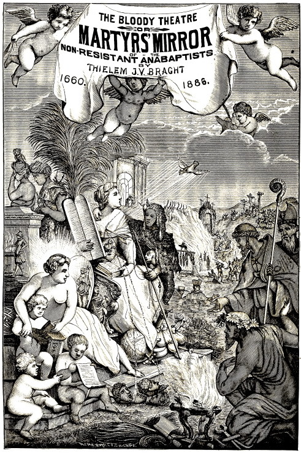
61
THE BLOODY THEATRE
—OR—
MARTYRS MIRROR
—OF THE—
ANABAPTISTS OR DEFENSELESS CHRISTIANS,
WHO SUFFERED AND WERE SLAIN FOR THE TESTIMONY OF JESUS
CHRIST, THEIR SAVIOR, FROM THE TIME OF CHRIST UNTIL
THE YEAR A. D. 1660.
That is, from the first year of the ministry of Jesus Christ to the year 100.
[We have begun with the baptism of John, who in Holy Scripture is properly called the Baptist, because he was the first and chief one who truly administered baptism with all that pertains to it; concerning which we have noted the time, place, persons, etc. From there we proceeded to Christ and the command which he gave concerning baptism; thence to the apostles, and how they fulfilled Christ’s command. But, since the apostles who wrote of baptism did not live to the close of this century, we, in order to accomplish our design, resorted to the fathers who lived shortly after the apostles, and wrote on baptism; and thus the first century is concluded with their testimony.]
We shall begin to give an account, from century to century, up to the present day, or at least, to the time of our fathers, how that the true baptism upon faith, with rejection of infant baptism, has always obtained, and been practiced, according as it was possible, by the true church of God, or at least, by some of the orthodox believers, according to the freedom, or the oppression prevailing at any particular time; and that this same faith, on account of which the world calls us Anabaptists, was begun by God, through John, was confirmed by Christ, and propagated and maintained by the apostles as well as by their successors, till the time of our fathers; together with an account of the persons who suffered for that faith.
Coming, then, to the article of baptism we shall thus begin and finish the subject: In the first century, embracing chiefly the time of Christ and his holy apostles, we shall place, not by inferences, but through express words, that which Holy Scripture has to say in regard to it, as being the foundation of the matter, and afterwards, that which is recorded by trustworthy authors.
The holy evangelists tell us the time, place and manner of the same. Luke writes, chap. 3:1–3: “Now in the fifteenth year of the reign of Tiberius Cesar, Pontius Pilate being governor of Judea, and Herod being tetrarch of Galilee, and his brother Philip tetrarch of Iturea and the region of Trachonitis, and Lysanias the tetrarch of Abilene, Annas and Caiaphas being the high priests, the word of God came unto John the son of Zacharias in the wilderness. And he came into all the country about Jordan, preaching the baptism of repentance for the remission of sins.” Matt. 3:1,2: “In those days came John the Baptist, preaching in the wilderness of Judea, and saying, Repent ye: for the kingdom of heaven is at hand.” Verse 11: “I indeed baptize you with water unto repentance.” Acts 19:4, Paul said: “John verily baptized with the baptism of repentance, saying unto the people, that they should believe on him which should come after him, that is, on Christ Jesus.
62
Matt. 3:5–9: “Then went out to him Jerusalem, and all Judea, and all the region round about Jordan, and were baptized of him in Jordan, confessing their sins. But when he saw many of the Pharisees and Sadducees come to his baptism, he said unto them, O generation of vipers, who hath warned you to flee from the wrath to come? Bring forth therefore fruits meet for repentance: and think not to say within yourselves, We have Abraham to our father: for I say unto you, that God is able of these stones to raise up children unto Abraham.” Luke 7:29,30: “And all the people that heard him, and the publicans, justified God, being baptized with the baptism of John. But the Pharisees and lawyers rejected the counsel of God against themselves, being not baptized of him.” John 3:23: “And John also was baptizing in Enon near to Salim, because there was much water there: and they came, and were baptized.”
Matt. 3:13–17: “Then cometh Jesus from Galilee to Jordan unto John, to be baptized of him. But John forbade him, saying, I have need to be baptized of thee, and comest thou to me? And Jesus answering said unto him, Suffer it to be so now: for thus it becometh us to fulfill all righteousness. Then he suffered him. And Jesus, when he was baptized, went up straightway out of the water: and, lo, the heavens were opened unto him, and he saw the Spirit of God descending like a dove, and lighting upon him: and lo a voice from heaven, saying, This is my beloved Son, in whom I am well pleased.” See further, concerning this: Mark 1:9–11; Luke 3:21–23.
John 3:22: “After these things came Jesus and his disciples into the land of Judea; and there he tarried with them, and baptized.” Chap. 4:1–3: “When therefore the Lord knew how the Pharisees had heard that Jesus made and baptized more disciples than John (though Jesus himself baptized not, but his disciples), he left Judea, and departed again into Galilee.”
Matt. 28:18–20: “And Jesus came and spake unto them, saying, All power is given unto me in heaven and in earth. Go ye therefore, and teach (or make disciples of) all nations, baptizing them in the name of the Father, and of the Son, and of the Holy Ghost: teaching them to observe all things whatsoever I have commanded you: and, lo, I am with you alway, even unto the end of the world. Amen.” Mark 16:15,16: “And he said unto them, Go ye into all the world, and preach the gospel to every creature. He that believeth and is baptized shall be saved; but he that believeth not shall be damned.”
Acts 2:37,38: “Now when they heard this, they were pricked in their heart, and said unto Peter and to the rest of the apostles, Men and brethren, what shall we do? Then Peter said unto them, Repent, and be baptized every one of you in the name of Jesus Christ for the remission of sins.”
Verses 41,42: “Then they that gladly received his word were baptized; and the same day there were added unto them about three thousand souls. And they continued steadfastly in the apostles’ doctrine and fellowship, and in breaking of bread, and in prayers.
Acts 8:12,13: “But when they believed Philip preaching the things concerning the kingdom of God, and the name of Jesus Christ, they were baptized, both men and women. Then Simon himself believed also: and when he was baptized, he continued with Philip.”
Verses 36–39: “And as they (namely Philip and the Ethiopian) went on their way, they came unto a certain water: and the eunuch said, See, here is water; what doth hinder me to be baptized? And Philip said, “If thou believest with all thine heart, thou mayest.” And he answered and said, I believe that Jesus Christ is the Son of God. And he commanded the chariot to stand still: and they went down both into the water, both Philip and the eunuch; and he baptized him. And when they were come up out of the water, the Spirit of the Lord caught away Philip, that the eunuch saw him no more: and he went on his way rejoicing.”
Acts 9:17,18: “And Ananias went his way, and entered into the house; and putting his hands on him said, Brother Saul, the Lord, even Jesus, that appeared unto thee in the way as thou camest, hath sent me, that thou mightest receive thy sight, and be filled with the Holy Ghost. And immediately there fell from his eyes as it had been scales: and he received sight forthwith, and arose, and was baptized.”
Acts 10:46–48: “For they heard them speak with tongues, and magnify God. Then answered Peter, Can any man forbid water, that these should not be baptized, which have received the Holy Ghost as well as we? And he commanded them to be baptized in the name of the Lord.”
Acts 16:13–15: “And on the sabbath we went out of the city by a river side, where prayer was wont to be made; and we sat down, and spake unto the women which resorted thither. And a certain woman named Lydia, a seller of purple, of the city of Thyatira, which worshiped God, heard us: whose heart the Lord opened, that she attended unto the things which were spoken of Paul. And when she was baptized, and her household, she besought us, saying, If ye have judged me to be 63 faithful to the Lord, come into my house, and abide there. And she constrained us.”
Verse 40: “And they went out of the prison, and entered into the house of Lydia: and when they had seen the brethren, they comforted them, and departed.”
Acts 16:29–34: “Then he (namely the keeper of the prison) called for a light, and sprang in (the prison), and came trembling, and fell down before Paul and Silas, and brought them out, and said, Sirs, what must I do to be saved? And they said, Believe on the Lord Jesus Christ, and thou shalt be saved, and thy house. And they spake unto him the word of the Lord, and to all that were in his house. And he took them the same hour of the night, and washed their stripes; and was baptized, he and all his, straightway. And he led them into his house, and seated them at the table, and rejoiced with all his house, that he believed in God, or (as the latest translators say), he rejoiced, that he and all his house believed in God.”
Acts 18:8: “Crispus, the chief ruler of the synagogue, believed on the Lord with all his house; and many of the Corinthians hearing believed, and were baptized.”
1 Cor. 1:14–16: “I thank God (says Paul) that I baptized none of you but Crispus and Gaius; lest any should say that I had baptized in mine own name. And I baptized also the household of Stephanas; besides, I know not whether I baptized any other.”
Compare this with 1 Cor. 16:15,16: “I beseech you, brethren (ye know the house of Stephanas, that it is the firstfruits of Achaia, and that they have addicted themselves to the ministry of the saints), that ye submit yourselves unto such, and to every one that helpeth with us, and laboreth.”
1. That it signifies the burying of sins, and the resurrection into a new life.
Rom. 6:3,4: “Know ye not, that so many of us as were baptized into Jesus Christ were baptized into his death? Therefore we are buried with him by baptism into death: that like as Christ was raised up from the dead by the glory of the Father, even so we also should walk in newness of life.”80
Note.—To the foregoing belongs also the passage, Tit. 3:5, where baptism is called, “the washing of regeneration,” and Eph. 5:26, “the washing of water by the word.”
2. That through faith we become children of God, and through baptism put on Christ.81
Gal. 3:26,27: “For ye are all the children of God by faith in Christ Jesus. For as many of you as have been baptized into Christ have put on Christ.”
3. That as the ark with eight souls was preserved in the water, so also believing baptized Christians are preserved or saved in baptism through the answer of a good conscience.
1 Pet. 3:20,21: “When once the longsuffering of God waited in the days of Noah, while the ark was preparing, wherein few, that is, eight souls were saved by water.82 The like figure whereunto baptism doth also now save us, (not the putting away of the filth of the flesh, but the answer of a good conscience toward God).”
In order to receive baptism in a worthy and true manner, there are required sorrow and repentance of sins, accompanied with a confession of the same. Matt. 3:6, we read: “And were baptized of him in Jordan, confessing their sins.”
Besides this, it is required that we should bear good fruits. “Bring forth therefore,” says John, to those who desired to be baptized, “fruits meet for repentance.” Matt. 3:8; or, according to Biestken’s translation: “Do genuine fruits of repentance.”
Mark 16:16, it is also required, that we believe, yea, that we believe with the heart. Acts 8:37.
In short, repentance or conversion, and baptism are joined together, Matt. 3:6,11; as also, teaching, believing, and baptizing, Mark 16:15,16. Confession and baptism went hand in hand with the Ethiopian, Acts 8:37. Baptism is a burying of the old man, and a sign of resurrection into a new life, Rom. 6:3,4; a putting on of Christ, Gal. 3:27; and the answer of a good conscience toward God. 1 Pet. 3:21.
These and other conditions required in baptism cannot exist in infants, who know neither good nor evil, cannot discern between the right hand and the left hand, and do as children do, Deut. 1:39; Jon. 4:11; 1 Cor. 13:11.
Here we might adduce much more, but since it is not our purpose to dispute about this point, but simply to show from the unadorned testimonies of the holy evangelists and apostles, that baptism was administered in the first century only to adult (that is, penitent and believing) persons, we shall leave this subject, and proceed to give an account of those who, according to history, have, either by word or by deed, maintained this doctrine.
64
Although we might entirely conclude this first century as touching baptism upon faith, with the testimony of Holy Scripture, we, so as not to appear deficient, nevertheless deem it expedient, to add the testimonies of the fathers, till the end of this century.
About the year 52.—Jac. Mehrn. Bapt. hist. pag. 578. from Simon Metaphrastes, D. Vicecomes records the following incident (lib. 1. cap. 4. in the life of St. Auxibius): When St. Mark, the apostle of Christ, saw that Auxibius had a desire for Christ, and that he was believing and instructed, he descended with him into a pool and baptized him. This is the first example of which we read in history, outside of Holy Scripture, of those who were incorporated into the church of Christ, through baptism upon faith.
About the year 60.—In, or very near this time, it is recorded, even by several papistic writers, that there were such people and such a sect as were afterwards designated by the name, The Poor of Lyons, Waldenses, Albigenses, who were also called Anabaptists, or Baptists, on account of the like faith which they had in common; as shall be shown hereafter. Therefore the papists complain of their being considered of such high antiquity; for some say that they existed in the time of Sylvester, A. D. 315, and others assert, with more justness, too, in the time of the apostles. Baptism, histor. pag. 615, from a very old book. Also, pag. 670 and pag. 682. from Flaccius. Also, D. Balthazar Lydius (though he misinterprets their doctrine) in the tract, “Where the church was before the year 1160,” printed at Dort, A. 1624. pag. 2. col. 1. from Reynerius Priester.
About the year 68.—It is stated that in the time of Nero, two daughters of Valentinian, a Christian at Aquileia, who had been brought up by their father in the Christian faith and the fear of God, were instructed by the priest or teacher Hermagoras, and baptized at a running water. See De gantsch klare en grondige bewijsinge van den Doop, printed A. D. [15] 81. letter Bv.
About the year 70.—In or about the time of the death of the apostle Peter is placed the bishop or teacher Linus, of whom it is testified that he baptized, after preceding instruction, the son of Perpetua, a Christian woman. See the above. Also, Kort verhael van den loop der werelt, by F. H. H., printed at Franeker, A. 1611. pag. 47.
From the year 71 till the year 111.—It is stated that between these years there flourished Ignatius, who was the second bishop of Antioch after Peter, and, according to the chronicles, discharged the duties of his office in the time of the apostle John. Writing of baptism, he employs no other manner of speech, than which clearly implies that baptism must be accompanied with faith, love and patience.
In his letter to Polycarp, bishop at Smyrna, he writes among other things these words: Let none of you be found an apostate: “Let your baptism be your weapon, your faith your helmet, love a lance, patience a full armor.”
In a letter to the Tralienses he writes likewise: “It appears to me, that you do not live after the flesh, but after Jesus Christ, who died for our sakes; so that you, believing in his death, may, through baptism, be partakers of his resurrection.”
Again, in the letter to those at Philadelphia he writes thus: “Seeing, then, that there is one only ungenerated God and Father; and one only begotten Son, Word, and Man; one Comforter, the Spirit of Truth; and one faith, one baptism, and one church, which the apostles have founded with their sweat and labor, in the blood of Christ from one end of the earth to the other; therefore, you, as a peculiar people and holy generation, must also do all things with a unanimous heart in Christ.”
Who does not see here, that Ignatius by joining together in this order of sequence, preaching, faith, baptism, and the church, intends to say, that according to the ordinance of Christ, preaching has the first place, and, therefore, must precede; that after faith comes baptism, and that after baptism the one baptized is a member of the church? and that then the members of the church, as a peculiar people and holy generation, must do all things with unanimous hearts in Christ? For this is the import of the words of Ignatius. See, concerning the aforementioned letters of Ignatius, H. Montanus in De nietigheyd van den Kinder-doop, printed the second time, pages 4 and 5. Also, Jac. du Bois (though he misinterprets these letters), Tegen Montanus, printed Anno 1648. page 16–22.
In the year 95.—It is here recorded that Clemens, the fourth bishop of the church at Rome, ordained: That the heretics’ baptism is neither to be supported nor accepted; therefore, he that has received baptism in conformity with the truth of the church, shall not be rebaptized; but he who does not rebaptize the unclean, that is, baptized by the ungodly or heretics, shall be deposed, as one who mocks the cross and death of Christ, and does not distinguish the false priests, or teachers, from the true ones (distinct. 30. cap.). Again, in his second epistle he speaks of baptizing on the feast, and that the candidate for baptism is to be examined three months previously. P. J. Twisck, Chron. 1st Book, in the year 95. page 32.
It certainly appears clearly from these words of Clemens that at that time no other baptism obtained in the church, than that which was administered after preceding instruction: for when he speaks of baptizing on the feast, and that the candidate for baptism is to be examined three months previously, it is certainly expressed, that then no new-born children were baptized; for who does not know that children are born throughout the whole year, and not only on feast-days (namely, on Easter or Pentecost)? Besides, infants cannot be examined in the faith three months previous to their baptism, as is required here of the candidates for baptism.
Moreover, in the third letter of Clemens, the following words, which still more clearly express the preceding meaning, are found: If any one desires 65 to become a believer, and to be baptized, he must prepare himself to lay aside the former wickedness; so that he henceforth may obtain, by a good conversation, an inheritance of the heavenly riches, according to his own deeds. Let him that desires this, go to his priest, or teacher, and hear from him the mysteries of the kingdom of heaven; let him exercise himself diligently with fasting, and examine himself well in everything, so that after three months he may be baptized. Every one shall be baptized in running water, and the name of the blessed Trinity be invoked over him. Jac. Mehrn. Bapt. Histor. 2nd part, on the second century, page 209. from Clem. Epist. 3.
From the Constitutionibus Apostolicis, lib. 7. cap. 23. by the same Clemens, these words are taken: Concerning baptism we commanded you before, O bishop, and say this also: that you shall baptize as the Lord has commanded us, when he said: “Go, and teach all nations, baptizing them in the name of the Father, and of the Son, and of the Holy Ghost: teaching them to observe all things whatsoever I have commanded you.” Matt. 28:19,20. Bapt. Histor. page 200. ex. Constit. Apostol.
The above words of Clemens speak so plainly of the true order of the baptism of Christ, that they need no explanation whatever. We shall therefore pass on to the martyrs who suffered in or about this time.
That is, from the death of Christ to the year A. D. 100.
This first century did not pass without the shedding of much blood of the saints; for, since Jesus Christ himself, the Leader of all true believers, was subject to it, it was just, that his members should follow in the same path; yet John died before Christ. But after the death of Christ, the fire of persecution raged exceedingly, consuming nearly all of the beloved apostles and friends of Christ, according to the flesh. We have described those who followed Christ, their Captain, into suffering and death, according to the order of time; they are the following persons: Stephen, the deacon; the apostles, James, Philip, Barnabas, Mark the evangelist, Peter, Paul; some companions and friends of Paul, as Aristarchus, Epaphras, Silas, Onesiphorus, Prochorus, Nicanor, Parmenas, Olympas, Carpus, Trophimus, Materus, Egyetus, Hermagoras, Onesimus, Dionysius of Athens, and Timothy; but the latter was slain a few years after the others. In the meantime the preceding ones are followed by the apostles, Andrew, Bartholomew, Thomas, Matthew, Simon Zelotes, Matthias, Luke the evangelist, Antipas, the faithful martyr of Jesus, John, whom Jesus loved, Urticinus, Vitalus, etc., all of whom obtained the martyrs’ crown, as may be seen from the following account.
To Jesus Christ, the Son of God, we have accorded the first place among the martyrs of the new covenant; not in the order of time, for herein John was before, and preceded with his death; but on account of the worthiness of the person, because he is the head of all the holy martyrs, through whom they all must be saved.
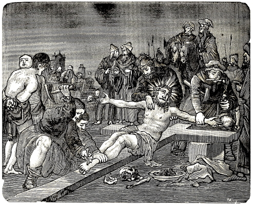
CRUCIFIXION OF JESUS CHRIST.
About three thousand, nine hundred and seventy years after the creation of the world, in the forty-second year of the reign of Augustus, the second Roman emperor, when the whole world was at peace, Jesus Christ was born of the virgin Mary, in the little town of Bethlehem, being the only and eternal Son of God, the Word by which all things are made, yea, God blessed forever. Matt. 16:16; John 1:14; Rom. 9:5.
But his entrance into this world, as well as his progress and end, was full of misery, distress and affliction, indeed it may be said: He was born under the cross; brought up under the cross; he walked under the cross, and, finally died on the cross.
Touching his birth, he was conceived of the Holy Ghost. His birth ushered him into great poverty; for he was not born in his maternal city, Nazareth, but on the journey to Bethlehem; which was the cause, that no suitable place could be prepared for his birth; yea, even more, he could obtain no place in the inn, but had to be born in a stable; and when he was born, he was wrapped in swaddling clothes, and laid in a manger.
Touching his bringing up, it was attended with much sorrow, for when he was still less than two years old, Herod persecuted him even unto death; on account of which his foster-father Joseph, and his mother Mary, had to flee into Egypt, and remain there until Herod’s death. But meanwhile there were killed in his stead, that he also might be killed, all the children of two years and under, in and about Bethlehem, so that the voice of lamentation was heard in all the boundaries of that region; of which Jeremiah had prophesied: “A voice was heard in Ramah, lamentation, and bitter weeping; Rachel weeping for her children refused to be comforted for her children, because they were not.” Jer. 31:15; fulfilled, Matt. 2:18.
As regards his life and conversation among men, he was considered an enthusiast and vagrant, because he had no permanent place of abode; which latter was nevertheless thus bitter for him, that he complains: “Foxes have holes, and birds of the air have nests; but the Son of man hath not where to lay his head.” Luke 9:58. Meanwhile he was reproached as being the friend of publicans and sinners, a glutton and wine bibber, yea, that he was possessed with the devil; and this, until the hour of his departure was nigh at hand.
66
Concerning the end of his life, it was the most miserable, for it was, so to speak, the day, when all the fountains of the great deep broke forth over him, and the floods of suffering overflowed him, to swallow him up altogether.
First of all, he was betrayed by his disciple Judas, who sold him for thirty pieces of silver to the high priests and Pharisees. Matt. 26:14–16. Then he was delivered unto them, sharply examined, yea, adjured by the living God, to say, whether he was the Christ, the Son of God. And as soon as the Lord had confessed this, they cried, “He is guilty of death.”
Then they spit in his face, and buffeted him. Others covered his face, saying, “Prophesy unto us, thou Christ, Who is he that smote thee?” Matt. 27:67,68. This having continued till about morning, they delivered him to Pontius Pilate, the judge, to pronounce the sentence of death upon him, and to put an end to his life. Matt. 27:1,2.
Pilate said, “What accusation bring ye against this man?” They answered, “If he were not a malefactor, we would not have delivered him up unto thee.” Pilate said, “Take ye him, and judge him according to your law;” for he perceived that for envy they had delivered him. They answered, He perverts the nation, and forbids to give tribute to Cesar, saying that he himself is a king. In short, “We have a law, and by our law he ought to die, because he made himself the Son of God.” John 19:7.
Thereupon Pilate took Jesus into the judgment hall, and, having examined him, said, that he found no cause of death in him. Therefore he sought a means to release him; moreover, in order to move the Jews to pity on account of his innocence, he caused him (though against his conscience) to be terribly scourged, crowned with thorns, mocked, and, thus disfigured, brought before the Jews, saying, “Behold the man!” so that they might now be satisfied with his suffering, and spare his life. But it was of no avail; they cried the more, “Crucify him, crucify him; if thou let this man go, thou art not Cesar’s friend.” Verse 12.
Finally, when Pilate saw that the Jews were not to be moved, and fearing that they might accuse him before Cesar, he went and sat down (at about eight o’clock in the morning, according to our reckoning) in the judgment seat, in the place called Lithostratos, and in Hebrew, Gabbatha, a paved elevation in Jerusalem; and there, though quite against his conscience, pronounced the sentence of death upon Christ.
Thereupon the soldiers again very dreadfully mocked him, laid his cross upon him, and drove him out through the gate up to Mount Calvary, where they, after having stripped him of his garments, nailed him to a cross, and raised him up between 67 two murderers, John 19:18; which was done, according to our reckoning, at about nine o’clock in the morning.
In the meantime they gave him vinegar and gall to drink, parted his garments, and again derided him most shamefully and above measure, till a great darkness came, continuing for about three hours; and then the Lord cried with a loud voice, “Eli, Eli, lama sabachthani!” that is, “My God, my God, why hast thou forsaken me?” Matt. 27:46.
Then, having fulfilled all, he commended his soul into his Father’s hands, saying, “Father, into thy hands I commend my spirit.” Luke 23:46.
Thereupon he bowed his head and expired, having suffered excruciatingly six hours on the cross, from nine o’clock in the morning till three in the afternoon.83
Then the earth began to quake, the rocks were rent, the graves were opened, the vail of the temple was rent in twain, and many miracles happened, as a sign that he who died there was more than a common man, yea, that he was the Son of the living God.
This, then, was the end, not of a martyr, but of the Head of all the holy martyrs, through whom they and we all must be saved.
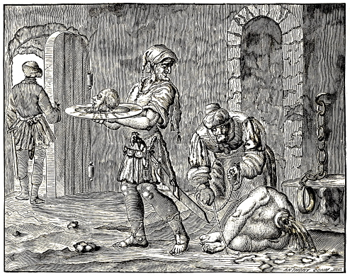
BEHEADING OF JOHN THE BAPTIST.
This John, surnamed the Baptist, because he was ordained of God to baptize the penitent, was the son of the priest Zacharias, and his wife Elisabeth; whose name was made known to his parents through the angel of God, before he was born. Luke 1:5,13.
When he was about thirty years old (about six months before the Lord Jesus Christ began to preach), in the fifteenth year of the reign of Tiberias Cesar, Pontius Pilate being governor, and Annas and Caiaphas the high priests, he was called and sent of God, to preach the baptism of repentance for the remission of sins, to prepare the way for the Messiah, as an angel or messenger before the face of Christ, to turn the hearts of the fathers to the children. Luke 3:1,2; Mark 1:2,3; Luke 1:17.
Of the dignity of this man the angel of the Lord had said, that many would rejoice at his birth, that he would be great in the sight of the Lord, to make ready a people well-prepared (as not only the prophets, but also Zacharias had prophesied of him through the Spirit of the Most High), to give knowledge of salvation unto the people of the Lord for the remission of their sins. Luke 1:14,15,77.
John, being thus sent of God, to bear witness of Christ, that he is the true light, came to the Jordan, at Salim, and other places, teaching and baptizing. John 3:23.
In the meantime, while he was baptizing the penitent, Christ himself came to him (to confirm this holy work), and asked to be baptized by him. But when John, from humility and good intention, declined, Christ instructed him that this was necessary, saying, “Suffer it to be so now: for thus it becometh us to fulfill all righteousness.” Then he baptized the Lord. Matt. 3:13–16.
He held the Lord Jesus in high estimation, calling him the Lamb of God, the Bridegroom of his church, the true Messiah, whose shoes he was not worthy to bear. John 1:29; 3:29; Matt. 3:11.
He himself possessed such great influence, though in humility, that many were in doubt whether he was not himself the Messiah; hence the Pharisees sent their messengers to him, to inquire of him his vocation, mission, authority, etc. To all this he answered candidly and with an humble heart, saying, “I am not the Christ.” John 1:19,20.
When the course of his pilgrimage drew near its close, a certain matter occurred, which was the cause of his death, and happened as follows: King Herod Antipas had committed a wicked deed; namely, he had taken his brother Philip’s wife, having put away his own wife, the daughter of Aretas, king of Arabia; which conduct John the Baptist, on account of his ministry, could not let go unreproved, but called Herod’s attention to it, according to the law, saying, “It is not lawful for thee to have her.” Matt. 14:4.
However, even as the ungodly will not be reproved, so it was with Herod; for he conceived a hatred for John, and sought opportunity to kill him. But, since many had a very high opinion of this pious man, and great numbers, therefore, came to him, Herod, for the present, did not dare to lay hands on him, to kill him; however he did not let him go free, but imprisoned him in the castle of Machærus. Euseb. Hist. Eccl. lib. 1 chap. 11.
In the meantime John did not relax in his calling, but even from prison sent some of his disciples to Christ, that they with the others might assure themselves through the doctrine and the miracles which they would there hear and see, that Christ, and none other, was the true Messiah. Matt. 11:2; Luke 7:18.
Thereupon, not only when these messengers came, but also on many other occasions, Christ testified of the greatness and worthiness of John the Baptist; namely, that he was the true spiritual Elias, a burning and shining light, the greatest prophet among all those born of women. Matt. 11:14; John 5:35; Luke 7:28.
Time went on, meanwhile, and the hour of his departure was near at hand. As regards the circumstances of his death, they are thus described by 68 the holy evangelist Matthew, chap. 14:3–12: “For Herod had laid hold on John, and bound him, and put him in prison for Herodias’ sake, his brother Philip’s wife. For John said unto him, It is not lawful for thee to have her. And when he would have put him to death, he feared the multitude, because they counted him as a prophet. But when Herod’s birthday was kept, the daughter of Herodias danced before them, and pleased Herod. Whereupon he promised with an oath to give her whatsoever she would ask. And she, being before instructed of her mother, said, Give me here John Baptist’s head in a charger. And the king was sorry: nevertheless for the oath’s sake, and them which sat with him at meat, he commanded it to be given her. And he sent, and beheaded John in the prison. And his head was brought in a charger, and given to the damsel: and she brought it to her mother. And his disciples came, and took up the body, and buried it, and went and told Jesus.”
Josephus, the Jewish historian, also makes mention of the death of John the Baptist, in the 7th chapter of the 18th book of his history of the Jews, where he writes thus:
“There was a common report among the Jews, that Herod’s army was destroyed through the righteous judgment of God, on account of John, who is called the Baptist. For Herod, the tetrarch, caused this pious man to be slain; who exhorted the Jews to all manner of virtue and righteousness, led them to baptism, and said, that their baptism would only then be acceptable to God, if they would abstain, not merely from one or two sins, but would earnestly purify the heart, through righteousness, and afterwards also the body.
“Since great numbers flocked to him, and the people were very eager for his doctrine, Herod feared, lest he (John) might induce the people, with whom his influence was great, to sedition; for it seemed, as if they would do everything according to his will and counsel. He therefore thought it best, to have him killed. For that reason he caused him to be imprisoned in the aforesaid castle Machærus, and there put to death.”
This happened, according to our reckoning, in the year thirty-two after the birth of Christ, in the seventeenth year of Tiberias, the Roman emperor; and thus was this great light of the church of God extinguished in the midst of its brightness, to the sorrow of many pious hearts.
It is stated that his body rested at Sebasta, in Palestine, till the time of Julian, when his bones were burned by the enemies of truth, and his ashes scattered to the wind. Histor. Tripart. lib. 1. cap. 15. Theod. lib. 3. cap. 6.
69
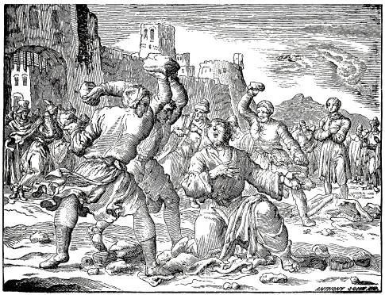
STONING OF STEPHEN, THE FIRST CHRISTIAN MARTYR.
Stephen, which in Greek signifies a crown, was one of the seven deacons of the church at Jerusalem, a man full of faith and the wisdom of God. Acts 6:5.
He was well versed in the holy Scriptures of the Old Testament, and very eloquent. It happened that there arose certain of the sect of the Libertines, Cyrenians, Alexandrians, and of them of Cilicia and of Asia, and disputed with Stephen; and they were not able to resist the wisdom and the spirit by which he spake. Then they suborned a few men to say: We have heard him speak blasphemous words against Moses, and against God. And they stirred up the people, and the elders, and the scribes, and came upon him, and caught him, and brought him to the council, and set up false witnesses, to say, This man ceaseth not to speak blasphemous words against this holy place, and the law: for we have heard him say, that this Jesus of Nazareth shall destroy this place, and shall change the customs which Moses delivered us. And all that sat in the council, looking steadfastly on him, saw his face, as it had been the face of an angel. Acts 6:9–15.
Then said the high priest to him, Are these things so? Thereupon, this godfearing man explained himself and answered with many reasons; he, moreover, adduced, as if with a heavenly tongue, and with incontrovertible reasons, many scriptures of the Old Testament, to show that Christ is the true Messiah, and that the Gospel is true. Acts 7:1–53.
But when he began to speak with great warmth, and to set before the eyes of his accusers their blood-thirstiness, their wrath was kindled the more against him, for these things cut them to the heart, and they gnashed on him with their teeth. Verse 54.
But he, being full of the Holy Ghost, looked up into heaven, and saw the glory of God, and Jesus standing on the right hand of God, and said: Behold, I see the heavens opened, and the Son of man standing on the right hand of God. Verses 55 and 56.
But they cried out with a loud voice, and stopped their ears, and ran upon him with one accord, and cast him out of the city, and stoned him; and the witnesses laid down their clothes at a young man’s feet, whose name was Saul. Verses 57 and 58.
In the meantime he called and said, Lord Jesus, receive my spirit. He kneeled down, and cried with a loud voice, Lord, lay not this sin to their charge. And when he had said this, he fell asleep. Verses 59 and 60.
70
Such was the end of this upright man Stephen, to whom the honor of Jesus Christ was dearer than his own life. It is stated to have taken place in the year thirty-four after the birth of Christ, in the nineteenth year of the reign of Tiberius, which was the thirty-eighth year of his age. It happened in the seventh year after the baptism of Christ. Nic. lib. 2. cap. 3.
This having occurred, some godfearing men attended to the body, and carried it to the grave, greatly lamenting this pious martyr.—The stones were to him as rivers of sweetness. August. cap. 22. Solil.
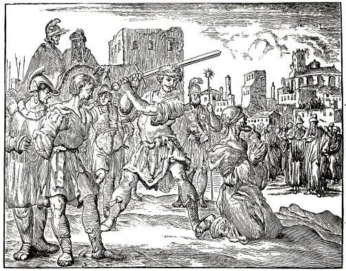
BEHEADING OF JAMES, THE SON OF ZEBEDEE.
James, surnamed the Greater, was the son of Zebedee and Salome, and a fisherman by occupation; but, Christ having called him to be his disciple, he abandoned fishing, and followed Christ. Matt. 4:21; Mark 1:19.
He was instructed for a considerable time together with the other disciples in the duties of the apostleship, until he was properly sent out in that capacity. Matt. 10:2; Mark 6:17; Luke 6:13.
He was endowed with the gift of working signs and miracles, and on account of this special gift he was one of the three surnamed Boanerges, that is, sons of thunder. He was with Jesus on every remarkable occasion; so much so, that he was chosen by the Lord to behold his glory upon the holy mount; and, afterwards, to witness his sufferings in the garden of Gethsemane. Mark 3:17,18; Matt. 17:1; 26:36.
Of him Christ had predicted, that he should drink of the same cup, of which he (Christ) would drink, and that he should be baptized with the same baptism, with which he was baptized; that is, that he should be subject to his (Christ’s) suffering and death. Matt. 20:22,23.
After the death of Christ he joined the other apostles, to be a witness with them, of his suffering, death, and resurrection, and to be instructed concerning his kingdom during the forty days after his resurrection.
After Christ’s ascension he also remained at Jerusalem; and when he, together with the other apostles, had there received the Holy Ghost, he preached the Gospel in Judea and Samaria. Acts 1:13,14.
From there, as some relate, he went to Spain; but, meeting with little success, he returned to Judea, where, it is said, he was opposed by Hermogenes, a sorcerer. But as Abdias, bishop of Babylon, and others, relate many things of him, which seem to be altogether fictitious, we shall not mention them. Petr. de nat. lib. 6. cap. 133. Abdias Babyl. van den Strijd der Apostelen.
71
This apostle lived only until the fourth year of the Emperor Claudius, at which time, Agabus had predicted, there should be a dearth throughout all the world. Oros. lib. 7. cap. 6.
At that time Claudius charged Herod Agrippa to suppress the church of Christ. Then Herod laid his bloody hands on this apostle and, on the feast of the passover, put him in prison. Shortly afterwards he was sentenced to death, and executed with the sword, in Jerusalem. This occurred in the year forty-five after the birth of Christ. Acts 12:2.
Clemens relates that the executioner, seeing his innocence, was converted to the Christian faith, and died with him. According to the annotation of Eusebius Pamphilius, from Clemens Alexandrinus, the executioner was so moved on account of the death of James, that he professed himself to be a Christian; and so, as he states, both were led forth together to death. As they were led out, the executioner asked James to forgive him. James, after a little deliberation, said, “Peace be with thee,” and kissed him. And thus both were beheaded. Euseb. lib. 2. cap. 9. ex Clem. Alexand. Also W. Baudart. Apophthegmat. lib. 1. page 4. from Joach. Camer. in vita Christi, page 42. Niceph. lib. 2. cap. 3. Strac. in Festo Jacobi, page 209. Cle. Circa, cap. 45. Annum. James was the first martyr of the apostles. This history shows the alacrity of the ancient believers.
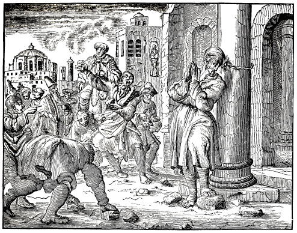
STONING OF THE APOSTLE PHILIP.
Philip, a native of Bethsaida, in Galilee, had a wife and daughters of very honorable life. John 1:44; 12:21; Euseb. Hist. Eccles. lib. 3. cap. 30; 31.
He was found of Christ, and called as his disciple to follow him; which he did so faithfully, that when he found Nathanael, he brought him to Christ, declaring to him, that he had found him of whom Moses and the prophets had written, namely, Jesus of Nazareth, the true Messiah. John 1:45.
From that time on, Philip constantly followed Christ, listening to his admonitions, and beholding the miracles he performed to the service of the word of God; so that Christ ordained him an apostle, and sent him out to preach the Gospel, in the first place to the scattered sheep of the house Israel; which he also like his fellow apostles did. Matt. 10:3; Luke 6:13–15.
The Lord esteemed him as one of his greatest friends; for at the glorious miracle of the feeding of five thousand, Christ, in order to prove him, counseled with him, saying, “Whence shall we buy bread, that these may eat?” John 6:5.
He was also kindly instructed by the Lord, when he asked to see the Father; for Christ said to him, 72 Philip, he that hath seen me hath seen the Father, etc. John 14:8,9.
Once, when certain Greeks wished to see Jesus, and desired him to procure them access to the Lord, he came with Andrew and told it to the Lord, who answered, “The hour is come, that the Son of man should be glorified.” John 12:20–23.
This pious and godly apostle remained with the Lord, even to his suffering; and, after their dispersion, when Christ had arisen, he abode with his brethren, until they, according to the promise of Christ, received the Holy Ghost, after his ascension. Luke 24:32,33; Acts 2:4.
After the distribution of the countries, he taught several years in Scythia, where he planted many churches; and since Syria and the upper part of Asia fell to his particular share, he laid the foundations of faith in many of these cities. Pet. de Nat. lib. 4. cap. 107. Nic. lib. 2. cap. 39.
Finally he came to Phrygia, and wrought several signs at Hierapolis. There the Ebionites, who not only denied the divinity of Christ, but also worshiped idols, continued obstinately in their blasphemous doctrines and idolatry, and did not listen to this pious apostle of Christ, but apprehended him, and, having made his head fast to a pillar, stoned him; whereupon death ensued, and he thus fell asleep in the Lord. His body was buried in the aforementioned city Hierapolis. Konst-tooneel, van veertigh heerlijke afbeeldingen Christi, ende sijner Apostelen, etc. In the life of Philip. Bybelsch Naembœck van P. J. Twisk, letter P. on the name Philippus, fol. 762. col. 2. Also, Introduction to the Martyrs Mirror of the Baptists, printed in the year 1631, fol. 35. col. 1.
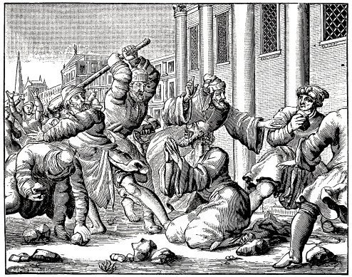
MARTYRDOM OF JAMES, THE SON OF ALPHEUS.
James the Lesser was the son of Alpheus, and Mary Cleophas, sister to the mother of Christ; he is called the Lord’s brother. Matt. 10:3; Gal. 1:19.
After proper instruction he was ordained an apostle by Christ, and sent out to minister to the Jews; wherein he acquitted himself well, until Christ’s death. After that, he, with others, was sent out to preach the Gospel, which he did in the Jewish church. Matt; 28:19; Mark 16:15.
And although Peter, and James and his brother John, of whom the last-mentioned two were the sons of Zebedee, were regarded as the special apostles, he was nevertheless considered to be one of the three pillars of the church, after the death of James the son of Zebedee. Gal. 2:9.
He was appointed by the apostles the first overseer of the church at Jerusalem; this was shortly after the death of Christ. Euseb. lib. 4. cap. 5. and lib. 2. cap. 23. This office he discharged faithfully for thirty years, converting many to the true faith, not only (though principally) by the pure doctrine of Christ, but also through his holy life, on account of which he was called the Just. Niceph. lib. 2. cap. 38.
He was very steadfast and holy, a true Nazarite, in dress as well as in eating and drinking; and prayed daily for the church of God and the common weal.
This apostle wrote an epistle for the consolation of the twelve tribes who were scattered abroad, saying: James, a servant of God and of the Lord Jesus Christ, to the twelve tribes which are scattered abroad, greeting. My brethren, count it all joy when ye fall into divers temptations. James 1:1,2.
But although he comforted with many excellent reasons his own, who believed in the name of Christ, the unbelieving Jews could not endure his doctrine; so that Ananias, an audacious and cruel young man among them, being the high priest, summoned him before the judges, that they should compel him to deny that Jesus is the Christ, and force him to renounce the Son of God and the power of his resurrection. Josep. Antiq. lib. 20. cap. 8. Euseb. lib. 2. cap. 1. verse 22. ex Egesipp. Hieron. Catal.
To this end, the chief priests, scribes, and Pharisees placed him upon the pinnacle of the temple, at the time of the passover, that he should deny his faith before all the people. But as he thus stood before the people, he confessed with much more boldness that Jesus Christ is the promised Messiah, the Son of God, our Savior, and that he is sitting at the right hand of God, and shall come again in the clouds of heaven, to judge the quick and the dead.
On account of this testimony of James, the multitude of the people praised God, and magnified the name of Christ. Then cried the enemies of the truth, O, the Just also has erred; let us take him away, for he is unprofitable. They accordingly cast him down, and stoned him. But as he was not killed by the fall and the stoning, having only broken his legs, he, lying on his knees, prayed to God for those who stoned him, saying, Lord, forgive them; for they know not what they do.
On account of this, one of the priests begged for his life, saying, What do ye? the Just is praying for us. Leave off stoning! But another of those present, who held a fuller’s stick in his hand, struck him over the head with it, so that he died, and fell asleep in the Lord. He was buried at the place where he had been thrown down from the temple. Hieron. Catalog. in Jacobo Justo. Also, W. Baudart. Apophthegmat. lib. 1. p. 6. ex Euseb. Pamphil. Cæsariense, in hist. Eccl. Strac. in Festo Philippi and Jacobi, p. 133. Anno 62. C. Aetat. Jacobi.
This occurred A. D. 63, in the ninety-sixth year of his age, in the seventh year of the reign of Nero, during an interim in the governorship between the death of Festus and the arrival of Albinus, under the high priest Ananias, who perpetrated this lamentable deed on James.
Concerning this James the following is contained in the Apophthegms of Baudartius: “He was on his bare knees so often and for such long periods, praying to the Lord God for the remission of the sins of the people, that his knees were so hard and callous, that there was no sensation in them at all. lib. 1. p. 7. O the great and constant piety of this holy martyr!
73
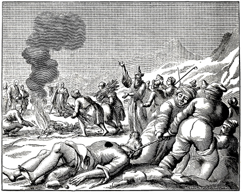
BURNING OF BARNABAS, A COMPANION OF PAUL.
Barnabas, also called Barsabas, and surnamed Joseph, Joses, or Justus, was a Levite from Cyprus, full of the Holy Ghost. He was called the son of consolation, and such a one he indeed proved himself to the poor saints. Acts 11:24; 1:23; 4:36; Euseb. hist. Eccl. lib. 2. cap. 1.
It is maintained that he was one of the seventy disciples of Christ, and from the multiplicity of his names we can see his renown and eminence; which latter he gained by his zeal and piety; for he brought Paul, after his conversion, to the apostles; and when the word of God was preached to the Grecians, at Antioch, by some men from Cyprus and Cyrene, he was sent by the apostles to investigate the matter; and when he found it to be so, he confirmed them in the truth. Acts 9:27; 11:20–23.
After this he went to Tarsus, to seek Paul, and brought him to Antioch, where they remained a whole year, teaching. Also, when the dearth arose under emperor Claudius, he and Paul brought substantial relief to the brethren who dwelt in Judea. Acts 11:25,26,29,30; Oros. lib. 7. cap. 6. Euseb. hist. Eccl. lib. 2. cap. 3. 9.
On his return to Antioch, he was sent out by the Holy Ghost, to preach in many countries. On account of his eloquence he was frequently the speaker; yea, he was held in such high regard, and was so godly, that the Gentiles at Lystra cried in the speech of Lycaonia, that he was a god, and had come down from heaven, and called him Jupiter. And this was not all; but the priests of that place came with oxen wearing garlands, and desired to do sacrifice to him and Paul. But he and his companion Paul utterly declined this, saying, “Sirs, why do ye these things? We also are men of like passions with you, and preach unto you that you should turn from these vanities unto the living God. Acts 12:25; 13:4–6; 14:1,2,11,12,15.
Afterwards, when certain men came from Judea, and troubled the brethren, saying, “Except ye be circumcised after the manner of Moses, ye cannot be saved,” he and his aforementioned companion vigorously opposed them, according to the teaching of the holy gospel; wherefore he and several other pious men were appointed to go to Jerusalem, to the apostles and elders, to bring said matter to a good termination. When they arrived at Jerusalem, he and the others were received joyfully by the apostles and the church; yea, what is still more, they testified of him and his companion Paul, that they were men who had hazarded their lives for the truth; which indeed was apparent. Acts 15:1,26.
For, when he came to Salamina, a large city in the island of Cyprus, at this day called Famagosta, 74 to strengthen the church at that place in the faith, he was very badly treated, as ancient history tells us, by a Jewish sorcerer, who stirred up all the other Jews and the whole people against him, so that they apprehended him in an uproar, and were about to bring him to the judge; but, fearing that the judge, discovering his innocence, would perhaps release him, they, after treating him lamentably, put a rope around his neck, dragged him out of the city, and burned him. Anton, p. 1. t. 6. cap. 18. Sabell. Eu. 7. lib. 2.
Thus was this faithful servant of Christ honored with the martyr’s crown, in his fatherland, and fell asleep happy in the Lord, about the time that James the Just was slain at Jerusalem, under Emperor Nero; however, before the publication of the first heathen persecution, which began shortly after the burning of Rome. Plat. in vita Petri, and Pauli. Bybelsch Naembœk, p. 158, 159. letter B. ujt hist. Andr. fol. 8.
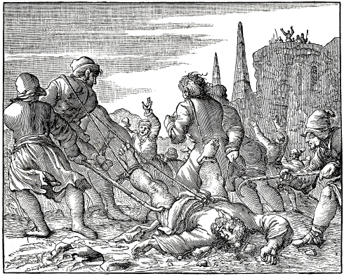
MARK DRAGGED TO THE STAKE.
The holy evangelist Mark is supposed by most to have been that Mark whose surname in Holy Scripture is John. He was of the circumcision, and a nephew of Barnabas, whose mother was called Mary, a very godly woman, who gave her house in Jerusalem for the assembling of Christians. Acts 12:12; Col. 4:10. Niceph. lib. 2. cap. 33.
He was first appointed a servant of Paul and Barnabas, but on a journey to Pamphylia he returned to Jerusalem. Acts 12:25; 13:13.
Afterwards the apostle Paul recommended him to the church at Colosse, requesting them to receive him as a fellow worker in the kingdom of God. He also commanded Timothy, to bring Mark to him, since he was very profitable to him in his ministry. Col. 4:10; 2 Tim. 4:11.
This Mark was in prison with Paul, and rendered him all faithful assistance in his bonds. Philem. verses 23,24.
The apostle Peter in his epistle to the elect scattered strangers, calls Mark his son, 1 Pet. 5:13; undoubtedly, because through the gospel, he had regenerated him in Christ; or, because he was his disciple, interpreter, and the writer of the gospel which he had taught; of which latter circumstance Jerome speaks thus: “Mark, a disciple of Peter, at the request of the brethren at Rome, wrote a brief gospel, according to that which he had heard Peter relate. When Peter had examined it, he pronounced it good, and upon his word gave it to the church to read. Catalog. Marc. ex Cl. Al. Hypor. 6. Also, Euseb. lib. 2. cap. 18, ex Clem. Al. and Papio Hierapolit.
Afterwards, when Mark was sent by Peter to Egypt, he traveled through Aquilea, the capit8 75 city of Friol, where he converted many to the faith, and left Hermagoras as pastor over the church. Avent. au. Boi. lib. 2.
Then he journeyed to Africa, filling Lybia, Marmorica, Ammonica, and Pentapolis with the doctrine of the holy gospel. Finally he remained several years at Alexandria, where he made his abode. Nic. lib. 2. cap. 43. Athan. in Synopsi.
Concerning the end of his life, Gelasius states, that he died there as a martyr. Concil. Rom Deer. de lib. Auth. and Apocr. Niceph. lib. 2. cap. 43.
Mark, he writes, having been sent by Peter to Egypt, faithfully preached the word of truth there, and nobly sealed the testimony thereof with his blood. All the ancient and modern, Greek and Latin, martyrologies agree with this.
Histories state the following concerning the manner of his death: That in the eighth year of Nero, when he, at the feast of the passover, preached the blessed remembrance of the suffering and death of Christ, to the church at Alexandria, the heathen priests and the whole populace seized him, and with hooks and ropes which they fastened around his body, dragged him out of the congregation, through the streets and out of the city; so that his flesh everywhere adhered to the stones, and his blood was poured out upon the earth, until he, with the last words of our Savior, committed his spirit into the hands of the Lord, and expired. Anton. p. 1. cap. 6. 16. Procop. Dia Metaphr. Ado. 25. Apr. de Fest. Apost.
Another ancient writer relates: That he was dragged very inhumanly through the streets, his whole body torn open, so that there was not a single spot on it, which did not bleed; and that they then again thrust him, still alive, into prison, whence he, having been strengthened and comforted by the Lord in the night, was taken out again, and dragged to the place Buculi, they jestingly saying, “Let us lead the buffalo to the buffalo-stall.” Konst-tooneel der veertig heerlijke afbeeldingen Christi en der postelen, printed Anno 1609. Also, Bybelsch Nœmboek, printed Anno 1632, letter M. p. 642. col. 1. 2.
Death having ensued meanwhile, the aforementioned heathen wanted, moreover, to burn him; but as they were prevented by a storm, the Christians buried him. This happened, according to common reckoning, in the eighth year of Nero’s reign, A. D. 64, on the 21st day of April.
76
When the Jews were deprived of their power, by the heathen, and their time was past, in which they had persecuted and slain the saints of God, the Lord God nevertheless suffered his church to be visited by the refining fire of persecution, namely, through the power of the heathen; of whom the Emperor Nero was the first tyrant. Introduction to the Mirror of the Anabaptist Martyrs, printed Anno 1631. p. 35. col. 2.
This Nero, according to the testimony of Emperor Trajan, governed the monarchy of Rome in so laudable a manner during the first five years of his reign, that never an emperor had greater praise than he; for then he was so tender-hearted, that when he was asked to sign the death warrant, of a highwayman, he replied, “O, that I could not write!” signifying thereby his aversion to the killing of human beings. Trajan. in Tract. Also, Roomschen Adelær, door D. P. Pers, printed Anno 1642, p. 100. in the life of Nero. Also, Suet. in Neron. cap. 10.
But after the first five years he became so full of hatred, murder, and blood-shedding, that he seemed to delight in nothing more, than in killing, murdering, and fearfully torturing, not only malefactors, but even the saints of God who were praised even among their enemies for their godfearing walk and conversation.
I will not mention the cruelties and tyrannies he exercised against his own friends; how he had his beloved son Britannicus poisoned, and his own mother Agrippina cut open, to see the place where he had lain; how he had his faithful wife, Octavia, put to death with the sword, because she was barren; and Seneca, his faithful teacher, bled to death, and poisoned. We will only speak of the persecutions and unheard-of cruelties he practiced on the beloved friends of God, namely, the true Christians. To this end we will begin thus:
Once, desiring to see the burning of Troy represented by its equal, he caused the city of Rome to be set on fire, and ascended a certain tower without, where he, beholding it, began to sing, “Troy is on fire,” etc. Suet. Idem. in Ner. cap. 38. Rom. Adel. p. 102. in the life of Nero.
After this was done, he cast the blame on the Christians, saying that they had done it; for, when the Romans, very much agitated on account of the immeasurable damage and the dire calamities which had sprung from this conflagration, began to murmur greatly, he, in order to shield himself, and to wreak his prejudiced hatred upon the Christians, put the whole blame on them. Introduction to the Martyrs Mirror, p. 35, from Baron. Anno 66. num. 1.
For this reason there were proclaimed immediately, in the name of the Emperor, throughout the whole known world (then under the monarchy of the Romans), bloody decrees against the Christians, that they should everywhere be put to death. The contents of these decrees were as follows: “If any one confesses that he is a Christian, he shall be put to death, without further trial, as a convicted enemy of mankind.” Joh. Gysii Hist. Mart. edit. 1657. fol. 6. col. 2.
Tertullian afterwards upbraided the Roman Senate, saying: “Read your own histories, and you will find, that Nero was the first who raged against this sect (so he calls the Christians), which then flourished the most in Rome.” Apol. Contra Gentes. cap. 5.
In another place he says: “Nero was the first who stained with blood the rising Christian faith at Rome.”
Shortly after this decree of Nero, a violent and unmerciful persecution of the Christians manifested itself in all the countries which were under the Roman dominion; which persecution lasted until the Emperor’s death. The innocent Christians were accused not only of the burning of Rome, but also of every wickedness imaginable; that they might be tortured and put to death in the most awful manner. To this the Roman Tactitus, (according to the translation of J. Gysius, and not that of Fenacolius)84 refers, saying: “Then, Nero, in order to avert this report from himself, caused those called Christians by the common people, to be accused and exceedingly tormented. The author of this name is Christ, who was publicly put to death under the reign of Tiberius, by Pontius Pilate, the governor. Those who confessed that they were Christians, were first apprehended, and afterwards by making it known themselves a great multitude were all condemned, not so much on account of the conflagration, as of the hatred in which they were held by mankind. The taking of their lives was accompanied with much mockery; they were covered with the skins of wild beasts, and then torn to pieces by dogs; or nailed on crosses; or placed at stakes and burned; serving also as torches for the spectators, when the day was over.”
Thus Tacitus, a Roman himself, has sufficiently confessed, in spite of himself, as J. Gysius writes, that the Christians were innocent of the burning of Rome, but that they notwithstanding had to suffer on account of their name.
Who the great multitudes were, that perished in those awful persecutions, confessing the name of Christ even unto death, is not stated in the histories of the fathers; however, we shall content ourselves therewith, that God remembers them, and that their names are written in the Book of Life. Nevertheless, we meet with some, though but few, names of such who suffered in that persecution in the reign of Nero, and sealed the truth of Christ with their blood and death; of these we shall speak in the proper place.
77
Touching the manner in which the Christians were tortured and killed at the time of Nero, A. Mellinus gives the following account from Tacitus and other Roman writers: namely, that four extremely cruel and unnatural kinds of torture were employed against the Christians:
Firstly, that they dressed them in the skins of tame and wild beasts, that they might be torn to pieces by dogs or other wild animals.
Secondly, that they, according to the example of their Savior, were fastened alive on crosses, and that in many different ways.
Thirdly, that the innocent Christians were burned and smoked by the Romans, with torches and lamps, under the shoulders and on other tender parts of their naked bodies, after these had been cruelly lacerated with scourges or rods. This burning was done also with shavings and fagots, they (the Christians) being tied to stakes worth half a stiver.85 Therefore they called the Christians sarmenticii, that is, fagot people, and semissii, that is, half stiver people; because they stood fastened to half stiver stakes, and were thus burned with the slow fire of fagots.
Fourthly, that these miserable, accused Christian martyrs were used as candles, torches, or lanterns, to see by them at night.
Of those who were burned, some were tied or nailed to stakes, and held still by a hook driven through the throat, so that they could not move the head when the pitch, wax, tallow, and other inflammable substances were poured boiling over their heads, and set on fire, so that all the unctious matter of the human body flowing down made long, wide furrows in the sand of the theatre. And thus human beings were lighted as torches, and burned as lights for the wicked Romans at night.
Juvenal and Martial, both Roman poets, and Tertullian, state this in a different manner, namely, that the Romans wrapped them in a painful or burning mantle, which they wound around their hands and feet, in order to melt the very marrow in their bones.
Furthermore, it is stated by A. Mellinus (from the aforementioned authors), concerning those mantles, that they were made of paper or linen, and, having been thickly coated with oil, pitch, wax, rosin, tallow, and sulphur, were wrapped around their whole body, and then set on fire.
For this spectacle Nero gave the use of his gardens, and appeared himself among the people in the garb of a charioteer, taking an active part in the Circusian games; himself standing in the circus, and, as charioteer, guiding a chariot.
These proceedings, according to the testimony of Tacitus, although it had the appearance that the Christians were punished as malefactors who had deserved the extremest penalty, nevertheless moved the people to compassion; for they understood well enough that the Christians were not exterminated for the good of the common weal, but simply to gratify the cruelty of one man, Nero. Compare Abr. Mellin. 1st book van de Histor. der vervolg. en Mart. printed Anno 1619. fol. 11. col. 4. and fol. 12. col. 1. with Tacit. Annal. lib. 15. and Tertul. Apol. Contr. Gent. cap. 50 and adv. Marc. cap. 5. Martinal. Epig. 25. lib. 25.
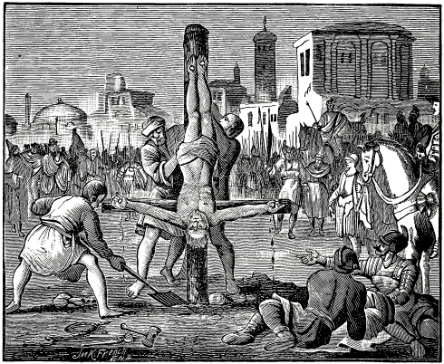
PETER CRUCIFIED AT ROME.
Simon Jona, afterwards called Cephas in Syriac, but Petros or Petrus in Greek, was the brother of Andrew, a native of Bethsaida in Galilee, and a fisherman by occupation. He had his abode at Capernaum, with his wife’s mother. His brother Andrew, who was a disciple of John, first brought him to Christ, and shortly afterwards he and his brother were called away from the fishery, to become fishers of men. Matt. 16:17; Mark 3:16; John 1:42; Matt. 4:18; John 1:44; Luke 4:31,38; John 1:41,42; Matt. 4:18,19.
He was diligently instructed by Christ, his Savior, and made such progress therein, that he became the spokesman of all the apostles, being generally the most frank in asking and answering, as well as the most zealous for Christ, in order to prove to him his love and fidelity, although at times he manifested a certain rashness therein; on which occasions the Lord, like a father his child, faithfully instructed, and, whenever it was necessary, kindly reproved him. Matt. 16:16; John 6:68; Matt. 18:21; 14:31; John 18:10,11.
The Lord loved him in a special manner, and permitted him, together with James and John, to witness his glory on Mount Tabor; of which he afterwards made mention to the chosen scattered strangers, saying, We were eye-witnesses of his majesty. Matt. 17:1–3; 2 Pet. 1:16,17.
He was the boldest in offering to suffer with Christ, but the weakest when the conflict began. The Lord selected him and the two sons of Zebedee, to watch and pray with him in the garden; but his eyes as well as those of the others were heavy with sleep; which showed that though he was specially loved by Christ, he was nothing more than a weak mortal. Matt. 26:33,36.
About his denying Christ we shall not mention anything, as this is not the proper place for it, since we purpose to speak only of his faithfulness and steadfastness until death.
After the aforesaid denial, the Lord forgave him his sin, and commanded him three times to feed his sheep and lambs; which he subsequently faithfully did to the full extent of his ability. John 21:15,16; 1 Pet. 5:1–3.
In one day there were converted to the faith, by his preaching, about three thousand souls; all of whom were baptized, and continued steadfastly in the apostles’ doctrine and fellowship, and in breaking of bread, and in prayers. Acts 2:41,42.
He confirmed his doctrine through the power of God by signs accompanying the same, according to 78 the promise of Christ, as is evidenced in the case of the lame man, Ananias, Sapphira, Eneas, Tabitha, and others. Acts 3:7; 5:5,10; 9:34,40.
The calling of the Gentiles was revealed to him in a vision from heaven; but as he was properly an apostle of the Jews, his ministry was most effectual among the circumcision. Acts 10:10–12; Gal. 2:8.
But since he was so excellent and worthy a man in his ministry, it pleased the Lord, that he should also be one of his martyrs, to seal the truth of his doctrine not only with the mouth, but also with his blood, yea, even with his death. This the Lord showed to him shortly before his departure from this world, saying, “Verily, verily, I say unto thee, when thou wast young, thou girdedst thyself, and walkedst whither thou wouldst: but when thou shalt be old, thou shalt stretch forth thy hands, and another shall gird thee, and carry thee whither thou wouldst not.” This spake he, signifying by what death he should glorify God. John 21:18,19.
This was verified in him, for shortly afterwards he and John, his fellow-helper, were brought before the Jewish council in Jerusalem, and severely threatened, to desist preaching in the name of Jesus; to which they both boldly replied, Whether it be right in the sight of God to hearken unto you more than unto God, judge ye. Acts 4:19.
Afterwards he was again apprehended, together with the other apostles, but by night, miraculously delivered out of prison by an angel. Acts 5:19.
After that he was not only apprehended, but, together with the other apostles, scourged and commanded, that they should absolutely not preach in the name of the Lord Jesus; but they went away from the Council, rejoicing that they were counted worthy to suffer shame for his name. Acts 5:40–42.
Afterwards King Herod stretched forth his hands to vex certain of the church. And he killed James the brother of John with the sword. And when he saw it pleased the Jews, he proceeded further and apprehended Peter also, and put him in prison, and delivered him to four quaternions of soldiers; intending after Easter to bring him forth to the people. But in the night the angel of the Lord led him out, through the midst of the soldiers, so that he returned to the believers, who rejoiced greatly on account of him. Acts 12:1.
Finally there was fulfilled, according to the testimony of history, the prediction of Christ, that he should glorify God by his death; for while he was at Rome, he was sentenced by the Emperor Nero to be crucified. But, esteeming himself unworthy to be crucified with his head upward, like his Savior, he requested to be crucified with his head downward; which he easily obtained, for the tyrants were forthwith willing and ready to increase his pain.
79
This occurred, as is stated, after Peter had preached the gospel for thirty-seven years, and when he was seventy years old.86 Euseb. lib. 2. cap. 25. and 3. cap. 2. from the writings of Origen. Egesipp. Hist. of the miserable Destruction of the City of Jerusalem. 3d book, 2d chap. Also, Konst-tooneel van veertig heerlijke afbeeldingen Christi en sijner Apostelen, door N. D. C., printed Anno 1609, in the Life of Peter. Also, W. Baudart Apophthegm. Christian. lib. 1. super Petrum. ex Hieron. de Vitis Illustribus. Johan. Strac. in Festo. Joh. Evang. Ambr. ad Aux.
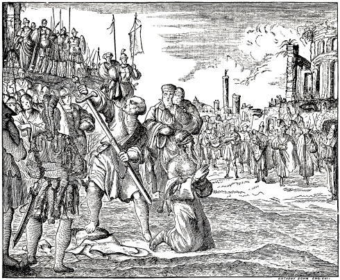
BEHEADING OF PAUL.
Saul, afterwards called Paul, was of Jewish descent, a Hebrew of the tribe of Benjamin; but, as to who his father and mother were, we find in Holy Writ no record. Phil. 3:5.
As regards the place of his birth, it appears that his parents, either on account of persecution, or of the Roman war, or for some other reason, left their place of residence in the portion of Benjamin, and went to dwell in a Roman, free city in Cilicia, called Tarsus, where Paul was born, who, although he was a Jew, yet, by the privileges of this city, became a Roman citizen. Acts 22:3.
Respecting his early training, he was diligently instructed by the wise Gamaliel, in the law of the fathers; in which he became so proficient, that there were but few things in the entire Old Testament, with which he was not acquainted. Gal. 1:14.
He lived blamelessly, according to the law of Moses and the holy prophets, and that in the strictest order of Judaism; but, having not yet been rightly instructed in the doctrine of the holy gospel, he, although in accordance with the law, manifested a wrong zeal, and persecuted the church of Christ; yea, at the death of Stephen he kept the garments of them that slew him. Acts 7:58.
But afterwards, having obtained letters from the priests at Jerusalem to the synagogues of Damascus, to bring as prisoners such men and women who confessed the name of Christ, the Lord, from heaven, 80 arrested him in his course, calling, “Saul, Saul, why persecutest thou me? And he said, Who art thou, Lord? And the Lord said, I am Jesus whom thou persecutest: it is hard for thee to kick against the pricks. And he trembling and astonished said, Lord, what wilt thou have me to do? And the Lord said unto him, Arise, and go into the city, and it shall be told thee what thou must do.” Acts 9:1–6.
The men who journeyed with him stood speechless, hearing a voice, but seeing no man. Then he arose from the earth, to which he had been prostrated by fear; and when he opened his eyes, he could not see, so that they led him by the hand, and brought him into Damascus. Verse 7,8.
In the city of Damascus there was a disciple, named Ananias; and to him the Lord said in a vision, “Arise, and go into the street which is called Straight, and inquire in the house of Judas for one called Saul, of Tarsus: for, behold, he prayeth.
Ananias answered, “Lord, I have heard by many of this man, how much evil he hath done to thy saints at Jerusalem.”
Then said the Lord to him, “Go thy way: for he is a chosen vessel unto me, to bear my name before the Gentiles, and kings, and the children of Israel: for I will shew him how great things he must suffer for my name’s sake.
And Ananias went his way, and entered into the house; and putting his hands on him, said, Brother Saul, the Lord hath sent me, that thou mightest receive thy sight, and be filled with the Holy Ghost. And immediately there fell from his eyes as it had been scales; and he received sight forthwith, and arose, and was baptized.” Acts 9:7–16.
Such was the conversion of Saul, who was afterwards called Paul, and was one of the chief apostles of our Lord Jesus Christ: yea, he labored more abundantly than they all. 1 Cor. 15:10.
Immediately after his conversion, he preached Christ in the synagogues, that he was the Son of God. Acts 9:20.
Some time afterwards, the Holy Ghost said to the prophets and teachers at Antioch, after they had ministered to the Lord with fasting and prayer, “Separate me Barnabas and Saul for the work whereunto I have called them.” And thus they were sent out by the Holy Ghost. Acts 13:2,3.
In the meantime, Paul, formerly called Saul, was endowed with special gifts of the Holy Ghost, so that he had the spirit of discernment, prophecy, tongues, miracles. Acts 13:9,10; 1 Tim. 4:1; 1 Cor. 14:18; Acts 19:11.
He had also special revelations, so that, at a certain time, he was caught up to the third heaven, yea, into the heavenly paradise, where he heard unspeakable words, which no man can utter. 2 Cor. 12:1.
He was, moreover, adorned with many Christian virtues, which he practiced with a good conscience; as well as with faithfulness in his ministry, paternal care over all the churches, and sincere love for them, even unto death, so that he said, “Being affectionately desirous of you, we were willing to have imparted unto you, not the gospel of God only, but also our own souls, because ye were dear unto us.” 1 Thess. 2:8.
He was free from covetousness, of a benevolent disposition, and would rather labor with his own hands, than be a burden to the church, lest it might prove a hindrance to the holy gospel. Acts 20:34.
He vigorously withstood, and overcame through the word of God, the erring spirits, sorcerers, Epicurean philosophers, and false prophets.
He feared neither great nor small, noble nor ignoble, Jew nor Greek; but taught the word of God in sincerity.
What he suffered in seven great land and sea journeys, during the time of thirty years, during which he traveled in Judea, Syria, Asia, Macedonia, Greece, Italy, Spain, France, Germany, yea, almost through the whole then known world, is sufficiently evident, from Holy Scripture as well as from history.
It is computed, that until his first imprisonment at Rome, he had traveled over three thousand German miles, by water and by land, only for the Gospel’s sake; besides all the other arduous journeys he undertook, in order to strengthen, awaken, and comfort the newly-planted churches; in which he met with much vexation, misery and grief from the hands of the unbelievers. The words which the Lord had spoken at the time of his conversion, were fulfilled in every part: “I will shew him how great things he must suffer for my name’s sake.” Acts 9:16.
Shortly after he was baptized, and his zeal for the truth of Christ began to break forth at Damascus, proving to the Jews that Christ was come, they took counsel to kill him; wherefore he was let down by the wall in a basket, that he might escape their hands. Acts 9:24,25.
Afterwards, when he came to Iconium with his companion Barnabas, the Jews stirred up the Gentiles against him and his friend, intending to stone them. Acts 14:2,5.
But when they had fled to Lystra, and had made a cripple able to walk, there came certain Jews from Antioch and Iconium, and stirred up the people, so that they stoned Paul, whom they first had worshiped as a god, and drew him out of the city, supposing that he was dead: howbeit, as the disciples stood round about him, he rose up again. Acts 14:19,20.
Afterwards, traveling with Silas, and having, at Philippi, delivered a damsel from a spirit of divination, he and Silas were accused on that account, beaten with rods, cast into prison, their feet made fast in the stocks, and were kept in close confinement. But in the night God sent an earthquake, so that the foundations of the prison were shaken, the doors opened, and the bands (of the stocks) loosed of their own accord. By this means Paul and Silas were delivered, with the knowledge of the keeper, who accepted the faith, and was baptized. Acts 16:22–36.
Subsequently, being at Thessalonica, and having preached the word of God three Sabbaths, so that of the devout Greeks, a great multitude believed, and of the chief women not a few, the Jews, who 81 believed not, were moved with envy; wherefore they took unto them certain lewd fellows—market-loungers—and gathered a great company, and set the city in an uproar, and assaulted the house of one Jason, thinking that Paul and Silas were within, and sought to bring them out to the people. And when they found them not, they drew Jason and certain brethren unto the rulers of the city, crying, “These that have turned the world upside down are come hither also; whom Jason hath secretly received.” Acts 17:1–7. From there, on account of the persecution, the brethren sent both of them away by night unto Berea. Verse 10.
After that, “when Gallio was the deputy of Achaia, the Jews made insurrection with one accord against Paul, and brought him to the judgment seat, saying, “This fellow persuadest men, to worship God contrary to the law. And when Paul was now about to open his mouth, to defend himself, Gallio said unto the Jews, to show to them the groundlessness of their accusations, If it were a matter of wrong or wicked lewdness, O ye Jews, reason would that I should bear with you: but if it be a question of words and names, and of your law, look ye to it: for I will be no judge of such matters. And he drave them from the judgment seat.” Acts 18:12–16.
After this, there came down from Judea a prophet, named Agabus, who took Paul’s girdle, and bound himself, saying, “Thus saith the Holy Ghost, So shall the Jews at Jerusalem bind the man that owneth this girdle, and shall deliver him into the hands of the Gentiles.” Thereupon the brethren besought Paul, not to go up to Jerusalem. But he answered, “What mean ye to weep and to break mine heart? for I am ready not to be bound only, but also to die at Jerusalem for the name of the Lord Jesus.” Acts 21:10–13. O the great resolution of the Apostle Paul!
After that, when he, standing on the stairs at Jerusalem, defended himself before those who had accused him, it came to pass that the Jews, having given him audience for awhile, cast off their clothes, threw dust into the air, and cried, “Away with such a fellow from the earth: for it is not fit that he should live.” Acts 22:22,23.
In the meantime he was bound, in order to be scourged; which he would not have escaped, had he not declared that he was a Roman citizen. Verses 25–29.
“Paul, earnestly beholding the council, said, Men and brethren, I have lived in all good conscience before God until this day. And the high priest Ananias commanded them that stood by him to smite him on the mouth.” Acts 23:1,2.
“The night following, the Lord stood by him, and said, Be of good cheer, Paul: for as thou hast testified of me in Jerusalem, so must thou bear witness also at Rome. Verse 11.
And when it was day, certain of the Jews banded together, and bound themselves neither to eat nor to drink till they had killed Paul. And they were more than forty which had made this conspiracy. Verse 12.
But Paul was warned of this ambuscade by his sister’s son, and when the latter made it known to the chief captain of the Romans, measures were taken to escape it; wherefore he was brought in the third hour of the night to Cesarea, unto Felix the governor. Verses 16–33. And Felix kept him in Herod’s judgment hall, till his accusers should come. Verse 35.
After five days Ananias the high priest descended with the elders, and with the orator Tertullus, who informed the governor against Paul. And when Paul was called forth, Tertullus, after having saluted Felix with many flattering words, began to accuse him, saying, “We have found this man a pestilent fellow, and a mover of sedition among all the Jews throughout the world, and a ringleader of the sect of the Nazarenes: who also hath gone about to profane the temple: whom we took, and would have judged according to our law. But the chief captain Lysias came upon us, and with great violence took him away out of our hands,” etc. “And the Jews also assented, saying that these things were so.” Acts 24:1–9.
But that this was not so (although they sought to bring about his death by these accusations), is evident from the preceding facts mentioned in the Acts of the Apostles, and from the following defense of Paul, verses 10–21.
“But after two years Portius Festus came into Felix’ room: and Felix, willing to shew the Jews a pleasure, left Paul bound.” Verse 27.
Now when Festus was come into the province, after three days he ascended from Cesarea to Jerusalem. Then the high priest and the chief of the Jews went to him, and desired favor, that he would send for Paul to Jerusalem; laying wait in the way to kill him. Festus replied to the Jews, that Paul should be kept at Cesarea, and that those who were to accuse him, might come thither. Acts 25:4,5.
And when they were come, they brought forward many and grievous complaints, which they could not prove, and which Paul briefly and conclusively refuted, declaring that he had offended neither against the law of the Jews, nor against the temple, nor against Cesar. But being deceitfully asked by Festus, whether he was willing to go up to Jerusalem, to be judged there (where his mortal enemies were), he fearlessly replied, “I stand at Cesar’s judgment seat, where I ought to be judged: to the Jews have I done no wrong, as thou very well knowest. But if I be an offender, or have committed anything worthy of death, I refuse not to die.” Acts 25:9–11.
After this, Paul was examined by King Agrippa, in the presence of Festus. His defense caused Festus, who was a friend of the Jews, to exclaim: Paul, thou art beside thyself. Agrippa, however, declared that he was almost persuaded to become a Christian. He also gave as his opinion, that there was nothing worthy of death in him; wherefore he said to Festus, This man might have been set at liberty, if he had not appealed unto Cesar. Acts 26:1–32.
In the meantime it was determined that he should sail to Italy, to be examined before Cesar. To this 82 end he and certain other prisoners were delivered to Julius, a centurion of the imperial band. Having embarked in a ship of Adramyttium, they sailed along Cyprus, Cilicia, Pamphylia, and other countries, to Myra in Lycia, where they were transferred into a ship of Alexandria bound for Italy. In this ship they sailed against Cnidus, as far as under Crete, over against the city of Salmone; thence to a place which is called the Fair Havens, nigh to Lasea. Acts 27:1–8.
At this place Paul foretold them, that they would not complete this voyage without great damage, danger of shipwreck, and peril of life; but the centurion believed the master and the owner of the ship, more than those things which were spoken by Paul. Verses 10,11.
Departing thence, they hoped to winter at Phenice, a haven of Crete; but they touched at Asson, and sailed close by Crete. Verses 12,13.
Then the ship was caught by a northeast wind, which had sprung up, and carried her, against their purpose, through the billows so that they had to let her drive before it; however, they came to the Island Clauda, yet with fear, lest they should fall into the quicksands. Verses 16,17. For many days and nights they saw neither sun nor stars through the mighty tempest, so that all hope that they should be saved was taken away. Verse 20.
Meanwhile God sent his angel on a certain night to Paul, saying, “Fear not; thou must be brought before Cesar: and, lo, God hath given thee all them that sail with thee. Verses 23,24.
Thereupon Paul urged them to take meat, for the preservation of their lives, for, on account of their deadly fear, they had not eaten anything for fourteen days; and breaking the bread, for to eat, he gave thanks to God in the presence of them all. Verses 33–36.
And when it was day, they knew not the land: but they discovered a creek; which however they could not enter, but ran aground, before the island of Melita (now called Malta); where the forepart of the ship stuck fast, but the hinder part was broken in pieces by the waves. Verses 39–41. Here the soldiers held a council and decided to kill the prisoners, including Paul, lest any of them should swim out, and escape. The centurion, however, willing to save Paul, kept them from their purpose: and commanded that they who could swim should cast themselves first into the sea, and get to land which was done; and the rest floated, some on boards, and some on broken pieces of the ship, so that all, namely, one hundred and seventy souls, escaped to land. Verses 42–44. Thus was fulfilled what Paul had foretold them, namely, that they should suffer shipwreck, and yet escape with their lives.
Here Paul was first pronounced a murderer, but afterwards a god, by the inhabitants of the island; and this, because they observed a viper fastening itself on his hand, which he shook off into the fire, without suffering any harm. Acts 21:3–6.
After three months they sailed for Italy in a ship which had wintered in the isle; yet they arrived first at Syracuse, in Sicily, and then at Puteoli, on the Italian border, where Paul found brethren, with whom he tarried seven days; others came to meet him as far as Appii Forum, and the Three Taverns. Proceeding, he came to Rome, where the centurion delivered him to the chief captain, to be brought before Cesar. In the meantime he was kept by a soldier, and bound with a chain. Verses 11–16,20.
We have narrated all these things the more circumstantially (and this, according to Holy Scripture), in order that it may be seen, how much this pious man suffered in his travels by sea and by land, for the sake of the holy Gospel. Of all this he gives a brief account in his second epistle to the Corinthian church, writing thus: “Of the Jews five times received I forty stripes save one. Thrice was I beaten with rods, once was I stoned, thrice I suffered shipwreck, a night and a day I have been in the deep; in journeyings often, in perils of waters, in perils of robbers, in perils by mine own countrymen, in perils by the heathen, in perils in the city, in perils in the wilderness, in perils among false brethren; in weariness and painfulness, in watchings often, in cold and nakedness. 2 Cor. 11:24–27.
Yea, it appears from the first epistle to the Corinthians, that he was thrown before the wild beasts in a theatre at Ephesus, to be torn to pieces, or, at least, to fight for his life with them; from which God at that time delivered him. Concerning this, the intelligent may judge; he writes, “If after the manner of men I have fought with beasts at Ephesus, what advantageth it me, if the dead rise not?” 1 Cor. 15:32.
As regards his imprisonment at Rome, most of the ancient writers are of the opinion that, although nearly all his friends forsook him at the time when he was to make his defense, he, being brought before Cesar, defended himself so cleverly against the accusations of the Jews, that he was set free for this time. But how true this is, we leave to its own merits, and to the omniscient God. This much, however, is certain, that while in prison at Rome, he wrote to his spiritual son Timothy, that he was now ready to be offered as a drink offering, and that the time of his departure was at hand; but that he took comfort in the thought, that he had fought a good fight, finished his course, and kept the faith, and that there was laid up for him a crown of righteousness, which the Lord, the righteous judge, should give him at that day. 2 Tim. 4:6–8.
According to ancient records he was then beheaded at the command of Nero, outside of Rome, on the road that leads to Ostia, called Via Ostiensis, where the Romans used to have their place of execution, in the last year of Nero, or about A. D. 69. Joh. Gys. in the History of the Martyrs, from Joseph Scaliger, about Paul. Egesipp. Hist. Destruc. Jerusal., lib. 3, cap. 2. Konst-tooneel van veertig heerlijke afbeeldingen Christi en sijner Apostelen, printed Anno 1609; about the life of Paul. Itinerarium Sacræ Scripturæ, per H. Bunting, translated into the Dutch by Matthias Hazard; printed Anno 1642, in the Travels of Paul, page 162. col. 1.
83
It is related that shortly after the death of the Apostle Paul, his brethren and fellow-prisoners, whom he mentions in the epistles which he wrote from his prison, namely: Aristarchus, Epaphras, Aquila, Prisca, Andronicus, Junias, Silas or Silvanus, Onesiphorus, etc., followed in his footsteps in suffering for the name of Christ.
Aristarchus, a native of Thessalonica, was, with Gaius, Paul’s companion in his journey from Macedonia to Asia; with which Gaius he was apprehended at a certain time, in an uproar at Ephesus, but for that time made his escape. Afterwards, however, he was brought to Rome a prisoner, just at the time that Paul also was apprehended for the testimony of Jesus Christ.
This friend of God saluted the church at Colosse by the hand of Paul; of which Paul makes mention, writing, “Aristarchus my fellow prisoner saluteth you.” Col. 4:10.
This imprisonment, however, was not the end of it; for he was also devoured by that cruel lion, Nero, about the time of Paul’s death after having been several years previously a faithful pastor of the church at Thessalonica. A. Mell. 1st Book, van de Hist. der vervolg. en Mart., printed at Dort, Anno 1619, fol. 17, col. 4, from Bedæ Usuard. Adon. Mart. Rom. 4 aug. Also, Menol. Græc. 14 April.
Epaphras was a faithful minister of Jesus Christ for the church at Colosse, which, while in bonds at Rome, he saluted by the hand of Paul, as appears from the epistle Paul wrote from his prison at Rome to the Colossians, in which, among other things, he says: “Epaphras, who is one of you, a servant of Christ, saluteth you, always laboring fervently for you in prayers, that ye may stand perfect and complete in all the will of God. For I bear him record, that he hath a great zeal for you, and them that are in Laodicea, and them in Hierapolis.” Col. 4:12,13.
Concerning his being a prisoner with Paul, or, apparently, sharing the same dungeon with him, Paul writes to Philemon, in the conclusion of the epistle: “There salute thee Epaphras, my fellow prisoner in Christ Jesus.” Verse 23.
Hence, it follows that those write not without foundation, who hold that Epaphras also suffered a violent death under the persecution of Nero. Idem, Ibidem. ex Mart. Rom. 19. Jul.
The apostle Paul, at the conclusion of his epistle to the church of God at Rome, very lovingly saluting different saints residing there, mentions, among others, two persons who had laid down their own necks for his life; also two others whom he calls his fellow-prisoners, doubtless, because they were subject, with him, to like persecution and suffering on account of the name of Christ. All these he mentions by name, and salutes them in apostolic manner.
Of the first two he writes thus: “Greet Priscilla and Aquila, my helpers in Christ Jesus: who have for my life laid down their own necks.” Rom. 16:3,4.
The last two he mentions in this manner: “Salute Andronicus and Junia, my kinsmen, and my fellow-prisoners, who are of note among the apostles, who also were in Christ before me.” Verse 7.
What was the end of these persons, is stated neither in Paul’s epistles nor in any other part of the New Testament; but other writers hold, that, in the aforementioned persecution of Nero, they suffered and fought unto death for the truth of Jesus Christ; which can not well be contradicted, since the bloodthirstiness of this emperor, especially against the Christians, was so great, that but few of those who fell into his hands escaped without bloodshed or a miserable death. See above.
Silas, also called Silvanus, together with Judas, surnamed Barsabas, was added to the Apostles Paul and Barnabas. These men were leaders among the brethren, and were to bear testimony to those matters which had been considered and decided upon by the apostles at Jerusalem, for the welfare of the church of God. Acts 15:27,34.
This Silas having once promoted, with Paul, the work of the holy Gospel, at Philippi, in Macedonia, he was apprehended together with Paul, brought before the rulers, publicly scourged, though without trial, and thus maltreated, cast into prison, against right and reason, with his feet made fast in the stocks; but was by divine Providence miraculously delivered, an earthquake at midnight opening the doors of the prison. Acts 16:19–39.
According to the statements of some writers, he afterwards became bishop of the church at Corinth, and died a martyr after having done much preaching. This much is certain, according to the testimony of Holy Scripture, that he was not only apprehended and scourged for the Gospel’s sake, but suffered many indignities before his end. A. Mell., 1st Book, van de Hist. der Vervolg., fol. 18, col. 1.
84
Onesiphorus was an Asian, a citizen of Ephesus, in Asia Minor, and very virtuous and godly in life, so that he frequently came to visit, converse with, and comfort, the apostle Paul in his bonds at Rome; on account of which Paul rejoiced with all his heart, and prayed to God to reward him for this kindness in the great day of recompense. Concerning this, Paul writes thus to Timothy: “The Lord give mercy unto the house of Onesiphorus; for he oft refreshed me, and was not ashamed of my chain: but when he was in Rome, he sought me out very diligently, and found me. The Lord grant unto him that he may find mercy of the Lord in that day: and in how many things he ministered unto me at Ephesus, thou knowest very well.” 2 Tim. 1:16–18. In the conclusion of the same letter he affectionately salutes the household of Onesiphorus, saying, “Salute . . . and the household of Onesiphorus. . . . Grace be with you. Amen.” Verses 19,22.
Some writers say that this pious man was bishop of (the church of) Colophon; others, of Coronia: but whether Colophon and Coronia at that time were not one and the same city, called by two different names; or, if they were two separate cities, whether he had the oversight over both churches at once, is a matter of little consequence. It is sufficient for us, that the historians agree in the fact that he and Porphyrius, his fellow servant of Jesus Christ, were first beaten with many severe stripes at Hellespontus, by the order of Adrianus the governor, and afterwards, both together, tied to wild horses, and thus dragged or torn to death, by virtue of Nero’s bloody edict. A. Mellin., 1st Book van de historien der Vervolgingen en Martelaren, printed A. D. 1619, fol. 18, col. 2, from Doroth., in Synopsi Mart. Rom. 6 Sept.
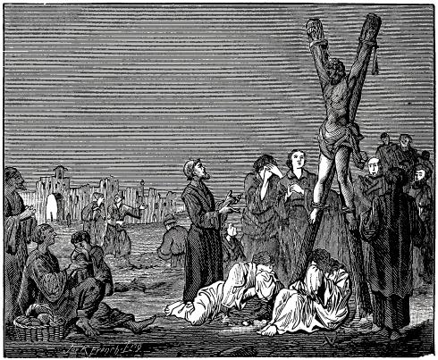
ANDREW, THE APOSTLE, CRUCIFIED AT PATRAS.
Andrew, the son of Jona, and brother of Peter, was a native of Bethsaida in Galilee. He was first a disciple of John the Baptist, and since he was older than Peter, and knew Christ first, he brought his brother to Christ as to the true Messiah. Being also a fisherman, like Peter, the Lord called him, and promised to make him a fisher of men. John 1:44,40,42; Matt. 4:18,19.
And because he zealously followed the Lord, and was instructed in the evangelical doctrine, so that 85 he was worthy to be filled with the spirit of miracles, the Lord ordained him as one of his twelve apostles; in which ministry he, with the others, faithfully labored among the Jews. Matt. 10:2; Mark 6:7.
He was held in no small esteem by the Lord; for he had, as it appears, a freer access to him, than Philip himself. Compare John 1:40 with verses 42,43.
Further, although he fell through weakness, like all the other apostles, in forsaking his master; yet he recovered from his fall, and again joined himself to Christ and to his fellow-brethren. Matt. 26:31; Luke 24:33.
Afterwards he with all his fellow-ministers received command to preach the gospel in the whole world, and to all nations; to which end he was endued, on the day of Pentecost, with the Holy Ghost, whom he received in all fullness. Matt. 28:19.
Going out, in obedience to the command of Christ, he taught in many countries, as in Pontus, Galatia, Bethynia, as well as at Antropophages, and afterwards in Scythia. He also traveled in the northern and the southern countries, yea, as far as into Byzantium; further, in Thracia, Macedonia, Thessalia, and Achaia, everywhere preaching Christ; whereby he converted many to the Christian faith.
He also confirmed the doctrine of his Master with many miracles, according to the words of the Lord: “These signs shall follow them,” etc. But since other authors do not treat accurately of this, we shall omit the particulars of these signs. Abdias, van den strijd der Apostelen.
Finally, when he had finished his course, according to the will of the eternal God, Aegaeas, the governor of Edessa, in the name of the Roman senate, caused him to be crucified in the city of Patras, in Achaia. Joli. Gys. Hist. Mart., fol. 10, col. 1, 2, from Sophronis and Aug. Solilo., cap. 2.
Concerning the cause and manner of his death, the following is contained in Apophthegm. Christian. Baudart., page 3: At Patras, a city in Achaia, he converted, besides many others, Maximillia, the wife of Aegaeas, the governor, to the Christian faith. This so enraged the governor against Andrew, that he threatened him with the death of the cross. But the apostle said to the governor: “Had I feared the death of the cross, I should not have preached the majesty and gloriousness of the cross of Christ.”
The enemies of the truth having apprehended and sentenced to death the apostle Andrew, he went joyfully to the place where he was to be crucified, and, having come near the cross, he said, “O, beloved cross! I have greatly longed for thee. I rejoice to see thee erected here. I come to thee with a peaceful conscience and with cheerfulness, desiring that I, who am a disciple of him who hung on the cross, may also be crucified.” The apostle said further, “The nearer I come to the cross, the nearer I come to God; and the farther I am from the cross, the farther I remain from God.”
The holy apostle hung three days on the cross; he was not silent, however; but as long as he could move his tongue, he instructed the people that stood by the cross, in the way of the truth, saying, among other things: “I thank my Lord Jesus Christ, that he, having used me for a time as an ambassador, now permits me to leave this body, that I, through a good confession, may obtain everlasting grace and mercy. Remain steadfast in the word and doctrine which you have received, instructing one another, that you may dwell with God in eternity, and receive the fruit of his promises.
The Christians and other pious people besought the governor to give Andrew unto them, and take him down from the cross. (For it appears that he was not nailed to the cross, like Christ, but tied to it). When the apostle learned of this, he cried to God, saying, “O Lord Jesus Christ! suffer not that thy servant, who hangs here on the tree for thy name’s sake, be released, to dwell again among men; but receive me, O my Lord, my God! whom I have known, whom I have loved, to whom I cling, whom I desire to see, and in whom I am what I am.” Having spoken these words, the holy apostle committed his spirit into the hands of his heavenly Father. M. W. Baudart. in Apophthegm Christian, lib. 1, super Andream, ex August. de Vera et Falsa Poenitentia., cap. 8, Bernhard. in Sermon. de Andrea. Lanfrancus contra Berengar. Niceph., lib. 2, cap. 39, and lib. 15, cap. 39. Remigius in Psal. 21 and 40. Johan. Strac. in Festo Andreae, p. 23, haec et alia. Also, Konst-tooneel van veertig, by N. D. C., Concerning the Life of Andrew.
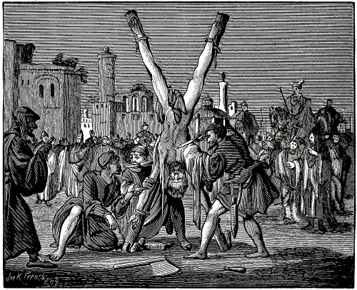
BARTHOLOMEW FLAYED ON THE CROSS.
Bartholomew, which signifies, the son of Tholomaeus, was a Galilean, like all the other apostles; and also a fisherman, according to the opinion of Theodoretus; some, however, hold, that he was of royal descent, and the nephew of the king of Syria.
Little is said of him in Holy Scripture aside from what relates to his call to the apostleship to preach the Gospel with the others throughout Judea and Galilee, to the lost sheep of the house of Israel. After Christ’s resurrection he was confirmed in his apostleship, and, with the others who were in like ministry, received the gift of the Holy Ghost. Matt. 10:3; Mark 3:18; Luke 6:14,15; Acts 2:1–5.
After the separation of the apostles he exercised his ministry first in Lycaonia, then in Syria and the upper parts of Asia, and afterwards in India, where, as the chronicles relate, Pantenus, a teacher of Alexandria, coming to the same place, about a century afterwards, found and took away with him the Gospel of Matthew, which Bartholomew had brought thither, and which he had taught the Indians in their native tongue. Isid. de part N. T., J. Gys. Hieron., Catal. Pantaleon, Euseb., lib. 3, cap. 10, J. Gys.
Finally he spread the Gospel in Great Armenia, and there, in Albana, or Albanopolis, the capital 86and residence of the kingdom of Poleno, or Palemonio, and converted King Astyages’ brother, together with his wife, two sons, and a daughter, to the faith. Hieron. Cat. Barthol., J. Gys.
He moreover, as is stated by others, delivered from idolatry, and enlightened with the knowledge of Jesus Christ, twelve cities in that country, in which the devil was worshiped through the idol Ashtaroth. But the priests of Ashtaroth, being very much vexed on account of this, complained to King Astyages, who caused Bartholomew, this holy apostle of Christ, to be apprehended and brought before him.
When Bartholomew stood before the king, the latter upbraided him, that he had perverted his brother, and unsettled the worship of the gods in his country. He therefore threatened him with death, unless he would desist preaching Christ, and sacrifice to his gods.
When Bartholomew had replied to this accusation, saying, that he had not perverted, but converted, his brother, that he had preached the true worship of God in his country, and that he would rather seal his testimony with his blood, than suffer the least shipwreck of his faith or conscience, the king gave orders, that he should first be severely tortured and beaten with rods, then be suspended on a cross with his head downwards, flayed alive, and finally beheaded with the ax. This having been done with him, he was united with Christ, his Lord. Niceph. lib. 3, cap. 39, Isid. Hisp. de vita et obitu sanct. J. Gys. Hist. Mart. super Bartholomeum.
Others relate that the sentence pronounced upon Bartholomew extended no further, than that he should be flayed on the cross, without any mention of decapitation; but that, as he, being still alive after having been flayed, exhorted the people, his head was struck off with an ax, in order to prevent this, he having committed his spirit into the hands of God. Konst-tooneel van veertig, about the Life of Bartholomew. Also, Bybelsch Naemboek, printed at Horn, Anno 1632, letter B. on the name Bartholomew, fol. 159, col. 2.
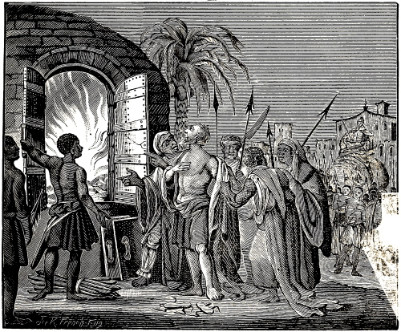
THE APOSTLE THOMAS CAST INTO AN OVEN.
Thomas, surnamed Didymus, that is, twin, was a native of Galilee, and his occupation, as it appears, that of a fisherman. John 11:16. Concerning his parents and the time of his conversion, we find no account in the Evangelists, who mention only his call to the apostleship. Matt. 10:3.
87
His love and ardent affection for Christ appears from the fact that he exhorted his brethren, to go up to Jerusalem, that they might die with Christ. John 11:16. But as he had not yet resisted unto blood, and labored also under a certain misapprehension concerning the death of Christ, he with the others forsook the Lord in the time of need. John 14:5; Matt. 26:31.
Afterwards, when the Lord had arisen, and appeared to the other apostles, in the absence of Thomas, he could not believe it, as he said, unless he should put his fingers into the prints of the nails with which he had been crucified, and thrust his hand into the Lord’s side, which a soldier had opened with a spear. But when the Lord came again, and appeared also to him, saying, “Reach hither thy finger, and behold my hands; and reach hither thy hand, and thrust it into my side,” etc., then he, being convinced, began to salute Christ with divine titles of honor, saying, “My Lord and my God.” John 20:24–28.
After this, he, together with the other apostles, received commandment to preach the Gospel in the whole world, and to baptize the believers; to which end, ten days after, namely on the day of Pentecost, he, with all his fellow-ministers, received the Holy Ghost in full abundance. Matt. 28:19,20; Mark 16:15,16.
According to history, he sent Thaddeus unto King Abgarus, shortly after Christ’s resurrection. Euseb. Hist. Eccl., lib. 1, cap. 13.
As Parthia, India, Ethiopia, and many other countries had as his portion, been assigned him, he traveled through them; he dreaded, however, as it appears, to go to the moors and the savage nations of India. Nevertheless, God having strengthened him, he there converted many to God. Euseb. Hist. Eccl., lib. 3, cap. 1.
Concerning the end of Thomas, the most probable account found by the ancients is this, namely, that at Calamina, a city in the East Indies, he put a stop to the abominable idolatry of the heathen, who worshiped there an image of the sun; so that through the power of God he compelled the Evil One to destroy the image. Thereupon the idolatrous priests accused him before their king, who sentenced him, first to be tormented with red-hot plates, and then to be cast into a glowing furnace, and burned. But when the idolatrous priests, who stood before the furnace, saw that the fire did not hurt him, they pierced his side, as he lay in the furnace, with spears and javelins; and thus he conformed in steadfastness unto his Lord Jesus Christ, whom he confessed even unto death. Jerome states that his body, which, it seems, was taken out of the fire, was buried in the same place where he died. Joh. Gysii Hist. Mart., fol. 11, col. 4. Konst-tooneel van veertig, in the life of Thomas.
88
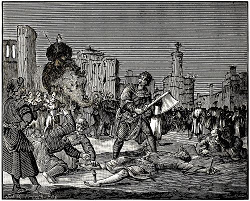
MATTHEW, THE EVANGELIST, BEHEADED AT NADAVAR.
Matthew, also called Levi, the son of Alpheus, was a publican in Capernaum. The publicans were detested by the Jews, because the latter did not consider themselves justly bound to pay toll or tribute to any foreign prince. Matt. 9:9; Mark 3:18; Luke 5:29. As touching the condition of publicans at that time, it was such that they generally exacted more from the people than was just; on which account they were shunned by the pious, so that open sinners, who were separated from the church, were compared to publicans. Matt. 9:11; 18:17.
When Matthew, or Levi, was still unconverted, and made his living in this unjust business, Christ met him with his grace, and commanded him to follow him as a disciple. Obeying through an inward impulse, he forsook the custom-house, and, having prepared a great feast for the occasion of taking leave of his companions, he invited his fellow-publicans, and also the Lord Jesus; apparently for an adieu, that they might find opportunity to become converted through the discourse of the Lord Jesus.
After this, Matthew immediately forsook all, and zealously followed his Lord, who had called him, and who, after he had more fully instructed him, placed him among the apostles, which office he, too, exercised among the Jews, till the death of Christ. Matt. 10:3; Luke 6:15.
Afterwards, when he was sent out to teach among the heathen, Ethiopia fell to his lot. But before he left Judea, he, through the illumination of the Holy Spirit, wrote his Gospel, in the Hebrew language, and left it to them. Euseb. lib. 5, cap. 1. Joh. Gys. Niceph. lib. 3, cap. 20. Secund. J. Gys.
In Ethiopia he accomplished much, with teaching as well as with miracles; and there he also left unto posterity after his death his written Gospel, from which it can easily be seen what faith he maintained, namely, the faith in Jesus Christ, the Son of God, that he became a real man, through the power of the Holy Ghost, in his mother Mary. Matt. 1st chapter, throughout.
History states that immediately after the death of King Aeglippus, who was attached to the Christians, his successor Hytacus, an unbelieving heathen, persecuted this apostle, and that at a certain time, when this pious apostle of Christ was teaching the church of God, he caused him to be apprehended and, as some write, nailed to the ground, and beheaded, in Naddavar, the capital of Ethiopia, 89where he is also buried, according to Venantius Fortunatus, who wrote, over a thousand years ago, “For the great city Naddavar shall restore to us at the last day the eminent Apostle Matthew.” J. Gys. in Hist. Mart., fol. 12, col. 2. Also, Konst-tooneel van veertig, in the life of Matthew. Also, P. J. Twisck, Bybelsch Næmbœck, fol. 65, col. 2, letter M. This writer states that he was fastened to the ground with darts, whereupon death ensued. Joh. Gys., from Venantius Fortunatus, de Gaud. Vitæ, lib. 7.
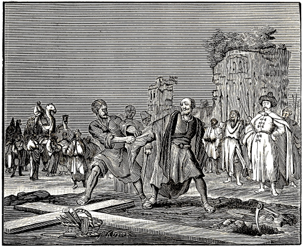
MARTYRDOM OF SIMON ZELOTES, AND JUDAS THADDEUS.
Simon the Canaanite, surnamed Zelotes, that is, Zealot, the son of Alpheus, the brother of James, Joses, and Juda, and a relative of Christ, was constituted by Christ one of his twelve apostles, to preach the Gospel, first among the Jews, and afterwards among the heathen; to which end he, together with the others who were in like ministry with him, received the Holy Ghost on the day of Pentecost. Matt. 10:4; Acts 1:13; Matt. 13:55; Mark 6:3.
He traveled in Egypt, Cyrene, Africa, Mauritania, throughout Lybia, and in the islands of Great Britain, where he preached the Gospel, Isid. de Vita et Mort. 5, 5. Niceph., lib. 2, cap. 40.
Afterwards, having preached everywhere, writes N. D. C., he came to the Western Sea, also into England, and their neighboring places.
Finally, it is stated by others, he went to Persia, where he found his brother Judas. Continuing together steadfastly in the duties of their apostleship, they sealed the divine truth with their blood.
Concerning Simon Zelotes in particular, it is stated that he was crucified in a very painful way by a certain governor in Syria. Bybelsch Næmbœck, letter S. on the name Simon, fol. 570, col. 1, from Eus. and Niceph., and Hist. Andræ, fol. 18, Konst-tooneel van veertig, in the life of Simon Zelotes.
As regards his brother Judas, surnamed Lebbeus, and also, Thaddeus, who was likewise an apostle of Jesus Christ, nothing is said of him in Evangelical history; only there is mention made of a question which he asked the Lord Jesus, saying, Lord, how is it that thou wilt manifest thyself unto us, and not unto the world? Matt. 10:3; Mark 3:18; John 14:22.
It was this apostle who also wrote a comforting letter to the believers, in which he admonishes them to remain steadfast in the faith once received; and threatens the unbelievers with the severe judgment of God.
90
In accordance with the division of the world made by the apostles for the preaching of the Gospel, he traveled in Mesopotamia, Syria, Arabia, and as far as Edessa. Finally, having gone to Persia, he there reproved and opposed the pagan idolatry; on which account he was beaten to death by the idolatrous priests, who were losing their gain. Isidor. and Niceph., Sabell. Eneæ. 7, lib. 14. Bybelsch Næmbœck, letter I., on the name of Judas Thaddeus, fol. 595. Konst-tooneel, etc., in the life of Judas Thaddeus, or Lebbeus.
Simon the Canaanite, or Zelotes, who was a son of Alpheus, is not distinguished by some from Simon the bishop at Jerusalem, who was a son of Cleophas; hence has originated the error that Simon Zelotes is said to have been killed A. D. 108 (see Byb. Næmb., fol. 870, col. 1), which, properly, is to be understood of Simon, the bishop at Jerusalem, the son of Cleophas; for Simon Zelotes and his brother Judas Thaddeus, according to testimony, were killed towards the close of the persecution by Nero, or about A. D. 70.
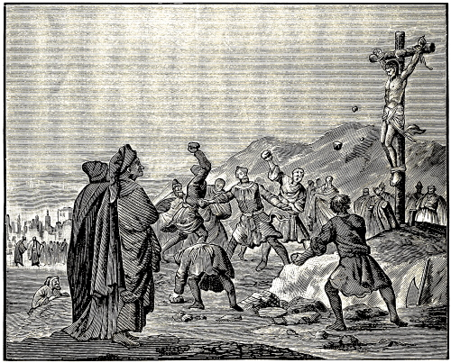
MATTHIAS HUNG ON THE CROSS, STONED, AND BEHEADED.
Matthias, according to the opinion of some, was of the royal house of David; and from his youth was well instructed in the law of God, at Bethlehem. He was one of the seventy disciples of Christ; but shortly after the Lord’s ascension, Judas Iscariot; having faithlessly departed from his apostleship, and taken his own life, the remaining eleven apostles, and one hundred and twenty men, through prayer to God, and by the lot, unanimously elected him in place of the aforementioned faithless Judas, an apostle and ambassador of Jesus Christ, to preach the Gospel, according to the command of the Lord, to all nations, and to baptize the believers. Acts 1:23–26.
Afterwards he and the other eleven apostles were scourged by the Jewish council, for the name of Jesus Christ, and commanded that they should preach no more in the name of Jesus Christ. Acts 5:38–40. But they departed from the council, rejoicing that they were counted worthy to suffer shame for his name. And daily in the temple, and in every house, they ceased not to teach and preach Jesus Christ.
After the separation of the apostles, who went everywhere to preach, Matthias, according to the opinion of Jerome, penetrated far into Ethiopia, where no other apostle had been, into the very interior of the land, yea, to the uttermost ends, to the inlet of the creek or river Asphar and Hyssus; where the most ignorant and barbarous people were. Unto these people, sitting as they were, in the deepest darkness and ignorance, there arose, through the ministry of this apostle, the true light 91of the Gospel. But, after having there gained many souls to Christ, he returned, according to history, to Judea, Galilee, and Samaria; namely, as in consequence of the dispersion of the apostles, the Jews who dwelt in those parts, could not enjoy the benefits of the ministry of the holy Gospel, unto their conversion. Hieron. in Catal. Script. Eccl. Isidor. Naucler. Sabell. and Anthon., in Hist. Matthiæ.
Concerning the end or martyrdom of Matthias, some write that he would not sacrifice to the false god Jupiter, and was therefore put to death by the heathen. Others, however, state that for the blasphemy which the Jews said he had committed against God, Moses, and the law, he was sentenced by their high priest, first to be hung on a cross and stoned, and afterwards beheaded with an ax. In short, when he would not deny Jesus, his Savior, but steadfastly confessed him, his sentence, was this: “Thy blood be upon thy head, for thine own mouth hath spoken against thee.” Thereupon, having been tied on a cross, as some write, or conducted upon a rock, as others say, he was stoned, and finally, according to the sentence, beheaded. Joh. Gys., in Hist. Mart., fol. 13, col. 2, ex Anton., in part 1. Also, Konst-tooneel, etc., in the life of Matthias. Also, P. J. Twisck in the Bybelsch Næmbœck, letter M. on the name Matthias, fol. 652, col. 1, 2.
Prochorus, one of the first seven deacons at Jerusalem, a nephew of the pious martyr Stephen, and companion of the Apostle John, but afterwards bishop of the church at Bithynia, in Macedonia, suffered and died at Antioch.
Nicanor, also one of the first seven deacons at Jerusalem, was likewise executed for the truth’s sake.
Likewise Parmenas, also one of the seven deacons.
Olympus was imprisoned at Rome with Paul, for the Gospel’s sake.
Carpus, a servant of Paul, and afterwards bishop of the church at Troas, was put to death in that place, for the faith.
Trophimus, Paul’s companion, was beheaded for the truth of Christ.
Maternus and Egystus, two of the seventy disciples of Christ, together with Marianus, the Christian deacon, were put to death in Germany, for the faith.
Hermagoras, bishop of the church at Aquileia, ordained thereto by Peter, suffered likewise under Nero.
Onesimus, Dionysius, Areopagitæ, and others, also died at that time for the divine truth.
This persecution, which was originated by Nero, continued a long time, extending even into the time of Vespasian; so that it is stated that in the third year of his reign, there was put to death in the city of Ravenna, for confessing Christ, Apollinaris, a disciple of Peter, with many others, whose names are not mentioned.
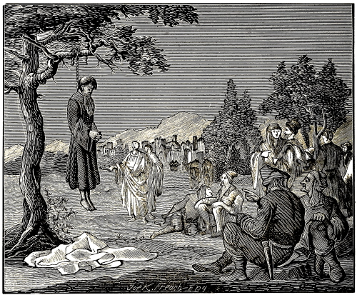
LUKE HANGED ON AN OLIVE TREE.
Luke, the third among the holy evangelists, was, according to the testimony of the ancients, a Syrian of Antioch, and by occupation a physician. Bybelsch Næmbœck, about Luke, from Euseb. and Hieron. Col. 4:14.
It was the will of the Lord to use him as a physician of souls; to which end he has left to mankind two excellent books on spiritual medicine; namely, his holy Gospel and the Acts of the holy Apostles.
Concerning his parents there is nowhere anything mentioned; hence little or almost no account can be given of his natural descent, excepting his birthplace, and that he descended from the Syrian nation. It is supposed that he had no wife; though nearly all the other apostles and evangelists were married.
According to the opinion of Jerome, he was, before his conversion, a Jewish proselyte, though of Gentile descent; which is quite probable, since, according to the judgment of linguists, his style is far more excellent and perfect in Greek than in Hebrew. Joh. Gys., in Hist. Mart. ex Hieronimo.
He afterwards, through the preaching of Paul, became a Christian A. D. 38, after he had come from Thebes to Antioch. Konst-tooneel, etc., in the life of Luke.
He became a disciple of the apostles, but especially a traveling companion of the apostle Paul, so that he was with him in many perils and difficulties on sea and on land.
He was so intimate with Paul, and his special friend to such a degree that, according to the ancients, he wrote the Gospel under his dictation and instruction. He has also given a faithful account of Paul’s principal travels until his first imprisonment at Rome. Joh. Gys. Hist. Mart., concerning Luke the evangelist.
Paul makes frequent mention of him in his epistles; for to the Colossians he writes: “Luke, the physician, . . . greet you.” Col. 4:14. To Philemon: “There salute thee Epaphras, my fellow prisoner in Christ Jesus; Marcus, Aristarchus, Demas, Lucas, my fellow-laborers.” Phil. 23,24. Likewise, to Timothy: “Only Luke is with me.” 2 Tim. 4:11.
Luke was therefore, as it appears, a companion of Paul, not only in his travels, but also during his imprisonment at Rome. So that he was twice 92brought, together with Paul, before the Emperor Nero. P. J. Twisck, taken from Paul’s epistles to Timothy.
Respecting his end, some write that, while preaching in Greece, he was hanged by the ungodly to a green olive tree; others relate that he was in the eighty-fourth year of his age, at the time of his death. Bybelsch Næmbœck, letter L., on the name Luke, fol. 624, col. 1. Konst-tooneel van veertig.
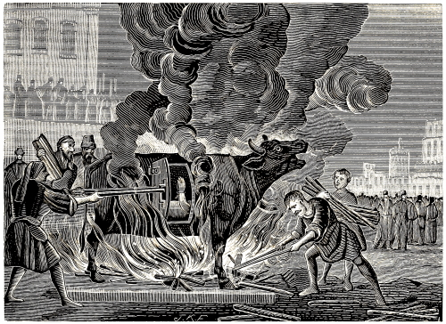
ANTIPAS BURNED IN A RED-HOT BRAZEN OX.
Antipas was an upright man and a pious witness of the Son of God; who, in proof of his faith, tasted death, rather than dishonor his Savior, by denying him, or otherwise. This happened in the lifetime of the apostle John. Hence he may be reckoned one of the first of those who suffered, during the time of Domitian, for the testimony of Jesus Christ.
Of this hero and knight of God, the Lord himself made mention to his servant John, yea, commanded him, to write to the teacher at Pergamos concerning him, saying: “To the angel of the church in Pergamos write: These things saith he which hath the sharp sword with two edges; I know thy works, and where thou dwellest, even where Satan’s seat is: and thou holdest fast my name, and hast not denied my faith, even in those days wherein Antipas was my faithful martyr, who was slain among you, where Satan dwelleth.” Rev. 2:12–14.
Touching the time and manner of his death, there is nothing stated in Holy Writ; but some of the ancient writers maintain that he was enclosed in a red-hot brazen ox, and thus burned alive with great pain, yet in steadfastness. As regards the time when this happened, we ascertain from Holy Scripture, that he was killed in the lifetime of John. Some fix this occurrence in the time of Domitian, or about A. D. 95.—See concerning this, A. Mell., 1st Book, van de Hist, der Vervolg. en Martel., printed A. D. 1619, fol. 22, col. 1. Also, d’Annotation der laetste Bybelsch Oversettinge, Rev. 2:12,13.
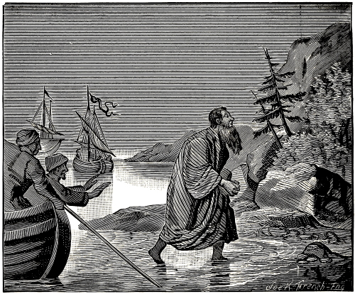
JOHN BANISHED TO THE ISLE OF PATMAS.
John, the apostle and evangelist, was a son of Zebedee, and brother of James the Greater; he was born at Nazareth, and by occupation was a fisherman. 93 Matt. 4:21. He was called by Christ, when engaged with his father and brother in mending their nets for fishing. Verse 22. As soon as he heard the words of Christ, he immediately left the nets, the ship, and his father, and, together with James, his beloved brother, followed Christ. Chrysost. Homil. 1., in Joh.
Afterwards he became from a disciple an apostle of Christ, and was numbered with the twelve whom the Lord had specially chosen for his service. Matt. 10:2.
He was greatly beloved by the Lord, so that at the Supper he reclined on Christ’s bosom, and leaned, or rested, on his breast. John 13:23; 21:20. The Lord, moreover, had accepted him as one of his three most special friends, to bear testimony of his works, not only in his conflict and suffering in the garden of Gethsemane, but also in his glory, in the raising of the daughter of Jairus as well as in the showing forth of his majesty, when, on the holy mount, his face shone as the sun, and his raiment became white as the light. Matt. 26:36; Luke 8:51; Matt. 17:1–4.
From an inward love, he followed the Lord not only into the house of the priest Caiaphas, but also to Mount Calvary, without the city of Jerusalem, where the Lord was put to death. There the Lord, hanging on the cross, addressed him, saying, “Son, behold thy mother!” John 19:27.
He was so eager after the resurrection of Christ, that in running to his grave with his fellow-apostle Peter, he outran the latter, thus showing his affection for his Lord, who had died an ignominious death, and was entirely forsaken by his other friends. John 20:4.
Some years afterwards, in order to refute the errors of Ebion and Cerinthus, who denied the divinity of Christ, he wrote his Gospel, to the honor and magnifying of his Savior, commencing thus: “In the beginning was the Word, and the Word was with God, and the Word was God. The same was in the beginning with God. All things were made by him; and without him was not anything made that was made.” “And the Word was made flesh,” etc., John 1:1–14. In these words he gives us to understand the true incarnation of the Son of God, to whom be praise and glory forever. Amen.
John is called throughout the Gospel the beloved of the Lord, or the disciple “whom Jesus loved;” because the Lord so especially loved him. John 13:23; 20:2; 21:20.
But since it is the will of God to bring his children to glory through much tribulation and distress, this beloved friend of God, John, also could not escape, but was tried throughout his life, with manifold tribulations, according to what the Lord had told him and his brother James: “Ye shall indeed drink 94 of the cup that I drink of; and with the baptism that I am baptized withal shall ye be baptized,” that is, ye shall also be subjected to my suffering and distress. Mark 10:39.
This was afterwards fulfilled in him in manifold ways; for, besides what ancient writers have recorded concerning it, namely, that at Rome he was put into a vat full of boiling oil, but was miraculously delivered out of it, the merits of which account we leave unquestioned; this much, according to the Scriptures, is certain, namely that he spent a long time on the desert island of Patmos, whither he had been banished for the testimony of Jesus Christ. Concerning this, John himself makes this declaration, Rev. 1:9: “I, John, who also am your brother and companion in tribulation, and in the kingdom and patience of Jesus Christ, was in the isle Patmos, for the word of God, and for the testimony of Jesus Christ.”
But by whom, and in what manner he was banished to that desert island, is not stated in the Scriptures, except that he was in tribulation for the word of God. Some of the ancient writers, however, state that he was banished by Emperor Domitian, about A. D. 97; who, in his wrath and displeasure, because he preached the word of God, and confessed Christ as the Son of God, had him sentenced and banished thither.
On this island, which lies in the Mediterranean, between Asia Minor and Greece, one hundred and twenty-five miles north-westward of Jerusalem, he was indeed forsaken of men, and had scarcely any companionship, aside from poisonous and noxious animals, which dwelt in the place; nevertheless, the Lord God dwelt with him with his heavenly consolation, and during his banishment presented and revealed to him, very beautiful scenes and glorious visions concerning the condition of the church of God to the end of the world.
How he wrote his Apocalypse or Revelation, an excellent book, full of divine and truthful prophecies, taken from the preceding visions and heavenly sights; some of which are already fulfilled, and others remain to be fulfilled.
As the time of his deliverance began to draw nigh, the Lord spoke to him on this island, saying, “Behold, I come quickly, Amen.” Whereupon John replied with a well-comforted soul, “Even so come, Lord Jesus.” Rev. 22:20.
When the Emperor Domitian, who had banished him to the aforesaid island, was dead, and Nerva reigned in his stead, he was delivered and brought back to Ephesus, where he had previously been bishop of the church. This occurred, according to history, about A. D. 99; consequently, his confinement there lasted two years. The ancients write that he suffered much yet for the name of Christ, and was compelled to drink poison, yet remained 95unharmed, according to the promise of Christ; and that he finally died in peace at Ephesus, in the time of the Emperor Trajan, having served in the holy Gospel for fifty-one years, and being eighty years old: and thus this great light rests in Asia. Joh. Gys. Hist. Mart., fol. 14, col. 2, from Euseb. Hist. Eccl. and Epiphanio., Joh. Gys., ibidem, from Euseb., lib. 3, cap. 20, 23, Niceph., lib. 3, cap. 4, Iren., lib. 3, cap. 3. Also, Konst-tooneel, in the life of John. Also, Bybelsch Naembock, letter J. on the name John, fol. 538, col. 2, and fol. 539, col. 1, 2, also, fol. 540, col. 1.
Timothy was a native of Lystra in Lycaonia. His father was a Greek, but his mother and grandmother, though of Jewish descent, were Christian believers, the one named Eunice, the other Lois; by whom he was instructed from his youth in the holy Scriptures. Acts 16:1; 2 Tim. 1:5.
Timothy was well reported of by the brethren that were at Lystra and Iconium; wherefore Paul received him as his companion in the ministry of the holy Gospel among the Gentiles. Acts 16:2,3.
Paul loved him with a godly love, and called him his dearly beloved son in the Lord. 2 Tim. 1:2. He afterwards appointed him bishop or teacher of the church, and commended to him the flock of Jesus his Savior, with the admonition, uprightly to feed and govern the same; to which end he wrote two special epistles to him.
“O Timothy,” he writes, “keep that which is committed to thy trust, avoiding profane and vain babblings, and oppositions of science falsely so called.” 1 Tim. 6:20.
Further: “This charge I commit unto thee, son Timothy, according to the prophecies which went before on thee . . . through faith and a good conscience.” 1:18.
In another place: “Thou, therefore, my son, be strong in the grace that is in Christ Jesus. And the things that thou hast heard of me among many witnesses, the same commit thou to faithful men, who shall be able to teach others also.” 2 Tim. 2:1,2.
In this ministry Timothy acquitted himself as an upright evangelical preacher, until it pleased God, to let him finish his course, not by a common death, but by martyrdom; so that he, with his spiritual father Paul, who had steadfastly preceded him, and especially with his Lord Christ Jesus, who had gone through the conflict many years before, might enjoy the unfading crown of honor in the life of bliss. Thus it happened afterwards, according to history, that, having been bishop at Ephesus for fifteen years, he was there stoned to death by the heathen, whose idolatry he had reproved. This is stated to have taken place in the reign of Domitian, or about A. D. 98, though some have fixed it in the time of Nero. Joh. Gysii Hist. Mart., fol. 14, col. 4, also, Bybelsch Naembock, letter T. on the name Timothy, fol. 925, col. 102.
Next to Timothy is placed Urticinus or Ursinius, a physician at Ravenna in Italy. Having been reported to the Judge Paulinus, as being a Christian, he was tortured in manifold ways for the name of Christ. Having borne all with constancy, and still refusing to sacrifice to the gods of the heathen, he was finally sentenced by the judge, to be beheaded with the ax.
When Urticinus received this sentence of death, he began to tremble and shake before the impending death, and to deliberate with himself, whether he should deny Christ, or how he might the most easily escape death.
But while he was thus counseling with flesh and blood, one of the company of Judge Paulinus, whose name was Vitalus, stepped up to him from behind, and strengthened him with these words: “My beloved brother in Christ, Urticinus, who, as a faithful physician, by thy potions, didst so often and so happily restore to health the sick, take heed, lest by thy denial thou plunge thyself into eternal death and damnation.”
Through this admonition Urticinus regained such courage, that he joyfully prepared for death, and, having of his own accord offered his neck to the ax, he thus, through the separation of his head from the body, came to a godly and noble end. See concerning this, A. Mell., 1st book, van de Hist. der Vervolg., fol. 18, col. 3 and 4, according Venant. Fortunat., lib. 4. Vitæ S. Martini. Hieronym. Rub. Hist. Raven., lib. 1. Beda, Usuard. Ado. Vincent, Spec. Hist., lib. 9, cap. 50. Volateran. in Antrhopal. Pet. Dam., in Serm. de S. S. Vitali and Valeria.
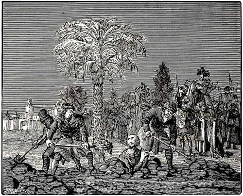
VITALIUS BURIED ALIVE AT RAVENNA.
Vitalus, before his conversion, was a Roman knight and citizen of Milan. He had come to Ravenna with Paulinus, the judge; but when he perceived the bloodthirstiness of his lord, whom he had hitherto served faithfully according to the manner of the world, he bravely left him, and straightway enrolled himself under the banner of Christ, but was very soon apprehended by the enemies of truth. For Paulinus, his lord, not knowing why he had left him, but having learned that he had encouraged Urticinus—who had just before been beheaded with the ax, for the faith—when the latter wavered, and that he had restrained him from sacrificing to the gods; likewise, that he had buried him after his death, conceived a suspicion that he also must be a Christian. Upon this suspicion, and through the accusations of others, he had the pious Vitalus apprehended, and having found from his own confession, that he was really a Christian, he caused him to be put on the rack, to try him whether he would not apostatize from Christ.
96
Thereupon Vitalus addressed Paulinus, the criminal judge, in these words: “You must certainly be deprived of your reason, to think that I should be deceived by you, and brought to eternal suffering in soul and body, while I have sought to deliver others from the danger of delusion.”
A wicked heathen priest, perceiving that he adhered firmly to Christ, and would in no wise do honor to the gods, advised Paulinus to bury Vitalus alive. Paulinus, following the evil suggestion of this priest, had a deep pit dug down to the water, at the place where the Christians were usually executed—called ad Palmam because a palm tree stood there—and had Vitalus buried in it, up to the middle (of his body), and then covered up with stones and earth.
Now when Valeria, the wife of Vitalus, after the death and burying alive of her husband, returned home from Ravenna to Milan, where she resided and had her children, she could not remain concealed long, but made herself known to be a Christian woman; for when she was constrained to eat of that which was offered to idols, she very steadfastly refused and resisted, yea, moreover, openly reproved the idolaters, saying, “I am a Christian, and can, therefore, in no wise eat that which is offered to Sylvanus, your god.”
Thereupon these idolaters seized her, and beat her to death with sticks. She was buried at Milan by the Christians. This happened by virtue of the first persecution, or the edict of Nero, which, it is stated, remained in force under Vespasian and under Domitian. A. Mell. Hist., fol. 16, col. 3, about Luke.
Concerning this martyrdom see the above mentioned authors, annotated with regard to Urticinus.
According to ancient history there were also slain for the testimony of the Son of God: In France, Lucianus, bishop of the church of Bellovaco; Maximianus and Julianus, elders; Nicasius, bishop of the church of Rouen; Quirinus, an elder; Scubiculus, a deacon; Pascientia, a virgin. In Italy, Romulus, bishop of the church of Fesula, and others, in different places. J. Gys. Hist. Mart., fol. 14, col. 4.
It is further recorded, that Marsilius Glabrio also had to suffer for the name of Christ and the true faith.
At this time (it is stated in the Introduction to the Martyrs Mirror to the Defenseless Christians fol. 36, col. 2,) “The Christians were so little esteemed, that they were called cobblers, as may be seen from a heathen author, according to Baronius.”
97
The witnesses as regards the ordinance of the baptism of Jesus Christ, who have written in this century, are few, and their accounts are brief, but mostly clear and conclusive. First appears one Dionysius, surnamed Alexandrinus, who writes to his friend Sixtus about a certain brother, who considered the baptism of the heretics no baptism at all, and, therefore requested to be re-baptized.
He is followed by Justinus, who, in his letters written in defense of the Christians, as well as in his disputation with Tryphon, the Jew, speaking of baptism, treats of it throughout as of the baptism of Christ, which was administered to adults.
Then comes one Gratianus, who declares himself against retaliation; and also another (noticed in the margin), who was censured because he held that the body of Christ was not of the substance of Mary.
Then follows Clemens Alexandrinus, who nowhere speaks of infant baptism, though he treats much of baptism, and of its conditions and circumstances.
Then follows a certain testimony, from Walafridus Strabo, proving that in those early times it was not customary to baptize otherwise than in running water, and that only such persons were baptized, who were able to know and understand the benefits to be obtained in baptism.
The conclusion is taken from the 7th chapter of De Ratione Gubernationes Ecclesiæ, in which we read, that now there were baptized those who had previously been instructed in the principal articles of faith. With this we have concluded this century.
Note.—Since we have not come across any particular authors as regards the matter of baptism, with the first years of this century, we are compelled to begin with the year 126, and to proceed thence on; which method we shall also pursue in some of the other centuries.
About the year 126.—The first place in our account of baptism in the second century, we shall accord to Dionysius Alexandrinus,87 of whom it is stated (from his 5th book on Baptism) that he wrote to Sixtus, the bishop at Rome, as follows: There was with us a brother who had been a believer a long time, before ever I or my predecessor Heraclas was ordained bishop. Being present among those who were baptized, and hearing the questions put to them, and their replies, he came to me weeping, fell down at my feet, and began to confess that he had received baptism from the heretics in an entirely different manner, which baptism, since he saw that we administered baptism differently, he did not consider baptism at all. He therefore entreated to be cleansed and purified with the baptism of the Christian church, that he might receive the grace of the Holy Ghost.
Finally he writes these words: He (namely, the man mentioned above, who wished to be re-baptized) ceased not to sigh and to weep, and dared not to come to the Lord’s table, and, admonished and constrained by us, would scarce venture to be present at common prayer.
In regard to this, Eusebius Pamphilius of Cesarea, who has annotated this, writes thus: These and many other such questions concerning re-baptizing are noted by Dionysius throughout his books. Euseb., lib. 7, cap. 8, from Dionysius.
Note.—P. J. Twisck discriminates this Dionysius Alexandrinus from another Dionysius, who, about A. D. 231, after Origen, was a teacher of the scholars of the faith, at Alexandria. See Chron. 3d Book for the year 231, page 61, col. 1. Also, for the year 253, page 71, col. 1.
Of the martyrdom of the latter we shall speak in the proper place, under the persecution of Valerianus and Gallienus. Others, however, hold that it was one and the same Dionysius, who wrote this, and suffered martyrdom. But this matters little, since the matters themselves, as stated by these writers, agree in general. We will leave this to the judgment of the intelligent reader.
From the above it is evident, first, that baptism was administered after previous examination, because it is said: “Being present among those who were baptized, and hearing the questions put to them, and their replies;” which agrees with the manner in which Philip proceeded with the Ethiopian, before he baptized him: the one asked, the other answered, and then followed baptism. Acts 8:36–38.
Moreover, since Eusebius states, that Dionysius notes many such questions of re-baptizing throughout his books, it follows incontrovertibly, that re-baptizing, or, at least, baptizing aright, those who had not been rightly baptized, must have been practiced, or at least advocated by some at that time; else it would not have been necessary to note any questions in regard to it; whereas much was written in that day, concerning it, as Eusebius has shown from Dionysius.
About the year 140.—Justinus, who was surnamed Philosophus, because, before his conversion, he was instructed in philosophy, comes next in order after Dionysius Alexandrinus. In his second defense of the Christians, to the Emperors Titus, Aelius, Adrianus, Antonius, Pius, etc. (according to the annotation of H. Montanus Nietighz., p. 5), he writes thus: “We shall also relate to you, how we, being renewed through Christ, have offered ourselves up to God, lest, this being omitted, it might seem, that in some parts of this statement we have not been faithful. As many, then, as are convinced, and believe that what we teach and say is true, and promise to live accordingly, to the best of their ability, are admonished to pray, and to ask God, with fasting, for the forgiveness of past sins, we ourselves praying and fasting with them. After that, we lead them to the water, and they are then 98 born again in the same manner of regeneration in which we ourselves were born again; for then they are washed with water, in the name of God, who is the Father and Lord of us all, and of Jesus Christ, who is the Savior of us all, and of the Holy Ghost; for Christ says: ‘Except ye be born again, ye cannot enter into the kingdom of heaven.’ ”
These are certainly clear arguments, which confirm the institution of Christ as regards baptism upon faith; for, when Justinus writes: “As many then, as are convinced, and believe,” and adds: “are admonished to pray,” and finally says: “After that, we lead them to the water, and they are then born again in the same manner of regeneration,” that is to say (speaking by way of metonymy), baptized; he certainly gives to understand with this, that the candidates for baptism, in his day, had to be convinced, namely through the preached word, and had to believe, and, also, that they had to be admonished to pray, before they were led to the water, to be baptized, or, as he calls it, regenerated.
A little further on in the same apology or defense, he writes thus: “This, concerning this matter, we have learned from the apostles; for, since we are ignorant by our first birth, and have been brought up in evil practices and wicked habits; therefore, in order that we may not remain children of ignorance, but become children of free volition and of knowledge, and may obtain the remission of sins committed, there is invoked over those who voluntarily desire to be born again, and who repent of their past sins, the name of God, the Father and Lord of all men; and, invoking him alone, we lead the one to be baptized to the washing of water; and this washing of water is called an enlightenment, because the understanding of those who learn these things, becomes enlightened. But those who become enlightened, are also washed, that is, baptized, in the name of Jesus Christ, who was crucified under Pontius Pilate, and in the name of the Holy Spirit, who, through the prophets, has foretold all concerning Christ.” H. Mont. Nietighz., page 6, ex Justino.
From this it is again quite evident, that Justinus has in view, nothing else than to give an account of the true baptism, which Christ and his apostles taught that it should only be administered upon faith and repentance for sins; for, when he says: “Those who voluntarily desire to be baptized again, and who repent of their past sins,” and adds: “Invoking the name of God, we lead the one to be baptized to the washing of water,” he certainly says nothing else than what was said to those baptized by John. Matt. 3:6: “And were baptized of him in Jordan, confessing their sins,” and what Peter said to the contrite penitents, who inquired what they must do to be saved. Acts 2:38: “Repent, and be baptized every one of you in the name of Jesus Christ, for the remission of sins.” The very same idea is expressed here by Justinus, as is shown.
Further on in the same apology or defense, Justinus writes these words: “But we, after he who, being convinced, has become of one mind with us, is thus washed, we lead him to those who are called brethren, where they are assembled, ardently offering up the common prayers, for ourselves, for him who is enlightened, and for all other men, wherever they may be; that we may be worthy to be disciples of the truth leading indeed a good conversation, and be found observers of that which is commanded us; in order that we may obtain eternal salvation.” H. Mont. Nietighz., page 7, ex Justino.
This is the third citation from Justinus, from which it appears certainly no more, than from the first two, that he mentions any other baptism, than that upon faith and repentance. For, when he says: “After he who, being convinced, has become of one mind with us, is thus washed, we lead him to those who are called brethren,” he gives to understand with this, that those who were washed, that is baptized, must first be convinced, and consent to the doctrine, which agrees with Christ’s command, Matt. 28:19: “Go ye therefore, and teach (or, make disciples of) all nations, baptizing them,” and mark: “Preach the gospel to every creature. He that believeth and is baptized shall be saved.”88
Jacob Mehrning, in his account of baptism in the second century, cites from the Centurien van Mægdenborg the following words: “The teachers of the church of that time held, that regeneration was effected through baptism and the word, to both of which together they ascribed a power, namely, the forgiveness of sins, which required repentance from adults.” Many clear testimonies concerning this are found in Justinus.
In the disputation with Tryphon, the Jew, he writes: “Through the washing of water of repentance (Wasserbad der Busse), and the knowledge of God, which has been instituted for the forgiveness of the sins of the people, as Isaiah says, we believe and feel assured, that this is the blessed baptism, which was proclaimed in former times, and that this alone can cleanse the penitent, yea, that this is a water of life.”
A little further on he calls baptism a spiritual circumcision acceptable to the merciful God. And in conclusion he says: “Through water and faith, the regeneration of the whole human race is effected.” Jac. Mehrn., Baptism. Histor., 2d part, on the second century, page 202.
Justinus writes further, in the disputation with Tryphon, the Jew, on the truth of the Christian religion: “Since we, through Christ, are converted to the true God, we are sanctified in baptism, and call upon him as our helper, and call him our Redeemer. Before the power of this name, Satan himself must fear and tremble.” Jac. Mehrn., page 203. Baptism. Hist., 2d Part.
Who does not see clearly from these words of Justinus, in the disputation with Tryphon, in the first as well as in the second citation, that he employs such words and phrases as can by no means be applied otherwise than to the true order of the 99baptism of Christ and his apostles, namely, baptism which is accompanied with faith and repentance? For in the first citation he certainly says expressly, that baptism is a washing of water of repentance, and the knowledge of God; also, that it alone can cleanse the penitent; and also, that through water and faith the regeneration of the whole human race is effected. In the second citation he also plainly says: “Since we, through Christ, are converted to the true God, we are sanctified in baptism.” How could any one more clearly indicate the true practice of baptism, which must take place with conversion to God? And such baptism, Justinus states here, was practiced in the church of God in his time. O glorious, holy, and most Christian transaction!
In the fifty-sixth question and answer of this book some words are employed from which pedobaptists sometimes are wont to conclude, that infant baptism was practiced in the days of Justinus. But to this, various excellent and learned men have replied long since, namely, that this book was never written by Justinus; to prove which, different reasons are adduced, as, for instance: That in the answer to the 115th question mention is made of Irenius, who lived twenty-five years after Justinus, but is nevertheless cited by the latter in his writings as his predecessor. Moreover, that in the answer to the twelfth, and also in that to the eighty-sixth question, Origen is mentioned, who lived a whole century after Justinus. To this must be added, that neither Eusebius nor Jerome, both of whom have each compiled a complete catalogue of all the authentic writings of Justinus, enumerate this book Quæstionum; whereas they mention the Second Defense of the Christians, and the Disputation with Tryphon, from which we have adduced in full several citations concerning baptism. Hence the aforementioned book is justly rejected, as not being the work of Justinus. See concerning this, De Centuriator. Magdeub., Cent. 2, cap. 10, in the account of the life of Justinus. Also, Bellarm. in Tract van de Scribenten der Kerke. Also, Jacob Mehrn., Baptism. Histor., 2nd Part, page 170, 171. Also, A. Montan. Nietighz. van den Kinder-doop, second edition, A. 1648, page 8, 9.
Note.—In 152, Valentinus Romanus was censured as a heretic, because he believed that the Son of God, Christus Jesus, assumed neither a human nature, nor flesh and blood from the substance of the virgin Mary. P. J. Twisck, Chron. for the year 152, 2d Book, page 42, col. 1, from Herm. Med., fol. 330, Chron. Seb. Fr., 106., Jan. Cresp., fol. 34.
About the year 160.—Gratianus quotes the words of the Lord: “When they persecute you in this city, flee ye into another;” and says then: “Here Jesus Christ teaches that Christians shall not repel weapon with weapon, but must flee before weapons.” P. J. Twisck, Chron., 2d Book, for the year 160, p. 43, col. 1, 2, from Seb. Fra. in den Krieg des Fredes, fol. 63.
From this explanation of Gratianus appears, how salutarily and rightly he believed and taught with regard to the words of Jesus Christ relative to the forsaking of revenge; from which we may infer his correct views concerning other matters of Holy Scripture and the Christian faith; but since, either through default of the ancient writers, or for some other reason, nothing else has come down to us from him, we shall be content with what we have mentioned, and take our leave of him.89
About the year 200.—About this time flourished Clemens Alexandrinus, who, though writing largely on baptism, nowhere mentions infant baptism, but employs throughout such language as sufficiently implies, that he knew nothing of infant baptism, but confined himself solely to the ordinance of Christ and the practice of his apostles, which is baptism that is accompanied with faith and repentance.
In Pædagog., lib. 1., chap. 6, he writes thus: “This is also done with us, whose example the Lord Christ has become. Being baptized, we become enlightened; being enlightened, we are made children; having been made children, we are brought to perfection; having been brought to perfection, we are made immortal.” A little after that he says: “Thus also, when we are baptized, we obtain a free, unobstructed, and clear eye of the Holy Ghost, as an avengement of blindness; having trodden underfoot the sins which hitherto obscured the divine Spirit.” Also: “That which was grievously bound by ignorance, is unbound by knowledge, and these bands are loosed through the faith of man and the grace of God, the manifold sins being forgiven through reasonable90 baptism as a perfect remedy; thus we are washed from all sins, and are henceforth evil no more; this is the grace of enlightenment, that the manner of life is no longer the same that it was before we were baptized.” Further: “Teaching or instruction precedes faith, but faith conjointly with baptism is led and directed through the Holy Ghost.” And: “Even so we who repent of our former sins separate ourselves from them and are being cleansed through baptism, let us run to the eternal light, as children to their father.” See further, concerning these citations, Jac. Mehrn., Bapt. Hist., 2d Part, pages 213, 214. Also, H. Montan. Nietighz van den Kinder-doop, pages 26, 27.
What is there in this testimony of Clemens Alexandrinus, that can apply to infant baptism? yea, on the contrary, what is there that does not militate against it? He certainly says expressly: “These bands (namely, of sin) are loosed through the faith of man, and the grace of God, the manifold sins being forgiven through reasonable baptism.” This certainly is a clear and obvious joining together of faith and baptism, as things which, through 100 the providence of God, belong together, for the remission of sins. When he further says: “Teaching, or instruction, precedes faith, but faith conjointly with baptism is led and directed through the Holy Ghost,” there is expressed, without controversy, the same thing that we have said just now; since here not only faith is joined together with baptism, but also instruction, which precedes faith, and the Holy Ghost, who follows and confirms faith.
It is true, he says soon after this, that those who are baptized are children, or, at least, ought to be. But what kind of children? Not children in understanding, not infants in the cradle, but, as he further says, Children in wickedness, but perfect in the understanding. Children, who, as children of God, have put off the old man, and the garment of wickedness, and have put on the incorruptibility of Christ, in order that, being regenerated, they may become a new and holy people, and keep unspotted the new man. See the treatise cited above.
If at that time it was at all customary in Alexandria to baptize infants, would it not have been appropriate here for him, to speak of irrational infants, or at least to mention with a word or two, that they, too, were entitled to baptism, although, on account of their youth, they could not understand the object of it? Truly, according to our opinion he could not well have omitted mentioning it; but, inasmuch as he does not refer to it with a single word, it is good proof, that at that time this abuse was not known there, or, at least, not regarded.
Jacob Mehrning says (Baptism. Hist. concerning the second century, page 213): “Of Clemens Alexandrinus we read that at Alexandria he presided over the school in which the catechumens, that is those who received instruction preparatory to baptism, were taught the principles of the Christian faith.” Vicecomes, lib. 2, cap. 7.
From this Pædag., Clementis Alexandrini, lib. 1, cap. 6, Vicecomes would prove that there was given to those who were baptized, milk and honey to eat, and milk mixed with wine, to drink; likewise, that after baptism, preaching took place and peace was imparted to those baptized.
As regards the statement, that there was given to the baptized, as a sign of God’s blessing, milk and honey to eat, and milk mixed with wine, to drink, we leave it to its own merits, it being a matter of small importance, which, if done without superstition, could either be observed or omitted. But the preceding statement, that Clemens Alexandrinus presided over the school in which the catechumens were taught the principles of the Christian faith, certainly implies that the candidates for baptism were first instructed in the school, in the principles of the Christian faith, before they were baptized; and also, the final remark, that after baptism preaching took place, and peace was imparted to the baptized, certainly also indicates that those who were baptized were not infants, for then they could not have understood the preaching, much less would they have been qualified to receive with attention and according to the requirements of Holy Scripture the peace which was imparted to them.
Note.—Baudartius writes of Clemens Alexandrinus, that he proclaimed the true religion with his mouth as well as with his pen, saying among other things: “A pious and honorable man is well content with little.” Apophth., edit. 1640, lib. 2, page 49.
From the writings of Walafridus Strabonus we may clearly infer what manner of baptism was practiced at this time, in the first as well as in the second century, and also long afterwards, namely, that no infants, but adult, reasonable, and believing persons were baptized, and this, according to the example of Christ and his holy apostles. Jac. Mehrn., Bapt. Hist., p. 524, D. I. Vicecomes, lib. I, cap. 4. Walafridus Strabo (in lib. de Rebus Eccles., cap. 26) writes: “We must know that originally believers were very simply baptized in streams and springs; for our Lord Jesus Christ himself, in order to sanctify such washing for us, was baptized of John in Jordan; even we read elsewhere: ‘John was baptizing in Enon near to Salim, because there was much water there.’ ”
Page 525, from D. Vicecomes, lib. 1, cap. 30; also, cap. 26, Strabo speaks thus concerning baptism: “We must know that in those first times baptism was administered only to those who, in body as well as in soul, were washed clean and white, so that they could both know and understand, what benefit there was to be obtained in baptism, what was to be confessed and believed, and, finally, what was necessary to be observed by the regenerated in Christ.
He then relates of Augustine, that he was instructed in the faith before he was baptized (of which we shall speak in the proper place); but that subsequently, for the sake of improvement, as it is called, the church, that is, the Roman church, practiced infant baptism, with a view of freeing infants by this means from the punishment of God for original sin. Then the followers of the true faith (thus he wrongly calls the Romanists), in order that the children might not be lost, if they should die without the means of regeneration, that is, baptism, resolved that they should be baptized for the remission of sins. Hence originated, he writes, the custom of having godfathers and godmothers, who stand for the child at (literally, lift the child from) baptism, and answer for them all that they themselves, on account of the weakness of their infancy, are not able to confess.” Thus for Strabo.
N. B.—Concerning these words, D. Vicecomes writes thus: “Since Walafridus Strabo removes the custom of infant baptism from the primitive church, he also recognizes no older origin of the godfather’s than which dates from a period subsequent to the times of Augustine.” Bapt. Hist., pp. 525, 526.
Thus, in the first two centuries, and long afterwards, infant baptism was not known by the Romanists 101 even, according to the above mentioned testimony of W. Strabo. Shortening this, we shall conclude with a statement contained in the H. Doophistorie, at the end of the second century, page 211, cap. 7, de Ratione Gubernationis Ecclesiæ: “Since also the administration of the Sacraments belongs to the government of the church, we see from the history of the time, that the bishops and teachers did not deem it burdensome to baptize, not bells and altars, but men whom they had instructed in the principal articles of the Christian religion; and to them they also administered the holy Supper.” We shall now proceed to the martyrs, who, during this time suffered for this same faith.
[The two Roman, or, properly speaking, Greek Emperors, Trajan and Marcus Aurelius raised the principal persecutions against the Christians, in this century. This is amply shown in the following account, as well as what persons suffered for the name of Christ in these persecutions.
In the persecutions through Trajan there were slain, after enduring much suffering, Simon Cleophas, who was a hundred and twenty years old, Rufus and Zosimus, the Ethiopian baptized by Philip, Ignatius, Onesimus, Dionysius Areopagita, Publius, Barsimeus, Barbelius and his sister Barba, Justus and Pastor, Phocas, Faustina, Jacobita, Felicitas with her seven sons, and Lucius.
Under Marcus Aurelius there suffered, Justinus, Polycarpus, and twelve of his beloved disciples, who had come from Philadelphia to Smyrna, and were slain there; Carpus, Papylus, Agathonica and many women, Germanicus, Vetius, Attalus, Alexander of Phrygia, Maturus, Sanctus Blandina and a youth, Photinus, ninety years old, Alcibiades, Epipodius, Alexander the Greek, Leoxides, Plutarchus, Sagaris, Thraseas. All these fought unto blood under the blood-stained banner of Jesus Christ; their deaths may be read at large in the following account.]
We shall begin the second century with the third general persecution which was raised against the followers of Jesus Christ, and shall forthwith proceed to give an account of the time, place, persons, and circumstances.
With the beginning of the second century, A. D. 102, arose the third heathen persecution against the Christians, under Emperor Trajan, who attained to the reign of the Roman monarchy in the year 100.
Being instigated by Mamertinus, the governor of Rome, and Targuinus, the superintendent of the worship of the heathen deities, he persecuted the Christians in an awful manner, and put them to a wretched death.
He was called a good emperor, but very superstitious as regards the heathen worship; by reason of which he was the more easily induced to undertake this sorry work. It also was no small help to this end, that the heathen priests and idolaters paid great taxes, to extirpate by sufferings and death, as the enemies of God and of man, those who were opposed to their gods, especially the Christians.
Meanwhile we shall show what persons suffered under the bloody reign of Emperor Trajan, for the name of Jesus Christ.
Simon Cleophas was the son of Cleophas and Mary, and a cousin of our Lord Jesus, because he was the son of the brother of Joseph, the supposed father of Christ. After the death of the apostle James he was chosen, by common consent, bishop of the church at Jerusalem; hence he must be distinguished from Simon surnamed Zelotes, who was one of the apostles, and was crucified in Persia. For, the latter was a son of Alpheus, but the former a son of Cleophas, not one of the twelve, but of the seventy disciples of Christ, as Eusebius admits, saying: “If any one should say that this Simon beheld Christ with his own eyes, and listened to his preaching with his own ears, he would not be beyond reason and truth in this opinion, not only on account of the long duration of his life, being a hundred and twenty years old, but much more by virtue of the testimony of the holy Gospel, in which mention is made of Mary, the wife of Cleophas, whose son he was, according to the testimony of Egesippus, who was the nearest historian to the times of the apostles.” Hist. Eccles. Euseb. Pamphil., lib. 3, cap. 11.
This is the Simon, of whom it is stated that he was an eye-witness to the stoning of James, the holy apostle of the Lord. Epiph. supra, in Sym. Alph.
He was accused by some wicked men before Atticus, the governor of Emperor Trajan, of being a Christian, yea a near relative of Christ, of the generation of David. On this account he was dreadfully beaten for many days with scourges and sharp rods, so that everyone who saw him, had to lament and wonder, the judge himself being astonished, that a man of such a great age, a hundred and twenty years old, was able so long to endure such intolerable torturing.
Finally, as he remained steadfast in his confession, he became conformed in suffering unto his Lord, whom he confessed, and was sentenced by Atticus to be crucified; which death he suffered in the tenth year of Emperor Trajan, which corresponds with the year of Christ 109. Compare the 1st Book of A. Mellinus, printed A. D. 1617, fol. 24, col. 1, 2, with Hist. Mart. Joh. Gysii, recently printed by I. Braat, A. D. 1657, fol. 15, col. 1.
102
Rufus and Zosimus were disciples of Christ and his apostles, and had also been instrumental in founding and building up the church of God among the Jews and the Gentiles.
Especially conspicuous is Rufus, from the greetings of the Apostle Paul to the church at Rome, in which he includes Rufus, not merely as a common member of the same, but as a distinguished, yea chosen person, for he says: “Salute Rufus chosen in the Lord, and his mother and mine.” Rom. 16:13.
This Rufus and the aforementioned Zosimus, both pious and upright Christians, together with many of their fellow-believers, were put to death for the faith, in the city of Philippi in Macedonia. Some write that both were beheaded in the days of of Emperor Trajan, A. D. 109. Compare what A. Mellinus adduces in Het groot Christen Martelærs-bœk, fol. 19, col. 4, from Polycarpo ad Philippens, with that which J. Gysius has noted in Hist. Mart., fol. 15, col. 3.
Immediately after Rufus and Zosimus, A. Mellinus introduces the Ethiopian or eunuch of Queen Candace in Ethiopia, who was converted by Philip to the faith in Jesus Christ, and thereupon baptized, as we read in the Acts of the Apostles.
It is stated of him, from Jerome, that he preached the Gospel of our Lord in Arabia Felia, and also in a certain island of the Red Sea, called Caprobano (some call it Ceylon), where, it is supposed, he suffered death for the testimony of the truth. See above, Mellin. ex Hieron. Catal. in Crescente, in 53, cap. Esai.
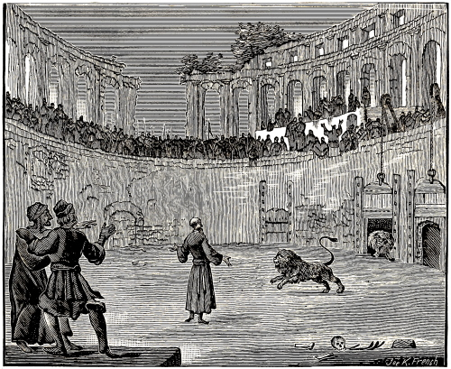
IGNATIUS DEVOURED BY WILD BEASTS.
Ignatius, a disciple of the apostle John, and a successor of Peter and Evodius, was in the service of the church of Christ at Antioch in Syria. He was a very godfearing man, and faithful and diligent in his ministrations. He was surnamed Theophorus, that is, The Bearer of God, apparently because he often bore the name of God and his Savior in his mouth, and led a godly life. He was wont to say frequently: “The life of man is a continual death, unless it be that Christ liveth in us.” Likewise: “The crucified Christ is my only and entire love.” And: “He that allows himself to be called after any other than Christ, is not God.” And again: “As the world hates the Christians, so God loves them.” A. Mellin., fol. 15, col. 1, from Ignat. in Epist. ad Rom. et alibe.
Having learned that the Emperor Trajan, after the victories which he had achieved against the Dacians, Armenians, Assyrians, and other eastern nations, gave thanks at Antioch unto the gods, and offered great sacrifices unto them, as though these victories had proceeded from them. Ignatius, as we are informed by Nicephorus, reproved the Emperor for it, and this openly in the temple.
The Emperor, exceedingly enraged on this account, caused Ignatius to be apprehended, yet, for fear of an uproar, because Ignatius was held in great respect in Antioch, he did not have him punished there, but committed him into the hands of ten soldiers, and sent him bound to Rome, there to have him punished.
In the meantime his sentence of death was made known to him—in what manner and where he was to die; namely, that he should be torn to pieces by wild beasts at Rome.
On his way thither, he wrote several consolatory epistles to his friends, the faithful in Christ Jesus; and also to different churches, as, to those of Smyrna, Ephesus, Philadelphia, Trallis, Magnesia, Tarsus, Philippi, and especially to the church of Christ at Rome; which letter he sent before his arrival there.
It appears that the thought of being torn to pieces by the teeth of wild beasts was constantly on his mind during the journey; yet not as a matter of dread, but of earnest desire. This he mentions in his letter to the church at Rome, writing thus: “Journeying from Syria to Rome, by water and by land, by day and by night, I fight with wild beasts, bound between ten leopards, who, the more I stroke, and show myself friendly to them, the more cruel and malignant they become. However, through the cruelties and torments which they daily inflict upon me, I am more and more exercised and instructed; nevertheless, I am not justified thereby. O that I were already with the beasts, which are ready to devour me! I hope that, ere long, I shall find them such as I wish them to be, that is, cruel enough to destroy me speedily. But if they will not fall upon and tear me, I shall kindly allure them, so that they will not spare me, as they, have already spared several Christians, but will quickly tear me in pieces, and devour me. Forgive me for speaking thus; I know what I need. Now only I begin to be a disciple of Christ. I regard neither things visible nor invisible, at which the world is amazed. It is sufficient for me if I but become a partaker of Christ. Let the devil and evil men afflict me with all manner of pain and torment, with fire, with cross, with fighting against wild beasts, with scattering of the members and bones of my body; all this I esteem very little, if I but enjoy Christ. Only pray for me, that inward and outward strength be given me, not only to speak or write this, but also to perform and endure it, so that I may not only be called a Christian, but also be found one in truth.” Ignat. in Epist. ad Rom.
103
Having arrived at Rome, he was delivered by the soldiers to the governor, together with the letters of the Emperor, which contained his sentence of death. He was kept in prison for several days, until a certain feast-day of the Romans, when the Governor, according to the order of the Emperor, had him brought forth into the amphitheatre. First of all they sought by many torments, to induce him to blaspheme the name of Christ, and offer sacrifice to the gods. But when Ignatius did not weaken in his faith, but was only, the longer, the more strengthened in refusing to offer heathen sacrifices, he was forthwith condemned by the Roman Senate, immediately to be cast before the lions.
As Ignatius was led away from the presence of the Senate, to the innermost enclosure, or pit of the lions, he frequently repeated the name of Jesus in the conversation which he, while on the way, carried on with the believers, as well as in his secret prayers to God. Being asked why he did so, he replied thus: “My dear Jesus, my Savior, is so deeply written in my heart, that I feel confident, that if my heart were to be cut open and chopped to pieces, the name of Jesus would be found written on every piece.” With this the pious man indicated that not only his mouth, but the innermost parts of his heart were filled with the love of Jesus: for out of the abundance of the heart the mouth speaketh. Thus, also Paul, being filled with the love of Jesus Christ, has used, in his letters, as much as two hundred times (as has been counted) the words, “Our Lord Jesus Christ.” The name “Jesus” he employs as much as five hundred times.
When the whole multitude of the people were assembled, to witness the death of Ignatius (for the report had spread throughout the whole city, that a bishop had been brought from Syria, who, according to the sentence of the Emperor, was to fight against the wild beasts), Ignatius was brought forth and placed in the middle of the amphitheatre. Thereupon Ignatius, with a bold heart, thus addressed the people which stood around: “O, ye Romans, all you who have come to witness with your own eyes this combat; know ye, that this punishment has not been laid upon me on account of any misdeed or crime; for such I have in no wise committed; but that I may come to God, for whom I long, and whom to enjoy is my insatiable desire. For, I am the grain of God. I am ground by the teeth of the beasts, that I may be found a pure bread of Christ, who is to me the bread of life.” These words spake Ignatius, when he stood in the middle of the amphitheatre, and when he heard the lions roar; which the brethren of the church who also stood among the people heard and testified to.
104
As soon as he had spoken these words, two dreadful, hungry lions were let out to him from their pits, who instantly tore and devoured him, leaving almost nothing, or, at least, very little, even of his bones. Thus fell asleep, happy in the Lord, this faithful martyr of Jesus Christ, A. D. 111, in the 12th year of Emperor Trajan. Compare Abr. Mell. 1st book of the Hist. der Vervolg. en Mart., printed 1619, fol. 25, col. 1–4, and fol. 26, col. 1, with Joh. Gysii Hist. Mart., fol. 15, col. 2, 3. Also, W. Baudart. in Apophth. Christian, printed A. D. 1640. The first book, in the second Apophthegm, on the name Ignatius, pp. 37, 38, from different other authors.
Onesimus, a servant of Philemon, by descent a Colossian, had run away from his master, and had come to Rome, where he was recognized by the Apostle Paul—who was imprisoned there—and sent back to his master, with recommendatory letters tending to reconciliation, as may be seen in the epistle of Paul to Philemon, in which Paul calls him his son, whom he had begotten in his bonds. Philemon 10.
He also carried a certain letter of Paul from the prison at Rome to the church at Colosse; for in the conclusion of the epistle to the Colossians we read: “Sent from Rome through Tychicus and Onesimus.” Col. 4 after verse 18.
It appears therefore, that he was a beloved friend and faithful servant of the apostle Paul, notwithstanding he had left his external service in the house of Philemon. He also, after he was sincerely converted, was not permitted to finish his course without persecution, sufferings, and a violent death; but had to tread after the example of his Savior, the wine press of suffering. According to the testimony of ancient historians, he was carried away bound from Ephesus to Rome, and there stoned to death, under Trajan, and the judge Tertullus, shortly after the death of Ignatius, A. D. 111. See above, Idem. Ibidem. ex Act. Metaph. Mart., Rom., 16 Febr. Also, Ado.
We read in the Acts of the Apostles, chap. 17, verse 34, that among those who clave unto the doctrine of Paul, there was also Dionysius, one of the Athenian council, and a woman named Damaris.
It is testified of this Dionysius, surnamed the Areopagite, that he so increased in the Christian religion, that Paul afterwards appointed him bishop at Athens; yet, that finally, after having made a most glorious confession of faith, and suffered many severe torments, he was crowned, as a victorious hero of Jesus Christ, with the martyrs’ crown, when he had got to be a very old man, and had commended his spirit into the hands of his heavenly Father. He now accomplished what he was wont to frequently repeat in his life: “The last words of my Lord Jesus, while on the cross, shall also be my last words in this temporal life, namely: ‘Father, into thy hands I commend my spirit.’ ” Thereupon he was put to death, and thus fell asleep happy in the Lord. Compare A. Mell., 1st book of the Histor. der vervolg. en Mart., printed A. D. 1619., fol. 26, col. 2, from Adone in Martyrol. ex Arist. lib. de Relig. Christ and Suida in Dion. Areopag. and Seger., in Chron. 10. Strac. in Pass, Part. S. Homil. 2, with W. Baudart, in Apophthegm Christian, 1st book 7th edition, A. D. 1640, p. 17, on the name Dionysius Areopagita.
Note.—Touching the manner of the death, or martyrdom, of Dionysius the Areopagite, we find nothing stated in ancient, trustworthy writers; hence we have said nothing about it, though some have written, that he was beheaded at Paris; for which statement we let them be responsible, since their accounts of this event differ in regard to the manner in which, as well as the time when, it is said to have occurred. See in the above-mentioned Apophthegm Baudartii.
It is also stated that Publius, bishop of the church at Athens, a good and pious man, was slain for the name of Christ; likewise, Barsimæus, bishop of the church at Edessa, and with him, Barbelius and his sister Barba, who had been baptized by him; all of whom, steadfastly contending for the truth, obtained the martyrs’ crown. Compare Joh. Gysii Hist. Mart., fol. 15, col. 3, with the Introduction to the Martyrs Mirror of the Defenseless Christians, printed A. D. 1631, fol. 93, col. 1.
That Justus and Pastor were deprived of life at Complutum, a city in Spain, for the same reason for which the aforementioned martyrs were slain, namely, for the testimony of Jesus, the Son of God, this we find stated in different ancient writers. See above.
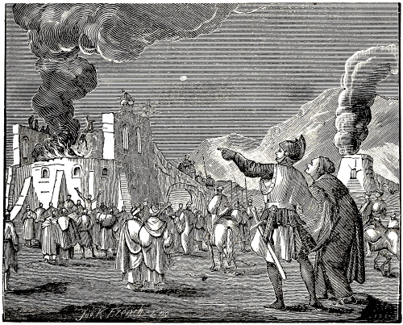
PHOCAS PUT TO DEATH IN A LIME-KILN.
Phocas, a son of Pamphilius, the first bishop of the church in Pontus in the city of Sinope, on being brought, in the time of Trajan, before Africanus, the Governor of Pontus, who urged him to sacrifice upon the altar of Neptune, steadfastly refused to do 105this; on account of which he was sentenced by the Governor to die for the name of Christ; which death he suffered after many pains and torments, and was thus numbered with his slain fellow-brethren. Regarding the death of this man, see A. Mell., 1st book of the Hist, der vervolg. in Mart., fol. 27, col. 1, ex Adone, in Comment. At. 6. Aster. Orat. de Phoca. Also, concerning the time of his death, for the year 118, see Joh. Gysii Hist. Mart., fol. 15, col. 4.
Touching the manner of his death, P. J. Twisck gives the following account: “Phocas, in Pontus, refusing to sacrifice to the gods, was thrust, according to the command of Emperor Trajan, and for the name of Christ, into a lime-kiln full of glowing coals, then cast into boiling water and thus killed. P. J. Twisck, Chron., 2d book, for the year 118, p. 37, col. 2, from Adon. Vinnens., lib. 6, fol. 166, Vinefol. 519.
About this time several persons were put to death for the name of Christ; as Faustina and Jacobita, at Brescia in Italy; Elentherus with his mother Anthia, and others, at Messina in Sicily, etc.; all of whom, contending steadfastly, even unto death, departed with a joyful hope. As regards the persecutions of this time, compare Joh. Gysii Hist. Mart., fol. 115, col. 4, with A. Mellinus, P. J. Twisck, and others.
About this time, writes P. J. Twisck, the instruments of the devil could not invent punishments severe enough, but what they considered the Christians worthy of. For they were watched in their houses as well as without; men cried out against them in all public places; they were scourged, stoned, and dragged about; their goods were plundered; they were apprehended; red-hot iron plates were applied to their bare bodies; they were placed in a certain instrument made to torture malefactors; they were put into the deepest and darkest places of the prisons, where they were slain, yea, they were afflicted with excruciating torments. P. J. Twisck, Chron., 2d book, for the year 130, page 39, col. 2, and page 40, col. 1, from Jan Crespin in den staet der Kerken.
106
Getulicus, a teacher at Frivoli in Italy, Symphorosa with her sons, and Cerialus and Amantius, were put to death in that city for the faith. It is also stated that Sapphira, a maiden from Antioch, and Sabina, the widow of Valentinus, had to lay down their lives, at Rome, for the same reason. Joh. Gysii Hist. Mart., fol. 15, col. 4.
It is stated that Ptolomeus was a pious and godfearing man, who had converted his wife from the blindness of heathendom to the faith. He was apprehended for the truth of Christ. Asked, whether he was a Christian, he, as a lover of the truth, immediately confessed that he was. After this confession, he was cast into prison, in which he suffered so long as to become completely emaciated. Finally he was delivered to the judge Urbicius, who shortly afterwards had him put to death; and thus Ptolomeus became a faithful martyr of Jesus Christ. Compare Joh. Gysii Hist. Mart., printed at Dort, 1657, fol. 15, col. 3, with Abr. Mell., 1st book of the Hist, der vervolg. Mart., also, printed at Dort, A. D. 1619, fol. 32, col. 2, from Just. Philos. Apol. prima Christian Euseb., lib. 4, cap. 17.
In Historia Ecclesia Eusebii Pamphilii Cæsariensis, mention is made of a certain Lucius, who was greatly dissatisfied with the sentence and execution of the aforementioned pious man Ptolomeus, and, therefore, demanded a reason for it from the judge, at the same time confessing himself a Christian; which cost him his life, even as it did the man for whom he interceded.
The words in the book mentioned above are as follows: “When Lucius, who was also a Christian, perceived that so presumptuous a sentence was pronounced against Ptolomeus, he said to Urbicius (the judge): ‘Pray, tell me, for what reason do you sentence this man so hastily, and cause him to be led to execution, merely on account of one word, because he confesses himself to be a Christian? If there were another, who would confess all manner of sin, such as murder, adultery, or any other crime, would you also act so hastily, and sentence him to death immediately? This is not proper, O Urbicius! it does not become a good emperor, a wise bachelor, the son of the emperor, or the senators to act thus.’ Then said Urbicius to Lucius: ‘It appears to me that thou also art a Christian.’ When Lucius replied: ‘It is true, I am one.’ Then Urbicius commanded that he should be led forth to death. Thereupon Lucius said: ‘I thank thee, for releasing me from these wicked lords, and sending me to the kind and best of fathers, the king of all things, namely, our God.’ Another who also boldly confessed that he was a Christian, was put to death by virtue of the same sentence.” Thus far, Eusebius in the 4th book of his Church History, in the 17th chapter, Dort edition, A. D. 1588, fol. 72, col. 1, compared with A. Mellinus and Joh. Gysius, in the passages quoted concerning Ptolomeus.
Felicitas was a Christian widow at Rome, and had seven sons, whose names were: Januarius, Felix, Philippus, Sylvanus, Alexander, Vitalis, and Martialis. These lived together with their mother in one house, as an entire Christian church. Of the mother it is stated, that by her Christian communion, (conversation) which she had with the Roman women, she converted many to Christ. The sons, on their part, also acquitted themselves well by winning many men to Christ.
Now, when the heathen priests complained of this to Antonius, the Emperor—who had resumed the persecution which had begun with Trajan, but had subsided—saying, that there were not only men, but also women, who blasphemed the gods, despised their images, trampled under foot the Emperor’s worship of the gods, yea, turned away many from the old religion of the Romans; that this was principally done by a certain widow, named Felicitas, and her seven sons, and that, therefore, in order to prevent this, they must be compelled to give up Christ, and sacrifice to the gods, or, in case they should refuse to do so, be put to death, the Emperor, prompted or instigated hereby, gave to Publius, the provost, or chief magistrate of Rome, full authority over them.
Publius, willing to spare Felicitas, as being a highly respectable woman, first secretly summoned her and her sons into his own house, where he entreated them with fair words and promises, but afterwards threatened to punish them with severe tortures, unless they would forsake the Christian religion, and readopt the old Roman worship of the gods. Felicitas, remembering the words of Christ, “Whosoever shall confess me before men, him will I confess also before my Father which is in heaven,” did not seek to evade the issue by using dissimulating or indirect words, but answered briefly thus: “I am neither moved by thy flatteries and entreaties, nor am I intimidated by thy threats; for I experience in my heart the working of the Holy Ghost, which gives me a living power, and prepares me for the 107 conflict of suffering, to endure all that thou mayest lay upon me, for the confession of my faith.”
When Publius could not move the mother from her steadfast purpose, he said to her: “Very well; if it seems pleasant to thee, to die, die alone, but have pity and a mother’s compassion for thy sons, and command them, to ransom their own lives at least, by sacrificing to the gods.”
Thereupon Felicitas said to the judge: “Thy compassion is pure wickedness, and thy admonition is nothing but cruelty: for, if my sons should sacrifice to the gods, they would not ransom their lives, but sell them to the hellish fiend, whose slaves, yea, whose serfs in soul and body, they would become, and be reserved by him, in chains of darkness, for everlasting fire.”
Then, turning away from the judge, to her sons, she said: “Remain steadfast in the faith, and in the confession of Christ; for Christ and his saints are waiting for you. Behold, heaven is open before you; therefore fight valiantly for your souls, and show, that you are faithful in the love of Christ, wherewith he loves you, and you him.”
This filled the judge with rage against her, and he commanded them to smite her on the cheek, while he at the same time upbraided her vehemently, saying: “How darest thou thus impudently exhort thy sons in my presence, and make them obstinate to disobey the commands of the Emperor; whereas it would be far more proper for thee to incite them to obedience toward him?”
Felicitas, notwithstanding that death had been threatened her, answered with more than manly courage, saying: “If thou, O judge, didst know our Savior Jesus Christ, and the power of his Godhead and majesty, thou wouldst undoubtedly desist from persecuting the Christians, and wouldst not seek to draw us away from the Christian religion by blaspheming his holy name; for whoever curses (or blasphemes) Christ and his faithful ones, curses (or blasphemes) God himself, who, by faith, dwells in their hearts.”
Thereupon, though they struck her in the face with their fists, in order to silence her, she did not cease to admonish her sons to remain steadfast, and to fear neither tortures nor rack, nor even death itself, but to die willingly for the name of Christ.
Therefore, Publius the judge took each of her sons separately, and talked first to one and then to the other, hoping by this last resort to draw away from the faith, by promises as well as by threats, some of them at least, if not all. But as he could not prevail upon them, he sent a message to the Emperor, stating that they all remained obstinate, and that he could in no wise induce them to sacrifice to the gods. Thereupon the Emperor sentenced the mother together with her seven sons, that they should be delivered into the hands of different executioners, and be tortured and put to death in various ways; yet, that the mother was first to see all her sons die, before she herself should be put to death.
In compliance with this sentence, they first scourged Januarius, the first-born, to death, in the presence of his mother. The scourges were made of cords or ropes, to the ends of which balls of lead were attached. Those who had to undergo this mode of torture were scourged with them on their necks, back, sides, and other tender parts of their bodies, either to torture them, or in order to martyr them to death as was the case in this instance. Felix and Philippus, the two brothers next (in age), were beaten to death with rods. Sylvanus, also called Syllanus, was cast down from a height. Alexander, Vitalis, and Martialis were beheaded. Last of all, the mother was beheaded or put to death with the sword. This took place under Emperor Antonius Pius. A. Mell., 1st book of the Hist., fol. 33, col. 4 and fol. 34, col. 1–3, ex Prudent. in Vincentio. Also, Acto. Adon. Mart., 23 Novemb. Greg. P. in Natali. S. Felic. Homil. 3, in Eu. Bet. Chrysol. Serm. 134. Arta apud Mombrit. tom 1. Beda Usuard. 23 Nov. Heur. Erfford. Chron., Mart. Rom. Touching the time when this took place, see P. J. Twisck, Chron. 2d book, for the year 164, page 45, col. 1, from Vincentio, in Cal., fol. 35.
P. J. Twisck, in his Chronicle, gives as the beginning of the fourth persecution, the year A. D. 162; the writers of the Introduction to the Martyrs Mirror of the Defenseless Christian, fix the beginning in the year 164 (page 37, col. 2); J. Gysius, in Hist. Mart., fol. 16, col. 2, places it in the year 168, and A. Mellinus makes no mention at all as to the exact time of that persecution. However, all these writers abound with accounts of the inhuman tortures, which the faithful martyrs had to suffer at that time.91
We, in order to pursue a middle course between the abovementioned writers, have noted the year 166 as the beginning of said persecution. However, there is but little difference between the above writers; for it is probable, that the decrees for the persecution of the Christians were first issued about the year 162; that about the year 164 they were carried into effect; and that about the year 168 they exhibited their full force, insomuch that the persecution was then at the height of its fierceness. However, we shall proceed to see, how atrociously the pious witnesses of Jesus Christ were then treated.
Everywhere, in all the cities, writes P. J. Twisck, the imperial edicts and decrees against the Christians were posted up; by reason of which the magistrates 108and officers proceeded very cruelly against them, persecuting them even unto death, with great atrocity and fury. For, no mode of torture, punishment, or death, however great, severe, and unmerciful, could be devised, produced, or planned, by these wicked men, these tyrants, and instruments of the devil, but what it was thought, that the Christians, as accursed, as enemies of the Kingdom, and as the cause of all misfortune, deserved a thousand times more. To be publicly mocked, eternally imprisoned, exiled, scourged, stoned, strangled, hanged, beheaded, and burned, was deemed far too little.
They began, at this time, to ply the poor people with red hot plates until they were dead; to tear the flesh from their bones with red hot tongues; to place them upon iron stools over a slow fire; to fry them in iron frying pans; to roast them on gridirons at a slow fire; to cast them, enveloped in close netting, before wild bulls, to serve as sport for them, and be tossed into the air by their horns.
All this was accompanied with still another cruelty. The bodies of the slain were thrown before the dogs, and guards placed beside them, to prevent the Christians from taking away and burying these bodies. In short, the misery was so great, that at Lyons alone bishop Irenus with nineteen thousand of his sheep were cruelly butchered. Thus far P. J. Twisck, in his Chronicle, 2d book, for the year 162, page 43, col. 2, from Chron. Mich. Sac. fol. 103. Chron. Sebast. Fra. Also, Tyd. Thresor P. Mernlæ.
Justinus was called a son of Priscus Bacchus, and was born of Greek parents, at Neapolis in Palestine.
In its proper place we have spoken of the views of Justinius concerning baptism on faith, and have shown that he was sound and correct in them. Now, however, it is proper for us to speak of his spiritual birth, of his heavenly fatherland, and how conclusively he showed that he was a child of God, and a citizen of the heavenly city, filled with all good things; which appeared not only in the beginning and progress of his faith, but especially in the end, when he testified to its power with his death, and sealed it with his blood.
In the days of his youth he was instructed in the Platonic philosophy, in which he acquitted himself so meritoriously, that he received the name Philosopher, yea, he had been led to believe, that his learning would soon enable him to see God, which was the ultimate object of the Platonic philosophy. But it happened one day, as he was going toward the sea, in order to meditate in solitude upon what he had learned, that (as he himself has confessed) there followed him a very grave and gentle old man, who, having entered in a discourse with him, respecting the Platonic philosophy, taught him, in what true philosophy and happiness consisted, namely in the saving knowledge of the only, eternal, and alone immortal God.
Now, when Justinus inquired for the teachers from whom he might learn this divine philosophy, the old man referred him to the writings of the prophets, who did not write according to the argumentation of human reason, but, as certain and infallible witnesses, left behind what they had seen and heard of the words of truth, and the wonderful signs and works of God among his people; and that all their prophecies concerning the promised Messiah and Son of God, were fulfilled in the advent of Jesus Christ, who was born in the reign of Emperor Augustus. He therefore admonished him, to pray to God, that he would enlighten his heart to this saving doctrine, through Jesus Christ, without whom it would not be possible for him to attain to this saving knowledge.
“This and many more such discourses (writes Justinus) this old man had with me, showing me also, how I should further increase, and how I might obtain the things necessary to salvation. Then he went away, and I saw him no more. Immediately a burning desire was kindled in my heart, and a love for the Scriptures of the prophets and those men who had been dear friends of Christ, namely the apostles. Then only I became a true philosopher.”
As to how and by whom, beside the instruction of the aforesaid old man, he was first instructed and baptized, or from what cause he left his native land, and came from Syria, Palestine, or Samaria, to Rome, of this we find no account.
He afterwards had a disputation with Tryphon, a Jew. Of this he himself has written an account, in which may be seen his correct views in regard to different matters of faith, especially to baptism. Of this we have spoken in another place.
But finally, having entered into a controversy with Crescens, a Cynic philosopher, and having vanquished and confounded him, by the power of divine arguments, his uncertain life began to draw to a close, and his certain death to approach. For, by reason of this, this Cynic (that is, canine) philosopher, conceived such a deadly hatred for Justinus, that he swore to avenge it with his death; and from that time on did not cease to lay snares for him, and accuse him as a Christian, until he had quenched his thirst for blood with the blood of Justinus. This, Tatianus, the disciple of Justinus, gives to understand in his oration against the Greeks, in language not at all obscure, namely, that the abovementioned Crescens did not only seek the life of Justinus, but also that of himself. Moreover, Photius states that he tasted a joyful and worthy death, by the hands of Crescens Cynicus, the person whom we have just mentioned.
Touching the manner of his death: when Justinus had been apprehended, on the accusation of Crescens, and boldly refused to abandon his faith, or sacrifice to the gods, he was sentenced to death by Rusticus, the President, and, after having been scourged, he was beheaded with the ax, about A. D. 168, in the time of the reign of the Emperors Marcus Aurelius and Lucius Virus, and of the President 109 Rusticus, as is annotated from Epiphanius. Compare Abr. Mell. 1st book of the Hist. der, fol. 37, col. 1–4, and fol. 38, col. 1–4, from Just. Apol. 2, pro. Christi., concerning his descent and name; Dialog. cum Tryphone Jod. Photius in Biblioth. and Jos. Scal. animad. Chron. Euseb., concerning his life and conversion; Iren., lib. 1, in Bibliotheca de Vita Justini Chron. Eus. A. D. 154, touching his end and death; Epiph. Hæres. 26 and 46 touching the time when this occurred. Also J. Gysii in Hist. Mart., fol. 16, col. 3, 4. Also, P. J. Twisck, Chron. 2d book, for the year 154, page 42, col. 2, from Johan. Barl., fol. 7. Grond. bew, letter A.
We read in the Revelation of John, that the Lord commanded his servant John, that he should write a few things to the angel (that is, the bishop or teacher) of the church at Smyrna, for the admonition of the teacher as well as for the service of the church, saying: “Unto the angel of the church in Smyrna write: These things saith the first and the last, which was dead, and is alive; I know thy works, and tribulation, and poverty. . . . Fear none of those things which thou shalt suffer: behold, the devil shall cast some of you into prison, that ye may be tried; and ye shall have tribulation ten days: be thou faithful unto death and I will give thee a crown of life.” Rev. 2:8–10. These words of the Lord Jesus indicate that the believers at Smyrna, and their teacher, were in tribulation and poverty, and that still more suffering was approaching them; whereupon he exhorted them to constancy, and promised to give them the crown of life.
As regards the teacher of this church, most of the ancient writers call him Polycarp, and say, that he was a disciple of the apostle John, inasmuch as he had heard John preach the word of God, and had associated with those who had known the Lord Jesus Christ personally, and had had intercourse with him; and that John had appointed him bishop or overseer of the church at Smyrna.
Touching the sufferings which the Lord said would befall him and the church of which he was teacher, this began some time afterwards; in such manner that this good shepherd preceded, and many of the sheep of his flock faithfully followed him. However, we intend to speak here only of the shepherd, Polycarp.
It is stated, that three days before he was apprehended and sentenced to death, he was suddenly overcome by sleep, in the midst of his prayer, and while dreaming, had a vision, in which he saw the pillow on which he lay with his head, suddenly taking fire and was consumed. Instantly awakened thereby, he concluded that he was to be burnt for the name of Christ.
When those who sought to apprehend him, had approached very close, his friends endeavored to conceal him, and, therefore, brought him to another country-seat, where he was nevertheless shortly afterwards discovered by his persecutors. For they had seized two lads, whom they, by scourging them, compelled to say where Polycarp was; and although, from the chamber in which he was, he might easily have made his escape into another house near by, he would not do it, but said: “The will of the Lord be done.” He therefore descended the stairs, to meet his persecutors, whom he received so kindly, that those who had not known him before, regretfully said, “What need had we to make so great haste, to apprehend such an old man.”
Polycarp immediately had a table spread for his captors, and affectionately urged them to eat; begging of them to allow him an hour’s time in which to pray undisturbedly in quiet, while they were eating; which they granted him. When he had finished his prayer, and the hour was up, in which he had reflected upon his life, and commended the church of which he was teacher, unto God and his Savior, the bailiffs placed him upon an ass, and led him to the city, on the Sabbath of the great feast.
Nicetes and his son Herod, called the prince of peace, rode out to meet him, took him from the ass, and made him sit with them in their carriage, seeking in this manner to induce him to apostatize from Christ, saying: “What matters it for you to say, Lord Emperor, and to offer sacrifice or incense before him, to save your life.” At first, Polycarp made no reply at all, but when they persisted in asking him, and demanded an answer, he finally said: “I shall never do what you request and counsel me to do.” When they saw that he was immovable in his faith, they commenced to revile him, and, at the same time, thrust him out of the carriage, so that in falling he severely injured his leg. He never showed, however, that he had been injured by the fall, but, as soon as he had risen, willingly surrendered himself again into the hands of the bailiffs, to be led further to the place of execution, walking as rapidly as though nothing hindered him.
As soon as Polycarp had entered the circus or amphitheatre, where he was to be executed, a voice came to him from heaven, saying, “Be strong, O Polycarp! and valiant in thy confession, and in the suffering which awaits thee.” No person saw the one from whom this voice proceeded, but many of the Christians that stood around heard it; however, on account of the great commotion, the greater part of the people could not hear it. It nevertheless tended to strengthen Polycarp and those who had heard it.
The Stadtholder admonished him to have compassion for his great age, and, by swearing by the Emperor’s fortune, to deny Christ. Thereupon Polycarp gave the following candid reply, “I have now served my Lord Christ Jesus eighty-six years, and he has never done me any harm. How can I deny my King, who hath hitherto preserved me from all evil, and so faithfully redeemed me?”
110
Thereupon the Stadtholder threatened to have him torn by wild beasts, if he would not desist from his purpose, saying: “I have the beasts ready, before whom I shall cast thee, unless thou become converted betimes.” Polycarp answered unterrified: “Let them come, for my purpose is unchangeable. We cannot be converted or perverted from good to evil by affliction; but it would be better, if they (the evil-doers) who persist in their wickedness would become converted to that which is good.” The Stadtholder replied: “If thou art not yet sorry, and despisest the wild beasts, I shall have thee burned with fire.” Once more Polycarp answered, saying: “Thou threatenest me with a fire, which will perhaps burn for an hour, and then soon go out; but thou knowest not the fire of the future judgment of God, which is prepared and reserved for the everlasting punishment and torment of the ungodly. But why delayest thou? Bring on the beasts, or the fire, or whatever thou mayest choose: thou shalt not, by either of them, move me to deny Christ, my Lord and Savior.”
Finally, when the people demanded his death, he was delivered by the Stadtholder to be burned. Instantly there was brought together a great heap of wood, fagots, and shavings. When Polycarp saw this, he undressed himself, and took off his shoes, in order to be laid on the wood without any clothes. This being done, the executioners were about to lay their hands on him, to nail him on the wood; but he said: “Let it be so; he that hath given me strength to endure the pain of the fire, will also strengthen me to remain still in the fire, though you nail me not to the fire-wood.” They, accordingly, did not fasten him with nails, but simply with a rope, tied his hands behind his back. Thus, prepared for a burnt offering, and placed upon the wood like a sacrificial lamb, he prayed to God, saying, “O Father of thy beloved and blessed Son, our Lord Jesus Christ, through whom we have received the saving knowledge of thy holy name; God of angels and powers, and of all creatures, but especially of all the righteous who live in thy sight, I thank thee that thou didst call me to this day and hour, and hast counted me worthy, that I may have my part and place among the number of the holy martyrs, and in the cup of the suffering of Christ, so I suffer with him, and thus partake of his pains. I pray thee, O Lord, that thou wouldst this day receive me, as a fat offering among the number of thy holy martyrs, even as thou alone, O God of truth, who canst not lie, didst prepare me thereto, and didst make it known unto me, yea, hast now ultimately fulfilled it. Therefore I thank and praise thee, above other men, and honor thy holy name, through Jesus Christ, thy well-beloved Son, the eternal High Priest, unto whom, with thee and the Holy Ghost, be the glory, now and forever. Amen.”
As soon as he had uttered the last word of his prayer (the word “Amen”), the executioners ignited the wood upon which he was placed; and when the flames circled high above the body of Polycarp, it was found, to the astonishment of everyone that the fire injured him but little, or not at all. The executioner was therefore commanded to pierce him with a sword, which was instantly done, so that the blood, either through the heat of the fire, or from some other reason, issued so copiously from the wound that the fire was almost extinguished thereby; and thus this faithful witness of Jesus Christ, having died both by fire and the sword, entered into the rest of the saints, about A. D. 168. Compare Euseb., 4th book, 15 chap., printed A. D. 1588, page 66–70 with Abr. Mell., 1st book of the Hist., fol. 40, 41, col. 1–4, from Iren., lib. 3, cap. 3. Hæres. Hieron. Catal. in Polycarp, Euseb., lib. 4, cap. 13, and lib. 5, cap. 19. Also, Joh. Gysii Hist. Mart. for the year 168, fol. 17, col. 2. Also, P. J. Twisck, Chron. 2d book, A. D. 168, page 45, col. 2.
In the letter which the Holy Ghost directed John to write to the angel of the church at Smyrna, which we mentioned above, it is indicated, that not only the teacher, who is called an angel, namely Polycarp, but also some of the church, would have to suffer for the name of Jesus Christ. We read: “Behold, the devil shall cast some of you into prison, that ye may be tried.” Rev. 2:10. This was also fulfilled in truth. For it is stated, that not only Polycarp, the leader of the church at Smyrna, but with him also twelve members of the church, who had come from Philadelphia, were put to death for the same reason, and in the same manner.
The words of Eusebius concerning these martyrs from Philadelphia, taken from the Smyrna letter, are, according to A. Mellinus, as follows: “These are the particulars of the martyrdom of Polycarp, who had come from Philadelphia to Smyrna, together with twelve others, who willingly suffered death in the same manner with him; whose names are not mentioned, that of Polycarp alone being given, because, not only among the Christians, but even among the Jews and the heathen, he was famous far and wide for his extraordinary godliness. These testimonies are finished and sealed with the precious blood of the Christians. At the time of the fourth persecution; under the Emperors Marcus Aurelius and Lucius Virus, about in the seventeenth year of their reign, coinciding with the 168th year of our Savior.”
This is what we have found concerning these twelve pious witnesses of Jesus Christ, who, as the twelve celestial signs, shone forth in faith as well as in virtue, but especially in steadfastness; wherefore the Lord, who is a rewarder unto his faithful servants, will hereafter crown and reward them with the unfading crown of glory. See, concerning this, Abr. Mell, 1st book of the Hist., fol. 42, col. 2, from Euseb., lib. 4.
111
It is recorded that about the same time that the aforementioned Christians were martyred, several other pious persons suffered death for the name of Jesus Christ, and the confession of the Son of God; among whom are mentioned by name, three very eminent persons, namely, Carpus, Papylus, and a woman called Agathonica, together with many other women; who were all crowned with the crown of the holy martyrs at Pergamos, in Asia Minor, for the saving confession of the true faith. Euseb., 4th book, cap. 15, fol. 70, col. 2. A. Mell., 1st book, fol. 42, col. 1, 2.
In P. J. Twisck’s Chronicle is found the following account for the year A. D. 170: “Germanicus, with other dear friends of God, had to suffer severe persecution and torture for the name of Christ, and was finally cast before the wild beasts, and thus willingly ended his life.” 2d book, van den undergang, page 46, col. 1, from Euseb., lib. 4.
Concerning the cause of his conversion, suffering and death, other authors write thus: “When the bystanders (while the Christians were being miserably put to death) beheld with their eyes, that the flesh of the martyrs of Christ, by many scourgings and stripes, was lacerated and torn loose even to the inmost veins and deepest sinews, so that their entrails and the most secret parts could be seen moving; and that the torturers then strewed potsherds, sea-shells, and even caltrops on the ground, over which they rolled, dragged, and on which they pressed the Christians thus tormented, with their naked bodies; and that at last, when they, on account of the previous torments, could scarcely live or draw breath any longer, they cast them before the wild beasts, to be devoured by them; I say, when the spectators of these tragedies saw, how inhumanly these people were treated, and, on the other hand, how patiently the suffering Christians endured the tortures, they were greatly amazed, yea terrified.
“Among these was the aforementioned Germanicus, who, being strengthened through the grace of God, so powerfully overcame the natural and innate weakness of the mind, which so much dreads the bodily death, that, on account of his singular steadfastness, he could well be considered one of the most eminent martyrs. For, when the Stadtholder sought to persuade him, and to move him by soft words, to spare the bloom of his youth, and to have mercy upon himself, he despised his counsel, and, for the sake of the Lord Jesus Christ did not count his youthful life precious.”
“After that, it is stated by the ancient writers, how the wild beasts were let out to him, and how greatly he desired to be devoured by them, that he might be delivered from this body of sin and death; so that both Jews and heathen who stood by, were exceedingly astonished at him. Thus this pious witness of the Son of God departed this life with an immovable heart, and became united with Christ, his blood-bridegroom and Savior.” Compare Abr. Mell., 1st book, of the Hist., fol. 39, col. 1, 2, with Joh. Gysii Hist., fol. 16, col. 4, and fol. 17, col. 1, from Euseb., lib. 4.
When the persecution of the Christians on the River Rhone, at Lyons and Vienne, in France, did not cease, but increased the longer the more, so that those who confessed the name of Christ, were forbidden, first their houses, then their bath-rooms, and afterwards all public places, so that they could stay neither in the house, nor in the city, nor without, which was a cause of much suffering to them, it happened, that, some of the brethren of the church of God there, having been apprehended and brought before the President for examination, a certain brother, called Vetius, and surnamed Pagathus, young in years, but old and strong in the faith, went boldly before the judge, and made himself known as a defender of the apprehended Christians, whose cause he undertook to vindicate. The Judge, when he had heard his defense, refused it, and asked him, whether he also was a Christian, or believer in Christ, upon which he candidly confessed that he was. Immediately he was enrolled among the Christian martyrs, and was called the Advocate of the Christians.
He was so pious and virtuous in his life that Eusebius Pamphilius calls him: “Filled with ardent and divine love of the Spirit; yea, testifies, that he had a perfect love to God, and was upright towards all men; and that his life, though he was a youth, was so tried and acceptable, that he excelled many old persons, since he lived justly and unblamably, being ever ready to minister to the servants of God.”
It is finally stated that he followed the holy teacher Zacharia, who had shown perfect love towards the holy martyrs, and assisted and supported them; and also, that, according to the example of Jesus, his Savior, he laid down his life for his sheep and friends; that is, gave his life for the truth, from love to the church of God, and to be a pattern of constancy to them. Compare Euseb., 5th book, cap. 1, fol. 80, col. 1, 2, with Abr. Mell., 1st book, fol. 43, col. 1, 2, on the title Vetius. Also, Joh. Gys., fol. 17, col. 3, though he differs with the others in regard to the time.
112
At the time that this awful pressure of conscience continued under the Emperors Marcus Aurelius and Lucius Verus, ceasing not until those who endeavored to live a Christian life according to their faith, had ended their lives under many torments, it came to pass that a certain pious Christian, called Attalus, who had been apprehended for the name of Jesus, his Savior, was most inhumanly tortured, to the extent even, that he was placed over the fire in an iron chair, and roasted. When he was asked, what name the God of the Christians had, he answered: “Where there are many gods, they are distinguished by names; but where there is but one God, no name is necessary.” He was finally brought into the amphitheatre, to be devoured by the wild beasts. But when these, either providentially, or because they were already sated, did not touch him, neither with their claws, nor with their teeth, he, together with other pious martyrs, was stabbed through the throat. Some write that he was then beheaded. Compare Joh. Gys., fol. 17, col. 4, and fol. 18, col. 1, with P. J. Twisck, Chron. 2d book, for the year 172, page 46, col. 1, from Hist. Andr. fol. 19. Also, Introduction to, etc., fol. 38, col. 1, taken from Euseb., lib. 5, cap. 2 and 3.
The ancient writers mention also a certain pious man, called Alexander, a physician, and native of Phrygia, who was put to death on the same day and place when and where the abovementioned Attalus laid down his life. Concerning the cause of his imprisonment and death, it is stated, that, when Attalus and other Christians were being examined, this Alexander of Phrygia stood near the judgment seat, and considerably strengthened and encouraged, by motions and signs, the Christians who were making their defense and confession before the Judge, to the end that they should continue steadfast in the truth once received. When the people that stood around, murmured on this account, he was apprehended, and, being interrogated in regard to his views, he answered: “I am a Christian,” and made the same confession that Attalus and the others who had been apprehended and were standing before the tribunal, had made. He was therefore immediately sentenced to the amphitheatre, there, together with others, to be forthwith torn or devoured by the beasts. Thither he was then taken but the execution was deferred until the following day. The next day he was brought forth, to fight with the beasts; however, he was first exceedingly tortured with all sorts of executioner’s instruments. In this he bore himself with such fortitude, that he was not once heard to sigh, or to utter the least word of complaint; yea, he was not seen to manifest a single sign of distress or pain; only that he spoke to God in his heart. Finally, instead of fighting with the wild beasts, he was executed with the sword, and thus sealed with his blood the truth of the Son of God, which he had maintained. Compare with the authors who have been adduced above in regard to the death of Attalus, Abr. Mellin., 1st book, fol. 43, col. 4, and fol. 44, col. 1.
It is manifest from the ancient writers, that in and about the time that Attalus was slain, various other martyrs were likewise put to death for the sake of Jesus Christ, almost in the same manner, or, at least, with equally great torments. Some of these martyrs are not mentioned, while others are, namely, Maturus, Sanctus, Blandina, and a youth of fifteen years, from Pontus. Touching the circumstances of their suffering and death, we find that, in substance, it occurred, in the following manner:
First, three of the aforementioned persons, namely, Maturus, Sanctus, and Blandina, were exceedingly and dreadfully tormented, especially Blandina, for whom the others stood in great fear, that, not being able to endure the pain, she might be in danger of denying Christ. But she was so steadfast in all her sufferings that the hands of the executioners grew tired before her heart would faint. It is a cause of great astonishment, what Eusebius Pamphilius has written concerning her, namely, that the executioners began early in the morning, and continued tormenting her all day until evening, so that they were much surprised, how it could be possible that life was not yet extinct in her. However, he explains this by saying that as often as she repeated her confession, crying: “I am a Christian,” her heart was strengthened, so that she was again enabled to endure the pain.
Sanctus, who was a deacon, or one who ministered to the poor, was tormented with red-hot plates of copper, which were applied to his belly. Being questioned, in the meantime, in regard to his name, parentage, and native country, he named neither of these, but simply said: “I am a Christian; that is my name, my parentage, and my country; indeed, I am altogether nothing else than a Christian.” This inflamed the tyrants with unspeakable rage against him, and they continued to torment him on his whole body, to such an extent, that it was but one wound. But he remained fearless and undaunted; for the heat of the fire was tempered by the heavenly consolations of Jesus Christ, which he experienced in his soul.
Maturus was treated almost in the same manner, and remained equally steadfast. Having been thus 113 dreadfully tormented, the aforementioned three persons were again cast into prison. Then they were again taken from the prison, and tormented once more; first Blandina, and then Maturus, and Sanctus. The mode of torture was, according to Eusebius, by many stripes; but Abr. Mellinus states, “That they were scourged a second or third time, with all kinds of rods, as well as beaten with sticks, cudgels, and three-cornered and barbed splinters; and also, pinched, cut, carved and torn, with all sorts of hooks, cutting-knives, claws, pincers, and iron combs.” Finally, when many thousands had collected about the amphitheatre, Maturus and Sanctus were placed, in the same manner as the aforementioned Attalus, on iron chairs, under which a great fire was kindled, so that their flesh, lacerated by many stripes, was forthwith consumed by virtue of the fire; however, when the enemies of the truth saw that their spirit was immovable, they beheaded both of them.
Of Blandina it is stated that she was stretched out cross-wise, and tied to a stake, to be cast as food before the wild beasts; however, she was taken away again, and led into prison. But afterwards, on the last day of the games, she was again brought forth, together with a youth from Pontus (whom we have mentioned above), and who, by the command of the judge, had witnessed the suffering and death of the preceding martyrs, that it might strike terror into his heart. Being placed in the middle of the place of execution, before the Judge, they were commanded to swear by the gods, which they refused to do, reproving at the same time, the idolatry of the heathen. At this the heathen were much incensed, and again tormented them greatly, yea, so much so, that the youth, unable to endure it, gave up the ghost. Blandina rejoiced so greatly in the steadfastness of the departed youth, whom she had adopted as her son, as well as in the death of her faithful friends, who had already gone through the conflict, that, being beaten by the tyrants, she leaped for joy. Touching her death, it is stated, that she was roasted upon a gridiron, and afterwards wound in a net, thrown before bulls, which tossed her many a time high up with their horns, and then let her fall down again. She, however, not being dead yet, the judge commanded that her throat be cut, which was done; though others say that she was thrust through with a sword. Thus did this pious martyress, and the other three martyrs of Jesus end their lives, and are now awaiting the blessed reward which the Lord will give on the great day of recompense to all those who have suffered and fought even unto death, for his name’s sake. Compare Euseb., lib. 5, cap. 1–3, edit. Dord., 1588, fol. 81–86 with Abr. Mell., 1st book, fol. 43, col. 2–4, about Blandina and Ponticus; also, fol. 44, col. 1, 2, about Sanctus and Maturus. Also, Introduction, etc., fol. 38, col. 1, 2. Also, J. Gys., 1657, fol. 17, col. 3, 4.
In Eusebius’ Church History, as well as in several other ancient writers, mention is made of a certain old man, of more than ninety years, called Photinus, a teacher of the church at Lyons, in France. It is stated of him, that on account of his great age he could not walk, but, having such a burning desire to die for the name of Christ, he, as A. Mellinus has recorded, had himself carried before the judgment-seat, in order to be sentenced to death with the other martyrs. When he was brought to the tribunal by the soldiers, the magistracy of the city of Lyons, and the whole multitude of the people followed him, and began to cry out, that he was a Christian, together with much calumniating and abusive language. Eusebius says, that, as this old man stood before the Judge at the tribunal, the common people began to cry: “This is Christ himself.”
When the Judge thereupon asked him, who the God of the Christians was, he answered with remarkable candor: “If thou art worthy of it, thou shalt know.” This displeased the Judge so greatly, that he commanded that this pious witness of Jesus should be struck in his face with fists. Upon this, he was most unmercifully pushed, kicked, pulled, and knocked by the by-standers, and thrown at with whatever they could get hold of, without regard to the feebleness of his age; yea, they considered those accomplices with him, who did not show enough diligence in assaulting and every way abusing this aged man.
Photinus, having been thus maltreated, yea, nearly beaten to death, so that life seemed almost extinct, was taken from the tribunal back into prison, where, after two days of great misery, having commended his soul into the hands of God, he died, and thus attained to a blessed end. Compare Euseb., 5th book, 2d chapter, fol 83, col. 1, 2, with Joh. Gys., fol. 18, col. 1, on the name Photinus. Also, A. Mell., 1st book, fol. 46, col. 2, from various other authors. Also, Introduction, fol. 38, col. 1, erroneously called Photimus.
In the letter of the church at Lyons and Vienne, there is mentioned, among various pious martyrs who suffered for the name of Jesus Christ, Alcibiades, of whom it is stated that he held a very retired and austere life, his diet consisting of nothing but salt, bread and water. This manner of life he also wished to continue in prison, but being instructed by the pious man Attalus, that thereby he would leave to his brethren and fellow-martyrs a seeming reproach for luxuriousness of life, if they would not do likewise, he thenceforth partook also of other food, with 114 thankfulness. However, this did not last long, since he was soon deprived, not only of food, but of life itself; for in the aforementioned letter he is called a martyr, which was generally understood to mean one of those who suffered a violent death for the name of Jesus, the Son of God, and had valiantly passed through the conflict. Compare Euseb., 5th book, cap. 3, with Abr. Mell., 1st book, fol. 49, col. 3, 4.
In the seventeenth year of the Emperor Marcus Aurelius, there were slain, among other pious martyrs at Lyons in France, Epipodius, a citizen of Lyons, and Alexander, a Greek by birth; whose imprisonment, suffering, and death occurred in this wise: When the heathen thought that the Christian name was entirely extirpated at Lyons and Vienne, and that no person who confessed it was remaining, these two, as the remainder of the Christians there, were betrayed, accused, and, three days afterwards, placed before the tribunal of the Governor. There they were interrogated in regard to their name and confession of faith, to which questions they candidly replied. Their answers enraged the judge beyond measure, and he commanded that Epipodius, who was the principal speaker, should be smitten on the cheek, which was done in such a manner that he bled from his nose and mouth. But this made this champion of Christ, though he was still young, only the bolder and firmer, and he said: “I confess that Christ, with the Father and the Holy Ghost, is the only true God; and I deem it right, that I should pour out my soul (that is, my life) for him who is my Creator and Redeemer; for thus, my life will not be taken from me, but changed into a better one. Besides, it matters but little, how and in what manner this weak body is released and separated from the soul, only so that the soul be returned to God, its Creator.”
When Epipodius had, in steadfastness, finished this confession, he was suspended, at the command of the Judge, on a stake, on both sides of which the executioners stood, drawing deep gashes with cutting hooks or claws into his sides. In the meantime the raging multitude cried, that he should be stoned to death, or torn limb from limb; for the Judge was much too slow in pronouncing his sentence of death. Then the Judge had him brought out with great haste, and beheaded, and thus this pious witness of the Son of God attained to a blessed end.
Alexander, the abovementioned Greek, was brought out of prison, two days after the death of his beloved brother Epipodius, and placed before the tribunal, where he defended himself most cheerfully, manifesting, at the same time, his great desire to be counted among the number of his slain brethren and sisters. The Judge immediately commanded that Alexander should be stripped, and beaten by three executioners, with sticks, cudgels, etc.; but in all these torments he steadfastly called upon God for help and succor. In short, the sentence of death was pronounced upon him, namely, that he should die on the cross. The executioners then tied him on the cross; but having previously been wounded, by many stripes, to such a degree that his bones or bare ribs were visible, as well as the vital parts of his viscera, namely, the lungs, the liver, the heart, etc., which could be observed moving, he gave up the ghost, before the executioners could inflict further tortures upon him; and thus, in steadfastness he died a blessed death. When this had taken place, he was buried with his friend Epipodius, who had been beheaded, on the 24th of April 179. Abr. Mell., 1st book, fol. 48, col. 1–4. ex act. Proconsular. Homil. Eucherii Episc. Lugd. sub nomine Eus., Emisseni de Blandina and aliis. Ado Vienn., Mart. 22 April.
Leonides, Plutarchus, and others, who had attained to the Christian faith, were now visited with many torments, and put to death for the name of Christ. P. J. Twisck, Chron. 2d book, for the year 180, pag. 47, col. 1.
This persecution caused an unexpected and terrible pestilence, which devastated countries and inhabitants, especially Italy, so that the Christians were forgotten; for there were villages that had been ravaged to such an extent, that they became entirely depopulated, and lay there waste and without inhabitants. Keyser’s Chronijk, van Christi Geboorte tot op Carolus V., printed A. D. 1563, fol. 17, col. 1, for the year of the beginning of this persecution, 164.
Likewise, that besides the preceding martyrs whom we have mentioned by name, there were also put to death, during the preceding persecutions, the two pious men Sagaris and Thraseas, together with other believing Christians, is shown from Eusebius Pamphilius, by A. Mellinus, in the first book of his history, fol. 42, col. 2.
[Among the witnesses of true baptism we have accorded Tertullian the first place, because it was in the very early part of this century that he flourished and spread abroad the fame of his doctrine. He rebuked 115 those who brought such as were too young to be baptized, justifying his rebuke with conclusive reasons.
Leonilla, a Christian grandmother, had her three grandsons, Sosyphus, Cleosyphus, and Melosyphus, baptized after previous instruction.
Then comes Origen, surnamed Adamantius, who gives very excellent and salutary expositions, not only in regard to baptism, but also with reference to various other religious matters.
Three very learned men, Virian, Marcellinus, and Justin, confer with one another, and are baptized upon their faith; likewise also Pancratius, the son of the believing Chonius; also, Bazilla, an honorable maiden, who was baptized after having been instructed by Protus and Hiacyntus; and thus also was baptized, after having been instructed in the faith by Pontianus, Pontus, the son of a Christian, called Marcus.
Nemesius instructed and baptized those who attained to the faith.
Cyrillus Hierosolymitanus exhorted those who came to his baptism, that they should first fast forty days on account of their sins.
We conclude with some who in regard to baptism and the Lord’s Supper held views different from those of the Catholic (that is, Roman) Church, from which latter they had separated themselves, and with this completes the account of baptism in this century.]
We do not find it stated by a single authentic author, as has been shown, that during the first two centuries any one departed from the foundation of Christ’s true order of baptism, that is, from baptism upon faith, by changing this, the true baptism, into a vain or infant baptism; but it appears that in the third century there were men who not only originated, but also put it in practice and administered the same; yet it was adopted only in a few places. J. Mehrn. in Baptism. Hist., page 164, num. 10. H. Montanus, in Nietighz. van den Kinder-doop, second edition, p. 17.
It would not be out of order to give a two-fold account of this matter: in the first place, by whom, how, and in what manner baptism was then practiced in the true church of God; in the second place, by whom, how, and in what manner, infant baptism originated and was observed by some, at that time. But since it is not our purpose here to refute this error, but simply to show how true baptism, as instituted by Christ, and practiced by the holy apostles, has been observed, taught and preached from century to century; and how the church of God blossomed in that faith, as a rose amidst thorns; therefore we will pass by this question, since it does not properly belong here; however, we shall speak of it in a separate place, but proceed now in our account.
About the year 204.—This is the time in which, it is stated, the celebrated Tertullian flourished, who, seeing that baptism was administered to the catechumens (learners) too soon, inasmuch as some began to baptize them while they were yet children, wrote, in order to prevent this, as follows: “It is more expedient to defer baptism, according to the condition, circumstances, and age of each particular individual, than to precipitate it. Again: “It is true, the Lord says: ‘Forbid them not to come unto me.’ Let them come, then, when they increase in years; let them come, when they learn and are taught whereto they come; that they may become Christians, when they can know Christ. Why hasten ye the innocent youths to the forgiveness of sins? We should exercise more prudence in temporal matters, than to entrust with divine things those to whom we do not entrust earthly; that they may know to desire salvation, in order that it may appear that it was given to him, who desired it.” Lib. de Baptismo, cap. 18. Also, H. Mont. Nietigheyd, page 17.
These words contain several dissuasions against baptizing too early. The first reason is based on the unprofitableness of hastening with it, and is contained in these words: “It is more profitable to defer baptism, according to the condition, circumstances, and age of each particular individual, than to hasten it.” The second reason is founded on the import of the words of Christ: “Forbid them not to come unto me;” with reference to which he says: “Let them come then, when they increase in years.” The third reason he bases on the innocence or simplicity of those children, saying: “Why hasten ye the innocent youths?” The fourth reason he founds on the imprudence manifested thereby, saying: “We should exercise more prudence in temporal matters than to trust with divine things those to whom we do not entrust earthly things.” The fifth reason, finally, he bases on the desire for salvation which the candidate for baptism must have, saying: “That they may know to desire salvation, in order that it may appear, that it was given to him who desired it.”
It appears therefore throughout these words of Tertullian, how greatly he was opposed to having baptism administered too hastily to ignorant and inexperienced young persons; and, on the other hand, how gratifying would it have been to him, if, having reached the years of maturity, and been instructed and taught, they would have been baptized upon their own desire to be saved.
This manner of baptizing he mentions in another place, stating at the same time, how this baptism was administered by him and his own people. He says: “When we go to the water, and first begin with baptism, we confess there, even as we did before in the church, under the hand of the overseer,93 that we renounce the devil with all his adherents and angels; after which we are dipped three times, which answers more than the Lord has laid down in the Gospel.”94 In lib. de Corona Militis, cap. 3 and 4. Also, H. Mont. Nietigheyd, page 16.
He states it still more clearly in Lib. de Spectaculis, cap. 4: “When we, having gone into the water, confess the Christian faith upon the words of 116his law, we testify with our mouth, that we have renounced the devil, his pomp, and his angels.”
And that this may be practiced and maintained in truth, he gives, to the candidates for baptism this instruction (Lib. de Baptismo, cap. 20): “Those who are to be baptized, must supplicate with much praying, fasting, bending of the knee, and watching, confessing all their former sins, so that they may show forth John’s baptism.” “They were baptized,” says he, “confessing their sins.” Matt. 3:6.
Then he shows what baptism is, and what it signifies; from which we can clearly see that at least in his estimation infant-baptism was not authorized. He says: “The washing of water is a seal of the faith; which faith begins with, and is known by the penitence of the believer. We are not washed, in order that we may cease to sin; but because we have ceased, and are washed in heart, for this is the first immersion of him that hears.”95 Lib. de Pœnitentia, cap. 6. Also, J. du Bois, Seckerheyd van, etc., printed A. D. 1648, page 47.
If you wish to learn still more of the views of Tertullian concerning baptism as instituted by Christ, read lib. de Præscript, adversus Hæreticos, cap. 36, cited by H. Montanus, in Nietigh., page 23, and by J. du Bois (although he misinterprets this passage), Contra Montanum, page 44, where Tertullian writes thus: “Well, then, ye who would inquire more fully into the matter of your salvation, take a view of the apostolic churches, in which the chairs of the apostles are still occupied by their successors, and where their own authentic epistles are still read, sounding their voices, and calling up their very forms. If Achaia is near you, there is Corinth; are you not far from Macedonia, there is Philippi, and there Thessalonica; can you come into Asia, there is Ephesus; but are you near Italy, there is Rome. Let us see, what she (namely the church there) has said, what she has taught, and in what she has agreed with the African churches. She recognizes one God, the Creator of all things, and Christ Jesus from the virgin Mary, the Son of God the Creator, and the resurrection of the flesh; she unites the law and the prophets with the evangelical and apostolical writings, and therefrom drinks this faith, which she seals with water, clothes with the Holy Ghost, feeds with the eucharist, or Lord’s Supper, and confirms by martyrdom; and receives no one contrary to this institution.” Thus far, Tertullian.
To this we say: “It is indeed true, that he here speaks against the errors of Valentinus, Marcion, and the like; but since this occasions him to say, that all the churches which he mentions, especially the one at Rome, in which the apostolic doctrine was still sounded at that time, sealed the faith, which he opposes to said errors, with water, and that they received no one contrary to this institution; any one can clearly see, that all the above named churches administered baptism at that time to adults, who could drink that faith from the evangelical and apostolical writings; and not this only, but could also partake of it by the use of the eucharist, and confirm it by martyrdom, which are things that children cannot do.” Ergo.
“Tertullian,” says Twisck, “exhorts Christian women, in a book written to his wife, not to enter into marriage relations with the heathen, saying that it is impossible for them to live long in peace and friendship. He says: ‘What must the heathen husband think, when he sees, or hears it said that his wife kisses on the cheek the first Christian whom she happens to meet?’ ”
“Again, In a book on patience, when speaking of the apostates and of withdrawing from them, he says that patience governs all manner of salutary doctrines, and remarks: ‘What wonder then, that it also serves to repentance to those who are wont to come to the help of the apostate, whether it be man or wife, when separated one from another, nevertheless by such things as are lawful, to be led to maintain their widow or widowerhood. It is patience that waits for repentance, hopes for it and exhorts to it those who would yet at some time attain to salvation. How great the benefit it confers upon both—the one it preserves from adultery, the other it reforms.’96 Again he says: ‘Do you think that it is hard for a Christian to suffer? He would rather die himself, than to kill others; and if you smite a Christian, he glories in it.’ ”
“Again, ‘As the religion of others does not concern us, and neither profits nor harms us; therefore, it does not become any one religion to force itself upon another, since it must be accepted voluntarily, and not by coercion, for what is required is the offering of a willing mind.’ ” (This agrees with Ex. 25, 35 and 36. Chr. Leonh., lib. 1. Seb. Fr. in the Arke fol. 174. Stand der Religie, lib. 4. Grond. Bew. letter B. Menn. Sym. Doop. C., fol. 8. Th. Imbroek, fol. 28.)
“Again, Tertullian (in his fourth book against Marcion) quoting the words of Christ: This is my body, that is, a figure of my body, says: ‘It would not have been a figure, had his body not been real; for a phantasm, or mere illusion, cannot have a figure or shadow?’ With this he means to prove that Christ had a real body; and what he here calls 117a figure, he, in the fifth book, calls a sacrament, with the express words: ‘The bread and the cup.’ Still more clearly he says in the first book: ‘Neither did he despise or reject the bread, by which he represented or typified his body.’
“He says: ‘These words of Christ: This is my body, we must understand as though Christ had said: This is the sign and figure of my body.’ I pass over Dionysius Alexandrinus, and Paulinus, who both treat in the same manner of the above sacrament.’ ” Tertul. Apolog., cap. 39. Euseb. lib. 6 and 9. Daniel Saut., lib. 1, cap. 6.
“Again, Tertullian says: ‘We must not seek the faith from the persons, but prove the persons by the faith.’ ” De Præscript., lib. 4. P. J. Twisck, Chron. 2d book, page 53, col. 1, 2.
Note.—Tertullian taught at this time: “We have the apostles for authors, who established nothing according to their own inclination, but faithfully taught the nations that which they had received from God.” Lib. 1. Præscript.
He writes further, that “all churches are apostolic churches, though they may have been founded long after the time of the apostles, if they have but kinship with the doctrine.” Lib. 1. Præsc. See Samuel Veltius, in the Geslacht-register der Roomscher Successie, second edition, 1649 pages 115, 116.
Tertullian says among other things: “The emperors would have believed in Christ, if the world had not prevented them; for they could not become Christians, because they had to serve the world, and carry on war.” See, Grondelijke Verklaringe Danielis ende Johannis, printed at Harlem, 1635, on Tertullian.
Vicecomes, in his first book on baptism, chap. 1, notes the following testimony from Tertullian (lib. 1, cap. 4.): “There is no difference between those whom John baptized in Jordan and those Peter baptized in the Tiber.” With this he intends to prove that in the first days of Christianity there were neither baptismal fonts nor churches. J. M., Baptism. Hist., page 275.
Again says Tertullian: “Thus, when we go into the water of baptism, we justly confess our sins and the Christian faith.” Vicecom., lib. 4, cap. 7, and J. M., Baptism. Hist., page 277.
These last two passages from Tertullian we have adduced over and above what was necessary, but they are not useless, since they confirm what we have said above about baptism; for by the first the superstition which was wont to be connected with the water, the baptismal font, and the church in which baptism was administered, is removed, or at least (per consequentiam) controverted; and the second states that it is proper to confess our sins, and the Christian faith, at baptism. And therewith he proves that it is not proper to be baptized without confessing one’s sins, and the Christian faith. What has been said is sufficient for the intelligent. With this we take our leave of Tertullian.
A. D. 224.—Leonilla, a Christian grandmother, had three grandsons, Sosyphus, Cleosyphus, and Melosyphus. She begged Romigius that he would instruct the three lads in the Christian faith, and then baptize them. This was done in a godly manner. P. J. Twisck, Chron. for the year 224, 3d book, page 60, col. 1, from Grond. Bew., letter B. Also, Kort verhæl van den loop der werelt, printed 1611, page 47.
From this it will be seen, that at that time and place Christians were not in the habit of having their children or grandchildren baptized, unless these had reached riper years, and been instructed in the faith, which, when they confessed it, they were baptized upon. This should be borne in mind.
A. D. 231.—At this time there flourished as a writer the celebrated Origen, surnamed Adamantius, who, treating on baptism, writes thus (Homil. 6, super. Ezechidem) on Ezekiel, 16:4: ”‘Neither wast thou washed in water to supple thee,’ etc.: We, who have received the grace of baptism in the name of Jesus Christ, are washed unto salvation. Simon was washed, and when he had received baptism, continued with Philip; but not being washed unto salvation, he was condemned by him who through the Holy Ghost said to him: ‘Thy money perish with thee.’ It is a matter of great importance that he who is washed, be washed unto salvation.
“Be very heedful of this, ye catechumens, or learners, and prepare yourselves by what is told you while you are yet under instruction and unbaptized; and then come to the washing of water, and be washed unto salvation. But be not washed as some, who are washed, but not unto salvation; like those who receive the water, but not the Holy Ghost.
“He that is washed unto salvation, receives the water and the Holy Ghost.
“Because Simon was not washed unto salvation, he received the water, and not the Holy Ghost; for he thought he could purchase the gift of the Holy Ghost with money, wherein he was not washed unto salvation.
“That which we now read as having been spoken at Jerusalem, is addressed to every sinful soul that seems to believe.” Also, H. Mont. Nietigh., pp. 36, 37.
The above words of Origen indicate the manner of baptism which prevailed in his time, namely, that the candidates for baptism were first catechumens, that is, learners, who were instructed in the faith, and had to prepare themselves to this end, before they were baptized. For, when he says: “Be very heedful of this, ye catechumens, or learners, and prepare yourselves by what is told you while you are yet under instruction and unbaptized; and then come to the washing of water,” etc., what else is meant by it, than that it confirms what John required of those who came to him to be baptized, saying: “Bring forth therefore fruits meet for repentance,” Matt. 3:8; that is, prepare yourselves by a true reformation of life, so that you may receive baptism worthily.
Then, on the words, Ezek. 16:5: “But thou wast cast out in the open field,” etc., he (Origen) comments thus: “If we sin again after the washing of regeneration, we are cast away, according to the word of God, in the day that we are born: such are frequently found, who, after they have been 118 washed by the washing of regeneration, do not bring forth fruits meet for repentance; nor do they live up to the mystery of baptism, with more fear than they had while they were yet catechumens, or learners; or with more love than they exercised when they were still hearers of the word; or with holier deeds than they performed before. Beloved, observe what is said in the text: ‘Thou wast cast out in the open field, for the wickedness of thy soul, in the day that thou wast born.’ ” H. Mont., same page as above.
By these words he confirms the import of his former declaration, namely, “That those who are to be baptized, must first be catechumens, or learners, and, being baptized, they must be truly regenerated;” and thus he calls baptism “the washing of regeneration,” even as Paul, Tit. 3:5.
Moreover, he complains that those who were washed by the washing of regeneration, did not bring forth fruits meet for repentance. By this he certainly means to say, that the baptized person must be truly converted, and bring forth good fruits. But how can he be converted, that is, turn from his error, who never has erred? And how can it be demanded of him to bring forth good fruits, who cannot be accused of ever having brought forth bad fruits? Hence it is evident that he does not say this with reference to the baptism of infants, since these, having never erred, or brought forth bad fruits, cannot, through baptism, be required to turn from error, and bring forth better fruits than they have brought forth before.
That such baptism, accompanied with the mortifying of the flesh, and resurrection unto a new life, is taught and commended by Origen, is clearly expressed in his comments on Rom. 6:3: “Know ye not, that so many of us as were baptized into Jesus Christ were baptized into his death?” where he says: “But it seems to me that the apostle in this chapter does not prefix even the words: ‘Know ye not’ without a purpose. He thereby proves that at that time, that is, in the days of the apostles, it was not as it is now, that those who were baptized, received only the outward figure of the mysteries, but that also the power and intent of the same was imparted to them, and this to those who understood it, and had been instructed concerning it: that those who are baptized, are baptized into the death of Christ, and buried with him by baptism; and that those who are baptized must walk in newness of life, even as Christ rose from the dead, through the glory of the Father.” Also, H. Mont. page 37.
This is certainly expressing plainly and unequivocally, of what baptism he is treating,97 namely, of such a baptism, of which the power and intent was imparted to those who understood it; by which they were buried into the death; by which they were raised, to walk in newness of life, etc., all of which are things that cannot be comprehended, much less undertaken and carried out, by infants. In this manner he speaks also in other places, as, for instance, in Homilia 5, 4th and 5th chapters of the book Joshua. Again, Homil. 9, 8th and 9th chapters; Homil. 15, 11th chap. Also, Homil. 7, 15th chap. of the book of Judges. B. Hist. p. 291.
There are a few passages, namely, Homil. 8, on the 12th and 13th chapters of Leviticus; Homil. 14, on the 2d chap, of Luke; Comment. on the 6th chap. of the Epistle to the Romans, from which some who at this day uphold infant baptism suppose they can draw something to show that Origen was not a stranger to their views, but that he sanctioned them. But various eminent writers deny, yea, completely refute this, it being proven that these passages do not belong to Origen, but to Ruffinus, the priest at Aquileia, who, it is stated, more than one hundred and fifty years after Origen’s time translated the works of the latter from the Greek into Latin, adding from his own, that is, out of his own mind the abovementioned passages, and, on the other hand, leaving out other matters. To this explanation we assent. See Ruffinus’ prefatory and concluding remarks on Origen’s Commentary to the Epistle to the Romans. Also, Erasmus’ account of the life of Origen, prefaced to the works of the latter, according to J. Mehrn., Bapt. Hist., pp. 283 and 291. Also, H. Mont. Nietigheyd van den Kinder-doop, pages 29–34, and 42, 43.
Besides this, various gross errors have of old been imputed to Origen, as, for instance, that he believed, that the evil spirits would ultimately be saved. However, he himself desires this in a certain letter written to those of Alexandria, in which he complains of the shamelessness of his adversaries, who dared in his life time to defame him with slanders which not even an insane man would utter. What, then, must have been the treatment his writings received after his death!
“We may plainly see,” says Jacob Mehrning, “from what we still have of the writings of Origen, that many ignorant and grossly erring spirits have sought to palm off to the simple-minded, their own whims under the name of this eminent man, who by Jerome (in Prefatione ante Ezechidem) is called the second master of the church after the apostles.” Bapt. Hist. pp. 288 and 289. Also, H. Mont. Nietigh., pages 35, 36.
A. D. 231.—“Origen, a man who abounds in spiritual allegories, and who practiced himself what he taught others, as church history testifies of him, began at this time to write his books, and says to the catechumens: ‘Repent, that ye may receive baptism for the remission of sins.’ Also: ‘He that has resolved to come and be baptized, but is not 119 willing to forsake his evil practices and habits, but continues in his former condition, does not come to baptism in the proper way.’ With reference to this, you may read, George Vicelius, in his Form en Aenteekening, en Welke Gestalte en form de Kerk duysent jaer stond, fol. 127.
“Again: Origen was appointed by Demetrius, at Alexandria, catechist, that is, teacher of the pupils of the faith, which office was filled before him (after the apostles) by Plautinus and Clement. Of his pupils, Plutarch, Serenus, Heraclides, Heron, and a woman, were martyred for Christ, before they were baptized, thus obtaining the baptism of fire.
“After Origen, Heracles, and after Heracles, Dionysius had charge at Alexandria of the schools of the catechumens, that is, of those who received instruction in the Christian doctrine, preparatory to baptism.
“Again: Origen says, that no one should be persecuted for his faith, and that he who would live according to the Gospel must not drive or compel his brother to an oath, nor swear such an one himself, though it be demanded of him.
“Again: On Matt. 23 he says: The Lord reprehends those teachers who not only do not practice what they teach, but also, tyrannously and unmercifully, without considering the strength of their hearers, lay upon them burdens greater than they can bear, namely, forbid them to marry, and over and above what is expedient, would constrain them to an impossible chastity.
“Again: He says that it is altogether a letter that killeth, that John should be understood literally and carnally. Hence he insists strongly upon it, that the natural eating of Christ’s body avails nothing, and that it must therefore be spiritually understood and eaten. Euseb., lib. 6. Chron. Seb. Frank, fol. 101. Leonh., lib. 1. Joh. Anast., fol. 313.
“Again: In his 12th, 15th, and 18th Homily on the Book of Joshua, Origen writes thus: ‘If the natural war of Joshua and his people were not a figure and antitype of the spiritual war of Christ and the Christians, the apostles, as peace-proclaimers, would never have accepted, nor sanctioned the reading of the books of Joshua, in the heavenly Jerusalem of the peaceful church and the peace-loving children of God.’ And he further proves by many arguments, that Christ, the Prince of Peace, teaches peace, and not war; and that we are not to fight with external, but only with spiritual weapons, against the devil, the world, flesh, sin, and death.
“Again: Speaking of the destruction of Ai, and the extermination of the king and the people, he says: ‘By this we must not understand that the saints, at this day in the new Testament, may shed blood, and kill with the natural sword: these and like events are full of mysteries.’ He explains further, that we must utterly destroy Ai, that is, the kingdom of darkness and sin, through the spiritual Joshua, Christ Jesus. Col. 1; Eph. 6.
“Again: Origin (Homil. in Mattheo 7) says: ‘The text in Luke 22, about buying a sword, is pernicious (namely, for the wicked) if understood literally, and not allegorically: for he that should regard the letter, and not understand the will and intent of God, but sell his garment, and buy a sword, would understand the word of Christ contrary to his will.’
“Again: In the book against Celsus the Second, he says that ‘war has been abolished by the only God.’
“Again: Of antichrist he says, from 2 Thess. 2, that he sitteth in the temple of God, and, a little further on, he says: ‘Antichrist assumes merely the name of Christ, but does not do his works; nor does he teach the words of truth. Christ is the truth; antichrist is the spurious truth. He shows himself here, as though he were Christ and the word of God, but is nevertheless the abomination of desolation.’ ” P. J. Twisck, Chron. 3d book, p. 61, from Chron. Seb. Fr., fol. 65, 78. Hieron. Zauch., fol. 56. Joh. Heyden Næmb., fol. 226, 227.
A. D. 251.—It is recorded that at this time, Virian, Marcellinus, and Justin, learned men, in the reign of Emperor Decius, conferred with one another about matters concerning the Christians, and were well pleased with this holy religion; and hearing that Christian believers were baptized, they sent for a teacher98 called Justin, and asked him to baptize them.
Justin rejoiced that such learned men wished to take upon themselves the yoke of Christ. He began to instruct them, and then had water brought, and baptized them on confession of their faith. P. J. Twisck, Chron. 3d book, page 68, col. 2, from Wicel. in Choro Sanctorum, Grond. Bew., letter B.
A. D. 253.—For this year, we read in ancient authors, that Pancratius, the son of the believing Clionius, was baptized at Mount Celius, when he was fifteen years old, after he had been under instruction twenty days. Compare this with P. J. Twisck, Chron. 3d book, page 71, col. 1, from Wicel. Grond. Bew., letter B. Leonh., lib. 1.
Touching the circumstances of this matter, that is, of Dionysius, who traveled with him, and the bishop Cornelius who baptized him, to whom some have erroneously ascribed another office, we leave it in its own merit and mention it no further. It suffices us that it is evident from this, that at that time the believers did not have their children baptized, till they, having attained to understanding and riper years, themselves desired to be baptized on their faith.
Same year as above.—Basilla, an honorable and discreet maiden, at Rome, in the reign of Emperor Galien, learned the Christian faith from the eunuch Protus, and Hiacynthus, and was also baptized by the abovementioned bishop Cornelius. Grond. Bew. van den Doop, printed 1581, letter B., ij.
A. D. 257.—Pontus, the son of Marcus, a Christian, was orally instructed in the Christian religion, by the bishop, or teacher, Pontian, and then baptized. P. J. Twisck, Chron. 3d book, p. 73, col. 1, from Grond. Bew., letter B. Chron. Mich., fol. 163. Also, Loop der Werelt, by F. H. H., printed 1611, page 47.
Here notice again that the aforementioned Pontus was not of Jewish or heathenish, but of Christian 120descent; for he is called the son of Marcus, a Christian; from which, as in the case of Pancratius, it appears that the Christians suffered their children to grow up unbaptized, till they attained to the years of understanding.
A. D. 264.—At Rome, under the Emperors Valerian and Galien, Nemesius and some others catechised; and, according to the custom of the church, when they had held a fast, he baptized all who believed. P. J. Twisck, Chron. 3d book, p. 57, col. 1; word for word.
NOTE.—In the tract, Grondig Bewijs, en onder-rechting van den Doop, printed A. D. 1581, letter B., ij.; ex Codice Mariano, the name Nemesius is not put in the nominative, but in the accusative (objective) case; so that in this place it seems that Nemesius was not the one who baptized, but one of those who were baptized.
About A. D. 290.—The above cited examples of those who were baptized on their faith, after having been instructed, are confirmed by various teachings of Cyril of Jerusalem, who then showed how those who were baptized should conduct themselves before as well as after baptism. Jacob Mehrning introduces him about the end of this century, or about A. D. 290, and adduces from his writings various passages which apply in no wise to infant baptism, but very appropriately to the baptism which is administered upon faith and repentance.
In Baptism Hist., pages 317 and 318, he has this annotation (cap. 8, ibid.): “Cyril himself exhorts some catechumens who before had spent several years in sensuality and lewdness, that they should not think it grievous to do penance for forty days, saying: ‘Beloved, forsake that which is present, and believe in the things to come. So many years you have spent, and served the world in vain; will you not, then, begin, and for the sake of your souls, abstain for forty days?”’
“In Baptism Hist., page 318, we read (Cyril in Catech. 2, Mijstag.): ‘Repent, O man, and the grace of baptism shall not be with held from thee.’ ”
“Again: Cyril strenuously exhorts such newly planted ones unto godliness, so that when they go to receive baptism, they will not be rejected, like the guest spoken of in the gospel, who did not have on a wedding garment. Therefore he says: ‘Far be it, that any of those who have given in their names for baptism, and have been entered on the lists, should hear: Friend, how camest thou in hither not having a wedding garment?’ ” From Vicecom., lib. 2, cap. 12, on Cyril.
“Again he says (Cyril in Catech. 3, Mijstag): ‘Begin to wash your garments by repentance, that, being called to the marriage of the Lamb, you may be found worthy.’ ”
“Again (Baptism. Hist., page 319, Cyril Catech. 1, Mijstag): ‘Say to those who are to be baptized: Hear the voice of the prophet that saith: Wash ye, make you clean; put away from your souls the evils of your doings before mine eyes; that the assembly of the angels may call unto you: Blessed are they whose transgressions are forgiven, whose sins are covered.’ ”
“Again cap. 6 (Vicec.), Cyril admonishes the newly baptized: ‘As you have put off the old garments, and put on those that are according to the Spirit, you shall henceforth always walk in white garments.’ By this we do not mean to say that it is necessary for you always to have on white garments, but that you are to clothe yourselves in such garments as are white, bright, and spiritual before God. And in cap. 10, he says: ‘Would to God, that we could all of a truth say: My soul is joyful in the Lord; for he hath clothed me with the garments of salvation, and with the robe of gladness.’ ”
Then he shows how holy, divine, and blessed a thing it is, to have joined one’s self by baptism to the nobility of Christ, that is, to his church. It is truly wonderful, how affectionately, sweetly, and comfortingly he addresses them, saying: “You have now given in your names to the nobility of Christ, and have received the bridal torches, the desire for the kingdom of heaven, the good purpose, hope, etc.” And, cap. 38, he thus addresses the baptized: “Now the odor of salvation is on you, O ye enlightened! Gather you heavenly flowers, to make heavenly crowns of them. Now, now! the odor of the Holy Spirit smells sweetly on you. You have been at the gate of the King’s palace. Would to God, that you were already led before the King himself. The blossoms have now appeared on the trees; but, oh! that the fruit also were conceived!” Jac. Mehrn. Baptism. Hist. on the third century, page 320.
How could it be possible that Cyril of Jerusalem should have taught differently concerning baptism, than the Anabaptists to-day teach, namely, that it must be accompanied by faith and repentance; seeing he, as has been shown, employs throughout such manner of speech as cannot be applied otherwise than to this baptism, and by no means to infant baptism.
For instance, in the first passage he admonishes the catechumens who had spent several years in voluptuousness, not to think it grievous, to do penance before baptism for forty days; which well accords with what was said to those who were not prepared for baptism. Matt. 3:7,8.
This he confirms in the five subsequent passages, using these arguments: That they must not neglect to repent, so that the grace of baptism may not be withheld from them. Again, that they would not have to hear it said to them, as the unprepared guest in the Gospel: ‘Friend, how camest thou in hither?’ Again, that they, being called to the marriage of the Lamb, might be found worthy. Again, that to this end they should hear the voice of the prophet, that saith: “Wash ye, make you clean; put away the evil of your doings.”
In the sixth passage he admonishes the newly baptized: As you have put off the old garments (that is, forsaken the old life) and put on those that are according to the Spirit (that is, put on a new life), you shall henceforth always walk in white garments, that is, henceforth you shall live a holy life and pay unto God your vows made unto him when you were baptized. This is certainly a scriptural 121 exposition, and is not obscurely expressed in Cyril’s words.
We now come to the seventh or last passage, of which we shall say but little, as it contains not a single word which does not clearly indicate that he speaks of the baptism of the believers and penitent; for he there says to the baptized, that being enlightened they now had on them the odor of salvation, and admonishes them, to gather heavenly flowers with which to make heavenly crowns, adding this wish: “The blossoms have now appeared on the trees; but oh! that also the fruit were conceived!”
Any one with only a little understanding can easily see that these words of Cyril do not pertain to infants, and that he therefore does not speak to infants or of infant baptism, but is speaking to reasonable persons, and of the baptism that is administered to such. Moreover, from his having previously mentioned the catechumens, it is evident that it was customary at that time in the church where he was teacher, first to instruct the youth in the faith, and then, when they had accepted it, to baptize them upon confession of it. Without contradiction, it was a scriptural and holy custom, which proceeded not from human reason, like infant baptism, but from the mind of Christ and the understanding of the holy apostles. With this we take our leave from Cyril.
A. D. 300.—Arnobius, an old teacher says (in Psalms 146): “You are not first baptized, and then apprehend the faith, and rejoice in it; but when you are about to be baptized, you state before the teacher your perfect willingness, and make your confession with your own mouth.” P. J. Twisck, Chron., 3d book, page 82, col. 1, 2, from Grond. Bew., letter B.
These words of Arnobius are very excellent, and show that at his time they did not first baptize, and then apprehend faith; but that the one to be baptized had to state his willingness before baptism, and then to make confession of faith with his own mouth. However, we shall speak more fully of Arnobius in the succeeding century.
Same year as above.—It is recorded that at this time there were several persons who had separated from the catholic99 (Roman) church, namely: Dadoes, Sabas, Adelphius, Hermas and Simeones, who were accused of heresy by the Roman church, and, among other things, were charged with holding erroneous views concerning the divine meat (that is, the sacrament of the Lord’s Supper), and of baptism (that is, infant baptism). As regards the divine meat they were charged with holding the opinion, that it neither profited nor injured; that is, that the sacrament of the Lord’s Supper had no intrinsic virtue or value; and of baptism it was said that they maintained, that those baptized were not benefited by baptism, but that fervent prayer alone must expel the indwelling Satan.
Concerning these and other matters with which they were charged, whether justly or unjustly, see Hist. Eccles. Tripart., lib. 7, cap. 11. S. Fr., Chron. Rom. Kett., printed A. D. 1563, fol. 96, letter E, under the name Eraclit. Epulius.
Hence, when they said that those baptized were not benefited by baptism, they thereby sufficiently rejected infant-baptism, since the Roman church in general recognized no other than infant baptism. That this rejection of baptism, or deeming it useless, has respect to infant baptism, is clearly evident from what is added, namely, that they held that not baptism, but fervent prayer must expel the indwelling Satan; for those of the Roman church entertained the contrary view, namely, that Satan must certainly be expelled from the infants by baptism. However, we let every one judge for himself in this matter.
Jacob Mehrning in concluding the third century, says: “All these are beautiful reminders, which were administered to the catechumens before as well as after baptism, and which can certainly not have place with infants. And thus it has been shown in this, the third chapter, that in these three centuries infant baptism cannot be proven by a single consistent and authentic testimony from the fathers and church historians.” Baptism. Hist., pp. 320 and 321.
But this is further elucidated by the remark of P. J. Twisck, who, quite at the close of the third century, says: “Although infant baptism had been originated by some individuals, or by the church (that is, the Roman), as they themselves state, there were, nevertheless, many who devoutly received baptism upon faith and with a penitent life.” Chron., 3d book, conclusion, pages 83 and 84.
With this we close our account of baptism as practiced in the third century, and proceed to the martyrs who suffered during this same time for the truth and their upright faith.
[There never was a time in the church of Jesus Christ, in which so many and great tyrants arose to destroy and extirpate the people of God, as in this century; for scarcely had one ceased, when another began; excepting a short cessation under the Emperors Caracalla and Geta.
The principal ones of those who tyrannized over, and put to death, the believers, were Severus, Maximinus, Decius, Valerianus, Gallienus, and Aurelianus, who, though the world hailed them as “Gracious Emperors,” were in deed nothing less than unmerciful, cruel, and bloodthirsty tyrants.
Under Severus suffered: Rutulius, Manilius, Perpetua, Felicitas, Leonides, five godfearing disciples of Origen, and two of his female disciples, also Origen himself, and Basilides.
122
Under Maximinus suffered, in different meeting-places, several thousand Christians, besides about seventy others.
Under Decius suffered: Cointha, Apollonia, an old man called Julianus, with his companion Eunus, Amonaria, Mercuria, Dionysia, Heron, Ater, Isidoris, a youth of fifteen years, Nemesius, Babylas, the three youths, Urbanus, Philidianus, and Epilonius, also Maximus, Origenes.
Under Valerianus and Gallienus suffered: Dionysius, Fructuosus, Augurius, Eulogius, Marinus, the three peasants who sought heavenly crowns, namely, Priscus, Malchus, and Alexander, and also, Philippus, Privatus, Florentinus and Pontius.
Under Aurelian suffered, and were put to death: Privatus of Gevauldan, Mamas, a shepherd and Symphorianus.
Under Diocletian (in the preparatory period of his persecutions) were miserably put to death: The three brothers, Claudius, Asterius, and Neon; also Donuina, and Theonilla, Zenobius with his sister Zenobia, the three dear friends Tharacus, Probus and Andronicus. That all these suffered, and shed their blood for the name of Jesus Christ, is abundantly testified in the following account.]
The third century began with the fifth persecution of the Christians, hence we shall also begin with the same and show in what a distressing condition the church of God was during those times.
Touching the cause which induced Severus to persecute and put to death the Christians, ancient authors differ. Some write that Severus was instigated to kill and persecute the Christians, in the tenth year of his reign, by Philip, the Governor of Egypt. Others think that in the time of Severus there were many cruel and bloodthirsty governors in the provinces of the Romans; as Lethus and Aquila, at Alexandria, in Egypt; Saturninus and Scapula, at Carthage, in Africa; Claudius Herminianus, in Cappadocia; Cecilius Capella, at Byzanthium; who, at Rome, as well as elsewhere, were most pernicious firebrands in these persecutions, inasmuch as they instigated the Emperor and the Roman Senate against the Christians, in order that through this means they might seize on the possessions of the Christians.
It is stated, that to this persecution and slaying of the Christians, contributed at that time, not a little, some jurists, who, through false interpretations of the Roman laws, or at least through their self-devised decrees, ruled nearly the whole Empire; as Emelius, Papinianus, Ulpianus, Paulus, Messius, Martianus, Ruftinus, Mauritianus, Tryphonius, Menander, Macer, Callistratus, Florentinus, Hermogenes, Saturminus, Modestinus, Furius and Anthianus.
It was one of these jurists, namely Ulpianus, one of the chief senators, next to Papianus, who hunted up and collected the bloody edicts of the former tyrants, in order that the Emperors, incited thereby, might institute new persecutions against the Christians. See concerning this, A. Mell. Hist., fol. 52, col. 4, from Euseb., lib. 6, cap. 1, 2, and Chron. Hieron. Catal. in Origen. Also, Oros., lib. 7, cap. 11, 18. Also, Baron., A. D. 204. Also, Dio. Hist. Rom., lib. 51. Also, Tert. ad. Scap., cap. 1–3, Tertul. de Fuga, cap. 5, ex Libris Jurist. Also, Spart. Caracal. and Sever. Also, Lactant., lib. 5. Just., cap. 11, 12, 19.
Very credibly, however, is the cause of this persecution accounted for in the Introduction to the Martyrs Mirror, Ed. 1631, fol. 38, col. 2, from Baronius. The words are as follows: “In the year 201 was commenced the fifth persecution of the Christians, under the Emperor Severus, in the seventh year of his reign. It originated thus: The emperor having come forth victorious from a civil war, and the Christians having remained passive with regard to this, not manifesting any signs of joy by way of celebrating, hanging out of garlands, and other tokens of triumph, according to the manner of the heathen; the latter, out of envy, accused the Christians of despising and hating the Emperor; and the more so, because they would not swear by the Emperor’s fortune. Besides this, they reported of the Christians, that in their evening assemblies they extinguished the lights, and then allowed themselves improper intercourse with each other, and in this manner it came that every one hated the Christians.” See in the above citations. Others spread the report that the Christians were child-murderers and eaters of human flesh, that is, people who slew their children and ate them; also, that they honored the head of an ass as their god; worshiped the sun, and other like palpable and wicked falsehoods. Compare J. Gys. Hist., fol. 18, col. 2, for the year 201, ex Tertullian ad Scapulam and in Apol. Cypr. de Bono Pascient. Also, P. J. Twisck, Chron. 2d book, for the year 124, page 51, col. 2.
However, though these false accusations were brought against the Christians, their death was nevertheless owing entirely to the testimony and confession of Jesus Christ—that he was the Son of God, and the Savior of the human family.
The most violent persecution of this time, according to Eusebius and Tertullian, was in Egypt and Africa. From Egypt the Christians were brought in great multitudes to Alexandria, where they were put to death in manifold ways, for the name of Christ. Among the principal martyrs of this time were the following:
“Rutilius, the holy martyr,” says Tertullian, “after having so often escaped persecution by fleeing from one place to another, and having purchased his freedom, as he supposed, from the danger of death, and after having provided himself with all safe-conduct, and, feeling easy, and free 123 from anxiety, was nevertheless unexpectedly apprehended, and brought before the President, yea, torn asunder with manifold torments, and then committed to the fire; and thus, thanking the mercy of God for it, he endured the suffering which he had sought to escape.” “This Rutilius was martyred somewhere in Africa,” writes A. Mellinus, 1st book of the Hist., fol. 55, col. 1, from Tertullian. de Fuga, in Persecutione, cap. 5, at the end.
Tertullian writes a very candid admonition and warning concerning the impending wrath of God over all the persecutors of the Christians, to Scapula, the Governor of Carthage, who, having succeeded in the place of Vigellius Saturninus (who, on account of the persecution he had exercised against the Christians, had been struck with blindness, through the righteous judgment of God), also followed in his footsteps as regards cruelty. For at his accession to the Governorship, he immediately very cruelly sentenced Mavilus, a very pious Christian of Adrumelen, a city in Africa, to be torn by the beasts; who, though through a severe death, attained to a blessed end. Immediately after his death great plagues were sent by the Lord over the city of Carthage, where the Governor resided; as, great rains, high floods, terrible thunders, fiery signs in the air, etc. Idem Ibidem, col. 3, ex Tertullian. ad Scapulam, cap. 3.
Perpetua and Felicitas were two very pious and honorable Christian women, at Tuburbi, a city in Mauritania, a province of Africa. Both were very untimely apprehended, to suffer for the name of Christ, as Felicitas was very far advanced in pregnancy, and Perpetua had recently given birth to a child, which she was nursing. But this did not make them faint-hearted, nor so surprise them that they forsook Christ, nor did it prevent them from going on in the way of godliness; but they remained equally faithful disciples of Christ, and became steadfast martyrs.
According to the Roman laws, they waited with the pregnant woman, until she was delivered, before they sentenced her and put her to death. When the pains of labor seized her in prison, and she cried aloud for fear and anguish, the jailer said to her: “Thou art so much afraid and distressed now, and criest aloud for pain; how then wilt thou behave, when, to-morrow, or the day after, thou wilt be led to death?” Felicitas replied thus: “Now I suffer as a poor woman the punishment which God on account of sin has laid upon the female sex; but to-morrow I shall suffer as a Christian woman for the faith and the confession of Jesus Christ.” By these words she sufficiently indicated that she had firmly and immovably founded her faith upon Christ, who never forsakes his own, even though they be in the midst of the fire, and are consumed, God also specially strengthened her, that she might be able to endure her sufferings. With reference to this, Tertullian says: “Perpetua, the very strong and steadfast martyr, had a revelation or vision of the heavenly paradise, on the day of her suffering, in the which she saw none but her fellow-martyrs. And why no others? Because the fiery sword which guards the door of paradise gives way to none but those who die for Christ.”
In the meantime these two pious heroines of Jesus Christ were martyred, that is, they died a violent death, for the name of their Savior; for which they will afterwards be crowned with the unfading wreath of immortality, as a triumph over the foes they overcame, namely, the cruelties and pains of death.
The names of their fellow-martyrs are: Revocatus, Satyrus, Saturninus, and Serundulus. It is supposed that the last-mentioned one of these died in prison from extreme hardship, but that the others were all thrown before the wild beasts, such as, bulls, lions, bears, leopards, etc., to be torn by them. Thus these exchanged their dear lives for death, for Christ’s sake. Idem., fol. 26, col. 3, 4, ex August. in Psal. 74, and de Tempore Barbarico, cap. 5, Beda Usuard. Ado Martirol. Rom. 7. Martii. Also, l. Pregnatis de Pen. Also, in Antiquo Lectionario. Also, Tertull. de anima, cap. 5. That the dead bodies of the two aforementioned women were brought to Carthage, and were buried there is testified to by Victor Uticensis, Pers. Vandal., lib. 1.
Leonides, the father of Origen, was, according to the testimony of Suidas, a bishop of the church of Christ, and also became a martyr, at Alexandria in Egypt. His imprisonment, suffering, and death occurred on this wise: When from nearly all the cities and villages of Egypt and Thebes, Christian champions, that is, martyrs, were brought, to fight and suffer for the name of Jesus Christ, Leonides was also one of those who were brought prisoners to Alexandria, the capital of Egypt.
When he had been imprisoned for some time, his son Origen, then but seventeen years old, sent him a very comforting letter, in which he exhorted him to constancy, writing, among other things: “Be strong in the Lord, my father, and endure valiantly the suffering which awaits thee. Let not regard for us induce thee to do otherwise.” He means to say: O father! do not grieve too much for thy wife, our dear mother, or for us, thy seven beloved children, of whom I am the oldest; or become so wavering, 124 that through desire to usward thou shouldest forsake thy faithful God and Savior.” This was in brief the import of the letter which Origen wrote to his father. It acted as a healing medicine in the wounds of the sorrowful mind of his father, so that he resolved to patiently suffer death for the honor of his Savior. He was finally sentenced to be beheaded, and all his property was confiscated for the treasury of the Roman Empire. This happened in the time of Emperor Severus, about the year 201. Compare Euseb., lib. 6, cap. 2, with Abr. Mell., 1st book of the Hist., fol. 57, col. 1, ex Hieron. Catal. in Orig. Also, P. J. Twisck, Chron., 2d book, for the year 195, page 51, col. 2. Also, Introduction to the Martyrs Mirror, edition 1631, fol. 38, col. 2. Also, Joh. Gys. Hist. Mart., edition 1657, fol. 3.
At this time, Origen, though but eighteen years old, was a teacher of the faith, at Alexandria, in Egypt, where he taught with such excellence, not only to begin with Christ, but also to die with him, that many of his disciples laid down their lives for the truth of Christ. Among these are mentioned by name, Plutarch, Heraclides, Hero, and two other men, both called Serenus. Their suffering and death happened in this manner: Origen, the teacher of these pious people, was in the habit of going into the prison to the martyrs who suffered for the name of Jesus Christ, to strengthen them in the faith. Yea, even when they had already received their sentence of death, and were making their last defense, he stood by them, and, at parting, gave them the kiss of peace, as a token of his sincere love.
When Plutarch, his beloved disciple, was led forth to death, he, according to his custom, comforted him, for which the raging multitude would have killed him, had not divine Providence protected him. This having happened, Plutarch was put to death for the name of Jesus Christ, and died as a martyr.
After the death of Plutarch, the first of the two men named Serenus, was brought forth and burned. His faith, as is stated, was tried with fire, notwithstanding he was still a catechumen, that is, one who, though he had been instructed, had not yet received baptism.
The third of these martyrs is called Heraclides, and of him the same is stated that is recorded of Serenus, concerning his faith, namely, that he too was still under instruction, and had not yet been baptized, but was preparing for it. And thus he sealed his faith not with water, but with his blood. He was beheaded with the ax.
The fourth that was put to death for the same faith, was Hero, who is called a novice in the faith, that is one who had only lately accepted the faith with baptism. Having commended his soul into the hands of God, he was likewise beheaded with the ax.
Besides these four martyrs, there is mentioned a fifth, who was the second of the aforementioned men named Serenus. Refusing to apostatize, he, after many severe torments, was beheaded, like the lastmentioned two; and thus attained to a blessed end, together with his slain fellow-brethren. Compare Euseb., lib. 6, cap. 4, with Abr. Mell., 1st book, fol. 57, col. 2, 3. Also, Joh. Gys. Hist., fol. 18, col. 3, after Leonides, the father of Origen. Also, Introduction, fol. 39, col. 1, from Eusebius.
Among the disciples of Origen, who became martyrs, there are also mentioned several women as faithful martyrs. However, we shall only refer to two of these, one called Rhais, the other Marcella, who suffered their faith and lives to be tried with fire, like gold that is refined.
Rhais was a catechumen, that is, one that was receiving instruction preparatory to baptism, and hence, had not yet sealed her faith with water; however, as Origen himself declares, she was baptized with fire, that is, burned alive.
Marcella was the mother of Potamiena (of whom the ancients speak in such commendatory terms, as having also laid down her life for the faith; but whom we pass over, on account of certain remarks which she addressed to Basilides, her executioner.) After insufferable and dreadful torments, she was burned by degrees, in great constancy, until she was reduced to ashes; and thus she exchanged this temporal for an eternal life. See the abovementioned authors, as compared with Mellinus, fol. 57, col. 4.
Not long after the death of Potamiena, who had died with the abovementioned Rhais and Marcella, one of the executioners, named Basilides, who had brought her to death, was converted to the faith in Christ. Eusebius writes: “Being among his companions, and an oath being demanded of him on some special matter, he said, that he dared not swear at all, because he was a Christian, and did openly confess it before them. When they heard this, they thought at first, that he was joking; but when he persistently asserted it, and showed that 125 he was in earnest, he was seized and cast into prison. When some of the brethren came to visit him, and inquired how it happened that he had become changed so suddenly, he fully satisfied them in regard to the matter. Having heard this, they gave him the sign of the Lord, that is (as A. Mellinus explains it), he was baptized in the name of Christ. The following day he was beheaded for the confession of the Lord. Compare the preceding accounts concerning the disciples of Origen, with Eusebius, lib. 6, cap. 5, fol. 107, col. 1, 2. Also, A. Mellinus, 1st book, fol. 58, col. 1, 2. Also, P. J. Twisck, Chron., 3d book, for the year 204, fol. 55, col. 2, above. Also, Introduction M. Sp., fol. 39, col. 1.
Ireneus, by descent an Asiatic, was born at Smyrna. In his youth he attended school, and was a disciple of Polycarp, who was appointed by the apostle John bishop of the church at Smyrna, and afterwards became a martyr, as we have already shown in the proper place. On account of his (Ireneus’) special fitness, he subsequently became bishop of the church at Lyons in France, in the place of Photinus. His erudition was so great, that Eusebius extols him more than any of the learned who lived before and in his time. Tertullian called him “the most remarkable investigator of all manner of learning.” Jerome said that he was “an apostolic man, who lived next to the time of the apostles.” Epiphanius gave him the title of a “holy and ancient divine,” yea, a “successor of the apostles.” In his ministry he was so faithful a servant in the house of the Lord, that he had the oversight not only of the church at Lyons, where he was bishop, and other churches in France, but even of some churches in Asia and Phrygia.
Concerning his death, the ancient historians have left us but little information of the time as well as of the manner of his martyrdom. We find, however, in regard to it the following words: “That, when the persecution of the Christians, under Severus, had been instituted in all the countries of the Romans, the city of Lyons, too, pursuant to the command of the Emperor, was surrounded with soldiers, and all the Christians in it put to death with the sword, or beheaded; but that Ireneus, the shepherd of them all, was sought with special diligence, and, when found, was put to death with manifold tortures, and was buried by Zacharia, his elder.” Ex actis Procons. Perditis hoc Tantum extat. Adr. Martyrol. 28 Jun. Abr. Mell., fol. 59, col. 3, and fol. 60, col. 1, ex Hieron. Catal. Iren. idem Hieron. epist. 84 ad Magnum, and 29 ad Theodorum Euseb., lib. 4, cap. 20. Tertull. lib. Contra Valentin., cap. 5. Hieron. epist. 29. ad Theodorum and in Catal. Epiph. Haer. 24 and 31. Also, Joh. Gys., 1657, fol. 18, col. 3, 4. Also, P. J. Twisck, 3d book, for the year 210, 28th June, p. 56, col. 1. He adds these words: “On the 28th of June, A. D. 210, in the fifth persecution, Bishop Irenus (he means to say: Ireneus) was put to death, together with many citizens, for the confession of Christ.”
He says of the Lord’s Supper: “There is something heavenly and something earthly; the earthly is bread, which is for the nourishment of the body, and points us to the heavenly, that is, Christ with his merits, which is the food of the soul.”
In the Revelation of John he writes that “antichrist will rise in the Latin, that is, the Roman church, and will be a Roman.” Also: “Antichrist, who is a thief and apostate, would be worshiped as God, and, though being but a servant, would be proclaimed king.” From Histor. Georg., lib. 2. Vinc. Cal., fol. 352. P. P. Cock, fol. 59.
When the persecution of the true Christians would not cease, but increased the longer the more, the pious man Septimius Florens Tertullian wrote an apology in defense of the Christians against the heathen, in which he refuted all the slanders with which they were assailed at that time; showing that they were innocent, and were persecuted—not on account of any evil deeds, as the heathen pretended, but simply on account of their name; and that nevertheless their religion was not weakened or injured by the bitterness of the persecution, but much rather helped and strengthened by it.
Among other things he writes: “We are increased, and grow, when we are mowed down by you. The blood of the Christians is the seed (of the church). For who is there among you who, seeing these things, is not constrained to examine what there may be inside of this matter? Who, having examined it, does not join them, and, having joined himself to them, does not wish to suffer with them?”
After this he said these words, or at least words to this import: “This sect (so he calls the Christians, according to the view of the heathen) will never perish or be extirpated; which, rest assured, when it seems to be cut down is built up. For every one, seeing their great patience, when they are beaten and goaded, is incited to inquire into the cause of this; and when he has come to the knowledge of the truth, he instantly follows.” Compare Joh. Gys., fol. 18, col. 4, ex Tertulliano, ad Scapulam. Also, P. J. Twisck, 2d book, for the year 200, page 53, col. 1, from Chronol. Leonh., lib. 1.
Septimus Severus having reigned eighteen years as Roman Emperor, his sons, Antoninus Caracalla 126 and Septimus Geta, succeeded him as Emperors, about A. D. 213. These, although they were very unmerciful, cruel, and bloodthirsty, especially Caracalla, did not, to any extent, molest the Christians, so that during their reign very little, indeed, almost no blood of the Christians was shed in the countries over which their dominion extended; which continued until about the year 219. Some write that the cessation of the persecution continued for about thirty-eight years, during which time, however, Maximin the Giant greatly vexed many bishops, elders, and deacons, (that is, the overseers over some churches); but whether they were punished with death, will be shown in the proper place. However, it is stated, that this fifth persecution, which had just commenced, did not cease entirely, though it was a desirable time, as Tertullian writes, when compared with the preceding severe and very bloody persecutions. See A. Mell, 1st book, fol. 60, col. 1, as compared with Herod. Sever. Ejusd. Antonin., and Geta Spartian de Eisdem.
The followers of Jesus Christ having enjoyed some respite during this time and a few years previous, the envy and hatred of some against the Christians increased to such an extent that even Alexander Severus, who otherwise favored the Christians, yea, had built them a church, and, according to the manner of the heathen, had placed Christ among the number of the so-called gods, commenced a persecution against them, or at least continued the one begun under Septimus Severus. This was occasioned principally, as Lactantius Firmianus states, by some of the Roman jurists, who, through wrong interpretation of the laws, but especially through a deadly hatred against the Christians, incited and urged on the Emperor to persecute them.
Among those who instigated the Emperor, there is chiefly mentioned Ulpianus, who was not only a senator, but also a master of requests, and the Emperor’s tutor, so that the latter considered him as his Father; hence the accusations of Ulpianus against the Christians found the more easily a willing ear with the Emperor. Lactantius Firmianus calls this Ulpianus and his adherents murderers, because they made wicked laws against the godly. He says: “For we read of blasphemous laws and unjust disputes of the jurists against the Christians.”
Domitius, surnamed Ulpianus (mentioned above), in his seventh book of the office of the Governors of the Roman provinces, hunted out and collected the edicts and decrees of the princes, as of Nero, Domitian, Trajan, etc., in order to send therefrom instructions, how they should punish the Christians who served and confessed the true God. Thus far, Lactantius, according to the annotation of Mellinus, in the 1st book, fol. 61, col. 1, 2, ex Lamprid. Herodian, in Alex. Severo. Lactant. Firmian. Institute lib. 5, cap. 11, 12, 19. Also, in Corras., lib. 1, Missel., cap. 10, although D. P. Pers calls this Emperor a pious and excellent prince. Roomschen Adelaer, printed 1642, page 154, on the name Severus Alexander, A. D. 224. On the other hand P. J. Twisck states, that in the beginning of his reign he was not favorable to the Christians, so that, through misinformation, he caused some of them to be put to death for the name of Jesus Christ. Third book, for the year 223, page 60, col. 1, from Chron. Mich., fol. 141, Merula.
It is stated that in the last persecution resumed under Alexandrinus Severus there were put to death among different other persons, for the name of Jesus Christ and the testimony of the evangelical truth, Agapitus, a youth of fifteen years; Calapodius, an elder (of whom P. J. Twisck writes, though two years earlier than J. Gysius, that he was apprehended for the doctrine of the Gospel of Jesus Christ, and, refusing to sacrifice to the heathen gods, was dragged with great ignominy through the city of Rome, and drowned in the Tiber. 3d book, page 59, col. 2, from Bergomens, lib. 8.); Tiburtius and Valerianus, two brothers were likewise put to death, as well as Quiritius and his mother Julia, and Cecilia and Martina, both of them virgins; all of whom were put to death for the name of Jesus Christ, either in the water, or in the fire, or by the sword, or in some other manner. See, Joh. Gys., fol. 19, col. 1.
Besides those whom we have mentioned as having been slain in the fifth persecution, Seb. Franck names several very virtuous believers who suffered and were deprived of life for the same cause, namely: Henricus, bishop of the church at Lyons; Narcissus, a patriarch at Jerusalem; Julius and Eusebius. Sebast. Fra. Keysers Chron. en Wereltlijke Hist. van Christi geboorte tot op Car. V., printed 1563, fol. 20, col. 2.
The sixth persecution of the Christians, writes J. Gysius, arose under the Emperor Maximin, a naturally cruel man, and was directed against persons of respectability (since he was of low origin), as well as against the Christians, but especially 127 against the ministers of the word. Fortunately for the Christians, this persecution was brief, since he reigned but two years; and as he was a violent enemy of the ministers of the church, the persecution commenced on them, as the teachers and authors, it was said, of the Christian religion; for it was thought that if they were removed, the common people could easily be drawn away from it. Then, Origen, a teacher of the church, in order to exhort the Christians to steadfastness, wrote a book on martyrdom, dedicating it to Ambrose, overseer of the church at Milan, and Proctotus, learned men of that time. J. Gys., fol. 19, col. 1, 2, from Euseb., lib. 6, cap. 20, Oros. lib. 7, cap. 19.
Touching the cause of these persecutions, the author of the Introduction, etc., writes thus: The heathen had such a hatred for the Christians at that time, that, whenever an earthquake, a storm, or the like, occurred, they laid it to the charge of the Christians, saying that their gods were offended, because their honor was waning on account of the Christians; from which it is to be inferred that they treated the Christians in an awful manner. Fol. 39, col. 2, from Baronius, in Chron., A. D. 237, num. 3, and A. D. 256, num. 5.
In the new Keysers Chronijk there is related a cruel and iniquitous deed perpetrated by Emperor Maximin on the Christians. The author says: The Christians were assembled in their churches or meeting-places, praising their Savior, when the Emperor sent forth his soldiers, and had all the churches or meeting-places locked up, and then wood placed around them and set on fire, in order to burn all the Christians within. But before the wood was ignited, he caused it to be proclaimed, that whoever would come out and sacrifice to the god Jupiter, should be secure of his life, and, moreover, be rewarded by the Emperor. They replied that they knew nothing of Jupiter; that Christ was their Lord and God, by the honor of his name, and calling upon the same they would live and die. It is to be regarded as a special miracle, that among so many thousand Christians there was not found one who desired to go out, in order to save his life by denying Christ; for all remained together with one accord, singing, and praising Christ, as long as the smoke and vapor permitted them to use their tongues. P. J. Twisck, 3d book, page 64, col. 1, from Chron. Mich. Sach., fol. 146, Niceph., lib. 7, cap. 6. Hist. Mandri, fol. 10.
In the preceding number of several thousand martyrs who laid down their lives under Maximin, in the sixth persecution, none of them are mentioned by name, doubtless because in the estimation of the world they were mostly lowly and obscure people; but Sebastian Franck relates from some ancient writers that about sixty noted martyrs received the crown of martyrdom under this tyrant; which would be too long to recount. Chron. des Keysers, fol. 21, col. 3.
Alexander of Jerusalem, who was a bishop of the church of Christ in that place, had to suffer much for the Christian truth. Eusebius Pamphilius of Cesarea writes, that for confessing Christ he was brought before the Judge, bound with chains, and cast into prison. And he also writes, that when they had, time and again, drawn this venerable old man from the prison to the tribunal, and from the tribunal back to his chains, he continually, in his suffering and pain, thanked God, and finally, through unspeakable torments, offered up his spirit. Histor. Eccles., lib. 6, cap. 29.
P. J. Twisck fixes this occurrence in the year 247, and adds these words: “About this time there were many martyrs in Alexandria, Judea, at Cesarea, Antioch, and elsewhere, who testified to the Christian faith with their blood and death.” Third book, page 66, col. 1, from Euseb. Also, Hist. Adri., fol. 32, Jan. Cresp., fol. 48.
NOTE.—Although it is stated that the aforementioned Alexander was put to death after the seven years’ reign of Philippus, by the Emperor Decius, A. D. 247, we have nevertheless included him in the sixth persecution, since he, as it appears, was apprehended long before the commencement of the seventh general persecution, which did not begin until A. D. 251, and was in full force in 253.
Sebastian Frank, P. J. Twisck, and Joh. Gysius place the beginning of this persecution under Decius in A. D. 251, while Abraham Mellinus and the author of the Introduction to the Martyrs Mirror begin it with the year 253; which difference can easily be reconciled in this manner: namely, that the decrees against the Christians were sent out and published about the year 251, but that they were not actually put in force until about A. D. 253. Compare Seb. Frank, etc., fol. 21, col. 3, with P. J. Twisck, 3d book, page 67, col. 2. Also, Joh. Gys., fol. 19, col. 2. Also, A. Mell., 1st book, fol. 65, col. 4. Also, Introduction, fol. 40, col. 1.
128
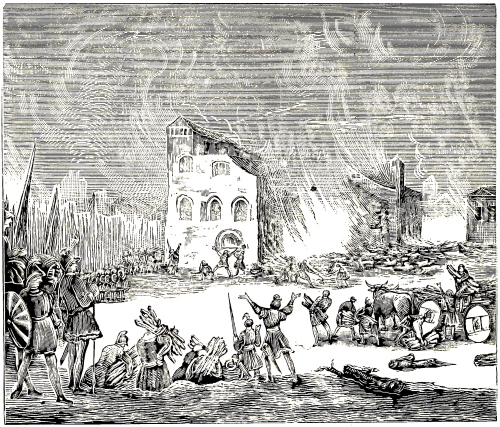
CHRISTIANS BURNED IN THEIR MEETING-HOUSES.
P. J. Twisck, after narrating something in commendation of this Emperor, begins immediately to give an account of the tyranny which he employed against the Christians, saying: “He caused public mandates and decrees to be issued and posted up, that if they would not apostatize from Christ, to persecute the Christians everywhere, and to execute them without mercy with every kind of torture that could be devised. The torments with which the poor Christians were put to death in that day were very severe, as we may read in Dionysius, Gregory, Cyprian, Eusebius, Vincentius, and others. They were exiled, spoiled of their goods, sentenced to the mines, scourged, beaten. Beheading and hanging were thought far too insignificant, yea, no punishment at all for them. Hot tar was most invariably poured over them, roasted at a slow fire, stoned, pricked in the face, eyes, and the whole body with sharp pointed instruments, dragged through the streets over hard pebbles and rough stones, dashed against rocks, cast down from steep places, their limbs broken in pieces, torn asunder with hooks, rolled about on sharp potsherds, given as a prey and food to the wild beasts, stakes driven through their loins, etc.
There was scarcely a place where persecution was not in vogue; Africa and Alexandria especially could be called the school of the martyrs. In short, Nicephorus says in his 5th book, chap. 29, that to count the martyrs of this time would be as easy as to undertake to count the sands of the sea shore. See, P. J. Twisck, 3d book, for the year 251, p. 67, col. 2, and page 68, col. 1, from Euseb., lib. 7, cap. 1. Chron. Mich., fol. 154. Chron. Carionis, lib. 3. Seb. Fr., fol. 17. Hist. Andræ, fol. 177, 2d part, fol. 174. Paul Merul., fol. 212–214. Leonh. Krentz. Chronologiae, fol. 16, 17. Chron. Car., fol. 236. Jan Crespin., fol. 53.
We shall begin with the persecution which at this time took place at Alexandria against the pious and defenseless Christians; for which reason this place was called by the ancients the “Scaffold of all tyranny.”
Metras, also called Metranus, a godfearing old man, was now apprehended by the riotous people at Alexandria, and commanded to utter blasphemous 129 words against God; that is, to blaspheme the name of God, and to forsake the Savior, Jesus. But as he refused to do so, they beat him on his whole body with sticks, pricked and pierced his face and eyes with sharp reeds, and, martyred thus, led him out of the city, and stoned him to death in the suburbs. Euseb., lib. 6, cap. 41, fol. 122, letter O, taken from the letter of Dionys. Alexandrinus to Fabian, concerning the martyrs in Alexandria. Compared with A. Mell., 1st book, fol. 67, col. 1. Also, Joh. Gys., fol. 19, col. 4. Also, Introduction, fol. 40, col. 1.
Afterwards, an honorable believing woman, called Cointha, or, as others call her, Quinta, was seized and brought into a temple of idols, and placed before these, in order to compel her to worship them. But when she recoiled with abhorrence from the idols, they tied her feet together, and dragged her through all the streets of the city of Alexandria, beat her with rods, and as some writers have recorded, rubbed her naked body against mill-stones. When they had dragged, beaten, and rubbed her long enough, so that her body was completely lacerated, they at last dragged her into the suburbs, and there pelted her with stones until she was covered with them. Compare Euseb. with Abr. Mell. and Joh. Gys. in the places referred to above concerning the martyr Metras.
Apollonia was an aged virgin, whom the enemies of the truth apprehended, and with their fists and blows in the face, knocked every tooth out of her head. In the meantime a large fire of wood was kindled, and they threatened to burn her alive, if she would not worship the gods, and forsake Christ. But notwithstanding this miserable death, she would rather go into the fire, and lose her temporal life, than save it by abandoning Christ and losing her soul.
Touching the manner of her death, and her great willingness to die, A. Mellinus makes this statement: “This virgin was sentenced to be burned, or to blaspheme the name of Christ; but as she abhorred the latter, she wished to show that she was ready and willing to die for Christ.” See Eusebius, Mellinus, and Gysius, in the books and on the pages referred to in connection with the martyrdom of Metras and Cointha.
As the aforementioned bloodthirstiness of the heathen at Alexandria did not abate, but increased more and more, against those who confessed the name of Jesus Christ, it came to pass that they laid their hands on a pious Christian, called Serapion, an Ephesian by birth. They dragged him out of his house, tore him almost limb from limb, and finally threw him out of a window; in consequence of which, after many torments, and having commended his soul to God, he tasted death, and thus was counted among the number of the steadfast and blessed martyrs. See the books cited above.
There was at this time and place also an old man, who, on account of great pain caused by gout, could not walk, but had to be carried. His name was Julian, and the ancients greeted him as a very venerable man, on account of his virtue. In pursuance of the imperial decree published against the Christians, he was brought by two carriers before the Judge, to give an account of his faith.
Forthwith one of those who had carried him, fearing the severe examination, or the rack, apostatized from the faith; for which reason we deem his name unworthy of a place here; but the other, called Eunus, continued very constant in the faith, together with the old man Julian, who was his dear friend; hence both made a grand confession of it; notwithstanding their many severe torments.
Both were then seated naked upon camels, and led about the whole city of Alexandria, which is very large; scourged with many severe stripes, and finally brought before a great, high-flaming fire, into which both were cast, and burned alive, in the sight of a great multitude of people that stood about. Compare Euseb., lib. 5, cap. 31, fol. 123, col. 1, letter B., from the letter of Dionys. to Fabius, bishop of Antioch. Also, A. Mell., fol. 67, col. 4. Also, Joh. Gys., fol. 20, col. 1.
There was yet another pious Christian, called Macar, or Macarius, a native of Lybia, whom the Judge advised with many words, to forsake Christ; but he continued only the more steadfastly to confess his faith. Finally the Judge commanded that he should be burned alive; which was done.
130
Epimachus and Alexander did not remain prisoners very long after Macar’s death; but, after suffering much pain, having been cut and slashed with razors, lacerated with scourges, and wounded on the most sensitive parts of their bodies, they were finally burned alive with flaming fire. See the authors cited above.
At this time, God also wonderfully manifested his power in certain women, among whom four are mentioned by name, two called Ammonaria, and Mercuria and Dionysia. The last named two were aged women, one of them being the mother of many children, all of whom she nevertheless had forsaken, for Christ’s sake. The other two, as it appears, were unmarried persons or young maidens, who loved their heavenly bridegroom, Jesus Christ, too much, to look for an earthly one. Of all these it is stated that they remained so steadfast in the confession of Jesus Christ, that the Judge felt ashamed on this account, and, in order to put an end to the matter, had them beheaded. See the authors and books cited above. Also, A. Mell., fol. 68, col. 1.
Heron, Ater, and Isidore, Egyptians by birth, and a youth of fifteen years, called Dioscorus, were committed to the Judge of Alexandria, at the same time. The Judge examined the youth first, supposing it a very easy matter to persuade him, or deceive him by fair words, or, if not on this wise, to move him by torments (of which, as Eusebius says, many were inflicted upon him), to deny the Christian faith. But this excellent youth, Dioscorus, could be induced neither by fair words nor by the force of torments, to obey the Judge.
The three men, namely Heron, Ater, and Isidore, the Judge had most cruelly scourged, and examined with all manner of stripes, intending to draw them away from the faith; but when he saw that because of their faith in Jesus Christ they valiantly endured all the torments, he delivered them to the executioners to be burned alive; except the youth Dioscorus, whom he released, on account of his courage as well as the astonishingly discreet answers which he gave to every one of his questions; saying that in consideration of his youth he would wink at his perverseness for the present, so that, in the meantime he might reflect upon the matter, and repent. But the ancient writers state, that, coming to the church of Jesus Christ, God ordained him to be a bulwark and consolation of his people; awaiting a longer and severer conflict, and a greater and fuller reward; on account of which, as well as because of his previous sufferings, he was reckoned among the pious martyrs. See the abovementioned authors and books.
The malignity of the tyrants had now become so great that they called the defenseless lambs of Christ murderers, and sought to put them to death under this name. Among those thus accused was a pious follower of Christ, called Nemesius, or, also, Nemesis, who, being accused of the same crime, first of all candidly and clearly vindicated himself from it. Thereupon his accuser charged him with being a Christian, and, therefore, nevertheless guilty of death. Eusebius writes, that in this point the Judge observed no moderation, but caused him first to be tortured with twofold torments, and then commanded that he should be burned with the murderers, unconscious of the fact that through his cruelty he made this holy martyr resemble our Savior, who, for the salvation of mankind, was crucified between murderers. In regard to this, A. Mellinus says: “The Judge made this martyr like unto his Lord Christ, and, according to his example, had him placed between highwaymen, and then burned alive.” A. Mell., 1st book, fol. 68, col. 2, from Euseb., lib. 6, cap. 41. Also, P. J. Twisck, 3d book, for the year 252, page 70, col. 1, on the name Nemesion.
Babylas, bishop of the church of Antioch, the capital of Syria, situated on the river Orontes, was a very godly and faithful shepherd of the flock of Christ. Knowing beforehand that this severe persecution was threatening the church of Christ, he very diligently instructed not only men and women, but also children in the principles of the Christian faith, and constantly admonished them in his preaching, not only to believe in Christ, but also to suffer for his name. Touching the cause of his imprisonment, the ancients have briefly described it thus: namely, that the Emperor Decius came to one of the congregations of the Christians, and requested to be admitted; but that the shepherd of that congregation or church, namely Babylas, in order to spare the congregations, opposed him boldly, saying, that it was not lawful for him thus audaciously to enter the house of the living God, and to view the mysteries of the Lord with his polluted eyes, or to 131 touch them with his murderous hands still covered with blood. The Emperor, unable to bear this, had Babylas, together with several others, seized, bound with chains, and placed in severe confinement.
Those who were apprehended with him, and were finally put to death, were, as appears from the records, three young men, brothers, and were called, Urban, Philidian, and Epolonius; who, as some suppose, were his bodily, but according to others, his spiritual children, because he had won them for Christ through the doctrine of the truth.
When the hour of his departure began to draw near, that he was to be offered, and his disciples or other good friends came to visit him in prison, he earnestly asked, as a last request of them, to bury him with his fetters, chains, and bonds.
Concerning his death, Eusebius Pamphilius writes: “Bishop Babylas fell asleep in the Lord, in prison, at Antioch, after having made his confession, in all things like Alexander.” Hist. Eccl. Edit. A. D. 1588, lib. 6, cap. 39, fol. 121, letters F, G.
But as all the other fathers who have written of Babylas speak of him as a martyr, they also state that he was executed with the sword. The records of his death, faithfully collected by Suidas and others from the most ancient writers, read thus: “When Babylas was sentenced by the Emperor Decius to be beheaded, together with the aforementioned three young men, he sang the comforting words of the 116th psalm, on his way to the place of execution: ‘Return unto thy rest, O my soul; for the Lord hath dealt bountifully with thee. He hath delivered my soul from death, mine eyes from tears, and my feet from falling. I will walk before the Lord in the land of the living.’ ”
When Babylas and the three young men had arrived at the place where they were to be beheaded, Babylas begged, that they would first put to death before his eyes, the three youths (whether they were his bodily or his spiritual children) so that they might not be deterred or discouraged by his death from dying for the name of Christ.
While the executioners were busy executing the children, he prayed to the Lord, saying: “Here am I, Lord, and the children whom thou hast given me.” And thus he encouraged the children, steadfastly to suffer for the Lord.
After this, Babylas also fell asleep very peacefully in the Lord, having commended his soul into the hands of the Lord, to bring it to the eternal rest of which he had spoken immediately before his death.
The mother of these children, and the brethren of the church of Antioch buried the dead bodies of these martyrs in a decent manner, together with the chains and fetters with which Babylas had been bound during his life.
Thus, this good father and his dear children took an honorable departure from this world together on the same day, and are awaiting now the blessed hope and the revelation of the great God, and their Savior, Jesus Christ, for whose honor and glory they suffered these things. Abr. Mell., 1st book, fol. 68, col. 4, and fol. 69, col. 1, 2, from Euseb., lib. 6, cap. 29. Epiphan. lib. de Mens. and Pond. Hieron. Catal. in Origene. Chrysost. Eunt. Gent. and Homil. 9 ad Ephes. Suidas in Babyla. acta ex Patribus Collecta. Suid. in Hist. sub. nom. Babylæ.
NOTE.—P. J. Twisck, who begins this persecution by Decius, with the year 251, fixes the death of this man, Babylas, in the second year of his reign, namely, A. D. 252. Chron. 3d book, p. 70, col. 1, from Hist. Andr., fol. 21. But Abr. Mellinus, who begins the persecution with the year 253, fixes his death in A. D. 254 (although the printer has erroneously made it A. D. 264; for Decius reigned only two years), and this is consequently the second year of Decius. We have followed the latter author.
Mention is made in this time of a certain pious Christian, called Pionius, a man greatly noted on account of his remarkable virtue, who always stood fearlessly before the Judges, and, as Eusebius declares, steadfastly replied to all their questions, yea, taught and disputed in the court, so that those who wavered on account of the persecution, were thereby strengthened and encouraged. While in prison, he strengthened the brethren, and encouraged them, to fight steadfastly even unto the end, in the faith, for the Lord, in which he preceded them as a good leader. For, according to the testimony of Eusebius, he was finally nailed on a piece of wood, and cast into a flaming fire, and thus died a blessed death. Euseb., lib. 4, cap. 15, taken from the letter of those of Smyrna, concerning the death of Polycarp and some of the martyrs who followed him.
We shall endeavor to be as brief as possible, and, instead of relating all that pertains to this, present only the last acts of his death.
When the Governor, after much had been said on both sides, said to Pionius: “Why dost thou make such great haste to meet death?” Pionius answered: “I do not make haste to meet death, but life.” Then said the Governor: “Thou dost not act wisely thus to hasten to meet death. Thou art like those who, despising death, for the sake of a little gain offer themselves to fight with the beasts. But since thou despisest death so much, thou shalt be burned alive.”
This sentence of death was read to him from a tablet inscribed with Roman letters: “We have sentenced Pionius to be burned alive, because he has confessed that he is a Christian.”
132
Having thus been sentenced, Pionius was brought to the place where he was to be burned. There he divested himself of his clothes, and, having looked at his naked body, he cast up his eyes to heaven, praising and thanking God for having kept him to this hour free and unspotted from the idols.
With this, he voluntarily went and lay down on the fire-wood, stretched himself over it, and delivered himself to the soldiers, to be nailed to the wood.
When he was fastened to the wood, the servant said to him: “Be converted and alter your views; and we shall remove the nails.” Pionius answered: “I feel that they are in already.” And reflecting a little, he said to God: “Therefore, O Lord, do I hasten to death, that I may rise the sooner (or the more glorious).”
Having been nailed on the cross, he was raised up with his face towards the east. When a great heap of wood had been collected with which to burn him, he closed his eyes for some time, so that the people thought that he had already died. However, he prayed secretly in his heart; for when he had finished his prayer, he opened his eyes, and all at once the flame shot up to a great height, just as with a glad countenance he uttered the last word of his trust, saying: “Amen, O Lord, receive my soul,” and calmly and without manifesting the least sign of pain, he gave his spirit over into the hands of God.
This happened when Julius Proculus Quintilianus was Proconsul of Asia, and Emperor M. Q. T. Decius was Consul for the third, and Gratus for the second time, at Rome, in A. D. 254, by virtue of the seventh persecution under Emperor Decius, at Smyrna, in Asia Minor. Abr. Mell., 1st book, fol. 71, col. 3, 4, from Euseb., lib. 4. Also, Acta per Sym. Metaph. Genuma, and Vere pro Consularia.
It is stated that shortly after the death of Pionius and the preceding martyrs, there suffered a certain pious Christian, called Maximus, a citizen of Ephesus; concerning whom, we, in order to present the matter in the briefest, clearest and plainest manner, shall, (instead of the testimony of the fathers) copy the records themselves, which were approved by the Proconsul, and written by the clerk of the court. They read thus: “Maximus, a citizen of Ephesus, having been apprehended and brought before Optimus, the Proconsul of Asia, the latter asked him: ‘What is thy name?’
“He answered: ‘My name is Maximus.’
“The Proconsul asked: ‘What is thy estate?’ which meant, whether he was free-born, or a servant.
“Maximus said: ‘I belong to myself, and am free-born. Nevertheless, I am a servant of Christ, and manage my own affairs.’
“The Proconsul said: ‘Art thou a Christian?’
“Maximus replied: ‘Notwithstanding I am a sinner, I am nevertheless a servant of Christ.’
“The Proconsul questioned: ‘Knowest thou not the decrees of the invincible Princes, which have now been brought hither?’
“Maximus asked back: ‘What are they?’
“The Proconsul answered: ‘That all the Christians are to forsake their superstitions, acknowledge the only true Prince, to whose power all things are subject, and worship his gods.’
“Maximus said: ‘Yea, I have heard the unjust decree of this Prince or Emperor, and hence have come, openly to declare myself against it.’
“The Proconsul spoke: ‘Then sacrifice to the gods.’
“Maximus said: ‘I sacrifice to none, except to God; and I rejoice that from my childhood’s days I have offered myself only to God.’
“The Proconsul again said: ‘Sacrifice, lest I cause thee to be tormented in divers manners.’
“Maximus said: ‘This is just what I have always longed for: to be deprived of this temporal and frail life, and thereby attain life eternal.’
“The Proconsul then commanded his soldiers to beat Maximus with sticks. While he was being beaten, the Proconsul said to him: ‘Sacrifice, Maximus, that you may be released from these torments.’
“Maximus said: ‘These torments, which I gladly and willingly receive for the name of my Lord Jesus Christ, are no torments at all; but if I apostatize from Christ, I must expect the real and everlasting torments.’
“The Proconsul therefore had him suspended on the torture-stake, and dreadfully tormented; and said to him: ‘See, now, where thou hast come to by thy folly; sacrifice, therefore, that thou mayest save thy life.’
“Maximus replied: ‘If I sacrifice not, I shall save my life; but if I do, I shall lose it. For neither thy sticks, hooks, claws, pincers, nor thy fire hurt me; nor do I feel any pain through it, because the grace of Christ abides in me.’
“Then the proconsul pronounced the sentence of death, which was as follows: ‘I command, that Maximus be stoned to death, as an example and terror to other Christians; because he would not submit to the laws, and sacrifice to the great Diana of Ephesus.’ Acta Proconsularia.” Thus far extend the words which the clerk of the court himself wrote.
The Christian who copied these records, adds the following: “And presently this faithful champion of Christ was taken away by the servants of Satan, brought without the city walls, and stoned. While he was being led away, and stoned, he thanked God with all his heart, who had made him worthy to overcome the devil in the conflict; and thus committed his soul into the hands of his Lord Jesus Christ.”
Thus this pious witness of Jesus laid down his life amidst a volley of stones, for the honor of his Savior, and thus was registered among the holy and steadfast martyrs. A. Mell., 1st book, fol. 72, col. 3, 4, from Acta Procons. Also, Aug., lib. 2, de Doctr. Christ., cap. 26, Idem. contra Donatist. super alia acta citat.
133
In our account of baptism in the third century, with special reference to the year 231, we have spoken of the views of Origen and shown that he has left us very excellent and salutary teachings concerning baptism upon faith; and also, that in his teaching he opposed the swearing of oaths, war, compulsory celibacy, the literal view of the Lord’s Supper, those who taught something, and did not practice it themselves, the antichrist, etc.
We have likewise shown there, that some very peculiar things were laid to his charge as his views, from which, however, the principal ancient writers, as well as later authors, have vindicated him; all of which may be examined at the place indicated, and considered with Christian discretion. This we leave to the judgment of the judicious. We shall therefore proceed to treat of his martyrdom, and how much he had to suffer for the name of the Lord Jesus.
From the very beginning of his knowledge he placed himself in great danger of being apprehended or put to death for the testimony of the Son of God. For when he was but seventeen years old, and his father, whom he affectionately loved, had been apprehended for the Christian religion, and had nothing to expect but death (as we have noted for the year 202), he did not only comfort him by letter, but, as other writers state, desired to follow him into prison, yea even unto death; which he would have done, had not his mother prevented it by withholding or taking away his clothes. Introduction, fol. 38, col. 2, from Euseb.
Besides this he often exposed himself to danger for the Christian martyrs, because of his extraordinary love for them. He would station himself near the tribunal, where the apprehended Christians were making their last defense, or were to receive their sentence of death, and when they were becoming weak he would strengthen and encourage them; he went with them to death, even to the place of execution; he gave them the last kiss of peace, as a friendly and fraternal farewell; so that frequently he would have lost his life, had not God remarkably and miraculously preserved him. Soldiers who were hired for the purpose by the enemies of the truth, lay in ambush for his person and for the house in which he lived, in order to apprehend or kill him; so that on account of the fierce persecution he could remain no longer in Alexandria, the place where he had been brought up; and this the more, because the believers there, on account of his conspicuousness, could no longer conceal him.
His beloved disciples, whom he had faithfully taught the ways of God, had nearly all been put to death for the name of Jesus Christ, among whom were, Plutarch, Heraclides, Hero, the two pious men called Serenus, Rhais, Marcella, and others; whom we have mentioned in the years A. D. 203 and 204.
It may therefore be considered a miracle that Origenes lived so long in the midst of deadly persecutions, namely, from his seventh to his seventieth year, which is more than fifty years.
But finally, sufferings beyond measure came upon him; he was cast into the deepest prison, his neck loaded with iron chains, his feet placed in the stocks, and stretched so that four holes were between them.100 There he was tortured with fire and divers other means of torment; but he bore it all with the utmost patience. Nevertheless, it appears from ancient writers, that he was not put to death judicially, but, as Epiphanius writes, was banished to Cesarea Statonis; and that finally, having moved to Tyre, he died and was buried there, under Gallus and Valusianus. Compare the account of A. Mell., 1st book, fol. 57, col. 1, 2, under the name Leonides, but especially, fol. 77, col. 3, 4, under the name Origen, from Euseb., lib. 6, cap. 2. Hieron. Apol. Ruffin. Suid. in Origene Epiphan. de Mensuris. Hieron. Catal. in Origene. Also, Euseb., lib. 6. Also, P. J. Twisck, 3d book, for the year 231, page 61, col. 1, 2, from Georgius Vicelius. Also, Introduction, fol. 38, col. 2. Also, Joh. Gys., fol. 18, col. 3, about Leonides.
There are some who accuse Origen of apostasy; but different excellent authors have acquitted him of this charge; though in point of knowledge he had his weaknesses and failings.
Eusebius Pamphilius of Cesarea praises his virtue above measure, saying that Origen wished to have no communion with Paulus Antiochenus, because the latter was tainted with error. Of Origen it was said: “This is he who lives as he teaches, and teaches as he lives. He sold his books of heathen philosophy, on condition that four pence a day should be given him for his daily needs, so that he would not be a burden to any one. He set all his disciples an example of poverty, that they should forsake whatever they possessed; hence he was beloved by everyone, because he contended with none about temporal goods, except that some were dissatisfied because he refused to accept what they offered to impart to him for the sustenance of his body.” Eusebius further says: “It is said that for many years he went barefooted, using neither wine nor such like, but only the absolute necessaries of life, until disease in the breast, which endangered his life, compelled him to it.” Lib. 6, cap. 1, 2, 3. Also, Baudart. in Apophthegm. Christian., lib. 3, page 100.
In refutation of those who accuse Origen of apostasy, A. Mellinus writes (though he does not wish to defend his misconceptions or errors, as he calls them): “If this account of the apostasy of Origen were true, Porphyrius, who wrote at this time against the Christians, and was especially bitter against Origen, would very probably have mentioned it in his writings, and this the more so, as he dared unjustly to accuse Ammonius, Origen’s teacher, of Apostasy: how much more then, would he have exerted himself against Origen, if the latter 134 had really apostatized; whereas he acknowledges that Origen lived as a Christian to the end.” A little further on he writes: “As regards his Christian life and steadfast confession of the name of Christ, we have no reason to call it in question, since even his enemies bear him a good testimony in this respect.” Abr. Mell., 1st book, fol. 78, col. 1, from Porphyry.
After the death of the Emperor Volusian, the son of Decius, Aemilian, an Ethiopian, ascended the imperial throne; but since it is stated that he reigned only three months, and that Valerian had previously already been declared Emperor, his reign is not taken into account. It follows, therefore, that Valerian was acknowledged Emperor; who, together with his son Gallien, began to reign about the year 255, as set forth by Seb. Frank; but the persecution, according to the testimony of different authors, did not begin until the year 259.
The author of the Introduction to the Martyrs Mirror writes, concerning this, as follows: “In A. D. 259 the eighth persecution against the Christians arose under the Emperor Valerian. He issued an edict against the Christians, in which he commanded that the Christians were not to assemble themselves; and as this was not observed, a great persecution arose everywhere.” Fol. 41, col. 1.
Concerning this, J. Gysius records the following: “Valerian and Gallien, who in the beginning of their reign; were favorable to the Christians, soon afterwards changed their course, being misled by an Egyptian sorcerer, and by divers torments compelled the Christians to idolatry.” Fol. 20, col. 3, 4.
P. J. Twisck, speaking (for the year 255) of the beginning of the reign of Emperor Valerian, says: “Truly, this Emperor, as history tells us, was in the beginning a very pious and praiseworthy Prince, a censor, who excelled all others; in regard to which many commendatory passages may be read in the Tijdthresoor by Paul Merula. But, what of it? Although at first he was very favorable to the Christians, and so honored their ministers, that his house was considered a church of the Lord, he was nevertheless afterwards corrupted by a doctor, a wicked lord and prince of all the sorcerers of Egypt; who made the Emperor believe that fortune would not be on his side as long as he tolerated the Christians at his court, or in the land. Then the Emperor commanded that these holy and just men should be persecuted and put to death as such who were opposed to the sorcery with which he was polluted.
This sorcerer also prevailed upon the Emperor to slaughter and sacrifice children and human beings in honor of the devil. He accordingly commanded that little children should be put to death, so that he could perform his unclean ceremonies and abominable sacrifices; and thus robbed parents of their children, and became such a despiser and oppressor of the Christian faith, that he spared neither old nor young, men nor women, nor any state and condition, but most miserably murdered all that were brought to him, in Alexandria and other places too numerous to mention. At Rome also there was much innocent blood shed at this time, even as this city has ever been a place of slaughter for the poor Christians.” Third book, for the year 255, page 71, col. 2.
P. J. Twisck, having concluded his account of the aforementioned matter, proceeds immediately to show how cruelly and lamentably the innocent Christians were treated at that time. “The martyrdoms,” he writes, “were manifold: they were cast before the wild beasts; they were beaten, wounded, executed with the sword, burned, torn limb from limb, rent asunder, pinched with red-hot tongs; red-hot nails were driven in their fingers and nerves. Some were hung up by their arms, and heavy weights tied to their feet, and thus were torn asunder gradually and with great pain. Others, whose wounded bodies had been smeared over with honey, were placed naked on the earth in the hot sun, to be tormented and stung to death by flies, bees, and other insects. Others were beaten with clubs, and cast into prison, until they miserably perished.”
“Under the reign of the aforementioned cruel and tyrannical Emperors,” he writes a little further on, “many Christians had to wander and roam about in foreign countries, in secluded places, along shores, in caverns, on mountains, in caves, amidst want and poverty; leaving comfort, honor, prosperity, peace, friends, money, and property.” Among many others, there is an account given in the Keyser’s Chronijk, of a youth of sixteen years, called Paul, well versed in different languages, and the son of a rich man, who, in order to escape the persecution, went out into a village to live with his sister. But his brother-in-law was moved by avarice to betray him, that thus he might obtain possession of his property. His sister having warned him of his danger, he fled into the mountains, gladly leaving behind him all his possessions. However, God 135 prepared him there a secret cave, where he could quench his thirst with pure water, and satisfy his hunger with roots, herbs, and the fruits of the trees. Idem. Ibidem, from Euseb. Fasc. Temp., fol. 94. Chron. Mich., fol. 161. Chron. Seb. Franc., fol. 18, Hist. Andr., fol. 177, 178, 2d part, fol. 174. Paul Merula, fol. 217, 218, 221. Jan. Crespin, fol. 65.
After different letters of Dionysius, bishop at Alexandria (recorded by Abr. Mellinus from Eusebius), concerning the persecution he suffered, there follows one which Dionysius wrote to Domitius and Didymus, about the oppression of the Christians under Valerian, as well as how he himself was oppressed at that time. Among other statements, it contains these words: “It is not necessary to mention all the names of the Christian martyrs, because their number is very great, and you do not know them; but know ye of this persecution, in general, that innumerably many men and women, old and young people, old women and young girls, of every state and condition, were, some scourged, some burned, some beheaded, or made martyrs in some other manner; and still the proconsul continues in his cruelty; putting to death those that were made known to him, causing some to be rent asunder by divers torments, holding others in bonds and severe confinement, and letting them perish through hunger and thirst, forbidding all to come to them, yea closely watching those who but endeavor to get near them.
“Nevertheless, the Lord has thus strengthened the hearts of the brethren, that they, for the name of Christ, have constantly visited these oppressed prisoners, notwithstanding it was interdicted under penalty of death. And although this persecution has lasted for a considerable length of time, there have still been some whom God did not deem worthy to take to himself as martyrs. Among whom, says Dionysius, I myself yet remain, until the Lord will otherwise dispose of me; since he doubtless preserves me for some other time, which appears to him more suitable. At present I, together with Gaius and Peter, am separated from all the rest of the brethren, confined in a desert place of Lybia, three days’ journey from Paraetonium.” Compare A. Mell., 1st book, fol. 79, col. 2, from Euseb., lib. 7.
We selected this letter of Dionysius from all the rest, because there is stated in it, on the one hand, the severity of this persecution in general, and, on the other hand, the oppression which this friend of God himself suffered; inasmuch as he, after much wandering, was separated, together with his two dear friends, Gaius and Peter, from all the rest of his brethren, and confined in a desert place of Lybia, there expecting death for the name of the Lord.
Of Dionysius, P. J. Twisck states, that he as well as Tertullian held a figurative or spiritual view of the Lord’s Supper, i. e., that the words of Christ: “This is my body,” signify: “This is a figure of my body.” Second book, for the year 200, page 53, col. 1, concerning Tertullian.
The same author, speaking of Origen, says among other things of Dionysius, that after Origen and Heracles he presided over the schools of the catechumens (that is, those who were instructed in the Christian doctrine, before baptism) at Alexandria. Third book, for the year 231, page 61, col. 1.
In another place the aforementioned author states that Dionysius, whom he calls a catechetical preacher, accompanied Pancratius, when the latter was baptized at Mount Celinus. In the same book, for the year 253, page 71, col. 1, from Wicelius, in Chorosanctorum. Grond. Bew., letter B., Leonhard, lib. 1.
In his second book, 13th chapter, D. Vicecomes cites Dionysius (from Eusebius) as saying: “Many heathen adopted at their baptism the name of the apostle John, from special love and admiration for him, as well as because of the zeal which animated them, to follow him, and because they desired to be loved by the Lord, as he was. For the same reason the names of Peter and Paul became prevalent among the believing children of God.
“All these,” says the writer who has recorded this, “are beautiful reminders, which were administered to the catechumens before and after baptism; which certainly cannot apply to infants.” Baptism. Hist., printed at Dortmund, A. D. 1646, and 1647, 2d part, concerning the third century, page 320.
It is stated that at this time, Fructuosus, bishop of the church of Tarragona in Spain, and Augurius and Eulogius, his deacons, were apprehended at the command of Aemilian, the Proconsul, and held in prison six days, before they were brought before the tribunal of the Proconsul. When they were standing before the judgment seat, Aemilian commanded them to kneel before the altars, and worship the gods standing thereon, and sacrifice to them, saying to Fructuosus: “I understand that thou art a teacher of a new-devised religion, and that thou incitest giddy young women, no longer to go to the groves, where the gods are worshiped, yea, to forsake Jupiter himself. Go on, then, despising our 136 religion, but know thou, that the Emperor Gallien has, with his own lips, issued a decree by which he binds all his subjects, to serve the same gods which the prince, that is, the Emperor, serves or honors.”
Thereupon Bishop Fructuosus answered: “I worship the eternal Prince, who has created the days and the gods, and is Lord even over the Emperor Gallien; and Christ, who is begotten of the eternal Father himself, whose servant, and the shepherd of whose flock I am.”
The Proconsul derisively said: “Yea, who hast been it till now; but thou art so no longer.” With this, he sentenced Fructuosus and his two deacons, Augurius and Eulogius, to be burned alive.
These faithful martyrs, having received the sentence of death, for the name of Christ, rejoiced in their impending martyrdom, and when they saw the people weep, as they were led to death, they forbade them to weep. When some offered Fructuosus a drink on the way, that he might refresh his heart, he refused it, according to the example of Christ, saying: “Now is our fast-day. I do not wish to drink; it is not yet the ninth hour of the day (that is three o’clock in the afternoon, before which time those who fasted did not eat); and death itself shall not break my fast-day.”
When they arrived in the arena, where the executioner had been ordered to build a great fire in which to burn these pious martyrs, a dispute (proceeding, however, from heartfelt love) arose among the faithful Christians, as to who should first untie the latchets of the shoes of the bishop, their beloved shepherd and teacher. But Fructuosus would not permit it, saying: “I shall untie them myself from my feet, so that I can go unhindered into the fire.” And perceiving that they wept, he said: “Why weep ye? and why do you ask me to remember you? I shall pray for all of Christ’s people.”
Standing with his bare feet by the fire, he said to all the people: “Believe me! what you see before your eyes is no punishment; it passes away in a moment of time, and does not take away life, but restores it. O happy souls! who through this temporal ascend into heaven unto God, and who on the last day, shall be saved from everlasting fire.”
All at once they hastened towards the fire, which indeed burned off in a moment the bands with which their hands had been fastened on their backs, thus freeing these; but their bodies remained intact in this great heat, so that with outstretched hands they prayed God to suffer the flames speedily to deliver them from the agony of death. Their prayer having been heard, they, leaving their frail bodies here as pledges, committed their souls unto God, and the three martyrs fell calmly asleep in the Lord, from whom, on the day of judgment, they will receive, in reward of their faithful services and steadfast testimonies, the martyr’s crown, and white robes in token of their victory. Abr. Mell., 1st book, fol. 81, col. 4, and fol. 82, col. 1, 2, from Prudent. Stephan. Hym. 6, ex Actis Proconsul.
In the ancient records of the pious witnesses of Jesus Christ, an account is given of Marinus, a citizen of Jerusalem, of noble descent, who, although he belonged to the nobility, entertained a sincere affection for the true Christians, who at that time were oppressed beyond measure. On this account his enviers, who were jealous of the honor of his nobility, severely accused and charged him with being a Christian; which he also confessed, when he was brought before the Judge; yea, he declared with a loud and clear voice, that he was certainly a Christian. The Judge then gave him three hours’ respite to consider, whether he would die as a Christian, or whether he would sacrifice to the gods and the Emperor.
As he went away from the tribunal, Theotecnes, the bishop of the church in that city, took him by the hand, and led him to the meeting, in the meeting-place, strengthened him with many words in the faith, and, placing before him the sword which he was wont to carry at his side, and also the Gospel [book], he asked him which of the two he would choose?
When Marinus, with a firm faith, stretched forth his hand for the Gospel, choosing it instead of the sword, Theotecnes said to him: “O my son! keep that which thou hast chosen, and, despising this present life, hope for the eternal. Depart in good confidence, and receive the crown which the Lord has prepared for thee.”
Marinus accordingly returned to the tribunal, and was forthwith called by the lord’s servant, for the appointed time had come; he did not delay or wait until he was asked, but said of his own accord: that he had considered the matter, and that it was established by the law of the fathers, that God must be obeyed rather than men. Eusebius Pamphilius writes, that when Marinus had answered thus, the Judge immediately gave sentence that he should be beheaded. Lib. 7, cap. 15.
P. J. Twisck gives the following account of this Marinus: “When Marinus confessed that he was a Christian, and chose the Bible in preference to the sword, he was called before the tribunal, sentenced, and beheaded.” Third book, for the year 262, page 73, col. 2; from Euseb. Compare this with the Introduction, fol. 41, col. 2.
In this persecution under Valerian there were three very noted and godfearing martyrs at Cesarea, in Palestine, who nevertheless were but simple 137 peasants, the first called Priscus, the second Malchus, the third Alexander. Eusebius writes, that, as they lived near the suburbs of Cesarea, a divine zeal for the faith was kindled within them, and they accused each other (and each himself, says Mellinus), of slothfulness, since heavenly crowns of martyrdom were distributed, or at least offered, in the city, and they were so little inclined to ask for them, notwithstanding our Lord and Savior had said that the kingdom of heaven must be taken by violence, and therefore it did not become them to remain so earthly and slothful. Having exhorted one another with such words, they went into the city, and addressed and reproved that cruel tyrant, the criminal Judge, demanding of him, why he shed so much Christian blood. The tyrant instantly replied, saying: “They shall be thrown before the wild beasts, to be torn by them, who do not like to see the blood of the Christians shed; which, it is stated, was done to them. Compare Euseb., lib. 7, cap. 12, fol. 131, col. 1, 2, letter F, G, with the Introduction, fol. 4, col. 2. Also, Joh. Gys., fol. 21, col. 2.
A. Mellinus, writing in defense of the aforementioned three peasants, against those who would pronounce them too bold, says after other remarks: “Who are you that judge your brethren? How do you know of what spirit they were? No one has courage of himself; but it is the gift of God, not only to believe in Christ, but also to suffer for his name: hence, neither is of ourselves. They also did not seek their own honor, but to magnify the name of Christ by their death; to which, no doubt, they were impelled by a divine zeal, since their zeal was not without knowledge, but proceeded from the power of faith; whereby they were prepared through the divine Spirit to proclaim the honor of God through their death; for this was their sole object.” First book, fol. 79, col. 4.
Besides the aforementioned martyrs who were put to death in this persecution, certain other authors have noted various other pious witnesses of Jesus Christ, who, loving the honor of God more than their own lives, were put to death at that time, and under that same Emperor; which we shall presently relate. Besides the three hundred Christians whom P. J. Twisck places in the year 264, as having been burned in a lime-kiln, because they would not throw incense on the coals, for a sacrifice in honor of Jupiter, as may be seen in the 3d book, page 75, col. 1, from Histor. Adr., fol. 30, several names are mentioned, as, Philip, bishop of the church at Alexandria, who was put to death with the sword in this persecution, for the testimony of Jesus Christ. J. Gys., fol. 21, col. 2, from Vinc. Spec. Hist., lib. 11, cap. 23. Henr. d’Oxf., lib. 6, cap. 21. Also, Florentin and Pontius, pious men, are stated to have been put to death in France, for the name of the Lord, together with others, who are also mentioned. Introduction, fol. 41, col. 2, Seb. Franck, fol. 22, col. 4.
A. Mellinus writes: “Aurelian was a stern, cruel, and blood-thirsty Emperor by nature, and although at first he had a good opinion of the Christians, he nevertheless afterwards became averse to, and estranged from them; and having, undoubtedly, by some tale-bearers, been instigated against the Christians, he allowed himself to be seduced so far, as to raise the ninth general persecution of the Roman monarchy against them, which persecution he, however, did not carry out. For at the very moment in which the decrees written against the Christians, were laid before him by his secretary, that he might sign them, and when he was about to take the pen in hand, the hand of God suddenly touched him, smiting his hand with lameness, and thus preventing him in his purpose, so that he could not sign them.” First book, fol. 87, col. 3, from Vopisc. Victor. Eus., lib. 7. Post. Literas, Aug. de Civit. Dei., lib. 18, cap. 52. Oros., lib. 7, cap. 16. Theodoret. Hist., lib. 4, cap. 17.
He writes: “Emperor Aurelian commenced the ninth persecution against the Christians. He was by nature inclined to tyranny, and was a furious blood-hound, as Eutropius writes, so that he did not hesitate to kill his sister’s son, and finally, through the atrocity of his own wicked nature, and evil counsel suggested to him, he became an enemy and persecutor of the Christians. He sent letters to the Governors of the Roman country, that they should vex the Christians; but when he was about actually to carry the persecution into effect, he could not sign the decrees which were to be issued against the Christians, because God smote him, so that his hand was paralyzed. Through divine judgment he was terrified by thunder, lightning, and fire-darts, at the time that he was constantly meditating how he might slay and exterminate the Christians; and shortly after was himself killed by his notary.” Third book, for the year 270, page 76, col. 2, from Chron. Mich. Sac., fol. 178. Euseb., lib. 7. Chron. Seb. Fr., fol. 18. Chron. Carionis, lib. 3, Hist. Andreæ, fol. 178, 2d part, fol. 175. Paul. Mer., fol. 226. Jan. Crespin., fol. 62. Chron. Andreæ, lib. 13, fol. 343.
138
In A. D. 273 arose the ninth persecution of the Christians, under the Emperor Aurelian; but it was not as great as the former, because death suddenly overtook him as he proposed to himself, to begin it. Under him were killed . . . and many others, concerning whom no special accounts are extant. Fol. 41, col. 2.
Notwithstanding Emperor Aurelian could not himself sign the abovementioned decrees against the Christians, the persecution nevertheless proceeded in some places, so that here and there some laid down their lives for the testimony of Jesus Christ; of whom we shall mention only a few, whom we have selected as true martyrs.
When Chorus, the king of the Germans, in the time of Valerian, and Aurelian, yea, up to the time of Probus, devastated France, he found among other martyrs who dwelt separated from men in deserts and mountains, a certain pious man, called Privatus, Bishop of the church at Gevauldan. This man, sojourning in the mountains, fasting and praying, was taken prisoner by the Germans, and because he, as behooves a good shepherd, would not deliver his lambs into the claws of the wolves, by himself sacrificing to Satan, which he would in no wise do, he was beaten with sticks by them for a very long time, till they left him lie for dead; in consequence of which treatment he also died a few days after. This happened, as some have supposed, under Valerian and Gallien, but in reality, under Aurelian. Compare A. Mell., 1st book, fol. 89, col. 1, from Greg. Turon. Hist., lib. 1, cap. 34, with Introduction, fol. 41, col. 2, where he is called Privatus, Bishop of Gablen.
Mamas, a shepherd, who pastured his sheep upon the mountains and in the wildernesses of Cappadocia, lived very poorly, without a hut, dwelling under the blue heavens, and subsisting on the milk and cheese of his flock, as Basilius testifies. Nazianzenus adds, that the hinds also suffered themselves to be milked by him daily, and that he was thus fed by them.
Basilius says, that from the course of the heavenly bodies he learned to know the wonderful works of God, his Creator, and thus his eternal power and wisdom. However, the accounts written concerning him state that he had the word of God with him in the desert, and that he read in it daily.
It is quite probable, writes Mellinus, that this Mamas, in order to escape the persecution in the time of Decius and Valerian, went into the wilderness, and remained there till the time of Aurelian, whose proconsul of Cappadocia, Alexander, caused him to be brought out of the wilderness, and to appear before him, at Cesarea, the capital of Cappadocia.
The proconsul called him a sorcerer or conjurer, because the wild animals of the wilderness so tamely submitted to him.
Mamas answered: “I am a servant of Christ, and know nothing about sorcery; but would rather live among the wild animals, than among you: for they feel the power of their Creator in and through me; but ye will not know God. I cannot sufficiently wonder that you, who have attained to gray hairs, are still in such gross darkness of ignorance, as to forsake the true and living God, and give divine honor to deaf and dumb idols.”
When he was requested to say at least with his lips, that he would sacrifice to the gods, so as to escape punishment, Mamas replied: “I shall never, either with my lips, or with my heart, deny the true God and King, Jesus Christ. So far am I from seeking to escape suffering for the name of Christ, that I, on the contrary, consider it the highest honor, the greatest gain, and the utmost benefit, which you can confer upon me.”
Upon this confession, the proconsul had him placed on the rack, cruelly scourged, tormented with pincers, burnt on his sides with lamps and torches, and tortured in various other ways. But seeing that in all these and other torments he remained steadfast, he finally had him thrust through with a three-pronged spear; and thus Mamas became a faithful martyr for his Savior, under Emperor Aurelian, at Cesarea in Cappadocia. A. Mell., 1st book, fol. 89, col. 2, 3, ex Basilii Concio, in Mart. Mamant. Nazianz. Orat. 43. Act. per Metaphrast.
It is stated that at this time, as the heathen at Augustodunum, now called Autum, in Burgundy, on a feast-day of the goddess Cybele, whom they called the mother of the gods, carried around her image on a wagon, in procession, a certain pious Christian, called Symphorianus, met this image, and refused to worship it; in consequence of which he was apprehended as an impious person, or despiser of the gods, and brought before Heraclius, the Proconsul, who, in that city, exercised the strictest vigilance over the Christians. When he stood before the judgment-seat, the Proconsul asked him for his name. Symphorian replied that he was a Christian by religion, was born of Christian parents, and had received the name Symphorian.
139
The Judge said: “Why didst thou not honor the mother of the gods, or worship her image?”
Symphorian answered: “Because I am a Christian, and call only upon the living God, who reigns in heaven. But as to the image of Satan I not only do not worship it, but, if you will let me, I will break it in pieces with a hammer.”
The Judge said: “This man is not only sacrilegious at heart, but also obstinate and a rebel; but perhaps he knows nothing of the ordinances or decrees of the Emperor. Let the officer, therefore, read to him the decrees of the Emperors.”
The decrees having been read to him, Symphorian said: “I shall notwithstanding never confess that this image is anything but a worthless idol of Satan, by which he persuades men that he is a god; while it is an evident demonstration of their eternal destruction for all those who put their trust in it.”
Upon this confession, the Judge caused him to be scourged and cast into prison, to keep him for some other day. Some time after, he had him brought again before his judgment-seat, and addressed him with kind words, saying: “Symphorian, sacrifice to the gods, that thou mayest be promoted to the highest honor and state at court. If not, I call the gods to witness that I am compelled this day, after various tortures, to sentence thee to death.”
Symphorian answered: “What matters it, if we deliver up this life to Christ, since, by reason of debt, in any event we must pay it to him? Your gifts and presents are mingled with the sweetness of the adulterated honey, with which you poison the minds of the unbelieving. But our treasures and riches are ever in Christ, our Lord, alone; and do not perish through age or length of time; whereas your desire is insatiable, and you possess nothing, even though you have everything in abundance. The joy and mirth which you enjoy in this world, is like fine glass, which, if placed in the radiance and heat of the sun, cracks and breaks in two; but God alone is our supreme happiness.”
After Symphorian had said these and like things before the Judge, Heraclius, the Proconsul, pronounced sentence of death upon him, saying: “Symphorian, having openly been found guilty of death, because he hath blasphemed against the holy altars, shall be executed with the sword.”
When this godly confessor was led to death, to be offered up to Christ, his mother called down to him from the wall of the city this comforting admonition: “Symphorian, my son! my son! remember the living God; let thy heart be steadfast and valiant. We can surely not fear death, which beyond doubt leads us into the true life. Lift up thy heart to heaven, my son, and behold him who reigns in heaven! To-day thy life will not be taken from thee, but be changed into a better one. If thou remainest steadfast to-day, thou shalt make a happy exchange: leaving this earthly house, thou shalt go to dwell in the tabernacle not made with hands.”
Symphorian, having been thus strengthened by his mother, was taken out of the city, and beheaded there, having commended his soul into the hands of God, in the time of Emperor Aurelian, and Heraclius, the Proconsul, at Autum in Burgundy. His dead body was buried by certain Christians. Compare A. Mell., 1st book, fol. 19, col. 4, and fol. 90, col. 1, ex Actis Proconsul. Greg. Turan. Degl. Confess., cap. 77, and Hist., lib. 2, cap. 15, with different other authors concerning Symphorian.
Before the tenth general and severe persecution of the Christians began, A. D. 302, many Christians were put to death in different places, and throughout this whole period, by virtue of the first edict of Diocletian. Of these we shall present a few, and then, with the beginning of the next century, proceed to the tenth and severest persecution.
It is stated that in the second year of the reign of Emperor Diocletian, which coincides with the year 285, three pious Christians, spiritual as well as natural brothers, called Claudius, Asterius, and Neon, were accused to the Judge of the City of Aegæa, in Cilicia, of being Christians, by their stepmother, who, as it seems, was a heathen woman.
Two godfearing Christian women, named Donuina, and Theonilla, were also accused with them. They were all imprisoned till the arrival of Lysias, the Proconsul, who, on his tour through the provinces of Cilicia, also came to Aegæa, and there held criminal court against the Christians.
How Claudius was examined first.—Claudius being first brought before his judgment-seat, Lysias asked him for his name, and admonished him, not thus rashly to throw away the bloom of his youth, but to sacrifice to the gods, and thus obey the command of the Emperor, that he might escape the ready penalty.
Claudius answered: “Our God does not need these sacrifices; he has more pleasure in works of love and mercy towards our fellowmen, and in holiness of life; but your gods are unclean evil spirits, and delight in such sacrifices, by which they bring 140 eternal punishment upon those who offer them. You shall therefore never be able to persuade me to honor them.”
Lysias said: “Bind him, and scourge him with rods; for there is no other way to tame his folly.”
Claudius said: “By these severe tortures thou shalt not harm me, but wilt bring down upon thyself eternal punishment.”
Lysias said: “Our lords, the Emperors, have commanded that the Christians shall sacrifice to the gods. It is their will, that the disobedient be punished; while to them who obey their commandment they promise honor and office.”
Claudius replied: “These gifts and benefits endure but a short time, but the confession of Christ imparts eternal glory.”
Lysias commanded that they should suspend him on the torture-stake, put fire under his feet, and cut off pieces from his heels.
Claudius said: “They who fear God with all their hearts cannot be overcome either by fire or by other torments; for they know that even these things are serviceable to them unto eternal life.”
Lysias commanded: “Let him be tormented with pincers, scraped or cut with potsherds, and burned with torches.”
Claudius said: “I say nevertheless, that thou doest all this for Satan, and that it conduces to my welfare, but tends to thy eternal perdition. Yea, thy fire and all these torments promote my salvation. Such is our condition, that those who thus suffer for the name of Christ, obtain eternal life.”
Lysias then commanded: “Desist from him; lead him back into prison, and bring forth another.”
Asterius examined.—When Asterius, the second brother, stood before the Proconsul, Lysias said: “Obey me, Asterius! sacrifice to the gods, and thus escape punishment.”
Asterius answered: “I shall not do it; for I worship the only true God, who has created heaven and earth, and who shall come to judge the quick and the dead.”
Lysias said: “Throw him on the rack, tear his flesh from his sides with pincers, and say to him: ‘Believe now at least, and sacrifice to the gods.’ ”
Asterius replied: “I am a brother of him who was tormented just now, and we hold the same confession of faith in Christ. Do what thou mayest; my body is in thy power, but not my soul.”
Lysias commanded: “Bind him hand and foot, stretch him out, and torture him; take the pincers, throw hot coals under his feet, scourge him with rods and thongs.”
Asterius said to the Proconsul: “Thou doest foolishly, since thou art preparing, not for me, but for thyself, much severer torments. Do thy best, for aught I care. I can stand it, if not one member of my body remains untormented.”
Lysias said: “Loose him, and keep him in custody with the other; and let the third one be brought forth.” This was done.
Neon examined.—When Neon stood before the judgment-seat, Lysias said to him: “Son, listen to me, and sacrifice to the gods, so that thou needst not suffer all this.”
Neon said: “There are no gods, neither have they any power. You worship idols, but I honor the God of heaven.”
Lysias said: “Take him by the throat and let the crier announce to him, to desist blaspheming the gods.”
Neon answered: “He that speaks does not blaspheme the truth.”
Lysias commanded: “Stretch him out on the rack; put coals under him; beat and cut him.”
Neon said: “I know what is needful for me. Whatever, then, is profitable to my soul, that shall I do; but I cannot be moved from my faith.”
Lysias having gone within to the other members of the tribunal, and having drawn the cover over the court, determined with them upon the sentence of death for the three brothers. When he came out, he read from a tablet their sentence, which was as follows: “Claudius, Asterius, and Neon, brothers, who are Christians, who blaspheme the gods, and refuse to sacrifice, shall be crucified before the forum, and their bodies be given to the birds of heaven as food, to be devoured by them; and this shall be executed by Eulalius, the jailer, and Archelaus, the executioner.”
However, before they were led forth to death, they were taken back to prison. Then Eulalius, the jailer, brought out Donuina, one of the women imprisoned, to whom Lysias, the Proconsul, said: “See, woman, this fire and these torments are ready for you. If you desire to escape unhurt by them, sacrifice before the gods.”
Donuina replied: “I shall not do it, lest I fall into the everlasting pains of hell. I serve God and his anointed Christ, who has created heaven and earth, and all that is therein. Your gods are of wood and stone, and are made by human hands.”
Donuina examined on the rack.—Lysias said: “Strip her stark naked, stretch her, and lacerate all her members with rods.” While they were beating her she died. Then said Archelaus, the executioner, to the Proconsul: “Your highness, Donuina has died.” Lysias commanded: “Let her dead body be thrown into the river.”
Eulalius, the jailer, then said: “Here is Theonilla.” Lysias said to her: “Woman, thou hast seen, what punishment they who were disobedient have suffered, and how they have been tormented. Honor the gods, therefore, and sacrifice, so that thou mayest be delivered from these punishments.”
Theonilla answered: “I fear him who has power to cast both soul and body into the fire of hell; and who will burn with it all those who depart from God, and give honor to Satan.”
Lysias said: “Smite her on the cheeks, throw her down, bind her feet, and torment her greatly.”
Theonilla answered: “Does it seem to thee, to be right and proper, thus to maltreat a well-born woman? Thou knowest, that thou canst not conceal from God what thou doest to me.”
Lysias commanded: “Hang her up by the braids of her hair, and smite her on the cheeks.”
Theonilla severely examined on the rack.—Having been stripped naked, Theonilla said: “Art thou not ashamed to uncover my nakedness, seeing that 141 through me, thou puttest to like shame thy mother and thy wife, who are also women?”
Lysias asked whether she had a husband, or whether she was a widow?
Theonilla replied: “I have been a widow now for over twenty-three years, and have remained thus single, in order to more zealously serve God with fasting, watching and praying; which God I did not know until after I had renounced the world and the idols.”
Lysias commanded them, in order to disgrace her the more, to shave the hair from her head, put bundles of thorns around her body, and stretch her out between four stakes, then, to beat her over her whole body, and put hot coals upon her, that she might be consumed. When Eulalius, the jailer, and Archelaus, the executioner, had done all this, death ensued, and they said to Lysias: “Sir, she is dead now.” Lysias commanded that her dead body should be sewed up in a leathern bag, and thrown into the water; which was done. Thus did these holy martyrs suffer, under Lysias, the Proconsul of Cilicia, in Aegæa, on the 23d of August, in the second year of Diocletian, when he was Burgomaster with Aristobulus, A. D. 285. These acts have for the most part been taken from the records of the clerk of the criminal court of the city of Aegæa, and were gathered by the ancient Christians. These court documents were called Acta Proconsularia. Compare this with A. Mell., 1st book, fol. 92, col. 3, 4, and fol. 93, col. 1.
Not long afterwards, under the same Emperor and Proconsul, and in the same year, Zenobius, Bishop of the church of Aegæa in Cilicia, and his sister, were apprehended; and when there were held out to him on the one hand, great wealth, honor, and position, if, in accordance with the command of the Emperor, he would serve the gods, but on the other hand, manifold torments, Zenobius answered: “I love Jesus Christ more than all the riches and honor of this world. Death and the torments with which you threaten me, I do not consider a disadvantage, but my greatest gain.”
Having received this answer from the martyr, Lysias caused him to be suspended on the rack, and inhumanly tormented on his whole body.
While the executioners were busy with Zenobius, his sister Zenobia, having learned of it, came running, crying with a loud voice: “Thou tyrant, what villainy has my brother committed, that thou dost thus cruelly torment him?”
Having thus addressed Lysias, and set at naught his entreating as well as his threatening words, she, too, was seized by the servants, stripped naked, and stretched out, and roasted beside her brother on a redhot iron bed, or roasting pan. The tyrant, deriding the martyrs, said: “Now let Christ come and help you, seeing you suffer these torments for him.”
Zenobius replied: “See, he is already with us, and cools, with his heavenly dew the flames of fire on our bodies; though thou, surrounded as thou art with the thick darkness of wickedness, canst not perceive it on us.”
Lysias, almost beside himself, commanded that they should be put naked into boiling caldrons. But seeing that the boiling water did not injure them, or, at least, that they could not thereby be made to apostatize, he had them taken out of the city and beheaded. Their dead bodies were buried by Caius and Hermogenes in the nearest cave. This happened A. D. 285, on the 30th day of October; in the city of Aegæa in Cilicia. Idem. Ibidem. ex Actis Zenobii procons. per Metaphorast.
At Tarsus in Cilicia, the birthplace of the apostle Paul, there were imprisoned, A. D. 290, three pious Christians, namely, Tharacus, Probus, and Andronicus; who, having been brought to prison, before the tribunal, and to the rack, and having suffered beyond measure for the name of the Lord and the faith in Jesus Christ, were finally put to death, concerning which we shall notice and present to the reader the judicial proceedings, as we have found them in ancient authors. From Act. Procons.
When Diocletian was Emperor for the fourth, and Maximian for the third time, Tharacus, Probus, and Andronicus were brought by the captain Demetrius before Maximus, the President, at Pompeiopolis.
First examination of Tharacus.—Maximus first asked Tharacus his name, because the latter was the oldest. Tharacus answered: “I am a Christian.”
Maximus said: “Be silent about this ungodly name, and tell me your name.”
Tharacus again replied: “I am a Christian.”
Maximus said to his beadles: “Break his jaws, and tell him not to answer me thus any more.”
Tharacus responded: “I have told thee my best name; but if thou desirest to know how my parents called me, my name is Tharacus, and when I followed war, I was called Victor.”
The President asked him: “Of what nation art thou, Tharacus?”
He answered: “Of the noble nation of the Romans, and was born at Claudianopolis, a city in Syria; but being a Christian I have abandoned war.”
The Proconsul said: “Thou art not worthy of the pay, but how didst thou leave the service?”
142
Tharacus replied: “I asked Publius, our General, for permission, and he discharged me.”
The President said: “Have regard for thy age, then; for I desire thee, too, to be one of those who obey the commands of our lords, the emperors; so that thou mayest be promoted by me to great honors. Come hither, therefore, and sacrifice to our gods, for the princes themselves, who are the monarchs of the whole world, honor the gods.”
Tharacus answered: “They err grossly; however, they are seduced by Satan.”
The President said: “Smite him on the cheek, because he has said that the emperors err.”
Tharacus replied: “Yes, I have said it, and say it still, that they as men are liable to err.”
The President said: “Sacrifice to our gods, and forsake thy folly.”
Tharacus answered: “I serve my God, and sacrifice to him: not with blood, but with a pure heart; for these sacrifices (namely such as are stained with blood) are unnecessary.”
The President said: “I have pity for thy age; therefore I admonish thee, to forsake this folly, and sacrifice to the gods.”
Tharacus replied: “I will not depart from the law of the Lord; and because I honor the law of God, I shall beware of such wickedness.”
The President said: “Is there, then, another law besides this, thou wicked wretch?”
Tharacus answered: “Your law commands to worship wood, stone, and the work of man.”
Tharacus put to the rack.—The Proconsul or President then said to his hangmen: “Smite him on the neck, and tell him not to speak such folly.”
While they were beating Tharacus, he said: “I shall by no means abandon this confession, which saves me.”
The Proconsul said: “I shall make thee forsake this folly, and be more prudent.”
Tharacus answered: “Do what thou wilt; thou hast full power over my body.”
Maximus, the Proconsul, said to his servants: “Strip him, and scourge him with rods.”
Tharacus answered, as he was scourged: “Truly, thou hast made me more prudent, since by these stripes thou strengthenest me more and more in my confidence in God and his Anointed, Jesus Christ, who is his Son.”
The President said: “Thou accursed and unrighteous fellow! how canst thou serve two gods at once. See, now thou dost certainly confess more than one god. Why then, deniest thou those whom we worship? Dost thou not confess Christ and the Lord?”
Tharacus answered: “Yea, I do; for he is the Son of God, the hope of all Christians, for whose sake we are wounded, and healed.”
The President said: “Leave off this useless babbling; come hither, and sacrifice.”
“I do not say much,” replied Tharacus, “but I speak the truth; for I am now sixty-five years old, and have believed thus, and do not desire to depart from the truth.”
Demetrius, the Centurion, said: “O wretched man! spare thyself, sacrifice, and follow my advice.”
Tharacus answered: “Depart from me, thou servant of Satan, with thy advice.”
Maximus commanded them, to put heavy iron chains on him, and take him back to prison, and to bring forth another.
Probus examined.—Demetrius, the Captain, said: “Lord, here is one already.”
Thereupon the President said to Probus: “Tell me first thy name.”
Probus answered: “In the first place, my noblest name is, that I am a Christian; secondly, men call me Probus.”
The Proconsul asked again: “Of what nation and descent art thou?”
Probus replied: “My father was from Thracia, a citizen, born at Pergamus, in Pamphilia; but I am a Christian.”
The Proconsul said: “Thou shalt not gain much by this name; but listen to me, and sacrifice to the gods; that thou mayest be honored by the princes, and be our friend.”
Probus answered: “I desire neither honor from the emperors nor thy friendship; for not small was the wealth which I forsook, in order faithfully to serve the living God.”
The Proconsul commanded them, to take his cloak off him, strip him, rack him, and scourge him with raw thongs. While they scourged him, Demetrius, the captain, said: “O wretched man! behold, how thy blood is spilled upon the earth.”
Probus replied: “My body is in your hands; but all these torments are a precious balm to me.”
After he was scourged, the Proconsul said to him: “Thou wretch! wilt thou not yet cease from thy folly? and dost thou still persist in thy obstinacy?”
Probus answered: “I am not vain, but more courageous in the Lord, than you people are.”
The President said to his servants: “Turn him over, and scourge him on his stomach.”
Probus prayed, saying: “O Lord, come and succor thy servant.”
Maximus, the Proconsul, said to the executioners: “While you scourge him, ask him, saying: ‘Where is thy helper?’ ”
Probus replied as they scourged him: “He has helped me, and shall still help me.”
The President said: “Thou wretched man! do spare thine own body; for the earth is soaked with thy blood.”
Probus answered: “Be assured, the more my body suffers for the name of Christ, the more my soul is healed and quickened.”
After he had been thus scourged and tortured, the Proconsul commanded them to fetter his hands and feet with irons, and thus keep him in prison; however to bring before him another.
Andronicus examined.—Demetrius, the Centurion, placed Andronicus before Maximus’ judgment seat, saying: “Sir, here is the third one.”
The Proconsul said: “What is thy name?”
Andronicus answered: “Wouldst thou openly know who I am? I am a Christian.”
Maximus said: “Those who have preceded thee have gained nothing by this name; therefore thou must answer me aright.”
143
Andronicus replied: “Men generally call me Andronicus.”
Maximus asked him of what nationality he was.
Andronicus answered: “Of noble blood.”
Maximus said: “Spare thyself, and hearken to me, as to thy father; for those who have prated such nonsense before thee have gained nothing by it. But honor thou the princes and the fathers, and be obedient to our gods.”
Andronicus replied: “Thou didst well call them fathers; for thou art of the father, the devil, and, having become one of his children, thou doest his works.”
Maximus said: “Wilt thou, a stripling, despise and mock me? Knowest thou not, what torments are ready for thee?”
Andronicus said: “Dost thou think I am a fool, that I should be willing to be found inferior to my predecessors, in suffering? I stand prepared to endure all thy torments.”
The Proconsul commanded that he should be stripped, ungirded, and suspended to the torture-stake. Demetrius, the Captain, moved by pity, said: “Listen to me, wretched man, before thy body be racked.”
Andronicus answered: “It is better that my body perish, than that thou shouldst do with my soul according to thy pleasure.”
Maximus said: “Take advice, and sacrifice, before thou be tortured to death.”
Andronicus replied: “Never from my youth up did I sacrifice, and do still not wish to do so, though thou constrain me.”
Maximus said: “Lay on, and rack him well.”
Anaximus, the horn-blower, who was to execute the sentence, spoke to Andronicus, saying: “I am old enough to be thy father; I advise thee to the best: do what the Proconsul commands thee.”
Andronicus replied: “Because thou art older, and hast no understanding, therefore thou advisest me to sacrifice to stones and evil spirits.”
While he was being tormented, the Proconsul said: “Thou wretched man! Dost thou not feel any torments, seeing thou hast no compassion upon thyself, and dost not forsake thy folly, which cannot save thee?”
Andronicus answered: “My sincere confession, which thou callest a vain folly, is perfectly good, as putting all hope and confidence upon the Lord our God; but thy temporal wisdom shall die forever.”
The President asked: “Who is it that has taught thee this folly?”
Andronicus replied: “The quickening word, by which we are quickened, teaches us that our Lord is in heaven, who works in our hearts the living hope of our blessed resurrection from the dead.”
Maximus said: “Desist from this folly before we torture thee still more severely.”
Andronicus answered: “My body is before thee; thou hast full power over it; do as it pleaseth thee.”
The Proconsul said: “Torture him exceedingly on the mouth.”
Andronicus replied: “The Lord sees that you punish me even as a murderer.”
The President said: “Dost thou still despise the commands of the princes? and thinkest thou my tribunal is without power?”
Andronicus answered: “I trust in the mercy and truth of God’s promise, and therefore I suffer all this patiently.”
Maximus asked: “Have, then, the princes transgressed, thou wretched man?”
Andronicus replied: “Yes, according as I understand it, they have; for it is a transgression to sacrifice to idols.”
While he was being tormented, the Proconsul said: “Turn him over, and torment him on his sides.”
Andronicus said: “I am before you. Torment me as you please.”
The President said to the executioners: “Take potsherds, and scrape open the old wounds.”
When they had done this, Andronicus said: “You have strengthened my body by these torments.”
Maximus said: “Ere long I shall exterminate thee; ere long I shall kill thee.”
Andronicus answered: “I do not fear thy threats; my sentiments are better than all thy wicked thoughts.”
Then the Proconsul commanded that irons should be put on his neck and feet, and he be kept with the others until the second examination.
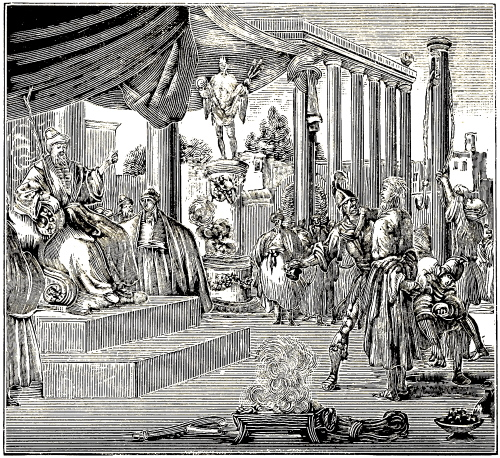
SECOND EXAMINATION OF THARACUS.
When Maximus held court the second time over these faithful witnesses of Jesus Christ, and sat upon his judgment-seat, he said: “Call in the ungodly Christians.” Demetrius, the captain, answered: “Here I am, my lord!” Then said the Proconsul to Tharacus: “Knowest thou not, that age is honored in many respects? Hast thou, then, not considered it, whether thou wilt still persist in thy first intention? Yea, advise with thyself, and sacrifice to the gods, for the prosperity of the princes; that thou mayest attain to honor.”
Tharacus answered: “If the princes and others who are of the same opinion with you, knew what there is in this honor, they themselves would turn away from the blindness of their vain conversation.”
Tharacus put on the rack the second time.—The Proconsul said to his beadles: “Strike him on the mouth with stones, and say to him: Desist from thy folly.” Tharacus answered: “If I did not exercise more care for my salvation than you people do, I would be as foolish as you are.”
The President said to him: “See, they have knocked thy teeth out; do have compassion upon thyself.”
Tharacus replied: “Do not imagine this; for though thou shouldst cause everyone of my members to be crushed, I could still remain strong and steadfast in him who strengthens me.”
The President said: “Believe me, it is better for thee, that thou sacrifice.”
144
Tharacus answered: “If I knew that it were better for me, I would not wait for this advice from thee.”
When Tharacus ceased to speak, the Proconsul said to his hangmen: “Smite him on the mouth, and make him speak.”
Tharacus replied: “My cheeks are knocked to pieces; how can I answer any longer?”
Maximus said: “And wilt thou, madman, not yet consent to worship, and sacrifice to the gods?”
Tharacus answered: “Although thou hast deprived me of my voice, so that I cannot cry aloud, thou shalt nevertheless not injure my soul; but thou hast in this hour greatly strengthened me in my opinion.”
Maximus said to his servants: “Bring fire! stretch out his hands, and put fire on them.”
Tharacus replied: “I do not fear thy temporal fire; but I would have to fear the eternal fire, if I should obey thee.”
When the glowing fire was laid upon his hands, the President said: “See, the fire is consuming thy hands; desist, therefore, from thy folly and sacrifice to the gods.”
Tharacus answered: “Thou speakest to me, as though because of thy cruelty I had already yielded to thy wish; however, but through the grace of God I am, in all my sufferings, as strong as ever.”
The Proconsul said: “Tie his feet together, and hang him up by his heels, and make a thick smoke under his face.”
Tharacus replied: “I neither regard thy fire, nor do I fear thy smoke.”
When he was hung up, Maximus said to him: “There shalt thou hang, until thou consentest to sacrifice to the gods.”
Tharacus answered: “Thou mayest sacrifice; for thou art accustomed to sacrifice human beings; but for me it is not lawful.”
Maximus said to his servants: “Bring vinegar mixed with salt, and pour it into his nostrils.”
NOTE.—Here a whole leaf is wanting in the original, namely, of the tortures which Tharacus, Probus, and Andronicus suffered in the second examination on the rack; however, concerning Andronicus the following additional was found.
The Proconsul said (namely, to Andronicus): “All this nonsense can avail thee nothing. But come, and sacrifice to the gods, that thou mayest not perish under the punishment.”
Andronicus replied: “It is the same that thou hast heard the first and the second time; for I am not a child, to be moved or turned by words.”
The President said: “You shall nevertheless neither conquer me, nor despise my tribunal.”
145
Andronicus answered: “We do not conquer thee, but our Lord Jesus Christ strengthens us.”
The President said: “The next time we hold court over these men, let other modes of torture be put in practice. In the meantime put him (Andronicus) in irons, and keep him in prison until tomorrow, and let no one see him.”
The President said: “Call the ungodly Christians in.” Demetrius, the centurion, answered: “Here I am.”
Tharacus brought forth first.—When he had brought forth Tharacus, the Proconsul said: “Dost thou still despise imprisonment, bonds, punishments, and tortures? Follow my advice, O Tharacus, and abandon this confession, which profits thee nothing. Rather sacrifice to the gods, by whom all things exist.”
Tharacus answered: “Woe shall come upon them. Thou thinkest that the world is governed by them; whereas they are destined for eternal fire; and not they only, but all those also who serve them.”
The President said: “And dost thou not yet desist, thou impious blasphemer! or thinkest thou not that for thy rash words I should cause thee to be instantly beheaded?”
Tharacus replied: “Then I would not die a lingering death, but a short one. But let me have a long conflict, that in the meantime my faith in the Lord may grow and increase.”
The President said: “Thou and thy fellow-prisoners must die according to the laws.”
Tharacus answered: “What thou sayest is an evidence of thy ignorance; for those who do evil die justly; but we who know of no evil, that is, who have committed nothing worthy of death before men, but suffer for the Lord, expect with confident hope the heavenly reward from the Lord.”
The Proconsul said: “Thou accursed miscreant! what reward have ye to expect, seeing you die for your wickedness?”
Tharacus replied: “It is not lawful for thee to inquire into, or to ask, what reward the Lord has laid up for us in heaven; and therefore we patiently suffer the wrath of thy madness.”
The President said: “Darest thou thus address me, thou accursed [one], as though thou wert mine equal?”
Tharacus answered: “I am not thine equal; but it is lawful for me to speak, and no one can silence me, for the sake of him who strengthens me, namely, the Lord.”
The Proconsul said: “Thou miscreant, I shall deprive thee of the power.”
Tharacus answered: “No one can take away the power from me, neither thou, nor your princes, nor Satan, the father of you all.”
Tharacus put to the rack.—The President said: “Now, seeing thou art bound and suspended, in order that you may be tortured, sacrifice in time, before I cause thee to be punished according to thy deserts.”
Tharacus replied: “That thou mayest do; but since I was formerly a soldier, thou mayest not torment me with all manner of punishment. Yet, lest thou think, I might yield to thy perverseness, go on and devise and inflict upon me all sorts of punishment.”
The President said: “Do not think that I shall sentence thee at once. I shall cause thee to be put to death by degrees.”
Tharacus answered: “Whatever thou intendest to do, do at once, and do not threaten.”
The President said: “If thou think, that some women will come and embalm thy body, thou art greatly mistaken, for it is my intention that nothing shall remain of thee.”
Tharacus replied: “Do with my body as pleaseth thee, now as well as after my death.”
“Maximian,” said the Proconsul, “break his jaws, and tear his lips.”
Tharacus answered: “True, thou hast crushed and marred my face; but thou hast quickened my soul.”
The President said: “Thou wretched man! Desist from thy vain thoughts, and sacrifice; that thou mayest be delivered from these pangs.”
Tharacus replied: “Dost thou think I am a fool or a madman, and that I, who trust in the Lord, shall not live in heaven? Thou mayest deprive me of this temporal life for a little while; but thou wilt thereby cast thine own soul into eternal damnation.”
The President said to the executioners: “Put the branding irons into the fire, and brand him on his cheeks or shoulders.”
Tharacus answered: “Though thou inflict many more torments than these upon me, thou shalt nevertheless not turn the servant of God to the shameful idolatry of devils, to worship them.”
The President said: “Bring a razor; cut off his skin; shave his head bald, and put burning coals upon it.”
Tharacus replied: “And though thou cause my whole body to be flayed, I shall still not depart from my God, who strengthens me, to endure all the weapons of your torturing.”
The President said: “Get the branding irons; let them get still hotter, and apply them to all his members and joints.”
Tharacus, as he suffered this, cried out: “May the Lord look down from heaven, and judge!”
The President said: “What lord dost thou call upon, thou accursed fellow?”
Tharacus answered: “The Lord whom thou dost not know, and who recompenses every one according to his works.”
The President said: “And shall I not exterminate thee, as I have told thee? Yea, even thy remains I shall burn, and scatter thy ashes to the wind; that the women may not come, and wind thy dead body in clothes to embalm it with precious ointments and spices.”
Tharacus replied: “I have said it, and say so still, do what thou wilt: thou hast full power over my body in this world.”
146
The President said: “Put him back into prison, and keep him until the next time for the wild beasts. Let another be brought before the tribunal.”
Probus brought forward.—Demetrius, the captain, said to the Proconsul: “Sir, here he is already, namely, Probus.”
The President said to Probus: “Advise with thyself, Probus, that thou mayest not fall again into the same punishment; for others, who on thy account have persisted in their obstinacy have rued it. Sacrifice now, therefore, that thou mayest be honored by us and the gods.”
Probus answered: “We are all of one mind, serving God with one heart and soul. Think not, therefore, that thou wilt hear anything different from us; for thou hast ere this heard and seen enough to convince thee, that thou canst not turn us. Here I stand before thee the third time, and do not yet regard thy threats. What dost thou wait for, then?”
The President said: “Ye have conspired together to deny the gods. Bind him, and hang him up by his heels.”
Probus replied: “Dost thou not yet cease to fight for Satan?”
Maximus said: “Believe me, before thou be tortured; have compassion upon thine own body. See, what dreadful torments are being prepared for thee.”
Probus answered: “All that thou mayest do unto me, shall conduce to the comfort of my soul; therefore, do what thou wilt.”
The President said: “Heat the branding irons red-hot, and apply them to his sides, so that he may desist from his folly.”
Probus replied: “The more foolish I appear to thee, the wiser I shall be in the law of the Lord.”
The President said: “Press the branding irons on his back.”
Probus answered as he was suffering: “My body is subject to thy power; but God will behold from heaven my humility and patience.”
In the meantime the President commanded that meat and wine should be brought, which had been sacrificed to the idols, saying to the executioners: “Pour wine down his throat, and take meat, and force it into his mouth.”
While they were busy doing this, Probus said: “The Lord behold from his high throne the violence ye do to me, and judge my cause.”
The President said: “Thou wretched man! thou hast suffered so much, and, behold! thou hast thyself received the sacrifice.”
Probus replied: “Ye have not accomplished much, by doing me violence. The Lord knoweth my intentions.”
The President said: “Thou hast eaten and drank what was sacrificed to the gods.”
Probus answered: “The Lord knoweth it, and hath seen the violence I have suffered.”
The President said to the executioners: “Apply the branding irons to the calves of his legs.”
Probus replied: “Neither the fire, nor the torments, nor thy father, Satan, can turn the servant of God from his confession.”
The President said to his servants: “Let sharp nails be heated, and put them into his hands.”
Probus answered as he suffered this: “I thank thee, O Lord, that thou hast made my hands worthy, to suffer for thy name.”
The President said: “The many torments have deprived thee of thy mind.”
Probus replied: “The great power which thou hast, has not only made thee a fool, but also blind; for thou knowest not what thou art doing.”
The President said: “Thou who hast been tormented on thy whole body excepting the eyes, darest thou speak thus to me?” “Pinch his eyes,” said he to the executioners, “that he may gradually become blind.”
When this had been done, Probus said: “Behold, thou has also deprived me of my bodily eyes, but thou shalt never be permitted to destroy the eyes of my faith.”
The President said: “Dost thou think thou wilt survive all these torments, or that thus thou shalt die happy?”
Probus answered: “Fighting thus, I gradually approach the end, so that I may finish my good and perfect confession, and be put to death by you without mercy.”
The President said: “Take him away, bind him, put him in prison, and let none of his companions come near him, to praise him for having continued so steadfast in his wickedness. He, too, shall be cast before the wild beasts at the next show.”
Andronicus put to the rack.—Then said the President: “Let Andronicus come forth.”
Demetrius, the captain, said: “He is already here.”
The President said to Andronicus: “Have at least compassion on thy youth, if thou hast prudently advised with thyself to reverence the gods: consent and sacrifice to the gods, that thou mayest be released.”
Andronicus answered: “May God never suffer thee, O tyrant, that I do aught against the law of God. Thou shalt never shake my good confession, which I have founded upon my Lord. Here I stand ready, for thee to make manifest on me thy hardness.”
The President said: “Methinks, thou art raving, and possessed of the devil.”
Andronicus replied: “If I had the devil in me, I should obey thee; but because I confess the Lord, I do not submit to the commands of the devil. But hast not thou the devil in thee? For, being deceived by the devil, thou doest the works of the devil.”
The President said to the Executioners: “Make bundles of paper, and put fire upon his body.”
When this was done, Andronicus said: “Though I burn from head to foot, the spirit nevertheless is alive in me. Thou shalt not conquer me; for the Lord, whom I serve is with me.”
The President said: “Thou madman! how long wilt thou remain thus obstinate? Seek at least to die upon thy bed.”
Andronicus answered: “As long as I live, I shall overcome thy wickedness.”
147
The President said: “Heat the branding-irons red-hot again, and put them between his fingers.”
Andronicus replied: “O foolish despiser of God! Thou art full of the wicked thoughts of Satan. Seest thou not that my body is almost consumed through the manifold torments thou hast inflicted upon me. Thinkest thou that now at the last I shall begin to fear thy devices? I have Christ dwelling in my heart, and despise thy torments.”
The President said: “Thou miscreant! knowest thou not that this Christ, whom thou worshipest became man, and was punished under the Judge Pontius Pilate?”
Andronicus answered: “Be silent, for it is not lawful for thee to speak evil of him.”
The President said: “What gainest thou by thy faith and hope in this man whom thou callest Christ?”
Andronicus replied: “I have thereby in expectation a great reward and gain; hence I endure all this so patiently.”
The President said: “Break open his mouth, and take meat that has been sacrificed, from the altar, and force it into his mouth, and pour in wine also.”
Andronicus called God to witness, saying: “O Lord! Lord! behold, what violence I suffer!”
The President said: “How long wilt thou thus obstinately endure the punishment? See, thou hast certainly eaten of that which has been sacrificed to the gods.”
Andronicus answered: “Cursed be all who honor the idols, thou and thy princes.”
The President said: “Thou miscreant, cursest thou the princes, who have obtained for us so lasting and tranquil peace?”
Andronicus replied: “They are cursed, who, as the pestilence, and as bloodhounds, turn the whole world upside down; whom the Lord by his mighty arm shall confound and destroy.”
The President commanded the executioners: “Put an iron into his mouth, and with it break out all his teeth, and cut out his blasphemous tongue, that he may learn no more to blaspheme the princes. Take away his teeth, and burn his tongue to ashes, and scatter the latter all about, lest his fellow-Christians, or some women, gather his remains, and keep them as precious relics. Take him away from here, and put him into prison, that at the next show he, together with his companions, Tharacus and Probus may be thrown before the wild beasts.” Acta Procons. per Metaph. and alios.
It is declared that the above account concerning the examination of the three aforementioned Christians was written entirely by the heathen themselves, who put them to death; only a few words having been altered, to make the sense clearer. A certain celebrated author mentioning this, writes as follows: “Herewith ends the third examination or inquisition on the rack, and thus far these proceedings with the martyrs have been recorded by the heathen clerk of the criminal court himself, and were doubtless afterwards bought for money by the Christians.”
Beloved reader! I could not forbear to translate these records, just as they were, for the most part word for word; not only because I have found them to be true and genuine in every respect; but also, because we can very clearly see therefrom, what form of inquisition or examination the heathen employed against the Christians; as well as with what manifold torments the obdurate heathen sought to compel the Christians to apostatize from the faith, and how remarkably God preserved his own against the devices and wiles of the devil.
It need not seem strange to the reader, that the proconsuls or criminal judges so frequently put to the rack the same Christians, to cause them to apostatize from the faith: for Lactantius tells us of a president in Bithynia, who for two years endeavored by all manner of torments to compel a Christian to apostatize, and who, when this Christian finally seemed to yield, boasted of it just as though he had conquered a whole province of a barbaric country.
As touching the rest of the matter, that is, how and when the sentence of the Proconsul was executed, the heathen have not recorded it; but some Christian brethren, namely, Macarius, Felix, and Verus, probably bought those records from the clerk of the criminal court, and added from their own observation what was wanting, since they had been eye-witnesses of it at the theatrical drama the following day.
Numerius Maximus, Proconsul of Cilicia, summoning Terentian, the provider of public sacrifices and theatrical performances which were held in Cilicia, commanded him to provide for the dramas for the next day. The following day a great number of men and women assembled in the amphitheatre, which was situated about a mile, or one thousand paces from the city. When the amphitheatre was filled with people, Maximus also came to witness the play, and in the first act of it, when many wild beasts were let out at the same time, many human bodies were devoured. We Christians kept ourselves concealed and waited with great fear for the bringing forth of the martyrs. Suddenly the Proconsul commanded the soldiers to bring in the Christian martyrs, namely, Tharacus, Probus, and Andronicus. The soldiers compelled some to carry the Christian martyrs on their shoulders, for they were torn and lacerated to such a degree, that they could not walk. We then saw them carried thus disfigured into the amphitheatre, and seeing how they had been maltreated, we turned our faces, and cried bitterly. Thus the martyrs were thrown down into the middle of the arena, as the offscouring or refuse of this world; and when the multitude beheld them, they were all frightened, and the people murmured greatly against Maximus for having thus tormented them, and then yet sentencing them to 148 be thrown to the beasts; yea, many went away from the amphitheatre, censuring Maximus for his inhuman cruelty. When Maximus saw this, he commanded the soldiers who stood near him, to note those who murmured against him, and were leaving; so that he might afterwards examine them in regard to it. In the meanwhile he commanded that the wild beasts should be let out, to rend the martyrs. In Scriptura Christianorum Fratrum.
In order to avoid prolixity, we shall sum up what follows here in the aforementioned account of the Christian brethren, in these words: “The wild beasts were let out, especially a frightful bear, and then a lioness; both of which indeed, by roaring terribly, made a dreadful noise, so that also the spectators were frightened by it; but they did not harm the martyrs, much less tear or devour them. The Proconsul in his rage commanded the spear-men, to thrust the bear through; the lioness, however, on account of the fear of the people, was let out by a back door, which was broken in pieces. Then Maximus ordered Terentian, to let in the gladiators, who should first kill the Christians, and then fight with each other for life. These, when they came in, first thrust through the martyrs; which happened on the 11th day of October, A. D. 290, at Tarsus in Cilicia.” When the drama was over, and the Proconsul was about to go home, he left ten soldiers in the amphitheatre, charging them, to mingle the dead bodies of the martyrs with those of the heathen gladiators, that the Christians might not be able to distinguish them. However, it is stated in the above account, that the Christians removed their dead bodies, and buried them in a cave in a rock.
In regard to this, A. Mellinus, who has referred to it, has the following remark: “They who did this, also wrote the conclusion of this history; hence we have not the least reason to doubt the veracity of this account of the proceedings against the martyrs.” First book of the Mart. 1619, fol. 96, col. 1; but with reference to the previous proceedings against the martyrs, see fol. 93, col. 3, and fol. 94, col. 1–4, and fol. 95, col. 1–3.
At the close of the third century the eminent Arnobius was introduced, and inasmuch as his life extended from one century into the other we refer to him again here in the beginning of the fourth century. He speaks of the virtue and benefit of baptism, as may be seen in the proper place.
Fusca and the handmaid Maura were baptized after previous instruction.
At this time (in the time of Sylvester) there existed such sects as were afterwards called Waldenses, Anabaptists, etc.
One Donatus was called an Anabaptist, and his followers, Anabaptists.
Athanasius, while yet a child, indicated, with other children, that at Alexandria they baptized upon confession of faith.
In Canon 12, 13, 15, of the Council of Nice several good things are established with regard to baptism.
Athanasius, having become a man, teaches wholesome doctrine, not only with respect to baptism, but also in regard to other matters of religion.
Soon after him comes Marius Victorinus, who joins together faith, confession, and baptism.
Then appears Hilarius, who wrote very appropriately on baptism, and also opposes antichrist, images, and traditions.
Monica, the mother of Augustine, was baptized in adult years, though she was born of Christian parents.
In the Council of Neocesarea, the candidates for baptism, the baptizing of pregnant women, Christ’s baptism, etc., were discussed.
Again sects appear, who were like the Baptists.
St. Martin was instructed from his twelfth to his eighteenth year, and then baptized. He strongly opposed war.
Ambrose was baptized in adult years, at Milan, though his parents were Christians. He advanced sound views on baptism, against war, of the sacrament, etc.
Ephrem, Gregory of Nyssa, the Councils of Laodicea and Elibertum, and also Optatus Milevitanus, give correct views on baptism.
Gregory of Nazianzus, born of Christian parents, was already in his twentieth year when he was baptized. Nectarius was baptized in adult years. Basil, the son of a Christian, and Eubulus, consulted together, and were baptized on their faith, at Jerusalem. Posthumanius made a glorious confession at his baptism. John Crysostom was suffered by his parents, though they were Christians, to remain unbaptized, not receiving baptism until he was twenty-one years old. Also, his views respecting baptism; his teaching against war, confession, etc.
Jerome, also born of Christian parents, was baptized at Syridon, when he was thirty years old.
Augustine, Adeolatus, Alipius, Euodius, Epiphanius, with his sister, all baptized upon faith. Conclusion of baptism in the fourth century.
That the holy order of the baptism of Jesus Christ was practiced also in the fourth century, appears from various teachings and examples of the fathers, from which, we shall present only a few, but such as are certain and genuine testimonies.
A. D. 301.—At the close of the preceding century, for A. D. 300, we introduced the eminent Arnobius, and showed that, speaking of baptism, he says: “That the candidates for baptism, when they are baptized, state before the minister their perfect willingness, and make their confession with their own lips.”
This Arnobius follows us also in the beginning of this century, namely through the years 301, 302, 303, 304; and having not abandoned his previous 149 views regarding this matter, he confirms them with the following testimonies.
Speaking against the tenets of the Romanists, who ordain consecrated, or, properly speaking, exorcised water for baptism, he writes thus (in Psalm 74): “It is written: Thou breakest the heads of the dragons in the waters; that is,” says he, “the heads of the dragons in baptism;” but by saying, in the waters, he means to signify that the same baptism can be administered in all kinds of waters, as, in rivers, lakes, wells, baths, seas, etc. In these the head of the dragon, that is Satan, is broken in all waters. Jacob Mehrn. Bapt. Hist., page 323.
Of the virtue and benefit of baptism he teaches as follows, Psalm 32, where the Psalmist says: “In the floods of great waters they shall not come nigh unto him,” upon which he remarks: “that men, by the true water of baptism, draw nigh to God, who is a refuge from the fear of Satan that encompasses us.” Jacob Mehrn., page 324.
Again, Psalm 32, he says: “Man is redeemed; no angel, nor any other creature, but man alone praises his mercy, says the Lord, whose sins he forgives in baptism.” Jacob Mehrn., page 325.
Although these words of Arnobius are somewhat obscure, yet they contain light enough, to emit rays of divine truth concerning the matter of baptism. For when in the first place he says, that the head of the dragon is broken in baptism (by dragon meaning Satan), he certainly indicates thereby, that he speaks of persons who, having attained maturer years, become subject to the assaults of Satan, and that these, in baptism, break the head of the dragon, that is, Satan, by means of the true faith, through Christ; hence he does not speak of children—who are ignorant of the assaults of Satan—and, consequently, not of infant baptism.
Secondly, when he says that men, by the true water of baptism, draw nigh to God, he certainly indicates that he speaks of men who have departed from God through disobedience, consequently, of persons who have arrived at the years of discretion; and not of infants; for how can any one draw nigh to God by baptism, who has not departed from him? Infants have not departed from God through disobedience; hence they cannot draw nigh to him by baptism.
Thirdly, when he speaks of man, who praises the mercy of the Lord, and whose sins the Lord forgives in baptism, he certainly indicates that he speaks of men who are capable of praising the mercy of the Lord, namely, men possessing understanding, and who have sinned; for only he that has sinned can have his sins forgiven; but with infants, who have never sinned, no forgiveness can take place, and consequently, no baptism for the remission of sins. By this the obscure words of Arnobius became clear.
NOTE.—P. J. Twisck records, for the year 306, that Constantine the Great, the son of the believing Helena, was baptized in Jordan, in the sixty-fifth year of his age, after having been instructed (Chron. 4th book, page 89, col. 1); from which it is apparent, that at that time Christians left their children unbaptized, in order that they themselves might believe and be baptized.
A. D. 308.—Fusca, the pious maiden, conceived a desire for the Christian faith when she was quite young, and, having manifested this desire to the servant-maid, Mauro, who also felt an inward drawing towards Christ, they were thoroughly instructed in the Christian faith at Ravenna, by the teacher Hermola, and baptized. P. J. Twisck, Chron. 4th book, page 90, col. 1, from Grond. Bew., letter B, Leonh., lib. 2.
A. D. 315.—It is stated that already in the time of Sylvester, there was taught and maintained the same doctrine which was afterwards maintained by countless numbers of the baptistic Waldenses, yea, that those churches which in the 11th, 12th, 13th, and in subsequent centuries were styled Waldenses Albigenses, and lastly, Mennonites, or Anabaptists, had existed already at that time, and indeed, long before. Of this a certain celebrated author among the Romanists bitterly complains, in a very old book, saying: “These heretics (the people mentioned above) have always had many sects among them; but of all that ever existed, none was more pernicious to the church of God (understand the Roman church) than the Poor of Lyons (the Waldenses or Anabaptists), and this for three reasons: In the first place, because of their antiquity; some asserting that they existed already in the days of Sylvester, others referring them even to the time of the apostles.” Jac. Mehrn., page 615.
In another place Jacob Mehrning writes thus about the abovementioned people: “This is not a new sect that originated only at that time (that is, in the time of Waldus); for the papistic writers themselves confess that they existed already in the time of Pope Sylvester, nay, long before him, even in the time of the apostles.” B. H., page 670.
In another place he writes that Flaccius has also recorded the same, from an ancient papistic book, namely, that they existed from the time of Sylvester, yea, from the time of the apostles; and that Thuanus, though he compares them to another people, states that their doctrine has continued through many centuries.” Page 682.
The time of the reign of Sylvester, who was the first pope of this name, and on the register of the Roman bishops the 34th, is fixed in the year 315. See P. J. Twisck, Chron., 4th book, p. 93, col. 1, from Platina, fol. 63. Fasc. Temp., fol. 99, Hist. Georg., lib. 1, Fr. Ala., fol. 22, Chron. Seb. Fr., fol. 13.
A. D. 317.—Donatus, an over-learned bishop at Carthage,101 who had many adherents in Africa, taught among other things: “That the preaching of the divine word and the administration of the 150 sacraments by an ungodly minister, were of no avail. They (his followers) held that the church of Christ existed only among them, and hence, they rebaptized all who wished to adopt their religion, saying that the heretics, or the Pope, had no Christian church, and consequently, no baptism, inasmuch as there was only one God, one faith, one Gospel, one church, and one baptism. ‘They, like the Anabaptists, also held,’ says Franck, ‘that no children, even in the extremity of death, should be baptized, but only believing adults who desired it.’ ”
When he was imprisoned he upbraided Augustine, saying that no one ought to be imprisoned on account of his faith, God had given man his free will, to believe as he chose. Concerning all this, see, P. J. Twisck Chron., 4th book, p. 93, col. 2, and page 94, col. 1, from Merula, fol. 255. Zeg., fol. 79. Seb. Franck, Chron. van de Roomsche Ketters, letter D., fol. 76, printed A. D. 1563.
As regards Donatus, if it be true that he erred in some things, or failed in some matter of faith, we will not defend him therein; however, this much is certain, that owing to the absence of his writings, we have no other information concerning him, than that which comes to us through the mouth and hand of his adversaries.
Concerning this, P. J. Twisck, in a certain place, expresses his regret, saying, that in his Chronijk, for the year 410, he wrote something derogatory to his followers, before he had been properly informed regarding it; which he afterwards, for the year 417, refutes and explains more clearly by quoting from Bullinger: “That the followers of Donatus were similar to the Anabaptists (whom he calls Baptists); that they taught, that no one ought to be compelled to do good or to accept the faith.” Again: “that every heretic should be left to follow his particular faith without restraint or compulsion.”
On this account, P. J. Twisck, in the same place, relates from another author, that it is quite probable that these people were burdened with many unjust accusations. “It would be desirable,” writes he, “to have in our possession their writings, teachings, and deeds; for if it be the case, that they were in all respects like the Anabaptists, and would compel no one in matters of faith, then it is sufficiently apparent, that they are unjustly charged by other writers, with tyranny. I have given this a place here, because the year 410 was already arranged when this reached me.” Thus far, P. J. Twisck, Chron., 5th book, page 147, col. 2, from H. Bulling. Contra Anbapt., lib. 5, fol. 216, 222.
NOTE.—We accept of the writings of Donatus only that which is good and true; for the rest we assume no responsibility.
About A. D. 318.—It appears that when Athanasius was yet a boy, at Alexandria also, baptism was not administered otherwise than upon confession of faith; at least, that it was not customary to baptize infants, is evident from the following circumstances of a certain occurrence related by Ruffinus and Zozomenus: “When the day of the martyr Peter was celebrated at Alexandria, by the Bishop Alexander, and he, after the solemn service was over, was awaiting his assistants, or pupils to dine with him, he observed in the distance some children playing on the sea shore, who, very probably, not for the first time were imitating the bishop and those things which are generally done in church. But when he observed the children more attentively, he noticed that they were performing some mysterious things. Astonished at this, he summoned his assistants to him, and showed them what he had seen from a distance. Then he commanded them to seize the children and bring them to him. When they came, he asked them, what they had been playing, and what and how they had been doing? They, as was natural for their years, at first were frightened, and denied the matter, but afterwards related it just as it had taken place, and confessed that they, through Athanasius, who in this game had imitated the Bishop, had baptized some catechumens, that is, boys who had not been baptized. Alexander then inquired of those who they said had been baptized, what questions had been put to them, and what they had answered; likewise interrogating him who had put the questions; and found that all was in accordance with the manner of our religion. Jac. Mehrn., 2d part, pp. 356, 357, from Nicephor., lib. 8, cap. 44. Also, H. Montan. Nietigh., pp. 64, 65, from Ruffin. Eccl. Hist. 1, cap. 14. Zozom. Eccl. Hist., lib. 3, cap. 16.
From these circumstances it is evident that infant baptism was not customary there. First, when we take into consideration the conduct of these boys, we see that in the Christian church at Alexandria the usual mode of baptizing at that time was this, namely: that the Bishop, or whoever administered baptism, first interrogated the candidates for baptism, and then, after they had answered him, they were baptized.
Secondly, if we consider the boys themselves, who apparently were ten or twelve years old, which probability is increased by the fact that Ruffinus (as H. Montanus shows), calls them catechumens, that is, such as were being instructed in the faith, which is plainly indicated by their performance, since they were able to imitate in every particular such important services. These boys are nevertheless called unbaptized, wherefore Athanasius, though by way of play, baptized them.
Moreover, that these boys were born of Christian parents, appears in various ways, as, for instance, in this, that they diligently attended the Christian assemblies, for without this they could never have represented so completely in all its particulars, the baptism practiced in the church. Likewise, in the fact that Alexander and his assistants (as the account further sets forth), enjoined the parents of these boys, who before were unbaptized, but had now been thus baptized, to bring them up in that vocation, namely, in the Christian religion, which certainly would not have been done, had their parents been heathen and not Christians. It is also stated that this was done with invocation and confession of God’s holy name, which certainly would not have been the case with heathen, who worshiped either no god, or many gods.
As to what Alexander held of this performance, we leave it to its own merits; it suffices us to have 151 shown that at that time the Christians at Alexandria suffered their children to remain unbaptized; inasmuch as they were first instructed, and then baptized upon confession of their faith, which, as has been shown, is clearly indicated by the course of the aforementioned boys.
A. D. 333.—It is recorded that in the first great council at Nice, held against Arius, and various innovations in the church, it was resolved among other things:
“Canon 21. The Paulianists and Photinians shall be rebaptized.”
“Canon 12. If any apostatize under persecution, without having been tormented, and sincerely repent, they shall be put among the catechumens for five years, and after two more years, shall be reinstated among the faithful, with prayer.”
“Canon 13. But they who, for the sake of the confession of the faith, have relinquished the military profession and again return to it, shall do penance for thirteen years, and then be received again; however, if they truly repent, the bishop is authorized to mitigate the term of penance, provided he sees that their repentance is fruitful and devout.”
“Canon 15. Concerning the catechumens who have apostatized, it is decided, that they shall be excluded from the prayers of the catechumens who have not apostatized, for three years, and at the end of that time be received back again.” Jac. Mehrn., pages 352, 353, ex Concil. Nicen. Secund. Ruffin.
This is the great Council which is extolled as orthodox and Christian by nearly all so-called Christians. Be this as it may, we see no reason to praise it so highly, seeing that we must honor the precepts of God’s holy word alone, whereas the rules of that council were made by fallible men. Yet, so far as these men have laid down precepts that accord with the precepts of God’s holy word, or, at least, do not militate against them, so far we accept, or, at least, do not oppose them.102
When it is said, in Canon 21, that the Paulianists and Photinians shall be rebaptized, it establishes, that, according to the Holy Scriptures, not every baptism is a genuine or true baptism, and that consequently there is but one baptism which can in truth be called genuine, namely, that baptism which is administered by the true church, and upon the true faith. This is also established at this day by the Anabaptists, and regarded as a precept from the holy word of God.
It is also said in the 15th Canon concerning the catechumens, that if they have fallen, they shall be excluded three years from the prayers of those catechumens who have not fallen. This is an indication of the carefulness exercised by that assembly, to admit to baptism, according to the doctrine of the holy Gospel, no unprepared catechumens before they had truly repented after their fall.
The 12th Canon, speaking of the penance to be performed by those who, under persecution, had apostatized without having been tormented; and the 13th Canon, treating of the very great and long penance to be endured by those, who, after having become Christians, had resumed the military profession, and thus become apostates; these precepts we say, militate neither against the holy Scriptures, nor against the views of the Anabaptists, but sufficiently confirm them both.
NOTE.—It is recorded that at this time pseudo-apostles taught that the church of Rome was rejected of God, and that it was not his church, but Babylon, and the whore mentioned in the Apocalypse, who rides the beast with the seven heads; and that we therefore do not owe obedience to the Pope; that under the New Testament we are in no wise bound to give tithes to the priests; that all manner of swearing is unlawful; that a consecrated church is not better to pray in than a pigsty. Seb. Fr. Chron., fol. 120, col. 3.
A. D. 335.—At this time, Athanasius vigorously maintained the cause of such as had been baptized according to order of Christ, against those who, it seems, asserted that baptism might take place without previous instruction, or confession of faith. He says (Serm. 3., Contra Arian.): “Our Savior did not simply command to baptize, but first said, teach, and then, baptize; so that true faith may proceed from the doctrine, and then baptism be perfected with faith.” P. J. Twisck, Chron., 4th book, page 99, col. 2; from Grond. Bew., letter A. Jac. Mehrn., Bapt. Hist., 2d Part, page 370.
NOTE.—At this time Athanasius taught that it is the duty of every Christian, to read the holy Scriptures, on the 6th chap. Eph. Again, he prohibited the practice of making a likeness of God for the purpose of worshiping him thereby, etc., as being an unlawful thing. Contr. Gent. Sam. Veltius, in the Geslacht-register, page 118.
Notice concerning several writings attributed to Athanasius.—The pedobaptists, prone to bring forward everything that seems in any wise to favor their views, were wont to adduce the 114th and the 124th question of a certain book called, Various Questions of Holy Scripture, attributed to Athanasius. But in answer to this we say: that said book is not the work of Athanasius, but of some other author who wrote subsequently to him; as in his 23d question he cites Athanasius as one having lived before him, saying: “This is the testimony of the great Athanasius, a man who was mighty in the divine Scriptures; but we, who are enlightened by him.” Moreover, that book contains many opinions foreign to Athanasius, as shown by the Centuriatores Magdenburgenses, Cent. 4, cap. 10, p. 1032. See also, H. Montan. Nietigh., p. 69, and J. M., Bapt. Hist., pages 360, 361.
NOTE.—A. D. 320. Lactantius Firmianus taught at this time: 1. “That the sacrifices of the Christian are, a good life, purity, and good works. 2. That there is no religion in a place where there are images. Lib. 2, of the Divine Instruction. Also, Sam. Veltius, in the Geslacht-register,. pp. 116, 117. 3. He taught against compulsion of conscience, and 152 revenge, as appears from the following. He writes to the Emperor Constantine (5th book, chap. 20): “The more the religion of God is suppressed, the more it breaks forth and grows; hence they should employ reasoning and admonition; it is not necessary to proceed with violence. For religion admits of no compulsion; persuasive words can do more to promote the cause than blows.” Again (5th book, chap. 21) he writes: “We Christians do not desire that any one should serve God, the Creator of all, against his will; neither are we angry if he does not serve him; for we trust his Majesty, who can as easily avenge himself against those who despise him, as he does the vexations and injuries inflicted upon his servants. Therefore, when we suffer such shameful things, we say not one word against it, but commit all vengeance to God; not doing as those who would be regarded protectors of their gods, and very cruelly assail those who do not worship them.” Korte ontschuldiging, by P. V. K., edition of 1643, page 47, from Religions Vryheydt, 2d part, p. 10.
About A. D. 340.—Marius Victorius writes in the fifth book against Arius: “Every one that is baptized, and says he believes, and accepts the faith, receives the Spirit of truth, that is, the holy Ghost, and is made holier by him.” J. Mehrn., Bapt. Hist., page 325. I find in authentic writers, no other account of baptism by this Marius, so that this seems to be the only thing he has written about baptism, and from this, too, it is obvious that he must have been a stranger to infant baptism, seeing he joins together confession, faith, and baptism, in the one that is to be baptized.
A. D. 350.—About this time Hilarius attained to the faith in Jesus Christ, and having been baptized upon this faith, he proceeded to defend the truth which he had received and accepted, and, for the strengthening of the faith he had adopted, and that he might live according to the same, he prayed to God (lib. 12 de Trinit.) as follows: “Dear God, preserve my faith and the testimony of my conscience, that I may ever keep that which I confessed in the sacrament of my regeneration, when I was baptized in the name of the Father, the Son, and the Holy Ghost; namely, that I worship thee, O God our Father, and thy Son with thee, and that the Holy Spirit, that proceeds from thee, may be awakened.”
Again Vicecomes (lib. 2, cap. 27) quotes from Hilarius, on the 15th chapter of Matt. the following: “They that come to baptism confess first, that they believe in the Son of God, and in his suffering and resurrection; and this confession is made or pronounced at the sacrament of baptism.”
Again, Hilarius writes (vol. 2, de Trinitate): “The Lord has commanded to baptize in the name of the Father, and of the Son, and of the Holy Ghost; that is, upon the confession of the Author (that is, him who in the beginning created all things), and the First-born, and the Free Gift (that is, the Son and the Holy Ghost).” Jac. Mehrn. Bapt., Histor., 2d part, pages 371, 372.
Hilarius, originally a heathen, who subsequently became a Christian, and was baptized at Rome, A. D. 350, was a very learned and eloquent man. He writes (lib. 2): “The Lord has commanded to baptize on, or in, the name of the Father, of the Son, and of the Holy Ghost, that is,” etc.
He also defended the truth against the Arians, on account of which he was exiled; and he likewise vigorously opposed the arrogance of the see of Rome, and its dominion over other churches, and said that antichrist would devastate the earth through wars and murder.
To those who concerned themselves more in wondering at the building of the temple, than in the consideration of the doctrine he says: “You are indeed unwise, to look with wonder upon these things; for, you must know that antichrist shall once set his throne there.
“The nature of the name antichrist is opposition to Christ, which he effects under a specious semblance of the Gospel. He transforms himself into an angel of light, that he may alienate the Christian mind. He has already, to some extent, commenced his progress, pretending to be Christ, though he is departed very far from Christ.
“They (that is, the Antichristians) ambitiously desire the aid of the secular power, which they draw to themselves in order to advance their name and honor, and to protect their church; thus working with a worldly ambition, notwithstanding it is folly to employ secular power in defense of the Christian church.
“Let me ask you, ye bishops, what aid did the apostles employ in proclaiming the Gospel? by the assistance of what magistracy did they preach Christ, and convert the heathen from idolatry to God?
“Now the church courts the favor of the world, and boasts that the world loves her, who could at no time have been the church of Christ, without being hated by the world.”
Again, on the 68th Psalm, he says: “God is now preached, honored, and worshiped in stone, wood, and metal, and the Master-builder of the world, the Father of us all, is fashioned in perishable matter, to which they have been brought by the enticing words of philosophy. With these and like words he greatly censures the abuse practiced by the church of Rome.” P. J. Twisck, Chron., 4th book, page 104, col. 1, 2, from Socrat., lib. 3. Casp. Swinc., epist. 1, fol. 877. Seb. Fr.
Since the above passages from Hilarius are not only excellent, but also plain, so that they require no explanation, we leave them and proceed to others who confessed the same faith.
NOTE.—At this time, Hilarius taught that all human traditions, on account of which God’s commandments are transgressed, must be rooted out. On Matt. 15, Canon 14. Sam. Veltius, Geslacht-register, page 122. He also writes: “The Father revealed to Peter, who said: ‘Thou art the Son of God,’ that the church should be built upon this 153 rock of confession.” “This faith,” he says, “is the foundation of the church; this faith has the keys of heaven.” In the same place, as well as in the 6th book on the Trinity.
A. D. 350.—In the meantime we find that the parents of Augustine’s mother, though they were Christians, did not have their daughter Monica baptized in her infancy; inasmuch as she was not baptized until she had reached the years of understanding, and this at the time when the followers of Cyprian practiced infant baptism to a very great extent. With regard to this, I find the following account: “Moreover, even in Africa, where Cyprian had held the aforesaid council—to determine on the precise time for baptizing infants—and resolved that baptism should be administered to infants as soon as they were born, it was, about the year 350, not observed by all Christian believers. Of this, we have an example in Monica, Augustine’s mother, a very pious woman, born of Christian parents, who also was baptized when she had reached the years of understanding, as Augustine himself testifies.” H. Montan. Nietigh., page 71, from Augustine, lib. 2. Confess., cap. 3, and lib. 9, cap. 8 and 13.
A. D. 351.—It is recorded that the Christians at Neocesarea declared themselves openly against infant baptism, in a convention or assembly of the ministers, called the council of Neocesarea; so that infant baptism, which then began to prevail in different places, could gain no support there, as appears from the various rules adopted by this body.
In Canon 5, we read: “If a catechumen who is not yet baptized, and has his place among the catechumens in the church, has been seen in a sin, he shall hear the preaching on his bended knees; that he may refrain from the sin he committed; but if he persists in it, he shall be expelled.”
In Canon 6, we read: “Pregnant women may be baptized, whenever they desire it; for in this sacrament there is no communication between the mother and the child which is born of her; but every one must in this confession himself declare his free will and good intention.
Canon 11, after some other words declares: “The Lord was not baptized until he was thirty years old, and thereupon he preached.” Jacob Mehrn., Bapt. Hist., 2d part, pages 351, 352.
First, when in Canon 5 mention is made of the catechumens, it certainly indicates that it was customary to instruct the young before baptism, in the articles of the faith, upon which followed the confession of the same, and baptism. This cannot be contradicted.
Secondly, when in Canon 6 it is established that pregnant women may be baptized whenever they desire it, because there is no communication between the mother and the child which is born of her, it clearly confirms that infant baptism had no place whatever among them, but, that they were indeed inimical to it. It appears that a difficulty was raised at that time, as to whether pregnant women might be baptized or not; for it was thought or feared that the fruit had such communion with the mother, that the child, too, would become a partaker of the baptism received by the mother; which would have been contrary to the views held by the church, that no one should be baptized except upon his own confession of faith, and consequently, no infants, much less unborn children. But this apprehension or difficulty was removed, when it was declared that in the reception of baptism there is no communication between the mother and the child, and that for this reason the child does not participate in the baptism received by the mother. This is too clear to be refuted.
Thirdly, when in Canon 11, mention is made of Christ being baptized when he was thirty years old, notwithstanding that preaching is here spoken of, and that the same ought not to be undertaken by one before he is thirty years old, the baptism which is administered upon faith or in adult years, is nevertheless also recommended and deemed necessary. For, as Christ was baptized in adult years, and forthwith began to preach, so that the time of his baptism was also the time of his preaching, even so (the Canon apparently means to say), baptizing, like preaching, may only take place in adult years; for as the one requires understanding, so does the other, according to the example of Christ.
A. D. 360.—P. J. Twisck writes: “Notwithstanding that at this time, much bloody cruelty was practiced against the bishop who sided with Arius, so that this party was almost wholly crushed, still, according to history, there remained sects like the Anabaptists, etc. If their books were extant, we might give an account of what they taught concerning all these matters; but as it is, we let it suffice with what others have written.” P. J. Twisck, Chron., 4th book, page 106, col. 2, from Jac. P. Verm. Onsch., lib. 4, fol. 131.
It is exceedingly to be regretted that so few of the writings of the Anabaptists who lived at that time, are extant; for thereby we are compelled to receive information concerning them from the mouths of their enemies; which information, as we may readily judge, was not dictated by love, but by animosity. However, we owe thanks to God, that even this much has come down to us respecting their history; since Satan, through the instrumentality of his adherents, has always aimed to exterminate, not only their books, but also their lives, yea, their bodies and souls, if this were possible.
A. D. 362.—Saint Martin, born of heathen parents, when he was ten years old, went, contrary to the will of his parents, to the meetings of the Christians, embraced Christianity and was baptized when he was eighteen years old. Being now a Christian, he desired to be discharged from the military profession into which he had been brought by his parents; hence he said to the apostate Emperor, Julian, that it was not lawful for him to fight, because he was a Christian.
But as the Minorite, Thomas van Heerentaals, in his Mirror of the Ten Commandments and Seven Sacraments, gives a somewhat fuller account concerning St. Martin, and especially of baptism as practiced at that time, we shall make a short extract from it. He says: “In former times it was customary to administer holy baptism but twice a year, namely, on Easter eve and on Pentecost eve; except 154 in cases of necessity, which was fourfold: 1. In a siege. 2. In danger of martyrdom. 3. In peril at sea. 4. In dangerous sickness. In such cases they baptized all, and at all times, that no one might die without baptism. But when these four reasons did not exist, baptism was administered only on the two abovementioned days, and that with great solemnity and dignity, and all who were admitted to baptism, had attained the years of understanding; even St. Martin, that holy man, was a catechumen for six years—from the time he was twelve, until he was eighteen years old—before he received baptism. P. J. Twisck, Chron., 4th book, page 110, col. 1, 2.
A. D. 363 and 364.—In the time of Julian the apostate there lived and shone as bright lights, various excellent men, whose learning and piety it is not necessary to extol, since it is sufficiently known. They gave expression to their orthodox convictions by word and by deed, especially with regard to the matter of baptism, that it ought to be administered after previous instruction, upon faith and repentance.
At the same time, A. D. 363, there lived Ambrose, who is stated to have been born of Christian parents. His father’s name was also Ambrose, while that of his mother was Marcellina. He, too, was not baptized until the day on which he was chosen bishop of Milan, after having been instructed in the catechism, that is, in the doctrines of the faith.103 See concerning this, Tract van den loop der wereld, by F. H. H., printed 1611, page 47, 48, from Paul, de vita Ambrosii. Naucler. Chron. Generat. 13.
Such a procedure, namely, thus precipitately to elect any one bishop or teacher, as is stated here concerning Ambrose, we do not commend; but we notice here, that Christians at that time had not generally adopted infant baptism; nay, that some, notwithstanding the papal power, purposely did not have their children baptized; causing them, when they had reached maturer years, to be instructed first, and then baptized, upon their own confession.
Ambrose (Serm. 61) makes the statement: “It was customary for all people to be baptized at Easter.” In Lib. de Jejunio, cap. 10, he says: “Now comes the day of the resurrection; now the elect are baptized.” Yet on 1 Tim. 4, he says that the sick were baptized on any day. Jac. Mehrn., Bapt. Hist., 2d part, page 334.
These words of Ambrose confirm our preceding assertion; for when he says that at Easter it was customary to baptize all people, he sufficiently declares that at that time infant baptism was not a custom. For not only at Easter, but throughout the whole year, children are born, the baptism of which, because of the danger that they might die, could never have been postponed until Easter, had infant baptism been deemed necessary for salvation. But Ambrose removes all doubt when he says what persons were baptized then, namely, all people; for by the word people there are generally understood adult or rational persons, and not infants in the cradle.
Moreover, when he writes that the sick were baptized on any day, he proves thereby, that infant baptism was not practiced in the church of which he speaks. For, if it had been customary there, to baptize infants, it would not have been necessary to baptize the sick on any day, since they would have been baptized already in their infancy; or our opponents must show that the sick, who were baptized any day, were also baptized in their infancy; which they dare not maintain, seeing these churches would then have to be regarded anabaptistic. Nevertheless, one of two things must follow: Either that the sick who were baptized in their infancy were rebaptized, or that the adults baptized had not been baptized in their infancy. If the former is true, then the Anabaptists, as they are called, flourished already in those early times. But if the latter is true, then there were at that time whole churches who rejected infant baptism, or, at least, suffered their children to remain unbaptized. This is so clear that it cannot be refuted.
“Ambrose (on Rom. 1) ridicules those who say: ‘We cannot come before God except through the mediation of the saints, just as we come before a king through the mediation of counts.’ ‘Well then,’ says he, ‘is not he guilty of contempt of majesty, who ascribes to counts the honor due to the king? Certainly. Why then, will not they consider themselves sinners, who give God’s name and honor to creatures, and, setting aside the Lord, worship his servants? Because kings are not acquainted with the individual wants of every one, interpreters and advocates appear before them; but God, to whom nothing is hid, needs no advocates or informants, but simply an humble heart.’
“Again: ‘They now bestow such names and honors upon the images, as they would never have dared to give to the living person, namely, divine honor; and this, when they are dead.’ Thus Ambrose reproves the image worship of the Roman church, and (on Col. 1) positively asserts that ‘neither elements, nor saints, nor angels should be honored or worshiped, but Christ alone.’
“It seems,” says he, “that Ambrose, too, would seek antichrist at Rome;” for he says that ‘antichrist shall restore to the Romans their freedom, under his name,’ and calls the city of antichrist ‘the city of the devil.’ He says further, that ‘antichrist shall be revealed after the downfall of the Roman Empire, or when the Emperors shall have lost their power;’ and history shows that the decline of the Roman Emperors was the augmentation of the power and dominion of the Popes or antichrists.
155
“Ambrose says further: ‘The violence of worldly opponents must not be overcome with worldly, but with spiritual weapons; and heretics must be punished only by exclusion from the church; for the champions of Christ seek neither weapons nor iron balls.’
“Again, in regard to marriage he says: ‘Purity of the body is something to be desired by us, and I commend it by way of advice, but do not enjoin it as a command; for the virgin state may be advised, but not commanded.’ Hist. Tripart., lib. 7, cap. 8. Adolphus Tectander Apol., fol. 163. Casp. Swinck, Epist. 1, fol. 877. Hier. Zanc., fol. 65. D. Anth. l., fol. 116.
“Again: The words of Ambrose clearly indicate that he means that the sacrament (the Lord’s Supper), should be received under both forms, that is, with bread and wine. Lib. 9, cap. 30. Seb. Fr., fol. 50.
“Again: ‘The body of Christ is not material or earthly food, or bread, but a spiritual, eternal bread, which feeds believing souls. Regenerated men belong to this table, of which the ungodly cannot partake.’ Chron. Seb. Fr. on Ambrose.
“Again: Ambrose says also: ‘We are in duty bound to examine the churches, and if there is one which rejects the faith, and does not hold to the foundation of the apostolical doctrine, we must leave it.’ ” In Lucam, lib. 6, cap. 9. P. J. Twisck, Chron., 4th book, page 114, col. 2 and 115, col. 1, 2.
A. D. 364.—It is recorded that in or about the second year of Julian, the Apostate, there lived and wrote the very learned, yet humble, Ephrem, surnamed Syrus, who, in writing of baptism, relates that in his time it was customary for people, when they were baptized, to renounce with express words the devil and all his works, Jac. Mehrn. in Bapt. Hist., 2d part, page 328.
Ephrem (Lib. de Poenit., cap. 5) also enumerates the works of Satan which we renounce in baptism, as fornication, adultery, uncleanness, lying, stealing, envy, etc.
Page 336. He also states (Orat. 3, de S. Lavacro) that it is customary for the candidates for baptism to confess their sins. And from his book on Repentance, chap. 5, it appears that those who were thus baptized confessed their faith before many witnesses, and said: “I renounce thee, O Satan, and all thy works.”
Page 384. Vicecomes (Lib. 1, cap. 20) quotes the following from Ephrem Syrus: “This declaration of renunciation, as it is called, which we make in baptism, seems to be a small matter, but it has a deeper meaning, and he that observes it rightly is truly blessed; for with these few words, namely those spoken in baptism, we let go all that is called evil, and is hated of God, and renounce the same; and these things are not one, two, or ten, but everything that can be called evil, for you say: ‘I renounce Satan and all his works.’ ” “This,” writes Jac. Mehrn., “is certainly not a meaningless or frivolous performance that can be imposed on infants.”
A. D. 365.—About the beginning of this year, Gregory of Nyssa is mentioned, who, observing, it seems, how some came to baptism, unprepared and with an ungodly mind, wrote the following for their instruction: “When we pass through the sacramental water of baptism, we must mortify in the water all that is evil and vicious, such as unchastity, rapacity, luxury, frivolity, pride, vanity of the mind, envy, and the like. We must also drown and forsake in the water, as much as is possible, not only the gross vices, with their operations, but also the emotions and pollutions of the mind which, in some measure, cleave to human nature.” Greg. Nyss., lib. de vita Mosis. Also, Jac. Mehrn., Bapt. Hist., page 328.
When at this time some thought it was needful to be baptized in consecrated water, he declared in a certain sermon, that this was not necessary, but that faith and the blessing of the minister were all that a person needed for baptism; for every place is the Lord’s, and all kinds of water may be used for baptism, if God only finds faith, for this he accepts, and the blessing of the minister, which sanctifies. Bapt. Hist., 2d. part, page 376, from Vicecom., lib. 1, cap. 14, from Greg. Nyss.
In another place he very earnestly admonishes some persons who deferred their baptism, that they should have their names registered among the catechumens, in order that, having been truly examined and instructed in the faith, they might receive baptism. Concerning this, I find the following annotation (Bapt. Hist., page 376, from Vicecom., lib. 2, cap. 12): “Gregory of Nyssa says in a sermon, to those who had long deferred their baptism: ‘Come, ye who are burdened to your sanctification; give me your names, that I may write them with ink in earthly books; but may God record them on tablets that never perish.’ ”
Thus, also Gregory of Nyssa, as has been shown, wrote sound and correct doctrine respecting baptism. Besides this we have not been able to find any other testimony from him relative to this subject.
A. D. 366.—Infant baptism, as it appears, beginning to gain a foothold in some places, the teachers at Laodicea, in Phrygia Pacatiana, declared themselves decidedly against it, in a public convention or assembly, in which, among other things, it was resolved: “That those whom it was the intention to baptize, should previously be instructed in the faith, and be examined concerning it, on Thursday of the last week of Lent.” Compare Seb. Franck, Cons. Laod., with P. J. Twisck, Chron., p. 112, col. 1, 2.104
It is recorded that about this time, in another convention of ministers, called the Elibertine Council, it was resolved among other things: “That persons who embrace the Christian faith shall, if they lead a pious life, be admitted to baptism, in eighteen months or two years.” Vicecom., lib. 2, cap. 8, from the 42d Canon of the Elibertine Council, as noted by Jac. Mehrn., Bapt. Hist., page 372.
Here we cannot but see the uprightness and carefulness of the aforementioned ministers, who, so as 156not to act contrary to the command of Christ, and baptize any without true faith and repentance, deemed it preferable to defer for eighteen months or two years, the baptism of even those catechumens, whose life was well spoken of; in order that, having in the meantime well counted the cost, they might erect a good building, and be built up by baptism as living stones in the Christian temple of the church.
In the meantime, it appears that an abuse obtained in the administration of baptism, namely, that a plate was presented to the candidates, that they might put some money on it (either for the minister, or for the poor). But this was also abolished at that time, with these words: “It has also seemed proper to us, to ordain that hereafter the candidates for baptism shall not put any money on the plate, as has been the custom.” Bapt. Hist., page 372, ex Concilio Elibertino Vicecom., lib. 4, cap. 2.
From this custom of presenting a plate to the candidates, that they might put money on it, and from its abolishment, the plain inference is, that the candidates were not little children, and that the decree enacted concerning them, did not concern little children, for these have neither the knowledge nor the ability to do it, or voluntarily to omit it.
About A. D. 370.—We are informed that about this time there taught and wrote Optatus Milevitanus, a catechist, who, it is stated, by virtue of his office instructed the young in the articles of the faith, in order that after previous instruction, they might be baptized upon their own confession. Speaking of the things that are to be observed in and about baptism, he says: “We know that in the observance of holy baptism there are three essentials. The first relates to the holy Trinity, the second to the believer, and the third to the baptizer; but they must not all be weighed in the same balance.” Bapt. Hist., page 327, from Opt. Mil., lib. 3.
Although these words seem somewhat obscure, they nevertheless contain enough light for us to perceive clearly, of what baptism, and of what matter he speaks. As regards the matter of which he here treats, it apparently is the dignity of baptism, in order to prove which, he alleges that in baptism there are three very worthy things. Mentioning the most worthy first, he says that it is God or the Holy Trinity. As the second, he mentions the believer, namely, him who stands ready to be baptized; for he is very worthy in the sight of God, since Christ says: “He that believeth and is baptized shall be saved.” Mark 16:16. As the third, he mentions the baptizer, namely, him who has received so worthy an office from God. From these three worthy circumstances he justly concludes the dignity of baptism.
From this it is as clear as sunlight, of what baptism he speaks, for in mentioning the believer, in connection with baptism, and speaking of him as the one to be baptized, he certainly indicates that he does not speak of children, or of infant baptism, but of the baptism of believers. Moreover, a little after the preceding words, he says concerning the candidate for baptism, of whom he speaks: “He follows the faith of the believers.”
Vicecomes (lib. 2, cap. 4), cites Optatus Milevitanus, and says that in the 5th book against Parmes he expounds the words of St. Paul, 1 Cor. 3:6, on this wise: “‘I have planted, Apollos watered,’ that is: O ye heathen, I have made you disciples of Christ; Apollos has baptized these disciples.”
Likewise in the 2d book, 7th chapter, Vicecomes writes: “Optatus was a catechist at Carthage.” Also, Bapt. Hist., page 375.
These things confirm our previous declaration; for, when he calls unbelieving and unbaptized persons heathen, and, on the other hand, pronounces those who had been instructed in the faith, and baptized upon it, disciples of Christ, without remarking whether they were born of Christian, or of heathen parents, he declares thereby, that it is not birth, but unbelief and absence of baptism, which constitutes one a heathen, and that not Christian parentage, but faith and baptism, make one a Christian; which well accords with the words of Paul, Gal. 3:26–28: “For ye are all the children of God by faith in Christ Jesus. For as many as have been baptized into Christ have put on Christ. There is neither Jew nor Greek, there is neither bond nor free, there is neither male nor female: for ye are all one in Christ Jesus.”
Again, the fact that Optatus, as Vicecomes writes, was a catechist, indicates that at the place where he was teacher it was the custom, to teach the candidates for baptism the catechism, that is, to instruct them in the faith, before they were baptized; hence these candidates were called catechumens.
NOTE.—Damascenus writes that “at this time, A. D. 370, the Gospel was preached in all the world, not by the force of arms, nor by subjugating its adversaries through war, but by a handful of poor, naked, and martyred people, that is, by patience and faith. For, how could the church have martyrs, if she made martyrs?” Damasc., 3 Cent., cap. 33. P. J. Twisck, Chron., 4th book, page 116, col. 2.
A. D. 380.—Gregory of Nazianzus, in Cappadocia, born of Christian parents, was not baptized until he was in his twentieth year; concerning which, Jacob Mehrning gives the following account: “His father, Bishop at Nazianzus, and also called Gregory, and his mother Nonna, a pious woman of Christian parentage, knew nothing of infant baptism, for they did not have their son (Gregory) baptized in his infancy. His baptism, according to history, did not take place until he was in his twentieth year. Bapt. Hist., page 354. Also, H. Mont. Nietigh., page 62.
In order to show still further, how vain and useless infant baptism was deemed at that time, by various pious and learned men, and how baptism was even deferred till late in life, we will adduce one or two brief examples.105
157
A. D. 381.—It is stated that in this year there was baptized at Constantinople, Nectarius, after he had attained his full understanding, yea, such an advanced age and penetrating knowledge, that he was at the same time elected bishop or teacher of that place, the like of which occurred previously, as stated concerning Ambrose, in the year 363. See P. J. Twisck, Chron., 4th book, page 122, from Histor. Tripart., lib. 9, cap. 13. Adolph. Apol., fol. 163. Leonh., lib. 2. Merula, fol. 312.
As regards the statement how precipitately and unexpectedly Nectarius was elected bishop or teacher of that place, even as was related of Ambrose, it is not our purpose to defend or advocate it; but simply to show that he deferred baptism in his youth, and was not baptized until he had attained to quite an advanced age.
NOTE.—In A. D. 382, Theodosius, born and bred by Christian parents, was baptized at Thessalonica, by Bishop Ascholius. Hist. Eccl., lib. 5, cap. 6, Socrates. Also, H. Montan., page 70.
A. D. 383.—Basilius106 and Eubulus, said to each other: “Let us sell all our goods, and distribute to the poor, and then journey to the holy city, that we may behold for ourselves the wonderful works of God, and thereby awaken within us a confidence towards God.” Having done this, and taken with them the clothes necessary for baptism, they journeyed to Jerusalem. Vicecom., lib. 3, cap. 4, from Amphilochius. Jac. Mehrn., Bapt. Hist., 2d part, page 389.
Amphilochius writes of a baptized Jewish physician, who distributed the money he had gained by his profession, among the hospitals, and gave the rest to other poor people. Vicecom., lib. 5, cap. 46. Bapt. Hist., see above.
We mentioned Basilius and Eubulus, who journeyed to Jerusalem, taking with them the clothes necessary for baptism, in order to be baptized. From this it appears that it was the custom at that time in Jerusalem—and one that remained in use long afterwards in many warm countries—to baptize the candidates in or at rivers, and that they went partly or with the whole body down into the water, and then came up again; to which end they divested themselves of their own clothes, usually had on a white or linen garment. This is the kind of clothes that Basilius and Eubulus appear to have taken with them, in order to be baptized therein.
Now, compare this with the baptism of infants in the cradle, and you will at once see that this mode of baptism cannot take place with infants, since they have neither the ability nor the understanding necessary for the observance of such a mode of baptism.
We will now proceed to the views of Basilius with regard to baptism, and what he, according to the testimony of ancient writers, has taught and written concerning it. First, it is stated of him, that in writing of baptism, he in no wise mentions infant baptism, but, on the other hand, the baptism of catechumens, that is, persons receiving instruction in the faith.
Concerning this, H. Montanus and Jacob Mehrning unanimously give the following testimony: “The aforementioned Basilius who was bishop of Cesarea, in Cappadocia, A. D. 386, exhorts only the catechumens to baptism, without once mentioning infants, yea, he sufficiently indicates that infant baptism was not the custom there at his time, saying: ‘Ye who have been evangelized by the apostles, repent, and be baptized every one of you in the name of our Lord Jesus Christ.’ ”
True, he exhorts also the young to baptism, yet not such as are altogether destitute of understanding, but those who can hear the words by which he admonishes them to baptism, that is, adults, and not infants. He uses such expressions throughout this entire exhortation, and also in some of his other writings, as in the book of the “Holy Spirit,” chap. 12, 14, and 27; but nowhere does he mention infant baptism. H. Montan. Nietigh., page 73. Jac. Mehrn., Bapt. Hist., page 365.
Moreover, the words of Basilius, whenever he treats of baptism, clearly express that they cannot be applied to infants. For, showing the nature of baptism, and what it is, he says (Lib. 3, Contra Eunom.): “Baptism is a seal of faith.” Again (Exhort. ad Bapt.): “Baptism is the mark of the Christian champion.” Again (de Instr. ad Bapt. Ven.): “Baptism is a likeness of death, burial, and the resurrection of the dead.” Bapt. Hist., p. 322.
These things are so clear that they require no explanation, and we shall therefore proceed to what he says further. As regards the form of baptism, according to the institution of Christ, he writes (Lib. 3, Contra Eunom.): “Our baptism is administered according to the institution of the Lord, in the name of the Father, the Son, and the Holy Ghost.”
Again, concerning the faith which must accompany such baptism, he says (Lib. de Sp. S., cap. 12): “When we believe on the Father, the Son, and the Holy Ghost, we are also baptized in the name of the Father, the Son, and the Holy Ghost.” Bapt. Hist., page 323.
Respecting the words of the candidates, and what manner of conduct they observed at baptism, he says, in the last named book, that the candidates for baptism renounced Satan and all his angels. Again (Exhort. ad Bapt.), he states that they lifted up their hands towards heaven; that they kneeled down in prayer. Bapt. Hist., page 336.
He makes mention, moreover, in many places, of various other circumstances and matters pertaining to baptism; of which we will present the following to the reader.
Basilius the Great writes (Contra Eunom., lib. 3): “Faith must precede, if the believer is to be sealed by baptism.”
D. Vicecomes adduces from Basilius, book 1, chap. 23, of his Exhortation to Baptism the following: “When wilt thou become a Christian? When shall we recognize thee as one of our number? Last year thou deferredst it till the present Easter; and 158 now thou wilt wait till the next. Take heed, lest thou be deceived in thy expectation of a long life.”
Again, chap. 31, Basilius, in the 128th epistle, commends C. Posthumanius, and wishes that he had been his godfather, since the same had made such a glorious confession at his baptism; and this with great contrition, pain, and anguish of spirit; and had evinced in his life and conversation the moderation which the confession of the Christian name demands.
Again, chap. 33, Vicecomes writes: “Basilius is greatly astonished (in the 23d epistle to Boniface), at infant baptism and godfathership, saying: ‘Since you cannot promise anything certain, either with regard to the child’s future faith, or its present thoughts, I pray thee, beloved, what then does it signify that, when the children are brought to baptism, the parents, as sureties, answer in their stead, and say that the children do that which at that age they cannot even think, or, which if they can, is hid from us? But those who bring the child are asked: Does it believe in God? and, for this age, which knows not whether there is a God, the parents answer: It believes. Thus also the other questions are responded to. I am astonished that in such matters the parents answer so presumptuously for the child.’ ” Bapt. Hist., pages 390, 391.
This can certainly be called a candid rejection of infant baptism, and not only of infant baptism, but of all the absurd questions and answers which customarily occurred at the baptism of children, and upon which infant baptism was founded. He accuses the children of ignorance, saying that they do not know whether there is a God; the parents he accuses of presumption because they thus boldly dare answer in their stead, and say: “The child believes.” The priests who baptize such children, he accuses of folly, because they presented such improper and unfounded questions respecting the ignorant infants, and demanded that they should be answered in the child’s name. Infant baptism itself he charges with worthlessness and falsity, seeing, as Vicecomes says, he, in his 23d epistle to Boniface, is greatly astonished at infant baptism.
Basilius, in order to still more fully state his views concerning this matter, adduces various passages, which effectually overthrow infant baptism, and establish baptism upon faith.
D. Vicecomes (Lib. 2, cap. 3), writes thus: “Basilius calls the catechumens nurtured ones, since they were fed and nurtured with instruction in the Christian faith.”
Again (cap. 4, Basilius Serm. 1, de Bapt.) he says: “We must know that we must first teach and instruct, and ultimately administer holy baptism to those thus rightly instructed.” And, a little after this: “Instruction must precede baptism, and first of all everything which stands in the way of teaching and instruction, must be removed.”
Again, in book 3, chapter 4, of the Exhortation to Baptism, he writes: “Examine thy conscience; go into the secret chamber of thy heart; awaken within thee for a time the remembrance of former things.”
Again, chapter 5: “As soon as any one came to John, and confessed his sins, however great and heinous they were, he was baptized in Jordan’s floods, and immediately received remission of sins.” Bapt. Hist., page 392.
All these passages of Basilius as cited by D. Vicecomes, himself a pedobaptist, and noted by J. M. in Bapt. Hist., are so clearly opposed to infant baptism, that further comment is unnecessary. We will therefore let this suffice, and proceed to the testimony of several other persons in the fourth century.
A. D. 390.—John Chrysostom, born of Christian parents, was at this time baptized upon his faith by Bishop Melitius, being twenty-one years old. Episcopii. Antew. op de proeve des Remonstr. Catechism., page 359.
Chrysostom, though he lived in and under the Roman church, and was not fully enlightened in all respects, nevertheless wrote soundly and correctly on the subject of baptism, as is shown by the following extracts from his writings.
Jacob Mehrning, in Bapt. Hist., following the Centuriæ Magdeburgenses, says, page 403: “How baptism must be received, St. Chrysostom reminds us (Hom. 14, in Marc.): ‘Thus ye who desire to receive baptism, since we are all under the dominion of sin, lay hold first of the feet of your Savior; wash them with your tears; dry them with your hair; and, this done, you may approach his head. When you then descend with your Savior into the fountain of life, that is, the water of baptism, you may learn how the head of your Redeemer was anointed.’ ”
Moreover, he explains still further, how one must prepare himself for baptism, and this with such affectionate words as should move every soul.
In Bapt. Hist., page 445, Homil. 13, Marc., Chrysostom says: “Will you come to baptism? O how happy are you when you shall be regenerated in Christ! when you shall put on Christ; when you are buried with Christ, that you may also rise with him. At another day you shall be made acquainted in proper order with the things that are expedient for this mystery. In the meantime I tell you this, that you may know it, and may prepare yourselves for the coming day (namely, for baptism). But may the almighty God strengthen your hearts, and make you worthy of his baptism. May he himself come into you, at baptism. May he himself hallow the water wherewith you are sanctified. Let no one go there with a doubting heart. Let no one say: Do you indeed think that my sins will be forgiven? He that goeth there thus, his sins shall not be forgiven. It is better, not to go there at all, than in this manner. Remember this, especially you who thus receive baptism, that you may serve God.”
I beg you, dear reader, to observe attentively these words of Chrysostom. Does he say anything at all different from what the Anabaptist teachers of the present day say? O no! he follows the same course. For, first he says: “Will you come to 159 baptism?” He does not say: Will you carry your infants to baptism? How could he speak more plainly? For, to come one’s self, and to desire to come, is certainly no child’s work.
Then he says: “O how happy are you, when you shall be regenerated in Christ? when you shall put on Christ?” (namely, in or through baptism). But what else is there said by this, than what the apostle Paul declares of believers, namely, that they are saved by the washing of regeneration, that is, baptism, Tit. 3:5; and that they put on Christ by baptism, Gal. 3:27.
Then he says: “At another day you shall be made acquainted in proper order with the things that are expedient for this mystery” (that is, baptism). In like manner, Christ teaches to instruct the candidates for baptism before they are baptized. Matt. 28:19; Mark 16:15,16. John likewise first instructed those whom he baptized. Matt. 3:7,8. Peter first instructed the Jews. Acts 2:38. Philip first instructed the Ethiopian. Acts 8:34,35. Ananias first taught Saul the faith. Acts 9:17,18.
He further adds this wish: “May the almighty God strengthen your hearts, and make you worthy of his baptism.” But who knows not, that newborn infants can not be strengthened in their hearts before baptism? and that, consequently, they cannot receive baptism worthily (that is, with a holy purpose and believing hearts), since they know neither good nor evil, Deut. 1:39; nor their right hand from their left, Jonah 4:11; and do as children do, 1 Cor. 13:11. Hence, this wish of Chrysostom, respecting baptism, cannot apply to them.
Finally, having declared, with what heart and purpose we must go to baptism, namely not with a doubting heart, he says: “You who thus receive baptism that you may serve God.” These are certainly plain words, which prove manifestly, that the baptism of which he speaks is far different from the baptism of infants, since these are incapable, not only of going to baptism with an undoubting or assured heart, but also of going there at all; not less incapable are they of receiving baptism with the purpose of serving God. Compare this with the words of Chrysostom, and you will find that they are as different from infant baptism as heaven is from the earth.
Bapt. Hist., page 461. Palladius, in the Life of Chrysostom, speaks of an uproar which the Emperor Theophilus107 raised against bishop Chrysostom, persecuting him; which occurred shortly before Easter. There was no other alternative for those who sided with the bishop, and fasted with him, than to go to the Emperor and the Empress, in the week of confession, and to entreat them with tears, that they would spare the church of Christ, especially on account of the feast, and for the sake of those who were to be baptized, having received sufficient instruction for this purpose; therefore, they should release their bishop.
Here again are several items from which we may perceive that in the church of which Chrysostom was bishop or teacher, baptism was administered after previous instruction, and upon faith. For, in the first place, mention is made of the time in which this took place, namely, shortly before Easter, in the week of confession. Any one who has but a little experience, will find that that was the time and week in which it was customary to instruct the candidates before baptism, hear the confession of their faith, and properly examine them, in order to baptize them on the following Easter days. In the second place, mention is made of those who were to be baptized, and had received sufficient instruction for it; which so plainly illustrates what we have aimed to show, namely, that baptism at that time was administered after previous instruction, that we deem it unnecessary to add anything further with regard to it, and, hence, let it suffice.
Chrysostom on Phil., chap. 3, page 405, says: “Christ has given or ordained baptism as a purgative, and thus we have spewed out all wickedness, and by it have been made free from all our sins. The heat has abated, the fever is checked, all impurities have departed, and through the Spirit all other evil things have been purged out—those springing from fornication as well as those having their origin in the vanity of the mind.”
Again, on Heb. 7: “Therefore God gives baptism, that it may wash away sin, and not increase it.”
Again, on Col. 3: “Truly, before baptism we were very impure, but after it we become golden.”108
Again, on Heb. 11: “What then constitutes brotherhood, if not the washing of regeneration (that is, baptism)?”
Who does not perceive by these passages of Chrysostom, that the baptism of which he speaks, applies in no wise to infants, but only and exclusively to rational persons; for, when he first says to those who wished to receive baptism, that they should (spiritually) take hold of the feet of Christ, and wash them with their tears, and then says that Christ has given or ordained baptism for a purgative, and that they had thus spewed out all wickedness (that is, sin), he sufficiently indicates thereby that he is not speaking of the baptism of infants, since, these cannot do the things which he describes as being connected with baptism.
All these things are still more clearly established by the following passages from his writings, as we shall show.
In Bapt. Hist., page 406, Chrysostom, on 1 Cor. 10, says: “The passage of the Jews through the Red Sea was a type of the future baptism.” A little further on, he explains this, saying: “For there it was water, here it is also water; yea, here it is the washing, and there it was the sea; here they all go into the water, there they did likewise. But 160would you know the truth of the matter? There they were delivered from Egypt, but here from idolatry; there Pharaoh was drowned, but here the devil; there the Egyptians perished, but here the old man of sin is buried.”
Again, on John 3, Hom. 27: “We have committed many and grievous sins, and, from youth to old age, have not refrained from staining our souls therewith; yet God does not require an account from us, but absolves us therefrom, through the washing of regeneration (that is, baptism), and has freely given us righteousness and holiness.”
How could any one speak more plainly and clearly of the true baptism of believers? For, when in the first passage he says that in being baptized we are delivered from idolatry, and that in or through baptism the old man of sin is buried; and in the second passage declares that they, having committed many and grievous sins, from youth to old age, are absolved therefrom through the washing of regeneration, that is, baptism, it again is very evident that this does not at all apply to children, since they, never having lived in idolatry, cannot forsake idolatry; neither can they, who, being yet in their infancy, have never lived according to the old man, much less have died unto it, bury the old man of sin in or through baptism; finally, they who being still infants, have not attained to old age, cannot or need not be absolved through the washing of regeneration (that is, by baptism), from the sins which they have not committed in this life.
Bapt. Hist., page 410. That baptism ought not to be deferred, Chrysostom (Hom. 1, on Acts) expounds with these words: “If any one say: I am afraid, I answer: If thou art afraid, thou shouldst have received and observed baptism. But thou wilt say: Even therefore I do not receive it, because I am afraid. But art thou not afraid to die in this condition? Thou sayest: Ah! God is gracious. Well then, therefore receive baptism, seeing he is so gracious, and helps thee.” He says finally: “It is impossible, I say impossible, that he, who on such a hope defers baptism, can do anything good or commendable.”
Bapt. Hist., page 420. The teachers of the church sometimes call baptism a consecration; regarding this Chrysostom says (Hom. 1, on Acts): “Who will fully believe me, how it pains me to the heart, when some one dies, who has not been consecrated,” that is, baptized. And, a little further on he writes: “What anguish of soul I experience, when I see how others do not hasten to baptism till their breath is about to leave them,” that is, when they must die.
These passages of Chrysostom indicate how exceedingly sorry he was, that some deferred their baptism to the end of life, who ought to have received it in time; yet not before the time of faith or repentance, much less in infancy, since he speaks only of those persons who had voluntarily, and not less presumptuously, neglected their baptism. Hence it sometimes occurred that persons desired to be baptized in their sickness, yea, on their deathbed, which this good man opposed with conclusive arguments. Bapt. Hist., page 412, Chrysostom says: “The mysteries are glorious and greatly to be desired, but let no soul that is about to die, receive the washing; for that is not the time for the mysteries (baptism), but to make a will; the time for the mysteries (baptism) is when the mind is sound, and the soul purified.”
Finally, Chrysostom here again produces two things which do not apply to infant baptism. First, his saying that “the mysteries” (namely, of baptism), “are glorious and greatly to be desired;” for such a desire cannot exist in infants. Secondly, his declaration, that “the time for the mysteries (or, for baptism), is when the mind is sound, and the soul purified;” for infants neither have nor know unsoundness of mind or impurity of soul. Hence neither the soundness of their minds nor the purification of their souls can be promoted or had in view, and baptism can, for this very reason, have no place with them.
“John Chrysostom,” he writes, “a celebrated, zealous, and eloquent teacher or bishop at Constantinople, was expelled from his bishopric, and relegated into misery; much ignominy and suffering were inflicted on him, and he died in banishment.
“His adherents and people were greatly persecuted by imperial edicts commanding them also to attend church and hear their enemies (namely, those of the Roman church), which they would not do, but held their own meetings in the farthest outskirts of the city. When this was reported to the Emperor by the bishop, a squad of soldiers was immediately sent to the place, who with sticks and stones dispersed the meeting, robbed those who had assembled of their goods, and apprehended such as could not make their escape. Finding it impossible to meet in public, they chose voluntary banishment, and forthwith departed, each his own way. Besides this, the adherents of Chrysostom were unjustly accused of having caused a conflagration, which the common people, out of spite towards Chrysostom, had kindled in the temple in which he had taught; on account of which they had to suffer much; the cruelty practiced being as great as that of the first persecutions.
“Again, the aforesaid John Chrysostom, also called, John Goldenmouth,109 on account of his golden or excellent teachings, and his eloquent tongue taught from Matt. 5, that we ought not to swear at all, neither rightly nor falsely, and concludes very forcibly, with many words from the passage, Matt. 5:34: ‘Swear not at all,’ that it is not lawful for a Christian to swear. He conclusively refutes all objections, and maintains that now we 161ought not to swear. Read yourselves his full exposition of said passages.
Prior to him, likewise Haimus, on Rev. 10, writes, saying, That all swearing is now prohibited unto men, it being lawful only for God and the angels, who neither deceive, nor can be deceived.
Seb. Franck notes the following concerning this Haimus: “Haimus, the teacher also wrote a great deal against the Pope and the Roman church; among other things, that swearing is lawful only for God and the angels, but to men all swearing is forbidden. On Rev. 10, Chron., Roman. Kett., letter H.
NOTE.—This view (that we ought not to swear), is also ascribed to Isiodorus. Tract, Loop der Werelt, page 99.
We return to the account of P. J. Twisck, concerning Chrysostom, page 136, col. 2. He writes: “This Goldenmouth, John Chrysostom, taught also mightily against cruelty, tyranny, war, and bloodshed, maintaining that it is altogether improper for Christians to wage war, and that peace and quiet are to be taught in the kingdom of Christ. Christ, he says, compels not, drives not away, oppresses not, but accords to each his free will, saying: ‘If any man will.’ ”
Read also, on Matt. 13, how he explains that the tares (to which the heretics are compared) are not to be rooted out, which, he says, Christ spoke for the purpose of preventing and forbidding war and bloodshed. No violence is to be employed in heavenly things; the wicked teachings which have proceeded from heretics, are to be reprehended and anathematized; but the men we must spare.
Again, he is also greatly opposed to the worshiping of the saints, saying that God is not like the tyrants, with whom intercession is necessary; and that we are not to confess our sins to any one except to God alone. “Thou must confess thy sins,” he says, “that thou mayest eradicate them. If thou art ashamed to confess to any one, confess them daily in thy soul. I say not, that thou shalt confess them to thy fellow servant, that he may curse them and upbraid thee; but tell them to God, who alone can heal thee from them, and follow herein the prophet, who says: ‘Commit thy way unto the Lord . . . and he shall bring it to pass.’ ” Ps. 37:5.
And on Matt. 23, he says with many excellent words: That with human doctrines, we serve God in vain, and that there is no other testimony of the truth, no other certain test of heresy, than the Holy Scriptures, and no other way by which we may know which is the Christian church.
Again, Chrysostom says: “When the Roman Empire shall be put down, then shall antichrist come.” On Matt. 24, he says: “He speaks not unreasonably, who by the abomination of desolation understands antichrist, who, it is thought, will shortly afterwards rise, and will occupy the holy place of the church, under the name of Christ.” Also, on 2 Thess. 2: “When the Empire shall be waste and vacant, then antichrist shall occupy it, and endeavor to draw to him the kingdom of God and men.”
Further, on Matt. 24: “Beloved, be not moved, when antichrist does the works of Christ, and in the sight of Christians, performs all the offices of Christ; for Satan himself can transform himself into an angel of light. What wonder then, that his servants assume the garb of servants of righteousness, and a semblance of Christianity.
“The Jewish abomination is to be understood as having reference not only to the Jewish war, but, in a spiritual sense, also to antichrist, who in the last time, shall sit in the holy place, occupying the chief places of the church, and leading the souls of men away from God. This is very likely the one of whom Paul says that he shall oppose and exalt himself above all that is called God, or that is worshiped; so that he as God sitteth in the temple of God, shewing himself that he is God. He, standing in the holy place, has laid waste the church of God with multitudes of heresies.”
Then he says: “Since the Lord Jesus knew what great destruction would come in the last days, he commanded that the Christians who are in Christendom, if they would always continue in the true faith, should resort only to the Holy Scriptures; for, if they would look to other things, they would be offended and corrupted, and not understand what the true church is, and, in that way, fall into this horrible abomination, which sitteth in the holy place of the church.”
“Thus,” writes Twisck, “Chrysostom, Augustine, Gregory, Ambrose, Jerome, and most of the ancient teachers, though the Papists esteem them greatly with their mouths, would be nothing better than Roman heretics, and if they were still alive, and would teach these doctrines, they would have to expect nothing but fire and sword.”
“Finally, in the year 408 Chrysostom was released from his life of vexation and exile, in which he suffered much, and fell asleep in peace.” P. J. Twisck, Chron., 5th book, pages 137 and 138, col. 1, from Chron. Sebastian Franck, fol. 56, 92. Tob. Færi, fol. 73. Merula, fol. 338. Joan. Wales, fol. 166. Cornelius Hillenius, fol. 41.
A. D. 390.—Jerome, born of Christian parents at Syridon, in Illyria, or Dalmatia, and instructed in the Christian doctrine from his youth, was baptized at Rome, yet not before he was in the thirtieth year of his age. Bapt. Hist., pages 841, 365, 366, 373, 593. P. J. Twisck, Chron., 4th book, page 29, col. 1. Tract, van den loop der Werelt, page 47, from Erasmus and Wicelius, in the life of Jerome.
In Bapt. Hist., page 374, we read the following: “Jerome writes in the 78th epistle, that he received his baptism and white garment at Rome, though we know that he was born of Christian parents, at Syridon, in Dalmatia. Hence, says the author, the Christians of that age must not have hastened so much with infant baptism, as is the case in the present time.” This Jerome, though some pedobaptists, yea, the Papists themselves, declare him a good and upright teacher, nevertheless wrote several things of such a nature, that at the present day they would be pronounced heresy by many of these same pedobaptists, especially by the Roman church; hence he is classed among the Roman 162 heretics, that is, among those whose views are at this day pronounced heresy by the Roman church. Chron. Seb. Franck, letter H; P. J. Twisck, Chron., 5th book, page 138, col. 1.
Touching as to how it stood with baptism at the time of Jerome, I find, in substance, this annotation, Bapt. Hist., page 335: “It is certain, that in the time of Jerome adults were still baptized in the occidental churches, as may be seen in his epistle against the errors of John of Jerusalem.”
He, in Epist. ad Pammach, and Ambrose, in Epistle 83, testify that those who desired baptism were called fellow-desirers.
H. Montanus writes thus: “Jerome, who also lived about that time, and, as some say, was an elder at Rome, or, much earlier, as others suppose, at Jerusalem, also testifies that in his time it was a prevailing custom, to baptize adults who had been brought up in the Christian faith, when they desired baptism, for which reason they were called Competentes, as Jerome states in his letter to Pammachius.” H. Montan. Nietigh., pages 74, 75.
Having now shown how it stood with baptism at the time of Jerome, and that the same was administered in the occidental churches to adults, we shall proceed to Jerome’s individual views and what he has written on this subject, according to ancient writers.
In Bapt. Hist., page 373, Jerome writes to Pammachius: “It is customary with us, publicly to instruct for forty days, those who are to be baptized, and enjoin them to pray to the Holy Trinity.”
D. Vicecomes finally shows, page 375, chap. 41 and 44, that Jerome wrote, that in his time they gave those who were baptized, milk and honey to eat, which, the annotator remarks, is no food for new-born infants. Moreover, he shows what is required for true baptism; namely, regeneration, consisting in the mortifying of the old, and resurrection of the new man. This he expresses in the following two passages:
Jerome further writes, page 323, lib. 12, Comment. in Ezechiel.: “We need not only the first birth, but also the second, in order that we, who are born in the flesh, may be born again after the Spirit.”
Again, page 328, Apol. Contr. Ruffin.: “We say that the old man entirely dies in baptism, and that the new man is raised with Christ in baptism; that the earthly perishes, and the heavenly is born.”
Then he admonishes the candidates for baptism, how they should conduct themselves before and at baptism; as well as how those who had already been baptized before many witnesses, and had made a good confession, ought to manifest themselves.
Again, page 374, Epist. 83, ad Ocean, he writes: “The catechumens who are learning the Christian faith must observe not to have carnal intercourse with women before baptism.”
Again the words of Paul, 1 Tim. 6:12, he expounds as follows: “Thou hast professed a good profession before many witnesses; which was done through thy baptism, when thou didst renounce the world and its pomp, before the elders110 or teachers, before the ministers, and before the heavenly hosts.”
In the tract called, Klare en Grondige Bewijsing van den Doop, printed 1581, it is stated, letter A, Jerome on Matthew: “The Lord commanded his apostles, that they should first instruct and teach all nations, and then baptize those instructed, in the sacrament of faith; for it is not possible for the body to receive the sacrament of baptism, unless the soul have previously received the true faith.”
Who could ever believe that this man at any time defended, or at least, not opposed but admitted infant baptism, seeing he opposes it in the places mentioned with such abundant clearness and explicitness? We note only the last mentioned passage, where he certainly says, without the least dissimulation or exception, that it is not possible for the body to receive the sacrament of baptism, unless the soul have previously received the true faith. How can, may, or shall this be explained otherwise than that there cannot be or consist any other baptism than that which is received with true faith? for this is the very idea expressed by his words.
Nevertheless, there are men who ascribe to Jerome a certain dialogue against Pelagius, in which one Critobulus interrogates, and one Atticus answers, in this wise: Critobulus asks: “Why are children baptized?” Atticus replies: “That their sins may be forgiven them in baptism.” “Why, what sins have they committed?” asks Critobulus. Atticus answers: “Dost thou ask me this? let the evangelic trumpet answer thee.”
But, in order to prove that Jerome defended infant baptism, it would first have to be shown incontrovertibly, that this dialogue is Jerome’s own production, which we have great reason to doubt, since the style as well as the matter of the same do not accord with his other writings, especially those in which he treats of baptism; moreover, there have of old been forgers, who, in order to gain greater renown for their own productions, have ascribed them to celebrated men, or have interpolated their own opinions into their writings; thus, it has been proven that the writings of Justin have been interpolated. Bapt. Hist., page 170. H. Montan., pages 7, 8, 9. Also, the writings of Origen. Bapt. Hist., pages 283 and 291. H. Mont., pages 29–34, 42, 43.
Yea, in this manner, a whole book, also touching on infant baptism, has been falsely ascribed to Dionysius, the Areopagite, who, it is testified, lived in the time of the apostles; this the Magdeburg pedobaptists themselves show. Centur. 1, cap. 2. Also, Jac. Mehrning, Bapt. Hist., 177, 293, 341.
Again, even if it could be shown, which is by no means certain, that this dialogue is Jerome’s own production, it could nevertheless not be proven thereby, that Jerome himself held the views maintained by one party in the dialogue, namely, that infants may be baptized. For, why should we not, with equal justice, ascribe to him the views of the other party, which demands reasons and proof why 163they may be baptized? For one would certainly be his work as much as the other.
Moreover, every intelligent person knows that books that are written in the form of dialogues, do not always express the author’s individual views, but that frequently the views and debates of others are handled in them, either to censure them, expose their errors, or correct them.
Finally, how could it be possible, that any one endowed with reason and sound judgment should do such contrary things at one and the same time? We have shown how clearly and correctly he speaks of the baptism of adults, yea, recommends it, and not only this, but how he, though he was born of Christian parents, remained unbaptized until he was in his thirtieth year—how then could he admit infant baptism, seeing he decisively opposed it by doctrine and example? unless it be shown that Jerome wrote this article on infant baptism before his conversion, or that he subsequently apostatized from his adopted views, to infant baptism; but as I can find no account of either we will hold to our previous declaration.
“Jerome, born of Christian parents, and brought up and instructed in the Christian doctrine, was baptized at Rome, in the thirtieth year of his age.” Erasmus, Grondig Bewijs, letter A., Mart. Ball., fol. 102.
“Again, Jerome plainly says, respecting the words of the Supper, that with this bread Christ intended to prefigure, represent, and show the truth of his body, and in many places he calls the cup a figure of the blood.
“Again, he teaches, on Matt. 16, that the priests have no more, or just as little, power, to bind or to loose, than the priests of the Old Testament had, to pronounce the lepers clean or unclean. The words of the priest made them neither clean nor unclean, but simply indicated who, according to the law of Moses, was leprous or not leprous; so now the bishop, according to the law of Christ, pronounces, whose sins are retained, and whose are forgiven.
“Again, he also maintains that all days should be esteemed alike, and that men should constantly keep Easter and Sabbath.
“He would likewise have that men should fast daily, ‘for, what avails it,’ says he, ‘if you carry around an empty stomach, for two or three days, and then overload it? Daily you must hunger, and daily you must eat; you must fast so as not to injure the body, but to subdue and break the desires.’
“Again: ‘The Roman church is not to be esteemed more highly than the church of the whole world, whether of France, or of Britannia, etc. But to worship one Christ, and to have one Ruler, or teacher, of the truth, this constitutes a church.’ Chron. Fra., fol. 65, 86.
“Again, of Antichrist he says: ‘And do we not know that the coming of antichrist is nigh at hand? He shall sit in the temple of God, that is to say, in Jerusalem, or in the church, as I apprehend with more truth. Antichrist shall war against the heathen and overcome them.’
“Again: ‘While man lives here, he may be justified, but after death he has no more opportunity to do good works, though some controvert this, saying that men may increase or decrease even after they have died. While we are in this present life, we may help one another by prayer or deeds; but when we come before the judgment seat of God, neither Job, nor Daniel, nor Noah, can pray for any one; then every one must bear his own burden.’ Valent. Vanius, fol. 112.
“Again, Jerome says: ‘He that is spiritual never persecutes him that is carnal. I have learned from the command of the apostles, to avoid a heretic, but not to burn him. Christ came not to smite, but to be smitten. He that is smitten, follows Christ; but he that smites, follows antichrist.’
“ ‘Again, the Lord commanded his apostles that they should first instruct and teach all nations, and then baptize those instructed, in the sacrament of faith; for it is not possible for the body to receive the sacrament of baptism, unless the soul have previously received the true faith.’ ” P. J. Twisck, Chron., 4th book, page 129.
That also in Thessalia infant baptism was not much practiced at this time, A. D. 390, is shown by Socrates, Bapt. Hist., p. 363, book 5, chap. 21, with these words: “Besides, I also know of another custom in Thessalia, namely, that there they baptize only on Easter days; hence nearly all, few excepted, die without baptism.” See also, H. Montan. Nietigheyd, page 71.
But some one may ask: With what words is it expressed in the passage cited, that also in Thessalia infant baptism was not much practiced in A. D. 390, which the writer so confidently asserts. I answer: He expresses two reasons whereby he proves it; in the first place, because, as he says, It was the custom there, to baptize only on Easter days, which indicates that said baptism was not, as Cyprian and his followers had commanded, administered to newborn infants, for these were not born just on Easter days, and, hence, could not be baptized on Easter days, from which it follows that the custom of baptizing on Easter days, was not instituted for newborn infants, but for adult persons, who could prepare themselves for that time. In the second place, when he says, That therefore nearly all, few excepted, died without baptism, it is certainly obvious from this, that all who died without baptism, had not been baptized in their infancy, and that, consequently, many persons were found at this time, who allowed their children to remain unbaptized.
A. D. 391.—It is stated that Augustine (notwithstanding he afterwards became infected with the doctrine of infant baptism), though born of a Christian mother, and the descendant of Christian ancestors, was not baptized before he was in his thirtieth year, (Nauclerus, book 14, Generat., says, in his thirty-third year, by bishop Ambrose, at Milan, on Easter.)
164
Jacob Mehrning and H. Montanus thus relate this, namely, that Monica, Augustine’s mother, who, though born of Christian parents, was not baptized until she had reached adult years, likewise did not have her son Augustine baptized in his infancy; but that he was baptized when he was already thirty-three, others say, thirty, years old. It is true, we read, say they, that, having become a youth, and fallen very sick, he desired to be baptized; and also, that his mother was engaged then in preparing him for baptism. But when he suddenly recovered from his sickness, his baptism was deferred. Augustine was at that time of such an age, that if he had been baptized, it would really not have been infant baptism, but a baptism which might have been counted with the baptism of adults, had it sprung from a voluntary resolution, for it should have been connected, as Augustine himself declares with his faith and the confession of the name of Christ, which cannot be the case in the baptism of infants.
Augustine there also relates why his mother at that time deferred his baptism, namely, because she, foreseeing the many and great billows of temptation which would roll over his head in his youthful years, feared that the guilt of his sins, after the washing of baptism, would be the greater and more dangerous, which he himself and the whole family, with the exception of his father, then believed. He also tells us, that there were others, too, at that time, who put off or omitted the baptism of their children, from such considerations. Bapt. Hist., pages 363, 364. H. Montan. Nietigh., pages 71, 72.
It appears, moreover, that on that occasion not only Augustine was baptized upon the confession of his faith, but also his son Adeodatus, and his friend Alipius, concerning which we find this notice. Bapt. Hist., page 444, Augustine, bishop of Hippon, in Africa, when he was thirty-three years old, was baptized at Milan, by bishop Ambrose, together with Alipius, and Adeodatus, his natural son, who was fifteen years old at the time. Of this, Augustine, in the 9th book, 6th chap., of his Confessions, says: “When the time had come, that I was to have my name entered on the register of the candidates for baptism, I left the country, and again journeyed to Milan. My dear friend Alipius desired to be baptized with me. Alipius, who was qualified for it, on account of his humility, and the dominion he had over his body, so that in case of emergency, he would have traveled barefoot in winter through the snow in Italy, accompanied me. We took with us the child (that is, the youth) Adeodatus, begotten by me in sin. Thou, O Lord, didst form him well, according to both soul and body. He was now about fifteen years old, and excelled many worthy and learned men.” A little further on, he says: “We have made him our equal, O Lord, in the reception of thy grace, in order to be further trained up in thy law and school; we are baptized, and the care of our old life has been taken away from us. I could not be satisfied in those days, with the wonderful sweetness which I experienced in the contemplation of the mysteriousness of thy counsel, O Lord, with regard to the salvation of the human race. O how I wept, amidst songs of praise. The tears ran down my cheeks.” Thus far, Augustine.
NOTE. A. D. 392.—The Apollinarians, who derived their origin from Apollinaris, denied that Christ adopted his humanity from the virgin Mary, saying that the word became flesh. P. J. Twisck, Chron., 4th book, page 130, from Tripart., lib. 9. Vincent. Hist., cap. 44. Zeg., fol. 189.
A. D. 393.—Valentinian, or Valens, the son of Christian parents (Valentinian and Justina), was induced to journey to Milan, to be baptized by Ambrose, but was treacherously murdered on the way by one Arbogastes. H. Montan., page 70, from Socrat., lib. 4, cap. 9, 26. H. Montanus, however, erroneously, fixes the date of this occurrence about A. D. 380.
My dear friends, is it not a sad thing, that this man, namely Augustine, who thus defended baptism upon faith, yea confirmed it with his own example, and the example of his son Adeodatus, and his friend Alipius, whom he had admonished thereto, should ultimately fall so far as to admit, yea to become a defender of infant baptism! Surely, it is a lamentable matter. For, no one can deny, that in the beginning right after his baptism, he was exceedingly zealous in defense of the true baptism, which is received with a penitent heart; but, that in the course of time he apostatized to infant baptism, can likewise not be denied by any lover of truth. Still, the example of Augustine, his son Adeodatus, and his friend Alipius, serves to confirm our faith, inasmuch as we see that in Augustine’s time the principal Christians allowed their children to remain unbaptized, until they were grown up and, of their own accord desired baptism; for, thus did Monica with her son Augustine, and Augustine with his son Adeodatus, and his friend Alipius, which is a clear proof of the matter in question, namely, that not infant baptism, but baptism upon faith, was practiced among the chief Christians.
In the 8th chapter of the 9th book of his Confessions, Augustine, after speaking of his own baptism, makes the following confession to the Lord, in regard to the baptism of Euvodius: “Thou, O Lord, who causest those that are of the same mind, to dwell in one house, hast joined to us a companion, a young nobleman, called Euvodius, a native of our city. He, who, when following war, commanded the legions of the Empire, was, before us, converted unto thee, and baptized, and, having abandoned secular war, has betaken himself to thy war. We were together; together we had one will to serve thee, and considered in what place we might best do this.” These are his own words, which we read at the place indicated above, and from them we may see how the church increased at that time—not through the addition of infants, but through the conversion and baptism of adult and rational persons. 165 With this we leave Augustine, and the baptism of his companion Euvodius.
About A. D. 397.—About A. D. 397, it is stated that Epiphanius,111 who subsequently became bishop of Cyprus, was baptized, together with his sister, as it appears, in the presence of his friend and spiritual father Lucian. Of this, D. Vicecomes gives the following account, from Simon Metaphrastes, Bapt. Hist., page 578. Vicecom., lib. 1, cap. 30: “When the Gospel had been read, the bishop, after the baptism, went and commanded Epiphanius and his sister to go in, and with them also Lucian, who became Epiphanius’ spiritual father in holy baptism.
In Bapt. Hist., page 580, lib. 5, cap. 34, Metaphrastes writes of Epiphanius, that immediately upon receiving the doctrine and baptism, the latter, together with an hundred and eight other persons, received the holy Supper, from Bishop Stephen.
NOTE.—In the time of Arcadius and Honorius, about A. D. 397, it was resolved, at Toledo, among other things: “That if any one, after baptism, engages in war, though he have committed nothing special in the war, he shall never be ordained a deacon. Seb. Franck, Chron. Rom. Concil., fol. 73, col. 1.
As to the person who baptized Epiphanius and his sister, as well as administered the Supper to them, we pass by; it suffices us, that this mode of baptism still obtained at that time and in the church where this took place; and that persons were found who administered it, as well as such who were willing to have it administered unto them. Notwithstanding infant baptism had already made great inroads at that time into many places, this baptism was nevertheless administered to persons born of Christian parents, as has been sufficiently shown previously.
A. D. 400.—About this time there flourished, as a writer, the aforementioned Epiphanius, who, by his writings, has shed much light on the subject of baptism, it being sufficiently apparent from all the circumstances relating to him, that he held sound views with regard to the same. Of this, Jacob Mehrning and H. Montanus have given the following account: “Epiphanius, Bishop of Salamina, in Cyprus, A. D. 400, or thereabouts, in speaking of baptism, which he frequently does in his writings, always speak of it in such a manner that it does not include infants; and although occasion often presents itself to him, to speak of infant baptism, yet he never does so; from which we may readily conclude that he did not esteem it much, or that in his time, it was not yet customary in that island.” In Auchoratus he says: “You must not admit every one who is instructed in the faith and desires to come to holy baptism, to this ordinance, simply because he has told your children, that he believes in the Lord; but he must also, with express words, even as the church, our common mother, ours as well as yours, has received it, learn and say: ‘I believe in one God, the Father, the Almighty,’ etc.”
Again, in another place (Contra Haereses, lib. 1, Tom. 1, Haeresi 8): “This great circumcision, baptism, circumcises us from sin, and seals us in the name of God.” Bapt. Hist., page 366. Nietigh., page 74.
When, therefore, Epiphanius, in the first passage, says: “You must not admit every one who is instructed in the faith, and desires to come to baptism, to this ordinance,” and then adds that he must also confess, saying: “I believe,” he plainly indicates that such baptism can certainly not be administered to infants, because they are not only unable to confess the faith, but have not even the capability or qualification to believe, upon which faith and confession alone he admits baptism.
When, in the second passage, he says: “This great circumcision, baptism, circumcises us from sin,” he does not mean to say thereby, as our opponents at this day assert, that baptism has come in the place of circumcision, so that, even as in the time of the Old Testament, the male infants were circumcised, so now, in the time of the New Testament, the infants must be baptized. O no! for this appears by no means. But he says that baptism is a great circumcision, which circumcises us from sin, which certainly does not apply to infants, that have never sinned, and, consequently, cannot be circumcised from their sins by baptism. With this we leave the views of Epiphanius on the subject of baptism, and proceed to what is related of his reproving image worship, according to the account of P. J. Twisck. “Epiphanius,” he says, “an ancient teacher, flourished in this time, who greatly opposed the worshiping of images, of Mary, or of any other creature. He said: ‘Beloved children, be mindful not to bring any images in the church, or to erect them over the graves of the saints; but bear God constantly in your hearts.’ ”
Once, when he went into a Christian church, and observed a painted curtain at the door, bearing the picture of Christ or of some saint, he tore it down, because it was contrary to Scripture, and advised the sexton to bury the corpse of some poor person in it; and when he had sent another curtain in its place, he commanded that they should no more hang up curtains like the former, in the church, “Which,” said he, “is contrary to our religion and faith.” P. J. Twisck, Chron., 4th book, page 119, col. 2, and page 120, col. 1, from Socrat., lib. 6. Tripart., lib. 10. Leonh., lib. 2. Chron. Seb. Franck, 135. Tob. Fabr., fol. 66, 67. Fransch. Ala., fol. 22. Dani. Saut., lib. 1.
NOTE.—In regard to his teaching against image worship, see Samuel Veltius, in Geslacht-register, page 120. Epiphanius taught at this time that the Father, Son, and Holy Ghost are to be worshiped, but that no one should worship Mary, or any other woman, or human being, since this honor belongs to God alone, and must not be accorded even to angels. Again, that the women should not say: We honor the queen of heaven. Tom. 2. Haeres., lib. 3. Haeres. 79, in Geslacht-register, page 29.
Concluding the fourth century, as also we will do, P. J. Twisck says: “Baptism was administered twice a year, at Easter and at Pentecost, and this, 166 to a great extent is still done to adult believers and catechumens.” Chron., page 134.
NOTE.—Besides this, that the true order of the baptism of Jesus Christ was practiced in this century by the orthodox believers, many who belonged to the Roman church deferred (though erring in other matters) the baptism of their children till they came to adult years, as is evident, for instance, in the case of Constantine the Great, whom Helena, his Christian mother, kept from baptism, but afterwards admonished to it; of Theodosius, who, being born of Christian parents, was baptized at Milan, upon his faith; of Valens who was mentioned above. With regard to the baptism of Constantine, see Rom. Adelaer, edition 1642, page 211, from Eusebius and Socrat. Of the baptism of Theodosius, see tract van den loop der Wereldt, printed 1611, in the article on baptism; also De gantsch Klare en Grondige Bewijsinge, nopende het doopsel.
[This lamentable time commenced with the Tenth General Persecution, instituted by Diocletian, and prosecuted by Maximian, his associate; which caused a very severe and distressing state of affairs, with respect to the violence as well as the long duration of the persecution.
In order to proceed systematically, we have presented separately each year with its respective martyrs. In the first year of this persecution Anthimus and many others at Nicomedia; Phileas, Cassianus; Eulalia and Eucratis, aged virgins, laid down their lives for the evangelical truth.
In the second year, Euplius, Pancratius, a youth of fourteen years; Justus; Felix of Thibaris; the two brothers, Primus and Felicianus, suffered martyrdom.
In the third year: Apphianus, Ulpianus, Aedesius, Agathopius and Theodulus; Julitta of Iconia; forty youths, laid down their lives.
In the fourth year Sylvanus, Januarius, Sosius, Proculus, Pelagia, Theonas, Cyrenia, and Juliana, were martyred.
In the fifth year Theodosia, a virgin of Tyre, Pamphilius, a friend of Eusebius, at Cesarea, were put to death.
In the sixth year Ennathas, a virgin from the city of Scythopolis; Catharina of Alexandria, suffered death.
In the seventh year Ares, Promus, and Elias, at Askalon; Peter Abselamus; the three sisters, Biblis, Aquilina, and Fortunata, poured out their blood.
In the eighth year two sisters from Antioch; Irene, with her two sisters, Peter Nilus and P. Mythius; forty who were beheaded; Martionilla, Euphratesia, seven brothers, and others were compelled to die.
In the ninth year Lucian, elder at Antioch, Peter, Faustus, Didius, and Ammonius, Anysia, a girl of Thessalonica, and Demetrius, suffered death.
In the tenth year Eugenius Auxentius, Maodatius, and many others were put to death.
Then follow two other persecutions, one under Lucinius, the other under Julian, which are called the eleventh and the twelfth persecutions.
Under Lucinius suffered: Basileus, Ammon; the two brothers, Donatian and Rogatian, of whom the one was baptized, and the other not.
Under Julian were slain: John and Paul, who opposed war; and some were killed under the Emperor Valens.
After these details we conclude the account of this century.]
A. D. 301.—“At this time,” writes P. J. Twisck, “the persecution was very severe; for when the Emperor, namely, Diocletian would divert himself in the theatre, the whole multitude of the people called to him ten times, that the Christians should not be tolerated, and twelve times, that they should be exterminated.” Chron., 4th book, p. 85, col. 1, from Merul., fol. 237. Leonh. lib. 1.
In the preceding century, in the year 284, we mentioned, in connection with the beginning of the reign of Diocletian, the first bloody edict, issued by this Emperor against the pious and steadfast Christians, upon which followed the death of some of them, as may be seen in the cases of Claudius, Asterius, Neon, Zenobius, and the pious Christian women, Nuina, Theonilla, Zenobia, sister of the aforementioned Zenobius, etc., most of whom died at Tarsus, in Cilicia, the birth-place of the apostle Paul, for the testimony of Jesus, their Savior. This continued from the aforesaid year until the close of that century, as we have related in the proper place.
But in the same place we have also made mention of a second edict by the same Emperor, which, about nineteen years afterwards, was followed by the most violent persecution of the Christians. Of this we promised to speak more fully, and now purpose to do so, having come to the very time in which commenced this, the severest and most grievous persecution, which is called the tenth.
Various eminent writers have made mention of this awful and lamentable deed of the Emperor Diocletian, and they cannot sufficiently wonder at two things: In the first place, that any one who is at all a human being could commit such great cruelties on his fellow-men, as Diocletian inflicted upon the Christians. In the second place, that the Christians, frail men, as they were, could endure all this, and not only this, but that many of them, from love to Jesus Christ, and because of the certain hope of their reward, manifested great joy in their sufferings. We shall first speak of the former, and then of the latter as follows.
167
These two Emperors (namely, Diocletian and Maximian) jointly governed the empire, in harmony and constancy, and remained undivided. However, when they had reigned about ten years, they took counsel together, and resolved to exterminate the Christians, because the discord of religion caused great dissensions, both in the households and in the Roman Empire.
“The apostate Christians played the part of instigators and firebrands in the raising of this persecution, holding out to the Emperors the hope, that the Christians could be exterminated. The persecution which ensued thereupon, is considered the most grievous.”
Then he writes: “But the enemies of the truth took the occasion to incite the Emperor Diocletian against the Christians, from a certain conflagration in the city of Nicomedia—at that time the place where the Emperors were wont to reside—by which the palace of the Emperor was totally destroyed. With this calamity they charged the Christians. The Emperor, enraged beyond measure on this account, easily believed the slanderers, thinking he had sufficient reason for it. He accordingly, in the nineteenth year of his reign, which coincides with A. D. 302, issued a public decree (as was done in the days of Antiochus), that every one, in every place, should sacrifice to the gods of the Emperors; and that he who should refuse to do so, should be punished with death; also, that the churches or meeting-places, and the books, of the Christians should be utterly destroyed. Yea, there was scarcely a large city in the empire, in which not daily a hundred Christians, or thereabouts, were slain. It is also recorded that in one month seventeen thousand Christians were put to death in different parts of the empire, so that the blood which was shed colored red many rivers. Some were hanged, others beheaded, some burned, and some sunk by whole shiploads in the depths of the sea.”
As touching the fearful tortures inflicted, he then writes thus: “These tyrants had some of them dragged through the streets, tied to the tails of horses, and after they were mangled and bruised, they had them put back into prison, and placed upon beds of potsherds, so that rest might be more excruciating for them than actual torment. Sometimes they bent down with great force the branches of trees, and tied one leg to one branch, and the other to another, and then let the branches spring back into their natural positions, so that their limbs were shockingly rent in pieces. They cut off the ears, noses, lips, hands, and the toes of many, leaving them only the eyes, to inflict still more pain upon them. They sharpened wooden pegs, which they inserted between the flesh and the nails; and had lead or tin melted, and poured as hot as possible over their bare backs.” Chron., 3d book, p. 78, col. 1, 2, and page 79, col. 1, from Euseb., lib. 8, cap. 2, 3, 16, 17, 18. Fasc. Temp., fol. 96. Chron. Mich., fol. 196. Chron. Carionis, fol. 248, 249. Chron. Seb. Fr., fol. 19. Paul. Merul., fol. 232, 238, 239. Pieter Messiæ, fol. 148. Chron. Leonh., lib. 1. Hist. Andræ, fol. 175, 176. Jan Cresp., fol. 66, 67, 68, 70. A. Schri., lib. 13, fol. 349, 350. Hist. D. Matth. Jud., lib. 4, cap. 3.
“In A. D. 302, commenced the tenth persecution of the Christians, namely, in the 19th year of the reign of Emperor Diocletian; for although it had been smouldering previously already, it was in this year, that through the edicts, it was caused to break forth in flames. It was so great as to exceed, not only in cruelty, but also in duration, all the former ones, for under the tyrannous Emperors, Diocletian, Maximian, Maxentius, and Maximin, it lasted twelve years, and this, principally in the east.
“Eusebius, who lived to see this persecution, gives a full description of it. How awful it was, we may read in his church history, book 8. He writes that the cause of it was the great liberty enjoyed by the Christians, who had attained to great distinction. Thus it occurred, says the author of the Introduction, that Diocletian first issued decrees commanding that all the churches or meeting-places of the Christians should be demolished, and the Holy Scriptures burned. Then another decree followed, to the effect, that the leaders, that is, the teachers and ministers, of the churches, should be compelled to sacrifice to the gods, or be put to death. Then the tormenting and putting to death was extended also over the common people of the Christians.112 Some were torn with sharp irons, others lacerated with hooks, some burned with red-hot plates; some were compelled to sacrifice, and even though they did not sacrifice, it was nevertheless proclaimed that they had sacrificed.” Introduction, fol. 42, col. 1, 2, from Baronius, in Chron., A. D. 302, num. 1.
He writes: “In A. D. 302, in the 19th year of his reign, the Emperor Diocletian instituted a great and unmerciful persecution against the Christians, which is called the Tenth Persecution. Of this persecution, Salpitius Severus speaks thus: ‘About fifty years after Valerian, under the reign of Diocletian and Maximian, there arose the most bitter persecution, 168which for ten consecutive years ravaged God’s people. At this time the whole world was stained with the holy blood of the martyrs; for men hastened emulously to these glorious and famous contests, that is, to martyrdom, for the name of the Lord; and to obtain, through a worthy and honorable death, the honor which belongs to a martyr was then sought with more eagerness, than at the present time, through a false ambition, men seek after a bishopric. Never was the world so greatly depopulated as through this persecution, and never were greater triumphs gained by us, than when by these ten years of slaughter we could not be conquered.’ ” Salpit. Sever. Hist. Sacr.
“In this persecution, Diocletian also employed his associate, Maximian Herculeus, a man hard, cruel, faithless, and licentious by nature, who in all things obeyed Diocletian’s behests. In this persecution Diocletian raged against those in the east, and Maximian against those in the west.”
The same author then mentions different causes for this persecution, one of which he describes in the following manner: “The Emperor Diocletian, determined to restore the Roman Empire to its ancient flourishing condition, and being desirous therefore, to reestablish all the customs which seemed to be trampled upon, endeavored also to prevent and abolish the difference which he found to exist in the matter of worship, seeking first of all to exterminate the Christian religion as one which cursed and rejected all idolatry. There were very many philosophers and sophists who instigated the Emperor to this, and confirmed him in his purpose. By violent and satiric writings they incited the Emperor and all the princes and judges, ridiculed the Christian religion, and charged it with being an innovation, falsehood, and wicked superstition. On the other hand, they extolled the heathen religion as the most ancient, together with the worship of the gods, who as they said, ruled the world by their power and majesty.
“Among these instigators, besides Apollinius, were Porphyry, a philosopher, who from a Jew had become a Christian, and from a Christian an apostate; and Hierocles, a man of great popularity. Against Porphyry wrote, Methodius, bishop of Tyre, Eusebius, and Apollinaris; and against Hierocles wrote this same Eusebius. Lactantius wrote against both, and all others of the same stamp.”
Touching the torments, he writes among other things the following: “It would take too long to recount in writing, all the different manners in which, through the instigation of the devil, the Christians were put to death at this particular time. Beating, scourging, and lacerating the skin with all manner of sharp instruments, were simply preparatories for severer torments that brought on death. Over some, molten lead was poured; some were roasted before glowing coals, with long-continued torments (as we have shown in another place); others had the fingers of both hands pierced with sharp awls and needles, which were inserted between the flesh and the nails; of others we read that after having been beaten on the bare body for a long time with thin rods and leaden plates, they were cast as food before bears, lions, leopards, and other beasts.” A little further on he says: “Some were suffocated with the smoke of a slow fire of moistened combustibles; others, whose noses, ears, and hands had been cut off, were suffered to roam in misery about the country, as a terror to other, unknown Christians.”
As touching the places where these cruelties were inflicted upon the defenseless and innocent Christians, the aforementioned author writes: “This persecution extended over the whole world—Asia, Africa, Europe, and all the islands, especially Cecilia, Lesbos, and Sonnus.”
Then, after having related the destruction of several cities, he says: “Many other cities had to taste in their whole body the bitter cup of this persecution; especially, Thebes and Antino, in Egypt; Nicopolis, in Thracia; Aquileia, in Italy, where all the Christian believers were slain; Florence, Bergamo, Verona, Naples, Beneventum, and Venusia; in Gallia, Marseilles and Treves, where Rictionarus proceeded with such violence and cruelty, in this matter, that the blood which was shed, colored many rivers; in Germany, the city of Augusta, and even Spain, Britannia, Rhetia, and other provinces were not exempt.” Joh. Gys. Hist., fol. 22, col. 2–4, and fol. 23, col. 1, 2, from Euseb., lib. 7. Oros., lib. 7, cap. 26, 27. Nic., lib. 7. Idem, lib. 7. Multis. cap. Vinc., in Speculo, lib. 12. Sabell. Ennead, lib. 7 and 8.
Before we proceed to give a special account of the martyrs who were put to death in this persecution, we deem it necessary to call the attention of the reader to the following points.
1. That after A. D. 300, that is, in the beginning of this century, many errors began to arise among some of those who were called Christians, especially among those who belonged under the Roman dominion. Yea, they went so far as to resort to carnal weapons (which, however, had already previously been done by some); through which the defenseless and meek lambs of Christ suffered not a little distress, fear, and sorrow.
2. That, besides the martyrs of the true faith, some of the aforesaid class suffered themselves to be killed for their opinions; whereby the death and the glorious martyrdom of the true Christian believers were not a little obscured.
3. That, in order to distinguish these from the former, we have exerted our utmost diligence, so that as far as we know, there are not found among the martyrs of whom we have given, or may yet give, an account, any who can be shown to have been guilty of gross errors, much less of the shedding of blood. At least we have not been able to detect it in any of them, and hence in accordance with the spirit of love, we must judge and believe the best of them.
As this persecution under Diocletian and Maximian was not only very severe, but also of long duration, we have deemed it well to present its 169 years separately in consecutive order, and to show what the pious martyrs suffered in each year, steadfastly confessing with their blood the truth of God.
The sword of Diocletian had now been drawn from its sheath, and there remained nothing but the shedding of blood, and murdering and burning in manifold ways, all directed against the innocent and defenseless lambs of Christ; of which we shall directly give some examples.
Among the first martyrs of the Tenth Persecution is counted Anthimus, who was bishop of the church of Christ at Nicomedia. It is stated that he was beheaded in that city for the testimony of Jesus Christ; as also a great number of that church, all of whom obtained with him, in great steadfastness, the crown of martyrdom. See, Abr. Mell. Hist., 1st book, fol. 100, col. 1. Acta per Metaphr., 27 April. Niceph. Hist., lib. 7, cap. 6. Also, Acta super Euphrasiam. P. J. Twisck, for the year 204, in Chr., lib. 4.
He writes: “At this time there was also beheaded, after a glorious confession, Anthimus, bishop of Nicomedia, together with a great number of the faithful. Nicephorus writes that he was first most cruelly beaten; that they then bored his heels through with burning pins, threw him on potsherds, put red-hot slippers on his feet, tore the skin and flesh from his body, burned him with torches, stoned him, and finally beheaded him.” The same way trod Tyrannion, bishop of the church of Tyre, Zenobius of Sidon, Sylvanus of Gaza, and Pamphilius, concerning whom Eusebius wrote a special book.” Joh. Gys., fol. 23, col. 3, from Euseb., lib. 8, cap. 6. Cyprian., lib. 7, cap. 6.
It is related that after the death of the aforementioned martyrs, Phileas, Bishop of the Church of Thumis, in Egypt, was sentenced to death, and beheaded, by virtue of the edict of the Emperor, on account of his faith in Jesus Christ, and because he would not give honor to the gods, nor sacrifice to them. Jerome has written of him that after he became bishop, he wrote a very excellent book in praise of the martyrs. In Catalogo.
The author of the Introduction, has left on record these words concerning him: “Phileas, Bishop at Thumis, who was entreated by the Judge to have regard for his wife and children, remaining steadfast, nevertheless, was beheaded.” Introduction, fol. 43, col. 1, compared with Mellinus, 1st book, fol. 101, from Euseb.
NOTE.—The first part of the letter of bishop Phileas is translated thus by Eusebius in his Church History, 8th book, 10th chapter.
Phileas writes: “The holy martyrs who fought with us, have left us good examples. Being taught out of the divine Scriptures, they fixed the eyes of their hearts on God, and voluntarily, without the least fear, apprehended death for the sake of the truth. For they constantly bore in mind that our Lord Jesus Christ became man for our sakes; and that he has taught us, to fight against sin even unto death. For, being equal with God, he thought it not robbery, but made himself of no reputation, and took upon him the form of a servant. And being found in fashion as a man, he humbled himself unto death, even the death of the cross. The holy martyrs followed his example, enduring all pain and torment, that they might not stain the conscience of their faith; for the perfect love which was in them cast out all fear. It is impossible for me to describe the power, patience, and steadfastness of the martyrs, yea, it is scarcely credible except for those who have seen it with their own eyes; for they were exposed, and every one was at liberty to inflict upon them whatever contumely or torment he pleased, and if any invented a new mode of torture, he was permitted to torment them with it himself.”
Thus far Eusebius’ translation; what now follows, is thus related by Mellinus, from the above letter of Phileas.
“As every heathen had been given full power over the Christians, to inflict upon them all manner of vexation, mockery, and ignominy, yea, to put them to death in every way; they beat some with sticks, others with rods, scourges, whips, thongs, ropes, or whatever they could the most readily lay hold of; which spectacle was changed now and then 170 by new kinds of torture and beating which the Christians had to undergo. Some of them had their hands tied behind their backs, and were suspended from a gibbet, and then all their members were stretched apart by executioner’s instruments. They were then, through the command of the magistrate, scourged with iron rods on the whole body, not only on their sides, as was customary to do with murderers, but even on the belly, the shins, buttocks, and some on all the most sensitive parts of the body. Others were suspended by one hand to the ceiling of a gallery, and thus stretched limb from limb, which exceeds every other torture. Others were tied back to back to pillars or columns, but so that their feet did not touch the ground; and the more the executioners or their assistants tightened the ropes, the more were the martyrs tormented by the weight of their own bodies. And this cruel torment lasted not only while the President was engaged in examining them, but he often let them hang a whole day in this torment. While the President or criminal Judge would go from one to the other to examine them on the rack, he had his servants closely observe the first ones, to see whether any of them, overcome by the intensity of the torments, were ready to yield. He also commanded his executioners that they should tighten the ropes on them the longer the more. But if they should see that the martyrs were almost ready to die, then they should take them down, and drag them over the ground, over stones, shells, potsherds, and caltrops. For they had no other consideration for the Christians, then how they might subject them, if it were possible, to a thousand deaths—just as though they were not human beings.
“Over and above all the tortures mentioned, the enemies of Christ invented still another mode of torment for his anointed, or holy martyrs; for after they had tormented them, they placed some with their feet in the block, and violently stretched apart their legs, as far as they possibly could, even to the fourth hole, and there fastened them, so that the bodies of the martyrs must of necessity lie backwards over the block, yea, that they, on account of their many wounds, could neither move nor stir. Others, who had been taken down from the racks or torture-stakes, were thrown half dead upon the bare ground, which was far more horrible to behold than when they were still being tormented. Of these some died under the executioner’s hands, while they were being tormented; others, in whom life was not yet extinct, were thrown half dead back into prison, and in a few days perished of pain; others, again, who triumphed over their long imprisonment, were healed and restored. These became much stronger in the faith than they had been before, and when it was left to the free choice of each of them, either to touch the shameful heathen sacrifices, and thereby be delivered from all trouble, yea, from death itself, and be invested with the former freedom; or to refuse to sacrifice, and receive sentence of death, they without the least deliberation chose the latter, and boldly went unto death, knowing full well, that it is written in the word of God: ‘He that sacrificeth unto strange gods shall be cut off from the people.’ Again: ‘Thou shalt have no other gods before me.’ ”
Thus far the words of the martyr Phileas, which he wrote in a letter to the brethren of the church of Thumis, of which he was pastor, while he was still in prison, and before he had received his sentence of death; by which letter he wished to inform his church of his condition in prison, as well as to admonish them in the true godliness in Christ, and that they should steadfastly continue therein after his death, which was soon to follow. Compare Eusebius, concerning the death of Phileas, with A. Mellinus, 1st book, fol. 101, col. 2, 3.
It is stated that in this persecution Cassian, Bishop of the church at Brescia, in Italy, being compelled to flee on account of the violent persecution, settled in the city of Forum Cornelii (at present called Imola), where he established a school for children. However, the persecution, which also there broke forth, did not spare him; for shortly afterwards he was denounced as a Christian, and apprehended. When the Judges asked him what profession or trade he had, he replied that he was a schoolteacher, and taught children to read and write. He was also examined concerning his faith, and as he would not abandon it, or sacrifice to the gods, the Judges sentenced him to a very unusual death, for this was his sentence: “Let the scourger, that is, the school-teacher, be pricked, cut, and stabbed to death by his own scholars, with styles, awls, pens, penknives, and other sharp instruments such as children make use of in school.”
Thereupon Cassian was stripped naked; his hands were tied behind his back, and he was thus delivered unto his scholars, to be maltreated by them in the aforesaid manner. Some of these then stoned him, some beat him with school-boards and wax-tablets, others stabbed him with styles, pens, penknives, and other sharp school utensils, till after unspeakable torments, death ensued, and he, having commended his soul unto God was thus released from this vale of sorrows. Compare A. Mell., 1st book, fol. 104, col. 3, 4, with J. Gys., fol. 24, col. 1, ex Prudent., in Hymno, Steph. Hym., 9. Petr. de Nat., lib. 7.
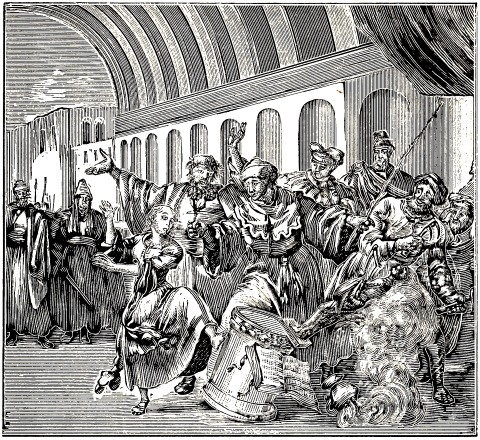
EULALIA REFUSING THE IDOL WORSHIP.
At this time there was a Christian maiden, called Eulalia, not more than twelve or thirteen years old, 171who was filled with such a desire and ardor of the spirit, to die for the name of Christ, that her parents had to take her out of the city of Merida, to some distant country-seat, and closely confine her there. But this place could not extinguish the fire of her spirit, or long confine her body; for, having escaped on a certain night, she went very early the following day before the tribunal, and with a loud voice said to the Judge and the whole magistracy: “Are you not ashamed to cast your own souls and those of others at once into eternal perdition by denying the only true God, the Father of us all, and the Creator of all things? O ye wretched men! do you seek the Christians, that you may put them to death? Behold, here am I, an adversary of your satanical sacrifices. I confess with heart and mouth God alone; but Isis, Apollo, and Venus are vain idols.”
The Judge before whose tribunal Eulalia spoke thus boldly, was filled with rage, and called the executioner, commanding him to take her away speedily, strip her, and inflict various punishments on her; so that she, said he, may feel the gods of our fathers, through the punishment, and may learn that it will be hard for her, to despise the command of our Prince (that is, of Maximian).
But before he allowed matters to proceed so far, he addressed her with these soft words: “How gladly would I spare thee! O that thou mightest renounce before thy death thy perverse views of the Christian religion? Reflect once, what great joy awaits thee, which thou mayest expect in the honorable state of matrimony. Behold, all thy friends weep for thee, and thy sorrow-stricken, well-born kindred sigh over thee, that thou art to die in the tender bloom of thy young life. See, the servants stand ready to torture thee to death with all sorts of torments; for thou shalt either be beheaded with the sword, or torn by the wild beasts, or singed with torches, which will cause thee to howl and wail, because thou wilt not be able to endure the pain; or, lastly be burned with fire. Thou canst escape all these tortures with little trouble, if thou wilt only take a few grains of salt and incense on the tips of thy fingers, and sacrifice it. Daughter, consent to this, and thou shalt thereby escape all these severe punishments.”
This faithful martyr did not think it worth the trouble to reply either to the entreating or the threatening words of the Judge, but, to say it briefly, pushed far away from her and upset113 the images, the altar, censor, sacrificial book, etc.
Instantly two executioners came forward, who 172tore her tender limbs, and with cutting hooks or claws cut open her sides to the very ribs.
Eulalia, counting and recounting the gashes on her body, said: “Behold, Lord Jesus Christ! thy name is being written on my body; what great delight it affords me to read these letters, because they are signs of thy victory! Behold, my purple blood confesses thy holy name.”
This she spoke with an undaunted and happy countenance, evincing not the least sign of distress, though the blood flowed like a fountain from her body. After she had been pierced through to her ribs with pincers, they applied burning lamps and torches to the wounds in her sides, and to her abdomen. Finally the hair of her head was ignited by the flame, and taking it in her mouth, she was suffocated by it. This was the end of this heroine, young in years, but old in Christ, who loved the doctrine of her Savior more than her own life. A. Mell., 1st book, fol. 105, col. 4, and fol. 106, col. 1, 2, compared with J. Gys., fol. 23, col. 3, ex Prudent. Steph. Hym. 3.
This happened in Lusitania, at Emerita, now called Merida or Medina del Rio Sacco, in the uttermost or lowest part of Spain, under the Emperor Maximian and the Proconsul Dacian, as may clearly be seen in ancient writers, and also in the aforementioned authors.
After the death of Eulalia an account is given (from Prudentius) of another Christian maiden, called Eucratis, who by her steadfastness in suffering, and the violence with which she took the kingdom of heaven, put to shame the spirit of this world, at Cæsar Augusta. The ancients tell us in what manner this heroine of Jesus Christ was martyred, namely, that she was not only tormented on her sides with rods and other iron instruments, but that her breasts were cut off, so that her liver could be seen; hence, having been put back into prison, she very miserably died (yet with a glad hope), in consequence of the putrefaction of the wounds, which she had received for the name of Jesus Christ. See Mell. as cited above, from Steph. Hym. 4. Flos. Sanct. Hisp. Mart. Rom., 16 April.
The persecution did not yet cease, though it had already risen to a very high degree. But it may have pleased God to bring his people through much tribulation into his kingdom. Acts 14:22,23.
On the 12th of August, A. D. 303, a certain pious Christian, called Euplius, was surprised by the inquisitors of the Romans, in the city of Catana in Sicily, as he was engaged in reading the Gospel, and instructing other Christians. They apprehended him and brought him near the tribunal, in which sat the clerk of the criminal court and the Judge.
Meanwhile Euplius cried aloud: “I am a Christian, and wish to die for the name of Christ.”
Calvisianus, the Proconsul, hearing this, said: “Bring him in here, who cried thus.”
When Euplius had entered the tribunal, carrying with him the Gospel books, one of the Proconsul’s friends said: “It is not right for him to carry such papers with him contrary to the prohibition of the Emperors.”
The Proconsul asked Euplius, whence he had these writings? Whether he brought them from his house?
Euplius answered: “I have no house. My Lord Jesus Christ knows that I have no house.”
Then the Proconsul commanded him with a loud voice, to read something out of the writings.
Euplius, having opened the book, read these words: “Blessed are they which are persecuted for righteousness’ sake: for theirs is the kingdom of heaven.” Also: “Whosoever will come after me, let him deny himself,” etc.
When he had read these and like passages, the Proconsul said: “What does all this mean?”
Euplius replied: “This is the law of my Lord, of Jesus Christ, the Son of the living God.”
The Proconsul, having heard this confession of Christ, said: “Let him be delivered unto the executioners, put to the rack, and thus examined.”
He was then very grievously, yea, inhumanly tormented, and commanded to deliver up the Scriptures he had with him, and to have them burned to the dishonor of Jesus Christ. All of this he steadfastly refused to do; moreover, he openly invoked the name of Jesus Christ, because he had been found worthy to suffer for his name’s sake.
Thereupon he was again led to the rack and dreadfully tormented in the same manner as before. But he suffered it patiently, and called upon the Lord, saying: “I thank thee, O Christ! help me, O Christ! for thy sake I suffer all this, O Christ!”
In short, the Proconsul, still more enraged by this, went into the tribunal, and gave the sentence of death to the clerk of the criminal court, that he might write it out against this good man. Then, coming out again from the tribunal, and bringing with him the tablet containing the death sentence, he read the latter aloud, as follows: “I command that Euplius, the Christian, be slain with the sword, because he despises the gods of the Emperors, blasphemes the other gods, and does not repent.” He further said: “Lead him away.”
This sentence having been read, the Gospel book which he had with him when he was apprehended, was forthwith suspended to his neck, and the crier 173 went before him, crying thus: “Euplius, the enemy of the gods and the Emperors, is led to death.” Euplius went joyfully to the place where he was to be put to death, continually thanking Christ for his grace. Having arrived at the place of execution, he with great reverence bowed his knees, and prayed to the Lord his God. As soon as he had finished, he offered his neck to the sword, and poured out his blood as a drink offering unto the Lord. His dead body was afterwards removed by the Christians and buried. This happened at Catana, in Sicily, A. D. 303, after the twelfth day of the month of August had passed. Acta M. S. Proconsular. Baron., edit. in Annal 1, 2, A. D. 303. Alia per Metaphrastem, compared with A. Mell., 1st book, fol. 117, col. 2–4.
There was at that time a Christian youth of fourteen years, called Pancratius, who, when he was brought before the Emperor Diocletian found such special favor in the eyes of the latter, that he promised to adopt him as his son, if he would abandon Christ, and show honor to the gods of the Romans. But this youth, who was old in the knowledge and love of his Savior, showed such steadfastness in defending his faith and despising the gods, that the Emperor, filled with rage, commanded that he should be decapitated, on the Aurelian way, just out of the city of Rome. Thus this youth loved the honor of his Savior more than his own life, and hence he is justly reckoned among the number of the pious martyrs. Acta per Sicrium, bona fide edita, secundum Mellinum, in Tract super, fol. 139, col. 4.
When the soldiers of the Emperor Diocletian were engaged in apprehending the Christians, a certain father, called Mattheus, and his two sons, Justinian and Justus, were journeying toward Auxerre, in Burgundy, their place of residence. But having been denounced, in the meantime, by some evil informers, they were pursued by the aforesaid soldiers and four horsemen sent by the Emperor’s Proconsul. The younger son, Justus, perceiving this, communicated it to his father and his brother, who hid themselves in a cave, but Justus kept watch without. When he saw the horsemen, he went to meet them. Being asked by them, who he was, and where his companions were, he replied: “I am called Justus, and I freely confess that I am also a Christian; but since I regard you as persecutors of the Christians, it is not lawful for me to betray my companions.”
When they drew their swords, and threatened him with them, he answered: “Truly, I shall consider myself happy, if I may be permitted to suffer all manner of punishment, nay, death itself, for the name of Christ; for I am ready to lose my soul in this world, that I may keep it unto life eternal.”
Thereupon one of the soldiers drew his sword, and struck off his head. His father and his brother buried his dead body at Luperam, which place was near by. This occurred A. D. 303. Abr. Mell., ex Acta per Surium edita, ut apparet ex Bede Acris Rit. Micis de Sumpta.
When Constantinus Chlorus and Galerius Maximianus were Cæsars for the fourth time, the Emperors Diocletian and Maximian issued an edict to the whole world, which was transmitted to the authorities of all the colonies or free cities of the Romans, and read to this effect: that they should demand the divine books and laws of the Christians at the hands of their bishops and teachers. A copy of this edict, among others, was posted up in the city of Thibaris, in Africa, on the fifth day of the month of June.
Now when it came to pass that the fiscal Procurator of that place demanded of Felix the divine and Christian books, in order to burn them, Felix answered: “It were better, that I should be burned, than the divine Scriptures, because we must obey God rather than men.”
The Procurator said: “Nevertheless, the command of the Emperors must have the precedence to thy word.”
Felix replied: “God’s command comes before the commands of men.”
The Procurator said: “Consider well, what thou doest.”
NOTE.—Here we might produce the whole of the court proceedings as believed to have been recorded by the clerk of the criminal court; but in order to avoid prolixity, we shall present to the kind reader, word for word, only the last and principal part of those proceedings.
Having arrived there, the Proconsul or General commanded them to loose Felix, and asked him, saying: “O Felix, why wilt thou not deliver up the books of the Lord thy God? Or perhaps, thou dost not have any?”
Felix answered: “Indeed, I have them, but I do not wish to give them to you.”
The Proconsul said: “Put Felix to death with the sword.”
When Felix had received the sentence of death, he said with a loud voice: “I thank thee, O Lord, that thou hast redeemed me!” He was immediately led to the place where he was to die; at which time the moon was changed as into blood. This happened on the 30th of August.
174
Having arrived at the place of execution, Felix lifted up his eyes toward heaven, and said with a loud voice: “O Lord God, I thank thee, that I have lived to be fifty-six years old. I have kept myself pure; have kept the Gospels or evangelical books; and have preached the faith and truth in their purity. O Lord God of heaven and earth, Jesus Christ! I bow my neck to the sword, as an offering unto thee, who abidest in eternity, with whom there is and abideth glory and majesty forever and ever, Amen.”
Thus far the account of the martyrdom of Felix has been translated word for word from the Acta Proconsularia, that is, the records of the proceedings which were approved by the heathen judges and proconsuls. Compare Abr. Mell., 1st book, fol. 117, col. 1, 2, with Act. Proconsul. extant sur tom 5, Octob. 24.
In the year 303 two brothers, Primus and Felician, were brought prisoners before the criminal Judge of the city of Numenta, in Italy. He first examined Felician, and asked him, whether he would rather sacrifice to the gods, and live in honors, and see good days, or be tortured unto death with all manner of torments?
Felician answered: “How canst thou speak to me of pleasant days? I am now eighty years old, and have been enlightened with the saving knowledge of Christ for about thirty years; yea, I am still finding the greatest joy of my heart in his service. And thou wouldst persuade me to forsake my Savior, and accept instead of him the vain lusts of this world! Far be it from me; for I have resolved to cleave to Christ, my Lord and my God, to the very last breath of my life.”
Thereupon this good old man was put in prison, and his brother Primus brought forth, whom the Judge endeavored to persuade that Felician, his dear old brother, had apostatized. But Primus was confident that the contrary was true; therefore he said that it was a lie. Upon this, he was beaten with sticks, and burned on his loins with lamps. But he sang with the prophet David: “O Lord, thou has proved us with fire, as silver is tried.”
Then both were tormented, in different ways. Molten lead was poured down Primus’ throat, while Felician was beaten with leaded scourges, nailed with his hands and feet to a stake, and inhumanly tortured. Both were cast before the lions and bears; but as these would not harm them the Judge caused the martyrs to be beheaded and their dead bodies laid on the ground for the dogs and the birds of the air. However, they were buried by the Christians. Acta per eundem. Also, A. Mell., 1st book, fol. 114, col. 2.
In the third year of the persecution, the obdurate heart of the bloodthirsty Emperor Diocletian had not yet softened, seeing he and his associate Maximian steadily went on putting to death the poor Christian believers, as appears from the death of the following persons.
When the third year of the aforementioned persecution had begun, the second oppression of the Christians arose in Palestine, through letters which had been sent in the Emperor’s name to Urbanus, the Proconsul; whereby the magistrates of every city were commanded: to exert the utmost diligence, that all Christians, men and women, old and young, would sacrifice to the gods; and that the criers should call together in the city of Cesarea, men, women, and children, to assemble in the temples of the idols; and also that the chief men of every quarter of the city should read off from their lists, the name of every citizen, so as to make it impossible for any one to conceal himself. This caused great misery and distress throughout the whole city.
When it came to pass, on the feast-day of the goddess Hecate, that the Proconsul of Palestine was engaged in offering his sacrifice, Apphian, who was not yet twenty years old, went undauntedly to the Proconsul, and reproved him for his wicked idolatry, admonishing him to desist from it. Instantly the youth was frightfully torn as by wild beasts by the body-guards of the Proconsul, suffering stripes without number from them, which he endured with great steadfastness. Thereupon he was imprisoned for a while, but was then brought forth again, and dreadfully tormented. He was beaten so inhumanly in his face and on his neck, that owing to the wounds and the swelling of his face he was so disfigured, that those who formerly knew him well, now no longer recognized him. At the command of the Proconsul they also took linen cloths, which they had saturated with oil, wound them around his bare legs, and then set them on fire, so that the flames leaped up high, consuming not only the flesh off the bones, but even melting the marrow within them, causing it to trickle down; which must have caused a pain beyond all comparison. But in all this he remained steadfast. Three days after this he was again brought before the Judge, and received sentence of death, namely, that he should be drowned in the sea; which sentence was executed on the second of April, A. D. 304. Compare Abr. Mell., 1st book, fol. 123, col. 1, 2, with Eus., lib. 8, cap. 14.
175
About that time, almost in those very days, another youth, named Ulpian, was brought forth in the city of Tyre, who, after having been long and very severely tormented, was finally sentenced to an unusual death, for the testimony of Jesus Christ, namely: to be wrapped stark naked, together with a dog and an adder, in the fresh hide of an ox or cow and thus thrown into the sea. This sentence was executed near the city of Tyre; but the sea shall give up its dead, and then shall this pious witness of Jesus Christ, and his fellow-brethren be rewarded and crowned by the Lord with the crown of immortality. Vide supra Mellin., ex Euseb. Hist., lib. 8, cap. 15.
Shortly after the death of the martyrs Apphian and Ulpian, the enemies of the divine and Christian truth laid their hands on Aedesius, the brother of Apphian. After making many excellent confessions for the name of the Lord, he was sentenced to be sent as a slave to the mines of Palestine.
Finally, when he happened to see, in the city of Alexandria, how the Proconsul pronounced sentence of death upon the Christians, and sometimes caused manifold indignities to be heaped upon aged persons, together with other wickednesses practiced by him, he boldly went into the court to the Judge, and openly reproved him on account of the unjust and wicked sentences he pronounced upon the innocent Christians. For this he was most unmercifully tormented, which pains he meekly and not less steadfastly endured. He was then thrown into the sea, and drowned, even as had been done with his brother. See the above cited books.
In that same year, two pious Christians of Thessalonica, Agathopus, a deacon, and Theodulus, a lector, of the Thessalonian church, were apprehended for the testimony of Jesus Christ, and brought before Faustin, the Governor of the city. He first took up Theodulus, the younger, to torment him, causing him to be stripped and bound. While Theodulus was being tormented, the crier called to him: “Sacrifice, and thou shalt be released.” Theodulus answered: “You may strip my body, but you shall never turn my heart and mind from the faith in God.”
As they both went to hear their sentence of death, their friends cried and wailed most bitterly, so that the sound of it seemed to ascend to heaven; but Theodulus said to them, with a happy countenance: “If you weep for our old friendship’s sake, I tell you, that you ought rather to rejoice, because we are tried in so honorable a conflict; but if you envy us this happiness, and are sad because you are not partakers of it, the door of blessedness stands open for you, too, and the proclamation of faith calls: Come ye all to Christ; but it gives the crown of eternal life only to those who are drawn back neither by riches, nor by voluptuousness, nor by the honor of this world.”
Finally, the Judge gave sentence, that their hands should be tied behind their backs, and heavy stones be fastened to their necks, and that they should thus be drowned; which they steadfastly endured, and are therefore reckoned among the number of the holy martyrs. A. M., fol. 140, col. 1, ex Act. per Metaph.
When Diocletian’s persecution was at its highest, a certain widow of Iconia tried to flee from it; wherefore she went with her child, which was three years old, from Lyconia to Seleucia, and from there to Tarsus, in Cilicia. But she could not remain concealed there from the heat of that persecution; for Alexander, the Proconsul who had jurisdiction there, apprehended her. After many vain efforts to persuade her to renounce the Christian faith, he caused her to be scourged with tough cowhides.
In the meantime he endeavored to quiet the frightened child, called Quiricus, by many pleasant and coaxing words; but the child resisted with hands and feet, refusing to be caressed by the tyrant, and finally ran to his mother. However, the tyrant caught him up again; but this did not turn out very peacefully or pleasantly, for the child scratched his face, and kicked his sides, so that the pain quite enraged him. He therefore took the child by his legs and pitched him head foremost down the stone stairs. The mother, seeing this, thus addressed the tyrant: “Thou needst not think that I am so timid as to be conquered by thy cruelties; for the tearing of my body shall not intimidate me, nor the racking of my members move my spirit; neither shall the threats of the fire, nor death itself be able to separate me from the love of Christ. The greater the torments are with which you threaten me, the more acceptable they are to me; for I hope thereby the sooner to come to my dear son, and to receive with him the crown of righteousness at the hand of Christ.”
176
Upon this confession, the Proconsul had her suspended to the torture-stake, her flesh torn with iron combs, melted pitch poured over her naked body and fresh wounds, and finally caused her to be beheaded. Acta Fidelia, per Metaphrastem, compared with A. Mell., 1st book, fol. 140, col. 1, 2.
When the east as well as the west was exceedingly disturbed on account of the violence of the persecution, there manifested themselves in the east, namely at Antioch, forty pious youths, as valiant champions of Jesus Christ, inasmuch as they openly and boldly confessed the Son of God, Jesus Christ, as their Savior. Thereupon, the Governor of that place, after they had been apprehended, strenuously exerted himself to move them from the faith; but when all his efforts proved unsuccessful, he had them stripped naked, in the coldest part of the winter, and cast into a very cold pool. But as they were still alive the next day, he caused them to be burned to powder.
One of them, who in consideration of his extreme youthfulness had, through compassion, been restored to his mother, was placed by the latter with her own hands upon the wagon in which the others lay, and exhorted, to finish this blessed course with his fellow brethren. This happened in the third year of the persecution, A. D. 304. Joh. Gys., fol. 23, col. 3, ex Bas. de 40 Martyr.
Galerius Maximian, continuing in the persecution which had been begun, and carried into execution, with great bitterness, by Diocletian and Maximian, exercised much cruelty, through Peucetius, Quintinian, Theotecnus, and other Proconsuls, against the poor Christians; burning them alive; throwing them before the wild beasts, to be torn by them; nailing them to crosses; drowning multitudes of them in the sea; starving them to death in the prisons; beheading them; cutting off their hands and feet, and then giving them their life; but when they would make use of the favor granted them, spoiling them of all their goods, and driving them away into misery.
Touching those who were slain there, the following, among others, are mentioned by name.
Sylvanus, Bishop of the church of Emissa, a city of Apamea, in Syria, was, with many others, thrown before the wild beasts, to be devoured by them.
Januarius, Bishop of the church of Beneventum; Sosius, a deacon of the church of Misenum; Proculus, deacon, at Pussolis, and others, were beheaded together.
Pelagia was suffocated in a redhot ox.
Theonas, with his companions, Cyrenia and Juliana, were deprived of life by other methods. Joh. Gys., about the death of Januarius and Sosius. Abr. Mell., fol. 141, ex Act. per Johannem Januarii Diaconum conscripta per surium edita.
In this year the persecution was not so severe as in some of the preceding ones; wherefore there were not many martyrs at this time. However, the ancients have recorded a few, whom we shall presently mention.
When the fifth year of the tenth persecution had come, on the second day of the month of April, the Sunday of the resurrection of our Savior, Theodosia, a godfearing maiden of the city of Tyre, about eighteen years old, came to some bound martyrs at Cesarea, as they were standing before the tribunal, to receive their sentence of death. Her reason in doing so was affectionately to greet them, and to comfort them in their extremity.
Thereupon she was instantly seized by the soldiers, and brought before the Proconsul, who forthwith caused her to be maltreated as though he had been bereft of reason; for he did not have her tortured with all manner of dreadful torments, on her sides only, as was generally the custom, but he also caused her breasts to be torn open to the very bones, and then cut off. All this she suffered steadfastly and with a happy countenance; but when by reason of the intensity of the pain she could scarcely draw her breath any longer, so that it seemed that she would soon cease to live, the Proconsul had her thrown into the sea; and thus this faithful heroine of Jesus Christ was numbered among her slain fellow-brethren and sisters. See A. Mell., 1st book, fol. 124, col. 2, 3, from Euseb., lib. 8. Also, J. Gys. on the name Theodosia.
This Pamphilius was an elder of the church at Cesarea, and a very eloquent, learned and godly man. It is stated of him that after much suffering and tribulation he underwent the conflict of martyrdom, 177 for the name of Christ, and was thus numbered among the heroes of the bloody banner of Jesus Christ. It appears that he was a special friend of Eusebius Pamphilius, so that some are of the opinion, that the latter took his surname Pamphilius from him. This much is certain, that he wrote the following concerning him, as ancient authors have informed us: “Among those who were variously afflicted and vexed, and kept in chains and bonds at Cesarea, by Urban, the Proconsul of Palestine, was also Pamphilius, my most faithful friend, who probably was the chiefest martyr of our time, and the most celebrated in all manner of virtue and godliness.” A. Mell., 1st book, fol. 124, col. 3, 4, from Eusebius and Jerome, compared with J. Gys., fol. 26, col. 4.
From among those who were put to death in the sixth year of Diocletian’s persecution, we have selected the following.
When some Christians, in their zeal for the truth, had reproved Firmilian, the Proconsul of Palestine, for his great idolatry, and were put to death on this account, on the thirteenth of November, A. D. 307, a certain young maiden, named Ennathas, a native of the city of Scythopolis, came there on the same day, not of her own accord, however, but through compulsion, and, together with the others, boldly laid down her life for the name of Jesus Christ. She was at first most unmercifully treated, nay, in a manner too shameful and horrible for description. Finally, when she remained steadfast nevertheless, in the confession of her faith, the Judge pronounced sentence of death upon her, namely, that she should be burnt alive; and thus this pious martyr pressed through the strait gate, leaving her flesh on the posts; which the Lord shall afterwards crown and reward with glory and majesty. See, A. Mell., 1st book, fol. 125, col. 4, from Euseb., J. Gys., fol. 26, col. 4.
It is stated that on the 25th of November of the same year, Catharina, an honorable maiden of Alexandria, was beheaded, for the faith in Jesus Christ, after having suffered many torments. J. Gys., fol. 26, col. 4.
It is stated that in the seventh year of the persecution the following persons were slain for the confession of the evangelical truth.
About the beginning of the year 308, some godfearing Christians left Egypt, with the intention of journeying to Cilicia, to supply those, who for the confession of the faith had been banished to the mines there, with some needful things in their misery and poverty. They were apprehended at Cesarea by the guard at the gate of the city. Some of them were sent into misery and slavery through the same sentence, which consisted in this, that the right eye was to be put out, and the left knee-pan cut away, and the wound seared; and thus with one eye and one leg they were compelled to labor in this hard slavery.
Three of their number were apprehended at Askalon, in Palestine, and were tormented in various ways, because they steadfastly confessed their faith. One of them, named Ares, was burnt alive; the other two, Promus and Elias, were beheaded, and thus departed this life in a godly manner. A. Mell., 1st book, fol. 126, col. 1, from Euseb.
Shortly afterwards (on the 11th of January), a pious man, called Peter, and surnamed Apselamus, was apprehended. He was a native of Amea, a village in the neighborhood of Elentheropolis. For some time he had led the life of a recluse, having retired into solitude to give himself over to divine meditations.
Though the Judge and the other members of the tribunal had begged him again and again, to have compassion upon himself and his youth (for he was yet in the bloom of life), he disregarded it all, putting his entire confidence in the living and true God, whom he loved more than all this world contains, yea, than his own life. Finally he suffered his confidence in Christ, his Savior, to be tried, as precious gold, by fire, and was burned alive at Cesarea, for the name of Jesus Christ, having commended his soul into the hands of God. Idem, Ibidem, ex Euseb., lib. 8.
178
Among various other martyrs who suffered for the testimony of Jesus Christ in the seventh year of Diocletian’s persecution, we have noticed that there were also several honorable Christian women who, from love to their Savior, did not hesitate to give their lives for the truth. They were called Biblis, Aquilina, a girl of twelve years, and Fortunata, a maiden of Cesarea; who together laid down their lives for the truth, in Palestine. J. Gys., fol. 26, col. 3, compared with A. M., fol. 131, col. 3, ex Mart. Rom. Menol. Grec. Metaphrast. 13 Junii.
It is related that at this time the modes of torture and of putting to death were various. Some were beheaded with the axe, as was mostly done with the martyrs in Arabia. Some had their legs broken on the wheel, as was the case with those who confessed the name of Christ in Cappadocia. Others were hung up by their heels, with the head close to the ground, and then suffocated by a small fire, as was the case in Mesopotamia. Some had their noses, ears, hands, feet, and other members, cut off, as was done to those at Alexandria. At Antioch some were roasted on frying-pans, not unto death, but to intensify the pain. But the sufferings inflicted upon the poor martyrs in Pontus are horrible to relate; for some had sharp splints of reed thrust between the nails and the flesh of their fingers; others had melted lead poured over their naked bodies; some had their secret parts singed and seared, in the invention of which tortures the judges and proconsuls vied with one another, even as though they wished thereby to manifest their great ingenuity, and their tyranny against the Christians. See concerning, this, A. Mell., fol. 128, col. 1, 2.
In the eighth year of Diocletian’s persecution, that is, A. D. 309, there were at Antioch two sisters, young maidens, of modest manners and pious life, intelligent and well-informed in the way of godliness; so that the world was not worthy, to contain them any longer. They were apprehended and examined, and, clinging steadfastly to Christ, cast into the depths of the sea, and drowned, by the servants of Satan. See the above named author, in the same book, fol. 129, col. 1, from Euseb.
In the records written, through the clerk of the criminal court, by the Proconsul Dulcetius, concerning some pious martyrs, there is pronounced, at the close, a certain sentence of death over three sisters, who steadfastly continued in the truth of Christ. The last part of the aforementioned records contain, in regard to this, the following words: “And when he (Dulcetius) had demanded paper, he wrote this sentence of death: ‘Whereas Irene would not obey the decree of the Emperors, and sacrifice to the gods, and does still remain a Christian, therefore I command that she be burned alive, as her two sisters were.’ ”
When the criminal Judge had pronounced this sentence upon Irene, the soldiers took her and brought her upon an elevated place, where her sisters had died; and when they had built a great fire of wood, they made her climb upon it, and there, after singing sweet psalms and hymns of praise to the honor of God, she was consumed by the flames. A. Mell., fol. 130 and 131, col. 1, ex Act. Ver. Proconsular. apud Metaph. Also, Acta cognitionis novissime diei.
It is stated that besides the aforementioned martyrs there were put to death by fire in Egypt, for the name of the Lord, three pious Christians, named Peter, Nilus, and P. Mythius; forty others were beheaded; and for the same reason, Martionilla, Euphratesia, seven brothers, and various others, also laid down their lives for the truth. J. Gys., fol. 27, col. 1.
The ancients tell us that Maximinus Jovius instituted at this time a special persecution at Antioch, through the instrumentality of one Theotecnus; to which end he caused an image to be erected, in honor of Jupiter Philius (the god of friendship), by which—whether through Satan or through jugglery—certain oracles were uttered, to the effect, that God had commanded that the Christians, as his special enemies, should be driven out of every country, city, and field, and be exterminated, the sooner the better. A. Mell., fol. 134, from Euseb.
It is easy to judge that this false and blood-thirsty voice, having fallen as a true oracle into the hearts of the heathen, caused not a little shedding of blood, oppression, and burning among the innocent and defenseless lambs of Christ, as we shall presently in some measure show.
179
Among the many pious witnesses of Jesus Christ, who laid down their lives for the truth, Lucian, who was an elder of the church at Antioch, was not one of the least; for it is stated of him, that he was a very godly, wise, and eloquent man, well versed in the Scriptures, but above all, that he boldly sealed all this with his blood and death, to the honor of God.
The Judge asked him as he stood before his judgment seat, saying: “O Lucian, how does it come that thou, who art such a wise man, dost follow this sect, for which thou canst give no reason at all? Or, if thou hast any, let us hear it.”
Having obtained permission to speak, he made a very excellent and glorious profession of his faith; which would well deserve a place here, were we not, in order to avoid prolixity, compelled to omit it. As soon as he had ended his confession, and the people had, in some measure, been drawn over to his views, the Judge commanded them to lock him up again in prison, and to put him to death there; which, as the ancient writers relate, was accordingly done. But God shall reveal it all on the last day, and reward every one according to his works. Compare with A. M., fol. 135, col. 1–4, ex Eusebio and Ruffino, in Hist. Eccles. Hier. Catal. in Luciano.
NOTE.—Some place this Lucian in the tenth year of the persecution, namely, in A. D. 311.
At this time there were persecuted, by virtue of the bloody decree of Maximian, a number of godfearing and learned men, who adhered to Christ by a true confession; of whom we shall briefly present a few, mentioning also the place and time of their death. Peter, bishop of the church of Christ at Alexandria, and Faustus, Didius, and Ammonius, all three elders, were put to death for the faith in Jesus Christ, on the 28th day of November, A. D. 310. There were also several other bishops in Egypt, who laid down their lives for the same reason. Compare J. Gys., fol. 27, col. 1, with A. Mell., 1st book, fol. 136, col. 4, from Eusebius, Epiphanius, Athanasius.
Anysia, a girl of Thessalonica, born of wealthy Christian parents, was slain in the temple at Alexandria, because of her Christian faith, at the time when Maximian had issued a decree authorizing every one to kill the Christians wherever they might be found. J. Gys., fol. 27, col. 2.
At the same time and place, also Demetrius, a remarkably virtuous and zealous teacher, sealed the genuine, divine and Christian truth with his blood. Idem, Ibidem.
Besides the preceding ones, we find that there were put to death, for the name of the Lord, and their love to their Savior, Theodorus, a bishop of the church of Christ, Philemon, and Cyrilla. See the abovementioned author, in the same book, fol. 27, col. 3, ex Vinc., lib. 12, cap. 149.
We shall speak but briefly of the last year of this persecution, since ancient writers have left us little information in regard to it. Nevertheless, there were some at that time, who laid down their lives for the truth; among whom the following are mentioned.
Eugenius, because he confessed Christ, and had reproved the wickedness of the heathen, had his tongue cut out, and his arms and legs broken, and thus departed this life, steadfastly continuing in the Lord.
Auxentius, a deacon of the Christian church at Auracea, in Asia, was beheaded for the same reason—for the faith in Christ.
Maodatius was hung up by his toes, and, having been pierced with red-hot awls, and burned with torches, was deprived of life, for the testimony of Jesus.
Besides these, many others were put to death for the faith, whose names cannot be given; hence we shall content ourselves with those already mentioned. See J. Gys., fol. 27, col. 4, at the foot, and fol. 28, col. 1.
180
In the Introduction to the Martyrs Mirror, fol. 44 and 45, there are mentioned, besides the ten general persecutions, which we have described, two others, there called the eleventh and the twelfth persecutions; of which the former is said to have begun, A. D. 316, under Lucinius, who, together with Constantine the Great, reigned in the east; and the second, A. D. 362, under Julian the Apostate. But since other eminent writers do not pronounce these persecutions as general ones, we shall give no special account of them; however, if any true martyrs were put to death at that time, we hope to mention each in his proper place. Under Lucinius, there laid down their lives for the faith in the Son of God, according to the testimony of the ancients, the following persons.
When it was thought that the previous persecutions, especially that under Diocletian and Maximian, should have quenched the blood-thirstiness of the great, Lucinius, who occupied the imperial throne in the east, was still not content therewith. For when the winds of blood, fanned on by Satan, blew through his head, he caused to be put to death without mercy, various pious Christians, namely: Basileus, bishop of the church of Christ at Amasen, in Pontus; Ammon, a deacon; and about forty women, whom he had killed, some by fire, and some by water; as well as various other pious martyrs, whom he had put in the cold ice, thus causing their death. This happened about the tenth year of the reign of Lucianius, which agrees with A. D. 316. Introd., fol. 44, col. 1, 2.
There were two brothers, Donotian and Rogatian, natives of Italy; one of whom, Donotian, had accepted the true Christian faith, and been baptized upon it; but the other, Rogatian, had not yet received baptism, was however a neophyte or catechumen, having been brought to the knowledge of the Christian truth through the instrumentality of his brother. Both were apprehended. Then Rogatian wished greatly that he had been baptized, for he knew that he would have to die; but that could not be, as there was no opportunity. His brother, Donotian, therefore prayed to God, that his blood might be accounted to him for the sacrament of baptism. The next day both were beheaded, A. D. 360. P. J. Twisck, Chron., 4th book, fol. 106, col. 2, from the tract, Grondig Bewijs van den Heyligen Doop, letter B. Also, Leonh., in tract., lib. 2. These authors must be compared with each other.
The persecution which took place under Julian, the Apostate, did not destroy the bodies as much as the souls. For since he was a very crafty man, and had an eloquent, yet deceitful, tongue, he did more harm to the church of God by his flattery, than by tyranny. Nevertheless, several of the true Christians were martyred under his reign; who would rather through the way of death enter life eternal, than through the way of temporal life, by flattery, fall into eternal death and damnation; as shall presently be shown.
There were two special friends, John and Paul, who opposed war and bloodshed. They were called to war, and urged to engage in it, but as they would not consent to it, they were therefore, as well as because of their true Christian confession, put to death as heretics. Concerning this, different authors write thus: “John and Paul had to die, because they would not engage in warfare, but replied to the Apostate: ‘We are Christians; it is not lawful for us to engage in war.’ ” In Grondelijke Verklaringe Danielis, en Johannis Openbaringe, printed at Harlem, A. D. 1635, page 56, from various other authors.
After the death of the Emperor Julian, Jovian reigned, and after the death of the latter, the empire devolved on Valentinian, who is commonly called Valens. He, too, stained his hands with the blood of the Christians, yet not so excessively as some of his predecessors. Nevertheless, he cannot be excused, seeing he caused some pious people who observed the doctrine of Christ to be put to a very cruel death, because they, like the abovementioned John and Paul, refused to perform military service. Compare P. J. Twisck, Chron., 4th book, p. 114, col. 1, with Jan. Crespin, in his tract, treating of the oppressions, fol. 114.
We might have adduced more martyrs for this century, but since that which the ancients have written with respect to their lives, as well as their faith and religion is doubtful, we have not deemed it well to proceed further, and shall, therefore, content ourselves with the true martyrs of whom we have already given an account, and those of whom we hope to give an account in the following centuries.
181
[We have begun this century with the fifth chapter of the Centuriæ Magdeburgenses, the contents of which may be examined.
Vincent Victor opposes Augustine in the matter of infant baptism.
Synesius Syrenus, baptized on his faith, by Theophilus.
The fourth council of Carthage establishes, that those who desire to be baptized, must first be examined, and sounded relative to their faith.
Sedulius maintains that baptism is a regeneration, and, moreover, exhorts the young to baptism.
Hilarius of Syracuse asserts the salvation of children that die unbaptized.
The edict of Honorius and Theodosius against the Anabaptists.
The council held at Carthage, under Aurelius, against those who denied original sin, infant baptism, and predestination, adopts resolutions entirely different from the decree of the aforementioned fourth council of Carthage.
The edicts of Honorius and Theodosius, in support of said council.
Maximus teaches the baptism of Christ; Cresconius and his adherents are pronounced Anabaptists; Cyril of Alexandria speaks soundly on baptism, and opposes the errors of the Nastorians and Valentinians.
An account, from Socrates, of many persons at Alexandria, who hastened to baptism, and were baptized on confession of their sins; as also, of a sick Jew, who was baptized, and of one who received baptism after much fasting.
Faustus Regiensis teaches that for baptism the will [consent] of him that is baptized is necessary.
Evragius makes mention of the baptism of the candidates, that is, of those who had previously been instructed.
Eucherius maintains that that believer who dies unto sin is rightly baptized.
Carthaginian women who waited for baptism.
In the Council of Arausica rules are made respecting the baptism of the dumb, the weak, and catechumens.
Nazarius, the son of Perpetua, a Christian woman, is baptized after previous instruction.
In the margin mention is made of one Montluck, who adduces the resolutions of various councils, against the killing of heretics; as also, the views of Gelasius concerning the holy Supper.
Salvian of Marseilles, on renouncing Satan, confessing the faith in God, which it was customary to do at baptism.
Authymius, Sisinnius, and Sociorus, baptized after having been instructed for seven days.
Nolanus mentions the hymns which it was customary to sing at baptism.
Anabaptism condemned in the fourth council of Rome.
An account of many who separated from the church of Rome, and, though baptized in their infancy, were baptized upon faith; as also, what the Pope (or Bishop of Rome) decreed against this.
Primasius’ explanation of 1 Tim. 6:12; its application to adult candidates for baptism.
Fulgentius calls baptism a sacrament of faith and repentance.
In the margin it is stated how vehemently Leo inveighed against the bishops of Campania, etc., who, according to his judgment, did not administer baptism aright.
The conclusion is from P. J. Twisck, who says that ancient church history, other writers excepted, makes no mention of infant baptism before A. D. 500.]
We shall begin the fifth century, concerning baptism, with the fifth chapter of Jacob Mehrn. History of Baptism, who commences his account of baptism at that time thus: “Henceforth we shall not dwell upon quite so many testimonies taken from the ancient fathers and church historians, as had necessarily to be the case in the preceding centuries, in order to prove that during the first four centuries after the birth of Christ, infant baptism had neither in the holy Scriptures nor in the authentic books of the teachers of the church, a firm foundation; that is, that it had been ordained by Christ, or that it was an apostolic institution or tradition. But we shall in future content ourselves with such testimonies and historical records as best agree with the truth of the ordinance of the baptism of Jesus Christ, in order that we may thereby strengthen ourselves in that truth and in the true faith.” Bapt. Hist., page 394.
A. D. 401.—About the beginning of this century, opposition was made against infant baptism and its advocates, among which advocates in favor of infant baptism Augustine showed himself none of the least, although he himself had been baptized upon faith, as has previously been mentioned. He was opposed by a certain bishop, by the name of Vincent Victor, who, notwithstanding Augustine’s authority, attacked infant baptism, and, as it appears, withstood it with conclusive arguments from holy Scripture. But how it finally ended between the two parties, of this I find no account; mention is made, however, of the matter itself, by Vicecomes (lib. 2, cap. 1), who says that Augustine (lib. 3, de anima, et ijus orig., cap. 14), mentions a bishop called Vincent Victor, who contended with him about infant baptism. Bapt. Hist., page 448.
NOTE.—Vincent taught that in the Supper the figures of the body and the blood of Christ are administered. Also, that the bread and the wine continue in their own substance. Book of the two natures. Also, Samuel Veltius, in Geslacht-register, page 124.
A. D. 402.—About this time, the very old and excellent orator Victorinus was baptized on confession of his faith; of which we find the following in the 2d chapter of the 8th book of Augustine’s 182 Confessions: “O Lord God, who hast bowed the heavens under thy feet; thou hast come down and touched the mountains, and smoke has issued from them; how wonderfully hast thou long since come into the heart of this Victorinus!”
“He read the holy Scriptures, as Simplician told me, and most diligently examined and investigated whatever he found written concerning the Christian religion. He then said to Simplician, not openly, but secretly, as friend speaks to friend: ‘Know that I am now a Christian.’ Simplician answered: ‘I shall not believe it, I shall not count thee among the Christians, unless I see thee in the Christian church.’ (A little further on:) But suddenly and quite unexpectedly he said to Simplician, as the latter told me: ‘Come, let us go to the church; I will become a Christian.’ Simplician, not knowing where he was, for joy, accompanied him there.
“Having been instructed in the principles of the faith, Victorinus soon after had his name registered, that he might be regenerated through the sacrament of baptism.
“Finally, when the hour had come for him to make his confession (for which confession, at Rome, a customary formula was learned, and then delivered from an elevated place, in the presence of all the Christians, by those who prepared themselves for baptism), the overseers, as Simplician told me, offered to let him make it privately, as was the custom to propose to those who it was feared might, through diffidence, be unable to proceed. But he said that he would rather profess his salvation in the hearing of all the Christians, than otherwise.
“When he had ascended the elevated place to make his confession, all who knew him pronounced his name with secret joy. But who was there that did not know him? For, from the mouths of all that were assembled, in mutual rejoicing with him, there arose the glad shout: Victorinus! Victorinus!”
A brief account of this is also given in Bapt. Hist., page 461.
From the above words quoted by us from Augustine, it certainly appears that at the time when said Vistorinus was baptized, there existed even in Rome, where this baptism took place, churches which, notwithstanding Antichrist began to lift up his head there in some measure, endeavored with all diligence to observe the true baptism of Jesus Christ, which is administered upon faith. For, the statement, that in Rome, that is, in the church which is spoken of here, was the custom, that those who prepared themselves for baptism, learned, for their confession, a customary formula, and then delivered it from an elevated place in the presence of all the Christians, incontrovertibly indicates that there the pure doctrine of Jesus Christ was still observed in this respect.
Matt. 10:32: “Whosoever therefore,” says Christ, “shall confess me before men, him will I confess also before my Father which is in heaven.” Again, Rom. 10:10: “For with the heart man believeth unto righteousness; and with the mouth confession is made unto salvation.” This faith and this confession are necessary to baptism. Acts 8:37; 22:16.
Bapt. Hist., page 459; Vicecom., lib. 3, cap. 24. At the time of Augustine, that is, at the time of the aforementioned Victorinus, when virtue and Christian simplicity were still reigning, the examinations of the catechumens were conducted with much strictness, and great frequency, in the night-watches of the believers, as is shown by his words. Lib. 2, de Symbola ad Catechum., cap. 1.
A. D. 402.—Synesius Syrenus, an upright, pious man, became, from a heathen, a Christian; was baptized by Theophilus, and afterwards appointed by him bishop of Ptolemais. P. J. Twisck, Chron., 5th book, page 138, col. 1, from Evagrius, lib. 1, cap. 15. Mer., fol. 334.
It is true, that it is stated of Synesius Syrenus, that his faith was not perfect with regard to all the parts of the Christian religion, concerning which historians specially mention one particular point; but it is also stated that Bishop Theophilus, who baptized him, was in hopes, that, in the course of time, he would judge better on this point, which, it seems was also the case, since, as it is stated, Theophilus afterwards appointed him bishop of Ptolemais.
However, we would not commend this part of the matter, namely, to baptize any one without perfect faith or confession, especially if an essential point is wanting; but this we commend, that not children, but adult persons, who are commended as pious are baptized, and, from heathen, desire to become Christians, as is stated to have been the case here.
A. D. 406.—At this time it was resolved at Carthage, “That the candidates shall give in their names, and after they shall have been examined long, and diligently tried, with the imposition of hands, they shall be baptized.” Also: “That a bishop, before he be allowed to minister, shall be well examined in doctrine and life.” Also: “That fellowship with the excommunicated shall be avoided, and the penitent received back again.” P. J. Twisck, Chron., 5th book, page 139, col. 2, from Grond. Bew., letter B. B. Valent. Beyer, fol. 603. Also, Bapt. Hist., page 447. ex Conc. Carth. 4, cap. 88.
Here applies the annotation of P. J. Twisck, in Chron., 5th book, page 153, col. 1: “In the fourth council of Carthage,” he writes, “it was decreed, That applicants for baptism shall first be examined for a long time, shall abstain for a time from wine and meat, and, having been diligently tried with imposition of hands, shall be baptized.” From Chron., Seb. Franck, of the Latin councils held in Africa and Europe, letter C. The time of this council is fixed by P. J. Twisck (from Seb. Fr.) A. D. 436; but he has previously given A. D. 406 as the date, and hence we leave it thus; others, however, give A. D. 416 as the date.
Beloved reader, this is a very different decree from an earlier one, also one made at Carthage, in the time of Cyprian, about A. D. 250, by sixty-six bishops, in which it was established, Contra Fidum, that infants should be baptized immediately. This is certainly, we say, a very different decree, since infant baptism is not confirmed, but, much more, annulled by it; and thus we see that in the course of time some had grown wiser. Not, that it is our 183 purpose to prove by councils, our view touching the true baptism, which must be administered upon faith; not at all, for we find in nothing less pleasure, than in the decrees of councils, in so far as they come short of the word of God. Besides, this point needs not to be proved by councils, as it is expressed in the holy Scriptures; we simply mean to show thereby that also at that time there were persons who, even in the very place where infant baptism had been ratified, confirmed the true baptism of Jesus Christ, which must be administered upon previous examination, and has its foundation in the holy Scriptures. As to this, that the candidates were commanded, first to abstain for a time from wine and meat, we leave that as it is, neither commending nor condemning it, as being a thing which, without sin, may be observed or omitted, provided no superstition is connected therewith.
A. D. 410.—Bapt. Hist., page 408. Sedulius writes, on Rom. 5: “No man suffers condemnation, except through Adam; from which men are redeemed through the washing of regeneration.”
But what else is the washing of regeneration, than the death of the old man, and the putting on of a new life, which is signified by baptism? See Rom. 6:3,4; Eph. 5:26,27; Tit. 3:5; 1 Pet. 3:21.
Again, Sedulius, on Rom. 6, says: “Paul would have baptism so sure and perfect as to make it impossible for the recipient to sin any more. When the grace of God came upon us through Christ, and the spiritual washing reigned in us through faith, we began to live unto God, being dead unto sin, that is, the devil. And thus, baptism is an earnest and figure of the resurrection; and hence it is administered with water, that, as water washes away impurities, and even so we through baptism, we believe, are spiritually cleansed and purified from all sin.”
Further: “Know that through baptism you, who have become a member of his body are crucified with Christ. He hung on the cross with an innocent body, that you might hang on the cross the guilty one.”
Again, on 1 Cor. 5: “O that you may be a new leaven; that you may be mixed with the grace of holy baptism, as flour is mixed with water.” This he seems to speak to those, who, though they had reached adult years, yet did not make any preparations, but deferred both their baptism and their regeneration.
Again, on 2 Cor. 5: “If any man be in Christ, he is a new creature:” that is, he that is renewed through the sacrament of baptism.
We will not detain you, dear reader, with explanations on the above passages of Sedulius, since they, without explanation, are so clear, that even he that has but little understanding in divine things, can manifestly see, yea feel, that the baptism described by Sedulius savors not in the least of infant baptism, since the conditions he mentions in connection with it, as faith, regeneration, crucifying the old man, can not be comprehended, much less fulfilled by infants.
A. D. 411.—Bapt. Hist., page 444, ex Centuria 5. Magdeburgensis, fol. 664. Augustine writes that Hilarius, a teacher at Syracuse, wrote: “When an unbaptized child dies, it can not justly be damned, since it was born without sin.”
A person unacquainted with the condition of things at that time, may perhaps think that with these words Hilarius of Syracuse, contributed but little to the abolishment of infant baptism; but he that is familiar with it, will instantly see that thereby he utterly denied infant baptism, and stripped it of its virtues. It deserves mention, that in those times infant baptism was based upon original sin, so that it was thought that infants, for the removal of said original sin, must necessarily be baptized; from which the conclusion was derived, that infants that were not baptized, and, consequently (in their opinion), not cleansed from original sin, must necessarily be damned, as is still taught at the present day by the Papists.
Whenever then, any one denied original sin, the foundation of infant baptism, he denied infant baptism itself, yea utterly annihilated it. This did Hilarius of Syracuse, who denied original sin in newborn infants, and, consequently, infant baptism; wherefore he, according to Augustine, frankly said: “When an unbaptized child dies, it cannot justly be damned, since it was born without sin.”
A. D. 412.—Bapt. Hist., page 407. Theodoretus, in chap. 10, says: “In the law they used sprinklings, and frequently washed the body; but they who order their life according to the New Testament, purify the soul by holy baptism, and free the conscience from previous stains.”
Again, in Epist. Divin. Decret.: “But instead of those sprinklings, the gift of holy baptism is sufficient for those who believe; for it grants not only remission of old or previous sins, but it also implants (that is, into those who are thus baptized), the hope of promised good things; it makes us partakers of the death and resurrection of the Lord; it imparts the communion and gifts of the Holy Ghost; it makes us children of God, and not only children, but also heirs of God, and joint heirs with Christ.”
Again, quaest. 19 on Levit.: “He that believes in Christ the Savior, when he is sanctified by the water of holy baptism, is also cleansed from the stains of sin.”
Again, quaest. 1 on Jos.: “As the priests who bore the ark, went first into Jordan, whereupon all the people, with Joshua, the princes, and the prophets, passed through; even so, when John began to baptize, Jesus the Savior hallowed, as it were the nature of the water; and the believing people entered through holy baptism into the kingdom of God.”
Who does not see that Theodoretus who wrote A. D. 412, and afterwards, indicates with all the circumstances, that he recognized no baptism, than that which is accompanied with faith and repentance; for when, in the first place, he says: “Those who order their lives according to the New Testament, purify the soul by holy baptism,” and then says: “Instead of those sprinklings, the gift of holy baptism is sufficient for those who believe,” and finally adds: “The believing people entered, through 184 baptism, into the kingdom of God,” he certainly indicates that he does not in any wise speak of the baptism of infants, since they have neither the knowledge nor the ability, to order their lives in accordance with the New Testament, or to believe, which are here put down as absolute conditions in the candidates for baptism.
NOTE.—Theodoretus taught that the figures of the Supper, namely, the bread and the wine, in no wise change their nature, but remain as they are, after consecration. Dialog. 2, Sam. Velt., in Geslaght-register, pages 123, 124.
A. D. 413.—As those Christians greatly increased, who valued only the baptism which is administered upon faith, and, consequently rebaptized (as not having been baptized aright) those who had been baptized by unbelievers or in infancy, when they attained to the true faith, the Emperor Theodosius, A. D. 413, issued an edict, against the Anabaptists, commanding that they should be put to death. Introduction, page 47, col. 2, from Chron. Baron., num. 6.
But lest any one should think that the people who, under the name of Anabaptists, were threatened with death by the Emperor Theodosius, held, with regard to this point, views different from those maintained by the Baptists of the present day, who are likewise called Anabaptists, it is expedient to mention what was said about their views by the inquisitor of Leeuwærden, in opposition to one of our latest martyrs, namely, Jagues d’Auchi. When Jagues wanted the inquisitor, who appealed to the Emperor’s edict, to prove that said edict was just or founded on holy Scripture, the inquisitor made this reply to him: “I believe you think that all our fathers were deceived, and that your sect is saved: what do you say? It is now 1200 or 1300 years since the Emperor Theodosius issued an edict, that the heretics should be put to death, namely, those who were rebaptized like your sect.” See the year 1558, and, in the index, the name Jagues d’Auchi.
When, therefore, the inquisitor says that they “were rebaptized like your sect,” he certainly indicates thereby, that they were people like Jagues d’Auchi was, and, consequently, like the Anabaptists who at that time, namely, A. D. 1558, gave their lives for the truth.
A. D. 415.—Bapt. Hist., page 407, Prosperus, Resp. 2, ad Object. Gallorum, says: “Every one who, believing on the Father, the Son, and the Holy Ghost, is regenerated in baptism, is freed from his own, voluntary and actual, sins, as well as from original sin.”
Page 413. Prosperus, in his Epigrams, puts the martyrs and the candidates for baptism on an equal footing, when he says:
In the first passage of Prosperus we see that faith, regeneration, baptism, forsaking of voluntary sins, etc., are all joined together, even as this is done in the holy Scriptures of the New Testament. Compare Mark, 16:16; Eph. 5:26,27; Tit. 3:5; 1 Pet. 3:21, with Matt. 3:6; Mark 1:5; Luke 3:3; Acts 2:37,38; Rom. 6:4. Hence it is a scriptural confession; and there we will let it rest.
In the second passage the martyrs and the candidates for baptism are compared to one another; but who does not know that infants cannot be martyrs, seeing they can neither believe nor confess, much less can they voluntarily confirm said confessed faith with death, which, nevertheless, is the own work of all the orthodox and faithful martyrs. Now then, if infants are not qualified for martyrdom, they are not fit for baptism. Therefore judge whether this is not comprised in the words of Prosperus which we have just mentioned.
A. D. 418.—The doctrine of infant baptism having been openly controverted ever since the beginning of this century, its foundation, namely, original sin, being denied and refuted, it occurred, A. D. 418, that those of the Roman church in Africa, through the urgent request of Augustine and his fellow-bishops, obtained the convocation of a council or synod under Aurelius, bishop of Carthage, composed of two hundred and fourteen bishops; which council, in the name of the See of Rome, absolutely anathematized or condemned the views of those who did not admit infant baptism or recognize original sin in infants, as well as of those who, opposing predestination, held that the will of man was free. The 112th Canon contains the following resolution respecting original sin and baptism: “It is likewise thought proper, that every one who denies that infants who are baptized from their birth, are baptized for the remission of sins, and that they derive from the sin of the first father, Adam, that from which they must be cleansed through the washing of regeneration, be anathema, that is, accursed.”
It is true, this anathema was aimed particularly at Pelagius and Celestius, as being the ones who had shown themselves the principal rejecters of infant baptism, since they positively said (according to Seb. Franck, Chron., letter P.): “There is no original sin; hence, baptism is not needful for children, yea, is useless to them.” Again, article 7: “Children are born without original sin; baptism avails them nothing.” Again, article 13: “Though children be not baptized, they nevertheless have eternal life.”
But nevertheless this council, Canon 112, also anathematized or cursed all those who assented to these views (the rejection of infant baptism and original sin), for this is specially expressed with these words: “Every one who denies that infants who are baptized from their birth, are baptized for the remission of sins, be Anathema.” For, we know that the words every one do not mean any particular person, but many persons.
It appears therefore, that at that time many people separated from the Roman church, on account of this view respecting original sin and infant baptism. However, we would not defend the views of Pelagius and Celestius, concerning some other points; it suffices us, that there were people in those times, who, notwithstanding the excommunication of the pope, and the persecution of the councils, still opposed the Roman church, especially through 185 the rejection of infant baptism, and even, some of them, sacrificed their lives.
A. D. 419–421.—As the Anabaptists were not yet deterred by the above council, from maintaining their doctrine that baptism ought only to be administered upon true faith, therefore, in order to quench their doctrine, the authority of said council was confirmed A. D. 419, by the edicts of the Emperors Honorius and Theodosius, and A. D. 421, by the additional edict of Constantius; whereby said council forcibly prevailed throughout the entire Roman empire. See concerning this, H. Montan. Nietigh., page 79.
From this it appears that this doctrine of baptizing only upon true faith, was accepted by very many at that time; for otherwise it would not have been necessary for the Emperors to threaten its defenders with the great power of their edicts, and, as it appears, to persecute them even unto death.
A. D. 425.—Bapt. Hist., page 411, Maximus (Homil. 71, de Baptism. Christi) says: “Jesus was baptized, not for himself, but for us; not that he might be purified with the water, but that he (so to speak), might sanctify the water. The new man was baptized, that he might confirm the mystery of the new baptism.”
When, therefore, Maximus introduces here the baptism of Christ, which took place when the latter was about thirty years old, and says that it was not done for himself, but for us, that is, for an example to be followed, and that he thereby confirmed the mystery of the new baptism, he certainly indicates thereby, that he is not speaking of the baptism of infants, since Christ, who, through his baptism, confirmed baptism, was not a child when he was baptized, but an adult person. Moreover, as no other, contrary testimony concerning him is found in the history of holy baptism, it seems probable, that he was not acquainted with any other baptism, and, consequently, not with infant baptism, or, at least, did not observe it.
A. D. 428.—There were many persons accused, through the writings of Augustine, of being Anabaptists, or at least, of defending Anabaptism, inasmuch as they maintained that baptism administered by heretics or unbelievers was not to be regarded as true baptism, and that, therefore, those who had been baptized by such persons, ought to be rebaptized; in short, that there was no true baptism except that administered in the true church, and upon true faith. Among those thus accused Cresconius was not one of the least; in Augustine’s writings the following things are laid to his charge:
Bapt. Hist., page 416: “That there is but one true baptism; for it is written: One God, one faith, one baptism, one undefiled, true church: those who are not in it, the same cannot have any baptism.”
Again: “In baptism, regard is had to the certainty that he who administers it is such a one that does it in a holy manner; but this certainty respecting the one who baptizes, is not judged by the uprightness of his heart, which cannot be seen, but according to his good reputation, and the respect in which he is held.”
Again: “It is written: ‘The oil of the sinner shall not anoint my head’: hence it follows it is not the will of God, that an open sinner shall baptize.”
Again: “In view of this passage, can anything more absurd be said, than that one polluted person should purify another? that one impure person should wash another? that one unclean person should cleanse another? or that a blasphemer should make any one innocent?”
Again: “You, our gainsayers, do not distinguish between a believer and an unbeliever.”
Again: “If it were wrong [what we confess], and baptism may not be annulled [or re-administered], no matter who has administered it, then the apostles would not have baptized those who had been baptized by John; but the contrary is seen,” Acts 19:5.
Again: “In Acts 2:38, Peter commands every Jew to be baptized upon (or in) the name of Christ, though their forefathers had been baptized in the Red Sea (1 Cor. 10:2); hence, the previous baptism (that is, the one which has not been administered rightly), may justly be annulled or changed.”
These are the words, or, at least, the meaning, of Cresconius and his companions, as described by Augustine, and quoted in the History of Holy Baptism; from which it may be seen that also at that time but one baptism was recognized, which must be administered in the true church, by blameless teachers, and upon true faith, as stated elsewhere. Leaving this, we proceed to others, who at that time, and afterwards, confessed the same faith, or, at least, as far as we know, did not oppose it.
A. D. 429.—It is recorded that at this time there flourished Cyril, bishop of Alexandria, who, writing, among other things, on baptism, has left some sound testimony concerning it.
In Bapt. Hist., page 443, the Centuriatores Magdeburgenses have made some extracts from Cyril of Alexandria, page 613, where they say that he taught as follows, book 6, on John 14: “Through the water of the flood, the sins of the whole world were reconciled (or brought to an end), and those who were concealed in the ark, were preserved through the water (of the flood). This was a type of baptism, by which the impurity of all sin is put off, and the old life taken away.”
Again: “A catechumen is anointed (that is, instructed with the word of God), that he may be taught; for the Greek word catechumenos means, in Latin, one that is being instructed; and he is baptized, that he may know the true light, and receive the remission of all sins; therefore, the virtue or significance of baptism ought not to be esteemed lightly, since it dispels the darkness of the soul, and imparts the light of heaven.”
Page 463, Vicecomes, lib. 2, cap. 24, Cyril of Alexandria (lib. 7, Contra Julianum) writes: “When we have put off the darkness of our mind, repelled the legions of Satan, and wisely cast off all their pomp and service, we confess the faith in God the Father, Son, and Holy Ghost, and are baptized thereupon.”
This finishes the testimonies respecting baptism which I have been able to find from Cyril of Alexandria. There is certainly nothing contained in 186 them, which in the least resembles infant baptism, nay, everything he says concerning baptism, opposes it. For, when, in the first place, he says that the impurity of all sin is put off, and the old life taken away, it is certainly obvious that he does not speak of the baptism of infants, since they, having no previous impurity of sin, cannot put it off by baptism, and, having never walked in the old life, they cannot forsake it or put it away. When he, secondly, says of the catechumens, that they are baptized, it is certainly also obvious from it, that it does not concern infants, since these have not the qualification of being instructed. The third passage is so clearly opposed to infant baptism, that it requires no explanation, inasmuch as it expressly speaks of confessing the faith on God the Father, Son, and Holy Ghost, and of being baptized thereupon; for this can never be done by infants in the cradle.
“Cyril, a celebrated teacher, strenuously opposed the heresy of Nestorius.”
Again: “Cyril says: ‘Antichrist shall come when the time of the Roman Empire shall be fulfilled.’ ”
“The mysteries of the faith ought not to be taught inconsiderately, without the holy Scriptures. If I shall merely tell you these things, without bringing any proof, do not believe me, unless you receive from me proof from holy Scripture; for the salvation of our faith proceeds not from an eloquent recital, but from the demonstration of the divine Scriptures.” Joh. Polii, fol. 93.
“It is necessary that we follow the holy Scriptures, departing in no wise from their precepts.” Joh. Polii, fol. 93. Valent. Vanni., fol. 41.
Cyril, in the 7th book against Valentinian, says also, in regard to spiritual eating, “That at the holy table we must not simply gaze on the bread and wine placed there, or be deceived thereby, but that, with uplifted hearts, we must apprehend by faith, that on this holy table there is also the Lamb which taketh away the sins of the world. This must be apprehended and eaten spiritually, by faith, and not with the hands.” Chron., Seb. Franck, fol. 65, idem, Chron. Rom. Kett., fol. 77, col. 2.
Thus Cyril wrote soundly, not only on the matter of baptism, but also respecting the authority of the divine Scriptures, as well as, that the substance of the Supper is not the body and blood of Christ, but bread and wine; and that we must not become deluded thereby, that is, esteem it for more than it is; yet that we must eat the Lamb of God, that is, Christ, by faith, or spiritually.
NOTE.—At this time Cyril taught that those who have died, can add nothing to what they have done; but that they must remain what they are, and await the day of judgment. Lib. 3, on Isaiah. In the Geslacht-register, page 123.
A. D. 430.—In Bapt. Hist., page 392, quoted from Socrates by Vicecomes, lib. 1, cap. 27, Socrates writes, in the 7th book of the Church History: “A Jew, who was very sick, lying almost at the point of death, desired to be baptized. To this end, he was carried into the church, where the teacher instructed him in the articles of faith, and expounded to him the hope on Christ. And having thus been brought to baptism on his bed, he was baptized.”
Page 393, from Vicecomes, lib. 3, cap. 5, he (Socrates) writes (lib. 9, cap. 29, Tripart): “In the city of Alexandria many hastened to holy baptism, and were baptized upon the confession of their sins”.
Again (Vicecom., cap. 6, from Socrates, lib. 7, cap. 17): “A Jew came to Paul, the bishop, and desired to be baptized by him. The latter commended him for his desire, but refused to baptize him until he should be instructed in the doctrine of the faith, and have fasted many days. But the Jew, compelled to fast contrary to the sentiment of his heart, importuned the more eagerly, and begged to be baptized, which request was finally complied with.”
As regards that which, page 393, is related according to the account of Vicecomes, lib. 5, cap. 5, from Socrates, lib. 7, cap. 30, how the Burgundians, having journeyed to a certain city in France, prayed the Bishop of that city, to make them Christians by baptism; and how they, after seven days of fasting, and having been instructed in the faith, were baptized on the eighth day, and dismissed in peace; about this we will not say more at present, because these Burgundians in a certain article in which they should have been taught, were not yet rightly instructed; we notice, simply, that they were baptized upon their faith, and that baptism upon faith was customary at that place.
Touching the above account from Socrates, respecting the Jew, who was brought to church on his sick-bed, and was baptized upon his faith, we would not praise or recommend the baptizing of the sick, when there is more danger of death than hope of life. O no! for baptism should and must be received at a time when one can voluntarily forsake the old man, put on the new, and walk thenceforth in newness of life (Rom. 6:4); which no sick person, much less one that is at the point of death, can accomplish. Still, it is commendable in this case, that, according to the doctrine of Christ, faith was required before baptism, as is also stated of the other Jew, who was baptized in health; for he asked for baptism, which, after previous instruction and many days of fasting, was administered to him. We will say nothing about those of Alexandria, who hastened to baptism, and were baptized upon confession of their sins; for the matter speaks so clearly for the views of the Anabaptists, that an explanation of it is wholly unnecessary.
A. D. 434.—Faustus Regiensus, a Bishop in France, taught that baptism required willingness on the part of him who comes to it. Lib. 2, de lib. Arb., cap. 8. Jacob Mehrning, Bapt. Hist., page 425.
About the same time Evagrius is mentioned, who, in writing on baptism, (lib. 2), says “that after the water was blessed, the candidates, that is, those 187 who had previously been instructed by the word of God, in the catechism, and were found enlightened, were baptized.” Bapt. Hist., page 421.
These testimonies of Faustus and Evagrius prove that the baptism of which they speak, is entirely different from infant baptism; for, when Faustus says that baptism requires willingness on the part of him who comes to it; and Evagrius declares that those who had previously been instructed by the word of God, in the catechism, were baptized, it is certainly very evident that this does not apply to infants, since these cannot come to baptism with a will of their own, or voluntarily; neither can they, before baptism, be instructed by the word of God, in the catechism, much less become enlightened.
NOTE.—It is recorded that in the time of Honorius A. D. 436, even those of Carthage passed this resolution: “Those who wish to receive baptism, shall previously be tried and examined for a long time.” Seb. Fr., Chron. Rom. Conc., fol. 71, col. 4.
A. D. 438.—Eucherius (in lib. 3, Reg.), says: “We are all baptized upon confession of the Father, the Son, and the Holy Ghost.” Bapt. Hist., page 403.
Again (in lib. 3, Com. in lib. Reg.), Eucherius, in speaking of the imposition of hands, says: “The sacrifice is washed, when the water of baptism is poured upon a believer.”
In lib. 4, he says: “In descending to baptism, he that believes on Christ, dies unto original sin and all iniquity.” Bapt. Hist., page 428.
Truly, these are excellent testimonies, which very closely approach the form of the holy Scriptures; for here mention is made of a certain confession of the candidates; as also, that the water of baptism is poured upon the believer; and that he who descends to baptism, dies unto original sin and all iniquity; which matters are so frequently mentioned in the holy Scriptures of the New Testament, that it is unnecessary to adduce any proof concerning them, since they are sufficiently known. Compare, among others, Matt. 3:6; Mark 16:16, with Rom. 6:3,4.
A. D. 446.—Notwithstanding those of Carthage swayed to and fro, like a shaking reed, in the matter of baptism, as may be seen by their many councils, there were, nevertheless, as it appears, many pious people there, who kept to the institution of Christ, and the practice of his apostles, inasmuch as they baptized upon faith, of which, among others, Augustine makes mention in the 22d book, 8th chapter, of the City of God, saying, “That when Easter was at hand, and the women (that is, those who had made application for baptism), were waiting for baptism.”
But that which he relates in the same place, of the very pious woman Innocentia, namely, that, being afflicted with an incurable cancer, she went to the first woman that was baptized, to be marked by her with the sign of Christ, in order that she might have her health restored, this we leave as it is, it being sufficient for us, that even in Carthage, where infant baptism had already been adopted, there were people who administered baptism to adults, or, at least, to believers; and that this was done at a stated time, namely, on Easter. This is also mentioned in Bapt. Hist., page 433.
A. D. 450.—It appears that about the middle of the fifth century, a departure began to manifest itself even in the Roman church, among those who did not favor infant baptism; inasmuch as many were found, who had not been baptized in their youth. But as to whether these were known, or whether they kept it secret, we have no information; however, it is apparent that, in the course of time, they became manifest, since, with reference to the matter, the Council of Arausica114 established certain canons or rules in regard to the manner in which such persons should be treated. Bapt. Hist., p. 440, from Centuriæ Magdeburgenses, fol. 510, ex Concil. Arausic.
Canon 12. “A person who has suddenly become dumb, shall have baptism, or repentance, administered to him, if it be proved by his own testimony, or by that of some one else, that he has previously wished it; or if he indicate it by signs.”
Canon 14. “The unbaptized weak (members), who are concerned about their purification, and commit themselves to spiritual guardians, following their admonitions, may commune, in order that, through the virtue of the sacrament received, they may be strengthened against the assaults of the devil.”
Canon 15. “Weak catechumens shall be provided with baptism, according as necessity and opportunity demand.”
There were still other canons or rules, established by said council, from which it appears that at that time many people omitted to have their children baptized, so that the latter, when they had reached adult years, were still unbaptized; as Canons 18, 19, 20. But it suffices us briefly to have shown this, since by our promise we are not bound to prove anything further than that in all the centuries, from the time of Christ, there were persons, few or many, who rejected infant baptism, and observed the true baptism upon faith, according to the institution of Christ and the example of his apostles.
A. D. 454.—It is recorded for this year, that Nazarius, the son of Perpetua, a Christian woman, followed the religion of his mother, when he was still very young, and that he was baptized after previous catechization or instruction. Tract, Gantsch Grondig. Bewijs., 1581. Also, Kort verhael van den loop der Werelt, compared with P. J. Twisck, Chron., 5th book, page 160, col. 2.
As to the teacher who baptized Nazarius, his name is differently given by different writers; hence, we pass him by, simply noticing the faith of Perpetua, and the baptism of her son; for it appears from the circumstances, that Perpetua was a Christian woman, who herself professed the Christian religion, but who nevertheless let her son remain without baptism in his infancy, apparently regarding infant baptism as unlawful, or at least without 188benefit; besides this it appears that Nazarius, her son, regarded baptism upon faith as good and necessary, notwithstanding he was born of a Christian mother, else he would not have had himself baptized, upon having come to adult years.
NOTE.—A. D. 455.—Montluck, Bishop of Valence said before the King of France, it should be borne in mind, that there were 380 bishops in the council of Nice, 150 in the council of Constantinople, 200 in the council of Ephesus, and 300 in the council of Chalcedon, who would use no other weapons than the word of God, against the Arians, Macedonians, Nestorians, and others. P. J. Twisck, Chron., 5th book, page 161, col. 1, from Den Stant der Religie, 200.
A. D. 456.—Gelasius taught at this time, that in the Supper there are celebrated the figures of the body and blood of Christ, and that, through the Holy Ghost we become partakers of divine things, though the bread and wine continue what they are. In the Book of the two Natures. See Sam. Veltius, Geslacht-register, page 124.
A. D. 458.—Salvian of Massilia (Marseilles) lib. 6, de Providentia (Bapt. Hist., page 448), says to the candidates: “You say: ‘I renounce the devil, his pomp, his adherents, and his works.’ And what else? You also say: ‘I believe on God the Father, and on Jesus Christ his Son.’ Thus, one first forsakes the devil, that he may believe on God; but whosoever does not forsake the devil, does not believe on God; and whoever turns again to the devil, forsakes God.” These things, says the annotator, can in no wise be said of infants.
From this formula, which the candidates at that time were obliged to confess publicly, we certainly see without controversy, that it stood altogether differently with the matter of baptism, than is now the case among many so-called Christians; for then the candidates had to make confession themselves of their faith, before they were baptized; but now, in many places, when infants are baptized, no confession is demanded, or, if demanded, is not made by the children themselves, since they cannot do it, but by their parents, or godfathers and godmothers, who bring them to baptism; however, if the confession is demanded from the children themselves, they do not make it before baptism (as is required by holy Scripture), but after baptism, so that twenty, thirty, sixty, or even more years, elapse, yea, that their baptism is forgotten by the time they make their confession; and some who are baptized, never make their confession.
What is to be held of such a baptism, may easily be judged; but as it is not our purpose to refute this error, we let this matter rest; in the meantime it suffices us, that in the latter half of the fifth century there were people, yea, distinguished persons, who, notwithstanding the superstitions of popery, especially with regard to infant baptism, kept to the ordinance of Christ, baptizing only upon faith, or after previous instruction.
A. D. 460.—About this time, according to the account of the ancients, the godfearing and noted persons, Anthymius, Sisinnius, and Sociorus, betook themselves, by baptism, under the peaceable banner of Jesus Christ, to be champions and servants of his, having confessed the faith and acknowledged him as their Lord; which took place after they had been instructed for seven days. Reference is had to this, in Bapt. Hist., page 448, from Vicecom., lib. 2, cap. 8, where it is related that when they had been learning, for seven days, the mystery of Jesus Christ, that is, the faith, they were baptized.
A. D. 465.—D. Vicecomes, lib. 5, cap. 48, gives an account, from Nolanus, of the hymns which the Christians at that time used to sing over the newly baptized believers. “Nolanus,” he says, “also describes, in a special hymn the extraordinary spiritual joy which the Christians were (then) wont to have over the newly baptized.” Bapt. Hist., p. 463.
What the contents of these joyful hymns were, is not stated, only that with them extraordinary spiritual joy was expressed. It undoubtedly was the endeavor, to praise God with them, to edify the church, and to strengthen the newly baptized in the accepted faith, in order that they might pay their vows unto God; always remember the day of their enlightenment; walk in the Lord Jesus Christ, whom they had now accepted, and if necessary, also lay down their life for him, and thus, having testified to the faith with their blood, obtain the unfading crown of honor.
NOTE.—In the meantime, those of the Roman church sought to abolish Christ’s true ordinance of baptism; to which tended the canon established in the council held A. D. 469, at Chalcedon, which read as follows: “Those who are not baptized, shall not be baptized by heretics.” Seb. Fr., Chron. der Rom. Kett., fol. 71, col. 1.
A. D. 470.—It appears that at this time, through the power of the Pope and the councils, they began to condemn Anabaptism, and, consequently, to excommunicate and treat as heretics, the so-called Anabaptists; which is stated to have been put into effect A. D. 470, in the fourth council of Rome. To this refers the annotation found in the 5th book of the Chronijk of P. J. Twisck, page 164, col. 1, from Valentinus Beyer, fol. 635: “In the fourth council of Rome Anabaptism was condemned.”
But it did not stop here; for, A. D. 487, seventeen years afterwards, Pope Felix III., the fiftieth in the register of the popes, by the aid of a council then held, established different other articles against Anabaptism and the Anabaptists, very evidently, with a view to their suppression.
A. D. 487.—Many now, from time to time, separated from the Roman church, rejecting her superstitions and invented ordinances of worship, and desiring to have no fellowship with the mystery of wickedness, which just then began greatly to rise among the Romanists, so that not only many of the common people, but also, it appears, some eminent clerical and learned persons, separated themselves from the Roman religion in such a manner, that they, in token of this, were baptized upon faith, by those who were called heretics or Anabaptists, notwithstanding they had been baptized in their youth by the Romanists. In order to prevent this, the Pope or Bishop of Rome, whose name was Felix, 189 made the most strenuous efforts,115 convoking for this end, A. D. 487, a synod or council, in the city of Rome; concerning which the following account is given in Bapt. Hist., page 442, from Centuræ Magdeburgenses, fol. 538: “In a synod held at Rome, A. D. 487, by Pope Felix, who had learned that in Africa, some ecclesiastics, priests, and bishops had been rebaptized together with numbers of the common people, it was decreed:
“1. If those that have been rebaptized are grievously sorry, and desire to do penance, they shall be received kindly, and, as usual, by the priests.
“2. The priests and ecclesiastics that have fallen, and been baptized with the baptism of heretics, shall do penance to the end of their life.
“3. Other ecclesiastics, as monks, nuns, and seculars, who have fallen, and been rebaptized, shall remain three years among the catechumens, and seven years among the penitents; shall not offer for the space of two years, but pray among the seculars; however, if they be overtaken by death during this time, the bishop, or a priest shall absolve them.
“4. Those who have been baptized or rebaptized by heretics, shall not be permitted to receive any ecclesiastical office, but must be content (that is, if they return) with being received into the number of the Catholics.”
All these articles—the fourth one we have passed over as irrelevant—sufficiently indicate that those who were then called Anabaptists must have increased greatly and commanded no small respect, since not only the common people, but also (as the second and third article declare) priests, ecclesiastics, and other clerical persons, as monks, nuns, etc., though baptized in youth, were rebaptized, that is, baptized upon faith; which is the more evident from the fact that the Pope considered the matter of sufficient importance, to convoke, in order to weaken the so-called Anabaptists and maintain the Roman church, a public synod or council, and publish laws and rules against them. Also P. J. Twisck makes mention of this, in his Chron., 5th book, page 167, col. 2, fixing, however, the date of this occurrence on the year 483, which is four years earlier than in Bapt. History.
He says: “Felix III., the fiftieth Pope of Rome, ordained that the churches should be consecrated by the bishops, and that annual wakes or church-masses—real bacchanals—should be celebrated. In his time it was also decreed in a council, that persons baptized by heretics, or rebaptized, should not be received into any ecclesiastical order. Said council also had under consideration those who had been rebaptized in Africa, and desired to do penance; as well as, what should be done with the bishops, priests, monks, and nuns, who had been rebaptized.” From Platina, fol. 91. Fasc. Temp., fol. 112. Hist. Georg., lib. 3.
A. D. 494.—At this time flourished Primasius; he explains 1 Tim. 6:12, where the apostle says: “Thou hast professed a good profession before many witnesses,” as having reference to baptism. See Bapt. Hist., page 483, from Joseph Vicecomes, lib. 5, cap. 37.
But, beloved reader, how can this passage apply to baptism, or be interpreted with reference to it, unless we understand that the good profession of which the apostle speaks, is attributed to the candidates for baptism; so that, as Timothy (of whom he says this) professed a good profession before many witnesses, even so must yet at this day all who are to be baptized, profess a good profession before many witnesses. But new-born infants cannot do this; hence, the baptism of which Primasius here speaks, does not relate to infants.
Afterwards, in his first book on John’s Revelation, he says: “He is arrayed in a white robe, who is clothed with Christ, and is strong in the faith which worketh by love; but as many of you as have been baptized, have put on Christ.” Gal. 3:27. Bapt. Hist., page 408.
Nowhere in the holy Scriptures, are infants enjoined to put on Christ; but this is throughout and without exception said to believers. See Rom. 13:14; Gal 3:27; Eph. 4:24; Col. 3:10. These epistles were written and sent only to believers. But to remove all doubt, Primasius himself explains what he understands by this putting on of Christ, by adding: “and is strong in the faith.” This is certainly not anything that children can do; hence the baptism which he applies to such as he speaks of is not the baptism of infants.
NOTE.—At this time mention is made, in a certain African council, of certain people, as being agitators with regard to baptism, and how they should be suppressed. Compare Seb. Franck, Chron. Rom., Conc., fol. 48, col. 4, with our remarks in the account of the martyrs of the fifth century, on the year 497.
A. D. 498.—It is stated that at this time there lived and wrote, the excellent teacher, Fulgentius, who, writing, among other things on baptism says (lib. de fide, ad Petrum, cap. 30): “Rest assured of this, and doubt not in anywise.” Continuing he says: “That no man can receive eternal life, who has not previously been converted from his sins through repentance and faith, and through the sacrament of faith and repentance been redeemed, that is, through baptism; this is absolutely necessary for adults, namely that they repent of their sins, understand the common faith, according to the truth, and receive the sacrament of baptism (upon it).”
This is the only testimony of Fulgentius, respecting baptism, which we have been able to find; from which we can draw no other conclusion than that he esteemed baptism upon faith very highly, yea, that this, and no other, was considered true baptism by him; for when he speaks of baptism, he connects it with faith and repentance, and, hence, calls it a sacrament of faith and repentance, adding that it is necessary for adults. How could one speak more clearly and plainly of the true Christian and apostolical baptism, which is peculiar to believers and penitents. We will, therefore, let the matter rest, as having been sufficiently explained by Fulgentius.
190
NOTE.—It appears that the doctrine of baptism upon faith had at this time, A. D. 498, made its way even to the papal chair, which, however, we do not recognize. Bapt. Hist., page 463, Pope Leo I., in his epistle, declaims with great warmth against the Bishops of Sicily, Campania, Samnia, and Picena, because they baptized not only on Easter and Whitsuntide, but also on Epiphany and other holidays. Observe: this is utterly opposed to infant baptism, as we have shown elsewhere. On page 464, Pope Leo (Serm. 1, de natia Dom., cap. 4) thus exhorts those who had been baptized: “Remain steadfast in the faith which you have confessed before many witnesses, and in which you are regenerated.” Again, Leo writes (Epist. 4, ad Episcob., in Sicilia, cap. 6): “You plainly see that two reasons must be observed, in which the elect (that is, believers) are to be baptized.”
See, beloved reader, such is the power of truth, that even the mouth of the liar, yea, of antichrist, must confess it. But though Pope Leo confessed this, other popes declared those who confessed the same, heretics, yea, cursed, persecuted, and killed them, as shall be shown in the proper place.
At this time Fulgentius taught that the holy Scriptures contained all that was necessary for salvation—food for children, as well as for adults. S. Veltius, Geschlacht-register, 1649, page 123.
A. D. 500.—P. J. Twisck, in the conclusion of his account of the fifth century, complains of the desolation, both in civil and spiritual affairs, occasioned chiefly by the power of the Pope of Rome, saying: “In this time, and still longer, through the desolation caused in the lands by the invasion of many different armies, and by other destroyers, as well as through immorality and heresies, the best people and chiefest authors perished, piety and learning diminished, and whatever of good remained, became for the most part corrupted. For although the baptism of adults was still administered, and church history from the time of Christ up to about this period, does not in the least, as far as I know, mention infant baptism, the latter nevertheless, according to other writers, more and more lifts up its head, and this with papal pollution, is confirmed by a decree, and considered not necessary to salvation.” Chron., 5th book, page 174.
From this we may gather the reason why at times so few orthodox and good writers are found, and, hence, how it comes that in those early days, there was sometimes, for a long period, only one, or a few, who openly maintained baptism upon faith, and other wholesome articles of faith, of which we will not speak further now.
The statement, that church history, from the time of Christ up to about this time (A. D. 500), does not in the least mention infant baptism, gives rise to the grave suspicion, that the authors which appear to have written long before the year 500, were interpolated by some of their descendants who maintained infant baptism. A few instances of this kind we have already given, respecting the writings of Dionysius the Areopagite, Justin, Origen, and others.
But be this as it may, posterity must make the best of the aforesaid writings, as we also must now do; and, according to their account, infant baptism obtained at this time, and long before, in many of the (Roman) churches, though many kept aloof from it, so that even with them, it was not generally adopted until about the year 900, yea, almost to the year 1000, as we hope to show in the proper place, and as may be seen in various prominent authors.
In the mean time we have shown (which suffices us) that the fifth century was not without men who, opposing infant baptism, maintained baptism upon faith, according to the teaching of Christ, and confirmed it by doctrine and example.
NOTE.—It is stated that about A. D. 500, Clodovius and his people were baptized upon faith, or the confession of the same, by Remigius, Bishop of Rheins. Bapt. Hist., page 435. But he did not show himself a Christian in every respect, which we would not commend. Moreover, his two sons were baptized before his conversion as Blondus writes (lib. 3, decade 1, also Bapt. Hist., page 436), notwithstanding their mother, Clotildis was a godly, Christian woman, as is stated in Bapt. Hist., page 435. From this it appears that at that time, even among the Romanists, it was not a general custom to baptize infants, but that some permitted their children to attain to the years of understanding, before they were baptized; however in other places, in the Roman dominion, infant baptism was strictly observed. In the mean time the true Christians kept quiet, and practiced baptism upon faith, as has been sufficiently shown.
[First of all, mention is made of the tyrants who in the beginning of this century tyrannized over the defenseless lambs of Christ; among them are mentioned Isdigerdis, and his son Geroranes.
The bloody edict issued by the two Emperors, Honorius and Theodosius, against the so-called Anabaptists, is adduced, according to different versions, and explained.
The couplet of Prosperus, which proclaims to the candidates for baptism, that their baptism must be perfected by martyrdom, is explained.
Albanus, a pious teacher at Mentz,116 and others, martyred.
The threatenings of the Nestorian Emperor, Theodosius, against the upright teacher, Cyril of Alexandria.
The tyranny of Theodosius, Bishop of Jerusalem, against many upright people, especially towards a pious teacher of the church of Christ, whom he first caused to be scourged, and then beheaded.
Benjamin, a deacon, after suffering many torments, put to death with a knotty stick, in Persia.
191
The cruelty of Honoricus, the Arian King, towards certain bishops and elders who would not swear an oath, described at large, as also his destruction.
Thereupon it is shown in the margin, that about this time, in different councils held in Africa, there were made five hundred and five laws, some of them relating to infant baptism; the agitation about baptism, suppression of the same, etc.
The bloody oppression of the believers, which, it appears, occurred in the time of Fulgentius.
Two persons who denied infant baptism, condemned in a certain council at Carthage (as is shown in the margin); but we commit them to God. With this we conclude the fifth century.]
We now come to fulfill the promise we repeatedly made in the Account of Baptism in the Fifth Century, namely, that we would show that of those who were baptized according to the ordinance of Christ, and of those who defended them and their views, a number had to lose their lives on this account; and that others, who escaped death, were severely persecuted or had to suffer corporal punishment. In order to show this properly, we shall first notice the tyrants of this time, and their tyranny; and then the persons who through this tyranny were oppressed and suffered unto blood.
Among all the cruel bloodhounds, and persecutors of the Christians may well be counted Isdigerdis and his son, Geroranes, who not only flayed and roasted the Christians alive, but also split reeds, and bound them, with the cut side inwards, tightly around the naked bodies of the martyrs, whom they then drew out by force, thus shockingly lacerating the bodies of the Christians. They also confined the steadfast martyrs, naked, in cells, bound them hand and foot, and then chased in a great number of rats, which, impelled by hunger, gnawed their bodies, and, in the course of time, entirely devoured them. Nevertheless, they could not, through these and similar cruelties, force many Christians to a denial of their Redeemer. All this is related in order to convey an idea of the cruel tyranny which was at this time practiced against the Christians. Compare with Chron. Leonh., lib. 2. Will Baudart. Denckw., lib. 5. Hist. Joh. Wega, lib. 4, cap. 3. Theodoret., lib. 5, cap. 39.
In order to give a thorough account of this bloody edict, and this in the best possible manner, we shall present the different versions which we have found of it, word for word, and then state our own views in regard to the matter.
“The most important matter in this transaction” he writes, “is the imperial code, which contains cap. 1, lib. 2, an edict issued by the Emperors Theodosius and Honorius, which reads thus: “If any minister of the Christian church is found guilty of having rebaptized any one, he, together with the person thus rebaptized, provided the latter is proved to be of such an age as to understand the crime, shall be put to death.”
“Since we must speak,” he writes, “of that imperial code, we will relate the following, namely, about the law contained in the first codex prohibiting rebaptism. Joined to the other, it reads thus:
The Emperors, Honorius and Theodosius, to A. A. Antonius, the magistrate:
If information is obtained that any one has rebaptized a servant of the Catholic [general] religion, he shall be put to death, together with the latter, who has committed a punishable crime, provided he is of an age admitting of the capability, to commit such (and has been instructed concerning the matter).”
In that year, he writes, the Emperor Theodosius issued an edict against the Anabaptists, commanding that they should be put to death.
This was subsequently also quoted by the inquisitor of Leeuwærden, in his controversy with Jacques d’Auchi, in the year 1558. See register of the 2d book, on the name Jacques. Also, Introduction, fol. 47, col. 2.
These several versions of the edict of Honorius and Theodosius unanimously indicate three things: 1. That at that time, A. D. 413, there were people who were called Anabaptists. 2. That on account of this matter of rebaptizing, these people were exceedingly hated by the world, especially by the great. 3. It is shown how they were hated, namely, unto death, so that the command was given, that they should be punished with death. However, intelligent people well know, that Christ, our Savior 192 predicted long before, that such things would befall his disciples and followers. Matt. 10:22; 24:9; Mark 13:9; Luke 21:12; John 15:19; 16:2.
Moreover, that the aforementioned people, against whom said edict was issued, were not strange, unknown, erring spirits, but such people as are also in our day styled Anabaptists; this not only the inquisitor of Leeuwærden, A. D. 1558, readily admitted, as has been shown in the proper place, but all the particulars of the last mentioned authors make it almost as clear as the sun at midday, that this is the general opinion of the Romanists. Nay, it appears that the edict of Honorius and Theodosius was carried into execution, not only A. D. 413, and in some of the subsequent years, but that it was no small cause of the last great persecution of the Anabaptists, which began about A. D. 1524, through the strong urging of the Papists, especially of their clergy, who, to all appearance, by it induced the Emperor, Charles V., to renew said edict against the Anabaptists of their time, as being an identical people, and of the same faith, with those who lived in the time of Honorius and Theodosius. At least, that many papistic magistrates put to death innumerable pious Anabaptist Christians, by virtue of said ancient edict of A. D. 413, appears with such certainty from various authors, that it cannot, with truth, be denied. Compare Seb. Franck, fol. 136, col. 3, with Martin Bellius, page 53.
Now the couplet of Prosperus was verified, namely, that baptism did indeed sanctify the true candidate in some measure, but that all this was perfected by the crown of martyrdom. This was afterwards rendered in German, by Jacob Mehrning, thus:
Bapt. Hist., 2d part, page 413, ex Prosp. in Epigramm.
He means to say, that those who were then baptized, had to expect martyrdom. We shall therefore show what persons suffered at this time for the testimony of Jesus Christ, either by virtue of the abovementioned edict, or otherwise.
In A. D. 424, eleven years after the Emperors Honorius and Theodosius had issued their bloody edict against the so-called Anabaptists, a pious teacher, who, intending to spread abroad the name of Jesus Christ, and promulgate the doctrines of the holy Gospel, had come to Mentz, was lamentably slain; as were also some others. Besides other authors, P. J. Twisck describes this, with these words: “When Albanus preached Christ at Mentz, he was martyred, together with others.” Chron., 5th book, page 149, col. 2, from Hist. Andr. 143.
The Emperor Theodosius, not content with having, together with his co-emperor, Honorius, A. D. 413, threatened the aforesaid Anabaptists with death, seems to have finally been seduced so far as to endeavor to compel the orthodox believers to assent to the very absurd errors of the Nestorians. Among others, he intended to compel, as one of the chief opponents of said errors, Cyril of Alexandria, the purity and uprightness of whose faith was very conspicuous. He threatened him with a certain edict (apparently with severe punishment), if he would not desist from his views, or at least accept the doctrine of Nestorius. Of this we find the following account in the Chronijk van den Ondergang der Tyrannen: “Cyril, a celebrated teacher, strenuously opposed the heresy of Nestorius; but as the Emperor Theodosius, who, in many respects is greatly praised, was somewhat infected with the doctrine of Nestorius, he sent Cyril an edict, severely threatening him, if he would not assent to the doctrine of Nestorius. Fifth book, pag. 151, col. 21, from Merula, fol. 352.
Not only the Emperor Theodosius, who was a secular judge, but also one Theodosius, Bishop of Jerusalem, who ought to have been a spiritual judge, yea, a shepherd and leader of the flock of Jesus Christ, caused no small disturbance among the orthodox, well-meaning, and beloved friends of God.
Of Theodosius, the secular Judge and Emperor, we have already spoken; we now speak of Theodosius of Jerusalem, who, though only the administration of the spiritual law was committed to him, nevertheless, showed himself not less of a tyrant than the former, oppressing on account of their obedience to God, not only the souls and consciences of men, but also their bodies, even unto death. With regard to this, ancient writers furnish us among others, with the following example: That he had a certain pious minister of the church of Christ scourged and beheaded, and after his body had been dragged through the city, he caused it to be thrown before the dogs; simply because the latter, together with other pious Christians, opposed his wickedness. Compare Merulae Tract, fol. 370, with P. J. Twisck, chron. 5th, book, pag. 160, col 1.
193
This Benjamin was a deacon of the Christian church in Persia, who, when opportunity offered itself, also proclaimed the doctrines of the holy gospel to the people, at which Geroranes, the King of Persia, took such offense, that he caused him to be cast into prison, in which he remained without deliverance for two years. After this, a certain ambassador came to the King to transact some state business. Having heard of Benjamin and his dreary confinement, he besought the King to set him free. The King consented, yet on the condition, that the prisoner should not speak to any of his magi or priests of the Christian religion or dispute with them. The ambassador promised the King in Benjamin’s name that his command should be heeded. But when he came to Benjamin, and admonished him to this, Benjamin answered: “I do not wish to do what you have promised in my name. I can not withhold the doctrine of the light of the gospel, which I have received from God, from others, not communicating it to them; for I have learned from the gospel how severely those will be punished, who bury the talent which has been given them to gain something therewith, in the earth.”
In the meantime, the King, knowing nothing of the answer which Benjamin had returned to the ambassador gave command to release him from his confinement. Benjamin once more free, ceased not to exhort the people as before, and to set the light of the holy gospel on the candle-stick. When this had continued for about the space of one year after his liberation from prison, new complaints were brought against him before the King, who had him brought before him, and commanded him to renounce the God whom he served, on pain of bodily punishment. Then Benjamin asked the King: “What punishment, beloved King, does he deserve, who deserts and renounces thee and thy government, and submits himself to, and serves another lord?” The King answered: “Such a man deserves punishment on body and property, yea, the severest penalty of death.” Benjamin asked again saying: “What punishment does the man deserve who forsakes his God, the Creator of all things, in order to exalt one of his servants as God, and to give to a creature the worship due to God alone?”
These words so incensed the King, that he commanded his guards to sharpen twenty reeds and to thrust them between the flesh and the nails of his fingers and toes. But when the King saw that the pious martyr endured all this with steadfastness, yea, regarded it but very little, he, after other torments, ordered the executioners to prepare a knotty stick, which by cutting away the branches, was made as sharp as a stick of thorns. This he caused to be thrust into the nether part of his body, and then pulled backwards and forwards, until the faithful servant and professor of Christ ended his life under the hands of the executioners, like a defenseless lamb that is led to the slaughter and opens not its mouth. Compare the account of Abr. Mellinus, 2d, book, fol. 260, col. 1, 2, taken from Theod., lib. 5, pag. 38, and Merul, Graec., with the annotation of P. J. Twisck, Chron., 5th book, page 191, col. 1, from Hist. Eccl. Tripart, 2d, part, lib. 11, cap. 33, Hist. Andr. Hondorff, fol. 20.
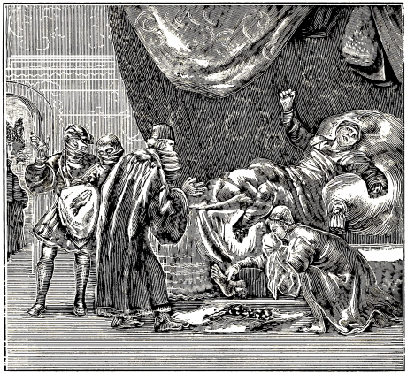
GOD’S JUDGMENT ON KING HONORICUS.
A. D. 477, Honoricus, King of the Vandals, an adherent of the Arian sect, arose with great violence against those who would not assent to his views, cruelly persecuting, and lamentably maltreating them. He had honorable women and maidens suspended naked; their bodies burned with torches; their breasts and arms cut off; hot pitch applied to their back, breasts and sides; he also caused them to be drawn up, and heavy stones tied to their feet, etc.
When he proposed to many that they should swear an oath, some thought it not contrary to God, but the bishops and elders of the church of Christ would not swear, saying that it was prohibited in the gospel, since Christ says: “Swear not.” Thereupon they were martyred, or at least severely punished. Those, however, who had been prevailed upon to swear, did not escape free, for, according to ancient writers, he punished both alike; these, because they had sworn contrary to the command of the gospel, and those, because they refused to swear.
In the meantime, the distress and misery were so great that scarcely a house could be found that was not filled with wailing and lamentations.
After this terrible tyrant had put to death, by these and similar torments, as well as exiled, a countless number, God, after many plagues had been sent upon that country, awfully punished him: worms and lice so gnawed his flesh that his whole body became putrified, one member dropping off after another, so that he was buried piecemeal, thus coming to a horrible and not less ignominious end—the evident vengance of God for his tyranny against the Christians. Compare P. J. Twisck, Chron., 5th, book, pag. 166, col. 2, with Chron. Carionis, lib. 3, fol. 29. Eccl. Caspar Hedio 3d, part, lib. 2, cap. 18–21, 25, 27, Chronol. Leonh. Krantz., lib. 3, fol. 87, 89. Paul. Merula, fol. 381, 382. Histor. Andr., fol. 180. Jan. Crespin, fol. 139.
NOTE.—It is stated that about this time, until the year 495, and afterwards, there were made in different councils held in Africa five hundred and five laws (called canons or rules), in which among other things it was resolved by the Roman church: 1. “That the children of the Donatists, (namely those Donatists who had renounced the doctrine of Donatus) shall not be re-baptized.” 2. “That those 194who say that a child is not to be baptized for the forgiveness of sins, etc., are excommunicated.” 3, Act. 23. That the agitation about baptism should be suppressed by military force.” Seb. Franck, Chron. der Roomsche Concilien, fol. 48, col. 2–4, etc.
NOTE.—From the third article it appears: 1. That at this time there were people who stirred up agitation about baptism, that is, infant baptism, for this was now practiced by the Roman church. 2. That these people were suppressed by military assistance or force. What views, besides this article, these people held, or in which manner they were suppressed, we have not been able to ascertain; hence we let this suffice.
It appears that at this time the persecution and marytyrization of those who were baptized according to the ordinance of Christ was still in progress; of which the godfearing teacher Fulgentius makes mention to his contemporaries. Bapt. Hist., 2d part, page 464, num. 12, from D. Vicec., lib. 3, cap. 3, from Fulgentius, lib de fide ad petrum, cap. 30.
“Rest assured of this,” he writes, “and doubt not that those who, for the name of Christ are baptized in their blood, without which no man shall receive eternal life, that is, who has not previously been converted from his sins through repentance and faith, and redeemed through the sacrament of faith and repentance, that is, through baptism.”
When Fulgentius here speaks of those who, for the name of Christ are baptized in the blood, etc., he plainly indicates thereby, that blood was shed then inasmuch as people were baptized with it as it were, that is, such people as he speaks of further on, namely, “who are converted through repentance and faith, and redeemed through the sacrament of faith and repentance, that is, through baptism,” etc.
However, if to any one the above words of Fulgentius appear rather too obscure for the purpose in view, we leave him to the free and unrestrained enjoyment of his own judgment.
NOTE.—At this time, namely about the close of this century, those who opposed infant baptism were so hated by the Roman church, that in a certain council of Carthage, two persons, whose names we for certain reasons omit, were condemned, because 195 they had denied infant baptism. Bapt. Hist. 2d, part, page 436, taken from the 9th chapter van de Doop gebruyken der Roomsche Kerke, fol. 460.
As to the persons themselves that were condemned, we commit them to God, since our only aim is to show how exceedingly the aforementioned doctrines were hated, and those who defended them, oppressed, yea, condemned at that time. With this we conclude our account of the martyrs of the fifth century.
[Shortly after the beginning of this account, Alcimus is introduced who declares that baptism was prefigured in the suffering of Christ; his testimony, however, in regard to this, is reserved for another place.
Cassiodorus follows Alcimus, saying that in baptism believers are regenerated to new creatures.
He is followed by Fortunatus, who speaks of the virtue and benefit of baptism, saying that those who are regenerated by baptism, become children of God.
People who indicate that infant baptism is not in accordance with the holy Scriptures.
The council of Ilerda, in Spain, establishes various canons or rules against the Anabaptists and those baptized by them; forbidding to eat with them.
The council of Agathe decrees that all Jews who desire baptism must first be instructed for eight months, with the catechumens. Confession of faith preached to those desiring baptism (see margin as well as column).
In the first council of Constantinople it is decreed that the Eunomians and Montanists must first walk for a considerable length of time with the church [brotherhood], hear the holy Scriptures, and shall then, if found faithful, be baptized.
Of certain persons termed fanatics, who prevailed upon the imperial councilors, to abolish infant baptism.
Justus Origelitanus says excellent things with regard to the nature and efficacy of baptism.
One Peter, and his companion Zoroaras defend Anabaptism.
An account, from Gregory, of certain Jews, some of whom were baptized on Easter, others on Whitsuntide, after previous instruction.
Vincentius shows that it was customary to renounce, before baptism, all pomp, and the works of Satan.
Of the white robes put on the newly baptized, and the gifts it was customary to present to them.
How Brunechildis, the daughter of Arthanagildus, was rebaptized.
Of Euthimius, who entertained some that had been baptized, forty days; and how he admonished them.
Touching a certain prayer pronounced over the candidates, containing very beautiful sentiments respecting the dignity and benefit of baptism.
It is held that Theophilus Alexandrinus differs from the Roman church, in regard to holy baptism and the holy Supper.
The followers of Donatus again cited, and excused in various things.
Christian novices, before baptism, divided in two classes.
Statements with regard to the corruption of the writings of the ancients; yet that on the subject of baptism authentic testimonies still remain. With this we have abbreviated and concluded this century.]
Although in the sixth century, Roman darkness, as regards the corruption of divine worship, began to arise more and more, and the divine and evangelical truth necessarily had to sink out of sight at times, inasmuch as the Roman Bishop and others, who held with him, began, as it were, with the black smoke of manifold superstitions, shamefully and lamentably to darken the bright and transparent commands of Christ, as baptism, the holy Supper, the command not to swear, and others; so that baptism on faith was converted into infant baptism, the Lord’s Supper into a superstitious mass, the command not to swear, into a permission to swear, and other articles also greatly corrupted; yet in the meantime nevertheless, there were people, yea eminent persons, and even such, at times, as (living in quiet as they did) were reckoned to belong to the Roman church, through whom the aforesaid darkness was illuminated, the superstitions removed, and the pure truth of the holy Gospel brought to light as a brightly shining sun; inasmuch as they, opposing infant baptism, recommended baptism upon faith; abolishing the mass or transubstantiation, taught the simple Supper of Jesus Christ; rejecting, according to the doctrine of Christ and James, oaths and swearing, commanded the people not to use oaths, or to swear at all.
But it would require too much time to treat on, and show, all these things; hence we shall follow the custom we adopted in the beginning, and speak principally of baptism, showing briefly, by whom and in what manner the same was practiced according to the rule of Christ and the usage of his apostles, and confirmed by doctrine or example.
Alcimus writes (lib. 1, de Orig. Mundi) in the 6th Cent. Magdeburg., fol. 112, concerning the doctrine of baptism: “That baptism is prefigured in the suffering of Christ.” Thereupon follows a certain verse from Alcimus, in which baptism is compared to the water which flowed from Christ’s side, and to the blood of the martyrs; of which, however, we will not speak further at present, as we intend to reserve it for a place where it will be more to the purpose. Jacob Mehrning also notices this verse in Bapt. Hist., page 467.
A. D. 508.—Or at the time of the Emperor Anastasius, surnamed Flavius Valerius, the highly enlightened and gifted Cassiodorus, is stated to have 196 lived and written, who says with regard to baptism (on Cant., cap. 7), “that it is a divine fountain, in which believers are regenerated to new creatures.” J. M., Bapt. Hist., page 467.
What else is this, than what our Savior himself says (Mark 16:16), that believers must be baptized; and (John 3:5), that one must be born again of water and of the Spirit; which accords with the words of Paul (Tit. 3:5), where he calls baptism the washing of regeneration, because, believers, when they are baptized, must forsake the old life, and be regenerated into a new life. Rom. 6:4.
Cassiodorus, on Cant., cap. 4, teaches (Bapt. Hist., page 468), That all believers shall (or must) be baptized. “There can be,” he says, “no believer without the washing of baptism (that is, no true believer, who can stand before God and his word, without baptism; for he who commanded faith, also commanded baptism).
Again, in cap. 7: “No one can enter the church, who has not previously been washed with the water of baptism, and made to drink of the fountain of wholesome doctrine. This well agrees with the words of the apostles, who thus testifies of himself and of the Corinthian church: “For by one Spirit we are all baptized into one body . . . and have been all made to drink into one Spirit.” 1 Cor. 12:13. By this, the apostle (like Cassiodorus) indicates that all who are true members of the church of Jesus Christ, must have communion in two things: First, they must have been made one body with each other by baptism. Secondly, they must have been made to drink into the Spirit, or the doctrine of the divine word; which, as every intelligent person knows, are things that cannot be complied with by infants, but only by adult and intelligent persons.
Cassiodorus, on Ps. 23 (page 469), says: “The water of refreshing is the washing of baptism, in which divine gifts are poured upon the souls that have become barren through the withering influence of sin, that they may bring forth good fruits.”
Again: “The souls of the elect (or of the baptized) have, in baptism, forsaken the corruption of the old man, and are renewed in Christ.”
Again: “As the people (of Israel) were preserved by the Red Sea, in which Pharaoh perished, even so, the church of the heathen, has been redeemed, through baptism, from the bondage of the devil, and brought into the true promised land, the liberty of the Gospel; and thus she (that is the church of the heathen) who was formerly a handmaid of iniquity, has now become the friend of Christ, and been washed, through baptism, from the filth of sin.”
Beloved reader, attentively consider the last three passages of Cassiodorus, and you shall find that they, in every particular, indicate that the baptism of which he speaks, is not at all infant baptism, but such a baptism as Christ commanded to be administered upon faith; for, when he says, in the first passage, that in (or through) the water of baptism, divine gifts are poured upon the souls that have become barren through the withering influence of sin, that they may bring forth good fruits, he certainly thereby indicates that he speaks of such candidates as had previously become barren through the withering influence of sin, and to whom gifts were now imparted in (or through) baptism (namely, by God, for the strengthening of their faith), that they might bring forth good fruits, which, as every one knows, can be done by none but adult and virtuous persons. By the second passage, in which he says, that the souls of the elect (or of the baptized) have forsaken, in baptism, the corruption of the old man, and are renewed in Christ, he again indicates that the persons of whom he speaks, had lived, before baptism, in the corruption of the old man, wherefore it was necessary for them to forsake it in baptism, and, by a pious life, to be renewed henceforth in Christ; but how this applies to infants, may be judged.
We now come to the third passage, in which he speaks of the passage of the people of Israel through the Red Sea. He compares the Israelites to those who, having been converted from heathenism, were baptized; the Red Sea, by which the people of Israel were delivered, he compares to baptism, through which those who had been converted from heathenism, had obtained their redemption, according to the soul, depending on the merits of Jesus Christ; Pharaoh, who was drowned with his people in the Red Sea, he compares to the bondage of the devil, from which believers are redeemed in baptism, through the grace of the Son of God; the entrance of Israel into the land of Canaan, he compares to the entrance of believing, baptized Christians into the true promised land—the liberty of the Gospel. Finally he says, in the same passage: “Thus she who was formerly a handmaid of iniquity, has now become a friend of Christ, and been washed from the filth of sin.”
All these things militate so clearly against infant baptism, and confirm baptism upon faith, according to the ordinance of Christ, that it seems unnecessary to me, to add anything further respecting Cassiodorus. The impartial will judge aright.
About A. D. 515.—Or properly after Cassiodorus, is placed, in the History of the Holy Baptism, the wise, but as it appears, excessively accused Fortunatus; from whose writings the author of said history adduces several passages, respecting which he makes the following annotation in the margin: “All the preceding commendations must be understood as referring solely to the true baptism of Christ, which is received as he has ordained it, and which consists in the word, Spirit, and water, and is obtained in (or upon) faith; and not as relating to any self-invented infant baptism.”
He then shows, page 468 in his account, what Fortunatus himself writes concerning it, saying: “Of the virtue and benefit of baptism, Fortunatus teaches (lib. 10 in Expos. Orat. Dom.): Man, when regenerated by baptism, becomes a child of God, who previously, through transgression, belonged to his enemy, and was lost.” “Man, before baptism,” he further says, “is described as being carnal, but after baptism, as being spiritual.”
In a letter of the orientals to Symmachus, it is written: “Christ our Savior has taken away, on the cross, our handwriting, that we might henceforward, after the washing of regeneration (that is, 197 baptism) be no longer subject to the sins of our wickedness.”
These passages pertain only to adults, or at least to such as are possessed of understanding, but in no wise to those who have attained to neither years nor understanding; for it certainly means something, to be regenerated by baptism, yea, to be made a child of God, which Fortunatus, in the first instance, so expressly confesses.
Touching the regeneration of water and the Spirit, Christ did not command it to the unintelligent, but to a master of Israel, John 3:5; and of those who had put on Christ, through baptism, the apostle says: that by faith they became the children of God. Gal. 3:26,27.
Thus also it is a matter of moment, to be carnal before baptism, and spiritual after baptism, which he nevertheless adds: For, beloved reader, what is it to be carnal, but to live after the lusts of the flesh? This, says our author, is done before baptism; hence it is also evident that he speaks of a baptism before the reception of which one can live after the flesh.
What, on the other hand, is it to be spiritual, but to live after the inclination of the spirit? that is, according to the rule which agrees with the spirit, and the word of God; but this, he states, is done after baptism; hence it follows that the baptism of which he treats, is of such a nature, that he who has received it, can live after the Spirit.
But how can these two things, namely, to live after the flesh before baptism, and after the Spirit after baptism, apply to infants, of this he that has experience may judge.
That which is written to Symmachus, in the letter of the orientals, is of the same nature; for there it is said of regenerated baptized persons that after the washing of regeneration, that is, after baptism, they are no longer subject to the sins of wickedness; which sufficiently indicates that he speaks of such people as are subject, before baptism, that is, before they are baptized, to the sins of wickedness, but from which they are freed after baptism, through the grace of God and a holy purpose. Certainly, infants differ widely from this.
A. D. 520.—That at this time, and thence forward, there were persons who not only taught baptism upon faith as ordained by Christ, but who also, now and then, opposed infant baptism; this is unanimously maintained by the well-tried Jacob Mehrning, scholar of the holy Scriptures, and the very learned Montanus, in these words: “Nevertheless, as truth cannot remain suppressed, some were found, in the course of time, who, seeing that infant baptism did not accord with the holy Scriptures, dared candidly confess this. Of such there were many. A. D. 520, and from that time forward in this century, for several years in succession, as may clearly be gathered from the fourth canon of the council of Gerunda, in Spain, held the aforementioned year, in which it was decreed concerning catechumens, that they should be baptized on Easter and on Whitsuntide; but in case of feebleness or sickness, also on other days. From Cent. Magdeb., Cent. 6, cap. 9, de Synodi.
For, that those who were born of Christian parents, and had been brought up from their youth, in the Christian religion, were reckoned among the catechumens, is evident from the example of Ambrose, and his brother, Satyrus, sons of the Christian parents Symmachus and Marcellina, as may be seen in the oration of Ambrose, on the death of Satyrus; and it is further confirmed by the example of Theodosius, Ambrose, Jerome, Basil, M. Augustine himself, his natural son Adeodatus, and Alipius; who though born of Christian parents, as already stated, were nevertheless reckoned among the catechumens, till the day after previous instruction, they were baptized. Bapt. Hist., page 480. H. Mont. Nietigh., pages 79, 80.
Perhaps some one may think, in which of the preceding words is infant baptism spoken against? which is nevertheless so distinctly asserted by Jacob Mehrning and H. Montanus. We reply, that they do not express it in formal words, but indicate it by the circumstances which they adduce. For, when they, in the first place, speak of the fourth canon of the council of Gerunda, in Spain, in which it was decreed that catechumens should be baptized on Easter and on Whitsuntide, they thereby indicate that the baptism of new-born infants cannot have been practiced there, because infants are born not only on Easter and Whitsuntide, but throughout the whole year; and in another place it is stated that not only no catechumens, but no one else, should be baptized at any other time than Easter and Whitsuntide.
In the second place, when they declare that by the catechumens here spoken of, there are to be understood not only such youths, or scholars, as were of heathen descent, but also those born of Christian parents, as is proved by the example of Ambrose, Satyrus, &c., it shows that many Christians, at that time, left their children unbaptized till they, after sufficient instruction, as was given to the catechumens, were baptized of their own accord, on either of the two feasts, Easter or Whitsuntide.
Sebastian Franck calls the catechumens, of whom the aforementioned council speaks, scholars of the faith, and relates the decree of said council, as well as the time when the same was held, on this wise: “The council of Gerunda, held in the seventh year of King Theodoric, passed, among nine decrees, also this: That the catechumens, that is, the scholars in the faith, should be baptized only on Easter and Whitsuntide, except imminent death should require it otherwise.” Chron. Rom. Council., fol. 73, col. 1.
About A. D. 525.—Or in the 15th year of Theodoric, King of France, those of the Roman church again found themselves in great embarrassment with regard to the so-called Anabaptists. The matter rose to such a pitch that it was thought well to assemble a council against them, as had been done by Pope Felix, A. D. 487, at Rome. Accordingly, about A. D. 525, the second council against the Anabaptists was convened, not at Rome, as the first, but at Ilerda, in Spain; to which there assembled, as was usually the case, many of the bitterest papistic bishops—in order to extirpate, or at least check, the heresy, as it was called—who made a 198 number of rules and laws, not only against the Anabaptists, but also against those who, having separated from the Roman church, had been rebaptized by them; of which rules, among others, the following are noted:
Canon 9. “Concerning those who through transgression have been rebaptized, and have fallen without necessity, it is our will, that the statutes of the Nicene synod be observed respecting them, which are considered to have been passed for such offenders: that they shall pray for seven years among the catechumens, and two years among the catholics, and then,” &c.
Canon 14. “Godly believers shall not eat with the rebaptized”. Bapt. Hist., pages 477, 478, from the 6th Cent. Magd,. cap. 9, fol. 240, ex Decret. Synod, Ilerdensis.
The 13th canon of this synod, also given in the same place, we suspect, has been misquoted; however, as it does not apply here, we leave it in its own merit.
That the 14th canon, however, which speaks only of the rebaptized, concerns the so-called Anabaptists, appears from the annotation of Sebastian Franck, of Wordens, in part 3 of his Chronijk, fol. 73, col. 1, who translates this canon thus: “The clergy and believers shall not partake of meals with the Anabaptists.”
From this it can be seen in what detestation, yea, abhorrence, the so-called Anabaptists in the time past, were held by the Romanists, inasmuch as they were not considered worthy to eat with, even as once the Samaritans, publicans, and sinners had been regarded by the Jews.
We will not investigate minutely, whether the so-called Anabaptists of that time held the same views, in regard to every article, with those who, at the present day, are designated by that name; nor will we, if perhaps in some points they did not teach aright, or were not fully enlightened, defend, much less, praise them; it suffices us, that they, besides other good and wholesome articles, mentioned by us in another place, held this in common with the Anabaptists of the present day, namely: That they did not approve of the baptism which by the Romanists is administered to infants, but rejected it, so that they baptized, or, at least, baptized aright at first, those who, having come to adult years, embraced their faith.
It also is praiseworthy in them, that they, notwithstanding the anathema of the Pope and the councils, yea, regardless of persecution, suffering, and death, as shall be shown in the proper place, maintained and manfully defended their views. We know of nothing further that we could say of them, from authentic writers, but will commend them, as well as ourselves, to God and his grace. As regards the manner in which they were proceeded against, in subsequent times, as well as how they conducted themselves herein, we shall show in the proper time and place.
About A. D. 530.—D. Joseph Vicecomes, in his treatise records (Bapt. Hist., page 482), the following testimonies from the sixth century.
Of the decree of the Christians, at Agathe, about A. D. 530, he says, lib. 3, cap. 1: “The council of Agathe, cap. 13, says: It is the will of all the church, that on the eighth day before Easter, the confession of faith be preached publicly in the church to those desiring baptism.”118
We do not especially favor the decrees of councils; yet, when they agree with the word of God, we accept them, not because men have uttered them, but because they have been pronounced already in the word of God. Thus, when it is said of all the churches which existed at that time, that it was their will that the confession of faith should be publicly preached on the eighth day before Easter; and also that it was added, how and to whom it was to be preached, namely, before those desiring baptism, we find not only that it well accords with the word of God, Mark 16:15,16, but, moreover, that not only a few individuals, but all the churches, namely, those which dissented from the church of Rome, held that view, namely, to baptize after previous instruction.
In the second place, when it is said here, that the confession of faith should be preached to those desiring baptism (that is, not to infants), it clearly follows that the candidates here spoken of, had themselves to desire baptism, yea, that they themselves had to profess the confession of faith preached to them, else there would have been no reason to preach it to them.
Vicecomes (lib. 2, cap. 2, page 483), quotes the following words from the 7th chapter of the first council of Constantinople: “As many of the Eunomians and Montanists as desire to embrace the faith, we receive, as we do the Grecians; on the first day we instruct them in Christianity, on the second day we receive them as disciples, and on the third day we bless them (or require them to renounce Satan); and thus we instruct them, taking care that they walk in the church for a considerable time, and hear the holy Scriptures, and then, and not before, if they are found upright, we baptize them.
This first council of Constantinople is placed, according to the order of D. J. Vicecomes, in Bapt. Hist., immediately after the council of Agathe, held about A. D. 530; and although we have long searched for it, we have not been able to ascertain the correct date of it; hence we make no change in the order.
After this, Vicecomes places the sixth council of Constantinople, in which several things illustrating the point we have in view respecting baptism upon faith are presented; but since we find from other writers, that said council was not held in this century, but many years after, Vicecomes having greatly erred in this, we will not proceed further with it here, but reserve our account of it for the proper time and place. We therefore turn to what is quoted in the 7th chapter of the first council of Constantinople, where it is said in regard to those of the Eunomians and Montanists who should desire 199to unite with that church, that they should not be baptized until they had been instructed one, two, or three days, yea, had walked for a considerable time in the church, and heard the holy Scriptures.
Take this matter, as you may, and it indicates that the Constantinopolitan teachers recognized no other baptism than that administered in their own church, namely, after previous instruction; notwithstanding the Eunomians and Montanists might have alleged that they had been baptized in their infancy; yet this was regarded as useless and of no value.
About A. D. 538.—It is recorded that at the time of Justin and Justinian, the Roman Emperors, there were people, termed fanatics by their opponents, who brought over to them and persuaded the imperial councilors and ministers, that infant baptism should be abolished; against which the aforementioned Emperors set themselves to prevent it. Concerning this, Jacob Mehrning, in Bapt. Hist., page 487, says: “M. Rulichius, page 249, from whom M. Glaneus quotes this, acknowledges (page 627) that at that time there came forth many strange fanatics (he calls them fanatics, though they were far more pious teachers and Christians than Rulichius and Glaneus, and reproved, from the ordinance of the baptism of Christ, the encroaching abuses of infant baptism) who prevailed on and persuaded the imperial councilors and ministers, that infant baptism should be abolished. But Justin, and other Emperors would prevent the same by their authority and interdiction.”
He then relates, from the constitutions [laws] of the Emperors, Justin and Justinian, in what the interdiction, or, at least, the decree, ordained by these Emperors respecting this matter, consisted; from which it can be seen, that not only was infant baptism rejected and contemned by those contemptuously called fanatics, but that even by the adherents of the Roman church it was not looked upon as a command, but merely as a matter which was permitted; though at other times again, through the decrees of popes and councils, it exceedingly prevailed.
In the meantime, it is gratifying to us, that even our opponents, who were strenuous advocates of infant baptism, I mean M. Rulichius and M. Glaneus, confess that also at that time (about A. D. 538), there were persons who sought to abolish infant baptism; from which it appears that the truth of baptism upon faith could not be suppressed to such an extent that it did not, according to opportunity, manage to raise its head; and that, on the other hand, the error of infant baptism did not triumph to such a degree that it did not have its opponents when opportunity offered. Thus blooms the rose among thorns, Cant. 2:2. God remains faithful to his promises, Ps. 33:4. Christ is with his church even unto the end of the world, Matt. 28:20.
About A. D. 542.—Justus Origelitanus says (in Cant., Bapt. Hist., page 469): “They that are baptized in the name of Christ, are filled with the Holy Ghost.” Doubtless, this has reference to Acts 2:37,38, where Peter says to those who inquired what they must do to be saved: “Repent, and be baptized every one of you, in the name of Jesus Christ . . . and ye shall receive the gift of the Holy Ghost;” which certainly was not spoken to infants.
Again: “The fair church of Christ,” says Justus, “is cleansed by the washing of water (that is, by baptism).”
Thus also Paul speaks, Eph. 5:26, saying that Christ has cleansed his church with “the washing of water by the word;” whereby he indicates that the believers of whom he speaks were cleansed not only with the washing of water (that is, baptism), but also by the word, that is, the doctrine of the Gospel; upon which passages Justus has based his declaration, though he, for the sake of being brief, it seems, is silent about the word.
Again: “They have ascended,” he says, “from the washing of water, when they, having received the forgiveness of sins by baptism, have increased in Christ.”
His speaking here of ascending, that is, climbing up from, the washing of water, and of increasing in Christ, clearly shows that he does not speak of infants, but of persons who have the ability to climb up from the washing of water, and to increase in Christ, which is peculiar to believers only.
He then gives some additional testimony, in the same place, corroborative of the point we have in view; but as it is expressed in almost the same language as that quoted above, we pass it by, so as not to repeat the matter.
About A. D. 545.—Or immediately after Justus Origelitanus, Olympiodorus is placed, who speaking of baptism, says: “The spiritual birth, which is effected by the washing of regeneration, resembles the death (of Christ) in that those who are regenerated, in this divine washing, are buried with Christ in baptism.” Bapt. Hist., 469, from Olympiodor., in Eccles., cap. 3.119
Certainly, this is clearly following, though in other words, that which the apostle presents to the consideration of the believing Romans (Rom. 6:3), where he asks them whether they knew not that they all who were baptized into Jesus Christ, were baptized into his death; that like as Christ was raised up from the dead by the glory of the Father, even so they also should walk in newness of life. We need not say anything further in regard to this, since the matter as to what persons and what baptism are here spoken of, is self-evident.
About A. D. 548.—Or 550, it is related, that one Peter, as well as one Zoroaras defended Anabaptism; but as to how and in what manner it was done, whether they rejected infant baptism, or whether they recognized no other baptism than that upon faith and administered in their own church, or otherwise, of this I find no other account than that recorded in Bapt. Hist., page 472, from Nicephorus, where it is said: “Nicephorus writes (lib. 17, cap. 9): Peter, Bishop of Apamea 200in Spain, and Zoroaras, a Syrian monk, defended Anabaptism.”120
But if these men have erred in other respects perhaps, which in that dark age could very easily have been the case, we would not justify it; it suffices us that they, as regards this article, dared oppose the common doctrine of the Roman church; which could not have been done without peril of life, or, at least, not without reaping calumny and obloquy.
About A. D. 551.—That it was customary at this time, to baptize on Easter and Whitsuntide, is recorded from Gregory, who says that several Jews were baptized on Easter, and several on Whitsuntide. Bapt. Hist., page 472, from Gregor., lib. 5, Hist. cap. 11.
That this custom of baptizing on Easter and Whitsuntide, pertained only to believing penitents, and in no wise to children, we have previously sufficiently shown; to which we refer the reader. But to remove all doubt, mention is also made in the same place, in the History of Holy Baptism, of the preaching or doctrine of faith which it was then customary to present to the novices, who were to be baptized. As an example of this is adduced the wife of Sigibert, who, having been rightly instructed in the faith through such holy preaching, was ultimately baptized. Bapt. Hist., page 472, from Greg. Turon., lib. 4, cap. 26.
About A. D. 553.—When, as it appears, the good old custom of renouncing and forsaking Satan, which was wont to be done publicly at baptism, in connection with the confession of faith, began to cease, or, at least, fall into neglect, it was revived and again brought to remembrance, by the teacher Vincent;121 concerning which the following observation is found in Bapt. Hist., page 473, from Vinc., lib. 21, cap. 6: “It was the custom, to renounce (that is, forsake), before baptism, all pomp and the works of the devil, which can certainly not be done by children.”
About A. D. 556.—At this time white robes were put on the newly baptized, after baptism. Thus, Gregory Turon (lib. 5, cap. 11), says—that at Avernio five hundred Jews were baptized at once, and then went their way, clothed in white robes.
Gifts were also presented to the baptized; thus, Guentheramus gave presents to Clotharius, when the latter had been baptized. Bapt. Hist., p. 484, from Gregor. Turon., lib. 10, cap. 27.
This putting on of the white robes after baptism, signified that the newly-baptized, having put off the garment of sin, must henceforth be clothed in the clean white robe of true righteousness and holiness; to which applies Eccl. 9:8: “Let thy garments be always white;” and Rev. 3:4: “They shall walk in white;” also, Rev. 19:8: “And to her was granted that she should be arrayed in fine linen, clean and white: for the fine linen is the righteousness of saints.”
As to the gifts presented to the newly-baptized, this indicated that God thus imparts his heavenly gifts and blessings to them; as Peter said to those whom he exhorted to be baptized: “And ye shall receive the gift of the Holy Ghost,” Acts 2:38.
However, if it should be, that with this putting on of white robes, and giving of presents, there was coupled any superstition (of which, however, we are not aware,), we would not commend, but rather speak against it. What we have in view here, is simply this, that such ceremonies were not, and could not be, performed with infants, inasmuch as the latter are too weak in understanding to comprehend, as well as in ability to perform, the same. Hence it follows, that such baptism, at that day, was not administered to infants, but to adult, reasonable, and believing persons.
About A. D. 560.—It is stated, from Adon. Aetat. 4, and Turon., lib. 4, cap. 26, that Brunechildis, the daughter of Arthanagild, had been baptized, probably in her infancy, by the Arians, but that subsequently, having been married to Sigibert, she was rebaptized in the name of the Holy Trinity. This is related more fully by J. Mehrning, in Bapt. Hist., p. 475. But whether Brunechildis continued in the true footsteps of the faith, after her rebaptism, of this we have no account; it suffices us to know that having been baptized, probably in infancy, by the Arians, she was afterwards, in adult age, rebaptized, or, at least, baptized aright, upon confession of faith; the first baptism having no foundation.
About A. D. 562.—Joseph Vicecomes (lib. 5, cap. 53), quotes Cyril Monachus, in the life of the Patriarch, Enthymius as follows: “When he had entertained for forty days, several persons that had been baptized, had admonished, and diligently instructed them in godliness, and inculcated in them, in various ways, the things necessary to their salvation, he let them depart in peace.” Bapt. Hist., page 484.
In what place and manner, and under what circumstances, the aforementioned persons were baptized, is not stated; hence we must be content with what is shown, from which we can infer that those persons were baptized upon faith, seeing they were yet confirmed, after baptism, in the doctrine of faith and godliness; and thus it follows that the custom of baptizing upon faith was practiced at the place where this occurred.
About A. D. 570.—Vicecomes (lib. 4, cap. 12), quotes, from Severus Alexandrinus, a certain prayer, which it was customary, at that time, for the teacher to pronounce over those who were baptized: “O God! take out from them the old man, which destroys himself through the lusts of error, and clothe them with the new man, which is daily renewed in thy knowledge.”
Again (lib. 5, cap. 27): “O Lord God! who hast imputed unto us redemption through Christ, and through the water, in the Holy Ghost, hast given to these thy servants, regeneration; thou, O Lord, who lovest light, confirm and uphold them in holiness, that they, illuminated by the light of thy grace, and standing before thy table, may be made worthy of thy eternal salvation.”
In chap. 38 he relates how the candidates, immediately after baptism, were brought to the holy Supper, and crowned with wreaths, and how the teacher then 201 addressed them, exhorting them to joy and holiness of life, saying: “Dear brethren, sing a hymn of praise unto the Son of the Lord over all, who has crowned you with royal crowns. You have now, my beloved, received unfading crowns from the waters of Jordan, through the power of the Holy Ghost. Dear brethren, ye have put on to-day the glory of the baptism of the heavenly Adam.”
He finally adds the wish addressed by the teacher to God, saying: “The holy God give you holiness with this seal wherewith you are sealed, and mark you with the ring of a sweet-smelling anointing, by this baptism wherewith you are baptized; may he make you worthy of his kingdom, and crown you, instead of this perishable crown, with the crown of righteousness and every good work.”
Having quoted this much, Jacob Mehrning says: “All this is utterly inapplicable to infant baptism.” Bapt. Hist., page 486.
Same year as above.—It is stated that about this time there also lived Theophilus Alexandrinus, who, it appears, held views entirely different from those of the Roman church, with regard to baptism as well as to the holy Supper; so that he wrote against the manifold adjurations which were wont to be connected with the consecrating of the baptismal water, as also against transubstantiation or the essential change of the bread into the body of Christ, as follows: “A false Christian (namely, one who deems adjurations over the baptismal water necessary), does not consider that the water, in holy baptism, is sanctified by the word of God (which was wont to be spoken to the candidates who confessed the faith), and the advent of the Holy Ghost; and that the bread of the Lord, by which the body of our Savior is signified, and which we break for our sanctification, is consecrated through invocation of the Lord.” Observe he does not say, transubstantiated, but consecrated.122 See Bapt. Hist., page 486, from D. J. Vicecomes, lib. 1, cap. 14.
A. D. 586.—Long since, namely, for the year 317, we cited Donatus, and showed, according to Seb. Franck, Chron. Rom. Kill., letter D., that he was a very learned Bishop of Carthage, a native of Numidia, and that he taught that the Pope and his adherents did not have a Christian church, and, consequently, no true baptism; and hence held that those who had been baptized in the Roman church, needed to be rebaptized, saying that there was only one church, one baptism, one faith, one Gospel, and that no children should be baptized, but only believing adults who desired baptism. At first almost all Africa adhered to him. See the place indicated above.
This doctrine, however, did not die with him, seeing mention is made of his followers much later (namely A. D. 586), that they at that time, under the leadership of one Peter, Bishop of Apamia, rebaptized those who had been baptized by the orthodox (or Catholic) church. See concerning this, P. J. Twisck, Chron., 6th book, page 201, col. 1, from Greg. lib. 8, Merul., fol. 446. Also our account for the year 548.
NOTE.—-The followers of Donatus, of whom we speak here, have of old been severely accused by their opponents of gross errors, tyranny, &c., but are acquitted thereof by other celebrated authors. Nevertheless, we would not accept them in every respect, but only in those of their teachings which are good and true.
H. Bullinger compares them throughout to the Anabaptists, or as he calls them Baptists, saying: “Here our Baptists again disclose their ignorance, when they teach that no one should be compelled to that which is good, or to the faith;” and, continuing, he says: “They resemble the ancient Baptists, the Donatists, in every respect.” “These,” he writes further, “were of the opinion, that heretics should be allowed to live without restraint and with impunity in their faith;” that is, without persecution or blood shedding. They were opposed by Augustine. H. Bulling., lib. 5, fol. 216, 222.123
As to the accusations formerly brought against their faith as well as their life, these have been refuted by several prominent authors. “It would be desirable,” writes P. J. Twisck, “if we ourselves had their writings, doctrines, and deeds; for, if it is true, that they resemble the Baptists in every respect, and are not willing that any one should be compelled in matters of faith.” It is therefore sufficiently, as Bullinger says, evident, that they were unjustly accused. Chron., 5th book, page 147, col. 2. This is more fully spoken of in the account for the year 317.
About A. D. 600.—We will now bring the history of baptism in the sixth century to a close. We would adduce more writers in confirmation of said matter, but we fear that many authors of that time did not write faithfully and uprightly; besides, that many of their descendants, in order to give color to infant baptism and similar doctrines, appear to have corrupted their writings, of which many excellent men have complained.
Jacob Mehrning, in his Indachtigmaeckinge over het Doopsel, of the 6th century, says: “Thus the Centuriatores Magdeburgenses, also the two doctors, Calixtus and Brandanus Detrius, in their disputations about baptism, must themselves confess that in this century, and much longer, the Christian novices were divided into two classes, as in the primitive church, which observed a distinction between the catechumens and believing applicants for baptism, or the “elect,” as they were called by the ancients.
But continuing, he writes the following concerning the corruption of the writings of the true teachers: “Here must also be taken into consideration, that which the Centuriatores Magdeburgenses, Dr. Calixtus, Dr. Meysner, Dr. Johan Gerhard, Dr. Guil. Perkins, in Ementito Catholicismo, and many others so frequently complain of, namely, that the writings of the fathers and the primitive teachers of the church, have been so amazingly abused, in manifold ways, corrupted, interpolated and mutilated. Pray, 202who indeed will be our surety, that Augustine and others of the fathers have written and taught about infant baptism, all that is ascribed to them.
However, the fathers and teachers of the church, whose writings are extant, constitute but a very small part of the whole number. Were the writings, books and testimonies of the countless hundreds and thousands of other teachers of the church, bishops, and laymen experienced in the word of God, who have written, preached, taught, and spoken against it, in various parts of the wide world, to come to light, and could we also have the original manuscripts of the fathers, namely, those who have written against infant baptism, and compare them together, we would be astonished to see how faithfully the truth has been maintained in all ages, but also, how it has been suppressed by the innovators of baptism (that is, those who baptized infants). Yet, however mutilated and corrupted the writings of the fathers as we now have them, are, there are nevertheless to be found in them many very excellent testimonies respecting Christ’s true ordinance of baptism, and very confused ones as regards infant baptism; for which we owe special thanks to God, and to him only, who thereby mightily confirms us in the truth. Bapt. Hist., 2d part, pages 481, 482.
Thus, not we, but those who have unfaithfully dealt with the writings of the fathers, are the cause that we must here close our account of the baptism of this time; however, in some of the following centuries, where we meet with more authentic writers, we shall be able to explain and amplify this more conclusively.
[The verse of Alcimus, reserved in the preceding account of baptism in this century, is now adduced, as the first proof of the martyrization of this time, and circumstantially explained.
Mention is made of various severe persecutions that occurred about this time, of which fifteen are enumerated; it is also shown in what kingdoms, principalities, or countries they took place, as well as who the tyrants were by whom all this was committed against the Christian believers.
An explanation that it is hardly credible, that all the countries in which the aforementioned fifteen persecutions occurred, were subject to the Roman See; which is amplified, and its signification shown.
Arnold, a teacher of the Gospel, martyred in a forest, in France, and buried by his wife, presented as a pious martyr in the year 511.
In the margin (in connection with Arnold) a severe persecution in Arabia, A. D. 520, is spoken of; what inference may be drawn from it.
The oppression of the church and the servants of God, under Granus, son of the King of France, is noticed, for the year 562; then, in the margin, mention is made of forty Christian peasants, who suffered under the Longobards; however, for certain reasons, they are not absolutely accepted.
After this, for the year 566, other forty persons are mentioned, the most of whom were put to death with the sword, because they would not commit idolatry, or forsake Christ; in the margin an explanation is given with reference to this, and they are recognized by us as true martyrs.
Golauduch, a Christian woman of Persia, put to death, by the Persian Priests, A. D. 598.
Some remarks respecting the time in which Evagrius lived, who has recorded the last mentioned instance of martyrdom.]
Here will be the proper place to sing, with mournful voice, the blood-red verse of Alcimus, mentioned by us on a former occasion; as the author of the history of holy baptism places Alcimus at the very beginning of this century, which arrangement meets our approbation. With regard to the oppression of the Christians of his time, he expresses, in the German language, as a song of mourning, the following lines:
The question now is, what Alcimus meant to say by this verse. He treats of two things: 1. of Baptism; 2. of Martyrdom, comparing thereto the water that flowed from Christ’s side, when a soldier had pierced it with a spear.
I. Of Baptism.—Of this we shall say but little, since this subject has been sufficiently discussed in our preceding account of baptism as practiced in this century; yet, in order to proceed properly, and to pass by no part of said verse, we say that the resemblance which Alcimus here finds in the blood that flowed from Christ’s side, saying that it was to the people, or to the peoples, a sign of baptism, neither can nor may be applied as referring to infant baptism; for not only the sense, but even the words of the verse, would contradict this. As to the words, he does not say that said water is to infants a sign of baptism, which he certainly must have said, had he meant infant baptism by it; but he says that it was to the people, or peoples, a sign of baptism, which word (people, or peoples), in holy Scripture as well as in secular authors, is generally understood to mean adult, or, at least, intelligent persons, who can be taught, or to whom something can be signified; 203as, for instance, Christ said to his disciples: “Go and teach all nations, baptizing them,” etc. Matt. 28:19. Moreover, that infants are unable to understand the signification of little things, even to say nothing of this great mystery of baptism, is so clear that it cannot, with truth, be controverted.
II. Of Martyrdom.—This is what we have chiefly had in view; for he says in the last line of the aforementioned verse: “Thus flows to-day the martyrs’ blood.” Certainly, here he indicates that at the time when he wrote this, the blood of the (believing) martyrs was shed; for this is indicated by the word, to-day, which generally is understood to mean the present day; but here properly signifies the present current time. Moreover, as to the persons whom Alcimus notices as martyrs, and of whom he says that their blood flowed to-day, they cannot be understood to have been other than orthodox martyrs, or, at least, such as held the same views and doctrines with him; for the first, ancient, and true Christians called none martyrs, but their fellow-believers who had suffered or been put to death for the faith. From this, it would seem, has proceeded the old adage, which is still used: “Not the suffering, but the good cause from which he suffers, makes the martyr.”
Of the correct views of Alcimus, and, consequently, of those whom he calls martyrs, especially in regard to baptism, we have spoken before, and have also just now given some explanation with reference to it; which must suffice for the present. The impartial reader may decide for himself. In the meantime it behooves us to investigate and, if possible, show when, where, why, and how said martyrs suffered. But, not being able, on account of the scarcity of ancient writers, to ascertain all this, we shall content ourselves with what we do find in regard to it, and shall therefore endeavor to follow the most faithful and truthful records.
We have counted from Abraham Mellinus alone, besides from many ancient writers referred to by him, who have more fully recorded the martyrdom of this time, fifteen persecutions in this century, which were raised most vehemently against the Christians, in various countries.
In order to condense this as much as possible, so as not to weary the reader, we shall not present the account of the aforementioned author word for word, but extract from it the pith and import thereof, and present it as clearly as is possible for us to do. In the 2d book of the History of the Persecutions, etc., under the head: “Exposition of Satan bound a thousand years,” fol. 293, col. 1–4, are described, in consecutive order, among other things, the aforementioned persecutions, within the bounds of the sixth century, namely, from A. D. 518 to the close of the century; which we have briefly summed up thus:
First of all, mention is made of many oppressions by the Jews, heathen, and others; by which all Christendom was kept in commotion, from the reign of the Emperor Constantine the Great, to that of Justin the Great (fol. 293, col. 2); however, since said oppressions occurred before the time of Justin the Great, that is before A. D. 518, we will leave them, as not belonging to the number mentioned by us.
1. It is stated that besides the persecution instituted in the beginning of the reign of Justin the Great, by Theodoricus, the Arian, against those who were called orthodox Christians, a certain Jewish tyrant, called Dunan, in the fifth year of Justin’s reign, violently persecuted the Christians in the city of Nagra. Fol. 293, col. 3.
2. Of Amalric, King of the West Goths, in France, it is stated that he heaped much vexation and contempt upon his own wife, Clotildis, because she was orthodox in the Christian faith. Ibidem, from Hist. Gall. and Isidor., in Chron.
3. It is declared that in the third year of Justinian the Great, nephew of Justin the Great, a persecution against the Christians was raised by the Samaritan Jews in Palestine. Ibidem, col. 4.
4. Afterwards there was also a short persecution of the Christian believers, by the Vandals, in Africa. Ibid.
5. Also, the Arian persecution of the Christians, by Totila, which is said to have taken place under Justinian, in Italy, is mentioned by the same writer.
6. Besides these the persecution originated by the Jews and Samaritans, at Cesarea, in Palestine, was repeated in the 29th year of the reign of Justinian. See above.
7. We read that in the time of Justin II., the Christian churches in Pers-Armenia were oppressed by Chosroe, the King of Persia. See above.
8. In the third year of said Justin, Alboin, the first King of the Longobards, invaded Italy, having sworn to annihilate all the blood of the Christians with the sword. Ibid.
9. At this time, also a Saracenic persecution against the Christians was carried on, by Manucha.
10. After this, Chilperic, an enemy of the Christians, exercised great cruelty towards them. Fol. 294, col. 1.
11. In the first year of Mauritius, Emperor of the Cappadocians, the Persians instituted a persecution with fire and sword, in Armenia. Ibid.
204
12. At this time, the Longobards, throughout Italy, did not cease to oppress the Christian believers. See same place.
13. About this time there was also a persecution in France.
14. Also in Spain.
15. In England the heathen sought to exterminate the Christians. For full information on the above persecutions, read, aside from the above references, A. Mell., pages 293, 294 and on to p. 303.
NOTE.—In said fifteen persecutions that occurred in this century, we notice that twelve different kingdoms, principalities, and other countries, are mentioned, situated not only in Europe, much less in Italy (which can also be reckoned only as a single country), where the Roman Bishops chiefly had their seat and ungodly dominion; but also, yea, for the most part, in Asia and Africa, which were far remote from Italy, being different parts of the world. The countries mentioned, in consecutive order, are these: 1. Nagra, a place or region in Arabia. 2. France. 3. Palestine. 4. Some region in Africa. 5. Italy. 6. Cesarea. 7. Pers-Armenia. 8. A certain country where the Saracens persecuted the Christians. 9. Another country, where Chilperic tyrannized. 10. Armenia. 11. Spain. 12. England. These are the countries mentioned, besides those that are passed over, but were also subjected to persecution.
Who will believe now, that all these countries were under the Roman Empire? Yea, more than that, what man of ordinary intelligence will think that they all adhered to the Roman See, and, consequently, that all the persons who were slain in said fifteen persecutions, professed the Roman religion? Surely, this does by no means appear; but the opposite is quite evident. In the first place, because we do not find, in reliable authors, that the authority and power of the Roman Bishop, or Pope, was so great at this time, that not only Europe, but also Asia and Africa, constituting the whole of the ancient or then known world, bowed to him; which would nevertheless have to be proved and established, for in these three divisions of the world are situated the abovementioned kingdoms, principalities, and countries, and the aforementioned persecutions occurred not only within, but also beyond their boundaries.
In the second place, that at this time there were people in different countries, who, not only in regard to baptism, but also in other points of religion, held views entirely different from what those of the Roman church understood and believed, is so clearly evident from our previous account of baptism in this century, that no reasonable person will dispute, much less be able to refute it.
Hence it follows, that to all appearance, in the abovementioned fifteen persecutions, not a few, or, at least, some, orthodox believers were put to death, as true martyrs; for such have of old been paramountly subject to persecution. We shall therefore investigate what people have at this time, as pious witnesses of Jesus, steadfastly testified to the truth of their Savior by their death, and sealed it with their blood.
It is stated that in the eleventh year of the sixth century, a certain pious teacher, by the name of Arnold, not willing to bury the talent given him by God, in the earth, but if possible, to obtain some spiritual gain for Christ his Savior, by preaching the Gospel, exchanged his life for death in the forests of France, and has thus been reckoned among the number of the pious martyrs. Concerning this, P. J. Twisck, among others, notes the following, for the year 511: “When Arnold preached the Gospel of Christ and the Christian faith in a forest in France, near Paris, he was martyred, and was buried there by his wife.” Chron., 6th book, p. 177, col. 2, from Chron. Nicol. Gillem., fol. 44.
NOTE.—All the particulars mentioned respecting said Arnold, clearly indicate the uprightness of his mind and views, as well as how far he stood aloof from the superstitions of the Roman church, which superstitions then had already risen very high. The latter especially appears from various circumstances.
First, Because it is stated that he did not preach the traditions and legends of the Romanists, but the Gospel.
Secondly, Because it is shown what he preached from the Gospel, namely, Christ and the Christian faith, but nothing about the power of the Roman bishop, or about the Roman faith.
Thirdly, because it is stated, according to ancient writers, that having been martyred for said faith, he was buried there (where he had been put to death) by his wife; but to have a wife the Romanists had many years before forbidden, to teachers and deacons, on pain of deposition. With regard to this, the article established about the year 495, in a certain papal council, reads as follows: “The priests, that is, those who also preach, and deacons shall abstain from taking unto themselves wives; if they do not observe this, they shall be deposed from their office.” Seb. Franck, Chron. Rom. Concilen, fol. 48, col. 4, from Concil. Aphr.
Fourthly, because we have found, in the ancient registers, in which the names of the principal ancient teachers and martyrs are recorded, not the least charge laid against this man, either of superstition, or anything else; although we searched diligently, and had others search.
NOTE.—It appears that about nine years after the death of said martyr, Arnold, namely, A. D. 520, a great persecution arose in Arabia against the Christians; of which P. J. Twisck writes the following: “A. D. 520, a seditious Jew, who pretended to be the second Moses, caused an awful massacre and persecution of the Christians, at Nagra in Arabia, in the reign of the Emperor Justin; he slew the pious Bishop Arethas and many thousands of Christians. Chron. 6th book, page 180, col. 1, from Nicephor., lib. 16, cap. 6. But as we have not been able to obtain reliable information, except that which we have shown, concerning this Bishop Arethas, as to whether 205 he was a true and orthodox Bishop, as well as in regard to the many thousands of Christians who were slain with him, as to whether they professed a good profession of faith, which we doubt very much, we will not concern ourselves with them. Nevertheless, it must be considered, that among so great a number there were at least some, here and there, who died in the true faith, seeing the same were sometimes scattered in various countries. Of this we will let the well-meaning reader judge for himself.
That believers and the leaders of the church of God had to suffer great oppression at this time, our beloved brother and co-worker in Christ, P. J. Twisk, deceased, in his time, signified to his cotemporaries with these words: “About this time (562), the churches and the servants of God were greatly vexed by Granus, the wicked son of the King of France.” Chron. 6th book, page 192, col. 1, from Paul Merula, fol. 431, hist. Wenc., fol. 78.125
Shortly after the death of the peasants just spoken of in the margin, as the heathen Longobards, according to their custom, were offering to Satan the head of a he-goat, about forty meek and pious Christians were apprehended. When their captors, in honor of Satan, had gone round their sacrifice, consecrated it by their sorcerous incantations and conjurations, and had bowed their heads before it, and worshiped it, they wanted to constrain the captive Christians to worship with them this head of the he-goat. But most of the Christians, preferring to die and strive for life immortal, rather than to live and worship the idol, refused to bow their heads, which they had always bowed in honor to God their Creator, before a vain and perishable creature. Thereupon, the enemies of God and his Anointed, who had not hesitated to fight against the Lord, and to kick against the pricks, put to death with the sword, all of said captive Christians who would have no fellowship with their idolatry; and thus they (the latter), all became blessed martyrs of Jesus Christ. Compare A. Mell. 2d book, 1699, page 299, col. 4, from lib. 5 Dialog., cap. 28.126
About A. D. 598, in the time of the Emperor Mauritius, Golauduch, a woman of Persia, who had once been an adherent of the Persian religion, but subsequently become converted to Christ, and, consequently, had been baptized upon her faith, and remained steadfast in the confession of the Christian religion, even unto death. Of this, Evagrius makes mention, whom we take to be the same one of whom we have spoken elsewhere, and shown that he has described and commended as something praiseworthy, the baptism of candidates; that is of those who were baptized upon confession of faith. He writes the following of said Golauduch: “At that time (namely, in the reign of Mauritius), there lived among us, the godly martyress, Golauduch, who, having suffered many and severe torments at the hands of the magi or Persian priests, finally obtained the martyrs’ crown; of whose life, old Stephen, Bishop of Hierapolis, has written an account.” Compare Evagr., lib. 6, cap. 19; also, Nicephor., lib. 18, cap. 25, ex Act. Sabulosis, with A. Mell., 1619, fol. 301, col. 1.
Abraham Mellinus and J. Mehrning, however, differ in regard to the supposed time in which Evagrius (who, it appears, wrote the above account of the martyrdom of Golauduch), is said to have lived, J. Mehrning referring him to the middle of the fifth century, while Abr. Mellinus, on the other hand, places him almost at the close of the sixth. This difference of chronology we leave to them, holding, nevertheless, that they both wrote of one and the same person; who was a good historian and well versed in ecclesiastical affairs.
This person, then, called Evagrius, having commended as praiseworthy the baptism of the above mentioned candidates, that is, of those who had previously been instructed in the faith, afterwards, it appears, also makes mention of said martyress Golauduch, virtually calling her his sister in the faith, and a member of his church. For, when he says: “At that time, there lived among us, the godly martyress Golauduch,” what else does he mean to indicate thereby, but that said woman belonged to, and lived in, the very church of which he was a member, or, at least, whose doctrine he loved and cherished? Besides, we have not found anything laid to her charge, as regards her faith and good conversation, as has been stated of the preceding martyrs; hence we are satisfied with regard to her.
206
[Adrian is mentioned as the first one who, in this century, declared himself, not so much in words as in deed, against infant baptism; as to the manner, however, in which the Romanists proceeded against him, shall be more fully spoken of elsewhere.
The Bracerensian papists, to prevent the decline of infant baptism, confirm it in a certain council.
The pious adhere to the true ordinance of the baptism of Christ, notwithstanding the power of the Pope and the decree of the aforementioned council.
In the mean time there were baptized (that is, in adult age), Anastasius, the Persian; Theodorus or Theodus; many hundred Jews; some in Upper and Lower Saxony; some in England.
Probation or examination in the faith, was at this time practiced by the orthodox, as did, among others, Amandus, Birinus, another teacher.
Those of the Jewish nation now became members of the Christian church; some of whom, after confessing the faith, asked for baptism.
How Zeno of Verona was wont to address the candidates; explanation of his address.
The example of the Egyptian divines, who preached the doctrine of faith, before baptism, to the candidates, is followed by others at this time.
The time for baptism, which was fixed on Easter and Whitsuntide, is ordained to every day, on account of infant baptism. The Pope also decrees that during the mass the kiss of peace be offered to the people, in order that the mass, which, it appears, was esteemed but little by many, might be regarded the more highly.
The believers were not turned away from their faith, by said papal decree; nay, it appears that even some of the Roman church declared themselves against the papal superstitions; as, 1. Isidorus, 2. Cesarius, 3. Adelheymius, 4. Agatho, 5. Julian Pomorius. In the mean time, mention is also made of Isidorus of Spain, and what he has written on baptism, namely of the applicants for baptism, and fellow-prayers.
The Christian parents, Lutgerus and Libuga, left their son Lutgerus unbaptized, till he, having accepted the faith in France, was baptized thereupon.
Finally, the difference between those of the Roman church and those who administered baptism upon faith.
Conclusion of the account for this century.]
Notwithstanding in this century the seat of anti-Christ was exalted to its highest altitude, inasmuch as the Emperor Phocas, A. D. 606, conferred upon the Roman Bishop the title of Papa, that is, Pope or Supreme Father, which name was first assumed by Boniface III., writing, in the decrees emitted by him to enjoin obedience: “We will, we ordain, we decree, we command, etc.; thus I will, thus I ordain, thus I decree, thus I command;” whereby many superstitions and human inventions were presented to the people as the word of God; such as image worship, salutation of the sacrament, observance of infant baptism as necessary to salvation, etc.; yet many pious people not only refused to obey all these things which the Pope prescribed, but some even flatly opposed it, daring to censure, reject, and contume, some in this and some in that respect, the papal and Roman superstitions, as among other points, was done with regard to infant baptism and all that pertains to it, with which not only some of the common people, but also some eminent and learned men were dissatisfied, so that they abandoned it altogether, yea, indicated by words and actions, that they were opposed to it; which became manifest even in Rome, as will be shown in the proper place.127
A. D. 606.—In this very year, in which the Pope was accepted, by Phocas, as the head of the general Latin church, the celebrated teacher and Bishop Adrian publicly opposed infant baptism, wishing neither to baptize the children himself, nor to have them baptized, but utterly refusing them baptism; on account of which he was accused by Gregory the Great, Bishop of Rome, to John, Bishop of Larissa, as appears from a certain letter sent by Gregory to John, in which, among other things, the following is contained: “The second article of the accusation against Bishop Adrian is this: that he refused baptism to infants, thus letting them die.” Centur. Magd., Cent. 9, cap. 4, page 141, according to the account in Bapt. Hist., page 496, and H. Mont. Nietigh., page 80.
It appears, indeed, that this said Adrian was criminally punished for his views against infant baptism, and because he let the infants die unbaptized, as is stated by the ancients, and shall appear more fully in our account of the martyrs.128
A. D. 610.—Infant baptism, it appears, being at this time, held in very little esteem by many, whether in consequence of the teaching of the above mentioned Adrian, or for some other reason, so that it was considered useless and not necessary to salvation, those of the Roman church publicly opposed this sentiment, in order either to eradicate it, or, at least, to excommunicate it by the anathema of the Pope; wherefore, A. D. 610, in the second Bracerensian Council, among other articles, it was established, decreed, and published: “That infants must be baptized, as necessary to their salvation.” Seb. Franck, Chron., Rom., Kett., fol. 74, col. 2. P. J. Twisck, Chron., 7th book, page 213, col. 2.
But how the true Christians, who rightly observed Christ’s ordinance of baptism, conducted themselves with reference to this matter, and whether they suffered any persecution on account of it, is not clearly expressed, but, if necessary, shall be explained more fully in its proper place.
207
About A. D. 620.—Although, through the authority of the Roman Pope, who had been chosen the supreme head of the church, and through the decree of said Bracerensian council, infant baptism was now so firmly established, that no one who wished to remain a member of the Roman church, dared utter a word against it; yet, among those who loved Christ more than the Pope, and esteemed the Gospel more highly than the decrees of popes and councils, the true faith and the true ordinances of Christ, especially the article of baptism, were nevertheless maintained aright; concerning which very much might be stated, had not the books and writings of the pious been so lamentably and tyrannously destroyed by those of the Roman church. However, we are in possession of as much testimony from authentic writers, as is necessary to establish said matter.
As regards this, that baptism was at that time administered to adult persons, by those who were opposed to the decree of the Roman church in the matter of infant baptism, appears from three circumstances: 1. from the time of baptizing; 2. from the place of baptizing; 3. from the persons baptized.
As to the time of baptizing, Easter was expressly specified in the Anti-idiorensian council, where it was established, in opposition to those who baptized new-born infants every day: That no one should be baptized at any other time than Easter, except in case of imminent death. In Decr. Antis.; until which time instruction in the faith was usually given to the candidates, as is sufficiently shown above.
As regards the place of baptizing, it was not in a font or basin, but in the wilderness, here and there at the rivers, whither, as every one can easily judge, new-born infants cannot go; neither can they observe the manner then customary at baptism, namely, to kneel during baptism, and go in or under the water; of which there were many instances at this time in warm countries. Among others, Bede (lib. 2, cap. 16), writes: “That Paulianus baptized many persons at noon, close by the city of Trovulsinga, in the river Trehenda.”
This manner of baptizing, by the ancients called immersion or submersion, has long been observed, even up to the present time, especially by the eastern and southern nations, who understood the Greek word baptisma (baptism), or baptizo (to baptize), to signify a total immersion or submersion in water; however, it is found that, according to the idiom of the Greek language, said words do not only signify an immersion or submersion in, but also a washing or sprinkling with, water. For instance, baptisma, baptismos, is translated sprinkling, washing, dipping, etc. See Dictionar. Tetraglott., in quo voces Latine omnes cum Græca, Gallica and Belgica interpretatione. Amsterodami ex Typographia Ravesteniana, A. D. 1634.
However, we leave the above mode of baptism to its own merits; it suffices us to have shown that it could not be administered to infants, and that those who were baptized after this manner, must have been adult and intelligent persons.
As to the third point, namely, what persons were then baptized, has been made sufficiently clear from the two preceding circumstances of time and place; but over and above this, we will mention some persons. At this time there was baptized at Jerusalem, Anastasius the Persian; at Constantinople, the celebrated Persian woman, Cæsarea, with her husband and many of her followers were baptized; in Bavaria, Theodorus, also called Theodo or Theodus, with much people received baptism; in Spain, many hundreds of Jews were baptized upon faith, the number of which are reckoned by some writers to have been several thousands, which number, however, in order not to overstep the bounds of truth, we have not dared to give or follow; the same occurred in Upper and Lower Saxony, in England, and other countries, where at this time, it is stated, countless numbers attained to the faith, and were baptized upon it. This is stated in Bapt. Hist., page 491, from John Magnus, Paul Diaconus, Bede, Hist. Gath, etc., which should be compared together.
About A. D. 632.—At this time, probation and examination in the faith were practiced by the orthodox teachers. Those who presented themselves for baptism, whether of Jewish, heathen, or Christian parentage, were first proved and examined in the faith, which examination generally took place six or seven times in the week before Easter or Whitsuntide; to the end, that the candidates, having made a good confession, and having been confirmed in the faith, might be baptized at the approaching holiday. This custom is noticed by many writers; we will, however, present only this brief extract from Bapt. Hist., page 492: “The Bishop or teacher Amandus made the son of Dagobert a catechumen, before he baptized him.” Regina, lib. 1. In Lower Saxony, Birinus observed it as a rule not to baptize people before he had catechized, that is, instructed, them. Bede, lib. 4, cap. 16. Another teacher, according to Metaphrastes, instructed a certain Jewish virgin, before he baptized her. Vincent states of Arnulph, that he baptized (that is, after previous instruction), a sick person, who shortly afterwards got well. Lib. 23, cap. 76, by which we would not indicate that baptism possesses any virtue to heal the body, but that it is administered to intelligent persons, and that upon faith, according to the ordinance of the Lord, Mark 16:15,16.
About A. D. 646.—As the doctrine of faith in Jesus Christ was now greatly spreading, and the believers increased in many places, so that the church, which at times, on account of persecution, had been wont to hide in dens and caverns, began to arise here and there, as herbs spring up from the earth in spring-time, her growth was seen to proceed not only from those who, born of Christian parents, accepted the faith, nor only from heathen who became converted to the faith, but principally from the Jews, who had previously been very bitter against the Christians, but who now came in multitudes, as occurred not long since, to be baptized in the name of Christ, upon faith; an example of which is given by Gregory of Turon (lib. 5, Chron. Franc., cap. 11). Some Jews who desired baptism, said with one accord to the teacher: “We believe that Jesus is the Son of the living God, promised unto us for a Prophet and Messiah; therefore we pray to be 208 washed by baptism, that we may not abide in our sins.” The teacher rejoiced at this confession, and, in the night before Whitsuntide, when it was customary to watch and to pray, he went to the place of baptism, situated without the city walls; where the whole multitude fell down before him and prayed to be baptized. Bapt. Hist., page 499.
About A. D. 658.—D. Joseph Vicecomes quotes from Zeno of Verona, a certain address which the latter was accustomed to direct to the candidates, saying, when they were about to be baptized: “Rejoice (beloved friends); it is true, in baptism you are divested of your clothes, but adorned in the heavenly robe, you shall soon ascend again, white as snow; whosoever will not defile it, shall inherit the kingdom of heaven.” Bap. Hist., page 501, from Vicecom., lib. 4, cap. 10, from Zeno’s second homily on baptism.
All these are certainly expressions that relate to intelligent persons, and are not in the least applicable to infants; for, when, in the first place, it is said here: “Rejoice,” this is the opposite of sorrow, which sorrow the candidates previously were wont to feel on account of their manifold sins, over which they wept and mourned; but now, being washed in baptism, through faith and the blood of Christ, they had reason to rejoice, even as the jailer, who, having been baptized, rejoiced with all his house, Acts 16; and as the Ethiopian, who, after baptism, went on his way rejoicing, Acts 8:39.
The putting off of the bodily clothes before baptism, and the putting on of the snow-white robe of righteousness in baptism, as well as the solicitude not to defile it with sin after baptism, referred to in the above address to the candidates, is no work for infants, but only for adult persons; hence, the baptism spoken of there, is not infant baptism, but a baptism peculiar solely to the adult and those of reasonable minds.
About A. D. 670.—At this time, the holy baptismal ordinance of Christ was still rightly observed in Egypt; namely, the doctrines of the faith were preached to the candidates before baptism; yea, this practice was so highly regarded there, that some in other countries, separating from the Roman church in this article resolved to restore the Christian religion according to the example of the Egyptian Christians; hence they were styled beginners in the Christian religion. In allusion to this, quotation of Vicecomes (lib. 2, cap. 3), from Jacob Pamelius’ book on Tertullian, is no doubt made, saying that the beginners in the Christian religion (that is, those who, separating from the Roman church, established the Christian religion upon the original apostolical foundation), adopted the practice of catechization (that is, teaching the doctrines of the faith), before baptism from the Egyptian divines. Bap. Hist., page 501.
About A. D. 682.—As the believers who strictly observed the baptismal ordinance of Jesus Christ, increased in no small degree, as can be inferred, in many countries, yea, even in the Roman church, so that, in regard to the time when baptism should be administered, they had, here and there, settled on a fixed time; namely, that it should take place on one of the two feasts, Easter or Whitsuntide, and that to this end, the catechumens should previously be notified and, in the weeks preceding said feasts, instructed in the faith; those of the Roman church, as may easily be judged, were not well satisfied with this, seeing it was a means to completely set aside infant baptism; and not only this, but to abolish entirely all other superstitions and human inventions, which, with so great labor and costs, by councils and otherwise, had been introduced into the Roman church, ostensibly for the best. It was therefore—in order to prevent this, it seems—deemed expedient to renew and republish the import of what had previously, A. D. 610, been decreed in the second Bracerensian council, namely: “That infants should be baptized, as necessary to their salvation,” that is, on pain of damnation. But what was really done in this matter, is not expressed in all its particulars; however, it has not been passed by unnoticed, seeing Pope Leo II., according to the Roman notation, the 82d, who then occupied the chair, ordained: That during mass the kiss of peace should be offered to the people, and that baptism might be administered any day. P. J. Twisck, Chron., page 233, col. 1, from Hist. Georg., lib. 4. Chron., S. F., fol. 19.
From this it can be seen that the Pope’s principal concern was, not to lose the mass and infant baptism, both of which were chief points upon which rested the Roman church, as the temple of Dagon upon two pillars, which were threatened, now by this Sampson and now by another, by the arms of the Spirit and the word of God, yea, were in danger of being utterly pulled out and broken. Now, what does the Pope to prevent this? As regards the mass, he ordains that during mass the kiss of peace should be offered to the people. But how could he more insinuatingly and affably bind the common people to the superstition of the mass, than by offering to them the kiss of peace? But when the lion’s skin will not reach, that of the fox is brought into requisition.
As to infant baptism, what does he ordain to preserve it? This: that baptism might be administered any day. But some one may think: This does not concern infant baptism; consequently the latter is not confirmed by this decree. We answer, that the pope certainly sought to establish it thereby; for, inasmuch as infant baptism was weakened in no small degree by the practice of the believers who baptized their candidates only on Easter and Whitsuntide, as already stated, there was hardly another remedy to maintain infant baptism, than to ordain all times and days for baptism, for thus it could be administered to new born infants, who are born not only on Easter and Whitsuntide, but throughout the whole year, and who, according to his view, must then also be baptized.
A. D. 699.—The decree of Pope Leo II., for the confirmation of infant baptism and the mass, as mentioned for the year 682, did not have the effect of causing the believers who had separated from the Roman church, and maintained the baptism upon faith, to swerve in the least from their faith and the practice of the same; on the contrary, it appears that still more, yea, even learned men, separated 209 from the Roman church in this said article and joined the little flock of Christ, so that some of them who formerly had maintained infant baptism, the mass, the traditions, the meritoriousness of good works, and the seven sacraments, now taught differently, and opposed the Pope in these points. Of these, five persons are mentioned in the Chronicles, whom P. J. Twisck, in his seventh book, for the year 699, notes, saying: “Isidorus, Cesarius, Adelheymius, Agatho, and Julian Pomorius taught in opposition to the Pope concerning the holy Scriptures, justification, good works, that there are but two sacraments, and concerning the name of the church, which was not built upon Peter, but on Christ.” Page 238, col. 1, from Joh. Munst., fol. 121.
But preeminently is mentioned by other writers, Isidorus of Spain, who, having at one time been a strenuous advocate of infant baptism, now taught and wrote such things as could, with reason and judgment, in no wise be applied thereto. For, commenting on John’s baptism, which even our opponents admit to have been administered only to adult, penitent sinners, he compares it to the baptism of his own time, saying: “I hold that all who were baptized by John unto repentance, were patterns of the catechumens.” Bapt. Hist., page 498, from Vicecom., lib. 2, cap. 4, from Isidorus of Spain, in lib. de Div. Officiis.
What kind of persons these catechumens were, and how they were instructed before baptism in the doctrine of the faith, called the catechism, has already been sufficiently explained, and it is not necessary to repeat it here: yet, over and above this, we will adduce the man’s own words, as I have found them translated in Bapt. Hist., page 499. “After the catechumens,” he says, “there is the second grade—the applicants for baptism or fellow-prayers, that is, those who are striving for the doctrine of the faith, and sobriety of life, in order to receive the grace of Christ in baptism, and, hence, are called fellow-prayers, that is, such as pray for the grace of Christ.” Lib. 2, de Div. Officiis, cap. 21.
What took place ultimately with these applicants for baptism, in his time, he indicates with these words: “On Palm Sunday (that is, the Sunday before Easter), the Symbolium (that is, the twelve articles of faith) is delivered to the applicants for baptism, on account of the approaching glorious Easter feast, in order that they, as striving to receive the grace of God (that is, baptism) should first learn the faith which we confess.” Bap. Hist., page 499, from Isid., lib. 2, de Div. Off., cap. 27.
These words, compared with the preceding ones, clearly show, what custom as regards baptism, prevailed at that time in the church of which he speaks; namely, that the catechumens, or, at least, the novices, were first instructed in the catechism, that is, in the doctrine of the faith, until they were meet to be baptized; and that from that time on, they were called applicants for baptism, and fellow-prayers, because they desired baptism and prayed for it. This could certainly not be done by newborn infants.
As regards that which is noted elsewhere from Isidorus (ex lib. de summo bono), with reference to other views on baptism which he is said to have entertained, we do not accept it as having been written by him, and this for good reasons, which, however, it would require too much time to relate; unless it be said that he wrote it before he was converted, and had obtained light on the matter; and here we would let the matter rest.
A. D. 700.—We come now to the last year of this century, in which we perceive that at that time not only those of Jewish or heathen parentage, but also those born of Christian parents, were instructed in the faith before they were admitted to baptism; so that the Christians who sought the salvation of their children, left them unbaptized, till they were able themselves to confess their sins, profess the faith, and thereupon desire baptism as a sign of the same. Among these, the two pious Christians, Lutgerus and his wife Libuga, are not considered of the least. It is stated of them, that they left their son Lutgerus unbaptized, till he, having learned and accepted the faith in Jesus Christ, in France, was baptized thereupon, A. D. 700. P. J. Twisck, Chron., 7th book, page 239, col. 1, from Grondig. Bewijs., letter B.
We now leave this account of baptism in the seventh century; in which, on the one side, the oppressed believers practiced the true ordinance of the baptism of Christ upon faith; while, on the other side, the oppressing Roman church deviated the longer the more from it, so that they not only forsook, but also opposed the command of Christ to baptize only upon faith.
On the other hand, infant baptism and many other superstitions were so firmly established, that almost no one except those who did not fear the anathema of the Pope, and death, dared oppose these things. It is truly astonishing, what P. J. Twisck writes, and truthfully, concerning this, in his conclusion to the seventh century, with which we will also conclude this: “The Pope of Rome, having been declared head of all the churches by the Emperor Phocas, gradually established the boundaries of his power, authority and jurisdiction, not only in, but also beyond, Italy, yea, beyond Europe, and this with exceeding haughtiness. The pomp and greatness became unendurable; yea, the avarice of the clergy generally was so great that they obtained ecclesiastical offices through presents, in order to derive temporal gain therefrom, and would scarcely baptize an infant, unless money was given them for it.”
Herewith enough has been said regarding this matter, and we will therefore turn to the martyrs who suffered at this time for the truth of Christ their Savior.
[After the oppression exercised by the heathen and Arians, the Roman Pope also began to direct his 210 arrows against the orthodox Christians. This forms the beginning of our account.
Bishop Adrian, of whom we have already related that he refused baptism to infants, is now criminally punished for this cause, A. D. 606.
Concerning the chapter of criminal matters, some further observations are made; also, as to whether said Adrian really suffered corporal or capital punishment.
Thereupon follows a notice concerning the following martyrs, noted by P. J. Twisck for the years 614 and 628, and recorded by us.
Many Christians apprehended by the Longobards, and put to death, A. D. 614, because they refused to eat, in honor of the idols, food offered to idols.
Of the sufferings of the Christians in Persia, and how a great many of them were delivered from imprisonment, given for the year 628.
Mention made of eight severe persecutions instituted against Christian believers, from A. D. 622, to the close of the century; the places where these persecutions happened, and the names of some of the tyrants who originated them.
Further observations concerning said persecutions and martyrs, which concludes the account of the martyrs of this century.]
When first the heathen and then the Arians, the former by open, wicked violence, the latter by secret, tyrannical hypocrisy, had for a long time not only scattered the flock of Christ, but devoured with wolves’ teeth, as it were, many of its innocent and defenseless lambs, then, in this century (a thing almost unheard of), the Roman Bishop, now called Pope, began to arise as the forerunner of antichrist, seeking to destroy those who opposed the Roman church, not only by anathematizing, excommunicating, and awfully threatening them, which alone would have been sufficient to strike terror into the heart, but, besides this, it seems, by criminal and actual punishments, which generally touched the body or the life. Of this we hope presently to show an example from which the rest of his wicked deeds may be inferred.
In our account of baptism for the year A. D. 606, we made mention of the celebrated teacher and Bishop Adrian, and stated, from a certain letter sent by Gregory the Great to John, bishop of Larissa, that Adrian was accused of having refused baptism to infants. But it seems it did not stop at said accusation, but that they, to all appearance, proceeded further and more severely and cruelly against him; for the above was imputed to him for a crime or a heinous sin. Hence he was criminally proceeded against, which criminal punishment sometimes related to property, but most frequently it was of a corporal, or capital nature.
Moreover, though said punishment was ordained for great crimes and criminals, yet in the case of Adrian, we can perceive, it was founded on nothing but his disregard and rejection of infant baptism, as appears from the sequel of Gregory’s letter to John, which reads thus: “Pursuant to the chapter of criminal matters, a charge was preferred against Bishop Adrian, or brought against him by way of punishment, concerning the children which, by his orders, had been kept from baptism, and died in darkness, unbaptized (or unwashed) from the filth of sin.” Compare with the account in Bapt. Hist., page 546.
If any one should object that said chapter of criminal matters, was not comprehensive and rigorous enough, and that therefore, Adrian was probably not really punished corporally or with death, by virtue of the same, with such a one we do not feel inclined to dispute. It suffices us, to have learned, on the one hand, that this teacher Adrian, did not hesitate, even though he should incur severe penalty, to speak against infant baptism, yea, what is still more, to reject infants from baptism, and to let them die unbaptized, as being under the grace of God; and on the other hand, that those of the Roman church were exceedingly dissatisfied with this, yea, to such a degree, that the chapter of criminal matters was opened and, apparently by form of sentence, set before this good man, either to send him (after preceding excommunication) into banishment, or to strip him of his property, or to punish him corporally or capitally. But whether said sentence was actually executed on him, is not clearly expressed; hence we commit the truth of the matter to God.
In the meantime, there appears what we have said before, namely, that the Pope or the Roman church did not hesitate, not only to anathematize, as had formerly been customary, their opposers, especially those who spoke against infant baptism, but to proceed against them criminally or by way of corporal punishment. This was done with the said teacher Adrian, concerning whose departure we have a good hope, whether he died a natural or a violent death. The Lord knows his own, and shall in the hereafter not leave them unrewarded, who have suffered for testifying to his truth, and opposing error.
We have not been able to obtain certain or clear information as regards the confession of faith of the martyred persons of whom we shall presently speak; hence we dare not reckon them all indiscriminately among the true and orthodox confessors of the true faith; the more especially, as the sword of persecution then came upon all who bore the Christian name (as had before, yea, frequently, been the case), in places where such persecutions occurred. Persons were also not examined so very closely with regard to this or that controverted point of the faith (I speak of those who were apprehended by the heathen), for these were things of which the persecutors 211 knew nothing, while it was quite different with those who fell into the hands of the papists mentioned above. The people were simply asked whether they would sacrifice to the idols, renounce Christ, etc. Hence the reason, that in the confession of the martyrs who suffered among the heathen, but little is said regarding controverted matters of faith which are now discussed among Christians; but this is discussed more fully elsewhere.
The negligence of the writers of those times, the absence of the art of printing, and the violence of persecution, which caused people to flee and roam about, are also no small cause why so little can be adduced concerning the confessions of the martyrs. This has been more fully explained in our account of baptism.
Therefore we hold, according to the judgment and nature of love, that among the martyrs of whom we shall speak, there were, if not all, at least some, who viewed the matter aright, and whose martyrdom had for its foundation a good confession; but to accept them altogether, or to enter deeper and more fully into the matter, we do not deem advisable, for reasons already mentioned.
In order, then, to present the matter in the briefest and simplest manner, we shall follow the account of P. J. Twisck, as being a summary of what the ancients have recorded concerning it.
“The Longobards,” says Twisck, “apprehended many Christians, and sought to compel them, to eat meat which they had offered to their idols; and when they refused, they put them to death. They also put to death four hundred who would not worship their gods.” Chron., page 216, col. 1.
As to what might be adduced concerning the confession of faith of these slain persons, and how far we accept them as martyrs, see the foregoing notice.
Continuing in his account, the above mentioned author finally speaks of the year 628, for which, in the beginning, he records these words: “About this time, the Christians had to suffer much also in Persia.” He then relates that the Emperor Heraclius, having come into Persia, liberated many of the imprisoned Christians; the number, however, of those who suffered, as well as of those who were delivered from imprisonment, is not expressed, and hence we can add no further explanation. Chron., page 221, from Hist. Eccl. Hedio., lib. 5, cap. 18 and 19.
All explanation further necessary, concerning the imprisonment and the sufferings of said Christians in Persia, and how far they are recognized by us, must be looked for in the preceding notice.
It behooves us to record here, that from A. D. 622, to the close of this century, various other persecutions and severe oppressions were instituted against those who were called Christian believers, among whom, to all appearance, there were here and there, some who died upon a pure confession of faith; of which persecutions and oppressions of the Christian believers, among others, eight are enumerated, which we will briefly extract from A. Mellinus. Having spoken of the chronology of the Turks or Mohammedans, he proceeds to the year 622, and says:
1. “In Italy a new persecution arose against the Christians who resided there, under the Arian King of the Longobards.
2. “In France also some (namely, Christian believers) were made martyrs.
3. “Constantine, the son of Heraclius, having reigned four months, and Heracleonas six months, Constant, the son of Constantine, became Emperor, and reigned for twenty-seven years. He followed in the footsteps of his grandfather Heraclius, in espousing the cause of the Monothelites, and for the sake of this sect carried on a severe persecution (namely, against those Christians who held different views).
4. “In the twenty-eight years during which said three Emperors reigned, the Arabians or Saracens conquered many countries and cities, and put to death a countless number of Christians (namely, of those who lived under said reign). There was also considerable commotion in France and England (understand, on account of the Christian religion). He afterwards says:
5. “But in France, during the seventeen years of his reign several were put to death as martyrs.”
After this, he speaks of the persecutions which, during the twenty-seven years comprising the reign of Justinian II., and the time of Leontius and Tiberius Apsimarus, arose against the Christians, through the Longobards as well as the Saracens. Finally he says:
“Also in France, 6. in England, 7. in Germany, and in Spain 8. many became martyrs at this time.” A. Mell., 2nd book, fol. 303, col. 1, 2.
What has been remarked concerning the martyrdom of those slain in the years 614 and 628, applies also to the eight persecutions just mentioned; hence, see the above mentioned notice.
212
Here we are compelled to leave our account of the martyrs of this century, since the ancient writers have left us no further information respecting this matter; at least we have not found anything more that would shed light on the subject. However, it will be sufficient for the defense of the cross-bearing church of the Anabaptists and defenseless Christians; for, though among the great number of martyrs that have been noticed by us there are found but few open professors of the faith, but this diminishes neither the respectability nor the verity of said cross-bearing church; since already in our account of baptism throughout this century various, yea, many, professors of said faith have been presented, to prevent and oppose whom divers means were frequently resorted to. See the account of baptism for the years 610, 682, 699, etc.
Moreover, it seems hardly possible that all those who were, in such great numbers, it appears, designated Anabaptists, in the fifth century, and against whom bloody decrees were ordained, A. D. 413, should all have been slain and exterminated so that none were left remaining. This, we say, seems hardly possible, since even in the severest persecutions the persecuted, especially if their number is great, cannot be spied out so closely as to make it impossible for any to escape, or that not one or the other will be able to conceal himself. This being the case, those remaining (for it can scarcely be otherwise) allowed the living faith which was in them, to manifest and work out its power, in order to implant in the people of that age, but especially, in their children and descendants, the belief and doctrine which they themselves professed, and for the sake of which they had imperiled their lives, escaping death however, through the grace of God.
It certainly appears that in the following (sixth) century there were again people of such belief and doctrine; and not only that, but such as to honor Christ their Savior, did not hesitate, as true martyrs, to pour out their blood like water. Concerning this, both with respect to the confession and the martyrdom, our observations on the sixth century may be referred.
Is it a matter of surprise, then, that we hold it for certain, that the seventh century also was not destitute of persons who, having professed a good confession of faith, had to taste death thereupon? Certainly, we have no reason to doubt it; or the ancients must not have well instructed their cotemporaries and descendants, or there must have been no persecutions in this century. As regards the former, the very nature of love will lead us to believe otherwise; while the latter has already been sufficiently refuted, seeing we have shown that various persecutions occurred during that time. We will now conclude, since our object has been sufficiently explained above; besides, many of the confessors and martyrs noted for this century, will bear testimony to it.
[The example of Lutgerus (adduced in the last year of the preceding century) is rehearsed, by way of introduction, in the beginning of this; to which is added an account of Herinigild, who was baptized by Leander, after previous instruction:
Germanus, a father at Constantinople, states that it was customary to make confession of sins before baptism.
Bede the presbyter treats of the baptism of the apostles; of the baptism of the Angles who were baptized in the Rhine and Swalbe; of the catechumens, to whom, before baptism, the confession of faith was delivered; of four things which do not apply to infant baptism; of Paulinus, the teacher at York, and how he baptized Eadfrid and Offrid, the sons of Edwin; that there can be no baptism without water and the word; that all believers must be baptized; that the bread of the holy Supper is a figure of the body of Christ; which latter is further explained in the margin.
Amalarius Fortunatus states that the newly planted or, newly baptized, Christians were led to the church for eight days; he admonishes the candidates to fast for several days before baptism; and, in the margin, it is stated that he taught against transubstantiation, etc.
The views of Antharitis, who refused baptism to the infants of the Christians, are presented.
Of some among the Romanists, who held that fasting, reading, and praying must be connected with baptism; that the teachers should first baptize the men, and then the women; what prayer should be spoken over the men and women to be baptized; that the baptized must kneel down and pray to God, etc.
Wittikind becomes a catechumen, is instructed in the faith, and then baptized together with Albion.
The baptism of the son of Carloman, and of his daughter Gisla; what we think of it.
Albinus requires faith at baptism, that is, that baptism must be received with faith; he also says that with baptism there are connected three visible and three invisible things; of which the visible are: 1. the body of the candidate; 2. the baptizer; 3. the water; and the invisible are: 1. the soul; 2. faith; 3. the Spirit of God; that baptism without the invocation of the holy Trinity is void; that not only the creed, but also the Lord’s prayer was said at baptism; that examination in the faith took place at baptism; which custom, however, according to Vicecomes, was abolished after infant baptism came into vogue; that the factitious practices of the papists commenced when baptism ceased to be administered to adults. Thereupon follows the opinion of Jacob Mehrning, that about the year 800, infant baptism was doubtful and hung by a thread.
Seb. Franck quotes the statement of Beatus Rhenanus (from Turtullian), saying that according to 213 the usage of the ancients, the adults were baptized with the washing of regeneration; which is also confirmed by the testimony of Polydorus.
The conclusion taken from P. J. Twisck, is to the effect, that the ancient custom of baptizing adult, believing and penitent persons, seems to have still obtained in some measure, even with the general church. Conclusion for this century.]
As in winter the sun does not always, but only at times, send down his bright beams upon the earth, even though he has risen above the horizon, and even reached the meridian, so it was also in the eighth century, with the true faith, and the baptism which is administered upon faith. For although the light of the holy Gospel had at that time risen in the hearts of many pious persons, so that they apprehended the faith, and, in token of it, were baptized thereupon, yet, there were but few who exhibited to mankind, by their writings, the bright splendor of the evangelical truth; at least this is true, that but very little has come down to the present generation. Nevertheless, we have met with enough to prove that this dark age also was not entirely destitute of persons who shone forth as flaming torches in the midnight of papal error, and shed abroad the radiance of God’s truth, especially in the matter of baptism. To prove this will not be difficult for us; hence we begin.
A. D. 701.—For the last year of the preceding century, that is, for A. D. 700, we showed that Lutgerus and Libuga, two Christian parents, left their son Lutgerus unbaptized till he, having accepted the faith, was baptized of his own accord. This occurred in France, at the time referred to, and it is also stated that the same year, in Spain, Herinigild, having attained to the faith through the instruction of Leander, was baptized; besides various other persons, both before and at that time, as the chronicles show.
From this it clearly follows that the people who held this belief must have existed also in the beginning of this century, since a religion that has once obtained a footing, cannot well be abolished in a year or two, especially if it is spread over different countries, and is zealously advocated, which latter, as has been shown, the true believers did. Hence we shall proceed to the persons who held this belief and whose names are mentioned in this century.
A. D. 716.—Bapt. Hist., page 534, D. Vicecomes (lib. 3, cap. 5), quotes from Germanus, a father at Constantinople, who lived in the time of Leo Isauricus, that it was still customary then, to make confession of sins before baptism.
He speaks here of a general custom observed at that time in the East, in the Greek churches; which custom consisted in this, that confession of sins was made before baptism; which, as every one can judge, could not be done by infants, but only by adult persons.
If any one should object here, that this related only to the intelligent, but that infants were baptized, though they did not make such confession, we reply that this does not appear at all, nay, that the contrary follows clearly, since the custom spoken of was a general one, binding for all who were to be baptized; and as infants could not follow this custom, it is incontrovertible, that they were not admitted to the baptism which required it.
From A. D. 724 to 736.—At this time there was conspicuous in the kingdom of England, Bede,129 surnamed the Presbyter, who, having at one time maintained the Roman superstitions, and among these, infant baptism, now openly declared to hold different views in many points. Touching baptism, he is stated to have declared the following (Bapt. Hist., page 532, on Acts 19): “All who came to the apostles to be baptized, were first instructed and taught by them; and having been instructed and taught concerning baptism, they were baptized, by virtue of the apostolic office.” Compare with Mark 16:16.
Page 533, D. Vicecomes (lib. 1, cap. 5) quotes the following testimonies from Bede. He writes: “Bede says that the Angles were baptized in the Rhine and in the Swalbe.” Regarding the manner, compare this with Matt. 3:6: “And were baptized of him in Jordan, confessing their sins.” Again: “And John also was baptizing in Enon, near to Salim, because there was much water there: and they came and were baptized” John 3:23. This mode of baptism, as we have shown elsewhere, was not administered to infants, but only to adult and intelligent persons; nay, it is shown there, that this could not be otherwise.
Bede, in his exposition on the book of Esdras (D. Vicecomes, lib. 2, cap. 3), writes, “To the hearers of the new life (that is, the catechumens) we deliver the confession of faith as laid down by the twelve apostles.”
From the circumstance mentioned here, that the confession of faith was delivered to the catechumens, namely, that they might learn it, and be baptized thereupon, it appears that at the time and place of which he speaks, no such haste was made to have infants baptized, as had been done previously, and as was also done subsequently, by those of the Roman church. For these catechumens were certainly not baptized in their infancy, or presented for baptism by their parents; but, in order to be truly baptized, they first learned the catechism, which was the instruction in the faith of the Christians in those times; and in order that they might be perfectly instructed therein, the whole confession of faith was delivered to them, before they were baptized.
Bede (lib. 3, cap. 3), on Hebr. 6, further says: “The separation from the Egyptians signifies the separation from sin, which those who are to be baptized (must) profess . . . as Saint Peter has said, Acts 2: ‘Repent, and be baptized every one of you, in the name of Jesus Christ our Lord;’ as though he would say: Depart from Egypt; go through the Red Sea. Moreover, in the epistle to the Hebrews, there is mentioned before baptism, repentance from dead works; but what else is repentance from dead works, than a being slain unto sin, that we may live unto God in holiness?”
214
Here four things are mentioned which do not apply to the baptism of infants. 1. The separation from sin, which those who were to be baptized, must confess. 2. Peter’s exhortation, Acts 2: “Repent,” etc., which was not spoken to infants, but to intelligent, penitent sinners. 3. The passage of Paul, from the epistle to the Hebrews, chap. 6, verse 2, where before baptism repentance from dead works is mentioned. 4. Bede’s exposition of said passage: “What is repentance from dead works, but a dying unto sin, that we may live unto God in holiness?”
I feel confident that even our opponents will concur with us in saying that the conditions which Bede here joins to baptism, do not relate to infants, and, hence, cannot be applied to the baptism of infants.
Bede (in lib. 2, Hist. Anglic.), writes of Paulinus, the teacher at York: He preached the word of God from that time on for six years, and there believed and were baptized as many as were ordained (or destined) to eternal life, etc.; among whom there were Offrid and Eadfrid, the sons of King Edwin, who were both born to him in the misery of his exile, and were both taken out of this life while yet in their white garments.”
This is a noble example of Paulinus, who preached the word of God to the people, before he baptized them; nor is it less remarkable, that those who believed were baptized, and that the sons of Edwin, though exiles, yet the scions of a great race, having accepted the faith, humbled themselves to baptism. It was to be lamented, however, that these two youths, who might long have been lights and ensamples in the church, were taken out of this life so suddenly, even while they yet had on their white garments, which it was customary to wear immediately after baptism, as a sign of purity.
In the mean time we must rejoice that even in those benighted times, so much light of the faith shone forth, that not only some of the common people, but also the children of the great were enlightened by it, so that they willingly bowed themselves under the yoke of Christ, through baptism.
Bede, on John 4, says: “Take away the water, and there is no baptism; take away the word of God, and there is also no baptism.” Bapt. Hist., p. 505.
By this he indicates that the water cannot be separated from the word, neither the word from the water; that is, that the doctrine cannot stand without baptism, and baptism not without the doctrine; thus his meaning is, that both doctrine and baptism must go together. But how this applies to infant baptism, in which the word is separated from the water, or the doctrine from the baptism, any one that has understanding can judge.
That all believers must be baptized, Bede teaches in his exposition of Job 1: “Through the obedience of faith all believers must come to baptism,” and on chap. 2 he says: “No one is worthy to enter into the kingdom of God, unless he is born again of water and of the Spirit.”
In the first sentence he indicates that the believers must come to baptism; of others he makes no mention; even as Philip said to the Ethiopian: “If thou believest with all thine heart, thou mayest.” Acts 8:37.
In the second sentence he speaks of the regeneration of water and of the Spirit; concerning which Christ spoke to Nicodemus, who was not an infant, but a man of years, yea, a master in Israel. John 3:1,10. Hence, it can or should be sufficiently understood, what kind of a baptism it is of which he speaks in said place, namely, such a baptism as belongs not to children, but to the reasonable and regenerated.
That which is adduced, in lib. 4, Cantic., of his belief respecting the faith of children, we do not accept as his work, but as the production of some one who chose to publish it under his name; because, in the first place, its tenor throughout does not accord with the style of his writing; and in the second place, because we know neither the writer nor the authenticity of said work.
We will conclude this subject with the account given by P. J. Twisck, in his Chronijk., 8th book, page 254, col. 2: “Bede, formerly a learned priest130 and monk in England, died this year, A. D. 736 (Merula says A. D. 734), aged 70 years. He wrote many good books, as history testifies. He says: “All who came to the apostles to be baptized, were instructed and taught by them, and having been instructed and taught concerning the sacrament of baptism, they accepted the holy administration of baptism.” On Acts 19, Histor. Vinc., lib. 24, Leonh., lib. 2, Grond. Bewijs., letter A.
Again: He calls the Lord’s bread a sacrament and figure of the body and blood of Christ, and says: “Since bread sustains the body, and wine makes blood, Christ has compared the bread to his body, and the wine to his blood.”131 From Seb. Franck, fol. 65.
Thus Bede declared against the Pope and the Roman church, and, as can be inferred, in favor of the belief of the Anabaptists, not only in the matter of baptism, but also in regard to the holy Supper, and other points, which we have not mentioned.
NOTE.—A. D. 732. Bede taught at this time, that Christ instituted a sacrament as a memorial of redemption. On Luke 22.
Isidore explained the words of Christ: “Thou art Peter,” etc., thus: “Upon this rock which thou hast confessed, I will build my church. For that rock,” he says, “was Christ, upon which foundation also Peter was built.” Lib. 7, Etim., cap. 9, Samuel Veltius, Geslacht-register, page 126.
About A. D. 760.—D. Vicecomes (lib. 1, cap. 35, Bapt. Hist., page 523), records that Amalarius Fortunatus,132 a learned man of this period, writes the following concerning the newly-baptized Christians: “Our newly-planted Christians are led to the church for eight days, by their leaders.”
215
This, as every one knows, can not be done with or by infants. Continuing, Vicecomes (lib. 3, cap. 6 and 7) writes what advice Amalarius Fortunatus gave to those who wished to be baptized, saying: “He that desires to be baptized, must fast for several days previous to it, according to the example of Cornelius, who, in order to receive baptism worthily, prayed at the ninth hour, and fasted in his house.”
He does not speak of such candidates as had no knowledge, and to whom baptism was administered without their knowing and wishing it, but of such as had come to knowledge, and desired to be baptized. Hence his words are: “He that desires to be baptized.”
The example of Cornelius, adduced by him in order to teach the candidates to fast and pray before baptism, confirms our preceding view, namely, that he is not treating of infants, but of intelligent persons.
Amalarius (lib. 1, de Offic. Eccles., Vicecomes, lib. 3, cap. 14, page 524), writes: “The second meeting of the catechumens takes place four weeks from the time of fasting; then, on the fourth day of said week is held the third examination; they are then instructed in the beginning of the four evangelists, and receive on that day the Lord’s Prayer and the apostles’ creed, which they recite (or profess) on holy Easter Eve.
Concerning what is related between, and which we have not noticed, namely, how the teacher would touch the ear of the novices with his finger, this we leave as it is, neither commending nor condemning it, seeing it is of small importance. In the mean time, it is gratifying to us, that the novices were then examined in the faith before baptism, which is a proof that the example of the first church, yea, of the holy apostles, was still followed. See Acts 8:35,36,37.
Besides the above, D. Vicecomes (lib. 5, cap. 39) quotes the following from Amalarius: “On holy Easter and Whitsuntide, the church (of God) has always been want to gather unto God new members, through baptism, and we justly rejoice over their salvation, since the white garments worn by them indicate the brightness of their purified minds.” Bapt. Hist. page 524.
As regards the custom of baptizing on Easter and Whitsuntide, and the white garments then put on the candidates, an explanation has been given elsewhere, namely, that this was done to none but believers. With this we leave the testimony of Amalarius Fortunatus.
Note.—It is stated that about the same time there lived an eminent man and defender of the Christian religion, named Antharitis, who, however, was opposed to the Roman church, and particularly to the baptism of infants, holding the opinion that they should not be baptized; on account of which it was reported of him that he rejected baptism entirely; or, at least, that he said, no baptism should be taught; which is to be understood of the baptism administered to infants. Concerning this, I find this annotation: “Gregory, in the Register of the Longobards, writes that Antharitis refused baptism to the children of Christians.” Seb. Franck, Chron., Rom. Kett., fol. 74, col. 2.
About A. D. 768.—We find that at this time even among some of the Romanists, instruction in the faith was practiced before baptism, so that to this end they established certain rules, by which infant baptism was weakened not a little, and baptism upon faith, according to the ordinance of Christ, greatly strengthened. Touching the rules established at said time, the following, among other things, is recorded in Bapt. Hist., page 527, from Vicecom., lib. 1, cap. 26: “On the Sabbath (or Sunday) of holy Whitsuntide they shall all fast, and observe all the divine services, with reading and praying as well as with baptism.” Cap. 27. Those who desire to be baptized, shall come to church (or to the assembly) with their leaders, after the third hour, on the Sunday before Easter. Cap. 29. Here it is taught, how the teachers are to descend to the baptismal water, and how they are to baptize first the men and then the women.
Having noted these things, D. Vicecomes (cap. 6) writes concerning it the following: “The men and the women were separately admitted to the catechism, that is, to the instruction in the faith; first the men, and then the women. Hence, in the ordination (for this purpose) there occurs the prayer: Almighty, eternal God, and Father of our Lord Jesus Christ, behold with gracious eyes these thy servants, whom thou hast made worthy to be called to the first principles of the faith.” A like prayer was pronounced over the women.
A little further on he writes: “When this was done, he (the teacher) went among them, and laid his hands upon their heads, saying: Sing with a loud voice, ‘I believe in one God the Father.’ Turning then to the women, he did the same.”
This, the author says, was done for the sake of discipline and virtue, that these might be implanted together with the doctrine of the faith, in the catechumens; for Christ said to his apostles (Matth. 28): “Teach all nations, baptizing them in the name of the Father, and of the Son, and of the Holy Ghost;” adding: “Teaching them to observe all things whatsoever I have commanded you.”
Understanding this to be the best course, the apostle Peter (Acts 2) first enlightened the people by preaching, and taught them to repent of their former wicked life; whereupon those who with eager ears heard the word of God, and had derived profit therefrom, were baptized.
“Would to God,” says the writer who has quoted this, “that the Roman church had continued in the baptismal ordinance of Christ and his holy apostles; never would there have become of it such an absurd infant baptism, and, thence, such a grossly barbarous and ignorant Christendom in Europe.” Bapt. Hist., page 528.
Those who had been baptized thus (that is, upon faith), were then exhorted several times by a deacon, to pray on their bended knees. Bapt. Hist., page 532, ex Ord. Rom., and Amal. Fort.
Who will believe that these persons, who have thus written on baptism, were members of the Roman church? I say nothing of the many other 216 points which they, as can be inferred, maintained in opposition to the common Romanists. Who would not hold it certain, that these people were entirely separated from the papists, who observed the Roman superstitions? Yea, that at the present day they would be declared heretics by the Pope, and, should persecution arise, be placed at stakes and burned alive? as has occurred not long since, yea, recently, to many of our fellow-believers, on account of the same belief, as will appear more fully in the sequel of this history.
We shall, therefore, commit these people to God. Whether they agreed in all other points with the common Anabaptists, we are not able to show; it suffices us that they, though called Romanists, opposed the belief of the common Romanists, and that they approached very near the truth in important points, especially in the article of baptism. With this we will leave them, and proceed to other testimonies.
About A. D. 772.—We quote the following from Bapt. Hist., page 515: “Those who had come to adult years, had to be instructed first in the Christian doctrine, and were then examined before baptism.
“Wittikind became a catechumen, was instructed in the faith, and then baptized with Albion.
“They had to say the creed and the Lord’s Prayer.” Syn. Aug., cap. 2.
“The teachers had to instruct the people, how to renounce (Satan) at baptism, and what to believe.” Syn. Turon., cap. 18.
Page 516: “They had to be tolerably instructed in the doctrine of Christ, and be given to godliness, for (in the council of Arles) it was enjoined upon the leaders to teach them.”
“They used to renounce the devil and his works; which works are—murder, fornication, adultery, drunkenness, and such like; the pomp is pride, presumption, vanity, vain-glory, temerity.” Syn. Tur.
Certainly, these were all wholesome and good rules, approaching very near the apostolical teachings; hence we accept them as good instruction in this iron and corroded age. It is achieving a good deal, if one who stands at the point where many crooked roads meet, takes the right, or, at least, the best one. That these people who observed said rules, were entirely free from error in other points, it is not our intention to maintain. He that walks amidst the darkness of night, can easily miss the way; so also they, living as they must, in the darkness of popery, could easily be misled in this or that point. We let God judge them, being content with this, that through the darkness we have seen the rays of their knowledge and good practice.
A. D. 781.—This is the year which is mentioned by different writers as the one in which the far-famed Carloman, though he had accepted the Christian faith himself, presented his son, who was then several years old, and whom he had up to this time left unbaptized, for baptism, which was administered to him in the city of Rome, on Easter; likewise his daughter Gisla, of whom it is stated that she was baptized the same year, at Milan, by the Bishop or teacher Thomas. Bapt. Hist., page 523, H. Montan. Nietigh., pages 80, 81, from Centur. 9, Magdeb., cap. 4, Annal. Francor. Regino., lib. 2, Adon. Aetate, 6.
From this manner of proceeding it appears, that at this time no such reasoning obtained, as was afterwards, and had also previously been, resorted to by those of the Roman church, who commanded parents, on peril of their salvation, yea, on pain of damnation, to have their children baptized. But those who took a proper view of the matter, and esteemed the command of Christ more than the decrees and statutes of men, did not allow themselves to be intimidated by these threats, but deferred the baptism of their children, till they, having grown up, accepted the faith, and themselves desired to be baptized thereupon.
We say nothing respecting Carloman, the father here spoken of, neither of him who baptized his son, and would conclude neither this nor that touching their life and faith; we simply commend their action in this matter; on the one hand, that the father, though he had professed Christ, and was called a member of the church, left his son and daughter unbaptized, as an evidence that he considered infant baptism (as a human invention) useless; on the other hand, that those who baptized them, did not censure this course, but rather assented to and confirmed it with the deed, which is the more evident from the fact that the ordinance was administered with great pleasure, yea, joy, as history tells us.
About A. D. 792.—Albinus teaches on John 1 (Bapt. Hist., page 505), that baptism is to be received with faith. He writes: “It is aptly said that the forerunner of our Lord baptized in Bethabara; for Bethabara signifies a house of obedience, that they should all, through the obedience of faith, come to the baptism of Christ.”
This Albinus, surnamed Flaccus, was a remarkably learned and beloved man of that age, but nevertheless called ignorant, and hated, by his adversaries. In his confession he was greatly opposed to the common belief of the Roman church, especially in the matter of baptism. In baptism he required faith, regeneration, and newness of life, declaring that these were the means to receive it worthily; which things, though highly spoken of with the mouth, yet in infant baptism are practically ignored.
In the defense of his belief he was bold, regarding, it seems, neither the hatred nor the favor of the people, so that, besides what we have just mentioned, he left various excellent things concerning the baptism of adults; of which we will present a few instances.
On John 15 (page 509) he says: “Why does not the Lord say: Ye are clean because of the baptism in which ye are washed? but says: Through the word which I have spoken unto you. For, take away the word, and what is the water, but water? When the word meets the element, then it becomes a sacrament. Whence derives the water the power, that, though it wets the body, the soul is purified, if the word does not effect this? But this is not effected, because it is spoken, but because it is believed.
217
In baptism there are three visible things: 1. the body (of the one baptized), 2. the water, 3. the teacher; and three invisible things: 1. the soul, 2. faith, 3. the Spirit of God.”
We can almost see with our eyes, and feel with our hands, that this man here intended to oppose the belief of the common Romanists. He makes use of two special arguments, with which he sufficiently denies, yea, refutes, the Roman infant baptism. His first argument opposes the belief of those who were wont to tie salvation to the elementary water of baptism, and, consequently, to save them, as it were, baptized the infants; in opposition to which he averred that the element of water without the word of God is merely an element, and no sacrament; but that the water becomes a sacrament through the word of God, not because the latter is spoken, but because it is believed. And thus he removes with his first argument also another error of the Romanists, who imagined that in baptism, through the saying of a few words, the water was consecrated and made a means of salvation; which he refutes, however, by the declaration that the consecration is not effected by the speaking of the word, but because it is believed.
If then, in baptism, the water is ineffectual without the word, and the word has no virtue unless it is believed, as Albinus declares, he flatly opposes infant baptism, since there the water only is used, without the instructing word, and without the latter being believed by the infants.
His second argument is a sufficient refutation of those who administered baptism to infants, without regard as to whether they had intelligent minds, true faith, and the fruits of God’s Spirit, or not; for, this belief he opposes when he says that in baptism there must be not only three visible things, 1. the body, 2. the water, 3. the teacher, but also three invisible things, 1. the soul [mind], (that is, an intelligent soul, for otherwise the soul cannot properly be so called); 2. faith (that is, that which consists in a sure confidence, for this is peculiar to true faith, Hebr. 11:1); 3. the Spirit of God (that is, that which is fruitful in virtues), for the Spirit of God is known by its fruits, Gal. 5:22. But who has ever been found that was able to discover such works of the soul, of faith, and of the Spirit, in infants? without which, indeed, baptism has no virtue, as conclusively follows from the arguments of Albinus, which are in accordance with the teachings of the holy word of God. How this harmonizes with infant baptism, the impartial may judge.
Of regeneration, Albinus, in the 7th penitential psalm (page 510), says: “Thou art my God; thou hast created me. I can be re-created by no one but thee, by whom I have been created. Thou hast created me by thy Word, which, O God, abideth with thee. Thou createst me again by the Word, which has become flesh for our sakes.”
The Romanists were accustomed sometimes to call baptism, by which they meant infant baptism, a regeneration, without respect to newness of life, merely on account of the water, which, with the speaking of a few words, was administered to the infants. But Albinus here declares that as he was created by the word, even so he is re-created and regenerated by the word. He says nothing at all about the water; not to depreciate the outward administration of water baptism, but to show that recreation or regeneration does not lie in it; for, that the same must be effected by the word, whereupon the administration of water baptism follows, as a sign of it, seems to be the burden of his whole argument.
Moreover, it is also deserving of notice, that in the above passage, touching the incarnation of Jesus Christ, he says, that the Word (namely, by which all things were made) became flesh for our sakes, which accords with our confession, and also agrees with John 1:14.
Albinus (lib. 3, de Trin., cap. 17, page 512) says: “We are not to believe that he (Christ) then received the gifts of the Holy Ghost; he who from his birth was always full of the Holy Ghost; but that the mystery of the Holy Trinity might be declared unto us in baptism, the Son of God was baptized, being a man; the Holy Spirit descended as a dove; God the Father was heard in a voice, without the invocation of which, no baptism can avail anything. Therefore, the Son of God wished to signify by his own baptism, that the whole Trinity was present; who commanded the stewards of his mysteries (the apostles): “Go, teach all nations, baptizing them in the name of the Father, and of the Son, and of the Holy Ghost.”
Again: Why did the Lord have himself baptized? Namely, that no one, though he might possess great gifts and power, should despise to be baptized.
He makes use here of three modes of speaking which are incompatible with infant baptism. First, when he says that without the invocation of the holy Trinity no baptism can avail anything; for, who knows not that infants cannot invoke the Holy Trinity? Secondly, when he adduces, as a foundation of baptism, the command of Christ: “Teach all nations, baptizing them,” etc.; for there teaching and baptizing are joined together, which, as even some pedobaptists declare, is inapplicable to infants. Thirdly, when he shows why the Lord had himself baptized? Namely, that no one, though he might possess great gifts and power, should despise to be baptized. For, that this also cannot be understood of infants, even nature teaches; since they have no great gifts or power, and, consequently, can neither rely upon them nor despise baptism.
D. Vicecomes (lib. 1, cap. 32, page 535) quotes the following from Albinus Flaccus: “At baptism, on holy Easter-day, the catechumens (the novices who have been instructed in the faith), if they desire baptism, recite the Lord’s Prayer and the creed from memory.”
This is certainly clear testimony of the custom of the believers of that age, from which it is evident, that their children and novices had to know the Lord’s Prayer and the creed, yea, had to recite it from memory, and must themselves desire baptism, before they were baptized. Who would say that new-born infants can do this? Moreover, it was not only required, to recite the Lord’s Prayer and the creed from memory, but also to give reason for it, and this not only once, but several times, on different 218 days appointed for this purpose, in the weeks before Easter and Whitsuntide, as shown above, to which we refer the reader. See also, G. Durand., lib. 6. Ration. Div. Offic. de 4. Feria Hebel. 4. Quadrag, etc.
Page 536. Vicecomes (lib. 3, cap. 21), says: “He (Albinus) also makes mention of the examinations (in the faith) of the elect, that is, those chosen to be baptized, tracing them down from the times of the apostles.” Cap. 22, he says: “Then took place the examinations (in the faith), in order that it might be ascertained with greater certainty, whether, after the renunciation of Satan, the word of God and the faith promised to it, had taken deep root in the heart.” Cap. 26: “Albinus Flaccus, in the chapter on baptism, writes: ‘For the baptism of the elect, who are examined (in the faith), according to the rule of the apostles, consecrated by fasting, and instructed by diligent preaching, two seasons are set apart, Easter and Whitsuntide.’ ”
To this, D. Vicecomes adds this comment: “If these examinations were held according to the rules of the apostles, they must needs have been observed by all; but subsequently, when infant baptism came into vogue, this necessary practice was abolished (or discontinued) by the church, A. D. 860, in the reign of the Emperors Louis the Pious and Lothaire; of which abundant proof exists.”
What do you think, beloved reader, of this last testimony? to say nothing of the testimonies of Albinus Flaccus. This Vicecomes was a pedobaptist and strenuous maintainer of pedobaptism; yet he states that the necessary (yea, apostolical) practice of examinations (in the faith) was abolished or discontinued when infant baptism came into vogue; he also indicates the time when this occurred, namely, A. D. 860. As to how he came at this, we leave to him to answer.
In the meantime, this is also quite a refutation of those who fix the origin of infant baptism very early, indeed according to some, in the time of the apostles. However, that infant baptism, together with many other superstitions, originated soon after the death of the apostles, they can, in some measure substantiate; but that it wavered in the Roman church, for many centuries, till the year 900, yea, almost 1000, being now established, then abolished, adopted in one place, and rejected in another, etc., appears sufficiently from the books in which we have read the same.
We confine ourselves to the time of Albinus Flaccus, who lived about A. D. 792, when this intrusion was already rapidly gaining ground, which also D. Vicecomes has seen, for, when he mentions the chrism in baptism, and some other factitious practices of the papists, he adds that it is his opinion that all this did not begin until after the time of Albinus Flaccus, when they ceased to baptize adults. Lib. 5, cap. 5 and 19.
I cannot forbear adding here the verdict of Jacob Mehrning, who, immediately after noting the preceding passages from D. Vicecomes, writes: “Thus we see from the history of this time, that infant baptism hung yet as by a thread between both, being received by some, and rejected by others, which is a strong proof that it is not apostolical, much less instituted by Christ himself. But what immeasurable damage to souls, and what grossly barbarous ignorance in Christendom, the introduction of this absurd infant baptism has brought about, many intelligent persons, even in that age, were able to discern. Bapt. Hist., page 537.
A. D. 800.—Various writers state that at this time, the last year of the eighth century, infant baptism, although those of the Roman church in general stoutly adhered to it, was nevertheless not practiced, yea, positively rejected by many, insomuch that they observed the very ancient custom mentioned by us in different preceding centuries, of baptizing only adults, on Easter and Whitsuntide.
Sebastian Franck, writing of this time and custom, and having referred to Tertullian’s book, De Corona Militis, says: “Respecting this passage, Beatus Rhenanus notes that it was the custom of the ancients, to baptize and wash adults with the washing of regeneration; which custom was observed till the time of Charlemagne and the Emperor Louis, A. D. 800.” Chron. Rom. Kett., page 123, col. 2.
P. J. Twisck gives the following account for the year 800: “The ancient custom was, to baptize adults with the washing of regeneration, which was observed till the time of the Emperors Charlemagne and Louis. This is shown by the laws established by them, in which the priests (that is, the teachers) were prohibited from baptizing at any other time than Easter and Whitsuntide, except where death was imminent.” Again: “It was the custom of the ancients (Polydorus says), to baptize mostly adults, and to put a white garment on them after baptism. This was done at Easter and Whitsuntide; in the meantime, before these feasts, those to be baptized were instructed in the mystery of the faith, and were called catechumens, that is, such as are being instructed; for, when they had apprehended the mystery, they were baptized.” Chron., 8th book, page 271, col. 2, from Polydor. de Inventoribus rerum, lib. 4. Beatus Rhenanus in Annat. super., Tertull., Grond. Bewijs, letter B., Chron. Seb. Franck., Thom. Imbr., fol. 26.
Although this century, in the beginning, seemed to be doomed to darkness, as regards the true doctrine, especially with reference to the matter of baptism upon faith, yet the sun of truth rose to a considerable altitude, so that his beams shone out in every direction, illuminating the face, that is, the people, of the earth. For not only the separate Christian communities, but even many of those who still adhered to the Roman church, observed baptism, to say nothing of different other articles, according to the original Christian and apostolical custom.
P. J. Twisck, in the conclusion of the eighth century, though greatly deploring the manifold human inventions which were then increasing in the Roman church, through the power of the Pope and of the councils, declares nevertheless that the baptism of adults still obtained in some measure among them; his words are: “The ancient custom of baptizing 219 adult believers and penitents appears still to exist in some measure in the church.”133 Page 274.
From this we can judge how much more this practice must have flourished among those who entirely free themselves from the Roman superstitions, and who had fled as from Babel,—I mean the members of the true Christian church, who had to hide themselves as doves before the eagle, as shall be shown. With this we will conclude our account of baptism in the eighth century.
[We commence with a certain severe persecution of the Christians in the East, instituted by Haumar, King of the Saracens, about A. D. 718.
Thereupon follows a note concerning said persecution; it is related that those of the East had long before separated from those of the West (that is, from the Roman church); mention is also made of the Thessalonian churches, which, from the time of the apostles, are said to have continued unchanged in religion; from which it is concluded that apparently also some of these true believers were put to death for the true faith, in said eastern persecution.
A very brief account of the great cruelty exercised by Elvelid, the Mohammedan, A. D. 739, against all Christian prisoners in the eastern countries, whom without mercy, he caused to be put to death, because of the Christian worship; upon which follows a note containing more particulars, and some explanation with regard to Eutichius, Peter of Damascus, Peter Mavimenus, and others, who were put to death for the Gospel, in the East, particularly at Damascus.
Derthuin, Bertherius, Anobert, Hunored, and others, oppose the superstitions of Boniface, the papal Legate; whereupon they are deposed from their ministry, about A. D. 748.
Albert of Gaul, and Clement of Scotland, follow the aforementioned persons, and reprove Boniface for introducing his superstitions; then it is related, of each separately, what happened on this account to Albert and Clement; and how they died, according to the most reliable testimony, about A. D. 748; a discrepancy among authors as to the time of their death; how the discrepancy can be reconciled.
Two followers of the aforementioned martyrs, Samson and Sydonius, as well as some others, whose names are not mentioned, maintain their doctrine against the papists, especially against Boniface, the aforementioned papal legate; but whether for this they were martyred or put to death, is not stated.
A circumstantial account of a severe and lamentable persecution instituted by Mady, King of the Arabians, against the Christian believers in the East, about A. D. 780.
A note touching said persecution, as well as how the Arabians proceeded in persecuting the Christians in other places; also, what might be adduced, as regards the matter of martyrization, from our account of baptism in this century. Conclusion.]
There was now considerable tranquillity in the western countries, but in the East commotions began to arise; for about the year 718, Haumar,134 King of the Saracens, issued bloody decrees for the persecution of the Christians. He prohibited wine, according to the laws of Mohammed, which, however, did not matter much; but the most grievous of all was this: he endeavored to compel the Christians to apostatize and deny Christ; he promised exemption from tribute and taxes to those who, forsaking Christ, should adhere to Mohammed; on the other hand, he threatened to punish with death, all those who should cling steadfastly to Christ. In the meantime he oppressed them with intolerable burdens, and deprived some of life, by various torments.135
He also made a law that the testimony of a Christian should not be valid, nor be accepted against a Saracen. In short, it is stated that by virtue of said decrees, many of the innocent and defenseless Christians became martyrs; but in default of faithful historians of that time, the names of said martyrs have not come down to us, save a few, as shall appear.
NOTE.—Above all, it must be observed in this account of the eastern martyrs, that, as far as regards open churches or communities, those of the East had long before separated from those of the West, that is, from the Roman church, because they would not be subject to the power and dominion of the Pope of Rome, who, already, A. D. 606, had been declared head of all the churches; but as such they would by no means recognize or accept him. This separation, in the course of time, assumed such proportions, that, as far as we know, they have not united again even to the present day.
Moreover, it is established by different writers, that, besides said separated churches, called the Greek, there are other churches in the East, principally in the region of Thessalonica, who are agreed in all respects with the Anabaptists of the present day, and have maintained such faith and practice uninterruptedly from the time of the apostles; of this, however, we shall speak more fully in the sixteenth century, in connection with baptism.
220
This being the case, it would not be surprising, if in said persecution of the Christians in the East, not only this or that single person, but, what is more, very many true believers were martyred and put to death for the true faith in Jesus Christ, and the sincere practice of the precepts of the Gospel. Nevertheless, we can tell no more than what the ancient writers have left us, and shall, therefore, proceed accordingly, adding, whenever we think it necessary, our own opinion in the margin or in a note.
It is stated that A. D. 739, in the 23d year of Leo Isaurus, the Mohammedan Prince Elvelid caused all the imprisoned Christians in every city to be put to death, on account of the Christian religion. Among them is mentioned one Eutichius, who was carried away to Karras, in Mesopotamia, and, at the time when said slaughter and martyrization of all imprisoned Christian believers occurred, offered up, because of the same faith and testimony, for his Savior Jesus. Compare Paul. Diac., lib. 21, with A. Mellinus, 2d book, fol. 305, col. 2, 3.
NOTE.—Of said Eutichius we find no further account, touching the confession of his faith, save that, when the other martyrs were put to death, he, too, was offered up for Christ; which must also be understood of various others. See the abovementioned authors, compared with what we have stated in the beginning of this century.
We will say nothing of Peter, Bishop of the church of Damascus, Peter Mavimenus, and others, who, at this time, were also put to death in the East, particularly at Damascus, for the testimony of the Lord Jesus, about the year 742; since the ancient writers have left us no definite information respecting their particular confession of faith, only a general statement, namely, that they suffered for Christ, and for the Christian or evangelical truth.
Hence it has come, that some who boast of Christ and his holy Gospel with their mouths, yet, by their singular expositions, yea, by their deeds and works, are very far therefrom, have nevertheless not hesitated, to claim as of their number, and produce as witnesses for their strange, and, in many respects, unchristian and unevangelical confessions, persons of whom we maintain, because of certain circumstances mentioned by ancient writers, that they believed and lived in perfect accordance with the true tenor of the holy Gospel, and, as a seal of this, testified to this with their blood and steadfast death.
O, how greatly it is to be lamented that the ancients have not left us more definite and clear information with regard to this! We feel confident, that it would still refresh many a well-meaning heart, and serve to confirm their faith, if they should see that in those early, and not less turbulent times, many of their fellow brethren and sisters had such love for Christ, their beloved blood-bridegroom, and for his heavenly doctrine (which they confess with them), that they did not hesitate, the one in the fire, another in the water, some under the teeth and claws of wild beasts, others under the sword, the deadly halter, or otherwise, to bear testimony to it.
But we hope that in the right place, and throughout, we have given as much information and explanation in regard to it, as will satisfy a true Christian and well-meaning soul. All things cannot be discussed in one place.
We will here leave this, and proceed from the East, of which we have hitherto spoken, to the West, where now we think we can find clearer information concerning several special points of the faith, namely, of such persons as did not suffer under the heathen, Mohammedans, Saracens, or the like, but under the Pope of Rome, or the Roman church, where it was customary to condemn people on some particular articles of worship. But before we proceed to the martyrs who were punished as criminals and with death, we deem it well, by way of introduction to, and preparation for, this matter, to show first, how this, as by steps, took its rise; namely, how first a few persons, whom we shall name, about this time, opposed a certain papal Legate, with words and censures, for introducing certain superstitions; and what occurred to them, on this account, from the Pope.
A certain Boniface, Archbishop of Mayence, having been sent out, as an apostle, ambassador and legate, by Pope Zacharias I., to convert the heathen to the Roman see (as it was called), and to inoculate to those who already belonged to it, the Roman ceremonies and superstitions, and cause them to observe the same, many bishops, overseers, or teachers, in Germany, Bavaria, and France, opposed it with spiritual weapons, namely, with reproofs from the word of God, refusing to obey in this respect, either the Pope or his Legate.
Among those who thus refused, there are mentioned by name, Derthuin, Bertherius, Anobert, and Hunored. These men were accused to the Pope, and charged not only with said matter, but, from envy, also with being avaricious, proud and desirous of filthy lucre. Thereupon they were all deposed from their ministry, by authority of the Pope and his Legate; but how it ended with them, is not stated, though it is to be presumed that some kind of ecclesiastical exclusion, anathematization or excommunication followed; however, since this is passed by in silence, we can conclude nothing certain concerning it.
221
In the meantime, there appears, on the one hand, the boldness of said persons in reproving the Roman superstitions, and, on the other hand, the shameless arrogance of the Pope and his legate, in deposing and removing those who, loving the good, could not refrain, according to the doctrine of the word of God, from reproving the evil. See A. Mell., fol. 328, col. 2, compared with Aventin. Annal. Boj., lib. 3.
It is stated that about A. D. 750, there lived two very eminent men, Albert, surnamed Gallas, that is, of Gaul or France, and Clement, surnamed Scotus, that is, of Scotland. Both opposed the superstitions of common popery in various points; Albert began first, in some part of France, and was followed by said Clement, who came from Scotland and joined him. In consequence of this, both, yet each separately, had to feel the sting of the Pope, in such a manner as the sequel will show. In order to present this, together with the circumstances pertaining to it, in the most suitable way, we shall treat of each separately, beginning with Albert, since he was the first and principal one in said matter.
Enlightened by the heavenly radiance of the doctrine of the apostles, Albert, with voice and pen, had again and again reproved the errors and superstitions of the Roman church, asserting, namely, that priests or teachers should not be prohibited from marrying; that the relics, or bones, of the saints ought not to be venerated; that images should not be worshiped or saluted as a religious service, and that the Pope has no right to the primacy (or supremacy) over the church. He condemned the masses for the dead, purgatory, etc., as [human] inventions. Wicelius adds: He rejected as unnecessary and superstitious, ceremonies, the imposition of hands, the making the sign of the cross, confirmation, etc., and, in short, all such things as are practiced in popery for the purpose of confirming infant baptism.
Boniface, the papal Legate, therefore, accused him to the Pope, fabricating and disseminating many slanders, which were spewed out against him as bitter gall. The Pope lost no time, nor sought to delay the matter, but immediately condemned him unheard upon these false accusations; and the abovementioned articles, excommunicated him, and sent the sentence of excommunication to said false accuser, namely, to Boniface, his dear Legate, that the latter should publish it against Albert, throughout France. Hence it is, that the papists number him among the heretics, though they fail to show what heresy it was, for which he was condemned and thus shamefully excommunicated; which matter must be gleaned from other writers, except the testimony quoted above from Wicelius, according to A. M.
Having received said letter containing Albert’s excommunication, from the Pope, Boniface not only caused the same to be published throughout France, and deposed him from his ministry, but also incarcerated him in the monastery at Fulda, in which imprisonment he probably died of hunger, thirst, and divers wants. Compare Wilibald. in vita Bonifacii, Aventin. Annal., lib. 3. Nauc. Gen. 26, vol. 2. Balaeus. Cent. 14, cap. 30, 31, in Append. Epist. Zach. ad Bonif., Tom. 2, Concil Lutsenb. Haigiol. in vita Bon., with A. M., fol. 328, col. 3; also, J. Gys., edition of 1657, fol. 30, col. 2, 3.
Most ancient writers, it seems, with whom also A. Mellinus agrees, fix the time of the excommunication and martyrdom of said Albert, about A. D. 750. A. M., fol. 329, col. 1. Seb. Franck fixes it ten years earlier, namely, A. D. 740. In Chron. Rom. Kett., fol. 64, col. 2.
However, this discrepancy can easily be reconciled, if a distinction is made between the time when Albert commenced to teach against the Pope and the Roman Church, and the time when he was anathematized by the Pope, and, ultimately, deprived of life in the dungeon at Fulda; for ten years can easily have intervened, and Seb. Franck may therefore have had regard to the time when he began to teach, while the other authors, including Mellinus, may have referred to the time of his death.
Regarding this it appears that John Gysius made a great error, either through incorrect authors, or for some other reason, when he fixes the time of the aforesaid martyr, A. D. 900. See in the margin of the place referred to above.
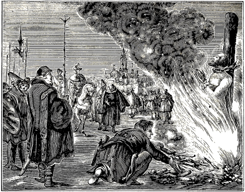
CLEMENT OF SCOTLAND BURNED BY THE ROMANISTS.
When Clement, having come from Scotland, had joined the aforesaid Albert as a companion, and united with him in regard to doctrine, he not only began, but ceased not, even as the friend whom he had found, to combat with the spiritual armor, and 222if possible, to overcome, in an evangelical manner, the Pope and the Roman Church, in various points, touching mostly her ceremonies. Thereupon he was also accused, and put to death in such a manner as in the proper place, we presently hope to show.
The accusations brought against him were of the same nature as those preferred against Albert, his companion; which was not at all strange, since he had placed himself under Albert, not only as a friend and companion, but also as a disciple. For this reason, the Pope, through the accusation of Boniface, the papal Legate, pronounced the same excommunication against him.
But when he presented himself for the purpose of vindicating his conduct in a full synod, Boniface prevented him from taking this course, making the people believe that it were not lawful to admit a heretic who had been excommunicated or excluded from the church, to divine worship, or to a synodal assembly; yea, that such an one should not be permitted to have the benefit (in whatever this might consist) of the laws or ordinances of the church.
Seeing that by this pretense his lips were sealed, making it impossible for him to properly defend himself, he had recourse to his pen and wrote a book concerning this matter, against Boniface.
Finally, it is stated and maintained that this steadfast witness of Jesus Christ, was burned as a heretic by the Romanists, even against the will of Pope Zacharias, about A. D. 750, or a little after.
Compare this entire account of Clement with Willibaldi, Naucleri, Aventini. Balae. Alij ubi supra. Also, Annal. Boj. Bernhard. Lutz, in Catal. Hæres., Tom. 2, Concil. Also, A. M., 2d book, H. M., 1619, fol. 328, 329. Hist. Mart. I. S., 1645, fol. 30.
“In the year” etc., “these two men drew to them much people in France, pretending to be followers of the apostles, and speaking great things of the mysteries of God, and the life and conduct of man. Boniface, Archbishop of France, wrote the whole matter to the Pope, who, in a council of the bishops, laid it before them. They rejected the opinion of the (supposed) heretic from the church.” Finally he says: “They were unanimously deposed and anathematized.” Chron. Rom. Kett., fol. 64.
“Clemens Scotus, a faithful disciple of Bishop Adelbert, taught with great power in France and 223 Germany, especially in Bavaria and Franconia, that the Pope ought not to have so much power; that he (the Pope) very improperly would forbid the priests (or teachers) to marry; that he introduced many new and unknown ceremonies into the church, and originated false doctrines. He (Clement) was condemned without a hearing or examination, and his writings or books were burned.” Chron., page 258, col. 2, and 259, col. 1, from Joh. Munst., fol. 125. Aventin., lib. 3. Chron. Seb. Fr., fol. 54.
Samson was also a Scotchman by descent, and an elder and companion of said Clement. He and Sydonius, Bishop in Bavaria, and others of like purpose and belief, were as one heart and soul, to oppose with the word of God, Boniface, the papal Legate, who proposed to oppress the people with manifold superstitions and burdens. This, not only Samson, but also Sydonius and the others boldly did. They taught with word and pen, that the apostolical embassy (as it was called) of Bishop Boniface bore a closer resemblance to paganism or anti-christendom, than to christendom, and that he had deformed rather than reformed, France and Germany. Again, that he was a sycophant and flatterer of the Pope of Rome, to whom he had not only bound, but completely sold himself, as a sworn slave.
This they were able to prove, since, by a solemn oath, he had sworn to the two Popes, Zacharias I. and Gregory II.: That he would bring all the persons whom he should draw to him, also into obedience to the Roman see. These things were known from documents written by himself and transmitted to said Popes.
They also censured him for his evil practices in the administration of baptism (that is, infant baptism), consisting in the saying of certain words, by way of exorcism. In this several questions were generally put to the unintelligent infants, namely: “Believest thou?” etc., whereupon the sponsors, in the child’s name, answered: “Yea, I believe,” etc.; which things certainly deserved no little censure, though without them, infant baptism had but little virtue or respectability.
They were also greatly offended, because he would forbid them to marry, as contrary to the institution of God, Gen. 1:27,28, yea, as being a doctrine of devils, 1 Tim. 4:1–3.
Finally it is stated, that said persons, and others, unable, in Germany as well as in France, to bring about any improvement with their doctrine, were greatly oppressed, partly through the tyranny of the popes of Rome, and partly through the authority of the kings of France, yea, were condemned in open synods, deposed from their ministry, and shut up in prisons and dungeons, and thus closely guarded that they might not escape. But as to what finally became of these persons, and others of like belief, A. Mellinus states, that the papistic historians are ashamed to tell. Compare Aventin. 3, Annal. Centur. Balaei., 14, cap. 31, and in Append., Tom. 2. Concil. in Decret. Greg. 2, Epist. Bonifac. ad Zachar. Citante Balaeo. Hist. Boj., lib. 3, with A. Mell, 2d book, fol. 329, col. 1, 2.
About A. D. 780, in the fifth year of Leo IV., son of Constantine Copronymus, Mady, King of the Arabians, greatly devastated the church of God in the East, constraining the innocent and defenseless Christians to apostatize, especially the servants and slaves. To this end he had given full power to one Thesias, surnamed Zelotes, to inflict upon the Christians all manner of oppression. The latter, upon coming to Emesas, promised to constrain no one to apostatize, or to become marked with the sign of Mohammed, except the Jews, or those who had long before not been Christians, but unbelievers. But when the Jews and the Christians had been separated, he commenced to torment the Christians far more cruelly than had ever been done by the Governors Lysias and Agricolaus, under the heathen Emperors; so that he put to death many of them, men as well as women, for the name of Jesus Christ.
In the meantime something remarkable occurred here. Certain women whom he visited with various torments, to see whether he could not make them yield to his ungodliness, remained steadfast, overcoming, through the grace of our Lord Jesus Christ, his fury with patience. He caused a thousand stripes to be given them, and had them scourged and tormented unto death, till they received from Christ the crown of victory.
Proceeding thence throughout Syria, he demolished, as far as Damascus, all the meeting-places of the Christians, and ravaged the churches, thus breaking the promise made by the Arabians to those of Syria, viz.: That under their rule they should live in peace and tranquillity, and enjoy the free and unrestricted practice of their religion. But (as the apostle says) as then, he that was born after the flesh persecuted him that was born after the Spirit, even so it was now, Gal. 4:29. See Abr. Mell., 2d book, fol. 306, col. 1, compared with Paul. Diac., lib. 23, Histor. Rom., in Leone 4. Sigibert. Chron., A. D. 781; others, however, fix it A. D. 780.
224
We commenced this century in the East, thence proceeded to the West, and have now returned to the East, namely, to the countries situated east from Italy, and, consequently, far from Rome, and the Roman see of papal dominion.
As regards the aforesaid persecutions, as well as the churches which existed in the East, especially in the Thessalonian regions, and the martyrs who fell there, namely, what and how much is to be held of them, can be gleaned from the explanation which we gave in the beginning, and to which we here refer the reader.
These Arabians proceeded and brought still more persecution and misery upon many Christian believers in other countries; however, for reasons already mentioned, we are again prevented from speaking more fully, or, at least, separately, of each person that may have been martyred there.
The account of holy baptism, which we have given for this century, would furnish us with not a little matter, to fill these hundred years to the very end with true professors of the true faith, also with such as, to all appearance, did not hesitate, in testimony of their upright and unwavering minds, to lay down their lives for the sake of Jesus Christ, which is the utmost that can be required of any martyr; but as we have not been able to find their names, they can have no place in this book. It is sufficient, we hope, that their names, by the hand of God, are written in the Book of life and eternal salvation.
[This account begins with a sad lamentation, that nearly all the learned and celebrated men were corrupted through the Roman superstitions.
Immediately, however, a consolation follows, namely, that in this corrupt age there were still people who did not adhere to the Roman superstitions.
Then it is shown from Haimo, that teaching must precede baptism; that the candidate must first be instructed; that he must first be enlightened, etc. Thereupon, in the margin, A. D. 821, it is noticed that Christus Taurinensus wrote against the invocation of images, of the cross, of relics, of the saints, and against the power of the Pope, pilgrimages, etc. In the margin, for the year 825, a certain council of Paris is adduced, against image worship. In the same place, Gratian says that Christians must not oppose weapon with weapon, but flee before persecution.
Rabanus Maurus appears, A. D. 830, and teaches how in his time the catechumens were prepared for baptism. Of those who asked for baptism, and made haste for it. His exposition of Cant. 3:6: “Who is this that cometh up white as snow?” Again, that the candidate must previously be instructed in the faith of the incarnation of Jesus Christ; also, that in the sacrament of the Supper, the language is figurative.
Angelomus follows Rabanus, teaching that the sins which have been committed through the senses, are washed away (that is, forgiven) in or through baptism; which is more fully explained.
Thereupon, A. D. 840, Bertram, Heymon, and Walafrid appear, who declare themselves against the Roman church, in various points, as in the matter of baptism, transubstantiation, justification, good works as practiced by the papists.
The council of the Christians at Paris, in the time of Louis and Lothaire, is introduced; lamentation on account of the encroachment of infant baptism, and the neglect of the instruction once connected with baptism.
The conversion of the Slaves (of Slavonia) is stated; also, that they were baptized, though not according to the Roman custom, nor in the Roman language. Marginal notice, for A. D. 843, that Christus Lupim at Ferrara refuted the new Roman doctrines, as purgatory.
A few good things respecting the baptism of adults are adduced, for the year 848, and explained in a simple manner. In the margin, for A. D. 858, it is stated of Gunther, Bishop of Cologne, that he calls the Pope a tyrant, yea, a wolf.
Idiota declares that in baptism we accept Christ as our bridegroom. In the margin, mention is made of Ulric, Bishop of Augsburg, that he accused the Pope of error.
Hincmar, Bishop of Landun, opposes the baptism of infants, and prohibits their being baptized; on account of which he is severely accused.
Paschasius advances three things which are incompatible with infant baptism.
Remigius teaches against the Pope; likewise, Tergand, Bishop of Triers, who calls him antichrist, and Rome Babylon. Conclusion from P. J. Twisck and John Patrick.]
Jesus Christ our Savior, speaking of the grievous times which should come after his departure, says, (Matt. 24:12): “And because iniquity shall abound, the love of many shall wax cold.” This was experienced at this time; for with the growth and increase, through very many ungodly and unrighteous superstitions, of the iniquities of the Pope of Rome and the whole Roman church, the true love for God’s commandments decreased, so that but few were found, who, as bright lights, penetrated the smoke that came up from the Roman pit; yea, nearly all men of learning and celebrity were corrupt. O sad and lamentable matter!136
Nevertheless, as Noah and his family served God in the first world; Lot, in Sodom; Daniel and the three youths, Shadrach, Meshach, and Abed-nego, in Babylon; Elijah and the seven thousand who 225were hidden and had not bowed their knees to Baal, in the land of Israel, where the prophets of the Lord were slain, and his altars thrown down; even so there remained some, though but few, at this time, who, living in the midst of popery, did not adhere to the Roman superstitions, but abhorred them.
However, in order to avoid prolixity, we shall confine ourselves, omitting, as has been our custom, other points to the article of baptism, except where it may be found necessary to add something else; and shall show when and by whom this article, with the rejection of infant baptism, was maintained salutarily and in the fear of God, according to his words. Hence we will begin thus.
A. D. 814.—In the days of Louis the Pious, the first of this name, who began to reign with the year 814, there lived and wrote the celebrated Haimo, of whom various praiseworthy things concerning baptism upon faith are still extant.
Haimo, on Matt. 28:19, (Bapt. Hist. page 561,) writes: “In this place the order how to baptize aright is pointed out to us; in which it is ordained, that teaching must precede baptism, for he says: ‘Teach all nations;’ and then adds: ‘baptizing them.’ He, then, that is to be baptized, must previously be instructed, that he may first learn faith, which he shall afterwards receive in baptism.
How could any one give clearer testimony concerning the true baptism of Jesus Christ? how, also, could anybody more plainly reject infant baptism, than by such a declaration? every word emphatically says it.
He begins with Matt. 28:19, where the Lord says: “Go ye therefore, and teach,” or, in other words make disciples of; which he explains thus: “that teaching must precede baptism;” for the Lord first says: teach, and then, baptize, and that therefore he that is to be baptized, must first be instructed, and learn the faith. Certainly, these are things which pertain only to the adult and intelligent; hence it would be sinning against the truth to apply them to unintelligent infants.
Haimo (Serm. Domin. 12, Trinit., page 564) says: “Since those who are baptized, must first be enlightened with the grace of the Holy Spirit, then instructed by the teachers, and finally called to confess the faith, hence arises the custom that,” etc.
This accords fully with the preceding; for he declares the same still more plainly, since here not only instructing is joined to baptizing, but the illumination of the Holy Spirit, the instruction of the teachers, and the confession of the faith are connected with, yea, required before baptism; which is so clear, according to the purport of the first declaration, that it is unnecessary to add another word; the impartial may judge. As to what he further says in the same place, concerning the touching of the tongue, the saying of the word Hephphatha, etc., we leave as it is, neither praising nor censuring it, since it is of little consequence, if the truth and the signification of the matter is rightly preserved.
Haimo, on Rom. 1 (page 542), writes: “At the time of baptism we confess that we believe on God the Father, and on the Lord Jesus Christ, and on the Holy Ghost; likewise, that we renounce the devil and all his pomp and works. If we observe this thus, we belong to God in faith; but if we do not, we are convinced of unbelief.137
A little before, in his exposition of Rom. 6 (page 540), he makes mention of four different baptisms: 1. In the water only, as was John’s baptism. 2. In fire and the Spirit, with which the apostles were baptized on the day of Pentecost. 3. In water and the Spirit, which baptism then obtained in the church. 4. In the shedding of the blood with which the Lord himself and all the holy martyrs were baptized.
These four different baptisms can pertain to none but the intelligent and believing; for, as regards the first, namely, John’s baptism, it is expressly stated that those to whom it was administered, confessed their sins and repented. Matth. 3:6,8,11. As to the second, namely, the baptism of fire and the Holy Ghost, which was administered to the apostles by God himself from heaven, this did not at all relate to infants, seeing that all who were thus baptized, spake with tongues and magnified God. Acts 2:3,4. Concerning the third, namely, the baptism in water and the Spirit, which then obtained in the church, this likewise could not be peculiar to infants, since the fruits of the Holy Ghost, without which the Holy Ghost cannot be, do in no wise appear in them. See Gal. 5:22. Respecting the fourth, namely, the baptism by the shedding of blood, this, according to his statement, is peculiar only to Christ and the martyrs; consequently it cannot be regarded as applying to infants, for these do not even know of confessing Christ, much less of suffering one’s blood to be shed for his name’s sake, and of dying in constancy.
Continuing, he shows in the same place (Rom. 6) that in him that is to be baptized, there must be three invisible things: 1. Faith. 2. The soul, which is washed from sin. 3. The Holy Ghost, by whose cooperation the forgiveness of sins is imparted. We would explain these things more fully; but since this is a passage expressed in almost the very words which Albinus, in the preceding century, for the year 792, wrote (on John 15), of which we gave an explanation, we will, to avoid repetition, take leave therefrom, referring the reader to said explanation.
Haimo teaches, on Canticles 4 (page 544), that all who desire to become brethren must be baptized, saying: “Without the washing of baptism, no one can be a true believer.”
What else is this than what the holy Scripture teaches, namely, that in baptism we put on Christ? and that by faith (which is professed in baptism) we become the children of God? Paul says: “Ye are all the children of God by faith in Christ Jesus. For as many of you as have been baptized have put on Christ.” Gal. 3:26,27.
But some one may think: Haimo speaks of becoming brethren by baptism; whereas Paul speaks of becoming children of God, of putting on Christ, etc. 226True, beloved reader; but who, with only a little experience in the holy Scriptures, knows not that to be a child of God, or to be a brother of the church of Christ, is one and the same thing? Certainly, it is the same; for the same Spirit that makes us children of God, also makes us brethren of Christ, yea, joint heirs with him. Rom. 8:15–17. For this reason, Christ calls them both his brethren and his children, saying: “I will declare thy name unto my brethren, in the midst of the church will I sing praise unto thee.” And again: “Behold, here am I and the children which God hath given me.” Hebr. 2:12,13. Who now shall say that Haimo, who calls the baptized, brethren, and Paul, who terms them children of God, contradict each other? Their accordance is sufficiently proven, and at this we will let it rest.
Of the dignity of baptism, Haimo, on Hos. 2 (page 547), says: “Baptism is sanctified by faith in the sufferings of our Lord.”
“What doth hinder me to be baptized?” said the Ethiopian to Philip. Philip replied: “If thou believest with all thine heart, thou mayest,” Acts 8:36,37; indicating that, in order to receive baptism worthily, sincere faith is required, by which baptism is sanctified, which is just what Haimo has expressed in the above words; and thus his words agree with those of the holy Scripture which we have quoted.138
The righteous, Haimo says, on Ps. 38 (page 548): “Live in baptism, in which they die unto sin and the world.”
Again, on Ps. 136, he says: “By the Red Sea we understand holy baptism, which (so to speak) is red, being sanctified through the blood of Christ,” and a little further on: “By the impartation of the same, the believers begin (to proceed) in the way by which they come to God.”
On Zech. 13 he says: “When we receive the faith, we are regenerated in Christ, and in baptism we are washed from all our sins; and they that through faith are regenerated in baptism, are made children of God.[typo?: ” missing]
Again, on Cant. 1, he speaks thus: “As Israel was preserved in the Red Sea, but Pharaoh drowned, even so the church of the Gentiles, by baptism, is delivered from the bondage of the devil, and led into the true land of promise, to the liberty of the Gospel; thus she who was formerly an handmaid of iniquity, is become a friend139 [beloved] of Christ, cleansed and washed, by baptism, from the filth of sin.”
These passages are like the jets of a fountain, which, though they shoot forth in different places, proceed from one source. In the first passage, it is said of the righteous, that they “live in baptism, yea, die unto sin and the world.” The life spoken of here signifies a spiritual life, and is contrasted with death, which comes by sin; the dying unto sin and the world, signifies a forsaking and renouncing of the same, which can be done only by those who previously adhered to, and loved, sin and the world.
In the second passage, baptism is compared to the Red Sea, and it is said that “by the impartation of the same, the believers proceed.” But is not this the very thing which Paul spoke of the figurative baptism of the believing patriarchs, saying: “Brethren, I would not that ye should be ignorant, how that all our fathers were under the cloud, and all passed through the (Red) sea; and were all baptized unto Moses in the cloud and in the sea” (1 Cor. 10:1,2); which is not to be understood of infants that were wont to be carried, but of adult persons, who were able to proceed and walk.
In the third passage, faith, regeneration, baptism, and being made children of God, are joined together. “They that through faith are regenerated in baptism, are made children of God,” he writes. But how can this be interpreted otherwise, than with reference to intelligent persons, who, having attained to faith, by the hearing of the word of God, are regenerated, and, in token thereof, baptized, and adopted as children of God into his church? Faith certainly comes by hearing, and hearing by the word of God. Rom. 10:17. Regeneration takes place after the death of the first birth, or after the mortifying of the old man. John 3:4,5; Rom. 6:4. Baptism is administered to the believing and regenerated, as a sign of faith and regeneration. Acts 8:37; Tit. 3:5. Those are made children of God, who, through faith, have put on Christ, and, in proof of this, have been baptized. John 1:12, compared with Gal. 3:26,27. Judge now, whether these are things that can be done by new-born infants. I am fully confident that you will say: No. Yet, these things are connected with baptism, not only by Haimo, but principally by God, in the holy Scriptures; yea, without them, baptism is of no value. Hence we say: “What God has joined together, let not man put asunder.” Matth. 19:6.
In the fourth passage it is said, that “The church of the Gentiles, by baptism, is delivered from the bondage of the devil,” and that “she who was a handmaid of iniquity, is (thus) become a friend [beloved] of Christ.” This certainly savors not at all of infant baptism, for it cannot be said of infants, that they are the church of the Gentiles, under the bondage of the devil, a handmaid of iniquity, nor that they, by baptism, are delivered from the service of the devil, and become a friend of Christ. Certainly, no one can be delivered from the service of the devil, but he who has served the devil; no other can be liberated from the servitude of iniquity except she who previously committed iniquity; she who previously blasphemed; no other can be adopted as a friend of Christ, than she who formerly, by wicked works, was at enmity with Christ; consequently it is indisputable, that this cannot be understood of infants, seeing these things can have no place with them; this even those who maintain infant baptism, must admit, and hence we dismiss the subject.
“The adult (candidates) also made confession of their sins, and a penance was imposed on them, for forty, twenty or seven days.” Haimo, on Heb. 6, (p. 552).
Here adult and not infant candidates are spoken of, yea, such, upon whom, when they had made confession 227 of sins, a penance (or amendment of life) was imposed; which are things pertaining to adults, and not to little children; this is too plain to be refuted.
Said baptism was so firmly maintained and thus valued by Haimo, that he held that it should never be repeated, if it had been administered according to the rule of the holy Scriptures; for, treating of the 6th chapter of Romans, he says, by way of exposition: “If we have once died unto sin in baptism, we may not be baptized again.” Bapt. Hist., p. 543. This well accords with the custom of the Anabaptists of the present day; for, though they rebaptize such as have been baptized in their infancy, when they attain to the faith; regarding the baptism which is received in infancy as no baptism at all, because it is not according to holy Scripture; yet no one is rebaptized by them, who has been baptized aright, that is, upon faith.
NOTE.—A. D. 825.—The council held at Paris, A. D. 825, decreed against image worship. Sam. Veltius, Geslacht-register, page 127. Gratian said to his cotemporaries: “The Lord, in saying to his disciples: ‘When they persecute you in this city, flee ye into another,’ teaches that Christians when persecuted, should not repel weapon with weapon, but flee therefrom”. See Grondelijke Verklaringe Danielis ende Johannis, printed at Harlem, in the year 1635, p. 56.
A. D. 830.140—It is stated that A. D. 830, in the sixteenth year of the reign of Emperor Louis I., surnamed the Pious, there shone forth as a bright light, and wrote, one Rabanus Maurus, residing at Fulda, who, among various things written by him against the Roman church, also speaks of baptism, in the discussion of which he throughout employs such language as pertains only to believers, and in no wise to infants; notwithstanding he at one time, it appears, had been a maintainer of infant baptism, and many other superstitions of popery, so much so that he had been an abbot. But passing this by, we shall show what he wrote of baptism, and how closely it agrees with the teaching of the holy Scriptures.
In Jacob Mehrning’s history of baptism, various passages from Rabanus Maurus are adduced, some of which, it is suspected, have been attributed to him unjustly, or, at least, that, if he has written them, he wrote them before he was enlightened or converted; as, among others, in lib. 2, de Proprit. Serm., cap. 200; again, lib. 4, cap. 10; of which we let the intelligent judge.
Nevertheless various things are found, which, we doubt not, are justly ascribed to him, as, for instance: Of the instruction of the catechumens before baptism, and how the novices ought to learn the faith before they are baptized. In Decretis de Consecrat. dist. 4, cap. Ante Bapt., ex Rabano, Bapt. Hist., page 560. Likewise, the quotation made by Vicecomes (lib. 2, cap. 40) from Rabanus (in lib. de instruct. Cleric.), which reads as follows: “The order according to which the catechumens are prepared for baptism, is this: First they are interrogated whether they renounce the devil,” etc. Bapt. Hist., page 562. The rest we omit.
By this he indicates, that in his time, in the church of which he was a member, the custom of preparing the novices for baptism was still observed, inasmuch as first, the instruction of the faith, called the catechism, was presented and taught them; also, that they had to renounce Satan, &c.; which was observed not only at this time, but in nearly all the preceding times, as appears from this passage: “They are wont to renounce the devil with his works and pomp.” Syn. Turon. Bapt. Hist., page 516, num. 7.
That in the time of Rabanus the instruction of novices extended not only to those of heathen descent, but also to such as were born of Christian parents, is declared by Jacob Mehrning, Bapt. Hist., page 560, contra Rulichium.
D. Vicecomes (lib. 3, cap. 9), quotes from Rabanus Maurus (page 562): “The fellow petitioners for baptism are those who, through the doctrine of the faith, and by refraining from disorderly conduct, make haste to receive the grace of Christ in baptism.”
This confirms our former assertion, namely, that before baptism a preparation had to be made, in order that it (baptism) might be received worthily; which preparation is here called “the doctrine of the faith and refraining from disorderly conduct.” In it are comprised both parts of the doctrine which John presented to those who came to his baptism, saying: “Repent ye, and believe,” etc. Matt. 3:2, compared with Mark 1:15, and Acts 19:4.
Moreover, they are called fellow petitioners, and it is said that “They make haste to receive the grace of Christ in baptism,” which are things that cannot be done by infants.
Hence he writes, on Cant. 3:6, (page 540): “Who is this that cometh up white as snow?” applying the same to the candidates, who, cleansed from their former sins, come up from baptism, and increase in virtue. “This mystery,” he says, “is not otherwise than under the invocation of the Holy Trinity, that is, in the name of the Father, of the Son, and of the Holy Ghost; thus the Lord says to the apostles, Matt. 28:19: ‘Go and teach,’ ” etc.
Hence, when he speaks of coming up from the water, and of the invocation of the Holy Trinity, as well as of the passage, Matt. 28:19, he sufficiently shows that he does not speak of the baptism of infants, since they cannot come up from baptism, nor invoke the Holy Trinity, nor fulfill the passage, Matt. 28; which is too clear to be refuted. We will therefore briefly conclude this account of Rabanus with that which P. J. Twisck records concerning him.
He writes, A. D. 830: “Rabanus, an eminently learned man writes and says: ‘The catechism, that 228 is, the doctrine of the faith, shall precede baptism, so that the candidate (catechumen) may first learn the first principles of the faith.’ ”
He further says: “The Lord Christ first anointed the eyes of the man born blind, with clay made of spittle, before he sent him to the water of Siloam; therefore, the candidate shall first be instructed in the faith of the incarnation of Christ, and, if he then believes, admitted to baptism; that he may know what grace he obtains in baptism, and to whom he owes his service for it.”
Again: “Rabanus writes also, that in the sacrament the language is figurative, and that Christ, having gone to heaven (in order that we being regenerated by faith, should long the more ardently for him) left us this sacrament, as a visible figure and symbol of his flesh and blood, so that we the more abundantly, might apprehend in faith the invisible things.” This language, Twisck writes, the Roman church now greatly curses.
“He also taught contrary to the Roman church, of the authority of the holy Scriptures, of justification, repentance, the state of the soul after this life, and against other141 papal errors, as his books testify.
“The same thing was done at this time, by Angelomus, who treated of the grace of God, good works, and the keys of the church, in opposition to the Pope. Chron., 9th book, page 283, from John Munst., fol. 120, 133. John Boea., lib. 4, Grond. Bewijs, letter A. Chron. Seb. Franck, fol. 77, Casp. Swinck, fol. 115.
Same year as above.—This Angelomus just mentioned is referred to in Jacob Mehrning’s History of Baptism, in which it is stated that, besides the aforementioned views held by him contrary to the Roman church, he left the following testimony with regard to the matter of baptism:
Angelomus (in cap. 7, lib. 3, Reg. 1, page 548), says: “From all that we have sinned with the sight, hearing, smelling, tasting and feeling, we are redeemed through the grace of God, by the washing of the living fountain of water (that is, water-baptism). But the forgiveness of previous sins is not enough, if we are not diligent to lay up good works: for, otherwise, the devil who was gone out of the man, finding him empty of good works, returns, manifold, and makes the last state of that man worse than the first.”
Hence, when Angelomus here speaks of the sins which before baptism were committed through the senses, as, through the sight, hearing, smelling, tasting, and feeling, he certainly indicates thereby, that the persons of whom he speaks, are not unintelligent infants, seeing these can neither use nor abuse their senses, and, consequently, as long as they lack the knowledge and power, they can not sin with them.
Hence it also appears that the baptism of which he speaks, is not infant baptism; for this can have no regard to sins committed previously through the abuse of the senses. The baptism in question, then, is such a baptism as is received by persons who can lay aside previous sins, and lay up good works; who also give no room to the devil gone out of them, that the last state may not be worse than the first; for of all this, Angelomus speaks. We will, therefore, leave this, and proceed to other testimonies serving the same purpose.
A. D. 840.—That at this time not only baptism, but also various other articles of Christian doctrine were maintained contrary to the belief of the Roman church. P. J. Twisck indicates, in his Chronijk., for the year 840, with these words: “Bertram, a courageous and learned man, now vigorously assailed the doctrine of transubstantiation, in a remarkable book, dedicated to the King of France. Heymon, Bishop of Halberstadt, also contended against this doctrine, and wrote much of baptism, the Supper, justification, good works, and of the church and her office, in opposition to the opinion of the papists. Also Walafrid opposed the new doctrine of the Romanists very vigorously.142 P. J. Twisck, Chron., 9th book, page 286, col. 2, and page 287, col. 1, from Joh. Munst., fol. 129, and 132.
A. D. 841.—It is recorded that at this time, in the reign of the Emperors Louis and Lothaire, a council was held at Paris, concerning which it is written (chap. 6): “In the beginning of the holy church of God, no one was admitted to receive baptism, who had not previously been instructed in the faith, and in the mystery of baptism, as is testified by the words of Paul, Rom. 6:3: ‘Know ye not, that so many of us as were baptized into Jesus Christ were baptized into his death?’ which passage of the apostle has reference to the sacrament of baptism.”
In the council of Laodicea (Tit. 46), it is also written, that “those who desire to come to baptism, shall learn the faith, and recite the same to the bishop or teacher, on the fifth day of the great week.”
Again (Tit. 47): “That those who were baptized in sickness, shall, after recovery, diligently study their faith and know what great grace they have received; which words plainly indicate, that those who attain to the Christian faith, are also previously instructed concerning said faith and the mysteries of baptism. But now, sad to relate, also the infants of Christian parents are baptized, who, on account of their tender age, cannot comprehend this matter, which to learn even persons of understanding must exert themselves diligently, and which, owing to the negligence of some, has gone out of use in the Christian church. O what great neglect! O what great mischief.” Jacob Mehrning, Bapt. Hist., page 538.
229
About A. D. 842.—It is stated that at this time a number of slaves who had become converted were baptized, yet not in the Roman manner, nor in the Roman language, as was customary with the Roman church, as well as with all other churches which adhered to the Roman see; but in a different manner and in another language; so that it appears from this occurrence that this church must have been separated from the superstitions of the Roman church not only in forms, but also, as may be inferred, in faith and practice. To this, the following annotation (Bapt. Hist., page 552, num. 9), among others, has reference: “They (those of the Roman church) used the Roman language not only in Italy, but also in other regions that were subject to the papal power; but that baptism was administered also in other languages, is proved by the history of the conversion of the slaves.”143 Ex. Historia Sclav.
About A. D. 848.—That the instruction of novices, before baptism, obtained also at this time, Jacob Mehrning, Bapt. Hist., page 550, informs us with these words: “The adults had (then) to be instructed in the faith, and were catechized before baptism, as has been proven above, from Rabanus, Haimo, and others; thereupon they had to confess the faith, as Rabanus (lib. 1, de Cleric. Institutione, cap. 27) relates. They were asked, whether they believed in God the Father, the Almighty, and on his only Son, our Lord, and on the Holy Ghost, a general (christian) church, forgiveness of sins, resurrection of the flesh,” etc.144 Bapt. Hist., p. 550, num. 4.
These were good and salutary customs for the upbuilding of the church of God; by which the name of the Lord was praised, the church edified, the word of God most strictly observed, and the salvation of many promoted. But the ancient saying: “Where God builds a temple, Satan builds one in opposition to it,” was also verified here; for, at the same time that those who loved the truth, baptized believers, upon the confession of their faith, nearly all the others, who were called Roman or Greek Christians, baptized infants, who, as every one knows can neither believe nor confess the faith; this has been referred to above.
About A. D. 854.—It is stated that very near the time of Haimo, there lived and wrote Idiota. In J. Mehrning’s History of Baptism is found a quotation by him, relating to baptism, which reads as follows: “In holy baptism we accept Christ for our bridegroom, and enter his chamber, which is ornamented with manifold graces and virtues.” De Innocentia, cap. 3.
To accept Christ for one’s bridegroom, to enter his chamber, is certainly not the work of children, but of believers. Those accept Christ for their bridegroom, who betroth themselves to him by faith, and, in token thereof, are baptized. John 3:26,29. Those enter his chamber, who, through obedience, join themselves to his church; for they are no more “strangers and foreigners, but fellow-citizens with the saints, and of the household of God.” Eph. 2:18.
That which is further said of the chamber of the bridegroom, namely, that it is ornamented with graces and virtues, has reference to the spiritual ornament of the church of God, which latter is the true chamber of our heavenly bridegroom Jesus Christ. This church of God cannot be ornamented with graces and virtues by infants, seeing infants are ornamented with neither actual graces nor real virtues; hence, it has also respect to the believers, who, having come, through baptism, to the church of God, ornament the same with actual graces and real virtues. This concludes our exposition of the passage of Idiota.
Note.—A. D. 859.—Huldricus or Uldoricus, Bishop of Augsburg, greatly complained of the violence of the popes, and said: “What will become of this flock, when the shepherds become wolves?” He openly maintained that the Pope was fallible, and that it was lawful to admonish him for his error, and to reject his bad decrees. P. J. Twisck, Chron., 9th book, page 298, col. 1, from Merula, fol. 177. Jan. Crespin, fol. 211, 215, 216.
A. D. 860.—At this time, there departed from the belief and practice of infant baptism, Hincmar, at one time Bishop of Laudun, inasmuch as he would no longer baptize children, so that they grew up without baptism, and many also, who did not attain the years of understanding, died unbaptized; on account of which he was then greatly accused by Hincmar, Bishop of Rheims, who, to this end, wrote to him as follows: “And thou, who knowest that it is true what the Lord says: ‘Except a man be born of water, and of the Spirit, he cannot enter into the kingdom of heaven;’ hast nevertheless commanded, that infants shall not be baptized in thy church, not even when in peril of death, so that they should not be saved, though it is written: ‘The Son of man is not come to destroy men’s lives, but to save them.’ Thou hast also acted contrary to the decrees of Syricius, Leo, Gelasius, and the African council, as I have informed thee now twice by writing.” H. Mont. Nietigh., page 81, ex Biblioth. Patr., Tom. 9, part 2, page 137. Cent. Magd., Cent. 9, cap. 4, pages 40, 41.
In another letter, the Bishop of Rheims, with entreating, and not less earnest words, endeavors to draw him away from his belief, writing: “Desist from preaching this (namely, that infants may not be baptized), the mere thought of which is awful; desist from scattering the flock of Christ (meaning thereby, through error, the Roman church), lest the destruction of all the people come upon thee; and do not, from excessive love for thy belief, sever thyself from,” etc. H. Mont., page 82, from Cent. Magd., Cent. 9, pages 157, 158. Also, Bapt. Hist., page 545.
From these two letters it appears that Hincmar, Bishop of Laudun, had not only departed from the doctrine of infant baptism, but also earnestly preached against it, so that many of the Roman 230 church, particularly at Laudun, became his adherents; for, what did the Bishop of Rheims mean by writing: “Desist from preaching this,” but to say that Hincmar of Laudun should cease preaching against infant baptism? What else does he indicate when he says: “Desist from scattering the flock of Christ, lest the destruction of all the people come upon thee?” Certainly, these words indicate that many had already left the Roman church on this account, yea, that the state of things was such that all the people at Laudun adhered to this doctrine.
Moreover, from the last letter we see, how firmly, and almost immovably, said Hincmar must have stood, at Laudun, in his doctrine and belief against infant baptism, seeing such great endeavors were made to draw him away; now by presenting his belief in the most odious light, as though he preached things the mere thought of which was awful; now by flattery: “And do not, from excessive love for thy belief, sever thyself from,” etc. But whether through this he was in any wise turned away from his belief, we have not been able to ascertain; hence we will let the matter rest.
In reference to what he may have taught with regard to other points, we can, on account of the default of history, give nothing certain; it is sufficient for us, that in those perilous times he dared oppose the common Roman church, by rejecting infant baptism, and that much people adhered to him therein, as has been shown above.
A. D. 867.—We have now come to the year in which an uncommon and quite unexpected matter is mentioned by ancient writers, of which we will forthwith give an account. Just now, for the year 860, we told of a certain champion of the Roman superstitions, especially of infant baptism, namely, Hincmar, Bishop of Rheims, who, once and again, by express letters, immoderately accused another Hincmar, Bishop of Laudun, because the latter refused to baptize infants, and would also not allow them to be baptized, though they were in danger of dying. This same person now, seven years after making the above accusations respecting the non-baptizing of infants, opposed the Pope, not only in one point, but in many, among which infant baptism may also have been. Concerning this P. J. Twisck, from other authors, writes thus: “Hincmar, Bishop of Rheims, opposed Pope Adrian II. in many points, in defense of the truth. He charged him with innovation, saying that he could not be Bishop and King at the same time; that he should have nothing to do with secular affairs.” Chron., 9th book, page 305, col. 2, from Hist. Georg., fol. 314, Catal. Test., fol. 52.
It is a pity and to be lamented, that the ancients have not left us more information regarding the particular points maintained by Hincmar, Bishop of Rheims, against the Pope, and, consequently, also against the Roman church.
It would not be very surprising, if among the points maintained by him against the Pope, the denial of infant baptism was one; for, when he, seven years before that, accused Hincmar, Bishop of Laudun, for not baptizing the infants, the latter apparently, either from the holy Scriptures, or by conclusive arguments, demonstrated to him the groundlessness and vanity of infant baptism in such a manner that he may easily have attained to very different views, not only in regard to infant baptism, but also in other points which were maintained after the manner of the papists. But as this is not clearly indicated, we will not discuss it any further, but leave it as a probable conjecture. Moreover, it is not our purpose to justify said Bishop in every article of religion, nor to declare him orthodox on the whole; but to show that the same person who had previously so stoutly defended the Roman church and the papal superstitions, especially in the matter of infant baptism, now dared attack not only the Roman church, but even the Pope, who is called its head, and to oppose him in many points, as has been shown. With this we take our leave of Hincmar of Rheims.
A. D. 880.—At this time there lived Paschasius, a remarkably experienced and virtuous man, who wrote various things against the belief of the Roman church; but as the thread of our account extends only, or, at least, principally, over the matter of baptism, we will also here turn our special attention to the same, and, so as not to be encumbered with many testimonies, present but one passage of his belief with reference to this matter, as recorded in Jacob Mehrning’s history of baptism.
Paschasius (de Corp. and Sang. Dom., cap. 10, page 594) says: “In the sacrament of baptism the door is opened to believers, to enter into the sonship of God, that we, being delivered from evil through this regeneration, may afterwards become one body with the members of Christ; in which baptism, when the Holy Ghost is shed abroad in the souls of the regenerated, the whole church of Christ is quickened, and becomes one body, by one Spirit received by all.”
Here he indicates three things incompatible with infant baptism. Firstly, when he says that “In the sacrament of baptism the door is opened to believers, to enter into the sonship of God.” For, that this cannot relate to infants, appears from the nature of faith and of the believers; as to faith, it is a sure confidence of the things hoped for. Hebr. 11:1. This faith comes by hearing, and hearing by the word of God. Rom. 10:17. That neither this sure confidence, nor hope, nor intelligent hearing of the word of God, can have place in infants, is quite evident, since neither their powers nor their knowledge can reach these things. See Deut. 1:39; 1 Cor. 13:11.
Secondly, when he says: “That we, being delivered from evil through this regeneration, may afterwards become one body with the members of Christ.” For the word regeneration is no where in Scripture applied to infants, but to adults. John 3:3; Tit. 3:5. Likewise, to be delivered from evil, is applied only to such persons as, through evil works, were previously ensnared and held captive by sin. 2 Tim. 2:26. Hence, the second also does in no wise apply to infants.
Thirdly, when he, expounding the utility of baptism, says: “In which baptism, the whole church of Christ is quickened and becomes one body, by one Spirit received by all.” For, when mention is made here of the quickening Spirit of God, which in baptism 231 is imparted to the church, or, at least, to those who, by baptism, are incorporated as members into the church, it follows almost incontrovertibly, that this relates neither to infants nor to infant baptism; for, as regards infants, instead of becoming quickened by the Spirit of God, after baptism, that is, instead of becoming adorned with all divine and Christian virtues, we see, on the contrary, that they generally, from that time on, as their powers increase, are led by their own spirit, so that with the increasing years, perverseness also increases, yea, sometimes gains the ascendency; hence, those who have reached their years, are admonished, that they must be born again, that is, that they must lead another and better life; or that they cannot enter into the kingdom of God. John 3:5,7.
This being the case, it stands fast, that Paschasius, in said passage, speaks neither of infants nor of infant baptism. Leaving this subject here, we will conclude with the account of P. J. Twisck, who records of Paschasius, besides what we have stated above, that he mentions but two sacraments, namely, 1. baptism; 2. the Supper; or, as it was anciently called, the body and blood of the Lord; which militates against the seven sacraments of the Roman church. P. J. Twisck, Chron., page 310.
Same year as above.—“Remigius,” he writes in the same place, “also taught much against the Pope, saying, among other things: “That we must address our prayers not to idols, but to the living God; and that the church must conform to the holy Scriptures.” Chron., 9th book, page 310, col. 1, from John Munst., fol. 61, 131, 133. Perk., fol. 249.
In the mean time, the pious were exceedingly oppressed in this century, by the power of the Pope and the Roman clergy; so that, on account of the smoke of the papistic errors, the fire of the pure doctrine could not burn freely, which was also the reason that not more learned and godfearing men manifested themselves at that time, in defense of the truth of God.
A. D. 900.—That at this time, some dared oppose not only infant baptism and other tenets of the Roman church, but even the Pope of Rome, who might well be called the father of all superstitions, the example of Tergandus sufficiently indicates, who, at this time, dared designate him by the name of antichrist, wolf, etc.; concerning which, Samuel Veltius (from other authors) has noted the following for the year 900: “Tergandus, Bishop of Treves, called the Pope of Rome antichrist, yea, a wolf, and Rome, Babylon.” Geslacht-register, page 128.
Note.—We will close with the account of P. J. Twisck, in his conclusion to the ninth century: “In this century, the occidental or western, Roman Empire, which has been at a stand-still now for 324 years, begins afresh. The clergy, through the folly of the Emperors, obtain power to elect popes and bishops. The Emperors are crowned by the popes, who will themselves to be the masters and lords and rule before and over others, as is evident from this, that some times two, three, and four popes reign at once and seek to domineer over the others, expelling, driving away, exhuming, cursing, each other. Spiritual matters are still greatly on the decline, men seeking their salvation far more in so-called good works, in ceremonies and superstitions, than through justification by faith in Christ Jesus. Disputations about transubstantiation are inaugurated, though the Supper is still administered under both forms, that is, with bread and wine. The people, having been to the supper, offer money or something else.”
What he further relates of exorcism at baptism; of the mass; of the power to canonize saints; of the worship of saints and images; of the ban of the bishops; of the punishment of heretics; of the consecration of temples; of purgatory; of soul-masses, to redeem souls from purgatory, etc., would require too much time to recount. See concerning it, Chron., page 320.
This has been told simply to show how and whereby the orthodox Christians were oppressed at this time in their worship of God; and why so few learned and pious people manifested themselves. We will now proceed to show what pious witnesses of Jesus Christ suffered as martyrs at this time.
Note.—A. D. 884. John Patrick, a man well versed in the Chaldean, Arabian, and Greek languages, in the monastery of Mabelsbury, greatly opposed the doctrine of an offering for the living and the dead; on account of which he was stabbed to death with awls. See Geslacht-register, page 127.
[The beginning is a repetition of the fourth proposition of the discourse of Haimo (for the year A. D. 814) respecting baptism by the shedding of blood, with which the Lord and all the holy martyrs were baptized.
Of the cruelties instituted by the Danish tyrant, Regnerus (A. D. 818) against the Christian believers; which matter is further explained in a note.
In the margin, mention is made that A. D. 826, the Saracens invaded the islands of the Romans, and, consequently, Creta; where Cyril, Bishop of the church at Gortina was slain.
The tyranny instituted by the King of Bulgaria against the Christians, about the year 842, is shown and confirmed by testimonies.
Great persecution of the believers, caused by the mutual contentions of the Kings in France, noted also for A. D. 842.
Very grievous and lamentable persecution of Christian believers at Cordova, in Spain, A. D. 850, through the wickedness of the Saracens. It is shown that said persecution had commenced long before A. D. 850, but that at this time it raged the most violently.
The distressing martyrdom of John, a tradesman at Cordova, A. D. 850. Note respecting the faith of said martyr.
232
Nunilo and Aloida, sisters and Christian maidens, put to death with the sword, for the name of the Lord, in the city of Osca, about A. D. 851.
Marginal note, for the year 852, that then the zeal of some to die as martyrs, was so great that multitudes of them confessed Christ, and ran after martyrdom; among whom Emilas and Hieremias are mentioned, who were beheaded for said reason: however, every one is left to judge for himself.
Aurea, a godfearing maiden, after many severe trials, beheaded at Cordova, for the testimony of Jesus Christ, A. D. 856.
After adding a note, we prepare to flee from the Mohammedan persecutions, and turn to England and Italy, where more and clearer light has arisen.
Marginal note of Hincmar, Bishop of Laudun, that, through the hatred of the Bishop of Rheims, and by a certain council held at Dusiacum about A. D. 866, he was condemned and finally sent into banishment.
Johannes Erigena, a Scotchman, and, hence, called Scotus, through the instigation of some monks, put to death by his scholars, for the confession of the evangelical truth, at Meldum, in England, A. D. 884.
Observations about the time of this history, as well as some remarks upon the history itself, according to the accounts of Carion, P. Melancthon, C. Peucer, Sebastian Franck of Worth, P. J. Twisck, Cæsar Baronius, and A. Mellinus. Finally, his belief is compared with that of Berengarius, of whom we shall speak in the eleventh century. Conclusion.]
About the year A. D. 814.—In our account of Holy Baptism for the year 814, we made mention of Haimo, a celebrated teacher of that day, as well as of some salutary and good testimonies, which he left respecting the baptism of believers. Writing on Rom. 6, he treats of four different kinds of baptism, the fourth or last of which he calls baptism by the shedding of blood, indicating withal, what he means thereby, as well as what persons were baptized in this manner. The fourth (baptism), he says, “is by the shedding of blood; with which the Lord himself and all holy martyrs were baptized.” B. H., 2d part, page 540, num. 2, from Centur. Magd. IX., cap. 4, fol. 75.
Some one perhaps may think that in this passage by Haimo, nothing is said of a present persecution or martyrdom, but that it is simply shown that the shedding of the blood of the martyrs can, in some measure, be called a baptism, with which the Lord himself and many of his followers, namely, all the holy martyrs, had, so to speak, been baptized. To this we will offer no objection, for it is well remarked; nevertheless, it will throw light upon the object we have in view, namely, to show the martyrdom of this time. Hence, in order to reach this end, we say: It would not have been necessary then only to recount to the hearers the shedding of the blood of the martyrs, as well as that in a certain way this may be called a baptism, if at that time the exigency of martyrdom or the shedding of blood for the Lord’s sake had not existed, or, at least, if there had been no danger of being persecuted or martyred.
Certainly, all good teachers regard the opportuneness of the times, the condition of persons, and other circumstances, in the matter of teaching, lest the salutary and good words of God, by being spoken at the wrong time, or on an unsuitable occasion, should prove void, powerless, and vain to those who hear it. Thus we must believe that also said teacher (Haimo) proceeded, and that, consequently, when he called the shedding of the blood of the martyrs a baptism, and adduced this for the purpose of instructing his brethren, there must have been an exigency of martyrdom, either at the time, or near at hand; otherwise the assertion and exposition of this excellent teacher would not have been adduced properly, or at the right time and on the proper occasion.
We shall, therefore, ascertain from other authors the condition of that time, and whether then or shortly after, any persecution, bloodshedding or martyrdom arose against the Christian believers, to which the aforementioned teacher might have had reference in his instruction touching said matter.
Four years after the admonition of the aforenamed teacher, namely, A. D. 818, mention is made of a certain Danish tyrant, called Regnerus, the sixty-second King of Denmark; who, as regards military affairs, was greatly praised by the champions of war, but, with regard to his cruelty and tyranny towards the Christian believers, deserves to be utterly contemned, yea, counted a tyrant and a blood-thirsty monster.
Concerning this, P. J. Twisck (from various other writers) has left the following as a summary of his wickedness, and how he was punished for it, as a warning to all tyrants. “King Regnerus was a prodigy in matters of war, but a great enemy and persecutor of the Christians. He was conquered by Hella, King of the Britons, and cast into a pool of snakes, to be killed in this manner.” Chron., 9th book, page 280.
Note.—We have not been able to learn in particular the manner in which said tyrant manifested his enmity against the Christians, or how he persecuted them; nor the countries and places in which those persecutions occurred; nor the names of the persons who then suffered; nor how long these persecutions and martyrdoms lasted; hence we cannot more fully speak of these things.
In the meantime, it is our firm conviction, that not a few upright professors of Jesus Christ laid down their lives for the apprehended and accepted truth of the holy Gospel, and were offered up as steadfast martyrs for their love to their Savior, and for the working out of their own salvation. But for the want of their particular confessions and names, we are constrained to break off, as we have had to 233 do in several places in preceding centuries; which things can be compared with the account we have given here; which we commit to the intelligent and impartial reader.
About A. D. 826, the Saracens invaded the islands of the Romans, and took possession of Crete (where Paul had ordained his beloved spiritual son Titus Bishop and shepherd of the church), and put to death, Cyril, the Bishop of the church of Gortina, for confessing Christ. Compare A. Mell., 2d book, fol. 306, col. 2, with Zonar., Tom. 3, in Michaele Balbo Cedren.
When the aforementioned tyrant Regnerus, who commenced to reign about A. D. 818, had died, in the year 832, having been cast among the snakes, and the Christian believers in the devastated regions, had obtained, it seems, some freedom in the matter of living according to their faith, there arose against them, ten years afterwards, namely, A. D. 842, another miscreant, no better, to all appearance, than the former, though for a time he had borne the name of a Christian, who instituted great tyranny against them.
The last mentioned author, proceeding to the year 842, speaks in his account concerning this matter as follows: “When this King of the Bulgarians had received the kingdom from his father, who wished to retire into privacy, he apostatized from the (Roman) Christian faith to heathen idolatry, and re-established the latter, with much tyranny against the Christians. Chron., 9th book, page 287, col. 1, from Hist. Andræ, fol. 182. Leon., lib. 4, fol. 176. Compare this with the above note.
In the same year in which the abovementioned Bulgarian tyrant reigned and instituted so much wickedness against the Christian believers, namely, A. D. 842, the kings of the Franks, through their wars, though they were brothers, it appears, grievously persecuted and martyred the poor believers, everywhere in the French territories; so that said persecution and martyrdom is compared and regarded as equal to the persecutions instituted in earlier times by the heathen emperors. Of this, the following is found in the last mentioned chronicle, and in the same place: “The fraternal wars between the kings of the Franks, were the cause of much calamity and distress to the poor believers throughout France, so that they might well be compared to the cruel persecutions which in former times occurred under the heathen princes.”
Concerning this, Remigius, Bishop of Auxerre, who lived about this time, writes thus (on Ps. 69): “There are different times of persecution; one, when the heathen fall unmercifully upon the Christians; the other, when the evil purpose of the (false) Christians persecutes the believers, which time still continues in the church; for, though the heathen kings, and others, are dead, still the devil is not dead, who secretly vents his cruelty, by secret instruments, that is, through bad Christians. Chron., 9th book, page 287, col. 1, from Leonhard, lib. 4, histor. Georg., lib. 4, fol. 305.
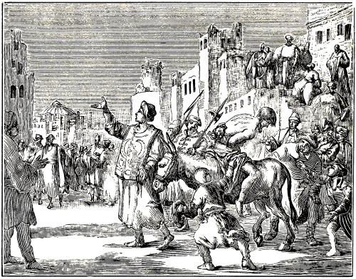
JOHN MOCKED AND TORMENTED.
About A. D. 850, the Saracens, who were adherents to the Mohammedan religion, invaded various islands of the Mediterranean Sea, and also the kingdom of Spain, in which they penetrated so far that their king had his court in the city of Cordova.
In the mean time, in order to treat the inhabitants of said country kindly as it were, and thus draw them gradually over to the Mohammedan religion, the Christians were allowed to remain, on condition that they would not gainsay, revile, or refute their false prophet Mohammed and his laws; also that they should no longer go into their churches, but pay their taxes, and live quietly under their jurisdiction.
The Christians, thus limited, and obeying their conscience by calling evil, evil, and good, good, were easily apprehended by the Saracens, and accused of capital crime; but, what is most to be deplored, these accusations proceeded sometimes from apostate, so-called Christians, yea, from such as bore the name of bishops (apparently political bishops, or such as were designated ordinaries by the Roman church), who, loving the favor of the Saracens more than the favor of God, declared that those who were put to death by them, because they obeyed their conscience, were no martyrs and could not be recognized as such; and what is yet more, they maintained this in a public council.
The persecutors, as can easily be judged, greatly encouraged by this, lamentably persecuted, martyred, and put to death many innocent Christians. O deadly piercings of antichrist, through the instrumentality of his bishops!
It is true, no severe tortures were inflicted upon the Christians who were martyred in this persecution, but for the most part they were simply beheaded; however, after their death their bodies were shamefully treated; first they were suspended for a time on gallows, then burned, and their ashes strewed in the rivers; or they were left unburied, to be torn to pieces by dogs and birds.
It is stated that this persecution commenced long before A. D. 850, but that at this time it was at the height of its fury, for which reason, it seems, the ancient writers have ascribed it to this year. Compare 234 Memor. Sanctor, lib. 1. Apal. Mart. and Doc. Mart. Eulog., lib. 2, cap. 8, 9, and vita Eulogii, with A. Mell., 2d book, fol. 306, col. 2, 3; also, Chron. van den Ondergang, 9th book, page 290, from Hist. Wenc., fol. 443. Chron. Nicoll. Gill., fol. 172, Leonh., lib. 4. However, this persecution is here fixed one year later, namely, A. D. 851.
What has been said of this persecution, is to be further explained by the remarks made in the first note. In the mean time, we will investigate what martyrs mentioned by name, suffered during said persecution for the testimony of Jesus Christ, and the confession of the holy Gospel.
A. D. 850, in the city of Cordova, John, an unlearned, but pious man, who kept a few things for sale, was accused to the judge, by false witnesses, for the sake of Jesus Christ, of deriding and reviling Mohammed. But as the witnesses in this case were not found reliable enough in their accusations, to condemn him to death, this faithful servant of God was sentenced to be severely scourged, and constrained to deny Christ. But this pious professor of Christ cried aloud: That he would not forsake the Christian religion unto death, and declared that he was innocent of the false accusations which had been brought against him.
This firmness so enraged the judge against John, that he had him scourged with more than five hundred stripes, causing the executioners to continue beating him, till he, under their hands, fell to the ground, apparently dead. But as he still lived and breathed after this torture, they set him backwards on an ass, and led him through the whole city, from street to street, with a crier, who cried: “Thus shall it be done with the revilers of our prophet, and with the ridiculers of our worship.”
This done they fettered him with heavy chains, and put him in prison; but as to how he finally died, we have not been able to discover in the accounts of the ancients; this much, however, is certain, that he contended for the name of Christ even unto blood. Compare Eulog. Memorial. Sanctor., lib. 1, with the account of Abr. Mellinus, 2d book, fol. 307, col. 1, 2.
Note.—From a want of fuller records by the ancient writers, we have not been able to obtain further information regarding the cause of the martyrdom of the abovementioned John, than that being zealous 235 for the truth of God and his Savior, he suffered principally for the second article of our general Christian faith, in which we confess that we believe in Jesus Christ, the only begotten Son of God; which justly, and according to the rule of God’s word, can be called a good profession, 1 Tim. 6:12.
Moreover, we have found nothing derogatory to his faith, of papal superstition or the like, in other points; notwithstanding in the city of Cordova, where he suffered, there were also people, who, it appears, were not free from the Roman pollutions; of which history has made mention. Hence, since nothing of this kind can be laid to his charge, we are bound, according to the nature of love, to judge the best both of his person and the other points of his faith, and this not only with regard to him, but also to others, who suffered for the same reason, and of whom the ancients, in regard to this matter, have given like testimony.
For this contest for the name of Christ, the Lord prepared not only men, but also women, and young maidens so that in the following year, 851, as near as can be reckoned, two sisters, one named Nunilo, the other Aloida, did not hesitate to confess Jesus Christ, their heavenly Bridegroom, among the Mohammedans, not only with their blood, but also with their death; which took place on this wise:
Their father was a Mohammedan, and their mother a nominal Christian, but not very pious, since she, according to the testimony of the ancients, after the death of her husband, married a Saracen (Mohammedan) or unbeliever. In consequence of this, these pious young women could not freely observe, and live up to, the confession of their faith, according to the doctrine of Christ, on account of the constraints placed upon them by their unbelieving stepfather. Compelled, therefore, to leave their mother’s house, they went to live with their aunt or mother’s sister, who, being a true Christian woman, brought them up farther in the Christian religion.
The envious enemy of the human race, filled with jealousy because they, the children of a Saracen father, had become Christians, accused them through the instrumentality of wicked persons, to the chief officer of the city of Osca, so that shortly after they were brought before the Judge. The latter, in order to draw them away from the Christian religion made them great promises of gifts and presents. He moreover offered to secure their marriage with the most excellent young men, etc., if they would but embrace Mohammedanism. But, if they remained stubborn, and despised the advice of the President or Judge, he threatened to torture them with divers torments, and finally to put them to death with the sword.
Thereupon, these pious maidens being strengthened by the Spirit of God, firmly and fearlessly answered the Judge, saying: “O Judge! how is it, that thou dost command us to turn away from true godliness? since God has made known to us, that no one in the world is richer than Jesus Christ, our Savior; and that nothing is more blessed than the Christian faith, by which the just live, and the saints have conquered kingdoms. For, without Christ there is no life, and without his knowledge there is nothing but eternal death. To dwell with him, and to live in him, is our only and true consolation; but to depart from him, is eternal perdition. From his communion we will never be separated as long as we live in this life; for, having given and entrusted our innocence (or youth) into his keeping, we hope eventually to become his bride.
“For, the profit of the transient riches of this world, with which thou didst think to allure us, we count as dung and loss, that we may gain Christ, because we know that everything under the sun, except Christ and true faith in him, is vanity.
“Nor are we moved by the threatened punishment; since we know, that the torments endure but a short time; yea, for death itself, which thou hast presented to us as the final terror, we long the more, because we know that thereby we go without delay145 to heaven, to Christ our bridegroom, there to be embraced by him inseparably, through his love.”
The judge, perceiving the steadfastness of their faith, and the power of their confession, deemed it well to commit these young maidens, each separately to certain Saracen women, to be instructed in the Mohammedan religion, strictly prohibiting them from conversing with each other, or with any others of the Christians. The women, who had undertaken to instruct them in the Saracen or Mohammedan religion, daily presented to them their idolatry and pernicious doctrine, seeking thus to poison them with the cup of the wrath of God, from the hand of Mohammed. But all in vain; they remained steadfast, which was called stubbornness by their enemies.
Finally they were brought before the tribunal and made a public spectacle; where they, confessing Christ as before, and declaring Mohammed an enemy of the Christian faith, as well as rejecting his doctrine, were executed with the sword, in the city of Osca in Spain, on the 22d of October, A. D. 851. Though others differ considerably in their chronology of this matter, we leave it to the decision of the intelligent reader. Compare the account of A. Mellinus, second book, fol. 308, col. 1, 2, with the authors from whom the same has been extracted. Eulog. Memor. Sanctor., lib. 2, cap. 7, and Interp.
Touching these two pious martyresses, there is also to be observed what is said in the added note respecting John, the first mentioned martyr.
Note.—A. D. 852, the zeal of some to die for the name of Jesus Christ was so great that multitudes of 236them confessed Christ, and, hastening to martyrdom, suffered themselves to be put to death as defenseless lambs, for Christ’s sake. It is stated that among these there were two young heroes of Jesus Christ, namely, Emilas and Hieremias, who, from a well-meaning and special zeal, spoke against Mohammed, and thus offered themselves, to suffer for Christ their Savior. For this they were both executed with the sword, whereupon (according to the testimony of the ancients), though the weather had been fine in the forenoon, immediately at the hour of their death, there followed mighty peals of thunder, so that the earth quaked; terrible lightnings fell from the air; great darkness, heavy hailstorms, furious whirlwinds, and storms manifested themselves, as though the insensible elements (according to Eulogius) were mourning the death of these pious martyrs; whose dead bodies were taken across the river and suspended on stakes, on the 15th of September, A. D. 852. A. Mell., fol. 309, col. 4, from Memor. Sanctor., lib. 2, cap. 2. For certain reasons, however, we will not comment on these persons, though we know of nothing to censure, as regards either their faith or their life.
Aurea was by descent a noble maiden, and a sister to the martyr John, of whom we have already spoken, from the province Hispalis or Seville, who was betrayed and accused by some of her countrymen. The Judge, who was a relative of hers, endeavored by every possible means to draw her away from Christ, in which he also succeeded. But shortly after, she repented of her apostasy, and went daily into the congregation of the believers, that by the hearing of the word of God she might be strengthened in the Spirit against a like conflict in time to come.
The enemy of mankind, who could not endure it, that Aurea now adhered more firmly to God her Creator, than before, instigated another to accuse this maiden to the Judge, who instantly had her brought by his bailiffs, and threatened her as before. But in the second conflict she was as much stronger to obtain the martyr’s crown, as, in her former apostasy, she had been too weak to resist the temptation; for she thus answered the Judge, saying: “I have never separated myself from Christ my God; I have never forsaken the religion of true godliness; I have never for one moment adhered to your impious worship; though I once, with my tongue, seemed to have apostatized from Christ, my heart was nevertheless far from it, and I had a firm confidence in my Lord Jesus Christ, who has again lifted up my contrite conscience, by his consoling promises, saying: ‘He that believeth in me, though he were dead, yet shall he live.’ Though, with my words, I fell into the snare of denial, yet my heart was strengthened through the power of faith, for, as soon as I went away from you, I kept with heart and mind the faith which I had practiced from infancy. Hence, there is nothing left, but to execute me with the sword, or else you must give me liberty to freely serve my Lord Christ.”
Thereupon the Judge said that she should be kept in prison until he had informed the King of the matter. The result was, that the following day, according to the King’s command, she was put to death with the sword, and then, with a murderer, suspended by her heels on the gallows. Her dead body was sunk with several thieves and murderers in the river Betis. She died on the 19th of July, A. D. 856, at Cordova, under Mahumad, King of the Saracens. In this account, A. M., fol. 311, must be reconciled with Eul., lib. 3, cap. 17.
Remark.—For further information we would remark that the aforementioned martyress, as regards profession in the matter of external religion, is to be distinguished from four other persons, Helias, Paulus, Isidore, and Argimirus, together with others, whom the last mentioned authors, in their account, have noticed just before the martyrdom of Aurea; for they, to all appearance, were of the Roman profession, of which we find no evidence in Aurea. She professed a good profession of Christ her Savior, and died thereupon; on which account she is justly classed among the true believing martyrs, according to what we stated in the note respecting the martyr John, for the year 850.
Note.—Since we do not find sufficient light on the persecutions, with regard to the names, as well as the confessions of the martyrs, we will now prepare ourselves to take leave of them, and commit those whom we have not noticed, as being too dark before our eyes, to the omniscient God, who will bring all to light. Our purpose is, to turn to Italy and England, where more and brighter light has arisen, though it had its beginning in France; so that the papal darkness, particularly in the matter of transubstantiation and the mass, was illumined by it. Yet, this shall end as a tragedy, for we shall show that the bright light of truth had to set in rays of blood and to sink under the earth as it were, to the sorrow of the true believing Christians.
Note.—In our account of holy baptism, for the year 860, we made mention of Hincmar, Bishop of Laudun, and stated that he desired that infants should be left unbaptized, on account of which he was greatly censured. But it seems that this was not the last of it, seeing other writers afterwards relate that he was sentenced and condemned in a certain council in the palace of Dusiacum, in the province of Rheims; moreover, that he was sent into banishment, laid in chains, and, two years after, deprived of both his eyes. However, these writers do not unanimously state that this happened to him solely on account of his rejecting infant baptism, but relate also, that it was done through the bitter hatred of the Arch-bishop of Rheims, as well as from other reasons relating to popery. As to the time of this event, the papist Cesar Baronius fixes it, A. D. 871, though we, from comparison with other authors, should fix it five years earlier. Moreover, though 237 we, as regards the life and walk of said Hincmar, have found nothing but what is good, we dare not give him a place among the martyrs, because of the differing statements of the ancient writers; hence we commit him to God, who will judge his cause.
Johannes Erigena, a Scotchman, and, hence, called Scotus, flourished, in the matter of his doctrine, in the time of the Emperor Louis the Pious, and his son Lothaire, somewhere in one of the cities of France. He was exceedingly virtuous, learned, and eloquent, and, consequently, for his eminent gifts, highly celebrated and esteemed. For, when Charles, one of the sons of the above Emperor, was desirous of having a good translation and exposition of the books of Dionysius, the Areopagite, especially of the treatise Hierarchia,146 John executed the same very laudably, and with marked ability, so that one Anastasius, who was librarian at the time, and composed a preface to it, writes of him thus: “It is astonishing how this barbarian (that is, foreigner or Scotchman), who hails from the uttermost parts of the world, was able to comprehend with his understanding such high things, and to translate them (said book of Dionysius), into another language, namely, from the Greek into the Latin; I refer to Johannes the Scotchman, concerning whom I have heard that he is a very holy and godly man.”
This is the testimony even of one of his adversaries, touching his learning and godliness; so that it is not necessary for us to adduce additional testimony relative to this point, from other authors, hence we let it suffice.
Afterwards, it seems, he wrote a book on the Eucharist (that is, on the thankoffering of the Supper), in which he very profoundly and conclusively refuted the gross error of the papists in the matter of transubstantiation, or the essential change of the bread into the body of Jesus Christ; also, the mass and the sacrifice which thereby, in popery, is offered for both the living and the dead. This was the cause of his death, as the sequel shows.
When he had written this book, it was greatly esteemed by some, among whom, subsequently, was Berengarius, deacon of the church at Angiers, of whom it is stated that he took and learned his belief respecting this point (and perhaps also against infant baptism, since he strenuously dissuaded from it), from the writings of Johannes Scotus; of which we propose to speak more fully in the proper place. On the other hand, said book was exceedingly hated by those who were zealous defenders of the Roman superstitions, especially of transubstantiation and the mass; so much so, that, when it had come before Pope Leo IX., the result was, that both (as appears) he and his book were condemned and anathematized as heretical; which was done chiefly in the council of Vercellis.
When this had thus happened, and he had incurred the hatred of the Pope and many of the papists, he left the city of Paris—where he was rector of the University—and also France, and went to England, where he took up his residence at Meldum, supporting himself by teaching and instructing inexperienced youths. But after a few years, when the spite and hatred of some monks could tolerate him no longer, on account of his faith against the Roman church, they instigated his scholars against him, so that they stabbed him to death with awls and penknives.
Other writers are of the opinion that the monks did it themselves. Both may be true; the monks, having instigated the young men, and probably finding them too timid, may have led off in the murder, the youths following, with penknives, awls, etc., so that said martyr lost his life under their hands. This much is certain, that he died a cruel death for his faith, and that the monks, through the instrumentality of his scholars, were in no small measure the cause of it, as the records of his death inform us. Compare the account of A. Mellinus, 2d book, fol. 343, col. 2, 3, and fol. 392, col. 4, and fol. 393, col. 1, 2, taken from Trithem. de Script. Eccles., Item, Hist. Reg. Angl., in Alfredo, lib. 2. Hobed. Annal. parte Priore. Westmon., in Flor. Hist., A. D. 883. Idem, Hist. parte Prima. Chron. Car., lib. 4, sub. Henr. 4, Seniore. Lanfranc., lib. de Euch., contra Bereng. Baron. Annal. T. 11, A. D. 1059. Mamelsburi Regum Angl., lib. 2. Testibus. Lanfranco, Guytmundo and Aliis.
Note.—P. J. Twisck gives two different accounts concerning it; in the first he fixes the date, A. D. 869. Chron. 9th book, page 306, col. 2, from Hist. Andr., fol. 160. In the second he fixes it, A. D. 884. Page 311, col. 2, from John Munster, fol. 83. In the first place he calls him Johannes Scotus, in the second, Johannes Erigena; however, as the account itself declares, it is the same person.
As to the dates 869 and 884, to which the history of said Johannes has been referred by him, some one might think that this could not very well be reconciled, which may, however, be easily done, if we take the year 869 as the time in which said martyr flourished and propagated his doctrine, and the year 884 as the time when he died and was martyred for the principles which he taught.
“In the time of Emperor Louis the Pious,” said authors say, “Johannes Scotus read and explained 238 publicly in the schools, Dionysius’ treatise Hierarchia. This Johannes Scotus, when he censured and refuted with good reasons, the false and impious tenet of the sacrifice of the mass, concerning which others at that time taught that in the Supper Christ was to be offered up for the living and the dead, was stabbed to death by his disciples and hearers, with their penknives.” Chron. Carion., from the beginning of the world until Charles V., enlarged by Phil. Melancthon and Casp. Peucer, printed 1586, 4th book, fol. 476, col. 1.
“Johannes, surnamed Scotus, not of the Gray Friars, wrote a treatise on the sacrament, denying the presence of the body and blood of Christ. He was condemned in the council of Vercellis. He was rector at Paris, eminently versed in the languages, and the phenix of his age. The Emperor Lothaire held him in great esteem. Of him there have written, Platina,” etc. See Chron. Rom. Kett., fol. 106, col. 4, letter J.
“Johannes Scotus,” he writes, “lived under the Emperor Louis the Pious, and wrote strenuously against transubstantiation. On a certain occasion, when he, in an exposition, was severely censuring the delusion of the blasphemous oblation or offering up of the Lord Christ in the Supper, for the living and the dead, his disciples and hearers killed him with iron styles.” Chron., 9th book, fol. 306, col. 2, from Hist. Andr., fol. 160.
“But let us add,” says he, “the opinion of Baronius, touching this Scotchman: As regards Johannes Scotus, we have said above, in the proper place, that he was in bad repute with the Pope Nicholas I. Although he wrote so violently against the Catholic faith, yet, as he did not spread it among the people, so that his views became known to all, many had a good opinion of him, so much so, that they, though most inconsiderately (thus he speaks, from a papistic standpoint) gave him the title of martyr.” Compare A. Mell., 2d book, fol. 393, col. 1, 2, with Cesar. Baronius’ account touching J. Scotus. Annal. T. 11, A. D. 1059.
From this account it appears that the papist Baronius, who was a cardinal of the Roman see, was not pleased that many had a good opinion of Johannes Scotus, and, what is still more, gave him the title of martyr; but this is not to be wondered at, since the true papists have a good opinion of none but those who adhere to the Roman superstitions, and never dare to utter a word of censure against them; and they would confer the title of martyr upon none but those who have suffered for the Roman see and its traditions (which are a parcel of human inventions). However, we will let them answer for this, and leave it.
We return to Johannes Scotus and say that, as regards his boldness, he showed himself as behooves a true martyr, since, to clear his conscience and defend the oppressed truth, he did not hesitate to incur the hatred of the Pope and the papists, yea, the prospect of being anathematized, excommunicated, and, finally, miserably tortured and put to death for it. He died for the confession of the Christian and evangelical truth, particularly for the article by which we commemorate the Lord’s death, and in which lies the consolation of the soul, with regard to our blessed redemption.
But, since Berengarius, who opposed not only transubstantiation and the mass, but also infant baptism, was afterwards charged with having imbibed and obtained his belief from Johannes Scotus, the aforementioned martyr, we may conclude that said martyr must also have opposed infant baptism; otherwise it could not be said in general words, that Berengarius imbibed or obtained his views from J. Scotus, which is nevertheless frequently and confidently asserted by ancient writers. With this we will take our leave of J. Scotus and also of our account of the martyrs of this century; as being sufficient for the well-disposed—for the evil-disposed we care not; hence, our soul shall rest, and content itself with the pious.
[The corruption of this century, caused by the papal superstitions, is sadly lamented by Jacob Mehrning and P. J. Twisck.
Nevertheless, it is shown thereupon, that in the midst of papal darkness there were still some who, in the matter of holy baptism, did not differ from the institution of Christ and his apostles.
Giselbert teaches, that baptism must be connected with regeneration and a good will.
Then follows Ansbert, who declares that Christ, through preaching and baptism, is still daily bringing unto himself heirs; that we must be baptized upon the confession of the holy Trinity; and that after baptism we may sin no more.
Smaragdus follows next and says that it is impossible for the body to receive the mystery of baptism aright, if the soul has not previously accepted the truth of the faith; that the excellent ordinance of the baptism of Christ commands the apostles first to teach all nations, and then to incorporate them by the baptism of faith.
Then appears Theophilact, who produces very excellent testimonies concerning baptism; as, among others, that the baptized have put on Christ, Gal. 3:27; that the candidates are like the prodigal son 239 when he was converted; that he is not baptized aright, who has not believed; that in baptism all believers are enlightened by the Holy Ghost; that no one may be recognized as a believer, who is unregenerate or lives after the flesh; that the truly baptized may not drive away the Holy Spirit by wicked works, but must preserve the image of God unspotted; that the good profession of which we read, 1 Tim. 6:12, must take place at the instruction of those that are to be baptized; that those baptized by John, were delivered by repentance from the bonds of the soul; that the novices repented before baptism; that the Supper was administered to the baptized, etc.
Thereupon it is stated, from D. Vicecomes, that the papists, when infant baptism was introduced among them, abolished the practice of administering the Supper to the baptized. It is furthermore demonstrated, that the Romanists ought to have abolished infant baptism just as well as the infant Supper.
The baptism of Olympius, his wife Exuperia, and his son Theodulus, is adduced, from Simon Metaphrastes; also, of the baptism of Theridates, and Nemesius.
Fulbertus Carnotenses is the last witness respecting holy baptism.]
We now pass over to the tenth century after the birth of Christ, to find in it, as we have done in the preceding times, the marks of the Christian believers, namely, the true baptism with its observance according to the institution of Christ and the practice of his apostles; which, as we shall show in the proper place, obtained and was practiced also at this time, though under great difficulties.
Yet, what shall we say of this century? Many well-disposed persons, who loved the truth, abhorred and detested it, because the innumerable human superstitions of the Roman church had risen nigh unto heaven, and the pure commandments of Jesus Christ, without the observance of which men cannot be saved, had been cast almost down into the pit. This was the century concerning which much woful lamentation was made, because papal tyranny, in the matter of worship, had increased so exceedingly. Of these things (after the title), the following is contained in Jacob Mehrning’s History of Baptism.
“In the tenth century the dominion of the Roman Pope had exceedingly obscured, and taken possession of, nearly all the churches in Europe, so that everything, had to be done according to his pleasure, both in spiritual and secular governments; hence, great darkness prevailed at this time, in which but very few learned, virtuous, and celebrated men lived. For fear of the great tyranny, one dared scarcely speak the least word of the adulteration of the doctrine, or the abuses in the false worship, and the increase of the abominable blasphemies; for, as soon as those who knew better, and feared God, uttered the least word of opposition, the Pope instantly thundered, with hail and lightning as it were, excommunications from the Roman chair, so that every one was terrified, since also the secular lords were bewitched and controlled by him. Was it to be wondered at, then, that the corruptions with reference to baptism, increased the longer the more?” Bapt. Hist., p. 566, from Magd. Cent. 10, cap. 1.
Touching the abuses in and about baptism, which were then introduced the decree of the Pope and the councils, they are noticed by different writers, as may be seen in Cent. Magd., Cent. 10, cap. 6, 10, 11.
In short, whereas formerly the catechumens had not been baptized until, after proper instruction, they had given an account of their faith, either on Easter or Whitsuntide, it was now ordained, that, when death or peril of life was apprehended, they should be baptized immediately. Metaphr., lib. 2, cap. 5.
Whereas baptism had formerly been administered with unblessed or unconsecrated water, it was now blessed and consecrated, yea, the chrism was used, the sign of the cross on the forehead, the oil of chrism. Bapt. Hist., page 576, num. 13.
But the most ridiculous of all was, that, whereas formerly only human beings had been baptized, Pope John XIV. now commanded that the great bell in the Lateran church should be baptized and named after him. Bapt. Hist., page 577, ex Balaeo Centur. 2. P. J. Twisck, Chron., 10th book, for the year 965, page 341, col. 1.
These exceeding great errors of the Roman church, and the dreadful darkness in which all nations, with the exception of a few pious people, sat during those dreary times, is described in P. J. Twisck’s Chronijk, in the conclusion of the thousandth year, with the following words (after the title):
“As far as regards the preceding century, I cannot speak of any improvement, inasmuch as the secular affairs manifested themselves with much commotion, strife, misery, and distress. Papal dominion prevailed more and more. The idolatrous ceremonies were very prolific; the baptismal water was consecrated; the oil was prepared by the bishop alone, two days before Easter, as well as imparted to others; the Supper, or sacrament, was administered nearly every Sunday, at an altar or table prepared for this purpose. Excommunication or the ban of the church was used very frivolously, not only against common people, but also against emperors, kings, and princes. The punishment imposed upon penitents consisted much in abstaining for seven years from certain food, meat and wine, or in the giving of alms, building of churches, founding of cloisters, and other like inventions and burdens, 240 according to the ability and mind of each respective individual.
“It was taught, that the saints must be worshiped; not that they should save the supplicants, but that they should intercede, and ask God for help for them.
“Holy people were presented, who had died before the time of Christ, in the Old Testament, and who, as it was said, had been in hell, yet without pain—a strange notion and wicked doctrine respecting the holy fathers.
“It was said that there was a purgatory, where men had to atone after this life, and wash away sin by suffering.
“The canonizing of ecclesiastical persons was very common. The holidays instituted in honor of the saints, were very many, and took away nearly one half of the year. The images and graves of the saints were greatly esteemed. Kings, princes, lords, ecclesiastics, and laymen, made pilgrimages to Rome, St. Jago, Jerusalem, and other places, where the bodies or bones of the saints were buried or preserved, as though dead bones without spirit, could impart life or benefit.
“The sick would confess to the ear of the priest, and thereupon receive the sacrament of the unction; after which they departed in full assurance, though without any good resulting from it.
“The dead were buried with the ringing of bells, with tapers and torches, with much singing, with masses, vigils, and prayers for their souls, etc.” P.J. Twisck, Chron., 10th book, page 361.
Thus, the tenth century was utterly corrupted through the superstitions of popery; but, as in the dark midnight the stars still sometimes give their light, so it was also here; for, that the marks of the true church might not be swallowed up entirely in the darkness, some, though but few, manifested themselves, who, in one and the other point, but principally in the matter of baptism, showed, that they, as regards the matter itself, did not differ from the institution of Christ and the practice of his holy apostles; which can be gathered from the writings they have left.
About A. D. 910.—Or very close to the beginning of this century, the ancient writers place Giselbert, a man of learning, but accused of strange opinions by his adversaries; whom the emergency of the time compelled to stoop and hide, under the ravages of popery. He, though others have regarded him as a member of the Roman church, opposed, apparently as much as lay in his power, the Pope and the Roman church, and this not a little in the matter of baptism. For, while the Pope and the Roman church generally taught that it was necessary, yea, upon pain of damnation, to baptize the infants, notwithstanding they have not, and cannot have, either true regeneration or a good will [intention], which are nevertheless required of candidates (Matt. 3:7,8), he taught that it is indeed necessary to salvation, to be baptized, but that said baptism must be connected with regeneration, and a good intention; which things, besides the grace of Christ, he considered the chief means to salvation, so much so, that any one who had these virtues, though he were not baptized (that is, if there had been no opportunity), could nevertheless be saved because of the grace and power of God. Of this, there is, among others, the following annotation in Jacob Mehrning’s History of Baptism, page 567.
Of the necessity of baptism.—Giselbert (Alter. 1), says: “It is true, God can save; yet, man cannot be saved without baptism; (that is, that baptism which is accompanied with regeneration, as the following words declare), for thus says the author of this sacrament himself: ‘Except a man be born of water and of the Spirit, he cannot see the kingdom of God.’ It is, however, not in the power of man, to reject this way, and to choose to salvation another. However, it is in God’s power, if man cannot obtain this means (baptism), to accept graciously his good will.” Cent. Magd. X., cap. 4.
Hence, when he here speaks of the good will of man, it is quite evident, that he treats neither of infants nor of infant baptism, seeing infants have no knowledge of either a good or a bad will, nor of baptism, nor of regeneration, to which said passage of Giselbert also has reference; much less have they the ability to worthily begin and execute all this, for the proper reception of baptism. He intends simply to say, that baptism is indeed necessary, yet not without regeneration; which regeneration he regards as the most important of all, according to John 3:5,7, from which he concludes that it is not in the power of man to reject this way, namely, to separate regeneration from baptism, or baptism from regeneration, which is a stricture upon those who were wont to reject the baptism of the regenerated or penitent, and to go another way, as did the Pharisees in the days of John the Baptist; who, rejecting the counsel of God against themselves (namely, the baptism of John), were not baptized of him. Luke 7:30.
But, in order that no one need sorrow, who, having attained to regeneration, could not receive baptism, on account of serious obstacles or the want of a fitting opportunity, and, hence, might imagine that there was no grace or mercy of God for him, he adds this consolation, namely: “That it is in God’s power, if man cannot obtain the means (baptism), to accept graciously his good will.”
Whatever others, especially papistic writers, may have recorded of Giselbert’s belief, detrimental to, or, at least, against the point in view, we let them be responsible for it; this is certain, that we have not as yet been able to find anything to the contrary, in any authentic writer.
About A. D. 925.—Shortly after, or very near the time of Giselbert, Ansbert is mentioned, who, writing on several matters of faith, or articles of religion, also makes mention of baptism, approaching herein very closely the language, or, at least, the sense of the holy apostles, which appears from the following testimonies:
Bapt. Hist., page 568. Ansbert (on Rev. 19), says, according to the words of Christ, John 1:13: “Which were born not of blood . . . but of God.” “Of God, that is, through the preached word and the washing of regeneration, by which mysteries (namely, preaching and the washing of 241 regeneration, that is, baptism) Christ still daily begets and brings forth unto himself heirs.”
He here connects the word of God, or preaching, with the washing of regeneration, or baptism, and says that by them Christ begets and brings forth unto himself heirs. How could anybody more plainly declare: 1. what true baptism is; 2. what belongs to it; and 3. what fruit proceeds from it. For, firstly, what true baptism is, he expresses by these words: Washing of regeneration, according to Tit. 3:5, indicating thereby, that true baptism is peculiar only to the regenerate; that is, to the penitent. Secondly, what belongs to baptism he expresses by these words: The preached word; for, as the apostle declares, “Faith cometh by hearing, and hearing by the word of God,” Rom. 10:17. The preached word is therefore the means by which to attain to the faith, and faith is the foundation upon which truly to receive baptism. As necessary, then, as faith is, in order to be truly baptized, upon it, so necessary also is the preached word, in order to truly believe; consequently, Ansbert has justly joined the preached word to baptism, as a proof that it belongs to it, according to the words of Christ (Mark 16:15,16): “Preach the Gospel . . . he that believeth and is baptized.” Thirdly, what fruit proceeds from such baptism, when it is accompanied with regeneration and the preached word of God, he expresses with these words: “By which mysteries Christ still daily begets and brings forth unto himself heirs,” which well agrees with the words of Paul, Gal. 3:26,27: “Ye are all the children of God by faith in Christ Jesus. For as many of you as have been baptized into Christ have put on Christ.” These, then, who by this means become children of God, also become his heirs and joint heirs with Christ. Rom. 8:17. Hence, said words of Ansbert are conformable to the holy Scriptures, and speak of the baptism of the regenerate, but in no wise of infant baptism.
Page 569. Ansbert (on Rev. 21) teaches: “The trinity of the Godhead we dare not, and shall not pass by unnoticed, especially when we are baptized upon the confession of the holy Trinity, and are saved in the faith of the unity of the same.”
Here he again connects baptism with confession and faith, yea, he says that we are baptized upon confession, and saved in faith. Certainly, there is not a letter in the above passage, which savors of infant baptism, but every word denies, yea, opposes it, inasmuch as here such a baptism only is spoken of, as is received with faith and the confession of the same; but that this can be done by infants, militates not only against the holy Scriptures, but also against nature.
Page 574. Ansbert (on Rev. 1) says: “He that has been washed in baptism from dead works, and, after such washing, again commits sins unto death, it avails him nothing that he was washed; hence, the Lord, through Isaiah (chap. 1, verse 16), admonishes thus: ‘Wash ye, make you clean.’ He washes and cleanses himself, who commits no new sins after baptism. But he that conducts himself thus that after such washing, he again pollutes the white robe with sin, let him still not despair of remission, if he desires to be washed again; for there is yet another baptism, with which publicans and harlots are always baptized—and what other is it but the well-spring of tears? in which Mary Magdalene, polluted with many a stain of vice, and Peter, when he had thrice denied the Lord, washed themselves.”
This whole passage is a warning to those who, having committed sins unto death, were baptized for the remission of the same, that they should not rely upon this, otherwise they might be deceived; hence, against such, there are spoken these words: “He that after such washing again commits sins unto death, it avails him nothing that he was washed.” Then follows an admonition, not to fall into new sins after baptism; yet that any who had fallen into them, should still not despair. But to such there is pointed out another baptism, namely, the baptism of tears, that is, weeping and sorrowing for committed sins. Then it is told what persons were once baptized with this baptism of tears, namely, publicans and harlots, Mary Magdalene, and Peter, for denying Christ.
Judge now, whether the above-stated things can be done by infants, or whether they are peculiar only to the adult and intelligent, and we are fully confident, that, if you are impartial, you will choose the latter, and reject the former.
About A. D. 938.—Very near the time of Ansbert, a place is accorded, in this century, to Smaragdus, who, having, it seems, at some time previous to his conversion, or, at least, to his enlightenment, maintained infant baptism, now gave such testimony concerning baptism as completely excludes infant baptism, inasmuch as he, writing of the nature, virtue, practice, and benefit of baptism, very closely follows the language of Christ and his holy apostles.147
This appears from his exposition of the institution of Christ respecting baptism.
“First,” he writes: “all nations were taught, and then they were baptized with water; for it is impossible for the body to receive the mystery of baptism aright, if the soul has not previously accepted the truth of the faith; for they were baptized in the name of the Father, the Son, and the Holy Ghost.” Again: “This excellent ordinance of baptism commands the apostles, first to teach all nations, then to incorporate them by the baptism of faith, and then, after faith and baptism, to teach them what they were to observe.” Smaragdus, on Matt. 28.
N. B. “Thus,” says the writer who has recorded this, “the light of truth must shine forth in the midst of darkness; for, where did Christ institute another ordinance of baptism, for infants?” B. H., page 570, num. 7.
Though this last passage is very acceptable and worthy of being considered, and confirms in no small measure the point we have in view we will 242 nevertheless let the writer keep it to himself, it being only a comment on the aforementioned matter.
We will, therefore, return to the matter itself, namely, to the words of Smaragdus, and we shall soon find that his aim was, to connect faith with baptism, yea, to admit no other baptism than that which is accompanied with the truth of the faith. For, what else does he intend to say with these words: “For it is impossible for the body to receive the mystery of baptism aright, if the soul has not previously accepted the truth of the faith?” May we not firmly conclude from this, that this man knew nothing of infant baptism, or, at least, that he, when he wrote this, utterly denied and rejected it? Certainly, no one could oppose, or reject, infant baptism more flatly and plainly; for if it is impossible, as he says, to receive baptism aright without having previously accepted the truth of the faith, etc., he establishes that it is impossible to baptize infants aright, seeing they, because of their disqualification in regard to power as well as knowledge, cannot previously accept the truth of the faith. Unless some one would say that he held, that there is a certain faith, or germ of faith, as others call it, in infants from their birth (as was afterwards advanced by the Lutherans), upon which, some were wont to assert, they ought to be baptized. But this is easily refuted; for, besides this, that in the time of Smaragdus, as far as can be seen, they knew nothing of this hidden faith, or germ of faith, in infants, much less baptized them upon it, he plainly indicates that he is speaking of another faith, which he calls the truth of the faith, that is, a true and genuine faith; which true and genuine faith no one ever, to our knowledge, not even to the present day, claimed for infants, in order to establish infant baptism upon it.
Moreover, Smaragdus required of the candidates for baptism, not only the truth of the faith, but also regeneration, as appears from his comments on John 3, where he says: “He that is regenerated through water and the Spirit, is invisibly changed into a new man, and from a carnal man is made a spiritual man; and he is therefore rightly called, not only spiritual, but also spirit.” B. H., p. 573, num. 11.
In this passage again there are several things mentioned, which indicate nothing else than that he is speaking of the baptism of adults. For, besides that the words, John 3, were not spoken to an infant but to Nicodemus, a master in Israel, the circumstances adduced by Smaragdus in regard to it also indicate, that it is to be understood of none but adult persons. For, what else does he mean to say by the word regenerated, than that the baptized person who has previously truly prepared himself for baptism, gives up his old, earthly birth, and becomes a new creature? Thus also, when he says that the baptized person is changed into a new man; for, how shall any one be changed into a new man, who was not an old man before? And also, when he adds, that such an one, from a carnal man is made spiritual; for, how is it possible, from a carnal man to become spiritual, if one has not previously been carnal or lived after the flesh? Therefore, to become spiritual, does not simply mean, to receive the Spirit of God, but to live after the Spirit, in the fear of God, and in all the Christian virtues. Gal. 5:21–24.
This being so, we will leave the testimony of Smaragdus and proceed to others of his cotemporaries, who held the same belief and left it to us in their writings.
A. D. 952.—It is stated that in the time of the Emperor Otho the Great there lived and wrote, in Greece, a very virtuous and learned man called Theophilact, who, writing on various matters of faith, also makes mention of baptism, not differing herein, as far as we have been able to ascertain, from the Anabaptists of the present day, but agreeing with them very well on the subject of baptism upon faith.
Bapt. Hist., page 571, Theophilact on Luke 15, says: “As many of us as have been baptized have put on Christ.”
These are the words of Paul, Gal. 3:27, which the apostle does not speak to infants, but to the believing saints of the Galatian church, namely, that they had indeed, become children of God by faith, but had put on Christ by baptism.”
Continuing he says: “Then he puts on our hand (namely, to us who through baptism have put on Christ) the ring, the seal of Christianity, which works in us.” Again: “Every one that is baptized, is also made a child of God, yea, readopted as such; he is also, when he is washed from sin, made a partaker of the fatted calf, and becomes the joy of the Father and his servants, the holy angels and men, even as one that has arisen from the dead, and who was lost, and is found.”
He here compares the candidates to the prodigal son who, repenting of his evil life, arose to go to his father, to seek grace, and was received by him with outstretched arms. Thus, he would say, it is also in baptism: The sinner seeks grace, confesses his sins, manifests sorrow for them, yea, prays and supplicates for forgiveness. God, the Lord, who is the true Father of all men by reason of creation, meets him, embraces him with the arms of his grace, yea, pardons all his past sins, and, in token thereof, commands one of his servants to baptize him. This he compares to the putting on of the ring, saying: “Then he puts on our hand the ring, the seal of Christianity.” What he further says concerning the killing of the fatted calf; and the joy of the Father and his servants, has regard to the joy that is in heaven over the repentance of such a penitent (and thereupon baptized) sinner, which is greater than over ninety and nine just persons, which need no repentance. Luke 15:7.
Hence, when Theophilact compares the candidate for baptism to the prodigal son, in the manner shown above, it is evident enough, yea, as clear as midday, that he is treating of no other baptism than the baptism of adults, and this of such adults as manifest sorrow for their past sins.
Page 572. Theophilact on John 8, says: “Since Christ came to take away the sins of the world, we can obtain remission of sins in no other way than, by means of baptism (however properly speaking 243 the blood of Christ is the effective cause of the remission and taking away of sins), yet it is impossible that he that has not believed, be baptized (aright); hence, the unbeliever must afterwards die in his sins, for he has not put off the old man, because he has not been baptized.”
Though several things are said here, which confirm our preceding explanation of the words of Theophilact, we shall nevertheless notice only these words: “It is impossible that he that has not believed, be baptized (aright);” for here certainly every baptism which is not received with faith is denied; hence, infant baptism cannot be admitted here, because it is without all faith, yea, it is utterly denied here. And thus, the words of Theophilact concerning baptism, are not only clear, but also Christian-like and apostolical.
Page 572. Theophilact on 2 Cor. 3, says: “Even as silver, exposed to the sun, does itself emit rays, because the sun shines upon it; so also we, when we are purified in baptism, by the Holy Ghost, and illumined by his rays, emit a spiritual radiance, perceived only in the soul, and are changed into the same image, by the Spirit of the Lord, to our glory.” And, a little further on: “All believers are illumined in baptism by the Holy Ghost, that their souls shine (or, emit radiance) thereby.” Again: “As we are all dead by one sinner, even so we are all made alive, and are risen through Christ, in baptism; and we justly recognize no one as believing, who lives after the flesh, that is, who leads the old, carnal life; but all who are regenerated by the Spirit, begin a new, spiritual life.”
The words which Theophilact speaks from or on 2 Cor. 3, concerning the candidates, Paul speaks of believers; and the simile borrowed by the aforementioned writer from the silver, which, when the sun shines upon it, reflects his rays, which he applies to the candidates, who become illumined by the Holy Ghost, and reflect a spiritual radiance of virtues, confirms, in a good degree, that he is speaking of such candidates as can be illumined by the Holy Ghost, and live virtuously, to the honor of God, the edification of their neighbor, and to the salvation of their own souls. What he says after that, fully confirms our opinion, namely, that he is speaking of believing candidates; for, this he clearly expresses with these words: “All believers are illumined in baptism by the Holy Ghost.” What he adds finally, tends in the same direction, for he says that, “As we are all dead by one sinner (Adam), even so we are all made alive and are risen, through Christ, in baptism.” Who does not see that this making alive and rising (in baptism) has respect to the renewing of the old life, according to the teaching of Paul (Rom. 6:4): “Therefore we are buried with him by baptism into death: that like as Christ was raised up from the dead by the glory of the Father, even so we also should walk in newness of life.” That this is his meaning, he indicates by the following words, when he calls those whom he has previously termed candidates, believers and regenerated persons, saying: “We justly recognize no one as believing, who lives after the flesh; but all who are regenerated (thus he calls the candidates or the baptized) by the Spirit, begin a new, spiritual life.”
Page 573. Philophilact on 2 Tim. 1, says: “The Holy Ghost hovers over us at baptism; now, if we keep this Spirit, and do not drive him away by wicked works, he keeps us and what we have received from God; therefore, use all diligence, that you keep the Holy Ghost, and he, who has been given you, will also keep you.”
It seems that in the days of Theophilact there was a failing among some of the candidates, or, at least, among the unbaptized Christians, that, instead of stirring up the grace of the Spirit of God, which had been given them (after baptism), and thereby increasing and proceeding in virtues, they decreased and retrograded, yea, fell into wicked works. This, Theophilact opposed, warning them to be careful not to drive the good Spirit of God away from them by wicked works, seeing he will not dwell in a malicious soul, nor in a body that is subject unto sin. Wisdom of Sol. 1:4.
Secondly, he admonishes them affectionately and consolingly, to keep the gift of the Holy Ghost (after baptism), pointing out also, the means by which this could be done, namely, by avoiding wicked works, and using diligence, that is, such diligence by which the worship of God and the common edification could be promoted. The consolation which he, for such, adds to his admonition, is expressed in these words: “Therefore, use all diligence, that you keep the Holy Ghost, and he . . . will also keep you.” But, what fruit his warning, and consoling admonition had on those persons, is not stated there; hence we will take our leave, and proceed to other writings which he has left.
Same page as above. Theophilact on John 3, says: “It is not enough for the preservation of purity, to be baptized; but one must also use great diligence, that the image of the sonship of God, which is represented in baptism, is kept unspotted. There are many who have received, in baptism, the grace of adoption as children of God, but who, through negligence, have not remained children of God unto the end.
Here he greatly laments the apostasy of the children of God, namely, of those who, having been baptized, and having received the grace of adoption as children of God, but through negligence had apostatized so that they, as he calls it, had not remained children of God. Certainly, this was a sad matter; but notwithstanding we rejoice that in those times people were baptized upon faith (as has been shown above), that they might receive the grace of adoption as children of God; and that there were yet persons (as appears from Theophilact) who taught this doctrine and reproved the opposing abuses; to which, has been our sole aim.
Page 575. Theophilact (on 1 Tim. 6, where the apostle says: “Thou hast professed a good profession before many witnesses”), writes: “This profession takes place at the instruction of those who are to be baptized; and we profess by it that we will forsake Satan, and pitch our tent with Christ, that we may fully adhere to him.”
244
How could any one speak more clearly and truly of baptism according to the institution of Christ and the practice of the apostles? He says here, that the good profession of which Paul writes (1 Tim. 6:12), took place at the instruction of those who were to be baptized; by which he indicates that in his time the candidates were not only instructed at and before baptism, namely, in the Christian faith, but that they were also required to make a profession of what they believed, which consisted (as can be gleaned not only from Theophilact, but also from other writers of that time) of two parts: firstly, in the confession of faith in God and in his Son Jesus Christ; and secondly, in the renunciation of Satan, the world, the flesh, and all its lusts.
Same page as above. Theophilact on Mark 1, says: “All who came to be baptized by John, were delivered through repentance from the bond of their souls, if they believed on Christ.”
He says of those who came to John’s baptism, that they were delivered through repentance from the bond of their souls (that is, from sin), if they believed on Christ; by which he indicates that two things were required of those candidates, in order that they might be delivered from sin; 1. repentance; 2. faith in Christ. Which things, since he adduces them for the instruction of his cotemporaries, were also required of the candidates of his time, namely, that they had to repent and believe on Christ. For, to what purpose should he otherwise, by way of instruction, have adduced them?
Page 581. D. J. Vicecomes (lib. 3, cap. 3, on Heb. 6), quotes from Theophilact: “When you were to be baptized, you repented of dead works, that is, rejected the works of Satan.”
In Lib. 5, cap. 37, Vicecomes expresses the opinion, that in the time of Theophilact the holy Supper was still administered to the baptized, after baptism.
Whether we cast our eyes upon the words of Theophilact, or upon those of Vicecomes, we see that both tend in the same direction. As regards the words of Theophilact, he informs us concerning the candidates of his time, that they, before baptism, or, at least, when they were about to be baptized, repented of dead works, which, as every one knows, can only be done by adults, and not at all by infants; for, one that is to desist from dead works, and repent, must first have committed dead works; this is incontrovertible.
As to the words of Vicecomes, they confirm the foregoing; for, if the holy Supper was then administered to the baptized after baptism; which Supper, as is taught in 1 Cor. 11:27, had to be received with proper examination, and qualification, as, according to history, was then still done, it follows that the baptism of infants could not have been maintained among those who practiced this, seeing infants are unfit for such examination and qualification, and, consequently, also unfit to become partakers of the holy Supper, which Vicecomes also notices; for, referring, in the same place, to some among the Romanists, he says: “But when the baptism of infants was introduced, they [the infants] did not understand the virtue of the heavenly food, the church abolished this custom (namely, of administering the Supper to the baptized), that this holy sacrament might not be dishonored thereby.”
From this it is quite evident, that at that time, not only some who had separated from the Roman church, but even some who belonged to the Roman church (perhaps, whole churches of the Romanists), still had the custom of administering the holy Supper to all that had been baptized, and this with all proper devotion; so that in those churches, it seems, nothing was known, even as late as that time, of infant baptism, or, at least, that it was not observed there, until the Pope, or some council ordained otherwise; for this is clearly expressed in the words: “But when the baptism of infants was introduced, the church abolished this custom.”
Touching what is adduced (B. H., p. 308, from D. Vicecomes, lib. 5, cap. 37), concerning the infant Supper, as though it might have obtained in the time of Theophilact, it is refuted by the writer himself, in said passage; for he explains it as having reference to the Supper of believing, baptized Christians, saying, that it was administered to the baptized till infant baptism came into vogue, and that it was then (because infants were unfit for it) abolished.
In regard to this, the writer who records it, has the following words to the shame of those who did so: “Cannot these foolish saints,” says he “for the same reason, also abolish infant baptism, which is not a less, but, on account of the effectual regeneration, a greater sacrament, than the Supper?” B. H., page 308. He means to say: If the Supper, which it was customary to administer to believers after baptism, was abolished, when infant baptism came into vogue, because infants have not the ability to worthily prepare themselves for the Supper; how great a folly is it, then, that infant baptism was not also abolished for the same reason; seeing that not less, but more, is required for baptism than for the Supper, namely, an effectual regeneration? For which reason also baptism is a greater sacrament than the Supper. Certainly, this was a forcible argument in refutation of those who, having introduced infant baptism, had therefore abolished the Supper which used to be administered after baptism; and who considered infants better qualified for baptism than for the Supper.
About A. D. 980.—Bapt. Hist., pages 578, 579. Vicecomes quotes from Simon Metaphrastes, lib. 1, cap. 5, the following occurrence: “That Theridates, with his wife and the chief persons of the land were baptized in the river Euphrates.”
Page 580. “Greg. Martyr enjoined upon Theridates and those who desired to be baptized, a fast of thirty days, then instructed them one after another, and thereupon baptized them in the Euphrates.” From Vicecom., lib. 3, cap. 6.
D. Vicecomes (lib. 1, cap. 14), relates how Namesius, came to the water, towards evening, descended into it, and was baptized, in the name of the Father, the Son, and the Holy Ghost. From Metaphr., in vita Steph.
In lib. 3, cap. 3, he writes, how Olympius, with his wife, Exuperia, and his only son, Theodulus, in the night came to Sympronius, fell down at his 245 feet, and said: “We have recently learned to know the power of Christ, that he is truly God. We therefore pray thee, to see that we receive baptism, in the name of Christ, whom thou preachest.” Sympronius answered them: “If you repent with your whole heart, God will be so gracious as to receive you as penitents.” Then said Olympius: “This we will immediately do.” From Metaphr., in vita Steph. B. H., page 579, num. 10.
Page 580, num. 14. “This same Olympius, when he desired to become a Christian, was bidden to break the idols with his own hands, to melt the gold and silver of which they were made, with fire, and to gather the poor, and distribute it among them. This, the writer says, Olympius faithfully did.” D. Vicecom., lib. 3, cap. 13.
Note.—Page 851, it is related of Placidus, his wife Trajana, and his two sons, how they went to the teacher, etc.; and how the latter instructed and eventually baptized them; changed their names; administered the Supper to them; wished everything good to them, and said: “Depart! the true peace of Christ go with you.” From Metaphr., according to Vicecom., lib. 5, cap. 45.
Still other similar examples, which it would take too long to recount, are adduced in said place, and elsewhere, in the History of Baptism. The persons mentioned in all these examples, those who were baptized as well as those who baptized, we pass by without commenting on them; our object here being simply to show that said Simon Metaphrastes, who is stated to have lived and written about this time, described the foregoing matters as good and praiseworthy examples of the believing, baptized Christians, and left them to posterity, for instruction.
About A. D. 1000.—Or at the close of the tenth century, there is noticed in Jacob Mehrning’s History of Baptism, Fulbertus Carnotanses, who compares the descending in baptism to the burying of Christ in the earth, and the arising from baptism to the resurrection of Christ from the grave, or, properly speaking, to the awakening of Christ to life.148
His own words can be found, translated into German, page 581, from Fulbert. Carnot. in Epist. ad Adcodatum. Herewith we conclude our account of baptism in the tenth century, and proceed to the pious martyrs who suffered in those days for the name of Jesus Christ.
[About the year 910, we again refer to Giselbert (see our Account of Holy Baptism), who teaches, as it were, for the consolation of the martyrs who could not receive water baptism, that it is in God’s power to show mercy to them on account of their good will.
Lamentable persecution of the Christians in the region of Cordova, by the Arabians, instituted by their King Habdarrhaghman, A. D. 923.
Eugenia, an upright Christian woman, beheaded for the testimony of Jesus Christ, near Cordova, in said year, 923.
Pelagius, a lad of thirteen years, beheaded after his arms and legs were cut off, on account of the true Christian faith, at Cordova, A. D. 925.
An extract from the account of P. J. Twisck, touching the martyrdom of the youth Pelagius.
Note containing further explanation respecting the confession of faith of Eugenia and Pelagius.
Of the cruel persecution instituted by the Danish King Worm against the Christian believers, A. D. 926.
A note containing further explanatory remarks concerning the last-mentioned persecution, and that other similar persecutions are to be understood and explained in the same manner.
A deplorable persecution of the Christians, caused by Udo, the Sclavonian prince, A. D. 950.
Marginal note, of the terrible pillage and burning perpetrated by the Saracens among the Christians in Syria, A. D. 964.
Circumstantial account of the severe persecution of Christians by the Vandals, in the borders of Hamburg, Brandenburg, Havelburg, and the adjacent countries, A. D. 984.
Marginal note, how, seven years afterwards, namely, A. D. 991, the Normans came from Denmark into Germany, and there, for about forty years, greatly vexed the Christians; and that the Arabians, from A. D. 622 to 1300, committed much mischief in nearly every country of Europe, or Christendom.]
In our account of holy baptism for A. D. 910, we introduced the very learned, but, by his adversaries, much accused, Giselbert, who, through the exigency of that time, had to live under the Roman church, though he decidedly opposed her superstitions, especially in the matter of baptism. He taught concerning holy baptism as connected with regeneration and a good will. He also added, for explanation (on John 3:5): “If any one (through obstacles, or otherwise) cannot receive external baptism, it is in God’s power to graciously accept his good will.” Ex. Cent Magd. 10, cap. 4. Bapt. Hist., 2d part, page 567.
Hence, when Giselbert here consoles, in some measure, those who, from necessity, had to remain without baptism, with the mercifulness of God, who has it in his power to show mercy, even in the absence of baptism, to those who are of a good will, it seems that at that time there must have been an oppression or persecution of the Christian believers; for at such times it frequently happens that there are people of a good will, namely, who desire to be 246 baptized upon the true faith on Jesus Christ, but who nevertheless, on account of the persecution, and the dispersion of the churches and their teachers, cannot attain to it, as we have shown by living examples, in different places of our account of the martyrs.
Thus, when people who had not been baptized, yet had a desire to be baptized, were apprehended and put in bonds for the testimony of the Lord, it was frequently seen, that they could not obtain complete peace in their hearts, though they firmly believed in the Lord, and had resolved to give expression to, and confirm, such faith not only by words, but also in deed, yea, with their blood and steadfast death. On these occasions, or against these emergencies, the pious and soul-seeking teachers often consoled such people, strengthened their hearts, and caused them to hope instead of despair; since God has it in his power, to show mercy to, yea, to save, such, even without baptism, for the sake of their good will or intention, if it has not been neglected on purpose and presumptuously.
This the above mentioned Giselbert taught, and thus he consoled the well-disposed unbaptized; hence, our foregoing conclusion may be regarded as true, namely, that there was, at that time, a persecution on account of the word of the Lord, which made it necessary to add said consolation for the aforementioned persons. But as this is based merely on a probable conjecture, since it is not expressed in clear words, we will leave it, and give an account of a certain persecution which, about thirteen years after this, was raised by the Arabians against the Christians, and ended after much misery and distress.
A. D. 923, a terrible persecution was raised by the Arabians against the Christian believers, in the region of Cordova. This occurred mainly through the wickedness of the Arabian King Habdarrhaghman IV., who allowed himself to be called protector of the law of God, and king of the believers; but, being filled with bitter hatred against the true law of Jesus Christ, and, consequently, also against the true Christian believers, he considered and declared all Christians unbelievers and despisers of the law of God. But he did not stop at this, but raged against them in an awful manner, yea, persecuted them with fire and sword. One thing, however, in connection with this grieves us to the very heart, namely, that the records of the pious witnesses of Jesus Christ who were killed by him, have all been lost, except of two, namely, Eugenia and a youth of thirteen years; of whom we shall give an account presently. Touching said persecution; compare A. Mell., 2d book, fol. 312, col. 2, with Ruderic., Archiep. Tolet., and Alii. Rer., Hisp. Script.
It is recorded that A. D. 923, an upright Christian woman, called Eugenia, was apprehended in the aforementioned persecution, and, remaining steadfast in the confession of the faith in the Son of God, was beheaded, on the sixteenth of March, A. D. 923, through the tyrant and persecutor Habdarraghman.
It is stated that in digging the foundation of some building, in a village called Marmolejos, near Cordova, where she was martyred, an epitaph was found, the first letters of each line of which spelled her name: Eugenia Martyr, that is, Eugenia the Witness (namely, of Jesus), as a token that she had died for the testimony of Jesus her Savior. There could be gathered from it, further, the time when this took place, as well as the manner in which she was put to death, namely, that she was beheaded with the sword, at the time indicated above.149
It is stated that about two years after, namely, A. D. 925, a lad of thirteen years, called Pelagius, was put to death for the name of Christ, in Cordova, which occurred as follows: His uncle, Ermoigus (who by some writers is called a bishop), having been apprehended and imprisoned at Cordova, by the Arabian King Habdarrhaghman, said Ermoigus, in order to be released, left his nephew, who was then only about thirteen years old, in his stead, as a pledge, which for more than three years was not redeemed, either through the neglect of his friends, or because the King would not let go the youth, who was now very comely and well-mannered.
In the mean time, this lad exercised himself diligently in the Christian religion, to prepare himself for his martyrdom, which seemed to him to be drawing near. When he was about thirteen and a half years old, he was brought before the King, and, standing there, immediately began to confess his faith, declaring that he was ready to die for it.150 But the King, having in view something else than to hear the confession of the Son of God, or of the Christian faith, proposed to the youth, who was quite innocent in evil, some improper things, which this hero of Christ valiantly and in a Christian manner refused, willing rather, to die an honorable death for the name of Christ, than to live shamefully with the devil, and pollute both soul and body with such an abominable sin. The King, hoping that he could yet be persuaded, commanded his servants to ply 247 him with fair promises, to the effect, that, if he would apostatize, he should be brought up with royal splendor at the court of the King. But the Lord, in whom he trusted, strengthened him against all the allurements of this world, so that he said: “I am a Christian, and will remain a Christian, and obey only Christ’s commands all the days of my life.”
The King, seeing that he remained steadfast, was filled with rage, and commanded his guards to take him, suspend him by iron tongs, and pinch him and haul him up and down until he should either die or renounce Christ as his Lord. But having undergone all this, he was as fearless as ever, and refused not to suffer still more tortures, even unto death.
When the tyrant perceived the immovable steadfastness of this youth, he commanded that they should cut him limb from limb, and throw the pieces into the river. As he thus stood before the King, dripping with blood, from his previous tortures, he prayed to none than to Jesus Christ our Lord, saying: “O Lord, deliver me out of the hands of my enemies.” When he lifted up his hands to God [in prayer], the executioners pulled them apart and cut off first one arm, and then the other; thus also his legs, and, lastly, his head. When this was done, the pieces were thrown into the river.
Thus this young hero and pious witness of Jesus Christ ended his life, on the 29th of June, A. D. 925, his martyrdom having lasted from seven o’clock in the morning until evening. See the first mentioned writer, who has given the account of the Arabian persecution, on the page referred to, third column, compared with Raguele in Append., ab Eulog., super Pelagium.
“When Habdarrhaghman, the King of the Arabians, had, from bishop Ermoigus, his nephew Pelagius, as a pledge or hostage, the tyrant tore him with red-hot tongs; and, having been torn limb from limb, he was thrown into the nearest river, when he was scarcely thirteen years old.” Chron., 10th book, fol. 329, col. 1, from Merulae., fol. 621.
Note.—Neither of Eugenia nor of the youth Pelagius have we been able (as in the case of other martyrs before these), to ascertain the particulars of their confession of faith, though we have exerted ourselves not a little in this direction. It is almost as if the records which no doubt treated more fully of it, were buried in the earth, like the epitaph of Eugenia. O, that this were certain, and that the spot were known—without contradiction, no pains would be spared to obtain them, if it were possible; since thereby, according to our opinion, the bright light of evangelical truth would come to light pure and clear in many points; whereas now, others, especially those of the Roman church, have, whenever it has pleased them, dimmed and perceptibly obscured, with the smoke of their human inventions, the blessed confessors of Jesus Christ and their confessions.
But what do our lamentations avail? We must content ourselves with what has remained. It may be that said particular confessions, together with the records of the suffering and death of many other martyrs (of which we spoke in the beginning) were lost through the violence of the persecution, or perished in some other way.
This persecution has not been so fortunate an one for the searchers of ancient memoirs, as some of the preceding ones of which we know; for these other persecutions already spoken of, however severe and fierce they may have been, besides giving clearer light as regards the confessions, have through the carefulness of some writers, generally furnished and left for remembrance, a respectable number of martyrs either mentioned or unmentioned; while this persecution, although very many were slain in it, tells us of but two persons.
But though we, unable to obtain more, must content ourselves with the bare circumstances, still the aforementioned martyrs, Eugenia and Pelagius, shall not be esteemed the less by us; yet not, that we would regard them without fault in all points, for who on earth is perfect? but we hold that they were free from such blemishes as separate one from Christ or deprive him of the name of a true martyr, though he might suffer for his faith’s sake. The uprightness of said persons, in faith as well as in life, may readily be inferred from the circumstances mentioned in the account of the ancients, which, though brief and few, nevertheless indicate these things.
What the faith of Eugenia and Pelagius was, appears from their confessions. Eugenia is for this reason called martyr, which signifies according to the Greek language, the witness; by which name, even in and about the time of the apostles, those were wont to be called, who had laid down their lives, or, at least, had suffered much, for the pure and genuine testimony of Jesus their Savior.
Of the youth Pelagius, the authors write that he confessed his faith and declared that he was ready to die (upon said faith) for the name of Christ. Also, that in his suffering he called upon no other than his Lord Jesus Christ, saying: “O Lord, deliver me out of the hands of my enemies.”
Concerning the life of both of these martyrs, it appears to have been upright in every respect, as regards the grand resolution which each severally had—not only to confess the Lord with the mouth, and to follow him with works in the regeneration, but also to honor and magnify his holy name, by offering up their lives through a violent death; as well as that they not only had resolved and determined to do this, but also actually fulfilled their resolution, which is the most important of all.
From the accounts given we have learned that Pelagius said: “I am a Christian, and will remain a Christian, and obey only the commandments of Christ all the days of my life.” He desired to obey only the commands of his Savior, and not human inventions, and this, to the end of his life; which he also did, according to his ability. Moreover, we have not found anything, either of Eugenia or of Pelagius, in authentic writers, which conflicts with the above good testimony respecting the faith and 248 life of said two persons; nor of priestcraft, nor of papal or episcopal inventions, nor of Roman factitious practices, although these things were much in vogue at that time. With this, we think to have treated the matter sufficiently, and hence we will leave it and proceed in our account.
It is recorded that A. D. 926, there appeared, from another quarter than the one of which we have spoken, namely, from Denmark, a cruel tyrant who was King of said country, and whose name accorded well with his deeds. His name was Worm, and whatever he did was gnawing, biting, and devouring, so that he inflicted much vexation, misery and grief upon the followers of the Christian faith, in persecuting, tormenting, and, as appears, killing and destroying them.
Of this tyrant, P. J. Twisck makes mention with these words: “At this time, there was in Denmark, King Worm, a cruel tyrant and persecutor of the Christian faith.” Chron., fol. 329, col. 1. from Leonh., lib. 4, fol. 190.
Note.—King Worm was not the first tyrant that had arisen in Denmark, seeing we spoke in the preceding century of the tyranny which the Danes then practiced against the Christian believers. Just before the account of this Danish persecution we lamented, and this, for good reasons, that not more than two martyrs are mentioned in the whole persecution; and but very little of their confessions, except the circumstances. But here we have still more reason for regret, since not a single person is mentioned of all those who were persecuted and martyred, though their number, it seems, was very great. Moreover, their confession of faith, upon which, nevertheless many, to all appearance, suffered and were martyred or put to death, is not mentioned at all. Still, this matter, is not utterly devoid of light or information, seeing it is stated of the tyrant who instituted said persecution, that he was a persecutor of the Christian faith.
Whether, then, he persecuted all who bore the name of Christians, or only the Christian believers (who seem to have been had in view here), it is evident, that the true and sincere believers, who, having no settled place of abode, being scattered throughout the world, did not escape; for they necessarily often had to live among the nominal, yea, among the wicked Christians, with whom they frequently, when distress arose, had to suffer, though not for the same reason. I will not speak of the fact that the wicked Christians themselves, whenever it pleased them, persecuted the faithful and good Christians exceedingly, and, after many torments, put them to death in a worse manner than the heathen did; so that, to all appearance, said tyrant, when he persecuted the Christian believers, or, as our author says, the Christian faith, he puts to death not a few, or, at least here, and there some, of the orthodox and true Christians, on account of their faith; besides what they often had to suffer from others.
Here we will let the matter rest, and will take a similar view, and judge in like manner, according to the nature and rule of divine love, also of other persecutions of the Christian believers, of which we may subsequently speak; taking care, however, not to present persecutions concerning which there may be evidence that those persecuted were not faithful and sincere, but merely apparent or professed Christians; for the former, we shall search, but the latter we shall avoid. We shall now proceed in our task.
About twenty-four years after the beginning of the aforementioned persecution, instituted by the Danish King, a very dark cloud arose over the Christian believers, from Slavonia, which threatened a heavy rain or outpouring of the blood of the innocent and defenseless Christians. For, one Udo, Prince of the Slaves, manifested himself very cruelly against the Christian believers, and proved to be a great tyrant over them. But he finally received his reward from one of his own stamp, though a Saxon, who took his life. Concerning this, we read in Chron. van den Onderg., page 334, col. 2, the following words (except the parenthesis): “Udo, the Prince of the Slaves, an atrocious persecutor of the Christians, and a great tyrant (who lived at this time), was thrust through by a Saxon.” From Hist. Andr., fol. 182.
Compare this account with the explanation contained in the note on the persecution of A. D. 926; as the circumstances of the persecution of A. D. 950 must be explained in the same manner.
Note.—A. D. 964, fourteen years after the last persecution, the Christians in Syria had to suffer much; yet not so much on their bodies as in their property. This was done through the violent pillage and burning perpetrated by the Saracens, of which I have found this account, among others: “A. D. 964, in the reign of this Emperor (namely, N. Phocas, the fifty-seventh who reigned in the Orient, at Constantinople), the Saracens did great damage to the Christians in Syria, by robbing and burning.” See P. J. Twisck, page 340, col. 1, from Chron. Melancth., lib. 4. Who shall say that this was not brought upon them on account of the confession of the Christian faith? or that among said people there were not some faithful and sincere Christians, who suffered for living according to their true faith? This could hardly be said, much less proved, since the orthodox, though sometimes few in number, could be found in almost every country; however, since said matter is obscure, we will not enter further into it.
249
In the time of Emperor Otho III., or A. D. 984, Mistavus, King of the Vandals, instituted (according to the testimony of the ancients) a severe persecution against the Christian believers, in the borders of Hamburg, Brandenburg, Havelburg, and the adjacent countries; we will say nothing of his tyranny at Altenburg, since this, as can be seen, was directed chiefly against the Romanists.
This persecution was caused by the hatred which the King of the Vandals held against Otho III., because the latter, having intended to give him his daughter in marriage, afterwards refused to do it, on account of the opposition of Theodoric, Margrave of Brandenburg, who said that he ought not to give such a noble maiden to a dog (so he called Mistavus, the King of the Vandals). Mistavus, enraged at this, resolved to revenge himself of it, yet not on those who had injured him, namely, Otho and Theodoric, who were the chiefs of said countries; but on their subjects, who were certainly quite innocent of that which their chiefs had done; but this is generally the case that subjects must suffer for the misdeeds of their rulers.
He then assailed those Christians who lived nearest, persecuting them in an atrocious manner, a grievous matter for human nature, but pleasant for the spirit, namely, of those who, through love, were inseparably united to their God and Savior, and, hence, could say with Paul: “Neither death, nor life, nor angels, nor principalities, nor powers, nor things present, nor things to come, nor height, nor depth, nor any other creature, shall be able to separate us from the love of God, which is in Christ Jesus our Lord.” Rom. 8:38,39.
Concerning the tyrant Mistavus, the author of their distress, it is stated that he raised a violent persecution, A. D. 984, against the Christians living in the countries lying nearest; also, that Hamburg, Brandenburg, and Havelburg, had their share of said persecution. Compare P. J. Twisck, page 348, col. 2, with the account of Merula, fol. 649, and Georg. Hist., lib. 5.
The reader, in order to understand aright our object in noting this persecution, will please read, and accept as explanatory of the last mentioned persecution, the different notes which we have placed throughout this century.
Note.—Seven years after the persecution which we have just related, namely A. D. 991, the Normans came from Denmark into Germany, where they began to greatly vex the Christians, which lasted about forty years, that is, for over thirty years after the close of this century. P. J. Twisck, Chron., page 351, col. 1, from Chron. Avont, lib. 4. Vinc., fol. 502. Moreover, that the Arabians (of whom we made mention in our account of the first open persecution in this century, for the year 923), not only at this time, but from A. D. 622 to 1300, like a swarm of destructive grasshoppers, overran nearly every country of the known world, to the great distress and misery of many Christian believers, can be read at large in the history of the Turks; of which brief mention is made in A. Mell., 2d book, fol. 312, col. 4, and fol. 313, col. 1.
[In the beginning of the eleventh century, the celebrated Anselm is introduced, who declares that baptism is the “fulfilling of all righteousness;” that the baptism of Christ is a “washing of water in the word;” that every one, in his day, was baptized in the name and the faith of God; that believers were then baptized upon, or in the name of Christ; that the adults had first to be instructed in the Christian doctrine; that after baptism one must not again lay the foundation of repentance from dead works, Heb. 6:1–3; that believers are brought into the church of Christ (understand, through baptism); that the twelve Ephesian men (Acts 19) were rebaptized by Paul.
Algerus speaks of the power and operation of God in baptism; also, that the lasciviousness of the flesh is quenched or washed off in or through baptism.
Buchard of Worms gives an excellent explanation touching baptism, saying that the examinations in the faith were for the purpose of ascertaining whether the holy words of the faith confessed, were rooted deeply in the heart of the candidate, and whether he intended to continue steadfastly in the faith.
Lanfrancus opposed infant baptism.
The testimony of Bruno and Berengarius against infant baptism as well as against transubstantiation is presented and amply commented on; the time when they began their doctrine, and when they finished the same; also their death.
A certain book of ceremonies by the ancient Beroldus is introduced; what we read in it concerning baptism: namely, of the first address made to the novices at baptism, the way of wisdom and faith, being presented to them.
An account of Ado Trevirensis, and to what he admonished the candidates of his time; also, how he baptized the believing woman Syranna and her son, after previous instruction.
The last witness adduced about baptism is Juo of Carnuto, who, besides various other matters, makes this salutary and true declaration with regard to baptism: “That the novices would confess the creed before baptism; that they were then, while answering, washed from the old wickedness; that their baptism took place on the holy Easter Sabbath, and that they were first instructed; that those who desired baptism had to throw off, by prayers, the yoke of the devil; that they were asked: Do you believe 250 on God,” etc. Thereupon it is noted what said passages of Juo indicate. Finally it is shown that he also opposed monachism, discrimination as regards food. Conclusion.]
The thousandth year is finished; we have come to the years that follow it; which time is called the eleventh century. We will wander through it in our thoughts, and investigate how it then stood with the true church of God, whether the ordinances of Christ, especially in the matter of baptism; and its requirements, were rightly observed. In order to begin and finish this aright, we will turn to some of the ancient authors who wrote about the condition of said matters, at that time, or, at least, who subsequently made mention of what then occurred with regard to religion.
About A. D. 1010, or, as Jacob Mehrning puts it, “In the beginning of the eleventh century,” there manifested himself, by various writings, the celebrated and almost universally known Anselm, who, having at one time, it seems, advocated infant baptism, with divers forcible, yet human arguments, now and also subsequently showed, that the opposite belief had taken root in him; concerning which, it is stated, that there have remained even to the present day, several excellent things, which cannot well be reconciled with infant baptism, yea, which, when viewed with spiritual eyes, militate against it. Of these we will present a few as examples, confident that, if you judge impartially, you will concur with us, or, at least, assent to it.151
In Bapt. Hist., page 582, from Cent. Magd. XI., cap. 4, of baptism, Anselm teaches on Matt. 3, that baptism is necessary, and says: “Baptism is a fulfilling of all righteousness; a man may be never so righteous, pious, benevolent, abstemious, and chaste, yet, it avails him nothing, if he lacks the grace of holy baptism.”
It is evident that Anselm has regard here to what Jesus Christ our Savior said to John, when the latter refused to baptize him with water. “Suffer it to be so now,” the Lord said, “for thus it becometh us to fulfill all righteousness,” Matt. 3:15; which took place, according to Luke 3:23, when Jesus began to be about thirty years of age, and the people, who came from Jerusalem, were baptized by John in Jordan.
It having been observed then that Anselm has regard to the baptism of Christ, and that Christ calls it the fulfilling of all righteousness, it is manifest, that he does not speak of infant baptism here, since in the same no righteousness at all, much less, all righteousness, can be fulfilled; which is the more obvious, when he says, in the same place, that however righteous, pious, benevolent, abstemious and chaste one might be, it would avail him nothing, if he lacked the grace of holy baptism: for, righteousness, piety, etc., are not exercises or works of infants, but only of intelligent, yea, of devout persons.
On the same page, Anselm, on Ephes. 5, says: “The baptism of Christ is a washing of water in the word; if you take away the water, it is no baptism; if you take away the word, it is likewise no baptism.”
What else is indicated thereby, than that the word of God cannot be separated from baptism? which word of God, in baptism, does not consist simply in this, that a few words of holy Scripture are pronounced in or over baptism, or over those who are baptized; but that the word of faith is preached to the candidates, before and at baptism. Mark 16:15,16; Rom. 10:8.
On page 583, num. 6, Anselm (Enarrat. in Evang.) says: “That the Father was heard in a voice; that the Holy Ghost descended in the form of a dove; and that the Son, in his humanity, was baptized; this clearly indicates the Holy Trinity, in whose name and in the belief of which, every one of us is baptized.”
Here he again has reference to the baptism of Christ, concerning which the holy evangelists state, that, when he, being about thirty years of age, was baptized, the heavens were opened above him; that the Holy Ghost descended like a dove upon him; and that a voice came from heaven (or, from God, his heavenly Father) saying: “This is my beloved Son, in whom I am well pleased.” Matt. 3:16,17; Mark 1:10,11; Luke 3:22.
All this, as has been stated above, can serve only as a type of the baptism of the adult, intelligent, and believing followers of Christ; which Anselm plainly indicates, when he says: “In whose name and in the belief of which, every one of us is baptized.” Notice, when he says, “Every one of us,” etc., he indicates each severally and all in general, namely, all who belodged as members to the church of Christ; so that, according to the language employed by him, each and all among them were baptized, not only in the name of the Holy Trinity, but also in or upon the belief of the same.
On page 585, Anselm, on Rom. 6, says: “We are baptized into the death of Christ, that we, believing in his death, and following it, may live as those who are dead; but since we, through baptism, are dead to sin, we must not again live unto sin, so that it is necessary again to die unto it; for, we are baptized into the death, that is, in the likeness of the death, of Christ; that, as he once died, and ever lives, even so we, having once died to evil, should ever live to the good; and, as a dead person can sin no more; thus also we, if we have died with Christ, shall not let ourselves be entangled again in mortal sins.”
The sense of the words of Anselm is this: that we must be careful, not to live in sin again after baptism, since the former sins, in which we lived, have died through baptism, and have been laid in the grave as it were, through the death of Christ. Hence, said words can only be applied to the baptism of the believing and penitent, but in no wise to 251 the baptism of infants; because it is certain that the things indicated as requisite for baptism cannot exist in infants. For, how can baptism be, in infants, a dying of their former sins, when they have never lived in sin? How can they have their sins buried, through baptism, into the death of Christ, who never could nor need die unto sin?
Thus, Anselm, in the aforementioned passage, speaks only of the baptism of the adult, intelligent, and penitent Christians, who, having died unto their former sins, had them buried through baptism into the death of Christ, to rise to a new life.
Page 588, num. 6, Anselm writes on Matt. 3: “The adults had first to be instructed in the Christian doctrine.” S. Clement and others imposed upon those who had lived in wickedness, and, becoming converted, desired to be baptized, a fast of seven days, and sometimes more, as a preparation; moreover, a considerable time, before baptism was also prescribed to the catechumens who were to be baptized.
N. B. “Thus,” says the writer who has noted this, “the light of the testimony of the truth shines forth brightly in the midst of the darkness of popery.”
We will not enlarge on what the writer has added here, but turn to words of Anselm, which we cannot view without plainly seeing that he treats of the baptism of the believing and penitent; for, when he speaks of the adults; of those who were first instructed in the Christian doctrine; of those who, having lived in wickedness, becoming converted; of those who desired to be baptized; of the seven days’ fast imposed upon them; of the considerable time prescribed the catechumens who were to be baptized, etc., it is clearly expressed thereby, that the baptism of which he here speaks, is far different from the baptism of infants, since these things can in no wise be said of them.
On page 593, num. 5, D. Vicecomes quotes, lib. 2, cap. 4, the following language of Anselm on the words of Paul, Heb. 6:1–3: “We will not lay again the foundation of repentance from dead works, and of faith toward God, of baptism, of doctrine, etc., that is, the doctrine which was delivered to you in the beginning.”
He explains the words of the apostle (Heb. 6:1–3), which, as every one knows, were written to the believing Hebrew brethren, who, having accepted Christ at the beginning of their faith, had had the same sealed through baptism. They are here exhorted to constancy in the faith accepted, and that they should not return to the principles of the Christian religion, upon which they had been baptized, but must go on to the perfection of the same. This is what Anselm, from said words, sought to impress, in his time, upon his fellow-believers in the faith, to the end, that they might observe their baptism and the confession of the same, to the honor of God, the edification of their neighbor, and the salvation of their own souls.
On same page, Vicecomes, lib. 5, cap. 35, Anselm, on Luke 2, says: “Even as Jesus, after the purification, was brought into the temple, so those who become believers, are brought into the church of Christ.”
When he speaks of those who, becoming believers, are brought into the church of Christ, he has respect to such as, having been baptized upon faith, are through this means, recognized and received as members in the Christian church; for this is the purpose for which this passage of Anselm is adduced in Bapt. Hist.
As to the twelve Ephesian men, of whom we read, Acts 19:1–5, who had been baptized with the baptism of John, he asserts in his explanation on Matt. 3, that they were re-baptized by Paul, assigning as a reason of this, that the baptism of John could not properly give remission of sins, because the blood of Christ which blots out sin, had not then been shed; again, because John, who was a forerunner of Christ’s preaching, was also (according to his explanation) a forerunner of baptism.
About A. D. 1024, close to, or a little after, the time of Anselm, a place is given to one Algerus, who, though writing somewhat obscurely on baptism, gives so much light on the subject, that an impartial Christian heart can readily decide from it, that, in said matter, he followed the evangelical truth, according to the doctrine of Christ and the practice of his apostles; in proof of which we will present a few examples.
In Bapt. Hist, page 583.—Algerus says (lib. 3, de Euchar. cap. 3): “Who can regenerate a child of the devil to a child of God, except God the Father? Who can justify sinners, except he who died for our sins? And, since every thing which is done in baptism, is spiritual, who can perform it, except the Holy Ghost?”
He tells in the above place, whence baptism has its power, and whence its operations chiefly proceed; and, certainly, he does not seek, find, or show it in the water, as is done by many who, at the present day, baptize infants, especially by the Romanists; but he seeks, finds, and shows it in the operation of God the Lord, whom he calls by the name of Father, Son, and Holy Ghost. To God the Father he ascribes, that he regenerates the candidate from a child of the devil to a child of God. Of the Son he states, that he, having died for our sins, justifies sinners when they are baptized. Of the Holy Ghost he says, that, since all that is done in baptism, is spiritual, so all that is effected in baptism, is spiritually performed by the Holy Ghost. Now, let every one judge, without prejudice, whether such operations can have place in infants, or in adults (when they are baptized); and we are confident that the instant reply will be, that not the former, but the latter, is conformable to the truth.
Page 585, num. 9. Of the power and benefit of baptism, Algerus says (lib. 3, de Euchar., cap. 4,): “In order that the grace of God may abound over us, it has reference, in the sacramental form (namely, of baptism) not so much to worthiness and respectability, as to their equal fitness; for, as water quenches, cleanses and purifies, better than all other liquids, even so baptism quenches the lasciviousness of the flesh, and washes off the impurity of sin, of actual sins as well as,” etc.
252
Here, again, several things are mentioned, which are not applicable to infant baptism, but speak sufficiently against it. For, in the first place, when it is here said of the grace of God, that it has reference, in the sacramental form (namely, of baptism) not so much to the worthiness or respectability, namely, of the persons to whom the sacramental form, or baptism, may be administered, as to their equal fitness; there is certainly indicated, in the candidates, some fitness to which the grace of God has regard; but what fitness can there be in the candidates, to which the grace of God may have regard, if it is not faith in Jesus Christ, true repentance, obedience to God’s commandments, and such like things as are requisite to baptism?
In the second place, when it is averred in said passage, “that baptism quenches the lasciviousness of the flesh, and washes off the impurity of sin, of actual sin as well as,” etc., it is evident, again, that he treats of such a baptism and of such candidates, wherein lasciviousness of the flesh, impurity of sin, yea, actual sins, etc., can be washed off; for, otherwise he would contradict himself. But what kind of persons these are, in whom such sins can have place, and who need to be washed from them, whether infants or adult persons are meant thereby, the intelligent may judge.
About A. D. 1042.—Or almost in the middle of the eleventh century, Buchard of Worms (in Germany) flourished, who makes mention, among other things, of the examinations in the faith, to which it was customary, either in his time or before, to subject the candidates, at baptism. Concerning this, D. Vicecomes (lib. 2, cap. 28), in his allegations respecting baptism in the eleventh century, gives the following account, which is also found in Bapt. Hist., page 592, num. 1: “Buchard of Worms (lib. 6, de Sacram. Eccles.) says: ‘The examinations are for the purpose of ascertaining whether he (the candidate), after renouncing Satan, has the holy words of the faith confessed, deeply rooted in his heart, and intends to continue steadfastly in the faith.’ ”
This is certainly plain language concerning baptism upon faith and the confession of the same, according to the institution of Christ, and the example of the apostles and the first apostolical church; hence we need add not a word of explanation, and will therefore proceed to others who, in or about that time, taught the same doctrine, and, as much as lay in their ability, confirmed it in their deeds.
A. D. 1051.—This is the year in which the learned Lanfrancus, who also showed himself opposed to infant baptism, and dissuaded from it, is introduced by the writers. See P. J. Twisck, Chron., page 383, col. 1, from Guitmundus, and Sebastian Franck, fol. 58.
A. D. 1060.—Two eminent, learned, and well-meaning persons, who were greatly celebrated on account of their great learning and boldness, at this time displayed their greatest strength in rejecting infant baptism and other articles of the Roman church. One of these was Bruno, Bishop of Angiers in France; the other, Berengarius, his deacon. They had begun to teach said doctrine as early as the year 1035, and continued therein for many years, yea, Berengarius, besides the article against transubstantiation, maintained it, as the chronicles show, until the year 1079.
But, in order to sum up all this briefly, we will present what is recorded, concerning this matter, in the Introduction to the Martyrs Mirror, page 48, col. 2, we read: “In A. D. 1035, Berengarius, archdeacon of Angiers, in France, together with Bruno, the Bishop of said city, began to teach against transubstantiation and infant baptism. Their doctrine immediately spread throughout all France and Germany. Against it, Pope Leo IX. held, A. D. 1050, two Synods, one at Rome, the other at Versailles (Baron., A. D. 1050, num. 1), in which the doctrine of these two men was condemned.
Afterwards, when Berengarius did not cease to promulgate his doctrine, another synod was held, A. D. 1055, at Tours in France (Baron., A. D. 1055, num. 4), in which Berengarius feigned repentance; but as soon as Hildebrand, who afterwards became Pope, had gone away, he again maintained his doctrine.
“Afterwards, Pope Nicholas II. held a Synod (Baron., A. D. 1059, num. 3, 4), and summoned Berengarius before it, who, for the second time, either from fear or human weakness, pretended to recant, burning the writings of Johannes Scotus, from which he had derived his views respecting transubstantiation; but seeing immediately opportunity again, he returned to his old belief; and composed different writings concerning it, against which some others have written.
“Subsequently, Hildebrand, who had now become Pope, and was called Gregory VII., held a synod in Rome, A. D. 1079, where, as Baronius, who judges as a Romanist and papist, says, Berengarius, again renounced his doctrine. But how true this is, we leave to God.
“It is evident,” says the author to the Introduction, “that he maintained this doctrine for forty-four years, and filled Germany and France with it; from which it can be inferred, that the same, even as it had itself proceeded from previously existing writings, in its turn left many disciples.” Introd., page 48, col. 2, and 49, col. 1.
But though the doctrine of Bruno and Berengarius commenced in the year 1035 and ended about A. D. 1079, as far as these two persons are concerned (for, otherwise it is a doctrine that began with Christ and will end only at the end of the world), yet, said doctrine displayed its greatest power, through these two persons, and encountered the most opposition, about the year 1060, as appears from the account of Jac. Mehrning and H. Montanus, who unanimously state the following:
“A. D. 1060, Bruno, Bishop of Angiers, and Berengarius, his deacon, rejected infant baptism.” See Guitmundus, Bishop of Avers, and Durandus, Bishop of Luyck. These are their words: “Bruno, Bishop of Angiers, and Berengarius of Tours, annul the baptism of infants as much as is in their power; so that they, discarding infant baptism, counsel men to plunge themselves without fear into the deep abyss of all manner of wickedness; saying that they 253 are not to be baptized, until they attain to years of understanding.” Jac. Mehrn., Bapt. Hist., pp. 591, 592. H. Montan. Nietighd., pages 82, 83, from Guitm. in Principio Dialogi de Veritate Eucharistiae. Durand, in Epist. contra Brunon and Berengarium; also, Baron., A. D. 1035, num. 1; also, Alan., lib. 1, contra Hæretic. sui Temporis, pages 103, 104, 105.
It seems that the matter of the accusation of these two men, Bruno and Berengarius, rose to such a pitch, that they were subjected to an examination, in order to ascertain the grounds of their faith, and to judge them accordingly.
The author of an anonymous manuscript found in the library of Baron Caraw. de Clepton., writes of the examination of said Bruno, saying, that he himself was present when Bruno, the defender of Berengarius, was interrogated in regard to his faith; and that they both, Bruno and Berengarius, said that infant baptism was not necessary to salvation. See also J. Mehrn., Bapt. Hist., page 685.
About A. D. 1068.—D. Vicecomes quotes from a manuscript book of ceremonies, by Beroldus, which, treating of certain religious ceremonies of that time, makes mention also of baptism, and how it was administered then among those of whom he writes. But, to come to the matter; when, noting from this book, the first address made to novices (whom he terms children, according to the manner of Christ, who also called his disciples children, John 21:5), he says, that, the door having been opened, they were thus addressed: “Enter, ye children, into the house of God; hear your father (the teacher) teach you the way of wisdom.” Bapt. Hist., page 592, num. 3, Vicecom., lib. 2, cap. 43.
He then relates what occurred when the doors were closed, and the novices were in the assembly; how the bishop or teacher then delivered to them the symbol, that is, the creed; and how he presented or repeated to them the faith, according to the language of the gospels, and then said: “Hear the faith: I believe on God the Father.” Above page, Vicecom., lib. 3, cap. 14.
The other circumstances related there we pass by; it suffices us to have seen that then the novices (before they were baptized), were taught the way of wisdom; that the faith was presented to them, and that they were instructed in it, which are things that cannot be done with infants, and, hence, prove, that in the church where this practice was observed, infant baptism was unknown, or, at least, was not practiced there.
About A. D. 1076, or right after Beroldus, one Ado, surnamed Trevirensis, a teacher of that time, is introduced; of whom it is stated that, in administering baptism, he admonished the candidates not only in the knowledge of the faith, but also to the practice of it, that is, to fast, to humble themselves. Of these matters an instance is given, which is related as follows in Bapt. Hist., page 593, num. 4: “When a certain woman, called Syranna, became a believer, he (Ado) thanked God for her, imposed a fast upon her, and told her how she should humble herself, and having thus instructed her, together with her son, he baptized them.” Vicecom., lib. 3, cap. 12.
A. D. 1090.—At this time lived and wrote, it is stated, the teacher and historian Juo, surnamed Carnotensis, from the place Carnuto, where he resided. According to the testimony of ancient writers, he opposed common popery in various points of doctrine, teaching in such a manner concerning the only Mediator, Christ Jesus, church-service, against monachism, against the difference of meats, and of the Supper, that the papists took offense thereat, and considered him a seditious and schismatical person.
Note.—Juo Carnotensis makes some mention also of the origin of infant baptism, how the same arose in the Roman church. “The church,” he says, “having now been sufficiently spread and gathered among the Gentiles; in order that her children, who departed this life before they had attained to the years of understanding, might not remain strangers to the communion of Christ, it was desired to provide them with this medicine of salvation (with baptism); and thus they were baptized with the sacrament of faith.” Bapt. Hist., pp. 587, 588, from Cent. Magd. XI., cap. 6.
However, it is not our purpose to write here of all these things; partly, because this, through default of the authors, cannot be done circumstantially; and partly, because we only intended to write something of baptism, with regard to which we will also adduce the testimony of Juo. What he may have written concerning this subject, in other respects, while he was yet unenlightened, we pass by, and will only speak of that which he, when he had become enlightened and had attained to knowledge, wrote salutarily and correctly on this article.
Bapt. Hist., page 588, num. 6, Juo writes: “To the hearers of the new life, the apostolic creed is delivered, which they publicly confess before baptism.” Ex Meginh. de Fide.
Page 590, num. 14, the following is quoted from Juo: “During the answers to the threefold question, the catechumen (that is, the novice who has learned the faith) is washed from the filth of the old wickedness (namely, through baptism), and puts on the new man.”
Page 594, num. 7. D. Vicecomes (lib. 1, cap. 25) quotes the following account from Juo: “Then those who were to be baptized on the holy Easter Sabbath, were led, in the fourth week of the forty days’ fast, and on the fourth day of said week, to the church (or, to the assembly), to be taught and examined in the catechism (that is, in the instruction of the faith), and further instructed, how they should fight against spiritual wickedness; yet, their baptism was deferred till holy Easter Sabbath.” Serm. de Sacram. Initiat.
Same page as above. “On that day, those who desire baptism, come to the church (or, to the assembly), that they may be received into the order (or number) of the catechumens, and may throw off, by holy prayers, the yoke of the devil.” D. Vicecom., lib. 2, cap. 30.
Page 595.—Juo (from August.) adduces these words: “At the water of baptism, before we baptized you, we asked: Do you believe on God the Almighty?” D. Vicecom., lib. 4, cap. 7.
254
From these five passages of Juo it is evident, virtually as well as from the circumstances, that he treats of no other baptism than that which is accompanied with instruction, faith, confession of the faith, and observance of the same; in short, that he speaks of a baptism which, as appears from his own words, cannot well, yea, not at all, be reconciled with infant baptism. For, in the first passage he makes mention of a creed, which the candidates had to confess publicly before baptism. In the second passage he speaks of the answers which the catechumens gave to the threefold question put to them before baptism; and that they were then washed from the filth of the old wickedness, and did put on the new man. In the third passage he relates how those who were to be baptized on the holy Easter Sabbath, were first examined in the faith, and further instructed, in the fourth week of the forty days’ fast. In the fourth passage he says that on that day those who desired baptism, came to the church or assembly, to be received into the order or number of the catechumens, and to pray. In the fifth passage he mentions what the candidates were asked at the water of baptism, namely, whether they believed on God, the Almighty.
All these are things that pertain only to the adult and intelligent, and cannot be comprehended, much less practiced by infants.
We will conclude this with the account of P. J. Twisck, who, besides what he has mentioned concerning baptism, briefly notices several other articles which Juo taught contrary to the common belief of the Roman church. He writes: “Juo, Bishop of Carnuto, zealously taught of Christ, the only Mediator, of church-service, against monachism, against the difference of meats, and of the Supper.” Chron., page 416, col. 2, from Catal. Test., Tom. 2, fol. 346.
It is very probable, since we have never heard of his having recanted, that this Juo, who began his doctrine, or, at least, maintained it the most vigorously, in the year 1090, continued therein to the end, and thus concluded the eleventh century with it. Hence, we will close here, and see which pious witnesses of Jesus Christ suffered at this time.
[A simile of the moonlight and the stars, which shine most in the darkest nights, forms the beginning of our account, representing the condition of this time.
Fourteen persons, the chiefest of whom was called Stephen, are burned as heretics, for the testimony of the truth, by the papists, A. D. 1022, at Orleans in France.
Then follows a note concerning the accusations brought against the aforementioned persons; and also, further observations touching said fourteen martyrs, according to the accounts of various papistic and other writers, noted in the Second Book of the Persecutions, fol. 437, col. 3, 4.
The great craftiness of the Papist, Gretserus, in altering the titles of the books of the ancients, to the detriment of the belief of the Waldenses; some of their martyrs called firstlings, which is circumstantially noticed in the margin.
Some pious Christians at Goslar, called Manicheans by the papists, hanged for the confession of the evangelical truth, A. D. 1052. It is shown, 1. that they claimed to lead a true apostolical life; 2. that they would neither lie nor swear; 3. that they maintained that the sacrament of the altar was nothing but bread; 4. that they denied baptism, that is, infant baptism. One papist, as Thuan against Radulph, etc., opposed to each other in their testimony against these people.
Henry and Alfuard, two good Christians, the former beheaded in the uttermost parts of Sweden, the latter slain among the Normans, for defending the evangelical doctrine, A. D. 1067.
Marginal notice explanatory of their belief.
Bruno, Bishop of Angiers, and Berengarius, his deacon, are condemned in different councils, through the Roman Pope, on account of their views against infant baptism, transubstantiation, the mass, etc.; the first time, A. D. 1050, both together; the second time, A. D. 1079, Berengarius alone. The inconstancy of Berengarius in some matters is shown, but also his sorrow for it, and his perseverance to the end, on account of which he is accounted among the martyrs.
Many of the followers of Berengarius, called Berengarians, are anathematized by order of the Pope, at Piacenza, in Italy, A. D. 1095, and afterwards persecuted unto death, about A. D. 1100. Conclusion.]
Even as the shining moon and the glittering stars give the most light, and adorn the blue expanse of heaven the most gloriously, in the darkest nights, so it was also after A. D. 1000, as regards spiritual matters, which concern the honor of God and the salvation of the souls of men. For, about the year 1000, as well as many years before and after, but particularly then, the world lay sunken, as it were, in an arctic, six-month’s night, through the thick, and palpable darkness, which had arisen, with heavy vapors of superstitions, from the Roman pit. Yet, notwithstanding the state of the times, some undefiled persons, as bright heavenly signs, and stars, began to shine forth the more, and to let their light of evangelical truth illumine the dark nights of papal error. Yea, some, like the polar star, served as a sign to sail by; I mean, to accomplish safely and in a godly manner, through the turbulent waves of perverted worship and human inventions, the journey to the heavenly fatherland. Others, like the morning-star, or the lovely, blushing Aurora, announced the approaching day; we mean, they pointed to the true day of the Christian and evangelical worship of God, and revealed it, as much as 255 they were able, to those who sat in the darkness of error.
We will no longer speak by simile; what we mean is this: That there were men in those dark times, who maintained God’s truth, in various points, according to the needs of that time, and bore witness to and sealed it not only with the mouth, but with the deed, yea, with their blood and death.
A. D. 1022, near the close of the year, it seems, or, at the latest, A. D. 1023, there were apprehended and publicly burned, in France, in the presence of King Robert, an account of heresy (so-called by the papists), certain fourteen persons, some of whom were common people, while the others were of noble descent,152 and of whom the chiefest was called Stephen. They were accused of having spoken evil of God, and the holy sacraments, that is, of holy baptism (namely, infant baptism, for this was what the papists generally practiced, and concerning which disputes were of frequent occurrence), and of the body and blood of the Lord (that is, the sacrament of the altar, which the Romanists were wont to call the body and blood of the Lord); also of marriage, etc.
“This appears,” says the writer, “to have been the first execution (that is, by burning), of persons accused of heresy in the Roman church.” Continuing he says: “In an old book we find an account, that this heresy was brought into this country from across the sea, namely, from Bulgaria, and that thence it was spread into other provinces, where it subsequently was much in vogue, principally in Languedoc, around Toulouse, and in Gascony.”
He also states there, that the people who maintained this doctrine, were called Albigeois, and also Bulgarians, because they came from Bulgaria. Vignierii Hist. Eccl., A. D. 1022, ex Glabro and Massonio in Annalibus, and alio Antiquo Authore, compared with Abr. Mell., fol. 381, col. 2, and fol. 436, col. 1.
Touching the accusations which were brought against the aforementioned fourteen persons, they were, as is related: That they had spoken against the article concerning God; against the holy sacraments, both baptism and the sacrament of the altar; against marriage, etc.; on account of which there was inflicted upon them the very cruel, dreadful, and miserable death by fire.
But what they believed and maintained with regard to said points, according to the account of impartial writers, shall be amply explained afterwards, in the Confession of the Albigenses and Waldenses, who held the same belief; since said persons are held to have been the firstlings of those who maintained the doctrine of the Albigenses (though long before their general rising). See the authors cited above, especially the last one.
Then it will be seen, that they believed and spoke nothing but what we at the present day believe and speak; also, as regards baptism, that they baptized believers, and opposed infant baptism; and, touching the Supper, that they observed it according to the institution of Christ, but rejected the mass and transubstantiation; again, that they denied revenge, the swearing of oaths, auricular confession, the invocation of departed saints, purgatory, etc.
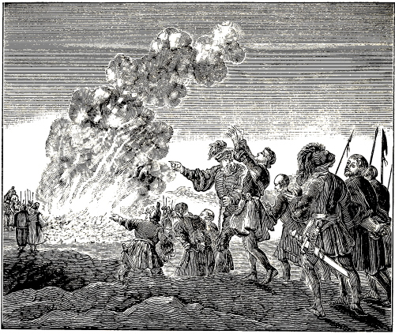
FOURTEEN PERSONS BURNED AT ORLEANS, FRANCE.
“Robert Altisidorensis states of said martyrs of Orleans, that they were of the best or chiefest laymen of Orleans, and that for this reason a council was convened there against them, in which they were unanimously condemned and sentenced, as heretics, to the fire; and that they were thus burned alive.”
This testimony is confirmed by Johannes, a monk of Floriax, who gives a somewhat fuller account of the matter, in his letter to Oliva or Olivarius, abbot of the church of Ansona, saying: “Meanwhile I will inform thee of this heresy (thus he calls the true faith of these people), which was on Innocent’s day, in the city of Orleans; for it is the truth if thou hast heard aught of it. King Robert caused fourteen of the best or most nobly born laymen of said city to be burned alive; who, (O, what a great falsehood!) abominable before God, and hated by heaven and earth, utterly denied the grace of holy baptism (he means infant baptism, for thereupon the grace of salvation was promised to children, which these men denied) as well as the consecration of the body and blood of the Lord, and denied that one could thereby obtain remission of sins, after he had committed a crime.” Masson Annal. Franc., lib. 3, in Hugo and Robert.
Glaber Radulphus (in Hist. Gall., lib. 3, cap. 8), gives a much more circumstantial account of these martyrs, relating not only how this (so called) heresy was discovered, but also how it was brought to Orleans and propagated; which we, in order to be brief, pass by.
He mentions, among others, two of these people by name, namely, Heribert and Lisoius, who were greatly esteemed and beloved by the king and the lords of the realm, as long as their case was not known. Glaber further relates how they were discovered. They sought, at Rouen, to bring a certain priest over to their belief, through some whom they probably had expressly sent to this priest, to expound to him the mystery of their doctrine, and who endeavored to persuade him by saying that very soon all the people would fall over to them.
256
When the priest understood this, he immediately went to Richard, the Count of that city, and told him the whole matter. The latter instantly sent letters by express messengers to the King, informing him of this secret pestilence (as he calls the true faith). King Robert, much grieved at this, without delay convened a council of many bishops, abbots, and other religious persons (thus he calls this bloodthirsty council), and, through them, caused very strict investigations to be made, both as to the authors and the adherents of said heresy. When inquiry was made among the laymen, as to what the belief and faith of each several one was, the aforesaid Heribert and Lisoius immediately discovered themselves, that they differed in their belief from the Roman church, and afterwards others also declared that they adhered to Heribert and Lisoius, and that they could in no wise be drawn away from their faith. Being interrogated more closely, whence and by whom this presumption had originated, they gave this answer: “This is what you have long called a sect, which you now, though late, recognize. But we have waited for a long time, that you as well as all others, of whatever law or order, might come over and unite with this sect; which, we also believe, will yet take place.”
They then immediately presented their belief, undoubtedly after the manner of the Albigenses and Waldenses, as shall be shown hereafter.
When the King and all those present saw that they could not be moved from their belief, he commanded that a very large fire of wood should be kindled not far from the city, in order that perhaps, terrified thereby, they might desist from their belief. But when they were about to be led out to the fire, they cried aloud, saying, that they greatly longed for it, and gave themselves into the hands of those who were to draw them to the fire. They, thirteen in number, were committed to the flames, and all who afterwards were found to be their adherents, were put to death by the same means.
Again, in the records of the parish church of Orleans, called St. Maximus’ church, the time is specified, when this took place. It occurred, it is there stated, publicly at Orleans, A. D. 1022, in the twenty-eighth year of King Robert, on the fifth induction, when the arch-heretic Stephen and his companions were condemned at Orleans, and burnt.
The above citations are taken from the writings of papists; hence, the reader is admonished, to judge charitably with regard to the accusations which these inveterate adversaries have so bitterly cast up against these pious witnesses of Jesus Christ.
257
Note.—We have related above, that said fourteen martyrs have been considered, by the ancients, as the firstlings of the Waldenses; but the papists called them heretics. However, this is not to be wondered at; since, in the course of time, they adopted the practice of calling heretics and the Waldenses by the same name. Of this we will present a few examples. The priest Reinerius wrote a book, which he called, Summa contra Hæreticos, that is, “A Summary against the Heretics.” To this book the Jesuits subsequently gave the title Contra Waldenses, or, “Against the Waldenses;” as if all the errors opposed in said book, were peculiar to the Waldenses, which is as untrue as falsehood itself. Compare Reinerius’ book with A. M., 2d book, fol. 437, col. 4.
Everhard Berthuniensis gave to his book the title, Antiheretisin, which is equivalent to saying Against Heretics, etc.; but the Jesuit Gretserus, when he published said book, called it, Everhardus contra Waldensen; as if Everhard had written only against the Waldenses, notwithstanding only the smallest part militates against them. Nevertheless, it was sought, by this title, to accuse the poor Waldenses of all the heresies mentioned in that book.
Afterwards, one Ermegard wrote a book against the grossly erring spirits who maintained in their confession, that the world and all visible things were not created by God, but (O what an awful falsehood!) by Satan; which belief is imputed, by most of the ancient writers, to the Manicheans; yet, the last mentioned falsifier, namely, Gretserus, has not hesitated to head such a page of said book, Ermegard against the Waldenses; though the author specially refuted the Manicheans, with whom the Waldenses had nothing in common. See the abovementioned authors and books, and also the comments of Balthasar Lydius on the disputations of said persons. Hence it follows from the foregoing, that it need not seem strange to the reader, that the papists called the orthodox Waldenses, or, at least, such as opposed the Roman doctrine, as well as the priests and monks, by the odious name of Manicheans or heretics, as was frequently the case, and shall presently be shown, with regard to the good martyrs, who, through the malice of the papists, were hanged at Goslar.
It grieves us to our very soul, that in regard to the testimonies of the holy martyrs, we have to resort to the writings of papists, their most inveterate enemies, as well as to other writers who did not hold the same faith with us, and who, consequently, made the faithful records of the pious witnesses of Jesus our Savior incline to their opinion, and explained them according to their own views. This mischief has met us before, and now again falls to our lot; still, we hope that the intelligent and attentive reader will distinguish light from darkness, and judge impartially, and as a Christian.
Herman Contractus, Count of Veringen, writes at the close of his life, hardly one or two years before his death, of certain persons at Goslar, who were accused by their adversaries, the Romanists, of being Manicheans; for at that time no other or better name was known for the true Christians, who were opposed to the Roman church, notwithstanding they had nothing at all in common with the Manicheans; and thus this Herman Contractus, a strong maintainer of the papal religion, also called these persons, after Roman fashion, Manicheans, saying: “The Emperor Henry III. (some say II.), A. D. 1052, celebrated, at Goslar, the Lord’s birthday, and there caused some heretics (thus he calls the true Christians), who, among other perverse opinions according to the sect of the Manicheans, abhor the eating of all kinds of meat (which he unjustly imputes to these people, as shall be shown), and who were condemned, by common consent (of the bishops or lords of the realm), as heretics; to be hanged on the gallows, in order that the contagion should not spread further and contaminate many others. Herm. Contr. Chron., A. D. 1052.
But they cared not so much (A. Mellinus writes), about the eating of flesh, as about many other points of doctrine, which Herman Contractus passes over silently; namely, such as Radulph Ardens makes mention of, relating that at the close of said century there were some (so-called) Manicheans at Aix la Chapelle in France. He there says (Homil. Dominical 8, post Trinit.): “Such are at the present day the Manichean heretics, who have polluted our country of Aix la Chapelle with their heresy; who pretend to lead a true apostolical life, saying that they do not lie; that they do not swear, and, under the cloak of abstemiousness, they reject the eating of flesh. They also maintain that the sacrament of the altar is nothing but mere bread; they deny baptism (namely, infant baptism, for this was the point in question) and say that none can be saved but those who are baptized by their hands.”
It is true that said papistic writer charges them with several other things as belonging to their doctrines, of which we deem it unnecessary to speak here, since Mellinus to whom we referred above, answers all these for us, saying (2d book, fol. 437): “All these errors, except that of baptism and of the mass or transubstantiation (that is, against the mass and transubstantiation), are unjustly imputed to them by these papistic authors, as Thuan, writing of the Waldenses, himself confesses (Hist. sui temp. A. D. 1550). He then quotes from Thuan the confession of these people, in which no errors at all, much less Manichean heresies, are found; but which contains chiefly such things as are publicly taught by us, at the present day, and maintained with the power and authority of the holy and divine Scriptures, against the superstitions of popery.
Having quoted the confession of these people, from Thuan, Mellinus says: “This is certainly a square and unfeigned confession of Thuan, which alone is sufficient to refute all the preceding slanders 258 (namely, which had been flung against the holy martyrs).”
Thus, even according to the testimony of the papist Thuan, and the statement of the Calvinistic Mellinus, the abovementioned martyrs were not guilty of Manichean errors; they only spoke against the Roman church, principally in the matter of baptism (that is, infant baptism) and in regard to the mass or transubstantiation; hence, they may be reckoned among the true witnesses of Jesus Christ, who testified to their living faith, not only with the mouth, but also with their blood, yea, with their death; and whom the Lord will hereafter, in the resurrection of the just, reward and crown, according to his promise. Rev. 2:10.
Note.—We here place one papist against another: Thuan against Radulph. In the meantime, we are induced to receive the best testimony concerning said martyrs from these two differing writers; since they both had no other purpose than to speak to the detriment of said people. Thuan says: “Their points of doctrine are said to be these: That the Roman church has forsaken the true Christian faith; that she is the Babylonian whore, and the dead tree which Christ cursed and commanded to be cut down; that therefore no obedience is to be rendered to the Pope and the Bishops who consent to his errors; that Monachism is a veritable sink of all the corruption of the church, and an infernal pool; that all monastic vows are vain and unavailing, and tend only to lasciviousness; that the orders of the priesthood are marks of the great beast, of which mention is made in the Apocalypse; that purgatory, the mass, church consecration, the worship of saints, masses for the dead, etc., are genuine inventions and institutions of Satan. These, says the writer, are the principal and certain articles of their doctrine. The others, concerning marriage (that they deemed it evil), the resurrection (that they denied it), the state of the soul after death (that they spoke improperly of it), and concerning meats (that they rejected all eating of flesh), are unjustly imputed to them. Thuan in Hist. de Waldens. Temp., A. D. 1550, compared with A. Mell., 2d book, fol. 437, col. 3.
We have shown this the more circumstantially, to demonstrate the innocence of said martyrs, and that their doctrinal points were not Manichean heresies, but strictures upon the Roman church, which stirred up the animosity of the papists, so that, as it seems, they vented the spleen of their manifold accusations against said people.
A. D. 1067, there was a godfearing man, whose name was Henry, and whom the Romish historian calls a stranger, perhaps because he was obliged to live secretly or as a stranger among the Romanists. It is stated of him, that he preached the Gospel of Christ in the uttermost parts of Sweden, and that he was apprehended for this cause and beheaded for the name of Christ.
Another pious Christian, named Alfuard, after living for a long time secretly, yet leading a pure and holy life among the Normans, could not thus even in secret remain Christ’s own. Because he sought to protect, or to do good to, his enemy, he was slain by his friends, or those at least who ought to have been his friends. Adam., in Histor. Sued., 1067, compared with Abr. Mell., fol. 384, col. 3.
The records of these two martyrs, Henry and Alfuard, are very brief, because the writer, as he states, would neither add to, nor take from, the truth of the matter, but wished to record it just as it was stated to him, which is an evidence of the verity of said matter. Therefore we also did not feel at liberty to extend the relation of the same, or to add, for amplification, the opinions of other authors. However, this is not necessary, since, in said account, all that is needful for the cognizance of said martyrs, is briefly, yet sufficiently, shown. For, of Henry it is stated that he preached the Gospel of Christ (not papal traditions), and that he was apprehended on this account. Of Alfuard the author writes, that he lived for a long time secretly, though leading a pure and holy life, among the Normans; also, that he could no longer secretly remain Christ’s own; understand, not the Pope’s, or the so-called mother, the Roman church’s own, but Christ’s own. More might be added, but for the well-disposed we deem this sufficient.
In our account of holy baptism for the year 1060, we made mention of Bruno, Bishop of Angiers, and Berengarius, his deacon, and showed, according to the accounts of different writers, that they, in opposition to the common belief of popery, denied infant baptism and transubstantiation, with all that pertains to it, as has been shown in said place.
Of Bruno we find no further account, only that when he was examined he answered as has been related; and that his doctrine, together with that of Berengarius, was condemned by Pope Leo IX., in two different synods, the one of which was held at Rome, and the other at Versailles. But what further happened to him after said papal condemnation, is not mentioned by the ancients, or, at least, has not come to our knowledge.
But of Berengarius it is stated, that besides the aforementioned two condemnations by Pope Leo 259 the Ninth, which he suffered together with Bruno, he was subjected to three examinations and as many condemnations, in three successive Synods, once at Tours, and twice at Rome. But to our sincere regret we cannot omit mentioning that in the last three examinations, either from fear of death or for some other reason, he did not acquit himself altogether manfully or in a Christianlike manner; inasmuch as in each examination, if what the ancients have written concerning it is correct, he denied his belief before men; though after each denial, upon regaining his freedom, constrained in his conscience, he reavowed the same.
His denial, from whatever cause it may have proceeded, was a fault of such magnitude that it could not be tolerated even in an ordinary Christian, much less in a martyr, unless it be that the name of a good Christian or martyr be withheld from him. However, when, against this, there is taken into consideration, the heartfelt sorrow and grief which he manifested every time, and that he again taught the people as before, and this, as is stated by many, to the end of his life; the name of a Christian, yea, even of a martyr (though in weakness), on account of the manifold troubles he met with because of his belief, may still be accorded him.
The holy apostle Peter, after his threefold denial of Christ, though this was a dreadful sin, was not rejected by Christ, when he manifested sincere repentance; seeing the Lord afterwards commanded him to feed his lambs and sheep, yea, foretold him that he should be bound, for his name’s sake, and glorify God by his death, that is, that he should have to die as a martyr, which also happened to him in the reign of Nero, as is shown in the first century, A. D. 69.
Berengarius lived to the age of about ninety years, according to the papist Baronius, who says that he remained separated from the Roman church,153 as a schismatic, to the end of his life, though Bellarmine thinks differently, which we leave to him, till better proof than the opinion of a monk of Malmsbury, from whom, it seems, Bellarmine has derived his opinion, can be furnished. Compare Bellarm., in Chron., A. D. 1058, with Hist. Angl., lib. 3, touching the opinion of the monk of Malmsbury.
As regards the time of his death, it is fixed A. D. 1088, on the day of Epiphany. The last words which he is said to have uttered, are adduced by a certain bishop of Cenomana, called Hildebert, in the third book of the English History, where he says that Berengarius, sighing deeply, said: “To-day, on this day of Epiphany, my Lord Jesus Christ will appear to me, as I hope unto glory, because of my repentance, or, as I fear, on account of other things unto punishment.” A. Mell., fol. 395, col. 1.
These words, it seems, are misinterpreted by the monk of Malmsbury, as though Berengarius, in speaking of his penitence and good hope, had intended to imply that, in the aforesaid articles, he had returned to the Roman church; and that, in mentioning his fear of punishment, he had reference to the punishment of which he might have stood in fear, because of the views which he had maintained against the Pope and the Roman church. But, besides that we see no clear proof in the opinion of said monk, this utterance of Berengarius can very fitly be taken in another and better sense, namely, thus: That Berengarius, when he spoke of his repentance and good hope in the appearance of Jesus Christ, was confident, that the merciful Jesus, his beloved Savior, because he had now repented, and was sorry for his denial, to which the papists had compelled him, would graciously forgive his sins; since the Lord, when his disciple Peter had fallen into a like, or still greater sin of denial, forgave him when he repented of it. Yet, on the other hand, that he was not entirely without fear, because he had committed said denial against his conscience, and because the Lord is as just as he is merciful, especially in punishing sins that are committed against the conscience, or with premeditation.
Nevertheless, from his words (if they have been quoted correctly), it is evident, that his hope was greater than his fear, since he speaks first of the former, as well as of his sorrow or repentance, yea, of the glory of the blessed; for what else could he mean to indicate, when he said: “To-day, on this day . . . my Lord Jesus Christ will appear to me, as I hope unto glory, because of my repentance?” As to the words that follow, they seem to have been added from Christian carefulness and humility, since no living man could stand before the justice of God, if he were not merciful; much less one who had notably sinned against his most divine and holy majesty; which agrees with Job 9:2; Ps. 130:3; and 143:2.
In the mean time, men had very different views respecting the decease of Berengarius; for some, namely, those who were rigid Romanists and papists, had, it seems, an evil opinion of him; hence they knew nothing good to say of him, as appears from the account of Papirius Massonius, who, in his history of France, for the year 1088, says: “In this year, on the day of Epiphany . . . that corrupt arch-heretic, Berengarius, who so often deceived the (Roman) church by feigning to repent of his views, departed this life.” Annal. Franc., lib. 3.
But others, who were his good friends, had a better opinion of him. Among these, the above mentioned Hildebert was not the least; he, as some have observed, composed a very beautiful epitaph upon his death, the last words of which were as follows: “He (Berengarius) was truly a wise man, and, in every respect, perfectly blessed; who enriched heaven with his soul, and the earth with his body. God grant, that after my death I may live and rest with him, and that my lot or inheritance may be no better than his.” See the above cited book, compared with Abr. Mell., fol. 395, col. 1, 2.
We will close here, and commit his cause to God. Meanwhile, the church of God, or, at least, the little flock of believers, sustained a great loss in his death. Hence, we may say, as was lamentingly said by one of old: “The day when Berengarius died was an evil day.” Sam. Veltius., Geslacht-register, page 128.
260
It is stated that after the death of Berengarius, his doctrine (spoken of above) in reference to baptism and the Supper, against the belief of the Roman church, gained much favor among his followers, who were called Berengarians; so that England, France, Italy, Spain, Germany, and even part of the Netherlands, became filled with it. A certain writer says: “They did not adhere to Berengarius as to a reed which is swayed by the wind; and their faith did not rest on men, however pious or godly these might have been, but upon the pure word of God, which abides forever.”
Hence, Pope Urban II., A. D. 1095, by constraint as it were, convened a great council against them, in the city of Piacenza, in Italy; to which there came many bishops from Italy, Burgundy, France, Germany, Bavaria, and other countries, so that there was no church large enough to hold all the people, but they had to meet without the city, in an open field.
Bertoleus Constantiensis says, that in this council a canon or rule was established, by which the views of Berengarius, which were called a heresy, were again, as had repeatedly been done previously, anathematized or cursed, but the views of the Roman church, confirmed as a precious matter. Compare Bertho. Constant., in Chron., A. D. 1095. Baron. Annal., T. 11, with A. Mell., fol. 395, col. 2, 3.
Hence it came, that a great persecution and dire distress arose, particularly about A. D. 1100, over said Berengarians, so that, at first, some were exiled here and there, from the Roman dominion, some expelled, and some were punished with death, yea, with death by fire, as shall appear more fully in the account of the martyrs in the following century. In the mean time, see A. M. fol. 395, col. 3, from Thuan., Pref. Also, in Hist. Henr. 4.
[The last year of the preceding century, namely, A. D. 1100, is introduced here by way of introduction to the following century; in which it is shown, that in and shortly after that time there existed the Waldenses and Albigeois, of whom we shall speak more fully about the middle of this century.
For the year 1105, some persons are introduced, who opposed infant baptism, transubstantiation, and the Roman church; also some, for the year 1119, who condemned the mass.
Certain people, who held the same views as were afterwards held in the time of Peter Waldus. Their views against the Pope, infant baptism, the mass, image worship, secular power of the church, persecution, etc.
Rupert Tuiciensis gives an excellent exposition of the baptism of the ancients; he teaches, that, in order to be baptized, one must first believe, and confess the faith; that many who are baptized with water, are not renewed inwardly, because their heart is not right, though they make confession with the mouth; that the truly baptized, from servants of sin, become children of God; that the word of God was preached to the Christian youth throughout the whole year to prepare them for baptism. What a certain pedobaptist, D. J. V., has written on said words of Rupertus; what P. J. Twisck and H. Montanus have noted from the writings of Rupert; that even some learned men of the Roman church accorded with Rupert. Johannes Bohemius and Ludovicus Vives, and their belief against the Roman church.
Many Christians at Arles, Narbonne, Toulouse, in Gascony, and other parts of France, called Petrobrusians; they, according to Peter, abbot of Cluny, reproved the abuses of the Roman church.
Of Arnald of Brescia, and Peter Abelard, who also opposed infant baptism.
Henricus Petri Tholossanus opposes fifteen articles to the papists, which are all fully stated.
Some peasants in France, called Apostolics, also teach against infant baptism, purgatory, praying for the dead, invocation of the saints.
The Albigenses, from the province Albi, and the Waldenses, the followers of Peter Waldus, now arise; the conversion of Peter Waldus, and how he, having separated from the Roman church, gathered unto himself much people, to whom he taught the doctrine of the holy Gospel, and who became his followers.
Of the dispersion and the different names of the Waldenses; that there were three divisions of them, one of which agreed in all articles of religion with the Anabaptists; that said people were called Anabaptists; that they rejected infant baptism; their views with regard to the office of secular authority, against war, the swearing of oaths, and against nearly all articles of the Roman church; full statement of the confession of faith of the Waldenses, in fourteen articles; another confession of theirs, in twelve articles, made to those of Merindol and Cabriere; some precepts, which they left to their church; some testimonies by ancient writers, respecting the virtuous life of the Waldenses; how they have been unjustly accused by their inquisitors and accusers; the time in which the Waldenses lived and flourished, namely, more than three hundred years, in France, as well as in Italy; the places where they sojourned; that almost a thousand towns were filled with them. Conclusion.]
As a fire of small coals, when water is poured over it, though emitting a spark occasionally, yet smoulders for the most part, stifled as it were, by 261 the smoke, but finally breaks forth with great power, so that the flame, leaping above the smoke, can no longer be extinguished with water, or kept down; so it was, in the twelfth century with the fire of the Gospel, and particularly as regards the article of baptism upon faith. Over this, the Pope of Rome, with his cardinals, bishops, priests, and monks, had thus poured, in the preceding century, the water of so many false doctrines, that scarcely a few sparks could rise before it was instantly sought to extinguish them, till finally through the contentions and dissensions of the Romish so-called clergy, each striving to rise above the other, the fire of the Gospel, as having been, it was supposed, sufficiently quenched, was left, in some measure unmolested; in consequence of which it began to rekindle and burn with such power that its flames, having surmounted the smoke of papal superstitions, could not be extinguished by the water of persecution, suffering, or death; yea, the severest persecutions and the greatest torments were, at that time, like oil in the fire.
This shall be shown in the proper place; but first we will speak of the persons who then opposed infant baptism and other Roman superstitions, and, in order to do this systematically, we will begin thus:
For A. D. 1100, the last year of the eleventh, or the beginning of the twelfth century, P. J. Twisck gives this account: “It appears from writers, that at this time and shortly after, there existed the Waldenses and the Albigeois, who opposed the papal errors, and infant baptism, and had to suffer much misery and persecution from the tyrants. Chron., page 423, col. 1. However, in the proper place we shall speak more fully of it.
A. D. 1105.—This is the year in which mention is made by writers of certain persons who were accused of having no good opinion of infant baptism as well as of the transubstantiation of the bread and wine into the body and blood of Christ; and of reviling the Roman church. P. J. Twisck, page 428, col. 2, from Merul., fol. 726; also, H. Mont., p. 83.
We briefly mention this here, simply to show the belief of those people; however, when we come to the account of the martyrs of this time, we shall show how many there were of these persons, what befell them on account of their faith, and where, and through whom this happened.
A. D. 1119.—It is recorded that at this time there were certain people, who, under the name of religion, besides other things of the Roman church, also reviled infant baptism and the mass. J. Mehrn., Bapt. Hist., page 685, from Joh. de Oppido, inquisit. Tholoss., in Chron. Also, A. Mell., fol. 422, col. 1.
A. D. 1120.—Jean Paul Perrin Lionnois makes mention, in his History of the Waldenses and Albigenses, 3d part, 3d book, cap. 1, pages 163, 164, of a certain manuscript dated A. D. 1120, containing certain sermons of such people as were afterwards, in the time of Peter Waldus, called Waldenses and Albigenses. Besides said sermons, there is also a tract against the Pope of Rome, who is there called antichrist.
But above all it is worthy of note, that among the marks ascribed there to antichrist, infant baptism upon a dead faith is also enumerated, and is called the third work of antichrist. Then there are further denounced, the mass, image worship, and relics, or the bones of the saints.
“The sixth work of antichrist,” these people said, “consists in this, that he tolerates open sins, and does not excommunicate or separate the impenitent.”
“The seventh work of antichrist consists in this, that he does not govern or protect his unity through the Holy Spirit, but by secular power, uniting the latter with spiritual things, for his aid.”
“The eighth work of antichrist is, that he persecutes the members of the church of Christ, searches out, apprehends and kills them.”
Thus it is quite evident, that in these early times, there were already very many who not only confessed the purity of the true faith, but even attacked, with spiritual weapons from God’s holy word, the Roman see, notwithstanding, as appears from the eighth work of antichrist, they were persecuted, searched out, apprehended and killed; of which we shall speak more fully in the proper place.
A. D. 1124.—At this time, appeared Rupert Tuiciensis with many writings. He did not hesitate to point out the decay, and the manifold superstitions of the Roman church, presenting at the same time, the practice of the first Christian and the apostolical church; by which course he gave the Romanists of his time sufficient cause to be ashamed and convinced, especially with regard to the abuse of baptism, which originally had been administered upon faith, but was now given by them to infants. All this we hope to show in proper order, from the writings he has left.
First of all he establishes, that in order to be truly baptized, faith and confession of the same are required.
Jac. Mehrning, Bapt. Hist., page 659. Rupert (lib. 13, on John 18) says: “Every one that is to be baptized, must first believe and confess, and not until then be baptized, upon (or into) the death of Christ, and be buried with him by baptism in order to arise.”
Who does not see that Rupert here censures and refutes the practice of those who at his time, namely, among the Roman church, baptized infants, without regard to faith or confession of the same, as well as without dying unto, and burying of, former sins, much less, with arising unto a new life, since these things cannot exist in infants; for why should he have connected faith, confession of it, and baptism, if he had not considered them as belonging together? Why should he say, that every one that is to be baptized, must first believe and confess? which is just what Christ taught, Mark 16:16, and Philip required of the Ethiopian, Acts 8:37.
Thus it is also with what he says of being baptized upon, or into, the death of Christ, and of being buried with him by baptism, in order to arise, etc.; for this the apostle applies to those who, having been baptized upon their faith, had become members of the church at Rome, Rom. 6:3,4, whose 262 faith was spoken of throughout the whole world, Rom. 1:8.
Page 657. Rupert (lib. 11, on John 15) says: “They (the teachers) can visibly administer water baptism, but they cannot give the Holy Spirit, in whom, nevertheless, all the virtue of baptism consists.”
These are words that overthrow the authority and power of the Romish priests, who, when baptizing infants, were wont to pretend that they did not only wet them with water, but that they also expelled Satan from them, and imparted the Holy Ghost, which they supposed to bring about by certain exorcisms and blessings; but this is opposed by Rupert, with the aforementioned words.
Same page. Rupert (lib. 3, on John 2) says: “There are many who are indeed baptized with water, but are nevertheless not renewed in the spirit of their mind, because they do not put off the works of the old man, though they are baptized in the water, and confess that they put on the new man.”
Here the reason is shown, why many, though baptized with water, are not renewed in the spirit of their mind; however, the blame is charged upon the candidates themselves, and not upon the teachers, who had not blessed them; but it is because those who were baptized, did not themselves, though it was their duty, put off the works of the old man. For, God’s wisdom (that is, the Spirit of God) does not enter into a malicious soul; nor does it dwell in the body that is subject unto sin. Sap. 1:4.
It must be noted, moreover, that when he speaks here of being baptized in the water, of confessing something, and of putting on the new man, and that all this is said of the candidates of his time, it is clearly evident, that then, in the church of which he speaks, adult and intelligent persons were baptized, who, confessing their former sins, could put on the new man, that is, a sinless and godly life.
Page 662, num. 17. Rupert (lib. 2, on John 1) says: “To be baptized with the Holy Ghost, is to receive the gift of the Holy Ghost, who does not [only] point out sin, but helps against sin, making us, from servants of sin, children of God.” Again: “He baptizes us with fire, when he, through the Holy Spirit, makes us strong in love, constant in faith, shining in knowledge, and burning with good zeal.”
He has respect here to the promise which John gave to those who came to his baptism, saying: “He (Christ) shall baptize you with the Holy Ghost, and with fire,” Matt. 3:11; John 1:33; which, as everyone knows, is a promise given not to infants, but to adult persons; hence Rupert also has such in view here.
This appears still more clearly, when he says of said candidates, that they, receiving the gift of the Holy Ghost, were made, from servants of sin, children of God; for no one can in truth be called a servant of sin, who has not first served sin; and no one can be made a child of God, who has not first been a child of the world; for what one becomes or will become, he has not been before.
With what he says further, of being “strong in love, constant in faith, shining in knowledge, and burning with good zeal,” he certainly indicates that he is speaking of such persons as, having attained to the use of their reason, have knowledge and ability for true love, faith in God, the knowledge of Jesus Christ, and a good zeal for the observance of the commandments of the Lord; for by such, and none else, can these things be undertaken, and, with God’s blessing, carried out.
In another place Rupert relates what customarily took place as regards the candidates, baptism itself, and some of the circumstances pertaining to it. He says: “All the youth of the church, whom they had sought to win to God, during the year, through the preaching of the word, gave in their names, on the fourth day of the week in lent, when Easter approached; and when each of them, in the subsequent days till Easter, heard the rule of faith, in which he had been begotten and had grown up, he finally died (that is, he put to death sin), and rose with Christ (that is, to a new life), confessing the faith with full confidence, at baptism.” Bapt. Hist., page 706, D. Vicecom., lib. 2, cap. 14, from Rupert, lib. 4, cap. 18.
Upon this, a certain pedobaptist, D. J. V. (same page), once said: “But the Christian fear of God pleases us better, since the baptism of the ancients, and with it the ancient custom (namely, of baptizing upon faith), are abolished, and the believers now give to their children their names, at baptism, before the eighth day after their birth; for this agrees best with the practice of the Jews, who gave to their children their names on the eighth day of circumcision, and with the custom of the heathen, who did the like to their children, on the eighth, ninth, or tenth day after their birth.”
This is certainly plain language. He says that the baptism of the ancients (that is, the baptism according to the institution of Christ, Mark 16:16), and with it also the ancient custom (namely, of baptizing upon faith), are abolished (that is, by those who have introduced infant baptism), and he praises this as a Christian fear of God, saying, that it pleases him better. How would any one dare speak with greater presumption and shamelessness of the commandments of Jesus Christ? It grieves me to say more about this and I will leave it, adding, however, the remarks of Jacob Mehrning in referring to these words: “A fine arrangement this! Christians are no longer to conform to the baptismal ordinance of Christ, but Christ is to accommodate himself with his baptism, to the practice of the Jews and the custom of the heathen. Fie, Satan! how brazenly dost thou here disclose thy cloven foot!”
P. J. Twisck and H. Montanus quote the following words from the writings of Rupert: “Formerly it was customary to renew the children, throughout the year, with the word of God, in order to present to them, on the approach of Easter, the faith, which they had to confess at baptism; but, that Christianity might grow, and the net of the Gospel become full, it pleased the church (that is, the Roman church), because of the danger of temporal death, that the children of Christians should be baptized immediately.” Chron., page 443, col. 2, Nietigh., 263 page 83, from Rupert, lib. 4, de Divinis Officies, cap. 18.
“With Rupert,” writes Twisck, “several learned men of the Roman church in this last century agree, as is adduced from their books. John Bohemius says: ‘Formerly it was customary to administer baptism only to those who had previously been instructed in the faith, and who were examined seven times in the weeks preceding Easter and Whitsuntide; but when baptism was afterwards deemed essential to eternal life, it was ordained that new-born infants should be baptized, and that sponsors should be provided, who, in their stead, confessed the faith, and renounced Satan.’ ” Same page, from J. Boh., lib. 2, de Gent. Morib., Loop der Werelt, page 41.
“This is confirmed by Ludovicus Vives, who says: ‘No one was brought to baptism among us, until he had reached his years, and when he knew what the mystic water signified, and himself desired to be washed with it.’ ” Same page, from Lud. Viv., in Annat. Civit. dei Augustini, lib. 1, cap. 27, also, H. Mont., page 88.
But, to return to Rupert, Twisck says, he wrote not only on baptism, but also composed many other books, against the papal views, of the holy Scriptures, of justification, of two sacraments, of the Supper under both forms, and of the spiritual presence of Christ. He also says of antichrist, that he will send his messengers and preachers throughout the whole world; he will first convert (that is, turn to himself) and overcome the Kings and princes, and then, through their instrumentality, will raise persecution over all the nations who will sincerely confess Christ. Chron., page 444, col. 1, from Rupert, in Apoc., lib. 3, cap. 13, Johan. Fobri., fol. 158, Anth. Jac., fol. 113, John Munst., fol. 140.
A. D. 1126.—At this time, there were many Christians at Arles, Narbonne, Toulouse, in Gascony, and at different other places in France, who were afterwards called Petrobrusians, after one Peter Bruis,154 their most prominent teacher, and who also neither sanctioned nor practiced infant baptism. This is attested by Peter, abbot of Cluny, who says, in the beginning of his tract against the Petrobrusians: “They deny that infants who have not yet attained the years of understanding, can be saved by the baptism of Christ; and say that the faith of another cannot help those who cannot use their own faith; for, according to their view, not the faith of another, but each one’s own faith saves with baptism, because the Lord says: ‘He that believeth and is baptized, shall be saved; but he that believeth not, shall be damned.’ ” Bapt. Hist., page 598, H. Mont. Nietigh., page 83, from Biblioth. Patr. Tom. 12, part 2, fol. 206. Also, Baron., A. D. 1126.
The foregoing is so clearly opposed to infant baptism and in favor of baptism upon faith, that it is unnecessary to add a single word of explanation; hence, we will let the matter rest, and proceed to others who maintained and confirmed the same belief, both in and after those times.
Note.—A. D. 1128. Arnulph, Bishop of Lyons, an excellent preacher of the Christian doctrine, was secretly murdered at this time, through craftiness, by the clergy, because he reproved too severely their luxuriousness, lewdness and gross errors. He presented to them, for their imitation, Christ’s poverty, and his most holy life and walk. P. J. Twisck, page 446, col. 1, Chron. Platinæ, fol. 273, Histor. Andr., fol. 57; Histor. Georg., lib. 5.
A. D. 1131.—About this time, also Hildebert, Bishop of Mayence, wrote and preached vehemently against the power and authority of the Pope, whom he did not hesitate to charge with tyranny; declaring also, that the city of Rome had been made by him the seat of all mischief and wickedness, because the fear of God and love were banished from it. For this he was imprisoned at Rome, and treated very cruelly. P. J. Twisck, Chron., page 448, col. 2, and page 449, col. 1, from Paul Merul. Tytthres., fol. 746.
A. D. 1139.—A little before or after this time, as Baronius says, Arnald, a lector, at Brescia, in Italy, taught against infant baptism; as did also Peter Abelard, of whom Arnald had obtained his doctrine, in France. Concerning this much might be related here, but, as we afterwards, in the proper place, shall have to speak of the martyrdom of these persons, we will say no more of this here, deeming the statement that they opposed infant baptism sufficient for the present. As regards their doctrine, as well as what happened to them, see Bapt. Hist., page 598, H. Mont. Nietigh., page 84, from Baron., A. D. 1139, Num. 3, also A. D. 1145, Num. 3, and A. D. 1147, Num. 6.
Note.—“In the year 1139 or 1140,” writes P. J. Twisck, “there was in Italy an honorable, godly, and learned man, simple in his life, called Arnold of Brescia, who dared teach and preach mightily against the power and authority of the Pope and against the monks and priests; on account of which he was excommunicated by Innocent, the Pope of Rome, and greatly persecuted. Arnold, therefore, fled into Switzerland, and remained at Zurich, exposing all the abominations of the papists.” Chron., page 466, col. 2, from Hist. Georg., lib. 5. Chron. Car., lib. 4. Leonh., lib. 5. Zegh., fol. 292. Hist. Eccl. Casp. Hedio., 3d part, cap. 11, D. Andr. Hond., lib. 2, cap. 26. Seb. Franck,. fol. 26, 39. Merul. Tytt., fol. 750, 753, 757, 760, 761, 853. Jan. Cresp., fol. 281. Of his death we shall speak in the history of the martyrs, for the year 1145.
A. D. 1147.—Henricus Petri Tholossanus, that is, Henry of Toulouse, at this time and afterwards, vigorously attacked infant baptism, with the spiritual weapons of divine truth; which he had commenced already in the time of Peter Bruis, as was mentioned for the year 1126; and he did not cease to pursue it until, and after the death of said Peter Bruis; which matter is described by Jacob Mehrning, Bapt. Hist., page 664 as follows: “Now Peter de Bruis having been condemned and burnt, Henry strenuously maintained his doctrine; for he was a co-worker with 264 Peter, and had not a few followers of his doctrine.” Peter Cluniacensis writes, that among other things, he taught:
1. That children may not be baptized or saved through the faith of another; but they must be baptized and saved through their own faith; for baptism without individual faith, saves no one.
2. That individual faith without baptism is also useless.
3. That children that have not yet reached the years of understanding, cannot be saved by the baptism of Christ.
4. That those who have been baptized in infancy, must, when they become older, be re-baptized, for this, he says, is not re-baptizing, but, much rather, baptizing aright.
5. That the body and blood of Christ are not offered up in the public mass; and that this sacrifice has no virtue to the salvation of souls. Again, that the altars ought to be cast down or broken in pieces.
6. That the doctrine of the forms and of the transubstantiation of the sacrament is false.
7. That the Supper ought not to be administered any more (as their accusers charged them with maintaining), it having been given once by Christ to the apostles.
8. That the sacrifice of the mass, prayer, alms, and such like, works of the living for the dead, are folly, wickedness, and of no avail.
9. That monks and priests should marry, rather than commit fornication, and live continually in lewdness.
10. That crucifixes should not be honored or worshiped; and the many crosses, which tend to superstition, ought much rather to be abolished than retained.
11. That men ought not to build so many costly churches, which are frequently not used for hearing the word of God; and those that are built should be demolished.
12. That by the bawling church-singing of the priests and monks God is mocked, and not reconciled.
13. That flesh may be eaten on Sunday and other days.
14. That they do not receive all the books of the Old and the New Testaments, namely those which are called apocryphal; but the Gospel only.
15. That they believe only the holy Scriptures, but do not place the writings of the fathers on an equality with them.
This doctrine, and these articles, Peter Cluniacensus, who quoted them from the writings of Henry, undertook to refute; but the Centuriatores Magdeburgenses accept them for the most part, and refute Peter. See concerning this, Bapt. Hist., pp. 665, 666.
Said articles certainly show of what faith and persuasion Henry was, and that he did not continue to adhere to monachism, although he had first embraced it; for, to be a monk and to make such a profession, are incompatible with each other. On this account he had to suffer much ignominy and calumny from Bernhard, who was regarded as a saint among the Romanists. The latter not only called him an ignorant fellow and an apostate from the Roman church, but also charged him with many unbecoming, and ungodly things, though by other writers, of greater note and credibility, he has been exempted, and acquitted of them.
We will close our remarks concerning Henry, and give, if necessary, a fuller account of the matter, when we shall speak of his sufferings for the truth; however, in reference to this, we refer the reader briefly, to Bapt. Hist., pages 685, 686, from A. M., fol. 423, 424, ex Petr. Cluniac. Duae, epist. 141 and 142, ad Comit. Tholoss. and Tholossanos, idem, Serm., 65, 66, super. Cant. vitae Bernh., cap. 3. Cent. Magd. XII., cap. 5, and Illyr. Cat. Test. Verit., lib. 15, tit. Petri de Bruis, etc.
A. D. 1155.—This is the time in which, according to Nicholas Sander (but according to Cesar Baronius, A. D. 1147), there were in the vicinity of Toulouse, in France, certain humble people, who, by other writers, are called peasants, but who properly were termed Apostolics, that is, followers of the apostles. It is stated of them, that they would hold only to the apostolic writings, and that they therefore condemned infant baptism, as well as purgatory, praying for the dead, the invocation of the saints, etc.
More might be related here, but as some of them have attained to the martyrs’ crown, and we consequently shall afterwards have to speak more fully with regard to them, we will leave the matter until then, being satisfied, meanwhile, that they professed this good profession, and rejected the evil. See concerning this, P. J. Twisck, Chron., page 469, col. 2, from Nicol. Sand., Hist. der Mart. Doops-ges., A. 8, D. Anth. Jac., fol. 118; also Bapt. Hist., page 599. H. Montan. Niehtigh., page 84, etc.
A. D. 1160.—This is the year which, of old, was noted with joy by many pious and well-meaning Christians, who detested popery; and in which, even to this day, not a few of the godfearing rejoice. For then, and especially, shortly after, popery and her superstitions received the severest blow of which we read in history; and the divine truth, which, almost to this very time, seemed, in many respects, to be trampled under foot most atrociously, now joyfully raised her head and triumphed. The doctrine against infant baptism, the swearing of oaths, war, in short, against nearly all the evil practices and perverted worship of the Roman church, of which one formerly dared speak only with fear and trembling, and that often only in private, was now boldly, yea, frequently, publicly preached and defended, and, notwithstanding the threats of the Pope of Rome, maintained. This was first commenced chiefly by Peter Waldo at Lyons, in France, and carried out by his successors; however, in order to treat the matter systematically, we will begin with the conversion of Peter Waldo, and then go on to his successors.
M. Matthias Flaccius Illyricus (in his Catalog. Tesitum Veritatis, between fol. 263, and fol. 277, 265 according to Jac. Mehrning in Bapt. Hist., page 601), writes: “About A. D. 1160, several of the principal citizens of Lyons were together, conversing on various matters, as is customary in the summer season, in Italy and France. As they were thus standing together, one of them suddenly fell down to the ground and expired, before their eyes.
“This awful occurrence, an example of the mortality of man, and of the divine wrath, terrified one of their number, namely, Peter Waldo, a man who was very wealthy. He began to reflect and resolved (Impelled, no doubt, by the Holy Spirit), to repent, amend his life, and be more diligent in the fear of God than he had hitherto been. He therefore began to distribute alms liberally, and at convenient seasons, to put his household and others who came to him, in mind of the good, and to admonish them to repentance and true godliness.
“When he had thus for some time, done much good to the poor, and was becoming the longer the more zealous to learn, as well as to teach others, the people also came to him more and more; he therefore began to present to them, not his own ideas, but the holy Scriptures, and to expound and explain the same in the common French language.
“But the bishop and the prelates, who, as Christ says, have the key of heaven, and yet do not go in themselves, nor will suffer others to enter, were greatly vexed that this (in their opinion) unlearned and common man, should bring the holy Scriptures into the vernacular language, and expound the same, and that already great numbers came into his house, whom he instructed and admonished.
“However, he was greatly in earnest, to promote both the honor of God and the salvation of men; and the people were so eager for the word of God, which, in the churches, was not preached pure, nor publicly, that they could not be turned away by the command of these papistic Pharisees and highpriests; hence, both the teacher and those taught said, that one ought to obey God rather than men.
“Waldo therefore resolved, notwithstanding the commands of the wicked, to sustain the hungry Christians not only with his temporal living, which, owing to the liberal distribution, decreased day by day, but also with the word of God, and good instructions and admonitions; and since the prelates, by tyranny and unchristian decrees, sought to suppress and exterminate the simple and true preaching of the word of God, sufficient reason was thus given to Waldo and his adherents, to inquire the more diligently into the religion and intentions of the priests, and to speak the more boldly against them.
“The contest with the priests becoming the longer the more violent, more confusions and superstitions were discovered in the papistic religion, and attacked. At this time Waldo also read, in the vernacular, certain testimonies from the writings of the fathers, with which he defended his own not only with the holy Scriptures, but also with the testimonies of the ancients, against the enemies of the truth.
“When the bishop with his papistic Pharisees and scribes saw with what constancy Waldo and his adherents taught the word of God, and were pained, that their own infamy, ignorance, and fickleness in doctrine, and other absurdities, were attacked by Waldo and his followers, they excommunicated them one and all. Not long afterwards, perceiving that also by excommunication they could not be deterred from their purpose, they relegated them into misery, persecuted them with imprisonment, the sword, and fire, and treated them very atrociously, in order that they might be compelled, on account of the existing distress and danger, to remove from Lyons and disperse into various countries.
“It is presumable, that the congregations of Waldo, or some of them, whom he taught at Lyons, were there for four or five years, until they were utterly driven away from that city; for Waldo was a man of powerful abilities, and is said to have had many relatives, and, hence, could not be checked or suppressed in a trice; besides, he did not immediately, at the beginning, attack the priests of the Pope.
“Finally, these godly people were proceeded against with great fury, throughout Christendom; they were sent hither and thither by the inquisitors; for which we have to thank those atrocious wolves that go about in sheep’s clothing, and call themselves monks.” Bapt. Hist., pages 601–4, from Matt. Flacc.
Claude de Rubis relates, that Waldo and his followers were completely expelled from Lyons; while Albert de Capitaneis says, that they could not be expelled entirely. We have not been able to ascertain anything further about this first persecution, save that the Waldenses, so called after Waldo, after escaping from Lyons, followed him, and then dispersed, in different bands, into various countries. Balthas. Lydius, History of the Waldenses, printed at Dortrecht, 1624, 1st book of the first part, cap. 1, Page 3, col. 1, from Claud. de Rub. Hist., p. 269. Albert de Cap., book of the origin of the Waldenses, page 1.
Note.—Peter Blesensus, a learned man, well known by his writings, taught, A. D. 1167, that Rome was the true Babylon of which John has prophesied; that the officials of the Roman court were genuine harpies, and the priests, true calves of Bethel, priests of Baal, Egyptian idols, and that at Rome everything could be had for money. Chron. van den Onderg., page 479, col. 1, from Merula, fol. 767.
About A. D. 1170.—For the year 1160, we gave an account of Peter Waldo and his conversion, as well as of his having brought many who sat in the darkness of popery, to the light of the holy Gospel. It is stated of these people, that in doctrine, faith, and life they were like the Apostolics, of whom we made mention for the year 1155, and stated, that they were opposed to infant baptism, purgatory, etc. The rise of these people, called Waldenses and Albigenses, is fixed about A. D. 1170, that is, ten years after Peter Waldo began to teach them; which matters shall hereafter be treated more fully and circumstantially. Compare Bapt. Hist., page 599, with Nietigh., page 85; also, Introduction to the Martyrs Mirror, fol. 50, col. 1, 2, (although the principal 266 rising of said people is there fixed A. D. 1176) from Bar. in Chron., A. D. 1176, num. 1, 2, 3.
Note.—It appears from several ancient writers, that the Waldenses, or, at least, people who held the same belief, existed long before the year 1170, yea, before 1160; seeing that already in the year 1160 they had increased to such an extent, that they were summoned to Rome before a synod, and were condemned there as obstinate heretics. Johan. de Oppido. The same occurred A. D. 1164, in the synod of Tours, Bapt. Hist., p. 676. Hence, when their beginning is fixed A. D. 1170, this must not be understood of their origin, but of their rising, progress, and greatest prosperity.
When Peter Waldo with his adherents, through the cruel hatred of the papists, had to leave the city of Lyons, on account of his faith, they became distributed and scattered into different parts of the world, and, hence, received various appellations, with regard to the places where they resided, as well as with regard to their faith, and to the accusations brought against them, especially by the Romanists.
In the History of the Waldenses, by D. Balthasar Lydius, 1st book of the first part, cap. 3, page 4, col. 2, and page 5, col. 1, the following account is found of the various names of said people:
“They, in the first place, called them Waldenses, after Waldo, who was a citizen of Lyons; and, after the district of Albi, they called them Albigenses.
“And because those who adhered to the doctrine of Waldo, left Lyons, stripped of all human means, having had to leave behind the most of their goods, they were derisively called, The Poor Men of Lyons.”
“In Dauphine they were by way of derision called Chaignards, that is, Dogs.
“Also because a part of them crossed the Alps, they were called Transmontani.
“After Joseph, one of Waldo’s disciples who preached in the bishopric of Dije, Lower Dauphine, they were called Josephists.
“In England they were called Lollards, after Lollardus, one of those who preached there.
“After two priests, Henry and Esperon, who taught the doctrine of Waldo in Languedoc, they were called Henricians and Esperonists.
“After Arnold, one of their pastors or teachers, who preached in Albigeois, they were called Arnoldists.
“In Provence they were called, in an unknown tongue, Siccars.
“In Italy they were called Fratricellii, that is, Little Brothers, because they lived like brothers in true unity.
“Also, as they observed no other day of rest or holiday, than Sunday, they were styled Insabbathi or Insabbathas, that is, Sabbathless, or not observing Sabbaths.
“Because they were continually subject to, and underwent sufferings, they were called Patarins or Patariens, that is, Sufferers, from the Latin word pati, to suffer.
“Because they, as poor wanderers, fled and traveled from country to country, they were termed Passagenes, that is, Travelers or Vagrants.
“In Germany they were called Gazares, which signifies, Accursed and Abominable; but thus the Pope of Rome has always been accustomed to call those who oppose the Roman faith.
“In Flanders they were called Turilupini, that is, Dwellers with Wolves, because, on account of persecution, they were often compelled to hide and live in wildernesses and forests, in close proximity to wolves.
“Sometimes they were named after the region or district where they lived, as Albigenses, from Albi; Toulousians, from Toulouse; Lombards, from Lombardy; Picards, from Picardy; Lyonists, from Lyons; Bohemians, from Bohemia.”
Thereafter, the origin and cause of said names, according to Jean Paul Perrin Lyonnois, who has noted the same, is further explained by D. Balthasar Lydius, in his treatise on the Various names of the Waldenses, 3d chapter of Perrin, from page 48, col. 1, to page 82, col. 2; in which the true innocence and uprightness of said people, though they were sometimes called bad names, is demonstrated in all simplicity and clearness.
But that nothing may be wanting here, we will, for additional information, subjoin several other names of the Waldenses, passed over by B. Lydius (from J. P. Perrin), but mentioned by Abr. Mellinus, in his History of the Persecutions and Martyrs, for A. D. 1619, fol. 449, col. 3, 4, by misprint, but, properly, fol. 439, col. 3, 4, and some of them, further explained. For, among other things, he writes there, that said people were also “called Catharists, that is, Heretics, because they were called heretics by their opponents.
“They were called Publicans, because they were compared by the Romanists to publicans or open sinners.
“From the Latin word lolium, signifying weed, they were called Lollards; though, as stated above, this name was also given them from Lollardus, a teacher; however, they were likened to lolium, a weed that grows among the corn, because they, (the papists said) ought to be rooted out like the tares from among the corn; this name they also retained in Germany, Sarmatia, Livonio,” etc.
“They were called Runcari because they lived near Runcalia, not far from Piacenza.
“They were called Barrini, from Mount Barrio or Barian, a place in the district of Crema, in Italy. Also Cotterellos, because they lived on the mountains known as the Cottian Alps. They were also called Comists, because they lived in the city of Como, in Italy.
“In Germany they were called Grubenheimer, that is, Cave-dwellers, because necessity compelled them to live underground, in pits and caves.
“In France they were termed Texerants, that is, 267 Weavers, because there were many weavers among them.”
These and similar names have been given the Waldenses in former times; which we have deemed necessary to notice briefly, in order that the readers, in the sequel of our history, whenever these or similar persons are spoken of, may know who and of what belief they were.
Although Peter Waldo, from whom the Waldenses derived their name, was enkindled with a true zeal for the divine and evangelical truth; yea, so that in the beginning very many, through his doctrine and life, burned as with a heavenly fire, and were zealous with him for God and the pure truth; yet not all remained steadfast in the truth; which appears to have been caused from their being dispersed into different countries and becoming separated from one another, by reason of the persecutions.
Some were also called Waldenses though they had no fellowship with them, and never were true brethren with these people.
Others, though they had once been members of that church, had joined themselves to others, thus forsaking, either from fear of death, or for some other reason, their former confession, especially in the article of the meekness and patience of Jesus.
Others, notwithstanding that they filled worldly offices, yea, even engaged in war, were sometimes, though perversely, as shall be shown in the proper place, called Waldenses or Albigenses; only (as can be inferred) for the reason, that some Waldenses or Albigenses lived under their protection, who were tolerated by connivance, or otherwise countenanced by them.
We shall therefore pass over all those concerning whom there is evidence that they only bore the name of Waldenses, but were not such in deed; and turn to those of whom ancient history testifies that they confirmed the name by the deed, in faith as well as in doctrine.
Sebastian Franck, in Chron. van de Ord. en Sect. der Rom., fol. 153, col. 3, writes, that the Waldenses were divided into two, or, as some maintain, three divisions, one of which, in all points, held the same tenets with the Anabaptists (Baptists), having all things in common. They baptize no infants, and do not believe at all in the presence of the Lord’s body in the sacrament. A little before this, he says: “They invoke no saints or creatures, but only God. They do not swear at all, yea, they regard this as improper for a Christian. They also have no images, and do not bow before or worship them. They allege, that the sacrament ought not to be worshiped, but Christ, at the right hand of his Father, and God, in Spirit and in truth. They suffer no beggars among them, but help and assist each other as brethren.” See concerning them, Seb. Franck, Chron. Rom. Ketter, fol. 121, col. 2. Introduction, page 50, col. 2. H. Mont. Nietigh., page 86, Jac. du Bois contra Montanum, page 158.
These are the true Waldenses, whom we have chosen, and who shall be the aim of our whole account.
This is stated by Jacob Mehrning in different places, after he has declared, upon the testimony of ancient writers, that they were called by the peculiar names of those who were previously already termed Anabaptists. “From Berengarius,” says he, (Bapt. Hist., page 666), “they were called Berengarians; from Peter de Bruis, Petrobrusians; from Henry, Henricians; from the apostles, Apostolics; from Peter Waldo, Waldenses, and so forth. Among us Germans,” he writes (pp. 695, 696), “the papist, Lutheran, and Calvinistic pedobaptists still contemptuously call them Anabaptists; in the Netherlands they are called Mennists, from Menno Simons, one of their principal teachers.”
Thus, according to this testimony, the ancient Waldenses agreed in faith not only with Berengarius, Peter Bruis, Henry Tholossanus, and the Apostolics, of whom we have given an account before; but also with the Mennonites or Baptists of the present day, who by nearly all the rest in so-called Christendom are stigmatized with the contemptuous appellation of Anabaptists, even as their former brethren, the abovementioned Waldenses, were called by those from whom they were separated, namely, the papists.
On pages 677 and 678, these Waldenses are several times called Anabaptists, with the statement, that long before the time of John Huss, they lived in Poland and Bohemia, as well as in France, as is noted in that place. From Hagecus, Dubravius, Micchovius, Cromerus, Jacob Usserius, Jounetus, M. Glaneus, Keyser’s Car. Edict.
It is true, that by some of said papistic authors these people are represented in a very bad light, with regard to their faith, as well as their life; however, the writer of the History of Baptism refutes said representation, saying (p. 679, from M. Flaccius and Cent. Magd.), that they were slandered by their accusers, and that in doctrine and life they were very pious, orthodox, and godly Christians.
Although we might stop here, as having sufficiently proved, that the ancient Waldenses were one people with the Baptists of the present day, yet, since this is a much assailed point, we will add, for further confirmation, a few more testimonies from papistic writers. Abbot Peter Cluniacensis, in the first article of Peter Bruis and Henry Tholossanus, makes mention of the belief of the Waldenses, and says, that “they (with said two men) denied that infants in the years of their irrationality can be saved by the baptism of Christ, and maintained, that the faith of another cannot help them, because 268 they cannot use their own faith.” Hence, they said: “Though the infants are baptized by the papists, yet, since they cannot believe, their infancy preventing them, they are by no means saved by baptism. But we choose a proper time of faith, and do not rebaptize men, as is alleged against us, since they know their God, and are prepared to believe on him; but we then baptize them aright, lest it might be said, that they are rightly baptized, who, though baptized in infancy, are not baptized with the baptism by which sin is washed away.” This the Waldenses are wont to say, says the writer. Bapt. Hist., page 687.
The writer of the History of Baptism makes the following comments on the twelfth of the Magdeburg Centuries, pp. 428, 429: “Concerning the origin of the Waldenses, who sprung from Peter Waldo, Mellinus relates all that has been given above from Flaccius. Hence it came, that all his disciples, followers and adherents were at that time called Anabaptists by the malicious papists; and also, Poor Men of Lyons, of which name they needed not to be ashamed for Christ’s sake, who also, for our sakes, became poor, that through his poverty he might make us rich. But when they subsequently, through persecution, became dispersed from France into other countries, as, England, Poland, Livonia, etc., other names were given them.” B. H., p. 695.
Here it is expressly stated that the Waldenses, from ancient times were designated by the papists by the name of Anabaptists; doubtless, because they baptized those who had been baptized in their infancy again, or, at least, aright, afterwards, when they had attained to the faith; for these are words of the Waldenses themselves, as has been shown above. Moreover, that said people were scattered from France not only into England, Poland, and Livonia, but also into many other countries, yea, almost over the whole known world, has previously been proven in part, and shall hereafter, if necessary, be demonstrated still more fully.
Bapt. Hist., page 710. D. Vicecomes (lib. 2, cap. 2), gives evidence from Bernhard, that the Waldenses were anabaptists, as the ungodly now call the Christian baptists (the Baptists), who did not believe in infant baptism.
It is certainly clearly and plainly said, that the Waldenses were anabaptists, or, at least, that they were called by that name; the reason why is also shown, namely, because they, like the Baptists of the present day, did not believe in infant baptism.
Jacob Mehrning, having noted that the Waldenses were called anabaptists, says (p. 696): “But their right, proper, and true name is, and should be, by rights, Christians and Christian-baptists; because they, according to the command and ordinance of Christ, baptize none but those who, according to Christ’s baptismal ordinance, know Christ from his holy Gospel, believe on him, and upon such faith, are rightly baptized in the name of the Father, the Son, and the Holy Ghost.”
In Jacob Mehrning’s History of Baptism there is introduced the testimony of Reinerius, in former times a priest of the order of Dominicans, who lived in and about the time of the rise of the Waldenses, and who gives the following with regard to their belief: “They (the Waldenses) say, that the washing of baptism given to infants is of no use.” See concerning this, Bibliotheca Patrum, Tom. 13, page 300. Also, H. Montan. Nietigh., page 86, which also agrees with the confession that Jean Paul Perrin relates in his History of the Waldenses, art. 7.
On pages 618 and 619, several articles are quoted from a very ancient book, which, in papistic manner, are imputed to them as errors, though they spoke correctly and according to truth with regard to them.
1. They reject all the sacraments of the church (that is, as they were administered according to the Romish custom).
2. Of the sacrament of holy baptism they say, that the questions of the catechism are put in vain [that is, to infants, who do not comprehend such questions, and do not have the ability to reply to them; whereby they sufficiently rejected infant baptism, which it was not customary to administer without putting said questions to the unintelligent infants.]
3. That the absolution which is pronounced over infants (at baptism) is useless.
4. That the sponsors (who were accustomed to recite the creed as out of the child’s mouth) do not understand what they answer to the priests.
By the fourth as well as the third article, not only is infant baptism itself abolished, but also its appurtenances of absolution and sponsors are derided and declared a vain, useless, and ridiculous performance. But in the first article already, where it is said, that they rejected all the sacraments of the (Roman) church, among which sacraments infant baptism was not one of the least, but one of the chief ones; it is plainly taught, that they did not believe at all in infant baptism, but like other ancient papal institutions, trampled it under their feet and rejected it.
From said ancient book, which is ascribed to Reinerius, the Waldenses are charged with various other things respecting their faith; of which, in the ninth and tenth charge, the following is said with reference to baptism (page 629, art. 9): “As regards baptism, some (he means the Waldenses) err, saying: ‘Infants are not saved by baptism, Mark 16:16. But he that believes and is baptized, shall be saved; but the child does not believe, and, hence, is not saved (by baptism).’ Thereupon the priest Reinerius replies: ‘The child is baptized upon the faith of the parents;’ ergo.”
Art. 10 confirms the preceding; only it treats also of something more, namely, of the imposition of hands, which was customarily done among the Waldenses, at baptism, to the adult candidates. They also reprove therein the practice which the priests had, of interrogating the sponsors who would 269 come with children to baptism, in an unknown tongue, to which the sponsors then replied, without knowing, however, what they had been asked. This the Waldenses also take as a reason for rejecting infant baptism and the pedobaptistic superstitions. However, to this, said Reinerius replies: “Suffer little children to come unto me.” Matt. 19.
On page 733, de Centuria XIII., cap. 5, fol. 216, 217, it is stated from Cesarius, that the Waldenses and Albigenses rejected baptism and said that baptism possessed no virtue and was of no use; which they understood of infant baptism, which is administered without doctrine and faith; for otherwise the Waldenses esteemed the baptism of Christ, which is administered according to his ordinance, very highly.
P. J. Twisck, beginning to write of the Waldenses for the year 1100, calls them by the name of Brethren, and says that they opposed infant baptism. His words are these: “It is evident from the writers, that in these times and shortly after, there existed the Waldensian or Albigensian Brethren, who opposed the papal errors and infant baptism.” Chron., page 423, col. 1.
This is confirmed by the writers of the Introduction to the Martyrs Mirror, page 50, col. 1, who say, With, or from, Baronius, that among other things they held, that infant baptism is not necessary to salvation.
We finally come to the testimony of Jean Paul Perrin Lionnoys, who, according to the translation of B. Lydius, also confirms the foregoing, although the translator, Lydius, as well as J. M. V., after the manner of pedobaptists has endeavored to give said belief of the Waldenses a different appearance; however, it will appear sufficiently from the matter itself, who has been the more honest, the author or the translator. We will therefore enter upon our work and commit this to the judgment of the reader.
In the third chapter of the first book of the History of the Waldenses, various things of which the papists accused the Waldenses are related, some of which were true, and some false. Among them, mention is made of their views against infant baptism, which is expressed in these words: “The fourth calumny was, that they rejected infant baptism.” Lib. 1, part 1. Hist. Waldenses, cap. 3, page 6, col. 1, from St. Bernh., Hom. 66 on Cant.
These things, B. Lydius (page 10) endeavors to refute, as though the Waldenses deferred the baptism of their children, not in consequence of their belief, but from necessity through want of teachers; in which he agrees with his colleague, Abraham Mellinus, preacher of the Calvinists, in St. Anthony’s Polder; who, remarking that various writers testify that the Waldenses left their children unbaptized, says (Hist. Mart. 435, col. 3): “That the children of the Waldenses often got to be rather old, before they could receive baptism, was not a voluntary matter on their part, but was owing to the lack of teachers; for the harvest among them was great, but the laborers few, who could administer the sacraments, especially baptism, which they held in great esteem. Hence, as their ministers were frequently scattered far and wide, through the violence of persecution, or had gone into other countries to preach, they were often compelled to postpone the baptism of their children, and thus it happened that their children not seldom got to be almost of age, before they could obtain baptism.” Thus far, A. Mellinus.
But who does not see, that this is only a fabrication, yea, an artifice, by which not only Lydius, but also Mellinus, both strong Calvinists, seek to force it upon the Waldenses that they omitted infant baptism not as a matter of faith, but of necessity. For, that they needed not to omit it from necessity, or through want of teachers who administered baptism, if, otherwise they had held infant baptism to be right, appears from various authors; for they had their churches, which could not well be without teachers, not only in kingdoms, principalities, earldoms, and provinces, but even in nearly every city, as we shall show more fully in the proper place. Who, then, can believe, that they from necessity, through want of teachers, left their children unbaptized, yea, suffered them to grow up until they became of age, without baptism?
It is evident, therefore, that they did not leave their children unbaptized from necessity or through want of teachers, but because of their belief; as holding that baptism without faith could not conduce to salvation, as is manifest from the confessions which they professed in those times already. Thus both B. Lydius and A. Mellinus have committed no small blunder, in endeavoring to force infant baptism upon the Waldenses, of which they apparently never thought in such a light, and to deprive them of baptism upon faith, which they had confessed so many times.
But, as the compass, though its point be turned East, West, or South, ultimately returns to North; so it is also with the truth: though she be forced from her proper place, she will eventually return to it. This is the case here; for, said translator, who first intended to prove, that the Waldenses administered baptism not only upon faith, but also without faith, to infants, states in another place, that it was always administered with faith and repentance. For, what else is indicated by the words, that they received the sacraments (that is, not only the Supper, but also baptism) with faith and repentance, and this invariably? as is stated in the first book of the third part of the History of the Waldenses, cap. 9, page 138, col. 1, art. 8.
If, then, not only the second, but also the first sacrament, as it is called, namely baptism, is received with faith and repentance, it cannot be said that it was administered to infants, seeing these have neither knowledge nor ability either to believe, or to manifest repentance, and, hence, lack the whole foundation upon which baptism was administered by the Waldenses.
In the tract of the Waldenses, as to which are the works of antichrist, several reproaches against the Pope of Rome and the Roman church are treated of; among other things, it is said, after the second article has been treated: “The third work of antichrist consists in this, that he ascribes the renewing of the Holy Ghost to the external, dead faith 270 (namely, to the creed which the sponsors used to recite at baptism, as from the mouth of the children), and that he baptizes the children in that faith, pretending that by it baptism and regeneration must be obtained.” History of the Waldenses, 3d book, 3d part. Tract against Antichrist, Art. 3, page 162, col. 1, page 163, col. 2.
In another place there is quoted, from Reinerius, this accusation against the Waldenses: “They also censure many things in the (papal) sacraments, and say that the baptism of infants is of no avail to them.” B. Lydius, Tractaet van de Kerke, page 86, col. 1.
Having, then, sufficiently proved, that the true Waldenses were not only called Anabaptists, but that they also actually rejected infant baptism, we will proceed to other articles of their doctrine, which they had in common with the present Baptists.155
It is altogether manifest, that the true Waldenses, in their beginning as well as in their progress, did not accept of secular power and authority, but forsook, yea, fled from it. This appears, in the first place, from those who were the originators, or at least, no insignificant representatives of their religion, namely, Peter Waldo and John of Lyons, both of them influential and very wealthy men, who voluntarily abandoned their riches, and taught their followers to do likewise—to resign not only authority, but also the means which furnished occasion thereto, and to be content with such things as might be needful to them for a modest and sober manner of life. For this reason they were called not only Waldenses, but also Poor Men of Lyons. See Bapt. Hist., page 599. H. Mont., page 85.
To this belongs also, that, though their number was great, they suffered themselves to be martyred like sheep for the slaughter, after their expulsion from Lyons, to which they had not offered the least resistance; concerning which, ancient history affords an abundant evidence, and which, God granting us time, we shall notice more fully in the proper place.
As regards what the Waldenses, long after they had left Lyons, believed and taught with reference to this point, it is expressed in one of their articles as follows: “But he (Christ) also exercised no temporal jurisdiction or authority, in the state of his humiliation.” Abr. Mell., 2d book, fol. 446, col. 2.
By these words the Waldenses indicate that even as Christ exercised no temporal authority in the state of his humiliation, so his followers also, here, ought not to exercise any such authority, but that they themselves should be subject to secular authorities, as the whole article shows, both in the preceding and in the following words.
In another article they say, that they are truly poor in spirit, and, for righteousness and faith’s sake do not exercise authority, but suffer persecution. Bapt. Hist., page 617, in the fourth error of their first article, as the Romanists call it.
Their departure from Lyons, their wandering about in foreign countries and cities, their innocent and patient suffering, their steadfastness unto death, and all this without any resistance, retaliation, or self-defense, sufficiently indicated the faith they had, and by what spirit they were actuated. But in order to treat this subject in a proper manner, we will here add what they, as regards this matter, believed and, themselves or in the name of others, indicated.
In an old book of parchment, supposed to have been written three hundred years ago, by a certain priest called Reinerius, various matters are alleged as charges against the Waldenses, which he, in a certain place, comprises in three articles, each of which he then divides into sections. In the tenth section he says, “That the Pope and all the Bishops are murderers, because of the war that they carry on.” Bapt. Hist., page 617. B. Lydius, 3. Tract of the Faith of the Waldenses, page 85, col. 1, Art. 10.
This he gives as an article of the faith of the Waldenses, calling it, however, an error or heresy; but how can he, who has not learned otherwise, speak differently?
Jean Paul Perrin Lionnoys, or his translator, charges the Waldenses also with the following, which accords well with the preceding: “Seventhly, (he says) that they (the Waldenses) maintained, that the Pope commits mortal sin, when he sends forth to make war upon the Turks; and that they likewise commit mortal sin, who obey him in waging war against the heretics.” History of the Waldenses, 1st part, 1st book, cap. 3, page 6, col. 1.
Who cannot see, that this article of the Waldenses opposes war and everything that can be called warfare? yea, in such a manner, that it does not admit of it at all.
For, if one should look for a just cause to wage war, how could he find one more just, than against the Turks? howbeit, it is unjust against all men; but we speak by way of comparison. How could one find greater reason to wage war, than against those whom he considers heretics? for of such it was customary to say that they were worse than murderers, seeing murderers kill only the body, but they, it was said, souls. Nevertheless, the Waldenses reproved the Pope for such action, yea, declared, that he committed mortal sin thereby; as well as those who allowed themselves to be used as instruments by the Pope for this purpose.
What is added by the translator (lib. 1, part 1, Hist. Wald., cap. 4, page 11), for explanation, which however, serves much more to obscuration, we pass by, as unworthy of consideration and which will fall of its own accord.
Yea, it seems, that the Waldenses not only held that they themselves might not wage war or kill any 271 one, but that they also denied the right of secular authorities who wished to be called Christians, to kill, even if the persons whom they should put to death were malefactors. Concerning this, we find in P. J. Twisck’s Chronijk, that the “Poor Men,” “Insabbathi,” or “Waldenses,” taught, that no judge who would be a Christian, might put to death any one, not even a malefactor. Chron., page 534, col. 2l and page 535, col. 1, from Chron. Seb. Fr., fol. 202, and Enca. Sylvio.
Moreover, in the account of Gabriel Prateolus and Guilielmo Reginaldus, who have noted the accusations regarding the doctrine of the Waldenses, also this charge is found against them: Art. 17. “They (the Waldenses) teach that no judge may condemn any one to any punishment; to which end they adduce that it is written: ‘Judge not, that ye be not judged.’ ” A. Mell. 2d book, fol. 434, col. 1, Elench. Haeres. Tit. Paup. de Lugd. Calvin. Turcismi., lib. 2, cap. 5.
Touching what G. Prateolus and G. Reginaldus add by way of accusation, we let them answer for it. It suffices us that in this they came very near the truth; but they went too far in what the Waldenses understood with regard to capital punishment, namely, that authorities may punish no one with death; this they applied to every kind of punishment, as though the Waldenses had censured the authorities for punishing any one, even a great offender, in any wise; which we are not aware that the Waldenses ever opposed in any formal article, unless some particular one among them held such views.
In the mean time it appears, from the last as well as from the preceding testimonies, how exceedingly fearful these people were in the matter of punishing any one with death; so that they not only desired to be clear from it themselves, but also spoke against the same in the secular authorities. Still more did they reprove open warfare, in which not only a few, but very many are killed, and this for trifling reasons. This being true, we will proceed to other points of their faith, which they had in common with the Baptists.
Note.—That the Albigenses also, who were one with the Waldenses, were defenseless, peaceable, and meek people, living in quiet under certain papistic authorities, who protected them. See, among others, Introduction, page 50, col. 2, and page 51, col. 1, from Baron, in Annal.
In regard to this point the Waldenses were of the same opinion with us, teaching that the fathers of the Old Testament were permitted, when necessity required it, to swear an oath, in or by the name of the Lord; but that for Christians it is quite unlawful, according to the teaching of our Savior, who says: “Ye have heard that it hath been said by them of old time, Thou shalt not forswear thyself, but shalt perform unto the Lord thine oaths: but I say unto you, Swear not at all.” Matt. 5:33,34.
In the first book of the first part of the History of the Waldenses, written by Jean Paul Perrin Lionnoys, and translated by J. M. V., chap. 3, page 6, col. 1, the following point, among others, is adduced as an accusation against the Waldenses: “The sixth (tenet) which they (the Waldenses) maintained, was, that men should not swear on any account.” From Albert de Capit. and Reiner. Also, P. J. Twisck, Chron., page 534, col. 2, page 535, col. 1.
How the compiler of these things seeks to explain said matter, we here pass over, as this is not the proper place to speak of it. But when necessary, we shall consider it our duty to give an account of it.
Far more pertinent and important, however, is that which is recorded in Bapt. Hist., page 624, where it is stated that in regard to the swearing of oaths they believed thus: “Art. 9. That every oath is a mortal sin; saying: Swear not at all; but let your communication be, Yea, that is yea; Nay, that is nay.” Extracted from an old book of parchment, ascribed to Reinerius. Also, A. Mell., 2d book, fol. 432, col. 4.
In the articles ascribed by G. Prateolus and G. Reginaldus to the Waldenses, as having constituted their faith, mention is made of their views in regard to the swearing of oaths, concerning which, the eighteenth article contains the following: “They (the Waldenses) say that all manner of swearing is unlawful for Christians, so that it is nowhere lawful to swear, not even before the judge, when he constrains one thereto, to testify to the truth.” A. Mell., 2d book, fol. 434, col. 1. Elench. Haeres. Calv. Turcism., lib. 2, cap. 5.
It is true, Mellinus, after the manner of the Calvinists, of whom he was a leader, endeavors to explain, as it were, this article of the Waldenses, as though thereby they did not prohibit all swearing of oaths, but only frivolous swearing. His words are these: “The eighteenth article has reference only to unjust and perjurious swearing, as said author owns, (he means the author who charges them with those articles) saying: ‘The occasion which led them into this belief, was the fact that they so often and continually heard the people swear for trifling reasons, and because thereby one easily falls into perjury.’ ”
But hear what he further says, as he adds a jeering comparison, saying, “That the heretics, who never swear, are like the devil, of whom we do not read that he ever swore.” Page 434, col. 3.
I pray thee, beloved reader, see now, by what author Mellinus seeks to establish his case. It is true, he first quotes this author when presenting the articles of the Waldenses, and this for the reason that the latter has presented them in such a manner that they in every part militate against the Roman church; but now, seeing that said author has presented the article respecting the swearing of oaths (in which the Waldenses deny all swearing) in such a way that it militates against the Calvinistic church, he begins, in order to make the matter doubtful, and to deprive the Waldenses of the article relative to non-swearing, to quote from said author again, and this, in mocking and impious language.
But, becoming more discreet, he commences to extol that which is expressed in the eighteenth article, 272 relative to the swearing of the Waldenses, above the manner of the papists, saying: “But they (the Waldenses) who have learned from Christ, ‘Let your communication be, Yea, yea; Nay, nay; for whatsoever is more than these cometh of evil’ (Matt. 5:37), will judge, that the papists, among whom the practice of daily swearing so frivolously is in vogue, are more like that Evil One, that is, the devil, than the Waldenses, who guarding against lying and swearing, and in their daily conversation, are wont to say only, Yea, yea; Nay, nay; as this same writer acknowledges in regard to them. They guard against back-biting, foul words, lying, and swearing, and, as another inquisitor has said: They are prudent in their words, avoid all lying and swearing; also, they teach to avoid all lying, back-biting, and swearing.” A. Mell., 2d book, fol. 434, col. 3, from Frehed. Hist. Bohem., page 232.
With these and like passages from the preceding authors, Mellinus has sought to embellish the Waldenses, to indicate, that they were pious, upright and moral people; but in the mean time he forgot himself, not once thinking that thereby he abundantly establishes that which in other places he endeavors to refute, namely, that the Waldenses rejected all swearing of oaths.
Here we see how excellent truth is, that it cannot remain hid, but is brought to light even by its opponents, either unintentionally or otherwise. I should here leave this subject, but as Mellinus has helped me on the way to show him his perverted zeal, I find it necessary to enter more deeply into the matter. This good, but perversely zealous man, having put all his arguments aside, plainly relates, from an old papistic work of three hundred years ago, that the Waldenses believed all oaths to be mortal sins; yea, that they considered him who would compel another to swear, worse than a murderer. A. Mell. 2d book, fol. 432, col. 4, from Illyrie. Catal., lib. 15, Tit. Waldens. See also, Conferedit. Freher. in Hist. Bohem. and Gretser. Sweluc. Tudens.
Of such and similar passages the writers who present the views of the Waldenses, are full to overflowing, so that it is as clear as the sun, that these people rejected the swearing of oaths and everything that resembles it, even to the saying of the word, Verily, or Certainly, etc.; of which the aforesaid writer also makes mention, saying: “They (the Waldenses) do not say to one another, Verily, Certainly, or the like.”156 Fol. 432, col. 4.
All this was done from fear of swearing in any wise, because the Lord had so expressly said, “Swear not at all.” Matt. 5:34; hence, they avoided all manners which bore any resemblance to the swearing of oaths.
But, lest any should think that the Albigenses, who were one people with the Waldenses (though others distinguish between them), differed from them in their views, belief, and practice as regards this point, let him read what is noted in the Martyrs Mirror, edition of 1631, page 51, col. 2; where it is stated, from Baronius, for A. D. 1178, num. 3, 4: “That many of the Albigenses, from fear of severe punishment, feigned return to the Roman church; but when an oath was demanded of them, they refused to swear; hence they were pronounced heretics and solemnly, with burning tapers, excommunicated, with an injunction to all Catholics, to shun them; and to all (Romanistic) princes, to expel them from their dominions.
Reinerius, who has written against the Waldenses, gives the following testimony respecting them, as the Jesuits confess in their own print.
Cap. 2, Ingolstadt edition, page 54. “Among all the sects that ever were and still are, there is none more pernicious for the church than the sect of the Lyonists (thus he calls the Waldenses), and this for three reasons.
“Firstly, because it is the most ancient; for, some say that it has existed from the time of Sylvester; others say, from the time of the apostles.
“Secondly, because it is more general (that is, more widely diffused) than other sects; for there is no country where this sect is not found.
“Thirdly, because, whereas all other sects, by their abominable blasphemies against God, cause those who hear them, to loathe their belief, this sect, on the other hand, has a great semblance of godliness, because they lead a godly life before men, have a true belief in all things concerning God, and hold correct views in regard to all the twelve articles of the faith; only they condemn the Roman church and the clergy, in which the unlearned too readily credit them.”
In the fifth chapter he says that their doctrine can be brought under these three heads: 1. Invectives against the Roman church and her institutions. 2. Errors against the sacraments and the saints. 3. Rejection of all church usages.
He then specifies their doctrine in the following manner:
1. That the Roman church is not the church of Christ, but the church of malediction; and that she decayed in the time of Sylvester, when the poison of temporal riches insinuated itself.
2. That all sins and defects are in the Roman church, and that they (the Waldenses) alone live holily.
3. That almost no one observes the doctrine of the holy Gospel, except they (the Waldenses).
4. That they, in truth, are poor in spirit, and suffer persecution for righteousness and faith’s sake.
5. That they are the church of Jesus Christ.
6. That the Roman church is the whore described in John’s Revelation.
7. That they contemn all the statutes of the (Roman) church, because of their multiplicity and laboriousness.
8. That the Pope is the head of all errors.
9. That the prelates are scribes, and the religions, or members of orders, Pharisees.
273
10. That the popes and bishops, with respect to the wars they carry on, are murderers. (This article is treated of in another place.)
11. That God alone is to be obeyed, and not the prelates.
12. That one is not greater than another (before the Lord), but that all are brethren. Matt. 23.
13. That no one may bow his knees before the priests; because the angel said to John, “See thou do it not: for I am thy fellow servant.” Rev. 22:9.
14. That men should not give tithes (to the papistic clergy), because it was not customary formerly to give tithes to the church.
15. That the clergy ought not to have property of their own; because it is written, “The priests the Levites, and all the tribe of Levi, shall have no part nor inheritance with Israel . . . the Lord is their inheritance, as he hath said unto them.” Deut. 18.
16. That the inmates of monasteries ought not to have prebends.
17. That bishops are not entitled to the regalia; these being things which are the prerogative of kings and rulers.
18. That no churches and monasteries ought to be founded and endowed.
19. That wills ought not to be drawn up by ecclesiastical persons.
20. They reject the clergy, on account of their idleness, and because they do not labor with their hands, as the apostles did.
21. They reject the names, pope and bishop.
22. They will not admit that any one should be compelled to the faith.
23. They reject all ecclesiastical (papistic) offices, and pay little regard to ecclesiastical privileges.
24. They do not admit, that churches and ecclesiastical persons should be exempt from the power and punishment of the secular authorities, for, under that cover of liberty the clergy used to do as they pleased.
25. They hold in contempt councils, synods, and all (papistic) ecclesiastical assemblies.
26. They say, that all human rules respecting persons in orders, are Pharisaical institutions.
These and various other articles respecting the belief of the Waldenses, all directed against the Pope, the clergy, and the whole Roman church, were found in an old parchment written three hundred years ago, and ascribed to Reinerius. It was afterwards followed by various authors. See Balth. Lyd. 3, Tract of the Waldens., page 84, col. 1, and page 85, cols. 1, 2. A. Mell., 2d book, fol. 430, col. 4, fol. 431, cols. 1–4. Bapt. Hist., pages 616, 617, 618. P. J. Twisck, Chron., page 451, col. 2. Also, Nicol. Eymeric., printed at Rome, A. D. 1585.
Since the Waldenses were very ancient, and were spread over very many parts of the world, it came that they, from time to time were compelled, by the demand of those with and among whom they lived, to give an account of their faith; hence it is, that different creeds of the Waldenses were made and are still extant. However, it is not our intention, to relate them all, but simply to present to you one or two, which have been celebrated from ancient times, and are judged to be of the best.
Jean Paul Perrin Lionnoys, in his History of the Waldenses, translated from the French into Dutch, by J. M. V., first part, first book, page 43, makes mention of a certain confession of the Waldenses, in which they speak of various matters of faith, particularly of the holy Scriptures. It reads thus:
Article I. We believe and hold fast all that is contained in the twelve articles of the Apostolic Creed; and regard as error all that differs therefrom, and does not agree with said twelve articles.
Article II. We believe that there is one God, the Father, the Son, and the Holy Ghost.
Article III. We confess and hold as holy canonical Scriptures, the books of the Holy Bible, namely these: The five books of Moses, called Genesis, Exodus, Leviticus, Numbers, Deuteronomy. The books of Joshua, Judges, Ruth. The historical books, 1 Samuel, 2 Samuel, 1 Kings, 2 Kings, 1 Chronicles, 2 Chronicles, Ezra, Nehemiah, Esther. The didactic books, Job, Psalms, Proverbs, Ecclesiastes, The Song of Solomon. The greater prophesies of Isaiah, Jeremiah, Ezekiel, Daniel. The lesser prophets, Hosea, Joel, Amos, Obadiah, Jonah, Micah, Nahum, Habakkuk, Zephaniah, Haggai, Zechariah, Malachi.
Then follow the books of the Apocrypha, which were not received by the Hebrews; hence we read them, as Jerome says, in the preface to the Proverbs, for the edification of the people, but not for the purpose of confirming church doctrines. They are: 1 Esdras, 2 Esdras, Tobit, Judith, Wisdom; Ecclesiasticus, or Jesus Sirach; Baruch, with the letter of Jeremiah; the additions to the book of Esther, from the tenth chapter to the end; the Song of the Three Men in the Fiery Furnace; the History of Susanna; of the Dragon at Babel; the three books of the Maccabees.
Then follow the books of the New Testament. The Gospels, by Matthew, Mark, Luke, John. The Acts of the Apostles. The epistles of Paul, Romans, 1 Corinthians, 2 Corinthians, Galatians, Ephesians, Philippians, Colossians, 1 Thessalonians, 2 Thessalonians, 1 Timothy, 2 Timothy, Titus, Philemon, Hebrews, 1 Peter, 2 Peter, 1 John, 2 John. (How it comes that 3 John is not mentioned, we do not know). The epistle of Jude, the Revelation of John.
Article IV. The aforementioned books teach this: That there is one God, who is omnipotent, all-wise, and alone good, who has created all things according to his goodness; for he created Adam after his image and likeness; but that, through the envy of the devil and the disobedience of Adam, sin came into the world, and that we are sinners in and through Adam.
Article V. That Christ was promised to the fathers, who received the law, that by it they might know their sin, unrighteousness and unfitness, and long for the coming of Christ; to which end he atoned for sin and himself fulfilled the law.
274
Article VI. That Christ was born at the time appointed by his Father; namely, when all manner of wickedness abounded; and this not for the good works’ sake, for they were all sinners; but to show us grace and mercy, as being the true and faithful one.
Article VII. That Christ is our Way, Truth, Peace, Righteousness, Shepherd, Advocate, Sacrifice, and High Priest; who died for the salvation of them that believe, and was raised for our justification.
Article VIII. And, consequently, we maintain, that there is no other mediator and advocate with God the Father, than Jesus Christ. But as regards the virgin Mary, we hold, that she was holy, humble, and full of grace; likewise we believe of all the other saints, that they . . . wait for the resurrection of their bodies in the day of judgment.
Article IX. We believe that after this life there are but two places; the one for the blessed, the other for the damned; and utterly deny purgatory, which is a dream and invention of antichrist against truth.
Article X. We have likewise always believed, that all human inventions are an unspeakable abomination before God; such as feast days, vigils of the saints, the so-called holy water, abstaining from flesh on certain days, and like things, especially masses.
Article XI. We abhor all human inventions, as proceeding from antichrist, and which carry with them destruction, and prevent the freedom of the spirit.
Article XII. We believe that the sacraments are signs of holy things, or visible representations of invisible grace; and deem it well, that believers should from time to time use these visible signs or representations, when it is possible for them to do so; nevertheless, we also believe and hold, that said believers can be saved, though they do not receive these signs; that is, when they have no place or opportunity where to receive or use them.
Article XIII. We have never confessed that there is any other sacrament than baptism and the Supper.
Article XIV. We must honor the secular authorities with subjection, obedience, willingness, and taxes.
The above fourteen articles are extracted from the book called by the Waldenses, “The Spiritual Almanac,” and from the “Memoirs of George Morel.” Also, “Hist. of the Waldens.,” 1st part, 1st book, cap. 12, pages 43–48.
As regards said articles, they are wholesome and good, if observed in simplicity; hence we will leave them and proceed to another confession, of said Waldenses and Albigenses, drawn up by those of Merindol and Cabriere, and sent to the King of France. The same was publicly read, as A. Mellinus informs us, in the King’s Parliament at Paris, and its contents are, word for word, as follows.
I. We believe that there is but one God, who is a Spirit, and the Creator of all things, the Father of all, over and through or in all, in us all; who is to be worshiped in spirit and in truth; to whom alone we look, as the Giver of life, raiment and food, as well as of health and sickness, prosperity and adversity; him we love as the author of all good, and fear him as the discerner of our hearts.
II. We believe, that Jesus Christ is the Son and the image of the Father, in whom dwells all the fullness of the Godhead; by whom we know the Father; who is our Mediator and Advocate; and there is no other name under heaven given unto men, whereby we may be saved. In his name alone we worship the Father, and pour out no prayers before God, save those contained in the holy Scriptures, or which fully agree with the sense of the same.
III. We believe, that we have the Comforter, the Holy Ghost, who proceeds from the Father and the Son; by whose inspiration we pray, and through whose effectual operation we are regenerated. This Holy Ghost operates in us all good works, and by him we are led into all truth.
IV. We believe in a holy church, the congregation of all the elect (believers) of God, from the foundation (or beginning) of the world unto the end; the head of this church is our Lord Jesus Christ. This Church is governed by the word of God, and led by the Holy Ghost. All true Christians are bound to live in her; for she prays without ceasing for all, being acceptable to God, who is her refuge, and out of which church there is no salvation.
V. It is an established rule with us, that the ministers of the church, namely, the bishops and the pastors, must be blameless in manner and doctrine; and if not, that they must be removed, and others put in their stead, who do better fill their place and office. No one takes unto himself this honor, unless he is called of God, like Aaron; feeding the flock of God, not greedy of filthy lucre, nor lording it over his church; but, with a willing mind, setting a good example to the godly, in word, intercourse, love, faith, and purity.
VI. We believe, that kings, princes, and magistrates are ordained by the Lord as his ministers, to whom obedience ought to be rendered; for they bear the sword, to protect the innocent, and punish the evil; hence we are in duty bound to show them all proper honor, and to pay tribute; and no one can evade this subjection, if he would be called a Christian, according to the example of our Lord and Savior Jesus Christ, for he paid tribute; but exercised no temporal jurisdiction or dominion, drawing the sword of the heavenly word in the state of his humiliation.
275
The last clause is translated by J. M. V., in Hist. Wald., thus: Who himself would pay tribute, but was not willing to accept of worldly dominion.
VII. We believe, that the water in the sacrament of baptism is an external, visible sign, representing to us that which the power of God works within us, namely, the renewing of the Spirit, and the mortifying of our flesh in Christ Jesus, by whom we also become members of the holy church; in which church we show forth the confession of our faith, and the reformation of our life.
VIII. We believe, that the holy sacrament of the communion, or of the Supper of our Lord Jesus Christ, is a holy memorial and, a thanksgiving for the benefits bestowed upon us through the death of Christ; which we all ought to observe and celebrate in the congregation of the godly, in faith, love, and self-examination; and that in thus receiving the bread and the cup, we also become partakers of the body and blood of Christ, as we are taught in the holy Scriptures.
IX. We confess, that marriage is good, honorable and holy, yea, instituted by God himself, and that therefore no one ought to be prohibited from marrying, unless the word of God intervene.
X. We believe, that the godly and godfearing ought to conduct themselves praiseworthily before God, keeping themselves engaged in good works, which God has ordained that they should walk therein; these works are: love, joy, peace, longsuffering, kindness, piety, modesty, temperance, and other good works commanded in the Scriptures.
XI. On the other hand, we confess, that we must beware of false prophets, whose aim is, to draw the people away from the religious worship which we owe to the Lord our God alone, and to cause them to adhere to the creatures, and put one’s confidence in them; to neglect the good works commanded us in the holy Scriptures, and to follow the fables of men.
XII. We hold the Old and the New Testament as the rule of our faith, and follow the Symbol or Creed of the Apostles. If any one be found who says that we confess another doctrine, we shall show, if permitted to do it legally before the regular judges, that he is greatly in error and deceives others.
The above Confession of the Waldenses and Albigenses is taken from Carolus du Moulin’s book of the Monarchy of the French, p. 65. A. Mell., 2d book, fol. 446, col. 1, 2, 3, from Joh. Crespin. Acta Mart., lib. 3. Lancelot du Voisin Poplin. Poplinerii Hist. Franc., lib. 1, edition 1585, fol 26. Joach. Camer. Hist. Narrat., p. 565. To be found in Car. Molin’s book, De Manarchia Francorum, in the third volume of his works, edition Paris, A. D. 1612, part 2, pp. 578, 579, 616, 617. Also, Jean Paul Perrin, Hist. of the Wald., 1st part, 1st book, cap. 13, pp. 49, 50.
Abraham Mellinus, having noted said confession, in his large work, says: “Thus far extends the confession of faith of the Waldenses and Albigenses, from whom those of Merindol and Cabriere have sprung; which confession we have placed at the close of the twelfth, and in the beginning of the thirteenth century, in order to anticipate and refute all the shameful doctrines which have been unjustly imputed, not only to the Waldenses, as has appeared above, but, particularly, also to the Albigenses, as though they had been Manicheans.” Hist. Mart., 2d book, fol. 446, col. 4.
But who cannot see from the above confession of faith, that it does not differ in substance from the confession of the Baptists? notwithstanding A. Mellinus endeavors to draw them to the Calvinists or so-called Reformed. For, to speak of but a few points, just look at their confession in the article concerning God; what do the Waldenses say there? “We believe,” say they, “that there is but one God, who is a Spirit, the Creator of all things, the Father of all, over and through or in all things, in us all, who is to be worshiped in spirit and in truth.” Here certainly no mention is made of three self-existent, separate persons in the Divine Being. However, by the confession of the Waldenses in this point, the truth of Father, Son and Holy Ghost constituting the one God, is not excluded; neither is this done in any way by the Baptists.
Besides the preceding, consider the article concerning the Son of God, or of the incarnation of Christ. What is the confession of the Waldenses in this respect? “We believe,” say they, “that Jesus Christ is the Son and image of the Father, in whom dwells all the fullness of the Godhead, by whom we know the Father.” Certainly, nothing is said here, that the eternal Son of God took his whole humanity, consisting of body and soul, from the substance of the virgin Mary, and that this assumed humanity died for us, but that the true, eternal Son of God remained alive, as the Calvinists say; but as the apostle says: “He (the man Christ) is the image of the invisible God,” Col. 1:15; and again: “In him dwelleth all the fullness of the Godhead bodily,” Col. 2:9, as is also declared in the confession of the Anabaptists.
Further, observe the article of the Waldenses respecting the office of authority. “We confess,” say they, “that kings, princes, and magistrates are ordained by the Lord as his ministers, unto whom obedience ought to be rendered.” But what do they add by way of explanation, that a Christian may fill such an office, as the Calvinistic church says? O no; but they say (that we must submit to it) according to the example of our Lord and Savior Jesus Christ; for he paid tribute, but exercised no temporal jurisdiction or dominion, drawing the sword of the heavenly word in the state of his humiliation; even as also the Anabaptists confess.
Continuing, notice their article respecting baptism. “We believe,” say they, “that the water in the sacrament of baptism is an external, visible sign, representing to us that which the power of God works within us, namely, the renewing of the spirit and the mortifying of our flesh in Christ Jesus, by whom we also become members of the holy church, in which church we show forth the confession of our faith and the reformation of our life.” Now, notice; is there a single word said in this whole article, about infant baptism, which latter is nevertheless so 276 strenuously maintained at the present day, by the Calvinistic church? O no; but the contrary is sufficiently expressed, when it is said: “That the water in the sacrament of baptism is an external, visible sign, representing to us that which the power of God works within us, namely, the renewing.” For, who does not know, that infants have no knowledge of this external, visible sign? much less, that they should understand, that said sign represents to them that which the power of God should work within them, namely, the renewing? And, to be brief, how can infants, who have never walked in the old life, be sealed, by baptism, unto a new life? In said article it is also said, “That baptism signifies the mortifying of the flesh.” But how can children be reminded by baptism, that they must mortify the flesh, who, before baptism, never lived after the flesh? Hence it follows, that the Waldenses, in this article, did not once, it appears, think of infant baptism.
Then, A. Mellinus presents certain doctrinal points which, for the most part unjustly, he says, were imputed, by their adversaries, to the Albigenses, and, consequently, also to the Waldenses, since they were one people; they consisted of twenty-eight articles, the first half, or first fourteen of which, he promptly rejects, saying, after presenting them: “These are the chief articles with which the Albigenses are charged by the papists; the first fourteen have been willfully fabricated, and falsely imputed to them, by their adversaries (which, we will not dispute); the other fourteen they have, for the most part, in common with the Waldenses, as well as with us.”
But, beloved reader, what are the contents of these last fourteen articles which A. Mellinus seems to admit so unequivocally? First of all, the first article (the fifteenth if we count the preceding ones), attracts our attention. “They (the Waldenses) overthrow,” says their accuser, “all the sacraments of the Roman Catholic church, and totally reject holy baptism (that is, the baptism of infants, for at that time nothing but infant baptism was known in the Roman church) as useless and unnecessary; and say that the external water of holy baptism differs in no respect from the water in the rivers.”
Coming to the article concerning the swearing of oaths, which, reckoned with the preceding, is the twenty-sixth, it is expressly stated there: “They teach that it is utterly unlawful to swear.” A. Mell., same book, fol. 447, col. 1.
Here it is to be observed, that if these last articles, respecting baptism and the swearing of oaths are justly imputed to the Waldenses, which has previously been proved to be true, and is also admitted here by A. Mellinus; whether those who made this confession, can justly be reckoned with the Calvinistic church, which, as regards said articles, has quite a different confession; or whether they may be reckoned with the church of the Anabaptists, who, as far as these articles are concerned, agree with their confession; namely, that infant baptism is useless, and that we ought not to swear in any wise.
As regards the knowledge of God and Jesus Christ, the office of authority, and other points, it has been said above, that the Waldenses and Albigenses did not differ from, but much rather, agreed with, the Anabaptistic Christians.
We turn again to Jean Paul Perrin, whose testimony regarding matters of the faith of the Waldenses has, from of old, been very highly esteemed. Among other things, he gives an account of the precepts which they left for the building up of a virtuous life; in regard to which, the following is designed to promote a virtuous and godfearing deportment towards those that are without. In the History of the Waldenses and Albigenses, 3d part, 1st book, 10th chapter, page 153, we read literally, in the Waldensian and in the English [Dutch, the original says] tongue, as follows:
En qual modo le poble se de aver a aquilli guae son de fora?
“How shall our intercourse be with those that are without?”
1. Non amar lo mond.
We must not love the world.
2. Fugir la mala consortia.
We must shun evil company.
3. Si es possible aver paz cum fuit.
We must, if possible, live in peace with all men.
4. Non contendre en judici.
We must not go to law.
5. Non veniar si meseine.
We must not avenge ourselves.
6. Amar li ennemic.
We must love our enemies.
7. Voler sustenir trabails, calomnias, menasas, reprovance, vergognas, eriurias, & totas generations de tormens per la verita.
We must willingly bear labor, calumny, threats, rejection, shame, injuries, and all kinds of torment, for the truth’s sake.
8. Possessir las armas in patientia.
We must possess our souls in patience.
9. Non amenar joug cum li non fidel.
We must not be yoked together with unbelievers.
10. Non communicar a las malas obras, & totalment a las, sabent idolatria, & del servici sentent zo meseine, & enaimi de las autes.
We must have no fellowship with evil works, especially with such as savor of idolatry, and all services which tend in that direction; and thus we are to judge of like matters.
277
In said tenth chapter some further rules of these people are found, which have reference to the believers themselves, how they must well govern their own lives and bodies. They read as follows:
Encar en qual maniera li fidel debian regir li lor corps.
“Also, how believers are to govern their own bodies, or themselves.”
1. Non servir a li desirier mortal de la carn.
They shall not serve the deadly lusts of the flesh.
2. Gardar li lor membres quilli non sian armas d’iniquitas.
They shall keep their members that they do not become instruments of wickedness.
3. Regir li lor sentiment.
They shall govern well their thoughts.
4. Sot mettre la corps a l’espirit.
They shall keep the body in subjection to the spirit.
5. Mortificar li membres.
They shall mortify their members.
6. Fugir la ocioseta.
They shall shun idleness.
7. Gardar sobrieta & mesura en maniar & beavre, & en parolas & en las curas del mond.
They shall observe temperance and sobriety in eating and drinking, as well as in their words, and in the cares of this world.
8. Far obras de miseridia.
They shall practice works of mercy.
9. Viore per fe, & per vita moral.
They shall live in faith and morality.
10. Combatre contra li desirier.
They shall fight against lusts.
11. Mortificar las obras de la carn.
They shall mortify the works of the flesh.
12. Istar en temp debit a la Religion.
They shall, at the proper time, attend divine worship.
13. Ensemp recordar la divina volunta.
They shall speak to one another of the will of God.
14. Examinar diligentament la conscientia.
They shall diligently examine their consciences.
15. Mundar & esmendar, & pacificar l’espirit.
They shall purify, improve, and compose the spirit or mind.
These and like precepts the Waldenses presented to their fellow-believers, that they might know how to lead a virtuous and pious life, with regard to God, as well as to their neighbor, and to themselves.
Above all things it is a matter of astonishment, that the most violent opponents of the Waldenses, who accused them the most on account of their faith, could nevertheless find nothing to censure in their life, notwithstanding exceeding attention was given to this point. It is true, that some, from deadly hatred against these people, vented many lies in order to tarnish their reputation; but they were instantly contradicted by their copartners who had a somewhat higher regard for the truth.
Jacob de Riberia, who allowed himself to be used as a persecutor of the Waldenses, says: “That for a long time they resided in Narbonne, or Gaule Narbonnoise, in the bishoprics of Albi, Rhodes, Cahors, and Aix la Chapelle; and that at that time those who would be called ecclesiastics and bishops, were held in little esteem, because nearly all those priests were either unworthy or illiterate. Hence it was easy for the Waldenses, says he, to gain the ascendency among the people, by their eminent learning.” Hist. of the Wald., 1st part, 1st book, cap. 5, p. 21, from Jac. Rib., in his account of the city of Toulouse. Chassagnon, in his History of the Albigenses, page 27.
Reinerius, a Dominican friar and cruel inquisitor against the Waldenses, assaying to defame them because they frequently read the holy Scriptures, said: That when the Waldenses wished to display their learning, they adduced many things relating to purity, humility, and other virtues, showing that sin must be shunned, and quoting thereto the words of Christ and his apostles.
He also adds, that they taught, from the Gospel and the writings of the apostles, how the followers or disciples of Christ must be, saying: “That those alone are followers of the apostles, who follow their lives.” In conclusion he says: “That the Pope, the bishops, and the clergy, who possess the riches of this world, and do not follow the holiness of the apostles, are no rulers of the church of Jesus Christ.” Same page, from Reinerius’ book, De forma Heret., fol. 98.
Their extraordinary virtue is also very evident from the tract of Reinerius concerning the manners of the Waldenses, yea, it is astonishing, how excellently this writer, who had no other intention than to say the worst of them, yea, to brand them as heretics, presented their virtue, so that the papists should justly feel ashamed over it; for, these are the words of him who was their inquisitor: “It can be seen also from their manners and words, that they are heretics; for their manners are modest and grave; they exercise no pride in their clothing, for they wear neither costly nor very mean clothing; they do not engage in any commerce; they avoid lying, swearing, and cheating, but maintain themselves by the labor of their hands, as mechanics. Their teachers are weavers and shoemakers, who do not heap up great riches, but are content with the necessaries of life. The Lyonists (the Waldenses) are also chaste, temperate in eating and drinking, 278 and do not frequent taverns, etc.” Bapt. Hist., pages 646, 647.
Concerning the manner in which the Waldenses prayed, the following is found in an ancient papistic book: “The Waldenses observe this manner in praying: they bow down with bended knees upon the ground, leaning against a bench or something suitable for this purpose. Thus, with bended knees, and body bowed down, they generally continue in prayer as long as it might take to repeat the Lord’s prayer and the amen thirty or forty times. This they do every day with great reverence.” Again: “They say, teach, or have, no other prayer than the Lord’s prayer, or the paternoster. The angelic Salutation, or the Ave Maria they condemned.” Bapt. Hist., page 647.
Among other things, the ancients make mention of some of the Waldenses, who are called apostles, teachers, angels, and brethren; but who nevertheless obtained their names not because of their nobility, high descent, or great worldly learning, but, to all appearance, on account of their virtue. For, as regards their descent, and standing in this world, they were very humble; their names were: Nicholas of Poland; John of Poland, a peasant’s son; Walrich of Hardeck, a shoemaker by trade; Conrad of Gmund, in Suabia, a peasant’s son; Simon of Salig, in Hungary, a tailor by trade; Herman of Mistelgen, a peasant’s son, and blacksmith by trade.
“But,” says the writer who accuses them, “they lead this kind of life and walk: first, they fast three or four days in the week, living on bread and water unless they have to do very hard work; then the chief among them take care that their subjects appear before them. (If by the terms, chief and subjects, there are understood teachers and common people, or master tradesmen and servants, or the like, there is no ambiguity). They pray seven times a day; the oldest (among them) begins the prayer.” Bapt. Hist., page 649.
These and like testimonies respecting the virtues of the Waldenses, even from their bitterest accusers, indicate that they were very merciful, virtuous, and godfearing people, and that they were thus greatly calumniated by those who sought to maintain the contrary in regard to them. But, how unjustly some have proceeded in accusing said people, with regard to their faith as well as to their life, of this we will presently give some account.
In the second book of the first part of the History of the Waldenses, by Jean Paul Perrin, translated by J. M. V., 3d chapter, page 74, col. 2, there is an account of one Jan Veileti, a monk, and inquisitor over the Waldenses, and how very unfaithfully and deceitfully he or his clerk acted in the case of these people, from which it can be inferred, how it also was with others of their accusers. The words read as follows:
But in the processes which were instituted by this monk Jan Veileti, we have observed an exquisite kind of villainy and low cunning; for, having gotten these proceedings into our hands, we found in them little billets, upon which this commissary (Jan Veileti) had noted the answers of the accused, simply, and just as they had come from their lips; but these simple answers, we afterwards, in the proceedings, found extended, and frequently given in a form contrary to, and quite different from what the sumptum, that is, the aforementioned answer as noted in the proceedings, implied and contained; thereby perverting the meaning of the defendent, and causing him to say that of which he had never thought.
For example, when he was asked whether he did not believe, that as soon as the sacramental words were pronounced by the priest, in the mass, the body of Christ was in the host, just as he was on the tree of the cross, and the Waldenses answered, No, Veileti or his clerk set down as his answer: That he had confessed that he did not believe in God.
Again, when it was asked, whether the saints must not be invoked, the reply was, No, they wrote: That they had reviled, and spoken evil of, the saints.
When it was asked, whether the virgin Mary must not be saluted and invoked in our extremity, and the answer was, No, they wrote: That they had reviled the virgin Mary.
“Behold, such was the faithlessness of the monks and inquisitors in such important matters, and it is not without a certain evidence of God’s providence,” says the writer, “that these villainies have been preserved and have remained to the present time, as a means by which to show, what spirit actuated those men having, by manifold frauds, oppressed and ultimately killed and burnt the believing members of the church of Christ, yet have the audacity to ask us, where the church, and the believers, whom they themselves put to death, were before our coming.”
“Now, if the reader is desirous to know,” says our author, “how said proceedings fell into our hands, we reply, that this occurred likewise through the providence of God.” He then relates, how the archbishops of Embrun, John Rostan, and others had these papers and proceedings under lock and key in their chests and chanceries, until the city where they resided, was taken, A. D. 1585. The house of the archbishop having taken fire on this occasion, many of these processes held in former times against the Waldenses, were thrown in bags into the street. One Calignon, chancellor of Navarre and a certain councilor of Grenoble, who were present, ordered them to be picked up and delivered into their hands; and thus, it is stated, the perfidious calumnies against the Waldenses came to light, which, otherwise, would have gone among the papists, as true accusations against them. But it is as the common adage says: Lies fly swiftly, but truth overtakes them. We will now close our account of the true faith and good practice of the Waldenses, and show, how long and in what times they existed.
279
Of this, H. Montanus gives this account: “The persuasion of the Waldenses or Lyonites obtained, in France as well as in some cities of Italy, secretly as well as openly, according to the condition of the times, for more than three hundred years, from the year 1170 or 1180 to 1545, as may be seen in Sleidanus, lib. 16, Comment.” H. Mont. Nietigh., page 86.
Their beginning we have fixed, according to the common reckoning of ancient writers, A. D. 1170; but it appears that they existed long before; for even as early as the year 1120, people of the same profession declared, by open writings, their views against the Pope, whom they called antichrist, censuring him in many things, as stated above.
Moreover, P. J. Twisck gives the following account, for the year 1168: “The Waldenses, of whom mention is made for the year 1159, had at this time so many followers and such great success with their doctrine, in France, Spain, Italy, and Germany, that those of their profession, as Guil. Nebriss, writes, numbered as many as the sand of the sea; who, when they were summoned by the Pope of Rome, to give an account of their doctrine, would not appear, saying that they were not obliged to obey the Pope, who was the antichrist and had declared them schismatics.” Chron. page 479, col. 1.
A. D. 1199.—It is stated that at this time the Albigenses, who were one church with the Waldenses, had so increased in the earldom of Toulouse, that, as the papists complained, “almost a thousand cities were polluted with them.” Introduction M. M., page 52, col. 1, from Baron. A. D. 1199, num. 13.
With this the lord of St. Aldegonde concurs, when he says (in’t Tafereel der Geschil., cap. 12, fol. 142): “That, notwithstanding Peter de Bruis was burnt as a heretic, at St. Giles, near Nismes, their doctrine nevertheless was spread throughout the province of Gascony, into the earldom of Fois, Querci, Agenois, Bourdeloicx, and almost throughout all Languedoc, and the earldom of Jugrane, now called Venice. In Provence also this doctrine was almost universally accepted, and the cities, Cahors, Narbonne, Carcassonne, Rhodes, Aix la Chapelle, Mesieres, Toulouse, Avignon, Mantauban, S. Antonin, Puflanrens, Castres, Minerve, Begiers, Beaucaire, Lombes, Pannes, and the country of Bigorre were filled with it, together with many other cities which were favorable to them, as Tarascon, Marseilles, Perces, Agenois, Marmande, and Bordeaux; whereby this doctrine spread still further, from the one side into Spain and England, from the other, into Germany, Bohemia, Hungary, Moravia, Dalmatia, and even into Italy.
“Indeed in such a manner did this doctrine spread that however sedulously the popes and all their minions exerted themselves, aided by the princes and the secular magistrates, to exterminate them, first by disputations, then by banishment and papal excommunication and anathemas, proclaiming of crusades, indulgences and pardons to all who would commit violence upon them, and finally, by all manner of tortures, fire, gallows, and cruel bloodshedding, yea, in such a manner that the whole world was in commotion on account of it; yet, they (the papists) could not prevent the ashes from flying abroad, and becoming scattered far and wide, almost even to all the ends of the earth.” Introduction M. M., page 52, col. 1, 2.
The above seems marvelous, but it is not marvelous with regard to the Lord God, with whom nothing is wonderful or impossible. In the mean time, we see how God permitted this grain of mustard seed of the Waldenses, or Poor men of Lyons, to grow up a large tree, and this in the midst of their persecutions. O, the great power, wisdom and love of God, who never forsakes his people!
P. J. Twisck, having finished his account of the twelfth century, concludes as follows, with which we will also conclude our account: “As regards the state and condition of ecclesiastical affairs in the preceding hundred years, we find no special change, nor reformation, except that in this century we have many praiseworthy men who opposed popery with the holy Scriptures, rejecting images, pilgrimages, masses, and other papal superstitions, and also infant baptism; concerning which you may consult the years 1145, 1159, 1168, 1182, 1198. Thus the Baptists and many others (who had better views than the papists), and their followers or fellow-believers lived for a long period, or even to this time, in various countries and places, under many severe persecutions.” Chron., 12th book, page 511.
[In the beginning mention is made of this salutary, but bloody century, in which the pious witnesses of the Lord come in multitudes to receive the crown of martyrdom on the battle field of Christ.
Four persons, having no good opinion of infant baptism and transubstantiation banished from the bishopric of Treves, A. D. 1105.
Some of the followers of Berengarius, in the same bishopric, follow their fellow-companions, and are not only banished, but also expelled, one year after, namely, A. D. 1106.
The persecutions increase in violence; some who maintained the doctrine of Berengarius, burnt alive at Treves and Utrecht, in the year 1135.
Arnald, a lector at Brescia, opposes infant baptism and the mass; on account of which he is persecuted, and, finally, having come to Rome, deprived of his life by fire, A. D. 1145.
The teacher of said Arnald, namely, Peter Abelard, follows, in the persecution, in the footsteps of his disciple, and is, by order of the Pope, imprisoned in the dungeon of a monastery, where he ends his life, same year as above.
280
Peter Bruis, burnt at St. Giles; Henry of Toulouse, apprehended and put out of the way by the Pope’s Legate; also many other persons put to death at Paris, for the true evangelical doctrine, about the years 1145, 1147.
Certain peasants, called Apostolics, put to death for maintaining the doctrine of the apostles, near Toulouse in France, A. D. 1155.
Gerard, with about thirty persons, men as well as women, come to Oxford, in England, where they, for maintaining the evangelical doctrine, are branded on the forehead, and scourged out of the city, where they perish from cold, A. D. 1161.
Arnold, Marsilius, and Theodoric, together with five other men and two women, burned alive, at Cologne and Bonn, A. D. 1163.
Many pious Christians, throughout all France and England, for maintaining their true belief, cast into the fire alive, where they expire under great pain, A. D. 1182.
Many Christians in Flanders, put to death by fire for the same reason; many others miserably perish in other places, in the year 1183.
One year after the death of the last-mentioned martyrs, namely, A. D. 1184 or 1185, a decree of Pope Lucius III. is published against the Waldenses, who are called by various names.
The bloody decree of Ilphons, King of Arragon, published against said Waldenses, A. D. 1194, circumstantially presented.
Origin of the inquisition, instituted by Pope Innocent III. against the Waldenses and Albigenses, about the year 1198; to which end, mention is made of three letters which he wrote with regard to this matter; whereupon it followed that, A. D. 1200, five men and three women were burnt at Troyes, in Campania, and some expelled from Metz.]
Hereafter we shall not have to confine ourselves to such scanty material, in the account of the martyrs, as we have necessarily had to do in some of the preceding centuries, when we, through the absence of ancient histories and records, were frequently compelled to break off our account of the sainted confessors of Jesus Christ prematurely; which often grieved us to the heart.
Now, however, comes the salutary, though bloody century, in which abundant matter is furnished us, from which to accomplish our object; the pious witnesses of the Lord now come in multitudes, who willingly suffer themselves to be put to death for the proclamation of the only saving truth; crowns of martyrdom are now proffered to all Christian champions, who have well acquitted themselves on the field of martyrdom, under the bloody banner of Jesus Christ.
Excommunication is the beginning of their conflict; then follow fire, sword, and much other dreadful violence; in and under which, they, calling upon God, end their lives, quit the earth, and take their rest under the wings of their Savior, or under the altar of God, until the number of their slain brethren shall be fulfilled. We then turn, first, to the portal or entrance of the arena of the Christian martyrs, where we perceive that some persons must leave their country, and are banished as heretics.
Here, that which is noted for the year 1105, concerning those who opposed infant baptism in the twelfth century, claims our attention, namely, that then, under the archbishop of Treves, four persons were banished as heretics, because they had no good opinion of infant baptism, and denied, that in the Supper the bread and wine were changed into the real body and blood of Christ. Merul., fol. 726. P. J. Twisck, Chron. H. Montan., Nietigh., page 83. Jac. Mehrn., B. H., page 592.
We related, for the year 1035, of Berengarius, deacon of Angiers, that he, with Bruno, the bishop of said city, began to teach against transubstantiation and infant baptism, and this, the most strenuously, about A. D. 1060; which the Roman popes, at different times, endeavored by councils and otherwise to put a stop to, as was shown in its place. And though Berengarius at times, from fear of death, showed himself wavering and very weak in his maintenance of said matters, he still effected so much, that many who were friendly to his doctrine, concurred with him therein, so that some of them, who came into the bishopric of Treves, and maintained their (abovementioned) views, were, like the four persons mentioned previously, banished or expelled by the archbishop of that place, A. D. 1106. Dispersed thence, they departed into the Netherlands, into the country of Liege, and to Antwerp, and thereabouts, scattering, whithersoever they came, the good seed of their true belief. In the meantime, though these had been expelled from the bishopric of Treves, some nevertheless remained, who held their meetings in secret, and taught. In the 2d book of the History of the Persecutions, page 395, col. 3, from Thuan. Prefat., in Hist. sui temp. ad Reg. Honr. 4, where for A. D. 1060, read A. D. 1106.
Note.—The authors state of the aforementioned people only that they were expelled, etc., but as no formal expulsion can take place, without a previous condemnation, we are quite inclined to think, that they were first banished, and then expelled.
281
We read in the ancient chronicles, that in the year 1135, several persons were burnt alive by the Emperor Lotharius, at Treves and Utrecht; concerning which the Chron. Sax., in particular, expressly mentions, that they were burnt as heretics. However, in what their alleged heresy consisted, is not clearly expressed. This, however, is certain: that they separated from the Roman church, and opposed her errors.
Abraham Mellinus concludes, from the circumstances mentioned with regard to them, that they were Berengarians, or followers of Berengarius. “For,” says he, “the reader must know, that after Berengarius’ death very many were condemned as heretics, simply because they had the same belief with Berengarius, respecting the Lord’s Supper, and opposed the bread-god of the mass.” Second book, fol. 395, col. 3, from Chron. Sax.
In our account of those who opposed infant baptism, in the twelfth century, we made mention, for the year 1139, of one Arnald, a lector at Brescia, in Italy, and stated, that, having been instructed by Peter Abelard, he, besides the doctrine he maintained against the mass and transubstantiation, also taught against infant baptism; on account of which Pope Innocent II. commanded him to be silent. Thereupon he fled into Germany or Switzerland, where for a time he continued to teach. Thence, after the death of the aforesaid Pope, he came to Rome. But obtaining there an incredible number of followers, and being severely persecuted by the Popes Eugenius and Adrian, he fled to the Emperor Frederick Barbarossa, who delivered him into the hands of the Pope; and thus he was finally, at Rome, placed to the stake, burnt to ashes, and the ashes thrown into the Tiber, lest the people should show him honor. It is recorded that this occurred A. D. 1145, after he had, as is reckoned, strenuously maintained the above doctrine for about six years. Bapt. Hist., page 598, from Baron., A. D. 1139, num. 3, and A. D. 1145, num. 3; also, H. Montan., Nietigh., page 84.
Abraham Mellinus, writing of the belief of Arnald, says: “He also taught quite differently concerning the sacrament of the altar, and (notice), of infant baptism, from that which was taught in the Roman church at that time. He doubtless, in this respect, held the views of Peter de Bruis and Henry of Toulouse (of whom we shall speak afterwards), rejecting transubstantiation, and denying that the mass is a sacrifice for the living and the dead, and that (notice again) either baptism or the faith of others saves infants.” Thus far, A. Mell., 2d book, page 425, col. 3.
Note.—Abraham Mellinus, who states this concerning the belief of Arnald, was a preacher of the Calvinistic church, in St. Anthony’s Polder, and, consequently, himself an advocate of infant baptism. Nevertheless, he distinctly says of Arnald, whom he recognized as a pious martyr, that he taught quite differently concerning infant baptism, and also that this baptism and the faith of others do not save children, etc., the opposite of which the Romanists maintained.
Further Observation.—As regards the manner in which he maintained, promulgated, and inculcated said doctrine, and himself kept it to the end, as well as what happened to him on this account; that is, all the circumstances, and also a summary of the matter, see Otto Friesing, lib. 1, cap. 27, 28, and lib. 2, cap. 20, de Gest. Frid. L. Imp. Gunth. Ligur., lib. 3, de Gest. Frid. 1. Bernhard. Epist., 196, 189, 195. Sigon. de Regno Ital., lib. 11, from A. D. 1139 until 1146. Abent., lib. 6. Annal. Boio Gerhohus Reichersp., lib. 1, de Invest. Antichrist. apud Gretser in Proleg. Script. contra Walden., cap. 4, Tom. 4, Concil. edition 1612, p. 23, compared with Bapt. His., p. 686.
H. Montanus states, from Cesar Baronius, that this Peter Abelard was the one from whom the aforementioned Arnald had obtained the doctrine against infant baptism, drawn, however, chiefly from the holy Scriptures; which is not contradicted, but sufficiently confirmed, by Mellinus, when he says: “That said Arnald was a disciple of Peter Abelard, from France, where he had pursued his studies.” Second book, page 425, col. 3.
He then adds this account: “That Pope Innocent, after the great synod which he had held, at Rome, against the abettors of this doctrine, wrote letters to Samson, Archbishop of Rheims, Henry, Archbishop of Sens, and Bernhard, abbot of Clairvaux, against Arnald of Brescia, and his teacher Peter Abelard; charging the former, that wherever they should find these two, they should confine them each separately, in a monastery, as originators of a perverted doctrine, and antagonists of the Catholic faith, and burn their books or writings wherever they should discover them.”
“As to what was the belief of Peter Abelard,” says Mellinus, “and in what points he assailed popery, can be seen and read in all his works, which have just been published in print in France; where it will also be found, in his letters, how much he had to suffer for his belief.”
Touching his belief and death.—Concerning Peter Abelard and his belief, especially how he opposed infant baptism, and instructed his disciple, 282 Arnald, in this point, see Jacob Mehrn., Bapt. Hist., page 598. Baron., A. D. 1139, num. 3, and A. D. 1145. H. Montan. Nietigh., page 84. Also, Introduction, fol. 49.
Mellinus finally states, from ancient writers, that Peter Abelard, after much suffering, died in the monastery in which he had been confined, by order of the Pope, on account of his faith. This happened, according to our reckoning, about the year 1146, after the death of his disciple Arnald.
P. J. Twisck gives the following account in his Chronijck, for the year 1145: “About this time there were famous in France, Peter Bruis, formerly a priest, and his disciple, Henry of Toulouse; both had been monks, were learned men, and greatly censured the papal errors, sparing neither great nor small. They called the Pope the prince of Sodom, and the city of Rome the mother of all unrighteousness, abomination, and execration. They spoke against the mass, images, pilgrimages, and other institutions of the Roman church. They renounced infant baptism, saying that none but the believing were entitled to baptism.
When Peter had preached about twenty years, namely, from before the year 1126 until 1145, the people flocking to him in great numbers, he was finally publicly burnt in the city of St. Giles, also called St. Aegidius.
His disciple Henry, who followed him in the doctrine, was intercepted and apprehended some time after by the legate of the Pope, and put out of the way, so that his fate is not known. This is held to have occurred two years after the death of Peter Bruis, namely A. D. 1147.
After their death a cruel persecution arose against all those who had followed their doctrine, many of whom went joyfully to meet death. In short, however assiduously the popes with all their shaven heads aided by princes and secular magistrates, exerted themselves to exterminate them, first, by disputations, then by banishment and papal excommunications and anathemas, proclamation of crusades, indulgences, and pardons to all those who should do violence157 to said people, and, finally, by all manner of torment, fire, gallows, and cruel bloodshedding, yea, so that the whole world was in commotion on account of it; yet, could they not prevent this persuasion from spreading everywhere, and going forth into every country and kingdom, holding their worship secretly as well as openly, with great or small numbers, according to the tyranny, cruelty or persuasion of the times, and continuing until the year 1304; of whom over a hundred persons were put to death, or burnt, at Paris; and thus their descendants, as history states, continued, though under much tribulation, until this time. P. J. Twisck, Chron., page 450, from Philip Marnix Tafer, 3d part, cap. 12, fol. 141, 142. Merula, fol. 748, 853. Hist. Mart. Doopsg., fol. 15. Also, Introduction, page 49.
It is stated, that about A. D. 1155 there were in the above part of France, certain simple but truth-loving peasants, who, pointing to no other author of their doctrine or belief, than to the apostles, called themselves Apostolics, as though they would say, that their doctrine and belief were derived from the apostles. Bernard,158 abbot of Clairvaux, greatly inveighed against them in divers sermons, calling them a sort of despised, boorish rabble, ignorant and altogether weak. “They,” he says, “are boorish people, idiots, and completely sold; but they must not be dealt with imprudently.” “From this it appears,” writes Abraham Mellinus, “that they must not have been so very dull and ignorant after all.”
In the mean time, Bernard continues to rail against them, after papistic fashion. “Inquire,” says he, “for their author; of what sect they are? They will not be able to name any one. But what heresy is there, that has not its author from among men? The Manicheans had Manes as their head and master; the Sabellians had Sabellicus; the Arians, Arium; the Eunomians, Eunomium; the Nestorians, Nestorius; likewise every other similar pest had its separate master among men, from which it derived both its origin and name; but what name or title shall be given or accorded to these? None at all,” he says, “because they received their heresy neither from nor by men; nevertheless, far be it from us to say that they received it through the revelation of Christ.”
Continuing, he shows in what their so-called heresy consisted, saying: “They ridicule us, that we baptize infants; that we implore the intercession of the saints, and the like. It has been found, that they would rather die, than be converted (namely, to the Roman church). Many a time the believers (he means the papists), laid hands on some of them, drew them forth; and being asked concerning their faith, they would not confess their wickedness, but openly protested, that they taught the true godliness, and were ready to die for it. In the meantime, the people that stood by, were not less ready to put them to death: and falling upon them, they made these new heretics martyrs of their own faith.”
283
“Some wonder at this, that, when led forth to death, they were not only joyful, but also patient; but it is to be deplored, that not only secular princes, but also, it is said, some ecclesiastics, yea bishops, who ought much rather to have persecuted them, upheld them for lucre’s sake, saying: ‘Why should we condemn them as heretics, who have not been convinced of heresy, nor have confessed the same?’ ”
Thus far, Bernard, who was called, The Mellifluent, but who nevertheless poured forth nothing but bitter gall against these people. In Serm. 16 and 66, on Cant. Also, Epist. 240, oldest edition.
From this it is sufficiently apparent, writes Mellinus, that they persecuted these poor people unto death, not on account of Manichean doctrines, which Bernard unjustly and covertly imputes to them, but because they opposed the Roman church and her errors. Second book, fol 438, col. 1, 2.
Note.—These were the same people of whom we made mention, in our account of those who, in the twelfth century, opposed infant baptism, from Nicholas Sander, who states concerning them: “That they were called Apostolics, because they professed to walk in the footsteps of the apostles, and declared to hold themselves only to the apostolical writings; that they contemned infant baptism, purgatory, praying for the dead, invocation of the saints, swearing of oaths, etc.; that they accepted no evidence save from the New Testament; and went joyfully unto death.” Nic. Sand., lib. and Histor. Doopsg., A. 8. D. Anth. Jac., fol. 118. H. Montan. Nietigh., page 84. Introduction, page 50, Jacob Mehrning, Bapt. Hist., page 599. P. J. Twisck, Chron., page 469. B.
It is recorded159 that A. D. 1161, in the eighth year of Henry II., King of England, about thirty persons, men as well as women, natives of Germany, sailed over to England. The papists called them erring spirits and publicans, saying that they had sprung from an unknown author;160 but others have called them Petro-brusians, Berengarians, Poor Men of Lyons, etc., because they, it appears, had their views against infant baptism, transubstantiation, and other errors of the Roman church, in common with Peter Bruis, Berengarius, and the Poor Men of Lyons.
“There were upwards of thirty of them,” says the papistic writer, “who, concealing their errors, had peaceably come into the land, in order to propagate their belief. Their principal leader was one Gerard, upon whom they looked as their lord and master; for he alone had a little learning, while all the rest were illiterate idiots, a very low and boorish class of people, and of the German nation and language. But they could not long remain concealed, since some made very diligent inquiries regarding them; and when it was found that they belonged to a strange sect, they were apprehended.”
The king, not willing to release or to punish them unheard, convened, on this account, a council at Oxford; where the most learned of the prisoners, namely, Gerard, being solemnly interrogated concerning their religion, answered in the name of all, saying: “That they were Christians, and regarded the doctrine of the apostles.” And when they were properly questioned respecting all the articles of the faith, they answered well with regard to the nature of the supreme Physician; but as regards the means with which he has been pleased to heal our weakness, that is, respecting the divine sacraments, “they,” says the papistic writer, “judged perversely. For they aspersed baptism (he means infant baptism, for this was the baptism then held in esteem by the Roman church) and also the thank-offering (the mass).”
The doctrines with which they were charged, consisted of the following points (from Abr. Mellinus,161 2d book, fol. 440): “That their belief concerning the sacraments, of baptism and the Supper, as well as respecting marriage, was different from what had been decreed by the Roman church, whom they called the whore of Babylon, because she had forsaken the true faith in Christ; they said that she was like the barren fig-tree which our Lord Jesus Christ cursed. They also said that the Pope and the bishops must not be obeyed when they command anything that is contrary to the word of God; also, that monachism was a stinking carrion, also, that all monastic vows are vain and useless, yea, that they foster lasciviousness; also, that all the orders and degrees of the priestly dignity are marks of the great beast; also, that purgatory, masses, church consecrations, worship of the saints, anniversaries for the dead, etc., are genuine inventions of the devil.”
“These,” says Mellinus, “were about the principal articles which the fathers of the Oxford council could not brook, and on account of which they scourged and banished them out of their country, yea, let them freeze to death.”
284
We return to the papistic author, to hear from his own lips, how they dealt with these upright and simple people. “When the fathers of the council,” he writes, “admonished them to do penitence and manifest sorrow for their belief, that they might be united with the (Roman) church, they despised this advice, as well as the threats with which they were menaced in order that they, through fear, if by no other means, might be driven to conversion; yea, they scoffed at them, saying: ‘Blessed are they which are persecuted for righteousness sake: for theirs is the kingdom of heaven.’ ”
“In order, then,” he writes, “that the poison of their heresy might not spread further, the bishops publicly pronounced them heretics, and delivered them over to the Catholic prince, for corporal punishment. The latter commanded that they should be branded on their foreheads, as an infamous mark of their heresy, and publicly, in the sight of all the people, scourged out of the city, strictly prohibiting any one from taking them into his house, or affording them the least comfort or assistance.” From William Neubrig. Hist. Engl., lib. 2, cap. 13.
This sentence having been pronounced, they were led out to punishment. They went with gladness and in great haste, their leader, namely, Gerard, going before them, singing: “Blessed are ye,” says the Lord, “when men shall hate you, for my sake.”
They were then, according to the rigor of the sentence, branded on their foreheads, their leader receiving a double brand, one on his forehead, the other on his chin, as a sign that he was their leader. Thereupon their upper garments, to the waist, were cut from their bodies, and they were publicly scourged, and cast out of the city. But it being a bitter cold winter, and no one showing them the least mercy, they miserably perished by the intense cold, which they were unable to bear on their naked bodies. William Neubrig. Hist. Engl., lib. 2, cap. 13, 8th year of Henry II. King of England.
“For further explanation of this history,” writes Mellinus, “which has been written by a bitter papist, the reader must be reminded to imitate the bee—which extracts honey from the same flower out of which the toad draws poison—and, contemning the bitterness of the words of our adversaries, to pay regard only to the matter itself.
That he (the papistic writer) says, that these Christians, whom he calls Publicans, had their origin from an unknown author,162 leads Vignierius to suppose, that they may have sprung from Peter Bruis, or from his companion, Henry of Toulouse. Guido of Perpigna, however, thinks they belonged to the Poor Men of Lyons, that is, the Waldenses. In lib. de Haeresib. Bal. Centur. 2, in Append. ad Gervasium Giestrensum. See also Abr. Mell., 2d book, fol. 440, col. 1.
Note.—In regard to what was the belief of Peter Bruis and his companion, Henry of Toulouse, as well as of the Poor Men of Lyons, that is, the Waldenses, we have already shown, that it is not at variance with the belief of the Anabaptists, but much rather accords with it; and hence it is evident that these thirty persons, who made said confession, were true martyrs, since they suffered for the true faith, and the truth of Jesus Christ. Concerning these martyrs, see also five years later, Mart. Paris, lib. 5.
“In the year of our Lord 1163,” says the papistic writer Orithemius, “certain heretics of the sect called Cathari,” (by which are understood the Waldenses, whose confession of faith we have above shown not to be at variance with the Anabaptists of the present day), “came from Flanders to Cologne, and there secretly abode in a certain barn, near the city. But as they did not come to church, even on Sundays, they were detected by those living near them. Having been brought to an examination therefore, by our mother, the holy church (he means Roman church), they were found to be confirmed heretics.” Orith. Chron. Hirsaug. With this he closes. And hence in order to explain the matter more fully, we must of necessity have recourse to papistic writers, though they were the adversaries of these people.
Concerning them, Ecbert, a monk of Schonaugh, who himself disputed with them, writes thus: “Behold, certain perverted, and perverting men (thus he calls good Christians), who had concealed themselves for a long time in hiding-places, and had corrupted the Christian faith in many plain and simple people, are at this time so greatly multiplied throughout all the lands, that the Christian church suffers great injury from the very pernicious poison (so he calls the truth of the Gospel) which they everywhere vent against her.” Serm. 8, contra Catharos, T. 2. Auctor. Bybl. S. S. Patrum, edition Paris, A. D. 1610, p. 831.
285
Trithemius gives a brief description of their examination, and disputation with Ecbert, abbot of the monastery of St. Florian in Schonaugh, in the bishopric of Treves:
The clergy and the chief men of the city of Cologne, by messengers and letters, requested Ecbert to come to Cologne, as being a very learned man, in order to examine said heretics. Abbot Ecbert arrived at Cologne, August 2d, A. D. 1163, and entered into a public disputation with three of these heretics, Arnold, Marsilius, and Theodoric, who seemed to possess better abilities than the rest.
However, he does not state precisely, what were the articles of the discussion, unless we are to glean them from his following words: “They contemned all the rulers of the church, prelates, priests, and clerks, calling them soul-deceivers and snares of the devil. They ridiculed the sacraments of the Roman church (among which was included infant baptism), and denied the holy body and blood of the Lord (that is, transubstantiation in the sacrament of the altar). Now, when they could neither by arguments, nor by authority (namely, from the testimony of the fathers), nor by admonitions, be induced to renounce their errors (thus he calls their true faith), but obstinately persisted in their purpose, they were utterly cast out from the church, and delivered into the hands of the laity, that is, into the power of the secular authorities, who led them, eight men and two women, out of the city, and committed them to the flames, on the fifth day of August of the same year.” Frith., in Hist. Also, 2d book of the Persecutions, fol. 441, col. 3, 4.
Cæsarius of Heisterbach writes, that this took place in the Jewish cemetery, and that Arnold, as he stood with his disciples or fellow-believers in the fire, said: “Remain steadfast in your faith, for this day you shall be with the holy martyr, Laurence.” Cæsar., lib. 5, cap. 19.
Ecbert made sport of the death of these pious people; for it appears, that, despising infant baptism, they had said, that in order to be saved it was necessary first to be baptized with the Holy Ghost and with fire, in consequence of which this wicked man inquiringly said: “And has not the city of Cologne thus baptized (namely, with fire) your arch-heretic Arnold with his accomplices, and the city of Bonn, Theodoric with his copartners?” Serm. 8, advers. Catharos.
O awful blasphemy! But the Lord shall render to every man according to his righteousness and faithfulness. 1 Sam. 26:23.
Note.—P. J. Twisck relates of these people that, out of hatred, they were called Adamites, Catharists, Patarini, and Passaginians, and that the Emperor Frederick published some decrees against them. “But thus, those who seek to live in the fear of God, are always exterminated. In this manner, certain persons, eight men, two women, and a girl, who had gone from Flanders to Cologne, were burned in a barn before the city, on the fifth of August.” Chron., page 476, col. 1, 2, from Abbot Trithem. Mer., fol. 765. Neoburgens., lib. 11, cap. 15.
William of Armorica and Roger of Hovedon state that at this time, namely, about the year 1182, in various places throughout the entire kingdom of France, very many Waldenses or Albigenses were burnt under the name of Publicans.
Concerning this, the aforesaid William writes in his history of Philip, King of France as follows: “All the opposers of our faith, commonly called Publicans, having been compelled to come forth from their hiding-places, were brought before the court, and, upon the law being applied to them, convicted of heresy, and, hence, were cast into the fire and burnt alive.” Philippidos, lib. 1.
Roger of Hovedon adds, for the end of the year 1182, that the King of England, Henry II., notwithstanding there were very many of these Publicans, that is, Waldenses or orthodox Christians, in his land, he would in no wise tolerate them, but commanded that they should likewise everywhere be burnt, as in France.163 Annal. part 2, at the close of the year 1182.
As to the belief of the Waldenses and Albigenses, who were also called Publicans by their enemies, it has already, in their own confession, been shown not to militate against the confession of the Anabaptists; as we have said once for all, and to which we here again call attention.
Magister164 John Andriess, P. J. Twisck, H. Montanus, and various other authentic writers, unanimously state, that A. D. 1182, there were put to death, by Count Philip of Alsace, many Christians, who were called heretics because they contemned infant baptism, the sacrament of the altar, and the sacrifice of the mass, etc. See J. Andr., in his History of the Antiquity of the Faith, letter E. P. J. Twisck, Chron., page 489. H. Montanus, 286Nietigh., p. 86. Also, Hist. Mart. der Doopsg., A. 8. Also, Martyrs Mirror, printed A. D. 1631, Introduction, p. 52.
For the year 1183 we read of many more such people, who were called publicans (of which name we have already spoken) and whom Philip, Count of Flanders, and William, Archbishop of Rheims, caused, most unmercifully, to be burnt.
Concerning this, Rigordus, an ancient historian of those times, writes as follows for said year: “At this time, very many heretics (thus this papistic writer calls the true Christians), were burnt in Flanders, by the reverend bishop of Rheims, cardinal priest of the title of Sancta Sabina, Legate of the Pope, and by Philip, the illustrious count of Flanders. Rig., p. 168, edit. Wechelian.
“The same year,” says the above author, “over seven thousand Cottarelli (thus he calls the pious witnesses of Jesus, also called Waldenses and Albigenses), were slain in the province of Bourges, by the inhabitants of the land, who all united against them, as against the enemies of God.”
Notice here, that they must all have been defenseless people, since so great a number suffered themselves to be put to death by so few people as there were at that time in the small province of Bourges; however, we leave this to God.
The same writer adds also this: “In the same year, Pope Lucius condemned as heretics those who in Italy were called Humilitani, and in France, Poor Men of Lyons (the Albigenses and Waldenses), whereupon, as may well be supposed, no small persecution took place in those hot times.
This decree, it seems, was first published, or else renewed, A. D. 1184, or, as others state, A. D. 1185. according to the account of Mellinus, 2d book, fol. 443, col. 2.
In the year 1184, or, as others write, 1185, Pope Lucius made a decree in the city of Verona, in the presence of the Emperor Frederick, which reads as follows:
“In order to eradicate the wickedness of various heresies that have begun to manifest themselves in many countries throughout the whole world, the power of ecclesiastical discipline must be called into requisition.
“Therefore, relying on the presence and power of our most beloved son, the Roman Emperor Frederick, we, with the common advice of our brethren, as well as of other patriarchs, archbishops, and many princes, who have assembled here from different parts of the realm, have, by this general resolution of our present decree, set ourselves against the heretics, who from various errors have received various names, and by apostolical authority, through this our constitution, have condemned all heresies by whatever name they may be called. First, the Catharists and the Patarini, and those who falsely and fictitiously call themselves Humiliati (humiliated ones) or Poor Men of Lyons; as well as the Passaginians, Josephists, Arnoldists; all these we lay under an everlasting curse.
“And since some, having a form of godliness, but denying the power thereof, as the apostle says, have assumed the authority to preach, though the same apostle says, How shall they preach, except they be sent? all those to whom this is forbidden, or who, not being sent, presumptuously dare preach, secretly or publicly, without authority from the apostolic see, or consent from the bishop of the place; and all who believe otherwise or do not fear to teach otherwise than the Roman church preaches and maintains, in regard to the sacrament of the body and blood of our Lord Jesus Christ, or to baptism (namely, infant baptism), or to the confession of sins, that is, auricular confession, or to marriage, and other sacraments of the church; and, in general, all those who will not condemn those as heretics whom the Roman church, or any bishop in his bishopric, with the advice of his clergy, or, in case of the decease of their own bishop, the clergy themselves, with the advice of the neighboring bishops, have declared as such, all these, I say, we bind with the bond of an everlasting ban. Likewise those who take them into their houses, and defend them, and all who uphold said heretics, fostering in them the heretical wickedness, whether they be called Consolati, Credentes, Perfecti, or by whatever other similar name, we include them all in this sentence of condemnation.”
Thus far, the decree of Pope Lucius. We will now give some explanation of a few strange names that occur in the same. As regards the common names of the Waldenses, of which mention is made in the decree of Lucius, namely, that they were called Catharists, Patarini, Humiliati, Poor Men of Lyons, Passaginians, Josephists, Arnoldists, etc., these we have already sufficiently explained. There remain therefore to be explained only their special distinctive names, as Consolati, Credentes, and Perfecti. Consolati, that is, comforted; by this name were called those who had recently come into the church, and were not yet firmly established in the faith.
Credentes, that is, believing; by this name were called those who were confirmed in the faith, and had increased in it to a considerable extent.
Perfecti, that is, perfect; by this name were called those who applied themselves to faith and godliness to the full extent of their ability, so that they seemed to be perfect therein. These were also called Boni Homines, that is, good men.
The most of this can be gleaned from Alanus, who wrote at the close of the twelfth century, namely, A. D. 1194. In edit. Paris, A. D. 1612, p. 110. Also, Abr. Mell., 2d book, p. 443, col. 3. Thus, the diversity of names does not indicate a diversity of people or faith, but simply the lesser 287 or greater perfection in the faith in those who together were but one people.
“Ilphonsus, by the grace of God, King of Aragon, to all archbishops, bishops, and other prelates of the church of our kingdom; to all earls, viscounts, soldiers, and to all the people in our realm and under our dominion, greeting, and good wishes that the Christian religion may be maintained entire.
“Whereas, it has pleased God, to place us over his people, it is right and just that we should constantly, and according to our ability, care for the safety, happiness and protection of said people; therefore, as faithful successors of our ancestors, and as being justly obedient to the ordinances of the church, who have deemed it well, that the heretics should everywhere be rejected, condemned and persecuted, from the face of God and of all Catholics; namely, the Waldenses or Insabbathi (that is, those who do not observe the Sabbaths or holy-days of the Roman church), who call themselves Poor Men of Lyons, and all other heretics, of whom there are so many that they cannot all be enumerated, who have been excommunicated by the holy church, from our whole realm and dominion, as enemies of the cross of Christ, dishonorers of the Christian religion and our person, and open enemies of our realm, we command them to depart and flee from our kingdom.
“If from this day on, any one shall receive said Waldenses and Insabbathi, or other heretics of whatever confession, into his house, or hear their pernicious preaching in any place, or give them food, or dare show them any other favor, be it known to the same, that he has incurred the disfavor of God and of us, that he is punishable for the crime of leze-majesty, and that his goods shall be confiscated without appeal.
“And we command that this our decree and perpetual ordinance, in every city, castle, and village of our kingdom and jurisdiction, and throughout all the lands of our dominion, shall be read and presented every Sunday to the people for observance, by the bishops and other rulers of the church, and by our governors, bailiffs, justiciaries, and other magistrates, and that upon all offenders the aforesaid punishment shall be inflicted.
“Be it further known: If any person, noble or ignoble, shall find any of the aforementioned heretics anywhere in our lands, who, after three days’ proclamation, knowing this our decree, do not speedily depart, but obstinately remain; and shall inflict upon them every evil, ignominy, and disgrace, death and maiming alone excepted, he shall have to fear no punishment for it, but shall know, that he has much rather merited our favor thereby, and that his deed is pleasing and acceptable to us.
“We, however, give these infamous heretics, though above their deserts and against reason, a respite till to morrow, which is All-saints-day, to leave, or to begin leaving, our land. If thereafter any do still remain, we give to each and all of our subjects full authority, to rob and plunder them, to beat them with sticks, and to maltreat them shamefully.”
This decree was signed with the seal of Ilphonsus, King of Aragon, as well as with the seal of Bishop Regimund of Terragona, of the Bishop of Tiracisca, and of other bishops. The decree itself was made by William de Bassa, the King’s notary, A. D. 1194. Abr. Mell., 2d book, fol. 444. A. from Fr. Pegna Direct. Inquisit., part 2, Comment 39. Also, Joan. Mariana Prefat., in Lucani Tudens.
But what sort of execution followed upon this decree of Ilphonsus against the poor Waldenses in the kingdom of Aragon, it is not easy to know, since it seems that the historians of this century have purposely passed by the cruelty exercised against them, doubtless because they felt ashamed of the matter.
A. D. 1198, Innocent III. became Pope in the place of Celestine. At his consecration he applied to himself the words which John the Baptist spoke of Christ: “He that hath the bride is the bridegroom: but the friend of the bridegroom, which standeth and heareth him, rejoiceth greatly because of the bridegroom’s voice.”
Upon these words Innocent addressed his bridesmen, the cardinals, archbishops and bishops as follows: “And am I not the bridegroom, and every one of you a friend of the bridegroom? Yea, I am the bridegroom; for I have the noble, rich, and highly exalted, yea, the honorable, pure, gracious, and holy Roman church for my bride, who, by the ordinance of God, is the mother of all the faithful, and the supreme mistress over all the churches. She is wiser than Sarah, more prudent than Rebecca, more fruitful than Leah, more agreeable than Rachel, more devout than Anna, purer than Susanna, more valiant than Judith, more beautiful than Edessæa. Many daughters have gathered great riches; but she has excelled them all. I have espoused her sacramentally. This bride has not been wedded to me portionless, but has given me her rich dowry, namely, the fullness of spiritual and of temporal power.” Innocent. 3, in Consecra. Pontif., Serm. 3, page 19.
Pope Innocent III. was the first who instituted the office of the inquisition, with ordained inquisitors; to which end he also wrote a letter, in the first year of his popedom, on the first day of April, to the archbishop of Auxitana; in which he greatly complains of the enemies of St. Peter’s Shiplet, as he calls it, and then speaks as follows:
“We desire that you and your fellow-bishops, by your prudence, shall guard the more vigorously against this malady (meaning the doctrine of the Waldenses and Albigenses), and oppose it the more 288 strenuously, as you see the more reason to fear that the sound part of the body may become infected by the disease; lest by such contagions, which spread gradually like a cancer, the minds of the faithful become infected by a general corruption.
“Therefore we send you brotherly love, and charge you most earnestly by this apostolic letter, that you do your utmost, to exterminate (all) heresy, and to banish from your province all those that are contaminated therewith; and that against them and all those who are contaminated therewith, or have any fellowship with them, or who are openly suspected of having familiar intercourse with them, you do not only exercise all the rigor of church discipline, without intervention of appeal, but also, if necessary, subdue or punish them by the power of the material sword, by princes or by the people.”
On these words the papistic commentator remarks, in the margin: “Up to this time, no inquisitors had yet been sent or appointed by the Pope.”
In the same month, namely on the 21st of April, 1198, twenty days after the writing of the first letter, Pope Innocent III. wrote another letter, not only to the abovementioned Bishop of Auxitana, but also to the archbishops of Aix, Narbonne, Vienne, Arles, Ebredun, Tarragon, Lyons, etc., and at the same time appointed one Reinerius and one Guido as his commissaries or inquisitors, to apprehend those who sought to escape the dominion of the Roman church. The contents of the letter were directed against the Waldenses, and commanded that they should be caught, as little foxes that spoil the vineyards. Finally he commands them to be driven out of the country. Epist. de Cretal., lib. 1, pages 56, 57, edit. Colon.
In the following month, namely on the 13th of May, Innocent wrote still another letter for the same purpose; in which he again commanded that the little foxes should be caught, and promises to send the inquisitors, adding:
“We pray, admonish, and entreat you all together, in the name of the Lord, and charge you, unto remission of sins, that you receive them (the inquisitors, Reinerius and Guido), kindly, aid them manfully and vigorously, and lend them a helping hand by good counsel and with the deed.
“But, as brother Reinerius, for urgent and important matters of the church, has first, by order of the apostolical see, gone to Spain, we will and command nevertheless, that you archbishops and bishops, draw the spiritual sword, when requested so to do by said brother Guido, against the heretics whom he shall name to you; but let the lay power confiscate their goods, and banish them from the country, and thus separate the chaff from the wheat.
“Furthermore, to all who in this great difficulty which now threatens the church, shall faithfully and devotedly assist her in maintaining the Christian faith, we grant the same indulgence, pardon, or remission of sins, which we have granted to all those who go on a pilgrimage to St. Peter’s or St. Jacob’s church. Given at Rome, on the above day, A. D. 1198.” Page 98.
About two years after Pope Innocent III. had issued those three bloody letters, for the persecution and suppression of the true, defenseless Christians, who were commonly called Waldenses, but by their enemies or persecutors, Publicans and sinners, it came to pass, in the last year of the twelfth century, namely A. D. 1200, that in the city of Troyes, in Champagne, there were apprehended, by order of the Pope and the reigning authorities, eight persons, five men and three women, who made the same confession as was stated above with regard to the Waldenses, contradicting the authority of the Pope, infant baptism, the swearing of oaths, the office of criminal authority, and whom the papistic author of the large Chronicle of the Netherlands calls Popelitatnos.
However, these persons were not accused by the papists of any evil works, but simply on account of their faith; in which faith they desired to remain steadfast unto death, without, in any wise departing from it. Hence they were all sentenced to the fire, in said year, and offered up their bodies unto God as a burnt-sacrifice, having commended their souls into his hands.
At the same time, many Christians at Metz, who professed the same faith and were called Waldenses, were shamefully expelled from Metz, and their books burnt, because they had translated the Holy Scriptures into their mother tongue.
The papistic author of the large Belgic Chronicle, upon the authority of the ancient historian Albericus, calls them a Waldensian sect, and says: “That certain abbots were sent to preach against them; who burnt some books translated from the Latin into their mother tongue, and thus extirpated said sect. Mon. Nuciensis Magn. Chron. Belgicum, edit. Frankfort, A. D. 1607, page 189.
This serves to confirm the preceding narrative. We will now conclude our account of the persecutions which occurred in the twelfth century, and proceed to the thirteenth century.
[The thirteenth century is commenced with the thirteenth and last Centuria, with which the Magdeburg Centuriators have concluded their Ecclesiastical History; which is, as it were, a mournful farewell air, on account of the lamentable desolation caused 289 by the Pope of Rome, in the worship of God. Several Roman superstitions mentioned, which were commanded as solemnly as the word of God, and are called the baptism of necessity, the baptism by women, heretics, etc.; also, how to baptize a child that is in danger of death.
Some strange passages from Thomas Aquinas, touching infant baptism; added decree of the bishops of Nemansa, as to how to deal with a child, concerning which there may be doubt of its having been baptized aright; also the formula of words to be used by the priest over the child. Explanation that all this was done to gain respect for infant baptism, among the common people.
Of the true baptism, and how God, in the midst of these storms, preserved his church.
The followers of the doctrine of Peter Bruis and Henry of Toulouse, who, in many respects, concurred in the belief of the Anabaptists of the present day, increase to such an extent, A. D. 1206, that in the provinces of Languedoc, Narbonne, Gascony, but few people were found who did not adhere to their doctrine; also the three articles of their doctrine against the Roman church.
The ancient Waldenses again appear, A. D. 1218, and, though excommunicated by the Pope in the bull of the Lord’s Supper, declare against the swearing of oaths, taking the life of evil-doers, the faith of the Roman church, ungodly priests, the Pope.
Circumstantial account, that these people, A. D. 1230, were so numerous, that one traveling from his country to Milan, could lodge every night with one of his persuasion.
The increase of the Waldenses in France and Flanders, is again stated for, A. D. 1238.
Statement, for 1242, that they not only confessed their belief with the mouth, but also suffered for it.
Thirty-eight years after, namely, A. D. 1280, it is shown, that their doctrine had penetrated not only into Lombardy, but even into Sicily; several articles of their doctrine described in full.
Their increase in various countries of Christendom is again shown, for the year 1284, as a proof that notwithstanding the persecutions raised against them, they did not diminish.
A certain doctrine of Alexander, namely: that baptism must be administered on confession of faith; whereupon the Waldenses and Albigenses are introduced once more, for the last time, and it is stated that they considered infant baptism of no virtue.
Conclusion, being Jacob Mehrning’s reply to Mellinus, respecting baptism.]
This is the century, writes Jacob Mehrning, with which the Magdeburg Centuriators have closed their church history, etc. Concerning this time they write in the preface as follows: “This is the calamitous time, in which the Roman Pope exalted his might to the highest, in the occidental churches, and the Turk his power, in the Orient; where, then, the divine and pure doctrine became most abominably adulterated in every respect.
Yea, the ground of doctrine, and all external ceremonies, as well as all points of doctrine,—all these, without reservation, the Pope of Rome would have under his control; in consequence of which such a blindness and darkness arose among men, that almost all of them took upon them the yoke, submitting whatever they spoke or wrote, with more fear to the judgment of the Pope, than of God himself, or of his church. Rules were established, by which all controverted articles were to be decided and judged; namely, the corrupted writings of the fathers, and the decrees or resolutions of councils. The word of God entirely lost its honor, dignity and credit; yea, it was thenceforth accepted only as far as the opinion of the fathers and councils allowed. Moreover, the word of God was no longer expounded from the Holy Scriptures, but according to the apprehension of their own imagination, etc. Besides, too much concession was made to the heathen subtleties of Aristotle; yea, with such folly, that the obscure writings of this heathen were introduced into the schools, brought into the pulpit, and mixed with the articles of faith, etc. Jac. Mehrn. Bapt. Hist., p. 717, from Cent. Magd. XIII, chap. 13.
As regards infant baptism, because the same was much contradicted, yea, utterly rejected, at this time, by the Waldenses and Albigenses, those of the Roman church, in order to provide for this, and to maintain it, ordained various things, called baptism of necessity (private baptism), baptism by women, baptism by heretics.
The Madgeburg Centuriators quote the following (chap. 6, fol. 242) from a synodal book, written jointly by some bishops, at Nemansa, A. D. 1251: “We command, that an infant, just born and in peril of death, so that it can not be brought to the priest, be baptized by the men present, whether in warm or in cold water, but with no other liquid, and this in a wooden, stone or other vessel. But if there be no men present, let the women who are there baptize the child, or even the father or the mother, in case there be no one else present, to baptize the child.” Bapt. Hist., pp. 727, 728.
By these and similar means the Romanists at this time, sought to maintain the credit of infant baptism, which was greatly opposed; to which end tended also the words of Aquinas, which are as follows: “The proper administrator of baptism shall be a priest, whose province it is by virtue of his office, to baptize; but in cases of necessity, not only a chaplain, but also a layman, or a woman, yea, even a heathen or a heretic may baptize, if he only observes the form of the church, and purposes to do what the church does. But if a person, from necessity, is baptized by such an one, he indeed receives the sacrament, so that he need not be baptized again; but he does not receive the grace of baptism, because he is considered as not having been baptized aright.” Thom. Aquin. de Art., Fid., chap. 14, in Bapt. Hist., p. 725.
In the same direction tends what is adduced in Cent. Magd., XIII., chap. 6, fol. 242, from the above mentioned synodal book of the bishops of Nemansa: “But,” say they, “if a child, in case of 290 necessity, has been baptized by a layman, according to the form prescribed, we command, that said child, if it survives, be brought as soon as possible to the priest, who shall diligently examine how it was baptized; and if he find that the form prescribed was not observed aright, he shall baptize the child (again), according to the form of the church. But if he doubt whether it was rightly baptized, or not, since perhaps the baptizer did not properly consider the words which he spoke in baptism, or because the bystanders were not agreed in this, or because there is no certainty whether it was baptized or not, the priest shall baptize it with these words: ‘If thou art baptized, I baptize thee not again; but if thou art not baptized, I baptize thee in the name of the Father, and of the Son, and of the Holy Ghost.’ In such doubtful cases, however, one witness is sufficient when more can not be had.” Bapt. Hist., p. 728.
Who does not see that the Roman church, when infant baptism was contradicted, endeavored by these and similar absurdities, to make it appear to the common people as though infant baptism were absolutely necessary to salvation, yea, so necessary that rather than neglect it for want of a priest, even women, yea, heathen and heretics whom they otherwise were accustomed to burn, might baptize the infants if they only observed the form of baptism employed by the church. Oh strange theology! Merely to maintain the error of infant baptism, many other errors were maintained.
Nevertheless, in the midst of these storms and billows of antichrist, God preserved the ark of his church, so that many persons still remained, who, notwithstanding the manifold troubles and persecutions that came upon them on this account, practiced and maintained the true worship of God, particularly in opposition to infant baptism, the office of criminal authority, the swearing of oaths, and almost all other superstitions of the Roman church.
A. D. 1206.—In the beginning, yea, before the beginning of this century, and so through a number of years, the doctrine of the ancient Anabaptists increased not a little, which appeared more particularly in the year 1206, when they had so increased in many countries, that the wiles and power of the Roman church were not sufficient to bring them to apostatize, much less to exterminate them.
Concerning this, P. J. Twisck gives the following description: “The adherents of the doctrine of Peter de Bruis and Henry of Toulouse, Anabaptists, mentioned for the year 1135, which doctrine afterwards was also followed by the Waldenses (see the year 1159), multiplied so greatly about this time, namely, A. D. 1206, that few were found in the provinces of Albi, Languedoc, Narbonne, Gascony, Rouergue, and Toulouse, who did not adhere to said doctrine, notwithstanding Pope Innocent III. very cruelly opposed it. See account for the year 1198.
The principal points of their doctrine, besides others, were these: 1. That the Roman church was the whore of Babylon. 2. That her polity was impure and corrupted. 3. That the mass was a work replete with wickedness, and instituted neither by Christ nor by his disciples. Chron. p. 523, col. 1 and 2, from Chron. Nicol. Gill., fol. 286. Guil. Merul., fol. 798, Henr. Boxh., fol. 22.
A. D. 1218.—For this year mention is made by Sebastian Franck, of the ancient Waldenses, whom he calls by three different names, The Poor, Insabbatati and Waldenses. However, that they together were but one people, has already been proved. Said author writes thus concerning them: “These originated A. D. 1218, under Emperor Louis IV. They are also excommunicated in the bull of the Lord’s Supper, and hold:
1. “That men ought not to swear at all, not even to the truth.
2. “That no Judge, who would be a Christian, may put to death any one, not even a malefactor.
3. “That the pious person who holds to the faith of the Roman church, can not be saved.
4. “That an ungodly priest can not consecrate.
5. “That the church perished at the time of Sylvester.
6. “That they are not subject, neither intend to be, to the Pope or to other prelates.”
Then follow several other articles of their doctrine, which, for the sake of brevity, we will pass over; for instance, that they held: “That outside of their church there was no sacrament nor baptism (which completely overthrows the infant baptism of the Roman church); that they denied purgatory; that they counted the mass, alms, and prayers for the dead of no value, yea, that they regarded them as the inventions of priestcraft; that honoring the saints had not the slightest merit, and that they do not hear our prayers in heaven.”
These and similar articles are adduced there, from Aeneas, Sylvius and other writers, as charges against the Waldenses; of which the intelligent may judge. Seb. Fr. Chron. der Rom. Kett., fol. 119, col. 4, letter P.
A. D. 1230.—It is stated that the Waldenses, whose good confession we have already shown, declared at this time in the proceedings which it seems they had against the Pope, that their numbers were so great in Germany, France and Italy, and especially in Lombardy—where their teachers lived, to whom they annually sent sustenance from other countries—that any one of them traveling from his country to Milan, could lodge every night with one of his own persuasion, whom they recognized by by certain marks on the door or upon the roof. P. J. Twisck, Chron., p. 546, col. 2, from Henr. Boxh., fol. 25.
A. D. 1238.—Or about 1239, the Waldenses had thus increased in France and Flanders, that a certain Dominican monk, Robert Boulgre, sent as inquisitor by Pope Gregory IX., put to death a countless multitude of them; of which more will be said hereafter. P. J. Twisck, Chron., p. 554, col. 1.
A. D. 1242.—At this time, said people had to suffer much from popery, on account of their faith 291 and religion, which in the bishopric of Toulouse alone, appeared in the case of about two hundred persons, who held said belief, and were called Waldenses; of whose imprisonment and death we shall speak in the future. P. J. Twisck, Chron., p. 557, col. 1.
A. D. 1259.—At this time, or thereabouts, Gerard Sagarellas, an Italian, but a doctor of Paris, wrote a book against the Franciscans, whereupon Bonaventura, General of the Franciscan order, replied; however, of this Gerard and his belief, as also of that of the Waldenses, we shall speak more fully hereafter. We would only stop to say that from this time on, his disciples, the Fratricelli, or Little Brothers, after the year 1285, called Dulcinists, began secretly (from fear of persecution) to hold their meetings in the mountains of Piedmont, and Novara, in Lombardy, professing the doctrine of the Waldenses. However, from the different places where they lived, they received different names; but the appellation Fratricelli or Frerots, was especially given them, because they called each other brethren in Christ; nevertheless the mouths of the scorners thus spoke only the truth, since Christ himself so called his disciples, saying: “All ye are brethren,” Matt. 23:8; and “I will declare thy name (O God) unto my brethren; in the midst of the church will I sing praise unto thee,” Hebr. 2:12.
A. D. 1262.—At this time the Waldenses are again mentioned, who lived in Lombardy, and in the country of Genoa, and professed a sound profession, though they were called heretics by the papists, and were oppressed and persecuted by open decrees of the Roman see; which shall be spoken of more fully elsewhere. Compare Bzov., A. D. 1262. Art. 3, ex Decret. Epist. Alexand. IV., with A. Mell., Hist., fol. 470, col. 2.
A. D. 1280.—In this year it is recorded that said people professing the above profession (namely, the Waldenses, then called Waldois, after Waldo and his adherents, were expelled from Lyons), so multiplied in Lombardy that their doctrine, having spread in Italy, penetrated even into Sicily; as is attested by the open letters emitted against them by the Emperor Frederick II.
As regards their faith, the following articles, over and above what has already been mentioned, respecting their views against infant baptism, the office of criminal authority, the swearing of oaths, etc., were laid to their charge, as can be gleaned from the writings of Reinerius, the priest: That in the matter of salvation we must believe only the holy Scriptures, and in no wise depend on men. That said Scriptures contain everything that is necessary to salvation; and that nothing is to be received but what is commanded of God. That there is but one Mediator (Christ), and, consequently, that the saints ought not to be invoked. That there is no purgatory, but that all who are justified in Christ, enter into life everlasting, and those who do not believe, shall be cast into eternal death; thus denying that there is still besides a third or fourth place.
They accepted and admitted but two sacraments, namely, holy baptism and the holy Supper. They said that all masses, particularly those for the dead, should be rejected; likewise all human institutions, and that they ought not to be considered necessary to salvation. They also taught that the chanting, the hours, the fasting connected with certain days, superfluous feast-days, distinction of food, the many degrees and orders of priests, monks, and nuns, the benedictions and consecrations of creatures, vows, pilgrimages, in short, the vast medley of ceremonies which in the times past had been brought into vogue, ought to be abolished. They denied the supremacy of the Pope, especially as exercised by him over secular government, and admitted no other degrees in church offices than bishops, teachers (then called priests), and deacons. They said that the Roman see is the true Babylon, and the Pope the fountain of all misery; that the marriage of the priests (or teachers) is good, and necessary in the church; that those who hear and rightly understand the word of God, are the true church, to which Christ has given the keys, to let the sheep in, and to drive away the wolves. “Behold here,” says the writer, “the sum of the doctrine of the Waldoes (or Waldenses), which was oppugned by the enemies of truth, and on account of which they, according to the testimony of their opponents, were persecuted.” P. J. Twisck, Chron., p. 605, col. 2, and p. 606, col. 1, from the Staet der Kerchen, Jan. Cresp., fol. 314, 315, 316. Merul., fol. 843. Henr. Boxh., fol. 19, 25.
A. D. 1284.—At this time the Waldenses, according to Twisck, multiplied more and more in France and other countries of Christendom, though they were sought with craftiness and cruelly persecuted, and even previously every means and all diligence had been employed to utterly extirpate them; which greatly astonished certain bishops of that time, and also certain lawyers of Avignon, in certain consultations held against them, and still extant. P. J. Twisck, Chron., p. 611, col. 2.
Concerning the form or mode of baptism, Alexander165 (p. 4, q. 11, m. 1), in this century, says: “Baptism shall be administered in confession of faith in the Holy Trinity.” Jac. Mehr., Bapt. Hist., p. 726.
Centuria 13, of the Madgeburg Centuriators, cap. 5, fol. 216, 217, from Cesarius, states “That the Waldenses and Albigenses rejected baptism at this time, saying that it was inefficacious and useless; which they, as Jacob Mehrning writes, understood of infant baptism, which is administered without instruction and faith; for the Waldenses had a very high regard for the baptism of Christ, as administered according to his ordinance.” Bapt. Hist., pp. 733, 734.
Note.—A. D. 1287.—Probus, Bishop of Tullo, was at this time so enlightened of God that he not only opposed Pope Honorius IV., but also delivered an excellent oration, in which he freely exposed the errors of the papists. Compare Catal. Test. fol. 654, with the 13th book van den Ondergang, p. 614, col. 1.
292
A. D., 1299.—In the year 1299 certain Albigenses and Waldenses, called Fratricelli, or Little Brothers (of whose faith and life we have spoken elsewhere), became so odious to Boniface VIII., Pope of Rome, on account of their uprightness, which the papists called falseness, that he declared them heretics; but as we intend elsewhere to speak more fully of their belief and walk among men, we will content ourselves here with merely mentioning them; it being sufficient for us that these people and their doctrine existed until the very close of this century. See in the large Christen Martelaersboeck, edition 1619, fol. 471, from Trithem. Chron. Hirsaug.
Proceeding to the close of the century, we will close with the conclusion of Jacob Mehrning, which is a reply to A. Mellinus, who did his best to show that the Waldenses did not well accord with the Anabaptists in the article of baptism. Mehrning replies to him as follows: “Abraham Mellinus (in his large Nederlandtsch Martelaers book) dared to say: ‘The Waldenses would not agree with the so-called Anabaptists in the article of infant baptism.’ But the good man forgets that he himself has adduced testimonies from Bernard, Peter Cluniacensis, and from the Madgeburg Centuries,166 which refute and condemn this supposed error of the ancient Waldenses, namely, that they should have believed in infant baptism.” Bapt. Hist, p. 736.
[The way and entrance to the martyrs of this century is through the valleys of Albi and throughout France, England, and other countries, where the pious witnesses of Jesus laid down their lives for the evangelical truth.
From the year 1209 throughout this century, crusades are preached in the name of the Pope; which were the cause of the destruction of thousands of Albigenses, who lived quietly and peaceably under certain papistic authorities; for certain reasons, however, we have not finished this account.
Remarks with eight reasons unanimously indicating the non-resistant principles of the true Albigenses; nevertheless, for important reasons, we have placed the account of their martyrdom for the most part in a marginal note, for the years 1210 and 1211.
One hundred and eighty persons called Albigenses, burnt without the castle Minerve, A. D. 1210.
Sixty of those people end their lives by fire, for their faith, at Casser, about A. D. 1211.
About one hundred persons, who confessed the same doctrine, burnt alive in a tower at Cassas, about the close of A. D. 1211.
Fifty of their fellow-believers likewise lose their lives by fire, at Chastelnau d’Ari, about the close of A. D. 1211.
Over four hundred persons, who professed the same profession, though called Induti, at Lavaur, or Vaurum, rather suffer themselves to be burnt to death by the terrible flames than accept the Roman faith.
Great persecutions of the believers, A. D. 1206.
A man, at London, in England, burnt alive for the faith of the Waldenses, A. D. 1210; and twenty-four persons at Paris, in France, likewise put to death by fire, for the same religion.
In the year 1212, about one hundred persons called Waldenses, are put to death by fire at Strasburg; thirty-nine at Bingen, and eighteen at Mentz.
Account of a cruel inquisition, A. D. 1214, over the doctrine of the Waldenses; Conrad of Marpurg, the chief inquisitor, and his mode of examination with red-hot iron, as well as with hot and cold water; also, the oath which the inquisitors in the bishopric of Utrecht were wont to put to those who were then called heretics, about A. D. 1215.
About eighty persons called Waldenses, burnt for the faith, at Strasburg; also some Christians at Toulouse, about A. D. 1215.
Gerard de la Motte, a deacon of the Christians called Albi-Waldenses, with some of his fellow-believers, sacrificed by fire, at Borriens, A. D. 1227.
Several papal statutes and ordinances against the Waldenses, related for the year 1229.
Severe persecution, through the Inquisition, in Germany, where very many Waldenses are burnt for the faith, A. D. 1230.
Three decrees of Emperor Frederick II. are successively described, for the year 1230; another severe persecution of the Anabaptistic Waldenses, in Germany, A. D. 1231.
Nineteen persons of the same profession, burnt in the bishopric of Toulouse, A. D. 1232; also, two hundred and twenty-four in a place near Toulouse, A. D. 1243; a rigorous inquisition in the aforesaid bishopric, A. D. 1251, which was carried also into the following year.
Decree of Pope Urban III. against the Waldenses and Albigenses in Lombardy and about Genoa, A. D. 1262; great persecutions, about A. D. 1280, 1283, 1284.
Gerard Sagarellus burnt at Parma, A. D. 1285; Herman, Andrew, and Guillemette [Wilhelmina], exhumed, A. D. 1299. Conclusion.]
The valleys of Albi, the region around Toulouse, yea, all France, England, and other kingdoms, furnish us, during this century, many martyrs, who, though, they, with reference to the severity of their tortures, according to the flesh, were pitiable and most miserable, suffered nevertheless with good cheer, yea, with joy, in consideration of their sure hope and unshaken confidence in the Lord, as being their shield and exceeding great reward.167
293
As regards the persecutions that occurred in this century, against the Waldenses and Albigenses, they by far surpass all other persecutions of which we read in the preceding centuries; for it seemed now as if the very furies of hell, so to speak, had broken loose, to destroy all believers, yea, almost the whole earth.
In the years 1209–12, 1225, 1234, yea, throughout the entire thirteenth century, crusades, or so-called holy, voluntary preparations of war were preached, by order of the Pope, for the extermination of the Waldenses and Albigenses, all over the world, but more particularly in the kingdom of France.
These crusades consisted in great armies of Roman Catholics, who voluntarily enlisted in this so-called holy warfare; each distinguished by a white cross on his breast, or one of white cloth sewed on his garment; on account of which crosses these armies were called Crusades.
But that they might acquit themselves the more courageously and intrepidly, in exterminating the Albigenses and Waldenses, yea, that they might suffer none of them to remain alive, but kill them by fire, sword, gallows, and other means, the Pope most solemnly promised to all who by so doing should meet death, or fall by the weapons of the princes seeking to protect the Albigenses and Waldenses, full remission of all their past sins, yea, that they should straightway go to heaven.
This had the effect, that countless multitudes flocked together, as it were, to the honor of God, and for the extirpation of the so-called heresies, in order to obtain forgiveness of sins, and thus dying find salvation; and having, under certain chieftains, been formed into armies they marched forth and engaged alone in murdering, burning, desolating and tyrannizing among the Waldenses and Albigenses, sparing not even the infant in the cradle. It is impossible to relate how great a multitude of these innocent people perished, and under what severe torments, simply on account of their true faith.
I deem it necessary here, to insert a caution, which I desire that it be borne in mind wherever the Albigenses and Waldenses (who are introduced as witnesses of our faith) are spoken of, namely, that we here speak only of such people as, besides the confession of their and our most holy faith respecting the points necessary to salvation, were opposed to war, and willingly and patiently, as defenseless sheep of Christ appointed for the slaughter, entered the path of death through manifold torments inflicted upon them by the enemies of the faith, to the glory of God, the edification of their neighbor, and the salvation of their own souls.
It is true, that in ancient histories mention is made of people who, though improperly, were called Waldenses or Albigenses, who resisted, yea slew their enemies; but of such we do not speak here, indeed, all of whom there is reason so to think, we would positively pass by.168
It must also be observed here, that the princes who had taken the defenseless Albigenses and Waldenses under their protection, and even their soldiers, were sometimes (through sheer ignorance) called Albigenses or Waldenses, simply because they protected them. However, of these we do not here speak, but only of those who, according to their confession, lived peaceably and meekly under their protection.
That many of them dwelt, as defenseless sheep, under the government of such princes, and that on this account war was sometimes waged by their enemies against these princes, so that one had to suffer with the other, is evident from the accounts of the ancients; however, we have, to the utmost of our ability, distinguished them; so that as far as we know, not one of those whom we have mentioned as martyrs, had any part or lot with revenge, much less with war.
In addition to this, I will briefly adduce from ancient writers, for the benefit of the truth-seeking reader, several arguments, showing that the Waldenses and Albigenses dwelt defenselessly and in all quiet under the protection of their magistracies; and that in consequence of this, said magistrates were also called Waldenses and Albigenses, and war waged against them; who, when they resisted, were the cause that it was said that the Albigenses or Waldenses had resisted, yea, actually fought.
First Argument.—Abraham Mellinus, from Innocent III., epist. 84, states: That the Pope, through letters, as well as legates, gave orders, throughout France, to the ecclesiastics as well as the seculars, to exterminate the Albigenses; however, Raymond, count of Toulouse had already taken upon him to defend the Albigenses. For this reason Pope Innocent wrote to the Archbishop of Narbonne, and to other bishops, abbots, and prelates, and among these especially to Radulph, canon of Narbonne, and also to the abbots of the great valley, and of Cisteaux, that they should speak to the count and persuade him to persecute the heretics (that is, the Albigenses); but, if he should reject their counsel, that they should excommunicate him; both of which took place. Second book, fol. 449, col. 1.
Second Argument.—Chassanion states: That shortly after the departure of the count of Toulouse and the King of Aragon, the abbot of Cisteaux, first legate of the Pope, sent the bishop of Toulouse in France, to preach the crusade against Count Raymond, and to instigate the whole world against him and his country, saying that he rebelled against the (Roman Catholic) church, and protected all the heretics (namely, the Albigenses) that were within his territory. Chassan. Hist., lib. 3, cap. 10.
Third Argument.—The legate of the Pope summoned Raymond, count of Toulouse, to Arles, indicating that his case (namely, his protecting the Albigenses) would be considered there. When he 294came, several articles by which he was to be governed were laid before him; one of which was: That he should expel from his territories all the heretics (namely, the Waldenses, who lived quietly and peaceably under him), together with their adherents, friends, and kindred. Also: That he should deliver up into the hands of the Legate, and Count Montfort, all those whom they should name to him (namely, those who professed the same belief), that they might do with them according to their pleasure; and this within one year. Chassan., Hist. Alb., lib. 3, cap. 9, 10. A. Mell., fol. 455, col. 1.
Fourth Argument.—Robert of Auxerre concludes his Year-book with the papal excommunication against Raymond, count of Toulouse, whose territory was given as a prey to all who wished: because he was found (says the writer) to extend favor and assistance to the heretics (the Albigenses and Waldenses), and was, therefore, declared a renegade of the faith and an open enemy of the (Roman) church. Chron. Altiss., A. D. 1211, Deceased A. D. 1212.
Who does not see that this Count was excommunicated simply because he permitted these so-called heretics, termed Albigenses and Waldenses, to live under him? on account of which his whole territory was given for a prey.
Fifth Argument.—In the year 1212 the city of Penne, or Pene, in the territory of Aix la Chapelle, was besieged by the count of Montfort; but before the enemy arrived, the Governor burnt the suburb, and retreated with his people into the citadel. Finally the city was taken, and seventy soldiers who were in it (the writer says) were hanged; but all the rest (namely, the defenseless) that maintained the error of the Albigenses, were burnt. Thuan. Hist., lib. 6, A. D. 1550. Forte ex Vincentio Bello Vacensi and Petro Sarn.
From this also it certainly is more than evident that the Albigenses lived quietly under their magistrates, and offered no resistance to the enemies; hence they were not hanged, like the conquered soldiers, but burnt as heretics.
Sixth Argument.—“Thus the Count of Montfort,” writes Paul Emilius, “scoured the whole country, and brought all the cities and castles, especially in Agenois and Rouergue, under his power. Not because they all held an ungodly doctrine (that is, were Albigenses), but in order that they might not be able to protect or assist the ungodly,” that is, the heretics, as they called them. Hist. Gal., lib. 6, in Phill., Aug. 2.
Here it is also evident beyond contradiction, that the Albigenses who lived under those magistrates, did not only carry no arms, but also held a belief entirely different from that of their authorities; for, otherwise they would have called both by the same name, that is, ungodly, but as it is, only the Albigenses are called ungodly, while of the magistrates it is stated, that they did not hold this doctrine; although sometimes the magistrates and the subjects were called by the same name, as has been said.
Seventh Argument.—This is still more confirmed by the words with which the Dominican friars in those times were accustomed to conclude their sermons, saying: “Behold, here ye can perceive, most beloved, how great the wickedness of the heretics (the Albigenses) is, yea, what is still more, they have accepted the protection of the secular lords.” Vinbert. Burgund. Serm., part 2, Serm. 64.
From this, and similar passages which we might adduce, it is sufficiently evident that not the Albigenses or Waldenses, but the magistrates under whom they lived, had recourse to arms and carried on war; hence, they do wrong, who confound the Albigenses with their magistrates, and lay, whether through ignorance or on purpose, what their magistrates did, to the charge of the Albigenses. Their own confession has already been given; in which they confess: That they follow the example of Christ, who exercised no temporal jurisdiction or dominion.
Eighth Argument.—But, for still further proof of said matter, we will add the following, contained in the Introduction to the Martyrs Mirror, edition 1631, p. 50, col. 1: “A. D., . . . there existed in Toulouse in France, the Albigenses, so called because they arose principally in the province of Albi; otherwise they were of the same doctrine and belief as the former (the Waldenses); hence it is presumable, that they were one people notwithstanding that they are called by different names.”
“Baronius writes that their belief, among other things, was: That infant baptism was not necessary to salvation; that an unworthy, sinful priest could not administer the sacrament; that no one might become a bishop, who was not blameless; that no churches ought to be erected to the honor of God or the saints; that confession (of sins) could be made to any one; that it was not lawful to swear any oath, etc.; all of which things they said could be found in the New Testament, to which alone they held.” From Baron., A. D. 1176, num. 1, 2, 3.
Continuing, we find, in the aforementioned Introduction (same page, col. 2), respecting their views against war, and in refutation of those who impute this to them, the following words: “For this reason we must also consider, that when we read here of the wars waged against them, and the resistance which they offered, this . . . is to be understood of the princes and magistrates who took them under their protection; as the King of Aragon, the count of Toulouse, the count of Foix, and others; further, of those who were employed under the authority of the aforementioned persons; but it is neither probable nor reasonable, that such people should be counted among them, who, according to Baronius, regulated their conduct only by the New Testament, which they observed so strictly, that they would not even swear an oath, which is much less than to engage in war.”
This is confirmed by what Baronius says, namely, that war was waged by the Pope and his adherents, against the aforesaid princes, for the reason that the latter would not persecute the Albigenses, and expel them from their territory; but when this was done, after the said princes had been brought into subjection, the Albigenses, he writes, soon became extinct. Bar., A. D. 1210, num. 3, and 1228, num. 3.
This could not have been the case if so numerous a people had opposed their persecutors with force of arms. Introduction, page 51, col. 1.
295
The last-mentioned writer, proceeding to the violence and vexation suffered by the Albigenses from the papists—ecclesiastics as well as seculars, makes mention of Raymond, count of Toulouse, and of the count of Turenne, saying: That they went to Peter, the cardinal and legate of the Pope, in order that they should kill or slay the heretics (the Albigenses), if the latter should not be converted to the Roman church through the cardinals’ preaching. Having arrived at Toulouse, they made the citizens swear an oath that they would name all the Albigenses they knew. Many of them were now betrayed, and among these, also Peter Moranus, one of their principal men. When he was examined, he freely confessed his faith; and was instantly condemned as a heretic, and all his property confiscated. Introduction, p. 51, col. 1, 2, from Baron., A. D. 1178, num. 2.
Note.—From the aforementioned eight arguments, but especially from this last demonstration, it appears incontrovertibly, that a great distinction must be made, between the Albigenses and their magistrates, as well as the citizens among whom they lived in the cities; so that whenever resistance, war or conflict are spoken of, in which the inhabitants of this or that city or place engaged, it is to be understood throughout of the magistrates and their soldiers, who guarded said cities or places, as also, of the common citizens; but not of the true Albigenses, since these, in accordance with their faith, as has already been sufficiently stated, exercised no revenge or resistance against any one, but lived peaceably under their magistrates; to whom they also, as was proper, paid their taxes.
However, that we may not give offense to our fellow-believers, if any should entertain a different opinion in regard to this matter, although it has been sufficiently explained by us, we shall adduce the principal confessors who suffered in the besieged cities for the doctrine of the Albigensian religion, not as infallible witnesses, but as incidental matters; which the kind reader will please regard as having been done by us from no other motive than Christian prudence.
In the year of our Lord 1210, a large sacrifice of believers, called Perfecti or Albigenses took place near the castle Minerve; so that at one time about one hundred and eighty persons, men as well as women, who, forsaking the Roman antichrist, desired to adhere steadfastly to Jesus Christ and his divine truth, were publicly burnt; these, having commended their souls to God, are now waiting for the crown and reward of the faithful.
As to the manner in which this occurred, different papistic writers give this account: That the Pope of Rome caused a second crusade or campaign to be preached, in order to annihilate with might and main the Albigenses wherever they might be concealed; promising forgiveness of sins, yea, eternal salvation to all who in this campaign should well acquit themselves in murdering and burning the Waldenses.
In the meantime there were in the castle of Minerve very many Albigenses called Perfecti (perfect ones), who resided under the lord of the castle, and were protected by him.
This castle, situated on a high rock, was besieged by the legate of the Pope, and so hard pressed, that the lord of the same was finally, through lack of water, compelled to surrender. The legate commanded that all who would not unite with the Roman church, should be put to death.
Those within, however, (namely, the defenseless Albigenses) said: “We do not wish to forsake our faith; we reject your Roman faith; your labor is vain, for neither death nor life shall cause us to depart from our faith.” Such was the answer and resolution of the men, who were all assembled together in one house. The women, who were in another house, were found by the abbot so courageous and undaunted that with all his fine words he could make no impression upon them.
The count of Montfort then caused them all (namely, these confessors) to come out of the castle, the men as well as the women, and having ordered a large fire to be kindled, he had them all cast into it, to the number of one hundred and forty; all of whom were burnt alive, except three women, who, having apostatized through weakness, escaped the fire. All the others that were in the castle (namely, the lord with his servants and soldiers, who had guarded the castle), complied with the will of the papal legate.
Peter Sarnensis, speaking of these people that were put to death, says, that these hundred and forty martyrs were of the Albigenses called Perfecti; and adds, that they would rather be burned alive, than unite with the Roman church. In Hist. Albigens. Also, Joh. Chassan., Hist. Albig., lib. 3, cap. 7, ex Hist. Languedoc.
From the account of Robert of Auxerre, a strong papist, who wrote at that time, and, it seems, was an eye-witness of the steadfast death of these people, it appears, that about forty more than the preceding writers have stated were burned; which might well be the case, namely, that the former first, and the latter afterwards, confessed themselves to be of the same faith, and thus were punished alike with death. He writes as follows: “In A. D. 1210 a great expedition was undertaken by our bishops, as well as by the lords and princes of the realm, and by the common people. This expedition was a very noted one, and was undertaken from pure devotion, or by vow; partly through the zeal of faith enkindled in the hearts of the believers (so he calls the papists), against the destroyers of the faith (thus he calls the true Albigenses), and partly, in order to merit the forgiveness of sins, promised by the apostolical see (the Pope of Rome); hence they marched with their 296 assembled army before the castle of Minerve, which was a very strong place.”
At last the besieged offered to surrender; but when it was proclaimed to all, that those who would turn from their heresy, should be left free and unmolested, about one hundred and eighty were found (namely, Albigenses) who rather suffered themselves to be burnt alive, than desist from their heretical wickedness (thus he calls their true faith).
Those who witnessed this, he writes, were astonished at the inexorable obstinacy of these miserable people, who would not listen to any salutary admonitions (thus he calls the fables of the papists), because their reason was smitten, and thus they voluntarily hastened to the punishment of death. Rob. Aux. Chronol. Altiss., A. D. 1210, compared with A. Mell., 2d book, fol. 454, col. 2.
In the year 1211, or a little before, when the count of Montfort, by order of the Pope, was exercising great tyranny for the purpose of exterminating the Albigenses, he learned, through an informer, or in some other way, that in a place called Casser, there resided many of these people, under the protection of the lord of said place. He therefore went to lay siege to it; but those within (namely, the garrison), seeing that they would not be able to hold out long, notwithstanding the place was tolerably strong otherwise, capitulated, with this agreement, that they would deliver into the hands of the enemy, those called heretics (or Albigenses); these the bishops sought to persuade to renounce their faith, but they could not prevail upon them in the least; in consequence of which sixty persons were burnt for the sake of that religion. Chass. Hist., Albig., lib. 3, compared with A. M. Hist., fol. 456, col. 4.
About the close of the year 1211, it is recorded, the legate of the Pope, having gone forth utterly to extirpate all those that professed the confession of the abovementioned Albigenses, was apprised, that over eighty, but according to others, about a hundred of that sect or heresy, as it was called, were concealed on, or in, a tower at Cassas. They had been sent thither by those of Rogueville (who, it seems, were not willing that any of these defenseless people should remain among them), that they might save their lives, until this blood-thirsty man should have passed by. Having learned this, the legate very easily surprised, captured and demolished this tower, and caused all those that were in it—like sheep for the slaughter in the fold, who would not abandon their faith, to be burned alive as heretics. Chass., lib. 3, cap. 15. Also, A. Mell., 2d book, fol. 457, col. 1.
This fire of the papal legate continued, like a thunder-bolt, to burn and scorch among the defenseless flock of Christ, called Albigenses, or heretics, who had concealed themselves here and there, wherever they thought they might be secure.
In the mean time, there were fifty of these people at Chastelnau d’Ari, shut up and closely besieged, together with all that were in that place, by the count of Montfort, the commander-in-chief of the papal legate. Finally, the place having been taken, all these persons, as they would not depart from their faith, were burnt alive, and thus, having commended their souls unto God, they gave their bodies for a burnt sacrifice.
Chassanion writes, that when the Count of Montfort had taken the city of Chastelnau d’Ari, fifty persons were found in it, who would rather be burnt alive than return to the papistic religion. Compare Chassau., lib. 3, cap. 16, with A. Mell., 2d book, fol. 457, col. 1.
Previously we stated, that the Albigenses, whose confession we showed to be good and Scriptural, were called by various names. Besides those names already explained, they were also called Induti, or Vestiti, that is, the clothed, or covered, either because they had to cover or conceal themselves on account of persecution, or for some other reason.
This, at least, is certain, that they are compared by Mellinus, 2d book, page 443, col. 3, to the Albigenses, called Perfecti; who were also styled, as he shows, Boni homines, that is, good men, because they, as it seems, were good and upright in their walk. Very many of these good, upright, and not less believing people, were burnt for the faith, as heretics, suffering it innocently and patiently, in the city of Lavaur, also called Vaurum, about the year 1211. Their number, according to ancient chronicles, amounted to over four hundred.
Nicholas Bertrand quotes the following from the papistic chronicle of William de Podio Laurentii: “Simon, count of Montfort, hastened with the Lord’s (the Roman Pope’s) army, to lay siege to the fortress or city, of Vaurum, which Amerius, lord of Montreal and Laurack, brother of the lady Geralda, had undertaken to defend for her sake. Within there was no small number of those heretics called Induti, who did not always reside there, but had congregated at that time from distant countries.”
“The army of God, therefore,” he writes, (namely, the army of the Pope) “encompassed the fortress, or city, and gave the besieged no rest night and day. Those within perceiving, . . . surrendered unconditionally to the beleaguers.”
He then goes on to relate how they dealt with those who had guarded the city, or fortress, and 297 coming then to the abovementioned people who, to live according to their faith, had resided quietly and peaceably among the other inhabitants, he says: “The heretics called Induti, that is, clothed, about three hundred, others write, over four hundred, he caused to be burned alive. Nich. Bertrand de Gest. Tholosan., fol. 27. The lives of the common people, however, were spared upon certain conditions.
A large fire was made of wood, says Robert Altissiodorensis, and the choice was given to all, either to turn from their errors (so he speaks, after the manner of the papists), or to be burnt alive; whereupon a great number, over four hundred, as stated, were found who were so obstinate in their error (as he calls their true faith) that they would rather be burnt than confess the Roman Catholic faith. Chronol., page 106. Also A. Mell., 2d book, fol. 456, col. 2, 3.
Commencement Proper of the History of The Martyrs of This Century.
In the year 1206, it is recorded, that Pope Innocent III. exercised great cruelty against the followers of the doctrine of Peter Bruis and Henry of Toulouse, who, among other things, rejected infant baptism, the mass, and transubstantiation, as has already been stated. The manner, however, in which this cruelty was manifested toward them, is not expressed. P. J. Twisck, Chron., page 523, col. 1.
Undoubtedly, the Pope then caused to be carried out what he had threatened, A. D. 1198, in his three letters, against the Waldenses and others that were called heretics, namely: That they should be spoiled of their goods, expelled from the country, and the material sword of the princes used against them. In regard to said three letters and threats, see A. Mell., 2d book, fol. 444, col. 2, 3, and fol. 445, col. 1.
In various ancient histories we read, that not only in France and Germany, but also in England, the doctrine of the Albi-Waldenses169 obtained a foothold, so that in said Island, especially at London, numbers were found, who made this profession, to the great detriment of the Roman religion. On this account, the popish clergy, unable to brook this, became filled with great bitterness against them, so that they, it seems, determined to punish one of them in such an exemplary manner, that it would deter the rest, and cause them to leave the country, or at least, to desist from confessing and speaking otherwise than those of the Roman Catholic church.
Thereupon they apprehended one of their number, whose name we have not been able to learn because they, afterwards perhaps, were ashamed of the deed, and in order to give their design some semblance [of justice], they charged him with having reviled the clergy, and that he, consequently, was not fit to live, but deserved to die an ignominious and miserable death. He was accordingly burnt alive, A. D. 1210.
Concerning this, Balaeus writes, from the Chronicle of London: That the Albigenses in England (according to the Papists) reviled the clergy, and that in consequence thereof a man was burnt alive by them, at London, A. D. 1210. Cent. 3, Script. Britt., in Append. ad Gualterum Horganium, page 258, compared with A. Mell. Hist., fol. 455, col. 4.
P. J. Twisck, having given some account of many Waldensian martyrs at Strasburg, for the year 1210, proceeds thus: “The Chronicle of London states, that also in England a great number, namely, of Waldenses, or, as has been stated, Albigenses, who were of the same faith, were found, and that one of them was burnt at London. Chron., page 526, col. 1.
Note.—P. J. Twisck, after relating said matter concerning the Albigensian martyr, at London, adds: “A. D. 1210. In the city of Narbonne one hundred and thirty persons were put to death by the priests, because they reproved the great abuses and idolatry of the popes. In the same year there were also killed at Paris, in France, twenty-four martyrs and witnesses of the truth, because they would not consent to the false doctrine of antichrist.” Chron., p. 526, from Guil. Merul. Tijdtthresoor, fol. 800. Hist. der Mart. Adri., fol. 39. Chron. Zeg., fol. 299. Henr., Box. fol. 23.
Christian Massaeus, having noticed the case of a great company of martyrs who, having been found in the castle Minerve, were all burnt alive as heretics, adds this account: “At that time, namely, A. D. 1210, also at Paris, twenty-four who were of the same obstinacy (thus he, after the manner of the papists, calls the steadfastness of these people), were burnt alive.” Christ. Mass. Chron., lib. 17, A. D. 1210, compared with the large Christen Martelarersboeck, edit. 1619, fol. 455, col. 4.
The writer, after the manner of the papists, calls these people heretics, and their steadfast faith obstinacy; but how can anything good proceed from the mouth of the wicked? However, this must not offend us, since not only these, but even the ancient holy prophets, apostles, and servants of God, were stigmatized with many opprobrious names, yea, titles of the devil, by evil worldly men.
298
A. D. 1212, the true doctrine of the Gospel began to manifest itself to a great extent in Alsace, among the Waldenses, who were one people and of the same faith with the Albigenses. But the prince of darkness, unable to endure this great light, exerted every means to extinguish it, so that in said year, in Strasburg alone, about a hundred persons, men as well as women, were burnt alive on the same day, for this confession, by the servants of antichrist, particularly through the bishop of that city.
Concerning this, the papistic writer H. Mutius writes: “A. D. 1212 a heresy arose in Alsace, by which noble and ignoble were led astray. They maintained that it was lawful to eat flesh every day throughout the whole year, and that there is as much excess in the immoderate eating of fish, as of any kind of flesh.” Again: “That they do very wrong who forbid marriage; since God has created all things, and everything may be used in a holy manner, with thanksgiving.”170
“This, their opinion,” he writes, “they maintained very firmly, and many believed them. Moreover, they did not hesitate (hear how the papists speak), to revile the most holy lord, the Pope, because he prohibited ecclesiastical persons from marrying, and bade them abstain on certain forbidden days from some kinds of food. The Pope of Rome therefore commanded that these people should be made away with and put to death. Hence, about a hundred were burnt together on the same day, by the bishop of Strasburg. H. Mut., Chron. lib. 19.
Bruschius, in his history of the Monasteries of Germany, relates, that at the same time, thirty-five, or, as others read, thirty-nine persons, inhabitants of Mentz, were brought to Bingen, and there burnt alive for the doctrine of the Waldenses; and at another time, by the same bishop of Mentz, eighteen others for the same confession. Also A. Mell., 2d book, fol. 457, col. 3; also P. J. Twisck, Chron., p. 526, col. 1, from Guil. Merulae Tijdt-thresoor, fol. 800.
In the year 1214, Conrad of Marpurg, a Dominican friar, was appointed by Pope Innocent III., grand inquisitor of the faith over all Germany, and sent by him closely to search out and examine such as were said to have strayed from the faith of the Roman church. This commission he carried out with such cruelty for full nineteen years, that an incredible number of persons, declared heretics by him, were put to death, partly by fire and partly with the sword.
Trithemius speaks of the manner of this inquisition, saying: “That this inquisitor, Conrad of Marpurg, used to try the heretics (the true Christians), by giving them a red-hot iron into their hands, and to deliver all those that were burnt by it as heretics unto the secular judge, to be sentenced to the fire.” Hence it came that only very few escaped, but that all who were once accused and brought to him for examination were, without mercy, condemned by him as heretics to be burned.
“There were some,” he writes, “who held that he condemned very many innocent persons, because the red-hot iron, finding none without sin, although they otherwise had never been tainted with any heresy, burned almost every one that took it.” Trithem. Chron. Hirsaug., A. D. 1214 and 1215. Also A. Mell., 2d book, fol. 459, col. 3; also fol. 466, col. 4.
This was the most cruel and dreadful time which one could live to see; for this entire infernal inquisition, which was carried on with red-hot iron and other intolerable means, had penetrated even into the Netherlands, so that there, not less than in Germany, this tyranny was carried on in the same manner, and even worse.
I cannot forbear here to inform you, though with a terrified and shuddering heart, of what I have found with respect to this matter, in a certain account which has just fallen into my hands, as it were, for this occasion. Marcus Zueris van Boxhorn, author of the Nederlandtsch Historien, in his first book, p. 23, printed A. D. 1649, at Leyden, and dedicated to the H. M. Lords States, gives the following account with reference to it:
The trial by red-hot iron.—If a person charged with holding sentiments contrary to the doctrine of the Roman church, from fear of a cruel death, denied it, the accused was delivered into the hands and custody of a priest, who was to find out the truth. Before making the trial, then commonly called the ordeal, they together spent three days ostensibly in fasting and prayer. This done, they went together to the church, where the priest, in his sacerdotal attire, placed himself in front of the altar, upon which he laid a piece of iron, first chanting the song of the three children in the fiery furnace: “Praise the Lord, all his works,” etc., and then pronouncing a blessing over the altar, and the fire in which the iron was to be laid. The iron, while heating on the coals, was repeatedly sprinkled with holy water, and in the mean time mass was read. When the priest took the wafer into his hand, he adjured the accused, praying meanwhile (ostensibly) to God that by his righteousness he would discover the truth of the matter, using among others these words:
The priest’s prayer over the red-hot iron.—”‘Lord God! we pray thee that thou wouldst clearly manifest the truth in this thy servant; thou, O God, who hast in former times done great and wonderful signs by fire, among thy people; who didst deliver Abraham, thy son, from the fire of the 299 Chaldeans, by which many perished; who didst preserve Lot, thy servant, when Sodom and Gomorrah were justly laid in the ashes by the fire; who, in the sending of the Holy Ghost by the light of fiery and flaming tongues, didst separate the believers from the unbelievers; grant us the grace, while we make this trial, that through this red-hot fire we may discover the truth. If this, thy servant, who is now being tried, is guilty, let his hand be seared and burnt by the fire. But if, on the contrary, he is innocent, let him not be hurt by the fire. Lord God, to whom all secrets are known, however hid they are, fulfill, by thy goodness, the expectation of our confidence and faith, while we make this examination; that the innocent may be acquitted; but the guilty detected and punished.’
“When the priest had uttered this prayer,” writes M. S. Boxhorn, p. 24, “he again sprinkled the red-hot iron with holy water, and pronounced this blessing over it: ‘The blessing of God the Father, and God the Son, and God the Holy Spirit, come down upon this iron, that by it we may be enabled to pronounce a true judgment.’ ”
How the iron was given into the hand of the accused.—This having been said, the flaming iron was given into the hand of the accused, who had to carry it nine paces. The hand was then closely wrapped up with cloth by the priest, and sealed, for three days, at the end of which it was inspected. If it was wounded, the accused was judged to be guilty; if not, he was acquitted.
O, cruel inquisition! by which not only men, but even God was tried and tempted to the utmost. “Thou shalt not,” says Christ, “tempt the Lord thy God.” Matt. 4:7.
Another examination, by hot water.—Sometimes also a kettle with hot, boiling water was used, into which the accused had to thrust his hand up to the elbow, in order to ascertain his guilt or innocence. This procedure was called Ketel-vang, in the ancient Netherlands, and particularly in the Friesian statutes and laws.
The trial by cold water.—Likewise, and for the same purpose, the cold and consecrated water of the canals or rivers was used. The accused were cast into it, and from the sinking or floating of their bodies, the righteousness or unrighteousness of their case was judged. This mode was carried out in the following manner at that time: A priest, one of the judges, went with the accused, and a great train of others, to a deep canal, ditch, or river, near by; and standing on the shore or brink, he adjured the water with these words: “I adjure thee, O water.” However, first he gave the accused a cup of holy water to drink, saying: “This holy water be for a test to thee this day.” Turning then to the water, he exclaimed: “I adjure thee, O water, in the name, etc., who created thee in the beginning, and would have thee serve to meet the necessities of man, and be separated from the waters above.” He then adjured the water again in the name of Christ, and then in the name of the Holy Ghost, and finally in the name of the Holy Trinity; and this, with such hard, stern and severe words that I am shocked, and afraid in my very soul to repeat them.
“Thereupon followed,” writes M. S. Boxhorn, “several additional solemn adjurations (these, however, he does not relate), which, when the priest had finished, the accused was stripped stark-naked, and cast or driven into the water. If he sank, he was considered innocent; but if he floated, he was forthwith condemned and punished by fire, as being guilty.” Page 26.
If any one should desire to read a full account as regards said papistic adjurations over the water, let him consult M. S. Boxhorn, Nederlandtsch Hist., 1st book, pp. 25, 26.
Before bringing persons to the trial with red-hot iron, hot or boiling water, or in cold rivers, which was called the severest or extremest examination, milder means were employed, especially in the Netherlands; however, with such intricacies, and so many snares, that an honest soul, that would act candidly, and without dissimulation, could not escape, but was in danger of losing his life.
The above-mentioned Boxhorn, describing the manner of examination used at that time against the Vaudois, who also belonged to the Poor Men of Lyons, and were at that time one people with the Albigenses and Waldenses, but afterwards differed with them in various articles, relates: That the Dominicans, a certain order of monks, were at that time sent by the Pope here into the Netherlands, as inquisitors; who, in order to well execute their office as it were, had put in writing a certain mode of examination, which literally read as follows:
Examination.—“When any one in the Netherlands is brought before the judge, suspected and accused of heresy, he shall first be asked: Why are you apprehended? Does any one know of your imprisonment? Have you not learned from any one the cause of your apprehension? If he say: I do not know; answer him: They say that you, seduced by certain teachers who keep themselves concealed, have, to a considerable extent, departed from the Christian faith, as it is publicly taught in this country and elsewhere, throughout all Christendom. Let him answer as well or as much as he will, and let forthwith an oath be demanded and put to him, unless his youth does not admit of his swearing. Before he takes the oath, these words shall be spoken to him: See, you are to swear here, that you will tell in all sincerity the truth as it is known to you, concerning yourself as well as others in regard to whom you will be questioned. If he refuses to swear,171 he shall be suspected so much the more.
“See well to it also, that he have no reason to say that he was compelled by threats or otherwise 300to swear; but if he is ready willingly to take the oath, present these words to him:
The oath administered by the inquisitors, near the chapter-house of Utrecht, to those who at that time were called heretics.—“I, N. N. N., swear to God Almighty, my lord of Utrecht (or otherwise) and the lords present in his stead, that I will tell the pure truth, without fear, of all matters known to me, concerning which I shall be questioned here; not only in regard to myself, but also to others. So help me God and his holy mother, in my last hour.” Boxhorn, Nederl. Hist., p. 15.
In this manner the inquisitors proceeded, and then observed the following mode of examination, which it seems they had to employ as their fundamental rule, against those who were called heretics:
“If he is not known to you (says this rule) question him thus: What is your name? Where were you born? Who was your father? Again: How often have you confessed to the teachers of the heretics, who secretly circulate that they have come into the world in place of the apostles, to go from place to place, preaching the Gospel?172
Again: “How long have you resided here? How old were you when you began to give audience to these heretics? When did you last confess to them? For whom did you take them? Do they also wear crowns [the tonsur] and the priestly garb? What penance did they impose on you? Did they not charge you to say an Ave Maria? Did you believe that it was in their power to forgive your sins? Who first directed you to these heretics? To how many heretics have you confessed? What was the name of the first? the second? the third? etc.
“Did your parents also hold this heretical belief? How often have you received the body of Christ? Have you also confessed to our priests? Have you also confessed to them, that you hold this heretical belief? Why did you not confess it? How often have you heard them teach? where first? in what houses, or places? in what room or chamber? by day or at night? in the morning or evening? Who were there besides you? What did your teachers preach respecting purgatory? Is there a purgatory? How many times a day do you pray for the souls of your parents, friends, and benefactors? What alms have you given for them? How many days have you fasted for them? How many masses have you had read for them?
“Can you say the Ave Maria? Say it. Can you say any prayers to the saints? Do you believe, that the holy Mary, and other saints, are acquainted with our distresses, and that they are filled with compassion on this account, and pray for us? Who is the patron of your parish? When is his day celebrated? Have you properly celebrated him? What kind of a saint is it? Is it an angel? or a martyr? or a confessor? or an apostle? or a virgin? or a widow? What did you bring as an offering on their feast-day? Have you chosen for yourself a certain apostle? Who is your apostle?
“What do you hold with regard to the worship of the holy cross? the nails? the crown of thorns? the spear? and the images of the saints?
“Have you ever journeyed to Rome, to obtain forgiveness of your sins? Have you sprinkled yourself with holy water? Have you tasted the consecrated salt? Have you consecrated twigs and tapers in your house? Have you done this with a pure and upright heart, as do other Christians, who by your people are called Strangers? or have you done it merely for appearance’ sake, so as not to be detected in your heresy? Tell the simple truth.
“Do you not believe that St. Martin has become a saint, and that his holy soul is now in the kingdom of heaven? Will you drink in the name and to the remembrance of St. Martin? Do you know any hymns to the honor of God, or his holy mother? and so forth.
“Say, finally: Will you desist with all your heart from your errors, and separate yourself from the heretics, and henceforth have no fellowship with them? If so, then swear thus:
The second oath administered by the inquisitors to those who were at that time called heretics; which none of the true martyrs ever swore.—“I, N. N. N., swear an oath, to God Almighty, my lord, bishop N. N., and the lords present in his stead, without any dissimulation, that henceforth I will go no more to the people that call themselves, etc., and will have fellowship neither with them nor with their leaders, teachers, etc., as long as they remain heretics. Moreover, I forswear (see what papistic tricks these are), all manner of unbelief that is contrary to the open faith taught and maintained everywhere in the holy Roman church and in Christendom. And that I will also submit to penance for my transgressions, when and as it shall, though in mercy, be imposed upon me. So truly help me God and his mother, in my last hour.” Boxhorn, page 18. Concerning the examination, see page 15–17.
Note.—Who does not see, beloved reader, that these were snares from which the pious could not extricate themselves without losing their lives? for it was certain that the Poor Men of Lyons, in those times, whether called Vaudois,173 Waldenses, or Albigenses, did not swear at all; which, especially as regards the Waldenses and Albigenses, has been distinctly proved in our previous explanation. This, then, was the first snare which they could not escape.
In the second place, by the form of that oath it was proposed to them, that they should forsake their entire religion, faith, and worship, and join themselves to the Roman church which they held to be worse than Babylon. How could this be done by them with a good conscience? In no wise. This snare, therefore, they could likewise not escape. What, then, had they to expect? Nothing less than certain death; yea, a cruel, ignominious, and accursed death, though blessed for those who, remaining steadfast, suffered it.
301
I will say nothing now of the cruel and horrible manner of inquisition, by red-hot iron, hot water, as also in open rivers;174 which generally followed upon the examination just stated.
What heathen or barbarians have ever acted thus? It is true, they put the pious witnesses of Jesus to death in a very painful manner; however, that was the end of it; and, besides, sometimes means remained by which it was possible to escape death, and yet keep the faith. And we nowhere read, that they ever had such a mode of inquisition over matters of faith; but the Romanists, who call themselves Christians, were not afraid or ashamed of it.
Certainly, here one or the other, either the body or the soul, had to be sacrificed by the martyrs; for if they would save the body, by forsaking the faith, which they, in their conscience, recognized as the genuine, yea, the only and eternal truth, they were in danger, yea, fully assured of losing their souls; on the other hand, if they sought to preserve their souls, by their good confession, and by forsaking the superstitions of popery, they had to lose their bodies, and this by the most cruel, horrible, and miserable death; which, according to the custom at that time, was to be placed alive into the flames until death ensued.
In this manner, very many, yea, almost a countless number, of pious Christians, called Albigenses and Waldenses, perished in those times; who, constrained by the love of Christ, to hold fast the confession of their faith, willingly exchanged this earthly for the heavenly; suffering here the tabernacle of their body to be dissolved, in order to have a building with God, a house not made with hands, eternal in the heavens. 2 Cor. 5:1.
We will now see, what persons perished for the faith, in that cruel inquisition, particularly under the test of red-hot iron, not in the Netherlands, but in Germany, where it first originated.
Now, when the throne of antichrist began to suffer much detriment through the doctrine of the Waldenses, and infant baptism, the swearing of oaths, the secular power and dominion, the authority of the Pope of Rome, the mass, purgatory, absolution or forgiveness of sins by the so-called clergy, pilgrimages, visitations of the holy sepulchres prayers, or sacrifices for the dead, and other things pertaining to popery, were opposed by them, they saying, that these things ought to have no place in the true church of Christ; it came to pass, A. D. 1215, that this cruel man, Conrad of Marpurg, of whom it was stated, for the year 1214, that he had been sent into Germany, as grand inquisitor, by Pope Innocent III., apprehended over eighty persons, both men and women, who were called Waldenses and made the same confession. They were also examined, concerning their faith, in that horrible manner of which we have already spoken, namely, by taking a red-hot iron into their bare hands; and having all of them endured it patiently, and remaining steadfast, they were finally condemned to be burnt alive as heretics; which was done to them all on the same day, at Strasburg, in said year of their apprehension, A. D. 1215.
Of this the papistic writer Trithemius gives the following account: “At this time, namely A. D. 1215, there were very many who were heretics secretly, men as well as women, who spread divers strange errors throughout all Germany, France, and Italy; of whom great numbers were apprehended and burnt alive. For in said year more than eighty were apprehended in Strasburg, at the same time, among whom but very few were found innocent; for if any of them denied the heresy,175 Conrad of Marpurg, the Pope’s inquisitor, would try them by giving them a red-hot iron into their hands, and deliver all those that were burnt by it, to the secular judge, as heretics, to be sentenced to the fire.” Trith. Chron. Hirsaug. Also, A. Mell., 2d book, fol. 459. C. Mellinus calls these martyrs Waldenses, fol. 457, col. 3; and their confession he has shown, fol. 446, col. 1, 2.
About that time, Pope Innocent III. had advised Dominic, that by means of constant preaching and disputation he should wondrously execute the office of inquisition, which he had entrusted to him, namely, against the so-called heretics; and that he should reconcile to the Roman church those who should ostensibly become converted; but should justly condemn such as remained refractory, that is, steadfast in their faith. Sixtus 5, in Diplom. instit. Festi S. Petri Mart.
Dominic discharged his inquisitorial office so energetically in the city of Toulouse, against the heretics mentioned, that is the Christians called Waldenses, that several who had been cast into prison, were, by his advice, delivered to the secular judge, to be burned. For, when in those times people could not be overcome by way of argument, with the word of God, they began to dispute with fire and sword against them; and then it was an easy matter to conquer them, not in regard to the truth, but in regard to their bodies and lives. This was also the case with these pious people of Toulouse, who would rather lose their lives than forsake the truth; which they confirmed in the flames by their death, having commended their souls into the hands of God, in the year of our Lord 1215.
The papist Theodoric, in his biography of Dominic, makes mention of these martyrs, saying: “When he (Dominic) was preaching, at this time, 302in the parts of Toulouse, it happened that some heretics were apprehended in that city and were convicted by him; whom, when they would not return to the Catholic church, he delivered to the secular Judge. When they had been condemned to be burnt.” Theod. in vita Dominici, citate Bzov. ad A. D. 1215, Art. 11, 12. Also, A. Mellinus, 2d book, fol. 460, col. 4.
Note.—A. D. 1220 lived the strong and celebrated theologian Almaricus; he reproved as idolatry the invocation of saints, and denied transubstantiation; on which account he was burnt at Paris. P. J. Twisck, page 537, col. 1, from Hist. Andr., page 162.
A. D. 1218.—In a certain ancient history of the martyrs of this time, I have found the following account, in which one of the orthodox believers presents a summary of the doctrine of the papists, as opposed to the true doctrine of the true church of God in those times; it reads as follows:
1. “They found their church upon the succession and derivation of the bishops (though erroneously) from the times of the apostles.
2. “They call those bishops, who consecrate churches, chapels, and altars; who make mass-priests and sanctuaries of the altars.
3. “They regard the Pope as the supreme Bishop, the head of their churches; who may be reproved by none but God.
4. “They are divided into many contending sects; some are ecclesiastics, some seculars. The ecclesiastics have separated themselves from the common people—whom they call the laity—and are themselves variously divided. Some are called monks and nuns; who vow, not to marry; to submit to voluntary poverty; to observe human institutions, such as, to have nothing to do with money; to wear a gray, white, or black cap; to eat no flesh; to be dumb at times; and other similar false and invented forms of holiness. Others are called secular priests; who also may not marry, but like the others, have to do a great amount of muttering and reading.
5. “They have priests, who are consecrated by the bishops, to offer up sacrifice for the living and the dead.
6. “All these ecclesiastics hold themselves exempt from punishment by civil authority, and bear no burdens with the citizens, since they are exempt.
7. “They seek their salvation out of Christ, in their own works and merits, which they also sell to each other for money; such as masses, indulgences, pilgrimages, and the merits of departed saints, which they also sell to the dead, who, they say, are in purgatory.
8. “They have an idol or patron for every city, village, or hamlet.
9. “They divide the power and honor of God among the departed saints; thus, seamen invoke St. Nicholas, St. Christopher, and St. Anna; women in travail, St. Mary; for gum-boils, St. Appollonia; against pestilence, St. Rochus and St. Anthony.
10. “They set up images in their churches; they light tapers, torches, and lamps before them; they clothe them in cloth, silk, velvet, silver and gold; they carry them with great reverence on their shoulders; they visit them in different places, and offer gifts to them (to which practice the popes and bishops append indulgence for sins); they kneel before them; they kiss, and worship them.
11. “In their oaths they swear by God and all his saints, etc.
12. “They pray to, and call upon God, without considering their need, and without thinking why they call upon him; they give him their prayers by the number, as apples are bought; they read, in the hours, rosaries, etc.
13. “They create many sabbaths, which they call holidays, in honor of departed saints; on which days manual labor is forbidden on pain of punishment; while drinking to excess, bartering, and gambling remain unpunished. On these days they generally commit shameful idolatry; the services are read in an unknown tongue; water is conjured; the organ is played; and the dead are called on for help and assistance.
14. “To the two sacraments, or signs of grace, instituted by Christ in his church, namely, holy baptism and the holy Supper, which they have shamefully corrupted, they have added five others, namely, confirmation, matrimony, ordination of mass-priests, auricular confession, and extreme unction.
15. “In baptism they leave out the most important part, namely the preaching of the Gospel; and add of their own, conjured salt, grease, spittle, and tapers, and exorcise the devil from the child which he never possessed.
16. “They also baptize bells, giving them names.
17. “They have changed the Lord’s Supper into an offering for the living and the dead; they conjure the bread with five words,176 and persuade the people, that the bread is changed into flesh, and the wine into blood.
18. “They withhold the wine from the laity, contrary to the command of Christ, who said: ‘Drink ye all of it.’
19. “They worship the bread, and say that it is their God; they enclose it in coffers and ciboria; they carry it through the streets; they burn torches and tapers before it, also at noon-day; they address and salute it; but it answers not.
20. “In their churches they have altars draped with linen, upon which burning tapers are placed at day-time, when mass is read.
21. “Mass is read by a mass-priest, who is hired to do it for money, or a yearly salary; he comes clothed in strange attire, after Jewish fashion, with a drinking cup of silver or gold in his hand, and accompanied by an attendant. He then says his confession before the altar, in Latin (though the attendant does not understand it), and invokes the assistance of the dead saints. Then, having kept up his mummery for a considerable time, having spoken loud and low, turning himself hither and thither, kissing and licking, he finally takes bread and wine, and forthwith offers the same to God, for the redemption of souls, for the hope of salvation, and the health of those present. Thus they reject thy sacrifice, 303O Christ Jesus, which thou once didst make for our salvation. O God, says the writer, how canst thou suffer this? He then calls the dead saints to the feasts, desiring to be aided by their merits. Over the bread he breathes these five words: Hoc est enim corpus meum, that is: For this is my body; supposing that thereby the bread will be changed into flesh. He then holds it above his head, for the people to worship it. So he does also with the cup. Then he prays for all those who sleep in Christ, that they may obtain a place of refreshing. Thereupon he prays to the Father, to accept his Son, whom they believe to have there, as graciously as he accepted the offering of Melchisedec and of Abel. Finally, he worships the bread, calling it the Lamb of God. Having worshiped the Lamb, he breaks it in pieces, and eats it up, also quaffing the wine, which he imagines to be the Lamb’s blood. This is the glorious mass of the papists, which, says our author, is a shameful corruption of the Supper of Christ, and has been reprehended by many godly men, who on this account had shed their blood.
22. “Such masses they read in honor of dead saints, of the sacrament, of the cross, the spear, and the nails.
23. “They sell the same as a remedy against all sickness, against storm, thunder, lightning, hail, tempests at sea, and every calamity. Every man is served according to his money; they who give little, have a dry mass, or a wet mass without singing; those who give much, get a half-sung mass, or one partly sung, according as to how much they give.
24. “They teach, that their invented sacrament of confirmation is of more importance than the sacrament of baptism, instituted by Christ; and that baptism is incomplete without confirmation.
25. “They dissolve marriage, in order that the husband or the wife may become spiritual, that is, a priest, monk, or nun, contrary to the command of Christ: What God hath joined together, let no man put asunder.”
“Time would fail me,” writes this zealous man, “if I were to recount all the falsities of the papists, in life, doctrine, and sacraments; and still they can endure no admonition to reform, but persecute with fire and sword, those who admonish and reprove them.” Ex Author. Tempor., A. D. 1218, compared with the History of the Martyrs, by J. S., edition 1645, fol. 32, col. 1–3. Gerard de la Motte, deacon of the Christians called Albi-Waldenses, with some of his fellow-believers, burnt for the faith, at Borriens, A. D. 1227.
When the believing defenseless Albi-Waldenses177 had enjoyed rest for a season, and the lily of their true faith was beginning, in some measure, to grow and blossom, in all purity and beauty (as compared with former times), the thorns of persecution immediately arose over it; inasmuch as these pious and upright people were forthwith deprived of their liberty, by the Romanists; so that as soon as it was noticed, that they increased, here or there, though secretly, under the protection of their authorities, means were sought without delay, to subdue, yea, utterly to exterminate, them.
This appeared A. D. 1227, when, upon the mere report that a few of these people resided in the town of Borriens, the whole place (in order to apprehend them), was besieged and enclosed by Humbert of Beaujeu, who, having made himself master of the place, and having entered it, apprehended said people, and, as they would not desist from their faith, caused them to be burnt alive; all of whom testified to the truth and uprightness of their faith, as gold in the furnace, by their steadfast death in the midst of the flames.
Certain papistic writers say, that there were some in Borriens, who were said to be heretics, and who, as they would not desist from their belief, were burnt alive; among whom there is mentioned one Gerard de la Motte, who, it is said, was their deacon or minister. This is stated to have occurred A. D. 1227, in the time of Humbert of Beaujeu, whom the king had left in Languedoc. Vignier, Hist. Eccles., from Vincentius and others already cited, and Chron. Montfortensi Hist. Adde Gaguin., lib. 7, and Paul. Aemil., lib. 7, de Cest. Franc. in Lud. 8. Also, Abr. Mell., 2d book, page 464, col. 3.
Franciscus Pegna, a Romanist, in a tract written by him to John Calderinus, touching the manner of proceeding against the heretics, declares to have found in past years, in the Vatican Library, as well as in an old parchment manuscript book, which had been brought from the inquisition from Florence to Rome, information respecting various councils held in those times against the Waldenses, in France. Among others, of one held in the year 1229 in Toulouse, a place where the Anabaptists, called Waldenses, greatly increased. The statutes and ordinances enacted there were published by Cardinal Romanus, Legate of the Pope. Franc. Pegna. T. 11. Doctor., part 2, fol. 410. edition Venet., 1584.
Among other things adduced by the aforementioned Franciscus Pegna, in said tract, from the second council of the prelates of France, there is also found the ecclesiastical ordinance concerning the general abjuration of heresy, which reads as follows:
Of the abjuration of heresy.—“In order that, through the help of God, the heretics may be more easily exterminated, and the Roman Catholic faith the sooner planted in the land, we decree, that you shall perfectly observe all the statutes, ecclesiastical ordinances, laws, and commandments that have been enacted regarding this matter, by the apostolical see (the Pope and his legates), and by the princes. Moreover, that you make all males as well as females, the male sex from fourteen years and upwards, the female sex from twelve years and upwards, abjure all heresy, and, besides, promise with 304 an oath, that they will observe the Roman Catholic faith, defend the Catholic church, and persecute the heretics. All those who, after such abjuration, shall be found to have apostatized, and not to have observed or fulfilled the penance imposed upon them, shall be punished with the proper punishment, such apostates deserve.”
Of the demolition of the houses of the Waldenses.—The fifth chapter of the council of Toulouse contains the following brief ecclesiastical ordinance respecting the demolition of the houses of the heretics, namely, of the Waldenses and Albigenses: “We ordain, that the house in which a heretic is discovered, shall be razed to the ground; and the land or farm upon which a heretic is found, shall be confiscated.”
Of the forfeiture of all their goods.—In the 35th chapter of the council of Beziers we read: “Also the houses in which any heretic shall be found, living or dead, accused or condemned, being there with the knowledge or consent of the proprietors of said houses, provided said proprietors have attained their legal age, you shall cause to be demolished, and shall confiscate all the goods of those who live in them, unless they can legally prove or show their innocence or ignorance.” This much of the year 1229, in the second book of the History of the Persecutions, page, 465, col. 3.
In the year 1230, in many provinces of Germany, especially in the archbishopric of Treves, very many schools and secret congregations of those who professed the doctrine of the Waldenses, were discovered by Conrad of Marpurg, Inquisitor General over Germany. They were said to be heretics, because they denied transubstantiation in the mass, and purgatory, saying that the prayers and intercessions of the living for the dead served to no purpose, and could avail the deceased nothing.
As regards their rejecting infant baptism, the swearing of oaths, revenge or wars, together with all the traditions of the Roman church, and their desiring to hold only to the truth of the Holy Scriptures, especially of the New Testament, this has already been shown.
“From their processes, and from the confessions made by them on the rack,” says A. Mellinus, “it was seen that the number of their adherents and accomplices, throughout Germany, France and Italy, but especially in Lombardy, was very great.”
About this time a severe inquisition was raised against them, throughout Germany and Italy, by which very many were discovered and burnt alive.
Abr. Mellinus (contra Trithemius) refutes the calumnies cast against them, saying: “This is a willful falsehood and slander, fabricated by this monk (Trithemius), because they accused the Pope.” A. Mell., 2d book, fol. 465, D. Also P. J. Twisck, Chron., p. 546, col. 2.
In the meantime we will produce some decrees by which, it seems, the aforesaid inquisitor was made the more bold and daring in putting into execution his unprecedented cruel inquisition and tyranny against the innocent Christian believers, who had separated from the Roman church.
Mellinus relates, from Abraham Bzovius, who completed the Annals of Baronius, that Emperor Frederic II., at the request of Pope Gregory IX., issued his decrees against the Albigenses; however, under different names given them by the Emperor, saying: ”(Petr. de Veneis lib. 1, epist. 27.) Here commence the chapters or articles of the constitution of the Emperor against the Patarini (Waldenses). He then adds some other names which do not properly belong here.
“Men, as well as women, whatever name they may bear, we sentence to perpetual infamy, that neither oath nor faith shall be kept towards them; but we banish them, and order that their goods be confiscated, never more to be returned to them.
“We likewise ordain by this decree that all officers, burgomasters, and rulers, in whatever office they may be, shall, for the defense of the faith, publicly swear an oath that they will, in good faith, and to the best of their ability, endeavor to expel from the districts under their jurisdiction, all heretics indicated to them by the church.
“But if any temporal lord, having been requested and admonished thereto by the church, shall be found negligent in purging his land from heretical wickedness, let him be warned that, one year after the admonition, we shall give his land for a prey to all Catholics, who, after they shall have driven out the heretics, shall possess the same without molestation, and preserve it in the purity of the (Catholic) faith.
“We also banish those who believe (the Waldenses and Albigenses), or receive them into their cities or houses, protect or favor them, ordaining: That if any one having been noted as being in communion with these believers, does not satisfy the church within a year, he shall be considered infamous from that time on.
“We add here that one heretic may convict another, and that the houses of . . ., or of their harborers, protectors, and favorers, or where they have taught or imposed hands upon other, shall be demolished, never to be rebuilt. Given.”
By the chancellor of this Emperor, A. D., 1230. (Same place, Epist. 25, Petri. de Veneis).
305
In another letter of Peter de Veneis, we find another decree of Frederic II., which reads as follows:
“We therefore decree and ordain that heretics, of whatever name, shall receive condign punishment, throughout the empire, wherever the church shall condemn them as heretics, and deliver or indicate them to the secular judge.
“But if any of the aforesaid, after their apprehension, deterred by the fear of death, shall desire to return to the unity of the Catholic faith, they shall according to the requirement of the church ordinances, be imprisoned for life, to do penance.
“Moreover, all heretics, in whatever city, village or place, of the realm they may be found by the inquisition sent by the Apostolic see, or by other zealous adherents of the Catholic faith, shall receive like punishment.
“All those, then, who shall have jurisdiction there, shall be bound, on the denunciation or intimation of the inquisitors, or of other Catholics, to apprehend and closely keep them, until they, after their being condemned by the censure of the church, shall punish them with death.
“We ordain like punishment for those whom the crafty enemy stirs up to be their advocates, or who are their improper protectors.”
At the end of the decree are these words: “But the heretics whom they shall point out to you, you shall, each in his jurisdiction, be bound to apprehend and keep in close custody, so that they, after the judgment of the church, shall be punished according to their deserts; knowing, that in the execution of this matter, if you will do your utmost unitedly with these brethren (the Dominicans and Franciscans),178 to expunge from our dominion the blot of this unheard-of heretical wickedness (thus he calls the true faith), you will render unto God a pleasing, and unto us a commendable, service.
“But if any be slack or negligent herein, and unprofitable before the Lord, he also shall be justly worthy of punishment in our eyes.” Given at Pavia.
Peter de Veneis (Lib. 1, Epist. 26), relates in his letters a third decree of Emperor Frederic II., in which he gives fuller information concerning the surname of the Waldenses, namely, Patarini, as well as regarding their belief, and their spreading into all the provinces of the empire; it reads as follows:
“The sects of these heretics (says the Emperor), are not called by the name of any ancient heretics, lest they should become known; or, what is perhaps still more shameful, they are not content with the ancient names, that is, to borrow their names, like the Arians from Arius, the Nestorians from Nestorius, or from other like heretics; but, after the example of the ancient martyrs, who suffered martyrdom for the Catholic faith, they likewise, from their suffering, call themselves Patarini, that is, delivered unto passion or suffering.
“But these miserable Patarini, who are estranged from the holy faith of the eternal Godhead (thus he speaks of the true believers), destroy with one sweep of their heretical wickedness, three things at once, namely, God, their neighbor and themselves. They destroy God because they do not know the faith and the counsel of God; they deceive their neighbor because, under the cover of spiritual food, they administer the pleasure of heretical wickedness; but far more cruelly they rage against themselves, because, after destroying their souls they, as extravagant squanderers of their life, and improvident seekers of their death, ultimately also expose their bodies to a cruel death, which they might have escaped by a true confession of, and constancy in, the orthodox faith (thus he calls the priest’s faith).
“And what is hardest of all to say, those who survive are not only not deterred by the example of others whom they see die before their eyes, but they even strive to be burnt alive in the sight of men,” as he afterwards speaks of it in this same decree.
“Therefore we cannot refrain,” says the Emperor, “from drawing the sword of just vengeance against them, the more vigorously to persecute them, as it is judged and known that they practice the more extensively the knavery of their superstition (thus he calls the virtue of these people), to the clear exclusion of the Christian faith, on account of the Roman church, which is held to be the head of all other churches, as it is known that they came from the borders of Italy, and especially from Lombardy, where, as we have ascertained, their wickedness overflows far and wide, and that from thence they have directed the rivulets of their unbelief even into our kingdom of Sicily.
“It is furthermore the will of the Emperor, that the crime of heresy, and all kinds of accursed sects, of whatever name, shall be reckoned among the public crimes, or those deserving of death; yea, that the heresy of the Patarini (also called Waldenses), shall be considered, before all the world, as more abominable than the crime of lese-majesty, that is, than the crime of him that has offended the Imperial Majesty.
“The Emperor also wishes that, as the Patarini (or Waldenses) walk in darkness, in order to conceal themselves from the heat of persecution, endeavors shall be made to discover them, and to earnestly seek them out, even though no one accuses them, and that the officers of the Emperor, when they have found them, shall keep them in bonds, in order that at the proper time they may be called before the inquisition, or brought to the rack.
“And if they are accused only upon slight suspicion, we command that they shall be examined by ecclesiastical persons and prelates; and though they may err from but one article of the (Roman) Christian faith, and, after admonition, continue obstinately in their error, we ordain by this, our present decree, that the Patarini (or Waldenses) shall be 306 condemned to death, and burnt alive; and let no one dare intercede for them, for against him that shall do this, we will justly direct our anger. Given, etc.” Second book of the Hist. of the Persecutions, p. 466, a. b. c. from Abr. Bzovius, and A. Bzovius, from Petr. Vinc., lib. 1, epist. 26.
The above-mentioned decrees against the Christians called Waldenses, issued by Emperor Frederic II., were not long without their influence and effect; inasmuch as in the year following, A. D. 1231, a severe persecution arose in Germany over the innocent lambs of Christ, who, keeping themselves concealed in quietness, were informed against and made manifest, through the rack and otherwise. The consequence was, that many of them, continuing steadfastly and immovably in their belief, were burnt to death, and thus, having commended their souls unto God, offered up an acceptable sacrifice well pleasing unto God.
The following may serve as a confirmation of this account:
Abraham Bzovius relates, from a fragmentary history by an unknown author, that in the year 1231 a great persecution arose in Germany against the so-called heretics, who kept themselves concealed in great numbers among the papists, in cities, castles and villages, and brought over to their belief all whom they could turn from their faith; many of whom were apprehended and convicted in the presence of the clergy and the people, and that they held the belief of the Waldenses.
He writes further that “Brother Conrad of Marpurg, a monk of the Dominican order, punished those who were convicted of heresy, according to the manner prescribed by the ecclesiastical ordinances, namely, with fire.” Abr. Bzov., T. 13, Annal. Baron., A. D. 1232, Art. 7. Also in the second book of the History of the Persecutions, fol. 466, col. 3, 4.
“The Waldenses,” writes P. J. Twisck, “suffered severe persecution at this time, from the papists, and though they sought to conceal themselves in wildernesses, mountains and deep valleys, yet, their schools were discovered, their assemblies broken up, and all cruelly killed, especially in the bishopric of Treves, which state of things lasted three years.” Chron., p. 546, col. 2.
Note.—From this account of P. J. Twisck, it appears that the above persecution commenced already in the year 1230, just when the decrees of Emperor Frederic II. had been issued, and that it continued for three years, namely, to the close of the year 1233; during which time doubtless very many believers perished, of whom we shall notice a few with whom we have met.
In the year 1232 the bishop of Toulouse apprehended, in his dominion or bishopric, nineteen persons, who were said to be heretics, because they adhered to the belief of the Waldenses, whose confession we have already shown not to be at variance with ours; all of which persons the bishop of Toulouse caused to be executed, that is, burnt alive. Vignier, A. D. 1232. Hist. Eccles. Also in the second book of the History of the Persecutions, fol. 466, col. 4.
When the north wind179 of persecution, which, from the year 1233 on, had done but little harm in the garden of the true Christians, began to raise again, A. D. 1243, there were apprehended, near Toulouse, two hundred and twenty-four persons, called Waldenses, who are to be distinguished, and were also then distinguished from others, who carried arms and called themselves Albigenses, but had no communion with the true Albigenses and Waldenses, both of whom were opposed to all revenge, professed the same confession respecting suffering and bearing for the name of Christ.
These two hundred and twenty-four defenseless and innocent lambs of Christ, having been apprehended, and refusing to forsake the Great Shepherd of the sheep, Jesus Christ, and his holy commandments, as also the faith in his name, were all condemned to death, and burnt alive, thus offering up a living holy sacrifice, acceptable unto God, A. D. 1243.180
Concerning these persons, as well as their imprisonment and death, see Vignier Hist., Eccl. A. D. 1243; also, second book of the History of the Persecutions, fol. 469, col. 3, also in an old manuscript chronicle, same date.
Note.—Besides the above authors, P. J. Twisck, also, it seems, makes mention of these two hundred and twenty-four persons, from the account of Henry Boxhorn, though he differs somewhat in regard to the time when this happened, as well as to the number of persons put to death; for, instead of A. D. 1243, he has it A. D. 1242, and instead of two hundred and twenty-four, he has about two hundred.
However, this difference is easily reconciled, if, first, in regard to the time, A. D. 1242, is understood to mean the end or close of said year, and A. D. 1243, the beginning; the number of persons put to death, about two hundred, to mean over two 307hundred, or two hundred and twenty-four, as expressed.
The words of his account are as follows: “A. D. 1242, the Waldenses had to suffer much from popery, on account of their faith and religion. At this time, about two hundred persons, together with two of their preachers, were apprehended in the bishopric of Toulouse, by the bishop of Narbonne and Albi, and the Seneschal of Carcassonne, and were all burnt alive, continuing steadfastly in their religion.” In the 13th book of his Chronicle, p. 557, col. 1, from Henr. Boxhorn, fol. 25.
At this time there was as yet no abatement of the constraint of conscience exercised over the faith of the orthodox Christians, who had fled from Babylon, and, for the sake of the welfare of their souls, could no longer trust themselves in Romish Egypt. This appeared from the new inquisition, which, by order of the Pope, through appointed inquisitors, suffered the minds of the true believers to have no rest, until they left the Roman territories, or made an oral disavowal, or, remaining steadfast, exchanged their life for a violent death.
Regarding this most wicked and unjust inquisition, I have found the following account:
“In the year 1251, the Pope appointed, or sent, inquisitors to Toulouse, from the orders of the Dominicans and Franciscans, who exercised an inhuman tyranny over the Christians there. The same thing was done at Worms, by Conrad Dorfo and his disciple John, also Dominicans and inquisitors; who, condemning there many innocent men to the fire, were therefore themselves, ultimately, as by the hand of God brought to a very lamentable, though just death.” Bal. Cent. 4, in Append., ad Richard. Wich., p. 301, compared with A. Mell., fol. 470, col. 1.
That the aforesaid inquisition or examination of the faith did not end with the close of the previous year, but continued also in the succeeding time, is so manifest that proof is almost unnecessary; still, it experienced a brief cessation, caused through the sudden and unexpected death of Peter of Verona, who administered at that time the office of inquisitor.
Concerning this, the abovementioned author relates the following: “In the year 1252, Peter of Verona, inquisitor in Lombardy, justly perished near the city of Milan, on account of his tyranny against the Waldenses, and, twenty-four days after, was canonized, that is, placed on the register of the saints of the Roman church, by the antichrist, the Pope of Rome, Innocent IV.”
Note.—In the following year, namely, A. D. 1253, Robert, bishop of Lincoln, was deposed from his bishopric, by said Pope Innocent IV., because he frequently in his preaching, though with discretion, had openly reproved the avarice, ambition, arrogance, and tyranny of the Pope, yea, had expressly written him severe letters, in which he accused him of exhausting almost all England, by unusual taxes, in order to enrich his illegitimate children, nieces and nephews. When the Pope cited him to Rome, he appealed from the papal tyranny to the judgment and tribunal of Jesus Christ, whereupon the Pope soon died. Bal. Cent. 4, cap. 18, in Roberta Grossoreste ex Annalis. Johan. Buriens. Ranulpho, Mattheo and Fabiano, compared with A. Mell., Hist., p. 470, col. 1.
In the year 1258, the Jacobines and Dominicans, in the bishopric of Cambray, caused a great number of Christians, whom they had condemned as heretics, to be burned alive. Balens Cent. 4, cap. 26, ad Matt. Paris. Append., p. 315, ex Th. Cantiprat., lib. 2, cap. 56. Also, A. Mell., Hist., lib. 2, p. 470, col. 2.
In the year 1260, Pope Alexander IV. wrote letters to the inquisitors from the order of the Dominicans, in Lombardy and the margravate of Genoa, to persecute the heretics (as they were called) there. Moreover, he decreed that the inquisitors might compel, by excommunication, the secular authorities, whoever they might be, to execute, without delay, the sentence of the inquisitors against those suspected of heresy. Compare the last-mentioned author, in the place cited, with Bzov., A. D. 1260, Art. 4, ex Decret. Epist. Alexand. 4.
The aforesaid distress among the believers, continued on, through the severe inquisition commenced eleven years before, namely, A. D. 1251; for, although the first inquisitors had departed this life, as by the vengeance of God, it did not remain so, since Pope Urban IV. took up the pen to issue bloody edicts against the orthodox Waldenses and Albigenses who were scattered abroad in all parts. These decrees he caused to be proclaimed to his minions, who bore the name of ecclesiastics. This is stated in the following words by an ancient papist: “In the year 1262, Pope Urban IV. made an ordinance against the heretics in Lombardy and in the margravate of Genoa, and sent a copy of it to the order of the Dominicans in said parts, to persecute the Waldenses and Albigenses, who were mostly scattered there.” Bzov., A. D. 1262, Art. 3, ex Decr. Epist. Alex. 4. Also, A. M., Hist., fol. 470, col. 2.
Thereupon, as it appears, no small persecution arose; but as to the manner in which the same occurred, and the persons who then suffered for the faith, we have not been able to find any account, notwithstanding we have made diligent search. No doubt, it fell chiefly upon the heads of the Waldenses and Albigenses, since they were mentioned by name in the mandate of the Pope.
308
We deem what we have here shown sufficient for this time; hence we will leave it, without adding any more.
Note.—A. D. 1270, eight years afterwards, Peter Caderita and William Colonicus, Dominicans, persecuted the (so-called) heretics in the kingdom of Aragon. Bzov., A. D. 1270, ex Surita, lib. 2. A. Mell., Hist., fol. 470, col. 2.
In the year 1280, the moon was completely changed into the color of blood; which by many was held to signify the very bloody and lamentable state of the church of God; the more so since at that time, not only a dire persecution prevailed, but also, a destructive crusade, under the sign of the cross, such as was formerly waged against the Saracens, was undertaken the following year, namely, 1281, by the papists, by order of the Pope, against the Albigenses in Spain. Compare the large book of Christian martyrs, fol. 470, col. 2, 3, with Bal. Cent. 4, Append. ad Greg. de Brid. Lington., p. 446, from Everildenas.
P. J. Twisck, having noticed, in the first part of his Chronijck, for the year 1280, the doctrine of the Waldenses, whom he calls Waldois, after their leader, Peter Waldus, finally he speaks of their persecutions, saying: “Matthias Illyricus, in his Register of the witnesses of the truth, says, that he has in his possession the consultations of certain advocates of Avignon, also, of the three bishops of Narbonne, Arles, and Aix, and of the bishop of Alban, tending to the extermination of the Waldois, or Waldenses, and written three hundred years previously; from which it is evident, that at that time and before, a great number of the believers were scattered here and there throughout France.
“We can also infer from the consultations of the aforesaid archbishops, that even as their number was great, so was also the persecution against them very cruel; for at the end of this consultation it is written: ‘Who is so great a stranger in France, as to be ignorant of the damnatory sentence (thus speak these papists themselves) which has now, for a long time, been most justly used against these heretical Waldois (Waldenses); and should we doubt a matter so notorious and common, which has cost the Catholics so much money, sweat, and labor, and has been sealed with so many condemnations and executions of unbelievers (thus he calls the true believers)?’
“Hence appears,” writes Twisck, “what massacres of believers occurred at this time, and what cruelties the subjects of antichrist employed against them. ‘And it can be proven,’ says Boxhorn, ‘even from the testimony of their greatest enemies, that they declared, maintained, and testified in the midst of the fire, that they had received this their faith unaltered, from hand to hand, from the times of the apostles; and they continue even to the present time, having never been entirely exterminated.’ ” P. J. Twisck, Chron., p. 606, col. 1, 2.
Mellinus writes that “A. D. 1283, the Waldenses had again greatly increased in France, as also in other countries throughout Christendom, notwithstanding they had been very cruelly sought out and persecuted up to this time.” In the second book of the History of the Persecutions, fol. 470, col. 3, from Vignier, Hist. Eccl., A. D. 1283.
P. J. Twisck gives the following account for the year 1284: “The Waldois or Waldenses, of whom, since the year 1159, much mention is made, increased at this time more and more, in France and other countries of Christendom, notwithstanding that they were craftily sought and cruelly persecuted, and that all diligence and every means had first been employed, utterly to exterminate them; which greatly astonished certain bishops and advocates of Avignon of that time.” “They were burnt,” he writes, “in great numbers.” Chron., fol. 611, 612, from Henr. Boxhorn, fol. 26.
In the year 1285, there became known, and were proclaimed heretics by the adherents of popery, Gerard Sagarellus of Parma, and Dulcinus of Novaria. Both of them were particularly accused, on account of various articles opposed to the Roman church and her superstitions, with which they were charged, of having fallen into heresy, and having borrowed their belief from the Waldenses, which, writes Abr. Mellinus, is quite presumable.
As to the articles which they confessed contrary to the belief of the Roman church, and on account of which they were called heretics, they are written in the second book of the Hist. of the Persecutions, fol. 470, col. 3.
Finally, as Gerard Sagarellus would not depart from, but continue steadfast in, the truth of his Savior, Jesus Christ, he was (in the same year, it is supposed) burnt alive in the city of Parma, by the blood-thirsty inquisitors. A. Mell., p. 470, col. 3. Also, Bal. Cent. 4, cap. 30, in Append. ad Laurent. Angl.
Dulcinus, who, besides the charge of his true faith, was also assailed with great calumnies, was put to death in great steadfastness some years afterwards. However, of this a fuller account will be given for the year 1308.
Note.—Since the death of Dulcinus did not occur the year in which Sagarellus died, but long afterwards, we will reserve the account of the same for the proper time and place. Bear this in mind.
309
A. D. 1299, the Fratricelli, that is, the Albi-Waldenses, who were called Little Brothers, were declared heretics, by Pope Boniface VIII., because their belief was contrary to the Roman church, as we have already shown. Said Pope caused these Fratricelli (or Albigenses) to be persecuted with so much violence that he not only spared not the living, but not even the dead; for he caused one Herman, who had been one of their principal teachers, to be exhumed twenty years after his death, and his bones burnt to ashes, notwithstanding the papists, who were his enemies, had, in his life time, regarded him as a holy man. Thus they did also with the dead bodies of one Andrew, and of his wife Guillemette, who were also greatly noted for their remarkable godliness.
The Fratricelli (or Albi-Waldenses) were nevertheless, though unjustly, accused of many and abominable crimes. Hence, many of the ancients presume that these slanders were invented against them for the express purpose of making them the objects of the hatred and envy of the people; since they [the slanders] were utterly antagonistic to the doctrine which they professed, and with their life. For it is recorded of them, that they called themselves true followers of the apostles, and the true church of Christ, and that they on their part reproved the corrupt morals of the prelates. There were also ascribed to them all the opinions, or articles of faith, of the Waldenses who, as already shown, also rejected infant baptism, the swearing of oaths, revenge towards enemies, the mass, and almost all the superstitions of the Roman church; hence it is probable, that they were of their persuasion and had only given themselves different names, according to the different places where they resided. In the second book of the Hist. of the Persecutions, fol. 471, col. 2, from Trithem., Chron., Hirsaug., A. D. 1299. Also, Vignier, A. D. 1298. Hist. Eccl., ex Platina, Sabellico, Mari. Hist. Antonino Bernhardo de Lutzenb. Bal. Cent. 4, Script. Brittan. Append. 2, ad Joan Rufum, page 384.
[The beginning is of the congregations or churches of the Waldenses; concerning whom it is shown that they existed not only in this century, but long before and after, teaching that the baptism of infants is of no avail.
The seventh article of the confession of the faith of the Waldenses, touching baptism, is presented; which treats of their confessing the faith, and change of life.
The belief of Dulcinus and his wife Margaret adduced, of whom the papists say, that they were exactly like the Waldenses.
For the year 1315, persons are introduced, whom the papists regarded as heretics, because they held a belief different from that of the Roman church; of which two articles are presented: 1. of baptism; 2. of the swearing of oaths; which is further explained by us. For the year 1218 there is also shown, by way of censure, the confession of the papists.
Certain pious people, called apostate Minorite friars present themselves, who are accused, by Pope John XXII., of five articles, one of which is against the swearing of oaths, and the other four against the papal church and her clergy.
Mention is made, for the years 1319, 1330, and 1365, of the Waldenses, whose confession of faith has, in preceding centuries, been shown not to militate against that of the Anabaptists; a representation of the severity with which the papists then proceeded against them.
John Wickliffe, A. D. 1370 adduces among other things, a certain article, declared to militate against infant baptism; also an article against the swearing of oaths, etc.
For the years 1372 and 1373, mention is made of certain people, who, by John Tilius, are called Turilupins, but by others are declared to have been true Waldenses.
Judicial proceedings (A. D. 1390) instituted against the Waldenses, in the countries on the Baltic Sea; with the statement that people of this profession existed in the Saxon countries full two hundred years before the time of John Huss.
Walter Brute confesses, A. D. 1392, that it is not lawful in any case, to swear, neither by the Creator, nor by the creatures. He also makes a good confession regarding baptism. This is also called the doctrine of W. Swinderby.
J. Mehrning cites a very ancient confession of faith of the Waldenses, which he has had in his own hands; in which it is declared that in the beginning of Christianity no infants were baptized.
Cursory notice of the Thessalian brethren, who agree with the so-called Mennists in all articles of religion; also, of the custom in Thessalia, of baptizing on Whitsuntide; and how Charles, Bishop of Milan, exhorted the teachers, diligently to expound the mystery of baptism to the hearers in order that the confession of the Christian name might become them.
St. Barnabas preaching the holy Gospel at Milan, baptizes in running water. Thereupon mention is made, in a note, for A. D. 1394, of certain people in Bohemia, who sided with the Anabaptists. This is the conclusion.]
“That the church of the Waldenses,” says Jacob Mehrning, “after her origin in France and her violent persecution in that country, spread far and wide into Bohemia, Poland, Lombardy, Germany, the Netherlands, and elsewhere, and remained there from the twelfth century until the year 1545 (as is 310 recorded in Bibliotheca Patrum, Tom. 15, p. 300), teaching the invalidity of infant baptism, is testified to by the histories adduced in the preceding centuries, and may be seen in Sleidanus Comment. 16, Jac. Mehrn., Bapt. Hist., page 737, and H. Mont. Nietigh., page 86.”
Continuing, J. Mehrning in said place, gives an account of the article of baptism from the confession of faith of the Waldenses, saying: “J. Paul Perrin of Lyons, in his history of the Waldenses, relates their confession, the seventh article of which is as follows: ‘We believe that in the sacrament of baptism the water is the external and visible sign of the invisible power of God, working in us the renewing of the spirit and the mortifying of our members in Christ Jesus; by which also we are received into the holy congregation of the people of God, testifying and declaring, before the same, our faith and a change of life.’ ” Concerning this, see also H. Mont. Nietigh., page 86, extracted from Charles du Meulin’s book of the Monarchy of the French, page 65.
Who does not see that in this place the Waldenses expressly say that in baptism they testify and declare before God, their faith and change of life? which was well observed afterwards by Jacob du Bois, preacher of the Calvinists at Leyden, though he endeavored to obscure it by his expositions, Contra Montanum, printed A. D. 1648, pages 162, 163; but the truth of the command of Christ: “He that believeth and is baptized, shall be saved” (Mark 16:16), is stronger and prevails.
A. D. 1305.—The learned Leonard Krentzheim, in his Chronicle, writes the following concerning Dulcinus: “Dulcinus and Margaret founded a new sect or heresy (thus the papists speak) in every respect like the Anabaptists; which continued until A. D. etc.” P. J. Twisck, Chron., page 646, col. 1.
A. D. 1315.—D. A. Mellinus gives an account, for this year, of many orthodox Christians, as he calls them, who by the papists were nevertheless styled heretics. He notices several of their articles, which the papists charged as heresy against them, but which we, in order to avoid prolixity, shall not adduce here, save what is brought against them with regard to baptism and oaths.
Concerning baptism he writes, that it was reported of them, that they had ridiculed the sacrament of baptism.
But who does not know, that if they ridiculed the sacrament of baptism, they meant it only as far as infant baptism is concerned; for this was the mooted question at that time. However, Mellinus gives his opinion, which does not conflict with ours, as to what was their belief in this matter. His words are these: “As regards the article of the sacrament of baptism (namely, that they should have entirely rejected it), it must not be understood with reference to the true institution of Christ, but to the belief of the papists, who bind the grace of Christ and the power of the Holy Ghost to the external water of baptism.”
As regards the oath, the papists charged them with holding that perjury is no sin. “But,” says A. Mellinus, “let us examine these false articles a little more closely.” Coming to the article of the oath, he speaks as follows, in order to demonstrate the falsity of this accusation: “How should they have considered perjury no sin, when the papists themselves (in the History of the Waldenses) declare of them, that they were so loth to swear an oath, desiring that they should be believed on their yea and nay, in order to avoid all lying, slandering, perjury, and frivolous swearing?” Thus far. Mellinus, in the 2d book of the Hist., fol. 479, col. 1, 2.
Hence, these people sought to avoid not only false oaths, but all manner of swearing, desiring on this account, to be believed on their yea and nay, in accordance with the teaching of Christ: “Let your communication be, Yea, yea; Nay, nay: for whatsoever is more than these cometh of evil.” Matt. 5:37.
The same year as above, A. D. 1315.—At this time, Pope John XXII., issued a papal decree against some apostate (?) Minorites, in which he accuses them of the following points:
“Firstly, that they asserted, that there were two churches; the one, carnal, abounding in the riches, luxuries and lusts of this world, polluted with all manner of sin and shame, and governed by the Pope of Rome and the prelates. The other, spiritual, temperate, pure, virtuous, honorable, and poor; to which latter they and their adherents alone belong.
“Secondly, that they declared the priests of the church, and all her ministers, divested of the jurisdiction and authority of their order, so that they could give neither sentence nor advice, nor administer the sacraments, nor teach the church under them; thus depriving them of all their ecclesiastical power, and that, on the other hand, they boasted that all ecclesiastical authority rested with them alone, since they ascribed the holiness of the spiritual life only to themselves.
“Their third error,” as the Pope says, “agrees with the error of the Waldenses; since they both maintain that men ought in no case to swear, teaching that it is a sin unto death to swear an oath.”
The fourth supposed error, the Pope acknowledges, likewise to proceed from the Waldenses: “That the priests who are confirmed or ordained legally, according to the form or order of the church (as he calls it), if they are laden with any crimes or sins unto death, cannot prepare, nor administer, the sacraments of the church.”
The fifth error, as the Pope says, was, that they said that the gospel of Christ, which hitherto had been covered, nay, almost entirely extinguished, was, at this time, fulfilled in them alone. In explanation of this article, the Pope adds that they said that they ascribed the promise of our Lord, concerning the sending the Holy Ghost, to themselves in such a manner as to exclude the general (the Roman) church from the general apprehension and observance of the holy Gospel.
311
“But see,” says A. Mellinus, who has recorded this, “how the Pope perverts the meaning of these people; for they never denied that the Holy Ghost, according to Christ’s promise, was poured out richly upon the apostles; but they denied that the Popes of Rome, who called themselves apostolic, and successors of the apostles, had part or lot in the sending of the Holy Ghost.” Second book of the Hist., fol. 480, col. 1, 2.
Besides these five articles, the Pope imputed additional errors to these pious people, though he did not mention them all. Hence, it appears that they concurred for the most part with the belief of the Waldenses; and that their belief was opposed, not only to the swearing of oaths, but also to infant baptism, revenge, the sacrament of the altar, the mass, and other superstitions of popery, has already been more than sufficiently shown.
A. D. 1319.—At this time, Pope John XXII., through his inquisitors, raged mightily against the Waldenses, who made the above-cited confession, which corresponds with that of the Anabaptists. Of their sufferings and end we shall speak afterwards, in the proper place. Concerning this, see Bzov. Annal., A. D. 1319, art. 10, ex M. S. Bibl. Vaticane. Also A. Mell., fol. 480, col. 3.
A. D. 1330.—At this day said Waldenses were greatly oppressed by the inquisitors, in the Kingdoms of Bohemia and Poland (see the large Book of Christian Martyrs, fol. 483, col. 1); which is a proof that the defenders of the above confession existed then not only in France, but also in Bohemia and Poland. Yea, Matthias Flaccius Illyricus professes to have the inquisitorial books of the proceedings held at that time by the inquisitors, in Bohemia and Poland, under King John, against the Waldenses. Catalog. Test. Verit., l. 16, art.: The Waldenses.
Note.—In Jacob Mehrning’s History of Baptism we read, p. 609: “I have in my possession the inquisition which, A. D. 1330, in the time of King John, was held, in Bohemia and Poland, against the Waldenses.”
A. D. 1365.—The author of the books of the Persecutions and Martyrs, records the following for the year 1365: “As there were everywhere throughout France innumerable Beghards and Beguines (in the second book, page 479, at the foot of the fourth column, he calls them Waldenses), who scattered their heresy, as the papists called it, far and wide, Pope Urban VI., A. D. 1365, charged all the prelates of France, and the inquisitors of the faith in that country, by an express bull, that they should not suffer the heretics to live with impunity, but should exterminate the erring spirits (thus the Pope calls the true believers), together with their errors, with the sickle of ecclesiastical discipline. Second book of the History of the Persecutions, fol. 488, col. 1, from Bzov., A. D. 1365, Art. 8.
A. D. 1370.—“At this time,” writes Jacob Mehrning and others, “John Wickliffe, a teacher in England, and pastor at Lutterworth in the bishopric of Lincoln, taught, among other things, that baptism is not necessary to the forgiveness of original sin; thereby sufficiently opposing, or, as H. Montanus says, rejecting, infant baptism, which is founded upon the forgiveness of original sin. On this account, forty-one years after his death, his bones, by order of the Pope, were exhumed, burnt, and the ashes thrown into the water.” J. Mehrn., B. Hist, pp. 737, 738, H. Mont. Nietigh., p. 87. Also Thom. Waldens., Tom. 2, c. 96. Bellarm., Tom. 3, lib. 1, de Sacr. Bapt., cap. 4, Vicecom. de Observat. Eccles., lib. 2, cap. 1.
Note.—Further explanation.—That the above words of John Wickliffe are to be understood in no other way than as having reference to the rejection of infant baptism, and not of baptism upon faith, is confirmed by the fourth article, extracted from Wickliffe’s Trialogue, by William Widefort, a Minorite, and quoted by A. Mellinus. It reads as follows: “Those who say,” says John Wickliffe, “that the children of believers, which die without baptism, are not saved, are much too presumptuous and bold.” A. Mell., 2d book, fol. 494, col. 3.
Moreover, that John Wickliffe opposed not only infant baptism, but also oaths sworn to men, is testified to in the forty-second article of his confession, delivered in the council of Constance, and condemned there. It reads thus: “Oaths sworn in civil contracts and commercial transactions are unlawful.182 Colon. apud Orthun. Grat. A. Mell., 2d book, fol. 496, col. 1.
This article relative to the swearing of oaths, from the confession of John Wickliffe, is stated by some as follows: “An oath sworn for the purpose of confirming human contracts and proper transactions, is not appropriate.” Seb. Franck, Chron., der Rom. Kett., fol. 105, col. 1, letter J., John. Also P. J. Twisck, Chron., p. 720, col. 1, 2. Tract. Kort Verhael van den Loop der Werelt, by F. H. H., p. 99.
P. J. Twisck and others write that John Wickliffe, having fled from England to Bohemia, propagated his doctrine there jointly with the Waldenses, who, for the most part, agreed with it.
Wickliffe also taught that the substance and essence of the bread and wine remain in the sacrament of the altar after the consecration.
That Christ is not bodily in the sacrament. That the mass is not instituted by Christ, but is the devil’s obedience and word. That confirmation, fasts, consecrations of priests, the baptizing of temples, and bells, are retained by the Pope and the bishops only from the desire for gain.
That universities, studies, doctorates, colleges, grades, and masterships, are things which we have inherited from the heathen, and are altogether of as much use to the church as the devil. An improper oath is, etc.
Merula and others state that Wickliffe wrote full two hundred books, and diligently instructed, and turned from popery, John Huss (see A. D. 1415 and 1416), when the latter was still young, together with many others. P. J. Twisck, Chron., p. 720, col. 1, 2, from Leonh., lib. 6. Hist. Andr. Junii, 312 fol. 45. Jan. Crespin., fol. 354. Guil. Merula, fol. 886. Toneel. Niclaes, fol. 119. Zegh., fol. 119.
Note.—That John Huss (though the Calvinists would like to claim him, as well as John Wickliffe), was opposed to the swearing of oaths, and had other articles in common with the Waldensian Anabaptist brethren, and that he learned this from John Wickliffe, and Wickliffe from said Waldensian brethren, we hope to make clear in its proper place.
As to the article which Wickliffe was said to have taught, namely, that everything happens by an absolute or unavoidable necessity, on this D. A. Mellinus, a Calvinistic preacher, remarks: “We suspect that this has been unjustly put on Wickliffe, by the malicious enemies of the truth” (2d book, fol. 495, col. 4). Afterwards, explaining it still further, he says that “This is a wanton slander and devilish lie, fabricated from nothing, and cast into the face of innocent John Wickliffe.” Fol. 496, col. 1.
Thus it is evident, that John Wickliffe, even according to the testimony of the Calvinists, did not maintain the article of precise predestination, as some before him, though wrongly, have believed.
Note.—If John Wickliffe did not hold the article of predestination or unavoidable necessity, as one of the Calvinistic teachers here asserts and holds as truth, what, then, did he retain, in the matter of his belief, that accords only with the Calvinistic church? Certainly nothing.
A. D. 1372.—John Tylius, in his Chronicle of the Kings of France, writes, for the year 1372, concerning certain people whom he terms Turilupins, and, in papistic manner, very contemptuously calls a superstition, as follows: “The superstition of the Turilupins (a kind of Waldenses), who took their surname from the poverty common to them all, were this year condemned as heretics, together with their writings, books and clothes.” J. Tyl., Chron., Reg. Gall. A. Mell., fol. 497, col. 3. Of their faith we shall presently speak.
A. D. 1373.—Vignierus writes concerning these people called Turilupins, and their doctrine, that they were pronounced heretics at Paris, by the inquisitors, and their books publicly burnt, together with one of their women. Hist. Eccles., A. D. 1373, ex Guil. de Nangis. A. Mell., same place. More anon.
Note.—A fuller account of the death of this woman will be given in its proper place, in the history of the martyrs.
The author of the second book of the Persecutions, relating how these people, called Turilupins, were accused by some papistic writers, of not living honestly, replies in their stead, saying: “But these poor people are lamentably slandered; for they were upright Waldenses, to whom the papists imputed whatever they would.” Fol. 497, col. 3.
As regards their name, Joachine Caudarius states that they obtained the name of Turilupins, in Flanders, Artois, and Hainault, because they lived in wildernesses, among the wolves. In lugibri Narrat. de excidio Wald. Alb., A. M., same place.
It may be observed here, that if these Turilupins were true Waldenses, as has been declared, they rejected infant baptism, the swearing of oaths, revenge towards enemies, the mass, and all other Roman inventions, as appears from their own confession shown above.
Note.—Henry de Haffra, at Vienna, A. D. 1376, wrote on Genesis, and greatly reproved the lies of the Romish legends, and about the merits of the saints. In a letter he also censured the clergy and their head, the Pope, for many errors. Joh. Munst., fol. 174, compared with the Chronicle of the Destruction of the Tyrants, p. 724, col. 1.
Also: A. D. 1380, Michael Cesenas, formerly a Minorite friar, or monk, wrote against the Pope, calling him (from 2 Thess. 2,) antichrist, and the Roman church, Babylon, and the congregation of those drunk with the blood of the saints. The Pope deposed him from his dignity; but he adhered steadfastly to his opinion. Joh. Munst., fol. 171. Catal. Test., fol. 691, compared with P. J. Twisck, Chron., p. 731.
Also: In the same year Nicholas Clemongis opposed the superstitious feast-days, excessive eating and drinking, (evil) speaking, and other improper things. See the last-mentioned chronicle, p. 732, from Joh. Munst., fol. 170.
Also: About A. D. 1382, M. Matthaeus Parisiensis, a Bohemian, appeared, and wrote a large book concerning antichrist, (the Pope), saying that he had already come, and could be found in Rome. Thus did also Lupoldus de Bedenborgh. Compare P. J. Twisck, Chron., p. 734, col. 1, with Catal. Test., fol. 794, 796. Merula, fol. 890.
Also: A. D. 1384, John Muntziger, Rector of the school at Olm, read in his oration, that the supposed body of Christ should not be made God, and, hence, should not be worshiped as God. See the last-mentioned author, fol. 736, col. 1, compared with Hist. Joh. Munst., fol. 171.
A. D. 1390.—Or about that time, mention is made of the Waldenses in the countries lying on the Baltic Sea; concerning whom Matthias Flaccius Illyricus states that he has an entire inquisitorial book, full of the proceedings held against the godly Waldenses who lived in those countries.
Said Illyricus also had among his writings, another brief inquisition or investigation against the Waldenses; such as formerly was practiced against them in the bishopric of Mayence. He moreover says that he has still another, large book, full of proceedings held by the inquisitors against the Waldenses; in which 443 Waldenses are mentioned by name, who, about A. D. 1391, in Pomerania, 313 the Mark, and the adjacent places, were put on the rack and examined on the articles once confessed by the Waldenses. Many of these martyrs or confessors freely testified and confessed that they had been, one twenty, another thirty years, among this sect. Also, that their forefathers held the same doctrine. Matth. Flacc. Ill. Catal. Test. Verit., lib. 18. Lib. 15, Title, De Waldensibus.
Note.—From this it appears, writes a certain author, that the Saxon countries were full of Waldenses, that is, orthodox Christians, already two hundred years, and more, before the time of Huss. For it can easily be computed, that when the 443 Waldenses were examined at once, there must have been an incomparably greater number who were not examined in regard to their faith, but concealed themselves, or took to flight, in order to escape the danger. And, truly, those who are noticed in the book, as having been examined, frequently mentioned very many others of their belief, who were not present.
Among other points relating to their trials, recorded in this inquisitional book, were these: “That they were sober and frugal people, discreet in their speech, careful to avoid lying, swearing, etc.” A. Mell., 2d book, fol. 505, col. 3, 4. Also, P. J. Twisck, Chron., p. 743, col. 2, from Henr. Boxhorn, fol. 27. In the margin of the same page, Twisck says: “The Wandenses (or Waldenses) will not swear.”
Note.—A. D. 1390, the Lord raised up Richard Withe, who wrote many glorious things against the Pope, or the blasphemy of the so-called antichrist. Bal. Cent., lib. 7, cap. 10, compared with Chron. van den Ondergang, page 734, col. 1, 2.
A. D. 1392.—On the 13th of January of this year, Walter Brute, a layman, but nevertheless a learned man, from the bishopric of Hereford, appearing personally before Lord John, Bishop of Hereford, maintained, among several other articles militating against the Roman church, this point: “That Christians are not permitted, for any reason, in any case, to swear, either by the Creator or by his creatures.” A. Mell., 2d book, fol. 506, col. 3.
Since Walter Brute is called (Fol. 505, col. 4,) a defender of the articles of William Swinderby, who was afterwards burnt for the faith, in Smithfield, London, it is quite evident, that William Swinderby must have held the same belief, which, as well as many other articles, they both had in common with the Waldenses. Besides, this article of non-swearing, together with the other two related in this connection, is unmistakably called William Swinderby’s article (Fol. 506, col. 3), so that both of them, speaking as with one tongue, are also together charged here, with having prohibited all manner of oaths.
It appears, moreover, from the confession of faith of Walter Brute, that also infant baptism was not recognized by him; for he speaks in the following manner concerning the burial of Christ: “He (Christ) was buried, that we all by baptism, might be buried together with him into his death; in order that having died unto sin (notice, this is no work for infants), we should live unto righteousness.183 A. M., from Fox Angl., p. 440.
Jacob Mehnring, writing on the fourteenth century, touching baptism, says: “I have had in my hands a very old confession of some Waldesian brethren in Bohemia, printed in the German language, in which they expressly confess that in the beginning of Christianity no infants were baptized; and that also their forefathers did not do it,” as John Bohemius writes. Lib. 2, Gentium Moribus: “In former times baptism was wont to be administered only to those who were previously instructed in the faith, and examined seven times in the week before Easter and Whitsuntide; these were then baptized upon the confession of their faith; but when baptism was afterwards deemed necessary to salvation, it was also ordained, by the papists, that newborn infants should be baptized, and that sponsors should be assigned them, who confessed the faith, and renounced the devil, in their stead.” Bapt. Hist., p. 738.
About A. D. 1400.—D. J. Vicecomes cites from this century (from Nicephorus Callistus), lib. 1, cap. 23, that in Thessalia, baptism was administered only on Whitsuntide;184 on which account many died without baptism.
“Thus,” remarks Jacob Mehrning on this, “we are informed, that even at this day there are brethren and Christians in Thessalonica, who agree with the Mennists in all articles of religion.” These are J. Mehrning’s own words (page 739), of which we shall speak more fully hereafter.
Bapt. Hist., p. 740, D. Vicecomes, lib. 5, cap. 45, writes: “Charles, bishop of Milan, admonished the teachers, diligently to expound to their hearers the mystery of holy baptism, and to earnestly exhort them to a Christian walk, in order that the confession of the Christian name (upon which baptism was wont to be administered), might well become them.”
314
What else does this indicate, than that the teachers should exhort their hearers to the baptism, which ought to be administered upon confession of faith, and, consequently, not in infancy?
Galvaneus, in the History of Milan, (B. H., page 741, D. Vicecomes, lib. 1, cap. 4), writes: “St. Barnabas, when he first preached the Gospel at Milan, baptized in running water.”
This manner and these circumstances plainly indicate, as stated elsewhere, that infant baptism was then not practiced at that place.
Note.—For the year 1394, mention is made of a number of people in Bohemia, who sided with the Anabaptists. Seb. Fr. Chron. der Rom. Kett., p. 121, col. 2, letter P., Picardy.
A. D. 1400.—It appears that when the last year of this century had come, various persons opposed popery, not only with regard to baptism, but also to many other articles; of which, among other things, mention is made in the fourteenth book of the Ondergang der Tyrannen, p. 749, col. 1, 2, 3; where we have this declaration: “The Pope has no absolute power or judgment, so that he cannot err; so all, even the papists, have taught for about fourteen hundred years. The ancient fathers, the Greek as well as the Latin, regarded Pope Honorius I. as a Monothelitic185 heretic. Likewise, the sixth synod, in which he was condemned as a heretic, and his letters burned. From Perkins, fol. 421.
Note.—If this condemning of the Pope as a heretic, as also the burning of his letters, was done from envy, or bitterness, we would by no means defend, much less praise, but far rather condemn it. But since, as the matter appears to us, it was done from a good intention and godly zeal, we find nothing censurable in it. For the word condemn does not always signify eternal damnation, as the Holy Scripture uses it,186 but it is also understood as meaning, to sentence or pronounce guilty. Thus, also, the name heretic, when rightly considered, signifies only a schismatic, headstrong person, who follows his own opinion, instead of the Holy Scripture. Now, that the Pope of Rome was such a person, will not soon be contradicted by those who give due honor to God, and allow themselves to be governed by reason. The burning of his letters we regard as having been done from carefulness, lest any might be seduced or brought into error by them. This will satisfy the well-disposed, who, imitating the bee, will extract honey, instead of gall, from it.
The universities of Prague, in Bohemia, Oxford, in England, and Paris, in France, wrote against the apostasy of the Roman church, and demanded a reformation, saying that the scandalous life of the Pope and the cardinals could not be tolerated; that the popes and cardinals were liable to err, and had frequently erred; and that the blessed Son of God, though having suffered much from the synagogue of the Jews, had to suffer much more from the princes of the papal synagogue. Concerning similar censures, read the books of Ulric of Hutten, the Frankish knight, printed A. D. 1520.
John Tauler, a German divine, said, at this time, in his book of sermons: “Our prelates (he means the rulers of the Roman church), are blind, and leaders of the blind; and it is to be feared that they both together will be condemned.”
He also spoke much of the persecution, tribulation, hardship, and suffering, a Christian must expect here; but did not say that one should inflict sufferings one upon another.
Read all his sermons, but particularly the 11th, 15th and 31st chapters in his book, where he treats of suffering; also the first-mentioned author, in the place indicated.
Note.—That John Tauler was a very pious and highly educated man, appears from very many testimonies given concerning him. Truly, he was as a flaming torch in his time, to lighten up, by his doctrine as well as his life, the dark night of perversely religious popery. But if he still erred in anything, which may easily have been the case, it is all overbalanced by his virtue and learning. Nevertheless, we could not defend errors, neither in him nor in others. Our love must never be so blind as to hinder us from seeing a blemish (if there is any) in what we love. But he who has not lived so that his errors are apparent, should, herein, if he is otherwise well disposed, be borne with; and this the more, when he has to live among so disorderly a people, as popery was then composed of, and can obtain no other liberty. Such was John Tauler, and as such we will recognize him. Our love will and shall bear his weakness. Hence, dismissing this, we will turn to the pious witnesses of the Lord, who laid down their dear lives for the truth which they confessed.
[The exordium to the entrance of this century is taken from the places where most of the martyrs suffered at this time, as also from the circumstances of their suffering and death.
The manner of inquisition over the believers in these times, shown in divers articles, for the year 1301, according to the account of Jean Paul Perrin Lyonnois.
Dulcinus and his wife Margaret, who, as L. Kreutzheim says, founded a sect alike in every respect to the Anabaptists, are torn limb from limb; and with them one hundred and forty others, burnt for the same faith, at Novaria, in Lombardy, A. D. 1308.
315
Very many persons at Crema (probably Krems), in Austria, burnt for the religion of the orthodox Waldenses; also at Steyer, in the same Austrian territories, and at Zuidenitz, in Poland, all of whom are put to death by being burned, A. D. 1315.
Two years after, namely, A. D. 1317, four persons, called Brethren of the Poor Life, or Waldenses, miserably perish, on red-hot coals, at Marseilles, in France.
A persecution of the believing Waldenses, instituted by Pope John XXII., set forth for the year 1319, from the accounts of the ancients. This persecution extended A. D. 1330, into Bohemia and Poland; one Eckhard burned for the beforementioned faith.
Note.—For the years 1336, 1340, 1350 and 1360, of the frankness of John de Pistoia, Conrad Hager, John de Landuno, John de Rupe Scissa, who did not hesitate to point out to the Pope his errors. Also what happened to them on this account.
Another persecution of the Waldensian brethren in France, originated A. D. 1365, by Pope Urban VI., adduced from his own bull.
Eight years after, namely, A. D. 1373, still another persecution is shown, which arose in Flanders, Artois and Hainault, in which Peronne, of Aubeton, a pious woman of the Waldesian religion, offered up her life to God, by fire.
Thirty-six persons called Waldenses are burnt for the faith, at Bingen, A. D. 1390.
A severe persecution of ancient Waldenses arises again on the Baltic Sea, four hundred and forty-three of whom are severely tortured, and put to death, in the Mark and in Pomerania, A. D. 1391.
The sufferings of the Christian believers, caused by those of the Roman church, in which one William Santrus, who censured the Pope, loses his life, circumstantially shown, for the last year of this century, A. D. 1400.
In a note, the testimony of Franciscus Petrarcha against the Pope is brought to recollection; on account of which opposition he had to suffer expulsion and persecution from the Roman dominions. Conclusion of the tragedy of the fourteenth century.]
With few steps we shall make a long journey, and our course will be not less wonderful than sad. The places through which we will first travel are the mountains of Lombardy, near Novaria. In the midst of our journey, we will come to the cities Crema and Steyer, in Austria, Zuidenitz, in Poland, and Marseilles, in France. Thence we propose to proceed into Bohemia; and at last to finish our journey in the countries on the Baltic Sea.
What will we meet on our way, dear friends? Certainly nothing that is pleasing to the flesh; for fire and flames shall threaten us on our right hand, and deep waters on our left. Between them there is nothing but bloody scaffolds, gallows, wheels, stakes and countless horrible instruments of death and torture, which cause men to die slowly, as by a thousand deaths. The company is composed altogether of bodies burned, drowned, beheaded or otherwise murdered; so that our footsteps must tread through the midst of skulls and dead men’s bones; to say nothing of the crimson blood, which seems to flow in rivulets, yea, sometimes in large streams, along the ways which we must travel.
Nevertheless, our heart is full of joy, and we are delighted with this journey, and draw life in the valleys of death; for here is the portal of heaven, the door of the blissful palace, which is indeed strait, yea, on the posts of which flesh and blood remain; but through which is the entrance into the spaciousness of the heavenly halls, and into the infinite and ever-blooming garden of the blessed paradise. Here are heard, with the ears of faith, as near by the glad voices of the holy angels,187 to which no singing of nightingales in earthly groves can be compared; nay, the most lovely instruments of music, when compared with these sound harshly and unpleasantly to the ear. There are also beheld, as with unclouded eyes, the majesty of God, Jesus, the Savior of the world, and the heavenly societies. We dare not further speak of it,188 for human ear hath not heard nor eye seen; neither have entered into the heart of man, the things which God hath prepared for them that love him. 1 Cor. 2:9.
All this is there perceived in the soul, though the bodies suffer great distress; but this is soon over. Have we no reason, then, to long for this journey? Certainly. Hence, let us go on. The Lord guide us and show us the right way, that we may not only begin well, but also finish well.
O ye slain and martyred multitudes, who have testified with your blood to the name of your and our God, we have come to behold your martyrdom, and to make it known, by writings, to our fellow brethren; not that we intend to make a pilgrimage to the places of your death, to salute you in the manner of worship, or to bring you an oblation, after the manner of the priests, by no means; for this would profit neither you nor us; but we seek to bring to remembrance your good examples. With this we will begin.
Note.—Before we approach the sad mountains and fields of the miserable, but nevertheless well comforted martyrs, it will be necessary to give an account respecting the mode of the inquisition which, having commenced in the preceding century already, had continued even to this time, and was the cause of all the harm and distress which now came upon the believers, and through which they had to suffer, first in their consciences, and then in their bodies, yea, were subjected to the most bitter and cruel death.
In the preceding century, for the years 1214 and 1215, we showed the beginnings of the inquisition; we now come to its progress and extension.
316
“As regards the deceitful course,” says the translator, “which the aforementioned inquisitors were wont to take in the execution of their office, we would have no knowledge, save what some believers who escaped the Spanish Inquisition, could have told us concerning it. But it was not the will of God that these, their wiles, should remain hid, and that we should obtain no copies thereof, written by themselves. Behold, then, the cunning artifices of the inquisitors, which served them for rules and instructions, in conducting the processes against the Waldenses.
1. It is not permitted or advisable to dispute concerning the faith in the presence of the laity.
2. No one is to be regarded as converted, if he will not accuse all those whom he knows to be such as he is.
3. He who does not accuse those who are such as he is, must be severed from the church as a diseased member; that the sound members may not become corrupted by it.
4. After any one is delivered to the secular judge, great care must be exercised, that he be not allowed to prove his innocence, or show his harmlessness before the people; for if he is put to death, the people will take offense; and if he is discharged, the (Catholic) faith will be endangered.
5. Care must be taken not to promise his life, before the people, to him who is condemned to death (namely, if he indicates his willingness to become converted); seeing that no heretic would allow himself to be burned, if he could escape by such a promise; and if he should promise conversion before the people, and his life would not be granted him thereupon, the people would take offense at it, and think that he were put to death unjustly.
6. Observe: The inquisitor must always take the deed for granted, without any consideration, and ask the questions only in regard to the circumstances of the matter, not saying: Have you made confession to the heretics? but, How often have you made your confession to the heretics? Again, do not ask: Have they slept in your house? but, In what room of your house did they sleep? and the like.
7. The inquisitor may look into a book, as though he had noted down in it, the life and conduct of the accused, together with everything in regard to which he is interrogating him.
8. The accused must be threatened with death, if he will not confess, and be told that his doom is sealed; that he must regard his soul, and, first of all, forsake his heresy; “For,” it shall be said, “you must die; accept with patience whatever shall befall you.” If he then answer: “Since I must die, I would rather die in this my faith, than in the faith of the Roman church,” rest assured, that previously he only pretended to be desirous of becoming converted; and therefore he must then be brought to justice.
9. The thought is not to be entertained of overcoming the heretics by skill of learning, or knowledge of the Scriptures, since the learned men are much sooner confounded by them; the result of which is, that the heretics are then still more confirmed and encouraged, seeing they thus outwit even those who are educated.
10. It is to be well observed, that the heretics never speak right out, and that, when compelled by much questioning, they generally allege that they are simple and unlearned men, and, hence, know not how to answer; and that, seeing that the bystanders are moved to compassion for them, as though they were wronged, regarding them as simple and harmless people, they take courage from this and pretend to weep, as poor, miserable men, and, imploring their judges, make strenuous efforts to free themselves from the inquisition, saying: “My Lords, if I have erred in any matter, I will gladly accept the penance for it; but assist me to free myself from this reproach, in which I have fallen through hatred and envy, without having transgressed.”
But the courageous inquisitor must then in no wise be moved by such entreaties, nor give credit to such dissimulations.
11. Moreover, the inquisitor shall announce to them beforehand, that they will gain nothing by swearing falsely (from necessity); since they (the lords) have matter enough to convict them by witnesses; and that therefore they need not think that by means of swearing they will escape sentence of death; but it must be promised them, that as far as they voluntarily confess their error, they shall obtain mercy; for in such perplexity many are found, who confess their errors, in order to escape.
“Behold,” says the writer of this inquisition, “these are the cunning artifices formerly employed by the inquisitors throughout Europe, against the Waldenses,” etc. In the second book of the first part of the History of the Waldenses, by J. P. P. L., pages 62, 63, 64.
Note.—About this time (A. D. 1303) Peter Johannis taught that the Pope was the antichrist, and the Roman synagogue the great Babylon. About his martyrdom, however, we have not been able to learn anything. See P. J. Twisck, Chron., p. 643, col. 2, from Georg. Pac., cap. 11.
About the year 1305, the light of the evangelical doctrine began to arise with power also on the mountains of Lombardy, called the Alps, through a 317 pious man, called Dulcinus of Novaria, and his wife, who, having accepted the orthodox faith of the Waldensian brethren, excelled most gloriously in doctrine and life, so that Dulcinus by his doctrine, and his wife by her good example, and both by their living and effective faith, opened the eyes of several others, and caused them to separate from popery, and follow Jesus Christ, in true penitence and uprightness of life, which they did in full earnestness for the love of Jesus Christ and the salvation of their souls.
But even as it was in the time of John the Baptist, that many unregenerated Pharisees and Sadducees came to his baptism, so it seems also to have been here; for it appears that some who seemed to adhere to his doctrine, lived at the same time in anger, revenge, and after the flesh; which, as may be presumed, grieved this good man and his wife, as also the church which he had founded, and which desired piously to adhere to the doctrine of Christ, very greatly.
In the meantime, about the year 1307, Pope Clement V., receiving information thereof, condemned said pious man Dulcinus and his wife Margaret as arch-heretics, and commanded them, as well as their adherents, to be exterminated. To accomplish this, many Romanists, who had marked themselves with the sign of the cross, lent their services; who charged the misdeeds of the hypocrites also upon the pious, and thus endeavored to extirpate them both together; the pious, however, with far more severe and intolerable torments, than the hypocrites.
Thus it happened that this pious man Dulcinus and his wife, refusing to depart from the faith, were torn limb from limb by them, burnt to ashes, and the ashes scattered to the winds. The principal members of the church, one hundred and forty in number, loving Jesus Christ, whom they had confessed, more than this temporal life, were all, as they steadfastly adhered to the accepted truth burnt alive, and thus, having commended their souls to God, offered up a living sacrifice acceptable unto God, about the year 1308.
Note.—These were the people of whom Leonhard Krentzheim has written in his Chronicle, as already noted, saying: “Dulcinus and Margaret founded a new sect or heresy (thus speak the papists) alike in every respect to the Anabaptists, which continued until, etc.”
Touching their martyrdom, A. Mellinus writes, from some ancient books of history, that they were first torn limb from limb, and then, as we stated above, burnt to ashes. This martyrdom, the papistic historians themselves confess, not only the men, but also the women, endured very steadfastly unto death, in the city of Novaria, in Lombardy. In the second book of the Persecutions, fol. 477, col. 4, fol. 478, col. 1, from Prat. de Haeres Tit. Dulcin. ex Bernhardo Lutzenburgh.
“This year,” he writes, “many pious people were cruelly destroyed for their religion, by order of Pope Clement V. Over four hundred persons were killed by hunger, cold, and the sword (of these, however, we do not speak here), and one hundred and forty were burned (these are the ones of whom we speak), the principal teacher of whom, together with his wife, very steadfastly endured death.” Chron., page 649. A. from Henr. Boxh., fol. 26.
Note.—The reader should observe here, that said hundred and forty martyrs, who at Novaria were put to death by fire, are called special followers of the doctrine of Dulcinus, are to be clearly distinguished from a certain other number of about four hundred persons who, having been surrounded on the mountains, by the Pope’s crusade, lost their lives by hunger, cold, and the sword; for not the latter, but the former, are the ones whom we would notice here.
Concerning their faith, A. Mellinus says: “From this it can be clearly inferred, that Dulcinus and his wife, and many other martyrs with them, died for the true confession of the doctrine of the Waldenses; because they opposed the Pope of Rome, and the Roman church, maintaining him to be the antichrist, and her the Babylonian whore prophesied of in John’s Revelation.” Second book, fol. 478, A.
A. D. 1315, very many orthodox Christians were sought, found, and burnt as heretics, by the Dominicans, or inquisitors, in the city of Crema, (probably Krems), under the bishopric of Passau, in the archduchy of Austria. In the second book of the Persecutions, fol. 479, col. 1, ex Trithem. Chron. Hirsaug., A. D. 1315, p. 211, edit. Freheri.
The papist Trithemius says: “There were further, in Austria, in different places, very many burnt alive at this time (namely, A. D. 1315), all of whom unanimously, yet obstinately (we say steadfastly), continued with great joy, unto death. Trith. in Chron. Hirsaug., and Chron. Sponh., same year.
318
In Austria, near Passau, a great number of the Waldenses or believers were apprehended for their religion, and publicly burned alive in the city of Crema, adhering steadfastly to their faith, and evincing in the midst of the flames, that the death and pain which they suffered for the honor of God, and the truth, were sweet to them. Chron., p. 657, col. 1, from Henr. Boxh., fol. 27. Phil. Marnix Tafer., fol. 141.
Note.—Immediately after the account of the martyrs, noticed for the year 1315, the same author speaks of their teacher, their great number, and comfortful martyrdom; for, after saying, that to many of them death and pain were sweet, he adds these words: “Which, among others, appeared also in the case of their teacher, called Lolhard, who confessed in his trial, that in the countries of Austria and Bohemia alone he could find eighty thousand persons who were one with him in religion.” Chron., page 657, col. 2, taken from the writers cited.
Note.—These are the same people whose confession relative to baptism, the swearing of oaths, and other articles, we have shown to accord well with that of the Anabaptists. Concerning this, see our account of the orthodox faith for the fourteenth century, year 1315, and the testimonies adduced there.
Matthias Flaccius Illyricus (Catal. Test. Verit., lib. 19, Tit. Stier.) declares to have heard from the the lips of Michael Stifelius, that in a certain monastery, in the city of Steyer, situated between Austria and Bavaria, three large books containing the confessions and examinations of very many persons who had departed in belief from the Roman church, were found.
I presume, says Illyricus, they were Waldenses, a great number of whom were formerly scattered not only in Austria and all Germany, but also throughout all the countries of Europe.
“And truly,” says a certain author, “Illyricus is not mistaken in his conjecture.” In the meantime he calls them martyrs, but does not state in what their martyrdom consisted, or with what death they confirmed the power of their faith. See the large Book of Christian Martyrs, fol. 479, col. 3, 4.
Albert Krantz also writes, in his History of the Vandals, of very many such (so-called) heretics, namely, Waldenses, in Poland, in the city of Zuidenitz, concerning whom, he says, according to the manner of the papists, that they disturbed the church there, in consequence of which, having been convicted of heresy against the Roman church, great numbers of them ended their lives in the flames. Hist. Vand., lib. 8, near the end. Also, A. Mell., 2d book, fol. 479.
Their confession, which agrees with that of the Anabaptists has already been explained, which explanation it is not necessary to repeat; hence it is not to be doubted, but is an established fact, that these people were all pious witnesses of Jesus Christ, who for his name’s sake did not spare their lives even unto death.
Now when the light of the Gospel began to break forth greatly from the doctrine of the Waldenses, which militated against the papal inventions, this also manifested itself in a monastery, among the Franciscan monks; so that particularly four of the order of the Minorites, their eyes being opened, separated from monachism, and at the same time from the superstitions of popery, desiring thenceforth to follow and serve Jesus Christ, their Savior, not in a simulated, but in true poverty, with, in, or among the cross-bearing church of God, called the Poor Men of Lyons, Brethren of the Poor Life, or Waldenses; who also opposed infant baptism, the swearing of oaths, revenge against enemies, and other articles of the Roman church.
Against this, Pope John XXII. issued a papal decree, directed against the Fratricelli (Little Brethren) or the Brethren of the Poor Life, prohibiting them from holding secret or public assemblies, from electing pastors or teachers over them, and from practicing their worship; because they despised the sacraments of the (Roman) church, and had departed from the Roman Catholic faith; hence they were excommunicated by him, together with all those who in any measure defended or followed them, and therefore delivered to the inquisitors, to be examined concerning their faith. See Bzov., A. D. 1317, art. 18.
In the meantime, it appears, the above four persons, refusing to depart from the truth which they had confessed and accepted, were condemned to death as heretics, and, having commended their souls to God, were burnt alive.
In regard to this, the papistic writer Vignier says: “In the same year (A. D. 1317) four Minorite friars were burnt alive on St. Michael’s eve, at Marseilles, in France, because they maintained against the Pope the heresy of poverty.” Also, A. Mell., 2d book, fol. 480.
Note.—As regards their faith, said Pope John XXII., who had first excommunicated them, made, the following year, A. D. 1318, in a certain decree, among other things, this statement: “Their third error coincides with the error of the Waldenses; because they maintained that men ought not to swear on any account, teaching that it is a sin unto 319 death.” Bzov. Annal., Tom. 14, A. D. 1318, art. 1.
At the close of the fourth article are these words: “So that it appears from this, that these Franciscan monks had apostatized from popery to the doctrine of the Waldenses.” A. Mell., 2d book, fol. 480.
A. D. 1319, Pope John XXII. again began to persecute the Waldenses in France, through his inquisitors, the Jacobine, or Dominican, monks; who, having convicted many of them, as papistic writers say, of their belief (namely, that they were Waldenses), delivered them to the princes and secular authorities for punishment. Bzov. Annal. A. D. 1319, Art. 10, from a manuscript in the Vatican library. Also, in the second book of the Hist. of the Persecutions, fol. 480, col. 3.
Touching the names of these people, as also the manner of their martyrdom, suffering and death, I have not been able to ascertain anything, except that, professing the belief of the Waldenses (as we have already stated), they were therefore subjected to persecution and suffering.
Note.—A. D. 1328. At this time Marsilius de Padua enjoyed distinction; he wrote against the Pope, and also various things against the Roman church, but his work was condemned as heresy, and the reading of it strictly prohibited. Merul., fol. 870, Georg. Pac. cap. 11, compared with P. J. Twisck, Chron., page 685, col. 1.
A. D. 1330, the aforementioned persecution against the Waldensian brethren rose to its highest point in Bohemia and Poland; concerning which the following account is found in ancient histories: “In that year, A. D. 1330, very many of those who adhered to the doctrine of the Waldenses, were persecuted unto death and executed, by the inquisitors, in the kingdoms of Bohemia and Poland. In the large Book of Christian Martyrs, 2d part, fol. 483.
Richard, also called Eckhard, formerly a Dominican monk, was condemned as a heretic, because he fearlessly preached the Gospel, and reproved the abuses of the papists. And in the kingdom of Bohemia and Poland many were put to death for their religion or faith. Chron., page 685, col. 2, extracted from Hist. Adri., fol. 64, Herm. Mod. fol. 271, Henr. Boxh. fol. 27.
Note.—John Aston, a well learned man of Oxford, for teaching that the bread of the holy Supper remained unchanged, was apprehended as a heretic, A. D. 1330, by the archbishop of Canterbury, and died in prison. See the authors referred to above in connection with Eckhard.
Others add here, says Nicholas Vignier, that in said year (A. D. 1330) a certain Jacobine monk, Eckhard by name, whom others, though erroneously, call Richard, was publicly burnt, because he steadfastly maintained said opinions of the Waldenses. Nich. Vign., Hist. Eccl., A. D. 1330. Also in the second book of the Hist. of the Persecutions, fol. 483.
“I am of the opinion,” writes A. Mellinus, “that this Eckhard is the same German (apostatized) Dominican, of whom Trithemius makes mention in his Register of Ecclesiastical Writers, stating that he was a very learned man, and wonderfully experienced in the word of God. A. Mell., from Trithem. De Script. Eccles., fol. 483.
Note.—A. D. 1336, on the 23d of June, John de Pistoia was publicly burnt at Venice, because he maintained the supposed heresy of the evangelical poverty. Chron. van den Ondergang, page 689, col. 2, compared with Merula, fol. 873.
Also A. D. 1340, Conrad Hager, having about this time, taught for twenty-four years, that the mass was by no means a sacrifice either for the living or the dead, and, that the taking of money by the priests, for dying men, was nothing but theft and sacrilege—in consequence of which many departed from obedience to the Roman church—was apprehended and secretly murdered. See in the last mentioned chronicle, page 691, col. 2, from John Munst., fol. 169, Hist. Andr., fol. 64, Pac. cap. 11.
Also A. D. 1350, John de Landuno, of Ghent, a highly learned man, vigorously attacked and censured the high power, supremacy, and false doctrine of the Pope; but what happened to him on this account, our author has omitted to say. Page 703, col. 1, compared with Joh. Munst., fol. 168.
Also A. D. 1360, John de Rupe Scissa publicly spoke against the Pope, saying: “Who is there among you, most holy father, and most gracious cardinals (for these were the titles by which they were called) that dare say that Peter or Sylvester (namely, the upright) ever rode with a train of two or three hundred horses, as is now common for you . . . to do? but they were reserved and quiet, and like other pastors and preachers, made no parade or display, and were also well content with simple food and clothing.” He also said that the Popes employed the goods given, or received by them, in pride, wantonness, and tyranny. Who would think that the Pope received this candid censure in good part? Compare Joh. Munst. Tract., fol. 53, with the account in the Chron. van den Ondergang, page 711, col. 2.
In the mean time, we learn that said John de Rupe Scissa, three years afterwards, was burnt at Avignon, 320 because he defended the truth. See the last mentioned chronicle, for the year 1363, ex Georg. Pac., cap. 11.
A. D. 1365, it is recorded that Pope Urban VI. charged all the prelates in France, and the inquisitors of the faith there, by an express bull, that they should not suffer the heretics (the Waldenses, who were then called Beghards and Beguines) to live with impunity, but should exterminate these erring spirits (thus he calls these pious people) together with their errors, with the sickle of ecclesiastical discipline. See the papistic writer Bzovius, for the year 1365, art. 8; also, the Calvinist Mellinus, 2d book, fol. 488, col. 1.
As to how the Waldenses in those times were called Beghards, and were persecuted, see A. M., same book, fol 479, below in the fourth column.
The confession of faith of these people we have shown in its proper place, and repetition is not necessary.
In the midst of these persecutions, which, in the years 1372 and 1373 were carried on against the Waldenses, who were called Turilupins, because in Flanders, Artois, and Hainault they had to live in forests inhabited by wolves (as we have already stated), it occurred, that among a great number of these people, who were burnt as heretics, with their writings, books, and clothes, also a certain woman, called Peronne of Aubeton, who had accepted that doctrine and faith, and refused to depart from it, was condemned as a heretic to be publicly burned; which, as is stated, took place with her, at Paris, A. D. 1373; and thus, continuing steadfast, she testified that the “Trial of her faith was more precious than of gold that perisheth, though it be tried with fire.” 1 Pet. 1:7.
Note.—Respecting the offering of this woman, as also, the accusations, cast by the papists against the Waldenses, called Turilupins, and how A. Mellinus, preacher of the Calvinists, replies in their stead, saying that these poor people were lamentably slandered, and that they were upright Waldenses; also, that the papists imputed to them whatever they would. See large Book of Christian Martyrs, 2d part, fol. 497.
The holy apostle Paul very aptly wrote (2 Tim. 3:12), “And all that will live godly in Christ Jesus shall suffer persecution;” for this appeared, A. D. 1390, in the case of certain pious Christians, who, being citizens of the city of Mentz, in Germany, had not less their citizenship in the new and heavenly Jerusalem; having accepted the faith and doctrine of the Son of God, whereupon they, as obedient followers of Christ (as may be inferred) had been baptized according to the confession of the Waldensian brethren, in order thus to work out, in the footsteps of faith, their salvation with fear and trembling, according to the rule, Phil. 2:12.
But since the rulers of darkness could not bear this light of truth, it came to pass, in the city of Bingen, that thirty-six (not of the least) of said children of light, were apprehended, and, refusing to depart from the truth once confessed, were condemned to death, namely to be executed with fire; that is, to be burnt alive; which was also done with them, and thus they, through fire, offered up a living, holy sacrifice acceptable unto God.
Concerning the offering of these people, mention is made in the 2d book of the Hist. of the Persecutions, fol. 505, col. 3, ex Matth. Flacc. Illyr. Catal. Test. Ver. Said Illyricus also confesses that at that time (A. D. 1390) thirty-six citizens of Mentz were burnt alive at Bingen, for the faith of the Waldenses.
Note.—Some one may ask himself, whether these martyred persons, who were called citizens of Mentz, and were put to death at Bingen, were not the same martyrs spoken of in a certain place in the preceding century; since it is also stated of them, that they were inhabitants of Mentz, and lost their lives at Bingen; however, this cannot well be reconciled, since there is a great discrepancy, in regard to the time, as well as the number of the persons. For as regards the time, the former lived one hundred and eighty-seven years earlier than the latter; as they were dead already in the year 1212 (according to the account of Bruschius, in his History of the German Monasteries; also, A. Mell., fol. 457, col. 3); but these last mentioned ones were put to death A. D. 1390, as has been shown. Regarding the number of persons, that of the former is given as thirty-nine, but that of the latter as thirty-six—a discrepancy of three. As to their citizenship or residence at Mentz, which is stated of both, as well as that they were both put to death at Bingen, are facts that need not cause any one to think, that because there is an agreement in these respects, that the same people have been noticed twice by the writers; for it may be, that at that time those of Mentz had no court of their own, or power to pronounce sentence of death, and that, hence, they had to deliver those of their prisoners who were confined for capital crimes, to those of Bingen, or at least had to bring them to trial there, as is customary, even at the present day, in many other cities.
321
About the year 1390 there began, in the countries on the Baltic Sea, the very severe persecution of the Waldenses, of which we made mention of our account of the true faith in the fourteenth century; which, continuing until into the year 1391, was the cause that, among very many others, four hundred and forty-three of these people, whose names are mentioned, in Pomerania, the Mark, and the adjacent places, were brought to torture or the rack; who, refusing to apostatize, freely confessed their faith, and how many long years they had believed and confessed the truth of their faith, which was called a heresy. They are stated to have been sober and frugal people, discreet in their speech, careful to avoid lying, swearing, etc. Second book of the History of the Persecutions, fol. 505, col. 3, 4, ex Catal. Test. Verit., lib. 18. Matt. Flacc. Illyr., lib. 15. Tit. de Waldensibus. Vignier recutil de histoire de l’Église, A. D. 1391.
Note.—It seems that these people were not only persecuted and tortured for the faith, but also put to death; according to the account of P. J. Twisck, who says: “Of the believers or Waldenses more than four hundred and forty were apprehended and put to death for their religion, in the countries of Saxony and Pomerania, whose confession showed that they had received that doctrine from their parents, and that their teachers came to Bohemia; and the proceedings in their trial shows among other things that they were sober, and discreet in their speech, carefully avoiding lying, swearing, and all dishonorable practices.189 P. J. Twisck, Chron., page 743, B., from Henr. Boxh., fol. 27.
That the intelligent and godfearing J. Tauler called the prelates of the Roman church blind and leaders of the blind, and taught his fellow-believers much concerning the persecution and suffering of the true Christians, we set forth in our account of Holy Baptism, for the year 1400.
In the meantime some of the sheep of the flock of Christ were devoured by the Roman wolf; their names, however, are not known to us, except one, and even respecting him we have not been able to obtain sufficient information with regard to his whole faith, save this much, that in his belief he was opposed to antichrist, that is, the Pope of Rome; on which account the cruel death by fire was inflicted upon him, because he would not apostatize.
Concerning this, the following words, among others, are found in the Chronijck van den Ondergang: “William Santraus also opposed the (Roman) antichrist at this time; he fell into the power and custody of the archbishop of Canterbury, where he, after a whole year’s confinement, ultimately, though with great steadfastness, ended his life in the flames.” Chron., page 750, col. 1.
Note.—A. D. 1400, Franciscus Petrarcha wrote mightily against the Pope, saying, 1. That the Pope was antichrist; 2. That his court was Babylon and the whore that sitteth upon many waters (of which we read in John’s Revelation), yea, the mother of all idolatry and whoredom; 3. That Rome was a school of errors, a temple of heresy, and a nest of treachery. But speaking thus the truth, the writers say, he could find no shelter, but was persecuted and driven away by the Pope. P. J. Twisck, Chron., page 750, col. 1, compared with the twentieth letter of F. Petrarcha, and the poem composed on it; also, Phil. Marn. Tract, fol. 213.
[In the beginning of this century, the decree Statutum ex Officio, of King Henry IV., of England, published against the Wickliffites, is mentioned.
Thereupon follows a recital of fifteen articles of said Wickliffites, which by the inquisition were laid before them, for recantation; the twelfth article of which declares, that a child, though it die unbaptized, will be saved; and the thirteenth article, that neither the Pope, nor the prelates, nor any ordinary, can compel any one to swear; the other articles are against the superstitions of the Roman church.
Another article charged against these people, namely: that if they had an infant, they would not have it baptized by the hands of a priest in church.
William Thorpe is charged with five articles, the last of which is: That he taught that one ought not to swear.
Thirteen articles, mostly against the Roman superstitions, are ascribed to John Huss, the thirteenth or last of which declares that one ought not to swear in any wise.
A notice concerning the followers of John Huss; also, the article of holy baptism, as professed by the Taborites.
An account for the year 1455, of many Waldenses in the bishopric of Reichstadt, who had twelve teachers; also of some of them who resided in Austria, A. D. 1471, and in the bishopric of Eichstædt, A. D. 1475.
The edict of King Matthias against the Moravians, or Moravian Brethren, who are called Old Waldenses, as also Baptists (Anabaptists), is shown for the year 1481.
322
Conclusion to the fifteenth century; in which it is shown by different reasons, how it comes, that there were so few public testimonies of the old continuous Waldenses. Here we take our leave, with the close of this century.]
In this following century we find some persons who are opposed to oaths, some to war, some to infant baptism, and other articles in opposition to the Roman church; of which we will give a brief account.
A. D. 1401.—A certain celebrated writer relates, from John Fox’s English History of the Persecutions, that then, in the month of January, King Henry IV. held a parliament at London, in which a decree or bloody edict was issued against the Wickliffites, of whose belief against infant baptism and oaths we have already written, in speaking of their leader John Wickliffe; and who at that time, after the English custom, were called Lollards. This decree or edict was called: Statutum ex Officio, or Edict of King Henry IV. against the disciples of Wickliffe, in England. See 2d book of the History of the Persecutions, fol. 514, and fol. 515, from John Fox’s Angl., fol. 481.
Continuing, said author relates, from Fox, some articles drawn up by the inquisition, with or besides the abovementioned edict; containing the principal tenets of the Wickliffites, which the inquisition placed before them for renunciation, or abjuration. They read as follows:
1. “That the mass or the worship which is performed before the holy cross, and is ordained by the whole church, is idolatry.
2. “That all who worship before the cross, commit idolatry, and are to be regarded as idolaters.
3. “That the real flesh and blood of our Lord Jesus Christ are not in the sacrament of the altar after the priest has pronounced the words of consecration over them.
4. “That the sacrament of the altar is sacramental bread, without life, and only instituted in remembrance of the suffering of Christ.
5. “That the body of Christ, so-called, which is taken from the altar, is a figure of Christ’s body, as long as we see the bread and the wine.
6. “That the decrees and ecclesiastical ordinances of the prelates and the clergy, in the province of Canterbury, in their last assembly, held, with the consent of the King and the nobles, in the last parliament, against him who was recently burnt alive in the city of London, were not powerful enough to change the purpose of that martyr; because the substance of the material bread, in the sacrament of the altar, is the same as it was before, and no change is made, in the nature of the bread by consecration.
7. “That any layman, though he have not studied at College, has a right to preach the Gospel everywhere, and that he may teach (provided he has been properly elected thereto by his church, as has been stated elsewhere) upon his own authority, without permission from his ordinary bishop.
8. “That it is sin to give anything to the Dominicans, Minorites, Augustinians, and Carmelites.
9. “That we ought not to sacrifice at the funerals of the dead.
10. “That auricular confession of sins to the priest is unnecessary.
11. “That every good man, though he be unlearned, is a priest before God.
12. “That a child, though it die unbaptized, will be saved.”
Note.—This is putting down infant baptism out and out as of no value; since the papists were not ashamed to say, that it were better, that a whole country should sink out of sight, than that a child should die without baptism; maintaining, that all unbaptized infants would go to hell, and be eternally damned.
13. “That neither the Pope, nor the prelates, nor any ordinary, can compel any one to swear, either by any of God’s creatures, or by the Bible, or by the New Testament.”
Here it must be observed, that these people thereby denied all manner of swearing of oaths, not only that which is done by the creature, but also by the Creator himself; since even in England they did not, at that time, swear by the creature; but in the form of swearing this custom was observed by the papists, namely, he who was to swear, knelt down, and laid his hand upon the Bible, or the Testament, and said: “I swear by God and his holy Gospel, etc., so truly help me God.”
But who does not know, that the Gospel or the word of God is no creature? And though it be that in swearing the hand was laid upon the Bible, or upon the Gospel book, in token of the testimony, the swearing was not done by the material book; as also in our countries, when in swearing (among those who hold thus) the hand or the finger is held up, the swearing is not done by that hand or that finger.
Hence, said people were opposed not only to the manner of swearing, but to swearing itself, even though they have been required to swear, not by the creature, but by the Creator himself. Concerning this, see their own confession.
14. “That the bishop as well as a common man, and a layman as well as the priest, are of equal authority, as long as they live aright.
15. “That no one is bound to accord any bodily reverence (that is, by bending the knee and worshiping, as was then customary in England), to any prelate.”
These are briefly the chief articles which, according to the preceding decree of the King, and the ecclesiastical ordinance, or much rather inquisition of the archbishop, were laid before the Christians in England, for recantation. See large Book of Christian Martyrs, fol. 517, col. 3, 4, from John Fox, Hist. Angl. 485.
A. D. 1402.—About this time, Thomas Walsingham, a bitter papistic historian records some articles 323 of the abovementioned people, which, as he states, one Louis of Clifford, formerly a defender of the faith of these people, had discovered to the archbishop of Canterbury. The fifth of those articles reads as follows: “If they (the said people) had a new-born infant, they would not have it baptized in church, by the hands of the priest.” Thom. Wals., in Hist., Reg. Angl. and Hypodigmate Neustrie, A. D. 1402.
To this article several words are immediately added; but these are denied by a certain writer, who quotes said passage, and says, that the apostate, Louis of Clifford, in order to please the archbishop, or the bishop himself, surreptitiously added these words; therefore we will leave it as it is. A. Mell., 2d book, fol. 518, col. 1.
A. D. 1407.—Or about this time, William Thorpe, formerly an English priest, was apprehended for the faith, who, as it is stated, had been persecuted greatly already in the year 1397. He was charged with holding as his faith these five articles:
1. “That in the sacrament of the altar, also after the consecration, that is, after the priest has read the canon, it still remains real bread.
2. “That images are not to be worshiped, nor any honor shown them.
3. “That no pilgrimages ought to be made.
4. “That the priests have no right to appropriate the titles to themselves.
5. “That men ought not to swear.”
These articles are fully acknowledged to be his articles; but, in order to give them a somewhat different coloring, especially with regard to the article respecting non-swearing, some of the Calvanistic writers, one copying from another, as it seems, have made some expositions on them, as if William Thorpe himself replied to them, and signified by the words: “Men ought not to swear at all,” that he did not mean that men ought to refrain altogether from swearing; but only that one ought not to swear by the creature, neither trivially, as is especially maintained by the Calvinistic Mellinus, preacher in St. Anthony’s Polder, in his large book, 2d part, fol. 524, col. 2.
But other writers, of no less credibility and repute, flatly contradict this, saying positively that he rejected all manner of oaths.
Indeed, Mellinus himself, as if forgetful of what he wrote, indicates it quite clearly when he (page 519, col. 3), compares this William Thorpe, in faith, to William Swinderby, who, being burnt for the faith, at London, among others, confessed this article, which Walter Brute understood to defend, namely: “That it is not lawful for Christians to swear on any account, in any case, either by the Creator, or by his creatures.” A. Mell., 2d book, fol. 506, col. 3. This article is spoken of elsewhere.
Further observation.—In Kort Verhael van den Loop der Werelt, compiled from various chronicles and histories by F. H. H., A. D. 1611, the following is contained in the account relative to the swearing of oaths, page 99: “A. D. 1397, William Troppe, otherwise called W. Thorpe, was much persecuted in England, on account of his religion. He confessed that the sacrament of the altar remained true bread after the consecration, and that men ought not to swear.”
Touching the same matter.—P. J. Twisck writes: “William Thorpe, a priest in England, disputed earnestly with the priests of antichrist. He taught against images, the oath, the sacrament of the altar, and like abuses.” Chron., p. 758, col. 2.
Conclusion.—Hence, it appears from the preceding testimonies, that this man sincerely, plainly, and undisguisedly taught against oaths of whatsoever kind, according to the words of the Lord. Matt. 5:34, and James 5:12;190 to which more could be adduced; but we think enough has been said in the matter, and, hence, we will dismiss it.
A. D. 1412.—The loss to the Roman, and the upbuilding of the true Christian, church, were at this time facts existing in no small degree in the French country, around Paris, but particularly in that city itself; since various distinguished persons, and in point of learning not the least, did not hesitate to attack the Italian Babylon, that is, Rome, and her perverted worship; however, not with external, but with spiritual and evangelical weapons. Notwithstanding the hatred of the papal clergy, they dared openly reprove the errors and abuses of the Roman church. But whether they expressly mentioned, or otherwise included, the article of infant baptism among the number, is not clearly stated by the ancients; hence we must content ourselves with what they have written of it in a general way.
Note.—John of Ferrara, . . . in Italy, said about this time, among many other articles, that the Pope, by sheer violence, and without right, had seized countries and cities; that the clergy carried their conscience in their caps, and that they were more avaricious and worse than the laity; that the churches and monasteries of the clergy were nets with which to draw to themselves the property of the laity, etc. P. J. Twisck, Chron. for the year 1412, p. 770, col. 2.
Concerning this there is the following account: “At this time (A. D. 1412), also at Paris, various excellent, learned men rose against popery, pointing out the errors and abuses of the Roman church; by which they gained small thanks from the clergy.” Catal. Test., fol. 857, Meru., fol. 910, compared with the Chronijck van den Ondergang, p. 771, col. 1.
A. D. 1415.—At this time John Huss lived, who, having examined and studied the books and writings of John Wickliffe (of whom we said in the preceding century, that he opposed infant baptism, and the swearing of oaths), retained and accepted therefrom, among other articles, that it does not become a Christian to swear.
How and in what manner the writings of John Wickliffe fell into the hands of John Huss, and how eagerly he exercised himself therein, is described by A. Mellinus, 2d book, p. 495, col. 1; but that he ever, by this means or otherwise, learned the article of non-swearing, Mellinus, as well as other Calvanists, would deny, saying: “That which is imputed 324to him, regarding his unwillingness to swear, has respect only to the abjuration of his faith, or religion, but not to the oath itself.”
Besides that I have never found such an explanation in any credible writer of that time, though I have earnestly sought to investigate it; the circumstances of the matter itself, however, indicate that the article of non-swearing was one of the articles of his faith.
Sebastian Franck writes as follows: “John Huss, a disciple and fellow believer of this Wickliffe, received the Wickliffite doctrine from Jerome of Prague, who carried it with him from England to Bohemia as a sacred treasure.”
Continuing, he relates the articles which John Huss had learned and adopted from Wickliffe’s writings.
1. “That the Roman church has no right to divide the sacrament, and has wrongfully deprived the laity of one form.
2. “That the Roman bishop is just like other (ordinary) bishops.
3. “That under all circumstances there is no purgatory.
4. “To pray for the dead is vain and unavailing, and is invented by the avarice of the priests.
5. “Images of God and the saints are not to be tolerated, and should be abolished.
6. “The wicked devils have invented the unspiritual mendicant orders.
7. “The priests ought to be poor, and live only from alms.
8. “Outward, auricular confession is altogether false and man’s invention. It is sufficient to confess one’s sins in the closet to God.
9. “The ceremonies and usages of the (Roman) church are vain things.
10. “Touching several things concerning the sacrament, etc.
11. “The time is uselessly consumed by the seven hours.191
12. “There is no merit in the fasts instituted by the church, and in many other errors.
13. “Men shall not swear in any wise. Hence he said to those who urged him vehemently to swear an oath: ‘I am afraid every way; if I swear, eternal death is my portion; but if I swear not, I cannot escape your hands; but it is better that I fall into your hands without sin than to sin in the sight of God.’ ”
Here we certainly clearly see that the doctrine of not swearing in any wise, was an article of his faith; and if it was the case that he was requested to abjure his faith or religion, he refused to abjure it, not only because he would not forsake his faith or religion, but also because he held that one ought not to swear at all, as the 13th article declares: “Men shall not swear in any wise,” that is, not at all. Seb. Fr. Chron., 3d part, fol. 105. Tract, van den Loop Werelt, fol. 100. Also P. J. Twisck, Chron., page 764. A.
When in the fifteenth century, John Huss began to teach in Bohemia, and gained a great number of adherents, many Waldenses united with them; who rejoiced, and hoped that thereby the light of the Gospel, which, up to this time, had for so long a period been so abominably quenched and persecuted by the papists, would begin to shine more clearly, burn more vigorously, and proceed the more unobstructedly. But when, after the death of John Huss and Jerome of Prague, who had both been burnt by the papists, at Constance, on the Lake of Constance, contrary to the safe conduct granted by the Emperor, the Hussites in Bohemia, commenced an atrocious and bloody war against Emperor Sigismund and the German electors, and other princes, which they, after carrying it on for a long time, finally adjusted, and when said Hussites, as totally estranged from their teacher and leader, John Huss, united with the papists in many doctrinal points and church ceremonies, many of the Waldenses, who had at first joined the Hussites, found themselves shamefully deceived in their hope, and bethought themselves better, that is, according to the doctrine of the holy Gospel, to have nothing at all to do with such a bloody war. Again, they also began to protest against it. They also turned away from the Hussites, in the points of doctrine and church usages, and established a separate church, being afterwards called Taborites, Grubenheimer192 dwellers in caves, etc.
This greatly grieved the so-called Hussites, and they, therefore, through the instigation of M. John Rockenzahns and others, began to dreadfully hate and persecute, not only the old faithful Waldenses, who had never been united with them, but also these newer ones, who separated from them. Jac. Mehrn., Bapt. Hist., 2d part, from Lydius, in the Hist. of the Waldensibus.
From the above, we certainly clearly see that the orthodox Waldenses had existence also in the fifteenth century; some of whom, having, from a good intention, united with the Hussites, who followed their master John Huss, neither meekly nor faithfully, were shamefully deceived by them, seeing said Hussites commenced to take up arms and wage severe wars against their enemies, something to which the Waldenses were certainly not accustomed, as is 325shown by their own confession. Having therefore separated from the Hussites, they, as well as their brethren, the old Waldenses, with them, were severely persecuted by them; thus indicating that the church of Christ on earth is not a kingdom of triumph and victory, but a school of suffering and death for the name of Christ.
Now when these Waldenses, called Taborites who, having been united with the Hussites, had separated from them on account of war and other errors, desired to re-unite with the old Waldenses, who had been their brethren, these, from sorrow of mind, refused them, that the unchristian conduct of the Hussites might not be laid to their charge, seeing these seceders, as they thought, had been so intimate with the Hussites.
See here, beloved reader, how pure, upright and unfeigned was the conduct of these old Waldenses in this respect; how steadfastly and blamelessly they practiced their confession, desiring to bear not even the appearance of having fellowship with those who waged war and fought against their enemies.
Nevertheless, these Taborites, because of their aversion to war and the superstitions, had separated from the Hussites, and also truly held in those times, as cannot be inferred otherwise, the true confession of the Waldenses, although, as it is thought, some endeavored to force in infant baptism among them; however, their confession in regard to this article, delivered in the year 1431, at Prague, in Bohemia, to M. John Rockenzahn, makes no mention at all of it, yea, they employ such expressions therein as is utterly impossible to apply to infant baptism.
In J. Mehrning’s History of Baptism, p. 611, we read these words: “I have before me the confession of the Taborites, drawn up A. D. 1431, which in all respects agrees with our doctrine, and which I intend to have printed at the proper time.”
Concerning the difference between the Hussites proper and Taborites, who were united with them, D. Balthazar Lydius gives this explanation: “The followers of John Huss were divided into two sects, the one called Praguers, the other Taborites; of whom the Taborites were the stricter. Tract entitled: ‘Where the church was before the year 1160, or before the time of the Waldenses;’ printed in the year 1624, p. 25.”
Their confession is as follows: “First, concerning the sacrament of baptism,—which is the first sacrament by which God imparts, especially the first sacramental grace, if we are spiritually regenerated; because it is a sign of the spiritual regeneration proceeding from God,—we hold, according to the tenor of the holy Scriptures, and sincerely confess from the heart, that the sacrament of baptism is the ablution of man, performed by another with water, who pronounces the words prescribed by Christ, which effectually signify the ablution of the soul from sin, which is expressly founded in the Gospel; for Christ, with words as well as by deed, taught that those who believe in him should be thus baptized. He taught this with words when he said to the apostles: ‘Go ye therefore and teach all nations, baptizing them in the name of the Father, and of the Son, and of the Holy Ghost.’ Matthew, 23:19. He taught it by deed when he himself was baptized by John, in Jordan. Matt. 3. Bapt. Hist., second part, pp. 743, 744, from B. Lyd. Wald., pp. 10, 11.
A. D. 1431.—At this time, also Scotland, though otherwise very superstitious, experienced no inconsiderable reformation in the true worship of God, which was effected by various persons zealous for the honor of God and the welfare of his church. So that some resolved and endeavored to reform not only the article of baptism, which was shamefully, and not less to the detriment of many innocent souls, abused by the Roman church, but also various other articles which, from sheer superstition, were maintained by them according to human opinion. They were determined to retain the good, and abolish the evil.
Among those who at this time undertook the reformation of the same, one Paul Craus is especially mentioned, who also opposed auricular confession, the invocation of the saints, the idolatrous sacrament, etc. For this he was condemned as a heretic; but how he finally ended will be shown at the right time and place. Compare the account in the fifteenth book van den Ondergang, p. 796, col. 1, with Vinc. Cal., fol. 368, Georg. Pac. c. 11. Herm. Mod., fol. 274.
Note.—Whether this Paul Craus was fully enlightened in all other articles pertaining to the worship of God, we cannot definitely prove; even as, on the other hand, we have found nothing which might tend to derogate his belief; though we have sought in good faith for that which would be derogatory to him; as well as for that which would make him acceptable; hence we have deemed it well to accord also to him a place among the good confessors of the evangelical truth.
A. D. 1455.—About this time there were many Waldenses (erroneously called Wandois) in Germany, in the bishopric of Reichstadt, of whose orthodox confession an account was given for the year 1170. They had among them twelve preachers, or teachers, of their religion, who, each in his district, went out secretly, on account of the severe persecution, to preach. P. J. Twisck, Chron., p. 829, col. 2, from Henr. Boxh., fol. 27.
Note.—A. D. 1460.—At this time Roderic Simotensus severely reproved the human institutions and abuses of the papists, such as excommunication, fasts, feasts, auricular confession, and the mass, as appears from his book, entitled The Mirror 326 of Human Life. Chron., van den Ondergang, p. 835, col. 1.
Again, same year as above; Nicholas Siculus said at this time, that a believing person who rightly adduces the holy Scripture should be believed more than the Pope, and a whole council that rejects the holy Scripture. He further said, that a council may err; also, that some of the popes lived as though they did not believe that there would be a resurrection of the flesh after this life. See the aforementioned chronicle, in the place indicated, taken from Joh. Munst., fol. 190.
Also, same year, Dionys. Rickel, a learned man, said that in the primitive church the Sacrament (or Supper) was given to believers under both forms, that is, with bread and wine; to which the Roman church acted contrary at this time. Compare the author first indicated with Joh. Fabr., fol. 164.
A. D. 1465.—Nicholas Casanus now vehemently attacked the Pope with the word of God; he called him antichrist, rejected human institutions, etc. In his book on the Peace of the Faith, compared with P. J. Twisck, Chron. page 841, col. 1.
A. D. 1467.—Anthony Rosellus, an Italian doctor, writes that the Pope is not to be regarded as the lord of the world; that he neither can nor ought to command the Emperor; that he neither may nor ought to wield the secular sword. P. J. Twisck, Chron. page 845, from Joh. Munst., fol. 295.
A. D. 1470.—At this time a book was issued, entitled Spiegel des heiligen kercken-Regements, without the name of the author, in which particularly the mendicant monks and the Pope were censured. The author adduces Anthony the Hermit, and says that the monks have departed from the word of God, and, from hypocrisy, have adopted all sorts of human institutions. Catal. Test. Verit., fol. 884, compared with P. J. Twisck, page 847, col. 2.
A. D. 1471.—At this time, says a celebrated author, there were not very many Waldenses in Bohemia, on account of the violent persecution; but in Austria there were still some, who had also been dispersed for the most part, through the cruelty of the torments, and the terror of persecution.
But how they were afterwards united, as it is alleged, by one Peter Textor, or (as Mellinus explains), Peter the Weaver, in the city of Landskron, in Bohemia, with the Moravian and Bohemian brethren; so that they subsequently held no separate church meetings, save only with the Bohemian and Moravian brethren, is described by Mellinus, in the second book of the Persecutions, fol. 592, col. 4, and fol. 593, col. 1.
Note.—The Bohemian brethren must here not be understood to mean the Hussites, to whom the name of Bohemian brethren was also given; unless it be said that the Waldenses had separated from them.
But that notwithstanding this opinion of Mellinus, many Waldenses still remained scattered and persecuted in Germany and France, as well as elsewhere, who, unchanged in faith and worship, endeavored steadfastly to serve their Savior according to the rule of Christ and his holy apostles, appears from various other authors. Yea, Mellinus, as though he had forgotten himself, writes that A. D. 1475, in the bishopric of Eichstaedt, in Germany, a great number of Christians were discovered and apprehended, who professed the doctrine of the Waldenses. Second book, fol. 590, col. 4. Yea, that even sixty-nine years afterwards, namely A. D. 1544, the Waldenses of Merindol and Cabriere delivered a confession of faith, at Paris in the parliament, to the King of France, in defense of their innocence. Same book, fol. 446, col. 1, 2, etc.
Moreover, that said confession does not militate against, but well agrees with, that of the Anabaptists, may be found in the same place.
Note.—A. D. 1472.—J. Guitode, . . . now greatly reproved the Papal haughtiness and idolatry; the running of pilgrims after images, and miracles invented by avarice. He undisguisedly said that they were viceregents, not of Christ, but of antichrist; yea, that they were possessed with the presumptuousness and pride of lucifer. Chron. van den Ondergang, page 852, from Catal. Test. Verit., 883.
A. D. 1481.—It is stated that in this year King Matthias, on the solicitation of some evil-disposed persons, issued a decree against the Moravians or Moravian brethren. Large Book of Christian Martyrs, fol. 597, col. 2, from Joach Camer. Narr. Hist. Boh., page 118.
These Moravian brethren are called Old Waldenses by Jacob Mehrning, who also shows that various excellent and learned men reckoned among the Anabaptists proceeded from them. His words are: “From among these Bohemian and Moravian Old Waldenses afterwards several excellent men proceeded; as, among others, Hans Koch and Leonhard Meister, who were both put to death at Augsburg, A. D. 1527. Also, the very learned Michael Sattler, who ministered to his church, A. D. 1527, at Horb, in Germany. Also, Leonhard Keyser, who, in the year 1529, was martyred in Bavaria; to whom, while in prison, Dr. Luther addressed letters of consolation, although he (Keyser) did not agree with Luther in regard to infant baptism.” Bapt. Hist., 2d part, page 748.
Thus it appears clearly, that the old true Waldenses existed, and practiced their worship not only throughout the fifteenth century, but also long afterwards, as will be seen from the sequel of our account. But that the number of the witnesses which we have produced from the Waldenses, has not been very great in this century, of this not we, but the enemies of truth have been the cause, who have put the writings of these people out of the way.
This the writer of the History of Baptism explains, when he says, p. 749 to p. 750:
1. “That there are so few public testimonies extant, of the faithful old Waldenses, in this fifteenth century, that is, between the years 1400 and 1500 is the fault of their enemies and opponents, who, by strategy and violence, as much as they alone could, suppressed their writings and confessions.
327
2. “Besides, the Waldenses were always and everywhere most cruelly persecuted by their opponents, without a hearing; which prevented them from bringing anything to good light.
3. “Printing came into use only in the fifteenth century, and in its beginning did not become common as it now is, for a long time; hence the Waldenses and their successors could not avail themselves of it.
4. “Besides, it was not so indispensably necessary; since their confessions regarding the true use, and abuse, of baptism sufficiently came to light through their martyrs, and through the inquisitions and examinations; which their enemies and murderers themselves had to copy in their chronicles and chronologies, much of which has already been adduced. From Catal. Test. Verit. Flacc.
5. “Moreover, God, in the midst of his enemies, miraculously preserved, at all times, in the text of the New Testament, the right and true baptismal ordinance of Jesus Christ (that is, baptism upon faith), and also, in many, the Christian baptism of adults; to which they obediently submitted, and suffered with patience all that befell them on this account.
6. “Finally, the ancient writers throughout all the centuries from the time of Christ until now, yea, the teachers of the Roman church themselves, had to bear witness to the truth, in their books, and to confess, by whom infant baptism and all other abuses of baptism have been brought in and arbitrarily forced upon the church; and by whom this has everywhere been opposed; as has hitherto been shown. Hence it is neither profitable nor necessary, to write much about it; as it serves to no purpose. Truth is praised also through the enemy.
This will suffice concerning the testimony of those who understood, taught, and practiced baptism and other articles, in the fifteenth century, according to the rule of the Anabaptists of the present day. Hence we will leave this matter, and see what persons in those times steadfastly testified with their blood and death to this confession.
[The beginning treats of the great distress in these times; some definite information given, about some countries where the misery was the greatest, as concerning England, France, Germany, Flanders, etc.
The first year of this century begins with a bloody decree published in England against the confessors of the holy Gospel; in consequence of which much innocent blood is shed.
William Swinderby is put to death by fire, for the faith, in the city of London, A. D. 1401; some account is given respecting his belief and death, according to different writers.
In a note, for the year 1405, mention is made of the belief of John Wenschelberg, against a certain blood-red papistic host and the false miracles of the Romanists.
William Thorpe, confessing his belief against the oath and other articles of the Roman church, is put to death by violence and fire, at Saltevoden, A. D. 1407.
Ten years after, A. D. 1417, Catharine of Thou, Lorraine, coming to Montpellier, in France, and there offers up her life, by fire, to God, for the faith.
A great number of Christians called Waldenses, also willingly, for the faith, give their bodies to be burned, in the Flemish countries, A. D. 1421. In a note, by way of parenthesis, the flood of Dort is introduced, together with the destruction of seventy-two villages which were inundated in that year; also, concerning Henry Gruenfelder, Peter Torea, Jerome Savonarola, who, in the years 1423, 1425 and 1427, opposed the errors of the Pope and the Roman church.
William White, father Abraham of Cholchester, and John Waddon, miserably put to death by fire, for their true faith, at Norwich in England, A. D. 1428.
Then follows Margaret Backster, who, on account of her orthodox belief against images, the Sacrament, the oath, etc., is put to death in prison, or otherwise, A. D. 1430.
In a note, for the years 1431, 1436, 1439, and 1450, it is stated how Paul Crau, Thomas Rhedonensis, Augustine de Roma, Alanus Chartetius, and others, opposed the Roman church with spiritual weapons; and what happened to them on this account.
Very many Christians called Waldenses, are put to death for the faith, at Eichstaedt, in Germany, A. D. 1455. Then follows a note concerning Laurence de Valla, John de Wesalia, George Morgenstern, Stephen Brulifer, etc., who, in the years 1465, 1470, and 1471 maintained their belief in opposition to the Roman Babylon; and what they had to suffer on this account.
The last Waldensian martyr in this century is Stephen, an elder of their church, who loses his life for the faith, by red-hot coals, at Vienna, in Austria.
A severe inquisition, instituted by the Spaniards against the believers and all who opposed the Roman church, is circumstantially shown, for the year 1492.
In a note, for the years 1494, 1498, and 1499, mention is made of John Bougton, Jerome Savonarola, Paul Scriptor, etc., who declared against the Roman church; and what happened to them on this account. With this we conclude our account of the martyrs in the fifteenth century.]
The times in this century are distressing. The places of the world, though very large, are nevertheless very small and narrow for the pious. The holy confessors of Jesus, who seek to live according to the Gospel, find no rest anywhere. It seems that the earth, which ought properly to be a dwelling-place for the good, is possessed only by the wicked.
328
Is it not a matter of astonishment, and not less to be lamented: England,193 which of old has been supposed to have derived her name from the good angels of heaven, is now found to be a pool of infernal and wicked spirits; for the saints of God are cruelly put to death there; to which Smithfield, at London, the murderous prison at Saltwoden, and the place of execution at Norwich, can bear testimony.
France, which used to be called a free and frank country, yea, a kingdom of liberties, is now so devoid of freedom for the consciences of the true believers, that scarce a corner is found there, where they may confess their faith or practice their worship. At Montpellier they are hurried to the place of execution, and in other places they are likewise miserably put to death.
Germany is occupied by Non-Germans, that is, by ignorant and unreasonable men, who do not fear to resist the will of God, and to imbrue their hands in the blood of God’s saints. At Eichstaedt they are murdered; at Vienna, in Austria, they are burnt.
Flanders, this most beautiful and pleasant country, upon which, from of old, the gracious blessing of the Lord descended as a refreshing shower and morning dew, is utterly ungrateful to the Lord, and acknowledges none of the benefits enjoyed; but there God is touched in the apple of his eye. O awful matter! the pious witnesses of God are placed alive into the fiery flames.
It is time that we begin to give some account of this matter, lest some should doubt what we have said.
Tyrants generally find a reason for their tyranny, in the orders which they have received from their superiors in authority; this is for them a wide cloak, which can cover much evil. In the meantime they vent their anger, yea, rejoice in their wickedness, while the unoffending and innocent have to suffer.
Now, if this would obtain only with the worldly, what would it matter, knowing that they are worldly-minded; but even the so-called ecclesiastics or clergy, who are credited with everything good, are guilty in this matter.
All this is briefly shown, in the beginning of the fifteenth book of the Chronijk van den Ondergang der Tyrannen, with these words: “In the year 1401 a decree was issued in England, against the confessors of the Gospel, or those who gave them assistance or showed them favor; in consequence of which much innocent blood was shed by the ecclesiastical prelates, priests, and monks of antichrist.” See abovementioned chronicle, page 753, col. 1, from Hist. Adrian., fol. 85, Henr. Boxh., fol. 27.
In the year 1389 it occurred as old chronicles show, that one William Swinderby, a priest of the bishopric of Lincoln, was accused of certain opinions, and brought before the bishop of Lincoln, who examined him concerning certain articles, in the church at Lincoln, according to the manner or order of the papal laws, agreeing with their usual ceremonies.
His accusers were the monks, friar Roger Frisby, a Franciscan; friar John Hincely, an Augustinian, and Thomas Blaxton, a Dominican; whom he refuted in all their accusations, showing that the eleven articles which they brought against him, and which they alleged to have extracted from his sermons, were altogether false, or, at least, mixed with much untruth.
But said monks, not content with his disavowal and explanation, opposed him so vehemently with their testimonies, that they declared to have convicted him of the articles with which they had charged him. They brought with them into the city dry fagots, according to the English custom, to burn him, and would not release him until he had promised, or, from fear of death, firmly assured them, that he would not hold, teach, or preach said articles any more, neither secretly nor openly, on pain of incurring like punishment. They moreover drew up in writing a form, which he was to repeat from memory, by way of recantation; to which they compelled him by severe threats. John Fox, Mart. Angl., ex Registro Hereford.
But afterwards the aforesaid William Swinderby did nevertheless not cease preaching his belief, so that he was apprehended, by order of King Richard II., in the fifteenth year of his reign, coinciding with the year 1392, and closely confined, by order of John, Bishop of Hereford, who had received this charge from the King.
In the meantime he was examined in the faith, and it was found that he taught several articles which militated against the Roman church; but which or what kind of articles these were, is not clearly expressed by the writers; yet it can be inferred from the confession of one Walter Brute, who, in the matter of faith, is compared to William Swinderby, by Abraham Mellinus and others: yea, they declare that Walter Brute was a champion and defender of William Swinderby’s articles, who, among others, maintained this article: “That it is not lawful for Christians to swear on any account, in any case, either by the Creator, or by his creatures.”
Concerning holy baptism, he made this confession: “He (Christ) was buried that we might all, by baptism, be buried with him into his death; and that, having died unto sin (notice, this is not the work of children), we should live unto righteousness.”
As to his views in regard to all other articles, we have found them very scriptural, salutary and good. In regard to this, see John Fox, Angl., page 440.
It is certainly true, that William Swinderby’s articles of faith thus shone forth through their radiance 329 of divine truth, that the children of darkness (the Romanists) could not bear them, so that they finally, after a long and severe confinement, finished his trial, pronouncing sentence of death upon him, namely: that he should be executed with fire, that is, burnt alive, as a heretic, in Smithfield, London. This, it is stated, was done with him, twelve years after his first imprisonment.
Concerning the death of this pious man, a certain author gives the following account from John Fox: “Having received this commission and full power from the King, against William Swinderby, the bishop doubtless did his very best to procure his arrest without delay; however, he did not immediately proceed with the execution of death against him, but kept him in prison for a long time. At last, A. D. 1401, he was burnt alive in Smithfield, at London.” Second book of the Hist. of the Persecutions, fol. 505, col. 2, from John Fox, Hist. Angl., page 438, also, page 436.
Again, A. Mellinus, page 515, col. 4: “Baleus also accords with this, saying that William Swinderby, after his recantation, was strengthened in the confession of the divine truth, and was finally, A. D. 1401, burnt alive, in the sight of a great number of people, in Smithfield, at London.” Bal. Cent. 6, Script. Britt., in Append. ad Jo. 1, Horesb, page 493.
Note.—A. D. 1405, John Wenschelberg now wrote against the superstition in popery, and also against the deception practiced by the priests. Among other things he related of a Bohemian priest, who had colored the host of the Sacrament (of the altar) with his own blood, and had persuaded the people, that the blood had of its own accord mingled with the bread. “These are,” he said, “the lying signs and false miracles of antichrist.” But what happened to him on this account, from the papists, we have not found in the old writers. Compare Joh. Munst., fol. 181, with Chron. van den Ondergang, page 758, col. 1.
Now, when the abomination of desolation, through the papists, began to exalt itself more and more over the true faith, it occurred, about A. D. 1397, that a godfearing, pious man, named William Thorpe, formerly a priest, was sorely persecuted for the truth of the Gospel, particularly for his belief against the sacrament of the altar, image worship, pilgrimages, the power of the priests, the swearing of oaths, etc.
Of these articles of his accusation, especially of his belief against the swearing of oaths, and what is alleged against it by opponents, we have already given an explanation in the presentation of his faith.
However, notwithstanding that he was already imprisoned, upon the intercession of some well-disposed persons, and through the fact that the archbishop of Canterbury, who had apprehended him, had fallen into disfavor with the King, he was released after the first persecution. But since this pious witness of God did not cease to preach against the Roman church, particularly against the swearing of oaths, (as divers old writers note), he was eventually, about A. D. 1407, apprehended at Salopia, brought from there to Canterbury, and ultimately imprisoned in the castle of Saltwoden; where the archbishop and the prelates beset him very hard, in order to draw him from his faith.
In the meantime, a number of disorderly persons having crowded into the prison, some demanded that he should immediately be burnt; others, that he should forthwith be thrown into the sea, which was near by, and drowned. In this dreadful uproar, a priest from their midst fell upon his knees before the archbishop, entreating him, that he might do his utmost for this William Thorpe, to convert him, by the reading of his matins or morning prayers, which he should perform for him, saying: “I venture to promise that after three days he will change so remarkably, that he will not refuse to do anything for the archbishop.”
But the archbishop, filled with anger, raged on with undiminished fury, threatening the martyr, that he would see to it, that he should get his deserts. Thereupon, this pious witness of Jesus, as he refused to apostatize, was most cruelly maltreated in the prison, in the castle of Saltwoden. Some hold that he was burnt soon after that severe examination, in the month of August of said year 1407. See Vignier, A. D. 1407, from Guil. Tindal; but Baleus is of the former opinion. Cent. 7, Script. Britt., cap. 42, in Guil. Thorp., page 538.
Note.—A. D. 1410. At this time a tradesman was condemned as a heretic by the (Roman) bishops, and delivered to the secular judge; because he believed and said that the bread in the Lord’s Supper was given for a memorial; thus denying transubstantiation, or the essential change of the bread into the body of Christ. For this he had to suffer the slow and dreadful death by fire. Compare Fasc. Temp., fol. 118. Hist. of the Mart. Adri., fol. 52, with P. J. Twisck’s Chron., page 763.
That all this happened to him, because he, besides opposing the Roman superstitions, also held, that men may not swear at all, has already been stated, and is confirmed by F. H. H., van den Loop der Werelt, page 99. Also, P. J. Twisck, Chron., page 758.
On the second of October, about two o’clock in the afternoon, it occurred at Montpellier, in France, that a certain sentence of death was pronounced, and executed the same day, upon an upright and godfearing woman of Thou, in Lorraine, named Catharine Saube, who, loving the Lord her Savior more than her own life, steadfastly fought through 330 death, and, pressing her way through the strait gate194 into the spacious mansions of heaven, left flesh and blood on the posts, in the burning flames, on the place of execution, at Montpellier.
The history of Catharine Saube is, as old writers testify, faithfully extracted from the town-book of Montpellier, commonly called Talamus; which word, Chassanion thinks, has been corrupted by passing from one language into the other; and that by the Jews, who at that time resided in great numbers in France, especially at Montpellier, it was called Talmud, which among the Hebrews or Jews, signifies a very large book or roll containing many and various things. Hence it may very easily have been the case, that the French, after the manner of the Jewish Maranes, who lived among them, erroneously called the word Talmud, Talamus, meaning to designate thereby the large book containing the civil records of the burgomasters of Montpellier. From this town-book, the following acts were faithfully translated, from the ancient language of Montpellier into the French tongue, by a trustworthy person of Languedoc, and in English195 read as follows:
“On the 15th day of November, A. D. 1416, after mass had been read in the parish church of St. Fermin, at Montpellier, Catharine Saube, a native of Thou, Lorraine, came into that church, to present herself. About fifteen or sixteen days previously, she had asked the lords and burgomasters of that city, for permission to be shut in with the other recluses in the nunnery on the Lates road.
The aforesaid lords and burgomasters, and all manner of trades-people, together with over 1500 towns-people, men as well as women, came to the church, in this general procession. Said burgomasters, as patrons, that is, fathers and protectors of the recluse nuns, conducted said Catharine, as a bride, to the abovementioned cloister, where they let her remain, shut up in a cell, after which they all returned home together.” Acta Gallica Ibid. in Martyrolog. Gallico.
See, these are the identical words of the extract or copy taken from the town-book; we let the reader judge, as to what was her reason in applying for admittance into the nunnery. Certainly, some did not presume so badly, who have maintained, that experiencing in her heart the beginnings of true godliness proceeding from an ardent faith, she was impelled by a holy desire to reveal to the other recluse nuns the true knowledge of Christ Jesus; finding herself sufficiently gifted by the Lord, to do this. This is very probable; since credible witnesses have declared that in said book Talamus it was also recorded, that some time after the death of Catharine Saube, the whole convent in which said Catharine had been confined was burnt, together with all the nuns; doubtless on account of their religion.
The same public records state, that the year following, A. D. 1417, on the second of October, about two o’clock in the afternoon, when M. Raymond Cabasse, D. D., of the order of Jacobine or Dominican monks, vicar of the inquisitor, sat in the judgment-seat, under the chapter which is beside the portal of the city hall at Montpellier, in the presence of the Bishop of Maguelonne, the Lieutenant governor, the four orders, yea, of all the people, who filled the whole city hall square, he declared by definite sentence, that the aforesaid Catharine Saube, of Thou, in Lorraine, who, at her request, had been put into the cloister of the recluses, was a heretic, and that she had disseminated, taught and believed divers damnable heresies against the Catholic faith, namely: “That the Catholic (or true) church is composed only of men and women196 who follow and observe the life of the apostles.” Again: “That it is better to die, than to anger, or sin against God.” Again: “That she did not worship the host or wafer197 consecrated by the priest; because she did not believe that the body of Christ was present in it.” Again: “That it is not necessary to confess198 one’s self to the priest; because it is sufficient to confess one’s sins to God; and that it counts just as much to confess one’s sins to a discreet, pious layman, as to any chaplain or priest.” Again: “That there will be no purgatory after this life.”
Said town-book Talamus contained also four other articles with which Catharine was charged, or at least which she professed; from which it can be inferred that she rejected not only many papal institutions, but among these also infant baptism. The extract from the aforesaid town-book, concerning these four articles, reads literally as follows:
1. “That there never has been a true pope, cardinal, bishop, or priest, after the election of the pope (or bishop) ceased to be done through miracles of faith or verity.
2. “That wicked priests or chaplains neither can nor may consecrate the body of Christ, though they pronounce the sacramental words over it.
3. “That the baptism which is administered by wicked priests, is of no avail to salvation.
4. “That infants which die after baptism, before they have faith, are not saved; for they do not believe but through the faith of their godfathers, godmothers, parents, or friends.”
These are the last four articles found in the town-book of Montpellier; from which it certainly is clearly evident, how very bold, ardent, and penetrating the faith of this woman was; so that she did not stop short of attacking even the Pope, the priests, and the superstitions practiced by them, and convincing them with God’s truth. For, when she says, in the first article, that “there never has been a true pope,” etc., what else did she indicate, than that there never has been a true pope, cardinal, bishop, or priest in the Roman church, seeing 331the election of the pope was never done through miracles of faith or verity?
Secondly, when she says, that “Wicked priests or chaplains neither can nor may,” what else does she mean to say than that wicked priests, who are not holy themselves, need not imagine at all (which is nevertheless believed in popery), that by uttering a few words they can consecrate a piece of bread, yea, transform it into their God and Savior? which, Catharine had declared before, could not even be done by priests of upright life; for therefore she would not, as she said, worship the wafer consecrated by the priest, because she did not believe that the body of Christ was present in it.
Thirdly, when she says, that “The baptism which is administered by wicked priests is,” etc., what else does this indicate than that the shameful life of the priests destroys the ministry itself, and that as little as the words which they pronounce over the host, tend to consecrate it, just as little tends the baptism practiced by them to salvation?
Fourthly, when she says, that “Infants which die after baptism,” etc., what is this but to say that infant baptism is not necessary to salvation, yea, conduces in no wise to it? because infants themselves do not believe, only their godfathers, godmothers, parents or friends, in their stead; but that to be saved, one must believe himself, and be baptized upon this belief, as the Lord says, Mark 16:16; for the faith of another cannot help any one in the world, and consequently, cannot help infants to salvation.
Now; when this pious heroine of God would in no wise depart from her faith, sentence of death was finally pronounced upon her; and having been led to the place of execution, she was burnt, at Montpellier, in the afternoon of October 2d, 1417.
Concerning her sentence and death, the town book of Montpellier contains the following words, as translated from the original into the Dutch (now into the English): “Having pronounced this sentence upon her, the vicar of the inquisitor, M. Raymond, delivered her into the hands of the bailiff, who was provost or criminal judge of the city. The people entreated him much in her behalf, that he would deal mercifully with her; but he executed the sentence the same day, causing her to be brought to the place of execution, and there burnt as a heretic, according to law.”
These are the words of the aforesaid Talamus, or town book, which also contains this further addition: “That the bishop of Maguelonne, after singing a common mass, also preached a sermon before the members of the council, concerning Catharine Saube, against many who said that the sentence of death had unjustly been passed upon her; and rebuked the indignation of those who spoke against this sentence, with very vehement and severe words.”
This is briefly the extract concerning the martyrdom of this godfearing woman, by which many ignorant, plain people were prompted in their hearts to examine the truth a little nearer, and to apprehend the light of the Gospel in the midst of these dark times, which God blessed, as shall be seen hereafter. See also the second book of the History of the Persecutions, fol. 572, col. 2–4. Also fol. 573, col. 1. Also Hist. Mart. by J. S., edition 1645, fol. 40.
Now when the children of light, who confessed the doctrine of the Waldenses, in the midst of the darkness of popery,199 began to lift up their hands more and more, in the Flemish countries, and to combat with the power of the word of God the errors of the Roman church, and to reject principally papal authority, the mass, transubstantiation, pilgrimages, the invocation of saints, purgatory, infant baptism, the swearing of oaths, revenge towards enemies, etc., as we stated concerning the belief of the Waldenses, in the account for the eleventh century; the prince and king of darkness, through the instrumentality of his satellites, laid his hands on them, and ultimately brought the matter so far that very many who would in no wise, neither for life nor for death, apostatize, were condemned to be burnt alive, which was also done with them; and thus they endured the trial of their faith with great steadfastness, in the fire, at Donau, in Flanders, in the year 1421. Wherefore the captain of the faith, Jesus Christ, shall hereafter eternally crown them, as pious champions, with the unfading crown of honor, according to his promise: “Be thou faithful unto death, and I will give thee a crown of life.” Revelation 2:10.
Of the sacrifice of these friends, mention is also made in the second book of the History of the Persecutions, p. 577, col. 4, where it says: “At Donau, in Flanders, A. D. 1421, a great number was discovered, who professed the doctrine of the Waldenses, many of whom, remaining steadfast, were burnt alive.” Also, Vignier, Hist. Eccl., in the year 1421, ex Monstrelets.
Note.—Whether those of Dort, in Holland, were also guilty at this time, of the blood of the saints, we have not been able to ascertain; nevertheless, the Lord severely chastised them in this year, 1421, so that, through heavy floods, the city became an island, and was deprived of seventy-two villages that lay round about, and were all swallowed up in the water.
Hence, the following inscription is found carved on the outside of the Speuy Gate of said city, over the arch, in blue stone:
This event is so generally known, and has been described by so many authors, that I deem it unnecessary to add anything by way of confirmation. A sad thing for the place of our birth.
332
Note.—A. D. 1423.—At this time, writes P. J. Twisck, Henry Gruenfelder was burnt for the truth, in the city of Regensburg, in Germany; and shortly after, in the same city, Henry Rathgeber. Chron., p. 787, col. 1, compared with Georg. Pac., cap. 11.
A. D. 1425.—About this time Peter Torea was executed at Speyer, in Germany, and others in Roman countries; because they confessed the truth and opposed the Roman superstitions. Compare the last mentioned Chron., p. 788, col. 2, with Georg. Pac., cap. 11.
A. D. 1427.—At this time, Jerome Savonarolo, of Ferrara, preached throughout Italy that the Pope was the antichrist; for which he was burnt at Florence. He wrote some meditations on the 51st and 80th psalms, in which he reproves the tyranny of the Pope and his clergy, saying that they are the boars and wild beasts of the field, which, according to the words of David, have devoured and utterly destroyed the Lord’s vineyard, and wholly subverted the church of God. In the last mentioned Chron., p. 762, col. 2, compared with Georg. Pac., cap. 11.
When the light of the Gospel began to break forth with power also in England, so that some persons not only believed and adhered to, but also taught and propagated the truth of Christ, the Romanists, proving themselves children of darkness, evinced their old nature towards these people, inasmuch as they informed the King of England, then only a child of six years, of this matter, aiming to provide against it.
Thus it happened A. D. 1428, that this child-king, induced by the fathers and heads of the Roman church, immediately resolved to give orders to the officers appointed thereto, to apprehend these persons and all who were of their persuasion, in order that they might be punished according to the laws of England.
“Henry, by the Grace of God, King of England and France, Lord of Ireland, to his beloved friends, John Extor, and Jacolet Germaine, Governors of the Castle at Cholchester, greeting:
“Be it known unto you, that, perfectly relying on your fidelity and prudence, we have charged you, both together and each separately, to arrest and apprehend William White, priest, and Thomas, chaplain, formerly at Settling, in the county of Norfolk, and William Northampton, priest, and all others that are suspected of heresy, whoever they may be, and wherever they may be found, whether in free cities or without; and to send them, as soon as you have apprehended them, to our nearest jails or prisons, until we shall have given orders for their release.
“And, therefore, we charge you strictly to keep a close surveillance on the aforesaid persons, and to faithfully observe the above in the manner stated before.
“We likewise command and charge each and all of our justiciaries, who have the care of the common peace, as mayors, margraves, bailiffs, constables, and all our other faithful officers, by the contents of these presents, that they render you, both together and each separately, good assistance, and help and advise you to execute the preceding command, as becometh them.
“In witness of this, we have ourselves caused our letters patent to be executed, and have signed them at Westminster, the sixth day of July, in the sixth year of our reign, coinciding with A. D. 1428.” See John Fox, Angl., p. 607.
In old records we find that by virtue of this commission of the King, John Extor, who was one of these commissaries, shortly afterwards apprehended six persons at Bungay, in the bishopric of Norwich, and delivered them into the custody of William Day and William Rowe, constables of the city of Bungay, to be brought within ten days to the castle of Norwich.
“The names, however, of these six persons,” writes John Fox, “owing to the age of the writing, had almost entirely faded out, so that they could not well be read, except three or four.” But what further transpired with them, and what sufferings or death befell them, we do not find clearly expressed.
In the meantime there were also apprehended and brought to Norwich, three eminent and virtuous men, namely, William White, formerly a priest, Father Abraham of Cholchester, and John Waddon, who, after preceding examination, made confession of the following articles:
1. “That the children of Christians are sufficiently baptized in the blood of Christ, and, hence, need not be baptized with water.
2. “That no tithes need be given to the pastors of the Roman church.
3. “That marriage properly consists in the consent or agreement of union between man and woman (with rejection, as it seems, of the superstitions which the Romanists are wont to observe in connection with it).
4. “That auricular confession is not necessary, and that one need not go and confess to the priests, but to God alone; since no priest has power to forgive a sinner his sins.
5. “That no priest has power to make the body of Christ, or to consecrate it in the sacrament of the 333 altar; but that after the words are pronounced, there still remains purely material bread, just as it was before.
6. “That each and every Christian believer is a priest before God.
7. “That no one is bound on pain of damnation to observe lent or any other fast days commanded by the Roman church.
8. “That the Pope is the antichrist, and his prelates disciples of antichrist; and that the Pope has no authority to bind or loose on earth.
9. “That it is lawful for all Christians to perform bodily works on holidays, except sins.
10. “That it is lawful for priests to marry.
11. “That the excommunications and ecclesiastical punishments decreed by the prelates are not to be regarded.
12. “That in particular cases it is not lawful to swear.
(Note.—This article seems not to have been recorded correctly by the notary; for it appears that these people prohibited the oath not only in particular cases, but in any wise, seeing the following martyress, Margaret Backster, pronounces these men faithful preachers of the word of God, and confessed herself, that one might not swear at all, neither by God, nor by, etc.)
13. “One ought not to go on pilgrimages.
14. “That no worship at all is to be bestowed upon images, the crucifix, Our Lady, or any other saint or saintess.
15. “That the holy water consecrated by the priest in the church, is not holier or more efficacious than any other river or spring water; because the Lord blessed all waters together after their creation.
16. “That the death of Thomas Becket (archbishop of Canterbury), was neither meritorious nor holy.
17. “That relics consisting in bones of the dead may not be worshiped, exhumed, placed on altars in the church, or inclosed in chests.
18. “That prayers made in every place are equally acceptable to God.
19. “Saints should not be worshiped, but God alone.
20. “That bells and hand-bells in church, are instituted for no other purpose than to fill the purses of the priests.
21. “It is no sin to oppose the commands of the (Roman) church.
22. “That the (true) Catholic church is only the congregation of the beloved children of God.”
These are briefly the principal articles which they together unanimously maintained, and whereupon they also suffered death, inasmuch as they, after severe examination and manifold torments, refusing to apostatize, were condemned to be burnt alive; which also took place with them, namely, first with William White, in September, 1428, in the city of Norwich, and then with father Abraham, and John Waddon, who, having commended their souls into the hands of God, offered up a living and holy sacrifice, acceptable unto God.
Concerning the imprisonment and death of William White, as also of father Abraham and John Waddon, we find the following account in the writings of John Fox: “William White, who instructed these people in the light of the Gospel, in the county of Norfolk, for the space of about four years, until he, as already stated, was apprehended by virtue of the aforesaid letter of the King, and brought before William, bishop of Norwich, by whom he was convicted and condemned on these and other articles, thirty in number, was burnt alive in the city of Norwich, in the month of September, A. D. 1428, under King Henry VI., then but a child of six years.
“Having arrived at the stake, and about to open his mouth to address and admonish the people, and to confirm them in the truth, one of the bishop’s servants struck him on the mouth, thus compelling him to remain silent.”
Thus did this godly man receive the crown of martyrdom, and ended this temporal life, to the great sorrow of all pious Christians in the county of Norfolk. His aforesaid wife, Johanna, who, according to her feeble ability, followed in the footsteps of her husband by scattering said doctrine everywhere, and confirming many in the truth of God, had to suffer much on this account, in the same year and from the same bishop, as Thomas Walden himself confesses, who, besides others, was present at the examination and condemnation of said William White.
About the same time there were also burnt the aforesaid father Abraham of Cholchester, and John Waddon, priest, on account of the same articles mentioned above. Besides these, very many other godly men were most cruelly put to death. Second book of the History of the Persecutions, fol. 582, col. 4, and fol. 583, col. 1, from John Fox, in Actis Guil. White. Also from Bal., in Guil. White, in Append.
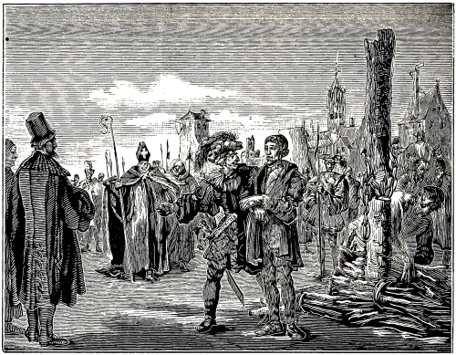
WILLIAM WHITE BURNED AT NORWICH, ENGLAND.
In the fifteenth book of the Chronijck van den Ondergang, page 788, are found the following words: “William Wicht, or William White, a learned, upright, honest, and eloquent man, a priest in England, forsook his ministry, and published the Gospel, by writing, preaching, and teaching, saying: ‘that forgiveness of sins must be obtained from God Almighty alone; that the unmarried life of the Pope and his clergy was the very satanic state, and a severe captivity of antichrist; and that the hooded, striped and shaven clergy were the mercenaries and servants of Lucifer.’ ”
But upon being apprehended, he renounced his doctrine, A. D. ——. Subsequently, however, he became re-established, and pious, and stronger, in the doctrine, and very boldly suffered burning for his confession, at Norwich, in England, A. D. 1428 334Compare this with Hist. Andr. Hondorf, fol. 35. Vincent. Cal., fol. 134. Georg. Pac. cap. 11.
Note.—Three years previous to the death of this martyr, A. D. 1425, a miserable persecution was raised by the Romanists against some orthodox Christians; concerning which the following account is found, for the year 1425: “About this time, Peter Torea was executed at Speyer, in Germany, and many others in the Roman countries; because they confessed the truth or opposed the Roman superstitions.” Georg. Pac., cap. 11, compared with P. J. Twisck, Chron., page 788.
According to old chronicles, about A. D. 1430, a godfearing woman, named Margaret Backster, was apprehended in England, for the truth of the Gospel of Christ; and as she would not apostatize, it seems, she was imprisoned until death, or put to death in prison; which, though it has remained partly hidden before men, God will make manifest in that last, great and terrible day; so that those who have secretly suffered for the name of Christ, shall then be openly rewarded and crowned; and those who have secretly shed the blood of the saints, shall be banished with open shame from the face of God, to be tormented, as they have tormented others, yet without ceasing, for ever and ever. Rev. 14:11. “Then shall we discern between the righteous and the wicked.” Mal. 3:18; Wis. 5:1,2; Matt. 5:46.
Margaret Backster, wife of William Backster, was accused by Johanna (wife of Cleveland), of divers articles, as, of having told her, that she should not swear at all, neither by God, nor by Our Lady, nor by any saints or saintesses.
Again: That she, the deponent, upon being asked by Margaret Backster, what she did every day in church, answered, that she knelt before the crucifix, repeated five Pater-nosters, and read as many Ave Marias in honor of Our Lady. Whereupon Margaret replied: “You do very wrong in kneeling or praying before such images as stand in the church; for God dwells not in such churches, nor will he come down from heaven; neither will he give you any more a reward for such prayers, than a taper which is placed under the cover of the font, can give light at night, to those that are in the church.”
Again: Said deponent, Johanna Cleveland, being asked by Margaret, what she believed respecting 335 the sacrament of the altar, said, that the sacrament of the altar, after the consecration, is the true body of Christ, in the form of bread. Whereupon Margaret said to her: “Your belief is vain; for if this sacrament were God and the true body of Christ, there would be a countless number of gods, since a thousand priests and more, make a thousand such gods every day, and then eat them.”
Again: She said she knew for certain, that the vengeance of God would speedily come upon the Bishop of Norwich, and others, who had caused the death of father Abraham, William White, and John Waddon, faithful preachers of the word of God, and of many other godly men with them.
She also declared, that she had seen how one of those servants of Caiaphas smote William White on the mouth or lips, when he was about to be put to death, and wanted to address the people, and admonish them for the last time; and that he (that servant) stopped his mouth, so that he could not at all declare the will of God. From John Fox, Hist. Angl.
Then follow various other articles, believed and confessed by her, in opposition to the belief of the Roman church, and militating against images, the power of the priests, the forty days’ fast, pilgrimages, the mendicancy of the monks, too numerous to mention.
These, then, are the principal and most remarkable things extracted by John Fox from the old records concerning Margaret Backster; but since in said records no mention was made as to what befell her after these accusations, or what became of her, he did not venture to state it; however, it is supposed, as some write, that they put her to death secretly in prison, or imprisoned her until death, since no mention is made of her penitence or apostasy. Second book of the Hist. of the Persecutions, fol. 583, from Joh. Fox, Angl., page 610.
Note.—A. D. 1431, one Paul Craus, in Scotland, was apprehended by Bishop Henry, because he rejected auricular confession, the invocation of the saints, the idolatrous sacrament, etc. And as he would not depart from the truth confessed, he was finally sentenced to the fire, and burnt on the thirtieth of June, of the same year. Compare Vinc. Cal., fol. 368. Georg. Pac., cap. 11. Herm. Mod., fol. 274, with the Chron. van den Ond., page 796; also, A. Mell., fol. 584, col. 1, ex Hist. Scoticae, lib. 17.
A. D. 1436, five years after, one Thomas Rhedonensis, a Frenchman, out of Christian zeal, went to Rome, hoping there to preach the pure doctrine of Christ. But when he found the opposite there, and noticed the great abominations, hypocrisy, and pomp, he could not forbear reproving the cardinals and ecclesiastics for their ungodly life, saying, that they ought to live modestly and virtuously like Christ and the apostles. By this he speedily drew upon him the envy and wrath of said persons, so that he was led before Pope Eugenius, and there cast into prison; where he was greatly tormented, yea, ultimately, sentenced to the fire, and burnt. Compare the last mentioned chronicle, page 800, col. 2, with Vinc. Cal., fol. 145. Georg. Pac., cap. 11.
A. D. 1439, there was condemned as a heretic, in the council of Basel (where the feast of the Conception of Mary was instituted and established), a certain upright man, named Augustine de Roma; but as to what happened to him after said condemnation by the council, has not been mentioned by the writers from whom we have quoted this. See the authors cited above. Also, P. J. Twisck, Chron., page 808.
A. D. 1450, Alanus Chartetius wrote a book respecting the fruits reaped by the church from the unmarried life of the priests; by which he greatly reproved and censured the abuses in the church of the Romanists. See further on. In the same year, Peter de Luna opposed the Pope and the ecclesiastical power, and openly wrote against them, and was therefore also condemned as a heretic. From Joh. Munst., fol. 182. There were also at this time, many learned men, who discountenanced purgatory, confession, letters of indulgence, the mass, vigils, etc.; which, to all appearance, caused them much misery according to the body; but as we have not found the particulars in regard to it, we will pass them by. Compare the account of Fortalius Sidæus with the last mentioned chronicle, page 823, col. 2, at the foot, and page 824, col. 1, at the top.
After the church of God in Germany had enjoyed peace for a season, so that she, as it appears, began to grow, flourish, and increase, the thorns of persecution immediately arose over her; inasmuch as in the year 1457, particularly in the bishopric of Eichstædt, through the envy of the Romanists, her meetings were broken up, the believers apprehended, and all who remained steadfast, sentenced to death; who, in great numbers, from love to their Savior, and especially for the salvation of their own souls, gave their bodily life unto death, thus sealing with their blood, the truth which they had confessed at baptism before many witnesses; for which the Lord, hereafter, shall give to them, as triumphant conquerors, palms into their hands, place crowns upon their heads, and put a new song of praise into their mouths, so that for all their suffering they shall rejoice, shout, and be glad forever.
Touching the offering up of these friends of God, we have not been able correctly to ascertain it, namely, whether they perished by water, fire, or the sword; except that they were put to death for the doctrine of the Waldenses. Of their suffering and death, mention is also made in the second book of the Hist. of the Persecutions, fol. 590, col. 4, from Vignier Hist. Eccles., A. D. 1457.
The abovementioned author, or his printer, has made a chronological error, putting A. D. 1475 instead of A. D. 1457. Then follows: “A. D. ——, a great number of Christians professing the doctrine 336 of the Waldenses, were discovered and apprehended in the bishopric or within the jurisdiction of Eichstædt, in Germany; very many of whom were put to death.”
This year, 1457, P. J. Twisck fixes as the date of this event, though he does not make mention of their death, but only of their severe persecution. Chron., page 829, col. 2, calling the scene of their persecution Richstadt, instead of Eichstædt.
Note.—A. D. 1465. At this time, Laurence Valla, a man of great learning, vigorously attacked the power and supremacy of the Pope, placing his salvation in the eternal merits of Christ. He reproved the vows and the lasciviousness of the monks, yea, declared publicly, that the Pope was the originator of all wars and dissensions; as also, that he had for sale not only worldly, but also spiritual goods, yea, even the (so-called) Holy Ghost. On account of this he was driven into banishment, and resided at Naples, where he died. Chron. van den Ond., p. 841, col. 1, from John Munst., fol. 192, Georg. Pac., cap. 11.
A. D. 1470.—John de Wesalia (that is, John of Wesel) now taught at Worms, that all believers are saved by pure grace, through faith in Jesus Christ; and that the supremacy of the Pope is not to be regarded. He defended matrimony, and the dispensation of the Supper (called the Sacrament) under two forms, that is, with bread and wine. Human institutions, as fasts, letters of indulgence, feast-days, pilgrimages, extreme unction, confirmation, auricular confession and satisfaction,200 he utterly rejected. In short, he was regarded as a heretic, and, in the year 1479, condemned and burnt at Mentz. Compare Joh. Munst., fol. 196. Chron., Fra., fol. 91, with the account in the Chron. van den Ond., page 847, col. 2. Others, however, make mention only of the burning of his books. See A. M., fol. 597; this the intelligent reader can easily distinguish, and, when necessary, reconcile.
Again: Same year as above. George Morgenstern wrote and taught at this time against the errors of popery and the manifold attires of the monks. He said that the world was full of monks, but that scarcely in one out of a hundred could a little virtue be found. Whether the monks and other priests received this in good part, we may readily judge, though we have learned nothing in regard to his suffering. Compare P. J. Twisck, Chron., page 847, col. 1, with Catal. Test. Verit., fol. 884.
About the year 1471, an awful persecution arose in and around Bohemia, against the old, orthodox Waldenses, whose orthodox confession we do not deem necessary to relate again. This persecution was excited by Johanna, the widow of King George of Bohemia, who, notwithstanding the death of her husband, earnestly solicited the princes of the realm, everywhere to exterminate not only those who were called Bohemian Brethren, but also the old Waldenses.
For this reason many went and sojourned in Austria; but as it is peculiar to the rose of the church of God to bloom among the thorns, it happened that also there no liberty could be found; so that the servants of antichrist, in the city of Vienna, in Austria, laid their hands, first of all, on Stephen, one of the elders of their church, besides raising a severe persecution over the believers in general.
But since this pious man, as becomes a good shepherd of the flock of Christ, did not wish to give offense to his sheep, and would not flee from the wolf which threatened to tear them, nor would, for any torments, forsake either his office or his faith, sentence of death was finally pronounced upon him, namely, that he should be executed with fire, that is, burnt alive. This severe punishment of death he steadfastly endured, having commended his soul into the hands of God. Of this hero of Christ, mention is also made in the second book of the Hist. of the Persecutions, fol. 592, col. 4, thus: “At this time there were not many Waldenses in Bohemia, on account of the violent persecution; but in Austria there still lived some, who were likewise for the most part dispersed, because of the cruelty of the torments, and the terror of persecution, after Stephen, one of their elders, had been burnt alive at Vienna, in Austria.
Note.—A. D. 1471. Stephen Brulifer, a theologian or divine, now maintained, that the doctrine was false, yea, a doctrine of Satan, which ascribes justification to the works and merits of men (who observe the religion of the priests); as also, that the church has no power to institute new sacraments. On account of these and like doctrines, he had to leave Paris, and come to Mentz, where he is said to have died in the year 1490. See the books cited above; also, John Munst., fol. 199; also, the last mentioned chronicle, p. 851, col. 2.
A. D. 1474.—D. V. P. Groningensis so clearly exposed at this time the darkness of popery that his friends called him a light of the world. Although he could expect nothing better, together with his fellow brethren, than fire and the sword; yet he died in peace in the year 1490. P. J. Twisck, Chron., p. 855, col. 2, compared with Joh. Munst., Tract., fol. 198.
This century, it appears, could not close without a new inquisition, which the Spaniards invented, as had formerly been done by the Germans. It was first instituted against those of the Jewish, Mohammedan, and Saracenic profession, forasmuch as some of them, either through fear of persecution, or for some other reason, had accepted the Roman Catholic faith with the mouth, but whose sincerity 337 was doubted. But subsequently it extended to all who did not perfectly observe the Romish commands; among whom the oft mentioned Waldenses and Albigenses were none of the least, since they not only held the Romish belief in small esteem, but were also directly opposed to it in nearly every point, except the twelve general articles.
Concerning this, there is the following account: “Thus their (the Spaniards’) first decree was, in regard to the inquisition, to proceed only against the Jews, Saracens, and Mohammedans; but subsequently much greater power was given to the inquisitors, to try and punish all who did not observe, in every particular, the ordinances of the Roman church, and the Catholic faith. Pope Sixtus IV. confirmed this royal scheme. See the account in the Chron. van den Ond., p. 900, col. 1.
The same writer then relates what the inquisition at this time was, and the manner in which it was instituted and executed; concerning which we will give, not the exact words, as they are rather badly arranged, but only the sense, as nearly as we can possibly express it. He commences thus: “In order to relate briefly, what the inquisition is, the reader must know, that it is an investigation and examination of the faith, conducted by certain persons appointed thereto (called inquisitors or fathers of the Holy Office), with such means as they please, and upon whomsoever they will, but particularly upon such persons as are denounced to them, or are suspected of erring in any article from the Roman church, or of holding any other belief. Those, then, whom they condemn as erring in this manner, are punished on body and property, according as the fathers of the Holy Office judge the points of their error of greater or lesser importance.” Concerning this, read George Nigrinus; also, Peter Bor, in the Oorsprong van de Nederlandtsche Beroerten, compared with the author mentioned last, same page, col. 2.
As regards the place where each was separately confined and the narrowness of the same, it was as follows: If it is below, it is wet, damp, and filthy, so that it were better to call it a grave, than a jail or a prison. If above, it is warm in summer, yea, hot as an oven. When there are many prisoners, generally two or three are shut up together in each hovel or hole, who, when they lie down to rest, have not as much room left, as to once stir, save perhaps the space of a foot, where stands a vessel for their necessities and a pitcher with water, to quench their thirst. Sitting and lying thus day and night in darkness, these miserable beings emaciate and pine away by hunger and grief, to such a degree, that scarcely the skin remains over their bones; besides that they are so severely tortured, racked and drawn with various cruel instruments, that their limbs are drawn from their joints. Same page.
Having condemned these people as heretics, after they had suffered a long season of misery, the inquisitors make a show of mercy, and deliver them to the magistrates, with these words: “Whereas the Lords of this holy Tribunal (the inquisitors), have exerted all proper diligence, to bring back this seduced person into the bosom of the Roman church, and have nevertheless accomplished nothing, he constantly remaining obstinate in his opinion, we hereby deliver him into the hands of the secular judge, to be punished according to the extent and import of the Roman laws. Still, we sincerely pray, that, if he show any sign of confession and repentance, he be treated with all clemency and mercy.”
But when the inquisitors have condemned any one, on account of so-called heresy, to the fire, who, from fear, or for some other reason, returns to the Roman belief, they deliver him to the secular judges with these words: “Whereas the holy Tribunal of the Inquisition cannot believe, that this man’s conversion is sincere, and fears to admit a wolf in sheep’s clothing (notwithstanding his supposed conversion), we deliver him to the secular judges, earnestly entreating them, to deal in all mercy with this (accused) one, without breaking a limb or bone, or shedding a drop of his blood.”201 Compare with the sense of these words the abovementioned chronicle, page 900, col. 2, and page 901, col. 1; also Hist. Georg., lib. 6, Peter Bor, lib. 3. Oorsprong, fol. 9–12. Toneel Nicol., fol. 87. Guil. Merula, fol. 947. Eman. Met., fol. 40. Retuald. Gonsalv. in Tract. on the holy Spanish Inquisition, throughout. Hist. Wenc., fol. 187. Chron. Ph., Mel., lib. 5, Hist. Alons. de Ulb., lib. 2.
Touching the persecution which resulted to the believers upon this new charge of the inquisition, we have not been able to learn the particulars relating to it. Doubtless not a few perished by those means; since it is certain, that no one that had a good conscience, and was accused of heresy, could escape with his life. The contents of the above record inform us, that many had to suffer on this account, whose names, however, we have not learned. We commend them to God, who will judge their 338cause hereafter. His mercy be gracious to us and to them all.
Remark.—From the time of Peter Waldo, about A. D. 1170, we have throughout followed, in the account of the martyrs, mostly the line of the Waldenses proper, without digressing materially to other sects, though some of them very closely approximated to the belief of the Waldenses. Hence it has come, that the number of those whom we have noticed as true martyrs, is not as large, as it might have been, if we had not purposed to follow the unmixed, pure line of the Waldenses. However, in notes, we have placed some who approached this belief very closely, and shall here add a few more.
Note.—A. D. 1494.—In the fourth year of Henry VII., on the 28th of April, a very old, honorable widow of over eighty years, was apprehended for maintaining eight of Wickliffe’s articles (whose belief against infant baptism and the swearing of oaths, we have already shown), and as she would not apostatize, she was burned alive in Smithfield, at London. She said that God and his angels loved her so, that she was not afraid of the fire. When she stood in the midst of the fire, she cried aloud: “Lord, receive my soul into thy holy hands;” whereupon she gave up the ghost. Compare the account in the second book of the Hist. of the Persecutions, fol. 599, col. 3, with Joh. Fox Angl., page 671. A. Bal., in Append. Al., page 627.
A. D. 1498.—Jerome Savonarola now most zealously rejected, in his teaching, the institutions of men, and maintained salvation in Christ alone. He defended the partaking of the holy Supper (called the Sacrament) under two forms; that is, with bread and wine; in opposition to the practice of the papists, who gave the common people only a consecrated wafer. He also rejected letters of indulgence, saying, moreover, that the Pope did not follow the doctrine and life of Christ, and that he was the antichrist, because he attributed to human institutions more than to the merits of Christ. For all these reasons, he was strangled and then burnt to ashes, at Florence, by order of Pope Alexander VI. Compare Chron. van den Ond., page 910, col. 2, with Joh. Munst., fol. 201. Guil. Meru., fol. 950. Hist. Andr., fol. 36. Also, A. Mell., fol. 600, col. 3, to fol. 606; where it is stated that two others died with him for the same belief, and were likewise on the 23d of May, in the market place at Florence, after preceding strangulation, burnt to ashes, and the ashes thrown into the river Arnus flowing by.
A. D. 1499.—Paul Scriptoris taught at this time against transubstantiation (or the essential change) of the bread into the body of Christ; as also, that all that is taught must be tried by the touch-stone of the Word of God, adding that all who teach otherwise teach falsely; hence he said there should speedily come a change in the (Roman) religion. For this reason he was driven into banishment by the Minorite monks; and, having lived full three years in exile, he died in the beginning of the year 1504. Compare P. J. Twisck, Chron., page 912, with Joh. Munst. Tract., fol. 199. With this we conclude the fifteenth century, and, consequently, also the account of the martyrs who then suffered.
We long to take our leave from this century, since we cannot longer behold this misery. However, we have only reached the summit of the mountain of martyrdom. In our ascent we have met scarcely anything but skulls, thigh-bones, and charred skeletons. In our descent deep pits, pools and blood-red rivers, into which the bodies of the saints are thrown, threaten us; to say nothing of the dark prisons, dungeons, torture-chambers, and countless instruments of torture.
But the merciful Lord, who has led us by the hand, and thus far aided us, will lead and help us still further. His love shown to me in this matter, has been wonderful. For, when the bands of death were around me, by reason of a half year’s severe sickness, which attacked me in the midst of this work, his gracious hand restored me, so that I have completed the work thus far, though not without anxiety and labor. Hence, though still in the grasp of severe fevers, I wrote, for my own remembrance, to the praise of my Creator, and to dedicate to my brethren this book, these words:
It is time to proceed, in order that we may reach the end. We will conclude this first book, comprising fifteen centuries, the whole of which we had to bring up from the very depths; and proceed to the second, where our labor will not be so great; since the living memoirs of old writers and their accounts will serve us therein. Moreover, the entire work can be comprised in one great century; relying upon which, we take our leave, and turn to the following work, to which the Lord be pleased to grant us his grace, as much as is necessary. Amen.
339
340
341
Most Beloved:
When, in former times, C. Vermander, one of our fellow-believers, desirous of describing the Trojan war, followed the Greek poet Homer, called the Blind, relating in Dutch rhyme, the latter’s Greek verses treating of this matter, he stopped when he had completed half, that is, the first twelve books of the Iliad,202 writing these words:
He became weary when he had traveled half the way, and certainly, he had good reasons for it; for, who knows not, that by following a blind man, especially on unknown and dangerous roads, one may easily be brought into error, yea, severe misfortunes? And what peaceful and loving person will delight in contemplating severe wars, and terrible storms and assaults, made upon a straitened and much distressed city, like Troy (called Ilium) was in Homer’s time? Hence it was proper, and not less profitable for his soul, that he returned, for, as the proverb says, “It is better to turn back in the middle of the way, than to err still further.”
But we, much beloved, having come half the way, yea, through fifteen bloody centuries, became only the more desirous to proceed, so insatiable was our desire, from what we had already seen and heard. Yea, what is still more, though we ourselves suffered much heat and cold, hardship and illness; yea, deadly sicknesses,203 on the way, our desire was not quenched, but much rather spurred on and stirred up, to reach the end. For, truly, those whom we met here, were no Greek warriors, who had enlisted under the hero Agamemnon, or his general Hector. Nor were the storms and assaults which we beheld, made upon a city built with hands, much less upon the city of Ilium in Phrygia. Nor did the conquerors burn pitch-barrels, in token of victory. Neither did the heroes who had acquitted themselves well, and faithfully risked their lives, to obtain fading oak leaves, or laurel wreaths, as marks of honor. Or, if they had died, their graves were not ornamented with tombs, pyramids, or obelisks, which must eventually perish with the world.
Here things were quite different, beloved friends; yea, quite different. For heroes met us who served the King of kings and Lord of lords, Jesus Christ, who, though as a slain lamb, is truly the Prince of the kings of the earth.204
The place which they stormed, was the city filled with all good things, or the new and heavenly Jerusalem, whose foundations are all manner of precious stones, the gates of pearls, the streets of gold, like transparent glass. Her they took by force, to possess forever; but the God-displeasing idolatrous city of Babel they destroyed, with spiritual weapons, as much as lay in their power.
The honor which they obtained for their victory, is an everlasting honor; their joy a perpetual joy; the triumphal crowns which were given them, are eternal and heavenly crowns. Here no earthly tombs, pyramids, or obelisks, need be mentioned, to honor their dead bodies; since their souls were honored with God, and obtained rest under the altar205 of God, the place of all the blessed martyrs.
In our thoughts we have wandered through the places where all this has happened, and with the eyes of faith have beheld these things.
It is true, the sorrow which we, according to the flesh have met with, was almost insurmountable, seeing so many miserable, and not less godfearing, persons laid down their lives for the truth confessed; these in the burning fire, those in the drowning water, others under the keen sword, some in the strangling rope, yea, in the most destructive teeth of wild beasts; not to mention countless other means by which they miserably perished.
But, on the other hand, the joy which we have seen with our spiritual eyes, and heard with the ears of the heart cannot be told, yea, can be described by no language. For, some embraced death, 342singing and praising God, and what is still more, who can comprehend this? he who was himself subjected to the death by fire, laid his hand upon the heads of his half-burnt fellow-brethren, encouraging them, and strengthening them in the faith. Another, who had tasted the pain of the fire, and had been drawn out of it, threw herself upon one of the dreadfully charred bodies, in order to finish the conflict once begun, and also to obtain the crown of martyrdom.206
This we relate over and above what we have noticed in the first book, although the persons are also there spoken of. We could adduce many such and similar examples, were they not sufficiently known, yea, as clear as the sun.
We therefore proceed to the Second Book, and will commence with the beginning of the sixteenth century, where we, as previously, will treat first of Holy Baptism, etc., and then of the Holy Martyrs who suffered in those times.
However, our labor will be greatly lessened here (like one who, panting and perspiring, has climbed a steep mountain, and then leisurely descends, taking his ease), since, as far as the martyrs are concerned, the previous accounts and printed copies will serve our purpose; in which we do not propose to make any essential change, for we do not wish to diminish the good work of our dear fellow-brethren who, in this matter, have acted in a holy manner before the Lord, except where it may be necessary because of some account which we have added thereto.
At the same time we hope to enrich these accounts with various pious witnesses of Jesus, from faithful memoirs and written records, which were never before made public; as also their examinations, death-sentences, letters, and other things connected with this matter; which we have obtained for this purpose from the hands of magistrates, criminal authorities, criminal clerks and other sources, at no small trouble and expense.
This, then, shall be the order of the following work, which we wish may be acceptable to God, edifying to our neighbor and conducive to the profit and salvation of our own soul, through Jesus Christ, our only and eternal Savior, praised and blessed forever. Amen.
Yours, most affectionately in the Lord,
Thielem J. van Braght.
Dort, A. D. 1659.
343
Christian Reader:
In this our address we shall present to you nothing new or uncommon, but that which in former times a certain lover of the holy and blessed martyrs communicated to his cotemporaries, for general edification, concerning the faith and steadfast death of many of them; except a few passages in the beginning, and also a little further on (which do not properly belong here, and to which we have affixed certain marks to prevent mistakes.) These we have omitted here, and added, in brackets [], something of our own, concerning which we stand ready to give an answer if required.
Having concluded a certain censure concerning those of Horn, the above writer speaks thus of the immovable confidence of the pious confessors of Jesus Christ:
“We are fully confident that all these witnesses were unanimous in regard to the essential articles of faith; they all believed in the one eternal, true God, the Father, and in his only Son, Jesus Christ, our Lord and Savior. They all had respect to the sacrifice of the unspotted Lamb, in whom the Father had placed the reconciliation of our sins. They committed, yea, by the covenant of baptism, obligated themselves to serve this Lord, whom the Father had ordained as their teacher and law-giver. They waited for the blessed resurrection and glorious recompense promised to all those who, through the grace of the Spirit, in the race of the Christian vocation, earnestly and steadfastly run for the prize set before them. They certainly, which is the most important, showed by their deeds, that they had not only a lip faith, and literal knowledge, which is found only in the brains of men, but an effectual and true faith, which, dwelling also in the heart and mind, is inspired by love, and through which they, according to the example of the saints, conquered all things.”
Proceeding to the sufferings of the martyrs, he says:
“Contemplate the suffering which these pious martyrs endured, and how wonderfully God wrought with them; how manfully, constantly and patiently they fought, through the effective and ardent love of God, confirming the truth of what is said in Cant. 8:6, namely, that ‘Love is strong as death, and jealousy cruel as the grave.’ For, here you see as in a mirror, that neither conjugal longing and love, nor parental affection and solicitude, nor the desirable company of near and confiding friends, nor anything which God has put into his creatures, for the delight of man, could move or restrain these heroes; but that they, contemning all this, and separating from wife, children, relatives and friends, house and property, they gave themselves up to severe bonds and imprisonment, to every adversity and hardship, to cruel tortures and martyrdom, undaunted by the threats of the most awful death on the one hand, and unmoved by the many fair promises, to forsake the wholesome truth, the love of God, and the blessed hope on the other; so that they could freely say with the holy apostle Paul: ‘Who shall separate us from the love of Christ? Shall tribulation, or distress, or persecution, or famine, or nakedness, or peril, or sword?’ Romans 8:35. But they found and showed it to be true that according to the testimony of the apostle, neither death, nor life, nor things present, nor things to come, shall be able to separate us from the love of God, which is in Christ Jesus. Verses 38 and 39. Through this love they overcame all things, and performed glorious deeds beyond the power of man. Weak women exhibited more than manly strength. Maidens and young men in the bloom of youth were enabled, by the help of God, to despise the alluring world, with all her fair and great promises; and these young and tender branches, by faith and patience, conquered the mighty of this world; the simple and unlearned confounded the sage doctors; so that these, silenced frequently through the truth, disputed with threats of fire and sword, and, though in vain, defended themselves thereby; manifesting in this manner their impotence and malice. Christ strikingly fulfilled in them the promise made to his disciples, Matt. 10:19, namely, that he would give unto them what they should speak in that hour when they should be brought before kings and governors. In sight of scaffolds and wheels, of fire and sword, they fearlessly confessed the truth, so that the judges and inquisitors were sometimes astonished, sometimes confounded, and sometimes enraged and startled. Of this boldness, the martyrs themselves boasted in their letters, thanking God, for, knowing their own weakness, they experienced the strength of God in the cross, so that they could take upon themselves with a composed, yea, with a joyful mind, that from which human nature beyond measure seemed to recoil and flee. Yea, they were 344 filled with such an exuberant and great joy, begotten in them through the unhindered contemplation of the heavenly glory in faith and hope, that they would have preferred no royal banquet to this parting feast.
They were endowed with such strength that even cruel and inhuman torture could not extort from them the names of their fellow brethren, so that, filled with divine and brotherly love, they sacrificed their bodies for their fellow believers. The brotherhood in general was thereby so enkindled with zeal and love, that each, despising the earthly and regarding the heavenly, prepared his heart for the sufferings to which his brethren were subjected, and by which he himself was daily threatened. They shunned no danger, in the way of sheltering their fellow believers, visiting them in prison, calling boldly to them in the place of execution, and comforting and strengthening them with words of Scripture. The tyrants found themselves deceived in their design; they thought they could cause these Christians to apostatize; they put them into assurance of their salvation; they supposed they could destroy and extirpate those who opposed them, but, on the contrary, they raised up more opponents; for many of the spectators, at the said spectacle of killing people, who were harmless and of good name and report, yea, who would rather die than do ought by which they supposed to offend God, were thereby brought to reflection, and thus to investigation, and ultimately to conversion.
Besides these noble examples of love, patience and constancy, we find in their writings many devout lessons, edifying teachings and comforting admonitions, written in dark prisons, hurried and negligently indeed, and on account of inconvenience and with poor materials, but sealed with the most glorious mark, their own blood. Then the words have power and weight, when their truth is confirmed and attested by the deed. Seneca, in his epistles, censures philosophising with words, and not with life, as something shameful. Here you find words which devotion has penned, which the pressure of suffering has extorted from the inmost of the heart; words which have not been warped or bent by worldly considerations or carnal passions; but which were sincerely and unfeignedly spoken to their friends, at the end of life, as a last will, and confirmed with death. Husbands in tribulation consoled their wives, admonished them to godliness, and incited them to steadfastness. Parents gave useful instructions to their children, presented to them the changeableness, vanity and perishableness of visible things; they taught, counseled and commanded them to forsake the world and the lusts thereof, and to cleave to and alone serve God, the supreme and only good. You perceive here how they were sometimes assaulted with many temptations and enticements, not only of wicked men, but of the devil; how the enemy of souls, bringing them upon the pinnacle of the temple, as it were, showed them the splendor and glory of this world, in order to entice them to worship this; Matt. 4:5,8. How he sometimes, with the terror of impending suffering, assailed the soul with fearfulness, and how, by false imaginations, he endeavored to bring the minds to apostasy, despondency and despair; which these pious heroes, arming themselves with watching and constant prayer to God, valiantly overcame, fighting manfully through all temptations, promises and threats, even unto death, and gaining the victory.
Now, even as the reading of, and meditating upon, the pious fathers, is very profitable in every case, so these persons stand as instructive and consoling examples, for all who are visited with crosses and temptations. Here manifest themselves shining beacons of living faith, of sure hope, and ardent love. Here is seen the positiveness of God’s promises, in fearless and joyful hearts, in the midst of suffering. Matt. 10:19. Here is the steadfastness of the saints, whom Christ crowns with salvation. Matt. 24:13. It is true, by the worldly-minded they are accounted as filth and offscouring (1 Cor. 4:13), and their actions stigmatized as sheer folly and madness; but they comfort themselves in God, and rely on his promises. They have learned that the cross must thus be taken up, if one would be worthy of Christ. Matt. 10:38. They know that they are strangers and pilgrims in this world, 1 Pet. 2:11, and remember the words of their Master, who says: “If ye were of the world, the world would love his own; but because ye are not of the world, therefore the world hateth you.” John 15:19. They are confident that if they lose their life here, they shall find it again hereafter. Matt. 10:39. They believe that we must confess the name of Christ, if we would have him confess us before his heavenly Father. Matt. 10:32. They know that their Lord and Master suffered himself, leaving us an example that we should follow his steps; who was thus minded, that when he was reviled, he reviled not again, and when he suffered, threatened not, but prayed for his enemies. 1 Peter 2:21,23. They hold that if they would reign with Christ, they must here suffer with him. 2 Tim. 2:12. They are mindful of the words of Christ, that the servant is not greater than his master, Matt. 10:24, and that therefore, as Christ suffered, they must arm themselves with the same mind. 1 Peter 4:1. They know themselves to be defenseless sheep, a prey to the devouring wolves. But they do not fear them, who can kill only the body, but him who holds body and soul in his hand. Matt. 10:28. They learned long ago that all that will live godly shall suffer persecution. 2 Tim. 3:12. Christ foretold them that they should be hated of all men for his name’s sake, yea, should be delivered into tribulation, and be killed; and what is still more, that those killing them should think that they do God service. Hence, they think it not strange when they are tried by suffering; but rejoice that they are partakers of the sufferings of Christ, knowing that, when his glory shall be revealed, they shall also rejoice with him. 1 Peter 4:12,13. They glory in tribulation (Rom. 5:3), believing that thereby their faith is tried and refined. 1 Pet. 1:7. They experience that patient suffering begets a glad and constant hope, and that the cross, which to those who perish, is foolishness, is to them the power of God unto salvation (1 Cor. 1:18), and esteem it as the grace of God, when for conscience 345 they suffer wrongfully. 1 Pet. 2:19. And though they be troubled, persecuted and cast down here, yet they are not in despair, forsaken, or destroyed; but with holy Paul, they always bear about in their bodies, the dying of the Lord Jesus, that the life also of the Lord Jesus might be made manifest in their bodies. 2 Cor. 4:8–11. They feel in the abounding of the sufferings of Christ, an abounding consolation through Christ. 2 Cor. 1:5. They believe that the sufferings of this present time are not worthy to be compared with the future glory. Rom. 8:18. Hence they arm themselves for tribulation and suffering, as true heroes of their captain, Jesus Christ. They have before them a great brotherhood, who finished their course in this way. Cain could not bear his brother’s piety and favor with God, and slew him. Gen. 4:8. Violence and oppression ruled the first world. Gen. 6:13. Pious Lot had to be the sport and lust of the Sodomites. Gen. 19. David had to flee before Saul. The prophet Isaiah lamented already in his time that he who departed from evil had to be everyone’s prey and derision. Many holy prophets and men of God had to endure persecution and martyrdom from the wicked, as holy Zacharias, Amos, Micah, Jeremiah, Daniel, and the three young men, Eleazar, the mother with her seven sons, and others, who need not be mentioned, since the time and age of the New Testament, furnish abundant material in this respect. John, the forerunner of Jesus, had to offer his neck to the sword, in prison. Matt. 14:10. Our captain of the faith, Jesus Christ, had to enter into his glory through much derision, ignominy and suffering, and ultimately through the most shameful death of the cross. His apostles and disciples, as the chronicles state, followed their Master. Peter and Paul were put to death by Emperor Nero. James, the brother of John, was killed with the sword by Herod. Acts 12:2. Matthew was nailed to the earth, in India. Bartholomew was flayed. Andrew was crucified. Thomas was thrust through with darts. Philip was nailed to a cross, and then stoned to death. Simon Zelotes was scourged and crucified. James, the son of Alpheus, was cast down from the temple, at Jerusalem, and then beaten to death with sticks. Judas Thaddeus was killed, in Persia, by wicked heathen priests. Matthias also obtained the martyr’s crown. Mark, the evangelist, was dragged about by a cord around his neck, at Alexandria, till he died. John, the apostle, banished in the island of Patmos, adorned the Gospel with suffering [as is circumstantially recorded in the first book, first century, in the account of the martyrs]. This was the way of the holy prophets. This is the path which our Savior and his messengers, and afterwards many disciples, trod. Polycarp, the disciple of John, was burnt alive at Smyrna. Ignatius, bishop of Antioch, was torn by wild beasts [as is stated in the second century]. Even the Roman bishops, in the first three hundred years, were mostly all martyred, and subjected, with the common Christians, to persecution by the heathen Emperors [these, however, we commit to God]. Under the Emperor Diocletian, there was such an awful persecution that it seemed as though the Christian name would be utterly extirpated; so that the first churches at the time of Emperor Constantine were so accustomed to persecution, that they deliberately prepared themselves for suffering.
Since, then, the godfearing who are visited with the cross, have so many holy martyrs as predecessors; and since the cross is foretold them; yea, since such glorious promises are given to those who suffer, it is a little thing for them that they, who gladly acknowledge themselves soldiers under the bloody banner of Christ, are therefore aspersed and ridiculed as fools. The Christian reader may here perceive and firmly conclude that the cross is also the ensign of those who serve and follow Jesus Christ, the captain of the faith; and that, on the contrary, those who afflict others with crosses and sufferings, do not belong to this captain, but are under another leader. For the true Christians have never persecuted the innocent, but were always persecuted themselves; and in the primitive church, even in the time of Constantine, when the bishops began to rise a little higher in the world, and were protected by the Emperor, it was considered an abomination to persecute any one; they, however, suffered persecution themselves. It was then deemed such a detestable thing, to put to death or persecute any one for heresy, that Bishop Ithacius was excommunicated and separated from the church, because he, through the tyrant Maximus, had brought about the death of Priscilian, the heretic; as the Roman cardinal, Cesar Baronius, very plainly describes in his church history, for the year 385.
He also states further, that it is utterly incompatible with the meekness of a pastor. Again, that none of the holy fathers even commended it, that an ecclesiastic should seek to bring a heretic to his death. So that, according to him, St. Martin would have no fellowship with the aforesaid Ithacius or his adherents, because their hands were stained with the blood of Priscilian. And though, induced by the threats of the tyrant Maximus, St. Martin feigned to have fellowship for an hour with Ithacius, he nevertheless subsequently manifested great regret for it, since he felt that in consequence of his dissimulation, the gift of healing was partly taken from him.
From this it is clearly manifest, how falsely they boast of being the successors of Christ and his apostles, and of the primitive church, who have so abominably stained their hands with the blood of innocent people, people who only confessed and practiced the Gospel according to the full dictates of their conscience; yea, concerning whom the tyrants themselves frequently testified, that their life was pious; that they would not willingly lie, or speak against their conscience; and that they were not apprehended on account of any misdeeds, but only because they did not obey the mother, the holy church, and the decree of the Emperor. It is so far from such being the true and apostolical church, that there is no surer mark of the false and antichristian church, than the killing of heretics, or rather, so-called heretics; for however abominable heresy may be, this is the most abominable of all. For what indeed is more opposed to the peaceable, 346 meek, merciful, forgiving, and revengeless character of Christ, than to persecute any one for his faith? What can we conceive of that militates more against the holy laws and commandments of Christ, which chiefly consist in love, peace, humility, meekness, lowliness, mercy, forgiveness, compassion, etc. If Christians are called (as they do) to requite hatred with love, evil with good, cursing with blessing; yea, must they, according to the doctrine of Christ, pray for them who oppress and persecute them; how, then, is it possible that they can remain Christians and themselves oppress and persecute others who have never laid a straw in their way? Can we believe, that any trace, yea, any true knowledge of the spirit and word of Christ remains where there is such a direct antichristian disposition and action? If, according to Christ, false prophets are to be known and judged from their fruits (Matt. 7:16), there can be nothing by which they may, more readily, be distinguished, than from their persecuting others; for they are witnesses unto themselves, as Christ said to the Pharisees, that they are the children of them who killed the true prophets, and who fill up the measure of their fathers. Our Savior compares them to serpents and a generation of vipers, who cannot escape the damnation of hell. Matt. 23:31–33. The disciples of Christ, who still entertained the hope of the establishing of an external and carnal Israel, asked their Lord, whether they should, according to the example of Elias, command fire to come down from heaven, upon those who did not receive him. Whereupon Christ earnestly rebuked them, saying: “Ye know not what manner of spirit ye are of. For the Son of man is not come to destroy men’s lives, but to save them.” Luke 9:54–56. But these heretic-killers, who boast of being the vice-regents and followers of Christ, yea, doctors of divinity, dare, not only without asking Christ, but even against his express prohibition and example, whet the sword, and stir up the fire, not to murder those who refuse to receive Christ, but those who are ready to adhere to and follow him even unto death. By this they clearly indicate, first, that they are governed and impelled by the spirit not of Christ, but of the devil (who was a murderer from the beginning, John 8:44); and, secondly, that they do not come like Christ and his followers, to save men’s souls, but to destroy them; since they kill not only the bodies of the innocent, thus dishonoring the image which is created after God (Gen. 5:1), and making themselves guilty of the mortal sin of blood-shedding (Gen. 9:6) but, O awful deed! they purposely and as much as lies in their power, also endeavor to kill their souls, whom, being considered by them in a state of damnation, they suddenly cut off from the time of repentance. Matt. 26:52. They would presumptuously teach Christ, the perfect wisdom; for he deemed it well, and commanded his disciples, to let the tares grow until the harvest, lest they should root up the wheat with the tares, but these teach and do the opposite. Weeding contrary to the command of Christ, they root up not only the tares, but, passing by bad, unchaste, extravagant, pompous, avaricious, mendacious, deceitful, envious, hateful, and vindictive men, they also, from the field of the world, root out the purest grain.
They usurp the office of the Most High, and would command and compel the souls who are not under them, but under the sceptre of Jesus Christ (Matt. 10:28); yea, they set themselves not only beside, but above the Divine Majesty, demanding that men should obey them rather than God. God has commanded that we should serve him with all our hearts (Deut. 6:5), but these prohibit men from serving God in this manner, and constrain them contrary to the convictions of their consciences to follow their laws and institutions. Matt. 21:37. Christ constrained the people to conversion, by words of admonition, persuasion and reproof, and of those who were offended at his doctrine, he only said: “Let them alone: they be blind leaders.” Matt. 15:14. But these compel with fire and sword, so that they deliver to the executioner those who embrace the doctrine of Christ according to all their ability, and do not feel themselves at liberty to follow these blind leaders; bringing them into a strait, where they cannot without danger, escape either to the right or to the left; for, if they obey these, they fall into the hands of God; and if they adhere to God, they cannot escape the cruelty of these men.
Now, in order to give a semblance and gloss to their unchristian and ungodly punishments of heretics, they befoul these pious people with the stain of disobedience, and, washing their hands, as it were, from innocent blood, lay the guilt upon the edicts, which, however, were devised, and are daily executed, through their bloody advice and instigation. But, pray, who has given them power to make edicts against souls and consciences, to reign thereby in the kingdom of Christ, in which they themselves can be but subjects and servants? Will this excuse them? By no means. The Jews who sought to bring the innocent Jesus to death, also said like these: “We have a law, and by our law he ought to die.” John 19:7. They know, or ought to know, that at the tribunal of Christ judgment will be rendered, not according to human edicts, but according to the divine word. “The word that I have spoken,” said the Lord, “the same shall judge him in the last day,” (John 12:48), and, therefore, every one is necessarily bound more to the law of Christ, than to their laws and edicts; yea, an account will have to be given of these edicts, at that tribunal, and that whereby they sentenced the innocent wrongfully to death, will then justly aggravate their own sentence. What will they offer as an excuse, when an account will be demanded of them, why they exercised such blood-thirsty tyranny over souls? why they wrested the sceptre out of the hand of Christ, and usurped his seat? why they made themselves masters in that kingdom in which they, as servants, must themselves give an account of their actions? why they, as evil servants, treated and beat their fellow servants so cruelly; though he (Christ) had warned and threatened, to cut such asunder, and to appoint them their portion with the hypocrites, where there is weeping and gnashing of teeth (Matt. 24:45,51)? why they did not consider, 347 that those shall have judgment without mercy, who have showed no mercy (Jas. 2:13)? What terror, what anxious remorse and fleeing will it cause when, to convict them of their wickedness, there shall come forth those whom they fettered, chained, beat, killed and martyred, whom they then accounted fools and madmen, and whom they now behold in such great glory and esteem with God.
In that day, when all hidden things must come to light, such empty and artificial excuses will not avail. Hence, now is the time to consider how unchristian it is, to persecute Christians; how much deserving of death it is, to shed innocent blood; how culpable it is, to dishonor the image of God; how perverse and vain it is, to fight against spiritual truth with carnal weapons; how unnatural and unreasonable it is, to do unto another that which we would not have done to ourselves, and who of all would like to be forced in the convictions of his conscience. How presumptuous it is, to usurp the seat of God, and to wish to rule over the conscience, whereas Christ commanded, to render unto Cesar the things which are Cesar’s, and unto God the things that are God’s. Matt. 22:21. They should bear in mind, that Christ prayed for his persecutors, and learn from it, how unbecoming it is, that those who would be Christians, persecute others, who pray for them. Luke 23:34; 1 Pet. 2:19. They should contemplate, how great an evil it is, to compel any one’s conscience by the terrors of fire, rope and sword, when Paul so strictly forbids to wound the weak conscience of the brethren. Rom. 14:15. They should remember, that, since the holy apostle commands no greater punishment for heretics, than to shun them, they also need, yea may, use no greater. Tit. 3:10. Surely, if they would well examine themselves, they would not so readily proceed to condemn, but would suffer themselves to be restrained, since Christ declares that with what measure we mete, it shall be measured to us again. Matt. 7:2. They would fear, if they knew themselves aright, that in condemning another they might condemn themselves; since it might easily be the case, that before God the judge was as culpable as the one judged.
They further produce, in defense of, or, rather as an excuse for, the punishments of heretics, these reasons: 1. Thereby to bring and compel them to conversion. 2. That their heresy might not propagate itself, and pollute others. 3. To prevent rebellion. As regards the first, it is the duty of every Christian, to promote the salvation of his neighbor as much as is possible. But how is this to be done? by external compulsion with fire and sword? Impossible; this touches and affects the body, but not the conscience, which must not be compelled, but led and instructed. The word of God is the sword with which all error and heresy must be cut down. If the supposed error cannot be conquered with the power of truth, swords will be dull before it. And though a man, through dread of suffering, renounce his belief with the mouth, yet will he not do it with the heart; and thus, instead of converted Christians, dissembling hypocrites are made. But if a man remain steadfast, and is put to death, how can this tend to his conversion, since every means of conversion is taken away? For, one of two things is certain: if he is a damnable heretic, he is cast down into hell; but if he is not, a saved Christian is put to death; choose whichever you please and an abominable crime is committed. What is it then, that urges them thus to promote any one’s conversion? what binds them to this? who enjoins it upon them? who advises them to it? yea, who gives them permission to do it? and which of the apostles has set such an example? Truly, such reasons are but fig leaves and covers with which they seek to hide their shame and wickedness. They pretend that they aim at the conversion of men, but in fact seek to secure their own pleasure, honor and lust, in order thus to exercise undisputed despotism in the kingdom of God. So far is this from being the case, that any one’s conversion is promoted thereby, that on the contrary, all impartial persons conceive an aversion against them; so that even the good, (if any good remains, or can be found, in the persecutors), is rendered suspicious; yea, entirely destroyed, inasmuch as their words, however entreating and flattering they may be, can obtain no entrance or credit, neither do they deserve it. For, who would expect to learn anything godly or Christian from those who are pregnant with murder, and whose hands are stained with innocent blood? “Do men gather grapes of thorns?” Matt. 7:16.
As to the second, it is so far from the fact that supposed heresy should be checked by tyranny, that it is almost always spread by it; for, when hands are laid on people whose life is blameless and pious, and they are imprisoned, tortured and subjected to a painful death, only for the name of Christ, and because they, as they openly confess, dare consent to nothing contrary to their conscience,—this produces reflection and attention in all impartial minds, who, on investigating the matter, discover the innocence of the persons accused and persecuted, and thus conceive an aversion to such degenerate Christians, who persecute others, and associate themselves with those who so valiantly bear the cross of Christ, as examples abundantly testify; which verifies what an ancient father has said: The blood of the martyrs is the seed of the church. When the tyranny of popery was at its height, apostasy from it was greatest, for martyrdoms are effectual sermons, which touch the heart, and awaken the slumbering eyes; nor is this strange, for he that has a little knowledge of the Christian religion, and is not utterly blinded by malignant partiality comes easily to believe that the persecutors must be heretics themselves, since Christ and his disciples never persecuted any one, but always suffered persecution themselves. They easily perceive, that these cruel men are not innocent, meek and defenseless sheep, to which Christ compares his followers, but much rather ravening wolves, which have crept into the fold of Christ, and devour the sheep. John 10:1. The plain and pure truth, confirmed by an innocent life, is the means to overcome error and falsehood; they who depart from this to carnal weapons, betray themselves, and disclose their injustice and impotence; for, since they cannot prevail against the 348 truth, they endeavor, by exterminating and crushing the persons, also to exterminate and crush the truth. From all this it appears, how empty an excuse they seize to defend their tyranny, and what frail weapons they employ, to uphold the delusion. But it is a purely fictitious excuse, with which to disguise their purpose, and to attire in a strange dress the ugliness which cruelty presents to every eye, and, through deception, to make it pleasing to one another. They pretend to be zealous for the salvation of the people, but, in fact, endeavor to propagate their own kingdom of lies; and if aught rises in opposition to it, they seek to subdue it with the arm of flesh. The Pharisees, in the time of Christ, objected to Christ for the same reason, namely, that he was perverting the people. Luke 23:2. Their self-love and thirst for political power begat in them a bitter hatred and envy against our Savior, on account of which they sought to bring him to death. This they cover; of this they are silent. They cry, as though they were filled with a godly zeal: “This fellow perverts the nation;” though they, as well as these sought to seduce the people from Christ, the truth, to their own lies.
As regards the accusation of rebellion, this also is not an invention of yesterday or to-day. He (Christ), said the Pharisees, stirreth up the people with his doctrine; whereas they stirred up the people against Christ, who preached nothing but peace, love, humility, meekness, and the like, and whose life and actions were nothing but an overflowing fountain of kindness, benevolence and mercy. Thus did they stain, without a shadow of evidence, with the slander of rebellion, people who lived in all simplicity and integrity, and made open confession, that they were bound by the law and example of Christ, to live without revenge, and exercise a forgiving spirit towards every one, yea, to love those that hate them, and to do good to their enemies. He that examines the history of the Netherlands and Germany, for the last sixty years, will find that rebellion, contention, and dissension, yea, alienations and destruction of countries and cities, have been caused by persecution on account of religious differences; for religious zeal cannot be cut off with the sword, nor consumed by fire. On the contrary, it is evident, and confirmed by present practice, that many and various religious persuasions can live together peaceably and quietly, and that the cities and countries where liberty of conscience is maintained, have prospered, and experienced the special blessing of God. Hence, also, the H. M. Lords States of these countries, seeing the great mistakes of the King of Spain, have never been willing to follow in his steps, but expressly declare, as appears from the records of the Treaty of Peace at Cologne, page 38, “That religion does not concern men, but God, and that the King owed obedience to it as well as the subject.” They declare to have found by experience, that force and weapons are of little value for the spreading and preservation of religion; and that, even as they would not have that violence should be done to their consciences, so it does not well accord with the law of God, for them to do violence to the consciences of others. Again on page 54, it is declared: “That the Christian religion is a great mystery, and that for the promotion of the same, God does not use wicked soldiers, nor bows or swords.” Again on page 57: “We have learned that the government of souls and consciences concerns God alone; and that he is the true avenger of violated or dishonored religion.” And though some, forgetful of their own cross, or that of their ancestors, incited to a revival of the abolished slavery, yet their E. E. never lent a willing ear to it, nor suffered themselves to be blind executors of such partial and pernicious counselors, who thereby sought to build and establish more their own kingdom, than the kingdom of Christ. But, through the goodness of God, we still have at the present day, authorities under whose protection we can lead a quiet and peaceable life, in all godliness and honesty, 1 Tim. 2:2; can meet and assemble without molestation; preach and hear the word of God; use the sacraments as instituted by God, and openly practice our divine worship; for which kind privilege all subjects and Christian believers are under great obligations, to reverently show all gratitude to their authorities, high as well as low, to faithfully obey them, to honestly pay customs and taxes, and to pray earnestly and constantly to God, for the welfare of their persons and government, in order that this favor may descend from us to our children and posterity. We must also greatly thank the Lord for it, and magnify his name by a holy life, constantly seeking, more and more, to evince virtue from our faith, and to shine by good works in this benighted world. We must see well to it, that we do not neglect or abuse this time of grace, 2 Cor. 6:1; for if we employ it badly, and use liberty as an occasion to commit sin, it will undoubtedly happen to us as it did to Israel, who, having waxed fat and strong, departed from God, and was therefore again cast into distress and misery, until necessity compelled them to seek God. Deut. 32:15. O how many there are, it is to be feared, who with Demas have loved the world again! 2 Tim. 4:10. How many there are, who, having forsaken their first zeal and love, have become cold and slothful in their devotions!
In former times, in the times of the cross, when men could assemble only under peril of their lives, our zeal drove us in the night and at unseasonable times, into nooks and corners, and into fields and woods. How precious was then one hour which could be employed in stirring up and establishing one another in godliness. How the souls then thirsted and hungered after divine food. How pleasantly then tasted the words of godliness. Men did not ask for ingenious or flowery sermons; but hunger devoured all that was presented. Then soul treasure was diligently sought, since bodily possessions could give but little comfort. Then heavenly riches were sought for above all things; for earthly possessions were altogether insecure. But how is it now? Temporal avocations have the preference throughout; the oxen must first be proven, and the field be inspected, before one can come to the heavenly marriage, Luke 14:18,19. Simplicity is changed into pomp and ostentation. Possessions 349 have increased, but in the soul there is leanness. Clothes have become costly, but the inward ornament has perished. Love has waxed cold, and has diminished, but contentions have increased. Do you suppose that God will always behold this with the same longsuffering? Think ye, that he will never once use his uplifted rod? He that did not spare Israel, when they departed from him; he that did not pass David by, when he sinned through fleshly lust; he who did not spare Solomon, when he turned his eyes to strange women, and fell into idolatry with them, shall he spare those who, through love of the world and the practice of sin, have so greatly departed from him? He often delivered Israel from one tyrant to another, that they might learn to know him, and reform. He chastised them as a father, that they might not serve him with a divided heart, as in the time of Elijah, but that they might serve him alone, 1 Kings 18:21. He delivered Amaziah, the King of Judah, into the hands of his enemies, because he did not serve God with a perfect heart. 2 Chron. 25:2. Now, examine your heart; whether it is not divided; whether you do not seek to serve Christ and the world at the same time; how feebly you hear and consider the word of God, since your thoughts are entangled in earthly vanities; how seldom and how slothfully the works of godliness are practiced; and how busy and zealous you are throughout in amassing money and property, and in feasting yourself on pleasure. It is true, you have cast away the dumb, wooden idols, but examine now, whether the idol of riches and avarice is not set up in your heart. Eph. 5:5; 1 Tim. 6:10. Plow through the inmost depths of your heart, and see whither most of your inclinations and desires tend; whether, easily satisfied here, they penetrate the clouds, and have their conversation in heaven, or, whether digging with insatiable desire into the earth, you seek to increase your riches and to add house to house, and farm to farm; whether Christ in heaven is your supreme treasure, or whether your treasure is here, against which Christ so earnestly warns his disciples. Matt. 6:19. If you would make a test of this, study attentively your intentions and thoughts in every occurrence; consider once, how great a love you have for riches; how much confidence you place in them; how greatly troubled you are with a heathenish solicitude for the future; how anxious and despondent you are when bad times and misfortunes threaten, and how securely you live when sailing before the wind; how reluctant and miserable your love for your possessions renders you in the giving of alms; how great contention and how many law suits you would rather engage in, than give up your right, and suffer damage; how soon joy and sleep forsake you, when losses and misfortunes befall you; how much time earthly contemplations detract from your proper devotions; how feeble and spiritless they render your prayers; how deep the abundance of your treasures sinks you into sensuality; how much you are pleased with yourself on this account, and exalt yourself above others; finally, how painfully you part from them, and how sadly you will bid them adieu on your death-bed. Let this serve as a test, I say, and examine yourself, and you will discover at the same time, what you love and serve most, and how much or little you have “crucified the flesh with the lusts thereof.” Gal. 5:24. For, though outward persecutions now and then cease, yet every Christian is called to sufferings and conflicts; each must take up his cross and follow Christ; each must live, not after the flesh, but after the Spirit; each must suffer in the flesh, that he may cease from sin. Matt. 10:38; Rom. 8:1; 1 Pet. 4:1. If you then find, that the time of freedom [from persecution] has given liberty and room to your lusts, persecute yourself, crucify and put yourself to death, and offer up soul and body to God.
In times of persecution, words and colloquies consisted in edifying instructions, and awakenings to godliness, magnifying of the name of God, mutual consolations in suffering, exhortations and incitations to constancy, and recommendations of eternal salvation. Examine once, whether at this time you have not lent your tongue to please frivolous, worldly men with vain and useless talk; whether thereby you did not only not promote godliness, but were also a hindrance and injury to it; whether you did not defame your neighbor’s good name and reputation; and whether your tongue has not by lying and deceit ministered to avarice. In times of the cross, the time was spent in godly exercises, in consoling and edifying one another, in visiting those in prison, and in preparing for suffering by devout meditations. Consider once, on what you have bestowed the precious time; how much of it has been squandered in voluptuousness and vanity; how much has been wasted in disputes and quarrels; how much has been lost by needless anxiety and labor; and how little has remained for devotion. No doubt, you will find, that the absence of the chastening rod has rendered men impious and without reverence, and that “the lust of the flesh, the lust of the eyes, and the pride of life” have usurped the place of piety and humility. But the most dangerous of all is, that but few examine themselves; but few sigh over themselves. Without knowing it, many are poor, naked and blind, who with those of Laodicea think that they are rich and have everything in abundance, Rev. 3:17; but it is a wealth with which God is not pleased, and by which the spiritual riches, which consist in faith and love, in a living hope and a good conscience, are diminished. See in the writings of the martyrs, how their life was, how their suffering, how their constancy. It was the will of God, that the children of Israel should remember the ways of their fathers, and the instruction of wisdom concealed therein; for they are all, ancestry and posterity, taken as one body. Deut. 8:2. Frequently it is said through the prophets: I have brought thee out of the land of Egypt; though this had been done to their forefathers. Micah 6:4; Ps. 81:10; Hos. 11:1. Examine your ways, and compare them with theirs, and see whether the love of the world has not blinded your eyes, and led them away from God. Many, when they could not use the world, turned of necessity to God, as their nearest refuge; but as soon as a little breathing time set in, they again began to lean towards the 350 world; the parents became rich, the children luxurious and wanton; the world caressed them, and in course of time they became respected and lifted up; the reproach of the cross was relinquished, and the honor of this world stepped into its place. And this, in the first church was the reason why God permitted a most awful persecution to come in the time of Emperor Diocletian, that his children might be chastised thereby, who already began to join in with the common world. Eus., lib. 8, cap. 1. Hence, we must see well to it, that we do not incur like guilt, lest there come upon us what came upon them; for no one fares worse in such times, than he who has not made good use of his time; such an one will then be visited with woe, distress and misery; but to them that love God, all things work together for good; they are purified and tried by the refining fire; hence it is necessary that God at times purge his threshing-floor with his fan, that the tares may not get the upperhand, to its own destruction. But we only have to ask his divine goodness, to chastise us as a father, and draw us by his love, moving our hearts and minds to himward, in order that we may lead a godly and holy life, in all love, peaceableness, kindness, and long-suffering; not easily complaining of or grudging against one another, but bearing in patience one another’s infirmities, and bettering each other by good instructions; fleeing and avoiding all offenses, contention and dissension, separations and schisms, which cause insufferable and damnable discord; striving for peace; and seeking to heal, and restore to unity, quiet and peace, that which is broken and ruined, rent and torn asunder by the subtlety of the devil, and blind ignorance, and scattered into various factions, to the great offense and stumbling-block of many. If we do this, we shall cause the blessing and presence of God to be with us. Col. 3:12; 1 Pet. 4:8; James 5:9.
In the meantime, let us constantly adhere to God, always pray for an increase of wisdom and divine knowledge, and run with patience the race that is set before us, looking unto Jesus, the author and finisher of our faith, Heb. 12:1,2; for we have the same conflict which David had in his time, and Job, and all the prophets, and Christ and his apostles, together with all the pious followers in the first church, as also before and in our time. They all had to overcome the world; so do we; they all had to deny themselves; so do we; one crown is to be gained, and the same kingdom is to be inherited. Heb. 12:28. The times also, are just the same; but the different life makes them different; however, all inequality must ultimately merge in the equality of God. In order to make his followers partakers of this equality and unity, Christ prayed, that they might be one with him and the Father. John 17:20. This was also the sole aim of the apostles; to this, as the eternal, supreme treasure, they exhorted every one; “For in Christ Jesus neither circumcision availeth anything, nor uncircumcision, but a new creature. And as many as walk according to this rule, peace be on them, and upon the Israel of God. Amen.” Gal. 6:15,16.
Written out of love, to edification and amendment.
351
THE BLOODY THEATRE
—OR—
MARTYRS MIRROR
—OF THE—
ANABAPTISTS OR DEFENSELESS CHRISTIANS, who baptized only upon Confession of Faith, and who suffered and died for the testimony of Jesus, their Savior, in the sixteenth and seventeenth centuries, that is, from A. D. 1500 to A. D. 1660.—Being an Enlargement of the preceding Martyrs Mirror, augmented from many authentic Chronicles, Memoirs and Testimonies; together with an Account of The Holy Baptism, and other Articles of Divine Worship practiced in those times.
[The controversy of the so-called clergy the cause, in this century, that the Anabaptists increased the more, which forms the beginning of this account.
In the meantime, the difference is shown, between the old Waldenses and the apostate Hussites, respecting the article of holy baptism.
The Waldenses in Hungary were now, in the year 1507, greatly persecuted; concerning whom it is stated, that they led an innocent life; and it is also declared that in their confession, which they delivered this year, as well as in their defense, in the year 1508, nothing at all is said about infant baptism.
Ludovicus Vives is introduced, for the year 1521, who, commenting on Augustine, says: That formerly the adults alone were admitted to baptism, and that even in his time said practice was still maintained in some cities of Italy.
Two articles of the old Waldenses are related, one of which is against the Pope, the other on holy baptism.
For the year 1540, mention is made of the churches in Thessalonica, who were said to have remained unchanged in faith from the time of the apostles, and agree with the Anabaptists. From two different authors particulars corroborating the matter of said Thessalonian churches are given; from the testimony of other writers and credible memoirs.
In a note it is shown, that in Thessalonica alone the Christians have more than thirty churches, or meeting houses, while the Turks have only three.
D. Vicecomes mentions the time when the Thessalonian Christians administered baptism.
We then proceed to some confessors who lived and were put to death in the time of our fathers; some good and wholesome testimonies regarding this article, left by them as Thomas van Imbroeck, A. D. 1558; Jacob de Roore, A. D. 1569; John Wouters van Kuyck, A. D. 1572, Christian Gastayger, A. D. 1586; Bartholomew Panten, A. D. 1592. Finally, about A. D. 1600, an entire confession of faith follows, such as has been believed and practiced for many years, by those called Mennists.
With this we conclude the whole account of holy baptism and Christian worship in those times.]
It is now our purpose to fulfill the promise we made in the preceding part, and to this end have come here, namely, to show also in this century, that the distinguishing mark of the believers, that is, baptism according to the institution of Christ, was at this time also correctly taught, practiced and 352 maintained, by those who may be called orthodox believers; notwithstanding said article had to suffer much opposition, violence and molestation, and this not only from the papists (who, however, have nearly always opposed it), but also from other persuasions who had abhorred the doctrine of the papists in many other points, and with fear and terror had fled from the Roman church, as from a confused Babel.
However, all this, instead of obscuring the truth, tended only to illuminate and glorify it the more, just as gold when contrasted with copper, the mountain’s height with the deep valley, and the light of day with the darkness of night, can be distinguished the more plainly; also the praiseworthy commended, and the contemptible contemned. This was the case at that time, not only with the assailed truth, but also with those who defended it, as shall be related and proven in the sequel.
Jacob Mehrning’s History of Baptism, making mention of the sixteenth century, that is the time from A. D. 1500 until A. D. 1600, begins with these words: Page 772 “At this time there arose, principally in Germany, a most severe persecution against the old Waldenses and their followers, through the violent controversy of the so-called clergy, and the disputations waged against them by the pens of the learned.” [The Waldenses] in consequence of this, however, gained far more Anabaptists (namely Baptists), than there had ever before, in any country, been seen.
This indicates that the old orthodox Waldenses, notwithstanding the severe persecutions, existed also at this time, yea, insomuch that now they increased more than ever before.
But this was also the century in which Luther in Germany, Zwingli in Switzerland, and afterwards Calvin in France, began to reform the Roman church; and to deny, oppose and contend with the authority of God’s holy word against the supposed power of the Roman Pope, and many papal superstitions, however, in order to avoid too great dissatisfaction, as it seems, they remained in the matter of infant baptism, in agreement with the Roman church, though they abandoned many incidents which the papists observe at the baptism of infants, such as the salt, spittle, exorcism, and the like.
They also have retained with the papists, the swearing of oaths, the office of secular authority, war against enemies, and sometimes also against each other, etc., of which things the old Waldenses had purified themselves, and would have no communion with any who would practice these things. Hence, we will leave them, and turn to our fellow believers.
It is true, that already before the beginning of this century, some of the Waldenses had united with the Hussites, apparently in the confidence, that with the doctrine, these would also follow the meekness of their former teacher, John Huss. But when said Hussites would retain infant baptism, and avenge the death of their teacher, yea, began to wage a bloody war against those who had put him to death, those who had united with them found themselves greatly deceived, and left them, not daring to trust their salvation with such people; some, however, though few, remained with them. Thus the Waldenses returned for the most part to their old brethren, but the Hussites were received by the Lutherans, Zwinglians and Calvinists, who, with them approved of infant baptism and war.
But since, some Waldenses had united with the Hussites before the apostasy of the latter, and some though few, had still remained with them, it came that said Hussites received, though erroneously, the name of Waldenses. Hence it originated, that they had a mixed confession of faith, which was partly conformable to the old confession of the Waldenses, and partly adulterated with innovations or human institutions. For example, the article of the holy baptism of these Hussites reads as follows: “The faith which God has given us, constrains us to believe and confess such things respecting baptism, which is the first sacrament: whoever, now, in adult age, has become believing through the hearing of the word of God, by which he, being regenerated and enlightened in his soul, has received power, such an one is bound to be baptized in the name of the Father, the Son, and the Holy Ghost, into the unity of the holy church, by an external washing of water, in token of his inward purification obtained through faith.”
(So far this article accords with the confession of the old Waldenses; but what follows it, is held to have been added by said Hussites.)
“This our confession extends also to infants, who, according to the command of the apostles, as Dionysius writes, must be baptized, and afterwards, through the wise direction of their sponsors, who are taught in the law of Christ, be guided, or urged and trained to the life of faith, that is, to worthily practice the faith.”
We see here, a great departure of these Hussites, who have added to the old rule of the Waldenses, which is confirmed by the authority of holy Scripture (namely, to baptize upon faith), a new rule, namely, to baptize also infants, and for proof of this, adduce not the testimony of Christ or his holy apostles, but of one Dionysius, who never was an apostle or teacher of Christ, but a fallible man.
And still, the preacher Mellinus would make the readers of his book believe, 2d book, page 614, col. 3, that this last part was also the confession of the Waldenses; but the contrary is evident, as previously stated; yea, according to his own account, fol. 446, col. 1, the Waldenses, A. D. 1544, forty years after the Hussites, whom he calls Bohemian brethren, made the above article, issued a confession and delivered it in the parliament of the King of France, in which, where speaking of baptism, they make no mention at all of any baptizing of infants; but the work of the Hussites, according to the account of said preacher, is said to have originated A. D. 1504. Compare fol. 611, col. 1, with fol. 614, col. 3.
A. D. 1507.—“In this year,” writes P. J. Twisck, “the Vaudois, Waldenses, or believers were cruelly persecuted in Hungary, and delivered the confession of their faith, together with an apology, to Uladislaus, King of Bohemia, refuting the calumnies of their enemies, and proving that they had not 353 separated from the Roman church without good reasons. Of these people, papistic writers themselves confess, that they led an innocent and pious life, though they nevertheless cruelly sought to kill and exterminate them.” Chron., page 930, col. 2, from Henr. Boxh., fol. 27.
Note.—Touching the confession which the aforementioned Waldenses, A. D. 1507, delivered to King Uladislaus, as well as their defense which they delivered A. D. 1508, nothing at all is therein said of infant baptism, though that would have been the proper time to explain themselves in this respect. See A. Mell., fol. 616, col. 1–4, and fol. 617, col. 1–3. As to their confession of the year 1504, which was corrupted or adulterated with human institutions, by the Hussites, we have already spoken.
A. D. 1521.—One Ludovicus Vives, of Valencia, commenting on the words of Augustine, in the 27th chapter of the 1st book of the City of God: With what admonition we address the baptized, says: “That no one be mislead by this passage, [I would state, that] no one was formerly admitted to holy baptism, save he who had attained his years, and understood himself what the holy water signified, and desired to be washed with it; yea, when he desired it a second time or oftener.”
Said Vives, in the same place, further declares: “I understand that in some cities of Italy the ancient custom is, to a great extent, still observed.”
By this he indicates, that at, as well as before his time, many there did not practice infant baptism; which is the purpose for which we have adduced this passage.
“These apparently were,” says H. Montanus, who has noted this, “a remnant from the Waldenses, who were also scattered into different parts of Italy.” Nietigh., page 89.
He then states, that in the year 1544 they delivered their confession of faith to Francis I., King of France, but that the following year, said King, through Minerius, miserably fell upon and exterminated them, in accordance with the sentence pronounced against them five years previously, at Aix, in the court of Provence, not far from Italy.
Their faith is further thus described: “That they, according to their ancient custom, did not recognize the Pope of Rome, and had always had a pure religion.”
Concerning baptism, they professed: “That it is an external visible sign, which signifies to us the renewing of the Spirit, and the mortifying of the members.” This confession, in substance, fully agrees with the one which we previously related from Jean Paul Perrin, as also, with what Reinerius admonishes, among the articles of their confession, as these were in his time, saying: “That they deemed infant baptism useless.” Mont., Nietigh., page 90.
We could expatiate and give more particulars, touching the Waldenses, in confirmation of the faith which they had in common with us, as also, that they confessed said faith until the times of the last martyrs, yea, also, that some of those martyrs proceeded from them; but as it is not our purpose to fill this book with words, but only to give the pith of the matter, which we think we have done, we will leave it as it is referring it to the judgment of the intelligent and impartial reader.
Before we leave this, we would state that mention is made, in this century, not only of the Waldenses, but also of certain churches in Thessalonica, in Greece, which are declared to have remained unchanged in faith from the time of Christ, and to agree in faith and practice with the Anabaptistic churches, in Switzerland. I will quote the account verbatim, which I have found in regard to this, in a certain tract entitled: The Spectacles, by which the Anabaptists of one faith may see, etc., by a lover of the truth, J. S., printed at Harlem, by Hans Passchiers, van Wesbusch, A. D. 1630.
In the preface, page 10, we read: “Since, my beloved, all the truly pious have a sincere joy and the greatest delight [to know], that many pious people are found upon earth, it has seemed good to me, to acquaint you with a brief testimony that has fallen into my hands: How, in the year 1540, or a little before, certain persons were brought captive by the Turks, from Moravia, to Thessalonica, in Turkey, and sold as slaves; which slaves there became acquainted with the (Thessalonian) Christians. Observing their life and conversation, they said to these Thessalonians, that in Moravia there lived a people who were like them in life and conversation, and were called Anabaptists; which kindled in the Thessalonians a zeal to examine the truth of the matter; and it further happened, as the testimony states,” etc.
Note.—Besides what we have noted concerning the churches at Thessalonica, Balthasar Lydius gives this account: “We will first speak of the Greek churches, who, in great numbers, are under the dominion of the Grand Turk; for in the city of Thessalonica, by the Turks now called Salonick, the Christians or Greeks have more than thirty churches, while the Turks, on the other hand, have only three; and so it is in other places in the vicinity. These churches do not recognize the Pope as the general head of the church.” This appears from the book of Nilus. Balth Lydii, 3. Tract. of the Waldenses, p. 33, col. 1. Nilus de Primatu Papa, p. 48, 51 edit., Wechel, A. D., 1608.
On page 42 of the book referred to above, we read: Brief account how through some Moravians who had been captured by the Turks, and had come to Thessalonica, in Turkey, the Christians at Thessalonica obtained information that in Moravia there lived fellow believers of theirs, who were there called Anabaptists; and how, in order to ascertain the truth of the matter, they sent three of their brethren to Moravia, in Germany.
“I, the undersigned, testify that in Moravia there lived with me, for the space of three years, a man of our brethren, about a hundred years old, named Leonard Knar, who related to me that in his time, when he was a servant in the common house of the common church at Popitz, under the stewart, Hans Fuhrman, three brethren of the church of Thessalonica were sent to Germany to inquire after their fellow 354 believers, who, as they had learned from the prisoners, as stated above, were living in Moravia.
“They first came to Nickelsburg, on the frontier of Hungary, where they went to a priest and inquired after this people. He entered a carriage and rode with these three men to Pausrom, to those who are there called Huterites, and in the Netherlands, Moravians.
“Having well examined their life and conversation, they discussed with them, in the Latin language, in which they were well versed, all the articles of the faith, but found that in three principal articles they did not accord; namely, first in shunning, as this article was maintained by the Huterites; secondly, in the community of goods, which virtually consists with them more in dominion and servitude, than in equality; thirdly, that they withhold from those who fall away from their communion and leave them the property which they brought in, on account of which these three men parted from them with tears in their eyes, because they had performed such a difficult and laborious journey in vain.
“The same priest then brought them in same place (Pausrom), to the Schwitzer church, who derive their name from Hans Schwitzer, who, through one of their brethren, named John Peck (who, with Hans Fuhrman and twelve other persons, had lain in prison for nine years, in the castle Passau on the Danube, in Bavaria, for the testimony of the faith), discussed in Latin all the articles of their faith. They agreed well in all points, on account of which they being mutually filled with great joy, acknowledged each other as dear brethren, and in token thereof, commemorated together the Lord’s Supper, with great gladness, confessing themselves the true church of God. They stated further that the church of God at Thessalonica had remained unchanged in faith from the time of the apostles, and that they still preserved in good condition the letters which the apostle Paul wrote to them with his own hands.
“All this having taken place, they parted in peace, and having commended each other with tears and the kiss of love, into the keeping of the Lord, the brethren journeyed back to Thessalonica.
“One of them who was a tailor by trade, left his shears as a memento in the church at Pausrom.
“This history is not only known to me, but is generally known, not only in Moravia, but also in the upper Palatinate.”
The father of this Leonard Knar, who saw and related all this, was elder among the Anabaptists there who now consist of two principal divisions, namely the Huterites, here in the Netherlands called Moravians, and the Schwitzers here in the Netherlands called Germans, but who were then yet one people. This Elder Leonard Knar ministered to these people in baptism, the Supper and intercessions according to the doctrine of the apostles.
As Leonard was well acquainted with John Peck, the latter orally related to Leonard all that he had discussed with the brethren from Thessalonica.
We mentioned before, that Hans Fuhrman and John Peck, together with twelve other persons, lay imprisoned for nine years in the castle of Passau. From this long confinement they were released through bail furnished by a certain lord of Jamits, who traveled thirty-six leagues to release the prisoners by becoming bondsmen for them. He had in his town Jamits, a large society of these people living under his protection.
To the above account the following testimony is given, subscribed to in these words:
“By me, Jacob Meyster, resident at Amsterdam, fled from Moravia, to Poland, A. D. 1620; thence A. D. 1626, to Stettin, in Pomerania, and in the year 1627, to Amsterdam. I acknowledge that this account of Leonard Knar is as related.”
Of these things, Jacob Mehrning, of Holstein, gives this account: “Thus we have information, that even at the present day there are brethren and Christians at Thessalonica, who agree with the Mennists in all articles of religion, also in baptism, two of whom were yet in the time of our fathers, with the brethren in Moravia, and then also in the Netherlands, and communed with the brethren, who expressly declared that they still preserved in good condition, at Thessalonica, the originals of St. Paul’s two epistles to the Thessalonians. Likewise, that many of their brethren were still living, scattered here and there in Ethiopia, Greece and other oriental countries, as well as other Christians, who, like them, were preserved by God, and remained in the same doctrine, and the true practice of baptism, constantly from the beginning of the apostles to this time.” Bapt. Hist., p. 739.
D. Vicecomes, lib. 1, cap. 23, quotes from Nicephorus Callistus, that in Thessalia baptism was administered only at Easter; on which account many died without baptism.
This harmonizes quite well with the foregoing; namely, that the Thessalonian churches were not accustomed, or at least did not deem it necessary to baptize infants, seeing they waited with baptism a whole year; on the other hand, those who consider infant baptism necessary, frequently dare not postpone it one month, one week, yea, sometimes not one day, on account of the uncertainty of the infant’s life; so that they appoint no definite time for infant baptism, as also, if necessity requires it, no definite persons; so much that the papists as also the Lutherans allow not only priests or teachers, but also laymen, yea, women to baptize, so that no child may die unbaptized. Anthon. Jac. Babel der Kinderdoopers, printed A. D. 1626, p. 107, 8th chapter, quest. 5, from Bellarm de Baptism, col. 307.
But that the Thessalonian churches had the custom of baptizing only on Easter, that is, once a year came as may be inferred, because they deemed it necessary first to instruct the persons for a long time, almost a year, and to teach them the faith, before they might be baptized; as has been shown from Rupert Tuiciensis, for the year 1124.
Note.—Notwithstanding we might herewith close our account of Holy Baptism, since not only this article, but all that further belongs to it, has been sufficiently shown, and the known martyrs of our faith and their confessions have been plainly presented in our old book of the martyrs long before this time; yea, already in the year 1524, we nevertheless, in order to satisfy, if this be possible, the 355 critical, will proceed to bring this article to the end of this century, in which the confessions of the martyrs will render us no small service, as will appear.
A. D. 1558.—At this time a godfearing and pious hero of Jesus Christ, named Thomas van Imbrœck, made a most excellent and explicit confession of holy baptism, as also a refutation of the opponents, which he delivered to the lords of Cologne, where he was imprisoned for the faith. It reads as follows:
I believe and confess that there is a Christian baptism, which must take place externally and internally; internally with the Holy Ghost and with fire, externally with water, in the name of the Father, the Son, and the Holy Ghost.
Internal baptism is imparted by Christ to the penitent, as John the Baptist said: “I indeed baptize you with water unto repentance: but he that cometh after me is mightier than I; whose shoes I am not worthy to bear: he shall baptize you with the Holy Ghost, and with fire.” Matt. 3:11; Mark 1:8.
Christ confirms these words when he says to his disciples, “That they should not depart from Jerusalem, but wait for the promise of the Father, which, saith he, ye have heard of me. For John truly baptized with water; but ye shall be baptized with the Holy Ghost not many days hence.” And this promise was fulfilled on the day of Pentecost. Acts 1:4,5; 2, etc.
Thus was also the house of Cornelius baptized when they believed what Peter spake: they received the Holy Ghost, and all spake with tongues, and magnified God. Acts 10:44,46.
But the external baptism of water, which is a witness of the spiritual baptism, and indication of true repentance, and a sign of faith in Jesus Christ, is administered, by the command of the Almighty Father, and his Son Jesus Christ, and the Holy Ghost, and in the name of the only God, by a true servant of the Lord, to those who have repented and reformed, believe the Gospel,207 confess their faith, and desire baptism; willingly offer themselves up to God, and yield themselves servants unto righteousness, yea, to the service of God, and the communion of Jesus Christ and all the saints.
This is fully comprehended and contained in the words which Christ speaks to his disciples: “Go ye therefore, and teach all nations, baptizing them in the name of the Father, and of the Son, and of the Holy Ghost: teaching them to observe all things whatsoever I have commanded you.” Matt. 28:19,20. In Mark we read thus: “Go ye into all the world, and preach the Gospel to every creature. He that believeth and is baptized shall be saved; but he that believeth not shall be damned.” Mark 16:15,16.
These words of Christ fully comprise the ordination and institution of the Christian baptism, and all that pertains to it; for Christ, who is the eternal wisdom of the Father, has expressly and completely thus commanded it. Now, as he is the Light and the Savior of the world, we find in this command, that teaching and believing must precede baptism. John 8:12; 3:17.
The Scriptures cannot be broken, neither are we to take away from, or add to, the word of God; nay, not even the smallest tittle or letter of the Gospel may be changed. Hence, the ordinance of the Lord, respecting baptism must remain unaltered; for it is the word of God, which abideth for ever. Deut. 4:2; Matt. 5:18; John 10:35.
Hence, the words of Christ declare, that teaching must take place before and after baptism, in order that the person baptized may use diligence to observe, after baptism, the Gospel (which was presented to him before baptism), and all things commanded him; for he is no more lord over himself; but, as a bride surrenders herself to her bridegroom, so he, after receiving baptism, surrenders himself to Christ, and loses his will, is resigned in all things, without name, without will, but leaving the name to Christ, and letting him reign in him. For this is the signification of baptism, that the Christian’s life is nothing but pure dying and suffering; because we are like unto the image of Christ, and baptized with him, must die and suffer, if we would reign and live with him. Rom. 6:4.
With this ordinance of Christ, accord also the apostles, as faithful stewards and dispensers of the manifold grace of God; for thus did Peter and the other disciples preach the Gospel at Jerusalem, and they that heard it, were pricked in their heart by the word, and said unto Peter and the rest of the apostles; “Men and brethren, what shall we do? Then Peter said unto them: Repent and be baptized every one of you in the name of Jesus Christ for the remission of sins, and ye shall receive the gift of the Holy Ghost.” Acts 2:37,38. Thus did also Philip, when he expounded the Scripture to the eunuch. And the latter, when he had accepted it, said: “What doth hinder me to be baptized? Philip answered: If thou believest with all thine heart, thou mayest.” Acts 8:35–37. Thus also those of Samaria were baptized, when they believed the words of Philip. Verse 12.
Again, when Peter preached Christ to the house of Cornelius, and spake the word of life, the Holy Ghost fell on all them that heard the word. “Then said Peter: Can any man forbid water, that these should not be baptized, which have received the Holy Ghost as well as we? And he commanded them to be baptized in the name of the Lord.” Acts 10:44,47,48.
Thus, Paul also found certain disciples at Ephesus, to whom he said: “Have ye received the Holy Ghost, since ye believed? They answered: We have not so much as heard whether there be any Holy Ghost. Then said Paul: Unto what then were ye baptized? They said: Unto John’s baptism. Paul said: John verily baptized with the baptism of repentance, saying unto the people, that they should believe on him which should come after him, that is, on Christ Jesus. When they heard this, they were 356 baptized in the name of the Lord Jesus.” So we read in the 19th chapter of Acts.
Thus also Paul himself, when he had been prostrated on the way, by the Lord, and had heard at Damascus, by the command of the Lord, from Ananias, what he should do; had again received his sight, and was filled with the Holy Ghost, in short, had become a chosen vessel and fit instrument, was baptized, and called upon the name of the Lord; as Luke writes, Acts 9:18.
From these and other passages it is evident, that the apostles first taught, and that from teaching follow repentance and faith. For, how shall they believe, says Paul, without hearing. Faith cometh by hearing, and hearing by the word of God. Rom. 10:17. Hence, penitent faith is confessed and, so to speak, sealed by Christian baptism. For, after baptism, a constantly good and godly life should follow;208 this is the true ordinance of the Lord Jesus Christ, and his apostles, as you may read everywhere throughout the Acts of the Apostles.
Lastly, as the apostles established the church of God through the Gospel, so they all unanimously declare in their epistles the aforesaid foundation of Christ. For, thus says Paul to the Romans: “Know ye not, that so many of us as were baptized into Jesus Christ were baptized into his death? Therefore we are buried with him by baptism into death: that like as Christ was raised up from the dead by the glory of the Father, even so we also should walk in newness of life. For if we have been planted together in the likeness of his death, we shall be also in the likeness of his resurrection: knowing this, that our old man is crucified with him, that the body of sin might be destroyed, that henceforth we should not serve sin. For he that is dead is freed from sin.” Rom. 6:3–7.
With these words, Paul tells us what the baptism of believers signifies, namely, the dying of the flesh, or mortifying of the old Adam, the burying of sin, the putting off of the sinful flesh, and the resurrection of the new man and life; and this for this reason: since Christ died for our sins, was buried, and rose from the dead for our justification, and we, through the spirit of faith, have been incorporated or grafted into him, and hence, have become entitled to the merits of his death, yea, are made partakers of all that is his, and thus, in and through hope, are confirmed in his fellowship (unto which we are called through grace); therefore we must also, for his name’s sake, die unto sin,209 bury it, and live unto righteousness, that we may be a true branch on the vine.
In this manner the apostle Paul speaks also to the Colossians: “Ye are complete in him, which is the head of all principality and power: in whom also ye are circumcised with the circumcision made without hands, in putting off the body of the sins of the flesh by the circumcision of Christ: buried with him in baptism, wherein also ye are risen with him through the faith of the operation of God, who hath raised him from the dead. And you, being dead in your sins and the uncircumcision of your flesh, hath he quickened together with him.” Chap. 2, verses 10–13, compared with Eph. 2:4–6.
These words, in the first place, declare, that circumcision is not a figure of baptism, but of the circumcision of Christ, which is not done on the foreskin of the flesh, but on that of the heart, not with hands, nor with a knife of stone, but without hands, through the word of God, in the Spirit.
These words of Paul sufficiently indicate, that in baptism the past life must be buried with Christ, and, through faith, rise to a new life; for the outward sign alone is of no value in the sight of God; but faith, the new birth, a true Christian life—by these, man is united with God, incorporated into Christ Jesus, and becomes a partaker of the Holy Ghost.
Hence, external baptism does not conduce to salvation, if the internal baptism is wanting, namely, the transformation and renewing of the mind. Once more Paul says to the Galatians: “For ye are all the children of God by faith in Christ Jesus. For as many of you as have been baptized into Christ have put on Christ.” Gal. 3:26,27.
I hope that my lords will reflect a little on these excellent and explicit words; for when viewed aright, they are easily comprehended. Even as a man that is naked, hides himself and would not be seen because he is ashamed of his nakedness; but when he has covered his shame, he comes forth without hesitation. So it was also with Adam; when God called him, he hid himself, and said: “Lord, I am naked.” Nevertheless, he had covered himself with a fig-leaf; but it availed him nothing; for the Lord could well see his shame, that is, his sin. Gen. 3.
But when he knew himself, God clothed him with skins, which signified the sign of grace of Christ. Now when he had on the skin, his nakedness was no longer seen. So it is also with Christians; when they have put on the coat of skins (Christ), our sin is seen no longer, and the garment which we have on is manifest to all. Compare Gen. 3:21 with Gal. 3:27. Therefore, he that is baptized aright, has put on Christ, and nothing is seen on him, but Christ and the life of Christ. Thus Paul says to the Ephesians: “Christ loved the church, and gave himself for it; that he might sanctify and cleanse it with the washing of water by the word.” Eph. 5:25,26.
Here we plainly perceive, that the washing of water is joined to the word; for no one is cleansed by the washing of water, but by the word; as the Lord says: “Now ye are clean through the word which I have spoken unto you.” John 15:3.
In another place, Paul calls baptism a washing of regeneration, Tit. 3:5, because baptism represents regeneration; even as circumcision is called a covenant, because it represented a covenant. Thus also, the paschal lamb is called pascha, that is, a passing over, though it was simply a memorial of the passover. Thus, is baptism called a washing of regeneration, because it belongs to the regenerated children of God, who are born of incorruptible seed, namely, the living word of God, or, as James says: “Who 357 are regenerated by the will of God, by the word of truth.” 1 Pet. 1:23; James 1:18.
Still another point is also to be considered here—that the apostles say, We must be regenerated by the word, that is, through the preaching of the Gospel. But by what will those who say that children are regenerated, prove this? since neither preaching nor word obtains with them.
Finally, Peter says also in his epistle: “When once the long suffering of God waited in the days of Noah, while the ark was a preparing, wherein few, that is, eight souls were saved by water. The like figure whereunto even baptism doth also now save us (not the putting away of the filth of the flesh, but the answer of a good conscience toward God), by the resurrection of Jesus Christ.” 1 Pet. 3:20,21.
From the words of Peter we perceive, that baptism is represented by the flood, through which God punished the whole world; but Noah, with his house, whom God deemed righteous, was preserved in the ark from the water; even as Israel passed dry-shod through the Red Sea, and were thus delivered from their enemies; but Pharaoh, with his entire host, was drowned in it, so that not a single one escaped. 1 Cor. 10:1,2.
Thus it is with all the works of God; that which is life for the pious, is death for the ungodly, as Paul testifies with these words: “We are unto God a sweet savor of Christ, in them that are saved, and in them that perish: to the one we are the savor of death unto death; and to the other the savor of life unto life. 2 Cor. 2:15,16.
But in order rightly to understand the figure of the flood, we must consider Noah as the antitype of Christ; his house the antitype of believers; the ark, of the church; and the flood, of baptism. For, even as Noah, in his time, was a preacher of righteousness, so also Christ was a true preacher of righteousness, who proceeded from God, and came into the world. And as Noah prepared the ark, to preserve his household, so Christ prepared the spiritual ark, namely his church, built by the apostles, as wise master builders, to preserve his children and his household, of whom he himself says: “Behold, I and the children which God hath given me.” And as through the flood all flesh was destroyed and perished, so must also, through baptism, all carnal lusts and desires be destroyed and perish. And as only few, that is, eight souls, were preserved in the time of Noah, so it is also with men at this present time. Though it is proclaimed unto them, and the light shines forth clearly, still they love darkness rather than light; hence there are so few who truly believe, and are translated from the past life into a spiritual life, that they may enter into the church of Christ, and thus be baptized unto the dying of the flesh, and the resurrection to a new life.
For Christ himself says, that there are but few who find the true way; “for many are called, but few chosen;” few believe, and few shall be saved. Luke 13:24; Matt. 20:16. As also Luke says: “Nevertheless, when the Son of man cometh, shall he find faith on the earth?” Luke 18:8.
For, noble sir, and servant of God, I appeal to you, whether it is not now as it was in the time of Noah? They build; they plant; they buy one field after another; they feast; they drink; they marry, and are given in marriage; and all this without the fear of God; and they who do this are well known, yea, all corners of the world are full of abominations and idolatry. May the Lord convert them all, Amen. Luke 17:26,27; Matt. 24:37,38.
The reason why they live without the fear of God, and without care, is, that they have no example. They console themselves only with this, namely: I am a Christian; for I am baptized. Thus they speak, thinking that it is sufficient if one is only baptized; but they know little what baptism signifies; for they have not yet drank of the living fountain, of which Jeremiah speaks; but they drink of the wells which they have digged themselves; “For they have forsaken the true fountain, says the Lord.” Jer. 2:13.
So it is now also with baptism, as I have sufficiently shown above, that believers only are to be baptized. But now the command of Christ is ignored, and those who dig or devise a well, or baptism, of their own, are received; and thus is fulfilled what Christ says: “Thus have ye made the commandment of God of none effect by your tradition.” Matt. 15:6.
Still more might be shown from the Scriptures; for Paul writes very clearly to the Hebrews, concerning the preparation of Christians, declaring that those who would receive this Christian ordinance, must first learn the principles of the Christian doctrine, namely, repentance from dead works, then faith in God, and then baptism. Heb. 6:1.
I fear it might become tedious to my noble lord and servant of God; hence I will make it as brief as possible.
Now, since there are many who believe that children that die without baptism are damned, as also the priests maintain, we will, by the grace of God, give a brief answer to our opponents, so that my lords may be relieved on this point.
In the first place, our opponents say, it is written: “Suffer little children to come unto me; for of such is the kingdom of heaven.” Matt. 19:14. Now, if they have the promise, why should they not also receive baptism, which is less than the promise?
Answer.—We believe and confess that infants are saved on account of the promise; but that salvation depends on baptism, we do not confess; for when Christ promised the children the kingdom of God, they were not baptized, nor did he baptize them, but he embraced them, and spoke kindly to, or blessed, them. Mark 9:36,37. Christ also states the reason why the children are acceptable to God, since he sets them as examples for adults, and admonishes us, that we should be like them, for thus he says to his disciples: “Verily I say unto you, except ye be converted, and become as little children, ye shall not enter into the kingdom of heaven. Whosoever therefore shall humble himself as this 358 little child, the same is the greatest in the kingdom of heaven. Matt. 18:3,4.
Hence, since we are admonished to become as children, it is incontrovertible, that as long as they remain in a state of innocence, God holds them guiltless, and no sin is imputed to them; and although they are of a sinful nature, partaking of the nature of Adam, there still remains something in them which is pleasing to God, namely, innocence and humility; however, they are saved only through the grace of Christ.
But if some condemn infants, if they die without baptism, it is a despising of the blood of Christ; for the sin of Adam and of the whole world, is reconciled through the sacrifice of Christ, and no sin from Adam is imputed to children; how then can children be damned?
Who will accuse the children, for whom Christ shed his blood? Who will condemn them, to whom Christ has promised the kingdom of God? Who will deny the holy Scriptures, which declare so emphatically, that the sin of Adam and of the whole world has been taken away; the handwriting of the law, which was against us, blotted out, and nailed to the cross, and that grace has abounded over sin, and the life of Christ conquered death?
Hence, he who says that children are condemned, or accuses them on account of original sin, denies the death and blood of Christ. For, if the children are condemned because of Adam’s death, then Christ died in vain, Adam’s guilt is still upon us, and not reconciled through Christ, and grace has not abounded over sin through Christ. God forbid.
For the grace of God has richly appeared to all men. Tit. 2:11; Rom. 5:18. All malediction, curse, and the sin of the whole world have been taken away through Christ, and as adults are saved through faith, so children are saved through their innocence; but all through grace.
An answer, then, remains yet to be given, why, if they are saved, they should not be baptized.
In the first place, because we have no command from Christ for it. Abraham had received a command from the Lord, to circumcise all males on the eighth day. Now, he had received no command respecting females, nor did he follow his own opinion, but, according to the command of God, caused only the male children to be circumcised; and circumcision was the sign of the covenant which God had established with Abraham; and still, the women were included in the covenant as well as the men.
And afterwards, when Israel was in the wilderness, and had grossly sinned against the Lord, so that God said, they should not enter into the promised land, and this on account of their unbelief, he (the Lord) said: But your children which now know neither good nor evil, they shall possess it.
Now, if the children, whom the Lord had commanded to be circumcised on the eighth day,210 obtained mercy from him, and he promised to give them the land, and that they should possess it, how much more should now his grace be upon the children for whom Christ died?
In the second place, our opponents say, that the Lord said to Nicodemus: “Except a man be born of water and of the Spirit, he cannot enter into the kingdom of God.” John 3:5. From this, they say, it follows, that no one can enter into the kingdom of God, except he be baptized with water.
Answer.—These words of Christ must not be understood with reference to children; for the passage which the Lord spake to Nicodemus, namely: Verily, verily, I say unto thee, except a man be born from above, he cannot see the kingdom of God, declares differently; for here we hear that Christ presented to Nicodemus regeneration, which takes place only through the word of God, as has above, in my confession, been sufficiently explained; and then Nicodemus said: How can a man, when he is old, enter the second time into his mother’s womb, and be born again?
Mark, he says, when he is old;211 from which we well perceive, that the Lord did not speak of children. And thereupon Christ says: “Except a man be born of water and of the Spirit, he cannot enter into the kingdom of God.”
That this is not spoken of children, the following words prove, namely: “That which is born of the flesh is flesh; and that which is born of the Spirit is spirit. Marvel not that I said unto thee, Ye must be born again. The wind bloweth where it listeth, and thou hearest the sound thereof, but canst not tell whence it cometh, and whither it goeth: so is every one that is born of the Spirit.212
By these words Christ indicates that the regenerated man becomes spiritual, and is born of the Spirit, and of a spiritual nature; as Peter says: “We are become partakers of the divine nature, if we flee the corruptible lusts of this world.” By this every one may know whether he is born of the Spirit, namely, if he has the nature of the Spirit, even as one that is born of the flesh, has the nature of the flesh, each in his order. Birds have their peculiar nature; so also wild animals; likewise man; each is minded like him of whom he is born.213
Thus, he that is born of the Spirit, is also spiritually minded; hence Paul says: “For as many as are led by the Spirit of God, they are the sons of God.”
Finally Christ says to Nicodemus: If I have told you earthly things, and ye cannot comprehend or believe, how shall ye believe, if I tell you of heavenly things?
Here the Lord deems it greater to comprehend heavenly things, than earthly things; but children comprehend nothing of earthly things, how much less of heavenly.
Hence Paul says: Be not children in understanding; howbeit in malice be ye children, but in understanding 359 be men. For, faith cannot be comprehended without understanding, even as Paul says to the Hebrews: Faith is a sure confidence of things hoped for, and conforms itself to things not seen; so that faith has such a power in itself, that it always conforms to heavenly things, and seeks those things which are above, where Christ sitteth on the right hand of God.
That children do not have such faith, experience and the holy Scriptures teach, though some say: God can easily give children this faith. So say I; and not only faith, but also understanding, by which faith is comprehended; yea, even language to confess it; but what sort of faith children have, they show by their life and fruits. But though God is almighty, and does according to his will, which none can resist, he nevertheless observes order in all his works, according to his pleasure. Hence, let every one see well to it, that he do not prescribe to God according to his own opinion; for he has made all things well. To him be eternal praise and honor. Amen.
Since these are the most important passages214 with which it is sought to prove infant baptism, I have, in my weakness and simplicity, answered them. But that you, my noble sirs, may not become weary of my long writing, I will conclude; nevertheless, if my noble sirs desire a fuller answer, I am willing and ready to answer, as much as lies in my power. May God give his grace to us all. Amen. Your humble servant,
Thomas van Imbroeck.
A. D. 1569.—Now when the papists sat in such darkness, that they immediately put to death those who, having been baptized in infancy, were, when arriving at riper years and understanding, baptized upon faith, a godfearing teacher of the church of Jesus Christ, named Jacob de Roore, did nevertheless not hesitate to make, with regard to this matter, a salutary and good confession, writing in his bonds and imprisonment at Bruges, in Flanders, the following words: “Furthermore, I confess a Christian baptism, according to the tenor of the word of God, as Christ commanded his apostles, saying: “Go, and teach all nations, baptizing them,” etc.
Afterwards he relates how the apostles executed this command of Christ, saying: “Thus did the apostles, according to their Lord’s command,” etc.
Continuing, he explains the words of Peter, Acts 2:39: “For the promise is unto you, and to your children,” etc.; from which the opponents were frequently wont to prove (in their manner) infant baptism, or at least, to give it some plausibility. Thereupon he says as follows: “By this the apostle shows that the gift of the Holy Ghost was to be given, not only to the Jews and their children, but also to the Gentiles, who were far from the kingdom of God, and whom God should also call, as the prophet Joel had foretold.215
Thus, he says finally, baptism must be received upon faith, for a burial of sin, a washing of regeneration, a covenant of the Christian life, a putting on of the body of Christ, an ingrafting into the true olive tree and vine of Christ, an entrance into the spiritual ark of Noah, of which Christ is the true householder, as is written of him (this he says of his church): “Behold, here am I, and the children (the true believers) which thou hast given me.” See in Martyrs Mirror, page 537, col. 2, 3, and afterwards, in the Account of the Martyrs, for the year 1569.
It is not necessary here to say anything more; since the views of this man, regarding this matter, are well known and in the memory of almost every one. Hence we will conclude this, and proceed to others of like confession.
A. D. 1572.—At this time there was imprisoned at Dort, in Holland, a man of great virtue and piety, named John Wouterss van Kuyck, who, in a letter written to his wife, relates what happened to him in prison on account of the faith. Among other things he speaks of what the bailiff, in his presence, demanded of the judges, namely: That pursuant to the decree of the King, he should be burnt alive at the stake; because he had departed from the Roman Catholic faith, and had (as he said), been rebaptized by the Anabaptists.
Thereupon this pious witness of Jesus answered as he further writes, saying: “Then I replied: I have never departed from the Christian faith; and I know no Anabaptists. I have been baptized only once upon my faith; infant baptism I do not consider a baptism; and when I was a child, I did as a child, as my parents led me.” See in the last-mentioned Martyrs Mirror, page 692, col. 2, also in the following account of the martyrs, for the year 1572.
In another letter delivered by him to the bailiff and the council of said city, he makes this confession of his own baptism: “Faith and inward baptism constrained me to obedience toward his word, to fulfill his righteousness. Hence I confess, that I was baptized upon my faith, and this on my request, according to the command of Christ, renouncing the devil, the world, etc.” Same book, page 701.
Thus, this witness of Jesus openly, boldly, and unfeignedly declared the truth of God in this matter, according to the testimony of the word of God, and his conscience; to show which has here been our sole aim.
A. D. 1586.—At Ingolstadt, in Bavaria, one Christian Gasteiger, after suffering much onset and opposition from the Jesuits, was, among other things, also assailed in regard to his belief respecting baptism; since he held that it should be administered to none but the believing and penitent. On a certain day, therefore, there came to him, where he was imprisoned, two of that order, saying. That a child had to be baptized, or it would be damned. But he contradicted them with arguments and the authority of the holy Scriptures. This belief he held fast to the end, since he died thereupon, as shall appear more fully in the account of the martyrs, regarding his death, for the year 1586. Also, in Mart. Mir., page 886, col. 2.
360
A. D. 1592.—We find, that besides a disputation held against some papists who maintained infant baptism, Bartholomew Panten, a pious brother, also left, before his departure from this world, a testament, as a last farewell, to his little daughter; in which he, among other things, admonishes her, how she, when arriving at maturity, should act with regard to this matter, saying: “My dear child, take this to heart, and when you attain your understanding, my paternal request to you is, to join those who fear God, who are by far the least among all people, but who are nevertheless the true congregation and church of God; who practice their rule according to the ordinance of the Lord, and the practice of the apostles, namely, a baptism which is founded upon faith, and must be received as Christ has commanded, and as is written in Matthew.”
Then, treating of the words of the holy evangelists, respecting the unprepared condition in which the Pharisees came to the baptism of John, and that the latter rebuked them, saying: “O generation of vipers, who hath warned you to flee from the wrath to come? Bring forth therefore fruits meet for repentance,” he says by way of explanation: “Here it is to be well understood, that confession is not sufficient, but that also sorrow of heart, and good works, must be evinced. For, all outward actions, without renewing the spirit, cannot please God.” See the beforementioned Mart. Mirr., p. 924, col. 1. This matter will be shown more circumstantially in the account of his martyrdom, for the year 1592.
Note.—We could have filled this century with a very great number of salutary confessors respecting this article, had we not deemed this unnecessary and to no purpose; for no one who has but a little experience in history, will doubt it; since this was not one of the least points, on account of which an almost countless number of persons lost their lives in the last persecution, early in this century, and throughout to the close.
Now, in order to bring this account to an appropriate conclusion, we deem it not inadvisable, to add here a certain Confession of Faith, which very probably, was once contained in the History of the pious Anabaptist Martyrs, and is declared to have been the summary of their faith; though it may be (which we would not contradict), that they did not confess all said articles in precisely this form, but maintained more or less in regard to this or that point; which, however, if the true foundation of the same is retained, ought to, according to the nature of love, be borne with; especially in such persons who did not spare their dear lives, but gave them unto death, for their God and Savior. Nevertheless, we do not find that any of them entertained contrary views, much less, that they opposed said confession; which incited us the more to insert it here; hoping that it will be productive of at least some profit or good in these latter sorrowful and perverted times; the more to confirm the steadfast in the faith, as well as to give an occasion to the weak, to prove themselves wherein they have become weak, and how said weakness can be removed.
About A. D. 1600.—The time when this confession, which we have just mentioned, was originated, we have not been able definitely to ascertain; but as it is stated concerning it, that, as far as the sense is concerned, it was believed, taught, and practiced, by those called Mennonites, already many years ago, even as at the time, when it was committed to the printer, namely, when the last persecution was almost over. We have therefore given it a place about the year 1600; that is about the close of this century. The title of it is: Confession of Faith according to the holy Word of God.
ARTICLE I.
Of the only God of heaven and earth.. By the grace of God, according to the import of the holy Scriptures, we believe with the heart, and confess with the mouth, that there is one only, eternal, almighty, and true God; who is the Creator of heaven and earth, with all things visible and invisible; so that all things derive their origin and being from him alone, and are all sustained, governed and upheld by his almighty word. He is a just, perfect, holy, incomprehensible and indescribable, spiritual Being; consisting of or through himself, Ex. 3:14, and not needing the help or assistance of any thing; but is himself the origin and fountain of every good thing. From his overflowing goodness every good and perfect gift proceeds and descends. And he is the living One, eternal, without beginning or end, an almighty, true God and Lord of Hosts, a commanding King over all, and above us all in heaven and earth, a terrible Judge and an avenging, consuming fire; the true Light, just, righteous and holy, full of grace and peace, and a God of love and of all comfort, longsuffering and of great mercy.
And this only good, and only wise, exalted God, who is all in all, dwells with his worshipful, glorious existence above in heaven, in a light which no man has seen, nor can see, and is present everywhere with his Spirit and power, filling heaven and earth, so that heaven is his throne, and the earth his footstool. From his all-seeing eye nothing is hid, but he is an omniscient hearer and beholder of the hearts and secret intents and thoughts of all men; all things being naked and open unto his eyes. 1 Cor. 4:5; Heb. 4:13.
And since he is such an omniscient God, full of all grace and mercy, and a God of all comfort, with whom alone the fountain of wisdom and all good gifts are to be found; and since he will not give this his divine honor to another, therefore all men are in duty bound, to seek, by ardent prayer and with a desiring heart, all grace, peace, forgiveness of sins, and eternal life, in God alone and in none other.216
And to this only Potentate, the King of kings, and Lord of lords, before whose worshipful majesty the angels stand with trembling; whose word is true, 361and whose command is powerful; who is a righteous Judge over all; finally every knee shall bow, and every tongue confess, that he alone is Lord, to the praise of his glory.
And this only, eternal, true God of Abraham, Isaac, and Jacob, consists in one true Father, and one true Son, and one true Holy Ghost. And besides this only God there never has been another, nor ever will be.
Concerning this only, eternal God, read: Hear, O Israel: The Lord our God is one Lord. Deut. 6:4; Mark 12:29.
Through Isaiah he speaks: For I am God, and there is none else; I am God, and there is none like me. Is. 46:9; 45:5; 44:6; 43:11; 41:4.
Through Paul he says: That an idol is nothing in the world, and that there is none other God but one. 1 Cor. 8:4; 12:6; Eph. 4:6.
And in this only God we must necessarily believe to salvation, as the beginning and foundation of the Christian faith. Read: For he that cometh to God must believe that he is, and that he is a rewarder of them that diligently seek him. Heb. 11:6.
To believe in this God, is also called a principle of the Christian doctrine. Read Heb. 6:1; Jas. 2:19. John 17:8; 14:1; Gen. 15:6; Rom. 4:9.
ARTICLE II.
Of the eternal birth and Godhead of the only and eternal Son of God, we confess: That the Son of God was born and proceeded from all eternity, in an ineffable manner, from the true God, his Father; of the essence and substance of the almighty God, as a Light from the true Light, true God from the true God; being in the form of God, the likeness of the invisible God, the brightness of his glory, and the express image of his person; so that he was born and proceeded from God his Father as the brightness of the everlasting light, the immaculate reflection of the power of God, and the image of his goodness; being equal with his Father in essence, form, and attributes; as eternal, almighty, holy, and the like. For it is an inevitable consequence that like produces like.
Thus, as the stone spoken of by the prophet Daniel, which was cut out of the mountain without hands, and itself became a great mountain, is of the same essence and substance with the mountain; so also the precious, elect corner-stone, Jesus Christ, was born or proceeded from God the almighty Father (who is called a mountain and rock forever), and is of the same essence and substance with him. Hence, Christ Jesus, the only begotten Son of God, is to be believed in, confessed, served, honored, and worshiped by all believers, as the true God with his Father. But as this is also a matter of faith, and not of reason or comprehension, all this must be viewed, believed, judged, and spoken of not humanly, nor carnally, but divinely and spiritually.
Concerning this high, eternal birth, issue, and Godhead of the Son of God, read: “Thou art my Son; this day have I begotten thee.” Ps. 2:7. “For unto which of the angels said he at any time, Thou art my Son, this day have I begotten thee? And again, I will be to him a Father, and he shall be to me a Son. And again, When he bringeth in the first-begotten into the world.” Heb. 1:5,6.
“So also Christ glorified not himself to be made a high priest; but he that said unto him, Thou art my Son, to-day have I begotten thee.” Heb. 5:5.
“And we declare unto you glad tidings, how that the promise which was made unto the fathers, God hath fulfilled the same unto us their children, in that he raised up Jesus again; as it is also written in the second Psalm, Thou art my Son, this day have I begotten thee.” Acts 13:32,33. Observe, that this passage of Paul has reference not only to the raising up of Christ from the dead, but chiefly to his eternal birth from God his Father.
The prophet Micah, speaking of Bethlehem, says: “Out of thee shall he come forth that is to be ruler in Israel; whose goings forth have been from of old, from everlasting.” Mic. 5:2; John 16:28,30.
Again, Paul says: “Who is the image of the invisible God, the first-born (mark, the first-born) of every creature.” Col. 1:15; Rev. 3:14.
Also John: “No man hath seen God at any time; the only begotten Son (mark, the only begotten Son) which is in the bosom of the Father, he hath declared him.” John 1:18 and 14.
Read also: Prov. 8:23; Dan. 2:34,45; Syr. 24:13; Rom. 8:29. Concerning the Godhead of Christ, read: Ps. 45:6; Heb. 1:8; John 1:1 and 20:28; Rom. 9:5; 1 John 5:20.
ARTICLE III.
Of the Holy Ghost we believe and confess: That there is a true, real Holy Ghost, also comprehended in the only, eternal, divine essence; who proceeds from the Father and the Son and is the power of the Most High, by whom the Father and the Son operate, and through whom heaven and earth, and all the heavenly host were made. Hence, the divine attributes are ascribed to him; as eternal, almighty, holy, omniscient; who searches the deep things of the Godhead, knows what is in God, and goes through and searches all spirits, however subtle they may be. He is therefore confessed as the true God with the Father and the Son. And he is the subtile breath of the power of God, who with his divine inspiration illuminates and enkindles the heart of man, and confirms and leads him into all truth. He is given by God unto all who obey him. All that are led by this Spirit, are the sons of God. He that has not this Spirit, does not belong to God. He is called the real and earnest of the inheritance of all true children of God. He who blasphemes this Spirit, must never expect forgiveness. Christ also commands to baptize believers in the name of the Holy Ghost.
Concerning this only Spirit of God, read: “In the beginning God created the heaven and the earth. And the earth was without form and void; and darkness was upon the face of the deep. And the Spirit of God moved upon the face of the waters.” Gen. 1:1,2.
Through Paul we are taught: “There are diversities of gifts, but the same Spirit.” 1 Cor. 12:4. “But all these worketh that one and the selfsame Spirit, dividing to every man severally as he will. 362 For by one Spirit are we all baptized into one body, whether we be Jews or Gentiles, whether we be bond or free; and have been all made to drink into one Spirit.” 1 Cor. 12:11,13. Read also: 2 Sam. 23:2; Eph. 4:4; Matt. 10:20; Luke 12:12; Matt. 3:16; John 1:32; Matt. 28:19; Mark 16:16.
ARTICLE IV.
How Father, Son, and Holy Ghost are to be distinguished in certain attributes. Of this we confess: That in the only eternal Divine Being there are not three mere names; but that each name has its true signification and attributes; so that there is a true real Father, of whom all things are; and a true, real Son, by whom are all things; and a true, real Holy Ghost, through whom the Father and the Son operate. The Father is the true Father, who begat the Son before all time, and from whom the Son proceeded and came, and by whom he [the Father] created and made all things; and through whom the Son was sent to be the Savior of the world. The Son was born of, proceeded and came from the Father; by whom the Father created all things, and who was sent by the Father, and came into the world, and, through the effectual power of the Most High was conceived by Mary, and born as man. He suffered, was crucified, died, rose from the dead, ascended to heaven, and sitteth at the right hand of his Almighty Father in heaven. The Holy Ghost is he that proceeds from the Father and the Son, and is sent by them; through whom the Father and the Son operate and work. He speaks not of himself, but whatsoever he has heard from the Father; he takes of the things of Christ, to show them to his own.
Hence there are, in the same divine Essence, in heaven, three true witnesses: the Father, the Word, and the Holy Ghost; of whom the glory of the only begotten Son of God appeared really and distinctively, in the form of a servant, on earth, and was also seen by John the Baptist, at the Jordan. And the Holy Spirit was also distinctively seen by the same John to descend, in the form of a dove, from God out of heaven, upon Christ and abide upon him. And the Father who is an invisible Spirit, and cannot be seen by mortal eye, let his voice be heard from heaven: “This is my beloved Son, in whom I am well pleased.”
These three true witnesses are distinctively spoken of, as follows: “If I bear witness of myself, my witness is not true. There is another that beareth witness of me.” John 5:31,32.
“I am not alone, but I and the Father that sent me. It is also written in your law that the testimony of two men is true. I am one that bear witness of myself, and the Father that sent me, beareth witness of me.” John 8:16–18,29,54; 1 John 5:20; John 16:32 and 15:24.
Again, Paul says: “There is one God, and one Mediator between God and men, the man Christ Jesus.” 1 Tim 2:5.
“Whosoever transgresseth, and abideth not in the doctrine of Christ, hath not God. He that abideth in the doctrine of Christ, he hath both the Father and the Son.” 2 John 1:9.
Of the Holy Ghost, Christ says: “I will pray the Father, and he shall give you another Comforter, that he may abide with you forever; even the Spirit of truth; whom the world cannot receive.” John 14:11,17; Matt. 12:32.
“But if I depart I will send him unto you. For he shall not speak of himself; but whatsoever he shall hear, that shall he speak. He shall glorify me; for he shall receive of mine, and shall shew it unto you.” John 16:7,13,14.
How John, the man of God saw the Holy Ghost in the form of a dove. Read, “And the Holy Ghost descended in a bodily shape like a dove upon him, and a voice came from heaven, which said, Thou art my beloved Son; in thee I am well pleased.” Luke 3:22.
“And John bare record, saying, I saw the Spirit descending from heaven like a dove, and it abode upon him and I knew him not: but he that sent me to baptize with water, the same said unto me, Upon whom thou shalt see the Spirit descending and remaining on him, the same is he which baptizeth with the Holy Ghost. And I saw, and bare record that this is the Son of God.” John 1:32–34. Read also Mark 1:10.
“And Jesus, when he was baptized, went up straightway out of the water: and, lo, the heavens were opened unto him, and John saw the Spirit of God descending like a dove, and lighting upon him. Matt. 3:16.
Mark, how awfully they sin against the Most High, who, contrary to all these express words of the Holy Ghost, still dare say and maintain, that John did not see the Holy Ghost, but only a natural or created dove.
Hear also how the voice of the Father was heard from heaven: “And lo a voice from heaven saying, This is my beloved Son, in whom I am well pleased.” Matt. 3:17.
“For he received from God the Father honor and glory, when there came such a voice to him from the excellent glory.” 2 Pet. 1:17. Read also: Ps. 110:1; 2 Esdr. 13:32; John 1:1; 1 Cor. 12:5; 1 John 5:7.
“For there are three that bear record in heaven, the Father, the Word, and the Holy Ghost.” 1 John 5:7; 1 Cor. 12:4; Rev. 3:14.
ARTICLE V.
That these three true witnesses are but one only true God. Hereupon we confessed: That this must certainly follow, from the fact, that the Son proceeded or came forth from the eternal essence and substance of the Father; and that the Holy Ghost truly proceeds from the Father and Son, and is comprehended together with the Father and the Son in the only, eternal Divine Being.217
Moreover, this is abundantly testified and confirmed by the divine works and attributes, which are ascribed in the holy Scriptures jointly to the Father, the Son, and the Holy Ghost, of which no angels in heaven, much less, any other creatures are capable, 363but which belong and are peculiar to the only God alone; as, the creating, governing, and upholding of heaven and earth with all things visible and invisible; the gracious Gospel sent from heaven; the sending out of the apostles to preach the same among all nations; the raising of man from the dead, and the giving of eternal life; and all divine worship, honor and reverence. Hence they are perfectly one, not only in will, words, and works, but also in essence, and in the eternal and indescribable godhead. Thus also in the divine works, so that whatsoever the Father does, the Son does likewise; and as the Father raises up the dead, even so the Son quickens whom he will; and all this they do in the power and with the cooperation of the Holy Ghost; and hence they can with reason and truth be called the one God of heaven and earth. Besides him, there has been no other God, neither shall another be found in all eternity. Hence in the term one God, Father, Son and Holy Ghost are comprehended.
On this subject read the prophet Jeremiah: “The gods that have not made the heavens and the earth, even they shall perish from the earth, and from under these heavens. He hath made the earth by his power, he hath established the world by his wisdom.” Jer. 10:11,12; Is. 44:24; Ps. 96:5.
“By the word of the Lord were the heavens made; and all the host of them by the breath of his mouth.” Ps. 33:6; Heb. 3:4; Acts 4:24.
“All things were made by him (Christ); and without him was not anything made that was made.” John 1:3 and 5:19.
Concerning this perfect unity read: “My Father, which gave them me (says Christ) is greater than all; and no man is able to pluck them out of my Father’s hand. I and my Father are one.” John 10:29,30.
Christ said to Philip: “He that hath seen me hath seen the Father. Believest thou not that I am in the Father, and the Father in me?” John 14:9,10; 12:45; 17:21.
How the Holy Ghost is also called God. Read what Peter said to Ananias: “Why hath Satan filled thine heart to lie to the Holy Ghost?” And a little further on: “Thou has not lied unto men, but unto God.” Acts 5:3,4.
“Them that have preached the Gospel unto you with the Holy Ghost sent down from heaven.” 1 Pet. 1:12.
“The grace of the Lord Jesus Christ, and the love of God, and the communion of the Holy Ghost, be with you all. Amen.” 2 Cor. 13:14.
“For there are three that bear record in heaven, the Father, the Word, and the Holy Ghost; and these three are one.” 1 John 5:7; Deut. 6:4; Mark 12:29; 1 Cor. 8:6; Gal. 3:20.
ARTICLE VI.
Of the creation of all things visible and invisible, and of the creation of man we confess: That the only, almighty, and wonderworking God, who is the origin of all good, and for whose sake all things are created, and have their being, created, among other invisible things, also a multitude of many thousand angels, whom he has put as ministering and immortal spirits in his worshipful glory, to minister unto their Creator, and to offer him praise, honor, and thanks; and who are sent forth by God, as messengers, to minister in manifold ways for men who shall be heirs of salvation; and with which angels of God, Christ Jesus shall appear in the clouds of heaven, to hold judgment over all men. And he shall glorify all that believe and please God, and make them like the glorious, immortal angels, and crown them with all holy angels in everlasting glory.
But as some of these angels became unfaithful and apostate to God, their Creator, they were, through their own voluntary sin or pride, rejected by the holy and righteous God, who is of purer eyes than to behold evil, and were cast down from the glorious estate of heaven to hell, bound with chains of darkness and reserved until the great day of judgment, to be sentenced with all unbelievers to eternal damnation.
These impure spirits or devils are called: the prince of darkness and spirit of wickedness, who rules in the air and works in the children of disobedience; with whom all unbelievers, who are governed and seduced by Satan, are in fellowship. And as all believers are in the society or brotherhood of the holy angels, and shall enjoy eternal salvation with them; so, on the other hand, shall all unbelievers have to endure everlasting damnation with all impure or apostate angels, with whom unbelievers are in fellowship.
Likewise, God Almighty, in the beginning, from nothing, in a most wonderful manner, and above all human reason and comprehension, created heaven, the earth, and the sea, with all their glorious adornment, he, the Blessed, only saying: “Let heaven and earth be made; and his word was a perfect work.” He also adorned the heavens with many glorious lights; two great lights, one to rule and illume the day, and the other to rule the night; together with many glorious stars, which he ordained to the honor of their Creator, and the service of men.
Thus also, the Lord Almighty endowed the earth with many glorious fountains and running rivers, and adorned it with manifold trees and animals, and with all that lives and moves thereon. And he created the sea with great whales and various kinds of fish, for the wants of man, together with all that lives and moves therein. And he established the earth out of the water and in the water, by his almighty and everlasting word. They shall be preserved until the last great day of judgment.
After God, the Lord, in five days had most wisely and excellently created heaven, and earth, and the sea, together with all visible things, he, on the sixth day, formed man from the earth, and breathed into him the breath of life; and from his rib made Eve, a woman, and gave her to him as a helpmeet. Moreover, he loved them above all other creatures, and clothed them like himself with divine virtues, which are righteousness and true holiness; endowing them with wisdom, speech, and reason, that they might know, fear, and love their Creator, and serve him in voluntary obedience. He placed them 364 as lords over all creatures, endowing them with immortality, that they might be and live before him, and rule and reign over all creatures which God the Lord created.
Concerning this wonderful creation, read: “Thou art worthy, O Lord, to receive glory and honor and power: for thou hast created all things, and for thy pleasure they are and were created.” Rev. 4:11.
“For by him were all things created, that are in heaven, and that are in earth, visible and invisible, whether they be thrones, or dominions, or principalities, or powers: all things were created by him, and in him.” Col. 1:16; Ps. 33:6.
Regarding the angels, read: “He maketh his angels spirits, and his ministers a flame of fire. Are they not all ministering spirits, sent forth to minister for them who shall be heirs of salvation?” Heb. 1:7,14; Ps. 104:4.
Concerning the apostasy of the angels, read: “For if God spared not the angels that sinned, but cast them down to hell, and delivered them unto chains and darkness, to be reserved unto judgment.” 2 Pet. 2:4; Jude 6; Luke 10:18; Is. 14:8; Rev. 12:4.
Regarding the creation of the visible things, read: “In the beginning God created the heaven and the earth.” Gen. 1:1; John 1:3; Ps. 33:6.
God said: “Let heaven and earth be made; and thy word was a perfect work.” 2 Esdr. 6:38.
“For thine almighty hand, that made the world of matter without form.” Wis. 11:17.
“I beseech thee, my son, look upon the heaven, and the earth, and all that is therein, and consider that God made them of things that were not; and so was mankind made likewise.” 2 Mac. 7:28.
“Through faith we understand that the worlds were framed by the word of God, so that things which are seen were not made of things which do appear.” Heb. 11:3; Acts 17:24; Ps. 146:6; 148:5.
Concerning the creation of man, read: “Let us make man in our image, after our likeness.” Gen. 1:26.
“And the Lord formed man of the dust of the ground, and breathed into his nostrils the breath of life; and man became a living soul.” Gen. 2:7; Acts 17:25; 1 Cor. 15:45.
How man was created, read: “This only have I found, that God hath made man upright.” Eccl. 7:29; Gen. 1:26; 5:1.
“For God created man to be immortal, and made him to be an image of his own eternity.” Wis. 2:23; Syr. 17:1.
“And that ye put on the new man, which after God is created in righteousness and true holiness.” Eph. 4:24.
“And God saw everything that he had made, and, behold, it was very good.” Gen. 1:31; Deut. 32:4.
ARTICLE VII.
Of the fall and punishment of man we confess: The first man, Adam, and Eve, having been thus gloriously created after the likeness of their Creator, unto eternal life, did not continue long in this estate; but as they were created with a free will, to choose what they would, so that they could fear, serve and obey their Creator, or, disobey and forsake him; and as their Creator had given them a command, not to eat of the tree of the knowledge of good and evil; for in the day that they should eat thereof, they should surely die; they, notwithstanding this, in their vain desire to be equal to their Creator in wisdom and knowledge, were led and drawn away from God, and deceived by Satan; and thus they disobediently and voluntarily transgressed the command of their Creator. The woman, last created, was first deceived, and turned her ears away from God to Satan, and, also seducing her husband, they, through this sin, fell under the wrath and disfavor of God, and, with all their posterity, became subject that very day, to temporal and eternal death, and were thus divested of the divine virtue, which is righteousness, and true holiness, and became sinful and mortal.
On this account, God the holy and righteous Judge, in whose sight wickedness can not endure, but who is of purer eyes than to behold evil, or to look on iniquity; and who threatens from heaven with his wrath and disfavor all disobedience and ingratitude of men; was so incensed by the sin thus committed by Adam and Eve, that thereby they not only fell into eternal condemnation, together with all their posterity, but God the Lord moreover imposed upon Adam and Eve divers temporal, bodily punishments, which also continually extend themselves into all their generations. Who are so corrupted in Adam, that they are all from their youth, by nature, inclined to sin and evil, and are therefore deprived of the beautiful pleasure-garden, or paradise, but must eat their bread, all their life, in sorrow and in the sweat of their face, from the uncultivated earth, which because of this first sin was so cursed and marred, that it brings forth of itself weeds, thorns, and thistles; and cover the shame of their bodies made naked by sin. The woman, as the chief transgressor, has to subject her will and power to the man, and was constrained to bring forth her children in pain and anguish. This punishment continues upon all men, until they finally return to the dust and ashes whence they came.
Concerning how Adam, together with the whole human race, through sin, fell into temporal and eternal death, and, in consequence of this, became sinful, read: “Wherefore, as by one man sin entered into the world, and death by sin; and so death passed upon all men.” “Nevertheless death reigned from Adam to Moses, even over them that had not sinned,” etc. “And not as it was by one that sinned . . . for the judgment was by one to condemnation,” etc. “For if by one man’s offense death reigned,” etc. “Therefore, as by the offense of one judgment came upon all men to condemnation,” etc. “For as by one man’s disobedience many were made sinners,” etc. Rom. 5:12,14–19.
“For since by man came death, by man came also the resurrection of the dead. For as in Adam all die, even so in Christ shall all be made alive.” 1 Cor. 15:21,22.
365
“Behold, I was shapen in iniquity; and in sin did my mother conceive me.” Ps. 51:5.
“Who can bring a clean thing out of an unclean?” Job 14:4.
“Of the woman came the beginning of sin, and through her we all die.” Syr. 25:24; Tit. 2:14; Wis. 2:24.
The prophet Esdra says: “The first Adam bearing a wicked heart, transgressed, and was overcome; and so be all they that are born of him.” “And he transgressed, and thou immediately, thou appointedst death in him and in his generations.” 2 Esdr. 3:21,7.
“O thou Adam, what hast thou done! for though it was thou that sinned, thou art not fallen alone, but we all that come of thee.” 2 Esdr. 7:48. Read also: John 3:6; Rom. 8:5; Eph. 2:3; Syr. 17:16; Gen. 6:5.
Read further, how God announced unto Adam his punishment on account of sin, which punishment God extends unto all his posterity: “Because thou hast hearkened unto the voice of thy wife, and hast eaten of the tree, of which I commanded thee, saying, Thou shalt not eat of it: cursed is the ground for thy sake; in sorrow shalt thou eat of it all the days of thy life; thorns also and thistles shall it bring forth to thee; and thou shalt eat the herb of the field: in the sweat of thy face shalt thou eat bread, till thou return unto the ground; for out of it wast thou taken: for dust thou art and unto dust shalt thou return.” Gen. 3:17–19,23,24. Concerning the punishment of the woman, read: Gen. 3:16; 1 Cor. 14:34; 1 Tim. 2:12.
ARTICLE VIII.
Of the restoration or justification of man. We confess that Adam and Eve having thus fallen under the wrath and disfavor of God, and into death and eternal condemnation, together with all their posterity, so that no remedy or deliverance was to be found in heaven or earth, among any created beings, who could help, and redeem them, and reconcile them to God, the Creator of all things, who is the Almighty God (against whose majesty they had sinned, and who alone could heal them), who is rich and abounding in all grace and mercy, had compassion upon Adam and his posterity, and, hence, promised them his only begotten Son as a comforting Redeemer and Savior, whom he would put as enmity between Satan and the woman and their seed, to the comfort and help of fallen mankind, in order thus to bruise the head of Satan, and to deprive him of his power; and, in this manner, to deliver Adam and his posterity from the prison of sin, the power of the devil, and eternal perdition, and to reconcile them to God.
And even as God the Lord, through this promise, clothed Adam and his seed internally, according to the soul, with his grace and mercy, he, in token of this, also covered the outward shame and nakedness of the body, making coats of skins, and clothing them therewith.
And even as Adam, through this his first, one sin, brought, not only himself, but with him also his whole posterity, without exception of persons, and without their own actual evil works, into eternal death and condemnation; so also, God Almighty, through this promise of the only Savior Christ Jesus, redeemed, delivered, and justified from condemnation, and placed into the state of grace and reconciliation, all men, without exception of persons, without any of their good works, only from pure grace and mercy. Seeing that Adam’s race was not born of him when he stood under disfavor and condemnation before God; but as all men proceed from Adam as being in a state of grace, peace, and reconciliation with God, he could bring forth none but such as stand with him in the same reconciliation.
Thus none of Adam’s race are created or born to condemnation, but all are born and brought forth into the world in the same state of grace and reconciliation with God. Hence, we hold it to militate not only against the holy Scriptures, but also utterly against the nature of God, which is just, righteous, holy, and merciful, that God should punish with eternal death and damnation, simply on account of Adam’s sin, so great a number of Adam’s race, who die in their infancy in a state of innocence, before they have followed Adam in sin; seeing the good God, through Christ and for Christ’s sake, so graciously forgave Adam, (who had himself committed the sin) and placed him in a state of grace.
But men having attained the knowledge of good and evil, and, through the lust of the flesh, and their own desire, having been drawn away from the path of virtue and innocence, so that they follow Adam in sin, hence it comes that they separate themselves from their Creator, and, consequently, do not perish, nor are condemned on account of Adam’s transgression, but because of their own unbelief and evil works.
But the righteous God, who does indeed forgive sin, yet ofttimes does not suffer it to go entirely unpunished, permitted the temporal, bodily punishment to remain upon Adam and Eve, and their posterity, by which they ought to learn to know, fear, and serve their Creator, and to shun sin; such as this, that from their infancy they are by nature inclined to sin and evil, against which they have a continual warfare, are barred out from the beautiful paradise, must cover their nakedness; the women must subject their power and will to their husbands, and must bring forth their children in pain and anguish; and all must eat all the days of their life, with sorrow, of the corrupted earth, until they return to dust of the earth, whence they have come.
But all believers receive in this life the restoration or justification of Christ only through faith, in hope, and afterwards in the resurrection of the dead they shall receive it truly and actually, and shall enjoy it forever.
Concerning these glorious and comforting promises of salvation, read: “And I will put enmity between thee and the woman, and between thy seed, and her seed; it shall bruise thy head.” Gen. 3:15; Eph. 2:14,15.
As to how this promise was renewed in the seed and race of Adam, read: “The Lord thy God will raise up unto thee a prophet from the midst of thee, of thy brethren, like unto me; unto him ye shall 366 hearken.” Deut. 18:15; Acts 7:37. To Abraham: Gen. 12:3; 22:18; Acts 10:43.
Concerning the fact that this promise of justification does not extend only to a particular class of persons, but to all men without distinction, read: “Therefore as by the offense of one, judgment came upon all men to condemnation; even so by the righteousness of one the free gift came upon all men unto justification of life. For as by one man’s disobedience many were made sinners, so by the obedience of one shall many be made righteous.” Rom. 5:18,19.
“For since by man came death, by man came also the resurrection of the dead. For as in Adam all die, even so in Christ shall all be made alive.” 1 Cor. 15:21,22.
“That was the true Light, which lighteth every man that cometh into the world.” John 1:9,29.
“And he is the propitiation for our sins: and not for ours only, but also for the sins of the whole world.” 1 John 2:2.
“For it pleased the Father that in him should all fullness dwell; and, having made peace through the blood of his cross, by him to reconcile all things unto himself; by him, I say, whether they be things in earth, or things in heaven.” Col. 1:19,20.
“For the grace of God that bringeth salvation hath appeared to all men.” Tit. 2:11. Read also: Rom. 3:24; 11:32; 1 Tim. 4:10; 2 Cor. 5:19; 1 John 4:10; Isa. 53:6; 1 Pet. 2:24.
As to how the kingdom of heaven is promised by Christ to infants, without respect of persons, read: “Then were there brought unto him little children, that he should put his hands on them, and pray: and the disciples rebuked them. But Jesus said, Suffer little children, and forbid them not, to come unto me; for of such is the kingdom of heaven.” Matt. 19:13,14; 18:3; Mark 10:13; Luke 18:15.
Concerning how God the righteous Judge will not punish infants for the sin of their parents, or of Adam; but to requite each with righteousness, according to his own works, read: “For so much then as thou art righteous thyself, thou orderest all things righteously: thinking it not agreeable with thy power to condemn him that hath not deserved to be punished.” Wis. 12:15.
“The soul that sinneth, it shall die. The son shall not bear the iniquity of the father, neither shall the father bear the iniquity of the son: the righteousness of the righteous shall be upon him.” Ezek. 18:20,4. “The fathers shall not be put to death for the children, neither shall the children be put to death for the fathers: every man shall be put to death for his own sin.” Deut. 24:16; Jer. 31:29.
“Because he hath appointed a day, in the which he will judge the world in righteousness.” Acts 17:31; Ps. 7:11; 2 Tim. 4:8.
“But he that believeth not shall be damned.” Mark 16:16. “Tribulation and anguish, upon every soul of man that doeth evil.” Rom. 2:9.
ARTICLE IX.
Of the free will or power of man before and after the fall; and of the saving grace of God. Of this we confess: That God Almighty in the beginning created the man Adam and his wife in his image and likeness, endowing them, above all creatures, with virtues, knowledge, speech, reason, and a free will or power; so that they could know, love, fear, and obediently serve their Creator; or could voluntarily and disobediently forsake their God; as appeared in the first transgression, when Adam and his wife, through the subtlety of the devil, who appeared in the form of a deceitful serpent, departed from the commandment of God; hence they did not sin through the foreordination or the will of God; but as they had been created with a free will, and to do as they would, they sinned through their own voluntary desire, and transgressed the command of God contrary to his will.
The man Adam and his wife having thus through their own sin fallen under the wrath and disfavor of God, whereby they became sinful and mortal, were again received into favor by God their Creator; so that they were not utterly divested of their former wisdom, speech, and knowledge, above all other creatures, nor of their previous free will or power, as may be seen from their voluntarily accepting God’s gracious promises unto life, and obeying the voice of the Lord; and as also clearly appears from the fact that God the Lord very strictly appointed an angel with a flaming sword to keep the tree of life from Adam; lest through his free will or power he should eat of the tree of life and live forever; which would have been in Adam’s power. And this free will or power has been transmitted to all their descendants, who proceed from them as branches from their stem; so that even as men are endowed of God with knowledge, reason and voluntary power, by which they can perform manifold works, and seek and desire from God the health of their diseased and infirm bodies, and are not without action, as the irrational creatures, blocks and stones, so likewise, man, through the grace of God, and the moving of the Spirit, by which men live, and are moved, may open the door of the heart to the salutary grace of God—which through the Gospel is offered to all men, and through which death and life is set before man—and seek the health of his wounded soul; or he may voluntarily resist, reject and neglect this offered grace and moving of the Spirit. Thus also, as men have eyes and ears, to see and to hear, yet not of themselves, but only from God the Giver, so they also, through the grace of God, have a free will or power to do the good and to leave the evil.
But men, considered in themselves, seeing they are without the grace of God, are of themselves incapable of thinking anything that is good, much less are they able to do it. But it is almighty God, who through his Spirit of grace works in man both to will and to do, moves, draws, and chooses them, and accepts them as his children, so that men are only recipients of God’s saving grace. Hence all Christians are in duty bound, to ascribe the beginning, middle and end of their faith, with all the good fruits thereof, not to themselves, but only to the unmerited grace of God in Christ Jesus.
367
We confess moreover: That this saving grace of God is not limited to a few particular men, but even as the Almighty God lets his sun rise and shine on the evil and on the good, so he has extended his grace to all of Adam’s race; as it is also evident, that God, in his goodness, did not leave himself without witness among the heathen, doing them good, and so moving their hearts, that their thoughts and consciences accused and excused them, so that they could do by nature, without the hearing of the law of Moses, the things contained in the law. This appears in still greater clearness in the coming of Christ, that Almighty God has proclaimed the saving grace through the Gospel to the whole world, for a witness unto all nations, by which all excuse is taken from men, and as an evidence, that God is not willing that any should perish, but that all should repent and be saved. According to the import of the holy and everlasting Gospel, a righteous, eternal, and irrevocable judgment shall be pronounced, in the last day, through Christ Jesus, the blessed, over all nations. Hence all men who now in this time of grace believe and accept the Gospel, attain unto life; but all who do not believe the Gospel, but voluntarily reject it, will receive death as their portion.
On the other hand, we reject the belief of those who say that Almighty God has indeed caused the word of reconciliation to be preached to all, or many, but does nevertheless withhold his grace from many of them, so that the greater part of mankind cannot accept the word of reconciliation and be saved, but will, through the purpose or eternal counsel and will of God, inevitably have to perish forever, and be damned.
On this subject, read various Scripture passages ascribing a will to man. And the holy Spirit does not speak in vain in the Scriptures: “He himself made man from the beginning, and left him in the hand of his counsel; if thou wilt, to keep the commandments, and to perform acceptable faithfulness. He hath set fire and water before thee; stretch forth thy hand unto whether thou wilt. Before man is life and death; and whether him liketh shall be given him.” Syr. 15:14–17; Deut. 11:26; 30:15; 2 Esdr. 7:59.
God the Lord said to Cain: “If thou doest not well, sin lieth at the door: and unto thee shall be his desire, and thou shalt rule over him.” Gen. 4:7.
Concerning man’s free will, read: “Let him do what he will, he sinneth not; let them marry. Nevertheless he that standeth steadfast in his heart, having no necessity, but hath power over his own will.” 1 Cor. 7:36–38.
“And whosoever offereth a sacrifice of peace offerings unto the Lord to accomplish his vow, or a free will offering.” Lev. 22:21,23.
“Who might offend, and hath not offended? or done evil, and hath not done it?” Syr. 31:10.
And Paul also says: “For to their power, I bear record, yea, and beyond their power they were willing of themselves. Now therefore perform the doing of it; that as there was a readiness to will, so there may be a performance also.” 2 Cor. 8:3,11; Phil. 14; Mark 14:7; 1 Cor. 7:36.
“Man can do nothing good of himself, by his own power; but through the grace of God, he, in his imperfectness, is able to keep God’s commandments. For it is God which worketh in you both to will and to do of his good pleasure.” Philip. 2:13.
“Thou dwellest in the midst of a rebellious house, which have eyes to see, and see not; they have ears to hear, and hear not.” Ezek. 12:2.
“For to will is present with me; but how to perform that which is good I find not.” Rom. 7:18–21.
Read here all the Scriptures which unanimously testify that God does not desire the death of the sinner, but that he be converted, and live. Ezek. 18:32; 33:11; Wis. 1:13; Is. 55:7.
And that God has extended his saving grace not only to the elect, but to all of Adam’s race; and that he also died for those that perish. Concerning this, read: “For the grace of God that bringeth salvation hath appeared to all men.” Tit. 2:11.
“Look unto me, and be ye saved, all the ends of the earth.” Is. 45:22.
“Therefore, as by the offense of one judgment came upon all men to condemnation; even so by the righteousness of one the free gift came upon all men unto justification of life.” Rom. 5:18.
“Who in times past suffered all nations to walk in their own ways. Nevertheless he left not himself without witness,” etc. Acts 14:16,17; Rom. 1:19; 2:15.
“But there were false prophets also among the people, even as there shall be false teachers among you, who privily shall bring in damnable heresies, even denying the Lord that bought them, and bring upon themselves swift destruction.” 2 Pet. 2:1.
“And that he died for all, that they which live should not henceforth live unto themselves, but unto him which died for them, and rose again.” 2 Cor. 5:15. “For God so loved the world, that he gave his only begotten Son,” etc. John 3:16.
“Behold the Lamb of God, which taketh away the sin of the world!” John 1:29.
“For this is good and acceptable in the sight of God our Savior; who will have all men to be saved, and come unto the knowledge of the truth.” 1 Tim. 2:3,4.
“He is longsuffering to usward, not willing that any should perish, but that all should come to repentance.” 2 Pet. 3:9; Rom. 2:4; Jas. 4:6; Acts 13:46. Read also: Matt. 23:36,37; Luke 13:34; 2 Esdr. 1:30.
As to how God the righteous Judge will pronounce the final judgment upon those who disobey218 the Gospel, read: “When the Lord Jesus shall be revealed from heaven with his mighty angels, in flaming fire, taking vengeance on them that know not God, and that obey not the Gospel of our Lord Jesus Christ.” 2 Thess. 1:7,8; Mark 16:16. “This is the book of the commandments of God, and the law that endureth forever: all they that keep it shall come to life; but such as leave it shall die.” Bar. 4:1.
368
ARTICLE X.
Of the providence of God, the election of believers, and the rejection of unbelievers. Of this we confess: As we believe and confess that God is omnipotent; and that with him nothing is impossible; so likewise is he also prescient and omniscient, so that nothing is hid from him in heaven and in earth, neither that which is to take place until the end of all things, nor that which has taken place from all eternity. And through this exceeding high prescience (foreknowledge), knowledge and wisdom of God, which are unfathomable, he very well saw and knew from the beginning in eternity until the consummation of the world, who would be the truly believing recipients of his grace and mercy; and, again, who should be found unbelieving despisers and rejecters of said grace. And, consequently, he from the beginning and from eternity knew, foresaw, elected and ordained all true believers to inherit eternal salvation through Christ Jesus; and, on the other hand rejected all unbelieving despisers of said grace to eternal damnation. Hence the perdition of men is of themselves, and their salvation only through the Lord their God, without whom they can do nothing that is good.
But in no wise is it true that the gracious, merciful, and righteous God (who conforms to his holy nature) has from eternity foreseen, ordained or predestinated, and created, at a convenient time, by far the greater number of the human race unto eternal damnation; or that, they having fallen through the sin of the first man Adam, he let them remain without help in eternal death and condemnation, into which they had come without their knowledge and own actual evil works, without having in this case seen and known the just cause of their rejection. Far be it from us, to believe this from the only good and righteous God!
But, on the other hand, all true followers of Christ believe and confess: That the righteous God, in the beginning, created man good and upright, and gave him an existence, and he hates none of those things which he has created. And when through the subtlety of the devil they had fallen into eternal death, the blessed God, whose mercy is over all flesh, and who is not willing that any should perish, out of pure love and mercy, redeemed, bought, and delivered, through the atonement of our Lord and Savior, Jesus Christ, the whole human race, without exception of persons, from eternal condemnation; so that, in consideration of the death of Christ, none shall perish on account of Adam’s sin; but God the righteous Judge will judge the world in righteousness, giving assurance unto all men, and rendering to every man according to his own works and deeds. The believers, who by patient continuance in well-doing seek for eternal life, attain glory and honor and immortality, but the unbelieving and disobedient, tribulation and anguish, and the everlasting wrath of God.
Concerning the foreknowledge or prescience of God, read: “And hath determined the times before appointed, and the bounds of their habitation.” Acts 17:26; Deut. 32:8.
“She foreseeth signs and wonders, and the events of seasons and times.” Wis. 8:8; Dan. 2:28; 5:17.
“O everlasting God, that knowest the secrets, and knowest all things before they be.” Hist. Sus. v. 42; Is. 46:10; Job 42:2; Rom. 9:11; Acts 2:23,31; 1 Pet. 1:20.
“My substance was not hid from thee, when I was made in secret, and curiously wrought in the lowest parts of the earth. Thine eyes did see my substance, yet being unperfect; and in thy book all my members were written, which in continuance were fashioned, when as yet there was none of them.” Ps. 139:15,16.
“He knew all things ere ever they were created; so also after they were perfected he looked upon them all.” Syr. 23:20; Acts 15:18.
Here it is to be observed with attention, how God, through his prescience, from the beginning elected the believers in Christ, and rejected the unbelievers. Read: “Hearken, my beloved brethren, hath not God chosen the poor of this world rich in faith?” etc. Jas. 2:5.
“But God hath chosen the foolish things of the world to confound the wise, and God hath chosen the weak things of the world to confound the things which are mighty; and base things of the world, and things which are despised, hath God chosen,” etc. 1 Cor. 1:27,28.
“I have even from the beginning declared it to thee; before it came to pass I shewed it thee: for I knew that thou wouldest deal very treacherously, and wast called a transgressor from the womb.” Is. 48:5,8; Mal. 1:2; Rom. 9:13; Eph. 3:11; 2 Tim. 1:9.
“Before they were sealed that have gathered faith for a treasure; then did I consider these things,” etc. 2 Esdr. 6:5.
“And who, as I, shall call, and shall declare it, and set it in order for me, since I appointed the ancient people?” Is. 44:7.
“We know that all things work together for good to them that love God, to them who are the called according to his purpose. For whom he did foreknow, he also did predestinate to be conformed to the image of his Son, that he might be the firstborn among many brethren. Moreover, whom he did predestinate, them he also called: and whom he called, them he also justified.” Rom. 8:28–30.
“Before I formed thee in the belly I knew thee, and before thou camest forth out of the womb I sanctified thee,” etc. Jer. 1:5.
“According as he hath chosen us in him before the foundation of the world,” etc. Eph. 1:4; 2 Tim. 1:9; John 15:16; Acts 13:48.
ARTICLE XI.
Of the written word of God, the law of Moses, and the Gospel of Christ. We confess: That the old law which was given by Moses and received by the disposition of angels, was a perfect doctrine and rule for the descendants of Abraham, Isaac, and Jacob, with whom God had made and established this his covenant. According to the doctrine and tenor of this law, this people had to conduct and regulate themselves, without transgressing any part 369 of it, or taking away from, or adding to it, or following their own opinion in regard to it, on pain of being exterminated, and falling under a great curse. On the other hand, those who hear, believe and fulfill this law, are promised life, and many glorious blessings. This blessing and curse extended mostly to temporal and bodily things.
This law of God—the five books of Moses—embracing also all kings, priests and prophets, who prophesied and spoke, through the Spirit of God, among this people, Israel (agreeing with the law of Moses), which is the entire Old Testament, has through the grace of God been made known to us in the Bible. This law is also spiritual, the bringing in of a better hope, and the schoolmaster to Christ. By its various figures and shadows, as the Levitical priesthood, ceremonies and sacrifices, the land of Canaan, kings, the city of Jerusalem, and the temple, it pointed and led to Christ Jesus, because the old law was an intolerable yoke of bondage, which brought condemnation upon all who did not continue in, and perform all that is written in the book of the law. And since men, through the weakness of the flesh, could not perfectly keep all this, they could not obtain the eternal blissful life through the law, but would have had to remain under the wrath and anger of God. But Christ Jesus came, who is the end and the fulfilling of the old law, and the beginner and author of the new law, of perfect liberty, and the real, true light, to which all the dark shadows pointed; he came sent from God, with full power in heaven and on earth and is the one who has abolished death, and brought life and immortality to light through the Gospel.
He has made a new covenant with the house of Israel, and the house of Judah, and has invited thereto all the Gentiles and nations of the earth, who in time past were strangers and enemies, but who now, through grace, are all invited, and for whom the way unto life has been opened and well beaten; so that by obedience through grace, they may now become fellow-citizens with the saints, and of the household of God. And this is the word of reconciliation, by which Almighty God, through his Spirit, works faith, regeneration, and all the good fruits resulting therefrom in men; in which word of the New Testament are proclaimed to us full grace and peace, forgiveness of sins, and eternal life, together with all things that pertain unto life and godliness, yea, all the counsel of God. According to this proclamation all believing children of the New Testament must necessarily regulate and conduct themselves in all matters relating to the faith; in accordance with which, finally, an eternal judgment will be held. And it is so much worthier, and better established than the Old Testament, as it was given through a higher and worthier ambassador, and was sealed with a more precious blood; and it shall not cease, but continue till the end of the world. And as a man’s covenant, if it be confirmed, may not be changed, or anything taken from or added to it, so this New and everlasting Covenant, which is confirmed with the precious death and blood of our Lord Jesus Christ, may still much less be diminished, or anything added thereto, nor may it be bent and distorted according to one’s own individual opinions; but all Christians are in duty bound to bow their whole heart, mind and soul under the obedience of Christ and the mind of the Holy Spirit expressed in the holy Scriptures, and to regulate and measure their whole faith and conversation according to the import thereof.
The Old Testament is to be expounded by and reconciled with this New Testament and must be distinctively taught among the people of God: Moses with his stern, threatening, punishing law over all impenitent sinners as still under the law; but Christ with his new, glad tidings of the holy Gospel over all believing, penitent sinners as not under the law, but under grace.
To this new law of Jesus Christ all decrees, councils and ordinances made contrary to it by men in the world, must give place; but all Christians must necessarily, as far as the faith is concerned, regulate and conduct themselves only in accordance with this blessed Gospel of Christ. And as the outward man lives outwardly by the nourishment of bread; so the inward man of the soul lives by every word proceeding from the mouth of the Lord. Therefore the word of God must be purely and sincerely preached, heard, received and kept, by all believers.
Of the law of Moses: how it was written with the finger of God on tables of stone, and given by the disposition of angels, concerning this read: Ex. 20:2; Deut. 5:6; John 1:17; Acts 7:53; Ex. 31:18; 32:16.
Of the severity of the law, and how we must neither take away from, nor add to, it; in regard to this, read: “Cursed be he that confirmeth not all the words of this law to do them: and all the people shall say, Amen.” Deut. 27:26; Gal. 3:10.
“What thing soever I command you, observe to do it: thou shalt not add thereto, nor diminish from it.” Deut. 12:32,8; 29:19; Prov. 30:6; Deut. 4:2.
Of the imperfectness of the law, read: “For the law having a shadow of good things to come, and not the very image of the things,” etc. Heb. 10:1; Col. 2:17.
“For the priesthood being changed, there is made of necessity a change also of the law. For there is verily a disannulling of the commandment going before, for the weakness and unprofitableness thereof. For the law made nothing perfect, but the bringing in of a better hope did.” Heb. 7:12,18,19; Gal. 2:16; Acts 13:39; Rom. 8:3.
How Christ is the end and fulfilling of the law; with regard to this, read: “For Christ is the end of the law for righteousness to every one that believeth.” Rom. 10:4; Matt. 5:17; Rom. 7:4; Gal. 1:19.
Of the power and dignity of the holy Gospel, read: “For I am not ashamed of the Gospel of Christ: for it is the power of God unto salvation to every one that believeth,” etc. Rom. 1:16; John 1:17; Luke 16:16; Mark 1:15; 1 Pet. 1:12.
“Who hath abolished death, and hath brought life and immortality to light through the Gospel.” 2 Tim. 1:10; 1 Pet. 1:25.
Of the usefulness and power of the holy Gospel, read: “And that from a child thou hast known the 370 holy Scriptures, which are able to make thee wise unto salvation through faith which is in Christ Jesus. All Scripture is given by inspiration of God, and is profitable for doctrine, for reproof, for correction, for instruction in righteousness: that the man of God may be perfect, thoroughly furnished unto all good works.” 2 Tim. 3:15–17; 2 Peter 3:15.
“Search the Scriptures; for in them ye think ye have eternal life.” “He that believeth on me, as the Scripture hath said,” etc. John 5:39; 7:38; James 1:21; Matt. 4:4; Deut. 8:3; Wis. 16:26; Revelation 22:18; Deut. 4:2; 12:32; Prov. 30:6.
“For whatsoever things were written aforetime were written for our learning, that we through patience and comfort of the Scriptures might have hope.” Rom. 15:4.
How Christ Jesus will pronounce the last judgment upon the obedience of the Gospel, read: “The word that I have spoken, the same shall judge him in the last day.” John 12:48.
“When the Lord Jesus shall be revealed from heaven with his mighty angels, in flaming fire, taking vengeance on them that know not God, and that obey not the Gospel of our Lord Jesus Christ: who shall be punished with everlasting destruction from the presence of the Lord,” etc. 2 Thessalonians 1:7–9; Matt. 24:14; Heb. 4:12; Rev. 20:12.
ARTICLE XII.
Of saving faith. We confess: That saving faith is not a vain or hidden thing unborn in man; nor does it consist in us having a historical knowledge derived from the holy Scriptures, and that we have much to say about it, without having the real substance or signification thereof. But the real and true faith, which avails before God, is a sure knowledge of the heart in a sure confidence, which we receive from God, not through our own power, will, or ability, but through the hearing of the word of God; and which, through the illumination of the Holy Spirit, is imprinted on, and written in, the heart, and works so effectually in us, that we are drawn away by it from all visible and perishable things, to the invisible and living God; acquiring thereby a new spiritual taste for that which is heavenly, and not for that which is earthly. For saving faith, accompanied with hope and love, is of such a nature that it conforms to things not seen. Hence, all true believers gladly and obediently submit themselves to all the commandments of God, contained in the holy Scriptures, and, when necessary, testify to and confess them with the mouth before kings, princes, lords, and all men, not allowing themselves to be drawn away therefrom by any means whatever, though, on account thereof, money, property, body and life be sacrificed unto spoiling, water, and fire. For the power of God, which preserves them in the faith, strengthens them, so that they esteem all the sufferings of this time brief and light, not avenging themselves, but praying for their persecutors, gladly suffering for the name of the Lord what is imposed upon them, because of the faith, hope, and love which they have to their Creator and his heavenly riches.
Where this true faith is received in the heart, there the fruits of the Holy Spirit, as witnesses of the same, must follow and flow out. On the contrary, unbelief, with its unfruitful works of darkness must flee, as darkness before the clear sunlight. By this faith, which is the beginning of the Christian doctrine, we become children of God, overcome the world, are armed against all the subtle wiles of the devil, become sanctified, justified, saved, and partakers of all the benefits of God shown in Christ Jesus; and without this faith it is impossible to please God.
In this true faith we cannot stand still, but, with humble fasting, praying and supplicating in the Spirit, we must plead for help, assistance, and new strength in all divine virtues, unto the end, in order that God may strengthen and preserve us in the same. Where this is neglected men may fall from the faith; the good Spirit may be taken away, and their names blotted out of the Book of Life, and written again in the earth. To this true faith, which is a noble gift of God, all men, who have attained to understanding and knowledge, so that they can hear and understand the word of God, without distinction of persons, are called through the divine word, and invited to come; but all infants, and those whom God permits to remain in their infancy are herefrom excepted and excluded. They are under the grace and pleasure of God through the atonement of Jesus Christ, by which he, through his blood, cleansed and redeemed the whole human race from the fall of Adam, without requiring of them any other means than faith, hope, love and the observance of certain commandments of God. It is therefore a great error that some ascribe faith to new born infants; or [that they say] that without this they cannot be saved. It is a sure sign that said persons do not know the true faith, and do not believe the words of Jesus Christ, who has promised the kingdom of heaven to infants without this.
For, as true faith consists in hearing, believing and accepting the good things which God offers us through his word; and, again, as unbelief consists in despising and rejecting those things; and since infants have neither knowledge, ability, inclination, nor emotion concerning any of these things, as all intelligent persons see and know; therefore it must truly follow that neither faith nor unbelief may be attributed to infants; but they are simple and ignorant, and in this state perfectly pleasing to God, he having set them as examples for us, that we should imitate them in their simplicity.
How the true faith is a gift of God, and is wrought in the hearts of men through the hearing of God’s word, read: “For by grace are ye saved through faith; and that not of yourselves: it is the gift of God.” Eph. 2:8; Rom. 12:3; Col. 2:12; Phil. 1:29; Jude 3.
“So then faith cometh by hearing, and hearing by the word of God.” Rom. 10:17; Heb. 6:2.
With regard to how we must believe in God through his word, read: “Neither pray I for these alone, but for them also which shall believe on me through their word.” John 17:20; Eph. 1:9; John 7:38; 14:1; Heb. 11:6; 1 Pet. 1:21; 2 Tim. 3:15.
371
Concerning how true faith is not vain, but manifests its effectual power and nature, read: “By whom we have received grace and apostleship, for obedience to the faith among all nations,” etc. Rom. 1:5; 16:25; Acts 6:7.
“When ye received the word of God which ye heard of us, ye received it not as the word of men, but, as it is in truth, the word of God, which effectually worketh also in you that believe.” 1 Thessalonians 2:13.
“In Jesus Christ neither circumcision availeth anything, nor uncircumcision; but faith which worketh by love.” Gal. 5:6.
He that does not evince from his faith the seven virtues required, “is blind, and cannot see afar off,” etc. 2 Pet. 1:9; Jas. 2:26.
“But the just shall live by his faith.” Hab. 2:4; Heb. 10:38; Rom. 1:17; Gal. 3:11.
By faith we become righteous and partakers of the benefits of God. Acts 26:18; Rom. 10:10; Gen. 15:6; Rom. 4:3; Gal. 3:6; Mark 16:16.
We must pray to God, to be strengthened and kept in the faith. Luke 17:5; 1 Pet. 1:5.
When the grace of God is neglected through unbelief and evil works, one may fall away from the faith, and be blotted out of the Book of Life. Now the Spirit speaketh expressly, that in the latter times some shall depart from the faith. 1 Tim. 4:1; 2 Peter 2:1; 1 Tim. 6:10.
“Which for a while believe, and in time of temptation fall away.” Luke 8:13.
“One that returneth from righteousness to sin: the Lord prepareth such a one for the sword.” Syrach 26:28; Jer. 17:13; Prov. 3:21; Heb. 6:6.
“The Lord said unto Moses, Whosoever hath sinned against me, him will I blot out of my book.” Ex. 32:33; Rev. 3:5; Ps. 69:29; Isa. 1:2; 30:1; Jer. 18:7.
How infants are simple and ignorant, and that therefore neither faith nor unbelief may be imputed to them; but that they are well-pleasing to God through his grace, without any other means, read: “Moreover, your little ones, which ye said should be a prey, and your children, which in that day had no knowledge between good and evil, they shall go in thither, and unto them will I give it, and they shall possess it.” Deut. 1:39; Matt. 19:14.
“When I was a child, I spake as a child, I understood as a child, I thought as a child: but when I became a man, I put away childish things.” 1 Corinthians 13:11; Heb. 5:13.
“Brethren, be not children in understanding: howbeit in malice be ye children.” 1 Corinthians 14:20; Eph. 4:14; Matt. 18:2; 19:13; Mark 10:13; Luke 18:15.
ARTICLE XIII.
Of regeneration and the new creature, we confess: Inasmuch as our first parents, Adam and Eve, through their transgression, separated themselves from God, and fell into temporal and eternal death, with all their posterity, and, consequently, lost the image of God, which is righteousness and true holiness; became depraved in their nature, and inclined to sin and wickedness from their youth; so that of all men none can attain unto faith and a godly conversation through the power of their first birth, which has sprung and proceeded from sinful seed; because that which is born of the flesh is flesh, and hence, carnally minded, and the natural man does not receive the things of the Spirit of God; therefore, all men, having come of the earth, shall return to dust and earth, and, in part, are also like to the corrupted earth, which of itself does not bring forth good grain, but must thereto be prepared anew, and sown with good seed. Thus also, all men, when they have passed their youth, and have come to understand and discern good and evil, we perceive, that their carnal hearts and earthly life, being conceived in sin, are inclined to sin, which conceives by its own lust, which awakens sin in them, and allures and moves them to actual sin; and thus they fall from grace,—to which they had been redeemed through the atonement of Christ—which plunges them into the death of sin.
Hence, God the Lord requires and demands through his word, of all men of understanding, a true reformation and a renewing from these their own actual sins; that is, that through the hearing of the word of God they receive the faith, become regenerated from above, of God, be created anew in the inner mind of the heart, according to the image of God, and circumcised, being translated from the carnal into the spiritual, from unbelief into faith, from that which is earthly-minded and like Adam into that which is heavenly-minded and like Jesus Christ; that they crucify and mortify their earthly members, and feel, prove, and taste that which is heavenly, and not that which is earthly. To this, God promises life, peace, and all heavenly riches; and it is the sanctification in the spirit of the mind, and the appropriation of all the benefits of Christ (which have been lost through our own actual sin), and has the promise of eternal salvation.
And wherever this renewing and conversion of the mind and the heart is not found (among all those who know sin have served it), there Christ and the life do not exist; and without this renewing neither circumcision nor uncircumcision, baptism nor Supper, nor any ceremonies, however glorious they may appear, avail anything.
And as man in the beginning is brought forth with pain and anguish from the flesh, so the second, spiritual generation is also called a birth; and it takes place with godly sorrow over sin, and with the crucifying and mortifying of the earthly members.
And as men by the fall of Adam were not altogether deprived and divested of all godly virtues and qualities, so as to become like Satan in evil, but through the grace of God have retained many good principles, so the innate sinful nature, affection for, and proneness to sin are not utterly removed by regeneration, but remain until death in the regenerated; so that the flesh lusts against the Spirit, and the lust or indwelling sin wars against the law of the new mind, so that the regenerated enter upon a continuous warfare, and must constantly crucify and mortify the lusts of the flesh, tame and bring into subjection their bodies, and abstain from fleshly 372 lusts, which war against the soul; and thus fighting, they must keep the victory unto death.
On the other hand, the assertion of those who ascribe regeneration to new-born infants, and say that without this they cannot be saved, is rejected as a grave error. Some of these found regeneration upon infant baptism, maintaining that as soon as they have their children baptized, they are also, through this ceremony of baptism, regenerated. Others build the regeneration of infants on the justification or general redemption of Christ, by which the human race has been reconciled from the fall of Adam and put in a state of grace; saying that children are regenerated as soon as they are conceived by the mother; thus putting regeneration, against all right and probability, before the first birth which is of the flesh. Some can not tell whether infants become partakers of regeneration before, in, or after baptism; from which it is judged that the aforesaid persons treat of regeneration without the holy Scriptures and all true reason, as the blind man of colors; since Almighty God, nowhere in his holy word speaks of the regeneration of infants. And though children are conceived in sin, or born from sinful seed, yet they have never known, served, or practiced sin, from which they might be regenerated, converted, and renewed in their mind and heart; but they have without this been born, and placed by God in so holy and God-pleasing a state, through the atonement of Christ, that no adult person can, through regeneration and the putting off of the sinful body of the flesh, and the renewing of the mind, become more sinless, holy and God-pleasing; seeing the innate sinfulness, lust or inclination to sin remains in the most pious, regenerated, adult persons until death (not less then in children, in their infancy), against which they carry on a constant warfare; and besides this, Almighty God, by his word, requires of all men that have served sin, no higher or greater reparation than that they be converted by regeneration, and become like unto children in sin and malice. With what reason, then, can regeneration be applied to children, who have never committed sin, from which they could be regenerated; seeing infancy has already the innocence which is acceptable to God, and has been set as an example before men, after which all the regenerated must labor and strive until death.
Of this heavenly birth from God, and how it is effected through the Spirit and the word of God, read: “Seeing ye have purified your souls in obeying the truth through the Spirit unto unfeigned love of the brethren, see that ye love one another with a pure heart fervently: being born again, not of corruptible seed, but of incorruptible, by the word of God, which liveth and abideth forever.” 1 Pet. 1:22,23; 2:2; James 1:18; 1 Cor. 4:15; Gal. 4:19; Philem. 10.
“Not by works of righteousness which we have done, but according to his mercy he saved us, by the washing of regeneration, and renewing of the Holy Ghost,” etc. Tit. 3:5.
That regeneration is not a vain or hidden thing, but demands a new life and the following of Christ, and that eternal salvation is promised thereupon, read: “Verily, I say unto you, that ye which have followed me, in the regeneration when the Son of man shall sit in the throne of his glory, ye also shall sit upon twelve thrones, judging the twelve tribes of Israel.” Matt. 19:28.
“For in Christ Jesus neither circumcision availeth anything, nor uncircumcision, but a new creature. And as many as walk according to this rule, peace be on them, and mercy, and upon the Israel of God.” Gal. 6:15,16.
“But as many as received him, to them gave he power to become the sons of God, even to them that believe on his name: which were born, not of blood, nor of the will of the flesh, nor of the will of man, but of God.” John 1:12,13.
To all who have served sin, and have not been regenerated, the kingdom of God is denied. Concerning this, read: “Verily, verily, I say unto thee, except a man be born again, he cannot see the kingdom of God.”
“Except a man be born of water and of the Spirit, he cannot enter into the kingdom of God. That which is born of the flesh is flesh; and that which is born of the Spirit is spirit. Marvel not that I said unto thee, Ye must be born again. The wind bloweth where it listeth, and thou hearest the sound thereof, but canst not tell whence it cometh, and whither it goeth: so is every one that is born of the Spirit.” John 3:3,5–8.
That the regenerated do not become perfect in this life, but must fight unto death against the flesh, the world, and sin, read: “Not as though I had already attained, either were already perfect: but I follow after,” etc. Phil. 3:12; 1:30; Col. 1:29; Rev. 2:10.
“I keep under my body, and bring it into subjection: lest that by any means, when I have preached to others, I myself should be a castaway.” 1 Cor. 9:27.
“For the flesh lusteth against the Spirit, and the Spirit against the flesh; and these are contrary the one to the other; so that ye cannot do the things that ye would. But if ye be led by the Spirit,” etc. Gal. 5:17,18; 1 Pet. 2:11; Rom. 7:18,23; Jas. 3:2.
ARTICLE XIV.
Of the incarnation of the eternal and only begotten Son of God. We confess: That the exalted and true God faithfully kept and fulfilled his exceeding great and precious promises, which he had made in the beginning concerning his Son, who had been foreordained to this end before the foundation of the world, but in these last times was manifest for our sakes.
This glorious and cheering promise was originally given to fallen Adam and Eve, and was afterwards renewed in their seed, as in Abraham, Isaac, and Jacob, Moses and David. Of him did all the prophets prophesy, and on him did all the pious fathers hope with a firm confidence (as though they had seen him), that Shiloh would come from Judah, and that this beautiful star would arise out of Jacob. This truly and really took place as follows: When everything was in tranquillity, when the royal sceptre had departed from Judah, and the seed of Jacob 373 was under tribute to the heathen; then the gracious God remembered his holy covenant, and sent his true, real Word or Son out of heaven, from his royal throne; having to this end foreordained and elected the righteous Joseph, of the house and generation of David, whose espoused wife was Mary, whom God had blessed and chosen for this purpose above all other women.
To this Joseph and Mary the Holy Ghost points from generation to generation, as well as to the town of Bethlehem, out of which this Light long before promised was to arise and come forth; in order that all the pious who waited and hoped for this salvation, might have a certain consolation and knowledge from which tribe, city and place they were to expect this Savior of the world.
Thus Mary received the message through the angel of God, and believed it, being overshadowed by the power of the Highest, and conceived of the Holy Ghost the true, real Word, which was in the beginning with God, and by which all things were created. The same, through the effectual power of the Almighty God, became flesh or man in her, and was born of her, the Son of the Most High God, whom she had before conceived of the Holy Ghost.
Thus the eternal and only begotten Son of the living God became a visible man subject to suffering. He was wrapped in swaddling clothes, laid in a manger, and brought up at Nazareth under the care of his [imputed] father and his mother. He hungered, thirsted, was wearied with walking, sighed and wept, and increased in wisdom and stature, and in favor with God and man; so that the eternal, only begotten Son of the living God, in the time of his incarnation, did not continue like his heavenly Father in an invisible, impassive, immortal, and spiritual form, but for our sakes, humbled himself into a visible, passive, mortal, and servile form, became like unto us men in all things, except sin; in order thereby to heal us from the poisonous bite of the serpent, and from everlasting torment.
Hence, all true witnesses of Jesus Christ are bound, by virtue of the holy Scriptures, to believe and confess: That this same Word, which was in the beginning with God, and was God, by which all things were made, proceeded from God his Father, came into the world, and, through the power of God, became himself man or flesh, so that the glory of the only begotten Son of the Father, full of grace and truth was touched and seen.
Thus he who before was like unto his Father in brightness and glory—not given or usurped God-likeness, but one peculiar to him by nature—left his brightness and glory, and humbled himself, and became in form like unto us men; he who before was greater than the angels, and in an invisible, immortal form, like unto God his Father, was now made lower than the angels, and became like unto his brethren in a visible and mortal form. He who could have had joy with his Father, and was surrounded by eternal riches, became poor for our sakes, and suffered on the cross, despising the shame. He who in the presence of the apostles ascended heavenward, was the same who before had descended from God out of heaven into the lower parts of the earth; and the same ascended above all heavens. This is the mystery of godliness, which is great, but on account of their carnal and flickering reason, is believed by but few: that God the Son was thus manifest in the flesh: and that he appeared, as a true Redeemer and Savior, and eternal Light, to them who sat in darkness and in the shadow of death.
And, as the food which the Israelites ate in the wilderness, is called, bread from heaven or heavenly bread, because the substance of the bread was no fruit of this earth, but had come from heaven, though the same, was in this world, prepared in the form of bread; so also Christ himself calls his flesh the true bread which came down from heaven; and says that the Son of man should ascend up where he was before, because his flesh or body became flesh, not of Mary or of any created substance, but only of the Word of life which had come down from heaven.
He it was who spake with Moses on the mount and in the wilderness; and him the fathers tempted in the wilderness, and resisted his Spirit. This is the same who was from the beginning. Him the apostles touched with their hands, and beheld with their eyes; herein the life was manifested, that they saw and proclaimed to men, that which was with the Father, and was manifested unto them, and was even the same Word which spake with them.
And though it is true that the eternal Son of the living God forsook his divine glory, and, for a brief time, was made lower than the angels, and appeared in the visible form of a servant; yet he did not thereby lose his eternal Sonship and Godhead with his Father; but when God the Father brought this his first and only begotten Son into the world, he prepared him a body, not of any created substance, but only of the Word of life, which became flesh, and which by all the angels of God is honored and worshiped as the true God.
Likewise, Christ glorified himself before his apostles, on mount Tabor, that his face shone as the bright sun, and he was confessed by his Father from heaven as his beloved Son. Thus have also the highly enlightened apostles of Christ, and all true believers, confessed, pronounced, honored and worshiped this visible and palpable Christ Jesus as the true God, and Son of God. Hence all true believers, according to these testimonies of holy Scripture, and the examples of all the saints of God, must necessarily, unto salvation, follow, believe, and confess, that the whole crucified Christ Jesus, visible and invisible, mortal and immortal, is the true God, and the Son of God, God and man in one undivided person. To him be praise forever and ever, Amen.
Of these promises concerning the Savior, read, how God the Lord, in the beginning promised fallen Adam and Eve, to put him as enmity between Satan and the woman, and between their seed. “And I will put enmity between thee and the woman, and between thy seed and her seed; it shall bruise thy head, and thou shalt bruise his heel.” Gen. 3:15; Col. 1:19; 3:15; Eph. 2:15.
“The Lord thy God will raise up unto thee a prophet from the midst of thee, of thy brethren, like 374 unto me; unto him ye shall hearken.” Deut. 18:15; Acts 7:37; Read also: Acts 3:25; Gal. 3:8; Genesis 49:10; Num. 24:17; Matt. 2:2; Jer. 23:5; 33:15; Is. 9:6; 11:1; Acts 10:43.
And that this Savior of the world originally did not spring from the fathers, Mary, or any creature, but was sent and came only from God, and was conceived and brought forth by Mary, read: “Behold, a virgin shall be with child, and shall bring forth a son.” Matt. 1:23; Is. 7:14; Luke 2:21; Gal. 4:4. “When as his mother Mary was espoused to Joseph, before they came together, she was found with child of the Holy Ghost.” And further: “Joseph, thou son of David, fear not to take unto thee Mary thy wife: for that which is conceived in her is of the Holy Ghost.” Matt. 1:18,20.
The angel of God said unto Mary: “Behold, thou shalt conceive in thy womb, and bring forth a son, and shalt call his name Jesus. He shall be great, and shall be called the Son of the Highest; and the Lord God shall give unto him the throne of his father David: and he shall reign over the house of Jacob forever; and of his kingdom there shall be no end. Then said Mary unto the angel, How shall this be, seeing I know not a man? And the angel answered and said unto her, The Holy Ghost shall come upon thee, and the power of the Highest shall overshadow thee: therefore also that holy thing which shall be born of thee shall be called the Son of God.” Luke 1:30–35.
Read in this connection St. John, who also gives thorough information regarding this matter: “In the beginning was the Word, and the Word was with God, and the Word was God. The same was in the beginning with God. And the Word was made flesh, and dwelt among us (and we beheld his glory, the glory as of the only begotten of the Father), full of grace and truth.” John 1:1,2,14; Bar. 3:37; Zach. 2:10.
And further: “That which was from the beginning, which we have heard, which we have seen with our eyes, which we have looked upon, and our hands have handled, of the Word of life; (for the life was manifested, and we have seen it, and bear witness, and shew unto you that eternal life, which was with the Father, and was manifested unto us,)” 1 John 1:1,2; John 8:25; Micah 5:2; 2 Peter 1:16; John 20:28; Wis. 18:15.
Of the humbling of the eternal and only Son of God. (Mark especially the word made; for nowhere do we find anything about assuming man) read: “Who, being in the form of God, thought it not robbery to be equal with God: but made himself of no reputation, and took upon him the form of a servant, and was made in the likeness of men: and being found in fashion as a man,” etc. Phil. 2:6–8.
“Thou madest him a little lower than the angels.” “But we see Jesus, who was made a little lower than the angels for the suffering of death, crowned with glory and honor.” Heb. 2:7,9; Ps. 8:5.
“For ye know the grace of our Lord Jesus Christ, that, though he was rich, yet for your sakes he became poor, that ye through his poverty might be rich.” 2 Cor. 8:9; Eccl. 9:15.
“Looking unto Jesus the author and finisher of our faith; who for the joy that was set before him endured the cross, despising the shame,” etc. Hebrews 12:2.
“I am the living bread which came down from heaven: if any man eat of this bread, he shall live forever: and the bread that I will give is my flesh, which I will give for the life of the world.” John 6:51. Read also verses 58 and 63.
How the saints of God confessed and worshiped this humiliated Jesus also in the days of his flesh, as the true God, and the Son of God, read: “Whom do men say that I, the Son of man, am?” And after a few more words: “Simon Peter answered and said, Thou art the Christ, the Son of the living God.” Matt. 13:16. Understand, the true Son who was born and came forth from the essence of the Father; and not a Son become so in time, or assumed, as believers, who because of the faith, are also called sons and daughters.” 2 John 1:3; John 1:49; 10:36; 11:27; Acts 8:37; Matt. 27:54.
Jesus said to the blind man: “Dost thou believe on the Son of God? He answered and said, Who is he, Lord, that I might believe on him? and Jesus said unto him, Thou hast both seen him, and it is he that talketh with thee. And he said, Lord, I believe. And he worshiped him.” John 9:35–38.
“Thomas answered and said unto him, My Lord and my God. Jesus saith unto him, Thomas, because thou hast seen me, thou hast believed,” etc. John 20:28,29.
“In his Son Jesus Christ. This is the true God, and eternal life. Little children, keep yourselves from idols. Amen.” 1 John 5:20,21. Rom. 9:5.
ARTICLE XV.
Of the knowledge of Jesus Christ, God and man in one person, and the necessity of believing it. Of this we confess: That it is necessary for all Christians to believe that the knowledge of the only Son of the Father, is, as one of the principal articles of our faith, in the highest degree essential unto salvation. It is therefore not sufficient to know Christ only after the flesh, or his humanity; as, that he was born of Mary, and became like unto us in all things, except sin; but we must also (which is the most important) know him after the Spirit, and his eternal Godhead; that is, that he before all time, in eternity, in an unspeakable manner, was born of or proceeded from the true God his Father, and that he is the true real Word and Wisdom, which proceeded from the mouth of the Most High, and which for this reason, was equal with his Father in brightness, glory, power, might and eternal Godhead, before the foundation of the world. And that this only Son of God, for our justification, became a visible man, that by his present, visible humanity—which is not of this tabernacle or sinful substance, but in essence far different from sinners—he might give us a holy, unblamable example in doctrine and conversation, in order thus to incite all men to follow him.
And that according to his divine power and might he was able to deliver us from the captivity of sin, hell, the devil, and death, and save us forever; 375 seeing no other means or name in heaven or on earth is given unto men for salvation. To this end, Christ was made unto us, of God, wisdom, and righteousness, and sanctification, and redemption. Hence neither Moses with his threatening and punishing law of commandments, nor Aaron with the entire Levitical priesthood, and all their sacrifices and offerings, which were made only for remembrance of sins, and consequently, passed by polluted mankind without affording them any help (for no corruptible man could redeem his brother, and reconcile him with God; as all human, sinful substance was not able to redeem the soul from eternal death); but this was fulfilled and accomplished by the slain Lamb, which was foreordained and was manifest in these last times. He restored that which he had not taken away. He, the innocent one, took the guilt of us all upon him, and only he was found worthy in heaven and earth, to open the book with its seven seals. And by his coming into this world (which can never be sufficiently praised), he opened the entrance to the kingdom of God, which was closed by sin, not by the blood of bulls and goats, or of any corruptible man, nor by corruptible silver or gold; but Christ paid and accomplished this by his own dear and precious blood, thereby obtaining an eternal redemption.
And as the sun in the heavens is endowed by God with a glorious splendor, so that it is the eye of the world, which illuminates the darkness, and spreads its beautiful light over all visible things, and receives nothing from any of them; so also Christ Jesus, the true Sun of righteousness, and what is still more, the Creator and Ruler of the sun, and of all things, did not take to his assistance any created substance, by which to accomplish the work of our salvation; but came with his most praiseworthy light from God out of heaven, and shone into this dark world, where he was received, and arose, as the beautiful day-star, in the hearts of many men; and was thus a Giver, but not a recipient. Hence, the praise and honor for this redemption must be ascribed to the only God of heaven and earth, and not to any created man; otherwise we would rob the Creator of his proper honor, and ascribe the same to sinful, created flesh like unto ourselves; thereby making flesh our arm, Redeemer, God and Savior; and thus departing with our hearts from God our Salvation, we should fall into damnable idolatry, seeking life from the dead, where it cannot be found.
Herein we are to know the love and goodness, and also the severity of God, and how greatly the Almighty God hates sin;—his severity and justice, from the fact, that through the one sin of the first man, the whole human race became corrupted; and that this could be paid and atoned for by no other means than through the death and blood of God’s own, only begotten Son. God’s goodness and everlasting love are known from this, that he, the Blessed, so graciously looked upon and recognized, the weakness and nothingness of man; and, hence, as he often sent angels, as his faithful messengers, in human form to men, upon the earth, knowing that this sinful, mortal, earthly flesh and blood is not able to behold the immortal, heavenly glory of the angels; much less can man with his sinful and mortal eyes behold the immortal, eternal, holy splendor and glory of the eternal Creator of all things; therefore the eternal, invisible and immortal Son of God, through his unfathomable love, had himself to become a visible, mortal man, for a little while lower than the angels, and to appear in the form of a servant, like unto his brethren; so that the glory of the eternal and only begotten Son of God was felt and seen in human form, that he might be a true example for us to follow his footsteps. Herein we may especially know the love of Christ, which passes knowledge: that the holy heavenly, only begotten, blessed Son of God, Jesus Christ, became man, died and rose for us, when we were yet ungodly and his enemies.
And though Christ suffered for us in the flesh, and was crucified, and died; yet it was not possible that he should be held by death, or that his holy flesh should see corruption. But he had himself the keys of death and hell, and the power to open and to shut, to lay down his life, and to take it again; and he it is that liveth, and was dead, and, behold, he is alive forevermore.
Hence all true believers must believe that the true knowledge of Jesus Christ, both of his true divinity, and pure, immaculate humanity, is necessary to salvation. And to this, life and eternal salvation are promised by the Holy Ghost; and that Christ would build his church upon this foundation, and that the gates of hell should not prevail against her. On the other hand: that all unbelievers, who confess not that Jesus Christ is come in the flesh (that is, that the Son of God became man, and thus coming, appeared in the flesh), are not of God, but of the spirit of antichrist, who began already in the days of the Apostles, and is to exalt himself still more in the last times.
Of the necessity of this knowledge of Jesus Christ, read: “And this is life eternal, that they might know thee the only true God, and Jesus Christ, whom thou hast sent.” John 17:3; Hosea 13:4.
“If ye had known me, ye should have known my Father also,” etc. John 14:7.
“Though we have known Christ after the flesh, yet now henceforth know we him no more.” 2 Corinthians 5:16.
“And that every tongue should confess that Jesus Christ is Lord, to the glory of God the Father.” Phil. 2:11; Rom. 14:11; Col. 2:2; Phil. 3:8.
“And Jesus said to Peter, after the latter had confessed and pronounced the man Jesus, to be Christ, the Son of the living God: Blessed art thou, Simon Bar-jona: for flesh and blood hath not revealed it unto thee, but my Father which is in heaven. And I say also unto thee, That thou art Peter, and upon this rock I will build my church; and the gates of hell shall not prevail against it.” Matt. 16:17,18.
“And after the apostle Thomas had confessed the visible and palpable man Jesus as his Lord and God, Christ did not reprehend him for it, but accepted it as the belief of the truth, saying: “Thomas, because 376 thou hast seen me, thou hast believed: blessed are they that have not seen, and yet have believed.” John 20:29; 17:20; 1 Pet. 1:8.
Read in this connection the various Scripture passages, how the apostles through the Holy Ghost, labored with all their might, to impress on men, not that the eternal Son of God dwelt concealed in the man Jesus; but, on the contrary, that the visible man Jesus was the Christ; that is, the Anointed, and the Savior of the world, sent down from heaven; and to this, the promise of life is given. Read: “And many other signs truly did Jesus in the presence of his disciples, which are not written in this book: but these are written, that ye might believe that Jesus is the Christ, the Son of God; and that believing ye might have life through his name.” John 20:30,31.
“Whosoever shall confess that Jesus is the Son of God, God dwelleth in him, and he in God.” 1 John 4:15; 1 John 5:5; 2 John 1:3; John 6:47.
“Whosoever believeth that Jesus is the Christ is born of God.” 1 John 5:1,5,10; Acts 18:5,28.
“Who is a liar but he that denieth that Jesus is the Christ? he is antichrist, that denieth the Father and the Son.” 1 John 2:22.
“Hereby know ye the Spirit of God: every spirit that confesseth that Jesus Christ is come in the flesh [that is, that the eternal Word became flesh, and being thus flesh, came into his own] is of God: and every spirit that confesseth not that Jesus Christ is come in the flesh is not of God: and this is that spirit of antichrist, whereof ye have heard that it should come; and even now already is it in the world.” 1 John 4:2,3; 2 John 1:7.
Read further, how we have been redeemed and bought by no other means, than only by the death of the Son of God.
“For God so loved the world, that he gave his only begotten Son,” etc. John 3:16; Rom. 5:8.
“For if, when we were enemies, we were reconciled to God by the death of his Son,” etc. Rom. 5:10; Heb. 5:9.
“If God be for us, who can be against us? He that spared not his own Son, but delivered him up for us all,” etc. Rom. 8:31,32; 1 John 3:16.
“Ye know that ye were not redeemed with corruptible things, as silver and gold, from your vain conversation received by tradition from your fathers; but with the precious blood of Christ, as of a lamb without blemish and without spot.” 1 Pet. 1:18,19.
“In this was manifested the love of God toward us, because that God sent his only begotten Son into the world, that we might live through him.” 1 John 4:9.
ARTICLE XVI.
Of the life, suffering, death, burial, resurrection, and ascension of Jesus Christ, and of his again receiving his glory with his Father. Of this we confess: That the Lord Jesus, in the time of his humiliation in the flesh, being about thirty-three years, did not only with words, but also by works and deeds, set us a holy, godly example, to be looked to as the Captain of the faith, by all believers, and followed in the regeneration; for in his youth he was subject to his father and mother. And when his time was fulfilled, he entered in full obedience toward his heavenly Father, on the office and ministry imposed upon him, proclaimed unto them his Father’s good pleasure, made the deaf to hear, the dumb to speak, the blind to see, cleansed the lepers, cast out devils, raised the dead from their graves, forgave men their sins, and promised eternal life to those who believe in him.
These things Christ did not do in the same manner and form as his apostles and others, who performed miracles through a power and gift only received, which had been conferred upon and given them by Christ. But such was not the case with Christ; for he himself had all power in heaven and earth; so that he said to the two blind men: “Believe ye that I am able to do this?” And further: “That ye may know that the Son of man hath power on earth to forgive sins.” And still further: “I will raise them up at the last day; and I give unto them eternal life.”
Thus the Lord Jesus completely fulfilled and accomplished the works of his Father, and shone as a clear heavenly light into this dark world, convincing the same of her evil works, and pointing them out to her; by which he incurred the hatred of the blinded scribes and Pharisees, who did not know the light of truth, and who, from hatred and envy, censured him for all these divine deeds, attributing them to the devil; and thus they delivered this innocent one into the hands of the unbelieving heathen, Pontius Pilate. They also examined this dumb Lamb with many severe threats, mocked him, spat in his face, smote him with their fists, scourged him, wounded his head with a crown of thorns, and finally stripped him and stretched him naked on the cross, nailed his hands and feet thereon, and thus suspended him, as the Prince and Captain of all malefactors, between two murderers. In his bitter thirst they gave him vinegar to drink, mixed with gall; they pierced his side with a spear, so that blood and water flowed out therefrom. Thus he gave up the ghost with a loud voice, commending it into the hands of his Father. And when he had died, heaven and earth were convulsed by this precious death and resurrection; so that the sun lost his brightness, and darkness came over all the earth; the earth quaked; the vail of the temple was rent in twain from the top to the bottom; and many bodies of the saints arose from their graves, and went into the holy city, and appeared unto many.
And as in the time of his flesh, suffering and death, he showed that he had become man, so he also showed herein that this very man was also true God with his Father; and that he had the keys of the power of death and hell, that he could again raise up the broken temple of his body in three days, and had the power to lay down his life, and to take it up again; so that it was impossible, that he should be held by death, or that his holy flesh should see corruption, but rose triumphantly from the dead, on the third day, by the glory of the Father, revealed himself to his apostles and others, and miraculously appeared unto them, as they were assembled with doors closed, ate and drank with them, and for forty days spake with them of many 377 things pertaining to the kingdom of God. Then, in the presence of the apostles, he was taken up to heaven by a cloud, and sat down on the right hand of his Almighty Father in heaven.
Thus the only begotten Son of God suffered, was crucified and put to death according to the flesh; but thereby was again glorified and made alive according to the spirit, and again fully received his previous divine glory, and his equality with the Father. He will now die no more, neither will death have any more dominion over him; but he shall live and rule as a reigning King of kings, and Lord of lords over mount Zion and the house of Jacob, forever and ever.
Of the unblamable life and conversation of Christ, and how he was subject to his father and mother, read: Luke 2:51; John 8:46; Acts 1:1.
And after his time was fulfilled, how he entered on the ministry imposed upon him, and performed many glorious deeds in his Father’s name, read: Mark 1:15; Matt. 8:16; 9:35; 11:5; 12:15; John 10; Acts 10:38; Is. 53:7; 1 Pet. 2:24.
And how he, as a light in the world, testified of their dark and evil works, and thus fell into the hands of sinners, read: “The world cannot hate you; but me it hateth, because I testify of it, that the works thereof are evil.” John 7:7; 1:5; 3:19; Matt. 27:18.
How Christ in the time of his humiliation in the flesh was obedient to his heavenly Father, read: “He humbled himself, and became obedient unto death, even the death of the cross.” Phil. 2:8.
“Though he were a Son, yet learned he obedience by the things which he suffered.” Heb. 5:8.
Of the suffering, death, and burial of Christ, read: Ps. 22:16; 60:9,21; Is. 53:7; 63:3; Acts 8:32; Matt. 27; Mark 15; Luke 23; John 19; Acts 3:15; 1 Cor. 15:4,20; Matt. 27:57; Is. 53:9.
Of the resurrection of Christ, read: Matt. 28:7; Mark 16:6; Luke 24:7; 1 Cor. 15:4,20; Acts 3:26; 10:40.
How Christ again received the divine glory and likeness which he had forsaken; and how he ascended unto heaven, read: “And Jesus came and spake unto them, saying, All power is given unto me in heaven and in earth.” Matt. 28:18; Ps. 8:6.
“Ought not Christ to have suffered these things, and to enter into his glory?” Luke 24:26.
“Thou madest him a little lower than the angels; thou crownedst him with glory and honor, and didst set him over the works of thy hands: thou hast put all things in subjection under his feet.” Heb. 2:7–9; John 17:5.
“The God of our fathers raised up Jesus, whom ye slew and hanged on a tree. Him hath God exalted with his right hand to be a Prince and a Savior,” etc. Acts 5:30,31; Phil. 2:9; Acts 2:33,36.
“And when he had spoken these things, while they beheld, he was taken up; and a cloud received him out of their sight. And while they looked steadfastly toward heaven as he went up,” etc. Acts 1:9,10; Mark 16:19; Luke 24:51.
ARTICLE XVII.
Of the office of Christ, and the specific reason of his coming into the world. We confess: That Christ is the true promised Prophet, High Priest, and King, whom Moses and all the prophets foretold and proclaimed, and to whom the former priests and kings pointed as figures and shadows. And the specific reason of his coming into the world was: to destroy the works of the devil, to seek that which was lost, to deliver the whole human race from the captivity of sin, and the power of the devil, and to reconcile them with God his Father, and thus to save sinners.
According to his prophetical office he went out from God, and came into the world to proclaim unto men, through the Gospel, the full counsel and will of God, which had been hid from the beginning of the world, and thus to preach deliverance to the captives, the Gospel to the poor, and the acceptable year of the Lord, according to which, as the last declaration and will of God, all the children of the New Covenant are required to live and walk, according to a perfect rule of faith, which shall obtain until the end of the world.
According to his office as High Priest he fulfilled and changed the Levitical priesthood; and by his one offering made on the cross, he opened the closed entrance to the Holy of holies; and through this his one offering, which is of eternal value, he fulfilled and finished the sacrifice of the law, and obtained an eternal redemption. And thus reconciling mankind with the Father, he sat down on the right hand of the Majesty in heaven, and is become the believers’ only Advocate, Mediator, High Priest, and Intercessor with God his Father, and ever lives to make intercession for them.
And according to his office as King he came with full power from his almighty Father from heaven, to re-establish, as a mighty King of kings, and commander of the people, judgment and righteousness on earth; and he was the end and fulfillment of all the kings of Israel. But as his kingdom was not of this world, and he was a spiritual, heavenly King, he avoided all earthly kingdoms of this world, and desired and had only a spiritual, heavenly kingdom. Among his subjects he reformed, improved and fulfilled the commandments, laws, and customs, given by Moses. As a commanding king he dissuaded and prohibited his followers from all revenge, whether with words or by deed; [and taught them] that they should beat their swords into ploughshares, and their spears into scythes and sickles, and should learn war no more; but that, on the contrary, they, according to the example of Christ, their Captain, should love their enemies, and pray for those who injure and persecute them—very far indeed from allowing them to wage war against their enemies with carnal weapons. But Christ armed his people only with the armor of God, and the sword of the Spirit, which is the word of God, with which to fight against flesh and blood, the world, sin, and the manifold wiles of the devil, and thus finally to receive, through grace, from this eternal King, the 378 crown of everlasting life, as their recompense and exceeding great reward.
How Christ is the prophet promised by God, whom we must hear and follow as the perfect teacher of the will of God, read: “The Lord thy God will raise up unto thee a prophet from the midst of thee, of thy brethren, like unto me; unto him ye shall hearken.” Deut. 18:15; Acts 7:37; 3:22; Matt. 17:5.
“We have also a more sure word of prophecy; whereunto ye do well that ye take heed, as unto a light that shineth in a dark place.” 2 Pet. 1:19.
“God, who at sundry times and in divers manners spake in time past unto the fathers by the prophets, hath in these last days spoken unto us by his Son,” etc. Heb. 1:1,2.
Of his prophecies, read: Matt. 24 throughout; Luke 17:20; 19:41–44.
Of his priestly office, read: “And having a high priest over the house of God; let us draw near with a true heart in full assurance of faith,” etc. Hebrews 10:21,22.
“For the priesthood being changed, there is made of necessity a change also of the law.” Heb. 7:12; 8:6; 10:12.
“But Christ being come a high priest of good things to come,” etc. Heb. 9:11.
Of his preaching, read: Matt. 9:35; Mark 1:14; Matt. 5:2; 11:1; Luke 4:15.
Of his office of King, read: “Rejoice greatly, O daughter of Zion; shout, O daughter of Jerusalem; behold, thy King cometh unto thee,” etc. Zech. 9:9; Matt. 21:5.
“Behold, the days come, that I will raise unto David a righteous Branch, and a King shall reign and prosper, and shall execute judgment and justice in the earth.” Jer. 23:5; 33:15; Is. 32:1.
“Rabbi, thou art the Son of God; thou art the King of Israel.” John 1:49; Acts 10:36; 2 Cor. 4:5; Phil. 2:11.
Of his spiritual kingdom and dominion, read: “And the Lord God shall give unto him the throne of his father David: and he shall reign over the house of Jacob forever; and of his kingdom there shall be no end.” Luke 1:32,33.
“For he is Lord of lords, and King of kings: and they that are with him are called, and chosen, and faithful.” Rev. 17:14.
“But ye are a chosen generation, a royal priesthood,” etc. 1 Pet. 2:9; Ex. 19:6; Rev. 5:10; John 18:36,37; Ps. 22:28.
Of his government, read: “Behold, I have given him for a witness to the people, a leader and commander to the people.” Is. 55:4.
“There is one lawgiver, who is able to save and to destroy,” etc. Jas. 4:12; 1 Cor. 9:21; Matthew 12:8; 28:20; Jas. 1:25.
ARTICLE XVIII.
Of the church of God and the communion of believers. Concerning this we believe and confess: Whereas men by reason of the natural birth of the flesh, follow sin and wickedness when they attain to their understanding, and thereby depart from God their Creator; therefore the high and holy God, before whom the sinners and ungodly cannot stand, from the beginning of the world, called and chose, from all the unbelieving nations of the world, an own special people, and separated them from all other nations. These are they who turn their ears to the calling voice of God, and thereby have separated themselves from the world with all its sinful lusts, and all false worship, and have again united themselves to Christ, bowing, as obedient members and sheep of Jesus Christ, under his head and commanding voice, and shunning everything strange which militates against this. These are they who are renewed in the inward man, and are circumcised, changed, and converted, and live after the Spirit.
This church of God was first commenced on earth, with Adam and Eve in paradise, and afterwards, with Enoch, Noah, and all those who with them honored and called upon the high name of God; which was the first period of time, that is, before the law.
After this God the Lord established his covenant or church with Abraham and his seed, giving them circumcision as a sign of the covenant, together with many laws, ceremonies, statutes, and customs; which continued till the coming of Christ, and was the second period, or the time of the law of Moses.
Finally God sent his Son, who, as a potentate in heaven and earth, established a new and perfect covenant with the house of Israel, calling to the same all the Gentiles and nations of the earth, all those who amend their sinful life, and obediently yield their bodies under this covenant. With all these Christ has established his church and congregation; this is the third and last period, which shall thus continue, without change in faith, walk, and laws, until the reappearing of Christ from heaven.
And though the people of God in these three periods, had different and special laws and ceremonies, according to which they had to live and walk; yet this was the will of God, and they were nevertheless only one people of God, and were moved and led by one Spirit.
This church and congregation of believers has not always been visible to the eyes of all men, but has frequently vanished from the sight of the sinful and blood-thirsty world, the latter not being worthy of them. This can be seen in the case of Noah with his families in the ark, who concealed themselves from the whole world; in the people of Israel in the Red Sea, and here and there during the forty years in the wilderness; in the pious in Judah, from the bloody sword of Manasseh; and in all the godfearing in Israel from the awful threats of Jezebel. Thus also the bride of the Lamb, the church of Jesus Christ, had to hide herself in the wilderness, forty-two months, or three times and a half a time,219 from the abominable beast of antichrist, which with his tyrannical sword and burning, exalted itself above everything which is called and worshiped as God. Afterwards, through the grace of God, she again 379came to the light, and was built upon the first, ancient apostolical foundation.
And as Solomon’s temple was destroyed, and the second building continued until the first coming of Christ in the flesh, so we hold that the church of Jesus Christ, rebuilt upon the foundation of the apostles and prophets, shall also continue openly in the light until the second coming of Christ from heaven.
This church of God, that is, all believers, are, as members of one body, joined together by faith and the bond of love; they are like-minded one toward another according to Christ Jesus; they live according to the same rule of the divine word, and are bound together by the same love, thus having fellowship with one another. Those whom God has blessed with spiritual gifts, minister with them to the souls of their neighbors, out of love. And those whom God has provided with temporal possessions, minister with them to the temporal needs of their neighbors; thus showing that they have their temporal and spiritual goods in common, and suffer no want in spiritual and temporal gifts. This church of God has existed on the earth from the beginning of the world, either in greater or in smaller numbers, secretly or openly, and shall thus continue unto the end of the world, and Christ will be with her, with his Spirit, always.
Of the Christian church, that is, of all believing regenerated persons, gathered and purified by the holy Spirit, read: “The Lord thy God hath chosen thee to be a special people unto himself, above all people that are upon the face of the earth.” Deuteronomy 7:6; 14:2; 26:18; 1 Pet. 2:9.
“And among all the multitude of peoples thou hast gotten thee one people: and unto this people, whom thou lovedst, thou gavest a law that is approved of all.” 2 Esdr. 5:27.
How the church of God, which is built upon Christ, must be subject, as members to their head, read: “And upon this rock (Christ) I will build my church; and the gates of hell shall not prevail against it.” Matt. 16:18. 28:20.
“Husbands, love your wives, even as Christ also loved the church, and gave himself for it; that he might sanctify and cleanse it with the washing of water by the word, that he might present it to himself a glorious church, not having spot, or wrinkle, or any such thing; but that it should be holy and without blemish.” Eph. 5:25–27, 29, 32; 1:22.
“That thou mayest know how thou oughtest to behave thyself in the house of God, which is the church of the living God, the pillar and ground of the truth.” 1 Tim. 3:15; Eph. 2:20; 4:16; Hebrews 12:23.
Of the fellowship of believers, read: “But if we walk in the light, as he is in the light, we have fellowship one with another, and the blood of Jesus Christ his Son, cleanseth us from all sin.” 1 John 1:7.
“They continued steadfastly in the apostles’ doctrine and fellowship.” Acts 2:42; 4:34; 1 Corinthians 12:12; Gal. 3:28; John 17:21.
ARTICLE XIX.
Of the signs of the church of God, by which it may be distinguished from all other peoples, we confess the following: In the first place, all true Christians are known by the only saving faith, which works by love. It is wrought, through the grace of God, in the heart of man by the hearing of the word of God, and hence, is not founded and built upon human decrees, but upon the word of God alone; and it works so effectually that by it we are drawn and impelled from all visible things and sinful lusts of this world to the invisible God and his heavenly riches.
Secondly. All true children of God are known by the second or new birth, from above, of God; which is wrought by the Spirit of God internally in the heart, through the putting off of the sinful lusts of the flesh; so that, as man, through his first birth of the flesh, brings forth his human nature and mind; so, through regeneration, he becomes a partaker of the divine nature, by which he is also to bring forth godly and spiritual fruits, and the mind of Christ Jesus.
Thirdly. The church, or the believers, are known by the good works which they evince as fruits of gratitude from their faith; which may not be done according to human instructions, in a self-selected holiness, but in which we follow Christ and his apostles, as they prescribed and walked. And with these divine virtues all true believers must be clothed, that, as a light on the candlestick, and a city on a hill, they may excel and shine among all men, and may be known thereby, as a good tree is known and distinguished by its good fruits.
Fourthly. The church of God is known by the glorious appellations by which she is described and honored by the Holy Spirit, as a city and temple of the living God, in which God will dwell and walk; the bride of the Lamb, the daughter of Zion; a chaste virgin, joined to Christ by faith; so that, even as with all cities which are subject to the command of their Lord and king, and it may thereby properly be known, under whose power and dominion they belong, so also the church of God is known by this that she recognizes and obeys Christ Jesus as her only Head and King, in all matters of faith, and observes his commandments. And as a pure virgin and bride forsakes father, mother, and all strange company and subjects herself to the will and obedience of her only bridegroom; so all true children of God must separate themselves from all false worship, flee from the stranger’s voice, and unite themselves to Christ, to hear and obediently follow his voice, which is proclaimed by the ministers sent by him.
Fifthly. The people of God are known by their faithful ministers, who, according to the doctrine of Paul, are unblamable in doctrine and life, and feed the sheep of Christ, not for the milk and wool, but with a willing mind, with knowledge and understanding; speaking not their own words, but only the words of their Lord, and executing his work; rightly dividing and dispensing the word of God, and bringing forth fruits with it; in order that 380 through this good message of the ways of the Lord men might, according to the counsel and will of God, be converted from their evil ways, and won to God.
Sixthly, and lastly. All true disciples of Jesus Christ are known by the unfeigned godly love, which our Savior himself has put as a sign, by which his disciples should be specially known; which is comprehended in these things: That we love the Lord God our Creator with all our heart and strength, above all other things, which consists principally in the keeping of his commandments. And besides: That we love our brethren or neighbors as ourselves, not only in word or tongue, but in deed and in truth; so that those to whom God has given spiritual gifts, minister therewith, from love, to the souls of their neighbors; and those whom God has blessed with temporal possessions, minister therewith unto the temporal needs of their neighbors, in order that thus among this true Israel of God, there may be found no poor, nor any lack in spiritual or temporal things. Finally, we must show charity to all men, though they be our open enemies, who persecute and kill us, whom we may by no means resist with carnal weapons; but, as Christ did not open his mouth in revenge upon his enemies, but, as an humble and dumb lamb, prayed for them, so we must also follow this infallible example. And as all soldiers forsake their former avocation, and wear the livery of their lord and king, as a sign to distinguish them from all strange servants, and that they are bound to their captain even unto death; so also, must all true servants of Jesus Christ be armed with the aforesaid marks, that thereby they may be known and distinguished from all other people.
Where, therefore, men believe with the heart, in the Father, the Son, and the Holy Ghost, and in the incarnation, justification or redemption, suffering, death, resurrection, and ascension of Jesus Christ, and the resurrection of the dead and the eternal judgment; and where, besides, the ordinances of the Lord, as baptism, Supper, separation, and the like, are rightly observed, according to Scripture, and Christ is followed therein, in the clean fear of the Lord, and in the regeneration—there is the city and church of the living God, the pillar and firm ground of the truth, the tabernacle of God with men, in which God will dwell and walk with his Spirit. Such a body [church] has Christ for its Head, Preserver, and Savior. But where said marks do not exist, and where the ordinances of men are the rule of action, there is no church of God, but a vain boasting of the same.
How the true faith is to be known, read: “So then faith cometh by hearing, and hearing by the word of God.” Rom. 10:17.
“He that believeth on me, as the scripture hath said, out of his belly shall flow rivers of living water.” John 7:28.
“That your faith should not stand in the wisdom of men, but in the power of God.” 1 Cor. 2:5.
“For in Jesus Christ neither circumcision availeth anything, nor uncircumcision; but faith which worketh by love.” Gal. 5:6; Heb. 11:1; Hab. 2:4; Heb. 10:38; Rom. 1:17.
How the children of God are to be known by regeneration or the new birth, read: “Being born again, not of corruptible seed, but of incorruptible, by the word of God, which liveth and abideth forever.” 1 Pet. 1:23.
“Jesus said unto them, Verily I say unto you, That ye which have followed me, in the regeneration when the Son of man shall sit in the throne of his glory, ye also shall sit upon twelve thrones, judging the twelve tribes of Israel.” Matt. 19:28.
“For in Christ Jesus neither circumcision availeth anything, nor uncircumcision, but a new creature.” Gal. 6:15; John 3:8; 2 Cor. 5:17.
How the true members of Christ are to be known from their godly conversation, read: “Every tree that bringeth not forth good fruit is hewn down, and cast into the fire. Wherefore by their fruits ye shall know them. Not every one that saith unto me, Lord, Lord, shall enter into the kingdom of heaven; but he that doeth the will of my Father which is in heaven.” Matt. 7:19–21; 5:16; 12:50; John 15:14; Syr. 19:24.
“Do all things without murmurings and disputings; that ye may be blameless and harmless, the sons of God, without rebuke, in the midst of a crooked and perverse nation, among whom ye shine as lights in the world; holding forth the word of life.” Phil. 2:14–16.
“Little children, let no man deceive you: he that doeth righteousness is righteous, even as he is righteous. He that committeth sin is of the devil.” 1 John 3:7,8.
How the people of God are to be known from this that they have separated themselves from all other people, and put themselves under Christ their Head, hearing only his voice, and observing his commandments, read: “Wherefore, my dearly beloved, flee from idolatry. Ye cannot drink the cup of the Lord, and the cup of devils: ye cannot be partakers of the Lord’s table, and of the table of devils.” 1 Cor. 10:14,21.
“Be ye not unequally yoked together with unbelievers: for what fellowship hath righteousness with unrighteousness? and what communion hath light with darkness? Wherefore come out from among them, and be ye separate, saith the Lord, and touch not the unclean thing.” 2 Cor. 6:14,17; Rev. 18:4. Is. 52:11; Jer. 15:19; 51:6.
“As I said unto you, My sheep hear my voice, and I know them, and they follow me. And a stranger will they not follow, but will flee from him; for they know not the voice of strangers.” John 10:26,27,5.
“Teaching them to observe all things whatsoever I have commanded you.” Matt. 28:20; 2 Thess. 2:15; John 8:31; 14:21; 15:10; Matt. 11:28. 1 John 3:7.
How the false prophets are to be known and distinguished from the true servants of Jesus Christ, read: “Beware of false prophets, which come to you in sheep’s clothing, but inwardly they are ravening wolves. Ye shall know them by their fruits.” Matt. 7:15,16; Deut. 13:1.
381
“He that speaketh of himself seeketh his own glory: but he that seeketh his glory that sent him, the same is true, and no unrighteousness is in him.” John 7:18.
“For he whom God hath sent speaketh the words of God.” John 3:34; 8:31; 1 Pet. 4:11.
“But if they had stood in my counsel, and had caused my people to hear my words, then they should have turned them from their evil way, and from the evil of their doings.” Jer. 23:22,31; Is. 55:11; Matt. 23 throughout; Col. 1:6; read also Tit. 1:6; 1 Tim. 3 throughout.
How Christians are to be known by their love, read: “A new commandment I give unto you, That ye love one another; as I have loved you, that ye also love one another. By this shall all men know that ye are my disciples, if ye have love one to another.” John 13:34,35; 1 John 3:23.
“In this the children of God are manifest, and the children of the devil: whosoever doeth not righteousness is not of God, neither he that loveth not his brother.” 1 John 3:10; 15:12; Matt. 22:39; Eph. 5:2; 1 Pet. 1:22; 2 Pet. 1:7.
ARTICLE XX.
Of the ordinances of the church of God, and the sending and electing of ministers. Of this we confessed: That, as a house, city, or country cannot subsist unless it have laws and ordinances by which to be governed and upheld, and as no human body can subsist without the members performing the service appointed by God for the needs of the body; so also, God the Lord has appointed in his church divers ordinances, laws and commandments, by which it is to be built up, edified, and improved.
And, as the necessities of the body require, as its chief and most indispensable members, eyes, mouth, hands and feet, to see, speak, and labor for the body, that it may thereby be fed and sustained; so Christ the Lord ordained as necessary in his church, first, by his own, present, commanding voice, his apostles, whom he sent out to preach the Gospel among all nations, and to teach them to observe his commandments, which he caused to be confirmed by signs and miracles.
This the apostles, through the Holy Spirit again enjoined upon their followers; namely, that they should elect, in the church, pastors, teachers, helpers and rulers, who as fit shining stars, by their good walk and sound doctrine, should shine to edification in the spiritual firmament, and, as messengers of peace, proclaim the good new tidings everywhere, that thereby men may be turned from their evil ways, added to the church, and thus the body of Christ be perfected and edified.
And since it is a known fact that a lack of faithful ministers, and the erring of the sheep because of the lack of good doctrine, arise principally from the unworthiness of the people; therefore the people of God, needing this, should not turn to such as have been educated in universities, according to the wisdom of man, that they may talk and dispute, and seek to sell their purchased gift for temporal gain; and who according to the custom of the world do not truly follow Christ in the humility of regeneration. But the true members of Christ, must, according to the counsel of God, with humble fasting and praying, turn to the Father of the harvest, who is the true Sender, that by his divine wisdom he will raise up men, whom he may set as faithful and wise stewards over his household, that they may give them proper meat in due season, and may enkindle them in their hearts with his Spirit, and urge them into his harvest, that they may feed the flock of Christ, not for the milk and wool, but of a ready mind, with knowledge and understanding, and lead them on the right way to the kingdom of God; and thus execute the ministry imposed upon them by God, with the strength which God gives.
Hence, believers who are in need, in this respect, shall, after having sought the face of God with ardent prayer, turn their eyes to a pious brother, who keeps under his own body, and brings it into subjection, and in whom the fruits of the Holy Spirit are perceived and seen. Having been chosen thereto by the voice of the Church, he shall be examined in the faith by the elder and pastors of the church, whether he, according to the word of God, agrees with the church in every article, that he may teach others the way of truth, which he himself knows. And having been found to be sound, he may stand forth in the name of the Lord, to proclaim the will of God unto the people. And when it has thus been found that God has committed the preaching of the Gospel to him so that he rightly divides the word of God, and brings forth fruits with it, the church, if she require it, and he, after examination, has been found, according to the word of God, to be of the same faith with the church, may, by the voice of the church, choose him as an elder and teacher in the full ministry, and cause him to be confirmed by the imposition of the hands of the elders, and ordain him to labor and work in the vineyard of the Lord, and to administer and execute Christian baptism, and the Lord’s Supper, with all that pertains thereto.
In like manner, the church shall, by the voice of the church, elect deacons over the poor, and, after they have been examined in the faith, and found to be sound, cause them to be confirmed by the imposition of the hands of the elders, as helpers and governors, that willing givers may give their contributions to them, that they may thereby supply the wants of the poor members of Christ who according to their ability diligently labor and work with their hands, and still are not able to support themselves; that there may be found no poor among the people of God, nor any want in temporal things, and that the good gifts of the donor may be hidden from men, but become manifest before God, according to the doctrine of Christ.
And if any of said ministers depart in faith or conversation from the adopted way of truth, the church which elected him when he was pious and sound, shall punish or remove him, according as his deeds deserve. Matt. 18:8; 1 Tim. 1:20.
Of the ordinances of the church of Christ, read: “Joying and beholding your order, and the steadfastness of your faith in Christ.” Col. 2:5; 1 Corinthians 11:33; 14:40; 2 Cor. 8:19.
382
How men are to pray to God, who is the true Sender, for faithful laborers, read: “The harvest truly is plenteous, but the laborers are few; pray ye therefore the Lord of the harvest, that he will send forth laborers into his harvest.” Matt. 9:37,38; Luke 10:2; Matt. 23:34; Luke 11:49; John 13:20; Matt. 10:40; Luke 10:16; Matt. 25:14; Luke 19:12; John 20:21.
How necessary these ministers are, and how they shall teach the word of God, and be qualified, read: “Let the Lord, the God of the spirits of all flesh, set a man over the congregation, which may go out before them, and which may go in before them, and which may lead them out, and which may bring them in; that the congregation of the Lord be not as sheep which have no shepherd.” Num. 27:16,17.
“I will give you pastors according to mine heart, which shall feed you with knowledge and understanding.” Jer. 3:15.
“For him whom God hath sent, speaketh the words of God,” etc. John 3:34; 7:18.
“If any man speak, let him speak as the oracles of God; if any man minister, let him do it as of the ability which God giveth; that God in all things may be glorified through Jesus Christ,” etc. 1 Peter 4:11.
“For the prophecy came not in old time by the will of man; but holy men of God spake as they were moved by the Holy Ghost.” 2 Peter 1:21.
“For this cause left I thee in Crete, that thou shouldest set in order the things that are wanting, and ordain elders in every city, as I had appointed thee: if any be blameless,” etc. Tit. 1:5,6.
Of their qualifications, and how they are to minister after their examination, read: 1 Tim. 3 throughout; 1 Cor. 12:28; Rom. 12:7; Eph. 4:11.
Concerning the mode in which they are to be chosen, read: “We have sent with him the brother, whose praise is in the Gospel throughout all the churches; and not that only, but who was also chosen of the churches to travel with us, with this grace, which is administered by us to the glory of the same Lord, and declaration of your ready mind.” 2 Cor. 8:18,19; Acts 1:23.
“As they ministered to the Lord, and fasted, the Holy Ghost said, Separate me Barnabas and Saul for the work whereunto I have called them. And when they had fasted and prayed and laid their hands on them, they sent them away.” Acts 13:2,3; 20:28.
“The things that thou hast heard of me among many witnesses, the same commit thou to faithful men, who shall be able to teach others also.” 2 Tim. 2:2.
“Feed the flock of God which is among you, taking the oversight thereof, not by constraint, but willingly; not for filthy lucre, but of a ready mind; neither as being lords over God’s heritage, but being ensamples to the flock.” 1 Pet. 5:2,3.
Of the election and confirmation of deacons, read: “It is not reason that we should leave the word of God, and serve tables. Wherefore brethren, look ye out among you seven men of honest report, full of the Holy Ghost and wisdom, whom we may appoint over this business.” “Whom they set before the apostles: and when they had prayed, they laid their hands on them.” Acts 6:2,3,6; 1 Tim. 3:8–10.
ARTICLE XXI.
Of Christian baptism we confess: That the same is a divine, evangelical transaction, practice and ordinance, which was first commenced by the man of God, John the Baptist, by the counsel and will of God, and was received by the worthy Son of God, Christ Jesus, who humbled himself as a true example, and to whom the aforesaid John led and pointed with his doctrine and baptism, as being the true Baptizer with the Holy Ghost and with fire. He proceeded and came from God with full power in heaven and earth, and sent out his apostles, commanding them to preach the Gospel to all nations, and to baptize all true hearers and believers of it, in the name of the Father, the Son, and the Holy Ghost, and to teach them, before and after baptism, to observe all things which he had commanded them.
This the apostles of Christ, as obedient ministers of God, practiced according to this manner, beginning at Jerusalem, and preaching the Gospel in every country. And all who heard, believed and gladly received this heavenly doctrine were made disciples and followers, and were baptized with water, in the name of the triune God, and thus entered into covenant with Christ, to observe whatsoever he had commanded them.
And inasmuch as the doctrines and commandments of Christ are not instituted for a certain time, but are commanded to be kept until the appearing of Jesus Christ from heaven; and as he will continue with his Spirit to the end of the world with his followers; therefore all believers and followers of Christ are bound in no wise, to alter or reject according to human opinions, these doctrines and commandments which God has commanded; but to practice and observe them constantly according to the form and institution of Christ, and the practice of his highly enlightened apostles; to preach the Gospel to the people; and all who believe the same, manifest repentance from sin and amendment of life, and submit to the will of God, shall, by an unblamable minister ordained to this purpose, be baptized once with water, in the name of the Father, and the Son, and the Holy Ghost.
This outward baptism with water does not properly constitute the entrance to the kingdom of God, nor does the visible element of the water contain any power or holiness; neither is it able to give any grace and salvation; but, as the waters of Jordan and Siloam did not, properly speaking, heal leprosy and blindness, but only the power of God, to which they were herein subject and obedient, so also the water in baptism has no power to forgive our sins, and to cleanse the filthiness of our flesh, but is simply a token and proof of the grace and blood of Christ in the washing away of sin, which man, through faith and regeneration, by grace, has received, in the heart, before baptism, in putting off the body of the sins of the flesh, which is proclaimed in baptism; and without this internal 383 baptism with the Holy Ghost and with fire, the external, visible, water baptism is as useless and vain, as the seal on an empty letter.
Since, then, Christian baptism is of such a nature that it was ordained and commanded by Christ only upon faith, repentance, and reformation, and was practiced and taught by his high apostles in this, and in no other wise; therefore we herewith reject, with good reason, the baptism of unintelligent, speechless infants, which we regard as a human institution, etc.,220 which ought justly to be rooted out and rejected. The principal originators of the same found this their infant baptism upon the fall of Adam, saying221 that thereby all men are born and placed into the world in an unsaved and condemned state, and that by the power of water baptism they are translated and changed from this unsaved and condemned state into a saved and God-pleasing condition; thus binding not only the salvation and condemnation of infants, but also the saving grace, death, and atonement of Christ to the willingness or unwillingness of man, and the weak element of water; so that when an infant is baptized it is instantly saved, and when this is neglected, it dies condemned.
Who that fears God can in any wise accept with a good conscience this human infant baptism, instead of the ordinance of God, since in the whole New Testament not the least is commanded or written concerning it, either by Christ or by his apostles.
The pedobaptists themselves plainly confess, that in the sending forth of the apostles into the whole world by Christ, to teach and baptize, infant baptism is not commanded, nor comprehended in these passages; neither is there any advocate of the same able to point out in the word of God the author and first foundation of infant baptism (though every divine ordinance has its beginning where it was first commanded by God)—how then shall this fabric of infant baptism, of which no foundation can be found, stand in the sight of God?
Infant baptism is in fact nothing less than a contemning and trampling under foot of the true baptism of Christ, militating in many respects against it; since Christ has attached to baptism the doctrine of the Gospel, faith and repentance, as a seal and token of the same.
And, as infant baptism does not accord with, but militates against the baptism of Christ, even so does it not agree with the circumcision of the Jews, which was not commanded to children but to adults, namely, that on the eighth day, every male child among them should be circumcised, on pain of being cut off. But it is not so with the baptism of Christ, concerning which no command is given to the parents, much less to any one else, to baptize their children, or to have them baptized. But baptism is an ordinance of Christ, similar in part to the Supper, which no one is commanded to cause to be administered to another, but which Christian ordinance each must desire and receive by his own faith, for which reason it does in no wise apply to new born infants.
And as unqualified as infants are to observe the Supper (in which every reasonable person will agree with us), even so unfit are they also to receive Christian baptism. And, as infant baptism, for want of testimony from the divine Scriptures, is demonstrated only by arguments and uncertain conclusions, so also, by such and similar conclusions, the Supper may be appropriated to infants, as was formerly done in the Roman church. And as we may by no means, on such human conclusion, admit infants to the Supper, just as little may we on these conclusions admit them to baptism; but in all this all of us who do not wish to be seduced and deceived must necessarily adhere to the doctrine of Christ and his apostles. But, as the Jews adhered unchangingly to the circumcision on the eighth day, without following in any wise their own opinion, even so should all Christians still much more adhere unalterably to the doctrine of Christ, and administer baptism only upon faith and repentance, as Christ has ordained.
But all Christians are commanded and in duty bound to walk before their children with a good example, and to bring them up in the fear of the Lord, by good teachings and instructions, without using on them baptism, the Supper, or any other ceremonies; since it is known that it is impossible for any one to unite another to the Lord, without his will and knowledge.
But as soon as men grow up and arrive at the years of discretion, it is found, that through their innate sinful nature they live after the flesh, and thereby fall from grace, to which they had been bought by the blood of Christ. Their souls then need the hearing of the word of God, whence proceed faith and regeneration, and, as a consequence thereof, Christian baptism; which by Christ has been appended to faith and regeneration, and may never be separated therefrom; and which is represented as a grave in which men are to bury their own actual sins which they have put off, and are thus to rise with Christ to newness of life, and walk after the Spirit.
And as no bath to wash off the filth of the body can be used on an unborn child, but the child must first be born; so Christian baptism, which is compared to the washing of new born infants, can, according to the will of God, be given to none but those who are regenerated by faith, dead to sin, desire the same, rise from the death of sin, and walk in newness of life, observing whatsoever Christ has commanded them.
Hence no one can be recognized as a brother or sister in the church of Christ, with whom any Christian ordinance may be practiced, unless they have previously, according to the word of God, received upon faith the Christian baptism here spoken of, which is the first ordinance and the reception into the Christian communion, by which we submit and obligate ourselves to actually observe all the commandments and ordinances of God. And as there is but one faith and one God, so there is only one Christian baptism, which, having been once received 384 upon true faith, according to the institution of Christ, may not be repeated or renewed.
Of the baptism of John, and how he as a messenger and forerunner sent before Christ, preached the baptism of repentance, and pointed to Christ, read: “John did baptize in the wilderness, and preach the baptism of repentance for the remission of sins.” Mark 1:4; Matt. 3:6,11.
“I indeed baptize you with water; but one mightier than I cometh, the latchet of whose shoes I am not worthy to unloose: he shall baptize you with the Holy Ghost and with fire.” Luke 3:16; John 1:31.
How Christ Jesus commands his disciples to preach the Gospel, and to baptize only hearers and believers of it, and not unintelligent, ignorant children, read: “All power is given unto me in heaven and in earth. Go ye therefore, and teach all nations, baptizing them in the name of the Father, and of the Son, and of the Holy Ghost: teaching them to observe all things whatsoever I have commanded you: and lo, I am with you alway, even unto the end of the world.” Matt. 28:18–20.
“He that believeth and is baptized shall be saved; but he that believeth not shall be damned.” Mark 16:16.
How the apostles, pursuant to this high injunction, preached the Gospel, and baptized only the hearers, believers, and self-desiring recipients, read: “When they heard this, they were pricked in their heart, and said unto Peter and to the rest of the apostles, Men and brethren, what shall we do? Then Peter said unto them, Repent, and be baptized every one of you in the name of Jesus Christ for the remission of sins.” “Then they that gladly received his word were baptized.” Acts 2:37,38,41.
“And the eunuch said, See, here is water; what doth hinder me to be baptized? And Philip said, If thou believest with all thine heart, thou mayest. And he answered and said, I believe that Jesus Christ is the Son of God. And he commanded the chariot to stand still: and they went down both into the water, both Philip and the eunuch; and he baptized him.” Acts 8:36–38.
How the apostles, according to this foundation, taught and baptized several households, after they had heard the word of God, had believed, had been filled with the Holy Ghost, ordained to the ministry of the saints, and regarded as believers, read: Acts 10:37; 16:15,32; 1 Cor. 16:15; Acts 18:8.
How the apostles in their epistles described Christian baptism as a burying of sins into the death of Christ, a rising and walking in newness of life, a putting on of Christ, a washing of regeneration, a being baptized by one Spirit into one body, and the answer of a good conscience toward God, read: Rom. 6:3; Col. 2:12; Gal. 3:27; Tit. 3:5; 1 Corinthians 12:13; 1 Pet. 3:21.
ARTICLE XXII.
Of the Lord’s Supper or the breaking of bread, we believe and confess: As baptism is an ordinance and institution of the Lord, by which believers are united with each other by one Spirit in fellowship with Christ; so the Supper is a worthy ordinance and institution of Christ, by which believers who have been baptized according to the ordinance of Christ, are taught and admonished, to live and walk in Christ even as they have received him by faith in baptism, and to be bound by brotherly love to their neighbors, with whom they are to live and walk in the unity of the Spirit, according to the same rule of the divine word; and that they are to remember hereby, with heartfelt contemplation, the bitter suffering and death of the Lord.
And in order to put men in remembrance of this, it pleased the Lord Jesus for this purpose to use bread and wine, things well known among men, and thereby to implant into the hearts of believers heavenly and hidden things; thereby teaching men to remember, that, as bread from many broken grains is made into one bread, and the wine being pressed from many grapes and made one beverage thereby being necessary, useful and adapted as food and drink for the body of man; even so Christ, from ardent love, suffered himself to be broken on the cross, his blood to be shed, and trod the winepress of suffering alone, to minister by his flesh and blood, as necessary meat and drink, to the souls of men; by which we are taught, that like as bread is of many grains broken and prepared as bread, and wine is of many grapes pressed and made a beverage; so also, many believers, from various places, are by one faith become one bread or church, and bound together in fellowship; in order that thereby all those who worthily receive, and eat and drink with the mouth this bread and wine, may hereby through faith in the Spirit, receive, and become partakers of, Christ and all his heavenly riches, and thus be strengthened in the faith, fed in the soul, and be bound together by fervent love, with God and their neighbors, as members of one body.
But believers must in no wise place any confidence in these visible memorials, as though they in themselves were more sacred and worthy than other like, common meat and drink, or had power to give unto men grace and forgiveness of sins. By so doing one should depart with the heart from his Creator, and seek grace from the creature, where it is not to be found. But believers must receive these signs as nothing more than bread and wine, confide with a firm heart only in that which is thereby taught and signified, and look upon and regard these signs as figures, as the Holy Ghost is wont, in the Holy Scriptures, to call the signs, that which is signified by them. And as in this institution of the Supper by Christ the cup is called the New Testament in his blood, which cup is really not the New Testament itself, but is figuratively so called, because the blood of Christ which he shed for the sin of the world, is proclaimed and recommended to us through the New Testament; which signifies, that as a testator by a testament bequeathes to his heirs his property, which they are to receive and enjoy after his death; so has Christ in his last Supper—since he could not remain with them—bequeathed his last will in the New Testament, together with all its heavenly riches, to his friends and followers; in order that all those who in this testament are specified and recorded as children 385 of God and heirs of Christ, shall enjoy his glorious riches; whereupon they receive in the Supper, with the mouth, only natural bread and wine; but through faith there is received, according to the Spirit, Christ’s flesh and blood, which he gave as an atonement for the human race, of which the natural bread and wine, and the Supper are figures, signs, and representations.
Hence, believers are to use this worthy institution of Christ among each other, and thereby, through an ordained blameless minister, proclaim with great reverence the bitter suffering and death of the Lord.
And after God has been thanked with an humble heart, for his boundless grace and mercy, and been called upon by fervent prayers, the bread shall be broken by the minister, the wine poured out, and be received by all believers baptized according to the ordinance of Christ, and each shall, examining himself, use, and avail himself of the same, with heartfelt contemplation of the broken body and shed blood of the Lord Jesus. This shall constantly be observed by believers in this manner, when time and place permit, until the appearing of Jesus Christ from heaven.
Of this institution and ordinance of Christ, read: “And as they were eating, Jesus took bread, and blessed it, and brake it, and gave it to the disciples, and said, Take, eat; this is my body. And he took the cup, and gave thanks, and gave it to them, saying, Drink ye all of it; for this is my blood of the New Testament, which is shed for many for the remission of sins. But I say unto you, I will not drink henceforth of this fruit of the vine, until that day when I drink it new with you in my Father’s kingdom.” Matt. 26:26–29; Mark 14:22; Luke 22:19.
How the apostles in accordance with this also practiced and observed it in the same form and manner, with bread and wine, read: “I have received of the Lord that which also I delivered unto you, That the Lord Jesus, the same night in which he was betrayed, took bread: and when he had given thanks, he brake it, and said, Take, eat; this is my body, which is broken for you: this do in remembrance of me. After the same manner also he took the cup, when he had supped, saying, This cup is the new testament in my blood: this do ye, as oft as ye drink it, in remembrance of me. For as often as ye eat this bread, and drink this cup, ye do shew the Lord’s death till he come. Wherefore whosoever shall eat this bread, and drink this cup of the Lord, unworthily, shall be guilty of the body and blood of the Lord. But let a man examine himself, and so let him eat of that bread, and drink of that cup. For he that eateth and drinketh unworthily, eateth and drinketh damnation to himself, not discerning the Lord’s body.” 1 Cor. 11:23–29; Acts 2:42; 20:7,11.
How the bread and wine in the Supper are not the real body and blood of Christ, but signs of his communion with the believer, read: “The cup of blessing which we bless, is it not the communion of the blood of Christ? The bread which we break, is it not the communion of the body of Christ? For we being many are one bread, and one body: for we are all partakers of that one bread. Behold Israel after the flesh: are not they which eat of the sacrifices partakers of the altar?” 1 Cor. 10:16–18.
Mark, the Israelites did not eat the altar, but only the sacrifice, and thereby were partakers of the altar. Thus also, Christians do not eat and drink with the mouth the real body and blood of Christ, but only bread and wine, as figures; but according to the soul, they, by faith, receive Christ Jesus, with all his benefits, and are thus partakers of the true altar Christ Jesus.
Read in regard to this: “I am the bread of life: he that cometh to me shall never hunger, and he that believeth on me shall never thirst. It is the Spirit that quickeneth; the flesh profiteth nothing: the words that I speak unto you, they are spirit, and they are life.” John 6:35,63.
ARTICLE XXIII.
Of the feet-washing of believers we confess: After our Leader Christ Jesus had celebrated the Supper with his apostles, he, before his suffering, used another ordinance with them, and commanded that they should observe it with each other. He rose from supper, girded himself with a linen towel, poured water into a basin, washed the disciples’ feet, and wiped them with the towel; saying to them: Ye call me Master and Lord: and ye say well; for so I am. If I then, your Lord and Master, have washed your feet; ye also ought to wash one another’s feet. For I have given you an example, that ye should do as I have done to you. And he also added: If ye know these things, happy are ye if ye do them.
And we find that the apostles observed this ordinance of Christ in this manner, and that they counted it, in the ministry of the saints, among the good works, and required it of believers. Hence, the believers, as successors and followers of Christ and his apostles, ought also, when time and place permit, practice and observe this ordinance of Christ. When their fellow believers, out of love, visit them, they shall, with heartfelt humility, receive them with the kiss of love and peace into their houses, and as a ministration to their neighbors, according to the humiliation of Christ, wash their feet; sincerely considering how the most worshipful Son of God humbled himself, not only washing the feet of his apostles, but much more, washing and purifying with his precious death and blood, all our souls and consciences from the stain of eternal condemnation. On this the pious ought herein to meditate with an humble heart.
How Christ practiced this ordinance with his apostles, and commanded it to be observed, read, John 13:4–17.
And also, how the apostles required it of believers as one of the good works, read: “Let not a widow be taken into the number under three-score years old, having been the wife of one man, well reported of for good works; if she have brought up children, if she have lodged strangers, if she have washed the saints’ feet,” etc. 1 Tim. 5:9,10.
How the pious fathers practiced this ordinance with the guests whom they received, read: Genesis 386 18:4; 19:2. And also: Luke 7:38; John 11:2; Acts 16:33.
ARTICLE XXIV.
Of good works. Of good works we believe and confess: That for every true Christian it is not enough, in every respect according to the Scriptures, to confess the faith aright with the mouth, and to regard Christ Jesus as our only Head, Redeemer, and Savior, but that above this we must necessarily manifest from our faith, as a fruit of gratitude, virtuous works. Thus also, it is not enough, that we put off all the accursed works of the flesh, and seek to bury them by baptism into the death of Christ; but we must also rise from this death of sin, and live and walk after the Spirit in a new life adorned with good works; and thus we are not only to put off the old man with his evil deeds, but it is also our duty to put on the new man with his good deeds, in righteousness and true holiness, and to let our light so shine before men, that they may see our good works, and glorify our Father in heaven; in order that thus all believers, as a tree by its good fruits, may be known and distinguished by their good works from all unfruitful and unbelieving men.
These good works must not be performed through an outward appearance of holiness to please mortal men; nor must we follow herein the hypocrites and self-righteous Pharisees, and others, whose works mainly consist in [things of] their own choice, and self-invented commandments, which, according to the Scriptures, is only a vain and unavailing worship; but we must work out from our faith such divine virtues as are taught, and required of us in the holy Scriptures, and in which we have the example of Christ and his apostles, whose footsteps we are so highly commanded to follow; and all this we must do from the heart, to the honor of him who created us; thus learning from Christ to be meek and lowly in heart, and thereby to put off all pride, which latter is the beginning of all destruction, and proceeds from man’s sinful heart, and manifests itself outwardly in the adorning of and display in dress [in the style of], living, and in words and works; and on the contrary, to adorn ourselves inwardly with an humbled spirit, which does not think much of itself, but in lowliness esteems his neighbor better than himself; and outwardly in our conversation after our lowly Head and Example, Christ Jesus.
Thus we must also put off avarice, which is called the root of all evil, whence proceed many sinful desires and unrighteous works, and, on the other hand, put on the love and mercy of our heavenly Father, and manifest it towards our neighbors and all men by works of mercy; seeing the practice of love and mercy is the chief sacrifice with which we can please our Creator in this present time.
Likewise we must put off all unclean lusts and desires, fornication, and all uncleanness, each preserving, on the contrary, his body chaste, holy, and pure, and abstaining also from all drunkenness, revelings and banquetings; in excessive eating and drinking, and on the contrary, live soberly, temperately, righteously, and godly in this world, with humble fasting and constant praying to God Almighty, and not to make provision for the flesh, to fulfill the lusts thereof.
We also must not walk in the way of sinners, nor hold fellowship with light-minded persons, where foolish talking and lies are bandied about; but we must associate with the pious, whose conversation treats of godliness, and who speak with tongues truly circumcised; and gladly attend the assembly of the believers, where we hear the praise of the Lord proclaimed; and furthermore, observe according to all our ability the commandments and ordinances of the Lord, and thus by patient continuance in well doing seek for eternal life, remembering that Almighty God has promised eternal life to that faith which in this manner works by love; just as he has pronounced the sentence of eternal death upon unbelief with its evil works; and that all boasted faith without good works (as the body without the spirit), in itself is dead. But all the pious who thus evince divine virtue from their faith, and seek to excel in good works, must not suppose that they are able to merit salvation by their good works, or that God does owe them anything for them; but all true Christians are to consider themselves unprofitable servants, who of themselves can do nothing good; but that Almighty God, by his grace works in them both to will and to do that which is good, and that they are encompassed with a body of sin, which lusts against the Spirit, against which they have a continual warfare until the last enemy, which is death, shall be vanquished. For this reason all the pious fall far too short in good works, are very imperfect and frail, and hence, are in duty bound to pray daily, with an humble heart, to Almighty God, for forgiveness and remission of sins, and to give heartfelt praise, honor and thanks to him for his saving grace which he has manifested towards us. And thus we hope to be saved only through the unmerited grace and mercy of our Lord and Savior Jesus Christ, and not through our good works. Tit. 3:8; Luke 18:10.
Of the deadly works of darkness, which separate men from God, and which we must put off and lay aside by faith, read: “Seeing that ye have put off the old man with his deeds; and have put on the new man,” etc. Col. 3:9,10.
Read further concerning the twenty-three sins which are worthy of eternal death. Rom. 1:29–31.
Of the ten works of unrighteousness which shall not inherit the kingdom of God, read: 1 Corinthians 6:9,10.
Of the seventeen works of the flesh to which the kingdom of God is denied, read: Gal. 5:19–21; Matt. 7:23.
Of the good and virtuous works which the believers are to manifest from their faith as fruits of gratitude, read: “Let your light so shine before men, that they may see your good works,” etc. Matt. 5:16; 1 Pet. 2:12; Phil. 2:15.
“To them who by patient continuance in well doing seek for glory and honor and immortality, eternal life.” Rom. 2:7; John 8:39; James 2:22; Gal. 5:6.
387
“But (which becometh women professing godliness) with good works.” 1 Tim. 2:10.
“That they do good, that they be rich in good works,” etc. 1 Tim. 6:18.
Of the nine beatitudes, read: Matt. 5:1–11.
Of the seven works of mercy, read: Matthew 25:35,36.
Of the nine fruits of the Spirit. Gal. 5:22,23.
Of the seven cardinal virtues which we are to evince from our faith, and that where this does not follow, we are blind, read: 2 Pet. 1:5–7. “For as the body without the spirit is dead, so faith without works is dead also.” James 2:26. “And the sea gave up the dead which were in it; and death and hell delivered up the dead which were in them; and they were judged every man according to their works.” Rev. 20:13; 2 Cor. 5:10.
How we are saved not through any works which we have done, but only through the grace of God, read: “But we believe that through the grace of the Lord Jesus Christ we shall be saved.” Acts 15:11.
“Not by works of righteousness which we have done, but according to his mercy he saved us.” Tit. 3:5; Eph. 2:5; 2 Tim 1:9; Luke 17:10; Acts 4:12; 15:11.
ARTICLE XXV.
Of marriage. Of marriage we confess: That the same is honorable and an ordinance of God, who in the beginning instituted this state with the two human beings first created in the image of God, blessed it, and joined them together. And since this divine ordinance, through the hardness of the heart and the evil wantonness of man had fallen into great disorder, so that men, through the lusts of the flesh, married whomsoever they would, and took unto them many wives, and then, for divers reasons, dismissed them by a bill of divorcement and married others; therefore Christ as a perfect Lawgiver, rejected and abolished the writing of divorcement and permission of Moses, together with all abuses thereof, referring all that heard and believed him to the original ordinance of his heavenly Father, instituted with Adam and Eve in Paradise; and thus re-establishing marriage between one man and one woman, and so inseparably and firmly binding the bond of matrimony, that they might not, on any account, separate and marry another, except in case of adultery or death.
Hence, every believer who desires to enter into matrimony, must follow this doctrine of Christ and the above example, and unite himself in marriage only with one person, who has been, by a like faith with him, born from above, of God, and renewed, and created after the image of God. And such persons, after their parents and the church have given their consent, shall, in the presence of the church, with fervent prayer to God, be joined together by a minister. This we believe to be marrying in the Lord, of which God is himself the Author and Joiner. 2 Pet. 1:1; Jn. 3:3; 1 Jn. 5:4.
But all unregenerated persons, who are not yet sanctified by faith in Christ, and do thus marry, we also regard as being in honorable matrimony, but not in the Lord. Heb. 13:4; 1 Cor. 7:12.
And, as Christ accepts none as his bride and a member of his body, but those alone who are united with him by faith; so also, believers cannot sever their bodies which are sanctified and surrendered to God, as members of Christ and temples of the Holy Ghost from Christ, and unite them in marriage with the unregenerate, and thus be unequally yoked together with unbelievers, who are not known to the church, by faith and Christian baptism, as brethren or sisters in fellowship, seeing that baptism is the first Christian ordinance in the church, after which all other ordinances of God follow. Eph. 5:30; Gal. 3:26.
Thus marriage is advised by the holy Ghost, to avoid fornication and all uncleanness; but if any one does not need this, and can without it, keep himself pure and undefiled, in a virginal state, in order to serve the Lord the better and without hindrance, it is commended still more highly. Hence, marriage is free for all, but no commandment.
How God the Lord in the beginning instituted marriage, read: “And the Lord God said, It is not good that the man should be alone; I will make him a helpmeet for him.” “And the rib, which the Lord God had taken from man, made he a woman, and brought her unto the man.” “Therefore shall a man leave his father and his mother, and shall cleave unto his wife: and they shall be one flesh.” Gen. 2:18,22,24.
How Christ rejected all abuses of marriage, and renewed the ordinance of his Father, read: “Have ye not read, that he which made them at the beginning made them male and female, and said, For this cause shall a man leave father and mother, and shall cleave to his wife: and the twain shall be one flesh? Wherefore they are no more twain, but one flesh. What therefore God hath joined together, let not man put asunder.” Matt. 19:4–6,8; 1 Corinthians 7:10.
“Marriage is honorable in all, and the bed undefiled: but whoremongers and adulterers God will judge.” Heb. 13:4; 1 Cor. 7:2.
“The wife is bound by the law as long as her husband liveth; but if her husband be dead, she is at liberty to be married to whom she will; only in the Lord.” 1 Cor. 7:39; Gen. 1:27; 24:4; Exodus 34:16; Num. 36:6; Deut. 7:3; Tob. 7:13.
Concerning the transgressors of this, and their punishment, read: Gen. 6:3; Num. 25:1; Nehemiah 13:26,27; 1 Kings 11:1.
ARTICLE XXVI.
Of the swearing of oaths, we confess: That the people of the Old Testament were permitted to swear in various ways by the name of the Lord; either by lifting up their hand toward heaven, or by putting it on the thigh of some one, which was done in various ways, and into which practice, through the artifice of man, many abuses were introduced, so that they would swear by heaven and earth, by Jerusalem, by their head, the temple, the gold of the temple, the altar, and the sacrifice; on account of which the Lord Christ, who had come from God, and been sent, to execute judgment and righteousness, being the only lawgiver, utterly abolished and 388 prohibited all the aforesaid swearing, whether permitted or feigned and, in place thereof, referred all his hearers and followers, only to yea and nay, which is so in truth.
And we also find that the high apostles of Christ, as obedient sheep of their only Shepherd, followed the doctrine of Christ in this respect. Hence all believers are in duty bound obediently to follow this doctrine of Christ and the course of his apostles, putting away all lying, and dealing only in truth, and thus testifying in all true matters, whether before authority, or however the case may be, only with yea that which is yea, and with nay that which is nay, without adding anything more; and to keep these few words, little in sound, but great and strong in signification, as inviolable as an oath, thus showing themselves to be obedient followers of Christ and his apostles.
Of the rejection and abolishment of the ancient custom of swearing, and how Christ commanded yea and nay in place of it, read: “Again, ye have heard that it hath been said by them of old time, Thou shalt not forswear thyself, but shalt perform unto the Lord thine oaths: but I say unto you, Swear not at all; neither by heaven; for it is God’s throne: nor by the earth; for it is his footstool: neither by Jerusalem; for it is the city of the great King. Neither shalt thou swear by thy head, because thou canst not make one hair white or black. But let your communication be, Yea, yea; Nay, nay: for whatsoever is more than these cometh of evil.” Matt. 5:33–37; 23:21.
“But above all things, my brethren, swear not, neither by heaven, neither by the earth, neither by any other oath: but let your yea be yea; and your nay, nay; lest ye fall into condemnation.” James 5:12.
“When I therefore was thus minded, did I use lightness? or the things that I purpose, do I purpose according to the flesh, that with me there should be yea, yea, and nay, nay? For all the promises of God in him are yea, and in him Amen.” 2 Cor. 1:17,20.
ARTICLE XXVII.
Of the office of magistracy, and secular power, we confess: That the office of magistracy is an ordinance and institution of God who himself willed and ordained that such a power should be over every country in order that thereby countries and cities might, through good policy and laws, for the punishment of the evil and the protection of the pious, be governed and maintained in quiet and peace, in a good civil life; without which power of authority the world, lying as it is in wickedness, could not subsist. Hence, all believers are in duty bound, not only for wrath, but also for conscience sake, to submit themselves to this power, and as good subjects, to obey it with fear and reverence; willingly and without murmuring to render unto their human ordinances and laws everything that is due to them, whether it be tribute custom or excise; and to pray with an humble heart for their life and welfare, and thus to seek with a faithful heart the prosperity of the country and city in which they reside; and though they, for the word of God, may have to suffer persecution, the spoiling of their property, and death, from the authorities, they may not speak evil of them, nor resist them in any wise with weapons and defense, but commit vengeance to God alone, and expect consolation with God after this life. Rom. 12:2; Wis. 6:4; Ecclesiastes 17:14.
But if the authorities, through Christian equity, grant liberty to practice the faith in every respect, we are under so much the greater obligation of submissive obedience to them; but so far as the authorities abuse the office imposed on them, which extends only to the temporal, bodily government of men in temporal things, and encroach on the office of Christ, who alone has power over the spirits and souls of men, seeking, through their human laws, to press and compel men to act contrary to the word of God, we may not follow them, but must obey God rather than men, seeing Christ has been set by God his Father above all authority and power, the head in his church; and to this Father of Spirits we are directed, that in all things pertaining to the faith we should obey him.
And as the kingdom of Christ is not of this world, but spiritual, he has dissuaded and prohibited all his servants and followers from all secular government and highness, and has instituted in his church various ordinances, as pastors, teachers, helps and governments, by which the saints may be joined together, to edify the body of Christ; but the secular office222 he left to the secular government, under which the followers of Christ as strangers and pilgrims, who have here no kingdom, power or continuing city, must sojourn, and fight only with spiritual weapons, which is the word of God; seeing neither Christ nor his apostles prescribed to believers any laws or rules according to which they should govern the world; neither did they refer them to the laws of the Jews, much less to those of the Roman emperors, or heathen laws, according to which they might regulate themselves herein; but they prescribed to believers only good doctrines, how they should conduct themselves in all Christian propriety as obedient subjects, under the government of the authorities; referring them to his own example, who shunned all the greatness of this world, and showed himself only as a poor servant. Thus must also all his followers avoid the office of magistracy in all its departments, and not administer it, following also in this the example of Christ and his apostles, in whose church said offices were not administered, as is well known to every intelligent person.
But as all Christians are not permitted, but very strictly prohibited by God, to speak evil of, judge or condemn any one that is without their communion, we would with this still much less speak evil or injuriously of the magistracy, but trust in the only good God, who keeps all the alms of man as a signet, and his good deeds as the apple of the eye, and has promised a true reward to him who will give only a cup of cold water in the name of a disciple; that he, the Blessed, will also be gracious to, 389and not leave unrewarded the good deeds of all authorities, particularly those who administer their office aright according to the ordinances of God, which consists chiefly in protecting good, innocent, defenseless people, and in punishing the evil. Hence, all Christians are in duty bound to regard the authorities as God’s ministers, and to pray for them, with a fervent heart, that it may please God to be gracious to them and give them eternal salvation.
How government is of God, and for what purpose it is instituted, read: “For there is no power but of God: the powers that be are ordained of God. Whosoever therefore resisteth the power, resisteth the ordinance of God: and they that resist shall receive to themselves damnation. For rulers are not a terror to good works, but to the evil. Wilt thou then not be afraid of the power? do that which is good, and thou shalt have praise of the same: for he is the minister of God to thee for good. But if thou do that which is evil, be afraid; for he beareth not the sword in vain: for he is the minister of God, a revenger to execute wrath upon him that doeth evil.” Rom. 13:1–4; Syrach 17:17.
“Jesus answered Pilate: Thou couldest have no power at all against me, except it were given thee from above.” John 19:11; Wis. 6:3; Dan. 2:21; 4:25; 5:21; Jer. 27:5.
How Christ taught his followers not to accept magisterial office, read: “But Jesus called them to him, and saith unto them, Ye know that they which are accounted to rule over the gentiles exercise lordship over them; and their great ones exercise authority upon them. But so shall it not be among you: but whosoever will be great among you, shall be your minister: and whosoever of you will be the chiefest, shall be servant of all. For even the Son of man came not to be ministered unto, but to minister, and to give his life a ransom for many.” Mark 10:42–45; Matt. 20:25; Luke 22:5.
Mark the words: But so shall it not be among you. This can not be applied to the apostles only, who were equal servants, the one being no greater than the other, and they soon separating from each other to preach the Gospel to all nations, could not, on this account, show to each other alone the duty of servants here required; hence the words, among you, must necessarily be understood of the whole church, seeing Christ spoke to his twelve apostles many others of his principal doctrines and commandments, which relate to all believers, as his blessed lips say in the Gospel: “And what I say unto you I say unto all.” Mark 13:37.
“Jesus answered, My kingdom is not of this world: if my kingdom were of this world, then would my servants fight, that I should not be delivered to the Jews: but now is my kingdom not from hence.” John 18:36; 6:15; Matt. 5:39; 2 Cor. 10:4; Eph. 6:13; Is. 2:4; Micah 4:3; Zech. 9:10; Ps. 76:3.
Read further, not according to what law the believers are to govern the unbelievers, but only how the church of Christ shall be obedient to government. “Let every soul be subject unto the higher powers.” “Wherefore ye must needs be subject, not only for wrath, but also for conscience’ sake.” “Render therefore to all their dues: tribute to whom tribute is due; custom to whom custom; fear to whom fear.” Rom. 13:1,5,7.
“Render therefore unto Cesar the things which are Cesar’s, and unto God the things that are God’s.” Matt. 22:21; Mark 12:17.
“Submit yourselves to every ordinance of man for the Lord’s sake: whether it be to the king, as supreme; or unto governors, as unto them that are sent by him for the punishment of evil doers, and for the praise of them that do well.” 1 Pet. 2:13,14.
“Put them in mind to be subject to principalities and powers, to obey magistrates, to be ready to every good work, to speak evil of no man, to be no brawlers, but gentle, showing all meekness unto all men.” Tit. 3:1,2; 1 Tim. 2:2; Jer. 29:7; Baruch 1:11.
ARTICLE XXVIII.
Of the discipline of the Christian Church and separation of offending members. Of this we confess: That, as a house or city cannot be maintained without doors, gates and walls by which evil men may be expelled, excluded and debarred, and the good and pious be taken in and protected; so Christ, for the preservation of his church, gave her the key of heaven, which is his word, that by and according to the same she should judge and reprove according to truth, for their reformation, all those in her communion that are found to offend in doctrine and conversation, that is, to act contrary to any commandment or ordinance which God has given to his church; and thus to separate the disobedient from her communion, that the church may not be leavened and stained by their false doctrine and impure walk, and become a partaker of other men’s sins; and that the pious thereby may be brought to fear, and restrain themselves from the commission of similar offenses.
And, as God through Moses commanded this punishment of transgressors to be inflicted according to the magnitude of the offense, so that those who through ignorance, weakness, and otherwise, offended by minor sins against any of the commandments of the Lord, were reconciled to God by various offerings and the intercessions of the priests, but the open, great transgressors of the law could not be reconciled by such offerings, but had to die without mercy under two or three witnesses; so Christ in the New Testament also taught to inflict christian punishment according to the magnitude of the offense; not to man’s destruction, as in the punishment of Israel, which was death, by which the transgressor was cut off from repentance and reformation; but Christ having come to save men’s souls, instituted this punishment for the reformation of sinners and ordained that if any one see his brother commit a transgression which is obviously a sin, but not so great as to have brought forth death in him, he shall out of Christian love for his soul, speak to him privately, with the word of God, and reprove him of his sin and admonish him. If he receive this Christian admonition, he has gained his 390 brother, and shall, out of fervent charity, conceal and cover his sin. 1 Pet. 4:8. But if he heareth him not, he shall take one or two more with him, so that in the mouth of these witnesses every word may be established. But if he shall neglect to hear them, then the matter must be brought before the church; and if he neglect to hear the church, all the members of which are judges, he shall be excluded from the brotherhood.
But if any one fall into open works of the flesh, from which the church perceives that through these sins he has separated himself from his God, and incurred the divine wrath, such an one the church shall, without any of the aforesaid admonitions and words as in the case of the offending sinner, on account of his sins, exclude from the brotherhood, and point him to repentance and reformation, by which he may again find grace with God, even as he has become separated from God through the evil works of the flesh. Thus the church shall knowingly keep none in her communion who are separated from God through their sins; nor separate any from her communion save those who have previously through their sins become separated from God; nor again receive any, and promise life and peace to them, except those who through faith and true repentance have first been received into grace with God.
This true repentance possesses the following properties: 1. That we have a sincere sorrow before Almighty God for all the sins we have committed; 2. that we confess our sins from the heart, before God and men; 3. that we desist from and do not continue any longer in sin, and, according to our ability, seek to make amends for the evil we have done, by doing good. This repentance and reformation again opens the entrance to the kingdom of God, which before was closed to us on account of our sins. So that the church of God, by this her separation and reception, may according to his word, follow the previous separation and reception by God in heaven, of which the action of the church is only a proof and proclamation.
And since with God there is no respect of persons, therefore the church of God shall use this key of the word of God aright, and, in punishing, spare no one, whether he be minister or brother, man or woman, but shall judge the small as well as the great after one rule and measure of the divine word, according to the truth. And, as all disobedient sinners by consent of the church, with sorrow and sadness of heart, are excluded from the brotherhood, and referred to repentance and reformation; so also shall all obedient, penitent sinners with the consent and concurrence of the church, be received, by the bishop of the church. And, as men are wont to rejoice over the finding of a lost sheep, piece of silver, or son, so shall believers rejoice with all the angels of God over the repentance and return of their erring brother or sister.
How the minor sins, whether caused through weakness or ignorance, were reconciled by the priest with various offerings, read: Lev. 4:27; 5; Numbers 5:6; 15:22.
But the open transgressors of the law were put to death without mercy under two or three witnesses. Of this read: Num. 15:30; Lev. 24:14; Deut. 17:12; 19:15; Heb. 10:28.
In connection with this read also the words of the high priest Eli: “If one man sin against another, the judge shall judge him; but if a man sin against the Lord, who shall entreat for him?” 1 Sam. 2:25.
How Christ commanded that small offenses between brother and brother should be punished, read: “If thy brother shall trespass against thee, go and tell him his fault between thee and him alone: if he shall hear thee, thou hast gained thy brother. But if he will not hear thee, then take with thee one or two more, that in the mouth of two or three witnesses every word may be established. And if he shall neglect to hear them, tell it unto the church: but if he neglect to hear the church, let him be unto thee as a heathen man and a publican. Verily I say unto you, Whatsoever ye shall bind on earth shall be bound in heaven; and whatsoever ye shall loose on earth shall be loosed in heaven.” Matt. 18:15–18; Luke 17:3; Gal. 6:1; Jas. 5:19.
“If any man see his brother sin a sin which is not unto death, he shall ask, and he shall give him life for them that sin not unto death.” 1 John 5:16.
But open offending members Christ commanded to sever and cast away without exercising admonition, intercession, or forgiveness in regard to them, before the separation. Read: Matt. 18:8; Mark 9:42.
Thus did also the apostles, according to the doctrine of Christ, deny eternal life to all the known works of the flesh, condemning them to death, and in their assembly; delivered the Corinthian fornicator unto Satan, with the word and power of our Lord Jesus Christ, without using the aforesaid admonition with regard to him. 1 Cor. 5:3. Read also: 1 Tim. 1:20; 5:20; 2 Cor. 13:2.
“There is a sin unto death: I do not say that he shall pray for it.” 1 John 5:16; Numbers 15:30; Heb. 10:28; 1 Cor. 5:13; 2 Cor. 13:2; Ps. 1:5; 2 Tim. 2:20; 1 Cor. 6:9; Gal. 5:21; Eph. 5:5.
ARTICLE XXIX.
Of the withdrawing from and avoiding of apostate and separated members, is confessed: As separation is commanded by God for the reformation of sinners, and the maintenance of the purity of the church; so God has also commanded and willed, that in order to shame him to reformation, the separated individual shall be shunned and avoided. This withdrawing proceeds from the separation, and is a fruit and proof of the same, and without it separation is vain and unavailing. Hence, this ordinance of God shall be practiced and maintained, by all believers, with the separated persons. This withdrawing extends to all spiritual communion, as the supper, evangelical salutation, the kiss of peace, and all that pertains to it. This withdrawing extends likewise to all temporal and bodily things, as eating, drinking, buying and selling, daily intercourse and conversation, with all that pertains to it.
391
Thus, believers shall, according to the word of God, withdraw themselves, from the separated in all spiritual, evangelical matters, as well as in all bodily and temporal things. And as in separation no persons may be regarded or spared, but must, by consent, be separated from the true members of the body; so also in withdrawing, extending to all spiritual and temporal matters, none may be spared or excepted, whether man or woman, parent or child, or whatever relation it may be; seeing we nowhere read, where God gave His church a general commandment or ordinance, that any member of said church was entirely exempted and excluded from such commandment; but on the contrary, it appears in many places, that the whole number, without exception, had to regulate themselves according to one rule set before them by God; hence this ordinance of God must be practiced and maintained by all the members of the body of Christ, without respect of persons, in the fear of God, to shame sinners to reformation, until the person punished is again received into the church.
But as all divine ordinances must be tempered with Christian kindliness and discretion, these also must have their place in this matter of shunning. Hence, the believers must conduct themselves with more discernment and equity with regards to separated persons, than did the scribes and Pharisees with regard to the Sabbath; who, as it appears would rather let men perish, than that they should receive help on the Sabbath, thinking that the Sabbath should be broken thereby, though they themselves, in such a case, broke the Sabbath for various minor matters. But, even as the pious followers of the law did not sin, nor break the Sabbath, when they, on this day, performed not their own, but only the works which God had commanded them, so the believers neither sin nor act contrary to the commandment of shunning, when they perform not their own works, but only the works which God has commanded them concerning separated persons; as, in case of necessity, to minister to their bodies with food and other needful things, and to their souls with the word of God, as well as to assist them by virtue of the commandment of God, in case of danger from water, fire and the like; these all believers are in duty bound to do; and they must thus, with great carefulness, seek that which is lost, and lead that which has erred, back to the right way, reprove and instruct them with the word of God, where such Christian admonition may take place, according to the example of Christ; but in all human works believers must with all diligence withdraw themselves from the separated persons, until they have reformed and been united again with the church.
In order rightly to understand this matter, it must be considered that the people of Israel at the time of Christ were under the power and dominion of the Romans, and could not punish transgressors according to the law of Moses, hence they separated from their communion and avoided those who departed from the law of the fathers, and went over to the Gentiles, Samaritans, or open sinners. Concerning this read: They regarded them as unclean, abhorred them, compared them to heathens and enemies, avoided all dealings and intercourse with them, and hindered them in their business. 3 Maccabees 2:34. Read also: John 18:31; 4–9; Acts 10:28; 11; Gal. 2:12.
This custom Christ also observed, and commanded that the disobedient in the church should be so regarded, saying: “If he neglect to hear the church, let him be unto thee as a heathen man and a publican.” Matt. 18:17.
This the apostles also practiced in like manner, according to the doctrine of Christ. Read: “I wrote unto you in an epistle not to company with fornicators: yet not altogether with the fornicators of this world, or with the covetous, or extortioners, or with idolaters; for then must ye needs go out of the world. But now I have written unto you not to keep company, if any man that is called a brother be a fornicator, or covetous, or an idolater, or a railer, or a drunkard, or an extortioner; with such a one no not to eat.” 1 Cor. 5:9–11.
Here the holy apostle forbids us to company and eat with apostate brethren or sisters, which he did not mean or command with reference to the unrighteous of this world, but permitted it with them; else we would needs have to go out of the world, seeing the whole world lies in wickedness; hence it must necessarily be understood with reference to daily intercourse and eating, buying and selling, and the like. “A man that is a lunatic, after the first and second admonition, reject.” Titus 3:10; 2 Tim. 4:15; 2 John 10.
“And if any man obey not our word by this epistle, note that man, and have no company with him, that he may be ashamed.” 2 Thess. 3:14.
How this withdrawing is to be observed by all believers, with regard to all apostates, walking disorderly, without respect of person, read: “Now, we command you, brethren, in the name of our Lord Jesus Christ, that ye withdraw yourselves from every brother that walketh disorderly, and not after the tradition which he received of us.” 2 Thess. 3:6.
Understand this withdrawing according to scriptures. Gal. 2:12; 3 Macc. 2:34, and the like, according to the spirit of the Gospel of Christ.
How believers must seek the lost, and not count the separated as enemies, but admonish them, as brethren. Read: 2 Thessalonians 3:15; Jas. 5:19; Luke 19:10; 15, the whole chapter.
ARTICLE XXX.
Of the last day and the second coming of Christ from heaven, we confess: That the great God of heaven, who in the beginning created heaven and earth with all visible things out of nothing, also appointed a day and time, which cannot be known by the angels of God in heaven; much less by mortal men, but which shall unexpectedly overtake men, as the snare of the bird, and a thief in the night; at which time the Almighty God will destroy this whole visible, earthly, realm, and burn it with everlasting fire, except those of the human race who shall have done the will of God; these shall abide forever.
392
In the last great day of the Lord the Son of God, Christ Jesus, who in the presence of the apostles ascended from the earth in a cloud, shall come again from heaven, in the clouds of the sky, but not in the humiliated form of a servant, as in his first coming into the world at Bethlehem. For at this his second coming he shall reveal himself in the clouds as a King of mighty kings, and Lord of lords, with the power and glory of his almighty Father, and all the angels of God with him, and shall thus, with the trump of God, and the voice of the archangel, peal forth an unutterable sound and shout; so that heaven and earth, all the mountains and islands, shall be moved; the sun and moon shall lose their brightness, the stars shall fall from heaven, and all kindreds of the earth shall weep and wail over themselves, for fear and expectation of the things which are to come; and all shall see the Son of man coming, with power and great glory.
Of this last day of the Lord, read: “And as he sat upon the Mount of Olives, the disciples came unto him privately, saying, Tell us, when shall these things be? And what shall be the sign of thy coming, and of the end of the world? Matt. 24:3.
“The day of the Lord will come as a thief in the night; in the which the heavens shall pass away with a great noise, and the elements shall melt with fervent heat, the earth also and the works that are therein shall be burned up.” 2 Peter 3:16; Syrach 16:18; Mal. 4:1.
“For yourselves know perfectly that the day of the Lord so cometh as a thief in the night. For when they shall say, Peace and safety, then sudden destruction cometh upon them, as travail upon a woman with child.” 1 Thess. 5:2,3.
“Heaven and earth shall pass away, but my words shall not pass away. But of that day and hour knoweth no man, no, not the angels of heaven, but my Father only.” Matt. 24:35,36; Mark 13:31; Ps. 102:27; Is. 51:6.
Of Christ’s coming from heaven, read: “Ye men of Galilee, why stand ye gazing up into heaven? this same Jesus, which is taken up from you into heaven, shall so come in like manner as ye have seen him go into heaven.” Acts 1:11.
“For the Lord himself shall descend from heaven with a shout, with the voice of the archangel, and with the trump of God.” 1 Thess. 4:16.
“Behold, he cometh with clouds; and every eye shall see him, and they also which pierced him: and all kindreds of the earth shall wail because of him.” Rev. 1:7; Matt. 24:30; Luke 21:27. Read also: 1 Thess. 1:10; 2 Thess. 1:7; Dan. 7:13; Jude 14.
ARTICLE XXXI.
Of the Death of the body and the Resurrection of the dead, we confess: That, in the beginning, man was created immortal, but that through the envy of the devil and the sin of our first parents, death came into the world. And, as through the sin of Adam all men became sinful in him, so also through him, all men became subject to bodily death; so that in consequence thereof it is appointed unto men once to die, but after this the judgment; seeing this sinful, corruptible flesh and blood cannot inherit the eternal, incorruptible kingdom, but must be renewed and glorified through death and the resurrection, by the power of God.
And, even as, when a man falls into a deep sleep, his heart, soul or spirit does not entirely sleep, as the body; so also the spirit or soul of man does not die or fall asleep with the body, but is and remains an immortal spirit. Hence temporal death, in the Scriptures, is called a sleep, and the resurrection of the dead an awakening from this sleep of death.
And as a sleeping man cannot receive and enjoy any good gifts, either according to the soul or the body, much less any punishment, pain and torment, unless he be previously awakened from his sleep; so also, believers cannot receive the perfect heavenly existence, nor unbelievers the eternal death or the pain of hell, either in the soul or in the body, except they have first been awakened from the sleep of death, and have arisen, through the coming of Christ.
Until this last day of judgment the souls of believers are waiting in the hands of God, under the altar of Christ, to receive then in their souls and bodies, the rewards promised them. So also the souls of unbelievers are reserved to be punished, after the day of judgment, in their souls and bodies.
And as through the sin and transgression of Adam death came upon all men; so also the resurrection of the dead came upon all men through the Savior Jesus Christ; so that, as in the springtime the sun, through his glorious radiance and brightness, draws forth all sweet scented herbs from the earth, as well as thistles and thorns, which are rejected and reserved for the fire; so also, shall Christ Jesus, the true Son of righteousness, in this great last day and hour, through his glorious coming and appearing in the clouds of heaven, draw forth from the earth, and cause to arise all men, the wicked and the pious; so that this great God, through his power and commanding voice, by which he spake in the beginning: Let heaven and earth be made; and his word was immediately a perfect work; and who created all visible things from that which was invisible, and made man of the dust of the ground; this same God shall, through his unchangeable power and almighty word, in the last day, call all men who have been changed into dust and earth, and have been consumed by fire, birds, and fishes, from the dust, and cause each to arise with his own body, flesh, and bones, with which they have served either their Creator or sin.
And, as a woman in travail, when her hour is come, cannot retain, but makes haste to deliver, the fruit of her womb, so also shall in this last hour, death, earth, or hell and sea make haste to deliver up the great number of the dead which in them have become dust and ashes, and passed away. These shall all arise, with their own bodies, incorruptible, which shall again be united with the soul and spirit, which through death had been separated from the body, and had remained immortal. At that time the pious shall be glorified and changed from the mortal and corruptible into the immortal 393 and incorruptible, from the weak and frail, into the strong and glorious, being made like unto the angels of God, and the glorious body of Christ. Thus shall also those who shall live and remain at this sudden second coming of Christ from the heaven, be changed and glorified after the image of Christ.
Of the first or temporal death, which came by the first transgression, read: “For dust thou art, and unto dust shalt thou return.” Gen. 3:19; 25:33.
“And as it is appointed unto men once to die, but after this the judgment.” Heb. 9:27.
“For since by man came death, by man came also the resurrection of the dead.” 1 Cor. 15:21.
“For God made not death: neither hath he pleasure in the destruction of the living.” Wisdom 1:13.
“Nevertheless, through envy of the devil came death into the world.” Wis. 2:24; Rom. 5:12.
How at the second coming of Christ the dead shall rise through Christ, read: “For the Lord himself shall descend from heaven with a shout, with the voice of the archangel, and with the trump of God: and the dead in Christ shall rise first.” 1 Thess. 4:16.
“Marvel not at this; for the hour is coming, in the which all that are in the graves shall hear his voice, and shall come forth; they that have done good, unto the resurrection of life; and they that have done evil unto the resurrection of damnation.” John 5:28,29.
I know that my Redeemer liveth, and that he shall stand at the latter day upon the earth: and though after my skin worms destroy this body, yet in my flesh shall I see God: whom I shall see for myself, and mine eyes shall behold.” Job 19:25–27.
Read also: Is. 26:19; Dan. 12:13; Matt. 22:31; Luke 20:35; John 6:40; 11:25; 1 Cor. 15 throughout; Ps. 90:3.
How in the resurrection of the dead, men’s vile bodies shall be glorified, read: “In the resurrection they neither marry, nor are given in marriage, but are as the angels of God in heaven.” Matt. 22:30.
“For our conversation is in heaven, from whence also we look for the Savior, the Lord Jesus Christ: who shall change our vile body, that it may be fashioned like unto his glorious body, according to the working whereby he is able even to subdue all things unto himself.” Phil. 3:20,21; 1 Corinthians 15:42,53.
ARTICLE XXXII.
Of the last judgment; of hell, and the damnation of unbelievers, we confess: That in the last day, when Christ Jesus shall appear in the clouds of heaven, with power and great glory, all nations shall be gathered before his judgment seat, and he shall separate them as a shepherd separates the sheep from the goats, placing the sheep on his right hand, and the goats on his left. Over these Christ Jesus is ordained by his Father Judge of quick and dead, who will regard no person, nor need the testimony of any; for the heart, mind and thoughts of every one are manifest before him as an open book. This righteous Judge will judge the whole world in righteousness, and as the great Shepherd of the sheep, pronounce an eternal, irrevocable judgment upon them, rewarding each in his own body according to that he hath done. To all the believing, generated children of God who in this life, as obedient sheep, heard and followed the voice of Christ, he shall say: “Come, ye blessed of my Father, inherit the kingdom prepared for you from the foundation of the world.” And to all unbelievers, who would not have Christ and his word in this life, but, as disobedient, obstinate goats, rejected them, he will say: ‘Depart from me, ye cursed, into everlasting fire, prepared for the devil and his angels.’ ”
In that last day of the Lord the righteous God will deprive this world of all good gifts; so that the sun, moon and stars shall lose their brightness, and all the light and glory of the world shall be changed into everlasting darkness. In that time the earth, waters and streams shall be turned into burning pitch and brimstone, which shall burn forever and ever. And, seeing this earth is called hell in many places in Scripture, and no other hell being anywhere mentioned, the same is regarded as hell and the place of damnation; in which fiery pool and outer darkness all unbelievers will finally have to suffer the burning of hell and eternal damnation; and thus they shall at last be punished and tormented with the visible things, which in preference to the eternal and invisible, they chose and served in this life.
Into that place of darkness and fiery pool all unbelievers shall, after the resurrection, their souls having been united with their bodies, be sentenced by Christ. Then shall be fulfilled that which is written concerning this last, sad day of separation; namely, that one of two shall be taken in the field, in the bed, and at the mill, and be caught up in the air to meet the Lord; but the others shall be left, and be sentenced into said pool of darkness, where they shall be tormented with the devil and his angels, burning, and suffering in all eternity, forever deprived of all grace and mercy from God, which is the second death.
Of the last judgment, and how the whole human race shall appear before the judgment seat of Christ, to receive each in his own body an eternal sentence, read: “And he commanded us to preach unto the people, and to testify that it is he which was ordained of God to be the Judge of quick and dead.” Acts 10:42.
“Because he hath appointed a day, in the which he will judge the world in righteousness by that man whom he hath ordained.” Acts 17:31; Psalms 7:11.
“For we must all appear before the judgment seat of Christ; that every one may receive the things done in his body, according to that he hath done, whether it be good or bad.” 2 Cor. 5:10; Rom. 14:10.
“And I saw the dead, small and great, stand before God; and the books were opened: and another book was opened, which is the book of life: and the dead were judged out of those things which were written in the books, according to their works.” Rev. 20:12; Dan. 7:10.
394
“When the Son of man shall come in his glory, and all the holy angels with him, then shall he sit upon the throne of his glory: and before him shall be gathered all nations: and he shall separate them one from another, as a shepherd divideth his sheep from the goats. Matt. 25:31,32; 16:27; 26:64; 2 Thess. 1:7.
Of hell and the place of damnation, read: “For it is the day of the Lord’s vengeance, and the year of recompenses for the controversy of Zion. And the streams thereof shall be turned into pitch, and the dust thereof into brimstone, and the land thereof shall become burning pitch. It shall not be quenched night nor day; the smoke thereof shall go up forever.” Is. 34:8–10; 2 Peter 3:10; Syr. 16:18.
“And it came to pass as he (Moses) had made an end of speaking all these words, that the ground clave asunder that was under them: and the earth opened her mouth, and swallowed them up, and their houses, and all the men that appertained unto Korah, and all their goods.” Num. 16:31,32.
Read further concerning Sodom and Gomorrah, how they were overturned and condemned and made an example; and how the earth is called hell. Gen. 19:24; Jude 7; Acts 2:27,31; Ps. 16:11.
“That they might know, that wherewithal a man sinneth, by the same also shall he be punished.” Wis. 11:16.
“Your gold and silver is cankered; and the rust of them shall be a witness against you, and shall eat your flesh as it were fire.” James 5:3.
How the souls of unbelievers are reserved by God until the last day of vengeance, to be tormented with their bodies after the resurrection, read: “For after death shall the judgment come, when we shall live again: and then shall the names of the righteous be manifest, and the works of the ungodly shall be declared.” 2 Esdr. 14:35.
“For behold, the day cometh, that shall burn as an oven; and all the proud; yea, and all that do wickedly shall be stubble: and the day that cometh, shall burn them up, saith the Lord.” Mal. 4:1.
“The Lord knoweth how to deliver the Godly out of temptation, and to reserve the unjust unto the day of judgment to be punished.” 2 Peter 3:9.
Them “he hath reserved in everlasting chains under darkness unto the judgment of the great day.” Jude 6; Matt. 25:30; Rom. 14:10; 2 Corinthians 5:10.
Read further concerning the fearful and intolerable pain of hell. Judith 16:17; Mark 9:46; Matthew 22:13; 24:51; 25:30,41; Rev. 19:20; 21:8.
ARTICLE XXXIII.
Of the kingdom of heaven and eternal life, we confess: That as there is a visible, perishable kingdom of this, which, through the sins and wickedness of men, lies in darkness; of which darkness, Satan, the spirit of wickedness, who works in the children of unbelief, is the supreme prince, who at last, with all his servants, shall be brought to everlasting lamentation and remorse, and shall perish; so also there is an eternal, immovable and invisible kingdom of heaven, of which Christ Jesus is King, Prince and Lord; in which all believers shall live with God forever in everlasting joy. To this glorious kingdom of heaven, God, through his grace and goodness, from the beginning of the world, caused the fallen human race to be called; first through his servants, the prophets, and then through the Son himself, who, leaving this his kingdom for a time, came to preach, and to invite all men, to flee the shadow of this world, and to make haste to enter into this eternal rest. For this end the fatlings are killed, and this glorious feast is prepared; so that men are prevented from making any excuse concerning the piece of land, the oxen, and the wife, but the way, door and gate, is open and well prepared.
This glorious kingdom of heaven is typified and represented to us by a city full of all good things, and the new Jerusalem, coming down from heaven, which is beautifully prepared by God, as a bride adorned for her husband; the streets of it are pure gold, and the gates and walls built of and beautifully adorned with manifold pearls and precious stones. In this city is the glory of the Almighty God, which neither Moses on Mount Sinai, nor the eyes of any mortal man were able to behold. This brightness and everlasting light shall shine in this city forever and ever. Here all sorrow and mourning, cold, nakedness, hunger and thirst shall be changed into everlasting, satisfying joy and consolation. This glory and joy is so exceedingly great and unspeakable, that eye hath not seen, nor ear heard, neither have entered into the heart of man, the things which God hath prepared for them that love him; and into this heavenly state, which is beyond all praise, all believers and God-pleasing persons shall, at the resurrection of the dead, when their souls, which through death had become separated from the body, and until this last time were preserved in the hand of God, shall be re-united with their bodies, be caught up from this earthly darkness, to meet the Lord in the air.
And, as a bride is received by her bridegroom; so also shall all true children of God then be received with body and soul through grace, by Christ Jesus, and be admitted to this glorious joy, where they shall see God as he is, in his unspeakable glory, together with all the heavenly hosts. Then shall their robe of mourning, or the mortal clothing of the flesh be put off, and the immortal be put on; and they shall be clothed in white, shining raiment, and together with all God’s chosen ones, be fed by the son of God, whom they confessed in the world, with the hidden heavenly bread, and shall eat of the tree of life, and drink out of the living fountain of water, and, being as the angels, shall, with joyful tongues and mouths, in gladsome voices, to the honor of the lamb, their bridegroom, sing the new song, with unspeakable, glorious joy, which no one can take away from them; but they shall be kings and priests of God, and shall live and reign with Christ for ever and ever.
May the God of grace and mercy, and of all comfort, who has from the beginning called us to this his heavenly kingdom and glory, endow us unworthy children of men with his good spirit, make us worthy of him and draw us to him-ward, 395 that we may follow and run after this high prize, and by grace receive the same, through Jesus Christ, and enjoy it for ever. Amen.
Of the everlasting kingdom of heaven, and its King, read: “Wherefore we receiving a kingdom which cannot be moved, let us have grace.” Hebrews 12:28.
“My kingdom is not of this world; if my kingdom were of this world, then would my servants fight, that I should not be delivered to the Jews; but now is my kingdom not from hence.” John 18:36.
“Receive the gift that is given you, and be glad, giving thanks unto him that hath called you to the heavenly kingdom.” 2 Esdr. 2:37; Col. 1:13; Ps. 22:28.
Read further how this eternal King, Christ Jesus, at his second coming from heaven, after the dead shall have arisen, and the eternal judgment been held, shall receive all the members of his kingdom in this his everlasting glorious kingdom of heaven, where they shall behold God in unspeakable glory. “Then shall the King say unto them on his right hand, Come, ye blessed of my Father, inherit the kingdom prepared for you from the foundation of the world.” Matt. 25:34.
But the righteous live for ever more; their reward also is with the Lord, and the care of them is with the Most High. Therefore shall they receive a glorious kingdom, and a beautiful crown from the Lord’s hand.” Wis. 5:15,16; 1 Peter 5:4; 2 Timothy 4:8; Rev. 2:10; Jas. 1:12.
“Then we which are alive and remain shall be caught up together with them in the clouds, to meet the Lord in the air: and so shall we ever be with the Lord. Wherefore comfort one another with these words.” 1 Thess. 4:17,18; 1 Cor. 2:9; 1 Peter 1:8; John 16:22.
“Beloved, now are we the sons of God, and it doth not yet appear what we shall be: but we know that, when he shall appear, we shall be like him; for we shall see him as he is.” 1 John 3:2; Philippians 3:20,21.
“When Christ, who is our life, shall appear, then shall ye also appear with him in glory.” Col. 3:4.
“Thine eyes shall see the King in his beauty: they shall behold the land that is very far off. Thine heart shall meditate terror.” Is. 33:17,18.
Of all who from a true faith shall show forth the required spiritual virtues, and shall continue to the end in this divine calling, read: “If ye do these things, ye shall never fall: for so an entrance shall be ministered unto you abundantly into the everlasting kingdom of our Lord and Savior Jesus Christ.” 2 Peter 1:10,11.
Here is the patience and the faith of the saints. Rev. 13:10.
We feel now that we have fulfilled the promise which we made in the beginning concerning the matter of holy baptism, and other articles of Christian worship; with which, we trust, those who fear God and love the truth will content themselves; hence we conclude this, and proceed to the steadfast martyrs who in the sixteenth century suffered for the name of Jesus Christ, and his holy truth.
[Mention of the inquisition which from the year 1492 continued to 1660. It is noticed for the year 1501.
Persecution of the orthodox Christians in Hungary briefly, and plainly shown, for the year 1507.
Two years after this, there is brought to remembrance another persecution of the same people, in the principality of Mecklenburg, near Mooren, two years later, presented and noted for the year 1509.
Several persons who opposed popery in various points of doctrine; as, Nicholas Rus, Bernhard Liblinensis, John Picus, John Hilten, William Budaeus, John Bugenhagius, etc.; some of whom also felt the sting of the Roman scorpion, referred to in a note for the years 1509, 1510, 1512, 1513, 1520, etc.
The decree which by the Romanists was published, in the Netherlands, against all who believed otherwise than the Roman church, and what misery resulted thereupon, circumstantially noticed for the year 1521.
In a note for the year 1522 mention is made of Charles Stadius, and for the year 1524, of Henry Zutphaniensis, touching their faith and death.
Beginning of the old Martyr’s Mirror of the Defenseless Christians, together with the emendation from various creditable chronicles, memoirs, testimonies, etc.
The first martyrs mentioned are Hans Koch and Leonhart Meister; both of whom lost their lives for the truth of the holy Gospel, at Augsburg, A. D. 1524.
Then follow so great multitude of professors of Christ, who gave their lives for his name’s sake; as well as so great a number of accounts of bloody decrees, examinations, sentences, and memorable memoirs, that it is impossible to enumerate them. From the year 1524 until 1597, almost until the close of the century, the pious martyrs were apprehended, tormented, and put to death by fire, water, sword, burying alive; with which last manner of death this century is concluded.]
A great door is opened unto us to the arena of the martyrs and blessed followers of Jesus. None of the previous persecutions endured by the orthodox martyrs are to be compared to the present one. We have come through the time of fifteen centuries, each consisting of one hundred consecutive years; but we must confess that we did not meet with what we have seen, or, at least, that which we shall see here. The length of the time, the severity of the persecution, and the number of the martyred persons shall testify to this.
396
It is true, that fifteen hundred years extend over a longer period of time than about a hundred and fifty of like years; and that the persecutions which occurred during this long time, when put in the balance, would be heavier than this last one, as well as the number of the persons who were persecuted; but never in the preceding fifteen centuries did any persecution continue for so long a time without alleviation; never was then in so short (though actually long) a time so much innocent blood shed; never were there in so small a space so many dark prisons, deadly tribunals, scaffolds, fiery stakes, and other instruments of death erected and made use of as were at this time in Germany and in the Netherlands.
To prove this, without unnecessary words, we will forthwith enter upon our task, beginning with Germany, and ending with the Netherlands.
The inquisition of which we gave an account in the first book, for the year 1492, continued against the orthodox believers, as is firmly believed, even until this time; so that many who were subjected to the same, and remained steadfast, had to suffer themselves to be put to death; who, in the sight of God, came to an honorable, but in the eyes of the world, a shameful and not less miserable end, but who shall hereafter, with Christ their Savior (who herein preceded them), be clothed with everlasting honor and joy, yea, be crowned as victorious kings in the heavenly Zion, according to his promise: “Be thou faithful unto death, and I will give thee a crown of life.” Rev. 2:10.
Concerning the beginning of this inquisition see the first book, for the year 1492, and how the same continued until this time and long after, compare Hist. Georg., lib. 6. Pieter Bor, lib. 3. Orsprong der Nederlandtsche Beroerten, fol. 9–12. Tooneel Nicol., fol. 87. Guil. Merulae, Tract. 9, 47. Eman. van Met. (old edition), fol. 40. Retuald Gonsalv., in de H. Spanish Inquisition throughout. Hist. Wenc., fol. 187. Chron. Phil. Mel., lib. 5. Hist. Alons. de Vlb., lib. 2, with Chron. van Ondergang, page 899, col. 1, 2, page 900, col. 1, 2.
That the old Waldenses, or orthodox believers, whose sound confession we have shown elsewhere, were now severely oppressed and persecuted in Hungary; insomuch that they were necessitated to deliver a defense of their faith against the unfounded accusations on account of which they suffered persecution, to Uladislaus, King of Bohemia, we have partly shown in the Account of Holy Baptism, for the year 1507, and it is confirmed by H. Boxhorn, in his tract concerning this matter, fol. 27; compared with P. J. Twisck, Chron., page 930, col. 2.
A. D. 1509, old writers state, that the aforementioned old Waldenses, on account of the envy of the Pope and papists, could no longer enjoy their liberty in confessing and practicing their true belief, in the principality of Mecklenburg, near Mooren. See the last mentioned chronicle, page 937, col. 2, ex Catal. Test., fol. 902.
Note.—A. D. 1509.—At this time, Nicholas Rus vigorously taught and wrote against the Pope, saying: 1. That letters of indulgence were nothing but subtle deceptions to rob the plain and simple people of their money. 2. That the Pope does not have as much power as people suppose. 3. That the Popes, cardinals, bishops, and prelates were leading lascivious lives, etc. 4. That saints ought not to be invoked.223 This Nicholas had many hearers in the principality of Mecklenburg, but from necessity, because of the papists, was soon compelled to leave the place. He went to Wismar, but there also he had no abiding place. See the authors last mentioned, for the year 1509.
A. D. 1510.—Bernhard Liblinensis taught and wrote at this time: 1. That it is impossible that the whole world should obey a single man, as is the Pope. 2. That the popes themselves were not of one mind; for the one prohibits that which another has instituted to be observed. 3. That therefore it is sufficient to believe in Christ, and to obey him alone. Chron. van den Ondergang, page 939, col. 2, compared with Catal. Test., fol. 911. However, what befell him as punishment from the Pope on this account, is not stated.
A. D. 1512.—John Picus, John Hilton, and others, vigorously spoke at this time against the abuses of popery, severely reproving their (the Popes) life, deeds, and doctrine. However, what they suffered because of this, is not indicated. See the last mentioned chronicle, page 946, col. 1; also, Joh. Munst., fol. 203, 204.
A. D. 1513.—William Budaeus, a very learned man in France, wrote at this time in a book: 1. The popes and bishops originate war between princes and potentates; while they by rights ought to advise and help to peace. 2. They fill the world with pride, avarice, gluttony, drinking, lasciviousness, whoredom, adultery, and other shameful things, surpassing in these vile deeds the laity. 3. They are Epicures, who do not care for eternal life, as they show by their works; and they are to their hearers the cause of eternal damnation. As to the end or death of this man, however, we have likewise found no account. Compare P. J. Twisck, Chron., page 949, col. 1, with Catal. Test., fol. 908. Joh. Munst., fol. 208.
A. D. 1520.—John Bugenhagius, surnamed Pomeranus, a remarkably kind and moral man, was at this time very well known through his writings. Among other things he says, in a little book, treating of Unborn Infants, that men erred for twelve 397centuries with regard to infants, whom (by rights) they could not, yet greatly desired to, baptize. Two days before his death there was an eclipse of the sun. He died at Wittenberg, aged 73 years. Compare the last mentioned chronicle, page 985, col. 1, with Leonh., lib. 7. Jac. Verh. Afb., fol. 28, 30, 32.
The time now draws near, when the account of the last of those who suffered death, in our old Book of Martyrs begins. We speak of those who gave their lives for the truth since the great Reformation, or, at least, since the establishment of the worship of God in the year 1524, and from that time forward. In the meantime it will be well for us to notice that the martyrs of whom we shall speak were of the profession of the Waldenses, even as were the preceding ones, of whom we have previously spoken. All the labor which we took upon ourselves from the middle of the twelfth century, tended to follow the line of these people. This has been our aim continually up to the present time, and, in this, as we hope, we have not been unsuccessful; yea, we trust that we have shown this to a certainty. In the meantime the intelligent, to whom we gladly submit the matter, may judge with regard to it. The first work which is now before us, is to unite the first martyrs with the last, and to follow up what we have written with that which was written before. In order to give no offense to any one, we intend to leave the old accounts unchanged, excepting a few discrepancies and typographical errors; as well as what we shall add of our own from the testimonies of old writers; which shall be plainly distinguished. By following this method, we hope to accomplish our purpose successfully.
About A. D. 1521, at the time of Emperor Charles V., a decree was made and issued by those of the Roman church, on account of the Lutherans and Zwinglians, against all those who were opposed to the Roman profession, and hence, also against the Anabaptists; who were all threatened with cruel punishments of death, as appears from the following account in the Chron. van den Ondergang, p. 975, col. 2.
The account is as follows:224 “From it was made, A. D. 1521,” says the writer, “the first prohibition or decree concerning religion, and brought into the Netherlands without the consent of the States, etc.; so that they (this and like decrees) were rather tolerated than confirmed by the States; the more so since they were greatly favored by the Pope and the clergy, as tending to promote obedience towards the mother—the Roman—church, and generally no complaint was heard from any of the common people against it; that is, against the first.
By virtue of this decree all who believed otherwise than the Roman church, or who had such books in their possession, or harbored such heretics or people, and all those whom the magistrates were commanded to apprehend, were strictly sentenced to death; and not only these, but also all who in any wise were suspected of heresy; every Roman Catholic being required to denounce every suspected person, who, upon the testimony of two witnesses, were, according to the instruction of the judges, sentenced to death, their property confiscated, and one third of it given to the accusers and witnesses, though said witnesses had but little to say, only so that they were known as good Catholics by their pastor or priest.
If any one from fear took to flight, no one was allowed to intercede for him, or plead his innocence, neither the father for the child, nor brother for brother; but he was condemned on account of his flight, and his property confiscated.
Though one did even desist from his so-called error, and suffered himself to be better instructed, as it were, by the pastor, according to the Romish manner, he had nevertheless to die. No greater mercy was shown him than that he was not put to death by fire, but executed with the sword.
The women were buried alive, and no judge could mitigate these decrees, unless he was willing to be regarded as a protector of the heretics, and be proceeded against as such.
From this decree (the one first spoken of) made by imperial power and authority, others were produced, and issued, almost every year.
And by virtue of these decrees, none might have in his possession, buy, give, carry, read, or communicate, the doctrines, writings or books, of the Lutherans, Zwinglians, etc. (he also makes mention of the Mennonites), or dispute about them; neither might they confer or dispute with any one about the holy Scriptures, or read the same to others, except (Romish) theologians or doctors of divinity, or those who were properly licensed.
No one was allowed knowingly to receive suspected persons (called heretics) into his house, to lodge them, to give them food, clothes, or money; but had to report them immediately, all on pain of death and confiscation of property”.
Extracted from various Biographies of Emperor Charles V., Chron. Mich., 4th part; Chron. Sleyd., lib. 1, 2, to 25; Hist. Alons, Ulloœ, lib. 1–5; Chron. Hed., fol. 682; Chron. Saxon., fol. 649; Chron. Franc, (old edition), fol. 62, 63; Chron. Petr. Bor., lib. 1. Caprit., lib. 3. Pantal., lib. 3; Hist. der Mart. Doopsges., lib. 1. Eman. van Met., lib. 1; Mer., fol. 960; Chron. Petr. Scriv., fol. 593; D. Andries Hondd., lib. 1, cap. 15; D. Dirck Veli., lib. 2; Manl., fol. 255; W. Baud., lib. 16, an old chronicle of the life and deeds of Charles V., throughout, etc.
398
Note.—A. D. 1522, Charles Stadius also declared his views, at this time, among the learned; he secretly held with the Anabaptists, says Leonhard Krantz in his German Chronology, lib. 7. Others, however, ascribe a different belief to him, which is not found with the Anabaptists; namely, that he said, that Christ, through his blood, had also redeemed the (fallen) angels. Conrad Schless, 1st part, cap. 5, compared with P. J. Twisck, Chron., page 994, col. 2. What happened to him, however, on account of his belief, is not stated.
A. D. 1524.—Henry Zutphaniensis was horribly put to death for the Gospel of Christ, by Ditmarish peasants. See the above cited Chronicle, p. 1001, col. 1. Also, Rab., part 3; Sleyd., lib. 4.
THE MARTYRS MIRROR
—OF THE—
DEFENSELESS CHRISTIANS,
[The following Part of the Martyrs Mirror, was not originally written by van Braght, but was the outgrowth of a compilation from different authors, and published in different editions, which from time to time were enlarged and improved. The original book, as appears from the writings of Samuel W. Pennypacker, of Philadelphia, Pa., was published in Holland, in 1562, under the title, Het Offer des Heeren. Later editions were printed in the years 1567, 1570, 1576, 1578, 1580, 1589, 1595, and 1599. In 1617, a large quarto edition, containing 863 pages, written by Hans de Reis and Jacques Outerman, and printed by Zacharias Cornelisz, at Hoorn, was published, bearing the title, Historie der Warachtighe getuygen Jesu Christi. This book was succeeded by a folio volume of ten hundred and fifty-six pages, printed at Hærlem, by Hans Passchiers, von Wesbusch, in 1631, entitled, Martelœrs Spiegel der Werelose Christenen, that is, The Martyrs Mirror of the defenseless Christians. This book, our author, van Braght, embodies as “Second Part,” in his own work under the title of The Bloody Theatre, or Martyrs Mirror of the defenseless Christians, as he says, without change, except where some correction was needed, adding, however, such matter as seemed profitable and necessary. This will explain to the reader the above remark: “Old Book.”—Publishers.]
From A. D. 1160 until this time (A. D. 1660) we have followed according to our ability the trail and footsteps of the ancient Waldenses, of which we have by no means, until this time, lost sight; neither have we now lost sight of them, but still keep them in view.
This appeared in the case of two pious men of said profession (which agrees with that of the Anabaptists) who, loving the truth of Christ, which they maintained more than their own lives, were put to death at Augsburg, in Germany, in accordance with the rigor of the court, there, in the year 1524.
Concerning this, we read in Jacob Mehrning’s History of Baptism the following words, translated from the German: “From these Bohemian and Moravian Old Waldensian brethren afterwards sprang several excellent men; as, among others, Hans Koch and Leonhard Meister, who were both put to death at Augsburg, A. D. ——.225 Bapt. Hist., page 748.
399
Note.—The year 1160 was the time in which Peter Waldo appeared against popery, at Lyons, in France, and made a sound confession, of which we gave an account in the first book. As regards his descendants, this Hans Koch and Leonhard Meister are counted as none of the least of them; as also, afterwards, Michael Sattler, Leonhard Keyser, John Hut, etc. See Jac. Mehr., Bapt. Hist., page 748.
The following earnest prayer to God was spoken by Hans Koch and Leonhard Meister before their death, and left for the consolation of all their fellow believers:
O God! behold now from thy high throne the misery of thy servants, how the enemy persecutes them because it is their purpose to walk in the narrow way, and how abominably they are scorned. He who learns to know thee, and holds fast to thy words, is despised and scorned by them. O God of heaven! we have all sinned before thee; therefore chastise us in mercy. We beseech thee, let us enjoy thy grace, that thy honor may not be profaned by us before this world, which now seems determined to extinguish thy word. We might well have peace with them, if we would not confess thy holy name, and not believe on thy Son, that he atoned for us on the cross, bore our sins, and paid our debt. The enemy has no other reason for his daily raging against us, than because we do not fulfill his will, but love thee, O God, in our hearts, which neither Satan nor his adherents can endure. Therefore they compel us with great distress, and afflict us with much tribulation. Thus, our misdeed, on account of which the enemy fights so hard against us, is, that we place our hope in thee alone, and in thy dear Son Christ Jesus, and in the Holy Ghost; therefore we must suffer reproach, because we do not set ourselves against thee; if we would give ourselves up to idolatry, and practice all manner of wickedness, they would let us live unharmed, in peace and tranquillity. Therefore, O dear Lord, take up arms for us, and judge all those who disregard thy power and might. If we would deny thy word, antichrist would not hate us; yea, if we would believe his false doctrine, follow his error, and walk with the world on the broad road, we would have favor with them; but because we seek to follow thee, we are hated and forsaken by the world. But though the enemy brings us to torment, it does not happen to us alone, but was also done to Christ our Redeemer; for they afflicted him first with much reproach and suffering; and thus it was with all that adhered to him, and believed in his word. Hence Christ says himself: Marvel not, if the world hate you; for it hated me first; they have not received my words; thus shall they also not receive your words. If they have persecuted me, they will also persecute you; and when all these things happen to you, rejoice and be exceeding glad: for great is your reward in heaven. Christ comforts us still more through the mouth of his beloved apostles, saying: If we suffer with him, we shall also rejoice with him, and reign in everlasting joy. What matters it, if we are ridiculed and scorned here for a little while? since God promises us eternal rest and bliss. O Lord, thou seest and hearest the derision and contumely, and the suffering with which thy children are afflicted. Thou also knowest their small and feeble ability; therefore we pray thee, O God, that thou wouldst protect thine own honor, and sanctify thy name, which is now so fearfully profaned by all those who, here on earth, are of high and low estate. Manifest thy power, that the enemy may perceive and understand thy divine strength, and may learn to be ashamed. O Lord God, have compassion upon thy poor sheep, that are scattered, and have no longer a true shepherd who will henceforth teach them. Send them thy Holy Spirit, that he may feed and satisfy them with thy grace, and that they may not hearken to the voice of a stranger, unto the end. O God, in thy high majesty, graciously hear our petition, and do not forsake us, since we are in great tribulation and conflict. Give us steadfast patience through Christ thy Son, our Captain, who can vanquish Satan with all his host. To him be honor, and praise to his holy name. Amen.
Matt. 7:14; Ps. 106:6; Dan. 9:5; 1 Pet. 2:24; Matt. 22:37; 1 Pet. 4:3; Matt. 7:13; John 17:14; 1 Pet. 4:1; Isa. 53; Matt. 27; Luke 24:26; John 15:18; 1 John 3:13; Matt. 5:12; Rom. 8:11; 2 Tim. 2:12; John 10:5.
In this year, also Caspar Tauber, a tradesman and citizen of Vienna, in Austria, was apprehended for the Christian faith; and as he faithfully and steadfastly continued to confess Christ, without apostatizing, he was condemned and burned.
At this time not only the papists, but also the Zwinglians or so-called Reformed in the city of Zuerich laid their hands on the innocent and defenseless flock of Christ; yet not, as far as we can learn, punishing them with death, or depriving them of life by the executioner, but confining them under severe imprisonment, until ultimately, as may be inferred, death followed.
However, in order to determine from this time on, what course was to be pursued in this matter, the magistrate of said city ordained, among other things, the following:
“Therefore we ordain and will, that henceforth all men, women, youths, and maidens forsake Anabaptism, and practice it no longer from this time on, and that they have their infants baptized; and whosoever shall act contrary to this public edict, shall, as often as it occurs, be fined one mark silver; 400 and if any should prove utterly disobedient and obstinate, they shall be dealt with more severely; for we shall protect the obedient, and punish the disobedient according to his deserts, without bearing with him any longer. Let every one act accordingly. All this we confirm by this public document, sealed with the seal of our city, and given on St. Andrew’s day, A. D. 1525.”
Compare Chron. van den Ondergang, page 1010, col. with Henr. Bull. against the Anabaptists, lib. 1, cap. 5, 6; also the open letter of the council of Zuerich, published A. D. 1525.
The Zwinglian church at Zuerich, where this decree was made, was at this time only about five years old, and was itself also subjected to the hatred and persecution of the papists; certainly a lamentable matter, that those who had but a short time before purified themselves in many respects from the leaven of popery and were opposed to the tyranny of the Pope, should nevertheless continue, in this respect, united with the papists; that is, in persecuting others who did not have the same faith with them.
Still, it would have been well if they had stopped with this decree, since with one mark of silver one could have atoned for the first offense in neglecting to baptize a child. But this was not the end of it, as a few years later, especially in A. D. 1530, when they became a little bolder, they decreed, that the so-called Anabaptists should be punished with death, which we shall show in its proper place.
Felix Mantz was also an originator of the Reformation of the faith, in Germany, and when he, with great zeal, practiced, taught, and preached, the recognized truth of the Gospel, he was envied, accused, and imprisoned by his adversaries, and finally drowned at Zuerich, for the evangelical truth, thus becoming a witness of the sufferings of Christ. This occurred in the year of our Lord 1526. He left the following admonition to his fellow brethren, for their comfort:
“My heart rejoices in God, who gives me much knowledge and wisdom, that I may escape the eternal, and never-ending death. Therefore I praise thee, O Lord Christ from heaven, that thou dost turn away my sorrow and sadness; thou whom God has sent me as a Savior, and for an example and a light, and who has called me into his heavenly kingdom, already before my end has come, that I should have eternal joy with him, and should love him and all his righteousness, which exists here, and which shall endure forever hereafter, and without which nothing avails or subsists; hence so many who do not have this in truth, are deceived by a vain opinion. But alas! how many are found at the present who boast of the Gospel, and speak, teach, and preach much about it, but are full of hatred and envy, and who have not the love of God in them, whose deceit is known to all the world, as we have experienced in these latter days, that those who have come to us in sheep’s clothing are ravening wolves, who hate the pious on the earth, and obstruct the way to life and to the true sheepfold. Thus do the false prophets and hypocrites of this world, who curse and pray with the same mouth, and whose life is disorderly. They call upon the authorities to kill us, by which they destroy the very essence of Christianity. But I will praise the Lord Christ, who exercises all patience towards us; for he instructs us with his divine graces, and shows love to all men, according to the nature of God his heavenly Father, which none of the false prophets are able to do.
“Here we must observe this difference, that the sheep of Christ seek the praise of God; this is their choice, and they do not suffer themselves to be hindered either by possessions or temporal good, for they are in the keeping of Christ. The Lord Christ compels no one to come to his glory; only those that are willing and prepared attain unto it by true faith and baptism. Whenever a person brings forth genuine fruits of repentance, the heaven of eternal joys is, through grace, purchased and obtained for him by Christ, through the shedding of his innocent blood, which he so willingly poured out; thereby showing us his love, and enduing us with the power of his Spirit, and whoever receives and uses it grows and is made perfect in God. Only love to God through Christ shall stand and prevail; not boasting, denouncing, or threatening. It is love alone that is pleasing to God: he that cannot show love shall not stand in the sight of God. The true love of Christ shall not destroy the enemy; he that would be an heir with Christ is taught that he must be merciful, as the Father in heaven is merciful. Christ never accused any one, as do the false teachers of the present day; from which it is evident that they do not have the love of Christ, nor understand his word; and still they would be shepherds and teachers; but at last they will have to despair, when they shall find, that everlasting pain shall be their recompense, if they do not reform. Christ also never hated any one; neither did his true servants, but they continued to follow Christ in the true way, as he went before them. This Light of life they have before them, and are glad to walk in it; but those who are hateful and envious, and do thus wickedly betray, accuse, smite and quarrel, cannot be Christians. They are those who run before Christ as thieves and murderers, and under a false pretense shed innocent blood. By this we may know them that are not on the side of Christ; for they, as children of Belial, prompted by envy, destroy the ordinances of Jesus Christ; even as Cain slew his brother Abel, when God accepted the offerings of Abel.
With this I will finish my discourse, desiring that all the pious be mindful of the fall of Adam, who when he accepted the advice of the serpent, and became disobedient to God, the punishment of death came upon him. Thus it shall also happen to those who do not accept Christ, but resist him, love this world, and have not the love of God. And thus I close with this that I will firmly adhere to Christ, and trust in him, who is acquainted with all my needs, and can deliver me out of it. Amen.
1 Pet. 5:1; John 16:20; Gal. 5:21; John 5:42; Matt. 7:15; 2 Thess. 3:7; John 10:3; Acts 2:38; 401 Luke 6:36; John 8:12; John 10:1; Gen. 4:8; 3:6; 1 John 2:15; John 5:42.
George Wagner, of Emmerich, was apprehended at Munich, in Bavaria, on account of four articles of the faith. First, That the priest cannot forgive sins. Secondly, That he does not believe that a man can bring down God from heaven. Thirdly, That he does not believe that God or Christ is bodily in the bread which the priest has upon the altar; but that it is the bread of the Lord. Fourthly, That he did not hold to the belief that water baptism possessed any saving power. As he would not renounce these articles, he was most severely tormented, so that the prince felt great compassion for him, and personally came to him in the prison, and earnestly admonished him thereto, promising that he would call him his friend all his lifetime. Thus also the tutor of the prince, earnestly admonished him to recant, and likewise made him many promises. Ultimately his wife and child were brought before him in prison in order, on this wise to move him to recant. But neither was he to be moved in this way; for he said that though his wife and child were so dear to him that the prince could not buy them with all his dominion, yet he would not forsake his God and Lord on their account. Many priests and others also came to him, to persuade him; but he was steadfast and immovable in that which God had given him to know. Hence he was finally sentenced to the fire and death.
Having been delivered into the hands of the executioner, and led into the middle of the city, he said: “To-day I will confess my God before all the world.” He had such joy in Christ Jesus, that his face did not pale, nor his eyes show fear; but he went smilingly to the fire, where the executioner bound him on the ladder, and tied a little bag of powder to his neck, at which he said: “Be it done in the name of the Father, the Son, and the Holy Ghost;” and having smilingly bid farewell to a Christian, who was there, he was thrust into the fire by the executioner, and happily offered up his spirit, on the eighth day of February, A. D. 1527. The sheriff however, surnamed Eisenreich von Landsberg, while returning home from the place of execution, traveling on horseback; purposing to apprehend others of the brethren, died suddenly in the night, and was found dead in his bed in the morning, having thus been removed through the wrath of God.
Note.—It is known that Balthasar Pacimontanus opposed infant baptism, and was therefore burned at Vienna, A. D. 1527. See second part of Jacob Mehrning’s History of Baptism, page 777, ex Bellarm., Tom. 3, lib. 1, de Bapt., cap 8.
This Melchior Vet. was a companion of George Blaurock, who was of the same faith with him, and also served with him in the Gospel. He was burned in the time of Michael Sattler, at Drache, for the testimony of the faith and of the divine truth, which he boldly confessed.
After a long trial on the day of his departure from this world, the articles being many, Michael Sattler226 requested that they should be read to him again and that he should have another hearing. This the bailiff, as the governor of his lord, opposed and would not consent to it. Michael Sattler then requested permission to speak. After a consultation, the judges returned as their answer, that if his opponents would allow it, they (the judges) would consent. Thereupon the town clerk of Ensisheim, as the attorney of said Governor spoke thus: “Prudent, honorable and wise Sirs, He has boasted of the Holy Ghost. Now, if his boast is true, it seems to me, it is unnecessary to grant him this; for if he has the Holy Ghost, as he boasts, the same will tell him what has been done here.” To this Michael Sattler replied: “Ye servants of God, I hope my request will not be denied; for said articles are as yet unknown to me.” The town clerk responded: “Prudent, honorable and wise Sirs, Though we are not bound to do this, yet in order to give satisfaction, we will grant him his request that it may not be thought that injustice is done him in his heresy, or that we desire to wrong him; hence let the articles be read to him.”
First, That he and his adherents have acted contrary to the mandate of the Emperor.
Secondly, He has taught, held and believed that the body and blood of Christ are not present in the sacrament.
Thirdly, He has taught and believed that infant baptism does not conduce to salvation.
Fourthly, They have rejected the sacrament of extreme unction.
Fifthly, They have despised and contemned the mother of God and the saints.
Sixthly, He has declared that men are not to swear before the authorities.
Seventhly, He has commenced a new and unheard of custom in regard to the Lord’s Supper, placing the bread and wine on a plate, and eating and drinking the same.
Eighthly, He has left the order, and married a wife.
Ninthly, He has said that if the Turks should invade the country, no resistance ought to be offered them; and if it were right to wage war, he would rather take the field against the Christians than against the Turks; and it is certainly a great matter, to set the greatest enemies of our holy faith against us.
402
Thereupon Michael Sattler requested permission to confer with his brethren and sisters, which was granted him. Having conferred with them for a little while, he began and undauntingly answered thus: “In regard to the articles relating to me and my brethren and sisters, hear this brief answer:
“First, That we have acted contrary to the imperial mandate, we do not admit; for the same says that the Lutheran doctrine and delusion is not to be adhered to, but only the Gospel and word of God. This we have kept; for I am not aware that we have acted contrary to the Gospel and the word of God; I appeal to the words of Christ.
“Secondly, That the real body of Christ the Lord is not present in the sacrament, we admit; for the Scripture says: Christ ascended into heaven and, sitteth on the right hand of his heavenly Father whence he shall come to judge the quick and the dead; from which it follows, that if he is in heaven, and not in the bread, he may not be eaten bodily. Mark 16:19; Acts 1:9; Col. 3:1; Acts 10:42; 2 Timothy 4:1.
“Thirdly, As to baptism we say: Infant baptism is of no avail to salvation; for it is written, that we live by faith alone. Again: He that believeth and is baptized shall be saved. Peter likewise says: The like figure whereunto even baptism doth also now save us (not the putting away of the filth of the flesh, but the answer of a good conscience toward God), by the resurrection of Jesus Christ. Romans 1:17; Mark 16:16; 1 Pet. 3:21.
“Fourthly, We have not rejected the oil; for it is a creature of God, and what God has made is good and not to be refused; but that the pope, the bishops, monks and priests can make it better, we do not believe; for the Pope never made anything good. That of which the epistle of James speaks is not the Pope’s oil. Gen. 1:11; 1 Tim. 4:4; James 5:14.
“Fifthly, We have not contemned the mother of God and the saints; for the mother of Christ is to be blessed among all women; for to her was accorded the favor of giving birth to the Savior of the whole world. But that she is a mediatress and advocatess, of this the Scriptures know nothing; for she must with us await the judgment. Paul said to Timothy: Christ is our Mediator and Advocate with God. As regards the saints; we say that we who live and believe are the saints; which I prove by the epistles of Paul to the Romans, Corinthians, Ephesians; and in other places where he always writes: To the beloved saints. Hence we that believe are the saints; but those who have died in faith we regard as the blessed. Luke 1:28; Matthew 1:21; 1 Tim. 2:5; 1 Cor. 1:2; Eph. 1:1; Revelation 14:13.
“Sixthly, We hold, that we are not to swear before the authorities: For the Lord says: Swear not; but let your communication be, Yea, yea; Nay, nay. Matt. 5:34; James 5:12.
“Seventhly, When God called me to testify of his word, and I had read Paul, and also considered the unchristian and perilous state in which I was; beholding the pomp, pride, usury, and great whoredom of the monks and priests, I went and took unto me a wife, according to the command of God; for Paul well prophesies concerning this to Timothy: In the latter time it shall come to pass that men shall forbid to marry, and command to abstain from meats which God hath created to be received with thanksgiving, 1 Cor. 7:2; 1 Tim. 4:3.
“Eighthly, If the Turks should come, we ought not to resist them; for it is written: Thou shalt not kill. We must not defend ourselves against the Turks and others of our persecutors, but are to beseech God with earnest prayer to repel and resist them. But that I said, that if warring were right, I would rather take the field against the so-called Christians, who persecute, apprehend and kill pious Christians, than against the Turks, was for this reason: The Turk is a true Turk, knows nothing of the Christian faith; and is a Turk after the flesh; but you, who would be Christians, and who make your boast of Christ, persecute the pious witnesses of Christ, and are Turks after the spirit. Ex. 20:13; Matt. 7:7; Tit. 1:16.
“In conclusion: Ye ministers of God, I admonish you to consider the end for which God has appointed you, to punish the evil, and to defend and protect the pious. Whereas, then, we have not acted contrary to God and the Gospel, you will find that neither I nor my brethren and sisters have offended in word or deed against any authority. Therefore, ye ministers of God, if ye have not heard or read the word of God, send for the most learned, and for the sacred books of the Bible, of whatsoever language they may be, and let them confer with us in the word of God; and if they prove to us with the Holy Scriptures, that we err and are in the wrong, we will gladly desist and recant and also willingly suffer the sentence and punishment for that of which we have been accused, but if no error is proven to us, I hope to God, that you will be converted, and receive instruction.” Wis. 6:4; Acts 25:8; Rom. 13:4; Acts 25:11.
Upon this speech the judges laughed and put their heads together, and the town clerk of Ensisheim said:
“O you infamous, desperate villain and monk, shall we dispute with you? The hangman shall dispute with you, I assure you.”
Michael said: “God’s will be done.”
The town clerk said: “It were well if you had never been born.”
Michael replied: “God knows what is good.”
Town Clerk: “You arch-heretic, you have seduced the pious; if they would only now forsake their error, and accept grace.”
Michael: “Grace is with God alone.”
One of the prisoners also said: “We must not depart from the truth.”
Town Clerk: “You desperate villain and arch-heretic, I tell you if there were no hangman here, I would hang you myself, and think that I had done God service.”
Michael: “God will judge aright.”
Thereupon the town clerk said a few words to him in Latin, what we do not know.
Michael Sattler answered him: Judica.
403
The town clerk then admonished the judges and said: “He will not cease from this talk to-day; therefore my Lord Judge, proceed with the sentence; I will commit it to the law.”
The judge asked Michael Sattler whether he also committed it to the law.
He replied: “Ye ministers of God, I am not sent to judge the word of God; we are sent to bear witness of it, and, hence, cannot consent to any law, since we have no command from God concerning it; but if we can not be discharged from the law, we are ready to suffer for the word of God whatever sufferings are, or may be imposed upon us all for the sake of the faith in Christ Jesus our Savior, as long as we have breath within us; unless we be dissuaded from it by the Scriptures.”
The town clerk said: “The hangman shall convince you; he shall dispute with you, arch-heretic.”
Michael: “I appeal to the Scriptures.”
Then the judges arose, and went into another room, where they remained for an hour and a half, and determined on the sentence. Matt. 6:10; John 16:2; 1 Cor. 4:5; John 1:8; Job 27:3; Acts 25:11.
In the meantime, some in the room treated Michael Sattler most unmercifully, heaping reproach upon him. One of them said: “What have you in expectation for yourself and the others, that you have so seduced them?” With this, he also drew forth a sword which lay upon the table, saying: “See, with this shall they dispute with thee.” But Michael did not answer upon a single word concerning his person, but willingly endured it all. One of the prisoners said: “We must not cast pearls before swine.” Matt. 27:14; 7:6.
Being also asked, why he had not remained a lord in the convent, Michael answered: “According to the flesh I was a lord; but it is better so.” He did not say more than what is recorded here, and this he spoke fearlessly.
The judges having returned to the room, the sentence was read. It was as follows: “In the case of the Governor of his Imperial Majesty versus Michael Sattler, judgment is passed, that Michael Sattler shall be delivered to the executioner, who shall lead him to the place of execution, and cut out his tongue; then throw him upon a wagon, and there tear his body twice with red hot tongs; and after he has been brought without the gate, he shall be pinched five times in the same manner.”
After this had been done in the manner prescribed, he was burned to ashes as a heretic. His fellow brethren were executed with the sword, and the sisters drowned. His wife, also, after being subjected to many entreaties, admonitions and threats, under which she remained very steadfast, was drowned a few days afterwards. Done the 21st day of May, A. D. 1527.
My beloved companions in the Lord! grace and mercy from God our heavenly Father, through Jesus Christ our Lord, and the power of their Spirit, be with you beloved of God, brethren and sisters.
I can not forget you; though I am not present with the body (Col. 2:5), yet I continually care for and watch over you, as my fellow members, lest the body be taken away, and the whole body [the church], with all its members be overwhelmed with sorrow, especially at this time, when the ferocity of the ravening wolf has risen to such a pitch, and increases in power, so that he has aroused also me to fight against him; but eternal praise be to God, its head is completely broken, and I hope that his whole body shall soon be no more, as is written.
Dear brethren and sisters, you well know with what ardent love I admonished you the last time I was with you, that you should be upright and godly in all patience and in the love of God, by which you may be known among this adulterous and ungodly generation, as shining lights (Matthew 5:14) whom God the heavenly Father has illuminated with his knowledge and the light of the Spirit. With like fervency I now beseech and admonish you; that you walk surely and prudently towards those that are without as unbelievers, that our office, which God has imposed upon us, may in no wise be profaned and justly reproached.
Remember the Lord, who has given you the talent, for he shall require it again with usury. That the one talent may not be taken from you, put it to usury, according to the command of the Lord, who has given you the talent. Matt. 15:19.
I say to you through the grace of God, that ye be valiant, and walk as become the saints of God. Consider what the Lord metes out to idle servants; namely, to utterly lukewarm and slothful hearts, unfit and cold for all love to God and the brethren. You have experienced what I now write.
Be admonished by this, lest God let a like punishment come upon you. Beware, beware of such as act contrary to the command of God lest ye learn their abominations; but reprove it with strict attention, and excommunication, according to the command of Christ, yet with all love and compassion for their cold hearts. Matt. 18:17. If you do this, you shall readily see how the flock of God dwells among the wolves (Acts 20:29), and shall witness a brief and speedy separation of those who will not walk in the right paths and living ways of Christ, namely, through crosses, misery, imprisonment, self-denial, and ultimately through death. Then you can present yourselves to God your heavenly Father, a pure, godly, true church of Christ, which is cleansed through his blood (Eph. 5:26), that it may be holy and unblamable in the sight of God and men, separated from all idolatry and abomination, and redeemed, that the Lord of all dominion may dwell in it, and that it may be a tabernacle unto him. Beloved brethren, understand whether what I write unto you be truth, and use diligence to walk according to it. Let no one divert you from your aim, as has been the case with some even until now; but go straight on in all patience, without deviating, that you do not take up the cross which God has laid upon you, only to lay it down contrary to the honor and praise of God, and to the transgression 404 and violation of his eternal, true, just, and life-giving commandments.
Do not become weary, if you are chastened of the Lord (Heb. 12:5); for whom God loves he chastens, even as a father that is well pleased with his son. To what will you have recourse, if you would flee from God? What can help you if you forsake God? Is it not God who fills heaven and earth? Does he not know all the secrets of thy vain heart, and the lasciviousness of thy reins? All things are manifest to him, and there is nothing concealed from him. Vain man, whither will you go, that God shall not see you? Why do you flee the rod of your Father? (Heb. 12:8). If you will not be chastened according to the will of the Father, you cannot inherit his riches. Why do you love a short and transient rest more than the godly and moderate correction and chastisement of the Lord to your salvation? How long will you eat flesh of the fat of Egypt? How long will you be carnally-minded? (Rom. 8:8). The flesh perishes, and all its glory; the word of the Lord alone abides forever.
Beloved brethren, mark what I write to you; for it is necessary, since you see that there are but few who will endure the chastening of the Lord; for by far the greater number when they suffer a little in the flesh, become faint and weary, and do no longer look unto Jesus, the Captain and Finisher of our faith. They also forget all his commandments, and esteem the jewel which the calling of God every where presents and points out to those that overcome of small value; but they regard this temporal rest, which is before their eyes as far better and more profitable, than the eternal for which we must hope. Moreover, there are some who, when this is presented to them, accuse God, though very unjustly, of not being willing to keep them under his protection. You know whom I mean, take heed that you have no fellowship with them.
Furthermore, dear fellow members in Christ, be admonished that you forget not charity, without which it is not possible for you to be a Christian flock. You know what charity is, from the testimony of Paul our fellow brother, who says: “Charity suffereth long, and is kind; charity envieth not; charity vaunteth not itself, is not puffed up, doth not behave itself unseemly, seeketh not her own, is not easily provoked, thinketh no evil; rejoiceth not in iniquity, but rejoiceth in the truth; heareth all things, believeth all things, hopeth all things, endureth all things.” 1 Cor. 13:4–7. Understand this passage, and you will find the love of God and the love of your neighbor; and if you love God, you will rejoice in the truth, and believe, hope and endure all that comes from God. In this way the aforesaid failing will be removed and avoided. But if you love your neighbor, you will not punish or excommunicate with fire, you will not seek your own, think no evil, not vaunt yourselves, and, finally, not be puffed up; but will be kind, just, liberal in all giving, humble and compassionate with the weak and imperfect. Rom. 13:8.
This love has been adulterated by some brethren (I know who they are); they have not been willing to edify one another by love, but are become puffed up and unprofitable with the vain knowledge and understanding of things which God would have remain hidden to all but himself alone. 1 Cor. 8:1. I do not censure nor reject the grace and revelation of God, but the puffed up make use of this revelation. What would it profit, says Paul, if I should speak with the tongues of men and of angels, and understand all mysteries and knowledge, and have all faith, tell me, what profit is all this, if love be not exercised? You have experienced what such presumptuous speaking and ignorance has produced; you still daily see their false fruits, though they have given themselves to God.
And let no man remove you from the foundation which is laid through the letter of the holy Scriptures, and is sealed with the blood of Christ and of many witnesses of Jesus. Hear not what they say of their father, for he is a liar; and do not believe their spirit, for he is entirely swallowed up in the flesh. Judge what I write to you; take these matters to heart, that this abomination may be separated far from you, and that you be found humble, fruitful and obedient children of God. Beloved brethren, marvel not that I treat this matter with such earnestness; for I do so not without reason. The brethren have doubtless informed you that some of us are in prison; and afterwards when the brethren at Horb had also been apprehended, they brought us to Binzdorf. At this time we met with various designs of our adversaries. Once they threatened us with bonds; then with fire, and afterwards with the sword. In this peril I completely surrendered myself into the will of the Lord, and together with all my fellow-brethren and my wife, prepared myself even for death for his testimony; and then I thought of the great number of false brethren, and of you, who are but few, namely, a little flock; and also, that there are but few faithful laborers in the Lord’s vineyard (Matt. 9:37); hence I deemed it necessary to stir you up by this admonition, to follow after us in the divine warfare, in order that you may comfort yourselves with it, that you may not become weary of the chastening of the Lord.
In short, beloved brethren and sisters this letter shall be a farewell to all of you who truly love and follow God (others I do not know); and also a testimony of my love which God has given into my heart towards you, for the sake of your salvation. I did indeed desire, and it would have been profitable, I trust, if I had labored a little while longer in the work of the Lord; but it is better for me, to be released, and to await with Christ the hope of the blessed. The Lord is able to raise up another laborer to finish this work.
Pray that reapers may be constrained into the harvest; for the time of threshing is nigh at hand. Luke 10:2. The abomination of desolation is manifest among you; the chosen servants and handmaidens of God are marked with the name of their Father on their foreheads (Rev. 13:16); the world rises up against those who are delivered from its error; the Gospel is proclaimed before all the world, as a testimony against it; therefore it will be necessary that the day of the Lord do not tarry.
405
You know, my most beloved fellow members, that it becomes us to conduct ourselves in a godly and Christian manner. 2 Tim. 3:12. Take heed, watch and pray, lest your wisdom bring judgment upon you. Pray without ceasing (1 Thess. 5:17) that you may stand worthy before the Son of man. Remember your forerunner Jesus Christ, and follow him through faith and obedience, with love and patience. 1 Peter 2:20. Forget that which is carnal, that you may in truth be called Christians, and children of the Most High God. Endure the chastening of your father in heaven, and turn neither to the right nor to the left, that you may enter by the door (John 10:1), and will not have to walk in a strange path, in which sinners, sorcerers, idolaters, and whosoever loves and makes a lie, must go. Rev. 22:15. Remember our assembly, and strictly follow that which was resolved on therein; and if anything has been forgotton, pray the Lord for understanding. Be liberal towards all that are in want among you (Heb. 13:3), but especially towards those who labor among you in the word, and are driven about, and cannot eat their bread in peace and quietness. Forget not to assemble yourselves together, but give diligence that you constantly meet together, and be united in prayer for all men, and in breaking of bread; and this with the more diligence, because the day of the Lord is approaching. Heb. 10:25. In this assembling you will make manifest the hearts of the false brethren, and will speedily rid yourselves of them.
Finally, beloved brethren and sisters, sanctify yourselves for him that has made you holy, and hear what Esdras says: “Look for your shepherd; he shall give you everlasting rest; for he is nigh at hand, that shall come in the end of the world. Be ready to the reward of the kingdom. . . . Flee the shadow of this world. . . . Arise up and stand, behold the number of those that be sealed in the feast of the Lord; which are departed from the shadow of the world, and have received glorious garments of the Lord. Take thy number, O Sion, and shut up those of thine that are clothed in white, which have fulfilled the law of the Lord. The number of thy children whom thou longedst for, is fulfilled. . . . I Esdras saw upon the mount Sion a great people; whom I could not number, and they all praised the Lord with songs. And in the midst of them there was a young man of a high stature, taller than all the rest, and upon every one of their heads he set crowns, and was more exalted; which I marveled at greatly. So I asked the angel, and said, Sir, what are these? He answered and said unto me, These be they that have put off the mortal clothing, and put on the immortal, and have confessed the name of God: now are they crowned, and receive palms. Then said I unto the angel, What young person is it that crowneth them, and giveth them palms in their hands? So he answered and said unto me, It is the Son of God, whom they have confessed in the world. Then began I greatly to commend them that stood so stiffly for the name of the Lord.” 2 Esdras 34–36, 38–47; Rev. 19:12; Matt. 13:43.
Bear in mind most beloved members of the body of Christ, what I indicate by this scripture, and live according to it, and if I be offered up to the Lord, do for my wife what you would for me. The peace of Jesus Christ, and the love of the heavenly Father, and the grace of their Spirit, preserve you unspotted from sin, and present you glad and pure for the beholding of their glory, at the coming of our Lord Jesus Christ, that you may be found in the number of those called to the feast (Luke 14:15) of the one essential, true God and Savior Jesus Christ, to whom be eternal praise and glory, Amen.
Beware of false brethren (Acts 20:39); for the Lord will perhaps call me to him; so take warning, I wail for my God. Pray without ceasing for all that are in bonds. God be with you all. Amen.
Written in the tower at Binzdorf. Brother Michael Sattler of Staufen, together with my fellow prisoners in the Lord.
Of this hero and witness of Jesus Christ there are also other writings extant in print, treating of the atonement of Christ; brotherly union; divorce; of evil overseers, and the hearing of false prophets.
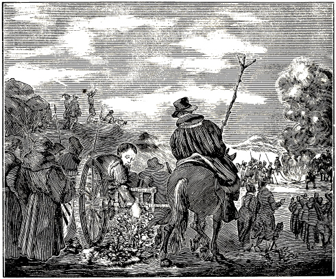
LEONHARD KEYSER ON THE WAY TO EXECUTION.
When the believers greatly increased under persecution and the cross (Ex. 1:12), there was, in Bavaria, a learned priest of the mass, named Leonhard Keyser, who examined the writings of Zwingli and Luther, and also went to Wittenberg, where he conferred with the doctors and commemorated the Supper with them.
Having returned to Bavaria, he examined the fruits and doctrine of the Anabaptists, as well as of Zwingli and Luther, and joined himself under the cross to the separated cross-bearing church of the Anabaptists, in the year 1525, and forthwith continued in his ministry, with great power and zeal, undaunted by all the tyranny which arose over the believers, in the way of drowning, burning and putting to death. Acts 9:20. In the second year of his ministry, Leonard Keyser was apprehended at Scharding, in Bavaria, and condemned by the bishop of Passau and other priests and capitulars, to be burned on Friday before St. Lawrence day, in August of the same year. Having bound him on a cart, they took him to the fire, the priests going alongside, and speaking Latin to him, but he, on account of the people, answered them in German; even as they had refused to speak to him in German before the court, which he had frequently requested. When he came out into the field, and was approaching the fire, he, bound, as he was, leaned down at the side of the cart, and plucked a flower with his hand, saying to the judge, who rode on horseback along side of the cart: “Lord judge, here I pluck a flower; if you can burn this flower and me, you have justly condemned me; but, on the other hand, if you cannot burn me and this flower in my hand, consider what you have done and repent.” Thereupon the judge and the three executioners threw an extraordinary quantity of wood into the fire, in order to burn him immediately 406to ashes by the great fire. But when the wood was entirely burned up, his body was taken from the fire uninjured. Then the three executioners and their assistants built another great fire of wood, which when it was consumed, his body still remained uninjured, only his hair and his nails were somewhat burnt brown, and, the ashes having been removed from his body, the latter was found smooth and clear, and the flower in his hand, not withered, or burnt in the least, the executioners then cut his body into pieces, which they threw into a new fire. When the wood was burned up, the pieces lay unconsumed in the fire. Finally they took the pieces and threw them into the river Inn. This judge was so terrified by this occurrence that he resigned his office, and moved to another place. His chief servant, who was with the judge, and saw and heard all this, came to us in Moravia, became our brother and lived and died piously. That it might not be forgotten our teachers have recorded this as it came from his own lips, and now cause it to be promulgated and made known.
Seb. Frank, in his Chron. der Rom. Kett. letter L., gives the following account of this matter:
“Having been brought a prisoner to Scharding, he was taken to the fire by three executioners, bound cross-wise on a ladder, and thrust into the fire. When he called upon Christ Jesus the ropes fell from his body and were burned; and as he was still alive, he rolled out of the fire at one side. The executioners instantly thrust him back into the fire, with hop-poles, that happened to be there, so that he rolled out on the other side. There the executioners cut him alive into pieces, which they cast into the fire, without being able, however, to burn them, as I have read,” etc. Concerning this, see also P. J. Twisck, Chron., fol. 1020, col. 2.
A. D. 1527, Thomas Hermann, a minister of the Gospel and word of God, was executed. Some persons had been apprehended at Kitzbuehl, and, through the tyranny of the authorities, had been brought to apostatize from the truth. The latter furthermore brought them into a public place before a great multitude of people, where the others reviled them shamefully, and said: “Ah, how finely your teachers and pastors now give their lives for you!” John 10:11; 1 John 3:16. Then the beforementioned Thomas Hermann made his way through 407 the people, stepped forth and boldly said: “It is the truth which I have taught you, and I will testify to it with my blood.” He was immediately apprehended, tortured, sentenced to the fire, and burned. On his way to the place of execution, he composed and sang a hymn, which is still extant. They could not burn his heart; hence, they threw it into the lake which was near the place of execution. After him sixty-seven of his fellow-believers were executed in the same place. The judge of Kitzbuehl, who assisted in condemning and putting to death many of them, and who because of their faith, both before and after, called them heretics was afterwards suffered by God to come to such awful disgrace, that he was himself found to be a heretic, and justly regarded as such by all men; which nevertheless, occurred not at all on account of the faith, but because God permitted him to fall into such disgrace, that he came to reproach and great infamy, also before the world.
The vengeance of God also came upon the town-clerk of Kitzbuehl, who had likewise been instrumental in this shedding of innocent blood, and had declared that he would not lay down his head in peace until he had helped to exterminate these people. For, as he was out riding in a sleigh in the town, and about to make a turn, the horse threw him against a wall, and an oak tree in the street, so that his brains were dashed out, and thus he did not lay down his head in peace, but came to a terrible end, as the brethren Hans Kitzbuehl and Christian Haring have testified concerning it.
On the 15th of November, 1527, Weynken, daughter of Claes, was brought prisoner from the castle of Woerden to the Hague, whither on the 17th day of the same month, came also the count of Hooghstraten, Governor in Holland. On the 18th, the aforesaid Weynken was arraigned before the governor and the full council of Holland. There a woman asked her:
“Have you well considered the things which my lords proposed to you?”
Ans. “I abide by what I have said.”
Ques. “If you do not speak differently, and turn from your error, you will be subjected to an intolerable death.”
Ans. “If power is given you from above I am ready to suffer.” John 19:11.
Ques. “Do you then, not fear death, which you have never tasted?”
Ans. “This is true; but I shall never taste death, for Christ says: ‘If a man keep my saying, he shall never see death.’ (John 8:51.) The rich man tasted death, and shall taste it forever.” (Luke 16:23.)
Ques. “What do you hold concerning the sacrament?”
Ans. “I hold your sacrament to be bread and flour, and if you hold it as God, I say that it is your devil.”
Ques. “What do you hold concerning the saints?”
Ans. “I know no other Mediator than Christ.” (1 John 2:19.)
Ques. “You must die, if you abide by this.”
Ans. “I am already dead.” (Gal. 2:19.)
Ques. “If you are dead, how can you speak?”
Ans. “The spirit lives in me; the Lord is in me, and I am in him.” (John 14:20.)
Ques. “Will you have a confessor, or not?”
Ans. “I have Christ, to him I confess; nevertheless, if I have offended any, I would willingly ask them to forgive me.”
Ques. “Who has taught you this opinion, and how did you come to it?”
Ans. “The Lord, who calls all men to him; I am also one of his sheep; therefore I hear his voice.” (John 10:27.)
Ques. “Are you alone called?”
Ans. “No; for the Lord calls to him all that are heavy laden.” (Matt. 28:11.)
After many like words Weynken was led back to prison. During the two following days she was entreated and tempted by various persons, namely, by monks, priests, women, and her nearest friends. Among others, a woman came to her, prompted by sincerity, who commiserated her after this manner:
“Dear mother, can you not think what you please, and keep it to yourself? then you will not die.”
Weynken replied: “Dear sister, I am commanded to speak, and am constrained to do so; hence I cannot remain silent about it.”
Wom. “Then, I am afraid, they will put you to death.”
Ans. “Though they burn me to-morrow, or put me into a bag, I care not; as the Lord has ordained it, so it must be, and not otherwise; I will adhere to the Lord.”
Wom. “If you have done nothing else I hope you will not die.”
Ans. “As for me, it matters not; but when I come down from the hall, I cry bitterly, and it grieves me to see that these good men are all so blinded; I will pray the Lord for them.”
Two Dominican friars also came to her, the one as a confessor, and the other as an instructor. The latter showed her the crucifix, saying: “See, here is your Lord and your God.” She answered: “This is not my God; the cross by which I have been redeemed, is a different one. This is a wooden god; throw him into the fire, and warm yourselves with him.” The other asked her in the morning of the day when she was to die, whether she would not receive the sacrament, adding that he would willingly administer it to her. She said: “What God would you give me? one that is perishable, and is sold for a farthing?” And to the priest or monk, who rejoiced that he had read mass that day, she said that he had crucified God anew. He said:
408
“It appears to me that you have fallen unto error?”
Weynken replied: “I cannot help it, my Lord and my God, to whom be eternal honor, praise, and thanksgiving (Rev. 4:11), has thus given it unto me.”
Ques. “What do you hold concerning the holy oil?”
Ans. “Oil is good for salad, or to oil your shoes with.” 1 Tim. 4:4.
In the middle of the week she was brought before the Court, and when she came into the hall, the monk went up to her, and held the crucifix before her face, saying: “Do recant before sentence is passed.” But Weynken turned from the crucifix, saying: “I adhere to my Lord and God; neither death nor life shall separate me from him.” (Rom. 8:39.) As she stood before the judge, the monk whispered into her ear: “Fall down upon your knees, and ask the Lord for pardon.” She replied: “Be still: did I not tell you, that you should not draw me from my Lord.”
The Dean of Naeldwijck, sub-commissary and inquisitor, read the sentence, in Latin, from a document, and repeating it in Dutch, said briefly, that she was found to be in error with regard to the sacrament, and that she immovably adhered to it; hence he decided that she was a heretic, and delivered Weynken to the secular arm, with the protest that he did not consent to her death. He then retired from the council, together with his two associate ecclesiastics.
The chancellor immediately read, that she, as reported, had been found obstinate, which could not be passed by without punishment, and that she should be burnt to ashes, and all her property be confiscated.
Then Weynken said: “Has all been done now? I beg you all, that if I have harmed or offended any, you will forgive me.”
The monk then said to her: “Now for once kiss your Lord and God.”
She answered: “This is not my Lord.”
As they were leaving the council chamber, the monk said to her that she should call upon our Lady to intercede for her.
She replied: “Our Lady is well content in God.”
Monk: “Call upon her.”
Weynken: “We have Christ, who sitteth on the right hand of his Father; he prays for us.” (Romans 8:34.)
On her way from the hall to the scaffold or place of execution, the monk said: “Behold for once your Lord, who died for you.”
Weynken: “This is not my Lord and my God; my Lord God is in me, and I in him.”
Monk: “Consider! will you condemn all these lambs, and are they all condemned?”
Weynken: “Not all; judgment belongs unto God.” (Heb. 10:30.)
Monk: “Do you not fear the severe judgment of God?”
Weynken: “God comes not to condemn sinners, but to give them peace.” (Luke 9:56.)
Monk: “Do you not fear the sentence which you must suffer in the fire?”
Weynken: “No, for I know how I stand with my Lord.”
On the scaffold there stood one who said to Weynken: “Mother, turn to the people, and ask them to forgive you, if you have offended any.” This she did. Then she assisted the executioner to put the powder into her bosom. Here the monk again tempted her with the cross; but she pushed it away with her hand, turned around, and said: “How you tempt me? My Lord and my God is above.” She then went gladly, as though she were going to a marriage; and her face did not once betoken fear of the fire.
The monk said: “Will you not always and firmly adhere to God?”
Weynken said: “Yes, indeed.”
Monk: “Now you will have to go into the fire; do recant.”
Weynken: “I am well content; the Lord’s will must be done.”
Monk: “This is not the will of the Lord; the will of God is your sanctification.”
The executioner said: “Mother, cleave to God and do not suffer yourself to be drawn away from him.”
In the meantime this pious heroine went alone undauntedly to the bench, and stationed herself at the stake at which she was to be burned, saying: “Is the bench firm; will I not fall?”
The executioner then made ready the ropes with which he was to strangle her. The woman took off her neckerchief or veil, and put the strap around her neck.
Then the monk exclaimed: “Mother Weynken, will you gladly die as a Christian?”
Ans. “Yes, I will.”
Ques. “Do you renounce all heresy?”
Ans. “I do.”
Monk: “This is well. Are you also sorry that you have erred?”
Ans. “I formerly did err indeed, and for that I am sorry; this however is no error, but the true way, and I adhere to God.”
When she had said this, the executioner began to strangle her, which when she felt it, she cast down her eyes and closed them, as though she had fallen into a sleep, and gave up the ghost, on the twentieth day of November, A. D. 1527.
In the year 1527, there was also a faithful brother (Rev. 2:10), named John Walen, residing in Waterlandt, on Crommenies Dijck, and with him two of his fellow brethren. These three were together brought prisoners, for the testimony of Jesus (Revelations 2:13; 20:4), by the blood-thirsty papists, to Haarlem, and after a little while they were sent from there to Gravenhage, where they were examined very severely; yet, through the power of the Most High (Eph. 6:10; Acts 1:8), with which they 409 were endued, they patiently endured it; thus valiantly overcoming by faith all their inquisitors and tormenters, together with the world and all visible things. 1 John 5:4. On this account the rulers of darkness (Eph. 6:12), at said place sentenced them to the following inhuman and tyrannous death: They were chained to stakes, and a fire built around them, and thus they were slowly roasted, until the marrow was seen to trickle down from their thighbones; thus being burned and roasted till death came to their relief. After their death the garments on the upper part of their bodies were taken off piece by piece, the color of the cloth still being recognizable. And as they suffered all this for the name of Jesus and the word of God, and not on account of any misdeed committed, but only in order to testify to and confess the firm foundation of the truth before this false and adulterous generation, the Son of God shall hereafter, when coming in his glory, not be ashamed of them, but confess them before his Father and his chosen angels, and crown them with everlasting glory in heaven. Revelations 20:4; 1 Pet. 4:14,15; Mark 12:39; Luke 9:26; 2 Tim. 4:8.
In the year 1528, Leonhard Schoener of Becklasburg was apprehended. He was a minister of God, and was well versed in the holy Scriptures, and also in the Latin language. He faithfully taught the true baptism of Christ and his apostles, the true Lord’s Supper, and the articles of the Christian faith; yea, the word of God. He also testified against infant baptism, the abominable sacrament, and other abominations of antichrist. He had originally been a barefoot friar for about six years, but beholding the impurity, wantonness, hypocrisy (Matt. 7:15), and viciousness of the monks and priests, and judging their lives by the word of God, he left the monastery at Judenburg, in Austria, and went to Nurenberg, learned the tailor’s trade, and then traveling about as journeyman tailor, he came to Nulasberg, in Austria. There he heard of Balthasar Heubmer and his baptism, and learned that a number of the same faith formed a little society at Veyen. He sought them out, came to them, heard them, and, led thither by Oswald, was baptized. After this he went to Steyen to work at his trade; where he taught and baptized, having been elected teacher by them; and thus teaching and baptizing, he proceeded through Bavaria, as far as Rothenburg, in the valley of the Inn; where he was apprehended for his faith, disputed much with his opposers, and was examined. Previous to this he proposed: that, if they regarded his faith and doctrine as wrong and heretical, they should produce learned persons, doctors, monks and priests, to dispute with him concerning the matter. Should he, in disputing on true scriptural grounds, be found to be in the wrong, they should punish him as unrighteous; and for still further confirmation of the truth, he offered, in order to confirm his assertion and his writings, that, if any of the learned could convince him with the truth of the word of God, that his doctrine was not conformable to the holy Scriptures, he should, as having been vanquished be severed limb from limb by the executioner, and, when deprived of all his limbs, have the ribs torn out of his body, until he should be dead. But if he should not be able to obtain a hearing and disputation, and they should judge and put him to death unheard, he asked all the witnesses of his death, and all those standing by, that they would be his witnesses before God, in His judgment at the last day. But by virtue of the mandate of the Emperor, and the edict of the King of Hungary and Bohemia, he was condemned, delivered to the executioner, beheaded, and burnt to ashes, on the fourteenth day of January of said year, at Rothenburg, for the testimony of Christ, from which he would not depart. After the death of this Leonhard, about seventy persons bore witness with their blood in the same place. Leonhard Schoener, among others, left the following admonition for the consolation of all those who suffer for the name of Christ:
“We beseech thee, O eternal God, incline thy gracious ear to us, Lord Sabaoth, thou Prince of hosts, hear our complaint; for great distress and affliction prevails, and pride has entered into thy heritage. And with it many supposed Christians have joined, and thus set up the abomination of desolation. Matt. 24:15. They rage, and destroy the sanctuary of the Christians. They have trampled it under foot, and the abomination of desolation is worshiped as God. 2 Thess. 2:4. They have destroyed thy holy city, overthrown thy holy altar, and killed the servants in it, wherever they could apprehend them. And now that we remain as a little flock (Luke 12:32), they have driven us with reproach and disgrace into every country. We are scattered like sheep that have no shepherd. We have to abandon house and home, and are as the night ravens, which lodge in the rocks. Our chambers are in caves and cliffs, and snares are laid for us as for the birds of the air. We go about in forests, and are hunted with dogs. We are led captive and bound as dumb lambs which do not open their mouth. Acts 8:32. We are proclaimed rebels and heretics. We are led as sheep to the slaughter. Many sit in distress and bonds, and their bodies have perished. Some have been overcome by the severe sufferings, and died without any guilt. Here is the patience of the saints on earth; and thus must we be proved by suffering. Rev. 13:10. The believers have here been hanged on trees, strangled, cut in pieces, drowned secretly and openly; not only men, but also women and maidens have testified here to the faith that Jesus Christ is the truth and the only way to eternal life. John 14:6. Still the world is not at rest, but rages like a madman, and forges lies against us. They cease not to burn and kill. They make the world too small for us. O Lord how long wilt thou be silent with regard to this? How long wilt thou not judge the blood of thy saints? Rev. 6:10. Let it ascend before thy throne. How precious in thy sight is the blood of thy saints. Therefore we have in all our distresses 410 a comforting confidence in thee alone, and in no other; neither have we consolation, rest or peace in the earth. But he that hopes in thee shall never be confounded. O Lord, there is no sorrow so great that it can separate us from thee; hence we call upon thee without ceasing, through Christ thy Son, our Lord, whom thou, out of pure grace, hast given us for our consolation, and who has prepared and made known to us the narrow path and the way unto eternal life. Matt. 7:14. Eternal glory, triumph, honor and praise be unto thee now and in all eternity, and thy righteousness abide forever. All nations bless thy holy name, through Christ, the coming righteous Judge of the whole world, Amen. Acts 17:31.
In the year 1528, Brother Hans Schlæffer, formerly a Roman priest, but afterwards a teacher of the word and Gospel of Christ, a highly gifted man, was apprehended at Schwartz, in the valley of the Inn, and with him Brother Leonhard Frick. They tried him greatly with many severe tortures, and disputed with him, through the priests, about infant baptism; but he, orally as well as in writing, showed them his defense, as it is commanded, and as it will be found, throughout the entire New Testament, namely: That the word of God must first be taught, and that only those who hear, understand, believe, and receive it, are to be baptized. This is the true Christian baptism, and no anabaptism. The Lord has nowhere commanded to baptize infants; they are already the Lord’s, and as long as they are in their innocence and simplicity, they are not to be condemned at all. They also asked him, in what the foundation of these anabaptistic sects did properly consist. To this he replied: “Our faith, practice, and baptizing is founded on nothing else than the command of Christ: ‘Go ye into all the world, and preach the Gospel to every creature. He that believeth and is baptized shall be saved’ (Mark 16:16; Matt. 28:19); and many other Scriptures.”
They also asked what design lay concealed under this anabaptism, since they had thus exhorted them to raise a new uproar and sedition. But he replied that it had never entered his heart, to make an uproar; neither had he ever approved of it in others; yea, he had fled from a house in which they lived in contention; which he could prove by all with whom he had ever lived. And there is no other design concealed under it, than to amend the life, and to forsake the vicious ways of the world; so that in the doctrine which he teaches, this is not the least commandment, that we are in duty bound to be subject to the authorities in all good things; how, then, should he raise and purpose uproar and sedition?
They also desired to know of him, who were the true authors and principals of these heretical and chief sects, as they falsely call them. He told them that he knew of no other principal of his faith, than the Son of God, Jesus Christ, who is the true Captain of the faith. Heb. 12:2. But as regards that they are called heretics and seditious sects, he referred them to the complaints of the Jews against Christ before Pilate, and the complaints against the apostle Paul, before Felix the Governor. Matthew 27:1; Acts 24:2.
He was likewise asked what had caused and induced him to forsake his office as priest. Concerning this he told them, that he had done it for conscience’ sake, because he knew that he was in the place of a prophet, and believed that God had sent him.
They would also know of him, who had told him to go into Germany, to plant the evil seed of Anabaptism. He told them, that no one had ordered him thither; but that, since he had no abiding place as yet, and had to go about in misery, he came there to one of his friends, with whom he staid, and thence came to Schwatz, where he was apprehended, according to and for the will of God. As to the evil seed of which they spake, he knew nothing at all; he intended nothing evil, but much rather the pure divine truth.
After this and other things, when he had been in prison for some time, and could not be moved, he and his fellow-prisoner and brother were condemned to death, and executed with the sword at Schwatz, thus testifying with their blood to the divine truth. He left the following admonitory thanksgiving to his brethren in Christ:
“O God, I beseech thy grace; do not impute to me my sins, since Christ atoned for them before I was born. Rom. 5:10. I was thine enemy, and thou hast loved and graciously accepted me, and given for my redemption the innocent blood of thy beloved Son (1 Pet. 1:19), though I still experience in me much molestation from remaining sin, which rises in my flesh. For when I would do good, evil is present with me. Rom. 7:21. For this cause I am sorrowful, and may well sigh and exclaim with the apostle Paul: O wretched man that I am! who shall deliver me from the body of this death? Romans 7:24. And I must reply to myself and say: But thanks be to God, which giveth me the victory through Christ. Thou art my comfort; for if I thus believe with the heart, I can not be condemned. The spirit is willing and ready, but the flesh is weak, so that it cannot fulfill the law of God, until Christ strengthens us with his Spirit. Where human laws reign on earth, there the distressed minds are seduced; yea, where Christ Jesus is not the sole Ruler, that which he does not build, is always torn and broken; and no building can stand, which he does not uphold. Though the world highly esteems other things, they are contemned before God; and hence we all pray together, young and old, great and small, that thou, O God, wouldst have compassion upon us, and send us poor children faithful shepherds and stewards of thy gifts (Matt. 9:38), that all human doctrine may be rooted out; for it is time to truly repent and forsake evil; for the severe judgment of God is at hand. Mark 1:15. Hence let us take our refuge to the chastisement of our Father, and submit ourselves in obedience, that he may chastise us as his children. The 411 world is blinded, does not know the Christian life, abominates it, flees the cross, and thinks it is enough, if they can talk finely of the Christian life, but do little in deed.
“But, my brethren, he that would be a true Christian, must put on Christ (Rom. 13:14), and resemble him in his humble form while on earth, and be of good cheer in everything which happens to him in this world. No external semblance of loving Christ, and of suffering for his name, avails here; we must not be ashamed of him, who first loved us (1 John 4:19), and gave himself for us to an ignominious death. It is in truth not otherwise, than that judgment must first begin at the house of God. 1 Pet. 4:17. Thus the Holy Scripture is now fulfilled, so that the punishment with which the world is to be visited, is ready and at hand; hence no one ought to be negligent; for the sword is drawn, the bow is bent, the arrow laid upon it, and aim is taken.
By this I do not mean that we are to seek any other refuge, than to accept the chastisement of the Father, as has been said above; by which he refines us for that whereunto he has sealed us, that we may be assured of the eternal and imperishable kingdom with him, and forever to possess it with him in life everlasting; to this may God strengthen us all. Amen.”
This Leopold Schneider was beheaded as a pious witness of the suffering of Christ, for the truth, at Augsburg, A. D. 1528. He left the following admonition for the comfort and instruction of others:
“My God, I will praise thee in my last hour, thee who art high above in heaven, I will praise thee with heart and mouth, for thou art worthy of it; strengthen my faith (Luke 17:5), now that I must go on this pilgrimage of suffering; remember me in mercy in this severe conflict. I commend my spirit into thy hands (Luke 23:46); in thee I rejoice. Christ, help me to stand in my sufferings. Heavenly Father, forgive them, for they know not what they do. Because I cannot forsake thy word, I am hated, and they seek to separate my body from the soul. Therefore I call upon thee, O God, for gracious help; I trust in thee, for I have no other comforter. That which is so clearly written, Mark 16:16: ‘He that believeth and is baptized shall be saved,’ can certainly not be contradicted by any one; hence it is to be heeded. O ye blind, why are you troubled and grieved because the command of Christ is observed? acquaint yourselves with the holy Scriptures, and you will find what Christ the Son of God has commanded us to do. I beseech you all, beloved brethren and sisters, that you would firmly trust in God, and let not my bitter death grieve you; for God will richly reward it; we must once take our leave of this vale of sorrow. The Scripture clearly declares, that he who would have laughing and joy here, shall hereafter mourn and weep. Luke 6:25; we must suffer here with patience; the Lord grant that it be done innocently. He that would here bring his gift to the altar, and remembers that his brother has aught against him, must leave his gift at the altar, and first go and be reconciled to his brother, and then come and offer his gift. Matt. 5:23,24. Therefore, I beseech thee, O God, graciously to forgive those who put me to death. I commend my spirit and soul into thy hand, O God; deliver me out of all my distresses, and never turn away from me; deprive my flesh of all its power, that I may overcome and be victorious in thee. Amen.” Rev. 2:11.
These eighteen persons, besides many others, were kindled with zeal in the fear of God, and had turned to God from the world and its idolatry, and been baptized upon faith in Christ, entering upon obedience towards his holy Gospel. This the adversaries could not endure; these eighteen were therefore apprehended, and finally, as they, under many tortures, piously adhered to their faith, were all sentenced to the fire, and burned, on the same day, at Salzburg, about the year 1528. They left the following as a memorial:
“O God of heaven, watch over thy sheep; who are such a little flock, that they may not depart from thee, or be led astray. Keep them under thy protection, and deliver them from this lamentable distress; for the beast pursues them even unto death, which they must suffer, for they are thrown into severe prisons, where they, in the death of the dungeon, sing praises unto the Lord, and magnify him with heart and mouth. Acts 16:25. O Lord, have compassion therefore, and let this our complaint come before thee. Come quickly, and help us poor children, and sustain us in thy will. They would drive us from thee, and they beset us very hard with their great power and pomp. O God, grant us thy divine power; we have no other Lord in heaven and earth, than thee. 1 Cor. 8:6. Grant us what we desire of thee. The Lord Christ sends out his messengers, and through them offers us his heavenly kingdom, which is derided by the world: but we have accepted the Lord’s kingdom and his grace with great joy and satisfaction; therefore the priests roar and rage against us, and terribly hate us. They have greatly hid the truth for more than five hundred years, and seduced the multitude of men with false doctrine: they trample the word of God under their feet, and it is despised by them. O Lord, grant that they may amend their steps and do thy will.
And is that which has been witnessed at Salzburg not a lamentable matter; namely, that eighteen persons were burned together on the same day, only for the doctrine of Christ, whom they confessed to be the only Lord? They would not honor the image, nor worship the beast. They would not receive their words, nor the mark of antichrist into their hand or on their forehead. Therefore they could neither buy nor sell in the land; but they adhered to Christ, and received his mark, and their 412 names are written in the book of life (Ps. 69:28); as Christian soldiers they, through grace, obtained the crown.” 2 Tim. 4:8.
Thus they were burned with fire, and are now awaiting everlasting joy.
Wolfgang Ulman, a celebrated and excellent man in matters of faith, after maintaining and practicing the faith for some time, was burned, together with his brother and ten other persons, all steadfastly testifying to their faith with death, at Walzen, about the year 1528.
Subsequently also Hans Pretle, who had been a preacher, but had afterwards become a minister of the church of Christ, having exercised his ministry for a time, and pointed many to the knowledge of the Gospel, was burned for the testimony of Jesus Christ. Rev. 6:9.
Little Hans of Stotzingen, having been in prison for a time, for the evangelical truth, at Zabern, Alsace, was finally condemned to death, about the year 1528. On his way to the place of execution, he addressed the following admonition to the people, and was then beheaded with the sword.
“In our extremity we now begin to cry unto our God, to deliver us from all our distress, that our hearts may offer up to him a pure sacrifice acceptable in his sight. Rom. 12:1. The sacrifice which I mean is my whole body, life, skin and bones, and also wife and children. We are willing to offer up all our members, love impelling and constraining us. Pharaoh would fain prevent and alter this; but we care not for it, and have not the least desire to desist from it, but to bring the offering before the Lord, and to press our way through with his assistance (Matt. 11:12); he will aid and succor us. Come hither, beloved brethren, let us valiantly take hold of the matter: We are now members of Jesus Christ (Rom. 12:4,5); he is our Captain (Ephesians 1:22); he has prepared a glorious crown, with which he will crown those who shall persevere unto the end. Matt. 10:12. Be of good courage and undaunted, thou worm Jacob. Isa. 41:14. The Red Sea shall stand open; if Pharaoh will pursue thee, he will perish in it. Thou little flock, be not afraid, for it is but a little while here, and our flesh is of no consequence. But in the city which God has prepared us in the everlasting kingdom, we shall be as the angels of God. Heb. 11:10: Matthew 22:30. Who can estimate their value? This God has promised us; yea, through his child Jesus Christ he promises us much comfort and joy, and everlasting rest, if we continue steadfast in him. But we must also drink the cup of suffering, and suffer with his Son Christ Jesus (Matt. 20:23), and he will deliver and well succor us. Though the heathen slay us, he will not forsake us, but break their power in pieces, snatch us out of their hand, and through grace gloriously crown us. God is the Lord who can protect. He is also our shield (Genesis 15:1), since we have him for a Father, who is so good and gracious; that though men drive us away from them, yet will we always adhere to him. His great power is over us, and he does not suffer them to faint, who keep his covenant; therefore, though we be defamed and accused, rejoice over it in your hearts. Have confidence in God, and he shall help you. Therefore fear neither pain nor death. I give praise and thanks to my God, that I have become a sacrifice. I have long longed for it, for to die is gain for me. Phil. 1:21. O God, let me partake of the sacrifice of thy Son Jesus Christ. Amen.” Heb. 9:14.
Thus he offered his neck, and was beheaded for the testimony of Jesus Christ. Acts 1:8.
In the same year 1528, Thomas and Balthasar, both ministers of the Gospel, and with them one Dominicus, were apprehended, condemned to death, and burned, suffering it very steadfastly, for the faith and the divine truth, in the city of Bruenn, in Moravia. But before they were apprehended, they advised the council, that they should take care and not shed innocent blood, for God would not let it go unpunished. Jer. 7:6. One of the council, named Thomas Pelzer arose and did as though he were washing his hands, saying: “Thus shall I wash my hands in their blood, and think to do God service.” John 16:2. But a few days after the judgment of God came upon him. He was found dead in his bed, beside his wife; and thus by his sudden death, was not permitted, to see the death of these pious persons, which struck terror into the hearts of many.
Brother Bastelwart well knew this Thomas Pelzer, who died so suddenly; and also Brother Andrew Gauper was acquainted with the circumstance.
About this time also Hans Feierer, a minister of the word, and five of his brethren or fellow believers were condemned and burned for the faith and divine truth, at Munich in Bavaria; there three sisters, wives of three of them, were drowned, and boldly, cheerfully, and gladly surrendered their lives, being willing much rather to lose this temporal life, than to desist from what God had given them to know. They gave up a miserable life, in due time to find another (Matt. 10:39; 24:13; Rev. 2:10), with Christ, and with Abraham, Isaac, and Jacob, and all the saints and pious, in the kingdom of God, which is promised to all those who endure to the end.
413
A. D. 1528, Three brethren and two sisters were put in prison at Znaym, in Moravia. There was a Judge at Znaym, called Sir Louis, who greatly hated the brethren, as was manifest in the imprisonment of these brethren and sisters. With stern words he asked the council what they intended to do with the Anabaptist heretics, since they had a royal command and mandate, and yet did not have them executed. He said he would himself go to the king, and inform him of their disobedience; but if they would have them executed, he would draw the wood to burn them, with his own horses. Thereupon the council answered and said: “Dear Sir Louis, we will commend them to thee; do with them as you please; it is committed to you. Then he had the wood drawn with his own wagon, and caused the three brethren and two sisters to be burned, who were thus speedily executed, paying unto God, who permitted this true burnt offering, the vow made in baptism, and fighting unto death for the divine truth confessed.
This Louis, actuated by the hatred and envy of the old serpent, was not yet satisfied with the blood of the pious and innocent sheep of the Lord, and had to fill up the measure of his judgment. He commanded money to be given to those who should tell him where the brethren assembled. A house having been pointed out to him, he took baliffs and watchmen, and went with them to the place. There Judge Louis stepped unawares into an opening before the house, used for letting down wine, and sprained his foot. He fell down and cried piteously that they should lift him up, and let the rascals go. The brethren heard the noise, and escaped from the house. After this Louis took sick unto death, and as he lay there in his agony and severe sickness, he suddenly began to exclaim: “O the Baptists, the Baptists!” He spoke nothing else, but repeated this cry innumerable times. Finally he roared like an ox, and like a wild beast and bit his own tongue, that foam and blood ran out of his mouth, so that his wife and children could not stay with him; only his servant woman, who was attached to him, remained with him until he was strangled in his own blood. This servant woman related the circumstances to Brother Bastelwart, who was a minister. All his kindred do not like to have it spoken of; and it was a common saying among the people that he had shed innocent blood. Prov. 6:17; Jer. 7:6; 22:3. And thus God has often (more than is shown in this book, or can be related) checked the wicked with like examples, that thereby his work might make the greater progress among his people, to his praise, and to the salvation of many who seek that which is right, and the amendment of life; for if God had not always sustained his work, the enemy would in the course of time, have extinguished it, and not have left one spark or germ of truth remain; but this God does not permit him to do.
In this year 1528, nine brethren and three sisters were apprehended at Bruck, on the Mur, in Steyermark. They were condemned for their faith, and taken in bonds out of the city, to the place of execution; but they were glad and of good cheer, and said: “This day we will suffer in this place for the word of God, and offer to him our sacrifice.” Rom. 12:1; 2 Tim. 4:6. They also earnestly admonished the lords of Bruck, that they should know that they rendered themselves guilty of innocent blood. A ring having been formed, they all knelt down (Acts 7:60; 20:36), and earnestly prayed to God; that they might now finish this their evening sacrifice. They then arose and submitted to the sword. The executioner was sad; for he did not like to do it. The youngest of them all entreated his brethren, that, since he felt of good cheer and bold, they should let him suffer the first pain; he then kissed them, and said: “God bless you, my beloved brethren; to-day we shall all be together in Paradise.” Acts 23:43. Thus these nine brethren were beheaded in a green field; they were so undaunted that it was astonishing to behold it. They knelt down; and thus poured out their blood through the smiting of the sword. The three sisters were drowned; they would in no wise depart from God and his truth. The youngest one laughed at the water; which was seen by many a one there. Some held that the devil had hardened them; but others were moved in their hearts, so that they confessed that God must have given this, since otherwise it could not be possible. Thus they valiantly testified to the holy and divine truth.
These two were beheaded for the truth, at Ries, in the Fluchtthal, near Brixen, and thus died as faithful witnesses of Christ, leaving the following admonition to their brethren:
“Hearken, all of you, and take to heart, that God will visit all sinners great and small, who now despise him and revile his name, and do not consider their sinful life. God shall speedily awaken, and deliver his children. If we consider the doctrine of the prophets, we see that this is the last time, and in this time God calls upon all men that they should turn unto him (Is. 45:22), live according to his will, and keep his commandments; and that if they do this, his wrath shall cease, and he will be their God and Father; for God, because of his great goodness, is longsuffering in his judgment; therefore beware of sin, and do not follow the devil; but free yourselves from unrighteousness, and your God will not forsake you in this last hour; for God is rich and gracious, and with him there is much grace; he willingly forgives the sinner who will forsake his sins, who believes in Christ, and calls upon his name; to such he will not only, through grace remit his sins, but also freely give him the eternal reward. Heed well these things, O! all of you who belong to the Church of Jesus Christ, and have become children of God. Praise God with shouting, young and old, great and small; you who have believed his word, love God as his dear children, and 414 walk before him with pure hearts, and you shall never be forsaken, but he will ever preserve you. O God, who art rich in grace, keep us thy children, that we may hold to thee, and that those who have come to thee, may not be confounded; lead them diligently with thy right hand into the promised land, the eternal heavenly kingdom. O God, honor be unto thee in thy high throne, who hast given us Christ thy Son, and imparted divine grace to us, by which we now confess thee with heart and mouth, and are not ashamed to call them our brethren who call upon thee in truth as their Father. Praised be thy holy name, Amen.”
Note.—Sebastian Franck relates that the Anabaptists in the beginning increased by many thousands, so that the world feared that they would cause an uproar; but of this, as I hear, he writes, they were found innocent and, were persecuted with great tyranny; first especially in popedom. They were forcibly imprisoned, and tormented with the sword, fire, water, and manifold imprisonments, so that within a few years very many were put to death. Some compute the number of those put to death far more than two thousand. They were put to death in many places; at Ensisheim alone about six hundred were slain, all of whom patiently and steadfastly suffered as martyrs.
Compare the account of Seb. Franck, Chron., fol. 55, 109, with the old Offer-boeck, lib. 1. Leonh., lib. 7; also Chron. van den Ondergang, p. 1025.
In the year 1529, those of Basel imprisoned nine of those who were baptized according to the command of Christ; six227 of whom, as they write, were banished.
They further write, that at Bomburg, a castle in the dominion of Basel, some of the chief Anabaptists were imprisoned by one Bartholomew Sincken who was castellan there. However, what they ultimately did with them, the record does not state. Compare this with the account in the preface to the Offer-boeck der Doopsgesinde, of the year 1615, letter Y, p. 2.
Hans Langmantel, a wealthy citizen and of noble descent, during the re-establishment of the churches in Germany, received with his man-servant and maid-servant the truth of the Gospel, and, kindled with zeal, they believed the truth, forsook their sinful life, and were baptized upon their faith in Christ Jesus, for the remission and forgiveness of their sins; on which account all three were imprisoned, and, after enduring many assaults and torments, they were finally put to death for their faith, which they constantly confessed. Hans Langmantel and his man-servant were beheaded with the sword, while the maid-servant was drowned in the water. When they were still in severe confinement they sent the following, as a thank offering and prayer to God, which they made use of in prison, to their brethren, for consolation, admonition, and as a memorial, about A. D. 1529.
“O God, our heavenly Father, come with the power of thy Holy Spirit, that thou mayest rejoice our mind, heart and soul; give all three of us a manful heart, that in this anguish we fight and overcome. Rev. 2:7. Hold us with thy right hand, for thou art our strength; fight the battle for us (Ex. 14:14), and watch over us in distress, that we may stand in the conflict, and not go back when it is at its height. Therefore, O Lord, keep watch over us, and take care of us in this extremity, now that the wicked rise up against thy word, and would drive us from it. O God, preserve us in thy keeping, that we may not faint and abandon thy word. Let us enjoy the faithfulness which thou hast shown us through thy Son Jesus Christ; and in order that we may always earnestly contemplate this, send us thy Holy Spirit, and kindle in us the fire of thy divine love; lead us, thou who didst teach it in deed, that we may also exercise ourselves therein, and observe and practice it as thy dear children, that this gift may come upon us, and that, even as we are called, we may by it order our lives in this thy truth, maintain peace and unity, and love one another in truth with a pure heart. To this end, O God, let the light of thy divine glory illuminate us, that we may walk in it. O Lord, keep us in it as thy dear children, and let us never became obscured by the abominable darkness of this world, which has gained the upper hand with all unfaithfulness, and which will be followed by death. But thou, our Father, dost love equity. In thee there is no darkness (1 John 1:5); but the world is hardened with it. But thou art the eternal light, which penetrates the darkness; that we may no longer be children of the night, but children of the day. Watch over us with thy Holy Spirit, and teach us thus to go on in this light with delight and joy according to thy divine nature.
“O God, we beseech thee for one thing more: Send us to this end thy Holy Spirit, endue us with his power, renew our hearts, and make us strong in thee, that we may obediently hear thee in thy obedience, and praise thy name. When this world rises, and opposes thy words, so that our soul sighs to thee in all severe distresses by which they seek to tear us away, then, O Lord, grant us to look to thee for aid, and help us to overcome. Grant, Lord, that we may not stain ourselves by any sin or guilt, and take from our flesh the fear by which they would draw us away, and stop us in this work; that, when they shall lead us to death, we may not waver in the conflict, but may go to meet thee with all the pious in the true, adorned wedding garment, at the marriage feast, prepared for thy Son, when he shall receive his bride with everlasting joy and delight. Lord, assist us in every anguish and distress, and in the pain of death; give us the heavenly bread; send us thy Comforter, for God is the Comforter of the miserable. He makes the poor rich, 415 and strengthens the feeble; he can refresh the weary and give strength to the faint, that they may come to thee. Through thee they overcome, who have now entered the conflict, to fight for the truth. In Christ, thy Son, help us to win the field on this earth, yea, in him alone. Be thou alone our Helper, protect us with thy sword, that we may together, as thy heroes, obtain the crown, and be forever with thee. Amen.”
About this time, George, of the house of Jacob, called Blaurock, having for about two or three years, in Switzerland, but particularly in the earldom of Tyrol, whither he had gone, spread and proclaimed the doctrine of the truth, that he might put his talent to use (Matt. 25:15), and by his zeal for the house of God be a means of salvation, was apprehended with his companions, at Gusodaum, condemned for the faith, and burnt alive not far from Clausen, for these articles, namely: That he had forsaken his office as priest, which he had formerly exercised in popery; that he disregarded infant baptism, and taught people a new baptism; that he rejected the mass; that he likewise rejected the confession of the priests as founded by them, and that the mother of Christ is not to be invoked or worshiped. For these reasons he was executed, and laid down his life, as behooves a soldier and hero of the faith. On the place of execution he earnestly spoke to the people, and pointed them to the Scriptures.
The love of the truth having begun to burn among the nations, and the fire of God having thus started, many were put to death for the testimony of the truth, in the earldom of Tyrol, especially in the following places: In the Gusodein district: at Clausen, Brixen, Stertzing, Balzen, Neumark, Katren, Terlen, Gundersweg; in the valley of the Inn; at Imst, Petersberg, Stejen in the Spruckthal, Schwatz, Rattenburg, Kufstein and Kitzbuehl. In these places a great multitude of believers constantly testified with their blood to the truth, through fire, water and the sword. Thus the people of God, as well as the great persecution increased daily. Jacob Huter became one of the overseers and teachers in the earldom of Tyrol, and not long after, with his people, united with the church which was in Moravia. After Jacob Huter removed with his people from the earldom to Moravia, partly compelled by great persecution, the tyranny in the earldom of Tyrol became daily more vehement; so that the pious had but few places where they could remain and many of them were apprehended, and put to death in various ways, for the faith. To this end the priests violently and furiously proclaimed from the pulpit, that care should be taken, to ferret them out, and to destroy them with fire and sword. Much money was also repeatedly offered and promised to those who should inform against them; by means of which they were several times betrayed. They were sought in every way, in forests and in houses, wherever their presence was suspected; in every place, also in closed gardens, which had to be opened, or they would be broken open, and searched. There was a Judas, called Prabeiger, who made use of his subtle artifice, thinking to obtain a large reward. He went to the authorities, and betrayed them all, bringing with him bailiffs and children of Pilate, with swords, spears, and staves, and went before them, just as Judas the traitor did, Matt. 26:47. They caught a great number, and dispersed the rest. Not long after, when they again assembled, another Iscariot, called George Frueder, manifested himself. He went to the priests, saying that if they would pay him, he would go, and none of the brethren should be able to conceal himself from him. Then the priests, the generation of the scribes and Pharisees, gave him money and good wages, and also a letter. This rogue then went out, assumed the form and semblance of an angel, and visited now and then such as he suspected of having knowledge of this matter. He inquired everywhere in the Pusterthal, where the brethren were, and how he could find them, desiring assistance to this end. With much weeping the rogue made this request, pretending that he could not rest until he were with them. Thus he deceived them, so that he finally came to them. He appeared before them very sad, humble and tender. As one who seeks to repent and to amend his way. He then very suddenly said: “My brethren, grant me this, and wait a little while, and I will go home and fetch my wife and child.” Many thoughts came to the minister and he said to him: “If you are false of heart, and your intention evil, God will certainly find you, and you shall speedily bring down his judgment upon you.” But he said: “O no, God preserve me from that; come with me into my house.” Thus he went away, and hastened to the judge, the magistrate, and the priests, who came with force, with swords and sticks, and apprehended the brethren and sisters.
Several other villains of this class manifested themselves, especially one whose name was Peter Lantz, and one named Pranger. Some went about by night with much craftiness, acted in the same manner, and went to places and houses where they expected to find of these people; but God gave them the recompense which they deserved, so that they might have wished that they had never been born.
Besides the abovementioned George Blaurock, there was also one Hans van der Reve; both of whom belonged to the number of those who sincerely received the truth of the holy Gospel, and helped found and build the Christian church, in the time when the truth had long been obscured in popery and by other errors. And when they had thus for a time faithfully exercised their ministry, edified and instructed many, and put their talent effectually to usury (Matt. 25:15), they were finally apprehended by the envious children of Cain, and burned at Clausen, in Etzlandt, A. D. 1529.
And in order to show that in all this they rejoiced in God, and also sought to console and strengthen their brethren, they left them the following memorial.
416
“Lord God, I will praise thee now and until my end; because thou hast given me faith, by which I have learned to know thee. Thou sendest to me thy divine word, which I am able to find and perceive that it is from pure grace. From thee, O God, have I received it as thou knowest. I firmly hope that it will not return unto thee void. Is. 55:11. O Lord, strengthen my heart to this. My heart rejoices because I know thy will. When I felt the heavy load of sin in me, which exceedingly troubled me (Ps. 38:6), I would have had to perish and suffer everlasting pain, hadst thou, O God, not come to me with the word of thy divine grace. Acts 10:37. For this I will now magnify and praise thy glorious name forever, because thou dost always show thyself a merciful, dear Father. Cast me not off, but receive me as thy child. Therefore I cry unto thee, help, O Father, that I may be thy child and heir. O Lord, strengthen my faith (Luke 17:5), else, if thy help should not succor me, my building should soon fall. Do not forget me, O Lord, but be with me always; thy Holy Spirit protect and teach me, that in all my sufferings I may ever receive thy consolation, so that, valiantly fighting, in this conflict, I may gain the victory. 1 Cor. 9:25–27.
“The enemy fights a battle with me in the field in which I now am; he would fain drive me from the field. But thou, O Lord, givest me the victory. He ran against me with sharp weapons, so that all my limbs quaked before the false doctrine and their constraints. But thou, O Lord, hadst compassion upon me, and didst help me, thy son, poor man, with thy grace, and powerful hand, and madest me to overcome. O God, how soon didst thou hear me; thou speedily camest with thy help, and turnedst back mine enemies; therefore I will sing praises unto thy name in my heart, and forever spread abroad the grace which has come to me.
“Now, I pray thee, Father, for all thy children; preserve us all forever from all the enemies of our souls. I must not trust in the flesh (1 Peter 1:24), which perisheth and abideth not; but I will firmly trust in thy word (Ps. 115:9), this be my consolation, on which I rely; it shall deliver me, from all my distresses, to everlasting rest. The hour of the last day, to which we all must come, is at hand. Dear Lord, help us to bear the cross to the destined place, and turn thyself to us with all grace, that we may commend our spirit into thy hands. I sincerely pray thee for all our enemies, O Lord, however many there may be; do not lay their sins to their charge; Lord, I entreat this according to thy will. Acts 7:60. And thus we (I George Blaurock, and Hans von der Reve) will depart in peace. May the good God through grace lead us into his everlasting kingdom, as we firmly trust that he will, and finish his holy work in us and give us strength to the end, Amen.”
This evidently came to pass, when these two so steadfastly and boldly died and were burned, for the truth.
God administers a righteous judgment (Ps. 7:11; Rom. 2:5), which no one can set aside, and him who does not his will, he will judge. But thou, O Lord, art good, and sufferest thyself to be found gracious, and all those who use diligence to do thy will, thou acceptest as thy children. We justly give praise and thanks to thee, through Jesus Christ, for all thy benefits and goodness, and beseech thee to preserve and guard us from sin. The sinner in this life brings a severe judgment upon himself, which he shall hereafter regret; for though God faithfully warns him, yet will he not forsake his sinful life; but when the Lord shall come in his glory to judge, then shall the sinner repent; for no excuse will then avail.
He now causes his divine word to be published, and instructs men, that they should turn from their sinful life, believe in Christ, be baptized upon faith, and obey the Gospel. Therefore, ye children of men, forsake your sins, and remain no longer hardened, sick, wicked and blind; now that you can find the physician, who can heal all infirmities, and avail yourselves of his help without money. Matt. 9:12. O, how awful will it be with the sinner who now refuses help and counsel, when he shall be sentenced by God into everlasting pain, where he will have to remain and suffer forever and ever. Matt. 25:46. But thou, O Lord, art a righteous God. Thou wilt deceive no one, but wilt preserve those that sincerely love thee, from the second death.
Thou, O Lord, art a strong God, who will cast into hell, which has now opened wide her mouth, all the wicked and those who hate and afflict thy children. But thy mercy is great over those who repent, and thou, through Jesus Christ, forgivest their sins. This is what God requires: that the whole human race should fear and love him, that they should follow his Son Jesus Christ, and observe his divine doctrine. But when the sinner is exhorted to the love of God, he shows by the deed that he considers it a mockery; for this however he shall pay dearly, for God can not be deceived by appearance.
Antichrist threatens those who fear God with great severity and ignominy. Therefore we beseech thee, O Lord, strengthen thy feeble vessels: but we know, that if we patiently endure all this for thy namesake, thou, in thy faithfulness, wilt not forsake us; but dost renew and strengthen us daily, that we may continue on thy narrow way. Matt. 7:14. We cry to thee through Christ, for the sake of his bitter suffering (Is. 53), in which we recognize thy faithfulness and love; and this consoles us on our pilgrimage. Do not forsake us, thy children, henceforth unto the end; but constantly offer us thy Fatherly hand that we may finish our course; for when we have finished our course, the crown is prepared by the young man (2 Esd. 2:43) who hung on the cross for us, on which he suffered greatly for our sakes. Grant, O Lord, that we may be thankful, so 417 that we may joyfully behold thee, our Father. O Father, through grace thou didst choose us, and didst not despise to put us into thy work; grant that, when the evening comes, that we may receive the hire with rejoicing. Matt. 20:1,8.
Through Christ thy Son make us ready for the heavenly supper, and clothe us with thy Holy Spirit. In that supper, thy Son, our Redeemer, shall serve us at the table. Luke 12:37. O, how blessed are they which are called to this supper (Rev. 19:9), and who in all sorrow adhere to Christ unto the end, even as he steadfastly suffered for us on the cross; and thus it is with all his followers on the earth; and all who shall keep their wedding garment undefiled to the end. Upon their heads the young man shall set crowns. But he who is not clothed with this garment, when the King will inspect his guests, shall be sternly reproved, bound hand and foot, and cast into outer darkness. O Lord, give us true love so to walk, that when we come we will not find the door closed, as was the case with the foolish virgins, who had no oil in their lamps, and said: “Lord, open to us,” but could not go in: but that we may happily watch with the five wise virgins, and may also enter into the glorious marriage feast of eternal heavenly joy, when the King, with his trumpets, shall call and assemble his elect. Therefore, O Zion, thou holy church of God, see that thou hold fast unto the end that which thou hast received, and keep thyself unspotted from sin, and thou shalt, through grace, receive the eternal crown. 1 Cor. 9:25: 2 Tim. 4:8.
In the year 1529, Brother Vigil Plaitner, a minister of Jesus Christ, at Scharding, in Bavaria, was condemned and executed, after great steadfastness (Matt. 24:13), for the faith and the divine truth. He would depart neither to the right hand nor to the left, and did not love his life unto death (John 12:25), but surrendered it for Christ, in order that in the abode of the righteous above he might receive it again forever with all the saints and pious. 2 Peter 3:13.
In this year also a brother named Louis228, a minister of Jesus Christ, learned and well versed in the Hebrew, Greek, and Latin languages, and experienced in the holy Scriptures, was executed with the sword, at Constance, on the lake of the same name, after being long imprisoned there. At his departure he gave many excellent instructions, so that many were astonished, and were moved to weep with him.
In this year, John Hut229, a faithful minister of Jesus Christ, was apprehended for the divine testimony, at Augsburg, in Swabia, where he was brought into a tower. Finally they ceased their severe questions and tortures, and he was left lie as one dead. Then they went away, leaving a light in the prison, near the straw, by which the straw was set on fire. When they returned to the tower they found him dead. They then carried him, dead as he was, in a chair on a wagon, before the court, where he was condemned to be burned. His son, Philip Hut, fell asleep in the Lord, in the church at Heim. This John Hut composed a hymn of thanksgiving, which we sing at the memorial or supper of the Lord; besides this he composed one or two other hymns.
In this year, also Brother Wolfgang Brandhuber of Passau, and Hans Niedermair, both ministers of the word and Gospel of Christ, were apprehended, together with many of the pious at Lintz, in the country above the Enns, for the divine truth; they were condemned to fire, water and the sword, and were immediately executed, in all over seventy persons. Among these also Peter Niedermair of Hirschberg, at Gminden, was apprehended, on St. Andrew’s eve, A. D. 1529, and though, in the extreme fear of death, he was tempted in various ways, yet he remained faithful and constant. Rev. 2:10; Matt. 10:22. Ultimately, through the providence of God, he was set free, after being imprisoned there for over three years.
Concerning said Wolfgang Brandhuber, writings are still extant in the church, how faithfully he taught the Christian church, and also said, that in everything which is not contrary to God, we should be obedient and subject to the authorities, and that he strictly held to the true baptism of Christ, and to the true Lord’s Supper, rejecting infant baptism, the sacrament, and other antichristian abominations and anathemas, as is shown by his writings, which are still extant.
About this time also Carius Prader, a minister of the church of God, in the country of Salzburg, and several other persons were shut up together in a house and burned. A hymn is still extant in the church which this Carius composed.
418
These seven brethren were executed together on the same day, with the sword, for the evangelical truth, at Gmuend, in Swabia, and thus steadfastly testified with their blood to the name of Christ, A. D. 1529. The account of it is as follows:
“I could not forbear to acquaint my brethren with what is taking place here in Germany, even as it is known to many how the world rages and storms against the true believers, and how she robs the servants of God of life and property. For God, graciously looking down upon the children of men, gave them, in the midst of their blindness, his brightly shining word for a light, that believing it, we should avoid all sin and shame. Many recognized this word as the truth, accepted it with the mouth, and were called Christians, but continued nevertheless in their sinful life, supposing that the bare name was sufficient, if only the semblance existed. Afterwards the Lord so ordered it that his word did effectually work in some, so that, in the language of the prophet Isaiah (Is. 55:11), it accomplished that whereunto God sent it, and did not return unto him void, but guided many into the right way. And thus, those who sought to live faithfully, were hated, and despised as anabaptists by the rest, just as though they had apostatized from God, and turned to Belial; while they earnestly sought and desired nothing else, than to keep God’s commandments with his assistance, according to all their ability (1 Cor. 7:19); and yet they were reproachfully stigmatized as anabaptists,—they who sincerely forgave every one, assisted their neighbors by lending to them without usury, and prayed for their persecutors and enemies (Matt. 5:44), as was seen at the hour of their death, and who thus attested their faith with the deed, as was publicly witnessed, A. D. 1529, in the town of Gmuend, where the enemy employed manifold wiles with some of them, to terrify them, without being successful however. There they had apprehended a lad only fourteen years old, whom they put into the tower, where he lay very severely confined almost a year, suffering many an assault, but always remaining immovable, however frequently they came to him, to induce him to forsake his faith. With him six other brethren, pious men, were apprehended and imprisoned in the tower for life. There they together praised God (Act 16:25), and comforted one another; and God assisted them with his grace, so that they faithfully adhered to the faith, and did not allow themselves to be moved either by threats or terrors. When the time of their departure from this world drew near, their death sentence was read to them, and it was added, that if they would desist from their faith, they need have no fear, but might return home to their wives and children. The prisoners turned to their enemies, and replied: “We have committed our wives and children to God, who is well able to preserve them; hence cease these words; for we are willing and ready to die.” A ring was then drawn on the spot, as is customarily done at executions, with the sword. As this lad stood in the ring, to be beheaded, a count rode up to him into the ring, and thus addressed him: “My dear child, desist from this error, and I will give you a prebend, and always keep you with me.” The youth replied: “Should I love my life (John 12:25), and therefore forsake my God, and thus seek to escape the cross? this I must certainly not do; thy wealth can be of no help to either of us, but I expect a better in heaven”—Thus the youth fearlessly replied, adding—“in the kingdom of my Father, who has chosen me, and who can order and equalize all things as is best. Hence cease these entreaties; to him who has always fed and sustained me, I desire to show obedience also in this my last distress. To him we must call from the bottom of our heart, when the hour is at hand, that we may depart with good cheer out of this world. If we do not depart from him, he will give us the everlasting, glorious crown.”
At this, a great tumult arose among the people, with spears and other weapons, and each spoke of the matter as he understood it. And thus they died through the sword, as pious heroes, and became a sacrifice unto the Lord, as faithful witnesses of Jesus Christ, A. D. 1529.
While these seven brethren were still in prison, they together, each giving his own mind, wrote and practiced the following, and sent it to their brethren.
The first made the following prayer: “Out of the depths of my soul I cry unto thee, O God; hear my cry. Send thy Holy Spirit, even as thou, O Christ, hast until now not withdrawn, but graciously imparted him to me. We rely on what thou hast commanded us; but the heathen seek to kill us.” Ps. 130:1.
The second prayed: “The flesh is weak, O Lord; Thou well knowest that it fears the least pain; hence, fill us with thy Holy Spirit, which we entreat of thee from the bottom of our hearts; so that we may continue steadfast unto the end, and cheerfully and valiantly enter upon the suffering which now awaits us, and that we may fear no agony or pain.” Matthew 26:41; 10:22.
The third prayed: The spirit is willing and ready to desire the suffering. O Lord, hear our prayers, through Jesus Christ thy Son. We also pray for our enemies, who, alas! are so ignorant, that they do not know what they are doing, and are not mindful of thy wrath.” John 15:16; Matt. 5:44; Luke 23:34.
The fourth prayed: “We beseech thee, O Father, and dear Lord, through Christ thy Son, increase thy little flock. Kindle in them and also in us thy divine life, and our hearts will rejoice; for after this our hearts do hunger and thirst.” Matt. 6:9; Luke 12:32; 2 Cor. 3:18; Matt. 5:6.
The fifth prayed: “O God, thou hast received us in grace, and made us thy ministers. Through thy divine assistance we have also willingly fullfilled thy ministry, in our weakness. Preserve us still further firm in thy word; we desire to obey thee also henceforth; come to our aid, and be our Comforter.” 1 Cor. 1:4.
The sixth prayed: “Thou Lord God art my Protector; we will cleave to thee, and then pain will not seem severe to us; though they deprive us 419 of our life, thou hast prepared it for us forever in heaven, and though here we suffer reproach and pain, it shall not be in vain.”
The seventh said: “The body, life, soul, and all members we have received from thee, O God; these we will now offer up to thee, to the praise of thy holy name. It is only dust and ashes. We commend our spirits into thy hands. Amen.” Romans 12:1; Gen. I:7; Luke 23:46.
This Anna of Freiburg was zealous in the fear of the Lord and as she believed in Christ, and was baptized upon faith in him, and thus sought to arise with Christ; and walk in newness of life, the adversary could not endure it; therefore Anna was envied, accused, apprehended by his ministers, and after steadfastly suffering many torments, sentenced to death, and drowned in the water, and afterwards burned with fire. This happened at Freiburg, in the year 1529. When she was about to die, she spoke the following prayer to God, and left these admonitions to all descendants.
“Dear, Eternal, heavenly Father, I call upon thee, from the depths of my heart; do not let me turn from thee, but keep me in thy truth unto my end. O God, keep my heart and mouth; guard me, that I may never separate from thee, on account of impending sorrow and anguish, or any manner of distress; keep me cheerful and glad in my sufferings. Eternal God, my dear Father instruct and teach me, thy poor, unworthy child, that I may heed thy ways and paths. O Father, this is my sincere desire, that through thy power I may press even unto death, through all sorrows, sufferings, anguish and pain, and in this let me persevere, O God, that I may not be separated from thy love. There are many who now walk in this way; but the cup of suffering is given them to drink. We are also accused of false doctrine, in order to draw us from Christ our Lord. But O God, I lift up my soul unto thee and trust in thee in every adversity; do not let me be confounded, lest my enemy exalt himself over me in this earth. I am now imprisoned here by him, but, O God, I sincerely wait for thee with great desire, until thou wilt awaken, and deliver thy prisoners. O dear heavenly Father, make us prepared with the five wise virgins (Matt. 25:2), that we may prudently wait for the bridegroom with his heavenly hosts. O heavenly King, feed and refresh us according to the spirit with thy heavenly meats, which never perish but abide in life eternal; for if thou shouldest withdraw thy food from us, all that we do, would with ourselves be in vain and perish. But, through thy grace, we trust in thee, that we shall not fail. I do not doubt in the least, the power of God; for his judgments are honored. He will forsake no one who firmly holds to him in faith, and seeks to walk in his true ways. Heb. 13:5; Matt. 7:14. O ye Christians, rejoice (Phil. 3:1), and always be of good cheer in the Lord Jesus Christ; may he increase love and faith in us. God comfort us by his holy word, in which we may firmly trust. I commend myself to God and his church; may he be my Protector to-day, for his holy name’s sake. O my Father, let it be done through Jesus Christ, Amen.”
Thereupon she voluntarily submitted to death, and was drowned in the water, as mentioned above.
Daniel Kopf, a minister of the word, was apprehended with six other persons, at Bairisch-Graitz, in Steyermark; he and two brethren were sentenced to the sword, while the four sisters were drowned. They testified with their body and life, that this is the true way (Matt. 7:14; John 14:6) to eternal life in Christ Jesus, and though the executioner, fire, water and the sword sought to turn them away, they would nevertheless adhere to it as long as breath remained in them. Of this Daniel, writings are also extant in the church, concerning baptism and other points; as well as four hymns composed by him.
In the year 1529, four brethren, named Wolfgang of Mos, Thomas Imwald of Aldein, George Frick of Wirzberg, and Mankager of Fuessen; also four sisters, Christina Tolinger of Penon, a widow, Barbara of Thiers, Agatha Kampner of Breitenberg, and her sister Elizabeth, were apprehended in the Ful, in Elschland, and led up to the castle, where they died on the sixteenth of November. Each was separately examined concerning their faith in the following articles:
Brother Wolfgang of Mos confessed that on the Sunday after the feast of our Lady, it was just one year that one Michael (who was afterwards executed with fire for this matter, at Goffedaum, and testified to the truth) presented and taught to me, Wolfgang, Martin von Neck, and another, the Gospel and the word of the Lord, and then rebaptized all three of us according to the command of God. Matt. 28:19. He further said that he did not believe in infant baptism, that God the Lord had said nothing of it, nor had Christ commanded it. Matthew 15:13; 28:20; Mark 16:19. He also confessed that Christ is not bodily in the host, when it is consecrated by the priest. Furthermore, he said: That he did not believe in fast days, Sunday, and other feast days, otherwise than in the manner spoken of in the New Testament.
Thomas Imwald of Aldein confessed that he had been baptized before St. Ulric’s day, at Breitenberg by a teacher who had formerly been a priest, but had forsaken his office as priest, and whose name was George Blaurock, from Switzerland. Of the mass, also, he believed that it is nothing but a human invention and institution, and not a commandment of God. Concerning the sacrament he did not believe that the priests, by their consecrating or blessing, could bring our Lord God into the host, 420 or change it; and he also showed them, that Christ was to be received in the word, and that the bread is only a sign and memorial. Neither does he believe in the confession as it is instituted by the priests; as it is not used according to the command of God. Again, to our Lady he assigns the position to which God has chosen her; he believes that she was a virgin and the mother of our Redeemer. He was furthermore asked whether if their number had become great, they would not have attempted to bring some one’s country or people over to their faith by force. He answered: “No, that they did not believe in compelling any one to it; since God desired a willing and unconstrained heart, and himself had constrained no one, but the Lord gave it into their minds.”
George Frick of Wirzberg, a tailor, confessed that on last St. Gallus’ fair he was rebaptized by one Benedict, who belonged to their faith, at Philip Kopfler’s, in the Ful. He also did not believe that the priests could bring our Lord God into the host, or change him into bread, since God had neither commanded nor instituted the mass, but the sacrament was only a bread of remembrance. In confession he likewise did not believe; for how can one forgive sins, who is himself a whoremonger and idolater. 2 Pet. 2:19. Concerning our Lady he believed that God favored her and that before and after the birth she was a virgin; for God is able to do more than this. Again he would adhere to his God, and not depart from this faith, but that the will of God should be done. Matt. 6:10.
Mankager of Fuessen, a journeyman shoemaker, confessed that in the forepart of the summer, about St. James’ day, he was baptized, at George Karniter’s of Kunen, by one George of Chur, in Switzerland, who had been a priest, but had resigned said office, and was burned in the summer, at Clausen. He did not believe in infant baptism, nor in the mass; neither did he believe that our Lord God is in the sacrament. He believed that Mary the mother of Christ, was a pure virgin; but the idea of her intercession, as well as that of the saints, he rejected, since Christ is the Mediator, between God and men. 1 Tim. 2:5. In the auricular confession of the priests he did not believe at all. Again, concerning Sunday he said, that God Almighty, in the beginning, in six days, created the world, and rested on the seventh; hence the origin of Sunday; there he would let it rest,—work was not prohibited, but we should rest and fast from sin. He further declared that in the forenoon the priests committed idolatry, and in the afternoon fornication, and what he confessed with the mouth, he would testify to with his blood, and would not depart from the faith, but firmly adhere to it unto his end.
Christina Tolinger, of Penon, confessed that Brother George Blaurock baptized in her house with the true Christian baptism. Concerning the sacrament as used by the priests, she did not believe at all, that they can bring our Lord God into the host or wafer; it is only bread, and the performance of the priests is in every respect a deception. As to whether infants were worthy of salvation without baptism, the Lord said: “Suffer little children, and forbid them not to come unto me; for of such is the kingdom of heaven.” Matt. 19:14. The priests baptize the infants, and have much unnecessary care while they are in their infancy; but though they wash them from sin, they do not attempt to draw them away from sin. Regarding our Lady she believed that she is the mother of Christ and a pure virgin. Matt. 1:23. In confession as used by the priests, she did not believe; if one confesses his sins, and forsakes and desists from them, it is a true confession. Concerning holidays and Sundays she said that in six days God the Lord created the world, and rested the seventh day; and that the other holidays had been instituted by popes, cardinals, and archbishops, and that she did not believe in them. Since she lived in the world, she observed them as others did, to avoid giving offense; however, none is condemned for working. Again, the priests commit idolatry in the forenoon, and fornication in the afternoon. With the help and grace of God she intended to die in this her resolution.
Barbara of Thiers, wife of Hans Portzen confessed that about last St. Michael’s day she was baptized with the true Christian baptism, at Craum on the Moss, near Eintempichel, by a teacher of the word of God, named Benedict. Again, she did not believe in the idolatrous sacrament of the priests, nor in the mass; since the priests commit idolatry in the forenoon, and fornication in the afternoon. In confession as used by the priests, she did not believe. Concerning our Lady, she had nothing to say. Regarding Sundays and holidays, she said that God the Lord had commanded to rest the seventh day, and there she would let it rest. With the help and grace of God she intended to adhere to this, and to die therein, since it was the true faith and the right way in Christ.
Agatha Kampner of Breitenberg confessed that next Christmas it would be about a year since she was baptized, in Switzerland, in a place called Auf der Tiefe, near St. Gall, by one Brother Topigh, a teacher of the word of God. She did not believe in infant baptism, though they had all been baptized. If children die in or before baptism, they die in innocence, and are the Lord’s. She did not believe in the mass, since Christ did not say to his disciples: “Go and read mass;” but: “Go, and preach the Gospel.” Matt. 16:15. Concerning the sacrament she said that since in the creed it is confessed that he (Christ) sitteth at the right hand of his heavenly Father, whence he shall come to judge the quick and the dead, she believed in no wise that he permitted himself to be changed by the priests, into the host or bread. Regarding our Lady she said that she believed that she brought forth Christ the Lord, who alone has redeemed us, and that the Word of God became man in her and suffered for us on the tree of the cross. John 1:14. As regards holidays, she said that one day is not any holier than another, and that Sunday was ordained for the purpose of assembling together, preaching the Gospel, and speaking of it; but that it was abused through drunkenness and other forms of wickedness. With the help and grace of God she would steadfastly adhere to this her faith.
421
Elizabeth, sister of the aforementioned Agatha, confessed that in the early part of the summer she was baptized at Breitenberg, by Brother Blaurock, according to the command of the Lord Christ, in the name of the Father, the Son, and the Holy Ghost. In the sacrament and mass of the priests she did not believe, since it is not found that God commanded it. Concerning our Lady she believed that she brought forth Christ our Redeemer, and was a virgin; and that the saints had indeed to enter [into the kingdom] through tribulation (Acts 14:22), like we and others; but that they are intercessors, she did not believe; since Christ has reserved to himself all power in heaven and earth. As to holidays, she esteems none more highly than the rest, but that we should always wait for the great day of the Lord, and rest from sin. To this she would constantly adhere. Thereupon they were executed as those who truly loved God (Luke 10:27), and as innocent sheep of the Lord; and their names are written in heaven.
In the year 1529, two sisters, Anna Maler, and Ursula, were condemned to death for the divine truth, and drowned in the water, at Hall, in the valley of the Inn, and thus, though women, they were manful and valiant in God, so that many were amazed at their steadfastness, that thus in life and death they testified to the divine truth, as is declared by those who knew them, and are still alive.
About the year 1529, the knowledge of the truth began to shine also in the places on the river Rhine, so that divine zeal and the fire of God arose, which the priests, by instigating the authorities, strenuously attempted to stop. First nine brethren and several sisters were apprehended for the faith, in the city of Altzey, without the order of the Elector or Palsgrave, simply through the instigation of the priests, and the aid of the nobility. They lay in prison for a considerable time, and as they were waiting how to deal with them, the Burgrave at Altzey inquired of the Palsgrave, his prince and lord, what he should do with them. The prince answered him that they had a court of justice at Altzey, and that he should let them examine and judge them. The Burgrave did so, and brought them before the court of justice, which, however, would not sentence them, because they had been apprehended simply for the sake of their faith, and no other cause of death existed. Acts 18:15,16. In the meantime an imperial diet was held, at which the Palsgrave stated that he had some prisoners who had been apprehended on account of their faith for Anabaptism; and asked how he should deal with them. The matter was committed to the four inquisitors, as they are called; whom, however, they referred to the mandate of the Emperor, where they would sufficiently find what imperial constitutions, institutions and ordinances were made concerning such; according to which they should deal with them.
For the constitution clearly implies that each and all Anabaptists and anabaptized, whether men or women, if possessing reason, and of adult age, are to be executed with fire, the sword, or some other way according to the character of the persons; and that wherever they were found, they should be brought before the court, accused, and convicted, and be judged or dealt with in no other way, on pain of severe punishment.
Moreover, when they would not apostatize, the mandate was also read to them; upon which without further sentence, they were led out to death, by virtue of the imperial mandate. The brethren were executed with the sword, but the sisters drowned in the horse pond. While they were yet imprisoned, a sister came to them, and comforted the sisters (Matt. 25:39); she told them valiantly and firmly to adhere to the Lord, and not to regard these sufferings, for the sake of the eternal joys which should follow. 2 Cor. 1:5. When this was noticed she was also very speedily apprehended. She was afterwards burned, because she had thus comforted and strengthened the others.
Thus they meant to extinguish the light of the truth and the fire of God; but it was kindled only the more. They then apprehended a man, a woman, a man-servant and a maid-servant. Whoever embraced the faith, and desired to separate from the ways, society and idolatry of the world, was apprehended by them. In several places they filled all the prisons with them, intending to deter them by fear; but they sang and rejoiced in prison, so that their enemies who had cast them into prison were more troubled and afraid than the prisoners. They knew not what to do with them, especially since it was only on account of the faith.
The Palsgrave then, in pursuance with the imperial mandate, in a short time, caused about three hundred and fifty persons to be executed for the faith; especially his Burgrave at Altzey, namely Dietrich von Schoenburg, caused many in the town of Altzey to be beheaded, drowned and otherwise put to death; even as the lords who came to the church, and at that time were residents in Altzey, saw themselves how they were taken from the houses in which they were known to be, and led as sheep to the place of execution. They could in no wise be persuaded to apostatize, but went joyfully to meet death; while the others were being drowned, 422 and executed, the rest who were yet alive and waited for death sang until the executioner took them. They were very steadfast in the truth confessed, and, assured in the faith which they had received from God, conducted themselves as valiant soldiers. Matt. 10:22. All the learned and great of this world were confounded by them. 1 Corinthians 1:25,26.
Some whom they did not wish to execute they tortured and maimed their bodies; of some they cut off the fingers, others they burned crosses on their foreheads, and subjected them to much wanton injury; so that even the aforesaid Burgrave said: “What shall I do? the more I cause to be executed, the more they increase.” Ex. 1:22.
This Burgrave Dietrich, who had shed much innocent blood, died a sudden and terrible death, as he was rising from his table. Chron. van den Ondergang, page 1029, col. 1, from the old History of the Baptist Martyrs, lib. 1.
One of the last brethren whom they executed in the town of Creitze, was Philip of Langenlonsheim. When the executioner struck off his head, something flew into his face, so that he put up his hands to it, which was well noticed by the people; however, they knew not what it was, or why he did it. Then the saying went abroad that something like a black hen had fluttered before his face, so that he defended himself with his hands; some said that the blood had squirted into his face; and though he himself knew best what it was, it was nevertheless seen afterwards, what it must have been: for the executioner’s nose dropped off close to his face. Thus God punished and visited him, because of the innocent blood, with which he had stained his hands to so large an extent (Prov. 6:17); and God openly and palpably made known thereby, how greatly they oppressed the pious. The Palsgrave also was terrified and troubled in various ways, so that afterwards he had no longer a desire to wash his hands in innocent blood, and would have given much, if it had never taken place.
About this time, a brother named George Bauman was apprehended at Banschlet, in Wurtemburg, for the faith and the word of God. The nobleman whose subject he was, kept him imprisoned for a time, and also had him dreadfully racked and tortured, and did so much to him, by imprisonment, torture and pain, and also by various promises, so that they persuaded him and gained his assent to follow them. They then demanded of him, that he should recant in church, and confess that he desisted [from his faith], which he did once or twice; went to church, and performed that for which his consent had been extorted from him. In the meantime he came to himself, and considered the honor of God and his holy name, and also whither he was going.
Hence, when he came to church the third time for recantation, he said to the priest and the bystanders: “You have condemned me and through pain and fear prevailed upon me to follow you; but now I renounce and revoke it all, and I am sorry that I did it.” Thus he began, and confessed anew that this was the divine truth and the true faith; yea, the way to life in Christ, and that, on the other hand, the idolatrous life and ways of the world are a delusion and contrary to God. In this his faith and confession he intended to continue and persevere unto the end. For what should the priests and servants wait any longer? hence they quickly apprehended him again, and he was speedily sentenced to death. When he was led out to the place of execution, he sang joyfully on the way. It was very muddy in the village, but he walked briskly nevertheless; so that his shoes remained fast in the mud; but he took no notice of it, left them there, hurried on to the place of execution, and sang for joy that God had again given him such courage and heart. Thus he was beheaded with the sword. The nobleman who caused his execution, and nearly all who had sat in judgment, and condemned him, died almost every one of them a miserable death, and came to a dreadful end, so that their happy days in this world terminated in sorrow.
There has existed, writes a certain author, in the Zwinglian churches, from their beginning, a great hatred and bitterness against the Anabaptists, or more properly speaking, against those baptized according to the ordinance of Christ as history certifies; by which they commenced very early to tyrannize over them; for we believe the Zwinglian church was not yet ten years old when said abuse occurred. Yet it did not stop at this, but they proceeded, the longer the worse, in this tyranny; so that those of Zurich, A. D. 1530, emitted an edict very much like the bloody decrees of the Roman Emperor, in which they write as follows:
“Therefore we strictly command all the inhabitants of our country, and those who are in any wise united with them, particularly high and low magistrates, bailiffs, constables, judges, elders of churches, and ecclesiastical officers, that, if they hear of any Anabaptists, they give us information concerning them, by virtue of the oath with which they are bound to us; that they nowhere tolerate them, or allow them to multiply; but that they apprehend them, and deliver them to us; for we shall punish with death, according to the purport of our laws, the Anabaptists with all those who favor them or adhere to them; and we shall also punish without mercy, according to their deserts, as having violated the faith and oath which they swore to their authorities,” those who assist, and do not report, 423 drive away, or bring as prisoners to us, all such persons.
This we have taken word for word from the edict, as Bullinger (contra, etc.) has cited it. Compare the note in the preface to the Offerboeck der Doopsgesinde, A. D. 1615, letter Y, with P. J. Twisck’s, Chron., p. 1031, col. 1, from different authors.
In the year 1530, Brother George Gruenwald, a shoemaker, and minister of the word of God, and of his flock, was apprehended for the divine truth, at Kufstein, on the Inn, condemned to death, and burned. Thus he valiantly testified with his blood, that which he had confessed and taught with his mouth, and confessed Christ, yea, his divine truth, before men, forsaking this earthly and perishable praise, that Christ at his day should confess him before his heavenly Father, and, moreover, give him immortal life in the eternal glory of heaven. Matt. 25:46.
A few days after the execution of the above person, Brother Alda was also executed for the faith, at Kufstein.
This George Steinmetz was apprehended and beheaded for the testimony of Jesus Christ, at Portzen, in Germany, A. D. 1530. He left the following admonition for consolation in suffering, to all believers:
“We sincerely thank thee, O God, for thy fatherly faithfulness. No one ought to mock at or despise his grace, lest at last, when his departure is at hand, he regret it. O Lord, help and assist us through Jesus Christ. God has called many to his eternal light, whom he also visits with suffering and pain, as we see in this earth; for it seems that here we must be refined by the fire of affliction, since we must all enter through much tribulation into the kingdom of God, and be purified from all sin and vice (1 Peter 1:7; Acts 14:22); for he that herein follows Christ, walks in the true path. Christ says: “I am the Way and the Door, the Truth and the Life; enter in by me; before me there is yet a hedge; the cross, which each who would come to the father must carry, stands in the way. John 10:9. And according to my experience, I must state the truth, that the cross appears much heavier than it really is; which deters many a one, as though he should not be able to bear it, and hence would pass it by, and seek another way. But we cannot come to God unless we bear the yoke of Christ. Matt. 11:29. For he that would enter in by any other way into the sheep fold, than through this door, the same is a thief and a murderer (John 10:1), and shall have to suffer the vengeance of God—everlasting pain. Christ would have such disciples as bear the cross after him, follow him in all his ways, as I hope to show, and carry his yoke unto the end. Matt. 16:24. But he that will not bear his cross, but allows himself to be moved and hindered by Satan, may take heed that Christ says: “Whosoever therefore shall confess me before men, him will I confess also before my Father which is in heaven. But whosoever shall deny me before men, him will I also deny before my Father which is in heaven.” Matthew 10:32,33. O God, sustain us to thy praise and honor, that love may not wax cold in us. Matthew 24:12. To this end give us strength, wisdom and understanding, through thy holy spirit, who can guide us into all truth (John 16:13), that we may never despond, but keep good courage, and remain steadfast and proceed straight on in the narrow way, and at the risk of body-life, go on through Christ to the Father. John 14:6. Praised be the Lord our God, who has called us to be his servants and children. Him we will constantly praise forever and ever, because we may wash our robes in the blood of the Lamb (Revelations 7:14), and afterwards, from this brief death and suffering, go into everlasting joy with him. With this mind this witness of Jesus Christ was beheaded and died at Portzen, as stated above.
In this year, Martin the painter, a minister of the word of God, and six others from the Swabian church, were apprehended for the faith and the divine truth. After long proceedings, they were promised, that if they would renounce, they might go home unmolested to their wives and children. But they answered frankly: “No,” but that they would willingly die, and not renounce. Afterwards, having been imprisoned almost a year, all seven were sentenced to death. They were led under the town hall, and several articles of their doctrine were read to them. When the first article was read Brother Wolfgang Eslinger said: “As you judge to-day so shall God judge you when you come before his face; God shall well know you.” Matt. 7:23.
When the third article was read, Brother Pain said: “You stain your hands with our blood (Jer. 7:6); God shall certainly not remit it to you, but require it at your hands.”
When the fourth article was read, Brother Melchior said: “To-day we will testify with our blood, that that wherein we stand is the truth.”
When the fifth article was read, Brother Wolfgang Eslinger said: “Forsake your sins and unrighteousness, and repent, and God shall never remember it to you.” Jer. 26:13. All seven were then led under a guard, to the place of execution. There Brother Martin, and all the others commended themselves unto God their Lord, praying that he would grant them a happy end, and care for his sheep. When they were brought to the field, the miller’s servant, who was about sixteen years old, said to the people present, that they should forsake their sins, and turn 424 to God, since there was no other way to heaven, than through our Lord Jesus Christ, who died on the cross, and redeemed us. Ps. 34:14; Is. 45:24; John 14:6; Matt. 27:50. When they were brought into the ring, a nobleman rode up to said servant, admonished and entreated him, saying: “My son, desist from your error, and renounce it. Why do you allow yourself to be thus persuaded? spare your young life. I will take you home with me, and always keep you; you shall enjoy good things with me all your life, if you obey me.” But the servant said: “God forbid that this should ever come to pass; if I should keep this temporal life (Jn. 12:25), and lose the eternal, I would act foolishly. I will not do it; your wealth can help neither you nor me; I expect one that is far better, if I persevere to the end. Matt. 10:22. I will surrender my spirit to God, and commend it to Christ (Luke 23:46), that his bitter suffering, which he endured on the cross, may in my case not be in vain.” This servant was inspired by God in his purpose; for though he was younger in years than his brethren, they were nevertheless, as far as the purpose is concerned, of like age. Thus all seven valiantly and joyfully confessed God and his truth, even unto death and the shedding of their blood. The above mentioned Martin, when he was led out over the bridge, said: “This once yet the pious are led over this bridge, but no more hereafter.” This came true; for a short time afterwards, such a violent storm and flood came that the bridge was demolished and carried away.
In the year 1531, Walter Mair, a cooper by trade, and minister of the word of God, was apprehended with two others, at Walsburg, in Kaernthen, and executed with the sword; and thus they steadfastly testified in death, to the truth, and gave their lives for the covenant of God, and for his holy word; therefore their names shall also be found in the book of life, and the second death shall have no power over them. Phil. 4:3; Rev. 20:6.
In the year 1531, Brother George Zaunringerad, a minister of the word of God, who, through the help of Jacob Huter, had been placed in the ministry of the word of God, in the earldom of Tyrol, was sent by Jacob, with others, hither to the church in Moravia. Subsequently he, because of his office and ministry, was kept in Franconia, where he was executed with the sword, not far from Bamberg, for the divine truth; thus testifying with his blood to his faith and doctrine, from which he would in no wise depart, and suffering with Christ, in order that through his grace he might also be made an heir of glory with him in the eternal kingdom. 1 Cor. 1:5.
There must by no means be omitted here the manly and divinely confirmed steadfastness of Veit Pelgrims, a German brother; who regarded nothing so much as he did the salvation of his soul. Notwithstanding the cruelty of those who follow the footsteps of Cain, in shedding innocent blood, he freely confessed the Gospel, and ordered his actions and conversation in accordance with it, in all uprightness and simplicity. But as the world, through his holy life, was reproved of its wickedness it could not endure it; hence he was apprehended in the winter of A. D. 1532, at Glabbeck, in the Duchy of Juelich. He was ready to testify with suffering to his doctrine and life; however through the aid of his friends and relatives he was released from prison for this time. But as nevertheless undauntedly walked, in holiness and godliness, in the same heavenly way, he again fell into the hands of the blood-thirsty, and had to suffer much from the wicked; on the one hand, the priests and monks, by much crafty examining, and through wiles and strategies, sought, though in vain, to cause him to apostatize; on the other hand, they endeavored to deter him by severe tortures; but overcoming all these vexations and tortures, he valiantly confirmed the truth, and showed that above all temporal and visible things, he had in view something higher, that is, the eternal and heavenly riches; hence, regarding not his own life, and esteeming it blessedness to suffer for the name of Christ, he said with remarkable frankness, he hoped that the sheep was now ready and fat for the slaughter. The blood-thirsty, seeing they could in no wise prevail upon this unconquerable hero and soldier of Christ, resorted to the most extreme means which cruelty could invent. They brought it about that sentence of death was passed upon him. The hour having come for him to offer up his sacrifice, they (O inhuman tyranny!) opened his left side, and poured in boiling oil. Having then been contemptuously laid upon a sled, he was brought to the place of execution, where he commended his soul to God and was burned to ashes.
In this year six brethren, named Lambrecht Gruber, Hans Beck, Laurence Schumacher, Peter Plaver, his servant Peter and Hans Taller, were apprehended for the divine truth, at Stertzing, in Etschland, and greatly tortured and racked, in order to compel them to apostatize; but they valiantly and firmly persevered in that which God had given them, and which they had promised God in Christian baptism. They were then sentenced to death and executed; all six valiantly testifying with their blood to the truth of God, and greatly rejoicing (Acts 5:41) over the day of their departure from this world, because of the suffering and pain in the abominable wickedness of the world, which they had to endure for a long time, also because of the awful blasphemy and contempt of God (which causes pain to all lovers of God), which they had to hear during their imprisonment. They took leave from us, and admonished 425 us not to be dull or heedless in hearing and retaining the word of God, nor in prayer and the worship of God; for if one comes to such places, it is necessary for him to have done so, and he regrets it if he has spent an hour unprofitably.
In this year, also Conrad Feichter was apprehended for the faith, at Sterzing, and much pain was inflicted upon him. He was so racked and stretched that the ungodly executioners and children of Pilate themselves thought that he could not endure it, but would be torn asunder. There were also some imprisoned with him, who were much tempted by a multitude of priests and others, by perversion of the Scriptures, with knavery, craftiness, deceit and delusion, in order to subdue them; it was also tried to gain them by promising to leave them in possession of home, wife, children, and life, but as they could by no means turn them from the truth, they sentenced and forthwith executed them; and thus they steadfastly attested the truth with their blood.
When the word of God, through the grace of the Lord, came again to the light, and was accepted with great desire by many, and attested and confirmed by the life and death of a great number, said word of God was also received and accepted (Acts 8:14; 17:11) by one Hugo Jacob Kræn of Assersouw, his wife Mary, and two others, whose names we have not learned. And as it was foretold by Paul, that “all that will live godly in Christ Jesus shall suffer persecution” (2 Tim. 3:12); and by Isaiah that: “He that departeth from evil maketh himself a prey” (Isa. 59:15); so it was also seen in the case of these persons; for as soon as they renounced this dark world (Eph. 6:12; 1 John 1:5), with its carnal walk, and false, invented worship, and sought and followed the eternal light and glory of Christ Jesus (Matt. 19:28), they were hated, and persecuted unto death, by the children of darkness and Belial. John 15:18,19. Finally Mary, the wife of Hugo Jacob, was apprehended at Haarlem, and after suffering many trials, was drowned at said place, in the year A. D. 1532, enduring it with great steadfastness; thus confirming with her death the accepted truth. Rev. 2:10. But Hugo Jacob Kræn; with two of his fellow believers, were brought prisoners into Gravenhage, where they had to suffer much for the truth. But as they were founded upon a rock (Matt. 16:18), they could, by no torments, be brought to apostatize. Therefore the servants of antichrist condemned them to die, and this, such a terrible death, that all who saw it must justly have pitied them! for, in the year 1532, at said place, they were chained to stakes, a great fire built around them, and in this manner they were roasted until they expired. And as they did not love their lives here, but obediently surrendered them for the testimony of Jesus, and died steadfastly; they, at the appearing of our Savior Jesus Christ, shall, for this mortal garment of the flesh, be clothed with the immortal, and be rewarded by God with the crown of everlasting glory. Rev. 12:17; 2:13; 2 Timothy 1:8; Acts 22:18; 23:11; 2 Thess. 1:7; Phil. 3:21; Wis. 5:16; 2 Esdr. 2:43; 1 Cor. 9:25; 1 Pet. 5:4; James 1:12; Rev. 2:10.
In the year 1533, Ludwig Fest, a steadfast witness of the divine truth, was sentenced to death, and executed, at Schwatz, in the valley of the Inn, for the testimony of Jesus Christ. He admonished us not to be selfish. In the beginning of his tribulation he besought us, by the mercies of God, that we should not burden or grieve one another; for when one comes to this trial, it will cause him pain; and it is no wonder that then it should trouble him in his heart. He also desired that we should have a good assurance concerning him, since he hoped, with the help and power of his heavenly Father, to remain faithful, which he also did. Rev. 2:10.
In the year 1533, a sister, named Christina Haring, was apprehended, taken to Kitzbuehl, and there fastened to a chain; she, however, remained steadfast in the faith. But as she was with child, and was soon to be confined, they let her go home until she should be delivered of her child; and though she knew that she would be apprehended again, and might have escaped ten times, or even more, she did not flee, but boldly remained. When she saw the officer coming, she went out to meet him, and asked him what he desired. He said: “I have come to take you away again;” and thus they again took her to the town of Kitzbuehl, where shortly afterwards she was executed with the sword (which is not usually done with a woman), for the faith, to which she steadfastly adhered. Her body was afterwards burnt. Matt. 24:13. This courageous, heroic woman or sister in Christ, who forsook her husband, infant, house and home, and all temporal things, strengthened her womanly heart with such valiant manliness, and by the grace of God so armed herself in the faith, that she paid her vow unto the Lord, and joyfully went to meet Christ her bridegroom, with her lamp burning, and her light shining so that many were filled with astonishment. Matt. 25:1.
About the year 1533 there was another pious hero and follower of Jesus, named Sicke Snyder, who, according to the counsel of the Holy Ghost, separated from the Babylonian whore, and all her false, self-invented, imaginary worship, which was 426 all contrary to God, and accepted Christ Jesus; seeking to follow the unblamable footsteps of this true Lawgiver (James 4:12), and to hear only his voice as contained in the holy Scriptures. John 10:4. Therefore he obediently submitted to the example and ordinance of Christ, and in accordance with the doctrines of his word received Christian baptism upon his faith, as the sign of a regenerated child of God, seeking thus to live and walk in obedience toward his Creator. For this reason he was put into bonds and in prison at Leeuwærden, in Friesland, and had to suffer much from the enemies of the truth. 1 Tim. 6:20. And as he could by no tortures be induced to apostatize, he was executed with the sword at said place, enduring it with great steadfastness; thus attesting and confirming the true faith with his death and blood. Rev. 2:13; 20:4. Hence he shall, as a good soldier of Jesus Christ, together with all true conquerors, be clothed in white, shining raiment, and inherit the blessing. 2 Tim. 2:3; Rev. 3:5; 1 Pet. 3:9.
Concerning this account, see, besides this, Menno Simon contra Gellius Faber, fol. 98.230
About the year 1534, a godfearing pious brother, named William Wiggers, residing at Barsinghorn, a village in North-Holland, near Schagen, was brought thence to the castle at Schagen, for the true faith and the practice of it. In that place he was imprisoned for about eight days, and was then beheaded with the sword, at early dawn, in the gate of said castle, for the testimony of Jesus Christ, enduring it with great steadfastness. And as he was a godfearing and an agreeable man, he was often employed by the lord of Schagen to transact his temporal business. Hence it came that when the servants of Schagen came to his house, for the purpose of apprehending him, he supposed they had come for former friendship and acquaintance’ sake; hence he sent his wife to get some viands with which to treat these servants; but before she returned, the dean with his servants, sent by the Roman antichrist, came and took this defenseless sheep of Christ with them to Schagen, notwithstanding the bailiff of Barsinghorn offered himself as security for the prisoner. Wigger Hendericks, father of the beforementioned William Wiggers, who was also secular magistrate, having seen, that his godfearing son had, without right and reason, been thus secretly murdered with the sword, instantly forsook his office, and would no longer administer the secular power.
By the Emperor: To our beloved and faithful commanders-in-chief, the president and members of our Privy-Council, the Chancellor and members of our council in Braband, the Governor and Councilors in Limburg, the President and Councilors in Flanders, the Governor, President and Councilors in Artois, the chief Bailiff in Hainault, the Councilors of Bergen, the Lieutenant, President and Councilors of Holland, Namur, Friesland, and Utrecht, to the Lieutenant of Over-Yssel, the Governor of Rijssel, Douay and Orchies, the Bailiff and Councilors of Doornick and Tournesis, the stewards of Bewest and Beoosterschelde, in Zealand, the Provost of Valenciennes, the Bailiff of Mechlin, and all other Judges and officers of our territories, cities and seigniories, and of our subjects, or their governors, to whom these presents shall come, happiness and favor.
In order to guard against and remedy the errors which many sectarians and authors of contempt, with their adherents, have dared for some time to sow and spread in our territories, against our holy Christian faith, sacraments, and the commandments of our Mother the holy church, we have at different times ordained, and caused to be executed and proclaimed many decrees containing statutes, edicts and ordinances, as also penalties to be incurred by transgressors, so that by means thereof the common, simple people, and others, may beware of said errors and abuses, and that the chief promulgators and sectarians may be punished and corrected, as an example unto others. And since it has come to our knowledge, that notwithstanding our aforesaid decrees, many and various sectarians, even some who call themselves Anabaptists, have proceeded, and still daily proceed, to spread, sow, and secretly preach their aforesaid abuses and errors, in order to allure a great number of men and women to their false doctrine and reprobate sect, to seduce them, and to rebaptize some, to the great reproach and disregard of the sacrament of holy baptism, and of our edicts, statutes and ordinances; therefore we, intending to guard against and remedy this, summon and command you, that, immediately upon receipt of this, you cause it to be proclaimed within every place and border of your dominions, that all those, or such as shall be found polluted by the accursed sect of the Anabaptist, of whatever rank or condition they may be, their chief leaders, adherents, and abettors, shall incur the loss of life and property, and be brought to the most extreme punishment, without delay; namely, those who remain obstinate and continue in their evil belief and purpose, or who have seduced to their sect and rebaptized any; also those who have been called prophets, apostles or bishops—these shall be punished with fire. All other persons who have been rebaptized, or who secretly and with premeditation have harbored any of the aforesaid Anabaptists, and who renounce their evil purpose and belief, and are truly sorry and penitent for it, shall be executed with the sword, and the women be buried in a pit.
And in order better to detect these Anabaptists, their adherents and accomplices, we expressly command all subjects, to make known and report them to the officer of the place where they reside or shall be found; and if any one shall know of persons of 427 this sect, and do not report them to the officer of the place, he shall be punished as a favorer, adherent, or abettor of the sect of the Anabaptists; but he who shall report or make them known, shall have, if the accused is convicted, one third of their confiscated property.
Moreover, we prohibit all our subjects from asking for mercy, forgiveness, or reconciliation for the aforesaid Anabaptists, or from presenting any petitions for this purpose, on pain of summary punishment; for because of their evil doctrine, we will not have or permit that any Anabaptists shall have any mercy shown them, but that they shall be punished, as an example unto others, without any dissimulation, favor or delay. And in order to do this with all that pertains to it, we give each and all of you full power and special command.
Given at Brussels, under our counter-seal, stamped here in the margin, on the tenth day of June, in the year 1535. Subscribed by the Emperor and his council, and signed
Pensart.
In the year 1535, there was a pious brother, named Peter Koster, who had been sexton of the church at Sardam, in North Holland. But having come to the knowledge of the truth, he was ordained a teacher of the church, and because of the persecution, went to reside at Amsterdam, where he was apprehended by the bailiff, having been reported by a woman living in his neighborhood, who through ill-directed zeal revealed the place where he had concealed himself. And as this took place at a time when some wicked rebellions and conspiracies were taking place in the world, this friend of God was suspected of this matter; but it appeared from his own writings, as well as in his confession, that he was innocent, and various credible witnesses testify that he had always sincerely opposed these things. Nevertheless, as he had been baptized upon faith, according to the command and ordinance of Christ, and, moreover, had been a teacher, he was sentenced to death, and executed with the sword, at Amsterdam, and is now awaiting, with all the pious, the reward which Christ has promised, saying: “Blessed are ye, when men shall revile you, and persecute you, and say all manner of evil against you falsely, for my sake. Rejoice, and be exceeding glad: for great is your reward in heaven. Matthew 5:11,12.
In the year 1535, three brethren and two sisters named Sybrant Jans, Hendrick Gijsbrechts van Campen, Steven Benedictus, Femmetgen, daughter of Egbert, and Welmut, daughter of Jans, were apprehended at Hoorn, in West Friesland, because they no longer sought to obey the Roman church, but the commandments of God. When they were examined, they freely confessed their faith, principally with regard to baptism. When they were asked whether they had been rebaptized, they answered in the affirmative, saying that they were not sorry for it; that they had been baptized according to the ordinance of Christ, to the remission or burying of their sins, and the putting on of Christ, with the answer of a good conscience towards God. Rom. 6:4; 1 Pet. 3:21. The rulers of darkness, perceiving that they were not sorry for it, and intended valiantly to adhere to their faith, sentenced them to death, pursuant to the imperial edict, as the following sentence, which they pronounced upon them clearly shows.
“Whereas M. Anthony Sonck, Bailiff, has entered legal complaint against Sybrant Jans, Hendrick Gijsbrechts van Campen, Steven Benedictus, Femmetgen, daughter of Egbert, and Welmut, daughter of Jans, that, contrary to the written laws, and contrary to our Christian faith, and the edict of his imperial Majesty our most gracious lord, they were rebaptized, without having repented of it, and without having obtained remission therefor, therefore we determine that each and all of them have forfeited their lives and property, and that they be executed, namely; The men with the sword, and their bodies to be placed upon the wheel, and their heads upon stakes, and the women drowned with a stone tied to their necks; and desire that the judges pass sentence accordingly.”
“My lords of the court, having heard the answer and defense of the aforesaid defendants, by which they openly confess that they were rebaptized, without having obtained remission therefor, deem it just, through their sentence, that all the aforesaid persons, according to the edict of his imperial Majesty, and the written laws, have forfeited their lives and property, by virtue of the privileges of this city, and that all are to die, namely: The men to be executed with the sword, their bodies placed upon the wheel, and their heads upon stakes, unless the lords are willing to show them mercy, especially those who renounce and are penitent; and the women to be drowned with a stone tied to their necks or bodies. Passed in the presence of all the judges and three burgomasters, the seventh of June, A. D. 1535.”
This sentence having been given, they were led forth to death; they went boldly to the place of execution, and among other things said: “The servant is not greater than his master; if they have done this in the green tree, what will they do in the dry,” and the like. Having come to the place prepared for this purpose, they were beheaded. The two women were led to the sea, where stones were tied to their necks, and they were cast in, and drowned. Their bodies were ignominiously left to float about for a long time, until the rulers were moved to have them taken out and buried.
Christian reader, here you can clearly see why and for what reasons these people had to die; that what some blind zealots of idolatrous popery say, falsely charge and say is not true, namely: That no one was put to death because of his religion or faith, but on account of their rebelliousness and 428 crimes. But how falsely and shamelessly they act herein may, be judged from this single fact that the same year when these persons were put to death, the siege of Munster took place, and that they were not accused of, much less participated in, this wicked crime. But herein they show the nature of the old Pharisees, who, when they brought Christ to death, did not say that it was on account of his good doctrine that he had to die, but for his blasphemy. This is the way of all tyrants, that, besides inflicting suffering and death upon the innocent, they also heap upon them false accusations. But when the day cometh that shall come, they shall see whom they have pierced, and say with astonishment: “Behold, these are they whom we had sometimes in derision, and a proverb of reproach: we fools accounted their life madness, and their end to be without honor: how are they numbered among the children of God, and their lot is among the saints?” Wis. 5:3–5.
(Copy of a certain old document.)
“It is a faithful saying, and worthy of all acceptation,” which our Savior spoke and left for our instruction, saying: “Whosoever will save his life shall lose it: but whosoever will lose it for my sake, or the Gospel’s, shall save it” unto life eternal. Matt. 16:25; Luke 9:24.
This evangelical doctrine, given for admonition and consolation, many faithful witnesses of Christ have taken to heart, who voluntarily surrendered their lives for his holy name’s sake, looking to the promises, and the glorious reward which shall be given them not in this, but in the future world; for in the third chapter of Wisdom we read: “The souls of the righteous are in the hand of God, and there shall no torment touch them. In the sight of the unwise they seem to die: and their departure is taken for misery, and their going from us to be utter destruction: but they are in peace. For though they be punished in the sight of men, yet is their hope full of immortality, and having been a little chastised, they shall be greatly rewarded: for God proved them, and found them worthy for himself. As gold in the furnace hath he tried them, and received them as a burnt offering.” Verses 1–6.
This a glorious testimony, and well accords with the words of the holy apostle Paul, that we must through much tribulation enter into the kingdom of heaven (Acts 14:22); as also our Savior says that the way is narrow, and the gate is strait, that leadeth unto life; and that there are few who walk in it; few, when compared to the great multitude and majority who choose the broad way, and walk through the wide gate, to their own destruction and eternal perdition.
Few were found at Sardis, who had not defiled their garments; nevertheless these few were to be crowned as conquerors, clothed in white raiment, and their names were not to be blotted out of the book of life; and the Son of God shall confess their names before his Father and his angels, which is promised to all that overcome. Rev. 3:5. This was taken to heart by those who did not look upon what is visible and perishing, but upon the invisible, as appears in the pious witnesses and martyrs of Christ, who, for Christ’s sake, gladly forsook not only all their property and the distinction which they enjoyed in this world, but also their own lives; for neither persecution, nor any creature in the world could deter them from the love of God and Christ. Rom. 8:39.
Among others, it was seen also in the case of a manful hero and armed soldier of Christ, named Andrew Claessen of Drourijp, a village in Friesland, situated between Leeuwaerden and Franneker; who, A. D. 1535, under the Stadtholder George Schenck, was apprehended, brought to Leeuwaerden, beheaded on the sixteenth of March, and placed upon a wheel. This took place three days after his imprisonment; however, the pious secretly took him down and buried him; and his soul is now also resting under the altar of God.
He had seven children, who after the death of their father had to wander about in poverty and misery, yet were supported by some kindly disposed persons, though not without peril. These things we have recorded from the testimony of their descendants, who, to this end, have sent us their written attestations, from the town of Franneker, in Friesland, dated March the 13th, 1658, and subscribed,
Jouke Wybes.
In this year, also seven brethren, namely, Hans Beck, Wolfert Schneider, Christian Alzeiter, Balthasar Gesel, Wolfert from Getzenberg, Hans Maurer, and Peter Kranewitter, from Gofedaum in Etschland, were apprehended. Various things were resorted to with them, in order to conquer them, and to draw them away; but as they could not be prevailed upon, but adhered to their faith and to the truth, they were sentenced to death by the children of Pilate, who, through the advice of the high priests, delivered them to the executioner, who had to bring the matter to a close. Thus they were put to death, mightily admonishing the people to repent, and that this was the divine truth, showing that no impure, false, idle, or heedless hearts can stand the test. Wolfert had once apostatized, and consented to the will of the wicked; but afterwards deplored and bewailed his course. When after a few days he was again called before the judge, he again confessed the Lord, and said that the devil had deceived him in what he had done against God. He was then put back into the tower to the others, and with them steadfastly suffered death, and in this manner they together testified with their blood to the truth, at Gofedaum.
429
In the year 1536, on St. Margaret’s day, in the morning, the Bailiff at Zierichzee apprehended three brethren and one sister, named Peter Gerrits, Peter Joris, Peter Leydecker, and Johanna Mels, whom he took with him half dressed, and put them in prison, where they were confined for seven weeks; but no suffering or misery inflicted upon them could induce them to apostatize. When they were examined, and many human institutions were presented to them, which they endeavored to refute with the word of God, the Burgomaster said:
“We care not for your word of God, but hold to the mandate of the Emperor, and shall ignominiously exterminate all those who act contrary to it.”
They answered: “Lord Burgomaster, by this you prove yourself to be a protector of the kingdom of Babel and of Bel for which you will indeed reap some reward here on earth, but hereafter, with antichrist and the crowned beast, eternal damnation in the lake of fire.” 1 John 2:18; Revelation 13; 19:20.
They were then placed upon the rack, though contrary to their privileges, for they were mere citizens; however, they would not apostatize, though they were tortured so that the blood ran down their feet: but they trusted in and cried to God alone. After being tortured, they were brought up above again, where they comforted each other with the word of God. 1 Thessalonians 4:18.
Finally, on the 4th of September, they were sentenced to death. They were brought bound upon the scaffold, yet came forth boldly and humbly, as lambs of Christ, and finally knelt down, saying with Stephen: “Lord Jesus, receive our spirits into thy hands.” Acts 7:59. They were all then speedily beheaded, their bodies burned, and their heads placed upon stakes. Thus they offered up their sacrifice.
In the beginning of the year 1536, Jerome Kels of Kufestein, Michael Seifensieder of Wald in Bohemia, and Hans Oberacker from Etschland were dispatched to go into the Earldom of Tyrol. Acts 13:2. But when they arrived at Vienna, in Austria, they were apprehended, having been betrayed by the host with whom they had lodged. Acts 4:3; 5:26. While they were eating supper, the people tried to ascertain their character by drinking to their health; but when they perceived that they would not respond, the host had some paper brought, and wrote a letter in Latin, which, among other things, read as follows: “Here are three persons who appear to me to be Anabaptists.” But he did not know that Brother Jerome understood Latin. Then said Jerome to the other brethren, they would watch together, let things go as the dear Lord should please. Two hours afterwards the constables came and brought them bound before the judge, and when they had been examined they were put in prison.
Eight days afterwards the judge had them brought before him and his assessors, where they were told to recant. Brother Jerome said that they themselves should forsake their unbelief, and not so falsely bear the name of God, or of Christ. Thereupon the judge became highly incensed at Jerome, and when the latter said they were no Christians, the Judge said: “You are a desperately wicked fellow.” And though he was asked this as much as ten times, he constantly confessed as before. The assessors then said: “This reprobate fellow is not worthy that your wisdom should become enraged at him.” They were then led back into prison, and the judges were highly offended at Jerome and his brethren. Alter another eight days the judge again summoned all three before him, taking to him three of the most wicked priests. When these would speak with Jerome, contemned our calling, reviled our faith, and said that they were sent to instruct them regarding their error, Jerome boldly and fearlessly said: “We are in the right way; our calling is from God, and Christ has taught us that we should not hear a stranger’s voice.” John 10:5. He also said: “We are willing to give an answer to every man, and to show the ground of our hope; but with monks and priests, who are sent by the pope, who is the antichrist, we do not desire to speak; for they are great rogues, whoremongers, perjurers, deceivers and seducers, even as these.”
Thereupon the Judge said: “My good Jerome, you do not yet know these good lords.” Jerome said: “God is my Lord, but not they.” Matthew 11:25; Luke 10:21. He then, for almost two hours and a quarter gave answer concerning the mass, original sin, infant baptism, calling, and their awful, idolatrous sacrament. Then followed many entreaties that he should regard his dear life, wife and child, and take to heart their sincere promise; and that he should pray to God; they would also. But he said that they had the truth and would adhere to it, they might do what they pleased, and as they could also not overcome the other brethren with their poison, the judge remanded them to prison, in which they sang comforting hymns together, and rejoiced in God. And as they could hear each other, they called to one another, comforting and strengthening one another. They also delivered their written confession of faith, with full proof from the holy Scriptures, to the lords at Vienna, and to the judge.
To the aforesaid brother Hans Oberacher the day of the Lord appeared three times, as he informed us from prison, and he saw unutterable things with the eyes of the spirit, as also with his bodily eyes; he saw the condition of the children of God, and how great grace they received from God; on the other hand, how mighty and terrible this day is for the wicked; so that he prayed that God would 430 never let him incur this wrath, which is so great and dreadful upon wickedness. Mal. 3:17; 4:1,2.
Many attempts having been made to prevail upon these brethren, and they remaining steadfast in the faith, as strong soldiers, and lovers of God, they were condemned to death by the children of Pilate, and burned to ashes, at Vienna, on the Friday preceding Judica, in Lent of the aforesaid year.
In this year, George Vaser, a minister of the Lord and his church, and Brother Leonhard Sailer, his companion, were apprehended at Neudorf, in Austria, where they were passing through, and were put in the stocks there. The next day, the Judge of Metling, and the whole council, as also other people with them, came and asked him on what account they were imprisoned there. They replied: “For the faith of Christ, and the divine truth.”
They then took them, and brought them into the market town of Metling, a distance of several furlongs from Neudorf, and two leagues from Vienna. On the whole way they testified with great boldness to the truth, and with many words declared to them the judgment of God, so that the Judge and all the others were amazed and dared not say a single word against it. Thereupon they put them all into the common prison, in which they met with all manner of ungodly and shameful impropriety on the part of their fellow prisoners, which daily caused them great sorrow of heart, so that they would rather have been cast into an offensive dungeon where they would not have been obliged to listen to this impiety.
During their imprisonment they were much questioned with regard to infant baptism, the sacrament, and that we call them all ungodly and unbelieving; but they told them, that, as regards infant baptism, they were entirely welcome to it, and also said: “Because they called themselves Christians, but falsely bore the name of Christ, and did not move with a finger the least of Christ’s commandments; therefore they should know that they were of the devil (John 8:44); and if they would not repent of their sins, God would destroy their false boast, so that they, with the whole world, and the rich man would be cast into the abyss of hell, which would certainly come to pass, though they now did not believe it. Having been in prison nearly a whole year, and being fully prepared for death; yea, of good courage and cheer, and joyful in the Lord, they prayed that the Lord, the gracious God, would deliver them from this mortal tabernacle, and this wicked, blind world; for they had a good hope and great joy and a sincere desire to depart, and expected every hour, to die manfully and boldly, through the help and power of God, for the divine truth, and for the name of our Lord Jesus Christ, notwithstanding all the pain and suffering, which might be inflicted upon them.
However, through a special providence of God, they were wonderfully liberated, unharmed in their consciences, and came in peace to the church at Trasenhofen, and were joyfully received in the spirit, as good, worthy and beloved brethren.
In the following year, at the request of some of the zealous, the above-mentioned George Vaser, was sent to Pechstall, in Austria, where he gladly began to teach the word of the Lord, notwithstanding he had just come out of the prison at Metling. He gathered the believers, and established a church, according to the command of God. But he could not escape a certain deceiver, a genuine tool of all treachery, who, under a false appearance, pretended to learn the grounds of the truth of him as a minister, but, in the meantime appointed many servants, commanding them at a suitable time to apprehend this George Vaser, which they faithfully did.
He was then subjected to much cruel torturing, and while in prison was tempted in manifold ways; but he remained very steadfast and faithfully followed unto death him whom he had proclaimed in the faith; thus testifying with his blood (being executed with the sword), to the faith and the truth of God. Matt. 24:13; John 10:4; 1 Peter 5:1.
In the year 1537, also Sebastian Glasmacher and Hans Gruenfelder were apprehended for the faith and divine truth, at Imst, in the upper valley of the Inn. They were executed with the sword, and then burned. They confessed the Lord and his holy word and truth with great gladness. A countless multitude were present at their execution. Hans called and spoke with a very loud voice, admonishing and warning the people, to the best of his ability; so also did Sebastian, and in this they continued, until their death. This greatly astonished the people.
Their bones however could not be wholly burned; hence they were afterwards thrown into the water. The heart also of the one could not be burned, which was no doubt for a remarkable testimony. John 15:27.
In this year 1537, also Hans Peiz, a minister of the Gospel, and several of his fellow believers were apprehended for the divine truth, at Passau, on the Danube. They were imprisoned a long time, suffered much, and, together with others, who confessed their faith and the truth, fell asleep in prison, after great steadfastness, and heroic piety.
431
In this same year 1537, brother Hans Wucherer was apprehended in Bavaria, and with him another brother, named Hans Bartel, a weaver. They were taken to Mermes, where they were confined for sixteen days, and were twice examined by Caiphas and the priests, and twice through the torture. They were asked what they believed concerning the sacrament. They spoke mightily against it, that it was an abomination, and an idol before the Lord; and that it was not to be believed that they could give the body of Christ, with flesh and blood, just as he hung on the cross to eat so many hundred thousand times; but they said that the supper was a memorial of his suffering, death and the shedding of his blood, by which he redeemed us, Matt. 26:25; Luke 22:19. To commemorate this, and to search their hearts, is the purpose for which believers, who are members of his body, or his church, are to observe it, with sincere thanksgiving to him. They then asked them concerning infant baptism and what they held of their priests and churches. They spoke against all these according to the truth. They then questioned them about their views regarding their matrimony, and the Ten Commandments. To this they also gave their reply. They were then brought bound to Bruckenhausen, where each was separately put in chains in prison. Six times they were brought forth and examined, in order to induce them to recant, which if they would do, mercy would be shown them. But they would in no wise exchange the divine grace for the favor of the world, since they felt assured that they were in the true faith and in the truth of God.
The seventh time the priests came to them into the prison; but they adhered constantly to God. They also greatly tortured them, severely racking Hans, and Brother Bartel twice, without, however, prevailing upon them.
The eighth time the Judge came to them, together with three others. After maltreating them fearfully, he sentenced them to be burned; but they hoped in the Lord, to remain faithful and steadfast unto the end, in the divine truth, through the unspeakable riches and power of God. They were then burned for the faith valiantly testified to the truth, and obtained the crown of the martyrs of Christ.
In the year 1537, there was at Cassel, in Flanders, a Godfearing pious brother, whose name was Philip Keurs, a joiner by trade. And since he had also separated from this present wicked world, and had entered upon the peculiar way of the cross, which leads to the kingdom of God, he, like his Lord and Master, Jesus, was hated, despised and persecuted by the servants of this world, so that he finally fell into the hands of tyrants, who cruelly maltreated him with severe imprisonment. But as he was not founded upon drifting sand, but upon the immovable Rock (Matt. 7:24,26; 16:18), he remained steadfast in every respect, as gold which is tried in the fire, 1 Peter 1:7. And since nothing could move him to swerve from the truth, he was sentenced to death at said place; in this manner confirming the faith of the truth with his death and blood. And as he here became a partaker of the sufferings of his Lord and Master Christ Jesus, so he shall also, when his glory shall be revealed, receive and enjoy great gladness and joy, and in eternity the crown of everlasting glory. 2 Tim. 4:8.
(Copied from certain very old testimonies.)
In the year 1538, in August, there were apprehended in the town ten or seventeen men and women, who were said to have been rebaptized, all of them humble (or poor) people, etc., except a goldsmith, who was among the number, whose name was Paul Vandruynen, and who was said to be their teacher.231
This Paul, together with three other men, was strangled alive and burned, upon a scaffold at Vucht, on the ninth of September.
The other three were named: Michael Stevens of Oosterhont, a potter; John Block of Ghent, a tape-maker; and Adrain of Gravenhage, also a tape-maker.
A rope was tied into the mouth of each that they should not speak or cry aloud.
Two Minorites and two Dominicans were also present, who wanted to say much to them, and show them a crucifix; but they would not look at it, saying that they had God in their hearts, and, therefore, would worship neither wood nor stone; they also prayed for those who put them to death, and said that the servant was not better than his master, and that they did willingly die in his name, but would not listen to the monks.
The trial was conducted by a commissary from the court, named Sir Adrian van de Grave a licentiate in both laws. He had with him a man of the aforesaid sect, whose misdeed had been remitted to him (probably an apostate), who pointed out their residences.
To said commissary seven Judges were added, who together sentenced them; namely: Sir Goosen van der Stege, Gisbert Heyn, and Matthew Stooters, in the ring.
The four other Judges were: Hendrick Pelgrim, alias Ketelaer; Sir Hendrick Luysterisan van der Stege, Heyligengœstmeister, and Govert Symons, jailer.
On the eleventh of September, at the aforesaid place, three women and one man were strangled, who were said to be rebaptized; one of whom was the wife of Paul, the teacher, here also monks were present, to induce them to renounce.
432
Paul’s wife said: “O Lord, enlighten the eyes of those who inflict this suffering upon us, that they may see what they are doing. I thank thee, O God, that thou countest me worthy to suffer for thy name’s sake.”
The Dominican said to another woman: “Will you not adhere to the holy church?”
She said: “I adhere to God; is this not holy church enough for me?”
The Dominican then said to the man, John van Capelle: “Ask God to forgive you for having set a bad example unto us.”
He answered: “I did not err, but dealt with the word of God, and am sorry that I have been so long in darkness. I entreat you, citizens, read the Gospel, and live according to it; forsake your drunkenness, knavery, cursing and crossing yourselves,” etc.
The third woman said: “O God Almighty, do not lay upon me more than I can bear,” etc. Thus they gladly died.
The aforesaid Paul and his wife had an infant of nine months, which was still unbaptized; this they took from the mother in prison and baptized it. Lord Philip van Doorn, dean of St. John, Postulia, wife of Sir John van der Stegen, and Anna, wife of Sir Goosen van der Stegen acted as sponsors to said child.
All of them were then put to death, and on the fourteenth of September, at six o’clock in the morning, a young man of the above named sect was also beheaded.
Thus far the old document sent to us from Friesland. Compared with the account in the History van den Opgang van’s Hertogenbosch, by Borre van Uytrecht, concerning the persons who were brought thither as prisoners.
Note.—It appears that the entire above account was written by some one who had not yet come to the faith; since he calls the true faith of said persons who were put to death a sect; of whose death he seems to have been an eye witness; hence we can assume this with the greater confidence, since it is certain that the opponent of a belief will not embellish, but much rather speak against it.
In the year 1538, Brother Leonhard Lochmair, a minister of the word, in the Earldom of Tyrol, was apprehended, and taken to Brixen, where a great number of priests practiced all manner of craftiness with him, until they caused him to apostatize. They then demanded of him, that he should go about the country for a whole year, with Doctor Gallius, and preach against and renounce the divine truth. This he would not do; hence they confined him in prison: for he had been a priest before he became a brother. He came to himself and repented of his apostasy, and great fear came upon him, for the judgment of God pressed upon him; but since God knew his sorrowful heart, he so ordered it that he was restored again, as will follow in the sequel.
In the same year, 1538, Offrus Greizinger, also a minister of the word in the Earldom of Tyrol, was apprehended. He was sought on the mountains and in the valley, and spied on bridges and elsewhere. A large sum of money was also offered for his apprehension, and spies and traitors were sent out, who pretended to have a desire to become pious. When they had apprehended him, he was also brought to Brixen and put in prison there, his apartment being so near to that of Leonard Lochmair’s, that they could converse together. There Leonhard greatly deplored his apostasy to Offrus, and sorrowed greatly on account of it. Offrus then gave him much consolation, when, after genuine sorrow and true repentance, he proclaimed to him the remission of his sins in the name of the Lord; yea, through his intercession, re-established him in his faith, and received him again as a fellow member and brother.
Not long after, when Brother Offrus, the faithful servant of the Lord and his church, was sorely tried in manifold ways, and much threatened with the torture, if he would not point out to them his brethren who had not yet been driven away, especially those who had harbored him, and done good to him, he said to them: “I have resolved to endure all pain and suffering which man can endure, even unto death, through the power of God, before I shall tell you this, and become a traitor. I well knew beforehand that this would be my fate. You have me in your power, do whatever God will permit you to do; if you want to tyrannize over me, you may do so; God will find you. I have nothing to say or to show.” They then assailed him with threats, and urged him that if he had the truth, they would admonish him in the name of the truth, to show and speak the truth. Then Brother Offrus said: “I know you and your truth; you have heard what I said.”
They also asked him whether it was not true that if our numbers should increase, we would rise up against and kill them, if they would not come over to our side? He told them that if we should do this, we would not be Christians, but only such in name; adding: “If you were true Christians you would not torture or kill any one.” Hence they bound him, and drew him up, but speedily let him down from the torture, and threatened him, asking why he would have his members thus torn asunder. He replied: “I am in your hands; do with me whatever God will permit you to do; you can take from me no more than my life.” They then despaired of accomplishing anything with him.
Eight days after, they again drew him up, this time twice, yet more gently: but he said: “I have told you once what I can tell, and be it known to you that God will find you for your tyranny.” They again despaired, and thenceforth left him alone, torturing him no further. He was sick in consequence of the torture, so that he said the less.
After another eight days, they again came to him, called him before them twice, but did not remain with him long, because he laid before their eyes their rascality, roguery, and unrighteousness.
433
After much suffering and tribulation he was then sentenced to death by the children of Pilate, placed alive into the fire, and burned to ashes; thus valiantly and steadfastly, as a Christian hero, testifying to and sealing his life and doctrine, with his blood, on Halloween, A. D. 1538. And though he had previously wrestled hard with death, yet when he went forth unto death, he was glad and joyful in his heart.
But as Leonhard Lockmair had formerly been a priest, the priests prevented his dying together with Offrus; for they intended first to divest him of their accursed ordination. In this, in order to bring to naught their counsel, God so ordered it, that the suffragan who was to do this, died. Thus he was executed with the sword, a few days after Offrus, and, as a true priest, offered up and gave himself as an acceptable offering unto God, and testified to his truth unto death. Rom. 12:1; 2 Tim. 4:6.
About this time also Brother Michael Wideman or Beck was apprehended at Ricten in Allgau, together with some other persons, which other persons, however, were sent home, while this brother was put in prison for the faith. Many things were resorted to with him, and he was admonished to renounce, but he had a good assurance of his faith in Christ, and said: “When I was living with the world in all unrighteousness, in sins and wickedness, no one admonished me to renounce, but I was considered a good Christian before the world. But now that I have become converted, and amended my life, I am told to renounce; but I have become converted once, and have renounced all unrighteousness, and in this conversion I will persevere unto the end, and will not be turned from it, for that in which I stand is the true foundation.” After being imprisoned almost half a year, he was beheaded and burned.
In the year 1538, the brethren Martin of Vilgraten, and Caspar Schumacher, were both apprehended for the divine truth, at Michelsberg, in Priesterthal, and, after great steadfastness, sentenced to death, and executed with the sword; thus manfully persevering in the faith unto the end. They were of good cheer in their bonds and tribulation, and held fast to the love of God, from which they could not be separated through tribulation, fear, persecution, hunger, poverty, nakedness, or danger. No sword was so keen, no fire so hot, no devil so wicked, no man so diligent, as to turn them from God and his truth, and from their Lord and Savior Jesus Christ; but they, through the grace and power of God, kept that which God had given them to know, even unto death.
About this year, there were, in Flanders, two cousins, one named Styaerts, the other Peter. These two blooming and God-seeking youths resided with their parents in a village called Mereedor, in Flanders. And as they were very zealous for God, and searched the holy Scriptures, they soon perceived, that the believing and regenerated—according to the doctrine of Christ, as a sign of having buried the former sins, and risen with Christ, and walking in newness of life—had to receive Christian baptism, in the water; and since they were desirous of this, they journeyed to Germany, to seek others of their fellow believers. But as they could not find such as suited their wishes, they soon returned to their parents in Flanders, where they earnestly sought the Lord their God, so that they had a good report, doing much good to the poor, and saying with Zaccheus, that if they had defrauded any one, they would restore it fourfold. Luke 19:8. When the blinded papists, who most bitterly hated the light of truth, perceived this, they took these two young lambs out of the houses of their parents, at Mereedor, and brought them beyond Ghent, into a village called Vinderhout, where they most severely imprisoned them in a dungeon. Jer. 38:6. Once when their sister came to bring them some fine shirts, they told her that they could not keep them from the worms, which were in their food, eating it, and in their clothes and shirts on their bodies. They further said: “Here is a Bible, the contents of which, as well as the cause of our bonds, will yet come to light after our death.” The aforesaid John Styaerts was once released from prison, on account of sickness, and, as is thought, could easily have obtained his liberty; but he voluntarily returned to prison, desiring gladly to die with his dear brother for the name of Jesus. Thus after a certain time they were led to the slaughter. Peter, who came forth first to die, casting his eyes up to heaven, boldly called out to John Styaerts: “Fight valiantly, my dear brother; for I see the heavens open above us. Acts. 7:56. They were together put to death with the sword at Vinderhout. Thus these young branches in the court of the Lord (Jer. 17:8; Ps. 1:3), were also devoured by the awful beast which rose up out of the sea (Rev. 13:1), but they had no power over their immortal souls, which escaped from them unto God, where they shall forever live in unspeakable joy. When their parents came from Mereedor to Vinderhout, and inquired for their children, the villagers told them that they had already been executed with the sword. And thus they were deprived of their children by these tyrants.
In the same year, 1538, on Wednesday before Christmas, Hans Seyel of Mur, and Hans of Wels, were apprehended for the faith and the divine truth, at Sandweid, in Kaernthen. After valiant steadfastness in the faith, they were condemned to death and executed with the sword; thus, even unto death, 434 boldly testifying with their blood to the way of truth, from which they would not depart as long as their eyes were open, and breath remained in their nostrils.
“After manifold tyranny, persecution and putting to death,” writes P. J. Twisck, “in various countries and kingdoms, against the Christian flock, also in England a decree was proclaimed, in December, A. D. 1538, against the believers baptized according to the ordinance of Christ. By virtue of the same, they, right in the face of cold winter, were banished from the country, and had to flee whithersoever they could.
Thus it came, that some of them fled for refuge to Holland, and having come to Delft, they were there spied out by their enemies, and fell into the hands of the tyrants; and, after manifold trials, and steadfastness in their faith, they were sentenced to death for the truth, at said place, and, on the 7th of January, A. D. 1539, put to death. Sixteen men were beheaded with the sword, and fifteen women drowned.
These sixteen men and fifteen women, thirty-one persons in all, who, in the year 1539, fled from England to Delft, and were there put to death in the same year, for the true confession of Jesus Christ, must plainly and positively be distinguished from other twenty seven persons who lost their lives there one year earlier, namely, A. D. 1538; whose written examinations and death sentences we have seen; but as we have not found sufficient light therein, we pass them by, commending them to God, and thus take our leave of them.
In the year 1539, one sister Apollonia, wife of Leonard Seyle, having been with him in the upper country, was apprehended in the Earldom of Tyrol, and brought to Brixen; but, through the immutable grace and power of God, who valiantly aided her womanly heart, she constantly and firmly continued in the true faith, and in what she had promised God in Christian baptism, and would depart neither to the right nor to the left. Hence she was then sentenced to death, and drowned, thus receiving the martyrs’ crown.
In said year, 1539, the church having dwelt for a little while at Steinborn, in Austria, and having begun to increase there, the old serpent, the envious and arch-wicked satan, who so miserably tormented the pious, could not endure or overlook it, but in his wrath stirred up the children of wickedness, especially the priests, who in all this are his agents and executors; so that they constantly filled the ears of King Ferdinand with their unjust accusations of the pious, and instigated him, so that he complied with their demand, and sent his Marshal from Vienna, with provosts and a number of horsemen, who unexpectedly came to Falkenstein, whence they took with them a great mob, and fell upon the church at Steinborn, on the 6th day of December, in the evening or at night, in the above-mentioned year. All the men whom they found, they put into one room, and thus they also did with the women and maidens. With great tumult and noise they kept watch during the night, and brought in all whom they could find. Their chief intention was to apprehend the elders and ministers of the church, hoping to obtain much money from their people, and thus deprive the poor people of their sustenance, notwithstanding God would severely punish such wickedness. But God through his providence prevented them, so that they could not find a single minister. In every nook and corner they rummaged for the sustenance of widows and orphans, and persevered greatly in their ungodly assiduity. But God brought to naught and folly their counsel, when they thought to find wealth among the poor. In their tyranny they apprehended sick people, children, and pregnant women, so that it could have moved a heart of stone to the deepest, and enduring compassion.
The imprisoned brethren and sisters made themselves ready to offer up their bodies and lives unto God, whether through fire or through the sword. On the evening when this persecution took place, some men of Philip’s people had also come, with the intention of making known to them the ground of the church, and of their whole life. Thus as many as a hundred and fifty brethren were together apprehended, and, well guarded, were brought up to the castle of Falkenstein. Among their number there were some who had not yet received the baptismal covenant of grace; as also some who had apostatized from the truth, and were now penitents. Having all arrived in the castle of Falkenstein, they conferred with those who had not yet bound themselves in the faith. These they asked what they purposed to do in this tribulation, and told them that, if they, for the testimony and honor of God, would firmly adhere, in all suffering, to the Lord Christ, whatever distress and anguish might befall them, they would consider them fellow-companions in the kingdom of Christ, and hope that God would be gracious to them; however, with this understanding, that with those who through the providence of God should be released, and return to the church, the latter should have authority, by virtue of the Lord’s command, to deal according to their confession, in the proper measure and order; and since they had this intention and resolution, they would write to the elders and the churches, and afterwards give them full information.
Thereupon they all indicated their willingness, and, with a joyful heart and great thankfulness, desired to accept this covenant as a grace of God. 435 Immediately upon this, the church was informed of it by letter. A written answer speedily came, that all the believers were well satisfied with this resolution; since such as had not yet been incorporated, according to divine ordinance, into the church, but agreed with it in all things, and desired to show forth an honest testimony of the truth, to suffer with it and to give their lives for it in this extremity, might well be received as fellow believers.
When they were again informed of the decision of the church, they willingly entrusted themselves to the Lord, manifested patience in all tribulation, as others of the pious, and made a good confession before many witnesses. While they were yet at Falkenstein, King Ferdinand sent his Marshal, several doctors from among the priests, and the executioner, that they should go to them. These, on Christmas night, which is customarily celebrated in every country, began to deal with much craftiness with the imprisoned witnesses of the truth; they also put subtle questions to some of them, as to what was their ground and hope, and where their treasure or money was. Thereupon they confessed in truth, that Christ was their Lord and Savior, their only comfort, their only hope, their dearest heart-treasure and best portion, in whom they received God’s help and grace. They also treated with them about other articles, and wanted to instruct, teach, and convert them, as they said, especially with regard to their sacrament, which they highly extolled, and would have them believe that the flesh and blood of Christ were present in it, and that it was our Lord God, as they said; but the brethren answered that it was a dumb god, and that the Lord’s Supper had quite a different signification than they perversely represented, thus shamefully deceiving and seducing the world. With these and many other confessions the King’s messengers returned to Vienna; but these imprisoned brethren remained in custody in the castle of Falkenstein.
Thus it continued until the beginning of the year 1540, when the King’s Marshal came, together with a Spaniard, the Provost of the Empire, and other horsemen with their equipments. These further examined the imprisoned brethren, and those who did not comply with their demands, but held to the truth confessed, they speedily laid in iron chains and bonds, coupling them two and two together by their hands. In the mean time many of the sisters, their fellow believers, came into the castle of Falkenstein, when the prisoners were to be taken to the sea; some were waiting for the imprisoned brother Eegmachel, and others were particularly engaged in earnest and fervent prayer and supplication to God Almighty, that he would keep them from all wrong and sinful actions, on sea as well as on land, and also give them a steadfast mind, and grant that they might persevere in the truth unto the end. After this prayer, a Spaniard was commanded to send all of them away. Hence they began to take leave from one another, with many scalding tears and weeping eyes, affectionately admonishing each other, that each should firmly and unfalteringly adhere to the Lord and the truth confessed. Time and again they commended each other to the gracious protection of God, not knowing whether in their life time they should ever see each other again with their bodily eyes. Thus man and wife had to separate from each other, and leave their little children; which flesh and blood would not have been equal to, had it not been done through the power of God, and for his sake. This leave-taking was so pitiful, that the King’s Marshal, and others like him, could not keep back their tears. When everything was arranged, and the escort was ready, the pious went forth, firmly trusting in God, that he would aid and deliver them. Thus they were brought from the tower, two and two together, ninety in all, after having been confined five weeks and a half in Falkenstein; but the sisters had to remain in the castle, and from the walls, looked after the brethren, with much sighing and sorrow, as long as they could see them.
After this, the sisters were all sent away from the castle to the place where they resided; but the brethren whom they did not want to take to the sea, on account of infirmity or sickness, and some because of their youth, they retained as prisoners in the castle; now and then they gave some of the young lads as slaves to Austrian nobles; however, nearly all of them returned to the church; the others remained in the castle, and for them God also wrought a gracious deliverance.
The cause of this great distress of the pious was solely, that in antichristendom they testified against the idolatrous and unrighteous life and ways of the priests, for which, as an abomination, God should once severely punish them, and make an end with them and their sins. Hence, King Ferdinand gave the crew of priests, who are a band of robbers, and delight in killing and slaying, power to do with them as they pleased. These condemned them as worthy of death, that they should not be tolerated on the earth, but should be sent to sea, thus to wear out their lives in much anguish and distress, as a warning to other brethren; and that the other three should be delivered into the hands of the Admiral of the Armada on the sea, and be employed on the galleons, in pillaging and waging war against the Turks and other enemies; though these imprisoned brethren previously told the messengers of the King, that they would not go against the enemy, to pillage and wage war, neither would they consent to do wrong on the sea just as little as on the land, nor sin against God in heaven; and that, since it was contrary to their faith and conscience, God, through his unconquerable power, and his grace, could preserve them on the sea as well as on the land. Nevertheless, these witnesses of the divine truth were led, through the King’s messengers and his strict command to the authorities, through cities, towns and villages, to be brought from one court to another. In this they suffered much and manifold adversity and great sorrow; but God always granted them gracious means, particularly in this, that every morning and evening they could all unmolestedly pray to God, and that one brother could without hindrance comfort the other; which they accepted very gratefully as a special grace and gift of God.
436
By this and the ordering of their whole life they convinced the people in many places, so that many who at their arrival regarded them as malefactors, had great compassion on them. Moreover, the King’s servants, their conductors, frequently bore them testimony, and told them that they should not pass silently through the cities and towns, but should make their faith known by singing or otherwise.
Thus the faithful company was led, like a flock of sheep, through countries and cities, to the sea; journeying from the castle of Falkenstein to Vienna, thence to Neustadt and Schottwien, over the Semmering, to Bruck-on-the-Mur, to the borders of Bavaria, to Luebeck and Marburg, to Tiele, to Stein, in Carniola, over the Save to Laibach, but still no comfort came. During their imprisonment there they had to suffer much hunger and distress; they were fed with the bread of anguish, and had to drink the water of sorrow; but thus it was the will of God to reveal his word and truth in every place and country, and to make it known to the nations that were ignorant of it, and to let them hear the sound thereof; even as he always provides gracious means to lure men away from unrighteousness, so also here, where these witnesses of the faith and the divine truth were led to many and various places, and also to places where strange languages were spoken, where the truth had not been heard, and where it was unknown and hidden among the nations. They caused some from Carniola to search after the truth, and thereby some attained to a knowledge of it, who are still at this day serving God with a sincere heart. But how these captive brethren, while on their journey, were treated in many places, how they were beaten, driven, and coupled together with ropes and chains, and what resulted to them from this, would be too long to write; still, however great the tribulation they suffered, God always comforted them in their hearts.
But since God always remembers his own for the best, even when in the greatest fear, and never entirely forgets them, he strengthened some in their imprisonment, so that they trusted in God with a good assurance and hope, that he would work for and show them a deliverance. Therefore they prayed with the others in the fear of God, though they were firmly resolved to suffer for the truth of God, and to die rather than to participate in wicked piracy; yet they had reason enough, constantly to persevere in prayer to God, with heartfelt lamentation and sighing, that he would promote his divine honor in them. In this God showed them, how they should hold proper converse with each other, the strong care for the weak, and assist one another. And though they had but very little sustenance, yet they trusted in the Lord, that he would provide for them, so that they should not have to beg for their bread. Then, on the twelfth night, at Trieste, they were all delivered from their chains and bonds, and went out of prison. Through the providence of God a place was shown them, where they all in the same hour let themselves down by cords from the walls of the city. Thus the very bonds in which they had been brought thither as prisoners, had to minister to their deliverance.
From this it can be seen, that, though the ungodly devise many things against the pious, God always turns it for the best to his people. Thus, through the providence of God, they escaped from the hands of their enemies, in spite of the watchful guards whom they had placed in the city and upon the walls; for God changed their prudence to folly, so that they escaped over the walls right near the guard-house.
When all of them, both sick and well, had escaped over the walls a good many of them gathered together, knelt down, and together offered praise and thanks to God. God thus sped them on their way, that the greater part of them returned with joy and glad hearts to the church in Moravia. Twelve of them, however, were recaptured by the wicked, who pursued them, and, together with the other three, they were delivered to the Emperor’s Admiral over the Armada, taken to sea, and brought upon the galleons, with the intention of employing them as pirates, but the pious risked their lives, and would rather be scourged. But as to the end of each one of these nothing certain is yet known, but, it is to be supposed that, if they constantly adhered to the Lord, they did not have many good days while they lived. But the above mentioned brethren whom God had delivered, when they, about the year 1540 returned from Trieste to the church in Moravia, they were received with great joy and gratitude, as a gift from God.
The following is the Testament which Anna of Rotterdam left and presented to her son, Isaiah, on the twenty-fourth of January, A. D. 1539, at nine o’clock in the morning, as she was preparing herself to die for the name and the testimony of Jesus, and took leave of her son, at Rotterdam.
Isaiah, receive your testament:
My son, hear the instruction of your mother; open your ears to hear the words of my mouth. Prov. 1:8. Behold, I go to-day the way of the prophets, apostles and martyrs, and drink of the cup of which they all have drank. Matt. 20:23. I go, I say, the way which Christ Jesus, the eternal word of the Father, full of grace and truth, the Shepherd of the sheep, who is the Life, himself went, and who went this way, and not another, and who had to drink of this cup, even as he said: “I have a cup to drink of, and a baptism to be baptized with; and how am I straitened till it be accomplished!” Having passed through, he calls his sheep, and his sheep hear his voice, and follow him whithersoever he goes; for this is the way to the true fountain. John 10:27; 4:14. This way was traveled by the royal priests who came from the rising of the sun, as we read in revelation, and entered into the ages of eternity, and had to drink of this cup. 1 Peter 2:9.
This way was trodden by the dead under the altar, who cry, saying: Lord, Almighty God, when wilt thou avenge the blood that has been shed? White robes were given unto them, and it was said to them; Wait yet for a little season, until the number of your brethren that are yet to be killed for the testimony of Jesus, be fulfilled. Rev. 6:9–11. These also drank of the cup, and are gone above to keep the eternal, holy Sabbath of the Lord. This is the way in which walked the twenty-four elders, who stand before the throne of God, and cast their crowns and harps before the throne of the Lamb, falling down upon their faces, and saying: Lord, unto thee alone be praise, glory, power, and strength, who shalt avenge the blood of thy servants and ministers, and shalt through thyself gain the victory. Great be thy name, Almighty, which was, and is, and is to come. Rev. 4:8,10.
In this way walked also those who were marked by the Lord, and received the mark Thau upon their foreheads (Ezek. 9:6), who were chosen from among all nations of men, who were not defiled with women (understand this), and who follow the Lamb whithersoever he goeth. Rev. 14:4.
Behold, all these had to drink of the cup of bitterness, as will also all those have to do, who are still wanting to complete the number and fulfillment of Zion, the bride of the Lamb, which is the new Jerusalem coming down out of heaven (Rev. 21:2), the city and throne of God, in which the glory of the great King shall be seen, when the feast of tabernacles will be kept and celebrated in the days of eternal rest and joy. Zech. 14:16.
Behold, all these could not attain to this, without first suffering judgment and chastisement in their flesh; for Christ Jesus, the eternal truth, was the first, when it is written: “The Lamb slain from the foundation of the world.” Rev. 13:8. So Paul says: Thus it pleased the Father, that all whom he predestinated from eternity, he called, elected, justified, and made to be conformed to the image of his Son. Rom. 8:29,30. Our blessed Savior also says: The servant is not above his Lord; but it is sufficient for him, that he be like his Lord and Master. Matt. 10:24. Also Peter says: “The time has come that judgment must begin at the house of God: and if it first begin at us, what shall the end be of them that obey not the Gospel of God? And if the righteous scarcely be saved, where shall the ungodly and the sinner appear?” 1 Pet. 4:17,18. Read also in Proverbs(11:31): “Behold, the righteous shall be recompensed in the earth: much more the wicked and the sinner.” See, my son, here you can hear that no one can come unto life, except through this way. Therefore enter in through the strait gate, receive the chastisement and instruction of the Lord, bow your shoulders under his yoke, and cheerfully bear it from your youth, with thanksgiving, rejoicing and honor; for he accepts or receives no son, whom he does not chasten. Hebrews 12:6. Paul further says: If you forsake the chastisement, whereof they were all partakers, ye are bastards, and not children, and shall be cast out from the inheritance of the children of God.
If you, therefore, desire to enter into the regions of the holy world, and into the inheritance of the saints, gird your loins, and follow after them; search the Scriptures, and it shall show you their ways. John 5:39. The angel who spake to the prophet said: “There is also another thing: A city is builded, and set upon a broad field, and is full of all good things: the entrance thereof is narrow, and set in a dangerous place to fall, like as if there were a fire on the right hand, and on the left a deep water: and one only path between them both, even between the fire and the water, so small that there could but one man go there at once. If this city now were given unto a man for an inheritance, if he never shall pass the danger set before it, how shall he receive this inheritance?” 2 Esd. 7:6–9. See, my son, this way has no retreats; there are no roundabout or crooked little paths; whosoever departs to the right or to the left, inherits death. Behold, this is the way which is found by so few, and walked by a still far smaller number; for there are some who well perceive that this is the way to life; but it is too severe for them; it pains their flesh.
Therefore, my child, do not regard the great number, nor walk in their ways. Remove thy foot far from their paths, for they go to hell, as sheep unto death; even as Isaiah says: “Hell hath enlarged herself, and opened her mouth without measure; and their glory, and their multitude . . . shall descend into it.” Is. 5:14. “It is a people of no understanding: therefore he that made them will not have mercy on them.” Is. 27:11. But where you hear of a poor, simple, cast-off little flock (Luke 12:32), which is despised and rejected by the world, join them; for where you hear of the cross, there is Christ; from there do not depart. Flee the shadow of this world; become united with God; fear him alone, keep his commandments, observe all his words, to do them; write them upon the table of your heart, bind them upon your forehead, speak day and night of his law and you will be a pleasant tree and a sprout in the courts of the Lord, a beloved plant growing up in Zion. Ps. 92:13. Take the fear of the Lord to be your father, and wisdom shall be the mother of your understanding. If you know this, my son, happy are you if you do it. John 13:17. Observe that which the Lord commands you, and sanctify your body to his service, that his name may be sanctified, praised, and made glorious and great in you. Be not ashamed to confess him before men; do not fear men; rather give up your life, than to depart from the truth. If you lose your body, which is earthly, the Lord your God has prepared you a better one in heaven. 2 Cor. 5:1.
Therefore, my child, strive for righteousness unto death, and arm yourself with the armor of God. Be a pious Israelite, trample under foot all unrighteousness, the world and all that is in it, and love only that which is above. 1 John 2:15. Remember, that you are not of this world, even as your Lord and Master was not. John 15:19. Be a faithful disciple of Christ; for none is fit to pray, unless he has become his disciple, and not before. Col. 1:7; John 9:31. Those who said: “We have left all,” also 438 said: “Teach us to pray.” Luke 18:28; 11:1. They were those for whom the Lord prayed, and not the world (John 17:9); for when the world prays, they call upon their father, the Devil, and desire that his will be done, as is also the case. Therefore, my son, do not become like them, but shun and flee them, and have neither part nor fellowship with them. Rom. 12:2; 2 Pet. 1:4. Do not regard that which is before your eyes, but seek only those things which are above. Col. 3:1. O my child, be mindful of my admonition, and forsake it not. May the Lord cause you to grow up in his fear, and fill your understanding with his Spirit. 2 Peter 3:18. Sanctify yourself to the Lord, my son; sanctify your whole conduct in the fear of your God. Lev. 20:7. Whatever you do, do it all to the praise of his name. Honor the Lord in the works of your hands, and let the light of the Gospel shine through you. Love your neighbor. Deal with an open, warm heart thy bread to the hungry, clothe the naked, and suffer not to have anything twofold; for there are always some who lack. Matt. 26:11. Whatever the Lord grants you from the sweat of your face, above what you need, communicate to those of whom you know that they love the Lord (Genesis 3:19; Ps. 112:9); and suffer nothing to remain in your possession until the morrow, and the Lord shall bless the work of your hands, and give you his blessing for an inheritance. Deut. 28:12. O my son, let your life be conformed to the Gospel, and the God of peace, sanctify your soul and body, to his praise. Amen. Phil. 1:27; 1 Thess. 5:23.
O holy Father, sanctify the son of thy handmaiden in thy truth, and keep him from the evil, for thy name’s sake, O Lord.
Thereupon she sealed this with her blood, and thus, as a pious heroine and follower of Jesus Christ, she was received among the number of the witnesses of God who were offered up.
About the year 1539, there was also a godfearing peasant, named Tjaert Reynerts, who lived near Harlingen, in Friesland. He was brought a prisoner to Leeuwærden, where he had to suffer much for the truth, from the blood-thirsty papists. Proverbs 29:10. The cause of his imprisonment was, that, out of compassion and brotherly love, he had secretly harbored Menno Simon in his great misery, in his house. This having been brought to the notice of the enemies, he was apprehended and very cruelly examined; but he, as a valiant hero and witness of Jesus (Rev. 2:13; 20:4), would not forsake his Creator in this extremity, but freely and undauntedly confessed the faith of the everlasting truth against these tyrants and blood-thirsty men; on which account he, at said place, as a chief of murderers (according to the example of his Lord Jesus), was placed upon the wheel, though even his greatest enemies bore witness that he was an upright and pious man. 1 Tim. 3:7.
At this time the tyranny and persecution against the godfearing Christians was very dreadful, so that the envious papists, who hated the truth, caused likenesses of many of the principal teachers and overseers of the church of Jesus Christ to be made, and posted up on doors, gates, and other public places, promising a large sum of money, to such as should deliver them into the hands of the officers and executioners. And since the godfearing Menno Simon, who was zealous for God, was one of the principal teachers and elders in this bloody and perilous time, who, by his glorious admonitions, and writings from the word of God, so flourished, that none of his adversaries dared come before him in an open and free scriptural disputation, though he at various times and very earnestly requested it; through which sound doctrine and Christian admonition, and the power of the Most High, said Menno Simon drew, turned, and won to God, a great number of men, from dark and erring popery; yea, from the dumb idols, to the living God. Therefore the servants of antichrist were embittered the more against him, and, in order to quench and hinder this, caused, A. D. 1543, a dreadful decree to be proclaimed against him throughout all West Friesland; in which all malefactors and murderers were offered remission of their crimes, the pardon of the Emperor, the freedom of the country, and one hundred Carl Guilders, if they could deliver Menno Simon into the hands of the torturers and executioners. But though these envious men thirsted with such exceeding tyranny and great bitterness for his blood, and sought and persecuted him unto death, yet the Almighty God preserved him, and most miraculously protected him from the designs of all his enemies, so that they could not execute their tyrannical desires on him; for he died a natural death, as God had appointed it to him, at Wuestefeld, near Luebeck, on the 13th of January, in the year 1559, in his sixty-sixth year. Ps. 31:15; Job 14:5; Ps. 139:16.
He that desires, may read Menno Simon, contra Gallius Faber, fol. 23, where the offering of Tjaert Reynerts is referred to.232
Even as it was in the time of Esau and Jacob, that he that was born after the flesh persecuted him that was born after the Spirit (Gen. 27:1; Galatians 4:29), so it was also abundantly witnessed in this time; which, among others, appeared in the case of one godfearing brother named Arent Jacobs, and his wife and eldest son. These resided in the Rijp, and being born again from above of God, and seeking the eternal inheritance which is reserved for such in heaven, they were hated and persecuted unto death by the followers of Esau, who brought them prisoners from the Rijp to Monickendam, in North Holland, where they had to suffer much for the truth; but as they were built upon Christ, and suffered themselves by no torments to be led away, 439they were, at said place, A. D. 1539, sentenced to suffer death by drowning, which was accordingly done. To this end heavy stones were used, which the executioner was not able to lift, so that the prisoners were obliged to assist him. Thus, like irrational beasts they were cast into the water, with stones tied to their necks, and so departed this life. Thus they did not love their lives, but surrendered them unto death for the witness of Jesus, who at his glorious coming shall raise their rejected bodies from the dead, and crown them with immortality in heaven. Rev. 12:11; 20:4; 2 Thessalonians 1:7; Phil. 3:21; 2 Timothy 4:8.
In the year 1540, Brother Hans Simeraver was imprisoned for the divine truth, at Schwatz, in the valley of the Inn; but as they could not draw him from his faith, nor convince him with the holy Scriptures, they delivered him to their high priest, the executioner, who had to lead him out and conquer him. Thus he was executed with the sword, and sealed his faith in God with his blood, thus resisting unto blood, or striving against sin and the abomination of desolation. Heb. 12:4; Matt. 24:15. Therefore he shall also, on Mount Sion, among the great number of those who testified to and confessed the name of God in the world, receive a palm in his hands, and be crowned with the unfading crown of life. 2 Esdr. 2:45; 2 Tim. 4:8.
On the eleventh of February, A. D. 1538, another pious and faithful brother, named Walter of Stoelwijk, at Vilvoorden, in Brabant, fell into the hands of the ravening wolves (Matt. 7:15), and had to suffer much for the truth, from these envious papists. But he, as a wise builder, had founded his house upon the firm and immovable rock, Christ Jesus; and therefore remained steadfast in all these great trials, though he had to suffer cruel imprisonment for three years, and much severe and tyrannous examining and torturing from these blood-thirsty men. Finally, on the 24th of March, in the year 1541, he was sentenced and burned at said place. Thus he remained faithful to his Lord and Creator unto death, and steadfastly confirmed with his death and blood the genuine faith of the truth, and his unwavering, living hope. He shall therefore, as an obedient sheep, also hear the voice of the great Shepherd of the sheep saying to him: “Come, ye blessed of my Father, inherit the kingdom prepared for you from the foundation of the world.” John 10:3; Heb. 13:20; Matt. 25:34.
Grace, peace, and mercy from God our heavenly Father, and from Jesus Christ our Lord and Savior, be with all those who live godly in Christ Jesus, and therefore suffer persecution, to the glory and praise of the true God, to the trial of their faith, and the eternal salvation of their souls. Amen. Rom. 1:7; 1 Cor. 1:3; 2 Cor. 1:2; Gal. 1:3; 2 Tim. 3:12.
Blessed be God, the Father of our Lord Jesus Christ, who in his unfathomable grace and mercy hath called us out of darkness unto his marvelous light, and still daily lets his face shine upon us, that we may know his way on the earth, and his salvation among the Gentiles. Yea, blessed, praised, and glorified be God our most blessed Lord and most merciful Father, who, through his unspeakable goodness, and not through the merits of our works, has chosen us, through Jesus Christ, to be his children, that we should be heirs of his eternal kingdom, and inherit all things as true children and heirs of God; children of God and joint heirs with Christ, if we do the will of God our heavenly Father, that we may be glorified with him, and enter into his glory. Tit. 3:5; 2 Tim. 1:9; Eph. 2:6; Rom. 8:17. For it is true what Christ says: “Not every one that saith unto me, Lord, Lord, shall enter into the kingdom of heaven; but he that doeth the will of my Father which is in heaven.” Matt. 7:21. Now it is the will of our heavenly Father, that we deny ourselves, take up our cross, and follow Jesus Christ.
In the first place, we must deny ourselves; that is, we must forsake our own will, and surrender ourselves wholly to Jesus Christ, so that according, to the words of the apostle, we live no more unto ourselves, but unto Jesus Christ, who died for us, that he may be Lord both of the dead and living, and that no one shall live unto himself, but unto him who died for him, and rose again. O Lord God, how few there are who are willing thus to deny themselves, and desire only to do the will of God; yea, how many do not yet know which is the true will of God, but hold to the doctrine and commandments of the Roman Pope and antichrist, and are in such a condition, that they do not know Jesus Christ. To these, the Almighty God, according to the pleasure of his will, must open the eyes of their understanding, with the radiance of his grace, that they may emerge from this blindness into the true light, and know with all the saints, what is the delusion and sorcery of the Babylonian whore (Rev. 18:2), and that the teachings and commandments of Christ Jesus alone are to be kept, yea, that we must follow and preserve only the teachings and commandments of Christ Jesus, and that we may in no wise live according to our own will, but are to consider that Christ Jesus himself did not his own will, but the will of his Father, who sent him; which was done and written for our admonition and instruction, that we should not fulfill our own will, which, because of the innate wickedness of our cursed nature, is prone to evil; but the acceptable and perfect will of God, so that we may pray aright, as Christ has taught us, saying: Heavenly Father, thy will be done in earth, as it is in heaven. Matt. 6:9,10. How many there are who do not say this with a good heart, but with false 440 lips, even as Judas said to Christ: “Hail, Master” (Matt. 26:49; Mark 14:45; Luke 22:47), at the same time betraying him; so they say with the mouth, that God’s will is to be done; while at the same time all their thoughts and works are contrary to the will of God. These are those real false Christians who say to Christ Jesus: “Lord, Lord,” and yet do not what he has commanded them. These are the true Pharisees, the hypocritical saints, who honor God with their lips, while their heart is far from him. These are the true unbelievers of whom St. Paul says that with their words they profess to know God, but in works deny him, so that they are abominable to the Lord, because they are disobedient to him, and reprobate unto every good work. Yea, these are the true hypocrites, the disciples of deceitful Satan, who have learned from their master, to disguise their inward craftiness, and outwardly to adorn themselves with a beautiful appearance. Such hypocrites the Lord will forever curse and cast out, and say to them: “Depart from me, ye workers of iniquity; I know you not.” Matt. 7:23; Ps. 6:8. But he will bless the pious Christians and bless and glorify the good and true disciples of Jesus Christ, who deny themselves, and have surrendered themselves unto the will of God, which is the true beginning of the Christian life, and without which life can not be begun.
In the second place, we must take up our cross, namely prepare ourselves for suffering, according to the teaching of Jesus Syrach, who says: “My son, if thou come to serve the Lord, prepare thy soul for temptation. Set thy heart aright, and constantly endure, and make not haste in time of trouble. Cleave unto him, and depart not away, that thou mayest be increased at thy last end. Whatsoever is brought upon thee, take cheerfully, and be patient when thou art changed to a low estate. For gold is tried in the fire, and acceptable men in the furnace of adversity.” Sir. 2:1–5; Wis. 3:6. With this accords also what Paul says: “All that will live godly in Christ Jesus shall suffer persecution.” 2 Tim. 3:12. Yea Christ himself says to his apostles: “Ye shall be hated of all men for my name’s sake.” Mark 13:13. From all these words it must incontrovertibly follow, that all servants of God, all godly men, all disciples of Jesus Christ, must suffer persecution for his name’s sake; and be tried through manifold temptations.
Therefore it is an awful blindness, that men boast of the Gospel and Christianity, and know what belongs to a Christian life, but, alas! they have the least thought of suffering anything for the name of Christ Jesus; yea, though they know and confess that all the works which take place in papal desolation are evil, and nothing but blasphemy against God, yet have they fellowship therewith, and commit the most shameful idolatry, in order that they may avoid and escape the cross,—in which cross all pious Christians may glory (Gal. 6:14)—and still they want to be considered good Christians. O what wicked servants! O what wicked disciples! Wicked servants we say, because they would be above their Lord Jesus Christ; wicked disciples we say, since they reject and contemn the doctrine of their Master Jesus Christ. O people, people, mockers of the living God! who think to deceive God with your dissimulation, and to pay him with words, unmindful of the words of Paul, namely: that the kingdom of God is not in word, but in power! 1 Cor. 4:20. O people true hypocrites! who fancy that they serve Christ, but how far are they from glorying with Paul, the pious and faithful minister of Christ, only in the cross of Christ! Gal. 6:14. O miserable people, who would rather now live for a little season in peace and voluptuousness with the Babylonian whore, and afterwards be tormented with her in everlasting pain, than suffer with Christ Jesus for a little while, and thus enter into eternal glory!
Ah! the true saints and servants of God did differently; they would rather suffer death, than transgress the commandment of God. Pious Joseph would rather go to prison; yea, into death, than offend the Lord his God, and commit adultery with the adulterous woman. Gen. 39:8. Moses, the ardent and jealous lover of God, through his faith, chose rather to suffer affliction with the people of God, than to live in carnal and worldly lusts with the Egyptians; esteeming the reproach of Christ greater riches than all the treasures of Egypt; for he had respect unto the recompense of the reward. Ex. 2:11; Heb. 11:25. Shadrach, Meshach and Abednego feared God the Lord more than all the torments of the tyrannous King, and would rather die a temporal death, and adhere to their God, than deny him. Dan. 3:16. Daniel who was rich in spirit and strong in faith, did not shrink from the den of lions, in which he would rather be cast, than worship any strange God. Dan. 6. The pious Tobit would rather transgress the commandment of the King at the peril of his life, than to forsake God his Lord; wherefore he also commanded his son, to fear God all his life, and never to let his will be set to sin, or to transgress the commandments of God his Lord. Tobit 1:18; 4:5. Eleazar, the pious Israelite would rather die for the law of God, than act contrary to it; yea, than to dissimulate once, and thus cause offense in Israel. The mother and her seven sons were so ardent in the love of God, that they were not afraid of all the tyranny of the wicked King, nor would they act contrary to the law of God, but much rather suffer a severe death for it. 2 Mac. 7. Yea, how many saints and witnesses of Jesus Christ are still hated, persecuted and slain by the Babylonian whore, because they will not drink of the wine of her fornication, or have fellowship with her idolatrous works.
Therefore all hypocritical saints, all wicked hypocrites, who boast of being called Christians, yet will not suffer for the name of Christ, may well be ashamed. Christ may justly say to them: If I be your Lord, why do you not keep my commandments? if I be your Master, why do you not hear and believe my words? Mal. 1:6; Luke 6:46. Well then, let all hypocrites, and falsely prudent, unfaithful servants, and falsely wise disciples of Jesus Christ, depart from their Lord and Master, we nevertheless, through the grace of God, intend to adhere to Christ, and are ready to suffer for his 441 sake, even as he suffered for our sakes. But he suffered as Lord, and we as disciples; hence we servants and disciples must not bear the cross reluctantly seeing our Lord and Master himself bore it.
In the third place, we must follow Jesus, but not as did many Jews, who followed him, because they had eaten of the loaves; which, alas! many false Christians still do, who join the Christian church, not because they truly seek Christ Jesus, not because they love the truth, but that they may be aided and fed by the Christian church (whom they perceive to be the most charitable). But to follow Christ in this manner is nothing but a mockery of God, and Christ will not have such followers, as we may clearly understand from the case of the scribe whom Christ condemned, because he wanted to follow him from covetousness; for the Lord beheld the heart of the scribe, and therefore did not answer him according to his words, but according to his thoughts, saying: “The foxes have holes, and the birds of the air have nests; but the Son of man hath not where to lay his head.” Matt. 8:20; Luke 9:58. Just as if Jesus had intended to say: If you will follow me, follow me in the manner in which I go before you. For Christ well knew his intention, namely, that he wanted to follow him for gain, and thought that Christ should give him power to perform wonderful signs and miracles, as he had given to his apostles, by which he might have sought gain. But such designs are not good, and cannot succeed; for the Lord himself was poor (Zech. 9:9), as he declares: If I the Lord and Master am poor, it is evident that my servants are poor, and that my disciples do not seek or desire riches. As though the good Lord had meant to say: He that would follow me, must follow me in the poverty in which I walk before him. But, alas! many people at the present day think that gain is godliness, as Paul says (1 Tim. 6:5), and, under the semblance of the Gospel and the Christian name, seek their own profit. O what perverted men! who will not go in the right way, but follow the way of the traitor and thief Judas, who loved the wages of unrighteousness, when he received the awful punishment of his wickedness, as every one knows. Matt. 27:6; Mark 14:18; John 12:4. O what blinded men, who can not take to heart that Ananias and Sapphira were put to such great shame, and punished, for their equivocation, by which the Almighty Lord God has undoubtedly given us an example, that all hypocritical and double minded men shall be thus put to shame and punished; as we find in Jesus Sirach: Woe unto those that are of a double heart, to those of wicked lips that enter the land by two ways. Therefore the wise man also teaches us, that our hearts should be without any deceit and dissimulation, saying: “Be not obstinate, and distrust not the fear of the Lord . . . and come not unto him with a double heart. Be not a hypocrite in the sight of men, and take good heed what thou speakest. Exalt not thyself, lest thou fall, and bring dishonor upon thy soul, and so God discover thy secrets, and cast thee down in the midst of the congregation, because thou camest not in truth to the fear of the Lord, but thy heart is full of deceit.” Sir. 1:28–30.
O that all hypocrites would earnestly consider the words of Jesus Sirach, and reform, before they be confounded and punished by God, which shall be done to all the double minded, if not now, yet in the day of judgment, when the ungodly shall not stand, nor sinners remain in the congregation of the righteous. Ps. 1:5. Then Christ will bring to light what is now in darkness, and make manifest the counsels of the hearts; yea, he will take the fan into his hand, and purge his floor, and gather the wheat into the garner, but the chaff will he burn up with unquenchable fire. Matt. 3:12; Luke 3:17. Hence, let every one beware of hypocrisy, and let him truly follow Christ Jesus, as is proper, not with the Jews, for the sake of the loaves, nor with the scribe, from covetousness. But, O ye Christians, follow Christ, your Lord and Master with a pure heart, a clean conscience, unfeigned faith, and ardent love, without turning to the right or to the left. But those who follow Christ Jesus differently, are among good Christians what chaff is among the wheat, and their end will be everlasting fire, from which the Almighty Father preserve us through Jesus Christ.
Moreover, we must, from ardent love, follow Jesus Christ even unto the end, and not do as did some of his disciples, who forsook him, and became offended at his words, saying: “This is a hard saying; who can hear it?” John 6:60. O how many are unwilling to hear the divine words of our Lord Jesus Christ, yea, rave, when told that Christ Jesus promises tribulation and suffering to all his servants and disciples. From a stony heart and an embittered mind they say: Must one always suffer? Must one always be persecuted? This is a hard saying; who can hear it? O God, how is the sweet honey changed into gall, and the clear wine into bitter water! Alas! how have they come to loathe that precious, heavenly bread, and how has the eternal medicine, by which every soul must be healed, become a deadly poison to them! And how do men who will not believe the word of God, nor receive the holy doctrine of our Lord Jesus Christ, contemn the comforting Gospel, which has been sent us from heaven through the Holy Ghost, and sealed by Christ with his own precious blood; but if a lying prophet comes, a messenger prophesying of temporal peace and happiness, though it never comes to pass, he is heard, while the good Lord Jesus Christ, who has promised us the eternal peace of his heavenly kingdom, can not obtain a hearing; so that it is as Christ said to the Pharisees: “I am come in my Father’s name, and ye receive me not: if another shall come in his own name, him ye will receive.” John 5:43. Yea, many now do as did the rebellious and unbelieving Israelites, who forsook God the Lord, who had delivered them out of Egypt, and desired other gods for leaders and protectors. Num. 14:2; Ex. 32:1; Acts 7:39. Thus also now many Christians forsake Jesus, who has freed them from the power and tyranny of Satan, and delivered them from the jaws of the lions, who devoured them, yea, had hastened with them in the way to eternal damnation, utterly to destroy them.—Then Christ delivered them, and placed them again in the way of eternal salvation. John 1:29. Many now 442 forsake the good Shepherd, who spared not his life for our sakes, but delivered it unto death, because of the great love which he had to us; and trust in men, of whom the prophet says that their assistance availeth not, and they cannot help; for their breath must go forth and return to the earth, and the thoughts of all them that put their trust in men and follow false prophets, who delight in unrighteousness shall perish. Hence all pious Christians must follow no other than Christ Jesus, who, as Peter says, suffered for us, leaving us an example, that we should follow his steps, 1 Peter 2:21. The same is declared also by Paul, with these words: “Let us lay aside all guile and hypocrisy, and the besetting sin, and let us run with patience the race that is set before us, looking unto Jesus the Author and Finisher of our faith; who for the joy that was set before him, endured the cross, despising the shame, and is set down at the right hand of the throne of God.” Heb. 12:1,2; Mark 16:19. In these words of the apostles we may perceive, that we are to follow Jesus Christ, and look to him as the Captain of the faith, the Bishop and Shepherd of our souls, yea, the good Lord and Master, who has given an example to all his servants and disciples, that they must suffer even as he suffered. Heb. 2:10; John 10:11; 1 Peter 2:25. But, O God, how much Christ had to suffer! he who was Lord of heaven and earth became so poor for our sakes, that he had not where to rest or lay his head: when he was in the form of God, he humbled himself, and took upon him the form of a servant (Phil. 2:6,7; John 13:5), that he might serve us, and gave his life for our redemption; yea, though he was the eternal wisdom of the Father, who upholds all things by the word of his power, he had nevertheless to hear the Pharisees call him a flatterer and deceiver of the people, a sinner, yea, a demoniac and madman, and many other abominable blasphemies, reproaches and mockeries; in short, though he was the only begotten Son of God, the Almighty Father, yet he was counted a malefactor, and had to die the most bitter death, so that Isaiah could well say of him: “He hath no form nor comeliness; and when we shall see him, there is no beauty that we should desire him. He is despised and rejected of men; a man of sorrows, and acquainted with grief: and we hid as it were our faces from him; he was despised, and we esteemed him not. Surely he hath borne our griefs, and carried our sorrows: yet we did esteem him stricken, smitten of God, and afflicted. But he was wounded for our transgressions, he was bruised for our iniquities.” Is. 53:2–5. Hence he could justly say: “I restored that which I took not away. For, for my friends’ sake I have suffered pain; shame hath covered my face. I am become a stranger unto my brethren, and an alien unto my mother’s children. And I looked for some to take pity, but there was none; and for comforters, but I found none. They gave me also gall for my meat; and in my thirst they gave me vinegar to drink. All they that see me, laugh me to scorn: they shoot out the lip, they shake the head. They gaped upon me with their mouths, as a ravening and roaring lion. I am poured out like water, and all my bones are out of joint: my heart is like wax; it is melted in the midst of my bowels. My strength is dried up like a potsherd; and my tongue cleaveth to my jaws; and thou hast brought me into the dust of death. For dogs have compassed me: the assembly of the wicked have enclosed me: they pierced my hands and my feet. I may tell all my bones: they look and stare upon me. They part my garments among them, and cast lots upon my vesture.” Ps. 69:4,7,8,20,21; 22:7,13–18; Matthew 27:34; Matt. 15:23; John 19:23. Yea, as he says through the prophet: “I am a worm, and no man; a reproach of men, and despised of the people.” Ps. 22:6. Yea, my beloved brethren, God the heavenly Father laid the chastisement of our peace upon him; for by his stripes we are healed. All we went astray, as sheep that have no shepherd; we have turned every one to his own way; but the Lord laid on him the iniquity of us all. “He was oppressed, and he was afflicted, yet he opened not his mouth: he is brought as a lamb to the slaughter, and as a sheep before her shearers is dumb, so he opened not his mouth.” 1 Peter 2:24,25; Isaiah 53:5–7; Acts 8:32.
Are you pious Christians? Then consider what Christ Jesus suffered for us poor sinners; the Lord for his servants, the Master for his disciples, the Shepherd for his sheep, yea, God for men. 1 Peter 4:1; John 10:11; Ezek. 34:23. O deep humility of the Master, that he would serve his disciples, and give himself unto death for them! John 13:5. O great grace of the Lord, that he would suffer so much for his servants! O infinite righteousness of the Shepherd, who would give his life for his sheep! John 10:11; 17:9. O unspeakable love of God to us poor mortals, that he would redeem us by his own precious blood! This every Christian should at all times remember, and feel grateful to Jesus Christ for these benefits, not only with words but also with works. But, alas! some have gone so far, that they can indeed talk of Christ, that he suffered and atoned for us, and are desirous also of partaking of the redemption purchased for us with the blood of Christ; but they never once think of suffering with Christ Jesus, though they nevertheless hope to be glorified with him. But it is a faithful saying, says Paul, that if we are dead with Christ, we shall also live with him; if we suffer with him, we shall also rejoice with him forever; if we deny him, he also will deny us. 2 Tim. 2:11,12; Rom. 6:23; Luke 12:9. Let all apostate Christians, who return to the Roman Babylon, from which they had separated, and make friendship with the whore whom they had hated bear this in mind. What shall we say to such unstable persons? How can men who once knew the truth be so blinded as to depart from Christ Jesus their only Savior, and return to the infamous accursed whore of Babylon, the mother of all unrighteousness, and queen of all the children of unbelief and cursing, who has become their comfort and protection, yea, their idol. Woe unto such perverse men, who depart from righteousness, from light to darkness, from life to death, and go from Jesus Christ to antichrist, seeking consolation from Satan, and not in God. Woe unto such fearful 443 ones, who fear those who can kill only the body, more than God, the Almighty Lord, who can cast both body and soul into eternal damnation. Revelation 21:8; Matt. 10:28; Luke 12:4,5. Woe unto such, that they were ever born unless they remarkably amend their ways and go out of Babylon; for the Scripture says not in vain: “Go ye out of the midst of Babylon, my people, and touch not the unclean thing, that ye be not partakers of her plagues, or sins.” Is. 52:11; 2 Cor. 6:17; Revelation 18:4. These are the clear words of the Lord; Who can blot them out? Who can endure the stings of a guilty conscience? Let him begin as he may, he will find it a hard undertaking, and shall not be successful in it. Acts 9:5; 5:5.
Here also no excuse will avail, as is clearly shown in the parable of the wicked servant, who, out of fear, had buried his Lord’s pound into the earth, but was not heard when he wanted to excuse himself to his lord. Matt. 25:26; Luke 19:22. By this wicked servant we understand all the fearful, who are not fruitful in the knowledge of our Lord Jesus Christ, and relish and seek all earthly things more than heavenly things. They may excuse themselves as ever they will, their excuse shall not avail, but eternal damnation will be their recompense; for every tree which does not bring forth good fruit, shall be hewn down, and cast into the fire. There must be fruits; leaves alone will not avail. Matt. 21:19. Christ is our example; he practiced and taught. He taught his disciples to suffer and endure, for he himself suffered and endured; hence Paul teaches us to look unto Christ Jesus, saying: “Consider him (Christ Jesus), ye Christians, that endured such contradiction of sinners against himself, lest ye be wearied, and faint in your minds. Ye have not yet resisted unto blood, striving against sin. And ye have forgotten the exhortation which speaketh unto you as unto children, My son, despise not thou the chastening of the Lord, nor faint when thou art rebuked of him: for whom the Lord loveth he chasteneth, and scourgeth every son whom he receiveth. If ye endure chastening, God dealeth with you as with sons; for what son is he whom the father chasteneth not? But if ye be without chastisement, whereof all are partakers, then are ye bastards, and not sons. Furthermore we have had fathers of our flesh which corrected us, and we gave them reverence: shall we not much rather be in subjection to the Father of spirits, and live? For they verily for a few days chastened us after their own pleasure; but he for our profit, that we might be partakers of his holiness.” Heb. 12:3–10; Prov. 3:11; Revelation 3:19.
By these words the apostle indicates to us, how necessary and profitable chastisement is for us, yea, so necessary and profitable that we can not be children of God unless we are chastened by our God and heavenly Father, as is clearly declared in these words: “For what son is he whom the father chasteneth not? But if he be without chastisement, whereof all are partakers, then are ye bastards and not sons.” With this accord the words of Judith, namely: that Abraham was tried by many tribulations, and became the friend of God; so also Isaac, Jacob, Moses, and all that pleased God were found faithful through many tribulations. Judith 8:26. But those who did not receive their trial in the fear of the Lord, and showed their impatience and the evil of their murmurings against the Lord, were destroyed by the destroyer, and killed by the serpents. 1 Cor. 10:6; Num. 21:6. Therefore, as gladly as we have God for our Father, so readily must we receive the chastisement of our heavenly Father; and as unwillingly as we would be counted bastards by God, so unwillingly must we also be to be without chastisement and correction, and so willing must we also be to be tried by tribulation. In short, as much as we love God and the salvation of our souls, and as much as we fear the punishment of God, so cheerfully must we receive all sufferings imposed upon us by God, and remember that Christ says: “He that taketh not his cross, and followeth after me, cannot be my disciple.” Matt. 10:38; 16:24; Mark 8:54; Luke 9:23. Also: Whosoever will save his life shall lose it; but whosoever loses his life in this world, for the Gospel’s sake, shall save it forever. Where now are the false Christians, who do not lose their life for Christ’s sake, and still think to keep it in eternity? Yea, so Saul thought that he could please the Israelites, and still remain the friend of God; but God rejected him for his double-mindedness. 1 Sam. 15:26. Thus they may also think to save their temporal life, and still obtain eternal life; but they shall find themselves disappointed in their hope. O Lord God, how can men be so blinded as to so love this transient life, seeing they know neither the day nor hour when they must die; even as the apostle James says that this life is but a vapor, which appears for a little time, and then vanishes away. Jesus Sirach also says that our life, compared with the days of eternity, is as dust or as a grain of sand to all the sand of the sea, or as a drop of water unto all the water of the sea. What then is man! and what is his beauty? or what are his possessions on which he would rely?
Since then our life is so uncertain and brief, it is a lamentable matter, that men take so much care for it, and bestow so little thought upon the eternal life. This is partly owing to false teachers and deceitful laborers, the adversaries of Christ and his apostles, who openly teach that Christians are not to suffer any more.
They shall be confounded with their people, who prophesy lies in the name of the Lord; they shall be punished with Zedekiah and Ahab who shamefully sin, and seduce the Israel of God, causing them to trust in vain things. They shall be put to shame with the Egyptian magicians, who now resist the truth, even as they resisted Moses. They shall be accursed with Balaam the son of Bosor, who with him forsake the right way, and go in crooked paths; yea, they shall sink into hell with Dathan, Korah, and Abiram, who with them caused contention and offense in the church of God, and despise the godly doctrine of Jesus Christ, by which they awaken, the wrath of the Almighty God, and treasure up unto themselves the wrath of God against the day when Christ Jesus shall be revealed from 444 heaven with his mighty angels, in flaming fire, taking vengeance on them that knew not God, and obeyed not the Gospel of our Lord Jesus Christ (Rom. 2:5; Matt. 25:31; 2 Peter 3:4; 2 Thessalonians 1:7–10); who shall suffer pain and everlasting destruction from the presence of the Lord, when he shall come to be glorified in his glory, and glorified in all them that believe in him. Is. 2:10; Wis. 5:2.
Now, who are these unbelievers, who do not believe the Gospel of Jesus Christ, and shall therefore suffer everlasting pain? They are those who now do not observe the commandments of Jesus Christ, and will not suffer for the name of God, or confess the truth according to the instruction of the Gospel; hence Christ shall also not confess them, or know them before his Father, and before his angels, with whom he shall come from heaven, to punish such unfaithful and fearful servants, and to glorify the faithful and valiant soldiers, who have come out of great tribulation, and have washed and purified their robes in the blood of the Lamb. Matt. 10:33; Mark 8:38; Luke 9:26; 2 Tim. 2:12; Matthew 25:31; Rev. 7:14. Therefore are they before the throne of God, and serve him day and night in his temple: and he that sitteth on the throne shall dwell among them. They shall hunger no more, neither thirst any more; neither shall the sun lighten them, nor any heat. For the Lamb which is in the midst of the throne shall feed them, and shall lead them unto living fountains of water; and God shall wipe away all tears from their eyes. Rev. 7:15–17; Is. 49:10. The prophet Esdras says: “I Esdras saw upon the mount Sion a great people, whom I could not number, and they all praised the Lord with songs. And in the midst of them there was a young man of high stature, taller than all the rest, and upon every one of their heads he set crowns, and was more exalted; which I marveled at greatly. So I asked the angel, and said, Sir, What are these? He answered and said unto me, These be they that have put off the mortal clothing, and put on the immortal, and have confessed the name of God: now are they crowned, and receive palms. Then said I unto the angels, What young person is it that crowneth them, and giveth them palms into their hands? So he answered and said unto me, It is the Son of God, whom they have confessed in the world. Then began I greatly to commend them that stood so stiffly for the name of the Lord.” 2 Esdras 2:42–47; Matt. 16:16; 10:32; Mark 8:29.
O what joy and glory are prepared for all pious Christians! Who now is so faint hearted and fearful, as to be unwilling to suffer a little for such joy and glory? It is indeed true, that suffering and tribulation are hard for the flesh; but we must remember the words of Paul: “Now no chastening for the present seemeth to be joyous, but grievous; nevertheless, afterward it yieldeth the peaceable fruit of righteousness unto them which are exercised thereby.” Heb. 12:11. Christ says the same to his apostles: “Verily, verily, I say unto you, That ye shall weep and lament, but the world shall rejoice; and ye shall be sorrowful, but your sorrow shall be turned into joy. A woman when she is in travail hath sorrow, because her hour is come: but as soon as she is delivered of the child, she remembereth no more the anguish, for joy that a man is born unto the world. And ye now therefore have sorrow: but I will see you again, and your heart shall rejoice, and your joy no man taketh from you.” John 16:22–24; Is. 26:17.
Behold, all ye believers, who now suffer tribulation, anguish and persecution for the truth, for a little season, consider these words, and take comfort: do not let it terrify or grieve you, and though tribulation is not pleasing to the flesh, remember that for a little sorrow you shall receive eternal joy; yea, remember that it is written: “The souls of the righteous are in the hand of God, and there shall no torment touch them. In the sight of the unwise they seem to die; and their departure is taken for misery, and their going from us to be utter destruction: but they are in peace. For though they be punished in the sight of men, yet is their hope full of immortality, and having been a little chastised they shall be greatly rewarded: for God proved them, and found them worthy for himself. As gold in the furnace hath he tried them, and received them as a burnt offering. And in the time of their visitation, they shall shine, and run to and fro like sparks among the stubble. They shall judge the nations and have dominion over the people, and their lord shall reign forever. They that put their trust in him shall understand the truth: and such as be faithful in love shall abide with him: for grace and mercy is to his saints.” Wis. 3:1–9; Deuteronomy 33:3; Phil. 1:21; Wis. 5:1; 1 Peter 1:7; Matt. 13:43; 1 Cor. 6:2. O what beautiful promises are these for all that are persecuted for the truth; and how comforting are the promises made to us by Christ in the Gospel, namely that we are blessed when we mourn, for we shall be comforted; and that we are blessed when we are persecuted for righteousness’ sake, for the kingdom of heaven is ours; in short, that we are blessed when men shall despise and revile us, and say all manner of evil against us falsely, for Christ Jesus’ sake; then shall we rejoice and be exceedingly glad: for great is our reward in heaven. Matt. 5:4,10–12; Luke 6:22; 1 Peter 2:20. Yea, great is our reward, as Isaiah tells us: “that eye hath not seen, nor ear heard, neither have entered into the heart of man, the things which God hath prepared for them that love him.” Is. 64:4; 1 Cor. 2:9. And the prophet David says: “O Lord, how great is thy goodness, which thou hast laid up for them that fear thee; which thou hast wrought for them that trust in thee before the sons of men!” Ps. 31:19.
But how few now labor for this great glory? It is as represented in the parable of the Lord, where it is said that the householder prepared a supper to which he invited many, for all things were ready. But one had bought a farm, and had to go and see it. Another had bought five yoke of oxen, which he must needs go to prove. Another had married a wife, and therefore could not come. But when the householder heard of this, he was wroth, and 445 said that none of those who would not come should taste of his supper. Matt. 22:2; Luke 14;16; Revelation 19:7. O, what severe judgment and sentence is uttered against all those who will not come, despising the call of the Lord, and loving anything rather than God; that is, those who for father, mother, brother, sister, wife, child, wealth, poverty, praise, or reproach, forsake God, and do not obey his voice; yea, who do not count all earthly things and excellence, but dung, that they may win Jesus Christ, even as Paul did, and also the Hebrews of whom the apostle says that they took joyfully the spoiling of their goods, knowing that they had in heaven a better and enduring substance. Matthew 10:37; Phil. 3:8; Heb. 10:35. But, O God, how little do men now regard heavenly things. O, how little do they think, what difference there will be between the righteous and the wicked. Yea, there will be such a difference as the Lord has declared through Isaiah. “Behold, my servants shall eat but ye shall be hungry; behold, my servants shall drink, but ye shall be thirsty; behold, my servants shall rejoice, but ye shall be ashamed; behold, my servants shall sing for joy of heart, but ye shall cry for sorrow of heart, and shall howl for vexation of spirit.” Is. 65:13,14. Hence Christ says in the Gospel: “There shall be weeping and gnashing of teeth, when ye shall see Abraham, and Isaac, and Jacob, and all the prophets, in the kingdom of God, and you yourselves thrust out.” Luke 13:28. O how glad shall the pious Christians then be, who fight valiantly for the name of Christ, and through him overcome: Yea, how glad, say we, will they be, when they shall receive the beautiful promise of which the Spirit of God says: “To him that overcometh will I give to eat of the tree of life, which is in the midst of the paradise of God. Fear none of those things which thou shalt suffer: behold, the devil shall cast some of you into prison, that ye may be tried; and ye shall have tribulation ten days: be thou faithful unto death, and I will give thee a crown of life. To him that overcometh, will I give to eat of the hidden manna, and will give him a white stone, and in the stone a new name written, which no man knoweth saving he that receiveth it. And he that overcometh and keepeth my words unto the end, to him will I give power over the nations: and he shall rule them with a rod of iron; as the vessels of a potter shall they be broken to shivers: even as I received of my Father. And I will give him the morning star. He that overcometh, the same shall be clothed in white raiment; and I will not blot out his name out of the book of life, but I will confess his name before my Father, and before his angels. Because thou has kept the word of my patience, I also will keep thee from the hour of temptation, which shall come upon all the world, to try them that dwell upon the earth. Behold, I come quickly: hold that fast which thou hast, that no man take thy crown. Him that overcometh will I make a pillar in the temple of my God, and he shall go no more out: and I will write upon him the name of my God, and the name of the city of my God, which is New Jerusalem, which cometh down out of heaven from my God: and I will write upon him my new name. As many as I love, I will rebuke and chasten; even as a father the son in whom he delighteth: be zealous therefore, and repent. Behold, I stand at the door, and knock; if any man hear my voice, and open the door, I will come in to him, and will sup with him, and he with me. To him that overcometh will I grant to sit with me in my throne, even as I also overcame, and am set down with my Father in his throne.” Rev. 2:7,10,17,26–28; 3:5,10–12,19–21; Prov 3:12. Yea, my beloved brethren, that they shall shine as the sun in the kingdom of their Father, and possess all things.
O how sorrowful will the persecutors of the Christians be, when the righteous God will mete to them with the same measure with which they measured to the Christians. Where shall murderous Cain then hide himself, when the sorrowful and innocent blood of righteous Abel shall cry unto God for vengeance against him? Where shall the Babylonian whore, who now sits in her pleasure-house and pomp, and has become drunken with the blood of his saints, and of the martyrs of Christ Jesus, escape the punishment of God, when the Lord will avenge the blood of his saints and witnesses, and require it at her hands? Which shall undoubtedly come to pass, as has been said through the prophet: “Behold, the innocent and righteous blood crieth unto me, and the souls of the just complain continually. And therefore, saith the Lord, I will surely avenge them, and receive unto me all the innocent blood from among them.” 2 Esd. 15:8,9. Christ says: “Shall not the God avenge his own elect, which cry day and night unto him, though he bear long with them? I tell you that he will avenge them speedily.” Luke 18:7,8. O how fearful will the punishment be, with which the Almighty God will avenge all the blood of his saints! How dearly had tyrannous Pharaoh to pay for the blood, of the innocent children, which he had shed! Ex. 1:22; 14:28. How severely was Amalek punished, because he had shed the innocent blood of the Israelites! 1 Sam. 15:33. The bloodthirsty Jezebel was thrown into the field, so that the dogs licked her blood, because she had shed innocent blood. 2 Kings 9:33. O Jerusalem, thou that killest the prophets that are sent to thee, and stonest the Levites, thou are therefore trodden down by the Gentiles, and art become a sport unto all nations! Thus shall God punish those who now shed innocent blood, and it shall come to pass as is written in the book of Wisdom: “Then shall the righteous man stand in great boldness before the face of such as have afflicted him, and made no account of his labors. When they see it, they shall be troubled with terrible fear, and shall be amazed at the strangeness of his salvation, so far beyond all that they looked for. And they repenting and groaning for anguish of spirit shall say within themselves. This was he, whom we had sometimes in derision, and a proverb of reproach: we fools accounted his life madness, and his end to be without honor: How is he numbered among the children of God, and his lot is among the saints! Therefore have we erred from the way of truth, and the light of righteousness hath not shined unto us, and the sun of righteousness rose not 446 upon us. We wearied ourselves in the way of wickedness and destruction: yea, we have gone through deserts, where they lay no way, but as for the way of the Lord, we have not known it. What hath pride profited us? or what good hath riches with our vaunting brought us?” Wis. 5:1–8.
All these things shall they say; who are in hell, having sinned: “For the hope of the ungodly is like dust that is blown away with the wind; like a thin froth that is driven away with the storm; like as the smoke which is dispersed here and there with the tempest, and passeth away as the remembrance of a guest that tarrieth but a day. But the righteous live forever more; their reward also is with the Lord, and the care of them is with the Most High. Therefore shall they receive a glorious kingdom, and a beautiful crown from the Lord’s hand: for with his right hand shall he sever them, and with his arm shall he protect them.” Wis. 5:14–16. O unfathomable grace of the Almighty God! O unspeakable love of the heavenly father, how abounding is thy grace, and how infinite is thy goodness, that thou hast prepared such glory for thine elect? Who can thank thee aright for all the benefits which thou hast so richly shown us, and dost still daily show? Blessed be thy name forever. Therefore we pray and admonish all pious Christians, all who love their salvation, to deny themselves, to take up their cross, and to follow Christ Jesus, and thus to do the will of God, that we may receive the promise. Let no one be afraid of or terrified by the ungodly tyrants; but let each do as Matthias taught his sons, saying: “Now, therefore, my sons, be ye zealous for the law, and give your lives for the covenant of your fathers. Call to remembrance what acts our fathers did in their time; so shall ye receive great honor and an everlasting name. Fear not then the words of a sinful man: for his glory shall be dung and worms. To-day he shall be lifted up, and to-morrow he shall not be found, because he is returned into his dust, and his thought is come to nothing. Wherefore, ye my sons, be valiant, and show yourselves men in behalf of the law; for by it shall ye obtain glory.” 1 Macc. 2:50,51,62–64.
O ye pious Christians, take these words of God to heart, and arm yourselves therewith, to do battle for righteousness, even unto death, and God shall fight for you and subdue your enemies. “And fear not them who are able to kill the body, and after that, have no more than they can do; but fear the Almighty God, the righteous Lord and Judge, who is able to cast soul and body into eternal perdition.” Matt. 10:28; Luke 12:4,5. Him alone let us fear, and walk in his ways, serving him in holiness and righteousness all the days of our life; yea, suffering death for his name, that we may say with Paul: “I have fought a good fight, I have finished my course, I have kept the faith: henceforth there is laid up for me a crown of righteousness, which the Lord Christ shall give me.” 2 Tim. 4:7,8. May God, the Father of mercy, and the God of all comfort, by whom it is given unto us, not only to believe on him, but also to suffer for his name, strengthen, confirm and establish us with his holy spirit, that we may not become weary of suffering for the truth, but continue steadfast unto the end, and rejoice with all the pious and true saints, when we are reviled and persecuted for the name of Christ Jesus. This grant us the Almighty Father, through Jesus Christ his only begotten Son, our Savior, unto whom be glory, majesty, blessing, the kingdom, and everlasting dominion, Amen.
Be manful, strong, and very courageous, to keep and do all things, even the words and the law of God. Depart not thesefrom, neither to the right nor to the left; add not thereto, nor take away therefrom, that you may act wisely. Whithersoever you go, be not terrified, and fear not, for the Lord your God is with you, when you pass through the waters, or into the fire; and though through hypocrisy or dissimulation you may now evade pain and punishment, you can neither alive nor dead escape the power of Almighty God. 1 Pet. 3:14; 2 Macc. 6:26.
Therefore let us forsake all that is in this world, for it lieth in wickedness; and let each take up his cross, and follow Jesus Christ; for he is nigh unto and with all those who are in distress, and will deliver them, and bring them to honor, if they are of a broken heart, and contrite spirit. O what great comfort is it, to have such a powerful and faithful companion, and what great honor is it, that he himself will so kindly aid us! But we must know that our Lord Christ Jesus is our Companion and Helper only at his own proper time, according to the counsel of the divine will and pleasure, in which he has ordered everything after one measure and weight; for even as he is the head of the holy church, and beholds her sufferings, so he has also appointed the number, measure, and weight, how far he will permit the wicked to go, how far they shall reach, and not longer nor farther, even as the Babylonian captivity should continue seventy years. Jer. 29:10. Yea, when the distress is at its height, and men think that God has utterly forsaken and forgotten them, at this very time the help of God is nearest them; yea, properly speaking, the Lord comforts before and in the midst of all affliction, for the Christian has in his heart the Spirit of God, the fountain of living water, by which he is always refreshed, comforted, rejoiced, and made glad. John 4:10; 7:37; 2 Cor. 7:7. Yea, the more sufferings increase, the greater the help and aid we receive; “for God will not suffer us to be tempted above that we are able; but will with the temptation also make a way to escape, that we may be able to bear it.” 1 Corinthians 10:13. Behold, in these words Paul tells us for our great consolation, that God will not suffer us to be assailed or tempted above that we are able to bear; “for if the sufferings of Christ abound in us, our consolation also abounds by Jesus Christ our Lord.” 2 Cor. 1:5.
As a captain makes his soldiers valiant by encouraging words and promises, how then should not the true and faithful God make us manful and strong by his divine word of the Gospel, which is the power of God unto salvation to every one that believeth. Rom. 1:16. Yea, the righteous God does not stop at mere words, but is present with us with his Spirit, who, as an earnest, assures our hearts of his divine 447 grace and help, and strengthens our weakness. Eph. 1:13; Gal. 4:6; Rom. 8:23; 2 Cor. 1:22. For if the devil, by his lying spirit, so animates men, that they are perfectly willing to commit wickedness, though it cost their life; why should not the grace of God, by his true Spirit, make us equally ready unto every good work, in all distresses and tribulations? This the gracious God also does, not only through his Spirit, but also through angels, stars, elements, beasts, men, and all manner of creatures. For instance, Elisha said to his servant: “Fear not: for they that be with us are more than they that come against us.” 2 Kings 6:16. The Red Sea and Jordan divided, so that the children of Israel passed through them dry-shod. The sun and the moon stood still for Joshua at the time when he defeated the five kings. Elijah was miraculously fed by the ravens. The children of Israel were delivered by the hand of a woman from their wicked enemies. Judith 14:18. God the Lord generally comforts men through their fellows: for all the saints and Christians on earth have fellowship with one another, in adversity as well as in prosperity; for when one suffers pain and grief, he suffers it not alone, but Christ and all Christians suffer it with him. For he says in the Gospel: Ye have fed, clothed, entertained, and comforted me. And all Christians are one body, one bread, one drink in the Lord Christ Jesus. Acts 9:4; Matt. 25:35; 1 Cor. 10:17.
Now if Christ Jesus our Lord frequently spent whole nights in prayer, and also prayed in the garden before his death, we should also pray without ceasing, especially in our distress, to the Father of lights, from whom alone is every good and perfect gift, that he may forgive our sins, for the death of his dear Son, who was delivered for our offenses, and was raised for our justification. Matt. 14:23; Luke 6:12; Matt. 26:36; Mark 14:32; Luke 22:41; 1 Thess. 5:17; Jas. 1:17; Rom. 4:25.
Hence we are to pray that he would deliver, or punish us, not according to our judgment, but according to his divine wisdom, lest we utterly perish. Yea, we must give praise and thanks to God also in our tribulation, that he do not forget us, but chasten us according to his fatherly mercy, and graciously help us to bear every burden, even as Paul thanked God in his affliction, saying: “Blessed be God, the Father of mercies, and the God of all comfort; who comforteth us in all our tribulation. Amen.” 1 Corinthians 1:3,4.
Merciful Father, look upon me with eyes of compassion, as thou didst look upon the prodigal son; for to thee only, O Father, belongs praise and honor, but unto us nothing but shame before thy face; hence, good Father, I commit soul and body into thy divine and gracious keeping: guide me, through Jesus Christ thy dear Son, into all things that are well pleasing to thy divine Spirit; and bring to folly and madness the counsel of the ungodly, and preserve us by thy divine word now and forever. Amen.
Composed by Walter of Stoelwijck.
The word of God having, according to his will, been proclaimed in many and various countries, and attested and confirmed by the blood of many Christians, it came to and was accepted also at Wormer, in North Holland, where, among others, there were Dirk Pieters Krood, Pieter Trijnes, Claes Roders, Pieter Claes Jans. These turned their ears away from the papistic fables, amended their corrupt life, and, in place thereof, through the enlightenment of the Holy Spirit, willingly received the word of God into their hearts, and regulated their whole conduct according to it. 1 Thess. 2:13. And even as Christ predicted: “The time cometh, that whosoever killeth you will think that he doeth God service” (Jn. 16:2), so it was also very clearly manifested in the case of the aforesaid persons; for because they lived according to the word of God, they were brought prisoners to Enchuysen, and being built upon Christ, they all remained steadfast and faithful in all this trial and severe temptation; for which reason they were sentenced to death at said place, and offered up their bodies as a sweet savor to the Lord, thus obtaining a glorious crown.
With regard to this offering, we have not been able to ascertain the year in which it took place.
Among many others who voluntarily forsook and delivered up their property and life for the truth of the holy Gospel, there were also a brother at Wormer, in Waterlandt, named Jacob, and his wife Seli. These sought and also found the pearl of great price, which was hid in a field and for joy thereof renounced all earthly riches, the lusts of this world, and the papal superstitions, which militate against God, and sought to order and regulate their whole life according to this precious treasure of the divine word. Thus it came to pass, that the envious papists, in order to stop this, apprehended them, and brought them to Amsterdam, where they had to suffer much for the truth. And as they could by no temptation be moved from it, but unto death adhered to Christ and his holy word, they were condemned to death at said place, and burned, suffering it with great steadfastness. Thus they delivered their bodies up to the fire, and commended their souls into the hands of God, and are now waiting under the altar, until the number of their fellow brethren will be fulfilled.
448
As the word of God was proclaimed in many places, and received with great thankfulness by many, it was also heard, believed and accepted in Waterlandt, on Krommeniersdijck. It wrought so effectually, that some were by it drawn away from their sinful life and dumb idols, and converted to the true and living God; which, among others, appeared in the case of Jan Egtwercken, Claes Meliss, Aecht Meliss, William her husband, Heyne Walings, Trijn Amkers, Cornelis Luyts, Claes Dirks, Claes Claess, and Jonker Dirk Gerrits van den Busch. These together separated from the Pope and his adherents, and put themselves under the faithful Shepherd Christ Jesus, inclining their ears to his heavenly voice, and preparing their bodies for his service. Rev. 18:4; 2 Cor. 6:17; John 10:4; 15:20. And as Christ predicted the cross and persecution to his faithful followers, so the above mentioned persons also richly experienced it; for they were apprehended and tormented by the bloodthirsty papists, and, after suffering many assaults, put to death, all of which they suffered in patience for the name of Jesus, thus obtaining the crown of life; and are now waiting for the revelation of Jesus, their Savior for their full and eternal reward.
At the time of Zwinglius there was also one Balthasar Hubmor of Friedberg, whom the papists called a doctor of the Holy Scriptures, a learned and eloquent man. He was first a teacher and preacher at Ingolstadt, and subsequently came to Reinsburg, where he preached mightily against the Jews and their usury. Through the enlightenment of the holy Spirit, the abomination of popery was made manifest to him, in consequence of which he, according to the counsel of God, separated therefrom. Subsequently he rejected, together with other errors, the self-invented infant baptism, and taught with all his might the baptism of believers, as commanded by Christ. But as the eyes of this dark world can not bear the clear light of the holy gospel, and since in this way their false faith and evil works are testified against, the above-mentioned Balthasar Hubmor, together with many others, was hated and persecuted by the world. After many temptations, expulsions and imprisonments, he came to Nichlasburg, in Moravia. Afterwards they apprehended him and his wife, and brought them to Vienna, in Austria, where, after manifold trials and long imprisonment, he was burned to ashes, suffering it with great steadfastness, and his wife drowned; and thus both steadfastly confirmed with their death the faith which they had received from God. Eph. 2:8.
Read also Sebastian Franck, on the Roman Heretics, letter B.
Note.—This Balthasar Hubmor published a small book, in which he complains of Zwinglius and his followers. He writes that they brought about, that at one time twenty persons, men, pregnant women, widows, and young girls were miserably cast into a dark tower, and this sentence passed upon them, that they should never more, in their lifetime, see either sun or moon, and conclude their last days on bread and water; so that they all, dead and alive, should remain and decay together in the dark tower, until none should be left alive.
Thus some did not taste a morsel of bread for three days in order that the others might have something wherewith to sustain their lives.
“O God,” he further writes, “what a terrible, severe, and rigorous sentence against pious Christian people, of whom none could say any evil thing, only that they, according to the command of Christ, had received water baptism!
O sad deformation, we say, of the so-called Reformed! May the Lord forgive them and be gracious to their blindly zealous souls.” See complaint of Balthasar Hubmor, against Zwinglius, throughout; also, the Preface to the Offerboeck, A. D. 1615, letter I., etc.; also, Chron. van den Ondergang, etc., p. 1031, col. 2.
In the year 1542, Brother Leonard Bernkop was apprehended for the faith, at Salzburg. Much was tried to induce him to apostatize, but as he steadfastly persevered in the narrow way of the truth of God, and there was no hope that he would apostatize, they condemned him to death, led him out to the place of execution, and built a fire close to him, at which they immediately roasted him; but he adhered firmly to the Lord, and said to the bloodhounds and executioners: “This side is roasted enough; turn me around, and scorch and roast also the other; for through the power of God this suffering is insignificant in comparison with the eternal.” Rom. 8:18. Thus he gained the victory over the beast and his image, over the abomination of desolation and his mark. Rev. 15:2. Rather than receive his mark, or do aught which was contrary to God his heavenly Father, he, like the seven valiant and Godfearing sons (2 Macc. 7), gave his body to be roasted and executed by fire, which could in no wise separate him from the love of God (Rom. 8:39), hence he shall also have in his hands the harp of God, and, together with all conquerors in the faith, who have come out of great tribulation, shall have his mouth filled with laughter, and his tongue with praise, and shall sing the new song with the servants of God, and the song of the Lamb, yea, he shall forever behold the Almighty God. Rev. 15:2; 7:14; 14:3. 1 Cor. 13:12.
449
In this year, Brother Hans Huber, or Schumacher, was imprisoned at Waserburg, in Bavaria, under the Count of Oting. Much having been resorted to, to draw him from the faith, but he remaining quite steadfast, constantly confessing and testifying, that this wherein he stood was the true ground of truth, and the true faith in Christ Jesus our Savior wherefore he also said that it was not hard for him to suffer this for Christ’s sake, and was sentenced to death, and led out to the place of execution. The fire having reached his face, so that his hair and beard were singed off, they asked him whether he would recant, and they would let him live. He however would not recant, but remained steadfast in Christ. Hence he was immediately burnt alive, and thus faithfully paid his baptismal vow unto the Lord Christ, and delivered up his life as a true burnt-offering for the word of God; for he would rather lose this temporal life, than become unfaithful to the Lord, thus showing himself to be a steadfast lover of God.
About this time, a brother named Damian, from Algau, was apprehended at Ingolstadt, in order to draw him away from the faith; but when he could in no wise be turned from it, he was condemned to death. On his way to the place of execution, he admonished the people, and gave answer concerning his faith, so that a student said that one of two things was certain: that this man had his faith either from the wicked devil, or from the Spirit of God, since his knowledge was so extensive, because to all appearance he was a simple man. Some one also admonished him, and asked him whether he would die as a pious Christian.
He replied: “Yes.”
He again asked him: “What sign will you give us by which we may know this?”
The brother said: “Pay attention, when they burn me; the smoke shall ascend straight to heaven.”
This also came to pass.
When he was executed, the executioner inquired the direction of the smoke, whether he had justly executed him. The judge answered: “You have executed him according to your pleasure; I did not judge.” Thus this witness of God and Christ obtained the martyrs’ crown.
In Chronijk van den Ondergang, page 1104, col. 2 and 3. we find these words:
“About this time the servants of antichrist caused a dreadful decree to be proclaimed throughout all West Friesland, in which all malefactors and murderers were promised pardon for their crimes, the favor of the Emperor, freedom of the country, and one hundred carl-guilders, if they would deliver Menno Simon into the hands of the tormentors and executioners.
This decree, when properly considered, indicates the extreme wickedness and tyranny of the West Friesian Regents of those times, against those who maintained or at least favored the true faith. All malefactors and murderers, who certainly, according to the laws of the country, were subject to very severe punishment, yea, to death, because of their crimes and murders, were here accounted better than a pious Christian, who injured no one; yea, their crimes were remitted them, and over and above this, a large sum of money, according to that time, was promised them, merely to deliver into the hands of the criminal judges, a single person, who maintained the true doctrine. How much may we suppose would they have promised them, had they been able to exterminate all orthodox believers, and, consequently, the entire church of God? We certainly have just cause for the belief, that this came down very severely upon the heads of the true witnesses of Jesus in general; that is, on those that resided in these regions; in regard to which we shall also show in the proper place, how very unmercifully the authorities there, through the instigation of some so-called spiritual persons, dealt with the innocent and defenseless sheep of the flock of Christ.
About the year 1544, George Libich was imprisoned for the faith and the divine truth, at Filleburg, near Innsbruck, and as this is a place of particular danger because of evil spirits, as is well known, this brother therefore had much to resist, and was greatly tempted by the Evil One (1 Peter 5:9), who tempted him in visible form. He especially tried him in various ways during the first year. Once he came to him in the form of a maiden, and wanted to embrace him. When the brother knelt down and prayed, he put something into his way, to prevent his praying. He also tried to take him off with him, but was not able to effect it. He further came to him in the form of a youth, and also in that of a soldier; thus trying many and various means; but when he could not accomplish anything, he went out of the tower at the top. He also told him much what happened among the church in the country; that he had conversed with such brethren, and that they had told him such and such things. But when brother George reproved him, he finally let him be in peace, and attempted but little with him afterward. But the enemy tempted him not only himself, but also through his children. Thus once there came to him one wearing the garb of a brother, and acting as one. He saluted him, saying: “The Lord be with us, my brother,” and wished him peace, in order to seduce and deceive him by such craftiness. But George asked him whence and from whom he 450 came. He answered: “From Moravia, from the church of God.” Then George asked him what message he brought, and how matters stood there. He told him that the church and the brethren were utterly driven away and dispersed; that each was separated from the rest, and that it was all over with them. Then George perceived that it was deception, reproved him for his craftiness, of which he was well aware, and drove him away by his earnest admonitions, which in all probability he did not soon forget. Over and above all this, when all temptation from Satan and his children was about to come to an end, a sister named Ursula Hellrigling, a beautiful young woman, who had also been apprehended for the faith, was put to him in prison, placed at the feet of George, and much of the time left with him. It is easy to imagine, what the devil and his seed would have liked to see. But they [these two pious witnesses of Christ] were valiant and godfearing, and could by no allurements be moved or caused to fall.
This George Libich knew beforehand the day and year when he was to be released. There were several others imprisoned near him, who were all liberated on the same day, returned to the church, and afterwards fell asleep in the Lord.
Sister Ursula, who was imprisoned with him, through the providence of God, also obtained release, and unharmed in her faith and conscience, returned to the church, and there fell asleep in the Lord.
In the year 1544, there was a sister in the Lord, named Maria van Beckum, whom her mother had driven from home on account of her faith. This having become known in the Bishopric233 of Utrecht, and reported to the Stadtholder, he sent one Goossen van Raesveldt with many servants, to apprehend this maiden at her brother’s, John van Beckum, whither she had fled. She was compelled to rise from her bed, and accompany them; and when she saw the great number of people who had come on her account, she asked Ursula, her brother’s wife, whether she would go with her and keep her company. The latter answered: “If John van Beckum is satisfied, I will gladly go with you, and we will rejoice together in the Lord.” When Maria put this request to her brother, he consented, and Ursula went with her. Here love was stronger than death, and firmer than the grave. Cant. 8:6. Her mother and sister had come from Friesland to see her; but this could not move her; she took leave of them, for she chose to suffer affliction, rather than to have worldly joy; hence she went with her sister Maria. They were together brought to Deventer. There blind leaders came to them, who with subtlety sought to win them to human institutions. But they answered: “We hold to the word of God, and do not regard the dictates of the Pope, nor the errors of the whole world.” Friar Grouwel also sought to teach them much, but was not able to prove his assertions by the Scriptures.
Now as he could not overcome them, he said: “The devil speaks through your mouth, away with them to the fire.”
They greatly rejoiced that they were worthy to suffer for the name of Christ, and to help bear his reproach. Acts 5:41.
They were then brought to the house at Delden, where many efforts were made to cause them to apostatize, yet all in vain. A commissary came from the court of Burgundy, who greatly extolled the mass and all the institutions of the Pope; but he could not prevail against the Scriptures which they adduced. He then asked them whether they were rebaptized. They replied: “We have been baptized once according to the command of Christ and the practice of the apostles; for there is but one true baptism, and he who receives it, has put on Christ, and leads an unblamable life through the Holy Ghost, in the answer of a good conscience.” Ephesians 4:5; Gal. 3:27; 1 Pet 3:21. He also asked them, whether they believed that Christ was wholly present in the sacrament. This they considered a blind question, and said; “God will have no likeness or image, neither in heaven nor on earth (Exodus 20:4); for he says through the prophet: ‘I, even I am the Lord; and beside me there is no Savior.’ Is. 43:11. But as regards the Supper, we find that Christ left it as a memorial of his death, with bread and wine; as often as we commemorate it, we are to show forth his death till he come.” 1 Cor. 11:26.
Now as Maria and Ursula regarded all the institutions of the Pope as heresy, they were brought into open court at Delden, on the thirteenth of November, before the children of Pilate and Caiaphas, where they were sentenced to death, in which they rejoiced, praising God. When they were led to the stake, many of the people, seeing their steadfastness, wept. But they sang for joy, and said: “Weep not on account of what is inflicted upon us.” “We do not suffer,” said Maria, “as witches or other criminals, but because we adhere to Christ, and will not be separated from God; hence be converted, and it shall be well with you forever.”
When the time of suffering drew nigh, Maria said: “Dear sister, heaven is opened for us; for what we now suffer for a little while, we shall forever be happy with our bridegroom.” They then gave each other the kiss of peace. Thereupon they prayed together to God, that he would forgive the judges their sins, since they knew not what they were doing; and that as the world was sunk in blindness, God would have compassion on them, and receive their souls into his eternal kingdom. They first took Maria, who entreated the authorities not to shed any more innocent blood. Then she fervently prayed to God, and also prayed for those who put her to death; whereupon she joyfully arose, and went with such great gladness to the stake, that it cannot be told, saying: “To thee, O Christ, I have given myself; I know that I shall live with thee forever. Therefore, O God of heaven, into thy hands 451 do I commend my spirit.” The executioner swore because the chain did not suit him; but she said: “Friend, consider what you are doing; my body is not worthy that you should blaspheme Christ on account of it; repent, lest you burn for it in hell.” The preacher, a teacher at Delden, turned Ursula around, but she turned back again, and urgently said: “Let me behold the end of my sister, for I also desire to receive the glory into which she shall enter.”
After Maria was burned, they asked Ursula, whether she would not yet apostatize. “No,” said she, “not for death; I will not thus forsake the eternal riches.” They would also honor her with the sword, but she said: “My flesh is not too good to be burned for the name of Christ.” To one of her relatives she said: “Bid John van Beckum good night, and tell him to serve God, to whom I am now about to be offered.” When she came to the wood, she clasped her hands, and said: “Our Father which art in heaven.” “Yea,” said the priest, “there you will find him.” “Because I seek him there,” she said, “I must die this temporal death. If I should confess him in the bread, I might live longer.” When she stepped upon the wood, her foot slipped. “I think I am falling off,” she said. “Stop,” cried the tyrant; “she means to apostatize.” “No,” said she, “the block slips from under me; I will not faint in the word of God, but constantly adhere to Christ.” Thus both remained steadfast unto the end, and sealed the word of God with their death, in great patience and boldness, leaving us a good example.
A testament to his wife.
An affectionate salutation in the Lord, to my beloved wife, whom I no longer love after the flesh, but after the soul. Hear my admonition: You know that as long as we enjoyed prosperity with Israel according to the flesh, we were ignorant of ourselves; but now that the good Father lays his hand upon us, we feel that we are sick, weak, miserable, poor and naked. Therefore, my dear wife, take Jesus Christ for an example, and behold the way in which he went before us, and that we must through much tribulation enter into the kingdom of heaven. Jas. 5:10; 2 Tim. 3:12. Forget my flesh and all your sensuality and all your carnal desires, and pray to God for faith that you may overcome. And I will willingly give myself to the Lord in the same manner as he comforts my heart by his grace. You have yet time for amendment, but I am bound to his grace, in which I trust. Hence think not of what is past, but persevere with a firm confidence in the Lord; he will help you in everything for the best; give yourself up to this and always join yourself to those who fear the Lord, for this will be for your best interests. For “blessed is the man that walketh not in the counsel of the ungodly, nor standeth in the way of sinners, nor sitteth in the seat of the scornful; but his delight is in the law of the Lord, and in his law doth he meditate day and night.” Ps. 1:1,2.
My beloved wife, the godfearing speak of it, and thereby men depart from evil; for by the fear of the Lord men depart from evil, and through love every good thing is accomplished. Prov. 16:6. Awake, for we have both been negligent. Let the word of the Lord incite you to all good. Ask him for his holy Spirit, who can comfort you; for the sufferings of this present time are not worthy to be compared with the glory which shall be revealed in us. Romans 8:18. For this is the trial which must be found in our faith, being much more precious than of gold that perisheth, though it be tried with fire. 1 Peter 1:7.
My dear wife, if we might have entered into the kingdom of God as we began, and have so long been doing, the way would not have been narrow. But our Savior had to enter through suffering and anguish into his own glory,—how then will we enter by the broad way? For narrow is the way, says the Lord, which leadeth unto life, and few there be that find it, and still fewer who rightly walk in it. Matt. 7:14. The good Father did indeed show me this way, but my evil flesh was too powerful and forced me away from it. Nevertheless, I hope to be saved through the grace of the Lord; for Paul says: “Though I bestow all my goods to feed the poor, and though I give my body to be burned, and have not charity, it profiteth me nothing.” Eph. 2:4; 1 Cor. 13:3.
Consider what this charity is, and you shall be able to accept for the best whatever the Lord sends you. How should I be able to express it, love is the nature of God: may it be with you and us all. I give it to you as an affectionate salutation. May the good and merciful Father shed it abroad into all our hearts, through his beloved Son. Amen.
Salute all dear friends in the Lord. Pray the Lord for me; all that he gives me, I will impart again. 3 John 14; 1 Thess. 5:25.
Another testament of John Claess, to his wife, A. D. 1544.
Know, my dearly beloved wife, that it is my will and testament to you in no wise to depart from the word of the Lord, but always to comfort yourself with it; for the sufferings of this present time are not worthy to be compared with the glory which shall be revealed in us, if we continue in the faith. O let us thereby overcome, and not turn away, and we shall receive the crown which the good Lord has promised unto all that love his appearing. 2 Tim. 4:8. If we desire to remain here, we do not love his appearing; but if we ask him for the Holy Spirit, the same will teach us in all things, 452 and comfort and strengthen us through his grace. O let us pray; for through prayer we must receive everything. Hence, my dear wife, take no thought for the things that concern the body; but seek the kingdom of God, and his righteousness, and all these things shall be added unto you. Herewith I commend you to God, and to the word of his grace, which is able to strengthen and keep you in all temptation. The grace of the Lord be with you and us all. Amen. Bring up my dear children in the admonition of the Lord, this is my will to you; and associate with the good, for they prosper. Care not for temporal things; for that which is visible must perish. What you can get take with you, and commit the rest to faithful friends; and remove with your little ones far enough to be out of danger, from men. Bring them up in the admonition of the Lord, and keep with those that fear the Lord. Deut. 6:20. My dear wife, be well contented; if the Lord had taken me away by a sudden sickness, it would have been your duty to thank him; do so now. I leave you this as a testament. Watch every day of your life for the appearing for our Lord Jesus Christ. 1 Tim. 6:14. The grace of the Lord be with you. Amen.
A testament to his children, and then to his wife.
My dear little children, Claes Jans and Gertrude Jans, I leave you this as a testament when you come of age. Hear the instruction from your Father. Hate all that the world and your carnal nature love, and love the commandments of God. 1 John 2:16. Let this instruct you, for it teaches: “If any man will come after me, let him deny himself;” that is, let him forego his own wisdom and earnestly pray: “Lord, thy will be done.” Luke 9:23; Prov. 3:5; Matt. 6:10. If you do this, the Holy Spirit will teach you all that you ought to believe. Believe not what men say, but obey the commands of the New Testament, and ask God to teach you his will. Trust not to your understanding, but trust in the Lord, and let all your counsel be in him, and ask him to direct your paths.
My children, how you are to love God the Lord, how you must honor and love your mother, and love your neighbor, and fulfill all other commandments required of you by the Lord, the New Testament will teach you. Matt. 22:37,39. Whatever is not contained therein, believe not; but obey everything that is embraced in it. Associate with those who fear the Lord, who depart from evil, and who do every good thing through love. O, look not to the multitude or the old custom, but to the little flock which is persecuted for the word of the Lord; for the good do not persecute, but are persecuted. When you have given yourselves to this, beware of all false doctrine; for John says: “Whosoever transgresseth, and abideth not in the doctrine of Christ, hath not God. He that abideth in the doctrine of Christ he hath both the Father and the Son.” 2 John 9. The doctrine of Christ is: Love, mercy, peace, chastity, faith, meekness, humility and perfect obedience to God. Gal. 5:22,23.
My dear children, surrender yourselves to that which is good, and the Lord will give you understanding in all things. I give you this as my last farewell. Regard the chastening of the Lord; for if you do evil, he will punish you in your souls. Job 5:17. Hence desist, and cry to the Lord for help, and hate that which is evil, and the Lord shall deliver you, and you shall prosper. May God the Father, through his beloved Son Jesus Christ, give you his Holy Spirit, that he may guide you into all truth. Amen. John 16:13.
I, John Clæss, your father, have written this while in prison for the word of the Lord. May the good Father grant you his grace. Amen.
My dear wife, I request you to bring up my children, in all good instruction, to have my testament read to them, and to bring them up in the Lord, according to your ability, as long as you remain with them. And I desire of you, that you love neither yourself nor your children more than the Lord and his testimony. Luke 14:26. Suffer not your flesh to overcome you. 1 Peter 2:11. If they do not tolerate you in this city, remove into another. Matt. 10:23. But this I earnestly request of you: always keep with the good; for blessed is he that associates with them. He who has always been the helper of the lowly, that is, the good Father, will help you. Luke 1:48. If you cannot stand alone, take a husband that fears the Lord (1 Corinthians 7:2); but whatever you do, forsake not the Lord for a little mess of pottage. Gen. 25:34. May your excuse be never so great, but not for all Amsterdam forsake the Lord. By his grace I will not forsake him for the whole world, and do you also likewise. Matt. 16:26. O let us press our way through by force; I must, through the grace of the Lord, lose my flesh; forsake yours also. Matthew 11:12; 16:25.
My dear wife, if we should consider suffering, we would never get out of it; but we must look beyond it to the eternal reward. I joyfully comfort myself in the Lord; do so also. The Lord might have taken me from my bed and you would have had to content yourself; how much more now, for you know not how long you will remain here? Therefore do as the Lord counsels you; be always ready for his appearing, and you shall be able to overcome all things, to those that overcome everlasting rest is promised. Rev. 21:7.
A firm faith, a sure hope of the eternal reward, and a burning love to God and our neighbor be with you and me, and us all. Amen. Matt. 21:21; 1 Peter 4:8.
Write to me immediately how you are, and I shall be the more comforted if you comply with my request. Pray; the Lord will be entreated; this I now experience. Pray together all of you, that the will of the Lord be done in me and in us all. Amen. Matt. 6:10; 7:11.
A testament of John Clæss to his brothers and sister after the flesh.
Know, my dear brothers, Cornelis Clæss, and Gerritt Clæss, and my dear sister Adriaentgen Clæss, that I affectionately desire of you, that you turn to the Lord, and forsake all your pride, covetousness, 453 and all wickedness, as also all bad company, and be quiet, and associate with the good. Search the word of the Lord, and ask him for his Holy Spirit, and the same shall instruct you in everything which is needful for you. This will come to pass, if you deny yourselves and forego your own will; for the Lord says: “If any man will come after me, let him deny himself, and take up his cross daily and follow me.” Therefore die unto all your lusts, and you shall never die, for the wages of sin is death. Col. 3:5; Rom. 6:23. But ask God for his Holy Spirit, who will so change your minds, that you will hate evil and shun it. O my most beloved, hate that which is evil, and love the good, and God, who alone is good, will be with you. But if you will continue in your wicked sensuality, I testify to you from the mouth of the Lord, that you will condemn yourselves. Rom. 8:13. But I am persuaded better things of you, though I thus speak. Heb. 6:9. O, keep what the Lord hath made known to you, namely: “Whatsoever ye would that men should do to you, do ye even so to them,” and it will be well with you, and you shall prosper in every good thing. To this end may the good God help you, through Jesus Christ his beloved Son. Amen.
Another Testament of John Claess, to all his Kindred.
Be it known to you, dear brothers and sisters, cousins and relatives, and all my kindred, that I do not suffer as a thief, murderer or evil-doer, but for the ordinance which the apostles of the Lord taught and instituted, namely the ordinance of the holy church, made fifteen hundred years ago, which Jesus Christ enjoined upon his dear disciples, and sealed with his blood, and which the apostles preached and taught, and confirmed with their blood. 1 Pet. 4:15; Mark 16:15; Heb. 9:14; Acts 2:14; 7:58; 12:2. My dear friends, do not be dejected or cast down on my account, because men say that I died as an Anabaptist and heretic. There is but one baptism given, and that upon faith; before faith God has not commanded baptism. Now some one might ask: What! ought infants not to be baptized? No; but they are nevertheless saved through the merits of Jesus Christ, and are baptized in his blood; for it is written: “For as in Adam all die, even so in Christ shall all be made alive.” 1 Cor. 15:22. This is done through pure grace, without any sign. Acts 15:11. But my dear friends, the Lord has commanded to preach the Gospel, and they that believe it, are to be baptized. Mark 16:16. He also commanded that the believers should observe his Supper, in remembrance of him, in such a manner as he instituted, and the apostles practiced it. Matt. 26:26; Acts 2:42. Besides these, he did not command them anything; no mass, no infant baptism, no auricular confession, nor any other outward worship. But he commanded to love God alone, to obey his word, and to love our neighbor as ourselves. Luke 10:27. O where are they to be found who do this? Search the word of God; there is no Christian who does not know this. You cannot maintain thereby, what they teach, namely, that you should continue in the holy church. You must know what the holy church is, namely, the assembly of believers born by the word of God (1 Pet. 1:23); for you well know that no one can come into this world without being born, so no one can come into the future world, unless he is born again as Peter declares: “not of corruptible seed, but of incorruptible, by the word of God, which liveth and abideth forever.” John 3:3; 1 Pet. 1:23. O well for him who is born of it! they that are thus regenerated, practice the true baptism and the true Supper. They also separate themselves from all who teach a scandalous doctrine, or live disorderly; they do not destroy their bodies, for this is not taught in the word of God; but they avoid their company until they repent (2 Thess. 3:6); for they are the Christian church, the community of the saints; they have forgiveness of sins; for there is none other name given in heaven or on earth whereby they can be saved, but the name of Jesus; that is, through his merits. Acts 4:12. They believe and live only according to his ordinances. He did not kill those who did not believe in him, neither did his holy church do this. But he and his own have been slain from the beginning, and thus it shall continue. Rev. 13:8. By this you shall know who are his own. Not those who boast of his name, and maintain their cause with the sword; but those that live according to the example of their Lord, and confirm their cause with the word of God, which is the sword of the true believers. 1 Pet. 2:21; Eph. 6:17. Now some might say: What has become of the forefathers, who did not know better? We leave this to God. It might also be said that the Lord promised to be with us even unto the end of the world. Matt. 28:20. He is always with believers—but never with unbelievers—namely, with his word and the right use of his signs, that is, baptism and the Supper, and will always be with those who walk aright, and live conformably to his word.
Dear friends, at the time of the apostles there arose seven different sects among them, but the true doctrine was therefore not to be rejected. Now, though many wicked miscreants have arisen under the Gospel, the word of God has not depreciated: he that would be saved must submit to it. Romans 9:6. In the time of the righteous Tobit all Israel worshiped golden calves, which king Jeroboam had caused to be made; he [Tobit] alone adhered to the Lord his God, and did what he had commanded him.
Friends, look not to the multitude, but to the word of God, which will not deceive you. “Cursed be the man that trusteth in man, and maketh flesh his arm; but blessed is the man that trusteth in the Lord.” Jer. 17:5,7. I trust in this, that he prays to his Father, not only for those who were with him, but also for all them who shall turn to him through the word. John 17:20. May the good Father, through his only Son Jesus Christ, give you a true understanding, that you may henceforth learn to know him. 2 Tim. 2:7.
454
When John Claess, and Lucas Lamberts, an old man of eighty-seven years, called grandfather, came into court, they greeted each other with a kiss.
John Claess said to the grandfather: “My dear brother, how do you feel?”
The grandfather replied pleasantly with a glad countenance: “Quite well, my dear brother.”
Then said John Claess: “Fear neither fire nor the sword; O what a joyful feast will be prepared for us before the clock strikes twelve!”
Upon this they were separated.
The bailiff then said: “You are rebaptized.”
John Claess answered: “I was baptized upon my faith, as all Christians ought to be, according to the Scriptures; read this.” Matt. 28:19.
They said to him again: “You belong to the accursed Anabaptists, who originate strange sects, opinions, errors and contention among the people.” Acts 16:20; 17:6.
John Claess: “We are not such people; we desire nothing else than the true word of God; if I am to suffer therefor, I demand the seven judges.”234
He was then asked whether he did not confess that he was rebaptized four years ago or thereabouts.
John Claess replied: “Three years ago or thereabouts I was baptized as all Christians ought to be.”
The court said: “You acknowledge it then?”
John Claess: “Yes.”
Court: “Well, since you confess it, we have full power from the seven judges.”
John Claess: “Can I not obtain the full court? it is granted even to thieves and murderers, why should it not be granted to me?”
The four judges then went out to pronounce the sentence.
Lifting up his voice, John Claess said: “O merciful Father, thou knowest that we do not desire revenge” (Rom. 12:19), and he wrung his hands, saying: “O merciful Father, grant them thy Spirit, that thou mayest not count this to them as wickedness.” Acts 7:60.
The four judges now returned into the court, and sat down to declare the sentence, saying: “John Claess, a native of Alkmaar, who has taught the people false doctrines, errors and new opinions—”
Upon this John Claess answered: “It is not so.”
The lords of the court then forbade John Claess to speak, and good John Claess observed silence, that he might hear his sentence. They then proceeded with their sentence, and said to the clerk: “Read his crime.” He read that he had caused to be printed at Antwerp six hundred books, which he had concluded with Menno Simon, and scattered abroad in this country, containing strange opinions and sectarianisms, and had kept school and held meetings, to introduce errors among the people (Acts 17:6), which is contrary to the decree of the Emperor, and our mother the holy church, and which it is not proper for my lords of the court to tolerate, but to correct.
Here John Claess reproved them as before, saying: “They are not sectarianisms, but it is the word of God.” Acts 24:14.
Then the lords of the court said: “We sentence you to death, to be executed with the sword, the body to be placed on the wheel, and the head upon a stake; we do not sentence you, but the court does.”
As John Claess went out of the court, he said: “You citizens bear witness that we die for no other reason than for the true word of God.” This occurred in the court. Having ascended the scaffold, John Claess audibly addressed the people with these words: “Hear, ye citizens of Amsterdam: be it known unto you, that I suffer not as a thief or murderer, or because we have sought the property or life of others. However, do not understand me as justifying or exalting myself; but I come with the prodigal son, and depend only on the pure word of God.”
Upon this the executioner struck him on his breast. John Claess turned around, and exclaimed with a loud voice:
“O Lord, forsake me not, now or in eternity. Lord, thou Son of David, receive my soul.”
Thus the dear brother John Claess confirmed the word of God with his crimson blood, his head then being placed upon a stake, and his body on the wheel, as food for the birds and wild beasts. And the old grandfather of eighty-seven years, also willingly, for the truth of Christ Jesus, yielded his hoary head and beard to the sword of these tyrants. They now rest together under the altar.
As saint Paul, through the spirit of God, foretold that all who will live godly in Christ Jesus shall suffer persecution, so it was also verified in the city of Rotterdam, about A. D. 1544, where a number of the pious followers of Jesus Christ had assembled together in the name of the Lord, to converse with each other about the word of God, and thus to edify and strengthen one another in the accepted truth of the holy gospel; also to pray with an humble heart and with one accord to the great God of heaven and earth, for forgiveness and remission of sins, and the gift of the Holy Ghost, and thus to give praise and thanks with one mind to his most adorable name. Eph. 5:1; Heb. 10:24; 3:13; 1 Thess. 5:11; Rom. 15:16; Acts 1:14.
This good exercise in godliness the papists, who hate the truth, sought to prevent and stop as much as lay in their power, so that said godfearing 455 assembly fell into their hands, having been betrayed by a woman who came to the house to borrow a kettle. The defenseless sheep having thus fallen into the claws of the wolves, these, according to their nature, treated them in the most cruel manner, in order to draw them away from the truth; all of which they willingly suffered and endured in patience for the name of Jesus, in the firm hope of his imperishable kingdom. Therefore, since they could by no tortures be brought to apostatize, they were sentenced to death, which sentence was executed in the following manner: The men were beheaded with the sword at the said place, while the women, in the most cruel manner were thrown into a boat, and thrust under the ice until death followed. Thus these two assemblies, or classes of people, that is the church of God, and the congregation of Satan clearly evinced of which spirit they were children (1 John 3:10; Luke 9:55); which can easily be seen by their fruits and nature. The anti-Christians by this, that, as ravening and devouring wolves, they were born by nature to seize and destroy. The congregation of Jesus Christ by this, that, as humble sheep and lambs, dumb, and with no desire for revenge, they were thus led to the slaughter, and willingly gave their bodies for the name of the Lord. Matt. 7:15; 10:16; Ps. 44:22; 1 Peter 4:13. Therefore, these sheep shall, at the reappearing of the great Shepherd, hear, together with all faithful servants, the joyful voice: “Enter into the joy of your Lord.” Heb. 13:20; Matt. 25:23.
Among those that were thus offered, there was also a young maiden of but fourteen years. She composed the hymn in the old hymn book, beginning thus:
Emanuel die is uytgetogen, uyt sijns Vaders rijck in’s werelts pleyn.235
At Bolsweert, in Friesland, there was a true lamb of Christ, named Francis, who lived uprightly in the fear of God. Job 1:1. He was therefore apprehended, and conveyed in a sleigh to Leeuwaerden, where he was asked before the council, why he would not swear, nor observe the Supper with them in the church. He answered: “My lords, Christ teaches us that we must not swear at all; and because you people are unbelieving and unclean, I will not keep fellowship with you.” At these words the lords were offended, and said: “We are neither thieves nor murderers; what uncleanness then have we? but it seems to us, that you hold a false doctrine, and of such heretics there are still more, all of whom we intend utterly to exterminate.” Francis said: “My lords, be not angry; but you high priests, show me the false doctrine which I hold, and this from the Bible, for I have brought one with me; come and instruct me from it.”
The lords then counseled with the priests of Jezebel, and said: “He has despised our mass; he contemns our customs, and we have a strict mandate, to which we must be obedient, and according to that he must die.” Thus he was sentenced to be burned to ashes on Palm Sunday eve, A. D. 1545. For this sentence he undauntedly thanked the Lords and said: “I will forgive you all this from my heart, wishing that the Spirit of God would enlighten you unto reformation, that you may repent and live according to the word of God; I now go to the holy city, and the inheritance of my Father.” He was then led to death, as a sheep to the slaughter. Many that saw it wept; but he said: “Weep not, but prepare yourselves to die unto your sins, for this is the true way to enter into life.” He also spoke many other comforting words.
After he had openly prayed: “Lord God, receive my soul and guide it into thy peace,” the executioner commenced his work. Having stripped him of his clothes, and fastened him to the stake, he was about to strangle him with a rope, when the rope broke, and he fell down. This frightened the executioner, and he endeavored quickly to burn him to ashes with much peat and wood; but God manifested his miraculous power, so that the fire lost its natural force, and the body could not be burned entirely; on which account the lords became angry at the executioner, and said that he had not brought enough wood; but it was the will of God that he should thus be received into the number of the martyrs.
In this year, Brother Oswald of Jamnits, was imprisoned for the faith, at Vienna, in Austria, and various means were tried to cause him to apostatize. The citizens came to him in prison, and in a friendly manner earnestly admonished him to recant, or they would have to drown him in the Danube. But he said: “Though you drown me, I will not depart from God and his truth. Christ died for me, and him will I follow, and also die for his truth, far rather than forsake it.” No matter whatever they said, they could not make him apostatize. Two brethren then came to him, who comforted him; to them he commended his wife and child. They embraced each other, and thus took leave from one another, wishing him patience in his suffering, which he innocently had to endure. After having been confined for one year and six weeks, they took him from prison on a certain Wednesday night; took him out of the city, that the multitude of the people should neither see nor hear anything, and drowned him in the Danube. There was no trial held over him, nor was his crime made known.
Since he patiently and cheerfully persevered unto the end, God shall also confess him; and though they executed him secretly and at night, yet he shall appear in the open judgment of the Lord in the valley of Jehosaphat, where another judgment will be held. Joel 3:2. And that judgment will fall a hundred fold more heavily upon the heads of those who thus presumptuously condemn innocent blood on earth; yea, it shall be more tolerable for those of Sodom and Gomorrah in the last day, than for such. Matt. 10:15.
456
In the year 1545, one Andrew Kofler from Etschland was also apprehended for the faith and the divine truth, at Ips, on the Danube. As he would not renounce, and could not be made to apostatize by the priests and false prophets, he was sentenced to death by the children of Pilate, and delivered to the executioner, who executed him with the sword, thus satisfying the ungodly. Thus he valiantly confessed and testified to the truth of God even unto death, and is now gone before into eternal light and life, and rests in Abraham’s bosom, yea, under the altar, under which those lie, who have been beheaded and slain for the word of God, and the testimony of Jesus Christ, until the number of their fellow brethren who shall also be killed as they were, shall be fulfilled.
In this year, also Brother Hans Blietel, who had been sent by the church, was apprehended at Ried, in Bavaria; for those of Ried had offered a sum of money to the one who should apprehend him. Hence, there was a traitor, who addressed him with fair words, pretending to be very zealous, and under a desire to be with him, decoyed him into his house. The brother supposed that he was concerned for the salvation of his soul, and went with him. He then locked him into his house, and said: “Hans, you are a prisoner.” But Hans replied: “God forbid that you should do this; have I not come to thee for good?”
The traitor demanded money of him, and he would release him; but when the brother refused to accede to this demand, he went to the authorities and betrayed him. While he went, the wife of the traitor also demanded money of him; for, said she, the authorities would take him along any way; she wanted fifteen guilders, and they would let him go away from the house. But Brother Hans Blietel would not consent to give her one farthing; but would with the help of God await all tribulation. In the meantime, the authorities came with a great number of armed men, and apprehended the brother, together with the traitor and his wife, securing them well with ropes, bonds and straps.
Having arrived in the market town of Ried, they took them, and tormented them dreadfully, the traitor as well as the brother; for the authorities thought that he had taken money from the brother, because they found so little on him. The traitor’s wife also had her hand squeezed until the blood flowed from it; for they wanted her to tell it. And though they had not received anything, their treachery became a source of sore grief to them.
When Brother Hans had lain in prison for four or five weeks, he was sentenced to death, about St. John’s day, to be burnt alive. He was led out to the place of execution, where the priests attempted to induce him to desist from and forsake his faith; but he said to them: “You may well desist from your wicked deception; I will not hear or embrace your false doctrine; I have at this day something else to do, than to listen to you false prophets; I must follow the Lord my God in Christ, and fulfill what I have promised.” The priests, therefore, stood back, and left him be in peace. On his way to the place of execution he met one of his acquaintances, named Michael Dirks, or Kramer. Hans Blietel looked at Michael with a smiling countenance, and pointed him to heaven. The latter was astonished that he could smile, going as he was to death and the fire. This produced a complete contrition of heart in Michael, as also in his wife, who did not eat anything for three days, but sought to join the church, and become pious, and others with them.
When the dear brother Hans arrived at the place of execution, he thought of the church, and cried with a loud voice unto the multitude of the people assembled: “Is there any one here, who has courage to tell the church of God in Moravia, that I, Hans Blietel, was burned for the Gospel, at Ried, in Bavaria?” Thereupon a zealous man, full of piety, kindled thereby, revealed himself, and though he could not get to him, he called to him, that he would inform the church in Moravia, that he was burned at Ried, for the faith; which encouraged brother Hans, so that he again cried out to the people: “This my faith is the divine truth, which I will show to you; and I say unto you, repent, reform, and desist from your unrighteous, wicked, and vicious life; for if you do not do this, the eternal God shall visit you for your sins, and punish you with the everlasting pain which is prepared for all sinners, and he shall require the innocent blood at your hands, and punish you for it.”
The fire having been kindled and prepared, he was tied upon a ladder. In the meantime, he testified again that this was the truth and the way to eternal life, and the true church of God, appealing to heaven and earth as his witnesses. “And to-day,” said he, “shall God give a sign in heaven, to testify that this is the way to eternal life.” This also occurred; for the sun in the sky was darkened and became full of spots, so that he gave forth no shadow. Though the sky was quite clear and bright, yet the sun emitted a very pale and yellow light upon the earth; for God intended to confirm it by this sign. This lover of God also sang in the fire, in which he lived for some time, praising God by his singing, and praying for all men who were worthy, that God would enlighten them. And thus he was found constant and steadfast in the faith, in the trial of the fire, even as the precious and pure gold. He had also foretold as a sign, that his smoke would quickly rise on high over him, and his soul ascend in it unto heaven; which came to pass, the smoke ascending straight up to heaven. Some said that a beautiful white dove flitted in the fire, and flew over him to heaven. Thus God assisted him very powerfully.
In the year 1546, brother Michael Matschilder, also called Little Michael, a minister of Jesus Christ 457 and his church, and two others, namely, his wife Elizabeth, and Hans Gurtzham, a shoemaker, were apprehended and examined at Altenburg, in Upper Kærnthen. A doctor and a learned man of Villach disputed with them; but this brother gave them such answers, that they had to withdraw in confusion, unable to accomplish anything.
They were then led in iron chains through Styria, and delivered into the bailey, at Vienna, to the jailer, who said: “Come, I will bring you into a vault, where others of your brethren are. In there were Hans Stautdach and three fellow-prisoners.
When they met, they embraced and kissed each other, and praised God, who had brought them together for the glory of his name. Hans Stautdach and his three fellow-prisoners were then executed; but these others were kept in prison longer; that is, about three years, namely, until the year 1549, when a conflagration occurred in the city. Then, as is customary in that city when a conflagration occurs, the gates of the city were closed, and the prisoners released. After the fire was extinguished, brother Michael and his wife, through the providence of God and the assistance of a citizen, escaped from the city, and came to the church. Thus God delivered them unharmed and in peace. But Hans Gurtzham went back to prison, and was confined there one year longer, namely, until the year 1550, when he was executed, about June, being drowned in the Danube, early on a certain Friday morning.
When the constraint of conscience and faith did not cease, but increased and broke forth more and more through the adherents of popery, against the pious Christians, who, according to the command of Christ had been baptized upon their faith, it occurred, that a certain pious brother, named Quirinus Pieters, a native of Grœningen, also separated from popery, and joined the cross-bearing church of Jesus Christ, called Baptists, or, contemptuously, Anabaptists, having been received into the church through baptism upon confession of his faith, by Menno Simon, who was at that time one of the most eminent teachers in Friesland.
But when he, about six years ago, went to Holland, and settled down at Amsterdam, there to live in quiet according to his faith and conscience, he was very speedily discovered by the authorities, apprehended, and finally, as he would not apostatize, sentenced to death, on the sixteenth of April, A. D. 1545, namely, to be burned to death; which dreadful and severe punishment this pious hero of Christ steadfastly endured, having commended his soul into the hands of God.
All of this we have taken from the following sentence, which was publicly read to him, on the day of his death, by the rulers of darkness, and a true copy of which, extracted from the book of criminal sentences, has now been transmitted to us through the secretary there. The contents of the same, with the exception of the title, are as follows:
Sentence of death pronounced upon Quirinus Pieters of Groeningen.
Whereas Quirinus Pieters, a native of Grœningen, has embraced the unbelief and heresy of the Anabaptists, having been rebaptized about six years ago, by Menno Simon, a teacher of the aforesaid sect, and whereas he holds pernicious views concerning the sacraments of the holy church, and, moreover, has induced others, into such unbelief and errors, persuading them into it, directly contrary to the holy Christian faith, the ordinances of the holy church, and the decrees of his Imperial Majesty, our gracious lord; and whereas he obstinately continues in the aforesaid unbelief, therefore, my lords the Judges, having heard the demand made by my lord the Bailiff concerning the aforesaid Quirinus Pieters, as also his answer and confession, and having fully considered the circumstances of said matters, sentence the aforesaid Quirinus Pieters to be burnt by the executioner; and furthermore, declare his property confiscated for the benefit of the exchequer of his Imperial Majesty. Pronounced this sixteenth of April, A. D. 1545, in the presence of the entire bench of Judges, except Sir Henry Dirks, Burgomaster.
Pursuant to this sentence, Quirinus Pieters was executed by the executioner on the same day.
The whole of this was extracted from the book of criminal sentences, in the keeping of the secretary of the city of Amsterdam.
N. N.
In the year 1546, four brethren, namely, Hans Staudtach of Kaufbeuren, Anthony Keyn, a tailor of Gunzenhausen, Blasius Beck and Leonhard Schneider, both of them also of Kaufbeuren, while on their way, with their wives and children, to the church in Moravia, were apprehended in Austria. On the third of August they were brought to Vienna, two and two fettered together, with great chains on their feet, and led through the city like criminals, with their wives and children following after them. They were brought into prison, with their wives and children, and left for four days. In these four days they were examined, and sorely assailed, whether they would continue in this faith; this they confessed, with the help and power of God they would do. Thereupon the four brethren were put into another prison. Afterwards they examined them again, and brought their wives and children into the house of the Judge, but prevented the brethren from talking much with them.
On Sunday, the sixteenth of August, much people came to them in prison, and talked with the brethren, and concerning their wives. But however hard they were pressed to recant, they remained valiant and steadfast, though they threatened to take away 458 their children from them. In the meantime, however, their wives were released, and came to the church. Subsequently much craftiness was resorted to, to intimidate them, and cause them to apostatize. Four times they were brought before the authorities at Vienna, also before monks, priests and doctors, whom Christ does not in vain designate ravening wolves, of whom we are to beware; for their priests are like wolves, and indeed come under a fair appearance, to devour them; yea, would have them all killed and destroyed. Hence, it grieves the false prophets to leave any one pious and unseduced, and therefore they labor much and in many various ways. They have enough who follow the doctrine of their false prophets, and walk after their ungodly and vicious life; they might well leave the pious in peace.
Thus they also tempted these lovers of God, yet could not gain them, but were put to shame and reproach: for no one can pluck Christ’s own out of his hand. John 10:28. They also read to them the mandate of the King, and threatened them with fire, water and the sword, or that they should be kept on bread and water, and separated, or drowned in the night, like Brother Oswald of Jamnits, as related previously. By these things they endeavored to intimidate them; but there was no intimidating these soldiers and heroes of the truth of God.
On the fifth day after St. Michæl’s, they were subjected to another hearing, whether they would renounce their faith; if not, they had orders to put them to death by fire, water or the sword. This was the last warning. But when they could accomplish nothing by their threats, they brought all four of them back into the Joppen (a prison). Hans Staudtach was left in prison. Blasius in the wood-room, and Leonhard, with another, in a vacant apartment; but afterwards, about All-souls Day, they were put together again.
After all this, as they remained constant and steadfast, and continued to confess that they were going in the true way of the divine truth, which they were willing to seal with their blood, they were condemned to death, a little after St. Martin’s day, on the 22d of November, and delivered to the executioner, who bound them, and, in order to avoid too great a sensation, and not to have a large concourse of people come together he led them out to the place of execution, in the morning, at daybreak.
When they were being led out to the slaughter, they boldly and joyfully sang. A ring was then made, as the executioners usually do. The brethren knelt down and fervently prayed, offering up this burnt offering as their final farewell to the world.
The executioner became sad, acted with reluctance, and was grieved in his heart that he had to perform this execution. The other children of Pilate also wished to be innocent, yet they had to do it because of their superiors in authority, and by virtue of their office; but they would much rather have been excused.
They then blessed each other, and exhorted one another to steadfastness, to be strong and of good cheer, saying; “To-day we shall be together in the kingdom of our heavenly Father,” etc.
Thus all four were beheaded with the same sword, and undauntedly and boldly surrendered their necks for the name of Christ.
After manifold tribulations and afflictions upon the pious followers of Jesus Christ, it came to pass, that the Procurator from the Hague, and the Bailiff of Amsterdam, Waterlandt and Zeevanck, came to Edam with a whole troop of beadles. These came on the 12th of March, that is on the Friday preceding Shrove Tuesday, A. D. 1546, at night, with torches, and lanterns, to the house of Dirk Pieters Smuel and Jacob den Geldersman, both of them citizens of Edam, of one faith, and seekers of the truth. They took them out of their own houses from their beds, and led them from the east end out of the stone portal to the west end, where they were put into a boat, and thus brought prisoners to Amsterdam, whence, after a certain time, they were brought to the Hague, where, on the 16th of May of the same year, they were examined concerning their faith, and as they would steadfastly adhere to the accepted truth, were sentenced, on the 22d of May, in the high court of the lords of this world, to be burnt alive. Thereupon they were again brought to Amsterdam, where, after suffering many trials, they were bound on ladders, and burned alive, enduring it with great steadfastness. They joyfully surrendered and forsook their earthly habitations, and are now awaiting a building of God, which shall endure forever in heaven. 2 Cor. 5:1.
Blessed be God the Father of our Lord Jesus Christ forever and ever, Amen. Hear my confession to the princes of this world. In the first place, they inquired concerning my faith. I therefore said to them: “A scribe came to the Lord, and asked him, saying: Master, which is the great commandment? The Lord said to him: Thou shalt love the Lord thy God with all thy heart, and with all thy soul, and with all thy strength, and thy neighbor as thyself; this is the greatest commandment, and there is no other. The scribe answered and said: Thou hast answered well, that there is one God, and to love him with all the heart, and with all the soul, and with all the strength, and to love our neighbor as ourself, is more than all whole burnt offerings and sacrifices.”
459
To this they replied: “We know that there is one God; but do you believe, that when the priest stands at the altar, God is in his hands?”
I said, “No. Stephen said: Behold, I see the heavens opened, and the Son of man standing on the right hand of the Almighty Father.” Acts 7:56.
They again said: “Then you do not believe that he is there?”
I said, “No.”
Question: “We have been told, that when your pastor went on one side of the street, and you and two others on the other, you gave no honor either to him or to the sacrament; is this true?”
Answer: “Yes.”
Ques. “Why did you do this?”
Ans. “I will tell you, my lords: the Lord says through the prophet Isaiah, chapter 2, verse 8: They worship the work of their own hands: that which their own fingers have made: and the mean man boweth down, and the great man humbleth himself: therefore forgive them not.”
Ques. “Did you do it for the reason that it was made by the hands of men?”
Ans. “Yea, my lords, because I would not offend my Lord and my God with it.”
Ques. “How long ago is it since you went to confession the last time?”
Ans. “About two or three years.”
Ques. “Why so?”
Ans. “Because the Lord has said: Come unto me, all ye that labor and are heavy laden, and I will give you rest.” Matt. 11:28.
Ques. “Did you do it on this account?”
Ans. “Yes.”
Ques. “How long is it since you attended the sacrament?”
Ans. “Also about two or three years.”
Ques. “Why so?”
Ans. “Because Paul says: Christ presented to himself a glorious church, not having spot, or wrinkle, or any such thing; but that it should be holy and without blemish.” Eph. 5:27.
Ques. “Did you do it because you were not worthy of it?”
Ans. “Yes, because I have spots and wrinkles.”
Ques. “What do you believe concerning the holy church?”
Ans. “I know of no holy church, except the congregation of the apostles, of which Christ is the corner stone.”
Ques. “We well know this, that there was a holy church then.”
Ans. “Can another foundation be laid, than that is laid? 1 Cor. 3:11. Paul says to the Galatians, in the first chapter: I marvel that ye are so soon removed from him that called you into the grace of Christ, unto another Gospel: which is not another; but there be some that trouble you, and would pervert the Gospel of Christ. But though we, or an angel from heaven, preach any other Gospel unto you, than that which we have preached unto you, let him be accursed. As we said before, so say I now again, If any man preach any other Gospel unto you than that ye have received, let him be accursed. For do I now persuade men, or God? or do I seek to please men? for if I yet pleased men, I should not be the servant of Christ. But I certify you, brethren, that the Gospel which was preached of me is not after man. For I neither received it of man, neither was I taught it. Gal. 1:6–12. He further says, to the Corinthians: For I determined not to know anything among you, save Jesus Christ, and him crucified.” 1 Cor. 2:2.
Ques. “Well, what do you hold concerning Mary the mother of God?”
Ans. “Much, for she humbled herself before the Lord, and was exalted through her humility.”
Ques. “You have answered well. What do you hold with regard to purgatory?”
Ans. “I know of only two ways.” Matt. 7:13.
Ques. “Do you know your pastor well?”
Ans. “I know him well by sight; but I have never spoken to him, nor he to me.”
Ques. “Why did you not hear him?”
Ans. “Because James says in his first chapter: A double minded man is unstable in all his ways.”
Ques. “Well, what did he say?”
Ans. “I have heard say that he said that man can not be saved through the death of Christ alone.”
Ques. “Did he say amiss in this?”
Ans. “Yes; Paul says: By him all that believe are justified from all things, from which we could not be justified by the law of Moses.” Acts 13:39.
Ques. “It is well known that we can not be saved through the law.”
Ans. “Peter says, that there is none other name under heaven given among men, whereby they can be saved, than through the name of Jesus Christ.”
Ques. “How long is it since you were baptized?”
Ans. “Ever since I was born.”
Ques. “Are you satisfied, that you can be saved by baptism?”
Ans. “I believe to be saved through the death of Christ.”
Ques. “We nevertheless must know whether you believe that you will be saved by it?”
Ans. “I believe to be saved through the death of Christ.”
Ques. “If you had the opportunity, would you not be baptized again?”
Ans. “I know not; for God knows both to will and to do.”
Ques. “Still, we want to know whether you regard the baptism which you received in your infancy as the true baptism, or that which is administered on faith?”
Ans. “If this is all you want to know, it is written that the Lord said to his apostles: ‘Go ye into all the world, and preach the gospel to every creature. He that believeth and is baptized shall be saved; but he that believeth not shall be damned.’ Mark 16:15,16. Further, the men said to Peter and the other apostles: ‘What shall we do to be saved? Repent, he said, and be baptized every one of you in the name of Jesus Christ for the remission of sins, and ye shall receive the gift of the Holy Ghost. For the promise is unto you, and to your children, and to all that are afar off, even as many 460 as the Lord our God shall call. And with many other words did he testify and exhort, saying, Save yourselves from this untoward generation. Then they that gladly received his word were baptized: and the same day there were added unto them about three thousand souls. And they continued steadfastly in the apostles’ doctrine and fellowship, and in breaking of bread and in prayers. And fear came upon every soul: and many wonders and signs were done by the apostles. And all that believed were together, and had all things common; and sold their possessions and goods, and parted them to all men, as every man had need. And they continuing daily with one accord in the temple, and breaking bread from house to house, did eat their meat with gladness and singleness of heart, praising God, and having favor with all the people.’ ” Acts 2:37–47.
Ques. “There you say yourself, that the apostles went into the temple?”
Ans. “Yes, this is true; that was a temple which God had commanded to be built.”
Ques. “The apostles certainly went forth to teach; where did they go to teach?”
Ans. “Whithersoever they came, they went into the synagogues, and preached the Gospel of Christ.” Acts 13:14.
Ques. “We have heard, that you also teach wherever you go?”
Ans. “O Lord, what should I preach; we may have read the gospel together.”
Ques. “Where did you read it together?”
Ans. “At the dyke.”
Ques. “With whom did you read it?”
Ans. “This I do not know.”
Ques. “How should you not know with whom you read it?”
Ans. “How should I know it, sometimes with this one, and sometimes with another.”
They therefore mentioned the names of a good many, and said: “Do you know this and that one?”
Ans. “Yes, I know them well.”
Ques. “Have you any books of Menno Simon and of David Joris?”
Ans. “No, I have no books in the house, except a Bible and a Testament, and a little book on the faith.”
Thus they asked me many questions, and said, that so much had been reported, how we had preached in this and that place, and that there was no town where he had been, but they knew it better than myself.
Now, my dear brethren, I commend you to God, and to the word of his grace, which is able to strengthen and keep you, and to give you an inheritance among all them which are sanctified. Acts 20:32. Hence, let every one see to it, that no one be so presumptuous as to pour water into the living fountain; for the Lord says, John 6:44–46: “No man can come to me, except the Father which hath sent me draw him: and I will raise him up at the last day. It is written in the prophets, and they shall be all taught of God. Every man therefore that hath heard, and hath learned of the Father, cometh unto me. Not that any man hath seen the Father.” Is. 54:13. Therefore dear brethren and sisters, let us with one accord pray to God for wisdom, as the apostle James teaches us, and beware of the leaven of the Pharisees and Sadducees, which is hypocrisy; hence let us follow our supreme Lord and Shepherd Christ, and praise him through God the Father, unto whom be praise forever and ever, Amen.
Grace and peace from God the Father of our Lord Jesus Christ, Amen. I beseech you, therefore, my most beloved sister and wife Wellemoet Claes, that you present your body a living sacrifice, holy, acceptable unto God, which is your reasonable service, and be not conformed to this world. 1 Corinthians 1:3; Rom. 12:1,2. James says: “Whosoever therefore will be a friend of the world is the enemy of God.” James 4:4 For the Lord Jesus says: “Verily, verily, I say unto you, That ye shall weep and lament, but the world shall rejoice; and ye shall be sorrowful, but your sorrow shall be turned into joy. A woman when she is in travail hath sorrow, because her hour is come: but as soon as she is delivered of the child, she remembereth no more the anguish, for joy that a man is born into the world. And ye now therefore have sorrow: but I will see you again, and your heart shall rejoice, and your joy no man taketh from you.” John 16:20–22. Therefore let us say with St. Paul: “Who shall separate us from the love of Christ? shall tribulation, or distress, or persecution, or famine, or nakedness, or peril, or sword? As it is written, For thy sake we are killed all the day long; we are accounted as sheep for the slaughter. Nay, in all these things we are more than conquerors through him that loved us.” Rom. 8:35–37. “He that overcometh, the same shall be clothed in white raiment; and I will not blot out his name out of the book of life, but I will confess his name before my Father, and before his angels. He that hath an ear, let him hear what the spirit saith unto the churches.” Rev. 3:5,6. Hence, I beseech you, my most beloved, “See then that you walk circumspectly, not as fools, but as wise, redeeming the time, because the days are evil. Wherefore, be ye not unwise, but understanding what the will of the Lord is;” “for the time past of your life may suffice you to have wrought the will of the Gentiles, when you walked in lasciviousness, lusts, excess of wine, revellings, banquetings, and abominable idolatries.” “Wherefore let him that thinketh he standeth, take heed lest he fall. There hath no temptation taken you but such as is common to 461 man: but God is faithful, who will not suffer you to be tempted above that you are able; but will with the temptation also make a way to escape, that you maybe able to bear it.” Eph. 5:15–17; 1 Peter 4:3; 1 Cor. 10:12,13.
“Wherefore, my dearly beloved, flee from idolatry” (1 Cor. 10:14), and “Know, that ye were not redeemed with corruptible things, as silver and gold, from your vain conversation . . . but with the precious blood of Christ, as of a lamb without blemish and without spot: who verily was foreordained before the foundation of the world, but was manifest in these last times for you, who by him do believe in God, that raised him up from the dead, and gave him glory; that your faith and hope might be in God.” 1 Peter 1:18–21. “Now, the end of the commandment is charity out of a pure heart, and of a good conscience, and of faith unfeigned.” 1 Tim. 1:5. “These words spake Jesus, and lifted up his eyes to heaven, and said, Father, the hour is come, glorify thy Son, that thy Son also may glorify thee: as thou hast given him power over all flesh, that he should give eternal life to as many as thou hast given him. And this is life eternal, that they might know thee the only true God, and Jesus Christ, whom thou hast sent.” John 17:1–3. “For such a high priest became us, who is holy, harmless, undefiled, separate from sinners, and made higher than the heavens; who needeth not daily, as those high priests, to offer up sacrifice, first for his own sins, and then for the people’s: for this he did once, when he offered up himself. For the law maketh men high priests which have infirmity; but the word of the oath, which was since the law, maketh the Son, who is consecrated for evermore.” Hebrews 7:26–28.
Therefore I admonish you, my most beloved, seeing we have such “a high priest over the house of God, let us draw near with a true heart in full assurance of faith.” Heb. 10:21,22. John says: “My little children, these things write I unto you, that ye sin not. And if any man sin, we have an advocate with the Father, Jesus Christ the righteous: and he is the propitiation for our sins.” 1 John 2:1,2. “And now . . . I commend you to God, and to the word of his grace, which is able to build you up, and to give you an inheritance among all them which are sanctified.”236 Acts 20:32.
The grace of our Lord be with you now and forever, Amen.
So I admonish you, my most beloved mother [wife], diligently to see to it, that you teach the children from their youth to fear God.
“Blessed be God, even the Father of our Lord Jesus Christ; the Father of mercies, and the God of all comfort; who comforteth us in all our tribulation, that we may be able to comfort them which are in any trouble, by the comfort wherewith we ourselves are comforted of God. For as the sufferings of Christ abound in us, so our consolation also aboundeth by Christ.”237 2 Cor. 1:3–5. Hence Paul says: “I desire that ye faint not at my tribulations for you, which is your glory. For this cause I bow my knees unto the Father of our Lord Jesus Christ, of whom the whole family in heaven and earth is named.” Eph. 3:13–15. He himself says: “I thank thee, O Father Lord of heaven and earth, because thou hast hid these things from the wise and prudent, and hast revealed them unto babes. Even so, Father; for so it seemed good in thy sight. . . . And no man knoweth the Son, but the Father; neither knoweth any man the Father, save the Son, and he to whomsoever the Son will reveal him.” Matt. 11:25,26,27.
He therefore says: “Come unto me, all ye that labor and are heavy laden, and I will give you rest. Take my yoke upon you, and learn of me; for I am meek and lowly in heart: and ye shall find rest unto your souls. For my yoke is easy, and my burden is light.”238 Matt. 11:28–30.
Therefore, my dear brethren, seeing we have such “a high priest, let us draw near with a true heart, in full assurance of faith, having our hearts sprinkled from an evil conscience, and our bodies washed with pure water. Let us hold fast the profession of our faith without wavering; for he is faithful that promised: and let us consider one another to provoke unto love and to good works: not forsaking the assembling of ourselves together, as the manner of some is, but exhorting one another: and so much the more, as ye see the day approaching . . . For we know him that hath said, Vengeance belongeth unto me, I will recompense, saith the Lord. And again, The Lord shall judge his people. It is a fearful thing to fall into the hands of the living God.” Heb. 10:21–25,30,31. For he says: “Whosoever will come after me, let him deny himself, and take up his cross and follow me. For whosoever will save his life shall lose it; but whosoever shall lose it for the Gospel’s sake, shall save it.”239 Mark 8:34,35.
462
Ye have heard that it hath been said, Thou shalt love thy neighbor, and hate thine enemy. But I give you a new commandment, says Christ: “Love your enemies, bless them that curse you, do good to them that hate you, and pray for them which despitefully use you, and persecute you; that ye may be the children of your Father which is in heaven: for he maketh his sun to rise on the evil and on the good, and sendeth rain on the just and on the unjust. For if ye love them which love you, what reward have ye? do not even the publicans so?” Matt. 5:43–47.
“Be ye therefore followers of God, as dear children; and walk in love, as Christ also has loved us, and hath given himself for us an offering and a sacrifice to God for a sweet-smelling savour.”240 Ephesians 5:1,2.
“Flee youthful lusts: but follow righteousness, faith, charity, peace, with them that call on the Lord out of a pure heart. But foolish and unlearned questions avoid, knowing that they do gender strifes. And the servant of the Lord must not strive; but be gentle unto all men, apt to teach, patient; in meekness instructing those that oppose themselves; if God peradventure will give them repentance to the acknowledging of the truth; and that they may recover themselves out of the snare of the devil, who are taken captive by him at his will.”241 2 Tim. 2:22–26.
“Who is a wise man and endued with knowledge among you? let him show out of a good conversation his works with meekness of wisdom. But if ye have bitter envying and strife in your hearts, glory not, and lie not against the truth. This wisdom descendeth not from above, but is earthly, sensual, devilish. For where envying and strife is, there is confusion and every evil work. But the wisdom that is from above is first pure, then peaceable, gentle, and easy to be entreated, full of mercy and good fruits, without partiality, and without hypocrisy. And the fruit of righteousness is sown in peace of them that make peace.”242 Jas. 3:13–18.
“Whosoever transgresseth, and abideth not in the doctrine of Christ hath not God. He that abideth in the doctrine of Christ, he hath both the Father and the Son. If there come any unto you, and bring not this doctrine, receive him not into your house, neither bid him God speed: for he that biddeth him God speed is partaker of his evil deeds.” 2 John 9–11. “Beware of false prophets,243 which come to you in sheep’s clothing, but inwardly they are ravening wolves. Ye shall know them by their fruits. Do men gather grapes of thorns, or figs of thistles? Even so every good tree bringeth forth good fruit; but a corrupt tree bringeth forth evil fruit. A good tree cannot bring forth evil fruit, neither can a corrupt tree bring forth good fruit. Every tree that bringeth not forth good fruit is hewn down, and cast into the fire.” Matt. 7:15–19. “Be ye therefore merciful, as your Father also is merciful. Judge not, and ye shall not be judged: condemn not, and ye shall not be condemned: forgive, and ye shall be forgiven: give, and it shall be given unto you; good measure, pressed down, and shaken together, and running over, shall men give into your bosom. For with the same measure that ye mete withal it shall be measured to you again. And he spake a parable unto them; Can the blind lead the blind? shall they not both fall into the ditch? The disciple is not above his master: but every one that is perfect shall be as his master.” Luke 6:36–40. “He that overcometh the world, shall inherit all things; all things are in God, and God works all in all.” 1 John 5:4.
Therefore, my dear brethren, “Let your conversation be as it becometh the Gospel of Christ: that whether I come and see you, or else be absent, I may hear of your affairs, that ye stand fast in one spirit, with one mind striving together for the faith of the Gospel; and in nothing terrified by your adversaries: which is to them an evident token of perdition, but to you of salvation. . . . For unto you it is given in the behalf of Christ, not only to believe on him, but also to suffer for his sake; having the same conflict which ye saw in me, and now hear to be in me.”244 Philip. 1:27–30.
“Therefore, my most beloved brethren, think it not strange concerning the fiery trial which is to try you, as though some strange thing happened unto you: but rejoice,245 inasmuch as ye are partakers of Christ’s sufferings; that, when his glory shall be revealed, ye may be glad also with exceeding joy. If ye be reproached for the name of Christ, happy are ye; for the Spirit of glory and of God resteth upon you: on their part he is evil spoken of, but on your part he is glorified. But let none of you suffer as a murderer, or as a thief, or as an evil doer, or as a busy-body in other men’s matters. Yet if any suffer as a Christian, let him not be ashamed; but let him glorify God on this behalf. For the time is come that judgment must begin at the house of God: and if it first begin at us, what shall the end be of them that obey not the Gospel of God? And if the righteous scarcely be saved, where shall the ungodly and the sinner appear? Wherefore, let them that suffer according to the will of God commit the keeping of their souls to him in well doing, as unto a faithful Creator.” 1 Peter 4:12–19.
It is a faithful saying: For if we be dead with him, we shall also live with him: if we suffer, we shall also reign with him: if we deny him, he also will deny us: if we believe not, yet he abideth faithful: he cannot deny himself.”246 2 Tim. 2:11–13.
Therefore, my dear brethren, let us “walk circumspectly, not as fools, but as wise, redeeming the time, because the days are evil. Wherefore be ye not unwise, but understanding what the will of the Lord is.” Eph. 5:15–17.
“Now the works of the flesh are manifest, which are these, Adultery, fornication, uncleanness, lasciviousness, idolatry, witchcraft, hatred, variance, emulations, 463wrath, strife, seditions, heresies, envyings, murders, drunkenness, revellings, and such like: of the which I tell you before, as I have also told you in time past, that they which do such things shall not inherit the kingdom of God. But the fruit of the Spirit is love, joy, peace, longsuffering, gentleness, goodness, faith, meekness, temperance: against such there is no law. And they that are Christ’s have crucified the flesh with the affections and lusts.” Gal. 5:19–24. Yea, say the wise of this world, the heretics do not believe that God is in the sacrament. Indeed, they are right in not believing it, for Paul says: “He dwelleth not in temples made with hands; neither is worshiped with men’s hands.” Acts 17:24,25. “I give thee charge in the sight of God, who quickeneth all things, and before Christ Jesus, who before Pontius Pilate witnessed a good confession; that thou keep this commandment without spot, unrebukeable, until the appearing of our Lord Jesus Christ . . . the blessed and only Potentate, the King of kings, and Lord of lords; who only hath immortality, dwelling in the light which no man can approach unto; whom no man hath seen, nor can see: to whom be honor and power everlasting. Amen.”247 1 Tim. 6:13–16.
“No man hath seen God at any time; the only begotten Son . . . he hath declared him.” John 1:18. Stephen said: “I see the heavens opened, and the Son of man standing on the right hand of God.” Acts 7:56. “At the appearing of Jesus Christ; whom having not seen, ye love; in whom, though now ye see him not, yet believing, ye rejoice with joy unspeakable and full of glory: receiving the end of your faith, even the salvation of your souls.” 1 Pet. 1:7–9. I say that it is great presumption for men to undertake to say that they handle God. For John, concerning whom the Lord himself declared, that a greater was not born of women, than John the Baptist, did not consider himself worthy to unloose the latchet of his shoes.248
And as it is appointed unto men once to die, but after this the judgment: so Christ was once offered to bear the sins of many; and unto them that look for him shall he appear the second time without sin unto salvation. But this is my belief: That to those who through faith in Christ Jesus are dead from the rudiments of the world (Col. 2:20), and have crucified the flesh with its evil affections and lusts (Galatians 5:24). Christ left the Lord’s Supper in remembrance of his death, that they should show the Lord’s death till he come (1 Cor. 11:25,26), as Paul says: “I speak as to wise men; judge ye what I say. The cup of blessing which we bless, is it not the communion of the blood of Christ? The bread which we break, is it not the communion of the body of Christ? For we being many are one bread, and one body: for we are all partakers of that one bread. Behold Israel after the flesh: are not they which eat of the sacrifices partakers of the altar? What say I then? that the idol is anything, or that which is offered in sacrifice to idols is anything? But I say, that the things which the gentiles sacrifice, they sacrifice to devils, and not to God: and I would not that ye should have fellowship with devils. Ye cannot drink the cup of the Lord, and the cup of devils; ye cannot be partakers of the Lord’s table, and of the table of devils.”249 1 Cor. 10:15–21.
End of these letters, translated and finished the 12th of January A. D. 1614.
About the year 1547, there was a godfearing woman, whose name was Richst Heynes (so named after her husband, according to the custom of the country), and who lived in the Ilst, not far from Sneeck, in Friesland. She also bowed her shoulders under the easy yoke of the Lord Jesus, hearing and following his blessed voice, avoiding that of strangers opposed to him. The enemies of God perceiving this, very speedily sought to hinder and stop it; to which end, they sent forth tyrannical servants, who came as ravening wolves, and apprehended this defenseless sheep. Her husband perceiving it, escaped with great peril of life. She was very roughly handled, and cruelly bound, without the least mercy or compassion, though she was pregnant, and very near the time of her delivery, so that the midwife had already been with her. But notwithstanding all this, they took her with them, though her little children cried and wept piteously. They brought her to Leeuwaerden in prison, where after three weeks imprisonment, she gave birth to a son. The child, to the great astonishment of all who beheld it, very plainly showed on his arms the marks which his mother had received from the cruel fetters. They afterwards tortured her so cruelly, that she could not lay her hands upon her head. Thus she was maltreated with inhuman tortures, mainly for the reason that she would not betray her brethren, for these wolves were as yet by no means satisfied, but thirsted greatly after more innocent blood. The faithful God, however, who is a fortress in time of need, and a shield to all them that trust in him, guarded her lips, so that none were betrayed by her. Hence, as nothing could move her to separate from Christ, she was sentenced at said place, thrust into a bag, like an irrational brute, and cast into the water and drowned. All this she as an innocent lamb of Jesus Christ patiently and steadfastly endured for the name of the Lord, remaining faithful unto death; hence she is worthy ultimately to receive the crown of everlasting life from God, and to enjoy it forever and ever.
Claes Leeks, a native of Ostende, was summoned to the town-house, in the year 1548, on account of certain reports that were circulating about him. Having arrived there, he was examined respecting his faith, and, making a good confession, he was 464committed to prison. He was a man of very good reputation, on account of the many alms which he gave to the poor. When he was examined, he renounced the papistic, Roman church, and also infant baptism, which he refuted with the holy Scriptures. Thereupon, as he steadfastly adhered to his faith in God, he was sentenced to be strangled and burned. As he was being led out to death, the priest presented the crucifix to him to kiss it, which he refused to do. The priest also said to the people: “Pray for this deceiver; for he is going from this fire into the eternal fire.” To this he simply replied: “This is what you say, but I have a better assurance.” Thus he offered up his sacrifice as a true child of God.
Elizabeth was apprehended on the 15th of January, 1549. When those who had come to apprehend her entered the house in which she lived, they found a Latin Testament. Having secured Elizabeth, they said: “We have got the right man; we have now the teacheress;” adding: “Where is your husband, Menno Simon, the teacher?”
They then brought her to the town-house. The following day two beadles took her between them to prison.
She was then arraigned before the council, and asked upon oath, whether she had a husband.
Elizabeth answered: “We ought not to swear, but our words should be Yea, yea, and Nay, nay; I have no husband.”
Lords: “We say that you are a teacher, and that you seduce many. We have been told this, and we want to know who your friends are.”
Elizabeth: “My God has commanded me to love my Lord and my God, and to honor my parents; hence I will not tell you who my parents are; for what I suffer for the name of Christ is a reproach to my friends.”
Lords: “We will let you alone in regard to this, but we want to know whom you have taught.”
Elizabeth: “Oh no, my lords, let me in peace with this, but interrogate me concerning my faith, which I will gladly tell you.”
Lords: “We shall make you so afraid, that you will tell us.”
Elizabeth: “I hope through the grace of God, that he will keep my tongue, so that I shall not become a traitoress, and deliver my brother into death.”
Lords: “What persons were present when you were baptized?”
Elizabeth: “Christ said: Ask them that were present, or who heard it.” John 18:21.
Lords: “Now we perceive that you are a teacher; for you compare yourself to Christ.”
Elisabeth: “No, my lords, far be it from me; for I do not esteem myself above the offscourings which are swept out from the house of the Lord.”
Lords: “What then do you hold concerning the house of God? do you not regard our church as the house of God?”
Elizabeth: “No, my lords, for it is written: Ye are the temple of the living God; as God hath said, I will dwell in them, and walk in them.” 2 Corinthians 6:16.
Lords: “What do you hold concerning our mass?”
Elizabeth: “My lords, of your mass I think nothing at all; but I highly esteem all that accords with the word of God.”
Lords: “What are your views with regard to the most adorable, holy sacrament?”
Elizabeth: “I have never in my life read in the holy Scriptures of a holy sacrament, but of the Lord’s Supper.” (She also quoted the Scripture relating to this.)
Lords: “Be silent, for the devil speaks through your mouth.”
Elizabeth: “Yea, my lords, this is a small matter, for the servant is not better than his lord.”
Lords: “You speak from a spirit of pride.”
Elizabeth: “No, my lords, I speak with frankness.”
Lords: “What did the Lord say, when he gave his disciples the Supper?”
Elizabeth: “What did he give them, flesh or bread?”
Lords: “He gave them bread.”
Elizabeth: “Did not the Lord remain sitting there? Who then would eat the flesh of the Lord?”
Lords: “What are your views concerning infant baptism, seeing you have been rebaptized?”
Elizabeth: “No, my lords, I have not been rebaptized. I have been baptized once upon my faith; for it is written that baptism belongs to believers.”
Lords: “Are our children damned then, because they are baptized?”
Elizabeth: “No, my lords, God forbid, that I should judge the children.”
Lords: “Do you not seek your salvation in baptism?”
Elizabeth: “No, my lords, all the water in the sea could not save me; but salvation is in Christ (Acts 4:10), and he has commanded me to love God my Lord above all things, and my neighbor as myself.”
Lords: “Have the priests power to forgive sins?”
Elizabeth: “No, my lords; how should I believe this? I say that Christ is the only priest through whom sins are forgiven.” Heb. 7:21.
Lords: “You say that you believe everything that accords with the holy Scriptures; do you not believe the words of James?”
Elizabeth: “Yea, my lords, why should I not believe them?”
Lords: “Does he not say: Go to the elder of the church, that he may anoint you, and pray over you?” James 5:14.
Elizabeth: “Yea, my lords; but do you mean to say that you are of this church?”
Lords: “The Holy Ghost has saved you already; you need neither confession nor sacrament?”
Elizabeth: “No, my lords, I acknowledge that I have transgressed the ordinance of the Pope, which the Emperor has confirmed by decrees. But prove to me that I have transgressed in any article 465 against my Lord and my God, and I will cry woe over me, miserable being.”
The foregoing is the first confession.
Afterwards she was again brought before the council, and led into the torture chamber, Hans, the executioner, being present. The lords then said: “We have thus long dealt with you in kindness; but if you will not confess, we will resort to severity with you. The Procurator General said: “Master Hans, seize her.”
Master Hans answered: “O no, my lords, she will voluntarily confess.”
But as she would not voluntarily confess, he applied the thumb-screws to her thumbs and forefingers, so that the blood squirted out at the nails.
Elizabeth said: “Oh! I cannot endure it any longer.”
The lords said: “Confess, and we will relieve your pain.”
But she cried to the Lord her God: “Help me, O Lord, thy poor handmaiden! for thou art a helper in time of need.”
The lords all exclaimed: “Confess, and we will relieve your pain; for we told you to confess, and not to cry to God the Lord.”
But she steadfastly adhered to God her Lord, as related above; and the Lord took away her pain, so that she said to the lords: “Ask me, and I shall answer you: for I no longer feel the least pain in my flesh, as I did before.”
Lords. “Will you not yet confess?”
Elizabeth. “No, my lords.”
They then applied the screws to her shins, one on each.”
She said: “O my lords, do not put me to shame; for never a man touched my bare body.”
“The Procurator General said: “Miss Elizabeth, we shall not treat you dishonorably.”
She then fainted away. They said to one another: “Perhaps she is dead.”
But waking up, she said: “I live, and am not dead.”
They then took off all the screws, and plied her with entreaties.
Elizabeth. “Why do you thus entreat me? this is the way to do with children.”
Thus they obtained not one word from her, detrimental to her brethren in the Lord, or to any other person.
Lords. “Will you revoke all that you have previously confessed here?”
Elizabeth. “No, my lords, but I will seal it with my death.”
Lords. “We will try you no more; will you voluntarily tell us, who baptized you?”
Elizabeth. “O no, my lords; I have certainly told you, that I will not confess this.”
Sentence was then passed upon Elizabeth, on the 27th of March, 1549; she was condemned to death—to be drowned in a bag, and thus offered up her body to God.
In the year 1549 there were imprisoned at Amsterdam, for the truth of Jesus Christ, about twenty persons, men as well as women, all of whose names are not known, especially since some of them escaped from prison in the following manner: One of the prisoners had two brothers living in Waterlandt, who were rough fellows, and spent much of their time in taverns. So at a certain time it happened, that as they were sitting in the tavern, they began to think of their imprisoned brother, and supposing that the time when he should be offered up, was drawing nigh, they deliberated among themselves, how they could best liberate him, and swore an oath that they would shrink from neither labor nor peril, even though it should cost their lives; in confirmation of which they held up their fingers, tossed their hats in the air, and called God to witness. In the morning, when they were awake and had become sober, their perilous plan somewhat troubled them; but remembering the solemn oath which they owed to God, as also the sad departure of their dear brother, they manifested the firmness of Romans, and proceeded in the following manner. They took a rope with a block, which had been well greased, so that the dry block should make no noise. This they packed into a basket, and took it to the house of Jan Jans, who lived opposite the prison, in the crescent, and said to him: “Jan Jans, may we leave this basket here, and call for it late in the evening, as it may suit us?”
Jan Jans assented, without ever thinking of the dangerous plan, till they came to get their basket.
This Jan Jans had a cousin among the prisoners, named Ellert Jans, who had a wooden leg and was a tailor whom the Bailiff had taken from his shop on the new dyke. Therefore these two brothers availed themselves of a dark evening, and brought a boat hook with them, which they thrust into the window, and then climbed up by it. They then made fast a rope, and broke open the windows with a crow-bar. Having thus effected their purpose, they let their brother down from the window with a rope, and forthwith, went to other prisoners, all of whom they let down through the window, except Ellert Jans, who refused to go out, telling them as his reason, that he was of such good cheer to offer his sacrifice, and felt so happy that he did not expect even through a long life to become any better, since he feared that on the way through the long desert his courage might fail him, and thus he would never get across the Jordan, and reach the promised land. He also said that he was too well 466 known by his wooden leg, so that he could easily be described for the purpose of apprehension.
But Tobias, Pieter, Grietgen, Jan, Lyntgen and Barbartgen were confined in other dungeons, where they could well hear, but not get to, them. They remained in confinement till the time of their offering up was fulfilled, except Lyntgen, who was spared on account of her pregnancy. She also gave birth to a child while in bonds; but the pain of delivery so affected her, that she became utterly deranged in her mind; after this she laid yet for a long time at Amsterdam, in a little house, in which she also died.
When the day had arrived, on which the aforementioned persons were to offer up their sacrifices, said Jan Jans stationed himself close to the tribunal, to see what spirit his cousin Ellert Jans would show in the last hour of his life. As soon as Ellert Jans perceived his cousin, he addressed him with such a happy countenance that all the hearers listened with astonishment. He also handed him a testament through the iron bars of the tribunal; but the Bailiff cried out like a ferocious lion: Where is the book? but could not find it out.
With many good arguments he admonished every one, principally his cousin Jan Jans, that he should no longer suffer himself to be seduced by the adorned woman, the whore of Babylon, but should enter upon the way to the city of all good things. Yea, he said, that he never had lived a happier day; which Jan so took to heart, that he afterwards also took upon him the burthen of the cross. Thus all the aforementioned friends ended their lives in great joy, and were burnt alive. Shortly after a lover of the truth composed a hymn in remembrance of them, the first letter of each verse of which accords with the first letter of the names. It is found in the old hymn book, and is the first of those beginning with T: “’Tis nu schier al vervult,” etc.
The sentence of these six brethren and two sisters, we obtained from the book of criminal sentences of the city of Amsterdam, through the secretary of said place; excepting the title which reads as follows:
Whereas Pieter, son of Jans, a native of Lininckhuysen, Tobias Questinex, citizen of this city, shoemakers by trade; Jan Pennewaerts of Loenen, Gijsbert Jans of Woerden, Ellert Jans, also citizen of this city, tailors, Lucas Michiels of Dortrecht, glazier by trade, Barbara Thielemaus of Dortrecht, and Truyken Boens, daughter of William Boens of Antwerp, have been rebaptized by one Giles of Aix-la-Chapelle, and have joined the sect and heresy of the Anabaptists, holding pernicious views with regards to the sacraments of the holy church, contrary to the holy Christian faith, the ordinances of said holy church, and the written laws and decrees of his Imperial Majesty, our gracious lord; and, moreover, obstinately persist in their unbelief, errors and heresies; therefore, my lords the Judges, having heard the demand made by my lord the Bailiff concerning said persons, together with their confession, and having duly considered the circumstances of said case, condemn said persons to be burnt by the executioner; and, furthermore, declare all their property confiscated for the benefit of his Imperial Majesty, as Count of Holland and our gracious lord, without prejudice to the privileges of this city. So pronounced and ordered to be executed, this 20th day of March, 1549, in the presence of the Bailiff, Egbert Gabriels and Joost Buyck, Burgomasters, and all the Judges.
Of these delinquents three were subjected to the torture, namely, Tobias Questinex, on the 14th of February, Pieter Jans, on the 15th of the same month, and Ellert Jans on the 8th of the present month, March.
Extracted from the book of criminal sentences of the city of Amsterdam, in the keeping of the secretary there.
N. N.
In the year 1549, about three weeks before Easter, two beloved men, named Fije and Eelken, were apprehended at Boorn, in West Friesland. They were brought before the lords, where they boldly confessed their faith.
They first interrogated Eelken, saying: “Who has authorized you to assemble the people, to teach them?”
Ans. “God has authorized me.” Heb. 10:25.
Ques. “What have you taught?”
Ans. “Ask them that heard it, what we taught among ourselves; for you have apprehended a woman that heard it.”
They then asked the woman what she had heard from Eelken.
Ans. “He read the four Evangelists, Paul, Peter, the epistles of John, and the acts of the apostles.”
Eelken was then asked again: “What do you hold concerning the sacrament?”
Ans. “I know nothing of your baked God.”
Ques. “Friend, take care what you say; such words cost necks. What do you think of the mother of God?”
Ans. “Much.”
Ques. “What do you say; did the Son of God not receive flesh and blood from Mary?”
Ans. “No: With regard to this, I believe what the Son of God himself declares concerning it.” John 1:14.
Ques. “What do you hold concerning our holy Roman church?”
Ans. “I know nothing of your holy church. I do not know it; I never in all my life was in a holy church.”
Ques. “You speak too spitefully; I have compassion for you,” said one of the lords of the council, 467 “and fear that you will lose your neck. Are you not baptized?”
Ans. “I am not baptized, but greatly desire baptism.”
Ques. “What do you think of these false teachers who run about and baptize the people?”
Ans. “Of false teachers I think nothing, but have greatly longed to hear a teacher sent from God?”
They said: “But we have heard that you are a teacher?”
Eelken said: “Who made me a teacher?”
They replied: “We do not know.”
Eelken said: “If you ask me what you do not know yourselves, how should I know it? I know of no one that has made me a teacher; but God has given me all for which I have besought him.”
They said: “We have now written down all the articles concerning which we have interrogated you on this occasion; if there is any thing of which you repent, we will gladly strike it out!”
Ans. “Do you think that I should deny God?”
Eelken and Fije were then both sentenced and brought together; they embraced each other, yea, kissed one another’s hands and feet with great love, so that all that saw and heard it were astonished. The beadles and servants ran to the lords and said: “Never men loved one another as do these. Eelken said to Fije: “Dear brother, do not take it amiss, that you have been brought into suffering through me.” Fije answered: “Dear brother, do not think so, for it is the power of God.”
Their execution was deferred till the third day after the sentence was passed. Eelken was first executed with the sword. When Fije’s sentence was read, he did not listen to it, because of his great joy; and, ignorant of what had happened, or was to happen, to Eelken, he sang and leaped, praising and thanking God, saying: “This is the only way.”
They led Fije into the boat in which Eelken lay beheaded, and beside him the wheel upon which Eelken was to be placed, and the stake at which Fije was to stand, to be burned. In the boat Fije’s hands became loose, but he sat still nevertheless. The monks then said: “Bind him again.” The hangman replied: “You bind him.” But the castellan commanded him to bind Fije again. Some women who beheld it wept bitterly. But Fije said: “Weep not for me, but for your sins.”
He further said to the executioner: “What are you going to do to me?”
Ans. “That you will see.”
“Yea, yea,” said Fije, “do what you will; I have committed myself into the hands of my Lord.”
The brethren went out with him, together with the common people, and when Fije saw some of his acquaintances, he cried out: “Friends, rejoice with me over this marriage feast which is prepared for me.”
When he arrived at the place of execution, some brethren, who greatly rejoiced with him, spoke to him, saying: “This is the narrow way; this is the Lord’s wine press; from this depends the crown.” But when the castellan heard this cry, he called out: “Let no man lay his hands on him, on pain of life, and property.”
The executioner had forgotten his instruments, and ran to the town to get them. In the meantime, the castellan and the two monks had Fije in the confessional, greatly tempting him with bread and wine; but they could not prevail upon him, for Fije did nothing but sing and speak, praising and thanking God.
When they could not prevail on him, and the executioner returned, they said to Fije: “How is it that you are so obstinate, when you say that you are a member of Christ? Why then will you not do the works of mercy, and receive this bread and wine as bread and wine, for our sakes.”
Ans. “I do not hunger for your bread and wine; for there is food prepared for me in heaven.”
When they could not prevail upon him, they said: “Begone, you heretic, begone!”
The castellan said: “I have seen many a heretic; but in all my life I never saw a more obdurate one than this.”
Fije, standing prepared for death, said to the executioner: “Master, have you finished your work?”
He replied: “Not yet.”
Fije said: “Here is the sheep for which you are wanted.”
The executioner then went up to Fije, tore open his shirt, took the cap from his head, and filled it with gunpowder. Standing at the stake at which he was to be strangled, Fije exclaimed: “O Lord, receive thy servant.”
He was then strangled and burnt, and thus fell asleep in the Lord. The common people cried out, saying: “This was a pious Christian; if he is not a Christian, there is not one in the whole world.”
The tribulation, anguish and distress of the beloved friends and children of God continued; for they did not cease to persecute and kill them, yea, to put them to death in a dreadful, miserable and lamentable manner, which, in the year 1549, appeared also in the city of Amsterdam, in Holland, in the case of two pious and very godfearing persons, named Jacob Claess of Lantsmeer, and Cecilia Jeronymus of Wormer, who, as they, after suffering many assaults, conflicts and tribulations from secular as well as ecclesiastical persons, who sought to draw them away from the faith, remained constant, were sentenced to the fire as heretics, which punishment of death they steadfastly endured, on the 9th of November, A. D. 1549, as appears from the following 468two sentences, which were publicly pronounced on the day of their death, in the court of Amsterdam; true copies of which, obtained by us through the clerk of the court there, we shall adduce here, for the further confirmation of said matter.
Whereas Jacob Claess of Lantsmeer has joined the doctrine, sect and heresies of the Anabaptists, having been rebaptized, and holding pernicious views in regard to the sacraments of the holy church, contrary to the holy Christian faith, the ordinances of the holy Christian church, and the written laws and decrees of his Imperial Majesty our gracious lord; and, moreover, obstinately persists in his errors and heresy, notwithstanding the instruction which has been given him concerning the true faith; therefore, my lords the Judges, having heard the demand made by my lord the Bailiff, in the name of his Imperial Majesty, concerning said Jacob Claess, together with his confession, and having considered the circumstances of said case, sentence said Jacob Claess, pursuant to the aforesaid decrees, to be burnt by the executioner, and, furthermore, declare his property confiscated for the benefit of his Imperial Majesty, as Count of Holland. So pronounced, and executed by the executioner, on the 9th of November, A. D. 1549, in the presence of the Bailiff, Sir Hendrick Dirks; Burgomaster, Jan Willems; Claes Meeuwess, Simon Claess Kops, Florus Marts, Jan Claess van Hoppen, and Hendrick Jans Croock, Judges.
Jacob Claess was subjected to the torture on the 22d of October, A. D. 1549.
Extracted from the book of criminal sentences, in the keeping of the secretary of the city of Amsterdam.
N. N.
Whereas Cecilia, daughter of Jeronymus, of Wormer, has joined the doctrine, sect and heresies of the Anabaptists, having been rebaptized, and holding pernicious views in regard to the sacraments of the holy church, contrary to the holy Christian faith, the ordinances of the holy Christian church, the written laws and decrees of his Imperial Majesty our gracious lord, and, moreover, obstinately persists in her errors and heresies, notwithstanding the instruction which has been given her concerning the true faith; therefore, my lords the Judges, having heard the demand made by my lord the Bailiff, in the name of his Imperial Majesty, concerning said Cecilia, together with her confession, and having maturely considered the circumstances of said case, sentence said Cecilia Jeronymus, pursuant to the aforesaid decrees, to be burnt by the executioner, and, furthermore, declare her property confiscated, for the benefit of his Imperial Majesty, as Count of Holland. Done and executed as above.
Extracted from the book of criminal sentences, in the keeping of the secretary of the city of Amsterdam.
N. N.
Hans van Overdam, together with his fellow-prisoners for the testimony of Jesus Christ, wishes all brethren and sisters in the Lord, grace, peace, and an ardent love, from God the Father, and the Lord Jesus Christ, to whom be praise, honor, and majesty forever and ever. Amen.
My most dearly beloved, grieve not on my account (Eph. 3:13), but praise the Lord that he is so good a Father to me, that I can suffer bonds and imprisonment for the testimony of Christ, for which I also hope to go into the fire. The Lord give me strength through his Holy Spirit. Amen. Walk in the fear of the Lord, even as you are called. 1 Corinthian 7:17. And though we see one another no more in the flesh, may we behold each other hereafter, in the kingdom of our Father, where I hope soon to be. The peace of the Lord be with you. Amen.
O dear brethren and sisters in the Lord, my heart’s deepest desire and prayer is (Rom. 10:1), that you may constantly give more and more diligence to make sure the calling whereunto you are called by God the Father, through Christ, to the majesty and glory of the kingdom of his beloved Son, who purchased his church with his own blood, and gave himself for it; that he might sanctify and cleanse it with the washing of water by the word, that he might present it to himself a glorious church, not having spot or wrinkle, or any such thing; but that it should be holy and without blemish. Eph. 5:25–27.
Therefore, O dear friends, mark here what great love the Father has shown us, that he did not spare his only begotten Son, and how Christ so willingly delivered himself up, and suffered the most ignominious and shameful death of the cross, and shed his precious blood, for us, to wash and cleanse us from our sins. O dear brethren and sisters, let us take heed, and diligently pray and watch, lest the saving grace of God, and the unspeakable love of the Father, and of Christ, be neglected or forgotten by us (Heb. 12:15), through the cares and anxieties of this world, or through the lusts and desires which kill the soul, and we be washed and scoured off as spots and wrinkles from the glorious church of Christ; yea, cut off as unfruitful branches, and destined to the fire. For, my most beloved, it is not enough, that we have received baptism upon faith, and been engrafted by it into Christ, if we do not hold the beginning of our confidence steadfast unto the end. Heb. 3:14. Therefore, if there is any one that feels that he is become a spot or wrinkle, let him see to it that he make haste, before the day come upon him, as the snare upon the bird; let him repent with true sorrow and penitence, 469 lift up the hands which hang down, and the feeble knees, and run with full strength the race that is set before him, lest that which is lame be turned out of the way; but that it may much rather be healed and strengthened, that we may pass the time of our sojourning here in the fear of God, and keep ourselves unspotted from this wicked evil world, which is full of deceit, snares, and nets, which the devil sets for the purpose of seducing the souls of men, and of taking them captive by manifold lusts and wiles.
O Lord, preserve (from this murderer) thy pilgrims who walk in the hope of thee, and expect their help and comfort from thee alone. O heavenly Father, through Jesus Christ our Lord, preserve us that thou mayest perform the good work which thou hast begun in us, to the praise and glory of thy holy name. O thou Almighty and everlasting God, how utterly incomprehensible is thy grace and fatherly mercy upon those that fear and love thee. O Father, who should not fear such a God, who knows how to deliver his own; though they may seem to be forsaken here for a little season, despised of all men, rejected and cursed on this earth; yet he does not forsake his own through the consolation of his Holy Spirit in our hearts, who makes us bold and joyful, that we may suffer reproach for his name. And we hope through the goodness of God; that our pilgrimage will soon end, and we shall be delivered from this miserable world and vale of tears, and that this earthly house of our tabernacle will be dissolved, that we may be brought home to our heavenly Father, and receive the crown of everlasting life, which is set before us, and which we hope no creature shall take from us. To this end, may the Almighty and eternal God, the merciful Father, strengthen us through Jesus Christ our Lord. Amen.
Dear friends, let me tell you, how it went with me before my imprisonment, and how they treated us after my imprisonment.
At the time when the four friends concerning whom I composed the hymn, and whose burning I witnessed, were offered up, I heard it stated that they had assailed the friends who yet remained in prison, with great cunning and deception, through the advice of the false prophets, whose minds are constantly filled with the subtlety of the devil, even as they had boasted that they would do. Our friends that remained there, were two lads and a girl, for whom we daily very diligently prayed the Lord, fearing, lest they might by some means be moved from the faith. We daily expected that they would also be put to death, and because of their youth I was impelled in my heart to station myself at the scaffold, when they were to be put to death, in order that, if they should be troubled on any account, I might comfort them, and also reprove the monks, who greatly distress and vex our friends when they are led to death. But, alas! the poor children did not get so far; for they imprudently allowed themselves to be drawn into disputations with the false prophets, though they had been sufficiently warned to beware of it as they valued their souls; for it is not given to every one to dispute, but boldly to confess the faith. This when received from the Lord, well becomes Christians.
But when these poor lambs engaged in controversy, they became perplexed in their consciences, and apostatized from the truth, which gave the false prophets cause for great boasting, since they had won their souls, and brought them back to the holy church. When I heard this, my soul and spirit were greatly grieved on account of the loss of the poor sheep, and because the false prophets, and also the councilors gloried so much in the fall and destruction of the poor lambs and children, whom they had driven to this by adjuring them as you shall hear in the sequel.
Being thus sorrowful, I sighed and complained to God over the violence and power of the devil, which he exerts through the children of unbelief. Then the thought came to me, to write a few letters—for the purpose of informing them in several places—reprehending their vain joy over the loss of the poor lambs whose souls they had murdered. I then began to write, and while thus engaged, my soul was so kindled, that what I had intended to be a little letter of a hand-breadth, became a letter of a whole leaf. The Lord opened my understanding, so that in a wonderful manner I proved to the lords, by references to the Scriptures, their punishment with the whole Roman Empire and its end. In the letter I wrote, that I desired and requested liberty publicly to dispute with all their learned men, in the presence of a great fire, into which the defeated party should be cast; also, that they should let the poor lambs in peace, and that they should leave the sword to the secular power, and contend with the word of God.
Having completed this letter, I showed it to the brethren, who were well pleased with it. I then had a brother, who was a better writer than I, make six copies of it. In the meantime, the poor, ruined lambs were released from prison, and recanted everything. One of the lads died the same day on which he came out, a league from the city, and thus became an example to those who seek to save their life.
At the time that this occurred I came with Hansken Keeskooper from Antwerp, and we made all our arrangements for the disposing of our letters. On Saturday evening we sent the letters to the lords of the city, and also posted two open ones in the middle of the city, that every one might read them. We greatly praise and thank the Lord, that we did this before we were apprehended: for we were all betrayed by a Judas, who was among us, and who seemed to be one of the most pious of all the brethren that were there, so successfully could he practice his deception. It had long been his aim, as we now perceive, to betray a large number of the friends. This traitor was present when the letters were posted. We had appointed to meet together on Sunday morning, to speak of the word of the Lord; for I desired to take leave of the brethren, intending to go on a journey the next day. But the Lord be praised, who had ordered it otherwise. Early in the morning, Hansken went with me to the woods where we were to assemble. We did not 470 find our friends at the place where we expected to meet them. We hunted for them a good half-hour, and came to the conclusion that they had not yet come, as there had been a heavy rain the evening before. We were about to turn back, when I said: “Let us go; they may be here ahead of us,” and sang softly; that, if they were there, they might hear us. I then heard a rustling in the woods, and said to Hansken: “Our friends are here.” We stood still, and looked to see who should come out. Then three men with weapons and sticks came forth.
I said: “Well, boys, have you been hunting a hare, and have not caught it?”
Their faces turned pale as death, and they stepped up to us, and seized me by the arm, saying: “Surrender.”
Thus they apprehended us, saying: “We have caught a great number besides.”
We then saw a whole wagon full of our brethren sitting bound, and three Judges with all their servants, a great number, who guarded them. When we came to them, we saluted our brethren with the peace of the Lord, and comforted them with his words, boldly to contend for his name.
We then reproved the Judges for being so desirous of shedding innocent blood. Thereupon they coupled Hansken and me together with iron fetters, and also our thumbs. We expected they would take us to the city; but as we had been apprehended in another seigniory, we had to go half a league further. We regarded it as very fortunate that we could be together so long, thus being enabled to comfort one another on the way, with the word of the Lord, before they separated us.
We were then taken to a castle, a league from the city, where we were all kept together in one room, remaining there three days; for this was the law of the seigniory where we had been apprehended. There we thanked and praised the Lord our God for having ordered it so well, that we had so much time freely to admonish one another. Much people also came from the city, to see and hear us; but towards the last no one was permitted to come into our room. There the chief Bailiff of the country of Aelst examined us in regard to our faith, which we freely confessed to him. We expected to be taken to Aelst; but as the bailiff of Ghent had put us into the wagon when we were apprehended, to take us to Ghent, all of us had to be taken to that city. The traitor who had betrayed us, was apprehended with us, that we might not notice it. He was put into a separate room, and we felt much compassion for him, because he could not be with us; for we knew not that he was our betrayer. He was also taken along in the wagon, to the prison at Ghent, where we first learned that he had betrayed us.
When we were brought out of the castle, to be taken to the city, much people had come from the city to see us; there my brother’s wife, who was a sister, was apprehended, because she spoke to me, and was put into the wagon; also a man who wished us Godspeed. We freely spoke to the people that had come, telling them that those who would turn from wickedness, and follow Christ, had to be a prey for every one. Is. 59:15. There were many who would have liked to talk with us, but did not dare do so, because of the wicked judges. There were ten of us; two were ready [for baptism], and four were novices; the other two were apprehended because they spoke to us. Thus they took two wagon loads to the city, in broad daylight. On the way, they also apprehended a woman, only because she said to us: ‘God keep you.’ She also had to sit in the wagon. But if they had apprehended all who spoke to us when we came into the city, and to whom we replied with the word of God, they could not have carried them in twenty wagons, as the people came running from every corner which we passed; as water which runs down from the mountains, and becomes a large stream, so the people flowed together, which continued from one of the gates of the city to the castle of the count, which stands at the other end of the city, a walking distance of about one hour. We were led up to the castle, and the judge of the country of Aelst, delivered us over into the hands of the lords of the Imperial Council. Here we were separately confined, some into upper rooms. The women also remained above; but eleven of us were led into a gloomy, deep dungeon, containing divers dark cells built of masonry, in which we were put in separate parties of three and three. But Hansken and I were put into the darkest of all, in which there was a small quantity of crumbled straw, about an apron full, with which we might help ourselves. I said: “It seems to me that we are with Jonah in the whale’s belly, so dark it is here; we may well cry with Jonah to the Lord, that he will be our comforter and deliverer; for we are now deprived of all human comfort and assistance.” This did not deject us, but we praised and thanked God, that we were permitted to suffer for his name. We also spoke to our brethren that lay in other cells; for we could easily hear each other speaking. After we had lain there for three or four days, Hansken and I were both summoned before the lords, where we were examined, and interrogated concerning the ground of our faith, and when we had been baptized.
The Lord then, according to his promise, gave us a mouth, to speak boldly, and we requested to be allowed publicly to defend ourselves with the word of God. They replied to us, that they would send us learned men, who would instruct us; whereupon we were taken below again.
Shortly after, I was taken above into another room, to two councilors and a clerk. There they interrogated me very closely, where I had been, and if I knew that I had been banished six years ago, in the time of Martin Huereblock, and where we had held our meetings; all of which they knew, for the traitor had already told them. I said: “Why do you ask me, who have come from foreign countries?” (For I purposely did not wish to ask much, that, in case I should be apprehended, I might not have much to answer.) “Why do you question me so closely? have you not yet enough innocent blood to shed? do you thirst for still more?” “Ask as 471 closely as you want to,” said I; “the righteous Judge shall ask you again, if you do not repent.”
They then asked me still more, and adjured me by my baptism, that I should tell them; “For,” said they, “we know that you people do not lie; hence tell us.”
I said: “That you know that we do not lie, is to us a testimony of salvation, but to you of perdition (Phil. 1:28), because you put such to death; but your adjuration has no power against the truth.”
All that I said was written down, and they threatened to torture me if I would not tell them everything. I said: “I can not tell you what I do not know.” Thus they tormented me for a very long time. Thereupon I was taken below again. In this manner they dealt with all our friends, with each separately.
One Saturday I was taken above again into the same room. Four monks were present; the guardian of the Minorites, with another, and the Superior of the Jacobines, with another. With me there came a young brother, who had not yet received baptism, but was ready for it.
When I had seated myself, I asked them what they wished. They said they were sent by the lords, to instruct us, and to converse with us concerning the ground and articles of faith. I replied that I was ready to be instructed with the word of God, and to hold converse concerning the ground and articles of faith, and this publicly, in the presence of the judges who were to judge us, and of our brethren and sisters that were imprisoned with us.
Ans. “This they will not permit.”
Hans van Overdam. “Well, let them do what they please; we will not dispute secretly and alone, lest our words be perverted behind our backs.”
Ans. “We will not pervert your words.”
Hans. “No, we know you well.”
Ques. “What do you take us for? what evil did we ever do you? pray, tell us what evil do you know of us?”
Hans. “If you would know it then; I regard you as false prophets and seducers.”
Here we got into a dispute concerning their spiritual semblance, and the command of the Pope regarding the purity of the priests and monks, and why they were called spiritual, and others secular, when all ought to be spiritual.
They then said: “This is not profitable; let us dispute about the articles of faith.”
Thereupon I said: “What I have said I have said.”
They replied that they would tell it to the lords. Thus we separated, having disputed with each other for fully two hours. Two days after, Hansken and I were summoned before the lords; the four monks were present, and attempted to engage us in a disputation.
I then said to the lords: “My lords, I ask you, in what house are we, in a house of justice, or of violence?”
Ans. “In a house of justice.”
Hans. “God grant that it be so; but, my lords, of what do you accuse us, that you keep us imprisoned and confined like thieves and murderers? Have we wronged any one, or do you charge us with violence, murder, or roguery?”
Ans. “No; we know no such thing of you.”
Hans. “Well, my lords, why then have you imprisoned us?”
Ans. “Your adversaries will tell you that.”
Hans. “Are you our adversaries?”
Ans. “No, but we are judges.”
I then said to the monks: “Are you our adversaries?”
Ans. “No.”
Hans. “Well, if no one is our adversary, why are we imprisoned?”
A councilor then said: “The Emperor is your adversary.”
Hans. “We have not offended against his Imperial Majesty according to the power which he has received from God, and will obey him in every ordinance, as far as we can do so consistently with the truth.”
Councilor. “You have held meetings of this new doctrine, and the Emperor has commanded that this should not be done.”
Hans. “God has not authorized him to make such commandments; in this he transcends the power which God has given him, and in this we do not recognize his supremacy; for the salvation of our souls concerns us more, so that we show obedience to God.”
The monks then said: “We are your adversaries, in that your doctrine is not good; for if it were good, you would not preach in woods and corners, but openly.”
Hans then said: “Grant us a free place in the market, or in your monasteries and churches, and see whether we then shall go into the woods; but no, you are afraid that you would be reproved; hence you have brought it about, that you cannot be reproved, and have driven us from cities and countries.”
Monks. “Alas! we have not done it; the Emperor does it.”
Hans. “You have urged him to it.”
Monks. “We have not.”
The lords also then began to speak against us, why we were not content with the faith of our parents, and with our baptism.
We replied: “We know of no infant baptism, but of a baptism upon faith, concerning which the word of God teaches us.”
We then had many other words, and reproved them for undertaking to be judges in matters of faith, when they did not understand the Scriptures. “If you would be judges, be impartial, and let the matter proceed in regular order; let both parties appear together, and let our brethren and sisters that have been brought prisoners here together with us, be with us. Then one of us, whose mouth the Lord shall open, will speak, and the others shall listen in silence while he is speaking; and thus shall also our adversaries do.”
Lords. “We will not let you come together; we would have you dispute alone here.”
We then said: “My lords, it would be the most convenient for you, and the whole matter could be 472 finished with one disputation; otherwise you will constantly have to dispute anew with one or two at a time.”
Lords. “What then? we will not have it so.”
Then a councilor said: “They want to have them together, in order to seduce one another still more; therefore they cannot be allowed to come together.”
Hans. “My lords, you say that you are judges, but we regard you as our adversaries; for you seek to injure us in every way, and to cause us and our brethren by violence and subtlety, to apostatize from our faith.”
Ans. “Why should we not do this, in order to bring them back?”
Hans. “Well, my lords, hear this: since we see that you are no judges, but our adversaries, and employ, wherever you can, all violence and subtlety, to your advantage, and our detriment: Firstly, you have by violence deprived us of our testaments, in which we find our consolation; secondly, you have confined us separately, some in deep, dark dungeons, others in rooms up above; and thirdly, you seek to outwit and deceive us by separate disputations, afterwards to say behind our backs, to our brethren, that you had overcome us, and, vice versa, to say the same to us concerning our brethren and sisters; therefore, my lords, we will not dispute here, unless our brethren and sisters are present.”
When they heard that their design against us did not proceed according to their wish, they became greatly enraged, and also the monks. We saw easily enough to what it amounted, and that all they did was pure deception; for though it was proven by the Scriptures, with regard to several articles, that they were in the wrong, yet they would not acknowledge it, and excused themselves with the Emperor and his mandates, and the monks with the long continued customs of the Roman church (Wisdom 14:16), and the great number of our forefathers; and when the contrary had been proven to them from the Scriptures, it was just as before, even as though one should have talked to the stove.
We then said: “My lords, will you not permit us, to dispute in regular order, as we have requested?”
Ans. “No.”
“Well then,” said we, “You know the ground of our faith, which we have freely confessed to you; you may now do with us as you please (Jer. 26:14), as far as God will permit; but take good heed what you do, for there is a judge still higher than you. Eph. 6:9. May the Lord open the eyes of your understanding, that you may see how miserably you are seduced and deceived by the false prophets, indeed so that you fight against God and the Lamb, for which it will go hard with you, unless you repent.”
We were then led away again, as we would not dispute further; for we had agreed upon this, when we were together yet in the castle, out of the city, lest they should take the simple unawares by disputations. Hence they could not persuade any that they had overcome them, all knowing that they were not to dispute, except in the presence of the others, in which case the disputation would tend to the consolation and admonition of our brethren and sisters who should hear it; for when we saw that they did their best we would not let anything be wanting on our part, seeing necessity demanded it. When they perceived that this did not promise success, they tried another scheme. They sent a councilor and two friars, a grey and a black, into a room, before whom a brother or sister, one at a time, were brought, to dispute with them and to defend the ground of their faith; but they declared that they would not dispute alone in a room, but openly, when we should be together before the lords. They then said: “We adjure you by your faith and baptism, that you dispute here.” The brother replied: “I know my faith and baptism; but with your adjuration I have nothing to do; hence let us come together; for this is just what we wish, to dispute openly with you, but not thus alone in a room.” Another was then summoned, and thus it went until all had been brought before them; but no one would dispute in this manner. Thereupon I also had to appear alone in a room, before a councilor and two monks, who likewise began to adjure me. I then said: “Why would you adjure me, to cast roses before dogs, and pearls before swine, that you may trample on them? No, this the Lord has forbidden me to do. Matt. 7:6. Nay, I esteem the words of God far too precious, than that I should let the light shine in vain here, whereby no one would be enlightened, but it would only be blasphemed and mocked, as you do when the truth is told you.”
Then they adjured me still much more; but I replied: “Why do you adjure so much? I care not for your adjuration; for it is the manner of sorcerers, who adjure against the truth. 2 Chron. 33:6. But I now see clearly, how the souls of our two brethren and sisters were murdered and seduced (Ezek. 13:19), it was through your sorcerous adjuration, as they did not guard themselves against the subtlety of the devil, and had not the gift to dispute.”
The guardian then said: “You boasted in your letter, that you would dispute publicly; why do you not dare do it now?”
Hans. “You monk, I still desire with all my heart to defend my faith with the word of God, publicly before all men (1 Pet. 3:15); but your cap would shake quite differently, if you had to dispute with me at the risk of the fire, and if the authorities would not protect you.”
Councilor. “No, we have no desire to let you dispute publicly; you are now in our hands.”
Hans. “I desired it, before I knew that I should fall into your hands; but I see well now, that I have fallen into the talons of the eagle (2 Esdra 11), and whoever gets into them cannot escape without losing soul or body.”
Councilor. “Who is the eagle, the Emperor?”
Hans. “No, it is the Roman Empire or power; read the letter I wrote you; it will tell you.”
We then exchanged many more words, and the monks became angry at me, and commenced to utter puffed-up words. I then said that Paul had prophesied correctly concerning them, that they 473 were blasphemers, proud, and puffed up. 2 Timothy 3:2.
Thereupon friar Jan de Croock became so enraged that he began to cry: “Fools, fools, heretics, heretics are you!”
Hans. “Behold, is this not a fine teacher? but Paul says that a teacher must not be a brawler, nor angry.” 1 Tim. 3:3; Tit. 1:7. The councilor felt ashamed that the monk acted so disgracefully, and commanded him to be silent.
At another subsequent time there came two secular priests: Sir Willem of Nieuwenland, and the parish priest of St. Michael. I asked them what they desired. They replied: “We have come to seek your soul,” This time I kept under cover as much as I could, in hopes that we might dispute openly before the lords, as they told me that they would use their best endeavors in this direction. But when I heard that it could not be, I thought, when they came again with the clerk, we must accost each other in quite a different way, from what we did the last time. I then asked: “What do you wish?”
Ans. “We desire that you suffer yourself to be instructed; for, behold, we seek your soul.”
Hans. “Do you then take so much pains to seek souls?”
Ans. “Yes.”
Hans. “Well then, go into the city, to every place, to the drunkards, whoremongers, swearers, railers, covetous, proud, idolaters, revellers, gluttons, and murderers, who shed innocent blood; all these are still your brethren; go, seek their souls; Christ has found mine.”
Ans. “We admonish them, and then we have delivered our souls.”
Hans. “That is not enough; you must go to them, and reprove them, and if they will not hear you, you must bring them before the church, and reprove them openly; if they still refuse to hear, exclude them from the church, and let them be unto you as heathen and open sinners, as Christ teaches, and Paul writes to the Corinthians. Reprove also your judges, who do violence and injustice, yea, who shed innocent blood.”
One of the priests then said: “Should we go and reprove the magistrates?”
I asked whether God was a respecter of persons.
Ans. “No.”
Hans. “Would you be a minister of God, and have respect to persons?”
Ans. “This would cause an uproar in the city, and they would kill us.”
Hans. “Then suffer for righteousness’ sake.”
But it seemed to me they had no great desire to suffer for it. In short, we treated so much of the ban, that if the words of Christ and Paul were followed, the Pope, Prelates, Emperor and King, yea, they themselves with all their multitude would be excluded, and only a very small number remain.
I then told them that their house was all on fire, kindled by the flames of hell, and that they should first extinguish that, before coming to see whether our house was in danger of fire. Whereupon they went away; one of the priests came no more. In this manner I dealt also with Sir Anthony van Hille; he tormented the others, but let me alone.
Herewith I commend my dear brethren and sisters in the Lord into the hands of the Almighty God and Father, through Jesus Christ our Lord. Amen.
Written while in prison for the testimony of Christ. I lay in a dark dungeon for a month; I am now in a deep, round hole, where there is a little more light, and here I have written this letter. I hope to offer up my sacrifice this week, if it is the Lord’s will, together with those whom the Lord has foreordained thereto; for if it does not take place this week, it will no doubt be deferred for two months yet, because no court will be held for six weeks. Know, that our brethren and sisters are of good cheer and courage, through the grace of the Lord; God be praised for it. I beseech you, by the brotherly love which you bear to me, that you send this letter to Friesland, particularly to Emdenland; I mean this same letter, as soon as you can; you may copy it, but make haste with it. I kindly desire that it be preserved, so that it may not be torn or soiled. The brethren that are in the dungeon with me, greet you all with the peace of God. We daily pray to the Lord for you; do so also for us. Walk in the peace of the Lord, and it will be well with you. When this letter has been read, send it to Antwerp, that it may be sent to the church at Emden, so that it may be read to every one; this I desire of my dear brethren, through the brotherly love which you bear to me.
Understand well:
He that hath ears to hear, let him hear, and he that reads, let him attend, and judge with the understanding of the holy Scriptures; but woe to him that judges without understanding. Hearken, I speak to you, O carnal generation, you Ishmaelites, who boast of being Christians, because you are born of water without the Spirit, and persecute the children of the promise, who, through faith in the word of God, are born of the water and of the Spirit; yea, you persecute them, as Ishmael persecuted Isaac, as Esau did Jacob, and as the Jews persecuted Christ. Even so the antichristians, who are born of the flesh, now persecute the Christians, who are born of the Spirit, who shall receive the promise of the everlasting kingdom through Christ, who is the heir of all things, and causes his kingdom to be proclaimed through the Gospel, unto repentance and true sorrow for dead works, through faith in him; they contemn his witnesses, etc. This is the wind, O eagle, mark! which bloweth where it listeth, and thou canst not tell whence it cometh, or whither it goeth. Hear now his voice, which the Most High has reserved unto the latter times, to reveal to thee thy transgressions and punishment, who now begins to deliver his people through much misery and tribulation.
474
Therefore, mark! O thou eagle, the end of thy time is very nigh; art thou not the fourth beast? O yes, thou art the beast seen by Daniel (Dan. 7:7), which devoured everything with his iron teeth, and stamped the residue with his feet, and brought forth the most wicked little horn. Dan. 7:7,8. Thou hast dwelt a long time upon the earth with deceit, and hast not judged the earth with truth. For thou hast afflicted the meek, thou hast hurt the peaceable, thou hast loved liars, and destroyed the dwellings of them that brought forth fruit, and hast cast down the walls of such as did thee no harm. Therefore is thy wrongful dealings come up unto the Highest, and thy pride unto the Mighty. And therefore appear no more, thou eagle, that the earth may be refreshed, and may return, being delivered from thy violence, and that she may hope for the judgment and mercy of him that made her, whose judgment shall be better and more just than thine, O thou eagle! Therefore, shall thy wicked heads which remain to the last, be the end of the eagle to accomplish his most wicked wickedness, together with his wicked feathers, which also are kept unto the last. Therefore hear, vain body of eagle, who vainly boast of what you are not, namely, Christians. Hear also, you most wicked claws, which are willing and ready to destroy and rend what your most wicked heads command you, through the counsel of liars, whom they love. Why do you rejoice in the misery and fall of the poor lambs and sucklings, who feed still on milk, and whom you keep imprisoned with violence, and whose souls you murder with false, deceitful wiles: who have heard the truth only a year or two at the most; you have none as yet, that can instruct you in all the articles of faith? Be ashamed of your boasting, that through your carnal, blind, learned men you have overcome the innocent, with subtle, deceitful wiles and broken Scriptures. Oh woe, woe! for the great misery and the terrible times, that wickedness has gained so much the upper hand, that truth is not permitted as much as openly to defend itself. Let the misery, violence, and great distress of the pregnant and the sucklings of these times ascend to the ears of the Most High, because no help, comfort, or assistance can be rendered them by those whom the Lord has endowed with more grace and gifts to stop the mouths of adversaries.
But perhaps you say: Let them come forward then, that are better endowed, and have received more grace. To this we reply, that the wolf might call for a long while before the sheep would come; they well knowing that he would tear them with great cruelty, and without right and reason. Alas, alas! what awful judgment and terrible punishment from the fierce and devouring wrath of God shall fall upon those who without mercy distress, persecute and murder the innocent and godfearing, and themselves live so ungodly in all the unrighteous works of the flesh, so that they shall not inherit the kingdom of heaven. O, thou spiritual Babylon, how shall the Lord visit and avenge upon you the innocent souls and the blood of his witnesses; for all this is found in thee. Thou hast made the kings of the earth, and all nations, so drunken with the wine of spiritual whoredom, that they can neither see nor hear the truth. O that we might once freely defend ourselves publicly with the word of God, in the presence of a large, flaming fire, against all you learned doctors, licentiates, priests and monks, who help strengthen, protect, preserve and maintain the kingdom of antichrist, and that the vanquished party should be cast into the fire; then it would not be necessary to torment and distress the poor, innocent lambs, and your faith could be tried, as to how it accords with the truth; then there would be no need of washing the hands with Pilate, or of the imperial mandate, and the authorities would remain free from the blood of the innocent, if they would not let the word of God be judge over the faith. But no, the false prophets and deceivers well know that their trickery and deceit would be made far too much manifest thereby. Therefore they cry just as assiduously as did the scribes and Pharisees; “Crucify him, crucify him.” The mandate of the Emperor must prevail. Thus it was in the beginning of the fourth beast, and so it is now at the end of it. Let him that can comprehend with it, observe with understanding, that the end is the worst of all.
“Princess, repent and amend your ways; for the end of all things is at hand. Woe unto you false prophets who resist the truth, even as the Egyptian magicians resisted Moses; but your wickedness shall yet be made manifest to all men, even as it already begins. Woe unto you champion antichrist, who put on the time-honored customs of the Roman church as an armor with which to defend yourselves against the truth, and use the mandate of the Emperor as a shield, and wield the sword of the magistracy, in every country to shed the innocent blood of those who will not defend themselves with temporal or carnal weapons, but only with the word of God, which is our sword, and which is sharp and two-edged. But we are daily greatly slandered by those who say that we defend our faith with the sword, as did those of Munster. May the Almighty God preserve us from such abominations.
Be it known to you, noble Lords, Councilors, Burgomasters and Judges, that we recognize your officers as right and good; yea, as ordained and instituted of God, that is, the secular sword for the punishment of evil-doers, and the protection of the good, and we desire to obey you in all taxes, tributes and ordinances, as far as it is not contrary to God. And if you find us disobedient in these things, we will willingly receive our punishment as malefactors. God, who is acquainted with every heart, knows that this is our intention. But understand, ye noble Lords, that the abuse of your stations or offices we do not recognize to be from God, but from the devil, and that antichrist, through the subtlety of the devil, has bewitched and blinded your eyes, so that you do not know yourselves, who you are, and how sorely you have incurred the wrath of God. Be sober, therefore, and awake, and open the eyes of your understanding, and see against whom you fight, that it is not against man, but against God. Therefore we will not obey you; for it is the will of God, that we shall be tried thereby. Hence we 475 would rather, through the grace of God, suffer our temporal bodies to be burned, drowned, beheaded, racked or tortured, as it may seem good to you, or be scourged, banished, or driven away, and robbed of our goods, than show you any obedience contrary to the word of God, and we will be patient herein, committing vengeance to God; “for we know him that hath said, “Vengeance belongeth unto me, I will recompense, saith the Lord.” And again, “The Lord shall judge his people. It is a fearful thing to fall into the hands of the living God.” Hebrews 10:30,31. And the spirit testifies, that this is at hand, and has already commenced.
Hearken, thou whose time for bearing is half fulfilled: Prepare thy bed; for thou shalt bring forth. What shall I bring forth? The fruit of thy labor, with pain and anguish, and afterwards death. Hearken, thou on the right hand: Prepare the measure. What shall I prepare it for? To measure thy neighbor, and then shalt thou also be measured. Get thee ready, thou fire, and do not tarry. Hearken, I speak to you who are of one mind with the horns (Rev. 17:13), the day of your feast has come, your meat is ready; eat quickly the fat flesh of the drunken, that the power may be given to the beast. It has been put into your hearts, so to do. After the beast you shall have power for a little while. You fight against the Lamb, but the Lamb shall overcome you; he is King of kings, and Lord of lords, and his kingdom will endure forever. Amen.
We testify of him that it is he that shall come, yea, he comes quickly, the Lord Jesus, who shall reward every man according to his works.
A holy conversation, a living, spiritual faith, hope, and a true evangelical confidence in God the Father, and the Lord Jesus Christ, our only Helper and Savior, I wish to my beloved friends, for glad tidings and an affectionate salutation, that through said faith and confidence in God you may grow up in a new and pure life, which life is perceived and richly found in the holy Gospel. O blessed are they who purify and sanctify themselves according to the tenor of the Gospel; without which purification and sanctification no man shall see God nor the Lord. Thus follow the advice of the Lord Jesus, who says: “Search the Scriptures.” John 5:39. I have done nothing else; as I and my fellow-prisoners said before the lords of the Imperial Council; and they can not, in truth, bring any charge against us. They asked us, me first, and then the others, one after another, whether we were baptized.
I said: “Yes, my lords.”
Ques. “How long since?”
Ans. “Four years, my lords.”
Ques. “What do you hold concerning your baptism received in infancy?”
Ans. “Nothing at all, my lords.”
Ques. “Concerning the sacrament of the priests, do you not believe that flesh and blood is there, and that it is God?”
Ans. “No my lords, how should it be flesh and blood and God,” said I before the priests of Jezebel. “Cover over this whole table with them [with wafers], and I will blow them away like dust; hence they are not God, for God can not be handled or eaten bodily.”
They then asked whether I would hold to this. I replied: “Yes, my lords, till the contrary is proven to me with the Scriptures.”
Thereupon I was led away from the council, and another brought forward, until ten had made this confession, one of whom is not baptized yet, but he confessed that it is right and good, and said that he once went to the teacher to be baptized.
The lords then asked him: “How came it that he did not baptize you?”
The person, a mere lad yet, and a dear child, replied: “My lords, when the teacher presented the faith to me, and had interrogated me, he well perceived that I was still young in understanding, and bade me search the Scriptures still more; but I desired that it be done. He then asked me whether I knew that the world puts to death and burns such people. I replied: “I know it well.” He then said to me: “Hence I pray you, that you have patience for this time, until I come again another time. Search the Scriptures, and ask the Lord for wisdom; for you are yet a youth. Thus we parted.”
The lords then asked: “Are you sorry that you are not baptized?”
He said: “Yes, my lords.”
They asked him further: “If you were not imprisoned, would you be baptized?”
He replied: “Yes, my lords.”
He was then led away from the council.
See, dear friends, these are beautiful signs and miracles; open your eyes, and behold when such young persons give themselves for the truth, delivering their bodies into prison, and even unto death. We have told the lords, that they should bring forward all their learned men, and we would prove to them with the truth, that they are all false prophets, and that they have deceived the world for almost thirteen hundred years with their deceitfulness, and that we would rather dispute with them publicly upon a scaffold, in the midst of the market-place, than secretly; but this the priests will not do, and will spare no pains to escape it. Thus all the learned men were called to dispute in the consistory, all the lords of the council being present, and also four of the most learned priests of Ghent; I was present and heard it myself.
Therefore, search the Scriptures, which the Lord commands you to do, and to act according to them, on pain of the damnation of your souls, and of being cast into everlasting fire, where there will be weeping and gnashing of teeth forever; which Scriptures the priests forbid you to read, on pain of being hated by all men all the days of your life, and of 476 having your body burned at the stake; which is soon done, as may be seen. Hence we rather do what the Lord commands, though we are despised for a little while, and by men cast out of this miserable world, and rest in the Lord, than do what men command, and be forever the enemy of God, in the horrible pit of hell. Therefore, search the Scriptures with an upright heart towards God, and the Lord will give you understanding. The Lord be with you. My love to you.
From me Jannijn Buefkijn, imprisoned at Ghent, for the testimony of Jesus. I wish salvation to all that seek the Lord with an unfeigned heart. Written in the dark with poor materials.
When these two lambs had been sentenced, the Procurator-General said: “That you are sentenced as heretics, is for the reason that divers learned men disputed with you, and you would not suffer yourselves to be instructed.”
Hans van Overdam. “My lords, if we could have disputed publicly, it would soon have been seen what kind, learned men they were.”
Procurator-General. “It is too late now; it is too late now!”
Both were sent away then, going with a smile on their lips.
Hans van Overdam. “Yes, yes, it is too late now!”
Hans Keeskooper had agreed with Hans van Overdam, that on the scaffold he would take off his stockings, and in the meantime Hans van Overdam should speak to the people; which was also done. When the executioners would assist Hansken, the latter desired to do it alone, that Hans van Overdam might speak the longer to the people. This done, each was placed at a stake, and they offered up their bodies to God.
On the last of January 1550, there were offered up for the faith, at Lier, in Brabant, four pious Christians, named Govert, Gillis, Mariken and Anneken, who, as sheep for the slaughter, had been apprehended without violence. When they were brought before the council, and questioned concerning their faith, they made a frank and unfeigned confession of it. The bailiff then said: “You stand here to defend yourselves?”
Govert replied: “As regards my faith, I have freely confessed it, and shall turn to no other; though it cost my life, I will adhere to it.”
Forthwith the imperial edict was read to them, and the bailiff asked them whether they understood its contents.
Govert said: “God has commanded us through Christ, as is recorded in the sixteenth chapter of Mark, that all who believe and are baptized shall be saved, and that those who do not believe shall be damned; but the Emperor, in his blind judgment, has commanded that whoever is baptized upon his faith, shall be put to death without mercy. These two commands militate against each other; one of the two we must forsake; but every one ought to know that we must keep the command of God; for though Satan teaches that we are heretics, yet we do not act contrary to the word of God.”
When they were led to the tribunal, Govert said to the priests: “Take off your long robes, put on sack cloth, put ashes on your heads, and repent, like those of Nineveh.”
In the court the bailiff asked him whether he desired no favor.
He replied: “I will not ask for your favor; for what I cannot do without the most high God will give me.”
The bailiff said also to Anneken: “Do you not desire a favor, before sentence is passed upon you?”
She answered: “I shall ask favor of God, my refuge.”
Mariken, an old woman of seventy-five years, was asked whether she would confess her sins to the priest.
She replied: “I am sorry that I ever confessed my sins to the mortal ears of the priests.”
Seeing some brethren, Govert turned his face and joyfully comforted them, saying among other things: “I pray God, that you may be thus imprisoned for his glory, as I now am.”
The bailiff very fiercely said: “Be still, for your preaching is of no account here.”
“My lord bailiff,” said he, “I speak only five or six words, which God has given me to speak; does this give you so much pain?” And when the people murmured on this account, he said: “This has been witnessed from the time of righteous Abel, that the righteous have suffered reproach; hence be not astonished.” The two servants that stood by him said “You must not speak; the bailiff will not have it; hence be still.”
Immediately God closed his mouth, which grieved many. Gillis was not questioned, and he said nothing at all; but they were led back to prison, where they rejoiced together, and sang: Saligh is den man, en goet geheeten;; and also the forty-first psalm. The bailiff then came into prison, and asked Govert, whether he had considered the matter; to which he replied: “Unless you repent, the punishment of God shall come upon you.” The bailiff looked out of the window, and said: “Will God damn all this multitude of people?”
Govert replied: “I have spoken the word of God to you; but I hope there are still people here who fear God?”
The bailiff then turned to Anneken, and asked her what she had to say to it.
She replied: “Lord bailiff, twice I have been greatly honored in this city, namely, when I was married, and when my husband became emperor; but I never had a joy that did not perish, as I now have.”
477
On his way to death, Govert delivered an excellent admonition, reproving the wicked railing, and said: “Be it known to you, that we do not die for theft, murder or heresy, but because we seek an inheritance with God, and live according to his word.”
The executioner commanded him silence, but he said: “Leave God be with me for a little while; repent, for your life is short.”
A brother then said: “God will strengthen you.”
“O yes,” said he, “the power of his Spirit is not weakening in me.”
The monk attempted to speak to Mariken, but Govert said: “Get you hence, deceiver, to your own people; for we have no need of you.”
Entering the ring, Govert said to the gild-brothers: “How you stand here with sticks and staves? thus stood the Jews when they brought Christ to death; if we had been afraid of this, we would have fled in time.”
They then knelt down together, and prayed; whereupon they kissed each other. Anneken immediately commenced to sing: “In thee, O Lord, do I put my trust.” Ps. 71:1. The servants told her to be still; but Govert said: “No, sister, sing on,” and helped her sing. Enraged at this, the bailiff called to him a servant, and whispered something in his ear. The latter went to the assistant of the executioner, who, upon receiving the order, immediately put a gag on Govert; but the latter held his teeth so firmly closed, that the gag did not hinder him much, and he laughingly said: “I could easily sing with the gag on; but Paul says: Sing in your heart to God.” Eph. 5:19.
The executioner, in order to put her to shame, made Anneken stand in her bare chemise. A servant asked Gillis whether he did not see some of his people. Gillis said: “Do you know of nothing else to torment us with?” “What does he say?” asked Govert. “He inquires for our fellow-brethren,” replied Gillis. Govert said: “Though I could count twenty, I would not mention a single one. You think that by killing us you can suppress the word of God: but of those that hear and see this, hundreds shall yet come forth.” Standing at the stake, he said: “Amend your ways and repent; for after this there will be no more time for repentance.” A servant who had a bottle of wine, asked them whether they wished to drink. Govert said: “We have no desire for your insipid wine; for our Father shall give us new wine in his eternal kingdom.” Matt. 26:29. When it was thought that the old woman had been strangled at the stake, she began to sing a hymn in honor of her Bridegroom, which when Anneken heard it, she, from ardent love, sang with her. When they all stood at their stakes, each with a strap around the neck, they smiled at and nodded to one another, thus affectionately saluting and comforting each other, and commending their souls into the hands of God, they fell asleep in the Lord, and were burned.
In the year 1550, there were apprehended at Leyden, in Holland, four lambs of Christ, namely, a brother and three sisters, named Willem, Maritgen, Dieuwertgen and Maritgen Jans, who, having frankly confessed their faith, and no pain or suffering having power to cause them to apostatize, were finally sentenced to death as heretics.
When they were brought forth, Willem said: “We suffer not as thieves or murderers, but for the name of the Lord; therefore, O Lord, forgive them that do this to us.”
Maritgen said: “Lord, strengthen us, who suffer for thy word, which few are willing to do. I am not worthy to suffer for thy name; but, Lord, thou shalt make me worthy.” Acts 5:41.
Dieuwertgen came forward singing, and then said: “Dear citizens, do not avenge this; for it is done for the name of the Lord.” She further said: “Lord, look upon us, who suffer for thy word; for our trust is in thee alone.”
Maritgen Jans said: “This is the narrow way to salvation. O Lord, receive my spirit. And you lords of the council, only consider what great injury you are doing to your souls, in shedding innocent blood; hence repent, like those of Nineveh; for we suffer not on account of heresy or sedition; we seek not to contend, save with the sword of the Spirit, which is the word of God.” Thereupon, commending their souls into the hands of God, they offered up their sacrifice, presenting an acceptable savor to God, for which they will hereafter not lose their reward.
As this Teunis van Haustelraed was a zealous man in the fear of God, and very diligent with the talent which the Lord had committed to him, to get gain for the Lord, to bring many to the knowledge of the truth, and to strengthen those who had received the truth, in the same; and as he thus most faithfully oversaw and served the church of Christ, he was finally apprehended, and imprisoned at Limmick, a city in the province of Jueelick, where he had many a severe contest with many subtle and shrewd spirits, and had to suffer and endure many torments for his faith. The controversy was principally about infant baptism and the sacrament, in which he did not agree with the papists. And as he could not be overcome or moved by them, but adhered firmly to the truth, he was finally condemned to be burned. They led him out of the city into the open field, and there burned him to ashes, about the year 1550.
While he was yet in prison, he remembered his brethren and sisters with a consolatory admonition, which he sent to them from prison; it reads as follows:
“O God, grant that in my great suffering I may unceasingly press to thee, and not fear any pain, or death. Yea, dear Lord, I beseech thee, who art 478 God over all things, that I may not be ensnared by whatever may and will yet come upon me, which I shall suffer with Christ, unto salvation; for I know that the crown of life is prepared for those who persevere herein. Therefore, O ye pious, despair not, but earnestly betake yourselves to your Captain Christ, for he can win the field; and he shall come at the last day, in flaming fire, and hold a severe judgment over all the ungodly. He shall then say to the sheep on his right hand: ‘Come, inherit the kingdom of my Father, prepared for you from the foundation of the world.’ Matt. 25:34. O, all ye Christians, cast from you all that burdens you, and stand with your loins girt, and watch for the Lord. Heb. 12:1; Luke 12:35.
“If you are righteous, become still more righteous; for, believe me, you will need it all. O all ye members of Christ together, I beseech you, wake up now, that you may not sleep when the bridegroom comes; for then the wise will be admitted to salvation, but the foolish will be shut out into eternal damnation. Matt. 25:10.
“The Lord, to whom belonged the talent entrusted to you, will come again, and strictly inquire what each has gained. He shall then commend the wise, saying: ‘Enter thou into the joy of thy Lord.’ But the slothful shall be reproved for his wickedness, and committed to torment. Matt. 25:26. O ye lambs of the Lord, feed now, that you may become ready, so that you may not be unprepared when you are to come to the wedding. Otherwise the king will say: ‘Friend, how earnest thou in hither not having a wedding garment?’ Then the man, having no good answer, shall be speechless. But the king will command him to be cast into everlasting darkness. Matt. 22:13.
“Do not become buyers of lands, but rather sell, you that are bidden, and give to the poor. Luke 14:18; Matt. 19:21. O dear brethren, have compassion on the poor, and comfort and assist them. I have nearly fought the fight, and my course will soon be finished; God grant that I may keep the faith, and the crown of life will be prepared for me. 2 Tim. 4:8. O Lord, raise up faithful servants, and make them rulers over thy household, that they may give them meat in due season. Matt. 24:45. Pious Christians, I give you this as a brotherly adieu, for your good. It has been written with a faithful heart, and I hope to seal it with my blood.”
Tijs van Lindt was a zealous and devout man, a resident of Remunde, in Guelderland, and walked, according to the knowledge which God had given him, devoutly in the fear of the Lord; he was especially gifted with a sympathizing and merciful heart towards the poor and needy, so that, through the manifold alms and assistance which he rendered to the poor in general, he had a good report with many; for, with that which God had given him, he comforted many in their distress. But as he had forsaken popery with its idolatry, accepted the evangelical truth, received the saving faith in Jesus Christ, repented of his sinful life (abused in ignorance), been baptized upon his faith, and daily sought to go on in the new and holy life, to the honor of God, the edification of his neighbor, and the enlightenment of those who still sat in blindness, in order thus to present his body a living sacrifice, holy, acceptable unto God, the adversaries of the truth could not bear it, and this pious man was reported and charged with heresy. He was put into prison, where he had to endure many conflicts and assaults; they assailed him severely with torments, that he should apostatize from his faith. But as he notwithstanding all sufferings and torments steadfastly adhered to his faith, he was finally condemned by virtue of the imperial mandate, and burned to ashes.
Shortly after the burning of this pious witness of Jesus Christ, in Remunde, the city itself took fire, and was almost entirely reduced to ashes. How it was is not known, unless of its own accord. Many think that it was a punishment for the innocent blood, which judgment we leave to God.
Palmken Palmen was a resident of Borren, near the bailiwick of Millen, and was very zealous to live in the truth of the holy Gospel, and to follow Christ his Lord in obedience, whom he had put on when he was baptized upon his faith. But as the light is hated by darkness, and there was at this time a severe persecution in the country, by certain bloodthirsty authorities, instigated by the priests there, this good man was often in great distress, and was finally imprisoned, in which imprisonment he suffered much reproach and many assaults; and as he immovably kept his faith in every fear and distress, he was finally sentenced to be burned to ashes, which sentence, as appeared, he received with gladness; for, when he was taken away from the house at Borren, he joyfully kept singing a hymn until the last moment, that is, as long as he had breath, while he was standing at the stake at which he was burned to ashes; which took place between Sittert and Limmerich, in the open field, where a gravestone still marks the place where he is said to have died.
A short time previously there were seven brethren at one time, and eleven at another, executed with the sword, in the bailiwick of Millen and Borren, and thus bore testimony with their blood to the name of Christ.
There was also a pious and devout brother and fellow-member of the church of Jesus Christ, named Remken Ramaeckers, burned for the evangelical truth, near Sittert.
479
In like manner, Gerrit van Kempen was burned for the testimony of Jesus Christ, at Wislen.
The malice of the priests was so great that they could not bear it, that those who sought in quietness to serve God the Lord in simplicity and sincerity should reside in Antwerp; but they so instigated the Margrave, that rather than lose his office, he went about to apprehend them, and having to this end sent out his servants, he arrested three of them, which caused the priests great joy. The captive brethren, on the other hand, also rejoiced that they were worthy to suffer for the name of the Lord. They were sharply examined concerning their faith, of which they made a good confession, with regard to baptism, and the sacrament, as well as to other articles; and though greatly assailed with subtlety by the priests, and the doctors of Louvain, they so sagaciously defended themselves with the Scriptures, that the Margrave himself declared that he had never heard so clear an exposition of the Scriptures, and that if he were with them only two weeks they should persuade him. Thereupon the brethren said: “Judge yourselves, whether it is not the true faith and the truth for which we pledge our lives, and from which we will not depart, but persevere therein to the praise and the glory of the Lord, who did not forsake us, even when we were sitting in darkness.” Heb. 10:28; Matt. 24:13; Heb. 13:5; Matt. 4:16.
Now when the doctors produced many Scriptures in a perverted and wrong manner, the brethren said: “How dare you be so presumptuous as to teach the way of the Lord so pervertedly?” One of the doctors replied: “It is because we are not willing to be imprisoned and in fear and tribulation with you; but in about seven or eight years I will promulgate the truth aright, and make great gain by it.” “Poor man!” said one of the brethren, “you trust in a vain hope, since you are sure of neither evening nor morning, hour nor time,” which came true; for he died shortly after. Luke 12:20. “Behold,” said they, “you acknowledge yourselves, that we have committed no crime; why then will you take our lives?” The council said: “The decree of the Emperor commands us to put you to death.” “Take then,” said they, “the decree with you into the judgment of the Lord, and see what it will avail you; indeed nothing.”
They were then sentenced, each to be burned at a stake. This sentence did not terrify them; but they greatly rejoiced, and comforted each other. The council said to the youngest: “Pray the Margrave, and he will very probably release you.” “O no,” replied he, “I will suffer with my brethren for the truth.” Thus they went together gladly and boldly to the stakes, saying to one another; “We go in peace to the peaceable house of God, there to obtain an everlasting habitation.” They also prayed for the lords, that God would not lay this deed to their charge, but enlighten them, that they might come to repentance. Finally, standing at the stake, they cried out: “Heavenly Father, receive our spirits into thy hands,” and thus they offered up their sacrifice as true children of God.
The Lord Jesus said to Peter, who was not only a lamb of Jesus Christ, but also a faithful shepherd, elder and overseer of the flock: “Verily, verily, I say unto thee, When thou wast young, thou girdedst thyself and walkedst whither thou wouldest: but when thou shalt be old, thou shalt stretch forth thy hands, and another shall gird thee, and carry thee whither thou wouldest not.” “This spake he,” says John, “signifying by what death he should glorify God.” John 21:18,19. Here no great bishopric, benefice, or yearly stipend is promised to the high apostle Peter, by his master Christ Jesus, for this his faithful service, which he should begin and carry out in watching and feeding the sheep and lambs of the Lord; but much rather tribulation, bonds, and the bitter death with which he should meet. John 16:33; 15:20.
But even as his Master entered through tribulation and suffering into his glory, so it was his will, that his servants should follow his footsteps. This was exemplified, about the year 1550, in the case of one Anthony van Asselroye, a faithful follower of Christ and his chosen apostle Peter. He also bowed his neck under the easy yoke of our Lord Jesus, following him from the whole heart in the regeneration, so that he was chosen by the church of God, to feed and pasture, like Peter, the souls of the sheep of the Lord with the word of God; which he faithfully did in that dark, perilous and bloody time, until he fell into the hands of the blood-thirsty papists, who bound him, and carried him whither he would not; for no chastening for the present seemeth to be joyous to the flesh, but grievous. Heb. 12:11.
Thus this teacher and elder was compelled to tread the bloody wine-press, and suffered and endured many torments from these persecutors. And as he patiently passed through all this, and no tyranny could move him to apostatize, he was condemned and put to death, and thus torn and devoured by these ravening wolves, according to the flesh, but in no wise according to the Spirit. But even as this hero and soldier of Jesus Christ obediently followed Christ and his faithful followers, in the faith and the regeneration, so he, at the appearing of the Lord, shall sit with them upon twelve thrones, judging the twelve tribes of Israel. Matt. 19:28. There he shall receive again, in glorious immortality, like unto the glorious body of our Lord Jesus Christ, the members which he delivered into bitter death, for the truth and the name of the Lord, and shall live with him forever. Philip. 3:21; 1 Thess. 4:17.
480
Peter Bruynen, who was offered up at Antwerp, A. D. 1551, confesses that he received Christian baptism upon his faith, by said Anthony van Asselroye.
In the year 1550, there were imprisoned in the city of London, in England, two pious witnesses of Jesus, a man by the name of John Knel or Buchner, and a woman named Anna Cantiana; who, among other things, believed and confessed with Menno Simon and all true believers, that the Son of God became man for our sakes, and that he did not receive his humanity from Mary or any other source, but that the eternal Word, or Son, became himself flesh or man. As the aforementioned could by no means be brought to apostatize, but would firmly adhere to the truth accepted, they, after suffering many torments, were condemned to death at said place. John Knel was burned the second of May, A. D. 1550. Anna Cantiana was also burned to ashes the same year. According to the testimony of John Fox she was ever ready to render service to others especially to those who were in bonds and imprisonment, with whom she constantly was, to minister to them. And as these above mentioned martyrs suffered all this for the testimony of Jesus, and not on account of any crime, and steadfastly died for the truth, and were not ashamed of Christ and his word; in this life, before men, he shall also not be ashamed of them before his Father, but, out of grace, bestow upon them and all the blessed, the kingdom prepared for them from the beginning.
Concerning this, see preface to the old Offerboeck of the year 1616, letter J, other side.
At a certain time, which we have not been able precisely to ascertain, a lad named Jacques Dosie, was imprisoned at Leeuwaerden, in Friesland, for the truth of the holy Gospel. It is said that he was only about fifteen years of age; but the wonder-working God, by the holy Spirit, manifested his power through this little one, and perfected his praise out of the mouth of this young child. Matthew 21:16; Ps. 8:2. For, on a certain occasion, when the lord and lady of Friesland, with many nobles and ladies, were assembled at Leeuwaerden, they summoned Jacques before them, conversed with him, and examined him, whether he was contaminated with any heresy. But the faithful God, according to his promise (Luke 21:14; Matt. 10:19; Mark 13:11; Luke 12:11), gave him a mouth and wisdom, which they could in no wise resist or quench.
Thus it came, that after a few words the lord of Friesland went his way, because the people were waiting for him; but the lady of Friesland, moved to compassion, it seems, talked with him, asking him why he, who was still so young, was thus severely imprisoned and bound.
Jacques answered: “This was done only because I believe in Christ, adhere to him alone, and will in no wise forsake him.”
The lady asked him: “Do you not belong to the people who rebaptize themselves, perpetrate so much evil in our country, make rebellion, run together, and say that they are dispersed on account of the faith, and boast of being the church of God, although they are a wicked set, and cause great commotion among the people?”
Jacques. “My lady, I do not know any rebellious people, nor am I one of their number; but we would much rather, according to the teachings of the Scriptures, assist also our enemies, satisfy them, if they hunger and thirst, with food and drink, and resist them in no wise with revenge or violence.” Rom. 12:20,17; Matt. 5:39.
Another said: “It would be seen, if you only had the power.”
Jacques replied: “O no my lady, believe; if it were permitted among us, to resist the evil with the carnal sword, know, that no seven men should have brought me here, and I should have kept out of your hands, for there would have been power to do it.”
Lady. “I know there are such sects, who are very wicked and kill the people, and also have their goods and wives in common.”
Jacques. “O no, my lady, we are quite unjustly charged with these wicked things, and occasion is thereby sought, to persecute us; but we must suffer and endure all this with patience.” Matt. 5:11; Acts 21:38; 2 Tim. 2:3.
Lady. “Was it not your people, who with great dishonor took up arms against the government at Amsterdam and Muenster?”
Jacques. “O no, my lady; for those people erred greatly; but we regard it as a doctrine of the devil, to seek to resist the authorities with the external sword and violence, and would much rather suffer persecution and death from them, together with everything that is inflicted upon us.” Rom. 13:1; 1 Pet. 2:13; Tit. 3:1.
Lady. “Nevertheless, it is imputed to you, and they who make uproar do very wrong; however, I believe what you say concerning it.”
Jacques. “My lady, do we not read much of this character, how wicked men spoke evil of the apostles themselves, and the whole band of Christians, and, by many wicked things, sought to incite the authorities to vengeance against them, though it was all falsehood?” Acts 28:22; 24:5; Luke 2:34.
Lady. “Do you not believe that all are damned who are not baptized according to your way?”
Jacques. “O no, my lady, for judgment with regard to this belongs to God alone, who shall reward every one according to his works, as is clearly evident in many places of the holy Scriptures. Moreover, the water has not power to cleanse us from sin, as Peter says, but is merely a sign of all obedience.” 1 Peter 3:21; Matt. 3:15.
Lady. “When you are baptized, tell me, can you still sin?”
Jacques. “Yes, my lady, for this appears very clearly from the words of Paul; since we are still 481 clothed in a weak and sinful body, and sin in many things. Rom. 7:14,18; Gal. 5:17; Jas. 3:2. But we must constantly crucify and mortify it, and not practice or fulfill the works of the flesh; or the righteousness of God will condemn us to eternal death.”
Lady. “Wherein do you still differ with the inquisitor, let me hear once?”
Jacques. “My lady, because I will in no wise accept his doctrine, unless he first clearly prove to me that it accords in every respect with the word of God; otherwise he labors in vain; for my faith is founded on the pure word of God alone. As regards the practice of infant baptism, we contradict it with reason, since it is not a command of God Almighty, but much rather the invention of men, seeing infants have not the least knowledge or discernment of what is required or comprised in baptism. But Christ in his love for such innocent ones has promised them the kingdom of God through grace, without requiring any of these conditions. Matthew 19:14; Mark 10:14; Matt. 18:3. My lady, I find that popery is infected with many other errors besides this; for they seek to make Christ come into the bread, or that the bread should become changed into his flesh and blood; which we in no wise believe, but regard as an exceedingly gross error and absurdity. But we believe that Christ truly ascended to heaven, and sits on the right hand of his Father. Mark 16:19; Luke 24:51; Acts 1:9. Thus we do not believe that there is any salvation in their flour, mass, purgatory, or any of their services for the dead, and all like human inventions, of which they have a great number, and all of which are nowhere recognized in the holy Scriptures, but excluded therefrom. Gal. 1:14; 1 Tim. 4:2. But, on the contrary, we call upon God and seek our salvation in him, and not in any creature, that we may not corrupt God’s own glory, and give it to any of his creatures.” Jer. 13:16; Josh. 7:19.
The provincial having come, he began to speak, and said: “Will you not believe in the sacrament, which Christ himself instituted?”
Jacques. “My lord, Paul says that the bread is broken in remembrance of him, and that the cup of blessing is the communion of the blood of Christ.” 1 Cor. 11:24; 10:16. Thus he ended his words.
Lady. “I consider this the worst thing in you, that you will not have the children baptized; for all Germany and every kingdom regards your doings as heresy.”
Jacques. “My lady, it is indeed true that we are everywhere despised, and, like the apostolical band, evil spoken of in all the world; but do not think that such shall therefore perish at the last day.” 1 Cor. 4:9; Matt. 5:11; 2 Pet. 2:2.
Lady. “My dear child, behold, I pray thee, come over to our side, and repent, and you shall get out of this trouble, and I promise to procure your release.”
Jacques. “My lady, I thank you very much for your affection and favor towards me; but I will not change my faith, to please mortal man; unless it be proven to me with the Scriptures, that I err; for I have given myself entirely to God, to be his friend, and herein I hope to live and die.” Galatians 1:10; Phil. 3:8; John 15:14.
Lady. “My son, behold this multitude of men; I have compassion for you, and entreat you, repent of your baptism and do not remain so obstinate; if you, so young a child, should die for this cause, it would be a heavy cross for my heart; hence see that you are released, and may go home.”
Jacques. “My lady, I can not see that there is any crime at all in my baptism, seeing I herein have not followed my own, but the holy institution of our Lord Jesus Christ; had I been able to find another, better way to the kingdom of God, it would not have happened; for I was inclined with my whole heart to seek the Lord my God.” Isaiah 56:6.
Lady. “Should they then all err, so many learned men that have been before you; do you dare be so presumptuous as this?”
Jacques. “My lady, in Israel four hundred prophets were against the single Micaiah, who alone spoke the truth, and was kept imprisoned on bread and water; which King Ahab experienced in his distress, but too late.” 1 Kings 22:27; 2 Chronicles 18:5.
The lady finally said: “I find many good things in you; but your greatest error I consider to lie in your baptism, which does not seem to me to be of God.”
In this manner she had him brought before her many times; but as he, young in years, but old in the knowledge of Jesus Christ (Wis. 4:8; 1 Corinthians 14:20), had built his foundation upon the rock Jesus Christ, he valiantly repelled all the subtle devices of Satan—whether consisting in many severe threats, or in fair promises of the kingdom of this world (Matt. 4:8)—with the sword of the Spirit, which is the word of God; and as nothing could move him to forsake Christ, he was condemned to death by the rulers of the darkness of this world (Eph. 6:12), and thus testified and confirmed the true faith of the truth with his death and blood, and, through grace, obtained the crown of everlasting glory.
Concerning this, see a hymn in the Gulden Harp, beginning: Tot Leeuwaerden op eenen dagh.
As it has from the beginning been abundantly heard and seen, that the truth is envied and trampled upon by its enemies and haters, and that its pious confessors have had to suffer from them in manifold ways; so, among many other examples, it was verified, at a certain time after Mary van Beckum and her sister had been offered up at Delden, in the case of a faithful brother named Hans van Monster, who lay imprisoned for the truth, in the castle of Berchem, near Antwerp. And since Jesus very earnestly teaches and recommends to us the visiting of the sick and imprisoned, in 482their tribulation (Matt. 25:36; Heb. 13:3), a single man named Old Jacob, and another by the name of Bartel, moved by the spirit and brotherly love, went from Antwerp to Berchem, to comfort their brother, according to their ability, in his tribulation. When they arrived there, the enemies watched them, supposing that old Jacob was a teacher and elder; for at that time the blood-thirsty papists had put a reward of three hundred guilders upon teachers, to be given to any who should deliver them into the hands of the executioners; and as old Jacob was very eloquent, and could defend himself very ably with the word of God, they hoped to earn said money by him, in which, however, they failed, as Jacob was no teacher. Nevertheless, they kept them, and imprisoned them with their fellow-brother; and as they together were built upon the immovable rock Christ Jesus, they remained steadfast in all these tempests; and since no torment could induce them to depart from the truth, they were together put to death in the castle of Berchem, valiantly offering their lives for the truth, and are now waiting with all the saints of God, the blessed resurrection unto eternal life. Rev. 6:11; 1 Thess. 4:16.
In the beginning of the conversion of the beforementioned Bartel, and another, named Gerrit, it occurred that these two young men were present when Mary van Beckum and her sister were offered up in the castle of Delden; and they testified that they heard Mary van Beckum declare publicly before the people, when she was placed at the stake, to be burned: “You shall see this stake at which I am to be burned grow green, by which you may know that it is the truth for which we here suffer and die.” These two young men, who heard this themselves, some time afterwards went of their own accord to the stake, and saw it flourish. Terrified thereby, they went together to Antwerp, to inquire for such people; and having come to an elder by the name of Hendrick van Aernem, and Jan Lubberts of B., they related the above to them. Thereupon Hendrick van Aernem replied: “I would not dare repeat this after you.” They said: “Should we not tell what we have heard and seen ourselves?” Thus they adhered to their assertion concerning what had occurred with regard to Mary van Beckum, and, accordingly, lent their ears to the truth, repented, became converted, and united with the church of God. Afterwards Gerrit went to Amsterdam, where he resided until his death; but Bartel lost his life for the truth, as has been heard.
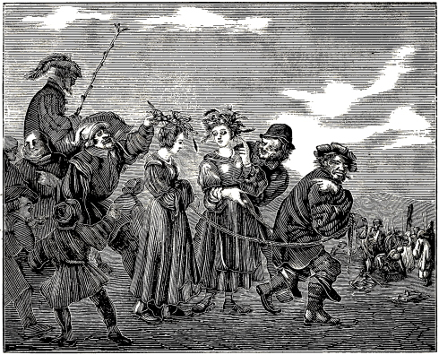
TWO YOUNG GIRLS LED TO EXECUTION.
About the year 1550, it happened in the bishopric of Bamberg, that two young girls espoused and received Christ by faith, were baptized upon their faith, according to the doctrine of Christ, and arising from sin, sought to walk in newness of life with Christ. On this account the antichristians sought 483 to hinder them in this good resolution, and to quench their good intention as much as lay in their power. They therefore cast these two young lambs into prison, where they tortured them with great severity, and sought also with other unchristian means to cause them to apostatize; but as they were firmly built upon Christ, they remained faithful and steadfast during the entire trial. Col. 2:7; Rev. 2:10. Hence, the authorities, who herein generally follow the advice of the false prophets, condemned them to death; at which they were joyful and undaunted. When they were led out to execution, their persecutors, by way of reproach and mockery, placed wreaths of straw upon their heads; whereupon one said to the other: “Since the Lord Christ wore a crown of thorns for us, why should not we wear these crowns of straw in honor of him? the faithful God shall for this place a beautiful golden crown and glorious wreath upon our heads.” Thus these two young branches armed themselves with patience, according to the example of their Captain Jesus, remained faithful unto death, died steadfastly, and obtained, through grace, the glorious crown with God in heaven.
To these girls their adversaries accord the praise, that they died quite undauntedly and steadfastly, and that they had the true foundation and ground of the Christian faith in their Redeemer Christ Jesus, whom they openly confessed, and called upon in their distress, wherein they steadfastly died with a firm hope; so that doubts were entertained among their adversaries, as to whether they themselves were not in greater error before God, than these young girls, though they were Anabaptists.
He that wishes may read, with regard to this account, Johannes Manlius, printed at Frankfort, A. D. 1550.
At the same time a lad of fifteen years was put to death, suffering it with great steadfastness, at Leeuwaerden; whose faith is compared to that of the aforementioned two young girls put to death at Bamberg. See Ondergang, page 1130, col. 1.
It appears that at this time the bitterness of the Romish clergy increased and broke forth more and more, against those who sought to follow the evangelical doctrine of Jesus Christ; so that they prevailed upon the Emperor, through decrees, to revive the inquisition over the consciences of the inhabitants of the Netherlands, which for a time had seemingly abated, and to introduce it with greater rigor than before; which was accordingly done in the manner prescribed, which caused great dissatisfaction and sorrow to the common people of said countries. In regard to this, a certain author writes thus:
“Though many severe decrees had been published before at different times, for the oppression of the evangelical believers, whereby many thousands were miserably put to death for the faith, in the Netherlands; yet the hatred and ill-will of the people increased to an unwonted degree, in the year 1550, in consequence of the decree in regard to the inquisition, issued by Emperor Charles V., at Brussels, on the 29th of April; for thereby it was declared, that it was the intention, from that time forth publicly to introduce the spiritual inquisition, but to have the cruel and bloody mandates nevertheless rigorously executed by the secular power.” Chron. van den Ondergang, page 1129, col. 1, compared with Eman. de Met., lib. 1. Pieter Bor., lib. 1. Oorspronch der Nederlantsche Beroerten, old edition, fol. 5, 6.
Further Observation.—Though the writer says in the sequel, that some magistrates would not publish this decree concerning the inquisition, and that some, by humble petitions to the Emperor, obtained a mitigation; yet it had come so far, that actual means were secretly employed to carry out this purpose, through the inquisitors; in consequence of which, the minds of the people became the more agitated and disaffected, so that many emigrated from the cities of Brabant, particularly from West Flanders. See the authors cited.
At this time, also Reyer Dircks, a pious hero and valiant soldier, of Jesus Christ, though of small repute in the eyes of the world, who gained his livelihood with a little boat on the river Amstel, enlisted under the bloody banner of his Savior, and united with the cross-bearing church, contemptuously called Anabaptists. Having been with them about three years, he virtually experienced that the kingdom of heaven suffers violence, and that the violent take it by force; inasmuch as he could not enter the spacious halls of the blessed palace of God without pressing through the strait gate, so that his flesh, yea the whole body, remained on the posts, and this in the fire, as food for the birds and wild beasts.
He was imprisoned at Amsterdam, in Holland, and, though he was most miserably tortured, he nevertheless refused to depart from his faith, and the promise which he had made to God in baptism. He was then condemned to death as a heretic, and very cruelly executed with flaming fire.
The foregoing may be clearly seen from the following sentence, which was read on the day of his death, in the court at Amsterdam, by the ecclesiastical rulers.
Sentence of Death of Ryer Dircks.
Whereas Ryer Dircks, boatman, citizen of this city, did, about three years ago, embrace the doctrines, 484 errors, sects, and heresies of the Anabaptists, and is holding pernicious views with regard to the sacraments of the holy church, contrary to the holy Christian faith, the ordinances of the holy church, and the written laws and decrees of his Imperial Majesty, our gracious lord, and, moreover, persists in his errors and heresies, notwithstanding the instruction given him in the true faith; therefore, my lords of the court, having heard the demand made by my Lord the Bailiff, in the name of his Imperial Majesty, concerning the aforementioned Ryer Dircks, as also his confession, and having duly considered the circumstances of the case, condemn said Ryer Dircks, pursuant to the aforesaid decrees, to be executed with fire by the executioner; and, furthermore, declare his property confiscated for the benefit of his Imperial Majesty, as Count of Holland, without derogation and prejudice to the privileges of this city.
Thus pronounced, and committed to the executioner for execution, this sixteenth day of August, A. D. 1550, in the presence of the Bailiff, all the burgomasters, and all the judges, with the exception of Jan Dunen.
Ryer Dircks was examined by torture the ninth of July, A. D. 1550.
Extracted from the book of criminal sentences, in the keeping of the secretary of the city of Amsterdam.
N. N.
In or about the year 1551, a smith was apprehended for the divine truth, at Komen, in Flanders. He freely confessed his faith, and as he would not depart from it, he was sentenced to death in two ways, namely, if he recanted, he was to be executed with the sword; otherwise to be burned alive. To this end, two-fold preparations were made; but seeing the multitude, and fearing trouble, the authorities kept the brother in prison. Hence, some climbed to the top of the prison and broke through the roof, to see what was being done with the doomed man. At last, one knocked at the door of the prison, desiring to know whether the brother was alive or dead. Having been admitted, he immediately returned with blood on his hand, which he showed to the people, saying: “He is dead! He is dead!” The dead man was then brought out on a ladder, with his head lying between his legs, and the ladder placed upon the wall of the churchyard, where the priest made a long speech (a sermon probably), saying among other things, that he had renounced his heretical belief, and re-accepted the Roman church and her saving faith; and “holding now a good resolution,” said he, “he was instantly executed, lest he might fall back into his old error.” But it was firmly believed that the priest slandered the dead man, and this the more so, since after relating the sentence, he said that he obstinately adhered to his previous confession. Thus God constrains the wicked, in the telling of their lies, themselves, unawares, to reveal the truth of the matter.
On the 21st of July, A. D. 1551, two pious Christians, a brother by the name of Gillis, and a sister named Elizabeth, were sentenced to death as heretics, pursuant to the imperial decree, at Ghent, in Flanders. They were not led forth to death at the usual time, but at 1 o’clock in the afternoon. Having ascended the scaffold, they prayed to God. In the meantime, the executioner unlaced the gown of Elizabeth, which, when she arose, fell down, so that she stood there in her shift and linen trousers, which the executioner, by way of mockery, had made her put on. Feeling greatly ashamed on this account, she immediately went to the stake, and then said: “I thank thee, O Lord, that I am worthy to suffer for thy name. I now stand at the touchstone, at which God’s elect are tried. O Lord, strengthen me, and delay not.”
Gillis said: “Dear sister, be patient in your suffering, and comfort yourself in God; he will not forsake you.”
“O dear brother,” said she, “I will never depart from him.”
Gillis then cried: “O Lord, forgive them their sins, who inflict death upon me; for as they do not know thee, they know not what they do.”
Finally they cried out: “O heavenly Father, into thy hands we commend our spirits.” And thus, through fire, they died a blessed death well pleasing unto God.
On account of the severe and great persecution which was carried on everywhere in the Netherlands, against the true Christians, four pious believers, among others, named Joris, Wouter, Grietgen and Naentgen, fled, in the year 1551, from Lier in Brabant, to Ghent in Flanders. They had not resided long in the latter place when they were betrayed by a Judas, and brought prisoners from their houses to the castle of the count, where they joyfully thanked God, and sang praises to him, because they were counted worthy to suffer for his name. When assailed by the monks and other sophists, they freely confessed their faith, from which no subtlety could turn them; but they valiantly withstood, with the truth, the seducers who sought to murder their souls, and were then condemned to death by virtue of the imperial mandate, because they had apostatized from the Roman church, contemned infant baptism, and had been baptized upon faith. They were sentenced to be burned at the stake without being strangled. They thanked the lords, and Grietgen said: “My lords, save three stakes; we can all four die at one; for we are spiritually of one mind.” Rom. 12:16. They were joyful in the Lord, and thanked God greatly. Naentgen said: “This is the day for which I have longed so much.” Eight monks then came, to torment them; however, they did not accept their advice, but Grietgen said: “Take off your long robes and teach yourselves, 485 before you undertake to teach others.” They were led to death like sheep to the slaughter, the monks accompanying them, to whom they said: “Stay back; let us in peace, for we know you well, and do not wish to hear you.”
Having ascended the scaffold, Joris said to the people: “Be it known to you, that we do not die for theft, murder, or heresy.” At this the monks became enraged, and contradicted it.
They then fell upon their knees, prayed to God, and arose and kissed each other with the kiss of peace. But when they with glad countenances addressed the people, the monks, to hinder them, went and stood before them; but one of the people cried out: “You furious antichristians, stand back, and let them speak.”
Wouter said: “Citizens of Ghent, we suffer not as heretics or Lutherans, who hold in one hand a beer-mug, and a testament in the other, thus dishonoring the word of God, and dealing in drunkenness; but we die for the genuine truth.” The executioner then hung each of them by a rope to a stake, but did not strangle them. They then strengthened each other, saying: “Let us fight valiantly, for this is our last pain; hereafter we shall rejoice with God in endless joy.” Matt. 25:23. As they were hanging in pain, before the fire was kindled, Joris fell through the rope, and Wouter cried: “O brother, be of good cheer!” “O Lord!” exclaimed Joris, “in thee do I trust; strengthen my faith.” Luke 17:5. The fire then commenced to burn, and they cried out: “O God Father, into thy hands we commend our spirits.” Thus they offered up their sacrifice according to the will of the Lord, and their faith was tried like gold in the fire, and found good, and so accepted of God.
Eight days after the sacrifice of the preceding persons, a woman named Catharine was also sentenced to the fire. While yet in prison, she was greatly tormented by the monks, in order to make her apostatize, but she said: “I stand so firmly to my faith that for it, to the honor of God, I will suffer myself to be burned at the stake. What would you do for your faith? not much, I think. Hence repent, before you be brought to shame.”
Having been sentenced to be burned alive, and on her way to death, she was saluted by a brother. When she arrived on the scaffold, her hands were untied at her request. She then knelt down, and prayed fervently to God for strength, which he also gave her; for when she had arisen, and was tied to the stake, she boldly said: “I am put to death for the truth’s sake; whatever you are able to inflict upon me, I am freely ready to suffer.” A seducer then came up, to comfort and strengthen her, as he said, but she replied: “Be still, I am tired of your tormenting; forbear comforting me, and comfort yourself; for he whose name I suffer, shall now be my comfort.”
Thereupon, calling with a firm confidence upon God, she was burned alive in the sight of all men, steadfastly offering up soul and body to God, as a burnt sacrifice.
In the year 1528, on the Wednesday after All-saints-day, Brother John Bair of Lichtenfels, was apprehended for the faith and the divine truth, and was confined for twenty-three years in a tower at Bamberg, in Franconia, on account of his constancy, as is seen from the following letter, written by him from there to the elders of the church. It reads thus:
“Dear brethren, I have received the writing tablets and the account of the doctrine and faith of our religion, as also six candles and pens; but most important, the Bible, I did not receive, as is written in the fore part of the tablets; but it is my request, that you will send it to me, if it can still be found; for I would like to have it above all things; if it can be according to the will of God; for I am sadly in want of it, and suffer great hunger and thirst for the word of the Lord these many long years. To God and his church I make this complaint; the days of my miserable imprisonment are twenty years, wanting eight weeks; the Wednesday after All-saints-day will be the anniversary. I, John Bair of Lichtenfels, the most miserable of the miserable, and the most forsaken of the forsaken, captive in Jesus Christ our Lord, again make the complaint to God and his angels, and to all his laborers and churches. Now, my most dearly beloved brethren and sisters in the Lord, pray to God for me, that he will deliver me from this peril and great distress, a distress which is unspeakable; this God knows, and I poor man, and you know it with me. Adieu.”
Written at Bamberg, in a dark dungeon, in the year 1548.
After this writing, he remained in prison three years longer, that is, twenty-three years in all; when, in the year 1551, he cheerfully fell asleep in the Lord, in his prison, and obtained the martyr’s crown.
In the year of our Lord 1551, Jerome Segers, with his wife Lijsken Dircks, and Big Henry fell into the hands of the tyrants, for the testimony of Jesus, at Antwerp in Brabant. They suffered many severe torments and sharp examinations, but, through the grace of God, endured them all. And as they, through faith, were so firmly bound to their Captain Christ Jesus, that nothing could induce them to apostatize, they brought Jerome Segers and Big Henry to the slaughter, on the second day of September, A. D. 1551. Both, each at a stake, surrendered their bodies in great steadfastness to God as a well pleasing sacrifice. Lijsken Dircks, the wife of Jerome Segers, who was pregnant, was (after her delivery) thrust into a bag early in the morning, between three and four o’clock, and murderously 486 thrown into the Scheldt and drowned, before people were up. Nevertheless; there were some that saw it, who testified to her firm and steadfast faith unto death. They now rest together under the altar. Read the following beautiful letters written by them, which attest their strong faith, firm hope and ardent love to God and his holy truth.
Always fear God.
Grace, peace, joy, gladness, consolation, a firm faith, and good assurance, together with an ardent love to God, I wish to you, my most beloved wife, Lijsken Dircks, whom I wedded before God and his holy church, and thus took to wife, according to the command of the Lord; may consolation, gladness and joy be increased and multiplied to you my dear wife.
I earnestly pray the Lord, that he will comfort you, and remove from you that which is too grievous. I well know, my chosen lamb, that you are in great sorrow on my account; but lay aside all sorrow, and look to Jesus the Captain and Finisher of our faith, and let us henceforth walk in all righteousness and holiness, as children of peace, and let us make good use of the time of grace, and consider what great mercy the Lord has shown us. O my dear wife, remember how faithful a God we serve; he will not let us be confounded. Remember how faithfully he led the children of Israel with an outstretched arm, from Pharaoh’s house of bondage, and out of Egypt, through the Red Sea, and remember how they had to prepare themselves, before they could go out, and how they did eat the paschal lamb with unleavened bread. They had to eat the paschal lamb standing, and the unleavened bread which they had, they bound up in their clothes, and began to go out to the wilderness. And the angel of the Lord went before them, by day in a pillar of cloud, and by night in a pillar of fire, and thus he gave them light. But when they were closely pressed by Pharaoh and his host, the people began to murmur against Moses; for they had not firm confidence in the Lord, that he would lead them out. But the Lord told Moses, what he would do, and how he would show his power on Pharaoh and his host; and he commanded Moses, to take the rod and smite the sea; and when Moses smote the sea, it dried up, and the waters were divided, and stood like walls to the right and to the left, so that they went through the sea on dry ground. Pharaoh followed with his host, and was drowned, with all his lords and people; but Israel passed through unharmed, and praised and thanked God, that he had delivered them from Pharaoh’s house of bondage. But they were not yet in the promised land; they came into the dreadful wilderness, where there was no bread. The bread which they had brought from Egypt, was but a small quantity; it was the unleavened dough which they had bound up in their clothes, when they left Egypt. Then they were troubled, because they had nothing to eat; but the Lord fed them with bread from heaven.
So also, my most beloved wife, we have not gained all, when we have confessed the truth, separated ourselves from the world, and renounced all lusts and desires; but we must also fight against the enemies, that is, we must here contend against emperors and potentates, and the princes of this world. We must suffer in this world; for Paul has said that all that will live godly in Christ Jesus shall suffer persecution. 1 Tim. 3:12. We must overcome the world, sin, death and the devil, not with external swords or spears, but with the sword of the Spirit, which is the word of God, and with the shield of faith, wherewith we shall be able to ward off all sharp and fiery darts of satan, and with the helmet of salvation on our head, and with the breastplate of righteousness, and our feet shod with the preparation of the gospel. If we are thus strengthened with these weapons, we shall get through the wilderness with Israel, and overcome and withstand all our enemies: they shall be confounded, who fight against the truth. 2 Tim. 3:8. Now, when the children of Israel were out of the wilderness—the dreadful and horrible wilderness, where the serpents spewed fire,—after they had been wandering forty years through it, had passed through so many dangers, and taken so many cities and countries on this side of Jordan; they nevertheless were not yet in possession of the promised land, for they had not yet crossed the Jordan; however, the Lord showed Moses the promised land from afar. O my dear wife, I have also seen the promised land from afar; I hope soon to come into the beautiful city of which John writes; which is greatly adorned; her foundations are twelve precious stones, and her walls and streets are of pure and clear gold; and the city has twelve gates, each gate of one pearl; and there is no night there, for the Lord her God lightens her, Rev. 21. And the Lord told Moses, that he should not lead the people into the promised land; but Joshua brought them into it, and the Lord led them over Jordan dry-shod, and commanded them to keep his commandments and laws, and he should drive out their enemies from before them. But when they transgressed his commandments and laws, the Lord delivered them into the hands of their enemies, so that they were defeated by them. After they had passed over Jordan, they still did not have the promised land, which flowed with milk and honey; but they had to take it by sheer force, destroy all their enemies, and burn the cities with fire. So must also we take the promised land by force; for Christ says that the kingdom of heaven suffers violence. Not until now have I known what it is to contend; no one knows it better than he who has tried it, such is the subtlety with which they come to seduce us.
Know, that I received your letter through my mother. I read it with tears. I thank you, that you 487 so affectionately comfort me thereby, and I rejoiced when I heard that you are so well contented.
Let me inform you, my chosen and beloved wife Lijsken, that I have been before the margrave. He had with him two Dominicans, two judges, and the clerk of the criminal court. He asked me whether I had changed my mind yet, and added that he had prevailed upon these two good men or lords, to try and win my soul, if I would repent. I replied that I would not forsake my faith, since it was the truth. They then asked me what my faith was, I said to the monks: “Ask the Margrave, I have confessed my faith to him; ask him.” They tormented me much, but I would not tell them anything. They asked whence I knew that it was the truth—whether God had spoken orally with me. When they could get nothing else out of me, my confession was read, namely, that I had no regard for the sacrament. I said: “No, it is nothing more than a god of bread.” The priests were angry, because I thus despised their god. They all wished to talk with me. I said: “I will not hear you, nor talk with you; but let my brother come here to me, and I will talk with you, and confess our faith.”
They then asked me whether I was not strong enough in my faith, since I appealed to my brother.
I replied: “Yea, my faith is strong enough; but that you may not pervert our words.”
They then said: “We shall not pervert your words.”
I said: “I know you and your roguery well.”
The Margrave said: “It shall be granted to you.”
I understood him to say, that he should bring a Bible with him.
The priests said that when the children are baptized, they then have faith.
I laughed at it, and said: “Why then do you not go into Turkey, and baptize the Turks; if thereby men become believers, as you say, they would all become believers.”
They replied: “Though the Turks should be baptized, they would still remain Turks.”
They importuned me greatly, to apostatize, and become a child of the Roman church. And the Margrave and the judges felt such unrighteous compassion for me, that they said: “If your life should be spared, and you should repent and become a good child of the Roman church, I should have good hopes of you; for you have been brought to this in your youth and innocency. I well know by whom (he meant Jelis of Aix-la-Chapelle); and because you descended from such good parents, and your mother is almost dead with grief.”
I replied: “Though the door should stand open, and you should say: Go, only say: I am sorry; I should not go; for I well know that I hold the truth.”
The Margrave then said: “I shall cause you to be burnt alive, if you will not hear.” I laughed again, and said: “All that you inflict upon me for my faith, I will willingly suffer.” He said: “His wife is the greatest heretic in the city.”
I cannot thank the Lord enough for all the great strength and power which he gives me in this distress. I perceive now, that the Lord is with us; for he helps us so faithfully out of all distress (Psalm 91:15); he is such a faithful Captain, he gives his servants such courage and strengthens them, that they are not afraid (Job 5:22); they neither fear nor tremble, because of the great love which they have to their heavenly Father: for Paul says: “Who shall separate us from the love of God? shall tribulation, or distress, or persecution, or famine, or nakedness, or peril or sword? As it is written, For thy sake we are killed all the day long; we are accounted as sheep for the slaughter. Nay, in all these things we are more than conquerors through him that loved us. For I am persuaded, that neither death, nor life, nor angels, nor principalities, nor powers, nor things present, nor things to come, nor height, nor depth, nor any other creature, shall be able to separate us from the love of God, which is in Christ Jesus our Lord.” Rom. 8:35–39.
Therefore, my most beloved wife Lijsken, redeem the time; be patient in tribulation, continue instant in prayer, and look constantly to the beautiful promises that are promised us everywhere, if we persevere unto the end. And let us guard well the treasure; for we have this treasure in earthen vessels (2 Cor. 4:7), and cannot conceal it; it breaks out everywhere; it is far too precious to be hid. We rejoice greatly in this treasure, which treasure is our faith, hope, and love; and these will not leave us destitute, even though they put us singly into dark dungeons, separated from one another. The treasure is of such a nature that it will not be hid; one calls to the other, and so pours out his treasure, that it may be seen. We are so cheerful, eternal praise and thanks be to the Lord! we call, we sing with each other, we have such joy in comforting and strengthening each other; the Lord gives us such strength and power, that we cannot thank him sufficiently for the great grace which he shows us. Mal. 3:16. “For which cause we faint not; but though our outward man perish, yet the inward man is renewed day by day. For our light affliction, which is but for a moment, worketh for us a far more exceeding and eternal weight of glory; while we look not at the things which are seen, but at the things which are not seen.” 2 Cor. 4:16–18.
Hence, my dear wife, cease not to serve the Lord thy God with the whole heart, and to follow his footsteps; “For we know that, if our earthly house of this tabernacle were dissolved, we have a building of God, a house not made with hands, eternal in the heavens. For in this we groan, earnestly desiring to be clothed upon with our house which is from heaven . . . not for that we would be unclothed, but clothed upon . . . for whilst we are at home in the body, we are absent from the Lord.” Mark 12:30; 1 Pet. 2:21; 2 Cor. 5:1,2,4,6.
Therefore, my dear wife, give diligence that you pass the time of your sojourning here in fear and trembling (1 Pet. 1:17); not with such fear and trembling as that we should fear the world, and tremble before it, because they rage so against us; but we are to fear and tremble before the Lord, so that we shall keep his commandments and statutes, and thus pass the time of our sojourning here in the fear 488 of the Lord, and receive the end of our faith, even the salvation of our souls; then shall we rejoice forever with the Lord, and go to meet him in the resurrection of the dead. Is. 51:11; Philip. 3:11. Therefore do not fear the world; for the very hairs of your head are all numbered; they have no power, except it be given them from above. Matt. 10:30; John 19:11. And Christ says: Be not afraid of them that kill the body; but fear him, who after he has killed the body has power to cast the soul into hell; there shall be weeping and gnashing of teeth, and their worm shall not die, and they shall have no rest day nor night. Luke 13:28; Is. 66:24; Rev. 14:11. May the Almighty, eternal and strong God so strengthen and comfort you with his blessed word, that you will remain faithful unto the end, and you shall also come under the altar to all the dear children of God, where all tears shall be wiped from our eyes. Rev. 2:10; 6:9; 21:4. There all tribulation will have an end, and there shall our vile body be glorified, and be like unto the image of his glory. Philip. 3:21. Then shall our weeping be turned into laughter, and our sorrow into joy (John 16:20); then shall we, who for a little while have been despised and rejected, yea, persecuted and dispersed, and put to death with great ignominy, pain and reproach, for the testimony of Jesus Christ, triumph forever, and live eternally with the Lord. We shall be clothed with white robes, as John testifies in his Revelation concerning the souls of them that were slain for the word of God, and for the testimony which they held. And they lay under the altar, and they cried with a loud voice, saying, “How long, O Lord, holy and true, dost thou not judge and avenge our blood on them that dwell on the earth? And white robes were given unto every one of them; and it was said unto them, that they should rest yet for a little season, until their fellow servants also and their brethren, that should be killed as they were, should be fulfilled.” Rev. 7:9; 20:4; 6:9–11.
O what a glorious people shall we be, when we shall be with that great multitude of which Esdras writes, and John in his Revelation, says: “I beheld, and, lo, a great multitude, which no man could number, of all nations, and kindreds, and people, and tongues, stood before the throne, and before the Lamb, clothed with white robes, and palms in their hands; and cried with a loud voice, saying, Salvation to our God which sitteth upon the throne, and unto the Lamb. These are they which came out of great tribulation, and have washed their robes and made them white in the blood of the Lamb. Therefore are they before the throne of God, and serve him day and night in his temple: and he that sitteth on the throne shall dwell among them. They shall hunger no more, neither thirst any more, neither shall the sun light on them, nor any heat. For the Lamb which is in the midst of the throne shall feed them, and shall lead them unto living fountains of waters: and God shall wipe away all tears from their eyes.” Rev. 7:9,10, 14–17. Esdras also declares of the same multitude: “that they stood upon mount Sion, and were clothed in white, and that in the midst of them stood one taller than all the rest, who gave palms into the hands of every one, and set crowns upon every one of their heads.” 2 Esdras 2:42,43,46. And John says: “I saw as it were a sea of glass mingled with fire; and them that had gotten the victory over the beast, and over his image, and over his mark, and over the number of his name, stand on the sea of glass, having the harps of God. And they sing the song of Moses, the servant of God, and the song of the Lamb.” Rev. 15:2,3. Behold, my dear wife, what glorious promises we everywhere find, which God will give to all his dear and true children who here faithfully adhere to him, who have ended their lives to the praise of the Lord, and washed their robes, and made them white in the blood of the Lamb. 1 Cor. 2:9.
O my dearly beloved wife, I cannot thank the Lord enough for all his great goodness shown to me; he gives me such strength and power that I cannot express it. O, now I experience that the Lord is a faithful helper in time of need; he does not forsake those that trust in him, for he that trusts in the Lord shall not be confounded. Isaiah 45:17; Rom. 9:33. He will keep us as the apple of his eye; he will deliver us from all the power of the devil, and the tyranny of this world; yea, he will keep us, that we shall not go into hell, if we remain faithful to him unto the end; for Christ says: “He that shall endure unto the end, the same shall be saved.” Matt. 24:13.
O my dearly beloved wife, continue faithful to the Lord unto death; for the crown is not at the beginning, nor in the middle, but at the end. If you continue faithful to the Lord, he will not forsake you; he will give you the crown of eternal life, and lead you into his kingdom. Jas. 1:12. He will crown you with glory and honor; and will wipe away all tears from your eyes.
Dear Lijsken, if he will wipe away all tears, tears must here first be shed. Matt. 5:4. He will heal us from our sufferings; hence we must first suffer in this world. Yea, we must fight and contend against ferocious lions, dragons, and bears (Ps. 91:13), yea, against the wicked and perverse generations of vipers (Matt. 3:7) and serpent rulers, and against the subtle serpents of this world, and the wicked seed of Cain; for Paul says that we wrestle not against flesh and blood, but against the rulers of darkness, and the principalities and powers of this world, yea, against the spirits that work in the air, which is the old serpent and Satan (Rev. 20:2), who, as Peter says, walks about as a roaring lion, seeking whom he may devour. 1 Pet. 5:8. Therefore defend yourself diligently, with prayer and supplication to the Lord, and hold fast to the doctrine of Jesus Christ our Savior, that you may receive the end of your faith, even the salvation of your soul. Fight with Paul the good fight. Herewith I commend you, my dearly beloved wife and sister, to the Almighty, eternal and strong God, and to the word of his rich grace, that you may be able to stand against all the gates of hell. Amen.
489
The eternal joy, peace and grace of God the Father; and the unfathomable mercy, favor, and love of the Son, our Lord Jesus Christ, who has been sent through grace, by God the Father, to the salvation of all those that are born again with him, through his imperishable word or gospel, and do his will; and the deep and unspeakable consolation, power, strength, and communion of the Holy Ghost, who is sent by both from heaven, to the everlasting consolation, joy, and gladness of all true, penitent and obedient children of God, who have amended their life, and thus have risen with Christ, through his gospel, into newness of life. May this only God strengthen you all in his eternal truth, and uphold you with the mighty word of his grace in all righteousness, holiness and truth unto the end, and keep your understanding, and your hearts and minds in Christ Jesus. To him be praise, honor, glory, might, power, and strength forever and ever. Amen.
My dearly beloved and chosen brethren and sisters, and all lovers of the unfeigned and eternal truth, I wish you the true, penitent faith, which works by love, and avails before God, and a pure, chaste and holy conversation and walk in the fear of God, and an ardent love to God our heavenly Father, and your neighbor, and to his eternal, clear and unchangeable truth. And I pray the Lord for you day and night without ceasing, that he will open the eyes of your understanding, and enlighten your hearts with knowledge, that you may know that it is the truth, and that he will strengthen you with his divine word, and confirm you in the faith, that you may walk in this truth, in all humility and meekness, being a light to all men, and may continue steadfast unto the end. I also pray the Lord, that he will keep you from all ravening wolves, that have gone out from us, and will yet rise up among you, who will not spare the flock, and from all false, heretical and satanic teachers, who rise up under the name of Christ, and come forth in a semblance of holiness, as though they were sent by Christ, while they have proceeded from and are sent by the devil. Acts 20:29; 2 Cor. 11:15.
Therefore, my dear brethren, be vigilant, watch and pray; for it is very necessary; and remember after my departure, that I warned you from prison against false prophets. Thus, with the help of God, I have briefly written to you, and with Peter exhorted you, well knowing that shortly I must put off my mortal clothing and sleep with my brethren and sisters in Christ. Though you are yourselves taught and strengthened in this present truth, I nevertheless deem it profitable to admonish you yet a little more, if haply thereby some one may be bettered, edified and strengthened, the name of the Lord be praised and thanked, and I be remembered, how I have been an example unto you in that which the Lord gave me, and have walked among you in all humility. Tit. 2:7.
Hence I admonish you now, my dearly beloved brethren and sisters in the Lord, and beseech you with Paul, by the mercies of God, that you present your bodies a living sacrifice, holy, acceptable unto God, which is your reasonable service. And be not conformed to this evil, wicked and perverse world, but be ye transformed by the renewing of your mind, that you may prove what is that good, and acceptable, and perfect will of God. Rom. 12:1,2; Eph. 5:17.
O my dear brethren, I earnestly beseech you, that you will all amend your lives, and forsake the world and its lusts, and will look to the life of Christ, how he walked before us; for John says: “He that would boast of Christ ought himself also so to walk, even as he walked.” 1 John 2:6.
Behold, my dear friends, it is not enough that we are baptized in the name of Christ, that we are called brethren or sisters of Christ, and bear the name of Christians. O no, all this cannot save; for John says: “Little children, let no man deceive you: he that doeth righteousness is righteous. He that committeth sin is of the devil. In this the children of God are manifest, and the children of the devil.” John 3:7,8,10. And Christ says: “Ye are my friends, if ye do whatsoever I command you.” John 15:14. Again: “If a man love me, he will keep my words and commandments; and he that hath my commandments and keepeth them, he it is that loveth me.” John 14:23,21. For John says: “He that saith he loveth God, and keepeth not his commandments, is a liar, and the truth is not in him.” 1 John 2:4. And you know that a liar has no part in the kingdom of God. Rev. 21:8. Therefore, be not Christians with the mouth, nor with the tongue, but in deed and in truth. 1 John 3:18. For it is utterly in vain to bear the name of Christ, so long as we are not conformed to him in word, work and thought; for Paul says: “Whom he did foreknow, he also did predestinate to be conformed to the image of his Son, that he might be the first-born among many brethren.” Rom. 8:29. If he then has called and predestinated you, use diligence that you become conformed to him, so that you may be found true Christians in deed when you come into the tribulation in which we now are; for though we are in it now, to-morrow you may also be in it. Therefore watch and pray; for you know neither the day nor the hour; and be diligent to please the Lord; for we must all appear before the judgment seat of Christ; that every one may receive the things done in his body, according to that he hath done, whether it be good or bad. 1 Thess. 4:1; 2 Cor. 5:10.
Now, as the Lord is to be feared, I counsel and humbly beseech you, to conform your life to the gospel. For, to bear the name of a Christian, and to be called a brother, avails nothing; but the fulfilling of the commandments of God alone; for I have seen many among us who boast of being Christians, who love Christ with the tongue, but with the deed forsake him (Tit. 1:16), which is greatly to be deplored; for they are like counterfeit money, which from the outside seems to be good gold; but, when brought to the touch-stone, or to the fire, it is nothing but copper within. Thus they walk among the pious, as though they were true Christians; but when the Lord begins to try them 490 in tribulation, it is seen that all is built upon the sand, and that they love their belly more than Christ, as appears now in the case of those that are in bonds with us; for so long they allowed themselves to be called pious brethren, but now they talk differently. Matt. 13:21; 7:26; Rom. 16:18.
Therefore, my dearly beloved brethren and sisters in the Lord, all who desire to offer up an acceptable sacrifice to the Lord, take us for an example (Jas. 5:10) and be followers of us, and be no longer so slothful or lukewarm in love; so that, when you are also imprisoned, you will not sorrow because you did not lead a better life; for with this the devil tempts us night and day. Hence I warn you, out of brotherly love, to take heed to yourselves while you have time; for Paul says: “The grace of God that bringeth salvation hath appeared to all men, teaching us that, denying ungodliness and worldly lusts, we should live soberly, righteously, and godly, in this present world, looking for that blessed hope, and the glorious appearing of the great God and our Savior Jesus Christ; who gave himself for us, that he might redeem us from all iniquity, and purify unto himself a peculiar people, zealous of good works.” Tit. 2:11–14; Eph. 5:2.
Behold, my dear friends, such a people Christ has chosen, who are not vain or light-minded, but who, by patient continuance in well-doing, seek for eternal life; hereunto he has called and chosen us, that we should be holy and without blame before him in love; for such a holy church he has chosen, which has not spot or wrinkle, but that should walk holily and unblamably before him in love. Rom. 2:7; Eph. 1:4; 5:27. Therefore be holy in all your conversation; since it is written: “Ye shall be holy, for I am holy.” Lev. 11:45. O see my dear brethren, it is time for you to take heed; for the axe is now laid at the root of the trees; every tree which bringeth not forth good fruit shall be hewn down, and cast into the fire. Matt. 3:10. “For not every one that saith unto me, Lord, Lord, shall enter into the kingdom of heaven; but he that doeth the will of my Father which is in heaven.” Matt. 7:21. For, being dead unto sin, and purified by the knowledge of the truth, you must not be empty, lest the devil take with him the seven spirits and return into you, and the last state be worse than the first.” Rom. 6:11; Matt. 12:45.
“Let not sin reign therefore in your mortal body, that ye should obey it in the lusts thereof. Neither yield ye your members as instruments of unrighteousness unto sin; but yield yourselves unto God, as those that are alive from the dead, and your members as instruments of righteousness unto God;” and “pray that your flight be not in the winter, neither on the Sabbath day;” and be not found in darkness, dear brethren, lest that “day should overtake you as a thief.” Rom. 6:12,13; Matt. 24:20; 1 Thess. 5:4. For if ye do so, ye shall be children of light and of the day; for they are not the children of God, who boast of the faith, but do not fulfill it with the works, for Christ says: “If ye know these things, happy are ye if ye do them.” John 13:17. For he that knows it, and does it not, is likened unto a fool; and the servant that knows the will of his lord, and does it not, shall be beaten with many stripes. Matt. 7:26; Luke 12:47. But those who believe with the heart, and do as they believe, are the true children of God, and shall also be accounted believers in the kingdom of heaven. Hence I counsel you, and beseech you with Peter, that, giving all diligence you add to your faith, virtue; and to virtue, knowledge; and to knowledge, temperance; and to temperance, patience; and to patience, godliness; and to godliness, brotherly kindness; and to brotherly kindness, charity. For if these things be in you, and abound, they make you that ye shall neither be barren nor unfruitful in the knowledge of our Lord Jesus Christ; but an entrance shall be ministered unto you abundantly into everlasting life. But he that lacketh these things is blind, and cannot see afar off, and hath forgotten that he was purged from his old sins. 2 Pet. 1:5–8,11,9. Therefore, purify your souls in obeying the truth, in true, unfeigned love of the brethren, and love one another with a pure heart fervently: being born again, not of corruptible seed, but of incorruptible, by the word of God, which liveth and abideth forever. 1 Pet. 1:22,23. Gird up the loins of your mind, be sober and place all your hope in God; have fervent love among yourselves, and be of one mind; mind not high things, but condescend to men of low estate; let no corrupt communication proceed out of your mouth nor spend your time in vain conversation, which increases only unto more ungodliness; but speak that which is good to the use of edifying that it may minister grace unto the hearers: let your speech be always with grace, seasoned with salt (Col. 4:6); for Peter says: “If any man speak, let him speak as the oracles of God;” (1 Pet. 4:11) that you may be an example unto all men; for Christ says: “Ye are the salt of the earth; but if the salt have lost his savor, it is thenceforth good for nothing, but to be cast out, and to be trodden under foot of men. . . . Neither do men light a candle, and put it under a bushel, but on a candlestick, and it giveth light unto all that are in the house.” “Ye are the light of the world.” “Let your light so shine before men, that they may see your good works, and glorify your Father which is in heaven.” Matt. 5:13,15,14,16. And Peter says: Have your conversation honest among the Gentiles; that, whereas they speak evil of you, as of evil doers, they may be ashamed that falsely accuse your good conversation in the fear of God. 1 Pet. 2:12, 3:16.
He further says: “He that will love life, and see good days, let him refrain his tongue from evil, and his lips that they speak no guile: let him eschew evil, and do good; let him seek peace and ensue it. For the eyes of the Lord are over the righteous, and his ears are open unto their prayers: but the face of the Lord is against them that do evil.” 1 Pet. 3:10–12. Hence, take good heed, that the angry face of the Lord do not look down upon you; for in the last day the ungodly shall exclaim: “O ye hills and mountains, fall upon us, and cover us, that we may not see the angry face of him that sitteth on the throne.” Hos. 10:8; Rev. 6:16. And Christ says: “Except your righteousness shall exceed the righteousness of the scribes and Pharisees, 491 ye shall in no case enter into the kingdom of heaven.” Matt. 5:20. Again, except ye be converted, and become as little children, ye shall not enter into the kingdom of heaven.” Matt. 18:3.
See, my dear brethren and sisters, if you are not thus humble, give diligence that you become so; for Christ’s words are no lies; he says: “Many will say to me in that day, Lord, Lord, have we not eaten and drunk in thy presence? and in thy name have cast out devils? But then will I profess unto them, I never knew you: depart from me, ye that work iniquity.” Matt. 7:22,23; Luke 13:26. And Paul says: He that lives after the flesh, shall die. Rom. 8:13. O friends, there is a great number of you, that are like unto asses and mules, which are so lazy that they have to be urged on with blows and kicks. O this is not walking according to love. Lift up the hands that hang down, and the feeble knees; you have slept long enough, for Paul says: “Awake thou that sleepest, and arise from the dead, and Christ shall give thee light!” Heb. 12:12; Eph. 5:14. “If ye then be risen with Christ, seek those things which are above, where Christ sitteth on the right hand of God. Set your affections on things above, not on things on the earth.” Col. 3:1,2.
O, my dear brothers and sisters in the Lord, be followers of God, as chosen children; and walk in love, as he also hath loved us and hath given himself an offering and sacrifice to God for a sweet-smelling savor. But fornication, and all uncleanness, or covetousness, let it not be once named among you, as becometh saints; neither filthiness, nor foolish talking, nor jesting, which are not convenient, but rather giving of thanks. For this ye know, that no whoremonger, nor unclean person, nor covetous man, who is an idolater, hath any inheritance in the kingdom of Christ and of God. Be ye not therefore partakers with them. For ye were sometime darkness, but now are ye light in the Lord: walk as children of light; for the fruit of the Spirit is in all goodness and righteousness and truth. And have no fellowship with the unfruitful works of darkness, but rather reprove them. Ephesians 5:1–5,7–9,11. I therefore admonish you, as fellow helpers, for the Lord says: I have heard thee in a time accepted, and in a day of salvation have I succored thee: behold, now is the accepted time; behold, now is the day of salvation. Let us give no offense in anything, that the ministry be not blamed; but in all things approve ourselves as the ministers of God, in much patience, in afflictions, in necessities, in distresses, in stripes, in imprisonments, in tumults, in nakedness, in perils, under the sword; by pureness, by knowledge, by long suffering, by kindness, by the Holy Ghost, by love unfeigned, by the word of truth, by the power of God, by honor and dishonor, by evil report and good report, as deceivers, and yet true; as unknown, and yet well known; as dying and, behold, we live; as chastened and not killed; as poor, yet making many rich; as having nothing, and yet possessing all things. 2 Cor. 6:1–10; 11; 26,27.
My dear friends, my mouth is open unto you, out of brotherly love, and I humbly beseech you, let this mind be in you, which was also in Christ Jesus, showing such love with the deed among yourselves; for this is the message that ye heard from the beginning, that ye should love one another; for he that loveth not, abideth in death. But whoso hath this world’s good, and seeth his brother have need, and shutteth up his bowels of compassion from him, how dwelleth the love of God in him? My dear brethren and sisters in the Lord, let us no longer love in tongue, but in deed and in truth. 2 Corinthians 6:11; Philip. 2:5; 1 John 3:11,14,17,18; 4:8. Always remember the poor, and let each give according to his ability, with joy; for God loveth a cheerful giver, and Paul says: “He that sheweth mercy, let him do it with cheerfulness.” Tobit 4:7; 2 Cor. 9:6; Rom. 12:8. For, consider once, whether, if you were as fervent in love, as you have been in the world, you would not as easily know to find two or three stivers to give to the poor, as you found them for drinking or gambling purposes? Not my dear friends, that I would burden or oppress you, only that each show his love herein, according to his weak ability; for you cannot take your possessions with you. You may take me for an example; for they have taken everything, yea, all the money we had, and asked us yet whether we did not have more.
It is therefore far better, that you help the poor with it, than that the lord251 have it, and if you are willing to give your life for your brother, how much more ought you to assist him with your temporal goods! that it be as it is written: “They that gathered much had nothing over, and they that gathered little had no lack.” 1 John 3:16; Jas. 2:16; Ex. 16:18: And see to it also, that all be done honestly, that it be as a matter of bounty, and not as of covetousness, and that the offering be acceptable unto the Lord. For the administration of this service not only supplieth the want of the saints, but aboundeth also in many thanksgivings to God. 2 Cor. 9:5,12. Hence give diligence, to show your love herein, that the Lord may be glorified and thanked thereby, and that you may approve yourselves in all things as ministers of God. 1 Pet. 4:11. Read what Paul says to the Corinthians; he will teach you how to conduct yourselves herein; and I humbly beseech you, that when you have read it, you will also act according to it; for it is necessary.
Furthermore, I beseech all of you young married people, that you live together in all humility, simplicity and harmony. Young wives, submit yourselves unto your husbands, in the fear of God: and you, young men, love your wives as your own selves; support and bear them with all humility and kindness, and affectionately admonish and instruct them with the word of the Lord; for you know neither the day nor the hour when the Lord shall separate you. 1 Pet. 3:1; Eph. 5:22; Matt. 25:13. Take me and my wife for an example,—how soon the Lord separated us, to his glory. Hence, live together in all humility, so long as the Lord permits you to be together: for your time is short here, seeing the Lord delights to have his chosen with him. Job 14:1. And furthermore, I beseech you, 492my dear brethren, that you also give diligence to get usury (Matt. 25:27); for I trust in the Lord, that through seeing and hearing this, many shall yet turn to the truth, and I will also do my best with those who come here to see me. And gather the poor, scattered flock, for which I am greatly concerned; for they scarcely know where to go or dwell, and are in greater distress than we here. Acts 8:1–4. But be of good cheer, my dear brethren and sisters in the Lord; though we enjoy more freedom than you, be patient in your persecution; you shall not have gone over the cities of Israel, till the Lord shall deliver you. Matt. 10:23. Be diligent, therefore, in assembling together, and in comforting and admonishing one another with the word of the Lord, that love may not wax cold among you. Matt. 24:12.
Thus, admonish and instruct one another in the love of God: and I beseech you, not to forget us in your prayers, and now and then to write a letter to my wife, to comfort her, since she will be confined a long time yet. I would further tell you, that I am in great joy, and cannot sufficiently praise and thank my Lord day and night, for his great love shown us, in that he has made both of us worthy to suffer for his name; and for the power and strength he shows in us, and for his promises given us; for this is the hour for which I so long prayed the Lord, not considering myself good enough, that I should be worthy to suffer for his name. Therefore I am so rejoiced, because my hour is come, that I shall be delivered from this flesh.
Thus strengthen yourselves in the love of God, looking for the mercy of our Lord Jesus Christ unto eternal life. Now unto him that is able to keep you from falling, and to present you faultless before the presence of his glory with exceeding joy, to the only wise God our Savior, be glory and majesty, dominion and power, both now and ever. Amen. Greet one another with a holy kiss of peace. Jude 21,24,25; 1 Cor. 16:20.
Let all the friends hear this letter; for I have written to you out of brotherly love, and am sorry that I can write to you no more. I commend you all to the Lord. Salute G. S. H. D. in the Lord—whom I sincerely love,—and also all brethren and sisters in the Lord. Receive this brief admonition in good part (Heb. 13:22); for my spirit impelled me to admonish you a little.
Written in prison, by me,
Jerome Segers.
The grace and mercy of God the Father, the loving kindness and love of the Son, and the communion and peace of the Holy Ghost, who is sent us by the Father, through the name of the Lord Jesus Christ, for the consolation and joy of all true and faithful children of God, and by whom we are impelled, taught and led; the same keep your hearts, understanding and mind in Christ Jesus, to the praise and glory of the Father, to the salvation of your afflicted soul, and to the edification of all brethren and sisters that fear and love the Lord; to this only wise God, be glory, honor, power and strength, for ever and ever. Amen.
I wish to you, my dear wife, a true, genuine, godly love, a true, unfeigned, penitent faith, which works by love, a firm hope and confidence in God, and a firm steadfastness in your faith towards God the Father, and the Lord Jesus Christ. To him I commend you, and to the word of his grace; and since I cannot converse orally with you, my dear wife Lijsken, I have, with the help of God, written to you a little from the word of the Lord; for though we are absent from each other in the flesh, yet are we present in the Spirit; for I remember you day and night in my prayers, beseeching the Lord to strengthen you with his Spirit of truth, since I well know that you will have much conflict yet, before you will be released; and I also know that you will be greatly tempted by the cunning foxes and ravening wolves, yea, which are much more lions and dragons; yea, a generation of vipers, who will not spare your soul, but destroy, devour and murder it.
Hence Paul says: “Beware lest any man spoil you through false philosophy and the sleight of men, whereby they lie in wait to deceive.” Col. 2:8; Eph. 4:14. Yea, Christ himself has warned us in this respect, saying that in the latter days many false prophets, and many false Christs, shall arise, insomuch that, if it were possible, they should deceive the very elect; but this is impossible; for the Lord preserves them with his strong arm, so that the gates of hell cannot harm them. Matt. 24:24; 16:18. Yea, Paul says: “That in the latter times some shall depart from the faith, giving heed to seducing spirits, and doctrines of devils; forbidding to marry, and commanding to abstain from meats, which God hath created.” 1 Tim. 4:1,3. And: Let no man deceive you with vain words: for because of these things cometh the wrath of God upon the children of disobedience. Eph. 5:6. Christ has also warned us of the doctrine of the Pharisees; yea, of those who come in sheep’s clothing; for inwardly they are ravening wolves. Ye shall know them by their fruits. Matt. 16:6; 7:15,16. Even as Paul says: Marvel not, that the ministers of antichrist will transform themselves into ministers of God; since Satan himself can transform himself into an angel of light; for they come in a feigned holiness, and will speak lies. 2 Cor. 11:14,15.
Therefore see, my most beloved lamb, how faithfully Christ and his apostles have warned us of the false and subtle serpent, that we should not suffer ourselves to be deceived by the old serpent, which is the devil and Satan, who seeks nothing but to bring our souls into everlasting damnation; even as Peter says that he walks about us as a roaring lion, seeking whom he may devour; him resist with a firm faith. Rev. 12:9; 1 Peter 5:8. Therefore I beseech you, my dear wife, from the bottom of my heart, since we are so faithfully warned of the false prophets, who have nothing but the doctrine of devils, and seek nothing but to ruin and devour souls: therefore I beseech you once more, not to hearken to them, and to have nothing to do with them; for Paul says: “Have no fellowship with the 493 unfruitful works of darkness, but rather reprove them.” Eph. 5:11. Yea, John says that he that has not the doctrine of Christ, has not God. 2 John 9. And Paul says: “Though an angel from heaven preach any other Gospel unto you than that which I have preached unto you, let him be accursed.” Gal. 1:8. If they then have not God, and have nothing but a false, heretical, accursed and devilish doctrine, how can they teach us anything good? Therefore Christ and his apostles have so faithfully warned us, that we should not suffer ourselves to be deceived by the cunning foxes, and subtle philosophy and craftiness; for there shall never any other foundation be laid, than that is laid, namely Christ, upon whom you have founded and built; and no other Gospel may be preached, than that which is preached, in which you believe, and for the testimony of which you are also in bonds.
Hence, I beseech you, my dear wife Lijsken, by the mercies of God, constantly to have the word of the Lord before your eyes, and not to suffer yourself to be moved from your faith, by the sleight of men, whereby they lie in wait to deceive you; for I know that you will suffer much temptation yet. Therefore, my most beloved, look not unto men; for cursed is the man, says the prophet, that trusteth in man; yea, the fear of man bringeth a snare, says the wise man. Jer. 17:5; Prov. 29:25. And regard not the torture of flesh and blood; for this is the heat of the sun, yea, the storms by which the work of the Lord is tried. Matt. 13:6; 7:25. Hence confess Christ now, and he shall confess us before his heavenly Father; for he will try the third part with fire, as gold in the furnace, and all that remains shall be found pure gold. Matt. 10:32; Zech. 13:9; 1 Peter 1:7. You have partly passed through the trial, and have remained steadfast in it, eternal glory, praise, and honor to the Lord, and may the gracious Lord strengthen you, that as you have commenced, you may be found pure gold before God and all his church.
Thus, my most beloved, continue steadfast in the doctrine of Christ; for now is the day of which Christ spoke, that we should be brought before lords and princes, for a testimony to his name, and that we should be rejected by all men; but he that shall endure unto the end, the same shall be saved. Matt. 10:18; 24:13. And Christ says: “If they have persecuted me, they will also persecute you; and the time cometh, that whosoever killeth you will think that he doeth God service. But these things have I told you, that when the time shall come, ye may remember that I told you of them. And these things will they do unto you, because they have not known the Father nor me.” John 15:20; 16:2,4,3. Behold, my dear wife, thus Christ has warned us how they should deal with us. Therefore, my dear, fear not, neither despond, though you now are confined with Daniel in the den of lions; trust in the Lord, and he will preserve you, that they shall not destroy you; he will also deliver you from their teeth, that they shall not tear you. Forsake him not and he will not forsake you; for he says: He that despiseth you, despiseth me; he that persecuteth you, persecuteth me; he that toucheth you, toucheth the apple of mine eye. Luke 10:16; Acts 26:14: Zech. 2:8.
If they then do not persecute us, but the Lord, fight valiantly, as a pious soldier of Christ, and contend for his glory. And even as he fought unto death, so by the grace of God do also you; for Paul says, if a man strive for masteries, yet is he not crowned, except he strive lawfully. 2 Tim. 2:5. Therefore, my dear, put on the whole armor of God, and be not ashamed to confess his word before men, but always remember the words of Christ: “Whosoever shall confess me before men, him will I confess also before my Father which is in heaven; but whosoever shall be ashamed of me and of my words, of him also shall I be ashamed before my heavenly Father. For whosoever shall seek to save his life shall lose it; but whosoever loses his life for the sake of the Gospel, shall find it. But he that loveth aught more than me, cannot be my disciple; yea, no man, having put his hand to the plow, and looking back, is fit for the kingdom of God. And Paul says: It is a faithful saying: For if we be dead with him, we shall also live with him; but if we deny him, he also will deny us. Eph. 6:11; Matt. 10:32; Mark 8:38; Matthew 16:25; 10:37; Luke 9:62; 2 Tim. 2:11,12.
Hence, my most beloved, do not forsake the Lord; for we are nothing but dust and ashes, yea, nothing but mortal flesh, which must die in dishonor, but is raised in glory. Gen. 18:27; 1 Corinthians 15:43. Be patient, therefore, in tribulation; for it is the true way, which leads to life eternal, which all the saints of God, the prophets and apostles, yea, Christ himself went, all having to drink of this cup. Therefore look not to death, but through death, lest another come before you, and take your crown. Hence, my most beloved, be long-suffering in your tribulation, and patient in suffering, and wait for your deliverance, even as the husbandman waits for his fruits; for blessed is the man that endureth temptation: for when he is tried, he shall receive the crown of life, which the Lord hath promised to them that love him. James 1:12. For Christ says: “Blessed are they which are persecuted for righteousness’ sake: for theirs is the kingdom of heaven.” Matt. 5:10. Behold, we count them happy which endure, says James. Jas. 5:11. Christ also suffered for us, leaving us an example, that we should follow his steps: forasmuch then as Christ hath suffered, arm yourself likewise with the same mind. 1 Peter 2:21; 4:1. With this agree the words of John, who says that Christ laid down his life for us, and that we ought also to lay down our lives for the brethren. 1 John 3:16.
Hence, be not discouraged, chosen and beloved, at their threatening; but praise and glorify the Lord in this matter; for Christ says: “Blessed are ye, when men shall revile you, and persecute you, for my name’s sake. Rejoice, and be exceeding glad; for great is your reward from my Father which is in heaven.” Matt. 5:11,12. My dear, this is not said that we should be sad, but that we should rejoice that we are worthy to suffer for his name. Paul says: Ye have not received the spirit of bondage 494 again to fear; but the spirit of adoption, whereby we cry, Abba, Father. The spirit itself beareth witness with our spirit, that we are the children of God; if so be that we suffer with him, that we may be also glorified together; for the sufferings of this present time are not worthy to be compared with the glory which shall be revealed in us; for eye hath not seen, nor heart known, neither mouth confessed, but God alone, what shall be revealed to those that love him, and keep his word. Rom. 8:15–18; 1 Cor. 2:9. And Paul says that it is not enough for you to believe in him, but also to suffer for his name. Philip. 1:29.
Hence, my most beloved, be a willing bride, and prepare for the conflict; for he will not suffer you to be tempted above that you are able; but will with the temptation also make a way for you to escape. 1 Cor. 10:13. For though a mother forget her child, yet will I not forget thee, says the Lord. Is. 49:15. He will preserve you as the apple of his eye. Zech. 2:8. Therefore, fear not men, who perish like grass (Is. 51:12); but valiantly journey with Joshua and Caleb to the promised land; wait with Noah for the day of the Lord; for Christ says: My sheep hear my voice, and they follow me; but the voice of strangers they hear not; and no man shall pluck them out of his hand, since it is impossible, that the elect of God should be deceived; as Paul says: Who shall separate us from the love of God? Nay, no torments of this world; “for we know that all things work together for good to them that love God; for our light affliction, which is but for a moment, worketh for us a far more exceeding weight of glory.” John 10:27; Rom. 8:35,28; 2 Cor. 4:17. Since it is the will of the Lord, I hope that this your trial will also be for your good; for the Lord has appointed your time, which we cannot pass. Hence, fear not, for God is your captain; he is your strength; he is your guide (2 Esdr. 16:76); forsake him not; he will not forsake you; trust in him, and you shall not be ashamed (Ps. 31:1), be faithful unto death, the crown of life is prepared for you. Rev. 2:10. I desire willingly to offer up my body to the praise of God, yea, not only my body, but if every member, yea, every hair were a body, I would, through the power of God, offer them all up to the praise of the Lord, in order to obtain his promises; for what manner of love the father hath bestowed upon us, that we should be called the sons of God; therefore the world knoweth us not, because it knew him not. “Beloved, now are we the sons of God, and we know that, when he shall appear, we shall be like him.” John 3:1,2. Yea, Peter says that we shall be partakers of his divine nature; yea, we shall be where Christ himself will be, and shall with him judge all nations; yea, we shall follow the lamb whithersoever he goeth; yea, we shall sing the new song on mount Sion, and we know assuredly that, if our earthly house of this tabernacle were dissolved, we have a building of God, eternal in the heavens. 2 Peter 1:4; John 12:26; Matt. 19:28; Rev. 14:4; 2 Esdr. 2:42; 2 Cor. 5:1. Who would exalt this corrupt, decaying flesh, which is nothing but a heap of earth, over these beautiful promises! O see, what beautiful promises Christ has given his own, who remain steadfast unto the end; for there is no other way to eternal life, than this way; for all righteous souls, from the beginning, have had to suffer, and thus gain possession of the Kingdom of God. Gen. 4:8. Hence, my most beloved wife, since there is no other way, be a willing bride, prepared to receive your bridegroom; and you shall then be crowned with praise and honor.
Thus, my most beloved, I have written a few things, with which you may somewhat strengthen yourself through the word of the Lord; for Christ says: The world shall rejoice, and ye shall be sorrowful; but be of kind cheer; I have overcome the world; and your sorrow shall be turned into joy, and your joy no man taketh from you; for he that worketh in us is stronger than he that is in the world. John 16:20. And John says that our faith is the victory that overcometh the world. 1 John 5:4. Always remember Lot’s wife (Gen. 19:26), and the man of God who was slain by the lion, because he had eaten bread contrary to God’s command, being deceived by the false prophet. 1 Kings 13:1. Thus you also, suffer yourself in no wise to be deceived by false prophets; but fight with the prophet David against Goliath, and you shall devour him like bread; for the kingdom of heaven suffereth violence, and the violent who remain steadfast take it by force; for Joshua and Caleb took the promised land by force, and those that were not steadfast, could not enter into it. Hence, be not dismayed, though you are tried here for a little season; for it is his will. Therefore, receive willingly from his hand whatever he sends you; for Paul says: “We know that all things work together for good to them that love God.” Rom. 8:28. For Christ means to show his wonderful power and strength in you, against the dragons and the generation of vipers, yea, against the ravening wolves, who daily resist Christ, and fight against you to destroy you. But be bold and trust in Christ; he will not forsake you; for he is your strength. He cares for you (1 Peter 5:7); he is your Protector, by whom you shall overcome all your adversaries; for he shall feed you with the bread of life, yea, with the bread of understanding, and give you the water of wisdom to drink, and shall comfort you in all your tribulation, and impress into your heart a firm and steadfast faith, which they shall not be able to resist. Sir. 15:3. For he who has begun this good work in you, will, through his grace and power, also carry out and finish it, to his praise, to the salvation of your soul, and to the edification of all them that fear the Lord. Philippians 1:6. To this God, who can deliver you from all tribulation, and preserve you from all the snares of the devil, and from all false doctrine, be praise, honor, power and strength, for ever and ever. Amen.
See, my dear wife, as I can not help you with my weeping, or with my blood, I have written a few things; to comfort you, and for a memorial or a testament, that you may remember me by it, how I walked before you; for I hope to seal this letter with my blood, namely, that it is nothing but the pure truth, for which I desire to lay down my life, to the 495 praise of the Lord and the edification of all that fear him. I pray the Lord that he will let you follow me as I through his grace hope to go before you; and I trust in the Lord that he will let you follow me thus, and have confidence in you, that you will follow me thus steadfastly, through the grace of the Lord; and I pray the Lord, that he will let the fruit grow up to his praise, that it may also be found worthy to suffer for his name. Thus I have commended the fruit to the Lord, who is more able to preserve you and it, than I am. And that the Lord will preserve you, I do not doubt. I hope that my blood will be the seal of this letter.
Thus I commend you to the Lord, and to the word of his grace, that he will keep you in all righteousness, holiness and truth; and though we must separate here, I know, and firmly trust in the Lord, that we shall be together in life eternal; hence, I will freely bring my offering.
O that I might suffer for you; I should gladly offer my flesh for you. I am sorry that I can write to you no more. I herewith commend you to the Lord. Be not solicitous about the child; for my friends will take good care of it, yea, the Lord will care for it. Hendrick of Deventer salutes you much in the Lord, whom he entreats day and night for you, that you may continue steadfast unto the end.
Grace, peace, heartfelt joy, through the knowledge of Jesus Christ, be with you, my dear wife Lijsken in the Lord. I wish you, my dear wife Lijsken, an ardent love to God, and a joyful mind to Christ Jesus. Know, that I remember you day and night in my prayers, supplicating and sighing to God for you; for I am very sorrowful on your account, because you have to be imprisoned so long; and I would fain wish, had it been the will of the Lord, that you had been released; but now the Lord has willed it otherwise, because he means to try you, and to reveal his power and strength in you, against all those who resist the truth. Hence, I can do nothing against the will of the Lord, lest I tempt him; but I will much rather praise and thank him, that he has made us both worthy to suffer for his name; for thereto are all his chosen lambs elected; for he has redeemed them from among men, as first fruits unto God. Rev. 14:4.
Furthermore, my most beloved, I have greatly rejoiced until this hour, praising and thanking the Lord for having fitted us for this purpose; but when I heard from you, that your sorrow was greater than your lips could express, it caused me to weep many tears, and grieves my heart; for it is a great affliction. And I understood that it is because you often told me to depart from Assuerus, which I did not do; this has cost me many a tear, and I am very sorry; yet I can do nothing against the will of the Lord (Rom. 9:19), and had it been his will, he would have provided a deliverance for us; but he has appointed our bounds, which we can not pass. Job 14:5; Tob. 13:2. Thus, we cannot escape from the Lord; hence let us not be grieved at his work, but much rather, as Christ says, let us rejoice and be exceedingly glad, for great is our reward in heaven; and as Peter says, we ought to praise and glorify God on this behalf. Matt. 5:12; 1 Peter 4:16. O my dear, this is not said that we should sorrow. Be patient, therefore, in your tribulation and suffering; for Paul says that all things work together for good to them that love God; hence, I have confidence in the Lord, that it will also be for your good, that you have to be imprisoned so long. Therefore receive willingly at his hand whatever he sends you; for he suffers no one to be tempted above that he is able. Hence, be a partaker of the sufferings of Christ; for all that are without chastisement, are bastards, and not sons. Heb. 12:8. And James says: Blessed is the man that endureth temptation: for when he is tried, he shall receive the crown of life, which the Lord has promised to them that love him. James 1:12.
Be therefore a follower of Christ, patiently and joyfully take up your cross, and follow him with gladness, since he has suffered so much for our salvation; hence let us also suffer for his praise. Since our hour has now come, let us joyfully strive for the crown of life, which is prepared for us.
Therefore I pray you, my love, that you will not sorrow any longer; for the Lord will preserve you as the apple of his eye; yea, though a mother forget her child, yet shall I not forget thee, says the Lord, yea, my sheep hear my voice, says the Lord, and they follow me, and no man shall pluck them out of my hand. Therefore, my most beloved, be content, and trust in the Lord; he will not forsake you. Moreover, I learned partly from my sister, that you also grieved because you were not more patient with me. See, my dear lamb, you have not been obstinate towards me, and we have not lived together otherwise than we were in duty bound to live; why then will you grieve. Be content; Christ will not lay it to your charge, for he will not remember our sins. I thank the Lord, that you have lived so humbly with me as you did. Gladly would I be imprisoned for you for a whole year, on bread and water, yea, and then die, a tenfold death, if you could be released. O that I could help you with my tears and with my blood, how willingly should I suffer for you; but my suffering can avail you nothing. Hence, be contented; I will pray the Lord still more for you. I have written this letter in tears, because I heard that your grief is so very great. I pray you, that you will write to me how you are. Herewith I commend you to the Lord.
Grace and peace be to both of us from God the Father, and the love of the Son, and the communion of the Holy Ghost be with us, to the strengthening, consolation, joy, and salvation of our souls.
My beloved husband in the Lord, know that at first the time seemed very long to me, because I 496 was not used to imprisonment, and heard nothing but temptations to depart from the Lord. They said: Why do you trouble yourself with the Scriptures; attend to your sewing. It seems that you would follow the apostles; where are the signs which you do? They spake with different tongues, after they had received the Holy Ghost. Mark 16:17; Acts 2:4. And they said: Where is your language which you received through the Holy Ghost? But it is sufficient for us, that we have believed through their word, as John tells us, where Christ says: Neither pray I for these alone, but for them also which shall believe on me through their word. John 17:20. Herewith I commend you to the Lord; the grace of God be with us always.
Thanks be to God the Father, who had and showed such love to us, that he gave his dear Son for us; may he give us such love, joy, wisdom, and such a steadfast mind, through Christ, and through the power of the Holy Spirit, that we may prevail against all ravenous beasts, dragons, serpents, and all the gates of hell, which are now using great subtlety to seize, deceive, destroy, and seduce our souls. Well may we therefore humbly pray the Lord without ceasing, day and night; for the devourer walks about us, seeking whom he may devour; for we are not ignorant of his designs. But though they are very crafty, yet the Lord’s hand is not shortened, in them that love him, and do his will; for the eyes of the Lord are upon those that love him, and his ears are open unto their cry; but the face of the Lord is against them that do evil. Is. 59:1; Ps. 34:15,16. Hence, let every one take good heed, that the face of the Lord be not against him; for the soul that sinneth, it shall die, unless he repent before the Lord come. But we are not assured of the time when the Lord will come; for he shall come as a thief in the night. 1 Thessalonians 5:2. Hence, we may well pray the Lord for one another, that our flight be not on the Sabbath-day, when we are idle, nor in the winter, when we have no fruit on our trees, for every tree which bringeth forth not good fruit shall be hewn down, and cast into the fire; but every tree that beareth good fruit, he shall purge, that it may bring forth fruit abundantly. Matthew 24:20; 3:10; John 15:2. The mouth of the Lord also tells us: “If any man sin willfully . . . there remaineth no more sacrifice for sins, but a certain fearful looking for of judgment and fiery indignation, which shall devour the adversaries. The law of Moses was so strict, that he who transgressed it had to die without mercy under two or three witnesses; of how much sorer punishment shall he be thought worthy, who hath trodden under foot the Son of God?” Heb. 10:26–29. The Holy Ghost also declares: “If we be dead with him, we shall also live with him; if we suffer we shall also reign with him: if we deny him, he also will deny us: if we believe not, yet he abideth faithful: he cannot deny himself. 2 Tim. 2:11–13. Seeing we are compassed about with so great a cloud of witnesses, let us lay aside every weight, and the sin which doth so easily beset us, and let us run with patience the race that is set before us, looking unto Jesus the author and finisher of our faith; who for the joy that was set before him endured the cross, despising the shame; who threatened not, when he suffered for our sins unto the salvation of our souls. Hebrews 12:1,2; 1 Peter 2:23. Thus we also, my most beloved in the Lord, to his praise, and to the consolation of all dear friends. I wish to us both the crucified Savior for an everlasting joy and strength. I trust to the Lord, who alone is wise, and who has given his wisdom only to the simple, the innocent and outcasts of this world, that he will comfort us till our travail is over. Rev. 12:5.
My dear husband in the Lord, whom I married before God and his church, and with whom they say I have lived in adultery, because I was not married in Baal; but the Lord says: Rejoice, when all men shall speak evil of you, for my name’s sake: rejoice, and be exceeding glad; for great is your reward in heaven. Matt. 5:11,12.
Know, that I have wept much, because you were grieved on my account, having heard that I said that I had often spoken to you about moving away from Assuerus, and that you did not do it; be content concerning this, my most beloved in the Lord; if it had not so been the will of the Lord, it would not have happened; the Lord’s will must be done, for the salvation of both our souls, for he will not suffer us to be tempted above that we are able. Be of good cheer therefore, my most beloved in the Lord, and rejoice in him as before, praising and thanking him for having chosen us to be imprisoned so long for his name, having been found worthy thereto; he knows for what end he has ordered it so. Though the children of Israel were a long time in the wilderness, yet, had they been obedient to the voice of the Lord, they would have entered the promised land with Joshua and Caleb. Thus also we are here in the wilderness, among these ravening beasts, which daily spread out their nets, to catch us (Ps. 35:8); but the Lord, who is so strong, does not forsake his own, who trust in him; he preserves them from all evil, yea, as the apple of his eye; hence let us be content in him, joyfully and patiently take up our cross, and wait with a firm confidence for the promises which he has given us, not doubting them, for he is faithful that promised; that we may be crowned on mount Sion, and adorned with palms, and may follow the Lamb. I pray you, my beloved in the Lord, be of good cheer in him, together with all dear friends, and pray to the Lord in my behalf. Amen.
Grace and peace be with you from God the Father, and the mercy and love of the Son, and the power and communion of the Holy Ghost strengthen your faith, heart, mind and understanding in Christ Jesus. Amen. This I wish to my beloved wife, whom I before God and his holy church espoused as my own wife. Even as Abraham took Sarah, Isaac, Rebecca, and Tobias, the daughter of his uncle to wife; so did I take you to wife, according to the word and command of God, and not as this wicked, 497 blind world. For this reason I praise and thank the Lord night and day, that he spared us so long, till we became acquainted in part with each other, and had attained unto the knowledge of the truth; on which account they say that we lived in adultery, because we were not married like this idolatrous generation, in an idolatrous, carnal, vain, proud, and gluttonous manner, which is nothing but an abomination in the eyes of God. On this account they slander us, as they did Christ. Matt. 12:24. And though they may tell you to attend to your sewing, this does not prevent us; for Christ has called us all, and commanded us to search the Scriptures, since they testify of him; and Christ also said that Magdalene had chosen the better part, because she searched the Scriptures. Matt. 11:28; John 5:39; Luke 10:42. Moreover, my most beloved, though they ask you where your signs and tongues are, this must not hinder you; for the believers whom Peter and John baptized did not speak with tongues, but it was enough for them, that they believed in Christ. Acts 2:38. And also Stephen, who was full of the Holy Ghost, did not speak with tongues; nor did any of the bishops or teachers who were with Paul, perform signs, and speak with tongues; yet they taught the word of God blamelessly. And Paul says that the Holy Ghost distributes his gifts in the church; one has the gift of healing; another of prophecy; another of speaking with tongues; another the working of miracles; another the gift of exhortation; another of showing mercy; another of firm faith; and all these worketh the Holy Spirit, through whom they mutually assist each other to their own edification, and thus grow into a holy temple; and let every man abide in the same calling wherein he was called. 1 Cor. 12:7; Eph. 4:16; 2:21; 1 Cor. 7:20. Moreover, it is enough for us, that Christ prayed not only for his disciples, but also for those who should believe on him through their word. John 17:20.
Behold, my beloved wife in the Lord, how gladly the ravening wolves would murder the souls of the simple, with their lies and subtlety, whereby they lie in wait to deceive, in order to bring your soul into eternal death. Hence, beware of them, and hearken not unto them, since they are very crafty; but do as Christ says: My sheep hear my voice; they hear not the voice of strangers; hence no man shall pluck them out of his hand. See, my beloved, how Christ has warned us of this time; let us therefore look well before us, lest the subtle serpent deceive us. And know, that I have also been before the lords once, when I called to you, and that I then spoke in such a manner, that they let me in peace; though the others were arraigned twice after this, yet I was left unmolested. Once I also had a discussion with the priests in regard to the calling,252 in which I so reproved them with the word of the Lord, that they became so angry that they struck on the table with their fists, and did not know what to say; for they said that Peter was a pope, and that St. Andrew read the first mass. I replied that they could not prove it in truth, and told them they were seducing spirits, and held the doctrine of devils. Then they went away.
Moreover, know, my beloved wife in the Lord, I am sorry that you wept; for, when I heard that you grieved, I prayed the more fervently to the Lord, day and night, for you, and know assuredly, that he will preserve you as the apple of his eye. I constantly praise the Lord, that he has made us both worthy to suffer for his name, for which cause I greatly rejoice. When I read your letter, and learned how it was with you, and that you wished the crucified Christ to me, for a salutation, my heart and my spirit leaped up for joy in my body; so that I could not finish reading the letter, but had to bow my knees before the Lord (Eph. 3:14), and praise and thank him for his strength, consolation and joy, although I was afflicted on account of our brethren and you, because you have to be imprisoned there so long. I have committed you, together with the fruit, into the hands of the Lord, being confident beyond a doubt, that he will give you the same joy which he gives to me, and keep you unto the end. I experience such joy and gladness in his promises, that I never think on these torments, but only on the great promises which he has given to those who remain steadfast unto the end. I have such gladness, consolation and joy as I never had, yea, such joy, that I cannot utter or describe it, yea, that I did not believe that a person could have such joy in prison; for day or night I can scarcely sleep for joy, nor sufficiently thank and praise the Lord; for it seems as though I had not been here a day yet. Sir. 43:30. O that I might break my heart into pieces, and give it to you and our brethren! O that I could help them with my blood; I should so gladly suffer for them!
O my beloved in the Lord, I now experience how mightily, strongly and fatherly he preserves those who trust in him, and seek nothing but his glory; yea, what strength, consolation and joy he gives them; and how ignominiously he permits them to fall, who trust in men, and forsake and deny him; so that they get a torturing conscience, a sorrowful heart, and dreadful horror, yea, look for nothing but eternal damnation and the pain of fire, and expect to hear the terrible words: Depart from me, ye cursed, into everlasting fire; for the face of the Lord is against them that do evil. Matt. 25:41; Ps. 34:16. Behold, therefore, my beloved wife in the Lord, let us look unto Jesus the Finisher, how he went before us into death, for our salvation; for, behold, the crown of life is prepared for us; we shall sit with him upon his throne; we shall be clothed in white robes. Herewith I commend you unto the crucified Christ for consolation and joy; that he will keep you, satisfy you with his divine word, feed you with the bread of life and of understanding, and give you to drink the water of wisdom and the unadulterated milk, from the fountain of life. May he keep your soul unto salvation. Amen.
The grace, peace, joy and love left by Christ to his disciples be unto you. I earnestly beseech him, 498 that he will give us such love and such a steadfast mind, that we may be found fit to receive the beautiful promises which he has given to us, if we continue steadfast unto the end. To this Christ be praise and honor forever and ever. Amen.
I cannot thank or praise the Lord sufficiently for the great grace, the unfathomable mercy, and great love which he has shown us, that we should be his sons and daughters, if we overcome, even as he overcame. 2 Cor. 6:18; Rev. 3:21. O, well may we say that true faith, which works by love, and which will bring us to glory, if we suffer with him is actuated by things not seen. Gal. 5:6; Romans 8:17; Heb. 11:1. Let us consider, dear friends in the Lord, what great love worldly men have towards one another. There are some in prison, I have heard say, who rejoiced when about to go to the rack, because they should then be nearer those whom they loved, though they could not come together in person. Hearken, my beloved brethren and sisters in the Lord, if the world has such love, what love, then, ought we to have, who expect such glorious promises! I also have before me the beautiful example of a bride, how she adorns herself, to please her bridegroom of this world. O, how ought we then to adorn ourselves, to please our bridegroom! O that we might be adorned as were the five wise virgins with oil in their lamps, to meet our bridegroom, that we might also hear the sweet voice: Come, ye blessed, inherit the kingdom of my Father. I pray the Lord day and night, to give us such fervent love, that we may not regard the torments which they may inflict upon us; yea, may say with the prophet David: “I fear nothing of all that men can do unto me.” Ps. 118:6. And this our pain, which is light and temporal, is not worthy to be compared with the glory which shall be revealed in us. Rom. 8:18.
Since, then, it is the will of the Lord that with Daniel I must remain so long in the den of lions, and await the howling and ravening wolves and lions, and the old serpent, which was from the beginning, and shall be unto the end; therefore, I entreat all my dear brethren and sisters, to remember me in their prayers; I will gladly do the same, according to my ability. O my dear friends, how can I sufficiently thank my heavenly Father, that he has made me poor sheep fit to remain in bonds so long for his name’s sake. I pray the Lord day and night, that this my trial may tend to the salvation of my soul, to the praise of the Lord, and to the edification of my dear brethren and sisters. Amen.
Nicholas op de Suyckeruye brought two priests to me, to instruct me, whom I answered by the grace of the Lord. They told me they were sorry that I had embraced this opinion, which they could not call a faith, but only an opinion, since we observed nothing commanded by the Christian church. I replied to them: “We desire to do or believe nothing but what the church of Christ commands us; but we will have nothing to do with the temple of Baal, or with other temples made with hands, after the doctrines and commandments of men, and not after Christ. With these we will have nothing at all to do; for Stephen says that the Most High dwells not in temples made with hands; but he said that he saw the heavens opened, and Christ sitting on the right hand of his Almighty Father. Acts 7:48,56. And Paul says, that we are the temple of the living God; if we do his will, he will dwell and walk in us. 2 Corinthians 6:16. They said that they were the sent, and those who sit in Moses’ seat. I replied to them, that in that case the woes spoken of in Matt. 23 applied to them. They asked me whether I meant to say that he who taught me these things, was sent of God. I said: “Yes; I assuredly know that he is sent of God.” They then asked me, whether I knew how a teacher ought to be. I answered: “A teacher must be the husband of one wife, blameless, having his children in subjection, no drunkard, winebibber or whoremonger.” 1 Tim. 3:2. They replied: “If we do wrong, it will fall on our own heads; the Lord is merciful.” I then asked, whether they would sin upon the mercy of God, and said it was written that we should not add sin unto sin, and say: “The Lord is merciful.” Sir. 5:5. We said much more; but it would take too long to relate it.
I told them that they were ever learning, and never able to come to a right knowledge of the truth. 2 Tim. 3:7. They then said that Christ said to his apostles: “To you it is given to understand, but to others in parables.” Matt. 13:11. I replied: “They who now rightly understand it, to them it is also given.”
Finally they crossed themselves over and over and said that I should find it out when I should stand before the judgment. That is true, I said: we shall there be appointed judges, to judge this disobedient and adulterous generation. Matt. 19:28. With this they went away. I also told them, that they had come from Satan, to murder my soul.
Once more I wish to my dear husband in the Lord, and to myself, the crucified Christ, as an imperishable joy and love, forever. Amen.
Know, my dear husband in the Lord, when I read that you rejoice so greatly in the Lord, I could not finish reading the letter, but had to pray the Lord, that he would give me the same joy, and keep me unto the end, so that we may offer our sacrifice with joy, to the praise of our Father who is in heaven, and to the edification of all dear brethren and sisters. Herewith I commend you to the Lord, and to the word of his grace. Know, that I thank you very much for the letter you wrote me. The grace of the Lord be with us always.
The abundant grace of God be with us both always, and the love of the Son, and his unfathomable mercy, and the joy of the Holy Ghost be with us forever. Amen. To him who has begotten us again from the dead, be praise forever and ever. Amen.
I wish to us both the crucified Christ for the protector and guardian of our souls; may he keep us in all righteousness, holiness and truth unto the end. And he will preserve us as his sons and daughters, yea, as the apple of his eye, if we hold the beginning 499 of our confidence steadfast unto the end. Hebrews 3:14. Hence, let us trust in him, and he will never forsake us, but preserve us, as he has preserved his own from the beginning of the world, and will let no temptation come upon us, but such as is common to man. Heb. 13:5; 1 Cor. 10:13.
The Lord is faithful, says Paul; he will not suffer us to be tempted above that we are able. Blessed be the God and Father of our Lord Jesus Christ, who has made us fit to suffer a short, transient affliction for his name, through his beautiful promises, which he has given us and all those who remain steadfast in his doctrine. We may suffer here a little, but we shall be greatly rewarded. Wis. 3:5.
My dear, beloved husband in the Lord, you have partly passed through the trial, and have remained steadfast, eternal praise and glory to the Lord for his great grace! And I beseech the Lord with tears, to make me also fit, to suffer for his name; for all his chosen lambs are appointed thereto, since he has redeemed them from among men, to be the first-fruits unto God. Rev. 14:4. Yea, we know, as Paul says, that if we suffer with him, we shall also reign with him; if we be dead with him, we shall also live with him. 2 Tim. 2:12,11. Hence, let us not despise the chastening of the Lord; for, whom he loveth he chasteneth, and scourgeth every son whom he receiveth, as Paul tells us. Heb. 12:5,6. Herewith I commend you to the Lord, and to the word of his grace and glory; with which he will glorify us, if we adhere to it unto the end. The grace of the Lord be with us.
The grace, joy, and peace from God the Father, and the loving kindness and love of the Son, our Lord Jesus Christ, and the communion and consolation of the Holy Ghost, strengthen, console and confirm and keep us, both in all righteousness and holiness unto the end. To him be praise forever and ever. Amen.
I wish to my chosen wife in the Lord, and to me, eternal joy, and the imperishable and incorruptible life, and may he grant, that we both adhere unchangingly to his divine word and eternal truth, unto the end; which he will also do, since he has promised it to us, if we continue faithful in what he has given us, and are willing to contend for it for his glory, even as he contended for our salvation, and was obedient to his Father unto death. If we also continue thus faithful unto death, we shall receive the crown of life, and inherit eternal life with him, and he will never forsake us; for the Lord will or can do nothing contrary to his word, for his word shall never pass away. Matt. 24:35. And he has so faithfully promised to keep us, if we do not forsake him; so that no one shall pluck us out of his hand; he will keep us as the apple of his eye, yea, as his sons and daughters. For, behold, my beloved, how faithfully he preserved those who faithfully served him; even as Noah was preserved in the ark, as Lot was led out of Sodom, as Jacob was preserved from his brother Esau, who sought to kill him, and as Joseph was preserved from his brothers, the sons of Jacob, Joshua and Caleb from all the heathen, and entered into the promised land, David before Goliath; Susannah before the false witnesses: Daniel from the lions; and many other examples too lengthy to recite. Hereby we may perceive, how faithfully he preserves those who sincerely fear and love him, and how ignominiously they fall who forsake him, as we may see from the beginning of the world, how it perished, on account of its wickedness, and how Lot’s wife was punished. Esau could not find his birthright again, and the whole house of Israel perished in the wilderness. See, my beloved wife, all this the Lord permitted to happen not only for the sake of those who had sinned, but also for our sakes, that we should see, how Christ is with the righteous, and preserves them, and how he forsakes and brings to nought the ungodly; for Paul says: “Whatsoever things were written aforetime were written for our learning.” Rom. 15:4.
Hence, let us diligently take heed, that we seek, fear and love the Lord from the bottom of our heart, faithfully serving, and not forsaking him; for Christ says: “He that is not with me is against me; and he that gathereth not with me scattereth” (Luke 11:23); even as we daily see how mightily he preserves those who trust in him, and how soon they fall who forsake Christ, and put their trust in man. Therefore, my beloved wife in the Lord, let us trust in the Lord Almighty, constantly look to Jesus, the Captain and finisher of our faith, always keep the crucified Christ before our eyes, faithfully follow him as he went before us, and patiently take up our cross, always remembering the words of Christ, where he says that they shall kill us, and will think that they do him service; and remembering that this is told us beforehand, that when it happens to us, we may not be offended; for the servant is not greater than his lord. And these things will they do unto you, because they have not known the Father, nor me. John 16:3. For the preaching of the cross is to them that perish, foolishness, but unto us, the power of God. 1 Cor. 1:18. Hence, let us always remember the words of Christ: Whosoever shall confess me before men, him will I confess also before my Father which is in heaven. But whosoever shall deny me before men, him will I also deny before my Father which is in heaven, and before his holy angels. Matt. 10:32,23. Let us firmly trust in him, and he will not forsake us; for he does not forsake his own, but he prayed his heavenly Father, that where he is, he will that we shall be with him. John 17:24.
Hence, let the world call us heretics and Anabaptists and condemn us as much as they please; for Paul says: “Who shall lay anything to the charge of God’s elect? It is God that justifieth. Who is he that condemneth? It is Christ that died, yea rather, that is risen again, who is ever at the right hand of God, who also maketh intercession for us. He that spared not his own Son, but delivered him up for us all, how shall he not with him also freely give us all things! Now, if God so loved us, when we were yet enemies, how much more shall we be preserved 500 from wrath, seeing we are justified through his blood: for being justified by faith, we have peace with God through our Lord Jesus Christ, by whom also we have access by faith into this grace wherein we stand, and rejoice in hope of the glory of God. And not only so, but we glory in tribulations also; knowing that tribulation worketh patience; and patience, experience; and experience, hope; and hope maketh not ashamed; because the love of God is shed abroad in our hearts by the Holy Ghost which is given unto us. Rom. 8:33,34,32; 5:10,1–5.
My dearly beloved, let us therefore firmly trust the Lord, and patiently wait for his promises, even as the husbandman waits for his fruits; and let us not forsake him, and he will not forsake us. I have committed us both and also the fruit into his hands, to do his divine will with us, that his name may be glorified thereby, and that it may tend to the salvation of our souls, and to the consolation and joy of all that fear the Lord, and I firmly trust him, and doubt not, that he will preserve us as his sons and daughters, yea, as the apple of his eye. Know, that I rejoiced greatly, when I read your letter and that you write, that you pray the Lord with weeping eyes, to make you fit to suffer for his name. My beloved, be not anxious, but pray the Lord with a humble heart, to give us what is best for our souls, which he will doubtless do, and will not tempt us above that we are able. May he keep us in all righteousness, holiness and truth, unto the end.
Know also, my beloved, that they greatly tortured me, to find out the midwives where our sisters lay in child-bed; but the Lord, who kept my lips, was stronger than all their tortures. Eternal praise and glory be to the Lord, who does not forsake his own. They obtained no names from me, save one or two, which they had read to me from a letter, and which I told them, to see what they would say. But they asked me whether I was making sport of them, and tortured me still more, demanding that I should tell them concerning the women, and others, or they would torture me till the next morning, and stretch me a foot longer than I was. They told Gileyn to rack, and his assistant racked vigorously, and Gileyn poured my body full of water. They had me lying stark-naked on the bench, with nothing but the shirt to cover my shame. I was bound to the bench with four cords, so that it seemed to me, as though my head and legs were severed; but they obtained nothing more, praise and glory be to the Lord. When they released me, two or three of them had to lift me from the bench, and dress me; yea, it would not have been possible to endure the pain without the help of the Lord. They told me to consider the matter, and become a good son of the Roman church, and that I should indicate all those whom I knew, or they would deal more severely with me. I replied that I had not erred, and would far rather die than forsake my faith. They then said that they would come again; but they can do no more than the Lord permits them. John 19:11. Eternal praise to the Lord, who has made us fit for this, may he further fit us to become children of his Kingdom. Amen. My beloved wife, I commend you to the Lord and to the word of his grace.
The grace and peace of God the Father, and the great mercy and love of the Son, our Lord Jesus Christ, who was sent by the Father, out of grace, for the salvation of all those who are dead unto their sins, and thus have risen with Christ into newness of life, and the eternal, unfathomable joy, consolation and communion of the Holy Ghost, strengthen your heart, understanding and mind in Christ Jesus. To him be praise forever and ever. Amen.
I wish you, Henry, my dear brother in the Lord, whom I love from the bottom of my heart, for the steadfastness of our faith in Christ Jesus, true, penitent faith, which works by love, which you have, and a firm, constant mind, and steadfastness unto the end in this same effectual, saving faith. Col. 2:5; Hebr. 3:14. I am greatly rejoiced at your steadfastness, that you are again so cheerful and content, the Lord be praised forever. I pray the Lord night and day, to strengthen you with his divine word, and confirm you in the faith, preserve you in the den of lions, as he preserved Daniel and keep you with his strong arm, and to give you the New Jerusalem for an inheritance, which he will also do, for he is faithful that promised. Heb. 10:23.
Therefore, my dear brother in the Lord, let us fight manfully against all devouring beasts; for life is prepared for us; and let us not be afraid of their threatenings, nor be terrified by their tortures, for they can do nothing without the will of the Father. 1 Pet. 3:14; John 19:11. The Lord will not suffer us to be tempted above that we are able. The Lord is our Captain, whom will we fear? The Lord is with us, who can be against us? For he will preserve us as the apple of his eye, yea, as his sons and daughters; for no man shall pluck his sheep out of his hand, yea, it is impossible for God’s elect to be deceived. Matt. 24:24.
Hence, behold my dear brother in the Lord, be not dismayed, though they growl and snarl at you in an ugly manner; they can do nothing else to you. Let us fight valiantly against all dragons and lions. Put on the armor of God, take the sword of the Spirit, and resist them undauntedly, and regard no one; they will have to take to flight; for the sword which the Lord has given us is much too sharp for them, and the Lord helping us to fight, who is there able to prevail? For our God is a consuming fire, which devours his enemies. Deut. 4:24.
Hence, I pray you, my dear brother, not to let it grieve you, though they keep you so long in this den of lions; for hereby the Lord tries us, since he tries his chosen as gold in the furnace. Therefore be patient in your tribulation; for where no conflict is, there is no victory; hence, we must have conflict, if we are to overcome; but he that overcometh shall inherit all things. Rev. 21:7. Let us, therefore, take up the cross with humility and patience, and wait for our promises, even as the husbandman waits for his fruits; and let us keep the 501 Lord before our eyes, and be faithful to him unto death, for we must here suffer a little, but we shall be greatly rewarded; for he will set us upon his throne, and give us to eat of the hidden heavenly bread, and make us pillars in the temple of his God. Rev. 2:10, Wis. 3:5; Rev. 2:17; 2:12. Herewith I commend you to the Lord, and to the word of his grace; may he strengthen you in his righteousness unto the end. Furthermore, I let you know, that I have been told that you heard I had forsaken the Lord; I was greatly surprised at this. It is not so, nor ever shall be; but they have said it to draw you off and trouble you. They have lied about me; for I have never stood otherwise in my faith, than is proper, and am still of the same mind as I was when I lay with you, the Lord be praised. I have never wavered, for I would rather be tortured ten times a day, and ultimately be roasted on a gridiron, than forsake my faith, which I have confessed.
Therefore, though they tell you ever so much about my having apostatized, believe it not, for the devil does this, in order to seduce and deceive you thereby; for by the grace of God I shall never forsake the Lord. But I have been sick in my flesh for many days; however, my spirit was so much the stronger. I prayed the Lord, to send me still more suffering, if it would conduce to my salvation, and he gives me more and more strength and consolation, for which I cannot sufficiently thank him. Herewith I commend you to the Lord. When you sing aloud, I can well hear you. I thank the Lord, that he still gives you so much strength that I hear you sing.
Grace and peace from God the Father, the unfathomable mercy of the Son our Lord Jesus Christ, and the loving kindness and communion of the Holy Ghost be unto you, for an everlasting consolation, joy, gladness, and strength in your bonds, tribulation, sufferings, and vexation in your labor, and for strength in your faith, love and tribulation. To him be praise for ever and ever. Amen.
I wish unto you, my dearly beloved, chosen wife in the Lord, the true, genuine, penitent faith, which works by love, and a very firm, immovable, steadfast mind in my and your most holy faith. I further wish you the crucified Christ for a bridegroom, who has chosen you for a daughter, bride and queen. To this King of the Most High, to the everlasting Father and jealous, loving God, I have now commended you, my beloved in the Lord, that he will now be your Comforter and Bridegroom, since he has called and taken me first, with which I am well content, seeing that it was the will of the Lord; eternal praise and glory be to the Lord for his great power which he has manifested in us.
Therefore, my most beloved in the Lord, do not complain, or grieve much, because he has taken me first; for he has done all for our best, that I should be an example unto you, and that you may follow me as valiantly as I, through the grace of the Lord, who has made us both worthy to suffer for his name, shall go before you. O my dear lamb, I humbly entreat you, not to listen to the papists or other sophists, but steadfastly to follow your bridegroom, your immovable bridegroom. Follow his footsteps, and fear not their threats, nor let their tortures terrify you; for they can do no more than the Lord permits them; they cannot hurt a hair of your head without the will of the Father which is in heaven. Matt. 10:30.
Hence, fear not, but continue firmly and steadfastly in the doctrine of Christ, and in the right truth; for the Lord will not forsake you, but will preserve you as the apple of his eye; yea, as his daughter and child, since it is impossible for God’s elect to be deceived; for his sheep hear his voice, and follow him; but they hear not the voice of strangers. Hence, no man shall pluck them out of his hand; for he is their Shepherd and Protector. Hence, fight valiantly, my chosen lamb, for the glory of the Lord, even as he fought so valiantly, for the salvation of our souls. Be therefore of good cheer, even though you have to lie yet a little longer in this den of lions. Your deliverance is nigh; it tarries not, but comes; and when he comes that will come with power, he will receive you as his bride and queen; for it is his pleasure to have his chosen with him, since he delights in beholding them; and the day of the Lord is at hand. Habakkuk 2:3; Ps. 45:14; Isa. 13:6.
Therefore, my dear wife in the Lord, fight valiantly now, and fear not man, but rather say with Susanna, that you would much rather fall into the hands of man, than into the hand of God; for it is a fearful thing to fall into the hands of the living God. Susanna 24; Heb. 10:31. Go to meet the Lord with ardent love as you have done hitherto by the grace of the Lord, who works in you; and fight valiantly, for the crown of life is prepared for you, since to those that overcome all things are promised, and they shall also inherit all things; for Christ says: “Blessed are ye, when all men speak evil of you; for great is your reward in heaven.” Matt. 5:11. He also says: “Blessed are they which are persecuted for righteousness’ sake; for theirs is the kingdom of heaven.” The Lord also said that when they have brought us before lords and princes, and tortured and killed us, they shall yet think to have done him service thereby. John 16:2. Therefore, trust firmly in Christ alone, and the Lord will not forsake you, and the crown of life is prepared for you.
Herewith I will commend you to the Lord, and to the word of his grace, and take leave of you, here in this world; for I do not expect to see your face any more; but I hope to see you under the altar of Christ before many days. Therefore, my beloved wife in the Lord, though the world counts us liars, and separates us bodily, yet the merciful Father will soon bring us together again under his altar, together with our brother; for I do not doubt it, but am firmly trusting in him; for I have commended us three into his hands, to do his divine 502 will with us, whereby his name may be most praised and thanked, to the salvation of our souls, and to the consolation and strengthening of all those that fear the Lord, and serve and love his name; this he will also do, I doubt not; for he does not forsake his own who trust in him; hence I go with a glad heart, to offer up my sacrifice to the praise of the Lord. If I could yet have come to you, I would have done so; but Joachim would not have it. But Christ will soon bring us together again under his altar; this men will not be able to prevent. Herewith I bid you adieu, till we meet under the altar. I commend you to the Lord. Big Henry salutes you much in the Lord. See, my dear wife in the Lord, the hour is now come that we must part; and thus I go before, with great joy and gladness, to my and your heavenly Father (John 20:17), and I most humbly entreat you, not to grieve on this account, but to rejoice with me. Rom. 12:15. However, I am sad in one respect, because I leave you among these wolves; but I have commended you and the fruit to the Lord, and know assuredly, that he will preserve you unto the end, and herein I rest content. Be valiant in the Lord.
Lijsken, our sister, who was in bonds for a long time, fulfilled the time of her sojourning, continuing most perfectly and steadfastly in the word of the Lord unto the end, the Lord be praised forever, and confessed her faith very frankly and unfeignedly, in the court, before the authorities and the common people. In the first place, they questioned her concerning baptism, to which she replied: “I know but one baptism, which Christ and his saints practiced and left us.”
“What do you think of infant baptism?” asked the bailiff?
Lijsken answered: “That it is nothing but infant baptism, and a human institution.”
The lords then arose and put their heads together. In the meantime Lijsken clearly confessed and explained the ground of her faith to the people. Thereupon they passed sentence upon her. Lijsken thus addressed herself to the judges: “You are judges now, but the time will come when you shall wish that you had been shepherds;253 for there is a Judge and Lord over us all, who will judge you in due time; ‘but we wrestle not against flesh and blood, but against principalities, against powers, against the rulers of the darkness of this world.’ ” Wis. 5; Ps. 7:11; Eph. 6:12. The lords therefore said: “Take her out of the court.”
The people then ran together in great crowds to see her. Lijsken boldly said to them: “Be it known to you, that I do not suffer for theft, murder, or any other evil deed, but solely for the incorruptible word of God.” Thereupon they came to the Bargkerk,254 when she said: “O thou den of thieves (Matthew 21:13), how many a soul is murdered in thee!” As she was thus going along between the servants, though not led by them, the latter said [to the people]: “Arise, make room.” Then Lijsken said: “They do not hinder me; they may look on me, and take an example from me, all who love the word of the Lord.” Phil. 3:17.
Speaking on, she went back into prison. The common people were greatly agitated, but the friends rejoiced. Hence, in the afternoon, some of our friends went to the prison to visit her, much other people also coming. The friends talked a little with her, and said: “It is well that you suffer only for well-doing, and not for any evil deed.” 1 Pet. 2:20. But she had to avoid them, on account of the other people that were in the prison. She spoke boldly and valiantly to the people, and sang a beautiful hymn, so that the people were greatly astonished. Two monks came, to torment her yet, and the three were locked together in a room. Lijsken utterly refused to listen to them. Once the door of the room was opened, much people standing before it, and Lijsken came and stood in the door, and said to the monks: “Go away, until you are sent for; for I will not listen to you; if I had been content with your leaven, I should not have come to this.” The three were again locked into the room, and the erring spirits or stars (1 John 4:1; Jude 13) made another attempt with their false and deadly poison; but, God be praised, Lijsken was undaunted and of good cheer, and commenced singing a hymn in the presence of the monks. One of the friends present said: Sister, fight valiantly.” When they [the monks] heard this, they were very angry, and said: “There is another of her people, who encourages her, whom it were better to burn than her.” Thus they went away in a rage; for their voice was strange, and they were not heard there. John 10:5.
Lijsken was then shut up alone in the room, which fronted the street, where she used to sit; and no one could get to her, save he that had the keys. When the monks came out into the street, to go away, some friends who were there asked them: “Will she not be converted?” The monks replied: “No; for there was one of her people there, whom she preferred to hear.” Towards evening, the Lord granted, that one of the friends came to the place where Lijsken sat, and conversed with her a long time, so that the people in the street began to hear it, and all looked up to the place where the friend was, so that some who were with him became uneasy, and told him to go away; but he replied: “I must first bid her adieu.” He then said: “Arise, sister, show yourself, and look out at the window.” She immediately did so, and as she looked out upon the people standing in the street, some friends who 503were among the crowd, also called out, saying: “Dear sister, fight valiantly; for the crown of life is set before you.” She then said to the people: “Drunkards, whoremongers, adulterers, all these are tolerated; they indeed read and speak of the Scriptures; but they that live and walk according to the will of God, are troubled, oppressed, persecuted and put to death.” 2 Tim. 3:12; John 16:2. And forthwith she began to sing: “Behold, what poor sheep we are,” etc. Rom. 8:36. Before the hymn was finished, the lords came with the servants into the prison. Some friends said: “Just finish it, Lijsken.” But before she could finish the hymn, they drew her away from the window, and evening approaching, she was seen no more. Saturday morning we rose early, some before daylight, others at day break, to see the marriage which we thought should come off. But the crafty murderers had anticipated us; we had slept too long; for they had perpetrated their murderous work between three and four o’clock. They took the lamb to the Scheldt, thrust her into a bag, and drowned her, before the people arrived, so that but few witnessed it. There were some, however, who saw that she went boldly unto death, and valiantly said: “Father, into thy hands I commend my spirit.” Thus she was delivered up, and departed, to the praise of the Lord; so that through the grace of God it moved much people. When the people arrived, and learned that she was dead already, it caused a great commotion among them, and as much sorrow as though she had been publicly executed; for they said: “Thieves and murderers are brought publicly before all men.” Thus their perfidy became the more widely known. Some plain people asked: “Why must this people die? for many give a good testimony of them.” Some friends who were there openly said to the people: “The reason is, that they obey the commands of God more than that of the Emperor, or of men, because they have sincerely turned to the Lord their God; from lies to the truth, from darkness to light, from unrighteousness to righteousness, from unbelief to the true faith; have thus amended their life, and, after becoming true believers, been baptized according to the command of Christ, and the practice of his apostles.” They moreover showed to the people from the word of God, that the papists are those of whom the apostle Paul prophesied; that is, the seducing spirits who teach the doctrines of devils; and also, that the righteous had to suffer from the beginning, from the time of Abel until now, even as Christ also had to suffer, and thus enter into the glory of his Father, leaving us an example, that we should follow his steps; “for all that will live godly in Christ Jesus shall suffer persecution.” 1 Timothy 4:1; Luke 24:26; 1 Pet. 2:21; 2 Tim. 3:12.
A letter from Pieter Bruynen van Weert, which he wrote in prison at Antwerp, where he and four others were put to death for the word of the Lord, on the 2d of October, A. D. 1551.
Grace to you, and peace, from God our Father and the Lord Jesus Christ. Blessed be the God of mercies, who has with his divine word begotten us again unto a lively hope, reserved in heaven for us, who by the power of God are preserved in the faith, and tried for the kingdom of God, wherefore we suffer, for which thanks be to the Lord, because he has chosen us thereto, and made us meet to be partakers of the inheritance of the saints in light. Rom. 1:7; Jas. 1:18; Col. 1:12. Therefore, dear brethren, be valiant and fearless, and walk with a firm and unchanging faith before God and his church, and firmly resolve, not to depart from the Lord, nor to separate from his love, on account of any distress or tribulation; and he can give you assistance and comfort, when you are forsaken, being deprived of all human help and consolation; for he comes to the help of him that forsakes and denies himself, since he dwells and will dwell alone in the hearts of men, and will not have it that we should serve anyone but him. Matt. 4:10. Thus, be established and built up in him, and let love increase among you, whereby one sustains the other, and each joyfully endeavors to be the chiefest in virtue. Pay no regard to the walk of the slothful and heedless, to follow their example, namely those who are called Christians in ease of life (Matt. 11:8), adornment of clothing, or external appearance; but consider those whose life and confession of faith conform to the doctrine of Christ; so that you may go neither too high nor too low, neither too broad nor too long. Eph. 3:18. For many go astray by looking to one another, in consequence of which they grow cold.
Hence, my dear brethren, if you be risen with Christ, seek those things which are above, that your mind may be directed towards the incorruptible, and let your hope be set on the things which are not seen, and be patient herein; for there must be patience, if we would receive the promise. 2 Corinthians 4:18; Heb. 10:36. Stablish your hearts; for the coming of the Lord draweth nigh. Jas. 5:8. Put off the old man, and put on the new man (Colossians 3:9,10); deny ungodliness and worldly lusts, and be transformed by the renewing of your minds. If you would be partakers of the resurrection of Christ, know, that you must first have crucified the old man, that the body of sin may be destroyed. Rom. 6:6. And do not become weary in well-doing, since your labor shall not be in vain; for you are made partakers of Christ, if you hold the beginning of your confidence steadfast unto the end. 1 Cor. 15:58; Heb. 3:14. Be therefore not shaken by anything, neither be afraid of the sons of 504 men, who pass away as grass; for they can do you nothing without God’s permission. But fear God for this is perfect wisdom. Humble yourselves before him; for the great Glory is honored by the lowly. Count yourselves always with the humble, and you shall be great in the eyes of God. Do not think yourselves to know something, or to be something, lest you deceive yourselves. Always forsake yourselves, and regard not those who may inflict evil or suffering upon you, though you be wronged; for this is thankworthy, if a man for conscience toward God endure grief, suffering wrongfully. Matt. 5:39; 1 Pet. 2:19. Hence, be patient in your tribulation, and be partakers of the sufferings of Christ, that you may inherit the promise; for the reproach suffered here is brief when compared with the eternal joy. Rom. 12:12; 1 Pet. 5:1. And this light affliction, which is but for a moment, worketh a far more exceeding and eternal weight of glory; for though our life is poor, yet we shall be rewarded with much wealth. And though death reigns over us now, an east wind shall come from the Lord, and dry up his torments. For it is sown in dishonor, it is raised in power; it is sown a natural body, it is raised a spiritual body. 1 Cor. 15:43,44. Hence, the house of this tabernacle must be dissolved, if we would obtain the building prepared us by God. We need therefore not fear them that kill the body, since they cannot harm the soul; for the greatest of which they deprive us, is also that for which God will give us the greatest reward; and after that they have no more that they can do to us. Matt. 10:28. Wherefore, gird up the loins of your mind, be sober, watch in prayer, always giving thanks unto God the Father, through our Lord Jesus Christ, for his abundant grace, and that he has made known unto us his will, manifested the savor of his knowledge, and given us the most glorious and precious promises; who were sometime estranged in our minds by wicked works, and alienated from the life of God, of which we had no hope in the promises. But after that the kindness of God appeared toward us, not by works of righteousness which we have done, but according to his mercy he saved us, by the washing of regeneration, and renewing of the Holy Ghost, in whom we are sealed until the time of redemption, who is the earnest of the future inheritance, and who assures us, and bears witness with our spirit, that we are the children of God, and teaches us all things, and who of God is made unto us wisdom, and righteousness, sanctification, and redemption. To God the Father, who only hath immortality, and to whom alone belong power and might, praise and glory, be honor and thanks, through Christ our Lord, for his unspeakable grace, now and forever. 1 Pet. 1:13; Eph. 1:9; 2 Corinthians 2:14; Eph. 4:18; Tit. 3:4,5; Eph. 1:13,14. Rom. 8:16; 1 Cor. 1:30; 1 Tim. 6:16; Rev. 4:11.
As regards our present condition, the Lord be praised for it, whom we cannot thank enough for the joy, that he has counted us worthy to suffer for his name, and for the joy given us by him, which we have in our imprisonment; for he is faithful, so that with the temptation he also provides for his own a way of escape, and he does not suffer his own, who trust in him, to be confounded. The grace of the Lord be with you. Greet one another with a holy kiss, Jan, Pleun, and I, also greet you much. Herewith I commend you to God, and to the word of his grace. Written by me, Peter Van Weert, while in prison with two others.
Peter’s second letter, in which he takes leave.
Herewith we commend you all, dear brethren, to the Lord, wishing that you may finish your course to the praise of the Lord, so that you may obtain the crown, and remain steadfast unto the end, in order that you may obtain salvation; for no one obtains the prize, except he strive valiantly. 1 Corinthians 9:24; 2 Tim. 2:5. Run, therefore, that you may obtain the prize; fight as soldiers of the Lord; firmly resolve to take no thought how or what you shall speak when you shall be brought before the magistrate, for God the Lord suffers not his own who trust in him to be confounded. Matthew 10:19. Though they are arraigned as malefactors, yet he does not forsake his own; for though weeping come in the evening, joy shall return in the morning. Ps. 30:5. And though he, to chasten us, be angry for a moment, yet through his mercy he keeps us alive. Heb. 12:8; Is. 54:8. Hence, we are not forsaken by him, though we have more adversity than the world.
My brethren, the servant is not greater than his Lord or Master. Remember, that though Christ was rich, yet for our sakes he became poor, and though he was exalted, yet for our sakes he suffered and accepted reproach, that we through his poverty might be made rich, and through his reproach become heirs of his promises. 2 Cor. 8:9. Let us go forth therefore unto him without the camp, and help bear his reproach. Heb. 13:13. Let us long for the future possessions. And be not in darkness, nor overcharged with eating or drinking; neither entangle yourselves with the cares of this life; walk as children of the light; be always ready like those who constantly wait for their lord; for he will come as a thief in the night. Luke 21:34; 12:36; Rev. 3:3. Make yourselves ready, take the staff into the hand, gird up your loins, and journey to the promised land; you shall possess it, if you do not fall into unbelief. It is pleasant and beautiful; we have seen it from afar, for which we thank and praise the Lord.
On this account, we desire of you, lovers of the truth, that you help us thank the Lord. For I once made a vow to the Lord, that I would live to him all the days of my life (Luke 1:75), which he has helped me fulfill, for which I praise him, and have often earnestly done so, with outstretched arms. The reason I write this, is, that you may not forget to thank and praise the Lord, for he is greater than all our lives; for you cannot so magnify him that he is not still more wonderful. Sir. 43:30. Continue in his words, and keep his commandments. Love one another sincerely. 1 Pet. 1:22. We also praise him for his faithfulness according to his promises, which he shows in us, in that we cannot sufficiently describe the joy he gives us; for in the beginning of our confinement, when we were imprisoned, we were joyful and fearless, likewise before the lords, and 505 were filled with joy also afterward on the bridge and in our prison. Moreover, we hope that God will give us boldness unto the end.
Hence, our dear brethren, be not terrified, if they inflict more than one death upon us, since much can be done in a quarter of an hour, yet it is as nothing to the pain of hell, and not worthy to be compared to the future joy. For after we have suffered this distress, and passed through this strait, we expect joy and amplitude; then shall all our tears be wiped away, and we shall weep and cry no more, but pass from one joy to another. O, my brethren, strive to enter into his joy. Lead henceforth a Christian life and see that the Gospel be not evil spoken of on your account. Rom. 14:16. Be always meek, and have an unspotted conscience, and whatsoever you take in hand, remember the end, that you will not do amiss. Matt. 11:29; Sir. 7:36. And forget not the ardency of the spiritual reformation in the beginning of the Christian life, lest when you think you are a perfect Christian, reformation of life be still necessary. We commend you to God, and to the word of his grace. We, Jan, Pleun, and Peter, greet you in the Lord. Pray the Lord for us, that we may finish our course to his praise. We also pray for you.
Question. “What do you think of infant baptism?”
Answer. “I do not think it to be anything but a human institution.”
Ques. “By what then will you prove or maintain your baptism?”
Ans. “Mark 16.”
Ques. “What are your views concerning the sacraments?”
Ans. “I have nothing to say of the sacraments of men, but the Supper, as Christ held it with his apostles, I approve and esteem; for I think there are many who do not know what sacrament means.”
Ques. “What do you think of the Roman church?”
Ans. “Nothing, but I esteem the Christian church, which is the church of Christ.”
Ques. “What do you hold concerning the host which the priest holds in his hand? Do you not believe that our Lord is in it with flesh and blood?”
Ans. “No; for it is written, Acts 1, that he shall come again in like manner as he ascended into heaven.”
Ques. “What do you think of the Pope?”
Ans. “That he is the antichrist.” 1 Thess. 2:3.
Ques. “What do you think of the mass, ceremonies, and confession observed in the church?”
Ans. “Nothing, since the tree from which they spring, is good for nothing.”
Ques. “Where were you baptized?”
Ans. “My lords, if you know it, why do you yet ask me?”
The bailiff then said: “I adjure you by your baptism, that you tell us where you were baptized.” Matt. 26:63.
Ans. “My baptism I hold to be good and right; but your adjuration I do not regard.”
They then read to me the names and surnames of all that had been baptized with me and said: “Assuerus has confessed it to us.” I then said: “It is true.”
Ques. “Who baptized you?”
Ans. “It does not behoove me to tell.”
Ques. “We shall make you tell.”
Ans. “My flesh is before you; do with it as you please.”
(Copied from an old Writing255)
Willem, the cabinet-maker, resided in Weesz, a village belonging to the country of Cleves; he was a very peaceable and pious man, who on account of the Christian faith had to leave his native country, and when he would not conform to the world, he was brought prisoner from Weesz to Cleves, and having there been imprisoned for about a year, finally beheaded. He wrote several letters from prison.
When Willem the cabinet-maker was to be condemned by the judges at Cleves, Claes Meselaer, one of them, would not sit in the court to condemn him, but pretended sickness and went to bed. The Burgomaster, therefore, with the six judges, came to his bedside, to obtain his assent to the sentence. He said he did not want to condemn so pious a man. Thereupon the Burgomaster said; “By this you will incur the great displeasure of our gracious Prince and lord.” Claes replied “I will rather incur the displeasure of Duke William, than of the Most High.” “Then I will take it upon myself,” said the Burgomaster, who was afterward visited by the avenging hand of the Lord, so that he was tormented by lice, and lost his speech for a time, and thus died in great misery. But Claes Meselaer resigned his office of judge, and died a brother in the church. Besides him, another brother, named Windel Rauens, was put to death at Cleves; who like the aforesaid, exchanged his life for death, after he had commended his soul into the hands of God.
As it is known and manifest according to the testimony of the divine Scriptures, that all who have been righteous, and lived godly in Christ Jesus, have had to suffer, from the beginning of the world, so this Maria, as a pious, godfearing woman, also partook of said suffering. For as she, according to the requirement of the Scriptures, had been baptized 506upon the true faith, as a member of the body of Christ, and had conducted herself for a time in an edifying manner among the brethren and all men, the envy of the dragon manifested itself, and the bailiff of Monjou caused her to be brought and imprisoned at Monjou, where she remained in confinement over a year. And though she had to suffer much, yet she bore it with joy. Her constant admonition to all the pious was, that they should walk in love, and hold fast the covenant of Jesus Christ. Eph. 5:2. She was herself constantly endeavoring to present her body a living sacrifice, holy, acceptable unto God, and that she might be built up a spiritual house well adorned inwardly with the word of God. Rom, 12:1; 1 Pet. 2:5.
The authorities tormented her for three days in succession, but could not induce her to forsake her faith, since she would adhere to Christ; for according to the Scriptures, no one is ever confounded, who fears God from the heart. The Bailiff entreated her to go to church and he would release her, and give her her board for a whole year; but she would not consent, but desired to adhere to Christ, and to give her life for his sake; whereupon she was condemned to be drowned.
On her way to the water, she sang with a joyful heart, because this day had come, and she had lived to see this hour; and thus she proceeded, like a sheep is led to the slaughter, in the hands of Pilate, even as they did with Christ, as the Scripture testifies: “They shall kill you, and think that they do God service.” John 16:2.
On the way, Maria said: “I have been the bride of a man; but to-day I hope to be the bride of Christ, and to inherit his kingdom with him. As they approached the water, one of the hypocrites said: “O Maria, repent, or it will not go well with you.” At the water, they delayed with her over two hours, thinking that they could induce her to apostatize, forsake the truth, and follow them. Thereupon Maria said: “I adhere to my God; proceed with what you have come here for; the wheat is in the straw; it must be threshed, so the word of God has begun, and must be finished.” With this, she undressed, willingly surrendered herself, and said: “O heavenly Father, into thy hands I commend my spirit, and was thus drowned, and died, confessing the name of God, and sealing it with her death to the consolation of all believers.
About this time, also a pious, godfearing woman, named Barbel, was drowned, at Guelich, because she had forsaken popery and idolatry, and become obedient to the holy Gospel. 1 Cor. 10:14.
The four brethren, Willem of Bierck, Christoffel from the Geistens, Christian from Eukeraet, and Tielleman from Nunkerken, were executed together on the same day, with the sword, at Blankenburg; they willingly suffered death for the testimony of Jesus, and with their blood testified to their faith.
Those who hold only to God and his holy word, and seek to fulfill the latter, are not only persecuted but also imprisoned and put to death, as was very evident, in the year 1552, at Leyden, in the case of two women, named Mariken and Anneken, who were apprehended and brought into a house, where they were asked by the Bailiff, what views they held with regard to the Roman church. They replied that for the most part it was nothing but the doctrine of devils. He further questioned them respecting the sacrament of the priests, whether Christ was not bodily in it. They said: “It might be a hidden devil; for God does not suffer himself to be locked up in silver or golden caskets.” They were then led to prison, and passing the church they said: “O den of murderers and choir of devils!” “Why do you speak such presumptuous words?” said the Bailiff’s servant. “Because so many a poor soul is murdered in it,” they replied. Being kept imprisoned for a time, and examined, they boldly confessed their faith, and firmly adhered to it, in consequence of which they were sentenced to death. In the sentence of the one it was charged that she had denied infant baptism, rejected the sacrament, and, contrary to the decree of the Emperor, had attended unlawful assemblies, and that she should therefore be put to death as a heretic. The other, not having been baptized, would have been set at liberty, had she been willing to apostatize from her faith, which she was greatly importuned to do; but she remained immovable, and as she had said: “Your bread god is eaten by spiders and worms; I will not be a partaker of it,” and remained steadfast also in other articles, she was likewise sentenced to death. Thus these two had to lose their lives for the truth, to satisfy the bloodthirsty judges, who have feet that are swift in running to mischief, and hands to shed innocent blood. Prov. 6:18,17.
In this same year, a brother named William van Robaeys, was persecuted, apprehended, examined, tortured and finally put to death, at Komen, in Flanders, for righteousness for the truth, and for following Christ.
In the same year, three brethren, named Hendrick Dirks, Dirk Jans, and Adrian Corneliss, were apprehended at Leyden, and examined in regard to their faith; but when they boldly confessed it, and would in no wise depart from it, they were also 507 sentenced to death. Hendrick Dirks, advancing joyfully, said: “Blessed are they that weep now; for they shall laugh, and be rewarded with shining robes; yea, with an eternal crown, if they strive steadfastly. This is the sabbath of the Lord, which I have long desired; not that I am worthy to suffer for his name, but he has made me worthy; and thus we suffer not for theft or murder, but for the pure word of God.” Luke 6:21; Matt. 13:43; 2 Timothy 4:8; Matt. 24:13; Is. 58:13; Acts 5:41; 1 Peter 4:15.
Dirk Jans said: “Though all men despise us, God does therefore not despise us. Remember, lords, that on high there is a judge over all, and believe that he will once judge and pass sentence. This suffering,” said he, “is not so great; Christ had to suffer much more, when he shed his blood for us He will strengthen us in what we suffer for his name; for we suffer not for schism or anything evil; for there is no other true faith to be found than that which we maintain. Therefore, O God, have compassion upon me, and receive me into thine arms.” Ps. 7:11; Matt. 25:31; Is. 53; Matt. 26:28.
Adrian Corneliss intrepidly said: “Christ has gone this way before us; and his beloved apostles likewise, and we his servants are not above our Lord.” Luke 24:26; Acts 14:22.
They then fell upon their knees, earnestly prayed to God (Acts 20:36), and rising, said: “They think by killing us to exterminate the godfearing; but for one whom they kill, a hundred others shall arise. Hence, fear not them that kill the body; but fear him who is able to cast both soul and body into everlasting torment.” Matt. 10:28. Standing on the bench, they exclaimed: “Fear not that which is temporal, but fear that which will last forever; for eternity is so long.” With this, they commended their souls into the hands of God, and offered up their burnt sacrifice. They now rest under the altar, and wait to be clothed in shining robes, and to receive the new wine in the throne of heaven. Matthew 26:29.
His Prayer to God.
O Lord of heaven and earth, who hast made all things out of nothing, who hast given me members after the image of thy Son, I hope to offer them up now for thy holy name; for thou art the Lord, before whom every knee must bow, both in heaven and upon earth: hear my prayer, and let my incense be acceptable before thee. Take not thy grace from me, a polluted man of unclean lips; purify my mouth, that thy name may be praised thereby. Incline thine ear to me, and thou shalt see how they fall upon me; but it is better for me to fall into the hands of men, than to sin in thy sight; for thine eyes are as a flame of fire, and thy word as a sharp, two-edged sword, piercing even to the dividing asunder of soul and spirit, and of the joints and marrow, and thou art a discerner of the thoughts and intents of the heart, and there is nothing hid before thine eyes. Therefore I exclaim with David, thy dear prophet, that it is better to fall into the hands of men, than into thy wrath. Matt. 11:25; Gen. 1:27; Rom. 12:1; Philip. 2:10; Is. 6:5; Susanna 23; Revelation 1:14; Heb. 4:12,13.
O Lord, lead me into the land of Haran, in which I have not so much inheritance as to set my foot on, namely, the promised land, which I pray thou wilt give me, out of grace, and not for my own works or merits. Acts 7:4,5. Deliver me with Lot from this generation. Preserve me, Lord, from the fierce teeth of the lions, which are many, yea, from the ferocious evening wolves, that let nothing remain till the morning, whose feet make haste to shed innocent blood. Zeph. 3:3; Prov. 1:16. O Lord, preserve me with Shadrach, Meshach and Abednego, that the fire of blasphemy which proceeds out of their mouth, may not harm me. Dan. 3:27. O Lord, let my prayer be heard with that of Tobit and Sarah; hear my prayer with that of Elijah, and receive me as a burnt-offering, living, holy and acceptable unto thee, that the prophets of Jezebel may be confounded, and seduce thy people no longer. Tobit 3:1,11; 1 Kings 18:36; 19:4. Lord, preserve me with Joseph from the wicked woman, that I may rather suffer myself to be deprived of my garment, namely, my first body; for we read: “He which is joined to a harlot is one body with her.” Genesis 39:7; 1 Cor. 6:16. Preserve me, Lord; for I call heaven and earth to witness, that I die innocently; for whosoever seeks to save his life, shall lose it; and whosoever loses his life for thy sake, Lord, and the Gospel’s, shall preserve it. 1 Macc. 2:37; Matthew 16:25. Hence, I cry with old Eleazer: “I will rather die gloriously than live stained with abomination.” 2 Macc. 6:19.
O Lord, behold, the burning wrath of a great multitude is kindled over us, and they shall take away certain of us, and feed the idle with things offered unto idols; but thou, Lord, preservest me, thou givest thy servant bread in time of need, and water when he is thirsty, and in the day of tribulation thou forgivest sins. 2 Esdra 16:68; Sir. 2:11. And thou hast said to thy dear prophet, that though a mother forget her child to which she herself has given birth, yet wilt thou not forget us; for it is thy word, Lord. Is. 49:15. Thou hast spoken through thy dear apostle Paul: Come out from this wicked generation, and touch not the unclean thing. Then thou wilt deliver us, and be our Father, and we shall be thy sons and daughters. 2 Cor. 6:17,18. We now also go forth without the camp, and will help bear thy reproach. Heb. 13:13. Lord, teach us to pray according to thy will, that we may pray in spirit and in truth, that we may truly call thee Father; for a son must honor his father, and a servant his master. Mal. 1:6. Grant us therefore to be partakers of the word which declares: These are 508 they who have not loved their life, but have delivered it into death; for those that are slain by men, have a better hope to expect from God, namely, that they shall be raised again; for thou provest thy chosen; thou triest them as gold in the furnace, and thou receivest them as an offering of burnt sacrifice. Ps. 66:10. Lord, now let thy servant depart in peace. Holy Father, sanctify thy Son, that I may be found unblamable at thy appearing. Keep me, holy Father for thy holy name’s sake. Amen. Luke 2:29; John 17:11.
An admonition of Adrian Corneliss, to the friends.
The rich grace and peace of God our heavenly Father, who has purified us by the washing of regeneration, and the renewing of the Holy Ghost, has enlightened our hearts, and opened the eyes of our understanding through the hope of the Gospel, and warned us, that denying ungodliness and worldly lusts, we should live soberly, righteously, and godly, in this present world, and keep ourselves unspotted from this world, before God the Father, who will have all men to be saved, and to come unto the knowledge of the truth, that at the time of revelation we may have hope and consolation, and be counted among the number of the elect. The father and his blessed Son Jesus Christ fit you for this, now and evermore. Amen. Tit. 3:5; 2 Cor. 4:6; Eph. 1:18; Tit. 2:12; James 1:27; 1 Tim. 2:14.
We, fellow-citizens with the saints, and of the household of God, built upon the foundation of the apostles and prophets, Jesus Christ himself being the chief corner stone, in whom all the building fitly framed together groweth unto a holy temple in the Lord, to the twelve tribes which are scattered abroad through cruel edicts and severe persecution, greeting. Eph. 2:19–21; 1 Peter 2:6; James 1:1. Hence, my dear brethren and sisters, do not become weary because you now suffer for a season, and have to flee from one city into another; but remember, my dear friends, that it all conduces to your happiness, and take for an example Tobit, with his wife and son, how he had to flee, and to be hid naked; likewise, Matthias with his sons and those who loved him, when he said: “Whosoever is pious and of good cheer, let him make his testament, and follow me.” Matt. 10:23; Rom. 8:28; Tobit 1:19; 1 Macc. 2:27.
Take also Abraham, Isaac and Jacob for examples, who dwelled in tents, and also others; for here we have no continuing city; they wandered about in sheepskins and goatskins, in hunger, want and affliction, of whom the world was not worthy. Genesis 12. See, my dear friends, think not that you are the only ones, or that you are forsaken by the Lord, when some tempest assails you; but remember that we must through much suffering take the kingdom of God. Sir. 2:10; Acts 14:22. If the abovementioned had been mindful of the country from whence they came out, truly, they might have had opportunity enough to have returned; but they declare plainly that they sought a country, a city which has foundations, whose builder and maker is God; wherefore God was not ashamed to be called their God. Ex. 3:6. Thus, also, my dear friends, will he not be ashamed of us; for he says through his pious prophet Isaiah: “Can a mother forsake her own child, to whom she herself has given birth? Yea, she may forget it, yet will thy God not forget thee.” Is. 49:15. Consider, therefore, how the gracious Father has been with all the pious children. of God, and how he has preserved and upheld them under his powerful hand, as we may clearly understand from Abraham; for when he went into a strange country, he often had God for his comforter. He gave Jacob courage when he fled before his brother Esau. He fed Hezekiah three days and three nights, who complained of the blasphemy of Sennacherib. 2 Kings 19:6. He delivered the Jews through Judith, when they were besieged by Holofernes. Judith 13:8. He delivered the three young men from the heat of the fiery furnace, and was in the pit with Daniel, so that the lions did not devour him. Dan. 3:25; 6:22. He delivered Israel from the bondage of Pharaoh. He delivered Rahab from the shadow of death. Josh. 6:25. He saved Susanna through Daniel. He delivered Peter from prison. He delivered John from the Isle of Patmos. He comforted Paul by the vision on the way to Damascus. He comforteth the apostles through the Comforter, the Holy Ghost. He turned Joseph’s great sorrow into great joy in Egypt. Thus, God will also turn the sorrow of every one of you into great joy, even as he himself declares: “The world shall rejoice; but ye shall mourn and be sorrowful; but be of good cheer, God shall turn your sorrow into joy. A woman when she is in travail hath sorrow, but as soon as she is delivered of the child, she remembereth no more the anguish, for joy that a child is born into the world. And ye now therefore have sorrow: but I will see you again, and your sorrow shall be turned into joy, and your joy no man taketh from you. John 16:20–22.
Therefore, my dear friends, be not afraid of the sons of men, who pass away as grass. “Fear not, little flock; for it is your Father’s good pleasure to give you the kingdom.” Luke 12:32. Be not afraid, my dear friends, of this tyrannous generation; fear not them that kill the body; but I will show you whom you shall fear: fear him who after you are dead has power to cast into eternal fire. And, my dear friends, we have here a little suffering of tribulation, but it is very small in comparison with the everlasting torment or punishment.
John the Revelator says: Fear God, and give glory to him. Rev. 14:7. And the prophet Esdras says: “Behold, God himself is the judge, fear him: leave off from your sins, and forget your iniquities, to meddle no more with them forever: so shall God lead you forth, and deliver you from all trouble. For behold, the burning wrath of a great multitude is kindled over you, and they shall take away certain of you, and feed you, being idle, with things offered unto idols. And they that consent unto them shall be had in derision and in reproach, and trodden under foot. For there shall be in every place, and in the next cities, a great insurrection upon those that 509 fear the Lord. They shall be like mad men, sparing none, but still spoiling and destroying those that fear the Lord. For they shall waste and take away their goods, and cast them out of their houses. Then shall they be known who are my chosen; and they shall be tried as the gold in the fire.” Therefore, my chosen, behold, the days of trouble are at hand, but the Lord will deliver you from the same. Be ye not afraid, neither doubt; for God is your guide, and the Lord will not leave you orphans; for he cares for us all, and will preserve us as the apple of his eye. 2 Esdr. 16:67–75; Wis. 3:6; Jn. 14:18.
Hence, faint not at the tribulation in which we are, but adhere to the Lord, and the tempest will soon attack you; but, my dear friends, remember, as the sufferings of Christ abound in us, so our consolation also aboundeth by Christ, since eye hath not seen, nor ear heard, neither have entered into the heart of man, the things which God hath prepared for them that love him. Eph. 3:13; Matthew 7:25; 2 Cor. 1:5; 1 Cor. 2:9. Let every one therefore, that has this hope in him, purify himself, even as he is pure, and go out from this sinful generation, and have no fellowship with the unfruitful works of darkness, but rather reprove them. For it is a shame even to speak of those things which are done of them in secret. But all things that are reproved are made manifest by the light: for whatsoever doth make manifest is light. Wherefore he saith, Awake thou that sleepest, and arise from the dead, and Christ shall give thee light. 1 John 3:3; Eph. 5:11–14.
Hence, my dear friends, if there should be yet some among you, that are slothful or drowsy, let them wake up now, or they will be shut out with the foolish virgins. O, my dear friends, it will not avail that some of you know the way. O, my dear friends, knowledge puffeth up, but charity edifieth: for it avails not to know the way, but it must be walked; and though it is strait and narrow, and fraught with much labor, it must nevertheless be walked. 1 Cor. 8:1; John 13:17; Matt. 7:14.
Therefore, my dear friends, who have become partakers of the heavenly calling, make good use of the time of grace, and look not to those who proceed so lukewarmly and slothfully; but strive to enter in at the strait gate; for many will seek to enter in, and shall not be able. Luke 13:24. Why, my dear friends? Because they seek to enter in by another way, which is not commanded us. But those who enter in by Christ, since he is the way, they are the ones that shall inherit the city, whom the Bridegroom will make sit down at the table, and will serve them. But, my dear friends, the lukewarm, that are neither cold nor hot, God will begin to spew out of his mouth, who say they are rich, and increased with goods, and know not that they are poor, miserable, naked and blind. Hence, Solomon says: “Go to the ants, thou sluggard, and consider their labor; they gather in the summer their sustenance for the winter.” And Jeremiah says: “The crane and the swallow observe the time of their coming; but my people observe not the time.” O ye ignorant, the ox knoweth his master’s crib. Ye who say, It will be fair weather to-morrow, and it cometh to pass; O ye, who can discern the face of heaven and earth, why can ye not discern among yourselves that which is right? Matt. 16:3. Therefore, my dear friends, take heed that none of you be found slothful; but let your loins be girded, and have your staff in your hand, to eat the passover; for we have a passover to eat, which is Christ; Therefore let us keep the feast, not with old leaven, neither with the leaven of malice and wickedness, but with the unleavened bread of sincerity and truth. Ex. 12:11; 1 Cor. 7:8.
Hence, my dearly beloved friends, think it not strange, if you are tried by the fire of tribulation, as though some strange thing happened to you; but be partakers of Christ’s sufferings, that in the time of revelation, you may have hope and consolation. Let none of you suffer as a thief or murderer; yet if any man suffer as a Christian, let him not be ashamed; but let him glorify God on this behalf. For the time is come that judgment must begin at the house of God; and if it first begin at us, what shall the end be of them that obey not the gospel of God? And if the righteous scarcely be saved, where shall the ungodly and the sinner appear? Hence, Solomon says: If the righteous are recompensed, how much more the wicked and the sinner. 1 Pet. 4:12,13,15–18; Prov. 11:31.
Therefore, my dear friends, take heed and flee the shadow of this world, and seek not to escape the cross, so that you go into other countries, to obtain great liberty. O no, my dear friends, but always submit to the cross; for the children that are under the rod are therefore obedient, fearing lest their Lord should come, and find them sleeping; hence, they are always watchful, that they may not be found sleeping; for as soon as the flesh obtains a little freedom, it takes still more of its own accord. My dear friends, though I have written this thus boldly, accept it nevertheless in good part; for I am not your lord in this matter; but I write as my own flesh testifies. Hence, my dear friends, walk in wisdom toward them that are without; remain among the scattered flock of Israel; for where blood is shed, gain is to be had; there put your pounds out to usury, each according to the gift received from God; in honor preferring one another; and endeavoring to show yourselves tried ministers unto God. Col. 4:5; 1 Pet. 1:1; Matt. 25:15; Romans 12:10. Lay aside all malice and hypocrisy, and, as newborn babes, desire the sincere milk of the word, that ye may grow thereby: if so be ye have tasted that the Lord is gracious, to whom ye have come, as unto a living stone; hence, build yourselves up a spiritual house, a royal priesthood, a holy nation, a peculiar people, that ye, as obedient children, should show forth the praises of him who hath called you. 1 Pet. 2:1–5,9.
If any man speak, let him speak as the oracles of God; fulfill your ministry wisely, that your treasure be not evil spoken of; and as you were diligent in going astray from God, so give now so much the more diligence to turn to the Lord, and abound therein. 1 Pet. 4:11; Baruch 4:28; Rom. 6:19. Do good unto all men, especially unto them who are of the household of faith, and see that you add to 510 your faith virtue; and to virtue, knowledge; and to knowledge, temperance; and to temperance, patience; and to patience, godliness; and to godliness, brotherly kindness; and to brotherly kindness, charity; for if these things be in you, and abound, they make you that ye shall neither be barren nor unfruitful in the knowledge of our Lord; but he that lacketh these things is blind, and gropeth for the wall, and hath forgotten that he was purged from his old sins. Gal. 6:10; 2 Pet. 1:5–9. Let it not be so with you, my friends; make to yourselves friends of the mammon of unrighteousness, and if you are partakers in the spiritual things, share also the temporal things with one another, and let this be done in order, and remember that it is more blessed to give than to receive; for we read, John 6, that some followed the Lord, to whom he said: “Ye follow me, not because ye saw the miracles, but because ye did eat of the loaves, and were filled.” Luke 16:9; Rom. 15:27; 1 Cor. 14:40; Acts 20:35; John 6:26.
Therefore, my dear friends, labor not for the meat which perisheth, but for that meat which endureth unto everlasting life; for man doth not live by bread alone, but by every word that proceedeth out of the mouth of God; for “meats for the belly, and the belly for meats; but God shall destroy both it and them.” Luke 6:27; Deut. 8:3; 1 Cor. 6:13.
Thus, my dear friends, if you live according to the Gospel, you will be fruitful branches of the true vine Christ, comely olive branches grafted into Christ. My dear friends, be not moved away from the Gospel by the enemies of the cross of Christ, who would preach the Gospel without the cross. Do not believe them, for they are those who love your flesh, and kill your souls, and put pillows under the arms, or under the head. Avoid them, for such serve not the Lord Jesus Christ, but their own belly, and by good words and fair speeches deceive the hearts of the simple. For we are not ignorant of the devices of the devil; since he can transform himself into an angel of light; what wonder is it then that his ministers assume this appearance? Philip. 3:18; Ezek. 13:18; Rom. 16:17,18; 2 Cor. 11:14,15.
O my dear friends, a thief cometh not, but for to steal, and to kill; hence, beware, lest you be deceived by them, and thus fall from your own steadfastness. John 10:10; 2 Pet. 3:17. Therefore, hold that fast which thou hast, that no man take thy crown; and let him that standeth take heed lest he fall; for what hast thou that thou didst not receive? for every good gift and every perfect gift is from above, and cometh down from the Father of lights, with whom is no variableness, neither shadow of turning. Rev. 3:11; 1 Cor. 10:12; 4:7; James 1:17.
Therefore, exhort one another daily, my dear friends, the more so, as the day of Christ is at hand, and while it is called to-day. Heb. 3:13. And see that you care for one another; and, my dear friends, when you assemble together, make not many inquiries concerning others, or as to where each particular one lives: in such things be ignorant, and in malice be children; but in understanding be old and hoary, and keep the doors of thy mouth from her that lieth in thy bosom, 1 Corinthians 14:20; Micah 7:5. My dear friends, if you have understanding, answer your neighbor; if not, lay your hand upon your mouth, lest you be caught in an unseemly word, and put to shame. Sir. 5:12. Let no corrupt communication proceed out of your mouth, but that which is good to the use of edifying, and may minister grace unto the hearers. And grieve not the Holy Spirit of God, whereby ye are sealed unto the day of redemption. Eph. 4:29,30.
My dear friends, herewith I hope to take leave. Do not take it amiss that I have written you a little; I hope it will tend to edification; I have done my diligence with the little gift the Lord has given me.
By me, Adrian Corneliss, glazier, your unworthy brother, who am not meet to be called a brother. 1 Cor. 15:9. Written in my imprisonment, sitting in the stocks, with two fellow-companions, and one who is separately confined, and two sisters that are below us. We wait daily for the redemption of our body; and our pilgrimage, I trust, is half finished. I hope that we shall soon have completed the rest.
We commend you to the Lord, dear brethren. Remember the prisoners; we remember you in our prayers. Heb. 13:3. Salute all lovers of the only salvation by name; the times are too perilous now, to mention them; hence we must govern ourselves accordingly.
Let me inform you, how it went with us in our last time. When we were to be offered up on Monday, a priest came to us on Sunday, who talked to us, and said: “You have to die.”
Answer. “Thus did also the Jews, who said: We have a law, and by our law you must die. So must we also, as the decree of the Emperor shows.” But we asked the priest, whether their things were right.
He replied: “Not all; for we have also abuses in our church.”
We then said: “A little leaven leaveneth the whole lump.” 1 Cor. 5:6.
He replied; “It has to be leavened.”
By this we may perceive that their things are not good. But beware of such; for they are not sent from God. Jer. 14:15. Salute all lovers of the divine word.
Confession of Adrian Corneliss before the magistrate and the priests, together with an account of the manner of his apprehension.
My dearly beloved brethren and sisters, to the twelve tribes which are scattered throughout Pontus, Galatia, Cappadocia, Asia, and Bithynia, with all that call on the Lord out of a pure heart, in their and in our places, greeting. Jas. 1:1; 1 Pet. 1:1; 1 Cor. 1:2; 2 Tim. 2:22. I must yet write to you a little, hoping herewith to take my leave. Let me tell you how it went in my imprisonment. I had come to Leyden, and there conversing with a brother, we wondered how it came that they kept our friends confined so long. We therefore agreed that I should go and see Jan of Delft, the Bailiff’s servant, and ask him, how it stood with the prisoners, and whether they would not soon be offered 511 up. He replied: “I hear nothing at all concerning it.” I then said: “This long imprisonment gives you much trouble.”
Jan. “I would be well satisfied to see it come to an end soon.”
Adrian. “You can hardly get away any more.”
Jan. “Yes, that is so.”
Adrian. “You ought to have some rest.”
Jan. “It would soon be time.”
Adrian. “Jan Jans, I should like to have a little conversation with you about certain things.”
Jan. “I have something to do yet; I shall speak with you; just wait here a little while for me.”
I waited a little, and he returned, even before he had attended to the prisoners or brought them their food. He came and spoke to me in a friendly way, and accepted my words with such suavity (Psalm 55:21), that I knew not but that he would also embrace our faith.
I then said: “Jan Jans, what do you think, will you abandon this service, and release the prisoners? I shall see that you will not be a loser by it; for it is in your power, you have the keys.”
Previous to my saying this to him, he had said to our friends in prison: “Shall I leave the door open some time that you can escape?” “Why should you do this?” replied our friends. On this account I spoke the more boldly to him, remembering the words concerning Paul and the jailer (Acts 16:29), if peradventure the Lord had showed like grace to this man; and having been urged by our friends, I had a long conversation with him. He asked me whether I knew those whom he named to me. I said: “No, but I have heard of them.” One, however, he mentioned, whom I well knew. “Yes, I know him well,” I said. He asked me, where I was from. I replied: “I am a native of Schoonhoven,” but I did not tell him that I resided at Delft. But with all my prudence, the devil, as is well known, was still more cunning. Gen. 3:1. When we had walked together for a long time, we arrived again at the prison. He then said: “Do you want to talk with the prisoners?” I went in without any fear, and coming to our dear sisters, we conversed together, without manifesting previous acquaintance, however. This servant then went off a little ways, and spoke to another servant. I then plainly saw what I had got myself into.
Now, some one may ask: Why did you go in? O dear friends, my flesh and blood did not impel me to go in there. In vain we run; it is just as the prophet says: “We may flee, but cannot escape.” Ps. 139:7. Hence, we must all come whither our destiny calls us. I had anticipated that my journey to Leyden would not be a fortunate one.
The other servant then asked me whether I wished to go above to the others. I thought to myself that it was now as bad as it could ever become, and went above. They then shut the door after me, and one of them went for the Bailiff. Having been above for a little while, and conversed with our friends, I went below again. They opened the door, and the night Bailiff stood before it. He said: “You will have to remain here a little while.” I then asked whether I should go above. He replied: “Yes.” I then said: Christ had twelve apostles, and one was a Judas; but here were only two, and one was a Judas. However, the Lord be praised for his grace. Without much delay, they shut me up above alone, whereupon I immediately began to sing the hymn: “O Waerheydt hoe zijt gy nu vertreden!” Is. 59:14.
I did not, however, enjoy a very long respite; since much people came, and hence they immediately came and took from me my testament, and the hymn about our four friends, which I had composed. They then shut me up with E. S. Soon after, the Bailiff came with the whole council. The gates were shut, and it was reported that there were a dozen in Leyden; hence they were very assiduous, thinking they had caught a great gentleman or captain; but alas! they had not.
The Bailiff then asked: “Where is your rapier?”256
I replied: “My Master has not taught me to carry a rapier.”
Bailiff. “Who is your Master?”
Adrian. “Christ is my Master.”
Bailiff. “Christ is the Master of us all.”
Adrian. “If Christ were your Master, you would not dare fight against him; but it will be hard for you to kick against the pricks.” Acts 9:5.
Bailiff. “We are responsible for that.” They then asked me where I had slept.
Adrian. “I have slept well; did you sleep badly?”
Bailiff. “No, I shall make you tell.” One of the lords then asked me whether I had been rebaptized. I replied: “No, I was baptized aright once.”
Bailiff. “Who baptized you?”
I asked him whether he also wished to be baptized.
Bailiff. “Don’t be ashamed to tell; I will tell you, where and by whom I was baptized: here in St. Peter’s church.”
Adrian. “If you wish to be also baptized, I will tell you.”
Bailiff. “I have no desire for it as yet.”
Adrian. “Neither are you fit for it.”
Bailiff. “Where is the servant with the hat, that accompanied you?”
Adrian. “I know nothing of a servant with a hat.”
Bailiff. “We saw him walk with you.”
Adrian. “Lord bailiff, you lie; if you are a servant of Christ, you ought not to lie.” Eph. 4:25. They then showed me the hymn about the friends and asked me who had written it.
I replied: “I wrote it.”
Thereupon they asked whether I had also composed it. I told them I wrote it, but said nothing about composing. The under bailiff then said: “You were at my house one Friday, and taught me a refrain about Mary Magdalene?”
Adrian. “You have also lied; for my Master has taught me no refrains.”
Under bailiff. “Or an exhortation?”
Adrian. “It is not so.”
The servants and others then said: “The fellow is drunk.”
512
Yes, dear friends, then I remembered the words of Peter, Acts 2; as they were drunk, so was I, having tasted neither beer nor bread all day. They were then about to leave, but found themselves at a loss where to put me; for John of Delft, the servant, said: “It is all right with E. S.; but now this rogue will spoil him again.” Nevertheless, they put me with him. All this took place the same Monday on which I was apprehended.
The following Thursday the Bailiff came, with two judges, and a commissary from the Hague; they asked me many questions, which I could not answer, and also demanded to know where I had slept, which I would not tell, together with many other things too tedious to relate. They also asked: “Do you know Jelis of Aix-la-Chapelle?” I replied: “I never in my life was at Aix-la-Chapelle.” As they kept on asking me for a long time, I finally said: “I know him.” They then asked where I had been with him. I replied: “I cannot tell you this;” more I would not say. “We shall make you tell,” said they. “My lords,” I replied, “I have always been careful not to know much, so that in case I should be apprehended, I might not have much to tell.” They then laid before me the letters I had sent them, and also the hymn; they readily saw that it was the same hand-writing; but I did not confess it. I thought to myself: There is plenty of time yet for it; for I will have to tell them something any way, when they torture me. For the matter concerned myself; hence I did not keep it secret, when I was tortured; but as regards others, I had no warrant to accuse them, and hence I did not want to know where the friends lived, when I talked with any one. And let me tell you, dear friends, this matter is sadly overlooked by some, who are continually inquiring after this one and that one, and take it amiss, if you do not give them the desired information. O dear friends, if you knew what suffering it would mean if you were imprisoned, you would not make such inquiries. Hence, if you wish to make any inquiries, inquire after the faith that can save your souls. See, my dear friends, accept this in good part; for I have written it out of love. All the torture I have suffered was inflicted upon me, to make me inform on others; hence, the less you know, the less you have to answer. The commissary then examined my testament, and said: This is a proscribed testament. I replied: “There you have also lied.” Thereupon he was silent, and evening came on. They then went away, promising to consider my case in the daytime.
Saturday morning they all came before eight o’clock, and took me into the torture chamber, where the executioner was. They then asked me whether I had not changed my mind, and would answer their questions. I began to admonish them. They said: “We have not come here to be taught by you; but we ask you whether you will answer our questions.” But this I did not intend to do. The executioner then stripped me, and bound my hands behind my back. There was a windlass there, and tying a block to my feet, they drew me up and left me hanging. While thus suspended they interrogated me, but I did not answer. They then let me down, and the Bailiff asked me where I had worked since I left Flanders. At Delft, I replied. Thereupon they asked me still other questions, and as I refused to answer them, they drew me up again, and untied the block. The executioner then placed a piece of wood or iron between my legs, which had been bound together, and stood on it. Being let down again, I was asked by the Bailiff, whether I and six of my friends had not been at Leyden at a certain time, which he specified. I did not confess it. Again the executioner drew me up, they having blindfolded my eyes, and they took rods and scourged me. After I was let down, the bailiff said: “Tell it, or I shall tell you?” I would not accuse any one. They drew me up again, pulled my beard and hair, and beat and scourged my back; but as my eyes were blindfolded, I could not see who did it. They might also have asked: “Who smote you?” Luke 22:64. This continued until I had been beaten with seven or eight rods. When they let me down, and I did not answer for a long time, they, fearing that I should faint away, poured water over me, which they had also done while I was suspended. I sat down, and as I did not speak for a long time, the Bailiff said: “You will not tell it; I will tell you: you slept at Stephen Claess’.”
Adrian. “That is true.”
Bailiff. “You were here before the prison, with six of your friends, and exhorted the prisoners, that they should strive valiantly, and adhere to their faith; and you went and hired a boat for six stivers. Who was the fellow to whom the boat belonged, and the one who was in the other boat, who gave the skipper half a stiver, into whose charge he committed his chest, because he was to sail with you? And he knew the fellow’s name, and knew also what we had done, and that a woman was with us, and how we had read, and that two, sat there, bareheaded, and where we had gone up. I then acknowledged that it was so, and they wrote it down; however, I excused the two from those that were in the boat; but it was of no avail, and thus the matter was left. They then showed me the letters, about four or five in number. “Yes,” said I, “I wrote them.” Upon this they said: “This is the placard writer.” “It is certainly not proper,” said the judges, “that you disparage the Emperor in such a manner.” I replied: “I do not disparage the Emperor; however great the Emperor is, the Supreme Emperor is still greater. Bring me a Bible; I shall prove to you what I have written.” Thereupon they said: “Why did you write these letters?” I replied: “I wrote them because my grief was stirred, and that you might no longer stain your hands with blood, and might repent, as did those of Nineveh.” Jonah 3:5. Thus the matter rested.
They then asked me what I thought of the sacrament of the altar. I told them that it was good for nothing.
Ques. “How long have you not been to it?”
Ans. “Not for four years.”
Ques. “Have you belonged to this belief so long?”
Ans. “No.”
Ques. “Why did you not go, then?”
513
Ans. “Even in my ignorance I knew that it was good for nothing?”
Thereupon they went away, having been engaged with me from eight o’clock until half-past eleven in the forenoon.
This is what I said on that occasion. Dear friends, be not discouraged, though what I have written presents rather a gloomy aspect; the Lord helps his own; if the Lord had not helped me, it would not have been possible for me to bear it; but we can do all things through him who strengthens us, that is, Christ. And as the sufferings of Christ abound in us, so also our consolation aboundeth by Christ, 1 Cor. 10:13; Ps. 46:1; Philip. 4:13; 2 Corinthians 1:5.
Here I will let this matter rest. I bear in my body the marks of the Lord Jesus, spoken of by Paul. Gal. 6:17.
On Sunday morning they came, and read to me my examination, and asked me whether it was correct. Then I remembered the words of the prophet: “They are evening wolves, that let nothing remain till the morrow, yea, whose feet run swiftly to shed innocent blood.” Zeph, 3:3; Prov. 1:16. I then asked the bailiff, whether he was not yet sated with innocent blood, since he was so diligent in the way of unrighteousness. He replied: “I do not put you to death.” I said: “The Emperor’s edict puts us to death; but you ought therefore be satisfied with what you have, and not ask for more. By what will you prove that you may put us to death? It is written: If thy brother shall trespass against thee, go and tell him his fault between thee and him alone; if he will not hear thee, then take with thee one or two more; and if he will still not hear, tell it unto the church; and if he will then not hear, let him be unto thee as a heathen man and a publican.” Matthew 18:15–17. Here the Scripture says nothing about putting to death.
Bailiff. “We have another Scripture, where Paul says: The powers are not ordained in vain; for God himself has ordained them.” Rom. 13:1.
Adrian. “Yes, for the protection of the good, and the punishment of the evil (1 Peter 2:14); but it seems to me the order is inverted, that they are for the punishment of the good, and the protection of the evil.”
Bailiff. “We shall prove to you from books, that we may put you to death.”
Adrian. “You can not do this with the gospel?”
Under bailiff. “What do you know about the gospel?”
Adrian. “It is written: Repent ye, and believe the gospel.” Mark 1:15.
Under bailiff. “There are eight gospels written.”
Adrian. “I am well content with four; if these cannot teach me, neither can the others.”
Bailiff. “Shall we send you learned men, to instruct you with the word of the Lord?”
Adrian. “I am willing to be instructed with the word of the Lord.”
Bailiff. “Well said.”
Adrian. “I will not speak with them except in the presence of the court, and of those that are imprisoned with me.”
This did not please them, and they went away, the bailiff leaving immediately for Delft.
Three weeks after this, the bailiff came into the prison where we three in number, were sitting, and asked us whether we were not almost beginning to get tired of it. We said: “No.” I then said: James says: “Take it for an example of suffering affliction.” James 5:10. It surprised them greatly that we minded it so little. I then said to the Bailiff: “As the sufferings of Christ abound in us, so our consolation also aboundeth by Christ.” 2 Corinthians 1:5.
Bailiff. “I should think it would weary you?”
Adrian. “Don’t you also begin to get weary of shedding this blood?”
He did not reply. Thereupon he asked whether they should send us learned men. We replied: “We are always willing to be instructed with the words of the Lord.”
Bailiff. “You will not be instructed otherwise than with the word of the Lord?”
Ans. “We are always willing to give our faith for a better one, that it may not be said that we are obstinate; and our adversaries ought to do the same.”
Bailiff. “That is so; suffer yourselves to be instructed, perhaps your stay here is but brief?”
Adrian. “You do not know whether your stay here will be long. Though we are now as forsaken, the Lord will soon be gracious to us.”
With this it rested. He then said: “We shall send you some one.” We called to him, as he descended the stairs, that he should bring a Bible or Testament with him.
In the afternoon there came a priest with two servants; he advanced in fine style and laid out his wares, thinking to sell something, and his words were full of suavity. And when one of us spoke, he had much to say. Thereupon I said that the Lord had warned us of the leaven of the Pharisees, and of them that go in long clothing.
Priest. “The clothing don’t make it.” I then told him that their things, as infant baptism, ringing of bells, mass, and all other trumpery, were good for nothing. Upon this he replied that holy baptism of infants was right. I asked where the authorization for it was to be found.
Priest. “In the 16th chapter of the first epistle to the Corinthians.”
Adrian. “There it is written: The house of Stephanas are the first in Achaia who addicted themselves to the ministry of the saints. These certainly could not have been infants; infants cannot addict themselves to the ministry of the saints, but have themselves to be ministered unto.”
He asked us in regard to the jailer and his household, whether there were no infants there.
Ans. “No.”
Priest. “How do you know it?”
Adrian. “It is written there: The jailer rejoiced with all his house, that he had become a believer in Christ Jesus. Infants cannot rejoice in faith; for they have no faith.” Then he was at his wit’s end again. He fared likewise in regard to Lydia, the seller of purple.
514
Priest. “When I was young, my faith was as perfect as it is now.”
Adrian. “What did you say then?”
He made no reply. He also said: “When I was born, I had my hand, and was not conscious of it; so also, my faith, which was hid in me; and the original sin which I had was taken away through the regeneration of the water which takes place in the font.” I asked him whether the water had been crucified for him, or Christ.
Priest. “Christ.”
Adrian. “And yet you seek your salvation in the water?” He was silent. Dirk Jans then asked him where it was written that bells ought to be baptized.
Priest. “This is instituted by the holy church.” He also asked him concerning the reading of mass. He replied that he had God in the mass, corporeally in flesh and blood. I then told him that he was a deceiver.
Priest. “Did not God say: ‘Take, eat; this is my body; and drink, this is my blood, and as often as you eat this bread, ye do shew the Lord’s death?’ ”
On this point we had much discussion. I then asked him whether he had read 1 Tim. 4?
Priest. “Yes.”
Thereupon I inquired as to whether he had brought a Testament with him.
Priest. “Yes, here is a Latin Testament.”
Adrian. “We have not studied in Latin universities, but in the highly celebrated school of the gospel, of which the Spirit of God is teacher.” John 16:13.
He said he could read it in Dutch. He then read the passage relating to the forbidding to marry, and the commanding to abstain from meats. 1 Timothy 4:3. I asked him concerning whom this was spoken. He replied that he did not know.
Adrian. “If you are a teacher you ought to know this?”
Priest. “It relates to the end of the world.”
Adrian. “It speaks there of the latter times; now do you mean to say that these are not the latter times?”
Upon this he replied nothing, but said that he had not forbidden marriage, nor meats.
We said: “Your father, the Pope, has done it, and you exerted yourselves with Haman to obtain mandates to put us and our people to death, and contributed in giving the Emperor ten thousand pounds of silver?”
Priest. “I did not.”
Adrian. “Are you Christians? Christians ought not to persecute any one.”
Priest. “We do not persecute you.”
I then asked him, whether the Christian church persecuted, or suffered persecution.
Priest. “It suffers persecution.”
I asked him wherein he suffered persecution, whether we were not the ones that suffer persecution.
Priest. “We suffer persecution from the devil.”
We then demanded to know where it was written that we might be put to death for our faith. He replied that it was ordained on account of the evil sects. We said: “We belong to no sect.”
Priest. “It is suspected that it might also be the case with you.”
Thereupon Dirk Jans said: “Is a man hanged because he is suspected of having stolen, though he has not done so? So neither may we be put to death before we are convicted.”
The priest finally went away. We had silenced him in many things concerning which he had no understanding. I also said that he was one of those who rob God of his glory by their confession, presuming to forgive sins. Herein he was likewise defeated, whereupon he went away. I hope that we shall soon offer up our sacrifice together.
O my dear friends, see that you exercise a care for one another, and walk prudently; because men are so incensed, and make such strenuous efforts to apprehend our brethren, wherever they find them. Hence, walk a little more wisely herein, than some of you do for, dear friends, if the Lord permitted it, they would deal roughly with them if they had them. Therefore, take it in good part; for there are so few laborers in the harvest; hence, take good care of them that are in it. Moreover, dear friends, when you meet to speak of the word of the Lord, spend not your time in idle talk, and old wives’ fables, but exercise yourselves in godliness, that you may be able to withstand in the evil day, and stand protected in all things; and always give diligence, in honor to build up the spiritual temple until the appearing of the Lord. 1. Tim. 4:7; Eph. 6:13; 1 Pet. 2:5. He that is holy let him become holier still; he that is pure, let him become purer still; as Paul writes to the Thessalonians, that they need not that he should write unto them, but he said that they should increase more and more. Rev. 22:11; 1 Thess. 4:9,10. Thus also you, my dear brethren. Read the exhortation I have written you, which will no doubt be shown you. Salute all the friends in the Lord, especially our brother G., who is a faithful minister; all that are in bonds salute him, and they also greet all lovers of the truth. We commend you to the Lord; know, that we are all of good cheer yet; the Lord be praised always.
My dear friends, I must write you yet a little more. The paper was not sufficient before, for, dear friends, paper is a precious article when we are in bonds; but as Habakkuk brought me some more, I write you a few additional lines, concerning certain things that occurred in our imprisonment, which were forgotten before. It happened that the servant who had betrayed me, came to bring us our food. I then asked him to forgive me, if I had injured him in any way, and thus I often talked to him as kindly as I could, which we are commanded to do. Matthew 5:44. He replied: “You have not injured me, nor have any of your people.” My kind words, and the love I manifested, caused him to feel ashamed that he had betrayed me, and that I spoke to him so affectionately. Rom. 12:20.
A few more things about the priest that came to instruct us. I asked him whether he had faith. “Yes,” he replied.
515
Adrian. “If you should sit here in prison with us for a month, I think you would deny your faith.”
Priest. “Possibly not.”
He then commenced speaking about faith, and said that faith was incomprehensible.
I said: “If faith is incomprehensible, how then can we be saved?” Then he was beaten. Thereupon we touched upon the calling of preachers, and the words of Paul, that teachers must be blameless, and following the passage further on, “given to hospitality.” I then said: “You would rather be a guest, than entertain one, and receive strangers;” adding:
“If I should come to your house, would you receive me?”
Priest. “Possibly.”
We also discussed infant baptism, which he would prove by the households. I asked him to whom the scriptures speak; do they not speak to them that have ears to hear, and hearts to understand?
Priest. “Yes.”
I then asked him whether any scripture belonged to infants.
Priest. “No.”
Adrian. “If no scripture belongs to infants, neither does baptism.” Then he was caught and had nothing more to say about his infant baptism. He also spoke in regard to eating the flesh of Christ, and drinking his blood, how Christ gave his apostles flesh from his flesh, and blood to drink outwardly. I then said that he was worse than the Jews.
Priest. “Why?”
Adrian. “The Jews murmured and said: ‘How can this man give us his flesh to eat?’ but you now come and would eat it.” “Be assured,” said I to the priest, “Christ did not speak this passage in the sense in which you adduce it.” In short, he would gladly have retreated, could he have done so honorably, for there was no market for his merchandise.
“The blood of the martyrs,” said one of the ancients, “is the seed of the church; the rose grows in and among the thorns; so also the rose of the blooming church of Christ.” This appeared in these sore and sorrowful times, when scarcely anything was heard of but slaying, burning, murdering and shedding of the blood of the innocent and defenseless lambs of Christ; so that in that very time far more persons were stirred up to follow them and embrace their faith, than had been slain before. Whole bands so to speak, marched to the spiritual conflict, yea, to the places where nothing but certain death was to be expected. Each was ready to become an offering for God (if he accounted him worthy for it.) Neither fire nor sword was feared for the testimony of the Lord: for they looked to his comforting and most glorious promises which he has given to the steadfast.
This appeared in the year 1552, in the month of August, in the case of six pious Christians, who, having fled from Babel, betook themselves to the vision of peace, to the spiritual Jerusalem of the true church of God, notwithstanding many assaults and storms were made upon them insomuch that it cost them their lives through the cruel and terrible death by fire.
The circumstances of the case were as follows: Three of them had already through baptism been accepted as members of the church, and the other three were ready for it. In the meantime they were all apprehended, and brought to Amsterdam, where they all made a good confession of that most holy faith, which dwelt in their souls, though the last mentioned three greatly deplored the one fact, namely, that they were not baptized to which they, if it had been possible, would have yet attended before their death.
In short, sentence of death was passed upon them all, namely that they should be executed as heretics with fire, that is, in common language, burnt alive; which cruel death they all steadfastly endured, as appears from the following sentence, which we received from the book of criminal sentences of the city of Amsterdam, just as it was read in the court immediately before their death, and which we shall therefore here adduce as an indubitable attest of the aforementioned matter.
Sentence of death of the aforementioned six persons, Lievijn Jans, Meynert Hermans, Pieter Thymans, Reyer Egberts, Hendrick Anthoniss, Claes Gerbrants.
Whereas Lievijn, son of Jans of Ghent, otherwise called Liefken de Keyser, weaver by trade; Meynert Hermans of Balch, wood-sawyer; Pieter Thymans of Sutphen, formerly cooper, now book-binder by trade; Reyer Egberts, citizen of this city, Hendrick Anthoniss, of Leyden, both of them weavers; and Claes Gerbrants, native of Wormer, have resorted to the conventicles and gatherings of the Anabaptistical sect, and gone to hear the doctrines of the heads or teachers of said sect, namely, said Claes Gerbrants the doctrines of Menno Simons, ten years ago, and said Lievijn of Ghent, and all the others, the doctrines of Gillis, of Aix-la-Chapelle; and forasmuch as they, adhering to the doctrines, errors and heresies promulgated by the aforesaid false teachers, have separated from the faith, obedience and unity of the holy Christian Church, and hold pernicious views with regard to the sacraments of the holy church, insomuch that the aforesaid Lievijn, Meynert and Pieter, have been rebaptized by said Gillis, of Aix-la-Chapelle, thus renouncing the baptism which they received in their infancy, and the aforesaid Reyer Egberts, Hendrick Anthoniss, and Claes Gerbrants, likewise renouncing their aforesaid baptism have confessed themselves to be ready for re 516baptism, if they can attain to it, all of which is contrary to the holy Christian faith, the ordinances of the holy church, and the written laws and decrees of his Imperial Majesty, our gracious lord; and as they moreover, obstinately persist in their unbelief, heresy and errors; therefore, my lords the Judges, having heard the demand made by my lord the Bailiff, concerning the aforesaid delinquents, together with their confessions, and having duly regarded the circumstances of the aforesaid case, condemn said delinquents to be executed with fire by the executioner, and furthermore declare their property confiscated for the benefit of his Imperial Majesty, as count of Holland and our gracious lord, without derogation or prejudice to the privileges of this city. Done and pronounced in the court, on the 6th day of August, A. D. 1552, in the presence of all the Judges, dempto Andries Boelen, by the advice of the Burgomaster.
Concerning the Torturing of Hendrick Anthoniss and Reyer Egberts, and when it Occurred.
Of these, two were examined by torture, namely, Henrick Anthoniss, on the 28th of June, and Reyer Egberts on the last of June, 1552.
Thus extracted from the book of criminal sentences, preserved at Amsterdam, in the keeping of the secretary of the city.
N. N.
The abundant grace and peace from God the Father and the Lord Jesus Christ be with you. Grace and peace be with you from God our Father and our Lord Jesus Christ, who is the Father of mercies, and the God of all comfort, who comforteth us in all our tribulation, that we may be able to comfort them which are in any trouble, by the comfort wherewith we ourselves are comforted of God. For as the sufferings of Christ abound in us, so our consolation also aboundeth by Christ. For our light affliction, which is but for a moment, worketh for us a far more exceeding and eternal weight of glory; while we look not at the things which are seen, but at the things which are not seen: for the things which are seen are temporal; but the things which are not seen are eternal. For we know that if our earthly house of this tabernacle were dissolved, we have a building of God, a house not made with hands, eternal in the heavens. For in this we groan, earnestly desiring to be clothed upon with our house which is from heaven: if so be that being clothed we shall not be found naked. For we that are in this tabernacle do groan, being burdened: not for that we would be unclothed, but clothed upon, that mortality might be swallowed up of life. Now he that hath wrought us for the selfsame thing is God, who also giveth unto us the earnest of the Spirit. Therefore we are always confident, knowing that, whilst we are at home in the body, we are absent from the Lord; for we walk by faith, not by sight. We are confident, I say, and willing rather to be absent from the body, and to be present with the Lord, 1 Cor. 1:3–5; 2 Cor. 4:17,18; 5:1–8. Rom. 8:22; Rev. 3:18.
I admonish you, dear brethren and sisters, by the mercies of God, that you will diligently assemble yourselves together, to give each other good instruction in the eternal truth of our Savior, while you have time; for here we have no continuing city, but we wait for one, and this through patience. Heb. 10:25; 13:14.
Therefore, dear brethren and sisters, take the word of the Lord well to heart, and understand well what the Lord says, that you may stand fast valiantly, when you are tried; for I tell you, dear brethren, that valiant fighting must be done to a much greater extent than I thought; for they approach us with such subtle questions, and honeyed words, in order that they may catch us in some word, and thus cause us to apostatize. Hence, dear brethren, teach one another well to discern which is the way of the Lord, and the way of the devil, and which is the true worship of God, and the worship of the devil and of idols, and which are the children of the Lord, and the children of the devil; for the children of the Lord are not of this world; hence the world hates them; they all suffer persecution; they are led to death, as sheep for the slaughter, and are hated by all men; they are a prey to all; they have nowhere a certain dwelling-place; they are the offscouring of all men; they weep and lament, and the world rejoices; they suffer reproach, because they trust in the living God. In this the children of God are manifest, and the children of the devil: he that doeth righteousness is righteous, even as he is righteous; he that committeth sin is of the devil. Therefore, O dear little children, love not the world, neither the things that are in the world; for if any man love the world, the love of the Father is not in him. For all that is in the world, the lust of the flesh, and the lust of the eyes, and the pride of life, is not of the Father but is of the world. And the world passeth away, and the lust thereof, but he that doeth the will of God abideth forever. Jas. 1:27; John 17:16; Ps. 44:22; Is. 59:15; 1 Cor. 4:11,13; Jn. 16:20; 1 Tim. 4:10; 1 John 3:10; 2:15–17.
My most beloved, know that I fought a great conflict against the rulers of darkness and false prophets; for they said that one may nevertheless hear, and be taught by, them, though they do not live according to the commandments of the Lord. I then asked: “Is not he a stranger to the Lord who walks not in his commandments?” They replied: “Yes.” Then I said that Christ says (John 10:27): “My sheep hear my voice, and they follow me; but they hear not the voice of strangers, but flee from them:” hence, if I should hear strangers, I would not be of Christ’s sheep; for his sheep hear not strangers. They replied: “They certainly preach 517 the truth; the word is therefore not diminished.” I replied: “John says (1 John 2:4): He that saith that he knoweth God, and keepeth not his commandments, is a liar, and the truth is not in him. Now, if there is no truth in him, how can he speak the truth? Else John must lie. Christ says (Matt. 7:18): A corrupt tree cannot bring forth good fruit. Again (Matt. 12:34): How can ye, being evil, speak good things? Solve this question, and I will believe you.” I tell you, though he should take a Testament, and read it from beginning to end in your church, as the apostles have written it, yet I will prove to them, that they lie. But let a man speak the same words, who walks in the ways of the Lord, and he will speak the truth. If one of your people should preach these words in your temple, with regard to drunkards, adulterers, thieves, murderers, covetous, defamers, evil-speakers, etc., and say: Ye are a chosen generation, a royal priesthood, a holy nation, a peculiar people; that ye should shew forth the virtues of him who hath called you out of darkness into his marvelous light: which in time past were not a people, but are now the people of God; which had not obtained mercy, but now have obtained mercy (1 Pet. 2:9,10); if he should speak these words with regard to this wicked people, would he not lie? But if a godfearing man were to speak these words with reference to the godfearing people, he would speak the truth. Again, if you should preach: For thy sake we are led to death, as sheep for the slaughter; would this not also be a lie from you? But a godfearing man would speak the truth.”
Thus we had many words, but all to no purpose. I then asked whether the children of the Lord must not all be spiritual. “Yes,” he replied. Thereupon I asked, why then they were called spiritual, and the others secular, when they must all be spiritual. This they were not able to explain. I then said: Christ prays not for the world, but for them that are not of the world (John 17:9); now, if you are spiritual, how comes it that you are not all of one mind? for some may only go in gray; are not allowed to handle money, and their shoes must have an opening on the top; others must all go in black; some, again, all in several colors; and others may not eat cooked food, and may not talk with father or mother when they see them; but when they do not see them, they talk with them. I said: “These are all different sects, planted by men, and not by God; therefore they will all be rooted up.” Matt. 15:13. To this they did not have much to say. I then said: “Your doctrine is the doctrine of the devil; for all that is done and observed, is contrary to the truth, as Paul says (1 Tim. 4:1,3): That in the latter times some shall depart from the faith, giving heed to seducing spirits, and doctrines of devils; forbidding to marry, and commanding to abstain from meats, which God hath created. Now I see that you teach this; for you forbid to marry, and command to abstain from meats.” Then they bade me go away.
Soon after, the Dean of Ronse came, and with him another priest; they assailed me most severely with subtle questions; but the Lord preserved me, so that I was not betrayed. He asked me whether I did not believe that the bread which Christ gave his apostles was the body of Christ, when he said: “Take, eat; this is my body, which is broken for you?” I replied: “That bread was not the body of Christ, which was broken for us; it was for a memorial.” He rejoined: “The bread became changed into his body.” But I said, that it was for a memorial, and was not the body itself. They then questioned me in regard to baptism, whether infants did not have to be baptized. I said: “There is nothing written of infant baptism, but of baptism upon faith.” Then they said: “Behold, we will prove that infants must be baptized. Does not Christ say, John 3: Except a man be born again, of water and of the Spirit, he cannot inherit the kingdom of God?” I said: “This is not spoken to infants, but to those who can hear.” But they said: “It is,” and would thereby prove and establish infant baptism. Thus we had many words, but agreed in nothing.
Therefore I admonish you, dear brethren and sisters, to instruct one another well in all matters, namely, concerning the Supper, baptism, the incarnation of Christ, and in regard to the spiritual children and the children of the world; and walk wisely in the fear of the Lord, and fear not men, though they rage furiously. I also admonish you, dear brethren and sisters, by the love of our Lord, that you will all pray the Lord for me, so that I may stand fast valiantly, when I am tried. I furthermore entreat you, that you will diligently instruct my beloved mother, in all matters, and also my brother, and my wife, if haply they might become converted. The Lord fill you with his Spirit, Amen. Written in fear on account of the people who were constantly here. The abundant grace and peace from God the Father and the Lord Jesus Christ be with you. Amen.
He that feareth the Lord will do good. Sir. 15:1.
In the year 1552, there was apprehended under the administration of the Count of Kulenburgh, for the testimony of Jesus, a lad called Cornelis; he was kept imprisoned at said place about three years, and then burnt for the truth of Christ. During his imprisonment he was greatly assailed by priests, monks and prelates, who were gathered in the castle of Kulenburgh. These ministers of said Roman antichrist laid many snares for said youth, to entrap his soul; they inflicted severe tortures upon him, that he should name his fellow-believers, and then plied him again with fair promises of this world, herein following the example of their master, Satan, with our Savior Jesus. But this prisoner, though young in years, yet old in the faith, through the grace of God valiantly resisted this temptation, on which account he was [condemned to death]257 518by said count, the latter being constrained to this by the so-called spirituals (priests), and his desire to remain a friend of the Pope. John 19:12. Thus this pious youth had to pay for it; he was placed at a stake, and while there, the priests yet came to him, and tried to make him apostatize: but he chose much rather to die for the name of Jesus, than to depart from the truth, and was therefore burnt at the stake, thus becoming a partaker of the sufferings of Christ, for which he will be rewarded with everlasting joy, when the great God shall be revealed.
Concerning this, see hymn in History Liedt-Boeck.
The distress of this time was very great, and did not cease; insomuch that all who truly left the idolatrous Roman Babel, and turned to the spiritual Jerusalem of the peaceable church of Jesus Christ, were forthwith declared to have forfeited their lives.
This appeared in the beginning of the year 1553, at Amsterdam, in the case of Herman Jans, a native of Sollem and a pious, godfearing novice, who stood prepared to receive baptism on the confession of his faith. Being yet in his first zeal for the divine truth, he was apprehended by the rulers of wickedness, and brought a prisoner to Amsterdam, where he had to suffer much vexation and torment, inflicted upon him for the purpose of drawing him from the faith; but remaining immovable and steadfast, he was sentenced to death, to be burnt as a heretic; which sentence was publicly read to him in the court, on the 14th day of January, 1553, and also executed on him the same day; as appears from the following sentence, which we, in proof of this matter, have received from the criminal records of the city of Amsterdam. It reads as follows:
Sentence of death of Herman Jans of Sollem.
Whereas Herman Jans, a native of Sollem, has frequented the assemblies of the Anabaptists, received their admonition, doctrines and errors, and attended certain conventicles (gatherings), in which, by Gillis of Aix-la-Chapelle, as also by others, improper things were taught concerning the Scriptures, so that renouncing the baptism administered to him, he has confessed to have desired to receive another baptism, if he should be able to attain it, and also holds pernicious views with regard to the holy sacrament of the altar, all of which is contrary to the ordinances and the faith of the holy Christian Church, and the written laws and decrees of his Imperial Majesty, our gracious lord; and as he, moreover, obstinately persists in his unbelief, heresy and error, notwithstanding the instruction given him by the truly sent; therefore, my lords the judges, having heard the demand made by my lord the Bailiff, concerning the aforesaid Herman Jans, together with the confession of the latter, and having duly regarded the circumstances of the case, condemn said Herman Jans, pursuant to the aforesaid decrees, to be executed with fire by the executioner, and furthermore declare his property confiscated, for the benefit of his Imperial Majesty, as count of Holland. Thus pronounced and executed on the sixteenth day of January, A. D. 1553, in the presence of the Bailiff, Pieter Cantert and Joost Buyck, Burgomasters, and all the Judges, by the advice of the other two Burgomasters.
Thus extracted from the book of criminal sentences of the city of Amsterdam, in the keeping of the secretary there.
N. N.
On the same day, in the same court, and for the same reason, also a certain maiden, named Felistis Jans, and surnamed Resinx, a native of Vreden, in Westphalia, was sentenced to the fire, as appears from the written sentence which we have concerning it, from the original criminal records of the city of Amsterdam, as also the date when she was tortured, all of which we could here adduce verbatim; however, to avoid prolixity, we will briefly extract the substance from it, making distinct divisions, so that it may be clearly seen upon what her death was founded.
After giving her name, and the place of her nativity, there are presented first the accusations with which she was charged, comprised in the following divisions:
1. That she had resorted to the assembly of the sect of the Anabaptists.
2. That she had separated from the obedience and faith of the (so-called) holy (that is, the Roman) church.
3. That she held pernicious views with regard to the sacrament of the altar.
4. That she had harbored in her house such persons as she knew to belong to said sect (that is, to the sect of the so-called Anabaptists).
5. That she had seduced several persons from the obedience of the (Roman) church, to her belief.
6. That she herself obstinately adhered to the aforementioned (so-called) errors, refusing to abandon them.
7. That all this was contrary to the ordinances of the holy church, and the decrees of his Imperial Majesty.
Thereupon follows the conclusion, namely: That for this she should be executed with fire by the executioner, and that all her property should be confiscated or forfeited, for the benefit of the Emperor.
Thus pronounced, etc., as above.
519
Then the time is mentioned, when she was tortured, in regard to which these words are found: “This Felistis was subjected to the torture or rack the 2d of January, 1553.”
Extracted from the book of criminal sentences, in the keeping of the secretary of the city of Amsterdam.
N. N.
Note.—The year in which the death of this Felistis occurred, was not correctly noted258 by the preceding writers of the History of the Martyrs, nor was her full name259 given, until we, by means of the aforementioned sentence, made the necessary corrections.
Besides the above, it is also worthy of note that old writers state that she was a virtuous and honorable young maiden, and that through her long imprisonment she became so intimate with the jailer’s wife, that the latter employed her as maid-servant, to assist her in her household duties.
When it happened upon a time, that the jailer’s wife had some filth to carry out doors, but had no one around her whom she could order to do it, Felistis said: “Shall I do it?” whereupon the jailer’s wife replied: “Would you not run away?” Felistis said: “No.” But reflecting a little on the matter, and considering the frailness of human intentions, she would not undergo this test, and hence, declined to do it, which was certainly a good resolution on the part of a seemingly weak young maiden.
Shortly after, the old writers state, she was seen coming to the scaffold, to be burnt, cleanly attired and having on a white apron, as though by her outward garments she meant to indicate how purely and uprightly a Christian virgin ought to be adorned inwardly, in order to be acceptable before her beloved heavenly bridegroom, Christ Jesus.
Thus she offered up her sacrifice, and was numbered among the holy and God-pleasing martyrs. Compare this with the Martyrs Mirror of the Defenseless Christians, edition 1631, page 125.
In the year 1553, a godfearing brother, named Wouter Capelle, was apprehended at Diexmuyde, in Flanders, for living according to and following the word of God, and confessed and sealed the faith of the truth with his death and blood at said place; as an instructive example worthy of imitation to all true believers, to look at his end, and to follow their faith, especially the Captain of the faith, Christ Jesus, blessed for ever. And since this witness of God suffered for the truth and testimony of the word of God, and not for any crime, he obtained, through the grace of God, the crown of eternal life, promised by God to all those put to death by men for the word of God: that they shall be raised up in great glory at the last day.
In the year 1553, a bachelor, named Tijs, and a maiden by the name of Beerentge, were drowned at Leeuwaerden, in Friesland, for the testimony of Jesus. They were two zealous followers of Christ; for this reason they had a great desire to meet at some time for the purpose of rejoicing with each other in the word of God. However, this could not well be, since Tijs was lame, and Beerentge was constantly confined to her bed. But at last God permitted them to come together; for the persecutors went out to apprehend the people of God, who, having perceived this, escaped their hands for this time: however, the former were not willing to return empty-handed, and hence, took with them the aforementioned two invalid persons, and brought them prisoners to Leeuwaerden, where they were confined together for some time, during which they rejoiced very greatly with each other in the Lord their Creator, so that love, which is stronger than death, and firmer than hell, shone forth most fervently. Cant. 8:6. Sentence of death was therefore then passed upon them, namely, that both should be drowned. This was taken greatly amiss on the part of Tijs; it grieved him much, and he said: “Cats and dogs are drowned.” Hence they sought to obtain a transmutation of the sentence and requested to be executed on the place of execution, so that they might obtain the crown with their beloved brethren, and that the people present might hear and see for what cause they died. But this was refused them, and the execution of the sentence was proceeded with. They, about midnight, (ashamed as it were, to put to death such infirm persons) put both together into a bag, with their mouths gagged, threw them into a boat, and had them cast into the moat on the outside of the wall, and having been tied to the boat, the two were dragged along the moat until death ensued. Thus they rid themselves of these pious lights and witnesses of Christ, whom their eyes could not bear to look upon. Wis. 2:15. But the righteous God, who goes with his people through water and fire (Isa. 53:2), will avenge this deed in due time, and give these worthy children of God rest and peace with him forever; and this murder, which was perpetrated in the dark, will be justly avenged in his great day, when every secret shall be brought into the light of open day.
Concerning this, see hymn in History Liedt-boeck.
About the year 1553 there was at Bergen op Zoom, in Brabant, a shop-keeper, named Simon, who stood in the market place, to sell his wares. When the priests passed him with their idol, this Simon did not dare give divine honor to this idol made by human hands (Dan. 3:18), but, according to the testimony of God presented in the holy Scriptures, would worship and serve only the Lord 520 his God. He was therefore apprehended by the maintainers of the Roman antichrist, and examined in the faith, which he freely confessed, rejecting their self-invented infant baptism together with all human commandments, and holding fast only to the testimony of the word of God; hence he was sentenced to death by the enemies of the truth, and was thus led without the city, and burnt for the testimony of Jesus. Many of the people present were therefore greatly astonished when they beheld the great boldness and steadfastness of this pious witness of God, who thus through grace obtained the crown of eternal life.
The Bailiff who had him executed, on returning home from this deed, was laid upon a bed of severe sickness, and constantly exclaimed with sorrow and remorse: “O Simon, Simon!” and although the priests and monks sought to absolve him, they were nevertheless not able to give him the least comfort, but he soon died in despair, an instructive and memorable example to all tyrants and persecutors. 2 Macc. 9:9,28; Acts 12:23.
Grace be with you, and peace, from God the Father, and our Lord Jesus Christ; may he comfort and strengthen us with his Holy Spirit, that we may be able to stand against the assaults of the devil, who, as Peter says, walketh about us, as a roaring lion, seeking whom he may devour, and resist him with a firm faith. Know then, dear friends, that I have such a conflict against the carnal lords, insomuch that they assail me with their sophistries, seeking to draw me from the obedience of our dear Lord; however, I trust that the Lord will succor me, which I do not doubt; for God, comforting his own, says through the prophet Isaiah (49:15): “Though a mother forsake her child, yet will I not forsake thee;” which the Lord shows in me in a wonderful manner—let every tongue praise him. Yea, if I had as much paper as I ever wrote on, and time to write, I could not describe the joy and gladness I experience; yea, my joy is unspeakable.
But N. is sick, and asks that you would diligently entreat the Lord for him; for he is ready to go into the fire, but he cannot resist the enemies of the cross; for they assail him with sophisms, for their teacher, the devil, knows much sophistry, which he showed when he came to tempt our Savior in the wilderness, as is written in the Gospel. Now, if he employed his sophistry on our Savior, I am not cast down, though I have a little of conflict; for, dear friends, they could easily be resisted if they used arguments, but they assail him altogether with lies. Since their father is a liar, as our Savior also told them, they have the nature of their father, which they partly manifested with regard to me, all of which I cannot communicate to you; but I hope that the Lord will give me so much grace that I may write a little about the disputation with the carnal.
Know then, that Ronse and Polet came into the prison on Saturday afternoon, and summoned me before them. When I came to them, I asked them what they wished of me. They replied: “This will be told you.” They inquired how old I was. I replied: “That I do not know; if you want correct information on this point, you must ask my mother.”
Ronse. “Tell us as near as you know.”
Joos. “Between twenty and thirty years.” Then their clerk wrote: “Between thirty and forty.”
Ronse. “When were you to confession last?”
Joos. “Why do you ask this?”
Ronse. “I want to know it.”
Joos. “You did not have me apprehended? you well know how it is with me.”
Ans. “We do.”
Joos. “Of whom are you, or in whose name have you come to me?”
Ans. “In the name of God.”
Joos. “I don’t believe this.”
Ques. “Why?”
Joos. “Because you have apprehended me, to find out how it is with me; for all whom the Lord has sent to go and teach, imprisoned no one; for he sent them out, and commanded them, that if they came to a place, and were not received, they should shake off the dust from their feet, and depart from there.” Matt. 10:14.
Polet. “You have doubtless read, that Paul delivered some to the devil.” 1 Cor. 5:5.
Joos. “Show me where Paul cast them into prison; this I want to know of you.”
Polet. “I don’t know.”
Joos. “Why then do you undertake to quote Scriptures to any one, which you do not understand yourself? yea, more than that, to apprehend people, to bring them to the faith, even if your faith were good, which I do not hold to be the case, for I do not believe that you are from God.”
Ques. “Why?”
Joos. “Because the Lord says: ‘I will have obedience, and not sacrifice’ (1 Sam. 15:22); and because ye do not obey him.”
Ques. “Wherein?”
Joos. “Because Christ commanded to point the erring to the right way; now, you say that I have gone astray—why then did you not show me what is right? for I seek nothing but what is right.”
Ans. “For this purpose we have come.”
Joos. “Then you should have come to the place where I lived.”
Ans. “We did not know where you lived.”
Joos. “You knew it well enough to send the Bailiff.”
Ans. “Had you been a good sheep, it would not have been necessary.”
521
Joos. “Christ left the ninety and nine, and went to seek that which was lost.”
Then Ronse said: “Do you not believe that I am appointed your superior, by our holy father, the Pope, and our gracious lord, the Emperor?”
Joos. “I know no superior save Christ.”
Ques. “How; don’t you recognize the Emperor at all?”
I told him, that I was well content to have him be my superior according to the flesh. Then they wrote that I recognized no superior according to the spirit save Christ, and the Emperor according to the flesh.
Ronse then said: “When were you to confession last, tell me this?”
Joos. “I do not wish to speak to you here.”
Ques. “Why?”
Joos. “I shall speak before the lords in full court.”
“There,” said they, “it would be at the risk of your life, if you should say anything of consequence. Tell me,” said he, “what do you think of infant baptism?” Being urged to speak, I replied: “Nothing.”
Ronse. “Yea, in what baptism then do you believe?”
Joos. “I know of but one faith, and one baptism.”
Ronse. “How long since you were baptized?”
Joos. “Half a year, or thereabout.” This they noted down.
Ques. “What do you hold concerning the Roman church?”
Joos. “I do not hold the least article of all they hold.”
This was also written down. They asked me so much, that I said to them: “I have freely confessed my faith, and am ready to go alive into the fire for it; hence be content that you know my faith.” They asked a great deal. I said: “Go away from me; I regard you as enemies of the cross of Christ; hence, go away from me, for you know the ground of my faith, which I have freely confessed to you. Do therefore to me what you please; for it is through the grace of the Lord that I have these members, and I am also ready to give them up by the grace of the Lord, yea, to present them for his holy praise.” 2 Macc. 7:11. They spoke much, but I said: “Go away from me, and come no more where I am, for you are against God. Matt. 12:30. Do you not fear the Lord? See what is written Matt. 13, concerning the tares of the field. Now since you say that I am evil, the Lord has commanded that it should be left to grow until the harvest.”
Ans. “If we were to let it grow up, you would corrupt us all.”
Polet. “Does not Augustine say”—
Joos. “Don’t speak of Augustine, for I do not know him; I hold no doctrine save that of the apostles and prophets, and of the words which our Savior brought from high heaven, from the mouth of his heavenly Father, and sealed with his precious blood; for this I want to go into the fire; but Augustine, Gregory, Ambrose, these I know not.”
Ronse. “Yea, do you not believe that our blessed Savior is concealed in the holy sacrament?”
Joos. “I do not believe this.”
Ronse. “Where then is he?”
Joos. “At the right hand of his heavenly Father, and he will at the last descend with the glory of his Father, to judge the quick and the dead. Fear this strict judgment, and amend your ways; put on sackcloth and clothing of hair; repent, and go to the people, whom you keep running after your false worship; warn them, for you murder their souls, since you say that you have the key of the kingdom of heaven, from the time of St. Peter, and that the same has always remained in your possession. Well does Christ say that you have the key, and that you will not enter yourselves, and those that desire to go in you hinder.” Matt. 23:13.
Ronse. “Who baptized you? did Jelis the Baptist, baptize you?”
Joos. “You know how it is with me; be satisfied.”
Polet. “It was Adam Pastor.”
Ronse. “Or David Joris.”
I kept silent.
Ronse. “Joos, tell me who were your sponsors?”
Joos. “I know of no sponsors.”
Ronse. “Your witnesses?”
Joos. “I have told you that it took place; hence be content therewith; for I have such confidence in the Lord, that I trust he will keep the door of my mouth so that I shall tell you nothing, though you should tear me to pieces.”
They asked me a great deal. I said: “Go away from me; for you are not of God.” They replied: “We are.” I said: “Away! go away from me, go from me, and come no more where I am.” Much more yet took place, but it would take too long to write it. Finally they went away, and I was led back into my cell.
On Sunday I was taken to the house of the Judges where the court was assembled. There were also present there Salome, Sir Cornelis, Dean of Kestenne, Ronse, and Polet. I was placed in the middle, firmly bound, and held by two thief-catchers. I said: “My lords, what is your wish?” Ronse. “This will be told you.” They then read the confession of my faith, which they had written in prison, and asked me whether I was still of the same mind. I replied: “Yes; I am still ready to go into the fire for it.” Ronse asked whether I did not believe that Christ had taken his flesh from Mary. I said: “No.” Then it seemed as though Sir Cornelis would faint away; he blessed and crossed himself much, and all were horrified. There was a little discussion about it; but they, like dragons, breathed their poison into the judges, each taking a judge, and said: “True, it is written so; but he has not the understanding; the Scriptures want to be understood.” And they adduced many far-fetched sophisms, and filled the ears of the lords, and asked me many sophistical questions. I said: “I have confessed my faith to you; be satisfied therewith; and I pray you, not that I am worthy of it, but by the crimson blood of our dear Lord, let me in peace; you have my faith, and hold me in your hands here: be satisfied, and do what you please.”
522
Then Ronse asked me whether I had not been present somewhere, and adjured me three times by my baptism, that I should tell who was present. I told him that I would not tell him one word. Ronse said: “You have denied your baptism; Menno will take it ill, that you deny your baptism.” I said: “My faith and baptism I know, but with your adjuration I have nothing to do; I thereby know that you are sorcerers.” Then Polet said: “We may swear.” I replied: “See Matt. 5, whether he does not prohibit swearing altogether.” They said: “No.” I said. “Yes.” Then Polet looked into a Bible which they had brought with them, a large book, and it read there just as I had said.
Thereupon Sir Cornelis said: “The Bible is false; our Latin Bible reads differently.” I said: “Do you bring false books to me? Why do you say it is false? And it is privileged—why then do you let them circulate with privilege, seeing you examine them?” He replied: “I did not examine them.” I said: “Some of the learned men at Louvain.” Then Ronse whispered to Sir Cornelis Roose and said: “It is true, they are examined, and were good, but the printer had a boy, who misprinted them, while his master was gone to town. Ronse asked me how it came that I so easily believed a man whom I perhaps would never more see, and suffered myself to be baptized by him; and that I would not believe them, whom I saw daily, yea, them who were present and had instructed me at this time and before, as they said, and why I would not believe my pastor, who daily preached the gospel. I replied [that I did not believe him] because he was a liar, and that I had heard him preach that it could nowhere be found written that Mary was a mother and a virgin. But (he said) because their church taught it, therefore it had to be believed. Therefore, said I, I will not hear him, since I had read the contrary in Isaiah (7:14), and in Matthew and in other places. Having thus heard lies proceed out of your mouth, I after this heard neither you nor any other, and I hope by the grace of the Lord I never shall.” He said: “No.” I said: “Yes, and I offer my body to the rack, against yours.” But he had no desire for it, and said: “What! should I go to the rack? You assert that our church is not good, because we are not blameless; are you blameless? There are such of your people that have committed murder, because men would not believe them, nay, would not adhere to their doctrine.” I said: “Did you see this in me, or anything else that is unseemly? I am here in the hands of the judges, that they punish me for it.” Ronse said: “We know nothing of this kind of you.” I said: “Then don’t tell me what another does, nor consider me bad on account of the misdeeds of others. No one is to bear the burden of another; you are not to bear mine, nor I yours. The soul that sinneth, it shall die.” Gal. 6:5; Ezekiel 18:20.
Much more yet was said by them, but it is not worth while to write it. They also said that Christ had said that the scribes and the Pharisees sat in Moses’ seat, and that he had commanded us to do after their commandments, but not after their works; therefore, said they, do what we advise you, but do not after our works, since Christ teaches this. Matthew 23:1,2. I asked: “Who did Christ say sat in Moses’ seat?” Ans. “The Pharisees.” I asked again: “Does this Scripture belong to you?” Ans. “Yes.” I said: “Then you confess that you are of their generation?”
Then Sir Cornelis, the parish priest, asked me why I did not believe in one article of the Roman church. I doubtless believed that Christ was crucified, which the Roman church also believes, which was certainly an article; and why I believed that Matthew’s gospel was gospel, which was nowhere written; [he also said that] he would show me that Paul wrote before the evangelists. I then said: “Show me that Paul wrote before Matthew.” Sir Cornelis said: “What have you to do with that?” I replied: “Should I have nothing to do with it? my life and soul are at stake, according to what you say.” Sir Cornelis said: “He is overcome.” I said: “Be silent, you are not worthy of being spoken to, and see that you do not say in my absence, that you overcame me, or that I have the devil in me, or condemn me among the simple people, and deceive them still more.” Then Ronse said: “You are damned, if you remain so.” I said: “Why?” Ronse replied: “Because you believe not.” I said: “I do believe, and I adhere so firmly to my faith, that I would rather go into the fire, than transgress a single point.”
Much more took place which would be too long to write. Finally I was led back into prison, where two shackles were put on me. I said: “I am ready, not only to suffer myself to be shackled, but also to die the most ignominious death for the name of the Lord.” Acts 21:13.
On Monday Polet and the fat-monger came, and asked me how it was with me. I told them that it had never been as well, for which I praised the Lord. They said that they were very glad of it. Polet then said: “Joos, how can your cause and your church be good—the Germans have a congregation, and the English have one; but where are the members of your congregation? You alone are not a church. Let us hear whether you are also a flock, and who your members are.” Then said I five or six times: “Get thee behind me, and depart from me, Satan;” whereupon they both ran away. Then I said: “Now you speak; at the judgment another shall speak.” Thus I saw them no more. I have heard that I am to be severely tortured; for they think to obtain from me all the particulars; but I trust the Lord, that he will keep my lips. Hence, pray the Lord for me, that he will succor me, for they thirst for much blood; but they can do no more than the Lord permits them. Therefore I commend myself into the hands of the Lord; and anything you may hear which is not in this letter, regard as lies. In token of the truth I hope to seal this letter with my blood. To this end may God give his grace, that his name may be praised thereby.
523
To the praise of the Father.
I Joos Kindt, imprisoned for the testimony in Jesus Christ, entreat and admonish all dear friends, and all dear brethren and sisters in the Lord, with the grace of the Father, the Son, and the Holy Ghost, entreating by this grace, that they not only heed or live according to my entreaty or admonition, but that each (as I hope by the help of God) will heed the warning of the Lord, and that each endeavor to amend his sinful life, which I doubt not everyone does who fears the Lord with all his heart; for the Scripture says: “He that feareth the Lord will do good; yea, the fear of God is the beginning of wisdom.” Sir. 15:1; 1:14. Since then the fear of God guides us to virtue, let us fear the Lord; for Christ Jesus requires this of us with his blessed lips, when he says: “Fear not them which kill the body, but are not able to kill the soul; but fear him which after he hath killed, hath power to cast soul and body into eternal damnation.” Matt. 10:28. Therefore I admonish you with these words, and not with them alone, but with the whole sum of the Scriptures, that each will strive to keep them (Luke 12:28); for Christ says: “Therefore whosoever heareth these sayings of mine, and doeth them, I will liken him unto a wise man, which built his house upon a rock: and the rain descended, and the floods came, and the winds blew, and beat upon that house; and it fell not: for it was founded upon a rock. And every one that heareth these sayings of mine, and doeth them not, shall be likened unto a foolish man, which built his house upon the sand: and the rain descended, and the floods came, and the winds blew, and beat upon that house; and it fell: and great was the fall of it.” Matt. 7:24–27.
Therefore, let every one strive to give diligence to take heed to himself, and to redeem the perilous time; for Paul says: “Redeem the time, because the days are evil.” Eph. 5:16. Hence, make good use of the time, and exhort one another; for necessity demands it; and let each arm himself well, even as Paul admonishes us: “For we wrestle not against flesh and blood.” Eph. 6:12. Paul was right when he taught this. I well experience it now. The Lord be praised, who assists me so faithfully with these weapons, and, even as he promised to give us a mouth to speak, when we should be brought before such, has now opened my mouth, praise to him, so that through the grace of the Lord I valiantly defend myself with the word of my Lord, and have manfully resisted my enemies five times, not only my enemies, but the enemies of the cross of Christ, as you will hear further.
Know, that on the afternoon of the day called St. Thomas, in Babel, as I was lying in the cell I have always occupied, I saw and heard that carnal and worldly lords came into the prison, and also the chief Bailiff. The servants then came and said: “Joos, come out.” Then said I in my heart: “O Lord, open thou my lips; and my mouth shall shew forth thy praise.” Ps. 51:15. With this I came in before them. Then Ronse and Polet both lifted their caps, and said: “Joos, God greet you,” and nodded their heads to me. I also lifted my cap, saying: “I esteem God worthy of such greeting, yea, and more, I am ready to give back these members—which he has given me through his grace—for his name and to his praise; I deem the Lord worthy of so much; for he has deemed us of sufficient value in his sight to die a better death for us.” Then the inquisitors said: “Joos, have you not yet considered the matter? Will you not yet desist?” I said: “Yes, always from doing evil. Why did you not ask me this, when I yet ran in wickedness, and practiced all manner of unrighteousness?” They replied: “You could have gone and heard the sermons.” They also inquired concerning my faith, which I freely confessed. Then they said: “Speak to us, and tell us whether you have not yet considered the matter.” I said: “I will not speak to you; for you are not of God; how should I believe in you? Christ died for me; in this I believe; but you would not be willing to die for me; neither this dean nor that (there were two deans present, Ronse and Olymaecker); neither this curate nor that, would be willing to die for me. I am imprisoned for my life; set me free and die for me.” Ans. “Who teaches this?” I said: “Christ. He says: The good shepherd loves his sheep, and gives his life for his sheep. John 10:11. You say that I shall be damned, if I persist in my purpose.” Ronse said: “Yes.” I said further: “It is surprising, then, that you should kill me; seeing, therefore, that I hold a purpose for which I shall be damned; let me go until I exchange it for a better.” Ans. “We will leave you.” “Yes,” said I, “and deliver me over.” Matt. 27:2. Polet said: “Paul delivered some into the hands of the devil.” 1 Corinthians 5:5. I said: “So do you also; you have damned me; hence, be satisfied, without delivering me into the hands of the judges. Paul did not do so, nor did Christ teach it in Matt. 28 and Mark 16, where he says: Go, and preach the gospel to every creature. Christ says not: Them that will not believe you, shut into cells, or put great fetters on their legs. Did they all believe Christ, who heard him preach? Did all believe the apostles, who heard them?” Rom. 10:16. Ans. “No.” Joos. “Were they put to death, then, who did not believe the apostles.” Ans. “No.” “How comes it then, that the apostles did not do this, and that you, who say that you are vice-regents of the apostles, dare put us to death? even admitting that we were evil, as you say, but you have a better opinion of us, than you say?” Polet said: “That I will tell you: have you not read how Elijah put to death the priests of Baal!” I said: “Yes; and this is just what is wanting yet to subdue you; for you serve Baal even more than they did, and you carouse and banquet with Jezebel much more than they did?” Ans. “What does that concern you? You are always looking to our works.” I said: “Christ has taught me to know the tree by the fruit, and says that a corrupt tree cannot bear good fruit, nor a good tree evil fruit,” etc. And I further said: “Since your works are not good, I do not believe you to be good.” Ques. “Are you good?” Joos. “You do not hear me say this; there is none good 524 but God alone, and though we were to say that we are good, which we do not, you, on the other hand, say that we are evil, and this for the reason you told me when we were in the hall of justice, namely, that when men will not believe us, we kill them.” Ronse. “I say this yet.” Joos. “Where did you see this in me; since you say that I taught the people? did I kill any one or hurt a single hair, on account of my doctrine, which you say I teach as an opinion?” Ans. “We do not know anything of such a character of you.” Joos. “But I know such things of you; you burn or murder those who will not adhere to your false worship. You have justly judged yourselves in this matter.” 2 Samuel 12:7. Ans. This brings us no further; let us dispute about the faith?” Joos. “I will not dispute here alone.” Then they said: “Do you acknowledge yourself vanquished?” and would have delivered me to the judges, had I said, yes. I replied: “No; wherein have you overcome me? I have said it not once, but fifty times: Show me a better way, with the word of the gospel, and I will renounce.”
Ans. “Let us begin then.” Joos. “Very well, before the hall of justice, near a big fire, and the one that is overcome shall be cast into it.” Ans. “This will not be granted you.” The under-bailiff then said: “You seek to make disturbance.” Joos. “You have made it by apprehending me; if you had let me work, Kortrijck would not be in the condition it is in now; it was not in such a state for seven years.” Polet. “You will not be taken there, and this for the reason that you may not spread your poison.” Joos. “You ought to come before the hall of justice, and the more people present, the better, for if I have the lies, and you the truth—are you ashamed of the truth before the people? Take me there, and show me that I am in the wrong, and you will stop the mouths of the people, and when you have overcome me, say: ‘This is the man who has taught contrary to the Christian faith; we now prove to him with the Scriptures, that he is in the wrong,’ and then throw me into the fire, and the people will be edified. If you will not do this, you are not willing that the people should know the truth.” Ronse. “You will not be brought thither to speak; when you are brought there, speaking on your part will be prevented.” Joos. “Why? the people have their five senses, and he that hath five senses, will hear whether I speak good or evil.” Ronse. “You will be prevented from speaking there.” Joos. “Do it then; put me boldly into a bag, and smother me by night, so that no one will see it; if he sees it, who searches the hearts and reins, enough people see it; and he will see it, and avenge himself; I leave it to him, for I am ready any way, to put off this flesh, whether in the fire or in the water, before the hall of justice or here in this fire (the fire on the hearth); it is not big enough, make it bigger.”
They then again proposed to me to dispute, and said that they were sent from God, and appointed his vice-regents. I said: “This is not so; for you have bought your benefices, or they have been given you, or you have gained them by serving; but those whom God has sent, from the beginning of the world, have been sent differently.” They said that they would prove it to me by the Scriptures, that they were sent. I said: “Prove it?” Ans. “This is it, that to Peter the key was given, and he was Pope, and it was given to him and his successors.” Joos. “Show me, that anything is said there about successors?” Ans. “This will be shown you.” Joos. “Show me then?” Then Ronse read from a Testament, Matt. 16, from the place where Christ asks: “Whom do men say that I, the Son of man, am?” to where he says: “I will give unto thee the keys;” but there was nothing said about successors. He then said: “You have heard it, have you not, Joos? it is so long: I would read further, but it is too long a task?” Joos. “I desire that you read on.” Ronse. “How far?” Joos. “To where it speaks about successors.” Ronse. “You have heard that he says: ‘Upon this rock I will build my church.’ Hence it is founded upon St. Peter, and he was Pope.” Joos. “Christ is the foundation, as Paul says (1 Cor. 3:11): ‘Other foundation can no man lay than that is laid, which is Jesus Christ.’ But Peter is not the foundation, nor did Christ found the church upon Peter, but upon the confession of his faith where he confesses: ‘I confess that thou art the Christ, the Son of the living God;’ therefore, Christ is the foundation. But,” said I, “let us speak about the key; you skip from the key to the church; you say that I run from one thing to another, stick to your text yourselves, and show me, as you have asserted, that Christ says: ‘I give unto thee the key, and unto thy successors.’ ” They replied: “We shall show it to you. But listen, it is this,” said Polet, and produced a sophism. I said: “You cannot satisfy me with arguments; show it to me in the book?” Then Ronse said: “We know it by heart, and so do you; hear us repeat it from memory?” I said: “Read it?” They replied: “Is it not the same whether we read or speak it? Joos, hear what I shall tell you?” I said: “Telling will not satisfy me.”
When they would not read it, I addressed the chief Bailiff, and Roegaergijs, and said: “My lords, I demand that you assist me in this matter, and compel them to read it; else I say that you are tyrants and not judges.” Then said they: “Read it to him.” Thereupon they read Matt. 16. Ronse read, and when he could not find it, he turned as white as a sheet, and then said: “It is not here.” Polet said: “These words are not there, but the sense is in Matt. 28.” He then read: “I am with you alway, even unto the end of the world.” I said: “This is not where he says: ‘I give unto thee the keys, and unto thy successors.’ ” Polet. “Would you have just these very words; they are not here; why make so much ado about it?” Joos. “No, but because you will say you will show it to me.” Ronse. “Be silent, you are not worthy to speak.” Joos. “Why should I keep silence, when you with your false mandates have brought about, that neither proctor, nor attorney, nor friend may speak for us; if you are not willing to let me speak, you ought to have let me remain in my cell; but I shall keep silence neither for you nor any one else; I am neither a thief, nor a murderer, nor a ravisher 525 of women; why should I forbear speaking? I shall defend myself, because my life is at stake, and not keep silence as long as I can move my tongue; but do you N. keep silent; you are not worthy to speak, you soul-murderers, you enemies of the cross of Christ.” Again they proposed to me to dispute. I said: “Before the hall of justice, but not here.” Ans. “You will not be taken there.” Joos. “Well then, do as you please; I have confessed my faith to you when I first came here, and I have told you more than fifty times before, and tell you again, that I think nothing of all your trumpery, nor of a single point held by the Roman church.” Ronse. “Do you think nothing of the sacrament? Let us hear what you think of it?” Joos. “An idol, a little flour; and if I had your oil, I would grease my shoes with it.” Ronse. “We can hear that you are audacious enough.”
Then a contention arose, and they thought to fall upon me; but I defended myself valiantly with the word of the Lord, as behooves a servant who loves his master. And the Lord gave me such a mouth to speak, that for three hours I did not make one assertion, which they were able to refute. Then the incarnation was made the subject of discussion, which they would carry out to the dead letter. Matt, 1: The book of the generation of Jesus Christ, the son of David. Thereupon I said that Matt. 22:41 it was written: “Then Christ asked the scribes and the Pharisees: What think ye of Christ? whose son is he? They say unto him the son of David. He saith unto them, How then doth David in spirit call him Lord, saying, The Lord said unto my Lord, Sit thou on my right hand, till I make thine enemies thy footstool? If David then call him Lord, how is he his son? And no man was able to answer him a word.” I also told them of the figure of Melchisedec, and the last chapter of Revelation, that he is the root of David; which they would not hear, but adhered to their dead text.
When I perceived that they would not acknowledge their error, I said: “If you want to speak of the incarnation, or of any other matter of the faith, come before the city hall.” Then Polet said: “Who should judge there, who is right or wrong?” I said: “These good lords.” Polet said: “They do not understand the scriptures.” I said: “They understand them well enough for you, to dispute here, or in the hall of justice; hence they ought also to understand them, to dispute in the city hall. And if they do not understand the Scriptures, then they ought to feel ashamed that they are judges in this matter, when they do not understand the Scriptures.” So much was said, that as much paper as I could hold in my hand would not suffice me to write down all their sophistry. I commend all dear friends, and all brethren and sisters in the Lord, into his hands, and entreat them all, to arm themselves wisely, for it is necessary; and when they come as far as I am, not to engage in disputation, for, if it were possible, they would draw us away from the truth. Know, that I am of such good cheer, that it would be impossible for me to describe the joy or gladness I have, and I hope that the seal of this letter will be the putting off of my body. To this end, may the Lord give me his grace, that his name may be glorified thereby; for I seek nothing but the glory of the Lord. Nothing more; I commend you to the Lord, and to the word of his grace. Pray the Lord for me; I will gladly pray him for you also.
This Elizabeth was of a noble family, and had in her youth been put by her parents into the convent of Tieng, near Lier near East Friesia, there to learn various arts, and also the Latin language. There she accidentally, or rather through the direction of God, came into possession of a Latin testament, by the constant reading of which and meditating upon it she obtained so much knowledge of the will of God, that she became distressed on account of her state of life, and seeing no chance to alter her life according to the rule of said word in the convent, much less under the parental roof, she resolved, after much conflict and reflection, secretly to escape from the convent, trusting to the fatherly providence of Almighty God for help and guidance. To this end, she made an agreement with a milk-maid of the convent, that she should change clothes with her, and thus assist her to escape from the convent early in the morning, in the guise of a milk-maid; which having been accomplished, she first came to Lier, and without her knowing it, to a certain house, in which there lived Anabaptists, who, upon learning her circumstances and condition, took her in, and instructed her still more fully in the way of God, and, after some time, fearing that search might be made for Elizabeth, brought her to Leeuwarden, and there left her with a pious sister of the Anabaptistic church, named Hadewijk, with whom she was afterward apprehended.
This Hadewijk was married to a certain drummer of the company quartered at Leeuwarden, who, having neither to go marching, nor to mount guard, etc., worked in a certain shop to gain a livelihood for his wife and children. There was working there together with him a very pious Anabaptist brother260 who at that time was put in bonds and condemned to death for the sake of his religion. Said company having been ordered to the place of execution, when this pious brother was to be offered up, to form a circle around him, to prevent an uproar, the aforesaid drummer objected to serve in his capacity as drummer at that time and under such circumstances which he also indicated to his wife Hadewijk, who opposed him in this matter, and advised him to proceed in the discharge of his duty. This then he resolved 526to do; but as he was first also to get himself partially intoxicated, in order to feel less of compassion for the innocently doomed man, but this intoxication, instead of depriving him of his sense of compassion, only increased it, and he became so bold that he told the spectators of the piety and virtues of this martyr so well known to him, why he was so maltreated, how wickedly the authorities, instigated by the clergy, acted in this matter, and that it were better to apprehend and treat after this manner, wicked men, whoremongers, adulterers, unrighteous, and such like, of whom there were plenty in the city, yea, even among the clergy. Some laughed, others laid it to heart; some said: “The drummer is drunk;” others: “He is crazy,” etc. But when he had become sober and was himself again, he reflected on what he had done, and what in all probability he now had to expect, and resolved to leave the city of Leeuwarden, his company, and the Roman church. He entreated his wife to go with him, but she could not approve of it, and after his departure, never knew whither he had gone. But, coming to reflection some time after, she inquired after the Anabaptists, found opportunity to attend the exhortations, embraced the faith, and was not only baptized upon her faith, but also suffered herself to be apprehended together with Elizabeth. Being confined in a separate room from Elizabeth, it was announced to her that on the following day she should be examined and have to defend herself in a considerable number of articles, which caused her exceeding great distress and anxiety of heart, especially since she could neither read nor write, and was more pious and willing than experienced. Hence, she earnestly importuned God, that the exceeding good and man-loving Father would be pleased to look with compassion upon her, his poor handmaiden, whose inability and unfitness he knew best, and not to try her above her ability, but to deliver and save her by his divine hand, whereupon a voice came to her while she was thus engaged in prayer, exclaiming: “Hadewijk!” Looking up and around her, and seeing no one, she continued in her fervent prayer. A second time she heard the voice, but again seeing no one, she persevered in her supplications until the same voice said to her the third time: “Hadewijk, I tell thee, come out!” Seeing the door open, she put on her hood, and went out of the prison, but did not know where to conceal herself. She went provisionally into the church, where she soon heard those who came there relate that the gates the city had been closed because a certain Anabaptist woman had escaped from prison, no one knowing how, there being great reason to suspect sorcery in the matter, for which reason very diligent search was being made for her everywhere. Just as she left the church she heard the drummer in the street exclaim that whoever could point out her person, should receive one hundred guilders, but whoever concealed her should forfeit one hundred and fifty guilders, which increased her fear more and more. Trusting herself by no means into her own house, and yet compelled to seek shelter somewhere, she went to the house of her former master and mistress, whom she, before she was married, had served very faithfully for some time, and who therefore thought much of her. These she entreated whether they would not please give her shelter in this distress, but they refused to do it; whereupon she went away as in despair, and came before the priest’s house, where lived a certain half-witted fellow, well-known to her, whom she, as he was standing at the door, addressed, asking him to conceal her; which he did, taking her up into the garret, and providing her with food and drink; but in the night he came to her, and made indecent advances to her. Here the embarrassment was greater than ever; she had to deal with one who was strong of body and passions, with whom reasoning had little influence; if she made an outcry her life was in danger; she therefore lifted up her soul, and betook herself to her Redeemer, and called upon him for help in this great distress, and also entreated this fellow to desist from so evil a deed, because it would be adultery and she had a husband; and adulterers and adulteresses had to burn forever in hell; whereupon he left her in peace and went away, saying: “The jade is too wise in the scriptures; I have no chance with her. The next day he went to the Zuypmarkt, to Hadewijk’s brother-in-law, who daily brought buttermilk there for sale, and told him that he had, unknown to any one, concealed his sister-in-law in the priest’s house, and advised him to come with his boat to the back stairs of the priest’s house, there to take her into the boat, and carry her out of the city through the flood-gate, which he did, and thus this lamb Hadewijk, through the miraculous hand of God, escaped the claws of the ravening wolves, fled to Emden, and lived the remainder of her life in the meeting-house of the Anabaptists, where she fell asleep in the Lord.
Remmeltje Wubbers, from whom I have this account, heard it not only frequently from her parents and others, but also from the woman who attended Hadewijk in her last sickness, to whom Hadewijk related it with her own lips.
About the year 1553, there was put to death with the sword, in the city of Vuren, in Flanders, for the testimony of Jesus, a godfearing, pious brother, who had to endure many severe conflicts from the papists, the adversaries of the truth; but as a valiant hero of Christ he would not fear them that kill the body, but sought much rather to please Him who after this temporal death has power also to cast into hell, into everlasting fire, where the worm dieth not, and the fire is not quenched. He therefore comforted his sorrowful wife, who was pregnant, and whom he loved dearly, with the word of God, fearing that adversity was in store for her; that she should not regard the torments inflicted upon him for the word of God. They sentenced him to be executed with the sword; hence he took affectionate leave from all his brethren, and, as a humble 527 lamb, following the footsteps of his Leader Jesus, ascended the scaffold; but the evening wolves, which let nothing remain until the morning, by which and other fruits they may be known, retained their wolfish nature, so that they killed this friend of God with seven cruel blows, and finally sawed off his head, so that through great sorrow many a tear was shed by the people who were present and witnessed this martyrdom. His poor, pregnant wife lamented greatly, so that she died with her fruit from excess of grief. Many witnessed this heinous murder, perpetrated by the bloodthirsty; but the great and faithful God, who regards the sufferings of his own, as though the apple of his eye had been touched, will avenge this in due time. O how will these bloodthirsty men excuse themselves, when the chief Shepherd shall appear in the clouds, and require an account of this matter! But those faithful heroes and adventurers of God, who did not dare deprive their Creator of his divine honor, but would serve him rightly according to his word, and gave their lives therefor, they have the promise from the mouth of Jesus, that he will confess them before his Father in heaven, that it is the Father’s good pleasure to give this little flock his glorious kingdom, and that all who here suffer with Christ for righteousness’ sake, shall rejoice forever with God. Matt. 10:32; Luke 12:8,32; Matt. 5:10.
Concerning this, read hymn in the old hymn-book.
In Questions and Answers.
Question. “What is your name?” Answer. “Pieter Witses.” Quest. “How old are you?” Ans. “Twenty-seven years.” Quest. “When were you to confession last?” Ans. “I confess every day, and acknowledge that I am a sinner.” Quest. “What do you think of the sacrament?” Ans. “I esteem it highly.” Quest. “What do you think of the sacrament which the priest gives on Easter?” Ans. “Nothing.” Quest. “Christ said: ‘Take, eat; this is my flesh.’ ” Ans. “It is true; but he spake it to those who were obedient to him.” Quest. “Are you also rebaptized?” Ans. “I know of no rebaptism; I was baptized once, and that according to the teaching of God.” Quest. “How long ago?” Ans. “About a year and a half.”
Then Pieter was put into a dungeon, and having been there for about an hour, was again taken before the lords, and asked anew: “Pieter, are you seduced? Will you not suffer yourself to be instructed?” Ans. “Yes, gladly; he that rejects reproof and instruction is miserable. Prov. 10:17. Take a Testament, and instruct me.” Quest. “We are no teachers; will you not suffer yourself to be instructed by priests?” Ans. “God is the best priest; he will instruct me, and to this I shall adhere by the grace of God.” Quest. “Some vagabond has been preaching to you.” They further said that they had read in the Old Testament, that many children were baptized. Pieter replied: “I have read nothing about this; I have read that Christ commanded to baptize believers. Matthew 28:19; Mark 16:16; that it was practiced by the apostles, Acts 2:38; and that Peter taught: ‘Repent, and be baptized every one of you in the name of Jesus Christ, and ye shall receive the gift of the Holy Ghost. For the promise is unto you, and to your children,’ ” etc. He also quoted John 3.
Then they said: “Pieter, you are deceived; are your brethren also thus minded?” He replied: “What do I know about my brethren? I can speak of what God has given me; that I know.” He further quoted the words of Christ, where he says: Go into all the world; preach and teach: he that believeth and is baptized shall be saved. Mark 16:16. Also, that Christ came to John at the Jordan, to be baptized of him, in order that he might fulfill all righteousness for us, to be an example, that we should follow his steps. Matt. 3:13,15; 1 Pet. 2:21. And after Christ’s suffering the apostles, who were his body and church, practiced it.
Concerning their supper, he confessed, that he thought nothing at all of it. They admonished him with the Gospel, which he regarded as all right, but not as having been said with reference to their church; for Christ, said he, said to his apostles: “Take, eat; this is my body, which is broken for you.” Also the cup: “Drink ye all of it; for this is the cup of the new testament in my blood, which is shed for many for the remission of sins.” Matthew 26:26–28.
Christians are to observe it, as Paul teaches the Corinthians, where it is clearly expressed. 1 Corinthians 10:16. They said that the supper which they eat and drink was true flesh and blood, and asked me whether we did not also thus eat and drink it. I replied: “Christ said: ‘The flesh profiteth nothing, eaten outwardly; but the word is spirit and life.’ John 6:63. And our church is not without the body of Christ.”
Christ said, Matt. 24:5: “Many shall come in my name, saying, I am Christ; and shall deceive many;” which words are true; for when you confess your sins to them, they forgive them, as they say. This they have carried on since the Gospel has been hid, and they do it yet. Paul also foretold this to Timothy (1 Tim. 4:2; 2 Tim. 3:2); Christ says, Matthew 7:15: “Beware of false prophets,” etc., and John also writes much concerning this, in the tenth chapter of his Gospel. Also, Jude and Peter. But these are as natural brute beasts, made to be taken and destroyed; they speak evil of the things that they understand not. Again: They hatch cockatrice’ eggs, and weave the spider’s web. Is. 59:5. They daub the wall with untempered mortar, and put pillows under men’s arms. Ez. 13:10,18. And 528 although the church flee into caves, the confession abides forever. They cannot resist: for they deny the power of God; they love the broad way; the cross of Christ is foolishness to them. 2 Tim. 3:5; 1 Cor. 1:18.
Concerning these, God gave me something to speak. I perceive nothing but the abomination of desolation of which the prophet Daniel speaks, and of which Christ also says that he will scarcely find faith upon earth. Dan. 9:27; Luke 18:8. But be of good cheer; and fight in faith, well knowing that it is the word of truth, which cannot fail. Upon this, through the grace of Christ, I have built and he will keep me, and I will daily trust in him, knowing and feeling confident that there is no power, might, or dominion in heaven or on earth, save only of him. Hence, give diligent heed; prove yourselves in your consciences, as to what you seek—every work will be made manifest. Read and examine diligently for it greatly concerns us all. The authorities can by no torturing seduce one, but the erring spirits come with deceitful snares, in the name of Christ; but we are sufficiently warned. Matt. 7:21; 1 Timothy 4:1; 2 Tim. 3:5; Tit. 1:10; Rom. 16:17; Philip. 3; 2 Pet. 2. Jude 1.
My dear friends, they thus assail me with questions as much as they can. Give the young and simple hearts good instruction regarding the Lord’s Supper, for I know what happens to me. If the house is truly built upon the corner-stone, it cannot fall. Let every one take good heed; for the time of trial is at hand, and we know that it will not always stop at mere words; for Christ himself suffered. If they laid their hands on his blessed body, they will do the same to us. Let us arm ourselves with the word of God; for the word of God is the true door. It is the bread of life. The time of weeping is come; hence our deliverance is nigh. Let us pray for grace. The time is come that judgment must begin at the house of God; and if it first begin at us, what shall the end be of them that believe not in the word? 1 Pet. 4:17. My brethren, do not forget us poor sheep in your prayers, for us who for the truth are kept in bonds by the authorities. Care for them that live among you; for Christ will say: “I was naked, and you clothed me,” etc. Matt. 25:36. Pray and watch; the abomination of desolation is drawing nigh; cease not, but be of good courage, for greater is he that is in us, than he that is in the world. 1 John 4:4. I affectionately desire, that you be diligent, lest you be deceived, for the times now are perilous. Know, that whenever I was brought before them, I kept down my own thoughts, and prayed Almighty God, that he would open my mouth according to his good pleasure, and believe it freely, he gave abundant comfort to the humble. They assented to me in many things, when I spoke with them with a meek spirit by the grace of God. My dear friends receive it kindly. May the Lord preserve you from wicked deceivers. Pray and watch, the times are perilous; and do not forget us in your prayers, and visit us sometimes, it is very edifying; may the Lord preserve us all.
My dear chosen wife, abide in God, and mingle not with the wicked; for if the righteous draw back, my soul shall have no pleasure in him, says the Lord. John 2:28; Ps. 1:1; Heb. 10:38. The time of my departure seems to be nigh; may it take place with God. When the hour of parting comes, fear not, but guard your lips. My dear wife, abide in the grace of God given you.
In the year 1554, there was imprisoned at Ghent, in Flanders, for following Christ and living according to God’s commandments, a young brother named David, who, when examined, freely confessed his faith. Being asked what he thought of the sacrament, David said, that he considered it nothing else than idolatry. Then a priest said to him: “Friend, you err greatly, that you so readily confess your faith, for it will cost you your life, if you do not change your mind in time.” Thereupon David sweetly replied: “I am ready to shed my blood for the name of Christ, even though it should be here in this place; for God is my salvation, who will keep me, and preserve me from all evil.” The priest said: “It will not be as good as though you were put to death secretly here in this place; but you will be burnt publicly at the stake, for an everlasting reproach.” He was then brought into the court, where he was condemned to death, and his sentence was read, namely, that he had fallen from the true faith into heresy, and was therefore, according to the imperial edict, sentenced to be strangled and burned. David said: “No one will ever be able to prove by the scriptures, that the faith for which I must now die is heresy.”
There was also sentenced to death with him a woman named Levina, who rather forsook, not only her six dear children, but also her temporal life, than her dear Lord and Bridegroom Jesus Christ. Arriving on the scaffold, David attempted to kneel down in order to offer up his prayer to God, but he was prevented, and they were immediately driven away to the stakes, standing at which, David said to Levina: “Rejoice, dear sister; for what we suffer here is not to be compared with the eternal good that awaits us.” Rom. 8:18. When about to offer up their sacrifice, both exclaimed: “Father, into thy hands do we commend our spirits.” A little bag of gunpowder was tied to each of them, whereupon they were strangled and burned. But there happened a manifest miracle of God; for though they were completely burned, and the fire was as good as extinguished, David was seen to move his head, so that the people exclaimed: “He still lives.” The executioner seized the fork, and thrust it three times into his bowels, so that the blood flowed out; yet even after this he was still seen to move, hence, the executioner threw a chain around his neck, and bound him to the stake, and thus broke his neck.
529
Thus these two valiantly fought their way through, firmly trusting in God, who did not let them be confounded, since they had firmly built their building upon the only foundation; wherefore they shall never perish, but abide forever.
In the year 1554, there was put to death for the testimony of the truth, at Ghent, in Flanders, a pious witness of God, named William Van Louvain, the grandfather of Jan Doom. He did not suffer for any crime or heresy, but only for the testimony of the truth, in a good conscience, having renounced the Babylonian whore, together with her lovers, and all her false worship, and united himself with Christ, following him with the whole heart in the regeneration, and through faith, overcoming this world with all that is therein, whereby he finally, through grace, obtained the end of the faith, that is, eternal salvation, through Christ Jesus.
In the year 1555, the young nobleman Jan van Immerseele having become Margrave, four brethren were apprehended at Antwerp, for the testimony of the truth, namely, Pieter with the lame foot, Jan Drooghscheerder, Hans Borduerwercker, and Frans Sweerdtveger, who, as they valiantly adhered to it, and could not be brought to apostatize, were finally sentenced to death, and had to lay down their lives publicly in the market place, for the name of the Lord, for which he will well reward them.
In said year there was also apprehended at Antwerp, a young maiden from Ghent, named Tanneken van der Leyen, who loved God and his truth more than all that was in the world; hence, since she preferred the doctrine of Christ and his apostles to all human doctrine, and immovably adhered to it, she was condemned to death, and drowned in the Scheldt.
Bartholomew the potter, who was a vessel of honor in the house of God (2 Tim. 2:20), was also apprehended for his faith, at Antwerp, examined, much afflicted, and, finally, sentence having been pronounced, publicly put to death in the market place, as a pious witness of Jesus Christ.
About this time, also Rommeken, a noted child of God, publicly declared and sealed with his blood the divine truth, in the market place at Antwerp; wherefore Christ will also declare and confess him before his Father in heaven.
In the year 1555, Hans Pichner of Sal, was apprehended at Vorst, in Etschland or Vintschgau, and taken by the beadles to Schlanters, before the Judge, who was a dreadful tyrant and of a very fierce disposition. He immediately examined John, rigorously questioning him, that he should betray the one that had lodged him; but when he would not do it, he was speedily tortured from the first day. All their torturing, however, was in vain, and they were greatly vexed that they could obtain no information from him. Several times he was stripped, and, while being tortured, left suspended by cords for several hours, yea, he was so stretched, that he could not stand upon his feet, or take a single step, nor bring his hand to his mouth to eat; yet he was not to be seduced, but remained steadfast in the Lord. After this, they bound him hand and foot, and kept him imprisoned in a dark dungeon for more than six months. They also brought to him many men of worldly erudition (if peradventure they might be able to draw him away from his faith), as priests and monks, also some noblemen, who mightily assailed him for two days and one whole night; but they were put to shame; for he convinced them with the truth, and was not to be intimidated.
After this, they sentenced him to death, and led him out to the place of execution, where he exhorted the people, who had gathered in great numbers, to repentance. Finally, he was placed with his back, in a sitting posture, against a block of wood, and thus beheaded; for they had racked and tortured him so lamentably that he was unable to kneel. But he nevertheless adhered firmly to the Lord and his truth; therefore God kept him in the hour of his temptation, and he shall henceforth not be hurt of the second death; he shall not see the eternal fire, but shall enter into an innumerable company of angels, to the supper and marriage of the Lamb, clothed in linen clean and white, where will be exceeding joy for ever and ever. Rev. 3:10; 2:11; Heb. 12:22; Rev. 3:20.
In the year 1555, a brother named Christian was apprehended, in Bavaria, and taken to Worms, and although he had been in the church only a short time, he nevertheless faithfully adhered to the divine truth, which he had embraced and confessed, and firmly kept until death what he had promised God in the covenant of his Christian baptism; and, through divine power and strength, testified to the faith with his blood. He was executed with the sword, at Worms. Thus he fought a good fight even unto death, strove for the truth, safely finished 530 his course, and refused to be led astray, preferring a valiant death to a shameful life. Hence, there is promised to him the crown of righteousness, which the Lord, at the last day, will give him, and unto all them that love his appearing. 2 Tim. 4:8.
A. D. 1555, unholy hands were laid, at Dordrecht, in Holland, upon several of the saints of God, of whom, among others, there is mentioned by name, a godfearing woman, named Digna Pieters, who, being a citizeness of said city, had at the same time a citizenship also in the spiritual city of God, that is, in the church of Jesus Christ on earth, yea, also, because of her integrity, in the new and heavenly Jerusalem, which is above, in which, and of which, she was regenerated by the word of truth.
On account of the faith which she had in common with the dear friends and children of God, she was imprisoned, and severely proceeded against in various ways, for the purpose of causing her to apostatize from the faith. But as they could make no progress in the matter, since she was founded upon the immovable corner-stone, that is, Christ Jesus, they resolved to put an end to her citizenship, and at the same time also to her life. Thereupon it followed that the chamber of justice, through the instrumentality of the bench of judges and the council of said city, with public striking of the bell, disfranchised her, before the steps leading up to the city hall, on the 17th of November of said year, to be further dealt with as the lords of said chamber should find or judge proper.
Concerning this, there remains, though almost obliterated by age, the following act in the book of records of said city, in the keeping of the secretary there:
Actum per Campanam,261 the 17th of Nov., 1555.
Whereas Digna Pieters, citizeness of this city, at present a prisoner, has, without pain of iron bonds, openly confessed before the bench of judges, and the council of this city, to have been rebaptized, etc.,262 also to have held conventicles, contrary to the faith, holy sacraments, and other services and ceremonies of the holy church; therefore, the council of the aforesaid city has disfranchised said Digna Pieters, and disfranchises her by these presents, further to be proceeded against, as the aforesaid council, according to the exigency and circumstances of the case, shall deem proper.
Thereupon follows in said book, how the chamber of justice proceeded against her, six days afterwards, in regard to which the following words are found.
Digna Pieters drowned.
To-day, the 23d of November, A. D. 1555, Digna Pieters, by virtue of a certain sentence given and pronounced263 by the bench of judges, and the council of this city, (by the mouth of Wouter Barthouts, Judge in the law) was put into a bag, and drowned, in Puttox Tower.
Extracted from the book of records of the city of Dordrecht, commenced the last day of October, 1554, and concluded the 16th of June, 1573.
This was the end of this valiant heroine of Jesus, who, though she was secretly murdered in a tower, like Joris Wippe and others, will hereafter, in the great day of the Lord, be brought openly to light; then it shall be seen what difference there will be between those who did this, and her who suffered it, since every one shall receive in his body according to that he hath done, whether it be good or bad. 2 Cor. 5:10.
This Puttox Tower, where this martyrdom took place, stood close by the gate of the Grootehooft of the city of Dordrecht; but it afterwards fell by reason of great age, or as a signal warning of God on account of this murder. In its place stands now a house, in the gable of which these words are carved in hard stone:
As to the persons who in said year administered criminal (or capital) justice, and, consequently, executed this work, they were, according to John Beverwijck’s history of the government of the city of Dordrecht, the following: Adrian van Blyenbergh Adriaenss, Bailiff; and nine Judges as follows: Jacob Adriaenss; Philips van Beverwijck Ogierss; Maerten Schrevel Dirckss; Jacob Oem Sir Jacobss; Pieter Muys Jacobss; Schrevel Sir Ockerss; Wouter Barthouts; Cornelis van Beveren Sir Claess; Wouter van Drenkwaert Sir Wilmss.
But whether all these judges, together with the bailiff, concurred in the aforesaid sentence; or whether Wouter Barthouts, who was present at her death, was the chief instigator of this work, is not expressed; however, it seems that the majority did not have much pleasure in it, since Wouter Barthouts alone, as it seems, with the executioner and the servants of justice, was present at the death of this woman.
Up to this time, Emperor Charles V. was alone, or at least chiefly responsible for the shedding of the blood of the saints in the Netherlands, as also for the most cruel tyrannies which, through the instrumentality 531of the Inquisition, and through what followed afterwards, were inflicted upon them, by fire, water, sword, and otherwise; but in this year, his son, Philip II., King of Spain, following in his father’s footsteps (instead of lightening the constraint of conscience) caused all the previous bloody and cruel decrees which his father had issued against the so-called heretics, to be renewed and confirmed, especially the most cruel decree published on the 25th of September, 1550, the contents of which we have reserved until the present time, but will now, as renewed A. D. 1556, adduce here, however not with all its particulars, but only so far as it was directed (principally) against the Anabaptists and their doctrine.
In the book in which the prince of Orange, William I., defends himself against the false charges, which his adversaries sought unjustly to bring against him, printed 1569, mention of this is made (p. 165, letter L. VI.), in the following words.
Of the ordinances and decrees made for all times, and for general observance, and proclaimed everywhere, from the 25th of September, 1550, and renewed and confirmed by his Royal Majesty in the year 1556.
We likewise forbid all lay persons, and others, to converse or dispute concerning the holy Scriptures, whether openly or secretly, especially in doubtful and difficult matters; or to teach, expound or interpret the holy Scriptures to others, unless they [who do so] be theologians and versed in divinity and spiritual law, and approved by some notable university, or others authorized thereto by the ordinary of the place; be it well understood, however, that this is not to be regarded as relating to those who simply and exclusively converse together on the aforesaid holy Scriptures, adducing thereto the expositions of holy and approved doctors; but to those who, in order to seduce others, or to teach and instruct them in that which is forbidden, maintain and teach, contrary to the ordinances of our mother, the holy church, evil and false propositions and doctrines, who are notoriously considered heretics; or to preach, defend, allege or maintain, openly or secretly, any doctrines of the aforementioned authors.
On pain, that if any be found to have acted contrary to any of the above stated points, they shall be punished as seditious persons, and disturbers of our realm and the common peace, and be executed as such:
Namely, the men with the sword, and the women buried alive; that is, if they will not maintain or defend their errors; but if they persist in their errors, opinions, or heresies, they are to be executed with fire; and in every case all their property is declared confiscated, and forfeited for our benefit.
And as regards what we had ordained in our previous decrees and our last ordinances, that from the day they had acted contrary thereto, or had fallen into the aforesaid errors, they should be disqualified from disposing of their property, and that all alienations, gifts, cessions, sales, conveyances, transfers, testaments, or last wills, made and executed by them from said day on, should be null, invalid and void.
Again (page 168): Since many, from our aforesaid countries, suspected of heresy, especially of the sect of the Anabaptists, change their place of abode, to infect the simple in places where their character is not known; we, in order to guard against this, will, ordain, and decree, that none of the inhabitants of our aforesaid Netherlands, of whatever state, quality or condition he be, shall be admitted or received into any city or village, of said countries, there to live, except he bring with him a certificate from the parish-priest of the place where he last resided.
Which certificate he shall be obliged to show and deliver into the hands of the principal officer of the city or village where he intends to live; on pain that those who do not bring such certificates shall not be admitted there to live.
And we charge the officers diligently to inform themselves with regard to them, and to proceed therein as shall be proper, without our aforesaid officers, or the particular lords, and their officers, being permitted to grant such persons any pass or safe conduct.
Again (page 171): That all who have knowledge of any that are tainted with heresy, shall be bound, immediately and without delay to accuse, report, and indicate them to all spiritual judges, deputies of the bishops, and other proper persons.
Likewise, if any be found to have acted contrary to these our ordinances and prohibitions, showing himself to be infected, or favorer of the heretics, or committing any act contrary to these our ordinances and prohibitions, especially anything tending to scandal or sedition, that those who have knowledge of them shall be bound, immediately to report it to our proctors, or their substitutes and commissaries, or to the officers of the place where such tainted favorers or offenders shall live; and this on pain of arbitrary punishment.
In like manner, they shall be bound, if they know the place where any of such heretics keep or shelter themselves, to indicate it to the officer of said place, on pain of being considered, as stated before, favorers, entertainers and adherents of heresy, and punished with the same punishment as would be inflicted upon the heretic or offender, if he should be apprehended.
And in order that the aforesaid judges and officers, who shall apprehend said heretics, Anabaptists, and transgressors of our aforesaid ordinances and prohibitions, may have no reason, under the pretense that the punishments seem too great and severe, and were only decreed to deter the delinquents (Anabaptists), and offenders, to dissemble with them, their accomplices and favorers, or to punish them less than they have deserved, as has been found to have frequently been done heretofore; therefore, we will that those whom they know to have acted contrary to these ordinances, or who have kept in their possession, printed, sold, distributed, or published any heretical scandalous books, writings . . . or have contravened the 532 points already indicated, or to be stated hereafter, or some of them, shall be actually punished and corrected with the punishments set forth above.
We forbid all our judges, justiciaries and officers, as also our vassals and subjects, temporal lords, who exercise high justice, and their officers, in any wise to alter, mitigate or change the aforesaid punishments, (those ordained to be inflicted with the sword, earth, or fire); but, on having taken cognizance of such contravention plainly do declare and decree the aforesaid punishments, pursuant to these present ordinances, on pain of being severely punished; unless that in some particular case, said judges, because of great and important considerations, should find difficulty as to the exact execution of the punishment decreed against the transgressor by our aforesaid ordinances.
In which case they may nevertheless not mitigate the punishment of their own accord; but shall be bound to carry or send the criminal process, faithfully closed and sealed, to the sovereign or provincial council, under whose jurisdiction they shall belong, there to be examined and deliberated on as to whether any alteration or mitigation of the aforesaid punishment is proper or not.
And if our aforesaid councilors find, that in good justice, according to right and reason (in regard to which we charge their consciences), any mitigation or alteration is proper, in such a case they may advise them by writing, and send it all to said judges and officers, that the latter may finish and terminate said process in accordance with it.
We command them to do nothing less, and enjoin them very expressly and strictly, on pain of being arbitrarily corrected and punished, not to make use of said consultations without great and important reasons, but be governed, as much as they can, by the contents of these present ordinances.
Extracted from the great book of decrees of Ghent in which are collected all the decrees, mandates, and ordinances of Emperor Charles V., and of King Philip II.; and cited by William I., Prince of Orange, in his defense against his adversaries, edition 1569, from p. 165–174 inclusive.
A. D. 1556, or thereabouts, there was in Beverwijk, a brother named Augustine, a baker by trade, who had forsaken the world, and been baptized upon his faith, according to the ordinance of Christ, which the papists could not endure. There was at that time a burgomaster who was very bitter, and filled with perverted zeal, who sometimes said that he would furnish the peat and wood to burn Augustine. The Bailiff had said that he should not apprehend Augustine without previously warning him; but he did not keep his word; for he came upon a time when Augustine was at his work, kneading dough. Perceiving him, Augustine attempted to flee, but was instantly seized by his pursuers, and cast into prison; and as he was a man who was much beloved, it greatly grieved the Bailiff’s wife, who said to her husband: “O you murderer, what have you done!” but all in vain, he had to follow his Lord Jesus as a lamb is led to the slaughter. As he steadfastly adhered to his faith, they passed a cruel sentence on him, namely that he should be tied to a ladder, and thus cast alive into the fire, and burnt. On his way to death, he saw one of his acquaintances, to whom he said: “Farewell, Joost Cornelissen.” The latter, prompted by his good opinion of him, replied in a friendly manner: “I hope that we shall hereafter be together forever;” whereupon said Burgomaster replied out of a heart judging with partiality: “He will not get to the place whither you will go; but he goes from this fire into the eternal.” Thereupon Augustine said to the Burgomaster: “I cite you to appear within three days before the judgment seat of God.” As soon as the execution was over, the Burgomaster was instantly smitten with a raging sickness, and continually cried with a guilty conscience: “Peat and wood, peat and wood!” so that it was terrible to hear; and before the three days had expired, he died; which was a great sign of the all-seeing eye of God, who would not suffer such cruelty to go unpunished, as an example to all those who from perverse blindness should commit such deeds. For it is often seen that those who think to do God service by exercising tyrannical cruelty over the pious, come to a bad end; for the apostle James also says that they shall have judgment without mercy that have shown no mercy. May the Lord enlighten those who are in such blindness.
At Belle, in Flanders, three women were apprehended for the testimony of the truth, namely, an old woman named Francijntgen, a young maiden named Grietgen, and niece to the former, and another young maiden, named Maeyken Doornaerts, all of whom suffered much tribulation and torment. The old woman, when they wanted to torture her naked, said to the lords: “Remember that you were born of women; therefore, do not put me to shame;” by which she obtained leave to keep on her shift on the rack. Great pains were taken to draw the young maiden Grietgen from her faith, since she was still very young; but it was all in vain, for she would much rather expect eternal joy for this temporal pain or suffering, than purchase this brief and transient pleasure with everlasting suffering.
The other young maiden, Maeyken Doornaerts, also had to lie naked on the rack, and when they could by no pain or suffering cause her to apostatize from her faith, they began to accost her with asking her, whether she was not ashamed to lie there so nude. She replied: “I did not place myself here naked; but you, who inflict this misery and disgrace upon me who am innocent, shall hereafter have to suffer eternal shame and pain for it.” And though she was tortured to such a degree, that her blood flowed down by the rack, she nevertheless, through the grace of God, who always strengthens 533 his own, remained steadfast in the faith. Thereupon all three were sentenced to death, and burnt. Standing at the stake, Maeyken Doornaerts said: “This is the hour for which I have greatly longed, that it might put an end to all my tribulation.” Thus these three heroines valiantly fought their way through, suffering all this, because they were baptized upon their faith (according to the teaching of Christ), and thenceforth sought, in all simplicity, to serve and please the living God more than mortal men; for which they also expect the joyful crown of eternal and imperishable life.
In the year 1556 there was at Antwerp a very pious and godfearing brother named Abraham, who was apprehended for his faith, and, after a bold confession, and steadfast adherence to the same, condemned to death, and thus publicly in the market place, offered up an acceptable sacrifice for God, sealing the truth with his blood.
Shortly after, also Jan de Kudse, an ardent lover of God, who had likewise been apprehended for the truth, from which he would not depart, meekly suffered death as an innocent lamb of Christ, in the market place at Antwerp, in order to follow his Lord; and thus violently entered through the strait gate into the kingdom of God.
Grace and peace from God our Father, and the Lord Jesus Christ, be with you all, my most beloved brethren and sisters in the Lord.
Blessed be the God and Father of our Lord Jesus Christ, who hath blessed us with all spiritual blessings in heavenly places in Christ; according as he hath chosen us in him before the foundation of the world, that we should be holy and without blame before him in love. Let every one among you walk worthy of the vocation wherewith he is called so that satan may not torment you in your trial; and diligently exhort one another in love; for I would willingly write you an exhortation, but the time is not convenient for it, because I am closely watched by the jailer, who stands in great fear of the dean. Nevertheless, I am greatly inclined to write you something about my examination, and the malice and forged lies of the priests, by which they think to condemn me, but God be praised, who helps me gain the victory. I write you this, if haply some that are yet young may be edified thereby.
At first after I was imprisoned, until the sixth day I was in great sorrow; my heart was weighed down and heavy, and my flesh feared greatly. I said to myself: “Now I must undergo this and many other conflicts;” I thought of wife and children; and satan went round me to devour me, with many strange temptations which it would take too long to relate. On the sixth day, in the forenoon, the jailer came and called me out of the place where I was confined, saying: “Claes, come down, and follow me;” and he led the way. My heart kindled within me with joy to the Lord my God; so that all my trouble and anxiety was driven from me, as dust is swept from the street. Then thought I: “O gracious God! now I find that thou art faithful to thy promise. Heb. 10:23. Lord, direct now my speech, as thou hast promised.” Heb. 10:23; Luke 21:14. He then led me into a room, where sat the Chief Judge with two other Judges, the Bailiff, and a man with a long beard, who had a large book before him, in which to write. They regarded me very intently, when I entered the room, and I did them great reverence, and bade all of them peace. Rom. 13:7. The jailer placed a chair for me, and said: “Claes, sit down here; it is so ordered.” I sat down with good cheer, the heart lifted up to the Lord my God, forgetful of myself and the things that are in this world.
Then they said: “Cover your head.” I said: “It is not proper now.” The bailiff asked me: “What is your name!” I replied: “Claes de Praet.” Then said he: “Write this, and born in this city.” The clerk then asked me: “Were you born here?” I replied: “I know nothing to the contrary.” Bailiff. “Where have you been so long, Claes? The last time you were away from home so long?” Claes. “In Emderland.” Bailiff. “What did you do there?” Claes. “I tried to learn whether I could not buy or sell, or do something, by which to earn my bread.” Bailiff. “Yes, and to see the brethren, I well perceive.” Claes. “Yes, Sir Bailiff.” Bailiff. “Yes, Claes, have you received any other baptism than the one you received in your infancy, when you were Christened?” Claes. “I don’t remember so far back.” Bailiff. “Have you received a baptism which you remember?” Claes. “Yes, Sir bailiff.” Bailiff. “How long ago?” Claes. “About four years.” Then they were all greatly astonished. The bailiff asked me once more: “How long did you say?” Then the other judge said: “About four years.” Then the bailiff looked at me very sharply, and asked who they were, that had intercourse with me, and which of my brethren were also baptized. I replied: “It is not our way to ask each other: Where are you from? or where do you live? or what is your name? or what do you do?” Bailiff. “You don’t want to know it?” Claes. “No, Sir Bailiff.” Bailiff. “You do it, so as not to bring any one into trouble?” Claes. “Yes, Sir bailiff; for we well know that our blood is much sought, and the Lord has permitted us to be as wise as serpents.” Pr. 1:11; Matt. 10:16. Then the bailiff snarled at me, and they talked much Latin with each other.
534
The bailiff then asked: “Where was it that you received your baptism?” Claes. “At Antwerp.” Bailiff.. “Where there?” Claes. “Between St. George’s gate and the Koeper gate.” Bailiff.. “In what house?” Claes. “In a small, new house.” Bailiff.. “What trade was carried on in it?” Claes. “I saw no trade carried on there.” Bailiff.. “Yea, Claes, who was present? there must have been witnesses present to testify that you were a brother?” Claes. “There were three or four persons present who lived in the house, and the one who brought me there.” Bailiff.. “Who was it that brought you there?” Claes. “It was a young man.” Bailiff.. “Where was he from?” Claes. “I did not ask him.” Bailiff.. “How many were baptized with you?” Claes. “Three of us.” Bailiff.. “Where were they from?” Claes. “I did not ask them.” Bailiff.. “What trade did they follow?” Claes. “One was a journeyman mason, it seemed to me.” Bailiff.. “How did he that brought you there know where to find you?” Claes. “He set the day when he would meet me at the Koeper gate.” Bailiff.. “How did you know that the baptizer was in the city?” Claes. “I had made inquiries at different times, while out trafficking, and thus heard that he was there.” Bailiff. “Where did you hear that he was there?” Then said the chief judge: “They know all their people.” Bailiff. “Do they still live in the house where you were baptized, or don’t you know this either?” Claes. “Shortly after they were all driven from the house.” Bailiff. “Then you can’t tell us anything about it, can you?” Claes. “One went to England; another was burnt, and where the rest went to I don’t know.” Bailiff. “What kind of a man was he who baptized you?” Claes. “He appeared to me to be a blameless man.” Bailiff. “Yes, Claes, how do you know that the man that baptized you was blameless?” Then one of the judges said: “He said it appeared to him that he was blameless.”
The chief judge then said: “These people also preach, do they not?” Then the Bailiff. remarked to him: “We used to ask all these questions, but we do it no longer.” And they rang the bell for the jailer to come and take me away. This they put on record.
The clerk asked me what persons from Ghent I had left at Emden. I would give him no answer, because it was not his business to ask. The judges then said to me: “Claes, we will send you men that will teach you the true faith.” Claes. “I trust I have the true faith, and if they will confirm me therein, they will be welcome; but if they want to draw me away from it, I don’t want them.” Then they said, urgently: “Claes, hear them; hear them always.” I then heartily thanked the judges and the Bailiff., since they had been molested with me. The jailer’s servant then told me to go above, and I went. I felt very gloomy, because they had not asked me concerning my faith. Two servants who had stood at the door and listened, came up above to me, and tormented me with many things and said: “Poor fellow, that you are, to give your life for it, and leave your wife and children in want; it is not right for you to break your marriage, since God himself has instituted it” I said: “I do not break my marriage, nor does my wife; but they are to blame for it, who take me from my wife; they may well take heed what they do.” They said I should speak that which they wanted to hear. I replied: “God did not teach me this;” and admonished them, to beware of staining their hands with such blood. I spoke to them earnestly, and they went away, and asked God to grant me my greatest happiness. Then I sat there alone, and Satan came to tempt me, saying within: “Poor man, are you here for the sake of your faith? The lords don’t ask you concerning your faith, but regarding the baptism you received from such and such a man, as you well know.” And he tormented me with all that he could produce, doing his very best to cast me down. Then thought I: “O thou wicked tempter, thou murderer, I well feel that thou art the same that tormented Peter, and of whom he warned us.” 1 Peter 5:8. And I fled to God, and commenced a hymn, singing joyfully, and became glad and happy that I had fought through this storm. James 5:13. I was there about ten weeks.
Then the jailer came, and said: “Claes, come hither; here are two royston crows;” and enjoined me much to think of my wife and children. I said: “I think of them enough; but Christ has said: ‘Whosoever will not forsake father and mother, sister and brother, wife, child, yea, his own life, for my name’s sake, is not worthy of me.’ ” Matthew 10:37; Luke 14:26. He said: “It is true, if one can do it.” He then led me into a room where were two Jacobines. They took off their caps, and I did the same with mine. They bade me good evening, and I them. The one asked me: “What is your name, my friend?” I answered: “Claes,” and said: “What is your name?” He replied: “Brother Peter de Backer,” and told me, that he had been at the chief judge’s, and that the latter had requested that he should come and instruct me in the true faith. I said: “This I have received from God.” Ques. “What is your faith?” Claes. “I believe only in Christ Jesus, that he is the living and true Son of God, and that there is no other salvation either in heaven or on earth.” Ques. “Is there nothing else to be believed? What becomes of the mother, the holy church, in whom we must believe?” Claes. “Do you know which is the holy church?” Ques. “Do you know it, let me hear it?” Claes. “I ask you; for you speak of it?.” Ans. “The same which was it from the time of Christ, and of the apostles, and which the apostles maintained and still maintain.” Claes. “What one is that?” Ans. “The mother, the holy Roman church.” Claes. “Is this the apostolic church?” Ans. “Yes.” Claes. “Did the apostles thus maintain it?” Ans. “Yes, just as we, neither less nor more.” Claes. “Did the apostles read mass?” Ans. “Yes.” Claes. “Where is this written?” Ans. “I will show you;” and he referred me to the Corinthians, where Paul speaks of the supper. 1 Cor. 11:20. I said: “He speaks here of the breaking of bread; but did he read mass as you do?” Ans. “Yes, neither less nor more than we do.” Claes. “Did the apostles persecute and 535 maintain their church with fire and sword, as you do?” Ans. “Yes, they shed blood, betrayed and killed.” Claes. “Peter shed the blood of Malchus, and Judas betrayed; but where did they kill any one?” Ans. “Peter smote Ananias and Sapphira with the sword of his mouth, so that they fell down dead.” And he laughed and held up his finger. Then said I: “It seems to me you belong to those of whom Paul speaks (2 Tim. 3:5), whom we are to flee; for your folly does not remain hid, but becomes manifest before men; for you sit and mock and loiter, and show plainly, that you are men of corrupt minds, ever learning, and never able to come to the knowledge of the truth.” And I reproved him much. They wanted to prolong the conversation much longer, and question me with regard to baptism, the incarnation of Christ, and other articles of faith; but I had resolved not to dispute with them, without judges being present; but to confess as I confessed above before them. When they perceived that I would hear them no longer, and was on the point of leaving, one of them said: “O Claes, how lamentably you have gone astray; and yet I love you so much; I would that you were of our mind with me, and that I might give my body to be burned. O poor man, I will pray for you, and have others pray for you, when I preach.” Claes. “I don’t want you to pray for me, nor that you have others pray for me; for your prayer is vain, and is not heard by God, so long as you people continue in your wickedness.” Ans. “Perhaps there are one or two in the whole number, that are good.” Claes. “Begone; for you only want to talk.” Then he went away laughing, saying: “I shall have you prayed for, whether you desire it or not, for I like you well; and I will come again.”
About two weeks afterwards, there came two of the same band; the one was a large fat man, who had much talk in him; the other was very fierce and captious in his remarks, and wanted much to engage me in a disputation; but I would not enter into any, only that I put many questions to them, as I had done to the others, and made them expose their wickedness themselves; for very many prisoners had come and stationed themselves back under the window of the room, and behind the door, to listen; which I well knew; hence I asked the more, because the one was so loquacious, which was owing to him having imbibed too much.
Having been confined about seven weeks, I was called down and led into a room, where sat the Dean of Ronse, with his clerk, and another person. The Dean told me to be seated, and I took a seat forward at the table, beside him, whereupon he gave me a long lecture, to which I listened. He said that it was impossible to please God without faith, and that he that did not believe was damned. Finally he asked me: “Why did you allow yourself to be thus seduced, and led into error, and apostatize from the holy church?” I replied: “Since it is written that it is impossible to please God without faith, I was diligent in examining the faith, and asking God to strengthen me in it, through his grace and mercy. This he has done abundantly, and I want to keep it faithfully unto his praise, and not to forsake it on account of any suffering, nor for aught that is in the world.”
Dean. “You think you have the faith, but you have departed from it. And that you people are so bold and of good cheer even unto death, is all owing to the devil, who can transform himself into an angel of light. Hence, when you read the Scriptures, you were instructed by some poor, simple tradesman, who taught you the same according to his reason; therefore you are now deceived. You should have let those teach you, who have received the true doctrine, the ministers of the holy church, that is, the pastors.” Claes. “Are they the ones that have received the true doctrine?” Dean. “Yes.” Claes. “Why, then, do they live the life of devils, as may be seen?” Dean. “What does that concern you? It is written, Matt. 23: ‘Do after their commandments, but not after their works.’ ” Claes. “Are you, then, the scribes and Pharisees, of whom Matthew has written?” Dean. “Yes.” Claes. “Then all the woes come upon you, that follow further on, in said chapter.” Dean. “No, they do not.”
We had much additional discussion yet, with reference to this. He would have liked to engage me in a disputation concerning the articles of faith; but I would not enter into one, confining myself to the asking of such questions. The man was willing in speaking, and very mild, and wanted attention to be given to what he said, and also gave good attention himself. And I thought: “I have heard so long and so much of this man, that he persecutes and troubles the church so greatly; I must see now, how he will prove it with the Scriptures, when I speak with him; for I don’t know that I have ever seen him.”
I asked him, where he found it written, that he should run so bloodthirstily after innocent blood, which no one could accuse of any crime. Dean. “My friend, I don’t run after or seek the blood of any one.” Claes. “You send out your servants for that purpose.” Dean. “I do not, my friend.” Claes. “Do you persecute no one, then?” Dean. “No, my friend.” Claes. “Have you no mandates either, by which you cause it to be done?” Dean. “No, my friend.” Claes. “You have certainly delivered to the law my fellow-brethren who fell into your hands, and remained steadfast in the faith; this has been manifest to all the world.” Dean. “I don’t do this, my friend.” Claes. “Why do you come and sit with the Judges, and have so much to say, if you don’t concern yourself about the matter? One by hearing you talk, would think you had no hand in it.” Dean. “No, my friend;” and he rubbed his hands together. Claes. “Who then does it?” Dean. “The secular, or the lord who has received the sword.”
We had yet much more discussion on this subject, so that he did not know which way to turn. He asked from Deut. 17:12, upon which passage he founded it, that the priests had the authority, etc. I told him that that was under the law of revenge, but that now we were under the law of grace. Exodus 21:23; Rom. 6:14. And I asked him, how he dared do something which the Lord had forbidden, namely, concerning the tares, Matt. 13:30, that 536 both the wheat and the tares should be suffered to grow together. I asked him which of the two I was, that I must certainly be either the wheat or the tares? Dean. “You are the tares.” Claes. “Why don’t you let me grow until the day of harvest?” Dean. “What the lord of the field commanded his servants was for the reason, that they should not spoil the wheat by pulling up the tares. But I can go along the edges, and here and there pluck out a handful or two, yea, sometimes, six, eight, ten, twelve, yea, now and then a hundred or two, without spoiling the wheat.” Claes. “Then you are wiser than the servants of the Lord.” Dean. “I can certainly well do this.” Claes. “When I held with the priests, and walked according to your will, was I a good blade?” Dean. “Yes.” Claes. “Am I now a bad blade?” Dean. “Yes.” Claes. “Well, then, if I am a bad blade, according to your own words, you have yourselves spoiled me, and others, who have gone before, by your plucking, and yet you say that you can do it so well. O you miserable plucker, that you are, when you plucked the four blades of Lier, in the Verle place, five years ago, when you stood on the scaffold, and preached, and the people said: “Antichrist preaches.” It was then that I began to investigate, what faith it was for which those people died so boldly there; and I examined the scripture which you quoted from 2 Tim. 2 and 3. And I found that I had to separate from such a people as is plainly enough spoken of there, with regard to you; and I separated from such a multitude, and do so yet. What becomes now of you and your plucking, poor plucker; the more you pluck, the more you spoil; according to your own words, it were better if you would stop.” And I told him a great deal from the Scriptures, so that he was ashamed, and knew not what to answer.
At last he said: “Those were not my people; it seems to me, that you have searched the Scriptures well; where did you hold your church?” Claes. “Where Christ and his apostles held it, behind hedges, in the woods, in the field, on mountains, on the sea-coast, sometimes in houses, or wherever they found a place.” Luke 6:17; Matt. 5:2; Acts 1:13. Dean. “Christ preached openly (Jn. 18:20); but you people cannot be found, where you are, or who you are.” Claes. “It is certainly a great cross for you, that you cannot find them, nor know them, and that you people are known so well. I hope that God will not permit you to find them; but though you sometimes cut into the branches, I trust that you will not cut off the vine. Christ Jesus, the living Son of God, will keep and feed his branches, so that they may bring forth fruit, although you now do your very best to tear and destroy them.”
We spoke much more yet of the church, and of his people, whom he exalted greatly. I asked him many questions in regard to whether infants that died without baptism were damned. He said: “Yes.” I asked him whether the apostles had read mass and persecuted. And he replied “Yes” to everything, so that it seemed to me that the more I asked him, the more he lied; and I reproved him for the lies in which I found him. He said: “They are not lies, but it is the truth; but you don’t believe what is told you; you remain hardened and unbelieving.” And according to his words, it seemed that the life of the apostles was not a whit different from that of the priests. He said: “As regards your life, your walk or conversation is good towards all men, and you do unto your neighbor as you would have men do unto you, and live in peace, love and unity with one another, which is very good; and you assist each other in need and distress, and lay down your lives for one another, which is also very good, I can say nothing against it; and you expel from your church them that live disorderly, as you expelled Jelis of Aix-la-Chapelle, who led such a life, as I well know; against this I have nothing to say, it is all well done: but of what use is it to your people to have the life, if you have not the faith? it is not able to save you.” I replied: “We have also the faith; but you don’t understand it, or will not understand it; but it will yet be revealed to you, in the last day of the Lord, whom you have served.” And I assailed him very severely.
He rang the bell for the jailer to let him out. The latter came into the room, and the Dean rose to go. I thanked him much that he had come here for my sake. He turned around and said: “I should like to see you suffer yourself to be brought on the right way; but you persist obstinately in your unbelief; you are like your master.” I asked: “Who is my master?” He replied: “The devil.” I assailed him with many Scriptures, in order that he should come no more, and he went away ashamed, because the jailer was present, and other prisoners, who came running to the door. I had asked him for information concerning Jelis, and he could tell me everything, which greatly astonished me.
The third day after this, the jailer came once more for me, and I went down very willingly. He directed me to go into a certain room. When I entered it, there were sitting there the chief Judge with another Judge, and a pastor or priest, who was exceedingly bent upon examining our friends, and very mordacious in his words, so that he could listen to nothing that was said, without interrupting it. But one of the Judges had never been a Judge before, and he constantly forbade him; for he paid very close attention. When I entered the room, I did the lords great reverence, and they did the same to me. 1 Pet. 2:17. I took a seat at the table, and the priest made a lengthy harangue, as had the dean; I kept silent till I was asked. When he had ended his sermon, he asked me: “Why did you suffer yourself to be seduced so miserably from the faith into error?” Claes. “I have not been led into error, but from error into the true Christian faith.” Priest. “What then is your faith; let us hear?” Claes. “I believe that Jesus Christ is the true, living Son of God, and that there is no other salvation either in heaven or on earth, either under it or above it.” Chief Judge. “This we all likewise believe in our church.” The priest laughed, saying: “This I also preach; tell us something else, and speak freely; for Christ said: When you are brought before kings, and princes, and magistrates, fear not what ye shall speak; for it shall be given you in that same hour, of my heavenly Father, what ye shall 537 speak; yea, my spirit shall speak through your mouth. Matt. 10:19. Now, if you have received the Holy Spirit, speak freely through the Holy Spirit.” And the chief Judge sat there and kept nodding his head, and smiling, and saying: “Yes, yes, Claes, yes;” before I could say a single word. The priest continued instantly. “Christ promised his church, that he would be with them unto the end of the world. Matt. 28:20. And I can find none among you that can tell me of a longer existence of your church than about thirty years; for before that it did not exist; or do you know of any books of your people, that are older, then name them to us.” Claes. “Since Christ promised his church, that he should be with her unto the end of the world, I doubt not that he has been the preserver of his body, and is yet, and will be as long as the world will endure, according to his promise, Matt. 28:20; Eph. 5:23. Although she was sometimes extirpated in some countries, through bloodshed and persecution, and through the false doctrine of the Roman Empire, or otherwise; she was therefore not annihilated throughout the world; for the world is great, and she could linger in some corner of the world, and from one to the other, without perishing utterly. And as to your asking me to name to you any books of our church, the Bible is our book, which has reigned in the church from of old.” Priest. “Is it big enough for you people, and have you enough with one?” Claes. “Yes; it is too big yet for us.” The priest laughed and said: “What becomes then of all the books written from the time of the apostles by learned men, who also received the Spirit of God, as well as the apostles? have they all written in vain; as Jerome, Gregory, Augustine, and Ambrose; these were certainly good and virtuous men, were they not?” Claes. “Were these the four pillars upon which your church is founded?” Priest. “Yes.” Claes. “I did not know them, only by hearsay; they were pious scullions, if they founded your church as it yet is as may be seen.” The priest drew back, and said: “Why, why!” I said: “Christ did not thus found his church, neither did Peter, Paul, Stephen, and John; they rather received rods on the back, stones on the head, and the sword in the neck, and so forth.” 2 Cor. 11:25; Acts 7:58; 12:2.
The priest was disconcerted, and said: “Tell us the truth about your church; for no one knows where to find it; if it were good, it would certainly come to the light; you people have neither head nor authority, nor do you know one another; this is a strange thing.” Claes. “Paul teaches us in his epistle to the Ephesians, concerning the true church, which Christ has presented to himself, that it is glorious, holy and without blemish, without spot or wrinkle; that they are baptized together into one Spirit, and into one body, the head of which is Christ, and are joined together as members of his body. These have one Lord, one faith, one baptism, one God and Father, of us all, who is through us all, and in us all. This is the true temple of God, in which dwells the Spirit of God. This church Christ has bought and redeemed with his blood.” Eph. 5:27; 1 Cor. 12:13; Eph. 4:5,6; 1 Corinthians 6:19,20; 1 Pet. 1:19. Priest. “Did not Christ redeem all men, but only these?” Claes. “It is written in divers places, that the unbelieving shall be damned; how then will the death of Christ benefit them? or what will it avail them that Christ died? It is to be feared that they will regret it, that Christ died. But those who have believed in the word of the Lord, and followed it, they are the ones who will inherit the kingdom of heaven, and triumph with the Lord on mount Zion, who have death, devil, hell and the world under their feet, though the world in her frenzy hastens to tear, devour and destroy them. If they were of the world, the world would love them; but because they are not of the world, therefore the world hates them, as Christ said.” John 15:19. Priest. “You people don’t believe that Christ is God and man.” Claes. “I believe that Christ is true God and man.” Priest. “Do you not believe that Christ is man from Mary’s flesh?” Claes. “No; for if he had become man from Mary’s natural flesh and blood, he must have had his beginning with Mary; but it is written that he has neither beginning of days, nor end of life. Heb. 7:3. And the Word would not have become flesh, if he had assumed flesh from Mary; nor would he have come in the flesh, as John declares; but he would have come from the flesh, had he assumed it from Mary. John 1:14; 2 John 7. And it is written: He that confesseth not that Christ is come in the flesh, is that spirit of antichrist. 1 John 4:3. And if he were such a carnal man, he could not have ascended to heaven; for it is written (1 Cor. 15:50) that flesh and blood will not inherit the kingdom of God.” Priest. “Still, did not the angel Gabriel say to Mary: Thou shalt conceive and bring forth a son?” Luke 1:31; Is. 7:14. Claes. “Well, understand the word rightly; for he said: Thou shalt conceive, and bring forth; now, what Mary conceived, could not grow from her.” Priest. “What word became flesh?” Claes. “The same word of which John testifies to us, in his first epistle, saying: That which was from the beginning, which we have heard, which we have seen with our eyes, which we have looked upon, and our hands have handled, of the Word of life; for the life was manifested. 1 John 1:1; John 9:37; 20:27. What else do you want to know?” Priest. “Where did Christ assume his flesh, in heaven, or on earth?” Claes. “That which I cannot prove with Scriptures, I will not say.” Priest. “Don’t you believe anything but what is written?” Claes. “No.” Priest. “You certainly believe that you have a soul; but what do you know as to what your soul is, how large, how long, how wide, or of what color it is?” Claes. “What does that concern me? my salvation does not lie in that.” Priest. “You believe that the dead will rise; but how can any one comprehend that what has perished will rise and become alive?” Claes. “I am well satisfied with the explanation Paul has written,” 1 Cor. 15. Priest. “Do you not believe that Mary is mother and virgin?” Claes. “Yes.” The priest smote his hand upon the table, drew himself up to his full height, and said: “This you cannot prove to me; we find nothing of this kind written in the Scriptures.” 538 Claes. “The prophet Isaiah prophesied that he should be born of a virgin. Is. 7:14. Again, when Gabriel said to Mary: Thou shalt conceive and bring forth a son; Mary answered: “How shall this be, seeing I know not a man?” Luke 1:31,34. Priest. “Yes, thus you may glean it here and there; but that she remained virgin until her death?” Claes. “This I do not say.” Priest. “That is what I mean. And what do you think of the Supper? do you not believe that when Christ took bread, and gave thanks, and brake it, saying: ‘Take, eat; this is my body;’ he gave them his natural flesh and blood?” Claes. “No,” Priest. “Did he not say: Except ye eat the flesh of the Son of man, and drink his blood, ye have no life in you? And did he not say that this was the true heavenly bread, which came down from heaven?” John 6:53,51. Claes. “The bread of which Christ speaks (John 6), is this the bread which you give the people to eat, namely, which you people call the sacrament?” Priest. “Yea, it is the same which he left us.” Claes. “According to this, then, no one will be damned of all those that eat of it; for Christ said: If any man eat of this bread, he shall live forever; but now every one comes, whores, knaves, thieves, murderers, of whom it is written that they shall not inherit the kingdom of heaven.” Gal. 5:21. Priest. “They have sorrow for their sins, before they receive it; and the Lord said: If the sinner sighs over his transgression, I will remember it no more forever.” Ezek. 18:21.
In regard to this we had much discussion; but it is too long to write. At last I asked the priest, whether he believed that when he takes the host into his mouth, he receives Christ’s body, in flesh and blood, as large as he hung on the tree of the cross? Priest. “Yes.” Claes. “When you swallow him, where does he go then?” The priest was highly offended. The chief Judge asked me: “Why could you not be satisfied with your first baptism, but had yourself baptized a second time?” Claes. “I know of but one baptism.” Eph. 4:5. Priest. “Your sponsors well know that you were baptized once; you can ask them.” Claes. “Though I had known that I was baptized, yet I now know that it was done without faith; but it is written (Romans 14:23): Whatsoever is not of faith is sin.” Chief Judge. “Your sponsors believed.” Claes. “I do not know that the apostles baptized any one, unless he himself believed, and confessed his faith. But what did I confess when I was baptized in infancy?” Priest. “Ask your sponsors. And what do you think of our father the Pope, and his dominion?” Claes. “The Pope, with all his trumpery, and mass, and all that is therein, is good for nothing, bag and baggage. You priests sell masses to the people, by the dozen, by twenties and thirties at a time; they have neither edge nor point; they neither cut nor stab; and yet you promise the people that they are good and effectual—is this not deception? You preach to the people, that one should not drink to excess, and you go about the streets, as drunk as hogs. You preach that one ought not to be covetous; but where is more covetousness than in the priests and monks? You preach that one ought not to be idle; but where is more idleness than among you? You will rather tramp from door to door with a bag or basket, than work, as may be seen.” The priest was angry, rose, and said: “This is the first thing you teach each other, to reveal the failings of your neighbor.” Claes. “Why should we not apply the knowledge Christ has given us, when he says that the tree shall be known by its fruit.” Priest. “This is to be spiritually understood;” and he went out of the room.
The chief Judge asked me whether I would renounce my second baptism, and all that I had said. I replied: “No, my lords, I will in no wise deny that which was administered to me in the name of the Lord.” Hearing this, the chief Judge arose. Then they rose and began to go out. I then thanked them, that they had been molested with me. The chief Judge turned around, and asked me again, whether I would renounce; or I should see what should result to me from it. Then my heart was enkindled to tell him and the other Judges, that they should take heed what they were doing, and I said: “My lords, renounce I will in no wise, and what will result to me from it, according to the imperial mandate, I well know; but there are two mandates, the one from the supreme King, the other from the mortal Emperor, and these two run counter to each other; the one says that both are to be let grow, the good with the bad; the other that the tares are to be rooted up. Therefore, my lords, I pray you, to warn the other Judges, that they consider what is the best; for you have not received the sword, to punish the innocent.” I told them a great deal, as the Lord gave me utterance. He stood there, with his cap in his hand, as did also the other Judge, and the jailer, and they kept very silent. Finally they prayed God, that he would grant me my greatest happiness, and went away.
Thus I greet the whole church, scattered in every country, with the peace of the Lord; for I now expect from day to day, to offer up my sacrifice. Pray God to keep me steadfast unto the end. I pray daily for you.
Written in bonds.
In the summer of 1556 there was in the city of Nimeguen, a faithful brother, named Gerrit Hasepoot, a tailor by trade. Having fled from the city, on account of severe persecution, he secretly returned, since his wife and children were still living there. He was seen by the Bailiff’s guard, who reported it to their master. The Bailiff, a very bloodthirsty man, immediately went after him, and took him with him. Thus this friend of Christ had to separate from his wife and children, and go into prison, tribulation and misery, for the name of Jesus. When very severely examined by the lords of this world, he freely confessed his faith, and was not ashamed of the truth. Rom. 1:16. He was therefore sentenced to death by them, that is, to be burnt at the stake, which sentence he received very bravely. This having taken place, his wife came to him, into the city hall, to speak with him once 539 more, and to take leave and bid her dear husband farewell. She had in her arm an infant, which she could scarcely hold, because of her great grief. When wine was poured out to him, as is customary to do to those sentenced to death (Prov. 31:6), he said to his wife: “I have no desire for this wine; but I hope to drink the new wine, which will be given to me above in the kingdom of my Father.” Thus the two separated with great grief, and bade each other adieu in this world; for the woman could hardly stand on her feet any longer, but seemed to fall into a swoon through grief. When he was led to death, and having been brought from the wagon upon the scaffold, he lifted up his voice, and sang the hymn:
Thereupon he fell upon his knees, and fervently prayed to God. Having been placed at the stake, he kicked his slippers from his feet, saying: “It were a pity to burn them for they can be of service still to some poor person.” The rope with which he was to be strangled, becoming a little loose, having not been twisted well by the executioner, he again lifted up his voice, and sang the end of said hymn:
The executioner again twisting the rope, this witness of Jesus fell asleep in the Lord, and was burnt, voluntarily surrendering for the truth, his perishable body, which he had received from God, and thus fought the fight, finished his course, and kept the faith, and there is now laid up for him the crown of eternal glory.
Previous to the year 1557, under the reign of the Palsgrave of the Rhine, several of those baptized according to the ordinance of Christ were cast into prison, and exiled from the country, as appears from the preface to the Frankenthalische Gespraech, and also in the preface to the Oude Offerboeck, of the year 1616, letter Y, on the other side.
From this it appears that the Baptist Christians at this time had to suffer not only from the Romanists, but also from those who had forsaken the Roman church and many of her superstitions; from which it may be seen what great distress the church of God then had to suffer, insomuch that freedom of conscience was nowhere to be found, since among the papists they were deprived of their lives, and among other denominations of the liberty to practice their religious worship.
In the year 1557, a few days before Ascension-day, brother Hans Brael, while on a journey, was apprehended in the Pusterthal, for the faith and testimony of Jesus Christ. Nearly a league from the castle, he met the Judge, who not knowing him, rode past him, and saluted him, Hans Brael thanking him: but the actuary rode up to him, and asked him: “Where are you going and what have you been doing here?” He replied that he had been with his brethren. The actuary asked him whether the Baptists were his brethren. “Yes,” he replied. He then seized him, and the judge turned about, dismounted, and taking the brother’s own girdle from his body, bound him with it and made him walk like a dog alongside of his horse, through mud and mire, for a whole league, until they arrived in the castle. He was so fatigued from walking, and from being bound so hard, that he could stand no longer, but fell down in the field, so that even the lord of the castle reproved the Judge for having bound him so hard. There they examined him, taking from him whatever they found on his body, and put him into prison. The next day he was forthwith brought out, and the lord of the castle examined him himself, and asked him concerning his faith and baptism, and what he thought of the sacrament. When he made confession of his faith and the divine truth, they abandoned everything, and pressed him hard to recant. But when he plainly told them, not to count on his renouncing the truth confessed, they brought him back into prison.
Eight days after, he was brought out again, and the lord with six others examined him; but being unable to accomplish anything, they remanded him to prison. After another eight days they arraigned and examined him before the whole council, and the Judge called his faith a delusion, and his church a sect. Acts 24:14. But Hans said: “It is neither a sect nor a delusion; but it is the church of God.” The Judge said: “It may be the devil’s; how could it be God’s church?” and became angry over it and said again. “On what account should it be called the church of God?” But brother Hans boldly adhered to it, that it was the church of God. Then said the Judge: “Since he knows who has come from the seignioralty of Innsbruck, we also want to know where those are whom they send out into this country, what their names are, who has fed and harbored them; all this we want to know.” But he answered them: “We are not sent out to the harm or detriment of any one; but our calling is, that we shall seek the salvation of men and exhort them to repentance and reformation (Matt. 10:5; Acts 2:38); but the things that are asked here are not articles of faith, nor are they necessary to know; hence I do not wish to tell them, nor to accuse any one.” The Judge admonished him urgently, to spare himself, since his body should be tortured, if he refused to name the persons, and to confess who had harbored him. Hans asked the Judge and the whole council, whether he could be considered good if he adopted the proposed means, and betrayed those who had shown him such kindness, by feeding and lodging him. The members of the council looked at each other, and said themselves that they should not consider it good, if it were done to them. But the Judge became enraged, and asked whether he meant to charge the honorable council with requiring treachery 540 of him, and again admonished him very solemnly, to spare himself, or they should deal very severely with him. But as he would not confess to them, they remanded him again to prison, to see what he should resolve upon.
After this they brought him forth again, and took him to the rack, where he himself took off his clothes, lay down before them, and patiently submitted to the torturing ropes, so that the eyes of the bystanders filled with tears, and they could not refrain from weeping.
The executioner suspended him by the rope, but the Judge earnestly admonished him to spare himself, and to indicate the persons required; but he said he would betray no one but would bide whatever God permitted them to inflict upon him. Then they tied a large stone to his feet. The Judge became angry, when he perceived that he could accomplish nothing, and said: “You swear to each other that you will not betray one another.” He replied: “We do not swear, but we do not betray any one, because it would be wrong.” Then the Judge said: “You are a rogue; I have detected you in a lie; why will you suffer yourself to be tortured.” The brother said: “I am no rogue, and in what lie have you detected me?” The Judge said: “You said that you were no teacher, but we find that you certainly are one.” He answered: “I am no teacher; but if I were one, I would not be ashamed of it; for it is an honorable thing before God.” 1 Tim. 3:1.
Thereupon they left him hanging by the rope, and went away; but the executioner staid with him. In the meantime the officers assembled, and he was admonished to confess: or they would not cease racking him until they should have rent his limbs asunder. He replied that he would bide what God should permit them to inflict upon him, since they could do no more than God permitted them. The executioner said: “Are you not a fool, to think that God looks down to see what we are doing in this hole; for this would be ridiculous.” Then the council returned and said that the lady of the castle had interceded for him, that they should torture him no longer, and, hence, they would let it rest; and they sent him back to prison.
Thereupon the lord very joyfully rode to Innsbruck, to the government, and when he returned, he had the priests dispute with and examine Hans for two days in succession, namely Saturday and Sunday, he himself being present. But when they could accomplish nothing by their various disputations, and false and deceitful doctrine, which it would take too long to relate, and he remained steadfast, and constantly confessed that that in which he stood, and would remain steadfast, by the protection and help of God, was the truth, the lord at last became exasperated at him, and said: “O you obdurate dog, I have tried all possible means and ways with you, and will still do so, and place you on a sharp pile, and see how you will trust your God in this trial,” But he answered: “I shall not suffer on account of any wrong-doing, but only for the truth and the faith; and God will overlook no wrong.” After three days they put him into a deep, dark and filthy tower, where he could see neither sun nor moon, nor daylight, so that he did not know whether it was day or night, only he perceived now and then that it was night, when it was a little colder in the tower than at other times. It was also so moist and damp in the tower, that his clothes rotted on his body, so that he became almost naked, and was without a single garment for a long time, only he had a coarse blanket that had been given him, which he wrapped around his body and thus sat in misery and darkness. The shirt on his body had so rotted, that he had not a shred left of it, except the collar, which he hung on the wall.
At one time when these children of Pilate had him brought out to try him whether he would not apostatize, the light so hurt his eyes, that he was glad when they let him down again into the dark tower. There also proceeded such a fetid stench from the filth that was in this dark hole, that no one could stay in his presence; when they brought him in, they instantly had to go away from him again; yea, the councilors said themselves, that they had never smelled such a horrible stench. Thus he lay in this filthy tower, in which were also many vermin and loathsome reptiles, so that at first he for a long time protected his head with an old hat, which had been thrown to him out of pity. The tower, for a long time had not had an occupant; hence the vermin were very numerous, and they caused him much terror, until he got used to it. The vermin sometimes also ate his food, so that when they let down his food, he had to eat it all up, before he set down the dish; otherwise the vermin so covered it, that he could not well eat it. When he got a dish of soup, and set it down but once, they ate it up in a moment. In short, he could keep neither bread nor anything else; for as soon as the vermin smelled it, instantly they were at it. However, this was his least care, inasmuch as he was so tormented with hunger, no great abundance being given him so that he could easily eat it up, if he was only well. The vermin sometimes got also in his drink, and drowned therein, until he finally obtained a large stone, which he placed on top of his pitcher.
His chief affliction, however, in this great trial was, that he could get no tidings from the church or the brethren. At that time there was in the high country one Hans Mein, a servant of the Lord, who also had a great desire to hear some tidings from him. He sent word to him in the tower, that if it were still well with him, and his heart adhered firmly to God and his church, he should send him a certain token: and if he had nothing else, he should send him a little bit of straw, however little it might be. But such was the misery and poverty in which he sat that he could not even find that much in the tower. Then he bethought himself of his rotten collar which he had hung on the wall; he was glad of it, and took the collar and sent it from the tower to his brother, as a token that he was still unchanged in his faith in God, and in peace with the church. When the brother received the collar, and thereby perceived his misery and poverty, he and his church felt great compassion for him, and after weeping bitterly and sorrowfully, they sent word back to him, that they were very willing to send him clothes 541 or anything else, in his great poverty, if he only could get it. But he would not have it, because that if they had discovered it, they would have thrown him on the rack and tortured him again, in order to get the names of others. Hence he sent them word, that he should let the garment of patience do him.
Thus he lay in this filthy tower all summer, until after Michaelmas, in autumn, when they saw that the frost was approaching; then they took him out, and put him into another prison, which could likewise not have been worse. There he had to sit, with one hand and one foot in the stocks, for thirty-seven weeks, being unable to lie or sit properly, but only to stand; besides, he had to endure much reproach and ridicule from the ungodly, who said: “There lies a holy man; nobody is as wise as he; there he sits as a light of the world, and as a witness of the people of God and his church,” and such like taunting remarks.
Again, since he could get no comforting tidings from the church, God so ordered it that he was comforted by the unbelieving; for on a certain occasion a nobleman came to comfort him, telling him to be courageous, and not to suffer himself to be intimidated since he well knew that he had the truth on his side, and that his faith was the true one, but that it were impossible to follow it, or to suffer what he suffered; whereupon the brother earnestly admonished him. Once it also happened that his soul was kindled in God, and he sent for the actuary who had apprehended him, that he should come to him in prison. The latter very quickly came to him, sat down, and asked him what he wished, that he had sent for him. The brother said: “The sole reason is, that I cannot forbear showing you, that, as you well know, that you are the chief cause of my imprisonment and miserable sufferings, though I have never in all my life done you an injury.” The actuary sat there frightened and dumb, saying not a word, save that he had to do it. The brother said: “Yes, the judgment of God impelled you to it; because you were so bloodthirsty against the pious, it also fell to your lot to fulfill your judgment thereby. You have incurred a heavy judgment; God will certainly find you for this, require it at your hands, and punish you for your sins.” The actuary was dumbfounded and could not utter a word; so frightened was he; and thus he went away. About a fortnight afterwards he died very suddenly in the night, being both well and dead within a quarter of an hour. God had smitten him with great fear, so that he cried and moaned terribly, and lamented that he had done wrong and sinned.
Thus it goes with those, who will serve the devil and his minions. I say nothing of the fact that he was severely reprehended for this by his master and his mistress, and reaped the devil’s thanks for it from his own; for they said to him, so loud that the brother heard it himself: “How came the devil so to possess you, that you would not let this man go, though you might easily have done so?” and they wished that the devil rather had carried him off, since he had committed this deed, for which he at last had to pay so dearly.
In the same night that he died, a great joy came over the brother, so that with praying and thanksgiving he could not praise God sufficiently; for on that night it came into his mind that he should yet return to the brethren and the church. In the morning a servant came to him, and told him, that the actuary had died very terribly and suddenly during the night. Ps. 73:18. This having transpired with the actuary, the lord and his spouse were seized with great terror.
About eight days afterwards, the servant who attended to the tillage of the land came into the castle, and, towards evening, came to the brother, with the keys, and asked whether he hoped to get out. He replied: “I will see what you will do with me.” The servant wanted to open the stocks, but could not find the right key. The brother told him not to do it, since it might go ill with him. But when he could not find the right key, he told him that he could set him at liberty, but it would probably not be at that time. The lady of the castle also sent a servant before the prison, who called to the brother, and said: “The gracious lady would have me tell you, that she will send for the judge and the jurate, and if you will say but two words, that you will suffer yourself to be instructed, and confess that you have erred, you will be set at liberty, and she will take upon her the sin which you commit by it, so that no guilt will fall upon you.” But he replied: “She has sins enough already, let her desist from them; she needs no sins from others. 1 Tim. 5:22,1. Hence he had to lie in prison and sorrow for another winter.
Then an order came from Innsbruck, from the council, which the lords came to read to him. It contained the following: Since he was so obdurate, and would receive no instruction, he should be sent to sea; and thither he should go the next morning; there he should find out, how evildoers are stripped and scourged. But he replied that he would trust in God his Lord, who was on sea as well as on the land, to help him, and give him patience. 2 Cor. 1:9; Matt. 14:31.
They then let him out of prison, and walk about in the castle for two days, that he should learn to walk again; for he was not well able to walk, so greatly had he become impaired in the use of his limbs by imprisonment, stocks, fetters and bonds, in which he had lain for two years, less five weeks, having not seen the sun for about a year and a half.
He was then given in the custody of one of the servants, who was to take him to the sea. Hence he took leave from every one in the castle, and exhorted them to repentance. The lady of the castle sent word to him that he should come to her, which he did. She called him into her study, where he took leave from her, and exhorted her also to repentance, and entreated her not to molest the pious (who do no hurt), in the exercise of their religion, and not to apprehend any more of them, to which she consented, and began to weep, so that the tears flowed down her cheeks, and said: “Never more in my 542 life shall I lay hands upon them.” She gave him some money for the journey, and dismissed him.
This servant then took him away with him. The servant was a wicked man; he called the brother a rogue on every occasion, or applied some other opprobrious epithet to him.
Having led him two days, the servant so filled himself with wine, in a tavern, at Niederdorf (for those present had so often drank his health), that, instead of going to bed to sleep, he stretched himself upon the table, and instantly falling asleep like a dumb beast, he rolled off the table.
Seeing this, the brother opened the door of the room, and also that of the house, locked them again, and went away.
Thus did God help him to make his escape that night, which took place in the year 1559, and thus he returned in peace and with joy to the church of the Lord, his brethren. Subsequently he again went up into the country, several times, as the ministry of the divine word had been committed to him.
From this it may be seen how God succors and helps his own, and how he can give to those who cleave to him with a true heart, much strength and patience in suffering, through their strong faith, which would otherwise be impossible. 2 Tim. 4:17; Philip. 4:13; Matt. 17:20. And it is also seen how he casts out his enemies and adversaries, and knows where to find them; for not only did the actuary die a very dreadful death, as has already been stated; but, while Hans Brael yet lay in prison, the lord of the castle died suddenly; and the servant who was to take Hans to the sea, also died miserably, even before the brother left the country; and about two years afterwards also the Judge died, yet not an ordinary, but a most miserable death. 2 Macc. 9:5.
In the year 1557, on Pentecost eve, there was burnt alive, at Antwerp, in Brabant, for the immovable foundation of the truth, and the testimony of Jesus Christ, Janneken Walraven, the mother of Jacques Walraven, who was a minister of the word at Amsterdam, among the Baptists, and, consequently, well known to many. His mother, though one of the weaker vessels, 1 Pet. 3:7, was nevertheless not weak in faith, but valiant and steadfast, and fought the good fight of faith, and gained the victory, through the grace of God, who never forsakes his own, but succors them, and goes with them through water and fire, lest they should suffer detriment to the salvation of their souls. Therefore, since she conquered with her bridegroom, by suffering and dying for his holy name, her immortal soul is under the altar with all the holy martyrs, and is patiently waiting for full salvation at the coming of her Bridegroom, when he shall appear in the clouds of the sky, to unite and glorify body and soul, and to make them like unto his own glorious body, that she may rejoice with him forever.
At this time three other pious witnesses of the truth fell into the hands of the tyrants, at Haarlem, in Holland. They were Joriaen Simons, Clement Dirks, and a woman named Mary Joris. They all, as faithful servants, through the grace of God, steadfastly endured, at said place, hard imprisonment and severe examinations for the truth of Christ, and did not, with the slothful servant, hide the talent which they had received, into the earth, but did very earnestly put it out upon usury, and boldly proclaimed from the door of their prison the word of the Lord to the edification of every one, and, moreover, through a hymn composed by them, made known the cause of their imprisonment; namely, that they did not suffer as thieves and murderers, or as such as coveted other men’s property, but that they suffered only for the faith of the truth, and a pure conscience; and that they, on the other hand, because of the pure fear of God, could not follow falsehood. Of this they set forth the principal points in a hymn, as follows:
1. That they with all true witnesses of God believe and confess, by virtue of the holy Scriptures: That Jesus Christ, blessed forever, came from above from heaven, and proceeded from God his heavenly Father, and is therefore pure and spotless, and is not of Adam’s sinful and corruptible nature.
2. Because they were baptized upon their faith, according to the ordinance of Christ, and, on the contrary, confessed that infant baptism was not of God, but contrary to his word; and that it is well known, from Christ’s own words, that infants are fully in the grace of God, and in a saved condition, without baptism or any other ceremony having to be administered to them, they therefore hold, that all that is done by such means, as being necessary for the salvation of infants is nothing but vain human presumption.
3. Concerning the Lord’s Supper, they confess, that they also observed it, according to the command of the Lord, and according to the institution of Christ, as he, blessed forever, held it with his apostles; in which each is to examine himself well, before he goes to this table, and that Christ did not hold his supper with drunkards and adulterers, or with such of whom evil things were known, as is customary with the papists.
4. On the contrary, they emphatically rejected the papists’ little piece of baked bread, or consecrated host, which they recommend to people as the true, essential Son of God, from whom to entreat grace and salvation in time of need; and confessed that they do grossly err, who worship such bread, or put any divine confidence in it.
5. Because they could not recognize the Pope and the Roman church as the church of God, but opposed it and all its ceremonies; neither could they hold the traffic which they carry on therein, to be of God.
6. Because they recognized no other punishment of transgressors in the church, than evangelical separation; by which the evil can be kept away 543 from the good, in order to present to the Lord a pure church, in which none that are unclean or polluted may dwell, but from which they are expelled. This church they confess to be the queen and bride of Christ.
By this and the like the fire of the Gospel burned so mightily in Haarlem, notwithstanding the violence of these tyrants, that in the very night when they were thus accused, a glorious exhortation was fearlessly preached to the edification of all, by the godfearing Bouwen Lubberts, in Schouts’ street; which exhortation did much good.
When, on the 26th of April 1557, the abovementioned Joriaen and Clement were brought forth to death, the common people greatly commiserated them; but they said: “Weep not for us, but for your sins, and repent truly.” After they had offered up their prayer to God with a fervent heart, each was placed at a stake, and they said: “We suffer not for evil-doing, but only for the obedience of the truth.” And having, with a firm trust, commended their spirits or souls into the hands of God, they courageously offered their necks for the truth, and were first strangled, and then burnt; and thus they, to the consolation and joy of many pious persons, continued steadfast unto the end in the accepted truth of the holy Gospel.
When they had finished their tyranny by strangling and burning, they, in order to quench their doctrine, also thought to burn their books (for as old writers tell us, Joriaen Simons was engaged in selling books); but when the books were perceived to be on fire, there arose such an uproar among the people, that the lords took to flight, whereupon the books were thrown among the multitude, who reached for them with eagerness; so that, through divine providence, the truth, instead of being quenched, as it was sought to do, was spread the more, by the reading of so great a number of these books.
The abovementioned Mary Joris also remained faithful in this trial, and likewise confessed her faith boldly before the lords, and was ready to surrender her life, together with her brethren, for the name of the Lord. But being pregnant, she had to wait until her delivery; however, the Lord ordered it otherwise—she died in travail, and was thus released from the flesh, so that these tyrants could not fulfill their desire with her. And thus she fell asleep in the Lord, with her brethren.
If any desire, let him read this account in the old hymn book, as put into verse by these witnesses themselves, in prison, as also by the pious Bouwen Lubberts.
May God through his great mercy grant to my son Simon, to grow up virtuously, and if the Lord permit him to reach the years of understanding, to confess him, and having learned his will, to order his life in accordance with it, in order to obtain eternal salvation, through his beloved Son Jesus Christ, together with the Holy Ghost. Amen.
My child and dear son, incline your ears to the admonition of your father, and hearken to my account, how and in what manner he commenced and finished his life.
The beginning of my life was unprofitable, proud, puffed-up, drunken, selfish, deceitful, and full of all manner of idolatry. And when I attained maturity, and began to be my own master, I sought nothing but what pleased my flesh, an indolent and luxurious life. I was greedy of filthy lucre; I sought to bring my neighbor’s daughter to fall, as, alas! appears from my work; and what I did in secret, is too shameful to mention; yea, I was a vessel full of iniquity. But, my dear child, when I betook myself to the Scriptures, and searched and perused them, I found that my life tended to eternal death, yea, that everlasting woe was hanging over me, and that the fiery pool which burns with brimstone and pitch was prepared for me. This, I say, was approaching me, according to the words of Paul, who says: “They which do such things shall not inherit the kingdom of God.” Gal. 5:21.
When I took this to heart, I began to be greatly alarmed and frightened, and took the word of God for my counselor, as to which should be the more advisable for me: to lead here, for a little while, a voluptuous life, and to expect the everlasting pains of hell; or to suffer here a little misery (if misery it can be called), and then to enjoy eternal happiness. I found in the Scriptures: “What is a man profited, if he shall gain the whole world, and lose his own soul? or, what shall a man give in exchange for his soul?” Matt. 16:26. Hence, my beloved son, I deemed it better, like Moses, to suffer affliction with the children of God for a little while, than to live in every luxury with the world, which will perish. Thus I abandoned my ease, voluntarily and uncompelled, and entered upon the narrow way, to follow Christ, my Head, well knowing that if I should follow him unto the end, I should not walk in darkness. Now, when I had partly forsaken and cast from me the old damnable practices, and wanted to be a new divine creature, and to lead a pious, penitent, godly life, I was immediately, like all the pious that had been before me, hated, yea, imprisoned in Haarlem, in St. John’s gate.
This, my beloved son, was my life till the Lord enlightened me. First of all, my dear child, I would affectionately warn, admonish and entreat you, to beware of and shun all wickedness, and to walk from infancy in the fear of the Lord, which is the beginning of wisdom; and if God reveal his wisdom to you, hesitate not to walk in it, since death pursues the young as well as the old. Improve the time given you by God for repentance. Have your intercourse with the good, and beware of the perverse. If sinners entice you, consent not, and have no fellowship with them; refrain your foot from their path, for their steps take hold on hell. Hence, touch not pitch, lest you be defiled; for an evil end draws nigh 544 to the wicked, which will bear the burden everywhere. Of this and every evil, my dear son, beware, and remember that Paul says, that we must all appear before the judgment seat of Christ, that every one may receive the things done in his body, according to that he hath done, whether it be good or bad (2 Cor. 5:10), but the flesh will advise you to nothing good. Hence Paul may well say: “To be carnally minded is death, yea, they that are in the flesh, cannot please God.” Rom. 8:6,8. Therefore, mortify your carnal members here on earth. Read Paul, or have him read to you; he will tell you, which are the works of the flesh. Gal. 5:19. If you have time and opportunity, use diligence to learn to read and write, that you may learn and know the better, what the Lord requires of you.
Beloved son, my heart’s desire and prayer to the Lord for you is, that your soul may be protected from the deluge of God’s wrath, that shall come upon all the ungodly who did not care for the Lord, and walked not in his commandments. This impending wrath of God you can escape in no better way than by looking to Jesus Christ, the Son of the Almighty and eternal Father, who is the head and pattern of all believers, yea, the captain and finisher of the faith, that is, Jesus Christ. Ask him for counsel, as to what is best and most necessary for you to do, and he will tell you, knock at the door of his Holy Trinity, and worship him; he will open to you, and give you what is needful for you. Have a desire and appetite for the truth, and you shall be satisfied. Seek not high temporal things; though they that obtain them, are called and commended as happy by the common people; they are nevertheless unhappy and rejected before God. Hence humble yourself under the mighty hand of God, that you may be exalted in eternity. 1 Peter 5:5.
Behold how he fared, and likewise all the pious before and after him; his birth was poor and miserable; immediately he had to flee from Herod, who sought his life; when he suffered, he had not where to rest his head, and the thanks for all his great and glorious benefits were that they called him a deceiver, wine-bibber, Samaritan, and one who had a devil, besides, he had to expect being stoned by them, until they, when the time was fulfilled, condemned him to the most shameful death. And previous to the law, pious Abel had to suffer from his brother Cain, who killed him, out of pure hatred and envy, because his brother’s works were good and acceptable to God, and his own evil and rejected. And all the dear prophets, who practiced and maintained the word of God, had likewise to suffer much, without any respect of persons. Micaiah, who alone was found true among four hundred false prophets, in the days of King Ahab, was beaten by Zedekiah, and afterwards cast into prison. 1 Kings 22:24. Elijah, the only true prophet among the four hundred and fifty false priests of Jezebel (1 Kings 18:19), also had to suffer much; so that Paul may well say (for he had experienced it himself) that all that will live godly in Christ Jesus, shall suffer persecution. 2 Tim. 3:11.
This also all other pious witnesses of Christ experienced, and remained steadfast unto the end; wherefore, according to the Scriptures (James 1:12), the crown is prepared for them, since Christ’s own mouth declares that he that shall endure unto the end, shall be saved; he that overcometh shall inherit all things, shall be clothed in white, and shall eat of the tree of life, which is in the midst of paradise. Matt. 24:13; Rev. 21:7; 2:7.
Consider this, my beloved son; meditate night and day, how to die unto the world, and to fulfill the will of Christ. In the first place, and before everything else, beware of all false prophets and hypocrites, which in my time were the priests and monks, and who, I apprehend, will not be lacking in your time, so long as rich emoluments follow them. Do not believe them, for they deceive men, and murder their souls. My son, he that wrote you this, learned it by his own experience and investigation; he drank of this cup himself. Neither live among any sect, of whom there were many in my time already, as Lutherans, Zuinglians, and others, who, though they have a good semblance, yet, in fact, are evil and deadly poison. Look for the little flock, whose entire rule of life agrees with God’s commandments, and whose ordinance or sacrament is in conformity with the command of Christ and the practice of the apostles; this is the true church of Christ, without spot or wrinkle; this church is flesh of his flesh, and bone of his bones. These also have teachers according to the teaching of Paul (1 Tim. 3:2), blameless in everything, who have obedient children and believing wives, who are strangers to litigations and processes, to cursing and swearing, to hatred and envy, to lying and cheating, to lasciviousness and adultery. There everything is love, peace, unity and truth, as Paul will teach you, which are the fruits of the Spirit.
My dear son and beloved child, this is my chief and last will, my testament to you, which I desire you to read diligently, to meditate well upon it, and to compare it to the Scriptures, in order to govern your steps in accordance with it. Mark well, my son, what I write: many will appear in the garb of good teachers, saying that they have medicine for your sick soul; but the ones that will profit you, are those who have the truth; adhere to them. Water and fire are set before you: stretch forth your hand unto whether you will, unto death or life. Sirach 15:16. This, my dear son, will at first be very hard for you to hear, since it is contrary to your first birth, which is of the flesh; but you must be born again, and converted, if you would enter into the kingdom of God. You cannot understand this so long as you are carnally-minded, yea, so long as you do not become the fool and enemy of the world. Dearly beloved son, I entreat you again, as I did before, to consider this, and to govern yourself in accordance with it. Out of a faithful father’s heart I have left you this, when about to depart from this world, and to die for the word of the Lord. May the Lord grant you, and all who read this, or hear it read, that they may take it to heart, act according to it, and be eternally saved.
My son’s testament, written in the year 1557, the first Monday in April, and confirmed by death, the 26th day of the same month.
545
May God grant peace, joy and consolation in all trouble and suffering to all those who have to suffer for his word, through his beloved Son, in the power of the Holy Ghost. Amen.
We would inform our most beloved brethren and sisters in the Lord, and all who seek to fear the Lord with the whole heart, that we are all (the Lord be praised forever) of very good cheer, and hope to adhere to the word of the Lord, and not to depart from it, for any visible thing, yea, neither for life nor death, since there is nothing, we trust, which shall be able to separate us from the love of God; we shall be able to do all things through him who strengthens us; we trust by our God to leap over walls. Rom. 8:35; Philip. 4:13; Ps. 18:29.
Dear friends, rejoice with us; why should we fear, when there are so many in the world, who, for a little gain, expose themselves to the greatest danger, both of soul and body, on water and on the land, not knowing withal, whether in case of success there will be gain or loss? But we know that when we have completed this journey by the help of the Lord, all is gain, and there can be no loss; for we run not as uncertainly; we fight not as one that beats the air; but we are assured by the grace of the Lord, that, if we fight through valiantly, as we trust we shall do, we shall receive that which is promised us. We intend to return to them four-fold; we shall not keep silence, but proclaim aloud, what the Lord gives and reveals to us. Our sister Mariken is also of very good cheer, and has rightfully confessed her faith, to which she wants to adhere as long as there is breath in her; she is of such courage and good cheer, that she delights and rejoices us all. We exhort each other with the word of the Lord, as much as God gives each to speak, now by words, now by hymns; yea, I have many hours in which I never once think of it that I am a prisoner; such is the joy which the Lord gives us. I thank you with all my heart, that you have fulfilled my request, also for your affectionate exhortation. Do the best you can as regards my H. F. I commend you to the Lord, and to the word of his grace.
Our most beloved brethren and sisters in the Lord, and all who desire to fear and follow the Lord with all their heart, we, the prisoners in the Lord, wish you a valiant and steadfast mind, and perseverance in the truth, unto the end, through Jesus Christ our Lord, Savior and Redeemer, in the power of the Holy Ghost. Amen.
Greatly beloved brethren and sisters in the Lord, be it known to your love, that through the grace of the Lord we all strive for the best, seeking it with the whole heart, so that we want to offer ourselves up into the hands of the Lord, whether it bring us life or death. We also seek with the whole heart, that the Lord will magnify his glorious name through us, and we keep before our eyes the author and finisher of our faith, Jesus. We know that the servant is not greater than his lord. It is a faithful saying, and worthy of all acceptation, that if we suffer with him, we shall also rejoice with him. To this all the pious witnesses of Christ had respect, and unto his great promises, which we have in the Old Testament, and which were given to the pious fathers, who hoped for the grace that should come, and therefore valiantly fought for the law of God, and would have no intercourse with the surrounding nations, and therefore voluntarily surrendered their lives, because they would not worship or honor their molten or carved images; even as pious Eleazar, who would not eat swine’s flesh, contrary to the law. 2 Macc. 6:18. By the grace of the Lord we hope to take his salutary words for our pattern, namely, that it is best to adhere to the Lord; for though through hypocrisy (from which God preserve us) we should save our lives, yet should we not escape the Almighty hand of God, neither alive nor dead. Therefore we will surrender ourselves entirely into the hands of the Lord, as did the pious Maccabean mother and her seven sons (2 Macc. 7:1); and as did all the pious witnesses of Christ, who even rejoiced that they were counted worthy to suffer for the name of Christ. Acts 5:41. Thus, beloved brethren, we are minded in the Lord, and not otherwise. We trust by the grace of the Lord to be unto the weak babes that still feed on milk, an example of piety and steadfastness.
This was written by me on Monday, after I had been before the lords twice, and been interrogated whether I would adhere to my confession.
Our greatly beloved brethren and sisters in the Lord, and all who want to fear and follow the Lord with the whole heart, we, the prisoners in the Lord, wish you that the gracious heavenly Father will preserve you from all harm from within and without, through his dear, beloved Son Christ Jesus, and the Holy Ghost. Amen.
Dearly beloved brethren in the Lord; faint not, though you now have to wander from friends and kindred, house and home, not knowing whither you shall go, since the heat of the sun now begins everywhere to scorch the seed that has sprung up. Matthew 13:6. Brethren, be not cast down; let the seed in you get and retain moisture; sit under the shadow of the Scriptures, and they will be a glorious protection unto you. We know that we must through much tribulation enter into the kingdom of heaven. When the head suffers, all the members suffer with it; hence, if we would be members of Christ, we must also be partakers of the sufferings of the Head; if we, then, suffer with him, we shall also rejoice with him.
Therefore, dear brethren, if the Lord suffer you to live for awhile longer among this wicked generation, pass the time of your sojourning here in fear; stand out as lights in this evil, wicked world, and let your faith manifest itself in works, else it is dead. Keep your eyes fixed on Jesus Christ, the captain and finisher of the faith; he is the only 546 corner-stone in Zion, and other foundation can no man lay, than that is laid, which is Jesus Christ. Hold that fast which you have, that no man take your crown. We commend you to the Lord; may he guide you into all truth.
I, Joriaen Simons, your dear brother, and my dear fellow prisoners, wish you every good thing, and we seek the best with all our heart.
As we, through the secretary of the city of Haarlem, have come into possession of the sentence of death passed upon the aforementioned friends Joriaen Simons and Clement Dirks, we deem it well, here to adduce the same, so that every one may be fully assured with regard to the foregoing account. It reads (except the title) as follows:
Sentence of death of Joriaen Simons of Hallmen, and Clement Dirks of Haarlem.
Whereas Joriaen Simons, of Hallmen, in Friesland, and Clement Dirks, of Haarlem, both weavers, and now prisoners, have confessed, without torture and iron bonds, to have been rebaptized, and to hold most pernicious views with regard to the worthy, holy sacraments of the altar and confession, and to the circumstances and ceremonies of the holy church, and have also undertaken, said Joriaen to sell and distribute divers false books, and Clement to read and teach them, and since both continue stubborn, obstinate and hardened in said errors and pernicious views, therefore, the lords of the court, having heard the address and conclusion made by Pieter van Zouteland, Bailiff of this city, against and concerning these persons, pursuant to the decrees and edicts of his Royal Majesty, last confirmed by his Royal Majesty, our gracious lord, have condemned said Joriaen Simons of Hallmen, and Clement Dirks, as rebaptized heretics and disturbers of the common peace and of the Christian religion, and hereby sentence them, each to be placed at a stake, and executed with fire, pursuant to the aforesaid decrees and edicts, and declare the entire property of said Joriaen, and the property of said Clement Dirks to the sum of sixty pounds, and no more, if it exceed said sum, confiscated and forfeited, according to the privilege of this city, for the benefit of his Royal Majesty. Thus resolved, the 26th of April, A. D. 1557, by Joost van Hitgem, and Dirk van Berkerve, Burgomasters, Wilm Harmans Ramp, Jan Koninks, Jan Matthijss, Jan Raet, and Adriaen Willems, Judges, and pronounced in the court the same day, in the presence of the Bailiff and the aforementioned Judges.
Extracted from the first book of criminal records, beginning the 29th of November 1539, and ending the 27th of October 1582, in the keeping of the secretary of the city of Haarlem, with which book this copy is found to agree.
By me, the undersigned secretary of said city, the 10th of July, A. D. 1659.
Voll.
It occurred A. D. 1555, when the first separation took place among the Anabaptists, because Gillis of Aix-la-Chapelle and others began to introduce that to which the other brethren of Waterland could not subscribe or consent, that these brethren maintained themselves as a separate people, without, however having been separated or banished from the others; but they became a forgotten, yea, a lost people: so that the Waterland brethren, on account of the severe persecution, could not live in houses, but had to keep themselves in boats and in the field, because they knew not where to hide themselves from the constables, who were looking for them everywhere, and sought their lives. It was at this time that six brethren, who were together in a boat, were apprehended in the Oostsaner field, and brought to Amsterdam, where they were sentenced to death. It was in the beginning of the winter when they were brought in the Volewijk, and all strangled at the stake. There was freezing weather for thirteen weeks from this time on, and, what is remarkable, during all these thirteen weeks a light like a candle stood over each stake to which the bodies of the six brethren were fastened, and burned all night. After the expiration of the thirteen weeks, a violent storm and rain arose, and, consequently, a great thaw ensued so that the water rose very high, and the ice was rent asunder by the wind. Around the body of one of the six brethren the water stood so high, that the stake, through the force of the ice pressing against it, was broken in two, and fell down upon the ice. His body drifted hither and thither on the ice, with the tide, between Sparendam and Volewijk. In that neighborhood there were two persons, each in a boat, who were both novices in the church. Passing along there in the night, they saw the aforesaid light like a candle on the ice. Looking sharply, they thought it stood on Jaapje Maet (so they called this brother). As soon as it was daylight they went to two sisters that were concealed in the city, which was known to these two novices. To them they related what they had seen in the night. Thereupon they suffered themselves to be barred out, and each entering a boat, they rowed to the most northern point, where they waited for the ice to come. In the meantime said light came drifting on the ice. They rowed up to it and saw that it stood on Jaapje Maet. They took him into their boat, and brought him to the other brethren who also kept themselves in a boat in the field.264 These took the body into their own boat. But as soon as they touched it, in order to take it to the place where they intended to bury it, the dried up and frozen body, which had stood at the stake for thirteen weeks waiting to be burned, burst, so that the blood flowed copiously into two or three baskets which were at the bottom of the boat. The persons who saw all this, and did as has been stated with his body, were his chief brethren and associates, pious and credible persons, who related it to many, in order that this miracle should never be forgotten, but be remembered, to the edification of the pious.
547
The bloodthirsty constrainers of conscience, not yet satiated, apprehended at Antwerp, in the year 1557, five pious Christians, namely, Maerten Zaeywever, Joris Oudkleerkooper, Willem Droogsheerder, Victor and Pieter de Backer, whom they assailed with many wiles, threats and tortures, in order to rob them of their precious treasure, which they so faithfully kept in earthen vessels, to the honor of God, that it could not be taken from them; on which account the others were so filled with envy, that they inflicted an ignominious death upon them, publicly in the market place; but God will crown them, together with his faithful servants, with great honor and joy, when the others will have to go with shame into everlasting misery.
Grace, peace, and mercy from God the Father, and our Lord Jesus Christ, who has called us to his imperishable kingdom, and chosen us before the foundation of the world, and cleansed us with the washing of water by the word, in order that we should be blameless in his sight.
Written to you, my beloved brother N., and to my dear sister N. Although I am here in fetters and bonds, for the testimony of Christ, and am ready to seal it with my blood through the grace of the Lord, yet I do not neglect or forget my fellow members in my prayers, which I almost always offer with tears before the Lord, since you are still traveling in the wilderness, among dragons, lions and bears, which constantly run and seek to murder the innocent blood, which cries for vengeance from the time of Abel. For they bring us to death, as the Jews did Christ; for we are grievous unto them to behold; because we do not conform to them; hence they counsel and say: “Let us condemn him with a shameful death; for by his own sayings he shall be respected,” Wis. 2:15.
Therefore, my chosen in the Lord, we will not be afraid of their threats and blows, though they run like mad dogs. The Lord holds their hearts in his hand; they cannot hurt a hair of our head without the will of our Father. The Lord preserved the three young men in the fiery furnace, Daniel in the den of lions, Hezekiah in Jerusalem, Moses in Mesopotamia, Elijah in the mountains; yea, all that trusted in the Lord, were never confounded; for his mighty hand, says the prophet, is not shortened; and though a mother should forsake her own child, yet will I not forget thee, saith the Lord; for he that toucheth you, toucheth the apple of mine eye. Is. 59:1; 49:15; Zech. 2:8. Therefore let us prepare our souls for temptation; our deliverance draweth nigh, and the day of tribulation is at hand. 2 Esdr. 16:74. Hence let us always sanctify and magnify our Lord, that we may inherit all the beautiful promises which he has promised to the Christian people, so that we may not become wearied or faint in our distress, but may be fervent in spirit, rejoicing in hope, patient in tribulation, and continuing instant in prayer. Heb. 13:3; Rom. 12:11,12. When Israel left Egypt, they rejoiced greatly, that they were delivered from bondage; but when they came into the wilderness, where it did not please the flesh, they were very discontented, and murmured, so that they wanted to return, to which they had no right, since they had taken all their possessions with them, that they should have no cause to return. For this reason they were not permitted to enter the promised land except Caleb and Joshua; for these were of good courage, so that they destroyed their enemies like a piece of bread.
The Lord was also with David, so that he slew the giant Goliath. They girded a sword to his side to slay the giant with it; but David was not accustomed to it, since he was a shepherd, and he laid aside the sword, and took his sling, with which he smote the giant on the head, so that the latter fell to the ground, whereupon David took the giant’s sword, and cut off his head. Therefore, my chosen brethren and sisters in the Lord, let us turn neither to the right, nor to the left, since we have so great a king, who will not forsake us, if we remain faithful to him; he is so faithful that has promised it that I cannot doubt it; for the city into which we shall come is full of all good things, but it lies in humility. 2 Esdr. 7:6.
Know, dear brother N., and sister N., that I give you a hymn for remembrance, and will hereby commend you to the Lord, until we come upon mount Zion, and there sing the new song with all God’s chosen. 2 Esdr. 2:42. Dear brother and sister, when I composed this hymn, a great torment and temptation came upon me, so that I was very sorrowful, and it seemed to me that the Lord had utterly forsaken me. I fell down upon my knees, and wept bitterly before the Lord, and prayed for strength and power. And the Lord heard my prayer and lifted me up again; for he does not suffer us to be tempted above that we are able, and will with the temptation make also a way to escape, that we may be able to bear it. 1 Cor. 10:13. I then received such grace and joy, that for joy I composed this hymn, to the edification of my fellow men. Greet J. de H. much with the peace of the Lord, and you, N., greet your master likewise much with the peace of the Lord, and say good night to your wife; I cannot offer her peace, for it is written: “Woe unto them that comfort men with a vain hope.” Know, dear friends, that I greatly rejoiced when I went to the court, so that it seemed to me that there could be no joy like this, that I should confess my Lord and God, before the world. The Bailiff asked me whether I was rebaptized. And the Holy Ghost spake through my mouth and said that I was baptized according to the doctrine of Christ, and that 548 they were Anabaptists,265 since they baptize against Christ, hence the name by which you call us, belongs to you. And I asked them to let me go to my brethren, since we had the same faith, but they gave me no answer. Thus, my dear friends, we will await you under the altar.
In the same year, 1557, there were also apprehended at Antwerp, five brethren of Christ, named Jeronymus, Laurens van Guelders, Pieter the miller, Jacob van Yperes, and Maerten the Walloon, who trusted so firmly in the promises of God, and were so fervently united to the love of Christ, that they were not to be drawn away therefrom by any man, nay, not even by great promises, severe persecutions, perilous temptations, or threatenings with the sword; for which reason all five were beheaded in prison, for the testimony of their faith, and firm adherence to the same; and even as they lost their heads for the truth, so God shall set them as heads to convict and judge those who judged them.
In the year 1557, there were drowned in prison, at Antwerp, three women, namely, Margriete, wife of the aforementioned Jeronymus, and Klaerken and Janneken of Dextelaer, because they steadfastly adhered to the truth, and would not depart from it. After being drowned, they were ignominiously thrown naked into the Scheldt; but they shall be clothed, and enter in honor, with their bridegroom, to the marriage of the Lamb, where they, together with all the chosen of God, shall joyfully sing the new song, and live in eternal, imperishable joy.
To my beloved brethren and fellow-servants of Jesus Christ, who have gone out of Babylon unto mount Zion, whose names I do not omit without cause, grace, peace and mercy from God our Father, and the Lord Jesus Christ, our Lord and Savior. Amen. In order somewhat to sweeten or take away the pain which you suffer on my account, I would communicate to you the sweetness which I experience, that you may rejoice with me, and shout for joy with thanksgiving in the presence of the Lord.
I will tell to the world an incredible thing, namely, that I have found infinite sweetness in the bowels of the lion. And who will in any wise believe what I am going to relate here? who can believe it?
In a dark hole I have found pleasure; in a place of bitterness and death, rest and hope of salvation; in the abyss or depths of hell, joy; where others weep, I have laughed; where others fear, I have found strength; who will believe this? In a state of misery I have had very great delight; in a lonely corner I have had most glorious company, and in the severest bond, great rest. All these things, my fellow-brethren in Jesus Christ, the gracious hand of God has given me. Behold, he that at first was far from me, is now with me, and him whom I knew but a little, I now see clearly; to whom I once looked from afar, him I now behold as present; he for whom I longed, now offers me his hand; he comforts me; he fills me with joy; he drives from me bitterness, and renews within me strength and sweetness; he makes me well; he sustains me; he helps me up; he strengthens me. O how good is the Lord, who does not suffer his servants to be tempted above that they are able! O how easy, pleasant and sweet is his yoke! Is there any like God the Most High? who sustains and refreshes those that are tempted; he heals them that are bruised and wounded, and restores them all together. Is. 41; 43:20. None is like him. Learn, most beloved brethren, how sweet the Lord is, how faithful and merciful; who visits his servants in trial (Is. 43:2); who humbles himself and condescends to be with us in our huts and humble abodes. He gives us a cheerful mind and peaceful heart.
But will the blind world believe these things? No; she will much rather say (since she is unbelieving): You will not be able long to endure the heat, cold and discomfort of this place. And how then will you be able to bear the cross, the thousand-fold contempt, wrong, reproaches, and undeserved ignominy? Will you not regard your dear native country, the riches of this world, your parents, rank and honor at the court? Will you be able entirely to dismiss from your mind your glorious learning, which strengthens and recreates for all labor spent? Will you lose so much for nothing, yea, all the labors you have undergone, your much watching, laboring and assiduity? For what purpose have you labored and studied so much, even from your very youth up?
But, last of all, have you then no fear at all of death, which awaits you, though you are innocent? O what extreme folly and ignorance it is, to be able with a single word to avoid all this, and to escape death, and yet you will refuse to do it! O what a despicable thing it is to be able to obtain something from such excellent, just, godfearing, wise 549 and good (or pious) councilors and illustrious men,267 and voluntarily to refuse to receive anything.
But hearken, ye blind and mortal men, what is hotter and more intense than the fire which is prepared for you? What is colder than your own heart, which is yet in darkness, and has no light at all? John 1:5. What is harder and more confused and restless than your life? What is more ignoble and repulsive than your age? Tell me, my dear, what country or home is sweeter than the heavenly? 2 Cor. 5:1. What treasure is greater than eternal life? And who are our parents and friends, except those alone who keep the word of God? Where are greater joy, riches, and honor than in heaven? Tell me, ye ignorant, is not all learning given to know God, whom if we do not know in truth, all our labor, watching and exertion, yea, all our undertakings are expended to no purpose? Answer me, ye unhappy men: what comfort or balm can he have, who misses God, who is the cure and refreshing of all? Ex. 15:26. How can he say that I fear death, if he himself is dead in sins, and thus prefers death to life? 1 Tim. 5:6. For if Christ is the way, the truth, and the life, can life be found out of Christ? The heat is to me a refreshing pleasure, and winter a joy in the Lord. I who do not fear the burning of the fire, shall I be afraid of simple heat? Is he tormented by ice, who consumes, melts, and falls asleep in the love of God?
This place is indeed hard and severe for the guilty and evil-doers; but to the innocent and righteous it is very pleasant and sweet; hence issues honey; hence flows the heavenly drink; here wells up milk; here springs forth the abundance of all good things.
It is true that this place is esteemed lonesome and base: yet it is to me as a spacious valley, and one of the most excellent places in the world.
Tell me, ye miserable men, whether I could have a pasture or meadow more pleasant than this; for here I behold kings, princes, states and nations; here I see war (or conflict); these cut in pieces, the others victorious; some that have fallen into low estate, others who have attained to great honors.
Here is Mount Zion; here I rise and enter into heaven; Jesus Christ stands before my eyes; around me stand the fathers, prophets, evangelists, apostles, and all the servants of God. He (the Lord) embraces and nourishes me; these exhort me, those show me holy things; these comfort me, others escort me with music and song.
Shall I now say that I am alone, among so many? For here I have whom I may take for companions, comforters and examples, since I see some that are crucified, some beheaded; some stoned; others cut in twain; some roasted; others fried in pans, ovens, and chaldrons of oil; some whose eyes are put out; others whose tongue is cut out; these with their skin pulled over their head; others with hands and feet cut off; some that are cast into fiery furnaces; others given as food to wild beasts; yea, it would require too much time, were I to relate it all.
Finally, I see still others, who have suffered manifold tortures and martyrdoms, and this only because they now live and are free from all pain. And for all these there is but one remedy, one medicine, which can cure all their infirmities; and this remedy gives to me also strength, and life, and cheerfulness to suffer all these fears and afflictions, which are but momentary, and not worth speaking of: this is the hope which I have placed in heaven. I do not fear those who unjustly revile and persecute me, since he that dwells in heaven, will reject and extirpate them, but will heal and restore these. I shall not be afraid if a thousand surround me; for the Lord my God will always deliver me; he is my shield and protector; he is my comfort; he is my head; he will beat down those who oppose me without cause; he will break the teeth of sinners: for salvation, blessing, might and dominion are his. The reproach which we suffer for Christ’s sake gives us nothing but joy and gladness; for it is written: If ye be reproached for the name of Christ, happy are ye; for the Spirit of glory and of God resteth upon you. 1 Pet. 4:14. If we, then, are so assured of our salvation, we are not to regard the unjust reproaches of those who revile us.
On the earth I have no continuing city or place of rest; my home and country are in heaven; I seek the new city of Jerusalem, which I see before me, which comes to meet me. Behold, I am already on the way; there is my sweet home, my riches, my parents and my friends, my pleasure and my honor; I have no fear that I shall miss them.
All these earthly things are but shadows; they are all transient, and a vanity of vanities to those who miss the hope and essence of eternal life.
The accomplishments, arts, or gifts which God has given me, were at first pleasant companions and recreations; now they yield me holy fruits. It is true, I have sweated, suffered cold, and, as much as I was able, watched night and day; but this my labor has tended and redounded to make me more perfect; there never passed a day or hour without some improvement. Behold, the true countenance of God has been revealed over my life, and the Lord has caused me to experience great joy in my heart. In him alone I shall rest in peace, 1 Pet. 1:8.
Who will now dare say that I have lost my age and years? Who will say that I have lost my courage? For my soul has said: “The Lord is my portion; therefore will I seek him.” Lam. 3:24. Hence since dying in the Lord is no dying, but leading a blessed life, why then does a reprobate to God oppose me, to prevent me from dying? All this will be the greatest joy, if I only may taste the cup of the Lord. And what surer pledge of my salvation could I find? Has he not said: “Men will do unto you what they have done to me?” John 15:20. Therefore let this fool keep silence, who has now so long deceived himself in the light of the sun. Let the blind world cease, I say, to imagine such things. For I will say with the apostle: Neither tribulation, nor distress, nor famine, nor nakedness, nor care, nor persecution, nor sword shall be able to separate us from the love in Christ. We are killed all the day long: we are lead to death like sheep for the slaughter. Romans 550 8:35,36. Thus we are partakers with Christ, who has said that the disciple is not greater than his master, and the servant not more than his lord. He also left us the command, that each should take up his cross and follow him.
Comfort yourselves, O most beloved fellow servants of God, comfort yourselves, for we fall into manifold temptations. Let our patience be perfect in every place, since these things are promised us here on earth, for it is written that those who kill us will think that thereby they are doing God a holy service and sacrifice. John 16:2. Hence fear and death are only parts and things which teach us to understand our calling, and we rejoice in a future life, and shout joyfully in the Lord, since we are (far from all sin) beaten, and delivered unto death. For it is better to suffer for righteousness’ sake (if thus it be the will of the Lord) than for evil-doing. We have an example in Christ, and the prophets, who spoke in the name of the Lord, and the children of unrighteousness put them to death according to their manner and custom. Behold what do we know? Blessed are they that have continued steadfast! We rejoice in our innocence and (God-given) righteousness. God will punish them that persecute us.
I have been called a fool, since I do not conceal the knowledge of God, and do not care whether I speak in secret or openly; to which I could reply with a single word. “O poor man, who or what are you, who do not see the sun, and never once think of God’s words.”
My dear, remember the words of Christ: Ye are the light of the world. A city that is set on a hill cannot be hid. Neither do men light a candle, and put it under a bushel, but on a candlestick; and it giveth light unto all that are in the house. Matthew 5:14,15. And in another place he says: Ye shall be brought before governors and kings, and others. Therefore, fear not them which kill the body; but much rather him which is able to kill the soul. Whosoever therefore shall confess me before men, him will I confess also before my Father which is in heaven. Matt. 10:18,28,32.
Since then the Lord has spoken so plainly of this subject, by what authority then do they advise and seek to persuade me? For I shall never forsake the counsel of God, and follow the advice of men, since it is written: “Blessed is the man that walketh not in the counsel of the ungodly, nor standeth in the way of sinners, nor sitteth in the seat of the scornful.” Ps. 1:1.
I shall never deny Christ, but will confess him whenever it is necessary. I shall not esteem my life more highly than my soul; I shall not exchange the future for the present. O how little does he understand and know who thinks us to be in the way of folly. Wis. 5:4.
I do not deem it to be improper, though I do not please the so-called most mighty, just, wise, merciful, good and illustrious senators of this place, whose grace is offered me, if I apostatize.
But since we are instructed by the apostles of the Lord, that we must obey God rather than men, etc., therefore I do not accept this grace of them.
I wish that they were more perfect in the sight of the Lord; it is true, they are mighty here, but they should also perfect themselves in the Lord: they are indeed just, but they are still without Christ, who is the foundation of righteousness; they are wise, but where the beginning of wisdom is, there is also the fear of God; they are called merciful, but I wish that they might be more patient or subdued in Christian charity; they are good, but I wish them the foundation of goodness, namely, the best and most high God; they are called illustrious, but they have not accepted our Savior, the most illustrious.
Hear, therefore, O ye kings, and understand; learn, ye that be judges of the ends of the earth; serve the Lord with fear, and approach him with trembling. Receive instruction, and understand it, lest the Lord be angry, and ye perish from the right way. Why do ye rage, O ye people; and ye nations, why do ye imagine vain things against the Lord! Ye kings of the earth, and ye princes, why are ye united together against Christ, the Holy One of God? How long will ye seek lies, and hate truth. Be converted, and turn to the Lord our God, and harden not your hearts. For one cannot but know that he who persecutes God’s servants, persecutes God himself; since he has said: “Whatsoever men shall do unto you, they shall do to me, and not to you.” Zech. 2:8.
But, my dear, pray tell me, in what manner I have deserved to be condemned? Is it that I have not answered the most illustrious senators, my lords, according to their pleasure? If I have said anything, it was not I at all that said it, since the Lord says that before the authorities it will not be us that speak, but the Spirit of our Father which will be in us. Matt. 10:30. Now, if the Lord is faithful and true, which he is in truth, I am innocent. It was he who made me speak. And what am I, that I could withstand the will of God? Acts 11:17. Therefore, he that would reprove such words, reproves the word of the Lord, who worked in me. But if he thinks that the Lord is not to be reproved, O then let him not accuse me any more, since I am innocent of this work; for I did what I would not, I spoke what I thought not. But if the things which I have spoken are not good and true, and this is found and proven to me, then I will confess that they proceeded from me alone, and not from God; but if I have said things that are good and proved, and cannot with justice be reproved, whether we will or not, it will have to be acknowledged that they proceeded from the Lord. Now, if all this is so, who then will accuse me? The most wise people? Who will condemn me? The most righteous judges? (who are nevertheless unwise and unjust.)
Do what you will: shall the words of the Lord be made void? shall the gospel be of account no longer? Certainly not; but the kingdom of God shall be only the more precious and sweet to the true Israelites, and come the sooner to the chosen of Jesus Christ. But they who do such things, shall experience the great judgment of God. They that kill the righteous shall not escape unpunished. 2 Thessalonians 1:6.
551
O most beloved, lift up your eyes, and take to heart the counsel of God. Not long ago the Lord showed you a sign of pestilence, in order to lead you to repentance; but if this will not be received, he will unsheathe the sword entirely, and smite with the sword, pestilence and famine the people which exalts the horn against Christ. May God, through his mercy, avert this scourge from this place. To all believers their most zealous servant, the imprisoned and bound Algerius.
Written in the most delightful pleasure garden of the prison, called Leonia, the 12th of July, A. D. 1557.268
This Algerius,269 though very young in years, was a student from the kingdom of Naples, and studied at Padua, where a brother who spoke his language came to him, of whom he diligently inquired the way and the will of the Lord, listening very earnestly, and was forthwith baptized into the Lord’s death, which he immediately afterwards manfully and undauntedly as a bold hero and young soldier of Christ, forcibly proved with the deed, and sealed with his blood, and thus became like his master, since he was also, even as Christ, when he came up out of Jordan, immediately assailed by the enemy, the tempter and his instruments, and cast into prison, in which he went through and endured many severe conflicts, but was always greatly strengthened and comforted with great joy, by the Lord, whom he had set before his eyes, as his present writing abundantly shows, which he wrote in prison at Padua to the brethren in Italy, to strengthen and comfort them in their sorrow, which had come upon them on his account, because they were solicitous for him as being a novice in the faith. But the Lord clothed him with great power, and hence, through him, as one of his chief weapons, glorified his name. For after many temptations, he was sent to Venice, where the entire Senate or nobility tried to prevail upon him, as did the tempter finally try to do with Christ, and meant, by solemn entreaties, flattery, and the offer of all manner of worldly aid and friendship, certainly to catch and alienate him, which was not one of the least darts; but, as an immovable pillar, he rejected it all and despised it for Christ’s sake, in order that he might with Moses and Paul win and keep Christ alone. Matt. 4:8; Eph. 6:16; Phil. 3:8; Hebrews 11:26.
When they could not prevail upon him, though they tried for a long time, he was therefore sent to Rome, and delivered to the Pope, where he finally, after severe and hard imprisonment, offered up his life in great steadfastness, as a sweet savor, to the Lord, very eagerly and joyfully following in the footsteps of all his forefathers and the glorious confessors of Christ; and thus he richly partook of the sufferings of his Lord and Master; yea, his end was crowned with great triumphant praise even also by all his despisers, and thus the desired cup was drained.
Many different means having been tried with him, he was at last sentenced to be burnt, but not in the same manner as others, who were, also on account of the faith, with shortened pain, executed according to the Italian or French custom of being first hanged and strangled, and then burnt. But this pious Algerius was held in greater honor by the Lord Christ, and for this reason also had to begin and bring to a triumphant issue a far more exalted and honorable conflict.
Having been brought in a wagon to the place called Mercado, a final attempt was made upon him. A Carthusian monk—in Rome called Capadocines270, and holy people—was appointed to take him in hand. The same constantly held a crucifix before him, and admonished him, to remember once more, before his departure, his Lord and Redeemer, and not to die thus hardened and desperate in error. At the same time he constantly held before his eyes the crucifix, which Algerius vigorously pushed aside with his hands, which had not been bound, as I understand, saying aloud in his language, with his eyes lifted up to heaven: “My Lord and God lives above in heaven,” etc.
At this the spectators cried with a loud voice, and said; “O, he struck it,” meaning the crucifix. “O away, away with him; he is utterly hardened and blinded, all is lost on him.” For at Rome it is thought something great, when these Carthusians cannot convert one; hence they are generally reserved for the last. Thereupon he was stripped to his waist, and boiling oil was first poured over his head and bare body, which good and pious Algerius patiently suffered, but doubtless severely felt. He rubbed his hand over his face, and pulled off the skin and the hair. Thereupon only was he burnt to ashes, an unusual thing in Italy, since I have seen it with my own eyes, that they were only roasted and singed in the fire, whereupon the dead body was carried to the grave. But as has been said, this blessed Algerius had to glorify our Lord and God much more highly. To him and to the Lord Jesus Christ, who wrought this through him, by the power of the Holy Ghost, be praise and glory forever. May he help us poor and weak mortals to follow him. Amen. Yes, O Lord Jesus, Amen.
Brother Da. Gr., who wrote this account, as the old copy shows, also writes: “This was done with him in the year 1557, a little while before I came to Rome, since at that time Algerius was still on everybody’s tongue. I have also heard with my own ears, from the mouth of some who counted themselves good papists and witnessed his execution, how wonderfully steadfast he died; and that he truly believed in his heart what he there in his severe martyrdom and pain confessed with his mouth before all the people. Hence there is no doubt but he ascended immediately to heaven, and was saved. 552Thus must the adversaries bear testimony to the saints of God, even against their will. Deut. 32:31.
Shortly afterwards, the flood occurred at Rome, when the Tiber overflowed, and did great damage, so that some Romans say that Rome suffered as much damage as if it had been plundered with haste; which I for my part, found to be true indeed, having never seen a greater famine of bread. It is impossible for me to tell how fearful the sight and distress was, especially among the poor people. But they do not recognize that it was a just [recompense]. Wis. 19:13.
In this year a young brother by the name of Konrad Schumacher left Swabia with his people, and was apprehended at Stein, near Krems on the Danube, taken to Vienna, and there delivered into the hands of the authorities. There he lay in prison a year and several weeks, for the faith and the divine truth. In the prison he suffered great want and hunger among the thieves and other malefactors, of whom there were several imprisoned with him. Nothing was given them, except what others brought and gave to them. Besides, when these malefactors had been tortured, as is customary, they treated him most shamefully, so that he suffered great hunger, before he could get something to eat, when they even had something. Thus he had to suffer much misery in prison, aside from the tyranny.
About this time Emperor Ferdinand attended a great diet at Augsburg, during which time the Bishop of Vienna had the brother brought before him twice, each time in the early morning before daylight, and was intending to have him executed in the house. The first time they brought him forth, and briefly examined him, and wanted him to tell whether he would desist from his faith or not. He briefly answered and said that they should not expect such a thing, since he would die in his belief; that it was the truth, and the way to eternal life, and this he should confess with his mouth as long as there should be strength enough in him. Now their intention was frustrated, so that they could accomplish nothing that day, only that they disputed with him from early morning until noon, whereupon they remanded him to prison, saying that he should consider the matter for three days longer, and then tell them what he would do. After three days they again brought him forth, early in the morning, before daylight, and led him before the Bishop and his monks and priests, before whom he most faithfully defended the truth. The executioner was also at hand, waiting without, thinking to behead him early, before any people should come; for they feared lest the truth should come to light, and the people learn that injustice was being done him. But the Lord again hindered them, so that he was brought back to prison. In the meantime, however, the priests disputed much with him, and gave him no rest.
After this they threatened to put him into a filthy tower, which had not had an occupant for eight years, where he should end his life. He said that he would bide it, and would put his trust in the Lord, who was well able to deliver him out of the filthy tower, and from all their power; he thought, however, that the Lord had accepted him for a witness of the truth.
He showed himself so undaunted in everything that many of them were astonished at him. Others said they would try something new with him, whereby they should certainly frighten him enough. In the meantime King Maximilian’s steward admonished the Bishop for the best, and also spoke of the matter to the Lutheran preachers of the King, who then told it to the King, and spoke most favorably of the matter, saying that he was very young yet, and that it would be a pity to put him to death on account of the faith. Thereupon King Maximilian concluded to free him from further tyranny and suffering, whereupon he was released from prison, and thus returned in peace to his brethren and his church.
On the 20th of February, 1558 stilo coj., in presence of Adriaen Fijck, Adriaen Adriaens, Adriaen Robberts, Pieter Hendricks, Cornelis Joosten, and Willem Muylwijck, judges, there was orally examined, Annetgen Antheunis, aged over thirty years, born at Buuren.
She says that she always lived at Buuren, except one year that she resided here in the city, which she afterwards left, but returned about last St. Victor’s day, and has since resided here until the present time.
She says that she did not inquire the name of the people where she formerly worked.
She says that she and another woman, named Stijntje van Ick, or Maurick near Buuren, have lived here in the city since St. Victor’s day, and that she came here with said woman, from Buuren.
She says that Evert is from Antwerp, and that he came to her yesterday, at the house where she was apprehended.
She says that she learned to know said Evert only about two or three months ago, and that he came in the daytime, to the house of Arent Willems, in the wood-yard, to buy a cheese.
She says that she did not go to confession either at last Easter or Christmas.
She says that she observes all that God has commanded.
553
She says that she was baptized according to the command of the Lord, but does not know the exact day; but that it took place at the house of the aforesaid Arent Willems, in the Wood-yard, and that she did not inquire the name of him that baptized her.
On the 20th of February of said year, in the presence of the abovementioned, there was orally examined, one Jan Hendricks, of Utrecht, aged 28 or 29 years.
He says that he has lived here in the city since Bamessche, in the house of Maritgen Jancheelen, in the Fish-market, and last in Willem Reyer’s house, where he was apprehended.
He says that at Dordrecht he lived near Starke Neele.
He says that he does not want to tell where or from whom he heard the doctrine.
He says that he thinks much of the sacrament, but nothing of the sacrament of the priests, and that, since he embraced this doctrine, he has never been to the sacrament.
He says that he was baptized since he believed, a certain time ago, and that he does not wish to tell when, where, or by whom it was done.
He says that his child was washed a little by the priest, but does not want to tell when.
On the aforesaid day, in the presence of the aforesaid fudges, there was orally examined, Stijntgen Jans, aged 40 years, from Maurik, in Guelderland.
She says that she has been here in the city about two or three years, with Annetgen Theunis, and that they lodged in the Wood-yard, and afterwards resided in a house where lace is made, and which stands behind a stable.
She says that she has no faith in the sacrament which the priests administer, but esteems the sacrament as God has instituted it, and that she cannot believe in the sacrament of the church, because she cannot comprehend it.
She says that she was baptized at a certain time, not yet twelve years ago, and not here in this city, but at Utrecht.
On the same day, and in the presence of the above, there was orally examined, one Evert Nouts of Antwerp, aged about 27 years.
He says that it is about three months since he came here into this city, and that he lodged for a time in the Wood-yard, and wove lace near the house called the Falcon.
He says that he believes in the sacrament so far as the Scriptures speak of it, but does not believe that God is in the sacrament of the altar, since the Scriptures do not assure him of this; but he believes concerning it in this manner that it is so, as far as it goes.
He says that he was baptized according to the doctrine of Christ, a little over three years ago, just outside of Antwerp, in a certain place, by one Gillis of Aix-la-Chapelle, as he heard him called, who was executed this summer at Antwerp.
On the same day, and in presence of the abovementioned judges, there was orally examined one Pieter van Eynoven, born at Antwerp, aged 28 years.
He says that he has worked here in the city, at his trade of silk-weaving, since fourteen days before Christmas, in the house of one Christian, whose wife is named Anneken.
He says that he believes on the foundation of the apostles and prophets.
He says that he believes that the administration of the sacrament in the church is a great abomination before God.
He says that he was baptized according to the doctrine of Christ, about two years ago, but does not want to tell by whom or where it was done.
On the 19th of March, 1558, stilo coj. in the presence of Adriaen Fijck Dirks van Hove, Adriaen Adriaens, Adriaen Robbertszoon, Pieter van Neck Hendricks, Cornelis Joosten, Willem Corneliss Muylwijk, and Dirk Dirks, judges, there was examined by torture, in the morning, at six o’clock, in the city hall, Pieter van Eynoven, born at Antwerp, aged about 28 years.
Pieter, when tortured on the rack, said that he was baptized at Antwerp, about two years ago, by one Leendert, whose surname he does not know, nor whence he is, and he had never seen him, except when he baptized him.
He says that several others, whose names he does not know, were present when he was baptized.
When asked concerning the women with whom he spoke at the time of his apprehension, he said that he did not know where they were going, or who they were.
He says that he who baptized them, is called a teacher among them.
He says that before he was baptized he had heard that he had to live according to the command of Christ, and that he took a Bible and Testament, and read therein, and found that it was as had been told him; but he does not know the names of those who had previously instructed him herein, because they often do not inquire the names of others, nor want to know them, so as not to bring their brethren into trouble.
He says that his master, Christian, and his wife, had the same faith as he, but does not know whether they are baptized.
Jan Hendricks of Utrecht, aged 29 years, severely tortured on the rack.
He says that he was baptized by one Leenert, but does not know whence he is, nor had he ever seen him previously, and that he was baptized by him here in the city, in the Wood-yard, a year and a half ago.
He says that his child was baptized by the priest, at the font, at Dortrecht, and that no others whom he knows were present when he was baptized.
554
Stijntgen Jans, aged about 40 years, of Utrecht.
Stijntgen says that he who baptized her is named Leenert, and that it took place in Utrecht, five or six years ago, in the house of one Gerrit, and that she does not know the surname of the aforesaid Leenert, nor whence he is, because they do not inquire nor have much desire to know the names or surnames of their fellow members, so as not to bring them into trouble.
She says that others were baptized with her, but she did not know them.
The judges being all assembled, resolve to postpone the matter of the aforesaid prisoners to a limited day, until the executioner’s return, in order that said prisoners shall consider the matter, and that it may be seen whether they can be induced by kind means: and that they shall then comply with the wishes of the bailiff, by expediting the matter and justice, if the judges are all at home.
On the 28th of March.—The judges resolve, since Cornelis Joosten and Dirk Dirks, judges, are not at home, to postpone the case of the aforesaid prisoners, until the former return.
The Bailiff protests costs and interests, since the judges will not consent to limit a day for said prisoners.
The judges protest and say that since Cornelis Joosten and Dirk Dirks, of their number, are absent, and they have agreed together to be present in full number to consider the case of said prisoners, they adhere to their former decision.
On the 26th of March all that they had orally confessed at torture was read to the aforesaid five prisoners, who publicly, in front of the city hall, acknowledged it to be true, in the sight of every one, and a day, namely, Monday, the 28th of March, was limited for them, by the Bailiff, Gerrardt van der Mersche. Done as stated above, in presence of Adriaen Fijck, Adriaen Adriaens, Adriaen Robbrechts, Pieter Hendricks, Cornelis Joosten, William Corneliss, and Dirk Dirks, judges.
Sentence of Death, on the 28th of March, 1558, stilo coj.
According to the written laws pursuant to the decrees of his Imperial Majesty, confirmed by his Royal Majesty, who will have them observed in all their points and articles; and through the demand of the Bailiff, and the confession of the prisoners, Evert Nouts, Pieter van Eynhoven, both of Antwerp, and Jan Hendricks of Utrecht, said prisoners shall be executed according to the decree. Done in the presence of Adriaen Fijck, Adriaen Adriaens, Adriaen Robbrechts, Pieter Hendricks, Cornelis Joosten, Willem Corneliss, and Dirk Dirks, judges, and Sir Roeland; pensionary.
In regard to Stijntgen Jans and Annetgen Antheunis, decision of their case is deferred for certain reasons, the judges moving postponement until after Easter.
Note.—On the 28th of March, 1558, stilo coj., after the above sentence had been pronounced by Matthijs Bark, the secretary, and the aforesaid prisoners had been condemned to be executed with fire, all the necessary preparations were made here before the city hall; three large stakes were placed near together, at which to strangle said prisoners first, before burning them; and the place having been shut off with planks and stakes, it was proclaimed in the name of the Bailiff, Magistrate, Burgomasters and judges, in front of the city hall, with the striking of the bell, that every one should leave the ring, on pain of forfeiting his upper garment; and that no one should hinder or resist justice by word or act, on pain of life and property. Between eleven and twelve o’clock, every preparation necessary for the execution having been made, the aforesaid Jan Hendricks was first brought out to be executed, and placed at the middle stake upon a little stool, and a cord put around his neck, to strangle him. Thereupon Master Aert, the young constable, as substitute for Master, Jan van Haarlem, the executioner from behind, twisted said cord tight with a stick, and then took away the little stool from under Jan Hendricks’ feet, and while thus hanging pulled him with all his might by his body and legs; whereupon said Master Jan came with a bundle of oat straw, into which a quantity of gunpowder had been put, and held it before his face, to singe it; but Master Aert had a pair of tongs with a red-hot coal, to cast into the gunpowder. He threw it three or four times, without being able to touch the gunpowder, so that the straw smoked, but the powder was not ignited.
In consequence of this a great cry arose, one saying: “You throw the fire badly;” another: “You inflict a thousand deaths upon the man;” and finally, “Stone the constable to death,” and the like. Then a woman threw a slipper, and others of the bystanders began to throw stones at the constable. Master Hans was then pushed by the citizens, into the house of Jan Sampel, in the Golden Waggon, opposite the City Hall and concealed; while the young constable, called Master Aert, together with the servants of the procurator-general, also of Schielandt, and of this city, who had been summoned to the assistance of justice, fled into the city hall, followed by Gerrit van der Mersche, the Bailiff; leaving said Jan Hendricks still suspended by the cord. The Judges, the Pensionary, and the Secretary, seeing the great tumult and uproar, took refuge up in the square of the city hall tower. The first ones who arrived there were Adriaen Robberts, the Judge, and Matthijs Bark, the Secretary, who, from the square of the tower, saw Jan Hendricks still hanging at the stake. With great violence the planks were torn off, and the stakes pulled out, from the enclosure that had been erected to keep the people from getting to the officers of justice. A lad then came and passed the stake, intending to cut the cord by which said Jan had been strangled; but he did not venture to do it, whereupon another came, who cut the chord, so that Jan fell to the ground. And as the perpetrators of this crime were mostly strangers, the citizens who lived in the neighborhood, locked their doors. The bailiff, together with the servants of the Procurator-General, and of Schielandt, barricaded the front of the city 555 hall with benches, planks, and other wood, in order to keep the two others that had been sentenced, and the women. But as the tumult and uproar increased more and more, the rioters pulled out the stakes, and other stakes from the street, and came with violence before the door of the city hall, in order to force it open. The door, however, being firmly barricaded, they went with the stakes upon the hospital stairs, and forced open the back door of the city hall, which leads to the chamber of Schielandt, and the treasury. Hearing this, the Bailiff and his servants, who were there with the prisoners, left the two women behind, since Annetge was a cripple, and not able to walk, and took the other two prisoners that had been sentenced, and fled with them from the lower part of the city hall up into the tower. The rioters thus forced open the front as well as the rear of the city hall, broke the doors in pieces, and first took the aforesaid two women, brought them without the city, and led them away. Thereupon they returned into the front of the city hall, and smashed in the door leading up into the tower, calling and crying aloud for the two men prisoners; or they would kill them all, and set the tower on fire; so that the servants released said prisoners, whom the rioters then brought without the city.
After this they cried as loud as ever, and demanded the young constable, and also the Bailiff and the members of the court. And as the servants were in a story of the tower below the one occupied by the lords of the court, they told the rioters aloud that the lords and the constable had already left the city hall. Deeper silence could not have reigned in a convent, than prevailed at this time among the lords; for though some did not make an outward manifestation of the regret which they felt in their hearts, he that had sharp eyes, could read it in their face. And though it was past noon, and no one had eaten much that day, yet I believe, if there had been an abundance of the most tempting viands, none would have made very great inroads upon them.
But at last, God be praised for it, the tumult and uproar ceased; so that through the faithfulness of Adriaen Jacobs Tromper, councilor of said city, who had left the ark, but returned with an olive twig, and informed the lords of the court, in their anxiety, that the uproar had subsided, and that the rioters had all gone away. Thus, about two o’clock in the afternoon, the lords left the tower; but the city was still in great commotion, and Jan Hendricks, the prisoner that had been cut down, was brought into the house of one Kers Goverts Brouwer, near the city hall, where he remained until about five or six o’clock in the evening, when he was openly put into a boat, and taken out of the city, and it is said that he is still living.
That evening the arquebusiers were ordered on guard. The next day, the 29th of March, a delegation went in behalf of the city to the Hague, to the lords of the council, where they reported the matter, presented an excuse in behalf of the city, and requested that commissioners be sent to inquire into the matter, that the city might be exculpated from the uproar. Next day, Sir Guiljand Zeegers, Lord van Wassenhoven, and Sir Christian de Waert, Procurator-General, arrived here, and made some inquiries concerning the crime, and reported the information obtained to the council. His Royal Majesty, having been informed that full control had been gained over the city, speedily dispatched (since my lord the margrave van Veere was sick) the count of Boussu and my lord of Cruyningen, who passed through here secretly, on Easter eve, on their way to the Hague, where they, on Easter-day, convened the whole council. They wrote to the Bailiff, to close the gates and bars, and to fetch those who had been designated and reported, from their beds, in the night; which was done after the close of Easter-day, and there was apprehended in the night, with the assistance of the arquebusiers, and in presence of the burgomasters, one Chiele Pot. On the following day, the second Easter-day, there arrived in the city the Count of Boussu, my lord of Cruyningen, Sir Gerrit van Assendelft, President of the Council, Guiljand Zeegers, lord of Wassenhoven, Sir Cornelis Zuys, Aernoult Sasbout, Cornelis van Weldam, and Dominicus Boot.
On the 21st of April, 1558, after Easter.
Whereas Jacob Theunis, alias Mosselman, born at Rotterdam, at present a prisoner, has confessed, without torture and iron bonds, before the count of Boussu, Knight of the order of the Golden Fleece, the lord of Cruyningen, as commissaries from his Royal Majesty, and the court of Holland; that he, the prisoner, after the tumult and uproar in this city of Rotterdam had taken place, went to the city hall, to see what was going on there, and that as he ascended the steps of the city hall, a crutch was thrown at his neck, whereupon he picked it up, went with it into the city hall, where the servants were still in the tower, and threw it up from below at the servants; all of which are things of bad example, and must not go uncorrected, but must be punished, as a warning example unto others; therefore, the aforesaid court, after mature deliberation, in the name of the King of Spain, of England, of France, etc., as Count of Holland, Zeeland and Vriesland, has condemned and does sentence by these presents, the aforesaid prisoner Jacob Theunis, to appear in audience, and there to ask, with uncovered head, on his knees, the forgiveness of the court, on behalf of his Royal Majesty and justice, and to declare that he is sincerely sorry that he threw the crutch at the servants, in the city hall: and that after this is done, he is to be brought upon the scaffold erected in front of the city hall of this city, and to remain standing there until after the execution of the rioters. Done at Rotterdam by Sir Geraerdt van Assendelft, Emskerk, etc., first President of the council, Guiljand Zeegers, lord of Wassenhoven, etc., Knight, Sir Cornelis Zuys, Aernout Sassebout, Cornelis van Weldam, Dominicus Boot, Damas van Drogendijk, Quintijn Weytszoon, and Aernout Nicolai, Councilors of Holland, and pronounced on the 21st of April, 1558, after Easter.
Whereas Avicenna Jans, born at Delft, at present a prisoner, has confessed, without torture and iron bonds, before the count of Boussu, Knight of the 556 Golden Fleece, and the lord of Cruyningen, as commissaries of his Royal Majesty and the court of Holland, that he, the prisoner, at the time of the tumult and uproar which recently occurred in this city of Rotterdam, stood at the house of Kors Goverts Brouwer, and that after said uproar was almost over, he, intending to go home, in his consternation went eastward, and again passed the house of the aforesaid Kors, and having seen that the condemned and strangled man, who had been cut down from the stake at which he had been strangled, was brought to the house of the aforesaid Kors Goverts, he, the prisoner also went into the house; and that, while the strangled man was yet lying in the street near the door, and because some of the other bystanders had said to him: “Take the man (meaning the strangled man) further back,” he, the prisoner, also seized hold of him; and that after the strangled man had been lifted up and carried into the house, he, since some had told him to see whether there was yet life in the strangled man, tapped the soles of his feet, and afterwards, in the evening, returned home from the aforesaid house—
Here the account in said book of criminal sentences abruptly ends; so that it remains uncertain what was further done in the matter.
At Cologne, on the Rhine, a godfearing brother, named Thomas van Imbroeck, a printer’s servant, was apprehended for the truth, in the year 1557, and imprisoned in a tower. When afterwards examined in regard to baptism and marriage, he met them with the word of God, in such a manner that they desisted from examining him further and put him into another tower. His wife wrote him a letter exhorting him to fight valiantly, and to adhere firmly to the truth. For these comforting words he affectionately thanked her, and showed by many Scriptures that the righteous have always suffered, and that he stood with a good conscience void of offense before God, to follow them, forsake wife, children, and all visible things, and take up the cross of Christ, and follow him, for which he prayed God that he might be found worthy. Afterwards there came to him two priests, who disputed with him concerning infant baptism; but they disagreed among themselves; for the one would have that the infants that died unbaptized were damned, while the other admitted that they were saved. They insisted that he should become converted. But he said: “That which I maintain, the Scriptures have taught me, and if any one will teach me a better way from the Scriptures, I will gladly follow him.” They said: “You despise our church, and refuse to be taught by us.” He replied: “That I contemn your church and do not come under your communion, is for the reason that you do not keep your church pure; for perjurers, whoremongers, and the like are pious brethren among you.” They also asked him why he did not have his children baptized. He answered: “The Scriptures teach no infant baptism, and those that are to be baptized according to the word of God, must first believe.” Then they said that he was a heretic, but were not able to prove it. He was then brought to the rack, where he was sharply examined, but not tortured, though the executioner had everything ready for it; for the lords were not agreed among themselves. This happened three different times. After this he was brought into the house of the count, who would gladly have set him at liberty had he not so greatly feared the imperial decree and the displeasure of the bishop. Thomas, however, was bold, of good cheer, and ready to lay down his life for the name of Christ, and to adhere so firmly to the truth and the love of God, that neither fire, water, sword, nor any other thing should move him therefrom. When they took him away from the house of the count, he suffered much temptation all night from the count’s people and others, who undertook to teach and instruct him, but all in vain; for they were such as were themselves not instructed or taught of God.
Finally he was brought before the high court, where he was condemned to death, in presence of the count, who then; for the first time, pronounced judgment, staining his staff with Christian blood. Thus he was beheaded, as a pious witness of Jesus Christ, for his steadfast continuance in the faith, on the 5th day of March, 1558, being twenty-five years old.
From his prison he wrote letters to his wife and brethren, and also a confession of his faith regarding baptism, of which a special book has been published, all of which is very instructive and comforting for the godfearing, as you shall see by the following part, which is here presented to you.
A letter by Thomas van Imbroeck, written from prison to his wife and brethren.
Much grace and peace from God the heavenly Father, who is a true Father; for he shows his fatherly faithfulness to all his children, according to his promise, when he says: I will be a Father unto them, and they shall be my sons and daughters. May this Father so speak to your hearts, that you may believe me with a good conscience, that you are his children, and it will not fail you.
This grace I wish you, my dear wife, and also the wife of my Lord (you understand whom I mean), through the Author and Finisher of life, Jesus, to whom alone we must take refuge, that we may become conformed to him in this world, according to the words of the prophet, who says: “He hath no form nor comeliness; and when we shall see him, there is no beauty that we should desire him. He is despised and rejected of men; a man of sorrows, and acquainted with grief, and we hid as it were our faces from him.” Is. 53:23.
But what says the Scripture: “Wherefore God also hath highly exalted him, and given him a name which is above every name . . . and that every tongue should confess that Jesus Christ is Lord to the glory of God the Father.”
Hence I deem it necessary for us, O wife of the Lord, to reflect on this; for though we are now the 557 reproach of all men, yea, as the filth and offscouring of every one, so that they say: “Away with him, for he is not fit to live;” they shall in due time confess and say: “Behold, how are they now numbered among the children of God, and their lot is among the saints. We accounted their life madness, and their end to be without honor.” Wis. 3:5,4. Now we sigh, but when he shall come for whom we wait; then they shall sigh, and be distressed with great pain; who shall be without hope; for their worm shall never die, and their fire shall not be quenched.
Hence, there is a great difference between the pious and the ungodly; for the souls of the righteous are in the hands of God, and there shall no torment touch them, for their hope is full of immortality. Wis. 3:1,4.
This, my brethren, we are to consider well; for if we look back, we still look upon deadly or mortal things, and there cannot apply to us the comforting words of Paul, where he says: “Our light affliction, which is but for a moment, worketh for us a far more exceeding and eternal weight of glory; while we look not at the things which are seen, but at the things which are not seen.” 2 Cor. 4:17,18.
Now I know that wife and children are visible, and though they are dear to me, yet I will count them but dung, and say: “Henceforth know I no man after the flesh; but the knowledge of the spirit abideth forever.” Philip. 3:8; 2 Cor. 5:16. And thus I hope to know you all when we shall appear together in the eternal joy, which is prepared from the beginning for them that are not ashamed of Christ; but this is not to be ashamed, when we, as malefactors, go without the gate, for Christ’s sake, and help him bear his reproach, without the camp. Heb. 12:13.
Hence I desire that the rich seek no excuse, and say: “Yea, I cannot forsake everything, it would create great wonderment and sensation before the world, if I should so completely forsake my rank. Yea, they should imagine that they were doing too much in this. Ah no! he who is over all, God blessed forever, humbled himself much more than this; for he was King over all, and Lord of the whole world, even as David in spirit calls him Lord: he came not to be ministered unto, but to minister unto all; for he became the servant of us all, that he might make us free. Rom. 9:5; Philip. 2:7; 1 Tim. 6:15; Rev. 17:14; Matt. 20:28; John 8:36.
If we therefore have received freedom through him, let us be grateful, and not cast it from us; for it has a great reward, though some say we ought not to serve God for the reward. This view, I say, is not right; for I say with Paul: “If in this life only we have hope in Christ, we are of all men most miserable.” 1 Cor 15:19.
Yet, let no one think, that he shall be justified and saved by his good works alone; for this we must wholly ascribe to the grace of God, and to the merits and innocently shed blood of our Lord Jesus Christ, who works the good in us.
Therefore, my dear brethren, beware of such spirits; for they would experience greater perfection, but fail in those things which are least. Adhere to the doctrine you have learned. One thing I desire and request: that the simple may be better and more thoroughly instructed, lest your labor be burned in the fire; for the scripture says not in vain: “In that he himself hath suffered being tempted, he is able to succor them that are tempted; for experience brings perfect wisdom, even as Paul says: Blessed be . . . the Father of mercies and the God of all comfort, who comforteth us in all our tribulation, that we may be able to comfort them which are in any trouble, by the comfort wherewith we ourselves are comforted of God. For, as the sufferings of Christ abound in us, so our consolation also aboundeth by Christ; yea, through him, I say, we shall gain the victory; for he is our life, and to die is gain for us, since he says: “Though you were dead, yet shall you live.” Heb. 2:18; 2 Cor. 1:3–5; John 11:25; 2 Tim. 2:11.
Hence it is good to die with Christ; for he was raised up by the glory of his Father, and, hence, will draw unto him all that the Father has given him. Rom. 6:4; John 12:32. Therefore, my brethren, and my dear wife, let us be valiant; for the apostle says: “My strength is made perfect in weakness.” 2 Cor. 12:9. Hence I deem it good, to be in weakness, (mark) if it be followed by being in reproach, distress, persecution, and fear for Christ’s sake.
Yea, if the Lord should count me worthy to testify with my blood to his name, how greatly would I thank him, for I hope not only to bear these bonds with patience, but also to die for Christ’s sake, that I may finish my course with joy; for I would rather be with the Lord, than live again in this abominable, wicked world; however, his divine will be done. Amen.
And if anything should be defective yet in my life, that I may not have been diligent enough (which I confess), may the Lord blot it out and purge it, through the fire of his love and mercy, in the blood of Jesus Christ through which everything must be purified, and purged. 1 John 1:7.
Dear brethren, I desire that you will all pray to God for me, that he will keep us, through Jesus Christ, our Lord and Savior. Amen.
Another letter by Thomas van Imbroeck, written in prison to his wife.
May grace, peace and mercy from God the heavenly Father, and the pure love of his Son Jesus Christ, be perfect in your heart, my dear wife, that you may thereby be drawn from all visible things to the invisible and eternal, through the help and co-operation of his Holy Spirit, who is the Governor and Guide of the children of God; to him be glory and praise forever and ever, Amen.
Blessed be the God and Father of our Lord Jesus Christ for his great and unspeakable grace, which he has imparted to us through his gracious goodness, and has drawn us into the kingdom of his Beloved Son, through whom we have received redemption from all our sins, in his blood. Eph. 1:3.
Hence it is right and just that we ought not to cease constantly to serve him with great humility 558 as grateful and obedient children, and not disesteem the grace which has been given us, but diligently consider why and for what purpose it has been given us, namely, that we should use it and get gain by it, that we may hear the sweet voice which says: “Well done, thou good and faithful servant, thou hast been faithful over a few things, I will make thee ruler over many things.” Matt. 25:21.
Be admonished by this, that the merchant sold all that he had, and bought the field in which lay the treasure. Matt. 13:44. Thus you should also think now, that you willingly give your husband to the Lord, like Jephtha, who offered up his daughter to the Lord; or remember also Abraham, the pious father of all the faithful, who did not become weak in faith, but willingly delivered up his son Isaac to show obedience to the mighty God, who gives life and breath to all men, Judg. 11:39; Heb. 11:17.
Remember also patient Job, who in his trial with all meekness said: “Naked came I out of my mother’s womb, and naked shall I return thither; the Lord gave, and the Lord hath taken away; blessed be the name of the Lord.” Job 1:21.
O, James may well say: “Ye have heard of the patience of Job, and have seen the end of the Lord.” Jas. 5:11. And also Paul says: “Consider him that endured such contradiction of sinners against himself.” Heb. 12:3 He knew no sin; but we must confess that we deserve more punishment than we suffer, though the same is profitable, as is written that he chastises us for our benefit, and that all things work together for good to us. Rom. 8:28.
Hence I desire of you, my dear friend, that you be of good cheer in the Lord, and do not grieve, for I have well perceived that you have lost flesh and become emaciated. Rejoice with me, and thank God that we are not bastards, but that he receives us as a Father, yea, as children and fellow heirs of his kingdom, who here on earth receive like reward with his Son, and this for the sake of his testimony.
Why should we not suffer the evil, seeing we have received the good from him? However, if we would sorrow, we have cause enough for it, for godly sorrow I mean; for we may with truth lament, that we are still very unfit; even as you write me, that you cannot pray well, even as I also, alas! am imperfect. Jas. 4:3. But the reason of it, in my opinion, is this, that we are not sufficiently displeased with ourselves, and also, that we do not perceive the thorns that are in our flesh.
May the Lord have compassion upon us, and open the eyes of our understanding, so that we may hate sin, even as God himself hates it; for then he takes pleasure in us, even as also holy David when he says: “Have mercy upon me, O Lord, for I am weak: O Lord, heal me, for my bones are vexed. My soul is also sore vexed; but thou, O Lord, how long? Return, O Lord, deliver my soul: oh save me for thy mercies’ sake. I am weary with my groaning; all the night make I my bed to swim; I water my couch with my tears.” Ps. 6:2–4,6.
But where are the tears which we have shed, my dear wife, over our past sins, when our souls were wounded even unto death, yea, sunk in hell? True, we sing: “I acknowledge my transgressions, and my sin is ever before me:” but it were far better for us, to lament from deep distress of heart, and to pray with a broken, contrite and fervent heart, if we experience the same, now that tribulation and suffering happen to us in the flesh.
Thus also Esther learned to pray, where she says: “O my Lord, thou only art our King: help me, desolate woman, which have no helper but thee; deliver us and help me; for thou knowest all things; O Lord, thou knowest that I hate the glory of the unrighteous, and abhor the bed of the uncircumcised, and that I abhor the sign of my high estate.” 2 Esther 14:3,15.
We must observe here that the pious woman had an aversion for the costly apparel, and hated it more than she loved it. Do you also beware of it, and reprove it sharply in those whom you see given to it: for it proceeds not from a humble heart. The proverb says: “Don’t put moths into the fur;” neither must we give the flesh occasion for sin, since it is, alas! evil enough without that. Gal. 5:13.
Therefore, my dear sister, do not respect persons; for the faith of Jesus does not suffer respect of persons (Deut. 1:17; Jas. 2:1); but reprove that which is evil with all kindness and humility, out of love, and show yourself in all things a pattern of good works and sobriety to all women, with piety and silence; for he that bridles not his tongue, deceives his own heart, and his religion is vain.
Hence I affectionately exhort you, while you have time now, that you will use all diligence; for it is not enough, that we confess the name of the Lord with the mouth in prison, but we must first demonstrate our confession in power; for we know that he who transgresses out of prison, sins just as much as he that sins in prison, though through weakness, while the other, sins from wantonness.
Therefore take heed to yourselves, and be always prepared; for we know not the hour. Watch therefore, and keep your garments clean, lest you walk naked, and your shame become manifest. Be always ready for conflict; for David says; “Many are the afflictions of the righteous: but the Lord delivereth him out of them all. He keepeth all his bones: not one of them is broken.” Ps. 34:19,20. “He saveth the poor from the sword of the ungodly, and the needy from the hand of the mighty.” Job 5:15. Job further says: “Happy is the man whom God correcteth: therefore despise not thou the chastening of the Almighty: for he maketh sore, and bindeth up: he woundeth, and his hands make whole.” 5:17,18.
Paul also says, that he wants to know Christ, and the power of his resurrection, and the fellowship of his sufferings, being made conformable unto his death; if by any means (he says) I might attain unto the resurrection of the dead. Philippians 3:10,11. Hence we must mourn with him, that we may also rejoice with him. Does not Christ say: “Blessed are they that mourn and lament; for they shall be comforted; yea, the tears shall be wiped away.” Matt. 5:4. And the Lord does not forsake the widow that is oppressed, as it is written: “He hears the prayer of the distressed and oppressed, and he 559 does not despise the prayer of the widows, if they pour it out before him with lamentation and sighing; yea, their tears ascend to heaven, and the Lord will hear them.” Sir. 35:24.
Therefore let us be resigned, and say within ourselves: O Lord, Almighty King, all things are in thy power; if it is thy will to restore unto me my husband, there is none that can resist thy will. Thou hast made heaven and earth, and all that is contained in the circuit of heaven. Thou art Lord of all things. Thou preservest us as the apple of thine eye, and hast said through the mouth of David, that we shall cast our burden upon thee; for thou wilt sustain us, and never suffer the righteous to be moved. Ps. 55:22. Then will your prayer be fulfilled, as you write me, that you cannot pray otherwise than only: Lord, thy will be done. And I wish to God for you, that this may be found in you in truth, and not as Israel cried to the Lord, when they drew near him with their mouth, and magnified him with their tongues; but their heart was not right with him, and they were not found faithful in his covenant. Is. 29:13. But they that keep his commandment, shall pray, and whatsoever they shall ask (in accordance with his will) shall be granted unto them. John 15:16.
Hence be of good courage, and bring up your children in good manners, and in the fear of God, that their natural propensities may be mortified; and take an example from yourself, how you bring them up in their weakness, with great labor and trouble, and give the breast to them to whom the Lord has commanded milk to be given.
You are also to give them the rod, according to the command of the Lord, when they transgress and are obstinate: for this is also food for the soul, and drives out the folly which is bound up in their hearts. Prov. 23:13,14. Remember the words of Sirach, where he says (Sir. 7:26): “Shew not thyself cheerful to thy daughter, nor laugh with her, lest she become bold against thee, and thou have to bear shame on her account in the end. But teach her the law of our God, that she may put her hope in the Almighty and Most High, and may never forget the benefits bestowed upon us through Christ.
I also pray you, that they, as far as possible, be kept away from intractable children; do not allow them to run about in the streets, but keep them with you as much as possible, that you may have joy and sorrow with them; and forget not the kind of widow mentioned by Paul in his letter to Timothy (1 Tim. 5:4); but place your hope firmly in the Lord, and wait for him with patience.
Now I understand that you would gladly die; but when I was still with you, and we lived together in peace, then life was no cross for you. Remember therefore now what I often told you, namely, that it is good for the believer to have tribulation and distress, that we may learn to say with Paul: “We groan, earnestly desiring to be clothed upon with our house which is from heaven: if so be that being clothed we shall not be found naked. For we that are in this body, are burdened, and willing rather to be absent from the body, and to be present with the Lord, than to walk in his absence in much affliction.” 2 Cor. 5:2. Alas! friend, how few there are that say this; I mean among those who enjoy peace and rest.
Therefore thank the Lord, that he has given this grace, and perhaps removed me from your sight for the best; for he is a jealous God; he will be loved the most, and have sole possession of the human heart. And you have also asked him to remove from your path everything that might be in the way of your salvation. Hence think that he is proving us both, and let us willingly take the yoke upon us, and count it all joy. Jas. 1:2. For what are the sufferings of this world? Nothing but a dream, as David says: “When the Lord turned again the captivity of Zion, we were like them that dream. Then was our mouth filled with laughter.” Psalm 126:1.
Thus it is with us as with a woman in travail; when the child is brought forth, she would not surrender it, because of the former pain. So also we, when we have been delivered from the child, we would not take the whole world for it.
Hence take good heed, that you be not startled or frightened, that the child may be born in due time. Take food and nourishment from the husband Christ, that you may have strength for labor; and neglect not to receive the true food, the word of God. Remember Israel, who were satiated with bread from heaven. May the Lord give you a sound soul, and a fervent stomach of love, so that the food may be well digested. Amen.
May the grace of the Lord be increased unto you, my dear wife. Be always subject to the godfearing, and associate with the pious, and pray God to keep me in the truth; for truth abides and is strong forever; it lives, and will forever prevail.
Greet all the saints with the kiss of love, and all who love the Lord Jesus, and tell them to be kind; for God is the Hero and Captain, who so faithfully succors in time of need. He is like a shower upon the parched earth in a dry summer. Thus he refreshes the afflicted souls, that thirst for him; he is a shadow from the heat of the sun. Matt. 11:28; Is. 55:1; 25:4.
Tell the brethren to take care of the novices, and to pray earnestly for me. I will also pray for them, as much as is in my power. Remember my bonds. The Lord be with your spirit. Amen.
Your dear husband, Thomas van Imbroeck,
imprisoned for the testimony of Jesus Christ.
P. S. This Thomas van Imbroeck composed an excellent confession of baptism, as also a defense against the adversaries, in regard to the same matter, and delivered it all to the lords of justice of the city of Cologne. Concerning this, see our Account of Holy Baptism, for the year 1558.
About this time a lay brother by the name of Govert Jaspers, with two others, left the monastery of the Cross-brethren at Goes. However, they did not continue together long; for one of them utterly 560 forsook the good way, and accepted the love of this world; the other, from fear of persecution, went to Friesland, where he became a brother in the church, and died a pious man; but this Govert Jaspers was apprehended by the bailiff, soon after he left the monastery, as he was sitting in the field, reading in a Testament. He was brought to the city of Brussels, in Brabant, where he had to suffer much, yea, finally even death, for the testimony of the truth, in which he steadfastly persevered, and thus, as a valiant soldier of Jesus Christ, pressed through the strait gate, in order to take by force the kingdom of God, which he had preferred far above all the kingdoms of this world.
About the same time there was apprehended at Werwijck, in Flanders, for the truth, one brother Maerten Bossier, who, after much temptation and trial, also had to suffer temporal death (by burning); but now the second death shall have no power over him.
All that would follow Christ, must take his cross upon them; this was experienced by one brother Absalom van Tomme, or the Singer, who was apprehended for the truth, at Kortrijck, in Flanders, in the year 1558. After he had been examined, and had made confession of his faith, he was severely assailed with threats and tortures, in order to cause him to apostatize; but he remained steadfast in everything, and firmly trusted in God, so that he was sentenced to death, and burned, showing himself a good disciple or servant of Christ, who did not wish to be above his Master, but like him, namely, to suffer with him, in order to enter into the kingdom of God, even as Christ had to suffer, to enter into his glory.
Willem van Haverbeke also not only suffered persecution for the name of the Lord, but also suffered himself to be apprehended, and to be led before lords and princes, where he freely confessed his faith, and steadfastly continued in the same, no amount of suffering, pain or torment being sufficient to cause him to apostatize, so great was the love of God shed abroad in his heart; hence he was finally condemned, and confirmed the same with his death, at Kortrijck, in Flanders, in the year 1558.
About this time, also a young man named Daniel Verkampt, after suffering much persecution, was apprehended at Kortrijck, in Flanders, for living truly according to the word of God. Being sharply examined by the deans of Ronse and Polet, he willingly and freely confessed his faith, and said that he would firmly adhere to it even unto death; but of his fellow-believers he would betray no one.
Thereupon Ronse and Polet summoned the mother of this young man before them. She was a little old woman, and walked with a staff. When she appeared before them, they told her with severe words, that according to the imperial decree she had forfeited life and property, for having harbored her son, whom they had found to be a heretic.
To this she meekly replied: “My lords, shall I forfeit life and property, for having now and then given shelter to my own son in his distress—whom I carried under my heart, brought forth in pain, and nourished in affliction—when he is neither a thief nor a rogue, but is called the most excellent young man of our village; and this merely because you say that he is a heretic? I think that if the Emperor were present, from whom you say you have a decree, he would say that you abuse his decree against me, and he would commend me, that the mother’s heart was moved with compassion for her child, that has never merited anything else. Truly, my lords, this is contrary to your proper wisdom and urbanity; for, know, that if in that hour when you came to apprehend him, I could have concealed him from you in my body, by carrying him again for nine months, giving him birth, and raising him, as I have done once, God knows how gladly I would have done it.” This she said with such pathos, that all the lords who were present and sat in court declared her innocent, and said that she had not acted contrary to the nature of a true mother’s heart; and hence the mother was set at liberty, but the son had to purchase with fire the constancy of his faith, and the love of God, with which he was inflamed, and was burnt for the testimony of Jesus Christ, who will make him free forever.
Not long after the above, also a brother named Marcus de Ledersnijder was apprehended for the truth, at Kortrijck, in Flanders, who, having been much importuned and tortured, yet constantly remaining steadfast, was condemned to death, and burned with fire, thus offering up his soul to God, who also most graciously accepted it.
In the year 1558, Jacob de Melselaer, a brother, was apprehended at Antwerp, for living according to and keeping the word of God; who, after much examination and torment, as he would not renounce or apostatize, was condemned to death, and brought forth into the market place, with a gag in his mouth, to prevent him from speaking. Nevertheless, he went to death with boldness, and valiantly testified with his blood to the faith he had confessed.
561
In this same year brother Louwijs de Wever was beheaded in prison at Antwerp, for the confession of and steadfast adherence to his faith.
A short time after this, also two brethren named Frans Tiban and Little Dirk, were apprehended for their faith, at Antwerp, examined, tortured, afflicted with much torment, and, finally, as they would in no wise apostatize, condemned to death, and beheaded in prison.
Three brethren, namely, Henderick Leerverkooper, Anthonis and Dirk de Schilder, were also apprehended at Antwerp, for the truth; who, as diligent followers and true sheep of Christ, had to taste death for his sake, being executed with the sword.
In the year 1558, Waechling Dirks, Maerten Schoenmaecker, and Adriaen Peters, all three of them natives of Wijnckel, were apprehended for the Gospel and the divine truth, and as they steadfastly adhered to the same, without departing therefrom, all three were finally condemned at Gravenhage, in Holland, and put to death, as pious witnesses of Jesus Christ, and are now awaiting the crown of life.
In this year, a young brother named Wouter van Honschoten was apprehended, at Honschoten, in Flanders, for following the word of God, and as he freely confessed his faith, and would in no wise depart from it, he was finally sentenced to death and to the fire, and was burnt as a pious witness of God.
In the year 1558, a brother named Jacob de Swarte (son of Jan de Swarte), and Hanscken van den Broecke, went from Ostende to Bruges, to hear the preaching of the word of God, and were apprehended there, together with others. No sufferings being sufficient to deter or separate them from the love of God, they were finally sentenced to death, and thus valiantly ended their lives for the testimony of the Gospel, about St. John’s day, in midsummer.
About this time, also a brother named Hans den Duytsch was apprehended at Antwerp; who freely confessed his faith, and would firmly adhere to it; for he chose rather to die a temporal death for the truth, and thus gain eternal life, than to purchase a short wicked life with everlasting death. They had him beheaded in the prison, whereupon they, like madmen, threw his body into the Scheldt.
Very soon after, also six brethren, namely, Sander Hendricks, Hans de Smit, Hans van Burculo, Pieter in de Vettewarije, Arent and Geraert Passementwerker, were publicly put to death for the truth, in the market place, in the presence of all the people. They all valiantly confessed the name of Christ, and are now waiting for the crown of glory, which is promised to all heroes of the Lord.
Not long after the above, also four sisters, named Grietgen, Tanneken, Lijntgen and Stijntgen of Aix-la-Chapelle were apprehended at Antwerp, on account of their faith, and severely examined; but as they could in no wise be moved therefrom, and fought as heroines for the name of Christ, always firmly adhering to the truth, they were finally tied crooked and drowned in prison.
There was also a young maiden named Janneken apprehended for her faith, at Antwerp; who, when she appeared before the lords, freely confessed her faith. The Margrave said: “Janneken, if you will renounce, I will show you favor; do according to my will, and I will give you your life.” But she replied: “The life that you would give me, I desire not; for your promises are vain and as wavering as a reed, and would only bring me into greater sorrow: cursed is every one that trusts in man.” Jer. 17:5.
There was a preacher named Balthazar, who endeavored to make her believe that God was in the sacrament; however, she would not confess it, but said: “You thus disgrace God in your body; but read the Lord’s Prayer once.” And when he read it, she said: “There, you see, you read that he is in heaven, and how dare you say then, that he is in the sacrament?”
In the court she was asked by the Bailiff, whether she was rebaptized. She said: “Question me in regard to my faith, and I will freely confess it to 562 you; or are you ashamed of it? I confess one baptism, which must follow faith, and does not pertain to infants, but requires previous amendment of life.” The Bailiff said: “We have done enough to gain you; if you had suffered yourself to be prevailed upon to recant, you should have done well.” She replied: “You have loved my flesh, but not my soul, which you would have gladly devoured; but God will receive it as a child, and make it an heir. And though you are now a Bailiff in your glory, you will deplore it in the judgment of God, and wish that you had rather been a herdsman272 in the fear of God”. Thereupon she was sentenced to death, and, having commended her spirit into the hands of God, was drowned in a tub, together with another woman, named Noele.
As the Jews in the time of the apostles envied the assemblies of the Christians, and disturbed them wherever they could, so have also their successors, the ministers of antichrist, universally done, which appeared also in the year 1558, near Doornick, where some Christians and faithful children of God had assembled, in order to be refreshed, edified and bettered by the preaching of the word of God. They were also spied out, dispersed, partly scattered, and six of them apprehended, namely, Adriaen van Hee, cutler, Joos Meeuwens, Willem de Hoedemaecker, Goossen de Hoedemaecker, Egbert de Hoedemaecker, and Lambert van Doornick. They were together brought to Doornick, and having been imprisoned there a fortnight, they were condemned to death for their steadfast adherence to the true faith in God, and taken without Doornick, into a forest belonging under the jurisdiction of Hainault, and there burnt, as pious witnesses of God, who shall not taste the fire of hell, but shall live in joy with all the chosen of the Lord.
Joris Wippe, when he still lived in the darkness of popery, was a burgomaster at Meenen in Flanders, his native place; but having subsequently come to the knowledge of the Gospel, he had to flee the country, and went to live at Dortrecht, in Holland, where he established himself as cloth-dyer. When he had lived there for a while, and was becoming known, he, through the instigation of the enemies of the truth, was summoned to appear before the lords in the large church. Somewhat alarmed on this account, Joris consulted with several drapers, for whom he dyed, and who were men of influence, as to what he should do. They, placing entire confidence in the magistracy, deemed it advisable that he should appear before them, and hear what they had to say to him.
When he came there, and the lords saw him, they were filled with consternation, and would have preferred that he had taken their summons as a warning to secretly make his escape, since they did not thirst much for innocent blood; but as he had appeared, the Bailiff, when Joris was about to leave the church, seized him as one who, according to the imperial decree, had forfeited life and property. This happened on the 28th of April, 1558.
After his apprehension, the lords tried every means to save him from death; he was sent to Gravenhage (that is, to the court of Holland), and there examined; but as he was a resident of Dordrecht, and had been apprehended there, he was sent back thither, and ultimately put to death there.
He left behind him a good testimony as regards his liberality to the poor; for when he was sentenced to death, the executioner lamented with tears in his eyes, that he had to put to death a man who had so often fed his wife and children, and would rather forego his office, than put to death this man, who had done so much good to him and others, and had never harmed any one. Hence he was finally drowned, in the night, in a wine cask filled with water, by one of the thief-catchers, who, at the command of the lords, performed the executioner’s office on him, pushing him backward into the water. Thus he offered up his life to the Lord, on the first of October, being forty-one years old. The next day he was hung by his feet to the gallows, in the place of execution, as an object of derision to the people, being thus, like his Master, numbered among the malefactors. The day following, several criminals were scourged and banished; whereupon the executioner, after he had executed this punishment, still lamenting the death of Joris Wippe, said: “They have crucified Christ, and released Barabbas.”
He wrote several letters in prison, three of which have come into our possession. He doubtless would have written more; but great watchfulness was exercised that he should have no ink, so that he wrote his last letter (to his children) with mulberry juice.
Note.—Inasmuch as we, after long search in the archives of this city, found the sentence of death of this friend of God, Joris Wippe, and copied it ourselves from the criminal records of this city, we deem it well to add it here, so that the truth of the above account concerning the death of this man may appear the more clearly and incontrovertibly.
Sentence of death of Joris Wippe done and pronounced in the chamber (of justice), the 4th of August, 1558.
Whereas Joris Wippe, Joosten’s son, born at Meenen, in Flanders, has dared to have himself rebaptized, and has held273 pernicious views concerning baptism, according to testimony and truth, and all the evidence which the Judges and the council have seen and heard with regard to it, and according 563to his own confession, therefore, he shall, to the honor of God,274 and the edification of the lords and the city,275 be drowned in a cask, and his body then be brought to the place of execution, and there be hung to the gallows, and his property shall be confiscated, and placed in the lord’s exchequer.
Extracted from the book of criminal records of the city of Dortrecht, commenced on the last of October, 1554, and ended on the 16th of June, 1573.
This is the first sentence of death publicly pronounced upon any one with regard to matters of faith, which we found in this book. As to whether it was pronounced in the chamber of justice, in the presence of the lords alone, or publicly proclaimed in court, before all men, is not expressed; nor is it of much importance to know. This much is certain, that his death resulted in consequence.
But since, according to the testimony of old writers, the executioner was not willing to execute this man, and the lords of justice themselves were not a little troubled in this matter, though they had allowed themselves to be persuaded by the priests and monks, the execution of the sentence pronounced was postponed for over seven weeks, namely, from the 4th of August until the first of October, A. D. 1558.
The following night, having commended his soul into the hands of God, he was drowned in a wine cask, by one of the thief-catchers, as related above, in the Vuylgate at Dortrecht, where he was imprisoned.
Further Observation.—According to John van Beverwijck’s account of the government of the city of Dortrecht, the following persons sat in court when sentence of death was passed upon this pious man:
Adriaen van Blyenberg Adriaens (who also sat in court when sentence was passed upon Digna Pieters), Bailiff of Dortrecht; together with nine judges: Mr. T. Schoock Sir Pieters; Cornelis Krooswijck Jans; Frans Anthoniss; Mr. Aert van der Lede Sir Staess; Willem Boucquet Blasiuss; Adriaen van Nispen Gerrits; Frans Adriaens; Heyman van Bleyenbergh Adriaens; Cornelis van Beveren Claess.
But whether they all unanimously passed this sentence, is not stated; however, it appears that the majority concurred therein, which can not have taken place without grief and compunction of conscience on their part, since but a short time before they had sought to get rid of the doomed man, and for this purpose had sent him to the Hague, to the court of Holland, that he might be judged there; but when he returned they sentenced him to death—certainly a lamentable matter on their part; but on the part of the martyr a matter of rejoicing, since death was for him the entrance to an eternal and blissful life.
The first letter of Joris Wippe, written to his wife, when he was sent from Dortrecht to the Hague.
The eternal joy and gladness which ear has not heard, nor eye seen, nor has entered into the heart of man, this same joy and gladness I wish you my dearest wife and sister, whom I love in God, for a heartfelt salutation. Amen.
My most beloved wife and sister in the Lord, I wish you the joy of the Holy Ghost in your heart, for a heartfelt greeting in God our Savior and Lord; which joy of the Spirit is love, joy, peace, long suffering, gentleness, goodness, faith, meekness, temperance: against such there is no law; and they that are Christ’s have crucified the flesh with the affections and lusts. Gal. 5:22–24.
Therefore my dear wife in the Lord, take heed to yourself, that you abound with this precious Spirit; for of that with which one is filled he will bring forth. Regard not the joy and pleasure of this world; for whatsoever a man soweth, that shall he also reap. For he that soweth to his flesh shall of the flesh reap corruption: but he that soweth to the Spirit shall of the Spirit reap life everlasting.” Galatians 6:7,8. O dear sister in the Lord, let us “not be weary in well doing; for in due season we shall reap if we faint not. As we have therefore opportunity, let us do good unto all men, especially unto them who are of the household of faith.” Gal. 6:9. Hence, pray always with all prayer, watching and supplication in the Spirit, in all your requests to the Lord (Eph. 6:18), and let your modesty and obedience, and your love to God, be an example and pattern to all our dear obedient children, whom the holy Lord has given us, to the praise and glory of his Father. And use diligence in teaching and admonishing them; and chastise them, lest the Lord requires them at your hands. Do your very best, so that I may see you all again at the resurrection of the just. Luke 14:14. Be well content, and always fix your heart and mind upon the living God; for he will not forsake the widow and the fatherless; but his eyes behold the afflicted widows and fatherless, and his ear is open unto their prayer. Hence, be patient, and commit all your concerns to the Lord; he will be a kind Protector to you. If you remain faithful to him, he will be faithful to you; he will not be wanting on his part.
I further let you know, that my mind and heart are still fixed upon the living God, and I trust by his great mercy not to separate from him, and I daily wait for my redemption. I thought that your sister had just come in time to witness my offering. I knew nothing to the contrary for a time; but my hour had not come yet: the Lord knows how to reserve his own for the proper time. O dear wife, pray the Lord for me as long as I am in this poor, weak flesh. I trust to remember you also in my prayers, and I most affectionately thank you in the Lord for sending me so kind an exhortation, which is food for the soul; I also thank you for the temporal things.
564
Herewith I commend you to Almighty God, and to the word of his grace. Amen. Greet all the brethren and sisters much in the Lord.
Written by me, Joris Wippe, your husband and brother in the Lord, imprisoned at the Hague, in Holland, for the testimony of Jesus Christ.
The second letter of Joris Wippe, written to his wife, when he, through those of Dordrecht, lay imprisoned at the Hague.
Everlasting joy, grace and peace from God our heavenly Father, through Jesus Christ our Lord and Savior, and the joy of the Holy Ghost in your heart and conscience, be with you, my most beloved wife and sister in the Lord; I wish it to you as an affectionate salutation in the Lord, and to all our dear children, whom God has given us; to him be praise forever and ever. Amen.
My most dearly beloved wife and sister in the Lord, I salute you with a loving heart in the Lord with the salutation of Christ, and also all my dear obedient children, whom the holy Lord has given us to the praise and glory of his Father. My most beloved wife in the Lord, I also inform you with joy that my mind, heart and soul are still fixed upon the living God and Father, through Jesus Christ his dear, beloved Son, our Savior; and I trust, through his fatherly love, which he shows to me poor, unprofitable servant, through his great mercy, not to separate from him and his holy word; for his word is truth, and his commandment, life everlasting. He went before us with much misery and tribulation; we must follow his footsteps, since the servant is not above his Lord. For he has so kindly admonished us with regard to this, saying: If they have persecuted me, they will also persecute you, if they have excommunicated me, they will also excommunicate you; and all these things will they do unto you, because they have known neither me nor my Father. John 15:20,21.
Hence, my dear wife, whom I love in God, be well content, and fix your whole heart and hope upon the living God; he will not leave you an afflicted widow, with all your fatherless children; for his eyes are upon the righteous, and his ears are open unto their cry, and he will succor the cause of the widow and the fatherless. Ps. 34:15.
Therefore, my dearly beloved wife, take the Almighty God for your Protector, and plant a valiant spirit into your heart, like the Maccabean mother with her seven sons. 2 Macc. 7. Pray the holy Lord for wisdom and understanding, and in all your concerns pray God with supplication in the Spirit, that you may bring up all our olive plants (Ps. 128:3) to his honor and the magnifying of his holy name, so that they may not be required at your hands. So far you have done your best with admonishing and chastising; keep them thus with the Lord’s help. Always submit yourself to the elders of the church; for they watch for your souls [as they that must give account,] that they may do it with joy. Heb. 13:17. And if you need counsel or help in any matter, consult with the elders, as we have hitherto done. Use hospitality and forget not to communicate. 1 Peter 4:9; Heb. 13:16. Think often of the poor, afflicted widow (Matthew 12:42,43), who threw but two mites into the treasury;—Verily, said Christ, she hath cast more in, than they all—that you may be found a true widow before the Lord, who has washed the saints’ feet, relieved the afflicted, brought up children in the fear of God, and diligently followed every good work. 1 Tim. 5:10. Pray the Lord diligently to rule you with his divine Spirit, since he is the true Comforter of all the children of God; that you may live your widowhood to his praise and honor, as long as it is his pleasure. I sincerely thank you people much for the love you have shown me in the kind exhortation you have sent me. I have also very earnestly prayed the Lord for you, and hope to do so as long as I shall be in this temporal life. Remember me also in your prayers, until I have put off this mortal clothing. 2 Esdras 2:45.
Herewith I commend you people to Almighty God, and to the word of his grace, and take leave forever until at the resurrection of the just. Then, I trust, we shall meet in one fold. Then shall we hear the sweet voice of our Bridegroom: “Come, ye blessed of my Father, inherit the kingdom prepared for you from the foundation of the world.” Matt. 25:34. Blessed and holy is he that hath part in the first resurrection; on such the second death hath no power. But we shall be priests of God and of Christ, and shall reign with him a thousand years; for Christ is the resurrection and the life, and we must be partakers of him, if we are to hear that voice. Rev. 20:6; Rom. 8:11.
Salute me the friends much in the Lord, especially those of Meenen, and Claes Moykaert and Janneken his wife; and greet Victor Martens—I saw him at Dordrecht, when I lay in the den of lions—and greet all that fear the Lord, and exhort them to diligence, that we may all meet together in the new Jerusalem. The God of peace be with you. Philippians 4:9. Greet your sister much and all that are with her.
Written by me, Joris Wippe, your husband and brother in the Lord, in bonds at the Hague, in Holland.
My dearly beloved and obedient children, I wish you an honorable, virtuous and godly life in the fear of God, all the days of your life, to the praise of the Father, and the salvation of your souls, as an affectionate greeting. Amen.
My most beloved sons, all three of you, you are well aware now, I trust, that I am in bonds here for the testimony of Christ our Savior, to the praise of his Almighty Father, and wait with patience daily, when it pleases him, to offer up my body and soul to the magnifying of his holy name. I entreat you, my dear sons, with aged Tobias, that you will honor your poor bereaved mother, who is deprived of everything for the name of the Lord, all the days of 565 your life; for she brought you forth with great suffering and pain, which I well know, and has with great care and diligence helped to bring you so far with the help of the Lord. Tob. 4:3. I have also been your protector hitherto, with great care and diligence to bring you up in the fear of God, to his honor. Now it is the will of the Lord, that we must part; but let it not grieve you. For if you pursue virtue, and walk in the fear of God, and keep his commandments all the days of your life, we shall hereafter meet in one fold (John 10:16) with all God’s chosen children, at the resurrection of the just. And I admonish you with Tobias, that you will fear God all the days of your life, never consent to sin, nor transgress God’s commandments; and that you will eat your bread with the hungry, and give alms of that which the Lord gives you. In short, I give you the same testament which Tobias gave his son; you are able to read. I pray that you will often read it. And all that our holy fathers commanded their children, I also leave unto you; may you diligently observe it. And I now bless you all my obedient, most dearly beloved children, with that God with whom Abraham, Isaac and Jacob and all God’s chosen friends, blessed their children. Further, I admonish you Joos, as my eldest son, that you and Hansken, my second son, will be the protectors of your poor mother, in the fear of God, all the days of your life. And I also charge you, Barbertgen, my dear daughter, to be obedient to your mother, and to help care for all your little sisters, and for Pierken. Learn also to read, and be diligent in every good work, that you may spend your life in holiness and in all the fear of God, like Sarah, the wife of young Tobias (Tobit 3:15), and associate not with the wanton and frivolous daughters of this world, whose end will be destruction; but be sober, honorable and just in all your dealings, so that you may be prudent, being adorned with every virtue, and that when Christ our Bridegroom comes you may be ready with the five wise virgins, to enter with the Bridegroom into the kingdom of his Father. And now I charge you, Joos and Hansken, that together with Barbertgen, your obedient sister, you will care for your three little sisters, and for Pierken, and teach them to read and to work, so that they may grow up in all righteousness, to the honor of God and the salvation of their souls. Be diligent to work with your hands that which is honorable, remembering the words of the apostle: “It is more blessed to give than to receive;” so that you may not be burdensome to any through idleness. Eph. 4:28; Acts 20:35. Remain with your mother as long as it please the Lord, and in all things show yourselves a pattern of good works. Tit. 2:7. But if ye be servants, I exhort you, to be obedient to your lord or master, and to please them in all things, not answering again, not purloining, but showing good fidelity in all things; that you may adorn the doctrine of God our Savior in all things. For the grace of God [that bringeth salvation] hath appeared to all men, teaching us that, denying ungodliness and worldly lusts, we should live soberly, righteously, and godly in this present world; looking for that blessed hope and the glorious appearing of the great God and our Savior Jesus Christ; who gave himself for us, that he might redeem us from all iniquity, and purify unto himself a peculiar people, zealous of good works. Tit. 2:9–14. I admonish you all, my dear children, that you will do this; and comfort your mother, and often, when you have time, read to her a chapter or two. And spend the time which God gives you, in all sobriety and righteousness, with prayer and supplication to God, that he would keep you from the evil. Have no fellowship with the children of this world, that you may not become partakers of their evil deeds; always walk with wise men, and you shall become wise, namely, strong and very bold, so that you may eschew evil. Do all things according to the law of God, and depart neither to the right nor to the left; neither add nor take away therefrom, so that you may walk wisely whithersoever you go. Be not terrified; for the Lord your God is with you wherever you go, and will be your Protector. Always speak the truth, and let not your mouth become accustomed to lying, for the mouth that belieth, slayeth the soul; but when you speak, speak the word of God, and the Lord your God will bring you from righteousness to righteousness; for nothing is hid before him; his eyes are as a flame of fire. Zech. 8:16; Lev. 19:11; Rev. 1:14.
Herewith I take leave from you forever, my dear children, until at the resurrection, and commend you all to Almighty God and to the word of his grace. Amen. And may God’s Spirit ever be present with you, to comfort and strengthen you in all righteousness.
Written by me, Joris Wippe, your father, imprisoned at Dordrecht, in the Vuylgate, for the testimony of Jesus Christ.
In the year 1558, brother Hans Smit, a minister of the word of God, was sent forth by the church to seek and gather those that were eager for the truth. Acts 13:3. When he therefore, being divinely called, undertook to travel through the Netherlands, he, together with five brethren and six sisters, was apprehended in the city of Aix-la-Chapelle, on the ninth of January. While they were assembled there in a house, to speak of the word of God, and were engaged in prayer, many servants and children of Pilate came there in the night through treachery, with spears, halberds, and bare swords, and well provided with ropes and bonds, and surrounded the house, and bound and apprehended these children of God. They even took with them a mother with her infant that lay in the cradle. But the prisoners were valiant and comforted one another, to be undismayed, since they were imprisoned for the truth of God; and being thus of good cheer, they began to sing for joy. They were very soon separately confined, in which the sisters rejoiced, and sang, so that the people were astonished. In the morning they were brought before the Judge, who talked with each separately, 566 and then remanded them to prison, when he perceived their steadfastness. However, the next day the minister was again summoned before the lords, that he should tell them, how many he had baptized, who they were and where the church held their meetings. But he told them, that they should know that he would rather lose his life (John 15:13) than by telling this become a traitor, whereupon he was tortured and racked for about a quarter of an hour, to which he willingly submitted, himself taking off his clothes, and going to the rack. When they could accomplish nothing by it, they went away, but soon returned, and said: “You must tell us what we have asked you, or we shall torture you so as to rack your limbs asunder.” They also questioned him with regard to infant baptism. He replied that infant baptism was a human institution, and that as such he regarded it, and not as the true Christian baptism.
They also asked him what he thought of the sacrament. He replied: “I think much of it; but that which the priests use is not at all the true supper of Christ, but a piece of idolatry.”
Thereupon they bound him hand and foot, and tied to his feet a large stone weighing little less than a hundred pounds, and thus drew him up, so that the ring on the stone broke, and the stone remained on the ground. But they took a rope, fastened it to the stone, in place of the broken ring, and hung the stone to his foot, and left him suspended thus for some time; however, they could not accomplish their purpose. Hence they let him down, and put him in prison until Sunday morning, when the lords came from the city with seven priests, who asked him concerning his calling; whereupon he said that he had not put himself into the ministry, but God and his Spirit in his church: for as God sent his Son, and the Son the apostles into all the world, so he still sends his ministers through his Spirit, that they should first preach the word of God, and then baptize such as hear, understand and believe it, but not young infants. They also asked him concerning the magistracy, whether he regarded it as Christian or not. He replied that in the first place he regarded them as ministers of God, but that they were deceived and wrongly taught by the priests, and not incorporated into the Christian church. They also inquired of him the origin of the magistracy. He replied that office and power are of God. They then asked him, whether they were Christians. He answered that if they denied and forsook themselves, took up the cross, abandoned their tyranny and pomp, and followed Christ, they could be Christians, not otherwise. They also interrogated him with regard to swearing. He said that Christ had forbidden it. And much more, which it would take too long to write.
Finally they asked him concerning the incarnation of Christ. He said that he believed that Christ was true God and true man, sin alone excepted. At last they told him, that if he would renounce his baptism, and confess that he had erred, they would show him favor. But he replied that he had taught the pure truth, so he would adhere to it. Thereupon they said that he was in their city, and that he could not do so there; and that if they did not punish this, the King or the new Emperor should punish them on their bodies; thus they defended themselves like Pilate. But the brother said that it would go hard with them for this; for though God forgave every sin, yet he should judge the innocent blood, and they should not think that they should escape punishment, if they killed him, since the matter should come before Christ, who should judge it, and take care of it, at his day. After this they put him back into prison, where they left him until Monday evening, when the Judge came again, with several others, and also a monk, to dispute with him. But they did not accomplish much, for he put the monk to utter confusion, so that the latter was glad to get away. Many other monks and priests were sent yet, to dispute with him; but they were all put to shame and derision, and were not able to cause this pious man to apostatize. Shortly after they were brought forth again and examined; but God continually gave them bold utterance, and wisdom, so that they could find no fault, or cause of death in him, save only that they did not sufficiently esteem the Emperor. At one time they brought to brother Henderick alone a subtle serpent and blasphemer, and said: “You don’t want any ecclesiastics (monks and priests); hence we have brought to you a learned layman, to instruct you.” But Henderick said that he did not want to be instructed by him, unless he were sufficiently instructed by God and his word, since he did not want to seek life from the dead. This learned man then wanted to prove infant baptism, asserting that the apostles had ordained it. But Henderick replied and spoke to him in such a manner that he had to confess openly, that no infants were baptized in the days of the apostles, and that they had no faith during their infancy. This, Henry wrote upon the table with a piece of chalk, and called upon the obstinate lords to bear witness to it, and also how he had been silenced. He further said: “Thus will all your learned men be confounded before the word of the Lord.”
Several of the lords said that if these should be put to death, they should leave home. Once the brethren and sisters were all twelve left together from four o’clock in the morning until ten in the evening. They were joyful and of good cheer, and conversed with one another from the word of God, and began to pray and praise God.
Brother Hans, as the minister, led them in prayer, as loud as he could, so that the people ran together and listened. But when the lords heard of this, they sent the Bailiff thither, who asked them why they had made such a loud noise. They replied that they had been praying; however, they had concluded just before he came. Brother Matthias said: “We will call upon God whether anybody opposes or not.” In the evening about ten o’clock they were separated again, and led away. On their way through the city, they joyfully sang, and made known their faith. Some of the councilors were blood-thirsty, and desired to put them to death; but others were opposed to it; for they felt persuaded, and confessed, that they were innocent. 567 The executioner came at least five times, expecting to execute them, but his intention was frustrated each time. They intended to execute the minister and brother Henderick (who had defended themselves and contradicted the most) first, if perhaps the others might be deterred thereby. When the minister heard that he was to die, he commenced to sing joyfully and thanked God for it, and earnestly besought him to count him acceptable.
The 23d of August was the day fixed for the execution of the minister, Hans, and brother Henderick. They were brought before the court into the vault near the pillory. Much people flocked together, also some who were their friends, and had sent them food and drink. They went smilingly through the people to the place of execution, and seeing the great concourse of people coming from every direction, the minister said: “O what a beautiful feast-day we shall have, since so much people are coming.” They were very joyful, and hoped to get into paradise the same day, to their brethren and sisters that had preceded them, and to all the pious, of whom he had known very many. Revelation 6:11. There also came two monks, who sought to mislead them with false doctrine. For a while the minister contradicted them, showing them how deceitfully they dealt; but finally he refused to speak with them any longer, and said: “I will adhere to the truth, and the hour of my departure is at hand; I have something else to attend to now, than to talk with you.” When the time had come that sentence was to be passed upon them, the seven judges could not agree in the sentence, and sent word to them, that they would send them another learned man to instruct them, whom if they should hear, they would defer the matter for their best; otherwise they would have to put them to death, though they did not like to do it. But Hans and Henderick boldly said that they would remain steadfast, and depart from the truth neither to the right nor to the left, and that on their account they need not spare them or delay any longer, but might pass sentence; but if they thereby sought more accusation against them, they acquiesced in what it pleased the Lord to do. The lords put their heads together, and dismissed the people assembled. When the two men perceived that sentence was not passed, they were sorry, since they had completely resigned themselves to death, and thought that they had contended long enough against the wiles of the serpent. Thus the multitude dispersed, each going to his own, like people that had lost a battle. When evening came, they had to go back to prison, which caused them sorrow, since they had hoped now to seal the truth with their blood; but they had to wait for another time. Their being taken back to prison, caused much thought among the people; some said that God opposed the matter, and had frustrated it.
One of the councilors had firmly resolved that their execution should take place at the end of eight days, and not be deferred any longer; however, this also proved futile; for they remained in prison until in autumn, and had to suffer and be tempted much yet; after which they were condemned and executed.
Hans Smit, as the minister, was first executed. When being led through the city, he sang joyfully; he did not speak much afterwards, but went briskly to the place of execution, as a patient, dumb lamb. There he was strangled at the stake with a rope, and then bound fast with a chain, and singed with fire. Thus he offered his sacrifice, on the 19th of October, A. D. 1558. Three days after, the others were brought forth, and sentenced to death, namely, Henderick Adams and his brother-in-law, Hans Beck. There was one among the councilors at Aix-la-Chapelle, who was always violently opposed to the brethren, and hence it happened on one occasion, when they were disputing with Henderick, and the latter would not be moved, that this councilor became angry, and said: “Away with them, away with them, to death and the fire; for all is lost on them; no pardon should be offered them any more,” etc. But brother Henderick said to him: “You will not live to see my death;” which was verified, for he died three days before Henderick, on the same day that the minister Hans Smit was executed. When on his death-bed, and near his end, he fell into great despair, plucked out his beard, and cried out most dreadfully, declaring that he had judged many persons, and had certainly sinned therein, and that God would punish him for his blood-thirstiness. He also said many other things of a similar character. Ps. 55:23.
Now when brother Henderick Adams and the other brother were led to death, the executioner bound his hands so tightly, that his fingers turned black; but he lifted up his hands to God, praising him, that he was counted worthy to suffer this. In the mean time the bonds on his hands became loose. They were tied again, just as hard as before; but it was of no avail; for when he lifted up his hands again, the bonds fell off as before, which occurred several times, so that the Judge became angry, and said to the executioner, that he should bind them fast; but the executioner replied: “You can easily see that binding is of no use here.” The last time Henderick flung the bond away among the people, so that he was not bound any more, and said; “It is not God’s will, that I should be bound.” He also said that such violence was contrary to God, and continued to speak boldly unto the end. Thereupon these two brethren, Henderick Adams and his brother-in-law were (like previously the minister) strangled at the stake, with a rope, and then bound to the stake with a chain, and singed with fire; which took place on the 22d day of the month of October, A. D. 1558. A great number of people were present on this occasion, as was also the case afterwards when the brethren Matthijs Smit and Dileman Snijder were executed, on the fourth of January, 1559. Thus all five valiantly and steadfastly testified with their blood to the divine truth, though some of them had not yet become united with the church.
The sixth brother that had been apprehended with the others, through much disputation with the ungodly, apostatized from his faith; but after he 568 was released he sincerely bewailed his apostasy, earnestly and truly repented, and again joined the church. The six sisters that had been apprehended at the same time, were severely scourged with rods, and then allowed to go their way, and thus returned joyful in the Lord, and constant in faith, to their fellow-believers that were known to them.
Gotthard of Nonenberg and Peter Kramer were both of them faithful men, who walked to edification among the brethren in the duchy of Berg, where the truth of the gospel began to shine again at that time, and very many came to the faith and knowledge of the truth. Thus these two men were called and chosen ministers of the church and providers for the poor [Deacons], which office they assumed, and for a time faithfully discharged, and as they sought to live godly in Christ Jesus, the consequence was that they had to suffer persecution, as also appeared, since both were apprehended in one night, and brought to Winnick. There the steward took them, to vent upon them his arrogance, and to treat them with contumely. But they firmly resolved in their hearts, to adhere to the truth.
They lay there in prison a long time, and had to endure many temptations and conflicts in order to make them forsake the truth, in which case they should be free to return to their wives and children; and their lives should be spared. But the love which they had for their Lord would not permit them to abandon the truth, and turn to the doctrines of men. They much rather forsook their wives and children, and their temporal possessions, yea, finally, even their lives, flesh and blood, which they would rather give for a spoil, that they might enjoy the crown, and that their names might be found in the book of life. When the time for their trial had come, they were brought before the learned, who employed many subtle stratagems against them. But these men, with the divine help, repelled all their subtle and insidious wiles undauntedly and fearlessly, and sought no other counsel or way; but as Christ had gone before, so they endeavored to bear his cross after him; whereupon they were sentenced to be executed with the sword.
When brought forth from prison, to be taken to the place of execution, these men were and remained firm and immovable as a wall, and determined to adhere to the truth, and not to separate from the faith. When all saw their boldness, and perceived that they were upright, pious persons, and had to die simply on account of their faith, nearly every one wept; the steward, the judges, deputy, and executioner as well as the common people. But the hearts of these people were full of gladness, and they joyfully sang with a cheerful mind. Again they were approached with various wiles, the comfort of life being held out to them, in order to bring them into despondency. This continued for a long time, until two o’clock in the afternoon; so long did the steward delay the matter, thinking to intimidate them, in hopes that they should turn. For this reason he made strenuous efforts to bring them over to his views, so as to induce them to go to church, and hear the doctrine of the priests. But when the steward did not succeed in bringing them over to his views, he called the executioner, into whose hands the prisoners were delivered. The executioner acted with reluctance, and received them with tears; for his heart misgave him. But Gotthard said to him: “How I have longed for this day; why do you delay so long?” When the executioner began to bind them, he said to them: “Dear men, be not afraid; for Christ also was bound innocently.” When the steward heard these words he said to the executioner: “You must not speak in this manner.” Then Peter said: “We will adhere firmly to the covenant of the Lord, which we trust we shall not break.” Thereupon Gotthard began to speak, and said: “Here we must suffer tribulation. He that would hereafter be crowned, must fight valiantly now. As the bridegroom went before, so the bride must enter into joy through much suffering and tribulation. This we are taught by the words of Christ. The fact that the Lord was executed between two murderers, lightens the cross and affliction; hence we fear neither slaying nor killing. For if they have done this in the green tree, what shall be done in the dry? Luke 23:31. The servants of God must drink the sour wine now here upon earth; but when we get to Christ, we shall drink new and sweet wine with him. Matt. 26:29. We must first bear affliction.” With this, they reached forth their hands, and willingly suffered themselves to be bound, which astonished many. Yea, the common people were amazed, and said: “What marvelous thing behold we here! these men so willing to go to death, when they could easily obtain their liberty.” Gotthard said: “We do not die, but pass through death into life eternal, to God and to all his dear children; of this we have a sure hope; hence accept this death with joy, and trust that we shall please God. When the time had come for them to die, they rose to their feet, called upon God in heaven, and, as brethren in Christ, and as a token of brotherly love and unity, kissed each other with the sweet kiss of peace, as those that were united with God, and were thus beheaded standing. But since they were executed unjustly, the executioner said with great fear and trepidation, that he should never execute such men again.
After their heads had been severed from their bodies, the common people began to go home; but the steward called out to them, saying: “Don’t be in such a hurry, but help bury these pious men first; they did not die for any crime; they are neither thieves nor murderers; they were pious of life and conduct; they embraced a faith which the lords and princes could not understand, and hence they had to suffer.” Thus these pious witnesses of God were buried, and the seed of their blood did not remain without fruit in that place. To God be all the glory. Amen. This happened about the year 1558.
569
A Confession of faith of Jacques d’Auchy, made when in prison in the city of Leeuwarden, in Friesland; which confession he afterwards sealed with his death.
I believe in one only God, the Father Almighty, Creator of heaven and earth, as is written, in whom Abraham, Isaac, Jacob, Moses, and all the prophets believed. Gen. 1:1; Heb. 11.
I believe in Jesus Christ, the only Son of the Father, who was from the beginning with God. And when the time which God had promised was fulfilled, this Word became flesh, and was born of the house of David, of a pure virgin espoused to a man named Joseph, of the house of David; which virgin is blessed among women. I believe that this true Son of God proclaimed the word of his Father through many signs and wonders. And after this he was delivered unto death under Pontius Pilate, and crucified and buried. I believe that this same Jesus Christ suffered for us. When we were his enemies, he suffered death for us, that those who believe in him should not perish, but have everlasting life. I believe that this our Savior was raised up from the dead, as he had predicted, and sits on the right hand of God his Father. John 1:14; Micah 5:2; Gal. 4:4; Rom. 1:3; Matt. 1:18; Luke 1:42; John 15:24; Matt. 27:2; Is. 53:7; Rom. 5:10; John 3:16; Matt. 28:6; Mark 16:9,19; Acts 7:56.
I also believe in the Holy Ghost, as testified by John in his first epistle, 5th chapter, and 7th verse, where he says: “There are three that bear record in heaven, the Father, the Word, and the Holy Ghost: and these three are one.” I also believe in the communion of the saints, whose prayer avails much. Jas. 5:16.
I also believe in the holy church, in which are those who believe in Jesus Christ, who by one Spirit are baptized into one body, as Paul says; and Christ Jesus is the Head thereof, namely, of the holy church, as is written. 1 Cor. 12:13; Eph. 5:23; Col. 1:18.
I believe that this holy church has power to open and to shut, to bind and to loose; and whatsoever they bind on earth is also bound in heaven, and whatsoever they loose on earth is also loosed in heaven. I believe that God has ordained in this holy church, apostles, prophets, teachers, bishops and deacons. Matt. 16:19; 1 Cor. 12:28.
I also believe and confess a baptism in the name of the Father, the Son, and the Holy Ghost, even as commanded and ordained by our Lord Jesus Christ, and practiced and written of by the apostles. And I also believe that all who have received this baptism are members of the body of Jesus Christ, in the holy church. Eph. 4:5; Matt. 28:19; Acts 2:38,41; 16:31; Rom. 6:4; Col. 2:12; 1 Corinthians 12:13.
With regard to the holy supper of Jesus Christ, I believe and confess what Christ has said concerning it, as is written: As they were eating the supper, Jesus took bread, and blessed it, and brake it, and gave it to the disciples, and said, Take, eat; this is my body. And he took the cup, and gave thanks, and gave it to them, saying, Drink, and divide it among yourselves; for this is my blood of the new testament, which is shed for many for the remission of sins: this do in remembrance of me. I believe this according to the declaration of Paul, who says: The cup of blessing which we bless, is it not the communion of the blood of Christ? The bread which we break, is it not the communion of the body of Christ? Whoso eateth my flesh, and drinketh my blood, hath eternal life; and I will raise him up at the last day. Matt. 26:26; Luke 22:14; 1 Cor. 10:16; John 6:54.
I confess marriage to be an ordinance of God; namely, a man and a woman united in the name of the Lord, in the holy church. For this cause shall a man leave father and mother, and shall cleave to his wife: and the twain shall be one flesh. Wherefore they are no more twain, but one flesh. What therefore God hath joined together, let not man put asunder. The bed is undefiled; but whoremongers and adulterers God will judge. Gen. 2:24; 1 Corinthians 7; Matt. 19:5,6; 1 Cor. 6:16; Heb. 13:4.
I also confess that fasting and praying is very profitable, as practiced by the apostles. Matt. 6:16; Acts 13:2.
I regard the words of St. James as good and true, where he says: Confess your faults one to another, and pray one for another that ye may be healed. Jas. 5:16. I believe that this must be done with an upright heart.
I also confess that the higher powers are ordained of God, for the punishment of the evil, and the protection of the good; for they bear not the sword in vain; to which powers the Scriptures command us to be subject, and instruct us to pray for them, in order that, as Paul says, we may lead a quiet and peaceable life. Paul also calls the power the minister of God. Therefore since he is the minister of God, I would pray him that he would be pleased to be merciful to me, even as God is merciful. I hereby disclaim all fellowship with those who would resist the power with the sword and violence, which I regard as a doctrine of devils. Wis. 6:3; 1 Pet. 2:13; Rom. 13:1,4; 1 Tim. 2:2.
I also believe in the resurrection of the dead, as it is written, that all men shall rise from the dead in their own bodies, when the Lord shall come in the clouds, with his angels; then he shall judge every one according to his works. Dan. 12:2; Job 19:25; Matt. 25:31; 16:27.
In short, I believe all that a true Christian is bound to believe of the holy church; and I believe with my whole heart in the articles of the faith, and will live and die therein. I hereby renounce all false doctrines, heresies and sects, which are not in accordance with God and his word. And if I have erred in any respect through false doctrine, I pray the Almighty God, to forgive me through his great love and mercy.
570
Also, if I have sinned in any matter against the Emperor, the King, or others, I pray them to forgive me through the great love and mercy of God.
When I had been in prison ten weeks, my first examination took place. On the third day of January, A. D. 1558, reckoning the beginning of the year from New Year’s day, the jailer came to me in the afternoon, saying that I had to appear before the commissary, in order to be examined concerning my faith. I was ready with a glad heart, and went thither with the jailer. When I entered the room where the commissary sat, I humbly saluted him. He returned my salutation, and said: “Jacques, is your name Jacques d’Auchy?”
Jacques. “Yes, my lord.”
Com. “Jacques, I have come here commissioned by the King, and the Procurator General, to examine you with regard to the articles of faith.”
Jacques. “Well, my lord, be it done then in the name of the Lord.”
After we had had many words together concerning the faith, he began to ask me regarding the place of my nativity, my residence, and my life from my youth up to the present time; all of which I confessed to him. Thereupon I was led back to prison by the jailer.
In the afternoon of the next day, namely, the fourth of January of the same year, I was again brought before the same commissary. As I stood before him, he commenced to revile, vituperate and blaspheme the pastors and the flock of Christ, saying: “Is it not a pity that we suffer ourselves to be so deceived?”
Jacques. “Yes, my lord.”
Com. “I speak of you and others, who forsake our mother the holy church, and suffer yourselves to be deceived by a set of mischievous idlers and vagabonds.”
Jac. “I have not suffered myself to be deceived by such.”
Com. “No! when you believe such accursed villains and beggars as Menno, Leenaert, Henderick van Vreden, Frans de Kuyper, Jelis of Aix-la-Chapelle, and other such rascals, and forsake us and the true word of God, do you not then suffer yourselves to be deceived?”
Jac. “I have not forsaken the word of God; for my faith is founded upon the word of God, and not upon men, nor upon the doctrines of men, since the prophet Jeremiah exclaims: “Cursed be the man that trusteth in man, and maketh flesh his arm.” Jer. 17:5.
A little after this the commissary cried out, saying: “O the miscreants, such as Menno and Leenaert, how many have they deceived and led to all the devils and into perdition.”
Jac. “My lord, I entreat you not to say such words; for it would be difficult and hard for you to prove that they are such as you assert them to be. And, again: They have not deceived, but have clearly taught the word of God. And I do not believe that those who have believed in the word of God, will go into perdition; but the Lord shall judge all things well.”
Com. “I will not dispute; for I myself receive instruction from those that are taught in the holy church. But I well know the character of you people, and of your doctrine: had you but the power, you should gladly cut our throats, which, as has been seen, you people have done at Munster, Amsterdam, and other places.”
Jac. “O my lord, don’t say such words against your own conscience; for I am persuaded that you know much better, since you have been in the council here for twenty years, as you say (this he had told me before); hence it seems to me that you know us better; for if we had such wicked hearts as to intend murdering people, we should not thus deliver ourselves into your hands; for were we only to speak against our conscience, and conceal the truth from you, you would have no power over us, since you can find no one that can accuse us with truth of having wronged or injured any one.”
Com. “Whence then originate so many sects and heresies? whence springs so much uproar and mutiny?”
Jac. “As far as the sects and heresies that are in the world are concerned; as those of Munster or Amsterdam, or elsewhere, we have in no manner fellowship or part with their works, nor with their doctrines, but we regard them as doctrines of devils. All these things cannot prevent the truth from being truth, and the Christians from being true Christians, any more than could in the days of the apostles all the sects and heresies that were round about them, and had some semblance of the word of God.”
After these and many other words which we had together, he began to get milder in his manner, and said to me: “You must not study so high, but suffer yourself to be instructed by those who are more learned and wise than you, and you must believe in the word of God.”
Jac. “O my lord, how should I not believe in the word of God? For this same word I am imprisoned here, and stand now before you, to give answer concerning it.”
Com. “You are not imprisoned for the word of God, but for your evil deeds.”
Jac. “My lord, have you heard of any one complaining that I wronged or injured him in any way?”
Com. “No; I have not heard that any complaint has been made against you.”
Jac. “The Lord be praised, that it is not for my iniquity, but for the testimony of the true faith.”
Com. “Not so; but for your crimes, since you have offended against his Imperial Majesty, and transgressed the command of the King our lord.”
Jac. “If I have transgressed the King’s command, it is a small matter, since I have fulfilled the command of that King who is the true God and eternal King.”
Com. “You have also transgressed the command of God, and of our mother the holy church.”
571
Jac. “My lord, you cannot prove to me by the holy Scriptures, nor can any one else, that herein I have transgressed God’s command.”
Com. “It shall be proven to you. Well then, let us begin to finish the articles in which I have been charged to examine you.”
We had many more words, which it would take me too long to relate here, besides that I do not remember them well. The commissary was somewhat discouraged, and listened attentively to whatever I wished to say.
Thereupon he asked me when I came to Emden, and where I had taken up residence, and whether I had been directed to these people, I answered: “Yes.” Com. “Who directed you?” Jac. “A good friend.” Com. “In whose house were you?” Jac. “I do not know the house in which I was.” Com. “Who was it that brought you to Leenaert?” Jac. “They were men and youths, women and maidens.” Com. “What were their names?” Jac. “As to their surnames, I should have had much to do, to know them all by their names and surnames, since I was not there long enough to learn them all.” Com. “When you came into the house, where was Leenaert? what did he preach about?” Jac. “He preached the pure word of God.” Com. “Of what, and of which articles did he preach?” Jac. “He taught amendment of life, and that we must put off the old man, and put on the new; he forcibly showed by the Scriptures that those who walk after the flesh, and after their lusts, have no part in the kingdom of God.” Com. “Did he not speak of some other things?” Jac. “My lord, I should have much to do, to retain all, even as it would cost you, I think, much trouble and labor to retain a sermon that was preached eighteen months or two years ago.” Com. “Did you there receive your second baptism?” Jac. “I have received but one baptism, and that according to the ordinance of Christ.” Com. “Did you not also receive a baptism in your infancy?” Jac. “I do not know what was done to me in my infancy, I have no remembrance of it.” Com. “Did not your father or your mother tell you that you were baptized, and did you not have sponsors?” Jac. “Yes, I think they told me, and I have also called some persons godfather and godmother, but this was not in accordance with the Scriptures.” Com. “Well, was that not enough? have you besides this received something more from Leenaert, namely, water or baptism according to your notion?” Jac. “I received from him baptism according to the word of God.” Com. “Do you not consider the baptism good which you received in your infancy?” Jac. “Had I considered it good, and a baptism, I should not have received another; for it is written that there is one Lord, one faith, and one baptism, and not many baptisms.” Eph. 4:5. Com. “Did you receive the baptism which Leenaert administered to you in the house in which you were assembled?” Jac. “Yes.” Com. “Was it after or before preaching?” Jac. “After preaching.” Com. “Did he not speak of baptism?” Jac. “Yes and he showed by the holy Scriptures, what it was, and what baptism signified; he humbly admonished the applicants for baptism, to observe well and take good heed what they accepted, and showed the cross and persecution which result to them that have come so far; and many other demonstrations from the holy Scriptures.” Com. “Were you not afraid of the decree of the Emperor?” Jac. “No; neither am I now.” Com. “Jacques, it will go hard with you, unless you submit to mercy for your misdeed.” Jac. “My lord, I expect mercy from the Lord; but I am not aware that I have offended against the Emperor or the King, for which I should look for mercy. And if the decree is contrary to the word of God, it does not appear to me that in fulfilling the command of God, I offend against any one whoever he be!” Com. “Jacques, Jacques, think what the decree says.” Jac. “My lord, I well know that it has more authority in this world than the word of God, to put to death those who believe on his name and depart from unrighteousness, as is written that it should be so. (Is. 59:15; Matt. 10:17). But what will it signify when you shall have done with me according to the decree, and shall have put me to death? You will have nothing but a vile and mortal body, which is subject to corruption; but as regards the soul, you cannot touch it, and when you appear before God’s judgment, you shall know what you have done.” Matt. 10:28. Com. “Jacques, I do not seek your death, God knows; I should be sorry to see you suffer in the least.” Jac. “My lord, this will be seen in the end, how comes it then that you thus shed the innocent blood here, when you do not understand the faith as you have told me? Why do you not ordain then that those who cannot recognize your faith to be true and good, be banished from the country, with retention of their life and property, as is done throughout Germany, and also in Oostland,276 which countries do not judge the word of God, to shed blood?”
After many other words he asked: “What do you think and believe of the sacrament of the altar?” Jac. “Do you mean the breaking of bread?” Com. “Yes.” Jac. “I confess and believe as Christ ordained it, as the apostles practiced it, and as Paul writes concerning it to the Corinthians,” Com. “How do you understand it?” Jac. “Just as it is written; I do not want to comment on the word of God.” This satisfied him, and he so wrote it down on his paper. Com. “What do you think of the mass, confession, and absolution of the priest?” Jac. “As regards the mass, I know it not, nor do the Scriptures; I have never read this name in the word of God.” Com. “What shall I write then in regard to this?” Jac. “I do not know; whatever you please, my lord.” Com. “Will you not confess simply that you believe in the ordinances of the true and holy church, according to the teaching of the Scriptures and as a good Christian is bound to believe?” Jac. “Yes, my lord, with all my heart.” He wrote this down. Com. “Who were your instructors in this doctrine, and with whom did you converse in the beginning, and in what place?” Jac. “I had my conversation at Antwerp, speaking of the Scriptures with many, but my principal 572 instruction and foundations I derived from reading the holy word of the Lord.” He also wrote this down.
Com. “Now, see here is an important article, namely, whether you have not been a minister, or a deacon over the poor, or an exhorter, or have held some other office in the assemblies of the brethren?” Thus it was written on his paper as well as I could perceive or see. I did not know at first what he meant by calling this so important an article: I answered thereupon: “No; I do not feel myself qualified for it, but am a humble member in the congregation.” Com. “Were you never in a meeting, before you received baptism?” Jac. “Yes, two or three times at least.” Com. “In what place was it, and in what houses?” Jac. “As regards the houses, I do not know to whom they belong.” Com. “What kind of houses were they, large or small?” Jac. “We assemble wherever we best can, as opportunity offers itself, and I remember to have been in very poor little houses, that resembled stables more than houses.” He thus wrote this down on his paper. Com. “Did you also attend the meeting with the brethren, after you received baptism?” Jac. “My lord, this answers for itself; you may well suppose that if I was there before, I was there still more afterwards.” Com. “Is your wife of the same doctrine as you are, and is she also rebaptized?” Jac. “I have enough to do to answer for myself without answering for my wife; and if she were here, she could answer for herself; but nevertheless, I regard her as a woman that fears the Lord.” This satisfied him.
On Saturday morning, the 8th of January of said year 1558, I was brought into the same room, before the inquisitor, who had lately been appointed here by the King of Spain, with full power from him to bind or to loose, to release or to put to death. When I came before him, I humbly saluted him; he returned my salutation and said to me: “Jacques, I am very glad of one thing, namely, at what the Procurator General has told me, that you are ready to confess your guilt, if it can be proven to you by the Scriptures that you have transgressed the commandment of God; and are in error; are you still of the same intention, and will you accept the Scriptures?” Jac. “Yes; and I am ready to listen to all good instruction according to the word of God.” He had the confession which I had made before the commissary, and asked me: “Will you still confess that you received baptism from Leenaert?” Jac. “My word is not yea and nay, but yea, yea, and as I confessed, so I still confess openly?” Inquisitor. “Was not the baptism which you received in your infancy enough for you, without receiving another?” Jac. “I do not regard the baptism which I received in my infancy as baptism according to the word and ordinance of God.” Inq. “I shall prove it to you; but do you not believe that infants are born in original sin?” Jac. “David indeed says that he was conceived in sin, even as all infants are; but sin is not imputed unto them, since Christ has died to take away sin, as Paul testifies everywhere in his epistles. And as by one man sin entered into the world, and death by sin, so grace has abounded through Jesus Christ.” Rom. 5:12,15. Inq. “How are infants purified, if it is not done through baptism?” Jac. “They are purified through the blood of Christ, since he is the Lamb which taketh away the sin of the world.” Inq. “How are they purified from original sin?” Jac. “My lord, I have told you, namely, through the blood of the Son of God, who died for us when we were yet enemies, and unbelieving.” Inq. “Do you not believe that infants bear their sin from Adam, till they are purified through baptism.”
Jac. “This must be proven to me by the Scriptures; I believe the word of the prophet, who says: ‘The son shall not bear the iniquity of the father, neither shall the father bear the iniquity of the son; but the soul that sinneth it shall die.’ ” Ezekiel 18:20. Inq. “It is not to be understood thus; but the child is impure until it has received baptism.” Jac. “Are the infants purified through the external sign of the water?” Inq. “No; but they must be purified with water, and then with the Holy Ghost.” Jac. “Which washing precedes; the external or the internal?” Inq. “The external; and after these words: In the name of the Father, and of the Son, and of the Holy Ghost have been spoken, they ape purified internally.” Jac. “My lord, you say this without warrant of Scripture; for Christ says that those are hypocrites who first make clean the outside; but that first, that which is within shall be cleansed, and the outside will be clean also. Matthew 23:25,26. Inq. “You err, and do not understand the Scriptures, and have suffered yourself to be deceived by a set of vagabonds.” Jac. “My lord, I rely not upon men; but it has not been given me to understand it differently, and men can not give me the faith; for it is written in the prophets: ‘They shall all be taught of God.’ Is. 54:13. And Jesus Christ says that no man can come to him, except it be given him of the Father. John 6:44. But now, my Lord, prove to me exclusively by the Scriptures, that the baptism of little infants is a planting and ordinance of God, and that it was practiced by the apostles, and I shall believe it.”
Inq. “The ordinance was made by Jesus Christ, when he said: ‘Except a man be born of water and of the Spirit, he cannot enter into the kingdom of God.’ ” John 3:5. Jac. “Christ is not speaking to infants, but to a doctor in the law; nor does he speak of little infants that have just been born; for he says afterwards in the same chapter: ‘That which is born of the flesh is flesh; and that which is born of the Spirit is spirit. Marvel not that I said unto thee, Ye must be born again. The wind bloweth where it listeth, and thou hearest the sound thereof, but canst not tell whence it cometh, and whither it goeth: so is every one that is born of the Spirit.’ ” Verses 6–8.
After I had read this in his German testament, printed at Zurich, I said: “My lord, if the external baptism of infants is the new birth, we know whence it comes, for we can see it with our eyes.” Inq. “How do you understand it then?” Jac. “I understand it to be the new birth of him that was in the old Adam, in the body of sin; that we must put 573 him off, and mortify and crucify the body of sin, together with all its lusts and affections, in order to be born again unto newness of life, after the new man Christ Jesus, as Paul testifies at length.” Inq. “This is to be understood with reference to adult persons; but the little infants that are impure, must be cleansed with water, that they may obtain salvation.” Jac. “What do you believe concerning infants that do not receive baptism here, according to the faith which you hold, namely, from the Pope?” Inq. “They all go to the devils.” Jac. “O my lord, it is written: ‘If you Judge, judge righteously.’ And Christ says: ‘With what judgment ye judge, ye shall be judged.’ Matt. 7:2. You condemn innocent infants, notwithstanding Christ says that theirs is the kingdom of heaven.” Matthew 18:3. Inq. “Those children were baptized or at least had received circumcision, which served them instead of baptism.” Jac. “The Scripture does not state that they were circumcised, and you cannot show whether they were Jewish or gentile children.” Inq. “The inhabitants of Jerusalem and thereabouts in Judea, were all Jews.” Jac. “Luke makes a different statement, saying (Acts 2:5) that at Jerusalem, in Judea, every kind of tongue under heaven was represented.” Inq. “Is it not a sad thing of you people, that you thus err in the Scriptures? Does not Paul say that he [Christ] cleansed his church with the washing of water?” Jac. “Paul says: ‘With the washing of water by the Word.’ Eph. 5:26. Now, then, can you cleanse infants by the Word? or only by the washing of water? for they cannot believe the Word.” Inq. “Then they are damned, since they do not believe.” Jac. “Don’t speak thus; for they are innocent and poor in spirit, and to such belongs the kingdom of heaven.” Matt. 5:3. He said as before: “First of all they must be purified by water baptism, in order to attain salvation.” Jac. “The apostle Peter clearly declares that as the ark which Noah had made preserved from death and the wrath of God those who had forsaken the company of the wicked and of the world, and had entered into it, so baptism is to us for salvation; but the apostle does not at all esteem the baptism which takes away the filth of the flesh, unless there be a good testimony of a good conscience before God; and I do not believe that infants have the testimony of a good conscience, since they know neither good nor evil.” 1 Peter 3:21.
He made no reply to this, but looked at me sharply, and, after a few moments said: “Is it Calvin who writes: ‘Attestation (that is, testimony) of a good conscience?’ These are the false prophets that deceive you, people; but the genuine text does not read so.” Jac. “I am not imprisoned for the doctrine of Calvin.” I begged him again and again to let me read in his book, how the apostle wrote it, namely, in his own testament which he had before him, or in his Latin Bible, which was of very small size, and translated and printed by Rombertus Stephanus, at Paris. But however I prayed him, he would not let me read; hence I said to him: “My lord, you ought not prevent me from proving the word, since you contradict it.” After additional words he said to me: “Since you will not believe in the holy teachers, such as St. Ambrose and St. Augustine (and a host of other saints whom he named to me), and in the ordinances instituted by the holy church, what then will you believe?” Jac. “I believe only in the ordinance of Christ; or prove to me that the apostles baptized little infants, and I shall believe it.”
He attempted to do this by the households that were baptized, in which, he said, infants might well have been included. I replied that the Scriptures said nothing about there having been any infants there, but that they clearly prove that those households heard and believed the word, as is written of the jailer, and also of Cornelius, the centurion, and all that were of his house, who received the Holy Ghost as well as the apostles; namely, those who heard the word. Acts 16:34; 10:45. Hence, my lord, you cannot prove to me, that there were infants there.” Inq. “I will not insist upon it that there were infants there, or that there were none there, since it admits of doubt; but you must believe what the fathers and the holy doctors have ordained concerning it in the church, and practiced until the present time.” Jac. “Did those teachers institute this ordinance with a good intention; or did they institute it because it was an ordinance of God, contained in the Scriptures?” Inq. “They did it according to the word of God, with a good intention.” Jac. “My lord, you well know how strictly the people of Israel were forbidden to do anything according to their own opinion, but that they were only to do what the Lord commanded them. Deuteronomy 4:2. For Saul was rejected of God, because he had not acted truly according to the word of the Lord which had been commanded him, but had followed his own opinion.” 1 Sam. 15:23.
After many other words, which we had together, he went away from me, saying: “Jacques, I beg you, that you will well consider this matter; for you are in error and deceived.” Jac. “I am neither in error or deceived, and I have already considered the matter: since you cannot prove to me by the Scriptures that the baptism of infants is an ordinance of God, hence I do not believe it.” Inq. “Why do you want me to prove it, since you do not believe in the holy teachers of the Catholic church, nor their ordinance.” Jac. “My lord, it is written: ‘Every plant which my heavenly Father hath not planted shall be rooted up.’ ” Matt. 5:13. After many other words he went away, saying to me: “Farewell, Jacques; consider the matter well and pray diligently to God.” I also bade him adieu, and said that I did indeed hope always to call upon the name of the Lord for help. Ps. 116:4.
There were many other words that we had together, which I have not written, because I do not remember them well, and I was seized with an attack of fever. I have forgotten to write his allegations with which he sought to prove that circumcision was a figure of baptism, and hence, it [the latter] had to be used in like manner; whereupon I proved to him by the Scriptures, that circumcision was a figure of the covenant, and signified nothing but that they were included in the covenant, and children to whom belonged the promise. Genesis 574 17:11. But Paul shows us that he is not a Jew or child of Abraham, who is one outwardly, or according to the flesh of his seed; but he that is one in the heart, as Christ says, that they are Abraham’s children, who do the works of Abraham, though they be Gentiles according to the seed of the flesh. Rom. 2:28,29; John 8:39. And I showed him that baptism signifies the true regeneration, even as Christ showed Nicodemus, and the putting off of the old man, in newness of life, and that hence we had to be regenerated, and not born anew, as they would assert; and that where there was no regeneration, there was no need of a sign, since this were only mocking God. John 3:5; Rom. 6:4. He said to me: “Shall the infants have no part then in this sacrament?” I told him that the sacraments had been left to be used in the holy church, for those who have ears to hear, and hearts to comprehend, and to understand the sacraments; and not for infants. We conversed much more yet on this article, and I showed to him the abuse which they have in their baptism, contrary to the Scriptures, and concerning the baptism of prudent midwives, how that they regard it as good, and yet rebaptize the recipients of it; I therefore told him that they were Anabaptists.
On Monday, the 10th of January of the same year, I was again brought before the same inquisitor, who, after a few words, asked me: “Have you made up your mind with regard to baptism?” Jac. “I have nothing else to say, than what I have told you already: since you cannot prove to me with the Scriptures, that the baptizing of little infants is an ordinance of Christ, I do not believe in it, but hold to the baptism which Jesus Christ ordained, and which he commanded his apostles.” Inq. “This the false prophets have taught you, of whom the Scripture says that they shall come, and who have gone out from us.” Jac. “Such false prophets shall be known by their fruits, says the Lord. And as regards your remark that they went out from you. Paul, when at Miletus, showed to the elders of Ephesus (Acts 20:30), that among them, and out from the flock, there should arise wicked men, teaching perverse things—is it not so, my lord?” Inq. “Yes.” Jac. “Is not, then, my lord, the baptism which you people practice, a perverse and utterly contrary thing, since Christ commanded to baptize those who believed and were instructed and taught. And the apostles baptized only those who received the word; but you people baptize only those that do not believe, and cannot be instructed or taught, nor receive the word, since they are infants: which appears to me utterly contrary, and like putting the cart before the horse.” Inq. “This is because you are in heresy, my child, and do not believe the holy teachers; see how it will go with you. Well then, let us speak of another article.” And having seen and read the confession which I had read before the commissary, as I said before, he asked me: “What do you believe of the eucharist?” Jac. “What is that?” Inq. “Of the sacrament of the altar.” Jac. “Do you mean the Lord’s Supper, or breaking of bread?” Inq. “Yes, it is the same thing, eucharist, sacrament or supper.” Jac. “My lord, it is not the same name; for, see, how the apostles named it: Luke says that they brake bread from house to house, and not the body of Christ.” Acts 2:46. Inq. “That which Luke speaks of there, is the word of God, which they distributed to every one.” Jac. “My lord, so say also David Joris and other heretics, who abolish the breaking of bread. But observe, when Paul was at Troas and they had gathered together in the night, so that a young man fell down from the high loft, Luke says that Paul continued his speech until midnight, so that the young man fell through a window; and when they had come up again, Paul having raised him up, they brake bread and eat it—they did not eat the word; after which Paul talked till break of day, and then departed.” Acts 20:7.
When he heard this he looked at me sharply, and did not know what to say. “Do you not believe,” said he “that when the priest has pronounced the words, our Lord is in the bread, in flesh and blood, just as the Jews had it in their hands, and crucified it?” This question he asked me very many times, and as I did not seek to dispute with him, I said: “My lord, if you can prove it to me by the Scriptures, I will believe it.” He urged me, saying: “Say yes or no, what do you believe of it?” Jac. “That which the Scriptures testify with regard to it.” Inq. “I ask you whether you do not believe that he is in the sacrament, in the flesh and blood, just as he was on the cross?” Perceiving that he became heated, I delayed a little with my answer. Inq. “Well, what do you say?” Jac. “Nothing, my lord.” Inq. “That I hear, but why do you wait so long with answering, yes or no?” Jac. “My lord, it is written: ‘Be swift to hear and slow to speak.’ ” James 1:19. Inq. “Well then, Jacques, say but yes or no; if you believe that he is in the bread, in flesh and blood, say yes.” Jac. “My lord, if I were to say yes to you, how could I prove it to you by the Scriptures, that he is there in flesh and blood, after the priest has pronounced the words? for I have never read it in the Scriptures, and since I could not prove it to you, therefore I will not say that it is so.” Inq. “Then you do not believe it, do I hear, No?” Jac. “I believe nothing further concerning it than what the Scriptures testify, and how should he be in the bread, my lord? since it is written, that he ascended into heaven, and sits on the right hand of his Father, until he shall have made his enemies his footstool.” Mark 16:19; Inq. “Do you not believe that he is able to sit on the right hand of his Father, and also to be in the bread?” Jac. “I believe that he is the Almighty; but he cannot do contrary to his word: for he must be true, and he is the only truth himself.” John 14:6. Inq. “Will you not believe this Scripture: Take, eat; this is my body, which is given for you? do you not believe then that it is his body?” Jac. “Which do you believe to be his body, that which was delivered and suffered for us, and sat at the table, and spoke, or that which he held in his hand, namely, the bread? was this delivered for us, and did the bread die on the cross for our sins? and did not the bread represent his body?” Inq. “Both.” Jac. “I have never read that there are two Christs, 575 but only one only Son of God.” This I had often told him before. Inq. “These two are but one; and the wine, too, is his blood, after the priest has pronounced the words.” Jac. “Does the wine become his blood, after the word has been spoken, and does it always remain blood, and not wine?” Inq. “After the word has been spoken, the bread is his true flesh, and the wine is the true blood of Christ, and they remain flesh and blood.” Jac. “What then did Christ mean to indicate to his disciples, when he said: ‘This is my blood of the new testament, which is shed for many for the remission of sins. But I say unto you, I will not drink henceforth of this fruit of the vine.’ Matt. 26:29, etc. My lord, Christ calls it his blood of the New Testament, and yet he indicates to his apostles, that it is still a fruit of the vine, seeing he still calls it so, after he has said that it is his blood.” Inq. “Where do we find this written?”
I then took his German testament, which he had before him, and read the passage to him. After I had showed and read it to him, he said to me: “You must not govern yourself according to your own understanding, but according to the exposition of the holy teachers, such as St. Augustine, Ambrose, and others of the ancient church.” Jac. “I am well satisfied with St. Paul’s exposition, without seeking for many other expositions.” Inq. “Where has Paul expounded the sacrament of the altar?” Jac. “Paul has expounded and indicated to the Corinthians, what the Lord’s supper and the breaking of the bread is.” Inq. “Show it to me?” I still had his testament, and read to him the tenth chapter of the first epistle to the Corinthians, where Paul says: “I speak as to wise men; judge ye what I say. The cup of blessing which we bless, is it not the communion of the blood of Christ? The bread which we break, is it not the communion of the body of Christ?” Verses 15,16.
I had scarcely read this when he hastily replied: “This is against you, for the apostle there clearly proves that there is flesh and blood in the bread and wine, and that we are partakers of the body of Christ.” Jac. “My lord, if you please, let me read a little further, and you shall see that Paul is not speaking of the body of Christ in flesh and blood, as it hung on the cross; but of his church, which is his body; for when he says that we have communion, and are partakers of the body of Christ, he says: ‘For we being many, are one bread, and one body: for we are all partakers of that one bread.’ ” Verse 17. Inq. “The apostle speaks here of another body, namely, of his church.” Jac. “I do not find that Paul makes any distinction between two bodies, but that he speaks of but one body of Christ.” Inq. “What then do you understand by eating his body and drinking his blood?” Jac. “Just what Paul indicates, that it is the communion or partaking of the body of Christ.” Inq. “My child, how deceived you are! do you understand then, that you can by communion be a partaker of the body and blood of Christ, without eating and drinking thereof?” Jac. “My lord, I am not deceived, but my foundation is the word of God.” Inq. “Well then, what do you understand by this communion?” Jac. “The apostle tells us this, when he says, in the same chapter: Behold Israel after the flesh: are not they which eat of the sacrifices partakers of the altar? Verse 18. Behold, my lord, here is the simile by which Paul indicates it to the Corinthians; do you not also understand it so, my lord?” Inq. “Yes.” Jac. “My lord, I do not think that you mean that those who were partakers of the altar, therefore ate the altar, but only the sacrifices which lay on the altar.” Inq. “Do you think that the same obtains with the sacrament?” Jac. “My lord, it seems to me, that when we eat the bread, we thereby signify that we have part in the body of Christ; and yet we eat only the bread, and not Christ, just as Israel did not eat the altar, but only the sacrifices, and yet, by eating the sacrifices, indicated that they were partakers of the altar.”
Looking sharply at me, he said: “What an error! and do you not believe that in eating the consecrated bread we eat the body of Christ?” Jac. “Paul does not teach this, neither do I understand it so.” Inq. “Is it not a sad thing of you people, Jacques, that you do not believe the word of God, which says: This is my body; this is my blood; do this in remembrance of me?” Jac. “I believe the word of God; Christ clearly indicated that he should not be there bodily, since he said that it should be done in remembrance of him. Paul also says: ‘As often as ye eat this bread, and drink this cup, ye do shew the Lord’s death till he come.’ 1 Cor. 11:26. Hence he is not there bodily, seeing he has not come yet.” Inq. “He is certainly there bodily, according to to the word of Christ, and all the holy teachers expound it so.” Jac. “I think more of Paul singly, than of all the other teachers, and I hold only to Paul’s exposition.” Inq. “You must also believe the holy teachers of the Catholic church.” Jac. “I believe the holy Scriptures, and only the word of God.” Inq. “If you believe the word of God, you must believe that he that (when the bread is consecrated, and the words have been pronounced), receives it bodily, receives the body and blood of Christ, since Christ says so, and he does not lie, but speaks the truth.” Jac. “I know full well that Christ speaks the truth, but we must understand how he speaks when he says: ‘I am the bread which came down from heaven, and the bread that I will give is my flesh’ (John 6:51); do you believe this?” Inq. “No, do you believe it?” Jac. “I shall not tell you, neither do we now dispute about it; but because you say that we must believe as Christ says; behold, when he says: ‘I am the vine and my Father is the husbandman.’ John 15:1. Paul also says that the Rock of which the children of Israel drank was Christ.” 1 Cor. 10:4. Inq. “No, no, all these words are not to be believed thus; they are only types of Christ.” Jac. “So is this expression.” Inq. “But this is a sacrament, which is left us as a memorial of the body of Christ.” Jac. “My lord, behold Israel after the flesh; the lamb which they ate was called the passover and a perpetual memorial, that through the mighty hand of God they had gone out of Egypt, out of the house of bondage; and so is also the bread which we break, a memorial of 576 Christ, who has redeemed us from sin and eternal death, delivering us from the bondage of the devil and the enemy.” Inq. “Yes, according to the opinion of your pastors, Calvin and Zuinglius, and like heretics, who have introduced new doctrines; but we have been in this faith over fourteen hundred years; why do you not believe us?” Jac. “My lord, should I believe because of the long time? there were many heretics, such as the Sadducees, Nicolaitans, Gentiles, and many others, who erred much longer yet. Turn to the Scriptures alone, according to the example of the good King Josiah.” 2 Kings 22:11. Inq. “Do you think so my son? No, no.” Jac. “My lord, so did the children say to Jeremiah, when they were out of the way. Jer. 18:18. You also well know how they abused the grace of God, making a golden calf, praising it and saying: ‘This is the god which brought us up and delivered us out of Egypt.’ Ex. 32:4. Thus your people now say of the bread. It is Christ who died for us.”
He became angry, and asked me: “Are we idolaters, because we worship Christ?” Jac. “No, if he is in the bread; but if he is not in it, what else are you?” Inq. “Well then, what do you believe concerning it? say but a word, yes or no.” Jac. “My lord, you have heard that I believe that he sits on the right hand of his Father in heaven.” Inq. “But in the bread?” Jac. “My lord, I have told you that I believe in regard to this according to the testimony of Paul.” Inq. “Then you do not believe, I perceive, that the holy flesh of Christ is eaten as a sacrament?” Jac. “Do all who receive the bread, also receive the body of Christ?” Inq. “Yes, completely, whoever they may be.” Jac. “Does a robber, murderer, rogue, or other person who is full of treachery, deceit and wickedness, and who feels no sorrow or grief for his evil deeds, but does still intend to lead such a wicked life, does such an one receive the body and blood of Christ?” Inq. “Though he were the worst man in the world, yea, even a Turk or heathen, if he came to the sacrament, he would receive the body and blood of Christ, as well as any other person, yea, what is more yet, if he were a beast.” Jac. “How, my lord, could it be possible, that the unbelieving, ungodly and unrighteous, to whom eternal damnation is promised, should receive the body and blood of Christ? It would necessarily follow, contrary to all Scripture, God willing or not, that they would have eternal life, and the beasts as well as we, because the Lord has promised that whosoever eats his flesh, and drinks his blood, has eternal life; and thus the ungodly would have part in the body of Christ and of Belial, in light and in darkness, which is impossible, as Paul says.” John 6:54; 2 Cor. 6:15. Inq. “How? do you not understand what Paul says, that he that eats this body, receives his judgment?” Jac. “Hold on, my lord; do not break the Scriptures, for Paul says: this bread; and not: this body.” 1 Cor. 11:27. Inq. “Well then, whosoever eats of this body, or this bread, and drinks this cup, unworthily, receives damnation to himself.” Jac. “My lord, he that receives his judgment is far from receiving the body of Christ; but it is the sentence of his death that he receives.” Inq. “Well then, you certainly acknowledge these words of Jesus Christ: ‘Whoso eateth my flesh, and drinketh my blood, hath eternal life’ (Jn. 6:54); hence you must certainly believe that we can eat and drink him, as he says.” Jac. “I believe the words of Jesus Christ, but not in the manner the Jews did, who were offended at him, and said: ‘How can this man give us his blood to drink, and his flesh to eat?’ yea, even his disciples.” Inq. “This was because they did not understand it well.” Jac. “This I readily believe; for if they had understood it well, they would not have said it, and his disciples would not have forsaken him because of these words, as they did.” Inq. “Understand well, my son, this was because they understood that his flesh had to be eaten roasted or boiled, like other meat; but he spoke of the sacramental eating; otherwise the eating would not have availed anything. But do you not believe that we eat his flesh sacramentally, which is a sacrament, which he left us under the form of bread and wine, into which he has transformed himself?” Jac. “Then he left behind him things that are good for nothing.” Inq. “How so?” Jac. “For this reason, my lord, when his disciples understood it so grossly, as you and others do, he said to them that the flesh profited nothing, but the Spirit that quickeneth; and my words, said he, are spirit and life (Jn. 6:63); hence, what profit is it, if we eat his flesh?” Inq. “This was because they did not understand it well, as I have already told you.” Jac. “My lord, I indeed believe that if they had understood it well, it would not have been necessary for him to indicate to them that he had allusion to his word.” Inq. “How do you know that he was speaking of his word?” Jac. “My lord, I know that it was of his word, even as it is written that man shall not live by bread alone, but by the word that proceedeth out of the mouth of God, which alone quickens us in God unto eternal life.” Matt. 4:4. Inq. “Behold, how your deceivers have instructed you in their new doctrines.” Jac. “My foundation does not rest upon men, but upon the word of God.” Inq. “Why then will you not believe, like your mother the holy church, that after the words are pronounced, the bread and the wine are changed?” Jac. “My lord, I have already told you that it is because there is nothing of this kind written in the Scriptures, for neither the bread nor the wine which Christ gave were changed.” Inq. “O, certainly it was.” Jac. “My lord, I have proven to you, that he still calls it a fruit of the vine, after the words were spoken.” Inq. “Do you not believe then, Jacques, that Jesus Christ is Almighty? and that he had power to give his disciples his blood to drink?” Jac. “I know, my lord, that he is Almighty, and that he was able to do it; and even if he had done it, my lord, has he promised you, that you people should also perform such a work?” Inq. “But is Jesus Christ not able to leave us this in his sacrament, for a testament?” Jac. “Yes, my lord, had he said so; for he had power over the winds, and the devils, to change water into wine, and to make himself invisible. Matt. 8:26; John 2:9; Luke 4:30. In short, I believe that he is 577 Almighty in all things; but a sinful man does not have this power.” Inq. “Not! if he utters the same words of Christ?” Jac. “The power does not lie in the words: this would be the same as sorcery. And if any one were to say to a sick man: ‘Be thou whole,’ in the same manner in which Christ said it, it would not heal him.” Inq. “Then you do not believe that Christ Jesus is in the bread?” Jac. “My lord, I think you have heard my resolution as to what I believe with regard to it. Christ said that we should do it in remembrance of him: now, if he were present, how could it be done in remembrance of him?” Inq. “O how these villains, Zuinglius and Calvin, have deceived you; those profaners of the sacrament, who pervert all Scripture into the contrary.” Jac. “My faith is not founded upon the doctrine of either Calvin or Zuinglius.” Inq. “Upon what then?” Jac. “Upon the word of God, and the foundation of the apostles.” Inq. “How? you do not believe the word of God.” Jac. “My lord, how should I not believe the word of God? For this same word I am a prisoner, and stand here in chains before you, to bear witness to it.” Inq. “My son, it is for the word of Satan, and not for the word of God.” Jac. “My lord, take care what you say, lest you blaspheme; for I have not quoted the word of Satan for my doctrine and faith, but the pure word of God; but you quote to me the word and exposition of men.” Inq. “It is the word of the holy teachers of the church, whom you reject; behold here the cause of your error.” Jac. “I do not reject them, but I leave them undisturbed; for I find material enough in the word of God, to lay a good foundation, and water of life enough to drink in the pure fountain, without running to the brooks or pools, which are mostly filthy and turpid.” Inq. “Well, this does not bring us any further; it is late already; since you will not believe as our mother the holy church instructs you, take heed and consider the matter well; for you are in such error, that if you die in this state, you will be damned to all the devils, in the depths of hell.” Jac. “My lord, it is written that judgment belongs to God alone; how then do you so presumptuously usurp God’s place? God will judge me.” Inq. “Jacques, this is all clear; for you do not believe, and he that believeth not is damned, says Christ.” Mark 16:16. Jac. “It is written: Judge not according to appearance, but judge righteous judgment. John 7:24. If I did not believe it, I would not quote the word of God in my defense.” Inq. “All heretics do this. Well then, pray earnestly to God, that you may return to the holy church.” Jac. “I trust through the grace of God, that I have become a member of the true and holy church, which has been cleansed and purchased with the blood of Jesus Christ.”
Thereupon he arose, and said to me: “Adieu, Jacques, see that you come to a good conclusion; for your time is short; consider the matter well.” I also bade him adieu, and told him that I was ready always to follow that which was best, in what should be proven to me by the holy Scriptures, and nothing else.
We had many other words yet concerning this matter, for about two hours; but I have forgotten them. He listens attentively, and does not easily become heated; we spoke sometimes in Flemish, and sometimes in French; for the most part, however, I spoke in Flemish, because of the listeners whom I heard before the door.
Behold here the two articles in regard to which one is most tormented by them. Every time that he returned to me, he brought some subtle scripture with which to catch me; but, the Lord be praised, I was always victorious. I have been before them full eighteen or twenty times, and were I to write all the discourses which I had with them in regard to these two articles, I should require a ream of paper, so great was the number of unscriptural comparisons and similes which they adduced to me; but I always referred them to the Scriptures. If there be anything in my hymns, which does not accord with this writing, it need surprise no one; for though I were to write never so much, I should not be able to write all that was spoken between us. Thus they tormented me.
On Friday afternoon, the 14th of January 1558, I was again brought before the inquisitor. I appeared before him, and he saluted me cheerfully, for, as much as I could perceive, wine had made him very merry; he brought no books with him. After we had exchanged a few words with each other, he said to me: “Jacques, the reason why I have come here, is simply to learn your decision: for I will no more dispute with you about the articles of faith, such as the mass, confession, indulgences, purgatory, and invocation of the saints, or other ordinances of our mother the holy church.” Jac. “My lord, I am well satisfied; I also do not seek to dispute, but simply to believe what we are bound to believe, as far as the articles of faith are concerned.” Inq. “Yes, we have not much to do with disputing; for Paul says: A man that is a heretic, after the first and second admonition, avoid.” Tit. 3:10. Jac. “My lord, how can you reprove me for heresy, seeing you have not yet convicted me of being a heretic.” Inq. “Not? are you not a heretic, since you contradict the Christian faith?” Jac. “I do not contradict the faith, for all my purpose tends to it; but you take one view of the Scriptures, and I another, and no one can judge which is right, and which is wrong, except spiritual men through the Spirit of God.” 1 Cor. 2:15.
He laughingly asked me: “Have you the Spirit of God?” Jac. “My lord, you must not ask me this in jest; for I do not boast of it; nevertheless, I trust through the grace of God, that I am not actuated by the spirit of Satan.” Inq. “Nevertheless, you are deceived and in error, and Paul says that such shall be avoided after the first or second admonition.” Jac. “Since then you regard us as heretics, O that God would give, that you would at least use Paul’s advice, that is shun us, and withdraw from us, and not persecute us unto death, and shed our blood in every corner.” Inq. “Jacques, I do not seek your death, God knows.” Jac. “My lord, my God truly knows it well, and it will be seen in the end.” Inq. “Yes, we only do what we 578 have been charged with and commanded to do.” Jac. “By whom, my lord, by God or by men?” Inq. “We are commanded by God to avoid false prophets.” Jac. “It is indeed true, my lord, that Christ admonishes us to beware of false prophets, but he gives us a sign whereby to know them, namely, like a tree is known by its fruits. What fruits have you seen on us, by which you could judge that we are false prophets?” Inq. “Enough everyday.” Jac. “Wherein?” Inq. “In this that you have a false doctrine, which teaches men amiss, and leads them into damnation.” Jac. “My lord, that our doctrine is false, is merely your opinion; nevertheless, you cannot know that we are false prophets, except by the fruit of the works, by which it may be known whether we are false prophets or not; for Christ says: Ye shall know them by their works (Matt. 7:16); but he does not say, by their faith.” Inq. “You people justify yourselves by your works.” Jac. “No; but it is impossible to gather grapes of thorns, or figs of thistles, or that a corrupt tree should bring forth good fruit, according to the testimony of the Lord.” Inq. “Well, Jacques, as I told you, I have not come here for the purpose of disputing, but simply to learn your decision.” Jac. “I do not wish to dispute either; but I want to reply to you, that you unjustly accuse us of heresy and deception.” Inq. “Well, let us dismiss that; to what conclusion have you come in regard to your confession? do you still hold to the views which you confessed before the commissary?” Jac. “Yes.” Inq. “Will you not then suffer yourself to be instructed?” Jac. “I seek nothing else, but always to follow that which is best, most righteous and most virtuous, and I am not so obstinate in my faith; if I would know a better way to eternal life, than the one which I now have, I would accept it.” Inq. “Well then, concerning baptism and the sacrament, of which we spoke together, what do you think in regard to it?” Jac. “Only that, my lord, which shall be proven to me by the Scriptures; that shall I believe, and nothing else.” Inq. “Then you do not believe the holy teachers of the Catholic church, do I hear no?” Jac. “I believe only the holy Scriptures.” Inq. “This is the reason why you are in heresy; that you think more of yourself than of the holy teachers.” Jac. “I glory not, save in the cross of Christ; but I will not trust in any man; for it is written: ‘Cursed be the man that trusteth in man.’ ” Jer. 17:5. Inq. “I know that; but you do not believe the word of God either.” Jac. “My lord, do not say this; for it is not so.” Inq. “Not? if our Savior, taking the bread, says: This is my body; and, taking the cup: This is my blood; why then do you not yet believe him? why do you doubt it?” Jac. “My lord, I believe Christ’s words, and do not doubt them.” Inq. “Yes, according to your own opinion, and with a different meaning.” Jac. “My lord, I trust that I do not understand it differently from what the apostles understand it, even as Paul expounds it.” 1 Corinthians 10. Inq. “You say so.”
We had many more words yet about this article, also about baptism, and a little afterwards about purgatory, and the decree, in all for about an hour and a half; whereupon he left me, showing me a very nice and friendly countenance, whether it came from the heart, I do not know.
On the 20th of January of said year, I was again brought before the same inquisitor. He asked me: “To what conclusion have you come in regard to what I laid before you concerning baptism and the sacrament, and what are your views in the matter?” Jac. “I have nothing to tell you than that you have already heard from me.” Inq. “Then, if I hear right, you remain opinionated and obstinate?” Jac. “My lord, I should be sorry to be obstinate against my own conscience; but as you cannot prove to me by the Scriptures that which you believe, namely, that the baptism of infants is an ordinance of God, and an apostolical practice, and also, that the bread and the wine are changed into flesh and blood, when the priest has pronounced the words over the bread, this seems to me sorcery, and I cannot understand it so.” Inq. “You may not doubt that the change takes place through the power of God, for I have sufficiently proven it to you by the Scriptures of God; but you will not believe.” Jac. “My lord, do not say so; for if you had proven it to me by the Scriptures, I should gladly believe it; for all my salvation lies in God’s holy word.” Inq. “I have quoted to you the word of God; but you believe nothing but your fanaticism and opinion.” Jac. “My lord, I beg you not to think this; if I knew better, or understood it differently, I should not wish to resist the word of God against my conscience, being in the state in which I am, namely, imprisoned for my life, in daily expectation of death; or it might well be said that I was the most miserable and unfortunate man that ever lived upon earth, that I should voluntarily and premeditatedly seek pain and suffering here until death, in order to obtain eternal damnation.” Inq. “Yes, my child, take good heed what you do; for if you die in this evil faith and doctrine you have, you are damned to all the devils.” Jac. “O my lord, how dare you speak so? It is written: ‘Judge not, that ye be not judged; for with what judgment ye judge (says the Lord), ye shall be judged.’ ” Matt. 7:1,2. Inq. “I judge you according to truth.” Jac. “My lord, do not say that; for you know not what you judge.” Inq. “O yes, I do.” And taking up an inkstand, which stood on the table, he said to me: “As sure as I know that I hold this inkstand, so assured am I, that if you continue in this doctrine, and die thus, you will never see the face of God, but will be eternally damned.” Jac. “My lord, do not judge so; for you usurp God’s place, and rob him of his honor; for judgment belongs unto him alone.” Inq. “Do you think that I do not know what I am saying? and that I do not see that you are in error? no heretics shall enter into paradise.” Jac. “My lord, you think that we are in error; but as you people think of us, so we think of you.” Inq. “O it is easy to know through the word of God, who are in error and heresy.” Jac. “True, it is easy to know for those to whom the Lord has given the grace and wisdom. And for this reason I beg you, my lord, not to take it amiss, if I speak somewhat boldly with you, and open my heart to 579 you.” Inq. “No indeed.” Jac. “My lord, as you people think that we are false prophets and deceivers, so we think that you are; as you think that we err, so we think that you err; as you think that we deceive the people, so we think that you deceive them, and upon this we forsake life and all that we have in the world, to show to you people, and to seal with our blood, the faith which we have in God.” Inq. “Nevertheless, this only tends to your damnation.” Jac. “If it tends to our damnation, we are of all men under heaven the most miserable (1 Cor. 15:19); for we are cast out, despised and rejected as abominable before all the world (1 Corinthians 4:9), and flee from place to place, so that we suffer continually in the flesh, and have no rest, and, according to what you say, we are also to suffer after this life: no, no, my lord, we feel quite a different witness and promise through the word of God.” Inq. “This arises from the fact that you are deceived; but it will avail you nothing.” Jac. “Where then is the people who must follow their Master through suffering and affliction to eternal life, as Christ has said that they should be hated for his name’s sake.” Matt. 10:22. Inq. “This was spoken to the apostles only.” Jac. “How comes it then that Paul says that all that will live godly in Christ Jesus, shall suffer persecution? 2 Tim. 3:12. And the prophet says that the afflictions of the righteous shall be many, but that the Lord delivers them out of all evil.” Ps. 34:10. Inq. “This means that the devil will always cause them enough temptation and affliction.” Jac. “Paul speaks of persecution, and not of temptation; nor can I conceive that Christ spoke of temptation, when he said: They will scourge you in their synagogues, and persecute you unto death, and will think that they do God service thereby; and ye shall be hated of father and mother, brethren and friends, and some of you they shall put to death.” Matt. 10:17,21; John 16:2. Inq. “Well, this was spoken only to the apostles.” Jac. “Does not Christ speak there of all that believed in his name?” Inq. “He spoke to the apostles only, who should suffer when going about proclaiming the gospel; but that afterwards they should cease to persecute them.” Jac. “How came it that the churches suffered such cruel persecution? and yet they were not all apostles.” Inq. “How so?” Jac. “Even as Luke testifies, Acts 17:13, and Paul 1 Thess. 2:14. Yea, you yourself, my lord, know full well what Eusebius, one of the ancient teachers, writes in the eighth chapter of his fourth book. In writing of the primitive church, in what suffering and contempt they were, does he not say that the people regarded them as robbers, murderers, infanticides, and abominable men, and said that they committed incest with their mothers and sisters, shed human blood in their worship, and sacrificed their children unto idols; they were also considered seditious persons, accursed villians, and enemies of God and every creature, and were charged with many other wickednesses imputed to them by the world, is it not so, my lord? as also the ancient writers Cyprian and Tertullian write.” Inq. “It is so; this is all very true; but it was done by those who had no knowledge of the gospel.” Jac. “I indeed believe that if they had believed the Gospel, they would not have persecuted them, nor uttered such slanders against them; but it has always been so, that even those who boasted of having the word of God persecuted them that sought to fear the Lord, and to serve God with all their heart, even as you see in Israel, those who ought to have confirmed the honor and law of God, put to death the prophets that were sent to them, and those who knew the Lord from a pure heart.” Jer. 18:18. Inq. “For this reason the wicked are always among the good, and the chaff remains with the good grain to the end.”
We had much more conversation yet in regard to this matter; finally he asked me my decision concerning baptism and the sacrament, to which I replied as I had done at other times. He then left me, enjoining me to ask God to give me understanding to return, as he said, to the holy Catholic church.
On the 27th of January of the aforementioned year I was again brought before the same inquisitor. After a few words he asked me to what conclusion I had come with regard to what he had said, namely, with reference to baptism and the sacrament. Thereupon I replied to him as I had done at other times, that I knew nothing better than to adhere to my first confession, seeing I could not find in the Scriptures that which he laid before me, and which he would constrain me to believe. Inq. “Will you then remain obstinate herein, and not believe otherwise?” Jac. “I am not obstinate, but I do not find in the Scriptures that which you say I must believe.” Inq. “Not? do you not find in the Scriptures what you must believe concerning the sacrament?” Jac. “Yes, but not in the manner in which you believe; for I cannot understand it so.” Inq. “The reason is you do not want to understand it.” Jac. “How, my lord, do you mean that I want to resist God against my conscience? in this case I should be worse than an irrational beast.” Inq. “Why then do you not understand it?” Jac. “Because it is not given me to understand it differently; and be not surprised at this, for it is written in the prophets, where the Lord says: ‘They shall all be taught of God.’ ” Is. 54:13. Inq. “Nevertheless, it seems to me, that if I lay it before you with the Scriptures, it is nothing but opinionativeness and obstinacy, if you do not want to believe it.” Jac. “I cannot understand it so; think not that if I understood it differently, I should want to find my pleasure and amusement here in being imprisoned and chained day after day, having forsaken my wife and family, to my great damage, expecting death from day to day, for this were contrary to human nature.” Inq. “Well then, believe only in the word of God as it is written there, and I will be satisfied, namely, that when we eat the bread, we partake of the body of Christ, and when we drink the wine, we have part in his blood, as Paul testifies to the Corinthians.” 1 Cor. 10:16. Jac. “Be satisfied then; I believe as Paul testifies there.” Inq. “Do you believe then that there is a communion of the body of Christ?” Jac. “Yes.” Inq. “Well then, you cannot be a partaker of the body without eating of it; hence you 580 must certainly say that it is the body of Christ which you eat.” Jac. “Paul does not say this.” Inq. “How can you be a partaker of the body without eating of it?” Jac. “How did Israel become partakers of the altar, who did not eat the altar, but only the sacrifices?” 1 Cor. 10:18. Inq. “Ha ha! see how Calvin or Zuinglius has instructed you.” Jac. “I do not hold the doctrine of Calvin or Zuinglius.” Inq. “Whose then, Menno Simon’s?” Jac. “My doctrine and faith are not founded upon men, but upon the word of God.” Inq. “Who then is the head and captain of you people?” Jac. “Christ.” Inq. “But who is it that instructs you here upon earth, who is your teacher?” Jac. “The word of God.”
When I perceived that he did not know to what church I belonged, I did not want to tell or indicate it to him.
Inq. “Nevertheless, you must be instructed herein by some men.” Jac. “We are not founded upon men, but upon the living Rock.” Inq. “Have you then no pastor or bishop?” Jac. “Yes.” Inq. “Who is it?” Jac. “Christ the Son of God.” Inq. “You know very well what I mean; but you do not want to answer; however, have you any adherents of Calvin or Zuinglius? are you opposed to Menno Simon?” Jac. “I believe that there is not much difference between my faith and Menno Simon’s” Inq. “Do you then believe like Menno, that Christ did not assume our flesh in the virgin Mary?” Jac. “My lord, you said that you would not dispute about the matter; have you changed your mind?” Inq. “Well then tell me simply what you believe concerning it.” Jac. “I believe that he is the Son of God in every respect, in flesh and spirit; but as to whence he took his flesh, this I leave in the mystery of God; the apostles did not dispute concerning it.” Inq. “Yes, yes.” We had also many other words yet, which I have not written here.
On Monday, the 1st of February of the same year 1558, I was again brought before the same inquisitor. After we had exchanged a few words, he asked me. “Have you not prayed the Lord for wisdom?” Jac. “Yes, and I need to pray to him daily.” Inq. “How is your conscience at ease?” Jac. “Very well; the Lord be praised for it.” Inq. “What are your views concerning baptism and the sacrament, about which we spoke?” Jac. “I hold the same views which I clearly stated to you before.” Inq. “Will you not believe differently?” Jac. “I would believe differently, were it given me to understand differently; but I will not speak as a hypocrite against my heart and conscience; for it is written that the Spirit of God fleeth all deceit.” Wis. 1:5. Inq. “Then, as I perceive, you have come to a full determination in regard to it.” Jac. “Yes, until I am instructed differently. My lord, do you suppose that these, namely, baptism and the sacrament, are the only objectionable things to me in your church?” Inq. “Well, what else is there objectionable to you?” Jac. “Many of the ordinances and institutions in your church, concerning which I do not find a word in the holy Scriptures.” Inq. “Yet we have no ordinance or institution, which I could not prove to you by the Scriptures.” Jac. “Where is the word mass recorded, or purgatory, or praying for the dead?” Inq. “I will prove it to you, namely, purgatory, and that we must pray for the dead.” Jac. “Where is it written in the holy Scriptures?” Inq. “Will you receive the books of the Maccabees?” Jac. “Yes indeed, for apocryphical books.” Inq. “What does apocryphical mean?” Jac. “The ancients used this name, to indicate that they are not authentic books, from which rules or ordinances may be taken.” Inq. “It is true that the doctors had some difficulty therein, but you may therefore not reject them.” Jac. “Yes, my lord, the reason why I will not receive them, is not only this, that I will not trust in what men have said, but also because I do not find that Christ or his apostles received them, or quoted any testimony from them.” Inq. “Yes, yes, where have you found that Christ or his apostles quoted anything from the books of the Kings?” Jac. “Enough.” Inq. “Where then?” Jac. “My lord, in the first place it is written in Matthew (12:1), that the Pharisees censured Christ, because his disciples plucked the ears of corn on the Sabbath. And Christ answered them: ‘Have ye not read what David did when he was a-hungered and they that were with him; how he entered into the house of God, and did eat the shewbread, which was not lawful for him to eat?’ Hence I say, that since Christ refers them to that which is written in the books of the Kings, he thereby shows that he receives them as authentic”277 Inq. “Well, do you find anything in the book of Joshua?” Jac. “Yes, my lord.” Inq. “What is that?” Jac. “My lord, you well know that James in his epistle (2:25) adduces a testimony or example from the book of Joshua, namely, the second chapter, when he speaks of Rahab the harlot, who was saved by her works in faith.” Inq. “Then you will not receive the books of the Maccabees, because Christ and his apostles have not quoted any testimony from them?” Jac. “No, and this for the reason, that they contain a doctrine which is contrary to all Scripture, namely, that of sacrificing and praying for the dead.” Deuteronomy 13:1. Inq. “If I would take the trouble, I could prove all our ordinances with the Scriptures, such as mass, confession, image worship, invocation of the saints, and others.” Jac. “I think not, and even if we were agreed, my lord, in every article, I should yet not want to unite with you, unless you should prove to me by the Scriptures that it is Christian-like to shed innocent blood on account of the faith, as you do.” Inq. “This is on account of errors.” Jac. “And even though it were because the Scriptures were understood amiss, yet I do not find in the Scriptures, that we may put any one to death on account of his faith.”
Inq. “O I can soon prove that heretics may be put to death; for it is written that if any heretics or false prophets should arise, they shall be put to death.”
Jac. “Yes, I have read the 13th chapter of Deuteronomy, where it is written that if a false 581 prophet, or other person among them, should arise and teach them to go after other gods, which they had not known, that false prophet should be put to death, and stoned with stones.” Inq. “Well then, see here a testimony that heretics may be put to death.” Jac. “My lord, we are no more under the law, but under the gospel; and even if we were under the law, we would not teach you to go after other gods, but after him who created heaven and earth, and his Son Jesus Christ.” Inq. “You certainly do it by your ordinances.” Jac. “The Israelites were not all allowed to put any one to death because of difference in the use of the ordinances, since they believed in the same God: but all this does not answer our purpose; for what was commanded in the law is not commanded in the gospel of Christ.” Inq. “Not, how so?” Jac. “Because, my lord, in the law it was commanded, Eye for eye, tooth for tooth, and to love one’s neighbor, and to hate one’s enemy; but through Christ we are commanded quite the contrary, not to resist evil, and to love our enemies.” Matt. 5:38; Lev. 24:20; 19:18. Inq. “True, but he did not command that heretics should not be put to death.” Jac. “What does Christ mean then, when he says that we must not root up the tares which are among the good grain, fearing that in rooting up the tares, we might also pull up the wheat; wherefore he commands, to let both grow until harvest; but the harvest is not come yet.” Mat. 13:29, etc. Inq. “You do not understand this very well; for it is easy to see whether they are tares or wheat.” Jac “Yes, for him that knows the seed.” Inq. “Yes, that is true.” Jac. “My lord, it is written that carnal men know only carnal things; but the things that are spiritual knoweth no man, but the Spirit of God.” 1 Cor. 2:11, etc. Inq. “This is very true.” Jac. “For this reason, my lord, I should like to ask you something.” Inq. “What is it?” Jac. “Have you the Spirit of God, or has the council received the Spirit of God?” Inq. “No, I will not answer this.” Jac. “How then shall you or those of the council be able to judge spiritual things? for the matter of which we speak is spiritual, and must be judged by the Spirit of God.” Inq. “You are judged only because you have transgressed the decree of the prince.” Jac. “If his command had not been contrary to God’s command, I should not have transgressed it.” Inq. “It is not contrary to the command of God.” Jac. “I wish you would prove to me by the Scriptures that the decree of the Emperor or King is upright and just?”
Inq. “I believe you think that all our fathers were deceived, and that your sect is saved. What will you say? it is full twelve or thirteen hundred years since Emperor Theodosius caused the proclamation of an edict or mandate, to put to death the heretics, namely, those who were then rebaptized, like your sect.”
Jac. “Yes; my lord, you say that our sect has existed only twenty or thirty years, but it has always been the case that those who would live godly in Christ Jesus, have had to suffer persecution, according to the words of Paul.” Inq. “Thus speak all heretics.” Jac. “Paul said it first; yet he was not a heretic.” Inq. “I am well aware that he was no heretic; but they all use the words of Paul; but I tell you, decrees and mandates for the putting to death of heretics are not a recent invention, but this has obtained for fourteen hundred years already.” Jac. “But it remains to be seen whether Emperor Theodosius, of whom you spoke, did well, and a good work according to the will of God, in issuing such a mandate.” Inq. “Yes, he certainly did, since he well knew that they were heretics.” Jac. “My lord, in his opinion they were heretics: but in the opinion of those who gave their lives for the testimony of their faith, he himself was a heretic and tyrant.” Inq. “How do you know that?” Jac. “This is self-evident; for those who put us to death for our faith, we esteem no better than heretics and tyrants, as may easily be presumed that also they did who were put to death by Emperor Theodosius. Hence, this matter cannot be judged save by the Spirit of God.” Inq. “No, no, you must not think that so many learned doctors as were then in the Catholic church, would have then permitted it, if it had been wrong to put heretics to death.” Jac. “I will not rely upon the ordinances or wisdom of men; for I adhere to the instruction of Christ and his apostles, who constantly admonish us to separate from false prophets, and to shun heretics; but not to pursue them, or to persecute them unto death.” Matthew 7:15; Tit. 3:10. Inq. “My son, do you know why they did not put them to death?” Jac. “I believe it was because it was not pleasing to God.” Inq. “No, no, Jacques, it was because they were not powerful enough, and had neither king, nor prince, nor magistrate.” Jac. “Christ had power enough to call to his aid more than twelve legions of angels, and the apostles had power enough through the Holy Spirit, but they were called to be a flock of sheep and lambs, as harmless as doves, and so changed as to be like little children.” Matthew 26:53; 10:16; John 10:27. Inq. “It is true, it was so at that time.” Jac. “And shall now, my lord, the children of God be of a different nature from what they were then, shall they have the nature of wolves?” Inq. “Certainly not; I do not say that.” Jac. “Yet it appears to me, my lord, that those who now boast of being children of God, have the genuine nature of ravening wolves.”
He looked at me sharply and said to me: “Why do you think so?” Jac. “Because, my lord, Christ calls his people sheep and lambs; and it is the nature of a flock of sheep, that if they see any beast approaching, and perceive that it is a wolf, they all flee, yea, though they were a thousand of them against one wolf, and they do not pursue the wolf, to devour him, and to shed his blood; but they who boast of being the flock of Christ, do the very opposite; whence do they get this nature?” Inq. “This comparison is good for nothing, and the allegations are useless: for it does not obtain with the flock of Christ, as with a flock of sheep.”
Seeing that he rejected this, I asked him: “Is it not necessary that the children of God should be born of God, as John testifies? (John 1:13) and must they not be of such a nature and disposition as their Father and Lord?” Inq. “Yes, but why?” 582 Jac. “Because it is written that the Son of God was led as a lamb or sheep to the slaughter, and opened not his mouth; hence his children must be of such a nature, since they are born of God.” Isaiah 53:7; Luke 8:32. Inq. “This! it had to come so.” Jac. “Why?” Inq. “That the Scriptures might be fulfilled.” Jac. “Thus it must also be with regard to his children, in order that the Scripture may be fulfilled.” Inq. “What Scripture?” Jac. “This: ‘If they have persecuted me, they will also persecute you; remember the word that I said unto you, the servant is not greater than his lord.’ ” Inq. “This he said to his apostles.” Jac. “I understand it as having been spoken by him of all his children, and as having been written for our instruction.” Inq. “No, no, my son; you must understand that the apostles were sent to proclaim and preach the gospel to every creature, and the Lord predicted that much suffering should come upon them, and that they should be put to death; but after they had gained a prince to the faith, they had rest, and might well put to death the heretics in their country.” Jac. “My lord, the Scriptures do not say this, nor can I conceive that it can be the nature of a lamb, to kill and devour a wolf; for you people say that you are the flock of Christ, and that we are ravening wolves, and you put us to death; this does not seem right to me.”
Thereupon he laughingly asked me: “Jacques, was not Peter also a sheep of Christ?” Jac. “My lord, if he was chosen of God, he also belonged to the flock.” Matt. 10:1. Inq. “Answer, yes or no.” Jac. “I believe that he was not only a sheep of the flock of Christ, but even a shepherd.” Inq. “Well then, he, who was a sheep, killed two persons.” Jac. “Whom?” Inq. “Ananias and his wife Sapphira.” Jac. “How did he kill them, seeing he had neither stick nor sword? was it not the Spirit of the Lord?” Inq. “Nevertheless, he did it.” Jac. “My lord, do not give the glory to men, as though they could do this by their own power; for they were killed through the Spirit of the Lord: moreover, it was not for such a cause as that for which you put people to death: but it was because they lied against the Holy Ghost.” Acts 3:12; 5:3. Inq. “Well, Jacques, my son, this brings us no further; see that you consider the matter well, reform, and become converted to the faith of your fathers, for you are in error; hence believe as a good Christian is bound to believe, and do not attempt so many things.” Jac. “Faith is the gift of God, says Paul.” Eph. 2:8; Rom. 12:3; 1 Cor. 12:9. Inq. “Yes, it is truly the gift of God.” Jac. “Hence men cannot give it.” Inq. “Certainly not; we must pray to God for it.” Jac. “How comes it then, that they want to compel me to believe, by threats of death?” Inq. “Time is given you, to become converted.” Jac. “My lord, how much time? six, seven, or eight days, as I have seen in Brabant; can one change his faith so speedily?” Inq. “I know nothing about Brabant, but here we give people six weeks at least, to see whether they will believe, when the word of God has been presented to them.” Jac. “Why do you say, my lord, if they will believe it? You talk as though they could believe of their own accord, and yet you say that faith is the gift of God. The apostles had heard the Lord Jesus, who was full of wisdom and truth, for two or three years, and yet they could not comprehend well, as you may gather from the two disciples who went to Emmaus. Luke 24:13. Paul also had heard the apostles and disciples; yet he could not comprehend, but cast them into prison. Acts 9:1. But when it pleased God, he made manifest his will to them, at the time which he had prepared, and not at any man-appointed time.” Inq. “That was because they had not yet this doctrine, and as it was in the beginning, they could not comprehend it.” Jac. “It was because it was not given them, or because they were not drawn by the Father (John 6:44). Why do you not also wait until God does his will with us?” Inq. “You have heard for a long time, and time is still given you for consideration; you have three weeks yet from this day, to consider the matter.” Jac. “My lord, do you not mean that after three weeks I shall be put to death?” Inq. “You may turn yet in the meantime.” Jac. “But if it be not given me, to understand differently, and I cannot comprehend otherwise, how shall I turn?” Inq. “For this reason time is given you, in order to see whether God will not show you mercy that you may become converted.” Jac. “My lord, I have in mind just now the children of Israel, who were besieged in the city of Bethulia, and suffered from scarcity of water, so that their wives and children died for thirst, and they said: There is no hope from God for us any more; let us deliver the city into the hands of the enemies. Judith 7:23, etc. Thus you people also say: There is no more hope that he will turn; let us deliver him to death. And as Ozias, the ruler of the city, thinking to give good counsel, said to the inhabitants: Let us yet wait five days, and if within these five days there come no help from the Lord, we will deliver the city to our enemies. My lord, were they not sharply rebuked by a widow named Judith, who said to them: Who are ye that have tempted God this day, and stand instead of God among the children of men, and would comprehend his purpose,” etc. Judith 8:12, etc. Inq. “This cannot be compared to your case.” Jac. “My lord, it appears to me to be the same thing; for you people say that if no help comes from God within the time appointed us by you, we must be delivered to death, and according to what you say, we are damned to all the devils.” Inq. “Jacques, there is no doubt about it.” Jac. “But how do you expect, my lord, to escape God’s judgment, since you thus send us away to damnation? why do you not leave us in the hand of God until the end? for as long as we live here, hope may always be entertained of reformation, seeing you think that we are damned; but after death there is no longer any hope.” Inq. “I do not drive you to damnation; for I am not the one that judges you; nor will I be guilty of your death.”
Jac. “My lord, when Susanna was unjustly condemned to death, who bore the punishment, the judges, or the witnesses?”
Inq. “They that were guilty.”
583
Jac. “My lord, the judges were rebuked by Daniel; but the witnesses were rebuked and punished.” Inq. “Do you think that I am witness in your case? I have come here simply to instruct you.” Jac. “My lord, yet I regard you as the principal witness; for upon your testimony will the judges sentence me to death, or release me, since for this purpose you have been sent here, and appointed by the King.” Inq. “I do not wish them to condemn you upon my testimony; nor do I want to judge.” Jac. “My lord, when the judges will ask you in regard to me, what will you answer? will you not say that I am a heretic, and have deserved death?” Inq. “No.” Jac. “My lord, I pray you, what will you say?” Inq. “That you are deceived, and seduced from the right way.” Jac. “To be seduced, to err, or to be a heretic, my lord, appears to me to be all the same thing.” Inq. “Well, my son, think not that I have come here to condemn you to death; for you will be sentenced only upon the confession which you made before the commissary; for, as regards myself, I do not wish them to sentence you upon my word, nor would I have anything to do with it.” Jac. “My lord, I have not followed my business so long, and sat in the council for seven or eight years, so that I should not know what this amounts to; but the reason why I tell you this, is to warn you not to stain your hands with my blood; for I well know for what purpose you have been sent here.” He now arose, and went away. The words just related we frequently had together afterwards.
On Monday, the 7th of February, 1558. I was again summoned before the same inquisitor. When I appeared before him, he saluted me, and asked: “How are you; have you the fever yet?” Jac. “I am well, the Lord be praised for it; the fever left me three weeks ago, or thereabouts.” Inq. “How are you at ease in your conscience?” Jac. “Very well, the Lord be praised for it.”
He then made a long speech, too long to be briefly related, the sum and substance of which was, that he entreated me very much, that I should return to the holy Catholic church, and believe as becomes a good Christian, without investigating such high things, and wanting to be so wise. Thereupon I replied: “I investigate nothing but what I am permitted to believe; and I am well content, simply to believe that which a good Christian is bound to believe.” Sir. 3:21. Inq. “You indeed say that you want to believe as a good Christian, and yet you have a heretical faith.” Jac. “I have no such faith; but my faith is founded only upon the pure word of God; and if you were content with the word of God, you would also be satisfied with my faith.” Inq. “True, you quote the word of God; but in your heart you understand differently.” Jac. “As we believe, so speak we; and since we adduce to you the Scriptures, which are the word of God, for a testimony of our faith, why are you not; satisfied with it? for it belongs to God alone, and not to men to search the heart.” Inq. “What then do you believe concerning Jesus Christ; whence did he take his flesh?” Jac. “Do the Scriptures teach you that you must ask me this?” Inq. “Because Menno says that he brought his flesh from heaven.” Jac. “I have not heard him say this.” Inq. “Yet he believes it.” Jac. “Menno’s belief is that the Word was made flesh, according to the testimony of John 1:14, or as the text in your Testament reads: became flesh.” Inq. “What do you believe concerning it?” Jac. “I believe that Christ is the Son of the living God.” Inq. “Whence did he take his flesh?” Jac. “I do not know, except that he is born of the Father.” Inq. “Do you not believe that he took his flesh in the womb of the virgin Mary?” Jac. “My lord, if you can prove to me that Jesus and his apostles compelled any one to confess this, I will also confess it to you; for when Peter confessed Christ, that he was the Son of the living God, Christ did not ask him, of whom he was made, but said that upon this rock he should build his church. Matt. 16:18. Again, when Candace’s eunuch said to Philip, that he believed that Jesus Christ was the Son of God, and desired to be baptized upon this faith, Philip was satisfied, without inquiring as to whence he had taken his flesh.” Acts 8:36. Inq. “It was not necessary at that time to make such inquiry, since no difficulty existed yet concerning the matter.” Jac. “What need is there now?” Inq. “Because there are so many heretics.” Jac. “There were enough heretics also in the days of the apostles; but the reason is this, that Satan always causes some vain controversy, to corrupt men’s understanding, and to draw them into error.” Inq. “Then you will not confess that he took his flesh and blood in the virgin?” Jac. “I will not investigate that which is above my understanding, namely, whereof the Son of God was made; for this was a miraculous work. However, that you may not think me a heretic, I confess him to be the Son of God in every manner, in power and might, in spirit, in flesh and blood, begotten of the own substance of one only Father, namely, the eternal God, as the Scriptures testify to us; who was with the Father from eternity; and when the time of the promise was fulfilled, the eternal Word became flesh, and was conceived in a virgin, of the Holy Ghost, and born of said virgin Mary.” Inq. “He assumed his flesh from, and was made of, our flesh; will you say nothing with regard to this?” Jac. “I am satisfied with believing in regard to it according to the Scriptures, without further investigation.” Inq. “Do not the Scriptures say that he took upon him our flesh?” Jac. “I have never read it, and I do not wish to dispute further; besides, you said that you would not dispute about it; why then do you ask me so much concerning it?” Inq. “In order to see whether your faith is not like the faith of Menno Simon.” Jac. “You have heard that I do not receive the testimony of men, as a foundation for my faith.”
Perceiving that he could get nothing else out of me, he asked me: “What is your determination?” Jac. “I have declared my faith to you, and thereupon I have made my determination, until the contrary be proven to me.” Inq. “I have proven it to you sufficiently; but you will believe nothing but your fancy and obstinacy, and have forsaken the holy church.” Jac. “My lord, I have not forsaken the holy church; for if I had recognized your 584 church as the holy church, I should not have forsaken it, to join another.” Inq. “Nevertheless, though Satan has thus deceived you, and you think that we are not the holy church, yet it is the same that it has always been from the times of the apostles, and been maintained through the holy teachers until the present time.” Jac. “If it is the same church which existed at the time of the apostles, it must have the same or like bishops and pastors as were then.” Inq. “Yes, and so we have.” Jac. “Well then, my lord, show me in your whole church only one bishop or pastor who is blameless in doctrine and life, even as Paul, or Timothy, or Titus, and I will follow him with all my heart.” Inq. “Have you such pastors among you?” Jac. “My lord, you say that we are Satan’s congregation, and that your church is the same which was in the time of the apostles; hence show me those people, whereby I may know them.” Inq. “Where do you think to find such? for they had the Holy Ghost, who is not given now.” Jac. “Not! How comes it then, that Paul says that he that has not the Spirit of God, is none of his?” Rom. 8:9. Inq. “This has another meaning.” Jac. “My lord, what meaning?” Inq. “He there speaks of those who do not walk after the Spirit.” Jac. “Well, for what else do I ask you, than for bishops and pastors who walk and are led by the Spirit of God, who are holy, just, vigilant, and blameless in the doctrine, in life and conversation, as Paul teaches that they must be.” Inq. “I could easily name; such bishops or pastors as are blameless, but you do not know them.” Jac. “Where are they?” Inq. “In Italy and in Spain.” Jac. “Is the church of God there, and not here?” Inq. “There is also a cardinal or bishop in England, who truly is a man blameless in doctrine and conversation.” Jac. “My lord, pray release me from these chains, and let me go, and I shall use all diligence to get to him, to see whether it is true.”
He laughingly replied: “No, no; you must believe what is told you.” Jac. “My lord, it is written: Cursed be the man that trusteth in man. Jer. 17:5. Shall I depend upon your word alone?” Inq. “Do you think that I lie?” Jac. “I do not say that: but I want to see it first before I believe it.” Inq. “Yes, yes, but you cannot now.” Jac. “Since I cannot see it, I cannot believe it either.” Inq. “Why will you pay so much attention to their conversation, seeing they have the doctrine of the apostles?” Jac. “This is yet to be proven to me, and it would be difficult for you to prove to me by the Scriptures, that they have the doctrine of the apostles.” Inq. “Nevertheless they have it; but you are hardened, and cannot comprehend it.” Jac. “This assertion lacks the support of the Scriptures, and if they are trees from the roots of the apostles, show me the fruits, that I may know them.” Inq. “Can you then know the faith by the works, whether it is good or bad.” Jac. “My lord, our Master has taught us that we shall know the false prophets by their fruits (Matt. 7:16); for when we find grapes on the vine, we dare not say, like you people do, that we have plucked them from thorns.”
He laughingly said to me: “Do we say that?” Jac. “Do you not? do you not say we are evil, vile and useless trees, that must be cast into the fire? And yet you have confessed to me, that our fruits are good, but that it is our faith.” Inq. “It is true, you do good works before men; but the inward is good for nothing, for your faith is not good.” Jac. “Our works spring from our faith; the vessel cannot give forth anything but what is in it; hence the Lord calls those a generation of vipers, who confessed that the fruit was good, and the tree corrupt, saying: ‘Either make the tree good, and his fruit good; or else make the tree corrupt, and his fruit corrupt.’ Luke 6:45; Matt. 12:34. Inq. “Therefore you would say that our bishops and pastors can have no good faith, unless their works are good.” Jac. “My lord, I can answer with Paul: ‘They profess that they know God; but in works they deny him, being abominable, and disobedient, and unto every good work reprobate’ (Tit. 1:16); and such pastors I will not follow.” Inq. “No, no, Jacques, they are not so abominable as you think, though they are also sinners, even as we all are.” Jac. “My lord, you know better than you say; for I should be ashamed to discover the shameful acts of this people, who boast of being the light and salt of the earth, and the leaders of the blind and ignorant.” Inq. “What shameful acts? tell me freely.” Jac. “My lord, since you desire me to tell you, you know very well yourself, what unnatural whoredom, too shameful to mention, such as was committed by Sodom and Gomorrah, those of Rome commit, namely, the Pope, who boasts of being a holy man, and God upon earth, and the cardinals and bishops that are there; to say nothing of the pride, pomp and wickedness of which these holy people are guilty.” Inq. “It is true, that there are some who commit great abomination before God, so that it is abominable of some; but, Jacques, we must not condemn the good on account of the bad; they are not all bad; there are also some that are righteous.” Jac. “I believe that the righteous are thinly sown; for from my youth I have lived mostly among priests, canons and monks, and it were a shame to relate the abounding wickedness which I have seen there.” Inq. “My son, not all, not all.” Jac. “My lord, so far as I have ever seen and known, I do not know that I have seen a single one walk after the rule prescribed to a bishop or pastor, even as you know better yourself what occurred two or three weeks ago in this city of N. in the convent of the Jacobines.”
The monks or Jacobines had driven their prior out of the convent, because he had reproved them for their licentiousness and wickedness.
Inq. “Jacques, though there have been wicked popes, cardinals, bishops, priests, and monks, there have, on the other hand, also been good ones; do you not know that the good grain is not without chaff? No, no, there are good grains and good pastors, though you do not know them.” Jac. “Show me then but a single upright pastor, such as I demanded of you, according to the Scriptures, and I will follow him.” Inq. “Though I should name them to you, you do not know them any way, and 585 will not believe me; but even if it were true, namely, that they are wicked, yet they have the true faith.” Jac. “I hold to the testimony of Paul, that light has no communion with darkness.” 2 Cor. 6:14. Inq. “Do you mean to say then, that a man who commits evil works cannot have the true faith?” Jac. “If a man that has received knowledge, yield himself to the commission of wickedness, his faith will not last long, or will soon be darkened.” Inq. “Who has told you this?” Jac. “Paul writes to the Romans, that some held the truth in unrighteousness, since that which might be known of God, God had showed them; and though they knew God, they glorified him not as God, neither were thankful; wherefore God gave them up to the lusts of their hearts, filled with darkness.” Romans 1:18. Inq. “Paul speaks there of the philosophers, who turned to the heavens, stars, planets, etc., for guidance.” Jac. “That is all the same to me, of whom he speaks, philosophers or others; but Paul shows that through their works and ingratitude their hearts were filled with darkness. Moreover, he also says: ‘Because they received not the love of the truth, that they might be saved, . . . for this cause God shall send them strong delusion;’ which also came to pass.” 2 Thess. 2:10,11. Inq. “Did not Judas Iscariot commit a wicked work in delivering up the Son of God?” Jac. “The Scripture says that it would have been better, if he had not been born.” Matt. 26:24. Inq. “Yet he had a true faith; what do you say to this?” Jac. “Had he a true faith before or afterwards?” Inq. “Before and also afterwards, though he was a thief.” Jac. “Though his heart was wicked, yet his walk was good, so that they did not dare think that it was he who should commit the deed, but all asked: ‘Is it I? is it I?’ ” Mark 14:19. Inq. “Look also at Demas, did he not have the true faith? Yet his heart was bound up in things of this world; nevertheless, Paul regarded him as a brother.” Col. 4:14. Jac. “It is true that Paul regarded him for a time as a brother and companion in the work of the Lord; but after he said that Demas had forsaken him, having loved this present world, and no longer calls him a brother or companion.” 2 Tim. 4:10. Inq. “That you do not know.” Jac. “The Scriptures say nothing about it.” Inq. “That proves nothing either way; you must believe that a sinful man can have the faith and the Gospel; do you think that we must therefore not hear him, and believe his word?” Jac. “My lord, wherein do you reprove Paul of sin, after he had received the knowledge of the truth?” Inq. “Is it not written: ‘He that saith that he hath no sin, maketh God a liar?’ ” 1 John 1:10. Jac. “True, but it is also written in the same epistle: ‘Whosoever is born of God doth not commit sin; for his seed remaineth in him: and he cannot sin because he is born of God.’ 1 John 3:9. And Paul said: ‘How shall we, that are dead to sin, live unto sin’ ” Rom. 6:2. Inq. “Paul there simply asks a question; but do you therefore think that he did not sin?” Jac. “You know that Paul said that Christ was living in him; did Christ then commit sin? Gal. 2:20. He also exhorts the Corinthians, to follow him, even as he had followed Christ, and calls God and men to witnesses, how holily and justly, and unblamably he had walked among them, 1 Cor. 11:1; 1 Thess. 2:10. Of what sin then, my lord, will you accuse Paul?” Inq. “Nevertheless, he was a sinner; this you certainly cannot deny.” Jac. “I do not want to deny it; for he says himself, that he was the chief of sinners, blasphemers and persecutors while in unbelief, but not after he had received the knowledge [of the truth]. 1 Timothy 1:15. Well then; but what I ask you for, are pastors that are blameless in life, doctrine and conversation; for I well know that all men are born in sin; but he that abideth in sin, hath not known God.” Ps. 51:5; 1 John 3:6. Inq. “You must not thus understand the passage; for a sinful man does have knowledge of God.” Jac. “Yes, with the mouth, or it would not be true what the apostle Peter has said, that he that has not the fear of God, and brotherly and living love, is blind, and gropes with the hand for the way. Tit. 1:16; 2 Pet. 1:9. Inq. “No, he says that he is like the blind.” Jac. “My lord, with your permission, he says that such a blind man gropes for the way, which is a sign that he has not found it; now, shall I follow such people?” Inq. “Your Menno, is he so just, holy and blameless?” Jac. “I have not had sufficient intercourse with him, to find anything blamable in him.” Inq. “With whom then have you had your intercourse? can nothing be said of your teacher? is he unblamable?” Jac. “My lord, can you produce anything against him, or accuse him of anything?” Inq. “I do not know the rascal.” Jac. “Then do not defame him; for you would find it a difficult task to prove that he is what you call him.” Inq. “This would not be difficult for me to do; for he has seduced enough people to be called this.” Jac. “My lord, take care that you are not yourself one who seduces the people.” Inq. “Is he not a native of a certain village in Zealand?” He named the village, but I have forgotten it. Jac. “I do not know where he was born.” Inq. “What kind of a looking man was he? what sort of beard and clothes did he have?” Jac. “My lord, you are certainly inquiring very diligently for him; I think you would like to betray him; do you know no other way, my lord?” Inq. “I wish him no harm.” Jac. “I hear that you say so; nevertheless, you would like to have him here in my place, would you not, my lord?” Inq. “Yes, if he would become converted.” Jac. “And if he would not be converted to your views, would you not place him to the stake?” Inq. “I should leave this to the Judge.” Jac. “Well, would you not then wish him harm? would you want to have this done to you?”
Perceiving that he could not answer me, and that two or three persons were listening at the door, besides the jailer, who is always with the prisoners, he commenced to give me a long talk, saying that I must not inquire so deeply into the Scriptures, but suffer myself to be instructed by those more learned than I, and that I must believe that a sinful man, of wicked life could have the faith as well as another, and that I must hear his words, but not do after his works. Jac. “Must I believe this by the Scriptures, or without the Scriptures?” Inq. “I have proven 586 it to you by the Scriptures.” Jac. “By what Scriptures?” Inq. “By the cases of Judas and Demas, who had faith, and yet were wicked of life.” Jac. “My lord, it appears to me that our words are mere child’s play; have I not replied to this, and proven to you, that it becomes us not to take those who have apostatized from the faith for leaders and pastors?” Inq. “Where do you expect to find blameless pastors such as you demand? do you not see that the world is full of knavery?” Jac. “If you do not know any, I know some, and such I will follow.” Inq. “Where are they?” Jac. “They are unknown to you; do you not know that when the prophet thought that all the righteous in Israel had been slain by Ahab and Jezebel, the Lord said that there were seven thousand left yet, who had not bowed their knees unto the idol Baal.” 1 Kings 19:10. Inq. “It was because of the persecution raging at that time, that they were so scattered.” Jac. “Thus it is yet at the present day on account of persecution, that they are scattered, and unknown to the world. Inq. “But must you for a Menno, or any other single individual, who seem to lead a good life, must you therefore follow him, and forsake all the other bishops and pastors, who do not walk just as uprightly?” Jac. “My lord, do you think that if Ahab, the King of Israel had forsaken the counsel of the four hundred prophets, and followed the single advice of poor Micaiah, he would have done amiss?” Inq. “Certainly not; for Micaiah was a prophet of God.” Jac. “Did not the others say that they were too? and did they not smite poor Micaiah on the cheek, because he prophesied against them, and say to him: ‘Do you think that the Spirit of God has departed from us?’ ” Inq. “They boasted of the Holy Spirit, but falsely; for they did not have him?” Jac. “Ahab did not know that; for because Micaiah had alone prophesied against the four hundred prophets, the poor man of God was cast into prison on scanty bread and water, till Ahab should return from the battle at Ramoth-gilead; but he found that the counsel of the four hundred prophets cost him his life, as Micaiah had foretold him.” Inq. “The events recorded in these passages occurred in former times.” Jac. “Paul says that all was written for our learning; and the same things still happen at the present day.” Rom, 15:4. Inq. “Well then, then you will not hear or follow any pastors, except they practice what they teach?” Jac. “No; for it is written: ‘The light of the body is the eye; if thine eye be evil, thy whole body shall be full of darkness.’ ” Matt. 6:22. Inq. “Then you will not follow the advice of Jesus Christ, namely, to do after their words, and not after their works.” Jac. “To whom does he say this?” Inq. “To his disciples.” Jac. “Of whom does he say it?” Inq. “Jesus Christ says: ‘The scribes and the Pharisees sit on Moses’ seat: all therefore whatsoever they bid you observe, that observe and do; but do not ye after their works.’ ” Matt. 23:1,2. Jac. “What kind of a seat was it, wooden or stone?” Inq. “It was the seat that was there.” Jac. “How could so many people sit in one seat? was it so large? or was it not the law Christ alluded to?” Inq. “It is the same thing, the law which they proclaimed.” Jac. “The law was a command of God, and not of men, and when Christ said this, he did not choose them to feed or lead his flock.” Inq. “When he said: Do after their words, and not after their works, did he not appoint them pastors?” Jac. “Have you not read what the Lord says: ‘Except your righteousness shall exceed the righteousness of the scribes and Pharisees, ye shall in no case enter into the kingdom of heaven.’ Matt. 5:20. Behold, here they are already excluded; how then shall they lead others?” Inq. “Do only after their words.” Jac. “Have you no other pastors among you, to proclaim the word of God, than such scribes and Pharisees, whom God has threatened with so many curses? Does not the prophet say: Blessed is the man that has not sat among the ungodly? Ps. 1:1. And Christ admonishes us to beware of their leaven.” Matt. 16:6. Inq. “You must not understand it thus, but believe that an ungodly man can indeed speak good things.” Jac. “It is written: ‘Praise is not seemly in the mouth of the ungodly, because they are not sent of God.’ Sir. 15:9. ‘And how shall they preach, except they be sent?’ ” Romans 10:15. Inq. “It is true, it is not seemly, but he does not say that it is not good.” Jac. “If it is not seemly, then it is not acceptable; for what repentance can an impenitent man proclaim? For, if a thief admonish his companion not to steal any more, will his word have any effect? will not his companion say: If it is wrong to do it, why do you do it yourself. Rom. 2:21. Ye hypocrites, cast out the beam out of your own eyes, and then shall you see clearly the dust in my eyes.” Matt. 7:5. Inq. “You pervert every Scripture into the contrary, according to your own notion and understanding; you must not build upon yourself so much, but subject your understanding to the understanding of those that are wiser than you are.” Jac. “My lord, I always speak, with your permission, that if anything better is proven to me, I will follow it.”
He arose and said: “It is time for me to go; see that you consider the matter well, and pray diligently to God.” Jac. “I know of nothing to consider, since you cannot prove to me anything different.” Inq. “What should I prove to you?” Jac. “I have asked you to show to me what pastors I must follow, and whether they are such as the Scriptures decree that they ought to be in life, doctrine and conversation.” Inq. “Follow those whom your parents followed.” Thereupon he left me.
Here I finished writing, because I was finally surprised by many persons and gainsayers.
This confession of Jacques was translated from the French into the Dutch.
Blessed are they which are persecuted for righteousness’ sake: for theirs is the kingdom of heaven. Blessed are ye, when men shall revile you, and persecute you, and shall say all manner of evil against you falsely, for my sake. Rejoice, and be exceeding glad; for great is your reward in heaven; for so persecuted they the prophets which were before you. Matt. 5:11,12.
587
There was a councilor at Harlingen, by the name of Mr. de Wael, who very diligently sought Jacques, addressed him in a friendly manner, and invited him to his house, saying that he had a letter for him. When Jacques arrived there, he cordially welcomed him, and urged him much to be his guest, seeming to be kindled with great love for old acquaintance’ sake. When he learned that Jacques could not stay, he, with friendly words, but the heart of a Judas, asked him to come again, and bring of his wares and work with him, ostensibly for the purpose of buying of him, Jacques being a peddler. In the meantime he secretly sent a messenger to Leeuwarden, to the council, for a commissary and a bailiff. When Jacques came again to him, he affably greeted him, sending in the meantime for the bailiff. When the latter arrived, the traitor malignantly said: “Apprehend him, behold, this is the man.” Thus they handled him with great severity, saying: “Hold still,” and searched him all over.
Then Jacques said: “O my lord, what have you done, that you have thus betrayed me, who trusted you with my life and all my property? Why do you seek my life, and thirst thus for my blood?” He replied: “Be content and suffer yourself to be bound: you must go with me to the prison.” He said he had to do this, to fulfill his oath, and read to Jacques his cruel, tyrannous mandate. He also made very strict inquiry for four other men. Jacques replied that he would not betray or deceive any one, but if he had aught against him, or had heard any one complain of him, he should tell him of it. The traitor replied that he had not heard anything of the kind, and that he was not apprehended on account of any crime, but simply because he had adhered to heresy; he, moreover, asked him whether he was not an Anabaptist. Jacques denied having adhered to heresy, and being an Anabaptist, saying that he had received but one baptism, according to the word of the Lord, upon his faith. When asked concerning the Roman church, Jacques replied that it was not of God. Upon this the traitor was seen to sigh deeply, his countenance simulating great sorrow as he said: “Oh! Jacques, must you fall into my hands?” Jacques replied: “My lord, I had placed confidence in you, on account of our old acquaintance, and because I had intercourse with you so long; but I will gladly and from my heart forgive you for this, and it is my earnest desire that the Lord may have mercy upon you.” He thanked Jacques for this favor, opining that in this he had not sinned before God, since he had to act according to his oath. Jacques said: “Do you consider this transaction right before God and men? the time will come when you will find it otherwise.” Wisdom 5:2. He then sent Jacques into the room and said to him: “You will be examined at Leeuwarden concerning your faith and doctrine.” While Jacques was imprisoned there, his wife came to him, upon which this friend of God was filled with great sorrow and anxiety, beholding her in such exceeding grief since she was also pregnant. The turnkey thrust her from him with great cruelty, but many of the bystanders most heartily wept with her, and entreated the turnkey, saying: “O let her go to him;” but it could not last long. Jacques said to her: “O my beloved, go home, and comfort yourself in the Lord; for I am imprisoned here for the word of God; and it will tend neither to your shame nor disgrace, since I have injured no one.” She said: “May the Lord strengthen you in the truth; for after this conflict there is prepared for you an eternal crown. O that I could die with you, and inherit that blissful life with you, then my heart would rejoice.” Jacques said: “O sister in the Lord, let not this grieve you, though I must go a little before you; it is the Lord’s will.” The turnkey could not bear this, but said: “Begone, quick!” Thereupon Jacques entreated him, saying: “O let us alone with God for a little while.” And thus these two dear lambs were separated, but hope to meet again at the resurrection of the just, where wailing and parting will be heard no more forever. Philip. 3:11; Rev. 7:17; 21:4; Is. 25:8.
Having, through the grace of God, undergone and endured manifold assaults, by way of numerous examinations and threats from the bloodthirsty, he died in great steadfastness for the testimony of Jesus. He was not put to death at the place of execution, but secretly murdered by night. Until quite recently trustworthy persons were still living, who early in the morning, after the night in the forepart of which he had been murdered, saw him in his leather clothes, lying dead in his blood. He now rests under the altar of Jesus, awaiting, with God’s chosen, a blessed resurrection and eternal life.
The abovementioned traitor, Mr. de Wael, was not long after this deed most severely smitten by God in punishment for his murderous treachery, in consequence of which he departed out of this world in a most awful manner, as a solemn and significant warning to all that are inclined to follow his example in this respect; for he was soon driven from Leeuwarden, with great reproach and ignominy from the common people, so that the boatman, who was to convey him away, was with him in danger of his life, so that he begged most urgently that his life might be spared; for the traitor was most unmercifully pelted with stones by the common people and the children, and ignominiously reproached for his treachery, being called a Judas, rogue, miscreant and arch-heretic. To his great disgrace and reproach they sang of him the following verses, which had been composed by Jacques:
588
And also:
God the Lord had also punished him with severe leprosy, with which he was likewise most ignominiously taunted. Whenever they had sang a stanza of said hymn, they would derisively exclaim: “You leprous Judas and treacherous rogue, do you ken it now?” The stones increased the longer the more, so that the boatman who was to convey him away, saw his own life imperiled, and cried out that he had to convey him off by order of the lord. Thus he was driven from Leeuwarden with great disgrace and ignominy, and had to roam about from place to place, an object of scorn and contempt, until he was finally consumed by leprosy, and, like Antioch and Herod, died a terrible and premature death, an example to all his followers. 2 Macc. 9:9; Acts 12:23. The reports among the common people concerning this matter, are of a still much more horrible nature, than the account we have given here.
Questions and answers between the commissary and Claesken.
The commissary first interrogated me concerning my name, the place I was from, my age, and other like things. He then asked me: “Are you baptized?” Claesken. “Yes.” Com. “Who baptized you?” Cl. “Jelis of Aix-la-Chapelle.” Com. “The deceiver; he himself has renounced his belief. How did he do when he baptized you?” Cl. “He baptized me in the name of the Father, the Son, and the Holy Ghost.” Com. “Where did you receive baptism?” Cl. “At Workum, in the field.” Com. “Were there others present?” Cl. “Yes.” Com. “Who were they?” Cl. “I have forgotten.” Com. “What brought you there?” Cl. “I have forgotten.”
I could truthfully give this answer both times.
Com. “Are your children not baptized?” Cl. “My youngest two are not.” Com. “Why did you not have your children baptized?” Cl. “Because I was satisfied with them as the Lord had given them to me.” Com. “Why were you so satisfied with Abraham and Sicke, and not with Douwe; you had Douwe baptized?” Cl. “I did not know it then.” Com. “What did you not know then?” Cl. “What I know now.” Com. “What do you know now?” Cl. “What the Lord has given me to know.” Com. “What has the Lord given you to know?” Cl. “That I cannot find it in the Scriptures, that this ought to be.” Com. “How long have you not been to church?” Cl. “Not for nine or ten years.”
These are the questions which he put to me; but he used far more words, and when I did not readily answer him, he said that I had a dumb devil in me, that the devil transformed himself into an angel of light in us, and that we were all heretics. He then read to me the articles I had confessed, and said it should come before the lords, and that if I desired it, he would write it differently. I replied: “You need not change anything.”
Questions and answers between the inquisitor and Claesken.
Inquisitor. “Why did you have yourself baptized?” Claesken. “The Scriptures speak of a new life. John first calls to repentance, Christ himself also, and afterwards the apostles; they taught the people to repent and reform, and then to be baptized. Thus did I repent and reform, and was baptized.” Against this he did not say much. Inq. “Why did you not have your children baptized?” Cl. “I cannot find in the Scriptures that this ought to be.” Inq. “David says: ‘I was shapen in iniquity, and in sin did my mother conceive me.’ Ps. 51:5. Since children are born with original sin, they must be baptized, if they are to be saved.” Cl. “If a man can be saved by an external sign, then Christ has died in vain.” Inq. “It is written, John 3:5, that we must be born again, of water and of the Spirit; hence, children must be baptized.” Cl. “Christ does not say this to children, but to the adult; therefore did I become regenerated. We know that the children are in the hands of the Lord. The Lord said: ‘Suffer little children to come unto me; for of such is the kingdom of heaven.’ ” Matthew 19:14. Inq. “The household of Stephanas was baptized, which probably also included children.” 1 Cor. 1:16. Cl. “We do not depend on probabilities; we have the certain assurance.” He did not say much against this either. Inq. “What do you think of the holy church?” Cl. “I think much of it.” Inq. “Why then do you not go to church?” Cl. “I think nothing of your church-going.” Inq. “Do you believe that God is Almighty?” Cl. “Yes, I believe this.” Inq. “Do you then also believe that Christ consecrates himself, and is present in the bread? Paul says: ‘The bread which we break, is it not the communion of the body of Christ? And the cup which we bless, is it not the communion of the blood of Christ?’ ” 1 Cor. 10:16. Cl. “I well know what Paul says, and believe it, too.” Inq. “Christ said: ‘Take, eat; this is my body;’ and Paul likewise.” Matt. 26:26; 1 Cor. 11:24. Cl. “I well know what Christ and Paul say, and thus I believe.” Inq. “Do you believe that Christ consecrates himself, and is present in the bread?” Cl. “Christ sitteth at the right hand of his Father; he does not come under men’s teeth.” Inq. “If you continue in this belief, you will have to go into the abyss of hell forever. It is what all heretics say. Jelis of Aix-la-Chapelle has deceived you; he himself has renounced his belief, because he saw that he had erred.” Cl. “I do not depend on Jelis, or any other man, but only on Christ; he is our foundation, upon whom we have built ourselves, even 589 as Christ teaches us in his Gospel: Whosoever heareth my words, and doeth them, I will liken him unto a wise man, who built his house upon a rock; and though storms come, and beat against the house, yet it will not fall. Matt. 7:24. These now are the storms that beat against our house; but Christ is our stronghold, and he will preserve us.” Inq. “You do not understand it; there are many other writings, of which you know nothing.” Cl. “We need no other writings than the holy Gospel, which Christ himself, with his blessed mouth, has spoken to us, and sealed with his blood; if we can observe that, we shall be saved.” Inq. “You should suffer yourself to be instructed; the holy fathers instituted churching278 fifteen hundred years ago.” Cl. “The holy fathers did not have this holiness; these are human commandments and institutions. Neither did the apostles practice this holiness; I never read it.” Inq. “Are you wiser than the holy church?” Cl. “I do not wish to do anything against the holy church; I have yielded myself to the obedience of the holy church.” Inq. “You should think: Do I know better than the holy fathers fifteen hundred years ago? You should think that you are simple.” Cl. “Though I am simple before men, I am not simple in the knowledge of the Lord. Do you not know that the Lord thanked his Father, that he had hid these things from the wise and prudent, and had revealed them to the simple and unto babes?” Matt. 11:25.
At one time there were also two monks with him, who were to instruct me. They had but little to say, only that we were people of corrupt minds, reprobate concerning the faith, ever learning, and never able to come to the knowledge of the truth. 1 Tim. 6:5; 2 Tim. 3:7,8. I replied: “When the day of the Lord will come, you will find it to be otherwise; take heed lest you then be of those who will say: ‘These are they whom we had in derision; behold, how they are now numbered among the children of God, and their lot is among the saints.’ Wis. 5:3,5. Then they said: “Behold, she judges us.” I replied: “I do not judge you; but I tell you to take heed unto yourselves. Now our life is accounted madness, and our end to be without honor; but when the day of the Lord comes, it will be found quite different.” The sum of the matter was, that I had a devil, and was deceived. I said: “Is Christ then a deceiver?” He replied: “No; Christ is no deceiver.” I said: “Then I am not deceived; I neither seek nor desire anything else than to fear the Lord with all my heart, and (knowingly) not to transgress one tittle of his commandments.” After he had talked to me still further, he said: “I can tell you nothing else; you may consider the matter.” I replied: “I need not consider it otherwise; I know full well that I hold the truth.”
When I came before him again, he said: “Claesken, to what conclusion have you come?” Cl. “I have concluded to adhere to that to which the Lord has called me.” Matt. 20:1. Inq. “The devil has called you, who transforms himself into an angel of light in you people.”
When he examined me the sixth time, he asked me: “When Christ held his supper with his apostles, did he not give them his flesh to eat, and his blood to drink.” Cl. “He gave them bread and wine, and he gave them his body for redemption.” Inq. “Christ certainly clearly says: ‘Take, eat; this is my flesh;’ you certainly cannot contradict this.” Cl. “Paul says: ‘I have received of the Lord that which also I delivered unto you, That the Lord Jesus, the same night in which he was betrayed, took bread: and when he had given thanks, he brake it, and gave it to his apostles, and said, Take, eat; this is my body, which is broken for you; this do in remembrance of me. After the same manner also he took the cup, when he had supped, saying, This cup is the new testament in my blood: this do ye, as oft as ye drink it, in remembrance of me. For as often as ye eat this bread, and drink this cup, ye do shew the Lord’s death till he come.’ 1 Cor. 11:23–26. Thus Christ left us his supper, that we should remember his death by it, that he gave his body and shed his blood for us. This supper I want to hold with the people of God, and no other.”
He held to his twaddle: that we must eat Christ’s flesh, and drink his blood, since this were clearly implied by the words of Christ and of Paul.
Cl. “Since the words are so plain, I can well understand them; but it is as Paul says: that those who do not turn to the Lord, have a vail before their hearts; but those who turn to the Lord, from their hearts the vail is taken away. 2 Cor. 3:14–16. We have turned to the Lord; nothing is hid to us.” Inq. “In the 6th chapter of John (verse 53) Christ also clearly says that we must eat his flesh, and drink his blood.” Cl. “It is also written there: ‘Then the Jews murmured, and said: How can this man give us his flesh to eat? Then Christ said: Except ye eat the flesh of the Son of man, ye have no life in you.’ Again, he says: ‘Whoso eateth my flesh, and drinketh my blood, hath eternal life.’ He also said: ‘Flesh and blood profit nothing: the words that I speak unto you, they are spirit, and they are life.’ Those who believe in God, and walk in all righteousness, they are temples of God, in whom God will dwell and walk, as Paul testifies.” 2 Cor. 6:16.
When he examined me the seventh time, he said: “Do you not believe that the apostles ate the flesh of Christ?” Cl. “Christ took the bread, gave thanks, brake it, and gave it to his disciples, and his body he gave for their redemption.” Inq. “Do you not believe otherwise?” Cl. “I do not believe otherwise than Christ has spoken.” Inq. “Then I declare unto you, that I am clear of your blood; your blood be upon your own head.” Cl. “I am well satisfied with this.” Inq. “Herewith I commit you to the lord.”
He afterwards examined me once more, and asked me: “Do you not yet believe that the apostles ate the flesh of Christ?” Cl. “I have told you.” Inq. “Tell it now.” Cl. “I will not tell it again.” Inq. “Do you still persist in your views respecting baptism?” Cl. “You certainly well know that the penitent ought to be baptized.” Inq. “This is true 590 enough, if for instance a Jew comes, who is not baptized yet. Are you still of the same opinion in regard to infant baptism?” Cl. “Yes.” Inq. “Do you not believe otherwise?” Cl. “I do not believe otherwise than Christ has commanded.” Inq. “Then I declare unto you, that you will be tormented forever in the abyss of hell.” Cl. “How dare you judge me so awfully, seeing judgment belongs to the Lord alone? Acts 17:31. I am not terrified by this; I know better, when the day of the Lord comes, it will be found different.”
I then asked him: “What does my husband say?” Inq. “Your husband also still persists in his views; may the Lord enlighten you.” Cl. “We are already enlightened, the Lord be praised.”
Concerning my baptism he did not say much, nor about infant baptism; but the whole of his talk was that we must eat the flesh of Christ, and drink his blood, and that this had been instituted fifteen hundred years ago, and that I was simple and had hardly once read the Testament through. I said: “Do you think that we run on uncertainties? We are not ignorant of the contents of the New Testament. We forsake our dear children, whom I would not forsake for the whole world, and we stake upon it all that we have—should we run on uncertainties yet? we seek nothing but our salvation; you certainly cannot prove to us by the Scriptures, that we practice and believe one tittle against the word of the Lord.” But he only said that we had all from the devil, and that we were possessed of the devil of pride. I said: “We know that the proud are cast down from their seats.” Luke 1:52. He talked so long, that he sometimes already fancied that I would heed him; hence I had to speak now and then, because I did not want him to think this; I could not bear to hear him speak so awfully against the truth.
A letter by Claesken to her friends according to the flesh, and also according to the spirit, written in prison, the 14th of March, A. D. 1559, at which time, or thereabouts, she, her dear husband, and her brother Jacques, were put to death for the testimony of Jesus.
The Lord, through his great grace and mercy, grant that all those who hunger and thirst after righteousness may be filled.
My dearly beloved friends, N., my heartfelt prayer and request of you is once more, that you will peruse and search the holy Scriptures, and learn to fear the Lord from the heart; for “the fear of the Lord is the beginning of wisdom.” Prov. 9:10. Wisdom crieth without; she uttereth her voice in the streets; she crieth in the chief place of concourse, in the openings of the gates: in the city she uttereth her words, saying, How long, ye simple ones, will ye love simplicity? and the scorners delight in their scorning, and fools hate knowledge? Turn you at my reproof: behold, I will pour out my spirit unto you, I will make known my words unto you. Because I have called, and ye refused: I have stretched out my hand, and no man regarded; but ye have set at nought all my counsel and would none of my reproof: I also will laugh at your calamity; I will mock when your fear cometh; when your fear cometh as desolation, and your destruction cometh as a whirlwind; when distress and anguish cometh upon you. Then shall they call upon me, but I will not answer; they shall seek me early, but they shall not find me: for that they hated knowledge, and did not choose the fear of the Lord: they would none of my counsel: they despised all my reproof. Therefore shall they eat of the fruit of their own way and be filled with their own devices . . . but whoso hearkeneth unto me shall dwell safely, and shall be quiet from fear of evil. Prov. 1:20–31, 33; Isaiah 65:12; Ps. 2:4; Job 27:6.
Behold, my dear friends, lay this to heart, that the Lord will not hear those who do not fear him now (John 9:31); and how precious the fear of the Lord is to him that will choose it; for nothing is to be compared to her. The fear of the Lord is honor, and glory, and gladness, and a crown of rejoicing. The fear of the Lord maketh a merry heart, and giveth joy, and gladness and a long life. Whoso feareth the Lord, it shall go well with him at the last, and he shall find favor in the day of his death. The love of God is honorable. Those to whom wisdom showeth her face, love her through seeing her, and in the knowledge of her benefits. The fear of God is the beginning of wisdom; and the fear of the Lord is true religion. The knowledge of religion shall keep the heart, and justify it; it shall give joy and gladness. The godfearing shall prosper in the day of life, and at his end he shall be blessed. To fear the Lord is fullness of wisdom. The fear of God is a crown of wisdom, making peace and perfect health to flourish. The root of wisdom is to fear the Lord: but unto the sinner wisdom is a curse. The fear of the Lord driveth out sin; for he that is without fear cannot be justified. Sir. 1:11. Be not faithless; for into a malicious soul wisdom shall not enter, nor dwell in the body that is subject unto sin. John 20:27; Wis. 1:4.
My beloved friends, lay it to heart, how great a difference there is between those who fear the Lord, and them that do not fear him. Mal. 3:18. Search well the Scriptures, that you will not be like the cities concerning which Christ says in the gospel, that because they did not lay to heart his mighty works, which were done in their presence, it should be more tolerable for those of Sodom and Gomorrah at the day of judgment, than for them. Matthew 11:20. Therefore dear friends, the Lord does yet even now show such mighty works through us before your eyes; let it strengthen you, as Paul says that many of the brethren waxed confident in the Lord by his bonds, and were much more bold to speak the word without fear. Philip. 1:14. My dear friends, consider well, when the Lord did his mighty works, he did not do them for the sake of a single individual, as we read in John, when he raised Lazarus from the dead (John 11:42), but that the people should see his mighty deeds, and believe in him, though only some believed in him, and some were offended at him, and said: Could not this man, which opened the eyes of the blind, have caused that even this man should not have died? Thus it is 591 also at the present day with those who do not believe; for though they well see how strong and mighty the Lord is with us, yet they are offended at it, and say that we do this from stubbornness. And when we say that the righteous must suffer persecution, they say that we are persecuted for anabaptism. Thus it is to them a cause of offense; but those who believe God well know that we must suffer for righteousness sake; these, I hope, it will strengthen, and to us, be a trial unto our eternal salvation, through the grace of God. 1 Pet. 2:6,8; Matthew 5:10.
My dear friends, lay to heart how great glory is promised to those who fear the Lord with the whole heart, and what great anguish shall come upon every soul of man that has not obeyed the gospel; these shall be punished with everlasting destruction from the presence of the Lord. 2 Thessalonians 1:8,9. Therefore become obedient to the truth, and be transformed in your mind, that you may prove what is that acceptable and perfect will of God. 1 Pet. 1:22; Rom. 12:2. Meditate day and night in the law of the Lord, and do not suffer yourselves to be prevented from praying without ceasing, as the Scriptures teach us in many places; He that asketh receiveth: to him that knocketh it shall be opened. Ps. 1:2; 1 Thess. 5:17; Matt. 7:8. Hence, my dear friends, have your hearts transformed, and the Lord will give you even before you ask him; for blessed are those who are of a good will. Luke 2:14. “Blessed are they which do hunger and thirst after righteousness: for they shall be filled.” Matt. 5:6.
Therefore desire with a sorrowful heart for the Lord, and say: Shew me thy ways, O Lord; teach me thy paths. Lead me in thy truth, and teach me: for thou art the God of my salvation; on thee do I wait all the day. Remember, O Lord, thy tender mercies and thy lovingkindnesses; for they have been ever of old. Remember not the sins of my youth, nor my transgressions: according to thy mercy remember thou me for thy goodness’ sake. Good and upright is the Lord: therefore will he teach sinners in the way. The meek will he guide in judgment: and the meek will he teach his way. Ps. 25:4–9. Therefore, my dear friends, repent sincerely, and confess your sins before the Lord with all your heart; the Lord is found of them that are of a broken heart and a contrite spirit. Is. 66:2. Humble yourselves therefore under the mighty hand of God; that you may be exalted in eternity. 1 Pet. 5:6. Herewith I commend you to the Lord; may he guide you into all truth.
My dearly beloved friends, lay it to heart, for it is done out of sincere, ardent love, which I have for your souls, because I am certain and assured, that there is no other way by which we can be saved; hence I warn you out of a pure heart, and it will never be found otherwise. Therefore, though some have much to talk or say, they do this because they do not want to take upon them the cross of Christ, and be persecuted for it, as Paul says (Gal. 6:12); but [let us] take for an example, that we are to follow Christ’s steps, and that all the Scriptures constrain us, to submit ourselves to and prepare for suffering, even as also Paul says: “If we suffer with him, we shall also rejoice with him; and as the sufferings of Christ abound in us, so our consolation also aboundeth by Christ; and we also read that all the holy men of God were tried by many tribulations and sufferings (Judith 8:25), and how that they would joyfully receive sufferings; yea, that they greatly rejoiced that they were counted worthy to suffer for the name of God; but those who do not truly love the Lord want to be exempt from suffering, and love this temporal life more than their Lord and God, although Christ says: Whosoever shall seek to save his life shall lose it; but whosoever shall lose his life for my sake and the gospel’s, the same shall save it forever. Mark 8:35. Not that we must all die for the word of the Lord; but the mind must be in such a state, that we would rather die, than once knowingly and willingly transgress one of the Lord’s commandments; hence Christ says: “He that loveth aught more than me is not worthy of me.” Matt. 10:37.
Therefore, my dearest friends, whom I love with all my heart, do not regard what men say, but look only to Christ Jesus, how he went before us in tribulation and suffering. Love the Lord your God with all your heart, and with all your power and strength; yea, though the whole world should rise up against and assail you, no one can harm you, if you have God for your Father, and if you have true love to God and his saints; for love can do all things (1 Cor. 13:7); but where there is no true love, there will soon be confusion, when persecution and distress come (Matt. 13:21); but for him that commits himself to the Lord, and is possessed of love, nothing is difficult; had I not experienced this myself, it were impossible for me to know that it is so easy. Hence Christ says: “My yoke is easy, and my burden is light.” Matt. 11:30. Yes, dear friends, thus I am still minded, and I so love my Lord and God, that if I could save my life by a thought, and would know that it did not please the Lord, I would rather die than think such thought. Not that I am boasting; the Lord well knows how vile I have shown myself before him; but it is through the great grace and mercy and love shown us that we are elected to his heavenly kingdom. Eph. 2:7. Now only do I feel within me the inexpressible grace and mercy of God, and his love, and how we therefore ought to love him in return (1 John 4:19); yea, this grace and love are so great before my eyes, that my sorrow is turned into joy.
I must further relate to you something of the sorrow which I had before I was apprehended. Now I remember the words of the apostle, that I have had godly sorrow, and that godly sorrow worketh repentance to salvation. 2 Cor. 7:10. Yea, I had such sorrow at times, that I did not know whither to turn, and sometimes cried to the Lord with a loud voice, saying: “O Lord, crush my old heart, and give me a new heart and mind, that I may be found upright before thine eyes.” Ezek. 36:26. I said to my dear husband: When I apply the rule of the Scriptures to my life, it seems to me as though I must perish. Well may I say with David: “Mine iniquities are gone over mine head: as a heavy burden they are too heavy for me.” Ps. 38:4. I said: 592 “My dear husband, pray the Lord for me; I am so harassed—the more I direct my thoughts to the Lord, the more the tempter assails me with other thoughts.” 1 Pet. 5:8. Thus I cried to the Lord, and said: “O Lord, thou surely knowest that I desire nothing but to fear thee.” My husband would comfort me sometimes; it seemed to him that I did nothing but what could stand in the sight of the Lord. I said: “I have not my first love” (Rev. 2:4); therefore I grieve, so that I cannot sleep. There is no hope to die unto sin, I apprehend to live a long time yet; though I strive never so much to reform, yet I remain as vile as ever: “O wretched man that I am, whither shall I go?” Rom. 7:24.
I should have written more to you, but the messenger came and informed me that we were to go [die]. My dearly beloved friends, such was the joyful sentence my husband, and I, and our brother heard: we showed each other such love, and had such a glad heart. I thanked the Lord so greatly, that the lords all heard it. They bade me keep silence, but I spoke fearlessly. When we had heard our sentence, all three of us spoke, and said that they had condemned righteous blood, and other words. My dear husband spoke so friendly, and said so often, with a glad countenance, that all the people beheld it: “Yes, we thank the Lord!”
Herewith I commend you to the Lord. Hasten to come to us, and that we may live with each other in eternity.
Another letter or confession of Claesken.
When we were before the full council, we were addressed by the Procurator General of the council, who presented to the lords a general statement of what we had confessed before the commissary, and made a long speech, how long we had not been to church, that we had not had our children baptized, and that we were Anabaptists, and said that according to the decree we had forfeited our lives, and that our property had lapsed into the hands of the King. Thus he accused us before the lords, and harangued us upon life and property, and when he had related how and where we had received our baptism, he asked us whether we would adhere to our baptism. We boldly and fearlessly said with a glad heart, that we had received one baptism according to the command of the Lord. Our brother Jacques said that if the contrary could be proven to him with the word of the Lord, he did not want to act contrary to his word.
My husband said that he would adhere to his baptism. And I said, as our brother had said, that we had received one baptism according to the word of the Lord. Every time he said: “Just as you think.” He then asked us, whether we did not wish an advocate. Our brother said: “The Lord is our Advocate.” 1 John 2:1. With this we went away. We went from the council glad and joyful, though it was to cost our lives. Acts 5:41.
Since that time, my husband and our brother appeared once before the pastor of the Old Court, and on Sunday in Lent all three of us were before the steward, our brother first; he had a long conversation with him; and proved it to him with the Scriptures, so that he could not say a word against it, except that it was from the devil, since there were many in hell, and that ours were the worst; thereupon my husband was brought before him, and then I. When I appeared before him, he began to speak of infant baptism, of my baptism, the necessity of eating the flesh of Christ, and many other things. I said: “You need not bring these matters up; it is not given me to dispute with you. I tell you flatly, I will adhere to that wherein the Lord has called me.” He replied that the devil had called me. I said: “Is it the nature of the devil now, to desist from evil, and do good? It is with us as the prophet says: He that departeth from evil maketh himself a prey. Is. 59:15. Thus it has gone with us; from the first day that we forsook our vain, wicked life, we were hated of every one, as Christ says: ‘Ye shall be hated of all men for my name’s sake.’ ” Matt. 10:22. He says: Be not afraid of them that kill the body, and after that have no more that they can do; but fear him which hath power to cast soul and body into hell. Luke 12:4,5; Is. 51:7. Yes, him alone we fear. He insisted that I should express myself with regard to infant baptism, and the eating of the flesh of Christ. I said: “It is not worth while for me to answer your questions; they are so useless. I have told it to you enough; I shall tell you no more;. we have had enough of it.” I said: “Wake up, and give heed; you certainly see that it is not in human power what the Lord enables us to do, that we can leave our dear children, yea, joyfully resign our lives, for the honor of God.” I said: “Take heed what you do, we are God’s holy people, his chosen. Though all your learned men in the whole world should agree, they cannot prove to us with the word of the Lord, that we believe or act contrary to the Word.” He said that we at least did not believe that the apostles ate the flesh of Christ, and drank his blood, and Christ says: “Take, eat, this is my body.” I said: “Christ took the bread, gave thanks, brake it, and gave it to his apostles. When he took the bread, brake it, and gave it to them, the bread was certainly no flesh; he surely did not give them his living body to eat, when he stood alive among them; but he gave his body for redemption, not for them alone, but for all who should believe in him.” However, he was not to be convinced, but held to his old tune.
Our brother had proved everything to him so clearly with the Scriptures, that he could not say a single word against it. Our brother spoke very loud in order that those who stood without the chancery should hear how clearly he proved it to him. I also spoke as loud as I could, with a glad heart; whatever the Lord gave me to utter I spoke fearlessly; to relate all of which would take too long. He constantly reiterated that we had the devil in us, that the devil transformed himself into an angel of light in us, that we were possessed of the devil of pride, and that we must forever go into the abyss of hell. Thus he did every time we were before him. I said: “As lightly as you consign us to the abyss of hell, so highly are we exalted with the Lord.”
As regards infant baptism he knew nothing to say, except Christ says: You must be born again of 593 water and of the Spirit. John 3:5. I said: “Children cannot understand the new birth; Christ said this to the adult; hence we have put off our old life, and put on a new life. We well know that our children are saved before the Lord.” He then cited David, how he was born in sin. Ps. 51:7. Our brother had explained it to him clearly, yet he remained as ignorant as ever. When we had ended our conversation, I asked him what my husband said. He replied: “Your husband also persists in his views.” I said: “What will you do with my poor husband, who cannot read a word?” He replied: “Your damnation will be greater than that of your husband; because you can read, and have seduced him.” With this I left him. Afterwards Claesken, her husband, and brother Jacques were drowned, for the testimony of the truth, at Leeuwarden, in Friesland, in March 1559.
At Kortrijck, in Flanders, there were two godfearing and simple brethren, one named Jelis de Groot, the other Mahieu van Halewijn, who would much rather suffer affliction with the people of God, than enjoy every vain pleasure with the wicked world; which affliction they also could not escape; for in the year 1559 they were apprehended, and immediately examined concerning their faith, which they freely confessed, and adhered to unto the end, notwithstanding the threats made against, and the torments inflicted upon, them on this account, so that they were finally sentenced to death for their steadfastness, and, as valiant heroes of God, publicly, in the sight of many, passed through temporal death, to await, with their fellow-brethren, gone before, under the altar, the day of their avenging. Rev. 6:9.
About the same time there was also apprehended at Kortrijck, for the love of God, and living according to his word, a brother named Karel van Tiegem, who was not ashamed freely to confess Christ his Lord before men, and to make a good confession of his faith, in which he also persevered unto the end; but however greatly he was tormented, he would not implicate others; hence the rulers of this world seizing occasion against him, as Pilate, instigated by the priests to remain Caesar’s friend, did against Christ, condemned him to death, and caused him to be burnt with fire; wherefore they must expect the sentence of eternal fire, which shall have no power over him.
In this year 1559, two brethren, named Wolfgang Mair and Wolfgang Hueber, were apprehended for the faith, in the district of Lutzenburg, and taken to Titmain, whence they were brought to Saltzburg, in both of which places they had to suffer and experience great torment and tyranny. Wolfgang Mair was twice brought to the rack, stripped each time, and severely tortured; but he could not be induced to say aught that was contrary to his faith. The secretary said: “You must tell who took you into his house or lodged you; or you will have to die upon the rack.” He replied: “If I die, I die; I will nevertheless not say aught against my conscience, nor betray those that have done me good.” Then they left off torturing, and priests came to them with manifold allurements, and labored long and much with them; they also sought to turn them with many threats and entreaties, and denied all hope to them, with many blasphemies, all of which they earnestly contradicted, defending the truth with great zeal, since the Lord gave them such strength, that they had already surrendered their lives for the truth.
After this there was much consultation concerning them, especially among the priests; once it was resolved to imprison them for life; but God brought to nought this purpose. Afterwards they were much tempted yet by one and the other, of those who wanted to make them renounce their faith; but it was in vain, they put them all to shame with the Word of God, and freely declared to them, that their faith was the way of divine truth in Jesus Christ, to which they would steadfastly adhere by the help of God, no matter what anybody should say or undertake against it. Thereupon they were taken back from Saltzburg to Titmain, to be sentenced to death. When their sentence was read they vigorously contradicted it, saying that it was not true, and that their faith was profitable unto all things, and that it was neither heresy nor deception.
When they were led out of the city, some women wept for compassion, that they were thus to be put to death on account of the faith; but they said: “You need not weep on our account; but weep for yourselves, and for your sins.” They also sang for joy that their end and redemption were so near at hand.
When they were at the place of execution, brother Wolfgang Mair cried to the people: “Today I will offer unto my God a true burnt sacrifice, pay my vows, and testify with my blood to the divine truth.” Thus they were executed with the sword, and then burnt with fire, cheerfully, valiantly and boldly resigning their temporal life, to inherit eternal life.
Some who were the principal cause of their imprisonment and death were signally smitten by the judgment of God, so that some of them died soon after, while others did not meet with a natural death, but were so touched by God, that it was easy to see that they were visited by the wrath of God.
In the year 1559, on the 9th of November, it happened that a brother by the name of Jan Jans Brant, 594 was apprehended for following Christ and the gospel, at Geervliet, in South Holland. When he was examined by the learned, he steadfastly adhered to his faith, and confessed it freely, saying further: “This is the true way to eternal life, which is found by so few, and walked by a still smaller number; for it is too narrow for them, and would cause their flesh too much pain.” On account of these and like words, they became embittered against him more than against any malefactor, so that they would have made away with him in a fortnight, had not his life, through the intercession of certain persons, been spared a little longer, so that in all, he lay in prison one month. Afterwards they sentenced him to be drowned in a sack, for which he was well prepared. The executioner tied him into a sack, and cast them from the high Hofbrugh.279 The sack bursting open, the executioner struck him with a stick on his body, so that he called from the water: “O how you murder me!” Many were moved to pity, that he had to die so miserably. Thus he offered up his sacrifice, and rests now from his labor, and is awaiting the glorious Sabbath spoken of in Isaiah, yea, the rest with Christ in Paradise. Philip. 2:17; Rev. 14:13; Luke 23:42.
Trijnken Keuts was a widow who lived in the city of Maestricht. Having come to the knowledge of the divine truth through the holy gospel, she in her simplicity laid the matter to heart, and continued day and night in earnest prayer, until the Lord further enlightened her with the clear, shining light of his divine grace, and endowed her with power of faith, so that she, believing and penitent, had herself baptized, upon the true faith, in the name of Jesus Christ, a member of the body and church of Jesus Christ; and as she lived according to her faith and no longer resorted to the papal idolatries, but abstained from every abomination, and entered upon a new life, the venomous beast could not endure this, and she was therefore accused and reported as a heretic to the authorities of said city. Thereupon the burgomasters cited her to appear in the Landtskroon (the house in which the burgomasters and the council hold their court). When she received this summons, through a servant of the burgomasters, she went to the Landtskroon. Arriving there, she was asked and examined by the burgomasters, in regard to what had been reported to them, as to whether it was so with her; and when she frankly answered them, and confessed the truth, they imprisoned her there. Having been confined for a time, in the meanwhile undergoing many importunities and conflicts, she was finally caused to be rigorously examined by the priests (one of whom was a Dominican monk), before whom she freely confessed her faith. When asked whether she was rebaptized, she replied: “I was baptized upon my faith according to the doctrine of Christ;” in regard to which they had yet many more words together; but she adhered to the truth. The priests also questioned her concerning the sacrament, whether she did not believe that when the priest had pronounced five words over the bread, Christ was present in it, essentially with flesh and blood, just as he had hung on the cross. Trijne said that she believed that Christ had ascended to heaven, and was sitting on the right hand of God, his heavenly Father. And she asked, saying: “How should he come into the bread?”
When she thus steadfastly adhered to the truth, these priests condemned her to be burnt to ashes here, and to burn forever in hell. Trijne said: “When you, in a few days, will follow me before the judgment seat of God, you will find it to be otherwise.” Upon this judgment, Trijne was delivered to the Bailiff and the Judges, by whom she was sentenced, that she should be led forth, according to the imperial mandate, and be burnt to ashes; which Trijne gratefully received, willingly submitting to it. She was therefore, with her mouth gagged, led to the Vrijthof, where she put off her tabernacle, and was burnt to ashes, having commended her soul into the hands of God. 1 Pet. 1:14. This occurred in the year 1559, on Palm-eve, in Lent.
It was currently reported as true, that one of the aforementioned priests, namely, the Dominican monk, three days after Trijnken was offered up and burnt, was unexpectedly (he not having been known to be sick), and secretly found dead in his cell, and that he was being eaten up by lice; but what part God had in this matter, this we leave to his righteous judgment, who will give to every one his merited reward.
There were also at Antwerp three sisters, namely, Fransken Vroevrouwe, Naentgen Leerverkoopster, and Pleuntgen van der Goes, who were kindled with the love of God, and, as lambs and sheep of Christ, heard and followed the voice of their Shepherd, so that, having been apprehended on this account in the year 1559, they steadfastly adhered to the truth amidst all solicitations, tortures and sufferings; hence all of them finally died for the name of Christ, being drowned in a vat, in the prison.
But those who condemned them to death, must therefore expect from the Lord the severe judgment that shall come upon them on this account. Matt. 7:2.
In this year also three other sisters, namely, Betgen, Neelken, and Mariken Franss, were apprehended at Antwerp, for living according to their faith in God, and as they, with a firm confidence, as those that were born of God, steadfastly contended for the accepted truth, they were finally sentenced 595 to death and drowned. Thus they had to press their way through the strait gate, this temporal death, in order to enter in, and inherit, together with all the valiant witnesses of God, his eternal and imperishable kingdom.
In the year 1559, also Adriaen Pan, the faithful friend of Christ, and his wife, were in the claws of the wolves, at Antwerp, in Brabant, where they, through the grace of God, endured severe imprisonment and cruel examinations; but through true faith and living hope they were so firmly united to their Captain, Christ Jesus, that they could by no means be brought to apostatize. Hence they were condemned to death by the rulers of darkness, who knew not the light of truth; and thus Adriaen Pan was most miserably put to death with the sword, his wife, who was pregnant, bearing it all for Christ’s sake, however much it pained her. After she had given birth to her child, she was drowned, suffering it with great steadfastness. And thus they entered into eternal rest with the Lord.
A letter by Adriaen Pan, written in prison, in the year 1559.
Grace and peace from Gd our heavenly Father, through the merits of Jesus Christ his beloved Son, with the true illumination of the Holy Ghost, we wish all lovers of the eternal truth. Amen.
My dearly beloved and longed-for brethren, whom we love from the bottom of our hearts, and bear in our hearts, as those with whom we are one soul and one body, though we are now apparently deprived of you, you are nevertheless the more in our hearts, and we entreat you, that no one will faint at our tribulations to which we are now subjected; for we hope that you will be rejoiced to hear it, since we know for certain, that it is for the truth. 2 John 1:1; Acts 4:32; Eph. 3:13; 1 Thess. 3:3.
Peter says: Let none of you suffer as an evil-doer, or as a thief; but if you suffer as a Christian, happy are you; for the glory and Spirit of God rest upon you; but on their part he is evil spoken of. Paul says that the sufferings of this present time are not worthy to be compared with the glory which shall be revealed in us; yea, that eye hath not seen, neither have entered into the heart of man, the things which God hath prepared for them that love him. As the sufferings of Christ abound in us, so our consolation also aboundeth by Christ. My dear brethren, how should we not be of good courage, when we hear such comforting words! My dear friends, the more tribulation there is to try us, the more we are comforted. This we experienced at the start, when we were apprehended, when they assailed the house, as though they meant to destroy it with all that was in it. Then was my heart strengthened, as though I was a different person. True, my wife was somewhat distressed before they laid hands on us; but when she saw that it had to be, fear left her, as a garment put off, and she began to sing:
“Dus weest bedacht, ende op hem wacht; Want by sal komen als een dief in der nacht.”280
For we had not expected them yet, and had packed our things, intending to depart soon; but the Lord ordered it otherwise, praised be he forever. As they were busily engaged in plundering, I would fain have sung: Noyt meerder vreught in my en was, dan nu is in desen tijden.281 But I restrained myself from singing, because I thought that many more trials were awaiting me yet; but the Lord be praised, who does not suffer us to be ashamed. Ps. 25:3. They began to upbraid us much concerning Munster and Amsterdam; but I told them that I was innocent in the matter, and that it was for the truth that we suffered. I also said: “I am not yet thirty-three years old; how then could I have been there?” Some railed, others lamented: but I said: “Weep not for us, but weep for yourselves, and for your children.” Methinks, we could well have said with David: “Though I were compassed about by ten thousands of people, who should come upon me, I should not fear them; yea, they have compassed me about; they compass me about like bees, but in the name of the Lord I will destroy them.” Psalm 3:6; 118:12.
My dear brethren, we do not say this, to boast, but for joy, and to thank God for the great power and strength which he grants us; and for the joy of all lovers for the truth, who may hear this. Pray for us that we may continue steadfast unto the end. We beg you to receive our few lines in good part. The 15th day of our imprisonment, and the 9th of May. My wife and I salute you much, and all with whom we are acquainted, or who may inquire after us.
Another letter by Adriaen Pan, written after he was sentenced.
Grace and peace from God our heavenly Father, through the merits of Jesus Christ, with the true illumination of the Holy Ghost, we wish all lovers of the eternal truth. Amen.
My dear N., I still remember you at the end of my life, and pray Almighty God to comfort you with his Spirit, and instruct you with all spiritual wisdom and understanding that may conduce to your salvation. Col. 1:9. I further inform you, that I was on the rack the 2d of June, and on the 16th day I was brought into court, where they asked me whether I was baptized, or rebaptized. I asked whether I was permitted to speak. They consented. I said that I believed all that was written in the law and in the prophets, and would live and die by what Jesus Christ and his apostles taught and commanded; and that I was baptized upon acknowledgment of my sins, that I was sorry for them, and upon confession of my faith, in the name of the Father, the Son, and the Holy Ghost. Thereupon they sentenced me; hence I expect nothing else than that they will do their will with the body; may the Lord receive the spirit. I am quite ready to live and die for the 596name of the Lord. I cannot sufficiently praise and thank God, that he has called me to suffer for his name. O my dear N., I am of good cheer; the Lord, I trust, will give me strength unto the end. I cannot say that I ever had a happier day in prison, than when I was apprehended, and when I was sentenced. My dear N., be of good cheer; it will soon be over here; and let us not fear them that kill the body; but Christ tells us whom we shall fear. I and my wife salute you most affectionately with the peace of the Lord. Receive my brief letter in good part; I would fain have written you more, but I am not much gifted for it; however, I thank the Lord for all that he has given me.
Greet the dear friends much, with whom we are acquainted, or who inquire after us. Farewell!
Written by me,
Adriaen Pan.
A confession written by Hans de Vette, at Ghent, where he was imprisoned with eleven others, in the year 1559, touching his examination.
On the first Friday after Whitsuntide there were imprisoned at Ghent for the word of the Lord, the following named persons: Pieter Coerten of Meenen, Kaerle Tanckreet of Nipkerck, with Proentken, his wife, of Belle, Jacob Spillebout, Abraham Tanckreet, and Maeyken Floris of Nipkerck, Anthonis van Cassel, Hans de Smit, Marcus his brother, Hans de Vette, with Maritgen, his wife, of Waesten, and Tanneken, the wife of J. de S. These had been delivered by treachery to the Procurator General, who, with three thief-catchers, took them away prisoners from their lodging place, in the evening.
The next day we were visited by the authorities, who asked us, each separately, for our names, and where we came from, which we told them. They then asked us whether we confessed another baptism than infant baptism, and whether we had also received another. We all renounced idolatrous infant baptism, and confessed that we had received Christian baptism, except Marcus de Smit, who confessed that he had not yet received it, but that if he had opportunity, he wished to receive it with all his heart. They then asked us whether we desired learned men to instruct us; that they would send us some, and just such as we wanted, ecclesiastics or secular men; they also said that they should not hurry us. But since they almost always asked us separately the same questions, I, the writer of this, said that by the grace of the Lord I wanted no other instruction than I had received, though an angel should come from heaven. Gal. 1:8.
Besides this, they nevertheless, about eight days afterwards, sent one Friar Peter de Backer (who had partly spied us out), with one of his companions,—two false prophets, called Jacobines, as I believe. After we had appeared before them, and exchanged a few words, we came to infant baptism, which he declared to be a divinely instituted doctrine, saying that circumcision was a figure of it; also, that the apostles had baptized entire households, and that Christ had commanded it, John 3. But when I had proven to him, that he had not spoken the truth, and that the apostles had baptized none without faith, as is clearly found in the Acts of the Apostles, he endeavored to speak about another article, saying that we should not be able to agree. But I told him that I desired to see the first finished before proceeding further, and begged him to repent, proving to him, that their worship was a rotten and putrid idolatry, contrary to all the commandments of God, and a human plant; and that God’s commandments were sufficient for us, that no lies need be added to them, and that it availed nothing to regard what God has not commanded. Then he said that I was deceived, and had looked too much at their abuses: that it was true there were some abuses in their church, but that the principal of what was observed in it, was good. After many words we parted.
A few days afterwards the Dean of Ronse, an inquisitor in the country of Flanders, came, and with him, said Peter de Backer, who had visited us first, and other false prophets. When I appeared before them, the Dean asked my name. I replied that my name was Hans de Vette. Then he asked me whether I was married. I replied: “Yes.” He then asked me whether my wife was also of Waesten. I replied: “Yes.” He asked me how long I had been married. I said: “Not very long.” He asked me, in what church and by what parish priest I had been married. I asked him whether we found anything said in the Scriptures, that a parish priest was required for it. He said that in the world whores and knaves come together without parish priests. Then I said that I had done this according to the direction of the Scriptures, as permitted by Paul, in order to avoid fornication, it being better to marry than to burn (1 Cor. 7:2,9); whores and knaves on the contrary will much rather burn than marry, as is abundantly seen and heard in this wicked world in many thousands of instances. He then said that this was a small matter, and that if I had done nothing more, it could easily have been arranged; however, I should only tell him where it took place. I told him that I did not intend to tell him. Then he adjured me by the living God, that I should tell him; but I made no reply. Thereupon he asked me why I had not continued in the faith of the Roman church, and in her worship. My reply was, that I had separated from her so as not to become a partaker of her plagues, since darkness can have no communion with light, nor Christ with Belial, nor the righteous with the unrighteous, etc. Hence we must come out from among her. Rev. 18:4; 2 Corinthians 6:14,17.
He then asked me what I thought of the seven sacraments, part of which he named to me. I replied that I considered them utterly worthless, because of all the abominable idolatry observed by them; but since the Lord has commanded us to 597 confess his name before men, I said that I would confess my faith to him. He said that I should. I then began to make my confession; as that I believed in one God, the Creator of heaven and earth, sea and waters, and all there is therein; and who created man after his image. Him alone we must serve, honor, worship, and love with all our soul, with all our strength, and with all our thoughts, since he alone is good; forsaking all idols, whether of gold, silver, stone, metal, wood, bread, or of whatever other make or substance they may be, even as they are rejected and prohibited in the holy Scriptures; for we know that an idol is nothing in the world, 1 Cor. 8:4.
As I continued to speak, the Dean of Ronse said to me that I was making it too long, to write it all down. “You would make us too much work,” he said, “if you should thus confess your faith from the beginning of the Bible.” “I also believe,” said he, “what you have said here; but what do you say of the sacrament of baptism as used in our church; to which every one must come, in order to be saved?” I replied that I considered infant baptism worthless, since it was not commanded of God. He said that circumcision was a figure of it, and that all the children that were not circumcised in the Old Testament, or are not baptized in the New Testament, must be damned. I then said, in accordance with his own words: “Then the female children in the Old Testament must all be damned.” He became angry, and said that what I advanced was only sophistry. I told him that he should be ashamed to say that children were damned, to whom as the Lord says, the kingdom of heaven belongs. He said that I lied in this. And another priest told me that one of Paul’s disciples writes that he had learned infant baptism from his teacher, Paul. Thereupon I said that Paul writes that we should not be shaken in mind, neither by spirit nor by word, nor by letter, as sent from them; or even though an angel from heaven should come, and teach us anything different from what is written in the holy Gospel, he should be accursed. 2 Thess. 2:2. I also asked him to show me where the Lord had commanded to baptize children, or to prove that the apostles baptized infants; which he could not do.
Again, he asked me how long ago I had been baptized. I replied: “Not yet a year.” He asked me where and by whom I had been baptized; but I did not tell him. He then adjured me three times by the living God, and by the baptism which I had received, that I should tell him. I said that Caiaphas so adjured Christ. He replied that Christ spoke. I said that Christ spoke for himself; but that when he was questioned concerning his disciples, he did not speak.
He then asked me what I held concerning the sacrament of the altar. I told him that I considered it nothing less than an unclean, rotten, putrid idolatry, and an abomination before God. He asked: “How? Do you not believe that he is present in it in flesh and blood, just as he walked upon the earth, or as he hung upon the tree of the cross?” “Far be it from me,” said I, “that I should believe that Christ’s flesh and blood are here upon earth; for Christ himself said to his apostles, that we should always have the poor with us, but that we should not always have him.” Matt. 26:11.
He thereupon told me that he was not thus present in the sacrament, but that it was in spiritual substance, and that I did not understand the matter; but that this argument had been established many centuries before my time; for when Christ held his supper he said, he took the bread and gave it to his disciples, and said: “Take, eat; this is my body.” I replied that the bread which Christ gave to his disciples, he gave them as an emblem of his body which was to be broken for them; even as he has represented himself by figures in many places of Scripture. In John (15:1) he says: “I am the true vine;” yet in reality he was no vine, but he compared himself to a vine. Thus the bread which Christ brake for his disciples, was spiritually a figure of his body; for he says in John 6; “Flesh and blood profit nothing; but the words that I speak are spirit and life.” He said that this was irrelevant; “for if Christ were not present,” said he, “how could we eat damnation thereby?” But I replied: “If it were the flesh and blood of Christ; we would not eat damnation thereby: for Christ says himself; ‘Whoso eateth my flesh, and drinketh my blood, hath eternal life.’ John 6:54. Hence these words must not be understood literally, but spiritually, namely, that if one who was still a drunkard, or covetous, or an idolater, or the like, should go to the Lord’s Supper with the church of Christ, whose head is Christ, such an one would be unfit to break bread with the members of Christ, not discerning Christ’s body.” 1 Cor. 11:29. Then he said that there were many among us, who were drunkards, adulterers, and the like, and that they were well known to him. I then asked him: “Who are they?” He said: “J. de R.” I then asked him where he lived. He replied: “I shall not tell you.” I said that I well knew if there were such in our church, and were known, they would, according to the Scriptures, be put away and excluded. 1 Cor. 5:11.
He then asked me, who had baptized me. And when he could not learn it from me, he adjured me, but I did not tell him. Then his secretary said: “I will wager you a pot of wine, that you will tell it before a fortnight has passed;” but I would not bet. He then asked me how often I had observed the Supper. I replied that I had sometimes observed it, when opportunity offered itself, with many dear brethren and sisters. He asked: “With whom? what are their names?” I gave him the name of one of them, whom he specially named in his question. He then inquired concerning others, whether I regarded them as my brethren, or whether they were only friends or novices; “for I have learned all this Flemish,” said he, “about novices [aencomelingen, i. e. newcomers], friends and brethren.” I said: “I thought you were from Brabant; do you understand so much Flemish?” “I hardly know what I am.” he said; “perhaps I am a foundling.” “Yes,” said I, “John’s Revelation (13:1) speaks of a beast, which rose up out of the sea; you may belong to that race.”
598
He then asked me whether I did not believe that Jesus Christ had assumed flesh and blood from Mary. I replied that I believed that the Word which was in the beginning with God, and by which the world was created, became flesh. Then he said that according to the flesh he was David’s son. I replied: “If he is David’s son, Christ himself says: How then doth David call him Lord?” He said that Christ only adduced this to the Pharisees by way of argument; but Matthew, said he, describes his generation from Abraham to Mary. I replied, that Matthew traces the generation of Christ only to Joseph, the husband of Mary of whom Christ was born; and Luke says that Jesus was supposed to be the son of Joseph. “But,” said he, “do you not believe that Mary is the mother of Christ?” I said: “Yes; Christ says: ‘Whosoever shall do the will of my Father, the same is my mother, sister and brother.’ ” Matt. 12:50.
He then said that Christ was of the seed of the woman. But I told him, that women had no seed themselves: for as the woman is of the man, even so is the man also by the woman. 1 Cor. 11:12. Then he said that he was of Mary’s substance and blood. But I replied that Christ said to the Jews, that he was from above, but they from beneath; “ye are of this world,” he said; “I am not of this world.” John 8:23. Moreover, the apostle says: “The first man is of the earth, earthy: the second man is the Lord from heaven.” 1 Cor. 15:47. I then told them that they should repent of their unrighteousness, persecution, and false, idolatrous doctrine. They said: “We have the true doctrine.” I said that Paul nevertheless commands us to avoid such as command to abstain from meats, which God has created for the use of them that believe; and who forbid to marry, and have their conscience seared with a hot iron; for it is better to marry than to burn; but you people, contrary to the Scriptures, command to abstain from meats, and forbid to marry, and will rather burn than marry. 1 Tim. 4:2,3; 1 Cor. 7:9.
Dean. “We do not forbid to marry.”
Hans. “Certainly you do; you know that because of your commandment a person may neither eat meat nor marry, in Lent, and on many other days; and you have entered into a covenant that restrains you from marrying; but you commit such fornication that it is a shame to speak of it, as is daily seen from the bastards that are brought to your houses, and Paul says that we shall not eat with such, namely, fornicators, drunkards, etc., but that they are to be delivered unto Satan, for the destruction of their flesh.” 1 Cor. 5:5.
Dean. “We are not so bad; we do not want to deliver them to Satan, we are so much the better.”
Hans. “Poor man, would you be better than Paul? But all that is told you is of no avail; for you will not repent; but if you want to dispute with us in the market or any other public place, we are ready, in hopes that some of the ignorant might be drawn thereby.”
Dean. “This shall not be; who should judge there? boatmen, fish-mongers, and the like? That would be just the way to excite a tumult; but we are fools that we dispute so much with you; the proper way to do would be, simply to tell you our faith, and if you will not believe it, pass sentence.”
We had many other words yet as about the worshiping of saints, the Pope of Rome, confession, fasting, purgatory, and the sleeping of the saints, which it would take much too long to write. The foregoing I have written down from memory, even as they often occurred; but since it happened long ago, I should not be able to write it down word for word. But since I well know that it is of no avail to tell them anything, and that they are arrogant and shameless, I sometimes give them very brief answers, offering to dispute with them in public, which they refused. They often put the same questions repeatedly to our brethren and sisters that are in bonds with us, who are all still of good cheer, the Lord be praised; for we feared the false prophets much more before we spoke with them, than afterwards. But the Lord knows how to give his chosen a mouth in such hours as he has promised, better than we can imagine; for those who seemed weak when not in bonds, are so courageous, that it is astonishing to see and hear it. The Lord alone be praised forever and ever. Amen.
The Dean also asked me whether we did not pray for him. I said: “Yes.” “What do you people call me?” said he; “Do you call me Saul?” I replied: “I have sometimes heard you called the Inquisitor (they all laughed); sometimes the Dean of Ronse.” He said: “That is my name.” We had many more words yet; however partly from lack of paper, I forbear writing more; but I beg all who see this, to receive it in good part, And if possible, let a copy of this be sent to our acquaintances at Antwerp, and one to our acquaintances in the West.
Thereupon these twelve friends (whose names are mentioned in the beginning of Hans de Vette’s letter) all courageously laid down their lives for the truth. First four valiantly passed through the conflict, who offered up their burnt-sacrifice in the name of our Lord Jesus Christ, and a short time afterwards, six others, who, after steadfast confession of their faith, were also brought forth, and being asked whether they would not yet recant, they answered: “No,” but if they had committed any crime, they should be dealt with accordingly. They were speedily sentenced to death as heretics, and when they were taken out to death in two wagons, two monks sat beside them, who prevented them from speaking much, so that they could only with great difficulty speak a word or two, namely: “Fear not them that kill the body; for after that they have no more that they can do;” but, O men, repent, for the apostle says that he that lives after the flesh shall die. Rom. 8:13.
When they were led into a hut of wood and straw in which they were to be burnt, they manifested great joy, and commending their souls into the hands of God, they put off the corruptible, to put on the incorruptible.
There remained yet two pregnant women, who, after giving birth to their children, and lying in, were both secretly beheaded in the count’s castle. Thus all these, continuing steadfast unto the end, went to rest with the Lord and shall also enter into 599 eternal joy with him, in the company of all the dear children of God. Matt. 25:21; John 1:12.
On the 20th of May 1559, the Margrave of Antwerp, seeking one upon whose head a price of three hundred guilders was set, went forth with many servants, and surrounded and entered two houses, in which they found six sisters, namely, Maeyken Kats, Magdaleentken, Aechtken of Zierickzee, Old Maeyken, Grietgen Bonaventuers, and Maeyken de Korte. But however much they searched the houses they could not find the one whom they sought. Then the Margrave wished these women in Hoboken Heath. But nevertheless, when he could not accomplish his purpose, he took all six with him, and shut them in a dark prison. Afterwards they were examined. They freely confessed their faith, and could not be brought to recant, neither by the imperial decree, nor by threats or torture; nor did they betray any one. Hence, on the 18th of June; the first three were sentenced to death, and drowned in prison by night.
Afterwards, on the 11th of October, the other three were also condemned to death; old Maeyken, the honorable widow, who was worthy of double honor, was drowned, while Grietken Bonaventuers and Maeyken de Korte had to taste death by the sword (unusual with women) for the truth, for which their Lord, whom they loved and did not forget, will likewise not forget them, but gladly receive them into his kingdom and joyfully feast in paradise.
My dear sister, pray for us, that the word of the Lord may have free course, and be fruitful in all longsuffering and holiness, to wait for him with patience; for he shall come quickly, and bring his reward with him; he is faithful that promised, who also will do it. 2 Thess. 3:1; Rev. 22:12; 1 Thessalonians 5:25. It is as I say: our life is a continual conflict upon earth. Know that I am of tolerably good cheer; the flesh is pretty well, the Lord be praised. We are here indeed as the filth of the world, and constantly long to get home, and for a building not made with hands, eternal in the heavens. We, according to his promise, look for new heavens and a new earth, wherein dwelleth righteousness. 1 Cor. 4:13. How ought we to be prepared with a godly life! I often find myself cast down; I also discover so many shortcomings in me, and that there is so much yet to die unto; I have to commit it all to the Lord, with an humble heart, and trembling, contrite spirit, asking him for grace, and not for justice. I feel that the more I humble myself, the more the mighty God works in me, and pours his grace into me. Then I cry most bitterly, fall upon my knees, and thank my God, and say: “O my Lord and God, what am I, child of Adam, that thou art mindful of him;282 thou hast given him dominion over all thy works. Whence is it that thou dost visit us so abundantly, and dost so graciously open unto us thy treasures, and causest the bright morning star to arise and shine in our hearts, and hast drawn us out of this dark night to the imperishable light?” What shall we render unto him, my dear sister, but a penitent and contrite heart, and a broken spirit, with love and great gratitude; there rests the spirit of the Lord, says David. Let us love one another fervently, for God is love, and constantly exhort each other, lest we wax cold through the deceitfulness of sin; so that God may be glorified in us, and we may be delivered from pride, and from unreasonable and wicked men; for all men have not faith. The Lord is faithful; he will strengthen and keep us. 1 John 4:8; Heb. 3:13; 2 Thess. 3:2. Know, that my sisters were here, and desired to have a word of comfort from me. The Lord gained the victory. I do not know how it is with me, I do not feel drawn to them, just as though they were not related to me; I cannot rejoice, though I see them, and it seems to me that they are afraid of me. They caused me so much cross. They had sent a monk named Balten here, to examine me, and were willing to give him three caps, if he should be able to convert me. He came with fine words, but I would not speak, being sick at the time. Then my sisters said: “Why do you not speak?” I replied: “I have no desire at present; we have talked with him so often; he well knows our intention.”
This irritated Balten, and he complained greatly of me, that I had strongly resisted the Scriptures, that I maintained salvation erroneously, and that I had no hope. Then they wept greatly, but it was all the same to me, whether he kept silence or spoke. He made all leave the room, only my two sisters; he and I remaining. He then entreated me much, saying: “My dear Maeyken, have compassion upon your poor soul.” I boldly replied: “This I hope to do.” “Say that you are sorry, and that you have erred; it is sufficient, and you need say no more; an instrument shall immediately be drawn up for you, according to my direction, and I myself and your two brothers-in-law will sign it. It shall remain a secret, and all shall be done for you that is possible; give your consent to it, my dear sister.” Then I was moved in my spirit, and said: “You may give your head rest, yours is all lost labor; I am not at all inclined to say that I am sorry. I am so sorry for it, that if I had not done it, I should yet do what I have in mind. I want to abide in it by the help of God, neither entreaties, nor tortures, nor death, nor life shall turn me, and I want to die therein; hence do not torment me.” Phil. 4:13. I 600wish I could speak with Lauwerens Huysmaeker, and see all of you; but I must be patient.
I commend you to the Lord, and to the word of his grace; greet Andries, and Mattheus. I greet you both; greet Lauwerens, and Hans; greet Adriaen much, and Lauwerens’ wife, and the wife of Lauwerens the broom-maker, and Hansken’s wife.
Grace and peace be multiplied unto you, my dear and most beloved wife and sister in the Lord, according as his divine power hath given unto us all things that pertain unto life and godliness, through the knowledge of him that hath called us to glory and virtue: whereby are given unto us exceeding great and precious promises. 2 Pet. 1:2,3.
Thus, my most beloved, that by these you are a partaker of the divine nature, if you flee the corruptible lusts of this world, as you have also done, and by renouncing the same, and accepting regeneration, faith, and manifestation of obedience, which you proved by baptism, in which you put on Christ, and thereby became a partaker of the divine nature. And this was not done for works of righteousness which you did, but according to his mercy he saved you, by the washing of regeneration, and renewing of the Holy Ghost. Tit. 3:5. If you continue herein unto the end, and are patient in whatever befalls you, you shall inherit what is promised you. Praise God, and thank him for all his glorious benefits which you have received; and bless God the Father through Jesus Christ, though tribulation has now come upon you, through my departure for the Lord’s sake; and know that according to his abundant mercy he hath begotten you again unto a lively hope by the resurrection of Jesus Christ from the dead, to an inheritance incorruptible, and undefiled, and that fadeth not away, reserved for you and all that are in the same faith, who are kept by the power of God through faith unto salvation ready to be revealed in the last time, wherein you, my dear and beloved wife, greatly rejoice, though now for a season, if need be, you are in heaviness through manifold temptations: for, know, my most beloved, we are tried in manifold ways, in order that it may become manifest whether we truly love the Lord. 1 Pet. 1:3.
Hence be of good cheer, my most beloved, even though still much more tribulation should come upon you; for know that we must through much tribulation and suffering enter into the kingdom of God. And as also Ecclesiasticus says, in the second chapter, first verse: “My son, if thou come to serve the Lord, prepare thy soul for temptation. Set thy heart aright, and constantly endure, and make not haste in time of trouble. Cleave unto him, and depart not away. . . . For gold is tried in the fire, and acceptable men in the furnace of adversity.”
But, my most beloved, even as James writes in his first chapter: “My brethren, count it all joy when ye fall into divers temptations, knowing this that the trying of your faith worketh patience. But let patience have her perfect work, that ye may be perfect and entire, wanting nothing;” for when we are in tribulation, we need patience. Hence I entreat you from the bottom of my heart, and from my inmost soul, to be of good cheer, and with patience to let the trial of your faith become manifest, as Peter says, that the trial of your faith, being much more precious than of gold that perisheth, though it be tried with fire, might be found unto praise and honor and glory at the appearing of Jesus Christ: whom having not seen, ye love; in whom, though now ye see him not, yet believing, ye rejoice with joy unspeakable and full of glory: receiving the end of your faith, even the salvation of your souls. 1 Pet. 1:7–9. Then all suffering, tribulation, reproach, persecution, sighing, weeping, and lamenting will have an end. Rev. 21:4. Therefore be of good cheer, and consider that the suffering which may happen to us here, will all pass away, and all the glory and pleasure of this world must also perish and come to naught; but look constantly to the future glorious promises that have been made us, and which shall be fulfilled to us that believe, if we remain steadfast, since he is faithful that promised, for the Lord is not slack concerning his promise. Matt. 24:13; Heb. 10:23; 2 Peter 3:9. But be of good cheer, and trust in him, for he will not forsake you; and cast your care upon him, for he careth for you; for he that has called and chosen you hereto is a God of all grace, as Paul says.
But the God of all grace, who hath called us unto his eternal glory by Christ Jesus, after that ye have suffered a [little] while, (mark, he says: A little while) make you perfect, stablish, strengthen, settle you in that which you have accepted, namely, the faith in him, and his only begotten Son, Jesus Christ our Lord, unto whom be praise, honor and glory, now and forever. Amen. 1 Pet. 5:10.
After all heartfelt and affectionate greetings to you, my dearest, chosen and most beloved wife and dear sister in the Lord, I have received your letter, in which you write me to write you a testament, which I will not refuse to do, if the Lord gives me time; for if I could help you with my blood, I would do it. But now I cannot help you, save by writing, which I do to your comfort, out of true brotherly love, and from the bottom of my heart, intending to finish this, by the help and grace of the Lord, with the same mind with which I commenced it. Know therefore, my dear wife and sister in the Lord, how that God visited his people in former times, when they were in Egypt, in the bondage of King Pharaoh, whom they had to serve for about five hundred years. And when it was his will to deliver them, he raised up Moses for their leader, through whom God delivered them out of Egypt’s bondage, and led them through the Red Sea, in which he drowned and brought to nought King Pharaoh and all his host—with which the latter pursued them—thus delivering them out of his hands. Thus they 601 came into the wilderness, to go on to the land which was promised them; and the Lord God, through Moses their Leader, gave them laws and customs after which they were to walk. But they did not continue in his law; wherefore God became angry, and sware in his wrath, that they should not enter into his rest. Concerning whom did he swear, but concerning unbelievers? And we see that they did not enter therein, and this because of their unbelief. This having thus happened, the Lord spoke through the prophet, and said: “Behold, the days come, saith the Lord, that I will make a new covenant with the house of Israel, and with the house of Judah: not according to the covenant that I made with their fathers, in the day that I took them by the hand to bring them out of the land of Egypt; which my covenant they brake, although I was a husband unto them, saith the Lord: but this shall be the covenant that I will make with the house of Israel; After those days, saith the Lord, I will put my law in their inward parts, and write it in their hearts; and will be their God, and they shall be my people. And they shall teach no more every man his neighbor, and every man his brother, saying, Know the Lord: for they shall all know me, from the least of them unto the greatest of them, saith the Lord: for I will forgive their iniquity, and I will remember their sins no more.” Now in these last days he has revealed this covenant, given through his Son Jesus Christ our Lord, who is the true Moses, who has taken us by the hand, and led us out of Egypt, wherein we all sat and served the hellish King Pharaoh, under whom we were captive by sin; from which bonds and slavery we are redeemed through Christ, who through his death and the shedding of his blood redeemed and reconciled us, and delivered us from the hellish King Pharaoh, whom he destroyed and suffocated in his blood, thereby fulfilling the Old Testament; for all had to be fulfilled that was written in the law and in the prophets. Heb. 1:2; Matt. 5:17; Luke 24:44. Thus the fulfillment was accomplished, and the new testament confirmed with his blood; which, as already stated, he had promised through the prophets, and which is proclaimed to us through the Gospel, and confirmed with signs and wonders by him and his holy apostles, whom after his resurrection he sent out to preach to all nations, that whosoever should believe and be baptized, should be saved, also commanding them to teach them to observe all things whatsoever he had commanded them. Heb. 2:4; Matt. 28:20.
And now, my most beloved, are we the people which God chose before the foundation of the world, and made a better testament with us, than he made with Israel, who daily had to offer up sacrifice for sins, by which they could nevertheless not atone? Eph. 1:4; Heb. 7:22,27. For burnt offerings and offering for sin he would not, neither did God have pleasure therein, which were offered by the law; then said he (namely Christ), Lo, I come to do thy will, O God. He taketh away the former, that he may establish the second. By the which will we are sanctified through the offering of the body of Jesus Christ once for all. And every priest then stood daily ministering and offering oftentimes the same sacrifices, which can never take away sins: but this man, after he had offered one sacrifice for sins forever, sat down on the right hand of God; from henceforth expecting till his enemies be made his footstool. For by one offering he hath perfected forever them that are sanctified. Whereof the Holy Ghost also is a witness to us: for after that he had said before (as is written Jer. 31:31). This is the covenant that I will make with them after those days, saith the Lord; I will put my laws into their hearts, and in their minds will I write them; and their sins and iniquities will I remember no more. Now where remission of these is, there is no more offering for sin, as Paul writes. Heb. 10:8–18.
Therefore, my dear and beloved wife, we have (verse 19) a free and secure entrance into the holiest by the blood of Jesus, by a new and living way, which he hath consecrated for us, through the vail, that is to say, his flesh; and we have a high priest over the house of God, which is the church, which he cleansed with his blood, that it might be holy, without spot or wrinkle; of which you are a member, for it is the body of Christ, and we the members of that same body, and Christ the head and priest of the house of God, as stated. Eph. 5:26,27; 1:22. Hence, my most beloved, adhere to it diligently, and let us always, draw near with a true heart, in full assurance of faith, having our hearts sprinkled from an evil conscience, and let us wash our bodies with pure water, that is, put off all uncleanness of the heart and the flesh, and perfect all righteousness and holiness; and hold fast the profession of your faith without wavering, for he is faithful that promised; and always consider yourself—this I entreat you, my most beloved—to provoke unto love and to good works. Hebrews 10:22–24; 2 Cor. 7:1.
Since you are a child of the New Testament, I write you this for a testament according to your request. Hence it is my request of you, my dear lamb, despised of men, but chosen of God, and called to his Testament, since he left us the Testament, that we should thereby remember his death; namely the breaking of the bread, showing by it that he was broken for us on the tree of the cross, and that we should also remember thereby, that we are delivered through him from the hand of our enemies. This he left us for an everlasting Testament, to observe it, even as the children of Israel were commanded to eat the passover, and to observe it yearly for a memorial of their having been delivered from King Pharaoh; all of which was a figure and shadow, of which we now have the true substance, in the true observance of our redemption through the true passover Christ, and his communion, in which you are certainly included, since it is but a short time ago that we showed it among the others by the breaking of bread, and drinking of wine, that you are a partaker of the New Testament, and of all the glorious promises which are promised the children of the New Testament. Hence it is my request that you will faithfully continue therein unto the end, so that you may inherit all the promises, for he that overcometh shall inherit all 602 things; to him that overcometh will I grant to sit with me in my throne; he that overcometh, the same shall be clothed in white raiment; he that overcometh, him will I confess in heaven before my Father, and will write his name in the book of life; and other beautiful promises that, as you well know, are promised to all that overcome. Revelation 21:7; 3:5,21.
Therefore, my most beloved, see that you remain faithful; for you are still in the wilderness, where you must be proved yet, even as Israel was proved in the wilderness forty years, that God might make manifest thereby, what was in their hearts. Hence know that all perished who did not remain steadfast, and that they could not inherit the promises, as stated before. But now we have a better testament, which is for ever, and not as Israel, a law written in tables of stone, but written in the tables of our hearts. Heb. 8:6.
Hence, my most beloved, since we have a better testament, walk the better in it, and continue steadfast in the faith, and let this be manifested by the fruits of faith, and the law which is now written in your heart, by the Spirit of God; let him be read from you, and this by fulfilling the works of the Spirit, that you may thus be an epistle of Christ, which may be read by all to whom you are manifest, as Paul testifies of the Corinthians (2 Cor. 3:3), that they were the epistle of Christ ministered by them, written not with ink, but with the Spirit of the living God; not in tables of stone, but in fleshy tables in their hearts; for Christ also says (Matthew 5:16): “Let your light so shine before men, that they may see your good works, and glorify your Father”. For if we now have a new testament given by Christ, who is our Leader and Lawgiver, we must keep his commandments, follow him (as I wrote to you in the other two letters), and show forth his image, even as the image of the Father was shown forth through him, as he said to Philip: “Philip, he that hath seen me hath seen the Father; and how sayest thou then, Shew us the Father? Believest thou not that I am in the Father, and the Father in me? the words that I speak unto you I speak not of myself: but the Father that dwelleth in me, he doeth the works.” John 14:9,10.
Now, my most beloved, since through the grace of God you have heard the Gospel, which has been preached in all the world (Rom. 8:18), and believe in it, and have been obedient to it, and are yet, as I trust through the grace of the Lord, and have put on Christ, let him therefore be shown forth in you, even as the image of the Father is shown forth in Christ, through words and miracles, as you have also always shown him forth by a pure Christian conversation; and thus truly follow Christ, since he is the true Moses, who went before us. Follow him valiantly, no matter what you meet with in this wilderness, whether it be tribulation or affliction, suffering or persecution; be of good courage, Christ is gone before; follow him boldly, for the servant is not better than his lord, nor the disciple above his master, nor the wife above her husband, nor the maid above her mistress; but it is enough for the disciple that he be as his master, the servant as his lord, the wife as her husband, the maid as her mistress.
Therefore, dear sister in the Lord, be of good cheer, and consider the long suffering and patience of Christ, and all the pious witnesses who from the beginning until now have followed Christ. Jas. 5:10. He did not leave them without comfort, nor does he leave us, who are imprisoned here for the same testimony’s sake, without comfort, but wonderfully comforts and strengthens us through the power of the Holy Ghost, eternal praise to him for it.
Hence be of good courage, continue without ceasing in prayer and supplication, and thus show that you are a child of the New Testament, that the law of the Lord is written in your heart, and is thus read. May the merciful Father strengthen you to this end, through his Son, and the power of his Holy Spirit. Herewith (since my paper is exhausted) I commend you, my dear wife, to the Lord, and to the word of his grace.
Written in my bonds, on Monday, by me,
Jelis Bernaerts, your dear husband.
Grace and peace from God the Father, which has come to us through Jesus Christ his only begotten Son, our Lord. May he comfort you in all your tribulation by the power of the Holy Spirit, which spirit is the comforter of all the afflicted, and is sent us from the Father through Jesus Christ his Son, as the teacher of all believers, and comforter of all the afflicted, who are in godly sorrow, which sorrow worketh repentance to salvation. 2 Cor. 7:10. This same only, undivided, unchangeable, eternal almighty, strong God, expressed in three names, namely, Father, Son, and Holy Ghost, in one Being, as is written. John 5:7. There are three that bear record in heaven, the Father, the Word, and the Holy Ghost: and these three are one; may he be your Comforter unto the end; this I pray from the bottom of my heart, through his dear Son Jesus Christ our Lord. Amen.
After all heartfelt and affectionate greetings which I have written you, my dearest and beloved wife, and sister in the Lord, whom I love as my own soul, according to the spirit and the flesh, since you are flesh of my flesh, and I with you, I cannot (perceiving your sorrow) omit or neglect always to comfort you by my writing, as long as I have time. And know, my most beloved, that my parting from you is hard for me; but I console myself with the word of the Lord, who has said that we must hate and forsake everything: father, mother, wife, children; and that he who does not take up his cross daily, cannot be his disciple. Luke 14:26; Matt. 16:24. And when I also consider that the union of the flesh which we have formed together, cannot last forever, and as the parting does thus take place according to the will of the Lord, I renounce my own will herein, and submit myself to the will of the Lord. Thus you also, my most beloved, I entreat 603 you, give yourself over to the Lord, for he is your life and your death, as we read Rom. 14:8: Whether we live, we live unto the Lord; and whether we die, we die unto the Lord; for we are the Lord’s. And when I, my dearest, contemplate the unity in which we still stand, namely, in the spiritual body of Christ, since by one Spirit we are all baptized into one body, then I rejoice that you also stand in communion with me, and have become a partaker of the divine nature, yea, that we have become branches on the vine, which is Christ, sheep of the true Shepherd, children of the promise, born of the free woman, heirs of God’s kingdom, with Christ in the kingdom of his Father, since we are born of God through him, by the incorruptible seed, the word of truth, which he is, since he is the Word of the Father, and the Word became flesh, through which Word and Spirit we came into this communion, and became flesh of his flesh, and bone of his bone, and are members of his body, namely, of his church, of which he is the Head; and when I contemplate that we both stand herein, I rejoice, as also you, my most beloved, this I pray you; for this union shall endure forever, if we remain faithful to him with whom we are united herein, and do not commit adultery, and we shall enjoy hereafter all the glorious riches with him in his Father’s kingdom. But know, my dear lamb, that Christ, when he had forsaken the glory of his Father, and came upon earth, had to take it again by much tribulation and suffering; and if he, who is the Head, went thus before, we, the members, must follow; and as there is but one way, and one door, the members must follow in and through the same—the body cannot enter the house divided. Hence, my most beloved, if we would be members with the Head, namely, enter with Christ into his Father’s house, and enjoy the glorious riches, we must enter by the same way, and accept all that may befall us; for if we would reign with him, we must suffer with him.
If we are children, we are also heirs, heirs of God, and joint heirs with Christ; if so be that we suffer with him, that we may be also glorified together. For I reckon that the sufferings of the present time are not worthy to be compared with the glory which shall be revealed in us. Rom. 8:17,18. And Christ says: “Verily, verily, I say unto you, that ye shall weep and lament, but the world shall rejoice; and ye shall be sorrowful, but your sorrow shall be turned into joy.” A woman when she is in travail hath sorrow, because her hour is come: but as soon as she is delivered of the child, she remembereth no more the anguish, for joy that a man is born into the world. John 16:20,21. Thus, my most beloved, take these words of Christ, for an example, that it must be thus with us until we have born Christ.
Therefore, my most beloved, consider well the Scriptures, how he constantly speaks of tribulation and suffering in this present time, always, however, adding comfort, even as he says: “Blessed are ye that mourn; for ye shall be comforted.” Matt. 5:4. Again: “In the world ye shall have tribulation: but be of good cheer; I have overcome the world.” John 16:33. And again: “Fear not, I will not leave you orphans.” John 14:18. And even as he speaks through the prophet Isaiah: “Can a woman forget her sucking child, that she should not have compassion on the son of her womb? yea, they may forget, yet will I not forget thee.” Is. 49:15.
Hence, my most beloved, be comforted by these words, and by all the glorious riches of which you have become a partaker through faith, and you need not be astonished that you now weep, since you certainly well know, that in this present time nothing is promised us, but tribulation, suffering, persecution, and weeping, but it is written: “Blessed are ye that weep now: for ye shall laugh. Woe unto you that laugh now! for ye shall weep.” Luke 6:21,25. Hence it is better to weep now, than afterwards, since the time is coming which will endure forever; and the things which now are must soon perish. Therefore, my most beloved, cast your care upon the Lord, for he cares for you: and be strengthened with all might, according to his glorious power, unto all patience and long-suffering with joyfulness: giving thanks unto the Father, which hath made us meet to be partakers of the inheritance of the saints in light: who hath delivered us from the power of darkness, through his beloved Son Jesus Christ our Lord, unto whom be praise, honor and glory, now and forever. Amen. Colossians 1:11–13.
Herewith, I your faithful husband, commend you, my most beloved wife, to the Lord, and to the word of his grace. Amen. May the Lord strengthen and stablish you by his Spirit, that you may keep unto the end that which you have and thus receive the crown of life, and wait with patience for the time of your redemption. The peace of the Lord be with you, and with all that fear and love the Lord, and keep his commandments.
The grace and peace from God the Father, and the merits of our Lord Jesus Christ, and the communion of the Holy Spirit, by which Spirit we are all baptized into one body, of which Christ is the Head, and we members together, flesh of his flesh, and bone of his bone, and he is the Savior of his body, and the gates of hell cannot prevail against or withstand it, if we remain firmly united in love among ourselves, and do not suffer ourselves to be deceived, but hold fast the faith in Christ Jesus, and do not neglect the grace given us of God through Christ Jesus, his only begotten Son, our Lord, unto whom be praise, honor, glory, and thanksgiving now and forever. Amen.
After all heartfelt greeting written to you my beloved wife and sister in the Lord, of whom I am now deprived through the bonds in which I now am for the testimony of our Lord Jesus Christ, and the faith in God, which I hope to seal with my blood and death, and thus to enter into rest with all the saints of God under the altar—which altar is Christ—and wait for all my fellow-brethren and sisters, where we shall be gathered together and 604 remain forever and ever, and thus be in everlasting joy, where parting will be heard no more, but we shall reign forever with God and the Lamb, and all the saints. There neither sighing nor weeping shall be heard any more, but all tears shall be wiped away from our eyes; our tribulation shall be turned into joy and gladness, our weeping into laughing, our parting into eternal gathering, where there will be nothing but joy and gladness. “For eye hath not seen, nor ear heard, neither have entered into the heart of man, the things which God hath prepared for them that love him. But God hath revealed them unto us by his Spirit.” 1 Cor. 2:9. Therefore let us be of good cheer, and patient in tribulation, knowing that we must through much tribulation and suffering enter into the kingdom of heaven; and let us continue instant in prayer, and firmly persevere with prayer and supplication in the Spirit, that he will always comfort, strengthen and stablish us, so that we may always be steadfast in all tribulation and suffering that may befall us; in which suffering he will not leave us without comfort; for as the sufferings of Christ abound in us, so our consolation aboundeth by Christ. 2 Cor. 1:5.
Now, my most beloved, we may be of good cheer, and have good courage, and rejoice in hope, that we have obtained such glorious promises, and expect so un-hoped for a salvation. For we who sometime were far off, are now come nigh; yea, we who sometime were strangers and foreigners, are now become fellow-citizens with the household of God; and are built upon the foundation of the apostles and prophets, Jesus Christ himself being the chief corner stone, and are thus framed together unto a holy temple, even as Peter says (1 Peter 2:5): Ye also, as lively stones, be ye built up a spiritual house, to offer up spiritual sacrifices, acceptable to God by Jesus Christ; for he loved us, and washed us from our sins in his own blood, and hath made us kings and priests unto God and his Father (Revelation 1:5,6); even as Peter also writes in his first epistle, second chapter: “But ye are a chosen generation, a royal priesthood, a holy nation, a peculiar people; that ye should show forth the virtues of him who hath called you out of darkness into his marvellous light: which in time past were not a people, but are now the people of God: which had not obtained mercy, but now have obtained mercy.” Verses 9 and 10. For we must know that we were without God in the world, when we served the lusts of our flesh, and walked according to the course of this world, whose friend we were, yea, what is more, we were praised by the world; but, alas! despised by God; for, even as James says: Whosoever will be a friend of the world is the enemy of God. James 4:4. Then we were of those who had not obtained mercy of God; for, even as Christ says: Ye cannot serve two masters: ye must hate the one, and love the other. Matt. 6:24. And if we renounce the world, and forsake our own life, to live no longer according to the will of our flesh, but according to the will of God, he will have mercy upon us; and turn us from lies to the truth, from darkness to the light, from the serving of idols to the worship of the living God. Then we who were not a people, become the people of God, and can proclaim all the virtues and glorious benefits which the Lord has shown us, having also adopted us as his children; for it was such a people, converted and changed into newness of life, to whom the apostle Peter wrote: “Ye are a chosen generation,” etc. And observe, my beloved, that he commences his epistle as to a people who were scattered abroad every where for the faith in Christ Jesus; hence it need not surprise us, though we are dispersed, scattered, apprehended and put to death; for thus, as you may hear and read, it has been from the beginning, and will be made unto the end, since darkness does not love the light.
Thus, my most beloved, let us not fear; God is our Leader; and if God be for us, who can be against us? He that spared not his own Son, but delivered him up for us all, how shall he not with him also freely give us all things? It is God that justifieth. Who is he that condemneth? It is Christ that died, yea, rather, that is arisen again, who is even at the right hand of God, who also maketh intercession for us. This we know, yea, what is more, we know that he preserves us as the apple of his eye, and has said: “I will never leave thee, nor forsake thee.” So that we may boldly say: “The Lord is my helper, and I will not fear what man shall do unto me,” (Heb. 13:5,6), even as he has also admonished us, not to fear them that can kill the body; since after that they can do no more. But let us fear him who has power to cast soul and body into hell. Even as he also says through the prophet: “Who art thou, that thou shouldest be afraid of a man that shall die, and of the son of man which shall be made as grass?” Isaiah 51:12.
Hence, my most beloved, fear not that which may befall you yet: neither be without comfort: but be of good cheer out of bonds, and be patient in tribulation, even as I am by the help of the Lord, in my bonds; and let us firmly continue in faith and love, and say with St. Paul: “Who shall separate us from the love of Christ? shall tribulation, or distress, or persecution, or famine, or nakedness, or peril, or sword? As it is written; for thy sake we are killed all the day long: we are accounted as sheep for the slaughter. Nay, in all these things we are more than conquerors through him that loved us.” Rom. 8:35–37.
Therefore, my most beloved, have good courage, and be of good cheer and patient in all your tribulation, and stand firm in the faith, steadfast unto the end, so that, even as we are now separated from each other by much tribulation and suffering, we may meet in the day of resurrection, and thus rejoice forever with one another, and reign with the Lord and all the saints, and all the angels of God, forever and ever. Amen.
To this end, may the Almighty God and Father of our Lord Jesus Christ strengthen you, and me (and all that love the Lord and keep his commandments) through the power of his Holy Spirit. Amen. Herewith I commend you to the Lord, and to the word of his grace. Amen. The peace of the Lord be with you.
605
Grace and peace from God our heavenly Father, and his Son Jesus Christ our Lord, who gave himself for our sins, that he might deliver us from this present evil world, according to the will of his Father; to him be praise, honor, glory and thanksgiving, now and forever. Amen Gal. 1:4; Revelation 5:13.
My most beloved wife and sister in the Lord, and all dear brethren and sisters of the church at Gh., after I was sentenced to death, my heart felt inclined to write something to you, and to my beloved wife, whom I commend to you and to the word of God, out of a true, affectionate heart, and genuine, unfeigned brotherly love, which I have to you even unto death. Hence it is my brotherly exhortation and epistle to you all, not to fear those who can kill the body; since after that they can do no more. And, as Peter says: “Be not afraid of their terror, neither be troubled; but sanctify the Lord God in your hearts.” 1 Pet. 3:14,15. And as he further says (dear brethren and sisters in the Lord): “Think it not strange concerning the fiery trial which is to try you, as though some strange thing happened unto you: but rejoice, inasmuch as ye are partakers of Christ’s sufferings; that when his glory shall be revealed, ye may be glad also with exceeding joy.” 1 Pet. 4:12,13. Well might the apostle exhort us to rejoice; for I can write it with truth, since every thing has now befallen me, except death; however, sentence has been passed upon me. In the first place I had great joy according to the spirit when I was delivered into bonds; though many thoughts and misgivings came to the flesh, yet I rejoiced according to the spirit, that I had been chosen of God, to suffer for his name. In the second place, when I had confessed my faith before the authorities, and was then greatly tortured, I felt that God was with me; for he gave me such strength, that no matter what sufferings and tortures they inflicted upon me, they could get nothing out of me, but what tended to the praise of the Lord, and to my salvation; wherefore they became angry, and asked me whether I would not yet tell; for, said they, “We have power to torture you thus every day.” I said: “My body is before you; do with it as you please.” After all this had taken place, my joy was still greater; I could not express the praise of the Lord, nor sufficiently thank him for the grace he gave me, that I was counted worthy to suffer for his name, and to seal his word with my blood; for the marks which I then received, and the pain, remained in my members unto the last day; the Lord be praised forever, since I well deserved to be chastised for my sins and transgressions. Afterwards I was twice brought before a monk. The first time he wanted to know my faith. I said: “Ask the authorities before whom I confessed it.” He thereupon commenced to talk a great deal about incarnation, and baptism. When he had finished speaking, I asked him whether he meant thereby to maintain his ground; or he meant, that I should interrogate him, and prove the contrary to him; but he would not hear my defense, and began to rail greatly against Menno and his books, which, as he said, he had read much, and found many lies in them. I said: “Bring them all here, and let us discuss them for a week.” He replied: “You are not the man; so much trouble will not be taken with you.” We had many other words yet about his doctrine and church, which it would take too long to write. And thus I left him.
Afterwards I was brought before him again, when another was with him. He wanted to dispute much about the sacrament, baptism and incarnation. But I said: “You would not let me defend it, when I was with you the last time; hence I do not want to speak with you now.” He was not satisfied with this, and said he should compel me to speak, with the instruments of the Margrave; he also asked me whether I was ashamed of my faith. I replied: “I was not ashamed to confess it before the authorities; but I do not want to have anything to do with you people.” We resolved among ourselves that we would all do so; and I would advise everyone, to observe this; for it profits nothing to dispute with them, since they are carnal men. I was then sentenced to death, when my joy became complete, so that I could not express it, since my deliverance was so nigh, and I considered the words of the apostle, where he says: “Rejoice, inasmuch as ye are partakers of Christ’s sufferings; that, when his glory should be revealed, I might be glad with exceeding joy;” and what he further says: “If ye be reproached for the name of Christ, happy are ye; for the Spirit of glory and of God resteth upon you; on their part he is evil spoken of, but on your part he is glorified.” 1 Pet. 4:13,14. When I thought upon this, and other passages of Scripture, and when I saw how transient tribulation and suffering were, and what beautiful promises were given me, and that I was to enter into rest with my dear brethren and sisters who went before and are under the altar, and wait for all our fellow brethren and sisters that must yet follow us, then all tribulation had to flee from me, when I beheld this with the spirit.
Therefore, my dear brethren, I do not write you this out of vain glory, but for the consolation and strengthening of your hearts, so that you may not be afraid of those who can kill the body, since after that they can do no more; but that you, dear brethren and sisters, may always be manful, and ever remember your leaders, who have spoken unto you the word of God, even as Paul says: “Remember them which have the rule over you, who have spoken unto you the word of God: whose faith follow, considering the end of their conversation.” Heb. 13:7. Hence, my most beloved, give attendance always among yourselves, to exhortation, to reading, to praying; and do not forsake the assembling of yourselves together, but exhort one another to love and good works, and be firmly united in love, and use hospitality one to another; always be of one heart and of one soul among yourselves, so that when you get into bonds (if this be the will of the Lord) your heart may be unencumbered.
606
Herewith I commend you to the Lord, and to the word of his grace. Amen. Farewell, farewell to you all, my dear brethren and sisters in the Lord.
Written by me, Jelis Bernaerts, to you, my dear brethren and sisters in the Lord, from the bottom of my heart, and out of true love. Amen.
This Jan Bosch, commonly called Jan Durps, was a pious, honorable man, and a linen-weaver by trade. He lived at Maestricht, and though the divine knowledge of the truth was greatly estranged and obscured, the light of divine grace appeared unto him, and the true evangelical truth was presented to him, and he thus joined the church of the Lord, fulfilling the obedience instituted and commanded by Christ, the Son of God (Mark 16:16); and as he for a time gave good heed to his calling, it was entrusted him of the church, and he was ordained, that he should take the oversight somewhat of the church, and minister to her with the word of the Lord, by reading as well as exhorting; which, when he, though with much reluctance, had consented, he faithfully did, putting his talent to usury, to the best of his ability.
As this tended to the glory of God, and to the edification of the church, Satan, who is ever the enemy of everything that is good and God-pleasing, sought to destroy this good work, and to this end inspired his ministers to report this good man to the authorities, as a heretic and Anabaptist. The authorities, deceived by this spirit, thought they were doing God service, and proceeded with rashness. One of the burgomasters, in broad daylight, went with his constables to the place where Jan Durps, under his master, was working at the loom: he apprehended him, and, leading him through the city, brought him to the Landtskroon (the city hall), and imprisoned him there. He was immediately examined by priests and monks, who approached him in many ways. He plainly confessed his faith to them, and that he was baptized upon faith in Christ Jesus; also, what he thought of the sacrament. All this he confessed according to the Scriptures, reproving the idolatry which they committed therewith.
When this petty council and the priests had examined him, and he had confessed his faith, and immovably adhered to it, they deemed the case so grave as to be criminal in its nature; hence they delivered him to the lords through the Bailiff. These took him, and put him in prison, in which Jan remained for a time in confinement. In the meantime his wife sent him a letter, in which she exhorted him, to be of good cheer in his sufferings, and to adhere faithfully to the truth unto death; which he very thankfully received, comforting, in return, his wife, and exhorting her, and the friends together, that they should adhere to the truth, and continue therein unto the end; he also earnestly requested the prayers of the faithful. He suffered many tortures, because they sought to extort from him who, in the city, were his brethren and fellow-believers. But the Lord kept his lips, so that not a single name could be obtained from him, however greatly he was tortured for it.
The time having arrived, sentence was pronounced upon him, namely, that he should, according to the imperial decree, be burnt alive to ashes; to which he listened with good cheer, and submitted to it, suffering himself to be bound, and led between many sergeants armed with sticks and halberds, which now and then descended upon the head of some individual approaching Jan too closely, in order to hear his words; for on his way from the prison to the Vrijthof, Jan spoke much to the people, telling them to remember that a man had been among them, who had told them the truth. He urged them hard to repent, amend their life, and seek God’s grace. When he arrived in the Vrijthof, where the scaffold had been erected, said place was found to be filled with arquebusiers fully armed, all the four companies of arquebusiers of the city having been commanded to appear there with their arms. Jan artlessly ascended the scaffold too, and was led into a hut by the executioner, who then set fire to the same in several places. As Jan stood in the flames, he cried aloud several times: “O Lord, into thy hands I commend my spirit”: and was thus burnt to ashes as a faithful witness of Jesus Christ. This took place on the 23d of September, in the year 1559.
Confession of Hans Vermeersch, written by him while imprisoned at Waesten in Flanders A. D. 1559.
In October A. D. 1559, I was brought before the inquisitor to confess my faith before him. He demanded to know my age, my name, and where I had been; he then asked me whether I was rebaptized. I said: “I know but one baptism, as is written in Ephesians (4:5); which is the baptism of believers, as is stated by Matthew and Mark in their gospels. And also as Peter said (Acts 2:38,41) to the people that heard it: Repent, and be baptized every one of you in the name of Jesus Christ for the remission of sins. Then they that gladly received his word were baptized. Mark, in the same chapter, and read with attention: They brake bread; fear came upon them; they were all of one soul, and had all things common; all of which an infant cannot do.” Verses 42, 43; and 4:32. He then asked me why I believed that the Gospel was true. I replied: “Because every word is established in the mouth of two or three witnesses. Deut. 17:6; Matt. 18:16. Now there are four evangelists, as Matthew, Mark, Luke and John, who all together testify and speak of one Christ and Messiah, who is the Son of God, and God is his Father. That there is a God, is also 607 clearly seen from the creation of the world, and the signs and wonders which we daily behold, as causing corn, grass, apples, cherries, nuts, etc., to grow as may be seen. That the Gospel is true may further be seen from this: I have read that Christ says: Blessed are ye, when men shall revile you, and shall say all manner of evil against you falsely, for my name’s sake. Matt. 5:11 Christ also says: Ye shall be hated of all men for my name’s sake, 10:22. When I read this, I believed it, and now I find it to be true in me and in others, and believe that the Gospel is true. Now every one may know, see and understand that it is as Paul says: All that will live godly shall suffer persecution. 2 Tim 3:12. Hence I say: By all these witnesses, who cannot lie, we may boldly say that the Gospel is true, let every one take good heed.” With this they tormented me greatly.
They then asked me concerning the Roman church, whether I did not believe that it was the true church, which is built upon the rock which is Christ. I said: “No.” Then he asked me which church I believed to be the true church. I replied: “The congregation of believers in the name of Christ, as Christ said to Peter: Thou art Peter, and upon this rock I will build my church (Matthew 16:18); that is to say: those who have such a faith as Peter had, as can easily be seen in the second epistle to the Corinthians, (6:16), where Paul says: What agreement hath the temple of God with idols? for ye are the temple of the living God; as God hath said, I will be their God, and they shall be my people. Thus, all believers who assemble in Christ’s name are the true church.”
They also asked me whether the sacrament used by the church in the mass is not flesh and blood after the consecration by the priest—whether it is not the body of Christ in flesh and blood. I replied: “How should this be possible; for it is written in Acts (1:9), that he ascended to heaven; and in the seventh chapter (v. 56) Stephen says: I see the heavens opened, and the Son of man standing on the right hand of God. And Peter, in his first epistle, third chapter, says that he is risen, and gone into heaven, and is on the right hand of God; hence he is not here.” He then asked me, whether he was not able to be here by his divine power. I said: “He can do nothing contrary to his word; he is Almighty, I know; but he does not act contrary to his word.” They further said that when he held his supper with his disciples, he gave them his body as is written in the text, since he said: “Take, eat, this is my body.” Matt. 26:26. But I replied that he did not give his body, but a morsel of bread; for it is obvious that it [the body] was immediately delivered into the hands of the Jews, and suffered, and was hung on the cross; hence he certainly could not give his body to eat, as he says himself: I will not henceforth drink of this fruit of the vine, namely, the wine which he before called his blood. Read the tenth and eleventh chapters of the first epistle to the Corinthians, where you can obtain a fuller understanding. Hence he did not give his apostles his body; but it represented his body. He then asked me what I thought of the service performed in the church. I said I regarded it as a great and abominable idolatry. Thereupon he said: “Then you consider her the whore of Babylon?” I replied: “Yes, as is written Rev. 13:4, of the beast that caused himself to be worshiped; hence, as many as would not worship him, or receive the mark in their hand, or in their foreheads, etc., who opposeth himself against God in his elect. He then told me that we could not show that our church, namely, that of the Anabaptists (as they called it) had been in existence forty years ago; and that their church had continued, etc. I replied: “We do not keep a register for our church, as does the Roman church; she would soon be discovered; for every one seeks to destroy or kill her, and she has not (as has the Roman church) the Emperor or the King for her helper, but Emperor, King or Prince diligently seek to destroy her. But I will show you that she is fifteen hundred and fifty-nine years old. For Christ is the foundation stone and it is that long since he was crucified.” They rejoined: “Yes, the Roman church; for she was instituted by Peter; he was the first; after him all the holy popes, and all the holy doctors [teachers], as Jerome, Augustine, Ambrose, Bernard, who are the four doctors of the holy church, will you not believe these, who were such learned men?” I said: “I believe only the word of God.”
They also asked me whether I did not believe in God the Father, God the Son, God the Holy Ghost: three persons, and one true God. I said: “I find but one person in the Scriptures.” They asked me who it was. I said: “Christ, who was seen and heard; but the Father no one has ever seen. Who then can say what person it is? for he is invisible. John 9:37; 1:18. Neither has any one ever seen the Holy Ghost. True, he has been seen to descend as a dove upon Christ, but a dove cannot be a person.” Then they said: “You do not believe that there are three persons?” I replied: “No, unless it be shown me by the Scriptures; but I confess that they are three in essence, yet only one true God. The Father is not the Son, nor the Son the Holy Ghost. The Father I confess as the Father; Jesus Christ as his Son, who proceeded from him; and the Holy Ghost, as proceeded from both the Father and the son; yet, inseparably one true God.” John 17:8; 15:26.
He then asked me whether Christ did not assume his flesh and blood from Mary. I replied: “This will have to be shown to me.” They said: “He is of the seed of David.” I said: “That he assumed his flesh and blood from Mary, this the Scriptures do not say. Read Luke, first chapter, where the angel said: ‘Thou shalt conceive in thy womb;’ and, further on, when Mary said: ‘How shall this be, seeing I know not a man? The angel answered and said unto her, The Holy Ghost shall come upon thee, and the power of the Highest shall overshadow thee: therefore also that holy thing which shall be born of thee shall be called the Son of God.’ Consider these words; he says: ‘that holy thing.’ And Paul says that the first Adam is of the earth, earthy; but the second is the Lord from heaven. Read in the first epistle to the Corinthians, 608 in the fifteenth chapter (verse 47), where you can see it clearly. Also, Heb. 10:5, where Paul says: ‘Wherefore, when he cometh into the world, he saith, Sacrifice and offering thou wouldest not, but a body hast thou prepared me.’ Again, John 16:28, where Christ says that he came forth from the Father, and came into the world; and many other places, as in chapters eight and nine. Examine the Scriptures, John’s Gospel, and the epistles.” He then asked me, whether he took no substance from Mary, in the way of nursing, etc. I replied that she offered him up; when he had been brought forth she wrapped him in swaddling clothes, and laid him in a manger. We further find that she cared for him; as when at the age of twelve years he was lost, they sought him, when they returned from Jerusalem. It says that they sought him diligently, and sorrowing (Luke 2:48). He then asked, whether she did not suckle him. Ans. “Christ spake (when the woman said: ‘Blessed are the paps which thou hast sucked): Yea, woman, blessed is he that heareth my word, and keepeth it.” Luke 11:27,28. Ques. “What do you think; tell us your opinion?” Ans. “I must not speak of that concerning which the Scriptures give me no information; suppositions are of no value.” He also asked me, whether Christ! was not of the seed of David. I said: “How should he be of the seed of David; for Christ said himself (when the Pharisees asked whose son he was, whether he was not the son of David): How then doth David call him Lord, saying, The Lord said unto my Lord, Sit thou on my right hand, till I make thine enemies thy footstool? If David then call him Lord, how is he his son?” Matt. 22:42,45. They did not know what to say. I then said: “I know that he is born out of the seed of David, but not of the seed of David.” Rom. 1:3.283 They replied: “Gal. 4:4 it is written that he was made of a woman.” I said; “It is preposterous, that a woman should make a child. Do not all the other Scriptures say: ‘Born of a woman?’ ” He said: “I could show in forty places, that he is of the seed of David.” But he would not show it. I then said: “If she conceived him of the Holy Ghost, he cannot be of the seed of David.”
He also asked me, where men went to, when they leave this world. I replied: “They fall asleep in the Lord, as the Scriptures testify, namely, the believers.” Acts 7:60. He asked whither the souls went. I replied: “Paul said that he was willing to fall asleep according to the flesh, and to be present with the Lord; and thus am I minded.” 2 Cor. 5:8. He then asked where the other souls went to. Ans. “The Scriptures say nothing about it; neither can I say whither they go.” Ques. “What do you think about it? they go somewhere.” Ans. “I leave this to Divine Providence.”
He then asked what I thought of the resurrection of the dead. I replied: “As is written 1 Corinthians 15:53, where Paul says that this mortal shall put on immortality, and this corruptible, incorruption, and that this same body shall rise.” He was unable to reply to this. He then asked me whither children went that died without baptism. I said: “Where it pleases God.” He asked whether they were saved. Ans. “Christ blessed the children, and said: Of such is the kingdom of heaven.” Matthew 19:14. Ques. “Then you say that they are saved?” Ans. “If they have the kingdom of heaven, they are happy enough.” Ques. “Behold, they are damned, this is clear.” Ans. “Read Romans 5:17–19, where it says that as by one man’s disobedience death comes, so by the obedience of one life comes upon all men.” He further asked me whether I would not be obedient to the magistracy. Ans. “Yes, my lords, so far as it is not contrary to the command of God; for Peter says we ought to obey God rather than men.” Acts 5:29. He then asked me whether I would not swear before the lords. Ans. “No.” Ques. “We must obey the magistracy; Paul and Peter teach this.” Ans. “Christ says: ‘Swear not at all; neither by thy head, etc.; but let your yea be yea; and your nay, nay; for whatsoever is more than these cometh of evil.” Matt. 5:34; Jas. 5:12. Also 2 Cor. 1:17. He then asked me whether we were not bound to tell the truth. Ans. “Yes.” Ques. “Tell me who your accomplices are?” Ans. “To accuse our neighbor is not the truth; Christ does not teach that.” He then adjured me by Jesus Christ, the Son of the living God, that I should tell him. I said: “I care not for your adjuring; it is sorcery.” Then he said that we were bound to act contrary to the command of God, on account of the adjuration.
They greatly tormented me with those who brought the man that was sick of the palsy; they said that his sins were forgiven through the faith of those who brought him; and that thus it was, through the faith of father and mother, with infants, in baptism. But he does not say: through the faith of those who brought him; it simply says: seeing their faith. Matt. 9:2; Mark 2:5.
I have written this much out of love; if I have not written you truly, bear with me; but I think I have written according to the Scriptures; receive it kindly. Farewell. I must affectionately greet the friends everywhere, requesting that they pray for me. Know that I am of good cheer, the Lord be praised. The grace of the Lord be with you all. Amen.
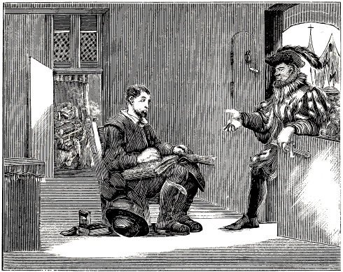
APPREHENSION OF ANDRIES LANGEDUL.
At Antwerp three brethren, named Andries Langedul, Mattheus Pottebacker and Lauwerens van der Leyen, were apprehended for the truth. Andries Langedul was apprehended at a time when a meeting had just been held in his house for the preaching of the word of God. Some one had spied it out, and thus the Margrave came there just after the congregation had dispersed, and while Andries was sitting on his porch, reading the Bible. He arrested him on the spot.
609
His wife was confined at the time, which the Margrave discovered when he walked towards the chamber, and saw that the midwife had the child on her lap; for the woman had just been delivered. Perceiving this, the Margrave withdrew from the chamber, but apprehended also the women who had come to assist the woman in her distress, and caused the lying-in woman to be guarded by some of his servants. But the nurse, vexed at this, prevented the apprehension of the woman, by entertaining them very liberally, and plying them with wine, so that the sick woman was, without their knowledge, conducted, on planks, across a well belonging to the two neighbors in common, and thus went from her neighbor’s house to the house of Christian Langedul, her husband’s brother, whose wife was also confined at that time.
It has not come to our knowledge, on what particular day Andries Langedul was apprehended, but he offered up his sacrifice with Mattheus Pottebacker and Lauwerens van der Leyen on Thursday, November the 9th, A. D. 1559, and this not publicly, but they were beheaded in prison, in a place where the other prisoners, of whom there were many at that time, could see it from the windows of their cells.
When Andries knelt down to submit to the sword, he folded his hands, saying: “Father, into thy hands I commend”—but: “I commend my spirit” was not finished, the rapid descent of the sword preventing it. Thus all three were put to death as lambs of Christ for the slaughter.
Lauwerens van der Leyen wrote several letters in prison, the following of which have come to our hands.
Grace and peace be unto all the brethren residing at Emden, especially to my two brothers, and Tonijntgen, Lieven’s wife. May the Lord Jesus Christ strengthen you and us all, through his divine Spirit. Amen.
I, Lauwerens van der Leyen, imprisoned for the testimony of Jesus Christ on the 21st of May. On the 22d I confessed my faith before the Prometeur, Mr. Claes; for he came alone, in hopes that I should say what he wanted to hear; but the Lord kept my lips. Asked, before whom I had been to confession and to the sacrament on Easter, I replied: “Before Mr. Lieven Biestman, but not last Easter; for he has been dead for two or three years.” I was asked: “Do you not believe that God is in the sacrament in flesh and blood?” I said: “No.” What then do you think the sacrament to be? “An idol,” I replied. I was asked whether I did not believe in the Roman church, of which the Pope is the head. I replied: “No; for I loathe the Roman church, for 610 she is utterly contrary to the truth; but I believe in the apostolical church, of which Christ is the head.” What do you think of infant baptism? “I regard it as worthless and an abuse; for I renounce my first baptism.” “Then you are not baptized?” I said: “No.” “Is baptism not necessary, then?” I replied: “Yes, it is necessary to perfection.”
“Why then are you not baptized?” I replied: “I was not good enough yet.” “Why?” “Because I was too much involved in this world; for I was, and am still, greatly in debt, and I thought that if I should be apprehended, people would say that I was a cheat, and thus many should be offended; for this reason I forbore to receive baptism. But I consider it good and right, and want to live and die herein; and though I have not been baptized, the Lord in his mercy will save me, through his sufferings and precious blood; for I believe all that a Christian is bound to believe; and herein I will abide, you may do with me what you please; for I am now in your power.”
I was further asked what I believed concerning the incarnation; whether I did not believe that Christ came from Mary’s flesh and blood. I said: “I believe as the Scriptures testify concerning it, John 1 and Luke 1.” And I stated it at length. Thus it remained, and I had to note it down. This was the severest assault; it lasted two or three hours.
On the 24th of May the Dean of Ronse and two others came. He approached me with many fine words, and said: “Lauwerens, you must suffer yourself to be instructed; it will not do for you to depend upon a few lay men, who have made stockings for thirty or forty years.” I replied: “Do you think that I depend upon men? he that trusteth in man is cursed, as the Scripture says. I put my trust in God alone, and in his living word; and herein I will abide as long as God grants me life.” Jer. 17:5; 1 Tim. 6:17. But they wanted with many words to show me, that God was in the sacrament; however, I would not believe it at all. With these words we parted, having been together at least two hours.
Written in haste, by me, Lauwerens van der Leyen, the 25th of May, A. D. 1559.
Grace and peace be multiplied unto you, my most beloved brethren and sisters in the Lord. Know that I was examined, and that the Margrave wanted to know much from me. I said I wanted to tell him all that concerned my faith. He said: “You shall tell me all.” I said: “What do you wish to know?” He asked me: “What do you think of the baptism you received in your infancy?” I said: “Nothing at all.” He then wanted to know where it was written that infants should not be baptized. I said: “Mark 16:16; Matt. 28:19.” Much incensed at me, he asked me: “What do you think of the seven sacraments?” I replied: “I have never read anything about it.” This question he repeated twice or three times. I said: “I have never read about it; but I believe that Christ is sitting on the right hand of his Father, where I hope to be with him, when the time will be fulfilled.”
He then asked me concerning auricular confession. I said: “I acknowledge a confession; but I think nothing of auricular confession; but I confess daily before my heavenly Father.” This enraged the Margrave, and he said that he should have me placed to the stake, or thrown into the water. I told him to do with me as he pleased, since my flesh was at his disposal. He then told me, that he should send other learned men. I replied that I already had the faith I wanted to believe. He said: “You must hearken to them.” I answered: “Though you cut me limb from limb, I trust I shall not deny the Lord my God.” Then the Margrave and his Judges were very angry at me; for one of the latter said, that he should put me on a galley; but I replied: “Do with me as you please.” Then the Margrave said: “I shall not be so lenient to him; but we will have him placed to the stake.” I said: “I remind you of my sentence;” and told him, how, when I was apprehended the last time, I had been prohibited, on pain of decapitation or the stake, from singing any hymns, and that I should take care not to be one of such people. “But” [said I] “I do not say this because I am therefore now the bolder; for even if I had never previously been prohibited from it, I should not want to deny my Lord and God.”
The Margrave then asked me: “Does your mother also belong to them?” I replied: “I wish she did.” And I said: “When I used to gamble and get drunk, and to follow the world, I was left unmolested; but now that I truly confess the name of God, I am persecuted; but it is as the prophet Isaiah says: ‘Truth is fallen in the street, and equity cannot enter; and he that departeth from evil maketh himself a prey.’ ” Isa. 59:14,15.
One of the Judges then said to me: “Have you also stolen?” I asked him twice or three times: “Did you ever hear that I did?” but he made no reply. They then began to speak very suavely to me, and said: “If you will renounce all that you have said here, we shall tear this paper in pieces, and show you mercy.” And the Margrave said: “You certainly know, how your sister fared on this account, whom I caused to be thrown into the Scheldt.” But I replied that she had died for the truth; and as regards myself: “I do not want to deny my Lord and God, who created and made me; I will rather let you do with me whatever you please.” Then the Margrave said: “Do you think we cannot also read? we, too, daily read the Scriptures; but these cobblers and tailors want to be wiser than we are. I am very glad that you have fallen into my hands; for, doubtless God the Lord sent you into that house, that I might punish you, so that others should take an example from you.” And he applied many ugly epithets to me, and said: “You have often eaten and drank in my house; I am sorry I did not tie up your throat.” And he asked me: “If you were not a prisoner, would you have yourself rebaptized?” I said: “If you will 611 release me to-morrow, I will use diligence to have myself baptized; for this behooves believers.”
He then asked me: Will you confess nothing else?” and interrogated me concerning princes and lords, and the Pope of Rome. I said: “I hold God Almighty to be my Supreme Creator, and my King.” Then the Margrave said: “I have at home a little book, covered with chamois.” I said: “My lord, that book belonged to me, and if you will read it, you will therein find what our faith is.” He replied: “They were first published by the Pope of Rome.” I said: “I do not regard them thus; but it is the Testament, left us by God for a memorial.” He was enraged at me, and said: “I wish I had never seen you;” and irefully said: “Begone; for I and these lords, the judges, came to instruct you; but we shall send you other learned men.” I thanked him much for the trouble they had taken.
My dear friends, I did not fear them, no matter however they threatened me. Luke and Matthew say: Whosoever shall seek to save his life shall lose it; but he that loseth it for my name’s sake shall find it. Luke 17:33; Matt. 10:39. They thought they were afflicting me greatly; but I was not afraid of them at all. I hope soon to be released from this flesh. My dear friends, do not fear them that kill the body, but fear him who created and made you, and has power to cast you into the eternal fire of hell. Luke 12:5.
Herewith I commend you to the Lord; and may the mighty hand of God guide and keep you, my dear brethren and sisters in the Lord. They also asked me, whether I should be saved, because I had not received baptism. I replied: “Yes, for I trust that the Lord will have respect to my willingness, since he had respect to Abraham’s willingness.” Gen. 22:12. Brethren and sisters, pray for me, that with the help of God I may remain steadfast unto the end. I trust that you regard me as your brother, though I have not attained to perfection.284
Written by me, Lauwerens van der Leyen, July the 10th, 1559, at Antwerp.
(To relate it all would require too much time.)
A confession of faith, and a confession of the eternal God, who is from everlasting, and who will abide forever, without beginning and without end, who is and was; this same only One is an eternal God; and there is no other; him I confess to be an eternal God, namely, an eternal Father, and I also confess his only Son to be one with his eternal Holy Spirit. Thus he is a perfect God, and besides him there is no other, namely, Father, Son and Holy Ghost. 1 John 5. According to my belief and the testimony of the holy Scriptures they are one. Amen. The almighty, eternal God, with his eternal, almighty Son, who is also the Word of the Father; to this great, incomprehensible, unblamable, and invisible God, who by his eternal Word made the world, and without him was not anything made that was made, that is in heaven and upon earth, the invisible became visible; to this eternal Son, who also is the Word of the Father, be praise forever and ever. Amen. John 1:1,2; Colossians 1:10.
Of him we want to speak, of this eternal Son, who was with his Father, and was with him in essence or in divine form, through whom and with whom he operated from everlasting; for by him the world was made, and all that is in it, and without him there is not anything made; to this eternal Son, who is one with his eternal Father, who is from the beginning of the creation of God (Rev. 3:14), without beginning and without end, to him be praise and glory forever and ever. Amen.
For when God made man, he created him after his image, and made him ruler over all things, and gave him a commandment, which he was not to transgress. But as man was frail, and the devil subtle and cunning, and deceived man by fair pretenses, the devil induced him to transgress the faith; and man thus transgressing, sin was brought into the world; and he was ashamed and hid himself from the face of God, and thus the curse came upon the whole world; so that God said: Cursed is the ground for thy sake. And thus man remained under the curse; so that no one could make atonement for sin, since it was impossible for man, because he was weak through the flesh, was compassed with infirmities, by sin or weakness, according to the holy Scriptures. Hence sin could not be taken away or atoned for by man, because all were subject unto sin. Now as it was not possible that reconciliation for sin could be made by man, God promised his eternal Son, even as he often spoke to the people through the prophets, that he should raise up Jesus, the Savior, whom he had promised through many generations, as we find written in Matthew 1. These promises were fulfilled from Abraham to Jesse, the father of David; from David to Jacob, the father of Joseph, the husband of Mary, the pure virgin, whom God honored, and who also waited for the promise that the Savior should be raised up, and was not unbelieving when the angel said to her: Behold, thou shalt conceive in thy womb, and bring forth a son, and shalt call his name Jesus. He shall be great, and shall be called the Son of the Highest. Luke 1:31,32. Here we have the assurance that the promises are fulfilled which he had promised from generation to generation, Matt. 1, which are now fulfilled in that generation; hence there is fulfilled the word, Acts 13:22. I have found David the son of Jesse, a man after mine own heart, which shall fulfill all my will. Of this generation was born the Savior Jesus, the Son of the most High God, though he existed before; but he was manifested in the latter days, to redeem us, and to gather those that were 612 scattered, of whom Paul says that he gave many precious promises in the Holy Scriptures concerning his son, which was made of the seed of David according to the flesh; and declared to be the Son of God with power, according to the Spirit. Romans 1:2,4.
One of the judges said to me: “If Christ is not of Mary’s flesh, then the promise is not fulfilled yet.” I said: “It is not written that Christ is of Mary’s flesh.” This Dean said to me: “It is written; you lie, for it is written: That holy thing which shall be born of thee shall be called the Son of God. Again: A virgin shall conceive, and bear a Son. Again: That he was born of the seed of David, according to the flesh.” I said: “My lords, it is true; but it is not written as you have said. Hear, my lords, I call you to witness, he has brutally called me a liar; nevertheless, it is not written thus.” Again he said: “You lie.” I replied: “If I were disposed to call you a liar, I would say that you lie yourself.” I said: “My lords, listen: Luke 1:26, etc. The Angel was sent from God to a virgin espoused to a man whose name was Joseph, of the house of David; and the virgin’s name was Mary, and she was a pure virgin. And the angel came in unto her, and said, Hail, thou that art highly favored, the Lord is with thee: blessed art thou among women. Thou shalt conceive in thy womb, and bring forth a son. He shall be great, and shall be called the Son of the Highest; and the Lord God shall give unto him the throne of his father David, and of his kingdom there shall be no end. Mary said: How shall this be, seeing I know not a man? The angel said unto her: The Holy Ghost shall come upon thee, and the power of the Highest shall overshadow thee: therefore also that holy thing which shall be born shall be called the Son of God. That which was conceived in her was of the Holy Ghost. Matt. 1:20. It does not say there, that he is of Mary’s flesh.” One of the judges again said: “The promise is not fulfilled yet.” I replied: “It is fulfilled; if you will listen to me, I will tell you.” I then told him that the Savior and Redeemer came, and suffered much here for our sakes, even as is written that Christ the Savior himself said: God so loved the world that he gave his only begotten Son, that whosoever believeth in him should not perish, but have everlasting life. John 3:16. And thus he came into the world. And he left us an example, that we should follow his steps. 1 Peter 2:21.
Again Zachariah truly said: “Blessed be the Lord God of Israel; for he hath visited and redeemed his people, and hath raised up a horn of salvation for us in the house of his servant David; as he spake by the mouth of his holy prophets, which have been since the world began: that we should be saved from our enemies, and from the hand of all that hate us; to perform the mercy promised to our fathers, and to remember his holy covenant; the oath which he sware to our father Abraham, that he would grant unto us, that we, being delivered out of the hand of our enemies, might serve him without fear, in holiness and righteousness before him, all the days of our life.” Luke 1:68–75. Thus we find indeed, that the promise is fulfilled; but that Christ is of Mary’s flesh, this we find nowhere written. The Dean of Ronse asked me: “How then did he become flesh?” I told them that he who was from everlasting with his Father, by whom all things were created and made, that are in heaven and upon earth, visible and invisible, yea, the living Word of the Father, who was with the Father, came from his kingdom on high, and became man, and thus came into the world, and saved us with his own blood. Rev. 1:5. The Dean asked: “Did he then become changed?” I told him as is written: “The Word was made flesh, and dwelt among us.” John 1:14. The Dean said to me: “You are the vilest sect that ever was upon earth.” I told him that he was a rotten sect, in presence of all the judges, or the court; and (said I) I will prove to you that you are a sect; for your people cannot prove a single point of all that you observe, with the word of the Lord; and Christ says: “Every plant which my heavenly Father hath not planted, shall be rooted up.” Matt. 15:13. I then asked him, where he found anything written concerning the institutions observed by them, such as the christening of bells, tonsure, the consecrating of water, that one wears shoes with holes, and another stockings without toes, each in his own way, all of which is certainly not sanctioned by the word of God.” I further said: “My lords, I have offered to dispute from the Holy Bible, publicly, before the whole court.” The Dean said to me: “You will be thrust into a bag, and suffocated with a ball in your mouth.” I said: “You hypocrite, do you not fear the word of the Lord, which says that with the breath of his lips shall he slay the unmerciful? Isaiah 11:4. Again: A man that doeth violence to the blood of any person shall flee to the pit; let no man stay him. Prov. 28:17. Ye serpents, ye generation of vipers, how can ye escape the damnation of hell? Matt. 23:33. Repent ye, and believe the gospel; for your days may be brief.” Mark 1:15.
He asked me how I knew that the Gospel is the Gospel. I said to them: “This is a strange question; but if you will listen to me, I will tell you. Should I not know, said I, that it is Gospel, that Almighty God said and taught: Repent ye, and believe the Gospel? and that he came down from his kingdom above, and suffered so much for our sins; yea, he who was rich, became poor, that we through his poverty might become rich; when he called men unto him, that they should follow him, and commanded his apostles to preach it throughout all the world: He that believeth it, and is baptized, shall be saved; but he that believeth not, shall be damned.” Matt. 28:19; Mark 16:16. They asked how I knew that his apostles had written this; and said: “Other men printed it; you have never spoken with or seen the apostles—how then do you know it? there are other evangelists whom you have never seen; how then do you know whether this is the Gospel? men wrote this to suit themselves.”
O subtle devil, thought I in my heart, and told them that the holy Scriptures were given through the Holy Ghost, and not without him, since Paul says: I will not dare speak of any of those things which Christ hath not wrought by me, to make the 613 gentiles obedient, by word and deed. Rom. 15:18. And, as the apostle Peter has said, that no prophets ever produced the Scripture by human will; but holy men of God spake as they were moved by the Holy Ghost. 2 Pet. 1:21. Thus, the Holy Ghost bears testimony, that the Gospel which we have, is the word of the living God, which he has given us, that we should live according to it, and thus be saved at the last day; even as it is written that these words are written, that we might believe that Jesus is the Christ, the Son of God, and that believing ye might have life through his name.” John 20:31. A monk asked me concerning infant baptism, whether I did not think it good. I said: “Baptism does not belong to children, but to believers.” Mark 16:16. He said: “Are the children damned, then?” I replied: “No; the kingdom of heaven belongs to them.” Matt. 19:14. He said: “Those who are not baptized are damned.” I said: “This is nowhere written, neither, that children are to be baptized.” He said; “It is written.” I said: “It is not; children have no faith; but they are assured of eternal life.” Matt. 19. He said: “It is written: ‘Except ye be born of water and of the Spirit, ye cannot enter into the kingdom of God.’ ” John 3:5. I said: “They cannot be born again, for they have no sin.” He said: “They have; for it is written that all are under sin.” I asked him what sins children had. He said: “Original sin.” I asked him why Christ had died. He said that he had made atonement; but that we must first be baptized, before original sin is taken away. I said: “This is speaking contrary to the word of God; for when John saw the Lord coming to him, he said: ‘Behold the Lamb of God, which taketh away the sin of the world! This is he of whom I said, After me cometh a man which is preferred before me; for he was before me.’ John 1:29,30. Of whom it is also written that he himself bare our sins in his own body on the tree. 1 Pet. 2:24. As John tells us, that he was manifested to take away our sins (1 John 3:5), and as Paul says that they are justified freely by his grace, through the redemption that is in Christ Jesus. Rom. 3:24. Paul further tells us, that we should thank him who hath delivered us from the power of darkness, and hath translated us into the kingdom of his dear Son: in whom we have redemption through his blood, even the forgiveness of sins. Col. 1:12–14. The apostle says that he upholds all things by the word of his power, and has by himself purged our sins. Heb. 1:3. Again Paul says: But God commendeth his love toward us, in that, while we were yet sinners, Christ died for us. Much more then, being now justified by his blood, and thus reconciled to him, we shall be saved from wrath. Rom. 5:8,9. He says: Therefore, as by the offense of one, judgment came upon all men to condemnation: even so by the righteousness of one the free gift came upon all men unto justification of life. Ver. 18. Even as the prophet Isaiah says: He took our sins upon him.” Is. 53:11. They asked me whether I had not yet changed my mind. I asked them: “In regard to what should I have changed my mind?” They replied: “In regard to your errors.” I said: “I do not err; but I trust in the living God, in his holy word, and in nothing else; and from this I will not depart, for Christ has said: He that shall endure unto the end, the same shall be saved.” Matt. 24:13. They said: “Shall none be saved but you people, who began but twenty or thirty years ago, while our church has existed already fourteen hundred years, and has remained united—shall we all be damned—?” I said: “The word of the Lord, which was before ever your church existed shall judge men in the last day; it shall judge all men. Jn. 12:48. This [word] is given us through his Holy Spirit, that through teaching we should observe all things whatsoever he has commanded us. Matt. 28:20. Hence, those who will not observe it have no promise of eternal life, but indignation, wrath, tribulation, and anguish will come upon them. Rom. 2:8,9. Yea, he will take vengeance on them that have not known God, and have not obeyed the Gospel of our Lord Jesus Christ: who shall be punished with everlasting destruction. 2 Thess. 1:8,9. We must therefore believe that which has been spoken and written through the Holy Ghost, as it is written that all Scripture is given by inspiration of God, and is profitable for doctrine, for reproof, for correction, for instruction in righteousness: that the man of God may be perfect, thoroughly furnished unto all good works. 2 Tim. 3:16,17. Therefore we are assured concerning the holy Scriptures which we have, that they were written by the apostles through the Holy Ghost, as Peter has said: We have not followed cunningly devised fables, when we made known unto you the power and coming of our Lord Jesus Christ, but were eye witnesses of his majesty. For he received from God the Father honor and glory, when there came such a voice to him from the excellent glory, This is my beloved Son, in whom I am well pleased; hear ye him. Should we not then believe these words, where he says: We have also a more sure word of prophecy, whereunto ye do well that ye take heed? and thus we do take heed to these words.”
They asked me concerning the sacrament of the altar. I told them that I found nothing written about it; but of a supper which the Lord observed with his apostles, when the time had come that he was to fulfill that for which he had come, that it might be fulfilled which was written of him, and that he should return to whence he had come. When it was two days yet until Easter, he said: The Son of man shall be delivered up, to be crucified. And his disciples asked him: Lord, where wilt thou that we eat the passover? He told them a place to which they should go, and went with them. And as they were eating, Jesus took bread, and gave thanks, and brake it, and said: “Eat; this is my body; likewise he took the cup, saying: Drink ye all of it; for this is my blood of the new testament, which shall be shed for many; this do in remembrance of me.” Matt. 26:20; Mark 14:17; Luke 22:14. I also asked them: “Did each eat his body, as he was with them, in flesh and blood?” They said: “Yes; they there ate his flesh, and drank his blood.” I asked them once more: “How did they eat him? just as he was with them? did each eat a Christ?” 614 They said: “Yes; just as he hung on the tree of the cross.” I said to them: “But he had only one body, and that had to be given as a ransom for the sins of the world, and was delivered into the hands of the Jews, and they hung him to the tree of the cross, and killed him, and thus he redeemed us with his blood, even as is written. 1 Pet. 1:19. He took upon him our sins, and bare them on the tree.” 1 Peter 2:24. They said that they had also now had him even as he had hung on the cross. I said to them: “I do not believe that such a great Lord is eaten of you people, who are utterly contrary to the word of God, and full of wickedness, and disobedient to the word of the Lord; but I believe that he ascended to heaven, and is sitting at the right hand of God his Father in heaven, Acts 1, from whence we also look for him to come again (Philip. 3:20); and that you do not have him; for if you had him, he should be crucified once more, hence, you people cannot be believed, since you all act contrary to the word of God; for it is found written that the apostles of God held their supper with a unanimous faith; and were all of one mind, and continued steadfast in all that they had seen of God (Acts 4:32); nevertheless they did not teach or say that they ate Christ’s flesh, and drank his blood, just as he hung on the tree of the cross; but that he ascended to heaven, and is sitting on the right hand of God, this they taught. 1 Peter 2:2; Mark 16. Yet, all that they taught was through the power of the Holy Ghost, and they continued steadfast in the faith which God had commanded them. For other foundation can no man lay, than that is laid, which is Christ, and upon this his apostles laid their foundation, and I want to remain upon it, without ever departing therefrom.” Hence I said to them: “If you want to dispute with me publicly, with the Holy Bible, I shall answer you with the word of God, concerning all that you shall speak with the word of the living God. He that is right, shall be hearkened to; but he who is wrong, shall proclaim and confess that to this day he taught a false doctrine. This is a small part of the words which we had with the judges, the bailiff, and ecclesiastics
The peace of the Lord be with you. Amen. Grace be to you; and peace, from God the Father, and from our Lord Jesus Christ, who gave himself for our sins, that he might deliver us from this present evil world, according to the will of God and our Father, to whom be glory forever and ever. Amen.
A most affectionate greeting with the peace of the Lord to you, my dear brother Nathanael, I, your imprisoned brother Lauwerens, wish you the grace of the Lord for a greeting, and inform you, that I am of reasonably good cheer, the Lord be praised; which, I trust, will continue so unto the end through the grace of the Lord; yea, I hope thus to appear in the day of the Lord. Know that we are waiting for the redemption of our flesh from day to day. Know further that I send you two hymns composed by Lauwerens de Huyvemaecker in his bonds. My dear brother, let us always hold fast those things which we have wrought, that we receive a full reward (2 John 8); and let us not be moved from our purpose, since we are certain that we have the truth; and that no other will ever be found; of this our conscience assures us. I am heartily sorry that I frittered away my time so long with the wicked and blind world, and did not improve it better. But though I have not been long in the better way, and am now a prisoner, I hope nevertheless to keep what I have, trusting in the grace of the Lord that he will not forsake me.
Know dear brother, that I should have written you much more Scripture; but you are yourself taught of God, and know the truth. See that you continue in it; may the Lord preserve you and all friends therein.
Herewith I commend you to the Lord, and to the word of his grace. We twelve, imprisoned together, greet you all with the peace of the Lord.
Andries Langedul, Sander Hendericks, Anthonis Claes, Hans de Luyckener, Mattheus de Pottebacker, Lauwerens van der Leyen, Lauwerens de Huyvemaecker. The women, Adriaentgen, wife of Jochem; Kalleken, wife of Lauwerens de Pesemaecker; Claertgen, wife of Jan Beun; Catelijntgen, wife of Lauwerens de Huyvemaecker; Maeyken, daughter of Andries Langedul; Grietgen Bonaventuers, old Maeyken, and Maeyken de Korte.
By me, Lauwerens van der Leyen.
Greet all the friends much, especially Tanneken and Pierijntgen, in the Blind Ass, and Maeyken, daughter of Andries. Greet Tanneken much, Lauwerens de Huyvemaecker, and his wife, greet Prijntgen with the peace of the Lord.
I, Lauwerens, your brother, bid you farewell; my dear brother, farewell.
The peace of the Lord be with you. Amen. Grace and peace be with you, from God the Father, and the Lord Jesus Christ. Blessed be God, even the Father of our Lord Jesus Christ, the Father of mercies, and the God of all comfort; who comforteth us in all our tribulation, that we may be able to comfort them that are in any trouble, by the comfort wherewith we ourselves are comforted of God. For as the sufferings of Christ abound in us, so our consolation also aboundeth by Christ. And whether we be afflicted, it is for your consolation and salvation, which is effectual in the enduring of the same sufferings which we also suffer: or whether we be comforted, it is for your consolation and salvation. And our hope of you is steadfast, knowing, that as ye are partakers of the sufferings, so shall ye be also of the consolation. 2 Cor. 1:2–7.
I affectionately greet you, my dear brothers Nathanael and Lieven, with the peace of the Lord; I earnestly commend myself to you, and inform you that I am of tolerably good cheer, the Lord be praised for his great grace, which he has manifested so richly towards me, in that he has redeemed me 615 from this present evil world; and that, whereas you once saw me in so exceeding wickedness, the light of truth is now revealed to me, for which I greatly thank the Lord, and trust that I shall continue therein by the grace of the Lord; for, my dear brothers, know that we have nothing of ourselves, but that all must come from the Lord, for the Lord says: Whosoever shall seek to save his life shall lose it; and whosoever shall lose his life for my name’s sake, shall preserve it. Luke 17:33. Seeing then that we have a great high priest, that is passed into the heavens, Jesus the Son of God, let us hold fast our profession. For we have not a high priest which cannot be touched with the feeling of our infirmities; but was in all points tempted like as we are, yet without sin. Let us therefore come boldly unto the throne of grace, that we may obtain mercy, and find grace to help in time of need. Hebrews 4:14,16. O my dear brothers, as we have and know the truth, let us not part from it, but let us always lay our foundation upon the corner-stone Jesus Christ, so that our building may be firmly joined together (Eph. 2:20–22), when we are tried as gold in the furnace, that is, in all manner of tribulation, whether in or out of bonds; for Satan sometimes torments us greatly. Eph. 6:11. Hence, let us take heed, that our crown be not taken from us (Rev. 3:11); that we may be prepared for conflict; that we may have the helmet of salvation on our head, and have the sword of the Spirit. Ephesians 6:17.
Dear brothers, he that overcometh shall inherit all things; yea, he that overcometh shall be clothed in white linen raiment; then the crown of life will be prepared for us. O, dear brothers, fear not them that kill the body; but much rather fear him who after he has killed the body, can also cast the soul into hell. Luke 12:5.
My dear brethren, you know that I have had this written to you out of love. Excuse my little understanding. I send you a hymn. Herewith I commend you to the Lord, and to the word of his grace, and bid you farewell; farewell, my dear brothers, farewell. All my fellow prisoners greet you most cordially. Hans de Luyckener greets his brother most affectionately, and Anthonis Claes greets Elsgen Aerts much. Greet all the friends much, all that fear the Lord, and remember them that are in bonds, as bound with them. Matt. 25:36; Hebrews 13:3. Dear brothers, greet also Tanneken, wife of Lenaert de Lettersetter, very affectionately, and bid her farewell in my name.
Written the 25th of October, A. D. 1559, by me, Lauwerens van der Leyen, imprisoned at Antwerp for the testimony of Christ.
NOTE—The very severe decree of Emperor Charles V., made in September A. D. 1550, and renewed and confirmed six years afterwards by Philip II., King of Spain, against the Baptists (as we have circumstantially shown for the year 1556), was now, A. D. 1560, again renewed by said Philip II., and proclaimed everywhere in the Netherlands. See aforementioned defense of William I., Prince of Orange, against his adversaries, edition 1569, page 165, extracted from the large book of decrees of Ghent, etc.
It appears that in consequence thereof the bloodshedding, slaying and burning of the saints increased the more, as is evident from the following martyrs.
In the year 1560 three brethren, named Anthonis Claes, Joris Tieleman, and Hans de Backer, were apprehended, examined and tortured; but they adhered unswervingly to their faith and the truth they had learned and accepted, and thus walked in the narrow path to the new Jerusalem; wherefore they were condemned to death by the enemies of the truth, and drowned in a tub. But even as they had to drink in the temporal death, so eternal life will be poured out to them by God.
In the same year three other pious brethren sealed the truth with their death at Antwerp. One of them was Peter, a Spaniard, to whom, a few years previously, while yet in Spain, a brother from Amsterdam, named Jacob Jans Ruytenburgh, had spoken, and conversed with him different times about God and his word. He finally came with the brother, by ship, to Antwerp, leaving his wife and children at St. Lucas, with the intention of returning to them after a while, or to come and get them. After his arrival at Antwerp, he, through ignorance, was at first shunned by the brethren, who feared treachery, since he was a Spaniard; however, upon sufficient examination and instruction, he was admitted not only to the assembly, but also as a brother and fellow-member of the church of God, and received baptism upon confession of his faith, which he truly and frankly declared before the congregation. Shortly after, when he was about to return to Spain, to gain his wife and children, as also, some of his friends and acquaintances, and to bring them to the true knowledge of the truth, he was apprehended by the Margrave, who was himself astonished to have a Spaniard fall into his hands. He was kept imprisoned for a long time, and the Spaniards took great pains with him; but he, orally as well as in writing, clearly demonstrated the truth to them, in his own language, notwithstanding which they sought to induce him to apostatize. But as nothing could move him, remaining steadfast, he finally boldly sealed the truth and his love to God with his death, with Gomer the mason and Jacob the goldsmith, who were together drowned in a tub, for the name of Christ.
A. D. 1560, also three imprisoned sisters, namely, Deaf Betgen, Betgen of Ghent, and Lijsken Smits, 616 were sentenced to death and drowned in a tub, in the city of Antwerp, because they could not be brought from the truth and the love of their Savior.
There was a pious man named Lenaert Plovier, about thirty-six years of age, who was a native and resident of Meenen, in Flanders, and by occupation a woolen-draper; and as he was a man of good report among all, he was elected appraiser of woolen cloths.
Thus said Lenaert Plovier, through the grace of God, came to the knowledge of the truth, about A. D. 1555. Having, on account of his competency, been re-elected, to continue his appraisership, he refused to take the oath; but his fellow-drapers were nevertheless satisfied with him, saying: “Only come with us to the city hall, and show yourself;” for they thought that the Bailiff would pay no attention to the matter. But the Bailiff could not endure his views, and from that time on Plovier had to suffer much persecution, and dwell in secrecy. Afterwards, about the year 1558, he fled with his wife and children to Antwerp, where they gained their livelihood by dealing in silk. But as a great persecution was raging also there, he resolved to take up his residence in Friesland. He sent his wife and their four children ahead, after a sojourn of a little over a year at Antwerp, intending to follow them as soon as he had finished his business. He then traveled with his merchandise to the cold Ypres fair, whence he returned to Antwerp, where, stopping a while, he learned that the Margrave was about to sally forth for the purpose of apprehending those who would not live according to their institutions. Lenaert left the city in order to warn some of his fellow-believers by night. He met the Margrave and his troop, who, accosting him, perceived from his answers that he was not like they, and hence asked him, whether he did not have a testament with him. He replied: “Yes.” Thereupon they apprehended him, and he was thus taken to Antwerp and imprisoned there. When his parents heard of this, as also his father-in-law, who resided at Meenen, and was a prominent man, they came to Antwerp in haste, with Lenaert’s mother. The father thought to procure his release from prison by shrewdness, or by bribing the Margrave, representing that his son-in-law was not a resident of Antwerp, but had only come there to transact his business. The Margrave gave them fair words, saying to the mother, who had been several nights in prison with her son: “Go home; your son will soon be released from prison.” They therefore departed, supposing that the promise given them would be kept. When the parents had gone away, Lenaert was examined and questioned concerning his faith, and whether he was baptized, which he freely confessed, expressing his determination to adhere to the truth he had accepted, not considering his wife and his four children, whom he nevertheless dearly loved, as appears from six letters which he wrote to them from prison; two of which letters are given here.
After a brief imprisonment, this pious brother Lenaert, with two young maidens, named Janneken and Maeyken of Aix-la-Chapelle, was sentenced to death, to be drowned, which was done in the following manner: They were put into bags, and thrust into wine casks, and thus drowned in prison by night, about a fortnight before Easter, in the year 1560 (reckoning the beginning of the year from New Year’s day). Some of his fellow-believers having learned that pious Lenaert Plovier and Janneken and Maeyken of Aix-la-Chapelle were to offer up their sacrifice in the night, they came to listen at the door of the prison. Among them were Joost Nose and Kestine van Damme, who gave a good testimony concerning it; they both died at Franeker, in Friesland. Thus the aforesaid three pious witnesses of Jesus Christ were tried as gold in the fire, and as they were found upright, they shall receive the eternal crown of honor and joy, with all the saints of God. Amen.
This was written by the son of the aforesaid Lenaert, and testified to be true.
Dear and much beloved wife Maeyken, after affectionate greeting, know that I am still of good cheer, and that I am also well according to the flesh, which I hope is the case also with you and those with you. But I should like to hear that it is your determination to follow the Lord in all righteousness; for we know not when the Lord will visit us, that we must appear before the judgment seat of Christ, where every one will receive his reward, according to that he hath done, whether it be good or bad. Hence, dear Maeyken, be obedient to the Gospel ere that day comes, since it will come as a thief in the night (1 Thess. 5:2); for this is the true way that leads to life eternal, which has sometimes been presented to you, and besides which there is salvation in no other; for Christ says: “I am the way, the truth, and the life: no man cometh unto the Father, but by me.” Now if Christ is himself the way, the truth, and the life, let us seek to follow the truth, and to walk this way, that we may have life. For it is written, that the Lord shall come to be glorified in his saints, and to be admired in all them that believe, and for the punishment of all them that have not obeyed the Gospel, who shall be punished with everlasting destruction from the presence of the Lord. 2 Thess. 1:7.
Dear Maeyken, though sometimes persecution, tribulation and distress arise, yea, bonds and imprisonment, as is daily seen in us and in others who want to be obedient to the truth; let us not on this account cease to walk this way, or to follow the truth. For Christ says: The world shall rejoice, but ye shall mourn and be sorrowful; but your sorrow shall be turned into joy. John 16:20. Hence, dear Maeyken, regard not father or mother, or children, nor anything that is in the world; for Christ says: He that loveth aught more than me 617 is not worthy of me. He that loveth father or mother more than me is not worthy of me: and he that loveth son or daughter more than me is not worthy of me. Matt. 10:37. For to be carnally minded is death, yea, enmity against God, because it is not subject to the law of God, but this is a carnal mind: to love father, mother, children, or aught that is of the world, more than God, or for their sakes to cease to follow the truth, or on account of temporal occupation, or temporal loss, or because we have many children and have anxiety how we are to provide food for them. Christ says: Seek ye first the kingdom of God, and his righteousness; and all that you need shall be added unto you. Matt. 6:33. Therefore do your best herein, my dear Maeyken, this is my heart’s request of you, this I pray you.
I also inform you, that I was at the Ypres fair. Having returned to Antwerp, our cousin Hendrick and I took a walk out of the city, so that it grew rather late; and when we drew near the city, we met the servants (or thief-catchers) of the city, who apprehended us, so that we could not escape their hands and keep our faith. Therefore, dear Maeyken, though the Lord has now so ordered it, that I have been apprehended, and the time is come that the Lord will visit me, be not discouraged, neither grieve very much, though I know that you will grieve; but do not grieve too much, lest you have to take to your bed, or fall sick; for it is for the truth. Some of the hardest things for my flesh to bear are, that I must leave you and the children, that I cannot help you to provide food for them, nor be a protector, and that you are not minded like we are; but I hope that this will come about in course of time. Hence, dear Maeyken, do your best to be obedient to the Gospel, that, if we never see each other again according to the flesh, we may find each other hereafter. I should have liked to see and converse with you once more; but my time is but brief perhaps. It also would be very hard for you and for me, to part from each other, although it is very hard for me now, though we do not talk with each other: but we must love God above everything else; rather forsake all, than forsake God. Hence, if you come here, or intend to do so, do your best to follow the truth, and to bring up the children in the fear of the Lord. Herewith I commend you to the Lord. Written at Antwerp, in bonds. This occurred on Sunday evening after the Ypres fair. By me Lenaert P., your husband. Greet me Franse much, and tell him to pray the Lord for me, that I may finish my course to the praise of the Lord.
Dear and much beloved children N., aged, etc., when your father was taken from you, it was not for any crime, but for the testimony of Jesus, and because I loved you unto death, and I wish that when you have reached the years of understanding, you would seek your salvation, as Christ has taught us. Matt. 6:33. Hence I have written you a brief admonition, that when you have come to the years of understanding, you, remembering this, may seek your salvation.
Therefore, dear children, see that you obey your mother, and honor her, for it is written: Honor thy father and thy mother, that thou mayest live long in the earth, and that it may be well with thee; for he that curseth his father, or his mother, shall surely be put to death. Ex. 20:12; Eph. 6:2,3; Ex. 21:17. And be not obstinate, or gainsaying, or quarrelsome, but kind. Neither lie; for it is written: The mouth that lieth slayeth the soul; for a liar has no part in the kingdom of God, nay, his part shall be in the burning lake. Wis. 1:11; Revelation 21:8. Be industrious with your hands, so as to help your mother gain a living. Gen. 3:19; Eph. 4:28. Be not backward in learning to apply yourself to books, so that when you have attained to years of understanding, you may seek your salvation. Be always modest in your words, as becomes children. And when you have come to years of understanding, take a Testament, and see what Christ has left and commanded us there; for all Scripture is given by inspiration of God, and is profitable for doctrine, for reproof, for correction, for instruction in righteousness: that the man of God may be perfect, thoroughly furnished unto all good works. 2 Tim. 3:16,17. For the grace of God that bringeth salvation hath appeared to all men, teaching us that, denying ungodliness and worldly lusts, we should live soberly, righteously, and godly in this present world; for man doth not live by bread alone, but by every word that proceedeth out of the mouth of the Lord. Tit. 2:11,12; Deut. 8:3; Matt. 4:4.
Behold, dear children, that the word of the Lord is food for the soul, by which the soul must live; and he that does not govern his life according to these words, is threatened with eternal damnation, as Christ says: “Verily, verily, I say unto thee, Except a man be born again, he cannot see the kingdom of God.” John 3:3. Hence Christ says: “Repent ye, and believe the gospel; for the axe is laid unto the root of the trees: therefore, every tree which bringeth not forth good fruit is hewn down, and cast into the fire.” Mark 1:15; Matt. 3:10. Therefore, dear children, see that you escape punishment; for those who do not obey the Gospel shall be punished with everlasting destruction from the presence of the Lord. 2 Thess. 1:9.
O dear children, behold what punishment, shall come upon him who does not obey the Gospels—eternal banishment from the face of God, and everlasting punishment. Hence, dear children, prepare while you have time. Though some tribulation may arise over those who seek to obey the Gospel, it will not last long when compared with that which is eternal: for we must enter into the kingdom of God through much tribulation. Acts 14:22. Therefore Peter says: “Think it not strange concerning 618 the fiery trial which is to try you, as though some strange thing happened unto you: but rejoice, inasmuch as ye are partakers of Christ’s sufferings; that, when his glory shall be revealed, ye may be glad also with exceeding joy.” 1 Pet. 4:12,13. Even Christ our teacher and master had to enter into the kingdom of God through tribulation and suffering; and the servant cannot be more than his master; but it must be enough for the servant that he be as his master. Matt. 10:24,25. Hence he says that he came not to bring peace upon earth, but a sword; for he saw beforehand, that the world should ill endure it, even as from the beginning it could not endure it; for they persecuted the prophets from the beginning, though they boasted that they had God for their Father; yet they could not endure the good things the prophets told them, nor their warnings; hence they persecuted, yea stoned and killed them; they did not even know Christ himself, who did so many signs and mighty works among them, but crucified him. O dear children, lay to heart what Paul says: “All that will live godly shall suffer persecution” (2 Tim. 3:12); and neglect not, on account of a little suffering, to seek your salvation: for these sufferings are not worthy to be compared with the glory which shall be revealed in us; for as the sufferings of Christ abound in us, so our consolation also aboundeth by Christ; for it is written: “Behold, the devil shall cast some of you into prison, that ye may be tried; and ye shall have tribulation ten days: be thou faithful unto death, and I will give thee a crown of life. Because thou hast kept the word of my patience, I also will keep thee from the hour of temptation, which shall come upon all the world, to try them that dwell upon the earth. Behold, I come quickly: hold that fast which thou hast, that no man take thy crown. Him that overcometh will I make a pillar in the temple of my God, and he shall go no more out: and I will write upon him the name of my God; yea, to him that overcometh will I give to eat of the tree of life, which is in the midst of the paradise of God; yea, he shall not be hurt of the second death; yea, he that overcometh, the same shall be clothed in white raiment; and I will not blot out his name out of the book of life, but I will confess his name before my Father, and before his angels; yea, to him that overcometh will I grant to sit with me in my throne, even as I also overcame, and am set down with my Father in his throne.” Rev. 2:10; 3:10; 2:7,11; 3:5,21.
Yes, dear children, behold what beautiful promises are given to those who overcome. Hence, fear not men, who can afflict us here for a short time only; for after this tribulation we shall rest from all our labors, under the altar, with those who were also slain for the word of God, and shall appear with many thousand saints, clothed with white robes, and palms in their hands, crying with a loud voice, Salvation to our God which sitteth upon the throne, and the Lamb. They shall hunger no more, neither thirst any more; neither shall the sun light on them, nor any heat; for the Lord will be their light, and shall wipe away all tears from their eyes; and there shall be no night there; and they shall need no candle, neither light of the sun; for the Lord God shall give them light, and they shall reign forever and ever. Rev. 14:13; 6:9; 7:9,10,16,17; 22:5.
Therefore, dear children, lay this to heart; look to these beautiful promises given to them that overcome, and not to those who apostatize, for these are written in the earth. Rev. 2:7; Jer. 17:13. Hence, dear children, see that you fear the Lord, while he gives you time; for he shall come when it is not expected. Watch therefore, and wait for his coming. Is. 55:6; Matt. 25:13.
This is the testament I leave you. Written at Antwerp, in prison, where I was confined for the testimony of Jesus. By me, your father,
LENAERT PLOVIER.
In the year 1560 brother Nicholas Felbinger, or Schlosser, a willing minister of the word of God, who was on trial yet, was apprehended, with another brother by the name of John Leytner, not far from Neumarkt, in Bavaria, where they had come on the first day after Judica,285 in Lent, on their flight on account of the faith. They were taken to Neumarkt, where they were twice examined by the Judge and his assessors, and interrogated especially with regard to infant baptism. But having clearly and thoroughly shown that Christ had not commanded it, but only the baptism of adults, who hear, understand, believe, and accept the word of God, they were, early next morning, placed in a cart, and, escorted by horsemen and guards, sent to Landshut, where each was imprisoned separately, and Nicholas kept chained. Afterwards the council met, and summoned them before them; they spoke much with them, but could accomplish nothing.
They then sent two learned men, namely, two Dominicans, to them, who conversed with them about the sacrament, infant baptism, and why they had left the papal church; but the brethren answered them from the word of God, that they had to leave it.
Hence they then tried them by torture, racking them severely, especially most severely when they wanted to know where they had lodged, and whither they intended to go. But Nicholas said: “We are not bound to tell you these things.” They asked: “Why?” He said: “Because you confiscate their property, torture and kill them for it, and sin against them. Should we betray those who do us good? we do not betray even our enemies—why then our friends?” They said: Then we will not cease to torture you, till you tell us, and left them lying on the rack a long time, until the executioner himself interceded in their behalf, and said; “Do desist; for though they be tortured all day, you will get nothing out of them.”
Then the Judge became enraged, and called them rogues and condemners of others. But brother 619 Nicholas said: “We condemn no one; but your sins condemn you, if you do not desist from them, this we testify according to the truth.”
The superior Judge asked: “What is truth?” The brother replied: “You would not understand it, though I should tell you; for you know as much what truth is, as did Pilate, who asked the same question.” John 18:38.
After this, two doctors were sent from the monks to them, a distance of over nine leagues; who endeavored in many and various ways to turn them, but were not able to do it. Likewise the chancellor and the lord of Landshut came to them once, and assailed them; but they found them steadfast in their faith, and had to leave them steadfast, being unable to gain them by their false and seductive counsels.
Two priests and a doctor in the Scriptures then came to them, and vehemently argued with them about infant baptism; but Nicholas vigorously withstood them with the Scriptures, and drove them from him.
After these, the chancellor and several Dominicans came to them, and sought to move them by suavity; but they valiantly withstood all the gates of hell, fully assured that they stood in the divine truth, which they faithfully and thoroughly defended, and said that they wanted to adhere to it in the simplicity of Christ. Thereupon the chancellor said to brother Nicholas: “Are you simple? I cannot believe this; a hundred might come, before there should be one who could defend himself like you; but I consider you an enthusiast, even as many are found at present, who roam about without reason.” But they boldly confessed and defended their faith, and God gave them a mouth and wisdom which the others were not able to resist. Luke 21:15.
After all this, they were sentenced to death by the children of Pilate, and brother Nicholas’ tongue was tied fast, that he should not speak to the people at the place of execution; towards the close, however, his tongue was freed so much that the two brethren could converse together.
John Leytner, whom the executioner proceeded to execute first, said to Nicholas: “Dear brother, if my death should terrify you, go forward first, and I will wait for the last.” But brother Nicholas said: “O no, O no; I do not dread it.” And thus John valiantly offered his neck to the sword, and was beheaded, Nicholas beholding it with intrepidity and boldness, as though it did not concern him. He then advanced also, knelt down, and offered his head, which was struck off for his faith, as had been done to the other. Thus these two testified to the divine truth with their blood, which took place on the 10th of July, 1560.
A. D. 1560 there were brought before the court at Antwerp two pious Christians, named Joris and Joachim. As they were standing as sheep for the slaughter before the lords, the Bailiff asked Joris whether he was rebaptized. He replied: “I am baptized according to the doctrine of Christ, as he commanded his apostles, saying: Go and preach to all nations. He that believeth and is baptized, shall be saved. Matt. 28:19; Mark 16:16. Hence they must first be taught and believe, and then be baptized in the name of the Father, the Son, and the Holy Ghost.”
The Bailiff also asked Joachim whether he was baptized. He replied: “I hold to one baptism, one faith, one Lord, and God.” Eph. 4:5,6.
Then the lords sentenced them according to the King’s mandate, whereupon Joachim, hearing his sentence, said: “My lords, we thank you for your trouble with us; but may God forgive you the blindness of your heart, and grant that you may become enlightened”.
As they were coming out of the court, they said: “We are not ashamed of the Gospel” (Rom. 1:16); and while walking in the street, they sang:
Thereupon Joachim said: “Fear not them that kill the body; for hereafter, when they mourn, we shall rejoice.” Luke 6:23.
Thus they as giants in the faith pressed through the strait gate to the new Jerusalem. After they had come to the place where they were to offer up their burnt sacrifice, they gave each other the kiss of peace. Standing at the stake, Joachim said: “O Father, forgive them that inflict this suffering upon us; but we thank thee that thou hast made us worthy to suffer for thy name; therefore, O Lord, assist us, and succor us with thy help in this last extremity.” Joris said: “Lord, thou knowest that I have sought thee and my salvation; and for this cause I must now die. Therefore, O Lord, receive me graciously.” He further said: “Citizens of Antwerp, fear not; though we die for the truth, Christ our Lord went before us, and we must follow him.” They then began to sing this farewell hymn: “Farewell, brethren and sisters all,” etc. Thereupon they commended their spirits into the hands of God, and ended their lives in the fire. They now lie under the altar, and wait to be clothed with white linen raiment, and to shine forth as the sun in the kingdom of the Father, where they shall be served with new wine and heavenly bread. Rev. 6:9; 19:8; Matt. 13:43; 26:28; Rev. 2:17.
In the year 1560 a brother named Willem de Kleermaecker was apprehended for the truth, and sentenced to death, at Antwerp.
Having been brought into the court, he was asked by the Bailiff, whether he was rebaptized. He replied: “Why do you ask concerning my baptism, and not regarding my life and faith; then you could pass a right judgment upon me, and this people could follow it?” The Bailiff asked again whether he was not rebaptized. Willem said: “You want but one word, and I made a confession before this: 620 judge rightly, and once more consider the matter well. The Bailiff asked whether he was rebaptized. Willem said: “You alone have asked me until this; may I not now ask you?” The Bailiff said: “Answer first; then I shall tell you.” Willem said: “I wish you would once think of that day that shall burn as an oven, when the ungodly shall perish like stubble.” Mal. 4:1. He further said: Mark 16:16 it is written: “He that believeth and is baptized shall be saved.” The Bailiff said: “You are not asked concerning that.” Willem said: “Infants cannot believe; therefore I had myself baptized upon my faith.”
The lords then went in, and Willem said to the people: “Repent and amend your ways.” The Bailiff forbade him to speak, but he said: “Do let me speak; for it cannot last long.” Presently the lords returned, and Willem said: “My lords, judge not according to the King’s decree, if you do not want to be lost; but think of that day which no one can escape, in which you will regret it, unless you become converted.” He was then sentenced, and his sentence read to him; whereupon, though it was still early in the morning, he was taken to the market place, and there strangled and burnt at the stake. Thus he fought his way through as a valiant soldier of Christ.
In the same year, on the first Friday after St. Martin’s day, brother John Korbmacher, a minister of the word of God and of his church (who was frequently sent out into the work of the Lord), was apprehended for the faith and the word of God, near Rosenhaus, in Bavaria, together with George Raeck, a deacon, and another brother named Eustace Kuter, who were together taken to Innspruck, and there delivered over to the authorities. John Korbmacher, on account of his being a minister, was taken to Fulleburg, where he was put into a deep tower full of vermin; bats fluttered about him; mice carried off his victuals, and numerous spooks haunted his abode, so that it would have terrified a person not possessed with a firm trust in God.
When the lord wanted to speak with him, he had him called by name, that he should quickly get ready and prepare himself for suffering. The other two brethren were imprisoned at Innspruck, in the Krauterthurm; and all three remained in confinement until the close of the year 1560. Afterwards, on the 2nd of January, the authorities severely examined John Korbmacher, as also Eustace, and George Raeck, each separately. They faithfully answered many articles, all of which were written down, together with their confession concerning them, and this was then sent to Vienna and elsewhere, as something new.
After this they were led back into the aforementioned towers or prisons, where they remained until the Friday after St. Vitus’ day, which was the 13th of June, when they were sentenced to death. On that occasion a great multitude was present, and the brethren spoke boldly to the lords of the court and jurors, showing to them, that the sentence and judgment which they passed upon them in the sight of God, since they condemned innocent blood, should rise up for a testimony of their condemnation. And when they said that they had to judge according to the imperial decree and mandate, John Korbmacher said: “O you blind judges, we must certainly judge according to our own heart and conscience, if we want to render an account of it before God. Hence, if you judge according to the imperial mandate, how will you answer for it before God?” And Eustace said: “What have we to do with the imperial mandate that you read it to us? Read our confession, which we have testified with the holy, divine and biblical Scriptures to be the truth of God, for which we must suffer.” Thus they boldly spake, and exhorted the people to repent. The brethren George Raeck and Eustace were led out of the court first, when George began to cry to the people, to repent, desist from sin, and also enter upon the way of truth, since it was the truth for which he was to be executed to-day.
Then John Korbmacher was also led out, so that they joyfully met at the place of execution, and praised God. A brother named Leonard Dax, went to them, and shook hands with them, and they took farewell of one another; on account of which they greatly rejoiced, and praised God, that they had seen a pious brother yet, who should inform the brethren and the church of their end. Then John Korbmacher, the minister, began to speak to the people, and to admonish them, to repent of their sins, and to follow the truth of God, that they might not be damned, but saved in Christ Jesus. Yea, he lifted up his voice with the utmost boldness, and said: “What I have taught and confessed is the divine truth, and I will testify to it with my blood.” Thus he did not cease to preach repentance, so that the judge said several times: “O John, stop a little.” John then stopped for a little while; but presently he spoke again, so that he became almost hoarse from speaking. Almost up to their last moment they exhorted the people to repentance; nor were they prevented from speaking, but full liberty was given them to speak. They were also permitted to converse with each other. They also fervently prayed to God, praising and glorifying him, that he had hitherto kept them courageous and steadfast, and praying him that he would continue to thus faithfully keep them until death (which was now at hand), and receive their spirits into his hands, now that body and soul were about to separate.
Their sentence was then read, in which, among others, these articles were particularly mentioned. First: They do not believe that the holy body of Jesus Christ is in the sacrament, but observe the Supper as Christ observed it with his disciples. Secondly: They do not believe in infant baptism, but in the baptism of adults; as Christ commanded it. Thirdly: They believe in marriage (which article they confessed, and did not deny); and the like articles, which were written there, and read; as also, what they thought and confessed of the Roman 621 church; but this was written in as vituperative language as it had been possible for the Judge to put it.
They were then led to the place of execution, called the Schweinacker, near the Schafhuetten. There Eustace, who was feeble and sick according to the flesh, was beheaded first. After him brother George Raeck cheerfully stepped forward to the executioner, and exclaimed with a joyful heart: “Here I forsake wife and children, house and home, body and life, for the faith and the divine truth. He then knelt down, and the executioner beheaded him also.
John Korbmacher was reserved for the last, who, when he beheld the other two lying there beheaded, said: “My brethren, you who have overcome shall inherit all things.” The executioner then took him, tied him to a ladder, kindled the fire, and threw him alive into the same. He also laid the two beheaded bodies upon a pile of wood, and burnt them to ashes.
Thus did they testify their faith in Christ with their word, life and death, yea, voluntarily and patiently, with their body and blood, confessing that God gave them such strength as a blessing; and thus they with firm confidence departed from this world to go to the eternal fatherland.
At this time also a pious woman named Soetgen van den Houte fell into the hands of the persecutors of the truth, so that after severe assaults and imprisonment she testified and confirmed the faith of the ever enduring truth with her death and blood, on the 27th of November, 1560, in the city of Ghent; and with her another woman, named Martha. Soetgen van den Houte also states that her husband had previously likewise valiantly trodden the wine-press of suffering and fearlessly testified the truth, and gave his life for it, as the following testament clearly shows.
In the name of the Lord:
Grace, peace and mercy from God the Father and the Lord Jesus Christ, this I wish you, my dear little children, David, Betgen, and Tanneken, for an affectionate greeting, written by your mother in bonds, for a memorial to you of the truth, as I hope to testify by word and with my death, by the help of the Most High, for an example unto you. May the wisdom of the Holy Ghost instruct and strengthen you therein, that you may be brought up in the ways of the Lord. Amen.
Further my dear children, since it pleases the Lord to take me out of this world, I will leave you a memorial, not of silver or gold; for such jewels are perishable: but I should like to write a jewel into your heart, if it were possible, which is the word of truth, in which I want to instruct you a little for the best with the word of the Lord, according to the little gift I have received from him and according to my simplicity.
In the first place, I admonish you, my most beloved, always to suffer yourself to be instructed by those who fear the Lord; then you will please God, and as long as you obey good admonition and instruction, and fear the Lord, he will be your Father and not leave you orphans. For David says: What man is he that feareth the Lord? him shall he teach in the way that he shall choose. Ps. 25:12. He also says: The eye of the Lord is upon them that fear him, upon them that hope in his mercy; to deliver their soul from death. The angel of the Lord encampeth round about them that fear him. O fear the Lord, ye his saints: for there is no want to them that fear him; for the fear of the Lord is the beginning of wisdom. Ps. 33:18,19; 34:7,9; 111:10.
Therefore, dear children, learn to fear the Lord, and you will receive wisdom. The wise man says: A wise son heareth instruction. Whoso loveth correction and instruction loveth knowledge. A wise son feareth and escheweth evil. A wise son maketh a glad father; but a foolish son putteth his mother to shame. He that walketh with wise men shall be wise; but the companion of fools shall be like them. He that refuseth correction and instruction destroyeth his own soul; but he that heareth reproof will become wise.
O my most beloved, depart not from correction. The wise man says: Chasten thy son while there is hope. Prov. 19:18.
Hence, my most beloved, grieve not when you are corrected, and speak not crossly to those who correct you. A soft answer turneth away wrath; but grievous words stir up anger. Prov. 15:1. If you are crossly spoken to, learn to answer kindly, and you will be loved by all men: for humility and meekness are acceptable to both God and men.
Furthermore, my dear children, I admonish you, to beware of lying; for liars have no part in the kingdom of God. Rev. 21:8. It is also written: Lying lips are an abomination to the Lord, and he whose mouth lieth, his soul shall die. Prov. 12:22; Wisdom 1:11. Therefore, my dear children, beware of it; for he that deals in lies is loved by no one.
My dear children, keep this in your hearts; my dear lambs, guard your tongue, that it speak no evil; neither practice deceit with your lips; nor be guilty of backbiting, for thereby come contention and strife; but Paul teaches us, to live peaceably with all men if it be possible. 1 Pet. 3:10; Romans 12:18.
My most beloved, keep this sent you from your mother; and obey your parents; and those whose bread you eat, and all who admonish you to virtue. Eph. 6:1. Always be diligent to do your work, wherever you be; for Paul says that if any will not work, neither shall he eat. 2 Thess. 3:10.
622
It is also written: “Be diligent to labor, that you may have to give to him that needeth.” Eph. 4:28. Hence, turn not your face away from the poor. “Whoso stoppeth his ears at the cry of the poor, he also shall cry himself, but shall not be heard.” Prov. 21:13. Tobit taught his son, saying: “Son, if thou hast abundance, give alms accordingly: if thou have but little; be not afraid to give according to that little.” Tob. 4:8. Alms given of one’s labor is acceptable to God. The wise man says: Alms purge out sin. We also read of Cornelius and Tobit that the angel said: Thy prayers and thine alms are come up for a memorial before God, whom thou didst beseech with tears, and didst leave thy dinner to go and bury the dead. Acts 10:4; Tob. 12:13.
Therefore, be diligent in prayer, and love the poor: for Christ also was poor for our sakes. 2 Corinthians 8:9. Be therefore also merciful, even as your heavenly Father is merciful; for such shall be blessed, and shall obtain mercy. Also learn to be meek and lowly in heart; for such are blessed and shall inherit the earth. Luke 6:36; Matt. 5:5. And blessed are the pure in heart; for they shall see God.
Hence, my dear children, let no impure thoughts remain in your hearts, but engage yourselves with psalms, hymns, and spiritual songs, and evil thoughts will have no room. Neither let filthiness proceed out of your mouth; for of this an account will have to be given. Eph. 5:19,4; Matt. 12:36.
Furthermore, my most beloved, wherever you be esteem yourselves as the least, and be not wise in your own conceit, but always suffer yourselves to be instructed by those who are above you, and always be silent when others speak. Humble yourself beneath all men; for whosoever shall exalt himself shall be abased; but he that shall humble himself shall be exalted. Matt. 13:12. For Christ, who is the greatest, made himself the least, for an example unto us. Ps. 8:6; John 13:13. And, as is written: The greater thou art, the more humble thyself and thou shalt find favor before the Lord; for the power of the Lord is great, and he is honored of the lowly. Sir. 3:18,20.
My children, be also just in all your dealings; for in the way of the just there is life, and in the beaten path there is no death. It is joy to the righteous to do that which is right, but fear to evil-doers. Further, choose to earn your bread by the labor of your hands, and to eat your bread with peace. Seek not to be a merchant, nor be anxious for great gain. Better is little with the fear of God, than great treasure and trouble therewith. Better is a dry morsel, and quietness, than a house full of sacrifices with strife. Prov. 15:16; 17:1.
My children, love not dainties, nor wine. He that desires costly feasts will not become rich; but be content with the labor of your hands. Overtax no one, but be satisfied with what is reasonable, as you have seen of me. Be burdensome to no one, as long as you can obtain the things needful. It is more blessed to give than to receive. Acts 20:35. And Paul says: If ye have food and raiment, be therewith content. 1 Tim. 6:8.
Hence, my dear children, take an example from this, and always go on in the ways of the Lord with sobriety and thankfulness, as you have heard me read of Daniel, of Shadrach, Meshach and Abednego, who were selected by the King of Babylon, to be nourished with the same wine and meat which the King drank and ate at his table, in order that they might be beautiful, to serve the King. But they would have nothing but pulse and water; they wanted to observe the law and commandments of their fathers with sobriety and thankfulness in the fear of God, and they were fairer and fatter than those who ate of the King’s dainties. Dan. 1.
Thus faithfully they walked in the ways of the Lord, with prayer and supplication made themselves acceptable to him; therefore God did great things through them, and delivered them from the den of lions, and out of the fiery furnace. And Joseph: when he was sold into Egypt, desired no dainties, nor wine, because the Egyptian women sought to seduce him; but he feared God, and God preserved him. He pleased God by sobriety and prayer, so that he was appointed ruler over Egypt. Deut. 37, 39, 41.
My dear children, take an example from this, in your youth, and you will please God, and he will keep you from all seduction.
O my lambs, you are still in your youth, in your infancy; you have yet your part in your Father’s kingdom, see that you keep it well and do not as Esau did, who gave his inheritance or birthright for a mess of pottage; not regarding his father’s blessing, he gave it away for perishable food. Gen. 25:33. But Jacob chose the better part, and was obedient to God and his father, walking the ways of the Lord with all righteousness.
My most beloved, seek instruction, so that you may be taught, and know which is the true way; for you may now choose life or death, good or evil; whichever you desire, shall be given you (Sirach 15:17); namely, if you delight in evil, so that you choose the pleasures of the world (from which springs all unrighteousness), namely, lying and cheating, gambling, playing, swearing, cursing, backbiting, hatred, envy, drunkenness, banqueting, excess, idolatry, covetousness, lasciviousness, vanity, filthy conversation, dancing, and so forth; which things, though the world does not consider them sins, but amusements, are nevertheless abominations in the eyes of the Lord. 1 Pet. 4:3.
Therefore, my dear children, take heed; if you take pleasure in these things, you sell your birthright or the inheritance from your father, for a mess of pottage, namely, for a few temporal pleasures, which lead you to damnation. See whether all the great multitude do not choose to walk this way. Hence Esdras has truly said that there is much more earth found, to make earthen vessels, than gold, to make golden vessels. And as the wave is greater than a drop, so there will be more that will be damned. 2 Esd. 8:2,3; 9:15,16. For many are called, but few are chosen, for they do not heed their call; as Christ says: My sheep hear my voice, and they follow me; but these follow the great multitude of the ungodly and false prophets. John 10:27.
623
Hence Isaiah says: Hell hath opened her mouth wide, to receive the proud and all that do unrighteousness, and all that will not repent. Is. 5:14.
Therefore, behold, my most beloved, if you suffer yourselves to be instructed in virtue, you will follow the voice of the Lord, as from the time of Abel until now many who suffered have done; they were rejected, despised, persecuted and killed because they would not follow the wicked world and her false prophets.
Behold, my most beloved, choose rather to suffer affliction with the children of God, so that you may be rewarded with them; for they are the ones to whom belong all the beautiful promises, but they must suffer much, for the kingdom of heaven suffereth violence, and the violent take it by force. Matt. 11:12. It is also written: Ye must through much tribulation enter into the kingdom of heaven. For David says: We are led to death as sheep for the slaughter. And Paul says: We which live are always delivered unto death. It is also written: Ye shall weep and lament, but the world shall rejoice; and ye shall be sorrowful, but your sorrow shall be turned into joy. Ye shall have tribulation for a little while, but be of good cheer and be faithful unto death, and I will give you a crown of life. Revelation 2:10. In the world ye shall have tribulation; but be of good cheer; I have overcome the world. John 16:33. And God shall wipe away all tears from their eyes. We further read: “The marriage of the Lamb is come, and his wife hath made herself ready. And to her was granted that she should be arrayed in fine linen, clean and white; for the fine linen is the righteousness of saints.” “Blessed are they which are called unto the marriage supper of the Lamb.” Rev. 19:7–9. “Then shall the righteous shine forth as the sun in the kingdom of their father.” Matt. 13:43.
See, my most beloved, this is the better part and reward of all those who fear the Lord, walk in his ways and keep his commandments. These are they to whom the Lord says: Fear not, thou worm Jacob, and ye few men of Israel: I will not leave you orphans; but I will be your God, and ye shall be my people; and I will keep you as the apple of mine eye; yea, if ye keep my commandments, though ye were cast out unto the uttermost part of the heaven, yet will I gather you from thence, and will bring you unto the place that I have chosen. Is. 41:14; 51:7; Zech. 2:8; Deut. 30:4; Neh. 1:9.
O who would not love such a Lord and Father, who has chosen us, as he chose Israel, and has given us his commandments and laws, namely, his Gospel, which teaches us to do his will, and his pleasure; and such he has made heirs of all the riches of heaven. Is. 49:7.
O my dear children, I have written this in tears, admonishing you out of love, praying for you with a fervent heart, that, if possible, you might be of this number. For when your father was taken from me, I did not spare myself day or night to bring you up, and my prayer and solicitude were constantly for your salvation, and even while in bonds my greatest care has always been that my prudence did not enable me to make better provision for you. For when it was told me, that you had been taken to Oudenarde, and thence to Bruges, it was a hard blow for me, so that I never had a greater sorrow. But when I thought that my coming or providing could not help the matter, and that for Christ’s sake we must separate from all that we love in this world I committed all to the will of the Lord, and I still hope and pray constantly, that he in his mercy will preserve you, as he preserved Joseph, Moses and Daniel in the midst of wicked men. And he will do this, if you give diligence to follow the truth; then the angel of the Lord will be with you, even as he was with Tobias, guiding him until he brought him to his father’s house, where he rejoiced with his father and his friends, thanking God for his great goodness. Tobit 7:11.
Thus also, if you will follow good instruction, it will guide you safely through every danger, and bring you to your Father’s house, where there is such joy prepared, that ear has not heard, nor eye seen, nor has it entered into the heart of man, what joy is prepared for the elect; but to the elect God has revealed it by his Holy Spirit. Is. 64:4; 1 Corinthians 2:9,10.
May the word of the Father bring you to this, through the mercy of the Son, and may the wisdom of the Holy Ghost strengthen you, that you may apprehend it. Amen.
David, my dear child, I herewith commend you to the Lord. You are the oldest, learn wisdom, that you may set your sisters a good example; and beware of bad company, and of playing in the street with bad boys: but diligently learn to read and write, so that you may get understanding. Love one another, without contention or quarreling; but be kind to each other. Let the one that is wise bear with him who is simple, and admonish him with kindness. Let the strong bear with the feeble, and help him all he can, out of love. Let the rich assist the poor, out of brotherly love. Let the younger obey the older in that which is good. Admonish one another to be industrious, so that people may love you. Exhort one another to good works, to modesty, honorableness and quietness. Always care for one another; for the time has come, that love shall wax cold; yea, if it were possible, the very elect would be deceived. Matt. 24:12,24. Hence, take heed and learn diligently to search the Scriptures, so that you may not be deceived; but always hold to the first and second commandment, which will teach you aright. Do not easily believe it, when evil is told you of another, but examine the matter; and make no commotion when you are slandered, but bear it for Christ’s sake.
Love your enemies, and pray for those who speak evil of you, and afflict you. Rather suffer wrong, than that you should grieve another; rather suffer affliction than that you should afflict another; rather be reproached, than that you should reproach another; rather be slandered, than that you should slander another; rather be robbed, than that you should rob another; rather be beaten, than that you should beat another, and so forth.
Behold, my most beloved, all this is wrought through brotherly love, and is all comprehended in 624 the second commandment; hence, you must constantly see that you do not seek solely your own profit, but always care for those with whom you have dealings, whether they be young or old.
Further, my dear children, Betgen and Tanneken, my beloved lambs, I admonish you in all these same things, as that you obey the commandments of the Lord, and also obey your uncle and aunt, and your elders, and all who instruct you in virtue. To those whose bread you eat, you must be subject in all that is not contrary to God. Always diligently admonish yourselves to do your work, and you will be loved wherever you live. Be not quarrelsome, or loquacious, or light minded: or proud, or surly of speech, but kind, honorable and quiet, as behooves young girls. Pray the Lord for wisdom, and it shall be given you. Diligently learn to read and write, and take delight therein, and you will become wise. Take pleasure and engage in psalms, hymns and spiritual songs. Seek for the only joy. Learn to please the Lord from your youth, as did the holy women and virgins, as Judith. Judith 8.
Esther also was a virgin who feared God; she was adorned with humility, was gracious, honorable, kind, and humble of heart; hence she pleased King Ahasuerus above all the other virgins. Esther 2:17. But in her high estate she was not proud; though she shone in royal apparel, she humbled her heart, with fasting and prayer to the Lord, for her brethren, that they might be delivered out of the hands of their enemies; she did not esteem herself better than one of the least of her brethren.
See, my most beloved, when you have attained the years of understanding, see that you adorn yourselves with good works, namely, the works of the Spirit, that is, with all manner of goodness, gentleness, meekness, humility, obedience, long suffering, righteousness, modesty, honorableness, purity, peaceableness, steadfastness, mercifulness, wisdom, diligence in good works, faith, hope and love; to love God above all that is in the world, and to do to your neighbor as you would have men do unto you, on which hang all the law and the prophets. Gal. 5:22,23; Matt. 22:37,40.
Behold, my dear children, this is the adornment of the saints, etc.
O my most beloved, labor for such a wedding garment, so that you may enter in among the number of the children of God to the marriage of the Lamb, where they shall shine forth as the sun in the kingdom of their Father. Rev. 19:7; Matthew 13:43.
May the strong hand of the Lord bring you to this; may he lead you as he led Israel out of Egypt, and bring you to the New Jerusalem, that we may see each other with joy in the day of the resurrection.
Herewith I commend you to the Lord, the God of Abraham, the God of Isaac, and the God of Jacob; may he keep you to the end of your lives. Amen.
My dear children, this I leave you as a memorial or testament. If you put it to good use, you will gather more treasure by it, than if I had left you many riches, which are perishable; for the riches of this world may be lost through fire, war, or misfortune.
Hence, he is not wise who sets his heart upon anything that is perishable, since we have no assurance of it for an hour; we must leave it all behind; therefore, grieve not, though what we had is scattered or lost, as the prophet says: We are a prey to every one. Is. 59:15. Hence you are to thank the Lord yet, that he let us have it until I have brought you up so far: and if you walk in all righteousness, the Lord will give you enough. Take an example from Tobias. Tob. 4:19. David also says that the righteous shall not want, nor his seed go begging bread. Ps. 37:25.
Therefore covet no one’s property or treasures; nor envy any one because he has more than you. Neither regard any person for his gifts, but follow the little flock, who walk truly in love; for love is the bond of perfectness, and the command of love is superior to all others. Luke 12:32; Col. 3:14. Therefore, see constantly that you follow those who walk most in love; for the tree is known by its fruit, though these are hid from all men; but Christ was too, and the servant is not better than his lord. Matt. 10:24.
Herewith I will bid you adieu; adieu my dear children, and adieu all my dear friends.
My most beloved, though our adversaries tell you, that your father and I are not of the same faith, do not believe them; for he confessed the truth concerning baptism and the incarnation of Christ, in all that he was able to comprehend, and he valiantly testified to righteousness, giving his life for it, pointing out to you for an example, the same way which the prophets, the apostles and Christ himself went. He had to go before through the conflict with much tribulation and suffering, and leave his children behind for Christ’s sake; hence do likewise, for there is no other way.286 Give diligence to read the Testament. Amen.
Written out of love:
The peace of the Lord be with you; my dear brother and sister, know that I have received two letters, with their contents, and I thank you most cordially for all the friendship you have ever shown me, and shall yet show me, I hope, in my three lambs whom I leave behind, commending them to the Lord and to those whom he shall direct thereto in his grace.
Herewith I take leave once more; I think it is now the last time. We are of such good cheer to offer up our sacrifice that I cannot express it. I could leap for joy when I think of the eternal riches which are promised to us as our inheritance, and to all who persevere in what the Lord has commanded us. Matt. 10:22.
625
I know not how I shall praise the Lord that he has chosen Martha and myself to this estate, us who are such poor, simple lambs, for we have never been esteemed in the world, except as outcasts; and that God has chosen such rejected, miserable, simple worms of the dust, that he will work through us, that we should be his witnesses, we who are not worthy of ourselves to receive the very least gift which the Lord might bestow, etc.
O who can comprehend the power of God, that he should be most merciful to those who are here the most rejected, if they call upon him with confidence and firmly place their hope in his grace unto the end; it were impossible that the Lord should reject them. Hence I pray all that love the Lord, that they humble their hearts, for the Lord says through the prophet Isaiah: “I will dwell with him that is of a contrite Spirit, and of a broken heart, and trembleth at my word.” Is. 57:15; 66:2.
Yea, those who thus humble themselves before the Lord, and do not think themselves to be something before God, and before men, them shall God exalt and enrich with heavenly riches. Matt. 23:12. Remember how Christ chose humility, when he left the glory of his Father and descended into the lower parts of the earth. From obedience to his Father, and out of great love he became man; with great humility he came to serve us, suffered pain and reproach, enduring it with patience and longsuffering, out of obedience to his Father, even unto death, until he had finished all, so that he might save us. Philip. 2:8. O what love did he show us by his anxiety and sighing, when he said, according to his humanity: “How am I straightened till it be accomplished!” Luke 12:50.
O my most beloved, consider our Leader, Jesus Christ, how he regarded the humility of Mary, that he would be born of her. And though she was chosen to such a high estate, she humbled herself, saying: Behold the handmaid of the Lord. For God hath regarded the low estate of his handmaiden; therefore, henceforth all generations shall call me blessed. For his mercy is on them that fear him from generation to generation; for he hath scattered the proud. He hath put down the mighty from their seats, and exalted them of low degree. He hath filled the hungry with good things, and the rich he hath sent empty away. To the poor the gospel is preached. Blessed are they which do hunger and thirst after righteousness; for they shall be filled. Luke 1:38,48, etc.; 7:22; Matt. 5:6.
O my dearest, my heartfelt desire and request is, for the last time, that you give diligence to walk in love, simplicity, and harmony among yourselves, always in the fear of God, that you may be filled with the heavenly good things, and satisfied now and forever. Amen.
Herewith I commend you to the Lord, and to the word of his grace. May he comfort, strengthen, stablish you all with his Spirit, that you may finish that whereunto you are called, to the praise and glory of the Lord, so that you may rejoice together, and set down at the Lord’s table, where he shall serve us with new wine, in the kingdom of God, his Father.
This was written when we had eaten our last supper, as far as we know. Herewith I bid adieu to all my brethren and sisters. I and Martha, my sister in the Lord, salute you much with the peace of the Lord, for the last time all who are known to us or not, wherever they be. We rejoice in the Lord, we bid adieu till we meet above, in the New Jerusalem. Heb. 12:22.
Read this last farewell to all who desire to hear it, before you send it away; and then send it to my sister Betgen.
Further, my dear child Betgen, I rejoice greatly that the Lord spared me so long, that I was made glad before my death through your letter, by which you have strengthened me. I pray the Lord to strengthen and confirm you with his Spirit, that you may go on thus, and follow that which is best, as you wrote to me.
O my dear lambs, see that you do not spend your youth in vanity, or pride, or drinking, or gluttony, but in sobriety and humility in the fear of God, and diligence in every good work, that you may be clothed with the adornment of the saints, so that God may make you worthy through his grace, to enter in to the marriage of the Lamb, and that we may see you there with joy. Your father and I, and many others, have shown you the way. Take an example from the prophets and apostles, yea, Christ himself, who all went this way; and where the head has gone before, there the members must certainly follow.
Herewith I will commend you to the Lord, and to the word of his grace. This is my last farewell, my dear lambs; always remember each other in love; diligently learn to read and write, and obey every one in that which is good. When your brother David and Tanneken come to you, greet one another with a friendly kiss of peace, in my name.
Herewith I bid you adieu, my dear child Betgen; adieu, my dear children David and Tanneken; adieu, all my dear brethren and sisters, and friends everywhere.
Once more we say adieu; greet uncle and aunt much with the kiss of peace, in my name.
Written by me Soetgen van den Houte, your mother in bonds; written in haste (while trembling with cold), out of love for you all. Amen.
It occurred in the year 1560, that at Veer, in Zealand, there was apprehended a young brother named Joost Joosten, a native of Goes, a small town in Zealand, who was considerably versed in the Latin language. When he was a student of about fourteen years, it happened that King Philip was in Zealand, and that this Joost Joosten was singing choral in church, in the organ-loft, as is customary in papistic churches. The King was so delighted with the lad’s singing, that he wanted to take him with him to Spain; on which account Joost kept himself concealed for six weeks, as he did not want to go away. Thus, he afterwards became converted 626 to the true faith, and, consequently, was baptized upon his faith, and thus led a Christian life. This the enemies of the truth could not endure: hence they apprehended him when he was eighteen years old. He had to suffer many assaults, and divers times attempts were made to draw him from the faith. He disputed with four inquisitors concerning many articles of faith; they made strenuous efforts to draw him over to their religion. When they could not move him with such means, they tortured him dreadfully, especially with instruments called iron teerlingen, which they thrust into his knees so that they came out again at the ankles. But all this he steadfastly endured with great patience, and faithfully kept the treasure which he had in an earthen vessel. Hence the children of Herod sentenced him to death by burning; which they executed on him on a Monday before Christmas. On his way to death he rejoiced greatly in the Lord, and sang yet as he was going into the hut of straw in which he was burnt, the last verse of the hymn composed by himself, which begins thus: “O Lord, thou art forever in my thoughts.” He also wrote a confession of faith, of five sheets of paper, which, however, through course of time has been lost.
At Honschote, in Flanders, there was apprehended for the truth, in the year 1561, a brother named Koolaert the cooper, who, after freely confessing his faith, was taken to Wijnoxberge, and as he also there, notwithstanding the tortures inflicted upon him, would depart neither to the right nor to the left, he was sentenced to death, and burnt alive, about St. Martin’s day, for the testimony of our Lord Jesus Christ.
On the 7th of June 1561 the Margrave of Antwerp went out with a large retinue, well armed with sticks and staves, and they apprehended Joos Verbeeck, a minister of the word of God and of his church. On the 9th he was examined; he confessed his faith very freely, as also his ministry; of which the Margrave and the lords made much sport. He was also very severely tortured; but God kept his lips in everything, so that he inculpated no one. Although he was treated so unmercifully that a rope broke in two on his body, and that in four days he had to go to the rack twice, and was once scourged till his blood flowed, he bore all patiently; this, however, he greatly lamented, namely, that they had broken, or lamed by torturing, his right hand, and thus disabled him from writing.
On the 20th day of the month he was brought into court, where the Bailiff asked him whether he was rebaptized. He answered: “Ask me for my faith, which I confessed in prison before the lords and the Margrave”. The Bailiff then asked him what he thought of infant baptism. He said: “I confessed that it is not of God, but a human institution.” The Bailiff asked again whether he was rebaptized, and said: “Say yes or no; for I know you will not lie; therefore, tell me the truth.” He said: “I was baptized upon my faith, as Christ teaches.” Matt. 28, Mark 16.
Having confessed his faith, baptism and doctrine, he could not well say much more. The lords concluded his sentence, he, in the meantime saying to the people: “Dear citizens, I have lived here eleven years, and no one can complain of me, since I have never wronged any one, and my life and doctrine agree with the word of God.” “That is true,” exclaimed a brother: upon hearing which, the thief-catchers arose and searched for this brother, but did not find him.
Joos said: “O that I might publicly defend myself against the priests who came to me in prison; as Paul could do before Agrippa; but we are forbidden to speak.” Acts 26:2.
Coming out of the court, he said: “He that delivered Daniel out of the den of lions, will also preserve me; for what I suffer is for the name of the Lord, and not for evil-doing.”
“That is true,” cried a brother; and others cried: “Fight valiantly, dear brother.” Joos boldly and cheerfully said: “Dear citizens, thus must all the children of God suffer; this way was trod by the saints of God, the prophets, and so many pious men.”
When he approached the little house, yea, stood before the door of the hut in which he was to offer up his burnt sacrifice, he cast his eyes up to heaven, saying: “O holy Father, assist thy servant in this extremity.” The executioner’s servant wanted to thrust a gag into his mouth, to prevent him from speaking; but he did nevertheless not keep silence, for he was heard to exclaim: “O Lord, thou Son of David, have compassion upon me.”
The executioner performed his task, trembling with fear. When the fire was kindled, Joos cried: “O heavenly Father, into thy hands I commit my spirit. O Lord of hosts, who didst separate me from my mother’s womb, succor thy servant in this last extremity, since I suffer for thy name.” Jeremiah 1:5; Gal. 1:15. Once more he cried: “O heavenly Father, into thy hands I commend my spirit.” And with this, he quietly offered up a fiery sacrifice, for an example and pattern to us all.
Grace and mercy from God our heavenly Father, and our Lord Jesus Christ, be to my dear wife and sister in the Lord, for an affectionate greeting, all the days of your life, in the true earnestness of the Holy Ghost. Amen.
I greet you and all my five children most affectionately. Bring them up in the nurture of the Lord, and behave yourself as becomes holy women, in order to teach the young women to be sober, to love their husbands, to be discreet, chaste, and obedient to their husbands; and firmly persevere 627 in the same rule in which you stand. Eph. 6:4; Tit. 2:2.
May the Lord fit you for every good work that becomes your calling. Herewith I commend you to Almighty God, and to the word of his grace; may he grant that we may see each other in eternity.
By me, Joos Verbeeck, your husband, and brother in the Lord; written at Antwerp in prison,—where I am confined for the testimony of Jesus Christ—with my left hand, with great trouble, as my right hand has been tortured lame.
Greet all the friends, especially the ministers.
In the year 1561, brother Julius Klampherer, from Italy was imprisoned at Venice, for his faith and the divine truth. Again and again they arraigned and examined him, and disputed with him, to cause him to apostatize; but he always defended himself wisely. He was permitted to put in writing that which he discussed, concerning his faith, with the papistic commissaries appointed for this purpose, and thus to defend himself, and give an account of his faith in his own hand-writing. When he had done this, and steadfastly adhered to it, they finally sentenced him to be cast into the depth of the sea; whereupon he answered and said: “This is nothing strange to me, for it was told me in the beginning of my conversion, that I must expect to die for the testimony of the truth; but it does seem strange to me, that the lords of Venice concur in such a purpose, and do not consider or weigh, that at the last day they will have to give an account before God, for innocent blood.”
Thereupon they replied to him, that they did not ask him concerning this. And as they did not relish what he said, they did not allow him to say anything further, but hurriedly remanded him to prison.
And being resolved to execute the sentence which they had pronounced, and to proceed with it, they, according to their custom, since he had been a priest, desecrated him, and then, in the dusk of an evening, under the pretense of leading him before the lord, took him out and unexpectedly cast him into the depth of the sea, and drowned him. However, he had expected nothing else; hence he was joyful, and constantly sang and praised God with a glad and valiant heart, until he obtained the crown of the pious martyrs and faithful witnesses of Jesus Christ. And though they drowned him secretly by night, yet it will be revealed at the great day of the Lord, and severely avenged.
In the year 1561 several brethren and sisters, after suffering much persecution, took up residence near Ypres in Flanders, at a place called ten Hoogensiecken. Having left money, property, friends and kindred, to follow Christ, and live there in quietness, engaging in tape-weaving, in order to gain a living by their trade, they were spied out while they sat and worked together, and the inquisitor came to apprehend them. He was accompanied by a large force well provided with sticks, swords and ropes, and they arrived just at the time when Antonis, who had made them a visit, and had taken leave, stood at the door, ready to go.
As they thus arrived with great noise, Stijntgen Potvliets (who was pregnant) ran out of the house first, and was apprehended. Karel N. also ran out at the door, and master Klaas (who was a great persecutor, and fellow helper of the inquisitor) pursued him, struck at him with a bare sword, and though Karel was wounded by it, yet he escaped. Maeyken Kocx (who was also pregnant) was attacked by the inquisitor, who held a naked sword in his hand, and as she cried aloud to him to spare her child, and he acted in a very bloodthirsty manner, he, like a madman, wounded himself.
Lauwerens van de Walle, Antonis Schoonvelt, and Kalleken Strings were also apprehended, but Hendrick N. made his escape.
While they were being bound, they comforted one another much with the word of God, and when they were brought out of the house, they cheerfully spoke to the neighbors, saying: “Can anyone complain of us? It is for the name of Christ that this is inflicted upon us; we need not be ashamed of it.” Matt. 10:22; 1 Pet. 4:16.
On their way to town, Kalleken commenced to sing a hymn. Then said master Klaas: “The apostles did not sing, as you do; nor do I want to dance; why then do you sing?” Antonis said: “Sister, do not fear these; just sing as much as you want to;” and Lauwerens helped her sing. When they came into the city, there was a great concourse of people, and they made known the word of God by singing and speaking. Among other things, Lauwerens said: “That we are apprehended, is not on account of evil doing, but because we live according to the word of God.”
Kalleken Strings said: “Strait is the gate, and narrow is the way, which leadeth unto life (Matthew 7:14); repair to it, do good and forsake evil, and fear not the rulers of this world, but buy Testaments, read therein the counsel of God, and follow it.” They were then confined in the court of the prison, where they remained for several months and days, patient and of good cheer, waiting until they should offer up their sacrifice, and being visited and comforted in the mean time by many brethren and sisters. They were also sometimes examined in regard to their faith, which they freely confessed, and from which no pain or suffering could induce them to depart.
Finally, having suffered many tortures, on the rack as well as elsewhere, Lauwerens van de Walle, Antonis Schoonvelt, and Kalleken Strings, as they adhered valiantly and steadfastly to the truth, were delivered by the inquisitor into the hands of the secular authorities, to be dealt with according to the import of the royal decree. In delivering them, the inquisitor also, in the hearing of the ignorant people, 628 read severe charges (as he thought) against them, as, among other things, that they confessed the Pope of Rome to be the antichrist. 1 John 2:18. That they held the Roman church to be the whore of Babylon. Rev. 17:5. That they pronounced the sacrament to be an abominable idol, etc.
Thereupon Lauwerens commenced to say that he had not said or confessed this without a fuller explanation. He was instantly and savagely told to keep silence, but he said: “Thieves and murderers are allowed to have some one who speaks for them; but you have brought it about that neither a procurator nor an advocate may speak for us; hence we must speak for ourselves.”
Kalleken Strings also, who sat there with her head resting on her hand, exhausted from excessive torture, let her voice be heard boldly.
On the testimony of the inquisitor, Lauwerens van de Walle and Antonis Schoonvelt were both sentenced by the authorities, to be publicly strangled and burnt at the stake, and to this end a scaffold with two stakes, as also wood and straw, was prepared in the market place.
They were brought out with their arms tied together, and coming to the place where they were to be offered up, they fell down upon their knees, and prayed to God. When they had arisen, the executioner asked their forgiveness for what he was about to do, and they kindly forgave him, according to the teaching of Christ. Matt. 6:14.
Lauwerens said with a loud voice to the authorities, that of a truth he would gladly forgive them and all who were guilty in the matter. He also boldly said, like the third of the Maccabean brethren: “These limbs God from heaven gave; therefore I will willingly surrender them for his law’s sake.” 2 Macc. 7:11. As they went into the hut, both cried farewell to all the brethren and sisters scattered in many countries, cities and villages, and with this commending their spirits into the hands of God, they departed this world.
In the month of October of the same year, also Kalleken Strings, a very fine and well-bred maiden, was delivered to the secular authorities. She was modest, fearless and steadfast, so that neither many fair promises of riches and money, or temporal prosperity, nor pain or severe torments (though she was tortured to such an extent, that she was taken from the rack for dead), could in any wise draw her from her faith; yea, even her mother, when she visited her in prison for this end, could not move her, nor accomplish her purpose, but hearing and seeing her daughter’s steadfastness and kind treatment of her, she said: “My daughter is better than I am.”
Afterwards she was also sentenced to be strangled and burnt; whereupon she said: “You have now sentenced me to the fire, according to the Emperor’s decree; fear the judgment of God, which he shall hold, to condemn you to eternal fire.”
When it was thought that Kalleken was about to be executed, a great multitude of people flocked together from far and near, to see it. Seeing this, and fearing a disturbance, the authorities did not have her brought forth; only the executioner came out of the city hall, and said to the people, that she was dead already. Thus, the people went away, thinking that she had been privately beheaded.
But early the next day, and unexpectedly, no scaffold having been erected, but other preparations made, she was brought into the market place, and when she had offered up her prayer to God, and commended her spirit into his hands, sentence was executed on her, and thus she departed this world, going with a burning lamp to meet her bridegroom. Matt. 25:1.
In the meantime, Stijntgen Potvliets, not continuing steadfast, was set at liberty; but Maeyken Kocx, who remained immovable, was retained and kept until she was delivered of her child, and was out of childbed, whereupon (though her heart clung dearly to her husband and children, yet loving God above all, and, out of love to him, adhering to the truth known and accepted, esteeming this precious treasure of greater value than her own life) she was sentenced to be publicly strangled and burned at the stake, which was also executed. Commending her spirit into the hands of God, she joyfully departed this world, well knowing that she should inherit eternal joy, and be permitted to enter in with the five wise virgins, when the cry shall be made at midnight: “Behold, the bridegroom cometh; go ye out to meet him.”
About this time Orvel, Jan and Pleun were severally apprehended for the truth, at Cologne, and as they steadfastly confessed the truth, and could not be moved by any kind of torture or crafty seduction, but remained faithful, they were finally taken out on the Rhine, and drowned, having commended their souls into the hands of God, in the year 1561.
A brother, Franchoys van Elstlandt, also called France van Meenene, a mason by trade, went from Meenene to Arien in French Flanders, to work at his trade there, and thus earn his living. There, on St. Denis’ day, the ninth of October 1561, just as he was leading a horse to water for the master for whom he worked, he was apprehended, because he did no longer worship the priest’s idol, and when he, after many solicitations, threats, and much suffering, would not renounce his faith, he was finally, on the 21st of October, burnt alive, as a witness of God. On this occasion, a monk shamelessly cried: “Go, thou accursed, from this into the eternal fire.” But Franchoys bore it with patience, committing vengeance unto God, who will judge righteously in due time.
In the year 1561 another valiant hero and soldier of Jesus Christ, named John Schut, fell into the hands of the tyrants and persecutors, for following 629 Christ, and living according to God’s holy word, in the city of Vreden, in Westphalia. There he suffered and, through the grace of God, endured, severe imprisonment and threats of death. When brought bound before the lords, to give an account of his faith, he freely confessed the same, saying that he believed according to the word of God:
1. They asked him concerning his baptism, and what he held in regard to infant baptism. He replied that he was baptized upon his faith, as Christ his faithful Savior has commanded us in Mark 16, that baptism is to be given only to believers, and not to ignorant children, and that he had never read of infant baptism in the holy Scriptures, and that it could therefore by no means be proven with the word of God, but that baptism belonged only to those who had amended their sinful life. They angrily asked him, whether he would not give up these views. He answered that it were by no means expedient for him, to forsake the word of God, and die an eternal death, but that he would rather suffer for the truth, though the pain should be as great again.
2. In regard to the Lord’s Supper, he also thoroughly confessed before them that it must be observed according to the institution of Christ, and that we must by it remember, with an humble heart, his bitter sufferings and innocent death, and how he shed his precious blood on the cross for us poor sinners.
3. They all asked him with many words, whether Christ our Savior was not of Mary’s flesh and blood. But as this point is a principle article of our Christian faith, he likewise answered thoroughly upon it, saying that he had never read this assertion of theirs in the word of God. He asked them: “How could he be of the earth whom God the Father sent down from heaven? But he was conceived of the Holy Ghost by the pure virgin Mary, and became man through the effectual power of the Most High, so that the holy thing which was born of her is called the Son of the most high God, without partaking in the least or most of man’s polluted or sinful flesh. But the Word, according to the testimony of John, became flesh or man, so that the glory of the only begotten Son of the Father was handled and seen. Thereby the promises of God concerning his proceeding from the seed of David, are completely fulfilled in Christ, through whom we all who were lost have been redeemed and reconciled to God.
4. They asked him concerning their magistracy, whether they were not of God. He replied: “Yes, for the protection of the pious, and the punishment of evil-doers; they are ordained of God to rule their dominions in peace.”
5. They asked him what he held in regard to marriage. He replied that a man and a woman are united together in marriage, and that such union may not be dissolved, save on account of adultery; following herein the teaching of Christ, Matt. 19.
6. They asked him concerning uproar and sedition. But he answered that he did not approve of such evil things; but that he and his fellow-brethren, on the contrary, were taught to love their enemies, and to do good to them that do us evil, and persecute us. And that with truth nothing else should ever be heard of him and his fellow-brethren.
7. They asked him who his captain was. He replied that it was Christ with his doctrine, who had called him in peace. And to this his faithful Savior, and his blessed doctrine he hoped to adhere, and to confirm it with his death and blood.
Thereupon he was sentenced by these tyrants, and executed with the sword. The chief judge who had passed this sentence, riding by the body of John Schut, a few days after his execution, called out mockingly: “Schut, sing us a song;” for Schut had been cheerful in his tribulation, and sung much in prison and on his way to death. Upon this the judge was struck with apoplexy, and never spoke again, but died in a short time; which by many was looked upon as the vengeance and punishment of God upon him.
Concerning this account, read his own hymn, in the old hymn book; it begins: “O Heer ick magh wel klagen.”
A. D. 1561, there were imprisoned at Antwerp in Brabant, for the testimony of Jesus, seven pious witnesses of the truth, named Jan, Hendrick, Bastiaen, Hans, Mariken van Meenen, Beetken van Brugh and Lijntgen. All these had the house of their faith built so firmly and immovably upon their head and corner-stone Christ Jesus, that neither the philosophy and crafty seduction, nor the tyranny and violence of the papists could in any wise bring them to apostatize, but their faith was found much more precious than gold that perisheth, though it be tried with fire (1 Pet. 1:7); so that they, on the 15th of August of said year, at said place, surrendered their lives for the truth, and obtained the end of their faith, eternal salvation, through the grace of God, and are waiting now to receive, together with all the pious, the crown of everlasting glory, in eternity.
Read, concerning this, the beautiful long hymn composed for the comforting of these prisoners, and dedicated to them, in the second hymn book. It begins: “Lieve broeders wy groeten u met sangen.”
In the year 1561, on the evening before St. Martin’s day, some Christians were assembled together, at Bruges, in Flanders, who instructed one another with the word of the Lord, concerning the amendment of life. When the lords learned of this, they 630 sent thither the servants of the Bailiff, who came running in, and cried: “Surrender, or we will run you through; and deliver up all your arms and books.” They replied: “We are not a people who seek to avenge themselves; but we leave vengeance to God, who will avenge it in due time.” They were then fettered, two and two together, and taken to prison; they walked on boldly, comforting one another with the word of God. Three escaped, namely, Rutsaert, and his wife, and one named Maeyken; but the others who were imprisoned were joyful. Francijntjen Meulenaers said to Maeyken: “Dear sister, let us remember that the kingdom of heaven is nigh, and let us be sincerely faithful to our bridegroom.”
Jelis and Hansken Parmentier each sang a hymn for joy. On St. Martin’s day they were brought before the lords, where they boldly confessed their faith, as also, that they had been baptized aright according to the command of Christ.
These ten brethren and two sisters remained in prison for about thirty days, where they praised and thanked God, and prepared themselves to suffer for his name. During this time they were once more brought before the lords, where they again confessed their faith, and said that they would firmly adhere to it.
Afterwards, on the 10th of December, six of them were offered up, namely, Adrian Brael, Lucas Hendricks, Marijn Amare, Nikasen Amare, Hansken Lisz, and Andries Meulenaer, who, boldly comforting one another, said, among other things: “Now the fight is fought, the course almost finished, the faith kept, and henceforth, as Paul says, the crown of life is prepared for us.” 1 Tim. 4:7,8; Jas. 1:12.
The following day, the 11th of December, the other six were put to death, namely, Teunis Keute, Hansken Parmentier, Jan, Jelis Outerman, Francijntgen Meulenaers, Maeyken Trams, who also boldly and joyfully, with their lamps, and adorned with their wedding garments, went to meet their bridegroom, with such great love that for his sake they did not fear bitter death. Francijntgen called to one of her acquaintances, enjoining her cordially to greet the brethren and sisters in the Lord, and to tell them that she so gladly suffered for the name of the Lord, and would boldly fight, together with her bridegroom.
Thus all these, the first as well as the last six, were strangled and burnt for the name of God and his truth. They are now at rest, and wait for the coming of our Lord, who will avenge their sufferings.
As it is found that the wolf will generally follow his innate ravenous nature, and therefore the sheep can make no firm compact with him, but stand in constant danger of being devoured by him, so it appeared in the year 1561 in the city of Ypres, in Flanders, where a godfearing lamb of Jesus Christ, namely, an old man named Jan Hulle, was seized and apprehended by these devouring wolves. He there had to undergo and endure many severe conflicts with them, not on account of any crime, but only for living according to the word of God, from which they by tyranny sought to draw him and make him apostatize. But as he, as behooves an obedient follower of Jesus Christ, had yielded himself under the voice of his only Shepherd, he fled from these strangers, and would not hear them. On this account he was condemned to death by the lords of this world, and was thus burnt at said place. In all this he, as a valiant soldier of Jesus Christ, armed himself with patience, and, through faith, steadfastly endured all these sufferings inflicted upon him. And as he herein was not ashamed of Christ and his truth but openly confessed him before lords and princes, and testified and confirmed it with his death and blood; therefore Christ, when he comes in the clouds of heaven, in the glory of his Father, will not be ashamed of him, but confess him before his Father, and set him on his right hand, and bid him with all the blessed to enter into the kingdom prepared for them from the beginning, that is, into the eternal glory of heaven.
In the year 1562, four brethren, named Pieter van Maldegem, Pieter van Male, Jacques Bostijn, and Lauwerens Allaerts, were apprehended at Ghent, in Flanders, because they no longer sought to follow the Roman church, but the commandments of God. When they were examined, they freely confessed their faith, and valiantly contended for the truth, with the spiritual sword of the word of God; and as they in no wise could be moved therefrom, they were sentenced to death, and had to testify with their blood to the name of Christ. They now rest under the altar, and wait until the number of their brethren be fulfilled, that they may be rewarded, and vengeance taken on their enemies.
In the same year there were also apprehended at Ghent three sisters, namely Vijntgen, Goudeken, and Janneken de Jonkheer, and two others, namely, Betgen van Maldegem, and Sijntgen van Gelder. All five freely confessed their faith, and undauntedly adhered to it unto death—which they had to suffer for it—and firmly clung to the love of their bridegroom Jesus Christ. Hence they shall also, when the cry is made at midnight, go to meet him with their burning lamps, and with oil in their adorned vessels, and shall, as ready virgins, go in with him to the marriage of the Lamb.
631
Shortly after, also an imprisoned brother named Guljame van Dale, who adhered so firmly to the truth and love of God that he feared no pain, suffering, fire or sword, had, for following Christ (whom he thanked that he had made them worthy for it), to taste bitter death, at Ghent. Hence Christ shall exalt him, and give him to inherit his eternal kingdom of heaven full of imperishable joy.
Jelis Strings, a thoughtful young single man, and a man named Pieter Potvliet, with his brother Jelis Potvliet, a young man, all three natives of Tielt, in Flanders, having come to the knowledge of the divine truth, and joined the church of God, finally, after suffering much persecution, took up residence at Wervijck, where they supported themselves by tape weaving. Thus it happened about the middle of the summer of the year 1562, that one night the inquisitor came with many servants, surrounded the house, entered the same, and apprehended these three brethren.
When daylight came, they were put into a wagon, securely bound, the inquisitor and his company riding alongside on horseback. They were thus taken through Meenen to Kortrijck, a distance of about three hours walking, where they remained in confinement for three months, very closely guarded, and had many discussions in reference to the faith, with the inquisitor and other ecclesiastics; but they valiantly and steadfastly adhered to the truth known and accepted. Hence, the inquisitor and the lord of Everbeke (in whose dominion they had been apprehended), and a great company on horseback and on foot, took these pious witnesses of the truth, in a wagon, back the same way, to Werwijck, where, in the market place, called the Steenacker, an enclosure had been prepared, together with stakes and wood, to burn them. But as it had rained excessively, while they were on the way between Meenen and Werwijck, so that the wood and straw, prepared for the purpose, had become very wet, and as the Bailiff also was averse to cause them to be burnt, all three were sentenced to be beheaded.
First Jelis Strings was brought forth, who, as he was going to death, said, among other things: “Because I believe that Jesus is the Christ, the Son of the living God, born of the Virgin Mary, I must die.” Thereupon a monk, who walked at his side, instantly said: “You lie.” Jelis further said, concluding his remark: “And because I believe that the Pope is the antichrist.” Finally, kneeling down, he said with a trembling voice: “O heavenly Father, into thy hands I commend my spirit.” A few moments more, and the executioner had dispatched him, and covered the dead body with wood, that the others who were to follow should not see it lie there.
Pieter Potvliet was next brought forth, who, on his way to death, said: “It has been so before for the name of the Lord.” He also quoted, in confirmation of his faith, from Eph. 4:5, that there is one Lord, one faith, one baptism, etc. And having kneeled down, he also exclaimed: “O heavenly Father, into thy hands I commend my spirit.” The executioner soon wielded his sword, dealing him five strokes, on shoulder, head and neck, before he finished his work on him; whereupon he covered the dead body, as he had done the others.
Jelis Potvliet (still young in years) was the third one brought forth, who, as he was going to death, quoted, among other things, the words of Christ: “Fear not them that kill the body,” etc. And kneeling down, he also said: “O heavenly Father, into thy hands I commend my spirit”—but before he had fully uttered the last word, his head was off. Their bodies were placed upon wheels, between Werwijck and Meenen, but soon after secretly taken down and buried by some of their fellow believers.
Of Jelis Strings two letters are still extant, which he wrote while in prison at Kortrijck, and which we have added here for the gratification of the Christian reader.
Grace, mercy and peace from God our heavenly Father and the Lord Jesus Christ, the Son of the Father in truth and in love. May he strengthen and confirm you people, who now have to suffer persecution for a little while, and may he grant you to be strengthened with might in the inner man, and that Jesus Christ may dwell in your hearts by faith, and you be rooted and grounded in love, so that you may be able to comprehend with all the saints of God, the height, and depth, and length and breadth of his mercy, and to rightly walk and remain immovable therein unto the end of your life; this we wish you all who love the Lord, for a cordial greeting, dear brethren and sisters in the Lord.
Further, after all greetings, be pleased to know that we are tolerably well yet, the Lord be praised forever for his grace. Pray the Lord for us that he will order it according to his will. We are of pretty good courage, the Lord be praised.
Further, I earnestly pray you, that you will rightly instruct the simple in the faith, concerning all things, and frequently speak of these things in the exhortation, for there is great need of it. They greatly torment those that are imprisoned, when they perceive that they are weak, yea, as much again as them that are sure of their faith. And you that are weak take it well to heart, and be not ashamed to ask questions for the benefit of your souls, until you have a good understanding, before it comes to the test. Take this warning to heart, for it is such a blessed assurance, if one is sure of his faith. For Sirach says: “A man whose heart is established is like a house which is firmly bound and nailed together; it feareth not though a storm arise.” Sir. 22:16. Thus, dear friends, let us also 632 build upon Christ Jesus; this must be the foundation, namely, his word; for Christ himself says: He that heareth my word, and doeth it, I will show whom he is like: He is like a man who proceeded to build his house; but he digged deep, and laid the foundation upon the rock: though floods and rains come against it, it remaineth standing, for it is founded upon the rock. But he that heareth my word, and doeth it not, is like unto a foolish man that buildeth his house upon the sand: when the floods come, or the winds blow, it falleth, and great is the fall of it. Matt. 7:24–27. Observe friends, he says: great is the fall of it. Hence, dear friends, dig deep, which, according to my understanding, means, to examine and take well to heart, so that we may not be found fools; for James admonishes us to be doers of the word, and not hearers only, deceiving our own selves. For if any be a hearer of the word, and not a doer, he is like unto a man beholding his natural face in a glass: for he beholdeth himself, and goeth his way, and straightway forgetteth what manner of man he was. But whoso examineth himself in the law of God, and is a doer of the word, and not a hearer only, this man shall be blessed. Jas. 1:22–25, Yea, Christ Jesus says himself: Blessed are they that hear the word of God, and keep it. Luke 11:28. John also, admonishes us: Blessed are they that hear the words of the prophets, and keep those things which are written therein.
Behold, dear friends, if we hear his word, and keep it well in our hearts, we are entitled to all these promises of blessedness; for it is the true food of the soul, by which all Christians must be fed, if they are to live; for Christ says that man lives not by bread alone, but by every word that proceeds out of the mouth of God. Matt. 4:4. Yea, as the prophet Jeremiah says, in the 15th chapter, verse 16: Lord, thy word sustains me, since I have obtained it; and thy word is the comfort and joy of my heart. Solomon, also, says: Every word of God is pure, and they are a shield unto them that put their trust therein. Prov. 30:5. Therefore, dear friends, let us always put our trust in God’s word; it will not deceive us; for John says: These sayings of God are true; heaven and earth shall pass away, but the words of God shall not pass away. Rev. 19:9. O dear friends, let us heed it well, for it is what will judge us in the last day; for Christ says: I shall not judge you; but the word that I have spoken, the same shall judge you in the last day. John 12:48. O dear friends, if it is that which will judge us, then we must well examine, and constantly prove ourselves, whether our life accords with the word of God; and carefully view ourselves in it as in a mirror, whether there is nothing condemnable in us; and if we find aught in us that is unclean, then let us do according to the counsel of the prophet, who says: “Wash ye, make you clean; put away the evil of your doings from before mine eyes; cease to do evil, learn to do well; seek judgment; relieve the oppressed, judge the fatherless, plead for the widow. Come now, and let us reason together, saith the Lord: though your sins be as scarlet, they shall be as white as snow; though they be red like crimson, they shall be as wool.” He says: “If ye be willing and obedient, ye shall eat the good of the land: But if ye refuse and rebel, ye shall be devoured with the sword: for the mouth of the Lord hath spoken it.” Is. 1:16–20.
Dear brethren and sisters, let us not be disobedient, nor murmur against God, like Israel, who were rejected for it. 1 Cor. 10:10. If we have heard his voice to-day, let us not harden our hearts, but let us take care that we do not forsake the promise of entering into his rest, and that none of us be found to remain without; for we have been sufficiently admonished and invited, as was also Israel; but the word preached them did not profit them; because they did not firmly believe it. Hebrews 3:7,6; 4:2. But let us have a steadfast faith, like Joshua and Caleb had, who feared neither the great stature of the Canaanites, nor the strength of their cities, though their walls reached up to heaven. Num. 13:30. Mark, their walls were high, and the inhabitants of the land were like giants; they were only grasshoppers in their sight. But Caleb and Joshua trusted in God, and said: God is with us; their defense is taken from them; we shall devour them like bread. Num. 14:9. And by their faith they overcame everything, and entered into the promised land. Joshua 3:17.
Thus, dear friends, also our enemies are great, strong and numerous; but if we have a faith like Caleb and Joshua, so that we do not see our own strength, but go out from ourselves, and rely upon Him with the whole heart, then we shall come off conquerors; for David says: “Commit thy way unto the Lord; trust also in him; and he shall bring it to pass. Ps. 37:5. Solomon, too, says: “Trust in the Lord with all thine heart; and lean not unto thine own understanding. In all thy ways acknowledge him, and he shall direct thy paths.” Proverbs 3:5,6. Yea, Paul, also, says: “Let your conversation be without covetousness; and be content with such things as ye have: for he hath said, I will never leave thee, nor forsake thee. So that we may boldly say, The Lord is my helper, and I will not fear what man will do unto me.” Heb. 13:5,6; Deut. 31:6. Yea, David says: “The Lord is my shepherd; I shall not want. He maketh me to lie down in green pastures; he leadeth me beside the still waters. He restoreth my soul: he leadeth me in the paths of righteousness for his name’s sake. Yea, though I walk through the valley of the shadow of death, I will fear no evil; for thou art with me; thy rod and thy staff they comfort me.” Ps. 23:1–4.
O dear friends, where do we find such a God in Babylon? he says: When thou passest through the waters, I will be with thee; and through the rivers, they shall not overflow thee; when thou walkest through, the fire, thou shalt not be burned; neither shall the flame kindle upon thee. Yea, he says: The mountains shall depart, and the hills be removed; but my kindness shall not depart from thee, neither shall the covenant of my peace be removed, saith the Lord that hath mercy on thee. Isa. 43:2; 54:10. Brethren and sisters, if we have such a God, who helps thus in time of need, who are we, that we should be afraid of men, and of the children of 633 men that must perish like grass. Isa. 51:12. Yea, Christ himself said: Fear not them that kill the body; but fear him that hath power to cast soul and body into damnation. Matt. 10:28. Behold, friends, though the sufferings of Christ abound in us, so our consolation also aboundeth by Christ. 2 Cor. 1:5. Therefore, let us sincerely humble ourselves and keep his commandments, and pray before him with tears, that he will show us mercy according to his pleasure, so that, as we now have to mourn on account of their pride, we may rejoice after this distress, because we do not follow the sins of our fathers, who forsook their God, and went after strange gods, wherefore the Lord delivered them into the hands of their enemies. 1 Pet. 1:6; Deut. 32:16. Therefore, dear brethren who are elders, comfort the people with your words, and admonish them to remember that our fathers were tried in many ways, and had to overcome manifold temptations, in order that they might be proved whether they served God with their hearts. Thus, Isaac, Jacob and Moses remained steadfast, and had to overcome much affliction; but the others, who would not accept affliction, but impatiently murmured against God, were destroyed by the destroyer and by serpents. But let us remember that we are chastised of God, to make us better, and not for our destruction, and that the punishment is far less than our sins. For whom the Lord loveth he chasteneth, and scourgeth every son whom he receiveth. But if ye be without chastisement, whereof all are partakers, then are ye bastards, and not sons. Hebrews 12:6,8. Hence, dear friends, let us be patient in this tribulation for a little while; for the sufferings of this present time are not worthy to be compared with the glory which shall be revealed in us. Romans 8:18. But the God of all grace stablish, strengthen and settle us all, this I wish you all for a greeting. 1 Pet. 5:10.
I, Peter, greet you much, and earnestly desire that you would see to my wife; she hopes to do her best, she told me. We ask you to pray for us, that we may finish our course to the praise of God and the salvation of our souls. We also enjoin you, that if Pauwels has not moved, he would better do so; we advise it for the best. We would write more explicitly, but we fear that the letter might fall into wrong hands. I, Pieter Potvliet, greet you much, and give you a testament. Continue steadfast and immovable in the work of the Lord; see that your labor be not in vain. I commend you to God.
By me, Jelis Strings.
Grace, mercy and peace from God the heavenly Father and the Lord Jesus Christ, the Son of the Father, in truth and in love. May he stablish , strengthen and settle you who have to suffer for a little while for Christ’s sake; and may he grant you, according to the riches of his glory and power, to be strengthened with might in the inner man, and that Christ may dwell in your hearts by faith, and you be rooted and grounded in love, so that you may all be bound together with the bond of love, and thus, through the uniting of the Holy Spirit, and obedience to the Lord, according to the Gospel, be built up together harmoniously a holy temple and city of God; this I wish you all who love the Lord, for a cordial greeting, dear brethren and sisters in the Lord.
Further, after all greeting, I hope to write a little again concerning the disputation we had with our adversaries, though it is not very much; for when we were apprehended, we resolved among ourselves, not to dispute, unless we might all come together, which was also observed, so that they should have nothing to lie behind our back, and that if they should hear a word more from one than from another they might not confuse the simple. On account of this they were much incensed, and said that they all depended on me. They often came to dispute; but we would not, unless we might all come together, and in the market place. This angered them much, and they said: “Where was it ever seen that a disputation was held in the market-place? you people want to introduce new doctrines.” Finally, we consented that we would dispute in prison, provided we might all come together; but they would not have it otherwise than each separately, and this we would not do. Thus they came twice or three times, and we had some conversation with them each time, in order that they might not say that we refused to hear them. Our conversation was about the three persons, and the incarnation. The first question he put to me was whether I did not believe that if men believed in Christ Jesus, and henceforth forsook all evil they would be saved. I said: “Yes; all who believe that Jesus Christ is the Son of God, who died for us, and through this faith show obedience to the Gospel, shall be saved.” “Well then,” said they, “if they believe that children may be baptized, they will be saved, according to your own words.” I said: “My lord, it seems to me, that you are like the scribes; they sought to censure Christ by subtlety, and it appears to me that you do the same.” Matt. 22:15. “Yes,” said he; “Christ knew how to answer the scribes, and so will you, if you have the Spirit of Christ.” I said: “If they show obedience to the Gospel, they will not baptize children, nor cause them to be baptized; for it is not instituted or commanded of God, to baptize children; but you people have planted it, and whatever men have planted shall be rooted up of God, and thus it will go with your infant baptism.” Matt. 15:13. He forthwith said that the Anabaptists believe that Christ brought his flesh from heaven. I said that it was a lie; “are you not ashamed (I said) to sit here and lie in this manner in my presence?” He said: “What you believe, I know not; but others believe thus.” I said that it was a lie; “I have never heard,” I said, “of any that held such a faith; yet I have had more intercourse with them than you have; are you not ashamed to sit here and lie thus in my presence?” Then he became very boastful; three or four other priests and the Bailiff were also sitting there, and they said: “Jells, talk decently.” I said: “Then 634 do not lie so.” I spoke loudly, that my comrades should hear it.
He then asked: “What is your faith, then?” “I believe with all the apostles, that he is the Son of God, as Peter confessed (Matt. 16:16; John 20; 6:69), visible and invisible; that the Word by which all things were made became flesh in Mary, through the power of the Most High.” He asked whether the Word became flesh like Lot’s wife became a pillar of salt, or the water, wine. I said: “No.” He asked: “How then?” I said: “It became man, and it continued to be the Word; that is, the Word which was invisible became visible; that which was impalpable became palpable; that which was impassible became passible.” He said: “Was the Word not God?” I replied: “It is God and man.” “Did God die?” he said. I replied: “He died according to his humanity, as Peter says: ‘put to death according to the flesh, but quickened according to the spirit.’ ” 1 Pet. 3:18.
I then asked him, how he confessed the unity. He confessed three persons and one God. I asked whether the Holy Ghost were a person. He said: “Yes.” I said: “When Mary was greeted by the angel, that she should conceive, and she did not know how this should come to pass, as she had never known a man, the angel said: The Holy Ghost shall come upon thee. Luke 1:26. Now, if the Holy Ghost is a person, then one person conceived another. And in the Acts of the Apostles it is written that when the apostles received the Holy Ghost, he sat upon each of them. Acts 2:3. But a person can sit only upon one man. And in the first chapter (v. 7) of the Book of Wisdom it is written that the Spirit of the Lord filleth the world. To what person would you compare him?” He did not know what to say. He then said: “I do not consider them persons such as Pieter, Klaes and Jan.” I said: “To whom then do you compare them?” They then exchanged a few words in Latin, and said: “We only call them persons: did you think that we considered them three human beings?” I said: “Yes.” He said: “If you have taught men so, you must confess that you have slandered us, and that you are a false teacher.” I said: “I am no teacher; I have enough to do to teach myself.” I added: “You call them persons; are they not such? why then do you call them three persons.” He said: “It amounts to the same thing.” I said: “It does not; a person is a human being, and you certainly cannot compare them to human beings.” Then he said: “God the Father is not the Son; the Son is not the Father; the Holy Ghost is neither the Father nor the Son. And these are three; the one is what the other is not, and though they are three, yet are they but one God.” I said: “This is also my faith, and in accordance with it I know but one person, that is Jesus Christ, who was visible and palpable; but the others I do not know what to compare them to”. On this point we agreed, and he let go his persons. He then asked again whether God had died. I said: “You have sat here and acknowledged to me that you do not consider the Word to be the Father, nor the Father to be the Word, though they, according to the Godhead, are one God; but you regard them as three witnesses; and two of these witnesses did not become man, but the Word, by which all things were made, became flesh, as John says in the first chapter [of his gospel]. Although this Word became man, it therefore does not cease to be one God with the Father; else it could not be God and man.”
Then he said: “Jelis, you err.” And they adduced Rom. 1:3; in their Testament where it read: “Who became of the seed of David according to the flesh, is declared to be the Son of God with power, according to the Spirit.” I said that in rendering it became they had mistranslated the word; that it ought to read: born of the seed of David. “Go,” I said, “and examine the Testaments which you had printed thirty or thirty-six years ago; see whether in them it reads thus. I have read it therein: born, as it ought to be; but you have now caused it to be altered thus, to deceive the simple hearts.” This made them very angry. I then said: “Say it as it ought to be: born; for a woman can certainly not make a child.” Then he said: “Became or assumed is the same thing; as it is written: ‘He took not on him (the nature of) angels, but he took on him the seed of Abraham.’ ” Heb. 2:16. I said: “This also is changed; it ought to read: He receiveth not angels; but he receiveth the seed of Abraham as his children; and believers are counted for the seed (Rom. 9:8); for Paul says (1 Cor. 11:8), that the man is not of the woman, but the woman of the man.” They said: “This is spoken of Adam and Eve.” I said: “Here God has plainly shown that the man is not of the woman, but the woman of the man, which is in direct opposition to your belief. Paul speaks still more fully on generation; for he says: ‘As the woman is of the man, even so is the man also by the woman; but all things of God.’ v. 12. This certainly has reference to generation, for Adam was not by Eve.” He said that it had to be understood so. I said: “I do not understand it so.” We had many more words yet concerning the promises; but I have not the space to write it.
All these words I had with the parish priest of St. Martins, a very crafty customer, craftier than any one I ever heard; all the others are as nothing compared to him. Written in haste, in the dark, with ink made of coals; bear patiently with it. The day before we were delivered to the secular lords, we were brought before the Dean of Ronse. He asked us whether we had come to a determination. I said: “I am always determined to eschew evil, and to do that which is good, as far as I know.” There were three or four Judges present, and the under-bailiff. He said it was great arrogance that I pretended to be wiser than all the world; there were Ambrose and Augustine, and other holy men: and they understood it so. I said: “I do not pretend to know anything; but I know the faith to be the truth, and herein I want to abide.” Farewell; I commend you to God.
Your weak brother in the Lord.
Jelis Strings.
635
In the year 1562 there was apprehended at Utrecht, for the testimony of our dear Lord Jesus Christ, a brother named Heyndrick Eemkens, a tailor, who, after all solicitations and pains suffered, finally received word that he was to die, at which he rejoiced that he should also have the privilege of being a witness for the name of the Lord. This message was brought him by the pastor of the Buer church and a Franciscan monk named Friar Jan van Herentals, who in a few words informed him of it, and then left him. He said to friar Jan: “You need not come again to-morrow, for I do not need you.” In the morning he was brought out from his prison into another room, where he had many words with the monk, who forthwith condemned him. Thereupon he replied: “Judge not, and ye shall not be judged.” Luke 6:37. The monk said: “You confessed that you did not believe that Christ assumed flesh from Mary.” He replied: “I have said it once in my confession; shall I tell you again?” and he referred him to John 1.
The monk then asked him whether he would not confess to him. He answered: “I have confessed to God.” The monk said: “Have you lived to be so old without ever confessing?” “No,” said he, “I have indeed confessed to men; but God knows I heartily regret that I submitted so long to your confession.” The monk then asked him whether he did not want to hear a mass. He replied: “I have read so many, that I loathe the mass; and even though I do not want to have it, yet if you want to read it, nevertheless, how can I prevent it? Hence, if you want to do it, do so, but not on my account; for I do not wish it.” Then the monk asked him whether he would not have the sacrament; but he said: “No, but if I could partake of the Lord’s Supper, as instituted and commanded by the Lord, and observed by the apostles and their churches, this I should heartily desire, and thank the Lord for it, but your deception I do not want.” Upon this the monk again damned him two or three times.
The thief-takers then came, and wanted to give him something to drink, but he refused it. Then came one of the jailer’s daughters, a wanton girl, and wanted to put it into his mouth with a spoon, as they were sitting and drinking with the thief-takers, but Heyndrick said to her: “I have certainly told you that I do not want it; hence, let me in peace, if it is possible.” Thereupon one of the thief-takers said: “Do you want to go out of this world on an empty stomach?” He said to him: “I thirst for the true wine, of which I shortly hope to drink.” But the monk said: “God does not put new wine into old bottles.” But he said to the monk: “Because I have become renewed, therefore you hate me,” Much more was said yet, which has been forgotten, since he himself could not write. This was written by one who was present when Heyndrick spoke with the monk. Though he was not a brother or fellow member with Heyndrick in the church, yet his friendly disposition prompted him to write down what he remembered of it, just as he saw and heard it, for the remembrance of all lovers of the truth; and the following was seen and heard not only by him, but also by all the citizens generally, who can with him testify to it.
When Heyndrick had ascended the scaffold, he began to speak much to the people, saying, among other things: “Good citizens, repent, and believe only the Gospel and not the traditions of men.”
When they led him to the lords, to hear his sentence, he again turned his face to the citizens and said that all the practices observed were only human traditions, and that whoever would not follow them had to be the reproach and offscouring of all men, yea, must thus suffer death. Matt. 15:6; 1 Corinthians 4:13.
The sentence having been read, many of the people, who pitied him, and did not wish to see him die, went away. But Heyndrick Eemkens fell upon his knees and face, on the scaffold, to pour out his earnest prayer before the Lord. When the executioner saw him fall down, he drew his cloak from his shoulders, and pulled him up by his shirt, so that he could not finish his prayer.
Heyndrick then said to the people: “Dear citizens, repent, for it is more than time. Live according to God’s commandments and the words of the holy Gospel.” And he called again with a loud voice: “This is the narrow way, and the strait gate;” and named the chapters where it was written, and many other Scriptures having the same bearing. He then stepped of his own accord, with a glad heart, upon the bench where he was to be strangled and burnt, and said again: “This is the strait gate, press through it; through this pressed the men of God, for he that fights steadfastly unto the end shall be saved; of this I have no doubt.” With great courage he put his body and neck to the stake, and said again with a joyful heart: “Dear citizens, repent; believe the Gospel and not men; for this is the narrow way which a Christian must walk.” The executioner then took a chain, putting it around his body, and fastened a little bag of gunpowder to his neck, so that it hung over his breast. Heyndrick spoke boldly to the very last, but his words could not be understood very well, for the executioner took a cord, laid it around his neck, and twisted it tightly. Heyndrick closed his eyes, just as though he had fallen into a swoon, and he was not seen to move any more, save that he cast up his eyes to heaven once more, and then immediately lost consciousness. Thereupon the executioner drew away the bench from under his feet, and seizing a fork, thrust the same into a bundle of straw and held the latter to a pot with fire standing on the scaffold, until it caught fire, whereupon he applied it to the gunpowder. The blaze flashed up to his eyes but did not burn his hair. He lifted up his hands to heaven once more, after which he showed no further sign of life.
Thus did Heyndrick Eemkens offer up his sacrifice, as a valiant witness of the Lord, on the 10th of June 1562, about between 10 and 11 o’clock, A. M.
636
This George Friesen, a cabinet-maker, and William van Keppel, formerly a mass priest, were both apprehended at Cologne, A. D. 1562, for the evangelical truth. When William was sought and found he willingly went with his captors, who first took him into a tower of the city, where, however, he did not remain long, since they removed him into the count’s dungeon, whither those were taken who were condemned to death. In this dungeon he found said George Friesen, who was his brother in the Lord, and also a prisoner, and whose company was a great comfort to him.
Manifold were the nets spread and the snares laid, to catch their souls; but the principal ado and clamor was about infant baptism, which their adversaries claimed to be right; but as they could not prove it by the word of God, they employed human wisdom, but to God be the praise, with this they could not move these men. Now the lords entreated them, now they severely threatened them with torture and death; but the prisoners rejoiced in it. The others said things sweet and things bitter, but this could not move the prisoners, for through the help of the Lord their hearts stood firm as a wall.
The count offered to give George money, and his servant-maid to wife, if he would renounce his faith. But George would adhere to the truth and said to the count: “Your servant-maid, riches, or money cannot take me to God, but I have chosen something better, for which I hope to strive.” There also came to William a subtle individual, who made him fair promises and said that he would take him to England, who would soon have drawn the net of delusion over his head if the Lord had not succored and preserved him.
When the last hour arrived that they were to be prepared for the offering, for which they greatly longed, they were both brought out of prison—the count’s dungeon—to the house of the count, into a hall, at one o’clock in the night. There much arrogant and scornful language was used against them, and they were much tormented, to which George said nothing, William, also, answering but little. This continued half the night, till break of day or twilight, when the two prisoners were hurriedly taken to the Rhine, where they were to be drowned.
When George saw how hurriedly they were taken to the Rhine in the early morning, he called to the count, saying: “Sir count, what becomes of the promise you made us? for you said that you should put us to death in broad daylight.” But no one paid attention to these words, but they were hurried to the place where they were to be put to death, namely the Rhine. And thus were fulfilled the words of David, Where he says: “They have privily slain the upright.” Ps. 11:2. May the Lord forgive them, for they know not what they do.
When they were taken out on the water, in a boat, William divested himself of his clothes, and laid his hands upon his feet, to be bound thus; for he thought that he was to be drowned and get home first. But this was not to be his fate; they made him put his clothes on again, and told him that he should wait.
And thus George was compelled to be the first one, to be made ready for an offering. When he was ready for death, he took brotherly leave from William, and they kissed each other with a holy kiss of love. Then George was thrown over-board, and drowned in the Rhine, thus testifying with his death that he was a partaker of Christ’s sufferings, to receive at his hands, through grace, the crown upon mount Sion, and rejoice forever with him. 2 Esd. 2:43.
After George was drowned, the executioner said to William: “Put on your clothes; I will take you to the shore, and there behead you.” William, through the grace of God, was willing and ready for it, and said: “You may do with me whatever God wills and permits.”
When they came on shore, they set William at liberty. The executioner said to him: “Go your way.” Whether they did this because William had been a priest, and they would have had to desecrate him, before putting him to death, and whether they therefore rather released him, than go to such trouble is not known.
I proclaim unto you, O men, one and all, a new message and glad tidings, through the word of the Lord, which is, that you shall turn from your sinful life to God that your sins may be forgiven; cleanse your hearts, and forsake the world and its false show to which it lends so beautiful an aspect.
Behold, I proclaim unto you much joy, which I experience, as Christ the Son of God promised, saying: “I will not leave you comfortless.” Those who trust in me, them will I help bear their sorrow, and deliver them out of all distress. For he himself bound up our putrefying wounds, and healed them, which none other could do. Luke 10:34. He healed us without merit on our part; when we were yet enemies, he washed us with clean water, and sent us the Comforter, the Holy Ghost—as the faithful gracious Savior Christ promised—who shall bring to our remembrance all that we have heard. Rom. 5:10; Ezek. 36:25; John 14:16. If we firmly abide in him, and bring forth good fruits, he will give us a mouth and wisdom, as his divine word says, if we diligently live according to his will; yea, such a mouth he will give us, that none of the wise of this world, who are yet in sin, and fail of the truth, shall be able to contradict us. Luke 21:15.
I daily find that, as the raging waves of the sea, driven by fierce winds, cast up their mire and dirt, and cannot rest, so it is also with these; if there were anything good in them, it would come to light. Isaiah 57:20. Now, even as the flowers of the field drop off, so it goes with those who consider too late; for the grass withereth, and the flower fadeth; but the word of God abideth forever. Is. 40:8.
637
I find still another matter which concerns me greatly, namely, that so many shall knock and say: Lord, open unto us, and let us enter in also; to whom the Lord shall say: I know you not; and that it will avail them nothing to say: Did we not believe that thou art the true God, and that he whom thou anointedst, and whom the Jews mocked is thy Child? Luke 13:25, If they persist in their evil deeds, anguish shall come upon them, so that they shall cry, woe, woe, upon all the priests of Baal who have deceived them here, and who now sit in Moses’ seat, persecute Christ, and honor Baal, saying: Do according to our words, and not after our works; by which they show that they do not walk aright. Matt. 23:2. O generation of vipers, who hath made you believe that you shall escape the wrath of God and the damnation of hell? Can the Lord not say to them: If you were so wise as to know me, why then did you not seek me by following the kingdom of my Father. Therefore, depart from me, all ye hypocrites, to the devil and his angels, into the lake of fire, and eternal damnation. Matt. 7:23. But you, brethren and sisters, who are called to the marriage supper of the Lamb (Revelation 19:9), make yourselves sincerely ready in these latter times, for the marriage supper; and do not suffer yourselves to be deprived of the food that is set before you, lest you perish with hunger; cling firmly to Jesus Christ; see that you lose not those things which you have wrought; and let no one lead you astray on this earth, nor be afraid of the princes of this world; for when they shall appear before the face of Christ, they will all be put to shame. 2 John 8; Matt. 24:4; 10:28.
Betake yourselves now to the Lord, for now is the right time; and let not the world confound you, lest you be deceived. Watch, you that are on the ocean, lest you perish; believe in the Lord with all your heart, and you will weather the tempest. May the King of kings, to whom all things are known, uphold us with his mighty hand, that we may on account of no adversity depart from him, but may faithfully adhere to his word even unto death. Hereby I will gladly resign my life at this time, and enter this narrow way through Christ; by his help I will gladly bear his yoke, and in this yoke alone pull my plow. O God, that I might be so fortunate as to see the work begun in me brought to such a happy end, to the salvation of my soul and to thy glory, and this solely through thy power—richer or more highly exalted as a mortal I could not become! I should praise and magnify thee for it through Christ thy Son. Dear brethren and sisters, I have written this in my severe imprisonment, and give it to you for an admonition. I George Friesen have composed this in the night, while others slept; I hope that daylight will soon shine brightly. O Lord that thou wouldest speedily come to me in prison, deliver me from my chains, and free me from my bonds, and protect me from the wicked—O then I should stand well before thee! My brethren, if you would rejoice in the spirit, and herein understand me thoroughly, then beware of sin, and you will see clearly. And if you would spiritually understand the divine law, go to the Lord, and he will help you in it.
In the year 1562 there was apprehended at Honschote, in Flanders, a young girl named Martijntgen Helmeers, of Steenwijcke, because she had been baptized upon her faith, and ordered her walk and conversation according to the doctrine of the Gospel of our Lord Jesus Christ.
After great steadfastness she was sentenced to death, and burnt, and thus offered up to God an acceptable, living sacrifice, and escaped the torment of eternal fire.
The same year, Nikasen Aelmeers, the brother of the aforementioned Martijntgen, was apprehended for the faith and the divine truth, at Bruges in Flanders, and when no pain or torture could draw him from his faith, he was condemned and burnt, as a true witness of our Lord Jesus Christ.
In the year 1562, there were apprehended at Honschote in Flanders, for the testimony of the truth, seven persons, namely, Karel van den Velde, of Ghent, with Proentgen his wife, Franchoys de Swarte, of Belle, with Klaesken his wife, Jasper the shoemaker, Charlo, a lad, and Martijntgen Amare, a young maiden, all of whom steadfastly adhered to the truth and the word of God. Five of them, namely, the four male persons and the girl, were very soon after their apprehension burnt for their faith; but the two women, sisters, were sometime afterwards secretly drowned in a tub. One of the women, when she saw that they intended to put her to death secretly, complained of it, since she would have preferred publicly to testify to the truth with her death; whereupon her sister said: “It is all the same, for God sees it; he will reward us, and avenge our wrongs.” 2 Chron. 16:9; Rev. 6:10.
Thus they all passed through the conflict as valiant heroes, and obtained leave to eat of the tree of life, which is in the midst of the paradise of God. Rev. 2:7.
In the year 1562, a man named Jan Grendel, from Kortrijck, in Flanders, came from Oudewater to Goes, and was the same evening on which he arrived in town apprehended by bailiff Vijtwijck, 638 who, upon having taken him to his house, interrogated him concerning his faith, of which he made open confession, whereupon he was put in prison, where he lay for about a year. Bailiff Vijtwijck having, for maladministration, been deposed from his bailiwick, another named Floris Schaeck, stepped into this office, and under the latter, Jan, after many solicitations and sufferings, was publicly burnt, or put to death, in the market place, for his faith, in Lent of the year 1562.
In the year 1562 brother Francis van der Sach, a native of Rovigo in Italy, and minister of the word of God (still on trial) and one who had been sent with him, named Anthony Welsch, were apprehended at Capo d’ Istria, about one hundred Italian miles from Venice, as they were about to return to the church in Germany, accompanied by a large number of people, who, however, were not taken along, but suffered to go. Francis was ironed on his feet like a malefactor, and they were separately confined. There at Capo d’ Istria they tempted and assailed them in a satanic manner, as they are accustomed to do at such times, and they employed all their might to entrap them into their snares, in order to cause them to stumble, and to make them despond and apostatize from God; especially was Francis severely assailed; but they valiantly resisted it all. Having been heard and examined at Capo d’ Istria concerning everything, they were left in confinement yet for three days, ironed hand and foot, and then sent to Venice. On this voyage they lay still for three days and nights, on account of the tempestuous sea, in the meantime comforting each other, and admonishing one another to constancy or steadfastness, so that it seemed as though they scarcely felt the pains resulting from the iron fetters and from other causes, which nevertheless hurt them greatly day and night.
Arriving at Venice the first day of September of said year, they were immediately separately confined in the dark dungeons of the chief senators, where they lay for a whole month, when they were brought before three Venetian secular, and also several so-called spiritual, lords, who sat there in great pomp, most magnificently arrayed, and they asked brother Francis, whether he still adhered to the belief which he had indicated to the examiners and lords who had examined him at Capo d’ Istria in regard to his doings, and whether he still held it to be the truth. He said to them: “I hold it to be the truth, and it is the truth.”
They then asked him whether he believed all that the holy, Catholic, apostolical, Christian church believes. He replied: “As far as the faith is concerned, I believe every article of the apostolical Christian faith.” They then asked him also concerning baptism, the sacrament, confession, and many other things; but when he thoroughly answered everything, they urged him very hard, berating him most severely, and then remanded him to prison. They also examined brother Anthony, who likewise made a good confession of faith to them.
Shortly after, they examined Francis again, especially in regard to infant baptism, but did not accomplish their purpose. After this, they had them brought before them several times yet, and argued with them. They also sent monks to them, who when they replied to their questions, continually called them heretics and gainsayers of so many councils, and said that if they would not desist, they should have to die, and with this they had them taken back to prison.
Soon after the lords again sent a monk, an inquisitor, to them, who was to speak with them concerning the faith. He first asked them whether they belonged to the transmontane church. Francis replied: “Yes.” Thereupon the monk said: “This is the first error;” and asked whether he had also broken bread with them. Francis answering in the affirmative, the monk said: “This also is an error.” And thus he spoke with regard to everything; no matter what they answered, the monk always said that they were heretics and deceivers.
The monk also said: “Tell me, who is the head of the church?” Francis replied: “Christ.” The monk said: “This, too, is an error.” Then Francis said: “You call us heretics, but you yourself are a heretic, and not we, for Christ is certainly the head of his church.” But the monk said: “The Pope is the head here on earth.” Francis said: “A body with two heads is a hideous thing.” Thereupon the monk again began to call him a heretic, and to admonish to him to desist. But brother Francis told him that he could not desist before he should have proved this to him by the holy Scriptures. The monk said: “We are not bound to prove this to you by the Scriptures.” They were then taken back to prison, where Francis put his confession and defense in writing, and delivered it.
After this, they lay in prison for a long time yet, in all about two years, always steadfastly continuing, in many disputations, in the truth confessed, which they had accepted, and were then sentenced to death, and, in the year 1564, cast into the sea, at Venice, and drowned. But the sea will have to give up her dead at the judgment day of the Lord, when such murderers of the pious will be dearly requited, and will see with great terror, how heinous an offense against God it is, thus to touch his believers. See Zech. 2:8; Acts 9:5.
Jan de Swarte, a very good hearted man, of Nipkerke, with his wife and adult children, came to the 639 knowledge of the truth, and united with the church of God. Afterwards he was chosen and ordained a minister of the church, in which ministry he, according to his ability, and in simplicity, so conducted himself (not only in the deaconship, by caring for the poor, but also, according to his gift received from God, in dispensing the word of the exhortation), that he endeared himself to all that knew him. 1 Cor. 12:4; 2 Tim. 2:15.
And as the Apostle Paul foretold, that all that will live godly in Jesus Christ shall suffer persecution, so he also met with it, on which account he resided in various towns and villages of Flanders, as in Honschote, Rijssel, Wervick, Meenen, and finally at Halewijn, supporting himself mostly with tape-weaving. With his wages he was very benevolent and liberal to the poor, not only to those of the household of faith, but to all in general (2 Cor. 8:1; Gal. 6:10), by which especially he left behind him a good name, to the praise and glory of God, as also by hospitality, as taught in the Scriptures (Romans 12:13), in which he was not negligent, since it appeared that when he was apprehended, there lodged with him a brother from Doornick, named Perceval van den Berge, a native of Zwevegem, and another, who had come from Honschote, whose name was Jan Maes.
At that time there resided at Halewijn various other godfearing brethren and sisters, which being greatly envied by N., the priest of the castle, he betrayed them into the hands of the Dean of Ronse, the inquisitor in Flanders, who, on a Saturday night, the 7th of March, 1563, quietly came thither with a great number of servants, from Rijssel, surrounded several houses, entered them, and apprehended the aforementioned Jan de Swarte, with Klaesken his wife and four sons, namely, Klaes, Christian, Hans, and Mahieu (who was only about sixteen years old), and also Perceval van den Berge, and Jan Maes, already mentioned. Besides these he also apprehended one Pieter the shoemaker, with Jacomijntgen his wife, which latter did not remain steadfast. Also, one Heyndrick Aerts the hatter, with Janneken Cabiljaus his wife, and another sister, Kalleken Steens, the wife of a brother whose name was Augustijn.
When Jan de Swarte was apprehended, his two younger sons were not present, but came in the meantime. When they came to the house the neighbors warned them, that those who apprehended their father and mother were in the house. The one said to the other: “Do not let us flee, but let us die with father and mother.” In the meantime Jan de Swarte was led out of the house a prisoner, and seeing his sons, he said to them: “Children, do you want to go along to the New Jerusalem?” They replied: “Yes, father;” and were thus led captive with them.
The inquisitor brought them all prisoners to Rijssel, and there had them very closely confined in the castle. Jan was put into a hole by himself, which was called the “Paradise,” and was so small that he could neither stand upright in it, nor lie down full length.
It happened one day that divers brethren and sisters, prompted by love and compassion, had come from without the city, and were standing over against the castle, calling to the prisoners over the fortification, for their consolation, that among them there was one brother named Herman, who being noticed by one of the beadles of the town, who came out secretly, was also apprehended.
After an imprisonment of ten days, the inquisitor delivered these prisoners into the hands of the secular authorities, who first took out Jan de Swarte with his son Klaes, Pieter, the shoemaker, Hendrick Aerts, the hatter, Percival van den Berg, and Jan Maes, all six of whom, because they valiantly and steadfastly adhered to the divine truth, they sentenced to death, and took them in a wagon to the market place, where stood the scaffold, provided with earth and stakes. There they were taken up one after another, and two and two fastened to a stake.
As they were going to death, the clock struck. John asked what time it was. He was told that it was four o’clock. He consoled himself with this, saying: “At five o’clock we hope to be in our lodging or resting place.” His son Klaes, said: “We have to die for the reason that we believe that Jesus Christ, the Son of the eternal God, is from heaven and not of the earth.”
Pieter was gagged, to prevent him from speaking. When they stood at the stakes, wood and straw were placed around them, to which fire was then set, and they were thus burnt alive to ashes.
A few days afterwards also Klaesken, the wife of Jan de Swarte, with her three sons, and Herman, because they adhered immovably to the love of God, were all five sentenced to death by the authorities, and also burned alive to ashes, persevering unto the end as valiant witnesses of Christ.
Almost a year after this, after very long imprisonment, Janneken Cabiljaus and Kalleken Steens, were sentenced to death, placed alive into the fire, and burnt to ashes, as valiant and steadfast witnesses of the divine truth.
It also came to pass that the priest of the castle, N., who had so spitefully betrayed these dear friends of God, was very sorely punished by God; for such putrefaction entered his flesh, that it fell off piecemeal, or was cut off from time to time, from his body, no physicians being able to cure the disease. Thus it happened on one occasion, a large piece of putrid flesh having dropped, or been cut off from his body, that the same was eaten by a dog, while he beheld it with his own eyes. How he must have felt on this occasion, it is easy to imagine, especially when viewing it as the fulfillment of a curse said to have been pronounced upon him. “That he should yet with his own eyes see the dogs eat his flesh.”
It also happened that while the priest was lying sick, a man came to visit him, who, when the former complained to him of his great misery, remarked to him: “It is the coals from the fire at Rijssel”—namely, from the burning of the friends mentioned above;—which did not please the priest very much; but he had to bear this taunt as well as the punishment sent him from God. And in this way he at 640 last died most miserably, even as we read that in former times it happened to Antiochus and Herod. 2 Macc. 9:9; Acts 12:23.
At Ghent in Flanders there were apprehended, for the faith, three brethren, namely, Dirk Lamberts, Christian van Wetteren, and Antonijn de Wale, who contended valiantly and heroically for their faith and the truth, from which they would not depart for any temptation, pain or suffering, so that they were finally sentenced to death. First Dirk Lamberts, and shortly afterwards the other two, had to follow Christ by entering through death into life; therefore they shall be clothed in fine linen with all the elect of God, and receive palms into their hands, and the crown of life upon their heads.
The same year a brother named Joos Jans was apprehended at Somerdijck, for living according to the truth, and was immediately taken to Zierickzee, where he suffered much examination and hardship, but suffered himself nevertheless in no wise to be moved or turned away from the word of God and the love of Christ, so that he was finally sentenced to death and beheaded, thus valiantly testifying with his blood to the truth.
Note.—The repeatedly mentioned decree of Emperor Charles V., enacted in the year 1550, and confirmed by Philip II., King of Spain, A. D. 1556 (for which year we have circumstantially shown the same), as also, A. D. 1560, was at this time, namely, A. D. 1564, renewed and established the third time, for the annihilation and destruction of the innocent and defenseless Christian believers, as may be seen in the large book of decrees of Ghent, and cited by William I., Prince of Orange, in his defense against his adversaries, edition 1569, page 165, etc.
Thereupon followed no small persecution, as may be seen from the history of the following martyrs.
Daniel Kalvaert, a native of Thielt, in Flanders, was apprehended, A. D. 1564, at Armentiers, for the testimony of the truth, and thence taken to Rijssel, but after being subjected to some solicitations and torture, he was brought back to Armentiers, escorted by forty beadles, and there sentenced by the authorities, to be burnt alive to ashes; which offering he boldly brought, after which his ashes were thrown into the river Leye.
Pieter Floriss, called of Oosthove, a native of Nipkerke in Flanders, was apprehended for the divine truth, at Armentiers, A. D. 1564, and, through many solicitations and sufferings, was prevailed upon to apostatize from his faith, induced by the promise that he should not die, and be released. But when again in his prison, and coming to himself, he reflected how greatly he had suffered himself to be deceived, for though he should escape temporal death for a little while, he should therefor have to taste eternal death. This produced in him such an agonizing sorrow, that he, like Peter, betook himself with earnest supplication to Almighty God, and besought him with scalding tears for forgiveness for the great offense he had committed, and for a more steadfast mind than he had shown before. His prayer was not left unheard, for when he was brought before the authorities again, he utterly renounced his apostasy, and thenceforth boldly confessed his faith, and steadfastly adhered to it, so that he was finally sentenced to death, to which he went with glad constancy, and was thus strangled, and burnt.
In the year 1564 there was apprehended at Ghent in Flanders, for the truth, a brother named Steven de Graet, with Sijntgen, his aged mother. They were both well confirmed in the faith, and continued in it amidst all solicitations and sufferings, even unto death, which they, for the name of Christ, had to suffer publicly; hence they shall also openly praise the Lord, in the throne of heaven, and help sing the glad new song, in honor of the Lamb, and of him that sitteth upon the throne. Rev. 14:3.
In the same year four sisters of Christ were apprehended at Ghent, namely, Pierijntgen Ketels, with Leentgen her mother, and two sisters, Pierijntgen and Marijntgen van Male. These did not counsel with flesh and blood, but with God, who was able to strengthen them, for whose name they, after many assaults and unwavering steadfastness, had to lay down their lives in the monastery of St. Peter, without the city of Ghent. Therefore they shall be crowned by the Young Man upon Mount Sion, and be joyfully received by their bridegroom. 2 Esdras 2:46; Matt. 25:10.
Shortly afterwards, also one brother Pieter van der Meulen contended so valiantly, at Ghent, for his faith in Christ, that, with firm faith and confidence in God, he withstood all who sought to turn him away from it, even unto death, so that he departed 641 this world, and went with Christ into peace and rest, to help judge at the last day those who judged him here. Luke 23:43; 1 Cor. 6:2; Matt. 7:2.
A confession and letter of consolation of Maeyken Boosers, imprisoned at Doornick, where she sealed her faith with her death.
The eternal, unfathomable grace of God, and the power of the Holy Ghost, be with you all, my beloved friends and brethren. I let you know that I am well according to the flesh; but according to the spirit I might be better, for I find weakness in me; but my hope is fixed upon God, who strengthens the feeble, and comforts the afflicted. My heart constantly longs to be fit in his sight, that I might finish to his praise that which he has commenced in me. Therefore I pray you, my beloved brethren, not to forget me, even as I well perceive that you do not, for which I thank you very much, and hope that the Lord will preserve you in his holy truth. I further inform you that the lords wanted to know of me, who were baptized with me, and whether none were in the city, and what were their names and surnames. I said: “What I do not know I cannot tell.” But it was all of no avail. They ordered the executioner to strip me. I felt very much ashamed, and I pleasantly entreated them to believe me; but it was of no avail. I then said: “Your will be done,” and undressed myself. They led me to the rack and bound me to draw and rack me. The commissary said that I should name them. I told him that I could not do it: whereupon they loosed me, without my having named any one, for which God on high be praised. However of Pieter and George they had knowledge already; hence I had to name them too, but their surnames I did not know. Herewith I will commend you to the Lord, and to the word of his grace. May the Lord keep us all in one faith to the end of our lives. Amen.
Another letter from Maeyken Boosers to her parents.
I greet you from my inmost heart, my beloved father and my much beloved mother, with all that are in your house. Please know that I am well and unchanged in purpose, the Lord be praised forever, as I trust through the goodness of God it is also with you. Further, I thank you heartily for the kind greeting you wrote me, on account of which I greatly rejoiced, learning your feelings and affection for me; and for remembrance’ sake I will write you something about my imprisonment.
In the first place the commissary asked me how old I was when I was baptized. I replied: “About twenty-three or four years.” They asked me why I had it done. I said: “Because God had commanded it.” They asked me whether I did not know that I had been baptized previously. I said: “I know nothing of it; neither has God commanded it.” They asked me whether I did not have sponsors. I replied: “It may be;—they may have died.” They then said that they should send me learned men. I said: “You ought to be wise enough to talk with me;” but no, they would send learned men. They then sent the parish priest of Our lady’s church, who came and asked me why I had not been in his church so long, and that he had not known of me. I told him that I had quietly kept at home. They asked me where my church was. I answered: “My church is not known to you; for if you knew her, you would not let her in peace very long.”
We had many words about baptism. I said that Christ sent out his apostles into all the world, and that they first taught all nations to observe all things whatsoever he had commanded them, baptizing them in the name of the Father, of the Son, and of the Holy Ghost. Infants cannot learn; but he that believeth and is baptized shall be saved. Then they said that the apostles had baptized whole households. I said: “Yes, then they rejoiced that they were become believers in God; this children cannot do. Acts 16:34. Christ called the children to him and said that to such belonged the kingdom of heaven, but he did not command that they should be baptized.” They then brought forward Adam’s sin, saying that they were born in it. I replied that Christ had died for them. I asked them whether they meant to remove sin by baptism; since infants can have no sin, therefore they cannot die unto sin, and rise through baptism into a new life. Then the lords said: “Your doctrine is: He that believeth and is baptized shall be saved, is it not?” I said: “Yes.” They then asked whether Christ was not of Mary’s flesh. I said that Mary had conceived him of the Holy Ghost, even as the angel said to her: “The Holy Ghost shall come upon thee, and the power of the Highest shall overshadow thee: therefore also that holy thing which shall be born of thee shall be called the Son of God.” Luke 1:35. They asked once more whether he did not assume flesh from her, since he had not brought it from above. I replied that I believed the testimony of John, where he says: “The Word became flesh, and dwelt among us.” John 1:14. They asked whether I did not believe that he is Mary’s son according to the flesh, and the Son of God according to the spirit. I replied that he was God’s own begotten and only begotten Son, without beginning of days, nor end of life, and was now at the last born of Mary, through the power of the Holy Ghost. Heb. 7:3. Hence he is not of the earth, earthy, like Adam, nor will he return to earth [dust]; for he is the Lord from heaven. 1 Cor. 15:47. Now if he had flesh of our flesh, he would have to see corruption, for God said: “Dust thou art, and unto dust shalt thou return”; but this was not spoken of Adam alone, but of all his descendants. Gen. 3:19.
They then asked me whether I did not believe that in the sacrament there were Christ’s flesh and blood. I said: “No; he is ascended, and sits on the right hand of God his Father.” They then asked 642 me whether I would not believe that all the saints are in heaven. I said: “What I have not read I cannot answer; but this much I have read; The souls of the righteous are in the hand of God, and the torment of death shall not touch them.” Wisdom 3:1. To this they did not say much, but asked what I held with regard to Mary. I replied that she was a pure and holy vessel, and blessed above all women, since she was worthy to conceive and give birth to the Son of God.
They asked whether I did not confess that there is a purgatory. I said: “I find two ways on record, the one very broad and leading to damnation, the other very narrow and leading to eternal life.” They also asked what I held in regard to the Pope. I said: “The Pope I do not know; but if this is his doctrine, which is observed here, I hold him to be like his doctrine.” Much more was spoken, but I only write this to while away time. Farewell.
Another letter from Maeyken Boosers, to the brethren.
My dearest and much beloved brethren in the Lord, I let you know that my heart is of good cheer and courage, the Lord be forever praised, for he preserves us by his right hand, and delivers us out of the midst of our enemies, for without him I would be lost, since they, both spirituals and seculars, come to assail me in manifold ways, as could be seen this Sunday, when Mr. Massaert, with a judge and a secular, a learned man, held me to be the vilest sect that ever was under heaven. But when I told them my faith, I moved them all to tears, so that they could scarcely speak, and ultimately left me in a friendly manner.
No more for the present, except that I commend you to the Lord; may he constantly keep and preserve you in his holy truth. I hope it will soon be over with me; for I desire nothing so much, than that I might please the Lord, and die a blessed death. Amen.
A testament from Maeyken Boosers to her children.
A heartfelt and affectionate greeting to you, my beloved children. Give ear to your mother, who is now in bonds for the truth; for it has pleased God, that all who will live godly must suffer persecution. Hence I am well satisfied and of good cheer, that the servant must follow his lord. His blessed will be done with me; if it had been his pleasure, he would have prevented these bonds. My dear children, it has been so from the beginning, that the righteous must suffer, and that the unrighteous always prevail. But their day shall soon come, that they will lament and cry out in their distress: “Mountains, fall on us, and hills, cover us from the face of the Lord.” Luke 23:30. Alas! when the righteous shall shine forth as the sun, and the ungodly shall go into eternal fire. O beloved children, search the Scriptures, and conform to them, that you may hear the blessed words: Come, ye blessed, inherit the kingdom of my Father. Pray the Lord for wisdom, and learn to fear God, and you will get true understanding. Do not conform to the world, in pride, dancing, running, and idle gossip; but evince by your walk a godly life, adorn yourselves like the holy women, accept the Scriptures and live according to them, that your souls may be saved, and that we may meet hereafter. May the Almighty God, the King of kings, grant you his grace according to the riches of his goodness, to be strengthened in the inner man, and that Christ may dwell in your hearts; and may he guide you into all truth. I pray you, my dear children, be peaceable among yourselves, for this is a fruit of the Spirit. Willingly help one another, without gainsaying, and always remember the poor; communicate willingly of all that you have; make yourselves friends of the mammon of unrighteousness; love that which is eternal, and not what is temporal; seek the heavenly, and not the earthly, for all flesh is as grass, and all the glory of man as the flower of grass, which to-day is, and to-morrow is cast into the oven; the glory of man perisheth, but the word of the Lord abideth forever. Isa. 40:6. Love not the world, neither the things that are in it, namely, the lust of the eyes, and the pride of life, which are not of God, but of the world; and the world shall perish, with all that is in it; but he that doeth the will of the Father abideth forever. 1 John 2:15; 1 Cor. 7:31.
My children, do according to the will of the Lord; I, your mother, hope to walk the way before you. Mark wherein and how I go before you, and regard not the honor of the world, but esteem it an honor, to suffer for the name of our God. For he who was King over all was not ashamed to leave his glory, and came into the world, and suffered the most ignominious death for us, and, though he was innocent, was beaten and marred, that there remained not one sound spot on his blessed body. Thus did he love us, thereby leaving us an example that we should follow his steps. He is the light that came into the world, that all who follow him should not walk in darkness, but have the light of life. John 8:12. The Lord grant that that light shine also around you, and that you walk in it. Amen.
Another, short letter from said mother to her children.
My children, I greet you most cordially, and send you back your letters, that you may fulfill the promises you therein made to me. Always be subject to those who instruct you in righteousness, and reprove you when you transgress. Farewell, and herewith adieu to you in this world. My dear children, fear God, and eschew all evil.
Another letter from Maeyken Boosers, to her father and mother.
My most beloved father and mother, I commend myself to you from my inmost heart, praying the Lord that he will comfort you and me with the consolation of the Holy Ghost—the promise of the Lord,—whom he promised to send to his disciples, saying: “I go unto the Father, and shall send you another Comforter, whom the world cannot receive, for it knoweth him not.” John 14:16,17. Hence, 643 my dear father and mother, be of good cheer and await with patience what the Lord wills to do with me. I, too, wait patiently for his comfort. What has passed I esteem not more than a breath of air, and it gives me no trouble, the Lord, in whom I hope, be praised; for he it is who comforts the humble, and puts down the proud from their seats. Luke 1:52. Though there is now tribulation before us, yet we know full well that the day of the Lord will soon come, and that all ungodliness will be brought to nought. And God shall judge them without respect of persons, and reward every one according to his works. Therefore, my dear and much beloved father and mother, worry not on my account; let the Lord finish his work. I hope that he has predestinated me poor unworthy one for an offering acceptable unto him, for I have hoped in his mercy; and that he will not enter into judgment with me, for if he should judge me according to my deserts, I should be worthy of eternal death; but the Lord, I hope, will have mercy upon me.
I further let you know that I was brought before the Dean once more, but neither of us yielded, and as he was leaving he said to me: “If you persist in this belief, you are eternally damned.” I said: “How can you speak so? seeing God shall judge.” “Yes,” said he, “I dare indeed say it, for it will be so.” Then Master Klaes followed me and asked: “Where have you kept yourself so long? I have long sought you.” I replied: “You have me now, sure.” “I have not,” he said; “if you were in our hands, we should keep you longer than these will, I think.” Herewith, my dear father and mother, I will commend you to the Lord; may he preserve you and me unto the end. Grieve not for me, but rejoice that the Lord counts me worthy; for I will cheerfully resign for his sake these my members, which he has given me. Farewell always.
Another letter from Maeyken Boosers to her brethren and sisters.
O my dearest and much beloved brethren and sisters in the Lord, I greet you once more with the peace of the Lord, that the same may remain with you forever. Amen.
I let you know that these my enemies still keep tormenting me about baptism; but of the incarnation of Christ they say nothing to me. The Dean told them my faith, and they asked me nothing except whether I believed that Christ was David’s son. I replied that he was the Son of the living God. “Oh! oh!” said the Dean. The lords asked: “Is it not written: Out of the seed of David according to the flesh?” Acts 13:23. The Dean answered them, for there was no hearing; he frequently told me I lied, because I withstood him, that he could not show me that the apostles had baptized children. They all fell upon me at once, and said that no one could enter the kingdom of heaven, except he were born of water and of the Spirit. They hastily asked me whether I did not confess this too. I said: “This Scripture belongs not to children, but to the adult, who have ears to hear.” Then they arose and said: “You labor under an opinion.”
Thus, my dear friends, I expect to be brought before them once more to-morrow. Hence I pray you to entreat the Lord for me, that he would direct my mouth to his praise and glory. Herewith I will commend you forever into the hands of God, and kindly ask you to receive my simple writing in good part, for I seek nothing but to please God, from the simplicity of my heart; and I wish nothing, alas! save, that I might please the King of kings and Lord of lords in my calling; then I should indeed have been born at a blessed time. Herewith peace; farewell; nothing more after this. Take this for an eternal adieu.
After this, Maeyken Boosers was burnt to ashes, at Doornick, having commended her soul into the hands of the Lord.
A letter of Willeboort Corneliss, written from his imprisonment at Middelborgh, and which he sealed with his blood.
The grace and peace of God the heavenly Father, which have come to us through Jesus Christ, his only Son, our Lord, comfort you in all your tribulation, my dearest sister in the Lord; and the Holy Ghost guide you into all truth and righteousness unto the end; and the mighty hand of God keep you and me in the straight way, that we may walk aright unto the end. Amen.
For, my dearest and beloved sister in the Lord, in this miserable and sorrowful world we are counted a prey to every one, as the prophet tells us. Isaiah 59:15. Yea, Christ Jesus himself says: “Ye shall be hated of all men for my name’s sake.” Matthew 10:22. Yea, we are counted as deceivers, and yet are true; we are become a spectacle; we are troubled on every side, yet not distressed; we are perplexed, but not in despair; persecuted, but not forsaken; cast down, but not destroyed. 2 Cor. 6:8; 1 Corinthians 4:9; 2 Cor. 4:8,9. We are accounted as sheep for the slaughter; but in all these things we are more than conquerors through him that loved us. Rom. 8:36,37. For, my dear lamb, we know that we must through much tribulation and suffering enter into the kingdom of heaven; knowing that, whilst we are at home in the body, we are absent from the Lord. Acts 14:22; 2 Cor. 5:6. Hence Peter says: “I beseech you as strangers and pilgrims, abstain from fleshly lusts, which war against the soul.” 1 Pet. 2:11. Therefore, my dear lamb, though you have now with Abraham left our fatherland, be therefore not slothful in your business; but be fervent in spirit; redeeming the time; rejoicing in hope; patient in tribulation; continuing instant in prayer; distributing to the necessity of saints; and see that you are given to hospitality. Romans 12:11–13. For, my dear lamb, though our outward man perish, yet the inward man is renewed 644 day by day. “For our light affliction, which is but for a moment, worketh for us a far more exceeding and eternal weight of glory; while we look not at the things which are seen, but at the things which are not seen.” 2 Cor. 4:16.
Therefore, my dear sister, look constantly unto Jesus the author and finisher of our faith; who for the joy that was set before him endured the cross, despising the shame. Consider him that endured such contradiction of sinners against himself, lest you be wearied in your distress, and faint in your mind. For whom the Lord loveth he chasteneth, and scourgeth every son whom he loveth and receiveth. Heb. 12:2, etc. For our Savior himself suffered so much for our sakes that Isaiah may well say: “He hath no form nor comeliness; and when we shall see him, there is no beauty that we should desire him. He is despised and rejected of men; a man of sorrows, and acquainted with grief; and we hid as it were our faces from him.” Is. 53:2,3. So that he may well say through the prophet: “They gave me gall for my meat; and in my thirst they gave me gall and vinegar to drink; and all men laugh me to scorn; they shoot out the lip, and shake the head.” Yea, as he says through the prophet: “I am a worm, and no man; a reproach of men, and despised of the people.” Ps. 69:21; 22:7,6.
My dear sister in the Lord, if the head thus suffered, the members must follow. Grieve not that you must wander about yet in this world or wilderness; for it is God which worketh in you both to will and to do, according to the good purpose of your mind. Philip. 2:13. My dear lamb, always let your light shine among this wicked and perverse generation, that, whereas they speak against you as evil-doers, they may by your good works, which they shall behold, glorify God in the day of visitation. 1 Peter 2:12.
My dearest sister in the Lord, wait patiently for the time; be patient unto the coming of our Lord. Behold, the husbandman waiteth for the precious fruit of the earth, and hath long patience for it, until he receive the early and latter rain. Therefore be patient, and stablish your heart; for the coming of the Lord draweth nigh. My dear sister, you have heard of the patience of Job, and have seen the end of the Lord; that the Lord is very pitiful, and of tender mercy. Jas. 5:7, etc.
My dear lamb, let us keep unto the end that which we have; he is faithful that promised it us. Heb. 10:23. My dear sister, humble yourself always; cast all your care upon him, for he cares for you, and for us all (1 Peter 5:6,7); for we know our reward beforehand, if we hold fast his commandments unto the end, according to our weakness; and we wait for it with patience. Hence Paul says that love is the bond of perfectness. Col. 3:14. And Peter says: Have perfect charity among yourselves; for charity shall cover the multitude of sins. 1 Pet. 4:8. My dear sister in the Lord, though we must now be the laughing stock of the world, and wander about in foreign lands, we will be none the worse for it when the Lord shall say: “Come, ye blessed of my Father, inherit the kingdom prepared for you from the foundation of the world.” Matt. 25:34. Then shall the child be born; then there shall be no more reviling; then shall all our enemies be conquered; then shall the tears be wiped from our eyes; then shall no harm happen to us any more; then shall we drink of the fountain of life, without price; for whatsoever things were written for our learning, that we through patience and comfort of the Scriptures might have before. Rom. 15:4.
The God of patience and consolation grant you to be likeminded one toward another according to Christ Jesus: that ye may with one mind and one mouth glorify God, even the Father of our Lord Jesus Christ. Wherefore receive ye one another, as Christ also received us, to the glory of God, the Father of the Lord Jesus Christ. Amen. Farewell, my dear sister in the Lord. Amen.
By me, Willeboort Corneliss.
Written in bonds.
On the 12th of November A. D. 1564, there was beheaded with the sword, at Ghent in Flanders, one Prijntgen Maelbouts, widow of Jacob de Backer, brother of Pauwels van Meenen, and with her, her sister, Martijntgen Maelbouts, a young girl, a native of Thielt; not for any reported evil deeds, but simply for the testimony of our Lord Jesus Christ, in a good conscience, since they, according to the teaching of the holy Scriptures, had separated from the papal church of antichrist—as being polluted with much uncleanness of the impure works of darkness, and the doctrines and commandments of men, militating against the holy word of the Lord—and united with the true members of Christ, and sought with them, according to their weak ability, to observe the commandments and ordinances of their Lord. On this account the persecutors and enemies of the truth deprived them of their lives, which, to please their Lord and redeemer, they willingly resigned, in the living hope and firm faith, that at the resurrection of the just, they should receive back into great glory these their corruptible members, which they here resigned for his name’s sake, and reign with God and his saints in eternity. 2 Maccabees 7:11,14; 1 Cor. 15:43.
A letter of Mr. Jelis Matthijss, written in prison, at Middleborgh , A. D. 1564, where he laid down his life for the name of the Lord.
The foundation of God standeth sure.—2 Timothy 2:19.
Grace, peace, and the abundant love of our God, with the deep and unspeakable love of his Son, our Lord Jesus Christ, and the chosen gift of faith, are 645 revealed to us by God, the merciful dear Father, through Christ Jesus, and given to his saints, whom he, through his fatherly love, has now chosen, called and ordained thereto, yea, delivered from the chains and heavy bonds of the perpetual darkness of unbelief, with which this evil, wicked and perverse world is bound; and has, according to his fatherly mercy, begotten us again unto a living, saving hope, and translated us into the kingdom of his dear Son, in whom we have the forgiveness of our sins through his blood, that we my dear sheep, should henceforth serve him without fear in all obedience, righteousness and holiness, all the days of our life, 1 Peter 1:3; Col. 1:13,14; Luke 1:74,75. To this end may the merciful dear Father help and strengthen us with the power of his holy Spirit. Amen.
Since you people have requested me, through your letter, and through greetings heard from you at different times, as also previously, by the letter of your dear wife, who also requested the same of me [to write], know that I have frequently purposed in my heart to do so according to my little gift, although I trust it is not really necessary, yet I hope that it will nevertheless assure and confirm you the more. But as I had rather much writing to do, and was engaged also with other matters, I could not very well attend to it; yet I have constantly cherished a father’s care for you, frequently beseeching my God with a fervent heart, according to my weakness, that he would preserve you both, under the shadow of his wings, in this horrible and perilous time full of all wickedness, and fill you more and more with his Holy Spirit, and open the eyes of your understanding, that you, my dear sheep, may learn to know well the snares and outspread nets of the devil, which he now in so manifold ways daily lays for the regenerated, though you are not ignorant of them partly, well knowing his devices; wherefore you have watched until the present time, in which I greatly rejoice, as also in this, that your faith grows and increases in the knowledge of our Lord Jesus Christ, unto whom I have begotten you and the others, in my bonds, by tears, with the power of the Holy Ghost. And you became followers of me, and of the Lord, and received the word of the Gospel of the cross of Christ with much sighing and godly sorrow, and have obeyed it from the heart, in the form of the doctrine wherein you now stand, so that you have became ensamples to all those in Middelborgh, who want to amend their lives, and take up the cross of the Lord. 1 Thessalonians 1:6,7. Not only these, but many saints are made to rejoice, beholding your obedience and humility in the fear of your God, which, I hope will increase and become manifest still more from day to day, so that, my dear sheep, it may be clearly evident, that you are truly born again from above, of God the Father, and renewed by the renewing of your mind. Rom. 12:2. Remember that your conversation must be heavenly, namely, according to the new man, who after God is created in all manner of righteousness and holiness; for since he who has called and chosen you to this service is holy, you must also according to your ability, lead a holy, chaste and godly life in the fear of your God. Eph. 4:24; 1 Peter 1:15. For to whom we have yielded ourselves, his servants we are, as the apostle says: whether of sin unto death, or of obedience unto life. Rom. 6:16. God be praised and thanked forever, my dear sheep, that you were the servant and handmaid of sin, but are now washed and cleansed with me, by the washing of regeneration, and renewing of the Holy Ghost, whom God the Father shed on us abundantly through Christ our Savior, not for the works of our righteousness which we had done; for we were by nature the children of wrath, even as others; but God, the merciful, dear Father, who is rich in mercy, for his great love wherewith he loved us, when we were dead in sins and unrighteousness, quickened us together with Christ, or by Christ, his dear Son, through faith. Tit. 3:5; Eph. 2:3, etc.
Therefore, my affectionately beloved sheep, in Christ Jesus, whose souls I love from the heart, and for whom I have a fatherly and godly care, I admonish and beseech you as a prisoner in the Lord, frequently to call to remembrance the day in which the merciful dear Father had compassion upon you, and took the vail from your eyes and hearts, which still hangs before the eyes and hearts of so many thousands, who walk such hard ways and know not the way of the Lord, because they are drunken with the wine of the Babylonian whore, namely, the false doctrines, by which the whole earth is covered; but you, my sheep, have become sober, and come out of her, and I also hope that you will no more touch her uncleanness, lest you perish with her plagues. 2 Cor. 3:16; Wis. 5:7; Rev. 17:2; 18:4.
Hence watch sharply in righteousness, so that you, my dear sheep, be not put to confusion after my departure in this horrible and perilous time, for you can plainly see and hear that now is certainly the time of which Christ Jesus and his holy apostles have so diligently warned us, even as Christ himself said that the love of many should wax cold. But he that shall endure unto the end, the same shall be saved. Matt. 24:12,13. O my dear sheep, ponder the words of Christ, and let them lodge in your hearts. It is indeed not spoken with regard to the world; for in the world the love of God cannot wax cold, since it has not received it, neither knows it; but it is spoken with reference to the true Israelites, and you see that this happens abundantly among them, which is certainly a lamentable matter, as that the devil and spirit of the old serpent has gained such strength and power in the present time, through the manifold, subtle and dexterous snares which he daily lays, to capture anew in his net of unbelief the souls of the regenerated, who have escaped him through the knowledge of God, whom he does capture again, my dear sheep, some of them through false doctrine, not only through the Roman antichrist, since now there are many antichrists in the world. For this reason he has put on another cap, which is no longer like the Roman, well knowing that his game with it will soon be played; hence he has transformed himself, and appears now as an angel of light, and does his diligence to mingle with the children of light, there to set forth his wares anew. For, my dear sheep in the 646 Lord, formerly he came with human ordinances and commandments, but now he knows that men want to hear Scripture; hence he now comes adducing many Scriptures, so that it seems to be all right, even as he presumptuously did with Christ, quoting to him from the prophet David, that it was written that he [God] should send his angels, who should bear him up in their hands, lest he should dash his foot against a stone. Matt. 4:6; Ps. 91:12. See, my dear sheep, he did indeed quote Scripture, just as it read; but it had not been spoken or prophesied with any such meaning; thus these also, though they quote many Scriptures, and presumptuously say: Thus it is certainly written; by which he easily captures in his outspread net the wavering and those whose ears itch to hear something new.
Others he gets through deceitful riches that come to them, which bring men into destruction and perdition, since covetousness is the root of all evil. 1 Tim. 6:9,10. Nevertheless, some yet desire that their temporal possessions increase, and are so busily engaged therewith, that in the meantime they forget the exercise of godliness, and bring upon themselves many sorrows. Alas, my dear lamb, it shall go with them as it went with certain of the Israelites; they that had gathered much had nothing over; and they that had gathered little had no lack. Ex. 16:18. Hence, if we have food and raiment, O that we could therewith be content; for we brought nothing into this world, and it is certain we can carry nothing out. 1 Tim. 6:7. For we see, dear sheep, that the words of our dear Lord Jesus Christ are true, namely, that the deceitful riches choke and suppress the good seed, namely, the word of God, whereby many also come to shame.
The third class [he deceives], through the loss or spoiling of their goods, who do not rightly consider that, like the merchant-man, they have found the most beautiful pearl, which is certainly well worthy of all this, and far above comparison with it. The fourth, through crosses and suffering, namely, persecution. The fifth, through the entreaties and solicitations of father and mother, friends and relatives. The sixth, through wife and children. The seventh, by their own evil, subtle flesh. The eighth, because they become weary of the way of righteousness, and turn back to Egypt and Sodom, to live at ease and peace for a short time with the Babylonian whore, and afterwards to be tormented with her in everlasting pain.
Behold, my most chosen and beloved sheep, all this is wrought and set in motion by a single spirit, the old serpent, who neither sleeps nor slumbers, but constantly walks about us, seeking whom he may devour. 1 Pet. 5:8. Hence resist him manfully and with a believing heart, and let it not terrify you, though they so lightly forsake the commandments of the Lord. O, regard not the negligent, slothful and unfaithful; but let all faithless servants and false disciples forsake their Lord and Master, yet we hope nevertheless to adhere to him, and you with me, and are ready to suffer whatever he imposes upon us. Ah! what should we do or undertake, if we should forsake his commandments? whither should we flee, where he should not find us? Oh! heaven and earth must obey him with trembling; mountains and caverns must quake before him, and can not stand in his presence; how much more the children of men, who dwell in houses of clay. Ps. 114:7; Job 4:19. O my dear sheep, wherewith shall they excuse or justify themselves when he shall visit them, who now so unfaithfully depart from him?
Alas! alas! it is indeed a lamentable matter, that they have conceived such a loathing for the noble heavenly bread, and that the only medicine by which all the souls of the regenerated have been restored, is become such a deadly enemy to them. Yea, my dear sheep, we may well sigh and lament with the prophet over the destruction of Israel, and over Jerusalem the fair city of God, and this the more because so many Israelites drift into the wilderness of this wicked world, and are again destroyed and slain by the subtle spirit of the serpent. Also, because some of the watchmen are become apostates, and the citizens of Jerusalem, too, are becoming slothful and drowsy, though he who walks around the camp neither rests nor pauses, but diligently seeks day and night, whom he may find idle or sleepy, to sow his tares into the field of the heart, even as he, alas! did not a little in my time, and will still do, the longer the more, according to my opinion. For the more the people of God increase, the more will he reign among them; nor will he rest until he succeed in getting some of them to submit to his will again; and God permits him to torment the pious, and also to seduce them, that the others may be tried. See, my dearest and much beloved children in the Lord, it is therefore my fatherly entreaty and humble request of you, for the sake of the eternal salvation of your souls, that you will henceforth exercise great care that you may remain in the way of righteousness, and always be mindful how you from this time on ought to walk in the house of God, which is the church of God, unto which you have come, whereof I was very glad, when I heard it, and thanked and praised my God for his great fatherly goodness and grace which he has shown you, and has received you as his son and daughter, yea, as heirs of his heavenly riches, on which account you have so voluntarily betaken yourselves under the yoke and rod of the cross, and, with the holy apostle Paul, counted your gain loss, that you might gain your souls in Christ, even as you have done. Hence, take heed to yourselves, and depart or waver neither to the right nor to the left, lest you fall from your own steadfastness, and eternal fire be your inheritance; but as you, my dear sheep, have now put on the Lord Jesus Christ, so continue to walk in him, and remain firmly established and rooted in his doctrine, lest you wax cold or lukewarm in love, and thus lose what you have received and so willingly accepted. 2 Peter 3:17; Col. 2:6; 1 Cor. 4:7.
I also beseech you, by the mercy of our dear Lord Jesus Christ, that you neglect not, to thank and praise God the merciful dear Father day and night, through Christ his dear Son, for the great, unspeakable benefits which he has shown us poor, miserable creatures; and has foreseen and chosen 647 us from our mother’s womb, and this to the end that we should truly live and confess his name among this wicked and adulterous generation, and thus may hold fast unto the end, the beginning of the Christian life. For though, my dearest sheep and much beloved children, you are now become true heirs of eternal life, through obedience to the Gospel, and are written with me and all saints in the book of life, yea, have been brought to an innumerable company of angels, yet, O my dear sheep, he can soon blot us out again, and write our apostate names in the earth (Jer. 17:13), if we do not faithfully, according to our weakness, walk in God’s commandments unto the end of our lives; for we know that the glorious promises given to the pious, and the crown of eternal life, lie neither in the beginning nor in the middle; but he that endures, and continues faithful unto the end, shall receive the same from the hand of the Lord. For it is evident, that it availed the outward Israel (in whom we have a clear example) nothing, my dear sheep, that they by the strong hand of the Lord, had been delivered out of Egypt from the service and bondage of Pharaoh: yea, all the benefits shown them on the way by the faithful, merciful, dear Father, were certainly for the most part lost or in vain. Though he fed them with angels’ food, and gave them all that their soul desired, yet they became impatient and murmured, and did not receive their trial in the fear of God, or in patience, wherefore the Lord was wroth, and destroyed twenty-three thousand at one time. O, my dear, chosen sheep, think on it; it certainly occurred for our instruction and admonition, as the holy apostle says, that we should not fall into the same example of unbelief; for what could it avail us, that we have now also gone out from spiritual Egypt and Sodom, and been delivered from the service of the hellish Pharaoh, through the Red Sea of the blood of Christ Jesus, and been baptized in the name of the Father, of the Son, and of the Holy Ghost, upon the confession of our faith, and have thus, having renounced our own selves, entered into the true Noah’s ark—Christ Jesus. O my dear sheep, it all cannot avail or save us, if we do not observe the fulfilling of the commandments of our God; for the apostle John says: “He that saith, I know God, and keepeth not his commandments, is a liar, and the truth is not in him.” 1 John 2:4. But you, my most beloved, have always obeyed not only in my presence, but much more in my absence; therefore work out your salvation with fear, and constantly walk as becomes the Gospel of our Lord Jesus Christ, after my departure, that you may always stand fast in one spirit and mind; and be not terrified in any wise by your adversaries, whether from within or without, which is to them an evident token of perdition, but to you of eternal salvation, and that of God. For, my dear sheep, it is not enough that you believe on Christ, but you must also suffer for his name, if not in bonds or imprisonment, then in the daily conflict and temptations, which at the present time arise in many and various forms, and may come upon you still more. Phil. 2:12; 1:27. For God proves and tries his chosen in manifold ways. Bonds and imprisonment are regarded as the greatest trials of faith; but, my dear lamb, I write and confess to you at this time, that to me it is the least, compared with the perils and temptations I tasted and met with in the wilderness of this world, or which I saw before me, so that I often did not know which way to turn, for anxiety of heart and spirit, and sighed and wept to my God on account of the manifold subtle and adroit snares which the old serpent is now laying, fearing that I might yet become entangled in her snares of human weakness, and of the wisdom of my own flesh, because I saw and heard that such high, strong and firmly rooted trees were completely torn up by the roots, and such lofty mountains brought low most miserably. Besides, I felt that in me there dwelt no good thing; moreover, I considered that at his righteous day much chaff will be found, when he will look over his own. O then he will see those who will not have on a wedding garment.
For this reason also I was in great anxiety, fearing that through my daily mistakes and polluted walk I should not be able to stand at his coming; hence I often besought him with tears, that through his fatherly mercy he would make me, poor, miserable man, fit, that I might suffer for his name’s sake, to go into bonds and imprisonment, and even into death, for his holy testimony;—then I should be sure of my soul’s salvation, and not fear to come to shame in the day of his wrath,—whereto he, through his fatherly mercy, has now chosen me and made me worthy, to declare his holy testimony before this evil and adulterous generation, in my bonds; on which account I am greatly rejoiced in my soul, and sincerely regret that I cannot thank or praise my and our merciful dear Father enough for his unspeakably great benefits which he has shown and is still daily showing me miserable creature; for I trust in his fatherly grace and mercy, that he will further fit me and make me worthy to go into death for his holy testimony; for he knows that I have for a long time longed to be at home, and this on account of the manifold dangers I behold in the way. Hence, my affectionately beloved sheep in the Lord, as I still have a fatherly care for you, and love you with a godly love, I cannot forbear, seeing I am still in this tabernacle for a little while, to admonish you a little by my writing, praying you not to think that I rule over you; but I seek to build you up with all kindness unto the full stature of the fullness of Christ, so that you, my dear sheep, may be found a true letter of Christ, not written with ink on paper, but by the Holy Spirit of the living God, whereby you are also sealed unto the day of your redemption, who has written God’s statutes and laws into your hearts and minds, whereby you are now become an epistle of Christ, which is seen and read by all men who behold your holy, chaste conversation in the humility of your heart and depreciation of yourselves. 2 Cor. 3:2; 1 Pet. 3:2.
Therefore, my dear lamb, I beseech you once more, though you are humble, humble yourselves still more; though you are clean, cleanse yourselves yet more; yea, though you have become holy, sanctify yourselves yet more and more, that you 648 may be found pure and blameless, the children of God, in the midst of this crooked and perverse generation, among whom you shine as lights in the world, holding forth the word of life; that I may rejoice in the day of Christ, so that I may not have labored in vain with you; for though I am to be offered up, and the time of my departure is at hand, yet I joy and rejoice in my heart, on your account, and of the others whom I have begotten in my bonds, who in time past were unprofitable to the house of God, but are now useful and profitable, whom I love for the truth’s sake, and desire that they shall also have a part herein, hoping that it will also rejoice them in the spirit and faith, for an assurance and confirmation of all your minds in Christ Jesus. John 15:3; Rev. 22:11; Philip. 2:15; 2 Tim. 4:6; Phil. 10:11; 2 John 1,2. Hence, my final and affectionate request to you all is, that you love one another with a pure heart fervently, being born again, not of corruptible seed, but of incorruptible, namely, by the living, powerful and saving word. John 13:34; 1 Pet. 1:22,23. And remember the words of Paul our fellow brother, where he says: The end of the commandment is charity out of a pure heart, and of a good conscience; yea, it is the bond of perfectness. 1 Tim. 1:5; Col. 3:14. O how blessed is he who is truly girded about with this bond; for he does not live unto himself, but unto his Lord; and he observes the words of Christ in everything, also where he says: “Be merciful, as your heavenly Father also is merciful.” Luke 6:36.
Hence, my dear sheep, I beseech you yet, by the mercy of our dear Lord Jesus Christ, and also for the sake of the eternal salvation of your souls, that you forget not to do good and to communicate; for the administration of this service supplieth not only the want of the saints, but is abundant also by many thanksgivings unto God; for by such offerings God is pleased. 2 Cor. 9:12. Remember also the words of the wise man, where he says: “He that hath pity upon the poor lendeth unto the Lord; and that which he hath given will he pay him again.” Proverbs 19:17. He further says: “He that giveth unto the poor shall suffer no sorrow; but he that turneth away his eyes shall decrease.” 28:27. “The righteous useth his wealth to life, but the wicked useth it to sin.” 10:16. He also says: “There is that scattereth, and yet increaseth; and there is that withholdeth more than is meet, but it tendeth to poverty.” 11:24. Tobit, also, commands his son to remember the poor, saying: “Turn not thy face from the poor, and the face of God shall not be turned away from thee. Wherever thou be able, help the needy. If thou hast abundance, give alms accordingly; if thou have but little, give according to that little with a faithful heart.” and he adds: “For alms deliver from death, and blot out sin.” Tob. 4:7. With regard to this, also Sirach says: “Alms maketh an atonement for sin.” Sir. 3:30. Alms also preserve the giver in everlasting habitations; wherefore Christ commanded: “Make to yourselves friends of the mammon of unrighteousness; that, when ye fail, they may receive you into everlasting habitations.” Luke 16:9.
Christ has well said: “For the poor always ye have with you.” John 12:8. Hence he shall say at his righteous day: All that ye have done unto the least of these my brethren, ye have done unto me. Matt. 25:40. From this it follows, my dear sheep, that the words of Paul will also be verified, namely: He which soweth sparingly (here) shall reap also sparingly; and he which soweth bountifully shall reap also bountifully . . . for God loveth a cheerful giver. 2 Cor. 9:6,7. My affectionately beloved sheep in the Lord, though I thus write, I nevertheless know that you are taught of God and his Holy Spirit, and that this will do more for you than all I can write; yet, from heartfelt Christian love, I write it to you; for the reason, that you may remember the former times, when you were so diligent in all manner of unrighteousness, sparing no expense in the way of numerous costly banquets or feasts, yea, in pomp and display, which God abominates. O think once, my dear sheep, what delight you then took [in these things]. O, should you now not give the much more diligence in the things which God has commanded you, to lay up treasures in heaven, where neither moth nor rust doth corrupt. O we should be able now to spare a bit of money occasionally, to give to poor saints, just as easily as we formerly could provide large amounts, to spend in unrighteousness. O my dear, beloved children, I do not write this to oppress your hearts, but that your love may increase yet more and more from day to day: For you know not how much time you will have yet, or when robbers may get possession of your treasure. Further, my faithful sheep, it is my fatherly request, that you live together in peace, harmony and unity. Help to bear in love one another’s burdens, since you know not how long you will live together; and remember that you are called children of peace, since your King and Prince is the King and Prince of Peace (Is. 9:6); hence you must be found children of peace, as I also trust you are, though I thus write.
Herewith I will commend you to the great Shepherd of the sheep, who, I faithfully trust, will keep you under the shadow of his wings; if you only continue in his statutes and commandments, and depart on no account out of his hand, then I am certain that no one shall pluck you out of his hand. Once more I beseech you, and this by the wounds of our dear Lord Jesus Christ, and also for the sake of the eternal salvation of your souls, that you will take to heart my letter and faithful admonition written at the close of my life; and do not let it lie unused among you after my departure, nor look upon it then as a dead history or fable; but receive it as a testament, and let it be a perpetual memorial to you, and remember me by it, how I was an example unto you, according to my weakness, and follow my footsteps which I trust to walk before you through the power of my God, namely, to adhere to the truth unto the end, to testify to you and to all who seek to fear God with a pure heart, that this is the true grace of our God, as Peter says, yea, the sure road and highway to eternal life; wherein you now stand. 1 Pet. 5:12; Ps. 25. Hence, let no one divert you from your present purpose, or cause you to 649 waver, but give more and diligence to make your calling and election sure. O, if you do these things, my dear sheep, you shall never fall; but an entrance shall be ministered unto you abundantly into the everlasting kingdom of our Lord Jesus Christ. 2 Peter 1:10,11. Watch rigidly therefore in righteousness all the days of your life; for it is necessary indeed. I also kindly request that you receive this prescription in love; for I have certainly written it out of Christian love. Herewith I want to bid you all adieu, until in eternity. Amen.
Furthermore, my affectionately beloved sheep in the Lord, as regards how it is with me and my fellow combatants, know that it still tends to the promotion of the Gospel. Know also, that the Lord faithfully succors me in my conflict and defense, and has given me strength to gain the victory, and delivered me out of the mouth of hell, and the teeth of the lions. I believe I have been in combat with them ten or twelve times; the others, however, they did not torment so much. In short, I hope that the fight is fought, the course finished, the life [faith] kept. Henceforth there is laid up for me the crown of glory, which, I hope, no creature shall ever take from me; for faithful is he that has begun this good work in me; he will doubtless help me finish it, according to the good purpose of my heart, so that I may pass through Jordan unharmed. Philip. 1:6. May God grant us his grace. Amen.
Communicate this among yourselves, commend it to God, meditate upon it diligently, understand it wisely. O, if you do this, it will be evident that you seek your salvation and esteem my letter.
Finished the 6th of October, in the twenty-third month of my imprisonment. Once more, my dear children, valiantly adhere together to the cross of Christ, and do not depart from it.
I wish unto my flesh and blood, strength of spirit and a steadfast mind in all her tribulation and severe distress. Amen.
My dear and beloved wife, whom I wedded before God and his church, as the time of my departure is now at hand, may you people know that my heart and mind are concerned about you, being indeed desirous of writing you something, but having so ill an opportunity for it, because it stands thus with us that we are now watched and guarded by eight or ten servants, so that I feel little strength of spirit in me, to write anything to you, love, as it comes upon us so unexpectedly, since we had not heard a word. Willeboort, my faithful comrade, had partly undressed already, when our host and hostess came upstairs, saying: “Mr. Jelis and Willeboort, come down.” When we came down, we saw the stadtholder, and the bailiff also came and upbraided us with this, whereupon I had a few words with him. In short, my dearly beloved chosen flesh and blood, I shall now go the way of all the prophets and witnesses of our dear Lord Jesus Christ, in which I greatly rejoice and am of good cheer at the present time; yea, I find such joy and comfort in me, that I cannot well describe it to you, and I do not as yet experience the least fear; but am concerned most about you, because of the excessive grief which oppresses you, but I trust to my and your God, that with the temptation he will also provide a way of escape, through the consolation of the Holy Spirit, whereby he will comfort you. 1 Cor. 10:13.
O my flesh, my blood, I beseech you by the bleeding wounds of our dear Lord Jesus Christ, be patient in your tribulation, that you be not found as one who would fight against God, but rather say with Mary: Behold, Lord, be it unto me according to thy will. Luke 1:38, For at the very hour of meeting, the hour of separating was known to the Lord, and he in his fatherly mercy has foreseen and chosen you, also to suffer tribulation and pain now for his name’s sake. And though, my chosen lamb, I now experience greater joy, because my pilgrimage has come to a close; yet I beseech you, be of good cheer in the Lord, and receive it in patience and sorrow. Humble your heart, and endure it. Sir. 2:2. O I know that your grief is very great. O if it were God’s will, and I might die for you, yea though I were to taste a two-fold death for you, I should not shrink from it, since it does not come hard to me. O then I should certainly have the assurance that you should not be deceived by strange lovers (Jer. 2:25), nor by the noon-day devil, nor by your own flesh; however, I trust nevertheless from the bottom of my heart, that you will follow the footsteps of my faith, that is, to adhere to the truth unto the end. O, the reason of my writing and my last and great request is, that you adhere to what God, out of great grace has given you. O do not yield nor waver on account of your great grief, or because of any conflict that may arise, not known to you as yet; but in all your concerns pray with confidence to God the merciful dear Father; he will not forsake you, I am sure of it. Eph. 6:18. And though, my dear chosen lamb, we shall now be separated for a little while, we shall meet each other again hereafter in the resurrection of the dead, and shall forever be with the Lord. 1 Thess. 4:17. O then our small sorrow shall be changed into eternal, unspeakable joy, and all tears shall be wiped away from our eyes, and we shall hear the words: “Come, ye blessed of my Father, inherit the kingdom prepared from the foundation of the world.” Is. 25:8; Rev. 7:17; Matt. 25:34. O my dear lamb, comfort yourself with these promises, and with the words of the Gospel, where Christ himself says: Blessed are they that weep now; for they shall be comforted. But woe unto them that laugh now, for they shall weep. For the time shall come when they shall cry out: O ye mountains and hills, fall on us, and cover us from the face of the Lord. Matt. 4:5; Luke 6:25; Hos. 10:7.
O then it will be at an end with all our persecutors, executioners, and rackers, and with all destroyers; yea, then shall be fulfilled the word of the prophet Isaiah, where he says: O ye destroyers, think ye that ye shall not also be destroyed? and ye despisers, think ye that ye shall not also be despised? 650 When ye shall have made an end to destroy an end shall also be made with you. Is. 33:1. But unto you, my flesh, my blood, and unto me, and all saints, shall the Sun of righteousness arise, and happiness and eternal prosperity shall encompass us. O my dear sheep, [flock], how gladly would I comfort you and come to your aid in your tribulation; but it cannot be at this time. But I sincerely pray you, remember my words which I spoke to you in times past, and follow them, this I pray you, and let them be a perpetual foundation stone. Further, I cordially entreat you, and this for the eternal salvation of your soul, that you live in quiet and bring up your child (my own offspring), in the fear of the Lord, as I trust you will. Once more, my dearest, chosen lamb, I entreat you from the bottom of my heart, and my inmost soul, remember frequently what I said to you in times past, and also wrote in some measure, namely, that you adhere all the days of your life to that which you voluntarily so willingly accepted, since it is the true ground, foundation, and way to eternal life. O there shall never be found another, than this way of the cross, and if it should be withal the will of your merciful, dear Father, to prove you with his fatherly rod of the cross, that is, with bonds or imprisonment, I pray you for the sake of the eternal salvation of your soul that you will not fear our enemies; for it is impossible to write or express, how God the merciful, dear Father comforts those who have entirely committed themselves to the Lord; so that I should not have thought that I could have such a heart and mind, so that I almost wondered how they could depart from the word of God; but they forgat the comfort of the future glory, and became heedless, and the oil of righteousness and love failed their earthen vessels. Matt. 13:43; 25:3.
Hence, my faithful, dearest flesh and blood, be warned, that you may not, through slothfulness and heedlessness, find yourself deceived with the heedless, foolish virgins. Therefore be watchful in the spirit, and give diligence still from day to day, to put off more and more (Eph. 4:22); for, my dear lamb, it is necessary that you watch, since not all shall enter into the promised land, who have gone out of this present spiritual Egypt and Sodom; and this because of the power and might of the old serpent, who does not rest nor pause day or night, but goes around the camp, seeking whom he may find drowsy; whom resist stoutly in the faith take upon yourself a valiant and believing heart.
Furthermore, dearly beloved lamb, it is my request that you conform to all humility, and be little in your own eyes, and mind not high things, but condescend to men of low estate. Rom. 12:16. Always be ready and anxious to hear the word of God, and remember the words of Christ: “Where two or three are gathered together in my name, there am I in the midst of them.” Matt. 18:20. O my dear lamb, have fervent love for the church of God, and forget not to communicate of that which the merciful, dear Father has given you. Remember that mercy glorieth against judgment, for with such sacrifices God is well pleased. Jas. 2:13; Hebrews 13:16. But I know, my beloved lamb, and have confidence in you, that you will herein follow the teaching of our dear Lord Jesus Christ. Matt. 6:1. Herewith, my dearest, I take farewell and leave from you, my flesh and blood, on this earth, and commend you into the hands of Almighty God, our Savior, Jesus Christ, who is able to preserve and build up you and your child (Acts 20:32), and to strengthen you in every distress, even as he is faithful, and will do it, if you, my dear lamb, only continue in his statutes and laws, and do not become weary in the way of the cross, though it be full of anxiety and hardship for you. O that you, my dear lamb, could take courage and praise and thank your God, that you are found worthy also to suffer for his name. O think of the words of the wise man where he says: Having been a little chastised, we shall be greatly rewarded; for God trieth his chosen as gold in the furnace. Wis. 3:5,6.
Therefore, my dearly beloved lamb, let the trying of your faith work patience, and let patience have her perfect work (Jas. 1:3,4), and remember the words of the wise man: A patient man is better than a strong man; and he that ruleth his spirit (mark) than he that taketh a city. Prov. 16:32. Further, the prophet Jeremiah says: It is good and a great thing, to be patient, and that one that is forsaken wait for help of the Lord. Lam. 3:36. Hence possess your souls in patience for a little while yet, this I beseech you from my inmost heart. Luke 21:19.
O my dearly beloved lamb, once more I entreat you, acquit yourself valiantly. O if you love me (as you abundantly do), follow the footsteps of my faith; for the time is fulfilled, the days are spent, my years are ended which I lived in this wilderness amidst many dangers. I have not run or fought as uncertainly; hence I rejoice in the spirit, that God the merciful dear Father has been with me, so that I have fought the fight, and finished my course. Henceforth there is laid up for me the crown of eternal life which God, the merciful, dear Father, shall give me, and not to me only, but unto all them also that love his appearing. 1 Cor. 9:26; 2 Tim. 4:7,8. And I shall now enter into the precious land, which I have tasted and seen by faith, wherefore my inner man, has a desire for it, so that I am not afraid of my enemies, nor shrink back from Jordan, which though it is most terrible to behold in the eyes of some, we are certain and assured that our faithful God of Israel will be with us, and will make it ready with his strong arm, so that we shall pass through unharmed, and thus encourage the young valiant Israelites. In short, to all who want to fear God from the heart we are, through the grace of God, a savor unto eternal life; and those who hate us, a savor of death. 2 Corinthians 2:16. Adieu, my flesh, my blood; under the altar I hope to wait for you all. Rev. 6:9. Let my blood be a perpetual testament and memorial unto you. Farewell, until we meet in eternity. Amen.
O keep valiantly, I pray you in the way of righteousness; for I testify unto you with my blood, before God and his angels, that it is the true road and highway, yea, the true grace of our God, on and in which you stand. 1 Pet. 5:12. The grace of God be with you. Amen. The 24th of October, five o’clock A.M., A. D. 1564.
651
My dearly beloved chosen wife and sister in the Lord, I wish you folks much strength and comfort from God the merciful dear Father, through the consolation of the Holy Ghost, whereby he comforts all afflicted, sorrowing hearts that are oppressed for his testimony, even as is the case with you at this present time, so that it troubles you greatly though you have been so much taught by the Holy Ghost, that you well know that it is the will of our Lord and Master to whom we have bowed our knees, to serve and be faithful to him in every distress, tribulation and temptation; for he has chosen and called us both to the end that we should keep his name amidst much tribulation and pain, and should not become weary of these few stripes and fatherly chastenings (Job 5:17); for thereby he makes us true heirs of his heavenly kingdom, if we receive them in resignation and patience, and are exercised thereby; to which may the merciful, dear Father strengthen us with the power of his Holy Spirit. Amen.
Further, my dearly beloved wife, since I presume that your heart is much troubled and sorrowful on my account, and you, as I believe, would like to hear and know how it is with me, I cannot forbear to write you a little about how it went with us. I did write to you on our last night (as I thought), and asked the bailiff whether I might write a little yet to my poor, sorrowing wife. He said, “yes.” But we were not allowed to go up stairs again, and had to remain in the kitchen; and Huyge would not consent to my writing, except he might hold it, and hand it to the bailiff, as I think he has done; yet I hope that you will yet get it. Further, my dear lamb, know, first of all that my purpose is still unchanged, and I am ready to await in patience all that God the merciful, dear Father and the enemies of the truth will impose upon me. Further know, you folks, that we had not heard of any trouble of the flesh; but in the evening, about nine o’clock, Huyge came up stairs with his wife, saying: “Mr. Jelis and Willeboort, come down; there is somebody that wants to speak with you.” Then our women, especially Maeyken, began to cry and weep greatly. I asked him whether we were not to come up again, to which he gave me but little reply. Hence I immediately divested myself of my cassock, and put on my old jacket. I then kissed my blood, namely, the child, took off my hat, and briefly addressed myself to God, the merciful, dear Father, that he would preserve the child all the days of its life; my heart experienced some sadness over it, but it did not last long. When I came down, the stadtholder was standing there, and a short time afterwards also the bailiff came, and catching sight of me said: “Well, Mr. Jelis, the time has come,” or some such words. I then stepped up to him a little closer, my heart being quite joyful, and said to him in a very friendly manner: “My lord, I have known you for eight or ten years, and looked upon you as an honest man; how comes it that you want to take us in this manner by surprise? We certainly have not heard a word of it.”
He replied: “There is time enough; it will not be yet; but make yourselves ready for to-morrow at five o’clock.” I then exchanged a few more words with him, saying: “O man, man, what a great burden you put upon yourself; I would from my heart, that you were not a judge over us, not however for our flesh’s sake, for we are of very good cheer as regards that;” and I took up a tankard that stood there, and drank his health. When he had gone away, I began to write, and wrote until about five o’clock, when he returned and gave orders that the servants should take us up; and as to how it went up in the city hall, you probably have heard. When we came away from there, we were both locked up in a room, and as I was fettered, I could not write to you.
I inform you further, that the next day, that is, this morning, the bailiff and the stadtholder summoned us down, and brought us both into a separate subterranean dungeon, which was very dark, and they had also darkened the window. They said: “You will have to remain here until it will be otherwise.” The stadtholder said: “We are all mortal, we do not know ourselves when we are to die.” I said nothing. When I stood in the dungeon, the bailiff looked at me, and I cast my eyes up heavenward, and said: “O God, preserve us,” or such a word or two.
It seemed as though the bailiff wanted to say: “Yes, it comes through you;” however, he did not give utterance to it, and went away with the other, and our God was not far from us, with the consolation of his Holy Spirit, and made my heart joyful, so that I could not refrain from singing a hymn.
In the afternoon we were given a bit of a candle, and I commenced to write this, which I should have liked to send to you before night, but I was not able to do so; hence accept it in love.
O my affectionately beloved lamb, I think our hour is fast approaching; for it seems that the ruler of this world will come this night. Hence I beseech you by the bleeding wounds of our dear Lord Jesus Christ, and for the sake of the eternal salvation of your soul, that you will never let it leave your heart, how I walked before you; and when my blood—which I hope you will bring up in the fear of God—has attained to years of understanding, admonish him with it, and do you, my most beloved, not forget it either; but let my blood be a perpetual testament and memorial to you, how I, according to my feeble ability, have been an example to you. Still, I would that I had been able to walk more holily and blamelessly before you; but you know that according to my feeble ability I sought to please the Lord, and, according to my weakness, walked with boldness in the way of the cross, which it is my heart’s desire, that also you will do; and do not forsake it; but it is my fatherly entreaty, that you give more diligence to make your holy calling and election surer and surer; for the day of the Lord is not far off, in which he will reward every one according to his works. Then, my faithful lamb, he will find the lukewarm slothful and heedless, 652 who now bear the name of Christians, and do indeed bear the vessels, but have not the oil of love and righteousness in them. Hence, my flesh, my blood, I entreat you kindly, not to regard the lukewarm, slothful, heedless, and fearful; but prove yourself, and daily examine yourself, whether you are truly walking in the faith of the Son of God. If you thus examine yourself, you may prove and know what is yet necessary for you to put off. 2 Corinthians 13:5.
O always strive for humility, since a humble heart is in the best condition for self-examination; for such an one constantly bewails his weakness and insignificance before the Lord, fearing lest at last he might yet come to shame in this perilous, fearful time, through the manifold and subtle snares and nets; wherefore such a regenerate child of God has a heartfelt desire to be at home, and to be delivered from this miserable, spotted garment of the flesh, knowing full well that he is walking amidst great, perils; hence he rejoices when he hears of the cross of Christ; he is not minded, lightly to flee before the ungodly, except when necessity demands it. But the lukewarm, slothful and heedless, who sometimes think that they are rich enough, and have need of nothing, they in the meanwhile, as soon as they hear aught that the ungodly only form a compact to extirpate the righteous, are greatly disconcerted or are more fainthearted, and this sometimes is not yet all, but they come to their neighbor, whose heart they ought to encourage, and make him fainthearted too.
But you, my faithful lamb, be courageous, this I heartily entreat you, and look not to the aforementioned, nor to those who now so unfaithfully depart from the Lord, whether through cross, or persecution, or false doctrine. O, if they previously had daily examined themselves, and had had a taste for heavenly things, they would not have suffered themselves to be deceived so easily, or have dreaded the cross so much; but they would heartily desire to confess the name of their God among this wicked and perverse generation, and entreat their Lord from their hearts, that they might be strangers in the land, to the praise of their God, and the edification of their neighbor.
Further, my dear, faithful, beloved, and chosen wife, whose soul I love as dearly as my own, it is yet my Christian and fatherly request, that you will take care all the days of your life, that you may come to the place where I shall soon be, so that we may not be separated in the eternal habitations. O that it might be God’s holy will and pleasure, and be possible, that I might drink the cup of bitterness for you. Yea, though it were thrice, I think I would most willingly do it, from the heart, so that you might also be saved.
O then I should accept my departure with a still much more joyful heart, and should certainly have no apprehension that you should ever be moved from the simplicity of our dear Lord Jesus Christ; however, I feel no apprehension, as long as you continue as I now leave you; for you fear the judgment of the ungodly. Hence I desire with Sirach, that you remember in all your undertakings what he says, namely: My son, whatsoever thou takest in hand, remember the end, and thou shalt never sin (Sir. 7:36), namely, such sins as could keep you out of God’s kingdom; for as regards your daily frailties and mis-steps before God, they will not condemn you or bar you out, for with reference to this the holy apostle John says: If any man sin, we have an advocate with God the Father, who maketh intercession for us, which is Christ Jesus, the high priest, who entered in, namely, into the holy of holies, and made an eternal offering and atonement for his people and generation, and sat down on the right hand of God his Father, as an advocate and intercessor for our daily stumblings and fallings, as the apostles say. 1 John 2:1; Rom. 8:34; Hebrews 9:12; Ps. 110:1; Col. 3:1. See, my faithful and dearly beloved lamb, to this intercessor and advocate I direct you, and not to the deceased saints, as the blind leaders of this world do.
Therefore, flee to him for refuge in your great distress; remember that his ear is not heavy that he cannot hear you, and his hand not shortened that he cannot help you; for his eyes are upon his saints (Ps. 34:15), whom he has so dearly purchased with his own precious blood; and he listens to their calling, sighing and crying: for he calls those blessed already, who here weep and suffer for righteousness’ sake, of whom you are one now. Matt. 5:4. Hence, O my flesh, my blood, comfort yourself with these promises, this I pray you; for those who sow here in tears, shall hereafter reap in great joy. Ps. 126:5. O, therefore do not think, my dear lamb, that the tears you now weep will have been wept in vain; for they have already come before the face of the Lord. Hence, be patient yet for a short time, this I entreat you; for he will not have you here long, I hope, but will also take you away from the evil to come, and bring you to sure rest in his chamber, as the prophet Isaiah (57:1,2) says. Because you, according to your feeble ability, desire to walk uprightly unto the end, to which may the merciful, dear Father help you, through the help and power of his Holy Spirit; faithful is he who will doubtless do it. 1 Thess. 5:24. Further, my dear, chosen and beloved wife and sister in the Lord, as I cannot yet draw my fatherly and solicitous heart away from you, but would so gladly from my inmost soul, present you, in and according to your weakness, perfect and blameless before God, it is my humble and kindly request, that you will sincerely love your neighbor, and always remember the poor saints of the household of God, even as you have hitherto had such a disposition. Let your love herein not grow less, but much rather increase. Always remember Christ’s words, where he says: “The poor ye will always have with you.” Matt. 26:11. And it is manifest that there are always poor among or in the house of God. Heb. 3:6. Bear in mind that it is a great and acceptable work before the Lord; wherefore Sirach says that the alms of a man is as a purse on the way with him; and it will spare him in the judgment. Yea, it blotteth out sin, and covereth the multitude thereof: for mercy glorieth against judgment, says James. 2:13. Hence, give diligence also in this, as I am confident you will; 653 and though there is no necessity for writing you this, yet I hope it will tend to your best interests, so that after my departure you will not grow slack. I furthermore, entreat you yet, my dearly beloved lamb, that you will always associate with the pious, that you may attain to greater piety and discretion. And desire the reasonable, sincere milk, namely, to hear the word of God, that you may thereby grow and increase in every good work. 1 Peter 2:2. And live in quietness (you know what I mean); this I earnestly entreat you; and wait for the day of your redemption, which, perhaps, is not far off. Herewith I will take my leave and eternal adieu from you, my flesh, my blood, and humbly entreat you once more, for the sake of the eternal salvation of your soul, and by all the great love that you have ever had to me, that after my departure you will be mindful of my writing, and heartfelt entreating and admonishing; whether done by writing or orally; and do not let it remain with you as a dead letter or a fable, but make frequent use of it as a prescription tending to your health, and keep it in the strong box of your heart as a perpetual treasure and memorial; for it will bring you more profit than many pieces of fine gold and silver. O the time is approaching rapidly, and I will therefore cease writing and everything else; hence it is my affectionate request, if you love me and the eternal salvation of your soul, fulfill my request, according to your feeble ability, and depart neither to the right nor to the left, whether through the cross of bonds or imprisonment, or any other cause; and if God, the merciful, dear Father makes you worthy to suffer for his name, be not afraid; for I should never have thought that bonds and imprisonment could cause so little conflict to one that has renounced himself, and has a heartfelt desire to be at home; hence, fear them not. Now, my affectionately beloved, chosen lamb, and dear sister in the Lord, my time is fulfilled, the days are spent, the years are finished; I have fought a good fight, I have finished my course, I have kept the faith (2 Tim. 4:7); so that my enemies who set themselves against me have been put to shame (Psalm 53:5); for through my God I have gained the victory, who has delivered me out of the jaws of the lions and the mouth of hell, and shall also deliver me from every evil (2 Tim. 4:17,18), and save me at his coming, and give me the true promised land, which I have seen by faith, and tasted of its fruits, wherefore I have a heartfelt longing for it. O assist me to thank and praise the merciful, dear Father, that I have safely come through the wilderness of this evil, wicked and perverse world, and am now standing before Jordan, through which only I have yet to pass. Though it is somewhat terrible to behold, yet I do not fear it at all, for I am sure that my God will succor me, and make me ready, so that I shall pass through it safely and unharmed; for faithful is he that promised it to me, and he will never leave me, nor forsake me, so that I may boldly say: The Lord is with me; I fear not what man may do unto me. Ps. 56:4; Heb. 13:5,6. They have come for me.
A testament by Jan Gerrits, made while imprisoned at the Hague for the testimony of Jesus Christ, in December, A. D. 1564.
Grace and peace from God the heavenly Father, and his Son Jesus Christ, be with you. Amen.
My dearest and much beloved brethren and sisters in the Lord, I inform you that I have received your communication, which I have read with great joy; for its object is, in the first place, to incite to steadfastness in the faith, and to a perfect end, and this through Jesus Christ, wherefore I entreat the heavenly Father with all my heart and mind, that not only I, but all the godfearing may attain to an upright end, according to the will of God, as I hope. For I have suffered stripes and great pain, and this, according to the words of John, for the brethren. 1 John 3:16. I desire to suffer not only this, but also, if it is the will of God, to die for his name, word and truth, no matter what kind of a death it may be; for I should not have thought that it should last so long; but as not a hair of my head can be hurt, without the Lord’s permission, I want to await the end with him, in patience, as behooves a Christian.
Therefore, my much beloved brethren and sisters, it is my heartfelt request that you and all the godfearing will entreat the Lord for me your weak brother, that I may receive the end of my faith; for the prayer of the righteous avails much, and is effectual. 1 Peter 1:9. They use every artifice to rob me of the beautiful treasure which I have received from God; but I trust to the Lord, that he will preserve me.
In the second place, dear brethren, it is a great joy for me and the Lord, to learn that the vineyard of the Lord is enlarging, and that its branches are spreading wide, bringing forth upright fruits of the most high God, which I have so long desired. Hence I thank my and your God, that I hear what you have written, and rejoice that the light is rising in every nook and corner, and shines over every mountain, as I hear from many friends, who come to comfort me in my bonds. Therefore, my dear friends, be diligent, every one according to the gift he has received from God, and put it diligently out upon usury, so that you may get much gain, and may hear these words of the Lord: Well done thou good and faithful servant: thou hast been faithful over a few things, I will make thee ruler over many things: enter in to the marriage of the Lord. Matthew 25:21.
Thus, let every one build up the house with lively stones, that it may become a glorious priesthood, and that they may offer up spiritual sacrifices, acceptable to God by Jesus Christ. 1 Peter 2:5. We may always be of good cheer in the Lord, for his power is so great with those who fear him, that all death, devil, hell, fire and sword, must yield to him. All this cannot hinder those who are built upon 654 Christ; for we can do all things through him who makes us worthy, and through his love everything is overcome, and it casts out fear (1 John 4:18), as I can indeed say; for when I was brought into the King’s hall, and stood there almost an hour, before the lords came, and saw how everything was being put in readiness to torture me, I again and again thought in my mind: O Lord, unless thou now succor me, I am utterly lost; and I prayed him to give me a mouth to speak to his praise and glory, and to close it against everything tending to blaspheme his holy name and that of my neighbor.
While I thus spoke and they were getting ready to torture me, I felt neither fear nor apprehension; however, they handled me in a very severe and fierce manner, so that the president said: “Why will you not tell the truth?” Ans. “Because Christ spoke nothing but what tended to the glory of his Father, and what concerned his own divinity; about all other things he was silent. And I want to do the same; wherever his honor and the doctrine of his commandments are concerned, I do not want to be silent either before emperor, or king, or duke, or count.” Instantly the order was: “Handle him without gloves; a drowned calf is a small risk.” Behold, my dear brethren and sisters, how unmercifully they treated me. Nevertheless, the Lord was with me, blessed be his holy name; I had no control of myself, but the Lord directed my mouth, so that they could obtain nothing according to their will. See, my dear friends, how faithful the Lord is; him that trusts in him he does not suffer to be confounded. Sir. 2:10.
Hence I write again, always be of good cheer in the Lord, and admonish one another at all times, for Peter deems it expedient and profitable to help bear one another’s burdens, and this in love; for whether one member suffer; all the members suffer with him; or whether one member be honored, all the members rejoice with him. 2 Peter 1:13; 1 Corinthians 12:26.
In the third place, I let you know that my wife has been here, and brought me your kind greeting, which I was very glad to hear; as also that she desires to follow that which is best, according to her feeble ability. For she confesses that the life which she has hitherto led is evil, as we may indeed all confess that ours also was unprofitable in times past. Tit. 3:3. Hence I entreat you, my dear brethren, that you would exercise a watchful care over her, and admonish her to a better life, and this in love; and if you should be able to accomplish anything, and write it to me, it would greatly rejoice me. If you write to me before I offer up my sacrifice to God, send your communication to my aged mother, or to N., and I shall get it. Moreover, I gave her some spices, namely, a nutmeg, three or four hands full of ginger, and some cloves, that she should give them to J. C., or to some one else, that they should be cut up in pieces and properly distributed around, as a perpetual greeting, and this in the Lord. Here upon earth, an eternal adieu in Christ, peace and farewell, in case this be the last opportunity, before we all meet in the presence of Christ, and there see one another in his glory. Amen.
My much beloved brethren, I have lived with you, and rejoice that you are so courageous in building the city and the temple of Jerusalem, which have lain waste and in ruins so many years. Hence do not lose courage, brethren, though you be mocked and reviled as was Israel. When they rebuilt the wall (mark), they waxed stronger as they worked. Though the enemies raged, that the work might not progress, yet they did not cease from it, but kept watch the more diligently, holding in one hand the spear or the sword, and in the other the trowel, and were of good cheer, for God was with them and fought for them. Neh. 4. Behold, my dear friends, let us take an example, how valiant these heroes were; they were not daunted by their enemies. Thus let us also do, however much they cry or write, yea, revile and say: “Behold, these people come, and want to lay a new foundation to the city, and do not know an a from a b. Whence have they this? where did they learn it? We have studied at universities, and spent our money for this purpose. Now, should these asses come and teach us? One is nothing but a cobbler; another, a weaver or furrier, and these want to quote Scripture. Let them remain at their trades; that [quoting Scripture] is our province; nor will we tolerate it; it must be opposed with fire, water, and the sword.” Nevertheless, do not let us fear or be intimidated, however much the dogs bark, and the lions roar; for God, who is with us, is a strong God; he will preserve his own, and help them gain the victory. They can do no more than what the Lord permits them. My dear brethren, excuse this my simple letter; it was for the most part written in haste, the day after I received your letter. Herewith I will commend you once more to the Lord, and to the word of his grace. Tell the friends in Vlieland, that I affectionately greet them with the peace of the Lord, that they shall contend valiantly for the law of the Lord. Pray the Lord for me; I will also pray for you; do not forget me in your prayers; think as though you were imprisoned, too. Heb. 13:3. Farewell. The fear of the Lord preserve you all. Amen.
I also send you here another letter; perhaps it may refresh you in the assault you suffer from the adversaries of baptism. [What prompted me to write it is a controversy] which I had with a Lutheran preacher. The following is a reply to his letter, which he sent me, since we had often conversed together. The Lord be with your spirit. Amen.
My much beloved good friend, herewith I will bid you adieu, for after this I hope to dispute with, or write against, neither you nor any other man; for Paul says: Avoid contentions, or profane babblings, and unprofitable disputations; for they will increase unto more ungodliness, and their word will eat as doth a canker. Tit. 3:9; 2 Tim. 2:16,17. Hence I want to be delivered also of you, and that my soul may rest in peace with God. Farewell always.
655
See, my good friend, here are the arms and weapons of my faith, and this, in part, briefly shown. Behold, with these, and no other, whether of iron or steel, spear or sword, will I attack the kingdom of antichrist; for spirit must be overcome with spirit, and flesh with carnal weapons. Hence I say with the apostle: The weapons of our warfare are not carnal, but mighty before God to the pulling down of everything that exalteth itself against the truth; for we wrestle not only against flesh and blood, but against principalities, against powers, against the rulers of this world, against spirits of wickedness under heaven. 2 Cor. 10:4,5; Eph. 6:12. Hence all Christians must put on the armor of God, that they may be able to stand against the wiles of the devil; and also be ready in every respect. Hence Peter says: “Be sober, be vigilant; because your adversary the devil, as a roaring lion, walketh about, seeking whom he may devour, whom resist steadfast in the faith.” 1 Pet. 5:8,9. This is our weapon, with which we are satisfied.
In the first place, a Christian does not know war, but must patiently bear all that comes upon him, for the Lord’s sake; for Christ taught his disciples only love for their enemies. Moreover, he forbade them, when they asked him: “Lord, wilt thou that we command fire to come down from heaven, and consume this people?” “No,” he said, “ye know not what manner of spirit ye are of.” Matt. 9:54,55. Be merciful, as your heavenly Father is merciful. When he suffered he threatened not. 1 Pet. 2:23. These examples we follow with all diligence, according to our feeble ability, commending our souls to the mercy of God, as the faithful Creator. From this you may see or understand, what kind of people we are, and what spirit we have.
See, my good friend, with these weapons and arms I will meet you, as a little and unrenowned David, meeting the great Goliath and presumptuous champion who mocked and reviled the army of God, and relied upon his own strength, even as you now trust in your learning, and are proud of the name “Rabbi,” and because of the great reputation and renown of your understanding, might and power, you begin to say with Goliath: “Am I a dog, that thou comest to me with staves? I can and will give thy flesh unto the fowls of the air to eat.” 1 Samuel 17:43. Thus spoke Goliath, and you no less; for you say that without strength I am deceived and dead. Yes, my friend, I am well aware, that I and those like me are always looked upon by you as little and unlearned.
Behold, by your presumptuousness you have brought it so far, that I dare boldly step forth with my sling and stone, and say to you, as to Goliath, the champion and defender of the Philistines: Behold, thou hast come out to me, relying on thy spear and shield; but I come to thee from confidence in God, in the name of the God of Israel, and will give thy flesh this day unto the fowls of the air to eat, and slay thee with thine own sword, namely with your own writing or disputation, which serves me to overcome you, not by the spirit of the universities, but by the word and power of God, and this in Dutch, my mother tongue, to the greater glory of God, and to your shame. And the dumb ass shall cause your madness to be manifest; you Balaam have beaten me, poor ass, so long until I spake by the power of God. Num. 22:28. You Goliath have so long reviled and defied me and the army of Israel, that I slay you with your own sword, which I should not have done, had you not snapped with such sharp teeth, and flourished your pen so boldly; how could I let this pass. Now, if I receive no thanks for it, as I presume will be the case, you may blame yourself for it, for one cannot be silent and speak the words of God.
O men, men, it were well for you, that like Gamaliel you would leave the people of God in peace; for if this work is of men, it will come to naught, but if it is of God, you cannot overthrow it; hence, take good heed, lest you run against the sword of the Lord, and be found even to fight against God. Persecute Jesus of Nazareth no longer, and leave Israel unmolested. Acts 5:34, etc.; 9.
To come now to the purport and beginning of your letter, which you sent me in order to instruct me in all the arguments and intelligence pertaining to the faith, I find that you greet me in the name of the Father, the Son, and the Holy Ghost. To this I reply: Since you boast of being a Christian, and regard me as a reprobate and unbeliever, and as laboring under a false opinion, therefore I say that you are wrong in writing thus, for John says: If there come any unto you, and bring not this doctrine, receive him not into your house, neither greet him; for he that greeteth him is partaker of his evil deeds. 2 John 10,11. And Paul says that if any man that is called a brother be nevertheless a fornicator or the like, he, as also an unbeliever, shall not inherit the kingdom of God. Hence, since they cannot inherit the kingdom of God, we are not to eat bread with them, for the destruction of their flesh, that they may consider from whence they are fallen. 1 Cor. 5.
In the second place, you call me your brother. Why am I your brother, seeing we differ in faith? Is it because we are all created of God the Father? I say no to this; for if we were brethren according to the spirit, and according to the doctrine of Christ and the apostles, we must be in one faith and practice, and be led by one spirit, which, however, is far from being the case; for the brotherhood must spring out of the heavenly regeneration, through the hearing of the divine word, from the earthly into the heavenly. This brotherhood is not ascribed to unbelievers, nor does it originate in carnal descent, as Paul clearly indicates, when he says: “Be not unequally yoked together with unbelievers: for what fellowship hath righteousness with unrighteousness? and what communion hath light with darkness? and what concord hath Christ with Belial? or what part hath he that believeth with an infidel? and what agreement hath the temple of God with idols?” etc. 2 Cor. 6:14, etc. For the brotherhood consists in this: Endeavoring to keep the unity of the Spirit; to abide in one hope of the calling; one Lord, one faith, one baptism. Eph. 4:3. Mark, you are satisfied with your baptism, whether administered by the midwife, or by confirmation, and the like; not considering 656 that God would dwell above all, and in us all, through his word.
Since, then, you are so contrary to me, and I to you, in faith, doctrine, life and spirit, why do you call me brother, I ask you once more? Or, if I am a heretic and a renegade from the truth, why do you not avoid me, after I have been admonished once or twice? for this is commanded by the Scriptures. But alas! you do not obey the divinely inspired Scriptures, but choose them unto your own destruction. 2 Pet. 3:16.
In the third place, I find in your deceptive letter of instruction, that I am accused and decried only with reference to error and misapprehension regarding baptism, no other articles being mentioned. What shall I say to this? Are all your gods an abomination to you? and is it all over with your false doctrine and church usages? I think not; you are too fond of deceitful gain. But I well know your intention; you think that when you shall have deprived me of one, you will also get the rest, according to what you yourself said in Delft. O what a brother you are to me, fine, indeed, in appearance! But my Teacher and Master Christ Jesus has warned me against you, to “be wise as serpents, and harmless as doves.” Matt. 10:16. Yes, you are such a brother to me, as the old, lying prophet, who deceived the man of God by his lies; for God had commanded the man of God to prophesy against the altar, and to eat no bread, nor drink water at that place, until he should have returned into his own country. But the seed of the serpent, the old prophet, said: “Eat bread with me, and drink water.” The man of God answered: “God has forbidden me this.” But the deceiver said: “I am also a prophet of the Lord, as thou art, and the Lord spake to me, that you should eat bread here, and drink water.” Then the man of God went in with him, and transgressed the commandment of the Lord; wherefore, in punishment of his disobedience, he was slain by a lion on the way. 1 Kings 13.
This example is a great terror to my soul; for after deception, and transgression of the word of the Lord, he sends lions, dragons and bears, that they may get dominion of my soul, and kill it; for if my faith were feeble and wavering, I should be overcome and certainly be killed, but the anchor of my faith is steadfast.
In the fourth place, I come to your unreasonable or willful stupidity, that you want to maintain your infant baptism by the circumcision of the law, or Israel’s sign of the covenant. For Paul says that circumcision (which you understand to be a figure of baptism), is made without hands, in the spirit, for the putting off of the sinful flesh; whose praise is not of men,—as was done with the hand on Israel—but of God. Col. 2:11; Rom. 2:29. Now, is your infant baptism in the spirit, without hands, and this for the putting off of the sinful flesh, and for sin which they have not yet committed? For to put off the sinful is this, as Paul says: “Mortify your members which are upon the earth; fornication, adultery, uncleanness, lasciviousness, evil concupiscence;” see, whether this can be understood as having reference to your children.
And through your infant baptism you cause it that we are called Anabaptists, though we do not baptize, nor are baptized, twice, but once, and this according to the truth, and pursuant to the command and practice of the apostles; and with this we are well satisfied.
In the fifth place, I will tell you our confession and practice, to show you that our baptism originates not in an opinion, but in the command of the most high God. After this, I hope to write against or dispute with neither you nor any one else, as said before; for great, presumptuous wisdom, I have not, but an assured heart and a firm faith in my ground. Listen to this brief statement: Touching circumcision, I confess that it was a token of Abraham’s covenant, to him and to all his seed (Gen. 17:9): and also the entering into Israel, the church of God. The external circumcision of Israel was a figure of the future, inward circumcision of Christ, as may clearly be understood from the spirit of the New Testament, even as Paul says that that is not circumcision, which is outward in the flesh; but circumcision is that of the heart, in the spirit, and not in the letter, or law; whose praise is not of men, but of God. Rom. 2:28,29. Nor are you those who are circumcised in Christ, with the circumcision made without hands, in putting off the sinful flesh. Col. 2:11. Further, what people are they who are buried with him through baptism? Listen, I pray you: Are you risen? through what? Through faith. What faith? What faith have the sponsors, through which God works, as you people understand it? Mark here, no infants; but such as believe and understand. And this you put forth as your strongest argument. O friend, do not willfully kick against the goad; or it will be hard for you to speak against God, and to drive his word and truth from you so stoutly. For, if you claim outward circumcision to be a figure of baptism, well, then, who makes you pedobaptists so presumptuous that you baptize infants before the eighth day? And why do you baptize female children? for, under the law, these were not circumcised; from which it would follow that female children are not to be baptized; for truth is consistent.
You are at an end with your figures of baptism; but we have a better explanation concerning the figures of baptism, and Paul and Peter shall help us keep it by their spirit and testimony. Peter says that the entrance through the water into Noah’s ark signifies to us baptism. Gen. 7:7; 1 Pet. 3:20,21. He who dares deny this, may also contradict us, who are little and unlearned in their estimation, yet are taught of God. Matt. 11:25.
Our second witness with regard to the figures of baptism is the great apostle Paul, who declared the counsel of God. Acts 20:27. He says that the exodus of the children of Israel from Egypt, their passage through the Red Sea, and that they were baptized under the pillar of cloud, through Moses, was a figure, and for our instruction. Ex. 14:22; 1 Cor. 10:1. But we, who are of the substance in the spirit and the New Testament, confess a clear ordinance, doctrine and command of God, and then the rule, practice and the clear examples of the 657 apostles, regarding baptism; this is explanation enough for us.
The command of Christ is: “Go ye into all the world, and preach the Gospel to every creature; teach them to observe all things whatsoever I have commanded you, baptizing them in the name of the Father, and of the Son, and of the Holy Ghost: he that believeth and is baptized shall be saved; but he that believeth not shall be damned.” Mark 16:15,16; Matt. 28:19,20. [Baptism is,] in the first place, a grave of sin, an entering in the church of God, a putting on of Christ, a fleeing from the wrath of God, a washing of regeneration, and the seal of a good conscience or assurance toward God; and he that rejects this rejects the counsel of God. The practice of the apostles was this: “If thou believest with all thine heart, thou mayest.” Romans 6:4; Gal. 3:27; Tit. 3:5; 1 Pet. 3:21; Luke 7:30; Acts 8:37.
The following was written by Jan Gerritts, although it is not contained in the first edition.
Thus they were first asked. If you also ask the brethren this, and they say yes, it is well; for the apostles baptized upon faith and not otherwise. For if the eunuch had said: I cannot believe, Philip would not have baptized him. But he said: I believe that Jesus is the Christ, the Son of the living God. Acts 8:37. This is my faith, too, and nothing else. Again, when the multitude at Jerusalem heard Peter’s exhortation, they were alarmed, and asked: “What shall we do?” Hear the good advice: “Repent, and be baptized every one of you in the name of Jesus, and ye shall receive the gift of the Holy Ghost.” And they that gladly received the word were baptized. Acts 2:37, Do your infants also do thus? then you are the old foundation; for other foundation can no man lay than that is laid, which is Jesus Christ, his word and example. The jailer rejoiced with all his house that he had become a believer. Acts 16:34. Are your infants also believers? then it is well. Peter preached in the house of Cornelius, the centurion of the Italian band, and the Holy Ghost fell on the Gentiles as well as on the Jews. Acts 10:44,45. Were there also infants present, on whom the Holy Ghost fell? And this is what I asked you before we parted, when the servant came to spread the table, and you said: That which is born of the flesh is flesh, and this with reference to infant baptism. I then asked what became of the Spirit, but you gave me no reply. For John says: The wind bloweth where it listeth, and thou hearest the sound thereof, but canst not tell whence it cometh. John 3:8. Do children feel the Holy Spirit? Nicodemus was a carnal man, and experienced nothing concerning the Spirit of God; hence Christ referred him to a child as we find stated, Matthew 18:3. To be born again through the water from carnality into the Spirit is as Christ himself says, John 3:5. “Verily, verily, I say unto thee, Except a man be born of water and of the Spirit, he cannot enter into the kingdom of God.” A man, what else does this signify, than, he that is carnally minded, as the aforesaid Nicodemus; for to be carnally minded is death; it does not mean children, for they do not feel it. But to be spiritual is life and peace, as Paul testifies. And to the Galatians he says: If ye be led of the Spirit, ye are not under the law. Now the works of the flesh are manifest, which are these, Adultery, fornication, uncleanness, lasciviousness, idolatry, witchcraft, hatred, variance, emulations, wrath, strife, seditions, heresies, envyings, murders, drunkenness, revellings, and such like. But the fruit of the Spirit is love, joy, peace, long-suffering, gentleness, goodness, faith, meekness, temperance: against such there is no law. Gal. 5:18. As also Peter says: “Wherefore laying aside all malice, and all guile, and hypocrisies, and envies, and all evil speakings, as new-born babes, desire the sincere milk of the word, that ye may grow thereby”. 1 Peter 2:1,2. Thus do also; lay aside the great conceitedness and presumptuousness of your heart, and build yourself up, a lively stone in the house of God, a holy priesthood, to offer up spiritual sacrifices, acceptable to God by Jesus Christ. These sacrifices are the works of righteousness, and not human inventions, reason, or ordinances of outward sacrifices. Behold, with this consciousness we go on, or, this assurance is sufficient and valuable enough to us, to forsake property and life for Christ’s sake, which is far from being the case with you people. In short, we do not seal the epistle of Christ before it is written; we do not sow before the field is well plowed with the Spirit and word of God; we do not sail, before we have favorable weather and wind; but you would have the child of the mother before it has been borne its proper time. But we can well wait till it has been borne its proper time and is brought forth by the mother. Who can forbear to speak of what everybody sees? And thus we recognize baptism in the Scriptures as a command of the Lord, and a certain clear practice of the apostles. Moreover, we also clearly see, what cause baptism has, why it is administered, what benefits it brings, to what people it is adapted, and what other name it has in the Scriptures. It is, in the first place, a grave of sin, an entering into the church of God, a putting on of Christ, a fleeing from the wrath of God, a washing of regeneration, and the seal of a good conscience toward God. And he that forsakes or rejects this forsakes and rejects the counsel and word of God.
In the sixth place, as regards this, that I spoke tartly and insolently to you, I answer: Behold, my Lord and Master, taught me nothing else, when he says: Beware of false prophets, which come to you in sheep’s clothing, but inwardly they are ravening wolves. Matt. 7:15. Seeing you came to me with so fair an appearance, to slay my soul, as you indeed boasted, why then should I not speak or write the truth? For what do you but seek to devour or tear me, to entice a poor sheep away from Christ’s pasture. No, no! God the chief Shepherd preserve me from this. No one shall pluck them out of his hand, but if one goes out himself, then the case is different. Yet, you have been assiduous, and struck your sharp fangs into my soul; and yet you call me brother. Hence I call you a wolf in sheep’s clothing; however, be converted and become a lamb. O friend, what have you come to?
658
In the seventh place, you strewed sweet roses and down before my feet, and made the bank slippery that I might glide off, saying: Mind not what those who deceived you without the Scriptures will say. Yet see, is this without the Scriptures? Just as if I had relied upon the fair words of men. No, no; had it depended on fair speeches, you would have laid enough snares for me; your works constantly testify to this. See, my good friend, I think that this is enough for you, namely, my own faith and confession; and I pray you, not so to damn and condemn little infants, and this for Adam’s transgression, lest you be condemned and damned; since Christ, by his death, has redeemed us therefrom, as was stated when I was with you; for Paul says: “As by the offense of one judgment came upon all men to condemnation; even so by the righteousness of one the free gift came upon all men unto justification of life.” Rom. 5:18. John says; “Behold the Lamb of God, which taketh away the sin of the world.” John 1:29, [Paul says] to the Galatians: “Christ hath redeemed us from the curse of the law.” Galatians 3:13. And to the Ephesians: “That he abolished in his flesh the enmity, on the cross.” Moreover, he has promised them his kingdom, when he says: Suffer little children to come unto me . . . for of such is the kingdom of God. And he received them, blessed them, laid his hands on them, and said: Except ye receive the kingdom of God as a little child, you shall not enter therein. Mark 10:14 to 16; Luke 18:16,17; Matt. 19:14,15. Now when he says, of such, there is no difference, even as Paul says; that both Jews and Gentiles are all under sin. But you separate them, and say that it is only spoken to Jewish children, as though they were Jewish children, I replied that you should prove this to me by the Gospel; but you could not do it, and gave me no answer. For Christ showed his divine miracles on the children of the Gentiles as well as on those of the Jews, as, for instance, on the Gentile woman and the centurion’s servant; and he gives this testimony concerning the centurion, that he has not found so great faith in Israel. And enough other such examples.
Finally, I beg you to make the best allowance for my simple writing, for it is rustic work. If I had received better talents from God, I should indeed desire to do better; but now I thank him for what he does give me. Farewell.
Below there was written: I, Jan Gerritts Ketelaer van Tessel, confess but one Lord, one faith, one baptism, one Spirit, and one Father of all, who is above all, and through all, and in us all. I come quickly: hold fast that which thou hast, that no man take thy crown. Yea, the Lord Jesus comes. Ephesians 4:4–5; Rev. 3:11.
After all affectionate greeting, dear brethren and sisters in the Lord, here is what you requested of me. I have complied with your wish, according to my feeble ability, as much as in me is; for which I most heartily thank God the Father and his beloved Son Jesus Christ, that he does not forsake his own, but always helps them to gain the victory; for his gracious eyes are ever upon his own, and his ears are constantly open to their prayers. Ps. 34:15. For it is written: When thou passest through water and fire, I will be with thee. Is. 43:2. Hence I give him alone praise and honor for his great succor and working, which he has shown in me poor sinner, in my tribulation, suffering and pain, yea, thus, my dear brethren, that the dogs, lions, and bears have not been able to harm me, however much they bark, roar and growl; for the Lord was my protector; even as I put my hope of faith in him, that through his great grace he will also preserve me unto the end; for if God is with us, who can harm us, and if the Lord keeps the house (as David says), who can injure it. My friends, I wish I could describe to you the state of my heart and mind when I was suspended, and severely beaten for the testimony of our Lord Jesus Christ; for his word, and his bitter suffering which he endured for us poor sinners, was thus present with me that I thought of nothing else. Behold, my brethren and sisters, how the Lord can keep and protect his own that trust in him, even as the apple of his eye. I would further inform you, my dear brethren and sisters, that they first plied me with questions, namely, what my name was, where I was born, how old I was, and how long I had lived in Tessel. In the second place: When I received baptism? Ans. “Five years ago.” Ques. “Where did it take place?” Ans. “I do not wish to tell you.” Then they rejoined: “You will be made to tell,” and pointed to the executioner, saying, further: “If you are asked concerning the truth, you certainly ought to tell it.” Ans. “All that concerns the faith, I am willing to tell you; but God has not commanded me to tell this.” In the third place they asked me: Whether my wife was also of this persuasion? Ans. “No, I regret to say.” In the fourth place: Who had administered it? Ans. “I do not wish to tell you.” Ques. “Was it N.?” Ans. “God has not commanded me to tell it; and even if I should tell you, he does not reside in the King’s dominions.” Ques. “Christ, when he was placed before the authorities, answered when he was interrogated; why then will you not do the same?” Ans. “When he was asked questions that concerned the honor of his Father, and his own divinity, he answered; otherwise, he was silent. Anything that you may ask me concerning his law, word, commandments or prohibitions, I am willing to confess before emperors, kings, dukes, counts, princes, and other lords, and not to keep silent concerning it.” He forthwith briefly said to the executioner: “Seize him.” In short, when they laid hold of me, I fell down prostrate and besought the Lord for his assistance. He immediately said to the rackers: “Lift him up.” Thus, they fell upon me, and dealt with me as the Lord our Master was dealt with, when he was divested of his garments. They tied my hands behind my back unmercifully, blindfolded me, drew me up, and then beat me, belaboring me as though I had 659 been a tree, so that the rods cracked like hemp stalks. They said: “Speak; if you have a dumb devil in you, we will soon drive him out.” But the Lord, blessed be his holy name, closed my mouth, so that not a single exclamation of pain, nor any other sound, escaped my lips; for the suffering of our Lord, as already said, and his testimony, so filled my heart, that it is impossible to express it. In short, when they saw that faintness seized all my members, they said: “Let him down; perhaps the dumb devil will speak sooner then”. When they let me down, I fell with my head against the boards; they therefore took me and set me upon a bench, where I would have fainted again, had they not held me. They stood there like lions and bears, demanding that I should answer their questions; but the Lord was my help and strength, praise and glory be to him for his grace, so that nothing escaped my lips.
Then the president said: “Have you no stout rods to drive out this dumb devil?” He replied: “No; but I have rope.” They would have blindfolded me again, but he said: “Let him see it.” When he struck, I thought: O Lord, thou seest it, and closed my eyes. Yea, my friends, if they had continued to beat as long as there was breath, I think they would have got nothing out of me; so was the strength of the Most High with me. When they saw that it was of no avail, they fetched the hundred pound weight, and hung it to my feet. Then went my heart to the Lord: Keep, keep, my treasure. In short, all their endeavors proved fruitless. Then they asked whether I understood Latin. I replied: “Yes, as much as it is.” Ques. “Do you understand French?” Ans. “No.” Ques. “Where did you go to school?” Ans. “At Delft.” Ques. “When?” Ans. “At the time when Delft was burned.” They also asked me whether I had read the books of Menno or Dietrich Phillips? “Yes,” I said; for Boshuysen had taken my doctrinal books, namely, the New Creature, by Menno, and the Spiritual Restitution, by D. P. They asked me how I had come by it. My lips were sealed. Then the order was: “Fetch water! candles! the dumb devil must come out.” But the Lord was my preserver, for which I cannot thank him enough. Sir. 43:30. Finally, the order was given: Loose him; he must cool off a little; we shall give it to him better yet. As they were leaving I told them to take heed what they were doing; the day of the Lord should also come upon them; thus they left me. My dear brethren and sisters, herewith I bid you my last adieu, with the peace of Christ. I would have written more, but time does not permit me. If it pleases the Lord, I want to stand at the stake with him. The Lord be with you all. Amen.
After manifold persecution and fearful tyranny against the flock of Christ, there was also apprehended, in the year 1565, at Oudenaerde, in Flanders, a faithful brother named Adriaen den Burry, who, after undergoing and enduring manifold temptations, and severe conflicts against the devil and his tools, was burnt at said place, in the year 1565, and testified to and confirmed the upright and genuine faith of the truth with his death and blood, to the true conviction of all bloodthirsty tyrants and persecutors, and all carnal men, who seek to walk the broad way to eternal damnation, according to the lusts of their flesh, and to the consolation and strengthening of all true believers, that they might follow this friend of God in true obedience, even as he followed Christ, wherefore his name is written in the book of life, and worthy to be recorded in this book, for long remembrance.
In the year 1565, at Ghent in Flanders, brother Willem de Duyck, after much tribulation and unwavering steadfastness, being not willing to apostatize in any wise, also had to bear witness with his blood to the name of Christ, and suffer temporal death for it; wherefore he shall also, at the resurrection, with all the children of God, hear the blessed words: “Come, ye blessed of my Father, inherit the kingdom prepared for you from the foundation of the world.” Matt. 25:34. Then shall he as one of the righteous enter into life eternal.
This Conrad Koch was kindled with the light of the knowledge of God, when this light, in these latter days, began to rise again, along the river Rhine as well as in the country of Berg, and the truth of the holy Gospel commenced to shine. Hence he sought, by the divine help, to leave the darkness, and to walk in this brightly shining light; he forsook popery and the worldly and ungodly life, and betook himself to the church of the Lord, heard and laid to heart the word of the Lord, believed the Gospel, and was baptized, according to the command of Christ, upon faith in Christ Jesus, and confession of his sins, and accordingly, conducted himself in a brotherly and Christian manner in the church, and, in weakness, showed himself edifying and honorable toward all men. But as he that walks in darkness cannot bear or endure the light, and the envy of the adversary works in his followers, this man was envied by the papists, and accused to the intendant of the revenue; who was judge and ruler of the country in the name of the prince of Juelich. Thereupon the intendant sent his servants to Houf, where Conrad lived, and they apprehended him; he was ready, and as a lamb, willingly went with them to Loewenburg, one of the seven castles which, on account of their high situation, can be seen from a great distance. There they brought Conrad into the tower, and placed him in severe confinement, in which he remained nearly half a year; however, he was greatly comforted by the Lord, though he had to suffer much hunger.
The intendant ofttimes browbeat him and threatened him most severely, that his life should be taken 660 if he should refuse to renounce his faith. They tried him very hard with entreaties and solicitations, then with hunger, and also with threats to put him to death; but he remained immovable. His heart was of good cheer.
Now when he had boldly confessed his faith, and no tortures could intimidate him, and the time drew near that he was to die for the truth and depart from this world, the door of his prison was opened, and he went of his own accord, free and unfettered, from the tower of Loewenburg to the village of Houf. His guide was Barabbas, that is a malefactor who went with him. His departure took place in great secrecy; and thus he came to Houf, which is some distance from Loewenburg. But even as Christ was crucified, and Barabbas released, so it was also here. Conrad was taken to the town-hall of Houf, where it was proposed to him, that if he should renounce his faith, his young life should be spared, and his liberty be given him.
Manifold wiles were employed against him with great deceitfulness. The sophists sang things sweet and sour, saying: “Go to church at least once a year and if they do not preach the pure and clear truth, stay away from it thenceforth.” One of these hypocrites said to Conrad: “My dear Conrad, though we be false, subtle and evil, it cannot harm your soul; do you only fear God and keep peace with all men; what is it to you if our faith is little.” Conrad replied to the magistrates: “O you ministers of God, you must know that God wants no hypocrites. This was seen exemplified in old Eleazar, who would rather surrender his life than dissemble. 2 Macc. 6:24. Therefore I also hope to die before I go into your congregation.” Conrad further said: “Christ is the head of the church; he that would please him must show himself a member of his body; now, one must not sever himself from Christ the captain. With this head I want to remain, though it cost my flesh and blood.” They asked Conrad what he thought of infant baptism. He said: “Of this I can only think that it is also one of the Pope’s greatest abominations; however if you can prove it by the word of God, I will suffer myself to be instructed by the church of the Lord.” “O God,” said Conrad, “to thee I bring my complaint; O God, what calamity this, that they put to death those who speak the truth! They can certainly not allege that I have committed anything criminal, and yet they malignantly seek to kill me. O Lord, forgive them.” The mandate of the prince of Juelich was then read to him, whereupon the judges passed sentence, upon which the intendant broke the staff. The sentence was, that Conrad should suffer death, if he did not recant. And when he had been thus sentenced twice, they took him out [to the place of execution]. When he arrived there, he began to sing: “O God, how gently thou dost chasten me. Reach me thy gracious hand, that my flesh may now shun all sin, vice and shame, that I may rend the old garment, and have eternal joy with thee. Christ, I praise thee, O my supreme God, that I have lived to see this day and hour, that I may now testify to thy name with my blood. My dear brethren and sisters, I commend you all to the Lord. Keep the Gospel of Christ firmly fixed in your hearts; this I leave you for an admonition: fear God, and be valiant; be my followers, even as I am willing to follow Christ the Lord, and to deliver up my life.” And thus they put this pious man to death with the sword secretly, so that many did not hear of it. When thieves and murderers are condemned there it is customary to let the whole land know it; but the pious are murdered in secrecy, which is a shame for the judges. Thus Conrad was beheaded with the sword standing and proved himself a faithful witness of the sufferings of Christ, at Houf, in the land of Berg, which belongs to the prince of Juelich and Cleves.
In the year 1565, under the same intendant, who was a very bloodthirsty man, also seven other persons, four brethren and three sisters, had been previously apprehended. These four brethren were also sentenced that they should be put to death, if they refused to renounce their faith. But the Lord protected them, and delivered them all out of prison unharmed in their faith, for this bloodthirsty tyrant was smitten by God with sudden death, so that the prisoners were liberated from prison, keeping their faith, and adhering to the truth.
First Letter.
Grace, peace and mercy from God the Father and the Lord Jesus Christ, is what I, Conrad Koch, a prisoner in the Lord, in Loewenburg, wish my dear brethren and sisters in the Lord. Amen.
I herewith inform you, that I had a call from the executioner, and they tried me hard with words, but did not torture me. The Lord kept me, so that I did not consent to them. Then they said that they would go to dinner, and then return and torture me. But before meal time was over yet, the intendant returned to me and told me much about the prince’s preacher, that I should let him come and see me once more, since he knew the errors which we held. I replied: “I do not want him; the word of the Lord has taught me. Did I not tell you, that I want no preacher?” He said: “It is true; but still I wish you would do my will so much as to say that you want him to come to you. Though you do not agree then, all right; it does not matter, so we only get rid of the man.” I replied: “I do not want to lay the cross of Christ aside.” Then he said: “Then I cannot alter it,” and left me.
Thus, my dear brethren and sisters in the Lord, did the Lord preserve me from them. Pray the Lord faithfully for me, to keep me in his faithful word unto the end of my life, that I may adhere to it; for I am still of good hope, and willing with all patience to await, by the help of the Lord, all that he shall suffer to befall and come upon me for his name’s sake. May he not suffer more to be laid upon me, than I am able to bear, that his name 661 may not be blasphemed through me. Hence help me entreat the Lord; I expect also not to forget to remember all my dear brethren and sisters, nor all those that fear the Lord. May the Lord come to our assistance, that we may pray according to his will, so that we may be heard with all the pious; to this end, may the Lord help us by his grace. Amen.
I have also been informed that our fellow-members at Cologne have been released from prison; the Lord be praised for his great love which he manifests toward us in these latter days, preserving us so safely from the deceitful serpents, who come to us so subtly with fair words, which are nothing but mere hypocrisy employed by them to seduce us from the covenant of the Lord. From this, may the Lord preserve all those who have accepted his covenant. Amen. Herewith I commend you to the Lord.
Grace, peace, and a heart steadfastly fixed upon the Lord, is what I wish you, A. of B., my dear brother in the Lord, and I thank the Lord for the letter you wrote me. Thanks to the Lord for it, and I also request of you, my dear brother, that you help me to entreat the Lord, that I may become worthy of what you wished me, and desired of me. However, I still have a good hope, thanks to the Lord for it. I also am still willing to suffer for his name’s sake; but may he give me strength for it. Amen.
I also desire you, my dear brother, to wish our brother H. K. much good in my name. May the Lord make us worthy of every good thing; however, I cannot write you as much as I should like to see you have. May the Lord, according to his great mercy, give us what will tend to our salvation. Amen. And I ask you to wish all my brethren and sisters with whom the Lord will cause you to come in contact, much good, and to admonish them to faithfully pray the Lord, to uphold me in his faithful word until death. I expect not to forget to remember you, as much as shall be possible for me. May the Lord assist us to pray in true love, so that we may be heard, and hereafter, with all the pious, inherit his kingdom; to this end, may the Lord help us. Amen.
I also inform you, that on Halloween two priests visited me, who desired to take me to church; and when I did not consent to it, they commended me to the Lord; there were also three judges here, and did their best; but the Lord preserved me, praise and thanks to him for it, and may he preserve you and me as long as we live. Amen. O my dear brethren and sisters, beseech the Lord diligently for me, that, since he suffers me, unworthy servant, to be cast into prison, it may redound to his praise, and to my salvation; this I desire with all my heart. May the Lord come to your and my assistance.
Herewith I commend you to the Lord, and to the word of his grace. Amen.
I, Conrad Koch, have written this letter from Loewenburg, in prison, A. D. 1565.
As this Matthias Servaes was an elder and teacher of the church, it happened, A. D. 1565, that one evening he had met with some friends at a certain place in Cologne, to minister unto them with the Gospel. But there was a Judas, to whom this was known; the same went and fetched the double watch, who immediately came fully armed, and entering the house in which the meeting was held from the rear, broke up the meeting and captured the flock, with beating, raging and fury; but those assembled went with them like sheep, to the Beyen tower. There all their names were taken down, and they were brought into other, separate places. They were asked with great importunity, who their teacher was; in response to which question, Matthias Servaes himself confessed that he was the man. They sought to draw him from Christ and his holy word, attempting it in various ways, with deception and subtilty, with entreaties and threats; and as he repelled all these wiles, he was severely tortured; however, he was not terrified by any torture or pain, but firmly kept in his heart that which God had revealed to him. Afterwards, in the morning, he was taken to prison, where also many a snare was laid to catch his soul. From prison he was brought bound before the penal court, where the imperial mandates were read to him, and he was delivered into the power of the executioner, to be put to death by the latter, according to the mandate.
Matthias was ready, and suffered himself to be led like an innocent lamb to the slaughter. He lifted up his eyes toward heaven, folding his hands, and said: “O my Father, I praise thy name, that I am counted worthy of this.”
Much people flocked together, to see this; some of them felt sympathy for him, and said: It is a pity indeed, that this fine man has to die for such a deed.
On the way a young woman happened along, who wanted to speak to him; but they apprehended her, and thrust her from him. Also a lad wanted to greet him, whom they seized likewise, but the count commanded them to let him go. Before he arrived at the place of execution, he looked around him and said: “I have many people present on my day. It were a pity indeed, if all these should perish.” And when he was now about to die, he said aloud: “O God, thou dost know full well, for what I have striven and what I have sought in my life, from the beginning, day and night.” And to the count he said: “You well know, sir count, how you have treated me; but I have forgiven you all; it is all out of my heart.” And thus terminated the life of this pious man, he being executed with the sword. Now, as to what was his confession before and afterwards, what he met with in prison, and how he admonished, comforted and strengthened his brethren, all this may be found in the following letters written by him.
662
The saving grace of God and the peace of our Lord and Savior Jesus Christ, be multiplied to all believers, through the ministration and unction of the Holy Ghost. Amen.
Further, my most beloved brethren in the Lord, I inform you that I am still very well, both according to the flesh and the spirit, in body and in soul, outwardly and inwardly. For I esteem it all very good whether it be joy or sorrow, yea, life or death; for I live not to myself, nor do I die to myself; for whether I live, I live unto the Lord, and whether I die, I die unto the Lord; for I am in his hand, and I am sure that no man shall pluck me out of it; yea, I now look upon death as gain; I have a desire to depart, and to be with Christ, my Lord; for whatever I meet with, all tends to my comfort. Romans 14:7,8; 2 Cor. 5:15; John 10:28; Philip. 1:21,23. I am now confined here for the promotion of the Gospel, and my bonds become manifest only to the praise of the Lord, I trust, and not to mine own, and to the consolation of all the pious that are under like chastisement, and to the strengthening of their purpose. Hence I rejoice in my sufferings, that I am counted worthy by the Lord to suffer reproach for his name (of which I nevertheless count myself unworthy), to fill up that which is behind of his afflictions, and entailed on his members. Colossians 1:24. And as the sufferings of Christ abound in us, so I find my consolation abounding much more by Christ, who abundantly comforts me in all my sufferings, and by his help I shall succeed, and also all those who recognize him as the supreme good, and are thereby induced to love him above all, so that they gladly hate and depart from everything for his sake, that they may be loved only by the Lover. That we may do all this from filial love, this I wish you and me, and all those who sincerely desire it, through Jesus Christ, firmly and unwaveringly unto the end. Amen.
Further, my L. B. H., and all that are appointed to watch over the souls of men, exercise your office with diligence, that you may not be found slothful, drowsy or negligent in it; but that you may be faithful watchmen, who truly and honestly lead out and feed the flock of Christ, and this with all humility and meekness; yea, as a father over his children who severely reproves the wrong-doing of his children; and though he cannot bring them to the point where he would like to have them, yet his fatherly nature will not allow him to forget them, so that he should not regard them as his children; and though his heart is often grieved by their disobedience and folly, he does not cease to chasten and instruct them, hoping that they will yet become obedient; and though it causes him much sadness and sorrow, he does not regard it, nor ceases to admonish, chasten and correct them. Thus do also you; give attendance to reading, to exhortation, to reproof, and this with all discretion, in the fear of the Lord, not too severely, lest they become embittered; neither too leniently, lest they wax slothful and negligent. 1 Tim. 4:13; Col. 3:21. Hence apply to them oil and wine, as did the true Samaritan to the wounded man. I think you understand what I mean. Be therefore not slothful or careless with the gift that has been bestowed upon you; be faithful to him that has esteemed you faithful, and accepted you as his ministers, and stewards of his mysteries. But it is required in stewards, that a man be found faithful. Hence be diligent laborers of the Lord in his vineyard, and faithful builders in his house. And put the pound which you have received from the Lord diligently out upon usury, and remember the punishment of the slothful servant, who did not give his money into the bank, but put it into a napkin and hid it in the earth.
Remember it, I say, my dear brethren, and let it be a warning to you, even as Solomon says that the field of the slothful, and the vineyard of the man void of understanding were a warning to him, when he says: “I went by the field of the slothful, and by the vineyard of the man void of understanding; and, lo, it was all grown over with thorns, and nettles had covered the face thereof, and the stone wall thereof was broken down. Then I saw, and considered it well: I looked upon it and received instruction.” Prov. 24:30–32. Thus also you, my dear brethren, be careful, and diligently dig through the vineyard of the Lord, with the plow or the hoe which breaks in pieces the hard stones, which is the word of God (Jer. 23:29); so that the nettles and thorns may not oppress, destroy or choke the good seed that has been sown. Take also the sharp, two-edged sword (Eph. 6:17), and cut off clean the unfruitful, evil and dry branches, that the others may be more healthy and vigorous to bring forth fruit. Inspect also carefully the wall of the vineyard; if it begins to give way anywhere, prop up that part; if there are any openings in it, go to work and close them; and if it has fallen down in any place, build it up again speedily, that the little foxes may not run into the Lord’s vineyard, and dig up and spoil it. Cant. 2:15. And what more shall I say? Faithfully feed the flock of Christ, and watch with all carefulness over the souls of men. 1 Pet. 5:2. Take heed also, that you administer needed reproof, and act and judge without respect of persons, and remember that judgment is God’s, and not yours. Deut. 1:17. Weigh, therefore, every matter in the balance of the divine word, so that when you reprove, judge, or forgive anything, it may be truly reproved, judged or forgiven also before the judgment of God, and thus your reproof agree with God’s reproof, your judgment with God’s judgment, and your forgiveness with God’s forgiveness. Take heed also, that you do not carry avoidance too far, lest it prove a stumbling-block to you. For avoidance is good indeed if it is not abused; however its purpose is solely to avoid offenses (to which end it is instituted); hence we must take heed that we do not, while seeking to avoid little offenses by it, cause greater ones. Matt. 18:15–17; 1 Corinthians 5:11; 2 Thess. 3:14. Bestow great attention upon the first commandment with promise, 663 namely: “Children, obey your parents in the Lord.” Eph. 6:1. This is an express word; hence be careful herein. Show a friendly face to all apostates, and admonish them with all kindness to that which they have surrendered and forsaken, and from which they have fallen; I mean such as receive admonition; for blasphemers and mockers are to be left alone. 2 Thess. 3:15; Tit. 3:10.
Dear brethren, I do not write you this as something new, but to remind you of the old; for I should like to see carefulness exercised, and that one Scripture should not be observed so strictly and rigidly as thereby to violate another. For sometimes some resort to avoidance all on a sudden, without the least discretion, and pity for the fallen. Hence I advise carefulness. For if we are to have the mind of our Lord Jesus; yea, are to be perfect as our Father in heaven is perfect, then let us from the heart consider his longsuffering, and how he has borne with us, and let us also show ourselves thus toward our fellow-servant, that we may give offense to no one, neither to the world, nor to the church of God. Philip. 2:3,5; Matt. 5:48; Col. 3:12; Matt. 18:29; 1 Cor. 10:32. And be also not slothful in seeking men’s souls; wherever you have some hope, there go. Say not: “It will be labor lost.” Put your hand to the plow first, in the fear of the Lord, and ask him to give the blessing; but you do the planting and watering. Pray the Lord to give the increase. And if then your endeavors are unsuccessful, you are free. For I have often felt accused, that we have not much more sought men’s souls, to the praise of the Lord.
O brother, beware of contentious tongues. Where-ever you go, there make peace, if it can be done by the grace of God. O my dear brother, how greatly I am grieved on account of what was done in the upper country. Not, that you should think that I am doubtful; O no, my brother; for I am still of the same mind as indicated in the letter which I wrote to them; but I am fearful simply of the discord, by which many who would like to see it remedied, and are innocent, might perish. I do not know what account can be given for this before God. O that those who are found guilty in this matter might fall down with weeping before God, and repent of their sins! Thus I am also concerned about the lower country, and should like to see them helped, and put under good order, for I find them still wanting in many things; yet I sincerely love them, but I should like to see them yet put off much of their pride, and that they would consider what kind of people they ought to be, and to what they are called, so as to govern themselves accordingly, and that the elders do not stay at home when meeting is held. I do not say that it can be remedied right away. Do you also heartly receive it. O my dear brethren, be little and low in your own eyes, and be not self-complacent, so as to think: I have done this, and the like. It is nothing; the Lord, and he alone, does all things, and this by man. Hence, give him alone the praise. And let no one esteem himself better than others; yea, let each esteem other better than themselves. And let all submit one to another, and in lowliness of mind let each serve the other. Philip. 2:3; Eph. 5:21. And I desire of all brethren and sisters, that they beware of all those who leave the church. And if you can tell L. to advise with himself in the time of Grace; for how shall he be able to give an account in the day of judgment? For his own conscience, if he properly considers the matter, will accuse him. O L., O L., come back; for you are not in the best way. O my brethren, how much I had to suffer on account of the many factions! Hence beware of divisions. Seek peace, if you can, and ensue it. 1 Peter 3:11.
O my dear brethren, what liars I have had before me! Cassander, a man little and feeble of body, who led astray Joachim Suycherbacker, visited me, and laid many little snares, to take captive my mind. He read to me a book printed in Latin, which stated that infant baptism was considered a clear commandment and a unanimous practice throughout the whole world, no one gainsaying it, and he declared, though not with power of divine Scripture, that they had received it from the apostles; and when I denied this with the New Testament, they asked me, how, if I denied and did not believe this, I could believe that the New Testament was true; for, said he, we had the latter from them, who recognized infant baptism as right; and that there had been many other writings that were also called apostolical, but were nevertheless not acknowledged as authentic, but rejected by them; but that they testified that all teachers confessed that this (namely, the New Testament,) was the true apostolical doctrine, as also their baptism. They wanted to know, how, if we meant to reject one, we would maintain the other; for, said they, you must believe it from them, else you could not know it. Thus, also with baptism; and he further said that if we were right, it would follow from it, that there was no church for 1,500 years.
Of this nearly all treated who conversed with me: for many and various persons visited me. There was there one who, as they said, had just come from Egypt; him they also brought to me, and he claimed that in Egypt they had received infant baptism from the eunuch who was baptized by Philip, and that he knew of no other baptism; but that if an adult person that had not been baptized desired baptism, the faith should first be presented to such an one. This, they said, had always been the sole practice there, and that if any one opposed it, they said to him: “We have this practice from the apostles.” But I denied it all with the New Testament, and said, that whatever agreed with the same, I would gladly accept, and believe by the help of God; and nothing else. Then I had to hear again, that the New Testament had been handed down to us by the teachers; otherwise, if we did not have it from them, we could not tell whether it were true or false. This they said many times. I replied to them: It did not avail the King of Assyria anything, that God used him for the conversion of his people, since he did not become converted himself. Isaiah 10:5. Thus also it did not help Pharaoh, in his wickedness, that the power of God was made known and manifest to him. Thus, also, Caiaphas 664 was not benefitted by his prophecy concerning Christ (though the same was true), because he himself was not obedient to the doctrine of Christ. With this I gave God alone the praise, saying that we had his word from him. Thereupon they began to seek to move me by many entreaties and solicitations; but when they could accomplish nothing thereby, they commenced to threaten me severely; and when they perceived that all this was of no avail, but only labor lost, they tortured me and our brother Herman, which happened on the 17th of July. But thanks be to the good God—who does not forsake his own, but, in time of suffering and affliction, comforts them at the right time—he kept our lips, so that they did not obtain one word (according to their will) from us, concerning what they asked us. Herman, however, was soon released. The chief reason why we were tortured, was, that we should tell how many teachers there were, what their names were, where they lived, where in the city I had taught, how many I had baptized, where the ministry was imposed upon me, and what teachers were present upon that occasion; and that I should acknowledge the magistrates as Christians, and infant baptism as right. Then I pressed my lips together, committed it to God, and suffered patiently, remembering the words of the Lord, where he says: “Greater love hath no man than this, that a man lay down his life for his friends. Ye are my friends, if ye do whatsoever I command you.” John 15:13,14. I also remembered that John says that we ought to lay down our lives for the brethren. 1 John 3:16. It seems as though I must suffer much yet; however, the Lord alone holds it in his hand; nor can I pray otherwise than that the will of the Lord be done.
O my brethren, knowledge or talk is of no account here, but a living faith which is adorned with the power of love, patience, hope, and with obedience, and that through the power of faith one can say with the three men Shadrach, Meshach and Abednego: O Nebuchadnezzar, we are not careful to answer thee in this matter. If it be so, our God, whom we serve, is able to deliver us from the burning fiery furnace, and he will deliver us out of thine hand, O king. But if not, be it known unto thee, (O antichrist) that we will not serve thy god, nor worship the image, or the two golden calves which thou hast set up. Dan. 3:16–18. And that, if they should attempt to instruct one with high-sounding words of human wisdom, yea, with soft words and entreaties (Col. 2:4,8), we could say through the power of faith: “Begone, I want none of your advice;” and should then keep his lips sealed. But if one enters into more discussion with them than necessity requires, he will not escape unharmed. Hence I wish that all prisoners were instructed in this matter.
Few days pass that we do not talk together; yet, I observed as much brevity as possible in confessing and speaking, though frequently three or four hours were spent in this manner. O warn all prisoners, whenever you can, that they refuse everything; and remember us day and night, by praying to God. Thus we are also minded toward you, and I desire that you greet all believers much with the kiss of love, in our name.
O, how all believers lie at my heart, so that I very seldom forget them; yea, I remember them with earnest prayers and requests (as much as is possible to me through the grace of God) before the Lord. I cannot write you much, for writing is more precious than gold with me. Do not write us; as to the reason why, ponder it yourselves. The God of Israel keep you and us. Amen.
Matthias Servaes, your brother and prisoner of the Lord for the truth’s sake. As regards the children the bringing up of whom devolves upon the church, I adhere to the opinion you have heard of me. The grace of our Lord Jesus Christ be with us all. Amen.
The saving grace of God be with us all. Amen. I desire that as soon as possible a Dutch Testament be procured for my wife (who then was not imprisoned), for she cannot read the German print.
Further, my dear brother, I inform you that I am alone now, but the Lord is with me. It seems evident to me, that I shall have little opportunity of seeing our brethren that are also imprisoned, and it is quite probable that for the first my condition shall not be the best. Hence I know not how to thank God enough, and though I should like to be with my brethren, yet I prefer it much more as it is; for since it pleases God thus, I also deem it the best and most conducive to my salvation. And though it grieves me not a little, yet I do not count it pain, because the Lord has so ordered it with me. The following Thursday, the same morning that they brought me, at a very early hour, from the Franken tower, to our prison, our brethren were also to be tortured, for the tapers and candlesticks stood near the rack, and everything was ready; but when they brought me there, they began to talk with me, and to question me; and before they had done questioning me, and I had confessed my faith and office before many of them, and, in turn, had also put many questions to them, to which I was impelled by certain reasons, half the day had slipped by, and after long and much talking, when they could not answer me any further (for which I gave the praise to God alone, and not to me), one of them (he who had chiefly done the questioning and talking) said to me that baptism was our greatest error. Thereupon I replied: “If that is our greatest error, and you therefore apprehend and rack us, why do you not first place the abominable errors and ungodly life of the priests by the side of ours, and then judge one against the other, without respect of persons, as before the eyes and the judgment of God; and, whichever error then be found the greater, visit summary punishment upon it (if you have any for it).” But he did not deign me a reply.
When I perceived this, I said: “We are nevertheless also human beings, and you no more; nor 665 can I, from fear of God, esteem you more than men. Hence, consider the matter well, and do not deal so cruelly and tyrannically with us; for the Lord will visit and punish all violence, and he is the Judge over all this. Amos 5:12. Remember also, that in due time you will have to let us stand by the side of you, when the Lord will judge you and us together; for, as the Scripture says, we shall all stand before the judgment seat of Christ; and there every one shall receive in his body, according to that he hath done, whether it be good or bad. Rom. 14:10; 2 Cor. 5:16. Yes, then your judgment will appear again, and be sifted there by the Lord. And I desire of you, my dear sir, that you do not take this as an insolent answer or threat, but accept it as a warning; for as such I say it to you, because I wish you eternal rest, as well as I wish it to my own soul. Therefore lay it well to heart, and take good heed how you deal with us.” Here it rested, and thus our brethren were for this time exempted from torture, and I put in their stead. They led me to the rack (where I still lie) and wanted to torture me simply because I would not tell where I had been with Henry last, and how many teachers there were, and where they lived. When they had asked me this many times, I wanted to know of them the reason, why they were so anxious to know it; whereupon the count replied to me: “If we were to tell you this, you would probably answer that you did not want to betray any one.” Then I said; “You answer yourself;” after which I spoke several times with him yet. As they persisted in demanding to know this, and the sole object was treachery, I determined to give the matter into their hands before proceeding to confess; hence I told them to retire into their own hearts and confess the truth, as before God in Heaven, and then to say whether they would or dared advise me this. In this manner I asked them several times, but received no answer; and thus they desisted and turned away from me, and said among themselves: “The matter were well enough, if it would not finally give rise to an insurrection.”
I commend you all to God. I have not the time, for the present, to write you more. Remember us always before the Lord. Amen.
Matthias Servaes, of Kottenem.
Peace and joy in the heart, through the operation of the Holy Ghost, be multiplied unto you, and unto all believers that are in Christ Jesus. Amen. Yea, also unto those who are willing to recognize God as the supreme good, and desire, solely from love, as an obedient child his father, to serve and follow him with a true and firm confidence, through faith in Jesus Christ, steadfastly and immovably unto the end. Amen.
Dear brethren, we have received the breakfast you sent us, thanks to God for it. I send you in return a little out of my poverty; receive it also with thanks, and communicate it to our other fellow members, wherever it is profitable for edification and improvement, wherever it is needful, wherever it is edifying for the hearers. Whenever you compose, write or speak anything, do all to the praise of the Lord, and compose it for a hymn of thanksgiving, through Christ, to the God of heaven, that he has given his people such a faith, which is not dead, but works by love, so that they have forsaken and hated everything, and out of love (such as a child owes to his father), adhered faithfully to their God even unto death. But leave out the Count and everything else, as much as possible; for he says that he has been vilified in the hymn of Thomas the Printer which was certainly not the intention, though it is taken thus. He says that though he meant it well, he was reprehended for it by many. Therefore, my brother, whatever you do in word and in deed, do all to the praise of the Lord, and give thanks to God the Father through him.
Furthermore, my dear brother, I inform you, that Henry Altruyscher, who resides in the Egelstein, and generally retails red wine there, has been here to see me. He entered into conversation with me, and wanted to know whence I had my office or ministry. But I recognized him, and wanted him to tell me his name. He said he did not know that. But I asked further, and said: “Do not people call you Henry?” He said several times that he did not know. Then I told him to go away and repent, since I did not want to talk with him. The Count was displeased, and incensed at me, and determined to persuade me to engage in conversation with Altruyscher; but I said: “No; I will not do it.”
I wanted to inform you of this very briefly, my dear brother; for I have not time to write much; besides, I am closely watched. And I desire that you walk steadfastly in the fear of God, with all humility, meekness, kindness, and goodness. And do not please yourself; but much rather endeavor to please your neighbor for his good to edification; and tell this also to the others. Herewith I commend you to the grace of God. Remember us in your prayers before the Lord, as also we, through the grace of God, are purposed to do for you and all men, as much as the word of the Lord teaches us. But the God of peace and of all grace, who has called us unto his eternal glory by Christ Jesus, make us perfect in every good work, to do his eternal, immovable will, and cause that our works may be pleasing in his sight, through Jesus Christ. Yea, may the same also confirm, strengthen, stablish, and prepare us who are ready here to suffer, through him, reproach for his name’s sake, if this is to be. To him be honor and might forever. Amen. Otherwise, we are still well in body and soul. We are in good hopes that we shall help fulfill the number of those that lie under the altar, and shall rest with them, and wait for the glorious reward of all the pious. Greet the brotherhood in Christ Jesus, in my name. The grace of God be with us all. Amen.
Matthias Servaes, of Kottenem.
666
The grace of God that bringeth salvation, and the peace of Jesus Christ, be multiplied unto all believers that are scattered here and there, according to the foreknowledge of God the Father, sanctified and justified through faith in Jesus Christ his dear Son, and washed in his own blood from all our sins, in order that we should henceforth be holy and without blame before him in love, to his praise and honor, now and forever. Amen.
O my most affectionately beloved brethren and sisters in the Lord, we ought justly to thank God the Father without ceasing day and night, through Jesus Christ his Son, for our salvation, yea, for the fatherly grace he has shown us, and has foreseen and ordained us from the beginning, before the foundation of the world, that we should be holy and without blame before him in love, which latter he did not forget to show us. Though for a time we regarded him but little, yet he, according to his goodness (as he alone is good) did not forget us. Yea, when we were dead through infirmities and sins, he called us to life; and this not according to our works (for these were evil), but according to his great mercy he saved us; and while we were sinners, he reconciled us by the death of his Beloved. And though we have set at naught and disregarded all this, he notwithstanding, at the end of the world, yea in these evil days and deplorable times, now that wickedness is at its height, has manifested his long-suffering toward us, and not desired our death (nor that of any sinner), but that we should be converted, and live, and commit the keeping of our souls to him in well-doing, as unto a faithful Creator and Shepherd. Hence it behooves us, dear brethren and sisters, that we attend in the fear of God to the calling wherein we are called; for we are called with a holy calling; mark, to what: not to uncleanness, not to lasciviousness, not to fornication, not to gluttony, not to carousing, not to pomp and pride, that one should please himself, or put on a pleasing appearance before others, in order thereby to seek praise with men, which praise is not of God, but contrary to God; for all the abovementioned points, if we practice them, shut us out from the kingdom of God. Neither are we called to covetousness, which is idolatry, that we should lay up treasures for ourselves, and seek riches, that we should prepare an earthly, present kingdom, or to trust in uncertain riches, and thus be conformed to the world. Mark, he says: to the world. But whom does the world serve? who is its lord? who is its prince? What does Christ say on this subject? He calls the devil the prince of this world. What is it like, with all its glory, the lust of the eyes, and its pride? It is like the grass with its beautiful flowers, which to-day is pleasant, green and glorious to behold; but in the morning, yea, also in the evening, all its beauty and all its glory are vanished. Thus it is also with all the comeliness of man; but few know themselves. I speak not only of those that are without, but include also ourselves. For who is there that, if riches come to him, does not to some extent set his heart upon them? Or who does sincerely pray with King Solomon: “Lord, give me neither riches nor poverty; but give me only that which I need.” Prov. 30:8. O, consider it well, all you who profess to be Christians, and give diligence to walk with a pure conscience in the truth before God, that in the melting furnace (if you should get into it yet) you will have no regrets to cause you to prove dross, or to look back. For, my dear brethren, in this trial a dead faith is of no account, however glorious the same may seem in the eyes of men, and with however many Scriptures it may be clearly demonstrated, and professed with the mouth; much less will it avail before a strict God and his righteous judgment; for whatever is to stand here and there must be genuine; yea, it must be done through a living faith which works by love. And such a faith is not in him who does not firmly grasp God, and believe and confess that heaven and earth, and all creatures, the sea and all that therein is, owe to him praise and blessing, thanks and honor (to him alone, and to none else, I say, it is due); and who does not write it in his heart and inmost thoughts, and learns to know himself, that he is preeminently created and made exalted and glorious, namely in the image of God and after his likeness, a possessor and ruler of the things that in this world are created for him; yea, adorned and endowed with reason and knowledge, to discern between good and evil, and to know him who is the Creator of all things, and who has given us our free will, whereby we present ourselves to him, not by constraint, as other creatures, but in voluntary surrender, and from pure, filial love, thus: Lord, here am I; what wilt thou have me to do? For I acknowledge that I owe it to serve thee, and to do only thy will, with all my ability, yea with all my strength, so that I am to withhold nothing in this earth, whatever it be, not even my life, nor to refuse in my thoughts to pay thee the willing debt of obedience, which I owe to thee, and am to give thee, not because I expect a reward from thee, but only that I show thereby that I love thee; so that we learn to hate all visible things for the Lover’s sake, that we may love him alone above all, and may also be loved by him.
I write this, my brethren and sisters, in order that we may learn to know God, and why he created man, yea, what he requires of him that he shall do and not do, and why we are to show him love and obedience; so that we may not seek righteousness or salvation from our works, from what we do or not do; for by the works of the law shall no flesh be justified before the Lord, as Paul says. Gal. 2:16. Nor shall we be able to pay what we owe; but we hope to be justified and saved only through the grace of God, through the merits of our Lord Jesus Christ. Acts 15:11. Hence let every one take heed that (as said above) he so love God, that he obey him only from such love, without hoping for a reward for any works or merits of his own; but let him commit everything to him, so that he may give us what he will, and do with us what is well-pleasing to 667 him. If we are thus resigned in everything, we shall not miss it, and our hope will not be vain, but sure. But if this (as said) be not found thus with us, though we speak with the tongues of men and of angels, and have a faith so that we could remove mountains, and bestow all our goods upon the poor, and give our bodies to be burnt, what is it all if it is a work of constraint, and not a voluntary work of love?
Therefore wake up, all you that have to be driven to piety like horses and mules, that must be driven and beaten to the field. As soon as driving and beating is left off, there is no more work. O the unfaithful Christians and slothful servants, who have in their faith no more force to work than that if they are told: Do this and leave undone that, they are impelled to take a few steps forward. I say, alas! for such poor Christians, that do not drive themselves! Hence let also those take good heed who show liberality or minister of their substance, that the Pharisaical trumpet of boasting be not blown or heard before them; for if any showeth mercy, let him do it with cheerfulness and gladness; and if any giveth, let him do it with simplicity, (Rom. 12:8) without seeking any glory, for it is a work which we are in duty bound to show to our neighbor out of love. Therefore, all our works are to be done in love, that we may not show such ministration through hope of reward, but from sincere love and mercy. For it is not man’s, but the Lord’s. 1 Corinthians 10:26. Hence I believe that if righteousness came by our works, then Christ would have died in vain; but God forbid. Gal. 2:21. Therefore let also every one that receives such benefactions, take heed, for Christ says: Ye gave me meat, ye gave me drink, ye clothed me, ye took me in. Matt. 25:35. Hence if we give food or drink to Christ, they who receive such benefaction must be ingrafted members of Christ. And if one receives the ministration who is none of his, how will he be able to answer for it when he is placed before him?
Hence, you that receive the alms dispose of them in the fear of the Lord, that you may be able to stand before God; for there account and answer must be rendered for everything. And watch diligently over the poor, and over the forsaken widows and orphans, and let them have a place in your heart, as your own children.
Remember the words of Sirach where he says: “Be as a father unto the fatherless, and instead of a husband unto their mother: so shalt thou be as a son of the Most High, and he shall love thee more than thy mother doth.” Sir. 4:10. Beware also with all diligence that no discriminating may be found to exist among you, in the matter of bringing up, and of showing love; for herein some err greatly so that it is not a service of love, but of constraint; which is not pleasing to God.
And I desire of the widows, that they be quiet and attend to their business, and not think that they are more than others. No, that is neither the meaning nor intention of Paul; (1 Tim. 5:3) but this is what is meant: That they should be watched over, and counsel and instruction given them, if they need such, and that they should also follow brotherly advice, and beware of unprofitable conversation, of wantonness, and of the lust of the flesh; also of slothfulness, and going about from house to house, for this, first of all, ought not to be, and she that is a widow indeed, and desolate, will also beware of it; and she trusteth in God alone, and continueth in supplications and prayers to God day and night; but she that liveth in pleasure is dead while she liveth.
I also sincerely desire of all believing brethren that have wives (over whom they are placed as the head, even as Christ is the head of his church), that you watch over them; and diligently attend to your office, so that you may rule your house, and your wives, even as Christ his church.
Thus also, you wives, watch with all carefulness, and attend with discreet prudence to your office,—into which you are placed by the Lord,—that you be obedient unto your husbands as unto the Lord, so that you may be able to stand before the righteous God; and bring up your children in such a manner that you can account for it before God; and beware of being too indulgent towards them, lest you incur the same punishment before the Lord as did Eli, who also was too indulgent towards his sons. Ephesians 5:22; Sir. 7:23,24.
Likewise you children, obey your parents in the fear of God with all humility; and do not set yourselves against them, lest you incur the wrath and displeasure of God, like the sons of Eli, like Absalom, Esau, and others like them.
In like manner, I also desire of all man-servants and maid-servants that you be obedient in all things to your masters according to the flesh, not with eye-service, as men-pleasers, but in singleness of heart, and in the fear of God; and remember that you are serving the Lord and not men, for of the Lord you shall receive the just reward. Eph. 6:5–8.
Thus also, you masters, forbear your threatening, and do to your servants whatever is right and equitable, and know that you also have a Master in heaven with whom there is no respect of persons. Eph. 6:9. Consider if you were servants, as you then would have your masters do unto you, even so do now to them. Matt. 7:12. But finally, dear brethren, order your lives and strive to walk only so that it will be conformable to the Gospel of our Lord Jesus Christ. And since we are to be a chosen generation, and a holy nation, acceptable to the Lord as his peculiar people (1 Pet. 2:9), that we should walk before him as lights, and should also be a light unto the world; therefore it is necessary for us to give diligence that we may in every respect be found holy and blameless before him, so that we may see the city of God exalted above all the mountains of unrighteousness that are seen in righteousness, and that it may in no wise be hid. Hence, let also become manifest now the holy radiance of the divine brightness, before all that are still walking in darkness and show yourselves to all men a pattern of good works, and do not suffer the gift given you by God to remain idle or unemployed but put it out upon usury with the greatest diligence; for the Lord, from whom you have received it, will, at his coming, require it back from you with gain and usury. Matt. 25:14. O my brethren, and 668 all fellow members in Christ, watch diligently, and have your ears open to learn when something may be gained, and grudge not to toil and labor for it, for you will also partake of the gain, yea, you will as faithful servants, be adjudged to eternal joy. But a servant should nevertheless be prudent, that he do not carelessly invest his Lord’s money, but with all prudence, yea, with fear and trembling, and he should always before he invests it, consider and calculate whether it may bring gain or loss, lest the Lord’s money be eventually lost through carelessness. And since the Lord will require his own with usury, how could we account to the Lord, if we did not have the sum received, nor were able to produce it.
O my dear brethren, let it become manifest who dwells in you; (Rom. 8:9) let love and your faith become manifest before all men, and love one another, with a pure heart as members of one body, of which Christ is the head. And forgive one another, if any one have a complaint against any; and even as God, in Christ forgave you, so also do you. Col. 3:13. Bear ye one another’s burdens, and so fulfill the law of Christ. Gal. 6:2. And be not pleased with yourselves. Let each esteem other better than themselves. Philip. 2:3. Diligently beware of frivolity. And all young brethren and sisters I would faithfully warn against wanton scoffing and mocking, spiteful words and foolish babblings, which are not becoming.
And you older ones, lay this to heart too, and let neither in your words nor in your works any hypocrisy be found, for I have perceived that some are very subtle or cunning of speech, which I cannot praise, nor have I praised it; for if we are to be simple, we certainly must lay aside craftiness, for, mark, whatsoever is more than yea and nay cometh of evil. Matt. 5:37. However, hereby is not meant that we should not say more than yea and nay, but that we should end and confirm our words, without anger or dissimulation simply with yea and nay, and thus use moderation, and cut off all excess; that is, we should deal with the simple truth. If one, when asked in regard to something, does not reply with reference to this, but to something else, and then says that he did not err, since what he replied was true, such action is not noble, my brethren. It also happens now and then that when one has erred in some matter and is then reprimanded for it, he gives a reason, but which, in fact, is not the reason, doing this to cover himself, and to prevent the error from coming to the light. This is the nature and disposition of the old Adam (which ought justly not to obtain with Christians regenerated by the word of truth), that he would always cover his nakedness with fig leaves; for when he was addressed by the Lord on account of his transgression, a reason immediately presented itself by which he thought to cover himself; namely, “the woman whom thou gavest me,” he said, “gave it me, and I did eat.” Gen. 3:12. And, likewise, when Eve was addressed, she laid it to the serpent. But if they had wanted to plainly tell the fundamental cause of their transgression, it would have been: Over curiosity and pride brought us to it, namely: we desired to have our eyes opened; to be wise, to know good and evil, to be like God; in short, we saw that the tree was good for food, pleasant to the eyes, and a tree to be desired to make one wise, hence we allowed ourselves to be persuaded, and did eat of it. Had they thus answered the Lord, it would have been a true answer. The answer which they gave was true; but it was not yet the true kernel or fundamental cause of their fall and transgression. But in order that you may thoroughly comprehend the true sense and meaning of what we have written here, we will present to you a single comparison by way of example, namely: Suppose a believing husband had an unbelieving wife, who should give birth to a living child; and the husband would fain retain the friendship of his neighbors and the world, and remain in possession of his house and home, and yet wished also be at peace with Christ and his people (though this, according to the word of God, is impossible, for no one, as Christ says, can serve two contrary masters at the same time). Hence he should say to his wife that he did not intend to consent that the abomination of antichrist, (you understand what I mean), should be applied to the child. And though he could change it, and persuade his wife to obey him in the matter, yet he should allow it to be done without himself taking any notice of it, thinking with himself: If she does it, I can notwithstanding remain at ease, and in the enjoyment of my possessions: and shall not be persecuted by the world, and if the brethren take me to task for it, I can say that it was done without my consent by my wife. See, my brethren, this would certainly not be a true, simple answer, as you may judge for yourselves. Many other like examples and comparisons might be adduced; however, for the sake of brevity I will forbear for the present. I desire that you will yourselves meditate more deeply on this, than I have shown you here; and be warned hereby to beware of such dissimulation. For though a man cover himself before his fellows (with such fig leaves, made by him into an apron), so that his nakedness is not seen, yet God beholds his reins and can search the heart, and he knows the thoughts and intents of all men, and will also judge all works and purposes; also, all secrets and hidden things, whether they do good or evil. Therefore give diligence that in all your words and works, in all your walk and conversation, you practice simple sincerity, as becomes the children of God, and our calling demands. And if any among you be overtaken by a fall, let him confess it simply and truly, without dissimulation, just as it is, and let him not be ashamed to confess it, since he was not ashamed to commit it; else it might be to his sorrow. He that covereth his sins, it is written, shall not prosper, but whoso confesseth and forsaketh them shall have mercy. Prov. 28:13. I have told you before, and tell you again, that before men one can sometimes justify himself with a fair pretense, and cover himself with an apron of fig-leaves; but whether it shall stand the test when brought to the touch-stone, each may see for himself.
This ought to be well considered by those whose daily business is that of trading, whom I would rather see engaged in some honest kind of labor, 669 than in trafficking, and this not without reason. For as a nail sticketh fast between the joinings of the stones, so doth sin stick close between buying and selling, as Sirach says. Unless you hold yourself diligently in the fear of God, your house shall soon be overthrown. Sir. 27:2,3. And in whatever I may in all these things have erred, or grieved any one, I am sorry for it from the bottom of my heart. But thanks be to God in heaven, who has given me poor weak servant an unwounded or uncondemned conscience (of which I acknowledge myself unworthy); for I never had greater joy on earth as long as I can remember, than I now have. May the Lord preserve me from speaking boastingly; however, I have no doubt that he, whose unworthy servant I have been in my weakness, will not suffer me to be confounded. I have heartily desired, and so still heartily desire it, if I, of God, should be counted worthy, I might be led through the whole city of Cologne, and scourged with rods, and then cast back in prison. Not that I seek any merit by it, O no, but that what the Lord has put into me might become known and manifest before all men, to his praise, and not to mine. However, the will of the Lord be done; nor do I wish anything else, the Lord knows, cost what it may. And I desire from the bottom of my heart, yea, command in the name of our Lord Jesus Christ, that you keep that which God has entrusted to you, for it is the truth; this I testify before God and man. No matter who shall approach you, do not listen to them. Let the Hutterites287 slander as much as they please. God keep me from them, namely from the doings of their teachers. I am free in my heart on their account, in regard to all the dealings I have had with them. And if they say that I dared not renounce because of the people (as I understand that they have said concerning our brother Thomas), I reply, “No;” for I know no man on this earth, so dear to me that without the faith I would lay down my life for him. But thanks to the Lord I have found this in me, and do still find it strongly in me, that I will much rather lay down my life for my brethren, than bring into trouble or reveal any one, in order thus to save my life; this I say, God knows, from faith, and not in a spirit of boasting. But as many among them as please God, whether I have seen them or not, these, as also others, I do not judge, for they stand to the Lord. Rom. 14:4.
I likewise tell you to leave the others be where they are except they sincerely come back in the matter of marriage, and the other articles, and humble themselves before God, and also use a little more restraint in their lives than they now do; for pomp and pride stink before the Lord. Therefore they are also not acceptable or pleasing in my eyes. Hence put them off, for they are an abomination unto God; and let not pride and presumption have dominion either in your words or actions; for in pride has originated all destruction, as Tobit teaches his son. Hence humble yourselves from the heart under the mighty hand of God; for he giveth grace to the humble, but resisteth the proud, 1 Peter 5:5. As regards how it is with me, I inform you that I have entirely committed myself into the hand of the Lord: What his will is, is mine also. I know of nothing better to choose for myself, than that I might be an acceptable offering to him, and might offer up my sacrifice without the gate, in the daytime (Heb. 13:12); O how greatly would I thank him. O my dear fellow members, out of what great sorrow the Lord has delivered me, which I carried in my heart day and night, on account of the Nederland journey: but O what a faithful God! how well he knows how to deliver out of temptation, at the right time, those who can trust him for it from the heart. 1 Cor. 10:13; 2 Pet. 2:9.
It often occurred to me that I should not get away—that the Lord should order it otherwise; as my dear wife and sister in the Lord well knows, for I often conversed with her about it, the Lord be thanked forevermore. I took leave from all the churches, and heartily asked every one among them to forgive me if I had grieved them. I did the same towards them, and then went away. But a far better journey was in store for me, on which I now am, the Lord be praised for it, for I am in good hope that, through the grace of God, it will tend to my great advantage. O my brethren, my heart is full of joy, yea, it is running over with it. It seems to me, for very joy, that I see the heavens opened. O that I might by writing (since I am prevented from conversing with you), pour out my heart to you and refresh it. My ink is almost exhausted. As it is with me, so it is also with Joosken and Herman, my dear fellow prisoners and brethren. We wait for our God, and greet you all with a holy kiss. And the salutation with mine own hand is this: The grace of the Lord Jesus Christ be with all believers in Christ unto the end. Amen. 1 Cor. 16:26, etc.
Care for my young orphan children, as also all other orphans, as you would for myself; bring them up with reproof and correction, to piety; teach them to read, and when the time has come, keep them at work. Get Aelken cured, if you can; I bequeath to him the three pieces of money, the silver piece and the two others; also a Testament to each; this shall be their inheritance from their father.
I likewise commend to you my wife, as long as she fears God, as I hope that she will do unto the end, if she gets out. The Lord own what I have told you, and what I have sought concerning all believers,—not riches or treasures on this earth, but the salvation of men’s souls. And I desire that you firmly keep together, with teaching, admonishing and reproving. And follow your leaders and submit to them, for they watch over your souls. Hebrews 13:17. And you ministers, show yourselves a pattern of good works to all believers, not in semblance only, but in sincerity. Read how Paul admonishes Timothy and Titus; be you also admonished by it. May the Lord give you understanding. Amen.
Dear brethren, concerning our examination and hearing, I wrote to you previously very briefly, as you know. But if I am to write to you, one by one all the questions they put to me, and the answers I gave them, I should require much ink, paper and time; especially, for what was spoken during the 670 day between me and the Count, in a friendly manner and also with sharpness; for it is very much. Yet, if we were where the Count wishes us, we would be released. His conscience is not easy, but accuses him. May the Lord put true repentance into his heart, and give it a clear sight, to know the will of God, and to discern light from darkness, and that he, in consequence thereof, may hate and utterly forsake darkness and love the true light, and adhere to it with his whole heart, so that he may also, in that day, with the true children of the light, receive his part from the hand of the Lord. This I wish him and all our enemies and opponents, from God, (as much as possible) from the bottom of my heart. Otherwise, it goes still well with us in every respect, in body and soul. We hope to help fulfill the number of the righteous, and to rest with our fathers, and to wait for the glorious reward of all the righteous. I greet all the believers with a holy kiss. Greet one another with a kiss of love. And do not forget us, nor any of the prisoners; but persevere in strong prayer for us to God, for this is highly necessary. For, it seems to me, it was an easy matter to be imprisoned in the time of our brother Thomas; for the subtlety of men increases every day. Hence, pray diligently for us; we trust also not to forget you; the Lord be with us all. Amen.
By me, Matthias Servaes,
Your weak brother, and unworthy minister and prisoner of Jesus Christ, whom I serve in the Gospel in my bonds. I hope that my dissolution is near at hand.
I desire of you, J. N. B., that you properly transcribe this, and see that my wife (who is also imprisoned) gets a copy of it. If it pleases you, it may also be read before the brethren; but if you do not deem it expedient, or promotive of the glory of God, then dispense with it, for I do not in the least seek my own glory by it, but the praise of the Lord and the consolation and joy of believers. My mother I greet in particular, and desire that she serve the Lord without guile; the same I desire of my brother John and my sisters. Written and read with many tears, and this from the heart. You know my brethren, that I did not lightly take up my ministry, but with many tears; in like manner I now resign it. Then I wept for sorrow; but now I weep for heartfelt joy. With tears I received the ministry from you (I believe, also from God); but with many tears of great joy I surrender it back to the Lord (if it pleases him) and to you. May the Lord manifoldly fill my place with faithful servants. Amen.
O how my heart is in yours. Show a fatherly heart to all, with all humility; and whether it go well or ill with you, ascribe the praise to the Lord, for he causes and does everything, and not we. And do not, under any circumstances, forsake the people in the Nederland; reprove them sharply for pride; this is my desire. H. and F. and all, keep well that which is committed to your trust, and do not forget it. Greet T. W., my dear brother, whom I love from the heart. Concern yourselves in a godly spirit in the affairs of the Upper Country; prevent divisions among the people wherever you can. This is written to all those who desire that I should write to them, for I cannot write to each individually. I do not seek any glory therein. The grace of God be with us all. Amen. Given the 9th day of July, 1565.
Grace and Peace from God the Father, and the prompting of the Holy Ghost to all righteousness, I wish unto you all, my beloved, through Jesus Christ. Amen.
Further, I inform you, dear mother, and brother John, and Frances and Barbara, my dear sisters, that according to the flesh it is very well with me (excepting these bonds which I nevertheless also deem good); and according to the soul it is still much better. Praise and thanks for it be to the eternal God, who has ordered it so well with me, unworthy, weak servant; for it had already been determined (as you yourselves partly know) that I was to leave you; but of this journey, on which I now am, we all knew nothing. This was the journey which I was to take. I have now proceeded on it a little way, and am (thanks to the Lord), not yet worthy of it, though I have hitherto traveled a very dangerous and painful way, and it has cost me many a drop of sweat. I also well know that the delicate children of the Lord must go rough ways, and though I have suffered, and still daily suffer much, from robbers, evil workers, false brethren and deceitful, lying apostles, yet I trust that I shall not look back, but go on joyfully by the help and succor of God, till I come to the blessed end and inherit the beautiful city. Baruch 4:26; 2 Corinthians 11:26; Rev. 2:2. But he who sent a guide with Tobias, preserved the prophet Daniel in the den of lions, and deprived the fire of its power, so that it could not harm the three men in the fiery furnace, the same, and no other, has also mightily preserved me hitherto, and I feel confident that he will also safely keep me unto the end. Amen.
Hence, my dear mother, and John my brother, and my two sisters, it is my multiplied entreaty and fatherly and brotherly exhortation, that you steadfastly walk in piety before God; for it will avail nothing to cry: Lord, Lord, if we do not diligently perform what he has commanded. Therefore put your own wisdom and your pride far from you, and beware of sudden anger and violent passions; for they produce no good, but pollute the mind, and defile prayer; and let each take heed that his conscience be not sullied with deceitful, malicious, and perverse thoughts; for they separate from God. And I desire of you, my dear mother, who are very dear to my heart, that you be content with humble fare, and not allow evil thoughts to come into your heart; but thank God for everything, and remember that at Kottenem you often did not have enough to eat. And if you now were still there, and held 671 all the property still in your possession, and had to run and go day and night, laboring and toiling, you would scarce get a living from it. Receive this in good part, my dear mother, for it is all done for your good, that you may keep a pure heart, free from evil thoughts, and thus see God, and be saved. Matt. 5:8. Thus I also desire of you all, that whatever you do, you do voluntarily, without murmurings and disputings, that no one may accuse you. 1 Cor. 10:10; Philip. 2:14,15. I had set apart three Kœnigs Thaler,288 as a lesson for you brother John, for your and my mother. If you do not already have them, I think you will get them yet. Keep Barbara at work, and admonish her to fear God from the heart; and this I desire of you all, for there is no one among you with whom I have had more trouble and anxiety. I wish my brother-in-law the highest good from God. Finally, I desire of you, my dear mother, that you do not complain, or grieve too much, on account of my bonds and imprisonment; but thank the Lord, who has kept me, that I have not come into these bonds and imprisonment for evil doing, but for his name’s sake; hence neither I nor you need feel ashamed of it. Pray also diligently for me, that He would henceforth preserve me from all evil, and give me a steadfast mind, and true patience, that I may in all temptations and afflictions steadfastly adhere to his word unto the end. And take, my dear mother, for an example, the manfulness of the mother of the seven sons, of whom we read in 2 Macc. 7. For said mother of the seven brothers, from perfect wisdom, stirred up her womanly heart with manly thoughts, and said to her sons: I cannot tell how ye came into my womb; for I neither gave you breath nor life, neither was it I that formed the members of every one of you; but doubtless the Creator of the world, who formed the generation of man, will also of his own mercy give you breath and life again, as ye now regard not your own selves for his law’s sake. Behold, mother, what a manful spirit this was; hence be you also manful now, and surrender me willingly to the Lord, from whom you received me; for we are also sure that we shall receive again in that day, and keep forever, the life which we now gladly despise and lose for the name of Christ. This, my affectionately beloved mother, I wanted to present to you very briefly, so that you might be valiant and of good cheer while I am in bonds, and might also not love your life, but willingly resign it for the name of Christ, if it should come to that. And as the Lord has called you almost at the eleventh hour, and sent you into his vineyard, give all the diligence you possibly can, faithfully to do the work of the Lord for this one hour; and remember the words of the prophet where he says: Cursed be the servant that doeth the work of his Lord slothfully. Jer. 48:10. Hence be faithful, and wait patiently for the evening, and you will also receive the penny, yea, the beautiful crown, and the glorious kingdom, from the hand of the Lord, together with all the children of God. But may this God, who only is wise, make us prepared unto every good work, to do his will, and grant that our works be acceptable before him, through Jesus Christ, to whom be honor and might forever and ever. Amen.
I commend you all to God; we must part here; entreat God for me, as I for you. I salute all believers.
Grace, peace, and joy in the heart, through Christ, be with you my dearly beloved wife, whom I love from the heart, yea, as my own soul and also with all the prisoners that are in Christ Jesus. Amen.
Further, my dear sister in the Lord, I reply to your first remark, by which you indicate that it grieves you that I am alone. But, my dear child, I am not alone, but have the comfort of all believers (John 14:26) with me. I do not know whether I ever had greater joy on earth; for I am certain and truly assured that the Lord will not lay on me more than I can bear; for I do not wish to be freed from suffering (if it be the will of the Lord that I suffer); but may his holy will be done. Hence, my dear child, dismiss this grief from your mind, this I desire. In the second place, you lament your disobedience, that you have not been much more obedient to me; thus I also deplore it from the heart before my God, that I have not been more diligent than I have hitherto been; hence we have no cause for boasting, but much rather for lamenting, for I say with Solomon: Who can say, I have made my heart clean, I am pure from my sin? Prov. 20:9. And with this agree also the words of Esdras, where he says: “Let not the sinner say that he hath not sinned: for God shall burn coals of fire upon his head, which saith before the Lord God and his glory, I have not sinned.” 2 Esdr. 16:53. On this wise, also the apostle John speaks in his first epistle (1:8), saying: “If we say that we have no sin, we deceive ourselves, and the truth is not in us.” Therefore, dear wife, we may well lament, and pray with David: “O Lord, enter not into judgment with thy servant, but according to thy loving kindness have mercy upon us, and according to the multitude of thy mercies blot out our transgressions.” Ps. 143:2; 51:1. Yea, even though we have done all that we are in duty bound to do, it behooves us nevertheless to say: We are unprofitable servants: we have done that which was our duty to do. Luke 17:10. Hence we are not to place ourselves by the side of them that would be saved and justified by their works; but much rather by the side of those of whom the Scripture says: “Blessed are they whose iniquities are forgiven, and whose sins are covered. Blessed is the man to whom the Lord will not impute sin.” Rom. 4:7,8. Perhaps our appointed time upon earth will soon be spent, and the Lord wants to purify us before the end comes; or perhaps we, by reason of weakness, could not have truly known our transgression, except 672 in this manner, in order that it may be truly repented of before we are taken hence. For one can work no truer repentance than thus in the chastisement of bonds. Of this we have a clear example in Manasseh, the King of Judah, who cared not how much the Lord warned him through the prophets; yea, all was of no avail, until he was carried to Babylon into captivity by his enemies. There he first learned to know his sins, and repented. 2 Chron. 33. The Lord certainly loves us, that he has called us to this place; do not doubt it, my dear wife. Heb. 12:6. Hence let us fully trust the Lord, and cast all doubt from us, lest we fall into greater sins. But if we have sinned, let us do it no more, lest something worse happen to us (John 5:14); and this is also the best repentance, namely, to do it no more.
O my dear wife, be of good cheer, and cast your sorrow or care upon the Lord, for he will care for us; despair not. Remember the kind words of the Lord, where he says: “Come unto me, all ye that labor and are heavy laden, and I will give you rest.” Matt. 11:28. For the Lord will remember us, and not forget us. Yea, he will forget us much less, than a mother will forget her child which she has borne nine months. And though a mother forget her child, yet will he not forget us, but will preserve us as the apple of his eye. Is. 49:15; Zech. 2:8. But that the Lord permitted our imprisonment, is all for our best, that through such chastisement we may learn true obedience; for thus we can be truly cleansed, and also truly tried, whether we love aught more than our Lord Jesus Christ. It is comparatively easy to forsake husband, wife, children, father, mother, sisters, brothers, houses, or fields, for the name of Christ; but when it comes to a man’s own person, and his life is concerned, then it is that he is truly tried and refined, for a man will give skin for skin, yea, all that he has, for his life, as is written in Job. But Christ says that one must hate and forsake all this, and his own life also, and take up the cross, and follow him. And whosoever does not do this, cannot, he says, be my disciple. Luke 14:26,27. But we can hate or renounce ourselves in no fitter way than by fully surrendering ourselves into the hand of the Lord, so that we may say in truth: Lord, thy holy will be done, that is: Lord, what thou wilt, that be done. Behold, my dear wife, this is true renunciation.
I further desire of you and all prisoners, that each, as much as he finds himself accused in his conscience, humble himself therefore the more before his God; for the time of grace, and the day of salvation, yea, the acceptable time, is still at hand. Let us not cease knocking, until he have mercy on us and open the door for us, and give us, because of our importunity, the things we need. For he is a gracious God; he forgives very willingly, and soon repents of the evil; and from those who turn to him from the heart he will not turn away his face; but they that depart from him, their names shall be written in the earth. Jonah 4:2; 2 Chron. 30:9; Jer. 17:13. Therefore, the man that asks him for grace ought to examine himself as to whether he does it from the heart; for though man lament with the mouth, the Lord knows the heart; hence let every one be in earnest, for if this be not the case, he cannot succeed. Judith 8. Now let it become manifest whether you truly love God, yea, whether you love him above all.
O what a great word it is which Peter utters: “That our faith might be found much more precious than perishable gold, which is tried by fire.” Show now the true virtue of faith, and pay what you promised and vowed to the Lord, and allow not yourself to be turned aside either to the right or to the left, but remain in the middle of the road, and you will enter in. For he that perseveres in the way of the Lord unto the end, he, and no other, shall be saved; to this end, may the gracious God help us all, through Jesus Christ. Amen.
I have to write in great fear. O my dear wife, and you altogether, I commend you into the hand of the faithful God; may he keep you and me steadfast unto the end. Amen. The grace of our Lord Jesus Christ be with you. Amen.
Receive one another with a holy kiss of love, and remember me from the heart, which I trust to do with regard to you. And if we may see one another no more on this earth, may the Lord grant us grace and strength, so to acquit ourselves here that we may see one another face to face hereafter, in the eternal joy, with all the children of God. Amen.
O my dear Aeltgen, do not forget what I have often admonished you, namely, that you should firmly keep God before your eyes, and walk uprightly before him. I mean all of you with this letter. O Lord, uphold us. Amen.
Now be of good cheer, my dear wife and sister in the Lord, and lay aside all grief; for what man is there (as said above) that can say: I have not sinned; my heart is clean, I am pure from sin? I also might have walked more diligently before you than I have done; however, may God take from us all that is displeasing to him in us. Amen. Be watchful, my dear sister in the Lord; for the devil seeks to disquiet men.
I have written this in Cunebert’s tower, but now we are in the count’s house, namely, I Matthias and Herman, and are in daily expectation of being offered up, with which we are heartily satisfied, if God count us worthy. Preserve this letter very carefully from the eyes of those who sharply examine us, lest others get into trouble thereby. The peace of God be with us all. Amen.
Grace and peace be with all believers in Christ Jesus. Amen.
Know further, dear brethren and sisters, that it is still very well with us, namely, with me and Herman; for our hearts are full of joy, yea, running over with it. Time seems as short to us as it ever did. In the night we praise our God with one accord. 673 We are now alone. Eberhard, the bishop’s chaplain, visited me again, on the Saturday after St. James’ day, and conversed very affably with me about infant baptism and the resurrection of the dead. And the count entreated me, saying: Dear Matthias, tell us your fundamental views concerning these articles, for I told you that your people in the other tower confessed that the dead bodies will not rise; but from you I have received no clear answer, and as you have taught them, they must have it from you. I replied: “It is true, Sir Count, you had such a conversation with me the last time, and I then answered to you, as also now, namely, that I call all the prisoners to witness, that I presented no further views in my doctrine (which is not mine, but Christ’s), than that the time will come when all the dead will rise from their graves, the righteous unto life, the wicked unto eternal death, and that we must all appear before the judgment seat of Christ, that every one may receive in his body, according to that he hath done, whether it be good or bad. But that this same flesh and blood which we now have should inherit the kingdom of God, this I did not teach, but the contrary, namely: ‘That flesh and blood cannot inherit the kingdom of God; neither doth corruption inherit incorruption.’ ” 1 Cor. 15:50.
Then Eberhard, the chaplain, said that he too did not believe that this flesh and blood should inherit the kingdom of God. I also said: “We shall be changed.” Now, he that would know how this will come to pass, and how the dead will rise, and with what bodies they will come, to him Paul says: “Thou fool, that which thou sowest is not quickened, except it die: and that which thou sowest, thou sowest not that body that shall be, but bare grain, it may chance of wheat, or of some other grain: but God giveth him a body as it hath pleased him.” (1 Cor. 15:35). This, I said, is my ground, O that I might become worthy to rise with the righteous, this is my care; as to how the Lord will give me a body, this I leave to him, and am well satisfied therewith. More than this I shall confess to neither you nor any other man. Herein, he said, we do not differ much.
I then further said: “The cry now raised against us is: This one has confessed this, and that one, that, and another one something else. My good friend, go among the people, and interrogate each individual separately concerning all the articles; what do you think, would they answer or confess to you anything certain? Certainly nothing at all, or at least but very little.” “It is true,” he replied. We had much additional conversation yet, concerning what ancient writers say on infant baptism. I rejected them all, and left them to God; but he begged me to consider it. I put the same request to him, and said: “I feel assured and confirmed in my heart, that it is the pure truth, and I want to live and die for it.” I also told them something in regard to their unclean and defective church—the brothel, gambling-house, fencing-school, and their daily life, which they lead in an utterly heathen manner; and also concerning the injustice and violence they, by way of torture, had inflicted upon us, only because we would not be traitors; all this I told him to consider, if he were a shepherd of the sheep. He replied that he was heartily sorry for it, and the count’s countenance fell, as it seemed to me. They arose, and Eberhard gave me his hand, and in a very friendly manner commended me to the Lord.
Thus, it is still very well with us, the Lord be thanked. Amen. Remember us day and night in your prayers, which we also intend to do for you. And I wish that all prisoners might be admonished and warned to decline all conversation: they are quite at liberty to refuse it. O brethren, how subtilly and craftily they spread their nets, to chase my soul into them; but they shall not capture it, this I confidently hope; for in vain the net is spread in the sight of any bird. Prov. 1:17.
Hence I desire of all prisoners, that they guard their lips, and bridle their tongues. While the wicked is before you, as David says (Ps. 39:1), make not haste to speak, lest you deceive your heart; and wait with patience until Christ speaks in you, or his Spirit, according to his promise, through you. Matt. 10:20. And though you reply not to every question, you need not be ashamed of it, for he who was the wisdom of God, namely, Christ, was also not ashamed of it, as the scriptures of the Old and the New Testament sufficiently testify. And if you are asked concerning others who are still at large or in prison, as to whether they are of our number or not, or whether they are baptized or not, you may reply: “I am not imprisoned here for another, but for myself; hence, I may speak for myself, and not for another.” And if they then threaten you with the torture or long imprisonment, let them threaten, let them torture; only do you firmly trust in the Lord, and they shall not be able to do more than God, who has the king’s heart in his power, will permit. Prov. 21:1. If it then be the will of the Lord, that you suffer, remember that you often said: Lord, thy will be done. And, surely, if you firmly trust the Lord, the very hairs of your head are all numbered, and not one of them will fall from it without the Father’s will. Matt. 6:10; 10:30; Luke 12:7.
Therefore, fear not their threats in the least, and be not terrified; but submit to the Lord with patience and long-suffering in all that befalls you on account of the truth. Trust God; he will not forsake you even unto death. Amen.
But if I could see, my dear fellow members, that it might promote the glory of God, and your, and their salvation, if you should answer all their questions, I would not only admonish you to wait until they ask you, but I would heartily urge you by entreaty and admonition, to tell and confess it to them of your accord, before they ask you. But how they herein seek the glory of God, and the welfare and salvation of your, yea, of their own, souls, this I will leave to the consideration and impartial judgment of every godfearing lover of the truth.
Therefore guard your lips, my beloved, as said above. I have composed a hymn, doing it not from wantonness; hence I wish that it be sung not to my honor, but to the praise of God.
674
Dear brethren, faithfully remember me in your prayers. I greet you all with the peace of our Lord Jesus Christ; he that loves him not is Anathema, Maran-atha. The grace of our Lord Jesus Christ, and the love of God, and the communion of the Holy Ghost, be with us all. Amen.
The grace of God be and abide with you and all fellow believers in Christ that are with you and elsewhere; together with true peace, friendly love, constant patience, and steadfast perseverance, to bear unto the end all that is laid upon us of that which is still left of the afflictions of Christ. Amen.
Further, my dear wife, whom I from the very beginning of our coming together (of this I trust the Lord is my witness), have loved more according to salvation than according to the flesh, and have cared for your soul as for my own, and admonished you to that which we have now come. The Lord be praised for it forever. For, my dear sister in the Lord, you well know the grief I felt on account of the removal, and though some may perhaps have thought that I took delight in it, it is not so at all; for since that time I have often wished that, if it be for my salvation, I might through some means be relieved from it, whether it be through imprisonment or by death. But since it pleases the Lord, that we are here on earth first, through suffering, to be witnesses of his word and name; as you, in a measure, have wished more than once, that I might through suffering be taken home to God, and I have desired that you might be apprehended with me, as has now happened; therefore let us also be patient, and thank the Lord, that he has heard us, and fulfilled our prayer, and let us not pray otherwise now than we have hitherto prayed, namely, thus: “Lord, thy will be done.” Surrender me willingly into the hand of the Lord, whom I have served; and be not troubled on my account. But if you should perhaps think that we289 may meet with much suffering yet (which, however, is in the hand of the Lord), think also that if there is much suffering prepared for us, there is also much more consolation in store for us, for as the sufferings of Christ abound in us, so our consolation also aboundeth by Christ. 2 Corinthians 1:5. I have not time to write more, except this: Persevere steadfastly till you are taken hence. Then, and not before, the crown of life is prepared. This is also written to you, my dear sister Anna, and all that are with you. The salutation with mine own hand. The grace of our Lord Jesus Christ be with you all. Amen.
Greet one another with a holy kiss. Our brethren salute you all. Remember us, and be of good cheer for this is the first inheritance promised us here, which we must also possess, if we are to gain the eternal, where all tears that now flow from our eyes will be wiped away, and all sorrow be turned into everlasting joy; for our affliction, which is but temporal and light, compared with that which is eternal, worketh for us a far more exceeding and eternal weight of glory, who look not at the things which are seen but at the things that are not seen. 2 Corinthians 4:17,18. Hence turn your eyes from all that is visible. Herewith I commend you all to the grace of God. Amen.
The saving grace of God be multiplied unto you and all the pious, through Jesus Christ; with the power of the Holy Ghost. Amen.
O F., my greatly beloved friend290 in the Lord, I cannot, out of love to you forbear to inform you how gladly I would fulfill your request, but I lack many things, as for instance, paper and ink, and besides am watched as closely as gold, that I might neither receive nor send off any letters. Hence accept this brief letter in good part, for I have written it for your good. Therefore the heartfelt admonition and request I now address to you is, that you sincerely take heed to your life, and order it so that it is conformable to the word of God, yea, to the example of Jesus Christ, and consider it diligently, as you said in conversation with me. Love God above all, and do not forsake the assembly (Hebrews 10:25), as hitherto; for if you still love aught more than him, you are not worthy of him. Take good heed, my friend in the Lord; for a lip faith is of no avail, as you well know yourself; but it must be a living faith, yea, that works by love, if we are to stand here, and hereafter before God. May God Schadai (Ex. 3:14), work such a faith in you, and in all who heartily desire it. Amen. As regards how it is with me, I cannot write enough, for the Lord grants me great joy in my heart, so that I would desire of God, if it were his will, that I might be led bound through Cologne, and beaten with rods from street to street, so that his name might become manifest; and that my body might be refined on the rack, only to the praise of God, and not to mine; which has also partly occurred. The Lord be praised, Amen; the Lord who sealed my lips, and endued me with strength, which he still daily increases; and who will sustain me unto the end. Amen.
Herewith I commend you to God. Remember us as we will you. Greet them that are with you, to whom my salutation in the Lord is acceptable.
By me, Matthias Servaes, of Kottenem.
Grace and peace be multiplied unto you and all believers, from God the Father, through Jesus Christ; with the power of the Holy Ghost. Amen.
675
O my well beloved sister in the Lord, M. W., out of great love, which we have mutually felt through the knowledge of God, since we have known each other, I cannot forbear to tell you that I often think of you, and, likewise, of all the pious; for they lie at my heart day and night. I have been informed that you think of me with much sorrow, and that you wished, if it could be, that the Lord had ordered it otherwise, for which I do not pray, nor can I wish it, since I know not how he could have ordered it better for me; for great sorrow was resting upon me, as you also well know, and the good God has thus delivered and relieved me from this load: and not only this, but I am also free from all anxiety. Not that I am weary of laboring; O no, for, if I could have been profitable to the Lord, how gladly I would have served him, and would still gladly serve him; but I deem it better thus, for we must go hence at some time. And I trust that the Lord will fill my place with faithful servants who may be more fully endowed of him than I am. For the Lord knows with what anxiety, fear and solicitude I have served you, and esteemed myself little and unworthy before you and God, yea, so much so that I did hardly dare lift up my eyes in meeting. But by the grace of God I have been what I have been; and his grace, which was bestowed upon me was not wholly in vain among you. 1 Cor. 15:10. I also took up my ministry with many tears, as you know; but now, thanks to the Lord, it is all joy, indeed I cannot express all the joy.
O my dear sister, how sweet is the yoke of the Lord, how light is his burden upon my neck! By his help I will hold still to my God, may it cost what it will. But I desire that you and all believers entreat the Lord for us, which we also trust to do for you. I sincerely pray that his will be done. O my dear sister, walk steadfastly and quietly in piety, that you may be able to stand. Grace be with you all who love our Lord Jesus Christ in sincerity. Amen. Eph. 6:24.
By me, Matthias Servaes,
Your brother in the Lord.
As we were very desirous to know the present condition of our fellow believers in Alsace, as also, what transpired among them prior to this, with regard to the persecutions suffered, we received, through the instrumentality of a good friend of ours, H. Vlaming, at present residing at Amsterdam, an extract from a certain document which the elders and teachers in Alsace drew up concerning this matter, and sent hither. Translated from the Alsatian vernacular, the extract reads as follows:
As regards the brethren that were executed for the faith, in the country of Berne, there were executed from the year 1528 until the year 1566, forty-two persons, among whom were eight women. We have in our possession a brief abstract of their names, and surnames, as also, in what year and on what day each of them was executed, etc.
Thus far the extract of said letter, signed, as a whole, with the names and surnames of the elders and teachers in Alsace, which we would insert here, did we not fear that it might even at the present day tend to augment persecution against them, of which they are not entirely free, as shall be shown in the proper place.
In the year 1566 brother John George, a Count from Italy, having lived in Germany for several years, as a refugee, who sojourned with the church, and conducted himself as a very humble and excellent Christian, went from Grossenstein back to Italy, where he had left his wife; but there he was denounced and betrayed, so that men came from Venice, and apprehended him. When they were on the water, on their way to Venice, they cast him into the sea, and drowned him, dispatching him thus in order that it might be done in quietness, lest much trouble should arise on his account, if they should bring him to Venice, since he was of so noble a race. Thus he had to lose his temporal life for the faith. Through faith he forsook and abandoned all nobility of this world, choosing rather to suffer reproach with the people of God, than to enjoy temporal honor and distinction among his own people; and esteeming reproach for the name of Christ great riches, far above the treasures of Egypt or the nobility of this world; for he had respect to the future, and the eternal reward, which will be great in heaven, and will not be withheld from him as a witness, follower and valiant soldier of Christ. Heb. 11:24,26.
In the year 1567 John Mang, a hatter by trade, was imprisoned at Senthoffen,291 in Suabia, for the faith and the divine truth. In his imprisonment he suffered great cold, so that he could not get his feet warm at night. Besides this, he had to assist the ungodly in many an assault and conflict. Finally, he fell asleep in the Lord, in prison, having kept his faith, and patiently persevered therein unto the end; hence he will also inherit the glorious crown of life, with all the elect of God.
In the same year also Brother Nicholas Geyer, a miller, and deacon, was apprehended for the faith, at Innspruck, in the earldom of Tyrol. There the Jesuits and others assailed him in many and various ways, and, in the examination, dealt with him in a 676cruel and satanical manner; but he did not suffer himself to be moved from the faith, but steadfastly persevered as a Christian hero, and having evinced great constancy, he was condemned to death by the children of Caiaphas and Pilate. The priests, like the daughter of Herodias, were determined to have his head, which they also obtained, for he was executed with the sword, and then burnt, thus valiantly gaining the victory in Christ, in the noble fight of faith, as a true lover of God, whom no tribulation, torture or vexation could cause to despair. No water could quench his love, no sword separate it, no fire consume it; but it was to him a way of God to eternal life, for through love to God, we, by his grace, will enter into paradise, if we do not suffer ourselves to be led astray from love.
Karel Halling, a native of Steenwerck, who had fled from there to Armentiers, for the testimony of the Lord, was apprehended at the latter place, and, as he was determined steadfastly to adhere to the knowledge of the truth and the faith he had confessed, the lords sentenced him to death, and he was thus burned alive for the name of God.
Adrian du Rieu, called Adrian Olieux, a native of Halewijn, and minister of the word of God, and of his church at Armentiers, was apprehended at the latter place, for the truth, and after boldly confessing his faith, from which no torture could cause him to apostatize, but in which he constantly firmly persevered, was sentenced to death, and burnt alive.
In the year of our Lord 1567, one Sunday morning, being the 10th of August, Christian Langedul went out to take a letter to his brother R. L., and then proceeded to a place called the Schelleken, whither he had been summoned to help mediate a difference between two persons. 1 Cor. 6:5.
This meeting having been spied out, a captain named Lamotte (who was at that time in Antwerp) came there, under the pretense of seeking some of his soldiers, and seeing the assembly, he had his armed soldiers (who were waiting for it) occupy the house, and immediately dispatched his servant boy for the Margrave. In the mean time Christian spoke with the captain, in French, to show him why they had come together, during which some of the assembled company escaped through a back door.
When the Margrave arrived on horseback, and entered the house with his people, he took the rest prisoners, and marched them off to prison, where they spent the time in great tribulation and patience until the following day, when they were examined in regard to their faith, which four of them, namely, the aforesaid Christian Langedul, Cornelis Claess, Mattheus de Vick, and Hans Symons, boldly confessed. They were then so cruelly tortured and so lamentably treated that they did not fear death so much as the torture, as Christian mentions in a letter to his wife.
Having spent over a month in great longing, they were finally sentenced to death. When they received information that they were to die, they were bold and of good cheer; Christian, however, lamented greatly on account of his wife and children (previously throughout his imprisonment, but especially in this last night), and their grief was a great sorrow to his heart.
On the 13th of September, being on a Saturday, early in the morning, these four friends were brought out and, two and two coupled together, led to the great market place before the city hall, where a circle of soldiers had been formed. In the midst there was a hut with four stakes, to which they were tied. Hans Symons and Mattheus went first, and then Cornelis and Christian. While going, Christian said to the people: “Had we been willing to speak lies, we would have escaped this.” Mattheus said: “Citizens, that we suffer here, is for the truth, and because we live according to the word of God.” Hans Symons exhorted his brethren, not to fear them that kill the body, but him who has power to cast the soul into damnation. And thus they arrived at the place where they were to be offered up. There the executioner’s assistant first took Christian, and placed him to a stake in the hut, from where he called to his brethren that were still without, exhorting them to contend valiantly for the truth, who then gave one another the last kiss of peace. Thereupon Cornelis was also placed to a stake, then Mattheus, and finally Hans Symons. The drums were beaten, in order that they should not be heard to speak. The executioner strangled them, and then set fire to the hut, and thus these four friends came to a blessed end, according to the words of the Lord: He that endureth to the end shall be saved. Matt. 10:22.
The first letter of Christian Langedul, written to his wife, Maeyken Raedts, on the 11th of August; in which he relates the joy of his mind, as also, on the other hand, his sorrow for his wife and children, and, finally, how he and his fellow-prisoners were examined.
I wish you grace and peace all the days of your life, from God our heavenly Father, through Christ Jesus, in the power of his holy Spirit. Amen.
My chosen and most affectionately beloved wife, and sister in the Lord because of the faith, as I hope by the grace of the Lord, and that this relationship will exist forever. Matt. 12:50; Gal. 3:26.
677
Had it been possible for me, I should have written you sooner the great grace, joy and comfort that I have enjoyed during this brief time in prison; and I pray the Lord to let me enjoy said blessings unto the end, to my salvation; however, the Lord knows the great sorrow and tears I have had, and still have, and shall yet have, before my departure comes, for you, the children, grandmother, and for all the friends.
I have wondered, and am still unable to comprehend what a God it is that we have; for he is the God of all comfort, who comforts me in all my temptations; and I hope that he will also comfort you whenever you need comfort. 2 Cor. 5:3.
My most beloved wife, be of good cheer in all your sufferings which you have with me; for the sufferings of this present time are not worthy to be compared to the glory which shall be revealed in us; for we have thus accepted our pilgrimage, and always counted these costs. Hence comfort yourself with the word of the Lord, as I hope you will do; and I also have confidence in you, that you will not make me more sorrowful than I am already; I know you to be too brave for it. Thus I hope that the Lord will strengthen us unto the end. Always pray the Lord for us, for we need it, for the prayer of the righteous avails much, of whom you are one in my heart’s estimation, and I hope to see you after this life in the eternal, where we shall part no more. And in whatever I have at any time grieved you, forgive me for the Lord’s sake, for I gladly forgive them everything, who have sinned against me, so that I hope that the Lord will forgive me everything; all my sins and weaknesses. I cannot sufficiently wonder at, nor thank the Lord enough for what he does for me; he is too wonderfully good a God, this I now truly realize.
Thus I inform you that we were all examined to-day before the Margrave, and of us six we four freely confessed our faith, for it had to be: either the soul or the body had to be sacrificed; the Lord had to be either forsaken or confessed.
Thus, Hans Symons, Cornelis the shoemaker, and Mattheus, confessed as also, I unworthy one, and I hope to keep it to the praise of the Lord, but not through my own power or merit, but by the power and grace of God; for through weakness we are made strong, this I must confess. Eph. 1:19; 2 Cor. 12:9. Hence be of good cheer in the Lord, and do the best with the children, of whom I dare not think, for they lie heavily on my heart.
When the Margrave examined me to-day, concerning my faith he asked me about nothing but baptism, and I held out against him as long as I could, by saying that I knew but one baptism according to the Gospel and Christ’s own command and injunction; but his constant question was: “Say yes or no, whether you are satisfied with the baptism you received in your infancy, or whether you have received another?”
I replied that I knew nothing to say about infant baptism; but this did not suffice, I had to confess that I had received another, and thus I confessed it, the Lord be praised, and I have not regretted it yet, and I hope that I shall not regret it unto the end, for it is the truth.
I must stop, since my paper will reach no further. Greet all the friends much in the Lord, whenever you have a proper opportunity, as also, all friends according to the flesh; especially, greet grandmother, and comfort her as best you can, since I have great anxiety for her sake, and for you and my children. I often think of my sweet P., but I am glad when he is out of my thoughts. Do the best in everything; I greet you with a holy kiss of peace. I hope the Lord will shorten my days, because he loves me. To L. E. I hope to write yet, when I get time; greet her much in my name. Herewith I commend you to the Lord. Written as above.
By me, your very weak husband, Christian Langedul, from prison, in which I am for the testimony of the Lord.
The second letter of Christian Langedul, in which he relates how cruelly he was tortured, and the misery of his body after the torture, as also, his sure hope and firm confidence in the Lord.
Know, my beloved wife, that yesterday about three o’clock I had written you a letter, which I now send you. I could not send it then, for soon afterwards the Margrave came here to torture us; hence I was not able to send the letter, for then all four of us were one after another severely tortured, so that we have now but little inclination to write; however, we cannot forbear, we must write to you.
Cornelis the shoemaker was the first; then came Hans Symons, with whom also the captain went down into the torture chamber. Then thought I: We shall have a hard time of it, to satisfy him. My turn came next—you may think how I felt. When I came to the rack, where were the lords, the order was: “Strip yourself, or tell where you live.” I looked distressed, as may be imagined. I then said: “Will you ask me nothing further then?” They were silent.
Then thought I: I see well enough what it means, it would not exempt me from the torture; hence I undressed, and fully resigned myself to the Lord, to die. Then they racked me dreadfully, twisting off two cords, I believe, on my thighs and shins; they stretched me out, and poured much water into my body and my nose, and also on my heart. Then they released me, and asked: “Will you not yet tell it?” They entreated me, and again they spoke harshly to me; but I did not open my mouth, so firmly had God closed it.
Then they said: “Go at him again, and this with a vengeance.” This they also did, and cried: “Go on, go on, stretch him another foot.” Then thought I: “You can only kill me.” And thus stretched out, with cords twisted around my head, chin, thighs, and shins, they left me lie, and said: “Tell, tell.”
They then talked with one another of my account which J. T. had written, of the linen, which amounted to six hundred and fifty-five pounds; and that it was so much cash and rebate. Then the 678 Margrave said: “He understands the French well;” and I lay there in pain. Again I was asked: “Will you not tell it?” I did not open my mouth. Then they said: “Tell us where you live; your wife and children, at all events, are all gone away.” In short, I said not a word. “What a dreadful thing,” they said. Thus the Lord kept my lips, so that I did not open them; and they released me, when they had long tried to make me speak.
Thereupon two of them, the executioner and his assistant, bore me from the rack. Think how they dealt with us, and how we felt, and still feel. Then they half carried, half dragged me from the torture-chamber up into the jailer’s room, where was a good fire of oak wood. There they, once or twice, gave me some Rhenish wine to drink, which revived me in a measure. And when I had warmed myself somewhat, they again half dragged me up over the porter’s room. There they had such commiseration for me; they gave me wine again; they gave me spices, and of everything you had sent me, all of which rendered me very good service. They had wine brought and helped me to bed. But the sheets were very coarse, and greatly hurt my shins and thighs; however, soon afterwards the sheets and pillow you sent me arrived, and there were also two or three pocket-handkerchiefs. They then covered me with the sheets, which came very convenient to me, as did also the spices. Had the sheets not come, I know not how I should have passed the night; but so I slept tolerably well. But I am hardly able to stand yet, and the lower part of my legs is as though they were dead from racking; however, it is all well, as I trust by the grace of the Lord.
We have such a God, so mighty, that he did not suffer me to be tempted above that I was able to bear, and I hope he will also not in the future, so firmly I trust in him; for I know assuredly that there will never be found another way or another truth. Hence be instant, whether in season or out of season. 2 Tim. 4:2.
I received your letter, and thank you much, that you remember me so kindly, as you have always done. I wrote you in my first letter, before I received yours, the right answer to the letter you sent me. I have still much to write to you, but am not well able to do so now, for it is too soon.
After me Mattheus was tortured; he named his house and the street in which we live, and said it was in a gate; however, I am of the opinion that there are no longer any gates in that street. Hence move away altogether, if you have not done so yet; for I think the lord will find his way there. Let therefore no one who stands in any danger go into the house. He also named R. T.’s house, and the street where F. V. St. lives. Do herein immediately the best you can. He is very sorry for it.
Cornelis and Hans told nothing. I have much to write yet, but the time is too short. I hope to write to-day yet, if it is the Lord’s pleasure. I wish that H. T. would once come out. I greet you all most affectionately. It was well that J. T. went away yesterday, for the Margrave came soon after, But I cannot write you much more, for the time until day-break is too short.
Herewith I commend you to the Lord, and to the word of his grace. Pray the Lord diligently for us, for he that asketh receiveth. I dare not let my thoughts dwell much on the children and you; it is so exceedingly hard for me to part from you and them. Satisfy all the friends as best you can, for I am tolerably well content, only it grieves me much on their account; however, the Lord has ordered it so.
By me, your weak husband, Christian Langedul, in prison at Antwerp, the 12th of August, 1567.
I have not fully recovered yet from the torture, as may be imagined; but I trust it is all well; do not grieve too much about it. If J. T. could bring along my account book, I should be glad; I should show him everything, or write it down for him. Bring us something to seal letters with.
Another letter of Christian Langedul, in which he shows the assurance of his mind, the nothingness of his own self, his love to his son-in-law, J. T., and, lastly, the fear which they had of being tortured again, and why.
Grace, mercy, and joy in the Holy Ghost, from God our heavenly Father, through Christ Jesus, this I wish you, my chosen and greatly beloved wife in the Lord, and all them that love his appearing. 2 Tim. 4:8.
Dearly beloved wife in the Lord, I hope you partly know by this time how it is with me, by the two letters I wrote you yesterday, which I hope you have already received. In them I wrote to you partly concerning the state of my mind, which is still unchanged, praise the Lord forever for his grace, which he gives to me, poor, unprofitable and exceedingly great sinner; for I deem myself unworthy and unfit for this glory, to which the Lord now calls me. Of myself or by my own strength I cannot attain it; hence I hope by his grace to adhere unto the end to the truth and the faith once delivered to the saints; for I am assured in my heart, and have certainly known it all the time of my pilgrimage (which is now about twelve years—true, only a short time, and imperfectly spent), that there will never be found another. Hence I hope to adhere to it, only by the strength and grace of the Lord, and not through my own; and I hope by the grace of God to rejoice, by my death, all those whom I may at any time in my life have grieved. And I hope that all those whom I may have wronged in any way will forgive me, since I have always been very ready to forgive, whenever any one wronged me; I hope that all men and the Lord will also do so towards me. I am greatly concerned for J. T., for I know his kindness; hence I will let this suffice, and wish him, as I have often done, true faith. This the Lord must give him; but he must also pray for and heartily desire it. O that I might die another death for him, and all the friends, that they might be saved; how gladly I should do it! O! J. T., how much you have done for me, and, I hope, will yet do for my weak wife (your mother), and my 679 children, on whom I dare not let my thoughts dwell much. She (your mother) is a woman who fears God with all her heart. Associate with her, for she will seek nothing but your common salvation. I will let this suffice for the present, else I should not have time to send this letter. I wrote you yesterday that I hoped to write to you during the day, but I could not do it; Mattheus and I lay in bed until two o’clock, so greatly were we afraid, because the Margrave came here to torture Cornelis again, and we feared that we should also be tortured a second time, of which we had a great dread, more than of death, for it is an excruciating pain. Cornelis was tortured and scourged to such a degree the second time, that three men had to carry him up, and they say that he could scarcely move a member, except his tongue. He sent word to us, that if they come again it is his opinion it will finish him. Thus the Margrave did not come yesterday, but we expect him to-day again; may the Lord help us, for it is a horrible pain. Yesterday I received a small basket with eatables and a night-cap from J. T. I have lent the night-cap to Mattheus, and should like to have another, when convenient, as also a comb, and a Testament, a hymn book, or something else to read, that we may delight ourselves a little with the word of the Lord. There is a turnkey here, by the name of Pieter, who will see that we get it. Enclosed I send you a little memento, and W. D. B.’s account. Yesterday evening we were told that J. T. and P. V. D. tried hard to get to me; but it could not be, because the Margrave had said that he should come again; however, he did not come, for he attended a great banquet at Mansfeld.
While I am sitting here, and writing, we are informed that the Margrave will hold a penal court to-day; I hope it is for us. Pray for us. I hope God will strengthen us by his power, which surpasses everything. O that we might be delivered thus soon; but I am afraid it will not be.
Herewith I commend you to the Lord, and to the word of his grace. Always adhere to the truth, which, and nothing else, I have confidence you will do. I heartily greet you and all the godfearing with the peace of the Lord; and Mattheus does the same. Greet all the friends, especially grandmother, most heartily, when convenient. Mattheus would say to you and all the godfearing, that if he has grieved you in that he did not guard his lips better, he is sincerely sorry for it. Written in bonds, at Antwerp, on the 13th of August, 1567, by me, your weak husband,
Christian Langedul.
Do the best, and be of good cheer, and pray for us.
Another letter of Christian Langedul, in which he exhorts his brother R. L. to perseverance in the pilgrimage begun; and, being assured in his mind, requests, for completion, the prayers of the saints; commends his wife to him, and relates how a little priest came to speak with him.
The eternal, Almighty God and Father of mercy, through his Son, our Lord, and Savior, the same almighty, eternal, worshipful, only wise God and merciful Father of all grace, strengthen and stablish you unto the end with his Holy Spirit, my dear brother and sister in the Lord, and also according to the flesh; that you may receive the crown of life with all the saints and elect children of God; herewith I will bid you final farewell and greeting in this present time, with all dear brethren and sisters in the Lord who live with you and know me. Amen.
My dearly beloved brother and sister, whom I love from the bottom of my heart, I feel prompted now at the close of my life to write you a little for a memorial. I trust you will accept in good part, so that it may be a perpetual memento and admonition from this your second brother now that has been imprisoned here in the city of Antwerp for the testimony of the Lord, for which I hope to lay down my life by the grace of God, and hope that you will not faint on account of this our tribulation which we now suffer for Christ’s sake, hoping that it happens for the furtherance of the Gospel, and to the awakening of many who possibly have long walked drowsily and half asleep, (that they may become awakened and sober); and I hope by the grace of the Lord that it will not tend to your abatement, but much rather to your greater edification, and that it will serve you as a perpetual direction in your pilgrimage which you have yet to take through a dismal wilderness, in which you may yet meet with many trials. Philip. 1:12; Eph. 5:14; 1 Thess. 5:6; 1 Pet. 2:11. Hence take diligent heed, and lust not after evil things; neither be like those who murmured; but give diligent care that you constantly press on to the promised land, with valiant Joshua and Caleb, so that you may take it by force. 1 Corinthians 16:6,10. And be content with the word of the Lord, and look to the promise, for he is so faithful, and you know that the Israelites remained without for no other reason, than because of their unbelief. Heb. 3:19. Hence, my dear friends, believe God’s work, and adhere to it unto death, and God will give you the victory. Though they seem like giants in our eyes, we shall devour them as bread, and this through our faith, by which we overcome the devil, hell, death and the world. Num. 13:33; 1 John 5:4.
O dearest friends, you know that all the pious overcame by faith, as you yourself, my dear brother, know better than I can write it to you. Hebrews 11. Take good heed, my beloved, that you fall not in the wilderness, as so many do; for in that case it were better for us not to have known the truth, yea, never to have been born; for if we lose our birthright, wherewith will we obtain the blessing again? for it is written that Esau sought it with tears, but found it not. 2 Pet. 2:21; Heb. 12:17. Therefore faint not, but firmly persevere, it is the true grace of God wherein you stand, as I hope you yourselves know. I doubt not that there will never be found another way. 1 Pet. 5:12.
O brother, were another to be found, than this anxious, narrow and strait way, how gladly should the flesh put up with it; but it must pass the strait gate, and O how narrow this is, so that flesh and blood will adhere to the posts. But, dear and faithful 680 brother, what great salvation the merciful Father has provided for me, who am so utterly unworthy; what great thanks shall I give him for it, who has so endowed me with his grace and provided such a salvation for me. Continue in it, my dear brother and sister, and pray the Lord for us, that he may preserve us in our sorest distress, and comfort us when we are most in affliction, and in extreme need of consolation and help, as I hope he will do, for he is faithful that promised it. He also will do it, and will be with us even unto death, and not forsake us; for who was ever confounded that trusted in him? I hope he will not suffer us to be confounded, and that he will finish the good work which he has begun in us, and this through his unfathomable mercy and grace. To this end, help us to fight, with your prayers to God in our behalf; this is my desire and the desire of us all; in this you can now aid us the most.
My dear brother, why do you grieve for me; rather take comfort in it, for the Lord has obviously ordered it so. He loves us, and means to bring us into rest. I feel that it is all of the Lord, for when I for a time hear of no deliverance, I receive great joy in my heart and refreshing from the Lord; but as soon as something comes again, and the flesh lusts greatly after it, joy departs, and we have great difficulty to get it back from the Lord. Therefore I hope that you will resign yourselves better herein, for the Lord intends to deliver us from this body of death, and to help us out of this anxiety. The Lord be praised forever for the love he shows me, and that he so helps me. I hope he will keep also you in his truth; hence be of good cheer, and comfort yourselves with his beautiful promise, with which also we comfort ourselves entirely.
Therefore, dear brother, I will herewith conclude my letter; and I kindly ask you to accept it in good part, for it has been written to you and your dear wife out of heartfelt brotherly love, for a perpetual farewell and memorial. I herewith also thank you for the great trouble and labor you have put yourself to for my sake and for the great expense you have on my account. I can never repay it to you; but I hope that the Lord will recompense it to you and yours, now and hereafter; also as regards that other matter, which you well know. O brother, do not let it vex you that I was so situated; I should so gladly have done it for you and yours, as God knows, who is acquainted with every heart. If convenient for you, lend my wife a little assistance while you are here, in the things in which she may need your services, and comfort her in the exceedingly great sorrow in which she now is; this I kindly request of you.
Herewith I will commend you to the Lord, and to the word of his grace; may he strengthen and stablish you in his truth unto the end of your lives, to his praise, and to your salvation, and the salvation of us all.
This afternoon a little, lean priest visited us. I believe he is a Jesuit, and that he sometimes preaches in Koppeken’s church. There is very little in the man. The Bailiff accompanied him. He (the priest) damned us exceedingly, which was about all he had to say. I was with them about two hours. It would take too long to write all. His arguments were very weak. It seems strange to me that the lords are not ashamed to come with such men, who will by no means defend themselves with the Holy Scriptures, but with the teachers of the Roman church, with Ambrose, Jerome, and Augustine, whom [they say] we are to believe. I then confessed that it could not be proven with the apostolical writings that the apostles baptized infants; also, that baptism belonged to believers, and that infants had no faith. But he constantly asserted that the ancient teachers had written it, and that the holy Roman church so observed it, hence also we had to observe it. A poor argument. The others had something at least, but he was too wretchedly deficient. Hence it would be too tedious to write about it.
Herewith I commend you to God. Written at Antwerp, in prison, by me, your weak brother in the Lord, and also according to the flesh, Christian Langedul, imprisoned for the testimony of the Lord and my conscience, the 10th of September 1567.
Christian Langedul’s leave and last adieu to Maeyken Raedts, his wife after he was sentenced to death.
Grace and peace from our heavenly Father, through Christ Jesus, this I wish you, my dear and chosen wife and sister in the Lord; and may the Comforter, the Holy Ghost comfort you in your tribulation, as he will do according to his promise. And I trust, my wife, that all (whether tribulation or sorrow), will tend to salvation to the Christian, as I also trust it will conduce to your salvation, and also to mine, although no tribulation for the present seems to be joyous, and this according to the words of the apostle. Heb. 12:11. However, afterward, my beloved, it will work the peaceable fruit of righteousness unto them that by good works seek eternal life, as we have done according to our weakness, for thus I may well say, and I speak it from the heart. Nevertheless, I expect to inherit salvation through the grace of the Lord, and am of good cheer herein; I will therefore thank the Lord forever for his love. O my love, the wine-press must now be trodden; and I am quite ready for it, the Lord be praised. Truly, he is a God of all comfort who comforts us in all our tribulation. O that I could fully thank the Lord for all the comfort and strength he grants to me, unworthy one.
Therefore, my beloved, comfort yourself in the Lord, and in his word; therein you will find such great consolation and refreshment; and may the Holy Ghost dwell in you with all wisdom as I doubt not that the Spirit of God does dwell in you, and that he will guide you into all truth and righteousness.
Your letter I received this noon; I thank you very much for it. J. was here, but we could scarcely speak together. I felt somewhat sorry on account of it afterwards, when I parted from him; but the jailer drove us away, saying that the lord was coming, which I half thought was not so; nor was it so, for the lord did not come. I would fain not have 681 parted from him in this manner, but the Lord disposes. Tell J. T. and his wife; that I wish their salvation from all my heart, and that he and she, and all men, might know the truth. If I promised it to him in weakness, I hope, by the grace of God, tomorrow to demonstrate it in power. J. told me that you were writing me another letter. O my love, you put yourself to too much trouble, I fear; do rest, for it will soon be over with me.
Herewith I commend you to the Lord, and to the word of his grace. Greet all the friends most cordially with the peace of the Lord; greet warmly R. Langedul; also your sister, and all the friends, whenever it is convenient, and bid them all adieu. Adieu, my dear lamb, adieu. Written on the 12th of September 1567, by me, Christian Langedul, your husband and weak brother in the Lord, imprisoned and sentenced to death for the testimony of Christ, and for our conscience. All four of us greet you very much in the Lord. We are of good cheer and courage in the Lord, as Kalleken, who visited us, will tell you. Thank R. most heartily in my name for his letter; it rejoiced my heart, the Lord be praised. Amen.
Note.—As there has been put into our hands a letter written by Hans Symons, (who was burnt at Antwerp, A. D. 1567, together with Christian Langedul and two others of our fellow believers) to his wife, shortly before his death, we deem it well herewith to insert the same; the copy of the letter reads as follows:
Grace, peace and mercy from God the heavenly Father; also steadfastness in the faith, and constant adherence to God in all temptations and tribulations, by the power and operation of the Holy Ghost; unto him, blessed forever, be praise and thanks. This I wish you, my most beloved wife and sister in the Lord, whom I love after a godly manner, as my own flesh, yea, have loved more than my own self, as evidenced by many favors and acts; this is my heartfelt greeting to you, and that it may go well with you, both in soul and body. Amen.
Further, my dear and much beloved wife, and sister in the Lord, know that I have received your letter, which comforts me in my bonds, because I learn that you still remember me and my fellow prisoners in the Lord, in your prayers, that the Lord would strengthen and comfort us, and help us finish the good work by him begun in us, to his praise and the salvation of our souls.
O dear lamb, I also beseech you on high from the bottom of my heart, to keep you from all error of unbelief, and to help finish, to his praise and honor, and to the salvation of your soul, the good work which he has begun in you.
Let us pray together with a broken heart, an humble spirit and a pure conscience, lifting up holy hands, without contention or strife, praying to God steadfastly in the faith, then will our prayer be a sweet savor and an acceptable offering to God; for every gift comes from the Father of lights.
O my dear wife, lay to heart the virtues which the Lord has caused to be proclaimed to you, as the prophet says: “He hath showed thee, O man, what is good; and what doth the Lord require of thee, but to do justly, and to love mercy, and to walk humbly with thy God.” Micah 6:8.
Always remember those who have walked the way before you through much tribulation, and have always remained valiant in the faith, with a firm confidence. Who was ever confounded that trusted in the Lord? says the prophet. Hence, dear wife, do not slightly esteem the great grace which the Lord has shown you. Always persevere steadfastly, and trust in the Lord with a firm confidence; he will not forsake you, nor will he leave you without comfort; for in time of need he succors his own, and says: “A mother may forget her child, yet will I never forget thee.”
Be of good cheer, I pray you, in your trial, which the Lord sends you, and take Job for an example, how patient he was; and the Lord blessed him.
I trust the Lord will let his merciful eyes rest upon you and upon all sorrowing and afflicted hearts, to comfort them by the Spirit by which he himself was comforted in his sufferings.
I am much troubled and afflicted in my heart, when I think of you, and of my four poor little lambs, whom I must all leave.
I pray you, Tanneken, remember them in your heart as long as you live.
Do not forget my request of you, namely, that you walk in the law of your Lord all the days of your life, and that you be to my and your children, whom the Lord has given us during the time of our wedlock, a pattern in all humility and obedience, in instruction in righteousness; and take for remembrance the Maccabean mother, how she strengthened her children, that they should not forsake the law of God.
I commend them to you, my dearest wife, and to the Lord. He will help you; his hand is not shortened, that he cannot help us. For better is one child that fears God, than a thousand ungodly children; yea, it were better to die childless, than to leave ungodly children behind. I pray you, exercise good care over them: I commit them to you, and to the Lord, for I am taken from you and them, which greatly troubles me according to the flesh; but I remember that it is written: Whosoever forsaketh not everything, father, mother, sister, brother, wife, children, property, lands, yea, also his own life, the same is not worthy of me; in short, whosoever loveth aught more than me, is not worthy of me. I do not know what the Lord has seen in me, when I consider that I am so miserable and unworthy to suffer for his name. I can praise and thank the Lord for the great benefits which he has shown me in my bonds. Well do I now find, that the Lord has helped us unworthy ones, especially me.
682
According to the Spirit, my heart rejoices in the hope of future glory. I hope that I shall soon put off this mortal garment, and put on the immortal; may the Lord direct our hearts thereto, for we need help from the Lord of hosts, in our tribulation. See, my dear and much beloved wife and sister in the Lord, take this, with your little children, as a testament and as a remembrance from him who has lived with you in the bonds of wedlock for about five years. We must now part, because of the covenant which we made with God, never to depart therefrom; hence I must now depart from the marriage covenant, for the sake of the covenant which we made with God; I now go (though unworthily,) the way which the prophets, Christ, and his apostles went, through much tribulation and pain, with many tears, and must drink the cup of bitterness which they all drank. Though the Lord himself said: “Holy Father, if it be possible that this cup pass from me, let it be done; but if not, Holy Father, thy will be done;” yet he was given us for an example, that we should follow his footsteps in obedience; for Christ entered into his glory through much suffering, thereby leaving us an example that we should follow his steps.
Therefore, my beloved in the Lord, comfort yourself with his word, and remember that John writes, that the Lord said to his disciples and to his friends: In the world ye shall have tribulation; but be of good cheer, your tribulation shall be turned into joy. Hence, dear Tanneken, rejoice in the hope of future happiness, be patient in tribulation, continue instant in prayer, that the Lord would comfort you and not suffer you to fall into temptation, but with it also make a way of escape. Commend your matters to the Lord; I hope and trust in God that, if you continue in his laws, and constantly keep the Lord before your eyes, he will raise up some one who will help, comfort and assist you. Never separate from the godfearing. How pleasant it is to be among the Lord’s people! I say with Moses: I would rather suffer affliction with the people of God than enjoy temporal pleasure.
Always associate with the saints of the Lord; for among the holy, one becomes holy, says the apostle. And remember the words of the Lord: He that overcometh shall inherit all things, and be clothed in white raiment, and God shall wipe away all tears from our eyes.
O, dear Tanneken, it seems that there must be tears; for where no tears are, none can be wiped away. The Lord grant (as I trust in him that he will) that after this tribulation, which has come upon us for his name’s sake, and which is a sore affliction to my heart, we may rejoice together in the kingdom of God and of Christ. For, my dear and much beloved wife and sister in the Lord, whom I love from the bottom of my heart, together with my four little children, it is very hard for me when I think of your heavy burden, the spoiling of our property, and that the Lord has deprived you of the provider of your daily bread. I fain would, had it been the Lord’s pleasure, that he had spared us this affliction; however as it cannot be otherwise, we will commend our affliction to the Lord.
When I consider, Tanneken, our past time, I think that it is a fatherly chastisement, for he says: “Whom I love I chasten.” I well know that we have merited it at the hands of the Lord, since we ofttimes were disobedient in the sufferings sent us by him. When we (as is true enough) had little success, as the world counts success, we complained and murmured against God, because we had not more to live on, and many children were born to us; just as though God’s hand had been shortened, that he could not have fed us. And now that little vanishes away as a prey, and we must be satisfied; however, it is for the Lord’s sake; and for his sake I gladly suffer. The Lord gave it me, and for his sake I will also gladly resign it.
Hence, dear Tanneken, I have often before told you this. I do not write it to trouble you, but to indicate to you that God is chastening us; for he shows that he still loves us. Though the Lord chasten us, let us not cast his chastisement from us; for he that rejects chastisement and instruction will perish.
Therefore, my beloved, I earnestly pray the Lord for you, and for my four children whom God has given me—which you bore me, and brought forth in pain—that he would not forsake you, but comfort, strengthen and stablish you, and feed all my four little orphans, and their mother, both according to the soul and body. Always trust in the Lord; I trust he will not forsake you. Take counsel with the Lord, and with them that fear him; and take better heed to walk in the obedience of Christ. I am sorry from the bottom of my heart, that I have not improved my time better. And I ask you to excuse and forgive me in whatever I have grieved you; for I am heartily sorry for it; and wherein you may have grieved me, I forgive you all from the bottom of my heart. And I pray the Lord, that he would also forgive us the same, as I hope, and also trust in him, that he has done. I thank you for the good intercourse we had together during the time of our wedlock; and I thank also all the brethren and sisters in the Lord, for the intercourse I had with them in the faith, for their faces were always pleasing to me. The Lord grant us grace that hereafter we may all live together in joy with the Lord, and be crowned with the crown of salvation, with which all the saints of God will be adorned, and this out of pure grace. Amen.
This is my testament, my dear and much beloved Tanneken. In parting, let me tell you, that my mind is still unchanged in the Lord, namely, I, unworthy one, am determined to bear testimony to the Lord, and to seal the same with my blood, in token that it is the truth; nor do I know any other way to be saved through grace, for a witness to the world, to the honor of God, and to the salvation of our souls. Amen.
Cornelis, Mattheus, and Christian are also thus minded. Entreat the Lord for us all, that he would help us finish the good work by him begun in us, to his honor and to the salvation of our souls. Amen.
Pray the Lord for us all, and remember the prisoners, as being imprisoned with them. All four of 683 us heartily greet you and them that live in the same house with you, with the peace of the Lord.
No more for the present; excuse my letter, for my mind is not in the best condition for writing. Herewith I commend you to God, and to the rich word of his grace. Amen.
By me, Hans Symons, your husband in the Lord, confined in prison at Antwerp.
Grace and peace be unto you from God our Father, and from our Lord Jesus Christ. Blessed be God, even the Father of our Lord Jesus Christ, the Father of mercies, and the God of all comfort; who comforted us in all our tribulation, that we may be able to comfort them which are in any trouble, by the comfort wherewith we ourselves are comforted of God. For as the sufferings of Christ abound in us, so our consolation also aboundeth by Christ. And whether we be afflicted or comforted, it is all for our good, and for our salvation. 2 Cor. 1:3–6. This I wish you, my dear brethren and sisters in the Lord, Vincent, Kaerle, Willem, and Hans Symons, and Tanneken, Vincent’s wife, as a heartfelt greeting in the Lord. And brethren and sisters in general, I write this that you may remember me, what tribulation and distress I suffered in Antwerp for the testimony of our Lord Jesus Christ; and because the time has come that I must part from you all. Amen.
Further, my dear brethren and sisters in the Lord, and co-workers and followers of the Gospel, whom God has shown great mercy in this world, in that he, out of grace, revealed his will. Hence, dear brethren and sisters in the Lord, I beseech you from the depth of my heart, that you receive not the grace of God in vain, for he says: “I have heard thee in a time accepted, and in the day of salvation have I succored thee.” Therefore, dear brethren, let us not give offense to any one, that our ministry be not blamed; but let us approve ourselves as the ministers of God, in much patience, in necessities and distresses. 2 Cor. 6:1–4. Hence, dear brethren, accept this as a sincere request from me, that you take heed to your calling, wherein you are called to holiness, for he says: “Be ye holy; for I am holy.” 1 Pet. 1:16. And I pray you, that you show love to one another all the days of your life, for Christ says: “By this shall all men know that ye are my disciples, if ye have love one to another.” John 13:35. If any prosper more than others, let one assist the other, and do not become alienated from one another, lest one be grieved on account of another; but exhort one another with the law of the Lord when ye come together, and always remember the days when you were illuminated—how zealous we all were when we came together, to speak of the great benefits which God has bestowed upon us, in that he has called us from the power of darkness into his marvelous light, which is kindled in our hearts, so that we have surrendered ourselves to serve the Lord all the days of our life, and no more to live to ourselves. Heb. 10:32; 1 Pet. 2:9; Romans 14:7.
O dear brethren and sisters, always write the law of the Lord into your hearts, and keep him ever before your eyes, and serve him faithfully unto the end of your lives; for if there is anything that is not clear, be it ever so small, in which the conscience is troubled, Satan produces, by way of accusation, all he can produce, in order that he may at least lead astray or trouble us; however, he frequently has cause, for we all sin in many things, as James says. Rev. 12:10; Jas. 3:2.
Therefore, dear brethren and sisters, awake, and make straight paths for your feet, that you may always be prepared for the Gospel of peace, which calls us only to peace, for beautiful are the feet of them that fear the Lord. Eph. 5:14; Heb. 12:13; Eph. 6:15; Rom. 10:15. Never separate from the church of the Lord; for it is the body of Christ, and he is the Savior of his body. And though sometimes there are some in it who do not truly follow the Lord, think: Lord, I have no right to sin too, because another sins, since the Lord has no pleasure in the multitude of sin, but that every one turn from his evil way, and he shall live. And I pray you and all the brethren and sisters in the Lord, that they do not think it a small thing to grieve their neighbor, whether by word or deed, or by the putting on of apparel. We can avoid this sometimes, but we will not, caring not that our neighbor is troubled thereby.
O dear brethren, when one is apprehended or put into bonds, or the Lord takes us from this world, it greatly troubles our conscience. And our stay here is so brief; hence prepare well your lamps, that when the bridegroom comes, you will not have to go for oil, for the doors will then be shut. What is a man profited, if he shall gain the whole world, and lose his own soul? or what will you give in exchange for your souls? Matt. 16:25. Let not sin therefore reign in your mortal body, but sanctify God in your hearts, and give thanks unto the Father, who has made you meet to be partakers of the inheritance of the saints in light. Rom. 6:12; 1 Pet. 3:15; Col. 1:12. O dear brethren, how true and certain we daily find it to be, that it is the truth for which we must suffer, of which I am becoming convinced more and more every day, though I never doubted that it was the truth.
O dear brethren and sisters, continue herein unto the end, and you will prosper; and do not suffer yourselves to be deceived through philosophy, or vain deceit, through vain pomp and subtle inventions; for men are soon corrupted from their simplicity which they have in Christ, for it is a great grace which we have received from God, that the truth is revealed to us, which is hid from so many thousands. Col. 2:8; 2 Cor. 11:3; Eph. 1:9. Hence, my dear brethren and sisters, think now of us, how many tortures we have endured, how many sighs we have spent, how much weeping and supplicating to God we have done, with strong crying 684 and tears unto him for help, that you might be able to keep unto the end the faith wherein you stand.
O dear brethren, it is so hard for us, and the cup which we must drink is so bitter. O how am I straightened till the child is born! These woes are so bitter, dear brethren; I speak the truth; it is impossible to make any one believe what pain it is to bring forth a child, except him who has experienced it; however, when it is born, then the pain is remembered no more. Thus it is also with me and my fellow-prisoners; we are now in the throes of travail, many a heart-grief fills us with anguish, and we must cry to God for help. And he comforts us, for he is a God of comfort, who can comfort all troubled hearts, as he also does. But I hope that we shall soon have brought forth; then we shall remember the anguish and distress no more, and all the tears, that now ofttimes course down our cheeks, so that at times we almost, with David, water our bed with our tears, will be wiped away; for he is faithful that promised it us, and will also keep it. We comfort one another much with the Lord’s promises. John 16:21; Isa. 26:17; 2 Corinthians 1:3,4; Ps. 6:6; Is. 25:8; 1 Thess. 5:24.
Therefore, dear brethren and sisters, exhort one another daily, and be subject to one another in love. And I pray you, dear brethren and brothers-in-law in the Lord, I pray you, exercise good care over my sisters, for you are placed over them; the watch over them is committed to you. Dear brothers, live with them according to knowledge, as I also trust you will do. I commend them to you from the heart. And you sisters in the Lord, and according to the flesh, I pray you from my inmost soul, in my bonds, which I suffer for Christ’s sake, that you bear with all modesty your husbands, whom the Lord and his church have given you, that you should live with them in all subjection and obedience. It well becomes women to honor their husbands, for a woman of understanding is the crown of her husband, and the wife is honored through the husband, and the husband through the wife. Therefore I entreat you, dear sisters, assist your husbands with all willingness, lest you discourage them. O if the wife knew what trouble and grief she can cause her husband in his work, she would shun to do it as she would shun poison; for the wife can cause her husband to consume soul and body in his labor. Encourage each other in spiritual and temporal matters, and always shun whatever might give rise to trouble, for Satan is wily; he is satisfied with any means by which he can cause contention; he walks about man, as a roaring lion, seeking whom he may devour. Hence I beseech you for the Lord’s sake, lay to heart what I write you with sighing; I do it because I love you all in my heart, and also all them that fear the Lord. I say with Moses: I would rather suffer affliction with the children of God, than enjoy the pleasures of sin. Always associate with those who fear the Lord, and pray, lest Satan take you unawares; for when it is least expected, the Lord comes, as I and my fellow-prisoners can testify. I trust the Lord has thus ordered it with us. We are now in it; may the Almighty God help us through, as I trust he will do. Help pray the Lord for us; for the effectual fervent prayer of the righteous avails much. Acts 12:5; Jas. 5:16. I beseech you, my dear brethren and sisters, take heed unto yourselves; the time is short, and it is a fearful thing to fall into the hands of the Lord. 1 Cor. 7:29; Heb. 10:31. Call to remembrance the day when you were illuminated, how ardent we were in the law of God, to walk in it. v. 32. I hope you are better instructed in everything, than I can write. And above all, I pray you, keep the Lord before your eyes above all else, and love one another fervently; thereby men shall know that you are children of the Most High, for love abides forever, it never perishes. John 13:35; 1 Cor. 13:13,8. Be hospitable, remember them that are in bonds, comfort the sorrowing, remember the poor, each according to his circumstances—O, it gives such peace to the conscience. I wish indeed I had done much more. Heb. 13:2,3; 2 Cor. 1:4.
Herewith I commend you all to the eternal, Almighty God; may he comfort, strengthen and stablish you all, and us poor, forsaken sheep, deprived of all men, unto the end of our lives; for it lies not in the beginning, nor in the middle, but he that shall endure unto the end, the same shall be saved. Matt. 24:13. Behold, dear brethren, I go before, and hope to wait for you under the altar, where they cry: “Lord, Lord, when wilt thou avenge the blood of thy saints?” Rev. 6:9,10. But the Lord will shorten the days for his elect’s sake; and then will he clothe them in white raiment, and wipe away all tears from their eyes, and they will see sorrow no more, for it has never entered into the heart of man what God has prepared for them that love him. Matt. 24:22; Rev. 3:5; 1 Cor. 2:9. Herewith I bid you all a final adieu in this world, and thank you all for the good intercourse I have had with you in my life. And wherein I have grieved you, or any one else, forgive me; I am heartily sorry for it. I hope and trust to God that he has forgiven it me; and if there be any one who has wronged me, I forgive him from the bottom of my heart, no matter who he be. We four, Hans, Cornelis, Mattheus, and Christian, in bonds for the testimony of Jesus, greet you and all that fear the Lord with his peace. Amen.
The Almighty God keep you all from evil. Greet my mother, Charles and his wife; and Maeyken, who took care of my wife. Adieu to you all. This is my testament to you all, Vincent, Kaerle, Neelken, Willem, Hans, to each with his wife.
By me, Hans Symons, your dear brother, imprisoned at Antwerp for the testimony of Jesus.
The grace and mercy of God the Father, the love of the Son, and the communion and peace of the 685 Holy Ghost, who is sent us from the Father, through the name of our Lord Jesus Christ, to the comfort of all true and faithful children of God; by whom we are led, taught and healed; the same keep your heart, understanding and mind in Christ Jesus, to the praise and glory of his heavenly Father, to the salvation of your troubled soul, and to the protection of all the brethren and sisters that fear and love the Lord. This I wish you, my affectionately and much beloved wife, as a heartfelt greeting.
My dearest wife, whom I wedded before God and his church, and took to wife according to the ordinance of the Lord, I wish you comfort, joy and gladness in all your great sorrow which has now come upon you through my bonds and imprisonment. O my dear wife, I most earnestly pray the Lord for you, that he would comfort you, since I well know, my dear lamb, that you are very sorrowful on my account. But I pray you, lay your grief aside, if possible, for a little while, and comfort yourself with the Author of the faith, and look to Jesus the Finisher. Heb. 12:2. Walk henceforth in all righteousness; make good use of the time of grace, and always remember what great grace the Lord has shown you; and bear in mind what a faithful God you serve, who will not forsake you. Rom. 6:13; Eph. 2:7; 1 Cor. 1:9.
O my most beloved lamb, I cannot fully praise or thank the Lord for all the great power and strength which he gives me in all my distress. Is. 40:29. He is so faithful a God, he gives me such courage, so that I may say with Paul: Who shall separate us from the love of God? shall tribulation, or distress, or persecution, or famine, or nakedness, or peril, or sword? As it is written, For thy sake we are killed all the day long; we are accounted as sheep for the slaughter. Nay, in all these things we are more than conquerors through him that loved us. For I am persuaded that neither death, nor life, nor angels, nor principalities, nor powers, nor things present, nor things to come, nor height, nor depth, nor any other creature, shall be able to separate us from the love of God, which is in Christ Jesus our Lord. Rom. 8:35–39.
O my dear wife, I pray and exhort you, be patient in your tribulation, continue instant in prayer, and always remember the beautiful promises which are so abundantly promised us in the Scriptures, if we persevere unto the end. Matthew 10:22.
O let us well guard the treasure given us, so that no man may by any means deprive us of it. Hence continue steadfastly, and faint not; for though the outward man perish, yet the inward man is renewed day by day. For our light affliction, which is but for a moment, worketh for us a far more exceeding and eternal weight of glory; while we look not at the things which are seen, but at the things which are not seen, for these are eternal. 2 Corinthians 4:7,16–18.
Hence, my dear and much beloved wife, do not cease to serve the Lord your God with all your heart, and to follow his footsteps. For we know that if our earthly house of this tabernacle were dissolved, we have a building of God, a house not made with hands, eternal in the heavens, and that we shall be clothed with it: if so be that being clothed we shall not be found naked. For we that are in this tabernacle do groan, being burdened: not for that we would be unclothed, but clothed upon, that mortality might be swallowed up of life. Now he that hath wrought us for the selfsame thing is God, who also hath given unto us the earnest of the Spirit. 2 Cor. 5:1–5.
O my dear wife, since we shall put off the flesh, and inherit such a dwelling, let us walk fearlessly in faith before God and his church, and purpose not to depart from the Lord, nor to separate from his love—which he has shed abroad in our hearts by the Holy Ghost—on account of any affliction or tribulation; then he can succor and comfort you in your request, when you are deprived of all human help and comfort; since he comes to the help of those who forsake their own selves, and of the despairing, for he dwells and will dwell alone in the hearts of men, and would not have us serve any one besides him.
Thus, my dear sheep, be firmly founded and built up in him, as you are taught, and let love grow and increase in all righteousness and holiness, which avail and are acceptable before God; and always give diligence to excel in virtue, and look not to the walk of the idle and heedless, but consider them that live conformably to the doctrine of Christ; have your intercourse always with them, so that you run neither too high nor too low, nor too wide nor too long; for many go astray because one looks to the other, whereby they sometimes wax cold.
Therefore, my dear and much beloved wife, always seek those things which are above, and let your mind constantly be fixed on the things which are not seen; put off the old man, and put on the new man, and deny ungodliness and worldly lusts; be transformed by the renewing of your mind, and you will have part in the resurrection. Col. 3:1; 2 Cor. 4:18; Col. 3:9,10; Tit. 2:12; Rom. 12:2; Luke 20:35. Hence know that you must first have crucified the old man, so that the body of sin may cease. And be not weary in well doing, since your labor will not be in vain. For we are made partakers of Christ, if we hold the beginning of our confidence steadfast unto the end. Heb. 3:14.
Hence, my dear wife, suffer not yourself to be moved from your purpose or faith, for it is the true grace of God wherein we stand. For though an angel should come, says Paul, and teach you anything else than what has been preached unto you, let him be accursed. Gal. 1:8. Neither fear such men as would draw you away from this doctrine; for they will perish like grass; nor can they do anything without God’s permission. Therefore fear God and humble yourself under him, for he is honored of the lowly; always condescend to men of low estate, and you will be great in the eyes of God; think not yourself to be something, lest you deceive; always forsake your own self, and regard not what men may do unto you, though you be wronged; for it is acceptable with God, if a man 686 for conscience’ sake gets into grief, suffering wrongfully. Hence be patient in all that comes upon you for the Lord’s sake, so that you may be a partaker of Christ’s sufferings, and thus inherit his promise; for the time that reproach must be suffered here is short, compared with the joy which shall be revealed in us in the last time; for though we have a miserable life here, we shall enjoy much good hereafter; we are accounted here as dying, but we enter into certain rest and peace. It is sown in weakness, it is raised in power; it is sown a natural body, it is raised a spiritual body, 1 Corinthians 15:43,44. Therefore our house of this tabernacle must be dissolved, if we want to obtain the house prepared us of God. Hence fear not them that kill the body; for they cannot harm the soul. Let us therefore not grieve because of the work of the Lord, but as Christ says, rejoice and be glad therein, for it shall be rewarded you in heaven: and, as Peter says, Praise and glorify the Lord in this matter. Matt. 5:12; 1 Pet. 3:15; 4:16.
O my dear lamb, this is not said, that we should grieve. Thus, be patient in your tribulation and sufferings; for Paul says that all things work together for good to them that love God; hence I trust to the Lord, that it will conduce to your good. Therefore receive willingly from the hand of the Lord the sufferings and afflictions he sends you, for he will not suffer you to be tempted above that you are able to bear. Thus, bear patiently Christ’s sufferings; for all that are without chastisements are bastards, and not children. Heb. 12:8. James says: “Blessed is the man that endureth temptation; for when he is tried, he shall receive the crown of life, which God hath promised to them that love him.” James 1:12.
Thus, my dear wife, follow Christ, and take up your cross with patience and joy, and follow him all the days of your life, for he had to suffer so much for our sakes, to save us. Therefore let us suffer for his sake; since it is our hour, let us joyfully contend for the crown of life, which is prepared us and them that fear and love the Lord. Hence let us be satisfied in him, and take our cross upon us with joyfulness and patience, and wait with firm confidence for the promises which he has made us, and that we may be crowned upon Mount Sion, and adorned with palms, and may follow the Lamb. 2 Esdras 2:42; Rev. 14:4.
Thus, strengthen yourself, and wait for the mercy of our Lord Jesus Christ in the eternal life. Now unto him that is able to keep you from falling, and to present you faultless before the presence of his glory with exceeding joy, to the only wise God our Savior, be glory and majesty, dominion and power, both now and ever. Amen. Jude 24,25.
See, my dear wife and sister in the Lord, since I can no longer serve you with my presence, I have written you a little to comfort you; and this for a memorial or testament, that thereby you may remember me, how I walked before you. I hope to seal this letter with my blood, that it is the truth; and for this I want to lay down my life, to the praise of the Lord, and to the edification of all who fear the Lord from the heart. I commit you to the Lord and to the word of his grace, that he would keep you in all righteousness and truth. And though we must separate, yet I know and firmly trust the Lord, that we shall be together in the life eternal. I hope that you will always so order and regulate your way all the days of your life, that you may obtain salvation.
Herewith I bid you adieu, my dear lamb; adieu till in eternity. Adieu and farewell to all that fear the Lord. Pray the Lord for all four of us, that we may offer up unto him an acceptable sacrifice, so that our souls may be saved forever; to this end may God the Lord give his grace. Amen.
Written by me, Cornelis the shoemaker, imprisoned for the testimony of our Lord Jesus Christ.
This Jacques Mesdagh was apprehended (with three others, as he writes,) on the 1st of March, 1566, and was afterwards, on the 8th of November, 1567, burnt with three others, for the word of God, at Kortrijck, in Flanders, in the market place before the city hall, having been confined, with iron fetters on his feet, for more than twenty months. He was from Capelle te Poele, a league and a half from Ypres. With him died a young single man, named Willem Aerts, and two other men, one of whom was Joos Kasteel, from the vicinity of Kortrijck, and the name of the other was Karel. All four were of very good cheer and valiantly testified to the truth, and confirmed it with their death.
I, Jacques Mesdagh, imprisoned at Kortrijck for the word of God and the testimony of our Lord Jesus Christ, apprehended the 1st of March, 1566, wish you my dearest and much beloved chosen sister, from the bottom of my heart and from my inmost soul, that you may always prosper, and be well in soul and body; and grace, mercy, peace, joy, love, a living spiritual hope, a true evangelical mind and trust, a true unfeigned faith which works by love, and the illumination, comfort and communion of the Holy Ghost, be unto you as a grace from God the heavenly Father, and through our Lord Jesus, by whom this grace has come to us; for Paul says: The grace of God [that bringeth salvation] hath appeared to all men, teaching us that, denying ungodliness and worldly lusts, we should live soberly, righteously, and godly, in this present world; looking for that blessed hope, and the glorious appearing of the great God and our Savior Jesus Christ; who gave himself for us, that he might redeem us from all iniquity, and purify unto himself a peculiar people, zealous of good works (Tit. 2:11–14). For he came and preached, in the Gospel peace to us who were afar off, and to them that were nigh. Therefore we are no more 687 strangers and foreigners, but fellow citizens with the saints, and of the household of God; and are built upon the foundation of the apostles and prophets, Jesus Christ himself being the chief corner stone, whom the builders rejected (Eph. 2:17,19,20; Matt. 21:42); who his own self bare our sins, in his own body, on the tree, that we, being dead to sin, should live unto righteousness; by whose stripes we were healed. For we were as sheep going astray; but are now returned unto the Shepherd and Bishop of our souls, the King of kings, and Lord of lords; who loved us, and washed us from our sins in his own blood, and hath made us kings and priests unto God and his Father; to him be praise, glory and dominion, and thanks for ever and ever. Amen. 1 Peter 2:24,25; 1 Tim. 6:15; Revelation 1:5,6.
This I wish you, my dearest chosen sister in Jesus Christ our Savior, whom I love from the depth of my heart and from my inmost soul, as an affectionate and friendly greeting, and for a perpetual remembrance, my dear lamb, since it may easily happen that we shall soon have to separate here; for it seems that the abominable beast thirsts greatly for our blood. Rev. 13:1. But I hope that though we must now separate here for the Lord’s name, we shall nevertheless hereafter meet together in life eternal, where they will be nothing but joy and gladness, which will endure for ever and ever; there tyrants will not be able to separate or harm us; for when they have killed the body, they have no more that they can do, as Christ himself says. Luke 12:4.
Hence, my affectionately and much beloved sister, be not afraid of their threats, neither be troubled. Even as the Lord also spake through the prophet Isaiah: Hearken unto me, ye that know righteousness, the people in whose heart is my law; fear ye not the reproach of men, neither be ye afraid of their revilings. For the moth shall eat them up like a garment, and the worm shall eat them like wool: but my righteousness shall be for ever, and my salvation from generation to generation. For “I am he that comforteth you: who art thou that thou shouldest be afraid of a man that shall die, and of the son of man which shall be made as grass?” Is. 51:7,8,12. “For behold, the day cometh that shall burn as an oven; and all the proud, yea, and all that do wickedly, shall be stubble: and the day that cometh shall burn them up, saith the Lord of hosts, that it shall leave them neither root nor branch. But unto you that fear my name shall the Sun of righteousness arise.” Malachi 4:1,2. “And everlasting joy shall be upon their head, they shall obtain gladness and joy; and sorrow and mourning shall flee away.” Is. 51:11. “Yea, the righteous shall shine forth as the sun in the kingdom of their Father.” Matt. 13:43. “And they shall hunger no more, neither thirst any more; neither shall the sun light on them, nor any heat. For the Lamb which is the midst of the throne shall feed them, and shall lead them unto living fountains of water: and God shall wipe away all tears from their eyes.” Rev. 7:16,17. “And there shall be no more death, neither sorrow nor crying, neither shall there be any more pain.” 21:4. “For he that overcometh shall not be hurt of the second death; and he shall inherit all things, and receive the crown of life.”
Therefore, O my dear and chosen sister Susannah, let us always faithfully adhere to Christ our bridegroom, even unto death, so that hereafter we may altogether receive the crown of life, and may hear, in the great day of the Lord, the welcome voice: “Come, ye blessed of my Father, inherit the kingdom prepared for you from the foundation of the world;” when he shall say to the others: “Depart from me, ye cursed, into everlasting fire, prepared for the devil and his angels.” Matthew 25:34,41.
O what a great difference will then be between them that obeyed and feared the Lord, and those who did not obey or fear him; the latter will have their part in the lake which will burn with fire and brimstone: which is the second death; but the former in eternal life. Rev. 21:18; John 3:16.
For he that hateth his life in this world shall keep it unto life eternal. Christ also said: Whosoever will lose his life for my sake shall find, or keep, it. Hence, my dearest and much beloved sister, whom I love from all my heart, let us herein always be of good courage and cheer in the Lord, though the tyrants deprive us of our temporal life for the Lord’s name, and separate us; for we know, says Paul, that, if our earthly house of this tabernacle were dissolved, we have a building of God, a house not made with hands, eternal in the heavens, whose builder and maker is God. 2 Cor. 5:1; Hebrews 11:10.
O my dear and much beloved sister, that we had put off this body of our earthly house in Christ Jesus, and were thus at home with him, who shall change our vile body, that it may be fashioned like unto his glorious body; for here we have no continuing city, but we seek one to come, as the apostle says. Philip. 3:21; Heb. 13:14.
O that we were there in the beautiful and delightful city, which is full of all good things, where they will need neither sun nor moon, nor the light of a candle, to give them light, for the glory of God shall lighten them, and they shall reign for ever and ever. Rev. 21:23; 22:5. But we must here first go the narrow way, as Christ himself said (Matthew 7:13,14), before we can enter there; for wide is the gate, and broad is the way, that leadeth to destruction, and many there be which go in thereat; but strait is the gate, and narrow is the way, which leadeth unto life, and few there be that find it; and still fewer, alas! who desire to walk it, since sometimes it is so hard for the flesh. For here in this wicked world not much besides tribulation and suffering is promised to those who desire to walk the narrow way, to follow Christ, and to live godly, in this vale of tears, according to their weak ability, for, in the first place Paul expressly says: “All that will live godly in Christ Jesus shall suffer persecution.” 2 Tim. 3:12. “For truth is fallen in the street, and equity cannot enter; yea, truth faileth; and he that departeth from evil maketh himself a prey.” Is. 59:14,15.
688
O my chosen sister, whom I love in God since the Lord has given us so much grace that we have found the way of peace, this is the true grace of God wherein you stand, says Peter. O let us always walk faithfully therein unto the end, according to our feeble ability, though we must here for a short time have tribulation and suffering for the name of Christ; for we must through much tribulation enter into the kingdom of God. Acts 14:22. And also Christ himself says: “In the world ye shall have tribulation: but be of good cheer; I have overcome the world.” John 16:33. He also says: “Verily, verily, I say unto you, that ye shall weep and lament, but the world shall rejoice; and ye shall be sorrowful, but your sorrow shall be turned into joy. A woman when she is in travail hath sorrow, because her hour is come: but as soon as she is delivered of the child, she remembereth no more the anguish, for joy that a man is born into the world. And ye now therefore have sorrow: but I will see you again, and your heart shall rejoice, and your joy no man taketh from you.” Verses 20–22. Thus are also we with child, and in travail, so that we can scarcely draw our breath, as is also written in the prophet Isaiah (Is. 26:18);292 but when we too have here brought forth all tribulation and sorrow, and have put off our body in the Lord, we also shall hereafter rejoice with tongues unspeakable, though we are now here in the pangs of delivery, my dear and much beloved sister, for the name of Christ, namely, in tribulation and suffering for a short time, and hated of all men; for Christ himself says; “Ye shall be hated of all men for my name’s sake: but he that endureth to the end shall be saved.” Matt. 10:22. And Paul, also, says: For unto you it is given in the behalf of Christ, not only to believe on him, but also to suffer for his sake. Philip. 1:29.
But, my very dear and chosen sister in the Lord, whom I love from true, unfeigned, godly and brotherly love, it will hereafter not be to our detriment, all that we have suffered here for the name of Christ; for he will reward us for it with joy most abundantly; for as the sufferings of Christ abound in us, so our consolation also aboundeth by Christ. 2 Cor. 1:5. For it is a faithful saying, Paul also says, if we be dead with him, we shall also live with him; if we suffer, we shall also reign with him; if we deny him, he also will deny us. 2 Tim. 2:11,12. And Christ himself says, if we confess him before men, he will also confess us before his Father, which is in heaven.
Hence, my dear lamb, let us always give diligent heed, that we here, in no wise forsake Christ our bridegroom, on account of the sufferings which men may inflict upon us; for the time that we have to spend here is very short, compared with eternity. Though we should be compelled all the days of our life to lie in a dark dungeon for the name of the Lord, it could not yet be compared to eternity, and to the glory which shall be revealed in us; for Paul says: “I reckon that the sufferings of this present time are not worthy to be compared with the glory which shall be revealed in us; for our light affliction, which is but for a moment, worketh for us a far more exceeding and eternal weight of glory; while we look not at the things which are seen, but at the things which are not seen: for the things which are seen are temporal; but the things which are not seen are eternal.” Rom. 8:18; 2 Cor. 4:17,18.
Therefore, O my most beloved sister, let us not look at that which is temporal and perishable; but let us always wholly renounce ourselves, and daily take our cross upon us, to follow Christ faithfully and willingly in all that may come upon us for his holy and glorious name’s sake; and think and look on the reward and the beautiful promises, which will endure forever. Let us herewith always comfort ourselves with the beautiful promises of the Lord, which he has given his own who fear and love him, and obey him in everything unto the end.
Thus, my dear and much beloved sister Susannah, let us constantly obey him in all things, to do his divine will unto the end, according to our weak ability, and always wait with great patience for his beautiful promises, as did all the pious, holy men who died according to faith, not having received the promises, but having seen them afar off, and were persuaded of them, and embraced them, and confessed that they were strangers and pilgrims on the earth. They had trials of cruel mockings and scourgings, yea, moreover, of bonds and imprisonment: they were stoned, they were sawn asunder, were tempted, were slain with the sword: they wandered about in sheepskins and goatskins; being destitute, afflicted, tormented; of whom the world was not worthy: they wandered in deserts, and in mountains, and in dens and caves of the earth, and were obedient to their God. For by faith Abraham, when he was called to go out into a place which he should after receive for an inheritance, obeyed; and he went out, not knowing whither he went. By faith he sojourned in the land of promise, as in a strange country, dwelling in tabernacles with Isaac and Jacob, the heirs with him of the same promise: for he looked for a city which hath foundations, whose builder and maker is God. And by faith, Moses, when he was come to years, refused to be called the son of Pharaoh’s daughter; choosing rather to suffer affliction with the people of God, than to enjoy the pleasures of sin for a season; esteeming the reproach of Christ greater riches than the treasures in Egypt: for he had respect unto the recompense of the reward. Heb. 11.
Thus, my affectionately and much beloved chosen sister, let us too always be obedient to God our heavenly Father, even unto death, and also rather choose, as did Moses, to suffer affliction with the people of God for a little season, here in this vale of tears, and to look at the beautiful promise which is to be realized hereafter; for eye hath not seen, nor ear heard, neither have entered into the heart of man, the things which God hath prepared for them that love him. 1 Cor. 2:9.
O see, my dear sister, how richly those are rewarded who love and fear God. O why should we not fear and love the Lord with all our hearts, who will so richly reward us for it, since not a single word of his promises shall fail, for he is so faithful 689 that promised it; though we must suffer tribulation and persecution here for a little while, for the name of Christ our Lord. For if the holy men and prophets, and the apostles, had to suffer, yea, Christ himself, who is one Head and Master, how much more ought we, who are poor, sinful and frail men to suffer, if we want to be found little members of his body; for the members are surely not better than the head, nor the servant greater than his lord, says Christ himself. If they have persecuted me, they will also persecute you; if they have kept my saying, they will keep yours also. If the world hate you, ye know that it hated me before it hated you. If ye were of the world, the world would love his own; but because ye are not of the world, but I have chosen you out of the world, therefore the world hateth you. John 15:20,18,19. And John, also, says in his epistle: “Marvel not, my brethren, if the world hate you. We know that we have passed from death unto life.” 1 John 3:13,14.
See, my dear lamb, how it has been told us before that we must be hated and reviled of the world. Hence, let us not be surprised, though this comes upon us in this evil, wicked, perverse, and blind world for the name of Christ; but let us rejoice therein, that we are partakers of Christ’s sufferings; that, when his glory shall be revealed, we may be glad also with exceeding joy, as the apostle Peter says: “If ye be reproached for the name of Christ, happy are ye.” 1 Pet. 4:13,14. And Christ says: “Blessed are ye, when men shall revile you, and persecute you, and shall say all manner of evil against you falsely, for my sake. Rejoice, and be exceeding glad: for great is your reward in heaven.” Matt. 5:11,12. He also says: Blessed are they that weep now: for they shall laugh. Luke 9:21. O see, my dearly beloved chosen sister, what consoling words, again, these are, for those who are here reviled and persecuted for the name of Christ, and have tribulation and suffering. O how can we grieve on this account, or become weary or faint, when this comes upon us for the name of Christ; seeing so great comfort and reward are promised hereafter to those who are faithful to him unto death, as is written. Rev. 2:10: “Be thou faithful unto death, and I will give thee a crown of life.” O my dear lamb, console and rejoice yourself with the comforting Scriptures left us for the refreshing and strengthening of our mind and faith, when you are persecuted and driven from city to city, and they inflict tribulation and suffering upon you for the name of Christ, as may easily happen yet, since I hear that the cruel and abominable beast begins to exalt itself greatly again over the little flock of the Lord. But they have no more power than the Lord permits them to have, though they greatly exalt themselves, and rage, as though they were determined utterly to annihilate the little flock, as is evidently their purpose. But the Lord holds everything in his hand; he that can bring to naught the counsel of the ungodly, will, I trust, order it all well, according to his divine will. Let us always firmly trust and hope in him, and cast all our care upon him; for it is he that careth for us, says the apostle Peter. 1 Pet. 5:7. For, whom did the Lord ever forsake, of those who firmly trusted in him? and did ever any trust in the Lord, and was confounded? or did any abide in his fear, and was forsaken? or whom did he ever despise, that called on him? Sir. 2:10. Can a woman forget her sucking child, that she should not have compassion on the son of her womb? yea, they may forget, yet will I not forget thee, says the Lord through the prophet. Is. 49:15. And Christ says: I will not leave you comfortless. John 14:18.
Therefore, my most beloved, let us always be content with such things as we have: for he hath said: I will never leave thee nor forsake thee. So that we may boldly say, The Lord is my helper, and I will not fear what man shall do unto me. Hebrews 13:5,6. For whosoever believeth on him shall not be ashamed. And if God be for us, who can be against us? He that spared not his own Son, but delivered him up for us all, how shall he not with him also freely give us all things? says Paul. Who shall lay anything to the charge of God’s elect? It is God that justifieth. Who is he that condemneth? It is Christ that died, yea rather, that is risen again, who is even at the right hand of God, who also maketh intercession for us. Who then shall separate us from the love of Christ? shall tribulation, or distress, or persecution, or famine, or nakedness, or peril, or sword? As it is written, For thy sake we are killed all the day long; we are accounted as sheep for the slaughter. Nay, in all these things we are more than conquerors through him that loved us. For no creature shall be able to separate us from the love of God, which is in Christ Jesus, our Lord. Rom. 8:31. Hence, O my affectionately beloved sister, who is he that will harm you, if you be a follower of that which is good? And be not afraid of their threats, neither be terrified, if they persecute you, and inflict suffering and tribulation upon you; for it is better that you suffer for well-doing, if it be God’s will, than for evil doing. For this is thankworthy, if a man for conscience toward God endure grief, suffering wrongfully. For what glory is it, continues Peter, if, when ye be buffeted for your faults, ye shall take it patiently? but if when ye do well, and suffer for it, ye take it patiently, this is acceptable with God. For even hereunto were ye called: because Christ also suffered for us, leaving us an example, that we should follow his steps: who did no sin, neither was guile found in his mouth: who, when he was reviled, reviled not again; when he suffered, he threatened not; but committed himself to him that judgeth righteously. 1 Pet. 3:13,14; 2:19–23.
Hence, my dear sister, let us always take diligent heed unto ourselves, to walk in Christ’s footsteps unto the end, according to our poor, weak ability; and when they persecute and afflict us for the truth, let us also commit vengeance293 unto him who will judge righteously, and before whom all things are naked and opened (Heb. 4:13): and, as Christ himself teaches us, pray for those who persecute and afflict us, that they would repent, and turn from all 690this wickedness to the truth, so that they might also all be saved, and lead a quiet and peaceable life in all godliness and honesty. For this is good and acceptable in the sight of God our Savior; who will have all men to be saved, and to come unto the knowledge of the truth, says Paul, 1 Tim. 2:3,4; for he is longsuffering, and not willing that any should perish, but that all should come to repentance. 2 Pet. 3:9.
But now they will not repent nor turn from all evil to the knowledge of the truth; for they still delight in persecuting the people of the Lord, and in shedding innocent blood, even as the prophet Isaiah says: Their feet run to evil, and they make haste to shed innocent blood; their thoughts are thoughts of iniquity; wasting and destruction are in their paths. The way of peace they know not, and there is no judgment in their goings: they have made them crooked paths; whosoever goeth therein shall not know peace. Is. 59:7,8. And Paul also says: Their throat is an open sepulchre; with their tongues they have used deceit; the poison of asps is under their tongues: whose mouth is full of cursing and bitterness: their feet are swift to shed blood: destruction and misery are in their ways: and the way of peace have they not known: there is no fear of God before their eyes (Rom. 3:13–18), as may be seen and heard in every direction, so that it is lamentable that so many are deceived, and walk in the broad way; erring so deplorably from the true way of truth which leads to life everlasting; and, what is more, those who want to turn to the way of truth, they would gladly prevent from it were they able. But they shall exceedingly rue it hereafter, if they repent not; but alas! it will be too late then, when they shall say to the mountains and rocks: “Fall on us, and hide us from the face of him that sitteth on the throne, and from the wrath of the Lamb; for the great day of his wrath is come, and who shall be able to stand?” Rev. 6:16,17; Hos. 10:8; Luke 23:30. And they shall (says Isaiah 2:19) go into the holes of the rocks, and into the caves of the earth, for fear of the Lord, and for the glory of his majesty; when he ariseth to shake terribly the earth. And in John’s Revelation it is further written: “In those days shall men seek death, and shall not find it; and shall desire to die, and death shall flee from them; and shall be tormented with fire and brimstone in the presence of the holy angels and in the presence of the Lamb, and the smoke of their torment ascendeth up forever and ever: and they have no rest day nor night who worship the beast and his image: and whosoever receiveth the mark of his name, and whosoever was not found written in the book of life was cast into the lake of fire.” Revelation 9:6; 14:10,11; 20:15. Then they will get their reward for having thus lorded it over the little flock, and lived after the thoughts of their wicked hearts, and tormented and persecuted the people and slain those who desired to live, according to their weak ability, according to the word and doctrine of the Lord. But they who have suffered for the truth and the word of God, shall then be much better off and happier than those who have persecuted them, and inflicted tribulation and suffering upon them, and lived in wickedness and iniquity; for when the Lord will begin to say to them, “I know not whence ye are; depart from me, all ye workers of iniquity,” there will be weeping and gnashing of teeth; “for not every one,” Christ further says, “that saith unto me, Lord, Lord, shall enter into the kingdom; but he that doeth the will of my Father which is in heaven.” Luke 13:27,28; Matt. 7:21.
O my affectionately and greatly beloved sister, let us always well see to it, and take good heed to ourselves: that we always do the will of the Father, according to our weak ability even unto the end, so that we may not hear with the others: “Depart from me, all ye that work iniquity,” and thus with them receive reward in the fiery lake which will burn with fire and brimstone; which is the second death (Revelation 21:8); but that we may enter into the kingdom of heaven with all the elect children of God, where it will endure forever and ever. All that we have suffered here, and this for a short time, for the name of the Lord, namely, persecution, tribulation, or affliction, will then in no wise be to our detriment. Matt. 5:11,12.
O my most beloved, always be resigned and patient in all tribulations and sufferings which may come upon you for the name of Christ; and let us ever diligently watch and pray, and prepare ourselves, till Christ comes, and constantly lay aside every weight, and the sin which doth so easily beset us, and let us run with patience the race that is set before us, looking unto Jesus the author and finisher of our faith; who for the joy that was set before him endured the cross, despising the shame, and is set down at the right hand of the throne of God. For consider him that endured such contradiction of sinners against himself, lest ye faint in your distress, and be wearied in the way of truth, and in the love of Christ, on account of all that men may do unto you. But always think of Christ’s great love toward us, how much he suffered for us poor sinful men on the tree of the cross, and shed his blood for us, as the four evangelists testify in order to redeem and save us; for, surely he “hath borne our griefs, and carried our sorrows . . . the chastisement of our peace was upon him; and with his stripes we are healed.” Is. 53:4.
O my dear beloved sister, if Christ so loved us that he suffered for us in the flesh, let us arm ourselves likewise with the same mind, as Peter says, 1 Peter 4:1. And also Paul: “Let this mind be in you, which was also in Christ Jesus: who being in the form of God, thought it not robbery to be equal with God; but made himself of no reputation, and took upon him the form of a servant, and was made in the likeness of men: and being found in fashion as a man, he humbled himself, and became obedient unto death, even the death of the cross.” Philippians 2:5–8. And though he was the Son of the living God, yet learned he obedience by the things which he suffered; for he said himself: I came down from heaven, not to do mine own will, but the will of him that sent me (John 6:38); and though he prayed his Father to take the bitter cup from him 691 he nevertheless said: Not what I will, but what thou wilt. Mark 14:36.
Behold, my dear lamb, how Christ our Head abased and humbled and utterly renounced himself, and was obedient to his heavenly Father, even unto the death of the cross, and became poor for our sakes (2 Cor. 8:9), that he might in all things be an example unto us (1 Pet. 2:21), and redeemed or reconciled us in the body of his flesh through death (Col. 1:21,22); and we have the forgiveness of sins, through his blood, according to the riches of his grace. Eph. 1:7. Hence my dear sister, let us also, in return, love Christ even unto death, and always walk in love, as Christ also hath loved us, and hath given himself for us an offering and a sacrifice to God for a sweet-smelling savor. Eph. 5:2. Therefore let us also willingly deliver up ourselves for his holy name; always wholly forsake ourselves; renounce our own will and mind; abase and humble ourselves under the mighty hand of God; no longer live to ourselves, but unto him who died for us and rose again (2 Cor. 5:15) and always be obedient to him, constantly fearing and serving him all the days of our life, in all righteousness and holiness (Luke 1:74,75), as obedient children, so that we may not resort to former lusts, in which we were when we did not yet know Christ, even as Peter says: “But as he which has called you is holy, so be ye holy in all manner of conversation; because it is written; Be ye holy; for I am holy.” 1 Pet. 1:15,16; Lev. 19:2. For to be carnally minded is death; but to be spiritually minded is life and peace, says Paul. For, know ye not, that to whom ye yield yourselves servants to obey; his servants ye are to whom ye obey; whether of sin unto death, or of obedience unto righteousness? Hence, as ye have yielded your members servants to uncleanness and to iniquity unto iniquity; even so now yield your members servants to righteousness unto holiness. What fruit had ye then in those things whereof ye are now ashamed? for the end of those things is death, says Paul. For the wages of sin is death. For if ye live after the flesh, ye shall die: but if ye through the Spirit do mortify the deeds of the body, ye shall live. For as many as are led by the Spirit of God, they are the sons of God. And ye are the temple of the living God; as God hath said, I will dwell in them, and walk in them; and I will be their God, and they shall be my people. Wherefore come out from among them, and be ye separate, saith the Lord, and touch not the unclean thing; and I will receive you, and will be a Father unto you, and ye shall be my sons and daughters, said the Lord Almighty. Rom. 8:6; 6:16; 8:13,14; 2 Corinthians 6:16–18.
Therefore, O my most beloved sister in Christ Jesus, let us always separate ourselves entirely from all worldly lusts and desires, and touch nothing unclean, but constantly cleanse ourselves from all filthiness of the flesh and spirit, and continue in the fear of God, according to the spirit, constantly to serve and honor the Lord all the days of our life, that we may be of his sons and daughters; for if we are his sons and daughters, we shall also be heirs in his eternal kingdom and possession. Rom. 8:17. Hence let us always give diligent heed, constantly to fear and serve him alone, according to our weak ability, unto the end; for we cannot acceptably serve two masters, that is, God and the world, for, know ye not, says James, that the friendship of the world is enmity with God? whosoever therefore will be a friend of the world is the enemy of God. Matt. 6:24; Jas. 4:4. John, also, says: If any man love the world, the love of the Father is not in him. For all that is in the world, the lust of the flesh, and the lust of the eyes, and the pride of life, is not of the Father, but is of the world. And the world passeth away, and the lust thereof: but he that doeth the will of God abideth forever. 1 John 2:15–17. Paul, also, teaches us: “And be not conformed to this world: but be ye transformed by the renewing of your mind, that ye may prove what is that good, and acceptable, and perfect will of God.” Romans 12:2.
Therefore, my affectionately beloved sister, let us by no means love this world, nor be conformed to it, nor again lust for this wicked world, to run with it to the same excess of riot (1 Pet. 4:4), lest we perish with it; but let us constantly go on in the true way of truth, in newness of life, to serve the living God all the days of our lives (Heb. 9:14), without looking back to Sodom; and let us always well heed and do what the holy Scriptures teach and admonish us to, so that we may in eternity rejoice with God our heavenly Father, and with the Lamb on Mount Sion; for all Scripture is given by inspiration of God, and is profitable for doctrine, for reproof, for correction, for instruction in righteousness: that the man of God may be perfect, thoroughly furnished unto all good works. 2 Timothy 3:16,17. Therefore let us always take good heed to the holy Scriptures, and accept them for doctrine, reproof and correction, that we may thereby fit ourselves for every good work; and let us always exhort one another with them, and take heed, as the apostle teaches us, where he says: “Take heed, brethren, lest there be in any of you an evil heart of unbelief, in departing from the living God. But exhort one another daily, while it is called to-day; lest any of you be hardened through the deceitfulness of sin. For we are made partakers of Christ, if we hold the beginning of our confidence steadfast unto the end.” Heb. 3:12–14. O my beloved sister, always be steadfast, immovable, always abounding in the work of the Lord, forasmuch as you know that your labor is not in vain in the Lord, says Paul. 1 Cor. 15:58. John, also, says: Look to yourselves, that you lose not those things which ye have wrought, but that ye receive a full reward. For whosoever transgresseth, and abideth not in the doctrine of Christ, hath not God; but he that abideth in the doctrine of Christ, he hath both the Father and the Son. 2 John 8,9. O hold that fast which thou hast, that no man take thy crown; and always be faithful to Christ your bridegroom, unto death; this I pray you, my dear lamb. And ever be patient in all your tribulations and sufferings, and stablish your heart; for the coming of the Lord draweth nigh. Behold, the judge standeth before 692 the door, and we count them happy which endure, says James. Jas. 5:8.
Therefore be patient, and comfort yourself with the words of God; for it is becoming a Christian, that he should both hope and quietly wait for the salvation of the Lord. Lam. 3:26. Let the peace of God rule in your heart. Col. 3:15. He which hath loved us, and hath given us everlasting consolation [and good hope] through grace, comfort your heart, and stablish you in every good word and work, and sanctify you wholly, that your whole spirit and soul and body may be preserved blameless unto the coming of our Lord Jesus Christ. Faithful is he that calleth you, who also will do it. And, may he grant you, according to the riches of his glory, to be strengthened with might by his Spirit in the inner man; that Christ may dwell in your heart by faith; and that you may be rooted and grounded in love. Eph. 3:16,17. This I pray Almighty God from the depth of my heart, to grant to you, and me, and all that fear and love him.
O my dear chosen sister, whom I love so greatly with all my heart, I should not be able to describe to you, I think, with what true, unfeigned godly and brotherly love I love you. O adhere always valiantly to the true, pure truth and doctrine of Christ, as I, through the grace of the Lord, most confidently trust you will do, though I thus write.
O my dearest sister, I also trust, through the great grace and mercy of the Lord, to do myself, according to my weak ability, all that I have written you; for it is still my unwavering mind and purpose rather to lay down my life, though it be to-morrow, than to forsake the truth. For I am still willing to resign my life for him who gave it me, if it shall come to this; and, again, if it be his divine will, that I am to remain in iron bonds yet for a long time, I will also gladly suffer it for his holy name; for he suffered so much for us. And I cannot fully thank or praise the Lord for the great grace, mercy, and the benefits which he has shown me in prison; and for patience, that the lying in bonds has so little affected me—it seems to me that you could hardly believe how little it has affected me. I am not conscious, it seems to me, that I was imprisoned, or that it lasted too long, or that I was thus imprisoned; eternal praise, glory and thanks to the Lord, for his abundant grace and mercy. However I have sometimes wished, if it could have been, to be with you, if it had been for the good of my soul, and the Lord had permitted it; and this chiefly because of the love which I have towards you, and you to me. My dear lamb, the Lord be praised, I have never grieved much on account of it, since it was for the name of the Lord, and I know that we must once separate here. Though we should be together here a hundred years yet, the time of separation would nevertheless come, and it is better to die honorably than to transgress the law of God and live in disgrace, as is written in the second book of the Maccabees (6:19). And Christ, also, said: Whosoever shall seek to save his life shall lose it; and whosoever shall lose his life for my sake and the Gospel’s, the same shall preserve it. But whosoever loveth father or mother, or sister, or brother, or wife, or children, more than me, the same is not worthy of me. Luke 17:33; 14:26.
Therefore, my dearest, when it comes so far that we are apprehended and put into bonds, everything must be forsaken for the sake of his holy will and name, if we wish to be of his number (Rev. 6:11); for he that does not forsake all that he has cannot be his disciple.
Thus, my affectionately and so greatly beloved sister, when we think on and well consider these words, why should we not gladly forsake all that we have for the name of Christ, and why should we be sad, burdened or troubled, when this comes upon us for the name of Jesus Christ our Lord, since Christ himself has foretold it. I cannot fully thank and praise him for his great, unspeakable grace and mercy, which he daily shows me, that my mind and purpose are so gladly, joyfully and tranquilly fixed upon the Lord. It is at present as well with me according to the spirit, as it ever was, I think; praise, glory, honor, and thanks be forever to the eternal, almighty, merciful God, for his great grace and kindness, that he, through his Holy Spirit, so strengthens and comforts me, poor, simple, weak, frail servant, in my mind and purpose; and I pray God, always to strengthen, confirm and comfort me by his Holy Spirit, unto the end, and also all those who fear him, and to give us what is most needful to us all for the salvation of our souls.
Herewith I will commend you to the Lord, and take affectionate leave, with the comforting and delightful word of his grace, from you, in regard to this matter, for this time. O my dearest S. J. H., excuse my simple letter and the small talent I have received from the Lord; for I have written it from true, unfeigned, godly and brotherly love, which I bear to you, my dear, chosen sister, of which the Lord is my witness, who knows all hearts, and tries the reins, and before whom all things are naked and open. Jer. 17:10; Acts 15:8. And all that I have here written to you, my dear lamb, I wish also, from the bottom of my heart, as a heartfelt and affectionate greeting, and for a perpetual memorial, to my deeply beloved father and brother, whom I both love so affectionately. Let all of you pray the Lord for me, that I may accomplish and finish what I have begun, to my soul’s salvation, to his praise and honor, and to the edification of my fellow-men. I trust to pray the Lord most diligently for you, according to my weak ability. Greet one another with a kiss of charity. Peace be with you all that are in Christ Jesus. Amen. 1 Pet. 5:14.
This last has been written in the year 1567, the ninth day of September, by me, Jacques Mesdagh, after being imprisoned for eighteen months, in iron bonds, for the testimony of Jesus Christ our Lord, for the sake of the word of God, and for the right truth. Herewith I take cordial leave from you. Adieu, dear friends.
In the year 1568 the tyranny and persecution waged against the Christians became very sore and 693 grievous, so that in said year many were apprehended and slain.
On the 4th of April of the above year, between one and two o’clock in the morning, Adrian Willems, my father, was apprehended by Steven de Wit, the Bailiff of Vianen, and taken to the castle of Batesteyn, where he was kept confined fifty weeks and one day.
On the 8th of May the Bailiff and part of the members of the court came from Vianen, to examine him concerning his faith, which he freely confessed to them. Being then asked as to who were of the same faith with him, he refused to tell it to them; hence the Bailiff threatened him again and again with severe examination [the torture], and accordingly, on the 5th of June, he had the executioner come, caused his hands to be tied behind his back, and made him climb up a ladder, threatening to have all his members dislocated, or he would know who were his fellow believers; but when he saw that he could not extort it from him, he suffered him to come down, without inflicting any torture upon him.
Said Bailiff also had a Franciscan monk come, to delude him from his faith; but after many words and much disputation the monk left him, without having accomplished anything. Afterwards, at divers times, others also came, namely, priests and monks, to draw him from his faith; however, they all left like the former.
The letters speaking of the conversations with these priests and monks, and of his confession, as also other letters written in prison and received by us, lay, or were put with the others by me, behind the bedstead under the roof, on account of the great fear of persecution and the monstrous tyranny existing at that time. Afterwards it happened, in the year 1570, in February, that the water came rushing from the Diefdijck with such force or volume, that many houses drifted away, and some had their walls broken in, so that said letters fell into the water and perished. I greatly mourned the loss of them, because our children might in them have seen or read how valiantly and cheerfully their grandfather confessed the Gospel, and died for it, and how glad he was when he was visited in prison; for I was there myself at great peril.
On the 29th of June of said year 1568, the aforesaid Bailiff announced that he should hold a court the following day, the 30th of said month; on which he preferred his accusation, demanding that he should be burned at the stake, until death ensued, and his property confiscated for the benefit of the King. Afterwards, many court-days having been held, and both parties having presented their papers, the Bailiff did not cease to request that sentence be passed, whereupon the judges decided that thirty-two guilders be paid in, to go and get advice by way of consultation. This having been done, they of the court went to the court of Holland, and returned with the sentence of death.
Shortly after, the 21st of March, 1569, he was informed that he should receive his sentence the following day. Well knowing that it should be a sentence of death and not of life (according to the time appointed), he resolved to write his wife and children a last farewell letter. When he had begun to write, a monk came to harass him, in order, if possible, to hinder him in his faith. He withstood him, and left the monk in the evening, desiring to rest a little while. The next day at four o’clock in the morning the monk again came to him, to torment him as much as possible. Afterwards about eight o’clock the same day he was taken from the room in which he had been confined during his entire imprisonment, with heavy iron fetters, with which he was shackled night and day, except that they unlocked them when he took off or put on his garments and stockings, namely, in the evening when he went to bed, and in the morning, when he rose. They brought him into a kitchen, where stood a table with victuals, of which he partook a little, and thereupon received a drink from Steven de Wit, which he accepted in a friendly manner, to leave the former no ground for suspecting that he bore any ill will, though he delivered him to death. The monk (as heard before) persisted in his attempts to draw him from his faith, but did not effect his purpose. From there they took him to the city hall to receive his sentence; with his hands tied, a monk at his side, and the executioner and two beadles before and behind him, all well armed; and thus they led him as a defenseless lamb to the slaughter. When they arrived in the city hall, the court assembled, and the Bailiff himself demanded the sentence. Then the Judges said: “Adrian Willems, do you wish to say something yet in regard to this?” He replied: “I know of nothing to tell you, save that you would remember that you must also appear before the judgment seat of Christ, who shall pass a righteous judgment upon the good and the evil, or the dead and the living.” Then they arose. When they came out of the council-chamber, they pronounced the sentence, passing judgment, that said Adrian Willems should be executed with the sword, and his body be put into a coffin and buried under the scaffold. They then rose again, with pale and sad countenances, without closing the court, and left him in the hands of cruel men, who stripped him, took him out of the city hall with his eyes blindfolded, and hastened to execute the sentence of the judges, which they also did. Thus the aforementioned Adrian Willems voluntarily delivered himself up to death, choosing rather to keep his faith, than to retain his life here for a little while, and forsake his faith; and committed his soul unto God the faithful Creator, and thus departed this life, bearing witness to the Gospel, and confirming his unfeigned faith with his blood. Amen.
In the year 1568, a brother named Lucas de Groot, a native of Ostend, in Flanders, was apprehended there for the testimony of the truth, and after he had boldly confessed his faith, and, would unwaveringly 694 adhere to it, he was sentenced to be strangled and burned; the judges, however, afterwards changing their mind, Lucas was hanged to the gallows, in contempt of the believers.
In this same year a brother named Jan Portier, a native of Komene, in Flanders, and a fuller by trade, who had also been Lady van Meessen’s porter, was apprehended at Meessen. When he had confessed his faith, he was greatly tortured; the first time with screws; the second time, he was drawn up high by his thumbs, with heavy iron weights attached to his feet, and thus severely scourged; but being ruptured, he was not put to the rack. And when these tortures and other threats could not move him to desist or apostatize from the truth he had accepted and apprehended, he was finally sentenced to be burnt. And thus he was put to death for the testimony of our Lord Jesus Christ, with so small a fire that the smoke suffocated him; which took place without Meessen, at the Spring gallows, in November 1568.
Jan van Paris, Pieter van Cleves, Hendrick Maelschalck, and Lauwerens Pieters, had not yet united with the church, but were novices and ready to unite; hence going to hear the word of God preached, they were apprehended, at Ghent, in Flanders, in the year 1568, and taken to the Count’s Castle. After a bold confession of, and steadfast adherence to, the faith, they were sentenced in Passion-week, to be strangled and burned. But when they had mounted the scaffold, the Spanish Provost (there being at that time nineteen companies of Spanish soldiers in Ghent), seeing that it was the intention to strangle them, compelled the executioner to fetch other appliances. Hence the executioner spoke to the commander-in-chief, who ordered him, contrary to the sentence pronounced, to burn them alive. The Provost also severely kicked and beat the brethren.
In the meanwhile the executioner fetched a basketful of chains. When the brethren heard that they were to be burnt alive, they raised their voices and sang: “I call upon thee, O heavenly Father.” Then the Spaniards beat them so dreadfully with sticks, that the eye of one fell out on his cheek. And thus they were burnt alive, the Spaniards loudly vociferating, and throwing sticks into the fire at a rapid rate, as desiring to have part in this madness, as though they thought to do God service thereby.
We wish you abundant grace, joy, peace, and mercy, and eternal salvation, from God, our heavenly Father, and our Lord Jesus Christ, who gave himself for our sins, that he might deliver us from this present evil world, according to the will of God our Father, to whom be praise, glory and honor, and power and thanks, for ever and ever. Amen.
After wishing you all grace and salvation, we would inform you, Goelken our beloved friend295 in the Lord, and all dear friends that fear the Lord, that we four prisoners at Ghent, for the testimony of our Lord Jesus Christ, are still well according to the flesh, and according to the spirit we thank and praise the Lord, that he thus strengthens us by his grace; for it is still our mind and purpose, by his grace and mercy, always to adhere to the Lord, and to depart from him neither for life nor death. Praise and thanks to the Lord, who thus strengthens us by his grace, since we are weak and miserable. But through the help of the Lord we have been able to endure so far, and we trust through the same Helper to persevere unto the end; for in that he himself was tempted, he is able also to succor and deliver them that are tempted. For he hath said, I will never leave thee, nor forsake thee; so that we may boldly say with the apostle: “The Lord is my helper.” Phil. 4:13; Heb. 2:18; 13:5,6.
Now, dearly beloved brethren, if God is with us, who can be against us; for all men are but the works of his hands, and he has created everything, and has power to bring it to nought again at his pleasure; why then should we be afraid of mortal men? Rom. 8:31; Is. 51:12. Surely, we must much rather fear this God; for he alone it is that can save and condemn, and though we should escape the hands of men, we cannot escape him. Hence we will rather say with Susanna: “It is better to fall into the hands of men, than to sin in the sight of the Lord.” Sus. 23.
Therefore, dear friends, we trust by no means to forsake the Lord, but always to go on to the promised land, to possess it, which is full of all good things; to this end, may the Lord strengthen, confirm and fit us by his grace and mercy, and all them that fear and accept him.
I, Hendricks, have written you all, dear friends, a little about the state of our minds. Further, I would kindly entreat you, always to continue steadfast in the fear of the Lord; for they that fear the Lord will do good things, and those who love him will strive to do his pleasure, and humble themselves before him. If ye fear God, says the prophet, depart not from him, but enter into the eternal joy and gladness. They that fear God shall attain to a good end, and in the day of their death they shall be blessed. Therefore, dear friends, let us always fear the Lord with all our heart and mind; let us obey him and keep his word, for they are blessed 695 that hear the word of God, and keep it, and they are also those who love him, and keep his word, and he that loves him is known of him. But he that saith, I know him, and keepeth not God’s commandments, is a liar, and in him the love of God is not perfect. Luke 11:28; John 15:10; 1 John 2:4; 4:18. Therefore, my dear friends, let us love him, because he first loved us, even as Paul testifies that, though he was rich, yet he became poor, that we through his poverty might be rich; yea, he who knew no sin was made sin for us, that we might be made the righteousness of God through him. 2 Cor. 8:9; 5:21. Hence, seeing we well know that the Lord has loved us thus, and so abundantly shed his grace upon us, let us all take good heed that his grace be not bestowed in vain upon us; for we are made partakers of him, if we hold the beginning of our confidence steadfast unto the end. Hebrews 3:14.
Hence, dear friends, as ye have therefore received Christ Jesus the Lord, so walk ye in him; rooted and built up in him, and established in the faith, as ye have been taught (says the apostle), well knowing that it is the true grace of God wherein ye stand. Col. 2:6,7; 1 Pet. 5:12. Therefore, always give diligence to make your calling and election sure; for if ye do these things, ye shall never fall, says Peter; for so an entrance shall be ministered unto you abundantly into the everlasting kingdom of our Lord and Savior Jesus Christ. 2 Pet. 1:10,11. Therefore let us hold fast the profession of our faith without wavering, and let us always watch diligently, and wait for the Lord, even as good and faithful servants, that he do not come at an inopportune moment for us; but that we may always be prepared, as were the five wise virgins, who had trimmed their lamps, and went in to the marriage. But the five foolish virgins had to remain without. Matt. 25:4. Hence, dear friends, let us not be as were the foolish, but as the wise. Herewith we commend you to our dear Lord, and to the comforting word of his grace; may he strengthen and confirm you all, and us all, in all truth and righteousness. Amen.
Further, cordially beloved friend Goelken, and all other friends who read this, accept this in good part, which I have written in my weakness; for I do not think myself worthy to exhort you, since I am fully aware that you are well taught of God. But I have done this from love, because I heard that you desired to have something from us; hence receive this kindly.
Further, should you wish to know something about our imprisonment, as to whether it will not soon be at an end with us, we would inform you that we do not hear much about it. We had expected to offer up our sacrifice before Christmas, for we had heard said, it should be very soon; however, now we hear nothing of it, but by the grace of God we are constantly expecting it. Affectionately beloved friends in the Lord, pray for us, that we may continue steadfast unto the end, and offer up an acceptable sacrifice unto the Lord. We trust to do the same for you, according to our weakness. Furthermore, we send you three new hymns, as a cordial and friendly greeting. Though they are simple, receive them in good part, for it has been done from love. Farewell, till in eternity. Amen. Greet your husband very much, and Grietgen your sister, and Bet., and Cor. Versw., and Anna van L.; and Susanna also greets you all very much. We further greet all them that fear the Lord.
Written by me, Hendrick Maelschalck, imprisoned at Ghent for the testimony of our Lord Jesus Christ; on the 26th of January, 1568.
Cordially, affectionately and much beloved friends, the Lord has truly said that he shall come as a thief in the night; for yesterday I had concluded and sealed the foregoing letter, thinking to send it to you; but it happened, that the next morning all four of us were examined, of which we knew little when we wrote the preceding conclusion. Hence I say that the Lord has truly said that he shall come as a thief in the night. 1 Thess. 5:2. Thus, all four of us were examined, one after another, in the presence of two commissaries. They asked us many simple questions, which it would be too tedious to relate. But they did not ask us concerning our faith, except whether we were not baptized or rebaptized. Jan van Paris said that he was baptized; Lauwerens said that he was not baptized according to the Scriptures; Pierken said that he was not baptized; and I said that we were not Anabaptists, and that I was not baptized. They asked Pierken, whether if he should be released, he should have himself baptized. He answered: “Yes, if I were fit for it.” They also asked him, whether he would renounce his opinion. He replied: “I do not consider it an opinion, but the true faith.” They then asked me whether I would not renounce my belief or opinion. I told them that I had renounced lies, and followed the truth. Hence, if I were to renounce, I should renounce the truth; but by the grace of the Lord I hoped to adhere to it. In this manner they continued to ask, so that it would be too tedious to write it. To Jan van Paris they said that we should soon be dispatched, and that we should be patient for nine or ten days yet; they also said that they should send us men who should instruct us, and if we desired to hear them, we might do so. Hence we expect to have priests here; but we trust to keep our eyes open, for we well know what they seek. Thus, dear friends, all of you, we are of good cheer, the Lord be praised and thanked forever; and by the grace of the Lord we trust to keep the faith, whether it be life or death. Thus, dear friends, we think our confinement will not last much longer; for it seems that we have been delivered over to the lords of the council, and that they have orders from the Duke of Alva to dispatch us, and that the Bailiff and the Judges have nothing more to do with us. Hence we take leave from you all, dear friends, and pray you always to be diligent. We hope to go before; may the Lord by his grace and mercy strengthen and fit us thereto. Amen. Written on the 27th of January, 1568. By me,
Henry Maelschalck.
“And fear not them which kill the body; but him which hath power to cast both soul and body into eternal darkness.” Matt. 10:28.
696
In this bloody and perilous time of persecution, also pious Jacob Dircks and his two sons, Andries Jacobs and Jan Jacobs fell into the hands of the tyrants. This Jacob Dircks, a tailor by trade, resided with his family at Utrecht, and as he was spied out there as one belonging to the persuasion of the Mennists, and as the lords wanted to apprehend him he from fear of the tyrants fled to Antwerp. His wife, who did not hold these views, still remaining there for some time, the thief-catchers seized their property, and took about half of it. While Jacob Dircks resided with his family at Antwerp, his wife died there, and he and his aforementioned two sons, though having escaped the hands of the tyrants at Utrecht, subsequently fell into the claws of the wolves at Antwerp, where the trial of their faith was found much more precious than of gold that perisheth, though it be tried with fire (1 Pet. 1:7); so that they were together condemned to be burnt, each at a stake, only for the divine truth, and living according to it, and not on account of any crime committed. On their way to death, Jacob Dirck’s youngest son, named Pieter Jacobs, met them, who, as he in his great sadness and sorrow, put his arms around his father’s neck, was instantly most cruelly seized by the thief-catchers, and thrown under the feet of the people following. With what sorrow the father and the brothers beheld this is easily imagined. When the father and his two sons had each been placed at a stake, he said: “How is it my dear sons?” Each replied; “Very well, my dear father.” Andries Jacobs being betrothed at the time, his bride and his sister viewed from a distance with sorrowful hearts and weeping eyes this offering, how their bridegroom and brother, forsaking a temporal bride, and temporal relationship, chose the eternal Bridegroom Christ Jesus above all visible things. Thus these heroes were strangled, each at a stake and then burnt, sealing the truth with their death and blood on the 17th of March 1568. Therefore they shall also, for their severe travail, hear the sweet and welcome voice of Christ: Ye good and faithful servants, ye have been faithful over a few things, I will make you rulers over many things; enter ye into the joy of your Lord. And, again, the King will say: “Come, ye blessed of my Father, inherit the kingdom prepared for you from the foundation of the world.” Matt. 25:23,34.
This narrative is recorded from the accounts of trustworthy persons, who witnessed this offering themselves.
On the third of May 1568 some brethren were assembled at Tillegem, near Bruges, in Flanders, to hear the word of God preached, when they were unexpectedly set upon by some who had come out to get may-poles, and five of them were apprehended, namely, Karel de Raet, a shepherd, born at Wingen; Hansken in’t Schaeck, called Hansken Koordedraeger, from the Schaeck at Kortijck; Willem de Snijder of Honschote; and two others who, since they did not valiantly adhere to the truth, are not worthy to have their names recorded here. The wife of Karel de Raet, and that of Willem de Snijder, were not apprehended with them, nor had Karel’s wife as yet united with the church, but was ready for it. Thus it happened, when these men had been apprehended, that Maerten Lem, a burgomaster of Bruges, went out, about twelve o’clock in the night, with the watchmen, and first apprehended Christijntgen, Willem Snijder’s wife, and when a watchman was desirous of turning Maerten Lem off from the house where Grietgen, Karel de Raet’s wife was to be sought for, and they were rapidly walking along the fortress, between the Asses Gate and Jerusalem, Grietgen with two of her children unexpectedly met them, which caused Maerten Lem to say: “See, God gives this whore into our hands;” and he asked her: “Where are you going?” Greatly amazed, she replied: “To church.” Thereupon he said: “It is no time now to go to church. Where is your husband?” She answered: “You know it well.” He asked whether the two children were baptized. She said: “No.” “Have they no name then?” he asked. “Yes,” she replied. “Well how is this?” said he; “have they a name before they are baptized?” She replied: “Dogs and other animals receive names; how much more should children, that are created after the image of God? I was not aware that my lords of Bruges are so blind yet.” “If you want to talk this way,” said Maerten Lem, “You shall be burnt.” “I know it,” she replied; “but then the crown of life is prepared for me.” And thus these two women were likewise taken to prison, where much vexation, pain, and suffering were inflicted upon them, as also upon the three men mentioned, to draw them from the faith; but all in vain. Hence, first the men were sentenced to be burnt on the Hillige, near Bruges, where they also boldly offered up their sacrifice; and a few days after, also the two women, because they steadfastly adhered to God, and his truth, were sentenced, and burnt in the castle in Bruges. And they now wait together for the coming of him that shall come to avenge all their sufferings.
In the year 1568, at Ghent, in Flanders, also four brethren were apprehended, namely, Jan de Smit, Daniel de Paeu, Daniel van Vooren and Passchier Weyns, who boldly confessed their faith and all the articles in regard to which they were examined, and were not ashamed of God and his word, but valiantly and undauntedly contended for the truth accepted and apprehended; against all that withstood them, unwaveringly even unto death, which they therefore tasted, as valiant soldiers; first, Jan de 697 Smit, and shortly after, the other three. But they obtained to live forever where the new wine will be given them to drink in the Father’s kingdom.
A. D. 1568, a godfearing, pious brother, called Valerius Schoolmaster, having in his time exercised the functions of schoolteacher at Hoorn, in Holland, and at Middelburgh in Zealand, was apprehended for the testimony of Jesus, at Brouwershaven, in Zealand. He was a zealous follower of Christ, and would not hide the talent he had received in the earth, but put it with great diligence out upon usury; so that in paths and highways, wherever he saw a fit opportunity, he exhorted the people with the word of God, threatening the sinner with the terrible punishment and vengeance which at the speedy appearance of Christ from heaven will fall upon all ungodliness; and, again, comforting the penitent with the great and glorious promises and rewards which the Lord God at the end of the world will give to all believers. In consequence of this he incurred the displeasure of benighted men, who can neither hear nor endure the light of the Gospel, so that once he was put in bonds at Goes, in Zealand, but was released again, keeping his faith. Finally, however, he was apprehended at Brouwershaven, in the district of Zierickzee, where he suffered many assaults and long imprisonment, but by the grace of God, overcame everything, and attested and sealed the faith of the truth with his death and blood, and thus, through grace, obtained the crown of eternal life.
He also was not idle during the time of his imprisonment, but wrote two excellent little books, well worth reading, and sent them from prison. The first is entitled, Of the Decrease and Decay of the Apostolical Church; and Of the Rise of Antichrist, and how the Light of the Gospel is obscured by him. Written in the sixtieth week of his imprisonment; together with an earnest exhortation to apostates from the word of God, that they may seek the grace of the Almighty betimes, while he is yet to be found.
The other book bears the title, The Proof of Faith; in which he teaches with great earnestness, to count this world and all visible things nothing but mere loss and dung, so only Christ be won. Wherefore he exhorts all believers, to become poor for Christ’s sake, and to expect riches hereafter with God in heaven. Hence he greatly commends the poverty and piety still remaining in Menno Simon’s S. G., and says that herein he puts to blush many others. We have therefore added here, for his remembrance, the first part of said book, that by this little the reader may judge of all the remainder, which would be too long to adduce here in full. He wrote it the fourteenth week of his imprisonment. Read it with attention.
“Natural, impartial reader or hearer, who have any understanding, you may well know and imagine that a man that is so depraved and wicked, and has done so much evil, as to insure his death, in case he were apprehended, ought to be afraid of committing any more evil, lest at last he be apprehended and put to death. But if he do not cease from evil he may at last be apprehended for his crimes. Then, when imprisoned, he may reflect and concern himself night and day, how he may escape or obtain his liberty, whether by strategy, violence or breaking out—and all this, that he might prolong his uncertain life for a little while, which, though he should escape, he must ultimately relinquish. And if a poor prisoner cannot help himself, he may consider whether some good friend cannot assist him. And if his friend fail him, he may meditate whether the judges might not be merciful to him, at whose feet he may fall, and implore them to spare him in mercy; moreover, he may promise thoroughly to reform, and that he will commit such or like misdeeds no more all the days of his life. And when the prisoner has done this much, yea, all that he knows to do, and all his plans, and everything else, prove of no avail, he may in desperation give up all courage. And when he sees the monk coming, he may become greatly alarmed, knowing that his confessor (who with lies and vain consolation may promise him eternal life, thereby seeking to assure his soul) is the harbinger of his death; and when the doomed man hears the court pronounce his sentence of death, he may become still more afraid and dismayed. And when at last he is led to death, and beholds the instrument of his death, the gallows, wheel, stake, or water, he may most of all fear and quake, so seized with mortal dread and horror as though he were dead while still living, unless he be assured by the priests or some other liars, of his salvation, in which case he might be of good cheer—one in this way, another in another way. And if some one should bring to this doomed criminal under the sword or at the stake, good news assuring him of his life, and tell him to arise and he himself should kneel down in the malefactor’s stead, how joyfully should the latter with gratitude accept his transient life! But Christ, who gives redemption and eternal life by his death, few are willing gratefully to accept aright and unto repentance. John 3:16; Col. 1:14; Is. 53:4.
“Now, suppose that the doomed criminal were a filthy, unclean harlot, imprisoned for a crime, or for having herself alone committed (if it were possible) all the wickednesses and sins ever perpetrated by the whole world, for which she were condemned to the most shameful death that could be devised; and the King should send his only, beloved son from his kingdom and glory into great poverty, imprisonment, suffering and an innocent death, in the stead of the unclean harlot, who by all manner of contempt and evil-doing had angered the King, and merited death a thousand times, but is now nevertheless, out of grace, through the death of the King’s son (on condition of her amending) reconciled to the King, made at peace with him, liberated from prison, and delivered from death, and remains alive, a partaker and heir of all the riches of the King; ought she not to accept this great love and grace, love the King, amend her ways, and be greatly afraid of vexing the King any more all her 698 life, who cleansed her, forgave all her evil deeds, paid all her debts, espoused her as his beloved queen, exalted her into his glory, and protected her as himself from all enemies? But if she should not amend (according to her promise), should again anger the King, and do worse than before, were this not great ingratitude, worthy of sorer punishment than before? Hereby we may prove ourselves, whether we that are redeemed through the grace of God, also keep the promise of amendment. And though all this were to happen thus, a thing which was never heard of or seen, nor ever occurred; yet, since it were but temporal and of short duration, it is not an adequate comparison to that which is eternal and intransient, namely, the love of God, which has come to us through Christ his beloved Son.
“For God so loved the condemned world, his enemy, steeped as it was in sin, and lying in wickedness, that he spared not his only Son, but sent him from his glory in heaven, and delivered him up to the ignominious and cursed death of the cross, that whosoever believeth, should not perish or be condemned, but, through the love, mercy and grace made manifest through Christ, be acquitted, blessed, redeemed, cleansed from sin, protected from the wrath to come, wooed, wedded and exalted as his chosen bride, obedient wife (Hos. 2:20), and glorious queen, and his eternal and imperishable kingdom, and live with joy unspeakable; whereas we were so unclean in our sins, polluted in our blood, no one attending to us (Ezek. 16), taken captive by the devil at his will, and sentenced by God, according to his justice, to eternal death and damnation.
“Now let us well consider and advise with ourselves, according to the simile of the criminal, imprisoned harlot under the sword or at the stake. Let us well examine ourselves, whether we have risen from our sins, amended, and still daily amend, and whether we have rightly accepted, by the faith which worketh by love, this love, grace and redemption of God, made manifest through Christ, and whether we in return love God, keep his commandments, and are afraid of offending him.
“The world was by nature corrupted by sin, and judged or sentenced to condemnation, so that Christ did not come to judge or to condemn that which was already judged, but to redeem from judgment and condemnation all those who rightly, by faith, accept his grace (Tit. 2:11), that is, those who die unto and forsake their sinful life, repent and amend; in a word, those who are born again, and live after the Spirit (John 3; Rom. 8), as the Scriptures abundantly testify in many places.
“But the others, who do not rightly accept, by faith, unto the amendment of their entire life, according to the holy word of the Lord, this love, grace and redemption, abide notwithstanding, held captive by their sins, under the condemnation and wrath of God, and will on account of their unbelief, impenitence and unrighteousness not see the kingdom of God, nor inherit eternal life, because they still continue in sin, and thus cannot receive redemption and forgiveness of sins; and if they have once received it, yet, when their new sins exceed the old ones, it may go worse with them than before, because they are so ungrateful, and do not keep their promise of amendment. For Christ bore our sins in his own body on the tree of the cross (on this condition of our amendment), that we believers, being dead to sins, should live unto righteousness: by whose stripes we were healed. For we were as sheep going astray; but are now returned unto the Shepherd and Bishop of our souls. 1 Pet. 2:24,25. From this we may clearly perceive, that those who do not die unto their sins, nor live according to righteousness, are not yet healed or redeemed by the stripes and death of Christ; for they are not yet by faith returned unto God, from their sins, wherein they still live. Hence they in vain assure themselves, of eternal life, and of their redemption by the death of Christ, since they are still bound by their sins. Either they must turn from their sins to God, obediently to serve him all the days of their life, in all holiness and righteousness of faith which is pleasing in his sight; or they still remain captive, unbelieving and condemned, as the Scriptures declare more abundantly than I can designate; for I have never had a Bible in prison. Let each examine himself. 2 Cor. 13:5.
“Mark now, how poor mankind receive redemption and salvation, as they think. One hears and sees openly enough that almost the entire population of Europe are called believing Christians, though by their wicked works they hardly show that they are natural men, since they live more unnatural than irrational beasts. Nevertheless, they are taught by their teachers, that they are called children and heirs of God (Ezek. 13:10), which they also claim they are, being so firmly persuaded of and settled in it, that there are very few of them who can be turned, advised, helped or drawn out of the prison, water, or fire of damnation (Jude 23); for they are already too wise in themselves, already helped, and delivered from death as they think and say, though in this their sinful life and ungodliness, they lie enveloped in perdition; and clothed with a beautiful name, being called Christians and children of God, though they lead a worse life than do Jews, Turks, or Saracens, who do not pretend to be Christians, as these, who so openly and shamelessly forsake Christ, in idolatry with wood and stone, which they call an excellent worship; in avarice which they style only industry; in pride, which with them is only neatness; in lasciviousness and adultery, which they term only friendship; in drunkenness, which they call enjoyment, pleasure, glee, good naturedness, or good cheer, even as they know how to name and varnish over every form of wickedness and sin, as though they were nothing but virtue and righteousness. As though they were blameless, many of them are not willing to be reproved for the lusts of their flesh, in dicing, gambling, singing, jumping, dancing, strutting, boasting, in order to be nowhere the least, but everywhere the first, if possible; in vain, false, and renowned arts of earthly worldly and carnal wisdom; in litigating, sueing, swearing; in subtle, fraudulent, wicked inventions and traffics; in lying, cheating, quarreling, cursing, 699 fighting, and killing, if not in deed, then with the heart; in hatred and envy, defaming, backbiting, foolish talking, jesting, joking, unprofitableness, impropriety, in all manner of lustfulness and wantonness. This is nearly everywhere as common as daily bread; herein and herewith they spend, abuse and fritter away, to the perdition of their souls, the precious time of grace, their life, and every good creature of God; which good gifts of God we have received from his grace for our good, thereby obediently to serve our God and Creator blessed forever, to the honor of God, the salvation of our souls, and the edification and love of our neighbor. For God is not willing that any should perish, neither has he pleasure in the death of sinners; but he is longsuffering, and waits for all to repent and will have all men to come to the knowledge of the truth, and be saved. 2 Pet. 3:9; Ezek. 33:11; 18:32; 1 Timothy 2:4.
“What more should our Lord God do for man, than he has done? Does not then men’s condemnation proceed from their unbelief, disobedience, neglect, abuse, guilt, sin, obduracy, and ingratitude, because they will not by faith unto repentance accept this grace and incomprehensible love of God? But they reject this repentance, and would still enjoy this grace and salvation in their sinful life, from which they do not turn.296 For since men have also the freedom to abuse themselves or their own life, and every creature of God, though this is not the will of God, only he permits it, therefore men, by their first birth, live contrary to the word and will of God, hence, unnaturally, disobediently, ungratefully, unreasonably, heedlessly, according to the will of the devil, are devilishly and carnally minded, covetous and ambitious, unmannerly, immodest, faithless, perjured, hateful, envious, unmerciful, without compassion, impatient, morose, cruel, and revengeful; in short, had men the power of wealth, and of their body, and were there no human authority which they fear and dread more than God, men might live in such an inhuman manner that we might almost have a hell upon earth; for though now men are feared more than God, still it is altogether too bad.297
“Many that are poor refrain from drunkenness because they have no money or pledge, while the rich may refrain from it on account of their honor or pride, or because they have no company according to their liking, or because they wish to preserve their health and mind; and for such reasons also lasciviousness is avoided. Men often refrain from stealing on account of the gallows, and from murder because of the wheel; in short, every sin is left uncommitted more on account of constraint, shame, and fear of men, than from voluntary goodness for the Lord’s sake. And though men are so devoid of shame and given up to evil that they openly keep brothels, and live far more detestably than beasts; they are nevertheless called Christians, and claim to be children and heirs of God by grace. How much more then those who manage it a little more decently and secretly, as they think, though they frequently are much worse? Can one do worse, than those who without shame live in adultery and other secret sins, when God the Lord knows every secret of the heart? Rev. 2:23; 16:7. O if men’s sins were written on their foreheads, how constantly would they keep in the house, and conceal themselves in corners, holes and dens, so as not to be seen by men.
“But they are not ashamed before God, nor afraid of him, from whom they cannot hide; and who can kill the body, and cast both it and the soul into the fire of hell. Intelligent and impartial reader or hearer, prove whether these false Christians in this their improper and unchristian life can be saved through God’s mercy and the death of Christ, or not? even as they presumptuously say, that the kingdom of heaven is for them, and not for the beasts, and besides utter so much nonsense, as though they were raving, as they also are, so that a true Christian may well be ashamed and afraid to see or hear their madness and their unrighteous works. 2 Pet. 2:8.
“O depraved and wanton men! Though the Jews, because they were called Abraham’s seed, claimed to be God’s children, Christ showed them that a thief, liar and murderer from the beginning, even the devil, was their father, because their works were evil. John 8:44. This may have seemed strange to them, even as it may seem strange to those who obey not the Gospel of Christ, that according to the testimony of the holy Scriptures they are called, and are servants of sin (Rom. 6:20), an evil and perverse generation of serpents, vipers and adders (Matt. 3:7), the seed of the devil, children and heirs of wrath (Eph. 2:3), accursed and of eternal damnation, seed of Cain, Ishmaelites, filthy swine, devouring dogs, ravening wolves in sheep’s clothing (Matt. 7:15), that is, under the cloak of sanctity, uncircumcised, gentiles, aliens and strangers from the covenants of the promise of eternal life, who have no part in the kingdom of God, though they entertain a vain hope of it; without God, without Christ, godless and idolatrous in the world. These evil works are the nets, snares, fetters, blocks, chains, bonds, and imprisonments, with which the prince of this world, the devil, who works in the children of disobedience holds men captive, blinded and bound at his will. Eph. 2:2; 2 Tim. 2:26. And so long as the false Christians go or creep about bound by their sins, and entangled in their unrighteousness, they boast in vain and heap one great lie on top of another, when they boast that through Christ they are redeemed and freed from their sins, when they still live in their toils, and because of their unbelief and disobedience are predestinated unto eternal damnation, unless they turn from their sins to God, and by faith rightly receive his grace unto repentance; whereby they will not perish, but are predestinated to eternal life, and become vessels of honor prepared unto glory, according to my simple view. Rom. 9:23.
700
“Mark what Christians these are, because they say that there is a gracious God, which the devil also believes, and trembles; moreover, they say that they are sorry for their sins, and still they go on in them, the longer the more, the older the worse, and under the cloak of the grace of God commit all kinds of sin, the one in this, another in that, so that no wickedness is left undone. Let every one search the secrecy of his heart, and he will better understand and find what I, prisoner, here write. One man cannot alone commit all these sins, for his life is too short and insufficient. For it is generally seen that sins leave men when sickness or old age comes, which, however, does not tend to their repentance, amendment, or salvation, though many who are robust and healthy abandon and deceive themselves, saying: I shall repent when I am old, when I lie upon my death bed, or I care not longer to serve the world; if any one sorrows for his sins then, and the end is good, all is well.
“O vain consolation! for what kind of repentance can that be, when one is no longer able to commit sin and wickedness? it is nothing but mocking the Lord, sinning presumptuously, and rejecting his grace. O that all men captive in sin at the will of the devil (2 Tim. 2:26), would always consider this, and thus give the more diligence, so that through grace their souls might become disengaged and free from the snares of the devil, or sin; even as a prisoner according to the body gives diligence to obtain his liberty, so as to escape bodily death for a brief and uncertain time yet, though he ultimately cannot escape it. If men believed that God is just, and that he will not suffer any evil to go unpunished in impenitent sinners, they would be terrified, and through fear of God’s righteous judgment forsake their sins; but now they are comforted in their misfortune by their preachers, with flattering words and soothing sermons, with grace, peace, mercy and salvation; whereas they ought to be reproved for their sins, and threatened with the anger, wrath, fury and displeasure of God (Rom. 2:8), and eternal damnation, so that they might repent while the door of grace is open for a little while yet. 2 Cor. 6:2.
“I know of nothing that so securely and firmly holds men in the sleep of sin till the Lord comes as a thief in the night, as to call good evil (Isa. 5:20), the Gospel a sect (of which all manner of evil and falsehoods are spoken), and to change the truth into lies. The Christians are called heretics and deceivers; every good work, virtue and righteousness is so misnamed, perverted, painted in such abominable colors, and the worst construction put upon them, so that men are afraid of them, as though they would be led astray by the truth, and of God. The devil, on the other hand does not appear half so ugly as he is represented and I have here described him, but disguised by a beautiful semblance of love, and changed and transformed into an angel of light, as though he were sent of God, and were himself God. 2 Thess. 2:4. Then are his lies called nothing less than Gospel and truth; Babylon is called the church of God; idolaters are styled my lords; lying and cheating are termed prudence and cleverness; fighting is called valor, and murder, simply misfortune; and thus, many like shameful deeds, upon which an honorable construction is put, so that evil is called good. But woe unto such, as Isaiah says. Is. 5:20. Thus, the ministers and children of the devil know how to change, gloss over, name, and construe in the most favorable light into good works virtues, and all manner of righteousnesses, all their evil works, vices, sins, and manifold unrighteousnesses; as, avarice into industry and pride into neatness.
“Who can reprove them therein? And therewith the devil blinds them so artfully and firmly to his will, so that they think themselves to be pious Christians, and are not willing to be reproved by the truth for their sins, but claim to be unblamable children of God; moreover, they say, like Christ’s disciples: “Our Father, etc.” But let every one examine himself, whether he is born of God, because he knows how to palliate his sins; and whether he so sanctifies and adorns the name of God, and does his will, and whether he carries himself before God as an obedient child before his father; otherwise he joins lie upon lie in his prayer, which in that case is a curse and an abomination before God. In short, he that committeth sin is born of the devil, and knoweth not God, John 8:44; 1 John 3:8; and they that are carnally minded cannot please God. Hence, mark whom impenitent sinners call upon as their father. Blind indeed must he be who cannot perceive this, and hardened he that is not willing to repent.
“O dear reader or hearer, if I may pray you, it is my heartfelt desire of you, that you would always consider (and regulate yourself accordingly,) that men shall give an account of every idle word they have spoken; how much more then of their deeds. And every one shall receive the things done in his body, according to that he hath done, whether it be good or bad; namely, before the righteous judgment of God, where anger, hatred, envy, yea, not loving in deed and in truth, speaking scornfully or spitefully to one’s brother, Raca, thou fool, or offending him, will be deemed and judged murder, worthy of the council, of judgment, and of hell fire. Matthew 5:22; 1 John 3. In like manner, disobedience will be regarded as witchcraft; to look upon a woman to lust after her, as adultery; and any other evil which is desired with the heart, and consented to with the will (though the power for, and the commission of it be wanting), will be judged and punished as an accomplished evil work. 1 Sam. 15:23; Matt. 5:28. Not to keep his word, will be considered lying and perjury, and a good oath, so called, will be as severely recompensed as a bad oath; for Christ has prohibited all swearing; Matt. 5, as also to hate one’s enemies, and not to love them like one’s friends; and many like things. Now mark how adultery was punished under the law by the judges; for those who committed adultery were stoned to death. Lev. 20:10. And it is daily seen, how witchcraft, homicide or murder are punished by the secular lords with fire or the sword unto death. Mark, how Adam, for one sin, likewise Cain, then the whole world, with the flood, Sodom and Gomorrah, and the adjacent cities, with fire and brimstone, 701 Egypt, and afterwards the idolaters in Israel and murmurers against Moses, were punished according to the justice of God, for our example. Of how much sorer punishment then are they worthy who murmur against Christ, change his truth into lies, and do not receive his grace and redemption by faith, unto the amendment of their life, but reject the same, living presumptuously in their sins. Heb. 10:29; Rom. 1:25. God who did not spare the angels who had sinned, will also not spare those who through unbelief are unrighteous and false Christians, but punish them with a sorer punishment than Sodom and Gomorrah, which were turned into ashes and condemned and overthrown for an example unto all them that commit ungodliness, and do not repent. 2 Pet. 2:4,6; Jude 6; Matt. 11:24; 2 Pet. 3.
“If then we are to be saved through God’s mercy, we must repent, must be obedient children of God, born again of him, and must follow Christ in the regeneration and the footsteps of faith, through the narrow way unto eternal life; nor are we then saved through the merit of good works, but by the grace which came through Christ. Eph. 2:5. For though we lived holy, blameless, and perfect in all righteousness (as the Scriptures require), and suffered for the truth a death more bitter than that of Christ which with us men is impossible, yet we could not be saved through our own good works, but only by God’s mercy, and the grace of our Lord Jesus Christ, who alone has wrought out our salvation. And if we sought or placed our salvation in our good works or our sufferings, we should commit idolatry, and we were our own idol, if we trusted in ourselves. But now our salvation depends only on the mercy of God, and not on our running and following after. Rom. 9:16. Though we should run and follow after ever so well (which is our bounden duty), so that we attained, and already had, the perfection (that for which we are apprehended of Christ), and had done all those things which are commanded us, and which it is our duty to do, we were yet only unprofitable servants. Philip. 3:12; Luke 17:10. How much more unprofitable then are we now, with our many defects, though we willingly strive after and should gladly perform that which is good, and are sorry that we are not perfect298. Hence we have great reason, and are in duty bound, to humble ourselves very low under the abundant grace of God, and to pray; for eternal life is a gift of God, and not a debt or reward proceeding from our labor, merit, or good works; for we are God’s workmanship, created in Christ Jesus, unto good works, which God hath before prepared that we should walk in them (Ephesians 2:10), as is our duty to do, in the least as well as in the greatest. But the wages of sin is death; hence we must hate and fear sin, that we do not consent to or commit it, if we want to be saved by the grace and gift of God. Thus, we are delivered through Christ from the bonds of the devil, or sin; let therefore no one say or hope that he is saved by his good works, which are far too insufficient. That, also, no one say: “Should we not take thought, should we not gain a livelihood, else on what should we live? except to them who say that one is not to support himself by the labor of his hands, but to go idle.” Matt. 6:25; Luke 12:22; Eph. 4:28. And that, also, no one say: “No man knows the hour and the day of the Lord, except to those who have set the hour and the day, from doing which may the Lord keep me.” Mark 13:32; Matt. 24:42; Luke 12:40. Beware of frivolous babblers, for scorners will speedily come to an end. 1 Cor. 15:33. And if, when you speak your mind, or reprove with meekness that which does not meet your approbation, and one resist you in the good, be silent instantly, that you may retain your peace and the tranquillity of your conscience. If it vex you, do nevertheless not engage in contention, that you may be found in peace when the Lord comes. 2 Pet. 3:14. We must here at any rate suffer violence and wrong; but it will not last long; hence, let us possess our souls in patience. Luke 21:19.
“The fourteenth week of my imprisonment, the first day of January, so called, A. D. 1568. I trust that the present year will not pass like the former. Watch and pray, for you know neither the day nor hour; but the godfearing may consider whether this is the year in which the Lord will deliver his elect and believers; let every one take warning.”
Hands were now laid in the Hague, on the beloved friends of the Lord, so that they did not hesitate to deprive them of their lives with flaming fire.
This became apparent in the case of two very pious and godfearing men, one of whom was named Jan Thielemans, the other Job Jans. To both of them, at that place, because they faithfully adhered to the Lord their God, and could by no torture be moved from the steadfastness of their faith, their sentence of death was read in court, namely, that, in pursuance with the decrees of the Emperor, and the King of Spain (who called himself Count of Holland), they should be put to death with fire as heretics; which was executed on the 18th of December, A. D. 1568, on both of them, after they had committed their souls into the hands of God.
Further observation, concerning the death sentences of the aforementioned martyrs.
We have this year, 1659, on this occasion, through some of our friends in the Hague, requested by way of authenticated copy, the use of the proceedings of the court, from the criminal records of the year 1568, but especially of the death sentences of the aforementioned martyrs (as recorded by the papists), which, as appears, are still extant in the original; but as A. D. 1648 peace was made with Spain, with condition of forgiving each other all 702 previous wrongs, and consequently, to mention them no more, the actuary was afraid to make out a copy of these particulars, as well as concerning others of our fellow believers that were put to death during the papistical reign, fearing it might tend to their reproach, and prove detrimental to the peace concluded.
This aim of the actuary was not bad, since it springs from carefulness in regard to a matter of great importance; but in the meantime these holy martyrs must suffer abridgment, since their matters, which otherwise necessarily (even out of the mouth of their adversaries, might be made known to every one), must thereby remain hid. This by way of notice.
The first letter which Jan Thielemans wrote in prison.
I wish you, my dear friends, grace and peace from God the heavenly father, through Jesus Christ his dear Son our Lord, as a friendly greeting. Amen.
Further, after all good and proper greetings that are Christian-like, I, in my unworthiness, have felt greatly prompted in my spirit, to write you something yet, since I cannot orally converse with you all; seeing I had laid the first foundation in some of you (1 Cor. 3:10), and, according to my humble gift, withheld nothing from you, and though I am now removed from you, I have nevertheless, because of the great love which we in great fellowship and peace have mutually had, remembered you in my last adieu with a little draught out of my rivulet, from which I have poured out for you; yet not I, but the grace of God through me. For thus it is written, Gen. 17, that God spake to our father Abraham, saying: “I am the Almighty God; walk before me, and be thou perfect. And I will make my covenant between me, and thee, and will multiply thee accordingly, so that kings shall come out of thee. And I will give unto thy seed the land of Canaan for an inheritance. And this is my covenant which I will make with you: Every man-child ye shall circumcise.” Thus Abraham believed God, and it was imputed unto him for righteousness: and he was called the Friend of God. James 2:23. So God then gave Abraham a son, who was called Isaac; and Isaac begat Jacob and Jacob begat the twelve patriarchs. And the Patriarchs envied Joseph, and sold him to the Ishmaelites for twenty pieces of silver. The Ishmaelites sold him into Egypt; but God was with him, and he found favor in the sight of king Pharaoh, and became governor over the land of Egypt. And it happened that there came a dearth over Egypt, so that Jacob and his sons found no sustenance. And they heard that corn was sold in Egypt. Hence Jacob sent out his sons the first time; and the second time Joseph was made known to his brethren; and Joseph’s kindred was made known unto Pharaoh. And Joseph sent for his father Jacob. And Jacob went down into Egypt, and with him threescore and fifteen souls; and he dwelt in Egypt, and he and his sons died there. Acts 7:4, etc.
Now when the people began to multiply, there arose another king, who oppressed the people of Israel, and commanded that the young children should be cast away. Mark well, my good friends, how did the children of Israel get into this distress, great misery and sorrow, on account of which they lamented and groaned to God? who had brought them into this? It was their father Jacob that had done it; yet with God Almighty the promise remained as firm as ever, which he had made to our father Abraham, namely, that his seed should inherit the land of Canaan; but now they were in great affliction. Now, what did all those inherit that were born there? the good and faithful land of promise? No, but they inherited bondage under the cruel King Pharaoh, and still found themselves in the land of Egypt; this is certainly the truth.
Consider now this age of the world, and those who are at the present day born unto the world; if they ascertain it from the Scriptures, who brought them into the world? Adam their father. So they now still find themselves in the spiritual dark Egypt, under Pharaoh, the devil. Mark now, my good friends, what they inherit, and how they boast in vain. They inherit a naked body when they are born, without raiment and food; for if they inherited raiment and food, there would not so many people go naked and suffer hunger. But now excellent and thankworthy gifts are proffered by the Lord. But if we will not use these excellent means according to the rule and truth of Christ, in order to get to the spiritual promised land, we must remain without; even as there are many who do not use the means for obtaining food and clothing, and must therefore go without them, suffer cold and hunger: thus, my good friends, it will also go with all those who here vainly boast of the kingdom of God.
I will now return to my previous theme. Consider now Israel, who were dwelling in Egypt; they began greatly to multiply, and wax mighty, and numbered six hundred thousand men. This great power was nevertheless beaten and compelled to labor by King Pharaoh. They groaned and complained, and though there was such a great multitude of them, yet it was not possible for them to get out of the country, and enter into the land of which they were to be heirs, as God had promised Abraham. Thus, also, my friends, it is impossible for man to get out of spiritual Egypt, and to be delivered from King Pharaoh, namely, the devil, in order to enter into the spiritual country, namely, the kingdom of God; for men universally inherit a depraved nature, and in accordance with it they act, and live after the flesh, wherefore they die, and do not inherit the kingdom of God. Now, my dear friends, when they were thus in Egypt, and had dwelt there four hundred and thirty years, and complained, groaned and sighed, it came before the Lord. And the Lord God Almighty remembered his covenant which he had firmly made with our Father Abraham, and God raised up and chose a man named Moses. Behold, my good friends, through this man God intended to deliver all the people, and he did many wonderful signs and mighty works before the king of Egypt, as we may read. Finally this Moses 703 brought them out by the mighty hand of God; but before they left the country, Moses went many times to Pharaoh and said: Thus saith the Lord God of Israel, Let my people go, that they may serve me. But Pharaoh said: Who is the Lord, that I should let the people go? I will not let the people go. Now, even as the people that were in Egypt could not serve the Lord, unless they left Egypt and journeyed towards the promised land, so can now those likewise not serve the Lord, who are in the spiritual Egypt; for one cannot serve two masters at once; one must leave Pharaoh and Egypt; for Pharaoh dwells in Egypt, but the Lord God dwells in the spiritual promised land. My kind friends can now easily perceive that it is the truth what I write, that one must leave the spiritual Egypt, even as Moses by the mighty hand of God delivered the people out of Egypt, from which they went out in one day, and came to the sea, whither Pharaoh with his servants pursued them, thinking that they could not escape out of the country. But little did they know that the Lord was with the children of Israel; for Pharaoh thought to smite them. But the Lord divided the sea, so that the waters stood like walls. And thus Moses and the people of God passed through, but Pharaoh with all his servants remained in the sea, so that not one of them escaped to go and tell the tale in Egypt. Thus also, my dearest, when men want to serve God, then they forsake Egypt and Pharaoh, and when Pharaoh sees this, he bestirs him with his servants. But the spiritual Moses has gone before his people, and helps them through the sea, namely, through the wilderness of this world, and Pharaoh and his servants diligently pursue to the end, which is death.
Furthermore, my friends, when Moses had now succeeded in bringing them across the sea, they saw their pursuers drown before their eyes. Then they rejoiced greatly, and with songs thanked God, who had so mightily helped them. They were, however, not yet in the promised land, but on the way to the same. And Moses their leader went before them, and brought them to Mount Sinai; and he, the faithful servant of the Lord, went up into the mount and there received the law of the Lord, which was written with the finger of God in two tables of stone. When Moses had received these two tables of stone from the hand of the Lord, to lay them before the people, that they should do according to them, for now the service of the Lord commenced; and as yet they had received no ordinance from God, save circumcision; hence, if they were now to serve God, they must also have the commandments, the Lord said to Moses: “Go, get thee down from the mount; for the people have corrupted themselves.” Ex. 32:7. Now when Moses went down from the mount, and saw the people dancing around the calf, rejoicing in the work of their hands, he cast down the two tables of stone and brake them beneath the mount, and with a grieved heart addressed Aaron, saying: What hast thou done, that thou has brought this people to so great a sin? Aaron excused himself before Moses, and said: My lord, thou knowest that this people is a stiffnecked people. They fell upon me and I demanded of them their golden earrings, and other gold; and I received it from their hands, and fashioned it with a graving tool, and hence this calf came. Moses took the calf, and ground it to powder, and strewed it upon the water, and made the children of Israel drink of it. And Moses addressed the Levites, and said to them: “Put every man his sword by his side, and go in and out from gate to gate throughout the camp, and slay every man his brother, and every man his companion, and every man his neighbor.” And there fell three thousand men. Behold now, my dear kind friends, these three thousand had left Egypt and Pharaoh, and were gone out of it, in order that they should possess the goodly land; now if they had boasted themselves of the goodly land (promised by God to Abraham and his seed), would it not have been vain boasting? Certainly.
And Korah, Dathan and Abiram, with two hundred and fifty others, who offered incense before the Lord, perished from the multitude, together with fourteen thousand and seven hundred that murmured against Moses, and said: “Ye have killed the people of the Lord.” Num. 16.
See, my good friends, they claimed to be the people of God, though they were not it; and again, Moses the faithful servant of the Lord was said to have done it, though it was not he, but their own sins that did it. And if the truth had been told, it would also have been so said; but the truth is also now at the present day often perverted, and things are asserted to be true when they are not. Again, if the twenty-four thousand whoremongers (Numbers 25:1), together with three thousand more and many others, who all perished in the wilderness because of their sins and transgressions, had all greatly boasted themselves of the goodly land, would this not have been vain boasting? Certainly. Hence, it is vain to boast of one’s self; but to boast according to the truth is right. For Moses said to them: Hear, O Israel: Thou shalt love the Lord thy God with all thine heart, and with all thy might. These words which I command thee this day, shall be in thine heart: and thou shalt write them upon the posts of thy doors; talk of them when thou walkest by the way with thy children; and let them be for a memorial in thine hand. Deut. 6:4, etc. Thus Moses strictly exhorted the people, and most diligently presented the law of the Lord to them; and the people said: Yea, but did not do it.
Hence, my good friends, take heed, lest there be in any of you an evil heart of unbelief [in departing from the living God]. But exhort one another daily while it is called to-day; lest any of you be hardened through the deceitfulness of sin. For ye are made partakers of Christ, if ye hold the beginning of your confidence steadfast unto the end. Therefore, to-day if ye will hear his voice, harden not your hearts, as in the provocation, when he was grieved forty years with that generation, and sware in his wrath, that they should not enter into his rest. Heb. 3. Therefore, my good friends, let us give the more earnest heed to the things which we have heard, lest at any time we should let them slip. For if the word spoken by angels was steadfast, and every transgression and disobedience received 704 a just recompense of reward; how shall we escape, if we neglect so great salvation? 2:1–3. Let us therefore fear the Lord, that we may enter into his rest, and that none of us remain without. For unto us was the Gospel preached, as well as unto them: but the word preached did not profit them, not being mixed with faith in them. 4:1,2. Thus, my good friends, it does not profit to hear the word of God, if it is not mixed with faith; for unto them that believe, as the Scripture says, the kingdom of God is promised by the mouth of Jesus. Hence let us not neglect the grace of God, who says: “I have heard thee in a time accepted, and in the day of salvation have I succored thee: behold, now is the accepted time; behold, now is the day of salvation”—which is neglected by many. Hebrews 12:15; 2 Cor. 6:1,2.
Therefore let us in all things approve ourselves as the ministers of God, serving him all the days of our lives in holiness and righteousness, which are acceptable before him. Hence I say with Paul: Lift up the hands which hang down, and the feeble knees; that ye stumble not, as do the lame; but make straight paths for your feet; for I fear that there are now many lame, and many hands which hang down. Therefore follow peace and holiness, without which no man shall see the Lord. Hebrews 12:12,13. I beseech you therefore, my good friends, by the mercies of God, that ye present your bodies a living sacrifice, holy, acceptable unto God, which is your reasonable service. And be not conformed to this world: but be ye transformed by the renewing of your mind, that ye may prove what is that good, and acceptable, and perfect will of God. Rom. 12:1,2. Hence, remember the words which were formerly spoken to you in the name of the Lord: Therefore abide in that which you have heard from the beginning. If you abide in that which you have heard from the beginning, you shall continue in the Father and in the Son. And this is his promise, even eternal life. 1 John 2:24,25. For we have a sure word of prophecy, whereunto ye do well that ye take heed, as unto a light that shineth in a dark place, until the daystar arise in your hearts. 2 Pet. 1:19.
My dear friends, what a dark place it was formerly with you, when the light was hid from you; and what dark places there are still; but you have obtained mercy. Hence Jesus Christ says in the Gospel: I am come a light into the world, that whosoever believeth on me should not abide in darkness. And if any man hear my words, and believe not, I judge him not: for I came not to judge the world, but to save the world. He that rejecteth me, and receiveth not my words, hath one that judgeth him: the word that I have spoken, the same shall judge him in the last day. For I have not spoken of myself; but the Father which sent me, he gave me a commandment, what I should say, and what I should speak. And I know that his commandment is life everlasting. Jn. 12:46–50.
Hence it is our concern that we through the cordial grace of our Lord Jesus Christ may receive the same at his hand; for the Lord also is concerned to have a people that fear and love him. And this is the love of God, that we keep his commandments; and his commandments are not grievous, to them that love him. 1 John 5:3. Therefore, the law of commandments is good, and will abide forever; he that receives it, shall obtain life; but he that receives it not shall obtain death.
Hence, my friends, be mindful of the Lord our God all your days, and let not your will be set to sin, or to transgress the commandments of the Lord our God (Tob. 4:5); for he has commanded the people to come, charging them, when they came, what they should do, that they might live; and what they should observe, that they might not be tormented. But they have rejected his laws; therefore they shall also be in great misery, who have abused his ways. Though he gave them an appointed time, they understood it not, to show repentance; and must therefore know it after death in torment. 2 Esd. 9:9. For, for this cause was the gospel preached also to them that are dead, that they might be judged according to men in the flesh, but live according to God in the spirit. 1 Pet. 4:6. Therefore, the hour is now come, that the dead shall hear the voice of the Son of God: and they that hear shall live. And there shall an hour come, when the dead that are in the grave shall hear the voice of the Son of God, and they that have done good shall rise unto life eternal; and they that have done evil shall rise also, however, not unto life, but unto damnation. John 5:25, etc. Hence, my good friends, look to yourselves, that you lose not those things which you have wrought, but that you may receive a full reward. For whosoever transgresseth, and abideth not in the doctrine of Christ, hath not God. But he that abideth in the doctrine of Christ, he hath both the Father and the Son. 2 John 8:9. “Ye are of God, little children, [and have overcome them:] because greater is he that is in you, than he that is in the world. They are of the world: therefore speak they of the world, and the world heareth them. We are of God; he that knoweth God heareth us; he that is not of God heareth not us.” 1 John 4:4–6.
Thus, my good friends, I have written you a little, and now begin to draw to a close with my letter; for we have little time for writing, since there are so many people coming and going. Openly I dare not write; so that I sometimes can scarcely write a line in solitude. Hence excuse me, in case there be any blunders. Thus, my dear friends, I have written you a little, because I felt prompted in my mind to do this, and could find no rest.
Herewith I will commend you to the Lord, and to the word of his grace, which is able to build you up, and to give you an inheritance among all them which are sanctified. And remember me, your poor unworthy brother, in your prayers, that I may finish this to the praise of the Lord, and to your confirmation; so that my soul may find rest with the Lord; for I, in my insignificance and unworthiness, do not forget you here, where I also entreat the Lord. Furthermore, I greet you all especially much with the salutation of our dear Lord Jesus Christ when he, having been removed by wicked men from his disciples, for a little while, returned to them (as 705 they sat with doors closed) and said: “Peace be unto you all.” John 20:19. Thus I also say: Have peace with one another, and the Lord will be with you. 2 Cor. 13:11.
I wish you, my much beloved brethren and sisters in the Lord, and all those who shall see my letters, or hear them read, the grace of our Lord Jesus Christ and the communion of the Holy Ghost, for a friendly and worthy greeting. Accept it in love. Amen.
After good and proper greetings, I undertake to write a little to you, my beloved, dear friends. I beseech you all by the mercies of our dear Lord Jesus Christ, that you would all diligently take heed to yourselves299 in all love, peace and truth, according to the words of the Gospel, while, dear children, you still have time from the Lord, through his great love shown you; since the time is so precious, for when it is past, and one has not taken good heed, it is lamented with sorrow. Hence Paul says: Let us take heed to ourselves, to provoke to love in good works.300 Therefore let us be the least, meanest, and lowliest, to bear all that is consistent with love and truth. For thus said Christ Jesus, the eternal truth, himself; when the disciples asked who should be the greatest among them, he took a child, and set it in the midst of them, and said: Except ye become as little children, ye shall not enter into the kingdom of heaven. Matt. 18:3. Hence we may well perceive from the words of Christ, that we are to be, and must be, a prepared people; or we are not what we think ourselves to be, or, for what people take us.
Hence, my much beloved friends, we must approve ourselves in all things as the ministers of God. Now, no more is required in them, than that they be found faithful; for God is not unrighteous to forget your love, and your good and kind works. 1 Cor. 4:1,2; Heb. 6:10. Therefore be steadfast and immovable in the work of the Lord, always knowing that your labor is not in vain in the Lord; hoping by the grace of our Lord Jesus Christ, that it will yet be most richly rewarded to you, when he will say: Come, ye blessed, inherit the kingdom of my Father. 1 Cor. 15:58; Matt. 25:34. Then shall the righteous shine forth as the sun in the kingdom of their Father. Matt. 13:43. Then shall it be seen what difference there shall be between the righteous and the wicked, and between them that have served God, and them that have not served him. Mal. 3:18.
Therefore, my greatly beloved in the Lord, take diligent heed to yourselves. Rather suffer from another—even though it should be one friend from another—than that another should suffer from you. Rather bear from another—even though it should be a friend—if it be consistent with the truth, than that a friend should suffer from you. Hence it is written: If thou come to serve the Lord, prepare thy soul for temptation. Sir. 2:1. For it will come very convenient even if one has put himself in the lowest place.
Hence, beloved friends in the Lord, abide in that which you have heard from the beginning. If you abide in it, you shall continue in the Father, and in the Son. And this is his promise, even eternal life. 1 John 2:24,25. What do we care for the world, or for what there is in it; for the world shall pass away, and the lust thereof; but he that doeth the will of God abideth forever. And it is certainly our chief concern to be saved; as Peter says, Acts 15:11: “We believe that through the grace of the Lord Jesus Christ we shall be saved.” Even as he says also in another place: I have briefly written to you, by our brother Silvanus, namely, that this is the grace of God wherein ye now stand. Therefore hold that fast which you have, that no man take your crown. Rev. 3:11. If you overcome, you shall inherit all things. Hence add to your faith, virtue; to virtue, knowledge; to knowledge, temperance; to temperance, patience; to patience, godliness; to godliness, brotherly kindness; to brotherly kindness, charity. For if these things be in you, and abound, they make you that ye shall neither be barren nor unfruitful in the knowledge of our Lord Jesus Christ. But he that lacketh these things is blind, and cannot see afar off, and hath forgotten that he was purged from his old sins.
Wherefore the rather, brethren, give diligence to make your calling and election sure: for if ye do these things, ye shall never fall: for so an entrance shall be ministered unto you abundantly into the everlasting kingdom of our Lord and Savior Jesus Christ. 2 Pet. 1:5–11. Having therefore such great and glorious promises, dearly beloved, let us cleanse ourselves from all filthiness of the flesh and spirit, perfecting holiness. 2 Cor. 7:1. As John also testifies, saying: Let us purify ourselves from sin, even as he is pure. For whosoever committeth sin doeth wrong; for sin is wrong. Therefore came he into the world, that he might take away sin; for in him is no sin. Whosoever sinneth hath not seen him, neither known him. 1 John 3:3–6. The same John further testifies, and says: “Ye are of God, little children, [and have overcome them:] because greater is he that is in you, than he that is in the world. They are of the world: therefore speak they of the world, and the world heareth them. We are of God: he that knoweth God heareth us; but he that knoweth not God heareth not us. Hereby know we the spirit of truth, and the spirit of error.” 1 John 4:4–6. With this Christ agrees, saying: “The world cannot hate you; but me it hateth, because I testify of it, that the works thereof are evil.” John 7:7. As he further says in another place: “Father, keep through thine own name those whom thou hast given me: thine they were, and thou gavest them me. Not, Father, that thou shouldst take them out of the world, but that thou shouldst keep them from the evil.” John 17:11. In another place 706 Christ says: “Every one that doeth evil hateth the light, neither cometh to the light, lest his deeds should be reproved.” 3:20.
Thus, my much beloved friends, while we are yet in this sad world, and the Lord still grants us time, we must take most diligent heed to the word of the Lord, and do our very best to follow the same; for thus Paul teaches us, saying: As many as walk according to this rule, peace be on them, and mercy. Gal. 6:16. For thus we read in another place: This people doth not understand, neither lay they to heart, that the grace and mercy of God are over his chosen and over his saints; even as Moses says, that his mercy is shown to thousands of them that love him, and keep his commandments. Ex. 20:6. True, there are many in the world, who say that they love the Lord; but they do not show it by their works, for their works show well enough whom they love; for Christ says: He that loveth me will keep my word, or obey my commandments, These are they who can stand before him; for thus also says Christ: He that hath my commandments, and keepeth them, he it is that loveth me. John 14:21. But he that does not keep his commandments, does also not love him; for John in his epistle declares: “This is the love of God, that we keep his commandments: and his commandments are not grievous. For whatsoever is born of God overcometh the world: and this is the victory that overcometh the world, even our faith. Who is he that overcometh the world, but he that believeth that Jesus Christ is the Son of God.” 1 John 5:3–5. Therefore “love not the world, neither the things that are in the world. If any man love the world, the love of the Father is not in him. For all that is in the world, namely, the lust of the flesh, and the lust of the eyes and the pride of life, is not of the Father, but is of the world. And the world passeth away, and the lust thereof: but he that doeth the will of God abideth forever.” 1 John 2:15–17. Hence, my much beloved friends, be not conformed to this world: but be ye transformed by the renewing of your mind, that ye may prove what is that good and acceptable will of God. Rom. 12:2. Even as Paul says also in another place: Grace be to you, and peace, from God the Father, and from our Lord Jesus Christ, who gave himself for our sins, that he might deliver us from this present evil world. Galatians 1:3,4. Thus, my dear friends, this grace has been given you, namely, that you have tasted that the Lord is gracious, to whom you are come as unto a living stone, which was disallowed of men, but before God was chosen and precious. Therefore, be ye built up a spiritual house, and a holy priesthood, to offer up spiritual sacrifices, acceptable to God through our Lord Jesus Christ; that you may lift up holy hands to the Lord, without strife and discord (1 Tim. 2:8), and make intercession and give thanks for all men; and the Lord of peace shall be with you. 2 Cor. 13:11.
But if God be with you, who shall be against you, who spared not his own Son, but delivered him up for us all? Who shall lay anything to the charge of his elect? It is God that justifieth them. Who shall condemn them? It is Christ that died and is risen again, who is even at the right hand of God, and also maketh intercession for us. Hence Paul says: Who shall be able to separate us from the love of God? tribulation, or persecution, or death, etc. Rom. 8:31.
Thus, my much beloved brethren and sisters in the Lord, I will shorten my simple letter which I have written in bonds, in which we daily look for the redemption of our bodies. Hence receive this letter kindly, and think of what has in times past proceeded forth from my unworthy lips (not I, but the grace of God through me, 1 Cor. 15:10).
Herewith I bid you an eternal, Christian adieu, and expect you all in the second resurrection, that we may meet him in the air, and ever be with the Lord. Comfort one another with these words. 1 Thess. 4:17,18. Once more I bid you adieu, my dear friends. Herewith I commend you to the Lord, and to the word of his grace, which is able to build you up, and to give you an inheritance among all them which are sanctified. Amen. Acts 20:32.
Written in bonds, by me, Jan Thielemans,
Your weak brother in Christ.
Among many other true believers baptized according to the command of Christ, who were everywhere persecuted, expelled and put to death, also one Heyndrick Arents of Briel, about the year 1568, fell into the hands of these persecutors. The circumstances that led to his imprisonment were as follows: A vessel having cast anchor in the roadstead off Briel on account of a leak which it had sprung, and said Heyndrick Arents being a ship-carpenter in Briel, those of the vessel requested him to calk the craft. While he was thus with them, the Lords of Rotterdam learned that said vessel was a pirate, and sent thither a detachment of soldiers. These captured the vessel and conducted said Heyndrick Arents and the pirates to Delft as prisoners. And as those of Delft refused to take them in, they were forthwith taken to Rotterdam, where they, on account of their misdeeds, were soon sentenced to be hanged. When Heyndrick Arents perceived this, he asked: Whether he had come into a city of justice, or of violence—why they wanted to condemn the innocent with the guilty? and said that he had not been apprehended on account of any crime. If they would inquire concerning him and his faith, they would find it to be so. Sus. 53; Ex. 23:7; 1 Peter 4:15.
Hearing this, the Governor asked: What does he say? what sort of a heretic is this? if he is one of the Anabaptists he shall not be hanged, but burned. Thus, he was examined concerning his faith, and freely confessed that he had been baptized upon his faith, according to the command of Christ; and, on the other hand, rejected usurping infant baptism and all papal errors, but confessed the ordinances of Christ and his apostles (which were observed by him and his fellow believers.) Thereupon they sentenced him, and, after an imprisonment of two weeks, he 707 was burnt at said place, in great constancy, and confirming the faith of the truth with his death and blood.
Meenen is a beautiful little town in Flanders, three leagues from Rijssel, on the road to Bruges, built on the edge of the Leye. In this town there lived a godfearing man, Piersom des Muliers, with his wife, Claudine le Vettre, who through the preaching of Leenaert Bouwens, and by reading and studying the word of God, were turned from papal idolatry. Learning of this, Titelmannus, Dean of Ronse, and inquisitor of the faith, came thither with bailiffs, thinking to apprehend the aforesaid Piersom in his house. But a pious man of the council of Meenen had warned Piersom to flee from the inquisitor, which he did, betaking himself into a certain piece of woods not far from his house. But his wife Claudine being engaged with her four little children (one of whom is still living), tarried a little too long, and had just left the house, with a child on the arm, when the bailiffs entered, who tumultuously asked the children and the neighbors where the husband was; and when they could not learn it they prepared to leave. Perceiving this, one of the neighbors, kindled with an evil and perverse zeal, said: “Men, there goes the wife with a child on her arm.” They therefore forthwith caught her, and delivered her into the hands of the aforesaid inquisitor. This happened in the year 1567, a few months before the Duke of Alva’s arrival in the Netherlands. She was taken from Meenen to Ypres, where many lay in prison for the faith, that is, because they could not understand that there was another Mediator and Savior than Jesus Christ alone, who was offered up for our sins on the tree of the cross (1 Tim. 2:5; Rom. 4:25); and could not believe that God had any pleasure in images of wood and stone, or silver and gold, but believed rather that such worship was prohibited in the word of God (Ex. 20:4; Deuteronomy 4:16.) And because they also did not believe that dead men can hear our prayers and help us; but much rather that we are to call upon no one but God alone, who alone is the discerner of our hearts and thoughts, and knows what we shall pray for, even before we have poured out our prayer; who exclaimed with a loud voice: “Come unto me, all ye that labor and are heavy laden, and I will give you rest, etc.; to whom all the prophets and apostles point us, and not to one of the departed saints.” Matt. 4:10; Rev. 2:13; Heb. 4:12; Matt. 6:8; Rom. 8:26; Matt. 11:28; Acts 10:43; 4:12; Jeremiah 23:5; 33:15.
All who held such faith were by Titelmannus declared heretics, and delivered to the secular authorities, to be dealt with according to the decrees, namely, the men to be burnt alive, and the women to be buried alive. This severe death greatly terrified some, so that many apostatized, in order to save their lives. For at one time a large number broke out of prison and escaped, so that Claudine also could have made her escape, but she would not leave her child; so also a pious brother, who remained with her in prison unto the end, and would not leave her, dying with her for the truth, at said place. But Claudine did not apostatize, notwithstanding manifold assaults, continuing one year, but remained steadfast in the faith, refuting, from the word of God, all that the priests and monks were able to bring forward against her, as appeared from divers letters which she wrote to her husband from prison.301 Finally, when they could not prevail upon her, they endeavored to move her by her maternal love for her infant, which hitherto had been nourished at its mother’s breast in prison. The child therefore was taken from her and put out to a wet-nurse, which was the greatest affliction she suffered during her imprisonment, and on account of which she wept many a tear, constantly praying God for power and strength against such temptation and assault of the flesh, in order that she might not fall, even as many of her fellow believers fell in her presence. God Almighty heard her prayer, for the Duke of Alva, having in the meantime entered the country, and commanded to clear all prisons from heretics, she also was crowned with the crown of the godly, without Ypres, A. D. 1568; and with her a brother, who was also burnt for the truth, at said place.
Her husband, Piersom, often said of his aforesaid wife that it was astonishing how well she was versed in the Scriptures. For whenever he could not find a passage, he would ask his wife Claudine, who would at once clearly indicate to him what he sought.302
It is understood that the child which was taken from her in prison was from that time on seen no more, without the father and the friends ever knowing what became of it.
Piersom had formerly lived with his wife Claudine, in Bruges, where the same thing had happened to him, namely, that he with his wife escaped from the inquisitor, through the friendly warning of a councillor of the city. However he had to leave behind everything he had, as was also the case at Meenen. But the pious man of Meenen who had warned him, concealed Piersom’s books and part of his household goods, and saw that they were again taken to the place where the books belonged. But the bad neighbor, who had betrayed Claudine, fell into such detestation with the town’s people that he had to leave the place, after the rabble of the town had demolished and ruined his shop, calling after him, Judas! Judas, the traitor!
Meenen was at that time an open city, without walls and gates, and hence Titelmannus did not dare trust his prisoners there: it would have gone with them as it did in another small town of Flanders, where on a set day the peasants came in great numbers, broke open the prison, and liberated about four hundred persons who had been imprisoned for the same cause.
708
The friends had Piersom’s children baptized by the pastor of Meenen, as Margriete, the oldest of the children, who subsequently died, at the age of sixteen, in Calais, was wont to relate.
The remainder were three sons, named Pieter, Nicolaes and Jan, the last mentioned being the infant which was nourished at the mother’s breasts in prison. Pieter died during his mother’s imprisonment.
Piersom subsequently married a woman by the name of Peronne Hennebo, who died at Leyden, A. D. 1589, leaving two daughters, Maria and Martha, both born at Hoorn. This Martha was the wife of Doctor Dirk Volkertsz Velius, who wrote the Chronicles of Hoorn, and the mother of Pieter Velius of Hoorn.
Piersom’s third wife was Habeau de la Motte, mother of Margriete des Muliers, who resided at Gonda.
Piersom fell asleep in the Lord in Leyden, in the year 1591, leaving a son by his first wife Claudine, two daughters by his second wife Peronne, and a daughter by his last wife, as already said.
Claudine was beautiful of person, and a good singer, so that she moved the bystanders by her singing. Especially on the last day of her life, people stood before the prison, to hear her sing with a joyful heart, when death was announced to her. One who related it to me had heard her sing with a clear, strong voice the 27th psalm of David:
Le Seigneur est la clarte qui m’addresse.
And the people firmly believed that if they had not gagged her when they brought her to the place of execution, she would have departed life singing and praising God.
This account we received from D. N. M., the son of Piersom and Claudine, by the help of D. D. V., Claudine’s brother-in-law.
The descendants of Piersom, the husband of Claudine le Vettre, claimed to have received, by way of tradition, that this Piersom at the time of the imprisonment of his aforementioned wife betook himself to a miller who lived in or near his mill, which stood close under the walls of Ypres, in order to be able there daily to get tidings from his beloved wife, which, gleaned from street rumors, were brought to him by the miller’s wife, as often as she returned from town, though without knowing that it was his wife, or that he was an Anabaptist.
She judged Claudine not to be in her right mind, because she had allowed herself to be rebaptized, and let so many sufferings be inflicted upon her on this account, and would rather die, than do what the priests said. This every time pierced Piersom’s heart like a dagger, and often compelled him to step aside to give vent to the deep feelings of his heart.
The day when Claudine was to be offered up, the miller’s wife, desirous of seeing her being executed, asked Piersom whether he did not wish to go along and behold the scene, which he declined, requesting her kindly to pay strict attention to everything, in order to give him an account of it afterwards. When she returned home she related to Piersom how valiantly and undauntedly Claudine went to death, what she said, and how she conducted herself; everything, however, with the idea, that Claudine had not acted rationally. Thereupon Piersom, having warmed up, took heart and discovered himself to the miller and his wife, saying that he was of the same belief, and that the one put to death was his beloved and very rational wife, and upon what foundations of truth they founded their doctrine and life. This so deeply affected the miller and his wife, that they also resolved to amend their life. They were baptized upon their faith, and shortly after sealed the truth with their blood.
The dreadful murdering, burning and killing of the innocent and upright followers of Jesus Christ were not sufficient at this time to deter from the true confession and practice of the Christian faith a certain pious brother and faithful witness of the Lord, named Pieter Peters Beckjen, by trade a boatman on the Amstel, and so zealous, that at divers times he gathered the little flock of the oppressed pious who lived about Amsterdam, into his boat, in order to edify one another with the word of God, and to strengthen one another in the accepted faith.
And when it came to pass that his dear wife bore him a child, he, from Christian carefulness, took said infant with him to a place where it might be secure from the superstition of the papists, and from being baptized.
In short, he manifested his zeal in every respect, notwithstanding the cruelty of the rulers of darkness, and this with a sincere and good intention, till finally he was, on that account, denounced to the magistrates of the city of Amsterdam, apprehended, dreadfully tortured, and, at last, when he would not apostatize, sentenced to death, and burnt alive, as appears from the sentence, which, for confirmation of said matter, was faithfully and correctly sent to us from the hands of the Secretary there. In it can be seen, on the one hand, the steadfast confession of this martyr, and on the other hand, how awfully the rulers of darkness misinterpreted the same, and construed it to an evil, shameful and terrible end.
Whereas Pieter Pieters, alias Beckjen, boatman, prisoner, unmindful of his soul and salvation, and of the obedience which he owed to the Lord God, and to His Imperial Majesty, forsaking our mother, the 709 holy church, and this from the time that he attained to understanding, even until now, has refused to go to the holy, worthy sacrament, despising and disregarding the same, and has in twenty years been to confession only once, contrary to the ordinance of our mother, the holy church, and, moreover, has attended the reprobated and prohibited assemblies, or conventicles, of the Mennonists, etc., and has himself, in his own boat, twice held conventicles of the aforesaid Mennonists, in which abominable and reprobated sect he so obstinately persists, that still recently before his apprehension, his wife lying in childbed, he took said child and conveyed it away, not willing to tolerate or permit that said child should be baptized according to the ceremonies of the ancient Roman Catholic and Apostolical church; in which he is still captive, persisting therein, and not willing to return to our mother, the holy church, notwithstanding he has at divers times, by various ecclesiastical persons, and also by the aldermen of this city, been admonished and urged to return and to leave this accursed sect,—all of which are crimes against the divine and the secular majesty, as said before, which disturb the peace and the common weal, and which ought therefore, for an example to others, not to go unpunished; therefore, my lords of the court, having seen the demand of my lord the bailiff, also his information, the confession of the prisoner, together with the poor defense of said prisoner, and having duly considered all, have condemned the aforesaid prisoner, as they by these presents do condemn him, to be executed with fire, according to the decrees of His Majesty; and declare his entire property confiscated for the benefit of His Majesty aforesaid, without prejudice to the privileges and all other interests of this city.
Done in court this 26th of February, A. D. 1569, in the presence of all the judges, by the advice of all the burgomasters.
How said person was condemned to the rack, and when this happened.
He was condemned to the torture, the 17th of January, A. D. 1569, and examined and threatened with torture on the same day, and in the same place, as appears from the records of the confession.
Thus extracted from the book of criminal sentences, preserved in the archives of the city of Amsterdam.
N. N.
In the year 1569 there was apprehended in ’s-Hertogenbosch, in Brabant, a pious follower of Christ, named Lauwerens Verkamer, for the single reason that he could not follow the Romish priests and monks in their self-invented idolatry, but separated therefrom, and united with the true members of our Lord Jesus, seeking to observe and practice with them in true obedience, his holy commandments For this reason he was persecuted in a very hostile manner by the papistical and anti-Christ-minded, so that he, with many others, in the beginning of January, left Antwerp, with the intention of taking up residence at Nimeguen. But though the rest went to Holland, he, while on the journey to Nimeguen, was apprehended by the sheriff of ’s-Hertogenbosch, and brought to that place a prisoner on the 5th of January, and suffered very severe and tyrannical imprisonment, none of his good friends being allowed to visit him, nor might he indicate by letter his distress and severe imprisonment to any one—thus unmercifully and malignantly was he kept. For as he was a man of distinguished family and large means, and had with him many books of his temporal affairs, these blood-thirsty men could ascertain his circumstances, which tended to aggravate his situation. But his firm unwavering steadfastness in the true saving faith was manifested in him; for in the year 1569, about the end of June, he was burnt by the enemies of the truth, in great constancy, and sealed the faith of the eternal truth with his death and blood, and put off this mortal clothing of the flesh in true obedience, for which, at the last day, he shall be clothed by the true Bridegroom Christ Jesus with the immortal clothing, and be rewarded with the crown of eternal glory. 2 Esdr. 2:45; 1 Cor. 15:58; 2 Tim. 4:8.
As in the time of Ishmael and Isaac, he that was born after the flesh persecuted him that was born after the Spirit (Gal. 4:29), so it still goes in these latter days. For the ministers of the Roman antichrist imprisoned at Kortrijck, in Flanders, a godfearing lamb of Christ named Sijntgen Vercoilgen, the mother of Jan Vercoilgen, and after many temptations, she was put to death at said place, in great steadfastness, for the testimony of Jesus, in the year 1569, on the 9th of March, having put off her womanly weakness, and in place of it, by the grace of God, received through the illumination of the Holy Spirit in her heart a manly courage; and testified and sealed the belief of the truth with her death, and blood, as a memorable example to all followers of Christ.
In the year 1569 there was put to death, at Ghent, in Flanders, by the maintainers of the Roman antichrist, for the genuine truth and the practice of it, a woman by the name of Lippijntgen Stayerts, the wife of Pieter Stayerts, about St. Peter’s day, not on account of any crime, but only for the sure truth, as she had renounced the world and all its false, invented lies, and submitted herself to the prince of truth, Christ Jesus, hearkening with obedient ears to the blessed voice of truth, and shunning all strangers contrary to it, wherefore she shall also, with all the obedient sheep that have heard and followed this voice, at the revelation of his glory, hear the words: Come, ye blessed of my Father, inherit the kingdom prepared for you from the beginning. Matthew 25:34.
710
In the year 1569, the 25th of June, there was put to death for the testimony of the truth, in Briel, reckoned to Holland, on the Maese, Maerten Pieters of Maesland, a village situated near Delft in Holland and with him Grietgen Jans, wife of Adriaen Heynsen, a weaver of Swartewael. Maerten Pieters was beheaded with the sword, and Grietgen Jans was burnt at the stake, in the town, whereupon their dead bodies were taken down, and conveyed out of the town, to the place of execution, called the Nieuwe Noordt. Here Maerten Pieters was laid upon a wheel, and his head upon a stake. And Grietgen Jans was again tied to a stake, and thus given for food to the fowls of the heaven. Ps. 79:2. And all this they suffered for the testimony of the truth, were in no manner charged with any evil works, but accused simply on account of having united with those called Mennists, and having, according to the doctrine of Christ, been baptized upon their faith, seeking thus to please their Creator, according to all their ability. Therefore they have a firm and sure promise from God: that all who have been put to death by men, for the testimony of Jesus, shall receive again in great glory at the resurrection of the dead these their members, which are here sown in dishonor, being made like unto the glorious body of Christ, and shall live with him in unspeakable joy forever and ever. 2 Maccabees 7:11; Philip. 3:21; 1 Cor. 2:9.
This account of the sacrifice of these pious witnesses of God is taken from the book of criminal sentences of the town of Briel, commenced on Bamis,303 in the year 1564, and now, the 3d of June 1616, extracted from it by the clerk of said town.
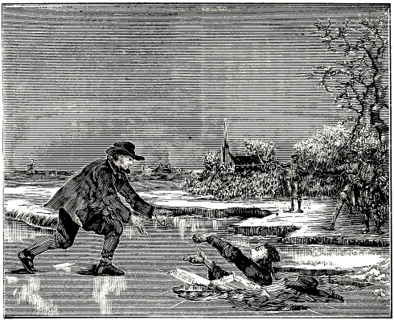
DIRK WILLEMS SAVING HIS CAPTOR’S LIFE.
In the year 1569 a pious, faithful brother and follower of Jesus Christ, named Dirk Willems, was apprehended at Asperen, in Holland, and had to endure severe tyranny from the papists. But as he had founded his faith not upon the drifting sand of human commandments, but upon the firm foundation stone, Christ Jesus, he, notwithstanding all evil winds of human doctrine, and heavy showers of tyrannical and severe persecution, remained immovable and steadfast unto the end; wherefore, when the chief Shepherd shall appear in the clouds of heaven and gather together his elect from all the ends of the earth, he shall also through grace hear the words: “Well done, good and faithful servant; thou hast been faithful over a few things, I will make thee ruler over many things; enter thou into the joy of thy Lord.” 1 Pet. 5:4; Matt. 24:31; 25:23.
711
Concerning his apprehension, it is stated by trustworthy persons, that when he fled he was hotly pursued by a thief-catcher, and as there had been some frost, said Dirk Willems ran before over the ice, getting across with considerable peril. The thief-catcher following him broke through, when Dirk Willems, perceiving that the former was in danger of his life, quickly returned and aided him in getting out, and thus saved his life. The thief-catcher wanted to let him go, but the burgomaster, very sternly called to him to consider his oath, and thus he was again seized by the thief-catcher, and, at said place, after severe imprisonment and great trials proceeding from the deceitful papists, put to death at a lingering fire by these bloodthirsty, ravening wolves, enduring it with great steadfastness, and confirming the genuine faith of the truth with his death and blood, as an instructive example to all pious Christians of this time, and to the everlasting disgrace of the tyrannous papists.
Note.—In this connection, it is related as true from the trustworthy memoirs of those who were present at the death of this pious witness of Jesus Christ, that the place where this offering occurred was without Asperen, on the side of Leerdam, and that, a strong east wind blowing that day, the kindled fire was much driven away from the upper part of his body, as he stood at the stake; in consequence of which this good man suffered a lingering death, insomuch that in the town of Leerdam, towards which the wind was blowing, he was heard to exclaim over seventy times: “O my Lord; my God,” etc., for which cause the judge or bailiff, who was present on horseback, filled with sorrow and regret at the man’s sufferings, wheeled about his horse, turning his back toward the place of execution, and said to the executioner; “Dispatch the man with a quick death.” But how or in what manner the executioner then dealt with this pious witness of Jesus, I have not been able to learn, except only, that his life was consumed by the fire, and that he passed through the conflict with great steadfastness, having commended his soul into the hands of God.
As we have come into possession of the sentence which these rulers of darkness passed upon this friend of God, we have deemed it well, to add it here for the benefit of the readers, in order that reading the same, they may be able to perceive the truth of this matter.
Copy.—Whereas, Dirk Willems, born at Asperen, at present a prisoner, has, without torture and iron bonds (or otherwise) before the bailiff and us judges, confessed, that at the age of fifteen, eighteen or twenty years, he was rebaptized in Rotterdam, at the house of one Pieter Willems, and that he, further, in Asperen, at his house, at divers hours, harbored and admitted secret conventicles and prohibited doctrines, and that he also has permitted several persons to be rebaptized in his aforesaid house; all of which is contrary to our holy Christian faith, and to the decrees of His Royal Majesty, and ought not to be tolerated, but severely punished, for an example to others; therefore, we the aforesaid judges, having, with mature deliberation of council, examined and considered all that was to be considered in this matter, have condemned and do condemn by these presents in the name, and in the behalf, of His Royal Majesty, as Count of Holland, the aforesaid Dirk Willems, prisoner, persisting obstinately in his opinion, that he shall be executed with fire, until death ensues; and declare all his property confiscated, for the benefit of His Royal Majesty. So done this 16th of May, in presence of the Judges, Cornelis Goverts, Jan van Stege Jans, Adriaen Gerritts, Adriaen Jans, Lucas Rutgers, Jan Jans, and Jan Roelofs, A. D. 1569.
Extracted from the records of the town of Asperen, and after collation this copy was found to agree [with the original], the 15th of October 1606. Acknowledged by me, the town clerk of Asperen.
T’ Sheerenbergh.
In the year 1569 there were imprisoned for the testimony of Jesus, at Middleburgh, in Zealand, the following pious sheep and followers of Christ: Hendrick Alewijns, a purse-maker by trade, and Hans Marijns van Oosten, with Gerrit Duynherder. These suffered from the ministers of antichrist manifold assaults, and threats and tortures terrible to the flesh, all of which they, through faith and the power of God (which was in them) patiently and valiantly resisted. And after they had suffered all this for Christ’s sake, they were together burnt alive at said place, on the 9th of February 1569, confirming the belief of the ever-abiding truth with their death and blood, and now serve as a beacon to all true believers, that they may follow their unfeigned faith. Phil. 3:17.
The Hendrick Alewijns mentioned here was in his time a very zealous follower of Christ, and was elected and chosen by the brethren to serve the church of God with the word of the holy Gospel, in which he was very diligent, and, though young in the service, he exceedingly abounded and increased in the work of God. 2 Cor. 8:19; Luke 1:2; 1 Tim. 4:15. And though he had neither silver nor gold, nor temporal means, yet his hands gained him and his wife and children a livelihood, and he sought to minister to the flock of Christ not for the milk and wool, but this hero followed the good, true and faithful Shepherd Jesus, and willingly, of a ready mind, ministered to the work of God, wherefore, at the appearance of the chief Shepherd, he shall receive the imperishable crown of honor. Acts 3:6; 20:34; Matt. 10:16; Ezek. 34:3; 1 Pet. 5:2,4.
During the time of his imprisonment he also did not forget his brethren and sisters, but wrote beautiful letters, descriptions and hymns, worthy of being read, to them, as also to his three little orphans; some of which have previously already appeared in print. We pray the reader attentively to read those adduced here, the first of which was sent to the beloved children of God in Zealand, and reads as follows:
712
An epistle from Hendrick Alewijns, sent to the beloved children of God in Zealand, written in his prison at Middleburgh, where he steadfastly testified to the truth of God with his death, on the 9th of February, A. D. 1569.
A most Christian greeting and salutation in the Lord! Hendrick Alewijns, unworthy, a weak brother and simple companion in the faith in God, a partaker of his sufferings, also of patience, and of the hope of eternal life, with all the saints, all through the grace of God, unmerited. Grace, peace, the mercy of God, salvation, prosperity, and everything good from above, through Christ Jesus, constantly to be kept stirred up, and the ardent impelling of the Holy Spirit, even unto the blessed end, these things I wish all my beloved friends, brethren, sisters, and companions, from God the Father, through Jesus Christ our dear Lord, Redeemer and Savior. Amen. This I send as a greeting, in a good intention, from the very depths of my love, to you, as my special acquaintances and friends, to exhort and stir up one another to good devotion, while absent, yet in one hope of the kingdom and glory of God, though I am now confined at a distance from you.
My very kind, especially peaceable and ever well-meaning friends, seeing before me my departure from this life, and having time to write, I gladly turn to your love for a little while, to give you intelligence and glad tidings, which, I presume, is according to your wish and desire. Behold, be it known to you all, that I, your friend, am still prospering in the Lord, in both respects, that is, in body and soul, in the unchanging determination, to endeavor with a good resolution, to keep body and soul surrendered to and in God, pleasing to you to hear, and to my salvation. May God grant this to the blessed end of my faith, O dear Lord. Amen.
Further, the cause of my writing to you, and to your love, is also to ask you to help me pray in my behalf, for steadfastness in God’s truth, and that I may live in his grace, and for God’s faithful assistance towards me. I inform you that I am of very good cheer in my imprisonment, tribulation, sorrow, reproach, and suffering for righteousness’ sake; and also I have, with all the saints, in my tribulation, a bright prospect, the hope and consolation of the Spirit, and the rich promises of God to succor us in this present time, who also assures us of eternal life hereafter, of which so abundantly mention is made in the Scriptures.
In the first place, I know, consider, and firmly believe with many saints, according to the abundant testimony of the Scriptures, that God is faithful in keeping his promises. Read Deut. 32:4; Numbers 23:19; 1 Cor. 10:13; 1 Thess. 5:24; 2 Tim. 2:13. He will not suffer us to be tempted above that we are able to bear, but will with the temptation also make a way to escape. He does not leave his children comfortless. He will with his Spirit defend us before kings and princes, as much as will be needful at the time. He will, and knows how to, deliver the godly out of temptation. He says: “I will never leave thee, nor forsake thee.” Therefore I will trust in the Lord, and not fear what man shall do unto me. Heb. 13:5,6. What can flesh do? says Paul.
Again: If God be with us, who can be against us? and God is with us, if we are with him, mark. Romans 8:31; 2 Chron. 15:2. Again: We are troubled on every side, yet not distressed; we are perplexed, but not in despair; persecuted, but not forsaken; cast down, but not destroyed.
Again: Thanks be unto God, which always causeth us to triumph in Christ Jesus. 2 Cor. 2:14. Again: Whatsoever is born of God overcometh the world. 1 John 5:4. For which cause we faint not (because of God’s consolation); but though our outward man perish, yet the inward man is renewed day by day. 2 Cor. 4:16. Again: I can do all things through Christ which strengtheneth me. Philip. 4:13. O how blessed is the man that endureth temptation: for when he is tried, he shall receive the crown of life, which God has promised to them (he says, to them) that love him. James 1:12.
And since God is so faithful in all his promises, as said, we press straight on with righteousness, as though we beheld God, and saw no adversaries; as though we saw no decree, fire, water, or sword. For who is he that will harm us, if we be followers of that which is good? as Peter assures us. 1 Peter 3:13. Also Paul says: Who shall separate us from the love of God? etc. Rom. 8:35. Who will pluck our Shepherd’s sheep out of his hand? No one. John 10:28. But one can and may indeed himself stray out of his hand. Again it is written: No evil shall happen to him that feareth God; for when he is tempted, he shall be delivered again. Mark, John says: There is no fear in love (1 John 4:18); understand, such fear as departs from the way of rectitude. Yea, such fearless ones run through patience (mark, through), not out of, but into, the conflict that is set before us, and look not at the dreadful tyranny, but unto Jesus, the Captain, the Author and Finisher of our faith. Heb. 12:2.
And these comforting promises of God, here partly mentioned and touched upon, behold, speak, and treat chiefly only of God’s keeping, assisting and strengthening us, in this time, and in the sufferings of this present time.
But, friends, how much greater and more valuable must be the consolation, reward, and the crown of eternal life, of which so much is said in other places, of God’s eternal life, kingdom and glory, which are promised to those that overcome and patiently endure, as will here in part follow.
In the first place, observe in the Book of Wisdom, concerning the day of judgment, and the glory of God’s elect: Then shall the righteous man stand in great boldness before the face of such as have afflicted him, and made no account of his labors. Wis. 5:1. Again: The righteous live for evermore; their reward also is with the Lord, and the care of them is with the Most High. Therefore shall they receive a glorious kingdom, and a beautiful crown from the Lord’s hand. Verses 15, 16. Mark well, an eternal reward. Again: The souls of the righteous are in the hand of God, and the torment of 713 death shall not touch them. In the sight of the unwise they seem to die, and their departure and going from us are taken for destruction; but they are in peace. For though they have much suffering (he says, much suffering) in the sight of men, yet is their hope full of immortality, and having been a little chastised, they shall be greatly rewarded; for God proves them, and finds them worthy for himself. Wis. 3:1–5. Yea, here they shall suffer strait things, but hope for the wide: but they that have lived wickedly, and yet have suffered the strait things, shall not see the wide, alas, no. 2 Esdr. 7:18. Again, 2 Macc. 7:36: My brethren, who now have suffered themselves to be martyred for a short time, now wait for everlasting life, according to God’s promise (he says, everlasting life according to God’s promise). Again, also the promises of our Lord Jesus Christ himself: That all who have followed him in the regeneration (he says, in the regeneration) and have forsaken everything dear to them, house, home, wife, children, etc., and their own life, shall receive a hundred fold in this time, and hereafter everlasting life; and shall also sit with him upon thrones, and help judge the twelve tribes of Israel. Matt. 19:28.
Again: Blessed are ye that weep now: for ye shall laugh. Blessed are ye, when men shall hate you, and when they shall separate you from their company, and shall reproach you, and cast out your name as evil, for the Son of man’s sake. Rejoice ye in that day, and leap for joy: for, behold, your reward is great in heaven (he says, in heaven). Luke 6:21. Mark, heavenly consolation. Again, Paul says: “Blessed be God, even the Father of our Lord Jesus Christ, the Father of mercies, and the God of all comfort; who comforteth us in all our tribulation, that we may be able to comfort them which are in any trouble, by the comfort wherewith we ourselves are comforted of God. For as the sufferings of Christ abound in us, so our consolation also aboundeth by Christ.” 2 Cor. 1:3–5. Again: He that soweth to the Spirit shall of the Spirit reap life and peace. O friends, let us therefore not be weary in well-doing; for in due season we shall reap without ceasing (he says, without ceasing). Gal. 6:8,9. O friends, let this claim your joyful consideration and attention. Now no chastening for the present seemeth to be joyous, but grievous: nevertheless, afterward (he says, afterward) it yieldeth the peaceable fruit of righteousness unto them (he says, them) which are exercised thereby. Heb. 12:11. Again, in Paul we further find: It is a faithful saying (he says, a faithful saying): For if we be dead with him, we shall also live with him: if we suffer, we shall also reign with him; if we deny him, he also will deny us. 2 Timothy 2:11,12.
Again, in Peter, also we read: Beloved, think it not strange concerning the fiery trial which is to try you, as though some strange thing happened unto you (he says, as though some strange thing happened unto you): but be partakers of Christ’s sufferings, that, when he shall be revealed, ye may be glad also with exceeding joy. 1 Pet. 4:12,13.
Behold, such and similar beautiful promises, and heavenly consolations for the hereafter, yea, such in great abundance, make tribulation sweet, precious and light. For our light affliction, which is but for a moment, worketh for us a far more exceeding and eternal weight of glory; while we look not at the things which are seen, but at the things which are not seen; which are nevertheless true. 2 Corinthians 4:17. Hence it is impossible for these to be plucked out of the hand of our Shepherd. Yea, God is faithful, and not unrighteous to forget your work and labor of love, in that ye have ministered to the saints, and do minister. 1 Cor. 10:13; Hebrews 6:10.
Now, mark well, the beautiful promises of God mentioned here, and many similar ones, point and reach farther than God’s help in the distress of this present time; the promises for the present time being essentially different ones, as said above. But these are full promises and a reward for the hereafter, in eternal, imperishable, yea, unspeakable or inexpressible glory, even as Peter says of these unspeakable things: Blessed be the God and Father of our Lord Jesus Christ, which according to his abundant mercy hath begotten us again unto a lively hope by the resurrection of Jesus Christ from the dead, to an inheritance incorruptible, and undefiled, and that fadeth not away, reserved in heaven for you, who are kept by the power of God through faith unto salvation ready to be revealed in the last time (mark, in the last time). Wherein ye shall rejoice with joy unspeakable (mark, unspeakable) and full of glory: receiving the end of your faith, even the salvation of your souls. (Mark who). He says: Ye who now for a season, if need be, are in heaviness through manifold temptations: that the trial of your faith, being much more precious than of gold that perisheth, though it be tried with fire, might be found unto praise and honor and glory at the appearing of Jesus Christ: whom having not seen, ye love; in whom, though now ye see him not, yet believing, ye rejoice with joy unspeakable, as already quoted. 1 Pet. 1:3. Justly does Esdras say of the incomprehensible and unspeakable recompense of God: Thou canst not find out my judgment, or in the end the love that I have promised unto my people. 2 Esdr. 5:40.
Happy those venturesome ones who now sow liberally to the Spirit in every manner, without becoming weary (Gal. 6:9); for it will not be lost, will not spoil, rot, rust, or become moth-eaten.
Observe and read Matt. 6:19; Luke 12:33; 1 Timothy 6:19. O brethren, our faithful God is surely faithful. The alms of a man is as a signet with him, and he will keep the good deeds of a man as the apple of the eye; and afterward he will rise up and reward them, and render their recompense upon their heads. Sir. 17:22,23. Observe: Thus we may well say with Sirach: “We have had labor for a little season, and have found great comfort.” 51:27.
O friends, let us not be weary in sowing and well-doing, for our reward, according to the promises of God, is great in the time to come, as has been heard, and is unfathomable, incomprehensible and 714 unspeakable. Nevertheless, it is now revealed to his saints, by his Spirit, 1 Cor. 2:10. It is an eternal and exceeding weight of glory. 2 Cor. 4:17.
Now, all attentive [readers], who firmly believe, know and hope this with all their heart and from the depths of their soul, and also understand, on what conditions, and to whom, and to whom not, this glorious kingdom is promised and sure. Such an intelligent and far-seeing Christian is so rich in hope toward God, so firmly anchored in his soul, that he completely and humbly surrenders himself soul and body to a faithful Creator, however, in well doing without boasting. 1 Pet. 4:19.
Yea, we confess and declare with all saints rich in hope, that this present time is short, and that the sufferings of this time, for righteousness, are small, and, hence, not worthy to be compared with the glory which shall be revealed in us (Rom. 8:18), as will here follow.
Believers lightly esteem the sufferings of this present time, because of the hope, promise, and reward.
In the first place, the youngest of the seven brothers in Maccabees spoke thus out of his joyful hope: “My brethren, who now have suffered themselves to be martyred for a little while, now wait for eternal life according to God’s promise.” 2 Macc. 7:36. Again, in Solomon we read: Having been a little chastised (mark, a little), they shall be greatly rewarded. Wis. 3:5. Again, in Peter, also: Ye who now for a season (he says, for a season), if need be, are in heaviness through manifold temptations, etc. 1 Pet. 1:6. Again: The God of all grace, who hath called us unto his eternal glory by Christ Jesus, after that ye have suffered a while (he says, a while), make you perfect, stablish, strengthen, settle you. 1 Pet. 5:10.
These and other like passages esteem the sufferings of this present time short, small and light, and the reproach of Christ greater riches than the treasures of this world. Heb. 11:26. The fearful woman in travail, of whom Christ speaks, has anguish in her hour of travail, but afterwards she rejoices, and forgets the anguish. John 16:21. And these, who are thus strong in God, though weak and nothing of themselves, who are thus surely fixed in faith, hope, and the love of God, these (I say these) say with Paul: “Who shall separate us from the love of God.” “For I am persuaded,” he says, “that neither death, nor life . . . shall be able to separate us from the love of God, which is in Christ Jesus our Lord.” Rom. 8:35. For if God be with them, who can be against them? Verse 31.
But it were fearful presumption, to boast, or say, yea, to think, without God and a good conscience toward him, that we can do anything of ourselves. Such arrogancy, boasting and self strength, as in the case of inconsiderate Peter, are nothing, even as the independent, severed branch, without abiding in its vine, can do nothing. John 15:6. And as those impotent individuals who took upon them to cast out Satan in the name of Jesus, whom Paul preached (Acts 19:13), even so can no powerless man boast without God; he must first calculate whether he dare with ten thousand go out against twenty thousand, according to the counsel and words of Christ. Luke 14:31. Therefore, he that would glory, let him glory in the Lord: If the Lord will, and we live. Jer. 9:23; 1 Cor. 1:31; James 4:15. And if he be with him, no one can be against him. Rom. 8:31. And God is with them if they are with God. Then they can do all things through Christ, which strengthened them. By their God they can leap over a wall, run through a troop, and overcome the world. The gates of hell cannot prevail against them; for love with its patient hope and firm faith can do all things through the grace of God. Mark well, they who thus closely, firmly and boldly cleave to God, become stronger in the conflict, as Sirach says. Sir. 2:3. Cleave therefore unto God, and depart or waver neither to the right nor left, that you may continually wax stronger.
Mark: God said to Joshua, whom he appointed in Moses’ office and stead: “I will not fail thee, nor forsake thee. Be strong and of a good courage.” Josh. 1:5,6. Again: “Be strong and of a good courage, fear not, nor be afraid of them: for the Lord thy God, he it is that doth go with thee; he will not fail thee, nor forsake thee.” Deut. 31:6. Mark here the advantage of freely trusting in God’s promise. Hence such a pious people say thus in their hearts: “O Lord God of Israel, there is no God like thee in the heaven, nor in the earth; which keepest covenant, and shewest mercy unto thy servants, that walk before thee with all their hearts.” 2 Chron. 6:14. Observe well who they are: he says, [that walk before thee] with all their hearts. Whose rock and fortress is the Lord; who is their God, deliverer, consolation, and shield; the horn of their salvation; their high tower and refuge; their Savior who saves them from all violence. 2 Sam. 22:2,3. These are also they who have set the Lord always before them; hence he is at their right hand, and they shall therefore not be moved, says David. Ps. 16:8. Mark here boldness, and its power. But the fear of man bringeth a snare: (mark) but whoso putteth his trust in the Lord shall be safe. Ps. 29:25. Mark: he that is with God, and with whom God is. David says: The salvation of the righteous is of the Lord: he is their strength in the time of trouble. Ps. 37:39.
But, dear friends, if one is not pious, pure in heart, and prepared for temptation as a servant of God, when this temptation assails and terrifies him; if he is not found in a pure conscience, genuine love of God and his neighbor, in a pious life, firm faith, sober vigilance, and armed against every assault; but is an impotent follower, a niggard, a sleeper, or hypocrite, then, O friends, God will forsake him; for David says: “If I regard iniquity in my heart, the Lord will not hear me.” Ps. 66:18. “The Lord is far from the wicked: but he heareth the prayer of the righteous.” Prov. 15:29. Yea, it is true; for God heareth not sinners (mark, those who continue in sin); but if any man fear God, and doeth his will (doeth, it says), him he heareth. John 9:31.
Hence I conclude and counsel with wise Jesus Sirach: “My son, if thou come to serve the Lord, prepare thy soul for temptation;” he says, prepare thy soul for temptation. Sir. 2:1. Again, also with 715 Christ: Strive to enter in at the strait gate. Yea, take heed that thy fear of God be not hypocrisy; lest God discover thy secrets, and cast thee down thereby in the midst of the congregation, because thou camest not in truth to the Lord, and thy heart was full of deceit and falseness. Sir. 1:28. Behold, such cannot overcome; but only those who are in favor with their God, as is mentioned in Judith 5.
Now, there is further to be noticed the patience of which the pious have need in many tribulations. Heb. 10:36. Also, what great advantage, profit, gain, and acquisition are, and will be, obtained by tribulation and patience, follows here in part. Meditate on it.
In the first place, the encouraging words of Judith: Thus Abraham, Isaac, Jacob, Moses, and all whom God loved, remained steadfast and had to overcome much affliction (he says: much affliction). But the others, who would not receive affliction in fear of God, but blasphemed and murmured with impatience against God, were destroyed by the destroyer and by serpents. Let us therefore not be impatient in this affliction, but confess that it is a punishment from God, much less than our sins deserve, and believe that we are chastised as his servants, for correction, and not for destruction. Judith 8. O how wisely does Solomon speak of it: He that is patient is prudent, and it is his glory to pass over a transgression. Prov. 19:11. Again: He that is patient is wise; but he that is impatient reveals his folly. 14:29. And again: A patient man is better than a strong man; and he that ruleth his spirit than he that taketh a city. 16:32. Mark how lovely, praiseworthy and advantageous godly patience is, as Jeremiah testifies: It is a precious thing to be patient, and to wait for the help of the Lord; Yea, that a man that is forsaken, be patient when something befalleth him; and puts his mouth in the dust, and wait for the help of the Lord, and give his cheek to the smiter, and suffer much reproach, for the Lord will not cast off forever. Lam. 3:26.
Again, Sirach says: An humble man will wait for the time which will bring him comfort. For though his cause be oppressed for a time, yet shall the pious praise his wisdom. Sir. 1:23,24. Of this we have examples in Job and in “the end of the Lord.” Jas. 5:11. Also in Tobit, for God permitted affliction to come upon him—why? That posterity might have an example of patience in him, as also in holy Job. An angel said to this Tobit (when he complained that he could not see the light of heaven); Have patience, God shall soon help thee, which also came to pass. Tob. 5:12. Paul does truly say that whatsoever things were written aforetime were written for our learning, that we through patience and the comfort of the Scriptures, might have hope. But, friends, mark well, where no promise nor godly tribulation is, there is certainly no need of patience; but where the aforesaid are, O there is need of patience. Heb. 10:36. For we know, says Paul, that tribulation worketh patience, and patience, experience; and experience, hope; and hope maketh not ashamed. Again, also, Christ’s own words concerning patience: “Ye shall be hated of all men for my name’s sake. But there shall not a hair of your head perish. In your patience possess ye your souls”. Luke 21:17–19.
Again, Paul advises us to all patience in all our distress, and to approve ourselves therein as the ministers of God, in much patience, in afflictions, in necessities, in stripes, in imprisonments, (yea, in imprisonments), in tumults, in labors, in watchings, in fastings; by pureness, by knowledge, by long-suffering, by kindness, by the Holy Ghost, by love unfeigned, by the word of truth, by the power of God, by the armor of righteousness on the right hand and on the left, by honor and dishonor, by evil report, yea, as deceivers and yet true. Mark, in how many things a patient minister of God is tried, that is, in these and similar things (2 Cor. 6:4),—mark, a minister of God, and whereby he is shown to be such. Again, James would have us count it all joy when we fall into divers temptations; knowing this (he says), that your faith, if it be genuine, worketh patience. But patience must be constant unto the end. Jas. 1:2.
Behold, thus we must with patience (with patience, says Paul), run the race that is set before us, looking unto the Captain of our faith, the young man who will set the crown of reward upon our heads, on Mount Sion. Heb. 12:1; 2 Esd. 2:43.
Behold, all this is obtained as the profit and reward of patience, as in the case of Christ, and of all holy martyrs; and it must all be seen by faith, and waited for with patience, as James advises, saying: “Be patient therefore, brethren, unto the coming of our Lord, and like the husbandman, let us also wait for our harvest and joyful time of reaping. Jas. 5:7. O then the liberal sowers, who have sowed to the Spirit shall reap without ceasing. Gal. 6:9.
Dear friends, let us now, as at the right time, also at the right time, sow liberally to the Spirit and in hope, with joy and not wearying; for in due time it will fill our garner with sheaves as large as in 1 Pet. 1:16.304 For God will not forget our work and labor, as has already been said.
To sum it all up in a few words: “Blessed is the man that endureth temptation; for when he is tried, he shall receive the crown of life; which God hath, promised to them that love him.” Jas. 1:12. Now, this promise, inheritance, reward, and crown meets the wants of every one; but only few relish the notable conditions upon which these is promised, namely, obedience to the word of God, complete renunciation of ourselves, and the cheerful, voluntary bearing of our cross. For Paul says: “Unto us it is given, not only to believe on him, but also to suffer for his sake.” Philip. 1:29.
Mark, friends, that it is certainly his pleasure, that the servant be as his lord. Matt. 10:25. Hence Christ in his time assured his servants and disciples of so much sorrow, tribulation, reproach, suffering, and of death, for his name’s sake. He did not give it to them as his opinion, not as something which might eventually, or perhaps come to pass, but positively assured them that it should befall them, as will here follow, and, in part, be shown.
716
In the first place, Christ’s own words: “Behold, I send you forth as sheep in the midst of wolves: be ye therefore wise as serpents, and harmless as doves. But beware of men: for they will deliver you up (he says, they will deliver you up) to the councils, and they will scourge you in their synagogues; and ye shall be brought before governors and kings for my sake, for a testimony against them and the Gentiles.” Matt. 10:16–18.
Again: “The brother shall,” he says, shall, “deliver up the brother to death, and the father the child; and the children shall rise up against their parents, and cause them to be put to death. And ye shall” he says, shall, “be hated of all men for my name’s sake.” Verses 21, 22.
Again: “Remember the word that I said unto you, The servant is not greater than his lord, nor the disciple above his master. If they have persecuted me, they will (he says, they will) also persecute you; if they have kept my saying, they will keep yours also. But all these things will they do unto you for my name’s sake.” John 15:20,21.
And again: These things have I spoken unto you that ye should not be offended. They shall (he says, they shall) put you out of the synagogues; yea, the time cometh, that whosoever killeth you will think that he doeth God service. And these things will they do unto you, because they have not known the Father, nor me. But these things have I told you, that when the time shall come, (mark well) ye may remember that I told you of them. 16:1–4. Paul, also, says that we must through much tribulation (he says, must through much tribulation) enter into the kingdom of God: Acts 14:22. And that all (he says, all) that will live godly in Christ Jesus shall suffer persecution. 2 Tim. 3:12.
Now, dear friends, mark, if it must be so, and also will be so; as has been mentioned in part, and is certain, then, in the name of God, let it be [borne] willingly, and let us not regard the fearful tribulation and distress, but look far beyond, as said before, and be mindful of the comfort contained in the declaration that this temporal tribulation is not worthy to be compared with the eternal glory (Rom. 8:18); and let us also remember that this evil and unrighteous world is not fit for, and was not worthy of, that blessed crown for suffering for righteousness’ sake. Heb. 11:38.
But they are fit who have followed Christ in the regeneration, and forsaken all that is dear to them here. Matt. 19:28. Remember also, brethren, that they who are, or would be, without this chastisement, are bastards, and not sons. Heb. 12:8. Thus, tribulation is certainly promised us believers, as has been heard.
With regard to this, I counsel with Sirach and many others. If we would serve God, let us do it with earnestness, lest we tempt him (Sir. 18:23); for he that would be God’s servant, must prepare (mark, prepare) himself for temptation, and always labor in the work of the Lord, that, whether we be present with him, or whether we be here, absent from him, we may always please God; and every one of us must strive to be (not to think, or boast [of being], but to be), the chief in good works, as also Peter says: “Wherefore, beloved, seeing that ye look for his coming, be diligent that ye may be found of him in peace, without spot, and blameless.” 2 Pet. 3:14. O how we must be prepared then with a holy conversation, and with godliness. Every man that hath this hope in him must purify himself, even as he (whom we look for) is pure. 1 John 3:3. He that is holy, must become still holier; and he that is pure, still purer. To become holier and holier behooves us, since we call upon such an Holy One as our Father, who judges without respect of persons, as Peter says, and this according to every man’s work. Hence, pass the time of your sojourning here in fear, and it will then be with us as Peter says: Let all them that suffer according to the will of God commit the keeping of their souls to him with good works (mark, with good works), as unto a faithful Creator. 1 Peter 4:19. Let no one here understand salvation by good works, but salvation with good works; good works without meriting salvation, (mark well) for salvation is of grace, thanks to our Lord Christ, as in Gal. 2:16, and still clearer in Eph. 2:7.305 This I say is my advice, that we also thus prepare our souls, and commit them to him as unto a faithful [Creator], with good works without boasting (without boasting), as his unprofitable servants, who would fain be perfect. Luke 17:10. Finally, dear friends, let us not seek to save our life, which, at all events, we must eventually lose; but let us always entreat our God for strength to suffer, that we may finish our course as valiant adventurers. Amen, dear Lord, Amen.
Here now follow instances of exemplary adventurers of former times—pious persons that were persecuted, greatly hated, and put to death; mark, how, by whom, and also why these things always happened; namely, in order that we need not think it strange, when we become partakers of the same sufferings and death.
In the first place, pious, good Abel was slain by Cain, out of hatred on account of his piety. Lot was greatly vexed by the wanton Sodomites, because of his virtue and righteousness. David was persecuted by Saul, Shimei, and by Absalom his son, for his glory and own kingdom. The man of God from Judah was threatened by Jeroboam, because of his prophesying against Jeroboam’s gods and his altar. 1 Kings 13. The holy and mighty prophet of God, Elijah, and many others who were put to death in his time; he had to flee from the place, and was greatly persecuted by Jezebel, on account of his prophetic miracles which he wrought through God. 1 Kings 19. Micaiah was imprisoned by the king, who fed him with the water and bread of affliction, because he opposed the four hundred false prophets of Jezebel with the Spirit and holy word of God. 1 Kings 22:27. Urijah, a prophet, and also a fugitive, was brought back, and slain with the sword by King Jehoiakim, on account of his message from God, the prophecy against Jerusalem and the land of Judah. Jer. 26:20–23. Jeremiah, a prophet of God, was cast by the princes 717 into the miry pit to die, because he would not cease to preach and prophesy in the name of the Lord. Jer. 38:6. Zechariah, a priest’s son, and prophet of the Lord, was stoned at the commandment of the king, because he had prophesied nothing but calamity for them, because they had forsaken that which was good, and transgressed the word of God. 2 Chron. 24:21. Mark, for what reason each one of these was put to death.
The three young men, Shadrach, Meshach, and Abednego, were by King Nebuchadnezzar cast into a furnace heated seven times more than it was wont to be heated—in which God nevertheless preserved them on account of their trust in him—and this because they would not honor neither worship the King’s self-made image, idol and buffoonery. Daniel 3:19. Daniel, a most worthy and holy prophet of God, was by the worshipers of the dragon, out of hatred and envy, cast into the den of lions, against the will and power of the king; God, however, preserved and delivered him. This was done, because he, fearing no man, nor the king’s plain and strict commandment, openly worshiped, honored and confessed his God alone, with the windows open toward Jerusalem. Hist. of the Destr. of the Drag. Dan. 6:10. Mark, are not the pious subtilly sought? Yes, sought and found. O Lord, all the steadfast pious in Israel were scattered, and most atrociously slain by Antiochus. Why? Mark, because they circumcised their children, according to God’s commandment, would eat no swine’s flesh, according to the prohibition of the law, and refused to follow the heathen customs, since they were unclean and contrary to the law. 1 Macc. 1. Again, on another occasion, all the Jews were everywhere caught like wild beasts, bound, chased, dragged off, conveyed away in ships, and doomed to a general massacre, from which latter, however, they were miraculously delivered by the hand of God. They were thus tormented by King Ptolemy, because they would not be compelled by him to depart from the law of God, sacrifice to idols, and adopt heathen customs. 3 Macc. No fair reason, friends; and so it is still. Again, in the second book of the Maccabees the same thing is enacted. A cruel decree of said King Ptolemy, which whoever should not obey, was to be put to death instantly. 2 Macc. 6:9.
Some were burnt. Two women had their infants tied or hanged to their breasts, and were thus led in derision round about the city, and finally cast headlong over the walls. Mark, why? Because they adhered steadfastly to the law of God, and had circumcised their children. Thus also Eleazar, an aged man of ninety, was slain by Antiochus. Why? Because of his unfeigned steadfastness in refusing to eat swine’s flesh, or to pretend to eat it. Again, also a pious mother and seven steadfast sons were by King Antiochus roasted in red-hot pans, with the skin of their heads pulled off, and their tongues cut out. 2 Macc. 7. Why? Mark, because they would in no wise eat swine’s flesh contrary to the law, because it was forbidden. And similar instances in the Old Testament.
In the New Testament, also, we find instances of a like character.
In the first place, the holy forerunner of Christ, John the Baptist, was beheaded by Herod. That good man; why did he kill him? Mark, because he reproved Herod for an improper and shameful liaison. The good Christ Jesus was also hated by the world, because he testified of its evil works. Yea, without guilt or cause worthy of death, Pontius Pilate the judge, through the hatred of the Jews, delivered him up, and put him to death. The holy apostles, also, were frequently apprehended, scourged, and forbidden to preach in the name of Jesus, by the council of the priests. Why? In order that the name, doctrine and church of Jesus should not spread and increase.
Stephen, a deacon, and pious witness of Jesus, was stoned by the stiff-necked. Why? Because they could not resist his spirit, wisdom, and doctrine. The church at Jerusalem, in the beginning, was dispersed and scattered abroad throughout the land of Judea, by the Jews. And Saul, the persecutor, went hither and thither with letters and authority to apprehend and vex any whom he should find of this way or persuasion, in order to hinder the doctrine, faith and way of Christ. And, yet, to be brief, some were vexed by Herod; he killed James with the sword, and seeing that it pleased the people, he apprehended also Peter, and guarded him with sixteen servants, and bound him with two chains, with doors closed, through the hatred of the Jews; but an angel delivered him. Acts 12:1. Let us therefore not wonder at this as though it was something strange.
Now, in conclusion, receive my eternal adieu, and brotherly greeting.
Behold, I have written this to my dear friends, brethren and sisters in the Lord, in humility, with a good intention, and in love, for three special reasons. The first reason is, to communicate to you welcome news, namely, an account of my prosperity, good health and cheerfulness, in both respects, that is, in soul and body; and to stir you up to aid me in praising, thanking, and praying to God for all his grace and comfort, shown towards me unworthy one here, and also towards us all. Of this comfort (by which I also am comforted of God) it has been my endeavor to communicate to you a share, according to your wish and desire already referred to, and I send it to you as a honey-comb, perfume of roses, balm, incense and myrrh, from Eden’s pleasure garden as it were, fruits of the heavenly paradise; as a fruit, sample, perfume and delectation for you, to be inwardly contemplated with attention; yea, as a signal token to you of my joy and peace which I feel to have with God, in union and in one spirit. O, I, unworthy and unprofitable servant of my Lord, that I enjoy peace with my Christ, and the fellowship of his Spirit. Rom. 8:15; 1 Cor. 6:17; Gal. 3:26. Be it said to his praise, it is all through his merciful faithfulness, and great, unmerited grace. I glory in the Lord, and in his power; we have received from him this precious treasure in our weak earthen vessels; hence, if it is preserved, the excellency of the power is of God, and not of us; O not of us, but by grace we are what we are. Jer. 9:24; 2 Cor. 4:7.
718
The second reason is, that, since you are partakers with me of the same hope, reward and comfort, I might awaken in you a refreshing, devotion, renewed joy in the promises, and inward gladness, by pointing out our comfort mentioned, consisting in doctrine and examples of the Scriptures, as noticed here in part, thereby showing my favor, love and affection towards you all, as remembering you in the Lord.
Thirdly and lastly, also for the reason that I might make many of you my debtors, to do the same in their turn, that is, to send us a letter, in token of your steadfast continuance in love, for our comfort and joy, and the acknowledgement of your remembrance of us, according to the doctrine, debt and obligation towards prisoners; as in Matt. 25:36; Acts 12:5; 2 Tim. 1:16; Heb. 13:3. This from you would be most acceptable to us three prisoners here—O as welcome as the perfume of opening roses, incense and myrrh from the bowers of Zion, the vineyard and pleasure-garden of our God; which has hitherto happened to us so very little, far too little, almost as though your love to us had ceased. Stop! lest I wound you or some one else by words spoken with no evil intent; for I do not have reference to the necessaries of life. O no; we thank God and our careful friends most heartily for these. Accept from me in good part all that is good, and interpret all my love according to love; this I earnestly pray for the Lord’s sake. Let no one misapprehend my labor of love, by interpreting it, or thinking, as though I had done this or the like from desire for honor and praise, or from any hankering after a gift from any one, or after any carnal or earthly communion; for it was love which, out of a pure intention, prompted me to it. O Lord, thou knowest it all.
Yes, my friends, pure love thinketh no evil; however, she sees, finds and reproves evil. Examples of this are, Ananias, Simon the sorcerer, the Corinthian fornicator, etc. Acts 5:1; 8:9; 1 Cor. 5:1.
And now, dear friends, brethren and sisters, I again commend you to God, and to the word of his grace (as the salutation of Paul), which is able to build you up, and to give you an inheritance among all them which are sanctified. Be saluted, strengthened, comforted, and of good cheer in the Lord.
Watch and pray. By me, Hendrick Alewijns, and my fellow prisoners, all of us of good cheer. Farewell. Given in November, A. D. 1568.
Yes, dear friends, before this letter left my hands, two of us were brought before the court; dear Gerrit Jans Duynherder, our pious brother and myself. And behold, we are kept in durance, as sufficiently sentenced, and both of us expect to die very soon now. O Lord! O Lord! into thy hands, O faithful Creator! we commend our soul and spirit. Amen.
O beloved church of God, take care of my three poor, dear little orphans, that are without parents, without possession, or inheritance.
Adieu, my dear children; adieu, all my friends. This is going before you all, and following after my Lord Christ, in his footsteps. Lord, assist thy servants unto the last, unworthy and unprofitable though they be.
Most worthy officers, justiciaries, and all my lords, who in the name and by the authority of the king are to be my judges and examiners, and are present here, give audience to me, the condemned, Hendrick Alewijns, now ready here for the torture, through your sentence. Behold, I find myself inwardly constrained, and incessantly urged, not to neglect to point out and make known to you all the outrages committed by you on me and those like me, who are innocent of wicked crimes and have not merited legal punishment.
In the first place, let it be clearly, sacredly and Scripturally shown, announced and declared to you, that our, or my matters, are not misdeeds or crimes, but a law of God, matters of faith, and of the spirit; hence they ought to and must be judged spiritually and with the spirit, for a natural man cannot comprehend them; they are foolishness to him. 1 Corinthians 2:14. Consider this freely and thoroughly.
In the second place, a Christian must be charged with articles of faith, and with the Scriptures, without being notorious for rebellious deeds of the flesh, as I am not, God be praised for it, that I am not under the punishment of justice, but entitled to protection and praise from the same. Rom. 13:3. Also, that the man of God who seeks in such simplicity the kingdom, honor and praise of God, is not amenable to your justice in matters of doctrine and worship. Concerning this you have doctrine and examples enough. But one must be subject to the authorities in good works. Tit. 3:1. Justiciary power is given of God only for the punishment of the wicked and the praise of the good, and for the protection of those who do well. The innocent and righteous slay thou not, says God. Ex. 23:7.
In the third place, there is shown to you clearly and with the testimony of the holy Scriptures, and this from love and in the spirit of meekness, the great crime of the tyrants who in this matter of the innocent, sin against God himself, and in his people touch the apple of his eye, yea, fight against God, and kick against his goads: likewise your certain woe, doom and career, in the time to come, when our Lord and righteous Prince shall sit in judgment, and take all your power away from you, as is written in Judith: Woe to the nation that rises up against my kindred; for God will take vengeance on you in the day of judgment; he will put fire and worms in their flesh, that they shall be burned, and feel it forever. Judith 16:17. They shall have no resurrection to eternal life. 2 Macc. 7:14. God will not spare them. 2 Esdr. 15:25. They shall groan and be terrified and amazed at the appearing of the children of God, seeing their glory, and shall say: These are they whom we distressed, oppressed, and deprived them, as being mad, erring spirits, of honor, possessions and life. And further: The wicked troubleth the righteous; he draws out his sword, and bends his bow. But the Lord laugheth at him; for he seeth that his day is coming; he 719 helpeth the poor and needy. He slayeth the righteous; but his sword shall enter into his own heart, and his bow shall be broken in pieces. Ps. 37:12.
Christ himself reproves, condemns and threatens all these blood-guilty ones, saying: How can ye escape the damnation of hell? Matt. 23:33.
Thus also St. James reproves and laments most grievously, that they have condemned and killed the just, who did not resist them. Jas. 5:6. Not in vain it is written in Isaiah: Woe to you spoilers! Think ye that ye shall not also be spoiled? And ye despisers! Think ye that ye shall not also be despised? When ye shall have made an end of spoiling and despising, ye shall also be spoiled and despised, saith the Lord. Is. 33:1. Therefore, my lords, let it engage your hearty consideration; for it is not I that have written it. Like Gamaliel (Acts 5:35), let me, weak man, who am nevertheless a witness of the word, and truth of God, give you a friendly warning. This vengeance of God was understood and experienced by the cruel king and mighty tyrant, and he felt that it is an evil thing to touch the people of God, because of the help of their God, whose vengeance no one can escape, if any wrong is done to his people. 3 Macc. 1. This order he sent in great haste to all his governors: Desist from this people. Holofernes would not understand nor believe this instruction and warning of the wise Achior. Judith 5.
My lords, accept in good part this my favor to you. I have not done it in order to be absolved from the sentence pronounced, which is not customary, and hardly in your power, and you yet remain the friend of the world and the King, which you are determined at any rate to remain. James 4:4; John 19:12. But I pray you nevertheless, to deal mercifully with me, however, as far as is consistent with the proper course of the sentence imposed by you, and as you can answer for it at court. It is better that I suffer, than you; for I know why I suffer. I suffer for a good conscience toward God, and this is acceptable with God; and I am a partaker of Christ’s sufferings. 1 Pet. 2:19; 4:13. I am tortured in order to make me speak contrary to the great commandment of love (Matt. 22:38); but love doeth no evil; love endureth all things, beareth all things, and doth not become weary. 1 Cor. 13:7. O my lords, think whether it is not so. The wicked can appease you with lies, and say no when it is yes, and yes when it is no; but we can only suffer and speak the truth. Have compassion therefore; yea, as you would that it shall be done unto you when my Judge will come, when you will be greatly afraid, and stand in need of help. May God forgive you all wrong against me, as I forgive you, and as I would have it done to me in regard to all my sins. Amen.
O wise counsel of Gamaliel! where art thou heeded now? In this the children of God are manifest, and the children of the devil: whosoever doeth not righteousness is not of God. 1 John 3:10. “Wide is the gate, and broad is the way, that leadeth to destruction, and many there be which go in thereat.” Matt. 7:13.
ARTICLE I.
The paternal farewell, testament and an earnest scriptural instruction from Hendrick Alewijns to his children.
Hear me, your father, O my own, well-disposed, dear and greatly afflicted orphans, my three motherless and soon also fatherless children, of ten, eight, and six years, deprived of me, and without property, alas, O God! Once more I tell you, O my dear children, from one dear mother I received and kept you all; who most solemnly charged me at her end, as also the holy Scriptures teach and enjoin me concerning you, that I should, as becomes a father, bring you up in divine instruction (Eph. 6:4), to be good and orderly children and men of God, which I have hitherto, as became me, done with great carefulness and earnestness, but have not yet completed it. And behold, now my labor is taken away, and I cannot under these circumstances further fulfill towards you my fatherly love and debt of discipline. I have therefore now faithfully commended you henceforward to the God of heaven and to my fellow-believers, the friends; and I am fully confident that you will be well, very well, taken care of, out of love, for God’s sake and mine.
Be subject most obediently, as dear children, to the friends, and you will endear yourselves to them all. I have charged them with the guardianship over you, as though they were your parents; hence be very obedient; fear words, and you will not need stripes. Otherwise you will have to be beaten and chastised much, as the holy Scriptures require and teach, of which I shall write more explicitly hereafter.
My dear little children, it is true, it is true I say, you are yet too childish, the oldest as well as the youngest, to understand the holy Bible, and also that which I shall teach here; but I hope you will delight in reading in it frequently, and to have others read it to you. I also trust that your understanding will increase from day to day and that you will yourselves discern good and evil, and will wisely learn to know who are the true believers, and who the unbelievers; which are the children of God, and which are the children of the devil and the world; who bear the name of Christ justly, and who unjustly. I therefore write in this hope, and to acquit myself of the duty of fatherly instruction, which is still to be discharged towards you, and to the fulfillment of which much is lacking on my part, since I am taken away from you too soon, fully to discharge it. Nevertheless, I cannot forbear, through love, to offer and send you this from afar, my dear children, if peradventure I must shortly go with David the way of all this mortal earth. 1 Kings 2:2. Hence I instruct, enjoin, and counsel you after my departure, as many patriarchs and holy fathers did to their children, that you will be of good cheer and courage in patience, and that you will follow the 720 ways, commandments, laws, and ordinances of the Lord, and do his whole will. Always do what is right and good; love honesty, modesty, courtesy, shame-facedness, virtue, praise (Phil. 4:8); and whatsoever is Christian-like and of good report, that do and think on it, and you will be holy and Christians. Then you shall have everlasting life and the beautiful heaven, that you may be with God and his angelic host, with all the elect of God, in eternal rest and joy of your souls; and you shall then not have to fear the second death, the fiery lake, eternal fire, the wages of sin, disinheritance from Christ’s kingdom, or exclusion by Christ. Matt. 25:10.
My dear children, lay this to heart. As soon as your little understanding can comprehend it, think of returning from the old rebellious man into the new man (Matt. 18:3); of the heavenly regeneration of water and of the Spirit (John 3:35); of the grace of God and improving the right time (2 Corinthians 6:1,2); of living peaceably with all men, if it be justly possible and lying in you (for the other half of peace lies with the other party); and also of holiness, without which no man shall see the Lord, or enter into Christ’s kingdom. Rom. 12:18; Hebrews 12:14.
This, my dear children, is my careful counsel and command to you, after my decease.
ARTICLE II.
The first foundation of virtue, or instruction concerning the beginning of wisdom in childhood.—Government of children.
Behold, my dear children, since you are still children in understanding, young in years, and little fitted for the knowledge of God, I now show you for the first, how you may attain to the foundation of virtue, and the beginning of wisdom, that is: Give good audience, and cry earnestly for wisdom, and ask for it; and gladly receive all good instruction from those who advise you for the best. For, behold, thus Sirach teaches: Keep only with such as fear God, whom thou knowest to keep God’s commandments, who are minded as thou art, who have compassion on thee, if thou stumble; and abide by their counsel (he says, abide by their counsel), for thou shalt find no more faithful counsel, and such an one can often see something better than seven watchmen that sit above in a high tower. Sir. 37:12. Again: The true beginning of wisdom is the desire of discipline. Wis. 6:17. And again: Whoso loveth instruction loveth knowledge: but he that hateth reproof is brutish. Prov. 12:1. Again: The ears that heareth the reproof of life abideth among the wise. And he that refuseth correction despiseth his own soul: but he that heareth reproof getteth understanding. 15:31,32. Moreover: He is in the way of life that keepeth instruction: but he that refuseth reproof erreth. 10:17. Again: A reproof entereth more into a wise man than an hundred stripes into a fool. 17:10. Behold, my dear children, open your ears, and receive instruction, and you shall become wise and honorable; if not, you must remain unwise, ungodly, worldly and in error, as follows here: Poverty and shame shall be to him that refuseth instruction; but he that regardeth reproof shall be honored. 13:18.
Again: He that hateth to be reproved is already in the way of the ungodly. Sir. 21:6. Again: An ungodly man will not be reproved, but excuseth himself by the example of others in what he doeth. 32:17.
Behold, my dear children, what excellent instructions these are. Here you hear good counsel, how you can attain to virtue. And this you can do without many stripes of the rod, if you but attend to words, and fear your people in all they command you. Be very obedient to the people with whom you live, and beware of your innate evil nature, your wildness, your foolishness and childishness. Abandon that for which you are chastised; else you will have to be severely beaten without ceasing; for this belongs to foolish, froward and disobedient children, as follows here:
Foolishness is bound in the heart of a child; but the rod of correction shall drive it far from him. Prov. 22:15. The rod and reproof give wisdom: but a child left to himself bringeth his mother to shame. 29:15. Again: “Train up a child in the way he should go: and when he is old, he will not depart from it.” 22:6. “Withhold not correction from the child; for if thou beatest him with the rod, he shall not die. Thou shalt beat him with the rod, and shalt deliver his soul from hell.” 23:13,14. Again: “Hast thou children? instruct them, and bow down their neck from their youth. Hast thou daughters? have a care of their body, and do not spoil them.” Sir. 7:23,24. “He that loveth his son causeth him oft to feel the rod, that he may have joy of him in the end. He that chastiseth his son, shall have joy in him, and shall rejoice in him among his acquaintance.” 30:1,2.
Behold, my children, this is what is said with regard to disobedient children. Thus must children be brought up by godfearing parents, the good with words, the evil with rods. Thus did Tobit with his son; thus was Susannah from her youth brought up in the fear of God; and to Abraham it was counted for righteousness that he should admonish his children to the fear of God after him. Sus. 2; Tob. 1:9; Gen. 18:19.
In short, this is the conclusion: Children, obey your parents in all things: for this is well-pleasing unto the Lord. And, ye parents, be not bitter against them, lest they become dull, shy, or discouraged. Col. 3:20,21; Eph. 6:1.
See, my dear children, learn here what is becoming to you; see here, with what heavy duty of instruction and correction Christian parents are charged with regard to their children.
Those who neglect their children in regard to this discipline, and are too indulgent toward them, may remember the terrible example of evil recompense exhibited in Eli, the priest, who for this reason, by the hand of God, fell from off his seat backward, and brake his neck. 1 Sam. 4:18. Hence it is a grievous matter badly to bring up froward children, concerning which Sirach says: He that is too 721 indulgent with his child lamenteth his stripes, and is terrified as often as he cries. A wanton child becometh willful, like a wild horse. Cocker thy child and he shall make thee afraid: play with him, and he will bring thee to heaviness. Laugh not with him, lest thou have sorrow with him, and lest thou gnash thy teeth in the end. Give him no liberty in his youth, and wink not at his follies. Bow down his neck while he is young, and beat him on the sides (he says beat him on the sides) while he is a child, lest he wax stubborn, and be disobedient unto thee. Instruct thy child, and suffer him not to go idle, lest thou be brought to shame through him. Sirach 30:7–13. Behold, what a solemn charge the believer has concerning his children, and also those that are committed to him as his own children. Hence, dear lambs, endure kind correction, and be afraid of words, and you will not have to suffer this severe cruelty: otherwise you must suffer it, as has been heard.
Behold, my children, in these holy instructions in correction I acquit myself of my duty towards you; and in all this I admonish you not only in your youth, but also in your riper years, to give ear to the advice of the wise and pious, and always to love the Christians, God’s dear children, the holy church, which by all men is considered a heresy, because they so firmly hope in the living God. Acts 24:14. Learn to know early in the Scriptures this living God of them that believe; for, says the apostle Paul, he that cometh to God must believe that there is a God, and that he will greatly reward those who, through the strait gate, seek him with such hardships, on the narrow way of tribulation. 1 Tim. 4:10; Heb. 11:6.
ARTICLE III.
Brief instruction concerning God, to learn to know him by his written name, glory, handiwork, wonderful deeds, voice, omnipotence, omniscience, by his being the terrible enemy of his enemies, and the faithful succorer of the pious, etc.
Mark, beloved, my simple children, this in the God of your father, the God of all the faithful, from the beginning of the world until now, the God of Abel, the God of Noah, the God of Abraham, Isaac, Jacob, Israel, the God of Jesus Christ, and of all the saints. And this is the God that is not made or worshiped by any man or by human hands, but the God that was from everlasting and before all things, and shall be forever, the God of whom and by whom all things are created and made, yea, heaven, earth, sea, and all the works that therein are, were made by his word, Spirit and omnipotence. This our God is good to the good, and very terrible to his enemies. His power extends over all kingdoms and kings, and he is the Lord of lords. There is none like unto him. Thou art great, and thy name is great, and thou canst show it by the deed. Who should not fear thee, thou king of the heathen? Thou shouldest certainly be obeyed. His name is Governor, Lord, Lord Sabaoth, the God of Abraham, Isaac, Jacob, Israel, and of the fathers; this is his name. His name is Wonderful, Counsellor, Power, Giant, the everlasting Father, the Prince of Peace, his government abideth upon him forever. Is. 9:6,7. His name is Immanuel, that is, God with us. 7:14. It is not possible fully to express his name; hence, for the completion of his impossible, unmentionable, inexpressible exalted name, he is further called Jehova, Shadai, Addonai, and by other names. Besides his general appellations, he is also called: Righteous, Merciful, Gracious God, Truth, Light, Right Hand, Holy consuming Fire.
See, my dear children, here you have heard of your father’s God, of his eternity without beginning and without end, and of his glorious and exalted names in the Holy Scriptures. There follows further now, of his glorious, incomprehensible, unmeasurable greatness, glory and the invisibleness of his divine shape, form and image; for God is a Spirit. Think, how great he must be: heaven is the throne and the earth his footstool. Acts 7:49. He sees, hears, and is, everywhere, and in all places; for thus he says through Jeremiah: “Am I a God at hand, and not afar off? Can any hide himself in secret, places that I shall not see him? Do not I fill heaven and earth? saith the Lord.” Jeremiah 23:23,24. And in another place the Scripture declares: “He spanneth heaven with his three fingers.” Is. 40:12. When he walks, the mountains tremble, and the foundations of the earth quake. When he manifests himself, or permits himself to be heard, he causes fear and terror to come upon all men, as we read in Ex. 3, that the thorn-bush seemed to burn as a flame of fire, when he called Moses to him, to make him a prince over Israel, to lead them out of Egypt. And again, when Moses, while receiving the law of God, spoke with God on mount Sinai, the mount smoked, because the Lord descended upon it in fire; and the smoke thereof ascended as the smoke of a furnace, and the whole mount quaked greatly. And the voice of the trumpet waxed louder and louder, with thunders and lightnings, which frightened the people. And also Moses was terrified, and trembled. No one was permitted to touch the mount; no one could endure his voice, save Moses, however, with fear. Ex. 19. Thus does God show himself, says Moses, that his fear should be before your eyes, and you might not sin. Well may Moses say: “The Lord your God is God of gods, and Lord of lords, a great God, a mighty, and a terrible, which regardeth not persons, nor taketh reward.” Deut. 10:17.
Behold, my dear children, this great God alone is worthy to be feared, who can kill soul and body. Sirach says: The whole heaven everywhere, the sea and the earth tremble; mountain and valley quake, when he visiteth them; and shall he not see thy heart? Sir. 16:18.
Again: God is witness of all thoughts, and knoweth the conscience of every heart, and heareth every word. For the circuit of the world is full of the Spirit of the Lord (he says that the circuit of the world 722 is full of the Spirit of the Lord), and he that knoweth the voice is everywhere; therefore he that speaketh unrighteous things cannot be hid. Wis. 1:6. Yea, my dear children, he knows who serves him in appearance and in the sight of the eyes, and who with a sincere heart. For the wisdom of God is great, and he is mighty, says Sirach, and beholdeth all things; and his eyes are upon them that fear him, and he knoweth well, what is done in righteousness, and what is hypocrisy. Sir. 14:18. I say he is worthy that men should fear him, keep his commandments, love him, be very small and humble before him, and this is what he requires of his people. Read Mic. 6, the law of Moses, and the Gospel of Christ. For he would have obedience, and not the pomp and deceitful semblance of sacrifices, as is exemplified in Saul, 1 Sam. 15:22. “Will ye not fear me, saith the Lord, who have placed the sand for the bound of the sea, that it cannot pass it?” Jeremiah 5:22.
Ah, ah, dear children, how good is this fear of the Lord, for it is the beginning of wisdom. It is the root of wisdom, and its branches flourish forever. Wis. 1:20.
This fear of the Lord driveth out sin; for he that is without fear cannot be justified. Wis. 1:21. For by the fear of the Lord men depart from evil. Proverbs 16:6. The fear of the Lord is a fountain of life to depart from the snares of death, 14:27. For those that fear the Lord, my children, walk in the right way; but he that feareth him not, or despiseth him, departeth from his way. 14:2.
Hereby, and by the vain boasting or thinking of having the fear of God, you may perceive the fear of God, and know those who fear him [and them that fear him not].
Read who are the truly godfearing; Ps. 1:2; 119:120; Sir. 2:17; 15:1; 16:2. Therefore, the fear of God is the sum and conclusion of all books. Read Eccl. 12:13. And as you have now heard of the great glory of God, which is well worthy that men should fear him on account of it, so I will now briefly show that he is also a most awful, terrible and inexorably stern avenger and enemy towards his enemies; and, on the other hand, a faithful succorer of his afflicted friends, as is written in Exodus: “I the Lord thy God am a jealous God, visiting the iniquity of the fathers upon the children unto the third and fourth generation of them that hate me.” And again: “Shewing mercy unto thousands of them that love me, and keep my commandments.” Exodus 20:5,6.
Notice also the wonderful deeds of God in Egypt, on Pharaoh, who afflicted the children of Israel; how God afflicted the Egyptians in return, visiting their land with manifold plagues. Ultimately, how God delivered his people out of it, made a dry passage through the Red Sea, separated and protected them from Pharaoh by the dark pillar of cloud, and terrified Pharaoh and his host with a heavenly noise in the air, and drowned them all in the Red Sea, as a God of great power. Now when Israel had passed through the Red Sea, and was in the wilderness, king Amalek came to afflict them, whom God himself resisted, however, through Joshua, and the enemy and his people were discomfited and destroyed. Thus, again, in the days of Joshua, God fought with hailstones, and Israel with the sword; and sun and moon for their benefit stood still the whole day, as long as the battle lasted. Josh. 10. Yea, God also fought from heaven against Sisera, and the stars in their courses fought. Judg. 5:20. Again, at another time, when Samaria was besieged by the Syrians, God fought for Samaria, and terrified the enemies with a noise in the air, as the noise of chariots, horsemen and hosts, in the night, so that they fled and left everything behind them. 2 Kings 7:6,7. Thus read also of Zerah the Ethiopian, with his host of a thousand thousand, of whom not one escaped. 2 Chron. 14:9 Thus also, the children of Ammon and Moab, from Syria, afflicted Israel; and God fought for Israel, while Israel stood still and he ordered it so that the enemies destroyed one another. 2 Chron. 20.
In like manner we read concerning Gideon, that God so ordered it that the enemies, the Midianites, fell upon one another with their swords, and destroyed themselves, through the direction of God. Judg. 7:22.
Behold, my dear children, what an awful, inexorable enemy of his enemies, and faithful and victorious protector of his friends he is; for when his people went to battle with God’s consent, though they had neither bows, arrows, shields nor swords, God fought for them and gained the victory. No one could harm this people, save when they departed from the commandments of the Lord their God; then God delivered them into the hand of the enemy. We have a God that helps, the Lord Sabaoth, who delivers from death; thus extol the saints the help of God. When the people of God, in former times, were encompassed and assailed with war, and by wicked nations and kings, and then cried with confidence to this their God for protection, behold, their God only sent an angel to their assistance, who was able to direct all, and turned not away from thousands. Read 2 Kings 19:35; Is. 37:36. Read further 2 Macc. 11:10. We further read of five angels of God, armed and upon horses with bridles of gold, and what great execution they did. 2 Macc. 10:29. God sent two angels to Sodom, for the destruction of the wicked, and the preservation of the good. And other such examples; read 2 Macc. 12; Judg. 7:22; 1 Sam. 14:20; 17:52; 2 Chron. 20:23.
Behold, my dear children, the faithfulness of God towards his people, and his terribleness to the wicked, as has been heard; and this is only a moderate portion, much still remains to be told of so many examples contained in the holy Scriptures, and left for our confirmation, that we might hope in this God, suffer for his sake, and obey him. However, it must be understood with a due distinction of times and laws, as regards the ancient warfares of Israel, the taking of revenge on enemies, fighting and killing in the time of the law, and previous to it, which then was done by the will, command, permission, and also, help, of God, under the Old Testament, but now, in the Gospel and New Testament, it must not be so, and is now plainly prohibited, by 723 the word and example of Christ, himself God and the Son of God, whose word must be heard. Prohibited, I say, plainly and clearly enough, not by men’s commandments, but by God himself; his people are denied and forbidden all revenge, and commanded to commit all vengeance unto God; not to resist evil; to give to him that taketh away the cloak also the coat, and to turn to him that smiteth thee on thy right cheek the other also, and the like; yea, to love one’s enemies, to pray for your persecutors, and to flee from them from one city into another. Matt. 5:39; Rom. 12:17; 1 Thess. 5:15. And they that are thus afflicted shall be blessed, and greatly comforted of God, with the promise of eternal life. In short, not to fight at all, and yet to fight, but this no longer with iron, steel, stone, wood, or any carnal weapons, but with spiritual weapons mighty before God. 2 Cor. 10:4. Read, my children, what weapons and warfare Christians now wield, as is plainly and very clearly set forth. Eph. 6. Christians have no other warfare at the present time. For, understand, the prophecy is fulfilled which said with reference to this time, that such people have beaten their swords into ploughshares, and their spears into sickles, rest from their works, and truly observe the spiritual Sabbath. Is. 2:4; Mic. 4:3; Ex. 20:10,11. Hence Christians may now not wage war any more. However I refer you to ancient warfare and God’s succor, as these are a demonstration and proof to you of the greatness and the terrible deeds of God; in order that you may learn to know, fear and obey him in whose presence the earth shakes, and the mountains tremble; for the disobedient toward his word, will and commandment shall find no hiding-place from his face when he shall appear with his angels, in flames of fire, to execute vengeance on all the disobedient. 2 Esd. 16:9.
Therefore, my children, learn to know and shun sin; for because of sin souls are damned forever.
ARTICLE IV.
What sin is, and whereby sin became sin; and what are and will be the wages of sin, before God, or God’s punishment of sinners hereafter.
What sin is, is clearly shown by the holy Scriptures. The prophet Samuel said to Saul, when the latter had transgressed the commandment of the Lord: Disobedience is as the sin (mark, sin) of witchcraft. 1 Sam. 15:23. John says: All unrighteousness is sin. 1 John 5:17. James says: To him that knoweth to do good, and doeth it not, to him it is sin. Jas. 4:17. (Mark what sin is). Paul says: Whatsoever is not of faith is sin. Rom. 14:23.
From this and the like, my children, learn to know sin; as Paul says: By the law is the knowledge of sin. I had not known sin but by the law. The law causes sin to become exceeding sinful; for when it says: Thou shalt not covet, sin takes occasion, and works in us all manner of concupiscence. Rom. 3:20; 7:7,13. From this we also perceive, whereby sin became sin, namely, by the command and prohibition of God.
Every one who transgresses the things which God has commanded, commits sin, and it is also called sin, and punished as sin, fully and abundantly, in both Testaments. The tree of knowledge was not unclean for Adam, except through the commandment; his transgression was also called sin. As regards the punishment for this sin, read Gen. 3:14. The heathen daughters and wives were not unclean for the Jews, save through the commandment of God, who would not have it. Concerning the punishment, read Judg. 3; Num. 25. The sanctuary, or ark of God, which was certainly clean, was not unclean for any tribe, to touch or bear it, except through the commandment. Num. 4:17. The gods of the heathen were not unclean for Israel, save through the prohibition and proscription of God, also the commandment and the punishment. 1 Kings 15.
Behold, thus you can perceive whereby sin becomes sin, namely, through the commandment, and the transgressing of the commandment; for where no commandment is, there is no sin, for without the law sin was dead. Rom. 4:15; 7:8. For sin, or sinful action was in the world; but sin is not imputed when there is no law. Rom. 5:13.
Now, dear children, as soon as you know sin, learn to shun it as you shun fire; for if you approach sin, it will embrace you; but the stings and wounds thereof cannot be healed. Sir. 21:2,3.
Therefore, learn now to understand further, what proceeds from sin, and what are the wages of sin, for these are damnation and death. Rom. 6:23. It is enmity against God, because it is not subject to the law of God. Rom. 8:7. Hence hear further the terrible, relentless and awful punishment of God upon sin and sinners, which has ever taken place and will yet take place. Take heed, my dear children, I counsel you, as much as you value your souls, to this special, eternal punishment of sin and sinners. Thus says the Lord: I have long time holden my peace; I have been still, and refrained myself: now will I cry like a travailing woman; I will destroy and devour at once. Who among you, he says, will give ear to this? Who will hearken and hear for the time to come? The day of the Lord cometh, cruel both with wrath and fierce anger, to lay the land desolate: and he shall destroy the sinners thereof out of it. It is the day of the Lord’s vengeance, and the year of recompense for the controversy of Zion. And the streams thereof shall be turned into pitch, and the dust thereof into brimstone, and the land thereof shall become burning pitch. It shall not be quenched night nor day. Is. 42:14,23; 13:9; 34:8, etc.
This impending calamity, the punishment and righteous judgment of God, was announced and promised a very long time; for when Enoch, the seventh from Adam, was upon earth, he said: Behold, the Lord cometh with ten thousand of his saints, to execute judgment upon all, and to convince all that are ungodly among them of all their ungodly deeds which they have ungodly committed, 724 and of all their hard speeches which ungodly sinners have spoken against him. Jude 14,15.
Mark, that God threatens and gives sufficient warning before, as he did to Assur: Woe be unto thee, Assur, thou that hidest the unrighteous in thee! O thou wicked people, remember what I did unto Sodom and Gomorrah; whose land lieth in clods of pitch and heaps of ashes; even so also will I do unto them that hear me not, saith the Almighty Lord. 2 Esd. 2:8,9.
The Son of man shall send forth his angels, and they shall gather out of his kingdom all things that offend, and them which do iniquity, and shall cast them into a furnace of fire. Matt. 13:41,42. Then shall the Lord say unto them on his left hand: “Depart from me, ye cursed, into everlasting fire, prepared for the devil and his angels: for I was a hungered, and ye gave me no meat; I was thirsty, and ye gave me no drink.” Matt. 25:41,42. Behold, my dear children, thus shall it then go with those who do not now while it is time, regard this, being rich, filled and merry. For Christ says: Woe unto you that are rich, for ye have received your consolation. Woe unto you that are full! for ye shall hunger. Woe unto you that laugh now! for ye shall mourn and weep. Woe unto you, when all men shall speak well of you! Luke 6:24–26. When they lived, says Esdras, and received God’s benefits they did not regard it; they despised his counsel while they had yet liberty, and contemned repentance; therefore they must know it after death by torment. 2 Esd. 9:10–12. While we lived and committed iniquity, we considered not that we should suffer for it after death. 7:56. For the wages of sin is death. Rom. 6:23. But, after thy hardness and impenitent heart, thou treasurest up unto thyself wrath against the day of wrath, and revelation of the righteous judgment of God, who will render to every man according to his deeds; to them who by patient continuance in well-doing, seek for glory, and honor, and immortality, eternal life; but unto them that are contentious, and do not obey the truth, but obey unrighteousness; indignation and wrath, tribulation and anguish, upon every soul of man that doeth evil. Rom. 2:5–9.
Understand again, my dear children, into what great danger our evil flesh plunges us here, slaying the soul. The lust and works of the flesh cause eternal sorrow and loss of heaven. As Paul says: Walk in the Spirit, and ye shall not fulfill the lust of the flesh. For the flesh lusteth against the Spirit, and the Spirit against the flesh; and these are contrary the one to the other; so that ye cannot do the things that ye would. Now the works of the flesh are these; adultery, fornication, uncleanness, lasciviousness, evil lusts—(read to the end of the seventeen points mentioned). And he says that they which do such things shall not inherit or possess the kingdom of God. Gal. 5:16; 1 Cor. 6:9. Then it shall not be possible for any one to be spared from the vengeance of God, whether he know God, or whether he know him not; if he has been disobedient to the Gospel, he must bear the severity of God. For Paul says: When the Lord Jesus shall be revealed from heaven with his mighty angels, in flaming fire, taking vengeance on them that know not God, and that obey not the Gospel of our Lord Jesus Christ; (mark) who shall be punished with everlasting destruction from the presence of the Lord, and from the glory of his power; when he shall come to be glorified in his saints, and to be admired in all them that believe. 2 Thess. 1:7–10.
To disobey the Gospel, is worthy of no small punishment; for he that, in the sight of two or three witnesses, transgressed the law of Moses (which is inferior to the Gospel in its saving power and operation, Rom. 8:3), had to die without mercy, says Paul, of how much sorer punishment, suppose ye, shall he be thought worthy, who hath trodden under foot the Son of God, and hath counted the blood of the covenant, wherewith he was sanctified, an unholy thing, and hath done despite unto the Spirit of grace? Heb. 10:29. These must expect a terrible judgment, and the cruelty of the fire, which shall devour the adversaries. It is a fearful thing to fall into the hands of the living God; for God is a consuming fire. 10:31; 12:9. We know him that hath said, Vengeance belongeth unto me, I will recompense. 10:30. See, since the Gospel is great of value and rich in saving power, therefore, on the other hand, the refusing, abusing, despising and transgressing of the same, is so much the greater crime and ingratitude, and deserving of sorer punishment, as Paul says, concerning Christ: “See that ye refuse not him that speaketh; for if they escaped not who refused him that spake on earth, much more shall not we escape, if we turn away from him that speaketh from heaven: whose voice then shook the earth.” Heb. 12:25,26.
O my children, therefore this time of the Gospel, in which we now are, is a very precious, valuable and acceptable time, as also the Lord himself frequently declares in the Gospel: as: Had such mighty works been done in Tyre and Sidon. Why do ye not discern this acceptable time for you? Blessed are the eyes which see the things that ye see. Luke 10:23. Jesus says: Jerusalem shall be destroyed (on account of her sins); because they did not know the time of their visitation. Luke 19:44.
O my dear children, learn to discern good from evil; learn to know the wicked world, who think that they are holy men, Christians and believers in God, but are the synagogue of Satan (Rev. 2:9); which is evident from their whole spirit, life, and their wickedness; who because of their wickedness cannot bear, or tolerate among them, the lustre of the pious. But the Lord knoweth how to deliver the godly out of temptation, and to reserve the evil and unjust unto the day of judgment to be punished; but chiefly them that walk after the flesh in the lust of uncleanness. What God intends to do with such, he has typified and shown to us by sinners of former times [as we read]: For if God spared not the angels that sinned, but cast them down to hell, and delivered them into chains of darkness, to be reserved unto judgment, and spared not the old world, but saved Noah the eighth person, a preacher of righteousness, bringing in the flood upon the world of the ungodly; and turning the cities of 725 Sodom and Gomorrah into ashes, condemned them with an overthrow, making them an example unto those that after should live ungodly. 2 Pet. 2:4–6.
Understand here, that God spares neither the angels, nor the whole world, because they were great in number or highly esteemed and chosen; and thus it has often gone with great numbers, for the ungodly are not the better for being many. As also Sirach well says: Rely not upon this that the multitude of those with whom thou doest evil is great, but remember that punishment is not far from thee. Therefore humble thyself from the heart, for the vengeance of the ungodly is fire and worms. Sirach 7:17,18. For as one that cometh nigh wild beasts, and is torn by them, so it also goes with him that attacheth himself to the ungodly, and mingleth in their sins. 12:13,14. One child that fears the Lord is more acceptable to him than a thousand that are ungodly. Hence let no one depend upon this that his companions in wickedness are many, nor upon boasting of the mercy of God, before thy repentance; for when the fire of the punishment of God is kindled, it consumes all the wicked, great and small. Behold, the fire burned up the whole congregation of the ungodly; and wrath was kindled over the unbelieving. He spared not the old giants who perished with their strength. Neither did he spare those among whom Lot sojourned, but condemned them because of their pride, and destroyed the whole land without mercy, who had transgressed all bounds in sinning. Thus he took away six hundred thousand, because they were disobedient. How then should a single one that is disobedient escape unpunished? For though he is merciful, yet also wrath is with him. He can be appeased, but he also fearfully punishes. As his mercy is great, so is also his correction; he judgeth a man according to his works. The ungodly shall not escape with his spoils, and the patience of the godly shall not be frustrated. Behold, before God a great multitude is of little avail. He that sinneth must die. For every one that is proud in heart is an abomination to the Lord; though hand join in hand, he shall not be unpunished. Prov. 16:5. The strength of the ungodly is like a heap of tow which is consumed with fire. The way of sinners is made plain with stones (it is true), but at the end thereof is the pit of hell. Sir. 21:9,10. Hell also hath opened wide her mouth, to receive great and small, prince and multitude. Is. 5:14. Many be called, but few chosen. Wide is the gate, and broad the way that leadeth to destruction, and many there be which walk in it. I further say: The great majority will be damned and lost. This is too clear to be denied. 2 Esd. 8:3.
Dear children, he that does not fear or believe God, does not regard these awful assurances and sure threats, as also the Scripture says: Such threatening is too far off, and when a wicked man heareth it, he yet cleaveth to his folly and error. How truly does Solomon say: Because sentence against an evil work is not executed speedily, therefore the heart of the sons of men is fully set in them to do evil. Though a sinner do evil an hundred times, and his days be prolonged, yet surely I know that it shall be well with them that fear God. Eccl. 8:11,12. I have long time holden my peace, says the Lord; I have been still, and refrained myself: now will I cry like a travailing woman; I will destroy and devour at once. Is. 42:14. When a child is about to be brought forth, the pains of travail slack not a moment; even so shall not the plagues be slack to come upon the earth; the world shall mourn, and sorrow shall come upon it. 2 Esd. 16:38,39.
O happy he who always fears; but he whose heart is hardened shall fall into misfortune, as has been sufficiently heard. Mark here the long-suffering of God toward sinners; but he nevertheless eventually punished them. How truly does Paul say: God is not mocked. Thinkest thou that I shall always hold my peace, saith the Lord, that thou dost not fear me at all? But I will declare thy righteousness, and thy works, that they are unprofitable. Then when thou shalt cry, let thy companies deliver thee; but the wind shall carry them away, and vanity shall take them, Is. 57:13. The holy Scriptures do justly call our God a consuming fire. As to what fire this is, read Is. 10:16; Joel 2:3; Nah. 3:15; Zech. 11:1. Manasses truly says: O God, thine angry threatening toward sinners is importable. Man. verse 5. Nahum speaks thus of the fierceness of the wrath of God: The mountains quake before him, and the hills fear. The earth shaketh before him, yea, the whole circuit of the earth, and all that dwell therein. Who can stand before his indignation? And who can abide before his anger? His fury burneth like fire, and the rocks burst in pieces before him. Nahum 1:5,6. Micah says: The Lord cometh forth out of his place, and will come down, and tread upon the high places of the earth. And the mountains shall be molten under him, and the valleys shall be cleft, as wax before the fire, and as the waters that are poured down a steep place. For the transgression of Jacob is all this, and for the sins of the house of Israel, Mic. 1:3–5.
O who could write enough of such scripture admonitions! Truly, my dear children, behold, he that recognizes the holy Scriptures, the Bible, as the sure word, testimony, word and sentence of God, and considers well worthy of belief what is written in the same concerning God, and especially regarding his faithful warning against all sin, the promised recompense for transgression, exemplified in his punishment of sin as exhibited in many, together with all his strict and solemn oaths in which he has denied his kingdom to the impenitent, as has already been mentioned here in part, and will yet briefly be pointed out; such a man, I say, may well tremble before God, and with David the skin and hair of his head may shudder. And if there be but one spark of the fear of God, and faith in his word, in his inmost heart, his laughter may and must turn into weeping till he obtains peace instead of enmity with God. In the first place I will speak of God’s warning against sin.
But, my dear lambs, I am deprived of time further to complete my purpose and intention. This however was almost finished, but I intended to improve it and to copy it in a far more legible and better form. However, it is now done, and I must and will now disengage myself, and prepare to die, as I think, in 726 four days. And, behold, my dear children, I rejoice in this, and am of good cheer in the Lord, and trust not to spare my body for the truth, but to present it in worship as a living sacrifice, holy and acceptable unto God. And I trust by the grace of God, that I have been to you, my dear children, a father who have set you a good example, in my life and death. When you attain to the years of understanding, think thoroughly on it and so follow Christ with me, as he has gone before us, in all suffering and holiness; and we shall meet again, and this in eternal joy and in the kingdom of heaven, forever.
My dear children, though you do not live together, love one another the more ardently, and show your love in whatever way you can, as by greetings and instructive letters to one another. Make copies of this little book, so that each of you three children may have one.
I first send it to you my dear son Alewijn Hendricks, because you are the oldest. Remember what I have written for your instruction; communicate it also to your little sisters. Farewell now, an eternal farewell, my three little orphans.
Written by me, your dear father,
Hendrick Alewijns.
Always have God before your eyes.
Grace, peace and joy from God our heavenly Father, wisdom, righteousness and truth, through Christ Jesus his beloved Son our Lord and Savior; together with the comfort and illumination of the Holy Ghost; these I wish you, much beloved brethren and sisters in the Lord, as a friendly greeting and eternal adieu in this sad world, where nothing is to be found but every sorrow of heart. I trust to go and rest, with all the elect saints of God, under the altar, and hope to wait for you there: to this end may the Lord grant us his grace, and may he keep me, miserable sinner, unto the end, as I hope and trust he will do. Amen.
Know, much beloved brethren and sisters in the Lord, that we are all well yet, the Lord be praised; and it is still the purpose of us all, to adhere to the holy truth of the Lord all the days of our life, for which we can never fully thank the Lord. O dear brethren and sisters, how could we fully thank him, that he so loves me unworthy one! I hope by his grace, that I shall suffer for his holy name, and I trust to hear with all the beloved saints of God: “Come, ye blessed of my Father and inherit the kingdom prepared for you from the foundation of the world.” Matt. 25:34. O dear brethren and sisters, what beautiful promises are given to them that overcome: That they shall shine forth as the sun in the kingdom of their Father; that they shall be of the household of God; that they shall eat of the hidden manna, and of the tree of life, which is in the midst of the paradise of God. Rev. 3:12; Matthew 13:43; Eph. 2:19; Rev. 2:17; 2:7.
O why should I write you much; I hope and trust, that you yourselves are all taught of God. Hence, dear brethren and sisters, I know of nothing special to write you, save that we should always take heed well to keep that which is committed to our trust, that no man take our crown, for Peter says: The devil walketh about as a roaring lion, seeking whom he may devour: whom resist steadfast in the faith, 1 Tim. 6:20; Rev. 3:11; 1 Peter 5:8. O we shall be well rewarded, if we hold the beginning of our confidence steadfast unto the end. Herewith I will commend you all unto the Lord, and to the rich word of his grace, which is able to build us all up for his heavenly kingdom. Amen. And I kindly pray you, also to see to my child a little as much as you can. I have also requested this of the sister at Vlissingen, and of Christian. You may advise together as is best; for I must now part from it, so that I cannot take care of it. But I am heartily satisfied with this, and am ready to forsake not only wife and child, but also body and life, if the Lord will only keep me, as he has hitherto done, and will yet do. O dear brethren and sisters, we are all of such good cheer. I and Hendrick and Gerrit greet you all much. Greet Hendrick and Maeyken much in my name, and Adrian and Gerrit Coelemey, and your companion Lieven, and Huybert; further, Yde and her husband, and Jacob Wit, and the rest of the brethren, and to all whom it is convenient to greet. Bid them all farewell in my name. Written on the third of February, in the year 1569, after I have been advised of my sentence. Farewell altogether, and be valiant always. I trust that we shall see one another again. Communicate to Geertgen occasionally something of the profit, as seems best to you; and do with her what is best, this I earnestly ask of you.
By me, Hans Marijns, your unworthy brother in the Lord, with what is in my ability for your best, for this time.
This Anpleunis van den Berge, because he had permitted, in the year 1556, that the word of God was truly and openly preached on his land, and that he had lodged some of the brethren, had to leave his own house and property, and conceal himself, and sojourn with other good friends (so severe was then the persecution against the Christians), until, finally, while walking on the road, he was apprehended, and this only because one who saw him walking, said: There goes the man who permitted preaching on his land. And though he offered to give to the officer that apprehended him his purse containing fifty pounds Flemish, if he would let him go, he was nevertheless taken along into prison at Kortrijk, where he, after a bold confession of his faith, was very severely tortured, by scourging as well as otherwise; but as he would in no wise apostatize from his faith, or implicate any of his fellow-members, he was finally sentenced to death, and burned, in the year 1569, thus obtaining a house and inheritance which shall never be taken from him. 2 Cor. 5:1.
727
At Antwerp, about the year 1569, there was apprehended a brother, named Jasper den Taschrinkmaker, who, when he was examined concerning his faith, boldly confessed it, and would allow no entreaties, threats or tortures to swerve him from it, so that because of his steadfastness he was sentenced to death as a heretic, and offered up his sacrifice by fire. Hence the eternal fire shall not destroy that which he has built upon the foundation Jesus Christ.
When the Duke of Alba tyrannized with great violence against the Gospel, as Antiochus against the law, 2 Macc. 7, there were brought prisoners into Ypres, in Flanders, in the year 1569, one Dirk Anoot, of Westvleteren, and one named Willem, a wood-sawyer, who, as they could in no wise be drawn from the truth by tribulation, fear, or any suffering inflicted upon them, were finally condemned and sentenced to the fire, and were then brought into the market place, before the city hall, with a stick fastened in their mouth, that they should not speak. There each was placed at a stake and burned. Thus they, as those who did not love their life, but delivered it up for the Gospel, offered up their bodies as a burnt sacrifice unto God, their Lord.
At Ghent in Flanders also three sisters were apprehended on account of the faith, namely Tanneken van der Meulen, Jaecxken van Hussele, and Jaecxken Teerlings, who had to leave, for the Lord’s sake, five little children, whom she commended to a faithful keeper and Provider, since she had to help her two imprisoned fellow sisters contend for his name, in which all three of them evinced such manful courage unto death, that even the tyrants were amazed at it, who shall be still more amazed, when they shall hear the sound of the trumpet, and see that these with all the children of God shall be taken up into everlasting joy and gladness, while they themselves standing on the left hand will have to go into everlasting sorrow, and that the time of repentance shall then be utterly taken away from them.
In the year 1569, at Ghent, in Flanders, there were apprehended for the faith, three brethren and two sisters, namely, Joost Goethals, Roelandt and Pieter Stayert, Janneken Roelands and Janneken de Jonckheere. These had to resist many examinations, trials and temptations, but remained valiant in everything unto death, so that they were tried as gold in the fire; nor did that fail which they had built upon the corner stone Christ; wherefore they shall, for having been faithful here over a few things, be made rulers with the good and faithful servant over many things, and enter into heaven into the joy of their Lord. Matt. 25:23.
Not long after the above there were also apprehended at Ghent three brethren and one sister, namely, Christoffel Buyze, Laurens van Rentergen, Joost Meerssenier, and Grietgen Baets. These, in order to follow Christ, gladly took up his cross, and had to suffer much reproach, temptation, and pain in the narrow way; but in all this they courageously persevered, and could in no wise be induced to apostatize, so that they finally had to lay down their lives for the name of Christ, and with him press through the strait gate, in order that they might take the kingdom of God by force, where they in the new Jerusalem, shall have him for an everlasting light, and shall with all those who have valiantly contended for the truth, live in everlasting and imperishable joy.
As the Jews did to the Shepherd, so their successors do still to his sheep, which was evident in the year 1569, when they, having come from Kortrijck to Meenen, apprehended there a brother named old Pieter; but not yet satisfied with this, they returned on the Friday before Easter, in the night, and apprehended Jan Watier, Jan van Raes, Wouter Denijs, Francais the Carpenter, and Kalleken, the widow of Anpleunis van den Berge (which latter had previously been offered up). These were so tightly bound that it was pitiful to behold. Jan Watier said: “If there is any one here from Komen, greet my wife, and tell her to fear God.” These were then conducted to Kortrijck, where they lay for three weeks, so closely guarded that no one could come to them, to comfort or speak to them. They were also very severely tortured, in order that they should mention others: but God kept their lips. The old man, Jan van Raes, was put on the rack twice, but he nevertheless betrayed no one. When John Watier was led back to prison, it was a lamentable sight to behold how he had been tortured, all his limbs appearing to have been broken.
When they were led to the court, they said: “Now truth is fallen in the street, and equity cannot enter.” Is. 59:14. There they (the five brethren and one sister) comforted and cheered one 728 another with the word of God. 1 Thess. 4:18. There the innocent were sentenced to be burned, and delivered to the hangman or executioner. Longing for their Father’s land, to be in peace with him forever, they boldly came forth, and Pieter sighed and cast up his eyes, saying: “O Lord, succor thy servant, and strengthen him in his last extremity; and do not account this as sin to them, but convert them; for they know not what they do.” Jan Watier said to the lords: “If we have done amiss to you in anything, do forgive us; we gladly forgive you all that you have done amiss to us; but let the innocent blood you have shed satisfy you, and do not shed any more.” Pieter said to the people: “If you would enter into life, seek first the kingdom of God, and his righteousness, and all that you further need shall be added unto you.” Matt. 6:33. He further said: “This is the strait gate by which we enter in; here we are going home, where we shall be this evening.” Wouter Denijs said: “O Lord, reprove them with the hammer of thy divine word, that they may perceive, whom they have pierced, and be converted.” John 19:37. Pieter again said: “These members, which God has given me, I will gladly surrender for his honor; for hereafter, when I rise, he shall give them to me again.” 2 Macc. 7:11.
When they had all finished their prayer, and were standing bound at the stakes, they confidently exclaimed: “O heavenly Father, into thy hands I commend my spirit.” Thus all these six friends passed through the conflict, as faithful regenerated children of God, and elect sheep of Christ, who remained steadfast unto the end, and with their sacrifice took their blessed departure out of this world.
Wouter Denijs also wrote several letters from prison, three of which have come into our hands, and follow here.
A cordial greeting to you, my beloved wife and children, and to father, and to my brothers, sisters and all my friends according to the flesh, and to all that are known to me, who fear God from a pure heart. This fear, from a pure heart, may the Almighty God grant you through his Son Jesus Christ.
My beloved wife, and my children, whom I love next to God, lay this to heart, for I have written it with great diligence. Behold, I think (and know nothing to the contrary) that you will receive nothing further from me; hence if you would be saved let my words abide in your ears, I therefore pray you from the depths of my heart, through Jesus Christ, always to instruct and admonish my and your children with great diligence in the fear of God, as long as the Lord will let you remain together. I further request you, always to restrain them, lest they rule over you. You have such a striking example in some whom I will not mention here, not deeming it best; but I will let it be as it is; every one will give an account of himself. Romans 14:12. Therefore, my dear and beloved, I pray you for Christ’s sake, to walk in the fear of the Lord; and use more diligence in seeking your salvation, than you have hitherto done; and be not ashamed to ask questions in matters pertaining to salvation, but let us be ashamed before the Lord of our misery and nakedness; for when the Lord visits us, every one would like to be found glorious and spotless, and blameless in weakness. For when one gets into bonds, it is such a blessed thing to have peace in one’s conscience; or even if one should be laid upon his death-bed. Hence Peter admonishes us: “Let them that suffer according to the will of God commit the keeping of their souls to him in well doing, as unto a faithful Creator.” 1 Peter 4:19. And the apostle exhorts us that every one should seek to excel in good works. Tit. 3:8. And Christ says in his Gospel: He that forsaketh not lands and house, father and mother, wife and children, yea, his own life, is not worthy to be my disciple. Luke 14:26.
Therefore, every one that would be saved must obey his Savior, as the word of the Lord everywhere declares. Hence use diligence to hear and follow the word of God; for, without the word of God salvation cannot be found, however grandly the false prophets boast themselves. For from the beginning of the world the righteous had to suffer from the unrighteous, and be persecuted, for if the Prince of our salvation himself suffered, being an example and pattern unto us, that we should follow him; we may well see that the servant is not better than his Lord. Hence let every one that would be saved make entreaty to the Lord, from the depth of his heart and with tears, without ceasing. And I pray you, my dear wife, to teach our children to read and write, if it be possible for you, in order that they may be able to search for themselves. John 5:39.
Thus, my dear and much beloved wife, whom next to God I loved above all men, lay this to heart, and let the same be done by all that shall see it or hear it read. And I pray you, brother and sister, and all who truly know Christ, and love his appearing, that, when they attain to years of understanding, you will exercise an oversight and care not only over mine, but all that are in like condition; and charge Hansken at Proentken’s, occasionally to admonish Pieter, and to search whereunto we are called, and for what testimony his father was burned at Wervijke, in Flanders. Acts 23:11.
And I beseech every one that would be saved, not to neglect the grace of God. Behold, now is the accepted time; behold, now is the day of salvation; let every one take heed now. On the twenty-first day of April, about eleven o’clock, I received a letter here, which was welcome to me. However, I will pass this by, and go on. Know that we are still of good courage, and had I been able, I would have sent you something; but this I send you all as a greeting, and for a remembrance to my children, and I request of you who remain there, to keep this till they attain to their understanding, if it be possible for you, if peradventure the Lord should grant grace, and knowledge of the truth, 729 as I trust he will do. I entreat every one from the depth of my heart, and with tears, before God, to excuse my weakness kindly and in love. I deplore it before God and men, that I have not been more of a light, and that the talent which I have received has gained so little profit.
Hence every one may take good heed, and always be watchful; for I testify before God and men, that I have not lightly come here. Therefore let every one take heed, I pray you, that you do not lightly receive this; for, know that I have not lightly written it; with this warning I acquit myself of all responsibility. Let every one take heed.
Written by me, your husband and dear friend,
Wouter Denijs.
The unfathomable grace of the Lord Jesus Christ be with all dear brethren and sisters, and all dear friends who desire to walk in the true and pleasant fear of the Lord; and with the overseers of the true bride of Christ; this we wish as a heartfelt greeting, namely, we brethren and sisters, Jan van Raes, Francais the carpenter, Jan Watier, of Komen, Old Pieter, Wouter Denijs, and Kalleken van den Berge, who are in bonds here at Kortrijck for the testimony of Jesus Christ.
Further, dear friends, we inform you in regard to our first examination, that we were sharply and severely examined concerning our brethren, leaders and teachers, as to who they are, where they live, and what their names are.
Hence we pray you, dear friends, that you do not lightly inquire concerning one another’s names or places of abode; for when we get into bonds, we have to suffer great distress on account of it; but the Lord be praised forever, who has hitherto kept our lips; however, we are greatly threatened with the torture. We therefore kindly ask you, diligently to entreat the Lord for us, and for all our brethren that are in bonds at Ghent, Antwerp, and all other places; that the Lord may strengthen them. And we heartily ask you, to see to our wives and children, and to admonish them in the fear of the Lord, as you should like to have done to yours; and to see that you protect their property as well as you can. And know that it is still our purpose to fight through by the grace of the Lord. Kallaken, and Stijntgen and Jaentgen, her two daughters, are confined together, and greet you much; and as regards their purpose it is also tolerably well with them. But we pray you, dear friends in the Lord, diligently to search his word, and to admonish one another while you are out of bonds; for I fear that they will yet greatly scatter the church, since they are still thirsting much for blood, even more than the judge. For as Jannes and Jambres vehemently withstood Moses, so do these violently resist the truth. They intend to scatter the whole flock at Meenen. Hence let every one keep as quiet as he can, and if you receive any warning, whether verbal or otherwise, heed it; for if I, Wouter Denijs, had heeded it three or four nights, I would perhaps not be imprisoned. But I thank the Lord for his grace; I thought it should cause me far more sorrow; but now I find that the Lord is wonderful and mighty in his deeds; he who does not leave his children comfortless, for which I can never fully praise or thank him. Pieter heartily asks the church to forgive him; for what he said was spoken from great consternation, and the man is wonderfully sorry on account of it, and has wept many a tear because it happened. We kindly pray you, to remember us in your prayers, as being imprisoned with us, for we now much need the prayers of the saints. And do not lightly receive our letter, for we have good reason to write this, since we are far more ardent in remembering our fellow-prisoners than we were before we were in bonds. For you may know how this letter was written, namely, with a little stick cut off of a counter, and with ink made of red earth. Further, dear friends, I heartily pray you to admonish Ariaenken, my wife. Though matters now thus stand with her, I trust in the Lord, that she will not remain under the subjection of Egypt with her carnal friends, since she has been spoken to. I hope for the best.
No more, but farewell; we commend you to God, and to the word of his grace.
Written by me, Wouter Denijs, commenced on the nineteenth, and finished the twentieth, by the grace of the Lord, to whom be praise and honor forever. Amen.
Let every one take heed, though I do not write much or very learnedly, which is something that is not in me. Receive this from me in good part, as I trust you will do. These greetings and warnings I send to those indicated in my preceding letters, and further to those who are principally of my acquaintance, and to all that walk in the fear of God, and love his appearing, and desire to follow this; and I admonish every one to be diligent in searching the word of God. Exhort one another in love, and copy this for my dear and beloved wife, and preserve these three letters: this I heartily pray you. Take further solicitations for your salvation, and let it be read to you occasionally. Grieve not on my account, but grieve before God because of your sins. Think not within yourselves, that you are without sin, but always have an humble estimate of yourselves before the Lord; for James says: If any man think that he serveth God, and bridleth not his tongue, this man’s religion is vain. James 1:9. Therefore, my beloved, comfort yourselves in the Lord, and think that he has called me hereunto; and I trust by his power, through the help and strength of him who counts me worthy for this, not to depart therefrom for any torture. And I firmly trust that the Lord counts, and shall make, me worthy for it; and I shall firmly trust in him 730 with a pure heart unto the end; for I may well say hitherto, that the Lord is showing me, and five or six others with me, such abundant grace, that it were impossible for me to describe it with the pen; for we scarcely know of our bonds, but are together in fervency of spirit. Hence I admonish you all to pray with greater diligence than I have sometimes done, for the prisoners, as the apostle exhorts us. Let, therefore, every one be diligent to pray in love; for we find that they that are in bonds pray much more fervently for those who are out of bonds. Thus I will conclude writing. Let every one be quick to see how the life and doctrine of the learned and wise of this world accord with the life of our Lord, Christ Jesus, our Savior.
Herewith I commend you to the faithful Creator, and to the word of his grace.
Written by me, Wouter Denijs,
And my fellow-prisoners.
Grace and peace be from God the eternal and Almighty Father, through Jesus Christ, who gave himself for our sins into the hands of the enemies, and received much suffering from sinners, that he might deliver us from this evil and perverse world, according to the will of his Father. To him be praise, and honor forever and ever. Amen.
This bleeding and crucified Jesus Christ I wish all dear brethren and sisters in the Lord, and all those that fear God from the heart, as a cordial greeting, and endowing of your mind. Further, my heartily beloved friends, and chosen in the Lord, please know that my mind is still unchanged, and desire to adhere to the eternal truth all the days of my life, as long as there is breath in my body. I am of good cheer; praise, glory and thanks be to the Lord evermore for the great grace which he shows me, for I have from the very beginning been of such good cheer. Yea, he gives such joy into my heart, that I cannot express it, and I cannot fully thank the Lord for the great benefits he shows me.
Know further, my dear brethren and sisters in the Lord, that I was before the lords. There were four of them: the Margrave, two judges, and the clerk of the criminal court. When I entered the room, I did reverence to them, and the Margrave said: “Well, my daughter how are you?” I replied: “Very well, sir.” The Margrave asked me whether I had not sat myself tired. I answered: “Yes, my lords, if it were your pleasure to make away with me, it would be very welcome to me.” The Margrave said: “How so, my daughter, you must not speak thus; you must give up your opinion, and the King will pardon you.” I said: “You have put my father and mother out of the way, and the two boys, but me you have left sitting here, which greatly grieves me.” The Margrave said: “How so, my daughter; if I should have put you out of the way with your father and mother, it would not seem good to me; since you are not yet baptized, the King will pardon you.” The judges asked: “Is she not yet baptized?” “No,” replied the Margrave. I said: “No; it is true, I am not yet baptized; but if I were released this evening, I should have it done to-morrow, if it were possible.” Then they sighed over me, and I said: “The two boys were likewise not baptized.” They replied: “It is true; they would not desist from their opinion; efforts enough were made in regard to them.” I said, “I will likewise not depart from my faith.” They told me that I should then not fare better. I said I was well satisfied with it; though they should roast me on a gridiron, or boil me in oil, yet I trust by the grace of the Lord not to depart from the truth, as long as there is breath in me; “and for this,” I said, “I am of good cheer and would rather see it to-day than to-morrow.” I firmly hope and trust in the Lord, that he will help me, and have fixed my confidence in his word, where he says: “O my chosen, fear thou not: I shall preserve thee in the fire and in the water, and I shall not suffer thee to be tempted above that thou art able to bear.” Then they said: “Daughter, you are deceived; your father and your mother deceived you; they compelled you to it; you were under their subjection; you did it through fear; but now you are free from them, and have your own free will; hence, let it go; the King will pardon you; you are young yet;” and other similar words. I said that I wanted to keep what I had. They said that I should advise with myself. I told them that I had my advice with me, and had sufficiently advised with myself.
They told me to think that they also had a soul, and wanted to be saved. I told them that there were many who would be willing to rejoice with Christ, but few that wanted to suffer with him. They said that it did not depend on suffering. I said that Christ himself had to suffer: how much more we? They did not reply to this, but said: “Forsake your opinion; we shall send you learned men into a little room alone;” and asked me what learned men and ecclesiastics I wanted. I told them that I did not want any, but that I wanted to keep what I had. They said that I must be forever damned if I should die in this condition, and that my father and mother, and brothers, were glad if they could be here and repent. I told them that I knew better. We had many more words, which it would take me too long to write; besides, I have forgotten much of it. Thus, my affectionately beloved brethren and sisters, whom I love from my inmost heart, it is my heartfelt prayer and request of you, that you would entreat the Lord in my behalf, that I may finish it to the praise of the Lord, and to my eternal salvation. Amen.
Dear friends, I must yet pass through a great wilderness, for it is desolate and perilous here; yea, I must yet tread through thistles and thorns; but the crown of life is prepared for us; for it is the right 731 truth, and no other shall ever be found. O my dear lambs, do not depart from the Lord; he will not permit you to be tempted above that you are able to bear; for he is a faithful succorer, a strength in weakness, and a comforter in sorrow to those that are afflicted in heart. Let us nestle close into his arms, and cast all of our care upon him, for he cares for us, and will himself watch over us; that we may partake of the supper with all the saints in heaven, where Christ himself will gird himself, and serve at the table. Herewith I will commend you to the Lord, and to the mighty word of his grace; may the peace of God rule in your hearts. I heartily greet all our dear brethren and sisters, and all those that fear God from the heart, with the peace of God.
By me, Nelleken Jasper, a maiden of Blijenberg, your unworthy sister in the Lord; the 12th of December, A. D. 1569. Send me a letter occasionally; for it will be very welcome to me.
It is a fact known to those who have read with attention the history of Holland for the years 1533, 1534, 1535, and some of the following, that the external condition of the so-called Defenseless Anabaptists (Weerloose Doopsgesinden) was very sad and at the same time in a state of confusion; not only through the severe persecutions by which they were scattered into every quarter, but especially also through the insurrection of such as, without being defenseless, also taught the baptism of adults; because these by falling into abominable practices, furnished cause that all those who opposed infant baptism were looked upon by the authorities, as though they also had part or guilt in such improper and abominable doings. And since all who taught the baptism of adults were indiscriminately called Anabaptists, and under this name persecuted alike, it was sometimes scarcely possible for those who saved their lives by flight, to know when some were apprehended or put to death, whether they were of the number of their defenseless brethren and sisters, or not; as also, how many they were, and what were their names.
For this reason there were in those years, and, as may be inferred from history, also in later times, and in divers places, many pious witnesses put to death, whose number and names have not been ascertained so clearly, that they could be placed among the number of their fellow combatants in this book, to serve as patterns of utmost fidelity in the confession of the truth, to succeeding generations.
In this number there have also been embraced up to the present time various men and women who were put to death at Amsterdam; whose sentences came into our hands, while this Bloody Theatre was being reprinted; they were obtained from the book of sentences from said city of Amsterdam, preserved in the archives there. From these sentences it is clearly evident that they were not put to death on account of insurrection or any other misconduct, but simply because they departed from Romish institutions, opposed infant baptism, and had adopted the baptism which is administered upon confession of sins, and faith in Christ our Lord.
Hence we deem it our duty, to make known here also these persons, and to place them with those with whom they in their lifetime valiantly fought unto the end under one banner of Christ Jesus our Lord; and with whom they also rest from their labors, till the time that they shall together, in the resurrection, be made partakers of the incorruptible crown of glory.
We heartily wish that we had been able to give an account also of their valiant deeds, wise discourses, acts of patience and resignation, and every thing that took place in connection with their sufferings and death. However, none of these things have come to our knowledge, having through the adverse circumstances of those times, probably never been divulged by those who could and would have made them known to those unacquainted with them, or to posterity; even as those sorrowful times caused this with regard to many martyrs, since of some it has scarcely been possible to record their number and the place of their offering.
Extract from the book of criminal sentences of the city of Amsterdam, Fol. 48, verso, preserved in the archives there.
Whereas Grietje Arents, a maiden of Limmen, has had herself rebaptized, holding pernicious views concerning the sacraments of the Holy church, contrary to the faith and ordinances of said church, and the written laws and decrees of the Emperor, our gracious lord; and, moreover, was banished by the Court of Holland, for the aforesaid reason, from these countries of Holland, Zealand and Friesland, on pain of death, without that she, the prisoner, has hitherto manifested a willingness to repent, but has suffered the time of grace granted by his Imperial Majesty to pass by; therefore, the judges, having heard the demand made against her by the Bailiff in behalf of His Imperial Majesty, and the answer and confession of the aforesaid Grietje, and having considered the circumstances of this case, have condemned said Grietje by sentence to be executed by water, as has been done by the executioner. Done the last day of December, A. D. 1534, in the presence of the whole court.
This Grietje Arents, according to the contents of the sentence, had first been banished, however, as clearly appears, for no other reason than that she did not believe like the Roman church, for which reason also, since she persisted therein, she was put to death; but why she returned to the place from which she had been banished, is not known; however, we may well infer, since nothing else is laid to her charge in this sentence, that the cause thereof was likewise a matter of faith and conscience.
Extract as above, Fol. 49, verso.
Whereas Jan Pauw, block-maker, Arent Janssen of Gorckum, tradesman, Barent Claessen of Swol, fuller, Jan van Gink, Hendrich Biesman of Maes 732tricht, Cornelis Willemsse of Haerlem, cabinetmaker, Arent Jacobssen, Keyser, of Moonickendam, and Willen Janssen of Zutphen, have had themselves rebaptized, and have accepted the covenant of the Anabaptists, holding pernicious views concerning the sacraments of the holy church, contrary to the faith and ordinances of said church, and the written laws and decrees of his Imperial Majesty our gracious lord; therefore, the judges, having heard the demand made by my lord the officer concerning them, and their defense and confession, and having considered the circumstances of the case, have condemned the aforesaid persons by sentence, to be executed with the sword and put to death, on the scaffold erected for this purpose in the marketplace of this city; and, moreover, their heads to be placed upon stakes, and their bodies upon wheels, for an example unto others, as was done immediately afterwards. Done the 6th day of March, A. D. 1535; in the presence of the whole court.
Concerning Jan Pauw there is still another, separate sentence, that on the 29th of December, 1534 he was tortured, by sentence of the judges, in order to learn from him who had baptized, and who had been baptized at his house; however, since that sentence contains nothing but this order to torture him, we have not deemed it necessary to add it here verbatim.
Extract as above, Fol. 51.
Whereas Jan Jacobssen, of Normandy; inhabitant of this city, Adriaen Cornelissen of Sparrendam, and Gerrit Claessen of Oudenyerop, have entered into the covenant of the Anabaptists, and been rebaptized, holding pernicious views concerning the sacraments of the holy church, contrary to the holy Christian faith and the ordinances of said church, and the written laws and decrees of his Imperial Majesty our gracious lord; therefore, my lords the judges, having heard the demand made by my lord the Bailiff, in behalf of his Imperial Majesty against the aforesaid persons, and their defense and confession, and having considered the circumstances of their crime, have condemned the aforesaid persons by sentence, to be executed with the sword and put to death, by the executioner, on the scaffold erected in front of the city hall, of this city, and, moreover, their heads to be placed upon stakes, and their bodies upon wheels, for an example to others; as was done by the executioner; and we furthermore declare their property confiscated for the benefit of his Imperial Majesty as Count of Holland, of those who are not citizens of this city, and of the citizens, to the sum of one hundred pounds, according to the privileges of this city. Done on the 15th of May, A. D. 1535, in the presence of the Bailiff, Ruysch Janssen and Goossen Janssen Rekalff, Burgomasters, and all the judges.
In the public histories of that time mention is made only of the beheading of three men on that day, without anything evil being laid to their charge, except simply that they were counted among the Anabaptists. And since this sentence charges them with no crime, insurrection, or any misconduct, which in that time of violence, when that riot at Amsterdam had but recently happened, would very probably have been done, had there been any grounds for it, it can readily be inferred that these men were pious persons, who are worthy to be placed with the other faithful soldiers of Christ our Lord.
Extract as above, Fol. 51. verso.
Whereas Baef Claes, a maiden, Grietje Maes, Gerrit’s widow, Barbara Jacobs, a maiden of Haserwoude, Breght Elberts, a maiden, Adriana Ysbrant, a maiden, Trijn Jans of Munnickendam, and Lysbeth Jans, a maiden from Benskop, have been rebaptized, holding pernicious views concerning the sacraments of the holy church, contrary to the holy Christian faith and the ordinances of said church, and the written laws and decrees of His Imperial Majesty our gracious lord, without that they have hitherto shown any penitence; therefore, the judges, having heard the demand made by the bailiff in the behalf of his Imperial Majesty against them, and their answer and confession, and having considered the circumstances of this case, have condemned the aforesaid persons by sentence, to be executed with water and put to death by the executioner; as was done by the executioner; and furthermore declare their property confiscated for the benefit of His Imperial Majesty as count of Holland, of those who are not citizens of this city, and of the citizens, to the sum of one hundred pounds, according to the privileges of this city. Done on the 15th of May, A. D. 1535; in the presence of the Bailiff, Ruysch Janssen and Goossen Janssen Rekalff, Burgomasters, and all the judges.
These seven women, according to the import of this sentence, were put to death on the same day with the following nine, and yet public histories mention nothing about them; which is a matter of little surprise for the reason that the drowning of those who were condemned to death on account of religion took place at night, when they, with stones tied to their necks, were cast down into the water from the Herring-packers’ Tower (then called the Holy Cross Tower), as appears from the description of Amsterdam, by Dr. Dapper, Fol. 403.
Extract as above, Fol. 52. verso.
Whereas Leentgen, Jan van Rheenen’s wife, Adriana Jans, a maiden from Benskop, Goechgen Jans, of Lubik, born at Goude, Leentgen Hendrix, a maiden of Hertogenbosch, Griet Pieters Mollen, a maiden, Marritge Nadminx, a maiden of Alkmaar, Aeltje Gillis, a maiden from Benskop, Jannetje Jans, a maiden of Utrecht, Aeltjen Wouters, born at Asperen, have been rebaptized, and betaken themselves to the sect and heresy of the Anabaptists, holding pernicious views concerning the sacraments of the holy church, contrary to the holy Christian faith and the ordinances of said church; and to the written laws and decrees of his Imperial Majesty our gracious lord, without being willing to repent of it; therefore, my lords the judges, having heard the demand made by the Bailiff against them in behalf of his Imperial Majesty, together with their answer and confession, and having considered the circumstances 733 of this case, have condemned the aforesaid persons by sentence, to be executed with water and put to death by the executioner, as was done by the executioner; and furthermore declare their property confiscated for the benefit of the Emperor as Count of Holland, of those who are not citizens of this city, and of the citizens, to the sum of one hundred pounds, according to the privileges of this city. Done on the 15th of May, A. D. 1535, in the presence of the Bailiff, Goossen Janssen Rekalff, Burgomaster, and all the judges.
The public writers of those times also make mention of these women, but without stating anything more than their number, and that they were drowned. This sentence, however, not only makes known their names, but from it also their innocence is evident.
Extract as above, Fol. 59. verso.
Whereas Pietersen, alias Borrekiek, born at Leyden, has entered the covenant of the Anabaptists, and been rebaptized, holding pernicious views concerning the sacraments of the holy church contrary to the holy Christian faith and the ordinances of said church, and the written laws and decrees of his Imperial Majesty, our gracious lord, and, moreover, had previous knowledge of a meeting held a certain time ago, at Leyden, by adherents of the aforementioned sect, without giving information thereof to the authorities of said city; therefore, my lords the judges, having heard the demand of my lord the Bailiff, and having considered the circumstances of his misconduct, have condemned said delinquent by sentence, to be executed with the sword, and put to death on the scaffold, by the executioner, his head to be put upon a stake, and his body to be quartered and hanged to a wheel, for an example to others; as was done by the executioner; and, furthermore, declare his property confiscated for the benefit of the Emperor as Count of Holland. Done, etc., in presence as above in the preceding sentence.
Extract as above, Fol. 70. verso.
Whereas Hendrik van Maestricht, at the time when the boat, loaded with Anabaptists, was about to sail to Geelmuyden, has joined the sect of the Anabaptists, by the imposition of the hand, performed on him by one Claes Enkhuysen, and has since allied himself and kept fellowship with said people, conversed with them at different places, and advised and induced several others to join the aforesaid sect, contrary to the decrees ordained and caused to be published by his Imperial Majesty our gracious lord against the aforesaid sect and its adherents, without that the aforesaid Hendrik has, improved the time of grace, but rejected it; therefore, my lords the judges, having heard the demand made by the Bailiff in behalf of his Imperial Majesty, against the aforesaid Hendrik, together with his answer and confession, and having maturely considered the circumstances of this case, have condemned the aforesaid Hendrik van Maestricht by sentence, to be executed with the sword and put to death by the executioner, and his body to be placed upon a wheel, and his head upon a stake, unless it be that the lords, out of grace, be pleased to grant him the church yard; which sentence was afterwards executed by the executioner. Done on the 10th of June, A. D. 1536, in the presence of the Bailiff, all the Burgomasters excepted, Cornelis Buyk, Syverts, Claes Gerritsse, Mattheus Claes Doeden, Jan Ryser Janssen, Pieter Willemsse Kantert, and Symon Marttensse Dircx, judges.
Extract as above, Fol. 77. verso.
Whereas Alberts Reyers, alias Oldeknecht, born at Bolswaert, in Friesland, has for several years resorted to the society, intercourse and fellowship of persons tainted with heresy and evil doctrines, and has been found with them in divers conventicles, and has also held such in his own dwelling, where the writings and sacraments of the holy church, and the articles of the holy Christian faith were subjected to improper disputation, teaching and treatment, so that the aforementioned Albert, having become infected thereby, spoke and believed evilly of the holy sacrament of the altar and other sacraments; also of the ordinances and customs of the holy church, to the scandal of good Christians, contrary to the holy Christian faith, and the decrees and edicts of his Imperial Majesty our gracious lord; therefore, the judges, having heard the demand made by my lord the Bailiff against the aforementioned Albert Reyers, together with his answer and confession, and having duly considered the circumstances of this case, have condemned said Albert, according to the aforesaid decrees, by sentence, to be executed with the sword and put to death by the executioner, and his body afterwards to be placed on a wheel, and his head upon a stake; and, furthermore, declare his property confiscated to the sum of one hundred pounds, according to the privileges of this city. So done on the 12th day of April, in the year 1537, in presence of the Bailiff, Claes Gerritsse Deymans and Gerrit Meeuwess, Burgomasters, and Gerrit Meeuwess and all the judges.
Extract as above, Fol. 77. verso.
Whereas Andries Harmans of Gelre, has undertaken at different times and places to dispute concerning the Scriptures, and to hold conventicles, where the Scriptures, and the sacraments and ordinances of the holy church were subjected to improper teaching and treatment, whereby the aforesaid Andries, having fallen into error and heresy, also taught these views to others, and tainted them therewith, and has also for a certain time spoken and believed evilly and heretically, and does still believe so, concerning the holy sacrament of the altar, and other sacraments of the holy church, contrary to the holy Christian faith, and against the decrees of his Imperial Majesty our gracious lord; therefore, the judges, having heard the demand made by my lord the bailiff against the aforesaid Andries, together with his answer and confession, and having maturely considered the circumstances of his misdemeanors, condemn said Andries, according to the aforementioned decrees, to be executed 734 with the sword and put to death by the executioner, and afterwards his body to be placed upon a wheel, and his head upon a stake, for an example to others; and furthermore, declare his property confiscated for the benefit of the lord, to the sum of one hundred pounds, according to the privileges of this city. So done on the 12th of April 1537, in presence of the Bailiff, Claes Gerrit Deymans and Gerrit Andries, Burgomasters, and all the judges.
This execution was performed by the executioner immediately after the sentence was pronounced.
Extract as above, Fol. 78. verso.
Whereas Thymon Hendricx of Campen, three years ago or thereabouts, was rebaptized, and entered into the covenant and heresy of the Anabaptists, holding pernicious views concerning the holy Christian faith, and the sacraments and ordinances of the holy church contrary to the truth of the holy faith and against the decrees published in regard to this, by his Imperial Majesty our gracious lord, therefore, the judges having heard the demand made by the Bailiff of this city, in behalf of his Imperial Majesty against the aforementioned Thymon Hendricx soon, together with his answer and confession, and having duly considered the circumstances of the aforesaid case, condemn said Thymon, according to the aforementioned decrees, by sentence, to be executed with the sword and put to death by the executioner, and his body afterwards to be put upon a wheel, and his head upon a stake, for an example to others; and, furthermore, declare his property confiscated for the benefit of the lord. So done on the 12th of April 1537, in the presence of the Bailiff, Claes Gerrit Deymans and Gerritt Andries, Burgomasters, and all the judges.
This execution was performed by the executioner immediately after the sentence was pronounced.
Extract as above, Fol. 93.
Whereas Jan Janssen van dem Berg in the country of Cleves, a year ago or thereabouts, was rebaptized in the city of Delft, by one Claes with the lame hand and has entered into the covenant and heresy of the Anabaptists, holding pernicious views concerning the holy Christian faith, and the sacraments and ordinances of the holy church, contrary to the truth of the holy faith, and against the decrees emitted in regard to this by his Imperial Majesty our gracious lord; therefore, the judges, having heard the demand made by the Bailiff of this city in behalf of his Imperial Majesty, against the aforementioned Janssen, together with his answer and confession, and having duly considered the circumstances of the aforesaid case, condemn said Jan Janssen, according to the aforesaid decrees, by sentence, to be executed and put to death by the executioner, and his body then to be put upon a wheel, and his head upon a stake, for an example to others; and furthermore, declare his property confiscated for the benefit of the lord. Done on the 7th of July, A. D. 1539, in the presence of all the Burgomasters, Joost Buyk Sybrant, Jan Willemss, Albert Dirksen, Willem Stitchel, and Floris Floriss.
In the year 1569, at Antwerp, there was apprehended, examined, tortured and finally sentenced to death, for living according to the word of God, and the testimony of the truth, twelve pious Christians, namely, Harman Timmerman, Jan van Hasebroeck, Pieter Verlonge, Gerrit van Mandel, Jan van Mandel, Jan de Schaper, Jan Wiljoot, Jan van Doornick, Willem van Poperinge, Maeyken, his wife, Jan Koopman, and Hans his servant. One of them, however, died in prison, from the effects of the torture. Seven were burned alive before Easter, their mouths having been screwed together with screws; and the last mentioned four, in like manner, on the 20th of May of said year.
Here follows a brief yet thorough and Christian confession of faith, of the one Being, God the Father, Son and Holy Ghost, and of the eternal Godhead of Christ the Son of God; also of the incarnation, visibleness, suffering and death of the eternal and only begotten Son of the living God, our Lord and Savior Jesus Christ; which, by this here mentioned hero and witness of Jesus, Herman Timmerman, was written as an answer and refutation to a letter that had been sent him; and to which he so effectually testified and confirmed with, his blood and death. We have added the same here, for the benefit of the reader. We ask you to read it with Christian regard and attention; we hope that you will be instructed and bettered by it. It reads as follows:
In the first place, my friend, you desire us to write to you, whether we confess that the Father and the man Jesus Christ and the Holy Ghost are one Being. Our answer is, that we confess, that there is one Father, and one Son, and one Holy Ghost, and that with these words, namely, Father, Son and Holy Ghost, the only and Almighty God was expressed by Christ himself, Matt. 28:19. This then is our belief, namely, that we confess, that when the Father was, there was also the Son; for the Father never was without the Son. For as the Scriptures testify of the Father, that he is eternal, and that all things are through him; so they also testify of the Son, that his goings forth are from the beginning, from the days of eternity; and all things were created by him. Mic. 5:1; Col. 1:16; Jn. 1:3; Eph. 3:9; Heb. 1:2. Likewise, also through the Holy Spirit; for all things were made by him, who has one will and work with the Father and the Son, as may well be understood from these words where the Scriptures testify that the Holy Ghost says: Separate me Barnabas and Saul for the work whereunto I have called them. 2 Esd. 16:62; Psalm 33:6; Acts 13:2. See, my friends, here the Holy Ghost says that he calls them to this work; now 735 Paul says, that Jesus Christ has called and sent him. Acts 26:16. And in the epistle to the Galatians we read, that God called him, and separated him from his mother’s womb, to reveal his Son by him. Galatians 1:15,16. From these words the unity can clearly be understood. And there are still other passages which testify concerning the Holy Ghost, that he appoints the ministers or bishops in the church of God, which he has purchased with his own blood, and that he also dispenses the gifts. Acts 20:28; 1 Cor. 12:11.
From these words it is easy to understand the unity and operation of the Holy Ghost, which he has with the Father and the Son, so that he cannot be excluded from the unity. Nor can the Son: for he says: I and the Father are one, John 10:30; which unity and Son of God he is according to the person as well as according to the Spirit; for he is frequently, according to his humanity called the Son of God, as you may read where the centurion said: “Truly this is the Son of God.” Matt. 27:54. And Paul says, that we are reconciled to God by the death of his Son. Rom. 5:10. Again, that God did not spare his Son, 8:32. And John says, that the blood of Jesus Christ his Son cleanses us from all sin. 1 John 1:7; 4:10. And Luke says: That which shall be born of thee shall be called the Son of God. Luke 1:35. And to the Galatians: that God sent forth his Son, who was born of a woman. Gal. 4:4. Now he who is the Son of God, and whom he has given for our propitiation (1 Jn. 4:10), was certainly born of Mary in the form of a human person. And Isaiah says: Unto us a child is born, unto us a Son is given: and his name shall be called Wonderful, Counsellor, The mighty God, The everlasting Father (Is. 9:6), and other things, which God says of himself, and which John the Baptist and Christ declare concerning himself. Read Isaiah where it is written: “Behold, your God. For, behold, the Lord Sabaoth cometh; he shall feed his flock like a shepherd.” Is. 40:9.
Also in Ezekiel God says: I will myself attend to my sheep. Ezek. 34:11. Now Christ says, that he is the Shepherd of the sheep, and that the sheep are his own. Zechariah says: Smite the Shepherd, and the sheep shall be scattered, and in John we read, that Christ is the Bridegroom, who has the bride; and in the epistle to the Ephesians [we are taught], that he gave himself for her, that he might prepare himself a glorious church. Eph. 5:25. Christ also is the Lamb of God, and in Revelation we read that the marriage of the Lamb is come, and that his wife has made herself ready. Rev. 19:7. Hence we can clearly understand from these words, that Jesus Christ is the Bridegroom and husband of his church, which husband by the prophet Isaiah is called God: “For thy Maker is thine husband,” he says; “the Lord of hosts is his name; and thy Redeemer is the Holy One of Israel; the God of the whole earth shall he be called.” Is. 54:5.
See, my friends, from all these words it can clearly be understood, that Christ cannot be excluded from the unity or from God; since God in the Scriptures is frequently expressed by the word Christ, as you may read in Timothy, where Paul calls Christ our Savior, and also calls God our Savior; and in other places, where God is called our Savior. Read 1 Tim. 1:1. And God says through Isaiah: I am the Lord; and beside me there is no Savior. Is. 43:11; 45:5. Now the Scriptures testify, that man’s salvation lies in the sacrifice of the body of our dear Lord Jesus Christ, as we above quoted to you some passages; as, that we are reconciled to God by the death of his Son: the body died, and, as Peter says: by his stripes we were healed: his body suffered the stripes. 1 Pet. 2:24. And Isaiah: With his stripes we are healed: the stripes were inflicted upon the body. Is. 53:5.
See, my friend, it is therefore clear from these words, that Christ cannot be excluded from God with body and spirit, since God ascribes to himself that which Christ has done, as we explained above concerning the Shepherd of the sheep. And Christ ascribes to himself that which God does, as may frequently be understood from the Scriptures; so that the inference is clear, that they have one will and work: for what things soever the Father doeth, these also doeth the Son likewise. And as the Father raiseth up the dead, and quickeneth them; even so the Son quickeneth whom he will. John 5:19,21. Hence the works of the Son of God can be ascribed to none other than to God, so that the Son cannot be excluded from God. When therefore the word God is named, Father, Son and Holy Ghost are thereby expressed. Thus confess we the only God.
You further desire an answer in regard to the passages which speak of the one God, whether thereby any other than the Father is named. I understand your question thus: Whether Christ, who died, is also comprised in the expression one God? Rom. 1:8; 5:8; John 5:18; 1 John 5:9.
Answer. In the first place you quote Deut. 6:4, where Moses said: “Hear, O Israel, the Lord our God is one God;” and says still further in the same chapter: “Ye shall not tempt the Lord your God, as ye tempted him in Massah.” v. 16; Matt. 4:7. See, my friend, they tempted this one God, who by Paul is called Christ, where he says: “And let us not tempt Christ, as some tempted him.” 1 Corinthians 10:9. Now I understand from your letter, that you would exclude Christ from God; I understand it by the passage you quote (John 17), by which you would prove that Christ is not God. Our answer concerning this passage is: They that confess Jesus Christ in truth also confess him God, since God is expressed by the word Christ, as we have proven above from the words of Paul. You further quote the language of Hezekiah, where he said: O Lord God of Israel, thou art alone God; thou hast made heaven and earth. 2 Kings 19:15. By these words you would prove that Christ is excluded from the one God. And you write in your letter that the one God of whom Hezekiah spoke made heaven and earth; and you exclude Christ from the one God; hence you must also exclude him from the creation of heaven and earth, and must first refute all these witnesses that testify concerning Jesus Christ, that all that is made was made by him. Read John 1:3; Col. 1:9; Eph. 3:9; Heb. 1:2; 736 Ps. 33:6. When you shall have refuted all these witnesses, and excluded Christ from all the works of God, then I shall admit your view, that Christ is not comprised in the expression, one God.
You further say that God is invisible and lives forever, but that Christ was seen, and that he died, and that the child was without knowledge, and that it grew up in wisdom; concerning which you shall hear our views afterwards from the confession of our faith, which we prove from the Scriptures, which latter we must believe. Furthermore, you say that God knows the times, and that the Son does not know them. Matt. 24:36; Mark 13:32. Our answer is, that Christ speaks this according to his humiliation; for there are other passages which testify concerning him, that he knows all things; as where Peter said: “Lord, thou knowest all things;” and Christ did not contradict him, saying: “No, Peter, I do not know the last day.” He did not even reply to it. Again, when the disciples said to him: “Now are we sure that thou knowest all things.” John 16:30. You further say that God knows the hearts of all the children of men. Ps. 7:9; Jeremiah 11:20; 17:10; 12:3. We say that Christ also knows them; for he knew what was in man, and needed not that any should testify of man. 2 Tim. 4:8; Revelation 2:23; John 2:25. And Christ said: I know you, that ye have not the love of God in you. John 9:42. And in John 6:61, we read that Jesus knew in himself that his disciples murmured at it. But that you write concerning the revelation of John, that God gave him the same, this does not imply that he [Christ] does not know anything. You further say that God is Almighty, and does all things without the assistance of any one. Answer: Above we have proven that Christ Jesus and the Holy Ghost are comprehended in the word God, or you must prove that the Father does some things without the Son or the Holy Ghost, contrary to the words of Christ where he says: What things soever the Father doeth, these also doeth the Son likewise. And: My Father worketh hitherto, and I work. And: As the Father raiseth up the dead, and quickeneth them, even so the Son quickeneth whom he will. John 5:19; 17:21. And if we are to honor the Son as we honor the Father, as the Father requires, we must certainly confess him God, for the Father is honored as God, and if we now deny the Son, we have neither the Father, nor the Son, and we are also the spirit of antichrist. 1 John 2:22. And as God did the miracles by him, so he, again, did them by the Father. And he said to two blind men: Believe ye that I am able to do this to you? And they believed it and were helped. Matthew 9:28. This I state, that you may know that he frequently ascribes to himself the works which he does, and sometimes to his Father; in order that you may know that they are one God, who worketh all things. You say that God requires the Holy Spirit, which is true. Now you must observe that a certain thing is sometimes ascribed to God the Father, and sometimes to the Son; for we read, John 3:16, that God so loved the world, that he gave his only Son. Rom. 5:8; 1 John 4:9. And John 10:17, we read that Christ says, that he lays down his life; no man takes it from him; but he lays it down of himself. Again, that he gives his flesh for the life of the world. John 6:51. And that he also imparts the Holy Ghost, and also sent him to his disciples. John 20:22; 16:7,13; 15:26; Luke 24:49.
You further quote 1 Cor. 15:28. Our answer is, as above: That sometimes a work is ascribed to the Father and sometimes to the Son; that all men might know that they are one. For we read that God the Father set Jesus Christ at his own right hand in the heavenly places. Eph. 1:20. And we also read, that the Lord sat down on the right hand of the Majesty on high, Heb. 1:3. Therefore my friend, you may well take heed before you proceed in such a weighty matter, and first well prove with the word of Christ and his apostles, that you do not run away with a word, without first proving whether it agrees with all the words of God. Farewell, and read with the understanding.
Our belief and ground concerning the incarnation of Jesus Christ is, that we confess and believe, that the only begotten Son of God, who was with the Father before the foundation of the world (John 17:24), and was in the form of God (Phil. 2:6), was foreordained before the foundation of the world; whose goings forth are from the beginning; by whom the world was made, John 1:3; Col. 1:16; Heb. 1:2; and who, though he was rich, became poor for our sakes, and came forth from the Father, came into the world; came down from heaven; and through the power of the Most High was conceived in Mary, and became man in her. For the Word became flesh (John 1:14), so that it was seen with the eyes, and handled with the hands; of the word of life. 1 John 1:1. Born of Mary (Luke 2:7); given unto us as a son (Is. 9:6), and crucified, died, and buried for us; raised from the dead, for God raised up his child Jesus (Acts 3:15; 10:40; 1 Thessalonians 1:10); and he ascended up where he was before (John 6:62), for he that descended is the same also that ascended, Eph. 4:10. We also believe, that the Son of God, when the time was fulfilled, became Abraham’s son, David’s son, Abraham’s seed, the Son of man, and the son and fruit of Mary, when he became man; not that the Son of God took his origin or beginning from Abraham, or David, or Mary; for we have above shown by the Scriptures, that he was with the Father before the foundation of the world; and was before Abraham was. John 8:58. We therefore believe, that Jesus Christ, without any division, visible or invisible, mortal or immortal, wholly and entirely, is the first-begotten, own, true, Son of God, as all believers have confessed him, as we can read in the holy Scriptures. Peter confessed him as the Son of the living God. Likewise also John the Baptist confessed him; for he said: I saw, and bare record that this is the Son of God. John 1:34. Nathanael said: “Rabbi, thou art the Son of God.” Martha in like manner confessed that he was the Christ, the Son of the living God, who had come into the world. John 11:27.
This is our confession concerning the incarnation of our Lord Jesus Christ. Now if some one should ask us whether we do not believe that the Son of 737 God assumed flesh and blood, in which he dwelt; and that the Son of God remained the same as he was, invisible, immortal, unchangeable, as is the Father; we answer thus: If it were true that the Son of God remained invisible, immortal and unchangeable, as the Father, and assumed flesh and blood from Mary, in which he dwelt, it could not be said with truth, that the Son of God became man; but according to truth it would have to be said, that the Son of God assumed a man, in whom he dwelt; for to assume is to assume, and to become is to become, and assuming cannot be called becoming. There further follows from it, that if the Son of God remained invisible, as the Father, he could not be crucified, and in this case he that hung on the cross, is not the Son of God; for he was seen, and God has but one Son. It further follows from it, that if the Son remained invisible, God did spare his Son, contrary to the words of Paul, where he says, that God spared not his Son, but delivered him up for us all. Rom. 8:32. And God would in this case also not have given us his Son, contrary to the teaching of John, where he says: “God so loved the world, that he gave his only Son.” John 3:16.
Furthermore, if he remained immortal, it can not be said, that we are reconciled to God by the death of his Son, contrary to Paul, where he says, that we are reconciled to God by the death of his Son. Rom. 5:10. Nor can it be said that the blood of Jesus Christ his Son cleanses us from all sin. It can only be said that the flesh and blood of Mary cleanses us from all sin, contrary to the teaching of John, where he says, that the blood of Jesus Christ his Son cleanseth us from all sin. Nor can it be said, that God raised up his child Jesus; for if he did not die, he did not raise him up, contrary to the teaching of Paul, 1 Thessalonians 1:10; Acts 2:24; 10:40. Now if some one should ask us, whether we believe, that the Son of God was changed; we answer, that we believe, that the Son of God for our sakes was changed so much that he became what he was not, namely, he, who before was rich, for our sakes became poor. And he, who was in the form of God, became man; for the Word became flesh, so that it was seen with the eyes and handled with the hands. And he, who before was invisible, became visible; and arose from the dead; and ascended up where he was before. For he that descended is the same also that ascended; and he sits on the right hand of the Majesty on high, and is our advocate, our mediator, and ever lives to reconcile us. See, my friend, thus confess we the love which God has shown toward us. So that Jesus Christ humbled himself for our sakes, became lower than the angels, and was found in fashion as a man. Phil. 2:8; Heb. 2:7. Behold, my friend, this is the answer to the remark that the child grew up in wisdom. For when he became like unto man, as Paul teaches, he became in all things like unto his brethren. Heb. 2:17. Now, another man grows up in wisdom; therefore the Son of God humbled himself, put himself in our stead before God his Father, and took upon him our sins, and paid for them in our stead, so that in our place he cried to God with strong crying and tears, and offered up [prayers and supplications] unto him that was able to save him from death. Heb. 5:7; Matt. 27:46. Not, my friend, that he needed to be saved on the part of his own person. Now if some one should ask us, whether by such an incarnation as you have confessed here he did not lose his Sonship, and unity with God, we answer: We have proven above by the Scriptures, that Jesus Christ was the Son of God before every creature (Col. 1:15), and was with the Father before the foundation of the world; whose goings forth are from the beginning and from eternity. And he did not lose his Sonship by his incarnation; for, while he was man, the Father confessed him as his Son. Matt. 3:17; 17:5; Mark 1:11; 9:7; Luke 3:22. And Christ said, that he was the Son of God. John 10:36. Likewise did Peter. Matt. 16:16. John the Baptist, Nathanael, Martha, and Thomas confessed him as their Lord and God. And Christ said: I and the Father are one. From these words it is easy to understand, that by his incarnation he did not lose his first identity and unity; for the Son of God could become man, so that he died; but nevertheless remain God and the Son of God. For we read concerning the first man Adam, who was a figure of Christ, that God made him of the earth, so that Adam became a living soul, flesh and blood, capable of suffering and dying, and yet remained earth; for God said: Dust thou art, and unto dust shalt thou return. Rom. 5:14; Gen. 1:19; Sir. 17:1. Abraham also confessed, that he was dust (earth). Gen. 18:27. Now, when the word earth is named, everything is comprised in it, that is earth and takes its origin from the earth. Now Adam and Abraham, who were earth died, and all men who are of the earth, will be able to die; but the earth on which we walk can not die. Nevertheless, both are earth, and both are comprehended in the term earth. Now, when the word God is named, everything is comprised in it, that is God, and all that has its origin from and with God; namely, with the word God, we express Father, Son and Holy Ghost. Now the Scriptures testify, as we have abundantly stated above, that the Son of God became man, so that he was seen, and that he died; but the Father and the Holy Ghost did not die. Nevertheless, God reconciled the world, and purchased his church by his blood; for God was made manifest in the flesh. Read Baruch 4:22. For God is man’s Savior. Read Isaiah 43:11; 1 Tim. 1:15; Tit. 1:4. Now if Christ’s body were of the earth, in which body our propitiation lies, as Peter teaches, that we were healed by his stripes, and Isaiah, that we are healed by his stripes; and Paul, that we are reconciled by his death; then the earth must be our savior, and not God; and John must have spoken falsely, when he said, that the Word, which he called God, became flesh. And before we will believe that Christ’s body is of Mary’s blood, we want to see this assertion pointed out to us in the Scriptures, word for word, and we will say nothing against it: for we must believe as the Scriptures teach us. John 7:38. And if any one wishes to accept our faith, we will show him word for word where this is written, namely, that the Word became 738 flesh. Farewell. Read with the understanding.
Harman Timmerman.
From Jan van Hasebroeck three letters have fallen into our hands, which we have likewise added here for the benefit of the reader.
The abundant grace, peace and mercy from God the heavenly Father, and the love of our dear Lord Jesus Christ, shows us by the shedding of his holy and precious blood on the tree of the cross; may he strengthen and stablish you in the inner man, with his word and the power of his Holy Spirit; the same give you much wisdom and understanding, that you may be able to stand, to the praise of the Lord, and the salvation of your soul; this I wish you, my dear and much beloved wife and sister in Christ Jesus, and all that fear the Lord from the heart, as a cordial greeting. Amen.
After all affectionate greetings, I inform you, my dear and much beloved wife, that I am still reasonably well, inwardly and outwardly—the Lord be praised forever for his great grace and mercy—as I trust by the grace of the Lord that it is also with you, in the inner man and in the outward, as it pleases the Lord. For, my most beloved, if it pleased the Lord, he would soon have ordered it otherwise; hence be content with what the Lord has ordered in regard to you; for he knows what tends to your salvation. O my most beloved love, be pleased to know, that you were a medicine to my heart the last time I saw you at the lattice; for, as a hart panteth after the water brooks, so did my heart long to see your face again. Ps. 42:1. O my dear wife, that I might see and speak to you once more, and bid you adieu. But, my dearest, the Lord has not commanded me to take leave from my friends, but to follow him in the obedience of the truth. Luke 9:61. O my most beloved wife, whom I have wedded before Christ and his church, for a helpmeet in my pilgrimage, over which helpmeet the Lord has placed me as head and protector, to feed and nourish you as my own body. Eph. 5:28. Now, my most beloved, if I have not well attended to my calling, during the time that we have been together; if I have grieved you in anything, I kindly ask you from the bottom of my heart, to forgive me; I have asked the Lord with tears, to forgive me. O my dear wife, I forgive you from the heart everything you may have done amiss to me. O my dear wife, you have done nothing amiss to me; but I have grieved myself; hence I have prayed the Lord, to forgive me the same. And do you also, my dear wife, pray the Lord in my behalf, that I may be an acceptable offering to him; for I trust by his grace to go before you, with our fellow-brethren, and to await you under the altar. O my most beloved, my heart’s prayer for you is, that you would always walk worthily before God and his church (Philip. 1:27), as you have also hitherto done; so that at the last day we may stand and hear his voice: “Come, ye blessed of my Father, inherit the kingdom prepared for you from the foundation of the world.”
Christ also says: Fear not, little flock; for it is my Father’s good pleasure to give you his kingdom. Luke 12:32. He also says: Fear not, for the very hairs of your head are all numbered. Verse 7. My most beloved, comfort yourself with the word of the Lord, and with the beautiful promises of God; that you may not faint in the way of the Lord, because of the great persecution and torments which are inflicted on his people for his name’s sake; for he says himself: Be not afraid of them that kill the body, and after that have no more that they can do; but fear him, which after he hath killed, hath power also to cast the soul into hell. Luke 12:4,5. And as the prophet Isaiah has said: Fear not men, or the children of men, that perish like grass. Isaiah 51:12. Therefore, my most beloved, be not afraid of this pain; for Paul says that the sufferings of this present time are not worthy to be compared with the glory which shall be revealed in us. Rom. 8:18. In another place Paul also says: “Though our outward man perish, yet the inward man is renewed day by day. For our light affliction, which is but for a moment, worketh for us a far more exceeding and eternal weight of glory; while we look not at the things which are seen, but at the things which are not seen: for the things which are seen are temporal; but the things which are not seen are eternal” 2 Cor. 4:16–18.
O my most beloved wife, my heart’s prayer and desire is, that you would always associate with them that fear the Lord, as I likewise trust to do; that hereafter we may meet where men shall not part us, but where we shall abide forever with the Father and his Son. If we only remain steadfast, we shall be saved. Matt. 10:22.
O my dear wife, as the prophet Malachi says, that the day cometh, that shall burn as an oven, and all the proud, yea, and all that do wickedly, shall be stubble: and the day that cometh shall burn them up, that it shall leave them neither root nor branch. But unto you (he says) that fear my name shall the Sun of righteousness arise with healing in his wings; and you shall go in and out, and find pasture. Mal. 4:1,2.
Behold, my dear wife, what a difference there is between them that fear God, and those that fear him not. For as the apostle Paul says to the Thessalonians, in his second epistle, in the first chapter: When the Lord Jesus Christ shall be revealed from heaven with his mighty angels, in flaming fire, taking vengeance on them that know not God, and that obey not the Gospel of our Lord Jesus Christ: who shall be punished with everlasting destruction from the presence of the Lord, and from the glory of his power, where the fire shall not be quenched, and their worm shall not die; but the smoke of their torment shall ascend forever and ever. Mark 9:44; Rev. 14:11.
Behold, this shall be their reward. Rom. 6:23. But they that fear God, love him, and keep his commandments, according to their weakness; their reward shall be life and peace, as the Scriptures 739 sufficiently testify. And Paul, also, says that eye hath not seen, nor ear heard, neither have entered into the heart of man, the things which God hath prepared for them that love him. 1 Cor. 2:9.
Herewith I will draw to a close with my discourse, and commend you to the Almighty Lord, the God of Abraham, the God of Isaac, and the God of Jacob, who has given you to me, and, as said before, placed me as a head, to feed and nourish you as my own flesh, which I have done according to my weakness, during the time that I have been with you. And now that I am taken from you, I commend you, my dearest wife and sister in the Lord, to the God of peace, who has given you to me; humbly praying him, through Jesus Christ, his dear and much beloved Son, that he would keep you, and my two little lambs, always in his truth, unto the end. And also you, my dear wife, I pray you in all sincerity, to do the best for my two little children, as I trust you will do. O that it pleased the Lord, I would so gladly do my best for you yet. My most beloved, I have heard that you sent me a letter; but I did not receive it; hence if you want to send me word in regard to anything, speak to N., and ask her whether she knows of any one that would come to the common prison, and ask for the brother-in-law, in the fuller’s house. For we trust that if you can prudently give it into his hand there, we shall get it; hence act circumspectly in this matter, and do not send it without speaking to the rest; that it may go through at once and attract the less notice. For we have been greatly distressed on account of a letter that came in from without; in which stood that they had received two of our letters. This letter fell into the hands of the jailer, who seemed beside himself that we had written. Therefore, my dearest love, when you want to write me something, write not that you received a letter from me; but if you have received this letter from me, and send me another, place under your letter the sign that will stand under this; thereby I shall know that you received my letter. And if you speak to my brother, greet him much from me, and tell him to enter with Noah into the ark, lest the flood come upon him, which is the wrath of God; and to go with Lot out of Sodom, and not to look back, like Lot’s wife, who became an example to those who in future times should commit ungodliness; for Christ says: “No man, having put his hand to the plough, and looking back, is fit for the kingdom of God.” Luke 9:62. Hereby greet him much in my name, and greet all those who inquire after me, especially him who was my master, and my country-man and his wife, and the woman who the day before was at our house, and, also, my most beloved, whom I know upon earth, yea, who is as dear to me as my own life; for my natural life was not near so dear to me; this the Lord knows, who is rich in mercy.
O my beloved, I commend you, and all them that fear God, to the Lord, and to the word of his grace. Amen.
Written by me, Jan van Hasebroeck,
Your husband and weak brother in Christ.
Abundant grace and peace be with you from God the heavenly Father, through Jesus Christ, his dear and much beloved Son, our Lord, through whom we expect our salvation; may he by his Spirit confirm, strengthen, and comfort you in all your tribulation and temptation, outward and inward, that you may be able to stand firm and immovable in his truth, to the end of your life, to his praise, and to the salvation of your soul; this I wish you, my dear and much beloved wife and sister in the Lord, as a friendly greeting and adieu in Christ Jesus. Amen.
After all heartfelt greetings, my dear and much beloved wife, be pleased to know, that I am still reasonably well according to the flesh, the Lord be praised forever for his grace; and my mind is always ready yet to go on in what I declared and confessed before the rulers of the darkness of this world; and I trust by the grace of the Lord to seal the same with my blood and death, so that I unworthy one may obtain the promise, where he says: “Whosoever shall lose his life for my sake and the gospel’s, the same shall save it; and whosoever shall confess me before men, him will I confess also before my Father which is in heaven.” Mark 8:35; Matthew 10:32. Therefore, my most beloved love, be of good cheer, and always comfort yourself, and be comforted with the words of the Lord; and do not grieve too much on account of the work and will of the Lord, for he worketh all things after the counsel of his own will (Eph. 1:11), and no one has ever been the Lord’s counselor. Hence, my dear and much beloved wife and sister in the Lord, though we have had little joy with each other during the time that the Lord has joined us together, and must now part with sorrow, we know that the Lord has promised us nothing here but tribulation and sorrow, as Christ said to his disciples: Ye shall weep and lament, but the world shall rejoice; and ye shall be sorrowful, but your sorrow shall be turned into joy. John 16:20. Christ also says: “In the world ye shall have tribulation: but be of good cheer; I have overcome the world” v. 33. He further says: “Blessed are they that weep now: for they shall laugh; but woe unto them that laugh now: for they shall weep.” Luke 6:21,25. Again, in another place he says: “Blessed are they that mourn: for they shall be comforted.”
Thus, my dear and much beloved wife and sister in the Lord, comfort yourself with these beautiful words and promises of Christ, which partly also belong to you; for in that you are sorry, you are sorry after a godly manner. And Paul says, that godly sorrow worketh repentance to salvation not to be repented of: but the sorrow of this world worketh death. 2 Cor. 7:9,10.
O my dear wife, Paul, in another place, further says, that our light affliction, which is but for a moment, worketh for us a far more exceeding and eternal weight of glory; while we look not at the things which are seen, but at the things which are not seen: for the things which are seen are temporal; but the things which are not seen are eternal. 2 Cor. 4:17,18. And the sufferings of this 740 present time are not worthy to be compared with the glory which shall be revealed in us. Rom. 8:18. For the apostle says, that eye hath not seen, nor ear heard, neither have entered into the heart of man, the things which God hath prepared for them that love him. 1 Cor. 2:9. Therefore, my dear and much beloved wife and sister in the Lord, since we have such beautiful promises for this little and temporal suffering, be of good cheer, and always patient in your tribulation and temporal sufferings, continuing instant in prayer, patient in hope (Rom. 12:12), and wait for the time of your redemption with long suffering. I trust by the grace of the Lord to be an example and pattern to you, and to leap by my God over a wall (Ps. 18:29), to go to meet Christ, my bridegroom, as he has commanded me (Matthew 25:1); and also to go and await you under the altar of the Lord, where all God’s elect shall rest, until the number of their fellow brethren that must yet be killed for the testimony of Jesus, like we, is fulfilled. Rev. 6:9,11.
Therefore, my dear and much beloved wife and sister in the Lord, always wait with patience for the Lord your God, as did the wise virgins, who had oil in their vessels; and were ready to go in with their bridegroom, whereunto we all that believe in Christ are called, to sup with him. Rev. 3:20. For, as Christ himself says, Luke 12:37: Blessed are those servants, whom the Lord when he cometh shall find watching: verily I say unto you, that he shall gird himself, and make them to sit down to meat, and will come forth and serve them. Matthew 24:46.
Hence, my dear wife and sister in the Lord, always be of good cheer, comfort yourself with the words of the Lord, and be patient and resigned in that which the Lord has ordered concerning you. Though he now comes to visit you with tribulation, suffering or poverty, think that Christ, when he was rich, for our sakes became poor, that through his poverty he might make rich us who were poor. 2 Cor. 8:9. And James, also, says, that God has chosen the poor of this world rich in faith, and heirs of the kingdom which he hath promised to them that love him. James 2:5.
O my dear wife, think of old Tobit; when all his goods had been taken from him, and he had to flee with his wife and his son, he said: “And fear not, my son; true, we are poor, but we shall have much wealth, if we fear the Lord, keep his commandments, shun sin, and do good.” Tobit 1:20; 4:21.
Hence, my much beloved wife and sister in the Lord, Christ also says in the Gospel: “Be not afraid of them that kill the body, and after that have no more that they can do. But I will forewarn you whom ye shall fear: Fear him, which after he hath killed hath power to cast body and soul into hell.” Luke 12:4,5. And in another place: “Fear not, little flock; for it is your father’s good pleasure to give you the kingdom.” Verse 32. And the prophet Isaiah also says: “Fear not men, nor the children of men, who must perish like grass; for all flesh is as grass; and all the goodliness thereof is as the flower of the field: the grass withereth, the flower fadeth, but the word of the Lord abideth forever.” Is. 51:12; 40:6,8.
Further, my dear and greatly beloved wife and sister in the Lord, be pleased to know, that it was a great joy for me to hear that you were of such good cheer in your tribulation, and that you have committed us four to the Lord; wherefore I rejoice, and pray the Lord from the heart, that he would strengthen and stablish you, and give you his divine Spirit for a Comforter and Guide, since now is the time of which Christ said (Matt. 24:24), that many false prophets and false Christs should arise, yea, that even the very elect, if it were possible, should be led into error.
Therefore, my dear and much beloved wife, take good heed, that no robber deceive you by philosophy and vain deceit, after the rudiments of the world; and that you may not have labored in vain, but may receive your reward, so that no man may take your crown. Hence have your conversation always in heaven, from whence we look for our Savior, Christ Jesus our Lord; who shall change our vile body, that it may be fashioned like unto his glorious body. Philip. 3:20,21. Herewith I will commend you, my dear and much beloved wife, and both my children, to the Lord, and bid you farewell, until we shall meet hereafter, where men shall part us no more; for the apostle says, that the Lord himself shall descend from heaven with a shout, and with the voice of the archangel; and the dead in Christ shall rise first: then we which are alive and remain shall be caught up together with them in the clouds, to meet the Lord in the air: and so shall we ever be with the Lord (1 Thess. 4:16,17): then men shall not part us. O my most beloved wife and sister in the Lord, I herewith bid you adieu, and commend you to the Lord, and to the word of his grace; and may the peace of God, which passeth all understanding, rule in your heart. Adieu, my dear wife, and greet much them that inquire after me, especially my brother, and bid him adieu, adieu. O adieu, my dear and much beloved wife. Jan Koopman and Hansken greet you most heartily, and also bid you adieu. Amen.
The abundant grace, peace and mercy from God the heavenly Father, through Jesus Christ his dear and much beloved Son our Lord, be multiplied unto you, with the power and communion of the Holy Ghost; may he strengthen, comfort and stablish you in the inner man, so that you may be able to stand firm and immovable in his truth to the end of your life, to his praise and to the salvation of your soul; this I wish you my dear and much beloved wife and sister in the Lord, as a cordial and friendly greeting. Amen.
After all heartfelt greetings, my dear and much beloved wife, be pleased to know that I am reasonably well yet according to the flesh, the Lord be praised forever for his grace; and my mind is still unchanged to go on in that which I unworthy one declared and confessed in his name. I also hope to 741 seal the same with my blood, and I trust that the Lord will help me in my last extremity; for Paul says (Heb. 2:18), in that he himself hath suffered [being tempted,] he is able to succor them that are tempted. O my dear and much beloved wife, be pleased to know that I was partly rejoiced, and partly grieved, when I heard how it is with you. For on account of your sickness I was sorrowful; but when I heard again, that you were of such good cheer in your tribulation and suffering, I greatly rejoiced, and thanked the Lord for his great grace and compassion. And I humbly beseech him from the depth of my heart, through Jesus Christ his dear Son, that he would comfort, strengthen and stablish you, and always guide you into his truth, to the end of your life. O my dear and much beloved wife, always be of good cheer, and think that we must through much tribulation and suffering enter into the kingdom of God, like all the pious and godfearing men that lived before our time, as Paul tells us (Heb. 11), that they suffered mockings, scourgings, and stoning, yea, bonds and imprisonment, and died by the sword, yea, suffered distress and want: they went in sheepskins and goatskins, wandering about in deserts; and had to hide in caves of the earth. Therefore, my dear lamb, rejoice with all the pious, of whom Paul says, that they took joyfully the spoiling of their goods, and that all that will live godly in Christ Jesus shall suffer persecution. 2 Tim. 3:12. For Christ himself says: If they have persecuted me, they will also persecute you; if they have kept my saying, they will keep yours also. Yea, if they have called the master of the house Beelzebub, how much more shall they call them of his household? John 15:20; Matthew 10:25.
O my dear and much beloved wife and sister in the Lord, though the Lord come to visit us with tribulation and suffering, Paul says, that it is given unto us, not only to believe on his name, but also to suffer for it; and as the sufferings of Christ abound in us, so our consolation also aboundeth by Christ. Philip. 1:29; 2 Cor. I:5. O my dear and much beloved wife, receive willingly the chastening of the Lord; for he chasteneth every one whom he loveth, and scourgeth every son whom he receiveth. Now no chastening for the present seemeth to be joyous, but grievous: nevertheless, afterward it yielded the peaceable fruit of righteousness unto them which are exercised thereby. Heb. 12:6,11.
O my dear and much beloved wife, herewith I will commend you to the Lord, and kindly ask you from the depth of my heart, that you would always do the best with my two little lambs, as I also trust that you will do, as you sent me word. Nevertheless, I kindly ask you, that if the Lord should spare you until they attain to their understanding, that you would instruct them in the obedience of the truth; and always associate with them that fear God, so that at the last day we and they may stand together on the Lord’s right hand, and hear his voice: “Come, ye blessed of my Father, inherit the kingdom prepared for you from the foundation of the world.”
O my dear and much beloved wife and sister in the Lord! Herewith I commend you to the Lord Almighty, and to the word of his grace, and bid you adieu, my dear wife, adieu, and the peace of the Lord be with you and all them that fear him. Jan Koopman and Hansken greet you much; and Jan Koopman greets his wife much; he and Hansken are also of good cheer. Amen.
Written by me Jan van Hasebroeck, your husband and weak brother in the Lord.
Dirk Andriess, a pious and godfearing brother, was apprehended at Zierickzee, A. D. 1569; and as he, in all temptations and sufferings, firmly adhered to the love of Christ, he was finally sentenced to death as a heretic, and thus, in order to follow Christ, who had died a bitter death for him, he also gladly for the Lord’s sake delivered up his temporal life to death, to enter with him into life eternal. Matt. 25:46.
The very pleasant and favored country of Flanders, in and about the year 1569, was as a dreadful den of murderers, in which they did not hesitate to put to death the chosen friends and followers of Jesus Christ, yea, to deprive them little by little of life in the most awful and horrible manner, namely, by fire, to the sorrow and grief of many, who living at that time beheld it with weeping eyes. This appeared, among many others, in two valiant heroes, and champions of Jesus Christ. One of them was named Jacob de Roore, or the Chandler; he was a teacher in the church, and a very godfearing, intelligent, kind, and eloquent man, who was not afraid at the peril of his life to lead and feed, the flock of Jesus in the green meadows of the true evangelical doctrine, though it was in forests and wildernesses. The name of the other was Herman van Vleckwijck; he was a common member, but possessed nevertheless no small gifts.
These were both brought prisoners into Bruges, one of the Flemish cities, where they had to endure many hard and severe temptations from the papists, who sought to make them apostatize from the faith; but as they were founded upon the immovable corner stone, Christ Jesus, the edifice of their faith also remained firm, and they could by no means be moved or swerved therefrom. Hence the rulers at said place, through the instigation of the Romish so called spirituality (clergy) concluded their process, and delivered them both from life to death, to be burned to ashes at the stake, which was done on the 10th day of the month of June, A. D. 1569. Concerning this the following verses have been composed:
742
Of these two offered up children of God, two disputations are extant, which a certain monk, called Friar Cornelis held with them at said place, and which, because of the wise, intelligent and prudent answers of said two friends, are well worthy to be added here.
Friar Cornelis. Well, I’ve come here to see whether I can convert you (Jacob, I believe, is your name) from your false and evil belief, in which you are erring, and whether I cannot bring you back to the Catholic faith of our mother, the holy Roman church, from which you have apostatized to this damnable Anabaptism. What do you say to this, eh?
Jacob. With your permission, as regards that I have an evil, false belief, this I deny; but that through the grace of God I have apostatized from your Babylonian mother, the Roman church, to the members, or the true church, of Christ this I confess; and thank God for it, who has said: “Come out of her, my people, that ye be not partakers of her sins, and that ye receive not of her plagues.” Rev. 18:4; Is. 52:11.
Fr. Corn. Is it true? And do you call our mother the holy Roman church, the whore of Babylon? And do you call your hellish, devilish sect of Anabaptists the members, or the true church of Christ? Eh! hear this fine fellow once. Who the devil has taught you this! your accursed Menno Symons, I suppose, * * *
Jac. With your permission, you talk very wickedly. It was not necessary that Menno Symons should have taught us as something new, that the Babylonian whore signifies your mother, the Roman church, since John teaches us enough concerning this in his Apocalypse, or Revelation, in the 14th, 16th, 17th, and 18th chapters.
Fr. Corn. Ah bah! what do you understand about St. John’s Apocalypse? at what university did you study? At the loom, I suppose; for I understand that you were nothing but a poor weaver and chandler, before you went around preaching and rebaptizing out here in the Gruthuysbosch. I have attended the university at Louvain, and studied divinity so long, and yet I do not understand anything at all about St. John’s Apocalypse; this is a fact.
Jac. Therefore Christ thanked his heavenly Father, that he had revealed and made it known to babes, and hid it from the wise of this world, as is written, Matt. 11:25.
Fr. Corn. Exactly; God has revealed it to the weavers at the loom, to the cobblers on their bench, and to bellows-menders, lantern-tinkers, scissors-grinders, broom-makers, thatchers, and all sorts of riff-raff, and poor, filthy, and lousy beggars. And to us ecclesiastics who have studied from our youth, night and day, he has concealed it. Just see how we are tormented. You Anabaptists are certainly fine fellows to understand the holy Scriptures; for before you are rebaptized, you can’t tell A from B, but as soon as you are baptized, you can read and write. If the devil and his mother have not a hand in this, I do not understand any thing about you people.
Jac. I can well hear that you do not understand our way of doing; for you ascribe to Satan the grace which God grants our simple converts, when we with all diligence teach them to read.
Fr. Corn. See here once; these heretics presume to have the grace of God, and regard our mother, the holy Catholic Roman church as the whore of Babylon—is this not a fine grace of God? Ah, bah! you have the grace of the very devil of hell. What shall I say in regard to this? If you regard our mother, the holy Catholic Roman church as the whore of Babylon, I can well imagine what you consider our holy father the Pope, the vicar of God. Let us hear once.
Jac. I consider the Pope the vicar of God; for he occupies the place of God, as Paul writes concerning him, in the second chapter of his second epistle to the Thessalonians: “Let no man deceive you by any means: for that day shall not come, except there come a falling away first, and that man of sin be revealed, the son of perdition, who opposeth and exalteth himself above all that is called God, or that is worshiped; so that he as God sitteth in the temple of God, shewing himself that he is God. Remember ye not, that, when I was yet with you, I told you these things?”
Fr. Corn. Hush, hush, you have preached enough; here you are not in the Gruthuysbosch, nor do I sit down to hear you preach. Bah! you accursed Anabaptist, would you apply the prophecy of St. Paul to our holy father the Pope? * * * Hear this accursed heretic once; how he understands St. Paul. Bah! St. Paul thereby means the antichrist; that he does.
Jac. I too believe that Paul thereby means antichrist. But does not the Pope of Rome do the very works of antichrist? Does he not command you, that you are not to marry? Does he not command you to abstain from meats which God hath created to be received with thanksgiving of them which be 743lieve? as Paul writes in the fourth chapter of his first epistle to Timothy.
Fr. Corn. The devil sits in your cheeks; the devil and his mother play with your ugly mouth, that you know how to twist all the holy Scriptures according to your heretical notions, and to turn them on your thumb. But just wait, I shall show you very well, that our holy father the Pope is the vicar of God: for did not Christ say to St. Peter; “Feed my sheep;” and that upon him he would build his church? And did he not also give to St. Peter the keys of heaven, and all priestly authority, to loose from sin, and to bind, or to remit and to retain? And do not the holy popes sit upon the same seat, as successors of St. Peter, and have the same command and the priestly authority of the keys of heaven, to forgive sins and to retain them, through absolution after confession? What do you say to this now? let us hear.
Jac. Christ said, that upon this rock (that is, upon such a faith as Peter confessed, Matt. 17:16) he would build his church; he said nothing about a seat, or of vicars, or of successors, or popes, or of priestly authority.
Fr. Corn. He certainly spoke of the keys of heaven, and of loosing and binding. And if there were no pope, or high priest, nor sub-priests who then should have the authority, to hear confession, to absolve, and to forgive sins? scavengers, etc., I suppose.
Jac. Christ is our only true high-priest, as Paul writes to the Hebrews, in the 2nd, 3rd, 5th, 6th, 7th, 8th, and 9th chapters.
Fr. Corn. That is just where I wanted to have you; for if St. Paul thereby means that besides Christ no other high priests or common priests are necessary, why then does he say in the fourth chapter of the first epistle to the Corinthians: I will that every one so account of us, as of Christ’s priests over the sacraments of God? that is, administer the sacraments of the altar, of baptism, of confirmation, of extreme unction, of marriage, of confession and absolution, of penitence, and of consecrating and anointing priests. What do you hold concerning priestly estate, or the sacrament of the priesthood? Let us hear.
Jac. Next to Christ, we believers in Christ are all priests alike, according to the words of Peter in the second chapter (9th verse) of his first epistle, where he says to the believers in Christ: “But ye are a chosen generation, a royal priesthood, a holy nation.” Again, Rev. 1:5,6: “Christ who loved us, and washed us from our sins in his own blood, and hath made us kings and priests unto God and his Father.” Again, Rev. 5:9,10: “For thou wast slain, and hast redeemed us [to God] by thy blood out of every kindred, and tongue, and people, and nation; and hast made us unto our God kings and priests.”
Fr. Corn. Tush, tush! now you begin to preach again, do you? keep silence, or reply to me in regard to what St. Paul writes in the fourth chapter of his first epistle to the Corinthians: I will that every one so account of us, as of Christ’s priests over the sacraments of God. Answer to this. * * *
Jac. With your permission, Paul does not write as you say, and hence there is nothing to answer to it.
Fr. Corn. O you cursed Anabaptist that you are; I could swear by the saints, that St. Paul writes as I say: what do you say of this accursed, hellish, devilish heretic?
Jac. The Lord God forgive you this judging and cursing, and do not account it to your own condemnation. Christ also says (Matt. 5), do not swear an oath; but let your communication be, Yea, yea, Nay, nay.
Fr. Corn. Bah, this means that one is not to swear a false oath; but what I would swear is true. But you Anabaptists also have the fancy, that you are not to swear any manner of oaths. Bah, what a lousy fancy this is! I should like to hear why one may not swear a good oath.
Jac. Because Christ, in Matt. 5, says: “Ye have heard that it hath been said to them of old time, Thou shalt not forswear thyself, but shalt perform unto the Lord thine oaths: but I say unto you, Swear not at all; neither by heaven; for it is God’s throne: nor by the earth; for it is his footstool. But let your communication be, Yea, yea; Nay, nay: for whatsoever is more than these cometh of evil.” In like manner, also James says, in the fifth chapter (v. 12): “But above all things, my brethren, swear not, neither by heaven, neither by the earth, neither by any other oath: but let your yea be yea; and your nay, nay: lest you fall into condemnation.”
Fr. Corn. Is it true? in this you would follow St. James; but when he in the same chapter speaks of the sacrament of extreme unction, saying: Is any sick, call for the priests of the church, and cause him to be anointed; and also, where, in the same chapter, he speaks of the sacrament of confession; herein you heretics are not willing to follow him. I have asked you once or twice, what you think of confession, and of the power of absolution, or remission and retention of sins; but you do not reply to me in regard to this.
Jac. You answer yourself, saying: “Who then should have the authority of hearing confession, absolving, and forgiving sins? scavengers, etc., I suppose.” For since you supposed the same I left it to you to answer.
Fr. Corn. Well, answer me then now, what you think of the sacrament of confession and absolution.
Jac. My answer is: If you would take and understand confession (which you papists now use) from the fifth chapter of James, you must also confess your sins to him that confesses his sins to you; for James says: “Confess your faults one to another.” Now if I confess to you all my sins, will you also confess your sins to me? I think not, and that you yourself would much rather acknowledge and say, that James did not mean such a confession as you papists now employ.
Fr. Corn. * * * You accursed Anabaptist that you are. You seek nothing but to tangle up everything that is advanced against you—the devil wags your tongue. But let us hear what you can say 744 against this, where Christ says: “Go and show yourselves to the priests.” Matt. 8:4.
Jac. This Christ said to those whom he had healed and cleansed from leprosy, that they should go and show their bodies to the priests and let them see, that they were clean again, in order that they might go among the people again, from whom they had been separated on account of their leprosy. Matthew 8:4; Luke 17:14.
Fr. Corn. * * * Bah, it was plainly said: Go and confess to the priest; for so our mother the holy Catholic Roman church understands it. This was the reason why Christ gave his vicar, St. Peter the keys, that he might also have the power to bind and loose from sin, or to forgive and to retain, after confession as I told you. Hence, answer me once, but in a few words, without much preaching, see!
Jac. From this power of the keys, which Christ gave Peter, it is not to be understood, that you priests in popery have power to forgive or to retain sin.
Fr. Corn. Is it true? would accursed heretic say that the power which Christ gave his successor or vicar, St. Peter, does not pertain to us priests? What! no! do not the popes, as the successors of St. Peter, who sit in his seat, and we priests, still have the power as well as did the scribes and Pharisees, as the successors of Moses, who at the time of Christ still sat in Moses’ seat? of whom Christ says, in the twenty-third chapter (vs. 1, 2) of Matthew’s gospel: “The scribes and the Pharisees sit in Moses’ seat: all therefore whatsoever they bid you observe, that observe and do. What do you say to this, eh? Let us hear it.
Jac. With your permission, but do not get angry; for I should have been afraid of incurring your abuse, if I had compared you to the scribes and Pharisees; but since you compare yourselves to them, I will reply to you. What Christ means is this: Whatsoever they command you to do from the law of Moses, that do. But he also commands his disciples, in Matt. 16:6, that they should beware of the leaven of the Pharisees. And though the Pharisees and scribes should have boasted themselves of the power which Moses had, as you priests boast of having the power which Peter received from Christ, of forgiving sin, who would have believed the Pharisees? since Christ pronounces woe over them so many times, Matt. 23: “Woe unto you, scribes and Pharisees, hypocrites! for ye shut up the kingdom of heaven against men: for ye neither go in yourselves, neither suffer ye them that are entering to go in. Woe unto you, scribes and Pharisees, hypocrites! for ye devour widows’ houses, and for a pretence make long prayers. Woe unto you,” etc.
Fr. Corn. Fie, tush, tush; hear all this preaching. Bah, I know myself quite well, that Christ cries woe, woe, but do you think, that I have come here to hear preaching? I can preach myself, that I can.
Jac. Still, you desired that I should reply to your comparison between the authority of the Pharisees and that of you priests.
Fr. Corn. Ah, bah! do you think you can satisfy me with such a meagre answer? By no means we priests do not care for this; though the scribes and Pharisees were not of much account, their authority was none the less, on that account; and just so it is also with our priestly authority, after confession to absolve from and forgive, or to retain, sin, see!
Jac. What authority has a man that is already himself excluded from heaven, to help another into it: for Christ says, Matt. 5:20: “Except your righteousness shall exceed the righteousness of the scribes and Pharisees, ye shall in no case enter into the kingdom of heaven.” How shall an unrighteous man forgive the sins of one whose righteousness is greater than his own?
Fr. Corn. My lord the inquisitor wrote truly enough from Kortrijk, where you were born, that your tongue was well hung, and that it was labor lost to dispute against you. In troth, if you are so exceedingly opposed to all priestly authority, and say, that all men that believe, yea, even your wives and children, are all priests, why do you have more episcopal authority than the other Anabaptists? For you are their bishop, teacher and preacher. You rebaptize them, lay your hands upon their heads, and endow them all alike with the Holy Ghost, as they think. Hence, let us hear what you yourself think of your episcopal authority; for no one can lawfully administer the sacrament of confirmation, unless he be a bishop, or at least a suffragan. Hence, let us hear once, how you administer the sacrament of confirmation, and what you think of it.
Jac. I know nothing to say of episcopal authority, or of confirmation. How then should I administer it, or what should I think of it; for confirmation is a bugbear about which I know nothing.
Fr. Corn. Is it possible, do you Anabaptists call the sacrament of confirmation a bugbear? Ah, accursed heretic, the devil take you into the fire of hell, to burn you forever; see!
Jac. Do not get so angry and excited, for I call it a strange bugbear, because it is so unknown to me. But tell me what it is, and what you hold concerning it; then I can tell you better what I think of it.
Fr. Corn. Bah, this blockhead presumes to be a bishop of the Anabaptists, and does not yet know what the sacrament of confirmation is. If you are a bishop, you ought to confirm yourself. My lords, see once, what a fine bishop the Anabaptists have had out there in the Gruthuysbosch, who preached so many sermons there; is it not a fine bishop, teacher and preacher? Bah, see once, with what we have been vexed and tormented * * *
Jac. I am no bishop, nor do I consider myself a teacher; but I have sometimes led the brethren and sisters and converts of our church, with exhortation from the word of God or the holy Scriptures, according to my small ability.
Fr. Corn. Bah, you are a fine leader, that you do not yet know the sacrament of confirmation. Confirmation is, that the bishop or the suffragan anoints the grown children, and sometimes also adult persons (that are not yet confirmed) with the holy chrism on their forehead, and gives them a blow on the cheek, in token that they should remember 745 that they have been confirmed; which confirmation signifies the confirmation of baptism. Now you will understand or know it, I think.
Jac. Just as little as before, since I also do not know what chrism and the confirmation of baptism are.
Fr. Corn. It seems that you know nothing concerning the Christian religion; so does the devil hold you by the throat. And you presume nevertheless to be a teacher and preacher of the Anabaptists. Bah, is it not a shame, that you have to be taught yourself yet, how children are confirmed, and that chrism is a substance mixed together of holy, consecrated things, which must not be told you? and that one has to teach you yet, that confirmation signifies the imposition of the priest’s hands, as the apostles laid their hands upon them that were baptized. Do you not yet understand it, blockhead that you are?
Jac. In the nineteenth chapter of Acts we read, that, after Paul had caused some Christian believers to be baptized at Ephesus, and had then laid his hands upon them, the Holy Ghost came down upon them, and they spake with tongues, and prophesied. Hence I do not believe that your confirmation or chrism, and your blow on the cheek, have anything in common with the imposition of the hands of the apostles.
Fr. Corn. Is it possible, so outspoken? you accursed Anabaptist, though you do not believe it, the sacrament of confirmation is therefore not one whit worse, for we Catholics believe it so much the more. My lords, what do you say of this accursed Anabaptist? for he does not believe in anything, that he don’t.
Recorder. Suffer yourself to be instructed, Jacob, and believe that which a Christian ought to believe, and don’t argue so much.
Jac. My lords, with your permission, I only answer to all his questions, and I believe only that which is written in the holy Scriptures.
Fr. Corn. Do you? * * * for you do not believe, that St. Paul, in the beginning of the fourth chapter of his first epistle to the Corinthians, writes: I will that every one so account of us, as of priests of Christ over the sacraments of God. And as I said, St. James writes the same, in his fifth chapter: Is any sick, call for the priests of the church; and let them pray over him, and anoint him with oil in the name of the Lord. Are we priests then not dispensers or administrators of God’s sacraments? and you say now, that you believe in all that is written in the holy Scriptures. It remains now to be seen or heard, what you believe concerning the sacrament of holy unction, of which St. James writes, as I tell you. Let us hear once.
Jac. I do not believe that the anointing with oil of which James writes has anything in common with the oil with which you anoint the sick among you; for the oil of which James writes healed the sick, as did also the oil concerning which Mark writes in the sixth chapter, that the apostles anointed with oil many that were sick, and healed them. But however much you priests adjure and conjure your oil, it can nevertheless not heal the sick; hence, that was another oil, than your oil which you call a sacrament.
Fr. Corn. A thousand devils (God bless us) what ails this hellish heretic now, that he makes sorcery of our reading, consecrating, blessing, and sanctifying over the sacrament of extreme unction. You bewitched, bedeviled, possessed Anabaptist, have reproved me once, because I cursed and condemned you; but I should go at you quite differently yet, in cursing, condemning and anathematizing you; but you are not worthy that I should so incense and excite myself about you. Therefore I tell you, yes, we Catholics call holy unction a sacrament, and regard it as a sacrament, and it is a sacrament, in spite of your mouth. Do you understand this, you bewitched, accursed Anabaptist, that you are?
Jac. If you want to imitate all the things which the apostles did, and regard them all as sacraments, why do you not also regard your aprons or handkerchiefs as sacraments, and lay them upon the sick, as Paul did? For what greater sacredness was there in the oil of which James writes, than in Paul’s aprons, by which he also healed the sick, as is written in the nineteenth chapter of the Acts of the apostles?
Fr. Corn. If the devil does not wag your tongue, I do not understand the matter. You accursed Anabaptists may yourselves make a sacrament of your filthy handkerchiefs or aprons; for you people have no sacrament, but we Catholics have seven sacraments; is it not enough, eh?
Jac. Yea, in troth; for since the term sacrament is not once mentioned in the holy Scriptures, you have only seven too many.
Fr. Corn. Bah, does not St. Paul call marriage a sacrament? And he does not bestow too much honor upon marriage, when he says, in the fifth chapter to the Ephesians: This sacrament is great. Would you reject this honor, put it from you, and trample upon it with your feet, I suppose?
Jac. Paul says: Two shall be one flesh; this is a great mystery. Eph. 5:31,32. If you want to make sacraments of all the mysteries, I am surprised that you have only seven sacraments.
Fr. Corn. It is easy to hear, that you Anabaptists do not esteem marriage very highly; for, if we priests should say, that priesthood only is a sacrament, and marriage not, I think you would reply: Show us where priesthood is called a sacrament, as is marriage. But when I consider the matter well, you Anabaptists do not observe marriage, since you have the women and maidens in common, and run together promiscuously, like dogs, the father with his daughter, the mother with her son, the brother with his sister, just like the beasts—is this not a fine thing?
Jac. With your permission, don’t get incensed, we are slandered in regard to this.
Fr. Corn. Ah bah! would you deny it, what ails you?
Jac. If it were true, I would not deny it; but this can never be said with truth of us.
Fr. Corn. Bah, bah! this is the most aggravating monstrosity yet. I thought you would go and show or prove to me from the Holy Scriptures, that 746 the women may be had in common; and do you now want to deny it, eh!
Jac. But should I not deny those things that are lies?
Fr. Corn. This miserable Anabaptist would give me the lie. But do you think you can swindle me out of a matter which I so certainly know to be true? Bah, why will you deny it, seeing you have already so flatly denied the five sacraments, which is a hundred thousand times worse and more damnable, than to make common all the women and maidens of the whole world, that it is.
Jac. You are very wrong in accusing us with it; for it is something of which we are innocent.
Fr. Corn. Ah bah, now it is getting to be downright idiocy with this denying. I am mad and indignant enough to jump right out of my skin, that this accursed Anabaptist here would deny a matter so public, and known to all the world. Ah bah, I will stake my neck, that I have preached more than a hundred times, that you Anabaptists have the women and maidens in common, and that you also sever the marriage tie, giving to one man, when he is tired of his wife, another man’s wife; and, in like manner, to one woman, when she is tired of her husband, another woman’s husband. Don’t I know these things, eh?
Jac. I have heard it said sometimes, that a certain Friar Cornelis here, often preaches such things concerning us: is it you, permit me to ask?
Fr. Corn. Yes, I am Friar Cornelis, who preaches such things concerning you. Just take a good look at me. I ought to know that I am the man; and I will also clearly show to you, that I preach it with truth; for were they not Anabaptists who at Amsterdam, and elsewhere in Holland, ran stark naked through the streets, men and women, young maidens and boys, and said to one another: My spirit desires your flesh; eh?
Jac. Those were not of our brethren; for formerly there were such false brethren, as David Joris and Hendrick Nicolaus, who taught these things in secret, and said that no one might have anything as his own, and that therefore, no one might marry a wife for himself, but that women ought to be had in common. Others also wanted to prove from the Scriptures, that women that are unmannered or disorderly might be abandoned.
Fr. Corn. * * * Ah; bah, why would you deny, that you Anabaptists have the women in common. They certainly were Anabaptists, who, at Amsterdam, forcibly took possession of the city hall, and who overpowered and took the city of Munster, and afterwards were besieged, bombarded, stormed, defeated, captured, and put to death, with their king, Jan Beukelss, a tailor of Leyden. They certainly had the women in common, yea, not only the women, but also the property; yea, they robbed churches and convents, in Holland, Friesland, and Gelderland. Why would you then say, that these also were not of your brethren? You must be an idiot, I think.
Jac. These all belonged to the same (strange) false brethren; for as they taught, that women might not be held as own, so they also taught that property might not be owned individually, but was to be held in common, and that the property of the papists belonged to the Christians, and that they might seize it wherever they could, in order thereby to exterminate the ungodly with the external sword, and to abolish all government, in order thus to set up a new kingdom of Christ in this world. And through these this unchristian report has unjustly come upon us.
Fr. Corn. Is it possible? It remains to be seen yet, whether this evil report has unjustly come upon you. If you Anabaptists also had a head, like the Calvinists, you would persecute, trouble, torment, and martyrize us Catholics just as they do; this I swear to you. Well, enough of this; but that you would deny, that you Anabaptists have the women in common, this I cannot take in, or swallow. You may deny, twist, sneak, dive, and cover up as much as you will, but you shall not swindle me out of it, that you shall not.
Jac. We are not the only ones that have to bear this from you; for you also often preach, I understand, that the Calvinists have the women in common.
Fr. Corn. And so they do; for in the point of having the women in common they agree with the Anabaptists. Ah, bah, don’t I know what the Calvinists and Calvinistresses do when they blow out the candles after they have held their accursed, devilish supper. Bah, you want to teach me how to preach, I suppose; see.
Jac. If this were true, it would certainly now be known to all the world; for the Calvinists have had public churches, in which they have preached, and held the supper; and if they had undertaken to put forth such things in them, in regard to having the women in common, as you say, what strange things would be noised abroad through every country.
Fr. Corn. O you accursed Anabaptist, and will you now also begin to upbraid me with slandering the accursed Calves-tails,307 eh? Don’t I say that they do this together, after they have held their devil’s supper when the candles have been extinguished? bah, what strange things can be said of a matter which no one can see? But you Anabaptists, tell us something about your supper; or don’t you have any, I suppose, since you don’t know anything to say about sacraments? Hence, speak, and let us hear: What do you hold concerning the sacrament of the altar?
Jac. I have never seen nor read this name in the holy Scriptures; hence I can say nothing about it.
Fr. Corn. Fie, the devil and his mother are here again already. How would you have it called the supper, as the Beggars308 call it, I suppose, eh?
Jac. I have read much in the holy Scriptures concerning the breaking of bread in remembrance of the broken body of Christ, Matt. 26; Mark 14; Luke 22; Acts 2; 1 Cor. 11; but of the sacrament of the altar I have never read.
747
Fr. Corn. Bah, you certainly have the Scriptures at your finger ends; and because you Anabaptists will read nothing but simply the holy Scriptures, therefore it is, that you never read of a sacrament of the altar. For as I am informed by my lord, the provincial of the Augustinians, you flatly refuse to hear, by way of instruction, anything that the old fathers, or teachers of the holy Catholic church, write; as St. Ambrose, St. Jerome, St. Augustine, St. Gregory, St. Chrysostom, St. Bernard, St. Anselm, St. Bede, Doctor Sanctus, and many others, yea, such as are more ancient yet, as: Irenaeus, Cyprian, Basil, Cyril, and Tertullian. If you would read these, you would find the sacrament of the altar mentioned frequently by many different names, sometimes the eucharist, now a holocaust, then a sacrifice, oblation, etc. But you Anabaptists would far rather delve and root in the accursed, damnable books of your arch-heretic Menno Symons. And therefore you do not know anything of the sacrament of the altar—is this not a fine thing?
Jac. We are satisfied with the simple holy Scriptures; for all that is necessary for us to know for our salvation, we find abundantly contained in them, and we need not to search the doctrines of men.
Fr. Corn. Tush, tush, speak and let us hear, whether you also believe, that Christ is truly present in the consecrated host with his natural flesh and blood? Now, do you understand it better so?
Jac. Now I understand it much less yet, since nothing is taught in the holy Scriptures of a consecrated host; and therefore we also do not trouble ourselves with such things, but use in our church the memorials of the Lord’s body, as I told you.
Fr. Corn. Bah, what monsters are these memorials? This begins to sound quite Zuinglian and Calvinistic; and are you Anabaptists also Sacramentarians—I suppose so. Bah, what is it about these memorials? Let us hear once.
Jac. The memorials are bread and wine, which we use in remembrance of the body and blood of Christ, because Christ in his last supper commands us, that we are to break and eat the bread in remembrance of his body, which was broken on the cross; and that we are to distribute the cup with wine, and all drink out of it, in remembrance of his blood, which was shed for many, for the remission of sins.
Fr. Corn. Is it possible! you are fine fellows with your memorials. My lords, what do you think of this accursed, hellish devil’s crew? for they are Anabaptists and Sacramentarians. Bah! Jesus, Jesus, worthy mother of God, protect us; what abominableness this is! My, my, my, oh, oh, oh, oh! My lords, now you can well hear, what a Beelzebub brood and hellish generation you have here in Flanders, in the city of Bruges, and you sometimes ridicule my sermons yet, when I preach against these accursed heretics, and say: “That lousy little fool, the crazy friar Cornelis is always engaged with the heretics in his pulpit.” Hear now for yourselves, whether I have not just reason for it. And now listen, you Sacramentarian: Why then did not Christ say, “Take and eat; this bread is a memorial of my body, and this wine is a memorial of my blood?” But he said expressly: “Take and eat; this is my body.” Further: “Drink ye all out of this cup; this is my blood.” Answer me once in regard to this, * * *
Jac. I am heartily sorry that you always get so incensed and excited at my answers, and that you do not consider, that Paul says to Titus, in the first chapter that a teacher must not be angry, snappish or contentious.
Fr. Corn. Tush, tush, hold your tongue, and answer me without much talk or cackling.
Jac. Christ did not mean that the apostles should eat his body, which the day after was crucified; nor drink his blood, which the next day was shed; but his meaning was, that his body was food for the soul, and his blood drink for the soul, even as bread and wine are food and drink for the body; hence he said: Take and eat; my body is this, or, my body is such as this bread is, namely, food.
Fr. Corn. Ah, bah, what madness this is; now I could jump out of my skin for anger, yea, should I not? For Christ did not say: My body is this, or my body is such. How you heretics pervert and twist the naked, plain words, This is my body.
Jac. It means the same to say: This is my body, or, my body is this, when regard is had to Christ’s true meaning; for since his body was food, therefore he took bread and said: My body is this, or this is my body, namely, food.
Fr. Corn. Is this not enough to make one crazy?—God bless us again, and the worthy mother of God. Bah, did not Christ say: Take and eat; this is my body, which is given for you. Now, was it the same body, which was given them? then it was not bread which he gave his apostles to eat. Let us hear what you will answer to this.
Jac. Even as I answered, that Christ says, that the same body which was given for us is food for the soul, as bread is for the body of man.
Fr. Corn. Bah, what mischief is this, and shall I not be able to advance something against you, by which I can once stop your accursed mouth? Did not St. Paul say, in the eleventh chapter of his first epistle to the Corinthians: Whosoever shall eat this bread, and drink this cup of the Lord, unworthily, shall be guilty of the body and blood of the Lord? And should it be only a bit of common, simple bread, and a draught of stale wine? Why does St. Paul make such an exceeding great matter of it, and say, that a man should examine himself, and eat worthily of that bread, and drink worthily of that cup; for he that eateth and drinketh unworthily, eateth and drinketh judgment to himself, not discerning the Lord’s body. Bah, you accursed Sacramentarian, is it still only a bit of common bread, or a memorial, eh?
Jac. The unworthy eating of the bread and the unworthy drinking of the cup of which Paul writes, lies in our conscience; for if I want to unite with the body of Christ, and with many brethren become one bread, and am at variance or in contention with any brother, I eat unworthily of that bread, and drink unworthily of the cup of the Lord; I shall thereby be guilty of the body and blood of the Lord. Therefore let a man examine himself, how he stands 748 with his brother; for he that comes hypocritically, with a gnawing, troubled conscience, and eats and drinks unworthily, the same eats and drinks judgment to himself, not discerning that the body of the Lord in the breaking of the bread (which we break) becomes one with, or is participated in by us; and that the cup of blessing (which we bless) becomes one with, or is participated in by us in the blood of Christ, as Paul writes in the tenth chapter of the first epistle to the Corinthians.
Fr. Corn. There you are caught; for if it is a communion or participation in the body and blood of Christ, it is certainly no longer bread and wine, I think.
Jac. Can you not understand, that by the participation in the broken bread we only signify and remember, that through the breaking of the body of Christ on the cross, and through the participation in the cup, we are become partakers of his blood, and have thereby obtained communion with his body. As we all become partakers of, and have communion in, a bread which we break and eat, so we being many are one body with the body of Christ, because we all are partakers of, and have communion in, his body, which we signify and remember, when we make ourselves partakers and communicants of one bread. This is the meaning of Paul in the tenth chapter of the first epistle to the Corinthians.
Fr. Corn. Ah, bah, now I understand clearly, out and out, that you Anabaptists are so wicked, false, vile and crafty sacramentarians, as the * * * calves-tails can be; for the sacrament with you is nothing but a representation, signification and remembrance of the body and blood of Christ, and only a bit of bread and a cup of wine. I * * * upon your bit of bread, and your cup, by which you would represent, signify and remember the body of Christ, see.
Jac. I beg pardon, this is strange language concerning the ordinance of Christ; for he has nevertheless instituted the breaking of the bread and the drinking of the cup for our remembrance. But if the bread is Christ himself, as you say, how shall it be to us a remembrance of Christ, who, according to your saying, is present there himself? And if you get so angry at me, because I called the communion only bread and the cup, you must also be very angry at Paul, because, 1 Cor. 11:26, he writes: “As often as ye eat this bread, and drink this cup,” etc.
Fr. Corn. Silence! not so much talk; hold your tongue. For though St. Paul calls the sacrament of the altar so, it was nevertheless Christ himself, as he was born of his blessed mother, and died on the cross, see.
Jac. This is a strange notion of yours; for if it is Christ himself as he died on the cross, then it must also be Christ himself as he rose from the dead, and ascended up to heaven.
Fr. Corn. Yea, in troth, and as he sits at the right hand of his Father, see.
Jac. Why then did Paul say to the Corinthians: “As often as ye eat this bread, and drink this cup, shew ye the Lord’s death till he come?” For if the bread had been Christ himself, then the Corinthians might well have said: It is no longer necessary to show the Lord’s death; for he is now come; he is here; this bread which we break and eat is Christ himself.
Fr. Corn. Bah, talk and chatter as much as you will; I flatly say, that the Corinthians ate Christ with skin and hair, as we Catholics also do. bah, see.
Jac. Yet Christ says, John 16:28: I leave the world, and go to the Father. Again, verse 5: But now I go my way to him that sent me. Again, verse 7: Nevertheless I tell you the truth; It is expedient for you that I go away: for if I go not away, the Comforter will not come unto you; but if I depart, I will send him unto you. Again, verse 10; Because I go to the Father, and ye see me no more. Again, John 12:8: Me ye have not always.
Fr. Corn. Bah, you begin to preach again, do you? And do you think that you can spirit away and wrest from me everything? but wait, wait, I shall come at you in another way. It is John here, John there; but why do you not tell me of what John writes in the sixth chapter, where Christ says: The bread that I will give is my flesh, eh?
Jac. Christ says in the same chapter, that he is the bread which came down from heaven. Here he does not speak of a bread that grows out of the earth.
Fr. Corn. Bah, is this not a wicked, vile, crafty and cunning heretic; for hear how the devil wags his accursed tongue, my, my, my!
Jac. Yet I do not say anything but what Christ himself says and means; for these are his own words, throughout the whole chapter: “Verily, verily, I say unto you, Moses gave you not that bread from heaven; but my Father giveth you the true bread from heaven. For the bread of God is he which cometh down from heaven, and giveth life unto the world.” Again: “I am the bread of life.” Again: “Your fathers did eat manna in the wilderness, and are dead. This is the bread which cometh down from heaven, that a man may eat thereof and not die. I am the living bread which came down from heaven: if any man eat of this bread, he shall live forever: and the bread that I will give is my flesh, which I will give for the life of the world.” Again, “Verily, verily, I say unto you, Except ye eat the flesh of the Son of man, and drink his blood, ye have no life in you. He that eateth my flesh, and drinketh my blood, dwelleth in me, and I in him.” Again: “When Jesus knew in himself that his disciples murmured at it, he said unto them, Doth this offend you? what and if ye shall see the Son of man ascend up where he was before? It is the Spirit that quickeneth: the flesh profiteth nothing: the words that I speak unto you, they are spirit, and they are life. John 6.”
From all these words of Christ we are to understand, that by eating his flesh he means nothing else but his word, or his doctrine, by which we attain to the faith, without which faith in him we cannot be saved, and live forever.
Fr. Corn. Bah, are you done preaching now, eh? Did it not seem to you that you were standing in the Gruthuysbusch and preached, eh? But, O, you 749 audacious heretic, show it more fully, that Christ means nothing else by this eating of his flesh, than his word or doctrine. Bah, would you array yourself against the holy council of Trent? For there all the cardinals, bishops and fathers understood these words of Christ with reference to the worthy sacrament of the altar. Hence, let us hear, how you will prove the contrary, you accursed Anabaptist and Sacramentarian that you are.
Jac. You have heard, that Christ in his sermon said to the Jews: “The bread of God is he which cometh down from heaven, and giveth life unto the world. I am that bread of life: if any man eat of this bread, he shall live forever. He that eateth my flesh, and drinketh my blood, dwelleth in me, and I in him.” Now you must understand, that if Christ by this bread, or by this flesh, meant his natural body, as you say, all men to whom you, according to your saying, give it to eat, would live forever, and none of them would be damned; for if they had once eaten it, they would dwell in Christ and Christ would dwell in them.
Fr. Corn. Bah, hear once, my lords, is it not astonishing, how this lousy weaver, this chandler, comes by this great wisdom. Bah! this filthy * * * bishop, Jacob, would be wiser than all our holy cardinals, bishops, and theologians, or doctors of divinity, who, in the holy council of Trent, by the inspiration of the Holy Ghost, unanimously concluded, that all the words of Christ, in the sixth chapter of St. John are to be understood with reference to the holy, worthy sacrament of the altar. And now this * * * bishop Jacob the weaver would like to make us believe, that Christ by his blood meant nothing else than his word and preaching; is this not a fine thing?
Clerk of the criminal court. Suffer yourself to be instructed, Jacob, and do not argue so much.
Recorder. I also desire this of you, Jacob, and do not rely so much upon your own wisdom.
Jac. I beg your pardon, my lords, I do not rely upon my own wisdom, but I rely upon the words of Christ.
Fr. Corn. Bah, do you? bah, you do what I will not mention. Bah, you cunning, vile, crafty heretic in quoting the words of Christ, you have very slyly left out, and omitted to say, that in the same chapter he also says: “My flesh is meat indeed, and my blood is drink indeed.” Bah, do you think you can deceive us by such rascality, eh?
Jac. I have not omitted these words of Christ from craftiness or rascality, but they did not enter my mind; and it is not necessary for me to omit these words, since they tend to confirm the answer I gave you. Namely, if Christ by the eating and drinking means his own natural flesh and blood, as you say, they will all live forever, and not die, or be damned, who have once eaten and drunk in your church, no matter what evil-doers they may be; for you deny the sacrament of the altar to no one; every one that comes partakes of it, and there also come drunkards, gluttons, misers, cheats, swearers, blasphemers, contentious, envious, and unrighteous persons, whores, rogues, adulterers, murderers, and many other wicked people, concerning whom Paul says, 1 Cor. 6:10; Gal. 5:21, that they shall not inherit the kingdom of heaven.
Fr. Corn. Bah, but those who first confess themselves, and are absolved by the priest, and then worthily receive the holy sacrament, they will live forever, see.
Jac. Christ does not speak here of eating and drinking worthily or unworthily; but he says, that all who eat this flesh, and drink this blood shall live forever.
Fr. Corn. But St. Paul speaks about eating and drinking the body and blood of Christ unworthily, to the Corinthians, in the eleventh chapter of his first epistle, see there once.
Jac. Hence the breaking of bread of which Paul writes, is another ordinance of Christ, different from this.
Fr. Corn. But you block-headed bishop, Christ with these words, in John 6, did not yet institute the sacrament of the altar, but promised to institute it; saying: The bread that I will give (that is, which he will give when he institutes the mass at his last supper) is my flesh, and the cup of wine which I will give is my blood, not wine nor any substance of wine; so the bread also is no substance of bread; but my flesh, which I will give for the life of the world. Bah, now where are you? what can you reply to this? now you are caught.
Jac. In regard to this, I reply again, that if Christ means such flesh as you according to your saying, give men to eat, not one of these will die or be damned, according to the words of Christ, but they will all live forever.
Fr. Corn. Bah, for this reason I again ask you, for whom confession and absolution are instituted? for the pigs, I suppose, eh?
Jac. You may very likely suppose this. The blood of Christ was shed for men for the remission of sins, as he says in his last supper, which you now begin to call the institution of the mass. Matthew 26:28.
Fr. Corn. Yes, the supper was the institution of the mass in spite of your teeth. Let us hear once, what you think of the mass.
Jac. Is your mass as something different yet, than your sacrament of the altar?
Fr. Corn. Ah, bah, you are a preacher, a teacher, yea, a bishop (though you deny it) of the Anabaptists, and do not know yet, that the mass is something different than the sacrament of the altar. Bah! shame upon you. * * *
Jac. Alas! because these are all things which are neither mentioned nor known in the holy Scriptures therefore I do not understand them.
Fr. Corn. * * * Though they are things which are not so named in the holy Scriptures, they are nevertheless known in the Scriptures; for the mass is a sacrifice or offering, in which the priest sacrifices and offers up the real flesh and blood of Christ for the living, and for the dead, or for the souls that are in purgatory. Bah, do you understand now what the mass is, eh!
Jac. I do not believe that you can sacrifice and offer up Christ again. But I believe, that Christ himself was an offering on the cross for the living and 750 the dead: for Paul writes to the Hebrews, in the ninth chapter, that Christ by his own blood entered in once into the holy place, having obtained eternal redemption for us. “For if the blood of bulls and of goats, [and the ashes of a heifer] sprinkling the unclean, sanctifieth to the purifying of the flesh; how much more shall the blood of Christ, who through the eternal Spirit offered himself without spot to God, purge our conscience from dead works, to serve the living God?”
Fr. Corn. Bah, you have preached enough now; for my head begins to ache severely from it. Hence let us now dispute about Anabaptism and infant baptism, and be done with it. Speak, and let us hear why the sacrament of baptism is not necessary to children for their salvation, as you Anabaptists preach and teach; though ill betide you.
Jac. Christ says, Mark 16:16: He that believeth and is baptized shall be saved: but he that believeth not shall be damned. Now if one of the two were necessary to children for their salvation, faith is more necessary to them for salvation than baptism.
Fr. Corn. Indeed? and would you thus exclude from heaven all the poor, innocent children that die unbaptized in original sin? and would you relegate them with so many hundred thousand millions to hell, into eternal perdition, eh?
Jac. No, we do not want to do this: for we believe that infants are nevertheless saved, though they die unbaptized; for they are baptized and cleansed in the blood of Jesus Christ, as John says, in the first chapter (v. 7) of his first epistle: “The blood of Jesus Christ his son cleanseth us from all sin.” Christ, also (Matt. 19:14) says: “For of such is the kingdom of heaven.”
Fr. Corn. Yes, if they are first washed and cleansed by baptism from original sin, which they have inherited from Adam; otherwise they go to the devil, into perdition, see.
Jac. Paul writes to the Corinthians, in his first epistle, in the fifteenth chapter (v. 22): “As in Adam all die, even so in Christ shall all be made alive.” Again, to the Romans, in the fifth chapter (verses 12,15); “As by one man sin entered into the world, and death by sin; so grace hath abounded by Jesus Christ.”
Fr. Corn. Tush, tush, tush, much talk and little information, these are all things that do not concern unbaptized and uncircumcised children. Hence I tell you plainly, that all the children that in the Old Testament died without circumcision, and now in the New Testament without baptism, and will yet die, are damned; and he that says otherwise is a heretic. But now, since you Anabaptists so little esteem baptism, that you allow children to die unbaptized, thinking that they will be saved nevertheless, why then do you who have been baptized once have yourselves rebaptized, and teach others, that they must also suffer themselves to be rebaptized, if they would be saved. Ah, bah, is this not a hellish, devilish madness; frenzy, demonianism, and fascination? * * *
Jac. We, according to the command of Christ, baptize the believing, but you, contrary to his commands, baptize the unbelieving.
Fr. Corn. Indeed, Anabaptist? Bah, though the children are not believing, they must nevertheless be baptized, if they are to be saved; for in the third chapter of St. John’s gospel we read that Christ said to Nicodemus: Verily, verily, except every man be born again of water and of the Spirit, he cannot enter into the kingdom of God. Bah, is this not saying plainly enough, that children must be baptized, though they are yet unbelieving? why then would you Anabaptists upbraid us by saying that we baptize the unbelieving, and that you baptize the believing? Ha! accursed Anabaptist that you are! Bah, answer me now in regard to this. * * *
Jac. Water baptism signifies the washing of regeneration in which Christ baptizes with the Spirit, as John the Baptist said, Mark 1: “I have baptized you with water; but one that cometh after me shall baptize you with the Holy Ghost.” Also in Matthew 3, and Luke 3, we read: “He shall baptize you with the Holy Ghost and with fire.” Again, John 1:33. “But he that sent me to baptize with water, the same said unto me, Upon whom thou shalt see the Spirit descending, and remaining on him, the same is he which baptizeth with the Holy Ghost.” From this we can hear and understand, that water baptism does not give an entrance into the kingdom of God, but only the baptism by the Holy Ghost with which Christ baptizes.
Fr. Corn. Bah, in this you lie, you Anabaptist, with your accursed mouth, for Christ says: “Of water and of the Spirit;” hence the baptism of the Holy Ghost does not alone make the entrance into the kingdom of God, but the water and of the Spirit, see.
Jac. Then I must ask you, whether none were ever baptized by God and by Christ in the Holy Ghost, without water?
Fr. Corn. What a devilish question this is; bah, who is there that could answer to such an accursed question? Bah, see once, with what this * * * bishop, Jacob the weaver, does now come to vex and torment us. Bah, answer yourself.
Jac. Well then, when Christ saw and heard, that Nicodemus was so greatly astonished at the words which he spake to him, and that Nicodemus could not understand his words, and asked, how these things were possible, Christ answered him and said: “Art thou a master of Israel, and knowest not these things?” From these words of Christ we can understand, that Christ did not speak of baptism, but that he spoke to him of things that were comprehended in the law of the Israelites, namely, the regeneration by the Holy Ghost, in which all the holy fathers and elect of God, before the coming of Christ, were regenerated or baptized. For if Christ had spoken of water baptism, as you papists think, Nicodemus might have said to Christ: I have never read of a water baptism in the whole law. But now Christ spoke to him of things that were written in the law, or in the holy Scriptures of the Old Testament, though he called them by another name, namely, a regeneration of the water and of the Spirit, though the Holy Ghost is therein called a water. But Christ thereby wanted to prove to Nicodemus, in order to astonish him in regard to a matter 751 which he ought to have known and understood very well, since he was a master of Israel. Behold, for this reason the regeneration in which Christ baptizes with the Holy Ghost is only signified by the outward baptism of water.
Fr. Corn. Bah, Jesus, Jesus, how well you can talk, how well your tongue is hung! Bah, never in all my life did I hear the Scriptures expounded so strangely, contrary to the views of our mother, the holy Catholic Roman church, and the ancient teachers and fathers. Bah, now I am not surprised, that the Anabaptists have made you their teacher, preacher and bishop; for to hear such sermons, the people of Bruges ran at so tremendous a rate to the Gruthuysbosch. But I must ask you one more question: When you Anabaptists have children that remain simple or idiots, and they grow to be twenty, thirty, forty, yea, eighty, or ninety years old, do you allow them to die unbaptized, because they cannot comprehend your belief and doctrine? for one that remains all his life simple, or an idiot, can certainly not be taught. What do you do with them at any rate? let us hear once, but briefly; for your long talk begins to be very irksome to these good sirs, as well as to me, and it is getting late, and I am tired, that I am.
Jac. To such innocent, simple and childish persons belongs the kingdom of heaven, as Christ says, Matt. 19:14.
Fr. Corn. Bah! tush, tush, tush! I say that it is not necessary to teach men first their confession of faith, before they are baptized, as you Anabaptists teach and do, when you baptize, or rebaptize; for though the infants are unlearned in the Christian faith, we Catholics baptize them upon the faith of the holy church, and because they have believing parents; therefore they need not be taught first, that they need not.
Jac. Yet Christ says, in the sixteenth chapter of Mark: “Go ye into all the world, and preach the Gospel to every creature, He that believeth and is baptized shall be saved.” Here certainly preaching and believing are mentioned before baptizing. Again, Matt. 28, Christ says: “Go ye therefore, and teach all nations, baptizing them,” etc. Here certainly teaching is mentioned before baptizing.
Fr. Corn. Tush, tush! you are beginning to preach again, are you? Hence one more question, and then enough. In good faith, if an unbaptized person of your Anabaptistic church were instructed far enough in your devil’s faith, to receive baptism, and he should come to be baptized, and should become so sick and faint as to lose all self-consciousness, and could therefore not confess his faith before or in baptism, would you also suffer him to die unbaptized, I suppose you would? hence your nonsense and twiddle-twaddle deserve no respect or regard.
Jac. Though he should die in that faintness, unbaptized, he would be saved through his faith; for Christ (Mark 16:16) says: “But he that believeth not shall be damned.”
Fr. Corn. Well, I have no desire to dispute any longer with you. I shall go my way, and let the executioner dispute with you, with a burning fagot * * * and afterwards the devil in hell, with burning pitch, brimstone and tar, see.
Jac. No; for Paul writes (2 Cor. 5:1): “If our earthly house of this tabernacle were dissolved, we have a building of God, a house not made with hands, eternal in the heavens.”
Fr. Corn. Bah! in hell, in hell. Expect nothing else than to go through this temporal fire into the eternal; hell yawns and gasps for your soul, you accursed, damned Anabaptist that you are, see.
Fr. Corn. I would say, Good-day, Herman: but I am quite wrought up and angry yet from yesterday, at your accursed hedge-preacher, or teacher, who has so wickedly seduced, deceived, crazed, bedeviled and bewitched you and your fellow Anabaptists by his damnable, hellish, Anabaptistic heresies, out there in the miserable Gruthuysbosch. Hence I must now come here and try whether I can draw you away again from this Anabaptism, and convert you to our Catholic Christian faith; have you a mind for it, or not? Let us hear now.
Herm. To judge from your speaking, I should think that you are angry, and if you had not told me yourself, I would have thought, that you wanted to frighten me. But why are you so angry at that friendly, pleasant man, who I think did not give you one hard word?
Fr. Corn. He nevertheless called me a papist once or twice; but I do not care * * * for that; but I am very angry that he would in no wise suffer himself to be converted from his accursed Anabaptism and all other accursed heresies, in regard to which I have spent so much labor in vain; and the most vexatious of all is, that though I so well showed, and convinced him of, his bad, evil, wicked, false, heretical faith, as these good lords have well heard, it was all of no avail; ill betide him.
Herm. I think, that he nevertheless clearly showed you with the holy Scriptures, that his faith is in Jesus Christ, the Son of the living God; whereby then could you show him, that his faith is bad, evil, wicked, false, and heretical, as you say?
Fr. Corn. Fie, alas! I already hear by this answer, that I shall win no laurels in the way of converting you. But in good faith, do you people think it enough, only to believe in Jesus Christ? Ah, bah, all the devils of hell believe in Jesus Christ; bah, see here now, what we are tormented with. Bah, you ought to, and must also, on pain of the damnation of your soul, believe in all the other articles of the Christian faith, and the excellent, holy institutions of our mother the holy Roman Church, which by our holy fathers, the popes, have in all general holy councils, been ordained and decreed to be believed and observed. But you Anabaptists neither believe nor observe anything of them, except 752 it be very plainly stated in the holy Scriptures; for if there are any matters contained in the Scriptures, that seem somewhat obscure to you, you will by no means believe them; as, for instance, all that is contained in the holy Scriptures concerning prayer for the refreshing and deliverance of the souls in purgatory; nor all that is said in them respecting the seven sacraments; nor all that they say concerning priestly authority; nor all that is found in them regarding the transubstantiation, or change, of the bread and wine into the real flesh and blood of Jesus Christ, in the Sacrament of the altar; nor all that they contain concerning the perpetual virginity and purity of Mary, the blessed mother of God. No, these and very many other holy articles you will not believe; yea, what is still more abominable, the worthy blessed mother of God, whom you ought and are in duty bound to honor, serve, invoke, and entreat, that she would intercede for you with her dear Son, her you Anabaptists do not esteem better than your filthy, * * * sinful wives. And in like manner you despise and reject all the holy saints and saintesses whom you ought to honor, fast to them, celebrate, invoke, and entreat, that they would stand as advocates or mediators between God and you, and intercede for you; bah! is this not a fine thing? Bah, you are silent: answer me, why you heretics bear such enmity and hatred to the worthy, blessed mother of God, and to all God’s saints; let us hear now.
Herm. That we should hate Mary the mother of Jesus Christ, and the saints of God, this be far from us; but that we do not invoke and entreat them that they should stand as advocates or mediators between God and us, this is because John, in the second chapter of his first epistle says: “If any man sin, we have an advocate with the Father, Jesus Christ the righteous: and he is the propitiation for our sins: and not for ours only, but also for the sins of the whole world.” In like manner, Paul writes to Timothy, in the second chapter of his first epistle: “There is one God, and one mediator between God and man, the man Christ Jesus: who gave himself a ransom for all.” In the same manner he also writes to the Hebrews, in the ninth chapter. But we do not hate our enemies; how then should we hate God’s saints, our fellow brethren and sisters in the Lord?
Fr. Corn. Indeed? if they are your fellow brethren and sisters in the Lord, why then do you bear such enmity and hatred to them, that you help burn or destroy their relics or bones, and break their images to pieces, wherever you have been able to get at them? is this not a fine brotherhood and sisterhood? accursed Anabaptists that you are.
Herm. We do not meddle with your affairs; if you would leave us alone in our faith and in our walk and conversation, as we leave you alone in your religion, and with your images, relics or dead men’s bones, your hands would remain unstained with and innocent of our blood. But you generation of Cain first killed the saints of God, and then take them to exalt and honor them with fasting and celebrating, and erect to them idolatrous images, which they themselves despised and rejected, and you honor their bones, as Christ says, Luke 11:47: Woe unto you! for ye build the sepulchres of the prophets: and your fathers killed them. Truly ye bear witness that ye allow the deeds of your fathers: for they indeed killed them, and ye build their sepulchres. Therefore also saith the wisdom of God, I will send them prophets and apostles, and some of them they shall slay and persecute: that the blood of all the prophets [which was shed from the foundation of the world,] may be required of this generation; from the blood of Abel. Matt. 23.
Fr. Corn. Ah, bah! would you * * * accursed Anabaptists compare yourself to the prophets, apostles, and to God’s holy martyrs, popes and priests, whose blood was shed for the Catholic, Christian faith, of which you Anabaptists are now such enemies, that you through the rejection of the sacrament of the priesthood reject, not only the six other sacraments, and all our Christian ceremonies and acts of worship, but also all the articles of the Christian, Catholic faith, as I have said; therefore you are put to death; do you understand this, you uncouth, blockheaded Anabaptist that you are?
Herm. However uncouth and blockheaded I am, I understand very well that you put us to death because we do not believe or observe these popish, or Romish, church articles, part of which you have mentioned. And you think that you do God service by killing us for it, as Christ says (John 16:2,3): “They shall put you out of the synagogues: yea, the time cometh, that whosoever killeth you will think that he doeth God service. And these things will they do unto you, because they have not known the Father, nor me.”
Fr. Corn. Bah! you bewitched and devil-possessed Anabaptist, would you also fain claim this for your side, would you? Bah, and would you charge and upbraid us priests and Catholics with such things, would you? Bah, and would you also say that we priests know neither God nor his Son Jesus Christ, would you? Ah, bah! who knows God and Jesus Christ better than we Catholic priests? Hence this is all spoken concerning the Jewish priests, and concerning the Anabaptists, Calvinists, Lutherans, and other heretics, who in France and Spain in these lands and elsewhere, so tyrannically persecute, trouble, torment, and martyrize us priests, because we have the true knowledge of God and Christ, see.
Herm. It is to be feared that Christ will not know you, though you think that you know him so very well; for you are of so many different orders and rules. You are a Franciscan, the other an Augustinian, the other a Carmelite, the other a Jacobine or Dominican, the other a Benedictine; yea, innumerable are the orders and sects into which you are divided, and each has its special ceremonies and rules, according to which he must live, of which not a word is found in the teaching of Christ; how then shall he know you!
Fr. Corn. Indeed? you hellish, devilish Anabaptist, though we are so diverse in regard to orders, rules and ceremonies, are we ecclesiastics not all comprehended in one sacrament of priesthood, eh?
753
Herm. Your sacrament of priesthood is nevertheless an article like all the other articles of your faith, of which nothing is found written in the holy Scriptures, hence I have no knowledge of, nor faith in it.
Fr. Corn. Ah, you accursed Anabaptist, answer me then, why God the Father should not be willing to know us, who are his priests, for do we not daily, in the Mass, offer up his Son Jesus Christ, in flesh and blood? Bah, whom should they both know better than us, their priests? What will you say now, eh?
Herm. How shall I here tell you the secret of the mass? I do not myself know it; but you know it very well.
Fr. Corn. Indeed? if you do not know the secret of the mass, how comes it then that you heretics undertake to describe such an accursed “Death-bed of the mass?” in which it says, that the mass, as it were, is lying sick of a putrid ulcer, which she has in her canon, and of which she will have to die. Bah! and do you accursed heretics then not know the secret of the mass, as you call it? Bah! may the devil skin you with the “Death-bed of the mass,” accursed Anabaptists that you are.
Herm. We have not composed or written the book of the “Death-bed of the mass,” and do you take it so ill that I speak of the secret of the mass? is it not a common saying, also among the papists when they are asked in regard to something which they do not wish to tell, they generally answer: “I do not want to tell the secret of the mass.”
Fr. Corn. Bah! the devil and his mother have introduced this saying among the laity. I would that all who use it would sink together through the earth into the abyss of hell, that I would.
Recorder. O father Cornelis, the people say it without thinking any evil by it; I have frequently heard priests say it, and to confess the truth, I have often said it myself, without any evil thought or reflection.
Fr. Corn. Well, it is enough of it; but, you Anabaptist, answer me whether you believe, that the real flesh and blood of Christ Jesus are offered up by us priests in the mass, let us hear.
Herm. You must ask me concerning things that are contained in the holy Scriptures; for I have not studied your faith or religion.
Fr. Corn. Indeed? You crazy, bedeviled Anabaptist, and would you only be asked concerning things that are expressly contained in the holy Scriptures? Come on then, now I will soundly ask you in regard to things that are most clearly contained in the holy Scriptures. Bah! I have heard it said, that you have grown-up children running about at home, that are still unbaptized, nevertheless Christ, in the third chapter of John, says to Nicodemus: “Verily, verily, except every man be born again of water and of the Spirit, he cannot enter into the kingdom of God. Bah, is this not something that is contained in the holy Scriptures, eh?
Herm. When the apostles, according to the command of Christ (Matt. 28), went and taught all nations to believe in Jesus Christ before they baptize them, did the converts to the faith, in the meantime, while they were being instructed, also go about unbaptized at home?
Fr. Corn. Bah, and if your children should die in the meantime, would they not go to the devil in hell, I suppose?
Herm. No, no more than the children or converts to the faith in the time of the apostles.
Fr. Corn. Ah, bah! that was another thing; those children were circumcised, and thereby they were saved, though they died unbaptized; bah, here you are in a corner, happen what will, yes, yes, yes!
Herm. Those children were not all circumcised; for the faith in Jesus Christ was preached and taught also among the uncircumcised gentiles; now I am out of the corner again.
Fr. Corn. Indeed? I shall put you in the corner again. Bah! as the children of the uncircumcised Gentiles, that died without baptism, went to the devil, so your children that die without baptism also go into eternal perdition; do you understand this?
Herm. Our children that die before baptism certainly do not go into eternal perdition, any more than did the children of the Old Testament, that died uncircumcised before the eighth day.
Fr. Corn. Ah, bah! do you think that the children of the Old Testament, that died uncircumcised before the eighth day, are saved? bah, this were a fine thing.
Herm. Yes, this we think, without once doubting it, and I am surprised to hear you doubt it.
Fr. Com. Bah, what do you make of the original sin then, which the children inherit from Adam and Eve, eh?
Herm. What do you make of the death of Christ? for John the Baptist said: “Behold, the Lamb of God, which beareth away the sin of the world.” John 1:29.
Fr. Com. Bah, Christ bears away all the sin of the world, as you Anabaptists understand, think and believe. Bah, who then shall be damned? no one, I suppose.
Herm. Christ says in the sixteenth chapter of Mark: “He that believeth not shall be damned;” but he nowhere says: He that is not baptized (understand, in infancy) shall be damned.
Fr. Corn. Bah, here you lie with your vile, false, lying mouth; for did I not tell you, that in the third chapter of St. John it is written, that Christ said to Nicodemus: Verily, verily, except every man be born again of water and of the Spirit, he cannot enter into the kingdom of God? bah! here I have certainly cornered you, have I not, eh?
Herm. No; for Christ there speaks of no external baptism, nor does he mention baptism; but he speaks of the regeneration which is performed by the Spirit of God, who is sometimes also called a water in the holy Scriptures. For thus says the Lord by the prophet Isaiah in the forty-fourth chapter (v. 3): “I will pour water upon him that is thirsty, and floods upon the dry ground: I will pour my Spirit upon thy seed.” Again, by the prophet Ezekiel, in the thirty-sixth chapter (verses 25,26): “I will sprinkle clean water upon you, and ye shall be clean: from all your filthiness, and from all your 754 idols, will I cleanse you. A new heart also will I give you, and a new Spirit will I put within you.” Again, in the thirty-ninth chapter (v. 29), the Lord says by Ezekiel: “I have poured out my Spirit upon the house of Israel.” Again, by the prophet Joel, in the second chapter (v. 28): “Then will I pour out my Spirit upon all flesh,” etc.
Fr. Corn. Well, all this is done through the sacrament of baptism, when the children are baptized; for then the devil is exorcised by the priest, and they are cleansed from the original sin, inherited from Adam and Eve, and they obtain a new heart and a new spirit; bah, thus does God pour or shed his Spirit upon all flesh; you will not cheat me out of this—you are cornered and remain cornered, see!
Herm. I tell you again, that Christ, when he talked with Nicodemus, meant such a regeneration as does not concern external baptism, nor does it children; but it concerns the true believers in Christ, who are begotten according to the will of God, by the word of truth, as James says in the first chapter. Again, Peter, in the first chapter of his first epistle, says: “See that you love one another with a pure heart fervently: being born again, not of corruptible seed, but of incorruptible, by the word of God, which liveth and abideth forever.” Of similar Scriptures which do not concern little children or external baptism, there are more yet.
Fr. Corn. Bah, but if the regeneration of water and of the Spirit does not concern children, they must certainly and unmistakably go to the devil; for you acknowledge yourself, that he who does not believe will be damned. Bah, children do certainly not believe as you also say. And when they besides remain unbaptized, and die thus, they must surely be damned; for by what other way could they be saved, eh?
Herm. By the death of Christ, as I have told you. And Christ also says (Matt. 5:18,19), that to such belongs the kingdom of heaven.
Fr. Corn. Yes, these are the same arguments with which your hedge-preacher yesterday made my spleen run over. Bah, what does all this disputing and arguing amount to; if you would suffer yourself to be converted, you must be willing to be taught, and brought to the Catholic, Christian faith of our mother, the holy Roman church, and to her baptism and religion. Bah, why will you trust so much in the heresies of that damned arch-heretic, Menno Simons, and so firmly rely upon this bewitched hedge-preacher? Bah, why do you not believe me as well as that Menno Simons? for I am as learned, and have read as much, and certainly much more, as this * * * bishop, Jacob the weaver, and as a Dietrick Phillips, and an Ubbo Frisius, and such devil’s brood, I suppose, eh?
Herm. I trust (or build) not upon Menno Simons, nor upon any man; for the prophet Jeremiah says in his seventeenth chapter (v. 5): Thus saith the Lord: Cursed be the man that trusteth in man.
Fr. Corn. This is very true; in this you say very well, see; if you begin to talk like this, I feel quite hopeful, that I will convert you with the help of God, from this miserable Anabaptism. So I will first prevail upon you, to renounce the same, and to have your unbaptized children baptized in the Catholic church, by a priest, as a good Christian is in duty bound to do, see. Well, Herman, what think you of this, eh?
Herm. I do not think that you are the man that will convert me to your mother, the Roman church, or who will bring me to it, that I shall have my unbaptized children baptized in the papistic church.
Fr. Corn. Ah bah, how do you talk in this strain again; a thousand devils (God bless us), what has come over you? It seems, as though he would trust no longer in Menno Simons, nor in any other man; but as soon as I begin with kindness and friendliness to admonish him to renounce Anabaptism, and to have his unbaptized children baptized in our Catholic church, he instantly pipes another tune. Is this not a fine thing? If you will not be converted, and have your unbaptized children baptized in our church, after the Catholic rite, you can be burned alive at the stake, see.
Herm. This you papists could also do just as well, even if I turned from my faith, and had my unbaptized children baptized in your church.
Fr. Corn. Be sure, we could; but we would give you the sword. If you will suffer yourself to be converted with kindness, I insure you the sword, that I do.
Herm. For what purpose should you give me a sword? it would be of no use to me, for we use no swords.
Fr. Corn. Tush, tush, tush! you well understand what I mean by it: you would only be beheaded with the sword, see.
Herm. After I should have truly and unfeignedly confessed, that I had erred in the faith, and after I should have my unbaptized children baptized in your church, would I then, according to your saying or meaning, not be a good, upright Christian?
Fr. Corn. Jesus, yes, Herman, and should you not in every manner, yes, you, faithful Herman, be as good a Christian as any one can be? This is what I like to hear, see.
Herm. And would you papists make no sin of it, to shed the blood of such a good, upright Christian?
Fr. Corn. Fie, tush, tush, tush, bah, is it nothing else? You would have to die nevertheless, because of your having apostatized from the Catholic Christian faith, and having yourself rebaptized, see.
Herm. The shepherd of the hundred sheep, of whom Christ speaks in the fifteenth chapter of Luke, did nevertheless not cut the throat of the lost or strayed sheep, when he had found it; but he laid it upon his shoulders, and carried it home rejoicing.
Fr. Corn. Ah, bah! what is the use of all this raving and prating? if you want to be converted, be converted, and recant; what shall I say of this? Bah, I should sooner convert the devil in hell and his mother, than I could convert one of these obdurate, petrified Anabaptists; this I swear to you, that I do.
Herm. Therefore I said, that you are not the man who shall be able to prove to me from the holy Scriptures, that my faith, and my baptism, which I received upon confession of my faith in Jesus 755 Christ, is evil; how then should you be able to convert me from it?
Fr. Corn. Indeed? but what devil in hell makes you people so presumptuous as that you have yourselves rebaptized, who have once been baptized? Show me once from the holy Scriptures, that a Christian that has once been baptized is to have himself rebaptized. Bah, I stake my neck, that you will not be able to show this to me with the holy Scriptures, see.
Herm. Alas! poor Friar Cornelis, you have already lost your neck; for in the nineteenth chapter of the Acts of the Apostles it is written: “And it came to pass, that, while Apollos was at Corinth, Paul having passed through the upper coasts came to Ephesus; and finding certain disciples, he said unto them, Have ye received the Holy Ghost since ye believed? And they said unto him, We have not so much as heard whether there be any Holy Ghost. And he said unto them, Unto what then were ye baptized? And they said, Unto John’s baptism. Then said Paul, John verily baptized with the baptism of repentance, saying unto the people, that they should believe on him which should come after him, that is, on Christ Jesus. When they heard this, they were baptized in the name of the Lord Jesus. Now, poor Friar Cornelis, here you lose your neck.”
Fr. Corn. Enough, ah, bah, if they had been rightly baptized, Paul would not have caused them to be rebaptized. No, I have not yet lost my neck, that I have not.
Herm. Well then, I answer the same: if I had been rightly baptized, I would also not have had myself rebaptized. But now you can well hear, that you have unjustly so often called me an accursed Anabaptist.
Fr. Corn. But you were certainly very well baptized; for the priest had baptized you in the name of the Father, the Son, and the Holy Ghost. And afterwards, only six or seven years ago, you had yourself baptized again; are you therefore not an accursed, damned Anabaptist, eh?
Herm. I was not baptized upon my faith in Jesus Christ, but in my unbelief; and when I heard and understood this, I had myself baptized upon my faith, as Christ himself has said in the sixteenth chapter of Mark: “He that believeth and is baptized shall be saved.” Am I therefore an accursed, damned Anabaptist?
Fr. Corn. Yes, you are and remain a damned, accursed Anabaptist, if you do not become converted. For St. Paul says, that there is but one God, one faith, and one baptism; is it not Anabaptism then, to have one’s self rebaptized?
Herm. For this reason you papists are justly (according to your saying) called Anabaptists by the Calvinists, because you have rebaptized in your churches their children, that had been baptized once out here in their preaching.
Fr. Corn. O you awkward, block-headed Anabaptist, those children were not rightly baptized, and you know yourself well enough how to prove from the nineteenth chapter of the Acts of the Apostles, that St. Paul caused those who had not been rightly baptized under John’s baptism to be rebaptized. Bah, are we Catholics Anabaptists? I suppose so, * * * What shall I say now, does it now become fool’s work altogether with the sacrament of baptism—see wherewith we are now tormented and vexed; would you accursed Anabaptist now begin to call us Catholics Anabaptists? Bah! * * *
Herm. I do not call you Anabaptists; for I only say, that the Calvinists call you Anabaptists, because you rebaptize their children, which they had once baptized.
Fr. Corn. * * *
(He spoke here only vile words of abuse.)
Herm. Our baptism is nevertheless administered according to the institution of Christ; for in our church the believing are baptized, but you baptize the unbelieving.
Fr. Corn. Bah, the sponsors believe in behalf of the children, until they are old enough to believe themselves, do you understand this?
Herm. No; I find nothing said in the Scriptures, about sponsors, nor about one man believing in behalf of another.
Fr. Corn. Bah, now you are clearly cornered; for does not St. Luke say in the fifth chapter, that Christ saw the faith of the bearers who let down the man afflicted with the palsy, through the roof with his couch, and that he therefore healed him and forgave his sins, eh? Bah, here for once I have clearly cornered you; get out if you can. Now you have spectacles on your nose, have you not, eh?
Herm. No; for from this it is not to be understood, that the man afflicted with the palsy did not himself believe, or was without faith, as are the children which you baptize.
Fr. Corn. Bah, the old fathers or teachers of our mother, the holy Roman Catholic church do nevertheless understand, that the bearers of the man afflicted with the palsy signify the sponsors, who hold the children when they are being baptized, and believe in behalf of the children, till these are old enough to believe for themselves; for to this end the sacrament of confirmation is instituted, to put the children, when they are old enough to believe themselves, in remembrance that they were baptized. Bah, I could very well show you this from the ancient fathers, but you Anabaptists will rely most firmly on the holy Scriptures alone, so that you will not once hearken to the ancient fathers or teachers of the holy church. Bah, it seems, as the provincial of the Augustinians tells me, that, when one begins to mention something to you from St. Jerome, St. Ambrose, St. Augustine, St. Gregory, or some other ancient fathers, that you people carry on in just such a crazy and ugly manner, as though one began to speak to you of the very devil—is this not a fine thing?
Herm. Because we wish to be only Christians, therefore we do not want to hearken to the teachings of the ancient fathers; for they describe popery, as of sponsors, of the sacrament of confirmation, and the whole popery which you follow and observe.
Fr. Corn. O you damned, accursed Anabaptist, do you call the sacrament of confirmation popery?
756
Herm. What else is it then? for I have never read in the holy Scriptures of the sacrament of confirmation.
Fr. Corn. Bah, and are so dull, awkward and block-headed, that you do not understand it, though you read of it; for confirmation means the imposition of hands, see.
Herm. Ah, does it mean this? pardon me, that through my awkwardness and dullness I do not understand such very high and fine Latin.
Fr. Corn. Ah, bah, did I say it is Latin, see here.
Herm. What language is it then? I certainly would like to know.
Fr. Corn. Bah, that I do not know myself; but we Catholics understand it by the word confirmation, the sacrament of confirmation, or the laying on of the hands of the bishop, when our bishops and suffragans confirm grown-up children or adults, as also the apostles did; hence it is that I say, that you sectarians read of many holy sacramental things in the Scriptures, which you do not understand, and therefore you do not know our sacrament of confirmation, that you do not.
Herm. If your bishops or suffragans by such confirmation and laying on of hands could give to the grown-up children and adults the Holy Ghost, and that they spake with tongues, and prophesied as did the apostles, and also those upon whom they laid their hands, then I should very well understand and know your confirmation.
Fr. Corn. Bah, there had to be miracles then, when the people did not believe yet, in order that they might believe the apostles; do you understand this, you stupid Anabaptist?
Herm. If Christ had commanded you to imitate such laying on of hands, he would also do those miracles through you. Hence, when your bishops do such miracles with their confirmation and imposition of hands, then I shall believe you too.
Fr. Corn. Tush, tush, tush, these are the same arguments and chatterings which also your accursed hedge-preacher advanced yesterday against the sacrament of confirmation, and the sacrament of extreme unction. Bah, though Christ himself did not command us to imitate it, the apostles commanded us to do it; for does not St. James, in the fifth chapter, command that when any one is sick, the priests of the church are to be sent for, to pray over him, and to anoint him with oil, eh?
Herm. The oil of which James writes must have been another oil than your oil; for with that the sick were anointed, that they should recover from their sickness, and they did recover from it. But you priests do the very opposite; for if you knew beforehand, that the sick should recover, and not die, you would not anoint them with oil; for you anoint no sick persons with oil except those who you think will die.
Fr. Corn. Bah, my lords, did I not well know, that it would be the same thing which it was yesterday with their hedge-preacher? Bah, I lay you a wager, that if I begin to prove to him, from the same fifth chapter of St. James, the sacrament of confession, he will also say, as his hedge-preacher said yesterday, that I also ought to confess my sins to him; just see, with what we are tormented and vexed.
Herm. Did this seem to you so strange an answer from him? for it is nevertheless written: “Confess your sins one to another.” But when you priests learn from people all that you wish to know, then you let them go, and do not yourselves confess to them who have confessed (as you call it) their sins to you.
Fr. Corn. Yes, we call it confession, and it is confession, and shall remain confession, in spite of your teeth. Ah, bah, would it not be a fine thing, if we priests also had to kneel down and confess ourselves to the laity; and would they have the power to absolve us from sin? I suppose so. Bah, what a fine absolution that would be! Bah, and if I here confess myself to you, would you be so presumptuous as to think that you have power to loose or forgive my sins, eh?
Herm. Such power as you or all priests have to forgive sin, all men have; for Christ says, Mark 11:25: “Forgive, if ye have aught against any: that your Father also which is in heaven may forgive you your trespasses.” Again, Luke 6:37: “Forgive, and ye shall be forgiven.”
Fr. Corn. O you accursed Anabaptist, have you laymen priestly authority to forgive sin in confession? Bah, the forgiveness of sin of which Christ speaks, Mark 11; Luke 6, does not concern confession or absolution. * * * Bah, we priests have in the sacrament of confession and absolution a special priestly authority to forgive and to retain sin, that we do.
Herm. Whence do you priests get a special authority to forgive sin, more than we, whom you call laymen?
Fr. Corn. Bah, this special authority which Christ delivered to his vicar, St. Peter, and St. Peter left it to his vicars the popes, and the popes impart to us of that power, because they cannot themselves in person everywhere hear confession, and absolve, see.
Herm. That the popes and you priests have the special power to forgive and to retain sin, which Christ gave to Peter, this you will not be able to show to me with the holy Scriptures.
Fr. Corn. Indeed? O you accursed Anabaptist, the executioner will be able very well to show it to you, by kindling a good fire * * * and the very devils in hell will also well show it to you with burning pitch, brimstone, and tar in the fire of hell; this I swear to you, that I do.
Herm. You papists can demonstrate your faith, doctrine and religion with nothing better than with the executioner, and with sword, fire, rope and gallows; for these are the best demonstrations or proofs which you have, and thus your forefathers demonstrated their faith and doctrine to God’s prophets, to Christ, to his apostles, and to the saints of God, from the blood of Abel until now.
Fr. Corn. Ha, you hellish, devilish, damned, accursed Anabaptists, for what do you take our holy fathers the popes and us priests? may thunder and lightning kill, burn and pulverize you. Bah, that I 757 should thus excite, exasperate and disquiet myself for such an accursed Anabaptist.
Clerk of the criminal court. Tush, tush, Father Cornelis, and Herman, speak gently with each other.
Fr. Corn. Yes indeed, be gentle towards such bedeviled, bewitched, heretics, who do not believe anything. In good faith, do you Anabaptists then go thus unconfessed and unabsolved to your supper? I suppose so; for you regard it but as a bit of simple common bread, and a little draught of common, flat wine. The transubstantiation in the sacrament of the altar with you is only popery, yea, sorcery, and we priests are regarded as sorcerers by you, because we adjure and conjure the true flesh and blood of Christ in the host and in the cup, as you Sacramentarians say, ill betide you.
Herm. Such confession, or absolution, or sacrament of the altar we do not use in our church, but we observe such forgiveness of sins, as Christ commands us, Mark 11; and Luke 6, and such breaking of bread, and distribution of the cup, as he in his last supper commands us to do for his remembrance.
Fr. Corn. Bah, but with that forgiveness of sins Christ means this when your neighbor has done aught amiss to you; but I ask concerning the sins which you people have sinned against God, whether you go with these unconfessed and unabsolved to your devil’s supper, eh?
Herm. We pray as Christ has taught us, Matthew 6:12. “Forgive us our debts, as we forgive our debtors.” And we use no devil’s supper.
Fr. Corn. Your breaking of bread, and distribution of the cup is the devil’s supper of which Paul writes in the tenth chapter of his first epistle to the Corinthians: Ye cannot drink the cup of the Lord, and the cup of devils; ye cannot be partakers of the Lord’s table, and of the table of devils. But the cup of blessing which we bless, that is, we Catholics, is it not the communion of the blood of Christ? The bread which we break, is it not the communion of the body of Christ? Bah, and is your bit of bread, and your cup with a little draught of flat wine not a devil’s supper? for you sacramentarians do not bless your cup, nor do you consecrate your bit of bread, but it is wine and bread, and remains wine and bread; bah, let us hear what you can answer against this, that will be conclusive.
Herm. In regard to this, I must ask you, whether you yourself believe, that Christ in his last supper meant no other body or flesh, and no other blood, than that which was to be broken and shed on the cross for the remission of sins.
Fr. Corn. Ah, bah, and should I not believe this? this is quite Catholic, that it is.
Herm. Well you will certainly also confess, I think, that the bread which the apostles ate at the supper was not crucified.
Fr. Corn. Bah, what hellish, devilish, heretical question is this; never in all the days of my life did I hear such a deep question. Bah, I believe and know very well, that the apostles ate the same body or flesh of Jesus Christ, which the day after the supper was to be crucified, see.
Herm. Therefore, poor man, you do not understand the sense or meaning of Christ, though Paul in the tenth chapter of the first epistle to the Corinthians very clearly explains the same, saying: “Behold Israel after the flesh; are not they which eat of the sacrifice partakers of the altar? Thus also are we in the eating of the bread, and in the drinking of the wine, partakers of the body and blood of Christ.
Fr. Corn. Bah, you accursed Sacramentarian, would you compare the flesh of God to the rotten flesh of oxen, and the lousy flesh of sheep, and to the rotten, putrid flesh of goats and other beasts and carrions? * * * Bah, fie, what abominable and horrible heresy is this?
Herm. You understand neither Paul nor me; for what I say is this, that Paul by this comparison of the sacrifices of the altar (which the Jews ate, and thereby became partakers of the sacrifice in the remission of sins) explains and expounds the communion or participation of the broken bread and of the cup of wine (which we eat and drink in remembrance of the body and blood of Christ), that we thus also become partakers in the washing from sins through the body and blood of Christ, which he offered up for the sins of the world.
Fr. Corn. Ah, bah, see, now I plainly understand your heretical, Sacramentarian meaning, that you only make comparisons and memorials of the flesh and blood of Christ. Eh, accursed Anabaptist, why then does St. Paul say, in the eleventh chapter of his first epistle to the Corinthians: “Wherefore whosoever shall eat this bread, and drink this cup of the Lord, unworthily, shall be guilty of the body and blood of the Lord. But let a man examine himself, and so let him eat of that bread and drink of that cup. For he that eateth and drinketh unworthily, eateth and drinketh judgment to himself, not discerning the Lord’s body.” Bah, answer me once to this, you accursed Sacramentarian that you are.
Herm. In the tenth chapter of the first epistle to the Corinthians Paul writes: “We being many are one bread, and one body: for we are all partakers of that one bread.” Again in the twelfth chapter: “We are all members of one body. If we then are members of one body, unto which Christ has united us together by his baptism and by his Spirit, no external sign can be fitter, to show or signify the union of one body, than that in the breaking of bread we all become partakers of one bread, in token that we being many are one bread and body. Likewise it is also with the wine; for as many grains are ground together, and made into one bread, so of many grapes one drink is made. Therefore let every one examine himself, whether he be worthy of the communion of the bread and of the cup of the Lord, and whether he love his fellow brother with a pure heart: for if he hates his brother, and does not love him, and would besides make himself a partaker yet of the bread and of the cup of the Lord as though he were a member of Christ, he shall be guilty of the body and blood of the Lord, and shall eat judgment to himself, not discerning, that the body of the Lord is signified by this communion or 758 participation, that we are members of one body, into which Christ has united us.
Fr. Corn. Tush, tush, tush! it seems that you also could preach a little sermon in the Gruthuysbosch. Bah, this people know nothing else to do but to preach; but you would have to preach a long time to me, before I would believe that a man will eat and drink judgment to himself on a bit of common bread, and a little draught of wine, by which you Sacramentarians would only signify the body and blood of Christ. Bah, I would rather believe that God’s name is Henry, that I would.
Herm. What greater importance was there in the sacrifices of the Jews, of sheep and doves, than in the bread and wine, which are all types of the true sacrifice which Christ made on the cross in his own flesh and blood? And if the Jews had nevertheless, according to the command of Christ, to lay down their offering before the altar, and first go and become reconciled to their brother, before they were to offer, then a Christian also ought first to examine himself, before he partakes of the bread and the cup of the Lord.
Fr. Corn. Bah, a thousand devils, God bless us, if the bread and the wine are only types of the true sacrifice of the flesh and blood of Christ on the cross why then does he say in the sixth chapter of John: “The bread that I will give is my flesh;” again: “My flesh is meat indeed, and my blood is drink indeed; therefore he that eateth my flesh, and drinketh my blood, shall live forever,” eh?
Herm. This argument is against yourself, for you would say that the bread is therefore the body of Christ, and the wine his blood, because Paul says, that whosoever eats and drinks it unworthily eats and drinks judgment to himself. And here Christ says: “He that eateth my flesh, and drinketh my blood, shall live forever.” If therefore that bread and wine of which Paul writes, were the flesh and blood of Christ, no one could therein eat judgment to himself.
Fr. Corn. Bah, this accursed Sacramentarian would torment and pester us here, I suppose, with all these abominable blasphemies against God’s true body and blood. Bah, the very devil of hell sits in his accursed mouth.
Herm. I have not mentioned one word about the body and blood of God; how then can I have blasphemed there against?
Fr. Corn. O, you accursed Anabaptist and Sacramentarian, are the body and blood of Christ not also the body and blood of God? are God the Father and the Son of God not one God, or would you make two Gods of them. Bah, are you also a Trinitarian, I suppose, eh?
Herm. Yet you said, when you wanted to dispute about the mass, that you priests daily in the mass, offer up to God his Son Jesus Christ; hence you make a distinction between God and the body of his Son, which you now begin to call the flesh and body of God.
Fr. Corn. Bah, the devil and his mother wag your tongue. You would now like to bite into my trap, would you? Ah, you wicked, vile, false, crafty Anabaptist and Sacramentarian, yea, also Trinitarian, because you speak so abominably of the holy Trinity, do you then not believe, that Christ is the second person in the Godhead of the holy Trinity? Bah, it seems not from your speaking.
Herm. We only know to speak of things that are mentioned in the holy Scriptures.
Fr. Corn. O you Trinitarian, do we not read in the holy Scriptures of God the Father, and of God the Son, and of God the Holy Ghost, eh?
Herm. Yet the holy Scriptures speak of only one God, and of the Son of the living God, and of the Holy Ghost.
Fr. Corn. Indeed? you accursed Trinitarian; if you would read the symbol309 of Athanasius, you would read of God the Father, and of God the Son, and of God the Holy Ghost, which three persons are therein called one true God, of whom the Father is the first person in the Godhead; the Son is the second person in the Godhead, and the Holy Ghost is the third person in the Godhead; and these three persons constitute the holy Trinity, that they do. Do you understand now, you Trinitarian, eh?
Herm. I have not studied the symbol of Athanasius; for it is enough for me, that I believe in the living God, and that Christ is the Son of the living God, as Peter believed (Matt. 16), and in the Holy Ghost, which is shed on us abundantly through Jesus Christ our Savior, as Paul writes in the third chapter of his epistle to Titus.
Fr. Corn. Indeed? you are certainly fine fellows, that God should shed his Holy Spirit upon you who will not believe that the Holy Ghost is also God himself. But this heresy you pick up and study in the devilish books of that accursed Erasmus of Rotterdam, who in his preface to the books of St. Hilary writes, that St. Hilary, at the end of his twelfth book, says, that the Holy Ghost is nowhere in the holy Scriptures called God, but that we have become so presumptuous as to dare call the Holy Ghost God, which the ancient teachers of the church did not dare do. In like manner this wicked Erasmus is also a great enemy of the divinity of Christ. Ah, bah! would you follow this damned Trinitarian, eh?
Herm. We follow neither Erasmus nor Hilary, but we follow the holy Scriptures, as Hilary and Erasmus herein do.
Fr. Corn. Though the holy Scriptures nowhere call the Holy Spirit God, what matters it? The Holy Ghost himself has inspired our mother the holy Roman Catholic church, to call him God, as appears from the symbol of Athanasius, see. But in good faith, if you believe the holy Scriptures, why then will you not believe in the divinity of Christ, eh?
Herm. That be far from us, that we should not believe in the divinity of Christ, that he is divine and heavenly, and not earthly, as you people believe; therefore we are put to death by you.
Fr. Corn. * * * Bah, we put you to death, because you people will not believe, that Christ assumed the seed of Mary his blessed mother, see.
Herm. We believe that the word became flesh, as John writes in the first chapter of his gospel.
759
Fr. Corn. Bah, now I have got you well cornered; for God was the word. And if God became flesh, why then would you bite into my trap, because I say, God’s flesh, God’s body, and God’s blood, eh?
Herm. We too believe that God was the word; but would you then therefrom understand, that the living God (of whom Christ is the Son) became himself flesh? this were certainly contrary to the entire holy Scriptures.
Fr. Corn. Yet Christ says, John 10:30; “I and my Father are one.” Again, John 14:9: “He that hath seen me hath seen the Father.” Bah, where are you now, eh?
Herm. Christ also says (John 17:21–23): “That they all may be one; as thou, Father, art in me, and I in thee, that they also may be one in us: that the world may believe that thou hast sent me. And the glory which thou gavest me I have given them; that they may be one, even as we are one: I in them, and thou in me, that they may be made perfect in one.” Again (Acts 4:32): “The multitude of them that believed were of one heart and of one soul.” Again, Paul to the Galatians (3:8) says: “For ye are all one in Christ Jesus.” Again (Ephesians 5:31,32): “For this cause shall a man leave his father and mother, and shall be joined unto his wife, and they two shall be one flesh. This is a great mystery.”
Fr. Corn. Tush, tush, you have preached enough; for all this you have drawn from the venomous breasts of Erasmus. But answer me, why Christ says: “He that hath seen me hath seen the Father,” see.
Herm. Christ also says, John 6:46: “Not that any man hath seen the Father, save he which is of the Father, he hath seen the Father.” Again, John 1:18: “No man hath seen God at any time.” Again, John 14:28: “For my Father is greater than I.” Again, Mark 13:32: “But of that day and that hour knoweth no man, no, not the angels which are in heaven, neither the Son, but the Father.” From this it is sufficiently shown that the Father himself did not become flesh.
Fr. Corn. Bah, this you need not teach me; for I say myself that Christ, the second person in the Godhead, or of the holy Trinity, became man, whom you will not call God; do you understand this, you accursed Trinitarian that you are?
Herm. I call him the Son of the living God, as Peter called him (Matt. 16:16), and Lord, as the apostles call him.
Fr. Corn. O you accursed Trinitarian, I could jump out of my skin for anger, that I could.
Herm. Then you must jump out of your skin, when in the second chapter of the Acts of the apostles (verse 22), you read that Peter calls him but a man of God, saying: “Jesus of Nazareth, a man310 approved of God among you by miracles and wonders and signs, which God did by him.” Again, in the same chapter (verse 32): “This Jesus hath God raised up.” Again, in the third chapter (verse 15): “Whom God hath raised from the dead.” Again, in Acts 4:10: “Jesus Christ of Nazareth, whom ye crucified, whom God raised from the dead.” Again, Paul (Acts 17:31) says: “Because he hath appointed a day, in the which he will judge the world in righteousness by that man whom he hath ordained; whereof he hath given assurance unto all men, in that he hath raised him from the dead.”
Fr. Corn. Yes, yes, tush, tush, tush, bah! these are the same arguments which this damned Erasmus prefers, in his book, de modo orandi, and in Apologia ad Episcopum Hispalensem, Alphonsum Mauricum. But you Trinitarian, if you will call Christ only the Son of God, you do not esteem him better than Adam; for Luke says in his third chapter, that Adam also was the son of God. Bah! see once, with what we are tormented.
Herm. That be far from us, that we should not esteem Christ better than Adam; for because we believe, that the body of Christ is not earthy of the earth, as was Adam the first man, but that he is a heavenly man, as Paul writes in the fifteenth chapter of his first epistle to the Corinthians; therefore we are put to death by you; hence you yourselves do not esteem him better than Adam.
Fr. Corn. O you accursed Trinitarian, how the devil does wag your tongue. Bah, if you will not believe, that Christ is truly man, and if you will also not believe, that he is the true God, what * * * is he then?
Herm. Do not talk so unbecomingly; for Christ is no devil; but he is the true Son of God, as John writes in the fifth chapter of his first epistle; and he is also a true man, as Paul writes in the fifth chapter of his epistle to the Romans.
Fr. Corn. Bah, but does not St. John in the same chapter say of the Son: “This is the true God;” eh?
Herm. No, for John says: We know that the Son of God is come, and hath given us an understanding, that we may know the true God, and that we should be in his true Son. This is the true God, and eternal life. Hereby John means this true God whom the Son taught us to know.
Fr. Corn. Bah, you Trinitarian; now it occurs to me that St. John says in the same chapter: There are three that bear record in heaven, the Father, the Word, and the Holy Ghost; and these three are one. Bah, here you are soundly cornered, poor Trinitarian that you are.
Herm. I have often heard it said, that Erasmus in his Annotations charges you papists with having interpolated these words, and that they are not contained in the Greek text, even as you people have taken out and added many other things in the holy Scriptures.
Fr. Corn. Bah, may the fire of hell forever burn and torment you with your devilish, damned, accursed heretic Erasmus. Bah, I could tear my cap for anger, that I could.
Herm. Why then do you not tear your cap, when you read that Greek text yourself, and see that this is not contained in it?
Fr. Corn. Bah, my lords, what do you think of this—am I wrong in so sharply attacking in my sermons this damned heretic, this wicked Trinitarian 760 Erasmus? For it is true, this he writes; yea, what is still worse, in his Annotations to the fourth chapter of St. Luke he has written, that a very great and strange corruption has been wrought in the holy Scriptures in the Greek and Latin copies, that sometimes something is added and interpolated and sometimes something taken away, omitted, and erased, on account of the heretics: yea, that the marginal notes which were now and then written by one or the other have all been foisted into the text, my lords, is it not a fine thing?
Recorder. Ah, Father Cornelis, we are no theologians; we do not understand these things.
Fr. Corn. Indeed? Bah, I believe it; but this Trinitarian would certainly understand it very well, as you hear, that he charges us with it. Bah, he would dare charge us Catholics with his arch-heretic, this wicked Erasmus, that in the ninth chapter of Romans, where Paul says: “Whose are the fathers, and of whom as concerning the flesh Christ came;” we have interpolated: “Who is over all, God blessed forever. Amen.” For this accursed Erasmus writes, that he has great doubts with regards to this clause: ”Oui est benedictus in saecula. Amen. Or these words are to be interpreted and understood as a thanksgiving to God the Father, thus: “Christ, etc, who is over all. God be blessed for ever. Amen.” “Otherwise,” he writes, “I have great doubts, whether this clause has not been interpolated, as I find also in some other texts, that they have added similar clauses, for the conclusion of discourses, as, Tu autem Domine, etc., Gloria Patri et Filio, etc., as their lessons and prayers are all concluded with such clauses.” But as regards the words of St. Thomas, in the twentieth chapter of St. John’s gospel, you have no way of escape; for there St. Thomas said to Christ: “My Lord and my God.” Bah, to this he does not reply, yea, with this he is soundly cornered; nevertheless, he spitefully writes with regard to this: “This is the first and last passage in the Scriptures, where Christ is called God.” Bah, but you Trinitarian, let us hear what you can say to this.
Herm. I reply to this, that Thomas said very well here; for David says in the eighty-second Psalm: “I have said, Ye are gods; and all of you are children of the Most High.” Christ himself also quotes these words in the tenth chapter of John. When the Jews took up stones to stone him, because he had said, “I and the Father are one,” Jesus answered them: “Many good works have I shewed you from my Father; for which of those works do you stone me? The Jews answered him, saying: For a good work we stone thee not; but for blasphemy; and because that thou, being a man, makest thyself God. Jesus answered them, Is it not written in your law, I said, Ye are gods? If he called them gods, unto whom the word of God came, and the Scripture cannot be broken; say ye of him, whom the Father hath sanctified, and sent into the world, thou blasphemest; because I said, I am the son of God?” Again, Ex. 22:8,9: “If the thief be not found, then the master of the house shall be brought unto the gods, etc. The cause of both parties shall come before the gods; and whom the gods shall condemn, he shall pay double unto his neighbor.”
Fr. Corn. Bah, but tell me without many words, why Christ did not say to St. Thomas: Stay: I am not your God? let us hear.
Herm. In regard to this my previous answer, John 10; David in Ps. 82 will serve; but answer me, why Christ did not reply to these words of Thomas: “Upon this rock I will build my church,” as he said, Matt. 16:18, when Peter answered him: “Thou art the Christ, the Son of the living God”? He also did not say to Thomas: “Flesh and blood hath not revealed it unto thee, but my Father which is in heaven.” Why also does Christ, John 20:17; say to his disciples: “I ascend unto my Father, and your Father; and to my God, and your God”? Again, Matt. 27:46: “My God, my God, why hast thou forsaken me?”
Fr. Corn. Tush, tush, you Trinitarian. Bah, from this would probably follow diabolical arguments which would transcend all human comprehension. Ah, bah, is Christ not truly God? why then do we call his blessed mother the mother of God, eh?
Herm. Because you will nowhere follow the holy Scriptures, but would call everything by a contrary and different name; for the holy Scriptures call her the mother of Jesus, as in the first chapter of the Acts of the Apostles, in the nineteenth chapter of John, and in many other places of holy Scripture, where she is not once called the mother of God.
Fr. Corn. Indeed? Bah, do you think that we Catholics pay so much regard to the naked, bare, meagre Scriptures? Ah, bah, the worthy, holy council of Nice has ordained and decreed that she should be called the mother of God. What do you say to this?
Herm. Do you not hold the last council of Trent to be of as great authenticity, dignity, and holiness as the council of Nice?
Fr. Corn. Yea, in troth, and should we not? Ah, bah, the Holy Ghost taught and spoke just as well through the fathers in the worthy council of Trent, as through the fathers in the council of Nice. Bah, what need is there of asking this question? have you nothing else to ask me? Bah, I well perceive that you would fain drop the subject concerning the mother of God.
Herm. I had to ask this in order to hear your confession in regard to it; for now I know by the council of Trent all the other councils, because I have in my time heard and seen how things went at the former council, which mocks and puts to shame all previous councils.
Fr. Corn. O you hellish, devilish; accursed Trinitarian, you blaspheme the Holy Ghost. It is a wonder that we do not all together with you sink into the earth. My lords, I am absolutely afraid to speak any longer with this Beelzebubian Anabaptist, Sacramentarian and Trinitarian, and enemy of the mother of God, that I am.
Recorder. Can you not keep still in regard to these things, Herman, as we requested of you?
Herm. I do not blaspheme the Holy Ghost, nor am I an enemy of the mother of Christ.
761
Fr. Corn. Bah, do you not blaspheme the Holy Ghost, when you ridicule, vilify and deride the worthy council of Trent, and all the previous holy councils? and will not call the worthy, holy, blessed virgin Mary the mother of God, as the holy council of Nice teaches and commands us to do? Bah, are you not then a blasphemer of the Holy Ghost, and an enemy of the mother of God, eh?
Herm. You papists were so presumptuous in your council of Nice, that you dared call the mother of Jesus Christ the mother of God, whom neither the apostles nor the evangelists dared call the mother of the Son of God.
Fr. Corn. O you damned, devilish Anabaptist, you hellish Trinitarian, Sacramentarian and deadly enemy of the blessed mother of God, we will call her the mother of God in spite of your teeth, and she is too the mother of God. Yea, she is the mother of God, that she is?
Herm. You said yourself that there are three persons in the holy Trinity, the Father, Son, and the Holy Ghost, and that these three persons are but one true God. If Mary then is the mother of this true God, then she is just as well the mother of the Father and of the Holy Ghost, and of the Son.
Fr. Corn. O you devilish heretic, I have proved to you from the symbol of Athanasius, that the Father is God, and that the Son is God, and that the Holy Ghost is God, and that there are nevertheless not three gods, but that these three are one true, inseparable God, see.
Herm. If these three are not each a distinct, separate God, but if the three are but one true inseparable God, and if Mary is the mother of God, then she must be the mother of all three, or the three must each be a separate God. Where are you now with your council of Nice?
Fr. Corn. Bah, may the fire of hell burn you, you wicked, evil, vile, false, crafty Trinitarian; the devil wags your accursed tongue. Bah, you would drive an hundred thousand doctors of divinity mad and crazy. Jesus, Jesus, worthy mother of God, how you are reviled, despised and rejected by this hellish devil’s brood, But in good faith, how would you have her called—Maeyken Timmermans,311 as you call her in your hellish, devilish sermons in the Gruthuysbosch, eh?
Herm. We call her the mother of Jesus, as she is called in the Scriptures, And how can you say that we revile, despise and reject her?
Fr. Corn. O you accursed Anabaptist, I will drop this, that you will not call her the mother of God; but is this not odious reviling, despising and rejecting, that your arch-heretic, Menno Symons writes, that Christ did not assume the sinful earthly seed of Mary, but that he came with flesh and blood, with skin and hair, from heaven, into Mary, and thus became man, and that he merely passed through her body, as water through a sieve, or through a spout;—bah, is this not reviling blaspheming, despising and rejecting?
Herm. You do not understand what Menno Simons writes; for what you here say, cannot be found in his writings; but he shows with many Scriptures, that the Word became flesh (as John writes in his first chapter), and not the seed of Mary.
Fr. Corn. Ah, bah, was Christ then not born of the seed of David according to the promise; which seed he assumed in the blessed virgin Mary, of her most pure blood, and of that became flesh and man, eh?
Herm. That Christ was born of the seed of David (as regards the generation of which he was born) we well believe; but the angel said to Joseph: That which is begotten in her is of the Holy Ghost, Matt. 1:20. Again, John 16:28, Christ himself says: I came forth from the Father, and am come into the world.
Fr. Corn. Ah, bah, Christ says this of his divinity, that the same proceeded, and came into the world from the Father, and not from his humanity, you stupid Anabaptist.
Herm. Why then did Christ say, John 6:62: What and if ye shall see the Son of man ascend up where he was before? Again, John 3:13: No man hath ascended up to heaven, but he that came down from heaven, even the Son of man. Again, Paul says, Eph. 4:9,10: That he ascended; what is it but that he also descended first into the lower parts of the earth? He that descended is the same also that ascended up far above all heavens.
Fr. Corn. Bah, you stupid Anabaptist, did Christ then come from heaven into Mary with flesh and blood, with skin and hair, entrails and all, as he ascended up to heaven? Bah, what do you say of this, you great, stupid, awkward ass?
Herm. I do not say this; but I say that the Word came from heaven, and became flesh in Mary, as John writes in his first chapter.
Fr. Corn. And we Catholics say that the most pure blood of Mary became flesh, in spite of your miserable teeth, see.
Herm. This defiance to my teeth is a small matter; but this defiance to the holy Scriptures is a great blasphemy.
Fr. Corn. Ha, you damned Anabaptist, I do not blaspheme the holy Scriptures; but you revile the holy, blessed, pure virgin Mary. Bah, I am surprised that you do not say, that she conceived her son Christ of her husband Joseph, as your hedge-preachers preach in the Gruthuysbosch; is it not a fine thing?
Herm. You wrong us greatly, that you say this of us; for we believe as Matthew writes in his first chapter: “Joseph took his wife, and knew her not till she had brought forth her first born son.”
Fr. Corn Ah, bah! did Joseph know her afterwards, eh?
Herm. It matters not to me whether he knew her afterwards, or not.
Fr. Corn. Indeed? and do you then not believe in the perpetual virginity of the blessed virgin Mary? let us hear now.
Herm. We find nothing said in the Scriptures, concerning her perpetual virginity.
762
Fr. Corn. Bah, this accursed Anabaptist would pester me with the Scriptures. Will you then positively believe nothing else but what is contained in the holy Scriptures? Bah, hence it comes that you thus despise, reject and revile the worthy mother of God and imagine, yea, teach and believe that she did the carnal works of the married state with Joseph her husband, just as well as your filthy, sinful wives do with you, and that she had many children by Joseph her husband; bah, is this not a fine thing?
Herm. And if she had done the work of the married state with her husband Joseph, and brought forth more children (which is ordained and commanded of God, Gen. 1, and is a blessing) would she thereby have sinned?
Fr. Corn. Bah, God blessed Adam and Eve, and said: “Be fruitful, and multiply, and replenish the earth,” before they transgressed the commandment; but they did not continue in the blessing, but transgressed the commandment of God, and thereby the work of marriage became sin to them; bah, now you are cornered.
Herm. You are cornered yourself; for, Gen. 9:1, it is written: “God blessed Noah and his sons, and said unto them: Be fruitful, and multiply, and replenish the earth.” Again, the prophet Jeremiah, in the twenty-ninth chapter, says: “Thus saith the Lord of hosts, the God of Israel: Take ye wives, and beget sons and daughters; and take wives for your sons, and give your daughters to husbands, that they may bear sons and daughters; that ye may be increased.”
Fr. Corn. Bah, tush, tush, you have talked enough; bah, hear how much talk there is in this miserable Anabaptist. Bah, now that I hear you talk, I will believe, that you Anabaptists undisguisedly and presumptuously preach out there in the Gruthuysbosch, that Maeyken Timmermans, as regards the work of marriage, was not a hair better than your filthy, unchaste, carnal wives are. Yea, in order utterly to loose the marriage bond, and to show, that women may have divers husbands, you wicked Anabaptists dare preach and teach, that Mary had children of many different husbands, like your wives, whom you have in common—is this not a fine thing?
Herm. Of such things as you here say I never heard our teachers speak once, when they preached the word; but it may sometimes have been asked among us, whether the brethren and sisters of Christ, of whom the holy Scriptures make mention, Matthew 13; Mark 6, etc., were natural children by Joseph or Mary.
Fr. Corn. O you accursed Anabaptist, the holy Scriptures calls some apostles, as St. James, St. Simon, St. Judas, the Lord’s brethren, who were merely his cousins, you stupid Anabaptists that you are.
Herm. Yet, in the first chapter of Acts it is written (after the eleven apostles are enumerated): “These all continued with one accord in prayer [and supplication,] with the women, and Mary the mother of Jesus, and with his brethren.” Nevertheless, I will not insist upon, or maintain, that Mary the mother of Jesus gave birth yet to other children.
Fr. Corn. Bah, but when you Anabaptists are assembled in the Gruthuysbosch, you will maintain it, and other things yet concerning her, which are still much more wicked and abominable; for I know it well, that I do.
Herm. We are greatly slandered, even as also you often stand in your pulpit and preach about us all that you please.
Fr. Corn. Indeed, do then any Anabaptists sometimes come to hear me preach, eh?
Herm. Though we do not hear you preach ourselves, yet we are told, that you stand in your pulpit and preach, that the Calvinists and Anabaptists teach and preach, that Mary the mother of Christ was a filthy whore, for which you are censured by learned men (in letters which they write to you), how you slander us thereby.
Fr. Corn. Bah, * * * you miserable Anabaptist * * * for such * * * letters I do not care * * * do you understand this? And do you know nothing else to say? Bah, you do not answer me in regard to having the women in common: bah, you Anabaptists have certainly gone about it very cunningly, that you have the women and maidens in common; for thereby you gain such a great number of adherents for your Anabaptism. Bah, but show me once from the Scriptures, that the women and maidens are to be had in common, as you Anabaptists do in your devil’s supper:—bah, see; let us hear, whether you will be able to show me this.
Herm. No; for this I could show to you just as little, as you can show to me from the holy Scriptures, that the women and maidens must be scourged, as you do in your secret disciplining. But you have certainly well practiced the secret disciplining or scourging of the maidens and women, for thereby you gain such a great retinue of devotaries.
Fr. Corn. Bah, I would rather * * * than reply to all your talk; but answer my question. * * *
Herm. All such barefaced lies, as that we have the women and maidens in common, I do not deem worthy of an answer.
Fr. Corn. Ah, bah! Is it a barefaced lie, that you Anabaptists have the women in common? Why then does all the world speak of it, and why then is it printed in so many books, which by us Catholics are written against you, and which I daily read. Fie, you adulterers! fie, you dishonorers of marriage!
Herm. All that are of the world are liars; hence you and your Catholics cannot be believed.
Fr. Corn. Ah, am I of the world, * * * you accursed, bewitched, damned Anabaptist that you are. Bah, you stupid beast, and do you not see, that I am spiritual? But you evince worldly works by having all the women in common; but I have vowed chastity; do you understand this, you dishonorer of marriage that you are?
Herm. We do not dishonor marriage; but if you are spiritual, and have vowed chastity, then it is surprising that you have your delight in this carnal, 763 unclean, secret disciplining, or scourging of the women.
Fr. Corn. O you devilish Anabaptist and dishonorer of marriage, I could almost fly into your eyes or into your mouth; bah, what do you understand about my secret disciplining which I employ with my devotaries? Bah, you are filthy, carnal, unchaste, voluptuous rogues, that you thus use the women in common, like dogs. Yes, you damned dishonorers of marriage are nothing more than rotten, stinking dog carrions; for you go about it in this respect like dogs, though you would deny it before us; bah, fie, fie! shame upon you * * * Bah, if I cannot prevail upon you with kindness, I must try whether I can do it with severity; see now.
Clerk of the criminal court. Ah, father Cornelis, do be modest and keep your temper.
Recorder. Yes, converse together with kind, calm words; for it seems that you will continue to quarrel and bicker here like harlots.
Fr. Corn. Bah, my lords, and may I not accuse him of what is true? I suppose so. Did you not hear yourselves yesterday, that that * * * bishop of the Anabaptists at first also wanted to deny everything; but when he perceived that I was so well acquainted with the matter, he acknowledged that there were some among them, who taught and practiced these things in secret, and when I soundly berated and convicted him with plain and conclusive arguments, he denied it no longer. Bah, why then should I not also have liberty to accuse and convict this one of it? Am I not come here to instruct and convert him? I think I am. See with what we are tormented. Why does he deny a matter which is true? * * * One may certainly talk here, I suppose?
Herm. Then I may also reply to you, that this matter is not true, because these things are lies; and I presume that Jacob, my fellow brother did well reply against it.
Fr. Corn. Yes, until I told him that the Anabaptists at Amsterdam and elsewhere, in Holland, ran stark-naked through the streets, men, women, boys and maidens, and said to one another: “My spirit desires your flesh.” Bah! was this not a fine thing, eh?
Herm. No, this was not a fine thing; and hence we never regarded such as our brethren.
Fr. Corn. Bah! why would you deny it so strongly; for it is well enough known, that you Anabaptists do not regard the sacrament of marriage at all, because for a very little matter you loose and sever the marriage bond.
Herm. Since you bring so many untrue charges against us in regard to our marriage, I must ask you something respecting marriage that concerns you, and which is certainly no lie, for Paul writes thus to Timothy, in the fourth chapter (first epistle): “Now the Spirit speaketh expressly, that in the latter times some shall depart from the faith, giving heed to seducing spirits, and doctrines of devils; speaking lies in hypocrisy; having their conscience seared with a hot iron; forbidding to marry, and commanding to abstain from meats, which God hath created to be received with thanksgiving.
Fr. Corn. Tush, tush, hold your tongue; for we do not want any more preaching here; bah, begone, get you hence. * * *
Herm. If I could be gone from here, I would no longer listen to your blasphemies and lies.
Fr. Corn. Ah, you accursed, hardened, petrified Anabaptist, how the devils in hell (whither you will shortly go) will sit in your accursed mouth, with burning pitch, brimstone, tar, and Greek fire; just wait.
Herm. No; but I shall go under the altar which John saw in his Apocalypse, as is written in the sixth chapter, to the souls of them that were slain for the word of God, and for the testimony which they held; who cried with a loud voice, saying, How long, O Lord, holy and true, dost thou not judge and avenge our blood on them that dwell on the earth?
Fr. Corn. Yes, the devil’s martyr you will be. * * * But this preaching would probably last all night; hence I go to my convent, and let you preach as long as you will, you damned, accursed Anabaptist, Sacramentarian, Trinitarian, and marriage dishonorer that you are; see.
In the meantime one of the aforesaid two martyrs, namely, Jacob de Roore, or the chandler, while imprisoned, wrote several letters replete with holy and divine things, which we deem it profitable to communicate to the reader; they are the following:
The eternal, imperishable wisdom of God our heavenly Father, the great love of his Son our Lord Jesus Christ, and the power of his Holy Spirit, for the comforting of your mind, these I wish you my very dear and beloved wife, as a cordial greeting from God, through Jesus Christ our Lord and Savior. Amen.
My affectionately beloved and chosen wife, be pleased to know that my mind is tolerably well, the Lord be praised forever for his grace, except that I am very sorrowful for your and for the children’s sake, since I love you and them from the heart, so that I know of nothing under heaven for which I would be willing to leave you; but for the Lord and his invisible riches we must forsake everything, through the love of God, which is shed abroad in our hearts by the Holy Ghost.
Hence Christ says: “He that loveth father or mother more than me is not worthy of me: and he that loveth son or daughter more than me is not worthy of me. And he that taketh not his cross, and followeth after me, is not worthy of me.” Matthew 10:37,38. And he also says: If any man come to me, and hate not his father, and mother, . . . he cannot be my disciple. Luke 14:26. Yes, brothers and sisters, wife and children, and our own life also, with all that we possess, or we cannot be Christ’s disciples; although this hatred extends only so far as these things cleave to us, to draw us away from Christ. Hence we must overcome and forsake them through the love of God, for thereby we prove that we love God above all, with all our strength, 764 and with all our ability, which is the greatest commandment in the law, of which Paul says: “The end of the commandment is charity out of a pure heart, and of a good conscience, and of faith unfeigned.” 1 Tim. 1:5. By this love and faith one must confess Christ unfeignedly, and not forsake him for father or mother, for wife or children, or for his own life. Hence Solomon writes: “Love is strong as death; jealousy is cruel as the grave: the coals thereof are coals of fire, and a flame of the Lord. Many waters cannot quench love, neither can the floods drown it: if a man would give all the substance of his house for love, it would utterly be contemned.” (Sol. Song 8:6,7); for it cannot be bought with riches, but it is given for nought by God, through the Holy Ghost, to those that seek him in truth.
Therefore, I pray you, my dear wife, that you seek to possess your soul in patience, and do not grieve too much on account of this my trial, which happens through God’s permission. For I had thought to come and take leave, and to send you away with H., or with some one else; but the Lord did not permit me—he knows why it is. Still I am grieving much on your account, for I leave you in great distress. But I hope that the Lord, who has taken me from you, will help you and provide for you, according to his promise, since he feeds the ravens and little animals, because they are his creatures; how much more then shall he provide for his elect, who cry day and night unto him? Therefore did Peter say: Cast all your care upon the Lord; for he careth for you. 1 Peter 5:7. As also David says: The eyes of all wait upon thee; and thou givest them their meat in due season. Ps. 145:15.
Thus, my dear wife, trust in the Lord, this I pray you; for he that ministereth seed to the sower, will also minister bread for your food. 2 Cor. 9:10. And move to the country of C., where there is much tranquillity. And the brethren said, that they would assist us in whatever they could. I had made such good arrangements, that I hoped that it would please you well, which I intend to let you know yet.
Furthermore, I pray you, my dear and much beloved wife, that you do the best with my children, to bring them up in the fear of God, with good instruction and chastening, while they are still young; for with the rod their back is bowed, and they are brought into obedience to their parents. Hence it is written: He that loveth his son causeth him oft to feel the rod; and he that spareth his rod, hateth his son: but he that loveth him instructeth him betimes. Sir. 30:1; Prov. 13:24. For instruction must accompany chastisement: for chastisement demands obedience, and if one is to obey, he must first be instructed. This instruction does not consist in hard words, or loud yelling; for this the children learn to imitate; but if one conducts himself properly towards them, they have a good example, and learn propriety; for by the children the parents are known. And parents must not provoke their children to anger, lest they be discouraged; but must bring them up with admonition and good instruction. Eph. 6:4; Col. 3:21.
Thus, my dear and much beloved wife, do the best with them, this I pray you; and take heed to yourself, that you may receive the end of your faith, even the salvation of your soul, 1 Peter 1:9. And do not faint because of the tribulation which we must suffer, but remember how the innocent lamb, Christ Jesus, had to suffer from the beginning in the faithful. Hence the Lord says: “He that toucheth you, toucheth the apple of mine eye.” Zech. 2:8. To Paul he said: Saul, Saul, why persecutest thou me? And Paul said: Who art thou, lord? He said: I am Jesus of Nazareth whom thou persecutest. Acts 9:4,5. Not that he persecuted Christ according to the flesh; for the latter had died, before he persecuted: but he persecuted the Christians, in whom Christ lived according to the spirit; for they do not live to themselves, but Christ lives in them. Rom. 14:7. Hence, when they suffer, they do not suffer for their own name, but for the name of Christ; for if they lived to themselves, they would not be in trouble, for the world would love them; but because they are not of the world, and because Christ has chosen them from the world, therefore the world hates them. John 15:19. Hence Peter says: If ye suffer for the name of Christ, happy are ye: for the spirit of glory and of God resteth upon you: on their part he is evil spoken of, but on your part he is glorified. 1 Peter 4:14. For they are comforted by the same Spirit, so that we know: As the sufferings of Christ abound in them, so their consolation also aboundeth by Christ, namely, if they suffer with him, they shall also rejoice with him; for their light affliction, which is but for a moment, worketh for them a far more exceeding and eternal weight of glory; because they look not at the things which are seen, but at the things which are not seen: for the things which are seen are temporal; but the things which are not seen are eternal. 2 Corinthians 1:5; 2 Tim. 2:12; 2 Cor. 4:17,18. Hence Paul says: I reckon that the sufferings of this present time are not worthy to be compared with the glory which shall be revealed in us; for we know that, if our earthly house of this tabernacle were dissolved, we have a building of God, a house not made with hands, eternal in the heavens, where mortality will be swallowed up of life; for there shall be no more death, neither sorrow, neither any heat, for God shall wipe away all tears from their eyes. Rom. 8:18; 2 Cor. 5:1; Heb. 11:10; 2 Cor. 5:4; Rev. 21:4; Is. 25:8.
Then they shall leap as the calves of the stall; then they shall triumph upon Mount Sion, have palms in their hands, and receive the crown of honor, which God has prepared for all them that love him and his appearing. Mal. 4:2; 2 Esd. 2:42; Wis. 5:16.
Thus, my dear wife, comfort yourself with these words, and be patient in your tribulation, this I pray you; for though I am thus taken from you, think that we are not assured of each other; for we must all die, and the Lord has long permitted us to be together, considering the perils in which we walked.
There have been so many within our time, who had to leave each other, some through imprisonment, 765 some dying of sickness. But there is no more glorious death, than that for the name of Christ; for not all are made worthy of God to suffer for his name, for this is acceptable with God, says Peter, 1 Pet. 2:20. Hence he and John went their way rejoicing that they were counted worthy to suffer shame for his name. Acts 5:41.
O my dear and beloved wife, it would greatly rejoice me if I could hear that you were of good cheer; for every time that I have written your or the children’s names, I could not refrain from weeping. Nevertheless, as regards my own self, I am of reasonably good cheer, the Lord be praised for his grace; so that I would not have thought it before my apprehension—so weak did I find myself. Hence Christ did truly say: I will not leave you comfortless; but I will come to you. John 14:18. Herewith I will commend you, my dear and much beloved wife, to the Lord, who is able to keep your treasure, and to give you an inheritance with all them who through faith in Jesus Christ shall be sanctified. May the Lord Almighty strengthen you by his Spirit. Amen.
Written on the 24th of April, by me, Jacob, your husband. Have this copied, and keep it in remembrance of me; for I do not know whether I can write you any more. Greet all the brethren and sisters much in my name, and all them that fear God; my children B. and his wife; your brother T. and his wife; J. and F. T. and F. his brother; J. de L. and his wife; and my friends at Kortrijck.
Jacob, your husband.
Affectionately beloved brethren, much grace and mercy be unto you from God our heavenly Father, through Christ Jesus his only begotten Son, our Lord and Savior, through whom the Holy Ghost is given us, that we should be led by him, and guided into all truth, in order thus to be a light in this world, so that we might with a good conscience, praise our Father who is in heaven; to this end may the Lord give his grace, that it may so remain with me, and with all my beloved brethren and sisters, to the end of their life, this I wish them as a friendly greeting and cordial adieu.
Furthermore, my dear brethren, know that, while in the country of C., I was greatly prompted, to appear among you once more, that we might once more enjoy ourselves together; but the Lord prevented it by my imprisonment. Yet, I could not forbear to write you a little, in order to exhort and refresh your minds, so that, as you received the Lord Jesus Christ, you might go on in him, and be rooted and built up in him, and abound therein with thanksgiving. Col. 2:6,7. For, my dear brethren and sisters, if we do not abide in him, it is all labor lost, and we cannot be partakers of his abundant riches, which he has prepared for us in heaven; for we are made partakers of Christ, if we hold the beginning of our confidence steadfast unto the end. Heb. 3:14. And if we draw back, his soul will have no pleasure in us. Heb. 10:38. Yes, dear friends, if we abide not in him. We are like a branch that does not abide in the vine, and forthwith withers. It is therefore cut off from the vine, and cast into the fire; for it is of no other use to men, for the prophet says: One cannot make a wooden pin of it. Ezek. 15:5. Hence, according to the words of Christ, such Christians who do not abide in Christ, will be cut off, and cast into the fire of hell; for they are of no use to Christ in heaven; hence there shall in no wise enter into it anything that defileth, neither whatsoever worketh abomination, [or maketh a lie:] but they which are written in the Lamb’s book of life. Rev. 21:26. Therefore I exhort you, my dear brethren, with the apostle John: Abide in him, that, when he shall appear, we may have confidence, and not be ashamed before him at his coming (1 John 2:28); that we may then not be like the foolish virgins who had to remain without with shame, because they had taken their lamps and no oil in them. For what can it avail us, that we have simply been baptized, and separated from popery, as though we would be virgins who did not want to remain in such spiritual whoredom; and yet do not have the love of God in us, by which to lead a pure and chaste conversation, to the honor of our Bridegroom; in this case we are foolish to think that by such conduct we can please Christ. For David says: “The King’s daughter shall be brought unto the King in glorious adornment.” Ps. 45:14. Therefore love is the bond of perfectness; for he that abides in love abides in God; for God is love. Through this love we keep his commandments, and his commandments are not grievous. Col. 3:14; 1 John 4:8; 5:3.
Thus, my dear brethren and sisters, let your loins be girded about, and your lights burning; and ye yourselves like unto men that wait for their lord [when he will return from the wedding]; that, when he cometh and knocketh, they may open unto him immediately. Blessed are those servants, whom the Lord [when he cometh] shall find watching. Luke 12:35–37. For these are wise virgins, who have learned to know the Bridegroom; who know that he takes pleasure in their beauty; whose beauty lies not outwardly in braided hair, or in putting on of apparel; but inwardly in a chaste conversation, in a modest behavior, which is manifested before all men. 1 Tim. 2:9; 1 Peter 3:3. These virgins are baptized not only with water, but with the Holy Ghost and with fire; for they do not only guard against outward idolatry, but will not consent to sin in anywise: nor do they love the world, or the things that are in it; for therein lies not the love of the Father. For all that is in the world, the lust of the flesh, and the lust of the eyes, and the pride of life, is not of the Father, but is of the world, by which so many a Christian is seduced; even as it is 766 the cause of ruin to many a young girl, when she begins to get proud. Then she becomes desirous after fine clothing; then the young fellows make their addresses to her, who at first do not speak of carnal indulgence, for this would be too blunt for an honorable maiden; but they seek first to incite her heart to love, after which carnal sin will the more readily be consented to.
Thus also, my dear brethren, Satan goes to work with many a Christian; he does not at first tempt them to idolatry, for they would rather suffer themselves to be burnt, when they are pure in their conscience, than resort to idolatry. But he shoots such arrows at them, that they become earthly-minded, seek their own more than that which is Christ’s or their neighbor’s, and dissipate their minds in their occupation and in traffic, and thus the love of the world is apprehended, and temporal riches are cherished more than the eternal. Think, my brethren and sisters, when Satan has gained this point, how easily then one consents to serve idols, and to wed the world; and thus the door is opened wide to Satan, for the light has become darkness, and the day is changed to night, in consequence of which one’s shame or nakedness is not seen; for they are alienated from the life of God through the blindness of their heart. Eph. 4:18. Therefore, dear brethren, take heed, lest there be in any of you an evil heart of unbelief [in departing from the living God]. But exhort one another daily, while it is called To-day: lest any of you be hardened through the deceitfulness of sin. Heb. 3:12,13. And take heed that no one neglect the grace of God, lest any root of bitterness spring up, and thereby many be defiled. 2 Cor. 6:1; Heb. 12:15. Therefore endeavor to keep the unity of the Spirit in the bond of peace (Eph. 4:3), having the same love among yourselves, that you may not be a stumbling-block or offense to one another. But if you see any brother or sister err from the way of truth, run after him, and instruct and admonish him in a meek spirit, until he becomes a Christian, or until he strays into some carnal works; that you may be natured and minded as Christ, and not abuse his ordinance; for one can be too severe as well as too indulgent in reproving. Thus, my dear brethren, have good care for one another, and let each take heed to himself; for this is a perilous time, and love is seen to wax cold in many. Therefore let each lift up the hands which hang down, and the feeble knees; and make straight paths for your feet, lest you stumble like a lame man, and be not slothful in your business, but be fervent in spirit, and redeem the time; for your time here may perhaps be short, for Satan is stirred up to wrath, knowing perhaps that he has but little time. Heb. 12:12,13; Rom. 12:11.
Therefore, my dear brethren, be vigilant everywhere, and faint not on account of the tribulation which is now seen; but trust only in the Lord, for he has said: I will never leave thee, nor forsake thee. So that we may boldly say, “The Lord is my helper, and I will not fear what man shall do unto me.” Heb. 13:5,6. For the sufferings which men inflict upon us are transient; hence Christ says: “Be not afraid of them that kill the body, and after that have no more that they can do; but fear him, which after he hath killed hath power also to cast soul and body into hell.” Luke 12:4,5. But if we suffer with him, we shall also rejoice with him.
Therefore, my dear brethren, be faithful unto death, and you shall receive the crown of life. Revelation 2:10. Think, dear brethren, if the children of this world were promised the crown of Spain on some condition, how diligently they would work, how joyfully they would run to obtain it. How much more ought we to be joyful in our tribulation, and with patience run the race that is set before us, since the crown of life is promised us, with which the crown of Spain cannot be compared; for this is a perishable crown, and its glory is not to be compared with the glory which shall be revealed in us. Therefore Moses chose rather to live in affliction with the people of God, than to enjoy the pleasures of sin for a season; esteeming the reproach of Christ greater riches than the treasures in Egypt: for he had respect unto the recompense of the reward. Heb. 11:25,26.
My dear brethren and sisters, may the Lord through faith give you such a heart and vision, that you may with Moses and all the saints of God know what God has prepared for them that love him; for the righteous shall live forever, for the Lord is their reward, and the care of them is with the Most High. Therefore shall they receive a glorious kingdom, and a beautiful crown from the Lord’s hand, and they shall shine forth as the sun in the throne of heaven. Wis. 5:15,16; Matt. 13:43.
Hence the apostle writes: “If our earthly house of this tabernacle were dissolved, we have a building of God, a house not made with hands, eternal in the heavens.” 2 Cor. 5:1. By this the apostle indicates, that though our earthly body be put to death here, it shall rise again, and be shed about with heavenly glory. Therefore he writes: “Our citizenship is in heaven; from whence also we look for the Savior Jesus, who shall change our vile body, that it may be fashioned like unto his glorious body.” Phil. 3:20,21; Tit. 2:13. By this he again indicates, how gloriously the body will be changed after the resurrection; now it is weak, then it shall become strong; now natural, then spiritual; now mortal, but then immortal; for this corruptible must put on incorruption, and this mortal, immortality; then shall the terrible death be swallowed up in victory; then shall the last enemy, which is death, be destroyed; then shall be no more death, neither sorrow, nor any heat; then shall the tears be wiped away from the eyes: then shall they inherit all things with Christ, because they have overcome; then shall he lead them to the fountain of living water, and feed them with the hidden heavenly bread, that they shall neither hunger nor thirst any more; there shall the spiritual Solomon dwell in perfect peace with the spiritual Israel, for all his enemies shall be made his footstool.
Therefore, my dear brethren and sisters, be steadfast and immovable, always abounding in the work of the Lord, for as much as ye know that your labor is not in vain in the Lord. 1 Cor. 15:58.
767
Herewith I commend my dear brethren and sisters to the Lord, who is able to keep your treasure, and to give you an inheritance among all them that are sanctified. Pray the Lord for me, that I may contend steadfastly, and continue in the hope in which I (the Lord be praised forever) still stand at the present time. And I pray you, dear brethren, do the best with my wife and children.
Written by me, Jacob the Chandler, your weak brother and minister, on the 18th of April.
May the same God that blessed Abraham, Isaac and Jacob, also bless you my children, with all manner of spiritual blessings in heavenly places, that you may from your youth learn to know the Lord, and fear and obey him all the days of your life. This is the most special request that I make to God, that you may be eternally saved, and that the name of the Lord may be praised through you; unto which name be praise and glory now and forever. Amen.
My children, hear the instruction of your father, and forsake not the law of your mother (Prov. 1:8; 4:1); be always ready to do what you are commanded of God, that is, that you shall from your youth learn to know, fear and obey him; for obedience springs from the fear of God, and the fear of God comes through the knowledge of God.
Hence Solomon writes: The fear of the Lord is the beginning of knowledge. Prov. 1:7. For a child that knows his father, that he is so honorable and just, that he will not have his children run in the streets with other children, fight, quarrel, use bad language, bring home stolen things: children who know their father to be thus, are afraid to do this, knowing, that if they do this they shall be beaten. Thus also, my dear children, the Lord is a just God, who will not tolerate sin, but will punish them that commit it. Therefore we must fear him, and not commit sin; for the fear of God driveth out sin, and he that feareth God will do good. Prov. 16:6; Sir. 15:1. As Solomon says: “The fear of the Lord is a fountain of wisdom, to depart from the snares of death.” Prov. 14:27. For, my dear children, the wages of sin is death. Romans 6:23. Hence, since the fear of God drives out sin, through the fear of God, the cause which brings us into death, that is, sin, is avoided. Therefore, my children, begin from your youth to walk in the fear of the Lord, that you may not at any time consent to sin, and may not forget the commandments of your Lord and God; but fear the Lord, while he may be feared. For they that fear the Lord walk in the right way; for the fear of the Lord is the beginning of wisdom, and to depart from evil is understanding. Prov. 14:2; Job 28:28.
Hence, my children, fear the Lord, and depart from evil. For the prophet Jeremiah says: “How good it is for a man, from his youth to take upon him the yoke of the Lord, and for one that is forsaken, to be patient, when he meeteth with adversity.” Lam. 3:27,28. And Sirach says: My child, from thy youth receive instruction, till thine old age, and thou shalt find wisdom (Sir. 6:18); for the wisdom of God teaches, that we are to receive God’s instruction, in order to be taught thereby, how we are to depart from evil. “For wisdom crieth without; she uttereth her voice in the streets, saying: How long, ye little children, will ye love childishness? and how long shall fools desire the things that are hurtful to them? and the unwise hate knowledge?” Prov. 1:20. For this is the nature of children; they love to run and play in the streets, where they learn all kinds of wickedness, and do not like to be chastised for it, and kept in the house. By this they are known as children; for they know not how injurious this is to them; for thereby they become alienated from the knowledge of God, and so grow up in wickedness, that sometimes they can only with great difficulty come to the truth. Therefore wisdom calls the children of Israel little children, because they are sometimes so wicked, that they want to live to themselves, and hate the chastening of the Lord, which is nevertheless administered to them out of love, that they should not be condemned with the world. 1 Corinthians 11:32. Therefore, my dear children, beware of all bad company, that might seduce you to cherish the world; for the world lieth in wickedness, and will perish with its lusts. 1 John 5:19; 2:17. Therefore, my children, love not the world, neither the things that are in it; for all that is in the world, the lust of the flesh, and the lust of the eyes, and the pride of life, is not of the Father, but is of the world. 2:15,16. Hence, abstain from fleshly lusts, which war against the soul. 1 Pet. 2:11. And Paul says: Flee youthful lusts (2 Tim. 2:22); for youthful lusts have plunged many into ruin, into lasciviousness, whoredom and many improper things. Therefore, my children, beware of whoredom, and all unedifying conduct, in which whoredom has often originated; as dancing and leaping, and the practice of young men and maidens sitting together at the beer table, drinking to intoxication, and speaking improper words, and besides what is done in secret would be too shameful to mention. Tobit 4:12; 1 Thess. 4:3. O my children, beware of such things; for the apostle says: All they that do such things have no part in the kingdom of God. 1 Corinthians 6:10. But when you are grown up, and cannot contain, marry in the fear of God. Pray God to provide you a faithful helpmeet, to walk in the fear of God, with a broken, lowly and humble heart.
My children, do not in any wise let pride rule over you in your words or thoughts, as Tobit admonishes his son (Tob. 4:13); for the Lord rejects such as are proud in their hearts, but he has exalted the humble. Hence David says: “I thank thee, O Lord, that thou hast humbled me; for before I was humbled I went astray.” Ps. 119:67. Therefore, 768 my children, never exalt yourselves in your hearts, but condescend to men of low estate; for pride goeth before destruction, and a haughty spirit before a fall; for they become so proud, that they reject the word of the Lord, and live according to the desires of their hearts; therefore the Lord shall also not regard them. Rom. 12:16; Prov. 16:18; Hos. 4:6.
My children, heed the instruction of your father, and forget it not. Refrain your tongue from backbiting, and beware of lying; for the mouth that lieth slayeth the soul. Wis. 1:11. For liars have no part in the new Jerusalem; but their part is in the lake which burneth with fire and brimstone: which is the second death. Rev. 21:8. And the backbiter causes much contention and discord, and also stirs up strife and envy, and separates friends. Prov. 16:28. Hence Solomon says: “Where no wood is there the fire goeth out: so where there is no tale-bearer, the strife ceaseth 26:20. Hence he further writes: Put away from thee a froward mouth, and perverse lips put far from thee; as also Moses writes: Let there be no backbiter or slanderer among you. 4:24; Lev. 19:16. Therefore, my children, beware of backbiting, and wherever you are at home, keep your lips sealed, and tell not out of the house what is done in it; keep still about all in regard to which silence is expedient, then men will love you. Always be faithful to people, and beware of stealing, for it is a great sin; and thieves have no part in the kingdom of God (1 Cor. 6:10), nor is a thief trusted or loved by any one; but wherever he goes, his hands are watched. Thus, my children, always content yourselves honorably in the fear of God, and beware of all sin and transgression; and do not envy one another, for through envy Cain slew his brother, and the patriarchs sold their brother Joseph; for envy breaks all friendship, causes a man to forget all benefits, and is bent only upon doing harm. The envious man rejoices not when he sees his brother or sister, but turns his face the other way; nor is he grieved at his brother’s misfortune, but is pleased when the latter meets with adversity. Hence James truly says: If ye have bitter envy and strife in your hearts, glory not, and lie not against the truth. . . . For where envying and strife is, there is confusion and every evil work. Jas. 3:14,16. Therefore, my children, do not envy one another, nor any one else; but love one another out of a pure heart, as brothers and sisters ought to; not as Cain, who was of that wicked one, and slew his brother (1 John 3:12); but as Christ left an example, who gave his life for us.
Hence you must also so love one another, not in word, neither in tongue, but in deed and in truth (1 John 3:18); that you may be brothers and sisters, not only according to the flesh, but also according to the faith of the Son of God; for he says: by this shall all men know that ye are my disciples if ye have love one to another. John 13:35. Hence John writes: “Beloved, let us love one another: for love is of God: and every one that loveth is born of God, and knoweth God. He that loveth not, knoweth not God; for God is love.” 1 John 4:7,8. Hence he would have, that children should love one another with true, unfeigned brotherly love, with a pure heart, as being born not of natural seed, which is corruptible, but of incorruptible seed, namely, by the word of God, which abideth forever. 1 Pet. 1:22,23.
Thus, my dear children, I pray and admonish you, love, and bear with, one another, and let one be subject to the other; the younger shall obey the older, that there may be no contention or discord among you. And you, Katelijntgen and Kopken, are the oldest; when you are grown up, take care of the other children, and help them with the labor of your hands, thus showing mercy to them, that you may be children of your Father which is in heaven; for you will perhaps not have your mother very long, and then you are in duty bound to do the best for one another.
Thus, my children, heed the instruction of your father, and forget it not. Obey your mother: for it is proper that children should obey their parents, as is written in Ecclesiasticus: The Lord will that the parents should be honored by the children 3:2. For this was the first commandment in the law, which had a promise: Honor thy father and mother that thou mayest live long on the earth. Ex. 20:12. And the greatest honor that children can show their parents, is, to obey them: To obey them in everything that is not contrary to the honor of God, but when the honor of God is concerned, parents have no power to rule over them, but are themselves in duty bound to admonish their children, to obey the Lord. For they had to teach the law to their children, when they went to sleep, and when they rose up; in which law it was written, that God must be loved above all. Deut. 6:7. Therefore children are not bound to love their parents more than God, and godfearing parents are not to require this, but are to exhort their children to the same, that they should exercise themselves in the love of God, that is: keep his commandments, and be humble before their God (Mic. 6:8), as I hope, my children, that also your mother will do. Hence obey her in love, and be not disobedient to her; for it is written in the law, that he that cursed, smote or disobeyed his father or mother, had to die, so great a sin it is before the Lord. Ex. 21:15,17.
Therefore, my dear children, though you lose me, do not be froward to your mother, but obey her the more, for the whole care of you will now be committed to her. Hence, my children, never grieve her in your life; for in Ecclesiasticus it is written: He that forsaketh his father is a blasphemer; and he that angereth his mother is cursed of God. 3:16. Therefore, love her, and remember how many pains she suffered on your account, and how she bore you under her heart nine months, and how she will have to undergo much yet, to earn bread for you. Tob. 4:3,4; 2 Macc. 7:27. Hence, dear children, when you are grown up, apply yourselves diligently to labor, that you may help your mother to gain a livelihood. And be not idle; for from slothfulness springs much evil, for it makes thieves of children, and harlots of girls, and thus they finally come to a bad end. Therefore, my dear children, do not desire this, but willingly work and 769 labor with your hands that which is honorable, that you may have to give to him that needeth. Ephesians 4:28. And if your mother take another husband, obey him as your father, and honor him; for he will have to care for you, and instruct and teach you as though you were his own children. Therefore, you, as obedient children, are to receive, and not to despise, his instruction. O my dear children, I, Jacob, your father, have left you this as a testament, that you may remember me the better, and know wherein I stood and why I died, of which you need not be ashamed, since it was for the name of Christ. For it is for the Lord’s sake that I leave you; there is nothing under heaven so dear to me that for it I should be willing to leave you; but for the Lord’s sake every thing must be forsaken, father and mother, wife and children, yea, one’s own life, or we cannot be his disciples. Deut. 33:9. But he that for his sake forsakes all this, shall receive a hundredfold, and hereafter everlasting life. Matthew 19:29. Thus, my dear children, with this confidence I leave you. The Lord grant you his grace, that I may find you in life eternal. I now go before you the way which Christ Jesus and all the saints of God went before us: and I know that all that will live godly in Christ Jesus must suffer persecution. 2 Tim. 3:12. And Paul says: Unto you it is given in the behalf of Christ, not only to believe on him, but also to suffer for his sake. Philip. 1:29. For what we suffer; we suffer not for our own sakes, but for the Lord’s sake, because we believe in him, and by faith follow and obey him, which the world will not tolerate, for the prophet says: Truth is fallen in the street; truth languisheth in prison; equity cannot enter; he that would depart from evil, and do good, maketh himself a prey. Is. 59:14,15. As Christ says: “If ye were of the world, the world would love his own; but because ye are not of the world, but I have chosen you out of the world, therefore the world hateth you.” John 15:19. Hence James says: The friendship of this world is enmity with God; if you would be the friend of the world, you will be the enemy of God. Jas. 4:4. For my dear children, if you would be the friend of the world, you will have to follow the world in her improprieties and false worship; hence Paul writes: “If I yet pleased men, I should not be the servant of Christ?” Gal. 1:10. For such love the Father hath bestowed upon us that we should be called his children: therefore the world knoweth us not, neither knoweth it him. 1 John 3:1. Therefore, if they have called the master of the house Beelzebub, it is no wonder that they also call them of his household so; for the servant cannot be above his lord, nor the disciple above his master. Matt. 10:25,24.
Herewith I will commend you, my dear children, and your mother, to the Lord, for whose sake I hope to leave you; who is able to care for you, and to keep you from all evil. The Lord grant you his grace, that you may grow up in the knowledge of God through the Holy Ghost, so that, according to the right judgment of God, you may be found righteous for his kingdom, through Jesus Christ our Lord and Savior, to whom be praise and glory forever and ever. Amen.
Written on the second and third days of May, A. D. 1569, in prison at Bruges, where I was confined for the testimony of Jesus, under the house of the Vrye; by me Jacob the Chandler.
This I send my dear children, as a brief testament; I also hope to write them my faith, which may serve to show them upon what faith their father died.
My chosen dear children, I hope briefly to write you my faith, that you may know, that I did not die as a deceiver or heretic, but for the true faith, which avails before God.
1. I believe and confess, that there is one true God, who created and made heaven and earth, and the sea, and all that therein is, by his eternal, Almighty and incomprehensible Word, which was with God in the beginning, and was God with the Father. Gen. 1:1; John 1:1,2.
2. And God on the sixth day made man after his image or likeness, that is, according to his nature. But man did not remain as created, through the subtilty of the serpent, in whom the devil worked, so that he brought Adam with his whole seed into death, as is written. Gen. 3.
God created man immortal, and made him according to the image of his own likeness; but through the envy of the devil death came into the world, and all that are of his side follow him. Wisdom 23:24. As also Esdras writes: The first Adam having an evil heart transgressed and was overcome and also all them that are born of him. And he further says: O thou Adam, what hast thou done! for though it was thou that sinned, thou art not fallen alone, but also all we that come of thee. 2 Esd. 7:48.
3. Now when the man Adam with his whole seed had fallen into death, the merciful Father through grace many times promised his Son, who as a spotless lamb, that had been foreordained before the foundation of the world, delivered us from death by his death and blood. Gen. 3:15; 1 Peter 1:19,20. And when the fullness of the time was come, he became man, and was born of the virgin Mary, as had been prophesied concerning him, in these words: “Unto us a child is born, unto us a son is given.” Is. 9:6. And again: “A virgin shall conceive, and bear a son.” 7:14. Thus, through the power of the Most High he was conceived in Mary of the Holy Ghost, even as the angel said to her: “The Holy Ghost shall come upon thee, and the power of the Highest shall overshadow thee.” Luke 1:35. To Joseph he said; “That which is conceived in her is 770 of the Holy Ghost: therefore also that holy thing which shall be born of her shall be called the Son of God.” Matt. 1:20. For the Word which was with God in the beginning became flesh, and dwelt among men, visibly and tangibly, so that also his glory was seen, a glory as of the only begotten of the Father, full of grace and truth. He humbled himself, and took upon himself the form of a servant, became as another man, and was found in fashion as a man. Philip. 2:7,8. And all that he saw and heard of his Father he taught and made known to us, and was obedient to his Father unto death; for he was innocently sentenced by Pilate, was crucified, died, and was buried, and the third day rose from the dead. And after his resurrection he commanded his disciples to preach the Gospel to every creature, and to baptize believers in the name of the Father, the Son, and the Holy Ghost. And he ascended up to heaven, and sitteth at the right hand of the Father, from whence he shall come again, in the glory of his Father, and in the clouds of heaven, to judge the quick and the dead. Matt. 28:19; Luke 24:51; Rev. 1:7.
4. I further believe and confess, that there is a Holy Ghost, which proceeds from the Father, and is poured out, through Christ Jesus, upon the believing and regenerated children, as is written in Tit. 3 and Eph. 1, as an earnest of the Spirit, and as an assurance of the mind; by which Spirit they cry, Abba, Father. Rom. 8:15. By this Spirit they are guided into all truth, since he is also their teacher. John 16:13. By the same Spirit the prophets prophesied, since God through him distributes the spiritual gifts to believers, for the profiting of all. Hence the Apostle writes: “There are diversities of gifts, but the same Spirit. And there are differences of administrations, but the same Lord. And there are diversities of operations, but it is the same God which worketh all in all.” 1 Corinthians 12:4–6. These three names are one true God. The Father is the Creator, who created everything by the Son, or his Word; and by his Spirit he has also renewed all things, and has purified believers by the Son, and by the Holy Ghost; in which three names the Apostles were commanded to baptize believers. For there are three that bear record in heaven, the Father, the Word, and the Holy Ghost: and these three are one. 1 John 5:7.
5. I further believe and confess, that there is a holy Christian church, which is the communion of the saints, and the assembly of the believing and righteous, which is the temple of the living God, the pillar and solid ground of the truth, and the city of God in the Spirit. 1 Cor. 12:13; 1 Timothy 3:15. And in this temple the Holy Ghost is the teacher, and the apostles the laborers, who first built this temple. 1 Cor. 3:9. As Solomon, when he wanted to build his temple, sent out his servants, to hew out the stones from a mountain; and the stones having been hewed, when they were brought to the work, they joined them together, so that there was neither hammer nor axe nor any tool of iron heard in the house, while it was in building; so Christ sent out his apostles, to teach men, and to preach repentance in his name, before they were to be baptized: for they had to be regenerated with the hammer of the divine word, and by the incorruptible seed of God the Father, who is a mountain and rock forever, if they were to be a living stone in the temple of God. 1 Kings 5:17; 6:7; Dan. 2:45. Thus the apostles, as wise builders, first built the temple, and laid the foundation. Hence Paul says, that God has set in the church first apostles, secondarily prophets, thirdly teachers. 1 Cor. 12:28. In another place he says: He set some, apostles; and some, prophets; and some, evangelists; and some pastors and teachers; for the perfecting of the saints for the work of the ministry, for the edifying of the body of Christ: till we all come in the unity of the faith, and of the knowledge of the Son of God, unto a perfect man, unto the measure of the stature of the fullness of Christ. For as a body which has many members, and yet is but one body, so also, though there are many believers, there is nevertheless but one body, of which Christ is the head. For Paul writes: By one Spirit are we all baptized into one body . . . and have been made to drink into one Spirit. 1 Corinthians 12:13. And all that are in this temple or city have Christ for their Lord and King; him they must obey; they must suffer him to rule over them, and to bear dominion with the sceptre of his kingdom, namely, with his Spirit and Word; for to him all power is given in heaven and in earth. Matthew 28:18. The Father judgeth no man, but hath committed all judgment unto the Son: that all men should honor the Son, even as though they honor the Father. He that honoreth not the Son honoreth not the Father which hath sent him. And as the Father hath life in himself; so hath he given to the Son to have life in himself. John 5:22,23,26. He that hath the Son of God hath eternal life; and he that hath not the Son of God hath not life. But this church has forgiveness of sins through him; for they believe in him, and seek their salvation in him alone, for there is none other name given them under heaven, whereby they can be saved, than by the name of Christ; for he is made unto them, of God, wisdom, and righteousness, and sanctification, and redemption. Acts 4:12; 1 Cor. 1:30. And he gave himself for them, that he might redeem them from all iniquity, and purify unto himself a peculiar people, zealous of good works. Tit. 2:14. These have one Lord, one faith, one baptism, one God for their Father, and one Holy Spirit, upon whom and through whom the temple is built and founded. Eph. 4:5,6.
6. I further believe and confess a Christian baptism, according to the import of the word of God, as Christ commanded his apostles, saying: Go and teach all nations, baptizing them in the name of the Father, and of the Son, and of the Holy Ghost: teaching them to observe all things whatsoever I have commanded you. Matt. 28:19,20. And Mark 16:15,16: Go ye into all the world, and preach the gospel to every creature. He that believeth and is baptized shall be saved; but he that believeth not shall be damned. Thus the apostles did according to the command of their Lord; for on the day of Pentecost Peter opened his mouth, and taught the people of Jerusalem, and reproved them of their 771 sins, so that they said: Men and brethren, what shall we do? Then Peter said unto them, Repent, and be baptized every one of you in the name of Jesus Christ for the remission of sins, and ye shall receive the gift of the Holy Ghost. For the promise is unto you, and to your children, and to all that are afar off, even as many as the Lord our God shall call. Acts 2:37–39.
Hereby the apostle proves, that the gift of the Holy Ghost should be given not only to the Jews and their children, but also to the Gentiles, who were far from the kingdom of God, but whom God should also call to it, as the prophet Joel had foretold, that God in the latter days should pour out his Spirit upon all flesh. Joel 2:28. Hence God poured out the Holy Spirit upon the Gentile Cornelius and his household (Acts 10:44), in order to convince Peter and his [other] apostles, that he had given power to all men by faith, to become children of God; for with such he would establish his covenant. Hence Peter commanded; that they should be baptized in the name of the Lord; for they had been baptized by Christ with the Holy Ghost and with fire; by which Holy Ghost he purged their hearts from dead works, to serve the living God. Hence Peter said to those of Jerusalem: Repent and be baptized every one of you in the name of Jesus Christ for the remission of sins. Not as though sin could be forgiven through baptism, as may be seen in the case of Simon the sorcerer, who had also been baptized by Philip, but Peter said that he should have neither part nor lot in this matter. Acts 8:21. But they are cleansed from sin through faith in Christ Jesus, in whose name they receive baptism; hence baptism is a sign by which something better is signified; therefore it must be received upon or through faith, for Peter says: “The like figure whereunto even baptism doth also now save us, (not the putting away of the filth of the flesh, but the answer of a good conscience toward God,) by the resurrection of Jesus Christ: who is gone into heaven, and is on the right hand of God.” 1 Peter 3:21,22. Therefore Philip, according to the command of Christ, first taught those of Samaria, before they received baptism. Also many Corinthians that heard it, believed and were baptized. Thus baptism must be received upon faith, for the burying of sin (Rom. 6:4), for a washing of regeneration (Tit. 3:5), for a covenant of the Christian life, for a putting on of the body of Christ, for an ingrafting into the true olive tree and vine Christ, for an entrance into the spiritual ark of Noah (1 Peter 3:20), of which Christ is the true householder, as is written concerning him: behold I and the children which God hath given me. Heb. 2:13. And Isaiah calls him, The mighty God, The everlasting Father, The Prince of Peace. Is. 9:6. Thus they are baptized by Christ inwardly with the Holy Ghost and with fire, outwardly with water, as the eunuch said: “Here is water; what doth hinder me to be baptized? And Philip said, If thou believest with all thine heart, thou mayest. And he answered and said, I believe that Jesus Christ is the Son of God.” Acts 8:36,37.
Thus the true Christian baptism must be received according to the command of Christ, and the practice of the Apostles, in the name of the Father, and of the Son, and of the Holy Ghost, for the burying of sin, to walk with Christ in newness of life, and that we henceforth should serve sin no more.
7. I further confess a true Supper, or breaking of bread, which Christ himself instituted, and observed with his apostles, with bread and wine. The same night in which he was betrayed, he took bread, gave thanks, brake it, and said, “Take, eat; this is my body, which is broken for you: this do in remembrance of me. After the same manner also he took the cup, when he had supped, saying, This cup is the new testament in my blood: This do ye, as oft as ye drink it, in remembrance of me.” 1 Corinthians 11:23–25. From this no one is to understand, that the bread was the body itself of Christ, because he calls it his body; else we must also understand, that the cup is his testament, since he calls the cup his testament. But now they are only memorials, by which his death and the testament (which is sprinkled with his blood), are to be remembered; for where a testament is, there must also of necessity be the death of the testator . . . otherwise it is of no strength at all while the testator liveth. Hebrews 9:16,17. Hence Christ confirmed with his death his testament which he made with the house of Israel; and suffered his blood to be shed for many for the remission of sins. Matt. 26:28. And for such a remembrance the bread is broken, and the wine drunk, in the church, as Christ said: This do in remembrance of me. For as the bread is broken in the church, so also was the body of Christ broken on the tree of the cross; and as no one is fed by this bread, but those who eat of it, so also no one is fed, according to the soul, by Christ, who is the bread of life, except those that believe in him. Therefore Judas could not receive Christ, though he ate of the bread; for no one has a right to the breaking of bread, except those who by faith have become partakers of Christ, and one bread with him; and no one has a right to drink out of the cup, save he that is become a child of the new testament (which is sprinkled with the blood of Christ, 1 Peter 1:2), and he must have the law of the Lord written in his heart, and the Lord must have become his God, so that he will remember his sins no more. Jeremiah 31:33,34. For if we are to use a memorial, we must have that which is to be remembered by it. Hence the apostle says: “Let every one examine himself, and so let him eat of that bread, and drink of that cup. For he that eateth and drinketh unworthily, eateth and drinketh judgment to himself, not discerning the Lord’s body” (1 Cor. 11:28,29); for we must discern for whom the Lord gave his body. Hence, Christians, or those that would be called so, must examine themselves, whether they also have a right to the bread, for it represents much to them, since it becomes to them as a mirror. For it is one bread baked of many grains, which must be alike among one another, because they are ground, made into a dough with water, and baked with fire into one bread, so that it cannot be distinguished which was the smallest 772 or the largest grain. Thus must we also be broken in heart, by the hammer of the divine word (Jer. 23:29), being united together through the communion of the Holy Ghost; and through fervent love be in union and peace with one another, and do nothing through strife or vain glory, but each esteem other better than themselves. Philip. 2:3. They that have thus become one bread with Christ have a right to the breaking of bread, and may receive it in remembrance of him, for such a people he gave his body; they may drink out of the cup, for they are cleansed by his blood, and have by faith obtained that which is signified by the wine. 1 Peter 1:19. Hence Paul writes: “The cup of blessing which we bless, is it not the communion of the blood of Christ? The bread which we break, is it not the communion of the body of Christ? For we being many are one bread, and one body: for we are all partakers of that one bread. Behold Israel after the flesh: are not they which eat of the sacrifices partakers of the altar?” 1 Cor. 10:16–18. For as Aaron and his children ate the sacrifice, and no strangers might eat thereof, so no one has a right to the breaking of bread and the drinking of the cup, save only the true, regenerated children of God, who are inwardly baptized by Christ with the Holy Ghost and with fire, and outwardly with water, upon their faith, and are thus become one bread and body with Christ. And as the children of Israel had to eat the paschal lamb with unleavened bread, so also the Supper of the Lord must be observed by an unleavened people, who have purged out the old leaven, and are become a new lump; or they observe it to their condemnation. 1 Cor. 5:7.
Thus the bread is not his body, though Christ so calls it; but it is a memorial of his body, which he has given for us. For Christ said to his disciples: He that receiveth you receiveth me. Matt. 10:40. And he also says: Whosoever shall receive such a child in my name receiveth me. Luke 9:48. These words must not be so understood, that they receive Christ bodily; but they that received such a child or his disciples, did virtually as much as though they had received Christ; for they were his messengers, and they received them in his name. Paul also says that the Israelites drank of that spiritual Rock that followed them, which Rock was Christ (1 Cor. 10:4); though Moses with his rod did not smite Christ, but a stone, which signified Christ (Ex. 17:6). For as through the smiting with Moses’ rod water ran out of the stone, so that the Israelites drank; so God the Father by his power caused the water of eternal life to flow, to give drink to the spiritual Israelites; hence he says: which Rock was Christ. They also, he says, did eat the same spiritual meat; though they yet ate only the figurative heavenly bread in the wilderness; but God gave us the true bread from heaven (John 6:50), which is Christ, of which the bread which the Israelites ate was a figure. Therefore Paul writes: They did all eat the same spiritual meat. 1 Cor. 10:3. Christ and his apostles were wont to call the signs and figures as though they were the substance, as in the case of the two wives (Gal. 4:24): Which things are an allegory; for these are the two covenants; though the wives were not the covenants, but they signify the covenants.
So one is also not to understand, that the bread is the body of Christ; else the cup must also be the testament, and the wine his blood, which is not so, but they are only symbols by which his body, and his blood, which was shed on the tree of the cross, are to be remembered. Hence Christ says: This do in remembrance of me.
8. I further also confess a Christian excommunication, or exclusion from the church, which Christ and his apostles themselves ordained and instituted, and this in a twofold manner. In the first place, Christ said to Peter and his other apostles: Whatsoever ye shall bind on earth shall be bound in heaven; and whatsoever ye shall loose on earth shall be loosed in heaven. Matt. 18:18. For he previously says: I will give unto thee the keys of the kingdom of heaven. 16:19. And he also says to his disciples: “Peace be unto you: as my Father hath sent me, even so send I you. [And when he had said this,] he breathed on them, and said unto them, Receive ye the Holy Ghost: whosesoever sins ye remit, they are remitted unto them; and whosesoever sins ye retain, they are retained.” John 20:21–23. From this no one is to understand, that Christ gave the apostles such power that they might govern the kingdom according to their will. God forbid; but he appointed unto them the kingdom, as it had been appointed to him by his Father; that they should govern it according to his will. Hence he made them vicegerents, because he could not remain with them. As the King of Spain, when he wished to travel out of his dominion, he appointed vicegerents in his place, that they should govern the people according to his will; however, he does not make them lords over it, but he commits to them his laws, decrees and mandates. Hence, whatever they have bound or loosed here in this country, that is, what they have judged, must stand before the King, as far as they have judged according to his laws and customs; or he would not be a true king. Thus Christ also gave his apostles a rule, after which they were to govern themselves; and he, moreover, gave them his Spirit, in order that they might fully expound it to the church. Hence Christ said to them: “And if thy hand offend thee, cut it off: it is better for thee to enter into life maimed, than having two hands to go into hell, into the fire that never shall be quenched.” The same he also says with regard to the feet and the eyes. Mark 9:43. Now as among them of Corinth there was such an offensive member, who had his father’s wife, Paul determined with his spirit and with the power of Christ, when they were gathered together, to deliver him to Satan, for the destruction of the flesh, that the spirit might be saved. 1 Cor. 5:1. Hence, that which Paul bound on earth was bound in heaven, for he did it with the power of Christ; for this was the power which they had received, to cut off such offensive members, and to purge out that old leaven, that they might be a new lump. Hence he writes to the Thessalonians: “Now we command you, brethren, in the name of our Lord Jesus Christ, that ye withdraw yourselves from every 773 brother that walketh disorderly, and not after the tradition which he received of us.” 2 Thess. 3:6. For the dead may not remain among the living, lest their offensive smell be imparted to them, and they also become unclean; hence one is to withdraw himself from all unclean brethren and sisters. The apostle also writes: “A man that is a heretic, after the first and second admonition, reject; knowing that he that is such is subverted, and sinneth, being condemned of himself.” Tit. 3:10,11; Rom. 16:17. “Such are to be avoided—for they cause contention and offenses—that the church may not be corrupted by their false doctrine. Hence we are to have nothing to do with those who are excommunicated from the church (1 Cor. 5:11), that we may not defile ourselves with them; in the second place, that they may be ashamed, and repent (2 Thess. 3:14), for it is a punishment for amendment, and not for destruction. Not as Israel’s excommunication which was done by death (Deut. 13:5); but we are to withdraw ourselves from all [such] brethren or sisters without regard of person; for as Moses with his severe, deadly excommunication did not make a distinction of persons, so Christ makes no distinction with his excommunication, which tends to amendment. Hence the apostle writes: “I have written unto you not to keep company, if any man that is called a brother be a fornicator, or covetous, or an idolater, or a railer, or a drunkard, or an extortioner; with such a one no not to eat.” 1 Cor. 5:11.
In the second place it is written, Matt. 18, where he [Christ] gives them the keys. If thy brother shall trespass against thee (here he does not speak of offensive members, whom he would have cut off, as is written in the same chapter; for he says:) go and tell him his fault between thee and him alone; if he shall hear thee, thou hast gained thy brother (that is, if he confesses his guilt, you are to forgive him, for it is not a deadly matter for which God has excommunicated him; hence you are to forgive him, even as God daily forgives you through Christ. Eph. 4:32.) But if he will not hear thee, then take with thee one or two more, that in the mouth of two or three witnesses every word may be established. And if he shall neglect to hear them, tell it unto the church: but if he neglect to hear the church, let him be unto thee as a heathen man and a publican (which heathen and publicans were excluded from the covenant of the Lord). Lev. 19:17; Deut. 17:6. From this we may perceive, that this is spoken of sins that may be adjusted between brother and brother, and concerning which the apostles had received no binding keys, except after the third admonition, and then he is not punished for the sin, though the sin is the cause, but for his disobedience. Then said Peter: Lord, how oft shall my brother sin against me, and I forgive him? till seven times? Christ said: I say not unto thee, Until seven times: but, Until seventy times seven; that is, as often as brethren sin against one another, they are to forgive one another, whether the sin consist in words or in works upon which excommunication is not pronounced by the Scriptures. For this is the key with which every thing must be locked and unlocked, bound and loosed, or it will not stand in heaven. O my dear brethren, take good heed, that it be always used rightly, and it shall redound much to your peace.
9. Lastly I believe in and confess a resurrection of the dead, both of the just and of the unjust. For as by one man death came upon all men, so also by one man the resurrection of the dead comes upon all men. Rom. 5:12. As in Adam we all die, even so in Christ we all are made alive (1 Cor. 15:21); every one in his order, for many that sleep in the dust of the earth shall wake, some to everlasting life, and some to shame and everlasting contempt. Dan 12:2. For the dead that are in the grave shall hear the voice of Christ, and shall come forth; they that have done good, unto the resurrection of life; and they that have done evil, unto the resurrection of damnation. John 5:28,29. For their faces shall be blacker than darkness, and they shall be greatly terrified and sigh for anguish of spirit; for they shall all be placed before the judgment seat of Christ, and shall there receive according to that they have done. 2 Cor. 5:10; Jer. 17:10. Then they shall say to the mountains: Come and cover us, that we see not the face of him that sitteth on the throne. Hosea 10:8; Rev. 6:16 Then they shall begin to creep into the holes of bats, and to hide themselves in the clefts of the rocks from the terrible majesty of the Lord. Is. 2:20,21. But it will not be possible; for he shall come in the clouds, and every eye shall see him, and they shall then know whom they have pierced. Matt. 24:30; Zech. 12:10; Rev. 1:7. And they shall see the righteous stand in great boldness, and shall say: These are they whom we sometimes had in derision: we fools accounted their life madness: How are they now numbered among the children of God, and their lot is among the saints! Wisdom 5:3. Then shall they fear that terrible sentence; then Christ shall say: “Depart ye cursed, into everlasting fire, prepared for the devil and his angels.” Matt. 25:41. But the righteous shall shine above the stars, yea, as the sun, in the throne of their Father, and shall be clothed in white raiment, and fed with the hidden heavenly bread, and eat of the tree of life, which is in the midst of the paradise of God. Then they shall hunger no more, neither thirst any more; for the Lamb shall lead them unto the fountain of living water; and then they shall inherit all things, for they have overcome. Dan. 12:3; Matt. 13:43; Rev. 2:7; Is. 49:10; Revelation 7:17.
Behold, how glorious they shall be that are accounted worthy for the resurrection of the just; for this corruptible shall put on incorruption, and this mortal immortality. Now it is sown in corruption, it is raised in incorruption: it is sown in dishonor, it is raised in glory: it is sown in weakness, it is raised in power: it is sown a natural body, it is raised a spiritual body, 1 Cor. 15:53,42–44. And Isaiah says: But, Lord, thy dead shall live, and arise with their bodies. Is. 26:19,312 Job says: I know, that my Redeemer liveth, who shall hereafter raise me up from the earth. This my skin shall encompass me, and in my flesh shall I see God; mine eyes shall behold 774him and not another.313 Job 19:25. Then shall the mortal clothing be put off, and the immortal put on; then shall they have palms in their hands, and a crown on their heads, and shall live forever; then shall they sit with Christ on twelve thrones, and judge the twelve tribes of Israel; then shall they stand in great boldness before the face of them that afflicted them; then shall the bride have her bridegroom, Jesus Christ; then shall she hear his beloved voice: Come, ye blessed, inherit the kingdom of my Father, prepared for you from the foundation of the world. 2 Esd. 2:45; Matt. 19:28; Wis. 5:1; Matthew 25:34. Thus I confess a resurrection of the flesh, a righteous judgment, and an eternal life. Amen.
See, my dear children, here I have briefly set forth to you in writing my faith, that you may know, in what faith your father died; and I hope that it may serve for your instruction, and that you may be induced the more to follow the same; the Lord grant you his grace, that this may be accomplished.
Herewith I will commend my dear wife and children to the Lord; may he help and bless you by his Spirit, that you may all grow up in wisdom holiness and righteousness: this I wish you with all my heart. When we are to die, I do not know.
Finished in the year 1569, in May, in my prison, at Bruges, by me, Jacob de roore, or the chandler.
The eternal, incomprehensible God, who is alone wise, grant you his grace, mercy, and peace, through our Lord Jesus Christ, and fill you with all wisdom, knowledge and understanding, through the Holy Ghost, that you may walk worthily before God, to do his will, to the praise of his holy name, to the edification of his church, and to the salvation of your soul; this I wish, my much beloved and very dear brother Pouwel, as a friendly greeting and for a parting farewell.
After all proper greetings, I inform you, my dear brother, that I understood from your letter, that you request of me, that I should write to you, for a remembrance, concerning all the articles of faith; which I would willingly do for your sake, but I do not think that I shall have the time. In the second place, I understood, that after the writing of the first letter you saw the articles of faith which I briefly wrote to my children.
In the third place, I understand from the little note which you wrote subsequently, that you particularly desire to know my views as to what is to be done with persons who will not avoid those whom the church has excommunicated according to the Scriptures, and are not willing to confess to guilt in the matter. I am greatly astonished that this spirit also manifests itself; but I fear that he is different in his nature from what he pretends to be; for the avoidance is very much in the way of Satan, yet the apostle teaches that it is a good means to make the excommunicated ashamed, that is, to bring him to humility or repentance. 2 Thess. 3:14. But now I hear that the defect in regard to this avoiding lies chiefly, not with those that are avoided, but with those that should avoid. From this it is quite evident, that the reason why they will not avoid, lies with them, and not with those that are avoided, which also appears so to me, since I have noticed and feared that there was a covetous, self-seeking spirit with many, so that the mind was far more exercised in temporal business, traffic, and the like, than in godliness; yea, that they sought more to lay up treasures on earth, than in heaven. And this avoidance is often greatly in the way of this spirit, for it inconveniences him sometimes in his business; hence one begins to consider, whether this cannot be set aside, and this with Scripture; for this spirit is of such a nature, that he does not like to make himself known; but he seeks to cover himself with the cloak of righteousness. He is also not reproved much in the church, or if he is to be reproved, he must be called by another name; for he is sometimes reproved as a heretic, sometimes as a juggler, sometimes as an idolater. And this is the reason, that he can conceal himself so well, but yet manifests his nature in this wise; for wherever he goes he does not go to be idle. Hence the apostle writes: “The love of money is the root of all evil.” 1 Tim. 6:10.
The apostle further writes: “Now we command you, brethren, in the name of our Lord Jesus Christ, that ye withdraw yourselves from every brother that walketh disorderly, and not after the tradition which he received from us.” 2 Thess. 3:6. And he further writes: “If any man obey not our word, signify that man by an epistle, and have no company with him, that he may be ashamed. Yet count him not as an enemy, but admonish him as a brother.” 2 Thess. 3:14,15. With this the apostle indicates, that the church is as much bound, to have nothing to do with the disobedient, as she is bound to withdraw herself from such as walk disorderly, even though the word withdraw might be understood only with reference to excommunication; for as the church must withdraw herself, lest she should be leavened or defiled by such persons, so she must have nothing to do with them, that they may be ashamed. Again, the church defiles herself, when she does not avoid, since this is commanded and taught her by the apostle, for he taught this, that it should be done, as may be perceived in his epistle to the Corinthians; for he writes: “I wrote unto 775 you in an epistle not to company with fornicators.” 1 Cor. 5:9. From this it seems that he had written them before that time; but as they did not observe it, he explained it to them more fully, for he says; Yet not altogether with the fornicators of this world, or with the covetous, or extortioners, or with idolaters; for then must ye needs go out of the world. But I have written unto you, not to keep company with these. See, he says again: I have written unto you.
From this it can well be seen, that he repeats it, in order that they should observe it better, than they had done before; for they did also not observe excommunication, because they could not avoid; for where no excommunication is, there is also no avoidance, for avoidance springs from excommunication. Hence he reproved them as being puffed up, and that they did not mourn that such heinous deeds were committed among them; and determined concerning him that had done this deed, in the name of the Lord Jesus Christ, when they were gathered together, with his spirit, and with the power of our Lord Jesus Christ, to deliver him unto Satan for the destruction of the flesh, that the spirit might be saved in the day of our Lord Jesus. Hence it is evident from this, that for whatever excommunication is good, avoidance is also good, and that they serve the same purpose. For the apostle says, that he delivered him to Satan for the destruction of the flesh, that is, for the mortification of the flesh; and concerning avoidance he says: And have no company with him, that he may be ashamed. Mark, for what this shame serves; for it serves a woman to wash herself when she is told that she is begrimed; a man, also, that is disrobed, does not want to be seen in his nakedness, for he is ashamed; hence, when some one comes that would see him, he immediately puts on his clothes, that he should not be seen in his nakedness. As Adam, when he knew that he was naked, he forthwith sought to cover himself, for he was ashamed; and he made an apron of fig leaves, to cover his shame. Now we must, according to the words of the apostle, avoid the excommunicated, that they may become ashamed; for if we withdraw ourselves from them, and avoid them, they have cause to consider why this is done, and through this considering to know their nakedness; and become ashamed before the Lord their God, against whom they have sinned, and are thus smitten in their conscience, so that in this condition they dare not appear before the Lord, and hence seek a means to cover their nakedness, but not with fig leaves, as did Adam, but with the skin of the Lamb Christ Jesus, who must be received through faith with a broken and contrite heart. As Adam, when he humbled himself, God put a coat of skins on him, to cover his nakedness. Thus, dear brother, excommunication and avoidance have the same purpose, and they are not contrary to each other; hence the apostle says: Yet count him not as an enemy, but admonish him as a brother. Admonition is not contrary to avoidance, for admonition serves to amendment, even as avoidance and excommunication serve to it. Hence the apostle does not prohibit it, but teaches that they are to be admonished as brethren; for all that is not contrary to them, namely, excommunication and avoidance, they do not prohibit; but where excommunication is, there must also be avoidance, for it proceeds from excommunication. Hence, when he wrote to the Corinthians, how they should deliver the fornicator to Satan, and purge out the old leaven, he also wrote to them: “But now I have written unto you not to keep company, if any man that is called a brother, be a fornicator, or covetous, or an idolater, or a railer, or a drunkard, or an extortioner; with such a one no not to eat. For what have I to do to judge them also that are without?” Mark, he says, judge; yet he had not written anything from which they might have understood, that the world should be excommunicated; but he had written that they should have no company with fornicators, and in order that they should not understand it with reference to the fornicators of the world, that one should have no company with them, he says: Yet not altogether with the fornicators of this world, or with the covetous; for then must ye needs go out of the world. For what have I to do to judge them also that are without? See, he calls it judging, that, as he said, one should have no company with them; although avoidance is not excommunication or the judgment itself, but it confirms the judgment; for when I say: You must have nothing to do with that man, I thereby declare that he is excommunicated, and all that avoid him show that he is judged. Hence he says: “Do not ye judge them that are within? But them that are without God judgeth. Therefore put away from among yourselves that wicked person.”
From this we can well perceive, that avoidance is as well founded in the Scriptures as excommunication; hence those who now reject avoidance, reject the Scriptures, since it is founded in the Scriptures. Therefore, they that will not avoid, sin, not against men, but against the Lord; hence the church may not tolerate such, who so sin against the Lord, and will not confess to guilt; for they are servants of the Lord, to punish all disobedience.
Now we perceive, in the first place from the words of Christ (Matt. 18:15), that if any one sins against his neighbor, by any transgression, he must be reconciled to his neighbor, or he cannot, after sufficient admonition, remain a brother, but he must be regarded as a heathen man or publican, who was excluded from the covenant of the Lord, and with whom the Jews would have no fellowship. John 4:9. And since they must be regarded as persons that are excluded from the covenant of the Lord, because they have only through weakness sinned against their neighbor, and will not confess to guilt; how much more shall they be regarded so who sin against the Lord, and transgress his doctrine—which is frequently done through heedlessness, or self-interest, or for the sake of friends or relatives—and yet will not become reconciled to the Lord?
In the second place Moses writes, that if any one touched a dead body, and would not wash himself the third and the seventh day, he was to be cut off. Yet the dead had to be touched, for they must be 776 buried; and yet, if they would not wash themselves, they had to be cut off; and the priest might not defile himself with any dead person; he was not allowed to go to any dead, for he had the anointing oil on his head. Num. 19:11; Lev. 21:1; 8:12; Ex. 19:10. Hence, if they in Israel had to be so punished, who would not wash themselves with water, from a pollution which was caused by necessity, how shall they now be tolerated in the church, who without necessity, yea, often for the sake of gain, or through the prompting of flesh and blood, defile themselves with these dead, after they have been separated from the church, and yet will not wash themselves, or bear or confess their guilt? These people may not thus be tolerated, according to the view which I have from the Scriptures; and if they are allowed to go unreproved, it must be declared as a liberty, and then perhaps to-morrow already another will arise and demand the abolishment of excommunication, and will prove to you, that you have just as much power to maintain avoidance, as you have to maintain excommunication; and then you will be beaten with your own staff, and thus the hedge will be completely broken down, and the wild boars will run into the vineyard of the Lord, and root it up. Ps. 80:13; Is. 5:5. O dear brother, take heed; blow the trumpet on Mount Zion; let Israel hear the word of the Lord; reprove, rebuke, exhort with all long-suffering. Joel 2:1; 2 Tim. 4:2.
With the simple that are led astray in understanding, deal in a fatherly, long-suffering manner, if God may haply yet enlighten them by his Spirit. Bind up the wounded; seek the erring; break not the bruised reed, nor quench the smoking flax. Is. 61:1; Luke 10:34; 15:4; Is 42:3. Always take heed unto yourselves, and to the flock, over which the Holy Ghost hath made you overseers, to feed the church of God, which he hath purchased with his own blood. Acts 20:28. Hence feed the flock of Christ not by constraint, but willingly (1 Pet. 5:2), and remember that the apostle says: “Woe is unto me, if I preach not the Gospel! For if I do this thing willingly, I have a reward; but if against my will, a dispensation of the Gospel is committed unto me. 1 Cor. 9:16,17. Hence he also says: “Though we might have used authority, as the apostles of Christ, we were gentle among you, even as a nurse cherisheth her children; so being affectionately desirous of you, we were willing to have imparted unto you, not the gospel of God only, but also our own souls, because ye were dear unto us. 1 Thessalonians 2:6–8. And he said, that as a father admonishes his children, so he had exhorted, comforted, and charged them, that they should walk worthy of God. vs. 11, 12; Philip. 1:27; Col. 1:10.
Thus, my dear brother, take heed to your sheep, and tend to your flock with a ready mind, and, when the chief Shepherd shall appear ye shall receive a crown of glory that fadeth not away. 1 Peter 5:4; Jas. 1:12. Thus, my dear brother, be watchful, and do the work of a true preacher; make full proof of thy ministry (2 Tim. 4:5) and say like the prophet: “For Zion’s sake will I not hold my peace and for Jerusalem’s sake I will not rest, until the righteousness thereof go forth as brightness, and the salvation thereof as a lamp that burneth.” Is. 62:1. Be on your guard, and watch over their souls, as one that must give an account thereof. Heb. 13:17. If you see the sword coming, blow the trumpet, and warn the people in the name of the Lord, that the drowsy may awake, and the feeble knees make straight paths, and the hands which hang down be lifted up, and you be free of their blood. Hebrews 13:17; Ezek. 33:3; Heb. 12:12,13; Ezek. 3:19,21. To this end may the Lord grant you his grace, and strengthen you by his Spirit, that you may receive the end of your faith, even the salvation of your soul. Amen.
I pray you, dear brother, receive my brief exhortation in good part, for it has been written out of love; and here you have my simple views with regard to avoidance, and briefly what is to be done with those who do not avoid, and will not confess to guilt. I should have written more fully concerning it, but there was no good opportunity. Herewith I will commend my dear and much beloved brother, whom I love with all my heart, and his dear wife, to the Lord and to the word of his grace. Pray the Lord for us. I thank you heartily for what you sent me; thank Peter very much in my name, this I ask of you. Written on the 17th and 18th of May by me, Jacob de Roore.
I wish that you would send a copy of this letter to one of the ministers at Armentiers, or to my wife for this is my desire. Dear brother Pouwel, if you desire anything further, and I have the time, I am at your service, though there is little to be obtained from me. Greet your ministers very much in my name, and all them that fear and love God, where it is convenient.
I, Jacob, imprisoned for the Lord’s sake, wish my dear brother much grace, mercy and peace, from God our Father, and the Lord Jesus Christ, and that he would strengthen and enlighten you by his Spirit, according to his pleasure, to the revelation of his knowledge, that you may do his will, so that you, according to the true judgment of God, may be found worthy for his kingdom, through Jesus Christ, to whom be praise forever and ever. Amen. Eph. 3:1;2 Tim. 1:8; Eph. 3:16; Rom. 16:27.
Very dear and in God beloved brother, as I have remembered by writing many of the godfearing, I can finally not forget to write a little to you in token of the good fellowship which we had together for a time, in Christ Jesus, through faith, but which must now for the Lord’s sake be broken and severed. For, as a wife must, for the husband’s sake, leave all good acquaintance and fellowship which she has besides 777 her husband, and go with him where he pleases, so we must also for the Lord’s sake, forsake all good acquaintance and fellowship which we aside from the Lord have with any person and this through faith in and love to Christ Jesus; for we have not seen him with our bodily eyes (1 Pet. 1:8); hence it is evident that it must be done by faith. For if we love a thing because we see it, it is not done by faith, for this love results from sight, but if we love a thing for what we hear of it, love arises through faith in what we hear of it. As Rebecca, though she did not know Isaac, and, as may be perceived from the Scriptures, had never seen him, yet she, through the words of Abraham’s servant, so loved him that for his sake she left all that she had in Syria and went to meet Isaac. So we must also for the Lord’s sake, through faith, and not through sight, forsake every thing that we have in this world, not only in spirit, as may have been done by us for a time, and which is the smallest part; but now everything must be forsaken indeed by me, unworthy one, in the hope of meeting him in the air, and being ever with the Lord. 1 Thess. 4:17.
Hence Peter writes: “At the appearing of Jesus Christ; whom having not seen, ye love; in whom, though now ye see him not, yet believing, ye rejoice with joy unspeakable and full of glory; receiving the end of your faith, even the salvation of your souls.” 1 Pet. 1:7–9. Behold, dear brethren, then we shall walk no more by faith, being absent from the Lord, but by sight; then shall the pilgrimage be over, then hope shall cease, then shall we receive what we now hope for, namely, we shall inherit all things, for the marriage shall then be at an end, for the bridegroom shall come for his bride, which is his church. Then shall the vision which John writes be complete: “And I saw a new heaven and a new earth; for the first heaven and the first earth were passed away; and there was no more sea.” Revelation 21:1. Mark, dear brethren, he says,: “There was no more sea;” for it is much understood to relate to this present time. But we still have a sea, whether this be meant in a natural or a spiritual sense, however one may understand it. For in the fourth chapter (v. 6) we read of a sea of glass, but as I understand it, John speaks of the natural sea, and of the natural heaven and earth. And at the last day, when heaven and earth, according to the words of Peter, shall be dissolved by fire, and be renewed, we find nothing about a natural sea, but it says: “Nevertheless, we, according to his promise, look for a new heavens and a new earth wherein dwelleth righteousness:” for God faithfully keeps his promises. 2 Pet. 3:12,13; Is. 65:17. Then shall his righteousness be revealed; for when God shall give to every one in his body according to that he hath done, whether it be good or bad, then shall God’s righteousness be manifest in righteousness as well as in unrighteousness, since he will faithfully keep his promise to every one. Jer. 17:10; 2 Corinthians 5:10; Rev. 2:23.
And John further writes: And 1 John saw the holy city, new Jerusalem, coming down from God out of heaven, prepared as a bride adorned for her husband. And I heard a great voice out of heaven, saying, Behold, the tabernacle of God is with men, and he will dwell with them, and they shall be his people, and God himself shall be with them, and be their God. And God shall wipe away all tears from their eyes; which, dear brethren, has not yet been done, for the tears are still flowing here from the eyes of those who are renewed by Christ. Revelation 21:2–4; 2 Cor. 6:16; Jer. 24:7; Zech. 8:8; Is. 25:8; Rev. 7:17; John 16:20. But when the righteous shall stand in great boldness before the face of such as have afflicted them (Wis. 5:1), then shall the tears be wiped from the eyes; for there shall be no more death, neither sorrow, nor crying, neither shall there be any more pain: for the former things are passed away. And he that sat upon the throne said, Behold, I make all things new. Revelation 21:4,5; 2 Cor. 5:17. Hence Peter writes: Seeing then that all these things shall be dissolved, what manner of persons ought ye to be in all holy conversation and godliness, looking for and hasting unto the coming of the Lord. 2 Pet. 3:11,12. For if we are to inherit the new things, we must here be renewed in spirit; for otherwise we cannot arise to eternal life, for they that have done evil shall come forth unto the resurrection of damnation. John 5:29. Therefore Peter writes: Wherefore, beloved, seeing, that ye look for such things (namely, since you expect to inherit the new heavens and the new earth, according to God’s promise), be diligent that ye may be found of him in peace, without spot, and blameless. And account that the longsuffering of our Lord Jesus Christ is your salvation; for God is longsuffering, and not willing, that any should perish, but that they should come to repentance. 2 Peter 3:14,15,9; Ezek. 18:32; 1 Tim. 2:4. For if the Lord had come eighteen or twenty years ago, we would, it is to be feared, not have been prepared yet; therefore his having been longsuffering to us-ward will be for our salvation, if we are now found without spot and blameless in the peace of God.
Hence, my dear brethren, take heed to yourselves, and prepare yourselves for the Lord; for our dear Lord stands perhaps also before your door, with the ring in his hand ready to knock. Therefore, dear brethren, prepare your hearts for the Lord, so that, when he comes and knocks, you may stand ready to open to him; for he comes at a time when we least expect him. Hence be sober and watch, and gird up the loins of your mind, and always act manfully in truth, as a valiant hero, to oversee our poor little flock; and lead them into the true pasture of the divine word that they may be fed; for man doth not live by bread alone, but by every word that proceedeth out of the mouth of God. Deut. 8:3; Matt. 4:4. Hence David says: The Lord is my shepherd; I shall not want; he feedeth me in rich pastures, and leadeth me to the refreshing waters.
But though Christ is the true Shepherd, he has ordained divers ministries in the church (1 Corinthians 12:5) to oversee the sheep, and to lead them to the pasture; for though the children have bread, some one must cut it for them. Hence, dear brother, do the best in this time of need, and stay with them, and, when the chief Shepherd shall appear, you 778 shall receive a crown of glory that fadeth not away. And always see diligently to it, that the church be not left uncared for, but that she may always be served with all the ordinances. Abandon excessive subtilty and human opinions, and tell the people to act according to God’s truth; even as I briefly wrote to our church, and would have written more yet, if I had had more paper. Thus, my dear brother, always act wisely, and keep yourself pure; beware of meddling with the strife of others; examine a matter well, before you meddle with it, for he that meddleth with the strife of others is like one that taketh a dog by the ears. Prov. 26:17. But whatever you can speak to promote peace, that do; but speak not what tends to division, for then is not the time. But if a false doctrine arise against the established and well-tried articles of the truth, act as a man, yet with kindness and longsuffering; defend the truth, and turn the foxes out of the vineyard of the Lord, that the tender branches may not be bitten off or torn from the vine, Christ Jesus, but that it may remain sound and fruitful in the Lord.
Therefore, dear brother, exercise yourself in the Scriptures, and give up a part of your temporal business, that through habit your mind may be practiced in discerning good and evil; for temporal business is a great hindrance to spiritual gifts, for thereby the thoughts are filled with anxiety, and become widely scattered. Hence, dear brother, remember that the apostle says, that bodily exercise profiteth little; for it profits the body, but not the spirit. The Lord has blessed you much according to the flesh, so that you are not urged by necessity. But godly exercise is profitable unto all things, for it profits the spirit and the body, since it cares for both, remembers the inner man, and does every thing that tends to his salvation. Such is the nature of godliness; and it does not neglect the body, but knows how to use the temporal things with moderation. And it casts its care upon the Lord, knowing that he cares for it. Hence the apostle says, that it has the promise of the life that now is, and of that which is to come. Therefore, dear brother, if you be risen with Christ, seek those things which are above, where Christ sitteth on the right hand of God. Set your affection on things above, not on things on the earth; and be not like a mole, whose mouth is always digging and rooting in the earth, and which, moreover, is so blind, that he hardly sees the heavens. Not, dear brother, that I say, that you are so; by no means, for I have a better confidence concerning you. But when we thoroughly examine ourselves, we find ourselves to be of such a nature, that we are earthly-minded, and blind in divine things; and though we are enlightened through Christ Jesus, that we have obtained sight in divine things; and been renewed through him, we nevertheless sometimes follow too much our innate nature, by which nature faith must sometimes bow and show its back, for it is crushed down by the innate nature, which through unbelief and want of confidence toward God still bears its fruits, whence it comes that men make shipwreck in the faith; for when two vessels that are enemies to each other meet on the sea, one is seen to vanquish the other. Thus also, faith and unbelief coupled with man’s nature, are enemies to each other, so that they conquer each other. Hence, if we do not by faith firmly resist with the inner man, we shall in the course of time be overcome; for unbelief has much support, in the first place, from Satan, who works in the children of unbelief (Eph. 2:2), in the second place, from our own flesh. Therefore consider, dear brother, if a city is betrayed from within, how great resistance must be made, before the enemy can be put down, and the city possessed in peace. Thus also must we show great diligence, before we overcome all these enemies. In the first place, our own flesh, which is prone to all evil, for it lusts against the Spirit. Gal. 5:17. Hence we must observe how prudent the kings of this world are. When they feel that their enemies begin to bestir themselves, they make provision and strengthen themselves, to resist those enemies. But we, who like kings and men, ought to be prudent in that which is good, and simple as children in that which is evil, when we feel that our enemies begin to bestir themselves, go to meet them; but it is not done through faith, but through unbelief, namely, when we feel that our own nature, which is earthly minded, is not content with a fair profit, but would rather have still more—for it loves money, and hence will not soon be sated therewith—we meet it—we set up two or three additional looms and do not rightly consider how hurtful it is to our faith, and how widely our thoughts are thereby scattered; so that we become much more concerned with temporal, than with the spiritual things; and thus the spiritual gifts decrease, while they ought to increase, and we have no desire to offer our hand to the flock of Christ, and to feed it with what we have received from the Lord. Truly does the apostle say: Godliness with contentment is great gain. For we brought nothing into this world, and it is certain we can carry nothing out. 1 Timothy 6:6,7; Heb. 13:5.
And now, dear brother, though we think, I do not seek to lay up treasures, I do not want to keep the gain for myself alone, consider also, that we are not for ourselves, for we are servants of a great king. Now, if you were a king, and had servants, and appointed one to be your chamberlain, and another to be your halberdier; suppose the chamberlain should forsake the office in which you wished him to serve you, and should want to be a halberdier; consider whether you would be well satisfied with that servant. Thus also, dear brother, the Lord has appointed you his servant, that you should serve him with the spiritual gift which you have received from him; and if you want to forsake that, and exercise yourself with that which is temporal, to serve him with it, consider whether you will thereby please the Lord. And if you will assign as a reason, that it is not your office, know that they must not all be teachers who exhort the church; this is no rule laid down in the Scriptures. Therefore; my dear and much beloved brother, take heed to yourself, and surrender yourself to the Lord, and stay with the church; this I pray you with all my heart, that the little flock may remain together. I hope the Lord will help and keep you 779 until the proper time, if you seek him with all your heart; lay it to heart, this I pray you. I should have written you more concerning it, but there is no opportunity. I hope to write you another letter, if the Lord grants time; you may also lay that to heart. Herewith I commend my dear brother to the Lord, and bid you a cordial adieu. Receive my letter in good part, for it has not been written only for your sake; I wish that it might be read by M., or at M’s., and by all our ministers.
Written in my prison to my dear brother, D. B., by me,
Jacob the Chandler,
On the 29th and 30th of May, A. D. 1569.
As he had himself been in Friesland, and had heard from the lips of both parties the difficulty that had arisen among the people of God, and understood that they had on both sides sinned against God and their neighbor, and made themselves blamable, he therefore made much mention concerning this matter in this letter, as you, kind reader, may see.
I, Jacob the Chandler, imprisoned for the Lord’s sake (Eph. 3:1; 2 Tim. 1:8); wish all the elders and ministers of the churches in Flanders, who oversee the flock of Christ, and L. V. or A. D., wisdom, knowledge and true love from God the heavenly Father, grace, mercy and peace, through our Lord Jesus Christ, and true comfort, strength and power, through the Holy Ghost, to serve and oversee the church aright, to be with her as a father, and faithfully to assist her in every need, to the upbuilding of the church, to the praise of the Lord, and to the salvation of your souls. This I wish you, my dear and beloved brethren, as a friendly greeting, and a cordial adieu.
After all proper and Christian greetings, I pray all my dear brethren, to consider my letter in love, even as I testified before the Lord and all the godfearing, that it has been done by me out of love. For having heard that many who oversee and care for the church seek to be released, in order to journey out of the country, love for the people has prompted me to write you, in order to admonish you that you should rightly think of the poor children whom you would leave behind in great misery; whom you have begotten again through the incorruptible seed, and brought into the true way, yea, some of whom have not yet been fully regenerated, and can not rightly discern between good and evil; and if you thus go away and leave the poor children, they are in great peril of perishing, and straying back into the world. Hence, dear brethren, consider how little joy it will be for you when you will hear this of them; for we would not like to leave our natural children in any need if we could with a good conscience help the matter. Now, you may think within yourselves: “I have served the church a long time; another may now serve.” But I say, dear brethren, with David: “Be not as the horse, or as the mule, which have no understanding: whose mouth must be held in with bit and bridle, if they will not come unto thee.” Ps. 32:9. For we must not render the service of servants, which is often reluctantly rendered, and who look to one another, for they serve for wages, and do not seek the advantage of the house. But we must render the service of children, which is given from love, for they live unto their father, and not to themselves, as Christ did not live to himself, but to him that sent him to be a minister of the kingdom, and conducted himself among them as one that serves (Matt. 20:28; Luke 22:27); which service was given from love, not a year or two, but all the days of his life, for he was obedient unto death. Philip. 2:8. And he appointed unto his apostles the kingdom, as his father had appointed it unto him, so that they who according to the gift were the greatest in the kingdom, had to be their ministers and servants. And the apostles took help, and ordained in the church pastors, teachers, ministers, helps, governments, and the like (2 Tim. 2:2; Tit. 1:5; 1 Cor. 12:28), and appointed unto them the kingdom, as Christ had appointed it unto the disciples, namely, to serve the kingdom from love, and to live therein to the Lord and their neighbor, and not to themselves. Hence the apostle complains of some, saying: “All seek their own, and not the things which are Jesus Christ’s.” Philippians 2:21. Thus met all that serve in the kingdom, who are chosen according to the rule and ordinance of the Scriptures to serve the church, give themselves to the church from love, yet, my dear brethren, with this understanding: if for the church’s sake you suffer loss in temporal matters, it is her duty to assist you. Deut. 12:19; Sirach 7:31; Luke 10:7.
Hence, my dear brethren, let every one of you take heed to himself; for we certainly believe that the choosing of the church is from God. Let us therefore consider; if the Lord has chosen us to serve him in this way, we must give ourselves to the Lord, whenever we have good reasons for it, in this that we can satisfy the church, though we may say: There are others to whom this belongs more properly than to me. This is no reason that avails before the Lord. If one might thereby excuse himself, Jonah could easily have found such a reason; but because he refused to go and proclaim to 780 the Ninevites the will of the Lord, he had to go into the belly of the whale; even as I unworthy one have seen some in my time, who refused too much, but it did not turn out to their good. Likewise, Moses and others sought excuses (Ex. 4:10; Jer. 1:6); but it did not avail them, the Lord said: Do not I know whom I will send? For he needs no counselors; he well knows for what he wants to use us. Nevertheless the example of Moses is much followed in the churches, and it is regarded as an honorable thing for a man to refuse; yet it does not please the Lord, for he was angry at Moses. But the prophet Isaiah did not do thus, but said: “Send me, Lord; and with this the Lord was not displeased.” Is. 6:8. Elisha, also, asked for a double portion of Elijah’s spirit. Elijah said: Thou hast asked a hard thing; nevertheless, it shall be so unto thee. 2 Kings 2:9,10. And on this wise Paul says: “If a man desire the office of a bishop, he desireth a good work. 1 Tim. 3:1.
See, dear brethren, thus we must follow what is honorable and praiseworthy before the Lord, and think, they that minister well purchase to themselves a good degree, and great boldness in the faith, v. 14; Matt. 25:21. As the children of this world, when they can get into the service of any lord, they endeavor to serve faithfully, that they may obtain a higher office; so must we also endeavor to serve the Lord in that wherein we are called, that we may obtain power to rule the heathen with a rod of iron. Ps. 2:9; Rev. 2:27. Therefore, my dear brethren, remain together, as long as it is possible for you, and you can encourage one another; but when you begin to separate, you make one another weak; hence remain faithfully together, and take heed to your ministry. You that care for the poor, exercise diligent care over them, visit them frequently, and see how they do; admonish them with a fatherly heart to labor (Eph. 4:28; 2 Thess. 3:12), and comfort them in their tribulation, for a consoling word helps the afflicted more than the gift. And cleave firmly with your heart in love to your ministers of the word; for you must be one heart with them, and you will be the better able to keep the people in peace; for if the rulers of a country are not at peace among themselves, there cannot well be peace in the land. So also in the churches, if the ministers are at variance with one another, there cannot well be peace among the common brethren. Hence, dear brethren, remain at peace with one another; and you deacons, be a support to the ministers of the word, and take their part; for they must blow the trumpet, that the drowsy may awake (Isa. 62:6; Joel 2:1); and some drowsy people are of such a nature, that they do not like to be waked up: so also some that have become drowsy in sin do not like to be waked up. Hence there is sometimes much talk behind the back of such; therefore you and all pious brethren must defend your man, and talk to the backbiters, and admonish them, and you will encourage your man. And you, dear brethren, who oversee the church with the word of the Lord, remain with the church as long as is possible for you; for if you want to go away, you discourage the other ministers, and weigh them down completely, and scatter the flock. Hence I pray you, for the people’s sake, as one that loves them with a pure heart, do not forsake them, but remain with them, and look at those unto whom Christ appointed the kingdom, as it had been appointed unto him by his Father, how diligently they exhorted the kingdom, and fed the flock. For they deemed it profitable to admonish and to strengthen them, and to stir up their pure minds, as long as they were in the body, that after their decease they might remember the same. 2 Peter 1:13. For the apostle had exhorted them for three years day and night with tears. Acts 20:31. And he taught the bishops of Ephesus, that they should take heed unto themselves, and to the flock, v. 28. Now you will perhaps say: “We are no bishops.” Then I say: They must not all be bishops who exhort the church, or proclaim the word of the Lord; but every one must be faithful in his ministry. For there are manifold ministries (1 Cor. 12:5); if any have a ministry, let him wait on his ministering; if any teach, let him wait on his teaching; if any exhort, let him wait on his exhortation (Romans 12:7,8), and thus feed the flock of Christ, not by constraint, but willingly, for the Lord would be served from love, even as he served from love. 1 Pet. 5:2. Hence the apostle writes: If I do this thing willingly, I have a reward: but if against my will, a dispensation of the Gospel is committed unto me. 1 Cor. 9:17.
Therefore, dear brethren, accept them gladly, and bring them up with the rational, sincere milk (1 Pet. 2:2), like a good nurse, who so loves her child which she nurses, though she has not given birth to it, that she cannot give it up without tears, when the father comes and takes it home, notwithstanding it is a stranger to her according to the flesh. How much more then shall you love your children, and not forsake them as long as you can remain with them, since you not only nursed them, but may have given birth to a great part of them; and they are your brethren and sisters in the Lord, whereby you are the more bound to them in love, to serve and protect them. As a hen protects her chickens under her wings from the birds of prey; so do you also protect them from evil, wild beasts that cause discord and offenses contrary to the doctrine of Christ; for their word will eat as doth a canker, and will destroy like the pestilence. Romans 16:17; 2 Tim. 2:17. Hence, protect them herein, and separate from such persons; keep the flock in peace as far as is possible for you, and avoid all strife, and do not meddle with it as far as you can keep out of it; for he that meddleth with strife not belonging to him is like one that taketh a dog by the ears, and by strife many a heart is polluted. Always speak, as much as you can, what tends to peace, and not to division, for that is not the time then; for a division is very soon made, which can only with great difficulty be healed, and so many a simple soul perishes thereby. And in my judgment it is no usage of the Scriptures, in times of decay to settle differences by excommunication, though this is sometimes done through zeal; but it is good to be always zealously affected in a good 781 thing. Gal. 4:18. For he that transgressed the law of Moses died without mercy under two or three witnesses (Deut. 17:6; Heb. 10:28); for this example we have first in the Old Testament, where they also had an excommunication, to punish the wicked with death. Nevertheless, the Lord was not willing to use the excommunication, nor did he give the prophets any charge, that the excommunication should be used, but he called to them, that they should repent and be converted, and he would be merciful to them, and purge them most purely from their dross; for he can do this, dear brethren, without injuring the gold or silver. Isa. 1:16; Jer. 4:14; Joel 2:12; Isa. 1:25.
In the second place we have this example in the Testament, first in the case of John and the churches in Asia, how lamentably they had decayed; yet John did not make use of excommunication with respect to them, nor do we find that the Lord once asked him why he had not done this; but he called them to repentance through John, which if they would not do, he would remove their candlestick out of his place. Rev. 2 and 3. And whether the apostle insisted as strongly on excommunication, in regard to that one fornicator, in the second epistle to the Corinthians, as he did in the first, this every one may consider; for the apostles always had a godly care for the simple, and sought to prevent divisions, as far as was possible for them; hence they tried every means to allay strife, as can clearly be seen in the Acts of the Apostles. For when the Jewish brethren came to trouble the believers among the Gentiles, saying: Except ye be circumcised according to the law of Moses, ye cannot be saved: so that there was a great uproar among the people, there rose up also at Jerusalem certain of the sect of the Pharisees which believed, saying, that it was needful to circumcise them, and to command them to keep the law of Moses; which was certainly great injudiciousness. Yet the elders and the apostles did not persist in charging them with their unwise course, for fear of division, but met the Jewish brethren, to avoid division, and adopted certain articles from the law, which were not contrary to the evangelical truth, and determined that those who had been converted from among the Gentiles should not be troubled, and that no burden should be laid upon them, than that they should abstain from meats offered to idols, and from blood, and from things strangled, and from fornication. Acts 15; 1 Cor. 10:28; 1 Thess. 4:3; Gen. 9:4; Lev. 7:26. By this the Jews were pacified, for they might easily think that they were right in a measure at least, because some articles from the law were imposed upon the Gentiles. As also in the twenty-first chapter, how they allayed the strife or offense that was between the Jews and Paul. They had heard that Paul taught to forsake Moses; hence the elders advised that Paul should take four men unto him, and go into the temple, and purify themselves and shave their heads. This they were not bound by conscience to do, but they did it for the sake of the Jewish brethren, for they [the elders] said: They will know that those things whereof they were informed concerning thee are nothing. Then he went to signify to them the accomplishment of the days of purification. Acts 21. For when they were pacified it was easier to persuade them that the law had an end in Christ. Rom. 10:4. But they did not determine, that Paul should stand still in his ministry till he had pacified them; for this would frequently have had to be done, since there was often talk about him, as can well be seen in the epistle to the Corinthians but with him it was a very small matter that he should be judged of them, or of man’s judgment, for he says: I judge not mine own self. 1 Cor. 4:3. Nor does this tend to peace, but to more strife; for a church cannot be kept in quietude when she has to lose her pastor, because there are persons that talk about him, and do not know what the matter is, nor whether they say it justly or unjustly of him. Hence the accuser must come before his church, and accuse him there; if they are matters of which they cannot agree together, the church may hear the matter, and if the accused is guilty, she may help punish him; thus she will be delivered from his hand, so that he can make no trouble. And thus the matter must first be proven, before the church can be helped, and also before punishment can take place. Hence Paul writes to Timothy: Against an elder receive not an accusation, but before two or three witnesses. 1 Tim 5:19. For he well knew that there is often much said about them. Therefore, dear brethren, continue steadfast, this I pray you for the sake of God’s truth, and do not forsake them, namely, your men, before they are forsaken by the Lord; but always seek to build up one another, that the churches may be supplied, and the flock fed; that Jerusalem may have watchmen upon her walls who do not sleep or hold their peace day and night, but remember the Lord and their flock, and say: For Zion’s sake will I not hold my peace, and for Jerusalem’s sake I will not rest, until the righteousness thereof go forth as brightness, and the salvation thereof as a lamp that burneth. Is. 62:6,2.
Thus, my dear brethren, do the best with the poor sheep, stand by them faithfully, and do not forsake them in this great need, but exhort and comfort them with these words: how our fathers were tried in many ways, and became the friends of God, since they had to overcome through much affliction. Judith 8:25; Deut. 8. Likewise, Isaac, Jacob, the prophets, and all that loved God, remained steadfast, as the angel said to Tobit: “Because thou didst please God, it was not possible that thou shouldest remain without temptation.” Tobit 12314; Prov. 3:12. And if you fall into affliction for their sakes, think of what the apostle writes: Therefore, I endure all things for the elect’s sake, that they may also obtain salvation—even as has now fallen to me unworthy as I am. For if it had not been for the church, I think I would have remained in the country of Cleves; but I can with David say to the Lord: My times are in thy hand. Ps. 31:15. And it was his will to bring my time to an end, as the facts show. But the apostle says: Now I rejoice in my sufferings for you, and fill up 782 that which is behind of the afflictions of Christ in my flesh for his body’s sake, which is the church. Col. 1:24; Rom. 12:5; Eph. 1:23. And if you suffer for the church, you have acted according to the love of Christ, given your life for the brethren and for the sheep. John 10:11; 1 John 3:16. Thus, my dear brethren, watch, stand fast in the faith, quit you like men, and let all your things be done with charity.
Finally, I will address myself briefly to my dear sisters, namely, to your wives, to exhort and entreat them to be patient with their husbands, and not to importune them, in order to get them out of the country. But consider the great distress, and have pity and compassion with the people, and think, that we must help bear that with which the Lord tries our husbands, and by faith possess our souls in patience. Luke 21:19; Heb. 10:36. As when God tried Abraham, that he should offer up his son, Sarah had to help bear it, for she would have had to miss her only son, if the Lord had not given him back to Abraham. Yet we can not see that Sarah resisted Abraham; she obeyed Abraham as her lord, and suffered him to live by his faith in all in which the Lord tried him, and admonished him herself, that he should cast out the bondwoman and her son. Gen. 21:10. Thus also you, my dear sisters, obey your husbands, and let them live by their faith in all in which they are tried by the Lord. Genesis 3:16; Eph. 5:22; Col. 3:18. And do not discourage them, but rather refresh their mind when you see that they are burdened through the trouble which they have with the people, and remember that you are Sarah’s daughters, as long as ye do well, and are not “afraid with any amazement.” 1 Pet. 3:6. Hence, dear sisters, be of good cheer, and trust your God; he will not suffer you to be tempted above that you are able, but will with the temptation also make a way to escape, that you may be able to bear it. 1 Cor. 10:13; 2 Pet. 2:9. For God knows our strength, that it is nothing, hence he cares for us, for he hath said, I will never leave thee, nor forsake thee. So that we may boldly say, the Lord is my helper, and I will not fear what man shall do unto me. Ps. 37:25; Josh. 1:5; Hebrews 13:5,6: Ps. 118:6. But we must slay and overcome them in the name of the Lord, for they are but dust and ashes, and shall perish as grass, yea, the moth shall eat them like wool, as Isaiah says; and he further says: I am he that comforteth you; who art thou, that thou shouldest be afraid of a man that shall die, and of the son of man which shall be made as grass? Is. 40:6; 1 Pet. 1:24; Is. 51:8,12. For with them there is only an arm of flesh, but with us is the Lord himself, who will help us, and fight our battles. 2 Chron. 32:8; Jer. 17:5; Wisdom 4:28. Although they are now like mad men, who spare none, but spoil and destroy those that fear the Lord, and exalt themselves very greatly, so that almost every one is afraid of and trembles before them, yet the Lord shall humble and destroy them when their spoiling and destroying shall have an end. 2 Esd. 16:71; Is. 14:14. But now, dear sisters, we must be tried as gold in the fire, that our trial may work patience, and that patience may have her perfect work. Zech. 13:9; Wis. 3:6. For when we are patient in our tribulation, we overcome and do not get weary or faint; yea, though our outward man perish, yet the inward man is renewed day by day. 2 Cor. 4:16. And we choose rather to suffer affliction with the people of God, than to enjoy the pleasures of sin for a season; and esteem the reproach of Christ greater riches than the treasures in Egypt, having respect unto the recompense of the reward. Heb. 11:25,26.
See, dear sisters, take courage, and go forth with the widow Judith against the proud Holofernes, who had been sent forth by King Nabuchodonosor, to bring every country under his power. And he pretended that he was God; yet his servant, Holofernes, was slain by Judith. Judith 2:5; 13:8. Thus also has now the son of perdition, who is called God upon earth, sent forth a proud messenger, and thinks thereby to bring everything under his power. But, as I hear, he has been vanquished at Kortrijck, by a poor, simple widow, even as Christ vanquished the scribes and Pilate. Thus you must also go forth dear sisters, to overcome him by faith. And take an example also from the woman Jael, who slew Sisera, the adversary and enemy of the house of Israel. She took a hammer, and drove a nail through his head, so that he lay there dead. Judges 4:21. Thus must you also, my dear sisters, go forth by faith against the enemy and adversary of the house of Israel, who through his children and servants makes so much clamor and ado, namely, the devil or Satan, and must with the hammer of the divine word drive the nail, Christ Jesus, through his head, and say with the apostle: “Thanks be to God which giveth us the victory, through our Lord Jesus Christ.” 1 Cor. 15:57. And he also says: “Thanks be unto God, which always causeth us to triumph in Christ.” 2 Cor. 2:14.
Thus, my dear sisters, be always valiant, and patient withal, and exhort your husbands to stay with the flock; and know that whatsoever good thing any man doeth, the same shall he receive of the Lord, Eph. 6:8.
Therefore, be steadfast, immovable, always abounding in the work of the Lord, forasmuch as ye know that your labor is not in vain in the Lord. 1 Cor. 15:58.
Herewith I will commend you, my dear and much beloved brethren and sisters, to the great Almighty God, who alone is wise, and pray him to put into your heart to do that which is acceptable before him. And I pray you to receive my letter which has been written out of love, in good part; and if there are any views in it that are not like your own suffer them in love, for we stand, I hope, in one faith. For I am not conscious of any change in me; what I unworthy one, have taught the church and the people, in that I still stand unchanged, the Lord be praised for his grace, who has for about eighteen years kept me therein. Greet all brethren and sisters that live among you beloved very much in my name. Herewith I will bid you adieu; adieu, my dear brethren with your wives, till we see one another in eternal joy; the Lord grant you his grace, that we may find one another there. Written 783 the 31st of May and the 1st of June, by me, Jacob de Roore, in my imprisonment.
Wherefore, let them that suffer according to the will of God commit the keeping of their souls to him in well-doing, as to a faithful Creator. 1 Pet. 4:19.
About the year 1569 there was imprisoned at Armentiers, in Flanders for the word of God and the testimony of Jesus, a brother by the name of Adriaen, Ol, who, as he could by no temptation or threat, inflicted upon him by the papists, be caused to apostatize, but remained faithful to his God, was condemned by those bloodthirsty men. And thus he was not put to death at said place, for the testimony of Jesus, having offered up his corruptible body in great steadfastness for a sweet smelling savor unto God.
To this Adriaen Ol, Jacob the Chandler wrote his nineteenth letter, for consolation in his imprisonment.
At Antwerp there was one Abraham Picolet, who was very intimately acquainted with Henderick van Etten, born at Breda, and a certain Herman N. Now it happened that as said Henderick intended to go home, he requested his companion, that they would yet once before his departure enjoy and rejoice themselves together (walking) by singing and speaking of the word of the Lord, as a leave-taking from the good fellowship which they had had together in the Lord. But as there was a great persecution at that time under the government of the Duke of Alva, these two young men, while walking in a forest in the vicinity of Wilrijck, near Antwerp, were apprehended by the Bailiff of Borgerhout, who searched them, and finding in their possession several books, as, a New Testament and others, he strictly examined them, and asked them where they had last been to confession and to the sacrament. Thereupon Abraham answered, that it had been in Italy. He further asked, how long ago it had been, whereupon he replied: “Four years.” Learning these and other things from them, he on the second day of Whitsuntide brought them prisoners to Antwerp. But as the aforesaid Herman was not firmly built upon the corner-stone Christ, his building did not stand, for his sandy foundation could not endure these storms. When examined, he confessed that he had been to confession and to the sacrament last Easter, though this was not true. And in order to confirm this, the parish priest or pastor of St. George’s church testified to it, and by this means he was released from prison. But the other two, adhering to their faith, had many conflicts and disputations during their long imprisonment, with the blind sophists, who went to great pains and labor to draw them from the truth. But as they fled for refuge to the captain of the faith they were not forsaken, but their assurance waxed stronger and stronger, so that they constantly wished for the day of their deliverance. Rom. 7:24. They were also very diligent, constantly to edify their neighbors by writing an exhortation, so that by their letters and steadfastness in the faith they gained some yet in their bonds. Phil. 10. After they had lain in confinement for a while, the tyrants, seeing that there was no hope of moving them from the truth, proceeded further to deprive them of their lives, and as the Bailiff held his court near the Kroonenburgh gate, he had them brought there twice before his judges, but this leading to no result, they were put the third time into a wagon and thus again placed before the judges. But as they were of good cheer and strong in the faith, Abraham, as he stepped to the wagon said: “Let no one among you,” says Peter, “suffer as a thief or robber, or as one that seeks other men’s property; but if any man suffer as a Christian, let him not be ashamed, but let him glorify God on this behalf. 1 Pet. 4:15,16.
Henderick spoke very little, yet nothing but boldness could be seen in him. As they stood before the judges, their sentence was read to them, namely, that they should be burned alive, When the reading of the sentence was finished, Abraham said that he thanked the lords for having been troubled with him, and that he prayed God to enlighten them. They were then put back into the wagon, and brought to the prison, where some more godfearing persons were confined, of whom the Margrave caused a woman to be sentenced to the same death, namely, Maeyken van der Goes, who valiantly followed her husband, Jasper the Taschrinckmaecker, who had been offered up before. Thus the tyrants satisfied their desire on these three lambs for the slaughter, and had them burned alive the following day, after they had fastened their tongues out of their mouths with screw-plates to prevent them from speaking. But in all this they valiantly overcame through Christ, who was their strength; and went boldly onward with Joshua and Caleb, to possess the land of promise, to the comfort and strength of many witnesses who beheld it. After they were burned, the bodies of the two men were given as food to the birds (Ps. 79:2) on the way from Wilrijck, because they had been apprehended under that seignioralty.
These two valiant heroes and champions, though they had not yet received water baptism upon confession of their faith, showed that they had nevertheless been baptized by Christ with the Holy Ghost and with fire.
They wrote many letters full of comfort and earnest exhortations, especially Henderick, who, having formerly been a soldier, exhorted the brethren much to fight manfully in the spiritual war, to keep good watch, and to persevere unto the end, in order to receive from the spiritual captain Jesus Christ, as wages and reward, the crown of eternal life. But all these letters have remained undiscovered, on account of the severe persecution; only one by Abraham Picolet has fallen into our hands, which we have added here for the satisfaction of the sincere reader.
784
Love God above all, attend to the word of the Lord, and have your delight therein. Matt. 22:37; Ps. 1:2.
The abundant great grace and eternal peace of God our heavenly Father, and the Lord Jesus Christ, who is the Father of mercies, and the God of all comfort may he grant you Christian wisdom, unchanging faith, a steadfast mind, and a true understanding of the divine word in truth; this I wish you, my beloved sisters, with all my heart. Amen. Rom. 1:7; 2 Cor. 1:3; Matt. 24:13.
Know, my sisters, that I, Abraham your brother, imprisoned for the word of God, let your love know, that I receive such strength and courage from the Lord, that I hope not to depart from him; and since he does not forsake me, I trust by the help of the Lord, to confess his divine word before the blind men as long as there is breath in me, for he helps us remarkably, so that I see and feel it, thanks to him for the grace which he shows me, poor sinner, for which I can never sufficiently praise him. Acts 12:3; Rev. 1:9; Heb. 10:38; 13:5; Matthew 10:31; 2 Cor. 2:14; Ps. 37:39. After all proper and friendly greetings, know, my sisters, that it rejoiced me very often, to have heard from you, that you also trusted to follow the Lord, to adhere to the eternal truth all the days of your life, and to serve and fear Christ; for he is the way, the truth and the life. John 14:6. He that obeys him shall inherit eternal joy, since he promises eternal joy to them that love him and keep his commandments; and his commandments are not grievous, and his promises are true. 1 John 5:3. Hence, my beloved sisters, since you know his will, and the great grace which he has given your love, take heed that you may keep his commandments according to your weak ability; for he does not require more than that you do what you can. O dear lambs, believe the Gospel, and walk the narrow way, which is but a foot wide, and which leads to eternal life; for many shall seek for it, and shall not be able to get there. Luke 13:24. For not all that cry, Lord, Lord, shall enter in; but they that do the will of the Father which is in heaven. Matt. 7:21. My beloved sisters, strive for the strait gate, namely, eternal life. Since you hear the voice of the Lord (John 10:27), see that you obey his words, and put off all concerning the former conversation, namely, the old Adam (Eph. 4:22), that is, the works of the curse, all uncleanness, evil desires, pride, presumptuous conceitedness, lying, cheating, strutting and boasting, evil speaking, guile, hatred, envy, and the like. For, dear lambs, this is idolatry, and upon such come the wrath and anger of God, and they shall not enter into the kingdom of heaven, nor inherit the same, but everlasting destruction and eternal damnation are their part (if they do not become converted), in the lake which burneth with fire and brimstone, which is the second death; where there will be only weeping and gnashing of teeth, and where their worm shall not die, but they shall be tormented forever and ever. Eph. 5:6; 2 Thess. 1:8,9; Rev. 21:8; Mark 9:46.
O my dear lambs and sisters, depart therefore from evil, for God shall hold judgment without mercy upon all unbelieving and disobedient men who have not obeyed the word of the Lord, but rejected and contemned it, yea, have persecuted and killed them that would fear the Lord. For, my beloved, God spared not the angels that sinned, but cast them down to hell, and delivered them into chains of darkness, to be reserved unto judgment; and spared not the old world, nor Sodom and Gomorrah, but turning them into ashes, condemned them with an overthrow, making them an ensample unto those that commit ungodliness. 2 Pet. 2:4–6.
Therefore, my beloved sisters, let us not be weary in well doing, though we must suffer a little for the name of the Lord. Blessed are ye, and rejoice, says Christ, if you suffer for righteousness’ sake: for great is your reward in heaven. Matt. 5:10,12. For, my beloved sisters, thus did they to the prophets that were before us. Suffering and affliction in the flesh are promised to all the godfearing, as the apostle Paul says: “All that will live godly in Christ Jesus shall suffer persecution.” 2 Timothy 3:12.
Mark, my beloved, how Christ was treated, who never had sinned, neither was guile found in his mouth; how he suffered, and all this for our sakes, who was the Lord of lords, and the King of kings. 1 Peter 2:22; Rev. 19:16. O dear sisters, consider him that endured such contradiction of sinners against himself, who, when he was smitten, did not threaten, but committed vengeance to God, who judgeth righteously. Heb. 12:3; John 18:22; 1 Peter 2:23. And he that was rich, for our sakes became poor; yea, he left his divine habitation, took upon him the form of a servant, and became obedient unto death, even the death of the cross, and was more like a worm, than like a man. 2 Corinthians 8:9; Philip. 2:7,8; Ps. 22:6. Therefore, God hath given him a name which is above every name, that in the name of Jesus every knee should bow, of them that are in heaven and on earth. Philip. 2:9,10. The apostle Peter says: “Beloved brethren, forasmuch then as Christ hath suffered for us, arm yourselves with the same mind; for hereunto we are called, that we should follow his steps.” 1 Peter 4:1; 2:21. As also Christ says: If they have called the master of the house Beelzebub, how much more shall they call them of his household? If they have persecuted me, they will also persecute you. Matt. 10:25; John 15:20. Mark, my dear sisters, whether more comes upon us, than has been promised us. But all these things will they do unto you for my name’s sake, says Christ. Matt. 10:22; John 15:21. And further: The time cometh, that whosoever killeth you will think that he doeth God service. And these things will they do unto you, because they have not known the Father, nor me. John 16:2,3. The Lord also says: But these things have I told you, that when the time shall come, ye may remember that I told you of them. v. 4. See, my dear sisters, thus nothing comes upon us, than 785 what has been promised us, and what Christ himself had. Hence we must put off all that is a hindrance to the salvation of our souls, namely, all the lusts of the flesh, all the works of darkness (1 John 2:16; Rom. 13:12; Col. 3:8), and follow the crucified Jesus Christ, our Savior, and obey him; for he that saith that he knoweth God, and keepeth not his commandments, is a liar, and the truth is not in him; and he that saith he abideth in him ought himself also so to walk, even as Christ walked. 1 John 2:4,6. Mark, my sisters, fear the Lord, take courage in the word of the Lord, search diligently the Scriptures, and entreat God the Lord, yea, importune him day and night with prayer and supplication, and he will grant you to understand and to do what is necessary for your salvation. As Christ said, that his Spirit shall teach us, and we shall be taught of the Lord; for of ourselves we have nothing but all manner of weakness.
Thus, my sisters, pray the Lord, who says: Ask, and ye shall receive; knock, and it shall be opened unto you; seek, and ye shall find; seek the kingdom of God, and his righteousness, and all that you need shall be added unto you. Matt. 7:7; 6:33. Seek ye the Lord while he may be found, call ye upon him while he is near; the Lord is so merciful toward them who seek to fear him (Is. 55:6; Jonah 4:2), my sisters, as he says himself: “Come unto me, all ye that labor and are heavy laden, and I will give you rest. Take my yoke upon you, and learn of me; for I am meek and lowly in heart: and ye shall find rest unto your souls. For my yoke is easy, and my burden is light” (Matt. 11:28–30); “and his commandments are not grievous.”
See, my beloved, how the Lord calls us to repentance, hence follow him; for if one does what he can, the Lord is satisfied. He can well preserve him that trusts in him. Repent therefore of your sins which you committed in your ignorance, before you knew the Lord (1 Tim. 1:13; 1 Peter 1:14); mourn and weep to the Lord, and he will have compassion on you. For the time past of your life may suffice you to have wrought the will of the Gentiles, when you knew not God, and were very far from him, when you walked in your lusts, in lasciviousness, in revelings, banquetings, in strutting and boasting. 1 Peter 4:3. Therefore, my sisters, since the Lord has revealed his truth to you, see now that you serve him faithfully, and fear not men, who kill the body; for after that they have no more power, and all the evil which they can do us is that they can help us into rest through the great grace of the Lord. Matthew 10:28; Luke 12:4. Confess Christ before men, and he will confess you before his Father in heaven, and say: “Come, ye blessed, inherit the kingdom prepared for you from the foundation of the world.” Matt. 10:32; 25:34. Hence be renewed in the spirit of your mind, and put on the new man, which is created after God. Put away lies, and speak the truth. Be followers of God, as his chosen children, and walk in love, in quietness, in kindliness, in gentleness. Eph. 5:1,2. Flee youthful lusts, and follow righteousness, love and peace, with all them that call on the Lord out of a pure heart; for the servants of the Lord must not be contentious or quarrelsome but gentle unto all men. 2 Tim. 2:22,24.
Adorn yourselves then, my sisters, with a chaste conversation. 1 Peter 3:2,3. Be gentle unto all men. Be subject to your Lord, for he shall most gloriously reward you. Choose rather to suffer a little affliction with God’s children, than to enjoy a little of the pleasures of this world for a season; for the end of these is eternal perdition. Heb. 11:25. Let us then help bear the reproach of the Lord; it will through his great grace be most gloriously rewarded to us, when he will say: “Well done, thou good and faithful servant: thou hast been faithful over a few things, I will make thee ruler over many things: enter thou into the joy of thy Lord.” Heb. 13:13; Matt. 25:21.
Mark, my dear sisters, how gloriously it shall then be rewarded to us. Hence make great haste to fear the Lord; for we live to-day, but do not know whether we shall live to-morrow. Be therefore watchful to fear the Lord; take courage; lift up the hands that hang down, and the feeble knees; and take diligent heed, for we know not when the Lord will come. Heb. 12:12; Matt. 24:42. The day of the Lord draws nigh; it comes as a thief in the night, when it is not expected. 1 Thess. 5:2. Look therefore not to men, for there are few that fear the Lord. Think how many there were when the whole world perished, and yet there were but eight who feared the Lord. Also, how many were saved when Sodom and Gomorrah perished. O think how few entered into the promised land, only Joshua and Caleb; the rest all perished because of their wickedness (even as it still goes with many on account of their wickedness), and because they would not believe God’s words, but resisted, vexed and persecuted the righteous; and if these will also not repent, they shall all likewise perish, for all those are for an example to us. Luke 13:3.
Therefore, my dear sisters, take heed that it come not also thus upon us; for men are punished for sin, as the prophet says: “Your iniquities have separated between you and your God.” Is. 59:2. Behold, thus men are condemned for their wickedness and unbelief. Mark 16:16.
O my dear sisters, it is true there does some suffering come upon us for the name of the Lord; but as the sufferings of Christ abound in us, so our consolation also aboundeth by Jesus Christ, and this little suffering is not worthy to be compared with the glory which shall be revealed in us. 2 Cor. 1:5; Rom. 8:18. O dear friends, how delightful it will be there where the mountains drop with sweet wine, and are covered with lilies and roses; with all this joy the Lord will fill his children. 2 Esd. 2:19. Hence let us fear and love the Lord without wearying; for he that loves God will do good and hate evil. Ps. 34:14.
O dear lambs, eye hath not seen, nor ear heard, neither have entered into the heart of man, the things which God hath prepared for them that love him and keep his commandments. 1 Cor. 2:9; 1 John 5:3. O consider what great joy there will then be for them that have loved God and confessed him in the world. 2 Esd. 2:47. O that this joy 786 were rightly considered; I think we would use more diligence to fear the Lord, and not be afraid of men, that kill the body. O how many there would be who would follow the Lord’s steps; for he is not willing that any should perish, but that they should repent, and that he might save them. 2 Peter 3:9. But it is, my dear sisters, as the prophet says: With seeing eyes they see not, with hearing ears they hear not, nor do they understand, for their hearts are hardened, their ears they stop, and their eyes they cover; lest they should see, or hear, or understand with their heart. Is. 6:9,10; Matt. 13:14,15; Acts 7:57.
O mark, my dear lambs, whether it is not so also now; they love and prefer much rather fighting, strutting, boasting, banqueting, drinking, and to commit all kinds of abominations, than to repent, and that the Lord might save them. These are cursed children, says the apostle; they forsake the right way, and what they know naturally, as brute beasts, in those things they corrupt themselves; they deceive and are deceived. 2 Peter 2:14,15; Jude 10; 2 Tim. 3:13.
O dear lambs, turn from all the lusts of the world, for their damnation slumbereth not. 2 Peter 2:3. Take heed, now that the Lord has made known his truth to you, that you obey him, and walk as obedient children of light, in love and peace. Eph. 1:13; 5:8. Love one another, and always admonish one another with the word of the Lord. What is there that surpasses love? (1 Cor. 13) what greater joy can men have, than to love one another. Always forbear one another, and accept everything in good part, and the Lord will also love you. Eph. 4:2. Be kind to one another. Give diligence to fear the Lord, and to search his divine word. Importune him with supplication and prayer, and fear not men, who to-day are lords, and to-morrow are eaten by worms. The Lord will not forsake you, as you can well see in my case, and also in the case of all those that have feared him with all their heart. The Lord preserves his own, even as he says: Can a woman forget her child? though she forget it, yet will he not forget us. Is. 49:15. Nay, who can pluck these out of his hand whom his Father has given him. John 10:28,29.
O dear sisters, adorn yourselves, and put on the armor. Eph. 6:11. Gird to your side the sword of the Spirit, which is the word of God; be well shod, and have on the armor of righteousness; and put on your head the helmet of salvation, that you may be able to resist the subtle assaults of the devil, since he walketh about day and night, as a roaring lion, seeking whom he may devour. 1 Peter 5:8. Hence be followers of God; the Lord will preserve you.
And know, my sisters, that the sixth day of this month, in the afternoon, I was brought before N. N. (who I heard, certainly came in the name of the procurator general, or of his subordinates), and before the jailer and another man, where they were drinking wine at the table. As I came before them the jailer in the presence of them all, said to me: “Abraham, you must go before the court on Tuesday.” His wife, who was also present with them that served at the table, said: “They have three weeks respite.” The jailer said: “Because the Duke of Alva is coming here, they must go through.” He did most of the speaking. I said that I was very well satisfied with it. He asked me whether I was well satisfied. I replied: “Yes, if it is the Lord’s will, I am quite well satisfied.” They asked me, whether I made so little of that at which Christ so greatly trembled, and said: “Father, if it be possible, take away this cup from me.” Mark 14:33,36. They further asked me, whether I did not wish that I were released, and if the doors were open, whether I would not go out. I said, “Yes,” if they opened the doors I would go out; but as this was not the case now, that I thanked the Lord for all that he sends upon me. I also said that he, or they, had no power to release me without the consent of the Duke of Alva, or the like. They asked me whether I did not wish to break out. I replied that if I knew I should bring him into trouble I would have no desire to be out, or to break out. They said that it would cost him his neck. I said that if this was the case I did not wish to be out. In the further progress of our conversation they asked whether they should not be saved, or something similar. I said: “The apostle John says: He that saith, I know God, and keepeth not his commandments, is a liar.” 1 John 2:4. I could not properly finish what I wanted to say, for they so interrupted me, that I do not know myself what answer they gave me. I also said that the apostle says that whoremongers, drunkards, murderers, liars, proud, revilers, gluttons, and the like men, shall not inherit the kingdom of God, and that they have no God. 1 Cor. 6:9,10. They again interrupted me, for the Lord gave me a mouth to say so much, that they could not well bear it. They said that what I said was true enough, if men died therein; but if they had time yet to call upon the Lord for forgiveness, then, they thought they should yet be saved. I replied that it was too dangerous a thing to depend upon such a calling; for frequently such entreaters for forgiveness, when they recover, go into their old ways; and I opined that they were probably such too. Then they again interrupted me, and I admonished them, that they should repent and feel sorry for their sins before they felt the day of their death approaching. They asked whether we were all saved. I replied, that the Lord promises salvation to them that do his will, and do not deny him, though they have to suffer much here for his name. Matt. 7:21. Of such the apostle says: By grace are ye saved. Eph. 2:8. For though we do all that we can, we are still unprofitable servants, and must rely upon the grace of God. Luke 17:10; Acts 15:11.
Here I should have liked to quote some more scriptures, but they interrupted me too much. I said that their hope was vain, or something similar, and this because of their sins, as the prophet says: “Your iniquities have separated between you and your God.” Then they became angry, especially the jailer, and I thought they ought not to get angry. I further said that it now is as the prophet says: “He that departeth from evil maketh himself a prey, and, as Christ says, is hated by all men. Is. 59:15; Matt. 10:22. They all interrupted me 787 again, and finally said that I should be led away. And there sat a man there, who said to the jailer, that he would first give me a drink. Then we had many words again, but I could never quite properly finish what I wanted to say, though I would have liked so much to finish it, on account of an honest man that was there, who reproved the jailer himself, because he became so angry. Then the jailer brought me a glass of wine, and I thanked him, saying: “To your health!” He asked me why I did not say: “God bless you.” I replied: “We ought not to take the name of the Lord in vain, as the drunkards and fornicators do.” This made them so angry that they had me led away without giving me the drink. God be thanked and praised for his great grace that he gives his own all that is necessary to their salvation. I am told, my sisters, that they only did this to see whether I would not depart from the Lord; yet I know that they did not once urge me to forsake my faith.
Excuse this simple letter. I greatly long for the day of our deliverance; I was so rejoiced the night that I heard that we were so near our deliverance, that for joy, the tears streamed from my eyes. The Lord be praised for his great grace. We trust to await our time with patience. They perhaps thought to frighten me by it; but I rejoice in it, God be praised, who gives me such strength. O my sisters, should one not rejoice at the prospect of so soon being delivered from all sorrow through the grace of the Lord? O that we were fit for it, what a great joy this would be for me! Yet I expect it through the Lord’s great grace, though I am not worthy of it. O that matters were so far, that the fiery furnace were prepared. O that it were so far, that I were standing in the strait gate, where flesh and blood must be left behind; then it should soon be over.
O my dear sisters, I am of such good cheer, and I receive such strength from the Lord, that I can not express it, praise be to him forever for his great grace which he shows me. I find it to be true: he that trusts in the Lord alone has in his sufferings such joy of heart, that no one can know it, save he that experiences it.
Farewell; I commend you to God in grace. Pray God, the Lord for me; I will do the same for you.
Written by me your weak brother,
Abraham Picolet.
In this dark bloody reign of antichrist two other pious brethren fell into the hands of the tyrants, one of whom was a minister of the word, named Tijs Jeuriaenss, residing in North Holland, at Karop in Waterland. The name of the other was Jan Claess, born near Wesop, and residing in the same town; he was still a single man, about twenty-five years of age. And as said Tijs Jeuriaenss had gone to Muyen near Amsterdam, to serve the church of God in the word, while said Jan Claess in company with some others went to Muyen to hear the exhortation. Thus he was apprehended with Tijs Jeuriaenss, and brought to the castle of Muyen, where they remained in imprisonment for about half a year, and were then sent to the Hague, where they were also kept confined for about half a year, and were then sent back to Muyen, at which place after about three months both were sentenced to be strangled and burnt at the stake. This was so done, and they were burnt black in their faces with reed, and were each put at a stake outside of the dyke, in the reed, at Muyen, for food to the birds. And as these pious witnesses of God suffered all this, not on account of having committed any crime (upon which alone the secular power has a right to visit punishment), but only for the truth of the word of God, and a good conscience, they are under the blessed promise of God, who has said: “Blessed are they which are persecuted for righteousness’ sake: for theirs is the kingdom of heaven.” Matt. 5:10. And as they have here for Christ’s sake delivered up their bodies unto death, for a living sacrifice holy and acceptable unto God, in confirmation of the truth, so they shall receive these their mortal and corruptible bodies again in the resurrection of the just, in eternal, glorious immortality, and shall live forever with Christ, whom they confessed here.
The particulars of this offering we have received from the lips of Symon Fijts, teacher of the church of God in Tessel, who was present in a chamber at their apprehension, and visited them in prison, and with his own eyes witnessed their steadfast departure from this world.
This Tijs Jeuriaenss was a very zealous follower of Christ, who in his long imprisonment also wrote many excellent letters for the consolation of the godfearing, some of which have long before this been published in a separate book; treating, among other things: of the bringing in and incarnation of Jesus Christ, and, again, of his departure; and also of the free will of man. Of these letters we, in order to avoid prolixity, present two to the reader; they are as follows:
The manifold grace of our God, and the abounding, deep love of his Son Jesus Christ, with the unsearchable, rich mercy of our dear Lord Jesus Christ, who hath translated us into the kingdom of his dear Son and delivered us from this present evil world, according to the will of God and our Father, and the communion, love, joy, comfort and mighty power of his Holy Spirit, we wish to all dear brethren and sisters, and all our fellow-believers; also much wisdom, patience, a valiant faith, immovable hope, the breast-plate, helmet and armor of our God, certain victory, the triumphant, two-edged sword of the Spirit, and the power of God through the blood of the Lamb. To this high God and Lord, and his blessed Son be power, strength, might, praise, honor, and glory, forever and ever. Amen.
I desire out of a pure heart, with the prophet Daniel, imprisoned in Babylon, from pure love, to open the windows of my heart toward the pleasant city of my God, Jerusalem, now to look lovingly upon her with a glad heart, and to show her a joyful face out of pure love; and thus to turn the eyes 788 of pleasant desire to her, and to show her out of pure love a pleasant, glad and joyful countenance, with the sound of rejoicing; for Jerusalem signifies, vision of peace. This adorned and pleasant city of Jerusalem was shown by the angel of God to the apostle John. Rev. 21:10. He saw it in the Spirit and in a vision, with a joyful heart, and confessed that Jerusalem is a vision of peace, and therefore it cannot be beheld but through the vision of peace. John saw her in a vision, and discerned her by the Spirit of truth; hence no one can now see her but by the vision of the Spirit, and through the Spirit of truth. This city has the glory of God; her streets are like unto gold, yea, of pure gold. Verse 21. Here is the river of life, clear as crystal. 22:1. In short, here is the pleasant tree, which yields her fruit every month; the leaves of it are for healing, for they are fruits of life. This city has high walls, twelve foundations, and twelve gates. 21:12,19. She has also twelve watchmen, with twelve trumpets, the pleasant sound and glorious voice of which rejoice my soul. This is that joyful, pleasant and sweet voice which delighted John; for it is like the voice of harpers playing on their harps. 14:2. The sound and voice of all kinds of music in Babylon caused the Babylonians to kneel down and worship the high image (Dan. 3:7); but this sound causes my soul to rejoice with the joy of the Holy Ghost. This city is far more glorious than all other cities, for her builder and maker is God. Heb. 11:10. This city comes down from heaven, prepared as a bride adorned for her husband. And I heard a voice out of heaven saying, Behold, the tabernacle of God; for God will dwell with them, and he shall wipe away all tears from their eyes. Rev. 21:2,3,4. Behold, here is the spiritual Solomon of the spiritual tabernacle or temple. Here is the spiritual sea which is carried by twelve oxen. 1 Kings 7:23. In short, here every thing is spiritual; according to the request of Peter, lively stones in this living or spiritual temple or house. 1 Pet. 2:5. Here the golden vessels filled with incense are brought to the altar of the Lord. These golden vessels filled with incense are poured out before the Lord, for they are the prayers of the saints. Rev. 5:8. Thus everything is renewed in spirit and in truth. For here is the spiritual paradise planted or founded by God himself. Here men eat of the tree of life. Here is the spiritual Adam, of which the literal was a figure, after whose image all Christians strive, till they are like unto him in weakness, for they must be conformed to the image of his Son. Romans 5:14; 8:29. Here has also the spiritual Eve and bride of this spiritual husband come forth, through the spiritual sleep, and is thus flesh of his flesh, and bone of his bones. Gen. 2:23; Eph. 5:30. There is also here, in spirit and in truth, the spiritual ark seen by John. Rev. 11:19. Here we enter in a spiritual manner into the ark of God, through the baptism of Jesus Christ, inwardly prompted to it by fire and the Holy Ghost, and outwardly all the evil carnal lusts washed with water; yea, baptized into his death. Rom. 6:3. For as by the flood all flesh perished, so must now also perish, through baptism, all lust of the flesh, and die without the ark, which is represented by the former, 1 Peter 3:20,21. Here is the spiritual dove, which brought the spiritual olive branch into the ark of the Lord; for as the dove brought an olive branch in her mouth into Noah’s ark, to show that the flood was abating, so the Holy Ghost came down in the form of a dove upon Christ, to show that he was the Son of God, as had been said to John the Baptist: “Upon whom thou shalt see the Spirit descending, he it is.” John 1:33. In the second place, to show that the flood or punishment had departed, and joy and glad tidings were come.
Behold, this is the spiritual dove, as Esdras says: Of all the fowls thou hast chosen thee one dove. 2 Esd. 5:26. And Christ Jesus says to his disciples: Be harmless as doves. Matt. 10:16. These doves bear the pleasant olive branch, which is Christ, to all those that with Noah desire and apprehend it by faith. I desire once more, with the eyes of love, and with the vision of peace, to turn my heart and mind with John to the glorious woman (Rev. 12:1) since the Lord has shown her to me through faith and the vision of his word; for her beauty has drawn me, her loveliness inflames me, I am inclined to her, she has with her sweet singing conquered my heart, she has captivated me with her lovely eyes, she has bound me with heavenly bonds, for her bond is the girdle of truth, the bond of peace and love. Ephesians 6:14; 4:3; Col. 3:14.
I have on account of her forgotten my father’s house. How charming and lovely is this woman, how glorious is her raiment! This woman has a crown of twelve stars upon her head; she is also clothed with the sun, and the moon is under her feet, and two wings also are given her to escape from the dragon. This woman is spiritual, and hence she must be viewed with spiritual eyes; all the proud and vain-glorious cannot behold her beauty; she is clothed with the sun, with the clear sun of understanding and of truth, says the Scripture.
I rejoice with John, for he says: “Let us be glad and rejoice, [and give honor to him:] for the marriage of the Lamb is come, and his wife hath made herself ready. And to her was granted that she should be arrayed in fine linen, clean and white: for the fine linen is the righteousness of saints.” Revelation 19:7,8.
Whosoever now hears this woman falls in love with her, and he who lovingly turns his eyes and face to her, and beholds her beauty, is captivated by her loveliness, for she is the Queen of the Son of the Most High God. This woman pours out the unadulterated sweet wine which comes from the true vine. Over this woman or city of Jerusalem I will rejoice with David and say: “I had rather be a door keeper in the house of my God, than to dwell in the tents of wickedness.” Ps. 84:10. O Jerusalem, thou city of God, glorious things are spoken of thee; for the Lord loveth the gates of Zion more than all the dwellings of Jacob. Ps. 87:3,2. O Jerusalem, thou most beautiful, most pleasant, and most glorious city, above all royal cities! O Jerusalem, thou pleasant city and vision of peace, over thee is the King of Peace, the Mighty God, and 789 Lord is his name. Is. 9:6. behold these are the pleasant looks which mine eyes cast upon thee; these are the windows of joy through which I behold thee. Once more I must through the window of the divine truth view thy glory; mine eyes and face are thus fixed upon thee, that the tears run down my cheeks. I cannot turn mine eyes and face from thee; though the winds blow into my face, that the tears flow from mine eyes, I will dry them with the beautiful, lovely, pure, and white handkerchief with which my most beloved has given me to dry them, that I may behold her so much the more clearly. Behold, thus I will now with the beloved prophet David turn my heart’s delight to thee, and thus give thee the desire of my heart, and say: “Jerusalem is builded as a city that is compact together: whither the tribes go up, the tribes of the Lord, unto the testimony of Israel, to give thanks unto the name of the Lord. For there are set thrones of judgment, the thrones of the house of David. Pray for the peace of Jerusalem: they shall prosper that love thee. Peace be within thy walls, and prosperity within thy palaces. For my brethren and companions’ sakes, I will now say, Peace be within thee.” Ps. 122:3–8. Peace be with you all. Keep thy foot when thou goest to the house of God. Concerning this house read Isaiah 2; Micah 4.
We poor prisoners in the Lord, and bound of Jesus Christ, for the testimony of our God, and for the incontrovertible truth of our dear Lord and Savior Jesus Christ; also severed and banished for still holding fast to the truth and to this testimony; wish salvation, joy, gladness, love, comfort, strength, and the fellowship, operation and power of the Holy Ghost to all our dear brethren and sisters, that are rejected and oppressed by the proud, for the true knowledge of Jesus Christ and the fear of God, for a proof of their severe blindness and pride, and for a proof of patience and pure fear of God in all of you; in short, for a proof, that through the power of our God you are kept in the faith, and also for a confirmation of his word, that the gates and fiends of hell cannot cast you down. May the strong God with his mighty power and word henceforth keep us all through the abundant riches of his grace; to him be for it praise, honor, glory, power, might, and strength in glory, forever and ever. Amen.
Out of pure, brotherly, unfeigned love, and from the inmost of our soul and the depth of our heart, with a pure conscience toward all banished, oppressed, burdened, and distressed souls, I write this simple and plain letter to you, out of a pure heart, as a drop of morning dew, dropping down for the refreshing, cooling and comforting of your hearts; hence I beseech you with all my strength, yea, from the inmost depth of my heart, and by the cross and sufferings of our Lord Jesus Christ, and also by his bitter death and his precious blood shed for us all, discern and comprehend it with pure, clear eyes, ears and hearts. O brethren and sisters, behold and consider diligently from what the mighty power, Spirit and word of the Lord have delivered you. The hand of the Lord has powerfully delivered you, that you might not be punished with the severe darkness and blindness into which many are fallen. God has also well preserved you from all the plagues and sorceries of Egypt, while so many now lose their birthright.
O brethren and sisters, take heed to it. Because you firmly and confidently hope in the living God; therefore the consuming, and devouring, severe fire (which devours all around it) has not been able to devour or consume you, though all heat, cunning, and craftiness were used in Babylon’s fiery furnace; yea, my friends, though the lions of Babylon gnashed their teeth, you have, like Daniel, not been harmed by them, God be forever praised for it. Hence, my most beloved brethren and sisters, whom I love with all my heart, from this, and much more, the power of the Lord has preserved you, for through his victory you have triumphed, and shall triumph, till you receive the end of your faith, even the salvation of your souls. Amen. 1 Pet. 1:9.
I beseech you all with an unfeigned faith, open your heart once, and consider and lay to heart in spirit and in truth these words of the prophet: “Your brethren that hated you, that cast you out for my name’s sake, said, Let the Lord be glorified; but he shall appear to your joy, and they shall be ashamed, saith the Lord.” Ps. 66:5.
In another place he says: I sat not in the assembly of mockers, nor rejoiced; I sat alone because of thy hand: for thou hast filled me with indignation. Jer. 15:17.
In the third place, mark with an attentive heart the words of the prophet: I will also leave in the midst of thee (saith the Lord) an afflicted and poor people, and they shall trust in the name of the Lord. The remnant of Israel shall not do iniquity, nor speak lies; neither shall a deceitful tongue be found in their mouth: for they shall feed and lie down, and none shall make them afraid. Sing, O daughter of Zion; shout, O Israel; be glad and rejoice with all the heart, O daughter of Jerusalem. The Lord hath taken away the judgments, he hath cast out thine enemy: the King of Israel, even the Lord, is in the midst of thee: thou shalt not see evil any more. In that day it shall be said to Jerusalem, Fear thou not: and to Zion, Let not thy hands be slack. The Lord thy God in the midst of thee is mighty; he will save, he will rejoice over thee with joy; he will rest in his love, he will joy over thee with singing. I will gather them that are sorrowful for the solemn assembly, who are of thee, to whom the reproach of it was a burden. Behold, at that time I will undo all that afflict thee. Zephaniah 3:12–19; Is. 43; 41:14.
The prophet Ezekiel also says: Because with lies ye have made the heart of the righteous sad, whom I have not made sad, and strengthened the hands of the wicked, that he should not return from his wicked way, that I should save his life. Ezekiel 13:22; Jer. 23:14.
See, my worthy, chosen brethren and sisters, here you have comfort and joy in these and other, similar passages, in which you can with the afflicted in Israel find joy and gladness; hence these passages belong to you. For it has been done out of the true 790 fear of God, and because we feared in our conscience, we renounced them (God be praised), according to the word of the prophet (Jer. 15:17) and the teaching of the apostle; for I declare before the Lord, and before his angels and hosts, yea, that I am ready with all my heart, and desirous, by the help and grace of the Lord, to testify to this with my flesh, blood and death. This is the solid ground of truth, firm and incontrovertible. I doubt not that they, are wrong, and we, through the grace of God, right. Thus I longingly expect to testify with a joyful mind to their wrong, even unto death, and also to confirm my faith and little gift. May the Lord strengthen me and my fellow-prisoner. But we must first drink the bitter cup with fear and trembling. O that we might taste it! for I have already given myself to him who was first given for me.
Hence, I further pray for the sake of the fellowship and unity of the Spirit, that every one love the brotherhood. 1 Pet. 2:17: O brethren and sisters, take heed thereto with a pure heart and faithful love; for we have all been made to drink into one Spirit, and are baptized into one body. 1 Cor. 12:13. Therefore serve one another diligently in love: cleave to Christ’s body, abide with your members, and neither separate nor divide. Let each esteem other better than themselves, and you will remain together with peace and joy; (Philip. 2:3); the merciful God grant this to you and us all. Amen.
In the third place, I further pray by the power of the Spirit, and by the conqueror Jesus Christ, yea, I beseech you by the love of the Father toward us,—the words are full of joy, spirit and gladness—: As my heavenly Father hath loved me, so have I loved you: continue ye in my love. John 15:9. O brethren and friends, take heed to it; love must be according to the example of Christ firm and sure, for therein love is revealed, known and shown to us, yea, herein love stands fast; declared by the death, blood and confession of his Son. O friends, my most beloved, this is the true measuring-reed, according to John’s writing. Rev. 11:1. Consider this in the depth of your heart.
In the fourth place, I further beseech your love, consider with an attentive heart, and inwardly and outwardly, with a live, sober mind, prove, measure and correct yourselves with the word of God, and follow and hold fast the same. O hold fast to the word of God, and you will never be deceived.
In the fifth place, I beseech all my brethren and sisters, as one that loves you with all his heart, if you would have your souls saved, receive the warning of the Holy Ghost, that in the latter times many shall depart from the faith, giving heed to seducing spirits. 1 Tim. 4:1.
O brethren and chosen sisters, consider, and learn to know the lying spirits. O diligently try the spirits by faith, and the knowledge of the word of God. 1 John 4:1. Distinguish the good and the evil consciences of men. O discern and learn to know with diligence them whose minds are corrupt, also who have the form of godliness, but deny the power of the Spirit. These and other points despise not; let them never depart from your heart, but hold them fast according to the word of God; try all spirits, and measure them therewith, and you will know what form or appearance they have. O brethren, beware with a pure fear of God, beware every way, that no one set up his reason or conscience as a head, and relapse into his old natural state. But much rather let the heart and conscience grow and increase according to the word of God. Let your understanding be of the unadulterated milk, and of the wine from the pure vine Christ. Refresh your heart with the living waters. Hold fast to the fountain and rock unto death.
Lastly, I beseech your love yet, by the crying of Jesus Christ, by the weeping of the apostle Paul (Philip. 3:18), and by the many tears of the prophet Jeremiah, diligently to attend to and consider, and, with a living and working faith to hold fast to and not depart from the solid ground, and immovable foundation in Sion. 1 Pet. 2:6. My brethren, we longingly expect to have to go hence; help us, therefore, to contend for the faith (Jude 3) and to defend it unto death. We hope by his power and strong grace, help and consolation to go before you, if it is his divine will. We have already given our bodies to him who bought our souls with his precious blood. 1 Cor. 6:20; 1 Peter 1:19.
Thus, my dear brethren and sisters, we will herewith bid you adieu, and take leave for this time; if it were the will of the Lord, I would from the heart that it might be our final farewell and adieu till in life eternal—his divine will be done with us.
We greet all brethren and sisters that love us in the faith, especially those that are banished, out of a pure, brotherly, unfeigned, sound love, with the mighty power, the word and peace of our dear Lord Jesus Christ, till in his eternal glory. Amen.
Further, do not forget us poor, miserable, weak fellow-members, and receive our letter in good part, it is written out of love. We would have written more, but it is now not necessary; besides, we may soon be debarred from it, for we are chained together like horses. We expect, as the bailiff says, a letter from the stadtholder as to what he shall then do with us.
The Spirit of peace, love, joy, peace; comfort and grace be upon all the godfearing, especially do we wish much good to the banished, who, for the testimony of the truth, through their faith, have overcome the wicked and still overcome in Christ. The Spirit of peace be with your spirit. Amen.
Written on the 15th day of our imprisonment. I hope that through the grace of God we are bound with a strong chain of love; love abides steadfast unto death. By me,
Tijs Jeuriaenss.
I beseech all my brethren and sisters, and you, as a prisoner in the Lord, by the mercies of God, and by the coming of our Lord Jesus Christ, and by our gathering together unto him, that ye be not soon shaken in mind, or be troubled neither by spirit nor by word, nor by letter as from us. 2 Thessalonians 2:1,2. This is the faithful warning of Paul to his friends.
791
My dear brethren and sisters, one with us in our most holy Christian faith, I wish you the weapons of light, to fight against the works of darkness; yea, from the depth of my heart and my inmost soul I wish you new tidings, glad news, an evangelical greeting, grace, mercy, peace, long-suffering, love, comfort, wisdom, and steadfastness; yea, from God our heavenly Father, all his heavenly treasures and riches, through Jesus Christ, our Giver and Distributor, our Prophet; great Apostle, and High Priest, our Ground, Foundation and Corner-stone in Sion, our Trumpet, and Horn of salvation in the house of David and camp of Israel, our Way, Door, Truth and Life, our Reconciler, Mediator and Advocate, our Peace, Atonement and Righteousness, our pashcal Dove and pashcal Lamb, our Sun, Light, Morning-Star, our delightful Emmanuel, Peace, Comfort, and Captain of the faith, our Shepherd, David and Solomon according to the spirit, our Comforter and Rejoicer, our Joy, Gladness, Might and Strength, our Fortress, Castle, Wall and Strength, our Hero, Warrior and Conqueror, who led captivity captive, deprived death of its might, power, and strength, that is, him that had the power of death, brought life and immortality to light, spoiled principalities and powers, triumphed over them in himself, broke down the middle wall of partition, blotted out the handwriting and nailed it to the cross, fulfilled the promises, satisfied the law, confirmed the testament with his death, and sealed it with his blood, and renewed all things, and put them under his feet, at the mercy seat upon the ark of God, above the cherubim, in the most holy place, that is, the head of his church forever. Amen. Eph. 4:8; Heb. 2:14; Col. 2:15; Eph. 2:14; Matt. 5:17; Heb. 9:17: Rom. 3:25; Ex. 25:17; Eph. 1:22.
Since you are often in our hearts, dear and in God beloved, sanctified brethren and sisters, we cannot well forbear to visit your love, in spirit, through love, with our unworthy letters. For though according to the flesh, we are not present together, we are nevertheless together in spirit, and we rejoice in our bonds, afflicted in the flesh, but joyful and delighted in spirit, when we consider your love, piety, brotherly love and godliness, the steadfastness of your faith, the assurance, constancy and confidence of your mind, your steadfastness and the obedience of the Gospel, your boldness of Jesus Christ, and the strengthening of our God through the power of his Holy Spirit. Hence the word of God abides in you, and you have overcome the wicked one, which no one can do except he remain grounded, rooted and fixed in God through Jesus Christ, and God, again must dwell, walk and rest in him through Christ, that is: there must be the word and the wholesome knowledge of God, and an unconquerable love, hope and faith; and this in the power of the Spirit, irrefutable and unconquerable, in the firm foundation stone in Sion, which is to the unbelieving, a hard touch-stone of stumbling and offense. Hence, whosoever shall fall on it shall be broken and crushed; but on whomsoever it shall fall, it will grind him to powder, that is, destroy him. 1 John 2:14; Eph. 3:17; 2 Cor. 6:16; 1 Corinthians 13:13; 1 Pet. 2:6; Matt. 21:44.
Hence our unworthy letter is not especially written to your love, nor to teach or admonish your love. O no, you have the anointing of him that is holy, and hence you are already taught and enlightened in God, through Jesus Christ, by the Holy Ghost. 1 John 2:27; John 6:45. Besides, you have and know the holy Scriptures which can instruct and exhort you unto godliness. But we unworthy ones pray and wish day and night for the holy God and King of eternity, the Father of light and mercy, to strengthen and confirm through his unfathomable grace, and by his Holy Spirit, us and you in the spirit of our minds, according to the heart, and that Jesus Christ according to the inner man may dwell in our hearts by faith, that we, being rooted and grounded, steadfast and immovable from the hope of the Gospel, may be able to know and comprehend with all the saints of God, and with all Christian believers and chosen children of God, what is the abundance of his power and might, the riches of his glory, and his unfathomable grace, yea, the height, depth, breadth and length, and to know the love of God and Christ, which passes all knowledge, wisdom and understanding, that he would herein and hereby fill you with all the fullness of God. Eph. 4:23; 2:16.
See, my affectionately beloved, sanctified brethren and sisters, who are partakers of the kind and nature of our common, most holy, Christian faith, I say, of the kind and nature of God, through the regeneration of God, the heavenly Father, by his incorruptible seed and word, through the resurrection of Jesus Christ, in heavenly places, in the illumination and brightness of the heavenly glory, in newness of spirit, in the mind of Jesus Christ, by the sprinkling of the blood of Jesus Christ unto obedience in the sanctification of the spirit. 2 Peter 1:4; 1 Pet. 1:2. Hence we have all been made to drink into one spirit, and are baptized into one body, and sealed by one Spirit unto the day of our redemption. 2 Cor. 12:13; Eph. 4:30. Where this thus exists, there is certainly the nature of the Christian faith and the nature of God, without which faith and regeneration cannot be, exist, or be named; but where this is found and thus exists in full power of the spirit, as said, there are without doubt the blessing of God, the dew of the Holy Ghost and of the heavenly benediction, and the rain of righteousness, in all manner of fruitfulness, growth and incense in the knowledge of God and the mind of Jesus Christ. Ah, there is Abraham’s holy seed of peace, the children of the promise, not of the flesh, nor of the law, but of the Spirit, in Isaac sanctified, justified, and blessed with all spiritual blessings in new and heavenly places in Jesus Christ. Rom. 9:8; Eph. 1:3. And therefore they have, and there pertain to them the adoption, the law, the service of God, the glory, the testaments, and the promises that were made to the fathers, which belonged to Israel according to their birthright, that is, according to the flesh, but 792 who on account of their unbelief were rejected, and failed in them. Rom. 9:4. But the spiritual Israel of God, namely, the seed of Abraham, the children of the promise, have obtained it by their faith, and have attained to, and been called and elected thereunto through grace; they have contrary to nature been grafted into the good olive tree, and have through grace become partakers of the root and sap. Rom. 9:8; 11:20–24. And this is now the great mystery of God, and the unsearchable grace of Jesus Christ, the mystery of the Holy Ghost, above the wisdom of the Jews, and the understanding of the Greeks, as Paul says, and signifies to us. Eph. 3:3–5.
Yes, my chosen friends, and sanctified of God, what a great benefit, love and mercy of God our Lord and Savior Jesus Christ is this, namely, that we who were not a people, are now the people of God; we who had no hope in the covenants of promise are now by faith in Jesus Christ ingrafted and partakers and fellow-heirs of his promises. 1 Pet. 2:10; Eph. 2:12. Behold, thus acts and works the only wise and eternal God, who in, with and by his wisdom measured and fathomed all things, and in the twinkling of an eye looked over and knew them from eternity to eternity; I say, who through the eyes of his wisdom, in the twinkling of an eye, looked over and knew all things in eternity from everlasting to everlasting. O how unsearchable are his judgments, and his ways past finding out! For who hath known the mind of the Lord? or who hath been his counselor? [or who hath first given to him, and it shall be recompensed unto him again?] For of him, and through him, and to him, are all things: to whom be glory forever. Amen. Rom. 11:33–36.
This holy, unsearchable and only wise God wrought all things according to his wisdom, purpose, and predetermined counsel, first in figures, promises, types and shadows, unto the bringing in of a better hope, by the which we draw nigh unto God. Heb. 7:19. For the figures, shadows and heavenly types point us to the true substance and perfect truth itself in Christ Jesus, which especially the Epistle to the Hebrews tells us, which also so gloriously speaks of the advent or bringing in of Jesus Christ, and of his departure and perfection, as may most satisfactorily be seen in great power and glory, which is very pleasant and delightful to read, consider and lay to heart. Heb. 1:6; 5:9. Happy he who therein has his joy and delight, who considers it in the depth of his heart, and sincerely treasures it up.
For since God in his wisdom and foresight has wrought and ordered all things to man’s profit and salvation, and in order to signify and show something else, mark well, the priests in the law were made priests without an oath, and this because of weakness and imperfection, and because death did not suffer them to continue, that is, the law made nothing perfect, nor could it; with all its services and sacrifices, bring or give us perfection, salvation, or righteousness; for they could not make or become perfect in conscience, who worshiped; for if there had been a law given which could make perfect, righteousness would be by the law, and thus no better means would have been sought or used; and therefore the law has an end because of imperfection, and terminates in Christ. Heb. 7; Romans 10:4. For the word of the oath which was since the law, makes the Son our high priest perfected for evermore. Heb. 7:28. And he ever liveth to make intercession for our sins. v. 25. For he has neither beginning of days, nor end of life. v. 3. He dieth no more; death hath no more dominion over him; for in that he died, he died unto sin once (Rom. 6:9), that is, he became a propitiation and sacrifice for sins, which is perfect, constant and perpetual. 1 John 2:2. For as the priests had to have compassion on them that sinned and erred through ignorance, because they themselves were also compassed with infirmity; therefore our high priest became a poor, passive and mortal man, that he might have compassion on our sins and infirmity, because he became himself like unto us in all things, and was tempted like as we are, yet without sin, as may be seen everywhere in the New Testament. Hebrews 5:2; 4:15.
For since Adam was unclean in his nature, and with his seed and generation lay in sin and death, because of transgression, and the law of God required a pure, undefiled, holy, and blameless sacrifice for sin and transgression, that is, satisfaction for transgression and propitiation for sin, in order to help and save men; therefore the pure, undefiled and immaculate Word of the heavenly Father, out of great love and compassion had to come down here from high heaven, and, according to the promises of the prophets and the word of the angel, be conceived of the Holy Ghost in Mary, and, through the power of the Most High, be born of the holy virgin, and be holy, innocent, undefiled, and separate from sinners, if he according to the law was to be a pure, holy, undefiled, and blameless sacrifice for sin, if the law was to be fulfilled, the sins propitiated, the sacrifice made, and our high priest made perfect as such for evermore by the oath. And he ever lives to make intercession for our sins; for such a high priest became us. Rom. 8:34.
Hence this was the greatest joy on earth that has ever been heard, seen and received: that God came and was seen and manifested in the flesh. 1 Timothy 3:16. The Lamb of God, which beareth and taketh away the sins of the world (John 1:29), came upon earth, in human form and in the likeness of sinful flesh (Rom. 8:3), taught the kingdom of God (Mark 1:15), preached the Gospel of his peace and the word of his reconciliation (Luke 4:18; Ephesians 2:16), and declared life and his grace, the good gospel news, the trumpet sound, to gather Israel to Jerusalem out of every land, to keep the feasts of Easter, Pentecost, and of Tabernacles, one new moon and Sabbath after another (Ex. 12:16; Is. 66:23), as the prophet says: Hearken, thou chosen daughter of Zion, and ye holy inhabitants of Jerusalem, what joyful sound and shouting is in thy streets! O what joyful and good news and glad tidings are in the camp of Israel, to gather the heavenly manna, which lies there, giving delight and sweetness. Ex. 16:16; Wis. 16:21. But there had 793 to be a golden pot in which the holy manna of God was preserved (Ex. 16:33), so there must be a clean flask and cruse, in which the spiritual waters of eternal life must be gathered. And he that eats of this heavenly bread, and drinks of this water of life, shall live forever, and shall neither hunger nor thirst any more; for it shall be in him a well of living water springing up into everlasting life. John 6:51; 4:14.
See now, my dear and in God beloved, sanctified brethren and sisters, partakers of his promise, [fellow] citizens [with the saints], and of the household of God, built upon the foundation of the prophets and apostles, yea, a habitation of God through the Spirit, a spiritual house and holy temple, and lively stones, a royal generation, and an holy priesthood. Heb. 2:12; Eph. 2:19–22; 1 Pet. 2:5,9. I say, holy inhabitants of Jerusalem, who have a free and open fountain for sin and uncleanness (Zech. 13:1); who completely and entirely place their hope in the grace of God, which is brought to you through the gospel sent from heaven, which things the angels of God desire to look into. 1 Peter 1:13,12. Who ascended up far above all thrones and heavens, and who is set above all power, might and dominion, in this and in the world to come. Eph. 4:10; 1:21. But many neither understand nor regard this life, nor do they heed this great love and grace of God, and therefore they are offended in their heart because of their unbelief, and hardened through the deceitfulness of sin, and thus a root of bitterness springs up, by which many are defiled (Heb. 12:15), as has now been seen and found in the case of so many; and they are thus greatly embittered and defiled, that all medicines, yea, the flowing waters that issue from God’s sanctuary, which can sweeten and heal everything, cannot heal or sweeten these pools and marshes, but they are given to salt, as the prophet says. Ezek. 47:1,11. How unwholesome and barren is this water, which cannot be healed or made fruitful by the strength of the salt from the new cruse, through the power of the word of the holy prophet. 2 Kings 2:20–22.
Ah, these bitter waters cannot be made sweet by the pleasant tree (Ex. 15:25); for he that drinks thereof must die, as John says in his Revelation: “There fell a great star from heaven, burning as it were a lamp, and it fell upon the third part of the rivers, and upon the fountains of waters; and the name of the star is called Wormwood: and the third part of the waters became wormwood; and many men died of the waters because they were made bitter. And the fourth angel sounded, and the third part of the sun was smitten, and the third part of the moon, and the third part of the stars; so as the third part of them was darkened, and the day shone not for a third of it, and the night likewise.” Rev. 8:10–12. And he further says that the smoke arose out of the pit, as the smoke of a great furnace; and the sun and the air were darkened by reason of the smoke of the pit. 9:2.
Hence, my very dear and in God beloved holy brethren and sisters, let us put on the armor of light, to fight against the works of darkness, that is, to walk in the Spirit, and we shall not fulfill the works of the flesh. Rom. 13:12; Gal. 5:16. With the same meaning also Peter says: “Dearly beloved, we beseech you as strangers and pilgrims, abstain from fleshly lusts, which war against the soul.” 1 Pet. 2:11. Hence we must arm ourselves in weakness with the mind of Jesus Christ, with the Holy Ghost, with the word of truth, with the armor of light, and with the power of God, on the right hand and on the left (2 Cor. 6:6,7), that is, we must yield ourselves unto God, and live in God, as those that are become alive from the dead, and our members as instruments of righteousness unto God; then the wicked will not have dominion over us, as Paul teaches. Rom. 6:13,14. And where this thus triumphs, works and prevails in the power of the Spirit, there are not only conflicts, dying unto the sins of the flesh, and unto the old Adam with his lusts and desires, but there is also, through the divine knowledge and the mind of Jesus Christ, together with an invincible, firm faith, a sure and certain mind in the word and truth of the Lord: a conflict against principalities, powers, the rulers of the darkness of this world, and wicked spirits; and we also bring all reason, and every high thing and what exalts itself against the truth into captivity to the obedience of Christ. Eph. 6:12; 2 Cor. 10:5. And this, as has been said, through a pure, wholesome, sure, and steadfast knowledge of God, and a constant and certain mind, with the invincible shield of faith, with which all the fiery darts of the wicked are quenched. Eph. 6:16. And where this thus takes place and exists, as said above, there is the armor of light, but not of the flesh; there the power and armor of God have been put on; there is the mind of Christ, of the Spirit, but not of the flesh: there they war in, by and with faith, by which everything is conquered and put down in mighty power and in the strength of the Spirit, as has been said, etc.
O my dear friends, regenerated, children of the resurrection and of life, of light and of the day (Luke 20:36; 1 Thess. 5:5), children of God, and brethren and sisters of Jesus Christ, his companions and anointed members of his body, lively stones (1 Pet. 2:5), temples of the Holy Ghost (1 Corinthians 6:19), kings and priests of God, I say, inhabitants of Jerusalem, and fellow heirs of his promise, yea, my sanctified brethren and sisters of our common, most holy Christian faith, also guests, strangers and pilgrims with Abraham, Isaac and Jacob, in this world (1 Pet. 2:11; Heb. 11:9), O what power, operation, nature and evidence have and pertain to these and like names, yea, what comfort, joy and gladness lie in them, belong in them, and would follow from them, that is, an evidence of obedience (Heb. 11:8), yea, an evidence, that one seeks the future promised land, firmly believes God’s promises, despises the earthly, and loves the heavenly; yea, these names attest and confirm God’s promises, that is, that no one has a right to, can have, bear, keep, and, in the power of the Spirit, maintain and live up these names, except he have with the patriarchs a firm assurance of faith, and judge him faithful who has promised it, and who is also able to keep it. Heb. 11:11. And therefore they all willingly journeyed as pilgrims, and through steadfast faith saw the future things, and 794 held fast to them, and thus evinced their names in power and indeed, for our instruction, comfort, example and imitation.
Herein rejoice now with us, O you holy brethren and sisters in the Holy Spirit of truth, in the invincible, strong knowledge of God, and of the faith which leads to the hope of everlasting life; my most beloved, in the mind of Jesus Christ and nature of God. Yea, my immovable holy brethren and sisters, as I hope forever, brethren according to the Spirit, and not the flesh, according to the Gospel, and not the letter. Yea, I repeat it, my holy brethren and sisters, regenerated from the dead by the resurrection of Jesus Christ into heavenly places, here in the Holy Ghost, and hereafter in perfection. Then you shall rejoice with joy unspeakable; then you shall live eternally and be forever happy; then the fiery lake and the second death shall not be able to terrify you; then shall your body, soul and spirit together be saved and forever blessed; then you shall eternally be filled and anointed with the Holy Ghost; then you shall be clothed in white raiment, and crowned and rewarded with the crown of life, of joy, and of everlasting gladness and pleasure; then you shall enter into eternal joy and rest, and be taken and caught up in the air, to meet the Lord, and ever be with him (1 Thess. 4:17); then you shall be changed in the twinkling of an eye (1 Corinthians 15:51,52) and your body and face be glorified with heavenly glory; there you shall shine forth as the sun in the kingdom of your Father (Matt. 13:43), then you shall laugh and rejoice (Luke 6:21); then you shall forever behold yourselves as in a mirror, in his face, brightness and glory, and behold him who thus loved you that he gave his only begotten Son, who loves you even as his dear heavenly Father loved and blessed him in eternity. 1 John 3:1; John 3:16.
Yes, then you shall in perfection, with soul, body, and spirit, inwardly and outwardly; burn in the fire of his love, and be forever inflamed in his abounding grace, sit at his table (Luke 12:37), and eat the bread of angels, of life and salvation and drink to the full of the waters of wisdom, life, of eternal salvation, and of everlasting joy; then shall he rejoice in himself with his angels and holy hosts, and be joyful over you with the shouting of his multitude; then shall you receive, inherit and possess the imperishable riches that shall endure forever; then shall you be rich in body, soul and spirit; then shall you sing, leap, and cry: Holy, holy, holy is the Lord God, hallelujah (Is. 6:3); then shall a thousand years be to you as one day (2 Pet. 3:8); then shall eternity be to you as the twinkling of an eye; then shall your years and days not grow old or be fulfilled; then shall you be without beginning of days and end of life: then you shall pass eternity as a moment of time; then you shall forever be without change, which now heart cannot comprehend, nor tongue or mouth express and fathom. Behold, this is now to be hung as a bright mirror before the eyes of our hearts; they are fruits of the promised land, the sweet word of God, and immortal fruits, the powers of the world to come.
See hereby, my very dear and most beloved holy brethren and sisters in the regeneration and resurrection of Jesus Christ from the dead into heavenly places, that is, through the renewing of the spirit of the mind (Eph. 4:23), through the mind of Jesus Christ, as firm walls and pillars in the truth of God, my dear friends, the apple of my eyes, my right hand and foot, hold fast to, and continue to stand upon, the firm ground of truth, upon which you are built and placed, whereunto we are from eternity foreordained, called and created of God, that is, according to the likeness of God, and to eternal life, through Jesus Christ. I commend you all to the holy, invincible God, the Father, Son, and Holy Ghost, and to his holy word and everlasting peace, in your holy assemblies, to the praise of his holy name, and to our salvation. We give and commend you and all of us again, for an eternal adieu, into the invincible arms of his power, and into the invincible hands of his strength; the powers of heaven and the firmament of faithfulness be our foundation and strength, to enter through death into life eternal. We unworthy ones greet your love out of pure unfeigned, heartfelt, brotherly love, yea we greet all our brethren and sisters, the regenerated in the resurrection of Jesus Christ into heavenly places, the mind of Christ, the new likeness and brightness of his glory, the undefiled, pure knowledge of God, that leads to the hope of eternal life, through firm faith and power, and the communion of the Holy Ghost forever. Amen.
This we unworthy ones have written you in haste in our bonds, if haply it should please God, that we might be worthy of being remembered by you in your holy prayers, harping and hallelujahs, and that we with you, and you with us, might forever rejoice. Greet therefore, in our name, all the saints of God, and you among yourselves, with pure hearts, holy and bent knees, uncovered heads, in the holy name of our God, with the pleasant kiss of peace, embrace and bless one another cordially in fervent love. Once more I commend you to the faith of God’s elect, the health of Jesus Christ, the knowledge of God that leads to godliness, and to the hope of eternal life; and remain invincible forever. The Lord be praised forever. Amen.
Written by me Tijs Jeuriaenss, your weak, poor and miserable brother, from our bonds, A. D. 1569, the 5th day of February, imprisoned in the Hague for the testimony of the truth.
About two weeks after the death of the aforementioned hero of God, Pieter Pieterss Beckjen, there was also (entirely for his sake) put to death, in the same place at Amsterdam, another valiant champion and soldier of Christ, who loved the truth more than his own life, named Willem Janss, born in Waterland, and residing at Doornickendam, the 795 circumstances which led to his death being as follows:
This Willem Janss having heard that his dear fellow brother Pieter Pieterss Beckjen was about to offer up his sacrifice, and to deliver his body to the fire, for the truth, at Amsterdam, he made great haste also to appear at this time at the place of execution, at Amsterdam, in order that he might witness the death of his brother, and, if possible, strengthen him in the faith in his extremity.
However, when he arrived at the city, he was a little too late, the bar having already been let down on account of the execution. But his zeal was so great, that he had no rest till he might see his beloved friend either alive or dead: hence he, for a certain sum of money, had the bar unlocked and made haste to be present at said offering.
When Pieter Pieters Beckjen was brought forth to die, this valiant hero and friend of God, standing over against the place of execution, on the steps of the weighing office, called to him with a loud voice, saying: “Contend valiantly, dear brother.”
He was immediately also seized by the persecutors, thrown into prison, twice severely and horribly tortured, and, when he would in no wise apostatize, he was two weeks after the death of his dear brother, sentenced to the fire, to be burned alive, at the same place where his brother had died; which was also done to him after he had commended his soul into the hands of God.
The foregoing was recorded long ago, from credible witnesses, though the date, or time when it occurred was not correctly stated;315 which we have corrected according to the import of the following sentence, which was pronounced upon him on the day of his death, in the court at Amsterdam, in which also all the circumstances upon which the rulers of darkness at that time founded his death are expressed. It reads as follows:
Sentence of death of Willem Janss from Waterland.
Whereas Willem Janss, from Waterland, residing at Doornickendam, present here as a prisoner, unmindful of his soul’s salvation, and the obedience which he owed to our mother the holy church, and to His Royal Majesty, as his natural lord and prince despising the ordinances of the holy church, has never been to confession; and only once in his life, about eight years ago, to the holy, worthy sacrament; has further undertaken several times to go to the assembly of the reprobated and accursed sect of Mennonists or Anabaptists; also, about six or seven years ago, rejecting and renouncing the baptism received by him in his infancy of the holy church, been rebaptized, and afterwards received the breaking of bread three or four different times, after the manner of the aforementioned sect, has also exhorted said sect as a teacher; and on the 26th of February ultimo, when one Pieter Pieterss Beckjen, bargeman, was to be executed in this city, on account of said sect, he, the prisoner, standing among the people, undertook yet to strengthen said Pieter Pieterss in his obstinacy, calling with a loud voice these or similar words: “Contend valiantly, dear brother,” and though he, the prisoner, by my lords of the court as well as by divers clerical persons, has been urged and repeatedly admonished to leave the aforementioned reprobated sect, and to return to our mother the holy church, he nevertheless refuses to do the same, continuing in his stubbornness, and obstinacy, so that he, the prisoner, according to what has been mentioned, has committed crime against divine and human majesty, as by disturbing through said sect the common peace and welfare of the land, according to the import of the decrees of His Majesty existing in regard to this, which crimes, for an example unto others, ought not to remain unpunished; therefore, my lords of the court, having heard the demand of the lord Bailiff, and having seen the confession of the prisoner, and having had regard to his stubbornness and obstinacy, have condemned said prisoner, and, by these presents do condemn him to be executed with fire according to the decrees of His Majesty; and declare all his property confiscated for the benefit of His Majesty aforesaid. Done in court, the 12th of March, A. D. 1569, in presence of all the judges, by advice of all the burgomasters.
Of the twofold torturings of the aforesaid martyr according to the record of said secretary.
This delinquent was tortured twice, according to the sentence of the judges, namely, the 26th of February, and the last of the same month, A. D. 1569, as appears from the records of the confession.
Thus extracted from the book of criminal sentences of the city of Amsterdam, preserved in the archives of said city.
N. N.
On the same day that the aforementioned friend of God, Willem Janss, from Waterland, was put to death by fire, there was also, in the same city of Amsterdam, by the same judges, in the same court, and for the same reason, sentenced to death and the fire, a certain pious brother, named Jan Quirijnss, a native of Utrecht, and by trade a skipper; who, though he was a citizen of the city of Amsterdam, had nevertheless his citizenship in the new and heavenly Jerusalem, to obtain which, he pressed through the strait gate, so that he left his flesh on the posts, all of which appears from the following sentence, which was pronounced about an hour before his death; and which, though drawn up very odiously by the papistic rulers who then reigned at Amsterdam, nevertheless, when considered impartially, sufficiently shows the truth of what we 796 have just said. The contents of it, except the title, are word for word as follows:
Sentence of death of Jan Quirijnss, of Utrecht, a skipper.
Whereas Jan Quirijnss, skipper, born at Utrecht, citizen of this city, at present a prisoner, unmindful of his soul’s salvation, and the obedience which he owed to our mother, the holy church, and to His Royal Majesty, as his natural lord and prince, undertook, contrary to the ordinances of the holy church, and to the great contempt of the holy baptism received by him in his infancy, to have himself baptized by the teachers of the reprobated and accursed sect of the Mennonists, about seven years ago; also, afterwards, at two different times, according to the manner of said sect, to receive the breaking of the bread; and several times attended the assembly of said sect, and this even within a year: and, moreover, has always so despised the ordinances of the holy church, and does still despise them, that he has been neither to confession nor to the holy, worthy sacrament, except once about twelve years ago; to which reprobated and accursed sect he, the prisoner, still persistently clings, refusing to return to our mother, the holy church, notwithstanding he has repeatedly, by divers clerical persons, and also by the court of this city, been urged thereto and thus instructed; so that he, the prisoner, according to what has been mentioned, has committed crime against divine and human majesty, as disturbing by his sect the common peace and welfare of the land, according to the decrees of His Majesty; therefore, my lords of the court, having heard the demand of my lord the Bailiff, and seen the confession of the prisoner, and having had regard to his great stubbornness and obstinacy, have condemned him, and by these presents do condemn him, to be executed with fire, according to the decrees of His Majesty; and declare all his property confiscated for the benefit of His Majesty aforesaid, without prejudice to the privileges of this city in all other matters. Done in court, in presence, etc.
How said martyr was twice tortured, according to the record of the secretary of said place.
The aforesaid person was twice tortured, namely on the fourth and fifth of March, A. D. 1569, and this according to the sentence of the judges, as appears from the records of the confession.
Thus extracted from the book of criminal sentences of the city of Amsterdam, preserved in the archives of said city.
N. N.
At the same time, and in the same court, there also received his sentence of death, Cornelis Janss, a sailor, a native of Haerlem according to the body, but born again of God from heaven according to the soul. However, he had not yet received baptism upon his true faith, which (though he had not been able to find an opportunity for it) he greatly deplored even at his very last, since the Lord has said: “Thus it becometh us to fulfill all righteousness.” Matt. 3:15.
In short, sentence was pronounced upon him, that he should like the preceding martyrs (Willem Janss and Jan Quirijnss) be put to death with fire; concerning which we have obtained, from the book of criminal sentences, of the city of Amsterdam, a true copy of his sentence of death, as also, how he was twice examined by torture, or on the rack, and when all this took place; which copy we will faithfully annex here, for the greater confirmation of this matter: it reads as follows:
Sentence of death of Cornelis Janss of Haerlem, sailor.
Whereas Cornelis Janss, sailor, born at Haerlem, citizen of this city, at present a prisoner here, unmindful of his soul’s salvation,316 and the obedience which he owed to our mother, the holy church, and to His Imperial Majesty, as his natural lord and prince, has apostatized from the holy church, so that he, despising her ordinances, has never in his life been to confession, nor to the holy worthy sacrament; and has also several times attended the assembly of the reprobated and accursed sect of the Mennonists, in this city, as well as lately, before the last frost, in the town of Middleburgh, in Zealand, being then so hardened in said sect, that he still, as prisoner, declares that he regrets that he is not rebaptized, and has not received the breaking of bread, adding that he would have done this if he had had a convenient time for it; to which reprobated and accursed sect, he, the prisoner, still persistently clings, refusing to return to our mother, the holy church, notwithstanding he has repeatedly, by divers clerical persons, and also by the court of this city, been urged thereto, and instructed; so that he, the prisoner, according to what has been mentioned, has committed crime against divine and human majesty, as disturbing the common peace and welfare; therefore, my lords of the court, having heard the demand of my lord the Bailiff, and seen the confession of the prisoner, and having had regard to his great stubbornness and obstinacy, have condemned said prisoner, and by these presents do condemn him to be executed with fire, according to the decree of His Majesty; and declare his property confiscated without prejudice to the privileges of this city in all other matters. Done in court, in presence, etc.
Touching the two torturings of the aforesaid martyr, according to the record in the book of criminal sentences of the city of Amsterdam.
The aforesaid person was twice tortured, according to the sentence of the judges, namely, on the 797fourth and the sixth of March, A. D. 1569, as appears from the records of the confession.
Thus extracted from the book of criminal sentences of the city of Amsterdam, preserved in the archives of said place.
The awful fury and blood-thirstiness of the papistic rulers in the city of Amsterdam continued, and on the same day pronounced sentence of death upon a fourth person of said Anabaptistic religion, named Clement Hendrickss, a sail-maker by trade.
He, though possessing a living, effectual and holy faith, yet through want of opportunity or some other reason had also, like the preceding martyr, Cornelis Janss, not yet received baptism upon his faith, which grieved him not a little when he was in bonds; but he did not on this account cast away his hope in the grace of God, since this had not been omitted through contempt of this holy ordinance of Christ, but from want of opportunity, on account of the pressure of persecution.
The authorities of the abovementioned city also viewed it in this light, and sentenced him to the fire, according to the imperial decree, as though he had already been baptized upon faith, because he confessed being desirous of it. This severe punishment of death he valiantly and steadfastly endured, and was thus numbered by the pious, with the number of the faithful martyrs of Jesus Christ, though according to the judgment of the papists he died as a heretic, as appears from the following sentence which was publicly read to him in court, just before his death, by the rulers of darkness, in these words:
Sentence of death of Clement Hendrickss, sail-maker.
Whereas Clement Hendrickss, sail-maker, citizen of this city, at present a prisoner here, unmindful of his soul’s salvation,317 and the obedience which he owed to our mother, the holy church, and to His Imperial Majesty, as his natural lord and prince, has so apostatized from the holy church, that he, despising her ordinances, has for five years and longer been neither to confession nor to the holy sacrament, and has at three different times attended the assembly of the reprobated and accursed sect of the Mennonists, the last time about a year ago; and is so hardened in said sect, that even while a prisoner he has declared that he is sorry that he is not rebaptized, and has not received the breaking of bread; and has also repeatedly attended the meetings; to which abovementioned reprobated sect of Mennonists, he, the prisoner, still persistently clings, refusing to return to our mother, the holy church, notwithstanding he has repeatedly, by divers clerical persons as well as by the court of this city, been urged thereto and instructed; so that the prisoner, according to what has been mentioned, has committed crime against divine and human majesty, as disturbing by his sect the common peace and welfare; therefore, my lords of the court, having heard the demand of my lord the Bailiff, and seen the confession of the prisoner, and having had regard to his great stubbornness and obstinacy, and duly considered everything, have condemned said prisoner, and by these presents do condemn him to be executed with fire, according to the decrees of His Majesty; and declare all his property confiscated for the benefit of His Majesty aforesaid, without prejudice to the privilege of this city in all other matters. Done in court, in presence, etc.
Of the torturing of the abovementioned Clement Hendrickss, and when this took place.
The aforesaid person was tortured, according to the previous sentence of the judges, on the fourth of March, A. D. 1569, as appears from the records of the confession.
Thus extracted from the book of criminal sentences, preserved in the archives of the city of Amsterdam.
N. N.
Here follow several letters from the aforementioned martyrs, the first from Jan Quirijnss, and the other from Clement Hendrickss.
The eternal, almighty and merciful Father, who by his mighty arm led his chosen out of the house of the bondage of Pharaoh, keep and confirm you, my beloved sister in the Lord, with the power of his Holy Spirit, to so do his will that you may be found spotless and blameless in all peace, and in all righteousness, truth, zeal, and love, unto the end; this grant you the almighty and strong Lord, who is alone wise and just; to him be praise, honor, glory, and gratitude, now and forever. Amen.
Very dear and much beloved sister in the Lord, whom I greatly love according to the spirit, I have undertaken, by the saving grace of God, to write you a little, as you requested of me poor servant; for I deem myself unworthy of writing to another—it were more necessary that some one should write to me. For, dear sister, I find so much lacking in me, that, when I call upon the Father, I fear that I am not his child, for I do not half his will. But, dear sister, though we are compassed by vile flesh, we will not give up courage, but firmly keep on, and always pray without ceasing, and give him the praise, and constantly thank him for his unspeakable 798 kindness which he has shown us simple children. Eph. 2:7. O what great grace has appeared to us! O what love has been shown us! O what light has arisen to us! O what excellent, precious, hidden treasure has been given into our earthen vessels! That which is hid from the wise and prudent, he has now revealed unto us poor, simple children. Matt. 11:25. The clear truth is now made known to us; the beautiful, shining light has shined into a dark place; the clear radiance has been given into our hearts, whereby we are illumined with the uncovered, clear light, through Christ Jesus, this gracious Lord of lords. 2 Pet. 1:19; 2 Corinthians 4:6.
He took away the great darkness out of our dark hearts and yielded himself, this merciful Jesus Christ, to be a shining light unto us, as John says: “This then is the message which we have heard of him, and declare unto you, that God is light, and in him is no darkness at all. If we say that we have fellowship with him, and walk in darkness, we lie, and do not the truth.” 1 John 1:5,6. Therefore, dear sister, take heed to the light, and let it be a lamp unto your feet, and a light unto your path, as David says (Ps. 119:105), that you may not stumble by day, but may always see before you wherever you go; for the darkness is passed, and the true light now shines. 1 John 2:8. He has delivered us from the power of darkness [and called us] into his marvelous light, who, as Peter says, in time past were not a people, but are now the people of God. Col. 1:13; 1 Pet. 2:9,10. For this reason we may well be glad in our hearts, and rejoice, and say with David (Ps. 124:7): “The snare is broken, and we are escaped; we are delivered out of the jaws of the lion, in which we were imprisoned,” that is, in this dismal, abominable, subtle, wicked world, which lieth in wickedness. 1 Pet. 5:19.
The God of this world, that rules in the children of unbelief, has so blinded the minds of them that they believe not, and so stopped their hearts, that they cannot see or perceive in the least, nor taste that the Lord is gracious. 2 Cor. 4:4. With them we all had our fellowship, and had our conversation in the lusts of our flesh, fulfilling the desires of the flesh and of the mind; and were by nature the children of wrath, even as others. Eph. 2:3. But the rich, merciful and kind God looked with his gracious eyes upon us poor sinners, and stretched forth his blessed hand, and has now extended it to us, and has delivered and brought us out of the pit of death and tied up and healed our wounds; our hungering and thirsting souls he has satisfied with the bread of life, and refreshed with the water of the Holy Ghost; he did not let us lie in our blood, he did not desire to pass by us, he did not let us perish with hunger; when we asked for bread he did not give us a stone; neither did he let us go thirsty, but refreshed our famishing souls from the clear fountain of living water. O that we had never spent money for that which is not food! but we have largely spent our money for bitter gall and vinegar, and for false, corrupt leaven. O that we had thought of this gracious host, who gives it for nought to all that ask him (Rev. 21:6); and none that come to him will be cast out. Hence, my dear sister, let us desire the rational, unadulterated milk, as new born babes, that are born again from above of God, through Jesus Christ, 1 Peter 2:3; John 3:3. Let us take good heed to and firmly keep our new birth; for John says: “Whosoever is born of God, doth not commit sin; for his seed remaineth in him: and he cannot sin, because he is born of God.” John 3:9.
O that we might take an example from Esau, who sold his birthright for a mess of pottage. O how little did he esteem his salvation; but afterwards, when he sought it with tears, he was rejected; for he found no place of repentance. Gen. 25:33; 27:38; Heb. 12:17. But, dear sister, let us diligently take heed, that we hold fast that which we have, which has been given us from above of him who is the giver of all good. Rev. 2:25; James 1:5,17. And if we ask anything according to his will, he heareth us: and if we know that he hears us, in whatsoever we ask, we know that we have the petition that we desire of him. 1 John 5:14,15. Is this not a gracious Lord? Yes, assuredly, and he is a Lord rich over all them that call upon him; only place your trust firmly upon him, and put your will into God’s will, and all will be well.
Therefore, my dear sister in the Lord, be steadfast, immoveable, always abounding in the work of the Lord, forasmuch as you know that your labor is not in vain in the Lord. 1 Cor. 15:58. For you shall receive reward by it. Matt. 20:9. If you sow to the Spirit, you shall of the Spirit reap life everlasting. Gal. 6:8. If we sow in tears, we shall reap with joy; for our shame we shall receive honor, and for confusion we shall rejoice, says the prophet. Is. 61:7. O let us be content then—we shall be such a glorious people; and with patience wait for it, and think of the glorious promise that he has promised us. 1 John 2:25. He also will do it, he will not delay his promise (2 Peter 3:9); only let us continue valiantly, rejoicing in hope, patient in tribulation, continuing instant in prayer, not slothful in our business, but fervent in spirit, a burning love in our hearts (Romans 12:10, etc.), and the Lord through love grounded and rooted in us (Eph. 3:17), so that no one may be able to separate us from the love of God, nothing of all that may come upon us for the name of Jesus Christ, and for his testimony. Romans 8:35. Let therefore no one beguile us of our reward, but let us evince from our faith virtue, and let our moderation be known unto all men. Colossians 2:18; 2 Peter 1:5; Philip. 4:5. The Lord is at hand, be careful for nothing; for it is soon over; our time, dear sister, is so short, if we well consider it. 1 Cor. 7:29. Hence let us pass our short time in the fear of God, and be sober and vigilant; for our adversary the devil, as a roaring lion, walketh about, seeking whom he may devour: whom resist steadfast in the faith. 1 Peter 5:8,9. As James says: resist the devil, and he will flee from you. James 4:7. Yes, dear sister, he walks about us very craftily; now with this, now with that, whether outwardly or inwardly with our evil flesh, which is our greatest enemy, with whom we have most to contend; the 799 Spirit against the flesh, the flesh against the Spirit: these are contrary the one to the other, so that we do not the things that we would. Gal. 5:17. But Paul gives us comfort, when he says: Walk in the Spirit, and ye shall not fulfill the lust of the flesh. v. 16. O that we were as fervent in spirit, as diligent in good works, in seeking eternal life, as we are in seeking earthly treasures, worldly things, which must nevertheless perish and remain here; and that we might love God’s commandments above gold or precious stones; we should be such blessed children, we should continually have less and less conflict. But alas! it is sometimes the case, that greater endeavors are made for these temporal things, than for the abiding riches that are in heaven, which shall nevertheless endure forever. In writing this I do not mean that this is the case with you; for I well perceive that you seek the Lord with all your heart. Hence, my dear sister, let us lay to heart the words of the apostle, who warns us against the tempter; lest we also be deceived by Satan, for we are not ignorant of his devices (2 Cor. 2:11), that is, that he aims to capture God’s children in his net by lies and envy, since he has been the father of lies from the beginning (John 8:44), as he has shown in the case of the first man, as is written in Wisdom: “God created man for eternal life; but through the envy of the devil death came into the world; and they that are of his part do follow him. 2:23,24. Thus he also comes to us with his emissaries, with whom we have a hard conflict, yea, those who went out from us being the most troublesome to us, so that we find that the Scripture is fulfilled, namely, that in the latter days it should be as John says: “Little children it is the last time: and as ye have heard that antichrist shall come, even now are there many antichrists; whereby we know that it is the last time. They went out from us, but they were not of us; for if they had been of us, they would no doubt have continued with us: but they went out that they might be made manifest that they were not all of us.” 1 John 2:18,19. See, dear sister, thus the apostle warns us; for they are not all Abraham’s children that are of Abraham’s seed. Rom. 9:7.
Therefore, dear sister, look to the pious, and not to the weak; look unto Jesus Christ the author and finisher of the faith, as Paul says, and suffer not yourself to be led astray by certain vain talkers who undertake to turn you aside. Heb. 12:2; Tit. 1:10. Christ says that in the latter days many false prophets shall arise in his name (O mark, in his name); insomuch that, if it were possible, even the very elect should be deceived. Matt. 24:24. But he that endureth to the end shall be saved; the elect shall not be deceived. Be valiant in your mind, and always pray without ceasing, with prayer and supplication in the Spirit. Meditate day and night in the law of the Lord, that you may be a tree planted by the rivers of water, that bringeth forth his rich good fruit in his season; whose leaf shall not wither (Ps. 1:2,3); and that you may be a fruitful branch in the vine Christ Jesus. For David says: “The righteous shall never fall, but shall stand forever like mount Zion”; yea, the righteous shall never be removed, says Solomon. Psalm 125:1; Prov. 10:30.
Let us therefore finish our course with joy, and strive lawfully (2 Tim. 2:5); for no one is crowned, except he strive lawfully, as did the pious forefathers, who placed their hope in God, whom they faithfully served. He did not forsake them, nor did they forsake him; they bowed their necks under the scepter of Christ Jesus, as the pious Esther also bowed her neck. 2 Esther 14:2. O take heed to this; though the righteous must suffer much here, and be deprived of all human help and comfort, let us turn our eyes to the succorer Jesus Christ, who will not forsake us. Can a mother forsake her child? Yea, though she forsake it, yet will I not forsake thee, says the Lord. Is. 49:16. He that touches us, touches the apple of his eye. Zech. 2:8. Who should not fear such a God, who always preserves and protects his poor people? For the joy which he has promised us, sweetens everything. He that ever cometh shall inherit all things. Rev. 21:7. They shall sit with Christ Jesus in his throne, even as he sat down with his Father in his throne. Revelation 3:21. Yea, he shall gird himself, and go before us, and serve us at table. Luke 12:37. How the righteous shall shine forth then in the kingdom of his Father! How they shall leap up then as calves of the stall! How the righteous shall then shine, as sparks that run among the stubble! how they that did not love their lives unto death shall then triumph and sing the song, and, with palms in their hands and crowns upon their heads, thank, praise, and magnify the name of the Lord! In short, eye hath not seen, nor ear heard, neither have entered into the heart of man, the things which God hath prepared for them that love him. Matt. 13:43; Malachi 4:2; Wis. 3:7; John 12:25; Rev. 14:3; 2 Esdras 2:46; 1 Cor. 2:9.
Hence, let every one that has this hope in him purify himself, even as he is pure. 1 John 3:3. But the God of all grace, who has called us by his glory and power, strengthen and confirm you, my beloved, dear sister in the Lord, with the power of the Holy Ghost, unto the end. Amen. 1 Peter 5:10.
Herewith I will commend you, my beloved sister in Christ, to the Lord, and to the word of his great grace. Receive this my short, simple letter in good part, for I have written it out of true, unfeigned brotherly love, this the Almighty Lord knows. Hence I pray you, receive this from me in good part; for he that fears God receives everything for the best. Always hold fast your first love unto the end, and the fervent love to God and the brethren (Rev. 2:4; 1 Peter 4:8); may the Almighty, eternal and strong God grant you this. Amen.
Greet all my friends in my name, especially M. S’s daughter, G. R. W., and further all that know me. Several that were with me when I wrote this greet you; also Cornelis Janss greet you. The grace of the Lord Jesus Christ be with you. Amen.
Blessed are they which are persecuted for righteousness’ sake: for theirs is the kingdom of heaven.
800
First letter, sent to one of his acquaintances, named Grietgen Dircks.
Know, dear Grietgen Dircks, that I am still of good courage in the flesh, and that my mind is still unchanged and fixed to fear the Lord, the Lord be thanked; I can never thank the Lord enough for it.
I sometimes am much grieved that I unworthy one have at times grieved you so much. I can easily imagine that many are grieved on my account, as I have heard, that it is said that I have apostatized from my faith, which is not true, the Lord be praised. So far they have asked me only simple questions; if they would only not ask more closely, this I sincerely desire; but I fear that I already am where I must stay. The Lord grant unto me what is for my salvation. I trust in him, that he will give me strength, that I may continue to his praise, and to the salvation of my soul. Our other three brethren have already fought the fight; if it is the Lord’s will, he may also take me home. On Friday I yet knew nothing to the contrary, but that I should also offer up my sacrifice; and my mind was quite ready for it, the Lord be thanked; I can never thank him enough, that he so faithfully succors me. I trust only in him, and he that trusts in him shall not be ashamed; for he does not forsake his own who trust in him alone. Be so kind and greet all the brethren very much in my name, and tell them to pray for me, that the Lord would strengthen me unto my last extremity; for the prayer of the faithful and righteous avails much; this is my sincere request. Acts 12:5,12; James 5:16. Herewith I will commend you to the Lord, if we should see each other no more with the eyes of the flesh; take this in good part, and tell my sister what I have written you; for she is as yet under the impression that I have apostatized from my faith—the Lord is the discerner of all hearts. Acts 1:24.
By me Clement Hendrickss, unworthy prisoner in the Lord.
The second letter of Clement Hendrickss.
Grace, peace and mercy from God our heavenly Father, through Jesus Christ his only beloved Son, who gave himself for us, out of great love, to deliver us from the bond of death; this fervent love, with the power and strength of the Holy Ghost, I wish you my very dear and beloved N., as a token of gratitude, and for consolation and strength, now and forever. Amen.
Further, my very dear and beloved, beloved by God, the heavenly Father and the Lord Jesus Christ, out of true Christian, brotherly love I cannot well forbear to write your love briefly as to how it still is with me in my bonds. I cannot thank and praise the Lord sufficiently, that he so comforts me in my tribulation, and that my mind is still fixed to fear the Lord with all my heart all the days of my life, according to my weak ability. Furthermore, very dear and beloved, I poor and unworthy one have undertaken to write you a little, though I am unfit to do so; but it is done out of true Christian, brotherly love; hence accept it from me in good part.
O my very dear and beloved, what a beautiful consolation it is to us, that Christ says: Blessed are they which are persecuted for righteousness’ sake, for theirs is the kingdom of heaven. Matt. 5:10. Christ also says: Whosoever doth not take up his cross, and follow me, is not worthy of me; and he that loseth his life for my sake shall find it. Luke 9:23,24. Paul, further, says all that will live godly in Christ Jesus shall suffer persecution. 2 Tim. 3:12. Many are the afflictions of the righteous; but the Lord delivereth him out of them all. Ps. 34:19. Therefore, my very dear and beloved, the prophets suffered, yea, Christ himself, and also all the pious witnesses of Jesus Christ even unto the present day. Hence, let your loins be girded about, and your lights burning; and ye yourselves like unto men that wait for their lord, when he will return from the wedding, that, when he cometh and knocketh they may open unto him immediately. Blessed are those servants, whom the lord when he cometh shall find watching: verily I say unto you, that he shall gird himself, and make them to sit down to meat, and will come forth and serve them. Luke 12:35–37. Hence, my dear and much beloved, what a beautiful comfort this is to us! For it is written: “Eye hath not seen, nor ear heard, neither have entered into the heart of man, the things which God hath prepared for them that love him.” 1 Cor. 2:9. He that shall endure unto the end, the same shall be saved. Matt. 24:13. And Esdras saw upon the mount Sion a great people, whom he could not number, and they all praised the Lord with songs. And in the midst of them there was a young man of a high stature, taller than all the rest, and upon every one of their heads he set crowns, and was more exalted; at which he [Esdras] marveled greatly. So he asked the angel, and said: Sir, what are these? He answered and said: These be they that have put off the mortal clothing, and put on the immortal, and have confessed the name of God: now are they crowned, and receive palms. Then he asked the angel: What young person is it that crowneth them, and giveth them palms in their hands? And he answered and said: It is the Son of God, whom they have confessed in the world. 2 Esd. 2:42–47.
Behold, my dear and much beloved in the Lord, what is our life? It is even a vapor, or as a smoke that is driven by the wind, not knowing whence it cometh, that appeareth for a little time, and then vanisheth away. Jas. 4:14. But our dying is nothing less than an introduction into eternal life, to reign with God and Christ. Christ says: He that believeth in me is passed from death unto life. John 5:24. If we die through him, we live in him, for God is not the God of the dead, but of the living; 801 and Abraham believed in him, and all believers live in God. Matt. 22:33; Jas. 2:23. Though they suffered death, they were the friends of God, so that he says: He that toucheth you, toucheth the apple of my eye. Zech. 2:8. Behold, what manner of love the Father hath bestowed upon us, that we should be called the sons of God: therefore the world knoweth you not, because it knew him not. Therefore, my dear and much beloved, now are we the sons of God, and it doth not yet appear what we shall be: but we know that, when he shall appear we shall be like him; for we shall see him as he is. And every man that hath this hope in him purifieth himself, even as he is pure. 1 John 3:1–3. We know that, if our earthly house of this tabernacle were dissolved, we have a building of God, a house not made with hands, eternal in the heavens, that we may be clothed upon with it. 2 Cor. 5:1,2. Yea, saith Paul, as the sufferings of Christ abound in us, so our consolation also aboundeth by Christ; whether it be comfort or tribulation, it is all for our salvation, if we suffer as the saints suffered, that is, for the testimony of the word of God. 2 Cor. 1:5,6; Revelation 6:9. Paul further says: If we suffer with him, if we die with Christ, we shall live with him. 2 Tim. 2:11,12. He further says; that our earnest expectation is nothing less than the manifestation of the sons of God, that is, we desire and long so greatly for the appearing of our Lord in the clouds, that we may be caught up to him in the clouds, and become like him. Rom. 8:19; Matt. 24:30; 1 Thessalonians 4:17. While we are in these tabernacles, we are burdened; for we would rather be clothed upon with the immortal and heavenly glory with which Christ shall glorify us. He that hath wrought us for this selfsame thing is God, who hath given unto us the earnest of the faith, through faith and trust in his Son. 2 Cor. 5:4,5.
Hence, my dear and much beloved, even as it is also written; Though our outward man perish, yet the inward man is renewed day by day. For our light affliction, which is but for a moment, worketh for us a far more exceeding and eternal weight of glory; while we look not at the things which are temporal, but at the things which are eternal. 2 Cor. 4:16–18. Herewith I commend you to the Lord; may he bless and keep you, the Lord make his face to shine upon you and upon us all, and be gracious unto us. Num. 6:24,25. Greet the brethren much in my name, where it is convenient. I will commend you all to the Lord until the appearing of our Lord. The peace of the Lord be with you now and forever. Amen.
Written in bonds, on Christmas Monday, by me,
Clement Hendrickss,
Unworthy prisoner in the Lord.
Third Letter of Clement Hendrickss, to his father and mother.
I wish you, my dear and beloved father, and my dear and much beloved mother, the Spirit of truth, and the knowledge of the faith, according to the mind of Christ Jesus, a clear vision and an open heart in all divine matters and in the word of God, thereby rightly to discriminate which is light or darkness, lies or truth, yea, flesh or spirit; in order that you may not be deceived, but firmly adhere to the word of God, so that you may receive a full reward, and lose none of those things which you have hitherto wrought through your faith. 2 John 8.
Further, my dear and much beloved father and mother, whom I well remember in my bonds, and still pray for you every morning and evening, that the Lord would comfort you in your sorrow, which you have for me, poor, unworthy man, who am not worthy that you should sorrow for me. Furthermore, my dear and much beloved father and mother I inform your love, that I have undertaken to write your love a little, as to how it still is with me, and that it is still my purpose to fear the Lord with all my heart, with all my strength, and with all my soul, as long as I remain in the flesh, for which I can never sufficiently thank and praise the almighty, great and only wise God for his unspeakable, yea, incomprehensible grace, which he has hitherto shown me and still daily shows me through Jesus Christ and the supply of his Spirit. Philip. 1:19. For this I thank the almighty God, and bow the knee of my heart (Prayer of Manasses) before the Father full of grace, who is a true and righteous God of mercy, and a God that comforts us all with his holy word. Therefore, my dear and much beloved father and mother, sorrow not for me poor, unworthy man, but much rather rejoice herein, and praise the Lord for it, that he has called and made worthy your son, to suffer for his holy word and his Gospel. And we find, that the apostles and the prophets, yea, Christ himself, had to suffer according to the flesh, from evil and perverse men. Hence my dear father and much beloved mother, do not grieve too much, and be content herein, as much as is possible for you, this I most kindly ask you for the name of the Lord. And always comfort yourselves with the words of Christ where he says: He that loveth aught more than me is not worthy of me; and every one that forsaketh, house, home, lands, and father and mother, shall receive a hundred-fold. Matt. 10:37; Luke 14:26; Matt. 19:29. Therefore, my dear and much beloved father and mother what else can we meet with in this life, than with great poverty? And what is man’s life? nothing but as the flower of the field: the grass withereth and the flower fadeth; and as a vapor, that appeareth for a little time and then vanisheth away. Isaiah 40:6,7; Jas. 4:14. Further, my dear and much beloved father, I am of good courage to offer up my sacrifice, and to suffer for the name of the Lord; for Christ says: Whosoever therefore shall confess me before men, him will I confess also before my Father which is in heaven. Matt. 10:32. Christ also says: Let your light shine before men. 5:16. And I fain would, when I am to offer up my sacrifice, that they would place me on a wagon and carry me around town, and scourge me four times, that I might let the light shine before this evil, blind and perverse generation; for I am not ashamed to suffer for the Gospel. Rom. 1:16. For I shall not suffer as a thief, or a rogue, or robber, or evil- 802doer, but I shall suffer as a Christian. 1 Peter 4:15,16. For if we suffer for evil-doing, what profit is it to us? but if we suffer for well-doing, this is acceptable with the heavenly Father. 2:20. Furthermore my dear and much beloved father and mother, I inform your love that they have let me know that I should commit myself into the hands of the clergy; then they thought I should get out of here. Thereupon I sent back word to them, that I had no intention of doing this, and that they should go to no trouble about it.
Hence, my dear and much beloved father and mother, be not dismayed on account of this, I humbly pray you for the name of the Lord, for of such things a Christian ought not to be ashamed. For there was Joseph, who was tempted by the Egyptian woman; and she had caught him by his coat or mantle, and wished to commit whoredom with him; and she would not let him go; but he fled from her, and left the mantle or coat in her hand, rather than commit this great sin with her. Therefore, my dear and much beloved father and mother, if the whore of Babylon takes hold of our coat or mantle, that we should commit whoredom with her, rather let go, through the grace of the Lord, your coat or mantle, namely, your temporal life, than that you should commit whoredom with her. Revelation 17:1,2.
Furthermore, my dear and much beloved father and mother, I ask you very humbly, with weeping eyes, for forgiveness for all that I have done amiss against you by word or deed, or by any thoughts, that you will forgive me. It seems that my time will soon be here now, when I shall offer up my sacrifice. Hence my dear and much beloved father and mother, I will commend you to the Lord, and bid you adieu till the appearing of our Lord Jesus Christ. The peace of the Lord be with you forever and ever. Amen.
Written by me, your beloved son, in my bonds.
Clement Hendrickss,
Unworthy prisoner in the Lord.
Fourth letter of Clement Hendrickss, to his father and mother.
A most friendly greeting to you my beloved father and mother. I inform you, that I am still of good courage and well, as I hope that also you are.
Further, my dear and much beloved father and mother, I inform your love how it is with me, according to the body, in my bonds. I cannot thank and praise the Lord enough for it, that he so comforts me in my tribulation, and that it is still my fixed purpose to fear the Lord as long as I am here, though flesh and blood should suffer on this account.
Furthermore, my dear and much beloved father and mother, I inform your love, how they dealt with me when I was first apprehended. I had been invited out in the evening, which was on a Wednesday, and we were speaking of going home. Then the watch met us, and we had no light with us, whereupon we were taken up above by the watch, where sat Floris den Bral, who asked us, whence we came, whether we had not been at a meeting of the new religion. We said: “No.” He asked whether we would substantiate this with our oath. I said to him: “Will you not believe my word; I mean to tell you the truth.” But he insisted on the oath, and we would not swear, then he said: “Take them back below.” And we were forthwith taken in the rear, into the dungeon, as though we had been thieves or rogues. The next morning we were taken above, and they brought me first before the lords, having bound my hands behind my back, as though I had been a thief. Then the bailiff asked me and said: “Clement.” And I said: “Sir Bailiff.” He asked: “How many times have you attended the meetings of the Mennists?” I kept silence and gave him no answer. And he insisted hard upon knowing it, whereupon I was led away into a room by myself. Then the others were brought before the lords, and asked concerning their faith. They confessed their faith, and then I was again brought before the lords, and he again asked me, how often I had attended the meetings. He wanted to know whether I had been there ten times. I said: “No.” Eight times? “No.” Seven times? “No.” Three times? “Yes.” Then he asked me, who had been the preacher. I said: “I am not minded to tell it.” He also wanted me to tell in what house I had been, and what people had been there. I told him that I was not minded to tell him. He said that he should make me tell it. I was then taken back into the dungeon. The day following I was again taken up before the lords, and the Bailiff asked me, whether I would not yet tell him, who had been the preacher, where it had been, and what people had been present. I told him that I was not yet minded to tell it, and said: “I am in trouble, and I do not wish to bring any one else into trouble; you have me here, deal with me according to your pleasure.” Jeremiah 26:14. Then the Bailiff said to the judges: I demand him to be put on the rack, in order to learn all the particulars. And he said: “Take him to the rear;” and I was taken to the rack, where I was stripped, and my shirt tied before my body. Thus I was placed in a sitting posture on the rack, and my eyes blindfolded. Then the Bailiff came to me, and asked me whether I would not yet tell it. I told him that I was not yet minded to tell it. Thereupon I was laid upon the rack, and tied to it with seven ropes. On my head there were two knots, which lay on my forehead; and a cord on each of my great toes, and the others around my body. The ropes were twisted together with billets of wood, and I expected nothing else but that he would twist in pieces the ribs in my body. Urine was also poured into my mouth, and as I lay there in pain, I was also scourged on my breast. The Lord knows how they dealt with me. Through the severe pain I named four persons; but I hoped that they were not in town. This lasted about half an hour. I said to them, that they should put a rope around my throat, and dispatch me at once. When they loosed the ropes, I was not able to get up by my own efforts; the servants had to help me up. I was then taken back into a dungeon. The next day I was again brought above before the lords, and if it had 803 not been for Joost Buyck, I would have been tortured again, though I was scarcely able to walk. Then the Bailiff asked me, whether I would not have a monk to come and see me. I said, that he might stay away. He said: “You have to hear a dog bark; can you not hear a man talk?” I was then taken back into the dungeon, and a priest and a monk came to dispute with me. They began to prate much of this and that, and to tell many fables; but I kept silence, and let them prate on; and they got angry because I did not reply to them more, and one of them said that I had the devil in me. Four days after I was taken above again, when they told me that I should prepare myself against Saturday. I said: “Whenever it pleases the Lord I am ready.” I was then taken back into the dungeon, and expected nothing else than that I should offer up my sacrifice on Saturday, and even on Saturday I had no other expectation but of offering up my sacrifice. There came a priest to me, and would have me confess to him. I said that I did not want to confess to him, since he could not forgive my sins; I said: The best confession is to confess to the Lord my God. Then the Bailiff with two judges came to me, and said, that they would wait with me two weeks yet; but I was of such good courage to offer up my sacrifice, as though I had known nothing of death. Phil. 2:17. And so I am still of such good courage, as though I knew nothing of imprisonment. It began to vex me that it is deferred so long. I long to be out of the flesh, and am quite cheerfully resigned to offer up my sacrifice; the Lord does not forsake his own who trust in him. Furthermore, my dear and much beloved father, I inform you, that I received your letter, and I was rejoiced to learn that you are so well content herein.
Further, my dear father and mother, I will bid you adieu, if it be the Lord’s pleasure, till the appearing of our Lord. The peace of the Lord be with you forever. Amen. By me,
Clement Hendrickss,
Unworthy prisoner in the Lord.
Fifth letter of Clement Hendrickss.
I wish you, my dear and beloved in the Spirit and according to the truth, as I trust, in the knowledge of the faith, and in the mind of Christ Jesus, a clear vision, and an open heart, in all divine matters, and in the word of God, thereby rightly to discriminate which is light or darkness, lies or truth, yea, flesh or spirit; in order that you may not be deceived, but adhere firmly to the word of God, so that you may receive a full reward.
Further, my dear and much beloved, I cannot well forbear to write you a little, how it still is with me in my bonds, and that my mind is still fixed to fear the Lord with all my heart, with all my strength, and with all my soul, for which I can never fully thank and praise the almighty, great and allwise God, for his unspeakable, yea, incomprehensible grace which he has hitherto shown me and still daily shows me, through Jesus Christ, and the supply of the Spirit. For this I thank the almighty God, and bow the knee of my heart before the Father full of grace and truth, who is the true Father full of grace, and the God of all comfort, who can comfort us when we are in tribulation and distress. 2 Cor. 1:3,4. Hence, my dear and faithful, keep well this good treasure, which is committed to you, given you of God through grace; for faith is the gift of God. Rom. 12:3. By it the elders obtained a good report, and assurance in their hearts, through the ancient word of the Spirit of Christ, who had testified before with their spirit, that they were the children of God, and heirs of all the glorious promises. Heb. 11:2; 1 Pet. 1:11. Hence they willingly forsook everything, and esteemed it nevertheless much more and greater riches, to suffer affliction with the children of God, than to enjoy all the temporal pleasures of this world; for they had respect unto the recompense of the reward, and to that which was eternal and not temporal. Heb. 11:25,26; 2 Cor. 4:18. For faith looks to that which does not appear here now, nor is seen with carnal eyes, but which is beheld by the inner, hidden man, and by the eyes of the heart; and hence they hold it fast, as though they saw it before their eyes, and could touch it with their hands; for they judge him faithful that promised, that he also will do it, for he cannot deny himself. Heb. 11:1,11; 10:23; 2 Timothy 2:13. Therefore, my dear and faithful, look not at the things which are seen; for the things which are seen are temporal; but the things which are not seen are eternal. 2 Cor. 4:18. And Christ says: He that loveth aught more than me, is not worthy of me. Matt. 10:37. And in another place he says: Every one that forsaketh house, home, lands, and father and mother, yea, also his own life, shall receive a hundred-fold. Matt. 19:29. Hence we must forsake everything here, and love nothing more than the living God, and show it with works and by the deed, that we are the children of God, and not bastards. The righteous must through much affliction enter into the kingdom of heaven; but the Lord helps them in all their afflictions; he does not suffer his own to be tempted above that they are able, but has with the temptation also made a way to escape. Ps. 34:19; 1 Cor. 10:13. But the ungodly he reserves unto the day of judgment to be punished. 2 Pet. 2:9.
Hence, my dear and much beloved, remember Joseph, who was tempted by the Egyptian woman to commit whoredom with her; and she had taken hold of his coat or mantle, and would not let him go; but he fled from her, and left the coat or mantle, in her hand, rather than commit this great sin with her. Therefore, my dear and much beloved, if the harlot of Babylon takes hold of our coat or mantle rather let go, by the grace of God, your earthly coat, namely, your temporal life, than that you should be compelled to commit whoredom with her; well knowing that our mortal clothing must first be put off before the immortal can be put on. 2 Esdras 2:45. And if our earthly house of this tabernacle be dissolved, we have a building in heaven, a house not made with hands, but which is eternal. 2 Corinthians 5:1.
804
Furthermore, my dear and much beloved, I have undertaken to write you a little yet, of the words of Christ, where he says: If ye love me, keep my commandments. And I will pray the Father, and he shall give you another Comforter [that he may abide with you forever]; even the Spirit of truth, whom the world cannot receive. . . . Yet a little while, and the world seeth me no more; but ye shall see me, and ye know me, says the Lord. John 14:15–17,19,20. In another place Christ also warns us, saying: Beware of false prophets, which come to you in sheep’s clothing, but inwardly they are ravening wolves. Ye shall know them by their fruits. Do men gather grapes of thorns, or figs of thistles? Even so every good tree bringeth forth good fruit; but a corrupt tree bringeth forth evil fruit. . . . Every tree that bringeth not forth good fruit is hewn down, and cast into the fire. Matt. 7:15–17,19.
Herewith I bid you adieu with the sure word of his grace, until his coming. The peace of the Lord be with you forever and ever. Amen. Receive this my brief letter in good part.
Written in my bonds out of love, by me,
Clement Hendrickss,
Unworthy prisoner in the Lord.
In the year 1570, Veit Greyenburger, a brother, was apprehended at Wald in Vintschgau as he was traveling through there. He had been spied out, and a prize set upon his capture. When he arrived at the inn, and the peasants noticed him, but did not well know him, they came into the inn by night, and when they saw him pray before eating, they put their heads together and said: “He is the man, or he looks like him;” and acted as though it were wrong to pray—so plainly could the devil be seen in them. Hence they watched him in the inn, and sent word to the judge in the castle at Niedersol, who came with many footmen and servants, bound his hands behind his back, and took him to the prison in the castle of Niedersol. Very soon after he was examined, and led back into prison. Five weeks afterwards the Grand Bailiff came from Saltzburg, who took him with two servants and two footmen to the castle at Saltzburg, and there put him in prison in chains. A long time, namely, two years and a half, afterwards, priests came, namely, the preacher of the Cathedral at Saltzburg, also the ecclesiastical judge and other fellows. Each had before him ink and paper, and they addressed brother Veit, and urged him to make his defense. The brother said: “What shall I say: You are accusers and judges, and what you are not able to carry out yourselves, the judge, the beadles, and the executioner must do in your stead. You tell it to the Prince, the Prince tells it to the judge, the judge to the beadles, the beadles to the executioner, who must finish it; this is your high priest who helps you to gain the victory.” Among other things the brother also said to them: “The Spirit says plainly what you are; for Paul writes: ‘That in the latter times some shall depart from the faith, giving heed to seducing Spirits, and doctrines of devils; speaking lies in hypocrisy; having their conscience seared with a hot iron; forbidding to marry, and commanding to abstain from meats, which God hath created to be received with thanksgiving.’ ” 1 Tim. 4:1–3. Then one of the priests said to him: “We do not forbid marriage; moreover, I have eaten meat to-day.” But the brother said: “Ah! it is well known that you forbid marriage and permit whoredom.” But when the priest had well bethought himself he said: “Do you know what Christ says: The Scribes and the Pharisees sit in Moses’ seat: all therefore whatsoever they bid you observe, that observe and do”? Matt. 23:2,3. Then brother Veit asked them: “Do you think that you are the same?” They replied: “Yes, we are they by the will of God.” The brother said; “You are they indeed, since you confess it; but Christ pronounces many woes upon them, and calls them serpents and a generation of vipers, hypocrites, fools and blind guides, and such are you, as your own mouth testifies.” Matt. 23. Then he was called an Anabaptist and the like.
Thereupon brother Veit asked them, whether they also considered Paul an Anabaptist. They said: “No.” Then he asked: “Why then did he baptize again those who had already been baptized with John’s baptism, which was certainly from heaven, but, was nevertheless not sufficient to salvation? How much less then can infant baptism, which is from men, be sufficient?” Then they were silent and brother Veit said: “You allow midwives to baptize; where is this written?” But they did not know, and sat there as dumb as dogs. Thereupon they asked him, whether he belonged to the Huterite society. He replied: “Huter was a teacher.” They asked: “Is he then your Messiah?” He answered: “Huter was a pious man, who was burnt at Innsbruck for his faith and the divine truth; but our Messiah is Christ. (John 1:21; 4:25.) But what kind of a Messiah and father have you at Rome, and also here in this town?” Then they said that the Pope had nothing to do with them. Then the brother said: “Then you have a superior here in town?.” The priests said that he was not their father. The brother rejoined: “You certainly said yourselves before, that your father had sent you forth.” Then they did not know what to say. In this manner he was examined several times; hence, Christ did not in vain say to his own: When they shall bring you into their synagogues, council houses, before magistrates, powers and the learned, take no thought how or what ye shall say: for I will give you a mouth and wisdom, which they shall not be able to gainsay or resist. Luke 21:12, etc.
Having been imprisoned upward of six years at Saltzburg, suffering much misery and tribulation, brother Veit, in the year 1576, through the help of God, escaped through a window of his prison. The people in the castle said that it was beyond the power of man to get out; but with God all things are possible. Matt. 19:26. Thus he returned to his brethren and the church, on the 9th of August of said year.
805
During the time of freedom following the destruction of the images, the church at Maestricht grew and flourished, increasing in number. But when the Duke of Alva came into the country, many fled out of the city whithersoever they best could: some, however, remained, among whom there was also a brother who was an elder and also a school teacher. His name was Arent van Essen, and he had a wife whose name was Ursel. In the same house with them there lived another couple, of whom the wife’s name was Trijntgen; and the name of her mother, an old women of about seventy-five years, was Neeltgen. These persons having been betrayed and reported to the authorities, one of the burgomasters of the city, a man of furious disposition, came violently, about twelve o’clock in the night, with his servants, called beadles, to the house of the schoolmaster, and with great noise apprehended this man Arent, and the latter was led in the night to the council house, called the Landskroon. About an hour after, the burgomaster with his beadles again went to the house of the aforesaid schoolmaster, to apprehend two women yet, whom he had not seized before. Arriving there he also found Neeltgen the old woman, who had come to see how it was with her daughter Trijntgen and the others; for she had heard that Arent had been taken away and imprisoned. He also apprehended these three, and took them likewise to the Landskroon, to the man, so that in the morning all four were together, rejoicing together in God, and comforting one another.
When they were brought before the lords, they each separately freely confessed their faith (1 Peter 3:15), and that they had received baptism upon their faith, and what else belongs to godly doctrines; in which, it seems, Ursel, though weak, according to the flesh, was not the most timid; for they separated her from the rest and delivered her to the lords (that is, to the Bailiff and the judges), who judge in cases of capital punishment. And thus she was taken to the Dinghuys, a place thus called; where she was greatly harassed with many threats, all of which she meekly bore and suffered. Thus it went also with her husband, Arent, whom they likewise delivered to the lords, and brought him to the prisoners’ gate, which is the highest prison, where also manifold wiles were employed to cause him to apostatize.
When this old woman Neeltgen and her daughter Trijntgen, were also delivered to the lords, and conducted to the Dinghuys, and came into the street on their way thither, both of them being joyful and of good courage, Trijntgen for joy began to sing, thus she was kindled in the Lord.
During their imprisonment in the Dinghuys they were frequently assailed by the lords, and also by monks and priests, who sought to move them to renounce their faith; but God preserved his sheep from the terrible rage of the wolves. After this they began first to torture Arent. Yea, it was said, that he was seven times severely tortured, so that he fell into despondency in consequence of all these tortures: but the Lord extended to him his hand, strengthened him, and gave him new courage, so that he manfully fought through, as we shall hear. Ursel his wife was likewise brought from the Dinghuys to the prisoners’ gate, where she exhorted her husband not a little, to the strengthening of his heart. There Ursel was also twice tortured on the rack; but she faithfully adhered to the truth. But it did not stop with this torturing in her case; for the executioner tied her hands together, and drew her up, and as she was hanging there he cut open her chemise with a knife baring her back, and severely scourged her with rods; this was done twice in one day. (It was said that a Jesuit advised this scourging.) But all this was patiently borne by Ursel, who, as said above, was also tender of body, so that before her imprisonment, she had to turn her stockings inside out, and put them on and wear them thus, because she could not bear the seams of the stockings inside on her limbs; but now, through the help of God, she was able to endure torturing and scourging. Neeltgen the old woman was also led to the torture, and when she came to the rack or ladder, she went and lay down upon it of her own accord; but the lords considering her age and feebleness, she was not tortured. They said to her: “It is not your first time, namely, that she lay on the rack; for they knew that she had also once in her youth been imprisoned and tortured for the truth, from which imprisonment she had been delivered in a remarkable manner. But her daughter Trijntgen was treated far less gently, for she was tortured very severely; and when she was taken from the rack almost in a fainting condition, she was laid upon a bed for a little while; but as soon as she was recovered a little she had to go on the rack again. And when she was tortured severely she cried aloud: “O Lord, succor me, and keep my lips.” For she was severely tortured, that she should name others; for they were thirsting for more blood. And God heard her prayer, and kept her lips, so that they could obtain nothing from her which implicated her neighbor. When Trijntgen was tortured the last time, she said: “I praise and thank the Lord.” Mother Neeltgen, who was not far off, hearing her daughter speak, asked: “Is that my child?” Hearing this, Trijntgen replied: “Yes, my mother;” and fell on her neck and kissed her.
On the 9th of January, in the year 1570, Arent and Ursel his wife were notified in the name of the lords, that each was to be put to a stake and burned, in which message they greatly rejoiced, because they were to be counted worthy to die for the name of Christ; and were full of joy that day and night, thanking and praising God, and thus waited for the day of their redemption.
In the morning a town beadle came to Ursel, and enjoined her in the name of his lords, that she should not speak in the street on her way to execution; this the beadle said in the presence of the lords. Ursel said to the lords: “And may I not sing a little, 806 and say something now and then?” But this they would not permit her, and said among themselves: “We hear now what her intentions are.” They further said to the executioner: “Do as you are commanded, and stop her mouth.” The executioner had a piece of wood, which he put in Ursel’s mouth, and tied up her mouth with a cloth. And as they had been taken back from the prisoners’ gate, where they were tortured, to the Dinghuys, whence they were to go to execution, and where also Neeltgen and Trijntgen were still imprisoned, Trijntgen, when Ursel was led away from the Dinghuys, had come to a window above, and when she saw Ursel being led forth to death, she cried aloud over all the people, saying to Ursel: “Dear sister, contend manfully, for the crown of life is prepared for you.” Thus Ursel, with her mouth gagged, went to the Vrijthof (the place where she was to be offered up), the people complaining greatly, because her mouth had been gagged so that she could not speak one word.
When Ursel arrived at the scaffold which had been erected, she ascended it quietly as a lamb, and went directly into the hut, and the executioner immediately set fire to the same; and thus she was burned to ashes, and became a burnt offering unto the Lord.
Very shortly after, Arent, Ursel’s husband, was also notified to prepare himself for death, which he willingly received, and prepared himself accordingly. Before he was led forth to death, they also stopped and tied up his mouth, which presented a pitiful sight. They had erected a scaffold in another place than where Ursel had been put to death, namely, in the Friday or cattle market, near the Poel. What the lords sought by putting them to death separately was not really known; but common report had it, that the lords did it in order that Arent and Ursel might not derive any comfort from each other. When Arent was thus led, with his mouth gagged, to this place, a joyful and undismayed mind could be perceived. Having ascended the scaffold, he fell upon his knees, and fervently offered up his prayer.
He then arose and went into the hut, where he divested himself of part of his clothing; but as this took up some time, the Bailiff, who was present on horseback, called out to the executioner:. “Go on with your work;” which the latter immediately did, and lighted the fire, and thus this martyr was likewise burned to ashes, as a witness of Jesus Christ.
Above we said, that the old woman Neeltgen, and Trijntgen her daughter, remained still imprisoned in the Dinghuys. On the 23d of January of the same year, these two also received notice from the lords, that they should have to die as the others; which notice they so joyfully received, that time seemed very long to them before that day arrived. For they sought rest above in heaven with their dear heavenly Father, who, though he suffers his own to be tempted here, yet does never depart with his mercy from them, but delivers them out of all their distress. Hence, they were rejoiced in the Lord above measure, thanked and praised him the whole night, and thus waited longingly for the day of their redemption. In the morning, when they were to be led to execution, the executioner put a piece of wood into the mouth of each, and tied it up with a cloth; and thus they joyfully went (escorted) to the Vrijthof. On the way Trijntgen put her hands up to the cloth with which her mouth was tied, and began to draw it away and to say something, and to call out why they died. But this they would in no wise tolerate; hence the executioner went up to her and laid his hand upon her mouth, and ordered her to go into the hut; for most of this was done on the scaffold. And thus Trijntgen and her dear mother were led into the hut, and both burned to ashes, having commended their souls into the hands of God; which took place on the 24th of January, A. D. 1569.
The misery of persecution continued, so that almost nowhere liberty could be found for an upright Christian soul. Herein also those of Haarlem, in Holland, incurred guilt; which appeared in the year of our Lord 1570, for then they laid their hands (which they had previously several times imbrued in the blood of the saints) on a godfearing woman named Anneken, the daughter of Jan Ogiers, and wife of Adriaen Boogaert, who thirteen years previously had betaken herself from the darkness of popery to the true light of the Gospel, and, in proof that she desired to be a disciple of Jesus, had been baptized upon her faith, leaving and renouncing the Pope and the Romish church, and, on the other hand, accepting and confessing Jesus Christ as the Son of God, and his church (namely, the cross-bearing church of the Anabaptists) as his beloved bride, wife and own body, by which she was then recognized as a member and fellow-sister.
When she in her imprisonment could by no means be turned from her faith, the rulers of the city of Haarlem concluded her trial, and, on the 17th of June, A. D. 1570, publicly in court, pronounced sentence of death upon her, namely, that she should be drowned and buried under the gallows. The sentence (excepting the title) reads word for word as follows:
Whereas Anneken, Jan Ogiers’ daughter, and wife of Adriaen Boogaert, porcelain-maker, prisoner, has confessed without torture and iron bonds, that about thirteen years ago, she, rejecting the Christian baptism received by her in her infancy, was rebaptized at Amsterdam, contrary to our Catholic faith, and the unity of the holy Roman church, and also in contempt of the decrees of His Royal Majesty, our most gracious lord; and what is still worse, though she has been instructed for the best concerning 807 her error and heresy, she still obstinately persists therein; therefore, the judges, having heard the demand made in conclusion by Jacob Foppens, Bailiff, of this city of Haarlem, in the name of His Majesty, as Count of Holland, against said prisoner, that she should be condemned by their sentence, to be conducted to the scaffold here, and executed with fire, until death should ensue; and all her property confiscated for the benefit of His Royal Majesty, according to the decrees of His Majesty aforesaid; have, by reason of what has been mentioned, condemned said Anneken, Jan Ogiers’ daughter, prisoner, and by these presents do condemn her to be executed with water and drowned here in the city-hall, until death ensues, and the body to be buried under the gallows; and declare all her property forfeited for the benefit of His Majesty. Thus read from the city-hall, by the sound of the bell, on the 17th of June, A. D. 1570, in presence of Jacob Foppens, Bailiff, Mr. Gerrit van Ravensberge, Mr. Lambrecht van Roosvelt, Mr. Huge Bol van Zanen, Aelbrecht van Schagen, Mr. Gijsbrecht van Nesse, Wouter van Rollandt, and Frans Janss Teyng, judges.
Extracted from the first book of penal sentences of the city of Haarlem (beginning A. D. 1539, and concluding the 27th of October, A. D. 1582; preserved in the archives of the city of Haarlem) and, after collation, found to accord with it; by me, the undersigned, secretary of the aforesaid city, the 14th of July, A. D. 1659.
The abovementioned sentence, we obtained, after much trouble, from the hands of the secretary of civil and criminal matters, or clerk of the criminal court of the city of Haarlem, through the instrumentality of one of our good friends, H. V., just as the same was read in court at the hour of the death of the aforesaid woman, and is still at the present day found in the city records of that place; from the particulars of which we have written the account that precedes the sentence.
At Haarlem in Holland, in the year 1570, a woman, named Barber Jans, was apprehended, because she had apostatized from the Romish church, and endeavored to be a follower of Christ; who, having boldly confessed her faith, and firmly adhering to it, was sentenced to death on the 13th of February, and secretly drowned for the Gospel’s sake, and then burned to ashes.
In the same year 1570, on the 13th of April, also a pious brother, named Allert Janss, was brought prisoner to Haarlem; who, after many temptations and assaults, because of his steadfastness in the divine truth, on the 6th of May, after the sentence had been pronounced, boldly went to the stake, to be burnt alive to ashes, and thus offered up a sacrifice, well-pleasing to God, and serving as an example to all the godfearing.
In this same year also a brother named Andries N., because he, having died unto the world, had entered the service of God, was apprehended at Antwerp, and about the same time also his father and brother, who, being imprisoned together, rejoiced in the Lord, that they were counted worthy to suffer for his name, which they also boldly confessed before the secular rulers, and professed a good profession of their faith, to which they firmly adhered, notwithstanding the sufferings or vexations which, by subtilty, promises and threats, were inflicted upon them on this account; so that they persevered unto the end in the truth, in the true faith, and in the love to God. All three were then sentenced and burnt, and thus, offering up their sacrifice, as a sweet smelling savor unto God, helped to fulfill the number of their brethren that had gone before.
In this same year 1570, there was also apprehended in Haarlem, for his faith and the truth, a brother named Andries N., who was tortured very cruelly for the space of three hours, but nevertheless, then as well as in other temptations and sufferings, always steadfastly adhered to his faith. Finally he was sentenced to death and burned, and thus, as a valiant soldier of the Lord, fought a good fight; hence, he is worthy not only to be remembered here for an example and perpetual memorial, but also to inherit the kingdom of his heavenly Father, which is prepared for all the pious.
Christ says to his disciples: The brother shall deliver up the brother to death, and the father the child: and the children shall rise up against their parents, and cause them to be put to death. And ye shall be hated of all men for my name’s sake: but he that endureth to the end shall be saved. Matt. 10:21,22. This also appeared about the year 1570 (for we do not know the exact time), when two pious followers of Christ, named Joris van Meesch and Jacob Lowijs, were apprehended at Ghent, in Flanders, where, after many temptations and severe threats (from the papists) they were put to death, testifying to and confirming the faith of the eternal truth with their blood. Hence, they shall at the last day be graciously accepted of God, and receive the crown of eternal glory at the hand of the Lord.
I say unto you, Love your enemies, bless them that curse you, do good to them that hate you, and pray for them which despitefully use you, and persecute you.
808
In the year 1570 there were apprehended at Antwerp, and put to death at the same place for the testimony of Jesus, the following godfearing persons: Jan the ribbon-weaver, Joost the wheel-wright with his wife, Maerten van Wijcke with Lijsken his wife, and Jelis the mason’s tender. Lijsken, however, the wife of Maerten van Wijcke, was kept imprisoned for one year, and then, on the 2d of May, 1571, burnt alive at said place.
Thus these six pious, godly persons were martyred by the tyrants and blood-thirsty, not on account of any crime, much less for any heresy, but only for following the genuine faith of the truth. Herein the latter followed the footsteps of their forefathers, the false prophets, who thus persecuted and killed the upright followers of the truth from the beginning. Hence, it is to be feared, that they will repent when it is too late, and will also receive the same recompense with those whose works they herein followed. But those who followed the true prophet Christ Jesus in true obedience and upright faith, shall, on the other hand, upon mount Zion, be clothed in white raiment, by their Bridegroom Christ Jesus for whose sake they suffered this, receive palms in their hands, and be crowned with crowns of eternal glory, which no one shall ever be able to take from them.
In the year 1570, on the 7th of April, there was apprehended for the word of God and the testimony of Jesus, at Gouda, in Holland, a pious follower of Christ, named Faes Dircks, a chair-maker by trade. Afterwards, the 27th of May, he was very unmercifully and tyranically tortured by the blood-thirsty servants of antichrist, and led forth under the blue sky, and on the 30th of May of the same year, put to death, and burned for the genuine faith of the truth, following the footsteps of his Lord and Master Christ Jesus. Some time prior to this two other pious followers of Christ were put to death at Gouda, for the testimony of Jesus, one of whom according to the counsel of God, was not yet baptized upon his faith; but the God of all grace, who knows the heart, mind and thoughts of all men, accepted in him the will for the deed. Thus they suffered with Christ, and shall be received with him into eternal glory, at that time when all the earthly, carnal generation of men shall weep and lament over themselves eternally.
Subsequently, when Gouda was taken by the troops of the prince of Orange, it was deliberated upon to exhume the priest who had been the cause of the imprisonment and death of said Faes Dircks, and of the dispersion and persecution of many of those who feared God. They afterwards changed their mind, but hired a man for about four guilders, who took down the bones of Faes Dircks from the scaffold, and opened the grave of the aforesaid priest, who had previously died, and been interred in the church of the Franciscans, near the high altar, and then laid the bones of Faes Dircks upon the body of the priest; thus deriding this traitor, because he had deemed the godfearing unworthy to live with him in the same town, and, after their death, their bodies unworthy of burial, but they had to be given as food to the birds of heaven. But at the speedy coming of Christ from heaven, this idolatrous priest shall find, when it will be too late for repentance, who of them both will be acknowledged and accepted by the chief Shepherd as an acceptable sheep, or as a rejected goat.
Concerning this martyr Faes Dircks we have obtained three examinations, namely, two without torture and one on the rack, just as the same have been extracted by the secretary there from the town records of Gouda, which we therefore will communicate to our fellow believers for the greater confirmation of the foregoing account; they read as follows.
First Examination.
The 11th of May, 1570, the Bailiff of Gouda brought to examination the hereinafter mentioned person; there being present, Gijsbert Jan Maertenss, and Gerraert Huygen, burgomasters, Dirck Andries, Mr. Heyndrick Jacobs, Mr. Cornelis Heyndricks, judges.
Faes Dircks, chair-maker, about thirty-one years of age, says that he is a native citizen of Gouda, and that on last Easter day he heard the pastor of Gouda preach; that those who go to the Lord’s table do not receive roasted, sodden or raw meat, but that they receive the roasted flesh of our Lord, roasted on Good Friday, on the tree of the cross. Hence, hearing this, he went out of the church, since he did not feel well at this, nor deem himself worthy to receive it, and did not go to the Lord’s table.
He says and confesses, that he does not consider the sacrament of the altar real flesh and blood, and this for the reason that there is but one God.
He also confesses, that about a year ago he was baptized at Rotterdam, and that he did not know the one that baptized him, but that the latter delivered an exhortation, saying that the Lord had said: “That all that believe and are baptized shall be saved.”
He further says, that the one who baptized him baptized him in the name of the Father, the Son, and the Holy Ghost, and that water was poured over his head out of a basin, and that there were present ten or twelve persons, one of whom was named Wiert Claess, of Gouda.
When asked whether Euwout the barber, and Dirck Jacobs, the shoemaker, or others from Gouda were not also present with him at Rotterdam, he 809 says, “No,” but that Wiert Claess was present there, and that to his knowledge Wiert was not baptized at that time.
Note.—Here follow some more questions and answers, which are treated of in the following examination; hence we have omitted to place them here. In conclusion the secretary wrote: Thus done on the days and in the presence aforesaid, in the Thiendewegs Gate; I being present as secretary of Gouda.
Joris Jacobs.
Second Examination.
The 19th of May, 1570, the Bailiff brought Faes Dircks, the second time to examination, in the presence of the pastor of Gouda, Mr Joost Boorgoos, Gijsbert Jan Maertenss, Jan Gerritts Pels, and Gerrit Huygen, burgomasters, Gerrit Gerrit Bouwenss, Dirck Andriess, Mr. Heyndrick Jacobs, Floris Gijsberts, and Mr. Cornelis Heyndricks, judges.
The aforementioned Faes Dircks, when he was asked whether he still persisted in and adhered to what he said and confessed on the 11th of this month, replied that he still adhered to it.
He says, that he believes in Almighty God, and in Jesus Christ, who was born of the virgin Mary. He also says, that infants cannot be regenerated, since they have no understanding to believe, and that water cannot save them.
When he was asked whether he did not believe that Christ Jesus is in the holy sacrament he says, “No, since there is not more than one God, and he is in heaven, and not herein the sacrament.” He says that he considers himself a sheep of Christ, and that he regards Christ as his Shepherd, and that he knows no other shepherd.
When he was asked who baptized him, he says that he does not know, and that he never saw the one that baptized him, either before or since, and that no one was present there from Gouda, except Wiert Claess, who brought him there, and that he [Faes Dircks] arrived in the place on an evening, and staid there the whole night and the following day, until the evening when he was baptized; this took place at Rotterdam, in a house, in a large garret.318
Note.—Here follow again some questions and answers, which are more fully explained in the third and last examination, and which we have omitted in order to avoid repetition. The secretary then, after stating the time when, the place where, and the persons in whose presence this took place, again subscribes himself, by the name of Joris Jacobs, secretary of Gouda.
Third examination, on the rack.
On the 27th of May, 1579, Johan Pieterss, Mayor of Gouda, in the name of Sir Cornelis Mylo, castellan and bailiff of the city of Gouda, brought Faes Dircks to the torture, in the presence of Gijsbert Jan Maertens, Gerritt Huyge Hapkooper, burgomasters; Gerrit Gerrit Bouwenss, Dirck Andriess, Dirck Janss Lonck, and Mr. Cornelis Heyndricks, judges.
Faes Dircks being asked whether he still adheres to the confession which he made on the 19th of this month, says that he still adheres to it.
When brought to the torture, and asked, in whose house he was baptized, he said he did not know, but subsequently understood that it took place at the house of a shoemaker named Michael, residing near the East Gate, at Rotterdam.
He says that when he was baptized, about eight or nine others were baptized with him, among whom were Dirck Jacobs, a shoemaker, and Jan Adrienss, a tanner, and that the wife of Michael, the shoemaker, and Wiert Claess, were present when the baptism took place, but that Wiert was not baptized.
When asked whether Euwout the barber, Jan Aertss, the weaver, and Jan de Bagijn were also present when he was baptized, he says “No,” and he says further that Dirck Jacobss and the tanner came early in the morning before daylight into the house where they were baptized.
He says that the one who baptized him had a strange language, and talked somewhat loud.
He says, that a woman named Maertjen Philips, residing in the Cingel, is of his faith, and also Willem Janss, cutler, Wiert Claess, and Jan Aertss, weaver.
When asked whether Euwout the barber was of the same persuasion and faith with him, he says that he does not know, and that he has not had any conversation with him in regard to matters of faith, but that he has been at his house. He says that he does not know whether Jan de Bagijn is also of the same faith as he that speaks or not.
Again: The above confession was then read to the aforesaid Faes Dircks, under the blue sky, without torture and iron bonds, and being asked whether he adhered to it, he replied that he did, and that he desired mercy, and not justice. Done in the presence of the full court.
Joris Jacobs.
Note.—Since not only the three aforementioned examinations, but also the sentence of death of said friend of God, were sent us by the present secretary of the town of Gouda, we will add the latter here, as it reads in the original, that no one may in any wise doubt what has been related.
Faes Dircks executed with fire.
Whereas Faes Dircks, native citizen of this town of Gouda, at present a prisoner, has confessed, without torture and iron bonds, under the blue sky, before my lords of the court, that about a little over a year ago he was rebaptized at Rotterdam, by a man whom he does not know; that he also for two years back has rejected communion with the holy church, our mother, and does not believe in the 810 holy, worshipful sacrament of the altar, in which lies the salvation of man: without that said Faes Dircks has been willing to repent of this, to be instructed otherwise, but has added, that he would not listen to him that desired to instruct him, and to turn him from his error and heresy, all this being contrary to the written laws and decrees of His Royal Majesty published at different times in these countries; therefore the judges with the mature deliberation of the council, having examined and weighed all that is of importance in this case on the behalf and in the name of the King of Spain, as Count of Holland, Zealand and Friesland, our common lord and prince, have condemned the aforesaid Faes Dircks, at present a prisoner, and condemn him by these presents, to be brought to the scaffold without this town, and there to be executed with fire; and declare all his property confiscated for the benefit of His Royal Majesty; unless the aforesaid Faes Dircks depart publicly before the church, from his aforesaid heresy, and declare and confess that he has been led astray and deceived; in such case the judges reserve to themselves the punishment to be inflicted upon him for his crime, the same to be according as they shall find proper pursuant to the decrees of His Majesty aforesaid.319
Done by Jan Claess Diert, and Simon Pieters, burgomasters, summoned, Gijsbert Jan Maertenss and Gerritt Huyges, burgomasters, Dirck Ottes van Slingerlandt, judge, summoned, Gerrit Gerrit Bouwenss, Dirck Andriess, Mr. Heyndrick Jacobs, Dirck Janss Lonck, Mr. Cornelis Heyndricks, judges, and announced to Dirck van Necq, judge, summoned. Published on the 30th of May, in the year 1570. Subscribed.
Joris Jacobs,
Secretary of Gouda, A. D. 1570.
In the year 1570, there were imprisoned at Haarlem in Holland, a brother named Adriaen Pieters, and a sister named Barber Joosten, not on account of any crime or heresy, but only because they sought to follow Christ in the regeneration, for which they were envied by the servants of antichrist, who sought with many tyrannical means to draw them from Christ, and to make them follow their self-invented idolatry which militates against God. But these, as giants in the faith, valiantly resisted, through the grace of God, the snares of Satan. Hence, they were condemned and sentenced to death by the rulers of darkness. Adriaen Pieters was burnt, and Barber Joosten was drowned in great steadfastness, and thus they both remained faithful to the Lord their God unto death and hence out of grace, obtained the crown of eternal life.
Maerten Karettier of Busbeke, who also would rather suffer affliction with the children of God, than enjoy the pleasures of sin for a season, and live in joy with the world, was apprehended for his faith at Rijssel and there made a good confession of it and evinced great steadfastness, for which reason he finally, as a valiant witness of God, had to taste death.
In like manner, there was also apprehended, at Luyck, a sister named Lijntgen Kemels, who, after having made a good and steadfast confession of her faith, was burnt there, and thus went boldly, with her lamp burning, to meet her bridegroom, who also joyfully took her as a wise virgin in to his [marriage] feast.
A letter of Joost Verkindert to his wife, mother, brother, and sister; written on the 7th of June, being the ninth day of his imprisonment.
Grace and mercy from God the heavenly Father, and the merits of our dear Lord Jesus Christ, who redeemed us on the tree of the cross by the shedding of his precious blood, when we were yet his enemies, together with the consolation of the Holy Ghost, who comforts all afflicted hearts; all this I wish you together as a friendly and heartfelt greeting. I wholly commend myself to you, and also thank you all for the love shown me, and the exhortation and consolation in my present great tribulation, which I must now receive as permitted and foreordained by the Lord. For Christ says: “The very hairs of your head are all numbered. Matthew 10:30. Nevertheless, in going out I was apprehensive of meeting the officer, which also happened, since the plan of meeting together at that time was not well-timed; however all things must have a cause. I must relate to you something about our apprehension, how the bailiff with some of his servants met me and Lauwerens and asked: “Whence do you come? and whither are you going?” Hearing this we were both greatly consternated, so that they instantly perceived what kind of people we were. They immediately bound us, and conducted us above; and while they were leading us they greatly cursed us and called us rogues. Having arrived at the prison, they forthwith examined Lauwerens alone. Afterwards I was also brought before them, and was asked, whether I had received another baptism besides the one received in my infancy. I asked him in return, what he had to say against me. He said: “You are rebaptized; your servant has told me.” I answered: “Let me alone; 811 I shall to-morrow confess my faith before the Margrave.” But he was not satisfied with that, for he had a note-book to write in; and when he could obtain no other information from me, he became angry and said: “I shall make you say yes or no.” I said: “My lord, be satisfied for this time.” And when he saw that he could not obtain anything further from me, he made me sit in the Emperor’s chair, and thus they left me, I thinking that they were going for the executioner. While lying there alone I was troubled by various thoughts; moreover Satan greatly tormented me with wife and children, sustenance, and many other temptations, on account of which I heartily wept, calling to God for succor, and began to measure my life and conversation with the word of God, from the beginning of my Christian life up to this present day, and found no cause just enough to cease from all the severe labor which I had done. Though I have often transgressed the commandment of God, yet it was not done wantonly and I found grace with God.
The next day we were both brought into the tower where Lauwerens was tortured. They further asked me concerning my age and faith, all of which I freely confessed to them, and was not ashamed. They asked whether I had a wife. And when I had said “Yes,” they asked whether I had children. I said “Two.” They asked what their names were, and whether they were baptized. I answered: “They are not baptized, for I recognize no infant baptism; we also find in the Scriptures but one baptism upon faith, as Christ left it to us, and his apostles practiced.” When I pronounced the names of the children, they laughed, because the children had names without being christened. We further had many other words, which it would take too long to relate; hence I write this to you very briefly for I am so closely guarded, that no one can speak with me; nor have I ever conversed with Lauwerens alone. Hence, keep quiet about everything, for I am apprehensive of being tormented still much more, of which I am greatly afraid according to the flesh; for they have here so many tortures, chains for suspending, pulley, cords, and rack, on which I was tortured, as you know.
O friends, let all of you heartily entreat the Lord for me; and cause prayer to be made for me. Acts 12:5. O I pray the Lord with tears; yea, I water my couch with my tears before the Lord (Ps. 6:6), that he should make me worthy of him through his grace.
Herewith I commend you to the Lord and bid you all adieu.
Written in bonds by me,
Joost Verkindert,
Unworthy prisoner in the Lord.
Note.—He was apprehended on the 30th of May, and put to death on the 13th of September of the same year.
Grace, mercy and peace from God the heavenly Father, and our Lord Jesus Christ, who loved us, and washed us from our sins in his own blood; together with the consolation of the Holy Ghost, who proceeds from the Father and the Son, to comfort all them that are in any tribulation and affliction for his holy name’s sake. To him be praise, honor, glory, dominion, power and majesty, forever and ever. Amen. This we wish you all as a friendly greeting, my beloved brethren and sisters in the Lord. We prisoners for the testimony of our dear Lord Jesus Christ inform you, that it is still tolerably well with us according to the flesh; but as regards the spirit, we would that it were better, for we are compassed about with such a vile, evil flesh, which always lusts against the will of God, and shrinks much from suffering; however we must suffer and fight, if we are to overcome. For, dear brethren and sisters, the crown lies not at the beginning nor in the middle, but at the end; there the conflict lies; then the gold is tried by the fire of affliction, which no one knows better, than those who have been tried therein.
It is indeed true what the apostle says: “No chastening for the present seemeth to be joyous, but grievous: nevertheless, afterward it yieldeth the peaceable fruit of righteousness unto them which are exercised thereby.” Heb. 12:11.
Further, my dear friends, brethren and sisters, we pray you by the great love of our Lord Jesus Christ, that you be all of the same mind, and let there be no discord among you nor any strife about any matter; but let each seek to be wise and prudent in that which is good, and simple in what is evil, remembering the words of the apostle where he says: “If there be therefore any consolation in Christ, if any comfort of love, if any fellowship of the Spirit, if any bowels and mercies, fulfill ye my joy, that ye be likeminded, having the same love, being of one accord, of one mind. Let nothing be done through strife or vainglory; but in lowliness of mind let each esteem other better than themselves. Look not every man on his own things, but every man also on the things of others. Yea, let this mind be in you, which was also in Christ Jesus,” who, though he was rich, became poor for our sakes, that through his poverty he might make us rich, and purify unto himself a holy church, not having spot or wrinkle, or any such thing; which he hath purchased with his own blood, that they should be holy and without blame, and walk in love. Philip. 2:1–5; 1 Cor. 10;14; 2 Corinthians 8:9; Eph. 5:26,27; Acts 20:28; Eph. 1:4.
This church has now for a time suffered much sorrow; may the complaint ascend to the merciful Father in heaven, concerning the misery and sadness that have come upon Zion. But the God of all grace be praised for his great mercy which he has yet shown the church at Antwerp, which continues 812 still in good peace and unity (as I think); wherefore there is great joy and gladness there according to the spirit, but great distress according to the flesh. For the Lord tries his people with tribulation and distress, as Christ says: “They shall put you out of the synagogues: yea, the time cometh, that whosoever killeth you will think that he doeth God service. And these things will they do unto you, because they have not known my Father, nor me.” John 16:2,3. For if they had known him, they would not have crucified the Lord of glory. 1 Corinthians 2:8. And though the persecution is not so severe in some places, the Lord can nevertheless try men by other means, by strife, discord, strutting and boasting, reveling and banqueting, in short by carnal works, all of which are not according to our vocation. Not, dear friends, that I would here accuse any one; but out of brotherly love we exhort every one; for before God nothing can be hid, for he will bring to light all that is done in secret. 1 Cor. 4:5.
Therefore, my dear friends, let us not deceive the Lord; for his eyes are as a flame of fire, and he is a mighty, powerful and strong God, and sees everywhere in secret and openly; hence he may well be feared, for he has not spoken a single word in vain, as he says by the prophet, that the word which goeth forth out of his mouth does not return unto him void, but does accomplish all that he pleases. Rev. 1:14; Is. 55:11.
My affectionately beloved brethren and sisters in the Lord, receive this letter from your poor, weak brother in good part; for it has been written at the request of some brethren, if peradventure you might be comforted and refreshed a little by our simple epistle, for we have written these few lines out of cordial affection, and because we should exhort one another while it is called to-day; for we hope soon, by the grace of the Lord, here to put off our flesh. Heb. 3:13; 2 Pet. 1:14.
O friends, the way that leads into life is so strait and narrow; but the way that leads into hell is so broad and easy for the flesh. Truly indeed does the prophet Isaiah say, that hell has opened wide her mouth, and both princes and the common people descend into it, yea, they go to hell like sheep to the slaughter. Is. 5:14.
Hence, my dear friends, let us take diligent heed, that we may not have received the grace of God in vain; but let us constantly remember the days of our illumination, and how little we then were in our own eyes, when we humbled ourselves under the mighty hand of God, yielding up ourselves entirely, to serve the Lord in holiness and righteousness acceptable before him. Heb. 10:32; 1 Pet. 5:6; Luke 1:75. For we were then all like Saul when he was anointed king, who was of the least of the tribes of Israel and little in his own eyes. But when he became proud, the Lord rejected him. For the Lord said to Samuel: “Go and tell Saul to destroy Amalek from the earth, both man and beast.” But Saul followed his own judgment and spared the king, and the best of the oxen, and of the sheep, to sacrifice them to the Lord; whereby he transgressed the commandment of the Lord, and was disobedient to his voice, notwithstanding the Lord desired obedience and not sacrifice, 1 Sam. 15.
Behold, dear friends, for what a small matter Saul was rejected; hence let us take good heed, for he is still the same God. This is also the case with part of us, that we take too great liberty in our faith, in consequence of which we are rejected, and then do not know ourselves where the fault lies. Now a spirit of contention comes upon us, causing the pious to sigh and mourn: so that thereby division and schism are wrought in the church of God, which mostly occurs where Christians have great liberty. How much it is now like it was in the days of Israel; when they were in peace [from without], they waged war against one another, so that many thousands fell, when they fought against the Benjamites. Judg. 20. Hence, my dear brethren and sisters, let Christ Jesus be an example unto you, who has called us in peace. 1 Cor. 7:15. For the fruit of the Spirit is all manner of goodness, righteousness, and joy in the Holy Ghost. Eph. 5:9. And let us take good heed that we do not become like the church of Laodicea, which was neither cold nor hot, and thought she was rich and increased with goods, and had need of nothing. But the Spirit answered her, saying: “I command thee to buy of me gold tried in the fire, that thou mayest be rich; and white raiment, that thou mayest be clothed, and that the shame of thy nakedness do not appear; and anoint thine eyes with eyesalve, that thou mayest see.” Rev. 3:18. Hence, it is daily necessary to exhort one another with the word of the Lord, which is the true mirror and plumb-line by which to measure our life and conversation according to our weakness. I say according to our weak ability; for if God should enter into judgment with us, no one could stand before him. Ps. 143:2. Hence, no man may or can justify himself before God. But we must always remain debtors, remembering that we come short in many things. Matthew 6:12.
Let us therefore take diligent heed, and have our predecessors constantly before our eyes, namely, Abraham, Isaac, Jacob, Moses, and all the prophets, who were strangers and pilgrims on the earth, and sought a country, a city that had foundations, whose builder and maker was God; and experienced tribulation and affliction, stripes and imprisonments; of whom the world was not worthy. Heb. 11. And Christ Jesus himself had not so much in the world as upon which to lay his blessed head, for he says: “The foxes have holes, and the birds of the air have nests; but the Son of man hath not where to lay his head.” Matt. 8:20. But he had to flee away everywhere (Matt. 2:13), even as his members must still do at the present day. For he who confesses Christ Jesus in power is a prey to every one, and is cursed, and banished as a rebel and heretic, yea, condemned to and exterminated with the severest death that they can devise. May the complaint ascend to God in high heaven, of the great and miserable blindness. They perpetually cry: “The decree must be observed,” not once considering whether it is right or wrong; though some nevertheless say that no one ought to be put to death for the faith’s sake.
813
Thus, my dear brethren and sisters, we must with Jeremiah commit our cause to the Lord, and pray for the blindness of our enemies, that the Lord would enlighten them, so that they may see whom they pierce, and how they fight against the Lamb, which shall yet overcome them. Jer. 11:20; John 19:37; Rev. 17:14.
Further, dear brethren and sisters, we pray you in general, that you remember them that are in bonds, as bound with them; and them which suffer adversity, as being yourselves also in the body (Heb. 13:3); also, that we may joyfully put off our flesh here upon earth, to the praise of the Most High, and to the edification of our neighbor, that the name of the Lord may not be blasphemed through us. I, Joost Verkindert, Lauwerens Andriess, and Nelleken Jaspers greet you (who are in like faith with us) with the peace of the Lord, commending you to the crucified Jesus Christ, who may rule in your hearts. To him be praise, glory, dominion, power, and majesty forever and ever. Amen.
Receive our simple letter and exhortation in good part, for it has been written out of true brotherly love; though you are yourselves abundantly taught of God, and we ought rather to be taught and exhorted of you, for we find that we have too many defects and imperfections to exhort others. But, dear friends, we also admonish ourselves hereby, and pray the Lord without ceasing, that we might be found worthy of him, to meet him in the resurrection of the dead. 1 Thess. 4:17.
O friends, watch and pray; for ye know neither the day nor the hour. Matt. 25:13. Farewell.
Written in my bonds, by me,
Joost Verkindert,
Unworthy prisoner in the Lord.
Grace, joy and peace from God the heavenly Father, and our dear Lord Jesus Christ, who loved us, and washed us from our sins in his own blood, and the consolation of the Holy Ghost, who is the comforter of them that are in any tribulation and sorrow. To him be praise, honor, glory, dominion, power, and majesty forever and ever. Amen. This I wish you for a friendly and cordial greeting, my very dear and beloved brother W., with your dear wife J.
Know further, that I am still tolerably well, according to the flesh, and as regards the spirit, I hope through God’s great and unspeakable grace to finish this great and severe conflict with the help of the Most High—from whom we must expect help and comfort—to the praise of his holy name, to the edification of our neighbor, and to the salvation of our souls; which salvation cannot be bought or obtained with gold or silver, nor with anything that is in the world, but only by a living and active faith in Jesus Christ. Gal. 5:6. I also received a salutation from you, together with the things that were sent to us, which much exhorted us, and was a great consolation in our tribulation, so that we rejoiced, and praised and thanked God, that there are still such good-hearted brethren, who remember us poor, weak prisoners.
O dear brethren and sisters, always remember us in your prayers, that the Lord may strengthen us, so that we may put off our flesh with joy here upon earth; for it is sometimes much afraid of the gag and of being burnt alive, which is nevertheless very soon over. But when I think of the fire that shall burn and last forever, I thank the Lord, that he has made me worthy to confess his holy name among this evil and perverse generation, the eyes of whose hearts the god of this world has blinded. 2 Cor. 4:4.
O they shall yet greatly lament at the last day, that they have thus shed innocent blood, which has been so until now, even from the beginning, and shall continue, I presume, unto the end; for the holy Scriptures abundantly testify of the sufferings of the holy fathers, how they all were strangers and pilgrims here upon earth, and after much tribulation and affliction fell asleep in the Lord; for they firmly trusted that God’s promises should not fail them, as Christ also says: “Heaven and earth shall pass away, but my word shall not pass away. Matthew 24:35.
O dear brother, whom I love from the depth of my heart, cease not (because of my tribulation, which is great) to serve the Lord; for we have the truth, as the Holy Ghost bears me witness in my conscience. But great care has to be exercised; for Satan brings forth everything that can be imagined, and he makes it so great and grievous, that I often pray and call upon the Lord with tears, to help and deliver me. I also call to remembrance the days of my illumination (Heb. 10:32), how little I was then in my own eyes, and that neither flesh nor blood, nor any one under heaven, advised me to do this; but great terror and fear of eternal death and of the cruel fire of hell, which (as I read) should come upon all the world; for I found myself then like others in all manner of worldly lusts, yea, altogether earthly and carnally minded, upon whom the wrath of God comes. Also that there was no other means than this, by which to be saved; hence, I entirely committed myself to the Lord, and have also, with much sighing and mourning, traveled through the wilderness of this world, compassed about with an evil flesh, which has never yet advised me to anything good: yea, if I had not fled for refuge to the word of the Lord, I would have been utterly overthrown in the wilderness of this world, for flesh and blood greatly desired to be one with the world, since they always shrank from suffering. But when I with David went into the sanctuary of God, and there beheld the recompense of the world, and how soon they are cut off, and that they were blots, and not children; and also remembered that it is written: “Cursed be the man that trusteth in man, and maketh flesh his arm; yea, cursed be their going out and coming in.” Ps. 73:17; Deut. 32:5; Jer. 17:5; 814 Deut. 28:19. However fine a captain one may choose, to prosper in the world, flesh and blood are nevertheless the ultimate object herein; for experience has taught me this; nor am I surprised at it, since men are now of no other material, than were the children of Israel. How often did the Lord sigh over them, and what great trouble did he have with them? Hence we may daily take good heed, and be up and doing, that no one may take our crown.
Therefore, my dear brethren and sisters, be not troubled, that Fra. Ha. Jo. Ta. have gone back to Egypt, which does not surprise me. But let it be an example unto you, that they were overthrown in the wilderness of this world (1 Cor. 10:5); and do you take better courage (as I trust you will), and constantly keep before your eyes the pious that were before us; for he that flees out of the conflict, does not get the crown, for there is but one victory comprised in the Scriptures by which we are to be crowned. 1 Cor. 9:25; 2 Tim. 2:5; Rev. 2:10.
O dear brethren and sisters, we now look through quite different eyes as to what salvation depends on than when we were out of bonds; for out of bonds I never could pray to God as I now sometimes do.
Further, my dear brother, I commend to you my wife, whom I love from the heart; desiring and requesting of you, that you will exercise Christian care over her, the more so, since she desires to remain a widow; for the holy Scripture commands us to visit the widows and orphans in their affliction. James 1:27. Hence, be the more diligent to aid her in everything wherein she may need your counsel, in order to gain a livelihood for herself and my children; so that she may not become despondent.
O my dear brethren, this I exhort you with tears, for if the Lord had not taken me from them, I could have provided for them myself according to my weakness; but now the Lord has ordered it otherwise with me, since he knows best what we need, and what is for our best. Hence, I will also leave them for the Lord’s sake; for, dear brother R., my wife has been with me, and we ate together a parting meal, and thus took final adieu from each other. Think for yourself, how bitter a parting it was, for I know that she also loves me from the heart.
Hence, if the Almighty Lord did not give strength and power, it would not be possible to endure and overcome it; but through him we can do all things. Philip. 4:13. Hence, I commit my cause now as before to the Lord, declaring that it is not on account of any crime, heaven and earth bear me witness herein, and God, who searches heart and reins, also knows very well my object in this matter.
Furthermore, dear W., if it were possible, and you should be in the city, I should from the heart like to converse orally with you, which (as it seems to me) could very easily be done, by giving a piece of money. But as you now live so far away, I fear it cannot well be done since it is so inconvenient for you; and in such case I hope to be patient herein; for we neither know nor hear when we are to die, nor have any priests assailed as yet; but a secular man came to see us once and assailed us. Neither have we been spoken to by the authorities, since we were tortured the first time; for as we hear, the Margrave has had a sore leg. Thus we do not know if we shall be tortured any more or not. They would indeed like to find out much from us, but I hope that the Most High will keep our lips; for though one were to tell them something, they are not satisfied with that, but want to know more and more.
Hence, my dear brother and sister in the Lord, we pray you, and all them that inquire after us, to remember them that are in bonds, as bound with them; and them which suffer adversity, as being yourselves also in the body. Heb. 13:3. And pray the Lord heartily for us; we will also pray for you. Lauwerens, my fellow prisoner, and I, greet you all with the peace of the Lord, together with all our acquaintances in the Lord that are over there from here. Let all of you remain like minded, and the God of peace will be with you; and let there be no strife among you. Rom. 12:16; 15:5. Remember me, my dear brother and sister; I hope to await you under the altar, where all tears shall be wiped away from our eyes. Herewith I will commend you to the crucified Christ Jesus; may he strengthen our hearts and minds, and direct them into all that is acceptable before him. Herewith I bid you adieu. Adieu, my beloved brother and sister.
Grace, joy and peace from God the Father, and our Lord Jesus Christ; together with the Comforter, the Holy Ghost, who proceeds from both the Father, and the Son, to comfort all them that are in any tribulation and affliction; may he be multiplied in you, to whom be praise, honor, glory, dominion, power, and majesty, forever and ever. Amen. This I wish you as a cordial and friendly greeting, my dear, beloved wife and sister in the Lord, whom, with my children, I love from the depth of my heart, whose absence is to me such a great affliction in my bonds, that I many and many a time call upon the Lord with weeping eyes, to take from me that which is too heavy for me. But I remember the words of the apostle, where he says: Let my grace be sufficient for thee; I shall not leave thee, nor suffer thee to be tempted above that thou art able. 2 Cor. 12:9; 1 Cor. 10:13. For I know, that as long as man is in this life, he cannot be without conflict. Job 7:1.
Further, my beloved, I have heard that we may probably soon offer up our sacrifice; but we know not the time. Hence, I very often pray the Lord with tears, to take from me the snare of death, in order that I may offer up my soul with joy to the Lord. And I hope through the great and unspeakable grace of God, that my soul shall be received in safe hands, not through my merits, but out of grace and because of the hope, that Christ with his faithful mouth says: “Whosoever shall lose his life for my sake or the gospel’s, the same shall find it hereafter. 815 Mark 8:35; Matt. 10:39. And: Whosoever shall confess me before men, him will I confess also before my heavenly Father, and before his holy angels; but whosoever shall deny me before men, him will I also deny in the glory of my heavenly Father. Matt. 10:32,33. Thus, my most beloved, there is no better advice for us than to cleave to the truth, so that we may hereafter receive the eternal crown from the hand of the Lord. Know, furthermore, that I am much surprised that my brother W. does not write a letter: for if he, or any one else should desire to write us something, you could easily send it to us, as you also do; for it can be done quietly. I also hear that mother is in H., with whom we would so gladly have spoken once more, since it is very easy to come to us here, if one will not begrudge the money. For though the lord does not come into the prison, he does not trouble himself with anything but simply that for which he comes. Furthermore, my beloved, J. de B. told me that he had been with you, and that you wept much on my account; wherefore, when I heard this, I was also filled with much sorrow. But, my chosen, comfort yourself in the Lord, and let us commit the matter to him, and pray for those who afflict us with this; for, Vengeance is mine, I will repay, saith the Lord. Rom. 12:19. O my beloved, I feel indeed, that as long as I live I must bear you in my heart, but nevertheless, God above all; for God is a jealous God (Ex. 20:2), and I also give him the praise for the kindness which he has shown me poor, weak servant, and still daily shows me.
Herewith I will commend you to the crucified Christ Jesus, and to the word of his grace. Lauwerens, my fellow prisoner, and I, greet you and all our acquaintances in the Lord very much with the peace of the Lord. Write to me occasionally, for a letter from you is more pleasing to me than gold and silver. If time should overtake us, I bid you adieu. Adieu, my beloved, and always persevere steadfastly. Written in my bonds, by me,
Joost Verkindert,
Your dear husband.
Grace, joy and peace from God the heavenly Father, and our Lord Jesus Christ, who loved us, and washed us from our sins in his own blood, together with the Comforter, the Holy Ghost, who proceeds from both the Father and the Son, to comfort all them that are in any tribulation and affliction for his holy namesake; may he be multiplied in you; unto whom be praise, honor, glory, dominion, power, and majesty, forever and ever. Amen. This and all divine virtues, I wish you as a cordial and friendly greeting, my dear and beloved mother and sister in the Lord. I inform you by this that I am still tolerably well according to the time, and I trust that you are well, too. My mind also is still fixed to adhere to the eternal truth, and not to forsake the same, whether it mean life or death; for Peter says, that there is none other name under heaven, given to men, whereby to be saved, than only through the name of Jesus Christ. Acts 4:12; 10:43. Therefore, my dear mother, it is necessary that we constantly, according to our weak ability, seek to follow the footsteps of Jesus Christ; for John says: “Whosoever transgresseth, and abideth not in the doctrine of Christ, hath not God. He that abideth in the doctrine of Christ, hath both the Father and the Son.” 2 John 9.
Hence, my beloved, let us take heed that we may always be found to be of the little flock (Luke 12:32), that our sheaf may be gathered with all the elect saints of God into one barn for there is a great storm at hand. O that we were all worthy of the Lord; then we should indeed have been born at a blessed hour! O I pray the Lord most heartily for you, to keep you in his holy truth; so that we may hereafter be crowned with praise and honor. O my beloved, the bringing forth is so grievous to me; truly indeed does Christ say: “In the world ye shall have tribulation: but be of good cheer; I have overcome the world.” John 16:33. And also, further: “Ye shall weep and lament, but the world shall rejoice; and ye shall be sorrowful, but your sorrow shall be turned into joy. A woman when she is in travail hath sorrow, because her hour is come: but as soon as she is delivered of the child, she remembereth no more the anguish, for joy that a man is born into the world.” vs. 20, 21. We have now also much sorrow, and the world is glad and joyful, and they do not once think how lamentably they are under the wrath of God, as long as they do not become converted, and show true repentance before the Lord. How applicable are the words of Isaiah: Hell hath opened wide her mouth, that there may go in both their princes and the common people: yea, they go to hell like sheep to the slaughter. Is. 5:14. May the complaint ascend to the Lord of heaven, that the false prophets so lamentably seduce the poor blind people (Ezek. 13:10), and, what is still more, so miserably oppress, persecute, rob, and make a prey for every one, those who seek to amend their lives. Truly indeed does Isaiah say: Holy and pious men are taken away, but no man layeth it to heart. Is. 57:1. Hence, my beloved, let us not fear men, who must perish like grass; for the moth shall eat them up like a garment, and the worm shall eat them like wool. 51:2,8. O dear mother, they forbid the reading of the holy Scriptures, while Christ says and exhorts us: “Search the Scriptures; for in them ye think ye have eternal life: and they are they that testify of me.” John 5:39. For Paul also says: “Whatsoever things were written beforetime were written for our learning.” Rom. 15:4. O how hard will it go with those who so little esteem the Scriptures; they are those that call good evil, and evil good. Is. 5:20. O that they might once consider, how grievously they have incurred the wrath of God. I pray the Lord most heartily, to open the eyes of their understanding, that they may see against whom they are fighting, that it is against God and the Lamb; but the Lamb 816 shall overcome them. Rev. 17:14. For Isaiah says: “Though a mother should forget her child, and forsake the son of her womb, whom she brought forth herself, yet will I not forsake thee.” Is. 49:15. Yea, the Lord further says through Zechariah: “He that toucheth you toucheth the apple of mine eye.” Zech. 2:8. And again, Isaiah says: Fear not, O Jacob; when thou walkest through the fire, I will preserve thee; and when thou art in the water, it shall not harm thee: for I the Lord will keep thee. Is. 43:1,2. My beloved, his hand is not yet shortened; he is still the same God that delivered Israel out of the land of Egypt, and out of the hand of Pharaoh: who made the Red Sea a way so that the ransomed of the Lord passed over. He is also still the same God that fed them for forty years with bread from heaven, as is written: He fed them with bread from heaven, and with angel’s food. Psalm 78:25. He is also the same God that preserved Shadrach, Meshach, and Abednego in the fiery furnace, and delivered Daniel out of the den of lions, and many other holy fathers, concerning which an abundance is written in the Scriptures.
Therefore, my affectionately beloved sister in the Lord, my heart felt prompted once more to exhort you a little with the word of the Lord, though you are yourself abundantly taught of him; for Paul says: “Exhort one another [daily,] while it is called to-day” (Heb. 3:13), for the Lord cometh as a thief in the night, as you may well perceive in our case.
Further, dear mother, I thank you for the affectionate love which you have shown me at all times; yea, even before I obtained your dear daughter to wife you were always kind to me. I also thank you for the good intercourse which we have always had together in peace (the Lord be praised); for I have often rejoiced my soul with you. And now, my beloved, I commend to you my dear wife and her two little orphans, desiring that you will help exercise a Christian care over them, and do not spare the rod on the children. Associate with R. as much as is possible for you, lest she becomes despondent; for I know that I am dear to her heart, and that she will therefore sorrow for a long time. But exhort her to be patient in her tribulation; for every dispensation of God toward us I hope will turn to the salvation of us all; for the Lord knows what we need. My beloved, receive this brief exhortation in good part as a testament, since it is written with a humble heart and mind. Herewith I will commend you to the crucified, bleeding Christ Jesus, and to the word of his rich grace. Amen. Adieu, my dear mother, until another time, if we should here see each other no more. Lauwerens, my fellow prisoner, and I, greet you and our acquaintances in the Lord most cordially with the peace of the Lord.
Grace, joy and peace from God the heavenly Father, and our dear Lord Jesus Christ, who loved us and washed us from our sins in his own blood; together with the consolation and communion of the Holy Ghost; this I wish to be constantly multiplied in you, as a friendly greeting, my beloved wife and sister in the Lord, informing you that I am still tolerably well according to the flesh; and as regards the spirit, my mind is still fixed to adhere to the eternal truth by the help of the Most High, from whom we must expect comfort; for of ourselves we have not one good thought, but much rather an aversion; for the flesh loves life, since it is of the earth, and seeks nothing but what is earthly. But I hope in the goodness and long suffering of God, that he will not forsake me, but will keep me, according to his promise, as the apple of his eye. My beloved, we are now put to a very severe test; for at no previous time was there before us such an opportunity of being released as there is now. For there are some that got out, who would have been put to death three weeks ago; but as one of them was confined to his bed by sickness, their day of execution was postponed, and in the meantime the pardon helped them out. This pardon is also held out to us as seductively as possible; they promise to restore to us that of which we have been despoiled, and, to set us free, provided we should renounce our second baptism, which we have refused, preferring rather with old Eleazar, to die honorably, than to live with ignominy (2 Macc. 6:19): praying the almighty Father through Jesus Christ, to keep us in this purpose, and to preserve us from evil. I also cannot keep from you what happened to me. On Friday last, about evening, I was taken down alone, to speak with one of the bishop’s underlings; whom I saluted, and bade him good evening. He did the same to me, saying: “Good evening, Joos.” I remained standing with my head uncovered, and he also took off his cap, and made a long speech, and began greatly to praise the name of God, since he left his saints the promise to abide with his church unto the end. Thereupon I asked him, whether the apostles had put the church in the form and ordinances in which it now stood.
He replied: “Yes, that is as regards the faith; and as touching the ordinances, these the holy teachers instituted through counsels and decrees, on account of certain causes that arose, even as it also happened during the times of the apostles: that all the elders came together, because contention arose in the church.” Acts 15:6. Then I said to him, that the Lord had commanded the children of Israel very strictly neither to take from nor add to the law; and how severely Saul was punished by the Lord, because he, following his own mind, had spared the king of the Amalekites, and the best oxen and sheep, contrary to the command of God. Deut. 4:2; 12:32; 1 Sam. 15. Thereupon he said: “The Lord had commanded him, to kill them all, and not to spare them, and for this reason he was punished; but we neither take from nor add to the faith.” I returned that they were nothing but human plants. And Christ says: “Every plant which my heavenly Father hath not planted shall be rooted up. Let them alone: they be blind leaders of the blind. And if the blind lead the blind, both shall 817 fall into the ditch. Matt. 15:13. Then he said, that plants were not doctrines; but they are trees, said he, which are called men. I rejoined, that Christ, Matt. 15, did not speak of trees. He said: “Yes.” I said: “No;” so that he finally said: “I will let you have it.” He then asked me, where I had learned the Scriptures, or by whom I had been instructed. I replied that I had taken my foundation from the Scriptures, as Christ teaches us, saying: “Search the Scriptures; for in them ye think ye have eternal life: and they are they which testify of me. (John 5:39.) Hence, I searched, and asked the Lord for a right understanding and wisdom.” Then he said: “O we must be instructed.” I said: “We had also teachers.” He asked of whom our teachers had received understanding. I asked him in return where the prophets and apostles had received understanding. He answered, saying: “We are the ancient church, from the time of Christ to the apostles, who first instituted the holy church, and established it with many signs and miracles; and from the apostles to Timothy and Titus, and to all the holy teachers, and thence to all the holy popes and doctors even to the present day.” And we had many other words, concerning baptism, which it would take too long to relate; but we could not agree.
Finally, in parting, he showed me great friendliness, saying: “Dear Joos, you err, and do not understand the Scriptures.” I said: “My lord, even as you think that I err, so I think that you err.” He said: “Ask the Lord for understanding.” I replied, that I did so. Guilliame, the thief-catcher, was present throughout the whole conversation, and they were both very deeply moved on my account, as I well perceived; and he spoke much of the great pardon which had come from King Philip and the Pope together. In parting, I asked him, whether any one might be put to death on account of the faith. He answered, saying: “What else is the magistracy for?” I said: “For the protection of the good, and the punishment of the evil” (Rom. 13:3). He rejoined: “Peter killed Ananias and Sapphira” (Acts 5:5,9), and with this some persons came in, so that this remark received no reply.
Herewith I commend you to the Lord, and to the word of his grace. Greet W. B. and all his acquaintances in the Lord, in my name, with the peace of the Lord. Lauwerens, my fellow prisoner, also greets you with the peace of the Lord.
Grace, joy and peace from God the heavenly Father, and our dear Lord Jesus Christ, who loved us, and washed us from our sins in his own blood; together with the Comforter, the Holy Ghost, who proceeds from both the Father and the Son, to comfort all them that are in tribulation and sorrow for his holy names’ sake. To him be praise, honor, glory, dominion, power, and majesty, forever and ever. Amen.
This, and other divine virtues I wish you as a friendly greeting, my very dear beloved brother W., and your dear wife I.; informing you, that I am still tolerably well according to the time, for which reason I thank and praise the Lord for his great grace which he shows me, poor, weak and feeble servant; trusting that also you are well. Know further, that I learned in my bonds, that Fra. sent word to Jo. Ca., that he should look to his advantage, and that they would do likewise. Having received this message, Jo. immediately fell sick, insomuch that he was paralyzed in one side, and also lost his mind, so that he took in and received the idol, and, consequently, received the extreme unction, as a good son of the Romish church, and died the 9th of August, for a perpetual warning to us and all the godfearing. Oh! my soul was very sad when I heard it. It is just as Christ says: “Whosoever shall seek to save his life shall lose it.” Luke 17:33. Hence, dear brother and sister, let us take diligent heed, that we have not received the grace of God in vain; for now is the accepted time, now is the day of salvation. Let us therefore not give offense to any one, but in all things approve ourselves as the ministers of God. 2 Cor. 6:1. Let every one strive to excel in good works; for whatsoever good a man has done, the same shall he receive twofold from the Lord. Hence let us always take heed to and follow the words of Christ, where he says: Fear not them that kill the body; but rather fear him, which after he hath killed hath power also to cast soul and body into hell. Luke 12:4,5. Let us stand in awe of and fear him, I say; for before him ungodliness cannot stand. But few there are that lay it to heart, even as it has also been from the beginning, as in the time of Noah, when there were but eight righteous persons. Again, in the time of Sodom, when there were only three who could stand before the Lord. Likewise the children of Israel, who were God’s peculiar people; the Lord did not spare them, but destroyed them in the wilderness, so that of six hundred thousand only two entered into the promised land, namely Joshua and Caleb. O my dear brother and sister, how many there are falling also in the wilderness of this world, though they were also delivered by the Red Sea, namely, by the blood of Christ. And this need not surprise us, since the Scriptures testify, that the present world was created for many men, but the future for few. For it is indeed just as the angel showed Esdras, namely, a city builded upon a broad field, full of all good things; the entrance thereof was narrow and steep, as if there were a fire on the right hand, and on the left a deep water, so that there was only one narrow path between them both, so small that but one man could go there at once; which city no man could or might receive for an inheritance, except he first pass that strait. 2 Esdras 7:6–9. O my brother, now we are on the narrow way, which is strait indeed, which no one knows better than he that is tried therein; for we are now under the test; the almighty God grant us his grace, that we may not be found to be hay, straw and stubble, but gold, silver and precious stones. 1 Cor. 3:12. O my dear friends, the flesh 818 is indeed afraid; but when we consider and meditate on the beautiful promises which are promised to them that overcome and remain steadfast, they sweeten every pain; for now no chastening for the present, says Paul, seemeth to be joyous, but grievous: nevertheless, afterward it yieldeth the peaceable fruit of righteousness unto them which are exercised thereby. Heb. 12:11.
Thus we must also rapidly bring our days of sorrow to an end; for we are sometimes as one that is in the throes of travail, and there are so many grievous woes come upon us, that we would almost seem to perish. Is. 26:17. Hence pray the Lord for us poor, weak prisoners; we do the same also for you and all the godfearing. Herewith I will commend you to the crucified Christ Jesus, and to the word of his grace, bidding herewith adieu to my dear brethren and sisters. Greet in my name, with the peace of the Lord, all my acquaintances, and also those not known by sight, but known before the Lord; and always remember them that are in bonds, as bound with them. And always persevere steadfastly, so that we may find one another under the altar. Amen.
Grace, joy and peace from God the heavenly Father, and our Lord Jesus Christ, who loved us, and washed us from our sins in his own blood, and hath shined in our hearts, and translated us into the kingdom of his dear Son; together with the Comforter, the Holy Ghost, who proceeds from both the Father and the Son, to comfort all them that are in tribulation and sorrow. To him be praise, honor, glory, dominion, power, and majesty, forever and ever. Amen.
This I wish you as a friendly greeting, my dear and beloved wife and sister in the Lord, together with all fellow believers of our most holy faith; informing you, that our mind is still fixed, to adhere to the eternal truth, and to the faith once delivered to the saints, trusting thereby to obtain eternal life, not through our own merits, but through pure grace, and also because of the hope, that Christ with his faithful mouth says: Whosoever loseth his life for my sake and the Gospel’s, the same shall find it hereafter in life eternal. Matt. 10:39; Luke 17:33; John 12:25.
O my dear brethren and sisters, let every one follow the advice of Christ, and search the Holy Scriptures; for they are they which testify of him. John 5:39. And Paul says: Whatsoever things were written aforetime were written for our learning. Rom. 15:4. And let us not fear men, which must perish like grass; but let us fear him which, after he hath killed, hath power also to cast soul and body into hell; fear him. Is. 51:12; Luke 12:5. For heaven and earth shall pass away, but his word shall abide forever. Matt. 5:18.
Know further, that on the 17th of August we were both called down to speak with the bishop’s commissary; and having come down we courteously greeted him, and bade him good evening. He did likewise, asking: “Joos, to what conclusion have you come?” I replied: “I pray the Lord night and day for my greatest salvation, and the more I pray, the greater my assurance becomes that I have the truth.” He said, that it was true I was seeking my salvation, but ignorantly, like the Jews, who wanted to be justified through the law. And, with folded hands, he made a long speech and highly extolled and thanked the name of God, and of Jesus Christ, that he had done all things so well, and had given the holy church so many good ordinances, and promised to abide with it even unto the end of the world. Then Lauwerens asked, where his church suffered persecution. He answered: “That was seen three years ago, when some of our people were killed by the Protestants.” I said: “My lord, if the authorities did not protect your church with the sword, it would soon come to nought, for it has no strength.” He said, that it was of God, and had continued from the time of the apostles to Timothy and Titus, and thence to all the holy teachers even to the present day. I asked, whether the apostles had so observed or instituted them [the ordinances] as they were now used by them. “Yes,” said he, “as regards the faith.” I said, that they were far from the right way; for I had previously shown him, that their ordinances were but commandments of men; and Christ says: “Every plant which my heavenly Father hath not planted, shall be rooted up. [Let them alone:] they be blind leaders of the blind. And if the blind lead the blind, both shall fall into the ditch.” Matt. 15:13,14. I showed him, that Israel was forbidden to follow their own opinions, but were to observe only what the Lord had commanded; and I told him how severely Saul was punished by the Lord, because he, following his own mind, had spared the king of the Amalekites, and the best of the oxen and sheep. He answered, that Saul did this contrary to the command of the Lord, but they did not; for it was all instituted on account of certain causes that had arisen in the church: even as in the time of the apostles; when there were some that contended, a council was held. Also, that Paul commanded Titus, to set in order the things which he had left uncompleted (Tit. 1:5); and other words. Thereupon I told him of the pious king Josiah: that he did not regard the ancient customs and ceremonies of his forefathers, but that he destroyed all that had been instituted contrary to the law, and commanded the law to be observed aright. 2 Kings 23. To this he had but little to say. I also asked him, saying: “My lord, I am much surprised, that you do not banish us, as they do in Germany the Eastern country,320 and England.” He said: “Whither would you go? for whithersoever you go there you corrupt and seduce the people.” 819 I told him, that faith was the gift of God, and also, that not all men had it. Eph. 2:8. He said: “You did have the faith, but now you have adopted another”; and he added a simile: that we were like soldiers that had run away from their lord without a passport, who were nowhere free. I asked him, whether infant baptism was a taking in into his church. He said: “Yes.” I asked again, why they did not go to Turkey to take in children. He answered: “Nay; this does not belong to them, for they are a rejected people.” I further asked him, by what scriptures they might put us to death; which he assayed to show with the law; but I said, that we were under the law of grace, namely, under the Gospel; and Christ says of the tares, that they should be suffered to grow up with the wheat until the harvest. Matt. 13:30. “He said we have other scriptures, that the magistracy has not received the sword in vain” (Rom. 13:4). I showed him, that the sword was given to the magistracy for the punishment of the evil, and the protection of the good; moreover [I said] I have not been disobedient to the magistracy, but have obeyed it in all according to the power which it has received from God. And when I had asked him, whether he had no other scriptures, he said; “Peter slew Ananias and Sapphira.” I said: “With what, and why?” He replied: “Because they lied.” “That is true,” I said; “for they lied to the Holy Ghost, and had kept back and said nothing about part of the price of the land which they had sold.” He said: “Nevertheless, he slew them with the sword of his mouth.” And though I told him it was done for evil doing, and without the sword, it was of no avail, he would therewith prove his point that we might be put to death, and also added the words of Paul: “I would they were even cut off which trouble you.” Gal. 5:12. I replied, that Paul did not mean such cutting off as they were now doing. He said: “Paul then did not yet have the magistracy on his side.”
We then also spoke of infant baptism, which he would prove to be a command of Christ, namely, because Christ says: “Except a man be born of water and of the Spirit, he cannot enter into the kingdom of God.” John 3:5. In this passage he would also include the children, namely, in the expression, a man.321 I then made him read that chapter, in a Bible which was there, namely: “There was a man of the Pharisees, named Nicodemus, a ruler of the Jews: the same came to Jesus by night, and said unto him, Rabbi, we know that thou art a teacher come from God: for no man can do these miracles that thou doest, except God be with him. Jesus answered and said unto him, Verily, verily, I say unto thee, Except a man born from above, he cannot see the kingdom of God.” I then asked him, whether he knew and understood what it was to be born from above; and also said, that a child could not be born from above; but that Christ thereby meant persons that had understanding. “Yes,” said he, “and infants too,” and fell back on his old proposition, and held fast to it, namely:
“Except a man be born of water and of the Spirit,” etc. And he also quoted Paul and Titus, that Christ cleansed his church with the washing of water by the word. Eph. 5:26. Thereupon I answered that Paul thereby did not mean children. He would also establish it with John’s epistle, namely, that there are three witnesses in heaven: the Father, the Word, and the Holy Ghost: and these three are one; and three witnesses on earth: the spirit, the water, and the blood: and these three are one (1 John 5:7,8); to which he added, that infants must be cleansed from original sin through baptism. I told him, that infants are cleansed from their original sin through the blood of our Lord Jesus Christ. For Paul says: Even as by the unrighteousness of one man death entered into the world, so grace much more abounded by Christ Jesus; and as in Adam all die, even so in Christ are all made alive again. Rom. 5:17; 1 Cor. 15:22. Also, that the prophet says, that the child shall not bear the iniquity of its father. Ezek. 18:20. He said: It is true, this grace has come upon all men: but that children must nevertheless be baptized, if they were to be saved; and he made a great many words which had a fair semblance. Then I asked him, whether infants were saved by the water. He replied: “When they are baptized with water, they receive the Holy Ghost,” and are then redeemed by the blood of Christ; which he established with the three witnesses on earth, namely, the spirit, the water, and the blood; and upon this he strenuously insisted. I told him, that he rejected and disesteemed with his infant baptism the blood of Christ, with which he was not well satisfied. I then asked him, whether baptism was not a burial of sin. He replied: “Yes.” I said, again, that infants had not committed sin, and that they were simple and innocent. But it was all of no avail; children must be baptized, for this had been practiced from the time of the apostles. I asked him again, whether the apostles had baptized children. He answered, that they had baptized entire households, among which there might probably also have been infants. I said, that the households had addicted themselves to the ministry (1 Cor. 16:15), which children could not do, but it is necessary to minister to them; nevertheless he adhered to what he had said. I asked him, if there were a woman that had two infants, and one of them were baptized, and the other died without baptism, what he held in regard to this. He answered: “The baptized infant would be saved, and the unbaptized one not.” I said, that the blood of Christ had more efficacy than their baptism, and that they also baptized those to whom it did not belong; for Christ has commanded to baptize believers, and not infants, and has also commanded the baptized to keep his commandments. I also said that they were dear with baptism, but that it had no efficacy. He therefore made many words, for he wanted to establish infant baptism also with circumcision. But I proved to him, that the figure was not applicable thereto: also, that only the male children, and not the female, were circumcised. But it was all of no avail, it had to be a figure of baptism, and as the uncircumcised soul had to be cut off from the people 820 of Israel, he said, so should also the unbaptized be damned; which I contradicted him with divers Scriptures. He said: “Joos, it seems to me, that you understand it better than you pretend; for I have certainly proved to you plainly enough that infants must be baptized.” I answered him and said: “My lord, think not that I would contradict you against my mind and understanding, when I am in such severe confinement.” And thus we had to be poor and miserable men; and we had many other words together regarding baptism; but we could not agree on this point. When he had waited a little with speaking, he said: “Joos, you have suffered yourself to be lamentably deceived.” I told him, that I had the truth, nor had I suffered myself to be deceived; asking him, whether it was not his opinion, that we should from this fire go into the eternal. “O,” said he, “that is beyond a doubt.” “I have a better hope,” said I, “and should fain see also you come to a better knowledge.” When he heard this, he ceased a little, as though he were startled and terrified, and he pitied us greatly, and I saw that he meant it from the heart.
We further had some words concerning the incarnation of Christ, who he said had assumed flesh and blood from Mary. I told him, that he should prove it to me. He quoted Rom. 1:3, that he was David’s son according to the flesh. I said: “I confess this too.” He then quoted Paul to the Hebrews, where he says: “He taketh not on angels, but he taketh on the seed of Abraham.” Hebrews 2:16. He also quoted Matt. 1, of the generation. Thereupon I asked him, whether he did not believe that the Word became flesh. He replied, “Yes, for Christ assumed flesh and blood from Mary.” I quoted to him Luke 1, that the angel came to Mary, saluted her and said, that she should conceive in her womb, and bring forth a son, who should be called Jesus, and the Son of the Highest. Mary answered and said to the angel: “How shall this be, seeing I know not a man?” The angel answered and said to her: “The Holy Ghost shall come upon thee, and the power of the Highest shall overshadow thee: therefore also that holy thing which shall be born of thee shall be called the Son of God.” I added also Matt. 1, that the angel appeared to Joseph in a dream, saying: “Joseph, thou son of David, fear not to take unto thee Mary thy wife: for that which is conceived in her is of the Holy Ghost.” I also quoted Paul, where he says: “The first man is of the earth, earthy; the second man is the Lord from heaven.” And that flesh and blood cannot inherit the kingdom of God. 1 Corinthians 15:47,50. But no matter what I proved to him, he persisted that Christ must be of the nature of Mary, so that after many other words which we had together, concerning the incarnation of Christ, we could not agree. He then took up the Supper, saying that it was true flesh and blood, which he would establish with the words of Christ, where he says: “Except ye eat the flesh of the Son of man, and drink his blood, ye have no life in you. Whoso eateth my flesh, and drinketh my blood, hath eternal life.” John 6:53,54. I replied to him, that Christ did not speak these words with reference to the Supper. He rejoined: “Is it not written: Take, eat; this is my body?” (Matt. 26:26). I replied, that it signified his body: for it is also written: I am the true vine (John 15:1) though he was not a natural vine. Moreover, Paul states it clearly, where he says: “I have received of the Lord that which also I delivered unto you, That the Lord Jesus, the same night in which he was betrayed, took bread, and when he had given thanks, he brake it, and said, Take, eat, this is my body, which is broken for you; this do in remembrance of me. After the same manner also he took the cup, when he had supped, saying, This cup is the new testament in my blood: this do ye, as oft as you drink it, in remembrance of me. For as often as ye eat this bread, and drink this cup, ye do shew the Lord’s death till he come,” (mark, till he come). 1 Corinthians 11:23–26. Hence, I said, he is not present there bodily, as you say, my lord. I also told him of the paschal lamb, proving to him, that it was a true figure of the Supper; but we could agree in no point. The subject of monasteries was also brought up all of which I called sects, and asked him, whether God’s children must not all be spiritual. He answered: “Yes.” I asked again, why they were not all of one kind since there were many and various monasteries manifestly differing from one another in caps and ceremonies. He answered and said that the Holy Ghost wrought manifold gifts, with which he wanted to establish the monasteries. I also asked him whether he had not read the prophet Baruch. “Very likely,” he said. Then I told him, how the prophet there warns Israel that when they should be in Babylon, and should there see them bear idols upon their shoulders, and much people running before and behind, they should think in their hearts: “O Lord, thou alone art to be worshiped.” Baruch 6:3. And I asked him, whether the same ought not to be done on Sunday. He answered and said: “That is to be only an image.” I said, that the image makers are cursed. Ex. 20:4; Deut. 27:15. He said: “They are the books of the simple,” and maintained, that the images were like letters, and would also prove that images might be made, and this with the cherubim that were on the ark. We also had many words together concerning the worshiping of the saints; but we could not agree. I have been before him three different times. O dear brethren and sisters, let each persevere steadfastly: and heartily entreat the Lord for us; that we may be able to stand against all the gates of hell; for our conflict is not little, for we are in the midst of our enemies. Farewell all of you, and adieu till a better time.
Written in my bonds, by me,
Joost Verkindert.
Unworthy prisoner in the Lord.
Blessed are the pure in heart: for they shall see God. Matt. 5:8.
821
The unspeakable grace of God the Father, the love of his beloved Son our Lord Jesus Christ, together with the comfort; joy and gladness of the Holy Ghost; this I wish you for a cordial and friendly greeting, my very dear and beloved wife and sister in the Lord. I inform you that I am still tolerably well according to the time, for which reason I thank and praise the Lord for his great grace, trusting to hear the same from you.
Know further, that in the letters mentioning the disputations with the priest not all the words are contained which we had together, for he also quoted: “He which converteth the sinner from the error of his way shall save a soul from death” (Jas. 5:20); telling us, that if we would be converted, we should be set free, and suffered to go where we pleased. He spoke with an angelic mien frequently with folded hands, adding virtually, that he would stand in our stead at the judgment of God and that we had not the truth; so that it seems to me, that if a man were not firmly built upon Christ, he would have to perish. But the almighty God be praised and thanked, that all his sharp arrows which he shot did not harm or injure me, for God was with me. He also said, that not many rich followed Christ, but many poor and plain people; but by the apostles many signs and miracles were wrought, whereby, he said, the rich, and also kings and princes came to the faith, and since he is very profuse in words, he quoted many other fragmentary passages of Scripture, and gives himself very plain. In short, he made a fair display, but did not sell anything. If we however, had sought the temporal life, he indeed represented it to us in very fair colors; but the almighty God be praised and thanked for his great grace, for my mind is still determined at this day, rather to die honorably than to live ignominiously. For there is none other name under heaven given to men whereby we must be saved except only the name of Jesus Christ (Acts 4:12); for he alone is the way and entrance to life eternal. O my beloved, this way has no by-paths, but those that depart from it go to death. Flesh and blood would indeed live still longer, but the spirit would rather be unfettered and present with Christ (2 Cor. 5:8); for as long as we live we are in many dangers; for in a short time we may lose that for which we have long labored.
Therefore, we may indeed constantly cry to God, to preserve us poor pilgrims in this dismal wilderness, where serpents spew fire, yea, where wolves run swiftly until evening to shed innocent blood; but, my beloved, he that is with us is much mightier than he that is with the world; for God is with us, but with the world, an arm of flesh. O that we might be found one of those of whom John writes, saying: “These are they which came out of great tribulation, and have washed their robes, and made them white in the blood of the Lamb. Therefore are they before the throne of God, and serve him day and night in his temple: and he that sitteth on the throne shall dwell among them. They shall hunger no more, neither thirst any more; neither shall the sun light on them, nor any heat. For the Lamb which is in the midst of the throne shall feed them, and shall lead them unto living fountains of waters: and God shall wipe away all tears from their eyes.” Rev. 7:14–17. And also: “These are they which were not defiled with women; for they are virgins. These are they which follow the Lamb whithersoever he goeth.” And again: “These were redeemed from among men, being the first fruits unto God and to the Lamb.” 14:4. Also: “Because thou hast kept the word of my patience, I also will keep thee from the hour of temptation, which shall come upon all the world, to try them that dwell upon the earth.” 3:10.
O my beloved, if we were there, the journey would have been safely accomplished. Nevertheless, I have a living hope; for God does not desire our death. Hence, let us always be bold, and comfort ourselves with the words of Christ, where he says: “They shall put you out of the synagogues: yea, the time cometh, that whosoever killeth you will think that he doeth God service. And these things will they do unto you, because they have not known the Father, nor me.” John 16:2,3. “For if they had known him, they would not have crucified the Lord of glory.” 1 Cor. 2:8. Let us take for an example all the holy fathers, who met with all sorts of tribulation and affliction, and proved themselves a sweet savor of Christ in them that are saved, and in them that perish a savor unto death. 2 Cor. 2:15,16. For the Lord has appointed a day in which he will render to every man according to his works (Ps. 62:12); and it seems to me, that the day of the Lord is at hand; hence let us possess our souls in patience, so that we may be able to stand before him in that day. Luke 21:19.
Herewith I will commend you, my beloved, to the crucified, bleeding Christ Jesus, and to the rich word of his grace. Lauwerens, my fellow-prisoner, and I, greet you and all our acquaintances very cordially with the peace of the Lord. Do the best with my little orphans. By me,
Joost Verkindert.
Your dear husband, and unworthy prisoner in the Lord. Written in my bonds, on the 20th of August.
The grace and peace of God the heavenly Father, the love of his beloved Son, together with the comfort joy, and gladness of the Holy Ghost, this I wish you as a friendly greeting, my very dear and beloved wife and sister in the Lord. Be pleased to know, that I am still tolerably well according to the time, for which I thank and praise the Lord for his great goodness and grace, trusting to hear the same from you. Know further, that I received your 822 letter, and thank you for your good exhortation and Christian solicitude for me in these my bonds. O my beloved, this indeed may truly be called the narrow way, for we are assailed from every side, namely, from flesh and blood; and Satan rests not day or night, by some means to bring us into error or unbelief; for the enemies of the cross of Christ approach us very subtilly. Now they have compassion for us, saying: “I will be innocent of your blood.” Then they say: “If you die in your belief, you must from this fire go into the eternal.” Thereupon I replied to him, that we had a better hope, and were not as those that beat the air. 1 Cor. 9:26. He said that we were possessed of the devil, and were so firmly bound or held of him, that we would not let ourselves be moved. We replied that the Jews also said to Christ, that he had a devil. John 7:20; 10:20. I wonder, said he, if it would do some good to exorcise you; and other blasphemous words. We told him to go and seek souls, and to reprove harlots and rogues, drunkards, and the ungodliness of the people, since to such the kingdom of heaven is denied. He answered, that he exhorted them to repentance. Lauwerens told him, that all their things and ceremonies were nothing but hypocrisy and abomination, and that they sold masses to the people by the dozen. He replied to Lauwerens, saying: “If you were a wise man, I should take this ill of you.” I asked him, where there was anything written [in the Bible] concerning his mass. He said it was a sacrifice, and made many words with regard to this matter, so that it was astonishing where he got it all; much of it had a fair semblance. Among other things he said, that he would shed his blood for us, to gain our souls. I told him, that he would nevertheless be loth to die for us, and set us free. He said that we were too pernicious to live. I said: “My lord, I am much surprised (since you say, that if we die in this belief we are damned) that you will not rather suffer us to live; for as long as a man lives, he has time for amendment and repentance.” But to this he had little inclination, saying, that we were of the worst persuasion on the earth; for the Calvinists and Martinists, he said, were more easily moved than we; so that we could not agree, but he said, that he daily prayed for us. O, said he, I remembered you this very day in my mass. We said, that we also prayed the Lord day and night for our greatest salvation. He said, that we sought salvation, but ignorantly. He would also have the flesh and blood of Christ really present in the bread or Supper. In regard to this we made but few words, but I said to him: “Even as Israel made a golden calf, which served as an idol, to whom they said, that these were their gods which had delivered them out of Egypt; so it is also with your people; for they say: This is our god which has redeemed us on the tree of the cross. He said, that if he were not present in the bread, it would be idolatry; but when the priest has pronounced the words over it, he comes sacramentally into it, and hence it is also not idolatry. And when he could not move us with Scriptures, he held out to us release and pardon, to lure us, so that my conflict thereby becomes the more grievous to me; yet I hope that the Lord will help us to triumph, for without the help of God it were impossible to stand.
Hence, my beloved, help me heartily to entreat the Lord, that he will preserve me through his great goodness and long-suffering as the apple of his eye, that I may not be seduced through philosophy or carnal liberty, nor depart from my God, of which I have a great terror; but that he will comfort and strengthen me in my good purpose, to the praise of his holy name, and to the salvation of my soul.
Herewith I will commend you to the crucified, bleeding Christ Jesus, and to the rich word of his grace; who is faithful in what he has promised. I greet you, my beloved, with the kiss of peace; and Lauwerens and I also greet all our acquaintances very cordially with the peace of the Lord. Amen.
Written in my bonds, by me,
Joost Verkindert,
Unworthy prisoner in the Lord.
May God the Father, and our dear Lord Jesus Christ, give you a heart and mind, to walk in his holy truth all the days of your life, to the salvation of your poor, naked souls, that they may be saved, when the Lord shall visit them at the last day, when we shall all be placed before the judgment seat of Christ, where every one shall receive reward according to his deeds, whether they be good or bad. 2 Cor. 5:10. To God the Father be praise and honor through Jesus Christ; may he give us his Holy Spirit for a Comforter in all our tribulation, in which we now are, for Christ and the gospel’s sake. To the Lord be praise, honor and thanks forever and ever. Amen.
This I wish you, my dear and beloved brothers, Michiel and Pleun, as a heartfelt and friendly greeting, from the inmost of my soul. Be pleased to know, that I am still tolerably well according to the flesh; and as regards the Spirit, my mind is still fixed, to adhere to the eternal truth with the help of the Most High, to whom I must look for comfort and help; for of myself I have not one good thought but only aversion; for the flesh always shrinks from suffering. Nevertheless, my dear brothers, there must be suffering, either here or hereafter, for Christ says, that the kingdom of heaven suffereth violence, and the violent must take it by force. Matt. 11:12. O dear brothers, I pray you from the heart, that you will take heed to yourselves, to obey the voice of the Lord, so that you may not be found to be of those who had buried their talent in the earth, and of those who want to put a new piece upon an old garment, and of those who put new wine into old bottles. Matt. 25:18; Luke 5:36,37. O my dear brothers, if you do not take heed to 823 yourselves, God will require a strict account of you, for Christ says: All those who will not have me to reign over them, bring hither, and slay them before mine eyes, and cast them into outer darkness; there shall be weeping and gnashing of teeth. Luke 19:27; 13:25. And further, Luke 12:47, Christ says: That servant which knew his Lord’s will, and prepared not himself, neither did according to his will, shall be beaten with many stripes. O my dear brothers, accept this my warning in good part, for it is done out of pure brotherly love, and this because I so well know, that without Christ and without his word there is no salvation. For I also, for a number of years knew better than I did, the Lord forgive me; and if I could have served the world and the Lord, I would not be in bonds. O dear brothers, flesh and blood did not bring me to this, but the word of the Lord, which is sharper than any two-edged sword. For no man can serve two masters at the same time; he must despise the one, and hold to the other. Ye cannot serve God and mammon together. Matt. 6:24. And O, it (the word) also calls to the children of Israel and says: “How long halt ye between two opinions? if the Lord be God, follow him; if Baal, then follow him.” 1 Kings 18:21. O dear brothers, these and other Scriptures compelled me to renounce my own will, in order to escape the great deluge and punishment that shall come upon those who have not obeyed the Gospel of our dear Lord Jesus Christ, who shall be punished with everlasting destruction from the presence of the Lord, and from the glory of his power. 2 Thess. 1:8,9.
O dear brothers, be afraid of that day which shall burn as an oven, and when all the proud despisers, and all the wicked shall be as stubble; but they that have kept the laws of their God shall then grow up as calves of the stall, and they shall go in and out, and tread down the wicked like ashes under their feet. Mal. 4:1. O dear brothers, that we might all be found worthy to hear the pleasant voice of Christ saying: “Come, ye blessed, inherit the kingdom of my Father, prepared for you from the foundation of the world—O then we should have indeed been born at a blessed hour! For there are so few that seek to follow the Lord with a whole and true heart, for every one would excuse himself; the one says: I have bought five yoke of oxen; the second: I have married a wife; the third: I have bought a piece of ground; I pray thee, have me excused. Luke 14:18. O dear brothers, before the Lord no excuse shall be able to stand; hence let us take heed, if we have heard his voice, that our hearts do not become hardened or stony; for we have many examples in the holy Scriptures, that the ungodly cannot stand before the Lord. For we read, how God punished the world with the deluge, because of their sins; but he saved Noah, the eighth person, a preacher of righteousness, and brought in the flood upon the world, of the ungodly; and overthrew and condemned the cities of Sodom and Gomorrah for their sins; but preserved just Lot with his two daughters, who were vexed with their improper and unchaste conversation. 2 Pet. 2:5. Thus, dear brothers, though the Lord does not outwardly comfort322 you, as, he then did, yet he shall not let sin go unpunished, for the Lord is a righteous judge, who will judge the heart and thoughts. O yes, man shall have to give account of every idle word that he has spoken. Matt. 12:36. O dear beloved brothers, go out from this spiritual Egypt, from the power of the hellish Pharaoh, and from this spiritual Sodom, where they crucified our Lord, and from this spiritual Babylon; so that you may live in Zion, and there behold the beautiful worship of God; for I warn you in the name of the Lord, and my conscience, that you will find it at the last day, as I have here written you.
O dear brothers, Michiel and Pleun, I also admonish myself hereby, for if I persevere not in this conflict, all that I have suffered is in vain, for the unsaved shall be written in the earth. Jer. 17:13. O so many times I feel a terror of apostatizing, for I am so certain and assured that I am on the right way. For, dear brothers, you well know, that no one can come into this world except he be born; so no one can enter into the future world, except he be born again, even as Peter clearly testifies, not of corruptible seed, but of incorruptible, by the word of God, which liveth and abideth, forever. 1 Peter 1:23. O brothers, dear brothers, happy is he that is thus born: for such regenerated persons use the true baptism and the true Supper; they also keep aloof from all false doctrines, and also use the true excommunication and separation, for the maintenance of the purity of the church, or it would soon become a Babylon.
Dear brothers, I have been before a priest four different times, and we can agree in nothing. O he uses such diligence to bring us to his church; and because we will not buy, or cannot accept with a good conscience, his merchandise, therefore he says that we have the devil in us, and that we are damned if we thus die in our belief. However, I am not terrified by his judgment, but I pray the Lord, to open the eyes of their understanding, that they may see against whom they are contending, that it is not against men, but against God and the Lamb; for Christ says. “If ye were of the world, the world would love his own; but because ye are not of the world, [but I have chosen you out of the world,] therefore the world hateth you. John 15:19. And Christ further says: If they have called the master of the house Beelzebub, how much more shall they call them of his household. Matt. 10:25. O how truly it may be said at this time, that our life is accounted madness, our going out destruction and our honor shame. Wis. 5:4; 3:3. O how are the words of Christ fulfilled where he says: “They shall put you out of the synagogues: yea, the time cometh, that whosoever killeth you will think that he doeth God service. And these things will they do unto you, because they have not known the Father, nor me. John 16:2,3. And also Paul says: If they had known him, they would not have crucified the Lord of glory. 1 Cor. 2:8. O my dear brothers, remove your feet from the paths of the ungodly, for they go to hell, like sheep to the 824slaughter. Proverbs 4:14. And look not to the multitude, for Esdras writes: Even as there is found much earth of which to make earthen vessels, but little to make golden ones, so are the ungodly to the righteous. 2 Esd. 8:2. And again: Like as a flood is to a drop, so are the ungodly to the righteous. 9:16. And he further says: What profit is it to man that there is promised a city full of all good things, if he cannot enter into it? or that there is promised an immortal life, whereas we do the works that bring death? Hence we may well say with Esdras: “O Adam, Adam! what hast thou done! for when thou didst fall, thou didst not fall alone, but also we all that come of thee.” 7:48. O my dear brothers, strive to become true sheep of Christ’s flock, and true branches of the vine Christ, and seek those things which are above, where Christ sitteth on the right hand of God; set your affections on things above not on things on the earth; and mortify your members which are upon the earth; fornication, uncleanness, inordinate affection, evil concupiscence, and covetousness, which is idolatry; for which things’ sake the wrath of God cometh on the children of disobedience. Col. 3:1,2,5,6. Thus, my dear brothers, if you desire the truth, and to escape the punishment to come, seek to order your life according to the Gospel, and deny yourselves; for Christ says in the Gospel: “If any man will come after me, let him deny himself, and take up his cross, and follow me. For whosoever will save his life shall lose it, and whosoever will lose his life for my sake and the Gospel’s shall save it. For what is a man profited, if he shall gain the whole world and lose his own soul? or what shall a man give in exchange for his soul? But whosoever shall be ashamed of me and of my words in this adulterous and sinful generation, of him also shall the Son of man be ashamed, when he cometh in the glory of his Father with the holy angels.” Matt. 16:24–26; Mark 8:38.
O my dear brothers, consider well these Scriptures, and meditate on them, for Christ Jesus has brought them down here from high heaven, and lived and taught them, and sealed them with his blood, and became poor for our sakes, that through his poverty he might make us rich. O consider once, how despised Christ was for our sakes. So that the prophet Isaiah laments and says, that there was no beauty in him, which might have pleased us. Is. 53:2. Yea, he [the Psalmist] laments, that he was a worm, and no man. Ps. 22:6. O dear brothers, let us take an example from him, how admirably he went before us; for all those who do not accept Christ are not redeemed by him; for Christ also says in the Gospel: “Why call ye me, Lord, Lord, and do not the things which I say? for whosoever heareth these sayings of mine, and doeth them, I will liken him unto a wise man, which built his house upon a rock: and the rain descended, and the floods came, and the winds blew, and beat upon that house; and it fell not: for it was founded upon a rock.323 And every one that heareth these sayings of mine, and doeth them not, shall be likened unto a foolish man which built his house upon the sand: and the rain descended, and the floods came, and the winds blew, and beat upon that house; and it fell: and great was the fall of it.” Luke 6:46; Matthew 7:24–27. And Christ further says, of the sower, Matt. 13, that some seed fell by the wayside, some upon stony places, some among thorns, and some into good ground, and this brought forth fruit. O ponder well this Scripture, in how many a one the deceitful riches suppress the word of God, so that it does not bring forth fruit. Thus, my dear beloved brothers, this is written in my bonds for a perpetual warning to you. O that God would grant grace, that his word might lie in your heart, as it does in mine; then you should soon bid the world farewell. Yet, my flesh sometimes wonderfully shrinks back from suffering, so that at times I am as fearful as one that is in the throes of travail. Nevertheless, Christ Jesus also shrank from suffering. Luke 22.
Herewith I will commend you to the crucified Christ Jesus, and to the abundant word of his grace, as a perpetual adieu upon earth if we should here see one another no more; for my mind is still fixed this day, to seal this letter with my blood, and, with old Eleazar, rather to die honorably than to live stained with ignominy. And, Michiel, I also greet your wife, sister Tanneken, very cordially with a perpetual adieu. My brothers always do good, and praise and thank the Lord, that you have a brother who is worthy to lay down his life for Christ and the Gospel’s sake. Written to you in tears, for nature’s sake. Assist Christian with the children, wherever it is possible for you; and keep this letter as a testament. By me, your dear brother,
Joost Verkindert.
God, who is the God of all comfort; who comforteth us in all our tribulation, that we may be able to comfort them which are in any trouble, by the comfort wherewith we ourselves are comforted of God through Christ Jesus, to him be praise, honor, glory, dominion, power, and majesty, forever and ever. Amen.
This I wish you as a cordial and friendly greeting, my dear and beloved wife and sister in the Lord, as a perpetual adieu upon earth; informing you, that I am still tolerably well according to the time, for which I thank and praise the almighty Father, my and your God, that he has chosen me hereto.
Hence, my most beloved, do not sorrow too much on my account, but praise and thank the Lord, that you have had a husband that is counted worthy to lay down his life for the truth.
O my beloved, I pray and exhort you once more, that you will keep yourself in quietness and in the fear of God, that we may together receive the beautiful 825 promises, where neither cold, nor heat, nor hunger, nor thirst shall be any more, but such joy, which eye hath not seen, nor ear heard, neither have entered into the heart of man, the great joy and gladness which God hath prepared for them that love him. 1 Cor. 2:9.
O my beloved, this befell me, when we least expected it; but the almighty God be praised and thanked through Christ Jesus, that he still thus aids and succors me in my distress.
Herewith I commend you and my two little children to Christ Jesus, whom I commend to you for a husband.
O my beloved, never forsake this husband and bridegroom, for he is the Father of the widows and orphans. Ps. 68:6. Adieu, my most beloved, with mother and all our friends, whom I commend upon earth to the crucified, bleeding Christ Jesus. Adieu, adieu all together. Subscribed by me,
Joost Verkindert.
Your dear husband, written in my bonds.
The eternal, abundant and rich grace and mercy of God the heavenly Father, and the pure love, joy and peace of the Son, together with the comfort of the Holy Ghost, who proceeds from both the Father and the Son, to comfort those that are in any tribulation; this I wish you, my dear and God-beloved sister in the Lord, as a friendly greeting, to strengthen you in your great tribulation, in which you now also are for the Lord’s holy name and the Gospel’s sake, which Gospel he left us, and sealed it with his precious blood, that he might thereby cleanse and wash us from all our uncleanness, and present us unto himself holy and blameless, without spot or wrinkle, yea, that he might thereby prepare unto himself a holy people zealous of good works. Eph. 5:26,27; Tit. 2:14. To him be praise, thanks, glory, honor, power, and majesty, forever and ever. Amen.
After all proper greetings, my dear and beloved sister in the Lord, whom I love from the depth of my heart, because of our regeneration, I inform you, that I and your dear husband are still tolerably well according to the flesh; and as regards the spirit, it is still the purpose of us both, to adhere to the eternal truth by the great help of the Lord, without whom we can do nothing, and from whom we must also constantly look for help and comfort. And he, according to his promise, does not suffer us to be tempted above that we are able, but does with the temptation also make a way to escape. 1 Cor. 10:13. Yea, he is a faithful helper in distress, who never yet forsook his own that continued in his fear, and firmly trusted in his word; for he gives unto every one that asks him, and will not that any should perish, but that all should come to repentance, that we should be to the praise of his glory. Matt. 7:7; 2 Pet. 3:9; Eph. 1:12. Hence, “If ye then be risen with Christ, seek those things which are above, where Christ sitteth on the right hand of God. Set your affection on things above, not on things on the earth; for ye are dead, and your life is hid with Christ in God. When Christ, who is our life, shall appear, then shall ye324 also appear with him in glory. Mortify therefore your members which are upon the earth; fornication, uncleanness, inordinate affection, evil concupiscence, and covetousness, which is idolatry: for which things’ sake the wrath of God cometh on the children of disobedience.” Col. 3:1–6. Therefore, let all bitterness, conceitedness, and wrath, and anger, and clamor, and evil speaking, be put away from you, with all malice: and be ye kind one to another, tenderhearted, forgiving one another, even as God for Christ’s sake hath forgiven you. Be ye therefore followers of God, as dear children; and walk in love, as Christ also hath loved us, and hath given himself for us. Eph. 4:31,32; 5:1,2. And Christ says: A new commandment I give unto you, That ye love one another; as I have loved you, that ye also love one another. By this shall all men know that ye are my disciples. John 13:34,35. And Peter says: Have fervent charity among yourselves; for charity shall cover the multitude of sins (1 Pet. 4:8); and love is the fulfilling of the law. Rom. 13:8. But we must love God above all, as is written: If any man come to me, and hate not his father, and mother, and wife, and children, and brethren, and sisters, yea, and his own life also, he cannot be my disciple. Luke 14:26. And further: He that loveth father or mother more than me is not worthy of me: and he that loveth son or daughter more than me is not worthy of me. Matthew 19:37. Thus, we must love him above all, and for his name forsake everything, and entirely deny ourselves. 16:24. Hence, my dear sister, be content, and do not grieve immoderately on this account; for it is the will of the Lord, and his will must be done. We must part here once. Thus, hasten, that we may all meet together when men shall not be able to part us any more. May the good and almighty Lord full of grace and truth make us fit hereto. Amen.
Farewell, and accept this in good part.
Jan van den Wege, having risen early one morning, and then, about seven o’clock, gone with his cousin to market, was apprehended at the fish market at Ghent in Flanders, by master Klaes (who was wont to ride out with the Dean of Ronse, in order to assist in the apprehension of those called heretics) and two other officers, and taken to the Sausselet (the city prison), where master Klaes asked him concerning his place of residence, which he refused to tell. He was then searched; but they found nothing on his person except a hymn; hence they 826took their departure from him, leaving him securely locked in prison. Having, after many examinations and vexations, boldly confessed his faith, and refusing to apostatize from it in any wise, he was, on the 7th of November 1570, together with two young maidens, named Janneken van Hulle, and Janneken van Rentegem, sentenced to death for the living word of God. When they were brought forth, almost entirely stripped, the executioner put a gag into each one’s mouth to prevent them from speaking. Thus they went along in silence like sheep to the slaughter, and saluted the brethren by nodding to them. A brother was heard to say to them: “Be valiant.” And a sister said: “Contend valiantly for the truth.” In their sentence it was stated that they had been rebaptized, contrary to the royal decree, also, that they had erred from the true faith, and united with heretics, and that they were therefore sentenced to be burned with fire. The executioner then placed each at a stake, and strangled and burned them. Thus they finished their course, and are now lying under the altar, awaiting the reward of their sufferings.
I wish you, my cordially beloved and chosen sister, whom I love from the very depth of my heart, the unfathomable, abundant, great grace and mercy of the eternal and almighty God, the heavenly Father; and also the great humility and meekness, and the great peace of our Lord Jesus Christ, the only and true Son of the living God; and the great power, consolation and full joy of the Holy Ghost; this is my eternal and blessed wish and holy salutation and perpetual memorial to you, my dear, chosen sister; and also to all men that fear and love the Lord, and call on him out of a pure heart. This is ever my blessed wish and holy salutation, to the eternal salvation of your souls, and to the praise of the eternal, supreme, almighty God of heaven and earth; to whose name be praise, thanks, glory and honor, forever and ever. Amen.
O see, my dear and much beloved chosen sister, what more shall I wish you? or what more shall I write you than I have written? But I repeat, and this from abundant, pure and fervent love to God, with the holy, chosen apostle Peter, where he writes to you, and also to us, and to all men: “Purify your souls in obeying the truth through the Spirit unto unfeigned love of the brethren, and see that ye love one another with a pure heart fervently: being born again, not of corruptible seed, but of incorruptible, by the word of God, which liveth and abideth forever. For all flesh is as grass, and all the glory of man as the flower of grass. The sun is risen, and hath withered the grass, and the beauty of it is perished: but the word of the Lord endureth forever. 1 Pet. 1:22–25. O dear sister, what a good ointment and blessed doctrine this is which Peter has here taught us by the Holy Ghost. O yes, what a precious medicine this is which the Lord has left us by his apostles, by which the soul can be purified and healed. Hence let us open our ears, and unlock our hearts, that we may hear with our ears and understand with our hearts, what the obedience of the truth teaches us. For it is Jesus Christ, the genuine truth, with all the precious medicines of grace and mercy, and the sweet-smelling oil of love, whereby we purify our souls, and by no other.
Hence, O dear sister, let us hear this truth, and obey it; for he proceeded from the Father, yea, came from and was sent by him, a teacher from heaven, to teach us the way of truth, and the life, which he was himself; and all that he has heard and seen from his Father, he has taught us, in order to purify our souls, and save them for ever; for he teaches us, saying: “Verily, verily, I say unto thee, Except a man be born of water and of the Spirit, he cannot enter into the kingdom of God.” John 8:42; 1:4; 14:6; 8:38; 3:5.
O dear sister, earnestly pray the Lord for a right understanding of this regeneration, which must be effected from above, of water and of the Spirit, since otherwise we cannot enter into the kingdom of heaven. Hence, let us pray with a firm confidence and a strong faith, yea, pray with an unwavering mind to God the Most High, in spirit and in truth; and it shall be given us, as he himself says: “For every one that asketh receiveth,” says the Lord Jesus Christ. Matt. 7:8. Let us therefore so ask him that we may receive it, that is, understand the regeneration, and live in accordance therewith, and then remain forever and constantly regenerated unto the end. O yes, so born from above, that whereas there was nothing before, there is something now; and whereas formerly we knew nothing but lying and cheating, together with presumptuous pride, proud cursing, fighting, swearing, evil speaking, and lived in much pleasure of the flesh, we now speak the truth from the heart, and walk in the truth, as children that are born of the truth; and live in the fear of our God, with an humbled heart, in lowliness, gentleness, and in great joy of the Spirit, and no longer go to dumb idols, to worship or honor them, nor do we go into their Baal’s dens, where nothing but the commandments of men are taught, which doctrines destroy men’s souls, and with which the devil has destroyed the whole world, for his name is destroyer. Rev. 9:11. O yes, dear sister, whenever we went there, we saw them perform their mass and abominable idolatry, which are but fables and commandments of men, and instituted by the same destroyer, the devil. And when they elevate their abominable idol, every one must fall down before it, and worship and honor it. O what abominable idolatry this is! Sentence has long ago been pronounced upon them; for idolaters, says Paul, have no part in the kingdom of God: but their part, says John, is in the lake which burneth with fire and brimstone: which is the second death. 1 Cor. 6:9; Rev. 21:8. Hence, O dear sister, keep away from idols, and touch not the unclean thing, and let us be turned from idolatry to the service of the living God, to serve him, for he alone is to be heard, praised, honored, worshiped, served, and loved, forever. Yes, dear sister, let us thus apprehend the meaning of Christ, that 827 we be truly turned from the power of this world, where there is nothing but darkness, namely, the night of sin (1 Thess. 5:7; Rom. 13:12); to the day of grace, where shines in the beautiful Sun of righteousness, Jesus Christ, with all his promises and grace (Mal. 4:2; Rom. 6:14); and from lies to the truth, and from unrighteousness and wickedness to righteousness and good works; and thus demonstrate in power, that we are regenerated in humility of heart and spirit, love one another with brotherly love out of a pure heart, and have peace with all men, if it be possible; yea, as ye would that men should do to you, so do you also to them: for this is the law and the prophets, says Christ, who is the infallible truth. 1 Pet. 1:22; Rom. 12:18; Matt. 7:12.
Let us therefore well consider this, that we may not err; for we would indeed be willing that men should show us much favor and mercy, and always live peaceably with us; hence let us also always show much favor and mercy to all men, and do them many kindnesses, thus showing love to them, and seek to live in peace and love with one another, and with all men. Yes, dear sister, let us so purify our souls as Peter says: “Purify your souls in obeying the truth through the Spirit unto unfeigned love of the brethren, and love one another with a pure heart fervently: being born again, not of corruptible seed, but of incorruptible, by the word of God, which liveth and abideth forever.” 1 Pet. 1:22,23. O yes, dear sister, let us so follow the advice of Peter, that we obey the truth of Christ, and through obedience purify our souls, and be truly born from above, of water and of the Spirit, which must be effected from high heaven, whereby we must be born again, namely, of the water, as Christ says: “He that believeth on me, as the Scripture hath said, out of his belly shall flow rivers of living water.” (But this spake he of the Spirit, which they that believe on him should receive.) John 7:38,39. And by the words of truth, as Christ himself says: “The words that I speak unto you, they are spirit, and they are life.” John 6:63. O yes, dear sister, this is the true water and the true Spirit, whereby we must be born again from above, if we are to see the kingdom of heaven; for Christ gives and sends the Holy Spirit from above down upon every one whom he sees prepared; and his word he also brought from above, and hence this regeneration is effected from above. John 15:26; 8:26; 3:3,7.
Therefore, dear sister, let us take good heed, that we well keep this regeneration, and constantly, all the days of our life, walk before the eyes of the Lord in holiness, as the truly regenerated children of God, who are not born of corruptible seed, but of incorruptible, namely, by the word of God, which liveth and abideth forever. Hence, my dear and much beloved sister, if you are truly in this regeneration, which has been effected in you from above, show forth the nature of that of which you are born, so that you have all your conversation in heaven, and are no longer minded toward flesh and blood, nor anything that is visible, as Paul says, but towards that which is invisible. Philip. 3:19,20. For Paul says, that our light affliction, which is but for a moment, worketh for us a far more exceeding, and eternal weight of glory; while we look not at the things which are seen, but at the things which are not seen: for the things which are seen are temporal; but the things which are not seen are eternal. 2 Cor. 4:17,18. Hence let us remain steadfast, and look at and believe only that which is invisible. For Peter says: “At the appearing of the Lord Jesus Christ: whom having not seen, ye love; in whom, though now ye see him not, yet believing, ye rejoiced with joy unspeakable and full of glory: receiving the end of your faith, even the salvation of your souls.” 1 Pet. 1:7–9. O yes, dear sister, let us do according to the doctrine brought us from above through the Holy Ghost, that we purify our souls, and be born again from above of water and of the Spirit, so that we may see the kingdom of heaven, and forever possess it through the grace of the Lord; and let us always firmly trust and believe in the invisible God, and in the Lord Jesus Christ our Redeemer, and the Savior of the world, so that our souls may be forever saved. O yes, that we may be with all the elect and regenerated children of God, and with all the saints of the supreme God of heaven and earth, and with the heavenly, great, and beautiful host of the holy angels of God, in unspeakably great glory and joy, and glorious and imperishable brightness; and may forever reign with the Lord of lords and King of kings, in great glory, and in exceedingly great joy, and then, with all the great heavenly, holy hosts, from great joy of heart, forever praise, glorify, honor, and sanctify with great honor, the exalted name of the Lord; for, glory belongs to God in the highest, and on earth peace and good will toward men. Luke. 2:14. Herewith, my dear sister, I commend you to the Lord, and to the words of his eternal grace. Amen.
Written out of great, fervent, brotherly love, to you Cijntgen, my dearly beloved chosen sister, as a perpetual and blessed memorial in the Lord, by Hansken, your poor, miserable and weak brother, who is imprisoned at Ghent, in the Sausselet, for the true word of the Lord. Remember me in your prayers to God, so that through me poor, miserable man, who am weak, the exalted, holy name of the Lord may be honored and praised forever; for it is good to sing praises unto our God. Amen. Ps. 147:1.
The eternal, abundant, unfathomable, great grace and mercy of God the heavenly Father, which came by Jesus Christ, the only and true Son of God; and the great humility and meekness, holiness and peace of our Lord Jesus Christ the Savior of the world, together with the great power, consolation and full joy of the Holy Ghost; this I wish you from the depth of my heart, and from the inmost of my soul, my dear and much beloved friend Jacob Kesij, and mother Martijntgen; this is my perpetual and blessed wish and holy salutation to you, and to all men that 828 fear and love the Lord, and call on him out of a pure heart; yea, may the Lord of eternal grace grant you this my blessed wish and holy salutation, and make you wise in that which is good, and simple in that which is evil, so that you may with Job be found perfect and upright, fearing God, and eschewing evil. Amen. Rom. 16:19; Job 1:1.
Further, my dear and beloved friends Jacob and Martijntgen, I pray you from the depth of my heart, and by the great and fervent love and mercy of God, and by Jesus Christ the Son of God, and this by his merits, bitter death, bleeding wounds, and his precious blood, which he suffered to be shed on the cross to purchase us, and to redeem us from the bonds of death; yea, I beseech you and say with the apostle Paul: “Flee also youthful lusts: but follow righteousness, faith, charity, peace, with them that call on the Lord out of a pure heart.” 2 Timothy 2:22. O take heed to it, and follow faith, for without faith it is impossible to please God, and he that believeth not shall be damned, says Jesus Christ our Lord. Heb. 11:6; Mark 16:16. Hence, O dear Jacob and Martijntgen, turn, turn, and follow the true faith, which worketh by love (Galatians 5:6), yea, by the fervent love of God, without which [faith] no one can now or ever please God, as Paul says. Hence take good heed, that you confirm the faith with love, and follow love with all the strength of your heart, the nature of which love consists in meekness and gentleness. Yea, charity envieth not; charity vaunteth not itself, is not puffed up, doth not behave itself unseemly, seeketh not her own, is not easily provoked, thinketh no evil; rejoiceth not in iniquity, but rejoiceth in the truth; beareth all things, believeth all things, hopeth all things, endureth all things. Charity never faileth. 1 Corinthians 13:4. Hence I repeat it, see well to it, that you follow this beautiful fruit of love, and that it may be found with you forever so that you may adorn your faith with true love, and thus please God and be saved. Therefore, O my dear friends, follow faith, love, and also peace with all men. For it is a wisdom that is from above, and is first pure, then peaceable, gentle, and easy to be entreated, full of mercy and good fruits, without partiality, and without hypocrisy. And the fruit of righteousness325 is sown in peace of them that make peace. James 3:17,18. Hence, make peace, and continue therein, that the peace of the Lord may rule in your hearts (Col. 3:15), and bring forth the fruit of righteousness to the praise of the Lord, and to the salvation of your souls. O yes, dear Jacob and Martijntgen, do thus according to my request, and the admonition of Paul, and you will not be deceived. Follow all this righteousness which is by faith (Rom. 3:22), with all your heart, and with all your strength and ability; pray, lament, call, and weep in spirit and in truth, to God the heavenly Father, for grace and mercy; yea, trust and hope in him with all your heart, and with steadfastness, and the Lord, who is full of all goodness (Psalm 118:1), will be gracious unto you according to his great goodness, and unfathomable mercy; for the Lord is gracious and merciful, slow to anger, and of great kindness, and repenteth him of the evil; for the Lord is not willing that any should perish, but that all should come to repentance. Joel 2:13; 2 Pet. 3:9. Yea, this is his will; for Christ says: Repent, ye, and believe the Gospel. Mark 1:15. Hence receive this good doctrine, so that you repent and bring forth genuine fruits of repentance, and thus flee youthful lusts. And love not the world—which liveth in pleasure, as John says—neither the things that are in the world; for if any man love the world, the love of the Father is not in him. For all that is in the world, the lust of the flesh, and the lust of the eyes, and the pride of life, is not of the Father, but is of the world. And the world passeth away, and the lust thereof: but he that doeth the will of God abideth forever. 1 John 2:15–17. Hence I tell you once more: flee carnal and youthful lusts in this world, that you be not condemned with the world. Gal. 5:16; 1 Corinthians 11:32. O yes, turn from this wicked generation, who live in pleasure, for they are dead while they live, as Paul says. 1 Tim. 5:6. Therefore, O Jacob and Martijntgen, turn away, turn away from this wicked way of the ungodly, so that you may not with them be punished without mercy by the Lord; for God will rain lightnings, fire and brimstone upon the ungodly, and reward them with a tempest. Rev. 18:4; Gen. 19:24; Exodus 9:24; Ps. 7:12. For the Lord is righteous, and loves righteousness, so that according to his righteousness he cannot let sinners go unpunished; hence flee youthful lusts, but follow righteousness, faith, charity, peace, with them that call on God out of a pure heart. Ps. 11:7; 2 Tim. 2:22. Yes, dear Jacob and Martijntgen, follow this high gift of the Lord, namely, the wisdom that is from above; yea, I say, follow after it, and bring forth genuine fruits of repentance, and it shall be well with you. And always humble yourselves under the mighty hand of God, and be no longer high-minded, but fear with great humility of heart and of the spirit, before God the heavenly Father; for God resisteth the proud, and giveth grace to the humble. 1 Pet. 5:6; Rom. 11:20; 1 Pet. 5:5. Hence I repeat it: humble yourselves under the mighty hand of God, that he may exalt you in due time; for whosoever exalteth himself shall be abased; and he that humbleth himself shall be exalted, says Jesus Christ our Lord. Luke 14:11. Therefore, O dear Jacob and Martijntgen, follow righteousness, and strive for it with all your power and all the diligence of your heart; and sin no more, lest a worse thing come unto you. John 5:14. And learn henceforth truly to fear the Lord with all your heart; and learn to love him with all your strength, so that your names may be written in the book of life, and you may thus through God’s great grace be forever saved, and may, with all the holy angels in heaven, and with the great heavenly host, with the Lord of lords, in unspeakably great joy, glory and brightness, reign forever in heaven, where the great and holy name of the Lord will be forever praised, glorified and honored; for glory to God in the highest, and on earth peace, good will toward men. Luke 2:14.
829
Herewith, I commend you to the Lord, and to the word of his grace. Amen. Written by me,
Hansken van den Wege.
Imprisoned for the testimony of our Lord Jesus Christ.
My blessed wish, holy salutation and perpetual memorial to you, Claerken, my dear sister, is, that you may live holy, and die happy, and that you may arise with a holy body, acceptable to the Lord, to the salvation of your soul, and also to the praise and honor of the eternal and almighty God of heaven and earth, to whose name be eternal praise, glory and honor, now and forever. Amen.
O dear and much beloved chosen sister, I wish you from the depth of my heart, and the inmost of my soul, much grace and mercy from God our heavenly Father, who is true and almighty, of whom are all things, and this through Jesus Christ our Lord, the Son of the true and living God, by whom are all things, who is the Savior of the world, and especially of those that believe; for he is our High Priest, Prince, Reconciler, and Savior, by his death and precious blood, which he once shed for us; and this with great humility and meekness, in holiness and peace; together with the great power, consolation and full joy of the Holy Ghost. O yes, dear sister, may the Holy Ghost who is the supreme comfort of our afflicted conscience, impel and guide you into all truth. O Claerken, dear sister, strive for this, and purify yourself thereto, that you may be a member in the body of the Lord, and a stone in his temple; and so humble yourself now, that it may be seen and perceived in you, that you now humble your flesh and spirit, so that the Holy Ghost may dwell in you; and that you also show forth the nature of him that dwells in you, by great gentleness, mercy, love and peace toward all men, not being quarrelsome, not clamorous, not cursing, not puffed up, nor proud, not minded to worship idols, nor to hearken after the commandments of men, and also not greedy of filthy lucre, which has to be left behind. O yes, Claerken, dear sister, flee all these abominations and evil things, and moreover, all that are like them. O yes, shun them, as you would shun snakes and serpents; for if you come too near you will be bitten by them so that no man can heal you. Sir. 21:2. Hence, dear sister, separate from all these abominations, and touch not the unclean thing; but strive to be found excelling in good works, so that you may be fit for the Spirit of God to dwell in you; and may at all times bring forth the fruit of the Spirit; for the fruit of the Spirit is in all goodness, righteousness and truth. Eph. 5:9. Yea, strive for the kingdom of heaven, which is righteousness and peace, and joy in the Holy Ghost, (Rom. 14:17). Amen.
And I greet my dear and much beloved chosen mother, who is also my dearest sister in the Lord, very cordially and affectionately; yea, I greet you, O dear mother, with all the strength of my heart, and I wish you always and forever Jesus Christ, the Son of the most high God, that he may, with his great power, by which all things are made, uphold you in the true way, that leads to life eternal, yea, to the new Jerusalem, where the streets are of pure gold, so that you may enter in there, through his great grace, and thus be forever saved, and live in eternal, great joy and rest, and triumph and reign forever with the Lord of lords, and forever praise, glorify, and honor his great, high and holy name; for glory be to God in the highest, and on earth, peace, good will toward men. Herewith I commend you forever to the only and almighty Lord, and to the eternal words of his grace. Amen.
Adieu, adieu, dear mother, dear mother, farewell, farewell; O yes, blessed, blessed. Amen, amen.
The unfathomable and abundant great grace and mercy of God our heavenly Father, given and bestowed upon us through Jesus Christ the Son of the true and living God, and Jesus Christ, with all his humility, meekness, and great holiness, yea, the great power, consolation and full joy of the Holy Ghost, this we wish you from the depth of our soul, and with all the strength of our heart, our dear and much beloved chosen sister in the Lord, together with all that fear and love the Lord, and call on him out of a pure heart. This is our perpetual, blessed wish, yea, holy salutation; may the Lord grant you this our blessed wish and holy salutation, and make you wise in that which is good, and simple in that which is evil; so that you may be found upright and perfect, fearing God, and eschewing evil. Amen.
Further, dear and much beloved chosen sister in the Lord, we wish you and also us, and all men, the eternal, great and blessed treasure to which Christ compares the kingdom of heaven; which a man found and hid, and for joy over it went and sold all that he had, and bought that field. Yes dear sister in the Lord, let us also be minded as he was that had found the treasure, since the treasure is now also revealed to us, through Jesus Christ the Son of God. let us also hide it, and this with great diligence, with prayer, supplication and fasting in the Spirit to God, for where there is a treasure, the thieves and murderers seek to get it; hence let us take good heed that it be not taken from us, and let us go in righteousness and peace, and with great joy and gladness, in the Holy Ghost; for the kingdom of God is righteousness, and peace, and joy in the Holy Ghost. Rom. 14:17. Hence let us thus go on, since to us is revealed the treasure that lies hidden in the field before so many. Let us therefore be diligent, yes, dear sister; let us go on, and with great steadfastness in meekness follow the infallible truth Jesus Christ; for he is the way, the truth, and the life. Hence let us always follow him, and let us thus go on until the time that we have forsaken and sold everything, and let us then buy the field in which the treasure is hid; for he that does not forsake everything, says Christ, is not worthy of me. For if it were hid in a great, broad 830 field many would come and seek for it, but only one would find the treasure; so also the good and blessed treasure, Jesus Christ the Son of God, lies hid in the field of the holy Scriptures, and many indeed come and seek for it, but only one finds the same; namely, all the members that are in the body of which Jesus Christ is the head, have found the treasure Jesus Christ, with all his graces and merits, and also eternal life. They now may well greatly rejoice in the Holy Ghost, that they have found the great, beautiful, and holy treasure (Jesus Christ), and say with the prophet: The lines are fallen unto me in pleasant places; the Lord is the portion of my inheritance: therefore I will not fear; though my flesh and my heart fail, thou, O Lord, art the strength of my heart, and my portion forever; yea, the Lord is my portion, saith my soul, therefore will I hope in him. Ps. 16:6,5; 73:26; Lam. 3:24.
Therefore my dear and much beloved chosen sister in the Lord, let us go on with a valiant, firm and strong confidence, and with great humility and meekness of heart, and with a great desire after our holy and blessed treasure (Jesus Christ); and the Lord shall desire our beauty, and when the Lord shall come with his mighty angels, and with the sound of the trumpet, in the clouds, to reward every man according to his works, then shall the elect be gathered together from the four winds of heaven, and they shall, as sheep, be set on his right hand, and the ungodly, as goats, on the left; then shall we hear the sweet and blessed words: Come, ye blessed, inherit the kingdom of my Father, prepared for you from the foundation of the world. 2 Thess. 1:7; Matt. 16:27; 24:30,31; 25:33,34. Then we shall enter into the great, beautiful and imperishable glory of the Lord, where we shall be in great glory and unspeakable, great and eternal joy, and thus forever be with the Lord of lords, King of kings, God of gods, and Father of fathers, and praise, thank, glorify, honor and sanctify him, for Holy, holy, is the holy Lord God Almighty, which was, and is, and is to come, Rev. 4:8. But to them on the left hand he shall say: Depart, ye cursed, into everlasting fire, prepared for you and the devil; there shall be weeping and gnashing of teeth. Hence, O dear and much beloved in the Lord, let us take good heed, that we do not sleep in sin, lest our treasure be taken; for when people sleep, thieves go and rob them. But let us watch and pray and adorn ourselves as the five wise virgins, who had oil in their lamps; so that when the bridegroom comes, we may enter in to his glorious and imperishable marriage, where the Lord will be praised forever, for it is a good thing to sing praises to our God.
Herewith I commend you to the Lord, and to the rich word of his grace. Amen. Always remember us in your holy prayers to God, as Paul says: Remember them that are in bonds as bound with them. Heb. 13:2. For we also remember you for the best in our prayers, according to our weak ability, for it is written: All things whatsoever ye would that men should do to you, do ye even so to them: for this is the law and the prophets. Matt. 7:12.
Written out of great brotherly love, and sent by us three prisoners for the word and the holy name of the Lord, to you our dear and much beloved sister in the Lord. Amen.
At Ghent, in Flanders, there were imprisoned for their faith, two pious sisters, named Barbelken Goethals and Saerken van Duerhove. While confined in the convent of St. Peter, they had to resist many temptations, sufferings and vexations; but adhering nevertheless steadfastly to the divine truth, they were finally sentenced to death as heretics, and, on the 21st of November, 1570, burnt without Ghent, in consequence of which they are delivered, and shall remain so forever, from the eternal and unquenchable fire of hell.
The abundant and unfathomable great grace peace and mercy of God our heavenly Father, and Jesus Christ, his only and eternal dear and beloved Son, by whom we are redeemed and loosed from the chains of hell and the shadows of death, and reconciled through his precious blood alone; him I wish you, my dearest brother in the Lord, as the preserver of your soul; and that he would comfort you with the great consolation, joy, and gladness of the Holy Ghost, in all that may befall you yet for the true testimony of our dear Lord Jesus Christ. To this God who only is wise, be praise, glory, honor, power, strength and might, forever and ever. Amen.
After all proper, cordial and friendly salutations to you, Jasper, my dearest brother in the Lord, whom I love with godly love in the truth (2 John 1), and this for the truth’s sake, O, this the Lord knows, to whom all hearts are known, O my dear and much beloved brother in the Lord, know that it is still my purpose to fear our dear Lord from the depth of my heart, according to my weakness, all the days of my life, and hope by the help of the Lord never to separate from the truth; not for anything that is in the world, neither for riches, silver or gold, do I hope by his grace, to apostatize from our dear Lord, to which end may the almighty God strengthen me, this I pray him. O my dearest brother in the Lord, I would far rather with Susanna fall into the hands of men, than to sin in the sight of the Lord; for the pure and undefiled Susanna said: “If I do this thing, it is death unto me: and if I do it not, I cannot escape your hands. It is better for me to fall into the hands of men, and not to do it, than to sin in the sight of the Lord.” Susanna 22, 23. I likewise well know, that if I forsake the truth death is unto me; but, oh no! this I hope by the grace of the Lord never to do; but it is much 831 better for me also to fall into the hands of men, than that I should forsake the Lord my God. Oh no, my dearest brother in the Lord! O let us never depart from the truth of the Lord, for so many beautiful promises are promised us, and if we continue steadfast unto death we shall be saved. O my much beloved, dear brother in the Lord, O if we may only be saved, that is enough; which I hope by his great grace, if we continue in his word, we shall; for he is faithful that promised, who also will do it; for he says by his pious prophet Isaiah, comforting his own: Though a mother forget her own child, which she herself has brought forth, yet will I not forget thee. Isa. 49:15. Therefore, my affectionately beloved brother in the Lord, behold, how faithfully our dear Lord comforts us; hence, dear and beloved in the Lord, let us be of good courage, and willingly labor, for it (our labor) will not be in vain in the Lord. 1 Cor. 15:58. Hence I am valiant and bold, to the Lord be praise and glory, now and forever, who so faithfully succors me according to his promise, O who should not fear such a God, who so preserves his tender branches; and I also trust valiantly in my Lord and God, that he will preserve me where I am, and, if it be his will, deliver me out of this murderer’s den.
Hence, O my dearest and much beloved brother in Christ Jesus, let us have good courage, though we meet with more adversity than the world. O let us look unto Jesus Christ, the author and finisher of our faith, how he went before us in much suffering and reproach. And all the holy prophets, O let us look to them, how they went before us, through so much tribulation, yea, in destitution and affliction; of whom the world was not worthy. For if they had been mindful of that country from whence they came out, they might have had opportunity to have returned; but now they desired a better country, that is, a heavenly: wherefore God is not ashamed to be called their God. Heb. 11. Thus, O Jasper, my most affectionately beloved brother in the Lord, God will also not be ashamed to be called our God, if we continue faithfully in his truth, and do not again lay the foundation of repentance from dead works, and of faith toward God. Hebrews 6:1. O no, O no, my dearest brother in the Lord, let us not again lay the foundation of repentance from dead works, and of faith towards God; but let us hold fast the faith which we have in Christ our dear Lord. O I hope by the help of God to hold fast the faith which I have in Christ Jesus; nor shall, the Lord helping me, any man separate me from the love of God, as also Paul says: “Who shall separate us from the love of Christ? shall tribulation, or distress, or persecution, or famine, or nakedness, or peril, or sword? As it is written, For thy sake we are killed all the day long; we are accounted as sheep for the slaughter. Nay, in all these things we are more than conquerors through him that loved us. For I am persuaded, that neither death, nor life, nor angels, nor principalities, nor powers, nor things present, nor things to come, nor height, nor depth, nor any other creature, shall be able to separate us from the love of God, which is in Christ Jesus our Lord.” Rom. 8:35–39. Therefore, my dearest, beloved brother in the Lord, let us be of good courage in the Lord; for they can not hurt a hair of our head without the will of our Father. Luke 12:7.
O Jasper, my dear and beloved brother in the Lord, I am of such good cheer, the Lord be praised, that I should never be able to describe the joy which I feel in my heart. O what courage I have to fight against the princes and rulers of darkness; I think that I could say with David: “I will not be afraid of ten thousands of people, that have set themselves against me round about.” Ps. 3:6. O what joy I have; praise, glory and honor be to God forever for the great joy that he gives me. O my dearest brother, rejoice with me, and let it strengthen you, as I hope that it will. Thus I have briefly written to my dearest brother in Christ Jesus, with the small gift that I have received through the grace of the Lord. Herewith I will commend you to our dear Lord, and to the rich word of his grace. I take leave, and say: Adieu, adieu, adieu, farewell, farewell, farewell, my dearest brother in the Lord, till we meet again. Though we must part here, and be separated by men, I hope that we shall meet again where men can part us no more.
O Jasper, my dearest brother in the Lord, acquit yourself valiantly unto the end in the word of God; I hope to do the same. Again I say: Adieu, adieu! farewell, farewell! we must now part. O I beseech you most affectionately, to receive my simple letter in good part, as I hope you will, since I have done it out of pure love. Written in bonds by me, your weak sister in the Lord, who lies in bonds in St. Peter’s, for the true testimony of Jesus Christ. Keep this letter in remembrance of me; I hope to seal it with my blood. Always fear God, but not men.
Barbelken Goethals.
Ancient and credible memoirs tell us as indubitable facts, that about the year of our Lord 1570, two very devout persons, a man and a woman, whose names we have not been able to ascertain, were sought for by the bailiff of the city of Dordrecht, because they were called Anabaptists, and finally found in the Marienbon street of said city, in a house from which was suspended the sign of a boot. As they steadfastly adhered to their faith, both were shortly after burnt in the market field, beyond the scales, where then was the place of execution.
Also, that seven others, men as well as women, of the same religion, who had come from Breda,326 when they could by no means be moved therefrom, suffered like punishment, namely, by fire, until death ensued; which took place in the plain, not far from the Menne bridge, beyond the powder magazine being the other place of execution.
832
About the end of the year, namely, in the month of November, when that great and terrible flood, that came on All-saints-day (of which almost every one knows something) had come to an end, it is stated, that a certain Anabaptist widow in the Armetij street was taken from a room at the side of a stairway by the bailiff and the stadtholder; which widow some time afterwards, as she would not apostatize from her faith, also had to die in the flames.
We made search for the examinations and death sentences of the aforementioned persons, in the ordinary’s criminal city records of that time, but did not find them, nor of J. W. van Kuyck and Adriaentgen Jans van Molenaersgraef, who were put to death two years afterwards; though there were several living witnesses of it in our time, who saw the death of said persons, together with all the circumstances. This being the case it appears that the papists were ashamed to put the court proceedings and death sentences of said persons into the city records, since it seemed that the country and at the same time also this city should before long change government and religion, which about two years afterwards was accomplished through the coming of William I., prince of Orange; and thus the constraint over the faith and conscience ceased at the same time, at said place.
Further Observation.—As regards the persons who then (in the year 1570) sat in court, and administered justice, they were, according to the record of Johan van Beverwijck, in his Register of the Magistracy of Dordrecht, as follows:
Adriaen van Bleyenbergh Adriaenss, Bailiff of said city, who had entered on his office in the year 1549, and completed his time in the year 1571.
Arent van der Mijle Sir Corneliss, Burgomaster of the community.
Together with nine judges: Gijsbrecht van Haerlem Jans; Cornelis van Diemen Jacobss; Huybrecht Jonge Adriaenss; Jan van Slingelandt Sir Ottenss; Wourick van Drenkwaert Sir Wilmss; Jan Janss Elandtss; Bondewijn Heerman Gijsbrechtss; Dierick van Beverwijck Sir Philips; Cornelis van Mosyenbroeck Sir Corneliss.
However, whether they all concurred in this sentence, or only some of them, is not known to us.
In the year 1571, thirty-six persons were apprehended at Antwerp, in Brabant, for the truth of the holy Gospel of Christ and following the same. Among them were Jelis Claverss, Lijsabet, wife of Claes de Vries, and Nelleken Jaspers, whom we think to have also been among this number, which comprised six men and thirty women, some of whom were burnt, and some suffered drowning with great constancy. But said Lijsabet died with a screw in her mouth, by which she was prevented from speaking, that she should not tell the spectators how innocently she died; in which deed the monks and priests more than filled up the measure of their forefathers, the blood-thirsty Pharisees; for they stopped only their own ears, that the truth should not be told them by Stephen, the worthy man of God; these new Pharisees, the monks, on the other hand, caused screws to be put on the tongues of these pious and faithful witnesses of God, and the tip of the tongue touched with a red hot iron, that the swelling should prevent it from slipping out. Thus these pious persons [were put to death] not on account of any crime or uproar or fraud, nor for any heresy, but only because they had gone out of Babylon, and united with Christ, herein following the teaching of the Holy Ghost. 2 Cor. 6:17. Hence they valiantly contended for the belief of the truth, and shall, from the Prince of truth, through grace, for this short, little labor, receive the crown of eternal glory, and enjoy it forever.
The above mentioned Nelleken Jaspers was a girl of seventeen years, whose memory has been much sung on the street, in these countries. She was confined in prison for about a year, so that she was about eighteen years old when she died. During her imprisonment she suffered severe temptations, by way of threats of a terrible death as well as by fair promise of an advantageous marriage, and the like. But even as Christ, her captain, had repelled and vanquished all temptations of the enemy, so also this young heroine faithfully followed unto death the footsteps of her bridegroom Christ Jesus, and continued steadfast unto death, and, through the grace of God, received the end of the faith, which is the salvation of the soul. 1 Pet. 1:9. Though some would claim Nelleken Jaspers for the Protestant religion (as they also unjustly do concerning Anneken van den Howe, who was buried alive without Brussels), this is nevertheless utterly in vain, seeing, that when this was recorded, credible persons were still living who knew better, testifying that she died in one and the same faith with these pious confessors (called Mennists). This appears also from Joost Verkindert’s letter on the 20th of June, where she is described as of like faith with Joost and Lauwerens Andries, who greet the brethren with the peace of the Lord.
After much persecution, murdering and burning of the true followers of Christ, there was apprehended at Vlissingen in Zealand, also a pious brother named Dirck Mieuwess, and after long imprisonment the bailiff and jailer permitted him to render them certain services for the benefits of their households, in consequence of which he, together with some of his fellow-prisoners, was frequently allowed to leave the prison. Hence, when a favorable opportunity presented itself, some of the prisoners escaped and advised said Dirck Mieuwess to flee with them, which this friend of Christ refused to do, fearing that thereby the jailer, who had permitted him to go out, should get into trouble. Thus remaining in imprisonment, he, on the 6th of March, 1570, 833 before Easter, was sentenced to be tortured on the rack, and the following year, namely, A. D. 1571, on the 8th of May, he was burned at said place, evincing great steadfastness, and offered up his temporal and corruptible body as a sweet-smelling savor unto the Lord of heaven and earth; not suffering as a thief or murderer, nor as one that seeks other peoples’ property, but only for the truth of Christ, and a good conscience. 1 Pet. 2:19. Hence there are sure to him the promises of Christ, who has said: “Blessed are they which are persecuted for righteousness’ sake: for theirs is the kingdom of heaven.” Matt. 5:10.
In the year 1571, there was burnt alive, at Amsterdam in Holland, for the testimony of Jesus, a woman named Anneken Heyndricks, aged about fifty-three years. Having come from Friesland to Amsterdam, she was betrayed by her neighbor, the under-bailiff, who entered her house, in order to apprehend her. She said to him with a meek spirit: “Neighbor Evert, what is your wish? if you seek me, you can easily find me; here I am at your service.” This Judas the traitor said: “Surrender, in the name of the King.” And he bound Anneken with a rope, and led her along with him, as Judas and the scribes had done with our predecessor, Jesus. When they had arrived on the Dam, Anneken said, that they should not hesitate to look at her, since she was neither a harlot nor a thief, but a prisoner for the name of Jesus. After arriving in prison, she thanked and praised her Lord and Creator with an humble heart, for counting her worthy to suffer for his name’s sake. And she boldly confessed her faith before Pieter the Bailiff and the other lords. They greatly tormented her with Baal’s priests, in order to cause her to apostatize; but through the grace of God she valiantly resisted it. This greatly astonished the bailiff, that she did not pay more regard to his spiritual lords, and he said to Anneken: “Sir Albert, our chaplain, is such a holy fellow, that he ought to be mounted in fine gold; and you will not hear him, but make sport of him; hence you must die in your sins, so far are you strayed from God.”
Thus they suspended this godfearing aged woman (who could neither read nor write) by her hands, even as Christ had been, and by severe torturing sought to extort from her the names of her fellow-believers, for they thirsted for more innocent blood. But they obtained nothing from Anneken, so faithfully did God keep her lips. Hence the Bailiff preferred against her the charge of being infected with heresy, having forsaken the mother, the holy church, now about six years ago and having adopted the cursed doctrine of the Mennonists, by whom she had been baptized on her faith, and married a husband among them. Thereupon she was sentenced to be burnt alive. She thanked the lords, and said with humility, that if she had done amiss to any one, she asked them to forgive her. But the lords arose and made no reply. She was then tied on a ladder. Then she said to Evert the under-bailiff, her neighbor: “Thou Judas, I have not deserved it, that I should be thus murdered.” And she asked him not to do this any more, or God should avenge it on him. Thereupon Evert angrily said, that he would bring all those that were of her mind into the same trouble. Then the other bailiff came once more with a priest, tormenting her, and saying that if she did not renounce, she should go from this fire into the eternal. Thereupon Anneken steadfastly said: “Though I am sentenced and condemned by you, yet what you say does not come from God; for I firmly trust in God, who shall help me out of my distress, and deliver me out of all my trouble.” They did not let her speak any more but filled her mouth with gunpowder, and carried her thus from the city hall to the fire into which they cast her alive. This done, the traitor Evert, the under-bailiff, was seen to laugh, as though he thought he had done God an acceptable service. But the merciful God, who is the comfort of the pious, shall give this faithful witness, for this brief and temporal tribulation, an everlasting reward, when her stopped mouth shall be opened in fullness of joy, and these sad tears (for the truth’s sake) shall be wiped away, and she be crowned with eternal joy with God in heaven.
Concerning this, see a hymn in some old hymn books.
Note.—We have obtained the sentence of death of this pious and valiant heroine of Jesus Christ, as the same was read to her in court: as also, the record of her torture, which, as it appears, took place two weeks before her death; which we shall place here one after the other, as they were copied by the secretary from the criminal records of the city.
Whereas, Anna Heyndricks daughter, alias, Anna de Vlaster, formerly citizeness of this city, at present a prisoner here, unmindful of her soul’s salvation, and the obedience which she owed to our mother, the holy church, and to His Royal Majesty, as her natural lord and prince, rejecting the ordinances of the holy church, has neither been to confession, nor to the holy, worthy sacrament, for six or seven years since [but has dared], to go into the assembly of the reprobated sect of the Mennonists, or Anabaptists, and has also held conventicles or meetings at her house; and has further, about three years ago, forsaking and renouncing the baptism received in her infancy from the holy church, been rebaptized, and then received the breaking of bread according to the manner of the Mennonist sect, and was also married to her present husband in Mennonist manner, by night, in a country house; and though she, the prisoner, has, by my lords of the court, as well as by divers ecclesiastical persons, been urged and repeatedly admonished, to leave the aforementioned reprobated sect, she nevertheless refuses to do it, persisting in her obstinacy and stubbornness, so that she, the prisoner, according to what has been mentioned, has committed crime 834 against divine and human majesty, as by said sect disturbing the common peace and welfare of the land, according to the import of the decrees of His Majesty, existing in regard to this; which misdemeanors, for an example unto others, ought not to go unpunished; therefore, my lord of the court, having heard the demand of my lord the Bailiff, seen the confession of the prisoner, and having had regard to her obstinacy and stubbornness, have condemned her, and condemn her by these presents, to be, according to the decrees of His Royal Majesty, executed with fire, and declare all her property confiscated for the benefit of His Majesty aforesaid. Done in court, on the 10th of November, in the year 1571, in presence of the judges, by the advice of all the burgomasters, in my knowledge, as secretary, and as was subscribed:
W. Pieterss.
Concerning the torturing of the aforementioned Anna Heyndricks, and when this occurred.
She was tortured on the 27th of October, in the year 1571, according to the previous sentence of the judges, as appears from the record of the confession.
Thus extracted from the book of criminal sentences of the city of Amsterdam. Preserved in the archives there.
N. N.
In this year 1571, brother Wolfgang Pinder was apprehended through treachery, at Scharding, in Bavaria. The chancellor of Burkhausen was at Scharding at that time; he came himself, apprehended and bound him, and took him thence to Burkhausen, where he had to resist many assaults and temptations from the host of false prophets, such as priests and others, who vehemently assailed him, in order that he should renounce his faith, and suffer himself to be instructed by them. To this end they used great diligence, and employed all manner of subtilty, to see whether they could not lead him astray, by fair, smooth words, by false doctrine, or by arrogance and threats; but he allowed himself in no wise to be moved from the known way of the truth, into which God had helped him. When the priests therefore could accomplish nothing, the executioner was on hand the following night, who had to lay hold of him, and he was vehemently tortured, racked and stretched most lamentably, so that his hands swelled greatly and he could not stand on his feet, so cruelly and unmercifully had the children of Satan treated him, according to the manner of their father, who is full of wrath against the human family, and works through his children all the works of wickedness, wherever he can.
Once two priests came to said brother; one of them talked with him, and admonished him to forsake his error and be converted; but brother Wolfgang, though still suffering great pain from the torturing and racking, said to him with a manful heart: “O you priest, do repent, and turn from your sinful life, and false doctrine; for you are a false prophet, and one of the rogues that go about in sheep’s clothing, and cover their deceitfulness and rascality with long robes; but inwardly you are ravening wolves, upon whom the Lord has pronounced many woes.” At this the priest got angry and blushed, as did also the other; and they could not accomplish their purpose with him. Finally they sent him back from Burkhausen to Scharding, where he had originally been apprehended. In both places they tried him hard, but could not accomplish their purpose with him. When he could not be moved, and would not follow their false doctrine, he had to lay down his life. They unexpectedly set a day, and he was taken out early in the morning to be executed, without any judicial sentence, which brother Wolfgang demanded. But such course of action on their part need not surprise one at all, for they have nothing to prefer against the pious, and cannot find any cause of death in them.
Thus the executioner came, and removed the collar from his neck, but he seized him with fear and trembling. Brother Wolfgang knelt down, and commended his spirit into the hands of his Lord and God. The executioner handled him very badly; he could not strike him properly, nor execute him with dispatch; he finally, while he was lying on the earth, had to hack or cut off his head as best he could; so that he himself was in great fear, and in great peril of his life from the people present, so that he vowed, never again in his life to execute any brethren. There were many people present who saw how valiant, and brave he was. This occurred shortly after Candlemas, in the year 1571. After he had been imprisoned almost half a year, he had thus to shed his blood for the faith in Jesus Christ, and passed over to the Lord’s host, who must in faith, by patient suffering, take possession of the kingdom of joy. The traitor who had informed against him, subsequently fared very badly, as did also the chancellor, who had apprehended him; their good days soon came to an end, as it generally goes with such Judases, who sin against the pious, innocent sheep of the Lord, and thirst for their blood: misfortune overtakes them through the wrath of God, and does not suffer them to remain long at ease.
Joost van der Straten, born at Teems in the district of Waes, in Flanders, a chairmaker by trade, was, when he was about seventy years old, taken from his work, and apprehended with his whole household, outside of Antwerp, on the Kiel (where now the fort stands), and they were, by the Spaniards, who apprehended them, brought to Antwerp. His wife and daughter, however, belonging to no religion; were released in course of time; but upon Joost many tortures were inflicted, in order to make him apostatize. But as he remained steadfast, after an imprisonment of three days, on Shrove Tuesday, A. D. 1571, his mouth was screwed open, and he was thus burnt alive in the market place, before the city hall, and then suspended from a stake in the gallows-field. The Duke of Alva was in Antwerp at that time.
835
Shortly after Shrove Tuesday, in the year 1571, the Duke of Alva removed from Antwerp to Brussels, taking with him all the prisoners, those of the reformed as well as those of the Anabaptistic religion, among which prisoners there were also this Hans van der Straten, aged about thirty-one years, born at Kortrijck, and his wife Tanneken, aged past seventeen years, born at Mechlin. As Hans firmly adhered to his faith and the divine truth, he was sentenced to death, and conducted outside of Brussels with his mouth screwed open, and there burnt alive to ashes, about the middle of Lent, in the year 1571. But his wife, to whom he had been married only six weeks, and who was still very young, finally, through many vexations and tortures, apostatized from her faith, and was put into a convent at Breda, from whence, at a favorable opportunity, she escaped, and went to Danswijck, where she, after having fully repented of her apostasy, again united with the church, and thereafter always led a pious life until her godly death.
In the year 1571, there was apprehended at Amsterdam in Holland, for the truth’s sake, as he was standing and working in a lighter-boat, a young brother, named Gerrit Corneliss. The Bailiff bound him, and led him to the city hall, where, the next day, he was examined, and interrogated concerning his faith, which he freely confessed; but when they wanted him to name some of his fellow believers, he would not do it, and hence had to suffer the torture. When he had been tortured once, and was dressed again, his eyes were blindfolded with a cloth, and his hands having been tied together, he was drawn up by them, and left thus suspended, whereupon he was again stripped, and severely scourged with rods; but no matter how he was tortured, he did not name any one. He was then laid upon the rack again, and while lying upon it, they caused him to be scourged with rods, urine poured into his mouth, and burning candles held under his arms; whereupon, having been stripped naked again, and his shirt bound before his nakedness, he was as before drawn up by his hands, with a weight attached to his feet, and leaving him thus suspended they went out, and returning after some time, they spitefully said to him, that if he would name no one, they should thus deal with him in this manner all day: but God (whom he thanked for it) kept his lips, that no one was brought into trouble by his speaking. In short, he was so tortured, that he could not walk, but had to be carried in a chair.
Some days after, having been brought into court, he was mockingly crowned with a hat of flowers, and sentenced to be strangled and burned. While listening to this sentence he evinced joyfulness and patience, until he arrived at the stake, where he very fervently prayed after this manner: “O Father and Lord, be gracious unto me; let me be one of your least lambs, or the least member of your body. O Lord, who lookest down here from on high, and art a discerner of the hearts and of every hidden thing, before whom all things are to be accounted as nothing, thou knowest my simple love towards thee; accept me, and forgive them that inflict this suffering upon me.” Having risen, he cried to the people: “O men, eternity is so long, O yes, eternity is so long; but these sufferings here are over very soon. But the conflict here is so fierce and severe; O how fearful I am yet; O flesh, bear and resist a little longer, for this is the last conflict.” When the rope had been placed around his neck, he cried: “O heavenly Father, into thy hands I commend my spirit;” and with this he sweetly died and was then burnt. Thus he offered up his sacrifice, boldly standing up for the name of Christ, not fearing pain, suffering, shame, nor these worldly lords, but constantly striving valiantly unto death; hence there shall also, at the last day, when the Lamb that was slain shall open the books of life, his name be found therein: but the apostate shall be written in the earth, and the earth, with the works that are therein, shall be burned. Revelation 2:10; 5:6; 20:12; 3:5; Jer. 17:13; 2 Peter 3:10.
Note.—As we have obtained a true copy, from the book of criminal sentences of the city of Amsterdam, of the death sentence as well as of the two torturings which this friend of God endured before his death, together with clear information when all this occurred, we deem it well to add the same here, so that no one may in any wise doubt the truth of what has been related, but may be fully assured of it.
Whereas Gerrit Corneliss, alias Gerrit Boon, boatman, citizen of this city, at present a prisoner here, unmindful of his soul’s salvation, and the obedience which he owed to our mother the holy church, and to His Imperial Majesty, as his natural lord and prince, rejecting the ordinances of the holy church, has been neither to confession nor to the holy sacrament for ten years past, and has further dared repeatedly to go into the assembly of the reprobated sect of the Mennonists or Anabaptists, and has also, about eight years ago, renouncing and forsaking the baptism received by him in his infancy from the holy church, been rebaptized, and afterwards repeatedly received the breaking of bread according to the manner of the aforesaid sect, and also attended the assembly of the aforesaid sect, without speaking to them when they met together; and though he, the prisoner, has, by my lords of the court as well as by divers ecclesiastical persons, been urged, and repeatedly admonished, to forsake the aforementioned reprobated sect, and to return to our mother, the holy church, he nevertheless refuses to do it, persisting in his obstinacy and stubbornness, so that he, the prisoner, according to what has been mentioned, has committed crime 836 against divine and human majesty, as by said sect perturbing the common peace and welfare of the country, according to the import of the decrees of His Majesty existing in regard to this; which misdemeanors, for an example unto others, ought not to go unpunished; therefore, my lords of the court, having heard the demand of my lord the bailiff, and seen the confession of the prisoner, and having had regard to his obstinacy and stubbornness, have condemned said prisoner, and by these presents, do condemn him to be executed with fire, according to the decrees of His Royal Majesty, and declare all his property confiscated for the benefit of His Majesty aforesaid. Done in court, on the 26th of June, A. D. 1571, in the presence of all the judges, by the advice of Cornelis Jacobss Brouwer, and Hendrick Cornelis, burgomasters; I being present as secretary. Subscribed.
W. Pieterss.
He was tortured twice, namely, on the 27th of April, and on the 3d of May, A. D. 1571, according to the sentence of the judges, as appears from the record of the confession.
Thus extracted from the book of criminal sentences of the city of Amsterdam, preserved in the archives there.
N. N.
The abundant great grace of God, that comes to us from the Father, through Christ his only Son; and the immeasurable riches of the Holy Ghost, whereby we are now kept unto eternal life, among this wicked and perverse generation, this only and eternal God of all grace keep you, my dearest wife and sister in the Lord, my flesh, my bone, the dearest among all creatures on earth. For this I have confessed more than once before the lords, if the whole world were mine, I would give it, if I could keep my wife and children with a good conscience; but for the Lord’s sake I must now contrary to nature forsake everything—the spirit must overcome the flesh. O my Janneken, my lamb, how hard it is for me to part from you and the children; O how deep you are buried in my heart; which is now a great conflict for me; may the Lord help me to gain the victory, so that the crown of life may be prepared for me, with all the elect saints of God; who have forsaken everything for the Lord’s sake. O my dear wife, my lamb, my love, I thank you from the depths of my soul, for your consoling letter, which you sent me; and may the Lord grant his eternal life to all those that by counsel or deed lent their aid in the matter. The letter removed a greater weight from my heart, than all the riches on the face of the earth are worth. O what a good thing it is, to remember the prisoners; how welcome came this Habakkuk to me, who fed me poor prisoner in my soul, here in the lion’s den; for a little morsel that comes from without strengthens me ten times more than what I have with me. Hist. of the Drag. 33, etc.
O my dear wife and sister in the Lord, I pray you for the Lord’s sake, who am now bound for his sake, adhere to the truth, as the church at Antwerp and Ghent stands. Keep with them that truly fear God, and the God of all comfort will be with you, yea, God and his holy church shall feed you, and my young lambs, of this I have no doubt. If you continue in the fear of the Lord, and cast all your care upon him, though you are now poor; my sister and beloved wife, you will have much wealth, if you fear God and eschew sin, as I trust you will. Tob. 4:21.
I further pray you; my dearest wife, take care as long as you live, of my young lambs, my Susanneken, my Abrahamken, and my Isaaken, that they may be brought up in the fear of God. O with what scalding tears do I pray to my God, to let them grow up in his fear, or to take them to him in their youth.
O my dearest love on earth, Janneken Verstralen, kiss all my children once for me, and tell my Susanken, that it is her father’s wish, that she be obedient to her mother in the fear of God; and learn to be diligent to help her dear mother, to earn bread for her little brothers, and you my Janneken, my love, remember me your imprisoned husband, and bound for the eternal truth, and for the sake of the testimony of Jesus, in your prayers. This I pray you and all godfearing brethren and sisters, to help us pray to God, that we may gain the victory of a good fight, that God will now teach my fingers to war and my arm to bend the bow of steel, so that by faith I may break through a troop, and leap by my God over a wall (Ps. 18:34,29); so that we may say with Paul: The fight is fought, the course is finished, the crown of life is laid up for us. 2 Tim. 4:8. Maeyken and I are determined to use such force in order to take the kingdom of God, that flesh and blood shall remain on the posts and stakes. We are not permitted to stay together; however we have been together three times, yet through strategy; the first time, when the disputer came from Ghent. Then all the lords came too, and I began to say to them with what calamity they should be punished who now imbrued their hands in the blood of the innocent. Then they cast down their eyes; but a flatterer began to speak, saying, that I had most gravely accused all the lords. In short, I felt that he was the one who was to dispute with me; hence I finally feigned as though I could not defend myself, and spoke pleasantly to the lords, and requested that they should let Maeyken hear it; “for I see, said I, that you are anxious to help me, and in this wise you will have the trouble only once; if you help one you help them both.” They therefore consented to it; then we began to defend ourselves, 837 and it lasted until long in the afternoon. After dinner we met again, but Maeyken was not allowed to come to me. We then began to have some very sharp words; hence they changed their tactics, and began to speak pleasantly, saying, whether I dared not do like Paul, and, contrary to my views, circumcise Timothy, and shave my head; yea, secretly he said, whether I dared not with Judith cut off Holofernes’ head, though it were not the truth, that I should do all that I should promise; whether it were not the same God, and whether one might now not lie as well as then, for the sake of some good end; for it is written, he said: “If it be possible, live peaceably with all men.” Rom. 12:18. I requested time for consideration, whether I could do it with truth and a good conscience. We then parted, and they said they desired nothing else. They returned another time, and asked to what conclusion I had come; and I constantly sought to be with Maeyken; but it could not well be. I then said: “Let us come together; I hope always to do what is possible.” Then Maeyken came to me, and I presented the matter to her as they had done to me, whereupon she said: “How should this be? should the dog return to his own vomit?” 2 Peter 2:22. I then told them, that they should let me speak with Maeyken alone, and they permitted it. I then told Maeyken, that no man living should persuade me of this, that the priests’ matters are right, “they know it well,” said I, “but they seek to be rid of us; but we will live and die together.” Thus we said that we should consider the matter, with which they were satisfied.
At another time they took Maeyken alone, but had me come too. When I came, and was there, I perceived that they showed us great friendship and promised much to set us into the street as free as we had ever been, for which they would pledge their souls; so that I finally became frightened, fearing that I might be led astray by their fair speeches. They also had more hope of winning me, than Maeyken; hence I fell upon my knees, and entreated them, not to trouble themselves any more with us; for I have besought my God with many tears day and night, that he would keep me in his truth; and hence I would live or die with the Lord. Then Maeyken leaped up for joy, for she had thought that I had given it up, since I had come in with a sad countenance. “Now I am glad,” she said, “for I thought, that I should have to die alone.” But when I perceived that Maeyken had such thoughts concerning me, I fell upon my knees, and said: “I am very sorry for this.” Thus we shook hands, and kissed each other, and rejoiced greatly together, but our adversaries were greatly grieved. I would have written these things more neatly, but I cannot make these writing materials do good service.
Furthermore, my dearest wife, my lamb, my love, I inform you, that I am little burdened in my conscience, the Lord be forever praised for it; but all my sadness is caused by the bitterness of our parting. But, my dear lamb, this I would like to ask of you, because you have such a good nature that you could well live without a husband, that you henceforth stay only with my children; for often great sorrow arises from marrying again. And wherein I ever grieved you through my weakness, I ask your forgiveness, for the sake of the Lord’s deep wounds and innocent death. Greet much all the godfearing, and the babes that are nourished at the breasts of Zion in my name with the peace of the Lord. Serres, you broken bone-head, and J. van G. help to care for my poor widow and little orphans, knowing, that therein you will not serve man, but God. I much greet H. C. M. and A. and L. and C. O how gladly I would write neatly, had I good materials. Adieu, my flesh and blood; kiss Susanneken for me. O adieu for me, adieu, adieu, my dear wife. Pray our dear Lord for me for a blessed end.
O my dearest wife, my flesh, my bone, my dear friend, my lamb, not on my heart, but in my heart, and henceforth my poor widow, whom I must leave according to the pleasure, goodness, will and counsel of God, who has deemed it well that I should according to his pleasure lie in bonds here for his eternal truth’s sake, which, my dear wife and sister in the Lord, I hope by the grace of God to seal with my death, to pay now the obedience which we owe to God, that is, the denying of ourselves, that we may love nothing above him, neither father, nor mother, nor wife, nor child, nor our own life; or God threatens us with his eternal judgment. He that loveth aught more than me can not be my disciple, much less my son; and they that are not sons are bastards, who shall have neither part nor inheritance with God. Eph. 5:5. And this is the reason, my dear wife, that, though you and my little children lie so deeply in my heart, you must, against my nature, be cast out from it; for you may not be an idol to me, nor I to you, as much as we love our dear-bought souls. 1 Cor. 6:20. Hence know by this, my dearest wife, that I will commend you and my little children to the great, almighty, and eternal God, who is rich in mercy over all them that fear and love him, that through his goodness and great power he will bring you to the eternal, glorious and undefiled inheritance among all them that are sanctified. The God of all comfort, and Father of all grace, who is called the true Father in heaven or upon earth, the same grant you, my dear wife, Janneken Verstralen, that through his unfathomable mercy, and immeasurable goodness, and the riches of his grace, may be strengthened by his Holy Spirit in the inner man, and that Christ, his blessed Son, may dwell in your heart by faith (Ephesians 3:16,17), that you, my love, may be clothed with the cloak of righteousness and have the loins of your mind girt about with the girdle of truth, and the bond of love (6:14; Col. 3:14); yea, that the basket of grapes and the bundle of myrrh may hang between both your breasts, in your heart, namely, Christ Jesus, whereby you may be preserved from the pestilence that walketh in darkness (Ps. 91:6), and thus shine with an eternal crowns as a daughter 838 born of royal seed, the living word of God, and may gain the victory of a good fight: may this be done to the praise and glory of the almighty God, and to the salvation of your soul. Amen.
This I, Hendrick Verstralen, your husband, prisoner in the Lord for the eternal truth’s sake and the testimony of Christ, send to you, my beloved wife and sister in the Lord, as a salutation and good wish of my heart, and as my last adieu. Adieu my dearest on earth; adieu, sister in the Lord. O strong is the truth; it conquers all things, 1 Esd. 4:35. O my own rib, who are taken out of the middle of my body, how should I not love you, you my wife, who loves my soul more than my body, as I understand from your letter, which is a great joy to me, and a perpetual comfort; I have read it with many tears. I thank you much, my lamb, for your earnest solicitude for me. I further pray you, my dear wife, whom I have wedded honorably before God and his church, now that our parting is at hand, help us and all the godfearing to pray and supplicate to God for a little while yet, until Maeyken, our dear sister, and I your husband, who now are still in our greatest conflict, under the bloody banner which Christ, the author of faith, and chief captain, has borne himself in the midst of his saints, that with him, we may through our death, overcome our enemies, with God nail our flag to the mast, and with peace and rest enter into our chambers (Isaiah 26:20), and wait for the coming of our Lord, who shall through his grace raise us up from the earth unto life eternal. And, my dear lamb, my flesh, my blood, be patient in your tribulation; continue now with Judith and Anna the prophetess instant in prayer, serving your God day and night, in the house of the Lord, which is his church. See, my dear wife, I hope that you will do according to Paul’s advice (1 Cor. 7:32), now that you are unmarried; that you will serve the Lord unhindered, and seek to please him, and to be holy in soul and body. Hearken, my wife, my dearest love on earth, follow my advice for the Lord’s sake; go and sell all that you can spare, which is little, and live as plainly as possible, for a widow can get along with very little; and seek an honorable, quiet girl that does not keep company with youthful companions; and flee youthful lusts, and do the best with my little children. The Lord shall care for you; he who gives the wild ass his food in the wilderness, when he cries for thirst, and who feeds the young ravens that cry unto God, as David says (Psalm 147:9), will also feed you, my dear lamb, when you, my widow, my chosen lamb, shall with my young orphans cry to God. Though your tears fall here upon earth, they shall not cease until they penetrate the clouds and appear before God. Then shall you find consolation, as David says: “The righteous cry, and the Lord heareth, and delivereth them out of all their troubles; yea, the angel of the Lord encampeth round about them that fear him from the heart.” Ps. 34:17,7.
O my dear wife, think of the words of Paul: The time is short; I would fain spare you; they that are married must be as though they were not. 1 Corinthians 7:29. Thus, my dear sister in the Lord, Janneken Verstralen, the end of all things is now at hand, says Peter; the heavens shall be rolled together, and pass away as smoke, and the elements shall melt with fervent heat, 1 Pet. 4:7; Rev. 6:14; 2 Pet. 3:10. O what manner of person ought you then to be in all holy and chaste conversation. 2 Pet. 3:11. O my dear wife these words have sometimes terrified me on account of my wicked, evil-desiring flesh, with which I am compassed about: but I consoled myself with this, that God by chastisement should refine me in the fire of affliction, and thus be gracious unto me; for I have loved his truth, though weakness cleaved to me. Hence I will now say with the prophet Micah: “I will bear the indignation of the Lord, because I have sinned against him.” Micah 7:9. And with Sirach: “I will rather fall into the hands of the Lord, than into the hands of men; for his mercy is as great as he himself is.” Sir. 2:18. He forgives sin, and helps in distress. Ps. 32:5. Hence, my dear wife, be patient in the tribulation that is upon us both; confess with Judith, that our punishment is less than our sins. Judith 8:27. And he helps in distress; for he that humbles himself before the Lord, and confesses and forsakes his sins, shall obtain mercy; but he that covers them shall not prosper. Prov. 28:13. But if we confess our sins to the Lord, it is God that forgives them; for we have a free and open fountain for sin and uncleanness, as Zechariah says: that is, Christ Jesus, who has bought us with his precious blood; for the blood of our dear Lord Jesus Christ cleanses us from all our sins. See, my dearest wife, though now the sufferings of Christ abound in us, so our consolation much more abounds by Christ, that through his innocent death we shall have eternal life, if we continue steadfast in the fear of God unto the end, as I hope through the grace of God to do. And I also pray you, my Janneken Verstralen, my lamb, my love, that you will do so, and will remain an honorable widow, in prayer and supplication to God (1 Tim. 5:5), and in holiness, without which no one shall see the Lord (Heb. 12:14); till you also are taken away by the Lord. O my dearest love on earth, [in] my fatherly heart, yours and my little children’s, I wish you much good according to the soul. There are three of my little lambs with the Lord, and I hope through God’s grace soon to be the fourth. O my dear wife, that I might, through the grace and power of God, be burnt alive twice in a pitch barrel, for you four that must remain behind, and you should now go with me to the Lord into rest! What joy would it be to my fatherly heart, if I were sure of the salvation of you all. Written with many scalding tears. This I pray you, my dearest wife, that you will remain an honorable and quiet widow. Do not take this amiss from me; true, it is my advice, but therefore no command; but I seek it for the greater assurance of your salvation.
O how often has this happened, that widows whose husbands went before so valiantly, and so courageously gave their lives for the truth, by marrying again, have subjected themselves to many sorrows, some of them fallen into perdition, and 839 some of them gone through life in great sorrow, sighing over those whom they now have. Hence, my dear lamb, I repeat it, think of the words of the apostle: The time is short; I would fain spare you. For he would fain have wished, that all men had been even as he himself, seeing that through marriage much trouble comes into the flesh, 1 Corinthians 7:28,29,7. However, every one has his particular gift, the one this, the other that; but do what you will, only that it be done in the Lord, v. 39. But I hope and trust in my God, that he will firmly keep you together with my three lambs, and preserve you, that you may not be taken; and not suffer you, my dearest wife, to be tempted above that you are able; for God knoweth how to deliver the godly out of temptation, but to reserve the wicked and ungodly unto the day of judgment to be punished. 1 Cor. 10:13; 2 Pet. 2:9.
Hence, my dear lamb, I will commend you to the Lord, our God and helper in distress, and further to his holy church; may they together open their fatherly heart over you, my poor widow and young orphans. I further desire, my dear wife, that wherever it is convenient you greet the godfearing brethren and sisters much in my name with the peace of the Lord; and tell them, that I greatly desire of them all, that they remember us poor prisoners as their fellow-brethren, and will help pray and supplicate to God, that we may wage the Lord’s war, and [that he may] also help us to gain the victory, so that we may finish it to his praise and to our salvation; and bid them all adieu in our name, if perhaps I can write no more. And to you, my dear wife, my flesh and my blood, I will also say adieu; adieu, my helper in distress; adieu, my faithful friend on earth. The Lord be praised, that gave you to me; you, my lamb, who have always comforted me in my tribulation. Adieu, my Susanneken, my Abrahamken, my Isaaken; adieu, Janneken, my dearest love upon earth, who have borne me six children, with three of whom I hope soon to be at rest.
The almighty God, to whom nothing is impossible, but whose power is equal to everything, keep you, my chosen wife, with the other three innocent lambs, unto his eternal life. O my lamb, my Janneken Verstralen, may the almighty God grant us, my love, that we may with our children come to the Lord, to rejoice together before the throne of the Lamb and the Majesty of our God. Amen.
May God keep you, my dear wife, in the simplicity of doves, the innocence of children, and the prudence of serpents, and bring you to his eternal inheritance. I commend you to the Lord, and to the rich word of his grace. By me, your husband, Hendrick Verstralen, bound for the eternal truth, at Rijpermonde, with fetters on my legs.
Maeyken greets you and all the godfearing much with the peace of the Lord. O greet the household at D. much in our name; I very affectionately desire to ask the old mother and her daughters, that they immediately gird up their loins with the girdle of truth, and put on the shoes of the Gospel, to enter into the camp of God, to the church, where now the Lord’s war is waged. Come immediately, my dear old mother, with your young daughters, to bear the baggage of the Captain of our faith, namely, the knapsack of love, in which is the helmet of salvation, with a beautiful plume called faith and firm trust. Cover them with the mantle of righteousness, so that the beautiful helmet of salvation may not rust, and the plume not become soiled, that is, that your faith and trust towards God may not fail, and you remain behind with the faint-hearted and fearful. Though you see that all the tempests, storms and heavy rains fall upon the righteous, remember, my dear lamb, that all the godfearing must have themselves enlisted, and become soldiers under the bloody banner which Christ Jesus our chief Captain has borne in the midst of his saints, and under whose banner I now stand by the grace of God, and hope to fight valiantly together with him, and to strive lawfully, as long as I can stand on my feet, and there is breath in me.
Herewith I will bid you adieu, my dear friends D. and P., and the daughters, and commend you to God, and to the word of his grace, hoping that you will follow. Adieu, my dear friends, at whose table I ate bread with joy for the last time, and we sang a hymn to the honor of God. Adieu, my dear friends, in hope that we shall eat bread together in the kingdom of God, and drink the oil of joy and the new wine.
By me Hendrick Verstralen, in bonds for the testimony of the truth, on Palm Sunday, A. D. 1571.
Hendrick Verstralen.
We prisoners and bound in the Lord for the eternal truth’s sake, Hendrick Verstralen and Maeyken Deynoots, your very weak brother and sister in the Lord, wish our very dear and affectionately beloved brethren and sisters, who in the Lord stand in like faith with us, and are gone out from Babylon, no more to touch the unclean thing, nor to be yoked together any more with unbelievers, but are come unto Jerusalem, into the church of the living God, there to serve the Lord your God, around the slaughter house, where some of you are still spared, as the prophet Jeremiah says (Jer. 11:19), to be baptized; much consolation, gladness and joy in all your hearts, from God our heavenly Father, and this through Jesus Christ his only, eternally begotten Son, full of grace and truth, through this our High Priest and mercy seat, who offered himself to God his Father for us, on the tree of the cross, that through his death he might prepare us the entrance to eternal life. Through this innocent and spotless Lamb, that took away our sins, we bow the knee of our heart day and night before God our heavenly Father, that he would spread his peace among you as a river, and confirm you, my dear brethren and sisters in the Lord, with his Holy Spirit, that you may be strengthened in the inner man, and keep the unity of the Spirit in the bond of peace and love (Eph. 4:3), so that we, my dear brethren and 840 sisters, who are bought and redeemed with the precious blood of our Lord Jesus Christ, may together serve the Lord in holiness and righteousness acceptably before him, as long as we are in this tabernacle. Amen.
O thou camp of the Lord, thou city of the living God, may the Lord set watchmen everywhere on thy walls, that never hold their peace day nor night (Is. 62:6); but that thy teachers may, as David says, be filled with much blessing, and gain one victory after another, so that the vineyard of the Lord may be planted, and thou Jerusalem be built, thou temple of the Lord, though in a sorrowful time. Let every one gird his sword to his side, and let him build with the one hand, and with the other let him hold the spear, so that the enemies who would prevent our working may be repelled, so that Zion alone may be shown prepared. O my dear brethren and sisters, we wish you from God, that you may be built together a spiritual house and habitation of God; that God’s law may be written in all your hearts, and his commandment be in your mind, and you thus remain sons and daughters of God in whom he may dwell and walk: that he would keep you, that you will never touch the unclean thing, but may approve yourselves in all things as ministers of God, so that the name of the Lord may be praised from the rising of the sun to the going down of the same. O brethren and sisters, that your light may arise as the morning star, and you remain a royal priesthood, a holy nation, and a peculiar people, so that you, dear brethren and sisters, may everywhere lift up holy hands to God, and offer up to him the fruit of your lips, spiritual sacrifices, so that the vial of the Lord may be filled with incense from the prayers of the saints. 1 Tim. 2:8; Heb. 13:15; Rev. 5:8. O thou bride of the Lamb, who from love of your bridegroom Christ must be zealous unto death, and bring forth the fruits of righteousness with many sorrows and pains, and be sick of love to him; may the Lord our God lay his left hand under your head, and embrace you with his right hand (Cant. 2:6), thou Eve regenerated by Christ your husband through the incorruptible seed of the living word of God proceeding from the fatherly heart. O thou beautiful daughter of the almighty Father, who art now presented to his Son Jesus, the Lord from heaven, and through faith in him shalt have eternal life; may the eternal, almighty Father richly pour out upon you his blessing and the power of the Holy Ghost, and make you fruitful and fit for every good work, so that you may win his Son Jesus many sons and daughters, that his wine press may soon be filled through the number of his saints (Rev. 6:11), and you may thus the sooner see the destruction of our enemies, who are innumerably many, and have bent our back, and walk over us as over a street, and reward us evil for good, because they cannot build with us on the spiritual house of the Lord, because they are uncircumcised of heart and carnally minded. Against these our enemies, may God arm us and you, my dear brethren and sisters in the Lord, with the armor of righteousness, [and grant] that we may be shod with the Gospel of peace, and our loins be girt about with truth, always having the two edged sword of the Spirit at our side, thus preserving our helmet of salvation with the shield of faith, guarding the knapsack of love, and thus following the Captain of our faith, as Christian soldiers, boldly waging the war of the Lord, under the bloody banner of Christ; so that we, our dear brethren and sisters, may through the grace of God gain the victory of a good fight in godly conflict, and obtain the crown of eternal life. Amen.
We prisoners in the Lord, and bound for the eternal truth’s sake and the testimony of Jesus, Maeyken Deynoots, and Hendrick Verstralen, herewith greet all our brethren and sisters in the Lord, and send you this brief letter from the depth of our heart, as our last adieu; hereby taking affectionate leave from all dear brethren and sisters, especially those of you who are known to us, and have shown us much good by your consoling exhortations, in our tribulation, where we are imprisoned for the eternal truth’s sake. Hence we again entreat all you beloved who shall see our letter, or hear it read, before we are out of the flesh, that you will help us heartily to beseech the Lord, that we may overcome even unto death, to the praise and glory of the almighty God, and to our salvation, and to your boast in the day of Christ. Phil. 2:16. Adieu, all my dear brethren and sisters. Adieu, all that love the Lord and his appearing. Adieu, H. P. H. de R. and D. P. and Adam and his wife, and B. P. and S. and J. van H., our faithful helpers in distress. Adieu, K. and L. B. and M. S. and G. and her sister Janneken. Dear friends, lay it to heart to pray to God for us, for we ask it of you with tears. H. de R., I pray you greet much in my name with the peace of the Lord, for an adieu, L. de C., and your servant-maid, and your friend C., and all my dear brethren. O that God would grant that the two Abrahams might each make a Sarah out of their rib; this is my heart’s wish. Bid them adieu too, Grietjen and Judith. Adieu, T. de S. and your wife, our L. S. G. as I may boldly call you; my dear brother, my dear friend, adieu; however, I hope to remember you yet, if it is possible. Acquit yourself valiantly.
Written on St. Georges day, A. D. 1571.
The abundant grace and mercy of God our heavenly Father, through his only, eternally begotten Son, our Lord Jesus Christ, who offered up himself for us to God his heavenly Father, as a propitiation for our sins, that he might deliver us from the future wrath that shall come upon all them that have not obeyed the Gospel of our Lord Jesus Christ, who shall be punished with everlasting destruction (2 Thess. 1:8); but may wisdom, power, and the 841 consolation of the Holy Ghost, which proceeds from both the Father and the Son, this only eternal and Almighty God, by whom every good and perfect gift is given, always abide with us and you, my dear brethren and sisters, so that he may through grace make us all together fit through himself, that we may be found worthy in the day of his coming. Amen. Luke 21:36.
My affectionately beloved brethren and sisters in the Lord, I wish you from the depth of my heart, for an adieu, that you may always prosper in soul and body. I Maeyken, your weak sister in the Lord, thank you from the very depth of my heart for the great love that you are showing us; I wish before God, that the same may also be done to you in distress, my dear brethren and sisters in the Lord. Excuse me, that I do not write more with my own hand; for I am very unskilled therein. However, I did not deem it to be necessary; for Hendrick, our dear brother, my fellow-prisoner in the Lord, has done it so well for us both; I wish you the same before God, my dear brethren and sisters in the Lord. Let it seem to you as though I had written it; my heart’s wish is, that we may seal it with our blood, to the praise and glory of the holy name of the Lord, and to the salvation of our souls. With my own hand I bid adieu to all my dear brethren and sisters in the Lord. Adieu; always adhere valiantly to the eternal truth. Adieu. Pray the Lord for us; I pray day and night for you in my weakness. Adieu, G. C. N. T. and your wives. Adieu, B. J. B. P., my dear sisters. Adieu, Andries M. Adieu, adieu; receive this in good part.
I prisoner of the Lord salute you from the inmost of my heart, my very dear and affectionately beloved brother and sister J. and Andries who are now in great tribulation and sorrow on account of the sad parting. O be patient in all your tribulation, continuing instant in prayer, and rejoicing in hope, which maketh not ashamed, my dear brother and sister in the Lord. O it is a good thing to be patient, and wait for the help of the Lord; for he that fears God is comforted after temptation, and after chastisement he finds favor. The Lord does hide his face for a moment, but with everlasting kindness will he have mercy on us. Is. 54:8. Hence, my dear sister Janneken, console yourself with the Lord’s holy word; though you are now as it were a forsaken and heart-stricken wife, it is but a little while, and your sorrow shall be turned into everlasting joy; for thy maker is thine husband; the Lord of hosts is his name; and thy Redeemer the Holy One of Israel; the God of the whole earth shall he be called, verse 5. O you warrioress of God, contend valiantly against your flesh and blood, and continue steadfast unto death, and there shall be given you the crown of eternal life, with full joy, which no man shall take from you. Andries, my dear brother, that you parted from us with great sorrow, and that you desire to be with us, this you must commit to the Lord, for everything must have its due time. They did not lack the power, when they said to me: “Woman, you must come with us.” I said: “In the name of the Lord.” They greatly desired you. I said: “If it were the Lord’s will, you would get him.” I went again very willingly; then I saluted our dear brethren with the kiss of peace, since love impelled me to it. I believe my brother and fellow prisoner has informed you how it further went, and of the proceedings with us, as far as known to him; I cannot write anything concerning it, for want of paper. My dear brother and sister, I thank you heartily for your good exhortation, faithful warning and sweet consolation, and wish before God, that the same may be done to you in your distress. I read it with many tears, and time and again thanked the Lord, who through his great grace remembers his poor, weak, imprisoned and bound children, and does not forget them. Comfort and admonish one another with the same words, my dear brother and sister in the Lord, and kiss one another once for me; I hope to do as you said. Herewith I will commend you to the Lord, and to the comforting word of his grace, and herewith bid adieu to all dear brethren and sisters in the Lord; I know of no one that is known to me, whether he be far or near, of whom I do not think. Adieu with an inward holy kiss of love and peace. Adieu, and pray the Lord for us; I pray day and night for you. Adieu, my dear brethren and sisters. Adieu, adieu, adieu, with tears; adieu, keep firmly on, till you are taken hence. This adieu I write to you all. Excuse this simple letter.
Written by me your weak sister in the Lord, in the castle of Rijpermonde where I am imprisoned and bound with iron chains or fetters, for the eternal truth’s sake. I long for the day when I shall offer up my sacrifice; however, I hope to wait for it with patience. A. D. 1571.
Maeyken Deynoots.
The first letter from Adriaen Janss Hoedemaecker, to his wife.
The love of God the Father, the grace of our Lord Jesus Christ, and the communion of the Holy Ghost, be with you my dear wife and sister in the Lord, now and forever; this I wish you from the depth of my heart as an affectionate salutation. Amen. After this good wish of my heart and Christian salutation, let me inform you, my dear and in God beloved wife how it still stands with me, that I am still well content and of good cheer, the Lord be praised for his grace which he shows me, and I 842 hope by his grace, that he will help and keep me unto the end, since with Jeremiah, I have committed to him my cause against my adversaries, who are set against me and against the Lord, since I am imprisoned for the name of the Lord, because with the prodigal son, I have arisen to confess my guilt before my God, against whom I have sinned and transgressed, who graciously received me, when I sought and entreated him with tears. And for this reason they persecute and gainsay us, because we have received mercy from God, as the Lord has spoken and declared, saying: “If ye were of the world, the world would love you, but because I have chosen you out of the world, therefore the world hateth you.” John 15:19. Mark, my dear wife, the words of our Lord, what is the reason that we are hated; so that in the time of hatred and persecution we may comfort ourselves with the grace of the Lord, as also the apostle Peter testifies, saying: “Because we no longer run with them to that excess of riot, as are lasciviousness, lusts, excess of wine, revelings, banquetings, and abominable idolatries.” 1 Peter 4:4,3. Therefore does the world speak evil of you: therefore say they as is written in the Book of Wisdom: “Let us lie in wait for the righteous; for his life is not like other men’s, his ways are of another fashion; he declares our ways to be sin, and avoids us like filth; therefore he is grievous unto us; we will torment and examine him with despitefulness, that we may know his meekness, and prove his patience, and let us condemn him with the most shameful death.” Wis. 2:12. This has ever been the reason, why the righteous have been evil spoken of, envied, persecuted, despoiled of their goods, cast into prisons and bonds, drowned, beheaded, and burned, as we may first read concerning Abel, as John testifies with these words: “Let us love one another, not as Cain, who was of that wicked one, and slew his brother. And wherefore slew he him? Because his own works were evil, and his brother’s righteous”. 1 John 3:12. Hence the apostle says: “Marvel not, my brethren, if the world hate you.” V. 13. Christ declared to the Jews: “Many good works have I shewed you from my Father; for which of these do ye stone me?” John 10:32. Hence, my dear, beloved wife, it will not fail, as the apostle says, that all who will live godly in Christ Jesus will have to suffer persecution; for evil men and seducers always wax worse and worse, deceiving, and being deceived. 2 Tim. 3:12,13. Hence, the righteous may always prepare themselves for suffering and tribulation; for they are led forth unto death as sheep for the slaughter: we that live are constantly delivered unto death for Jesus’ sake, and are always in peril to die every day for our glorying which we have in Christ Jesus our Lord. We may therefore well prepare ourselves for suffering, even as the Lord told his apostles: “In the world ye shall have tribulation; yea, the world shall rejoice, but ye shall weep and be sorrowful; for a woman that is in travail hath sorrow, because her hour is come.” John 16:33. Thus we must also bring forth Christ with sorrow in this world. Therefore the apostles strengthened and encouraged the churches, that they must with tribulation and suffering enter into the kingdom of God, even as our head Christ went before, as is written concerning him in the prophets. For the kingdom of God suffereth violence, and the violent take it by force (Matt. 11:12), as I now experience myself; for we did indeed formerly have some temptations such as are common to man, but now we must strive unto blood. 1 Corinthians 10:13; Heb. 12:4. For I may now well say with the apostle, that I bear in my body the marks of the Lord. Gal. 6:17. For they have scourged me three times, until the blood flowed, and this that I should betray my fellow brethren; but the Lord by his grace kept my lips. I was suspended by my hands so that I did not touch the ground. Yea, my dear beloved wife, I was seized with great fear so that I could hardly stand it, when they scourged me the third time; hence I thought of the words of the apostle who says: “The Lord will not suffer you to be tempted above that ye are able.” 1 Cor. 10:13. Then they desisted though they threatened to torture me; and they said that they would rend my limbs asunder, or I should tell them who had associated with me, and who were my fellow brethren; but the Lord did not let them have their will this time; what they will do yet, the Lord knows, for to him every thing is known.
My dear and in God beloved wife, faint not at my tribulation, which ought to be a comfort to you, that the Lord has called me hereunto, that he wants to magnify his name by me, and that I am counted worthy to suffer shame for his name, and to seal his word with my blood before this wicked and adulterous generation. I hope to go before you in truth, and before all my dear brethren and sisters who still walk in like peril; that they may take an example from me, not in any wise to forsake the Lord in tribulation, but firmly to cleave to him, who (though he is great), will not forsake his own in distress who trust in him, and serve him in truth; for his eyes are upon the righteous, and his ears are open unto their cry, yea, the Lord is the strength of the righteous in the time of trouble. Psalm 34:15; 37:49.
Herewith I will commend my dear and in God beloved wife to the Lord, who is able to keep your treasure, and to give you an inheritance among all them which are sanctified. Acts 20:32. Adieu, my dear wife, whom I love in truth, adieu. For I suspect that the parting is close at hand; for I wait from day to day for the redemption of my body, and to enter into godly rest to my fellow brethren that were also slain for the truth. Rev. 6:11.
Greet the brethren and sisters in my name with the peace of the Lord.
Written in my bonds, by me,
Adriaen Janss,
Unworthy prisoner in the Lord.
The second letter from Adriaen Janss Hoedemaecker to his wife.
I, Adriaen Janss, imprisoned at Rijssel for the name of our Lord, and the testimony of my conscience, wish my dear and in God beloved wife, 843 much grace, mercy and peace, from God the heavenly Father, who is the true Father in heaven and earth; that he would grant you to be strengthened with might by his Spirit, and Christ to dwell in your hearts, and to be rooted in through love. Ephesians 3:14. This I wish you, together with the consolation of the Holy Spirit, as a Christian salutation and affectionate adieu.
Furthermore, after all proper and Christian salutation, I hereby inform you my dear wife in the Lord, that I am well content, and have a good conscience, the Lord be praised forever for his grace, who has kept me in his grace until this hour, and I hope that through his grace he will keep me unto the end, according to his promise, for he says: Though a mother forsake her child, yet will I not forsake thee. Is. 49:15. Yea, the Lord says: I will not leave you comfortless. Herewith, my dear wife, I comfort myself when I am tempted. I further cannot conceal from my dear wife the many tears which I shed when I think of your sorrow, which I presume you have on my account, because we must now give up our Christian fellowship which we have had together by faith. Yes, my dear and beloved wife in the Lord, to every thing, says Solomon, there is a time: “A time to meet, and a time to part.” Eccl. 3:1. Hence my dear wife in the Lord, what more godly parting can there be than for the name of the Lord; and though we now must part, I hope that I shall go before you, and that you will also follow to that place where there will be no more parting, for there we shall ever be with the Lord. 1 Thessalonians 4:17. Herewith you may comfort yourself, even as the apostle Paul comforted the church at Thessalonica. I further beseech and exhort you by the mercies of God, that you take heed unto the vocation in which the Lord has called you, and that you walk as you have received the Lord, with all humility and meekness, and walk in the love of God, and of your neighbor, Eph. 4:1; Col. 2:6. Always remember the poor saints where you live; give according to what the Lord has bestowed upon you; continue also in prayer day and night; adhere firmly to the doctrine of Christ, and whatsoever you have heard and received let it abide in you; and the God of love and peace shall be with you. 2 Corinthians 12:11. And remember me as long as I am here; I hope not to forget you as long as I am in this tabernacle, with my prayers to God. Though with my body I am absent from you I am nevertheless present with the spirit and remember you with tears.
Herewith adieu, my dear wife in the Lord, adieu, till we get in the kingdom of God to our heavenly Father. Written with tears by me,
Adriaen Janss.
Greet the friends much in my name, especially my S. J. I would write more, but there is no good opportunity here for writing. Written to my dear wife.
The third letter from Adriaen Janss Hoedemaecker written to the brethren and sisters.
I Adriaen Janss, imprisoned at Rijssel for the name of the Lord and the testimony of my conscience, wish my cordially beloved brethren and sisters, my companions of the faith in the kingdom of God, and in the patience of our Lord Jesus Christ, much grace, mercy and peace from God the heavenly Father, who is the true Father of all mercies, and the God of all comfort, who comforts us in all our tribulation; and from Jesus Christ our Lord, Redeemer and Savior, who delivered us from this present, proud world, according to the will of God his Father; together with the power and consolation of the Holy Ghost, and a steadfast mind unto the end of your life. This I wish you as a Christian salutation in the Lord, and as an affectionate adieu.
Furthermore, after all proper and Christian salutation, my dear and in God beloved brethren and sisters in the Lord, I cannot forbear, because of the fellowship which we through the Gospel had together in the Lord, to write you briefly, for the comfort and joy of your heart, concerning the grace which I have received from God, so that I am of good cheer and well content (the Lord be praised for the grace he shows me), so that I hope by his grace, that he will make my cause terminate to his praise, for which I daily pray him. For I desire nothing else than that his name might be magnified by my weak members, and ask my dear brethren and sisters in the Lord, with me to beseech God, so to strengthen me, that I may triumph in Christ Jesus our Lord; I hope that he will hear your prayer and mine. For the prophet David says: “The Lord will fulfill the desire of them that fear him; he will also hear their cry and will save them.” Ps. 145:19. Since I desire nothing but what tends to his praise, I hope that he will hear us. I trust I shall not forget you in my prayers to God, but to remember you, even as behooves the members of the body in Christ; and as I, when I was still with you, served you with the little gift which I received from God, so I must also exhort you yet in my imprisonment, and say with the apostle: “I the prisoner of the Lord beseech you that ye walk worthy of the vocation wherewith ye are called of God, with all lowliness and meekness, with longsuffering, forbearing one another in love; endeavoring to keep the unity of the Spirit in the bond of peace.” Ephesians 4:1–3. Yea, as ye have received Christ Jesus the Lord, so walk ye in him, rooted and built up in him (Col. 2:6,7); and always remember the former days, in which ye were illuminated (Heb. 10:32), and what promises you made to the Lord, when you entered into covenant with him, so that you should serve the Lord in holiness and righteousness all the days of your life. Hence, my dear brethren and sisters, walk faithfully before your God, who called you in his grace out of darkness into his marvelous light, who has received you as sons and daughters, enlightened you with his Holy Spirit, and promised you his kingdom.
Hence I repeat it, walk worthy of your vocation, in the love of God and your neighbor; love one another, as behooves brethren and sisters, and let not your hearts be overcharged with the cares of this life (Luke 21:34), that your hearts do not become alienated; for through many cares the heart becomes estranged from God. Therefore my dear 844 brethren and sisters in the Lord, I say with Christ: “Watch, and pray day and night to God, and be like unto men that wait for their lord; that, when he knocks, they may open unto him immediately. O how blessed are those servants whom the Lord shall find thus watching: they shall enter in with him into the kingdom of God, and possess all things”. Luke 12:36,37. Herewith I will commend my dear brethren and sisters to the Lord, who is able to keep your treasure, and to give you an inheritance among all them which are sanctified. Adieu my dear brethren and sisters in the Lord, adieu, till we get into the kingdom of God. It is very inconvenient here for writing.
Written by me, imprisoned for the true testimony of our Lord Jesus Christ.
Adriaen Janss Hoedemaecker.
In the year 1571, on the 11th of March, in the night, the Spaniards at Deventer (having held a tournament during the day) went out with swords, halberds, guns, and many other implements, to apprehend the sheep of Christ. They went through many houses, searching in some streets from house to house; and all whom they could find they apprehended, and fettered and ironed them, saying: “O you heretical dogs, because you deny the Roman Catholic faith you will have to die. For a few days the gates were closed, and there was read by the sound of the town bell, the proclamation, that no one should conceal any, and if any one should know of any that were concealed, that he should report them. But this order was not obeyed: for many were concealed, who secretly fled, and left their goods for a spoil. In all there were apprehended twelve, namely, Ydse Gaukes, Dirck van Wesel, with Anneken and Janneken, their wives; Harmen the Dyer, Bruyn, and Anthonis the Weaver, Claes Opreyder, Lijsbet and Catharina Somerhuys, Lijntgen Joris, and Trijntgen her daughter; all of whom at first when they were apprehended, were valiant, and confessed their faith; but some were greatly afraid according to the flesh, and abandoned the faith even before they were tortured. (In the torture they were drawn up, their hands tied behind their back and heavy weights of iron, or cannon balls, suspended to their feet.) Several others did indeed remain valiant in the torture, but subsequently also apostatized from the faith; and four remained valiant throughout.
Thus it happened that they were frequently visited, and that they (who had denied the faith with the mouth) were very sorrowful, and promised and said, that if the Lord should grant them grace so that they should get out, they would return to the truth. And when on the 20th of May (when they offered up their sacrifice on the 25th) a friend came to them, they asked very closely what news he brought. The friend replied, that the news was bad; he feared that they all should have to die; in short, much was said, and the friend remarked: “I love you, so much that I would you were all out of all this, and that I could be imprisoned in your place;” so that the prisoners became very sorrowful, and wept most bitterly, and said to the friend: “It is best that you go, on account of the Spaniards.”
Thus it came to pass on the 24th of May, in the evening, that monks came to them, to speak with them, that they should prepare themselves, since they were to die the next day. The monks went away at twelve o’clock in the night, but returned at four o’clock in the morning. There were two men, Dirck van Wesel and Harmen the Dyer; and four women, Dirck van Wesel’s wife, Ydse Gaukes’ wife, and Somerhuys’ two daughters, Lijsbet and Catharina; who did not hearken to the monks, but, according to all that could be seen and heard, cleaved to the eternal truth. First, when they came out of the prison, with a very joyful countenance and smiling, they, bowing their heads, said adieu to a friend whom they knew well, and who had visited them in prison; and he smiled to them in return. Thus did at first the four women; but the two brethren, Bruyn and Anthonis the weaver, who were brought out with them, were very sorrowful, and did not speak; the women, however, spoke much and greatly reproved the monks that were with them; yea, they were heard to say, that Christ their Bridegroom and Shepherd had thus gone before, and they would follow him as his own sheep, and they kissed one another very affectionately, the two sisters having hold of each other’s hand, and began to sing: “My God, whither shall I go?” Then they had to separate, and six of them were put into the wagon. When they arrived at the scaffold, they brought Catharina, the younger sister, upon the scaffold first. She was very bold in speaking, and said: “Know, ye citizens, that it is not for any evil, but for the truth.” When she had ascended the scaffold, her sentence was read, which was as follows: “If she would abide in the Catholic church, she should be executed with the sword; but if not, should be burnt alive.” She was then asked, whether she would abide in the Catholic church. She answered: “No; I want to abide in the truth.” They said: “Then you will be burnt alive.” “I do not care for that,” she said; “you deal in lies:” and she spoke very boldly. She was then taken from the scaffold again, and put into the wagon; and her mouth was closed, so that she could not speak any more. Then the two brethren (namely, Bruyn and Anthonis) were one after the other brought upon the scaffold, and were both beheaded, without speaking anything, except that the one was heard to say: “O Lord, be merciful to me.” They then returned to the tower, and fetched Dirck and Harmen. These both had their mouth gagged, so that they could not speak; but they made many signs on the way by nodding, and 845 smiling and were very bold, so that the people were astonished.
Thus these two were brought upon the scaffold, and they frequently smiled and nodded to those whom they knew, and who stood before them. Harmen then fell upon his knees and prayed to the Lord; but as he made it too long for them, the executioner pulled him up, and he boldly placed himself at the stake. While the executioner was fastening Harmen, Dirck kneeled, and called upon the Lord from the heart; for they could not speak. Then Dirck arose and affectionately embraced Harmen as he stood at the stake, kissed him, and pointed with his hand up to heaven. Thereupon Dirck went with a joyful and smiling countenance, and stationed himself with his back to the stake, and cast up his eyes to heaven. When they had been thus fastened to the stakes, the four women were brought from the wagon to the scaffold, and saw the two standing at the stakes. They were very glad and smiled, folded their hands, cast up their eyes to heaven, kissed one another, and all of them fell upon their knees, and each placed herself very boldly with her back to the stake. While they thus kissed one another, there came a noise almost as if it had been thunder or a wagon without horses, and it seemed to come from the Brink, and roared before the wagon, so that the people fell over one another, and no one knew what it was, so that a great fear arose. The Spaniards said that it thundered. Previously, when the two were beheaded, the monks made a speech, that every one should keep his children away from this people, and that no one should become offended, though they should now be burnt, which was the pleasure of the Royal Majesty; and that no one should make any disturbance. They had no sooner concluded this speech, than there came such a noise, even as though it came from the main street beyond, so that the people did not know what to do with themselves for fear. Hence the Spaniards began to cry alarm, and the drums also began to sound the alarm; but it all passed off without any harm being done. Some said that they saw a light over the scaffold, like a dark sun; this, however, I did not see, but I saw and heard the noise. Moreover, when they were standing at the stakes, straw and wood were laid around them, so that only their heads were visible. While thus standing at the stakes, they made many a friendly sign to those whom they knew, by smiling, by nodding, and by casting up their eyes to heaven; so that the Spaniards said: “To whom may they nod thus?” And the one to whom they nodded stood by the Spaniards in front of the scaffold, and heard the Spaniards say it. This brother also nodded and smiled, and pointed with his hand on high, that they should take God for their helper. Thereupon they cast their eyes up to heaven, except Dircks van Wesel who was unconscious already when the wood and straw were laid around him; for the chains that were around his neck choked him, for he had been greatly tortured, so that his arms had been much injured; and when the executioner fastened his arms behind around the stake, a faintness seized him, so that he became unconscious, and was not seen to manifest any further signs of life. The executioner then lighted the fire, and all six were burnt alive (together with two baskets full of books), some almost to ashes. The bones and bodies were buried near the gallows.
This was thus done at Deventer, on the Brink, the 25th of May, A. D. 1571.
Subsequently, on the 16th of July of the same year, the other valiant heroes, namely, Claes Opreyder, Ydse Gaukes, Lijntgen Joris, and her daughter, named Catharina, were brought from the tower, with their mouths gagged, so that they could not speak, and passed along the streets very boldly, smiling and nodding to many. Thus Claes was brought upon the scaffold first, and he fell upon his knees, to prayer; but the executioner lifted him up, for the Spaniards would not tolerate it, and cried: “Villains, villains!” But the six preceding ones, who had been offered up first, had performed their prayers, and had not been prevented from it; for they had been allowed to come together, and also to kiss one another; but since the people said so much about it, how they had prayed, and so lovingly kissed one another, they had resolved to bring only one at a time on the scaffold. Now when Claes stood at the stake, they also brought Ydse upon the scaffold, and he forced his way to Claes and kissed him. Hence the Spaniards clamored again, and were enraged. While they were fastening Ydse, a Spaniard, one of the chiefest, together with a monk, stood by Catharina; but her mother stood at some distance from them, so that she could not hear what they said to her daughter. Then the monk said: “Your mother has recanted, for she has confessed that she was seduced; and will be executed with the sword; and if you will recant too, you shall not die, because you are young yet; but you shall be married and receive a large dowry, and be helped on.” But in reply to all this she shook her head. And then the Spaniards also said much to her, that she should recant, and she should save her life. But others said: “Do not tell her this; but say, that if she will renounce her heresy, she shall die as a pious Christian and be executed with the sword.” And others said: “She must only be made to believe, that she will save her life; when she has recanted she shall die nevertheless.” But she shook her head to all this, so that they became discouraged. Then the monk said: “Dear sister, recant, or you will go from this fire into the eternal, upon this I will pledge my soul.” In the mean time the mother also was brought upon the scaffold, and placed at the stake. Then Catharina was seen to rejoice greatly, for she found that it was nothing but lies, what they had told her concerning her mother. Then Catharina was also brought upon the scaffold, and she ascended the steps very rapidly, since she, as also the others, had greatly longed for the hour of her redemption; and thus all four were placed to stakes, back to back, so that they could neither see nor nod to one another. While thus standing at the stakes, they smiled and nodded to several yet. Then the Spaniards said: “There are some more of this people; if we only had them too.” 846 There were also on the scaffold the provost and the quarter-master to assist the executioner; and the provost wanted to lay the wood about three or four feet from them, in order to roast them from a distance; but the quartermaster said, that the sentence was to burn them like the first; hence they had hard words. The Spaniards also cried, that they should be put to death slowly. However, the wood at least was laid around them like around the former; but little straw, with which they ignited the wood; in order that they should die the more slowly; however it was soon over. Thus these four offered up their sacrifice, and were burned to ashes, on the 16th of June, A. D. 1571; from whom many took a good example, who recognized them as the true people, and endeavored to follow them, by the grace of God, in a righteous and godfearing life, which these four evinced unto death, and thus confirmed that which they had said and written in prison.
Grace and peace from God our heavenly Father, this I wish to all my dear brethren and sisters in the Lord, and especially to you, my brother according to the flesh, and your beloved wife, and my sister according to the Spirit. I wish you the true, penitent faith, that works by love.
Furthermore, dear friends, there were twelve of us brethren and sisters apprehended; there was also a new convert. We men were confined together eight days; then the women were examined, and they renounced the faith, especially your mother and her daughter. After that I was brought before the lords, when they asked me my name, and how long ago I had been baptized. I said: “About four years.” And I said: “How do you know that it was done?” Then they said: “We cannot be satisfied, but you must swear us an oath.” “No,” said I, “I must not swear.” They said: “We may.” I said: “We may not.” They said: “Where is it written?” I said: “Matt. 5.” They said that I had read it erroneously. Then one of them said to me: “What a lamb you are.” After that he said: “What a devil you are.” Then they asked, how many children my wife had. I said: “One of about nine weeks.” Then they asked: “How many did you have?” I said: “Six.” “And there is none of them baptized?” said they. “That is true, my lords,” I replied. Then they asked me concerning the man that had baptized me. I told them, that he was dead. And who had thus led me astray? I said: “My former life;” and that God had revealed it to me. They then wrote, that we had despised God’s Spirit. And they read it all out of a letter, as it seemed to me. I said to them: “It seems to me, that you know it well.” “We do,” said they. It seemed to me, that they wrote more than I had confessed. Then I said, that they should not write more than I had confessed. “We do not,” said they. And they had it read to me again. And I was satisfied with it. Then they asked me concerning my father and mother and sister, and how many brothers I had. I said: “Two.” And they asked me closely concerning their names. I said: “Pieter is the younger, and Symon.” “Where does he live?” said they. Then I told them: “He is of your belief.” “He is not,” said they. I said it was true. And I much excused them both, and said, that they were not so bad. I then entreated them, that they should not touch the innocent. Now they said: “Then the woman lied; we must have her brought up.” I said: “My lords, I did not say that I do not have more.” They said: “Have you more then?” I said: “One.” Then they interrogated me closely whether I did not have more. I replied: “No.” Then they wanted to know his name. I told it to them. Then they asked me, whether he was baptized. I told them, that they should ask him himself. Then they said: “You do not know how to speak before the court; how will you speak before God? We shall make you tell it.” I said: “The body is at your disposal.”
Then they let me go down, and brought up the men, one after the other, and they all freely confessed the faith. And we were put together again; then we rejoiced, that we were allowed to be together again; this continued several days. Then Anthonis was tortured, but remained valiant. After that they fetched me, and asked, whether I would name those whom I knew. I said: “No.” Then they said: “We shall make you tell it; but if you ask grace, we shall grant it you, as we did to the girl in the Norenburger street.” That was Mariken Backers, who said like Peter, that she did not know the man; this I did not want to do. Master Pouwels was standing there, and they said: “Do you know this man?” “I saw him yesterday,” said I. Then the commissary said: “Take him, Master Pouwels.” Then I went to the rope. The executioner entreated me much; “You are still a young man,” he said. I then divested myself of my upper garments, and the shirt was pulled off by the sleeves, and tied around the middle of my body, and I had to stand there naked, until the captain and the inspector came; and my hands were tied behind my back.
They then drew me up, about a foot from the ground, and in this manner left me suspended. I suffered great pain; I had intended not to open my mouth, but I cried out thrice, and then kept silence. This is only child’s play, they said, and letting me down again they placed me in a chair, and neither asked nor said anything to me. I had an iron bolt with two rings on my feet, and they tied three cannon balls to the rings. When they drew me up again, a Spaniard with a gold chain wanted to strike me in the face, but he could not. While thus suspended, I worked hard and drew one foot through the ring; then the whole weight was on one leg. They would have tied it again, but I forced it through. Then they all laughed, and I had great pain.
Then they placed me in a chair, and I named several persons whom I thought they knew, for 847 they could name others to me. Concerning Claes Opreyder I have no certainty; for one says this, and another that. I hope by the grace of the Lord to give my life for it; I say, by the grace of the Lord. My mind is still unchanged; I pray the Lord night and day, to give me strength. Do you also heartily pray the Lord for me; for the effectual fervent prayer of the righteous man availeth much. James 5:16.
Afterwards I had great conflict from my wife, because she frequently sent monks to me; but God helped me. After that I was brought above before the bishop and the pastor, and they talked much with me, that I must believe more than was written in the Gospel. “For,” said they, “how do you know that I am a man?” I said: “How should I not know that?” “Where is it written,” said they, “and in what chapter?” And they also asked how I knew that she was my wife; and other such sophistries, but little from the Scriptures.
Then I went back to my castle, in which I had to be confined. My mother also visited me once; I greatly pitied the woman. I said that God would comfort her. Then they said, it was the last day of grace. On the same day the bishop made an exhortation to the apostates. Then came the superior of the Franciscans and said: “I run down here for your sake, it was the last day of grace, but God’s grace is always open.” After the exhortation was over, they took me above, where stood my wife, crying bitterly; but I said: “We must not forsake God.” “You are not to forsake God,” said the bishop, and she wept much. But turning my heart to God, I thought, the suffering after this life would be too long. Katelijntgen was also greatly tortured, and drawn out and suspended with two irons to her legs. Then came the executioner, and said that though the woman had been drawn limb from limb, she would not have said one word; this was a joy for me to hear. Trijntgen, too, was subjected to many assaults, by comfort and promises, and by threats that she should be severely tortured. They compared her to a dog, who, they said, was better than she. The Lord helped her. But (as a warning) she was not prudent in speaking; for, the pastor speaking of the Old Testament, she would not listen to it, which was speaking foolishly on her part; but she wanted to adhere to the New Testament. This Gijsbert told me, and he says that he is innocent with regard to us, for there were read to him at least a hundred [names] from different places; and through him I obtained these [writing] materials. And, dear brother, see to my poor little orphans. I wish all the godfearing the fear of the Lord. Written in great fear and distress. I commend you to the Lord; take good heed to yourself.
Written by me, your dear brother, from prison, the twentieth day of our imprisonment.
Ydse Gaukes.
We prisoners in the Lord for the testimony of our dear Lord Jesus Christ, of which we are not worthy to boast ourselves; grace and peace from our dear Lord Jesus Christ be with our very dear and chosen, beloved brethren and sisters, through the obedience of the Gospel. We wish you, our much beloved, the true penitent faith which works by love. To this end may the power of the Holy Ghost strengthen you. Amen.
After all proper salutation, be pleased to know, our much beloved, that we are still in good health according to the flesh, and also according to the spirit, and unchanged in mind and faith, and, moreover, have a peaceful conscience, and are sure that it is the truth, and that no other shall ever be found, though there are many subtile spirits, who seek another way than taught by Christ, and in which he went before them. Hence, rejoice with us, our much beloved, that our Father has helped us to triumph. Truly indeed did he say: “Though a mother forsake her child, yet will he not forsake us.” You must confess with us, that he has done this; for which we cannot thank him enough, since we well know, that of ourselves we have nothing at all but wickedness: as the apostle says: I know that in my flesh dwelleth no good thing. Rom. 7:18. Further, my much beloved chosen brethren and sisters, know that the Lord can still order it well; though we are here in the tyrants’ hands, yet we fare better here than you people think; for the Lord still sends us every day a Habakkuk (H. Drag. 34), which is my sister, who can still come to us every day, and she does not tire of it either; besides, every third day we have a kind guard, so that many people can speak with us. Furthermore, dear friends, I cannot conceal from you the joy which we have, that they have confined us together in the tower, each in a small cell about eight feet square and made of two thick planks. In this place we are confined; but we see and often speak with one another, which is a great joy to us, and for which we are also envied by him who used to be my best friend on earth, who said that we were confined too close to one another, and that we strengthened one another still more. Hence the Lord may well say, when an unclean spirit has been cast out, he comes and looks at the house; if he finds it empty and swept, he takes with himself seven other spirits more wicked than himself. Matt. 12:43.
Furthermore, my dear friends, be not proud, and trust not in yourselves, but commit your cause to the Lord. He who was the strongest and of the best courage when we were first apprehended, and with whom to be together was a joy to us, moreover, who remained very valiant in the torture, lies now also in the mire; hence trust not in yourselves. Further, dear friends, they let us lie here, so that in six weeks no one looked after us, save that the commissary had our sister Trijntgen brought above, to ask her concerning one from Ghent whom they did not know; they also inquired after other friends from Ghent, but did not obtain their wish. Then we expected our sentence since we knew nothing else but that we should offer up our sacrifice. At the last two Franciscans came to me; however they had not been sent. They unlocked the doors, and asked how it was with me. “As God will,” said I. 848“Yes,” said they, “and as you will too.” We talked of the Gospel: they asked: “How do you know that it is the Gospel?” I said: “I know this well, for Christ has sealed it with his blood.” One of them became angry. I said: “Be still, or wait a little; you treat us worse than Jews; for the Jews are tolerated for tribute, but us you put to death.” Then he became angry again and said: “Your rascality puts you to death.” “We have done nothing amiss,” said I. He wanted to go away, and cried aloud. “Be meek,” I said. “Yes,” said they, “this is your word: O Father, forgive them; for they know not what they do.” Then he went off. Once there came also two Beguines,327 who wanted to say much to my fellow prisoners. I said: “May one also baptize something else than men?” “No,” said they, “no beasts.” I said: “Why then do you baptize bells?” That was customary they said; “it is an old custom that when there is a bad storm we ring the bells; then it passes away.” I said: “Yes, when the worst is over, you begin to ring, and thus you think that it helps.” Then they said: “It is not good for the people to come to him.”
I can also not hide from you, how unmercifully they dealt with our sister: they tied her clothes together in the middle, but completely bared the upper part of her body. Then said our sister (who is still a young girl): “Never yet was such shame inflicted upon me.” “You inflict it upon you yourself,” they said. Further, my dear brethren and sisters, who shall see or hear read this our brief letter, we inform you all thereby, that our mind is still valiant and unchanged; that we do not exhort you more, is attributable to our little knowledge; for which I hope you will excuse us. Know, my beloved friends, that we greatly rejoice with exceeding joy, because we received letters from you; for it refreshes our inward man.
Now, my very chosen dear brethren and sisters, we prisoners, beseech you most earnestly, that you will now take heed to yourselves, and to your walk; for my much beloved brother and sister, when one comes to be thus confined, then only he finds, that the way is narrow and the gate strait, that leads unto life; yea, many shall strive for it, but not enter in, because they are not of the right number. Therefore, my dear and in God beloved brother and sister, examine daily the inmost of your heart when the daily fear comes upon you, and do not hide your sins, lest you sink under them; for you cannot conceal them from the Lord—he has eyes like flames of fire. O my chosen, you can deceive no one but yourselves. We have an example in David, when he sent the man into the battle, and wrote that he should be put in the forefront of the hottest battle, and where there were valiant men opposed to Israel; in order that he might obtain the wife. What did Nathan say to the king? There was a man who had many sheep, and there was a man that had one only sheep; and he that had many sheep took from the man that one sheep, and slew it. Then David himself judged that he [David] was worthy of death; but he went and watered his couch with his tears. 2 Sam. 11:14; Ps. 6:6. See, my dear brother and sister, let us ever watch and take heed, and if we are overtaken by any evil, let us not be too good to repent, but with David and Manasseh (2 Chronicles 33:12) confess our sins, and we shall find grace before God. O my dear and chosen brother and sister, had this been done in Friesland, and every one looked into his own heart, it would never have turned out so badly. But when every one is proud and says: “Show me my guilt;” thinking, I will not yield, what should the people say? yea, I will resign my honor and ministry. O friends, had they taken heed, and every one examined his own heart, and willingly repented, no one would have fallen into such great trouble.
Hence, my beloved, always keep in the obedience of the Gospel, and do not suffer yourselves to be moved by every wind of doctrine, but abide in that before which you have bowed your knees; remember that Paul says: Though an angel from heaven should come and preach any other gospel, let him be accursed. Gal. 1:8. And beware of the abominable marrying out of the church, which some of you would introduce; and behold Israel, how they had to forsake the heathen wives. Therefore, my dear friends, take diligent heed, as long as it is called to-day; and let us always diligently build on the temple, with the sword of the Spirit at our side, that we may resist the enemies, lest they take our glory. For we have received a talent, which the Lord shall require again at our hands; and if he finds us faithful, he will make us rulers over many things. Hence, my chosen, let us ever take earnest heed, always diligently to keep the pearl of great price which we have found, lest robbers take it from us; for if it is taken from us we are ruined. Hence keep good watch, and think, dear brethren and sisters, that if a piece of gold were given you not larger than a penny, and it were said to you: “Keep this but three or four years, and there shall come a dearth, which shall last a year; and keep this piece so long, and you shall buy for it enough to keep you from want; but if you lose it, you must die of hunger;” how closely would you guard it—would you not every day, when the time drew near that you would be in need of it, see whether you had not lost it? I think, every hour. See, my chosen, you that have received the faith, to you this money is given, to keep it as long as you live; and if you keep it unto the end, you shall receive eternal life for it.
Thus, my much beloved, now that you know that the day is approaching when you must have it, take earnest heed lest you lose it; for if you should lose it the last day, it could avail you nothing; though one had kept it a hundred years, it could not avail him anything; as the prophet says: “If a man hath done good all his life, and walked uprightly, and turned himself to unrighteousness, all the good that he hath done before shall avail him nothing, See, how the Lord requires obedience of us, as the prophet Samuel said to Saul: “The Lord delighteth more in obedience, than in sacrifices.” 1 Samuel 15:22. And consider also the man of God, how he was punished by the Lord because he had hearkened 849 to the false prophet, and not done what the Lord had commanded him. 1 Kings 13:24. Behold Israel, when they had sinned, they had to turn their backs before their enemies: Josh. 7:12. And Christ himself says: “Ye are my friends, if ye do whatsoever I command you.” John 15:14. Yea, he that endureth to the end shall be saved (Matthew 10:22); for it lies neither in the beginning nor in the middle. Hence, look diligently before you, lest ye be deceived; for Christ has truly said, that many false prophets shall rise and cry: “Here is Christ, there is Christ.” Matt. 24:11,5. Therefore, my chosen, beware, lest you be deceived. They went out from us, says the apostle; but if they had been of us, they would no doubt have continued with us. 1 John 2:19.
Herewith I will commend you to the Lord, and to the rich word of his grace. Know, that our brother Claes still suffers great pain in his limbs, on account of his age; and our sister Lijntgen has also great pain in her shoulders; but Trijntgen and I do not ail. Now we prisoners greet you very cordially; also all the churches and lovers of the truth in the neighborhood; by name, P. J. and your wife; and I thank you most heartily for your letter. Greet W. in my name, and send it to L. J. in Molqueeren, in Friesland, and also, to Jan de P. and to those of Amsterdam; I have also written something for him, which put with it, and see that this also gets to Embden, to my beloved brother and his wife. My dear brother, and dear sister, grieve not for us, for your mother and sister are of very good cheer; and tell Machtelken, rather to beware of Harmen; he seeks to bring her into the mire; if he can get out, I have heard him say, he will make a good Christian of her. We also salute our scattered fellow-believers. Now, my affectionately beloved brethren and sisters, remember us prisoners in your prayers and assemblies, for the earnest prayer of the faithful avails much. We expect from day to day to offer up our sacrifice. And, dear friends, do write us.
Written in great fear and distress, in the prison at Deventer, after having been imprisoned nine weeks.
The grace of God our heavenly Father, who created and made heaven and earth; and the love of his beloved Son, our Lord, Redeemer and Savior, which is Jesus Christ, by whom he has delivered us from eternal enmity and the torment of hell; and the power of the Holy Ghost, who works in all his elect; this we wish all our known, and also our unknown, brethren and sisters, and all lovers of the truth, as a most cordial and affectionate salutation. Amen.
Further, my very elect brethren and sisters, fellow-believers of our most holy faith, by the grace and mercy of God, branches on the vine of the Lord; we prisoners, confined for the testimony of the truth, intend to write you yet a little, by which you may remember us; if the Lord permits it that you may get this little out of the lions’ den; for we think and trust that our Lord will soon deliver us, and that we shall have no time any more to write to you. If we did not have my sister, we would fare very meagerly and suffer hunger; but now we have a sufficiency; may the Lord reward it, and recompense it a hundredfold to them that show us mercy.
Now, my dear and much beloved brethren and sisters by the obedience of the Gospel, know that according to the flesh we are still tolerably well, and in the faith unchanged, and are sure that it is the right truth, and that no other will ever be found neither now nor in eternity, for we are sure, and find the Lord faithful in all his promises; as he says, that he will not forsake his own, but keep them as the apple of his eye; and that he will not suffer them to be tempted above that they are able, but will with the temptation also make a way to escape; wherein we also firmly trust. Hence, my dear chosen brethren and sisters, beseech the Lord heartily for us, that he will give us power and strength when the hour of suffering is at hand; for our persecutors greatly threaten us, that they will torture us in this and that manner, and roast us alive with a large fire placed at a distance from us.
Therefore, my dear brethren and sisters in the Lord, help to pray the Lord for us, since of ourselves we have nothing but all weakness, and are compassed about with frail flesh. But we find abundant comfort when we consider the word of the Lord, and his promises to those who strive valiantly unto death, and cleave to them; for he that remains steadfast shall receive the promises, since he never yet has forsaken any that trusted in him, and who think of the fight which our captain Christ Jesus fought for us, so that they willingly follow him. Hence, we joyfully wait for our redemption, though they threaten us much, they can do us no more than what the Lord permits them; and whatsoever the Lord permits them, to that we will resign ourselves, for our flesh, with which we have offended the Lord so often, has merited it more than a thousand times. Furthermore, my dear brethren and sisters, we expect from day to day to be offered up, for we thought we should offer up our sacrifice when our fellow prisoners offered up theirs. Now, my much beloved brethren and sisters, you that have submitted to the obedience of the Gospel, and have with Noah entered into the ark, and are with Lot gone out of Sodom, and with Moses out of Egypt, through the Red Sea, and choose rather to suffer affliction with the children of God, than to enjoy, with Pharaoh, the pleasures of sin for a season; therefore now, my dear friends, be valiant with righteous Noah, who firmly trusted in the Lord’s promises, and with patience waited for the day promised him by the Lord, namely, an hundred and twenty years. See, my dear brethren and sisters, who are still in this tabernacle, and have with Noah received a promise, that there shall come a day that will be upon all flesh; if you are then found upright before the Lord, you shall with Noah be forever saved. And obey the Lord with Lot, and firmly believe what God commands you, for he wants his commandments kept, as we have an example in 850 Lot’s wife, that she was turned into a pillar of salt; and further in Israel; when they observed his laws and commandments, no one was able to harm or hinder them; as we have an example in the children of Israel, to whom the promised land was promised; but they did not obtain it, because they did not trust in the Lord; for of six hundred thousand not more than two entered into the promised land; but their descendants were led through Jordan by Joshua, and the Lord mightily helped them, so that they according to the Lord’s command went around Jericho with the ark of the covenant, and the walls fell.
See, my dear, beloved brethren and sisters, if we trust in the word of the Lord, and keep his commandments, and always walk according to the Lord’s rule, and call upon the Lord day and night, he will fight for us. Yea, our enemies shall not be able to harm us, but they shall be confounded. But if the righteous forsake the Lord, they must turn their backs before their enemies, as we read in Joshua, concerning Achan and others, also of Saul, who was the first king of Israel; when the Lord had commanded him, to go forth to fight against the Amalekites, and to spare no one, he went, but did not keep the Lord’s command; hence the Spirit of the Lord departed from him, and the Lord set David in his stead; on which account he persecuted David. And thus the righteous have ever had to suffer from the unrighteous: Jacob, from Esau; Abel, from Cain, because his offering was acceptable before the Lord, and his brother’s not; hence he was killed by Cain; and this generation is still in the world.
See, my much beloved and chosen brethren and sisters, to whom the truth, which is hid from so many thousands is revealed, and who have received grace from God; let us show obedience to the Lord, as did our father Abraham, who is the father of the faithful; and Jephthah, who did not spare his only daughter, but willingly offered her up to the Lord. Judges 11:39. Hence, my dear brethren and sisters, let us diligently fear the Lord, and observe his commandments, and he will be gracious unto us. Therefore, my very dear and beloved brethren and sisters, only be faithful unto the end, and neither be terrified, nor fear; though this generation has now great power to crush and kill the people of God, they can do no more than the Lord permits them. Hence let us keep good watch for our souls, and always be vigilant; for the Lord says himself: Watch and pray; for the Lord shall come as a thief in the night. O, my dear brethren and sisters, that we might then not be found idle or drowsy, but with the five wise virgins always have oil in our lamps, and ever be ready and watch for the coming of our bridegroom, so that with Gideon we may be found worthy; for they were not all accepted; only three hundred were found worthy. Judges 6:12. Even as also Christ himself says, that many are called, but few chosen. Matt. 20:16; 22:14.
Hence, my dear brethren and sisters in the Lord, let us diligently pray to God with a fervent heart, that we may be known and reckoned with the little flock, and that we may be stones in the Lord’s temple, and branches on the Lord’s vine, and valiantly follow our Lord and Bishop even unto the end; and it shall be well with us; and walk in all righteousness and holiness, and always be mindful of the day of the Lord, and not depart from the Lord’s way; and he will have compassion upon us and be gracious unto us. For he shall separate the sheep from the goats, and say to them on his right hand: Come, ye blessed, inherit the kingdom prepared for you. And to them on his left hand: Depart from me, ye cursed, into everlasting fire. Matt. 25:32. O how lamentable will it then be with those who here have feared men more than the Lord; yea, who now say: The Lord is gracious and merciful, which is true; but he is also righteous, and wants his commandments kept. Hence, O dear people, think of the day of which Peter says: “That one day is with the Lord as a thousand years.” 2 Peter 3:8. How lamentably it will then be deplored! See, my dear brethren and sisters, my materials are about to give out; hence I must conclude. We prisoners will therefore herewith bid you adieu, namely we four; our names you well know; let this reach Jan de P., our sister Lijntgen’s brother. We prisoners cordially salute you with the word of the Lord, and are still of good cheer, and trust to offer up a willing sacrifice to the Lord; the Lord God strengthen us with his Holy Spirit. And, dear brothers Bauke, Symon, and Pieter, who are my brothers according to the flesh, take care for your souls; though you are young yet, do not depend on that; you know neither the day nor the hour, and enough is revealed to you, that you well know that it is the truth. Herewith I will send you my last adieu, as I do not think that I will see you anymore; but see that we may meet one another again with joy.
Now, my dear brother Bauke and your wife, your mother and sister, and I your brother, salute you and all acquaintances most cordially; I send you our last salutation here, and may the Lord make us worthy, that hereafter we may meet one another again with joy. Claes greets you very cordially, and we also greet much all those that have remembered us by writing, and we are much rejoiced in this, that you still have such delight in the truth. Herewith we bid our dear brethren and fellow-believers of our faith our last adieu; may the Lord keep you all in righteousness and holiness.
Written in our dark prison, with bad materials; hence receive it in good part. Given the ninety-fifth day of our imprisonment, the 14th of June, in the year 1571, in Deventer.
They who seek truly to follow the words and commandments of God often have to suffer great contempt and persecution from the learned of this world, as was well seen at Leeuwaerden, in Friesland in the case of a brother named Douwe Eeuwouts, who on the 3d of January of the year 1571, for the name of Christ, had to leave five little children alone in the house, and suffer himself to be imprisoned in a dark dungeon, where he had to remain 851 confined with criminals for a long time, which he, though longing to be offered up, patiently suffered. Afterwards he was examined by the bishop and others, who greatly tormented him, in order to cause him to recant, but all in vain. They asked him concerning his faith, which he freely confessed. They also greatly praised up to him the Pope’s trumpery; but he said, he would keep to the commandments of God, and let go the commandments of men. He also proved, that their hours, mass, confirmation, anointing, exorcising, and other things, were not in accordance with the word of God; and he further besought them, that, now that he had confessed his faith, they should not torment him any more, but cut short his sufferings and troubles; for he was ready to give up his life for the truth, knowing that he might then expect the crown of life. Finally the bishop condemned him as a heretic, and delivered him to the secular judges, that they should deal with him according to the king’s decree, for these so-called Christians, like the Pharisees, can put no one to death. But in consequence of the bishop’s delivering him, Douwe Eeuwouts, after long imprisonment, was sentenced to death on the 12th of October, A. D. 1571, to be drowned the following night. When he heard this sentence, he showed himself valiant as a giant in the faith, not terrified by impending death, but greatly longing for the new Jerusalem; and sat in the room with his head uncovered, thanking, praising, and praying to his heavenly Father, till the hour of his departure had come. They then took him, and tied him in a bag, when he began to sing: “I poor lamb on the heath.” Many that were there praised his boldness, that he went to death so voluntarily and joyfully.
Thus he most joyfully departed this temporal sorrow, and ended his life in the water, and now rests under the altar, and there waits for the eternal joy which is promised to all of God’s dear children.
In the year 1571, Hans Misel, a weaver, who was yet a young man, at Langensmeer in Swabia, was asked by some persons to read and speak from the word of the Lord; and as he declared to them the way of the truth, he was betrayed, and reported at Warthausen. The lady who then resided there, sent her clerk thither, who came with servants, surprised the brother, drew his sword, and with the hilt of the same several times struck the brother on the heart or breast, berating him fearfully, and saying, he had power to do this and more. He also struck him with the blade of the sword, and said he had authority to thrust him through with it, and kill him. But the brother did not allow himself to be intimidated, but with gentle words said to the clerk, that he should calm himself, and not carry on so. The clerk bound him himself, and they took him with them to Barthausen, and kept him that night in a house, where they reveled and caroused, and made sport of and ignominiously treated the brother, the whole night. When day came, they conducted him into the castle, and confined him in a tower, where many priests came to him, who greatly labored with and tempted him; but all that came to him had to retire from him with shame. The executioner also had to do his part to try him; they greatly racked and tortured him, but could not move him to renounce his belief or to do anything that was contrary to the faith. When they had finished all their temptations, and he remained steadfast, and would not depart a single step from the way of faith and of the divine truth, the lady of the castle sent for the priests, and said to them, that she was a woman, and knew little how he ought to be dealt with; they should advise her as to what ought to be done with him. Here the lady had hit upon the right counselors, even as though one were to ask the wolf what ought to be done with the sheep; for they immediately presented to her the imperial law and mandate, and thus adjudged him worthy of death, according to the way of their fathers, who also gave counsel concerning Christ and cried: Away with him, he is worthy of death; we have a law, and by the same he ought to die. John 19:15,7. Thus it happened that he was sentenced to death; several in the council however would not give their voice; but this was of no avail, the devil, who works in the children of unbelief, was master of the game.
Now when he was to be executed in the morning, his friends came in the night, and wanted to help him out of the tower. They dug until they came almost to him, so that he heard them. He warned them, that they should not dare do this, since he should not come out to them through the hole; hence they had to let it go. And as the sentence had come, that he was to be executed, they wanted to give him something to eat first; but he would not eat, and when he heard that his last hour had now come, he requested to be left alone in peace, in a corner for a little while, which they granted him, without knowing why he requested this; however, they had him watched, to see what he should do, and what he intended. He raised his hands to heaven, and offered up an earnest and sincere prayer to God, and also praised God, that he had permitted him to see this hour, and had counted him worthy thereto; and prayed that he would give him power and courage for it, that he might die the death of an upright and manifest witness of God. He then also faithfully thanked God for all the benefits which he had ever shown him, and also prayed that God would assist him now in this last hour, which was at hand, and thus commended himself into the hands of the Lord his God.
The executioner said: “This man is bolder than we all.”
When he had finished praying, he came forward again to the people with smiling lips, and was willing to die. The confessor of Warthausen went with him when he was taken out, and wanted that he should renounce, and have mercy on himself. But he said, that they should renounce and turn from their whoredom, villiany, and the idolatrous, ungodly life, into which they were sunken.
When the executioner brought him to the place where he was to be executed, he said to him, that if 852 he would recant, he still had authority to let him go. But he refused, and would there seal his faith with his blood, and so far as he was concerned, he said, he might proceed. Thus he was beheaded and then burnt, and as they could not burn him quickly enough, they cut him into pieces and burned the pieces. When the executioner had struck off his head, so that the same lay on the ground, his body still remained erect, with the hands uplifted, as though he were praying, till the executioner pushed him over with his foot. It was also said that his head and hair could not be burned, but that it was found entire and undisfigured in the ashes, and was thus buried. This took place on the 13th of December of said year 1571.
When he was about to be executed, he said, his blood should be seen in the sun. And it came to pass on the third day after, at noon that the sun presented a blood-red appearance, and where it shown through the windows, upon tables and other things, they seemed as though they were standing in the fire, so that the people came together in the streets from amazement, as those who saw it and are still living can testify.
About the year 1572, there was burnt at Nimeguen, a young man named Jan Block, who had wealth, and lived of the same, so that he had not learned any profession or trade. He associated with a brother named Symon van Maren, a furrier, born at Hertogenbosch, with whom he formerly was wont to go to the tavern to tipple, but who, after he was converted, admonished him to read the New Testament, which advice he also followed; and the good Lord so opened his heart, that he understood from it what was right, and joined the church of God. This done, he could not remain hid, since he led a better life than before; so that all his property was confiscated, and a price set upon his apprehension, that whoever would betray him, should receive for it seventy gold reals. Then he fled out of the city, and in a village asked a mason for work as a tender, in order that he might earn a living, since he knew nothing else to do. The mason refused him this, saying: “They would come here to apprehend you, and this would bring me into trouble.” Sometime after he came into town, where he was espied by a traitor, who went and reported it to the officer and his beadles, who came to seek him. The woman of the house had compassion on Jan Block, and he went and stood upon the bed behind the curtains. The bailiff looked into the chamber, but did not search very closely, since he was not a bloodthirsty man, and then turned back again, saying: “He is not there.” The traitor said: “He is there; I saw him go in.” One of the beadles went back, and raising the curtains, saw him standing there. He was then taken along, as a malefactor. While in prison he was often visited, and cared for by the godfearing.
Finally sentence of death was pronounced upon him, and he was condemned to be burned at the stake as a heretic.
While this took place, one of the lords in the court, who, since Jan Block was of high descent, had formerly associated much with him, sought, as he pretended, to convert him to the Romish faith before his end; to whom this valiant witness of Jesus Christ, turning around, answered: “You should have converted me when we were formerly together in such and such places (which he named to him) and each of us had a harlot in his lap.”
Coming upon the scaffold, to be put to death, he showed such a joyful countenance, as though he had come to a wedding feast or a festival; for he went to the stake at which he was to offer up his sacrifice, with as much alacrity as though he had made a leap.
Having arrived at the stake, he pointed out to the executioner his carelessness, consisting in this, that the holes where he was to be fastened were not bored at the proper place.
Shortly after this, after having commended his soul into the hands of God, and suffering many tortures, he was burned, and an end put to his life.
All this was so affecting, that several of the lords who had sat in judgment over him shed tears of compassion for this innocent, but nevertheless well-established and steadfast young man; which we have deemed necessary to record from the testimony of those who according to their statement were present on that occasion and witnessed it.
It is good that a man should both hope and quietly wait for the salvation of the Lord. Lamentations 3:26.
The grace and peace of God our Father and the Lord Jesus Christ. Amen. Blessed be God, the heavenly Father of our Lord Jesus Christ, the Father of mercies, and the God of all comfort; who comforteth us in all our tribulation, that we may be able to comfort them which are in any trouble, by the comfort wherewith we ourselves are comforted of God. For as the sufferings of Christ abound in us, so our consolation also aboundeth by Christ. And whether we be afflicted or comforted, it is all for our good and our salvation. This salvation, except my bonds, I wish you from the depth of my soul, for comfort and salvation in your greatest need, when you, dear brother in the Lord, will have need of help and comfort, as you, moved and impelled through the operation of the Holy Spirit, have now at the right time written and sent to me, poor prisoner at Nimeguen, for the word of our dear Lord; by which you have done me such a great and acceptable service, that I shall never in my life be able sufficiently to thank God my heavenly Father, who appointed you, like Habakkuk, to bring food, by which the pious Daniel was fed outwardly according to the flesh, through the confidence which he had toward our God. O how great is this spiritual food, dear brother, with which 853 you have fed and comforted my poor, hungry soul, which you, according to the opportunity of the past, abundantly wrote to me in your letter from the holy word of the Lord, for my consolation, and to incite me to take undaunted courage; for which I, as said above, cannot sufficiently thank you. By the help of our dear Lord I hope to do the same; through the almighty Lord I still have the will to do well from the heart. I hope and trust in God our heavenly Father, who shall strengthen me, poor, unworthy prisoner for his holy word, to finish it to his holy praise, when I shall offer up my sacrifice, as you write to me of many prophets and apostles, yea, of Christ himself, who, for the sins of us all, out of love for us, was led to the slaughter as a dumb lamb; how much more ought I, poor miserable sinner, to deliver up my life for his holy name’s sake, of which I sincerely deem myself unworthy. Yet I trust, as above, and as you wrote to me, as the prophet Ezekiel speaks by the mouth of the Most High, that he will remember sins no more, as we, the Lord be thanked, well know on what condition the Lord has spoken to us. All that desire this, and are converted from the heart, God will hear.
And such as lament and moan night and day over their great transgression, as I poor, miserable sinner have done, he will hear, and be gracious unto them, for he loves to forgive, so that I, as said above, gladly surrender myself for the name of my Lord, and suffer by his grace very patiently for my sins, and deliver up my body, as did the seven children in Maccabees. And the pious Eleazar would much rather die honorably, than dissimulate and set a bad example to the young brethren. Thus, by the grace of God, is also my mind, dear brother in the Lord. But, much beloved brother, I have such great conflict on account of my former life, that I did not gain a living as an honest man. But, the Lord be thanked, a little before my imprisonment, I had resolved by the grace of the Lord, to support myself in all humility and holiness by the labor of my hands; however, I have not time to carry it out. Hence my mind is often troubled, and this by the passage of Paul where he says that, Though I had faith, so that I could remove mountains, and gave all my goods to the poor, and gave my body to be burned, and had not charity, it were all of no avail. And that we are to live so holy and unblamable, this causes my heart to shrink, and my eyes daily to flow like a river, because I have so sinfully spent my precious time; this the Lord knows, for whose word and testimony I, miserable sinner am imprisoned; yet I would not give my hope and faith for a thousand worlds. O dear brethren, how little have I known, much less had, the true regeneration and new creature, as I now feel it through the grace of God, and should gladly confess it, if I had the time. Friends, have earnest love to one another, and edify one another in all humility and earnestness in the exercise of godliness, and daily exhort one another to all holiness; also that each be the least in his own eyes, and that you do not walk so haughtily and with such display, lest the poor, blind world, according to her doing, surpass328 us in many things. This view I have now, by the grace of God, had for some little time, and if I had indeed in the beginning felt it thus, and accepted it, as I ought to have done, and as I now, alas! in my last time had resolved, by the grace of the Lord, to do, I should certainly not have come to such great sorrow, which originated in superciliousness or secret pride and an easy life. Hence, dear brother, and dear ministers of the church of God, wherever you are, take diligent care, as faithful laborers in the vineyard, [and direct into the right way] the branches, which shoot up very lightly, and grow in the fullness and vanity of their mind, who are also alienated from the life of God. I only now begin to experience with the understanding, what the new creature is.
O dear brethren and watchmen over the house of the Lord, do not regard the person; for those that are young in the understanding of the Christian life can be ruined in no way more effectively, than by not diligently exhorting them with the word of the Lord, to become new creatures, and to humility, and to lead a godly life. O how I have experienced this within my own self, that so few are found at this time who are truly converted and renewed, and rightly follow the life and the footsteps in which Christ went before us. O if they felt it, as I now in my last time feel it, they would be afraid of speaking or thinking of anything, except chiefly of the law of the Lord. O dear friends, now only I understand it, and very often think of one of our three sisters, who wrote her son Tobias a testament, in which she speaks, I think, of improving our time, and that we shall deplore nothing more, than that we have so little improved our time, but often spent it in frivolity. O dear friends, I would from the heart, that those that are guilty in this matter, or are found slothful, could feel their present time as I now feel in my heart my past time, and am accused [in my conscience] concerning it; you would certainly be found, in godly exercise, to be renewed in the power of the Spirit, into a new, spiritual life, which is like the image of him, who poured out his holy blood for us poor sinners; then we should indeed show forth the mind and nature of Christ in words and in works. We should then, according to Matt. 5, so let our light shine, and be such a salt of the earth, that we should indeed have the greater praise before this adulterous generation; yea, we should shine forth with a clear light in the church of God. Even as the light of the candle is improved by trimming it, so if we would in our short time, trim our body in word and deed from our carnal body, in words and in works, yea, in dress and worldliness, then our lights would certainly be found to give forth a clearer light. Hence since every one sees, how many there are found to be darkness, to the reproach of the Gospel, we see here, that so many in this last time, without affliction, become alienated from God, and wax cold; that, as the Lord says, when the Son of man shall come, whether he shall then find faith on the earth. O dear friends, though one may guard himself so 854as not to be punished with excommunication, do you think that one is then also a new creature before God, truly according to his Father’s image, truly dead unto all sin? O no; I think differently; and this through the grace of the Lord. But this is my last time, to all appearance, and I also make no other calculation, than to surrender my body from day to day for the testimony of the word of our dear Lord, to suffer a little through his grace, and to strive manfully, even unto death, yea, unto the death by fire, or whatever my enemies will, as the Lord permits them. I have commended myself to the Lord of my salvation and strength, and my helper in time of need.
O dear brother and sister in the Lord, I have written this letter, my little gift, to you most beloved, with abundant tears, out of love. In short, I beseech you, dear brother, and my cordially beloved sisters in the Lord, from the depth of my soul, that you will everywhere with one accord, bow your knees before God, and lift up holy hands to the Lord, and entreat the almighty Father for me poor weak servant, that he will give me strength, that I may finish it joyfully, to his holy praise, and to my salvation, undismayed unto death, as I hope and trust, without my knowledge. And it behooves you to write, according to ancient, holy custom, that the strong pray for the weak, especially in peril of death. I pray the almighty Lord according to my weak ability for you dear brethren and sisters in the Lord, that he will keep you that are still in a good state; and those who have erred or sinned in anything, that they may truly confess their sins before God, with weeping, and be converted in time. My cordially beloved fellow believers and dear brethren and sisters in the Lord, I your poor unworthy brother—yet through the grace of the Lord I hope to be worthy—would have written you concerning what happened to me before the lords; but I cannot put it all here, nor have I much to write concerning it; for, after I had been confined for a week, they had me brought above; then I confessed my faith; since that time I have had very great conflict, and shall have as long as I am in this tabernacle. I hope to write you more. Dear brethren, if you should find any words that may lack a letter or two, or if the spelling or writing be bad, excuse me, for my reason and memory have lately left me much, and this through great sorrow, to state the reason is not necessary; but my mind is firm and of good cheer in the Lord, and I am as courageous as a young lion. I cannot thank the Lord enough for his great goodness which he daily sends me, sometimes by great sorrow, and sometimes by great joy, yea, that I at times think that I am in heaven; however, for the most part I have tribulation, the Lord be thanked for it. Dear brethren and sisters in the Lord, heartily pray the Lord for me; by the grace of God I shall do likewise, according to my small ability.
Written by me at the Nimeguen in prison, where I unworthy one was confined for the word of our dear Lord, which is tried and pure. The almighty Lord mightily strengthen my mind by his grace, when I shall have to render up my life, who have not the strength to finish it to the praise of my Lord before wicked men. Adieu, my dear brethren and sisters in the Lord. I bid you most beloved good night, to wait for you all where I hope to get by the grace of the Lord, in the eternal joy.
Jan Block.
In the year 1572 there was also imprisoned at Ghent in Flanders, for the testimony of Jesus, a young man by the name Heyndrick the Shoemaker, because he had turned his ear to the voice which calls, saying: “Come out of her, my people, that ye be not partakers of her sins, and that ye receive not of her plagues.” Rev. 18:4. Hence he separated from Babylon, and united with Christ, in consequence of which he was tried with very many odious and severe threats by the ministers of Babylon or antichrist. But the trial of his faith, being thus purified, was found much more precious than of gold which perisheth, though it be tried with fire (1 Pet. 1:7); so that he patiently bore all for the name of Jesus. And as no tortures could move him to apostatize, for he was founded upon the rock, he was therefore put to death with the sword at said place, in the Friday market, and thus died steadfastly, and, through grace, obtained the crown of eternal glory, and now rests under the altar, Christ Jesus.
This hero and warrior of Jesus Christ composed in his bonds the beautiful hymn which is found in the Tafereel hymn-book, and commences thus:
“Since nature this doth teach me.”
After the offering up of the aforementioned friend of God, Jan Block, a young man who maintained the truth of the slain martyr, and made the same confession, traveled from Nimeguen to Hertogenbosch, but being spied out, was apprehended by the Bailiff there, and taken to the place where it was customary to imprison those that had forfeited their heads, and securely confined there.
Not long after, the mint master of the city of Nimeguen, having heard of it, came to Hertogenbosch, in order, if possible, to rescue and ransom him from death, who was one of his faithful servants.
To this end he paid down to the Bailiff there a thousand florins, thinking thereby to have made satisfaction and achieved his purpose: but when the Bailiff had received this sum, he would not grant it, declaring that the prisoner had to die nevertheless, according to the imperial decree.
The result was, that shortly after his trial was concluded, his death sentence was announced to him, namely, that he was to be executed with fire, or burned in the market place; which was carried into execution in said city, to the heartfelt sorrow of many spectators.
855
In the year of our Lord 1572, the lords of justice at Dortrecht in Holland, laid their hands on two very meek and dear friends of God, who followed their Savior, the slain Lamb of the cross, Jesus Christ, and were not of the least of the members of the church of the Lord scattered abroad in all countries, in showing forth, as lights in this world, their eminent virtues among this evil and perverse generation. They were both taken out of the fold like lambs for the slaughter, the circumstances being as follows:
First, Adriaenken Jans’ daughter was suddenly apprehended. She resided at Molenaersgraef, in the Papendrecht district; which was under the jurisdiction of the city of Dortrecht, and because she was said to be a heretic, she was seized and imprisoned in the Vuylpoort.
After that the plan was formed to capture Jan Wouterss van Kuyck, who resided in the city, but frequently changed his abode, so as not to be so easily recognized. To this end, the Bailiff, having learned where he resided (namely, in the street leading to the Rietdijck, near the New Gate, in a room which was reached from the street by a flight of stairs), came with his beadles and unexpectedly, and without asking anything, ascended the stairs, where Jan Wouterss met him just as he opened the door. The Bailiff said, since he did not know him: “Does Jan van Kuyck reside here?” to which this good, upright and very sincere man, not willing to speak contrary to the truth, answered yes, adding that it was he himself.
These words he spoke very loudly, in order that his dear wife, who was back in the room, should hear it and flee, which she did: his only daughter, however, a child of only about seven years, remained in the room and saw her father apprehended, to which no attention was paid. The ministers of justice immediately laid their hands upon this friend of God, and forcibly bound him, whereupon he said: “O my lords, how you bind me, as though I were a wicked man; however, you bind not me, but yourselves.” Then a great lamentation arose among them; however, they proceeded, and led him, as a defenseless lamb that is overcome by wolves, from the Rietdijck to the Vuylpoort, about half an hour’s walk through the city, where they put him into another cell than the one in which Adriaenken Jans was confined, though within the same walls and under the same roof of said prison.
In the meantime both had to suffer much temptation, according to the body as well as in regard to the soul; several times they were severely tortured, stripped and scourged, so that almost the entire city spoke about their sufferings and misery, as Jan Wouterss subsequently also indicated in one of his letters.
The papist clergy also assailed them much according to the soul, in order to deprive them, by many wiles and snares, of the treasure of a true faith; but they were not able to accomplish anything with either of them; hence they [the two martyrs], were finally sentenced to death in open court, to be executed with fire, on the water front of the city, near a certain lime kiln, where now the new fortification is, between the mill that stands upon the bastion, and the rampart; however, with the condition, that Adriaenken Jans should not really die by fire, but should prior to her burning be strangled at the stake, which lesser penalty of death we do not find to have been executed on Jan Wouterss.
In the meantime both prepared themselves for death with great desire and inward joy, unable sufficiently to praise God that they had been counted worthy to deliver up their bodies as a sacrifice for his holy name’s sake.
When the hour of their departure had come, both were tied together; however, they fell upon their knees, and quietly offered up, before they were led forth, an earnest prayer to God the Lord, that he would strengthen them in their impending suffering, to persevere unto the end.
Thereupon their mouths (for fear that they should speak something to the people), were gagged with a piece of wood, or some other instrument made for this purpose, and they were thus led from the prison which presented a pitiful sight. Jan Wouterss, however, pulled out the piece of wood, or instrument, with one hand, which it appears was not bound, and cried with a loud voice: “O Lord, strengthen thy feeble servant: and thy poor hand-maiden. It is for thy name’s sake that we have come to this for which we have willingly prepared ourselves.”
When he had said this, one of his fellow-believers, whose heart, as it seems, had been set aflame hereby mightily pressed his way through the people, and coming before him, said: “Strive valiantly, dear brother, you will suffer no more hereafter.”
Thereupon Jan Wouterss instantly pulled open his jacket and showed him his breast bloody from the scourging inflicted upon him in prison and said: “I already bear in my body the marks of the Lord Jesus;” and he lifted up his eyes to heaven, looking longingly as it were to the heavenly resting place.
In the meanwhile, before all this was properly noticed, because of the surging crowd, said person went out of sight and disappeared among the people; whereupon some of the servants of justice murmured and sternly asked, where this man was. This occurred near the swine-market, close by the New Haven.
They went on and soon arrived at the place of execution, where two stakes stood erected near, and around which an innumerable multitude was gathered.
Having arrived there, they ascended the height, or erected scaffold, where they on their knees again quietly prayed to God, though Jan Wouterss only was able to speak, since the mouth of Adriaenken Jans was well gagged with the previously mentioned piece of wood, or instrument.
When they had risen, preparations were first made to strangle Adriaenken Jans, whereupon she placed herself at the stake.
856
Then Jan Wouterss said: “This is the day of salvation.” But the under bailiff, hearing this, sternly cried: “Be silent.” Thereupon Jan Wouterss said: “Why should I keep silent; I certainly speak nothing that is evil.”
In the meantime Adriaenken Jans was strangled, who, according to the testimony of those who witnessed it, previous to her burning, remained standing at the stake a little while, dressed in a red petticoat.
The servants of justice then turned to Jan Wouterss, who cheerfully, yea, with a smiling countenance, placed himself at the other stake, which stood close by, where he while being fastened to it, noticed that some of his fellow-believers stood among the people, to see his end; to whom, without naming any one, he cried aloud: “Adieu and farewell, my dear brethren and sisters, I will herewith commend you to the Lord, to the Lord who shed his blood for us.” With this he made haste and prepared himself for death, commending his soul to God in these words: “O God, who art my strength, I commend my spirit into thy hands.”
Then fire was set to the wood piled around him, and this friend of God was burned, alive, as it appears, with his dead sister, to the great sorrow of many that stood around and were filled with commiseration at the sight of it.
This was the end of these two dear favorites of the Lord, of whom no one spake any evil (touching their life), but whom every one praised on account of their virtuous walk.
When said two persons were led forth to death, the hall bell was rung (as was generally done at executions that took place in the name of the city), in consequence of which a great concourse of the common people gathered to the place of execution.
The gates of the city were closed, or at least guarded, that no one could get out or in, except with the consent of those who kept watch there, and their names were written down after they had stated whence they came, and whither they were bound.
When they had arrived at the place of execution, which was on the northwest side of the city, close by the water’s edge, and had ascended the height, or scaffold, some among the bystanders called to these two valiant persons with a good intention, and comforted them, because of their courage, in their impending death. Jan Wouterss turned to them and exhorted them to amend their life, and to accept the true faith, declaring that they both were of good cheer and longed for this holy sacrifice.
Thereupon he was harshly reproved by the under bailiff, which displeased many, notwithstanding they had not attained to the true enlightenment.
Both of them were then stripped of their upper garments and also of their shoes, which were thrown among the common people, but picked up and taken away by a certain brother named Dirck Wouterss.
Forthwith Adriaenken Jans was first placed at the stake, and strangled without delay, seeing which and recognizing her, a certain sister of the church, whose name is well known, and who had come in the market-boat from Rotterdam, fainted away, and was therefore not able to witness the subsequent death of Jan Wouterss.
This took place as already stated. In the meantime the hall bell was still rung, until about the time that the (so-called) justice was finished.
Note.—We went to no little trouble to obtain at the archives of this city of Dortrecht, the old records of their examinations and death sentences, but were not able to procure them, as they are no longer extant; they were also, as it appears, never put on record in the ordinary’s book of criminal sentences, which we searched for this purpose. It is our opinion that these sentences were simply put on loose sheets of paper and thus read in court and then destroyed, so that no remembrance of it should remain, as it seemed that the city should soon change her government and religion, as actually took place about three months afterwards, through the arrival of William I., Prince of Orange.
Nevertheless, we are not without other legal testimony in regard to this matter.
Johan van Beverwijck, first physician and judge of the city of Dortrecht, writes concerning it, in the history attached to his description of Dortrecht, in the Dort edition, p. 348, for the year 1572, as follows:
“In the city proper there was imprisoned, accused as a heretic, a man of blameless life and conversation, as I learned from those with whom he resided, by the name of Jan van Kuyck Wouterss, a skillful writer upon glass and painter.
“The authorities; seeing the disposition of the people, were not in haste with his trial; yea, the Bailiff, Jan van Drenckwaert Boudewijnss, who was still young and beardless, had himself painted by him, in the attitude of Solomon, where he pronounces his first sentence.
“But the monks did nothing but vehemently preach against this slackness, and hesitated not to proclaim from the pulpit, that the Bailiff had apprehended him merely to have himself painted by him.
“Hence, this poor man, after many tortures, inflicted upon him in order to extort from him the names of his master and comrades; was burned on the 28th of March, A. D. 1572, on the New Fortification, together with Adriaenken Jans, a woman from Molenaersgraef.” Thus far, Johan van Beverwijck.
Hence the account of the death of these persons is certain and reliable, nor is it doubted by any one that we have ever heard here in this city; the well-disposed will therefore be satisfied therewith.
For our light affliction, which is but for a moment, worketh for us a far more exceeding and eternal weight of glory. 2 Cor. 4:17.
857
Jan van Drenckwaert Boudewijnss, aged between twenty-nine and thirty years, being then Bailiff of Dortrecht.
Arent van der Mijle Sir Corneliss, burgomaster of the community, who had gone out of office about the close of the year 1570, but had now, the 6th of March, been re-elected.
Together with (according to the law of said city) nine judges: Cornelis Sir Hendricks; Adriaen van Mosyenbroeck Sir Govertss; Adriaen Koninck Dirckss; Arent Hendricks; Gijsbrecht Janss, treasurer; Michiel van Beveren Sir Pieterss; Mr. Jan van Muylwijck Sir Franss; Pieter Kool Sir Huygenss; Damas Sir Wouterss, surrogated by Jan Adriaenss.
These we have extracted from the register of the lords of justice of the city of Dortrecht, who reigned in the year 1572, according to the account of the aforesaid Johan van Beverwijck, in the book referred to, where he treats of the government of the city, for the year 1572.
But whether they all together concurred in this sentence, or only some of them, by a majority of votes among them, is not expressed, nor do we consider it of much importance to know, since it is sufficient for our improvement and edification to have learned the unwavering faith and steadfast death of the aforesaid martyrs, who died under their reign.
Concerning the death of these friends two hymns were composed at that time, in the first of which the following words among others were sung, touching the cause and time of their imprisonment:
In the other this is sung concerning their death:
And afterwards:
In the same hymn is also mentioned, how their mouths were gagged, how they prayed to God, how they prepared themselves for death at the place of execution, etc.; but we deem the foregoing sufficient for a memorial of their sacrifice.
Note.—As there have come into our hands all the letters, testaments and confessions, twelve in number, of Jan Wouterss van Kuyck, as also a letter of Adriaenken Jans of Molenaersgraef, with the answer of her husband, J. A. of Dort, all of which we have, upon perusing them, found to be full of sound and edifying teachings we have deemed it well to add the same here for edification and perpetual remembrance, so that every one may see the active and living faith upon which the aforementioned friends laid down their lives.
The abundant grace of God, the love of Christ, and the co-operation of the Holy Ghost, be constantly multiplied with you beloved, my dear brother-in-law 858and brother in the Lord, and your much beloved wife our dear sister, with all pious saints, who are zealous for righteousness, so that through this zeal and desire the name of God may be magnified; for they that are such are a light in the world, and a joy and pattern to their neighbor, for they constantly seek to please their neighbor in that which is good unto edification, that they may with all the godfearing be found diligent followers of Christ. If we do thus, I have hope in the Lord, that we shall all get where Christ our Lord is, who strengthens us, and helps us to triumph, as may be read hereafter. Amen.
After this cordial salutation out of a pure heart, I unworthy one, and least member in Christ, cannot forbear to write you briefly, for a remembrance to you all, and for your comfort and encouragement; for I cannot keep this unspeakable joy of the Holy Ghost to myself alone, but must impart something to your love. But how can joy be a remarkable thing, if one has not experienced anxiety; but I unworthy one have tasted this, the Lord be glorified therein. Amen.
First, when I was apprehended for the obedience of Christ, I was interrogated concerning my faith, which I plainly confessed; but afterwards they asked for certain names, namely, for my wife, my mother, my master, and who baptized, and married me, and for other things. Thereupon I replied, that I had resolved in my heart not to name any one, for I intended to answer for myself, and would not be a traitor. The Bailiff threatened that he should make me tell, etc.
Having been confined there all the time during the cold winter, I was brought, the Saturday after St. Peter’s day, up to the torture loft, where the instruments stood in readiness. The Bailiff asked me first of all concerning my master, and then regarding others, and said, that I should also have to tell him what he should ask me. They entreated me; they threatened me; and said: “Though we know nearly all, and your master is possibly gone already, we will nevertheless hear it from your lips; hence do not suffer your limbs to be broken, but tell it voluntarily; else we shall deliver you to the executioner, and then you will have to do it.” When they could obtain nothing from me, the upper part of my body was stripped, in the bitter cold, my hands were tied behind my back and made fast to the loft, and also my feet were bound, and I was thus, with my eyes blindfolded, drawn up by my hands, after I had been entreated to have a regard to my fine trade. And he said, that I should spare my members, my members which God had given me, for I had no power over one hair of my head.
As I kept silent, I was scourged with rods, and the stripes fell mostly on my abdomen. Having been thus treated, I was let down and again asked; but the Lord be praised, they obtained nothing from me, though I had drank that bitter cup. I was then drawn up again, and scourged as before. O flesh, you must suffer now, I thought. While I was thus suspended in agony, a halberdier ran from the loft and said: “I would rather be dead than that man;” because he only stood there and beheld it.
When I did not reply in regard to anything, the executioner said: “What, will you not answer my lords? Reply to my lords; or have you a dumb devil in you?”
They asked me whether I would advise with myself until Monday, and then tell them the truth (as they call it), in regard to all. I kept silent and thought, why should I advise with myself; I do not want to tell you anyway. I prayed within myself, that the Lord should not suffer me to be tempted above that I was able. I also openly called upon the Lord, and prayed that he would forgive them. The jailer once thought that I was beside myself; but I know nothing about that. The executioner imagined he would make me tell; he had had [he said] so many of our people under his hands, who eventually had to tell everything; but the faithful Helper in distress kept my lips. They then released me, and themselves gave me a respite that I should advise with myself until Monday; but if I should then not do it, I should be dealt with in an extraordinary manner; and they threatened me much, so that it was dreadful to hear. They said this was yet of the least, that it was only child’s play compared to other, future tortures. But when I looked at myself, and beheld my body which was bloody from the scourging; for that was certainly one of the severest pains, I thought to myself: Is this only child’s play? The jailer went away, and said to his wife: “They will torture the man to death.” In short, I was so tortured that they had to dress and undress me. All this the vile flesh had to bear, which has so often grieved me, and would constantly walk in the crooked path, to gratify its lusts; it had deserved yet more. This having taken place in the afternoon, I was not well able to sleep in the night, but counted the striking of the clock all night, and during the night I moaned most lamentably. But afterwards I received a great, peaceful joy and gladness of the Holy Ghost, so great that I cannot adequately describe it; because the Lord had so faithfully kept my lips, and not suffered me to be confounded in my confidence, which I poor, simple servant had already before I was apprehended; but herein the Lord proved me unworthy servant, praised be his name for evermore.
Now when my sufferings became noised through the city, there were worldly people who rejoiced that I had kept my lips sealed: and if such people can rejoice, how much more shall the godfearing rejoice, and praise God.
Further, the appointed day drawing nigh, I earnestly prepared myself for it, and made supplication to my God, that he would not chasten me unworthy servant according to my sins, according to his justice, but according to his fatherly mercy, that he would keep my lips, and alleviate the pain, as he had done the first time.
When the hour approached, my flesh feared, and my soul was afraid, for it had tried it; but I comforted myself as much as I could, thinking: “You will not suffer hereafter, where it will last forever; and this is but a little time.” When I came upon 859 the torture loft, on Tuesday (it was delayed a day), I was asked, to what conclusion I had come. I said, that my conscience would not allow it; I could not do what they requested.
They said: “You can; we take that upon ourselves.” I said: “Every one must stand for himself.” They said: “How can your master or your wife get into trouble; for they are gone already; what harm can it do the place where you were baptized?” “I think,” said the Bailiff, “that it took place at your master’s; but I do not know it for certain; and he that baptized, and he that married you, has left the king’s country, for it was so long ago.” The secretary’s servant also said to me: “Why will you conceal it? the pains are too great, and in the end you will do it after all, even as those of Breda.”
They concluded, that they would send me a learned man, who should prove to, or instruct, me with the Scriptures, that I could do it.
When they were assembled together in another place, the Bailiff asked, in what I was troubled. Thereupon the prior said: “You can well do it, and name your neighbor, for if you are the true people, they will then with you receive the crown of martyrdom; but since you are not, then also hate the wicked, even as God hates them.”
O abominable expositor! whose exposition tends only to destruction. O Lord God, convert their hearts, who thirst so greatly after innocent blood. As we could not agree, we separated.
The following day (which was Wednesday) I was brought forth again, and asked as before. I said, that I could not do it; my conscience did not allow it; if I did it, I think my heart would never be at rest; hence I would rather die with a peaceful heart, than live with a troubled conscience. The Scriptures teach us: Do to men as you would have them do unto you; love your wife; love your neighbor as yourself. Matt. 7:12; 22:39.
The Bailiff said: “You love your neighbor more than yourself.” I rejoined, that one ought to lay down his life for his brother. 1 John 3:16. When with many words, entreaties and threats they could get nothing out of me, the executioner again seized me, and I again humbly entreated my God, as before in the first conflict.
I was then stripped, and my hands tied behind my back; and I was much entreated, that I should do it. Thus I was drawn up, but not fastened below; I expected to be laid upon the rack.
When I had been drawn up, and could not answer according to their will (for the seed of God remained in me), he scourged me upon my lacerated skin, which caused me great pain. And he said: “How does this suit you? thus I will tear open your old wounds;” and he threatened me in an extraordinary manner. He then let me down again, and placed me before the lords, upon the rack, sitting with my eyes blindfolded, as an Ecce Homo.330 And he asked, whether I would not yet tell it to my lords. I replied, that I could not do it; hence he drew me up again, which caused me great pain; and when he shook me, and jerked the rope, the pain was increased. When they could obtain nothing from me, they let me down, and gave me time for consideration till the next day. But while I was suspended, the Bailiff said: “Your face is as sweet as that of an angel, but your heart is harder than Pharaoh’s heart.” I said: “This is not so; and the Lord will make it manifest hereafter; I have in my simplicity sought my salvation.”
And when the executioner began to dress me, I said to him: “O friend, how you have treated me; you have not for a long time thus treated a rogue, who felt it so long afterwards as I.” Then he answered, saying: “They confess, but you will not confess; and the weather is cold, and it cannot come so quickly.”
When the Bailiff heard this, he said to me: “You are worse than a rogue; for these have sinned, but you have apostatized from God, and denied him; hence he forsakes you in your distress.” I said: “If this is true, I am a poor man; but I have a better hope.” “Yea,” said he, “you are a strayed sheep; the wolves have taken you away, and devoured you,” etc. He also told me, that we people did not get baptized until we were first tried between two naked women. I said, that no such thing obtained with us. They also talked to me about David Joriss. I disavowed him and all his adherents. The executioner said that we held the belief, that infants that died in their mothers’ womb cannot be saved. I denied it. Another said, we had to give a pound Flemish when we were baptized, whether we had it or not. I think the Bailiff said this, for besides he said that in the church only three stivers or thereabouts are given, when one has a child baptized. I denied that too. O offense, offense! what have you done already, whereby the innocent have had to suffer? for the wicked soon take cause, though they should hear false testimony, even as was the case with regard to our Lord himself, and Stephen. In short, the number of the infamous things said was exceedingly great, and, I suppose that to some the infamous speeches and their threats, are almost as grievous as the tortures. Hence patience is especially needful, in order to overcome in this conflict. Christ may therefore well say: “Learn of me, for I am meek and lowly in heart; and ye shall find rest unto your souls.” Matt. 11:29. That this is a true doctrine, I indeed now experience. He, the Lord himself from heaven, who was mightier than all men, suffered shame, reproach and contempt, and thus took possession of his own kingdom (Luke 24:26); how then should we not bear it, who are but for a little time subjugated by our enemies.
Hence I unworthy servant beseech all the godfearing, that you forget not, constantly to learn of Christ, for he is meek and lowly in heart; and also possess your souls in patience, and you shall find rest, for patience is our strength. To be patient, and thus wait for the help of the Lord, is a good thing; for in Proverbs it is written, that a patient man is better or greater than a strong man. Lamentations 3:26; Prov. 16:32. Take for an example, Abraham, Jacob, Moses, the three youths, Daniel, 860 the seven brothers and their mother, Job, the prophets, and the end of our Lord.
Thus, my most beloved, trust God, and believe in him, he will help you, since he has promised it. But if you do not trust him, consider whether you also believe, that God is almighty and true, even as you believe, that by his word he created heaven and earth, and the sea and all that in them is. David testifies, and rejoices in it that he is a God who is ready to help. He further says, that he is a buckler to all those who trust in him. Yea, his angels encamp round about us, to keep us. But if we do not trust him, how then shall he help us?
When I again expected the hour of my temptation, I, unworthy servant, besought the Lord my refuge, that he would also keep me the third time, as he, through his grace, had done twice; so that I should not be confounded, and that they should not deprive me of my boast (that is, the good purpose of my heart in the beginning), so that I might keep the faith in a pure conscience. Then I hope to praise, glorify and magnify thy holy name, to the joy of the pious saints, and to the babes, as a comfort and a sweet savor of life, that, smelling it, they may thereby be refreshed and strengthened, to become the bolder in the truth, which is the strongest of all, and will always conquer (1 Esdras 4:38); and not regard what men, who must perish like grass, may do to us, since it is manifestly found, that the Lord’s hands are not shortened, but that he always assists the pious, as David testifies. For, dear Lord, if I did not continue valiant, what a great sorrow would it be for the young babes, and to what great blasphemy it would give rise. I beseech thee, O heavenly Father, have compassion on me, poor sinful man, and remove from me the rest of the cup, if it is possible; and if it is not possible, thy will alone be done. Lord, help me to triumph, for thou knowest how the stripes of men taste. I commit myself into thy hands; though they exceedingly threaten me, they have not power to harm one hair of our head, thou must first permit them; but thy holy will be done to my salvation. O Lord, lay not this sin to their charge. Acts 7:60.
Now when I had thus prepared myself, I heard that they were torturing our beloved sister, my fellow-prisoner. It seemed to me, that she was also drawn up, and let down again. When she would not confess, she was drawn up again, and was then also made fast below by her feet. When she had suffered the anguish for a while, she was let down again, and carried away. Then thought I: Now comes my turn; now they will come and take me poor lamb out of the pen, to the slaughter. While thus waiting, I much consoled myself, thinking, how soon a man is unmade; for it seems to me that she scarcely suffered the torture half an hour.
When I had thus with Abraham delivered up my only son, that is; my flesh, the Lord suddenly interposed and turned my tribulation into great joy. In the first place by this, that the Lord had also kept the lips of that weak lamb; and in the second place, that it seems that they are satisfied with the sufferings which I have undergone before my sacrifice.
I have written this, not to cast you down, but for the reason that you saints of God should rejoice with me in the Holy Ghost, and help me thank the Lord, that he has so faithfully helped me; and that you may know how wonderfully God works in his elect; as also a pious witness of Christ, Karstiaen L., has testified in his letter, and Joris the dyer, who was a witness of the truth with me here; and would not name those that were dead, for he said in himself: “If the devil comes upon the first step, he also comes higher.” O I think one loses his strength, in a measure, thereby; for I thought, though they do not know my master, and though I also know that he is gone, together with my dear, beloved wife, and others, yet they would not be satisfied, they are determined to torture me, and I want to be silent in regard to the one as well as to the other; it will now be made manifest, how the Lord helps those that trust in him. O what a joy is the victory through Christ; now my faith in Christ is tried, my fear of God, and my confidence which I had already before I came into bonds, my love to God and to his holy church, as the gold in the furnace and upon the touch-stone; for other trials can be borne tolerably well, when one has enough and can go where he pleases; but when one, with Job, is touched in his skin (Job 2:4,5), when the skin is lacerated, so that the blood flows, and this is repeated after four days, that touches the quick. O thou daughter of Zion, thou bride of the Lamb, be not dismayed, the Lamb shall gain the victory; be of good courage in the short conflict that is set before you, for all things are promised to him that overcometh; he that continueth faithful unto death shall receive the crown of life, and shall not taste eternal death, or the everlasting torment. I do not know that my torture lasted over two hours in all; but the threatening, the contempt, and the tormenting lasted somewhat longer. My most beloved, is this not a small torment? should one therefore forsake the truth? should one therefore deny the Lord, and burden his conscience by mentioning names? nay, when one is nevertheless frequently subjected to suffering. O no; the Lord himself fights the battle for us; to him alone be praise forever. Amen.
Thus, you beloved and saints of God, who have become partakers of the heavenly calling through Jesus Christ, despond not, nor be afraid of them that kill the body, for they have no power over the soul. I, unworthy one, have espied for you the help of the Lord; hence I bear witness of him, that he is a faithful helper in distress, as is written of him; yea (he says by the prophet), though a mother forget the son of her womb, whom she brought forth, yet will I not forsake nor forget thee. Is. 49:15; Heb. 13:5.
Hence, all you that believe the Lord’s promise, continue steadfastly. O that no one from despondency may keep back from any calling or ministry of the saints, according to ability; for no one may live to himself, or withhold himself; so that the work of the Lord may always be carried on with readiness; and help bear one another’s burdens; if it goes thus, it is a joy, and the work can be carried on without 861 murmuring; and know, whatsoever good thing any one does, the same shall follow him. Eph. 6:8.
Excuse me for writing in general; I hope that the faint-hearted will hereby gain a little courage and confidence through my bonds; yea, I hope, that the afflicted will become more cheerful because such great help is found with the Lord, who is nevertheless not seen, for I testify to you with the apostle: “Though our outward man perish, yet the inward man is renewed day by day. For our light affliction, which is but for a moment, worketh for us a far more exceeding and eternal weight of glory; while we look not at the things which are seen, but at the things which are not seen.” 2 Cor. 4:16–18. Now I can write and testify to the same with regard to this, that the suffering is light, because it is short; for when all my tortures were over, I do not know that I felt as much pain afterwards as I once suffered for a time from a little ulcer, of which my dear wife well knows, and that I had to bear and found no promise for bearing it. But if we bear this suffering for the Lord’s sake, all the principal promises are ours; yea, there are no more glorious or greater promises than these, namely: that they who submit to the sufferings of Christ, and through Christ overcome, to them the crown of life is promised; and there is also this testimony in our hearts, that we are not bastards; yea, we shall be honored and crowned by Christ himself. For this holy estate I know that I am not worthy; but the merciful, good God does nevertheless count me worthy to bear this reproach for his name’s sake; praise to him forever. Amen.
Herewith I will conclude this, asking you to excuse my simple letter; and I will commend you all, and particularly my most beloved brother-in-law, and my dearest sister, to the Lord, who is able to finish the good work which he has begun in you, that you may receive a full reward with Jesus Christ our Lord, whether I will go before, and await you there, that we may then live together in eternal joy.
To this end may the good God grant his grace, so that no one, because of this little torment, may forsake the way of eternal life, and thus become like the fearful and faint-hearted servants (Judg. 7:3), who cannot go into battle with Gideon, who do not believe in God, nor can set their seal to it, that God is faithful, almighty, and true. What there is promised to such in the Scriptures is manifest, namely, eternal torment, as to sorcerers and idolaters. Rev. 21:8. What will it avail them to have borne the name of a Christian, if one does not continue steadfast? then we must ignominiously perish, like the ten unbelieving spies. Num. 14:37. What does it avail to have been delivered out of Egypt, if one does not believe; for the unbelieving will all be destroyed? What did it avail Lot’s wife to have gone out of Sodom: for she looked back? Hence, all you beloved saints of God, strive valiantly for the truth unto death. And always have such a mind in you; and the Lord shall fight your battle, and you shall then, if you wait with patience for it, rejoice in the end, even as I do now. For a confirmation of the truth, read the holy Scriptures; there you will find how the Lord fought for Israel, for Daniel, Gideon and Jehoshaphat, and for others; though they had but little people, yet such great numbers were slain, that they could not take away the spoil in three days. 2 Chron. 20:25.
Furthermore, it is necessary and very profitable, to write comforting letters and send them to the miserable, forsaken ones, for they are greatly comforted thereby. Let every one do his diligence in this respect, as much as possible, and put forth your best endeavors herein, and pray the Lord for suitable means, without detriment to any one; likewise also, to visit them; but above all, constantly to pray for them, and to lift up holy hands with Moses, till they have finished the fight, and overcome against their flesh, against the sting of sin, and against the rulers of the darkness of this world, wherein Satan works. Hence let every one lay to heart what the apostle says: “Remember them that are in bonds, as though ye were in bonds. Heb. 13:3. When one member suffers, the other members suffer with it.” 1 Cor. 12:26.
Herewith adieu on this earth to all the godfearing; be of good courage; for courage lost, battle lost. I cordially greet you all in the Lord, but particularly my dearest brother-in-law and his beloved wife I thank you heartily for all your great friendship.
Commenced the last Thursday in February, and finished the first of March. I unworthy servant bear the marks of the Lord above both my hands and on my body; the name of the Lord be praised forever.
By me confined as a prisoner in the Vuylpoort, for the obedience of the gospel, I said to the jailer: Though I could knock the jail into pieces with my fist, I should not want to do it, lest he should get into trouble on my account.
Jan van Kuyck.
The eternal and merciful God grant you, my only brother and my beloved sisters, his grace through Jesus Christ, that you may together get a desire, taste and longing for your salvation, unto the end of your life. O that this would happen, dear Lord, what a joy would it be to us hereafter; which I hope will be so, that our old, venerable beloved father, and our venerable mother and their children, will find one another in life eternal. Amen.
In the first place, I hope in the Lord, that you with me have received a desire, taste and longing for salvation. Hence, I now exhort you a little, that you will increase therein, since the Lord has granted you his grace, and opened your eyes, so that you can discern good from evil.
Thus, my dearest, beloved brother, since you have received this grace, that you know and believe (as I trust you do) that God hates evil and loves righteousness, thank the good and omnipotent God for it, and particularly, that he has delivered us from the hands of Satan through Christ Jesus, and has according to his mercy begotten us again by the word of life, and has helped us in this acceptable 862 time; in which time he has caused his saving grace to shine upon all men; and you, my dear brother, have taken heed to this saving grace, you have received, as I trust, this light, which is Christ Jesus. The Scriptures testify that to them that have received Christ (that is, who believe in him), power is given to become the children of God. John 1:12. Hence suffer yourself constantly to be governed, directed and guided by him, through his Spirit; for these are the true children of God, that are led by his Spirit; they are Christ’s.
Now, my dearest brother, be careful all your life, to guard well this good and most precious treasure: that you may live of it, and ever follow what the saving grace of God (namely, Christ Jesus who is our light), teaches us.
In the first place, the saving grace of God teaches us to deny the ungodliness of this world, and its lusts and desires; as Paul says: And be not conformed to this world; but be ye transformed by the renewing of your mind, that is, after the mind of Christ. Tit. 2:11,12; Rom. 12:2. If you do this, you will walk in the light, and not in darkness, wherein the world walks. Beware, my beloved brothers, of the works of darkness, and have no fellowship therewith, but always separate from them, and touch not the unclean thing, namely, all evil; and you shall be a child of God, and remain one, if you abide in Christ unto the end. Eph. 5:11; 2 Corinthians 6:17.
I unworthy one, imprisoned for his name’s sake, affectionately beseech you, always adhere to the word of the Lord, and you shall never fall, and whatsoever you shall ask the Father in his name, that will he give you; though one thereby incurs suffering, we must not faint on that account, for it is made manifest thereby, that the way is narrow, and the gate strait, which leads unto life eternal. But this suffering is transient, and if we suffer with Christ, we shall also be glorified together; for the sufferings which men can inflict upon us, are short and light, and work for us a far more exceeding and eternal weight of glory; while we look not at the things which are seen, but at the things which are not seen; for though our outward man perish, which at all events must perish, yet the inward man is renewed day by day. 2 Cor. 4:17,18,16, and when the faith has been kept, and we have overcome, all is sweetened by him who strengthens us, which is Christ; he helps us to triumph; this I experience best now that I am in the trial; to him be praise forever and ever. Amen.
But, my dear brother, think not that something new has happened to me, just as though it had not always been thus.
Read of righteous Abel, and you will understand the word of Christ, that the servant is not better than his lord. Matt. 10:24; John 13:16. Dear brother, the head, which is Christ, suffered himself; the members must follow; and it is a special sign of love, that he sends me this chastening, to prove me, whether I indeed fear, love, and trust him from the heart. In short, I deem it to be for my salvation; his holy will be done to my salvation. Amen.
Hence I now declare to you, my dearest brother, that this is and shall ever remain the only right truth, for which I now suffer for a little while. Thus, my dearest brother, diligently read the word of the Lord with devotion, and meditate well upon it, and always pray the Lord in every concern, with prayer and supplication in the Spirit, with perseverance; for if you live according to the word of the Lord, you shall prosper, and never fall (2 Pet. 1:10), for in the word of the Lord is our light, which is Christ Jesus. Let us follow him, and we shall get to him where he is; by our High Priest Christ Jesus, there I will await you, my dear wife, my daughter, our father, and mother, and sisters, if you all die in the Lord, namely, if you adhere to the truth unto the end, and follow the Lord, as I hope that you with all the saints of God will do, I will go before, and herewith write to all of you in this short time. Adieu; the almighty God grant you all his grace, that you may always have good courage to obtain your salvation through Christ Jesus; and be diligent in love, and be a pattern to one another in every good work unto life eternal.
Thus, my only, dear brother, I have now written you a little, for your remembrance, and to stir up your minds (2 Pet. 3:1), and for your consolation, that you fear not men, but only the almighty God, who is eternal. As for man, his days are as grass: As a flower of the field, so he flourisheth. For the wind passeth over it, and it is gone. Ps. 103:15,16; Is. 40:6. Men are perishable; they cannot harm a hair of our head, unless the Lord permit them. And he will not permit them more than we are able to bear and keep the faith.
O it affords such peace, when one by the help of the Lord has kept his lips. Praise ye, all my friends, our strong and faithful God, who kept my lips in the first torturing. I hope and trust that he who helped me first is able to help me again, for he has promised it to us unworthy creatures (his words are yea in him; he is a faithful helper in distress, as David says): With the Lord help is found, he is our shield, our fortress, and the strength of the poor. But we must also trust him; who was ever confounded, that trusted in the Lord? Hence cease not to seek your salvation, and be not slothful in your business, but be fervent in spirit, patient in tribulation, and continuing instant in prayer. Rom. 12:11,12. But if you feel no fervor in you, pray the Lord for it, and he will give it you, if you only sincerely seek the kingdom of God and his righteousness, as I trust you do. But beware of trusting in the world; possess your souls in patience; the Lord can easily in due time give you a godfearing person for a companion; but first diligently pray the Lord, to so order it that you will first unite with the godfearing. Write my brother-in-law a letter some time, and he may be prompted to write you also, and to advise you wherein you may need advice. I thank you for the friendship which you have hitherto shown me.
Written the second day after Matthew, in Lent, on which day I was again suspended twice and once scourged; but, my only brother, the strong God again kept my lips. Hence I pray you, rejoice with 863 me, and praise the Lord, since I have great joy now; and be not dismayed in your mind because my flesh has suffered a little while; for now the good heavenly Father has tried my faith, as gold in the fire, whether I would also trust and fear and love him in the severest conflict. And now that he has found me faithful, from one tribulation to the other, so that through the grace of God I have overcome the rulers of this world (wherein I have greatly rejoiced from the heart), and this by the prayer of the faithful, and the co-operation of the Holy Spirit, henceforth there is laid up for me the crown of eternal life, to receive the same from Christ through grace. Thither I will now go before (and first put off this mortal clothing of the flesh), with the prepared burning lamp; for I have kept, and not denied, the faith, nor love, nor Christ. The faith is the oil, a pure heart and conscience the wick, and fervent love the light.
Do you also daily adorn yourself therewith, to meet Christ our Bridegroom; and take possession of the promised land, that is, the everlasting kingdom of God. But be not afraid on the way because there are many enemies, robbers and wolves in the wilderness, namely, in the world; and be not dismayed on this account, for I have passed through it all by the help of the Lord, and have spied out the country in advance for you and many of the godfearing, so that I can now write you that you need not stay back on account of the peril, and this because the Lord himself conducts our conflict; he fights for us, and he is certainly the strongest: for he said to Abraham; “Fear not; for I am thy shield, and thy exceeding great reward.” Gen. 15:1. Was this said to Abraham alone? Paul says, It is written for our learning, that we through patience and comfort of the Scriptures might have hope. Rom. 15:4.
Consider former examples, how God fought for Gideon, David, Jehoshaphat, and others; the people [the hostile army] were slain without their having to lift up a hand. O my only dear brother, put your whole trust in the Almighty, for with him help is found, he is a true helper in distress, he does not forsake his own in all their tribulations; so that we may say with the apostle: “If God be for us, who can be against us? He that spared not his own Son, but delivered him up for us all, how shall he not with him also freely give us all things?” Romans 8:31,32. If he has manifested such great love towards us, how should he not preserve us in every extremity.
Believe this, that the good God is our debtor; if we unwaveringly continue to walk in his way, and cleave to him, and not forsake him, he will also not forsake us. This is certainly a sure promise; but if we deny him, he also will deny us. 2 Tim. 2:12; Luke 12:9. O how thoughtless, how unwise, yea, how unmerciful toward their poor souls, are they, who, because of this little, short suffering, through fear, forsake the way of life and choose another way according to their own mind, to escape the cross of Christ, and comfort themselves with a vain consolation in the way which they have found according to their own views: whose end is destruction. But, my only dear brother, do not follow these, for they that are such do not believe that God is almighty and true. Hence the Scripture says: Woe unto the faint-hearted! for they believe not; therefore shall they not be defended. Woe unto them that persevere not! how will it go with them when the Lord shall visit them? (Sir. 2:13,14,) yea, their part will be with sorcerers in the lake that shall burn forever. Thus, take courage with Joshua and Caleb; but you must firmly believe in God’s promises, even as you believe that God has created heaven and earth by his word; and you shall then devour all your enemies like bread, and through patience finish your conflict with the help of God, and take the promised land by force, for the violent take it by force. Num. 14:9; Matt. 11:12.
But, dear brother, the apostle testifies, and I unworthy one also, that we wrestle not only against the rulers of the world, but also against the spirits that are under heaven (Eph. 6:12), and as Christ says, that in the latter days many false Christs shall arise. Matt. 24:5,11. This I have also espied for you; for in the time of my faith many false prophets or false Christians have assailed me; now they came with this fair appearance, now with another. But the Lord, who would have all men saved, delivered me from all this and I cleaved to the word of God, as I heard and accepted it in the beginning; and my faith weakened not, though many apostatized who had seemed to be the most valiant. See, thus our faith is tried in many ways, and besides by the daily conflict that never ceases, for it is a lasting conflict; the Spirit wars against the flesh, and the flesh against the Spirit. Gal. 5:17. Herein I find myself troubled the most; my own sinful flesh was my most inveterate enemy, which has cost me many a bitter tear. Satan thereby sought to sift me as wheat; but now falling, now stumbling, I have come thus far through the grace of God; for I always struggled up hard by the grace of the Lord. But what was it, I would so fain have been perfect, but this weak flesh was always in the way; which must now suffer, and I hope to offer it up as a burnt sacrifice.
Thus, my dearest brother, I have explained to you a little what conflict a Christian must wage, namely, against flesh and blood, against false spirits, who have laid their subtle arrows upon the bow, to shoot in secret at the pious. Hence take unto you the armor of God; that you may be able to stand against the subtle assaults of the devil; and be girded with the girdle of truth: above all, take the shield of faith, wherewith you shall be able to quench all the fiery darts of the wicked; and have your feet shod, so that you may always be well prepared for the gospel of peace; and take the helmet of salvation, the living hope, and the sword of the Spirit, which is the word of God; and pray always with all prayer and supplication. Ephesians 6:13–18. Behold, with these weapons of the Spirit we can overcome, and then the crown is promised us. But forget not that Jesus Sirach says: “My son, hast thou sinned? do so no more, but ask God for pardon for thy former sins. Flee from sin as from the face of a serpent; for if thou comest too 864 near it, it will bite thee: the teeth thereof are as the teeth of a lion, slaying the souls of men. All iniquity is as a two-edged sword, the wounds whereof cannot be healed.” Sir. 21:1–3. Paul, too says: Mortify your members which are upon the earth; fornication, uncleanness, inordinate affection, evil concupiscence, and covetousness, which is idolatry. In short, live according to the Spirit, and you shall not fulfill the works of the flesh. Col. 3:5; Galatians 5:16. To this end the good God grant his grace, that you may grow up in faith, in love, and in the knowledge of our Lord Jesus Christ, so that you may become a perfect man, unto the measure of the stature of the fullness of Christ, and thus wait for the coming of Christ. Eph. 4:13.
O my dear brother, take care for your salvation; the time here is so short, and eternity is at hand. O heavenly Father, I humbly beseech thee, that thou wilt keep my only brother from all evil, and sanctify him in thy name through Christ Jesus, and ever guide him by the Holy Spirit, that we may rejoice together hereafter. Amen.
Adieu, my only brother on this earth; with Christ I will await you. I wrote the first page just after I had been tortured; hence it is somewhat badly written. Now my hand is a little better, but I still have the marks of the sufferings of Christ; his name be praised forever.
This I have written you in my bonds, the second day of March, A. D. 1572. By me your only brother, unchanged in mind, imprisoned for the testimony of Christ: hence be of good cheer; the faith is kept, I have striven unto blood, in the Vuylpoort at Dortrecht.
To the scattered saints and the others at Dortrecht, grace and peace from God our heavenly Father, and from the Lord Jesus Christ, and the co-operation of the Holy Spirit, ever be multiplied to you all, for consolation on your pilgrimage, so that you may be patient in your tribulation, that patience may have her perfect work in you, so that you may neither weary nor faint in that which you have accepted for the salvation of your souls, which has come and been brought to us by Christ; therein we are glad, so that we can rejoice in our temporal affliction. Remember Christ’s prophecy, where he says: “Ye shall weep and lament, but the world shall rejoice; and ye shall be sorrowful, but your sorrow shall be turned into joy, which no man shall be able to take from you.” John 16:20,22. O dearest, if we could enter the kingdom of God with ease, how could we speak of the narrow way and the strait gate; but because of the tribulation we can say this, that one must walk in the same, and press through the strait gate, and take the kingdom by force, through much affliction and adversity; which confirms the word that the servant is not better than his lord. If our Head had to take his own kingdom through much suffering and contempt, if they called the master of the house Beelzebub, should they not call them of his household likewise? Luke 24:26; Matt. 10:24,25.
In order to pass through all this, and to continue steadfast unto the end, trust in God, and believe his word, even as you believe that he has created heaven, earth, the sea, and what therein is; and he will help you, and fight the battle for you, so that you will not be confounded. For if God be for us, says the apostle, who can be against us? He that spared not his own Son, how shall he not with him also freely give us all things? The almighty, good God grant his grace to this end, that you may neither waver in nor doubt God’s promises; and fear shall depart from you, and you will not care what men can do to you, and will possess your souls in patience till the day that shall comfort you. Amen.
After this cordial wish to all you beloved, I unworthy servant could not forbear, though my gift is small, to write your love a little, to strengthen the older, and to give courage to the younger, so that every one may persevere steadfastly in the conflict that is set before us, always to make sure, by the fruits of your faith, your calling and election; for so an entrance shall be ministered unto you abundantly in the everlasting kingdom of our Lord and Savior Jesus Christ. 2 Pet. 1:10,11. What more would you have?
Therefore, thou beautiful daughter of Zion, fear not, since your entrance is prepared so abundantly.
O thou fairest among women, therefore the filthy wrinkles that disfigure thee must be put from thee. Cant. 1:8. O thou fair bride of Christ, constantly adorn thyself more and more with the wedding garment of righteousness, and also trim your lamps with glorious faith and imperishable love, that you may not lack these, as did the foolish virgins, but that you may ever possess them abundantly, that thereby the light of Christ may shine in you, and be manifested by you, to the praise of God, the edification of your neighbor, the salvation of your souls, and as a light to the world, and for a testimony unto them. Although they then hate you, because the bright, morning star, Christ Jesus, has arisen in your hearts, bear it, and be not surprised at it, for Christ, who is the light himself, was hated and cast out by the darkness before you. 2 Pet. 1:19; John 1:5.
It does not care for your person, but because the truth is in you, which the darkness, that is the world, tramples under foot, wherefore you become a prey to every one. But fear not therefore; O thou warrioress, go on to your promised reward; the truth that is in you shall overcome, for it is the strongest. O thou fair queen, remember at all times, how loathful and unwashed thou didst lie in thy blood as an outcast, and that the most mighty, richest and eternal King, the fairest above all men, chose thee, washed thee, purchased thee with his own blood, and accepted thee as his queen. And if we always think of our redemption, it is, or ought to be, an admonition, to cleave to the royal Bridegroom alone, and not to forsake him through wantonness 865 or presumption, and run to others; for he that forsakes him, him he will also forsake. His jealous love cannot bear or tolerate it, that one loves another more than him; such a one is not worthy of him. O not so; not for anything; though you be surrounded as a lily among thorns, and though the bramble has usurped the government of the world (Cant. 2:2; Judges 9:14), cease not therefore to give forth your sweetness, the fair fragrance of the lily, your beautiful grapes, and your fatness as olive branches; so that every one may be found a sweet savor of Christ in his calling; the poor, that they be diligent in their labor, if they can earn a stiver or a half, so that they may have a clear conscience before the Lord.
Again, that those who have abundance give abundantly; but those who do not have it in abundance, that they communicate the same with a faithful heart. If this is done, and every one proffers his assistance, the ministers can serve with a joyful heart, especially if there are few ministers.
Further I write unto you, you threescore valiant men (Cant. 3:7), always have strong courage, always be well prepared with the sword of the Spirit at your side, to protect this lovely bride from all harm or nightly terror, bringing into captivity every thought that exalteth itself against the obedience of Christ. 2 Cor. 10:5.
Guard well, with a faithful heart, this pleasure garden of the Lord, that the cunning foxes that creep in may not nestle therein, that the rooting swine do not come and dig it up, whereby the young sprouts often lose their strength and wither. Psalm 80:13. Though you then may sometimes have to meet false brethren, turn not back on that account, nor faint; for if you turn back, what should the others do?
Hence be of strong courage in the Lord; since the Spirit of the church has chosen you for the work of the Lord, offer your heads, and take your life into your hands, and go forth in the name of the Lord. If they threaten you, think: We are in the hand of the Lord; you are but dust and ashes; the Lord will preserve us. Think: We are not better than our brethren. Though it then comes to pass, that one’s time is fulfilled, that his course is finished, that he must be tried as gold, before kings, lords, and the rulers of the darkness of this world, to praise the name of the Lord; go forward nevertheless, and take for your example those valiant heroes, as Abraham, Moses, Joshua, Caleb, Samson, Gideon, David, the prophets and the apostles, and consider the former times, how mightily the Lord trampled upon the necks of their enemies, as Joshua said to his valiant men, that the Lord should do to all that did set themselves against them; hence he said: fear not. Josh. 10:25.
Most beloved, excuse my simple letter; though it is very simple, yet, whatever its defects, think that I hereby manifest in a measure my boldness and my affection towards you, which I, unworthy one, have had and still have towards you; yea I have this confidence by the grace of the Lord, that no one shall be able to separate me from the great love which I have towards you and the Lord.
Hence I am of good cheer in all that comes upon me, for I find our Lord very faithful; that he is a true helper in time of need, who does not forsake his own; for I have now by the help of the Lord striven unto blood, kept the faith, and received great consolation in my heart, so that I can rejoice in my suffering, and this through the aid of your prayers, and by the co-operation of the Holy Spirit. Yea, I cannot tell you the great joy which I now have because the Lord has kept my lips.
Hence I beseech you all most affectionately, rejoice, and praise the Lord with me, that he has so faithfully succored his poor servant, and has alleviated my pain, and made a way to escape, so that I was able to bear it.
O most beloved, is this not a great consolation, that the holy and good God has made himself our debtor, and has promised us (mark, by promising an obligation is incurred), saying; “Though a mother forget the son of her womb, yet will I not forget thee”? says the almighty Lord, if we do not forsake him, and do not sell our birthright as lightly as did Esau, for a little life; concerning which Christ says: Whosoever shall seek to save his life shall lose it. Luke 17:33. Alas! he loses it badly that will not find it again; but well does he lose it who will again find an imperishable one.
This is certainly the promise of Christ, this he has merited for us by his righteousness and suffering; but we must also faithfully strive unto death for the truth, and purify our souls by obedience to the truth, to persevere in this short conflict: Therefore take unto you the armor of God, wherewith you shall be able to quench all the fiery and subtle darts of the wicked. Gird your loins with the girdle of truth; put on the breastplate of righteousness; have your feet shod with the gospel of peace, so that you may be ready in all things; above all, take the shield of faith, and the helmet of salvation—that is, the living hope—and the sword of the Spirit, which is the word of God; and always pray with all prayer and supplication in the Spirit. Eph. 6:13–18; Luke 12:35; 1 Thess. 5:8. With these weapons you can overcome all your enemies, in patience and meekness.
To this end you have many testimonies in the Scriptures, and also I unworthy one, your known weak brother, bear witness, that these are the true weapons; for I can now write of this because of the victory that I have gained through Christ Jesus, who always helps me to triumph. To him alone be praise, honor and might forever and ever. Amen.
Herewith I will commend you my dearest fellow-helpers, brethren and sisters to the almighty God and the rich word of his grace, who is able to strengthen you all, and to finish the good work that he has begun in you, and to bring you into his everlasting kingdom. Amen.
Herewith I bid you all adieu in this evil world full of all wickedness, with Christ Jesus our bridegroom I will await you, and there meet you again in fullness of joy; the Lord grant his grace hereunto. Amen.
Finally I humbly make this request, that if I have grieved any one by word, conduct, or deed, you 866 will heartily forgive me; I likewise do so from the heart, but I wish that it had been better with me in this respect. Farewell, be of good courage.
Written by me, your weak brother and humblest member, imprisoned for the testimony of the gospel of Christ, at Dortrecht, on the 3d of March, in the year 1572.
Jan Wouterss.
I was tortured a week ago Saturday, and again the following Wednesday. Thus I now bear in my body the marks of the sufferings of Christ; which I might have easily escaped, had I been willing to tell what was demanded of me. I should in that case have acted contrary to the Scriptures, contrary to love and my conscience, and should die with a troubled heart; many hearts should have been grieved; but now I trust that many will rejoice with me, and be glad and bold, and praise God.
Thus, let all of you firmly resolve in your hearts to do those things that are of good report, honest, and pleasing to God (Philip. 4:8); call upon the Lord for strength, and be assured in your hearts, that he hears your prayer. Ps. 145:19. Present to him in your prayer his own promises, and you shall not be confounded, for he hears the prayer of the poor, says David. Also rejoice together, that our enemies obtained nothing by the torture from our dear sister, my fellow prisoner. Therefore praise the Lord, ye saints. Ps. 147. I unworthy one cordially greet you all in the Lord, in his name, with the love and peace of Christ. I thank you all for your Christian fellowship. O most beloved, let that which you have heard and accepted from the beginning abide in you, and beware of those that would take it from you; for I unworthy one testify that you stand in the unadulterated truth; fulfill the same in the fear of God, and you shall have peace.
Written by me, in bonds,
Jan Wouterss Kuyck.
Grace and peace from God our heavenly Father, through Jesus Christ our Lord and Savior, and the co-operation of the Holy Ghost constantly be multiplied in you my most beloved wife, for consolation in your pilgrimage, for the strengthening of your faith, for comfort in your tribulation, to the praise of God, and the salvation of your soul. Amen.
After this my cordial salutation to you my chosen sister and most beloved wife, my love towards you is great, but my love for the eternal truth is greater yet; the same helps me to overcome all my enemies. In this great victory I greatly rejoice, since I have now been in the conflict twice. For the sake of this victory: in which Christ alone, who is the genuine truth, helps us so valiantly to triumph, heartily rejoice with me, and magnify and thank the name of the Lord. I now know how the cup of suffering tastes, but I did not know that the good God works in us with such wonderful power; for I received such peaceful joy in my heart that I was amazed. This was shortly after I had been tortured; yet I was greatly threatened that I should be tortured again the following Monday, but I thought that the faithful God could keep my lips also a second time; and I prayed and entreated him greatly to manifest it on me (as it is a small matter for him), that I should not be confounded in my first boasting, or purpose of my heart, so that my neighbor should not be grieved, nor any one open the mouth of slander on my account.
And the eternal good God kept my lips in the second torturing; and I was threatened again, but my determination never weakened, such grace did the Lord give me; but when I earnestly prepared myself for it, and with Abraham offered up my only son, that is, my flesh, that he should do his holy will to my salvation, the Lord turned my anxiety into joy; yea, that my eyes overflowed for gladness, because the Lord had kept the lips of our sister, my fellow-prisoner, and, in the second place, that they were satisfied with my suffering. I also, a few days before I was tortured, had received the glad news that you were able to say with your mouth, though you could pull me out with your arm, you should not do it if I were valiant or resigned; which rejoiced my heart, that the good Lord thus strengthens and comforts you by his Holy Spirit. The eternal, good God be praised forever, that he shows to us unworthy ones such great tokens of mercy and love. O my dearest lamb, how shall we be able sufficiently to thank the Lord for it? Yes, I have joy in my heart, that the Lord has counted me, poor man, worthy to suffer so much reproach, and contempt, and so many threats and stripes. Herewith the Lord proves me, even as he proved his dearest chosen ones, as to whether I fear him, sincerely, trust him in the greatest distress, and love him from the heart. My heart leaped up in my body, as it seems to me, for joy, because we have such a good dear God. I thought that I loved him, but now that my skin is touched, he proves this best himself. Job 2:4,5.
But, my chosen, be not dismayed on this account; this vile flesh has merited yet much more, but the Lord chastens us according to his mercy. Thus my faith is tried as gold in the furnace; now all the glorious promises of the Lord belong to me; henceforth there is laid up for me the crown of eternal life; yea, our King, Christ Jesus, will honor me himself. Luke 12:37. O alas! of this I know myself that I am unworthy; but our Lord has obtained it from his heavenly Father, that he may do this to us, that our joy may be full, and that we should console ourselves with his promises in our tribulation.
O how inconsiderate are all those who lightly esteem, yea, reject all these glorious promises because of this brief suffering. Yea, what is this suffering when it is over, it is not to be compared with the glory that shall be revealed in us. Rom. 8:18. I wrote the foregoing letter yesterday, and now I have just been before the Bailiff and two judges and the secretary. The Bailiff asked me whether I would not yet tell the truth. I said that I had done so. “Yes,” said he, “as much as you wanted to.” Then the demand of the bailiff was read to me, setting forth that I had apostatized from the Christian 867 Catholic faith or Roman Church, and had been rebaptized by the Anabaptists, and married my wife. That having been admonished by divers learned men in regard to this error, I persisted in the same; and he further added, that the royal decree prescribed that I should be punished by being burnt alive at the stake; but if I recanted, the sword, possibly also the church-yard should be my portion.
Then I replied that I had not (or never) apostatized from the Christian faith; nor do I know [said I] any Anabaptists; I have been baptized but once upon my faith; infant baptism I do not regard as baptism, and when I was a child I did as a child, even as my parents led me.
Further, I desire grace from the Most High, for if I apostatized from my faith, I think that I should be eternally lost; but if I adhere to it I hope to be saved by the grace of the Lord.
All this was written. I told them, that they should do as they expected to answer for it before the Supreme Judge. I demanded that they should tell me whether I had wronged any one; that I might defend myself. Then he said that I had seduced my wife, and my child, and had helped to seduce still others, and had held meetings in nooks and corners by night, and at unseasonable times, contrary to the royal decree. I said: “Who was injured thereby?” And I was led away again, for they could not bear my words. My fellow-prisoner was also brought forward then, but she too remained valiant.
I now hope that we shall soon be released from all our labor and vexation. Thus, my dearest upon this earth, I hope that you shall soon be rejoiced still more, when you will hear of my deliverance. What more can they do? they cannot harm the soul; what more have they then, than that which must remain here? It is certainly very profitable to me to be present with the Lord. Though this earthly house or habitation perish, we expect a better in heaven, which is eternal, yea, which is like unto Christ’s glory. What greater eternal joy shall we then have, when we shall shine like sparks among the stubble, yea, like the sun; then shall we leap like calves of the stall for joy. Wis. 3:7; Matthew 13:43; Mal. 4:2.
Hence comfort yourself with these and other promises, and hold fast that which you have heard from the beginning, as I trust with all my heart that my most beloved lamb will do.
And when I have fallen asleep, then, my most beloved wife and dearest sister, you are released; conduct yourself in your widowhood to the praise of the Lord, to the edification of your neighbor, as a pattern to our most beloved, only daughter, and as a light to the world, and to your soul’s salvation. Endure and persevere in the unadulterated truth wherein you stand; though you be tried so that one conflict succeeds another, count it all for your salvation; always prepare your heart for patience, and the day shall come that will comfort you.
The promises are thus: “Here tribulation, hereafter joy.” Further, consider how joyfully you would have taken my hand, had my parents loved the truth; but now that you and I have seen the day that they love the truth, it is a special joy.
Hence I pray you, show them as much honor and friendship as lies in you, for my, for our little daughter’s, and for the truth’s sake, as I trust you will do; and if you engage in any traffic, see that you keep yourself unspotted from the world. Jas. 1:27. If they assail you with words, so that you are constrained to tell how much the goods cost you; tell it simply, without adding any further words, by yes, or by no for that would not become us. But if you do not find yourself strong enough herein, abandon that traffic, for you can get along with a little; if it is not fat it is lean; the godly are soon satisfied. But if you continue in any business, take care that it does not get too large, lest your heart become surcharged, so that you can ill perform your prayers. Luke 21:34.
Thus, remember what the Holy Scriptures counsel you for the best, and you will prosper according to the soul, as I trust you will. And continue instant in prayer, as becomes holy widows; pray for faithful laborers, for all the saints, for prisoners, for apostates, for kings, princes, the rulers of this world; especially when you see sects or contention arising in the church, which must be, in order that they that are tried may be made manifest. Although the elders should lose courage (which God forbid), continue in earnest prayer to God, as you have an example in the holy widow Judith (Jud. 8): and always adorn yourself with a meek and quiet spirit, which will adorn you more than all jewels, as Peter and the Scriptures teach you (1 Pet. 3:4). and as you are taught of God himself; and possess your soul in patience, and you shall find peace in the Lord, and in your heart. Be also of good courage your chief Captain and best Bridegroom still lives, and he will keep and feed you and our only daughter; for though I should have to wander about with you for a while yet, it must all come from him nevertheless. My most beloved, I have shown you a little faithfulness in my bonds, by having applied my hands to labor, so that I might not be an expense to you, and that you might have a little left to meet you in your labor; which is a great joy.
For I hope and trust concerning you, my dear, chosen, most beloved wife, that you will not change your state; for the good God has given you a special gift for which praise be to him forever.
But not, my most beloved, that I would cast a rope around your neck, as though I would forbid you it. O no; the apostle counsels you what is best. 1 Cor. 7:40. I married you for life, and thank you as affectionately as I can for your dear, good companionship, faithfulness and love, of which I deem myself in a great measure unworthy. Now the only good, merciful God has called me, unworthy one, to a higher state, and you can offer me, your most beloved on earth, for no higher state to the Lord. Thus console yourself with the others, for your tribulation shall last for a short time only.
Thus I will write you, my dearest, adieu in this evil world, and will commend you to the faithful almighty God, for he alone is able to keep you from the evil, and to bring you into his eternal kingdom.
868
O holy Father, I, thy weak servant, humbly beseech thee in my bonds, that thou wilt keep my most beloved wife, and my only daughter, and all the godfearing, from the evil, and sanctify them in thy name. O heavenly Father, hear me, unworthy one, through Jesus Christ; that we may all enter into thy eternal joy, and no one remain without. To this end, may the good God grant his grace. Amen.
Adieu, my only daughter; your beloved father shall be crowned a king by our dear Lord. Hence be resigned and be an obedient daughter, and diligently read the holy Scriptures. Live according to them, and we shall meet again and rejoice forever, without end. Amen.
Finished on the fourth day of March, A. D. 1572, by me, your dear husband, imprisoned for the testimony of the Gospel of Christ, to the praise of God. Amen.
Jan van Kuyck.
I salute you cordially in the Lord with the love and peace that shall endure forever.
The unfathomable grace and mercy of our heavenly Father, the abundant love of our Lord Jesus Christ, and the co-operation of his Holy Spirit, always be multiplied to you beloved, my chosen on earth, for consolation on your pilgrimage, for the steadfastness and confirmation of your faith, to the praise of God, and to the salvation of your soul; that you may always be a light in this world, and also edify your dear, only daughter, and your neighbor, in that which is good; so that you may always be like unto fruit-bearing branches, for to this are all believers appointed. If another decreases and becomes weary, do you constantly increase, and let your increasing become manifest before God and men, knowing that the good works will follow you; and it will be an ornament to your wedding garment when you shall appear before the supreme Bridegroom; when the slothful, the sleepers—who are sufficiently awake to seek that which is perishable only too much—shall stand naked, then you shall be gloriously appareled.
Therefore, my dearest sister above all men, weary not, though you must still walk in this pilgrimage; always trim and fill your lamp in simplicity with oil, and keep it constantly burning, and thus with patience wait for your Comforter the Bridegroom. Then he shall for a little season of faithfulness bid you a glorious and joyful welcome; for he has opened the way, for you and all believers, who use diligence, and add to their faith, virtue; to virtue, knowledge; to knowledge, temperance; to temperance, patience; to patience, godliness; to godliness, brotherly kindness; to brotherly kindness, charity. If these things be in you, and abound, they make you that ye shall neither be barren nor unfruitful in the knowledge of our Lord and Savior Jesus Christ. But he that lacketh these things is blind, and cannot see afar off, and hath forgotten that he was purged from his old sins. Hence Peter further admonishes: Wherefore the rather give diligence to make your calling and election sure; for if ye do these things (mark), ye shall never fall (mark still more): for so an entrance shall be ministered unto you abundantly into the everlasting kingdom of our Lord and Savior Jesus Christ. 2 Pet. 1:5–11.
O it is very evident from this, how one falls, and how one gets into the way of life; hence, diligence is a good thing. For David says: “Thou hast commanded us to keep thy precepts diligently!” Psalm 119:4. And Paul says: “Be not slothful in business, but fervent in spirit.” Rom. 12:11. He further writes: These things I will that thou affirm constantly, that they which have believed in God may excel in good works. Tit. 3:8.
O how well it goes when one heeds this! He further also says: O that it were the will of God, that those whom I have instructed might minister to the furtherance of the truth of the Gospel, and become diligent in the works of eternal life. O they who lay to heart these divine Scriptures of admonition and warning, will not easily grow weary; when others will halt, they will go on with a faithful heart, as long as they can draw breath, and constantly make no account of what they do, because of the divine nature that is in them, which love is without measure. Namely, when one considers in his heart, that Christ, by his great agony of death made us dead men alive, and delivered us from the power of the devil, and translated us into the kingdom of Christ; that he has taken and chosen us poor sinners from so many thousands, and enlightened us. When they shall go into eternal fire, we shall go into everlasting joy, and our vile body shall be like unto Christ’s glory. O who can tell that great joy which shall endure forever? Every one who truly tastes said love and goodness of God does not easily weary in well doing; the same, Paul also says, shall reap without ceasing. Gal. 6:9. And Christ says: “A good tree bringeth forth good fruit.” Matt. 7:17. He also says: “They that have done good shall arise unto the resurrection of eternal life.” John 5:29; Dan. 12:2. O my very dear and beloved wife, though I must now leave you, and see you no more, yet by the grace of the Lord I hope to see you in the resurrection, but with a glorious and incorruptible body. Therefore, my dearest lamb, always go on in virtue, according to your ability, as I trust with all my heart, my dearest, you will do. Hold fast the truth wherein you stand through the grace of God; for it is the right truth, and there shall no other be found: of this I am sure in my heart. Hence be firmly rooted therein, that you may be able to stand against all tempests, and not fall through persecution, or through being robbed of your goods, or your beloved, nor through false Christs, of whom, alas! there are many abroad, who disturb and deceive many hearts and minds, under the semblance of truth, which is adulterated by them; so that much bitterness has sprung up, and love has waxed cold in a very great measure.
Yea, I fear, that it will go yet as Christ says: “When the Son of man shall come, will he find 869 believers on the earth?” Luke 18; 8. O my most beloved wife, I can no longer watch over you by the help of the Lord, nor strive for you; strive now for yourself, with earnest prayer to God. He will not forsake you, though I must leave you. Trust firmly in him, and always adhere unwaveringly to the doctrine of Christ. Fulfill that which you have heard and accepted, in the fear of God, and you shall have eternal life; for God is able to perform and to accomplish the same good work which he has begun in you, without delay.
Finally, be strong in the Lord, through the power of his might, and be well armed against all adversity, and you shall triumph by the help of the Lord. Set your affection on divine things, and overcome that which is human. Col. 3:2. And I beseech you as affectionately as I can, be resigned in the Lord, and constantly be mindful of your redemption, and of the treasure that surpasses all treasures, which has been given you out of grace; and have in constant remembrance the glorious promises; and I hope by the grace of the Lord, that the bitter cup and the bitter water Mara, which you must now also drink for the Gospel’s sake, will be, in a measure, sweetened. For, my dearest, you are certainly well aware that these are our meat and promises, and that ever since we accepted the truth we expected to become a spoil to every one; for the servant is not better than his lord, and we must through much tribulation enter into the kingdom of God. And consider, from Abel to the present time, how the righteous had to suffer. The Scriptures must certainly be fulfilled; for if I were not apprehended, nor another, how should the number of the martyrs under the altar be fulfilled? for they wait for the fulfillment. Hence console yourself, my dearest, and comfort one another; for I suppose when one weeps the other weeps too. For I can comfort you with the holy word of the Lord; and I am still more assured that I am not a bastard, because the merciful Father has been pleased to chasten me poor, sinful man, and to receive me unworthy one as his dear son; his will be done. Therefore pray, and cause prayer to be made for me, that I may with my death praise the name of the Lord, to the edification, emboldening and joy of my neighbor, for a light to the world, for the awakening of those who are still in the sleep of sin, and to the salvation of my soul. Amen.
I must also inform you, my dearest on earth, that it is a great alleviation to me in my bonds, that you are not in custody. O I also cannot fully thank my God on account of our poor little daughter, who saw her father bound, as though he were a murderer; however, the strong and faithful God gave me such grace, that I was hardly frightened at all, only I said: “O my lords, why do you bind me thus, as though I were a wicked man?” “O,” said they, “you inflict this upon you yourself;” hence there was much lamenting among them. When he asked me concerning you, I spoke in a very loud tone to the Bailiff, in order that you should flee, so greatly was I concerned for you. The Lord be praised, that he so graciously chastens me.
O dearest lamb, you were certainly very near, as may be imagined, if one leaves the cloak behind and flees without it. Now, dearest, be of good cheer; true, you leave more yet; but if you leave much you shall receive much. And always possess yourself in patience, and you shall by the grace of the Lord overcome everything that comes upon you; for patience is a special gift of God. Patience is the Christian’s strength; this I, unworthy one, have discovered indeed, and I also experience it best in my bonds which I suffer for Christ’s sake. I cannot fully thank his grace for his consolation. I experience how a man feels that is not imprisoned for any evil doing. I experience the Lord’s faithfulness, which he has promised his own. I trusted in his word, that he would keep it, before I was apprehended; for the Lord says: “Though a mother forget the son of her womb, yet will I not forget thee.” Isa. 49:15. He is certainly the strength of the poor, and a true helper in time of need.
O I was in hopes that I should alone seal it with my blood; but another weak lamb has fallen into the hands of the wolves, and this very strangely. One would have thought that she was certainly not in much danger. She came into my masters’ house, and was held. When my time was fulfilled, I also fell into their hands; I believe that the good God has ordered it so for my salvation; for he knows better than I, what is necessary for me; hence his will be done. O my dearest, be also resigned thus, and offer me up, your most beloved, into the will of the Lord, as is our daily prayer; for I had many times before prayed the Lord, that he should give me, and let come upon us, what is for my salvation. I therefore see that the Lord wants to take me away from the evil to come, and to bring me into rest; for he that loves the Lord and the church from the heart is seldom without sorrow of heart, but frequently in travail. But now, I am also ofttimes, it seems to me, like a woman in travail, when I think of your and my daughter’s grief, and of the sorrow of my old father and my old mother; then I indeed could cry, but the Lord gives me consolation again by his Holy Spirit; praise to him forever. Amen.
I further cannot forbear, but must greatly thank you, my dearest, only wife, for having been such a dear, faithful wife to me, for more than nine years; the time has passed away so rapidly, that I am surprised. I have had such joy in my heart because of your love, that I could never fully thank the Lord for his grace; yea, I thought, that though the hairs of my head and the grass of the earth were tongues, I could not fully thank his goodness: I should remain his debtor. But however much I loved you, I had to limit it, in order that if it should come to what it has now come, I might overcome the parting.
Again, I loved my daughter rather more than I showed; I dared not set my affection too much upon her, in order that when I should have to part from her, as the Lord has ordered in regard to me, unworthy one, the bitter parting should not overcome me. But now that the Lord has called me to this state, I will commit you both, my dearest lambs, 870 to the Lord of lords, and beseech his grace to keep you both from the evil, and to bring you into his everlasting kingdom. Amen.
But, alas! I have often regretted, and do still regret, that I, miserable, man have not walked more holy and perfectly with you. Do as I would, I always fell far short; so that I did not struggle through all the years of my faith without stumbling or falling. But the rich God, seeing my good intention, according to his mercy lifted me up again, for he is willing to forgive, as I also gladly forgive, and his promise is sure: If we forgive men their trespasses, he will also forgive us our trespasses. Matt. 6:14. When I thus felt my own deficiency, it caused me to keep myself in humility, and to bow myself under the mighty hand of God, and it was an admonition to me to be zealous in my calling. While I was in a good determination, the Lord of lords came, for which eternal praise be to him; and I often pray him to forgive those who named, delivered, and apprehended me; I forgive them all. O my beloved wife, this I must also heartily pray you yet, that you will likewise thus forgive them that have sinned against me, and caused your grief; for if you forgave not, I think you should prevent the Lord your and my God from forgiving your debt; hence I beseech you to forgive it from the heart. And pray for them that afflict you, and you will be a good sister in Christ. Make God your debtor, and he will also forgive your debt; for we need daily forgiveness, because we are frail.
But I am also daily afflicted in this, that our dear church—many poor souls—are scattered so, and must wander about in foreign countries, yea, some of them having nothing to lay hold of, and yet the poor children must be fed. O there is a lack of cheerful givers in this distressing time.
Nothing special further for this time; but I commend you now and forever to the Lord, and to the rich word of his grace, who is so able to keep you from the evil, and to bring you into his everlasting kingdom. Amen. I greet you most affectionately in the Lord with the kiss of love and peace, and this in the heart, as present with you in spirit. Bid our beloved daughter much good night in my name, and tell her to comfort her mother, and if she is an obedient daughter, learns diligently to read, and then also to write, and then helps her dear mother to gain a livelihood, I shall love her. Greet much in my name, in the Lord, all the godfearing that ask you concerning me; tell them to be of good cheer all of them, and to hope and trust in the Lord, for his hand is not shortened, this I now realize. Let therefore no one fear mortal man, but much rather the immortal God. I have confessed the faith, not sought my life, freely and openly confessed Christ before this sinful people, for a testimony unto them, that they may have no excuse to make in the day of Christ.
The Bailiff asked me, whether I would not renounce my faith; that they would then give me back my liberty, so that I could gain a livelihood for my wife and child as before: “you are yet a young man,” said he, “you can raise children yet, and increase the world.” I answered, that I did not wish to renounce. The Bailiff said: “Do you not want to live, then?” “Yes, my lord, but I will not renounce my faith for anything in the world.” In going he said that I erred; he would prove to me from history, that the doctrine which I said in the time of the apostles was called the sect of the Nazarenes, is openly contradicted; you must see that our faith has existed for so many centuries, and been handed down from generation to generation. I said, “I do not look at the years, but at the truth.” Thus we parted.
Go not around much with my letter, lest I lose my liberty [of writing]; the Lord be praised for it. If any one feel constrained by love to write a little, send it; put into it, a little color, and soil it a little, and it will be noticed the less. Write me how you and my daughter are; send it with color, or some spice, if it be only fennel seed, or a piece of cake; it shall be acceptable to me. Salute cordially your brother and his wife.
The eternal, almighty, good God, who by his word created heaven and earth, and the sea, and all that therein is, be with you. Because I sought him in my simplicity, for the salvation of my soul, I am imprisoned by his enemies, which I will forgive them. But though I am imprisoned, and have also suffered for it, I have never yet regretted that I sought, in my simplicity, my salvation; for unto salvation I am created through Jesus Christ, unto good works, that I should walk in them, and hereafter arise to everlasting life. Eph. 2:10; John 5:29. Therefore, my only daughter, attend to the instruction of your beloved father. Thus, what I tell you according to the Scriptures is this: Consider the wickedness of the world, the learned with the magistrates, and their adherents, how they shed the innocent blood; they are called spirituals and Christians. Hence I beseech you, my dearest daughter, do not follow them, for they walk not in the right way, to this I bear witness. And read the holy Scriptures, and when you have attained your years, consider and ponder it well; and pray the Lord for understanding then, and you shall be able to discern good from evil, lies from truth, the way of perdition, and the narrow way that leads unto eternal life. And when you then see pomp, boasting, dancing, lying, cheating, cursing, swearing, quarreling, fighting, and other wickedness, such as drinking to intoxication, kneeling down before wood, stone, gold, silver, or bread, think then: This is not the right way, these are not the works of Christians, as the holy Scriptures teach. Such works proceed not from the Spirit of God, but from the spirit of Satan. The Scriptures testify that they are Christ’s who have the Spirit of Christ or are led by the same. Rom. 8:9,14. And in order that you may be found a true Christian, do not follow those people; follow them not, though they allure you in an inviting manner, and promise you fine things; do not regard that, but depart from the broad way on which they 871 are, that you do not become a partaker of their eternal plagues. Consider the examples of the Scriptures in regard to this, which happened in the first world; for all who had departed from God, and did not believe Noah’s preaching, and did not regard his words, were drowned. Likewise, Sodom and Gomorrah, who daily vexed righteous Lot; they who would not go out with him, were burned. Thus it shall also go with those who do not believe the true Noah, that is, Christ Jesus; for he preached it in this world, saying first: “Repent, for the kingdom of heaven is at hand. Mark 1:15. Even as Noah had warned and preached, before the flood came, so Christ preached, and caused his apostles to preach, repentance, and still causes it to be done daily, by me, unworthy one, your beloved father, and by other servants of Christ. But what does it avail them? not many repent; they remain with the great multitude; we are lightly esteemed, for we are a plain, small and unlearned people. But Christ could well foresee the hardness of the people; hence he says in the Gospel: As it was in the days, or times, of Noah; they were eating and drinking, marrying and giving in marriage, until Noe entered into the ark; so shall it also be in the coming of the Son of man, that is, Jesus Christ. Matt. 24:37. Then shall the day of the Lord be as a burning oven. Mal. 4:1. Crying and lamenting will then avail wicked, unbelieving men nothing, for then there shall be no time to obtain grace. But now is the acceptable time, the day of salvation, now is the time of grace, the jubilee of the Lord, until the terrible day of the Lord comes. Is. 49:8; Deuteronomy 15:1. Then he shall say to those who would not believe the gospel, but followed the multitude: Depart, ye cursed, into everlasting fire, prepared for the devil and his angels. But to those who followed him in this life unto the end, he shall say: “Come, ye blessed of my Father, inherit the kingdom prepared for you from the foundation of the world.” Matt. 25:41,34.
Thus, my dearest daughter, lay it to heart, despise it not, for it is of great importance to you; and diligently search (when you have received understanding from the Lord) the holy Scriptures, and you will find, that we must follow Christ Jesus, and obey him unto the end; and you will also truly find the little flock who follow Christ. And this is the sign: they lead a penitent life; they avoid that which is evil, and delight in doing what is good; they hunger and thirst after righteousness: they are not conformed to the world; they crucify their sinful flesh more and more every day, to die unto sin, which wars in their members; they strive and seek after that which is honest and of good report; they do evil to no one; they pray for their enemies; they do not resist their enemies; their words are yea that is yea, and nay that is nay; their word is their seal; they are sorry that they do not constantly live more holily, for which reason they often sigh and weep. Let not this, however, be the only sign by which you may know who follows Christ; but [they are] also these, namely: who bear the cross of Christ, for he says: “If any man will come after me, let him deny himself, and take up his cross daily, and follow me.” Luke 9:23. For he has said: If they have persecuted me, they will also persecute you. John 15:20. But now some one might say, and persuade people, that he said this to his apostles. But the apostle Paul declares to them and says that all that will live godly in Christ Jesus shall suffer persecution. 2 Tim. 3:12. The prophet, also, says that he that takes up the truth becomes every one’s prey; for that which is pure and clear cannot come forth. Is. 59:15. Hereby you may understand, my dear daughter, who follow Christ, to be saved through him. Beware of sin, that you do not commit it; and join these cross-bearers, that you may come to Christ, who bore the cross for us; for we must follow his footsteps, and be like our Lord, the disciple like his master; and as we suffer with him, so shall we forever rejoice with him. But, my only daughter, whom I love from the heart, I beseech you, fear not this present suffering, so that you do not, on this account, forbear to seek your salvation; this would be too great a folly; for now that I have suffered the same, I say with the apostle, that the suffering which comes upon us for Christ’s sake is light and temporal, and works for us an exceeding weight of glory. For as the sufferings of Christ abound in us, so our consolation also aboundeth by Christ, and he always helps us to triumph, so that we keep the faith in a pure conscience; for it is blessed, says the apostle, if we endure stripes for well doing. Hence rejoice, that your dear father has suffered and endured threats, contempt and stripes for well doing; I say for well doing, because I would not with the world walk the broad way to everlasting torment, which all shall receive who do not turn and follow Christ in the narrow way. The word of Christ is always the judge; hence let no one think hard of me. John 12:48.
In the second place I also suffered because I loved my neighbor as myself, and would not name him. Be therefore resigned, and always think that your beloved father did not suffer as a thief or murderer, but as a Christian, of which I need not be ashamed, nor need you; but let them be ashamed themselves who do evil; one need not be ashamed of that which is good. Though we are despised of men, who perish like grass, and vanish as a vapor, what care we for mortal man: if we only please the immortal God, all is well, for he will praise us. The praise of men is perishable. Hence we do not regard it, and look not at the things which are seen, but at the things which are not seen; after these we follow and strive, and choose with Moses rather to suffer affliction with the children of God, than to live in the lusts of the world, for we have respect to the reward of Christ. Thither I will now go before, and wait for you and your dear mother a little while. Hence I pray you very affectionately, my dearest, only daughter, take the words of my letter to heart, so that you seek your salvation with all your heart, in following Christ. He will help you as well as he helps me, and has helped others who lived in my time and before. Christ is the way to eternal life; hence keep his commandment, which is life everlasting. John 12:50.
872
I further pray you, my dearest daughter, that you first of all love and obey your dear, beloved mother. If your beloved mother gets to be an aged woman, always show her great honor; and always do your best with her; it is a commandment of the Lord which has a promise. For if you do not love your dearest, beloved mother, how can you love our dear Lord, whom you do not see. But I hope and trust, my only, dear daughter, that you will do the best; and I was very glad to hear in my bonds, that you conduct yourself so well, and are so resigned. Thank the Lord, that he has spared your beloved mother, so that you should get along better. But, as the time of the saints, of the prophets, of Christ, the apostles, and other saints, is fulfilled, so my time is also now being fulfilled, according to the providence of God, that I should henceforth rest in Christ. Thus I go the way of the prophets and apostles, believing what the holy Scriptures say, that Christ Jesus alone is our Savior, and seeking to be saved by his blood, his merits, and his sufferings alone. Many evil things are said of us, of not one of which are we guilty; but we must suffer all for Christ’s sake, and take his kingdom by force, for the violent take it by force. Matt. 11:12. Our enduring all things is our power and force, and by patience, meekness and longsuffering we can get through everything by the help of the Lord. May he grant you, my beloved daughter, and your dearest mother, the same patient, good spirit, to overcome in all tribulation which you have together, or may yet have, for the name of the Lord, to his praise and your soul’s salvation. Amen.
Herewith, adieu in this wicked world, and be of good cheer together. Written and completed this 4th of March, A. D. 1572. By me your beloved father, imprisoned at Dortrecht for the obedience of Christ, and this to the praise of God. Amen.
O merciful heavenly Father, who hast so specially chosen and loved me unworthy one, I, who am but dust and ashes, commend to you my dearest wife and my dearest, only daughter.
Written by me in bonds, at Dortrecht.
Jan Wouterss Kuyck.
The eternal merciful God, full of all comfort, grant you, my dearest, beloved father, and my dearest, venerable mother, his grace through Christ, and confirm the love of you both through his Holy Spirit; so that you may pass this short time to the praise of God, as a light to the world, a pattern, to your children, and to the salvation of your souls. Amen.
After this my cordial wish, I beseech and exhort your love, that you henceforth yield your members as weapons of righteousness, and not as formerly in the old man; but mortify the old Adam; that is, put off the old man with his evil deeds, and put on the new man, in true righteousness and holiness, as the holy Scriptures teach, which serve us to eternal life. Rom. 6:13; Col. 3:9,10.
For his commandment is life everlasting. And remember, how diligently you walked in the commandments of men, by which they have made the commandment of God of none effect for themselves; they also worship God in vain, teaching and observing the commandments of men, which have no promise in the Scriptures, but shall be rooted up, because our heavenly Father has not planted them. Yea, the same is accursed by Paul. Gal. 1:8. O that you may now also be found very diligent, yea, much more diligent yet, in the unadulterated truth of God, which is revealed to you both through the grace of God, through Christ, in your old age.
O this is such a great joy to me, that the Lord has spared you both so long, and that I have seen the day that my beloved father, and my beloved mother, and my only brother (I hope the best in regard to my dear sisters) have had their blind eyes enlightened, so that they are now able to distinguish light from darkness, that is, evil from good, and are determined to forsake that which is evil, and do what is good.
If you go on together in this, and persevere unto the end, I hope that we shall rejoice with one another in the resurrection of life.
When the righteous shall be raised up, O consider what great gladness and joy we shall then have, when the dear father, mother, and their children, shall hear the voice of our Bridegroom, saying: “Come, ye beloved, and possess the kingdom of my Father. But, dearest father and mother, brother and sisters, you must first think that Christ before that said: Narrow is the way and strait is the gate which leadeth unto eternal life. As the prophet Esdras testifies, who speaks of a city full of all good things, to which leads a way which is but the width of a man’s footstep: on one side is water, and on the other fire; how is one to receive this city for an inheritance, except he first pass through the strait? 2 Esd. 7:6.
Hence Christ, the supreme Prophet (who could well foresee the wickedness of the world) said: Ye shall be hated of all men for my name’s sake, and this because they have known neither me nor the Father. Matt. 10:22; John 16:3. He further says: Because I have chosen you out of the world, therefore the world hateth you, for the world loveth his own. 15:19. Further: If they have kept my saying, they will keep yours also; if they have persecuted me, they will also persecute you; if they have called the master of the house Beelzebub, how much more shall they call you? 15:20; Matt. 10:25. For the servant is not better than his lord; hence, he that would follow Christ in order to get where he is must deny himself, daily take up his cross, and follow him in affliction, for he further says: “In the world ye shall have tribulation: but be of good cheer; I have overcome the world.” John 16:33. Ye shall (he also says in the same chapter) weep and lament, but the world shall rejoice; and ye shall be sorrowful, but your sorrow shall be turned into joy, which no man shall be able to take away.
873
From this it is sufficiently obvious, that the way is very narrow for the flesh, which must remain here; this must be ventured, or one cannot be worthy of being a disciple of Christ.
But I trust that with Jacob we shall all desire the beautiful Rachel, namely, the kingdom of heaven, but this cannot be, we must first have Leah with her running eyes. For our trying, also the head was tried, who had done no sin; how then should not the members be tried? for then only he thoroughly sees whether a man fears, loves and trusts him from the heart; whether he does not love his life more than his salvation. Concerning this necessary trial to which many saints of God were subjected, we have many examples in the holy Scriptures; as Abel, Jacob, Moses, David, Job, the three young men in the furnace, Daniel, Susannah, the seven brothers with their mother, many prophets, apostles, and many saints after them, and also in my time.
Now it is my time, the Lord be praised, for I know that I am unworthy that I should place myself among this number; but the good, merciful God counts me worthy, to fulfill the number of the martyrs who rest in Christ, and are waiting for their number to be fulfilled by those who should also be slain as they, for the testimony of Christ which was in them, and is in me, through Christ; which Christ has always, from the beginning of the world, been despised, evil spoken of, and cast out. Therefore I suffer for a little while; otherwise there is nothing for them to take exception to in me; they know nothing evil to allege against me, the Lord be praised. Hence I suffer now with Christ, as a Christian, for well doing, that my faith may be found much more precious than gold which perisheth. Thus does God try his chosen; but in time of need he faithfully helps us; this (how wonderfully God works in his chosen) I have experienced in my distress. Yea, I have very great joy, that he has kept my lips from beginning to end, this alleviated my sufferings, when my filthy, stinking carcass (evil in its nature) was suffering, being suspended and scourged two different times; but now that it is over, I have joy in my heart. The first time that I was tortured, was the last Saturday in February; and the other the Wednesday after. But, dearest father and mother, be not dismayed on this account, but rejoice with me, that we have such a strong God, who so faithfully helps us; for he fights our battle, he will not let us be confounded. For, consider the ancient times, whether any one was ever confounded that trusted in him; for he hears, says David, the cry of the poor, and their heart is sure that his ears attend unto their prayer. Thus, firmly believe God’s word, and trust in him, and he will keep his promise; for this you must know, that though the outward man perish, yet the inward man is renewed day by day. Moreover, our temporal affliction is brief and light; of this I can now write; and it works for us a far more exceeding weight of glory, while we look not at the things which are seen, but at the things which are not seen.
We endure the visible, and wait with joy for the invisible, eternal joy, in firm confidence and a living hope, which shall not make us ashamed.
Then shall they who were faithful unto death in the truth, confessed the name of Christ before the world, and put off the mortal clothing be crowned; these shall be honored by the young man, Christ Jesus, as Esdras testifies. 2 Esd. 2:43. Hence, I am of good cheer in the Lord, be also of good cheer. For when the suffering was over, I was as though I had had a fall: so that I can say, What is suffering when it is over? it is not to be compared with the glory which shall be revealed in us. Romans 8:18. O how joyful we shall be when we shall see that the children of God are such glorious kings, shining forth as the sun. Then shall the rulers of this world see whom they have pierced, whom they have mocked, despised and tortured; then they shall bewail it, but it shall then be too late. Hence I beseech you, be resigned, and thank the Lord, that you have raised such a son who is called to such a holy state.
It is no wonder, that this happens to me; consider John, than whom a holier has not been born of women, and who lived so austere a life, but yet was imprisoned and put to death; yea, Christ himself, Stephen, Peter, James, who did so many miracles, and so many good works, and were nevertheless put to death. Hence Christ says: The servant is not better than his lord. Thus there must be striving, and the kingdom of God must be taken by force, for the violent take it by force; for we are called, not only to believe in Christ, but also to suffer for him, and to help bear the sufferings and reproach of Christ. Though our earthly tabernacle perish, we doubtless expect a better in heaven. We are as sheep for the slaughter; who are not worthy of the world, we are to them filth, offscouring, and fools, for Christ’s sake; but we are God’s elect out of grace, through the blood of Jesus Christ, which alone cleanses us from all our sins, who alone by his sufferings and merits makes us worthy of his eternal kingdom; to him be praise, glory, honor and power for ever and ever. Amen. By me your beloved son, after I had striven unto blood against my enemies, this first day of March, A. D. 1572.
My suffering sounds fearful, but I do not think that it lasted more than two hours in all. I do not know that I was in torture two hours; should one therefore deny the Lord? God forbid!
Finally, I pray your love, that you mourn not for me, but rejoice from the heart, and praise God, that he separated your firstborn son from the womb, to bear his great and glorious name before the rulers of the world, and that the faithful God has so faithfully helped me. for I was scourged thrice, and suspended four times. But Christ had suffered still more. And after the suffering I received great joy of the Holy Ghost, yea, that I wept for joy, because he has kept our lips, and does not suffer us to be tempted above that we are able to bear. I have deemed it necessary to write of those wonderful deeds of God, and to spread them, in order that you should also become bold in the truth; and I leave you this as a testament in remembrance of me, that the Spirit of God, which makes me strong and bold, may also thus confirm and lead you according to his will, who created you, and that you may love 874 each other: for if you loved each other, and lived peaceably, when you were in blindness, how much more ought you to love each other, and to live peaceably, now that your eyes are enlightened through the grace of God. And always pray the Lord, to give you still more grace, which he will also do; if you are found faithful in the little which you have already received, he will trust you with still more. Yea, he will give the Holy Ghost to all who ask him for it; but one must first depart from evil, deny himself, and say with Paul: “Lord, what wilt thou have me do?” When the heart is thus entirely surrendered, the Lord will further work and fulfill in you, because there is a good will in you. And always humble yourself under the mighty hand of God, and he shall exalt you in due time, as he has promised in many places; so that we may together be exalted by Christ our eternal Savior, whither I will now go before, and will much rather first give the mortal mantle of flesh, than that I should consent to the whore of Babylon. I will rather be slain by Cain, than on his account leave undone that which is pleasing to God. I will rather be stoned with Naboth, than sell my heavenly Father’s inheritance, as Esau sold his birthright. Rather be stoned with Susannah, than do the will of the false rulers. Rather go with Daniel in the lion’s den, than that I should kneel down before wood, stone, gold, silver, bread, wine, or oil. Rather go with the young men in the fiery furnace, than worship the image, which was set up, since it is written, that the Lord God alone is to be worshiped. Deut. 6. May the same purify you, my much beloved father and my much beloved mother, and through Christ his beloved Son, and the co-operation of the Holy Ghost, make you meet for his eternal kingdom, so that we may hereafter in the future world see one another with eternal joy. O heavenly Father, I who am but dust and ashes, beseech thee here in my bonds, through Jesus Christ, grant hereunto thy unfathomable grace. Amen.
Adieu in this transient world. O that you knew what joy I have; you would, I hope, be still more resigned. Finished this second day of March, My hand is somewhat better again; I bear in my body the marks of our Lord. The faith is kept. I have striven unto blood; in this the holy name of the Lord be glorified forever. Amen.
Jan Wouterss van Kuyck.
Imprisoned in the Vuylpoort, at Dortrecht.
Affectionately written to you, my much beloved sister Neelken, Jacob’s daughter, mother in the convent: I Jan Wouterss van Kuyck, your beloved brother-in-law, imprisoned at Dortrecht, not for any evil, but for the obedience of the gospel of Christ; which is no shame before my supreme Lord, who created us, but a great honor to him, that one for his name’s sake, yea, for well doing, endures contempt and bloody stripes; such are accounted blessed by the holy Scriptures, which blessedness [salvation] Christ has merited by his great sufferings.
And since I sought my salvation in Christ, I have fallen into affliction, but I do therefore not regret it, for salvation is dearer to me than this transitory life, and I will give my life for it, knowing and believing that I shall, according to God’s promises, which will not fail, receive an eternal one, which is better.
Hence, I beseech you most affectionately, grieve not on my account; I thank you very kindly for all the great friendship you have shown me and my dearest wife, and also my only daughter, and which you may have further shown while I have been in bonds.
Henceforth I know of no greater friendship to show you, my beloved sister; than that I must at my end invite you yet to the marriage of the Lamb, which is Christ; yea, heartily entreat you, to prepare yourself for it during this short time. Hence put off the old man with his evil deeds, and put on the new man, which is renewed in the knowledge of God, of him that created him. Put off the old Adam, and put on the new, and walk therein, and you shall henceforth not be conformed to the world, but be transformed by the renewing of your mind. Col. 3:9,10; Rom. 12:2.
See, beloved sister, I declare to you with the holy Scriptures, that you cannot come to Christ, the bridegroom, unless you sincerely follow him in his footsteps, in the narrow way which he walked; and I pray you, lay it to heart, for it is of great importance to you. I say and declare unto you, that neither you nor any one (I do not mean infants) can follow Christ, except you first deny yourself and deliver up to him your own understanding, reasons, opinions, and your own life, even as he delivered up his life for us, that all who believe in him, and do not live to themselves, should not perish, but have everlasting life through him. Suffer to be told and have mercy on yourself, and trust not in the learned or that you bear the name of a Christian; to the learned, God’s wisdom is hid, and the name does not make a Christian. But if you would nevertheless trust in the learned, perceive by their fruits what kind of trees they are, as Christ taught, that every tree shall be known by his fruit. Consider how Christ condemns them in the gospel, and how they were enraged against Christ and his apostles, and how they laid hands on them; and though the heathen judges found no cause of death, yet they had to put to death the innocent, if they wished to remain the friends of the scribes and of Cæsar. Thus it is still; think not that it is better now; they fill up the measure of their fathers, that the righteous blood may be found on them. I have worked or labored for my necessities, for my widow, and for my orphan child; they will not work themselves and rather live off that which is other people’s, and cannot bear that another works; hence the Bailiff forbids me to work, on their account. Again, when I was to be tortured the second time, in order that I should betray my neighbor, which I could not do, on account of my conscience, they brought to me 875 the superior, who was to prove to me with the Scriptures that I might do it. The superior said that I might do it, for, said he, “If you are the true people, your fellow brethren will with you receive the martyr’s crown. How can one attain to greater honor: hence you may name them. But since you are not the true people, you ought to name them, for God hates the wicked.” This the superior said to me. O dear, consider in your heart what spirit actuates these learned men, how they expound—the ultimate object is nothing but murder. O dear Lord, forgive them. Thou teachest us better, namely, to love our neighbor as ourselves, yea, to lay down our lives for the brethren. Hence separate from them, you have long been one with them; lest you partake of their sins and abominable plagues.
It is now, out of great love, declared to you beforehand, by your very familiar brother-in-law, before that day comes upon you as a thief in the night; as the warning came in the first world, so it does still. Hence, if you would with Noah and his house be saved and protected, betake yourself under the protection of the true Noah, and observe his commandment, which is life everlasting; he calls you and all men; he knocks; he stretches out his hand to you; refuse him no longer, and do not rely on this, that you are called a Christian, and that God is merciful. Remember with it, that neither the name, nor the water, nor the sponsors make a Christian, but he that doeth righteousness is righteous; they that are led by the Spirit of Christ are his. And remember also, that God is just, as David declares, saying: God is a righteous God, or a righteous judge, and God is angry with the wicked every day. If he turn not, he will whet his sword, he hath bent his bow, and made it ready. He hath also prepared for him the instruments of death; he ordaineth his arrows against the persecutors. Psalm 7:11–13. Attend well unto every word, for he is a strong archer when he lets fly his arrow, none can evade him. Hence consider his arrows which he let fly at the first world, at Sodom, Gomorrah and others. These accounts have been left us in writing that we should fear the word of the Lord more than the aforesaid learned men; and if we, through fear and love, observe his commandments, then the word, that God is merciful, will avail for us. For his divine nature is such, that his wrath and his mercy proceed together from him, and this on this wise, that if the righteous forsake the way of the Lord, his righteousness shall not be mentioned, but he shall die for the sake of the blasphemy. Ezekiel 18:24.
Again, if the sinner turns away from his evil ways, does that which is good and right, and walks in the way of the Lord, his sins shall be remembered no more, for the Lord has no pleasure in the death of the sinner, but that he turn from his way and live. Ezek. 18:21; 34:11. Hence I beseech you, that you will free yourself from all the ways of the world, of the carefulness, and of the old things, of which your heart may be full; so that the word of God may be planted in you with meekness and you may be found good earth bringing forth fruit abiding unto life eternal. God’s judgment is now declared that every tree which bringeth not forth good fruit shall be hewn down and cast into the fire. Matthew 7:19. Let therefore the hammer of the divine word break your heart into pieces; remember the words of the prophet: “Rend your hearts, and not your garments: for God is long-suffering and merciful, and of great kindness, who forgiveth sin.” Joel 2:13; Ps. 103:3. Hence, dear sister, remember that the long-suffering and daily kindness invite you to salvation; refuse it no longer, for thereby you would wrong your own self. Therefore amend your life and ways, and believe and obey the gospel and you shall be saved through Christ, for this is the promise, even eternal life. 1 John 2:25. But if you want to continue in the ordinances of men, and to be led thereby as the ox to the slaughter, you will find yourself deceived in the end; for in vain do you observe the commandments of men, which have no promise from the Lord, as I also said to the superior. He said that what God has not forbidden he permits. O is this not a feeble reed in which to trust; but Christ teaches differently, saying: “Every plant which my heavenly Father hath not planted shall be rooted up.” Matt. 15:13. And the apostle says that no other foundation can be laid, than Christ alone. 1 Cor. 3:11: In the second place the apostle has declared all the counsel of God and withheld nothing from us. Acts 20:27.
In the third place, he says: If any preach any other gospel than I have preached, let him be accursed. Gal. 1:8. Yea, though it were an angel from heaven (mark well) yet his doctrine must not be received, if it is anything different. How should we receive for the purpose of honoring God with it, that which has proceeded from men, who are prone to wickedness from the cradle, and drink iniquity like water? Hence, what man institutes is like the labor of the spider; it can be used neither for covering, nor for clothing; but every one that hears and keeps the word of God for his salvation need add nothing to it.
Finally, I declare unto you once more in the name of my Lord: Amend your life and ways, believe the gospel, and flee idolatry. But if you yet think that you do not worship them, it is at least evident, that you serve them, kneel before them, and honor them, which God has forbidden, who requires his true statutes to be kept, and says by the prophet Jeremiah: “Obey my voice, and I will be your God, and ye shall be my people.” Jeremiah 7:23. And another prophet: “A son honoreth his father, and a servant his master: if I then be a father, where is mine honor? and if I be a master, where is my fear?” Mal. 1:6. Hence, if God is our Father, we must obey him more than men; if he is our Lord, we must honor him with that which he commands us. Then if we be reproached we will think: The servant is not better than his lord; if they have called the master of the house Beelzebub, why should they not call them of his household so? In short, he that would follow Christ to his marriage feast, must deny himself, take up the cross, and prepare his heart to suffer with Christ, in order afterwards to rejoice with him. And this suffering is 876 short, hence it is light: do not on this account remain behind. The Lord will help me and all the godfearing through, and he will not suffer you to be tempted above that you are able to bear, but will help you to triumph, though your enemies be never so many; God is our shield, who can overcome him? Dear beloved sister, it is nothing strange that I suffer; it is a sign that the Lord loves me, and I count it for my salvation. He tries me as gold is tried in the fire; thus he tried many chosen saints of God before my time, as Abraham, Jacob, Moses, Caleb, Joshua, Daniel, John the Baptist who was the holiest of those born of women; Christ himself and his apostles, and others, were tried, as Job; but if we adhere to the Lord in temptation, the crown of eternal life is ready for us.
Herewith I will conclude this letter, kindly asking you not to reject my humble labor to you, which I have done out of great friendship. Search the Scriptures in regard to these things, and see whether they are not so. If you cannot understand or comprehend it, I kindly ask you, love your dear sister nevertheless, for she has been to me a very affectionate and faithful wife, so that I cannot thank her enough for her friendship and good company. Likewise love our only daughter, for I think that she has prolonged her beloved mother’s life, the Lord be praised. But do not lead our child to dumb idols; by so doing you would sin still more against God. Take my letter in good part; for it has been done out of a faithful heart. O Lord, grant our beloved sister thy holy knowledge, as thou didst to Saul, who also had a zeal without knowledge.
Herewith I bid you, my beloved sister, adieu. Farewell.
Written in my bonds, on the fifth day of March, A. D. 1572. By me, your beloved brother-in-law, (in the Vuylpoort at Dortrecht).
Jan Wouterss Kuyck.
Affectionately written to you, my three beloved sisters, by me your beloved imprisoned brother, imprisoned for well-doing, and for the obedience of the gospel, which is no shame to me before the Almighty, who has created us, but is a great honor to him, for his power is made manifest through us poor men, who suffer and endure stripes and contempt for his name’s sake, and adhere nevertheless to the truth. Hence we do not regard these wicked men, who are nothing but dust and ashes, and shall vanish away as a vapor; but they that do the will of God shall abide forever. Though our earthly tabernacle perish, which must perish once, we look with patience for a better one in heaven, which is imperishable. And since we are assured of this in our hearts, we faint not, willing to be freed from this vile flesh, which is prone to sin from infancy and to be at home, resting with Christ our Lord. But before we attain to this rest, we must first labor a little and fight against our enemies, who have been, and are still, very many. Understand this well, we get through this, and this through him who strengthens us, which is Christ our Lord, who fights for us, so that we keep the faith, and see our desire upon our enemies; and we can rejoice in our sufferings, because of the victory which we obtain through Christ. And striving thus, we enter into rest. Yes, our dear Lord so strengthened me, that I was not disturbed by all the torturing. It seemed to me that I could embrace the Bailiff, so friendly was my heart towards him, when I was not yet dressed after the torture.
See, my dear, beloved sisters, I have discovered it for you in advance; that the Lord of lords is a faithful helper in time of need. Hence I beseech you together, fear not men, but this almighty Lord; for they cannot harm one hair of the people of God, except they first receive the power from our Lord on high, and he will not permit them more than we are able to bear, and will always with the temptation make a way to escape so that we shall be able to bear it. 1 Cor. 10:13. The souls of the righteous are ever in the hand of God, and the torment of death shall not touch them. Wis. 3:1. He is able to alleviate the pain, as he did to me. Praise to him forever for his great faithfulness. Amen.
Mark thereby the wonderful deeds of God, that he so faithfully helps them that believe and firmly trust in him, whom they yet do not see.
Hence I know of no greater friendship to show you for this time, than to reveal to you the wonderful deeds of God, that you may rejoice therein with me, and that you may also be awakened to your salvation, to seek it alone in Christ Jesus, through his holy word, which teaches us, in the first place, repentance, and to believe in the gospel, in which Christ has said: If any man thirst, let him come unto me and drink for nought. He that believeth on me, as the Scriptures hath said, out of his belly shall flow rivers of living water. This spake he of the Holy Spirit which they that believed on Christ should receive. John 7:37. Hence I entreat you most affectionately, to betake yourselves to the clear wine Christ Jesus; you shall receive it without price. Hence, constantly lead a penitent life, and pray with a longing heart for saving faith; so hunger and long to receive it from Christ, as you would long to receive bread, when you are hungry; and you shall receive it, and shall bring forth the fruits of the Holy Spirit, namely, love, peace, gentleness, patience, long-suffering, goodness, faith, meekness, temperance and thus in all the virtues you are to approve yourselves in obedience and in a meek and quiet spirit, as dear children of God, and always prepare and adorn yourselves thereto, and not with gold, silver, or costly apparel, for thereby one conforms to the world, to please her. But I counsel you for the best, that you do not do these things, lest you be punished with the world by the future judge, Jesus Christ, whom they despised and cast out, together with the prophets, apostles, and many saints, and also your brethren. Hence do not seek to please the wicked world, but him who created you, that you may be saved through Jesus Christ.
877
Hence exercise yourselves and read the word of the Lord, which will profit you in all things, how you may walk circumspectly in order to please the living God, and to be saved. And then the Spirit of Christ will guide you into all things, and you shall yourselves be taught of God. And he shall with the finger of his Holy Spirit write inwardly upon the tables of your heart.
Therefore always hearken to him, and you shall be his friends, yea, he shall be your brother; and if you follow him to the end, you shall possess what Christ possesses. Thither I will now go before, and wait for you there a short time, hoping that you will follow for your salvation’s sake. When then our beloved father, and our beloved mother, my dearest and beloved wife, and my dear, only child, my only brother, my dear, beloved sisters, and other familiar friends, when we shall meet together (as I hope) in God’s kingdom, what greater joy could we have? Hence take heed that this do not fail us, and that none of us be found to remain without. Love one another; set one another a good example; let each seek to be the first in good works and in the fruits of faith. Be diligent in reading, and warn one another against sin, for the other, crooked serpent331 is very subtle in drawing off, and in exhibiting the lusts of the world, thereby to allure you, in order to keep you from God. He will lay his ambushes and manifold nets and snares; but continue always steadfastly in the fear of God, and do not listen to him, and he will flee from you; and think how he deceived Eve and Adam, and the whole first world, with the exception of eight persons. And it is still the same spirit; hence keep diligent watch, often resort to fasting and prayer, and always live soberly, that your flesh do not overcome you; for this is the worst enemy, for wherever we be, he is always with us, and is constantly advising us to evil. He ever strives against the Spirit; for it is very painful to the flesh, that it cannot fulfill its lust, and that it is subjugated by the Spirit. But, dearest sisters, if it should happen that Satan should take you unawares (since he never rests, but is always seeking whom he may devour) always rise again, and do not yield yourselves to become servants or handmaids of sin, but take better heed; it is for your warning. Hence humble yourself under the mighty hand of God, and seek henceforth to purify your souls in obeying the truth through the Spirit, and run henceforth in the conflict that is set before you and all the godfearing; that you may not be found as those who become weary and dissatisfied in the way of the Lord, as I have known many to do. For by conflict all the godfearing are tried; for how should they overcome, if there were no conflict? but to them that overcome the kingdom and an eternal crown are promised as a reward. And the holy Scriptures also teach you to honor father and mother; hence do not forget this, but help them in everything wherein they may need you, and always proffer your willing service; for this will be pleasing to the Lord, and our dear, beloved, venerable father, and our dear, beloved, venerable mother, can then rejoice, because their children have found delight in keeping God’s commandments, whereby one can escape the future wrath of God. And when their days are fulfilled, they can depart in peace and tranquillity, and commit the keeping of their souls in well doing unto a faithful Creator, and this because this good Lord has also called their dear children to the faith, and they have lived to see that they have found delight in the truth, to take it up, which has so long been trampled under foot, even as the whole world still does in its ignorance. Again, because they leave behind them believing children, for a child that fears God is better than a thousand that are ungodly; for children that do not fear God are to believing parents an affliction from the Lord, which cannot well be healed.
Thus, my dearest, beloved three sisters, I will commend and trust to you and my only brother, that you will fear and love God all your life, which will last but a short time when compared to the ages of eternity. The fear of God teaches to beware of evil; and to love God is to keep his commandments, as Christ says: “If ye love me, keep my commandments.”
The Scripture also says: The fear of the Lord driveth out sin; it is also the beginning of wisdom. Sir. 1:21,27. Hence I entreat you all, love the wisdom of God above gold, and it shall come and meet you; and when you have received much understanding and wisdom, do not exalt yourselves therein, as though you were somebody; but thank the Lord for it, that he gives it into your keeping, and always apply it for the purpose for which he has given it you, for he appoints you only stewards over it. And when the Lord then sees that you are faithful over his property, that you do not suffer it to lie idle, nor squander it, but that you are lights in the world, as pleasant olive twigs of Christ, pleasant branches, beautiful stones in the temple of the Lord, he can entrust to you much more still, so that you may bring forth fruit more abundantly, and come to Christ our bridegroom, as an adorned bride of Christ, as a people of God, as members, as sisters and brethren of Christ, yea, as a royal priesthood. But when the other, crooked serpent sees this, he will envy you most, and work against you through the children of unbelief, in whom he now works, and in whom he has always worked. But, my dear sisters, always be of good courage, and take faith for a shield, with which always to protect yourselves and you shall quench and resist his fiery darts; and be armed also with the other spiritual weapons of God, as the apostle teaches, Eph. 6, and you shall remain steadfast, and be saved. May the good, eternal, almighty God, who lives in eternity, who rejoices with his holy angels over one sinner that repents with all his heart, make you all, my beloved sisters and brother, meet and perfect for his heavenly kingdom, through Jesus Christ his only Son, and by the co-operation of his Holy Spirit, that you may always have your delight in the right way of the Lord as David says; for they [his judgments] are true and righteous, and more precious than fine gold, and sweeter than the honeycomb (Psalm 878 19:9,10); use all diligence to perform this, and this to the salvation of your souls. Amen.
Herewith I will bid you my much beloved three sisters, adieu in this sorrowful, transient world, and I thank your love for all your friendship.
Written in my bonds, and finished on the sixth day of March, by your beloved brother, for a remembrance to you all. A. D. 1572.
J. V. K.
Grace and peace from God the heavenly Father, through Jesus Christ his only Son our Lord and Savior, and the co-operation of his Holy Spirit, always be multiplied to you both, for the conformation of your faith, and for consolation on your pilgrimage, that you may not weary in the only way of life, but may unwaveringly go on to your rest, so that you may together receive the end of your sure faith, namely, the salvation of your souls. Amen.
After this my cordial brotherly salutation and good wish, be pleased to know, my most cordially beloved oldest brother-in-law, and my most heartily beloved sister, that in this conflict I have constantly remained unchanged in the faith of the truth, once delivered to the saints; for which I now suffer vexation from mortal men, enduring it with a patient heart.
I cannot fully thank the Lord for this great grace that he has thus preserved us as the apple of his eye. Hence I beseech you both, be not dismayed on account of my transient tribulation, but be the bolder in the living faith, which worketh by love, knowing that your labor will not be in vain, but that it will follow you, clothing and adorning you in the day of Christ. Hereunto look constantly, and always follow his footsteps, in humility and meekness of heart; and be ever resolved the longer the more to live still more holy, remembering that we always fall short in many things, as I also experience in my own case; but my hope and refuge is Christ Jesus, who is our salvation, righteousness, perfection, eternal priest, propitiation, and intercessor. I would further inform you my specially beloved brother and sister in the Lord, that I your beloved brother-in-law and weak, unworthy brother, could not well refrain from writing your love a little, though I am conscious that my gift is simple and small, and you have such an abundance of Scripture, and also the anointing, which always teaches you what is right, so that I deem it unnecessary to write you much; but I feel nevertheless constrained thereto, in order that I may, in some measure, show you my unchanging love before I put off this tabernacle; it serves for your consolation and for the strengthening of your faith, and I am confident in my heart, that it will be acceptable to you, though it be little. Thus, my dearest, I present to you nothing new, but beseech and exhort you both, that you take diligent heed to keep the pearl of great price, and to preserve the precious treasure in your earthen vessels. For you know how much it cost you, before you found and obtained it; and in confirmation of it that it still is and remains in you, let your light shine before your enemies, who are terrified thereby, and vanquished before your eyes by the Lord, without your help, as we have an example in Gideon, and others, wherein it is fully shown to us, that the Lord fights his people’s battles. And since it is certain that the almighty Lord is with us, who can be against us? He that spared not his only Son, how should he not with him give us all things? Thus he is a shield to them that seek and trust him with all their hearts, and believe his word to be sure, that he will not forsake us, but [that] the Lord Almighty will be with us unto the end of the world.
But if we do not trust him, and forsake him, and are afraid of the manifold enemies of the truth, and flee on this account, as did the ten spies, he will also forsake us. But if we have a manful spirit, with Joshua, Caleb and David, and remember in our hearts, that God is true, that his hand is not shortened, that he is a faithful succorer of the miserable, who has delivered us from the hand of Pharaoh, from the specious deceptive and insinuating sedition of Korah, Dathan and Abiram, from the strange fire, and from other enemies and perils, and who, according to his promise, for his name’s sake, and for our salvation, will help us further; not only in the beginning, or in the middle, but unto the end will he bruise the head of our enemies, so that through the help of the Lord we shall overcome our enemies. Hence have good courage, and be of good cheer; he who through his great grace began the good work in you, the same is also able (this is certain) to perform it in you, and in all that believe in him and are of good purpose. And consider, do we not see our desire upon our enemies, that, however they stir, labor, strive, despise, beat, threaten, and slander, we through the grace of the Lord nevertheless remain unchanged and undisturbed? I certainly believe that steadfastness is the desire of Christians, for it has the promise of salvation. Thus I unworthy one, in a small degree hereby minister to you, that I may spread and magnify the name of the Lord, and his faithful daily help and power. I also counsel all Christians, when they go walking in their pleasure garden, namely, in the holy Scriptures, that they forget not the Psalms of David, which are left us by the Spirit of God; they serve us especially to righteousness, boldness, a firm confidence, a living hope, and for consolation in our pilgrimage. In short, all Scripture is given by inspiration of God, and is profitable for doctrine, for reproof, for correction, for instruction in righteousness: that the man of God may be perfect, thoroughly furnished unto all good works. 2 Tim. 3:16,17. Again: Whatsoever things were written aforetime were written for our learning, that we, through patience and comfort of the Scriptures might have hope. Rom. 15:4. Hence adhere thereto; you will therein find all that will be necessary to your salvation, as I trust from the heart that there will abide in you that which you have heard and accepted from the beginning, nothing strange, but as declared in the holy Scriptures. For you know what it has wrought in you, how through this heavenly 879 trial you are delivered from your vain conversation, in which the whole world is still sunk; how you have turned from dumb idols to the living God, yea, are passed from death unto life, so that you are enlightened, and your hope made alive, and all this through Jesus Christ. And loving his appearing, we patiently wait for him in good works, which live in us, so that we love our neighbor as ourselves, seek his advantage more than our own, yea, when necessary lay down our lives for the brethren. This is a seal and sign that we love him whom we do not see, and that we yet believe in him, as though we saw him. Again, if we did not love the brethren, whom we see, how could we in truth love God, whom we do not see? But that we from the heart and fearlessly love the brethren and sisters, by this it is known that we are Christ’s disciples; and they that are Christ’s disciples are sometimes tried, as gold in the fire; yet not to destruction, but to purification and greater perfection, for he chastens every son whom he wants to receive and loves. Heb. 12:6. And it is nothing strange to us, that this now in these latter days happens to us unworthy ones; for it has always been so from the time of Abel—darkness has always hated the light, for they will not be reproved in their darkness, but resent it, and in order to defend themselves, and to continue in their own way, they say, “Judge not, that ye be not judged;” but what the apostle says: “And have no fellowship with the unfruitful works of darkness, but rather reprove them” (Eph. 5:11); this they passed by.
Thus drunkards, idolaters, and the like, know how to help themselves with the Scriptures; but alas! with such fig-leaves they wrong themselves, and suffer themselves to be led by the learned like the ox to the slaughter. O dear Lord, I heartily pray thee, enlighten the eyes of our enemies, as thou didst to Paul, who also persecuted the church of God. Take this brief letter in good part, for I trust that you are yourselves taught and strengthened. Be manful therein, watch, stand fast in the faith, be strong in the faith, and let all your things be done in love, and as I sincerely trust concerning you both. Herewith I will commend you, my much beloved brother-in-law and brother in the Lord, and my greatly beloved sister in the Lord (and by marriage), to the Lord of lords, and to the rich word of his grace, which is able to keep you from all evil, and to make you zealous in that which is good, and meet for his eternal kingdom, to give it to you, the incorruptible inheritance among them that are sanctified. I also thank you both as much as I can, for your great friendship and affection to me unworthy one.
Herewith I bid you adieu; there in the presence of Christ Jesus I will await you, and my very dear wife, and all the godfearing left behind. Amen.
Written shortly before Easter, when I hourly expected to be notified that I was to offer up my sacrifice, to the praise of God, and to my salvation. Amen.
Herewith I bid my nephews and nieces adieu on this earth. O that they would also follow Christ, when they have attained to understanding; then they would also come where he, namely, Christ, is; and they that repent and keep his commandments, these are his friends and disciples who follow him.
Hence I beseech you, my dear, beloved niece, to shun evil, diligently to seek the kingdom of God and his righteousness, and to work to satisfy her hunger with bread, and quench her thirst with drink. If you do this, my dear niece, you will be one who with Mary has chosen the good part; and I will then await you there with Christ Jesus, whither I will go a little beforehand; and all that love the truth will follow. To this end may the good Lord grant his grace, that this my heartfelt wish may be realized, to the salvation of my nieces and nephews. Amen.
Written in my bonds, by me,
Jan Wouterss van Kuyck.
Grace and peace from God the Father through Jesus Christ, and the co-operation of the Holy Spirit, be multiplied to you, my much beloved brother, and to all that seek their salvation with all their heart, in the name of Jesus Christ; that we may be able to stand, by the help of the Lord, in this last conflict that is set before us, and may patiently finish it, for an example to our neighbor, for a light to the world, to the salvation of the soul, and to the praise of God. Amen.
After this my heartfelt wish, I cannot forbear to write you a little, if peradventure I and you may be refreshed somewhat thereby. In the first place, know that I cannot fully thank our God for his grace, that he has called me, unworthy, poor, vile man to this state, whereby I perceive the great love which he has to me, unworthy one; he chastens me according to his mercy, thereby confirming that I am not a bastard. O what great grace is this, that the good God seeks my salvation, which salvation has been, and still is, the sole object of my seeking and praying, as I wrote to you before my imprisonment, to help me to pray, that the Lord would give and let come upon me what is for my salvation, which I trust his grace that he, out of great mercy, does, and will do according to his promise and goodness, and not according to my righteousness, for his grace knows better than I what I need. Hence his will be done for my salvation, to take me away from the evil, which frequently arises through the work of Satan, which he works in the children of unbelief; for I have found from my youth, that one trouble and difficulty follows upon the heels of another. And he that from the heart seeks his salvation and the welfare of the church, often has to suffer the pains of travail. Moreover, one has much to die unto and mortify in himself, and constantly to fight, so that one is seldom without conflict, even as Paul and also many pious witnesses of God; but all who do not become weary, and who overcome, shall inherit all things, and to them that overcome the crown is promised. Let therefore no one become faint or weary, knowing 880 and believing that we have such a strong champion, who cannot be conquered, but from whom the wicked must flee. Paul says: “If God be for us, who can be against us?” Rom. 8:31. The Lord said to Abraham: “Fear not; I am thy shield, and thy exceeding great reward.” Gen. 15:1. The Lord said, yea, commanded him, that he should be of good courage, and not be afraid or dismayed; he promised always to be with him, wherever he should go (thus he was also with his faithful servant Moses), and [told him] that he should meditate day and night on the law of God. (Oh! herein I fall far too short, which I heartily regret), that he should not depart therefrom either to the right or to the left, and his way should be prosperous and full of blessings, and he should trample his enemies under foot and devour them as bread. Yea, God sent his angel, as he had promised, as a champion, so that the Lord himself fought the battle. O is this not a faithful God! who should not trust in his powerful word? And though we do not see him externally, yet we daily behold his creation, which through the power of his word still stands in its strength, though it be but a little flower out of the earth.
Hence, though a storm come upon us occasionally, let us firmly rely upon the word and promise of the Lord; that we do not sink with Peter, but pass-over this raging sea to the Lord, always praying him, in faith, and with firm confidence in his word, for strength, as those that are never sated. I, unworthy servant, now, in this state, well experience his faithfulness, praise to him forever. He has promised to assist us, and not to forsake us, as he says by the prophet: Can a mother forget the son of her womb, that she should not have compassion on him? though she do this, yet will I not forsake thee. Isa. 49:15. He is also the strength of the poor, a sure refuge, and a true helper in time of need. Yea, he preserves his own as the apple of his eye, in water, in bonds, and in the fire; hence, he that afflicts his chosen afflicts him, as the Lord said to Saul: “Why persecutest thou me?” and he that does good to his chosen in his name, does good to him. Hence let every one persevere steadfastly, and do good cheerfully without wearying, for in due time we shall also reap without ceasing; and the good shall arise unto everlasting life. We are created unto good works through Christ. Hence let every one bring forth good fruit, unto which he is appointed; and God our heavenly Father will be honored, and purify us still more, that we may bring forth fruit still more abundantly, and grow up unto the [measure of the] stature of the fullness of Christ; and so doing we shall wait for the coming of our Lord and Bridegroom, and this with patience, for patience is the strength of the godfearing. Nothing special further for this time, but hold fast what you have, and be faithful unto death, for your and my faith is the unadulterated truth, which perform in the fear of God, by the help of the Lord, and you shall have peace with the Lord, according to his promise. Be of good cheer this short time of your pilgrimage; sorrow not for me; and though I am now baptized with the baptism of suffering, and drink the cup of affliction, it is for my salvation. Henceforth I expect through the grace of the Lord the crown of life. What does it signify? once we must part; if I had died of the pest, or of something else, all to whom my person is dear would certainly have to miss me; and it is manifest that I do not suffer as an evil doer, but because I have accepted Christ Jesus, and this I do not at all regret. I salute you, my dear wife, and yours, and all the godfearing, cordially in the Lord. Pray for me, and cause prayer to be made for me. Amen.
To my honorable lord the Bailiff, and my honorable lords the burgomasters, aldermen and the council of the city of Dortrecht. I, Jan Wouterss, your prisoner, not for any crime, but for the sake of my faith, which is nevertheless right before my God, wish you, you ministers of God, that he would grant you all a prosperous, peaceful, healthy, long life, and understanding rightly to use your office, in punishing the evil (that is, evil-doers), and protecting the good. Rom. 13:3.
Further, the reason of my writing is, that I briefly confessed my faith, but did not add the explanation. Hence I put this in writing, in order not to summon my honorable lords again, and cause them trouble. I confess that I was a zealous papist in my youth, which I heartily regret, for then no good fruits proceeded from me. Afterwards God opened my blind eyes, to serve no longer dumb idols, but the living God alone, who created me. And he revealed to and gave me, poor, sinful man, the faith of the truth, by which we are saved. This faith is, as the Scripture says: This faith and the inward baptism constrained me to the obedience of his word, to fulfill his righteousness. Hence I confess, that I was baptized upon my faith, and this with desire, according to the command of Christ, renouncing the devil, the world, the pope, and his adherents.
I confess Christ Jesus alone as the way of the truth, and the life. And there is none other name given to men, whereby we can be saved, except through Christ alone. I further confess that it is certain that the customs of the priests and of all the “shaved” are the broad way to damnation. They are human institutions, an abomination to God, and plants which our heavenly Father has not planted; hence they are also cursed, for there can no other foundation be laid, than that is laid, which is Christ alone. Those of the pope’s adherents who undertake to be leader’s are blind leaders, and if the blind lead the blind, says Christ, both shall fall into the ditch. Every one that will not believe it, or cannot, because of his sins, the same must know it after death by pain (2 Esd. 9:12); hence repent truly now. Further, my honorable lord Bailiff thinks that I am in error, or that my faith is of no account. 881 To this I reply: If this were true, then my fruits would be evil, which always prove more than mere confession; but now I have by the help of God walked therein for so many years, from my youth, even until now, according to my weakness, avoided all bad company, diligently and quietly earned my living, and eaten my own bread, from which I am now taken away, as though I were a murderer. O Lord, forgive them, for they know not what they do; I forgive them, O my dear lords, repent, for he who touches us touches the apple of the eye of my God.
I also confess that I have attended the assembly of the believers, so often that I cannot count it. For the supreme King has given us a promise therein, saying: “Where two or three are gathered together in my name, there am I in the midst of them.” Matt. 18:20. The apostle commands us in his name, not to forsake the assembling of ourselves together, but to exhort one another, and to provoke unto love and to good works. Heb. 10:25,24. I confess that I have never been in an assembly to harm any one (think on this). I confess that I have not for many years been to the priests’ confession and their sacrament, and this because I do not think anything of it; moreover, I confess, that I am a sinful man, and need every day to confess my sins before my God, and daily to die unto sin, more and more, which I regard as the best confession. But the sacrament I recognize as a little baked cake, and wine, till it is consumed by the aforementioned or by [other] men, and nothing else, but not as the flesh and blood of Christ; he comes no more into the hands of sinners. He dwelleth not in temples made with hands (Acts 7:48), but in heaven, whence he shall come to judge the quick and the dead, that is, believers and unbelievers. But I confess that I am well satisfied with Christ’s breaking of bread, the practice of the apostles among the believers, in remembrance of the body and blood of Christ, and this not with drunkards, proud, strikers, adulterers, murderers, idolaters, harlots, rogues, etc.
I also confess, that I did not marry my wife secretly, that no one should see it, but before the church of God; for marriage is honorable, but whoremongers and adulterers God will punish. Heb. 13:4. O my God, count it not sin to him who took me away; for it is a bitter cup to me to part from wife and child, because we love one another so much. I also confess that my child has not been baptized by the priest, neither by any one else, for thereby I would despise the holy blood of Christ.332 But this is my firm belief that Christ has made atonement for infants, and that Christ’s baptism belongs to none but those who believe with all their heart, as Cornelius with his family, Paul, and others; of this aforementioned faith I am sure through the grace of God, and know certainly, that there is no other, nor ever will be. I have not founded myself upon the wind, but solely upon the foundation of the apostles and prophets, Jesus Christ himself being the chief corner-stone, to the wicked an offense, and to the good a defense and salvation. If I must innocently suffer for this unadulterated faith, I can think, that my Lord Jesus Christ, whose servant, I poor, sinful man am, fared no better at the hands of the authorities of that day, and this through the instigation of the learned. O my honorable lords, repent, amend your ways and your doings. Jer. 7:3. And I also proclaim repentance to all my lords still living, who are guilty of the innocent blood of Joris de Ve.,333 who shall soon come forth, shining in God’s glory, with great joy. For the day of the Supreme Judge is at the door: this is apparent from the pestilence, dearth, rumors of wars, and many other signs. O my honorable lords, be cordially warned of the evil which is to come upon you, for it is done out of love and friendship, and not through bitterness, for beyond doubt, we must all appear before the Supreme Judge; there every one shall give account of himself, and receive according to that he hath done; there excuses or regrets will not avail. Rom. 14:12; 2 Cor. 5:10. O, reflect; it will soon come to pass, and none can escape it.
Further, I did not reply to all the questions of my honorable lord the Bailiff, who demanded of me that I should tell the truth, which I have done in the confession of my faith, of this I am certain; but the other questions I dare not answer, for Christ has taught me: Do to men as you would have them do to you; love your neighbor as yourself; love your wife, honor your parents, etc. For this reason I have forborne, and I am sure that in this my Supreme Judge will justify me, when we shall together appear before his judgment seat; for I have not done it out of any disregard for my honorable lord the Bailiff. I also have refused your learned men the presentation, for I am so sure of my faith, that [I am convinced that] all those who speak against it are in error. Hence do not regard it as proceeding from obstinacy on my part, but from the assurance of my faith.
Finally, deal mercifully with me innocent one, and think that I too am a man; for hereafter he “shall have judgment without mercy, that hath shewed no mercy.” Jas. 2:13. I confess one Lord, one faith, one God, one Father of all, who is above all, and in all believers. I believe only what the holy Scriptures say; and not what men say. Farewell. Written in my bonds.
Grace and peace from God our heavenly Father, through Jesus Christ his only Son, our Lord and 882Savior, and the co-operation of the Holy Ghost, be multiplied to your love, and to all the godfearing, for consolation in your pilgrimage, to the praise of the Lord, and to the salvation of all your souls. Amen.
After this my cordial salutation and good wish, please know, my dearest and cordially beloved husband and brother in the Lord, that I your dearly beloved wife and sister in the Lord, called Adriaenken Jan’s daughter, am still of good cheer in the Lord, and I can never thank the Lord of lords enough for his daily greatness in showing his grace, is to me unworthy one. Eternal praise and glory be to him, for ever and ever. Amen.
Please know further, J. A., my cordially beloved husband, that I your dearest, beloved wife and sister in the Lord, could not well forbear, but must leave your love, a few lines in remembrance of me, on account of the great love which we have had to each other, and which I hope will abide forever, and that no one shall separate us from it, and though we are separated from each other according to the eternal body, yet love remains. And, in the second place, to comfort you a little, that you would moderate your grief, as one that well knows, that these are the costs of our house which we have founded upon the rock Christ, which house will now certainly continue to stand, through the grace and power of the Lord, though many a storm beat upon it, wherein we rejoice that we have such a faithful helper in distress. But it is not expedient, that we keep this joy to ourselves alone, but that we spread the same, so that you, my dearest on this earth, and all the godfearing, if it were possible, might also rejoice, in order that you, my especially beloved husband, and all the godfearing, may steadfastly persevere, and not be afraid. Though our enemies are so many, we say with the prophet Elisha: There are more with us than against us, 2 Kings 6:16. As also Paul says: If God be for us, who can be against us? He that spared not his own Son, but delivered him up for us all, how shall he not with him also freely give us all things? Rom. 8:31,32. And the prophet David says: The Lord is an invincible shield to all that trust in him; and a faithful helper in distress, for he hears the cry of the afflicted. Hence, my dearest, go on in the confidence in the promises of the Lord, for he is a faithful, true God: there is none like him; all his promises are yea in him, and not nay, as well to help us in distress in this present time, as to give eternal life hereafter to them that believe in Christ. We two unworthy lambs of Jesus Christ go now quite near the city full of all good things, which has become our inheritance through the merits of Christ; yea, we are going out from tribulation, out from all difficulty and peril, and leave you and all the other dearest brethren, sisters and friends, in this dismal wilderness, even in this wicked world full of all unrighteousness where on every hand are evil examples, to the detriment and sorrow of our soul, for one cannot well touch pitch and remain undefiled therewith. Hence it is our conviction that it is the Lord’s pleasure to take us two weak lambs away speedily, that we may not be deceived, like Eve, but saved in and through faith in Jesus Christ. And that the only-wise, good and merciful God first tries us somewhat in this one chastisement; this is a token of grace and of special love, for he now deals with us unworthy ones, as a dear father deals with and bears affection to his children, whereby he confirms, according to his great mercy, that he does not know us as bastards, but as true heirs. Heb. 12:8.
Hence we are of good cheer; whatever the Lord suffers to come upon us, is all for our good, for in tribulation he forgives sin; therefore his holy will be done for our profit, that is, for our salvation, which is our greatest desire, wherefore we endure everything, and are patient, according to the example of Job, the prophets, the apostles, and the end of our Lord, and other martyrs after them. We now go steadfastly forward, to finish our conflict by the help of the Lord with a faithful heart, even unto death, for we know and believe that the crown of eternal life is prepared for us. Amen. Thus, my cordially beloved husband and dearest brother in the Lord, I your specially, cordially beloved wife, Adriaenken Jans, your dearest sister in the Lord, who have married each other before the Lord and his church, I will herewith bid your love adieu, and await you there with your and our dearest bridegroom, Christ Jesus. Therefore hold fast that which you have, for it is the only and unadulterated truth, that no one take your crown, for Satan works wonderfully in his own.
The superior of the Franciscan convent said to me: “Give me Jan Wouterss, he at least said that he is sorry for it.” O villain, thought I; I well know your trickery, Thus the Lord kept me, that we may always triumph in Christ: he will still, according to his promise, help us on further in the way to the promised land of our rest.
Herewith I will commend you my dearest husband and beloved brother in the Lord, to the almighty God, and to the rich word of his grace, which is able to build you up, to keep you from evil and to bring you to the eternal inheritance; there I hope to see you with eternal joy, to which end the good God grant his grace. Amen. Take this, my brief letter, in good part. To write much I do not deem necessary, for the godfearing have left us, through the inspiration of the Holy Ghost, an abundance of writings, for correction, for doctrine, for consolation and strengthening.
I Adriaenken Jan’s daughter, your cordial and dearest wife and sister in the Lord, greet you my most beloved husband and dearest brother in the Lord, affectionately with the kiss of eternal love and peace of Christ, with the mouth of my heart, present with you in spirit
Finally, I herewith bid you adieu once more, and thank you as much as lies in me, for your good company and faithfulness.
Written by me your beloved wife Adriaenken Jans, imprisoned for the testimony of the gospel of Christ, to the praise of the Lord, to the comfort and joy of our neighbor, for a light to them that are yet in darkness, to the confusion of those who have condemned us as apostates, and to the salvation of our souls. Amen.
883
I and my fellow prisoner greet you and all the godfearing much.
We had hoped to offer up our sacrifice on Monday before Mary, and thus to enter into rest; but we were not so fortunate. Hence we hope that it will soon come to pass, if the Lord has so ordered it; but if our tribulation is to last a little longer yet, the will of the Lord be done for our salvation. Amen.
Written in my bonds, the day after Mary in Lent A. D. 1572, by me,
Adriaenken Jans.
To the dear wife of my heart, Adriaenken Jan’s daughter, out of love, to strengthen your heart Amen.
We ought to obey God rather than men. Acts 5:29.
Grace and peace, wisdom and comfort, be with you, my much beloved dear wife and sister in the Lord, from God our heavenly Father; through the great love of his Son Jesus Christ, our Lord and Savior, and through the power of the Holy Ghost, and patience in your bonds; this I wish you, my beloved wife and sister in the Lord, as an affectionate salutation, to the praise of the Lord, and to your soul’s salvation. Amen. Possess your soul in patience.
After all cordial salutation, my much beloved wife and sister in the Lord, I affectionately pray you, that you will prove valiant in your tribulation and distress, and ever look unto Jesus Christ the author and finisher of our faith, who, when the joy was set before him, endured the cross, despising the shame. Heb. 12:2. Mark, he says, despising the shame. Hence go forth without the camp, and help bear his reproach. 13:13. For when Christ suffered, he had to suffer without Jerusalem, and there took upon him our sins, and became as a worm, greatly despised, says the prophet Isaiah. 53:3. And Paul says: Who, being in the form of God, thought it not robbery to be equal with God, but delivered himself unto death, even the death of the cross. Philip. 2:6,8. And Peter says: Forasmuch then as Christ hath suffered for us in the flesh, arm yourselves likewise with the same mind: for he that hath suffered in the flesh hath ceased from sin: that he no longer should live the rest of his time in the flesh to the lusts of men, but to the will of God. 1 Pet. 4:1,2. Paul also says: All that will live godly in Christ Jesus shall suffer persecution (2 Timothy 3:12); as he also tells the Hebrews (chap. 11) of so many pious witnesses, who through their faith suffered so much, having respect unto the recompense of the reward; they were stoned, cut asunder, tempted, slain with the sword; they wandered about in sheepskins and goatskins; being destitute, afflicted, tormented; of whom the world was not worthy; and thus they took the kingdom of God by force, hoping only from afar for the promise, which they did not yet possess, as Christ says: Blessed are the eyes which see what ye now see; and the ears which hear what ye now hear: for many prophets and righteous men have desired to see those things which ye now see, and it could not be. Luke 10:23,24; Matt. 13:16,17. Paul also says: God, who at sundry times and in divers manners spake in time past unto the fathers by the prophets, hath in these last days spoken unto us by his Son, whom he hath appointed heir of all things, by whom also he made the worlds; who being the brightness of his glory, and the express image of his person, and upholding all things by the word of his power. Heb. 1:1–3. See now, my dear lamb, how many pious witnesses we have; hence let us not become weary, but see that we may with Caleb and Joshua enter the promised land. For you have already passed through the wilderness, and stand now before the Jordan, which though it is terrible to behold, you will pass over; only waver not, all you need do is to pass over. Be valiant, my lamb; the Lord will help you; put your trust in him, for he is our captain, our strong fortress and castle. My dear lamb, be of good cheer in the Lord; such a glorious crown is awaiting you, for the Lord says; Blessed are they who are persecuted for the truth; for theirs is the kingdom of heaven. Matt. 5:10.
See, my fair one, you will be one of that number whom John saw under the altar, who were clothed in white robes; and will help fulfill their number, and the great multitude of whom the angel told Esdras, 2 Esd. 2:45. For when the number, or the company of the righteous is fulfilled, the rewarding will soon take place. Then shall all your tears be wiped away; the heat of the sun will hurt you no more, for you shall with all the chosen children of God rest under his shadow. My dear lamb, if you now only strive manfully for the truth, it is but for this life; after this time there is no more time. No man is crowned, except he strive lawfully. 2 Tim. 2:5. And James says: Dear brethren, we count them happy that have endured. Jas. 5:11. And Solomon says, that his [God’s] people are tried as gold in the furnace, and when he finds them acceptable, he receives them as a burnt offering. Wis. 3:6. Confess now the word of the Lord before this evil generation; for if we confess him, he also will confess us before his heavenly Father, and before his angels; if we deny him, he also will deny us; if we believe not, yet he abideth faithful: he cannot deny himself. Matt. 10:32. 2 Tim. 2:12,13. Nevertheless, the foundation of God standeth sure, having this seal, The Lord knoweth them that are his. And, Let every one that nameth the name of Christ depart from iniquity, v. 19.
Behold, my dear lamb, here the sentence is already pronounced. Take heed now, that in your bonds, as you have begun, you remain faithful for the word of the Lord; that you may receive a full reward, and lose not that for which you have so long labored by faith; for whosoever transgresseth, and abideth not in the doctrine of Christ, hath not God; he that abideth in the doctrine of Christ, he hath both the Father and the Son. 2 John 8,9.
884
Dear Jan’s daughter, we expect such a glorious crown, if we abide in the truth; how we will rejoice when we get into the new heavenly Jerusalem, where the streets are of pure gold; and her gates are not closed against the penitent, but they are not open unto the ungodly, for without are dogs and sorcerers. Rev. 21:21; 22:15. See, my dearest lamb, for none but the godfearing; for them his grace is always ready, and he will give them to drink of the beautiful river, which flows through the fair city; these are the living waters of which the Lord told the Samaritan woman, that if she should drink of them, she should never thirst. John 4:14. Behold, my dear rib, of these waters did all the righteous drink. They drank of that spiritual Rock that followed them: and that Rock was Christ. But with many of them God was not well pleased: for they were overthrown in the wilderness. 1 Cor. 10:4,5.
Behold, dear Adriaenken Jans, what virtues the Lord has shown us, and how richly he has bestowed gifts upon his children, and how he shall endow them when he shall come to judge all the nations of the earth. Then shall we tread down all our enemies, and shall sit with all the elect of God upon twelve thrones, and judge the twelve tribes of Israel; and shall stand in great boldness before the face of those that have afflicted us; and we shall shine as sparks among the stubble, and leap as calves of the stall, in that day which the Lord has appointed. Matt. 19:28; Wis. 5:1; 3:7; Mal. 4:2,3. We also read that Esdras saw in the spirit, upon mount Sion, how the Lord went and gave palms into the hands, and set crowns upon the heads, of those who had confessed him in the world. 2 Esd. 2:42. Peter also says that we shall be made kings and priests, that we should shew forth the virtues of him who hath called us out of darkness into his marvelous light. Rev. 1:6; 1 Pet. 2:9.
Ah! Jan’s daughter, my dear wife and sister in the Lord, if we were to recount all the glorious promises which the Lord has promised them that continue faithful in their temptation, it would take too much time to write it all.
Herewith I commend you my dear wife and sister in the Lord, to God, and to the rich word of his grace, which is able to keep us from all the subtle wiles with which our adversary the devil walks about us as a roaring lion, as Peter says. 1 Pet. 5:8. He could assail the Lord; should he then not assault his people? for we are not ignorant of his devices (2 Cor. 2:11), for he works also through his emissaries, that is, the children of unbelief, who will possibly come to assail you; but we can well overcome them, we can do all things through the grace of the Lord, which grace may God grant you and me, and us all. Amen.
Farewell, and pray the Lord for me, that he may keep me in this evil time, that I may always walk in the way of the Lord. I also pray for you, that the Lord will grant you strength, that you may be an acceptable offering unto him, and that through your bonds and through the voluntary surrender of your body into the tyrants’ hands, many may come to the truth. Though it is somewhat hard for the flesh, the Lord can give strength to them that trust in him. Yes, dear Jan’s daughter, my dearest, beloved sister in the Lord, let us take heed and pray the Lord, that we may well guard ourselves, that we do not dishonor the temple of God; for thus says Paul (mark well): “Know ye not that ye are the temple of God, and that the Spirit of God dwelleth in you? If any man defile the temple of God, him shall God destroy; for the temple of God is holy, which temple ye are.” 1 Cor. 3:16,17. If we guard ourselves well, it will be well with us, for we have a precious treasure in earthen vessels, the Spirit of the Lord, the Comforter, which will not be taken from us, if we fear God, depart from all sin, and do good.
O my dearest, dismiss from your mind that you went there to get the bed, for possibly the Lord wants thus to prove you; and let us not tempt the Lord; he does all for the best; I would not give you for all the treasures of the world; this the Lord knows, for he knows every heart. Now that it is so, let it be so in the name of the Lord. You may readily suppose that Abraham was sorrowful that he had to offer up his beloved son; for he was dear to him, and the Lord had told him that his seed should be as numerous as the dust of the earth and the stars of heaven. But, my dear lamb, he feared the Lord, and dared not disobey his command. Thus we too; have courage, my dear wife; think, it is only for one evil hour, or half an hour, and all is over, for much may be done in half an hour. See, my dear, he that overcometh shall inherit all things; he that overcometh shall not be hurt of the second death. Rev. 21:7; 2:11. Wherefore, let them that suffer according to the will of God commit the keeping of their souls to him in well doing, as unto a faithful Creator. 1 Pet. 4:19. Let us pray for them that afflict us (that is, the Pope and his adherents), that they may see how blind they are; and also for the magistrates, that they may no longer seek innocent blood, but be satisfied, and see wherein they are sinning before God.
Adieu, be resigned in the Lord, my dear wife and sister in the Lord; take my simple letter in good part, for it has been written from a good intention.
Written with much sorrow and labor. Nothing more for this time, only the Lord keep you in a godly life, and preserve you from the second death. Amen.
By me, your dear husband and weak brother in the Lord, who am not worthy of the name; but by the grace of the Lord we can do all things.
J. van Dort.
Written on the 18th and 19th of January, in the year 1572. Whatever I can do for you is at your service; do not spare me. Adieu, farewell; put your trust in the Lord alone, and you will find rest for your soul. Amen.
Yea, the time cometh, that whosoever killeth you will think that he doeth God service. And these things will they do unto you, because they have not known the Father, nor me. John 16:2,3.
885
In the year 1572, when many exiles were residing in Nieuwvaert, near Breda, where they enjoyed a little more liberty than elsewhere, among whom there were also some who, for the testimony and following of Jesus Christ, had fled thither from other places; it happened in the beginning of the month of August of said year, that, many brethren and sisters having come there from without, from Brabant, from Breda, Sevenbergen, and several adjacent villages, also from Holland, from Leyden, Haerlem and elsewhere, which being discovered, it was reported to the Bailiff, while he was sitting at Gerrit Vorster’s, and drank with the steward, who hearing this, was filled with anger and said: “We will disturb that nest, and exterminate that band at once. Thereupon they gathered an armed force, in the evening of the fifth of August, about nine or ten o’clock, when these assembled to hear the preaching, and to marry a couple, in a house standing on the Voorstraet, in the front part of which resided Pieter de Gulicker, a tailor, and in the back part, Jan Pieterss, a weaver, where about one hundred men and women were assembled together. The steward and the bailiff with their men came twice to the house to listen, without accomplishing anything further; but the third time the steward sent a servant, who found them assembled, by the light of many candles, engaged in their preaching. Thereupon came the steward, stadtholder, and bailiff, with all their servants and people, well armed with pistols, halberds, swords, and other weapons, and thrusting open the doors of the house, they apprehended some whom they could get; but most of them broke through the walls, passages, and the roof of the house, and escaped. In all there were apprehended, Jan Pieterss of Vlaerdinge, who lived in the rear part of the house, and ministered to the assembly with the word of truth; Pieter de Gulicker, a tailor, who resided in the front part of the house, with one of his apprentices, who was but sixteen or seventeen years old; Geleyn Corneliss, a shoemaker of Middleharnisse, near Somerdijck; Arent Block of Sevenbergen; and Cornelis, the son of Koppen de Gijselaer, of Dortrecht; and two or three women. These having been apprehended they were brought to Gerrit Vorster’s house, and the men put in irons; but the women were placed unfettered in a chamber by themselves, whence they made good their escape. The next day in the morning there came to these six prisoners Michiel, the uncle of Cornelis de Gijselaer (married to the widow of Valerius, the schoolmaster, who in the year 1568, about three years prior to this, had been offered up at Brouwershaven), who having come to visit his friends, to comfort them from the word of God in their tribulation, the Bailiff happened upon them and apprehended him likewise, saying: “You also belong to this people; you must also stay here with them.”
All the property of these prisoners was immediately written down and confiscated, so that the women and children had to flee deprived and stripped of everything, which was lamented by many. In consequence of these things the people in Nieuwvaert were so terrified, that many dared not stay there any longer, the more so, as the steward had written to the duke of Alva, and having received a letter in return, had gone thither in person. In all, there fled about thirty, brethren as well as sisters, of those who resided in Nieuwvaert, besides all the others who had come there from other places.
The schoolmaster of Nieuwvaert, called Master Pieter Claess van der Linden, who had disputed five hours with Jan Pieterss (besides that the pastor had also disputed with him two or three times), and was greatly embittered against this people, gives nevertheless this testimony concerning them, that their chief and principal errors are: “That they do not baptize infants; that they cannot believe that Christ had his flesh and blood from Mary; and that they regard themselves as the little flock and the elect of God. But that, with this exception, their life and conversation is better than that of many others, and that they also seek to bring up their children in better discipline and fear of God, than many other people. That he also had of their children in his school, who were apter and learned more readily than any others. That he and many others deeply deplored the great persecution and vexation inflicted upon these people, and especially that on account of the men the poor women and children were so lamentably stripped of all their possessions, and driven away into misery.”
These prisoners were confined in irons, in the house of said Gerrit Vorster, from the fifth of August, when they were apprehended in the night, until noon of the seventh, when they were together taken to Breda, where they were most severely assailed with examinations, promises, threats, and tortures, to cause them to apostatize from their faith, and to name their fellow believers, so that Pieter de Gulicker, unable to resist the same, abandoned the faith and his God, whereby he nevertheless did not obtain a release, but was executed with the sword. But the rest remained steadfast unto the end, however unmercifully they were treated in the torture. For one was very cruelly tortured and wound upon the rack, and while thus lying, urine was poured into his mouth, and his body trampled upon; another was fastened below by his feet, his hands tied behind his back, and he was thus hauled up from behind, and scourged. But Geleyn, the shoemaker, was tortured most cruelly of all. They stripped him naked, and suspended him by his right thumb, with a weight attached to his left foot, and while thus suspended he was burned under his arms with candles and fire, and scourged until the two commissaries of the Duke of Alva, who were present, themselves became tired, and went away and sat down to play cards, the executioner looking on, for about an hour, or an hour 886 and a half. Meanwhile Geleyn was left suspended, who, during all the time that they played, experienced no pain, but was as though he had been in a sweet slumber, or in a swoon; yea, he subsequently himself testified that he never in his life rested on his bed with less pain, than while he was suspended there. When they had finished playing, they said to the executioner: “Seize him again; he must tell us something; a drowned calf is a small risk.” Coming to him, the executioner exclaimed: “The man is dead” (so deep was his sleep or swoon). Then one of the commissaries darted up, and shook him so roughly by one arm as to sprain it, which was not yet healed from the burning. When he began to revive again, he was let down; but he implicated no one, nor did he deny his faith, so that he was finally sentenced to the fire with Jan Pieterss and the young apprentice to be burnt alive. When they were standing at the stakes, and were being burned, the flames were wafted away so much from Geleyn, that the executioner had to hold him into the fire with a fork on the other side of the stake. Thus these, valiantly adhering to the truth, laid down their lives for it.
Shortly after, when Cornelis de Gijselaer and Arent Block were also led to death to be burnt, Arent dropped a letter which he had written, thinking that some one of the friends would pick it up and get it, but unfortunately, it fell into the hands of the tyrants, who immediately had the two taken back to prison, whereupon they were yet most dreadfully tortured; but when they nevertheless constantly remained valiant, named no one, and in no torture apostatized from their God, they were finally, like the three preceding ones, also sentenced and burned; and very soon after also Michiel, the uncle of Cornelis de Gijselaer followed the others with a like sacrifice.
Thus these now lie together under the altar, and wait for the number of their brethren to be fulfilled, that they may then live with them forever in everlasting joy with the Lamb that was slain, and all the friends of God, and sing the new song.
We did not spare the pains, to have looked up, through the mediation of certain of our good friends at Breda, in the present archives of the year 1659, by the clerk of the recorder there, every thing that might be noted, and could be found as recorded by the papistic rulers, of the year 1572, concerning the imprisonment, sufferings and death of the aforementioned pious witnesses of Jesus Christ. But soon after search for it had begun to be made, information was received that the archives where these and similar documents had been preserved was destroyed and laid in ruins by a terrible conflagration a few years ago; for which reason nothing could be brought to light in regard to the matter, except the particular reminiscences of old writers, from which the above is recorded. This by way of notice.
The city of Delft, in Holland was at this time only a burying place, yea, a dreadful murderers’ den, for the extirpation of God’s saints. This appeared in the case of two very pious, godfearing, and most virtuous lambs of Christ, who had betaken themselves among the flock of the great Shepherd of the sheep, Christ Jesus, to be led and fed by him in the green meadows of the true evangelical doctrine. One was named Maerten Janss, by trade a corn porter; the other, Jan Hendrickss, born at Swartewael, a steersman, who followed the sea for a livelihood.
They were both imprisoned at Delft, where they, for almost two years, suffered much affliction, anxiety and distress, from secular as well as spiritual [ecclesiastical] persons, to make them apostatize from their faith. But as they were founded upon the immovable corner-stone Christ Jesus, they could in nowise weaken their faith, much less cause them to apostatize entirely from it. Hence the rulers at said place, inflamed, through the instigation of the papistic clergy, with a bitter hatred against them, pronounced, in court, a very cruel sentence upon both of them, namely: That they should be tied to a stake, upon a scaffold to be erected in the market place, and burned until death should ensue.
Thereupon, on the fifth of February, A. D. 1572, both were brought upon the scaffold at said place, to die; whereupon the town clerk read to all the people: That no one was allowed to speak to them, on pain of forfeiting life and property.
Then Maerten Janss’ tongue was seared; yet he nevertheless boldly said: “Thus I must now testify to the truth; for if I had not cared for my salvation, I would have escaped much sore conflict and obtained pardon; but now I have fought a good fight, finished my course, and kept the faith, and henceforth there is laid up for me the crown of righteousness.”
Then he cried: “O Lord, be merciful to me poor sinner! Who am not worthy to suffer for thy name, but thou hast made me worthy thereto.”
Finally he exclaimed: “O Lord, receive my spirit into thy hands.” And with this his life was ended he thus departing this world through fire.
Jan Hendrickss was likewise gagged, to prevent him from speaking; but when he nevertheless spoke, namely: “Now is the time, now the truth must be fully sealed,” etc., a great clamoring, confusion and running arose among the people, so that the lords, filled with fear, caused Jan Hendrickss to be brought inside, until the commotion and turbulence of the people had subsided.
After that he was brought forth completely gagged, and having hurriedly been fastened to the stake, he was deprived of this temporal life by fire, even as his slain fellow brother.
Their dead and half consumed bodies were brought outside of the city, to the common place 887 of execution, called Gallows Hill, where each was separately fastened to a stake, for food to the fowls of the air.
This was the end of the aforementioned two lambs of Jesus, who, though a spectacle and reproach before the world, before God became a holy and acceptable sacrifice.
Note.—Having been furnished from the book of criminal sentences of the city of Delft, by the secretary there, with an authentic copy of the sentence of death of the aforementioned friends, just as the same was publicly read in court on the day of their death, we deem it well to add it here, that the reader may be fully assured of the truth of the foregoing account. The contents thereof are word for word as follows:
Whereas Maerten Janss, corn porter, citizen of the city of Delft, and Jan Hendrickss of Swartewael, steersman, prisoners, have confessed, without torture and iron bonds, to belong to the evil and reprobated sect of the Anabaptists, and consequently to have attended various forbidden and improper meetings; and also confess to be rebaptized, and to have withheld the holy sacrament of baptism from some of their infants: that they also hold very evil views concerning the mass, despising and utterly rejecting the holy sacrament of the altar, as also all other sacraments, services and ceremonies of the holy Roman Catholic Church, and, what is worse still persist and obstinately adhere, to their aforesaid damned reprobated heresy, without in any wise repenting, or being willing to abandon it, notwithstanding all the good admonitions frequently and at divers times addressed to them by various good spiritual Catholic persons; all of which are most enormous, wicked and scandalous matters, which for an example unto others ought not to go unpunished; therefore, the judges of the city of Delft, according to the import of the decrees issued by His Royal Majesty, have ordered, and do order by these present, the aforesaid Maerten Janss and Jan Hendrickss, prisoners, to be led upon the scaffold erected in the market place of this city, and there to be tied to a stake and burned till death ensues, and their dead bodies then to be brought to the Gallows Hill and there placed at stakes. We furthermore declare all their property confiscated and forfeited for the benefit of His Royal Majesty. We further condemn the aforesaid prisoners to the costs of their imprisonment and the expenses of the execution. Done the fifth of February, A. D. 1572, Delft Style.
Note.—The original date seems to be in the year 1570, being two years earlier; but it is an error, as appears from various circumstances that follow, as also from the date of the letters which Jan Hendrickss wrote in prison.
Extracted from the first book of criminal sentences, fol. 195, preserved in the archives of the city of Delft, 23d of August, A. D. 1659.
SECRETARY OF DELFT.
The God of all grace, who has called us from the power of darkness into his eternal kingdom, through Jesus Christ, and married us with an everlasting love, as the prophet says, the same grant you, my dear wife, according to the riches of his grace and glory, to be strengthened with might by his Holy Spirit in the inner man, that you may stand steadfast and immovable in faith and love, and the peace of God, to the salvation of your soul and the praise of God, that you may receive the undefiled, incorruptible and unfading inheritance, together with the crown of eternal life, Amen, which God has promised to all them that love and serve him with all their heart. This, I Jan Hendrickss wish Lijsbeth Jans my dear wife, from my bonds and in my last time, as a very cordial salutation in the Lord.
Further, after all proper salutation to you my beloved wife Lijsbeth Jans, I inform you that I am still valiant and of good cheer in the Lord, and trust to adhere to his word and truth by his help, without whose aid it cannot be done; and I trust that he will keep my treasure unto the end and deliver me out of the lions’ jaws, that they may not devour me with their teeth. Thus I trust that it also with you, and I sincerely have this confidence concerning you that you are still minded and determined with me to serve him all the days of your life in righteousness and holiness; and I trust that God will strengthen and keep you therein, even as he has hitherto done, for which praise be to him forever.
Furthermore, my dear wife, since the time of my departure, according to human purpose, is very near at hand, I cannot forget you, but must out of love write you a little yet, because of the great love which I have to you, and because you have shown me so much love in my bonds, in various ways by visiting and writing, for which I thank you very much; may God in high heaven, reward you for it. And I thank you most heartily for your last letter, which was very precious, for when we read it we were so much rejoiced by the great consolation that we both wept. And because you love me so, and I you, therefore I must still care for you a little, and admonish you as my most beloved. Not, my dear Jan’s daughter, that I have not the confidence that you will walk in the fear of God; oh no! I am confident that you will do nothing but what is good. But that I exercise this care for you, is done only from pure, clear love, because I love your soul so very much; hence I very often wish that you might be taken before me, since I well see how difficult it is to reach heaven, and how easily man is [led astray], even as Paul warns us 1 Cor. 10:12, saying: “Let him that thinketh he standeth take heed lest he fall”.
888
Hence; dear Jan’s daughter, take this in good part, this I pray you, as I trust that you do. And I further admonish and beseech you, that you always walk in true and unfeigned fear of God, since the fear of God is the true foundation to please the Lord, for without the fear of God it is impossible to please him. For by the fear of God we guard against evil and shun that which is wrong; for when we begin to consider that God will punish sinners so fearfully, we fear him on that account; for if this were not so, there would be no need of fearing him. But when we begin to consider it, we consequently shun and avoid that which is wrong; but those that do not fear him commit much ungodliness. In the second place, my dear Jan’s daughter that you firmly cleave to the vine Christ, and abide in him and he in you, and you shall be as a fruitful branch, full of good and beautiful fruit; and thus the Father will purge you, that you may bring forth fruit more abundantly. For he that does not abide in him, but departs from him, the same is cut off from him as a withered branch. For your sins, says the prophet, “have separated between you and your God.” Isaiah 59:2. Behold, dear Jan’s daughter, here we have the clear express scripture, by what a man is cut off from Christ, the vine, and what the separation is whereby we are separated from God, namely, sin; for when we sin, we are by the sin separated from God. Therefore, my dear wife, I beseech you once more, that you firmly cleave to the Lord, and shun sin as you would a serpent, that you do not come too near it, and be devoured by it; for the teeth thereof are as the teeth of a lion, slaying the souls of men. Sir. 21:2. We must beware of sin; for God does indeed warn man against sin, but he does not prevent him from it, when he is determined to commit it, as we have many examples in the Scriptures, as in Adam and others.
In the third place, I beseech you to be patient in the afflictions that come upon you for Christ’s sake, for patience is a very good thing for Christians, for Christ says: “In your patience possess ye your souls.” Luke 21:19, and Paul likewise says: “For ye have need of patience, that, after ye have done the will of God, ye might receive the promise.” Heb. 10:36. Truly indeed may Paul say that we have need of patience, which I have proven in my bonds. Paul further says: “Let us run with patience the race that is set before us, looking unto Jesus, the author and finisher of our faith; who for the joy that was set before him endured the cross, despising the shame, [and is set down at the right hand of the throne of God.] For consider him that endured such contradiction of sinners against himself, lest ye be wearied and faint in your minds.” Heb. 12:1–3.
Behold, dear Jan’s daughter, thus are we exhorted to patience, for with patience and resignation we can overcome much tribulation and affliction; but he that is impatient cannot stand in the sufferings of Christ. Hence Sirach may truly say; “Woe unto those that have lost patience, and have turned aside into perverse ways! how will it go with them when the Lord shall visit them?” Sir. 2:14. Dear Jan’s daughter, take heed to the holy Scriptures, and in “all things approve yourself as the minister of God, in much patience, in afflictions, in necessities, in distresses, in stripes, in imprisonments, in tumults, in labors, in watchings, in fastings; by pureness, by knowledge, by long-suffering, by kindness, by the Holy Ghost, by love unfeigned, by the word of truth, by the power of God, by the armor of righteousness on the right hand and on the left, by honor and dishonor, by evil report and good report: as deceivers and yet true, as unknown and yet well known; as dying, and, behold we live; as chastened, and not killed; as sorrowful, yet always rejoicing; as poor, yet making many rich; as having nothing, and yet possessing all things.” 2 Corinthians 6:4–10. See, my most beloved, mark these words, and watch for the coming of the Lord; for he shall come as a thief in the night; and always have oil in your lamp and do not suffer it to go out but always be ready with the wise and good virgins to let the Lord your bridegroom in; and constantly have a burning light in your hand, and stand with your loins girded to wait that you may not be surprised; constantly and at every moment walk as you hope to appear before him, and do not lie down to sleep with a troubled or gnawing conscience, but purify your heart before God and your neighbor, and always act and walk according to the right rule of the Scriptures, for the Scriptures always point to Christ, and you cannot be confounded, nor deceived, nor err. And if you do this, the God of peace shall be with you, and abundantly minister unto you an entrance into eternal life. Rom. 15:33; 2 Pet. 1:10,21.
Hence my dear Jan’s child, be patient in all tribulation and distress and take for an example the afflictions and long suffering of Christ, and the prophets, who have spoken to you in the name of the Lord. “Behold,” says James, “we count them happy which endure. Ye have heard of the patience of Job, and have seen the end of the Lord. Blessed is the man that endureth temptation, for when he is tried he shall receive the crown of life, which the Lord hath promised to them that love him”. James 5:11; 1:12.
Behold, dear Jan’s child, he that overcometh shall inherit all things and he shall not be hurt of the second death. He that overcometh, and keepeth my works unto the end, to him will I give power over the nations; and he shall rule them with a rod of iron; as the vessels of a potter shall they be broken to shivers, as Christ has testified of his father. And to him that overcometh will I grant to sit with me in my throne, even as I also overcame, and am set down with my father in his throne; to him that overcometh will I give to eat of the hidden manna, and will give him a white stone, and in the stone a new name written, which no man knoweth saving he that receiveth it; he that overcometh shall inherit all things. Rev. 21:7; 2:11,26,27; 3:21; 2:17: In short, dear Jan’s child, the Scriptures are full of the great reward of the righteous; hence set your affections on things above, and not on things on the earth, for they who mind earthly things, their end is destruction. Col. 3:2; Philip. 3:19. Strive therefore after imperishable treasures, which 889 thieves cannot steal, namely, after heavenly riches, which cannot perish, and will endure forever with the Father.
Let your meditation be in the word of the Lord, day and night concern yourself in his commandments and statutes, and watch for his coming, and long for it, and avoid all appearance of evil, and act not as though you might live many years yet, but walk before the Lord just as if you were to die immediately. And let the voice or sound of the angels’ trumpets constantly be in your ears, when the dead shall have to rise and appear before the judgment seat of Christ, that every one may receive according to that he hath done, whether it be good or bad. 2 Cor. 5:10. For the Lord himself, says Paul, shall descend from heaven with a shout, with the voice of the archangel, and with the trump of God: and the dead in Christ shall rise first: then we which are alive and remain shall be caught up together with them in the clouds, to meet the Lord in the air; and so shall we be ever with the Lord. 1 Thess. 4:16,17.
Wherefore comfort one another with these words, my most beloved; for the day of the Lord will come as a thief in the night; in the which the heavens shall pass away with a great noise, and the elements shall melt with fervent heat, the earth also and the works that are therein shall be burned up. Seeing then that all these things shall be dissolved, what manner of persons ought we to be in all holy conversation and godliness? 2 Peter 3:10:11. Mark well, my dear Jan’s child, what manner of persons we ought to be, says Peter; let it therefore not grieve us though we must now suffer much affliction for the name of Christ. If any man suffer as a Christian, says Peter, let him not be ashamed, but let him commit his cause to God. For the time is come that judgment must begin at the house of God: and if it first begin at us, what shall the end be of them that obey not the gospel of God? And if the righteous scarcely be saved, where shall the ungodly and the sinner appear? 1 Pet. 4:17,18. The Proverb also says: If the righteous be recompensed here, how will it go with the sinner? Prov. 11:31. And if they do these things in a green tree, says Christ, what shall be done in the dry? Luke 23:31. Behold, my most beloved, if Christ the eternal truth had to suffer before he entered into the kingdom of his Father, how much more his members? For he himself says: The servant is not greater than his lord. If they have persecuted me, they will also persecute you; if they have kept my saying they will keep yours also. But all these things will they do unto you for my name’s sake, because they know not him that sent me. John 15:20,21. And if the righteous must suffer here, where shall the sinner appear? Wherefore, let them that suffer according to the will of God commit the keeping of their souls in well-doing, as unto a faithful Creator, says Peter. 1 Pet. 4:19. Thus, my dear Jan’s child, be resigned as much as you can; though men separate us here, hereafter they shall have no power. Then shall we stand in great boldness before the face of such as have afflicted us and they shall say: “These are they whom we so often had in derision, and a proverb of reproach. We fools have missed the right way, and the way of truth hath not appeared unto us.” Wis. 5:1.
Charles with his bloody decrees, and all that help to confirm them, shall then have no more power. The blood-thirsty priests shall then no more hate the people of God; but we shall live with the Lord forever and ever, and go in and out as calves of the stall. Mal. 4:2. Then the great sorrow shall all be forgotten, since it shall be turned into great joy, which shall never end, for a thousand years shall seem to be but as one day because of the great joy. 2 Pet. 3:8.
Therefore, my most beloved, comfort yourself with these promises for he is faithful that promised; and wait for them with patience and long suffering: and I hope to wait for you under the altar. Hebrews 10:23; Rev. 6:9,11.
Herewith I will commend you to God, who brought Israel through the Red Sea, and through the wilderness, till they were in the promised land; may he bring you into his eternal kingdom. I would from the heart that I might take you with me, but you must bide the time with patience.
Herewith I write you adieu for this brief span of time, since I do not intend to write you any more after this; but I hope to speak orally with you in the throne of heaven.
Adieu, dear wife, a thousand times adieu; acquit yourself valiantly in the truth, and walk truly in the narrow way, until the Lord comes. I thank you very much from the heart for the exceedingly great love you have shown me; in time of need love is appreciated best.
Furthermore, I bid all the friends an earnest farewell, to name them individually according to the flesh, their number is too great. And bid my son, Heyndricks Janss, farewell; and tell him to become a good child; and to fear our dear Lord, for bold and ungodly children shall not enter into heaven, but go to hell, and that he learn and go to school, and not run and play with naughty children, but obey his mother and his grandfather and grandmother, and not learn to speak evil or lie, for the mouth that lieth slayeth the soul. Wis 1:11. Further, Lijsbeth Jans, the letters at Delft you may let her keep, and thus you will have no trouble with them, since she intends to let the readers read them first, as they write me. I send you with this letter, three pieces of money, of which each of you shall have one for a medal of remembrance, you one, my son one, and my daughter one; to my daughter, however, you may give the smallest one, if you please to do so. You may excuse the woman from paying for the bed and the cloak, and I thank him much. Now, my dear Jan’s child, acquit yourself valiantly. I herewith write you adieu, adieu, dear Jan’s child; be as resigned as you can; you would have had to resign yourself to it, if I had been lost at sea; once we must part. You may return home. Pray the Lord for me; I hope not to forget you. Greet the friends, wherever it is convenient. Adieu, my dear Jan’s child; you know why I suffer.
Written on the 4th of February, A. D. 1571, by me,
Jan Hendrickss.
890
Since some brethren have requested me to write them something concerning what the lords have asked me touching my faith, when I was before them, I can therefore not refuse to write them a little in regard to the answer which I gave them according to the simple fisherman’s understanding which the Lord has given me; the Bailiff also did not ask me very much or very thoroughly, as you will yet hear. Further, when I had been in confinement forty weeks, on the fifth of June, A. D. 1570, if I remember rightly, I was taken down the first time to appear before the lords, and when I entered the sheriff’s hall, the judges with the Bailiff and also the burgomasters were assembled there. I uncovered my head and bade them good day, and they did the same to me. The Bailiff then told me to sit down upon a bench, which I did, whereupon he asked me how old I was. I said that I did not know it accurately; “but,” said I “you may write twenty-eight years;” and so it was written. “Where were you born?” “At Swartawael.” “How long have you resided in the Haven?” I said: “Five years, counting the time I have been confined here.” “Yes, that is all the same,” said the Bailiff.
He then asked me why I had not my children baptized. I said: “Because I have never read that the apostles baptized infants, nor is it found in the Scriptures.” And so it was written: “Jan Hendrickss has confessed to us that he has not had his children baptized, and this because he has never read in the Scriptures that children were baptized.” The Bailiff then asked me how many children I had, whether I did not have more than the two whom he had caused to be baptized. I said: “None.” “How old are the children?” Ans. “The older is three years, and the other about one year.”
Then the Bailiff asked me whether I had been aware that children were baptized. I said: “Yes, I have seen it myself.” Ques. “Why then did you not have your children baptized? Or are you better or wiser than your forefathers?” Ans. “That I have not had my children baptized, is because I have never read that infants are baptized.” Then they said that whole households were baptized. Ans. “Whole households are indeed spoken of, but it is written that they all rejoiced that they had come to believe in the Lord, which infants can not do.” This some of the lords admitted. The clerk then asked me where it was forbidden to baptize infants. I asked him where it was forbidden to throw dice. He said that it was forbidden enough, but he could not prove it to me. Then I said: “It is nowhere forbidden; yet every one knows that it is an evil practice,” and they also admitted that it was not good. I further said that the Scriptures do not forbid everything that is evil, and that no one should institute the practice of baptizing infants, unless he is able to prove it from the Scriptures. The Bailiff then asked me whether I had had myself baptized. Ans. “I had myself baptized once, and I know of but one baptism. Then the Bailiff asked me whether I had received more than the baptism administered to me in my infancy. Ans. “I had myself baptized once according to the Scriptures, the last day of March, ’63.” Then the Bailiff said: “It was in ’64; you confessed so to me yourself, when I apprehended you.” “It was in ’63, said I; but I shall not deny it, whether it is a year more or less.” Then the Bailiff said: “We may have misunderstood each other;” and he had it written thus: “Jan Hendrickss had himself baptized the last day of March, ’63, and this according to the Scriptures.” “Then you were not very old yet,” said the Bailiff. “This is true, I said.”
He then asked whether I did not know that I was baptized in my infancy, “I have heard it said,” said I, “but I do not remember it.” “This indeed I believe” said the Bailiff. “What man was it that baptized you, and where was he from, and what was his name?” Ans. “I did not ask him what his name was, I had never seen him, nor have I ever seen him since that time, as far as I know.” This was written exactly as I confessed it to them. Ques. “Where does he reside?” Ans. “I do not know.” Ques. “Do you not know where he was from?” Ans. “I do not want to tell you this; I do not wish to name any one.” Ques. “Why?” Ans. “Because I do not wish to bring any one into trouble; there are enough in trouble now, and you have trouble enough with us.” Ques. “Was no one present when you were baptized?” Ans. “Yes.” Ques. “Who were they and what were their names?” Ans. “I do not wish to tell.” Ques. “Where did it occur and in what place?” Ans. “In Holland.” Then the Bailiff said; “Holland is large; in what place?” Then I said: “Why would you ask me much for the place; if I were to tell you the place, you would demand to know still more; but I do not wish to implicate any one.”
Finally I told them the place, and said that it had taken place in Delfshaven. Ques. “In what house.” Ans. “I do not wish to tell.” Ques. “What was the name of the people that were in that house?” Ans. “I do not wish to name any one.” Ques. “Why are the people in that house so sacred that they may not be named?” Ans. “If you knew them, you would not leave them in peace; and I do not wish to implicate any one; you have trouble enough with us.” Then the Bailiff began to ask how long I had had my wife, and where I had married her. Ans. “About five years,” and I told them that I had married her before the Christian church. Ques. “Before what church? you certainly did not marry her before the church that stands in Delfshaven?” Ans. “No.” And so it was written that I had married her before the Christian church. Ques. “Who was present?” Ans. “I do not wish to tell you.”
Then the Bailiff said that I should name the persons, or he would torture me. Ans. “Sir Bailiff, who taught you this?” Then the Bailiff said that he had power to do thus with me, and threatened me greatly, and when he heard that I would name no one, he told the clerk to write: “Jan Hendrickss has confessed to us such and such things (such as I told them), but he has named no one, and this because he did not wish to implicate any one;” and so it was written. When the Bailiff had thus interrogated 891 me, and wished me many miles away, I said to them, “I would fain be in Hitland.” Then the Bailiff said: “Where is that, where the busses catch the herring?” “Yes,” “I indeed would that you were there, said the Bailiff, with all those that are of your persuasion.” Then one of the lords who, I was told was a burgomaster, wanted to speak to me concerning baptism, and asked me; If a man should lead a Christian life, but did not have himself baptized, whether he could not be saved; whether it would be an obstacle in the way of his salvation? I replied: “No; else salvation would be by the water; but baptism is a command of Christ, hence it must be practiced.” Then I think he said, that it was our view that infants ought not to be baptized, and asked me when they were to be baptized, and how old they had to be. Thereupon I replied to him that the Scriptures specify no year, whether they were twenty, or thirty, or fifty, or a hundred; whenever they repented, and requested it, it might be done; and so we use it, but not sooner, said I, and so did Christ teach, and the apostles practice it. Then they said that at that time it had to be so, that adults were baptized, but now the infants must be baptized, for then was the beginning or commencement; this was their pretense. I then asked the burgomaster whether Christ, Matt. 28 and Mark 16, had not commanded to go and teach all nations, baptizing them in the name of the Father, and of the Son, and of the Holy Ghost; and whether the apostles had not observed the same, and had first taught the people and then baptized them? This he admitted; for we find, he said, that about five thousand were baptized at one time. Thereupon I think I asked him whether he confessed that adult persons were baptized at that time. “Yes,” he said. “Well then, we certainly find clearly enough, that the apostles lived more than ten or twenty years in the world, and they first baptized adult persons, as you confess yourself; and this had therefore to be done so at that time, because it was in the beginning: now, since we find that they lived in the world so long, infants enough must have come into the world in this long period of years;” this he also acknowledged. Then I said: “Now show me once where the apostles in this long time baptized infants; and transferred baptism upon infants; for you say that then adult persons had to be baptized, but now infants. If the apostles had wanted to change baptism, or wanted that it should be changed, they had time enough themselves, for they were long enough in the world, for Paul says: ‘I have not shunned to declare unto you all the counsel of God’ ” (Acts 20:27); but they could not prove it to me. Then the oldest judge said that they would prove it to me, but it was not done; and the same judge said that God created man once, and no more; and he commanded circumcision to Abraham once and no more; and he commanded baptism once, and no more. Ans. “This is true. Now, if God created the man Adam once, and no more, and commanded them circumcision once, and no more, and commanded them baptism once, and no more, and they observed the same, and did not change it, why then have they changed baptism from adult persons to infants?” Then they said: “Who has changed it?” Ans. “The Pedobaptists.” Then they told and begged me to consider the matter well, that it was not a convenient thing to be burnt. I replied: “I know that well; I have no desire to be burnt—it is not convenient to be burnt; if I did not know that I am right, I would rather ignominiously yield; than honorably lose my life; for it is no small matter to suffer one’s self to be burnt at the stake; I am not so desirous of death, I would rather keep my life, if it were God’s will.” “Yes,” said they, “consider it well.” Then the Bailiff said: “Jan Hendrickss, you have confessed this to us (and he had my confession read before my eyes, all that I had confessed); now if you will yield, my lords will do their utmost to procure your release.” Ans. “My lords, I am quite open to conviction; if you can prove to me that I am wrong, and when I can feel that, I will desist from that which is evil.” That was well, they said, and they told me to ask the Lord for grace, that he would grant me a good understanding. “That I will gladly do,” said I. This lasted about an hour and a half, whereupon they had me conducted up above again. These are the principal questions which they asked me, and which I have remembered, and these are my simple fisherman’s answers which I made, as far as I can remember, for it was written six weeks after I was before the lords; for there was a man confined with us, and for this reason we dared not write, but to write the words exactly as they were spoken, would be impossible for me, for my memory is weak.
A few days after I was taken below again before my lord the Bailiff and a young priest, the chaplain of the Old Church, and thus three of us were in the sheriff’s hall. The priest then began to relate how he had had a conversation with a man, and that they had had many words together concerning the holy-Scriptures, and about this burning and killing, for there had recently four priests been put to death in the Hague, and the priests had said to one another that there were many different views in the world concerning the holy Scriptures, and each died for his belief, and yet there was but one true. This the priest told me, and said to me that they had many words; and the man had requested the priest that he should talk with me; so the priest said. I then asked: “What kind of a man was it?” “He was of your persuasion,” he said, “a sailor, and a man like you are.” Then it occurred to me who it was, but he is not of our persuasion, for I had already heard of him; and thus we fell into an animated conversation, and the priest asked me, whom I acknowledge as true, for there are so many persuasions. I said: “What have I to do with another, I have enough to do with myself.” He asked whether there was more than one faith that was true. “No,” said I. And there fell very many words, and the Bailiff listened, and greatly strengthened the priest in what he said; and whenever I quoted Scripture against them, the priest was immediately on hand to obscure what I said, so that I could not finish my remarks, and he frequently said to me: “You are forever coming with the holy 892 Scriptures.” “Yes,” said I, “with what should I come? I have nothing else.” “Yes,” said he, “I well know that you always come with the Scriptures, and much with the passage, 2 Thess. 2:15, where Paul says: “Mark therefore, dear brethren, and hold the traditions which ye have been taught, whether by word or epistle.” Mark well the term word; by that he frequently wanted to prove that there was more Scripture than was written, which we were also bound to observe, as far as I could comprehend his assertion, for he frequently made it before I could really understand it. But it is only a stumbling-block—how can we observe more than what is written? Their sole aim is to obscure the understanding of the Scriptures, since they are well aware that with the Scriptures they will fall short; and they also cannot well bear it that we quote the Scriptures of the New Testament, for whenever we do this, their first question is why we quote more from the Testament, than from other writers, and whereby we know that the Testament is true; and they then come with many sophistical questions, which are not edifying, and skip from one thing to another. But when they can find any Scriptures in the Testament that are on their side, these must stand, yea, then the word of God must stand forever. For we came to speak of the breaking of bread, where Paul says: “Take, eat; this is my body.” 1 Cor. 11:24. This language had to stand just as it was. I asked him more than once, whether the bread which they gave men was the body of Christ. He said: “Yes; when we have pronounced the words over it, it is his flesh and blood, yea, soul and body:” it is the truth what I write. Thereupon I said: “I have eaten the bread with you people, but I could not feel in my mouth, that it became flesh, but it remained bread even as it was.” And we had many words with regard to it. I said that Christ himself says: “Flesh and blood profit nothing; but the words that I speak are spirit and life.” John 6:63. He then came with a sophism, asking whether the flesh of Christ was not good for anything.
Thus we had many words. I said that it was written that the Most High dwelleth not in temples made with hands, neither is worshiped with men’s hands. Acts 17:24,25. “Yes,” said the priest, “as though he needed any one; for he does not need us, but we need him.” Then he asked me what I held concerning the matter, or the like. I replied that Paul says, 1 Cor. 10:15–18: “I speak as to wise men; judge ye what I say. The cup of blessing which we bless, is it not the communion of the blood of Christ? The bread which we break, is it not the communion of the body of Christ? For we being many are one bread, and one body: for we are all partakers of that one bread. Behold Israel after the flesh: are not they which eat of the sacrifices partakers of the altar?” Thus I confess that there is but one communion of Christ, for Paul explains it with a simile, saying: “Behold Israel after the flesh; are not they which eat of the sacrifices partakers of the altar?” “Now, I ask,” I said to them, “what was it that Israel eat, the altar or the sacrifices?” They said: “The sacrifices;” but they said it reluctantly. “That is right,” said I; “yet they were partakers of the altar: so it is also with those who help to break or eat the bread; they eat only bread, and are yet partakers of the body of Christ.” I asked whereby he would maintain his mass. He brought forward the passage, 1 Corinthians 11:24: “This do in remembrance of me.” By this he maintained his mass. “Well, there is nothing said about a mass,” said I. This was his defense of the mass. I asked him whether a man might be apprehended for his faith. He affirmed it. I said: “Paul certainly says: A man that is a heretic, after the first and second admonition, reject; but he says nothing about apprehending.” Titus 3:10. “It is written,” said the priest, “that the magistracy does not bear the sword in vain.” “Yes,” said I, “for the punishment of the evil, and for the protection of the good; but what evil have I done?” They said: “You have adhered to false doctrine, and attended assemblies that are opposed to the Roman religion, which the king will not tolerate, for he wants to protect his country; for it was seen what those of Munster did; their object was to capture cities, and to deprive the king of his country.” Ans. “The Munsterites did wrong; have you heard such things of me? I have never in my life known the Munsterites.” “No; but the Munsterites sprang from you.” “Well then, it would have been time enough for you to apprehend me, when you had heard such things of me; for no one can be burned justly, except he first have done evil himself, and not on account of another.” But the priest strenuously defended the authorities in this; that a man might be apprehended for his faith. I said: “Christ certainly said to his servants, when they wanted to root up the tares, that they should not do it, but that they should let both grow together till the day of harvest.” Matt. 13:30. The priest said: “But one can go and root up the tares along the edge, without injuring the good.” Ans. “Christ commands not to do it, but to let it grow.” But the priest constantly charged it upon the magistracy, that the apprehending was their work, just as though the ministers of the Romish church had been without guilt in the matter. I then asked them whether my lord the Bailiff of Delft, who was with us, was a brother and minister in their church. This I asked him many times; but the priest would not give me a clear answer with regard to it, but jumped from one thing to another. However, I did not desist, until he made a definite answer, which he did, but with great reluctance. When the Bailiff saw that we disputed so warmly, he came and stood before us, and listened with close attention; then I pressed the matter only the harder. Finally he said: “Yes.” “Then you acknowledge him as a brother and minister in your church?” “Yes,” said the priest. “Well then, now I desire you to show me where the apostles had magistrates in their church, who protected the faith with fire, water and the sword, as you do.” This he could not prove to me, but came with the passage in Acts 23, where Paul was imprisoned, and more than forty men had vowed neither to eat nor to drink till they should have killed Paul. Paul’s sister’s son hearing this, 893 made it known to Paul, and Paul sent him to the chief captain, that he should tell it to him. And when the chief captain heard it, he said to two other captains, that they should make ready the beasts, and set Paul thereon, and bring him safe unto Felix the Governor; with two hundred soldiers, three-score and ten horsemen, and two hundred spear-men.
Thereupon I replied: “Paul was then a prisoner, and that magistrate was an unbeliever; but show me once where they had magistrates in their church.” “Yes.” said the priest, “if unbelievers did this, how much more believers.” I asked where the apostles had baptized bells. He said: “We do not baptize bells.” “What do you teach them then?” said I. He said that they blessed or exorcised them, if I have remembered his words correctly; “For,” said he, “Satan is much in such things;” and he related how he had reigned in the New Church, and therefore this was done, as he said; and there was a great deal said.
I said to him that I had never read that the apostles had magistrates in the church, who protected their faith with the sword; but that I had read that Paul says: “We wrestle not against flesh and blood, but against principalities, against powers, against the rulers of the darkness of this world.” Then the priest started up, and asked where this was written. “In Eph. 6:12,” said I. Then he took up his Testament, and looked for it, and having read it he said: “This Paul says of the devil; he is the prince of this world.” I said: “It is the magistracy of this world, who rule the world, for it speaks of principalities and lords of this world.” And there fell many words, the Bailiff listening with attention. The priest said that our faith had not existed long, but that their faith had endured fifteen hundred years, and though whole countries were apostatizing from it, said he, whole countries were being converted in India, and that many great signs and miracles occurred there, even as occurred in the time of Christ, so that the Christians were increasing. Then I said: “Does that occur there, and not here? the church is certainly also here in these lands, and there are pastors in Delft, and in other cities hereabout, as well as there.” He said, it was certainly true. “Yes,” said I, “Pharaoh’s magicians also imitated what Moses did.” “Yes,” said the priest, “that was so, but they did not do such things as occurred there.” Then I said: “Well then, I will adduce to you still more: we read that there was a sorceress, who caused Samuel to come forth from the grave, and Samuel talked with her or with Saul, 1 Sam. 28. “That is true,” said the Bailiff; “I have read that.” Then said I, “Christ himself also says that they shall say: Lord, have we not in thy name cast out devils? But he shall answer them: Depart from me; I know you not.” Matthew 7:22,23. Then the Bailiff said: “Jan Hendrickss does not believe it; do you, Jan Hendrickss?” “No; Sir Bailiff,” said I, there is so much villiany perpetrated.” “Yes,” said the priest, “there has much indeed been done that was not good;” and he related that there had been popes who had not done what was good, but what was wrong. This the priest himself acknowledged; but there was now,” said he, “an old, able man Pope, of whom much good was said, and he confessed that there were bad abuses among them. “Paul says,” said I, “that the old leaven ought to be purged out, and that if any man that is called a brother be a drunkard, or a railer, or a fornicator, with such a one we ought to have nothing to do;” but of this, as it seemed, he had little understanding. “Indeed,” said the Bailiff, “if there were a man who would have to do with another man’s wife, I should not want to have anything to do with him.”
The priest then I think asked me why I had left them? I said that I had indeed heard the priests preach a great deal, very severely censuring popery, but that they did not practice what they preach; that they drank to such an excess as to fight, strike and rave as though they had been madmen, and for this reason I left. This I confessed to him because the Bailiff was present; when there were no lords present, I did not wish to bring up their things. I said: “They always want to instruct us in prison; they ought to set us at liberty, and then instruct us;” but of this nothing was said. And having thus many words together, I asked the Bailiff, saying: “Sir Bailiff, I must ask you something: if I should renounce my faith: however I do not say that I shall do that.” “Well,” said the Bailiff, “I do not say it either, that you do.” “But if I did, would you assure me of my life, and release me:” “This I will not say, but I still say as my lords said, that we will do our best in that respect.” “Yes, Sir Bailiff,” said I, “what would that signify; it has happened that persons have renounced their faith, and were put to death notwithstanding, as has been seen in Delft,” “Yes,” said the Bailiff, “some were also released.” This I had to ask him once, to hear what he would say; for we had talked about it together. Not that we intended to renounce our faith, but to hear what they would say. For it has never been my mind, nor have I ever had any inclination for it; but it afforded me a good reason, when they tormented us to renounce, to give them this for an answer. Why should we renounce our faith? our life is not assured us. We had many words together, but these are the principal things that were said which I have remembered, for my memory is not strong. If I were to write everything, I should require much paper, for it lasted full four hours. In consequence of its lasting so long, my fellow brethren were very sorrowful, for they thought and believed that I had been confined elsewhere away from them.
The Bailiff then rang the bell, and the beadles came. I then said to the priest: “If my lord had not been present, I would not have made so many words with you.” “That I believe,” said the priest. I took off my cap and bade them good evening, and they me. And I said to the pastor and begged him, that if I had spoken any word too hastily, he should excuse me for it. “Yes,” said the Bailiff, “and so do you to him, do you not?” “Yes,” said I: and thus we parted.
It further happened that they confined us all three in separate places, apart from one another, and took away the Bible from us, one which they themselves 894 had let us have, and which the Bailiff had previously consented that we might have; but we remained of very good cheer, the Lord be praised.
On Sunday, the 16th of July, 1570, I was taken down again, and they tied my arms, which they had never done before, for I had gone down with the jailer, fettered together with another. This surprised me much, whereupon the beadles told me, that the priests had required it of the Bailiff. Thus they brought me before two priests, namely, Mr. Maerten, and the pastor of the New Church, who had once before been to see me. When I came to them, I bade them good day, and they returned the salutation. Then they said: “We have visited you once, and now we come again, to see whether you are not more willing to yield, than you were the other time.” I said: “I say as I have already said: If it can be proved to me clearly and expressly, that infants were baptized, I will gladly suffer myself to be instructed:” With this answer they were not well pleased, since they have no Scripture for it. But they asserted that I must suffer myself to be instructed, and that infants had of a long time been baptized in the Christian church; and that it had always been an ordinance; but I held to the proof furnished by the practice of the apostles. They said that we ought to walk in the old paths. “Yes, in the right ones,” said I; “thus it is written.” Jer. 6:16. They had come to instruct me. “Yes,” said I, “I cannot understand it so.” This they did not like to hear, that I could not understand it; and they said: “You want to understand it before you accept it.” “It is written,” said he, “in the prophet Isaiah, that we must first accept it, before we believe it.” “Where is this written?” said I. “I do not know,” said the priest. “Rom. 10:10,” said I, “we read: ‘With the heart man believeth unto righteousness; and with the mouth confession is made unto salvation.’ I must certainly believe your things with the heart, if I am to accept them: but now I cannot understand it as you do.” This they would not hear; but if I had soundly assented with the mouth to what they said, whether I had believed it or not, it would have been all right.
They begged me much, that I should suffer my self to be instructed, there was not a day that they did not pray for us. They also frequently said that I had strange views, and that I was damned; if I were not damned, God would not be God, he said; and the Scriptures would not be true; this he often said. To be damned, and to lie in prison, these are not good things, said I; for I said as little to them as I could. But the damning did not hurt me; I let them say on. I said: “If you can prove to me, that infants were baptized, I would like to hear it.” They said that whole households were baptized, and declared that there must have been children there. Ans. That you do not know, for there are households in which are no children; I also do not seek salvation from the water.” When they heard this they were greatly astonished. “Yes,” said I, “you say that all unbaptized children are damned.” “Yes,” said the priest, “they are damned.” “Then the women who give birth to such children are badly off.” “Yes,” said the priest. “Indeed,” said I, “then the water must wash away sin?” “Yes,” said they. Ans. “I shall prove to you, that it does not.” I then told them, that in Peter 3:21 it is written: “ ‘The like figure whereunto even baptism doth also save us, not the putting away of the filth of the flesh, but the answer of a good conscience.’ And the apostle baptized Simon the sorcerer but the water did not remove his sins, for it is written that he was in the gall of bitterness, and in the bond of iniquity, though he had been baptized by the apostles.” “You say of Peter,” said the priest, “that he writes this; how do you know if it is true? Did Peter tell you himself? And Simon the sorcerer was a worthless fellow for if the apostles had known that his heart was in this condition, they would rather have bitten their fingers, than pronounced the name of God over him.” Ans. “This I admit; but the water did nevertheless not wash away his sins.” And they asserted that I must suffer myself to be instructed, and said that I acted contrary to the Scriptures, for it is written, Matthew 18: If thy brother shall trespass against thee, rebuke him; and if he will not hear thee, tell it to the college. “See,” said they “You will not hear us now that we rebuke you; in this you certainly act contrary to the Scriptures.” Ans. “What would you teach me then? Would you let me go then, and shun me as a heathen and a publican?” “No, no,” said the priest, “this is your favorite theme, which you always bring up.” (for I had had many words with him in regard to it the last time;) but to let me go was not in their power, he said. Ans. “Christ certainly says, when they are reproved, and will not hear, they are to be shunned, and not apprehended. And Paul also says: A man that is a heretic, after the first and second admonition, reject. Tit. 3:10. And now I will not hear you, hence you ought to let me go.” But they did not listen to this that was the magistracy’s business, they said. Ans. “You certainly have a faith; show me once where the apostles had magistrates in their church.
Then the priest said that Peter had killed two persons. Ans. “You cannot prove that to me, neither by word nor deed.” Then he read from a German Testament, that Ananias and his wife sold their possessions; and did not bring all and lay it at the apostles’ feet, but kept back a part of it. Then Peter said: Ananias, why hath Satan filled thine heart to lie to the Holy Ghost? thou hast not lied unto men, but unto God. When Ananias heard these words, he fell down and gave up the ghost. Three hours after his wife came, and Peter asked her too, whether they had sold the land for so much. She said: Yea. Peter said to her: How is it that you have agreed together to tempt the spirit of the Lord? behold, the feet of them which have buried thy husband are at the door, and shall carry thee out. Then fell she down straightway at his feet and yielded up the ghost. Acts 5. When he had read, I said: “Who can say that Peter did it, for it reads that when they heard these words they gave up the ghost.” We had many words which I have partly forgotten; they begged me to suffer myself to be instructed. “Well,” said I, “I can not understand it so.” To this they would not listen, that I would 895 first understand it, before I accepted it; and they said that their faith had always existed for fifteen hundred years; they would show to me from year to year, how their church had been built up, and they named to me many of their teachers or bishops, Augustine and others; how it first came from Spain into France, whence St. Willeboort brought it into these countries; and many other things did they tell me. And though whole countries apostatized from them, there were large countries again that adopted their faith, as for instance in India, where the Lord did great signs, so that there were persons who in one month learned another language, and accepted the faith, and even preached within one month; and many other things they told me. I asked whether that country was large. They said: “As large as Spain, France, Germany and this country taken together.” Thus their faith had always existed, and could not perish, for Christ had said: “I will be with you unto the end of the world;” but our faith had not existed so long; for [said they] you can not prove to us, that your church has always existed. “I know,” said the priest, “that you will name to me five or six persons.” Then I said; It would have been much better, if he had heard Micaiah, than the four hundred false prophets. (The king of Judah, 1 Kings, 22.) They tried hard to draw me out, as to whether I was baptized, but the Lord kept my lips, and I did not tell them. They had heard it said, they told me. I asked whether they had heard me say it. They said: “No.” I replied: “I do not want to tell you either.” They said: “We do not wish to know it.”
And when they found that I would not listen to them, they told me time and again that I was damned, and that I was a murderer of souls, that I had murdered many souls, and they had heard it said that I had caused many to apostatize from the Roman church. I said: “I have murdered no one’s soul.” He said: “You say that we are murderers ourselves.” I said: “You have not heard me say that.” They told me to consider the matter, and if I desired it, they would come again. Thus we parted amicably.
These are the principal points of our conversation, for it lasted about two hours. I should not be able to write the whole of it, for I can not remember it, and it would be impossible for me to give the exact conversation, without leaving out or adding to it.
Written by me, Jan Hendrickss.
The eternal God of all grace, who has called us with a heavenly calling, from the power of Satan into his eternal, marvelous kingdom, strengthen and confirm you, my brother Maerten Janss, with his holy word, and give you the power of the Spirit, that you may be able to resist all the wicked wiles of the Evil One, whether through himself, or through his emissaries, so that you may be able to stand in this grace; and grant you and me a valiant faith, firmly rooted and grounded, that you may neither be moved nor cast down by the great tempest of false doctrine. This, I Jan Hendrickss, your weak fellow-brother in imprisonment, tribulation and affliction, wish Maerten Janss, my dear brother, in his bonds and imprisonment, as a friendly salutation in the Lord, for the refreshing of your mind. Amen.
Further, my dear brother, I inform you, that I am still of good cheer in the Lord, and my heart and mind have still no other purpose than to fear him, and to adhere to his holy word, according to my great weakness, with the help of God. Without whose assistance I am utterly powerless to perform the same. Thus I hope and am confident in my heart, that it is also with you. I furthermore thank you much for the comforting letters you have sent me to refresh and console me in my tribulation, and that you still remember me in your prayers, which I also do for you, that we may help each other fight in this great conflict, which we now have with the great red dragon, which draws the third part of the stars from heaven with his tail. Revelation 12:3,4. When I read your letters, it was no sorrow for me to hear that you were of such good cheer and courage in the Lord, but it rejoiced my spirit. Hence, my dear brother, let us take good heed to, and well consider, the teaching and admonition of Paul, where he says: “As ye have therefore received Christ Jesus the Lord, so walk ye in him, rooted and built up in him.” Col. 2:6,7. Mark, dear brother, it is needful that we attend to these words and admonition of Paul. For since we have put on Christ by baptism, and have become members of his body, let us walk in him, rooted and built up in him, and firmly abide in him, even as he says: “Abide in me, and I in you. As the branch cannot bear fruit of itself, except it abide in the vine; no more can ye, except ye abide in me. I am the vine, ye are the branches. He that abideth in me, and I in him, the same bringeth forth much fruit; for without me ye can do nothing. If a man abide not in me, he is cast forth as a branch, and is withered; and men gather them, and cast them into the fire, and they are burned.” John 15:4–6. Mark, dear brother, how well it is with him that is in Christ, and Christ in him: but he who has no consciousness of Christ, is like a branch that is cut off and withered, which receives no sap or strength, nor the nature of the stem of the vine.
Dear brother, let us now earnestly consider the matter, whether this is not the case with men. Let us therefore abound in him with thanksgiving, and by him offer the sacrifice of praise to God continually, that is, the fruit of our lips, that we be not spoiled through philosophy and vain deceit, after the traditions of men, after the rudiments of the world, and not after Christ. Heb. 13:15; Col. 2:8. “For it is now an evil time, a time that searches and tries Christians, whether they are firmly rooted and built in the faith. For when a woman has conceived, and the time of her delivery is drawing nigh, before she is delivered, great pain comes upon her, which is the forerunner and sign of her impending delivery; but when she is delivered, she soon forgets the great pain, because she has gotten a child.
896
Behold, my dear brother, thus it is also with us now; the great temptation and vexation, conflicts without, and fears within, which happen to us daily, these are our pains which precede delivery, whereby we may perceive, that the time of delivery is fast approaching; but as soon as we are delivered, then we shall remember it no more; namely, when we shall have put off this tabernacle, the mortal clothing, that shall be the last of our pain; then we may say: O death, where is thy sting? O grave, where is thy victory? The sting of death is sin; and the strength of sin is the law. But thanks be to God, which giveth us the victory through our Lord Jesus Christ, 1 Cor. 15:55–57. Then shall the last enemy, death, be conquered. Then shall we no more weep, mourn, or lament; all torment, pain and affliction shall then have passed, like a vapor, that endures for a little time. Then we shall no more be tormented or tempted, apprehended or hunted; but we shall rest from our heavy labor, and help keep the eternal day of rest, with many thousand saints under the altar, who are chosen out of every kindred and nation, who have also sealed the word of God with their blood, and have passed through the world through many great tribulations, and not loved their lives above their Creator unto the death. Rev. 14:13; 7:14; 12:11.
Behold my dear brother Maerten Janss, what will it matter then, whether we have lived in great luxury and pleasure, or whether we have been persecuted, imprisoned, tormented, tortured, burnt or beheaded, yes, what will it matter when it is all over? For then we shall all follow the Lamb slain from the foundation of the world, with a great multitude of saints, arrayed in fine linen clean and white, palms in our hands, and crowns upon our heads. O what a glorious work will that be for him that will be able to endure here unto the end! Hence, my dear brother, I say with tears, though I write it to you, let us keep good courage; for in the world, says Christ, ye shall have tribulation: But be of good cheer; I have overcome the world. John 16:33. So doing let us hold fast the promise, without wavering; for he is faithful that promised (Hebrews 10:23); though they say that we have the devil of pride in us, and that he is too firmly seated in us. But it will be found otherwise, when that comes what shall come; there is no doubt about it. Though we are here deprived of our right, when the Judge of judges shall judge, we shall get it back, I have no doubt at all. Herewith I will commend you to the Lord, and to the rich word of his grace, who is able to keep you unto the end. Amen.
Know, Maerten Janss, that the tormentors have been with me all the week, except one day, and I daily expect their return. Adrian Corneliss was also here this week, with the chaplain. And on Saturday the chaplain was here, with a steersman from Egmont, named Jacob Meulenaer, who wanted to prove to me, that however bad a man was, he might teach the word of God aright, and save men; yea, though it were the devil, he might teach men the word of God aright. He took off his cap, and sat there as though he was about to deliver an exhortation, and made a speech almost a quarter of an hour long, commencing at the very beginning. I could not refrain from laughing, whenever I looked at him, for I thought that his head was out of order. When he had finished, all three of us fell in a dispute; yet I did not intend to make many words, but it is difficult for a man to keep silence. Hence when they perceived that I would not listen to them they assailed me very hard. The steersman said: Had I been officer, you would not have lain here so long; he would have made short work with me. He said to the priest: The lords must put this man to death secretly; he [the devil] was so firmly seated in me, he said, that he could not come out; and many other ugly words he said. I said: “The plainer you make it the better I understand it.” And the chaplain and I had many hard words, and he was greatly incensed. I said that I did not desire him so any more. He said that he marveled with Paul, that I had so soon suffered myself to be led to another gospel, when yet there was no other. I said; “What other gospel have I accepted?” He said: That I had not been willing to have my children baptized. “Indeed,” said I, “you have not a single letter of Scripture that they must be baptized.” Observe, dear brother, his view: If Paul had ordained it as a command and custom to baptize infants, and we rejected the same, we had accepted another gospel. I also had some words with the steersman; what he said was neither rhyme nor reason, and he was very abusive to me. I said: “Calling names breaks no bones; one can do it seated as well, and I offered him a chair. He said that he knew more in one finger, than I in my whole body; and many other things he said. Farewell, and acquit yourself valiantly; I hope to do the same. And let us remember each other in our prayers. Take this my simple letter in good part, for it has been written out of love; and excuse me for having waited so long before writing, for I have many visitors, not friends, however, since no one is allowed to come to me except my father. Write me again, how it is with you, for I hear nothing but good of you, God be praised.
Written, A. D. 1572, in my bonds, by me,
Jan Hendrickss.
The God of all grace, who has called us from the power of darkness into his eternal kingdom, through Jesus Christ our Lord, grant you according to the riches of his glory, to be strengthened with power by his Spirit in the inner man; that Christ may dwell in your hearts by faith; that ye, being rooted and grounded in love, may be able to comprehend with all saints what is the breadth, and length, and depth, and height; and to know the love of Christ, which passeth knowledge, that ye might be filled with all the fullness of God. Col. 1:13; Ephesians 3:16–19. This, I Jan Hendrickss, a poor prisoner 897 for the word of the Lord, at Delft, wish Pouwels H. and Aechtgen H., for an affectionate salutation in the Lord. Amen.
Further, after all proper salutation to you, my beloved brother Pouwels Hendrickss, and Aechtgen Hendrickss, daughter, whom I love much according to the flesh, and also after the spirit, I inform you, that I am still valiant and of good cheer in the Lord, as I hope that this is also the case with you. And as, according to human calculation, my departure, or time is near at hand, to put off my tabernacle, I cannot forbear, but must exhort you briefly, out of pure, faithful, brotherly love, to strive firmly, steadfastly and constantly in the faith once delivered to the saints, that you may through this faith receive God’s promises, so that we may meet together under the altar, with the great number robed in white, who are chosen and redeemed by the blood of the Lamb out of every kindred and nation under heaven, and have passed through the world through great tribulation, being burnt, pursued, beheaded, and the like; therefore are they before the throne of God, and serve him day and night in his presence. Rev. 7:14,15.
See, dear brother, all these had to drink of this bitter cup, before they attained their present state; and they all had to walk this narrow, strait, slippery, and perilous way, and did not love their lives unto the death, and had to leave everything behind for the name of the Lord, whether it be lands, sand, house, home, wife, and children, before they reached this exceedingly glorious state. Yea, the Son of God himself entered into his Father’s kingdom through great affliction, being apprehended, mocked, scourged, crucified, and put to death, so that he said: “I am a worm, and no man.” Psalm 22:6. Hence let us take these for an example and pattern, lest we become slothful, drowsy, or faint on the way, and thus be taken captive by the wiles and snares of Satan, for a man that is asleep is easily caught. But be fervent in spirit, and seek to be the first in every good work, and not the least; and beware of the arrows of the devil, which he shoots in darkness; and pray to God day and night, for it is needful to pray always, lest we fall into temptation, for he that seeks to murder our soul neither sleeps nor slumbers, and is constantly walking about us as a roaring lion. And beware of pride, of spiritual as well as other pride, for it is the nature of man to be rather high-minded. Let all envy and hatred, railing and slandering, and all craftiness and malice be far from you, together with all murmuring of the heart. Covetousness or rapacity, ambition and selfishness, let these not be found with you, but put on the Lord Jesus Christ, and follow his example in everything, as well as you can. Have brotherly love, and endeavor to keep the unity of the Spirit in the bond of peace. Be patient in all tribulation and affliction that come upon you, and the God of peace will be with you; for we have great need of patience, as I have proved. For Sirach says: “Woe to him that has lost patience,” and well may he say so.
In short, conduct yourselves so according to your weakness, that no one may justly have much to complain of you. And serve the Lord with all your heart and purpose; incline your thoughts to God, and let your eyes ever be upon him, even as the eyes of the servant are upon his master, and the eyes of a maiden upon her mistress. And work out your salvation with fear and trembling; moreover, think not that you always fall too short, not doing enough. And do not walk carelessly in the ways of the Lord, but pass the time of your sojourning here in fear, for the heedless and careless will soon have squandered all their substance; but exercise great care for the poor soul which has been redeemed with a great price, and will live forever, either in heaven or in hell. Fight valiantly against Satan with his manifold lusts and desires and false insinuations, and trample his head in pieces under your feet, with earnest supplication and prayer to God, with diligence and earnestness, for Satan comes down with great wrath, knowing that his time is brief. Rev. 12:17. Likewise always remember God’s severe judgment, and great day that shall come upon all the ungodly. For when we bear it well in mind, we can the better guard against it, because it will be most terrible; even as Sirach says: My son, remember your end, and you will never sin, for according to the Scriptures marvelous things indeed will take place when the great day of the Lord shall come; for the Lord himself shall descend from heaven with a shout, with the voice of the archangel, and with the trump of God: and the dead in Christ shall rise first: then we which are alive and remain shall be caught up together with them in the clouds, to meet the Lord in the air: and so shall we ever be with the Lord. 1 Thess. 4:16,17. And the sea shall give up her dead; no one shall then remain hid that shall not rise again: but every one shall receive in his body according to that he hath done, whether it be good or bad. Rev. 20:13; 2 Cor. 5:10. Although our body is now placed to the stake, for food for the birds and beasts (Psalm 79:2), it shall therefore not remain lost, but the Lord shall raise it up again in due time, and make it like unto the image of his Son, and then shall we, through his grace, shine forth as the sun in the kingdom of their Father, whereas the part and lot of all the ungodly shall be in the lake which burneth with fire and brimstone. Philip. 3:21; Matt. 13:43; Rev. 21:8.
Therefore, my dear brethren and sisters, faint not at my tribulation which I now suffer, but let it be your glory. Eph. 3:13. For, who art thou, says the Lord by the prophet, that thou shouldest be afraid of man that shall die, and of the son of man which shall be made as grass? Is. 51:12. Christ likewise says: I say unto you my friends, Be not afraid of them that kill the body, and after that have no more that they can do. But I will forewarn you whom ye shall fear: Fear him, which after he hath killed hath power to cast into hell; yea, I say unto you, Fear him. Luke 12:4,5. For, my dear brethren and sisters, it is too wonderful how the Lord can work with his own, which I well experienced when I was tortured; for they first drew me up by the pully, and when I was suspended, they scourged me; and when I would betray no one, 898 they hung a weight to my feet; but as soon as I came up stairs again, I had but little pain, yea, the next day my limbs were no worse than if I had helped catch six or seven loads of herring. Hence keep good courage, and follow me; I hope now to go before you, and to wait for you under the altar of the Lord, with the marked dead of the Lord, who are already slain for the name of their God, and lie and wait for their fellow brethren, that shall be killed yet for the testimony of the Lord, until the time that the number is fulfilled. O that we might meet one another there! what great joy it would be for me, as I hope and have this confidence concerning you, that we shall yet go in and out there as calves of the stall, and help keep the eternal Sabbath; then we shall rest from all our great trouble, misery and torment that have been inflicted upon us, and from the heavy labor which we have done. To this end make you meet the great Shepherd of the sheep, who brought us from the dead through the blood of the everlasting testament. Amen. Hebrews 13:20. For I love your souls with all my heart, and would fain, that I might take you all before me. Herewith I will commend you to God, and to the rich word of his grace; may he keep you unto the end. Amen.
Dear brother and sister, my heart’s great desire of you is, that you have an eye upon our brothers Cornelis H. and Jacob H., and our sister Leentgen H., and direct them in the fear of God as much as you can. But above all, have your eye upon my children, and show them and my wife as much love as you can; for my glass is almost run out, my watch is nearly over; day will soon break, for I have already seen the morning star in the sky. Herewith farewell; I greet Adrian H. and his wife and all dear friends much; bid my friends many adieus. Dear brother and sister, take my letter in good part; though I am somewhat solemn in my letters, it is because I love your souls so much. Written on the 23d of January 1572. Adieu for a little while, my dear brethren and sisters, till we meet again; acquit yourselves valiantly, this I pray you. By me,
Jan Hendrickss.
The misery of the beloved children of God had not come to an end yet at this time, since the words spoken by the Lord: “They shall put you out of the synagogues; yea, the time cometh, that whosoever killeth you will think that he doeth God service,” were still being fulfilled, which, among many other instances, also appeared in the year 1572, on the third day of September, at Amsterdam, in the case of two pious and valiant champions of Jesus Christ, named Sander Wouterss, of Bommel and Evert Hendricks of Warendorp, both of whom at that time, voluntarily exchanged their life for death, and surrendered it to the Lord as a burnt sacrifice, the Romanistic rulers effecting this through their malice, with fiery flames in the place of execution in front of the city hall at Amsterdam.
But between those who did this, and the others who suffered it, there shall hereafter be a great difference, when there shall be said to those who suffered it: “Come, ye blessed of my Father, inherit the kingdom prepared for you from the foundation of the world,” but to those who did it (if they have not sincerely been converted from this wickedness); “Depart, ye cursed, into everlasting fire, prepared for the devil and his angels,” Matt. 25. O, what an exceeding great difference! our reason is utterly powerless to grasp this, our mortal and frail tongue cannot express it.
Note.—The sentence of death of the aforementioned two persons was sent us from the original book of criminal sentences of said city, through the instrumentality of the clerk of the court there: hence we will add the same here, just as it reads; in it may be seen how perfidiously the papistic rulers of that time misinterpreted the good confession of the pious witnesses of Jesus Christ, and how dreadfully and horribly they proceeded against and dealt with them.
Whereas it has appeared to my lords of the court that Sander Wouterss of Bommel and Evert Hendricks of Warendorp, both tailors and inhabitants of this city, prisoners at present, unmindful of the obedience which they owed to our mother, the holy church, and to His Royal Majesty, as their natural lord and prince, and rejecting the ordinances of the holy church, have for many years past not been to confession, nor to the holy, worthy sacrament, and have further dared repeatedly to attend the assembly of the reprobated sect of the Mennonists, or Anabaptists, and also to permit preaching after the manner of the aforesaid sect to be done in their houses; and the aforementioned Sander Wouterss, twelve years ago, and the aforesaid Evert Hendricks, seven years ago, renouncing and forsaking the baptism received by them in their infancy from the holy church, have also suffered themselves to be rebaptized, and afterwards repeatedly received, the breaking of the bread, according to the manner of the aforementioned sect; and though they have been repeatedly urged and admonished, by divers spiritual persons, to forsake the aforementioned sect, and to return to our mother, the holy church, they nevertheless refuse to do the same, persisting in their stubbornness and obstinacy, disturbing by said sect the common peace and welfare of the land,334 according to the import of the decrees of His Majesty existing 899in regard to this, which crimes, for an example unto others, ought not to go unpunished; therefore, my lords of the court having heard the demand of my lord the Bailiff, and having seen the voluntary confession of the prisoners, and having had regard to their stubbornness and obstinacy, have condemned, and do condemn by these presents, said prisoners, and each of them severally, to be executed with fire, according to the decrees of His Majesty, and declare all their property confiscated for the benefit of His Majesty aforesaid. Done in court, this 3d of September 1572, by all the judges, and with the advice of all the burgomasters, in presence of me the secretary. Signed.
W. Pieterss.
Thus extracted from the book of criminal sentences of the city of Amsterdam, preserved in the archives of that city.
N. N.
As is known to many, the world has become so corrupted through the false teaching of antichrist, and iniquity has, according to the prediction of Christ (Matt. 24:12), so gained the ascendancy, that the princes and kings of the earth have become utterly perverted, through her seductive wine of fornication (Rev. 17:2; 18:3), from their native reasonable nature, who usually are wont to show some love and mercy to their own friends and kindred, and also to those who love and do good to them. This reasonableness seems to have almost ceased in many princes and rulers of this world, so that in place of their native reasonableness they are now like irrational beasts, who by nature are born for taking and slaying. 2 Pet. 2:12; Jude 1:10. This, among many other instances, appeared also, about the year 1572, in the city of Antwerp, where they apprehended a pious follower of Christ, by the name of Hans Knevel. He was a young single man and a cloth-shearer by trade. The circumstances that led to his imprisonment were as follows: It happened that one of his chief friends became known to the margrave and to some one of his servants, whereupon they laid plans to apprehend him. This plot was made known to Hans Knevel, in his shop where he worked. He therefore very earnestly warned his friend with regard to it, and advised him to go away from there, saying that he would go with him. Thus they went together and took up residence at Hamburg, where, after residing for a time, Hans Knevel went back to Antwerp again, there seeking to make a living by selling wool. Hence, about ten o’clock, the margrave with his servants came into the inn where he lodged and asked him: “Is not your name Hans Knevel?” He answered: “Yes.” They said: “You are an Anabaptist; you must go with us.” And he was also able to tell him, that he had gone from there to Hamburg with his special friend Steven Janss Dilburgh. And thus he was confined in a dark dungeon, and on the following Monday brought before the lords, the margrave, bailiff, two judges, and the clerk of the criminal court. Now when this friend of God, Hans Knevel, out of modesty hesitated to sit down immediately, the bailiff said: “Sit down and do what you are told; you obey your people, you must also obey us.” When he asked him what he held concerning their infant baptism, Hans answered that he had read nothing of infant baptism in the New Testament, hence he could hold nothing concerning it. Quest. “Were you baptized upon your faith?” Ans. “Yes.” Quest. “How long ago?” He told them, and that it took place between Chronenburgh and the Oever. This they wrote down as he understood. Ques. “Where have you attended preaching, and whom have you seen there?” He named to them several persons, and some who had already been offered up. Thereupon they said; “You name to us persons that are out of the country, and such as have been burned; we want to know those who live in this place, and who are your teachers, ministers, and informants.” And they said such people as he, the prisoner, was, had no liberty anywhere, and had to roam about everywhere. Hans replied that also Christ himself had no liberty anywhere. This they took ill, that he the prisoner sought to compare himself to Christ. The margrave said: “At Hamburg you people have no liberty either.” Hans replied: “There, however, they deprive no one of property and life, as is done here.” Margrave. “What do they do there then.” Hans. “They are sent out of the city.” Margrave. “Then they have to go into another again.” Hans. “Yes, but they shall not have gone over all the cities of Israel, till their redemption shall beat the door.” Matt. 10:23. At this they laughed. Margrave. “We will send you learned men, and if you will suffer yourself to be instructed, mercy shall be shown you.” Hans. “Yes, you will show me such mercy that I shall have my head cut off.” Margrave. “No, but we should release you.” Hans. “Though it were as you say, you would love my body, but hate my soul.” Margrave. “No, but I love your body, and still much more your soul, since you are young yet, and have been brought to it innocently; but if you will not hear; you shall fare like the rest.”
Hans said that he was well satisfied, and thus they parted. Afterwards these prisoners of the Lord were for three consecutive days brought before a priest, who endeavored with all his might to make them believe his false doctrine, telling them many things concerning their old custom, which this friend of God did not deem worthy to write to his friends. The priest especially made many words over Rom. 13, by which he wanted to justify the murdering and slaying perpetrated by the Romish church, saying that the magistracy did not bear the sword in vain, and that it must therefore be obeyed. Hans replied that he was willing to obey the magistracy in custom, taxes and the like; but that the priest ought to be ashamed, that he sought to justify their wicked murdering and burning even by the Scriptures; asking him where Christ and his apostles had ever done this: He further asked the priest why he had come to him. The priest answered: “To win your soul.” Hans Knevel told him, if he sought to win souls, to go around in the city, in the brothels, 900 the tippling houses, tennis-courts, and to those who shed so much innocent blood, and to seek to win their souls. His own soul Christ had already won. Thus this prisoner disputed five different times with the priest. Afterwards he was put upon the rack several times; but the Lord his God; in whose grace he trusted, faithfully succored him according to his promise. When he again appeared before the lords, he was severely upbraided, why he refused to hear the learned men whom they had sent. Hans replied: “Your learned men wanted to make me believe in infant baptism, of which the Scriptures no where speak; and he offered to show the lords the Scriptures relating to the true Christian baptism; but the lords did not wish to hear it, claiming not to understand the matter. Hans asked how they then dared judge such an important matter, involving body and soul, and which they, according to their own saying, did not understand.
Having been severely confined for about nine days in the Emperor’s Chair, he was again summoned before the margrave, and the clerk of the criminal court. The margrave told him that he had received a letter from the Duke, with the import that the prisoner must be examined still further or more rigorously. Hans replied that he could not give them any further information. Hence he had to go upon the rack again. When they could obtain nothing else from him, they released him from the rack. Hans said: “How can you torment us thus, when no one complains of us, that we have injured any one?” The margrave said: “You will not obey the authorities.” Hans replied: “We will gladly obey the authorities in all taxes, customs and excises; yea, we should be sorry, if we should withhold from the authorities one stiver of what is their due.” They then compared him to the Munsterites. Hans said that his faith was as different from the Munsterite sect, as heaven is from the earth. And after they had finished tormenting tempting and otherwise maltreating him according to their pleasure, and he the prisoner, was in no wise to be moved, since he was firmly built upon the corner-stone Christ Jesus, he was burned at the stake, in the market place at Antwerp, about the year 1572, confirming the faith of the truth with his death and blood, for an instructive and perpetual example to all true Christians; for he has fought the fight, finished his course, obtained the crown of eternal glory through the grace of God, and now rests with all his fellow combatants that have lawfully striven (2 Tim. 2:5), under the altar of Christ Jesus.
This account we have chiefly taken from Hans Knevel’s own letter, which he wrote at Antwerp, from prison, to his dear brother Steven Janss Dilburgh! and his wife Leentjen at Hamburg; in which he communicates at length the firm foundation of his faith and living hope in God’s grace and blessed promises, which we, to avoid prolixity, have omitted, even as we have also done with a large number of similar writings.
Persecuted, but not forsaken. 2 Cor. 4:9.
In the year 1572, the 4th of December, there were burned at Ghent in Flanders, in the Friday Market, for the testimony of Jesus, with balls in their mouths, a godfearing, pious brother, named Mattheus Bernaerts, called Mattheus van Lincken, born at Meenen in Flanders, forty years old, in his time a minister of the church of God, in the word of the holy Gospel, and also in the deaconship, to provide for poor needy members of Christ in temporal necessities; and a young maiden, named Dingentgen of Honschoten. These two, together with Maerten van der Straten, born at Kortrijck in Flanders, and Adriaen Rogiers, born at Bommel in Guelderland (who are separately mentioned in this book), four in all, were together burned in the same fire, with balls in their mouths, for the true, indubitable truth, and testified to and confirmed the true faith with their death and blood in great constancy. They thus fought a good fight against the princes and rulers of darkness, the devil and his adherents, finished their course, kept the faith, and are expecting now to receive, through grace, the crown of eternal glory from the hand of the Lord.
The salutation.
God the heavenly Father, Creator of heaven and earth, and the waters, and all that therein is; who dwells in the light which no man can approach unto; whom no man hath seen, nor can see (1 Tim. 6:16); the same eternal, only, almighty God, grant you, my dear children, through Christ Jesus his only Son, and the power of the Holy Ghost, till your full age, grace and mercy, wisdom and understanding, that your senses may become exercised to discern both good and evil (Heb. 5:14), so that you may from your youth, through the fear of God, learn to shun sin, and to avoid all evil and wickedness, and thus grow up in the knowledge of God that you may inherit salvation and eternal glory, so that I may find you in life eternal. This I, Mattheus Bernaerts, your father, wish you, my dear children, Janneken, Joosken, and Mijntken, from the depth of my heart, that this may be done. Amen.
I, Mattheus Bernaerts, or Mattheus van Lincken, your father, am now, for the word of God, confined in prison at Ghent. Hence, my dear children, my first wish is, that, when you are come to years of understanding, you diligently inquire why it came that your father had to suffer; and search also ardently in the holy Scriptures, and you will by the 901 grace of God readily perceive that it is not for any evil doing or heresy that I have to suffer, as I and my fellow-brethren that have obtained like faith with me, have been accused by the false prophets; but we are reproached, because we firmly hope in the living God, who is the Savior of all men, specially of those that believe, 1 Tim. 4:10. In the living God, I say, who so loved the world, that he gave his only begotten Son, that whosoever believeth in him should not perish, but have everlasting life. John 3:16. We confess that the same only Son of the Father has existed from everlasting to everlasting. For he is Alpha and Omega, the beginning and the end, the first and the last, by whom all things were created, and by whom we also have reconciliation, even the forgiveness of sins. Revelation 1:8,17; Col. 1:16,14. For when we were yet ungodly, Christ died for us, and we were reconciled by the death of the Son of God when we were yet enemies through the knowledge of evil works, and now are we reconciled by the body of his flesh through death, for the blood of Jesus Christ his Son cleanseth us from all our sins. Romans 5:8; 1 John 1:7. He is also the innocent, spotless Lamb, that took Adam’s sin upon himself, who did no sin, neither was guile found in his mouth, and who of God is made unto us wisdom, and righteousness, and sanctification, and redemption. 1 Pet. 2:22; 1 Cor. 1:30.
In short, I believe and confess with many saints of God, that Christ is the Son of the living God, even as Peter confessed him, with many apostles, Nathanael, Martha, the thief, the angel Gabriel, the Father from high heaven, and many Christian witnesses. This only Son of God revealed and made known to us the will of the Father, after he arose from the dead. He gave his apostles a command, saying: “All power is given unto me in heaven and in earth. Go ye therefore, and teach all nations, baptizing them in the name of the Father, and of the Son, and of the Holy Ghost: teaching them to observe all things whatsoever I have commanded you.” Matt. 28:18–20. Mark writes: “Go ye into all the world, and preach the Gospel to every creature. He that believeth and is baptized shall be saved; but he that believeth not shall be damned.” Mark 16:15,16. But man must then first become converted and repent, for Christ caused repentance to be preached in his name, for the remission of sins, and to Christ give all the prophets witness, that through his name, whosoever believeth in him shall receive remission of sins. Acts 2:38; 10:43. And the apostles as faithful servants followed the command of Christ, as we read in Acts, where Peter taught the people of Jerusalem, saying: Repent, and be baptized every one of you in the name of Jesus Christ for the remission of sins, and ye shall receive the gift of the Holy Ghost, and they that gladly received his word were baptized. Acts 2:38,41. Likewise we also find concerning the eunuch from Ethiopia, that he was baptized by Philip upon the confession of his faith. Acts 8:37,38. Philip also baptized both men and women, when he had preached to them the things concerning the kingdom of God. v. 12. Peter also commanded to baptize Cornelius and his household, when he and all his household, by faith, had received the Holy Ghost. 10:47,48. The jailer and his household also were baptized, when they had come to believe in the Lord Jesus. 16:33. Thus the apostles baptized only believers, after they had first taught them to repent, to die unto sin, and to be buried by baptism, to rise again in newness of life. Rom. 6:4. Thus baptism is a burial of sin, a washing of regeneration, the like figure whereunto even baptism, says Peter, doth also now save us, not the putting away of the filth of the flesh, but the answer of a good conscience toward God. 1 Pet. 3:21. For by baptism it is indicated to believers, that they, through Christ, are inwardly baptized with the Holy Ghost and with fire, concerning which we have many testimonies in the Scriptures, and thus enter into a covenant with the Most High, who assures them by his Holy Spirit, of the grace and merits of our Lord Jesus Christ that he is their God, and that they are his children.
This in brief is our belief respecting baptism, and we, moreover, renounce everything that has been instituted by men, contrary to it.
We further have from the word of God the Supper, or breaking of bread, which the Lord himself instituted, and commanded his apostles, for a remembrance of his sufferings and death, as Paul writes: “The Lord Jesus, the same night in which he was betrayed, took bread: and when he had given thanks, he brake it, and said, Take, eat; this is my body, which is broken for you: this do in remembrance of me. After the same manner also he took the cup, when he had supped, saying, This cup is the New Testament in my blood: this do ye, as oft as ye drink it, in remembrance of me. For as often as ye eat this bread, and drink this cup, ye do shew the Lord’s death till he come. Wherefore whosoever shall eat this bread, and drink this cup of the Lord, unworthily, shall be guilty of the body and blood of the Lord. But let a man examine himself, and so let him eat of that bread, and drink of that cup. For he that eateth and drinketh unworthily, eateth and drinketh damnation to himself, not discerning the Lord’s body.” 1 Cor. 11:23–29. Thus did Christ Jesus institute the Supper with bread and wine, to be used in the Christian assembly, in the name of the Lord, for a token of brotherly love and unity, for a sign that we, through his merits, by faith in his holy name, have become partakers of Christ, the true bread from heaven, as Paul declares: The cup of blessing which we bless, is it not the communion of the blood of Christ? The bread which we break, is it not the communion of the body of Christ? For we being many are one bread, and one body: for we are all partakers of that one bread. 1 Cor. 10:16,17. But they that are meet for this bread must have died unto sin, and have buried it [sin] by baptism, and have risen again with Christ in a godly Christian life; they must have become new creatures in Christ, and been cleansed in his blood; they must be saved by the washing of water by the word, be flesh of Christ’s flesh, and bone of his bones; they must be partakers of the divine nature, and further flee all 902 the perishing lusts of this world; they must also by one Spirit be baptized into one body, and have been made to drink into one Spirit. 2 Cor. 5:17; Ephesians 5:26; 1 Cor. 12:13. This Supper is wholly perverted by the world, for they hold their supper with harlots and rogues, with drunkards, adulterers, idolaters, liars, thieves, murderers, railers, and sorcerers, of whom it is written, that such shall not inherit the kingdom of God, for their part shall be in the fiery lake which shall burn with fire and brimstone, which is the second death. Gal. 5:21; Rev. 21:8. They also believe that in eating the bread and drinking the cup they eat the real body of Christ, and drink his real blood, whereas Christ says to the Jews, when they also understood it carnally, even as these do still understand it, that flesh and blood did profit nothing; it is the Spirit that quickeneth: the words that I speak unto you, they are spirit, and they are life. John 6:63. We also find in many places, that Christ sat down on the right hand of his Father in heaven, and that he shall possess heaven, until the time that there will be fulfilled what God has spoken by the mouth of his prophets. Acts 3:21. And because I, my dear children, have from the heart accepted and believed these three articles, from the word of God, as from the mouth of the Lord by the Holy Ghost, and have, according to my weak ability, avoided and shunned evil, and all that is contrary thereunto, as many different abominations, idolatry, infant baptism, the idolatrous, perverted supper, auricular confession, and divers other abominations; therefore I must suffer and die. But it has been so from the beginning of the world, that the righteous have had to suffer much, as Christ says: “They shall put you out of the synagogues: yea, the time cometh, that whosoever killeth you will think that he doeth God service. And these things will they do unto you, because they have not known the Father, nor me (John 16:2,3); for “had they known him, they would not have crucified the Lord of glory.” 1 Corinthians 2:8. And Christ says: “If ye were of the world, the world would love his own; but because ye are not of the world, but I have chosen you out of the world, therefore the world hateth you.” John 15:19.
Thus the children of God are called and chosen from this dark, wicked world to the light of Jesus Christ, that their works, which are done in God, may reprove the world and bring to light its wickedness; therefore they are enraged against them, after the manner of Cain. Because Abel’s sacrifice was acceptable before the Lord, therefore he was slain by Cain; for that which is pure and clear cannot come forth; he that departed from evil, and doeth good, is every one’s prey. Is. 59:14,15. And all that will live godly in Christ Jesus must suffer persecution. 2 Tim. 3:12. The angel said to Tobit: “Because thou wast pleasing to God, it had to be thus; thou couldest not remain without temptation, that thou mightest be tried.” Tobit 12:13. “The disciple is not above his master, nor the servant above his lord. It is enough for the disciple that he be as his master, and the servant as his lord. If they have called the master of the house Beelzebub; how much more shall they call them of his household? If they have persecuted me, they will also persecute you; if they have kept my saying, they will keep yours also.” Matt. 10:24,25; John 15:20. My dear little children, what I, your father, must now suffer for, will not be to your disgrace, for it is for the name of the Lord Jesus Christ. Hence be not ashamed of it, for we cannot die a more glorious death for the Lord, than for the word of God. Peter and John departed joyfully from the presence of the council, when they had been scourged, because they were counted worthy to suffer shame for the name of Jesus. Acts 5:41. And the same apostle says: If ye be reproached for the name of Christ, happy are ye; for the Spirit of glory and of God resteth upon you: on their part he is evil spoken of, but on your part he is glorified. 1 Pet. 4:14.
It is further my wish, my dear children, that you keep yourselves from the evil works of this world, the number of which is very great, that you be not condemned with it; for the world and all the lust thereof shall pass away, but he that doeth the will of God abideth forever, yea, the Lord will keep him as the apple of his eye, and his good works as a signet. 1 Cor. 11:32; Sir. 17:22. Therefore strive from your youth for that which is best, submit your shoulders to the truth, flee all youthful lusts, and endeavor to take up the yoke of the Lord, namely, the doctrine of Jesus Christ, now in your youthful days, even until old age, yea, unto the end of your life, then a wise and perfect man will be beheld in you. Diligently search the holy Scriptures, that you may thereby go on perfect in the divine life, from which the world is alienated; and let the word of Christ be planted in you, that it may dwell in you richly in all wisdom. Col. 3:16. Remember always God’s commandment, and continually his word, which shall make your heart perfect, and give you wisdom, as you desire; for the word of the Most High is the fountain of wisdom, and her entrance are the everlasting commandments. Sirach 1:5. Through the word of God you receive godly senses that are exercised to discern both good and evil, for the holy Scriptures testify of God’s goodness, and makes the ignorant (that desire it) wise to fear God, and to flee all wickedness, and do good. For he that fears God will do good. The fear of God is the beginning of wisdom, and to depart from evil is understanding. Job 28:28. The fear of the Lord is a fountain of wisdom, to depart from the snares of eternal death. Prov, 14:27. And the wages of sin is death. Rom. 6:23. Hence, my dear children, shun the cause which leads to death, that is sin, which is seen very much in those that are carnal, for the world lieth in wickedness, for sin is very lightly esteemed by them, yet the teeth thereof are as the teeth of a lion, slaying the souls of men, for all sin and iniquity is as a two-edged sword, the wounds whereof can not be healed. 1 John 5:19; Sir. 21:2,3. O my dear children, keep your souls with the greatest diligence, so that you also speak no iniquity with your mouth; and beware of lying, for man, says Christ, shall have to give account of every idle word which he shall have idly spoken. Matt. 12:36. Hence Paul says: Put away lying, 903 and speak truth with one another. Eph. 4:25. For idle words shall not go free, and the mouth that lieth slayeth the soul; and liars have no part in the kingdom of God, but their part shall be in the lake which burneth with fire and brimstone. Wis. 1:11; Rev. 21:8.
Dear children, be faithful wherever you live, or wherever you are be good and faithful to all men; and beware of stealing, for thieves have no place in the kingdom of God, for it is an abominable, great sin; hence let neither your eye nor your heart covet ought of that which is not yours, for a thief is nowhere liked, for wherever he goes he and his hands are watched.
Thus, my dear children, conduct yourselves honestly toward every one, and whatever you hear in the house that should be kept secret, do not proclaim in the streets, or to every one from house to house, but observe secrecy and attend to your work, and be not negligent through idleness, for idleness makes thieves of boys, and harlots of girls, which is frequently seen to happen, that daughters reach the brothel, and sons the gallows; this often comes from the fact that they are lickerish, and will not work. Hence conduct yourselves well with those with whom you are, and obey them, even as you ought to obey your father, and be not stubborn and obstinate, but obey them willingly from the heart, and treat them and all men courteously and kindly; and beware of backbiting, for this too is a great sin, a thief is a shameful thing, but a backbiter is more shameful still, for the backbiter reveals what he secretly knows. Sir. 5:14. Hence keep your tongue from evil, and your lips from speaking guile. Eschew evil, and do good: seek peace, and ensue it; for the eyes of the Lord are over the righteous, and his ears are open unto their prayers: but the face of the Lord is against them that do evil. Ps. 34:13; 1 Peter 3:10–12. Therefore put off now all envy and backbiting (1 Pet. 2:1), and do not envy one another, nor any one, for envy destroys all friendship, and separates good friends, and through envy Cain slew his brother Abel. Out of envy the sons of Jacob cast their brother Joseph into the pit, and sold him.
O my dear children, keep constantly in the house, and do not go in the street much, when you have nothing to do there; for there one learns nothing but roguery, as fighting, playing, gambling, cursing, swearing, and to speak many unprofitable words. O children, it is very injurious for you, according to soul and body, to run in the street; but, when you do not have to work, take a Testament in your hand, and read in it; that will be very appropriate for you. And you Janneken and Joosken, you are older than your sister Mejntgen; show mercy according to your ability in assisting to provide for her board, and work diligently with your hands, that you may have to give to him that needeth (Eph. 4:28), for you are under great obligation, after my departure to do the best for one another, that you may properly help one another according to your ability. Let the younger obey the older, that there may be no contention. In this and all other things show your humility; for God resisteth the proud, and giveth grace to the humble, 1 Pet. 5:5. And those that are proud of heart he has cast down from their seats, and set them of low degree thereupon. Luke 1:52. Hence, my dear children, let not pride rule in you, in word or in deed; for David says: A froward heart shall depart from me: I will not know a wicked person. Whoso privily slandereth his neighbor, him will I cut off; him that hath a high look and a proud heart will not I suffer. Mine eyes shall be upon the faithful of the land, that they may dwell with me: he that walketh in a perfect way, he shall serve me. Psalm 101:4–6. O my dear children, be good and kind to one another, and let no spiteful words be heard from you, either to one another or to any one else. Be also obedient to my wife, your mother; for the Lord’s sake, and for my sake, for she was very dear and precious to me; but now I must leave her and you for the name of the Lord, according to the command of Christ, which I would not do for all the world, but for the Lord and the gospel’s sake we must forsake everything, father, mother, wife, child, brothers, sisters, lands, house, home, yea, moreover, even our own life, else we are not worthy to be his disciples. Matt. 10:37; Mark 8:35.
Herewith I will now bid adieu to my dear children and take my leave from them; the Lord grant them his abundant, rich blessing, that they may grow up in a becoming godly life, and increase in the knowledge of Christ.
O my dear children, neglect not to thank your Lord and God before eating and drinking (Deuteronomy 8:10); and when you lie down to sleep and when you arise, upon your knees, with folded hands, entreat him for his grace.
I now commend you and your mother, my dear in God beloved wife, to the Lord, who is able to provide for you above that we are able to ask in our prayer, in soul and body. And it is also my wish, that this testament be copied for you, and that it be preserved for Heyne and the children, in remembrance of me, and when it begins to wear out, have it copied again, that it do not perish; this I kindly request. Adieu, Heyne. Farewell, adieu, Janneken, my oldest daughter, and farewell, adieu, Joosken; farewell, adieu, Mijntken, and adieu, my dear in God beloved wife and sister in the Lord. Adieu, we must now part. The almighty God, who blessed Abraham, Isaac and Jacob, also bless you in heavenly places, through Jesus Christ. Amen.
The crucified Christ, blessed be he, be your comfort and abundant, rich treasure of grace. The peace of God and the communion of the Holy Ghost be with you. Once more adieu.
Farewell and adieu, dear Neelken. I thank the Lord and you for the kind fellowship and the love you have shown me. I go before; the Lord direct your hearts in the love of God and the patience of Christ, that I may find you with the Lord. 2 Thessalonians 3:5.
By me, from my prison at Ghent, written on the second day of Dec. 1572.
Mattheus Bernaerts.
904
Before eating.
O taste and see that the Lord is good, who has created these creatures, and given them to those that believe, to be used by them with thanksgiving, to the praise and glory of his holy name. (Ps. 34:8; 1 Tim. 4:3.) O dearest, most gracious, merciful, eternal Father do not forget thy poor, miserable children, that are persecuted for thy holy name’s sake.
After eating.
Let us now praise and thank the Lord, who has so graciously fed us in our bodies. Let us entreat the Father, to feed us now with the bread of eternal life, that we may with our spirits, souls and bodies that have been fed do his holy will. O dearest, most gracious, merciful, eternal Father do not forget thy poor, miserable children, that are persecuted for thy holy name’s sake. Amen.
Written by me in my prison.
Mattheus Bernaerts,
called van Lincken.
Here follow three letters which Adrian Rogiers wrote from his prison.
First letter to his wife.
Out of tender love, an affectionate greeting to you my most dearly beloved wife, whom I love from the heart, this the Lord knows who knows all things, and, according to the words of Jeremiah, tries men’s hearts and reins. Jer. 17:10. Further, my love, after this my proper and Christian salutation, let me, please, inform you, that I, the Lord be praised forever, am in tolerably good health according to the flesh, and according to the spirit, God be praised, my mind is disposed to leap by our God over a wall. Ps. 18:29. However, my dearest, I trust through the goodness of God, that you are also well in soul and body, and prepared, by the help of God rather to die honorably with Eleazar, than to live with ignominy. 2 Mac. 6:19. The almighty Lord, who in time of need provides bread, and according to the words of the prophet, gives both wine and milk without price (Is. 55:1), may so strengthen and confirm you and us all, by his Holy Spirit, that we may in our present tribulation be able to bear all that comes upon us for the Lord’s sake, and may fear his name, for thereunto has God delivered us from him that was too strong for us, that we should serve and fear him in true righteousness all our lives, for Sirach says: “There is nothing better than the fear of the Lord.” Sir. 23:27. Therefore, O my dear wife, let us fear the Lord with all our heart, and in every distress let us flee to the Lord, and he will help us, for David says: The Lord lays upon us a burden, but he also helps us bear it; for we have a God that helps, and the Lord of lords that delivers from death. Ps. 68:20. For he is, says the prophet, a strength to the poor, a strength to the needy in his distress, a refuge from the storm, and a shadow from the heat. Is. 25:4. For he stands at the right hand of the poor, to save him from those that condemn his soul. Ps. 109:31. But God shall wound the head of his enemies, and the hairy scalp of such a one as goeth on still in his trespasses. Ps. 68:21. For Judith also says: Woe to the heathen that persecute my people! for the Lord Almighty shall judge them, and visit them in the day of vengeance; he shall torment their body with fire and worms, and they shall burn and weep forever. Judith 16:17. But that with which the Lord chastiseth us, O my chosen, endures but for a moment, for David says: “Weeping may endure for a night, but joy cometh in the morning.” Psalm 30:5. For God, says Judith, chastens us, his servants, for correction; but the ungodly he punishes to their destruction. Judith 8:27.
Therefore, my dear wife, let us bear our cross patiently for a little while yet; and let us consider how much our dear Lord suffered for us, even as the prophet says: “He is despised and rejected of men; a man of sorrows, and acquainted with grief: and we hid as it were our faces from him; he was despised, and we esteemed him not. Surely he hath borne our griefs, and carried our sorrows: yet we did esteem him stricken, smitten of God, and afflicted. But he was wounded for our transgressions, he was bruised for our iniquities: the chastisement of our peace was upon him; and with his stripes we are healed. All we like sheep have gone astray; we have turned every one to his own way; and the Lord hath laid on him the iniquity of us all. He was oppressed, and he was afflicted, yet he opened not his mouth; he is brought as a lamb to the slaughter, and as a sheep before her shearers is dumb, so he openeth not his mouth.” Is. 53:3–7.
Hence, O my dear wife, since we know, as Peter teaches, that Christ suffered in the flesh, let us arm ourselves with the same mind; for he that hath suffered in the flesh hath ceased from sin; that he no longer should live the rest of his time in the flesh to the lusts of the flesh, but to the will of God. 1 Peter 4:1,2.
Thus, my dearest, be of good cheer when the Lord tries you, for it is written: The souls of the righteous are chastised a little, but much good shall come to them; for God proves them, and finds them worthy for himself. He tries them as gold in the furnace, and receives them as a fat sacrifice. And in the time of their visitation, they shall shine, and run to and fro like sparks among the stubble. They shall judge the heathen, and have dominion over all nations, and the Lord shall reign over them forever. For they that put their trust in him shall find that he faithfully keepeth what he hath promised; and 905 such as be faithful in love shall abide with him; for his saints are in his mercy, and he hath care for his elect. Wis. 3:5–9.
Therefore, O my love, let us commit our cause and the distress that comes upon us to the Lord, and cast our care upon him; for he, says Peter, careth for us; and if God be for us, says Paul, who will be against us? 1 Pet. 5:7; Rom. 8:31.
Hence, O my love, let us be of good courage, and watch diligently, that, when our bridegroom comes, we may triumph with him forever and ever. Amen.
Further, my very dear wife, I commit you to our dear Lord; may he in every way be your guide, for I take leave now, and bid you adieu. Do the best for the children, as I am confident you will.
Know further, my love, that I have received your letter, for which I thank you much; greet much in my name the one that wrote it. However, you must also know that I am very much grieved that I have not heard from you so long; I beg you to let me know how it goes with you and the children.
I further bid you adieu once more; pray the Lord for me, as I do for you, and greet the acquaintances. We prisoners all greet you; pray the Lord for us.
Written in my bonds, for your best, by me your dear husband.
Adrian Rogiers.
An affectionate loving salutation to you my most dearly beloved wife, whom I wedded before God and his glorious church.
Further, after all proper and Christian salutation, let me please inform your love, that I, the Lord be forever praised, am in tolerably good health according to the flesh, and according to the spirit, God be praised, my mind is still disposed, to leap by my God over a wall. However, I hope and trust that you are also well in soul and body, God be thanked, and unharmed in the faith. The almighty Lord, who only, according to what David writes, doeth wondrous things, may keep and strengthen you and us all, together with his Holy Spirit, that we may live and die to his glory, and be patient in this present tribulation; and when we are tried, let us remember that we are not the only ones, but that God, according to Paul’s writing, scourgeth every son whom he loveth. Heb. 12:6. As it also appeared, that God before our time tried our fathers, as Judith tells, when the city of Bethulia was besieged, and they, because of water famine, wanted to surrender the city after five days (Judith 8:11); whereupon Judith admonished them to patience, saying: “Who are ye that ye set the Lord the time and days when to help? for this tendeth not to obtain mercy, but much rather wrath and disfavor. Let us therefore be sorry for it, and with tears seek the face of the Lord. And ye men and brethren, ye that are the rulers of the people, go to the people and tell them, how God in former times tried our fathers, whether they served him from the heart or not. Even as our father Abraham was tried by many temptations, whereby he remained the friend of God; even as also Isaac, Jacob and Moses, and all who were of the number of God’s beloved, who had to overcome through much affliction,” as Sirach teaches us, saying: My child, if thou wilt be God’s servant, prepare thyself for temptation. Endure and be constant, and depart not away, when the ungodly lure you. For as gold is tried in the fire, so righteousness is tried in the fire of affliction. But ye that fear the Lord, hope the best of him, and your comfort shall not fail. For consider the examples of the ancients, and lay them to heart; for never was any confounded that trusted in the Lord; or who was ever forsaken, that did abide in the fear of God? Sir. 2:1.
Thus, my very dear wife, despair not, when you are tried by the Lord; for after he has wounded, says Job, he can heal again; for he kills, and makes alive again, he leads into hell, and out again. Job 5:18; Deut. 32:39.
Thus, my very dear wife, cleave firmly to the Lord, and diligently exercise yourself in godliness, and you shall find that godliness is mightier than all things; for wisdom did not forsake the righteous when he was sold, but delivered him from sin; she went down with him into the pit, and left him not in bonds, till she brought him the sceptre of the kingdom, and power against those that oppressed him. Wis. 10:13,14.
Thus, my dear wife, though we are now for a little while in tribulation, let us possess our souls with patience, for God shall exalt us over all those that now do violence to and oppress us, for Christ says in the gospel: “Woe unto you that laugh now! for ye shall mourn and weep; but rejoice ye that weep now: for ye shall laugh.” Luke 6:25,21.
Therefore, O my very dear wife, let us bear the heat of the sun, yet a little longer, and give our back to the smiters; for yet a little while, and he that shall come will come. Is. 50:6; Heb. 10:37. Therefore, O my love, let us willingly help bear his reproach without the camp, and remember that the servant is not better than his Lord; for if they have called the master of the house Beelzebub, how much more shall they call them of his household? Hebrews 13:13; Matt. 10:24,25. Ah, if they have done these things in a green tree, what shall they do to us dry trees? Luke 23:31. Let us therefore lift up the idle hands which hang down, and, according to Isaiah’s writing, confirm the feeble knees, to make straight path’s for our feet, and run, according to Paul’s teaching, with patience the race that is set before us, and let us with Moses have respect unto the recompense of the reward; for it is certainly true what Paul writes: If we suffer with Christ, we shall also rejoice and reign with him. Is. 35:3; Heb. 12:12,13; 11:26; 2 Tim. 2:12. Hence let us not be weary in well doing, for in due time we shall very abundantly and with joy reap the precious seed which we now sow with weeping. Gal. 6:9; Ps. 126:5,6. For our light affliction, which is but for a moment, worketh for us a far more exceeding and eternal weight of glory; while 906 we look not at the things which are seen, but at the things which are not seen: for the things which are seen are temporal; but the things which are not seen are eternal. 2 Cor. 4:17,18. Thus, my very dear wife, I pray you have the Lord always before your eyes, that you may hereafter reign and triumph with the Lord forever and ever. Amen.
Further, my very dear wife, I commend you to the Lord, and to his word full of all comfort and consolation, asking you to take my letter in good part, and kindly requesting that you will also remember me by writing, for I am often exceedingly desirous to hear from you.
I heard that you tried hard to come to me, but it could not be; however, be of good cheer. I hope that though we cannot meet here, we shall hereafter meet together with the Lord, where parting will be no more.
Thus, I bid you adieu. Do the best for the children, and pray the Lord for me; I will do the same for you according to my ability.
Nothing more, but greet the acquaintances very cordially in my name; Maerten van der Straten, and Beliken van der Straten, his very dear wife, and Hansken, Margriet and Dingentgen also greet you and the acquaintances much; pray the Lord earnestly for us.
Written in my bonds, by me your dear husband and brother in the Lord.
Adrian Rogiers.
Out of a loving heart an affectionate greeting to you my dearly beloved wife, whom I wedded before God and his glorious church, and whom I also love from the heart, this the Lord knows, who with his eyes that are as a flame of fire penetrates everything. Rev. 1:14. Further, after all proper and Christian salutation, let me, please, inform your love, that I am in tolerably good health according to the flesh, and my mind is still fixed, by the help of the Lord, to hold fast to the faith even to the very end. Furthermore, my dear wife, I trust that you are also well in soul and body, God be praised, and ready to pass the time of your sojourning here, with joy, to the praise of the Lord and the salvation of your soul. The good, eternal and almighty God, who through his gracious goodness gives both wine and milk without price, strengthen and confirm you and us all together by his holy Spirit, that we may serve the Lord in his fear, for there is nothing better than the fear of the Lord, for Sirach says: “Money and riches lift up the heart, but much more the fear of the Lord; for he that feareth the Lord, with him it shall be well at the last.” Sir. 40:26. Therefore, O my dear lamb, cleave firmly to the Lord, and arm yourself; put on the armor of God, that you may be able to withstand all the subtle assaults of the devil, for our adversary, the devil, says Peter, rests not, but walks about us, as a roaring lion, seeking whom he may devour. Eph. 6:13; 1 Pet. 5:8. Hence, O my dear sister, stand fast in the faith, pray, and be on the watch; put on the bond of love, and beware of false prophets, for in the last days, as Christ says, many false prophets shall arise, saying: “Lo, here is Christ, and, lo, there is Christ,” but do not go forth. And they shall say: “Behold, he is in the desert, and in the chamber; but believe them not. For as the lightning cometh out of the east, and shineth even unto the west; so shall also the coming of the Son of man be.” Matt. 24:23. Therefore, O my love, persevere steadfastly, till you are taken hence; for yet a little while, and he that shall come will come. Hence possess your soul with patience, and endure the heat of the sun for a little while, for Christ has promised us tribulation in the world, and God also speaks through the prophet, saying: Be in pain, and labor to bring forth, O daughter of Zion, like a woman in travail: for now shalt thou go forth out of the city, and thou shalt dwell in the field. John 16:33; Mic. 4:10. In short, the kingdom of heaven suffereth violence, and the violent take it by force. Matt. 11:12. And Paul also says that we must through much tribulation enter into the kingdom of God. Acts 14:22. For Christ, who is our head, went before us, and had to suffer much reproach for our sake, as the prophet says: He took upon him all our sins, and bore our reproach, and he is dumb as a sheep before her shearers; and when he was reviled, he reviled not again, and when he was threatened, he threatened not again, but committed vengeance to him that judgeth righteously. Is. 53:6,7; 1 Pet. 2:23. Thus we must also, my dear wife, according to the words of Peter, follow the Lord’s footsteps. For Paul says: Being reviled we bless. 1 Cor. 4:12. And Christ also taught us to pray for those that afflict us. Matt. 5:44.
Hence, O my dear lamb, let us in all things show ourselves true members of Christ, and think as Paul says: “If we suffer with Christ, we shall also reign with him.” 2 Tim. 2:12. Let us therefore lay aside all malice, and shun the sin which doth beset us, and follow after holiness, without which no man shall see the Lord. 1 Pet. 2:1; Heb. 12:1,14. O let us adorn ourselves with a holy conversation, and let us not be conformed to the world, which shall pass away with its lusts.
Therefore, O my dear lamb, let us watch diligently, as servants that constantly wait for their Lord, that we may through the grace of God be partakers of the glorious reward, with all the elect children of God, forever and ever. Amen.
Further, my dear wife, I do not know much more to write you, but pray you to excuse my little gift, for if Habakkuk had brought something better, you would have fared better. Hist. of Dest. of Drag. 33, etc.
Furthermore, my dear wife, know that I received what you sent me, for which I thank you sincerely, for it was to me a great consolation. Further, my dear wife, Maerten van der Straten and his dear wife, Beliken van der Straten, greet you much. Margriet van der Sluys, and Dingentgen of Honschoten, and that honorable youth Hansken of Oudenaerde greet you much, and finally we all jointly ask you, earnestly to pray to the Lord for us, that he will make 907 us meet rather to die honorably with Eleazar, than to live with ignominy. Nothing more, but I commend you to the Lord, and to the rich, comforting word of his grace. And do the best for the children in every way; teach them to fear the Lord; though I am confident that you will do this; I can not forbear to write it; but whatever I do is done out of pure love and from a good heart.
Farewell; do the best in the beginning and in the end.
Written for your service, by me your dear husband and brother in the Lord.
Adrian Rogiers.
At this time yet another pious brother, named Maerten van der Straten born at Kortrijck in Flanders, with his wife, named Beliken van der Straten, fell into the hands of the enemies of the truth, so that after manifold temptations their faith was found much more precious, than perishable gold, which is tried by fire. Hence Maerten van der Straten, and two other brethren and a sister (who are separately mentioned in this book), on the 4th of December, A. D. 1572, in the city of Ghent, steadfastly delivered up their bodies as a sacrifice acceptable unto God, and were together burned in the Friday Market, with balls in their mouths; and Beliken van der Straten was subsequently, in 1573, in Lent, offered up in the same place for the truth; having thus fought a good fight, finished the course, kept the faith, and, notwithstanding the opposition of the tyrants taken the kingdom of God by force.
Concerning these two pious witnesses, a separate book has been printed, containing many excellent letters by Maerten van der Straten, and several hymns, which these persons composed and addressed to each other, and to others in prison. Of these letters we communicate to you several, as follows.
I Maerten van der Straten, your dear husband and brother in the Lord (both unworthily, however) wish you, my affectionately beloved wife, Beliken van der Straten, who are with me, according to Paul’s writing, in the mouth of the lion (2 Timothy 4:17), and wounded by Babylon’s watchmen (Canticles 5:7), much grace and mercy from God our heavenly Father; and may the love of his Son be multiplied to you, and may the power of the Holy Ghost richly dwell in you, that you may to the praise of the Lord bring forth good and meet fruits, and let your light shine before men, even as a city that is set on a high hill, that you may leave behind you a good name among the heathen, and a good memory in Israel; and the God of our fathers grant you grace, and prosper what you undertake, that Israel may rejoice over you, and that your name may be reckoned among all the saints, and that you may hereafter play the new song before the throne of the Lord, forever and ever. Rev. 14:2,3. This I wish you, my chosen love, with all the strength of my soul, and from a heart full of love.
Out of a fond heart permeated with love, an affectionate greeting to you, O my dearest love, whom I love with all my heart, in accordance with the word of God, that a man shall leave father and mother, and cleave to his wife. For you, O my dear lamb, are flesh of my flesh, and bone of my bones; and no man, says Paul, ever yet hated his own flesh; but nourisheth and cherisheth it. Eph. 5:29. Hence I have good reason to love you, as I also do, this the almighty Lord knows, who, according to the words of Jeremiah, tries men’s hearts and reins. Jer. 17:10.
Further, after this my proper and Christian salutation, know, my affectionately beloved wife, that I, according to the words of Sirach, add day to day through much tribulation, as one that lodges in the field, and receives many a storm, hail and rain on his body. But God, who kills and makes alive, will, I hope, preserve me, that I shall with Eleazar prefer an honorable death to an ignominious life.
Furthermore, my dearly beloved, whom I took by the hand with tears of joy, I hope and trust that you are also well in soul and body, ready with Susanna rather to fall into the hands of men, than to sin in the sight of the living God, who, with his eyes, which are like a flame of fire, penetrates all things. Sus. 23; Rev. 1:14. The almighty Lord of lords, who, according to Paul’s writing, is rich in goodness, and abounds with grace and mercy, look upon you and us all with his gracious eyes, and deliver us from this misery; for I, like you, am at this time in great distress, besieged as those of Bethulia (Judith 7); my enemies have turned away the water with which I was formerly wont to refresh my heart, and they have compassed about the fountains where I was accustomed to quench my thirst. But the almighty King is the true fountain, who, as Jeremiah says, with his learned tongue comforts the weary soul, and, according to the words of the prophet, in time of need gives bread, and in thirst water; him, I hope, they shall not intrench or compass about; for he regards neither grated windows nor bolts, neither locks nor doors; and he, I hope, will visit us before long, for he knows that we are most sorely smitten and wounded by Babylon’s watchmen, in a dry and dark land, far and deep in Babylonia, where neither his word nor his beautiful songs of praise are heard. Jer. 31:25; Is. 30:20; Cant. 5:7; Ps. 137:1.
Hence I hope that he will exercise mercy above justice over us, since he sees our tribulation, and knows that I, for my part, am not able to bear it, because my weakness is so great; for among all that fear God there is no one so imperfect as I am. For my miserable weakness is so manifold, that I often bewail it with tears, and I am so despondent that it seems to me that my heart is convulsed, because the Lord does not take away my reproach. Hence I may well say with David: “O Lord God of my salvation, I have cried day and night before thee: 908 let my prayer come before thee: incline thine ear unto my cry; for my soul is full of troubles: and my life draweth nigh unto the grave. I am counted with them that go down into the pit; I am as a man that hath no strength: free among the dead, like the slain that lie in the grave, whom thou rememberest no more: and they are cut off from thy hand. Thou hast laid me in the lowest pit, in darkness, in the deeps. Thy wrath lieth hard upon me, and thou hast afflicted me with all thy waves (Ps. 88:1–7); for all my persecutors hold counsel against me, utterly to starve my hungry soul, and to deprive my thirsty soul of drink. Hence I may well say with the prophet: My enemies wait for my soul, and they render me evil for good, to bring me into sorrow. Ps. 56:6.
Hence, O my love, my dearest love, I cannot forbear to utter my complaint before you, to ease my sorrowful heart, which is often so disconsolate, yea, so disconsolate, that I might well say with David, in my despondency: O Lord, I am cut off from before thine eyes (Ps. 31:22); yet I trust that he will before long hear the voice of my supplication. Hence I pray you, my dear lamb, let not your ears become weary of hearing my sorrowful complaint, nor let your eyes tire of beholding my afflicted countenance. I hope that the Lord will so order it, that it will not last much longer; hence bear patiently with me for a little while yet, even as you have always done towards me. For when it did not go well with us according to the flesh, you always showed more patience than I, for which I heartily thank you. For your hands were more diligent than mine to maintain the household; and you walked more piously by your faith before God, than I; and your patience is greater even until this present day, than mine. Hence I have good reason to love you more than Paul loved the church at Ephesus, which he yet for three years warned night and day, with anxiety, with watching, and with tears. Acts 20:19,31. O my lamb, my love, my dearest love, I have now, God be praised, also had you for about three years, and have in these our bonds of tribulation had great anxiety day and night for you, and have sighed so many a sigh, and wept so many a tear, which I would not have wept, had I been able to speak to you. But now, my affectionately beloved wife, since God has so ordered it, that I must leave you, and, as it seems, go before, I say thus: Though I am not worthy to exhort you, I yet exhort you in this letter with tears, and beseech you, always to have the Lord before your eyes, and to cleave to him with prayer and fasting. For I know that if God takes me out of the flesh before you, that you will after my departure be severely assailed; and therefore I beseech you, O my only lamb, for the Lord’s sake, that you will watch circumspectly, as did the good and wise virgins, who expected their bridegroom every hour. And I pray you, O my love, my dearest love, if I have found grace before your eyes, remember me, even as the pious, godfearing Judith remembered her husband. Jud. 16:22. O Beliken, Beliken, my dearly beloved, the three years which we have lived together do not seem to me to be three days; hence when I think of the parting, my heart is troubled. Yet I would, if it must be, that the Lord would come speedily. For I have, the Lord knows, so many sore vexations, so that I may well utter my complaint with David, and say: “O Lord, my chastisement is ready every morning” (Ps. 73:14); for he that seeks my soul, as a bird without cause, neither sleeps nor slumbers day nor night, evening nor morning; but I expect with Paul, that God, before long, will deliver me and us all out of the mouth of the lion. 2 Tim. 4:17. Further, my affectionately beloved wife, Beliken van der Straten, whom I love from the heart, let me, please tell your love, that I do not know much more to write at this time, but I commend you to almighty God, and to his comforting word. Moreover, I take leave from you, even as bound Israel, who gave their children the last milk; however, God who made the heavenly hosts, is well able to turn the elephants back again. 3 Macc. 180. His will be done, and not ours. Nothing more. The Lord be with you. Greet them that are with you, from me. Adrian also greets you much.
Written by me, your dear husband and brother in the Lord.
Maerten van der Straten.
I Maerten van der Straten, your dearly beloved husband and brother in the Lord, wish you my affectionately beloved wife and sister in the Lord, Beliken van der Straten, much grace and mercy from God our heavenly Father; and may the love of his Son always be multiplied to you, and the power of the Holy Ghost dwell in you richly, that you may thereby lead a chaste conversation among the heathen, and be a light for them that sit in darkness, so that you, according to Isaiah’s writing, may see the King in his beauty (Is. 33:17) and be numbered among the royal host that have washed their robes in the blood of the Lamb, our Lord Jesus Christ, who bore our reproach, healed our wounds, and restored for us that which he had not taken away, that he might deliver us from this present evil world, according to the will of God his father; to whom be honor, power, glory, and praise, for ever and ever. Amen. Ps. 69:4; Gal. 1:4.
Cordially written to you, my chosen, dearest love Beliken van der Straten, whom I love from the heart, yea, more than my own life, for you are flesh of my flesh. In short, you are mine and I am yours. Hence I thank the Lord without ceasing, that he has given me you; for I would not have thought that God would have given me such a faithful help-mate, with whom I have found so much love and patience; but God has in every way shown me more mercy than I am worthy, and I hope he will do so yet, when I shall need it most, for he is a gracious God, who, according to Paul’s writing, is rich in goodness, and abounds in mercy. Eph. 2:4.
Further, my dearly beloved, after this my brotherly salutation, let me, please, inform your love, that my mind, God be praised, is fixed by his help, to live and die in the truth. However, my love, I 909 trust that through the grace of the Lord you are also thus minded, by his help to fear his name all the days of your life. The Lord of lords, and God of gods, grant you and us all his grace to this end.
Furthermore, Beliken, my love, I understand it to be your request, that I shall write to you once more, which it is impossible for me to refuse you; yet I am unworthy to write to you, because of the thorn which I have in my flesh, for my weakness is so great, that I might well say: Oh that my head were waters, that I might day and night bewail my miserable weakness; for my weakness is exceeding great, and my sorrow moreover is not small, for when I think, O Beliken, my only lamb, that I must part from you, and leave you among this adulterous generation, O, then my heart is burdened unto death, and when I think; if God should take you out of the flesh before me, O then my heart is troubled still more, for I feel that after your departure, I should not see a single happy day. Thus my thoughts distress me from every side, so that I may well say with Susanna: O in what a great strait am I now! Sus. 22. Yea, this miserable state has so laid hold on me, that I may well cry to God, and say with Hezekiah: O Lord, ease me: for I suffer distress (Is. 38:14), yea such distress as is suffered by the hinds, when they writhe to bring forth. Moreover, I am ofttimes more despondent than Jonah, when he was smitten down by the sun, Jon. 4:8. Hence I may also well say: “O tribulation and vexation, how long will ye live in me?” Yea, moreover, I may well say with David: “My enemies ploughed upon my back, and made long their furrows.” Ps. 129:3. But then I console myself again, O my love, when I remember, that God, as Paul says, chasteneth whom he loveth, and scourgeth every son whom he receiveth; and with the temptation also makes a way to escape, that one may be able to bear it, which I have often experienced. Heb. 12:6; 1 Cor. 10:13. Hence I also thank the Lord, who has everywhere delivered me from the snare of the fowler. Ps. 91:3. Therefore I will also with David praise the Lord and glorify him among many, for he stands at the right hand of his poor, to save him from those that condemn his soul. Ps. 92:1; 109:31. Hence, O my chosen, dearest love, let us firmly cleave to the Lord, and not stumble, though the wicked persecutes him that is more righteous than himself. For Job says: The ungodly pluck the child from the breast and make it an orphan in the city; they cause men to sigh, and the souls of the slain to cry out; and God troubleth them not. Job 24:9,12. But it is nevertheless certain, that God will not always say amen to their course. For he says by the prophet: “I hold my peace for a time, and am still, but at the last I will avenge myself on mine enemies. Isaiah 42:15. For I lift up my hand to heaven, and say, I live for ever. If I whet my glittering sword, and mine hand take hold on judgment; I will render vengeance to mine enemies, and will reward them that hate me. I will make mine arrows drunk with blood, and my sword shall devour flesh over the blood of the slain, and over the captives, and over the uncovered head of the enemy.” Hence, Moses says: “Rejoice, all ye that are his people; for he will avenge the blood of his servants, and render vengeance to his adversaries; but he will be merciful unto the land of his people.” Deuteronomy 32:40–43. Thus, O my love, my only lamb, let us be of good courage; though we must now sow in tears, we shall in due time, I hope, reap an abundant harvest. For God says through the prophet: “Rejoice ye with Jerusalem, and be glad with her, all ye that love her; rejoice for joy with her, all ye that mourn for her; that ye may suck, and be satisfied with the breasts of her consolations; that ye may milk out, and be delighted with the abundance of her glory.” Is. 66:10,11.
Thus, O my chosen, dearest love, let us for a little while help the Lord bear his reproach; for it is a faithful saying, says Paul: “If we suffer with Christ, we shall also reign with him, and if we die with him we shall also live with him; and then all tears shall be wiped away from our eyes, and all our tribulation, shall be changed into eternal joy. Hence, O my love, let us diligently pray the Lord, that this promise may be fulfilled in us, and that we may be found citizens in the beautiful city where the walls are of sapphire and the streets pure gold. Rev. 21:18.
Further my love, I will commend you to our dear Lord; may he keep and govern you as his daughter, for I take leave now and bid you adieu.
O adieu, my affectionately beloved, for we must part in tears. O adieu, Beliken van der Straten, my very dear wife, whose hand I took with tears of joy. O bitter parting, how hard it is for me! Once more I say adieu. O Beliken, my chosen, dearest love, I thank you most affectionately for all your pure love. May the Lord recompense you. Greet from me those that are with you. Adrian also greets you much. The Lord be with you.
Written in my bonds, by me, your weak brother and servant, as much as I am able.
Maerten van der Straten.
I Maerten van der Straten your affectionately beloved husband and brother in the Lord, yet both unworthily, wish you my very dear, beloved wife and sister in the Lord, Beliken van der Straten, much grace and mercy from God our heavenly Father, and may the love of his Son be multiplied to you, and may God, moreover, fill you, like Jeremiah, with his Holy Spirit, that you may thereby withstand all the subtle assaults of the devil, and after the victory, with all God’s children, receive the crown of glory upon the pleasant mountain where, according to the writing of Esdras roses and lilies grow. 2 Esd. 2:19. And, my dearly beloved, I pray the Lord, to make you meet and worthy to play the new song before the throne of his glory, for ever and ever. Amen.
Cordially written out of tender love, to you Beliken van der Straten. O my love, my chosen, dearest love, which through God’s providence was 910 given to me before his church by my father, and whose hand I took with tears of joy, for which I also thank the Lord, that he gave me you, for I would not have thought myself worthy of you. Hence this is also a reason for me, to love you the more. Yet, I call God to witness, that I love you as my soul, yea, more than the heart in my body, which I am bound also to do according to the demand of the Scriptures, for, since I, according to John’s writing, am bound to love my brother, how much more then must I love you since you, according to the word of God and Paul’s declaration, are flesh of my flesh, and bone of my bones. And the apostle also says: “No man ever yet hated his own flesh; but nourisheth and cherisheth it.” Eph. 5:29. In short, he that loves his wife also loves himself.
Further, Beliken, my beloved, after this my proper and Christian salutation, let me, please, inform your love that I, the Lord be praised, am in tolerably good health according to the flesh, and according to the spirit God be praised, my mind is still fixed to fear the Lord, all the days of my life, according to my weak ability. Furthermore, my dearest, I have the same confidence concerning you, that you are well both in soul and body, prepared to live and die to the glory of the Lord. This worshipful, good God, who has broken the bow of the mighty, and, according to the word of the prophet, through the gracious goodness gives both wine and milk without price (Is. 55:1), may strengthen and confirm you and us all in this lion’s den, where we, on every hand, are so severely assailed and so greatly distressed, like Israel, when they were compassed about by Holofernes. Jud. 7. Yea, the false elders do so distress us, that we can with Susanna find nowhere a place of escape, but behold death before our eyes on every hand; for our persecutors are evening wolves, that leave nothing over till the morning. Hab. 1:8. Hence we may well say with David: “They break in pieces thy people, O Lord, and afflict thine heritage. They slay the widow and the stranger, and murder the fatherless. They gather themselves together against the soul of the righteous, and condemn the innocent blood. Psalm 94:5,6,21.
But, my dearly beloved, let us not therefore despond, though we are now tried in the furnace of affliction, for the prophet says: “Blessed is the man whom thou chastenest, O Lord, and teachest him out of thy law, that he may have patience in the day of adversity, until the pit be digged for the wicked. For the Lord will not cast off his people, neither will forsake his inheritance. For he regardeth the prayer of the destitute, and doth not despise their petitions; for he looketh down from the height of his sanctuary, and from heaven doth the Lord behold the earth, to hear the groaning of the prisoner. Ps. 94:12–14; 102:17,19,20. For Sara said: This I truly know, if a man serve God, he is comforted after temptation, and delivered from affliction, and after chastisement he findeth grace. For thou, O Lord, delightest not in our destruction; for after the storm thou causest the sun to shine again, and after weeping and mourning thou dost give us joy abundantly. Eternal praise to thy name O God of Israel, for with thee is the fountain of life, and in thy light we see light. Tobit 3:11; Ps. 36:9.
Hence, my love, O my dearest love, let us patiently drink the cup of the Lord, for we know, according to the words of Isaiah, that truth is fallen in the street, and that he that turneth from his evil ways is the spoil of every one. Is. 59:14,15. For Esdras says: For there shall be in every place, and in the next cities, a great insurrection upon those that fear the Lord. They (the ungodly), shall be like mad men, sparing none, but still spoiling and destroying those that fear the Lord. For they shall waste and take away their goods, and cast them out of their houses. Then shall they be known (says the Lord); who are my chosen; and they shall be tried as the gold in the fire: 2 Esd. 16:70–73.
Therefore, O my chosen love, my lamb, let us give our back to the smiters for a little while yet, and look to the author of our faith, the King of kings and Lord of lords, who for our sakes was so maltreated and disfigured, that he himself says: “If they have done these things in a green tree, what shall be done in the dry.” Luke 23:31. Hence, O my love, my dearest love, let us think as Paul, that our light affliction, which is but for a moment, will hereafter work for us a far more exceeding and eternal weight of glory. 2 Cor. 4:17. For Solomon says: But the righteous live for evermore; their reward also is with the Lord, and the care of them is with the Most High. Therefore shall they receive a glorious kingdom, and a beautiful crown from the Lord’s hand: for with his right hand shall he sever them, and with his arm shall he protect them. Wis. 5:15,16. Therefore, O my dear lamb, let us diligently pray the Lord, that we may be worthy at his coming, to live with him for ever and ever.
Further, my chosen, dearly beloved, know that I do not know much more to write you, but I commend you into the hands of the Lord, and bid you adieu if I should write you no more; for our enemies are now so greatly incensed at us, that they gnash on us with their teeth, even as they did on Stephen in the judgment hall. I therefore yet give you this letter, even as Israel, when they were bound, gave their children the last milk. And furthermore, I thank you, O my love, for all your pure love and sincere friendship, and I also thank you much for the sleeves you made me; they stand me in better stead than the coat which was sent me. Rightly did Sirach say, that one friend helps the other in time of need, but much more yet husband and wife.
Once more I take leave, and bid you adieu; O adieu, Beliken, my dearest. Greet from me them that are with you. Adrian also greets you much.
Written by me, your dear husband and brother in the Lord.
Maerten van der Straten.
Pray for me.
I, Maerten van der Straten, your unworthy friend and brother, wish you, my beloved, dear sister in 911 the Lord, Anna Servaes, much grace and mercy from God our heavenly Father; and may the love of his Son be in you as a burning fire, that you may become perfect unto the measure of the stature of the fullness of Christ, having your conversation honest among the Gentiles, and bearing good fruits, as a tree planted by the rivers of water, so that you may be numbered among the royal priesthood, the peculiar people, which God, according to the writings of Moses, bore on eagle’s wings; so that you, when the land shall again be divided to Israel, may possess an inheritance full of joy, for ever and ever. Amen. Eph. 4:13; 1 Pet. 2:12; Ps. 1:3; 1 Peter 2:9; Deut. 32:11.
A cordial, fond and affectionate greeting to you, my dear and much beloved sister in the Lord, Anna Servaes, whom I love with a pure love out of a pure heart, of which God be my judge, who, according to the word of Jeremiah, tries men’s hearts and reins. Further, after all proper and Christian salutation, let me, please, inform your love, that I and my dear wife are in tolerably good health according to the flesh, and according to the spirit we hope by God’s assistance to keep the covenant which we once made with the Lord our God, when we bowed our knees before him and his glorious majesty. Yet, we moreover trust that also you are well in soul and body, ready to perform your journey to Bethel, and to prophesy against Jeroboam and his altar. 1 Kings 13:1. To this end, may you and we all be strengthened by the only and eternal, almighty God, whose tabernacle is on high, and who lives far above all heavens, in a light which, according to the words of Paul (1 Tim. 6:16), no man can approach unto; that we may fear and love him above all. For he is a jealous God, who would dwell alone in man’s heart; for thereunto we have been delivered out of the hand of our enemies, and from them that hate us, that we should fear and serve him without fear, in true righteousness and holiness, all the days of our lives, as good and faithful servants, seeking the praise of God, and, with Paul, counting our gain loss for Christ’s sake, leading a chaste, honorable life, and setting up an ensign for the nations, that we may not make the blind to wander out of the way, but that we, according to the words of Peter, through a modest and good conversation, may win the unbelieving without the word; which Christ also teaches us in the Gospel, saying: Let your light shine before men, that they may behold your good conversation, and glorify God our Father in the day of visitation. Ex. 20:5; 2 Cor. 6:16; Luke 1:74,75; Phil. 3:7; Isa. 11:12; Deut. 27:18; 1 Pet. 3:1,2; Matt. 5:16; 1 Pet. 2:12. Hence, O my dear and much beloved sister in the Lord, let us with all humility follow the Lord’s footsteps, that in every respect we may adorn the doctrine of the Gospel, shining as a bright morning star among this evil and perverse generation; then shall the King, as David writes, greatly desire our beauty. Ps. 45:11.
Hence, O love, let us each seek to be the chiefest in virtue, and patiently wait for the Lord, our Comfort, who alone can help us, as David says: “I waited patiently for the Lord; and he inclined unto me, and heard my cry. He brought me up also out of a horrible pit, out of the miry clay, and set my feet upon a rock, and established my goings. And he hath put a new song in my mouth, even praise unto our God.” Ps. 40:1–3. Therefore, O dear lamb, let us thank the Lord, and pray that we may not be caught through our tongue, saying with Jesus Sirach: “O Lord God, Father and Lord of my life, let me not fall among the slanderers, and perish among them. O that I could bridle my thoughts, and discipline my heart with the word of God, and that I might not spare myself, if I erred, lest I should cause sin, and create great error, and commit much evil, and perish before my enemies, and become their sport.” Sir. 23:1–3. Hence, O dear sister, let us seek God’s face day and night with tears, that we may not perish with the wicked under the wrath of God, but that we may continue obedient in Christ unto the end of our lives, so that we may be saved in the day of the Lord, which, according to the words of Christ, shall come as a thief in the night; in the which according to Peter’s writing, the heavens shall be dissolved with fire, and the elements shall melt with fervent heat. And if all these things are to come to pass, O how ought we to be meet and adorned with a good, chaste and holy conversation! For the time is come that judgment must begin at the house of God: and if it now begin at us, and if the righteous shall scarcely be written in the book of life, what shall the end of the ungodly be? Matt. 24:42,43; 2 Pet. 3:10–12; 1 Pet. 4:17,18. O well may I sigh and say with Solomon: O Lord, wink at the multitude of my sins. Wis. 11:23. Hence we may also with David say: “O Lord, enter not into judgment with us, or, thou, O Lord, shalt be justified. And render us not according to our deeds, neither reward us according to our works, nor chasten us, O Lord, in thine anger, but be merciful unto us, O Lord, according to thy goodness, which is great.” Psalm 143:2; 6:1,2. Therefore, O dear lamb, let us cleave to the Lord with prayer and supplication, with a broken heart and contrite spirit, that we may be saved, not through our merits, but through the grace of God, and thus live with the Lord in his eternal kingdom.
Further, my dear sister, I do not, because of my small gift, know much more to write you, but commend you to the Lord, and to the rich, comforting word of his grace. I moreover pray you to excuse the plain, simple letter which I, your unworthy servant, have written, who am the weakest in Israel, yea, not worthy to unloose your shoe’s latchet; however, I yet trust in the grace of God.
Furthermore, my dear sister, greet your dear husband, and also the acquaintances, in my name. My dear wife also greets you both, and the acquaintances much. There also greet you much, Adriaen, Grietgen, Hansken, and Dingentgen; and all of us prisoners jointly request of you, that you will diligently pray the Lord for us. Nothing more. Farewell, and do the best in the beginning and in the end.
Written in my bonds, by me, your weak brother and servant, as much as I am able.
Maerten van der Straten.
912
I, Maerten van der Straten, imprisoned for the word of the Lord, wish you my dear and much beloved brother in the Lord, Servaes Janss, much grace and mercy from God our heavenly Father, and also to all that have been redeemed from the earth, and cleansed by the blood of the Lamb, our Lord Jesus Christ, who, according to the word of the prophet, bore our reproach, took upon him our sins, and restored to us that which he had not taken away, that he might deliver us from this present evil world; according to the will of God his Father; to whom be glory power and honor forever and ever. Amen.
Out of a fond heart a loving greeting to you, my beloved, dear friend and brother in the Lord, whom I love according to the peculiar privilege of Israel, this the Lord knows, who according to the words of Jeremiah, tries men’s hearts and reins, and according to David, knows men’s thoughts when they are yet afar off. Jer. 17:10; Ps. 139:2.
Further, after all proper and Christian salutation, let me, please, inform your love, that I, the Lord be praised forever, am in tolerably good health according to the flesh, and according to the spirit my mind is still fixed to serve God all the days of my life. I have moreover the undoubted confidence concerning you, that you are also well in soul and body, ready to keep the covenant which you once made with the Lord our God, when you bowed your knees before God and his glorious majesty; may this only, eternal, and only wise God, endow you, according to the word of the prophet (Joel 2:28), with his Holy Spirit, that you, led by him, may lead a good and chaste conversation among the Gentiles, as Christ teaches us in the gospel, saying: “Let your light so shine before men, that they beholding your good conversation, may glorify God your Father.”
Hence, O my dear brother, let us, according to the writing of the apostle, diligently strive to be the chiefest in virtue; as Paul also says, that we should approve ourselves as the ministers of God, in much patience, in afflictions, in necessities, in distresses, in stripes, in imprisonments, in tumults, in labors, in watchings, in fastings, by pureness, by knowledge, by longsuffering, by kindness, by the Holy Ghost, by love unfeigned, by the word of truth, by the power of God, by the armour of righteousness on the right hand and on the left, by honor and dishonor, by evil report and good report: as deceivers, and yet true; as unknown, and yet well known; as dying, and, behold, we live; as chastened, and not killed: For God can wound, and heal again, as is written in the Book of Kings: “The Lord killeth, and maketh alive: he bringeth down to the grave, and bringeth up.” Tit. 3:8; 2 Cor. 6:4–9; Deuteronomy 32:39; 1 Sam. 2:6.
Hence, O my dear brother, if you be visited at any time, out of bonds as well as in, be not grieved, nor become weary in the way of the Lord, though it is narrow and straight; for it is better to suffer affliction for a little time with God’s children, than to possess all the treasures of Egypt; for though man, as Christ says, should gain the world, and lose his own soul, O what would he have then, that he could give in exchange for it? Heb. 11:25,26; Matt. 16:26.
Therefore, O my dear brother, let us seek the kingdom of God above all things, and let us not follow after that which is earthly, as is written in the epistle to the Colossians, by the holy apostle Paul, where he says: “If ye then be risen with Christ, seek those things which are above, where Christ sitteth on the right hand of God. Set your affection on things above, not on things on the earth. For ye are dead, and your life is hid with Christ in God. When Christ, who is our life, shall appear, then shall ye also appear with him in glory.” Col. 3:1–4. For it is a faithful saying: “If we suffer with Christ, we shall also reign with him.” 2 Tim. 2:12. Hence let us not be weary in well doing, for according to Paul’s writing, in due season we shall reap a most abundant harvest. Galatians 6:9. For our light affliction, which is but for a moment, worketh for us a far more exceeding and eternal weight of glory; while we look not at the things which are seen, but at the things which are not seen: for the things which are seen are temporal; but the things which are not seen are eternal. 2 Cor. 4:17,18.
Hence, O my dear brother, let us help the author of our faith, the Lord Jesus Christ, bear all his reproach, and let us, as Paul says, follow after holiness, without which no man shall see the Lord. Heb. 12:14. And let us seek the Lord with tears, while he may be found, and let us bring forth genuine fruits of repentance, that the tower of Siloam may not fall upon us, for we have done evil long enough before the Lord. Is. 55:6; Luke 13:4. Hence let us now, as Paul says, use our members, which we have heretofore used from iniquity, unto iniquity, still more abundantly from righteousness unto righteousness. And let us, moreover, praise the Lord, because he has revealed to us the pearl of great price that lies in the field, and is yet still hid from so many. Matt. 13:46. Therefore, O my dear brother, let us now, as good and faithful servants, put our talent out upon usury, that, when our dear Lord comes, we may have gained something, and may hear the words: “Well done, good and faithful servant: thou hast been faithful in a few things, I will make thee ruler over many things: enter thou into the joy of thy Lord. Matt. 25:23. Thus, my dear, let us diligently look before us, and watch circumspectly, that we do not defile our wedding garment, but may much rather be adorned with the five wise virgins, with the oil of love in our lamps, so that we, when our bridegroom comes, may enter in with him into his eternal kingdom, where, according to the word of Isaiah, and of the apostle, incomprehensible joy and gladness shall endure forever. Amen.
Further, my dear brother, I do not know, because of my small gift, much more to write you, but commend you to the only, eternal, almighty God, who according to the word of Isaiah, hath measured the waters in the hollow of his hand, and 913 meted out heaven with the span, and comprehended the dust of the earth in a measure, and weighed the mountains in scales, and the hills in a balance; that he may keep you, so that you may receive a crown of glory. Is. 40:12; 1 Pet. 5:4.
Furthermore, my dear brother, I pray you, that you will excuse this simple letter which I, unworthy one, have written, for it were better that you would write to me; but in order to fulfill your request I could not forbear to do it.
Greet your dear wife, and also the acquaintances, in my name. Beliken van der Straten, my dear wife, also greets you and Tanneken much, and also the acquaintances. Further, all of us prisoners greet you from the heart. Pray the Lord diligently for us. Nothing more. Farewell, and do the best.
To your benefit as much as lieth in me, by me your weak brother and servant.
Maerten van der Straten.
I Maerten van der Straten, and Beliken van der Straten, my most dearly beloved wife, both of us prisoners for the word of the Lord, wish our very dear brother and sister much grace and mercy from God our heavenly Father, who dwells on high, in a light unto which, as Paul writes, no man can approach. We moreover wish, that you may have the love of his Son, that you may be a light for them that sit in darkness, and that you may shine as a bright morning star among the blind that err in the way, so that you may hereafter, as Isaiah writes, behold the King in his beauty, and meet with that perfect and unspeakable joy and gladness that shall endure forever and ever. This we wish our dear friends in the Lord, with all the strength of our souls, out of an affectionate heart.
A cordial, loving greeting to you our very dear brother Adam V. L., and to Mariken, your very dear wife. We two prisoners, as said above, love you, as Paul says, with a godly love, and out of a pure heart, as Peter writes; this the almighty Lord knows, who penetrates every thing with eyes which are as a flame of fire.
Further, after all proper and Christian salutation, let me, please, inform your love, that I and my dearly beloved lamb, whose hand I took with tears of joy, are still, the Lord be praised forever, in tolerably good health according to the flesh, and according to the spirit, God be praised, our mind is still fixed, by the help of the Lord to prefer with Eleazar, an honorable death to an ignominious life. But, dear brother and sister in the Lord, we are also confident beyond a doubt, that you both are well in soul and body, ready to keep the covenant you made with Almighty God, concerning which we are exhorted by Moses, that we should always be mindful of the covenant which we once made with the Lord of lords. Deut. 4:9. And Paul instructs us still more fully, that we are to call to remembrance the day in which we were illuminated. Heb. 10:32. The merciful King, and God of gods, who according to the word of the prophet, in time of need gives bread, and in thirst water, and in the day of tribulation forgives sin, may strengthen and confirm you and us all with his Holy Spirit, that we, as Luke writes, may serve him in true righteousness and holiness all the days of our lives. And let us, O dear friends, always have the Lord before our eyes, even as David, who says: “I have set the Lord always before me.” Ps. 16:8. And again he says: “One thing have I desired of the Lord, that will I seek after; that I may dwell in the house of the Lord all the days of my life, to behold the beauty of the Lord, and to inquire in his temple. For in the time of trouble he shall hide me in his pavilion: in the secret of his tabernacle shall he hide me; he shall set me up upon a rock.” 24:4,5. Hence, dear friends, let us always seek the face of the Lord with humility, and take good heed to our vocation, redeeming the time, because the days are evil, as Paul says (Eph. 4:1; 5:16); for the tongues of the builders of the tower of Babel have come to disagree. For David says: “Violence and strife are in the city. Day and night they go about it upon the walls thereof: mischief also and sorrow are in the midst of it. Wickedness is in the midst thereof: deceit and guile depart not from her streets.” Ps. 55:9–11. And, as the prophet says: “They fear not God; for they lay their hands on his peaceable ones, and break his covenant,” verses 19,20. “Their mouth,” as David says, “is smoother than butter, but they have war in their hearts: their words are softer than oil, yet are they drawn swords,” verse 21. Hence, O dearly beloved friends, let us always watch circumspectly in the spirit, and fear our God from the heart, and cleave to him with prayer and supplication, even as the royal prophet David says: “As for me, I will call upon God; and the Lord shall save me. Evening, and morning, and at noon, will I pray, and cry aloud: and he shall hear my voice,” verses 16,17.
Thus, dear friends, when you are distressed, call upon the Lord, and do not let the waters of Marah (Ex. 15:23) become too bitter for you, but remember, that according to Paul’s words we must through much tribulation enter into the kingdom of God. Even as also Christ teaches us in the Gospel, saying: “The kingdom of heaven suffereth violence, and the violent take it by force.” Matt. 11:12. Hence, dear brother and sister, let us willingly bear our cross, and give our back to the smiters, and not regard it however great the heat of the sun, for the servant is not above his master or lord; for if they have called the master of the house Beelzebub, how much more shall they call them of his household? Matt. 10:25. For Peter teaches us saying: “Forasmuch then as Christ hath suffered for us in the flesh, arm yourselves likewise with the same mind: for he that hath suffered in the flesh hath ceased from sin; that he no longer should live the rest of his time in the flesh to the lusts of men, but to the will of God. For the time past of our life may suffice us to have wrought the will of the Gentiles, when we walked in lasciviousness, lusts, 914 excess of wine, revelings, banquetings, and abominable idolatries. 1 Pet. 4:1–3.
Hence, O dear friends, let us no longer live according to the wisdom of the flesh, to indulge its lusts, but let us walk, as Paul writes, only as becomes the Gospel, and do not let us be unequally yoked together with unbelievers: for what similarity or fellowship hath righteousness with unrighteousness? and what communion hath light with darkness? and what concord hath Christ with Belial? or what part hath he that believeth with an infidel? and what agreement hath the temple of God with idols? for ye are, says Paul, the temple of the living God; as God hath said, I will dwell in them, and walk in them; and I will be their God, and they shall be my people. Wherefore come out from among them, and be ye separate, saith the Lord, and touch not the unclean thing; and I will receive you, and will be a Father unto you, and ye shall be my sons and daughters, saith the Lord Almighty. Philip. 1:27; 2 Cor. 6:14–18.
Therefore, O my dear brother and sister, let us serve the Lord with a faithful heart, and refrain our foot from every evil way, and let us lead a chaste and pure conversation among the Gentiles, that we, as Paul writes, may not give the slanderer an occasion to speak evil; but let us in all things seek the glory of the Lord with a simple heart, so that we, according to the word of Paul, may adorn the Gospel by good works. Tit. 2:8,10. Hence, O dear friends, be not weary in well doing; for what you now sow in tears, that shall you in due season, as Paul writes, reap with joy in great abundance. Hence let us with fasting and weeping entreat the Lord, that we may be able to withstand in the evil day, so that we may live with him forever and ever. Amen. John 3:8; Eph. 6:13.
Further, my beloved friends, we do not know much more to write you for this time, because of the simplicity of our understanding; but we commend you to the Lord, and to the word full of consolation, and bid you adieu.
I Maerten van der Straten, and Beliken van der Straten, my love, have written this little out of affection and according to your request, and we beg you to accept it in good part. We also request the aid of your prayers.
Farewell; greet the acquaintances in our name, we thank you for all the good you have shown us. Adriaen also greets you much; and also Hansken, Margriet and Lou greet you much; Dingentgen and we all jointly request you to pray for us. Nothing more, but do the best first and last.
From us your dear friends,
Maerten and Beliken van der Straten.
At Meenen, in Flanders, on the 5th of December, A. D. 1572, there were sentenced to death as heretics, two pious witnesses of God, named Willem de Rijcker and Christoffel Fierens. When they were brought out to die, they came fearlessly, like two sheep for the slaughter. A brother said to Willem: “Dear brother, strive valiantly for the truth.” And a sister also cried: “O yes, dear brethren, strive valiantly.” Christoffel said: “O men, think of your salvation; for this is the way of truth unto life.” They were quickly conducted to the hut, without being able to speak much; but they cried to God for help and assistance, and said: “What we suffer is for the right truth.” Christoffel also said: “Sell your clothes, and buy Testaments; attend therein to the words of God: for therein you will find life; and fear not them that kill the body, but fear him that hath power to cast soul and body into hell.” He also thanked God, that he had permitted him to see this day, for which he had so greatly longed, and said further: “These members, which thou, O Lord hast given me, I will gladly deliver up again for thy doctrine.” Willem said: “I have been in many perils by sea and by land, and God has always helped me; hence I trust that he will also not leave me in this extremity, but succor me unto death.” They then offered up their prayer to God, in which they said with Stephen: “O Lord, forgive them what they do unto us, and do not lay this sin to their charge.” Willem then said: “I have now with Paul fought a good fight, kept the faith, finished my course,” etc. Finally they cried: “O heavenly Father, into thy hands we commend our spirits.” Many other words were spoken, which have partly been forgotten, and it would also take too long to write them all. The executioner then asked, whether they were ready; whereupon Christoffel replied: “Yes, my dear friend.” While Christoffel was being strangled, Willem cried: “O dear friends, my brother is now forbidden to speak.” After that he cried once more to the Lord, and then also inherited the crown of life. Thus did these two die for the name of the Lord, being first strangled, and then burnt, after Willem had been confined in prison for more than twenty-two months; and thus they became heirs of the promised land, in which all those that here lay down their lives for the word of God shall find it again.
During the time that Willem was imprisoned, one Cornelis van Eeckhoute was burgomaster at Meenen, who would very gladly have seen him released; he therefore sought to persuade the priest and others, that he [Willem] was half-witted, whereupon Willem was examined once, and his views asked respecting purgatory. Willem answered that he had once lived in a convent, where on Saturday always meat and other things were cooked for Sunday, and that the monks, sweeping together the fire by which they had cooked, called it purgatory.335 Then the burgomaster said: Do you see my lords, by this you may perceive that the man is only half-witted, for these are not the words of a reasonable man. But Willem said that he did not want to be released from prison as half-witted, but that they should ask him concerning his faith, and that he should confess 915it to them reasonably enough. Thereupon he had to remain in confinement, and was finally, as already stated, sentenced to death, this burgomaster pronouncing the sentence. This man, some time after, driven away through war, fled to Bruges, where he, however rich he was, had to live very frugally, and nearly all the time borrow money to defray his household expenses, which when it became too great a vexation for him, he resolved to go home to Meenen, but he died very suddenly on the way.
About the year 1572 there was also another pious, godfearing brother, named Jan Smit, a native of the county of Marck, but at that time residing in North Holland, near Munnekendam; he was afterwards brought a prisoner to Munnekendam, for the testimony of Jesus. But when after a certain time Munnekendam was taken by the Protestants, he was released by one of their captains. When subsequently engaged in a boat, on the Zuyder Zee, he was again apprehended by a Spanish captain, and brought to Amsterdam. There he remained in confinement, until it was determined, that these prisoners should be used as oarsmen on the Haarlem Lake, against those of Haarlem. But when this pious Jan Smit came to the place where he was to row, he declared that he did not feel free in his conscience, thus to row, seeing he had no enemies; they might deal with him according to their pleasure. Thereupon he was brought into the camp before Haarlem, where he was sharply examined in the faith, and found to be of the Mennonistic religion. And as examinations and severe threats could not move him to apostatize, since he was founded upon the firm Rock, and therefore overcame all by faith, Don Frederick, son of the Duke of Alva, sentenced him, there to be suspended by one leg to the gallows, which was done, till death ensued. And thus this hero and soldier of Jesus Christ, by saving faith, overcame the world, sin, flesh and blood, and all tyrants, and, through God’s grace, obtained the crown of eternal glory.
This account we received from old Simon Fijtsoon, teacher [minister?] and elder of the church of Tessel. He declares that this Jan Smit was his special friend.
At the close of the year 1572, there was apprehended at Meenen, in Flanders, for the truth and the word of God, a spinster, about forty-three years old, named Pierijntgen Loosveldt, or Neckers. While kindly ministering to a sick person, she was walking out at a certain time, when she met the chief Bailiff, Joncker Jan de Carmago, who apprehended her, and asked where she resided. She pleasantly replied that she did not live very far off, and gave him the fairest words, in order to be released. But it was all of no avail; she had to go to prison, and on the second day, when she had not had much time for consideration, she was summoned before the lords, and examined concerning her faith, which she freely confessed.
In the first place she was accused that she had attended improper assemblies, contrary to the Emperor’s decree. But Pierijntgen held that she had used diligence to follow Christ, and to shun the evil, and to go out from them, and join the good, knowing that Christ says: “Where two or three are gathered together in my name, there am I in the midst of them.” Matt. 18:20. And these assemblies she could not forsake, though it should cost her her life.
In the second place she was asked whether she had not had herself rebaptized. She confessed that she had suffered herself to be baptized according to the command of Christ, which they considered Anabaptism, not at all regarding the instance of the disciples who, though they had received John’s baptism, did nevertheless, after they had heard the preaching of Paul, suffered themselves also to be baptized in the name of Jesus. And that one must first believe on Jesus Christ, and be baptized upon such faith, according to the teaching of the Scriptures, which also say, that baptism is a burial of sin and the answer of a good conscience.
When they asked her, who was present when she was baptized, she did not confess it, however hard she was threatened.
In the third place they asked her, whether she did not regard the priests as the vicars of Christ, who had power to forgive sin; and that whatever they bound or loosed had to remain bound or loosed. But she could not confess that they are such vicars of Christ who are not minded as he is; for he is the true Shepherd, who laid down his life for his sheep, while the priests do the very opposite. He is the true Mediator between God and men (1 Tim. 2:5), and his Father’s vicar. He is the open, clear Fountain (Zech. 13:1), who calls to him all those who are burdened and laden with sin. He is the true pool with five entrances, of which John tells (John 5:2), and all who truly repent shall receive the forgiveness of their sins. Luke 24:47. No one was found worthy to open the book with seven seals, but the Lamb Jesus Christ. Rev. 5:1. He is the right door; it is of no avail whether any one will open or shut, the ungodly must remain without. John 10:9; Rev. 22:15.
In the fourth place she was asked, whether she did not confess that the body of Christ was in the sacrament or wafer, when the priest had pronounced the words over it, and consecrated it in the mass. But she could regard the mass, with all that pertained to it, for nothing more than a plant, planted by men, which God should root up. Matt. 15:13. But she confessed that Christ had left us the Supper to be observed in remembrance of him, according to Paul’s doctrine, and thereby to shew the Lord’s death. 1 Cor. 11:25,26.
In the fifth place she was also asked whether she did not confess that infant baptism was necessary for salvation, and for the washing away of the original 916 sin which has adhered to us from Adam. But her confession was, that one could receive but one baptism, and that only they are worthy of it who forsake sin, or repent, and believe in the name of Jesus Christ; and that it was also not a washing away of sin, but the answer of a good conscience, and that the blood of Christ cleanseth us from all sin. Ephesians 4:5; Acts 2:38; 1 Pet. 3:21; 1 John 1:7.
In the sixth place she was asked whether she did not believe that Christ had assumed his flesh from Mary. But she confessed that he was from above, and had come down from the Father; that the Word had become flesh, even as John says: “That which was from the beginning, which we have heard, which we have seen with our eyes, which we have looked upon, and our hands have handled, of the Word of life.” And as he himself says, that he is the bread which came down from heaven. That he was also the only reconciler, redeemer and advocate. To investigate further, was not necessary to her salvation. John 8:23; 1:14; 1 John 1:1; John 6:31; Rom. 5:10; 1 John 2:1.
In the seventh place she was also asked whether she did not confess that three persons constituted one true God. Thereupon she confessed that there were three names in one Divine Being, namely, Father, Son and Holy Ghost. But the Father who sent the Son she could not regard as a person; for the heaven is his throne, and the earth is his footstool; Christ also calls him a Spirit, and a spirit, he says, has neither flesh nor bones. The Holy Ghost, who manifested himself upon Christ in the form of a dove, and upon the apostles in the form of tongues of fire, and sat upon each of them, him she could also not understand to be a person. But the Son, who became man for us, was visible, palpable and passive, walked much among the Jews, did many signs, suffered hunger and thirst, wept, etc., him she could indeed confess to be a person. 1 John 4:9; Is. 66:1; John 4:24; Luke 24:39; Matt. 3:16; Acts 2:3; Matt. 17:12; 11:5; 21:19; John 19:28; Luke 19:41.
In the eighth place they asked her, whether one might not swear, or take an oath, before the authorities, to defend justice and establish the truth, but she esteemed Christ’s commandment more than that of men; for he teaches: “I say unto you, Swear not at all; neither by heaven; for it is God’s throne: nor by the earth; for it is his footstool: neither by Jerusalem; for it is the city of the great King. Neither shalt thou swear by thy head, because thou canst not make one hair white or black. But let your communication be, Yea, yea; Nay, nay: for whatsoever is more than these cometh of evil.” Matt. 5:34–37.
In the ninth place it was told her that good works did avail, also for them that had died. But she asserted that neither soul-masses, obsequies, pilgrimages, the burning of tapers, nor anything else could help or benefit the dead; for the Scripture says: “If the tree fall toward the south, or toward the north, in the place where the tree falleth, there it shall be.” Eccl. 11:3. Christ also tells of ten virgins, of whom the five who had wisely kept their lamps burning, and provided their vessels with oil, went in with him; but the others, who had neglected their time, had to remain without. Even as the angel said, that hereafter time shall be no longer. Rev. 10:6.
In the tenth place she was asked whether the saints had not ascended up to heaven. But she confessed that no one has ascended up to heaven, but Christ our Protector and Savior, not even Mary his mother; but that they all rest in the hand of God, waiting for the judgment of the last day. John 3:13; Acts 1:10; Wis. 3:1. As the Scripture says, that the hour is coming, in the which all that are in the graves shall hear the voice of God, and they that have done good shall enter in unto life eternal, but the ungodly into eternal damnation. John 5:28,29. The resurrection is for both the just and the unjust, as Paul says: We must all appear before the judgment seat of the Lord, to be rewarded according to our works. Acts 24:15; 2 Cor. 5:10. We also read of the souls of the righteous that are under the altar, and wait till the number of their brethren shall be fulfilled. Rev. 6:9,11.
After she had thus been most rigidly examined, they sought through the learned of this world to instruct her for the purpose of causing her to recant; but when neither entreaties or threats could move her, but she declared herself willing rather to die, than to apostatize, she had to go upon the rack stripped of everything but an apron. There she was severely racked, with a stick in her mouth, so that her teeth broke in pieces; but she would not recant, nor betray any of her fellow-members. And when she requested that the torture be discontinued, the burgomaster said, that she should recant and confess. But God kept her lips, and helped her so that she was released from the torture; for she would rather with old Eleazar die this temporal death, than by denying Christ forfeit his eternal kingdom. Divers times they threatened her with death, but this could not intimidate her. Sometimes she feared that, because she was very sad, she might not be able to refrain from weeping when she should be led to death; hence she turned to God in prayer, who did not leave her prayer unheard, for when she received the intelligence, that she should have to die, her heart was especially filled with joy and good cheer. On the morning when she was to die, the Bailiff asked her, whether she had not yet considered the matter. But she said: “He that would obtain the precious prize that is set before us, must run without ceasing.” 1 Cor. 9:24. She was then brought into court, and sentenced to death. In her sentence the foregoing ten articles were read to her charge, and that she therefore, and because of her obstinacy, should be burned as a heretic. This did not make her despondent, but she thanked the Lord, and wished them grace from God, that they might turn from idolatry to the true worship of God. 1 Thess. 1:9.
When she came out and went forth to death, she said to the people: “Go, buy Testaments, and read therein, that you may find why I am sentenced to death, and have to die.” Thereupon the executioner, greatly incensed, and threatening to strike her, told her to be silent, and without saying much 917 more she went into the hut, where the executioner hastened his work, and commending her spirit into the hands of God, she was burned, on the eve of Epiphany 1573, and prepared herself to go forth with the wise virgins, to meet the bridegroom.
The burgomaster, or president of the court, at Meenen, named Jan de Drijver, who had pronounced the sentence on Pierijntgen, was afterwards severely punished of God; his flesh decayed, so that in consequence of it one ear dropped from his head, and he died a most miserable death.
About the year 1573, there were imprisoned for the testimony of Jesus, at Ghent, in Flanders, Michiel van Bruyssel and Barberken his wife. Because they were not of the world, but had by God been chosen out of the world, therefore the world, which only loves its own, hated, persecuted and oppressed them. But they, as wise builders, had built their foundation upon the corner stone Christ Jesus, who was able to keep their treasure until the day of their redemption. Thus they, after manifold temptations and trials of their faith, were, by the blinded, God-opposing papists, put to death, not on account of any evil deed, but only for the obedience of the truth of Jesus Christ. Michiel van Bruyssel was burned in the Friday Market, and Barberken his wife was beheaded with the sword, in the count’s castle. And thus they remained faithful unto death to their Redeemer and Savior; hence they shall receive an eternal and glorious kingdom, and a beautiful crown, from the hand of the Lord, which no one shall be able to take away from them.
After manifold persecution, murdering and burning of the Christians, there also fell into the hands of the tyrants, in the city of Antwerp a valiant hero and soldier of Jesus Christ, named Jan van Ackeren born near Ypres. The sole cause of his apprehension was, that he in accordance with the counsel of God, had separated from the wicked world and all her false worship militating against the word of God and had yielded his body and spirit under the banner and obedience of Christ. And as the light does not unite and mingle with darkness; but is hated and persecuted by the latter, therefore the rulers of darkness examined and tried said sheep of Christ, with severe imprisonment and many sore tortures. And as he could by no means be brought to apostatize, since he was founded upon the Rock he was put to death by fire at said place, suffering it with great steadfastness. And thus he testified and confirmed the belief of the truth with his death and blood, and trod the wine press of suffering with Christ. Hence he was not rejected as a bastard, but much rather, through grace, acknowledged and received as an acceptable son by Christ, into his eternal inheritance, where he with all God’s chosen, shall live and reign forever and ever.
This friend of Christ sent several letters from his prison, but they did not come to our hands.
A letter from G. Kleermaecker, imprisoned at Antwerp with Sijntgen van Rousselare, wife of Jeronymus, where they laid down their lives for the truth.
The abundant grace of God, the great love and mercy of his Son, and the power, operation and illumination of the Holy Ghost, this, my very dear and beloved sister in the Lord, I wish you as a cordial and affectionate greeting, whereby we, unworthy ones, are born anew of God, to serve the Lord in righteousness and holiness, to the praise of the Lord and to the salvation of our souls. Hereunto fit, strengthen and confirm us, the Lord, the Father of all mercy, to whom alone be praise, glory, and honor, forever and ever. Amen.
After this salutation, my very dear and beloved sister in the Lord, I inform you, that I am, the Lord be praised forever, still tolerably well according to the flesh, and also as regards the mind; and I trust by the grace of God to go with our true Captain, Joshua to the promised land (which has been promised us unworthy ones out of grace, and shown us through faith) hoping and trusting by the grace of God to pass unharmed over Jordan; yet I would from the depth of my heart, that my mind were more valiant for it.
Further, my very dear and beloved sister, I inform you, that at the visit my heart was greatly rejoiced by you, because I saw your great joy and gladness in the Lord, your complete self-renunciation, and the resignation of your heart and mind, in the Lord, for which we cannot thank and praise the Lord enough, that he has given you such a treasure in earthen vessels, that you do not want to forsake the Lord, for neither life nor death, nor for any torment which the tyrants might inflict upon you my very dear and beloved sister in the Lord. The Lord, the God of all grace, strengthen and confirm you unto the end, and fulfill all the good pleasure of his goodness in you, and the work of faith with power, that the name of our dear Lord Jesus Christ maybe glorified in you, and that you may fight the good fight of faith; and lay hold on eternal life, whereunto we are called, if we hold the beginning of the Christian life steadfast unto the end. 2 Thess. 1:11,12; 1 Tim. 6:12; Heb, 3:14. For, dear sister in the Lord, if we properly consider the life of Christ, we find nothing but tribulation, suffering and distress. He who was the Lord of lords, for our sakes left his Father’s kingdom; he came into the world, to call our guilt upon him, and 918 paid the debt with his bitter suffering and death on the tree of the cross, leaving us in all things an example, as the apostle says, that we should follow his steps, who did no sin, neither was guile found in his mouth: who when he was reviled, reviled not again; when he suffered he threatened not; but committed himself to him that judgeth righteously: who his own self bare our sins in his own body on the tree, that we, being dead to sins, should live unto righteousness; by whose stripes ye were healed. For ye were as sheep going astray; but are now returned unto the Shepherd and Bishop of your souls, and in another place the apostle says: Consider him that endured such contradiction of sinners against himself, lest ye be wearied and faint in your minds. Heb. 12:3. And thus also the prophet utters his complaint for him saying: I am a worm, and no man; a reproach of men, and despised of the people. All they that see me laugh me to scorn: they shoot out the lip, they shake the head. Ps. 22:6,7. In still another place Isaiah says. He hath no form nor comeliness; and when we see him, there is no beauty that we should desire him. He is despised and rejected of men; a man of sorrows, and acquainted with grief: and we hid, as it were, our faces from him. . . . He was oppressed and he was afflicted, yet he opened not his mouth: he is brought as a lamb to the slaughter, and as a sheep before her shearers is dumb, so he opened not his mouth. Is. 53:2,3,7. Besides this, my much beloved sister in the Lord, consider Christ’s entire life how he begun, lived, and ended it; you will find nothing but suffering, humiliation, misery and contempt, which he suffered for our sakes in humility, so that the apostle says of the Lord, that in the days of his flesh he offered up prayers and supplications with strong crying and tears unto God who was able to save him from death, and was heard because he honored God. Heb. 5:7. Hence, my dear sister in the Lord, this beginning of the Christian life must abide with us unto the end, as said before, and we shall then also be partakers of him, and with all God’s children inherit his kingdom through grace, for which reason he went hence to prepare us a place there, even as he says: I go to your and my Father, to prepare a place for you; and if I go, I will come again, and receive you unto myself; that where I am, there ye maybe also, John 20:17; 14:3. Therefore, my dear sister in the Lord, though our God does now hide his face from us for a little while, yet will he gather us again with everlasting kindness, as the prophet says; I will lead you into mine house, and give you a place within my walls, and a name better than of sons and of daughters; yea, I will give you an everlasting name, that shall not be cut off. Yea, he will lay our stones with fair colors, and lay our foundations with sapphires, and will make our windows of crystal and our gates of carbuncles. Is. 54:7,8; 56:5; 54:11,12. Yea, there is a city built, says John, of pure gold, where, my very dear sister in the Lord, you shall see the King in his beauty, whose head is as the finest gold, and his locks are curled and black as a raven; his eyes are as the eyes of doves; his cheeks are as growing beds of spices of the apothecary; his hands are as gold rings set with turquoises, his body is as pure ivory. His legs are as pillars of marble set upon sockets of gold; his mouth is sweet, and his word is lovely. Rev. 21:18; Cant. 5:11–16. In short, we shall find more there, than it is possible to tell us or to describe.
See, my dear sister in the Lord, such is our Friend and Bridegroom; hence rejoice, you betrothed of the Lord, for he that has chosen you from among many thousands is fairer than all the children of men.
Therefore, my dear sister in the Lord, adorn yourself with the fine linen of righteousness (Revelation 19:8) in honor of your Bridegroom until the days of tribulation shall be at an end, and the Lord shall turn again the captivity of Zion, and wipe away all tears from your eyes, and make perfect our joy, so that for our mourning and sighing we shall sing as in the night of a glorious feast, and shall, with the hundred and forty-four thousand virgins, that were redeemed from the earth, stand before the throne of God, having the name of our God written in our foreheads, having harps in our hands, and singing a new song. Rev. 7:4; 14:1–4.
Behold, dear sister, this our enemies shall see and be confounded, who now say to us: “Where is your God?” Our eyes shall then behold them trodden down as mire in the streets, and be ashes under the feet of the righteous. Mal. 4:3. Hence, dear sister in the Lord, let us be sincere in love, and obtain the victory in the Christian’s conflict; to him that overcometh he will give to eat of the tree of life, which is in the midst of the paradise of God. Rev. 2:7. This grant us the only wise God, the Father of grace and mercy, who alone has power in heaven and on earth, that we, justified through his grace, may become heirs of eternal life. Unto him that is able to do exceeding abundantly above all that we can ask or think, to him alone be praise, glory and honor, forever and ever. Amen. Ephesians 3:20,21.
Faithful is he, who also will do it, according to his promise; for I am God, he says by the prophet Malachi, and change not, namely, in his promises. 1 Thess. 5:24; Mal. 3:6.
Herewith, my very dear and beloved sister in the Lord, I will commend you to the Lord, and to the rich word of his grace. Adieu, adieu, if we should see each other’s face no more in this world, yet I hope that we shall see each other in eternity with our God, where parting will be no more. Once more, adieu, and take my simple letter in good part, this I humbly pray: and if I have in anything written too little or too much, I beg you to excuse me for it. Herewith I cordially salute you and also my wife cordially greets you with the peace of the Lord; and Sanderijntgen, and another maiden from Zealand, named Magdaleentgen, also greet you most, cordially. I ask you very kindly, my dear sister, let me have a letter from you, for this will be very welcome to me and more agreeable than I can write you. Farewell.
By me your weak brother and servant, to the utmost of my ability.
G. Kleermaecker, v. s. b.
919
Grace and peace. Written at Antwerp, in prison, I, Sijntgen, who am unworthy, am imprisoned for the testimony of the Lord, and daily expecting my sentence; the Lord grant us, that we may offer up our sacrifice to his praise and glory; and to the salvation of our souls. Amen.
The great grace and mercy of God the Father, and the great love of the Son, and the power of the Holy Ghost, confirm you, my very dear sister in the Lord, and us, unto the end, that we may be found worthy in the day of the Lord, through grace to receive the beautiful promises, when the Lord shall say; “Come, ye blessed of my Father, inherit the kingdom prepared for you from the foundation of the world.” O what great joy will then be prepared for us, if we only hold the beginning of the Christian life steadfast unto the end; hereunto confirm us the God of Abraham, the God of Isaac, and the God of Jacob, whose power is great, even as the prophet declares, that with his three fingers he encircles the whole earth; and unto his name every knee must bow in heaven and earth, and every tongue must praise him; the Lord of hosts is his name, the Lord Sabaoth, the Mighty One in Israel, for whose name we are imprisoned here; to him alone be praise and glory, forever and ever. Amen. Is. 40:12; 45:23; 54:5.
For he has created and made heaven and earth out of nothing. This same bleeding, naked, crucified Christ I wish you, my very dear sister in the Lord, as an affectionate and Christian greeting; may he keep and comfort you in all affliction that may come upon you and us for his name. After all loving and Christian salutation, I inform you, my dear lamb and sister in the Lord, that my mind is still determined (eternal praise and glory to the Lord for his grace) as it was when I unworthily bowed my knees before the Lord, thereby showing that I desired to obey him in every thing, in affliction as well as in joy, even as the apostle also admonishes us, that it is given unto us not only to believe in Christ, but also to suffer for him. O my dear sister in the Lord, the servant is not above his Lord, nor the disciple above his master, and Christ has also told us: “The world shall rejoice, and ye shall be sorrowful, but your sorrow shall be turned into joy.” And further: “Ye shall weep and lament, but the world shall rejoice, but be of good cheer; I have overcome the world.” John 16:20,33. And our faith is the victory that overcometh the world, by which we must overcome princes and magistrates, through the grace of the Lord. 1 John 5:4. O my dear sister in the Lord, it is true, we are here as sheep for the slaughter; but in all these things we are more than conquerors through him that loved us, as the apostle says; Who shall separate us from the love which is in Christ Jesus our Lord? Shall tribulation, or distress, or persecution, or peril, or sword? As is written. Rom. 8:35.
O my dear lamb, he is such a faithful King whom we serve; he will not forsake us but assist us in water, sword and fire: for he says by the prophet Isaiah: Though a mother should forsake her own child, yet will I not forsake thee, but keep thee as the apple of mine eye. Is. 49:15; Zech. 2:8. O my dear sister, this is for us a glorious comfort in our present tribulation, and distress, which is temporal and light, says the apostle, and worketh for us a far more exceeding and eternal weight of glory, while we look not at the things which are temporal, but at the things which are eternal; for eye hath not seen, nor ear heard, neither hath it entered into the heart of man, the things that God hath prepared for them that love him. 2 Cor. 4:17,18; 1 Cor. 2:9. O my dear sister in the Lord, let us choose much rather to suffer affliction with the children of God, than to enjoy the pleasures of sin for a season, and let us esteem the reproach of Christ great riches, and with the prophet David, much rather go into the holy sanctuary of the Lord, than in the path of the ungodly, for though he flourishes here, he must perish, for the wise man says that the hope of the ungodly is like dried thistle-down. Wis. 5:14. But we, dear sister in the Lord, have a sure hope; though here in the sight of the unwise we seem to die, we know that we shall live forever, for it is written: They that here sow in tears shall reap with everlasting joy and gladness, and bring their sheaves into God’s garner. Wis. 3:2; Ps. 126:5,6. O my dear sister in the Lord, when this mortal shall put on immortality, how gloriously we shall then be crowned with glorious joy, for then our joy shall not be taken from us. 1 Cor. 15:53; 2 Esd. 2:45. O my dear lamb and sister in the Lord, let us freely trust in our King, for his promises will not fail, for he will not put us off, as do these carnal lords, all of which passes away, but he will out of grace give us life eternal.
O my sister in the Lord, my desire is, to go and rest under the altar, with all my dear brethren and sisters who freely delivered up their lives unto the death, and are resting under the altar; I hope that we shall soon come to them, for we are of good courage here, by the grace of the Lord, to take, with Caleb and Joshua, the promised land. Though our enemies are many, we hope to devour them like bread, for we have overcome nearly all our enemies, but now we have before us the greatest or last enemy, which is death, but we have a strong comfort, which is the God of Jacob, who gives us strength when the need is greatest; though the billows then come against us, we hope as David says, by our God to leap over a wall, and with Paul to say: I can do all things through Christ, which strengtheneth me; and we hope thus to press through, even as Christ says: Strive to enter in at straight gate, for narrow is the way which leadeth unto eternal life. And Christ further says that the kingdom of heaven suffereth violence, and the violent take it by force. Num. 14:9; 1 Cor. 15:26; Ps. 18:29; Philip. 4:13; Luke 13:24; Matthew 7:14; 11:12.
O my dear sister in the Lord, when flesh and blood must remain on the posts and stakes, then is the time of the severest conflict, for Satan also well knew to say this, when he tempted godfearing Job. 920 Job 2:4,5. When flesh and blood are touched, then the true faith is tried as gold in the furnace and then we must strive lawfully, to obtain through grace, the crown of eternal life, for it is written: Because thou hast kept the word of my patience, I also will keep thee from the hour of temptation. And I will not blot out his name out of the book of life. He that overcometh, the same shall be clothed in white raiment, and I will make him a pillar in the temple of my God, and I will lead him to the fountain of living water. 1 Pet. 1:7; 2 Tim. 2:5; 1 Cor. 9:25; Rev. 3:10,5,12. O my dear sister in the Lord, what glorious promises are given us, if we only endure steadfast unto the end. To this end, may the Lord grant us and you his grace, that we may help sing the new song in Zion, with the hundred and forty-four thousand, which were not defiled with women: for they are virgins, because they did not commit whoredom with the daughters of Babylon. Rev. 14:3,4. Herewith I will commend you, my dear sister, to the Lord and to the word of his grace, which is able to keep you and us unto eternal life. And I herewith take leave from you, and bid you adieu on this earth, till we meet where parting will be no more, where the streets are of pure gold, and the gates of pearls and precious stones. Rev. 21. Adieu, adieu, my dear sister in the Lord: Written by me, Sijntgen van Rousselare wife of Jeronymus, your weak sister in the Lord; take my simple letter in good part, since it has been written out of true love; for my gift is not very great. And greet with the peace of the Lord, in my name your people where you live and all dear friends, known and unknown, especially your brother and sister Passchier my familiar acquaintances. My fellow prisoners greet your love cordially with the peace of the Lord. Pray the Lord heartily for us; we will most gladly do the same for you according to our weak ability. And let us always persevere steadfastly, that no one may take our crown, but that we may with the wise virgins enter into joyful rest. Amen.
Sijntgen van Rousselare.
In the year 1573, there were put to death at Ghent in Flanders, for the genuine faith of the truth, and for following Christ, Francoys van Leuven (the son of Willem van Leuven. separately mentioned in this book), the uncle of Jan Doom; Hansken van Oudenaerden, born at Geertsberge; and Grietgen van Sluys, born at Tielt, in Guelderland. These were at said place, by the envious and blood-thirsty generation of Cain, and not of Judah, put to death most ignominiously, as not worthy to be tolerated upon the earth, not on account of any misdeed, but only because they, according to the command of the eternal God, had separated from this corrupt world, which lies in inhuman wickedness, and sought, according to their weak ability, to follow Christ in the regeneration; and as the light can have no fellowship with darkness, this tyranny was inflicted upon them by the rulers of darkness, because they held the genuine faith of the truth, and thus they became partakers of the sufferings of Christ, wherefore they shall also with Christ, when his glory shall be revealed, receive great joy and gladness, and enjoy the same forever. 1 Pet. 4:13.
In the same year there were imprisoned at Ghent, in Flanders, for the truth of the holy Gospel, Lippijntgen Stayaerts, a native of Ghent, and Sijntgen Barninge, called Lame Sijntgen, born at Kortrijck in Flanders. As these had also betaken themselves into the way of righteousness, under the banner of their only and eternal Shepherd Christ Jesus, the ministers of antichrist inflicted upon them the same treatment which their Captain himself had met with, and which he had also foretold and promised his followers: not to be loved and highly esteemed by the world but the very opposite, namely, hatred, tribulation, crosses, persecution and death. Thus it happened, after manifold trials and temptations which they suffered for Christ’s sake, that they were sentenced to death by the rulers of darkness, and beheaded with the sword in the count’s castle. And as Sijntgen was lame, she was carried upon the scaffold in a chair, and as she held up her folded hands rather high, a brother (named Natanael de Tollenaer, a brother of Joost de Tollenaer) cried: “Lamb, look out for your hands;” and so they also cut off her two thumbs. Thus they did not love their lives unto death, but willingly delivered up their earthly house for the heavenly; hence there is prepared for them a building of God, a house which, in unspeakable glory, shall endure forever in heaven. 2 Corinthians 5:1.
This Jacob van den Wege, born at Ronse, in Flanders, was a nephew of Mr. Claes, who was a colleague of the Dean of Ronse, in his time, probably, the most prominent and zealous inquisitor and persecutor of the Christians in that country. As Jacob had come to the knowledge of the truth, and followed it with ardent love, he was on this account banished from all the dominions of the king of Spain, and had thus, as a fugitive, for more than seven years to subsist very meagerly, gaining a livelihood, and providing bread for his wife and children, by making chests or trunks. Much of the time he abode secretly with good friends, here and there in Flanders, as at Meenen, Halewijn and Wervick, whence, on account of the severe persecution under the Duke of Alva, and because he was also an exile, he went to work in a shop at Rijssel, which was three leagues from the former place.
Having afterwards secretly taken up his residence, with wife and children, at Ghent, it happened at a 921 certain time, that he went to the house of one Christoffel van Leuven, a minister of the word of God, at the very time that the authorities of Ghent had sent to apprehend this Christoffel, and not finding him, they laid hands upon Jacob, taking him along and putting him into severe confinement, in a tower, guarded, and secured with seven doors. There, lying in great fear and distress, he earnestly called upon the Lord his God, in prayer, in spirit and in truth, that he would strengthen him therein, and graciously grant him help, of which he was then in great need, seeing many strong enemies assailed him; for Satan, the envier of all that is good, exerted great power to make him apostatize from the Lord his God, not resting day or night, but very subtly going about him to lead his soul astray. The emissaries of Satan also approached him very craftily, with plausable speeches, as though they sought to comfort and enlighten him; but if he had listened to them, they would have murdered his soul, from which God preserved him. His wife and children also were to him a source of great temptation, for it was very hard for him to leave them, but for the Lord’s sake it had to be done.
After he had been imprisoned for a time and valiantly withstood many entreaties and torments, he was finally publicly burned, at Ghent, for living in accordance with the genuine truth, about three years after his brother Hans had been burned there for following Christ, as related before.
We have added here the letters of this Jacob van den Wege, which have come into our hands, that the reader from them may see in what faith he stood and died.
O my most beloved under the sun, and my three children, who make my heart so faint that I scarcely know what I have in myself, for when I think of you, I am so sorely crushed with anguish in the press of affliction, that my eyes run over with tears, so that I only with difficulty can quiet myself.
O my dear wife, and my three lambs, whom I love, how strong is love? how shall I be able to write you a parting letter? for the waters of affliction fill my eyes, and this through my infirmity, misery and great weakness.
O my wife, I confess here before you and before all that read this, that I have written you here, far too feebly and miserably; nevertheless, the great anxiety and deep affliction, which rises from my strong love for you four, impelled me to it. But I hope that you will accept it from me for the sake of the truth; and, my dear wife, please hear my answer in regard to what you had asked me, as to what advice I would give you concerning the traveling. I say, I give you no advice with regard to it, since I do not know an opportunity at present; but I would most urgently entreat you, that, if it be possible for you to gain some sort of a livelihood here, that you remain until the matter is decided with me one way or the other, and this for no other reason, but that I might still hear from you now and then, for a greeting from you is more precious to me than much silver or gold. And, my wife, please know, that Kalleken Meere, who is imprisoned with me, has made you a bequest, namely, a shift, a necklace, a night neckerchief, and a hair-lace; and Mijntgen also gives you a night neckerchief, a neck-cloth, and her best apron. This they give to you for their remembrance and testament; after their death it is yours, and they cordially greet you with the peace of the Lord. Amen.
Written in my bonds, by me, your dear husband and brother in the Lord.
Jacob van den Wege.
Glory to God in the highest, and on earth peace, good will toward men. Luke 2:14.
I, Jacob van den Wege, imprisoned for the invincible truth, wish my dear in God beloved wife and sister in the Lord, and my three innocent little children; and further all brethren and sisters, and all my dear friends in the Lord, grace, peace, mercy, much true Christian wisdom and prudence, an understanding heart, a steadfast mind in the truth, a strong faith, a living hope, a good, peaceful conscience toward God and man, and an unblamable, holy conversation in all humility, meekness, kindness and unity, and all this in the true fear of God bound with the bond of love. This I wish you all from God the heavenly Father, through Jesus Christ his eternal, only, true Son, our Lord, together with the mighty power of the Holy Ghost, as a cordial and affectionate greeting. Amen.
After my simple, cordial salutation, my beloved wife, and all brethren and sisters, and further all my friends in the Lord, let me please inform you, that it is still well with me, and I am unchanged in the faith and knowledge of God, even as I was when I bowed my knees before the Most High, so I am minded; and still stand through the grace of God, and the power of Christ, which strengthens me, to live or die with Christ in this same faith and truth. The almighty Lord, who is able so to strengthen and confirm him that is miserable, weak, and without strength here in this conflict, to him be praise, thanks, glory, and honor forever and ever, and this for all his great benefits which he has so abundantly shown me. So I trust that it is also very well with you, on which account I rejoiced, and thank God the Most High, for all his great goodness that he has shown you, and all this through his great mercy and love; and I pray the same almighty Lord and God of grace, to bless you all, and to fill you with all knowledge and spiritual wisdom and understanding, that you may walk worthily and fruitfully all the days of your life in holiness and righteousness, 922 and receive the end of your faith, even the salvation of your souls.
Let me further, please, tell my dear friends the reason why I have been so backward in writing, when you have so many times requested of me, that I should write to you. Hence I tell you, that I hardly dare write anything, and this because it is such a perilous time, so that people sometimes understand and construe a letter as they will, and not as the writer has meant it. Even as I have only too much known this to be the case, and it has even happened to me, in my simple writing. Not that I mean that I am above criticism; God forbid! but I say that some people find fault not only with the letters of simple prisoners, but sometimes also with the holy Scriptures; and since I also know myself far too simple and ignorant, to write anything profitable for your exhortation, therefore I have always refused them that requested it of me, and have thus far put it off. And were it not for my innocent little children, who to-day understand neither good nor evil, I should not have written much yet; but they constrain me to write now, in order that when they come to the years of understanding through the grace of God, and I shall then have been taken from them, the same might then teach them of my faith, and instruct them in righteousness and the knowledge of God, in the fear of the Lord, and in all obedience. And since I must walk the way, and obey the vocation in which I am called, and I can then not admonish them with my lips, I write and leave them this much for a treasure and testament; for gold or silver I cannot give them, but such as God has given me, which is little, but yet more than I am worthy of; this I leave them for an exhortation, that they may also know most assuredly and certainly by my own writing, in what doctrine and faith I died, and that I did not suffer for any misdeed or wickedness, or heresy, as one that follows his own mind and purpose (though I am called a heretic by this evil generation, who imagine that they are pure, and are yet not washed from their filth; but their railing is no proof, and their calumny is untruth); for I well know and am sure that all who follow their own mind and purpose do not keep God’s commandments; for the Scriptures teach us, that we must be spiritually minded, as Jesus Christ was, that we must be obedient and deny ourselves, yea, utterly and completely renounce our own will, and bow ourselves under the word and the mighty hand of God, which word is like a fire, and like a hammer that breaketh the rock in pieces, yea, as a two-edged sword, which shall judge men in the last day. Rom. 8:6; Philippians 2:5; Matt. 16:24; 6:10; 1 Pet. 5:6; Jeremiah 23:29; Rev. 1:16; John 12:48. Hence I say that I have submitted myself, to obey the same with all my power and ability, to suffer myself to be instructed by it, to believe what the Scriptures say; for I believe all that is written in the law and the prophets, both in the Old and the New Testaments; and have hope toward God, for which the prophets themselves waited, namely, that there shall be a resurrection of the dead, both of the just and unjust; and herein do I exercise myself, always to have a conscience void of offense toward God and toward men (Acts 24:14–16); thus my faith, which God has given me, is as the word of God, and like the Scriptures, as here briefly follows:
In the first place, I believe and confess one only, eternal, almighty God the Father, of whom are all things. Him I confess to be a living God, who created and made heaven, earth, the sea, and all that in them is, even as both the Old and New Testaments highly extol and worship him in his worthiness; as an invisible and immortal God, a God of gods, a Lord above all lords, a great God, mighty and most terrible, who sits upon his throne, a Lord unto whom there is none like, for he is higher than the heavens, deeper than hell, longer than the earth, and wider than the sea, as he himself by the prophet says: “The heaven is my throne, and the earth is my footstool.” Rightly has Jeremiah said: “Thou great and mighty God, the Lord of hosts, is thy name; great in counsel, and mighty in work. For behold, the heaven and heaven of heavens can not contain him.” Hence I also say, that a creature can not comprehend the Creator, but I confess him to be a holy, true, gracious, merciful, but also a severe, righteous and just God, before whom alone we must tremble and fear, fall down and worship, and love and obey him; who shall render unto every one according to his works, whether they be good or bad, either salvation or damnation. Mark 12:29; Is. 40:28; Gen. 17:1; 1 Cor. 8:6; Gen. 1; John 1:18; 1 Tim. 6:16; Deut. 10:17; Ps. 139:8. Is. 66:1; Jer. 32:19; 1 Kings 8:27; Lev. 19:2; Ps. 7:11; Matt. 4:10; 2 Cor. 5:10.
In the second place, I confess and believe in Jesus Christ, God’s only, own, true Son, our Lord, who was with the Father from the beginning and from everlasting, whom the Father has imbued with his real essence, and expressly set forth the same in him, as is everywhere fundamentally contained and declared in the Scriptures; so that he is the image of the eternal light, the immaculate reflection of the divine glory, and the likeness or image of his being. So that when he was in the form of God, he was glorified as God, yea, the wisdom and word of God himself, in whom alone was life, the firstborn of every creature, invisible, impassable, and immortal, through whom all things were created and made; he is before all, and all is in him, so that he is Alpha and Omega, the beginning and the ending, the first and the last, who is, and who was, and who is to come; even thus do I confess the Son of God in his divinity as the eternal true Son of God, true God with the Father, equal with him in glory, brightness, power, will, and providence. John 3:16; Rom. 8:32; Mic. 5:2; Col. 1:15; 2 Cor. 4:4; Philip. 2:6; John 1:4; Col. 1:15; Rev. 1:8,17; John 17:21.
But when the man Adam, by transgressing the commandment, had sinned, and through sin, because of God’s strict justice, was, with all his posterity, under the sentence of eternal death, God, kindled with compassion and fervent love, comforted the miserable, sorrowful Adam and promised to man his only Son, or eternal Word, by which all things were made, yea, Adam himself having first been created 923 after his own likeness; he promised him, that he should be redeemed and saved by that same Word. This promise God also made for consolation, to many ancient fathers, as patriarchs, prophets and servants of God, by beautiful figures and shadows, for a Redeemer and Savior of the world, especially of those that believe. When the time and all promises were fulfilled, God sent his Son, born of a woman named Mary, who was espoused to a man named Joseph, of the house of David. This virgin conceived of the Holy Ghost, even as God had foreordained, and spoken by Isaiah saying: “Behold, a virgin shall conceive, and bare a son.” Yes, she conceived of the Holy Ghost, and through the power of the Most High it became flesh in her, that is man, like unto us in all things, sin excepted. Namely, he that was previously invisible, became visible; he that was immortal, became mortal; and he that enjoyed great riches of glory, was glorified as God, yea, was himself true God, the same forsook his riches, glory and brightness for a little while, and became like unto other men, and was found in fashion as a man: so that he was both true God and man, and was put under the law to redeem them that were under the law. Gen. 3; Romans 5–18; Jer. 33:14; Deut. 18:15; 1 Tim. 4:10; Gal. 4:4; Matt. 1:25,20; Is. 7:14; John 1:14; Heb. 2:17; 5:2; John 17:5; Philip. 2:7,8; Gal. 4:5.
Thus I confess with the apostle, that the eternal Word of the Father, in whom alone was the light and the life of men, became flesh, and dwelt upon the earth, and they beheld his glory, the glory as of the only begotten Son of the Father, full of grace and truth. Even as John testifies and says: That which was from the beginning, which we have heard, which we have seen with our eyes, which we have looked upon, and our hands have handled, of the Word of life; (for the life was manifested, and we have seen it, and bear witness, and shew unto you that eternal life, which was with the Father, and was manifested unto us;) that which we have seen and heard declare we unto you. And their testimony is true. Hence I confess from these words, and other Scriptures, that Jesus Christ is come in the flesh, who is over all, God blessed forever. Yea, God was manifest in the flesh, justified in the Spirit, seen of angels, preached unto the Gentiles, believed on in the world, received up into glory. John 1:4,14; 1 John 1:1–3; John 17:3; 1 John 4:2; Rom. 9:5; 1 Tim. 3:16.
Thus I believe that the true Messias did come, whom God had promised to the believing fathers; for Abraham received the true promised seed of Christ, in whom he and all the nations upon earth are blessed. And this beautiful Morning Star rose out of Jacob, and hath shined in our hearts, to give the light of the knowledge of the glory of God in the face of Jesus Christ. Judah received his Shiloh or Deliverer, and Moses his Prophet. He was born in the city and of the lineage of David, and called the Son of the Highest, yea, Israel and Judah beheld themselves their Lord, King, Savior, and God, and the arm of the Lord reigned with power and he taught men, not only as a true messenger, but also as a lover of life, and a faithful steward, the word of his Father, which he himself had first heard and seen from his Father, and which he proved and confirmed with very many mighty signs, and ultimately sealed with his precious blood, when he took upon him our sin and transgression, and had to restore that which he had not taken away; who did no sin, neither was guile found in his mouth. Of him Isaiah says: “He hath borne our griefs, and carried our sorrows, and he was wounded for our transgressions, he was bruised for our iniquities: the chastisement of our peace was upon him; and with his stripes we are healed.” And he died for us an ignominious death on the tree of the cross, when we were yet enemies. He was buried, and raised again the third day according to the Scriptures, for our justification, and after his resurrection, as an almighty, victorious prince and potentate in heaven and earth, he again taught his apostles, to observe all things whatsoever he had commanded them. He then ascended up on high, and sat down at the right hand of his Father in heaven, far above all principality, and power, and might, and dominion, and every name that is named, not only in this world, but also in that which is to come. And he is our Mediator, Intercessor, Advocate, Mercy-seat, Reconciler and High Priest, to make reconciliation for the sins of the people; for in that he himself hath suffered being tempted, he is able to succor them that are tempted, and can have compassion on our weakness, wherefore he is able also to save them evermore that come unto God by him. John 4:25; Gen. 22:18; Gal. 3:16; Num. 24:17; 2 Corinthians 4:6; Gen. 49:10; Deut. 18:15; Luke 2:4; John 12:49; Heb. 9; 1 Pet. 2:24; Ps. 69:4; 1 Peter 2:22; Is. 53:4,5; Rom. 5:10; 1 Cor. 15:4; Romans 4:25; Matt. 28:18,20; Eph. 1:20,21; Romans 8:34; Heb. 2:17,18; 5:2; 7:25.
In short, I believe and confess that Jesus Christ was sent by God, and that God testified of him, that he is his Son. Now, he that believeth on the Son of God hath the witness in himself: he that believeth not God hath made him a liar; because he believeth not the record that God gave of his Son. And this is the record, that God hath given to us eternal life, and this life is in his Son. He that hath the Son hath life; and he that hath not the Son of God hath not the life, but the wrath of God abideth on him. But I confess with John, that the Son of God is come, and hath given us an understanding, that we may know him that is true, and we are in him that is true, even in his Son Jesus Christ. This is the true God, and eternal life. This is the first and the last, which was dead, and is alive, and liveth now for evermore. Little children, keep yourselves from idols, especially Adamitic creatures that are highly esteemed by the world. Amen. Matt. 3:17; 1 John 5:10–12; John 3:36; 1 John 5:20; Rev. 1:11,18; 1 John 5:21.
In the third place, I believe in the Holy Ghost, who is an eternal Holy Spirit, the Spirit of truth, which Spirit I confess to belong to both the Father and the Son, proceeding from the Father through the Son. This Spirit God by the prophets promised to pour out upon all flesh, which promise he effectually fulfilled in the apostles, and in their time, and 924 the same is still poured out, and will be poured out, upon all believing, regenerate children of God, for the consolation of their consciences sorrowing after a godly manner and to seal them unto the day of reconciliation, to distribute unto every one spiritual gifts, according to his good pleasure. By the same we cry, Abba Father; for the same Spirit beareth witness with our spirit that we are the children of God, even as Paul says, which is the earnest of our inheritance, until the redemption of the purchased possession, unto the praise of his glory; by which Spirit also the prophets spake from the beginning of the world, and prophesied in a mystery the treasures of wisdom and the knowledge of God, but now made manifest by the appearing of our Savior, Jesus Christ, who hath abolished death, and hath brought life and immortality to light through the Gospel, whereunto Paul was appointed a preacher, and apostle, and teacher of the Gentiles, and all this according to the commandment of the everlasting God, made known to all nations for the obedience of faith. All these things Paul and all holy men did and spake as they were moved by the Holy Ghost. I therefore believe and confess the Father as the Creator of all things, through his Son or Word; and Jesus Christ as the Son of God, who redeemed us, and bought us with his precious blood; and the Holy Ghost as a mighty operation of the Most High, in all truly regenerated and believing children of God. These three I confess to be one only, eternal, almighty, living God, who have one purpose, one counsel, one will, one work together in all eternity. As John writes, that there are three that bear record in heaven, the Father, the Word, and the Holy Ghost: and these three are one. To this only, eternal, almighty, living God, who is incomprehensible, unsearchable, and indescribable, alone be praise, honor, wisdom, thanks, glory, power, and strength, forever and ever. Amen. John 14:17; Is. 44:3; Joel 2:28; Acts 2:3; Ephesians 1:13; Tit. 3:5; Gal. 3:26; 2 Cor. 7:9; Ephesians 4:30; Rom. 8:15,16; 2 Cor. 1:22; Eph. 1:14; 2 Pet. 1:21; 2 Tim. 1:10,11; 1 Tim. 2:7; Romans 16:25; Gen. 1:1; John 1:3,12; Mark 12:29; 1 John 5:7; Rom. 11:33.
In the fourth place, I also believe all that this only God spake by his holy prophets and apostles, and he himself declared and taught with his own mouth; and confess from this same teaching of the Gospel, a holy Christian church, which is the communion of the saints, and congregation of the believers, new creatures, and children of God, which children are bound together in unity and peace with the bond of love, and baptized into one Spirit and body, as Paul says; for they confess one Lord, one faith, one baptism, one God and Father of all, who is above all, and through all, and in us all. They have the mind which was in Jesus Christ, and look not at the things which are seen, but at the things which are not seen, for their conversation is in heaven; hence they are also the temple of the living God, in which God dwells with his Holy Spirit, which Spirit assures them; that they are the children of God, and are justified by faith, and wait for all the promises of God. These have the forgiveness of sins, and redemption through Jesus Christ our Lord. Amen. Acts 24:14; 1 Cor. 12:13; 2 Cor. 5:17; Eph. 4:5,6; Phil. 2:5; 2 Cor. 4:18; Phil. 3:20; 2 Cor. 6:16; Rom. 8:16; Eph. 1:7.
In the fifth place, I further confess from the holy Scriptures, or word of God, a baptism, both inward and outward. Inwardly, as Christ says, with the Holy Ghost and with fire; and outwardly, with water, in the name of the Father, and of the Son, and of the Holy Ghost, in token of all that has taken place within, as Paul says, that it is a burial of sin, and also a washing of regeneration. If it then be a burial of sin, and a washing of regeneration, as it also is, it is a vain baptism which is used on infants, for infants, though they are born of sinful seed, have never practiced sin, and do not know it, since they understand neither good nor evil; and if they have never committed nor known sin, baptism, which is a burial of sin, can not rightly be used on them. And so they can also not be regenerated, since they are pure through Christ and still in their first birth; hence, too, baptism does not belong to them, since it is a washing of regeneration: but I say that they are cleansed and redeemed through Christ, as Christ himself says: “Suffer little children, and forbid them not, to come unto me; for of such is the kingdom of heaven.” Acts 1:5; Matt. 3:11; 28:19; Romans 6:4; Ps. 51:5; Deut. 1:39; Rev. 1:5; 1 John 1:7; Col. 1:14; Matt. 19:14.
But when men grow up, and have attained their years, the heart, as Jeremiah says, is deceitful above all things, and desperately wicked. Hence there dwells no good thing in the flesh, but it departs from the Lord in every respect, since through evil lusts and desires the flesh is impelled to all wickedness and sin, whereby they often go astray and sin, because they have little or no right instruction; hence they lose Christ’s death and merits, under which grace they were when they were first born. Men must therefore, according to the Scriptures, through the power of the divine word, be taught to know sin; that sin and all unrighteousness are sin; and they must be exhorted to repentance and amendment, that denying ungodliness and worldly lusts, they should live soberly, righteously, and godly, in this present world; and to become new creatures, and regenerated children of God by faith, for we cannot see, nor enter into, the kingdom of God, except we be renewed and born again of water and of the Spirit. Which Spirit in the Scriptures is called water as well as Spirit, even as God spake by the prophet Joel, saying: “I will pour out my Spirit upon all flesh, that is, upon all generations or nations, namely that have become lowly in spirit and contrite in heart, and believe in God.” Which faith, as Paul says, cometh by hearing the word of God. Hence I confess, that men must first be taught, that they bring forth genuine fruits of repentance, believe in Christ, and then be baptized upon their faith, as Christ himself ordained this, and commanded his apostles, saying: “Go ye therefore, and teach all nations, baptizing them in the name of the Father, and of the Son, and of the Holy Ghost: teaching them to observe all things whatsoever I have commanded you.” And in the sixteenth chapter of 925 Mark, he says: Go and preach the Gospel to every creature. He that believeth and is baptized shall be saved; but he that believeth not shall be damned. And the apostles did as they were commanded, as we may read in the Acts of the Apostles, and in their epistles: they first taught, and then baptized all the god-fearing with water, in the name of the Lord, they that hearkened to their words and believed in the Son of God received baptism, and this for a burial of sin and washing of regeneration, for a fulfillment of all righteousness and the answer of a good conscience toward God, for a covenant to live in holiness and righteousness, and for an entrance into and uniting with the body of Christ, which is the church of God; for by one Spirit we are all baptized into one body, as Paul says: “Ye are all the children of God by faith in Christ Jesus. For as many of you as have been baptized into Christ have put on Christ. There is neither Jew nor Greek, there is neither bond nor free, there is neither male nor female: for ye are all one in Christ Jesus.” Jer. 17:9; Rom. 7:18; Gal. 5:17; 2 Tim. 3:16; 1 John 3:4; Tit. 2:12; 2 Cor. 5:17; 1 Pet. 1:23; Gal. 3:26; John 3:3,5; Is. 44:3; Joel 2:28; Isaiah 57:15; Acts 16:34; Rom. 10:17; Acts 2:38; 16:31; Matt. 28:19,20; Mark 16:15,16; Acts 2; 16:14; 2:41; 8:12; Matt. 3:15; 1 Peter 3:21; Luke 1:75; 1 Cor. 12:13; Gal. 3:26–28.
In the sixth place, I further confess from the word of God, a true Supper, with bread and wine, by which we are to shew Christ’s sufferings, and his death, and also to remember the new covenant, or testament, which he made with his people, and sealed and confirmed with his blood. Even as Christ himself instituted the same, and observed it with his apostles, as is written: “That Christ the same night in which he was betrayed, took bread: and when he had given thanks, he brake it, and said, Take, eat; this is my body, which is broken for you: this do in remembrance of me. After the same manner also he took the cup, when he had supped, saying, This cup is the new testament in my blood, which is shed for many: this do in remembrance of me.” But all that are to eat this external bread, and to drink the wine, truly in remembrance of him, must first be renewed and changed by the word of God, so that they must be lowly of spirit and contrite in heart, and truly confess Christ Jesus by faith, that he alone is their Redeemer and Savior; and they must have love, unity and peace with one another, and must be sanctified through the Holy Spirit, and assured in their conscience by faith, that they are the children of God, and heirs, who through grace shall be partakers of Christ’s great benefits, as, his merits, death and blood, for his suffering is our rejoicing, and his death is our life, as Paul says: “That he has reconciled us in the body of his flesh through death, to present us holy and unblamable and unreprovable; and made peace through the blood of his cross, by himself.” And hence they are to examine themselves, as Paul says, and so eat of the bread, and drink of the cup; for he that eateth and drinketh unworthily, eateth and drinketh judgment to himself, not discerning the Lord’s body. Hence Paul says: The cup of blessing which we bless, is it not the communion of the blood of Christ? The bread which we break, is it not the communion of the body of Christ? For we being many are one bread, and one body: for we are all partakers of that one bread. Behold Israel after the flesh: are not they which eat of the sacrifices partakers of the altar? Thus the communion of the body and the blood of Christ must be in us, and he that so examines himself, and through the Holy Spirit finds in his conscience, that he is an heir of the great benefits of Christ, and a member of his body, he may indeed use the memorials of bread and wine with regard to it, as Christ says: “This do in remembrance of me,” and Paul says: “As often as ye eat this bread, and drink this cup, ye do shew the Lord’s death till he come. Matthew 26:26; 1 Cor. 11:23; Heb. 9:12; Luke 22:19; Matt. 11:29; Col. 1:14; Matt. 1:21; Rom. 8:16,17; Col. 1:20–22; Eph. 2:13; 1 Cor. 11:28,29; 10:16–18; Rom. 12:5; 1 Cor. 11:26.
In the seventh place, I further confess a true Christian excommunication, which is an excluding or binding of the disobedient sinner, and a releasing or loosing of the obedient penitent, even as Christ wisely instituted and effectually taught the same, and his apostles thoroughly expounded, used and also taught it, as Christ spake to the apostle, saying: “I will give unto thee the keys of the kingdom of heaven: and whatsoever thou shalt bind on earth shall be bound in heaven; and whatsoever thou shalt loose on earth shall be loosed in heaven.” And he also says: “If thy hand offend thee, cut it off, and cast it from thee: it is better to have only one hand, and enter into life eternal, than having two hands to be cast into everlasting fire. And the same he also says in regard to the foot and the eye. Matt. 18:18; 16:19; 5:30; 18:8.
But though Christ taught his apostles all this, we do not find it written, that the ordinance was used in Christ’s time by any disciple, with regard to those who having transgressed or apostatized, caused offenses; and this because of the law, which came to an end in the death of Christ, and because the body was not yet perfect, and the temple of the Lord not yet complete, since they were yet very ignorant, and in many matters not fully instructed, as Christ says to them: I have yet many things to say unto you, but you cannot bear them now. Howbeit when he, the Spirit of truth is come he will guide you into all truth. Which spirit they must receive, before they could bind or release any one with the key (which is the word and Spirit of God), as Christ also indicates with these words, when he breathed on them, and said: “Receive ye the Holy Ghost: whosesoever sins ye remit, they are remitted unto them; and whosesoever sins ye retain, they are retained.” Not that Christ gave the apostles authority, to forgive or to retain any one’s sins contrary to his word, and thus to govern the church according to their will: No; God forbid! They had to act without respect to persons, even though it had been their right hand—retain the sins of those who according to the word of God were under the wrath of God, and proclaim grace and peace to the penitent, who according to the same word were under 926 the grace of God; and thus Christ appointed unto them the kingdom as his Father had appointed it unto him. Rom. 10:4; John 16:12,13; 20:22,23; Luke 22:29.
But I repeat it, though Christ had so appointed and taught it to them, yet, according to my view, they had then neither a command nor authority to use the same, as already said, before Christ had ascended up to heaven, having sent them forth, to preach the Gospel in all the world, to every creature, teaching to observe whatsoever he had commanded them. They also had to tarry in Jerusalem, until they were endued with power from on high, and had received the promise of the Father, which was the Holy Ghost, who was their teacher and power, whereby they proceeded in this practice. And when the body was perfect, and the temple of the living God complete, in which God dwelt with his Spirit, the apostle effectually taught Christ’s institution and ordinance of excommunication, and also used it, as we may read, how the apostle delivered Hymeneus and Alexander unto Satan, that they might learn not to blaspheme. And so he also punished the Corinthian fornicator, concerning whom he had determined, when they were gathered together, and his spirit, with the power of Christ, to deliver him unto Satan, for the destruction of the flesh, that the spirit might be saved. Since the Corinthian church was very slack in regard to using this excommunication in the case of him that had done that deed, therefore he reproved them with severe words, as we may read in the second epistle to the Corinthians, chapters 12 and 13. As he also wrote to them, that a little leaven leaveneth the whole lump, therefore he says: “Purge out the old leaven, that ye may be a new lump.” And thus Paul used excommunication, and also would have it used, even as he writes to the Thessalonians, saying: We command you, brethren, in the name of our Lord Jesus Christ, that ye withdraw yourselves from every brother that walketh disorderly, and not after the tradition which he received of us. For in this epistle he had written to the Corinthians, not to company with fornicators, and since they did not observe it, or perhaps not well understand it, he explained it to them more fully, and said: “Yet not altogether with the fornicators of this world, or with the covetous, or extortioners, or with idolaters; for then must we needs go out of the world. But now I have written unto you not to keep company, if any man that is called a brother be a fornicator, or covetous, or an idolater, or a railer, or a drunkard, or an extortioner; with such a one no not to eat.” And thus I confess that such carnal men, who thus sin against God, are, according to the ordinance of Christ, with the word of God, as Paul has explained this thus, to be excommunicated and excluded from the church, and that we are also not to company with them, as the apostle says: “If any man obey not our word, signify that man by an epistle, and have no company with him, that he may be ashamed” or think with himself, that for his presumptuousness and transgression he is delivered unto Satan (whom he obediently served according to his will, and also hearkened to for the sake of sin,) for the destruction of the flesh, which before the fall lived and desired to live in sin; that he may be ashamed, may humble himself, repent truly, and thus die unto sin, and the spirit be saved in the day of our Lord. For as the word of God has power to excommunicate the presumptuous transgressor, so it has also power to teach and to avoid the excommunicated person, since excommunication is ineffectual without avoidance. And as excommunication and avoidance are thoroughly taught in the Scriptures, I confess both, since also Paul excommunicated, and also taught, to put away him that doeth evil, and says: “Keep not company with them; with such (as he there specifies) ye shall not eat. Even as he also says concerning a man that is a heretic: When ye have once or twice admonished him, reject him, knowing that he that is such, is subverted, and sinneth, being condemned of himself. For such cause contention and offenses, and their words eat as doth a canker; hence the church is to avoid them, lest she be leavened or corrupted by them. Matt. 28:20; Luke 24:49; Acts 1:8; 1 Tim. 1:20; 1 Cor. 5; Gal. 5:9; 2 Thess. 3:6,14; Tit. 3:10,11; Rom. 16:17; 1 Timothy 2:17.
Let the reader be informed that Jacob van den Wege, the writer of the preceding letter, owing to want of opportunity did not further carry out or write down the articles of faith, though he was sufficiently informed in all, and continued therein steadfastly unto death.
The unfathomable abundant grace and mercy of God the heavenly Father, the peace; holiness and merits of our Lord Jesus Christ the Son of God, and the joy, comfort and power of the Holy Ghost. This only, eternal and almighty God, who alone is holy and good, grant you, my dear and most affectionately beloved sisters in the Lord, who are now imprisoned for the testimony of our Lord Jesus Christ, this my salutation, yea, the Lord grant it to you through his great goodness and benevolence; this I wish you from the depth of my heart, as an affectionate and cordial greeting. Amen.
Further, after all unfeigned Christian salutation, let my dear sisters in the Lord, please, be informed, that we three prisoners, who now are also in bonds, in Ghent, in the count’s castle, for the testimony and doctrine of our Savior Jesus Christ, are still of good cheer, and not changed in the least in our purpose to suffer with Christ, and to strive for the truth. And we are also ready not only to endure poverty, reproach, imprisonment, and bonds, but also to die for the name of the Lord, if it be his pleasure; and all this by his great and mighty power, with which he strengthens us through his great grace; to him be praise, thanks and glory forever.
From your letter I also understood that it is still well with you four, on account of which I and my fellow prisoners were much rejoiced, and I pray God 927 the Father of our Lord Jesus Christ, who has chosen us hereunto from our birth, and through his great mercy and love has given us his abundant grace, that he would keep and strengthen us unto the end with his Holy Spirit, that his name may be praised and honored forever through us all, for the edification of our neighbor, and the salvation of our souls. O my dearly beloved sisters in the Lord, let us continue steadfastly, and take good heed, that we do not neglect the grace of God which he has so faithfully shown us, but well improve it, for through neglect one may soon lose that for which he has labored so long, and then it is sometimes very difficult to find it again. Hence I say, let us take good heed, and hold fast that which we have, that no one take our crown. For if we continue steadfast in that which we have, we shall without any doubt be saved through the grace of our Lord Jesus Christ. Heb. 12:15; Rev. 3:11; Matt. 10:22; Acts 15:11. And to this end (namely, to be saved) we have already begun; may God grant us strength, that we may be able to carry it out to his praise and to the salvation of our souls. For God knows, that on earth we seek no other riches or honor, than the honor of his name and the salvation of our souls, for which salvation we now with great patience endure here so much affliction amidst sorrowing and sighing (all of which rises from reproach and imprisonment), together with manifold conflicts and temptations.
But, my most beloved, let us not become despondent in tribulation and affliction, nor let us think it strange, as though some strange thing happened unto us, for from the beginning of the world the righteous had to suffer; but let us rejoice herein that we are partakers of Christ’s sufferings, well knowing that if we suffer with him, we shall also reign with him. 1 Pet. 4:12,13; 2 Tim. 2:12. For Paul says, that it is given unto us, not only to believe on Christ, but also to suffer for his sake; for we must through much tribulation and affliction enter into the kingdom of heaven. Philip. 1:29; Acts 14:22. But the sufferings of this world are not worthy to be compared with the glory which shall be revealed in us, who look not at the things which are seen, but at the things which are not seen, for eye hath not seen, nor ear heard, neither have entered into the heart of man, the things which God hath prepared for them who love him and keep his commandments; but he hath revealed them unto us by his Spirit. Rom. 8:18; 2 Cor. 4:18; 1 Cor. 2:9,10. Hence, my dear sisters, we ought to be comforted by these promises, and work with a joyful heart in the vineyard of the Lord, patiently endure the heat of the sun, and not fear what man shall do unto us, for we know, and are sure through our faith, that if they kill our body, our Redeemer liveth, and that he shall hereafter raise us up from the earth, and then we shall in our flesh see God; our eyes shall behold him and not another. Job 19:25. And Paul says, that we look for the Savior, Jesus Christ, who shall change our vile body, that he may fashion it like unto his glorious body. Philip. 3:20,21. Then shall we be caught up in the air to meet him, to inherit eternal life, and then shall he fill our hearts with joy, and comfort us, and make us glad after our tribulation, shall wipe our tears from our eyes, and shall reward our labor, for sorrow and mourning shall flee away from us, and everlasting joy shall be upon our heads, 1 Thess. 4:17; Rev. 7:17; Isaiah 51:11. Yea, all this shall happen to us through his great grace and if we firmly persevere and take good heed, and abide steadfast unto the end in that which we have, we shall be saved. Herewith I will commend you to the Lord, that he will keep you my dear sisters in the Lord, with the strong power of his Holy Spirit. And take my brief unfeigned letter in good part, for I had almost not written you at all, because of my ignorance and simplicity; but through your request I dared not forbear.
Written with my own hand, on the last day of April. Farewell. Amen. My fellow prisoners also greet you most cordially with the peace of the Lord. By me,
Jacob van den Wege.
I Jacob, imprisoned for the name of the Lord our God, grace, peace, mercy and love from God our heavenly Father, through Jesus Christ, his only Son our Lord, who delivered himself up for our sins, when we were yet enemies, that he might redeem us from this present evil world, and purify unto himself a people zealous of all good works. Rom. 5:10; Gal. 1:4; Tit. 2:14. This I wish my dear sister in the Lord as an affectionate greeting. Amen.
After salutation, my dearly beloved sister in the Lord, even as we are both born of one mother according to the flesh, so I hope that according to the spirit we are also born of one God, for we confess, and believe in one eternal God, Creator of all things and by faith he has regenerated us with the word of truth, that we should be a kind of first fruits of his creatures, as the apostle says: “Whosoever believeth that Jesus is the Christ is born of God: and every one that loveth him that begat, loveth also him that is begotten of him.” Therefore, he that loveth God, and is begotten of him, must love the brethren, for he that loveth not his brother abideth in death, and whosoever hateth his brother is a murderer; and ye know that no murderer hath eternal life abiding in him. James 1:18; 1 John 5:1; 3:14, 15. Hence Peter says: “Purify your souls in obeying the truth through the Spirit unto unfeigned love of the brethren, being born again, not of corruptible seed, but of incorruptible, by the word of God, which liveth and abideth forever.” 1 Peter 1:22,23. As also Paul says: “Be ye therefore followers of God, as dear children; and walk in love as Christ also hath loved us, and hath given himself for us, an offering and a sacrifice to God, for a sweet smelling savor. Eph. 5:1,2. My dear sister, put on therefore, as the elect of God, holy and beloved, bowels of mercies, kindness, humbleness of mind, meekness, long-suffering; forbearing one another, and forgiving one another, if any man have a quarrel against any: even as Christ forgave you so also do ye. And above all these things put on charity, 928 which is the bond of perfectness. And let the peace of God rule in your hearts, to the which also ye are called in one body, and be ye thankful. Let the word of Christ dwell in you richly in all wisdom; teaching and admonishing one another in psalms and hymns and spiritual songs, singing with grace in your hearts to the Lord. And whatsoever ye do in word or deed, do all in the name of the Lord Jesus, giving thanks to God and the Father by him. Col. 3:12–17.
Hence, my dear sister, constantly walk devoutly in all things, and be faithful to him who hath called you out of darkness into his light, from lies into the truth, and from hatred into love; and therefore are you called, that you should walk in the light, in the truth, and in love; and by this, says Christ, shall all men know that ye are my disciples, if ye have love one to another. Yea, my dear sister, the end of the commandment is charity out of a pure heart, and of a good conscience, and of faith unfeigned. 1 Peter 2:9.; John 12:35; Eph. 5:8; John 13:35; 1 Tim. 1:5.
Herewith I commend you to the Lord, and to the comforting word of his grace. The God of peace, that brought again from the dead our Lord Jesus, that great Shepherd of the sheep, through the blood of the everlasting covenant, make you perfect in every good work to do his will, working in you that which is well pleasing in his sight, through Jesus Christ; to whom be glory forever and ever. Amen. Heb. 13:20,21.
Written on the 4th of July, A. D. 1573. Keep this in remembrance of me your weak brother in the Lord, and do not forget me and my fellow prisoners in your prayers; we will do likewise according to our weak ability.
Jacob van den Wege.
I, a prisoner for the name of the Lord, wish all my dear brethren and sisters much spiritual wisdom and consolation through the Holy Ghost, especially to my dear wife and children, whom I greatly love; but the almighty Lord must be the nearest, as you are yourselves taught from the word of God. Hence, my dear wife, whom I love, I write you this little for a parting letter in this world. Adieu my love, the Lord lighten your tribulation; and my most beloved sister in the Lord, namely, my mother: O mother, be of good cheer in the Lord; the God of all comfort deliver you from your tribulation. And Sijntgen, Grietgen, and Claerken, my dear sisters in the Lord, always be at peace with one another, and comfort one another in love. Adieu, all of you. I now go to deliver up my life for the name of the Lord. Written the day that I received word that I must die. Adieu Tanneken, my oldest daughter, and Grietgen (O that the Lord might take you), and Betgen my youngest daughter, adieu.
Written in my bonds, by me, your dear husband and brother in the Lord.
Jacob van den Wege.
Not only those of the city of Ghent, in Flanders, of whom we have just spoken, but also those of Rotterdam, in Holland, again imbrued their hands at this time in the blood of the saints. This appeared in the case of a very pious and godfearing heroine of Jesus Christ, who, a native of Deventer according to the flesh, was nevertheless from the heavenly Jerusalem, born again of God; whose name here upon earth was Maeyken van Deventer, while her inward and spiritual name was known only to God, and recorded in the secret book of God’s perpetual remembrance.
She was apprehended for her saving faith, in the city of Rotterdam, in Holland, without any fear from the neighboring cities, as the city of Dortrecht had already a year before, under the reign of the Prince of Orange, William I., capitulated, no longer to shed innocent blood on account of the faith; which had taken place in July, A. D. 1572, while this occurred about the middle of the year 1573.
They did not stop at imprisonment, but proceeded further with her, so that when she could not be turned from her steadfast and true faith, sentence of death was speedily pronounced upon her, that she should be put to death, as an immovable and obstinate heretic. O God, how couldst thou tolerate it!
This sentence was speedily executed on her by the executioner, so that, having commended her soul into the hands of God, she left her body upon earth as a prey.
Observation concerning the death sentence of Maeyken van Deventer.
We have taken much trouble, to obtain, if possible, the death sentence of this pious woman Maeyken van Deventer, as well as of others of our dear fellow-believers that were put to death at Rotterdam; but we have been informed by the secretary there, who searched for it, that in the year 1600, just fifty-nine years ago, there was a great fire in the city hall, whereby the examinations and death sentences of said martyrs were all burned, together with all that had been recorded with regard to this, previous to the year 1600, as we also, for the year 1572, showed to have occurred at Breda; certainly a lamentable matter, which might cause to pass into oblivion that which we ought constantly to remember, namely, the steadfast death of the saints. To prevent such oblivion, we have deemed it necessary to notice this matter more fully than has ever before been done. This by way of notice.
My children according to the flesh, but, alas! not according to the spirit, here is a testament, 929 which I, your mother, leave you, namely, Albert, Johan, Egbert, Truyken, my dear children. The Lord bless you, as Isaac blessed his son Jacob, that he should be a ruler over his brethren. My children in the flesh, I must leave you young; may the Most High permit us to meet in the world to come, which shall Be done before long by the Father, who will paternally bless us with his most holy name. This I expect from day to day, that, when it pleases the Lord, I may offer up my life and body for his holy name’s sake, and I trust that this will not be deferred, and that the good Lord will not forget me any longer. When you hear this, sorrow not, as the world does, which has no hope, or knows not where they shall be; but thank the Most High, that you had a mother who was found worthy to shed her blood for the name of the Lord, and who, through his great grace and mercy, may be counted as a witness or martyr. Hence, my children, respect this testament which I leave you.
I cannot leave you gold or silver, nor can I give you treasures of this world, as the world gives to her children; for this I did not take with me, but left it to your carnal father; and this I also did not seek, but I sought the eternal riches, which are imperishable. Do you also seek this way, and you shall live forever; and follow this testament and the instruction which I here write you. Even as Christ Jesus our forerunner left such to us for an everlasting testament, and sealed it with his blood; such a testament I also leave you, and will likewise seal the same with my blood, even as the blessed Jesus did. My children, do not set at naught or lightly esteem this; be not heedless: it is better than gold, for it will save your souls. If you do what I write you, you shall see me again in great glory, and you shall be as kings and queens; but you must keep yourselves from this corruptible world, for it shall pass away with all its lusts.
Hear, my children, the instruction of your mother, and incline your hearts to understanding, and open your ears to hear the words of my mouth, for I seek the salvation of your souls; believe me, and no one else, that you may come to me and live forever. Behold, my children, I hold before you the way of my Bridegroom, and our forerunner, Christ Jesus, who went before me, which leads to the truth, as the Lord has commanded me; and behold, I take up my cross, and follow the Savior of the whole world. Do so too, my children; I shall go before you, without looking back, for this is the way of the prophets and martyrs, and behold, I shall now drink the cup which they drank. I now go the way which Christ Jesus, the Lord full of all grace and truth, who laid down his life for his sheep, went; this cup I must drink, as Christ says: I have a cup to drink of, and a baptism to be baptized with; and how am I straitened till it be accomplished! Matthew 20;22; Luke 12:50. And having thus passed through, he calls his sheep, and his sheep hear his voice, and follow him whithersoever he goeth, for this is the way to the living fountain; this way went the priestly kings coming from the rising of the sun, as is written in Revelation (Rev. 16:12), and entered into eternity. And behold, they had to drink of this cup, and to go this way, who are now under the altar, crying and saying: Lord almighty Father, how long dost thou not avenge our blood on them that dwell on the earth? And white robes were given them, and it was answered unto them: Bear yet for a little season, till the number of your brethren that shall also be killed yet for the testimony of Jesus Christ be fulfilled. Rev. 6:9–11. These also drank of the cup, and ascended up to enjoy the eternal Sabbath of the Lord. And of this cup also those had to drink who are crowned, have palms in their hands, and are clothed in white. 2 Esd. 2:42. Yea, this is also the way trod by the four and twenty elders that stand before the throne of God, and cast their crowns from their heads, and their harps before the throne of the Lamb, and falling down upon their faces, say: O God, to thee alone be praise, honor and glory, power and strength, forever and ever. Lord almighty God, who wilt speedily avenge the blood of thy servants and ministers, thine be the victory; magnified be thy name, which is, and which was, and which is to come. Rev. 4:10,11. This way also walked the marked of the Lord, who had the mark in their foreheads, who were chosen out of all the kindreds of men, who were not defiled with women, but follow the Lamb whithersoever he goeth. 7:3; 14:3,4. Behold, these had to drink the bitter cup, and also all those that are still lacking of the number and fulfillment of Zion, which is the bride of the Lamb, and the new Jerusalem, which shall descend out of heaven, in which city and throne the glory of the great King shall be revealed and seen, when the marriage feast shall be kept and celebrated in the day of the high and holy Sabaoth, the Lord their God, which is the day of their rest and joy, 6:11; 21:10. Behold, all these first suffered the judgment in their flesh, and had to bear the punishment of this world, for Jesus Christ was the first one, as is written: “The Lamb slain from the foundation of the world;” and Paul says, that whom he did foreknow he also did predestinate to be conformed to the image of his Son. Rev. 13:8; Rom. 8:29. Christ our Savior also says, that the servant is not better than his lord, nor the disciple above his master; but it is enough for the disciple, that he be as his master. Matthew 10:24,25. This also Peter declares to us, who says that the time is come that judgment must begin at the house of God; and if it first begin at God’s elect, what shall the end be of them that have not believed the Gospel of God? and if the righteous scarcely be saved, where shall the unrighteous appear? 1 Peter 4:17,18.
Hence, my dear children, press through the strait gate, for strait and narrow is the way that leadeth unto life, and few there be that find it, and still less that walk it; but wide and broad is the way that leadeth to destruction, and many there be that walk therein. Matt. 7:13,14.
Therefore, my children, heed the chastening and instruction of the Lord, and bow your shoulders under his yoke and easy burden, and bear it patiently from your youth, thanking him with great honor, for he receives no sons whom he does not chasten, for if you forsake chastisement after this 930 manner, whereof we all are become partakers, you are not children, but bastards, and you shall be cast out of your Father’s inheritance. Heb. 12:6.
Hence, my dear children, gird your loins, and follow Christ, and neither fear nor rest till you have found this way. And search the Scriptures: they shall show you the way of life, for the angel says to Esdras: Behold, a city is builded, and set upon a broad field, and is full of all good things: the entrance thereof is narrow, and set in a dangerous place to fall, like as if there were a fire on the right hand, and on the left a deep water: and one only path between them both, even between the fire and the water, so small that there could but one man go there at once. If this city now were given unto a man for an inheritance, if he never shall pass the danger set before it, how shall he receive this inheritance? 2 Esd. 7:6–9. Behold, my children, this way has no retreats; there are also no by-ways, that lie on the right hand or on the left; this is the way which is found by so few, and trod by still fewer; yea, there are indeed some that see it who well know that this is the way unto life, but it is too hard for them; it hurts them far too much.
Therefore, my children, regard not the great multitude, neither walk in their ways; refrain your feet from their path, for they go to hell, even as sheep to the slaughter, as the prophet Isaiah tells us, saying: “Hell hath opened wide her mouth, that there may enter in the princes of the earth, and the common people.” For it is a people of no understanding; therefore he that made them will not have mercy on them. Prov. 1:15; Isa. 59:7; 5:14; 27:11.
But, my children, remember what I write, and wherever you hear that there is a plain, rejected little flock, that is despised and cast out by this world; join them; and wherever you hear of the cross of Christ, depart not away. But flee the shadow of this world, go to God; fear him alone; keep his commandments; remember all his words to do after them; write them upon the tables of your heart, and bind them on your forehead, and speak of his statutes night and day, and you shall be a pleasant branch in the garden of the Lord, yea, a beloved plant growing up in Zion.
My children, call the fear of the Lord your Father, and wisdom and understanding shall be your mother. If you do this, my children, the Lord shall bless you, and sanctify your body for his service, that his name may be sanctified through you, and magnified to his glory. Confess him before men, that he may also confess you before his heavenly Father. Yea, forsake your life, my children, rather than that you should depart from the truth. And follow me; I go before you as a valiant soldieress, who is prepared for the war or conflict of the Lord, that I may deliver up my life for the name of the Lord. My children, I, your mother, the instrument whereby you have been brought into this sorrowful world, desire your salvation. Believe me what I write you and have left you, and no one else, except what they say agrees with the holy Scriptures. If you do this, you shall come to me, and I to you. If you lose your body, which is of the earth, the Lord has prepared you a better in heaven. Hence, my children, strive valiantly unto death for the truth and for righteousness, and arm yourselves with the armor of God, that you may be found valiant Israelites; trample down the world and all unrighteousness that is therein; love or seek only that which is above, and remember that you are not of the world, even as your Lord and Master was also not of the world. John 15:19; 17:16. And be diligent, that you too may be found disciples; whatsoever you shall ask then, shall be done unto you; for no man can say that Jesus is the Lord, but by the Holy Ghost, for the true worshipers shall worship God in Spirit and in truth; for these Christ prayed, and not for the world, for when the world prays, it calls upon the devil, and they desire that his will be done in them. John 15:7; 1 Cor. 12:3; John 4:23; 17:9. Hence, my dear children, do not become conformed to it; flee from it, and have no fellowship with it. Rom. 12:2; Eph. 5:11. Regard not what is fair to the eyes, for it is all vanity; seek only those things which are above, and set your affection on things above, and not on things on the earth. Col. 3:1,2. Let your eyes ever look to the Lord and always labor with prayer and supplication, that you may ever be with him in heart. Heb. 12:2. Let your laughter be turned to weeping, for we are pilgrims here upon earth; and let there be nothing in this world, which can rejoice you, for it is all vanity, and passes away. Jas. 4:9; 1 Peter 2:11; 2 Cor. 4:18. Beware of covetousness with regard to earthly riches, for this is the true foundation of perdition. Luke 12:15; 1 Tim. 6:9. Remember me. The Lord cause you to walk in his fear, and fill you with his Holy Spirit and sanctify your understanding and mind. My children, be circumspect in all your conversation, and whatsoever you do, therein let the name of the Lord be praised and blessed. Col. 3:17. And guard your lips, that you may not take the name of God into your mouth in vain, for this is a great unrecognized sin; and do not use the name of God, except you do it with great reverence, with bended knees, and with uncovered head, or it will be accounted ill to you. Ex. 20:7. Pray God that you may learn to know him, and be not ashamed to confess and honor him, who can save your souls; for the Lord will not tolerate that his people deny him, for it is enough that the world dishonors and denies him; hence let us honor, praise and glorify his holy name with the whole heart, for it is written, that whosoever takes the name of the Lord in vain is worthy of death.
Therefore, my children, love your neighbor heartily, and this with a liberal heart. Let the light of the gospel shine in you. 2 Cor. 4:4. Deal your bread to the hungry, clothe the naked, and do not suffer anything to remain with you double, since there are enough that lack. Is. 58:7. And whatsoever the Lord grants you, that possess with thankfulness, not only for yourselves, but also for your neighbor, and seek not your own profit, but that of your neighbor. In short, my children, let your life be conformed to the gospel of Christ. And the God of peace, that brought again from the dead our 931 Lord Jesus, that great Shepherd of the sheep, through the blood of the everlasting covenant, make you perfect in every good work to do his will, working in you that which is well pleasing in his sight, that your whole spirit, soul and body may be found blameless unto the appearing of our Lord Jesus Christ, to whom be glory, power and majesty forever and ever. Amen. Heb. 13:20,21; 1 Thessalonians 5:23.
O holy Father, sanctify the children of thy handmaiden in thy truth, and keep them from all evil, and from all unrighteousness, for thy holy name’s sake. O almighty Father, I commend them unto you, since they are thy creatures; care for them, for they are thy handiwork; so that they may walk in thy paths. Amen.
The north wind of persecution blew now the longer the more through the garden of the Lord, so that the herbs and trees of the same (that is the true believers) were rooted out of the earth through the violence that came against them. This appeared, among other instances, in the case of a very godfearing and pious woman, named Maeyken Wens, who was the wife of a faithful minister of the church of God in the city of Antwerp, by the name of Mattheus Wens, by trade a mason. About the month of April, A. D. 1573, she, together with others of her fellow-believers, was apprehended at Antwerp, bound, and confined in the severest prison there. In the meantime she was subjected to much conflict and temptation by so-called spirituals (ecclesiastics), as well as by secular persons, to cause her to apostatize from her faith. But when she could by no manner of means, not even by severe tortures, be turned from the steadfastness of her faith, they, on the fifth day of October, 1573, passed sentence upon her, and pronounced it publicly in court at the aforementioned place, namely, that she should, with her mouth screwed shut, or with her tongue screwed up, be burnt to ashes as a heretic, together with several others, who were also imprisoned and stood in like faith with her.
Thereupon, the following day, the sixth of October, this pious and godfearing heroine of Jesus Christ, as also her fellow-believers that had been condemned with a like sentence, were brought forth, with their tongues screwed fast, as innocent sheep for the slaughter, and each having been fastened to a stake in the market place, deprived, by fierce and terrible flames, of their lives and bodies, so that in a short time they were consumed to ashes; which severe punishment of death they steadfastly endured; hence the Lord shall hereafter change their vile bodies, and fashion them like unto his glorious body. Philip. 3:21.
Further observation.
The oldest son of the aforementioned martyress, named Adriaen Wens, aged about fifteen years, could not stay away from the place of execution on the day on which his dear mother was offered up; hence he took his youngest little brother, named Hans (or Jan) Mattheus Wens, who was about three years old, upon his arm and went and stood with him somewhere upon a bench, not far from the stakes erected, to behold his mother’s death.
But when she was brought forth and placed at the stake, he lost consciousness, fell to the ground, and remained in this condition until his mother and the rest were burnt. Afterwards, when the people had gone away, having regained consciousness, he went to the place where his mother had been burnt, and hunted in the ashes, in which he found the screw with which her tongue had been screwed fast, which he kept in remembrance of her.
There are at present, 1659, several grandchildren (well known to us) still living of this pious martyress, who are named after her.
Touching the others, her fellow-believers, who were put to death with her, we are not able, because it is so long ago, to give their names, but it appears to us, that they are those who are mentioned in the next following account (that is, the women336) since it is stated of them, that they were, on the same day, namely the sixth of October, 1573, also put to death, at Antwerp, by fire. This by way of notice.
Grace and peace from God the Father, through Jesus Christ his only begotten Son, who grant you wisdom and understanding, that you may wisely govern yourself and your children, and bring them up in the fear of God, to which end may the good Father strengthen you, and the Holy Ghost comfort you in your tribulation. This is the greeting and wish of my heart to you my dear and much beloved husband in the Lord. After all salutation, I inform you that I am still tolerably well according to the flesh, and also according to the spirit I trust I am doing the best; but my best is nothing special, and I regret, that I am not more thankful for all that comes upon me, for it is all the work of the Lord. We ought to thank the Lord in adversity as well as in that which is agreeable to the flesh; for if the Lord takes all from us, he takes from us no 932more than what he has lent us, for it belongs to us no longer than it pleases the Lord. O that I could always thank the Lord as well when the flesh suffers adversity, as when it prospers—then we can thank the Lord indeed.
O my dear friend, I should never have thought that parting should come so hard to me as it does. True the imprisonment seemed hard to me; but that was because they were so tyrannical; but now the parting is the hardest of all.
O my very dear and beloved husband, pray the Lord heartily in my behalf, to remove the conflict from me; for it is in his power, if it is his pleasure. Truly the Lord has said: He that does not forsake everything is not worthy of me; for the Lord well knew that it would come hard to the flesh. But I hope that the Lord will also help me through even as he has helped many, and for which I can simply trust him. O how easy it is to be a Christian, so long as the flesh is not put to the trial, or nothing has to be relinquished; then it is an easy thing to be a Christian.
Herewith I will conclude my letter, and commend you and your children to the Lord, that you may walk in wisdom, to the edification of your neighbor, and the salvation of your soul. I commend you to the Lord, and to the rich word of his grace: this is the good greeting and wish of my heart. As regards further the visiting, you may do in the matter according to your pleasure; for I should indeed often desire your visit, were it not for the expense. But if you want to make your heart glad, you may come; I dare say nothing else, except that it costs so much, else I should desire to have you come soon. If you come, go to no expense in the way of bringing anything with you, as it costs far too much. No more for this time, except that you may prosper in soul and body; this is my desire. Greet the acquaintances in the Lord much in my name, and also the friends according to the flesh. My companions also greet you much. My children also come in for a share.
Written in my bonds by me,
Maeyken Wens.
The grace and peace of God the Father, and the great mercy and love of the Son our Lord Jesus Christ, who through grace was sent by the Father to the salvation of all those that have died unto their sins, and are thus risen with Christ unto newness of life; and the eternal, unfathomable joy, comfort, and fellowship of the Holy Ghost, strengthen and keep your hearts and minds in Christ Jesus, to whom be glory forever and ever. Amen.
After all cordial salutation to you my very dear and beloved husband and brother in the Lord, I inform you that my heart is still fixed to offer up a sacrifice to the Lord, the Lord be praised for the great grace which he shows to me poor, miserable creature. And I am also tolerably well according to the flesh, as I trust through the grace of the Lord that it is also with you, my most beloved in the Lord. Nothing more for this time, but I commend you to the Lord and to the words of his grace; this is the good wish and greeting of my heart. Farewell. Pray for me.
By me, your dear wife and sister in the Lord.
Maeyken Wens.
Always fear God and love him above all.
My dear child Adriaen, my son, I leave you this for a testament, because you are the oldest, to exhort you that you should begin to fear our dear Lord, for you are getting old enough to perceive what is good or evil; think of Betteken, who is about as old as you are. My son, from your youth follow that which is good and depart from evil: do good while you have time, and look at your father, how lovingly he went before me with kindness and courteousness, always instructing me with the word of the Lord. O if I had so followed after him, how light would be my bonds! Hence, my dear son, beware of that which is evil, that you will not have to lament afterwards: Had I done this or that; for then, when it is as far as it now is with me, it will be too late. Hear the instruction of your mother: hate every thing that is loved by the world and your sensuality, and love God’s commandment, and let the same instruct you, for it teaches: If any man will come after me, let him deny himself, that is, forsake his own wisdom, and pray: “Lord, thy will be done.” If you do this, the anointing of the Holy Ghost will teach you all that you are to believe. 1 John 2:27. Believe not what men say, but obey that which the New Testament commands you, and ask God to teach you his will. Trust not in your understanding, but in the Lord, and let your counsel abide in him, and ask him to direct you into his ways. My child, learn how you are to love God the Lord, how you are to honor your father, and all other commandments which the Lord requires of you. Whatsoever is not contained therein, believe not, but whatever is contained therein, obey. Join yourself to those that fear the Lord, and depart from evil, and through love do all that is good.
O regard not the great multitude, or the ancient custom, but look at the little flock, which is persecuted for the word of the Lord, for the good persecute none, but are persecuted. When you have joined them, beware of all false doctrine, for John says: “Whosoever transgresseth, and abideth not in the doctrine of Christ, hath not God. He that abideth in the doctrine of Christ, he hath both the Father and the Son.” 2 John 9. The doctrine of Christ is mercy, peace, purity, faith, meekness, humbleness, and full obedience to God.
My dear son, yield yourself to that which is good: the Lord will give you understanding. I give you 933 this as my last adieu to you. My dear child, heed the Lord’s chastening; for whenever you do evil, he will chasten you in your mind; desist, then, and call to the Lord for help, and hate that which is evil, and the Lord will deliver you, and good will come to you. God the Father, through his beloved Son Jesus Christ, grant you his Holy Spirit, that he may guide you into all truth. Amen.
This, I, Maeyken Wens, your mother, have written, while I was in prison for the word of the Lord; the good Father grant you his grace, my son Adriaen. Write me a letter as to what your heart says, whether you desire to fear the Lord; this I should like to know. But you must write it better than the last two letters were written; the one which Maeyken Wils brought however, was good.
Wherefore, let them that suffer according to the will of God commit the keeping of their souls to him in well doing, as unto a faithful Creator. 1 Peter 4:19.
O my dear son, though I am taken from you here, strive from your youth to fear God, and you shall have your mother again up yonder in the New Jerusalem, where parting will be no more. My dear son, I hope now to go before you; follow me thus as much as you value your soul, for besides this there shall be found no other way to salvation. Thus, I will now commend you to the Lord; may he keep you. I trust the Lord that he will do it, if you seek him. Love one another all the days of your life; take Hansken on your arm now and then for me. And if your father should be taken from you, care for one another. The Lord keep you one and all. My dear children, kiss one another once for me, for remembrance. Adieu, my dear children, all of you. My dear son, be not afraid of this suffering; it is nothing compared to that which shall endure forever. The Lord takes away all fear; I did not know what to do for joy, when I was sentenced. Hence cease not, to fear God, because of this temporal death; I cannot fully thank my God for the great grace which he has shown me. Adieu once more, my dear son Adriaen; ever be kind, I pray you, to your afflicted father all the days of your life, and do not grieve him; this I pray all of you, for what I write to the oldest, I also mean to say to the youngest. Herewith I will commend you to the Lord once more. I have written this, after I was sentenced, to die for the testimony of Jesus Christ, on the fifth day of October, in the year of our Lord Jesus Christ 1573.
By me, your mother, who gave you birth in much pain, as a memorial to you. Preserve well this the adieu which your father wrote your mother when she had been sentenced, and the adieu of your mother.
Maeken Wens.
Fear not them which kill the body.
Love God above all; he it is who is, and shall be.
The rich grace and peace of God the Father, and the love of Jesus Christ; may he be your comforter. Though we must now die, we are better off than you who remain in this vale of tears; however, one must bide the time with patience till the Lord comes. O my brother in the Lord, I would so gladly have written you a short letter, but my time has slipped away, although I have been confined long enough. But I am such a poor writer; hence you must excuse me, and think, if you were invited to a table somewhere, would you not certainly be satisfied with that which was prepared? So you must also be satisfied with my writing, for I do not have much, and hence I cannot give much. And now I can also not write much, because I have been sentenced; nevertheless I was so full of joy, that I should not be able to express it with the mouth, the Lord be forever praised for the great grace he has shown me, who has feared so much. O what a strong God we have, compared with what we see the wicked have. O let us have good courage; we shall devour our enemies like bread. I go before you to-morrow; the Lord grant you strength, that you may come to me, as I trust you will. But, my dear brother in the Lord, always watch, for the Lord will come as a thief in the night, when we least expect it, for this was my experience; it is good then, that a man be not sleeping. But, dear Jan, I should have written you more, but my time of delivery came on speedily, hence my flesh begins to tremble somewhat; however this is the nature of the flesh. I will herewith commend you to the Lord, and to the word of his grace. Farewell, my dear friend Jan. I have written you this the night I was sentenced, that you might have something from my hand, for old acquaintance’ sake. Take my simple letter in good part, for I would not have thought that I could write you so much yet after I was sentenced. I will now bid you adieu here in this world; but I hope that we shall see each other up yonder in the New Jerusalem, where parting shall be no more. However, I hope that before this letter shall have been read, I shall have entered into rest by the help of the Lord; and I also hope to be an epistle which shall be read of all men. 2 Cor. 3:2. Adieu, adieu, dear friend. Greet your dear wife much in my name, and tell her that if she has seen aught in me which did not edify her, not to follow me therein; but if she has seen anything that was edifying, to follow that which is best. This is the good wish of my heart, written to you on the fifth day of October, 1573. My fellow prisoners also greet you much.
Written in my bonds, by me your weak sister, as much as I am able, which is but little.
Maeyken Wens.
So persecuted they the prophets.
934
The awful murderer’s den of the city of Antwerp, though full of stakes, slain bodies, and the ashes of the saints, was at this time not yet sated with the many massacres that were perpetrated for the sake of the true faith on the innocent sheep of Christ. This appeared also in the case of five pious Christians, namely, Hans van Munstdorp and Janneken Munstdorp his wife, together with Mariken, Lijsken, and Maeyken. These were, about the year 1573, while they were gathered to hear the word of God, apprehended together and confined in the prison at Antwerp.
But when they could in no manner be turned from the steadfastness of their faith, notwithstanding many terrible threats, disputations with worldly, learned men, and other means were used against them, it was determined to put them all to death, and this not in an easy or short manner, but by fire, till life in them, should be extinct.
This was first put into execution on Hans van Munstdorp, who, about the month of September of the aforesaid year, was taken out of the fold, away from the other four, as a sheep for the slaughter, and, according to the sentence passed, put to death with a huge fire, which severe and grievous death he steadfastly endured, with a heart full of good cheer.
The reason why the other four persons were not put to death with him, was chiefly because his wife Janneken Munstdorp was very far advanced in pregnancy, and was soon to be delivered, which took place shortly after her dear husband was burnt. She was delivered of a little daughter, whom she, since she was now also soon to die, named, after her own name, Janneken, and made great haste to get the child (before the priests should lay hands on it) to the friends, to whom she heartily commended it, and also wrote a testament full of excellent instructions to this little daughter, when she was about a month old, which testament the friends preserved for her.
When the time of her offering up was at hand, so that she was sentenced on the 6th of October, to follow her husband by a like death; which message also the other three women, namely, Mariken, Lijsken, and Maeyken, received, for which they joyfully and willingly prepared themselves, longing for the hour of their redemption.
This sentence was executed on them at the time and hour appointed, when they offered up to the Lord a living sacrifice, holy and acceptable, for which they shall hereafter be exempt from eternal fire, and permitted to enter into the blessed enjoyment in the paradise of God. They shall hunger no more, neither thirst any more; neither shall the sun light on them, nor any heat. For the Lamb which is in the midst of the throne shall feed them, and shall lead them unto living fountains of waters: and God shall wipe away all tears from their eyes. Revelation 7:16,17.
With regard to these sacrificed friends, see a hymn in the Rotterdam Hymnal, beginning:
Note.—It appears to us from all the circumstances, that one of these women, who is called Maeyken, bore the surname Wens, and that she is the same martyress that has been previously noticed, as we have also stated in that place.
An affectionate greeting to you my beloved wife whom I love from the heart, and greatly cherish above every other creature, and must now forsake for the truth, for the sake of which we must count all things loss, and love him above all. I hope, though men separate us here, that the Lord will again join us together in his eternal kingdom, where no one will be able to part us, and we shall reign forever in the heavenly abode. Hence I inform you, my beloved wife, that my mind is still unwaveringly fixed to adhere to the eternal truth. [I hope,] by the grace of the Lord, that this is also the purpose of your mind, which I would be rejoiced to hear. I herewith exhort you my beloved lamb, with the apostle: As you have received Christ Jesus the Lord, so walk in him, rooted and built up in him, and established in the faith, and suffer yourself not to be moved from your purpose through philosophy or vain deceit of men, whereby they seek to seduce the hearts of the simple, showing them in fair colors the apple of pleasure, whereby they are deceived, even as there are some here, as you know. Pierijntgen has also tasted of the apple, as I understand; hence, my faithful lamb, take heed and lust not after evil things. 1 Cor. 10:6. And look not back with Lot’s wife, lest you become like her. Gen. 19:26. Remember the word of the Lord: “No man, having put his hand to the plough, and looking back, is fit for the kingdom of God.” Luke 9:62. Hence, my beloved lamb, always remember, as the prophet says, the crown, which shall come in the end, and of the vengeance that shall come upon the ungodly. The prophet says: “Woe to the rebellious children that forsake the Lord, the fountain of life; woe unto them for they that depart from him shall be written in the earth.” Is. 30:1; Jer. 17:13. Hence, my beloved, hearken not to them, for their work shall be found wood, straw, and stubble in the day of vengeance, and it shall be burned with fire, as is written. 1 Cor. 3:12,13. Therefore, my beloved lamb, whom I so affectionately love and cherish as my own soul, persevere steadfastly, this I pray you, till you are taken away, as I trust you will do. And do 935 not regard flesh or blood, for it must all pass away. Though we have here a rejected and vile body, the Lord shall fashion it like unto his own glorious body, on condition that we adhere to the truth unto death. Phil. 3:21; Rev. 2:10. Take this in good part. Always remember the eternal riches. I herewith greet you in the Lord, out of cordial love, and also your companions; rejoice one another in the Lord, be glad in the lions’ den, and trust in the God of Daniel.
Herewith adieu and farewell. Bide the time with patience; be patient in the conflict, and rejoice in hope. Let me know, if you can, whether you have received it. Always remember me kindly in your fervent prayers. I hope also not to forget you, whom I would carry in my heart, if it were possible. This butter, it seems to me came from Grietgen Wevels. I greet you most cordially therewith. Adieu and farewell, my lamb, my love; adieu and farewell, to all that fear God; adieu and farewell, until the marriage of the Lamb in the New Jerusalem. Be valiant and of good cheer; cast the troubles that assail you upon the Lord, and he will not forsake you; cleave to him, and you will not fall. Love God above all; have love and truth; love your salvation, and keep your promises to the Lord.
Note.—Through a certain good friend a very affectionate and consolatory testament of Janneken Munstdorp, the wife of Hans van Munstdorp, has been put into our hands, which she wrote in prison at Antwerp, after the offering up of her husband, when she was in daily expectation of death, to her dear little daughter—to whom she had given birth in prison, and who was now only about a month old—for a perpetual remembrance, farewell, and adieu from this evil world. It reads as follows:
The true love of God and wisdom of the Father strengthen you in virtue, my dearest child; the Lord of heaven and earth, the God of Abraham, the God of Isaac, and the God of Jacob, the Lord in Israel, keep you in his virtue, and strengthen and confirm your understanding in his truth. My dear little child, I commend you to the almighty, great and terrible God, who only is wise, that he will keep you, and let you grow up in his fear, or that he will take you home in your youth, this is my heart’s request of the Lord: you who are yet so young, and whom I must leave here in this wicked, evil, perverse world.
Since, then, the Lord has so ordered and foreordained it, that I must leave you here, and you are here deprived of father and mother, I will commend you to the Lord; let him do with you according to his holy will. He will govern you, and be a Father to you, so that you shall have no lack here, if you only fear God; for he will be the Father of the orphans and the Protector of the widows.
Hence, my dear lamb, I who am imprisoned and bound here for the Lord’s sake, can help you in no other way; I had to leave your father for the Lord’s sake, and could keep him only a short time. We were permitted to live together only half a year, after which we were apprehended, because we sought the salvation of our souls. They took him from me, not knowing my condition, and I had to remain in imprisonment, and see him go before me; and it was a great grief to him, that I had to remain here in prison. And now that I have abided the time, and borne you under my heart with great sorrow for nine months, and given birth to you here in prison, in great pain, they have taken you from me. Here I lie, expecting death every morning, and shall now soon follow your dear father. And I, your dear mother, write you, my dearest child, something for a remembrance, that you will thereby remember your dear father and your dear mother.
Since I am now delivered up to death, and must leave you here alone, I must through these lines cause you to remember, that when you have attained your understanding, you endeavor to fear God, and see and examine why and for whose name we both died; and be not ashamed to confess us before the world, for you must know that it is not for the sake of any evil. Hence be not ashamed of us; it is the way which the prophets and the apostles went, and the narrow way which leads into eternal life, for there shall no other way be found by which to be saved.
Hence, my young lamb, for whose sake I still have, and have had, great sorrow, seek, when you have attained your understanding, this narrow way, though there is sometimes much danger in it according to the flesh, as we may see and read, if we diligently examine and read the Scriptures, that much is said concerning the cross of Christ. And there are many in this world who are enemies of the cross, who seek to be free from it among the world, and to escape it. But, my dear child, if we would with Christ seek and inherit salvation, we must also help bear his cross; and this is the cross which he would have us bear: to follow his footsteps, and to help bear his reproach; for Christ himself says: Ye shall be persecuted, killed, and dispersed for my name’s sake. Yea, he himself went before us in this way of reproach, and left us an example, that we should follow his steps; for, for his sake all must be forsaken, father, mother, sister, brother, husband, child, yea, one’s own life.
I must now also forsake all this for the Lord’s sake, which the world is not worthy to suffer; for if we had continued in the world, we would have had no trouble. For when we were one with the world and practiced idolatry, and loved all manner of unrighteousness, we could live at peace with the world; but when we desired to fear God, and to shun such improper ways, well knowing that this could not please God, wherefore we sought to shun all this, and turned from idolatry to the worship of the living God, and sought here in quietness and gentleness to practice our faith, then they did not leave us in peace; then our blood was sought; then we had to be a prey to every one, and become a 936 spectacle to all the world. They seek here to murder and to burn us; we are placed at posts and stakes, and our flesh is given as food to the worms.
Thus, my dear child, it is now fulfilled in your dear father and mother. It was indeed prophesied to us beforehand, that this was awaiting us; but not every one is chosen hereunto, nor expects it; the Lord has chosen us hereunto. Hence, when you have attained your understanding, follow this example of your father and mother. And, my dear child, this is my request of you, since you are still very little and young; I wrote this when you were but one month old. As I am soon now to offer up my sacrifice, by the help of the Lord, I leave you this: That you fulfill my request, always uniting with them that fear God; and do not regard the pomp and boasting of the world, nor the great multitude, whose way leads to the abyss of hell, but look at the little flock of Israelites, who have no freedom anywhere, and must always flee from one land to the other, as Abraham did: that you may hereafter obtain your fatherland; for if you seek your salvation, it is easy to perceive which is the way that leads to life, or the way that leads into hell. Above all things, seek the kingdom of heaven and his righteousness; and whatever you need besides shall be added unto you. Matt. 6:33.
Further, my dear child, I pray you, that wherever you live when you are grown up, and begin to have understanding, you conduct yourself well and honestly, so that no one need have cause to complain of you. And always be faithful, taking good heed not to wrong any one. Learn to carry your hands always uprightly, and see that you like to work, for Paul says: “If any will not work, neither shall he eat.” 2 Thess. 3:10. And Peter says: “He that will love life, and see good days, let him refrain his tongue from evil.” 1 Pet. 3:10.
Hence, my dear Janneken, do not accustom your mouth to filthy talk, nor to ugly words that are not proper, nor to lies; for a liar has no part in the kingdom of heaven; for it is written: “The mouth that lieth slayeth the soul.” Hence beware of this, and run not in the street as other bad children do; rather take up a book, and learn to seek there that which concerns your salvation.
And where you have your home, obey those whose bread you eat. If they speak evil, do you speak well. And learn always to love to be doing something; and do not think yourself too good for any thing, nor exalt yourself, but condescend to the lowly, and always honor the aged wherever you are.
I leave you here: O that it had pleased the Lord, that I might have brought you up; I should so gladly have done my best with respect to it; but it seems that it is not the Lord’s will. And though it had not come thus, and I had remained with you for a time, the Lord could still take me from you, and then too you should have to be without me, even as it has now gone with your father and myself, that we could live together but so short a time, when we were so well joined, since the Lord had so well mated us, that we would not have forsaken each other for the whole world, and yet we had to leave each other for the Lord’s sake. So I must also leave you here, my dearest lamb; the Lord that created and made you now takes me from you, it is his holy will. I must now pass through this narrow way which the prophets and martyrs of Christ passed through, and many thousands who put off the mortal clothing, who died here for Christ, and now they wait under the altar till their number shall be fulfilled, of which number your dear father is one. And I am now on the point of following him, for I am delivered up to death, as it appears in the eyes of man; but if it were not the will of the Lord (though it seems that I am delivered up to death), he could yet easily deliver me out of their hands and give me back to you, my child. Even as the Lord returned to Abraham his son Isaac, so he could still easily do it; he is still the same God that delivered Daniel out of the lion’s den, and the three young men out of the fiery furnace; he could still easily deliver me out of the hands of man.
Now, my dear child, if this be not so, I know that he is faithful and faithfully keeps his promise. Thus, my poor orphan child, always be resigned; though I and your father are now taken from you; know that you have a Father in heaven, who will doubtless well provide for you. And when you are old enough, give diligence to learn to read and write, since it is very convenient, and most profitable in this distress, for him that fears God, that you may sometimes read this letter; as also the other letters, which your father left you; do read them, and remember us both thereby. Dear Janneken, we have not left you much of this world’s goods, and I have now not much to give you, but what I have I give you. However, we leave you a good example to fear God, which is better than much of the temporal goods of this world. Only follow us, and you shall have wealth enough; true, you are poor here, but you shall possess much wealth, if you only fear God and shun sin. As the apostle says to the Hebrews: “My son despise not thou the chastening of the Lord; for they that would be without chastisement are bastards, and not sons or heirs.” Heb. 12:5. Hence, my dear lamb, cease not, because of the cross, to fear God, for a Christian is not made meet except by much tribulation and persecution upon this world, and we must through much tribulation enter into the kingdom of God; for Paul says: “All that will live godly in Christ Jesus shall suffer persecution. 2 Tim. 3:12. And Christ says: “He that taketh not his cross, and followeth after me, is not worthy of me; for the servant is not better than his lord, nor the disciple above his master. If they have called the master of the house Beelzebub, how much more shall they call them of his household. Matt. 10:38,24,25. If they have persecuted the Lord, they will also persecute us; if they have hated him, they will also hate us; and this they do because they have not known my Father, nor me, says the almighty Lord. For his kingdom was not of this world; had his kingdom been of this world, the world would have loved him; but because his kingdom was not of this world; therefore the world hated him. So it also is now: since our kingdom is not of this world, the world will hate us; but it is better for us to be despised here by 937 the world, than that we should hereafter have to mourn forever. But they that will not taste the bitter here, can hereafter not expect eternal life; for we know that Paul says, that all that will live godly in Christ Jesus shall be persecuted and be a prey to every one.
Thus, my dear child, this way the prophets and apostles and many thousands of other godfearing persons went before us, for an example unto us; and Christ himself did not spare himself for us, but delivered up himself unto death for our sakes—how then should he not give us all things? Hence, my dearest lamb, seek to follow this way, this I pray you, as much as you value your salvation; for this is the only way which leads to eternal life, yea, there is no other way by which we can be saved than only through Jesus Christ, as Paul says: “Other foundation can no man lay than that is laid, which is Jesus Christ” (1 Cor. 3:11); by whose stripes we are healed, and through whose blood we have been dearly purchased; for we have not been bought with gold or silver, but through his bitter death, and his precious blood which he shed for us. And we were as erring sheep in this world, but now are we redeemed through his precious and dear blood, and he has now called us to be heirs and first-fruits of Christ. All those that have died unto sin, and amended their lives, and are thus risen with Christ into newness of life, these no longer desire to live to themselves, but their life belongs to the Lord: if they live, they live to the Lord; if they die, they die unto the Lord; they are so resigned that whether they live or die, they belong to the Lord. For, my dear lamb, what shall it avail them that Christ died, who still continue in their sins, and do not turn from this improper life in which they are still sunk, as, drunkards, murderers, adulterers, idolaters, liars, backbiters, or railers, who cannot please God, whose works proceed only from the devil, all of which the Lord prohibits and says that except they amend their lives, they shall not inherit the kingdom of God? and it shall avail them nothing that he died, if they will not repent. They would sin upon the grace of God, but they say not that he is just; he is indeed merciful, but he is also just; we may not sin upon his grace. Though we do our best to fear the Lord, and to renounce ourselves according to our ability, yea, though we did all that he commands us, which we are far from doing, we should only do that which is commanded us; we must yet confess that we are unprofitable servants and have not merited anything, but are guilty of eternal death. If he were not merciful, we could not be saved; hence we may not sin upon his grace, but always strive according to our ability to follow that which he commands us.
My dear lamb, we can merit nothing, but must through grace inherit salvation; hence always endeavor to fear God, for the fear of the Lord is the beginning of wisdom, and he that fears the Lord will do good, and it will be well with him in this world and in that which is to come. And always join those that seek to fear the Lord from the heart, and be not conformed to the world, to do as she does, nor walk in any improper course of life; for the world shall pass away, and all the nations that serve her shall perish with her. Nor have fellowship with the unfruitful works of darkness, but rather reprove them; and be transformed by the renewing of your life, that you may show forth the virtues in which God has called you.
O my dearest lamb, that you might know the truth when you have attained your understanding, and that you might follow your dear father and mother, who went before you; for your dear father demonstrated with his blood that it is the genuine truth, and I also hope to attest the same with my blood, though flesh and blood must remain on the posts and on the stake, well knowing that we shall meet hereafter. Do you also follow us my dear lamb, that you too may come where we shall be, and that we may find one another there, where the Lord shall say: “Come, ye blessed of my Father, inherit the kingdom prepared for you from the beginning.”
Then our joy shall not be taken from us. Though they have separated us here, so that we are taken from you, and must go before you, know that it was the Lord’s will; if it had been his pleasure, he could easily have ordered it otherwise.
Hence, my dear child, be content; he knows what he has determined concerning you, that I must leave you here. Always be honorable and courteous toward all men, and let your modesty be manifest to all men when you have attained to your understanding.
I leave you here among my friends; I hope that my father, and my step-mother, and my brothers, and my sisters will do the best with you as long as they live. Be subject and obedient to them in every thing, so far as it is not contrary to God. I leave you what comes from my mother’s death, namely, thirty guilders and over; I do not know how much it is, since I have been long imprisoned here, and do not know what it has all cost. But I hope that Grietge, my dear sister, who has shown me so much friendship, will do her best to give you what belongs to you. And as to what may come to you from your father, I do not know, since I can learn nothing about his parents, because it is so far from here; if they should inquire after you, my friends may do the best in the matter.
And now, Janneken, my dear lamb, who are yet very little and young, I leave you this letter, together with a gold real, which I had with me in prison, and this I leave you for a perpetual adieu, and for a testament; that you may remember me by it, as also by this letter. Read it, when you have understanding, and keep it as long as you live in remembrance of me and of your father, if peradventure you might be edified by it. And I herewith bid you adieu, my dear Janneken Munstdorp, and kiss you heartily, my dear lamb, with a perpetual kiss of peace. Follow me and your father, and be not ashamed to confess us before the world, for we were not ashamed to confess our faith before the world, and this adulterous generation; hence I pray you, that you be not ashamed to confess our faith, since it is the true evangelical faith, an other than which shall never be found.
938
Let it be your glory, that we did not die for any evil doing, and strive to do likewise, though they should also seek to kill you. And on no account cease to love God above all, for no one can prevent you from fearing God. If you follow that which is good, and seek peace, and ensue it, you shall receive the crown of eternal life; this crown I wish you and the crucified, bleeding, naked, despised, rejected and slain Jesus Christ for your bridegroom.
This I wish you for a perpetual testament, and for a perpetual adieu and farewell my dearest lamb.
Remember thereby your dear father, and me, your dear mother, who have written this with my own hand, for your edification; and always keep this gold real with you, with this letter, for a perpetual testament. I herewith bid you adieu and farewell; I hope to seal this letter with my blood at the stake.
I herewith commend you to the Lord, and to the comforting word of his grace, and bid you adieu once more. I hope to wait for you; follow me, my dearest child.
Once more, adieu, my dearest upon earth; adieu, and nothing more; adieu, follow me; adieu and farewell.
Written on the 10th of August, A. D. 1573, at Antwerp.
This is the testament which I wrote in prison for my daughter Janneken, whom I bore and gave birth to here in my bonds.
By me your dearest mother, imprisoned for the Lord’s sake.
Janneken Munstdorp.
Note.—With this testament we also received a letter which the same Janneken van Munstdorp wrote to her dear father and mother, who, as it seems, had not yet come to the true faith; who are by her exhorted to the best, and to whom she in the meantime commends her little child.
My dear father and my dear mother, I wish you a true understanding, and a contrite spirit in your hearts, to fear God, for an affectionate greeting.
After all cordial and proper salutation, I now leave you my dear and most affectionately beloved father and dear, beloved mother, without forgetting all my dear brothers and sisters, whom I must now leave for the Lord’s sake, and I expect not to see your faces any more in this world, because I am imprisoned and bound here, and this for the Lord’s sake, and am daily expecting to be sentenced to death.
Hence, my dear father, since the Lord through his great grace has still given me time to write you a little, I am prompted to inform you concerning my bodily health; hence I write to you, that I am still tolerably well according to the flesh, and after the spirit I am still determined to adhere to the living, almighty, eternal God, and not to depart from him for any tortures which they may inflict upon me, for it is written: “Whosoever shall confess me before men, him will I confess also before my Father which is in heaven.” Hence I know that this God will deliver me out of all this sorrow, if I only remain faithful to him, and seek no other God beside him; I therefore hope that he will help me finish the good work begun by him in me, that his name through me may be praised.
Hence, my dear father and mother, I would from the heart that it were also with you according to the spirit, as it is still with me at this present time; it would be a great joy to me, if you should yet come to fear the Lord. O that you might yet at the last hour work in the Lord’s vineyard; though you seem to be free, and are not imprisoned, you are not certain of a single hour as to how long you will live.
Therefore, my love you also are commanded to watch, for in the last day you will have no excuse that you can make, that you did not know which is the narrow way that leads to eternal life, of which Esdras speaks, on the one side of which there is water, and on the other side fire; and there are many that know this way, but few that walk it.
Thus, dear father and mother, water and fire are set before us, and we may choose which we will, life or death. Hence, dear father, we have here in this life sought the salvation of our souls, that we may exchange this death for eternal life, this corruptible for the incorruptible; for the sufferings of this world are not worthy to be compared with the glory that shall be revealed to us. Though we are here robbed of all men, and accounted as a sport and spectacle to all the world, they shall yet have to confess in the last day that they shed the innocent blood; they shall then see whom they have pierced. Though we are here accounted poor, we shall yet have much wealth, if we fear God and shun sin.
Hence, my dear father and mother, though you must now sometimes hear that I am imprisoned for a base sect, or heretical doctrine, which I presume is said and has been said,—many things are said about us, which are not true,—you well know that it is not for any evil, but that it is only for the sake of our salvation. Though we are despised here, it is nevertheless the genuine truth, and there shall never any other be found; I have sought nothing else herein.
If I did not want to be saved, I should seek an easy life as gladly as others; for he that would fear God must expect all these, tribulation, suffering, bonds, and imprisonment, and we can nowhere have a free place; for it is given unto us not only to believe in God, but also to suffer for his name. Hence, my dear father and mother, though I must here die for Christ’s sake, and men say all manner of evil about me, let it not cause you sorrow: for if they have called the Lord Beelzebub, how much more them that believe in him? Hence be not surprised, and only deal kindly with my little child, which I bore and gave birth to in great sorrow here in my bonds, which I love as my own soul, so that I can 939 not write of it without tears, when I think of my dear husband, of whom I bore it, and that I must now leave it here. But the Lord knows why he has so ordered it that I had to leave here a little orphan child. I commend it to you, and to him who created and made it; I trust that he will not suffer it to be wronged, though it is here deprived of father and mother. The Lord well knows how I bore it, and for whose sake it was; hence, exercise a parental care for it, my dear father and you dear mother; as long as you live show the love which you bear to me to my dear child; he that loves the tree, will also love the branches.
O, oh! that the Lord would take it, what a great joy it would be to me, since I must die. O that it had been the will of the Lord, that I could yet have it brought it up, in what great regard I should have held it for my dear husband’s sake; though I should have suffered want with it, I should not have parted with it; but the will of the Lord be done. I am possibly not fit to offer up a sacrifice to the Lord; he has perhaps some purpose with me, that he still suffers me to be confined here. I did not think that I would remain in confinement here so long. Hence, dear father, I was much afraid of long imprisonment, and it has now come upon me, which greatly grieves me, as I well know that the expense here is very great, and that I am a great burden to my sister; for she has great trouble and expense here, though I know that she does it gladly from the heart. But, my dear father, I know that her ability is not great, and yet I do not know how to thank her fully for it, nor have I ever merited from her, what she has shown and given me; for she has shown her love in time of need—one sometimes has friends indeed, till he needs them. In time of need one will know his friends. O that I had been taken away at the first, that you would not have needed to have any expense on my account. But, my dear father and mother, I hope that you will not leave me in need; I hope that you will help my sister in paying for the board, though I wrote you in the letter, that it should remain, that you should keep it for my child.
My father, you might well think that we did not have much to live on, since we did not have much when we were married, and our married life did not last long. Therefore I thought that you should keep that which was, though it is not much, for my child; and since you wrote that my sister would care for me, I thought that you were helping me therein, though my sister has done her best to help me, and I know that it is a great burden for her. And they have given me much, that I should not go into the dungeon, which I was willing to do, because it lasts so long, and the expense here is so great, though one is also not confined without expense, in the dungeon, in which one also can not see; hence they do not wish to leave me in want, nor to let me go into the dungeon because of the money.
Further, dear father, I inform you that I sent letters with Hans van der Dam, but I have not yet received an answer. If I am taken hence, make inquiries whether there is still anything left; it would come my child in good stead. I also wrote my child a testament, to remember me and its father by it. When it attains to the years of understanding, and you are still alive, cause it to read the same sometimes, that it may know why its father and mother died. Further, dear father, I know nothing special to write you; but if I should write you no more, and I should soon enter on my journey, write me a letter speedily, how it is with you and my child; and if you should, hear from Hans, have my brother Passchier write a letter to send to his father.
Nothing special for this time, but I herewith take leave and farewell from you my dear father and mother, and from all my dear brothers and sisters; and for my sake do not forget my dear child; always remember me by it. Once more adieu; greet my lady very heartily, and tell her I thank her much for all the favor she has shown me; the Lord will leave no good deed unrewarded. Herewith farewell; kiss my child for me, and often visit it. And greet Pleuntjen and Lieven most cordially in my name, and tell them that I request them to do the best with the child, for I have the confidence concerning them that they love it for my sake, for it is a pledge of love, which I love more than all else that is upon the earth. I hope now soon to follow my husband, if it is the Lord’s will. O that I might have died with him, to obtain the kingdom of God together with him. Herewith farewell, my dear father and mother; I commend you to God.
By me, your dear daughter, imprisoned at Antwerp for the testimony of Jesus Christ.
Janneken Munstdorp.
The abundant and unspeakable great grace of the Father, and the mercy of God, and the loving kindness and love of the Son: with the communion of the Holy Ghost, who through grace has been sent us by the Father, through the name of our Lord Jesus Christ, to the comfort and joy of all faithful, true children of God, by whom we are all guided, taught and instructed; the same keep your understanding, heart and mind in Christ Jesus, to the praise and glory of the Father, to the salvation of your soul, and to the edification of all dear brethren and sisters that fear the Lord and love the truth. The same God, who only is wise, make you fit hereunto; to whom be glory, honor and power, might and strength, forever and ever, Amen, and for a perpetual adieu. After this, my heart’s wish 940 from God, for an adieu, and a perpetual farewell to you, my very dear brethren in God, and to you, my very dear and chosen, affectionately beloved sisters, [I would say that] the time has now come that we must part from one another; I shall now be freed from all sorrow; sorrowing and sighing shall befall me no more. My dear friends, adieu, adieu, we must now part here. Though the Lord has so ordered it with me, I am yet constrained to write you once more for the last time. True, I have written you adieu, but now it goes to my heart; sentence has been passed upon me that I must die. I said to them, that they should take good heed—that our blood should be severely required at their hands. They said they did not do it, that it was the decree of the king. I said that this would not save them; but the Lord forgive you if you do it ignorantly; but I think that you, in part, know well enough what kind of people we are. They washed their hands from it. I said: “Pilate did so too.” They said that Pilate was a just judge, and that we acted contrary to the king’s command. I said that we had greater reason to obey God, than the king; it is a little matter that you inflict this temporal death upon us, for we know not how long we shall live, but we know that we must certainly die sometime; and I said that they should take good heed with regard to shedding innocent blood. Thus we four were sentenced, and it will now soon be over with us. My dear brothers and sisters, the Lord has heard me, that I am permitted to offer up a sacrifice for his name. I did not think that the Lord did so love me: I have certainly never merited it of him; but he will make me fit hereunto through his grace. O what a strong helper in distress we have, who does not let us be confounded. How short has seemed to me the time that I have been here, whereas I was previously so afraid of it; and that he has so faithfully succored me in all my distress, and now makes me so happy that I know nothing to say of sadness. O, oh! how strong is our God; who should not want to fear him? of whom will we be afraid? God is with us; who can be against us? At all events we must here leave everything behind. I may well say that there was never more joy in my heart, than I had when I was sentenced. My dear sister, fear not men who must pass away like grass; for they can do no more than the Lord permits them. My dear brethren and sisters, be not afraid; if the Lord had permitted them, they would not have waited with me so long; but now the Lord permits them. I am well pleased with it, that they shall remove me out of this evil, wicked world, from the evil that I might yet have had in it, so that I shall not be moved; for I expect no joy in this world, because of my dear husband, who went this way before me, and whom, by the grace of the Lord, I am now to follow, having long waited for this time. I also go before you now; follow me. This is the narrow way which the prophets and apostles went, who also had to drink the cup which we must now drink. We shall now soon have passed through this wilderness, as soon as we have drunk the bitter waters. Ex. 15:23. The time of travail is now at hand; weeping and mourning shall then be over. O what a joy this is in my heart, so that I cannot describe it to you. O how mightily the Lord works in us poor, weak vessels; for I know that I have never merited it from the Lord, but am worthy of nothing but eternal death. If the Lord would enter into judgment with me, I should in no wise be saved; but now I must expect salvation out of pure grace, and I doubt not that he will remember my past sins no more, as the prophet says: When a sinner turns away from his wicked life, and does righteousness, he will remember his unrighteousness no more. Ezek. 18:21,27.
O my dear and much beloved, chosen sister, whom I greatly love from the heart, and this out of a godly love, you have shown me so much friendship, and assisted me in need, that I cannot fully requite you, since I am now but a poor, weak creature, and about to pay all that I owe, whether according to the flesh or according to the spirit. Hence, my dear sister, I cannot reward you, but I thank you very heartily (writing you still some more) for all that you have ever shown me. O dear sister, you write me that I should forgive you what you may have done amiss to me: O my dear sister, you have done nothing amiss to me, but know that I fall short to you in many things; but I trust that you will bury it with me, and remember it no more. I know that I fall short in everything; but Christ died, to pay for that in which we fall short. Did he not die a bitter death for us, whereas he was without spot or wrinkle, and no guile was found in his mouth; how should we then not gladly die for a righteous man? Hence let us not spare ourselves, but willingly go into death for the name of Christ, and not fear what men can do to us. Rom. 5:7; Heb. 13:6.
And, my dear brother and sister, be of good cheer; though men put us to death, it is the will of the Lord. Pray, do not sorrow for me any more; for I know that you have great sorrow on my account. It is now all over; I shall soon have conquered my last enemy, and be able to say with Paul: “I have fought a good fight, I have finished my course, I have kept the faith: henceforth there is laid up for me a crown of righteousness.” 1 Corinthians 15:26; 2 Tim. 4:7,8.
I shall soon be an epistle to you, which may be read of all men. 2 Cor. 3:2. And, my dear sister, though we must part here, know that it is for something better; we have neither hour nor time. It is so glorious to die for his name, and Peter says: Rejoice if you suffer and endure for well-doing; this is acceptable with God. 1 Pet. 4:14; 3:17; 2:20.
But, my dear sister, it is now my turn; it may very soon, perhaps to-morrow, be your turn; be of good courage, and patiently abide your time, my dearest sister. You write me in regard to my child; I have confidence in you that you will do your best with it. I have committed it to the Lord, to do his good pleasure with it, and to move your heart to it. For, dear sister, I trust that you love me from the heart, and they that love the tree will also love the branches. I read your letter again with tears, when I heard that you were so sad on my account, and that I was so joyful.
941
O my dear sister, how glad I was that I had kissed you once more. Grieve not, that you have not visited me more; I did not take it amiss, for I well know that you did not lack the will: my dear sister, you have done so much for me. O my dear brother and sister, I would write you more yet, of the hope that is now in me, but I cannot write you so much; it is much greater still [than I have described to you]. I hope that you will take this in good part, and will herewith bid you a perpetual adieu; and do the best with each other. And you, my dear brother, pray, comfort my dear sister in her tribulation which she has on my account, for I love her from the bottom of my heart. Parting is grievous according to the flesh, but according to the spirit I thank and praise the Lord, that I am permitted to offer up such a sacrifice, which can be acceptable to him; yea, that I can offer up my flesh and blood at the stake. Gladly I give it to him that gave it me; though I had seven bodies, I should gladly deliver them up for the Lord’s sake. Pray the Lord heartily for me, that I may now make strait paths for my feet, to the edification of all dear brethren and sisters. Herewith adieu. I have sent knit-needles for my daughter; keep them, and do the best with her. I also leave you here a poor little orphan without father or mother: the Lord be your dear Father, and I commend you to him that created and made you. My sister, I wish you would keep my lamp in remembrance of me, and I sent some sugar for you and your daughter, of which I ate when I was sentenced; and thank Engel much in my name for the pot of wine, and tell him adieu. I know nothing special now to commit to you, but do the best with my young lamb; the Lord will not leave unrewarded what you do for his name. Bid my father and mother, my dear brethren and sisters, adieu and farewell; adieu and farewell to all; farewell to my dear brethren and chosen sisters, whom I love from the depth of my heart; I greet you once more with the holy kiss of peace, as though I were present with you; kiss one another. My fellow-sisters who are with me also greet you, and have kissed me once for you, and I have done the same for you. My dear, chosen brethren and dear sisters, weary not of Jesus Christ. I hope to go before you yet to the heavenly city, to wait for you under the altar with all the chosen saints; follow me. My dear chosen sister, I must now go before you, where I shall enjoy bliss. Adieu, sister dear; remember me still; the time of travail is at hand, to offer up my sacrifice at the stake, much beloved. Herewith I commend you to the Lord.
I shall seal this with my blood. Adieu, adieu, my dearest brethren and sisters, with your little lamb, and also mine, which I bore under my heart. I have written this for you yet after I was sentenced, after one o’clock in the night; however, it was not irksome to me. I take leave and bid you adieu once more, till we meet hereafter, where men shall separate us no more. Adieu, till we together drink the new wine which Christ shall give us at his table. Matt. 26:29. This other letter is from Augustijn, who sent it to me. Adieu, adieu, all of you adieu. I shall follow Hans, my dear husband. The lady with her midwife, and her nurse are going now, and shall receive a like reward. Nothing more from me, but adieu for the last time. Follow me.
Fear God; this is the conclusion.
In the year 1573, at Ghent, in Flanders, there were also apprehended, for following Christ, two sisters, young maidens, named Susanneken and Kalleken Claes, or Draeyaerts, the former aged about twenty-six, and the other about twenty-four years. While imprisoned in the Saucelet, the city prison, they had to suffer many entreaties and afflictions from the enemies of the truth, in all of which they steadfastly adhered to their only Shepherd, Lord, and the Author of their faith, to help them bear his bloody banner, his cross, and reproach, and, as courageous heroines, to strive valiantly unto death, which they had to taste for his name; for as they remained steadfast, and would in no wise depart from the divine truth, nor from the true faith, upon which they, according to Christ’s ordinance, had received baptism, they were finally sentenced to death as heretics, and, on the 4th of December of the aforesaid year, and with balls tied into their mouths, to prevent them from speaking or confessing with their mouths the cause of their innocent, fearless, voluntary, and God-pleasing death and sacrifice, they were brought into the Friday Market, and there publicly burned at the stake, going thus with burning lamps, and the oil of love in their vessels, to meet their Forerunner and Bridegroom, who will let them in, as wise virgins, to his marriage, when the foolish shall knock and not be heard, and, with too late repentance and sorrow of heart, shall have to remain excluded.
While the Duke of Alva so dreadfully persecuted, and tyrannized over, the believers, there was also apprehended and put to death, for his faith and the practice of the truth, at Tielt, in Flanders, one Anthonis Ysbaerts, who had been a servant of the High Bailiff of Ghent, and consequently often attended the executions of the saints, where he did not always with a sin-desiring, unconcerned, vain mind, nor with blinded eyes, behold the invincible steadfastness in the faith, and the joyful peace of mind, of the Christians, who in the midst of their innocent sufferings undauntedly confessed, proclaimed and magnified the name of God; but he was finally so stirred and troubled by it in his heart, that he forsook not only the service of his temporal lord, but also the worship of idols, and betook himself henceforth to become a servant of God, notwithstanding he had many times witnessed what had befallen others on this account, [and knew] that he had to expect the same, as it also occurred with him.
As soon as he had betaken himself to hear the word of God, and to follow Christ, and so advanced 942 therein, that he was considered worthy to receive baptism upon his faith, and to be received as a fellow-member of the church of Christ, he had to flee the country, and thus went to Vriesland, where he, not being conversant with any trade, could earn only a very precarious living. In the meantime it happened that a brother who had also fled from Tielt (mentioned above) on account of his faith, and come to live in Vriesland, and who had left behind much property, hired this Anthonis, and sent him to Tielt, to arrange his unsettled affairs, and save his effects and convey them to him, as much as he conveniently could. When he had attended to all the things with which he had been charged, and was just on the point of returning to Vriesland, the Bailiff of Tielt came to him, and asked him, whether he did not belong to the same people as those that had sent him out, which when he did not dare deny, the Bailiff sent for his beadles, and had him conducted to prison, where he had to resist not a little vexation and torment; but when he, in all things, steadfastly adhered to the accepted truth, he was finally, pursuant to the king’s decree, sentenced to death, to be burnt alive as a heretic.
This sentence having been read to him, he requested permission to speak a word, and this being granted, he asked the lords whether they did not think that such a sentence was too cruel for him, who had not done anything amiss to any one. This produced such a commotion among the judges, that they held a consultation and concluded that he should first be strangled, and then burnt. He thanked them that they had shown him so much mercy.
There was also with him one Friar Pieter de Backer, who sought to converse much with him, in order to cause him to apostatize, but he mostly refused all he said, finally saying: “Let me alone; my heart is of good cheer, my departure is very near at hand, for the bell which is striking now shall not strike another time before I hope to have offered up my sacrifice, and to be at home with my Redeemer, in whom all my hope and confidence rests.”
He was therefore brought forth to die, in very mean attire, for which he had exchanged his own clothes, which were better, giving the latter to one who was imprisoned for his crime, and was shortly to be released.
When he came to the stake where he was to offer up his sacrifice, he kneeled down and offered up an earnest prayer to God, and then voluntarily prepared himself for death. But when the executioner was to strangle him, he could not find his twisting-stick; hence the Bailiff with his sword cut off a piece from the torch which they had to light the fire, that it might be used for a twisting-stick. Thereupon he, commending his spirit into the hands of God, sweetly fell asleep in the Lord, and when he had been strangled, the fire was lighted to burn him. And just as this was taking place, there arose such a terrible storm, that many people were frightened, and were of the opinion that God thereby meant to show his displeasure upon the tyranny inflicted upon his elect.
After manifold and long tyranny, torturing, murdering and killing of the children of God, it further occurred, in the year 1574, through the order of the most dreadful, bloodthirsty tyrant, the Duke of Alva, that there were apprehended, in a meeting, at Antwerp, in Brabant, thirty-seven persons, and at Brussels, in Brabant, at one time, seventeen persons, men, women, widows, and young maidens, who, in the places stated here, were very severely confined, and tortured and examined with dreadful tyranny, to cause them to apostatize from the truth of the holy Gospel, and from following Christ, and to obey again the papistic superstitions, together with all their trumpery of human ordinances and commandments militating against God. Especially were they dreadfully tyrannized and tortured, that they should inform against their fellow-believers, and deliver them up into the hands of the executioners and torturers, since they were by no means sated yet, but greatly thirsted after more innocent blood. But these valiant heroes and men of God courageously resisted and overcame, through faith and the invincible power of God (which was in them), the subtle and tyrannical wiles of the devil. Hence the blind scribes declared them heretics, and delivered them into the hands of the secular authorities. These, made drunk with the wine of the Babylonian whore, allowed themselves, this and many other times, to be used as the executioners and obedient servants of these idolatrous priests and monks, and caused all these fifty-four persons to be unmercifully burnt, at different times, so that they all died steadfastly, and attested and confirmed the faith of the eternal truth with their death and blood. And though open thieves and murderers were permitted to open their mouths and confess to the by-standing people their distress, as also to call upon the God of heaven for forgiveness of their sins, yet the awful tyranny and envy against the true children of God were so great, that this was frequently denied them, and to this end they filled the mouths of the pious witnesses of God with gags and balls, so that they were not able to proclaim to the by-standing people their innocence and the true reason why they suffered this. But the priests and monks having noticed that these pious men of God, when they came to the place of execution, freed themselves from these gags and balls, and spoke to the people from the word of God; the monks, in order to prevent this, had instruments made resembling vises, between which they made the prisoners stick their tongues, which they then had screwed fast, and the tips thereof touched with a red-hot iron, that they should swell up and thus not slip back. And this new and abominable invention of the monks, these tyrants, to their own perpetual shame, used on the persons mentioned here.
943
All this these true witnesses of Jesus suffered, and were, as humble sheep and lambs of Christ, led to the slaughter, who did not resist, but were thus unjustly put to death by them. But this deed, it is to be feared, will at the coming of Christ, when it will be too late to repent, exceedingly smart their eyes; while these brave heroes and heroines who so valiantly strove for the name of the Lord, will by their bridegroom Christ Jesus upon mount Zion, be rewarded with the crown of eternal glory; for the fight is now fought, and they are now resting under the altar.
Whoever will, let him read Emanuel van Meteren, the laudable historian of the High Lords States; printed A. D. 1614. On page 99 this matter will be found verified.
At Bruges, in Flanders, in the year 1574, there were also apprehended for following and practicing the doctrine of Christ and his apostles, one Adriaen Hoedemaecker, called Kort Adriaentgen [Short Adrian] of Ghent, and one Mattheus Keuse, and after they had been in confinement for a time, they were, for the steadfast confession of their faith, sentenced to be burned. When they came upon the scaffold, to offer up their sacrifice, the priest addressed several remarks to them, whereupon the executioner said to him: “Attend to your preaching.” The executioner then kissed these brethren, and comforted them with the word of God, hearing which the priest or confessor said to him: “Attend to your office, for preaching is my business.” After this and other things, these two brethren boldly offered up their burnt sacrifice to the Lord, and commended their souls into his hands, thus taking their departure out of this vale of tears; to enter into the eternal joy with God and all his saints.
In the year 1574, Hans Peltner, a tailor, at Rottenhosen in Imtal, was apprehended for his faith, and the divine truth, who had to endure many disputations and temptations, from the priests as well as others, all of which he very valiantly resisted, and with the word of God testified to the truth, to which he by the help of God would adhere unto death. On this account he was finally sentenced to death, and conducted forth to the place of execution, where he exhorted the people to desist from sin and repent. He then kneeled down, turning his face to the east, or the rising of the sun, lifted up his hands to heaven, and poured out an earnest prayer to God his heavenly Father, thanking and praising him for all the grace and benefits shown him and that he had made him worthy to suffer for his name: He also prayed for all men who were worthy, that God would put repentance and amendment into their hearts. Finally he commended his spirit into the hands of God, for whose name he was willing to offer up again his life and body (which he had received from him), and to testify to his truth even to his last drop of blood, as he had promised him in baptism, and would thus expect to be received of him into his gracious arms.
This prayer was too long for the executioner’s patience, for he wanted him to shorten it; but the judges said that he should let him pray to his heart’s content, since it was his last time.
When he had finished praying, he rose and went boldly toward the executioner, so that neither his face nor his color changed, but he knelt down again so intrepidly, that the executioner was consternated by his valiant praying and undaunted mind, and became afraid to execute him.
When the executioner removed the collar from his neck, previous to seizing his sword, he asked him once more, whether he would renounce; but he would not. Thereupon the executioner proceeded, beheaded him, and then burned his dead body. Thus this Christian hero freely testified to the truth with his blood, and in no wise suffered himself to be separated from the way of eternal life in Christ. Hence the Lord, the Judge of the living and the dead, who holds in his hand the judgment and the souls of them that have died for the faith, shall raise him up at the last day, and cause him to appear before him, where he shall inherit a martyr’s crown and all that God has promised his own.
The first letter of Reytse Aysess, written in his prison, how he was betrayed, apprehended and put into bonds by the Bailiff, called Andries Grief, and boldly and fearlessly acknowledged and confessed his faith.
It happened in the year 1573, the 18th of September, that I came to Oldenborn, where I met the Bailiff, who requested me to go with him, saying that he had something to tell me. When we had entered his house, he asked me where I lived. I replied: “In Bechsterswaegh.” He then asked me how old I was; I said that I did not know it accurately. He further asked me where I had stayed over night. I said: “In my father’s house.” He asked me whether H. had not been there; to which I made no reply. Then he urged me so hard in regard to it, that I finally said, “Yes.” He then asked me concerning many others. I kept silence for a long time. Finally, after many temptations, I said that W. had also been there, and that formerly we had been very intimate friends; and after some 944 other conversation which we had together I was silent. He then put fetters on me, and wanted to instruct me from the ancient fathers of fifteen hundred years ago, and from other writings not contained in the New Testament. I said that I would accept no other writings than the New Testament.
The next day, in the morning, the substitute of Leeuwaerden came, who tempted me very much, to tell who all had been at my father’s house; but the almighty God kept my lips. Hence they took me to Leeuwaerden, and cast me into a dungeon, in which there were eight who cared nothing for God. There I at first became very sorrowful, and day and night called upon the almighty God, that he would keep me; and he enlightened my heart, for which I praise and thank the eternal Father for his great benefits shown me. After I had been confined there five days, they brought me into another prison, to a lord, for which I praised and thanked God.
On the sixth day they brought me before the commissary, and in going thither there met me an old man, who bade me “good evening.” I returned the compliment, however was frightened when I saw him. But he said to me: “You have a bad commissary”; and he conversed much more with me, and instructed me how I should answer the commissary; and so I went in.
The commissary bade me “Good day,” and I wished him the same. He then asked me: “What is your business here?” I replied: “I have been brought here against my will.” He further asked what I believed. Ans. “I believe in God Almighty; and that there is but one Lord, one faith, and one baptism, by which we can be saved.” He said that he also believed that, but that I was seduced. I said: “Is God then a seducer?” Commissary. “No; but you have been seduced by Menno and other seducers.” I said that I did not rely on men, but on the word of the Lord. He said that I should suffer myself to be instructed by the holy Catholic Church, since God himself had ordained apostles, doctors [teachers] and pastors. I said that I believed nothing but the word of God and the New Testament. He then asked me, whether I was baptized. I said: “Yes, upon my faith, as Christ has commanded.” He then made a long speech, that Christ had received flesh and blood from Mary, and that I must believe this; and many other words we had together. He then asked me, when I had been to confession and the sacrament the last time. I replied: “Never in my life;” and many other remarks we had together. Thus he admonished me, that I should suffer myself to be instructed by the holy Church, and then he went away. This occurred on Friday.
After I had been in confinement six weeks and a half, they took me to the Poorte, where was the pastor of Nyehoof (who was pastor of Enchuysen) with an advocate. These asked me on what I had determined. I said that I would adhere to the word of the Lord. They then produced a letter, in which was written all that I had confessed. Thereupon they asked me, whether I considered the church of the Mennists a true church. I said: “You call it so, but I regard it as the true church of God.” This they wrote down. Then they asked me, whether I was baptized upon my faith. I said: “Yes.” They also asked me whether I had not been baptized in my infancy. I said: “Yes; but that was no baptism as Christ commanded, for Christ taught to repent, amend, and then to be baptized for the remission of sins. See, so I was baptized.” Then they said that infants were born in original sin; hence they had to be cleansed by baptism. I replied: “Christ has redeemed us from the fall and transgression of Adam; hence he says himself, that to the children belongs the kingdom of heaven.” They said: “Yes, those were circumcised children.” Then they asked whether I had been in the church of the Mennists. I replied that I had been in the church of God. This they wrote down. Ques. “What do you hold concerning the Roman church?” Ans. “Nothing.” Ques. “What do you hold touching the sacrament?” Ans. “I have never in all my life read of a sacrament, but of the Lord’s Supper; and this I indeed want to observe, as Christ has commanded it; but of yours I think nothing.” Ques. “Do you believe that God is almighty?” I said: “Yes.” “And whether God therefore should not come into the bread which they break?” Ans. “This I never believed.” They also asked whether I did not believe that Christ had received flesh and blood from Mary. I briefly said that I did not believe it. These are principally the articles which they asked me, and they noted down every thing. I then asked the priest: “If I should fulfill your will, would you be willing to be responsible for my soul?” He said: “Yes, for you and the whole world.” I said that this was as the apostle says: While they promise them liberty, they themselves are the servants of corruption (2 Peter 2:19). He said that this was not spoken to them. And after some more conversation which we had, they told me to go, and we bade one another adieu for this time.
After I had been in prison seven weeks, I was again taken to the Poorte, into a large hall, where were three priests, one of whom was the one of Nyehoof, with whom I have often been; the other was a Friesian. These asked me what I had determined on. I replied that by the help of God I would adhere to the word of the Lord. He said that it was not the word of God, and that I was seduced; he was sorry, because we were both Friesans; “for,” said he, “when one has temporal matters on hand that he does not understand, he seeks advice from those that are wise and knowing in such matters, and suffers himself to be instructed; hence it is necessary that one also suffer himself to be instructed by wise men of the holy Church, in matters from which depends eternal salvation.” Ans. “Whoever rightly instructs me with the word of the Lord, him I will gladly hear; but by your instruction I should 945 be seduced.” They said that I was already seduced; but if I would suffer myself to be instructed by the holy Church, they would pledge their souls for me at the last day. I replied that they should have enough to do with their own souls. But with them it was a settled thing, that I was seduced. So we finally came to infant baptism.
They said that infants were born in original sin. I said: “Christ made us free, and called the children to him, declaring that to such belongs the kingdom of God.” Priest. “Flesh or blood cannot inherit the kingdom of God; hence we must be born of water and of the Spirit: therefore it follows that infants must be baptized, if they are to be regenerated and inherit the kingdom of God.” Reytse. “Children are in the grace of God as long as they are in their ignorance, and they are washed through the blood of Christ; hence baptism in their case is vain and to no purpose.” Priest. “How do you understand regeneration?” Reytse. “A man must truly repent and amend his life, with a contrite heart confess his sins before God, that he is sincerely sorry for them, and with confidence call to God for forgiveness, and thus believe in God’s word and submit to it in all obedience; upon such confession he is to receive baptism for the remission of sins; this certainly cannot be done by infants.” Priest. “Nevertheless, infants must be baptized; for the apostles baptized entire households, and there doubtless, were also children.” Reytse. “The house of Stephanus addicted themselves to the ministry of the saints, which no children can do.” (1 Cor. 16:15). They then asserted that first the apostles, and after them the holy fathers, had instituted it, fifteen hundred years ago. I said that the Pope had instituted it, who wanted to improve on Christ.
Then they were mad, and said that I was seduced, and should plunge my soul and body into perdition. I said they might take my life, but my soul I should save unto life eternal. Priest. “What do you think of the holy Roman Church?” Reytse. “I do not believe in it.” Priest. “Do you not believe that the priests can forgive sin?” Reytse. “No; for it is God alone that can forgive sin.” This they wrote down. Priest. “Do you not believe that God’s flesh and blood are in the bread which we break?” Reytse. “No.” Priest. “This is clear enough; for Christ says: ‘Take, eat; this is my body;’ this you cannot contradict.” Reytse. “Christ gave his disciples bread to eat and wine to drink, as the evangelists testify, and not his body, for he still sat there bodily at the table with them. And to his disciples who understood his words carnally, as you do, and murmured at it, he said: ‘The flesh profiteth nothing: the words that I speak unto you, they are spirit, and they are life.’ John 6:63. His flesh and blood he gave as a redemption for many, and not that his flesh is to be eaten. He is sitting at the right hand of God his almighty Father, and shall not come thence, before he shall judge the quick and the dead; hence he shall not come under your teeth.” Priest. “Nevertheless Paul says: The bread which we break, is it not the body of Christ? and the cup which we bless, is it not the blood of Christ? hence we must believe that God’s flesh and blood are in the holy sacrament.” Reytse. “I have not read of a sacrament, but of the Lord’s Supper; this I indeed want to observe with the church of God, but yours I do not desire.”
They said much more with regard to it, which is too lengthy for me to relate. They esteemed the sacrament so highly, that whenever they name it, they raise their caps, and they looked sharply at me, because I would not show it reverence too. They also asked me whether I did not believe that Christ had received flesh and blood from Mary. I said that Christ came by his divine power out of heaven, was conceived in Mary through the Holy Ghost, and born of her, and took upon him the form of a servant, and became like unto us in all things, except sin, so that he was not born of the blood, nor of the will of the flesh, and did not receive flesh or blood from Mary, which came to pass in such a manner, that Mary at first could not understand it herself, for she asked the angel: How shall this be, seeing I know not a man? The angel answered her: “The Holy Ghost shall come upon thee, and the power of the Highest shall overshadow thee: therefore also that holy thing which shall be born of thee shall be called the Son of God.” Luke 1:34,35. Against this they did not say much. Priest. “Do you not believe that the saints in heaven are to be honored and worshiped?” Reytse. “I indeed desire to honor the saints, for men are honored; but not to worship them. But I want to worship God alone, for it is written: ‘Thou shalt worship the Lord thy God, and him only shalt thou serve.’ ” Matt. 4:10. Priest. “What do you believe of purgatory?” Reytse. “I have not read that there is a purgatory; where is it written?” Priest. “In the books of the Maccabees.”
He further admonished me, that I should suffer myself to be instructed by the holy Church, which had stood for fifteen hundred years, while our sect had existed only fifty years, for Menno Symons had first introduced it. Reytse. “There were from the beginning of the world two classes of people, a people of God and a people of the devil. But the children of God have always been persecuted and dispersed, so that they have always been in a minority, and sometimes very few in number, so that they had to hide themselves in caves and dens, and as they are not of the world, the world does also not know them; but the ungodly have always been powerful, and have prevailed, and therefore you do not know the children of God, neither did your fathers know them, and you think that they have only now arisen.”
They said that I was seduced; their church had always existed from the beginning. I said: “When we shall appear before the judgment-seat of Christ, it will be found otherwise; then you will say: These are they whom we had in derision: O how they are now numbered among the children of God.” Wisdom 5:3,5. They also told me that I should not concern myself with the Scriptures, but simply go to church, and suffer myself to be instructed there, and not be obstinate, since the Scripture says that every word is established in the mouth of two or 946 three witnesses, and hence I was bound to believe them. Reytse. “I believe the word of the Lord far more than your testimony; I do not want to depart from it, and hope by the help of God to live and die for it, because Christ says: ‘Whosoever shall confess me before men, him will I confess also before my Father which is in heaven.’ ” Matthew 10:32.
We had many other words, which it would take too long to relate. They approached me so with sophistry, that if the Lord had not been on my side, I would have had to succumb; so that I may well say: The Lord is my helper, of whom shall I be afraid? Ps. 56:11.
After I had been in prison nine weeks, I was again conducted to the Poorte, where were two priests and the bishop’s commissary; one was the priest of Nyehoof, the other was from the country. When I came to them, I uncovered my head, and greeted them. They first asked me on what I had determined, whether I would not amend. I said: “Yes, as much as is in my ability.” They then produced a letter, which contained the articles which I had previously confessed; this they read to me and asked whether I would adhere to it. I said: “Yes.” They said, then I was damned, and should plunge soul and body into eternal perdition. Reytse. “How dare you condemn me so dreadfully, whereas judgment belongs to the Lord?” Priest. “You have offended against the Scriptures, and apostatized from the holy Church, which has stood for fifteen hundred years, while your sect has not existed more than forty years; and you have suffered yourself to be rebaptized, whereas you had been baptized before.”
Then we had many words again concerning baptism; his conclusion was, that children which die without baptism are damned forever. Reytse. “And are you not afraid, so dreadfully to condemn the innocent children, when Christ has promised them the kingdom of heaven, so long as they remain in their innocence?” Priest. “No one can enter into the kingdom of heaven, he must first be born of water and of the Spirit; hence children must be baptized, if they are to be saved; the apostles also baptized many households, where certainly there were also children.” Reytse. “So far as the households are concerned, it is written that the house of Stephanas addicted themselves to the ministry of the saints, which is certainly not a work of children. 1 Cor. 16:15. And of the house of Cornelius it is written: That when Cornelius, the centurion of Cesarea, had called together his friends and kinsmen into his house, he said among other things to Peter: Thou hast well done that thou art come. Now therefore are we all here present before God, to hear all things that are commanded thee of God. And while Peter yet spake these words, the Holy Ghost fell on all them which heard the word. And they of the circumcision which believed were astonished, as many as came with Peter, because that on the Gentiles also was poured out the gift of the Holy Ghost. For they heard them speak with tongues, and magnify God. Then answered Peter, can any man forbid water, that these should not be baptized, which have received the Holy Ghost as well as we? Acts 10:33,44–47. From this you can easily perceive, if you are not entirely struck with blindness, that this is not spoken of children. Again, Paul preached the word of God to the jailer and to all that were in his house, and after they were baptized he rejoiced with all those that were in his house, that he had come to believe in God (Acts 16:34), which is above the understanding of children, for to understand the preaching of the word of God, to believe in it, and to rejoice on account of the faith, this is far from children.” Then they said that there were many other writings that testified with regard to it; but I did not want to receive any writings except the New Testament, which Christ sealed with his precious blood. Then they asked me, whether the children of the heathen and the Turks should also be saved. I said: “Yes, as well as your baptized children.” Then they were greatly astonished, and spoke scornfully to me and damned me. One of the priests sat by me, and asked me how I dared speak such words; he knew that I was damned, as well as he knew that I was sitting by him. I laughingly said: “How could you know it better?” And after many words which we had about infant baptism, I finally said that I believed nothing but what I had confessed. They again asked me, whether I did not believe that our Lord is present in the form of bread. I said: “This I do not believe; for he will not come under your teeth.” I asked the priest whether he believed it. Then he held out his finger and said he believed more certainly that God was in the bread, than he believed that that was his finger. And after other words which we had together, they got some clean paper and asked all the articles of me anew: whether I acknowledged the church of the Mennists as a true church, and how long it was since I had been baptized. I said: About four years. And so on, they asked all the articles of me again. I answered them in the same manner as before, and they noted down everything exactly, to deliver it to the lords. Finally, when all the remarks had been concluded, they produced a letter, which was the sentence which the bishop had concluded over me, in which they damned me as an unbelieving, disobedient and obstinate heretic, and delivered me into the hands of the secular judges. Since he had sufficiently admonished me, and I would not let myself be instructed, he, like Pilate, took water and washed his hands, and also thought that he was clear of my blood; hence I had to expect the sentence, and many other words. Then they told me to go.
After I had been in prison twelve weeks, they led me into the castellan’s house, where were the bishop with a councillor, the pastor of Oudenhoof, the pastor of Nyehoof, the pastor of Jorwert, and the bishop’s commissary. After they had taken their seats, they called me, and when I came in I took off my hat and sat as a sheep in the midst of a troop of wolves. They looked at me sharply and earnestly; but the Lord my God, in whom I trust, strengthened me and gave me a bold heart, so that I was fearless before them all. The bishop commenced, and asked me whether I would still continue in the 947 faith. I was silent for a while, for it seemed unnecessary to me to answer that question; but he had so much to say, that I was finally compelled to defend myself; for I had resolved not to dispute any more. Thus I occasionally reproved and contradicted their foolish ignorance, for I was grieved that the truth should be so blasphemed; and that they should not think that I would listen to them. The sum and substance of what they said was, that I was seduced, and that those who had taught me had been seducers, as Menno, who was a vagabond. I said that I did not rely upon Menno, or human doctrine, but only upon the word of God; in this I desire by the help of the Lord to live and to die. We also had many other words, as, of infant baptism. I said: “It is not contained in the Scriptures, that the children are to be baptized; if this had been the will of the Lord, he would doubtless have commanded it: but since there is nothing written concerning it, and neither our Lord Jesus Christ nor his apostles have made mention of it, it is a great presumption, that we poor, vain human creatures want to improve it, whereas it is written, that we are not to add to, or take away from the Lord’s commandments: he that does this, upon him eternal woe is pronounced.” (Deut. 4:2; Prov. 30:6; Revelation 22:18).
Finally the bishop said that none of all the articles so surprised him, than this: That I did not believe that the Lord Jesus Christ is now personally man in heaven, just as he was upon earth, with wounds and stripes which he received from the Jews. This I would not accept because I had not read of it, but I said: “I believe that he is now in the Divinity, sitting at the right hand of the almighty Father, in his glory, and shall come again with power and majesty, as the Scripture testifies with regard to it.” Then the bishop took the Bible, and read the vision which John had seen in the Island of Patmos, of one who was like unto the Son of man; and when he had read it, he closed the book, for it contradicted him. A man can certainly not be of such a nature in his members, as John declares of that vision.
They then rehearsed the articles of my faith anew, and I confessed as I had always confessed before; and after they had noted it down, they went away. The councillor said that I had forfeited my life, according to the decree. They then took me back into prison.
I would have related all these matters at length, but my gift is small, and my hand heavy for writing; hence I must run over them very briefly.
After I had been imprisoned about thirteen weeks, they conducted me once more into the castellan’s house, where was the pastor of Nyehoof, who again began to say that Christ is now personally in heaven, as he was upon earth, in like form as we are. I defended myself, and proved it to him from John’s Revelation. He said that no one could understand John’s Revelation, which surprised me. And in all his remarks he called me brother. I said: “Why do you call me brother? I do not want to be your brother.” He answered that he hoped that we should yet become one fold. And after some more conversation he left me.
The love of God, the communion of the Holy Ghost, and the love of the Father, who gave his only Son for us all, keep, strengthen and confirm you and us all unto the end, that we may hereafter come to the Shepherd Jesus Christ. My affectionate request of you, my cordially beloved friends, is, that you make haste to enter into his rest. Heb. 4:11.
After all proper salutation, let me inform your love, that on the fifth day of this year, 1574, I was before the bishop, who said: “Good-day, and a Blessed New Year. Will you not yet give yourself to the holy Catholic faith, in which all your forefathers believed, and in which we still believe?” Ans. “A blessed New Year I indeed desire from the heart; but in your faith I do not wish to believe, but I want to believe in the holy Scriptures.” The bishop said, I had built upon men, and upon the doctrines of men. Reytse. “I have not built upon men; I have built upon the foundation of the apostles and prophets, yea, upon the rock; therefore my house shall stand. Behold, these are now the tempests that assail my house; had it such a foundation, it would fall; but now it is founded upon the rock.” Bishop. “What is the reason that you went out from us, for you have confessed that you have never heard our doctrine?” Reytse. “Hear me; I shall tell you: When I was a child, I went there as others; but my parents kept me from the sinners’ path, for which I am very thankful to them. But when I attained to my understanding, I read in the holy Scriptures that the way to the kingdom of God is narrow and strait, and that flesh and blood must remain on [the posts]; that we must be well fitted; that there must be a pure church; that the stones must be hewn and squared, before they may be put into the house of God, of which Christ Jesus is the corner stone; and that there are to be no whores, rogues, drunkards, covetous, or idolaters in the church of God. But I found that your church of which you are the head or ruler is such a church; and I am concerned for you, because you are a meek man; hence I pray you, that for once you will search the holy Scriptures; for it seems to me that you know better than you speak; you have a soul to lose as well as I.” He said that as regards drunkenness, fornication and other sins that were in their church, they had ordained that one should pray for it, and the priests would forgive the sins. I said: “The priests cannot forgive sin, but to pray God to forgive sin, is very good: but a man must pray from the heart, that he may never during all the days of his life sin any more. But I must ask you once, whether you think, that if a man sins to-day or to-morrow, and asks the Lord for forgiveness, and does so every day, the Lord will forgive him?” He said, this could be. I said it could not.
Finally the bishop made a long speech, that I would not obey my superior, and had thus apostatized from their holy faith, and joined the Mennists 948 and Tibbites. I said I had never been disobedient, and had never opposed the king, and did not want to bear the sword against any one, as Christ teaches. Then the bishop said he would take the clearest of that which I could say nothing against, and that I should suppose myself to be ignorant, and he would suppose that he was ignorant, and so the Scriptures should judge between us. I told him to say on; if it would agree with the Scriptures, I would hear him. He said the Lord spoke very clearly in the Gospel, where he says: Take, eat; this is my body, which is broken for you; likewise the cup; hence we must eat his flesh, and drink his blood, as he said; this you cannot contradict. I said I well knew that it is written that the Lord said: Take, eat; this is my body; but I know that the Lord is in high heaven and does not come under men’s teeth for your own people do not believe that you give them flesh and blood. He said they had to believe it. I said that the Lord spoke thus: “Take, eat; this is my body which shall be broken for you. This is what the Lord said, but the disciples asked: How can this man give us his flesh to eat? But the Lord said that flesh and blood profit nothing, but the words are spirit and life (John 6). Hence it is clear enough, that we are not to eat and drink Christ’s flesh and blood, as he said, but that we are thereby to remember his death and sufferings; for the Lord gave his body for the whole world, and for the original sin in which we were born. If the Lord had not redeemed us from the sin imposed upon us by Adam, we could not have been saved; but now the Lord has redeemed us with his flesh and blood, and made us free from all sin, and shed his blood for many; hence we cannot eat his flesh, because he made us free with it.” Gal. 5:1.
The bishop said that Christ did not say of his own flesh that it profiteth nothing, but of other flesh; hence, since the Lord so clearly says it, we must eat his flesh, and drink his blood, if we are to be saved; for he said that Paul says: Is this not the cup of blessing? Hence you cannot contradict what Christ and Paul have so clearly expressed. Reytse. “My lord, I well know what Christ and Paul said, for the apostles brake bread from house to house, as we clearly read, in proof of it, and as Christ has left us.” But he kept insisting that we had to eat the Lord’s flesh, if we are to be saved.
The bishop further made a long speech concerning the resurrection of the dead, how we shall die, and rise again with this flesh, and many other remarks which he made about the resurrection. I finally said that I indeed believed that there is a resurrection of the dead, for if there were no resurrection of the dead, Christ would profit us nothing and I would in that case not suffer thus; but that this was a useless disputation. Then he dropped the matter, and made a long speech, how it was written of one Lord, one faith and baptism; hence I had transgressed this, having suffered myself to be rebaptized, when I had been baptized once, and that I had transgressed the holy Scriptures, and been baptized in the name of the Father, and of the Son, and of the Holy Ghost, which is contrary to the ordinance of the holy Church. Reytse. “I have not been rebaptized, having been baptized once; for I well know that there is written of one Lord and one faith; hence I betook myself to one baptism as the Lord teaches in many places, that the believing are to be baptized: I therefore betook myself to the baptism of repentance, as is proper according to the Scriptures, and according to my human weakness. But what you say, that I have been rebaptized, this I deny; for I do not recognize the baptism of infants as a baptism, but as a human institution, as is obvious enough, since there is no Scripture that children ought to be baptized.”
The bishop said that we must be born of water and of the Spirit, if we are to be saved; hence children must be baptized, if they are to be saved. Reytse. “No; this is no Scripture, that children ought to be baptized; for the Lord called the children to him, that they should not be turned away, for theirs is the kingdom of God; hence they are already saved.” He said that they were believing [believers?] children, that were circumcised, and he made a long speech about the circumcision of Abraham, that the children had to be circumcised, or they were damned; and as then was circumcision, so now baptism has been ordained by the holy fathers, as is now the case. Reytse. “To this I say no; it is not so, that the children that were not circumcised were damned; for it was a command of God, that they should be circumcised. They were to be circumcised because they were Abraham’s seed; the Lord had so commanded it, because they should be his people, and not for the reason that they that were not circumcised should be damned. For they were circumcised on the eighth day, and many must have died before they reached the age at which they received the sign of circumcision; hence great injustice would certainly have been done the poor children, and in such a case all the female children would certainly have been damned, who are heirs of the kingdom of God as well as we.” To this he said the children had nevertheless to be baptized, if they were to be saved. Reytse. “No; I further say, that the children are in the hands of God, so long as they are ignorant, and baptism does not belong to them; but to those that have repented; for John preached repentance and amendment, and only those [the penitent] to be baptized, for the remission of sins, as he also says: O generation of vipers, who hath warned you to flee from the wrath to come? Repent, therefore, and save yourselves from this untoward generation.” Luke 3:7,8; Acts 2:40.
The bishop said that I could not prove it with John’s baptism. I said that Christ himself came to John, and requested it of John. John refused it to the Lord. The Lord said: “Suffer it to be so now, for thus it becometh us to fulfill all righteousness;” and John suffered him. Why do you say that I can not prove it with John’s baptism? for Christ himself requested it. The bishop made but little reply to it. I said: I will show you still more Scriptures, that it belongs to believers, as the eunuch to whom Philip came. Philip said: “Understandest thou what thou readest?” He said: “How should I understand it, except some one instruct me?” Philip 949 preached unto him from the beginning, and he believed it. He said: “Here is water; what doth hinder me to be baptized?” Philip said: “If thou believest with all thine heart, thou mayest.” The eunuch replied: “I believe that Jesus Christ is the Son of the living God.” Then he baptized him. (Acts 8:37) Here we see that faith was before baptism nor was he a child. Further, in like manner also Paul was baptized, when he had become a believer. Pray, read the Acts of the Apostles through. The bishop said, they also did want to baptize such adults that had not been baptized in their infancy, as the heathen or Tibbites, who were not baptized in their infancy; hence they would also baptize adults, for he said that it was written: “He that believeth and is baptized shall be saved.” Though faith is mentioned before baptism, it is all the same; hence children must be baptized: for there are many that do not become so old that they attain their reason; hence they certainly die without baptism and are as certainly damned. Children must therefore be baptized, that they may all be saved. I said, that the children are in the hands of God, and baptism does not pertain to them, for there is no Scripture which declares that it does. Had it been the will of the Lord, he would have commanded it; but now he has commanded that the believers are to be baptized, as he taught, and as his apostles practiced. Hence prove to me with the Scriptures, that it is commanded to baptize poor innocent infants, which have done no sin; for though I had never so many children, I would not have them receive your baptism. He said, though it was not commanded to baptize children, neither was it forbidden to baptize them; hence there is no Scripture prohibiting it. I said: “All that the Lord has not commanded he has forbidden. Hence, if he has commanded to baptize the believing, men ought not to do differently from what the Lord himself has commanded, for we everywhere read of a baptism of repentance, and not of a baptism of infants, as you teach and do. Why do you do that which ought not to be? For it seems to me that you know better; tell the truth.” But he made me no reply to it; except that I was seduced; if I adhered to this faith I would be damned; hence I should betake myself to the holy Catholic faith. And we had many other words, but it grew late, and he went out, and said to the castellan, that there was no hope for me, and that I would not suffer myself to be instructed; and told me to consider the matter further. I said that I wanted to do that; but in this respect I have already considered; but do you consider it, I pray you.
Shortly after there came a priest, who was very arrogant; he asked me what I had determined with regard to the letter which the bishop had sent me. Reytse. “I have determined even as I said to you the last time. For by what he writes I have not been made weaker, but stronger, he foolishly writes that no sin hinders or prevents a man, and that we may observe the Supper with whores and rogues, and that also no sin is so great that it can prevent a man; all of which he wants to prove with the eighth chapter of Mark, where the Lord fed the great multitude.” Priest. “What do you want to prove thereby? O how blind you are!” He became angry, and would not understand Scripture, but blasphemed and spoke very ugly, and said that I contemned and rejected the Lord’s death with my second baptism. But I said that I did not contemn the Lord’s death, but deemed it good; “for, if I should confess this as you say, woe would be to me; for I do not recognize your baptism as a baptism, since there is no Scripture for it. But with your infant baptism, you reject Christ’s sufferings and death, for Christ has redeemed us; but you say that the children are damned, which you cannot prove with Scripture. But those who live in sin, who, the Lord says shall not enter into the kingdom of God, these you say are saved; drunkards, covetous, and fornicators, and whatever sins they may do, who the Lord says shall not inherit the kingdom of God, these you say are saved. But the poor children, who are already saved, as the Lord has said, these you say are damned. Is it not a lamentable matter that you are so blinded? Hence wake up once, I pray you, for it will ruin you.” He said that I had a faith like a Turk. I said: “What is the Turk’s faith?” He said: “The Turk believes in a piece of wood, or in whatever suits him.” I said that they [the papists] believed in a piece of bread, which they held up as God, worshiping it, and falling upon their knees before it, and regarding it as God. Likewise, the idolatrous infant baptism, is that any better than the Turk’s faith? He became angry, and reviled us much, and did not think that we were the right people, I said: “If I should tell you what I consider you to be, you would not like it.” He said tell it. Reytse. “Well then I shall tell you; I consider you the vile world, the congregation of the dead, and heathen and Turks according to the spirit, and that you are alienated from the life of God (Prov. 21:16; Eph. 4:18); and as is written concerning you in Daniel 12, and in Revelation, so it shall be found in the day of the Lord. Repent therefore, and come out from her, that ye be not partakers of her sins.” (Rev. 18:4.)
Then he arose and hastened away, but I overtook him in another room, where we conversed for a little while about infant baptism and other things. Finally he said that he could not remain any longer, since he was to stand godfather to a child, I begged him not to do it; “for” said I, “The child is as good as you can make it.” He said that he would do it, nevertheless. He also spoke much about the war, and about the Gueux,337 that their cause was a bad one, and that we aided them with money and property. I told him what he said was not true; for we did not want in 950any wise to defend them with money or blood, “for I think nothing of the Gueux, neither of you, for you cannot stand before God, miserably as you are betraying and slaying one another. However, the Gueux are not as bloodthirsty as you are, for if they had apprehended me, they would let me go, but you want to shed my blood.” He became angry and said: “You desperate miscreant, should we not kill you? we should not be able to answer before God, [if we should allow to live] such a heretic as you are; for we do so much running on your account that no money could hire us to do it; hence you shall here receive the temporal fire, and hereafter the eternal, because you will not suffer yourself to be instructed, as much as we have done for you.”
I talked to him very gently, but he said that I had the devil in me, and that he transformed himself into an angel of light, and had seduced me, that I could not remain in the true way. Reytse. “I have no devil, but I speak with a free and glad heart.” He reviled much; adducing no Scriptures but only saying that they had done much for me, and were always on the run to win my soul and save my life, and now there was no prospect that I would renounce my heresy; hence the bishop had to cut me off, as was right. Reytse. “I never desired that you should come to me, and you may stay at home for I do not wish to hear you, nor to believe you, and you might have saved all your running, for the reward which you earned by me will not be great.”
Finally he spoke about praying, and boasted much of his praying; he said that he prayed more in one week, than I in three months, and he had much to say about praying, and that Christ prayed in the temple. I said that he was like the Pharisees, who boasted themselves so much of their praying, and stood in the temple, and on the street corners, to be seen of men. And in all your words you are like them; hence take good heed how you boast, for a tree shall be known by its fruit; for I do not like your fruit. He said that I had the heart of a Pharisee, and he their clothes; which is the better. Reytse. “No; it seems to me you have both, the heart and the clothes, for the Lord did not act thus, neither did his apostles lead such a life, nor have such clothing in their time, as you have, which is contrary to the Scriptures, hence take heed what you put on, for I beseech you to repent, for you cannot stand before the Lord with your faith, nor with your walk, nor with your church, for which you want to be responsible in the day of the Lord. Finally he went away. I told him to tell the bishop that he did not need to come again on my account, since I would in no wise hear him. He bade me good-day, and they brought me back into prison. About three days after, a messenger came from the bishop, and said that I should hear my sentence in three days from that time. On the appointed day they came, and transacted their business, as they understood it, and passed judgment upon me, being very pompous and verbose in their sentence. When, they had finished their business, they went away; but there remained a priest, who reviled much and talked improperly and unfitly. I would not talk with him, because they had delivered me over, and also because he spoke so ill and unseemly. Then he went away. A considerable time elapsed before I wrote this down, for I could not well recollect it because of my fellow-prisoners. And my memory also is rather short; some remarks I have forgotten; and if I were to write all, it would be far too much, for I have been before the bishop and his colleagues eleven times at least, and I talked much with them concerning all the articles of the faith.
Written by me, your beloved brother in the Lord.
Reytse Aysess.
O dear friends, fear not, neither be surprised, when you are tried by manifold temptations which may come upon a Christian, and also do come upon him in bonds and imprisonment, as I now find, it is grievous according to the flesh, but very light according to the spirit, for it is the power of God. This I have experienced in these bonds, that the Lord is with those that seek and fear him from the heart. Hence, my dear friends, who have received like faith with me, fear the Lord from the heart, that if it should be the Lord’s will to have you here in such bonds or imprisonment, you may be able to withstand, for they employ much craftiness and subtlety, to draw us away from the truth, and they know how to exalt lies, and abolish truth, with feigned words of their own devising: sometimes with very gentle words, and sometimes with harsh ones, by which they think to weaken and discourage one, as they have done with me. And also Satan, as Peter says, walketh about us as a roaring lion, seeking where he can devour us; so he has also assailed me, but the Lord has hitherto kept me, for which I thank him. But Satan once assailed me with a temptation which I must write to you, to show you how crafty the evil One is. I once spake with a priest, who reviled us and said that they sang the psalms of David, while we sang hymns which men had made. And when I came back into prison, the tempter very craftily assailed me, that it was true, that we did sing hymns which men had made. And I was grieved that I should suffer, and it might be wrong, and I was still young in years, and it grieved me much. Finally I thought: I know better; I know that the hymns are made from the holy Scriptures, and that it is right; if I could do according to them, I should be saved. Then I reflected on the priest’s walk, and on their faith, and on the things which they had spoken against the holy Scriptures, which are lies, and I entreated the Lord, and it entered my mind no more. Hence, dear friends, Satan is very crafty; but we must always pray the Lord in every assault which he makes upon us, in manifold temptations, for the almighty, eternal, merciful God will not suffer us to be tempted above that we are able, but will with the temptation 951 also make a way to escape, as he has spoken (1 Cor. 10:13); for he is our Captain, our Champion in all our distress. And do not fear though they place me at the stake, and burn me; but be strengthened thereby, that the Lord is still so powerful in his works; and always fear him, and praise him, and thank him, now and forever. Amen.
I further thank those who sent me that book, for it delighted and rejoiced me much in the Lord; and I commend all of you who fear him to the Lord.
After I had been imprisoned nineteen weeks, I was brought before the commissary of the royal court, who first demanded an oath of me, that I should tell the truth. I said: “The Lord has forbidden us to swear in any wise; hence I do not want to take an oath.” Then he said that I should answer to his questions with yes and no. I said: “I do not want to do this, for you might ask me something which it would not be proper for me to tell; hence I must first hear what you want to ask me.” He then first asked me my age. I answered: “Twenty-four or five years.” He wrote it down. He further asked where I was born, where I had last resided, and how many children I had. I said: “One.” Com. “How old is it?” Reytse. “Half a year.” Com. “Is it baptized?” Reytse. “No, not that I know.” Com. “What is the reason that it has not been done?” Reytse. “Because it is not commanded in the holy Scriptures.” Com. “Are you baptized?” Reytse. “Yes, upon my faith, as Christ has commanded.” Com. “Were you not baptized in your infancy?” Reytse. “Yes, but I do not recognize that as a scriptural baptism.”
He wrote it all down. He asked me who the one was that had baptized me, where it had taken place, and who and how many had been at my father’s house. I said: “I do not want to tell you this; I hope you will not ask me concerning it. If you thirst so much for the blood and life of men, you have me in your hands; do with me according to your pleasure, I shall by the help of the Lord freely offer my neck for it; but I hope of your grace, that you will not question me so severely in regard to it. He said they should indeed question me more severely yet; hence you better tell me voluntarily, than involuntarily. I said: “The Lord my God will keep me, for this I trust his grace.” And after he had written down everything, he told me to go.
Dear father, some time when it suits you, write me something concerning your intentions or purpose, as to where you intend to live, and how your temporal affairs stand, also in regard to my sister, and also some consolation, for this rejoices me much.
I further inform you that there are now two other prisoners with me; they are old men, and we agree tolerably well; for they have been confined with me for about a month, and we have spoken somewhat of the way of the Lord. They are willing to exchange that which they have for something better, and they think that they need salvation as much as I do. They have indeed formed the good resolve, to live no more unto sin, but to be transformed into newness of life, which I am glad to hear; but God knows the heart. I further let you know that one evening the colonel’s wife came before the prison, just as we were about to be fed. She therefore first asked how many prisoners there were here. They told her. Then she asked what their crimes were. Then one excused himself, as best he could. She then asked me, what my crime was. I said that my crime for which they held me was not very great. She had heard of me, and said I should suffer myself to be instructed by those who were wiser than I. I said, I would suffer myself to be instructed with that which was right. She further said that people said that I did not believe in the Father, nor in the Son, and also not in the Holy Ghost; which I earnestly contradicted, and said that I thought much thereof, and that my faith was resting thereon, and that if I did not believe in the Father, the Son, and the Holy Ghost, I should not be worthy to live. Then she inquired what it really was. The castellan’s son said that I did not believe in the mass. Then she became angry, and I said that I did not believe in the ordinances of men, as, namely, infant baptism, and their sacrament—that the blessed Lord was not present in it, but I believed that he was in the throne of eternal life. She became angry and said that if their were no executioner, she would rather put me to death herself, than that I should live. And she gave the two prisoners that are with me seven stivers, and forbade them to give me anything of it, and warned them, that they should not allow themselves to be seduced by me, and went away. Furthermore, dear father, deliver to my wife, at the first opportunity, the letter which I have written her, and exhort her to that which is good, this I affectionately pray you, and all my dear friends; my dear old mother above all, and my two sisters, and my young brother, that he conduct himself well, when he gets a little more understanding; and also my poor child, for whose poor soul I am so greatly concerned, that it may please the Lord. But I hope the Lord will take it into his kingdom, before it commits sin. Walk in love. Eph. 5:2. Further, dear father, I would desire a Testament, if you could send me one; for I have had our brother’s Testament for a very long time, and he needs it himself, and has it now again.
Written in my bonds, by me, your dear son.
Reytse Aysess.
My dear mother, I wish you the gracious, eternal, merciful Father, and the love of God, and the 952 comfort of the Holy Ghost, as a greeting; and the Father of peace rule in your heart. Amen.
My very dear and affectionately beloved mother, who bore me in your own body, and brought me into the world with great pain, yea, whose breasts have nourished me and who nourished and instructed me in all truth, you have kept me from all sinful companions; yea, you have kept me from all false doctrine, yea, you have kept me from the whore of Babylon, yea, you have brought me into the church of the living God. You have kept me from all sin, according to your best ability. You have brought me thus far with the help of the Lord. Behold, my very affectionately beloved mother; it is therefore my entreaty and request of you, that you will not fret and grieve on my account, for I hope that you have not brought me up to the reproach, but to the praise, of God and his church. After all proper salutation, it is my request and entreaty of you, that you will forgive and excuse me, if I have in any wise grieved you, whether it may have been done in my youth or ignorantly, this I request of you. Further, my dearly beloved mother, I must write you a little from the bottom of my heart and the inmost of my soul, though you know it, and are taught of God, and are my dear mother, yet I write to you that in none of us there may be found an evil heart of unbelief, and that none may be entangled by the deceitfulness of sin, and depart from the living God on account of any tribulation. 2 Peter 1:12; John 6:45; Heb. 3:12,13.
Behold, my dear, beloved mother, let us not be troubled, or become despondent; though they have touched you in property and blood [kindred], fear not, but be of good courage, for the Lord is our Redeemer. Behold the afflictions of Job, how the Lord helped him. And behold the end of the Lord; for the Lord will not forsake you and me, if we trust in him, for the Lord has helped me to fight, for I have now been before them twelve times. The Lord is my Captain, he will not forsake me. Nor do I want to forsake him, neither for life nor death. Hence, my dear and much beloved mother, let us go to and sincerely prostrate ourselves before the Lord, for all our lives end in death, and when we shall all be presented before the judgment-seat of Christ, what manner of persons must we then be. Therefore, my beloved mother, who have obtained like faith with me, let us prepare ourselves, and gird up the loins of our mind. And let us lay aside every weight, and the sin which doth so easily beset us, and let us run with patience the race that is set before us, looking unto Jesus the author and finisher of our faith; and we shall receive a reward Heb. 12:1,2; 1 Cor. 3:14. Dearly beloved mother, though they have touched you in your property, and me in my life, what does it matter. The Lord our God will help us; but we must trust in him. The world shall rejoice, and we shall be sorrowful; but our sorrow shall be turned into joy. John 16:20. But, dear mother, we must patiently wait for it. Though they speak evil of us, dear mother, they treated the Lord our God in the same manner before us.
Hence I am not surprised; they have condemned me so often; yea, [have said] that I shall here receive the temporal fire, and hereafter the eternal; yea, that the devil is in me. Yea, they say: That if they did not put such as Douwe Eeuwoutss and I out of this world, they should not be able to answer for it before God. Hence, dear and beloved mother, fear not, for they know no better. But let us heed our lesson, for the Lord demands and requires more of us, than of them; hence let us take heed to the correction and chastisement, and receive it patiently and joyfully; and we shall receive a reward, for whom the Lord chastens, him he will receive. But if we are without chastisement, whereof all are partakers, then are we bastards, and not children. Hence, my beloved mother, I rejoice from the depth of my heart, that the Lord our God has so loved me, as to have called me hereunto, that I may be found Christ’s sheep for the slaughter. And I hope by his great grace and mercy, that he will make me fit, and shall receive me into his kingdom, as he has promised those who seek him from the heart. See, my very dear and beloved mother, let us not despise the correction of the Lord, but patiently receive it; and we shall receive a reward. Yea, hereafter all sorrow and tears shall be wiped away from our eyes. Yea, we shall stand upon mount Zion, with all the saints of God. Behold what great joy is prepared for them that have obeyed God. Therefore, dear and much beloved mother, let us take up our cross, and follow him from the heart, as dear children, that we may not be blotted out of the book of life. My love, we must be holy and unblamable before him in all our conversation. Our words must be seasoned with salt, as Paul says; that we may be able to stand before the almighty eternal God. Further, dearly beloved mother, as you have shown all love to me, it is my request of you, that you will love my dear, beloved child as you have loved me, as I trust you will do, and have a mother’s heart for it.
O dear mother, take in good part what I have written here, for it has been done out of love.
Know, dear and much beloved parents, that in the eighteenth week of my imprisonment I was before the bishop, where were assembled at least eight or nine persons. The bishop spoke first, that I should betake myself to the holy Catholic faith, and he should set me at liberty; and other words that he said. If I would not do this, they would cut me off as a heretic and an obstinate and disobedient person, who is opposed to the ordinances of the Roman Church. Finally I opened my mouth, very joyfully, and said: “Do what you will and can answer for before God, for I do not want to forsake my faith, for either death or life.” They said that I should advise with myself, or amend, since eternity was so long. Reytse. “Because eternity is so long, therefore I want to take heed; if eternity were not so long, I would not sit in these bonds.”
Finally they asked me all the articles anew, and I confessed them. Then they read the sentence to me, but I did not understand it well, as it was written in Latin. It was: That they delivered me over as a heretic, who would not suffer himself to be 953 instructed with the ordinances of the holy Church; and they gave me over into the hands of the judges; together with certain documents pertaining to this matter. Finally I sat there with uncovered head, and defended myself with many remarks, speaking joyfully, that they should take heed not to bring harm to themselves by laying violent hands on me. The bishop said that he would rather fast two weeks with water and bread, than pass sentence upon me.
Finally, when they had finished their business, they went away. After they had gone, a priest remained, who reviled much, and had much to say, and wanted to dispute with me a whole night; but I would not, because they had delivered me over already; for he had come of his own account. Then he went away, and I had to go back to prison; nevertheless, I am not dismayed. The Lord God has brought me thus far; I hope through his great grace, that he will help me further, for I know that he is the One that helps me; without him I can do nothing. Hence praise the Lord always, and glorify him forever and ever. I commend you to the Lord, for he is our Redeemer and Helper in all our tribulation and distress.
Written by me in the twentieth week of my imprisonment.
Reytse Aysess.
Grace, peace, mercy, love, and unity from God our heavenly Father, be with you my dear and beloved wife; may the almighty God keep you and me, and bring us into eternal life. Amen.
See, my dear and much beloved wife, whom I took before God and his church, I am greatly troubled and grieved on your account, and pray the almighty God day and night for you, that he will keep you in your steadfast faith; for when you were with me, you comforted me with the word of the Lord, wherein I greatly rejoice, with joy unspeakable, and praise the almighty, eternal God for your faith.
Behold, my dear and much beloved wife, be not troubled on my account, but console yourself in the Lord, for the Lord is my helper, and he comforts me. I sometimes scarcely know that I am in prison, when I think of the promises which God has given us, and thank God that he has chosen me thereto. If we continue steadfast unto the end, the crown of life is laid up for us, and we shall be clothed in white raiment, and shall stand upon Mount Zion, with all God’s chosen saints, and sing the good new song. O my dear, beloved wife, I could not forsake you for any riches of this world, but Christ says: He that forsaketh not father and mother, sister and brother, house and home, wife and child, and his own life, is not worthy of me. Luke 14:26. Behold, my dear, beloved wife, we have had each other two years, and have loved each other greatly; if I could die for you, I think it would not be too hard for me. My dear wife, though I am imprisoned here, it will not be to your disgrace, but to the praise of God. I am greatly troubled for you and my dear child. O that our dear Lord would take it into his kingdom; it would be such a great joy to me; but if not, may it grow up in the fear of God. My dear wife, be not troubled on my account, but console yourself in the Lord. May the almighty God keep you and me, that we may hereafter appear in eternal life. The Lord keep you and me, and confirm us unto eternal life. Amen.
By me, your dear husband.
Reytse Aysess.
Grace, peace, mercy, unity, and love be with you, my dear wife and sister in the Lord; may the almighty God comfort you in your misery and tribulation which you have on my account.
Behold, my very dear and beloved wife and sister in the Lord, whom I took before God and his church, the eternal almighty God console you in your tribulation and distress which you endure on my account.
Behold, my beloved, though we are to suffer here (for in the world we shall have tribulation, but our tribulation shall be turned into joy), let us firmly cleave to the word of the Lord, and depart neither to the right nor to the left. O dear and much beloved wife, I am so greatly troubled and concerned for you, and pray the almighty God for you day and night, that he will keep you, and that you may continue steadfast unto the end; for he that continues steadfast shall be saved.
My dear, beloved wife and sister, when you were with me you comforted me with the word of the Lord, so that the castellan’s wife said: “I could not do this;” and you said I should cleave to the word of the Lord; wherein I greatly rejoice, and thank the eternal God for your strong faith. Pray the Lord who has begun this good work in you, that he will keep it in you unto the end, that you may obtain the salvation of your soul. My beloved, be of good courage, and be valiant in the Lord; and we may well say with the prophet: “O Israel, how happy are we, that God has made known his word unto us.” Bar. 4:4. What thanks shall we render to the Lord for the good that he has shown us? for our sakes he became poor, that we through his poverty might be rich. 1 Thess. 3:9; 2 Cor. 8:9. Hence, my dear and beloved wife, if we suffer with him, we shall also rejoice with him; if we die with him, we shall also reign with him. 2 Tim. 2:11,12. O beloved, be of good courage, and cleave to the word of the Lord, and be firmly rooted in him. Even as Jacob took hold of the angel, and wrestled with him all night, until the breaking of the day. The angel said: “Let me go.” Jacob said: “I will not let thee go, till thou have blessed me.” Genesis 32:24.
Let us therefore be followers of God, as dear children in love. Eph. 5:1. O my beloved wife, I have such a great care for you, and am so much troubled for you. O love, I beseech you from the inmost of 954 my soul, that you will not forsake the Lord your God all the days of your life. O love, I am so greatly troubled and grieved for my dear child, that I do not know whither to turn; and I pray the eternal, almighty God day and night in regard to it. O my dear and beloved, be of good courage, and console yourself in the Lord, and be not troubled on my account—the Lord is my helper. My beloved, if it should please our dear Lord, that we should meet no more, may we meet hereafter in eternal life. May the Lord help you and me to this end, and keep us, that we may be saved.
Written by me, your beloved husband and brother in the Lord.
Reytse Aysess.
After Reytse Aysess had confessed his faith with all boldness before the lords and princes, and had taken leave from his good friends, he was finally brought before the lords and sentenced to death. His sentence reads as follows:
Whereas it has appeared to the Court of Friesland, that Reytse Aysess, at present a prisoner, has, by the sentence of the high, worshipful Lord Bishop of Leeuwaerden, been condemned as an obstinate heretic in his opinions and errors concerning the holy Church, and as such been committed into the will and hand of the secular justice, to be dealt with according to law, according to the full power of the sentence existing with respect to this; therefore, the aforesaid Court, having duly regarded and considered all that ought to be considered in this matter, in the name and in behalf of the King of Spain, etc., Archduke of Austria, Duke of Burgundy, Brabant, etc., Count of Holland, Zealand, and Lord of Friesland, have condemned, and by these presents do condemn the aforesaid prisoner, to be executed with water, and brought from life to death; declaring, furthermore, all his property to be forfeited and confiscated for the benefit of his Majesty. Done the 23d of April, A. D. 1574.
Upon this, Reytse was very bold and joyful, praising and thanking the Lord, that he had become worthy to suffer for his name; and in the evening, at nine o’clock, he was brought into the castellan’s house by the beadles.
There were some monks there, who tormented and tempted him much, but they were not able to resist the spirit that was in him; he remained bold and fearless, and spoke with a person which bears this testimony concerning it, and sent greetings to all his good friends, especially to his parents, wife, and nearest kindred, informing them that he was of good cheer and in greater joy than he had ever been in his life. Thereupon, about twelve o’clock in the night, the castellan, the beadles, the executioner, the monks, and others, assembled and conducted him to the torture tower, whither, he gladly went, singing:
When he came into the torture tower, he fell down upon his face, and called upon the Lord in fervent prayer, after which he rose, and offered up his sacrifice with all boldness, and was drowned there. He rests now under the altar, waiting for the number of his fellow-brethren to be fulfilled.
How signally the faithful God is filled with compassion over his people, how he comforts and strengthens them by his Spirit, how he goes with them into water and fire, yea, he remains with them in the bitterness of death, never forsaking them; and how he also regards every injury inflicted upon his own, as though the apple of his own eye were touched; this can clearly be seen and perceived, in both the Old and New Testaments, in the avenging hand of God, with which he many times smote bloodthirsty persecutors. Ex. 14:8; 2 Macc. 9:28; Acts 12:23.
The same can also be seen in many tyrants and persecutors of these latter days, as, among other, instances, may be seen in the case of a certain nobleman, named Andries Grijpen, who, searching for some thieves, laid his hands on this aforesaid, godfearing Reytse Aysess. And though their consciences (that is, his own as well as his wife’s conscience), greatly troubled and accused them with regard to this deed, so that they said they much deplored that these people were so exceedingly oppressed; these people who, he said, harmed no one, nor desired any one’s property, but were well satisfied with what they had. That these were thus harassed, was a grievous cross to his heart; and though he felt thus in his conscience, he nevertheless, through the instigation of his secretary, and because he, like Pilate, would remain the Emperor’s friend, and not lose his office, set at naught this conviction of his heart, and bound and ironed the aforesaid Reytse Aysess, and sent him thus to Leeuwaerden to prison. But the righteous God, who is not mocked, very soon after this deed, sorely smote the said lord with his avenging hand, so that the freebooters, coming from Holland, fell upon his house and completely demolished it, and subjected him to much affliction and ignominy, taking him with them to Holland, and setting a ransom of six thousand guilders upon him, in addition to which he had to give a hundred guilders each week as personal expenses, until the ransom had been fully paid. In consequence of this he and his family fell into extreme poverty, so that other people, filled with compassion, aided and fed him in this his great need. Besides this he was afflicted with gravel and consumption, of which he ultimately miserably died. Some others of his kindred also were taken out of this world in a miserable manner. Moreover, in these afflictions his conscience greatly accused him of this deed, so that he penitently prayed to God, desiring that through his temporal afflictions and suffering, he might, by the grace of God, escape and turn away the eternal torment of hell, which he seemed to experience in himself. Hence this ought to serve as an example to all tyrants and persecutors, carefully to beware of such deeds.
955
About the year 1574 there was another pious brother, named Hendrick Pruyt, born at Harderwijck, in Guelderland, and a seaman by occupation, who came and sailed in the Zuyder Zee, on the coast of Friesland. And as a Spanish colonel was stationed at Wurckom, who was a zealous servant of the King of Spain, and a great war was carried on at that time between Holland and the King of Spain, the soldiers of the latter came in a yacht, on board of said Hendrick Pruyt’s vessel. And as he saw no way of escape, he said to his wife: “Trijntjen Jans, lamb, there comes the wolf;” exhorting her to boldness and to answer without dissimulation to whatever she might be asked. When these robbers came on board they asked: “Where does this craft hail from?” They answered: “From Harderwijck.” Though that place was at that time at peace with the King, they nevertheless had to go on shore with them, and Hendrick Pruyt was put in prison at Wurckom. His wife, who came to him, was greatly concerned how to obtain his release, for they were young people who greatly loved each other: and as Hendrick Pruyt had little hope of being released, he asked his wife not to go to much trouble on his account, but that she should travel to her brother and friends, who were principally interested in the vessel, that they might see how to get the vessel released, which was also done. While she went home, they in the mean time examined Hendrick Pruyt and found that he was a brother of the Mennistic persuasion.
On account of this they dealt with him so cruelly and tyranically, that they could not wait until the return of his wife, whom they might then also have made to tread this way of suffering. But they took this pious man and cast him into a boat which they had well smeared with tar. They also tarred the prisoner’s body, and bound his outstretched hands to the ends of the mast-thwart, and took him thus without the harbor, set fire to the boat, and started him burning seaward. But as his hands through the fire had become loosed or disengaged from their bonds, it seemed probable that he might yet deliver himself from the fire; but these murderers, seeing this, hastened to him, and thrust him through, and ended his life. Thus this friend of God passed valiantly through the conflict, and the seed of God, which he had received in his heart through the preaching of the divine word, remained in him unto the end, whereby he through patience overcame his enemies, kept the faith, and through God’s grace obtained the crown of eternal glory.
When this colonel perceived that Trijn Jans, his wife, hearing this report, would not readily be willing to run into the hands of these wolves, he was very much dissatisfied with it, saying: “If I had her here, she would have to go the same route;” and that if he could at any time get hold of this woman, though she were buried somewhere in a city, he would nevertheless dig up her dead body and burn it.
Consider, beloved reader, how such awful bloodthirstiness and tyranny accord with the word, spirit and example of Christ and his apostles, whose followers they, without shame, still dare call themselves.
Olivier Willemss, born at Nimeguen, educated in the schools, and having become pastor of Leeuwen, a village between Nimeguen and Tiel, began at times to evince scruples in reading the mass, and about other Romish institutions. This exciting suspicion, he, by the advice of well meaning friends, fled to the country of Cleves, and having entered into the communion of the Anabaptists there, married a certain widow from Antwerp (likewise a fugitive on account of persecution), and in the hope of greater freedom through mitigation of the bloody decrees, returned with her to Antwerp and settled down in the Steenhouwdersvest.
His wife in the mean time giving birth to two sons, the report of it, together with the circumstance that the children were not brought to baptism, brought them into the rumor and suspicion of heresy, so that they, after accusation, in the beginning of the year 1754 (the children being then a year and three months old), were put into prison.
A few days afterwards, on Friday, the 22d of January, this good and upright man, Olivier Willemss, was, because of his faith, because of having received baptism in adult years, and because of having sold certain good and edifying books, proscribed by the papists, condemned to death and the fire, to be burnt alive, which he steadfastly suffered the following day, having commended his soul into the hands of God.
His wife, through a certain occasion, not necessary to be related here, escaped out of prison, and ultimately fell asleep in the Lord, a godfearing and godly woman, in the eighty-fifth year of her age.
It is stated of him, that besides his upright faith and virtuous conversation, he had a very sagacious and penetrating understanding, as also, that he was so well versed in the three chief languages, namely, Hebrew, Greek and Latin, that he daily read them at home, and explained them to his household.
In prison great threats of the torture were made against him, which he bore steadfastly, immovably and unchangingly before God and men. He had been in prison only three days, when his trial was concluded; whereupon sentence followed, and the next day, death.
He was burnt alive between two young maidens, who to all appearance had confessed the same truth, 956 according to the testimony of those who said that they witnessed it with their own eyes.
Note.—As there have come into our hand, not only the foregoing copy and this last notice touching Olivier Willemss, but also the criminal demand of the bailiff of Antwerp, made concerning said person, and what the judges advised thereupon, according to the original record of the secretary there, we shall properly add the same here, so that every one may be fully assured of it.
The bailiff vs. Olivier Wilhemssen, of Nimeguen, since he has dared attend divers forbidden conventicles, to sell books that are proscribed, and to have himself, in said forbidden conventicles, rebaptized, though he received baptism in his infancy, all of which is contrary to the prohibitions and decrees of His Majesty; concludit capitaliter, that the defendant be punished according to the aforesaid decrees, the defendant having openly confessed that with which he was charged by the Bailiff. Judicatum, that the plaintiff have his full demand granted.
This copy having been compared, by us the undersigned, secretary of the city of Antwerp, with the aforesaid court records, is found to accord with it.
Ph. Valckenissen.
The words, concludit capitaliter, translated into Dutch [English], means substantially, that the bailiff demands [the prisoner’s] life and property forfeited in his behalf. The word judicatum means, that the lords pass sentence. This certifies the same.
Ph. Valckenissen.
Note.—I have another authentic copy of this demand made by the Bailiff of the judges, against Oliver Willemss, on which is inscribed in the margin, Executio: as though it were said: Execute, or punish, him according to your demand, that is, burn him alive, for this was the punishment of steadfast Anabaptists, according to the imperial decree; upon which the Bailiff had founded his demand.
In the year 1575, on the eve of Whitsuntide, there were also burnt alive, with their tongues screwed fast, at Antwerp, in Brabant, the following witnesses of Jesus: Jacob the Cobbler and his wife; Grietjen van Bruyssel, a widow; Anneken van Bruyssel, a young maiden; and Tanneken Walraven, the mother of Jacques Walraven, of Amsterdam. These died together, except the wife of Jacob the Cobbler, who, being enciente, had to wait until her delivery, and thus following the footsteps of her husband, she willingly delivered up her life for the testimony of Jesus.
Every reader ought further to notice, how directly these papists followed the footsteps of the envious and truth-hating scribes and Pharisees, who stopped their ears, that they should not hear the words of truth which were declared to them by that faithful witness of God, Stephen. So did also these scribes, with still greater tyranny deal with these friends of God, taking instruments invented for this purpose by the monks, in which they screwed fast the tongues of these prisoners, to deprive them of the power of speech, that they, on their way to death, should not be able to proclaim to the by-standing people the truth from the word of God, and the innocence of their death. How will these persecutors answer for their course before the judgment-seat of Christ, who knowing that Christ pronounced so many woes upon the scribes and Pharisees, who killed and stoned the prophets sent to them, nevertheless followed their works; hence they may expect the same reward from the righteous Judge, who shall reward every one according to his works.
On the other hand, these witnesses can in truth console themselves, that to them, whose tongues were bound here, and who had to suffer for the truth a little while, it will yield the peaceable fruit of righteousness, when in the revelation of Christ their mouths shall be filled with laughter, and their tongues with praise, and they shall stand in great boldness before the face of such as have afflicted them, and made no account of their labors, being thus under the blessed promise of Christ, who said: “Blessed are they which are persecuted for righteousness’ sake: for theirs is the kingdom of heaven.” And Peter: “If ye be reproached for the name of Christ, happy are ye.” 1 Pet. 1:6; Heb. 12:11; Ps. 126:2; Matt, 5:10; 1 Pet. 4:14.
These witnesses wrote many letters from their prison, but they were lost through the Spanish insurrection, which occurred at Antwerp on the 4th of November, A. D. 1576.
In the year 1575 there was burnt alive at Antwerp, for the faith of the truth and the testimony of Jesus, a god-fearing, pious brother, named Claes van Armentiers, a lace-maker; and with him, a young maiden, named Lijntgen, a servant-maid. Claes van Armentiers, having been imprisoned first, said Lijntgen called to him into prison: “Strive valiantly, my dear brother, for you have the genuine truth.” Being apprehended upon this, she was offered up four or five days afterwards, both being burnt alive together. And as they, for the truth of Christ (as behooves obedient sheep of their only, eternal Shepherd), patiently and in true obedience suffered temporal burning in their temporal and corruptible bodies, they are hereby saved and delivered from the eternal and unquenchable fire of hell prepared for the devil and all his followers. These shall be punished with everlasting destruction from the presence of the Lord, where their worm dieth 957 not, and the fire is not quenched. 2 Thess. 1:9; Mark 9:44. On the other hand, these faithful followers of the truth may expect to hear from the mouth of Jesus: “Blessed are they which are persecuted for righteousness’ sake; for theirs is the kingdom of heaven.” At that time they shall again in great glory, receive these members, which they here for the testimony of Jesus delivered to the burning, being like, in immortality unto the glorious body of our Lord Jesus, and shall live with him in unspeakable joy and glory, forever and ever. Philip. 5:21; 1 Cor. 2:9; Wis. 5:16.
The persecution, killing and murdering of the Christians not yet ceasing in many places, certain friends, on account of the severe tribulation and small opportunity for making a living, went from Flanders to England; among which number were also one Hendrick Terwoort and Jan Pieterss. While living in their simplicity, in London, to earn bread for wife and children, it occurred in the year 1575, on Easter-day, that the assembly met in a suburb, to hear the word of God. Having thus engaged together in prayer to God, the constable (for they had been spied out) came in, fiercely and insolently, and called them devils, asking them who was their preacher. He wrote down their names, and made the women promise, to remain there together until further orders. Thus these friends remained there till the constable returned. He called off their names, and drove them before him as sheep are led to the slaughter, and conducted them to prison, there being twenty-five persons, of which number two escaped without any violence. They were confined two days in the South Fort in the Mersey, and were then released on bail, but soon after summoned to appear in St. Paul’s church, where the bishop and other eminent teachers and persons were assembled. There four questions were put to them, which were as follows:
1. Whether Christ, our Savior, had not assumed his flesh from the body of Mary?
2. Whether it is lawful for a Christian to swear an oath?
3. Whether Christians ought to have their children baptized?
4. Whether it is lawful for a Christian to administer the (criminal) office of the magistracy?
These questions these friends could not answer in the affirmative, but they denied one and all of them because they had not read them in the holy Scriptures with which our belief must agree. But they confessed that they had read of a magistracy which God has appointed in every country, for the protection of the good, and the punishment of the evil. When these friends, through the fear of God, could not follow the learned in these their questions, the bishop, and also the others, inveighed against them in a very brutal and furious manner, saying that the law should be applied to these people; if not, they would themselves lay hands on them. And because one of the prisoners spoke a little more than the rest, they said: “This is their captain; you shall no longer scatter your evil seed in our country,” and they shut him up by himself. And the Bishop showed them a large letter, saying very sternly: That the court has given orders, that all strangers should have to subscribe the above mentioned four questions, and he who would do this might remain in the country free and without molestation, but all that were found obstinate herein should be put to a terrible death. Let every one consider this, subscribe and deliver himself from danger.
These cruel and unchristian threats terrified some, so that through the weakness of the flesh five of them apostatized from the truth, and refused to lose their bodies for the name of Christ. Having caught these in their net, they did not rejoicingly lay these found sheep (as they were regarded by them) upon their shoulders, according to Christ’s teaching; but, on the contrary, they exposed these five, for a disgrace, in St. Paul’s church-yard, with a fagot tied on their shoulders, as a token that they were worthy of burning, with which they stood there till the bishop had concluded his sermon, and gave a letter into their hands, saying: That these people were seduced, but that this was the truth, which was taught there; and that they should give bail, that they would unite with the Dutch (Duytsche) church, and thus become their brethren. The other friends who steadfastly adhered to the truth were brought before the bishop twice afterwards, and it was sought, by severe threats with the decree, to constrain them to subscribe, or they would have to die a terrible death. When the Bishop could by no manner of means cause these friends to apostatize, he delivered them over to the Mayor, and they were put into severe imprisonment with malefactors, where these fourteen women and a lad were confined for some time with great tribulation and sorrow, by frequently being threatened with a cruel death. But the matter ultimately took a different turn, so that they released these women, and drove them, as innocent lambs (whom it was easy to compel), with halberds and armed men, (as though they had to guard a city) to the ship. But the young lad they tied to a cart, and scourged him out [of the city] with a whip, which caused him to say: “This is for the name of Christ.” When they were on board the ship, to embark for Gravesend, a letter was given to the skipper, which stated, that these people were not worthy to come among Christians. The other five brethren were brought forth 958 again, and with great severity urged to subscribe, or in default of which to be burnt in Smithfield. Thereupon Jan Pieterss replied with a valiant heart, that this was a small matter. The Bishop sternly asked: “What does he say?” When he had understood Jan Pieterss correctly, he presumptuously said: That such heretics must be shunned; and that he did now expel them from his church, as bad members. Thereupon Hendrick Terwoort said: “How can you expel us from your church, when we have never yet been one with you?” The Bishop answered: “That this was all the same, and that in England there was no one that was not a member of God’s church.” Thus they put these friends of Christ into Newgate, confining them very securely, and tormented them with manifold temptations, with disputations, and [threats of] a cruel death.
But when these friends, as men in the faith, steadfastly endured all this, they, very unmercifully, cast them into a deep dungeon, infested with filthy and noxious vermin, which was a dreadful and unhealthy place to be confined, so that one of the friends, named Christiaen, died there in a short time. Once an English teacher [minister] came to them, and laying his hands upon them, and falling down upon his knees, cried aloud: “Lord, convert their heart;” and naming the devil, said: “Depart from them, thou wicked one.” But as these men, through the grace of God, and for the love to him, bore all this, finally a letter was shown them, containing eight articles: That all strangers must subscribe to, and whether it were not right to put to death such vagabond heretics; together with the abovementioned articles. Thereupon sentence was sent from the court upon Jan Pieterss and Hendrick Terwoort, that they should both be publicly burnt. This sentence was also assented to by the common people, by subscribing, that such heretics should be put to death.
On the Sunday following intelligence was brought to them, that they should be burnt in three days; and they were at the same time also asked, whether they desired any postponement. Hendrick Terwoort answered: “If it has to be according to your intention, make haste in the matter, for we would rather die than live, that we may be delivered from this dreadful vermin.” But it was delayed until Friday, when they were brought forth early in the morning, to be put to death in Smithfield.
On their way to death Jan Pieterss said: “We need not be ashamed of this way, since many prophets went the same before us.” And thus they, as defenseless sheep of Christ, following the footsteps of their Master, went boldly to death for the name of Christ. An English teacher who was present derisively said before all the people: “These people do not believe in God.” Thereupon Jan Pieterss replied: “We believe in one God, our heavenly Father almighty, and in Jesus Christ his Son.” When they stood at the stakes, they were once more tormented [with the demand] to subscribe to the articles referred to, and on condition that they should subscribe to them, they were promised pardon. Thereupon Jan Pieterss spoke thus: “You have labored with all your might to bring us over to you; but now that you cannot accomplish your purpose, we are placed at the stake.” Thereupon one of their preachers excused them, saying: “That this came through the council alone, and that it was also the will of the queen, that they should be put to death.” Jan Pieterss replied: That they who were the teachers of the queen ought to instruct her differently; and that therefore our blood shall be required at your hands. Thus, on the 22d of July of said year, 1575, both were burnt alive, and confessed the word of truth with their death. But the other two prisoners, Gerrit van Byler and Hans van Straten, after much misery and distress, were set free, unharmed in their faith.
It is also deserving of the consideration of every intelligent person, how utterly incompatible with the Christian faith such unchristian and cruel proceedings and sentence as seen here, are, since the Christians are described as sheep and lambs sent out among cruel, ravening wolves. Matt. 10:16; Luke 10:3. Who then can believe with a good conscience, that these English preachers are the true sheep of Christ, seeing they so signally brought forth in this the fruit of wolves, since according to the teaching of Christ, the tree shall be known by its fruit. And these preachers are to be censured so much the more yet, since they regard as a principal article of their faith, that God Almighty before the foundation of the world elected a certain small number of men, which can in no wise be decreased or increased, but who shall infallibly all be saved. And that God Almighty, on the other hand, rejected the great majority of men, who shall likewise infallibly be lost. And that the will or ability which God has given man, can do no more in the way of inducing acceptation of God’s gracious conversion, than dead men are able to resurrect from temporal death. If it stands thus with man’s conversion, how utterly unfounded is then the course of these English preachers, who by such tyrannical means sought to force the faith and conversion (according to their idea) upon these poor defenseless prisoners, by threatening them with a terrible death. It appears from this, that they do not believe their principal article themselves.
This occurred under the reign of Queen Elizabeth, in the eighteenth year of said reign.
He that will, may read this account also in an old printed hymn, which was then composed concerning the offering up of these friends.
First of all he states that they, more than twenty-five of them being assembled in prayer to God, on Easter-day, were surprised, apprehended, and put into the Queen’s prison, where they were confined till the third day, that they had to give bail for a large amount of money, etc., some one going security 959 for it; and we, writes G. van Byler, kept our word.
(From here on we shall follow G. van Byler’s own words.)
We were then brought before Her Majesty’s Bishop, to confess our faith, which we did.
When we came before the bishop, there were assembled there: Mr. George, James King, John Wheelwright, two aldermen, and a French preacher. Again: we came before the lords and their servants; they presented to us four questions, and thereupon said: “Say yes or no.”
1. Ques. Whether Christ had not assumed his flesh and blood from the virgin Mary?
We replied: That he is the Son of the living God.
2. Ques. Whether infants must not be baptized?
We replied: That we could not understand it so, since we had not found it in the holy Scriptures.
3. Ques. Whether a Christian may administer the [criminal] office of the magistracy?
We replied: That our conscience did not allow it, but that we recognized it as the servant of God, as we read.
4. Ques. Whether a Christian, in case of necessity, may not swear?
We replied: That our conscience did likewise not allow it, because Christ, in Matthew, had said: “Let your communication be, Yea, yea; Nay, nay.”
Then we kept silence. The bishop said that our crimes therein were very great, so that we should not inherit the kingdom of God. O Lord, do not avenge it!
The bishop then said to us all, that they should conduct us back into the Mersey, whence we had come out, and keep us confined there.
A young brother, who being questioned first, boldly declared the truth, was severely accused for it, and taken from us to Westminster, where he was confined by himself, which grieved us greatly.
While we were thus imprisoned, Mr. George came, and said: That if we would adhere to the Church, he would release us, and free us from our bonds, to which end, he said, he had orders from the bishop. But we adhered valiantly to the truth of Jesus Christ; he is our Captain, and no other; yea, in him is all our trust.
My dear brethren and beloved sisters, let us courageously persevere, till we are taken hence. The Lord shall give us to drink of the new wine. O Lord, strengthen our faith! As we have received the Lord Jesus Christ, so let us go on, valiantly trusting in him.
When we thought that the conflict was almost over, it was only the beginning of it. We were put in irons, and each separately confined, with fetters on our legs. This lasted a little more than three weeks.
In the mean time we had to appear before the lords again, when we were told that we should be burnt, which was grievous for the flesh; but we called to God in our distress, that he would strengthen us, as he had strengthened Israel.
On the morning of the day before Whitsuntide we were two and two coupled together, and brought before the lords (which was the fourth time), and we remembered the word of the Lord: “When ye are brought before lords and princes, fear not what ye shall speak, for it shall be given you in that hour.” Hence we trusted in the Lord.
When we had been brought there, the lords again presented to us the aforementioned four questions, and urged us to sign them. But we said, we would adhere to the word of the Lord.
We were then taken away and each separately confined, and fettered as previously. The women and one young brother were taken to Newgate, whence they were conducted on board a vessel, and carried away; and the brother was tied to a cart and whipped out of the city.
We were then released from our fetters for about five days, which, however, were put on us again, and then we looked for the end.
After this, two Dutch preachers, sent by the bishop, came and gave a letter to the jailer.
Thereupon, on the 2d of June, we were bound again, led forth, and brought before the lords, who again presented to us the aforementioned four questions, and after this had been done, they sent us into Newgate prison, where the other friends had been confined.
Then we expected our end in a day or two, for which we greatly longed, for the imprisonment was severe; however it was not yet the Lord’s will.
When we had been confined there about eight days, one of our brethren was delivered from the flesh, and died a godly death, at which all of us were called to be present, to witness it.
In the mean time we were confined among many thieves and criminals, to whom the bishop, as also a preacher, said that they should take care not to be seduced by us.
After many storms Mr. Godfrey and two others came, and we were confined in cages, so that we could not converse with our neighbors.
And as a thunder clap, death was, from day to day, announced to us, by hanging, burning, and otherwise; however, the Lord strengthened us, praise be to his holy name. They also told me before, that when I should be in the heat of the flames, I could not bow or beckon for pardon; hence I should do it before, said they, for the less pain the better; so that I should not have to suffer much in death.
Thus we waited for death from day to day; we thought little of our lives, though it was grievous for the flesh, and consoled ourselves with the thought that once, at all events, we had to die.
My severest conflict was, that I had to leave my dear wife and all my little innocent children. After twelve days two of us were informed, that they should have to die by fire on the third day; whereupon on Tuesday, a stake was erected in Smithfield; but the execution did not take place.
On Wednesday much people were gathered, to behold the death of our two friends; however, they dispersed again. But this was done for the sake of intimidation, to draw our friends and us from the faith. But on Friday, two of our friends, namely, Hendrick Terwoort and Jan Pieterss, were taken from prison and led forth to be offered up.
960
Jan Pieterss said as he was going out: “This way went all the pious prophets, as also Christ our Savior, which has been thus from the beginning of days, from the time of Abel.”
These two were put at a stake in Smithfield, and strove through by force, in the midst of the fire, thus becoming a sacrifice before the Lord, which they offered up to him alive.
Notice.—Here follows in this writing a hymn, with the remark, that Jan Pieterss Wagemaker, who was burned at this time, composed the same before his death, in prison. It treats of the sufferings of all the righteous, until Jesus Christ and his apostles, and many martyrs, and begins thus:
And concludes with this stanza:
Then follows another hymn, which concludes thus:
Again, another stanza.
After that, the following words were written by Gerrit van Byler:
Hope of Believers: Though they condemn me here upon this earth, I nevertheless certainly believe with the prophet David (Ps. 27:13): That I shall see the goodness of the Lord in the land of the living; hence I rejoice in the Lord, and am of good cheer and undismayed, assured that my Redeemer liveth. Spes mea in Deo.338
In Newgate, at London, in September, in the year 1575. Written by me.
Gerrit van Byler.
We received, too late, a certain chronicle of England, by Egmont Howes, a nobleman in London, printed A. D. 1615, by Thomas Dauwson, in which, on page 678, the following is related, as having occurred under Queen Elizabeth, A. D. 1575:
On Easter-day, being the 3d of April, about nine o’clock in the forenoon, there was discovered a gathering of Dutch Anabaptists, Hollanders, in a house beyond the Aldgate; seventeen of whom were apprehended, and four cast into prison.
On the 21st of May, on Whitsuntide eve, one man and ten women, Dutch Anabaptists, were condemned, in the Consistory of St. Paul’s church, to be burnt in a place called Smithfield; however, after much labor and pains with them, only one woman turned, and the rest were banished from the country.
On the 22d of July two Dutch Anabaptists were burned in the place called Smithfield, who died in great terror, weeping and crying. So far the aforementioned author.
We have deemed it well to add this here, since it serves to confirm the foregoing; as also, to testify that they did not suffer for any reviling against Her Majesty (as circulated by some), but only for their faith. And this is the more authentic, because it was recorded by the hand of their adversaries.
We poor and despised strangers, who are in persecution for the testimony of Jesus Christ, wish all men, of whatever race or office, from God, that the Lord would grant them a long peace, so that we may live in peace among one another, in all godliness, to the praise and glory of the Lord, and the salvation of the soul.
Since we are by so many persons, both with word and pen, very unjustly accused and slandered, we are for this important reason constrained briefly, in writing, to present the ground of our faith, and thus make it known as follows:
We are not addressed, and interrogated concerning our faith, with a meek spirit, as the holy Scriptures teach; but reproach is heaped upon reproach, and lie upon lie, to increase and augment our afflictions and sorrows; and because they also have no pity for our poor weak women and children. Our country and kindred, and our property, we had to leave (partly, because of the great tyranny), and fled as lambs before wolves, only for the true evangelical truth of Jesus Christ, and not for any sedition or heresy, as the Munsterite errors or abominations were, and as (God forbid!) is reported of us. We fain would that our whole faith and life 961 were written on our forehead, so that every one might know and see what we believe, and what we seek and desire here upon earth. There should nothing be found but a true faith in full accordance with the gospel of Jesus Christ, and an unblamable life, seeking to provide bread for our wives and children, even as God has commanded and as the Scriptures teach, 1 Thess. 2:9; 2 Thess. 3:8; Eph. 4:28; 1 Thess. 4:11. O that our persecutors knew that this is the desire of our hearts, they certainly could not but have great pity and compassion upon us poor, despised strangers, if there be any human pity and compassion in them at all, and they would, according to the words of the Lord, have compassion upon us, as the prophet says: “Bring the poor that are afflicted to thy house.” Is. 58:7. Moses says: “If a stranger sojourn with thee in your land, ye shall not vex him; but the stranger that dwelleth with you shall be unto you as one born among you, and thou shalt love him as thyself.” Lev. 19:33,34.
Mark well that God commands to love the stranger as one’s own self. Who is in misery and dwelling in a strange country, that likes to be despised, and driven out of it with his fellow-believers, and suffer great loss besides? Hence Christ says: “All things whatsoever ye would that men should do to you, do ye even so to them: for this is the law and the prophets.” Matt. 7:12. O that they would deal so with us, according to natural equity, and the evangelical truth (of which our persecutors so greatly boast), how soon should the persecutors cease, and the lying and slandering mouths be stopped. For Christ and his own persecuted no one, but in his true Gospel taught the contrary, as he says: “Love your enemies, bless them that curse you, do good to them that hate you, and pray for them which despitefully use you, and persecute you; that ye may be the children of your Father which is in heaven: for he maketh his sun to rise on the evil and on the good.” Matt. 5:44,45. This is the doctrine left by Christ and his apostles, as they themselves declare, even as Paul says: “Even unto this present hour we both hunger, and thirst, and are naked, and are buffeted, and have no certain dwelling place; and labor, working with our own hands: being reviled, we bless; being persecuted, we suffer it: being defamed, we entreat: we are made as the filth of the world, and are the offscouring of all things unto this day.” 1 Cor. 4:11–13. Paul further says: “All that will live godly in Christ Jesus shall suffer persecution.” 2 Tim. 3:12.
From all this it is demonstrable, that those who have the true evangelical doctrine and faith will persecute no one, but will themselves be persecuted. If it be said to us, that we are persecuted for our heretical faith, according to Paul’s teaching, and because God has commanded to kill the false prophets (Deut. 13:9), we reply thus: Paul says, that we are to reject (avoid) a man that is a heretic, after the first and second admonition. Tit. 3:10. He does not say: Drive them out of the country and city without hearing or admonishing them. Besides, one must also know who are heretics: namely, those who advance a doctrine that is beside and contrary to the word of the Lord. But no man can convince us of this; that is, that our doctrine and faith are contrary to the doctrine of Jesus Christ and his holy apostles, as the sequel will show.
In regard to their allegation, that God has commanded, in his law, to kill false prophets, we reply: That if we, in this time of the New Testament, were to kill all which God had commanded to kill in the Old Testament, we should have to kill not only the false prophets, but also the adulterers, whoremongers, and those who take the name of the Lord in vain and curse, and other like transgressors. Leviticus 20:10; Deut. 22:21; Lev. 24:14. And if they would wink at these, and allege against us only the commandment concerning the false prophets, in order to be rid of us, do at least rightly consider the word of the Lord, by what sign false prophets shall be known. For thus does God speak by Moses: “If a prophet or dreamer say to you: Let us go after strange gods, which you know not, that prophet shall die.” Deut. 13. But we do not teach to go after strange gods, neither have we a heretical faith which is contrary to the word of Christ. But we believe in one God, Father Almighty, Creator of heaven and earth, and in Jesus Christ his only begotten Son, our Lord, who was conceived of the Holy Ghost, born of the pure virgin Mary, suffered under Pontius Pilate, was crucified, died, and was buried; on the third day he rose from the dead, ascended up to heaven, and is now sitting at the right hand of God the almighty Father, whence he must come again, to judge the quick and the dead. We believe in the Holy Ghost. We believe that Christ Jesus is true God and man.
Neither do we seek salvation in our works, as is reported of us; but we believe that we shall be saved only through the merits of our Lord Jesus Christ.
Nor do we boast of being without sin, but confess ourselves every moment as sinners before our God. But from presumptuous sins we must refrain, if we would be saved: as namely, from adultery, fornication, sorcery, sedition, shedding of blood, cursing and swearing, lying and cheating, pride and drunkenness, anger and strife, hatred and envy. These are the sins of which the Scripture says: “They which do such things shall not inherit the kingdom of God.” Gal. 5:21.
That they also say that we will not hear the word of God, because we do not hear the preachers in church, to that we reply: That we do not hear the preachers, to this the word of our God constrains us, as they are not fit persons to administer such an office. For Paul teaches Timothy and says: “The things that thou hast heard of me by many witnesses, the same commit thou to faithful men, who shall be able to teach others also.” 2 Tim. 2:2. For he that would reprove and teach another must be unblamable himself. But if the preachers were according to the apostolic doctrine, we would gladly hear them from the depths of our hearts, and would also be the first and the last in church.
But if it be said to us, that Jesus Christ says: “The scribes and the Pharisees sit in Moses’ seat: all therefore whatsoever they bid you observe, that observe and do; but do not ye after their works” 962 (Matt. 23:2,3); we answer: If the preachers are the scribes and Pharisees, then they are the ones who have crucified Jesus Christ, and then also will come upon them all the woes that follow hereafter. But if they are not the scribes, then are also the preceding words, that we are to do according to their words, and not after their works, not spoken of them. Again, they that sat in Moses’ seat, were from the tribe of Levi, like Moses, teaching the people of Israel: All that the priests and Levites teach you, and as they command you, that shall ye observe, and do according to it. Deut. 17:10. The prophet says: “The priest’s lips should keep knowledge, and they should seek the law at his mouth.” Mal. 2:7. Since Christ did not come to destroy the law or the prophets, but to fulfill them; therefore he taught his apostles thus. But that this should be an argument from the word of Christ (Matt. 23), to hear the preachers, cannot be; since the preachers are not of the tribe of Levi, whom Israel had to hear, but from the Gentiles. Besides, it must be considered, that when Christ Jesus had fulfilled the law in every respect, by his bitter death and the shedding of his sacred blood, he ordained another priesthood that should teach his holy law, namely, his gospel, when he said to his disciples: “As my Father hath sent me, even so send I you.” John 20:21.
These holy messengers of Christ directed us to hear, not blamable teachers, but such as are unblamable; who are not given to wine, not self-willed, not soon angry, no brawler, not covetous, not given to filthy lucre; but given to hospitality, kind, sober, just, holy, temperate; holding fast the faithful word. And let the deacons also first be proved; then let them use the office of a deacon, being found blameless. 2 Pet. 3:2; 1 John 4:1; 1 Tim. 3; Tit. 1; Rom. 2:21; 16:17.
Hence we dare not regard the preachers as the persons that are to wait on the office of the ministry; nor dare we hear them, because they, according to Paul’s teaching, are blamable and unfit thereto. When it is therefore said of us, that we will not hear the word of God, great injustice is done us; for to hear the word of God is the greatest joy that can come to us upon earth, for it is the comfort of our hearts.
That they would also accuse us of being disobedient to the magistracy, because we do not have our children baptized, to this we reply: “We desire to obey the magistracy in all things not contrary to the word of God. That we do not have our children baptized by the priest, this we omit not from stubbornness or presumption, but through the fear of God, because Christ commanded to baptize believers, and the messengers of Christ did not baptize infants, who were unable to speak, but reasonable persons, upon confession of their sins, and of their faith, as may be read, Matt. 3:16; Mark 1:9; Luke 3:21; John 3:22; Acts 2:28; 9:37; 8:18; 10:48; 16:33; 18:8; 19:5; 22:16. Thus did Christ and the apostles teach concerning baptism as we may read, Matt. 28:19; Mark 16:16; John 3:23; Rom. 6:3; Gal. 3:27; Eph. 4:5; Col. 2:12; Tit. 3:5; 1 Peter 3:21; Heb. 6:2. These are the Scriptures that testify of the baptism of believers. But of baptizing infants devoid of reason or speech, upon the faith of the fathers, and exorcising the devil from them, of this the Scriptures do not say one word. Hence we dare not consent to such a baptism, because God has commanded, that one shall neither add to nor take away from his words. Nor dare we do what seems right to any one, but only that which he commands. It is further written: “Add thou not unto his words, lest he reprove thee, and thou be found a liar.” Prov. 30:6.
The Scriptures declare in many places, that they will be most grievously punished by God who forsake his word, and follow their own opinion, even as Saul the first King of Israel; Uzzah, who touched the ark of the Lord; the two sons of Aaron, Nadab and Abihu, who did that which was not commanded them, wherefore they were also punished. 1 Samuel 15:24; 2 Sam. 6:6; Lev. 10:2. These are to us remarkable examples, that we dare use no religious rites or ceremonies without a command from God. For Christ says: “Every plant which my heavenly Father hath not planted, shall be rooted up.” Matthew 15:13. And Martin Luther, commenting on the third chapter of Daniel, writes: “Divine worship without the word is always idolatry.”
That they say that the children believe themselves and that God is almighty, so that he can easily give the children faith, since faith is the gift of God, to this we reply: That God is almighty, and can easily give the children faith, and not only faith, but also speech, and works, whereby faith is also confessed (for faith is not without confession or good works), but now does God give the children neither speech nor works, to say nothing of faith.339 Paul says: “How shall they believe in him of whom they have not heard?” Rom. 10:14. It is certainly evident to every one, that infants can neither hear nor understand, as also the Scripture openly declares. And even though the Scriptures did not teach us this, yet experience teaches us, that they must be guarded and kept from all sharp and dangerous instruments, from water and fire, whereby they prove that there is neither faith nor understanding in them. And as they are not willing to permit that infants should receive the sacrament, they thereby prove themselves, that they do not regard their speechless children as believers.
That they also claim that their children are filled with the Holy Ghost in their mother’s womb, as was John the Baptist; if this be true, how comes it then that they exorcise the unclean spirits from their children, when they baptize them; if they have previously had the Holy Spirit?
That they also adduce the words of Christ: “Suffer the children to come unto me, for of such is the kingdom of God,” as a proof for baptizing the children, we answer: That the kingdom of God is theirs we heartily admit; but that they are therefore to be baptized, we do not admit, for the reason that Christ did not baptize the children that were brought to him, nor did he command that they should be baptized; but they are saved through 963grace, without any ceremonies, through the blood of Christ, even as the children which died without circumcision in Israel.
That they also assert that we must be born again of the water and the Spirit, or we cannot enter into the kingdom of God, and would conclude that children must be baptized, because water precedes the Spirit; or they will not be saved: to this we reply, in the first place: That Christ here does not speak of children, but to an adult person, that came to him by night, to whom Jesus said: “Verily, verily I say unto thee, Except a man be born of water and of the Spirit, he cannot enter into the kingdom of God. That which is born of the flesh is flesh, and that which is born of the Spirit is spirit.” John 3:5,6. In the second place, Christ speaks of a regeneration before the water (v. 3), which regeneration cannot be effected except through faith in Jesus Christ, as the Scriptures teach. This also Martin Luther writes,340 that faith is a divine work in us, which changes and renews us by the power of God, mortifies the old Adam, makes of us entirely different beings in heart, mind and every power, and brings the Holy Ghost with it.
These words do in no respect concern innocent children, for they do not have the old birth, from the original sin which condemns them, as some would prove, because David says: I was begotten of sinful seed; and in sin did my mother conceive me. This psalm David made, when he had committed adultery with Bathsheba, and was reproved by the prophet Nathan. Then he lamented on account of the inborn sin from Adam, but it was not accounted unto his condemnation, because of the promised seed which had been promised to Adam and Eve, namely, Christ Jesus, who reconciled Adam’s transgression and took the original sin upon himself, as Paul says: “As by the offense of one judgment came upon all men to condemnation; even so by the righteousness of one the free gift came upon all men, unto justification of life.” Rom. 5:18. Thus also Martin Luther declares, writing on the fifteenth chapter of John: “That original sin was taken away through Christ, and that since Christ’s advent it does no more condemn any one. Since, then, original sin was taken away through Christ, and no longer condemns any one, there is also no sin can condemn infants if they die without baptism: for the children shall not die for the iniquity of the father, saith the Lord.” Deuteronomy 24:16; 2 Kings 14:6; 2 Chronicles 25:4; Ezekiel 18:20. Hence it is a great sin before God, to demand that the children be baptized for the sake of original sin, or that they shall not be saved. Those who demand this, esteem Adam’s sin greater than the merits of Christ: they also seek salvation more in the water than in the blood of Christ, which is openly contradicting the Scriptures, since it is so clearly declared “that the blood of our Lord Jesus Christ cleanseth us from all sin.” 1 John 1:7; Col. 1:14; 1 Pet. 1:19; Rev. 1:5; Heb. 9:12.
That they also want to argue, that circumcision is a proof for the validity of infant baptism; this can not be. Reason, if children were to be baptized as they were circumcised, only the male children would have to be baptized, and not the female, for the female children were not circumcised, but only the male children. Paul does not apply circumcision to baptism, but to the circumcision of the heart, which is a circumcision of the spirit. Rom. 2:29; Col. 2:11; Philip. 3:3. God commanded Abraham to use circumcision on the eighth day; this commandment Israel kept until Christ came, and they did not change it, whether in little or in much, but adhered to the eighth day, and did not want to follow their reason and say: that when children die before the eighth day without circumcision they are damned; but they would obey God and his commandments and would not follow their own wisdom. In this manner we in the New Testament are also to use baptism: Namely, at the time Christ commanded it; that is, on believers, and we are not to follow our own opinion in the matter of baptism, that we should use it before the proper time on speechless and unreasonable children; because God has not commanded it, and it has not been his will. Had it been the will of God, that infants should be baptized, as they were circumcised when they were eight days old, God would doubtless have commanded it with an express command, that children should be baptized, even as well as he commanded to circumcise the children. Christ would also have received baptism in his infancy, as well as that he was circumcised when he was eight days old. But now this was not the will of God; hence he did also teach otherwise, and received it himself in a different manner. For Christ came to John, and desired that he should baptize him, as he also did. By this he teaches us, and has shown us by examples, that they who are to be baptized must have a desire for baptism.
That the preachers assert that Origenes received infant baptism from the apostles, this cannot be; for Origenes lived a hundred years after the time of the apostles, as history testifies. But it is very surprising that the learned are trying to prove any thing by Origenes, since Martin Luther so strenuously rejects him. They write and say what some Romish bishops or popes instituted, and proved the same from the historian Platina. They write thus: “That Pope Innocent commanded to baptize children as soon as they were born.” The same is contained in a book printed at Magdeburg, entitled a “Prayer Book, new from the holy Scriptures.” Again, Sebastian Franck’s Chronika, and Adriaen van Bergen write that Ignius the tenth Pope instituted the sponsors in baptism. This is the reason why we cannot see the propriety of infant baptism: because it is instituted and commanded by men, and the holy Scripture does not know such a baptism, but knows only the baptism that is taught upon faith, as said before.
We are also branded as profaners of the sacrament and forgetters of God. To this we reply: We neither profane nor forget the sacrament of our Lord Jesus Christ, but hold it in great gratitude, and remember, whenever we observe it, the great love which Christ showed us on the cross, when he suffered 964 his body to be broken, and shed his sacred blood for our sakes; and thus we show forth the death of the Lord, as Paul says: “As often as ye eat this bread, and drink this cup, ye do shew the Lord’s death till he come.” 1 Cor. 11:26. This is our faith concerning the sacrament. That we do not receive it from the preachers, and observe it with their church, is for three reasons.
The first reason is: That the minister or dispenser must be blameless according to the teaching of Paul; he must rule well his own house, and have his children in subjection, and his wife must be faithful in all things. 1 Tim. 3:2; Tit. 1:6. In the second place, the church that is to eat of the bread must be a blameless church (Eph. 5:27), as Paul says: “For even Christ our passover is sacrificed for us: therefore let us keep the feast, not with old leaven, neither with the leaven of malice and wickedness; but with the unleavened bread of sincerity and truth.” Paul further says: “I wrote unto you in an epistle not to company with fornicators: yet not altogether with the fornicators of this world, or with the covetous, or extortioners, or with idolaters; for then must ye needs go out of the world. But now I have written unto you not to keep company, if any man that is called a brother be a fornicator, or covetous, or an idolater, or a railer, or a drunkard, or an extortioner; with such a one no not to eat.” 1 Cor. 5:7–11. Since we openly find such works in their church, the word of God forbids us to observe the Lord’s sacrament with them.
The third reason is: because they do not observe their sacrament according to the practice of Christ and his apostles, for they took bread, and break it, and gave it to the people. Matt. 26:26; 1 Corinthians 10:16; 11:23; Acts 2:42; 20:11. But the priests break no bread, but give unbroken wafers. The wafers were instituted by Pope Alexander. Christ commands it to be done in remembrance of him (1 Cor. 11:24); the priests say that it is to be done, partly, for the forgiveness of sins. These are the reasons why we dare not observe it with them, through the fear of God, for we dare do nothing but what the word of God teaches us. And we observe it with a blameless dispenser, in a blameless church who fear God, with bread and wine, according to the practice of the Lord and his apostles, in the houses, as Christ and the apostles did.
This is our faith and confession concerning holy baptism: that it may be given to none other but adults that believe, and know themselves what they are receiving, even as they who eat of the bread of the Lord must have understanding and faith, and must examine themselves. Because we thus rightly observe these two sacraments according to the command of Christ, hence it partly comes, that the preachers are so exceedingly hostile to us. It grieves them, that they should lose their profit. They know not what evil things they can falsely tell the authorities and the common people, in order that they should not tolerate us in any city or country. They pretend that there are so many thousands of us in the country, who want to take possession of countries and cities; whereas no such thoughts have entered into our hearts, for it is impossible to take possession of countries and cities without violence and bloodshed. And if we had such a liberty as would permit us to commit murder, and to deprive an other of his property, we would also have liberty to let our children be baptized by the priests; then we would not need to allow ourselves to be driven from our possessions and paternal inheritances, from our ease into great misery, as a reproach to all. If we had such a heart as is reported of us, we would suffer all this in vain, for they who do such things shall not inherit the kingdom of God, as Paul says. Gal. 5:21. “A lie,” says Sirach, “is a foul blot in a man, yet it is continually in the mouth of the untaught. A thief is better than a man that is accustomed to lie.” Sir. 20:24,25. For they had also invented this lie against Paul, that he had made an uproar, and had brought from the wilderness four thousand secret murderers. Acts 21:38. But with regard to us they have still magnified the lie, and speak of many thousands as being of our faith. We have not so easy a faith, that they flock to us in crowds; only here and there may be a household, which are very solitary and few, as a sparrow alone upon the housetop, like the pelican of the wilderness, an owl of the desert, a lily among thorns, and the apple tree among the trees of the wood, which brings forth good fruit (Ps. 102:7,6; Cant. 2:2,3; Ps. 1:3), as a penitent life, to deny one’s self, and to hate his own life, otherwise he cannot be Christ’s disciple. Luke 14:26. They that are Christ’s, crucify the flesh with the affections and lusts. Gal. 5:24. He that says he abides in Christ ought himself also to walk, even as Christ walked. 1 John 2:6. Christ says that there are few that walk in his way, in the way which leads unto life, and that find it. It is hid from the scribes and wise of this world. Base things, and things which are most despised, hath God chosen, and things which are not, to them it is given to know the mysteries of the kingdom of God. Thus Christ and his apostles declare that there are few who have the true faith, and know the way. As also the prophet laments: “The faithful fail from among the children of men.” Psalm 12:1. For iniquity abounds, so that, if it were possible, the very elect should fall into error, as Christ himself says: “When the Son of man cometh, shall he find faith on the earth?” Luke 18:8. Hence there will be few believers at Christ’s coming, and have also been few from the beginning of the world. As namely, in the time of Noah, only eight believing souls. In Lot’s time, there were only three believers. In the time of Israel, there were eight hundred false prophets against one. Also, four hundred false prophets, to one [true] prophet. 1 Kings 18.
Thus the perverse have always outnumbered the righteous. This is our open confession before God and all men: that the faith and heart of every one of us is of such a nature, that we do not desire in any wise to injure our enemies that persecute us, or to wish them evil; but we desire from the depths of our hearts, to pray for them, and if they should need us, we would most heartily serve them according to our ability, for they know not but that they are right, and are therein doing God great service. 965 John 16:2. Even as they will hereafter have to confess, as it is written in the fifth chapter of Wisdom; but it shall then be too late for them. For this reason the promise of eternal salvation is ours; as Christ himself said: “Blessed are ye, when men shall revile you, and persecute you, and shall say all manner of evil against you falsely, for my sake. Rejoice, and be exceeding glad: for great is your reward in heaven.” Matt. 5:11,12. This promise have they that are persecuted here. But to those that persecute here, woe is prophesied, as Christ says: “Woe unto you, scribes, who kill the prophets; fill up the measure of your fathers.” The apostle says: “Go to now, ye rich men, weep and howl, for your miseries that shall come upon you. Your riches are corrupted, and your garments are moth eaten. Your gold and silver is cankered; and the rust of them shall be a witness against you, and shall eat your flesh as it were fire. Ye have heaped treasure together for the last days. Ye have condemned and killed the just; and he doth not resist you.” James 5;1–3,6. If it be replied, that they do not want to shed our blood, but only order us out of their cities and countries, we answer: Though there is no where a place for us, still we must certainly live some where; hence we must for this reason go to bloody countries, whence we fled, partly, because of the great tyranny, where the blood of the saints is poured out like water. But when that great day of the Lord will come, when men shall say: “Ye mountains and hills, fall on us, and hide us from the face of him that sitteth on the throne, and from the wrath of the Lamb;” then it shall be found how guilty they have been of our blood. For they shall have judgment without mercy, that have shewed no mercy. For with what measure a man has meted, it shall be measured to him again.
Hence we request and pray, for the sake of Jesus Christ, that what we have written be received in good part, since it has been done out of pure love, for a warning against the punishment of the Lord, lest you sin against us; since we are the true strangers and people of God, who are persecuted for the true doctrine of Jesus Christ and his holy apostles. May the eternal and merciful God look with gracious eyes upon all his afflicted children, who are hated by so many, and not give to the beasts the souls of thy turtle doves, for his great and holy name’s sake. Ps. 74:19.
O Lord, shorten the days, and look upon the reproach of thy people, which they must suffer every day for the sake of the holy testimony of the Gospel, through thy dear Son, our Lord Jesus Christ. Amen.
(End of the first letter.)
As then he that was born after the flesh persecuted him that was born after the Spirit, even so it is now. Gal. 4:29.
Let us hold fast the profession of our faith without wavering; for he is faithful that promised. Heb. 10:23.
We poor prisoners, named Hendrick Terwoort and Jan Pieterss, lying in bonds in the Mersey, for the testimony of Jesus Christ, and from there sentenced to death, to be burnt to ashes at the stake, whereunto we have willingly prepared ourselves here, this 10th of April, A. D. 1575, in London.
Further, we poor prisoners kindly ask, that you will accept in good part our simple writing to your Honor: for the reason that we do this, is because we are very sorry that your Honor is not well satisfied with the simple answer made by us; which has caused us briefly to write your Honor, in order that you may better understand and know what views we have in regard to it. Hence we have also briefly written our confession concerning it.
This is the confession of our faith of God our heavenly Father.
1. We believe in one only God the Father Almighty, Creator of heaven and of the earth, as is written, Gen. 1:1; in whom Abraham, Isaac, Jacob, Moses, and all the prophets believed. Heb. 11.
2. We further believe in Jesus Christ the only Son of the Father, who was in the beginning with God. Mic. 5:2; John 1:1; 1 John 1:1. And when the fullness of the time was come, which God had promised, this Word became flesh, and was born of the house of David, Rom. 1:3, of the pure virgin Mary, espoused to a man whose name was Joseph, of the house of David, who is blessed above all other women. We believe that this true Son of God, by many signs and miracles which he did, proclaimed to us the word of his Father. And after that he was delivered up to the Jews, he was crucified under Pontius Pilate, died and was buried. Matt. 27:1; Mark 15:1; Luke 23:1; John 18.
3. We also believe that this same Jesus Christ is true God and man, and suffered for our sins. Isaiah 53:5. And when we were his enemies, he suffered a bitter death for us, that those who believe in him should not perish, but have everlasting life. John 3:16.
4. We also believe that this our Savior was raised up from the dead, Matt. 28:6; Mark 16:6; Luke 24:6; John 20:9, even as he had foretold. Matthew 17:9; Mark 9:9; Luke 9:22. And is sitting at the right hand of his Father. Mark 16:19; Acts 7:55.
5. We furthermore believe in the Holy Ghost, even as is written, 1 John 5:7, saying that there are three that bear record in heaven: The Father, the Word, and the Holy Ghost; and these three are one.
6. We also believe in the communion of the saints, whose prayers avail much for us, 1 John 1:3;341 James 5:16. We also believe in a holy church, in which are those who believe in Jesus Christ, who by one Spirit are baptized into one body, even as Paul 966says, 1 Cor. 12:13. And Jesus Christ is the head thereof, namely of the holy church, even as it is written, Eph. 5:23; Col. 1:18.
We believe and confess, that this holy church has power to close and to open, to bind and to loose, and whatever is bound upon earth is also bound in heaven, and whatever is loosed upon earth is also loosed in heaven, Matt. 16:18,19. We also believe that God has ordained in this holy church, apostles, prophets and teachers, 1 Cor. 12:28, bishops and deacons. 1 Tim. 3.
7. We believe in and confess also a baptism in the name of the Father, and of the Son, and of the Holy Ghost, even as the Lord Jesus Christ commanded us and ordained (Matt. 28:19), and as the apostles practiced (Acts 2:38), and as they wrote with regard to it (Rom. 6:3; 1 Cor. 12:13; Galatians 3:27; Eph. 4:5; 1 Pet. 3:21). And we believe that all those that have received this baptism are members of the body of Jesus Christ, in the holy church. 1 Cor. 12:13.
8. As further regards the holy Supper of Jesus Christ, we believe and confess even as Christ said with reference to it, as is written, Matt. 26:26: As they were eating the supper, Jesus took bread, and gave thanks, and brake it, and gave it to his disciples, and said: Take, eat; this is my body. And he also took the cup, and gave thanks, and gave it to them, saying: Drink, and divide it among yourselves; for this is my blood of the New Testament, which is shed for many for the remission of sins: this do in remembrance of me. Matt. 26:26; Mark 14:24; Luke 22:17,19. We believe as Paul declares, saying: The cup of blessing which we bless, is it not the communion of the blood of Christ? The bread which we break, is it not the communion of the body of Christ? 1 Cor. 10:16. Whoso eateth my flesh, and drinketh my blood, hath eternal life; and I will raise him up at the last day. John 6:54.
9. We also confess and believe in a marriage state, as being an ordinance of God, as we read, Gen. 2:24. A man and a woman joined together in the name of the Lord, in the holy church. 1 Corinthians 7:2. For this cause shall a man leave his father and mother, and shall be joined unto his wife, and they two shall be one flesh. Eph, 5:31. Wherefore they are no more twain, but one flesh. What therefore God hath joined together, let not man put asunder. Matt. 19:6. For marriage is honorable in all, and the bed undefiled: but whoremongers and adulterers God will judge. Heb. 13:4.
10. We further believe and confess that magistrates are appointed and ordained of God, Wis. 6:3; Sir. 17:17; Rom. 13:1, for the punishment of the evil, and the protection of the good; to which magistrates we desire from the heart to be obedient, even as is written (1 Pet. 2:13): “Submit yourselves to every ordinance of man for the Lord’s sake. For they bear not the sword in vain. Rom. 13:4. And Paul further teaches us, that, first of all, we are to make supplications, prayers, intercessions, and giving of thanks, for kings, and for all that are in authority; that we may lead a quiet and peaceable life in all godliness and honesty; for this is good and acceptable in the sight of God our Savior, who will have all men to be saved. 1 Tim. 2:1. He further teaches us, that one should be subject to principalities and powers, obey magistrates, and be ready to every good work. Tit. 3:1. Hence we would kindly beg your Majesty, that you would rightly understand our meaning: that is, that we do not despise the august, noble, and gracious Queen, and her wise council, but esteem Her Majesty worthy of all honor, and we also desire to be subject to her in all that we can; for we confess with Paul as stated above; for she is the minister of God; and that whosoever resists this power resists the ordinance of God; for rulers are not a terror to them that do good, but to those that do evil. Hence we confess that we owe, and are ready to give, to the secular power, custom, tribute, honor and fear, even as Christ himself taught us, saying: “Render unto Cæsar the things which are Cæsar’s; and unto God the things that are God’s.” Matt. 22:21. Hence, since she is a minister of God, we would kindly entreat Her Majesty, that she would be pleased to show mercy to us poor prisoners, even as the heavenly Father is also merciful to us.
We hereby do not consent at all to those who would resist the higher powers, but confess with all our heart, that one must be obedient and subject to them, as we have stated above.
11. Furthermore, to the question put to us, whether we would not be willing to swear any oath, we reply: That we do not find ourselves free in our conscience, that we may do this, because, as is written, Christ says (Matt. 5:33): “Ye have heard that it hath been said by them of old time, Thou shalt not forswear thyself, but shalt perform unto the Lord thine oaths: but I say unto you, Swear not at all; neither by heaven; for it is God’s throne: nor by the earth; for it is his footstool: neither by Jerusalem; for it is the city of the great King. Neither shalt thou swear by thy head, because thou canst not make one hair white or black. But let your communication be, Yea, yea; Nay, nay: for whatsoever is more than these cometh of evil.” Further, also James teaches us (Jas. 5:12), saying: “But above all things, my brethren, swear not; neither by heaven, neither by the earth, neither by any other oath: but let your yea be yea; and your nay, nay. For these reasons we dare in no wise swear.
12. We further believe in the resurrection of the dead, as is written Isa. 26:19: Job 19:25; Daniel 12:2; John 5; 1 Cor. 15:12; 1 Thess. 4:16. That men shall rise from the dead in their own body, Job 19:26; Isa. 26:19; 1 Cor. 15, when the Lord shall come in the clouds, with his angels, when he shall judge every man according to his deeds, Matthew 25:31; Rom. 2:6.
13. We furthermore believe all that is contained in the holy Scriptures, both in the Old and New Testament. And we poor prisoners make humble entreaty, if we have in any wise done amiss to Her Majesty, or her subjects, praying them, to forgive us for it, and be merciful unto us, even as the heavenly Father is merciful; for we are a poor, simple people, of humble knowledge and understanding, 967 and we are sorry that we cannot write more courteously. Hence we beg your Highness, that your Majesty would accept our simple writing in good part.
Herewith we will commend your Royal Majesty to the Lord for this time; the Lord be with you and us all. Amen.
Written in our imprisonment, in London, on the 21st of July, in the year of our Lord 1575, by
Hendrick Terwoort,
Jan Pieters.
A clear account of the foregoing matters is contained in the following letter, written by one Jaques de Somere (a member of the Calvinistic church, resident at that time in London), and sent to his mother, Tanneken van der Varent, residing at Ghent, in Flanders; in which city he subsequently became a pensionary, while the Reformed ruled at Ghent, before the city was delivered up to the [Duke of] Parma, in the year 1584.
Venerable and beloved mother, after most humbly commending myself to you, please let me inform you, that we are well, God be praised, even as we, not without great joy, learned from father’s letter, that this is also the case with you. I dare say that I never read a letter from my father without anxiety and fear, until the end of the same assures me of your health, since I, aware of the weakness and infirmity of your nature, and in constant dread, lest you might have fallen into some severe sickness, which would cause me greater grief, than if I myself were in the greatest distress and pain.
But God be praised for his goodness, that he does not visit you more grievously, nor lay upon you a greater burden, than you, by his help and the consolation of his word, and the hope of the life to come, are able to bear; and permits me to enjoy the greatest joy which a good child might wish in this world, namely, to see my father and mother attain to a good old age, and bear me such solicitude, love and favor as I could possibly expect from the most solicitous and benevolent parents, for which I owe you eternal gratitude.
Further, my beloved mother, as regards the particulars of the execution of the Anabaptists, though I doubt not but you have already heard much concerning it from the accounts of others, and I do not like to write of this matter, of which I can never think without great sadness; yet, since you desire it of me, and I perhaps know more about it than the common people, as I was often with them, and took a memorandum of everything, I would not forbear to write you such information as I have with regard to it; and I will also send you some copies of their confession, upon which they died (though some of them are still imprisoned), together with a supplication, which they presented to Her Majesty, but which was not accepted.
The matter was as follows: On Easter-day, the 3d of April, A. D. 1575, there were gathered in a house beyond Aldgate (on the way leading to Mirror Court), thirty Anabaptists, men as well as women, for the purpose of exhortation and prayer. But being discovered of the neighbors, nearly all of them were led from there to prison, with so few beadles, that part of them could easily have escaped, had they felt free in their conscience to run. After they had fallen into the hands of the magistrates, they were brought to the house of the bishop of London, in order to be examined by him (through the mouth, however, of the Dutch and French preachers, since the bishop did not understand their language), concerning their faith, which they delivered in writing, and which was of such a character, that it contained nothing but what I myself would have dared subscribe to, excepting only the article touching the oath, in which they openly confessed that they believed that one might not swear in any wise.
Not satisfied with this confession, the bishop laid before them four articles, which they were to sign, or, if they remained obstinate, be burnt alive; declaring that he had received this commission from the Court.
The articles were: 1. That they should desist from, renounce and forsake all errors, sects and heresies of the accursed sect of the Anabaptists, and confess that they had been seduced thereto by the devil; and further believe and confess with heart and mouth, that Christ had assumed his flesh and blood from the substance of the flesh and blood of Mary. 2. That infants ought to be baptized. 3. That a Christian might administer the office of magistracy. 4. That a Christian might swear an oath.
Thereupon they replied that they could not believe this in their consciences, and that they would hold to their first confession. Hence they were from there conducted back to prison; but on the way ten or twelve of them (seeing in what danger they were, and that they had a good opportunity to escape, since only one or two beadles went with them), escaped, all of whom, however, in a day or two, of their own accord, returned to the prison, partly to release their bail, who were bound in the sum of a hundred pounds; and partly, because the Bishop, as a man of honor, promised them with an oath, that he should release all of them together in four or five days, if they returned; if not, he should keep the others in confinement till Christmas.
Shortly after, five of the men (through the much disputing of our Netherlanders, who belonged to the [Calvinistic] church), before they were condemned as heretics became converted. And yet they were made to stand, in St. Paul’s church-yard, in a full assembly of many thousand Englishmen, in front of the pulpit (mark), each with a fagot on his shoulder, as a token that they had merited the fire; and much other loss and ignominy was inflicted upon them, though the bishop had promised them, that he should forthwith acquit them of everything, and release them without any trouble, if they would only sign the four articles; but the contrary was evident.
968
This occurred on the twenty-fifth day of May, A. D. 1575.
A few days afterwards, when the bishop saw that the rest would not depart from their faith, he condemned them all to death, in the ecclesiastical court in St. Paul’s church (where the papistic bishop in Queen Mary’s time was wont to sentence the Christians), and delivered them over to the secular judge, by whom the women, tied hand to hand, were conducted to Newgate (which is the prison of those confined for capital crimes); together with one of the men, whom they considered to be the youngest and most innocent. But the rest of the men were taken back to their old place of confinement of the bishop’s prison, so that it was thought that the women were to be executed first, even as they also daily came and threatened them, holding up death before their eyes, if they should not renounce; so that for five or six days they suffered great distress and temptation, expecting from day to day to be burnt, and this was done even on the very day when their sentence of banishment had arrived from the Court; for at ten o’clock in the evening the Bailiff and his beadles came into prison, to make an inventory of all their property, and to apprise them, that they should prepare themselves to die the next day, which he did, in order to see whether none of them would renounce through fear. But when he saw that they all remained steadfast, he announced to them, that the Queen would show them mercy, and only banish them from the country, and cause the youth to be scourged behind a cart.
Thus, within five or six days afterwards, fourteen women or thereabouts, were conducted, by the officers of justice, from the prison which stands near St. Martin’s Church, to St. Catharine’s on ship board, and the youth was scourged behind a cart that went immediately in front; and thus all were banished from the country, on pain of death, and they are now residing in Holland and Zealand.
A few days afterwards, the five men who were still confined in the bishop’s prison were likewise sentenced by the bishop, and brought to Newgate, where one of them, through the poverty and hardship of the severe confinement, died in prison. The others, fearing that the extreme penalty should be inflicted upon them, since they had so rigorously dealt even with the women; and hearing that the Queen and the entire council were so incensed against them, that hardly any one dared intercede for them, because of an evil report that they denied God and Christ, and rejected all government and authority of magistrates and higher powers as ungodly and unchristian; ventured to present a supplication, together with their confession concerning the four articles that had been laid before them (copies of which I send here), to Her Majesty, who was so incensed against them that she would not even receive it, but severely reprimanded the maids of honor who presented it to her, as they themselves reported to those that had delivered it to them.
When they saw this they changed said articles and supplication to some extent and delivered it to My Lord of Bodley, who, having conferred with the bishop about the matter, returned them the following day with the answer that he was sorry for their sakes, but that there was no hope at all of mercy, except they were willing to sign the articles, and renounce their heresy. In the meantime, the bishop, in behalf of Her Majesty, issued several articles, one of which was That a Christian magistrate might punish obstinate heretics with the sword; commanding all strangers to subscribe to the same, or if not, to give sufficient bail that whenever it shall please the bishop they will appear before him and the Queen’s commissioners, to be more fully examined and punished according to the finding. Hence, nearly all the strangers, more through fear than otherwise, signed the same, except some who would rather be in danger, than, against their conscience, sanction, by their handwriting, the killing of the poor people; how it will end with them, is not yet known.
Shortly after, an order from the Court came to the sheriff or bailiff of London, that he should execute the oldest two, according to their sentence. One of them named Jan Pieterss, was a poor man, more than fifty years of age, with nine children. His first wife had previously likewise been burnt for her religion, here in Ghent in Flanders. And he was now married to a woman whose husband had also previously been burnt at Ghent for his religion. Hence both, on account of persecution, had fled to England, thinking that they should be able to live there without peril in the liberty of their conscience. All this he stated to the bishop, and asked for mercy to leave the country with his wife and children; but it was not granted him.
The other, named Hendrick Terwoort, was a handsome, wealthy man of thirty-five or six years, a goldsmith by trade, and had only been married eight or ten weeks previous to his apprehension.
These two, as no disputing of the Dutch and French preachers could move them to subscribe the articles, but were much rather confirmed in their views through the cruelty and unchristian proceeding of those who boast themselves of the gospel and the true faith, notwithstanding that many Englishmen as well as Dutchmen solicited pardon for them, were, nevertheless, the 22d of July, at six o’clock in the morning; in Smithfield (where they formerly used to burn persons belonging to our religion) most miserably burnt alive at a stake, till consumed to ashes, without any strangling or gun-powder, according to the custom of the country, on the Friday after that on the preceding Tuesday the stake had been erected. I doubt not but that the Queen consented to it with reluctance, but was persuaded thereto by some papists or other perverse persons and enemies of the truth, of whom there are many here; who made her believe that the Anabaptists (which religion is unknown to this nation), not only deny God and Christ; and thus overthrow the salvation of souls, but that they also reject all secular politics, laws and authorities, and instigate the people to sedition and rebellion, teaching that the office of the magistracy is ungodly and unchristian, whereby mostly, I doubt not, she became incensed against them, so that she would not even receive their supplication.
969
May the Lord forgive those who were the cause and authors of this, and so greatly slandered these poor people before Her Majesty, as you may judge from this their confession, which they subscribed in my presence, with their own hands: which though it does not satisfy me in every respect, and I greatly fear that they labor under a misapprehension as regards the point of Christ’s first conception and the origin of his flesh; yet, since they with expressed words confess in a Christian manner, and have often orally confessed in my presence, that Christ is true God and true man, like unto us in flesh and blood and all other things, except sin alone; I am so far from deeming them worthy of any capital punishment, that I would not hesitate to recognize them as brethren and do not doubt their salvation, provided they have feared the Lord, and walked before him in a good conscience; for our God is a merciful and gracious God, who does not condemn men for this or that misapprehension and error, but much rather graciously forgives their weakness and infirmity, for his Son Christ Jesus’ sake, if it does not arise from stubbornness, but from pure ignorance, even as Paul says of himself, that he obtained mercy with God, because he had sinned ignorantly (1 Timothy 1:13); and the error does not concern the fundamental doctrines of the faith, but the accessories of it, as is the case with these Anabaptists.
As regards the two young men that are still left, they continue as firm and steadfast as ever, and daily expect to have the same punishment inflicted upon them.
Lucas and I sought, if it were possible, to help them out of prison (four days after the others had been executed), and had with much talking brought the matter so far that they subscribed the confession (a copy of which I herewith send you), hoping that the bishop should be satisfied with it; who, when he had read it, found it good enough, but would nevertheless not accept it graciously, except they would subscribe the first four articles without any contradiction, and unite with the Dutch church, which they had resolved not to do, even though they were entirely and in every respect of our belief because they would thereby have to condemn the two executed, and all others of their fellow-believers (who died or still live in the same faith), and confess that they had been led into damnable heresy by the devil, the spirit of lies and error, in which they say that they, in their consciences, in no wise believe, but that they are much more assured of their salvation in Christ, who is true God and true man, and because they would greatly offend God, as they say by saying all these things against their conscience.
Hence there is nothing known but that they will have to suffer the same punishment which their associates suffered; and this the more, because they attempted to break out of prison, by filing off an iron bar from a window, for which reason they are now also fettered much more heavily than ever before, and should consider themselves fortunate, if they, the sooner the better, could be released through death from the great poverty and misery of the imprisonment, since they are both confined apart, so that they cannot comfort each other, and no one may come there and speak to them, on pain of being held himself.
Here you have, beloved mother, from beginning to end, a written account of the sad history of the imprisoned, converted, banished and executed Anabaptists, which as I well know has seemed very incredible and strange to you, and that you have been greatly grieved: because they who formerly suffered persecution themselves here now persecute others for their religion; and force the conscience of others with fire and sword, whereas they formerly taught (which is the truth); that no man has a right to rule over the conscience of another; and that faith is a special gift of God and cannot be implanted in man by any physical force, but through the word of God and the illumination of the Holy Ghost; also, that heresy is not a carnal, but a spiritual crime, which God alone must punish; that lies must be overcome not by force, but with the truth; that the disposition of the children of God is, not to put others to death for their faith, but to be put to death themselves for the testimony of the truth; finally, that the shedding of blood for the sake of religion is a sure sign of antichrist, who thereby sets himself in the place and judgment-seat of God, and ascribes to himself dominion over the conscience (which belongs to God alone). I am well aware, I say, that this matter has greatly grieved you and every sympathizing heart; yet I hope that you will hereby not become offended or take occasion to doubt the true faith; but will think (as is also the truth) that it has not been sanctioned or approved of by some of the godfearing and learned, of the English, as well as of the foreigners that are here.
Moreover, though this church should approve of it, you nevertheless well know that the truth does not depend on men, who are but frail, weak, sinful, and changeable, so that those who are good and godly to-day, may to-morrow fall into great sins, especially if their affairs prosper in this world; but that our comfort and hope, religion, faith and salvation consist in God, who is unchangeable, and whose truth ever remains uniform. By him we have also been taught and warned beforehand, that we should not be offended at the scandals of this world, which are many and of various kinds, and are also often caused by those who shelter in the church of Christ. Even as Paul declares concerning what befell him, the persecution which he suffered from false brethren was not the least.
I would write you more about this matter, if time did permit me. Hence I will conclude here, and pray the Lord, that he will strengthen you and all the godfearing and lovers of the truth, in virtue and godliness, to the salvation of the soul. Amen.
Your obedient son,
Jaques de Somere.
Wherefore, let them that suffer according to the will of God commit the keeping of their souls to him in well doing, as unto a faithful Creator, 1 Peter 4:19.
970
A supplication, presented to the Queen, in behalf of the prisoners in England, but not received by Her Majesty.
In consideration of your Majesty’s laudable goodness and grace, famous far and wide among all nations, because you have always used discretion in all matters, and especially in the matter of religion and conscience, and have recently shown this in our fellow-believers; we entirely trust to your Majesty, that you will be pleased to show us poor prisoners and strangers the same mercy, since we are in the same state and condition, and in the same faith, which we humbly present to your Majesty in Christ, for Christ’s sake, that your Highness be pleased to peruse the same, and, according to your wisdom and grace, considering the unimportant difference, graciously judge of it. We testify before God and your Majesty, that if we could feel or understand otherwise in our conscience, we should with all our heart accept and confess the contrary, seeing it would be a great error on our part, not to prefer living in a true faith, to willfully dying in a false faith. Likewise, will Her Majesty be pleased to consider according to her innate goodness and wisdom, that it does not behoove us to speak dissimulatingly, otherwise than we believe with the heart, in order thus to escape the danger of temporal death, and that it is impossible to believe differently from what we feel in our conscience; as also, that it is not in our power to believe this or that, even as an evil doer can voluntarily do well or cease to do evil; but that the true faith must be poured into men’s hearts by God, whom we daily pray, that he would give us his Spirit, that we may understand his truth and Gospel.
Moreover, it is well-known to Her Majesty, that we are not a turbulent people, neither seek to instigate any rebellion against Her Majesty, but much rather daily pray the Lord for her prosperous reign and welfare according to soul and body (Jer. 29:7); finally, that we have not sought to spread our faith in this country, nor are we able to do it, since we are simple and unlearned trades-people, and inexperienced in divinity. These and other reasons we humbly entreat Her Majesty to consider for our benefit, and in particular to be mindful of Her laudable and princely grace, which is a marvel to all nations, and which has ever appeared in all matters, but especially in the matter of religion and conscience.
It was subscribed:
Hendrick Terwoort,
Jan Pieterss,
Christiaen Kemels,
Gerrit van Byler,
Hans van Straten.
Touching our faith of Jesus Christ our Savior: We not only believe in his incarnation, but also regard him, who denies that Christ is come in the flesh, to be the antichrist. 1 John 4:3. Hence we believe with the heart and confess with the mouth, that the eternal Word of God was from the beginning with God; that the Son of God became man when the fullness of the time was come, for the salvation and redemption of men; that he was conceived of the Holy Ghost, and through the power of God the Most High, born of the blessed virgin Mary, and manifested of the seed of David; that he is the fruit of the body of Mary; and that inasmuch then as the children are partakers of flesh and blood, he also himself likewise took part of the same. Hebrews 2:14.
Finally, we believe that he is the promised seed of the woman that has bruised the serpent’s head; we also believe, all that is further written concerning him in the holy Scriptures; and we place the hope of our salvation solely in his death and resurrection. But herein alone is the difference, that we can as yet not find it in our conscience to say that he took his flesh from the substance of the flesh of the virgin Mary; since we do not find this expressed in the Scriptures; hence we forbear to inquire into the mystery of God.
As regards the baptism of children, we believe that infants are in a saved state and belong to the kingdom of God; but as we do not find a commandment or an example in the holy Scriptures, to baptize them, we deem, according to the ordinance of Christ, that one ought to wait with baptizing them, till they are able to confess their faith in the church of God. In the meantime we do not condemn the churches that hold other views.
Regarding the magistracy, so far as the office in itself is concerned, we confess that it is not only good and profitable for the maintenance of the common welfare, but also ordained of God, for the protection of the good and the punishment of the evil; that he has not received the sword in vain, to whom we also are bound, through God’s commandment, and ready, to show all subjection and service. We believe that it does not behoove us further to inquire into or judge of this matter.
But being constrained in our conscience by questions as to whether the magistrate can be a Christian, we say that to human eyes it will, for manifold obstacles, be hard and difficult; nevertheless we do not despair of it, since that which seems impossible to men is possible before God, according to what Christ says in the gospel concerning the rich. Matt. 19:26.
Finally, as to swearing: In this article we agree with the Dutch preachers, that we may, with a good conscience, call God to witness in a matter of which we know and are certain.
These articles, as contained here, we simply believe, notwithstanding the conclusions which some, 971 out of their own understanding, draw from them to the contrary.
Hence we beseech Her Majesty, for Christ’s sake, to bear our weakness, and to consider that if we could feel somewhat different in our conscience, we would most gladly accept the same from the heart, and confess it with the mouth.
Thus we humbly pray God for Her Majesty’s long life, prosperous reign, and eternal salvation. We doubt not but that she will be pleased to show us poor prisoners and strangers such grace as has already been shown to our companions, for which thanks be to God and to Her Majesty.
Subscribed by:
Hendrick Terwoort,
Jan Pieterss,
Christiaen Kemels,
Gerrit van Byler,
Hans van Straten.
Reverend and well beloved Sir Doctor Fox: We have read your letter, from which we learn the endeavors you have put forth in our behalf, with Her Royal Majesty as well as with her wise council, for which we greatly thank you, even as we also do for your good admonition, which notwithstanding it seems to us to be written somewhat severely, we are nevertheless assured proceeds from love and from a good zeal which you have for the truth and the welfare of your neighbor; hence we cannot but give it a good interpretation. However, we are very sorry that you, not better understanding our point, have an opinion of us different from what we would like; since you think that through our singularity and obstinacy we not only give offense to the church of God, but also greatly offend God, and overthrow our salvation.
What cause you have thus to think of us, we do not know; however, we can assure you of this, that we seek with all our heart to serve the only God and Christ in a good conscience, and to edify our neighbor as far as is possible to us.
Hence we willingly accept whatever the holy Scriptures declare to us, and wish that we would be left to adhere to the simplicity of the word of God, and not with subtle questions to be driven further, than we with our feeble understanding can comprehend or answer with the Scriptures. We confess (even as you say) that Jesus Christ the Son of the living God, when the time was fulfilled, was born of woman and became truly man.
We confess that the flesh of Christ is not a fantasm or ethereal, but true, human flesh, like unto us in all things, except sin; that he is the promised seed of the woman, David’s son, and the fruit of Mary’s body. Finally, we believe all that the holy Scriptures further testify of him; and whether we live or die, we do not place our salvation in our works or holiness, but solely in his death and resurrection. Hence we cannot wonder enough, what more could be required of a Christian, since you yourself quote from the apostle: “Though we have known Christ after the flesh, yet now henceforth know we him no more. Therefore if any man be in Christ, he is a new creature.” 2 Cor. 5:16,17.
By this the apostle sufficiently indicates to us that we ought rather to observe and appropriate to ourselves the fruits of the incarnation and the sufferings of Christ, than arrogantly to dispute about the origin of his flesh; which we yet confess as far as the Scriptures tell us concerning it; contenting ourselves with what you request of us, that he is come in the flesh. If people only were satisfied therewith, and would not compel us to confess that Christ has his origin from the substance of Mary’s flesh; which because we cannot comprehend or believe, for the reason that the word substance is not mentioned in the holy Scriptures, and, therefore it is concluded against us, that we believe that Christ is not true man, and in short, that we deny our salvation; whereas, on the contrary, according to the dictates of love, it ought to be concluded: That, when we say that Christ had just as true, human flesh as our first father Adam had before the fall, we at once confess him to be true man and our Savior, especially when we confess this with express words. If you reply to this, that you find little or no difference between your faith and ours, except in the expression, substance of the woman, and that we ought not therefore obstinately to reject the same, we rejoin, on the other hand, that we ought not to be constrained thereto by force, but that our weakness in this respect ought to be borne with, since we cannot believe otherwise in our conscience, and should greatly sin against God, if we were to speak contrary to the testimony of our conscience.
Hence, if we are put to death (which we do not hope of her Royal Grace) we testify before God, that we do not die for this or that article (which if we could, with arguments, be made to believe, we would accept with all our heart), but for our conscience’ sake, to which if we act contrary, though we did well, we nevertheless do ill, and witness against ourselves, as you with your learning can understand far better than we simple and unlearned people.
Finally, we are men, and what is more, unlearned men, who are liable to err; and hence we will always show ourselves teachable to all those who can show us something better with the Scriptures; but that they want to constrain us thereto with fire or sword, this appears to us a vain undertaking, and to militate against reason; for it is indeed possible, that through fear of death we could be made to speak differently from what we understand; but that we should understand otherwise than we believe, you know to be impossible.
Therefore those who should deal with us on this wise, offer us this alternative, either temporal or eternal death: temporal, if we adhere to what our conscience declares to be right, or the truth; eternal, if we act and speak contrary to our conscience. But we have a better hope of her Royal Grace, which has hitherto not deemed it well to put [any one] to death for the matter of religion; well knowing 972 that the true faith is a special gift of God, implanted in man, not by fire and sword, but through the Holy Ghost and the preaching of the external word of God. And we ought to consider well, that formerly we were all heretics here, who if we had been made to die in such a condition, would all have had to suffer the death of both body and soul. But we will here conclude this matter, thanking you for the trouble to which you have been pleased to go for us, and requesting you that you will do the best in our cause, with the council, and especially before Her Royal Majesty, who, if our point were well known to her, we doubt not, would, according to her excellent wisdom and usual grace, deal mercifully with us, since we willingly show Her Majesty all reverence and subjection, praying for her long life and prosperous reign. Amen.
Subscribed to by:
Gerrit van Byler,
Hendrick Terwoort,
Hans van Straten,
Jan Pieterss,
Christiaen Kemels.
In the year 1576, Paul Glock, who had been imprisoned without intermission for nearly nineteen years, in the country of Wurtemberg, came to his deliverance, after he had suffered much during his imprisonment, and at first been greatly tormented and tortured, and at such times been tempted in many and various ways, by the authorities as well as by noblemen and Lutheran preachers; they tried him with hard imprisonment and also with light imprisonment. In the year 1566 they did not try him for a whole half year, and also permitted him to go out several times, on his promising them with his word, that he would not go away without their knowledge. Subsequently, when the court-chaplain of the prince and others examined him, and he still firmly adhered to his faith, and would not regard their magistracy, sword, and war, as in harmony with Christianity; they said that he was not worthy of going among the people; that he must remain in confinement all the days of his life, even until his death, or until he should say that they were good Christians. In the year 1567 he was sick, from Epiphany until St. John’s day, being very feeble and miserable, lame in his hands, and also in his knees, so that he was not able to stand up. He also had great pain in his mouth, so that for some time he could eat no bread, and there was no hope that he would ever get well again. When his enemies learned of this, they thought, “Now is our time,” and sent two priests to him, who were to dispute with him, and to persuade him, in regard to infant baptism and the sacrament, and that they should convert him to themselves, since God so visited him with sickness. But brother Paul said: “Show me a Christian flock that has grown up by your preaching, doctrine and faith, and I will unite with it; and if there be anything in me that is contrary to God, I will lay it aside and forsake it, and adopt that which is better.” Then the two priests said: “The Christian church cannot be pointed out with the finger.” Brother Paul said: “It is evident what false prophets you are; Christ showed his church and disciples, when he stretched out his hand over his disciples, and said: Whosoever shall do the will of my Father which is in heaven, the same is my brother, and sister, and mother. Matt. 12:50. Also: A city that is set on a hill cannot be hid. 5:14. Further: Ye are the light of the world. The apostle Peter also speaks of it, where he says: Ye are a chosen generation, a holy nation. 1 Pet. 2:9. Paul also shows her [the Christian church] where he says: Ye are the temple of the living God, the seal of mine apostleship. 2 Cor. 6:16; 1 Cor. 9:2. But since you do not know her, you are the children of the night and of darkness, and not members of the body of Christ; and since you cannot show me Christ’s body, how should I trust and commit myself to you, that you should make a Christian of me, when you have not yet shown me one Christian in your church. You are even as Ahab’s four hundred false prophets; into whose deceitful mouth a false spirit has been put, to deceive the whole world; yea, you are the thieves and murderers that now come to kill and steal.” 1 Kings 18; John 10:8.
When he gave them such an answer, they were astonished that he could so answer them in his sickness, and did not come to him any more for a long time, to dispute with him. They also said: “Though your cause be right and good, it can yet not be tolerated, for it has never been tolerated.” Brother Paul said: “Yes, the ungodly and the world could not tolerate Christ, his apostles, or any of the righteous; so also you, for you are ungodly, unrighteous, and wicked men, whose belly is their god. Philip. 3:19.
In the year 1572 the preachers of the Prince came to him the third time, to the castle of Hohenwithing, talked much with him, and examined him concerning many things. In the year 1573 they had him brought into the city of Aurach, where then were the preachers and the steward of the country (who is the next after the Prince), and they disputed with him about infant baptism. They said: “Children have faith, and hence they are justly brought to baptism; for the apostle says: Without faith it is impossible to please God.” Heb. 11:6. But Paul said: “The apostle does not say this of children, nor does he speak to children, but with adults; and he further says in the same place: He that cometh to God must believe that he is, and that he is a rewarder of them that diligently seek him. Now place before me a child, and if it shows so much confession and faith, then baptize it freely.” They said: “A child needs no confession.” “Then it also needs no baptism,” said he. Then they were silent about that, and began to speak of the magistrates, saying that they were Christians, since the apostle calls them God’s ministers. The brother replied: “The apostle calls them ministers (Romans 13:4) because of the council, and the council does not belong in the house of God or Christ.” They said: “The council does certainly belong in the house of God.” The brother said: “Then show 973 me a lawful magistracy in the house or church of Christ; for the apostle ordained all offices in the house of God: hence show me where he ordained the princes or worldly kings with their offices in the church.” Then the preachers began and said: “Cornelius was a centurion over soldiers, and became a Christian.” Acts 10:1. They also mentioned Sergius Paulus, and said that he had been the deputy of the country. Acts 13:7. Then the brother asked them, whether they also believed that the apostle had preached the Gospel to them, by which they had to become believers, and whether, also, the apostle had been a true follower and teacher of Christ. They answered: “Yes.” He asked further: “did he also judge in a worldly manner—bear a sword?” They said: “No; but he wielded a spiritual sword and judgment.” “As you then also confess,” said the brother, “you also well know that the apostles preached the Gospel to Cornelius and Sergius Paulus; also that the people wanted to make Christ a king, and that he fled (John 6:15); again: The princes of the Gentiles exercise dominion over them; but it shall not be so among you; ye shall not resist evil (Matt. 20:25; 5:39): from all this they could easily learn that in following Christ they could not administer any worldly magistracy or governorship; or if they wanted to be like Paul, who says: ‘Be ye followers of me, even as I also am of Christ.’ ” 1 Corinthians 11:1.
Thereupon they were silent, and then began and said: “God forgives all men or sinners, however great their sins may be.” The brother answered and said: “I believe this too, if they truly repent and are sorry for their sinful works.” But he asked them, whether they also likewise forgave their fellow members and brethren, when they had sinned. They said: “Yes.” He said: “Why then do you hang your criminals, and help them to the gallows and the wheel; seeing you have forgiven them their sins, and they are your brethren?” Then they laughed over their own folly, and finally said: “For this reason the magistracy is ordained, that they should punish that which is evil.” The brother said: “Is repentance then a crime too?” The preachers said: “No; but it is a benefit.” The brother said: “Has the magistracy then power or a command from the Old or the New Testament, that they may put to death the righteous or penitent (as you say that they have eaten your sacrament, and are also become Christians)?” They said: “They must nevertheless be punished, as a warning to others.” The brother further asked, whether they also believed that, when by their preaching of infant baptism and the sacrament, they made such a criminal in prison pious, and he would accept the two articles, he was then a Christian, and could be regarded as a Christian? The preachers said: “Yes.” The brother said: “If he is then become a believer, as you say, he has also been sealed with the Spirit of God, according to the words of Paul; is this not your belief too?” They said: “Yes.” The brother said: “Then his body must also be a temple of God, because the Holy Ghost dwells in him.” 2 Cor. 6:16. They said: “Yes.” “See once then,” the brother said, “how you act, how you dishonor the temple of God, hanging it to the gallows; do you not know what the apostle says: If any man dishonor the temple of God, him shall God also dishonor and destroy? 1 Cor. 3:17. Behold your magistrates, what fine Christians they are, if they thus slay the penitent and dishonor the temple of God, if it is as you say and confess.”
When he said such things to them, they looked at each other, as though they wanted to say: “We do ill with such a confession of Christianity.” They then began to speak of the Supper, and asked him what he thought of it. He answered: “I think much of it, when it is observed as Christ ordained it; but as you observe it, I do not think anything of it, and it is also vain to speak much with you about it.” Then they were silent.
Finally the steward of the country began to speak in Latin with the court preacher, and when they had finished speaking, the preacher asked the brother, if he would leave the country, and not return into it any more, then they would release him from prison. The brother replied: “If you will give me a letter, that where I go, they shall freely receive me, I will leave your country.” They said they could not do this. Thereupon he answered: “Then I can also not leave your country; but I will remove out of it, and if I return into it, and do that by which I merit the sword, then use it.” This pleased them well. Then the steward of the country again spoke much in Latin to the preacher, and then said to the brother; “If you will be pious for yourself, or abide in your belief, and no more seduce any one, we will release you yet.” The brother answered: “If I am wrong, use the sword, for this is your office; but if I am right, then it is also right for him that hears and learns something good from me, and according to this I will govern myself.” Then the preacher said: “We will not force you to the faith, but we will always keep you imprisoned, so that you will not seduce any others.” They then had him brought back to prison; thus he had to suffer and endure imprisonment quite innocently, only for his faith and for the sake of the divine truth; and this for about nineteen years.
Matthijs Binder, a minister of the word of God, was apprehended for his faith and the testimony of Jesus Christ, at Neffen, in the country of Wurtemberg, and taken to Stuttgart, and thence imprisoned in chains at Maulbronn, where he was much examined and disputed with, by the first physician of the Prince, by the chief of the clergy, and the abbott of Maulbronn, as well as by nobles, the prince’s courtiers, and others of various stations; but when they could not accomplish their will with him, he was finally taken to Hohenwithing into the castle, where brother Paul Glock had long been confined. There they were confined together for about two years, but in the year 1576 God sent 974 them deliverance. Through the carelessness of the people in the castle, there arose a fire, so that the latter burned to the ground; and these two imprisoned brethren helped to extinguish the flames as much as any one else, and did not run away, but requested afterward, that they should be released, since they could well prove that they had harmed no one, and promised never to avenge their imprisonment. Thereupon an account was speedily (before the envious priests could prevent it) sent to the Prince, who acquitted them and gave orders that they should be released, and some money be given them for their journey.
Thus both Paul and Matthijs returned with a good conscience, in peace and joy, to their brethren and church.
In the year 1576 there were apprehended at Ghent, in Flanders, for the firm foundation of the truth, a godfearing, pious brother, named Raphel van den Velde, and with him a brother named Jeronymus Schepens, and other persons. At said place they were confined in a strong tower with seven doors, and very strongly guarded. There they remained imprisoned seven weeks, and were dreadfully tormented by the blood-thirsty ministers of antichrist, with manifold temptations and threats, which they, through the grace of God, resisted. Thereupon the servants of Baal sentenced them to be executed with fire. But as they suffered all this for the testimony of Jesus, and not for any crime, there is prepared for them the crown of eternal glory in heaven. And thus they were burnt alive at said place, confirming the faith of the eternal truth with their death and blood, as a perpetual and instructive example to all true believers, to follow them in the footsteps of the faith.
Here follow the letters which Raphel van den Velde wrote from his prison, and sent to his wife and friends. Let the reader please read them with attention.
Grace and peace from God our heavenly Father, and our Lord Jesus Christ, be with you, my dear and in God beloved wife; and the supreme Comforter, the Holy Ghost, be with you and console you, and lighten your heart in all your tribulation and affliction, which I well know, are exceedingly great. Hence I hope to write your love a little, for your consolation; for I hope that it will be a great comfort to you, when you will read it, even as also my heart was exceedingly comforted and rejoiced, when I received your letter, on Wednesday, about five or six o’clock [P. M.], when in the morning I had been tortured from about eight until ten o’clock. I thank the Lord, that he kept my mouth, so that no one need be troubled by it; for when I had been laid upon the bench, I did not open my mouth to criminate any one, but cried, sighed, and prayed to God. The lords said: “Hearken to us, and we will shorten the pain; yea, we are sorry that we must inflict it upon you.” But when I would not listen to them, lying there bound and ropes tightly twisted around my shins and thighs, and over my heart, and my arms tied together behind my back, so that they lay under my loins, and a cord with knots having been put around my head, which lay on a pebble-stone, they began winding it with an iron chain, so that I thought nothing else but that they were winding and crushing my head all to pieces; and on my thighs and shins, so that it seemed to me, that all my bones, flesh, veins, and sinews were going to pieces. Then thought I: O Lord, what torture this is! O Lord, I shall not be able to endure it. O Lord, succor me now, for the distress is great. Then I composed myself, and committed the matter to God; and instantly all my members became as dead, and the lords kept calling: “Tell, tell; and we shall shorten your pain.” And when I would still not tell, they spoke in Latin to Master Hans, and then the latter went and made two cords fast to my great toes, in the form of a double knot, and stretched me out thereby, which caused me exceeding pain. When I would yet not tell, they caused the cords on my thighs and shins to be twisted still more tightly, and the knots pained me so, that I thought that I must die. And still they kept calling: “Speak, speak; and we shall shorten your pain.” Then thought I: O Lord, how shall I be able to endure this; must it last long yet? Then the thought came into my mind, that the eternal pain should be still greater, and should last forever. Then I took courage again, and cried to God: Help me in this distress, that I must not bring my neighbor into the same affliction. And the Lord gave me such courage, that I resolved rather to die on the bench, and kept silence. And as they did still not obtain anything from me, to the implication of my neighbor, Master Hans took water (during the entire time a cloth had lain on my face), and holding my nose shut with one hand, began to pour water on my abdomen and thence all over my breast, and into my mouth, even as one should drink when he is very thirsty. I think that the can from which he poured out the water held about three pints. And when I was at the end of my breath, and wanted to fetch such, I drew the water all into my body, whereupon I suffered such distress, that it would be impossible for me to relate or describe it; but the Lord be forever praised: he kept my lips. And when they could still not obtain anything from me, they caused the cord which was on my thigh to be loosed and applied to a fresh place, and wound it much tighter than before, so that I thought he would kill me, and began to shake and tremble greatly. He then proceeded to pour water into me again, so that I think he emptied four such cans, and my body became so full of it, that twice it came out again at the throat. And thus I became so weak that I fainted; for when I recovered from my swoon, I found myself alone with Master Hans and Daniel 975 de Keyser. And Master Hans was so busily engaged in loosing all my cords, that it seemed to me that they were concerned over me. But the Lord in a large degree took away my pain every time; whenever it became so severe that I thought it was impossible to bear it, my members became as dead. Eternal praise, thanks, honor, and glory be to the Lord; for when it was over I thought that, by the help of the Lord, I had fought a good fight.
I would write you much more about it, but I leave it till another time. Hence, my dear wife, let us thank God for his grace. On Monday I did not think that I was approaching such a happy week, and as regards the bruises from my torture, I hope that it will be well; but it must have its time. Be not grieved on account of my sufferings; but praise God in this matter, for my mind, I hope, is unchanged and immovable; for though they should torture me twice yet, I hope to endure all they inflict upon me. But it may indeed be called torture, for it is a great pain. I also am ready not only to suffer myself to be tortured, but also always to let my flesh be burnt alive at the stake for the truth. I must also write you something about the joy and gladness which I now have in the Lord; how the Lord strengthens, comforts and rejoices my heart, when I consider the Scriptures, that I, who am such an unworthy man, may be a partaker of Christ’s sufferings; I can now say with the apostle, that I bear the marks of Christ in my members. Galatians 6:17.
Further, my dearest, I inform your love, that I received your letter, whereby my heart was greatly comforted and rejoiced, so that for joy I could not refrain from weeping; which was a sure sign of godly sorrow, and the same worketh to salvation. 2 Cor. 7:10. Thus I understood from it your great grief, much greater than you can say or write. But, my dearest, I pray you by the mercies of God, that you will to some extent lay aside your grief concerning me, and remember how, or in what manner we received each other from the hand of the Most High; was it not under the condition, that the Lord should always be the dearest, and that we must leave each other, if it be his holy will? And now your love well knows, that this is certainly the will of the Lord, and nothing else; for if it had not been the will of the Lord, I would have escaped as well as you. Hence, my beloved, let us be moderate, and be content with such things as we have (Heb. 13:5), as I hope from your love that you will do, and, if you think it well, rather let the girl go, and keep your child with you. And in the meantime, teach him something yourself, and diligently keep him busy at something with you. But above all, I pray you, take good heed to yourself, for the Proctor General questioned me much in regard to you, and at divers times they asked me concerning my brother, but I did not answer them thereupon; but they knew it well already, as they said. And Daniel de Keyser came into my cage, and also asked me much in regard to my brother. They also questioned me concerning my child, and whether he was not baptized, which I told them; hence take good heed, or peradventure they might take him, and greater trouble might result from it. We shall probably have time to write more about this matter; but now I write only a little of this and a little of that, for my head is not in a condition to write much, but I hope that it will improve. To-day I have been greatly tired with speaking against two Jesuits concerning our faith; in the presence of the clerk of the criminal court, and Master Jacob Hesseling, the Proctor General, and a councilor; but the Lord be forever praised and thanked, they had to give up with ignominy.
I hope by and by to write more fully about every thing. Tell my dear brother, also to write something, and greet him much for me, as also his wife, and my dear sister, with the peace of the Lord, and that they write me something, since I am exceedingly much burdened and concerned for them. And take good heed, for no one knows what bonds are, except he that tries them, this I may well say, for which I thank and praise the Lord with a joyful heart. I hope that I am over the worst and my heart is much resigned in suffering or affliction, and in death, but when I begin to think of parting from my love, and my dear son, then I cannot compose my heart so easily. But this comforts me much, that my child can keep his mother. And be not over-careful, my love; the Most high cares for you and also for your child; and our dear Lord has shown us much grace, that he has permitted us to live together so long. Yea, be not too careful, this I pray you, my love; but cast your care entirely and gladly upon the Lord; he will provide for you, and give you another husband in my place, if it be for your good. Ps. 55:22; 1 Pet. 5:7; Philip. 4:6.
Herewith I will commend you, my dearest wife and sister in the Lord, to the almighty God and to the rich word of his grace; adieu, my love.
O you have been such a good and excellent housekeeper to me; O my love, I thank you from the depths of my heart for your great faithfulness and willing service, which you have so faithfully shown me in all obedience. And I pray you all, dear friends, that you would diligently help me pray to the Lord, for it is now time, the conflict is nearing its height, this I well experience, and I apprehend that Jeronymus, our brother, will also experience it; the Lord be gracious unto him; I comfort him now and then, as best I can.
Greet Vintgen from me with the peace of the Lord, and let me know, how it went with them all. Greet Jan and Klaerken from me; and K., and tell him to write me something. And also greet in my name all those that fear God, and always associate with the righteous, and you will become more righteous still. Adieu, adieu.
Written in the dark, on the 24th of May, A. D. 1576. Adieu, my wife, adieu, my child.
On Thursday the 24th of May I was brought before the lords once more, and there sat two Jesuits. I was very feeble from the torturing. They began and asked me, why I had suffered myself to be so long seduced, and questioned me concerning my faith. Then I said: “Have I come here to teach you? by no means. Do you confess your faith to 976 me? I am come to be instructed.” Then he began to confess his faith, just like children that are learning. “Well, this is my faith,” he said. Then I said: “Prove it with the word of God, and I will also believe it.” Then he began from John 3, that the children must be baptized; also from Mark 16 and Matt. 28, where he so entangled himself, that he did not see how he could get out of it; and went from there [he went on] to circumcision, where he likewise knew not what to do. Finally they had to confess that it did not apply to baptism which greatly surprised me. And when they saw that all that they did went backwards, they all began to talk Latin at the same time, and I sat there and looked on. Eamus (let us go), they said, and wanted to go, for it struck eleven and we had come together a little after eight. And when they were determined to go, I said: “I pray you, my lords, write your faith down for me, so that I can consider it.” But they would not do it. “If you do not believe our words,” said they, “you would not believe our writing.”
O, thought I, if I could get that, I should have you; I should soon show to you, that your faith is not contained in the Scriptures.
Further, on the 25th of May there came the penitentiary from the bishop, and another, and Friar Pieter de Backer, and they approached me very subtly. They led me upon a very high mountain, and [said that] if I would yield just a little, all should be well. Master Jacob Heyselinck said Yes, he should help me, and the matter was in his power; that I should only seemingly recant a little: “Dear Raphel, how sorry I am; it pierces me to my very heart.” Then I said: “O my lords, you say that I should recant a little; This I will gladly do; yea I will recant altogether, if you can show me something better than the word of God; but not otherwise, or my faith should not rest upon the word of God, but upon the words of men, and I well know what the prophet says: Cursed be the man that trusteth in man. Jer. 17:5. O my lords, that would not be converting; you would have to prove it to me with the holy Scriptures, or we shall not do it.” And after many words we parted once more, and I thanked them for their trouble. Sometime afterwards the clerk of the criminal court, the Proctor, and Friar Pieter de Backer came and entreated me again. I said I was sorry that they entreated me. They said: “But we shall show it to you very clearly;” and commenced another mystery concerning the incarnation of Christ. And when I began to answer, he put his Testament away. And many other things they said. Then I said: “If it is your pleasure, I shall reply to you upon every thing, one after the other;” and when they heard how I began to answer them, they slipped away and said adieu, and I did the same. And Friar Pieter said: “I shall come again in a day or two.” “If you please.” said I. “O,” said he, “how sorry your mother must be.” But I said nothing. And in the afternoon they sent me a book, entitled “The Shield against the Anabaptists,” which I should read; and in two or three days the penitentiary should come to see me again.
Here, dear brethren and sisters altogether, you may have heard whether I suffer temptation or not, but I write it only very briefly, else it would take much too long to write it. But the Lord be thanked for his great grace, who so faithfully strengthens me and governs my mouth to his praise. Though the outward man perish, this is small loss; the inward man is renewed from day to day, for which eternal praise and thanks be to the Lord, for I may now well say with Pieter van Werwicke:
I cannot tell it (express the joy); yea, I think that if every one of the hairs of my head were a tongue, I could not express it. And that they torment me with examinations, this I deem a recreation, for I get out of my stinking hole every time, into the pure air, and this rejoices my heart.
Herewith I will commend you to the Lord, and to the rich word of his grace. Always endeavor to keep the unity of the Spirit in the bond of peace, and purify your souls before the Lord, if peradventure God be pleased to let you fall into the same trouble; if one is not a good Christian previously, one can hardly become one here, this I well experience, O dear brethren and sisters, I pray you by the love of God and our Lord Jesus Christ, that you will show love to my dearly beloved wife and my dear child, in all love, in unity, in kindness, and in patience, Bear one another in love, this I pray you from the bottom of my heart, and consider in what trouble she now is. Alas, you are sorry on my account, for which I thank you, for it is godly sorrow; but she has the greatest reason to be sorrowful. O she has lost so much, and my son too; but I must resign myself herein, for it is the will of the Lord; who will hinder it? O, when I think of her and her grief, and of my child, I cannot restrain myself; but I hope that the Lord will help me also in this. I beseech you by the love of God. O brethren, my dear brother, write me once how she is situated, how it is with her tribulation, and with my dear son.
O my dear son, I am taken from you too soon. O dear brethren, do this much for my sake; and for the Lord’s sake; you will thereby afford such great comfort to my heart. O it seems to me that I have not heard anything for such a long time, and of my son I do not know that I have had any intelligence; and of our Tanneken. O poor lamb! Adieu my dear brother; adieu my dear sister; adieu to all your little ones.
Adieu, adieu; may God grant grace, that we may rejoice hereafter. Written by me, Raphel, your weak brother in the Lord, with many tears and sighs; not on my own account, as though my mind were ill at rest—God forbid, it was in eleven years never better, the Lord be thanked; but it is my weak nature. If I have written too little or too 977 much in any thing, excuse me, since my mind is much engaged, and my mind is getting confused from all the troubles. Written the 25th of May, in the year 1576.
Raphel van den Velde.
I Raphel, wish you my dear B. and C. and K. my dear sister in the Lord, a steadfast mind, constant, immovable in the fear and love of God, that you, by such a constant, strong, firm, and immovable faith, hope, and love to God and your neighbor, may continue in the love of God, and in the patience of Christ, so that you may possess your souls with patience, meekness and long-suffering, in order that you may willingly bear whatsoever is imposed upon you by the Lord; and be not grieved nor faint because of the tribulation, which is very great now. And I thank your love, that you so faithfully exhort and comfort me by your consolatory letter; and I would do the same for you, according to my little ability, which is very little, but to the hungry soul every bitter thing is sweet. Prov. 27:7. Hence it is my hope and trust of your love, though it is not so consolatory, sweet or affectionate, that it will nevertheless taste quite sweet to your hungry soul. It is therefore my cordial and affectionate salutation and greeting to you all, my much beloved brethren and sisters, that my mind is still well composed and that I am also well content with whatever is at hand (Heb. 13:5), whether it be suffering or dying for the Lord’s holy truth; and I fear not what man shall do unto me, for I am willing rather to be present with the Lord in the eternal rest, than to live longer. 2 Cor. 5:8. For though I were free, as one would desire and wish, I find in myself, that I should many times also be sorrowful, when I well consider how perilous it now is to live in the world, which often heartily grieves me, when I think of you, and of my dear wife, and my child. O it costs me so many a tear, since you are still in much the greatest distress and peril; may the Lord help, comfort, and strengthen you, so that you may overcome in everything, as I hope that you shall; for when the conflict is the severest, then the Lord helps the most, which I may well say, for I have surely proved it, for which I cannot now ever fully thank the Most High.
Hence, my heartily beloved friends, faint not because of the tribulation, nor for any affliction, for we must know this, and certainly trust in it, that he will not suffer us to be tempted above that we are able, but will with the temptation also make a way to escape; and also that not a hair of our head shall be harmed, unless it be his will. 1 Cor. 10:13; Matthew 10:30. Understand well the expression, unless it be his will. Hence, my dear friends, do not despond nor grieve, nor grow weary in the way of the Lord, but endure willingly; for the Lord beholds all your steps, and all your distress, and your labor which you do with all diligence, to magnify his holy name. Hence receive the chastening of the Lord with a willing heart, for they that are partakers of the Lord’s chastisement, are his children, sons and daughters; but those who will not endure it, are bastards, and a bastard has no part in his father’s possessions. Heb. 12:5.
Therefore, my dearest, let us willingly suffer all that comes upon us for his holy name: rather than that we should have to forego his eternal riches. O think how great and glorious he will make us; if we continue steadfast unto the end. For once at all events we must die, and we cannot die more blessedly or honorably, than for the name of our God, who suffered so much for us. I should have written you more, but I hope of your love, that you are all taught of God, much more than I can write you, and I also have not always convenient time to write you. I also trust to God and your love, that you have not begun this good work so far, to let it rest here; but that you will be diligent unto the end, so that you may receive a full reward. 2 John 8.
Further, dear B. and S. and K. S., I pray your love, that you will take good heed to yourselves, for this new president proceeds very severely—the Lord change his heart and open his eyes. Rather leave the city, for they will watch their time even if it should be a year after this. They have very many on paper, but who they all are I do not know. They read them all in an undertone, and questioned me in regard to some, but I did not know them by their names. And when Jeronymus my friend was examined, they read aloud: Boudewijn Tijncke, Pouwels Ketel, Gijselbrecht, and others, whom he did not know by name, and at last also they again read inaudibly.
I Raphel, imprisoned for the truth, wish my dear and in God beloved wife (who next to God is the dearest of all that I know, yea, if I could help you, though it were by dying the death, I should so gladly do it; and my dear son, I wish you, my love, as you wish me in your letter) a steadfast mind in the faith of our Lord Jesus Christ, an ardent love of God, and invincible strength from God our heavenly Father, through Jesus Christ our Lord and Savior, so that you may overcome all your enemies, and preserve moderation in your tribulation, so that you will not grieve more or further than godly sorrow goes, as I hope that you will also do, and willingly be resigned in all wherein God tries you, that you may thus receive the crown of life at the hand of the Lord. This is my cordial prayer and great petition to God for you my dearest love on earth; the almighty God grant his great mercy thereto. Amen.
After all affectionate salutation and respects to you my dear and in God beloved wife, let me please inform you, that my mind is unchanged and resigned in God, to serve the Lord, to testify to the truth, and to suffer for his holy and high name all 978 that comes upon me on his account; and I do not fear in the least, the Lord be praised and glorified for his grace.
On Monday afternoon, from soon after three till about six o’clock, as I think, I was with three priests, who wanted to tell me so much; but I first made them confess their faith, since they had come to instruct me. Then they began to confess some things of infant baptism, of the incarnation of Christ, and of their host or wafer, that Christ (after the words were pronounced), was present there in flesh and blood, even as he was when they ate the supper. When they were to prove it with the Scriptures, they were in a strait, for I insisted so firmly, and would not leave a single point before they had proved it to me with all that they could; and when they had proved it all, I went and confounded them with their own words, so that at times they blushed and did not know what they had better say, so that it seemed to me, that they finally became afraid to speak any more with me. And now and then they all three talked, and then I sometimes forgot what had been said before. Then I said; “I am not good at disputing; my memory is too poor.” Then one of them said: “Yet I think that it is tolerably good;” and he looked at me sharply. Well, my love, we will let it rest here for this time; for if I were to write to you all that has befallen me, I think I should cover six sheets of paper; the Lord be thanked, who always helps his followers. This new president is so blood-thirsty, and severe with us; he has all of us confined separately, one here, and the other there, and we can scarcely leave our cage long enough to attend to the calls of nature; and no one is allowed to come to us. And I have understood that we shall not be confined long, which I would gladly see verified, for the long confinement is too vexatious, always alone; but the Lord be thanked, the time has not been very irksome yet to either myself or Jeronymus, my brother and fellow-prisoner, for it surprises us when we think that we have been confined eight days already. And I hope that the Lord will further comfort us, and not forsake us. Adieu, adieu, till another time. Farewell.
I Raphel, your husband, imprisoned for the Lord’s sake, wish you my dear wife and sister in the Lord, much grace, mercy and peace, from God the Father, and our Lord Jesus Christ, who is the true Father over all kindreds that are in heaven and upon earth; that he would grant you, according to the riches of his goodness, to be strengthened with might by his holy Spirit in the inner man; and that Christ Jesus may dwell in your heart by faith, and be rooted in through love; and that he may abide with you unto the end of your life, to the salvation of your soul. Eph. 3:14. This I send you, my dear sister in the Lord, as a testament and affectionate adieu.
My dear and in God beloved wife, for a sure token of the love which I have had to you, I could not forbear to send you a letter, for I think that the parting is very near at hand. But, my very dear and beloved wife, it is not a writing of divorcement,342 as Israel wrote a writing of divorcement, for the hardness of their hearts; that I should thus leave you, my love. Oh no! for this leaving is done for the love of God, for the parting must take place for his name’s sake. For, my dearest (always next to God), it is he that joined us together, and it is he that parts us again, which I willingly accept from his hand, for my mind has never been in a better condition in this respect, than it is now, the Lord be thanked. And I now commit you, my dearest, and your child, to the Lord, as to a faithful Father; cleave faithfully to him, this I pray you my dear wife; and he shall, without any doubt, provide for you in soul and body. For Peter says: “According as his divine power hath given unto us all things that pertain unto life and godliness, through the knowledge of him that hath called us by his glory and virtue: whereby are given unto us exceeding great and precious promises; that by these we might be partakers of the divine nature, having escaped the corruption that is in the world through lust.” 2 Pet. 1:3,4. For if we remain entirely faithful to him, so that we keep ourselves unspotted from the world, he will be a faithful Father unto us, who will provide for us, for it is he that giveth food to all flesh, and the eyes of all wait upon him, says David, and he gives them their meat in due season. James 1:27; Ps. 136:25; 124:27.
Thus, my dear and beloved wife, I now commit you and your child to the Lord, by faith, to confirm the covenant which we made with the Lord, even as Abraham by faith delivered up his son Isaac to the Lord, and Jephtha his daughter, to prove and confirm his promise thereby. Thus I also, out of love, deliver you and my child over to the Lord, hoping and trusting that he will well provide for you, if you remain obedient and faithful to him.
Herewith I bid you, my dear and in God beloved wife, a final adieu, till we see each other in eternal joy; the Lord grant his grace, that this may come to pass. And I greatly and heartily thank you for your faithful, willing, and obedient service and love shown me in all subjection and kindness towards me; and, my love, I thank you (God shall recompense you for it) for your pious and good conversation and walk with me, whereby my heart was often relieved, comforted and rejoiced, which truly causes me yet the more to trust in God, and which is also a sure seal in my heart that we have walked unworthily in the love and fear of God before the Lord, according to our weak ability; and once more I thank you, my dear wife, for all the kindness and friendship shown me, and heartily entreat you by the great love of God, if I have grieved you in anything, or done amiss to you in any wise by word or deed, that you will readily forgive me; this I pray you in this letter, with many tears. I know nothing against you, my love, but what I 979gladly forgive you; may the Lord forgive us all our sins.
Further, my dear wife, I cannot forbear to write your love briefly also, though it is done with many tears, to comfort and rejoice your heart, and this by the word of God, for this must now be all our comfort, even as the prophet David says: “O Lord, unless thy law had been my delight, I should then have perished in mine affliction.” Ps. 119:92. And as also the prophet Jeremiah says: “Thou knowest, O Lord, that we suffer reproach for thy sake; but thy word sustains us, since we have received it; and thy word is the joy and comfort of our hearts.” Jer. 15:15,16. Hence, my dear wife, we must have our delight in the word of the Lord, and meditate upon it day and night (Ps. 1:2), even as a rich man has his delight in his treasure, meditates upon it, and often counts it to rejoice his heart. Hence, David also says, we must meditate upon the law of the Lord with delight, and we shall be like a tree planted by the rivers of water, that bringeth forth his fruit in his season; his leaf also shall not wither; and whatsoever he doeth shall prosper, v. 3. Hence I pray you, my dearest, be patient in all wherein you are tried by God, and do not grieve too much, but think that it has been so ordered by the Lord, that we must part now; and console yourself thereby, though it is grievous for you, and goes contrary to our flesh, will and desire, we must nevertheless be patient: and if we suffer willingly, we shall be richly rewarded; but woe to us, if we do not suffer willingly, nor are willing to be patient, though it is hard for the flesh. O my love, it is a little matter to be patient, so long as it goes well with a man—that cannot be called patience; but to be patient when it goes ill with one, and then to be able to preserve moderation, this is certainly a great power of faith. Hence, my dearest, I pray you once more, that you would be patient, and thank God with resignation of heart, saying: “Lord, thy will be done;” but, O Lord, strengthen my faith and confidence, that I may never become faint-hearted, disconsolate, despairing or doubtful concerning thy promises, but may trust God, for his promises shall never fail; he is much too faithful that has promised it, and there will never be any failure on his part, for he will not suffer you to be tempted above that you are able, but will always with the temptation make a way to escape, that you may be able to bear it. Heb. 10:23; 1 Thess. 5:24; 1 Corinthians 10:13.
Hence, my love, be patient and endure it willingly, and pray the almighty God, with whom all things are possible, that he will cause the sorrow and trouble that have come upon you on account of my bonds, and because we must part, to melt, diminish and vanish away; and that you may henceforth only be concerned as to how you can in all things please the Lord best, and spend the time of your life in the fear of God, and also care for your child; the Lord grant you grace, that this may come so. Cast your entire care upon the Lord, and always hope the best of him; for we must know that if we forsake much for the name of the Lord, we shall receive much again; and that if we suffer much for his holy name, we shall also rejoice in much, when the Lord shall come in his glory: for we must all appear before the judgment seat of Christ; that every one may receive the things done in his body, according to that he hath done, whether it be good or bad. Matt. 19:29; 2 Cor. 5:10. Therefore, dearest, let us always seek to excel in all good works, and let us not be weary in well doing, for in due season we shall reap without ceasing. And let not your heart be afraid, or moved, nor become weary in the way of the Lord. Though the waters become bitter, murmur not; and never turn back to Egypt with your heart, as Israel did. When they began to think of the flesh-pots which they had left behind, and because the waters were bitter, they wanted to choose themselves captains, and return to Egypt. They said to Moses: “Hast thou therefore brought us into the wilderness, to destroy us here, except thou have rule over us? How finely hast thou brought us into a country that floweth with milk and honey!” Hence the wrath of the Lord arose over them, and he destroyed many of them. Ex. 15:23; 16:3; Num. 11:4; 14:4; 16:13.
Therefore Solomon says: “Beware of murmuring, which avail nothing, for though we had spent all that we have in the world, and the Lord would prove us with poverty, as he did Israel, our anxiety could avail us nothing. Hence we must cast our care on the Lord, who cares for us; for he permitted Israel to suffer hunger, to prove them whether they loved him or not, and to try whether they should be patient. Hence my dear wife and sister in the Lord, always possess your soul with patience, and you shall overcome with all the pious witnesses of God, and inherit salvation, and say with the prophet Baruch: “O Israel, happy are we; for God has revealed to us his will.” Bar. 4:4. Even as Moses says: “O people saved by the Lord, the shield of thy help, and who is the sword of thy excellency!” Deut. 33:29. Therefore, my much beloved sister in the Lord, though we must suffer for his sake, we must nevertheless possess our soul with patience, and remember that the apostle says: “That it is acceptable with God, to suffer for well doing.” 1 Pet. 2:20. Notwithstanding that the world does not deem it acceptable, as Paul says: “The preaching of the cross is to them that perish, foolishness: but unto us which are saved, it is the power of God;” which power God works in them by his Spirit, to the comforting and strengthening of their minds, so that they, by their God, leap over a wall: and, with Caleb and Joshua, devour their enemies as bread; and, with Jael, drive a nail (that is, the enemy of the house of Israel), through Sisera’s head, with the hammer of the divine word (Judg. 4:21); and, with David, overcome, with the stone, Christ Jesus, the giant Goliath, that is, the devil and Satan, who fights against Israel (1 Sam. 17:50); and say with the apostle Paul: “Thanks be unto God who giveth us the victory through our Lord Jesus Christ.” 1 Cor. 15:57. And he further says: “Thanks be unto God, which always causeth us to triumph in Christ.” 2 Cor. 2:14. They also say with David: “The Lord is my life 980 and strength.” Ps. 27:1. As the prophet writes: “They that wait upon the Lord shall renew their strength; they shall mount up with wings as eagles; they shall run, and not be weary; and they shall walk, and not faint.” Is. 40:31.
Hence, my much beloved wife and sister in the Lord, the world cannot partake of this comfort, because they do not believe in the Lord and thus deem the word of the cross foolishness, as is written: “We preach Christ crucified, unto the Jews a stumbling-block, and unto the Greeks foolishness.” 1 Cor. 1:23. But they that believe and will be saved regard it as the power and wisdom of God, that they are worthy to suffer shame for the name of the Lord, as did Peter and John, when they had been scourged by the Pharisees. Acts 5:41. Hence Peter writes: “What glory is it, if, when ye be buffeted for your faults, ye shall take it patiently? but if, when ye do well, and suffer for it, ye take it patiently, this is acceptable with God. For even hereunto were ye called.” 1 Pet. 2:20,21. Paul also writes: “Those of old time had trial of cruel mockings and scourgings, yea, moreover of bonds and imprisonment: they were stoned, they were sawn asunder, were tempted, were slain with the sword; they wandered about in sheepskins and goatskins; being destitute, afflicted, tormented; of whom the world was not worthy.” Heb. 11:36–38.
See, my dear and in God beloved wife, how the world cannot become a partaker of this grace, since it does not esteem the Lord worthy to suffer for his name; for no one can suffer for the name of the Lord, except he have through faith obtained power to become a child of God. John 1:12. Hence, my cordially beloved sister T. H., let us never be grieved by what we must suffer for the name of God, but willingly and lovingly endure it, and look to the reward; for such as seek to live unto the Lord, and to promote his glory, and do not seek their own, but much rather what is to the praise of the Lord and to the edification of their neighbor, O what glorious promises of salvation are theirs, and what great riches are promised them! Romans 24:8; 1 Cor. 10:24; Matt. 10:22. But we must know that if we would come to honor, we must first suffer, for thus it has been from the beginning with all the righteous children of God. Hence John writes that the Lamb was slain from the beginning. Rev. 13:8. Not that Christ himself was slain according to his flesh from the beginning; for Paul says that Christ appeared in the end of the world, to put away the sins of many by the sacrifice of himself. Heb. 9:26. But he was slain from the beginning in righteous Abel; and thus he still daily suffers in all believers; hence it is evident that they suffer for his name, whereto the world is unworthy yet, for they do not have Christ, and hence they cannot suffer for his name; hence their suffering is nothing but vexation, for the sorrow of this world worketh death. 2 Cor. 7:10. But godly sorrow worketh to salvation, whether it be outward or inward; if inward, that one is sorry for sin, it is to amendment; if outward, because one suffers for the name of Christ, it is to consolation, for Paul says: “As the sufferings of Christ abound in us, so our consolation also aboundeth by Christ. 2 Cor. 1:5. Therefore Peter says: “If ye suffer for righteousness’ sake, happy are ye.” 1 Pet. 3:14. He further says: “If ye be reproached for the name of Christ, happy are ye; for the Spirit of glory and of God resteth upon you; on their part he is evil spoken of, but on your part he is glorified.” 1 Pet. 4:14. O my dearest, consider what precious words these are, for us to whom these promises, without any doubt belong. For though Christ by the Spirit of God cast out devils, yet, according to their saying, he had to do it by Beelzebub, the prince of devils. Matt. 12:24.
Therefore Christ rightly spake: “If they have persecuted me, they will also persecute you; if they have kept my saying, they will keep yours also; for the servant is not greater than his lord, nor the disciple above his master.” John 15:20; Matthew 10:24. For the angel said to Tobit: “Since thou didst please God, thou couldst not remain without temptation.” Tob. 12:13. For it is written: Temptation alone teaches to observe the word. Is. 28:19. Therefore, my dear wife, take these words to heart, and mark them well, namely, how the Lord has visited his own in many ways, and how well he is pleased, when his children show obedience in all things, and willingly receive chastisement, and do not seek to escape from the cross of Christ, but gladly and willingly take his yoke upon them; and who are so minded, that through the great love and firm confidence which they have to Christ Jesus, they will far rather forsake all that they have in the world, father, mother, sister, brother, husband, wife, children, yea, even their own life, with all that they possess, and, moreover, endure and suffer all that comes upon them, tribulation, distress, persecution, sorrow, and affliction. O how gloriously will God receive those who have become so poor for Christ’s sake. O how rich shall he make them; for as they are humbled with him, and for his sake, so shall they be exalted and made glorious with him. As they have confessed him in the world, so shall he also confess them before his Father which is in heaven; and they shall shine forth with him as the sun in the Father’s throne (Matt. 13:43), and shall be clothed in white raiment, because they have overcome through their faith (1 John 5:4), even as John writes: “After this I beheld, and, lo, a great multitude, which no man could number, of all nations, and kindreds, and people, and tongues, stood before the throne, and before the Lamb, clothed with white robes, and palms in their hands; and cried with a loud voice, saying, Salvation to our God which sitteth upon the throne, and unto the Lamb. And all the angels stood round about the throne, and about the elders and the four beasts, and fell before the throne on their faces, and worshipped God, saying, Amen: Blessing, and glory, and wisdom, and thanksgiving, and honour, and power, and might, be unto our God for ever and ever. Amen. And one of the elders answered, saying unto me, What are these which are arrayed in white robes? and whence came they? And I said unto him, Sir, thou knowest. And he said to me, These are they which came out of great tribulation, 981 and have washed their robes, and made them white in the blood of the Lamb. Therefore are they before the throne of God, and serve him day and night in his temple: and he that sitteth on the throne shall dwell among them. They shall hunger no more, neither thirst any more; neither shall the sun light on them, nor any heat. For the Lamb which is in the midst of the throne shall feed them, and shall lead them unto living fountains of waters: and God shall wipe away all tears from their eyes.” Revelation 7:9–17.
O my dear sister, this is a sure sign that we must here weep first, if the Lord is to wipe away the tears; as Esdras also saw upon the mount Sion a great people, whom he could not number; and they all praised the Lord with songs. And in the midst of them there was a young man of a high stature, taller than all the rest, and upon every one of their heads he set crowns, and was more exalted; at which he marveled greatly. Then he asked the angel and said: “Lord, what are these?” He said: These be they that have put off the mortal clothing, and put on the immortal, and have confessed the name of God: now are they crowned, and receive palms. Then said I unto the angel, What young person is it that crowneth them, and giveth them palms in their hands? Then the angel spake: It is the Son of God, whom they have confessed in the world. Then began I greatly to commend them that stood so stiffly for the name of the Lord. 2 Esd. 2:42–47. Behold, my dear and in God beloved wife and sister in the Lord, here you hear the beautiful promises of the Lord, which he has promised all them that suffer for his holy name, and endure it with patience. Hence Paul has truly written: “If we suffer, we shall also reign with him.” 2 Tim. 2:12.
Therefore, my dear sister, be steadfast, immovable, always abounding in the work of the Lord, forasmuch as you know that your labor is not in vain in the Lord. 1 Cor. 15:58.
Herewith I commend you, my love, to the Lord, and to the rich word of his grace, who is able to keep your treasure, and to give you an inheritance among all them that are sanctified. Acts 20:32. Adieu, my dear and in God beloved wife and sister in the Lord; adieu, adieu. Finally, rejoice, be perfect, be of good comfort, be of one mind, live in peace; and the God of love and peace shall be with you. Amen. 2 Cor. 13:11; Philip 4:4. Greet my son and Tanneken, in my name, and tell him that I command him, always to be obedient and subject to his mother, in all things, always with reverence; adieu, adieu, farewell.
Written with my blood, for a seal and testament; an affectionate adieu to you, my love.
By me, your dear husband,
Raphel van den Velde.
The same God that blessed Abraham, Isaac and Jacob, bless also you, my dear son, with all spiritual blessings in heavenly places, that you may from your youth learn to know, fear and obey the Lord all the days of your life. This is my most special prayer, will and desire from the depths of my heart, which I ask of God, that you may be eternally saved, and the name of the Lord be glorified through you; unto which great and glorious name be praise and glory now and forever. Amen.
See, my dear son Raphelken, since the Lord has so ordered it, that I must be taken from you, though I would most gladly have remained with you, to help you on, and to bring you up in the fear of God, but it was not the Lord’s pleasure, for if it were not for the Lord’s sake, it were impossible for me, thus to leave your mother and my dear son, for I know of no person, nor any treasures so great in the whole world, that for it I should be willing to leave you, but for the sake of Christ Jesus all must be forsaken; for Christ says: If any man forsake not all, father and mother, sister, brother, husband, wife, child, yea, and his own life also, with all that he possesses, he is not worthy of me; and if any man love aught more, he cannot be his disciple; since it is the will of God, that we must part, and I cannot speak with you orally, I would write a little for instruction in the fear of God, as the wise man says: “My son, hear the instruction of thy father, and forsake not the law of thy mother.” Prov. 1:8. Be ever ready to do what is commanded you of God, that is, that you are to learn from your youth to know, fear and obey him; for obedience proceeds from the fear of God, and the fear of God proceeds from the knowledge of God. Hence Solomon writes: “The fear of the Lord is the beginning of knowledge.” Proverbs 1:7. For a child that knows his father, that he is so honest and righteous, that he will not have his children to run with other children in the street, fight, quarrel, and speak bad words, or bring home stolen things; children that know their father thus, are afraid to do such things, thinking: If I do this, I shall be beaten. Prov. 13:24. Thus also, my dear son, the Lord is a righteous God, who will not tolerate sin; but he will punish them that commit it; hence we must fear him, and not commit sin. For the fear of God drives out sin, and he that fears God will do good. Prov. 16:6; Sir. 15. As Solomon says: The fear of the Lord is a fountain of wisdom, to depart from the snares of death. Proverbs 14:27. For, my dear son, the wages of sin is death. Rom. 6:23.
Hence, since the fear of God drives out sin, we avoid by it the cause through which we incur death, that is, sin.
Therefore, my dear son, endeavor from your youth to walk in the fear of the Lord, so that you will at no time consent to sin, and not forget the commandments of the Lord your God. But fear the Lord, while he may be feared; for they that fear the Lord walk in the right way. Prov. 14:2. “For the fear of the Lord is the beginning of wisdom; and to depart from evil is understanding.” Job 28:28.
Hence, my child, fear the Lord and depart from evil; for the prophet Jeremiah says; “How good it is for a man, to take upon him the yoke of the 982 Lord from his youth; and for one that is forsaken, to be patient, when he meeteth with adversity.” Lam. 3:27,28. And Ecclesiasticus says: “My son, gather instruction from thy youth up: so shalt thou find wisdom till thine old age.” Sir. 6:18. And beware of all evil companions, that might seduce you to affiliate with the world; for the world lieth in wickedness, and shall perish with all its lusts. 1 John 5:19; 2:17.
Therefore, my dear child, love not the world, neither the things that are therein; for all that is in the world, the lust of the flesh, and the lust of the eyes, and the pride of life, is not of the Father, but of the world, vs. 15,16. Hence abstain from fleshly lusts, which war against the soul. 1 Pet. 2:11; Gal. 5:16. Paul also says: “Flee youthful lusts.” 2 Tim. 2:22. For youthful lusts have plunged many into perdition.
My child, heed the instruction of your father, and forget it not. Prov. 4:1. Refrain your tongue from backbiting, and beware of lying. Ps. 15:3. For the mouth that lieth slayeth the soul. Wis. 1:11. For liars have no part in the New Jerusalem, but their part is in the fiery lake that shall burn with fire and brimstone: which is the second death. And the backbiter causes much contention and strife; he also raises discord and envy, and separates good friends. Moses writes: “Let there be no backbiter or slanderer among you.” Lev. 19:16. Hence, my son, beware of backbiting; and wherever you live or go in and out in a house, be reserved, and tell not out of the house what happens within; and keep silent about all that ought to be kept secret, and you will make yourself beloved. And always be faithful to people, and beware of stealing, for it is a great sin, for thieves have no part in the kingdom of God: nor is a thief trusted or loved by any one, but wherever he comes his hands are watched.
Thus, my dear son, always acquit yourself honestly in the fear of God, and beware of all sin and transgression; and it shall be well with you at the last day, when the Lord shall reward every one according to his works, such as he has done, whether it be good or bad. My son, remember that it is written: Honor thy father and mother; that thou mayest live long on the earth. Ex. 20:12; Ephesians 6:2,3. For this is the first commandment with promise in the law. But the greatest honor which children show their parents, is that they are obedient to them, in all that is not contrary to the Lord and his commandment. Hence, my dear son, though you lose me, be not impudent to your mother, but obey her the more; for the sole care will now be upon her. Therefore, my child, grieve her not in your life, for in Ecclesiasticus it is written: He that forsaketh his father is as a blasphemer; and he that angereth his mother is cursed of God. Sir. 3:16. Hence love her, and remember how much pain she suffered for your sake, and how she bore you, under her heart, and shall have much to suffer yet, to bring you up, and to earn a livelihood. Tob. 4:4; 2 Mace. 7:27.
Hence, my dear child, apply yourself from your youth to labor and industry, and when you are grown up and can earn something, let your mother profit by it; and always labor diligently and willingly, and do not think it irksome to do your best, to help your mother gain a livelihood, for before she has done it for you. And beware of being idle or slothful, for from idleness proceeds much evil; and slothfulness makes thieves of children, and thus they finally come to a bad end. Hence, my son, never desire it, but labor, working with your hands that which is honest, that you may have to give to him that needeth. Eph. 4:28.
Herewith I will commend you, my dear son, and your mother, to the Lord—O bitter parting; yet for His sake who is able to provide for you, and to keep you from all evil I hope to leave you. The Lord grant you his grace, that you may grow up in the knowledge of God, through the Holy Ghost; so that you, according to the sentence of the righteous judgment of God (Rom. 2:5), may be found righteous for his kingdom, through Jesus Christ our Lord and Savior, to whom be praise and glory forever and ever. Amen.
Written by me, your father. Adieu, my dear son, whom I love more than any silver or gold or precious stones; but God must be the dearest. Adieu; love conquers all things; once more adieu, my dear son; read over often this which your father has written you out of love; and comfort your mother, and always be kind to her in all subjection in the fear of God; the Lord grant grace, that this be so. Amen.
Raphel van den Velde.
Grace and peace, love, patience, longsuffering, kindness, power and strength in your faith, this I, Raphel, wish you my dear and in God beloved wife and sister in the Lord, as an affectionate adieu; the Lord grant you and us all grace, that we may hereafter see one another in the eternal joy. My love, I thank you for your letter, which you sent me for a comfort in my last extremity. And I also thank Kestijntgen heartily; and her dear husband also thanks her, and now bids an affectionate adieu; the Lord grant you grace, that you may follow him at the proper time; and he also thanks you, that you the last time so cheered and rejoiced his heart; adieu, adieu. I wrote this after I had received the message that I must die, which was to me a joyful message, according to the spirit. But it seems that the flesh now and then is inclined to shrink back, which is not surprising, for it is touched by it.
Herewith, my love, I will commit and commend you and my dear son to the Lord; he will provide for you in soul and body, this is my confidence to God. My love, be resigned to my sufferings and death, for all men must once die, and many a man loses his life in an ignominious, dreadful and unhappy manner; but this is for the most glorious cause that one can find, and the most blessed work 983 that one can do, and though it is attended with distress, yet the reward will make ample amends. O my love, be resigned and of good cheer, and Kestijntgen our sister too; and thank God, that you had such husbands, who confessed the truth, with all might and great power, and with much labor. Thanks be unto God, who has helped us to triumph. 2 Cor. 2:14. We may now say with the apostle Paul: The fight is fought, the course is finished, the faith is kept; the crown of life is now ready for us. 2 Tim. 4:7,8. O Lord, what a glorious comfort. O my love, remember frequently what I have written you for the edification and consolation of your mind; and forget me, for it is a sealed fact, that the dead will not return.
Herewith I bid you adieu, adieu, adieu, flesh and blood, adieu, adieu, farewell.
Written in my extremity, by me, your dear husband and brother in the Lord.
Raphel van den Velde.
The eternal grace and peace from God our heavenly Father, and the kindness and love of his Son, and the fellowship and consolation of the Holy Ghost, be with you my dear brother and sister in the Lord, as an affectionate greeting and perpetual adieu in this time. The Lord grant his grace, that we may hereafter see one another in eternity. Amen.
After much affectionate greeting and loving reverence to you, let me please inform your love, that my mind is still unchangeably fixed, to confess and serve the Lord, according to my weak ability, all the days of my life; and I also have the same good confidence concerning you; which I also partly understand from what you write in your letter, by which I was comforted, when I heard it read. May the Lord always grant you to grow up, and to be strengthened and increased in the same, to his praise, and to the salvation of your souls. Amen.
Further, dear brother and sister in the Lord, I inform you how it goes with me in my bonds, namely, that I am very much resigned, the Lord be thanked for his great grace; the Lord comforts and strengthens me so and makes my bonds so light, that I sometimes scarcely know that I am imprisoned; and he takes away my fear, and rejoices my heart, and gives me new strength. 2 Cor. 1:5; Is. 40:31. And though the false prophets shoot their deadly arrows at me, the Lord so faithfully preserves me, that it does not harm, but rather rejoices me, though they have assailed me very subtly, with many fair words, and I had to resist very many, and to hear from my father, and Lieven de Kroock, and Maeye Moeye, and our cousin Pieter, and Daniel de Keyser. Those who apprehended me were with me on Ash Wednesday, and they led me upon such a high mountain, and offered me so many fair promises without power, if I had wanted to listen to them; but thanks be to God, who always helps us to triumph. Yea, they said so much to me, that I think it could not be written on four sheets. Lieven de Kroock said at first, that I had devils in me by the score, and that he saw them sitting on my shoulders. Then said I: “Will you not take down one?” And it seemed to me, they sought to make me drunk, but I would not drink, though they tormented me greatly to do it; but the Lord gave me strength to resist it. I further inform your love, that my father was with me again to-day alone, and tormented me greatly; but I told him, that he should be satisfied, since I did in no wise wish to forsake the Lord. And he told me, that you were also spoiled of and driven from your possessions, which greatly grieved me when I heard it. But, my dear brother and sister in the Lord, be of good cheer, and patient in your tribulation and affliction; for we must know, that it is given unto us, not only to believe in Christ, but also to suffer for his name. Phil. 1:29. And Christ himself says: If any man forsake not all for my name’s sake, he cannot be my disciple; and if any man love aught more than me, he is not worthy of me. Luke 14:26,27.
Hence, my much beloved friends, think of the words of Tobit, when he had also become so poor, for the Lord’s sake: “My child,” he says, “true, we are poor; but be of good cheer, we shall have much wealth, if we fear God, do good, and shun sin.” Tob. 4:21. For, dear and in God beloved friends, we are children of the saints, and hope for a life which God shall give to those who stand up for him and continue steadfast in the faith. Therefore do not become weary in the way of the Lord, and do not faint because of the tribulation, but persevere firmly, until you are taken hence. I further understand from your letter, that it is your intention to remove; which I pray you myself to do, since they greatly seek your life, and ask you much concerning me. And Maeyken Moeye said, that it was your fault, that I was here; but I said: “No.” Furthermore, dear brother and sister, I entreat your love, that you would remember me with a fervent heart in your prayer to God, that I may fight a good fight, and finish my course, to the salvation of my soul; I hope to do the same also for you, and that the Lord will prosper you on your journey, in soul and body. I now bid your love, my dear and in God beloved brother and sister in the Lord, an affectionate and perpetual adieu. The same great, omnipotent, almighty God, who led Jacob, when he had to flee, guide also you, and bring you into everlasting rest. Amen. Adieu, farewell, farewell, adieu, adieu.
I Raphel van den Velde (the writer of this) also greet your love most heartily with the peace of the Lord.
Love overcomes all things.
Your beloved weak brother.
Jeronymus Schepens.
In the year 1576, at the time of the Spanish Fury (on the 4th of November), there was in confinement at Antwerp a godfearing, pious brother, named 984 Louwerens the Shoemaker, for no other reason, than that he would not follow the world and all its false inventions and wickedness (in which she lies), but forsook it, and sought with the people of God to lead a godly life, and to follow Christ in the regeneration. He was therefore apprehended and tormented with great and dreadful tortures, by the enemies of the truth, the blood-thirsty papists. They tortured him in such an unchristian-like and tyrannical manner, that his body was completely crippled, for in the Spanish Fury the prisons were opened, and the prisoners ran out, so that the jailer said: “Louwerens, run out too.” He answered: “Whither shall I run? for I am so crippled, that I cannot earn my bread.” And remaining thus in confinement, he was, after the Spanish Fury was over, brought forth, and confirmed the faith of the truth with his death and blood, at said place. Therefore, at the glorious appearing of Christ from heaven, he shall receive the glorious crown, which no man shall ever take from him; and having been thus planted with Christ in the likeness of his death, he shall also forever be a partaker with him of the glorious resurrection. Rev. 20:4; Acts 1:11; 2 Thess. 1:10; 2 Tim. 4:8; John 16:22; Rom. 6:5.
Hans Bret, who was about twenty-one years old, and the son of one Thomas Bret, an Englishman, was (besides his daily labor which he performed in the service of his master) very diligently concerned and engaged with the study of the word of the Lord, in which he constantly exercised himself in the morning and evening also, generally, exhorting with edifying, profitable and instructive passages from the holy Scriptures, those with whom he had intercourse, to a virtuous and godly life. He would also not spend Sunday idly, but truly sanctifying and observing it, generally sought together a number of new converts, to whom he diligently went in all kindness, giving out to them in the fear of God some edifying questions from the Scriptures, whereby he exhorted them to repent and desist from their sinful life, showing them the indignation which God shall pour out upon the children of unbelief and unrighteousness, and the gracious promises of salvation which are promised in eternal life to the penitent children of faith. This his exhorting he did with such becoming earnestness and edifying doctrine, that many sought to be with him, perceiving in him the powerful work of God and his advancement in the knowledge of Christ, with which he, though so young in years, was very richly filled, and which he also did not keep to himself alone, but allowed it to break forth and flow from him without fear, to the profit and advantage of his neighbor. 2 Cor. 3:5; Phil. 3:8; 1 Tim. 4:12; 1 Cor. 10:33.
But the devil, the enemy of righteousness, and envier of the increase of virtue and of the church of Christ, could not long tolerate or endure this; for, perceiving in this servant the godly zeal in the truth, and assiduity to convert the erring, he, by his instruments (blood-thirsty men, who always have dishonored the temple of God, murdered his sheep, slain his saints, shed their blood, and given their flesh as meat to the beasts of the field), sought to trouble this servant of God with affliction, and to hinder the brightness of his light, which he also partly effected and accomplished; for about two months after he had been baptized upon the confession of his faith, according to the command of Christ, in the name of the Father, the Son, and the Holy Ghost, there came, on the sixth day of May, in the year 1576, about nine o’clock in the evening, the Bailiff of Antwerp, with many servants, to the house of Hans Bret’s master, who had been betrayed with all his household. They closely guarded this house from behind, where it had two exits, as well as in front, with armed men and beadles, and then knocked at the front door, which Hans Bret came to open (not knowing that those who thirsted for the blood of his master and his household, and for his own, stood before it), and asked who was there. They said: “Open,” and pretended that they wanted to buy something. In the meantime, hearing that they had inserted an instrument in the door, to open it from the outside, he began to think that they were the wolves and tyrants, who came to devour the innocent and harmless sheep of Christ, and did not open the door to them; but they managed to open it from without, which perceiving, Hans Bret ran into the house, where his master with his wife and several other women sat eating, and warned them of it, who all quickly rose up and ran to the rear, thinking (as also Hans Bret) to escape by the back door; but when they opened this, the Bailiff’s beadles showed themselves with great cruelty, speedily apprehending and capturing all whom God permitted them, among whom there was also this servant of God; but his master and several others with him were wonderfully and remarkably delivered and preserved through the hand and assistance of God. Jer. 1:8; Acts 26:17. Behold, thus did this innocent sheep of Christ fall into the hands of the wolves, and was confined in prison, only for the faith in the doctrine of our Lord Jesus Christ, and the practice of the same.
Now, how he conducted himself in his bonds; how they, through wiles and snares, fair promises and severe threats, sought to move him from, and despoil him of, the salvation of his soul; and how they, because he had written some letters to his brethren and friends, cast him into a loathsome dungeon; together with the various disputations which he had with the priests and soul-seducers, and also how he answered them, and what boldness he manifested through the help of God; all this you will find fully treated and revealed in the following letters written by him.
When he had been confined about eight months, the tyrants finally went to the utmost of their power in the case of this servant of God and faithful follower of Christ, and, on Friday before Derthien-Avondt, in the year 1577, had him brought into court, whither he went very boldly, since his bonds were not for any crime, evil, or unrighteousness, but for the doctrine of his Lord and Master, Jesus 985 Christ, for righteousness and truth, for which the children of God have always had abundantly to suffer, who have helped Christ to bear his cross, as a true ensign that they are Christ’s servants, disciples and followers.
Being brought before the lords and judges, he was asked, whether he had been baptized upon his faith, which he finally confessed and acknowledged, not ashamed of what he had done by the command of his Lord and Master Christ Jesus, though he certainly knew that they did not ask him to be taught of him, but only to get a word from his mouth by which they might sentence him to death. When the lords and criminal judges had heard this Christian confession, they rose up and went to sentence him to death; and having returned from their evil consultation, they pronounced and declared their sentence over this servant of God: that he should publicly be burnt alive at the stake till death should ensue.
When he had received his sentence, he was conducted back to prison, undismayed and of good courage, where he doubtless addressed some Scriptural remarks to the common people, as setting forth the cause of his imprisonment and suffering not to be any evil or crime, but the faith of the pure and saving truth, which the world cannot endure. Romans 10:9.
Thus he (Hans Bret) was brought back from the court into prison, and confined and held there till the following day, which was Saturday; then, in the morning, the executioner came to him into prison, in order to screw fast his tongue, close his mouth, and prevent his speaking. O miserable work!
Murderers, and the very worst criminals have the privilege and permission of freely using their tongue; but, behold here a follower of Christ, a child of God, a servant of faith, one separated from the world, in whom dwells righteousness and no cause of death is found—behold, how he is prepared for death by closing his mouth and screwing fast his tongue, that the truth may not be proclaimed, righteousness not heard, nor any testimony be given of the name of Christ. O Christ, look down, and succor thy saints.
When the executioner had come to him, he commanded him to put out his tongue, which he (faithful and pious servant of God), willingly did, since he had not a member on his body, which he was not willing to deliver up to suffering for the name of Christ, being well assured that all the sufferings of this present time are not worthy to be compared with the joy and glory which God has promised them that overcome. Matt. 10:22; Romans 8:18; Rev. 2:7.
And when he put out his tongue, the executioner fastened it with a piece of iron, and screwed it very tight with a vise or screw, and then touched the end of the tongue with a hot iron, that swelling, the screw might not slip off or become loose. O bitter cruelty and great tyranny.
When they had thus closed his mouth, and screwed fast his tongue, the fire with which he was to be offered up being already prepared in the market place, they led him forth, with his hands tied together, from prison, and placed him into a wagon, to convey him to the market place, to the spot where his sacrifice for the word of truth was to take place.
It is said that they took this wagon for the reason that the way that leads from the prison to the market place, could not well be walked, because of the burnt houses which had been set on fire by the Spaniards, at the taking of Antwerp.
When he stepped into the wagon, he saw several persons of his acquaintance, whom he boldly and joyfully beheld, showing by his actions the desire which he had to come to the place where his sacrifice was to take place. He affectionately bowed his head, and greeted divers persons with the head, expressing and manifesting his steadfastness by his countenance and actions, all to the praise of God, who bestows such strength and power upon his saints, as being their protector, refuge, help, power, strength, and strong bulwark in all distress, tribulation, sorrow, and suffering inflicted upon them by the world for the true saving faith in Jesus Christ. Matt. 28:20; Ps. 18:2; Matt. 16:16.
When he had been brought into the market place, near the stake and the fire, he lifted himself up, and being clothed with Christian glory, descended from the wagon, being of good courage in God, strong in faith, and persevering in the conflict. With folded hands, he bowed his knees to the earth, humbly casting his eyes up to heaven, thus preparing himself to worship his Lord and God, and to commend himself to him, even as behooves every Christian believer. Luke 23:46. But when those blood-thirsty men saw this, they could not tolerate or endure it (which they nevertheless permit criminals to do, who are put to death for their evil deeds); but very hurriedly and quickly pulling him up from the ground, they prevented him from calling to God upon his knees, and with great cruelty conducted him to the stake. To suffer all this, he went into the hut (constructed of straw and wood), humbly and meekly stepping to where they placed him at the stake, and made him fast by putting chains around his body, all of which he endured with great steadfastness for the word and truth of Christ. And as he thus stood in the hut, at the stake, they finally kindled the fire, thus burning alive and devouring this lamb, whose body, indeed, was burnt, but whose soul was received into paradise, into joy and blessed rest, because he confessed Christ, who has promised salvation to them that endure.
Thus did this young and pious Christian, aged about twenty-one years, end his life, and offer and deliver up his body for the word of God, in the year 1577, on Derthien-Avondt, and thus he became a witness among the witnesses of Jesus, a confessor among the confessors of Christ, a Christian conqueror among the soldiers of the Lord, a soul among the souls of Christ at rest under the altar, a faithful servant among the servants of Christ, whose reward is the crown of eternal, imperishable life.
Here follow some letters which Hans Bret wrote during his imprisonment.
986
Grace and peace from God our heavenly Father, through his only Son Christ Jesus, and the comfort of the Holy Ghost, for the increase of your faith, and to the salvation of your soul, this I wish you, my heartily beloved mother, from the very depth of my soul. Amen.
Most dearly beloved mother, let me please inform you, that I am well according to the flesh, thanks to the good God; but according to the spirit, I thank the Lord, and praise him for his unspeakable grace, that he gives me strength by his Holy Spirit, so that my mind is unchanged, the Lord be thanked. And I trust in the Lord that he will give me strength by his Holy Spirit, even as he through grace has hitherto done to this hour, to me poor man, for which the Lord be praised forever. For from him alone we expect our strength, to withstand these cruel wolves, so that they can have no power over our souls, for they are more cruel than wolves—they are not satisfied with our body, that they tear that; but they seek to devour and kill our souls, as I told three priests. Is. 40:29; Zeph. 3:3. However, according to the words of Christ, they cannot harm our souls; for when they have done all that they can (however not without the Lord’s permission), they can but kill our body, which I gladly suffer for the name of Christ, and have a desire to be delivered from this flesh, and to be in joy with Christ, who has prepared for us a dwelling not made with hands, but which is eternal in the heavens. Rom. 7:24; 2 Peter 1:14; Phil. 1:23; 2 Cor. 5:1. We now look not at the things which are seen, but hope in the things which are not seen—in the imperishable, to be crowned with the crown of eternal life, yea, to be clothed in fine, white linen, and to rest with the souls that are under the altar, that were slain for the word of God, until the number of our brethren is fulfilled, who shall also be killed, according to the testimony of John in his Revelation. 2 Esdras 2:43; Rev. 19:8; 6:9,11.
Therefore I long, dear mother, from one Saturday to another, to offer up my sacrifice. I had so fondly hoped, that I should this day offer up my sacrifice, but it has not pleased the Lord; hence I hope to offer up my sacrifice next Saturday, if it please the Lord, and to have with the Lord that joy and gladness which ear has never heard, and of which the heart of man cannot conceive, yea, which is prepared for the righteous, who were not ashamed to confess the name of the Lord before this adulterous generation, as long as they had breath to speak, in their bodies, yea, until they were deprived of speech. 1 Pet. 1:8; 1 Cor. 2:9; Mark 8:38. Therefore, my dearest mother, rejoice, and thank the Lord, that he counts me, your son, an unworthy man, worthy to suffer for his name, and to offer up my body to him, to the praise of his holy name. Acts 5:41; Rom. 12:1.
For, my dear mother, there happens to me nothing but what has happened to all God’s righteous ones, from the beginning of the world until this present day. If they killed Christ, the Author of faith, in whom was no sin, what shall they do to the servants? for the disciple is not above his master, says Christ. Hence console yourself, my dear mother, and rejoice therein; for they can do no more to me, than the Lord permits them. For the Lord says: That the very hairs of our head are all numbered. Not a sparrow falls to the ground without his will; but of how much greater value are we than the sparrows. Matt. 10:29–31. Yea, he says that we are not to fear them that kill the body, for they have no power over the soul. Hence be resigned, and pray the Lord for me and my fellow prisoners.
My mother, I would write you more for your consolation, but I hope that you are better comforted of the Lord, than I should be able to comfort you with my writing; and I also forbear so that you may learn something about how it goes with our imprisonment, for otherwise my paper would not suffice. For I presume that you greatly desire to hear it, even as I desire to hear from you, as to how you are. I hope that you, as also all of you, are well, both according to body and soul, for which I pray the Lord, and remember all of you in my prayer to the Lord. Remember also, in your prayers, us poor prisoners according to the flesh, but rich according to the spirit, as I also hope to remember you, for James says that the prayer of the righteous avails much (James 5:16); that we may finish our conflict with joy, for we have to strive not only against flesh and blood, or the priests of Jezebel, but against invisible spirits, namely the enemy, who always seeks to hinder and quench that which is good, with deception and lies; yea, I fear that you will hear, or have already heard, through the great falsehoods which the enemy of the truth is spreading, that I wanted to listen to the priests. Yes, they do not hesitate to tell great falsehoods here in this prison, for they went twice in one day to N., and told her that I wanted to listen to the priests; yea, the great priest, the Dean, was not ashamed to speak abominable falsehoods to N., in order to rob her, by deception and lies, of her salvation, with these words: “Your servant wants to hearken to us, and to repent;” and other like words which Satan (who was a liar from the beginning) knows how to use; so that she has to endure no small conflict, from the priests, as well as from her brother, who causes her great conflict. As regards N., her friends exert themselves very greatly to procure her release; but in what manner, I do not know. I have exhorted her that she should take heed, which to rehearse here would be too long. She has told me, that her mind is unchanged, and that she does not want to be ashamed of the truth.
Touching N., I know so far nothing but good, and that her mind is all right, the Lord be thanked; for she longs with me only for the day of our deliverance from this flesh, and to offer up our sacrifice. For yesterday evening, which was Whitsuntide-evening, about eleven o’clock I spoke with N.; 987 then she was somewhat grieved, because she had said to the priests, that she would listen to them in whatever agreed with the word of God; because she thought that the priests had thereby gotten some occasion to say of her that she wanted to hearken to them. Hence I comforted her about this, and told her that I myself should say it, and that there was nothing evil in it, since their abominable idolatry is contrary to the word of God, and can never agree with it, for there is a great difference between darkness and light. Is. 5:20; 2 Corinthians 6:14. And as regards myself, I thank the good God, who beholds me, unworthy man, with his eyes of mercy, and gives me strength by his Holy Spirit, to confess his word and truth before this adulterous generation; yea, who counts me, poor miserable man, worthy that I am to offer up my body to him, to the praise of his holy name. Phil. 2:17. O my mother, thank and praise, with me, the good God, who looks upon me, unworthy man, with his eyes of mercy, through his Son Christ Jesus; who shows me so many benefits. How shall I be able sufficiently to praise and glorify him for the unspeakable grace and mercy that he is showing to meward, here in this lions’ den. Thank now the Lord with me for his goodness which he shows us through his Son Christ Jesus, for which praise be to him now and forever. Amen.
I hope now to write you a little, relating very briefly how my examination by the priests passed off.
The first time that I spoke with the priests, which according to my recollection, was about eight days before Whitsuntide, there came the Dean, that great, large priest, with another priest, whom we are wont to call the inquisitor (my master knows him well), and who cries and storms the most. We talked for a long time, and I reproved their idolatry, as much as the Lord by his Holy Spirit gave me utterance. Hence this priest began to speak of the Supper, and asked me, whether that was not the real body which Christ gave to his disciples, and his blood. I said: “No.” Then the priest began to clamor and to rave, and talked very abusively, saying that it were better if I had concerned myself with making my confectionery, or selling groceries, than with the Scriptures. I said: “I may concern myself with reading the Scriptures, for Christ says: Search the Scriptures; for they are they which testify of me.” John 5:39. Then the Dean said: “Hear those who have studied the Scriptures all their life.” “Yes,” said I, “they study amiss.” “I ask you,” I said, “where did Paul study or go to college? show me this with the Scriptures.” “Did he not?” “No.” “Did he not go to Ananias?” said the Dean. “Yes; but he did not study there.” Then he began again to talk abusively, and they said that the devil had me by the throat. Matt. 12:24.
While we were thus talking, there came another priest, a Jesuit, so that there were three of them sitting there. Then the priest again commenced to speak of the Supper. Therefore I asked them: When Christ gave the bread to his disciples, and said: Take, eat; this is my body: this do in remembrance of me; whether Christ himself remained sitting there? He said: “Yes.” I said: “Hence it is not to be understood so” (as you say); and I told him that he did not understand the Scriptures. I said that a carnal man cannot understand that which is spiritual, for, says Paul, it is foolishness unto him. 1 Cor. 2:14. Then he cried: “What can you say about me, am I a drunkard?” Ans. “Your idolatries bear witness what you are, and also the Scriptures reveal your horrible idolatry, which is an abomination in the sight of God; yes, I am sorry that you are so in error.” They cried: “You err.” The Jesuit cried every time, that the devil had me by the throat, and that I was a proud fool; and other like words. I said: “I rejoice that I am thus despised for Christ’s sake.” They clamored so loudly, that one could scarcely utter a sentence. The Dean cried to the others: “Domine, Domine;343 let him go, we shall gain no laurels with him.” But the priest commenced again to talk of the Supper. I told him that he had to understand it spiritually, and proved it to him with several Scriptures, as, John 1:29: “Behold the Lamb of God.” Again, 15:1: “I am the true vine.”
If I were to relate all, though I had much more paper, I should cover it with writing. We then spoke of baptism; he asked me why children might not be baptized. [I replied]: Because Christ did not command it, nor the apostles teach it.
Then he adduced several Scriptures that were quite to the contrary, John 3, and others. I showed him, that Christ there did not teach water baptism, but that he had taught it in Matt. 28 and Mark 16; and I stated what baptism signified; to whom it pertains, and that it is horrible to hear that they want to save children by baptism, whereby they deprive Christ of the honor. Rom. 6:3; John 3:16; Acts 4:12. When we had talked thus for a long time, the Dean cried to the priest: “Hear, hear, Lord; Audi, audi, Domine; let him go; we waste our time with him, and he remains as obstinate as ever.” I said: “I am sorry that you will not listen to the truth; it is all in vain, it is only casting pearls before swine.” Matt. 7:6.
Then the Dean became very angry, so that I soon parted from them, for it was getting late. I must be brief, for my paper is giving out. Afterwards I talked yet with a priest alone, on Whitsuntide evening; so that the priest went away from me, when I told that he should show to me, that Christ and his apostles, in this manner, went about the street with an idol, with torches, lanterns and bells. Ps. 112:4; Bar. 6:4. He would not talk with me long; we talked a little about the Supper and baptism, but not long, for the priest went away, and I began to admonish him a little. But I must be brief. Though you hear much said that I wanted to hearken to the priests, believe it not; but be fervent in prayer, for in the end it shall be made manifest.
Mother, I pray you, that you will send the letter herewith enclosed, which I have written to my brother D. in England, to him; and if there be anything written in it that is not suitable, erase it. And I pray you, write him my faith. I would write it myself, but through want of paper I cannot. 988 Write him that he may know for what I deliver up my body to the burning; for I presume that many will write that which is not the truth. Thus, dear mother, it is time to stop, for want of paper. I greet you, my mother, and also all my dear sisters, with a holy kiss of peace; and greet also from me those whom you well know, also my master, yea, and all the friends. G. and my sister K., the Lord be with you and us all, and keep you. Thus, my dearest mother, farewell, and the Lord be with you; for I think that you will see my face no more in this life, nor do I know whether I shall have another opportunity to write. Thus, the God of Abraham, Isaac and Jacob be with you all. Amen.
By me your son, imprisoned for the testimony of Jesus Christ.
Hans Bret.
Grace and peace from God our heavenly Father, through his only Son Jesus Christ, our Savior; the comfort and power of the Holy Ghost, furthering to a true faith; the true heavenly wisdom, the true regeneration, the fear of God, this I wish my dear and affectionately beloved brother, to the salvation of your soul. Amen.
My dear brother, the reason of my writing is to inform you of my imprisonment, so that you may not think that it is for any evil or any infidelity or heresy, as many evil tongues may probably pretend and report, thereby to grieve you and harden your heart, that you should not believe the genuine truth, but remain in your belief; for Satan constantly walks about men, as Peter says (1 Peter 2:8), as a roaring lion, seeking whose soul he may devour and draw away from that which is good, for he is the enemy of all good, who always hates and seeks to resist that which is good.
But, dear brother, do not listen to such, for it is the suggestion of Satan; but give ear to the word of God, the genuine truth, as James says, and let it be ingrafted in your soul, that it may save your soul, whereby you may live forever. Jas. 1:21.
Hence, my beloved, awake once from the sleep of sin, and Christ shall give you light (Eph. 5:14); for you have walked in sin and unrighteousness long enough; it is about time to flee sin and shun unrighteousness, that you be not punished with all the ungodly, who have not lived according to the will of God, nor hearkened to the truth, but have walked according to their own lusts. They follow the lusts of their flesh, and live, as Paul says to the Galatians (5:19–21), in pride, covetousness, drunkenness, adultery, strife, hatred, contention, and other like works.
O dear brother, let such works not be found with you; for such, says Paul, cannot inherit the kingdom of God, for such carnal life is an abomination in the eyes of God, for Paul says to the Romans, that such carnal-mindedness is enmity against God, and cannot please God. For the wages of sin is eternal death, but the gift of God is eternal life, 1 Cor. 6:10; Ps. 5:5; Rom. 8:7; 6:23.
My dear, flee such works, and turn to the Lord and you shall live. Is. 55:3. Remember the instruction which Tobit gave his son, when he says: My son, let not pride dwell or rule in your heart. Tobit 4:13. For Ecclesiasticus says: That pride is hateful before God, and that it is the beginning of all sin, and he that has to do with it shall be destroyed with many curses. Sir. 10:13. Thus shun now all pride and all sin, and set yourself to serve the Lord, renouncing all the lusts of the flesh.
Seek ye the Lord, says the prophet, while he may be found, and call ye upon him while he is near: let the wicked forsake his way, and the unrighteous man his thoughts: and let him return unto the Lord, and he will have mercy upon him. Is. 55:7.
My dear brother, turn to the Lord while you have time; wait not until death with the amendment of your life, like many who say, that if they have an hour in which to repent, it is enough for them. O do not thus defer it, nor follow such counsel, but follow the counsel of Ecclesiasticus, who says: Repent while thou art still able to sin. And again: Make no tarrying to return to the Lord, and do not put it off from day to day; for the wrath of the Lord shall come forth suddenly. Sir. 5:17. Hence there is no time to be set, for we are not assured of one hour, nor any one how long he will live. Job 14:1.
Hence remember the words of Christ, who says that he shall come as a thief in the night; if the good man of the house knew at what hour the thief would come, he would watch, and not suffer his house to be broken through. Luke 12:39. Seeing then, that we have neither hour nor time, watch constantly with the wise virgins, who were not found sleeping, when the bridegroom came. Matt. 25. If you would therefore enter in with the Bridegroom to the marriage, as did the wise virgins, put away from you (as the prophet says, Isa. 1:16) all that is evil, and the Lord shall be your God, and you shall be his son.
My dearest brother, love that which is good, and it shall be well with you; fear the Lord with all your heart, and your soul shall lodge in goodness, and your seed shall inherit the earth; for the prophet David says: That the eyes of the Lord are upon them that fear him, and that hope in his mercy; and he shall deliver their soul from death; for the fear of the Lord is the beginning of wisdom. Ps. 25:13; 33:18,19; 111:10.
Hence have God always before your eyes in what you do, and you shall prosper in it; always love that which is good, and hate that which is evil, that the Lord may be with you, as you have spoken, says the prophet Amos, 5:14. Follow the advice of Paul, Romans 12:21, where he says: Overcome evil with good. O then it shall be well with you, and you shall find rest in your soul. Matthew 11:29. Let there be found in you once the true faith which worketh by love, and which has so far 989 not brought forth much fruit in you. Gal. 5:6. Hence it is time now to awake once and seek Christ, whereby you may live and enter by the right door into the sheepfold. Jn. 11:25; 10:7.
Hence give ear now to the voice of Christ, who says: If thou wilt enter into life, keep the commandments. Consider well that the Lord would have us practice his word and truth, and not do like many who indeed have the word of God in their mouth, and hear it, but do not live according to it, but suffer it to enter in at one ear, and out at the other; yea, what is more yet, though they well know that sin and unrighteousness must be shunned and avoided, as soon as they have heard the word, they go on again in sin, in drunkenness, in adultery, in gambling, etc. But to take the Testament or Bible into their hands, to read, and to spend their time in godliness, that were far too much; but they follow their own lusts, namely, the lust of their father, the devil, for he delights in all such works: for he that committeth sin is of the devil, says John; for the devil sinneth from the beginning. John 8:44; 1 John 3:8. Hence, dear brother, have no fellowship with such persons, but seek such as fear the Lord and live according to his word, and keep it, for Christ says: Blessed are they that hear the word of God and keep it. Luke 11:28. Now you may perceive that they are blessed (saved) who keep the word of God, and govern themselves in accordance with it. For in Matthew 7:23, Christ declares that he shall say to all those who shall not have kept his word, nor practiced it: “Depart from me, ye workers of iniquity; I know you not.” O brother, take good heed, that you do not hear this voice, but that you may hear that glad voice, with all God’s righteous ones that have lived according to the word of the Lord: “Come, ye blessed, inherit the kingdom of my Father, prepared for you from the foundation of the world.” Matt. 25:34. What a joy it will be to hear this, for the good that have walked in the fear of the Lord.
My brother, give ear now to the word of the Lord, that we may meet there, and hear the glad voice, which I pray the Lord that he will grant us through his only Son, Christ Jesus. Amen.
Brother, I must stop, for my paper is giving out; hence take this simple letter in good part, for I have written it out of love; and ponder it well, for it is not my word, but the word of the Lord, for his mouth has spoken it. Amen.
I hope to explain to you, dear brother, the cause of my imprisonment, so that you may not grieve, but rejoice, and thank the Lord for it. I thank the Lord, that he has opened my dark eyes, and looked upon me with the eyes of his mercy, when I was sunk in sin, yea, expected nothing but eternal death and damnation; yea, I was without God in the world, and I lived in sins innumerable, which were an abomination before the eyes of God, so that if God entered into judgment with me, I could not stand in his sight, but should pass away like dust before the wind, because of my innumerable sins. Ps. 143:2; 1:5. But the Lord who through his unspeakable love, out of grace, caused to be proclaimed to me, by his servants, his word, concerning his Son Christ Jesus, that whosoever believeth in him, should have eternal life. John 3:15. Hence I heard that there was no means to obtain salvation, but through his Son Christ Jesus, who died the death for our sins, and shed his blood for us, for the washing away of our unrighteousness, even as John says: That the blood of Christ cleanseth us from all our sins. Acts 13:38; 1 Cor. 15:3; Eph. 1:7; 1 John 1:7. And when I heard the words of Christ: Come unto me, all ye that labor and are heavy laden, and I will give you rest; I, poor man, laden with sins and innumerable wickednesses, made my complaint to Christ, bewailed my sins, and he forgave and remitted them to me through his shed blood, when I confessed them before him. Matthew 11:28; Ps. 32:5. Thus, dear brother, I forsook my sins, from day to day, according to my ability, and sought to walk the narrow way, and separated myself from the wicked, perverse world, and sought to please Christ, yet not as I would, for I constantly felt the Spirit striving against the flesh, as Paul says, Gal. 5:17. And Job says that man’s life upon earth is nothing but a constant warfare. Job 7:1. Thus, dear brother, I sought to please the Lord, and not the world, which the enemy could not endure any longer, who hates all that is good, and cannot endure it, but seeks to quench it. He has shown, and still shows, his power also on me, but has not been able to do any more, than the Lord permits him; yea, when he has done all, he can but kill the body, but over the soul he has no power, for the Lord gives us strength through his Holy Spirit, to resist it. Matt. 10:28; Eph. 3:16; 1 Pet. 5:9. Hence, dear brother, my imprisonment is not for any evil, but for the truth, and for the confession of the holy word of the Lord. Hence rejoice therein, that the Lord counts me worthy to suffer for his name, and to offer up my body to the praise of his holy name. Acts 5:41. Think that it has been thus with all God’s righteous ones, from the beginning of the world till the present day. Hence, my brother, be resigned to the work of the Lord, for thus it went with Christ our Captain. If they have done this to the Lord, how will it be with his followers? for Christ says: “The servant is not greater than his lord, neither he that is sent greater than he that sent him.” John 13:16. Hence I hope by the grace of the Lord, that he shall give me strength through his Holy Spirit, to confess his word and truth as long as there is breath in my mouth, even as I have hitherto done unto this hour; hence I expect now nothing else than my sentence, to be placed at the stake in the market place, to be burnt there. Comfort yourself herein, and thank the Lord for it, that he counts me worthy to suffer for his name. Thus I have now briefly written the cause of my imprisonment, that you might the better console yourself herein, and not give ear or belief to every evil tongue, as I hope mother will write you. If in any wise possible I hope to write you my faith, if I get paper; and if I should not, I hope that mother will write it to you, so that you will not grieve, as though I died in unbelief, as Satan may pretend, and as may possibly also have been written 990 to you; but I pray you give no ear or belief to it, for that for which I suffer is the genuine truth and the true faith in Christ Jesus, since Christ and his apostles taught it, of which Paul says: Though an angel from heaven should come, and teach you otherwise, than I have taught you, let him be accursed. Gal. 1:8. Thus, dear brother, I would write you more, but I have no more paper now. Farewell, the Lord be with you; and I greet you, dear brother, with a holy kiss, for I think that you will see my face no more.
By me, your brother, who is imprisoned for the testimony of God, and for the holy word and truth of the Lord.
Hans Bret.
The unspeakable grace, peace and mercy of God our heavenly Father, who is a Father full of grace and truth, through the bitter suffering and death of our only Savior Christ Jesus, who washed and cleansed us from all our sins and unrighteousnesses; the power of the Holy Ghost, for the increase of your faith, to resist all the enemies of truth; this I wish you, my affectionately beloved mother, for the salvation of your soul. Amen.
My dearest mother, whom I love from the heart; my chosen mother, who gave birth to me in pain and anguish, from whose body I came forth; I, your son, who am now confined at Antwerp, in prison, for the word of truth, commend myself to you from the bottom of my heart, and thank you, my dear mother, for the great benefits you have shown me from the beginning of my existence until the present day, that you have cared for my necessities, and are still caring for me. But especially do I thank you, my dearest mother, that through the comforting letter you wrote me, you exercise a care for the salvation of my soul.
O, when I began to read the letter, and understood that it was from you, my mother, then my tears began to flow, so that I could hardly finish reading the letter, because of the many tears that flowed from my eyes; for I had thought that I should hear from you no more. I was so rejoiced by your consoling instruction, and that you followed the example of Tobit, who also gave instruction to his son.
O I thank, yes, I thank you, my dear mother, that you thus exhort me to steadfastness and boldness, to confess the name of Christ, which I hope to do by the help of the Lord, who alone is my helper and my strength, to resist the principalities and powers of this world, the spirits of the air, as Paul says (Eph. 6:12), yea, these priests of Jezebel, who thirst for the blood of the righteous that walk in the ways of the Lord, who, according to the word of Christ, seek to walk the narrow way, and to forsake their own life, as also, sin, unrighteousnesses and carnal lusts, and seek to please the Lord in righteousness, according to the will of God, in holiness. 1 Thess. 4:3. These are rejected, despised, and persecuted, yea, imprisoned; their end is to be killed, because they seek to walk the way in such a manner, that they may please the Lord. Hence Esdras says: The way is narrow, and cannot be walked without danger. 2 Esd. 7:8. This we may well consider.
Behold, there were two brothers in the world, namely, Cain and Abel. Abel sought to walk the narrow way and to please the Lord with his offering, with which the Lord was pleased and had respect to it, because he and his offering were good. Cain sacrificed to the Lord, but his offering did not please the Lord, because he was evil; hence the Lord had not respect to his offering. Then Cain was angry at his brother Abel, and slew him. 1 John 3:12.
Consider Lot in Sodom, how they assailed his house through their wickedness, and wanted to commit fornication with the angels that had entered into his house. Again, Abraham had to forsake his country, and went to sojourn in a strange country, where he was a stranger, and had to live in tents. Again, behold Isaac, who walked in the ways of his father Abraham, and served the Lord; he was hated by the Philistines; for they went and stopped the well which his father Abraham had digged; yea, that was not enough yet, but King Abimelech commanded him to leave his dwelling place. Genesis 26:14.
Jacob was hated and persecuted by his brother Esau, who also sought to kill him.
Joseph was by his brethren cast into a pit, and sold to the Ishmaelites; and chose rather to flee from the wife of the captain of the guard, leaving his mantle behind than to comply with her desire.
So, dear mother, I will also rather lose my life, than do what they command. The children of Israel were also afflicted. If I were to tell further all that happened to all God’s prophets, I fear my paper should not suffice; such and similar examples, namely, concerning Christ, the author of faith, how he was persecuted in this life; yea, he had hardly been born, when his mother Mary had to flee with him. She nourished him up in poverty, yea, he was in poverty, for he himself says: “The foxes have holes, and the birds of the air have nests; but the Son of man hath not where to lay his head.” Matthew 8:20. Behold, how it further went with him: they crucified him; his feet and hands were pierced; the gave him vinegar and gall to drink; and his side was pierced with a spear, from which flowed blood and water.
Observe, thus it went with our Captain Christ Jesus; thus he concluded his days in poverty and with reproach, was scourged, beaten, mocked, and crowned on his head with a crown of thorns. O I cannot sufficiently tell all that he suffered for us poor men, to save us and yet these Pharisees are not ashamed to rob his honor, saying that we are saved by baptism; whereas the Lord Christ sanctifies and cleanseth from sin. O how sad it makes me when I hear this; the Lord forgive them. Yea, if Christ were here now, they would kill him yet.
Thus we have an example in our Captain Christ, yea, in his dear apostles. Paul too, suffered much 991 for the name of Christ. Consider how many others yet have suffered since the time of Christ and the apostles, unto the present day.
Since, then, my beloved mother, so many have suffered, and we are compassed about, as Paul says, with so great a cloud of witnesses; I say with Paul: I rejoice in my sufferings which I endure for Christ’s sake. Heb. 12:1; Col. 1:24. Hence rejoice also, that Christ wants me, your son, to whom you have given birth, a poor, unworthy man, worthy to suffer for his holy name, so that I long to be delivered from this flesh, and to be with Christ, in whom I now believe, yet not see; but then I shall behold him; and partake of the joy which the heart of man has never conceived of, neither can tongue express the great joy that is prepared for the good. They shall be clothed in fine, white linen; they shall be crowned with the crown of eternal life; they shall sit upon Mount Sion, and sing the new song, so that I may say as David says: “A day with the Lord is better than a thousand in joy and gladness here.” Rom. 7:24; Luke 23:42; 1 Pet. 1:8; 1 John 3:2; Rev. 19:8; 2:10; 1 Esd. 2:42; Psalms 84:10.
O dear mother, who would now want to remain here, when such joy is prepared for the good, which shall last forever. There we shall neither hunger nor thirst any more, there we shall feel neither heat nor cold, so that I may say with Paul: I reckon the sufferings of this present time are not worthy to be compared with the glory which shall be revealed in us. Rom. 8:18.
Hence, then, dear mother, in consideration of this, I need not think it strange, though I suffer for the name of Christ, for his word and truth; since all God’s righteous ones, from the beginning of the world have suffered. Hence Peter says: “Think it not strange concerning the fiery trial which is to try you, which means tribulation, affliction and persecution.” 1 Pet. 4:12. For the prophet David says: “Many are the afflictions of the righteous: but the Lord delivereth him out of them all.” Ps. 34:20. Paul well says: “That we must through much tribulation and affliction enter into the kingdom of heaven.” Acts 14:22.
Behold, my dear mother, what consolation we have, so that when it pleases the Lord to try our faith, that we should not be grieved in the trial; for he says: “Unto us it is given not only to believe in Christ, but also to suffer for his sake.” Philip. 1:29. Paul, who cared well for the flock of Christ, did not forbear to reveal to those who wanted to walk according to Christ’s ways, and tread the narrow way trod by few, that they must suffer persecution, in order that when affliction, tribulation, persecution or reproach comes, we should not think it strange. 2 Tim. 3:12.
Hence Christ also says: In the world ye shall have tribulation; and comforts his disciples, in order that they should not be grieved in the tribulation, and says: “Be of good cheer: I have overcome the world.” John 16:33. He also teaches his disciples, that they should not fear tribulation or reproach; for when they, namely, the rulers of this world, have done all, they can but kill the body, but the soul they cannot harm. But he teaches us whom we shall fear, namely, him that hath power to cast soul and body into the eternal fire, which shall burn forever, where shall be weeping and gnashing of teeth. Luke 12:4,5; Matt. 22:13.
O how sorrowful shall they then be, that have feared the kings and princes of this world more than the Lord, who is the Lord of lords, the God of gods, the King of kings, who, as David says, can make and crush the heart of the kings and princes of this world like potsherds. 1 Tim. 6:15. Why then should we fear? for the Lord says by the prophet Zechariah: “He that toucheth you, toucheth the apple of mine eye.” 2:8.
Consider what Christ says; He that rejecteth or despiseth you, despiseth me; and he that despiseth me, despiseth him that sent me. Luke 10:17. Again Christ says: Blessed is he that is despised for my sake; for great is his reward in heaven. Matt. 5:11,12.
Hence, my dearest mother, comfort yourself with these and similar words of Christ, and rejoice with me, and thank and praise the Lord, that you are counted worthy to be persecuted for his name. Follow now the advice of Paul: be patient in tribulation, and continue instant in prayer. Philip. 4:4; Romans 12:12; Thess. 5:17.
Remember the consolation of Moses, with which he comforted the children of Israel, saying: “Be strong and of a good courage, fear not, nor be afraid of them: for the Lord thy God, he it is that doth go with thee; he will not fail thee, nor forsake thee.” Deut. 31:6. Hence, my mother, though our enemies are many, and I am here in the midst of the hand of the enemy, yet I will say with the prophet David: “Lord, now thou art with me, and art my helper, I will not fear, though I were compassed by many thousands.” Again with the prophet David: “The Lord is my light and my salvation; whom shall I fear? the Lord is the strength of my life, of whom shall I be afraid? Though death should come upon me, I will not fear; for the Lord is ever with me to strengthen me.” And again: “He is my fortress; I will not fear, though the earth be removed, and the mountains be carried into the midst of the sea.” Ps. 27:1; 23:4; 18:3; 46:2.
Thus, my dear mother; press with me, by force, through the straight gate; that is, through affliction and persecution, for Christ says: “The kingdom of heaven suffereth violence, and the violent take it by force.” Matt. 11:12. I also hope to take it by force, through the strength which the Lord gives me to resist the cruelty of these fell lions, that are not satisfied with the blood of the righteous, but seek, through their subtle words and fair speeches, yea, with invented lies, (according to the advice of their father the devil, as Christ says; for he was a murderer and deceiver from the beginning of the world), to devour and slay their souls, and to deprive them of their inheritance, namely, of eternal life, which they obtained through the shed blood of Christ our only Savior. John 20:31. But the Lord be forever praised and thanked, that he keeps and delivers us, so that they cannot harm our souls; for 992 when they have done all that they can do, they have no more power than to take this temporal life, which I gladly resign for Christ’s sake, for I know and doubt not that the Lord shall give me a better, which he promises to all the good that have not been ashamed to confess his word and truth before this adulterous generation. Hence Christ says: “He that loseth his life for my sake shall find it again.” Matt. 10:39. Not a life that shall perish, but that will endure forever, an incorruptible life, a life that shall endure forever in joy. Therefore my dear mother, my soul longs for this life; though flesh and blood should remain at the stake, yet I regard it not; rather than that I should suffer myself to be spoiled of my inheritance, namely, eternal life, for a little of temporal life. Oh no! God forbid; for I now regard not this visible, but the invisible, the eternal and imperishable.
O my chosen mother, think not that there is aught that might rob me of my salvation, for Paul says; Who can separate us from the love of God? Neither hell, the devil, nor death. Christ has conquered all, so that I may say: O hell, where is thy pain? O death, where is thy power? Christ has vanquished death; Christ has bruised Satan’s head, so that he can but bite the heel, which he indeed does, but that is of no account. Who therefore, says Paul, can lay anything to the charge of God’s elect? It is Christ that justifieth. Who is he that condemneth? It is Christ that died. Rom. 8:35; Heb. 2:14; Rom. 8:33,34.
Hence, my dear mother, be armed with me, and all God’s righteous ones, as Paul says, with the armor of God on your body, the helmet of salvation upon your head, and the sword of the Spirit in your hand; and above all, take the shield of faith, wherewith you shall be able to quench all the fiery darts of the wicked one, for the prophet says: Be of good courage; you shall at last climb upon the devil’s shoulders. Eph. 6:13; Bar. 4:25.
Therefore my mother, if you should hear any thing of me that is not true—for the devil is crafty, and deals much in lies, to grieve the righteous—do not hearken to it; as I also trust that you will not: for my mind is unchanged, for which I thank the living God, the God of Abraham, Isaac and Jacob, and to his name be praise for ever and ever, through his only Son Jesus Christ our Savior, who strengthens me, poor, unworthy, despised man with his Holy Spirit, to resist all the enemies of the truth, who seek to spoil me of my salvation (Col. 2:8), for which they have no power, for the Lord is my strength, as the prophet says: He is my song; I shall with joy draw water out of the well of the Savior. Is. 12:2,3. Again the Lord says by the prophet Isaiah; I the Lord thy God will hold thy right hand, saying unto thee, Fear not: I will help thee. Fear not, thou worm Jacob, and ye few men of Israel; I will help thee, saith the Lord, and thy Redeemer. Is. 41:13,14. Of whom should we be afraid, for the Lord hath said it. Therefore, my mother, take courage with me, to overcome, like Joshua and Caleb, the great and strong giants, the princes of this world, and not to fear them, and thus to take the promised land, the kingdom of heaven. Of whom should I be afraid, when we have this glorious consolation, that they that trust in the Lord, shall not be ashamed, for the prophet says that the Lord will not forsake the righteous even unto death; yea, the Lord says by the prophet Isaiah: “Can a mother forget her child, that she should not have compassion on the fruit of her womb? and though she forget, yet will I not forget thee; for I have graven thee upon the palms of my hands, saith the Lord.” Ps. 25:3; Is. 49:15,16. Remember, again, how the Lord speaks by the prophet Malachi, saying: The Lord has a book of remembrance before him, in which he has written all them that fear him, and he shall deliver their souls from death. Mal. 3:16. Happy are those then, that have feared the Lord, for David says: “Blessed is the man that feareth the Lord.” They who then have not been ashamed to walk in the ways of the Lord, their names are recorded in heaven in the book of life. Luke 10:20. Hence rejoice with me, my mother; I should like to write you still more, that you would always walk in the ways of the Lord, and never depart therefrom, and bring many to the knowledge of the truth, but my paper is failing me. I pray you, my dear and beloved mother, take this little knowledge and simple writing from me in good part, for I write you out of love, and impart to you of this little gift which the Lord, through his unspeakable grace, has given me, unworthy man.
You further write me in your consoling letter, whether I have any lack of the necessaries of life. O no, I have enough, the Lord be thanked. You also write in your letter, that if I desired you, I should write so, and you should come, though you had to pay for it with your blood. O my dear mother, why should I desire this; I shall never desire it, for you could not help me. For my refuge is the Lord alone; he is my helper; he it is that gives me strength to overcome and to go to battle valiantly. Hence, my mother, walk prudently, for they are cruel to shed the innocent blood. However, they can do no more than the Lord permits them. If I were to write more concerning it, my paper should not suffice, for I intend to relate to you yet, that I have been twice more with the priests since I wrote the letter to you, so that in all I have been before the priests four times; but twice I wrote you a little; hence I also hope to write you a little now. The third time I spoke with the Dean, but mostly against the inquisitor, for he wants to be master; his name is Pardo. We talked much of the Supper, and there was present a Bailiff, the new one, and a man that could speak English. I heard Pardo talk much of the Supper, which was contrary to the word of the Lord; and he asked me, whether it was not true that Christ gave his apostles his own body, and that his disciples ate it. I said that he gave his disciples bread, and what they ate was bread; and that he gave his disciples wine, and what they drank was wine, and not changed, as you say.
I showed them how it was to be understood, both the bread and the wine; I would repeat it here, but my paper would give out. We then spoke of the baptism of infants; I said that he should show to me 993 with the Scriptures, that Christ taught to baptize infants, and that the apostles followed or practiced it. They said: Christ said and taught, John 3:5: “Except a man be born of water and of the Spirit, he cannot enter into the kingdom of God.” I said: “Christ there did not speak of water baptism, but Christ teaches of baptism in Matthew 28 and Mark 16,” and I told them the text.
Then the man said: “A fool cannot believe; hence he cannot be baptized; he is therefore damned.” I said: “Christ says not: Go teach fools. I ask you,” said I, “whether a fool can be taught?” He answered: “No.” He then asked me, whether the fool was damned. I said: “I may judge no one; I leave the fool in the hands of the Lord.” Thus, to be brief, the man asked me whether I had been in England. I said: “Yes.” “What sort of people,” said he, “were those that were put to death?” I said: “I believe that they were Menno’s people.” He said: “No,” and that they were Puritans. I said: “No.” He said that I was of that people, that I was also a Puritan. I said that I did not know them; that it was the first that I heard of it. I said that he should tell me, what sort of a people it was, and what kind of a faith they have. But he would not tell me that. They said more, but it would take too long to relate it.
The last time was the 13th of June, when I spoke with four priests at once, but not so much as at other times; I was asked whether I would not repent. I said: “Yes, I want to desist from sin from day to day.” No, whether I would not hearken to the ecclesiastics and the Roman Catholic church? I said: “I thank the Lord, who has instructed me, and opened my eyes, and brought me into the right way; and I desire to be instructed by the Lord still more.”
Thus they wrote a letter, that they would deliver me over to the lords; that I was an obstinate heretic, and would not hearken to them; and they wrote that they had done their best, so that they would not talk with me any more. Thus I was released from the priests, and delivered to the authorities, so that I expect to hear my sentence on the 22d of June, and to offer up my sacrifice on the 23d. The Lord grant me strength unto the end, to the praise of the Lord and the salvation of my soul. The Lord grant me the spirit of boldness, that I may finish my conflict with joy.
Thus, my dear mother, cleave to the Lord. The God of Abraham, Isaac and Jacob be with you, and keep you. The Lord preserve your going out and coming in, now and forever. Num. 6:25.
My dear mother, I greet you with a holy kiss of love (1 Pet. 5:14), for I think that you will see me no more in this flesh, nor I you, my mother. Farewell, the Lord be with you, my mother; I go before, and shall wait for you in the kingdom of heaven, there we shall see each other in joy and gladness.
I bid you adieu; once more, farewell. The Lord be with you forever, for I know not whether I shall write you any more; I think that it is the last time. I greet you once more, my dear mother, who have given birth to me in pain and anguish. Greet cordially my dear brother D., and admonish him to walk in the ways of the Lord, to the salvation of his soul; this I pray you, my mother, even as I also trust, and doubt not that you will also do. Greet my beloved sister K. A., with T. and W. Greet also those whom you well know, also my beloved master, whom I love from the heart; and G. The Lord be with you all, now and forever. Amen.
My affectionately beloved mother, whom I love from the depth of my soul, I leave you here, and enter into joy, and shall behold Christ, in whom I now believe, not seeing him; and you remain here in this distressful world, where nothing else can be expected than tribulation, affliction and persecution, so long as it pleases the Lord. The Lord comfort you in all tribulation, and be with you now and forever. Amen.
Written by me your son, whom you well know, at present confined in prison at Antwerp, for the word of the truth, and for the confession of God’s holy word; I expect my sentence, to be burnt alive at a stake, if it pleases the Lord, to the praise of his holy name.
Jan Bret.
The unspeakable love, grace and peace of God our dear heavenly Father, who is a Father full of grace and truth, rich and abundant in mercy and loving kindness, through the bitter suffering and death of his only Son our Savior, who loved us, and washed us from all our sins in his blood, and from all the unrighteousness that we have done. The power of the Holy Ghost strengthen you, and comfort you in all your tribulation, affliction and sorrow which you have for Christ’s word and truth, in your persecution and suffering, in your grief which you may have, as I understand, for my sake according to the flesh. May he strengthen you in the faith of the truth, wherein you now stand, which God has revealed to you out of grace, that you may overcome all sorrowfulness of the flesh, which you may have. This, I your son, wish you my chosen mother, with all my heart, to the salvation of your soul, that we may meet together, and may, with all those that have endured unto the end in the belief of the truth, hear that glad and joyful voice of the only Son of God: “Come, ye blessed, inherit the kingdom of my Father, prepared for you from the foundation of the world.” Amen.
My affectionately beloved mother, whom I love from the heart, I commend myself to you with all my heart, and inform you my chosen mother, that I did not think that I should write you this letter yet; but since it has pleased the good God, to keep me in life until this present hour, I cannot forbear, my dearest mother, to write you this parting letter, perhaps the last in my life, and bid you, my dear mother, adieu. For according to what I hear, the time of my deliverance is near at hand; yet I know not to this hour when, except that I hear that it is 994 to be to-morrow, that I am to hear my sentence. Not that I hear concerning myself alone, but of several, of whom I think that I am one, if it pleases the Lord. We have indeed heard this often, but whether they do it to frighten us, I do not know. I have never heard it from the people here in the house, but from a girl of M.’s people that is imprisoned here; she has told it me. If it is the will of the Lord, let it be done, I am well resigned thereto. The Lord be thanked, who strengthens me poor, weak man here in these my bonds, by his Holy Spirit, to resist all that should be a hindrance or harm to my soul; for it is the day for which I have longed; the Lord grant me strength unto the end, that I may finish my conflict with joy, and gain the victory, to the praise, glory, and honor of the Lord’s holy name. Amen. Eph. 3:16; 1 Timothy 6:12; 1 Cor. 15:57.
Since, then, my dear mother, it has pleased the good God, to count me, your son, worthy to suffer for his name, to help fulfill the number of the righteous that are under the altar, and rest till the number of their brethren is fulfilled, who must also be killed as they; console yourself herein, my dear mother, and be not grieved on my account, this I pray you; for, dear mother, the Lord has called me to a better place than to remain in this wicked, evil world. Though it is grievous to the flesh, I will not regard it for the joy of which I shall partake with all God’s righteous ones; for I say with Paul: “I reckon that the sufferings of this present time are not worthy to be compared with the glory which shall be revealed in us.” Rom. 8:18.
O my dearest mother, who should not long for this glory; who should not strive for it, and say with Paul: “I groan and desire to be out of this flesh; for I look for another dwelling, that is not made with hands, but which is eternal in the heavens.” 2 Cor. 5. Then shall we, as John says, see him in whom we now believe, not seeing him; then shall we behold him with our own eyes, whose brightness is greater than that of the sun. 1 John 3:2; 1 Pet. 1:8; Job 19:27. Who should now regard this suffering or pain that can be inflicted upon the flesh, and yet not without the Lord’s permission, for when they have done all that they can, according to the words of Christ, they can but kill the body, but over the soul they have no power; for we read in the book of Wisdom, that the souls of the righteous are in the hands of the Lord. Matthew 10:28; Wis. 3:1.
Who should regard this temporal pain that men may inflict upon this body, when such joy is promised for a little pain, and great, unspeakable bliss, yea, an eternal life, for a little of temporal life; for Christ says: “He that loseth his life for my sake, shall find it again hereafter.” Rev. 22:5; Matthew 10:39; Mark 8:35.
Behold once, my dear mother, how many laid down their lives for the word of Christ and the truth; and consider what man’s life is, which passes away so quickly; it is, as James says, to be compared to only a vapor that arises; for when the vapor disappears and vanishes away, it is seen no more, and is over very quickly; yea, it may be compared to a bubble upon the water, which so quickly perishes. Ps. 90:5; James 4:14. Why then should we much regard this temporal life? it cannot be compared with the eternal life.
Should you then, dear mother, be grieved on account of our pain, that may be inflicted upon my body, but which is for the faith and confession of God’s holy word and truth? O no, my mother, let not such grief come upon you; but I pray you, my affectionately beloved mother, be of good cheer; I hope by the help of the Lord, that your sorrow shall be turned into joy. John 16:20.
O my beloved mother, let it go with you as it went with Abraham, who had but one only son, whom God had given him in his old age. Behold how God tried this good man, when he commanded him, that he should go and offer up to him his only son Isaac. We do not read that he was grieved on account of the command, nor was he grieved when his son asked him: “My father, here is the wood: but where is the sacrifice?” Abraham said to his son with a fatherly voice, trusting in the almighty God: “The Lord will provide it.” Thus Abraham followed God’s command, and made his only, beloved son Isaac kneel down upon the wood, drew the sword from its sheath and raised it to cut off his son’s head, and to sacrifice him. But the angel said to him, that he should put the sword into the sheath, and not harm the child. In all this time, even to the last hour, we cannot read that this good man was grieved, or afraid to obey God’s command. My dear mother, why would you now be grieved; the Lord does not try you in such a manner, that you should kill your son, but he permits it to be done by the generation of Cain, who always thirst for the blood of the righteous Abelites that please the Lord. My mother, do also trust the Lord like the good man Abraham, and say: “The Lord will provide it”; though your oldest son whom you now have, be offered up. The Lord can raise up another, if it pleases him; hence be resigned to it. It does not go otherwise with me, than it went with all the righteous that have ever pleased God, from the beginning of the world until the present time.
Consider how it went with the prophet Jeremiah, who endured much grief, because he according to the command of the Lord reproved the cities of their sin. He was apprehended and cast into a miry dungeon, yea, much grief came upon him, as the Scriptures sufficiently testify concerning it; yea, so that he resolved no more to preach in the name of God. Behold, to such grief this man of God was subject, who yet had been chosen by God, in his mother’s womb, to proclaim his holy will. Jer. 38:6.
Again, behold John, who was sanctified in his mother’s womb. He who was known to all the people to be a prophet, did not Herod, for the sake of a harlot, cause his head to be struck off in prison? who nevertheless, according to the words of Christ, was the greatest prophet born of woman. Luke 1:15; Matt. 14:5,10; 11:11.
See, my dear mother, if it went thus with those who walked so worthily before the Lord—if they killed those, what shall they do to us?
995
Consider, that they did not hesitate to kill Christ Jesus, who is the only Son of God, and the Son of man, who, according to the testimony of the Scriptures, is truly God and man, the Son of God, and the Son of men, for he calls himself in many places the Son of man; and he is confessed and is the true living Son of God, who delivered us from the power of Satan, from eternal death and damnation, and opened our eyes when we were dead in our sins and unrighteousnesses, and brought us into this marvelous light; he has revealed to us his word and truth, the gospel, which, as Paul says, is the power of God unto salvation to every one that believeth. Rom. 1:16.
Since, then, the good God, through his unspeakable grace and goodness, has revealed to us his word and truth, whereby our dark eyes have been opened, and has given us to believe in him by whom we might live forever, which is Christ Jesus, upon whom the generation of vipers inflicted much pain and torment, as the four evangelists abundantly testify concerning it; how they scourged, mocked, beat, and very miserably maltreated him, and placed a crown of thorns upon his head; he had himself to bear his cross to which they nailed him; they gave him vinegar and gall to drink; they pierced his side with a spear, and water and blood issued from the same. Alas, so dreadfully did they deal with him; all that went by opened their mouth and mocked him, so that he was the most despised upon earth; he was like the prophet David says and prophesies: “I am a worm and no man; I am the most despised among all men; they open their mouths against me, and cast lots upon my vesture.” Psalm 22:6,7,14,18.
O dear mother, how bitter it is to describe the sufferings of the immaculate Lamb of God, that was subjected to so much suffering and sorrow; who should be able to describe his sufferings which he endured for our sakes? Should we then not suffer a little for his sake, when he shall so gloriously recompense all that suffer for his sake? for he says: “Blessed are they which are persecuted for righteousness’ sake;” and again: Blessed are they that suffer reproach for my name’s sake; for great is their reward in heaven. Matt. 5:10–12; Luke 6:22,23. Now you may perceive that the Lord will not leave unrewarded all those that suffer for his word and the truth; who in suffering adhere steadfastly to his gospel; who depart not from his word and truth which he has spoken with his mouth; who depart not from the narrow way that leads to eternal life; who were not ashamed to confess the truth before this adulterous generation, who did not fear those that kill the body, but much rather feared him that can cast soul and body into hell, into eternal darkness and torment, where there will ever be weeping and gnashing of teeth, where the flames shall never be extinguished, where the smoke shall ascend forever and ever, where the worm shall never die; who resemble not, as Peter says, the dog that swallows again that which he has vomited (2 Peter 2:22); that are not like the sow which, when she has once been washed and cleansed, goes and wallows again in the mire; who do not call light darkness, and darkness light (Is. 5:20); who do not call truth lies, and lies truth; who intend with Eleazar to persevere, and not to dissemble (2 Maccabees 6:18); who do not reject the truth, when they well know that it is the truth; who do not hearken to the devilish doctrine of the papists (1 Tim. 4:1–3); who follow not the priests of Jezebel, who thirst for the blood of the righteous, who love and serve God, and love him with all the heart and with all the soul; who seek to follow Christ’s footsteps, to live and walk according to his will; who seeks to please him and not men (Gal. 1:10), for James says: Whosoever will be a friend of God, must be the enemy of the world (James 4:4); who seeks to walk the narrow way; who desires to forsake unrighteousness; who forsakes the counsel of the flesh and follow the counsel of the Spirit; who forsakes this earthly good, and seeks after the heavenly; who regards the temporal as nothing, and seeks after the eternal and imperishable; who looks not at this visible, but hopes for the invisible (2 Cor. 4:18); who regards not this life, but seeks to obtain eternal life, who now delights not in this temporal joy and pleasure, but in the eternal joy and bliss; to those who are thus, there is promised that they shall inherit forever and ever that promised land, the eternal life, where they shall be crowned with great glory; they shall, as Malachi says, leap as calves of the stall (Mal. 4:2); palm branches shall be given into their hands (2 Esdras 2:46); they shall, as John says, sing the new song before the throne of God (Rev. 14:3), they shall be arrayed in fine, white linen (19:8); they shall shine forth as the sun (Matt. 13:43); they shall forever be in joy, such joy (Paul says) as ear has never heard, eye never seen, nor has man’s heart been able to conceive of the joy of which the righteous that endure steadfast unto the end shall partake. Who should now depart for any reproach or contempt? who should now depart for any persecution or tribulation or any temporal life?
O it is better to leave flesh and blood at the stake, than to suffer one’s self to be despoiled of the eternal salvation of one’s soul, of one’s Father’s inheritance which is obtained through Christ. Hence Paul says: Who can separate us from the love of God, which is in Christ Jesus? tribulation, or distress, or persecution, or famine, or nakedness? We may say with the apostle, that we are persuaded that neither death nor life, nor angels, nor principalities, nor powers, nor things present, nor things to come, nor height, nor depth, nor any other creature, shall be able to separate us from the love of God. Rom. 8:17,35. Let us then not fear, since, my dearest, there is nothing that can separate us from God, if we love him from the heart, for John says: where love is there is no fear; for love casteth out fear. 1 John 4:18. This you may also perceive by the words of Paul, where he says: Though I had faith, so that I could remove mountains; yea, though I gave all my goods to the poor, and suffered my body to be burned, and had not love, it would profit me nothing. 1 Cor. 13:2,3. Hence there must be a burning love to Christ, we must with the wise virgins have our lamps burning, and so wait for our Bridegroom, that is we must be kindled 996 with a fervent love, and thus wait for Christ Jesus our Bridegroom, till he comes.
Behold, hereby we are to know who loves Christ, for he says: “He that loveth me keepeth my commandments, and the Father will come to him, and we will make our abode with him.” John 14:23. But without loving Christ, and keeping his commandments, we cannot enter into life. For he says himself: “If thou wilt enter into life, keep my commandments.” Matt. 19:17. And what is his commandment, but to love him; and he that loves him will not depart from him because of any pain that may be inflicted upon the flesh, as I stated before with the words of Paul which he wrote to the Romans. But if a man do not love Christ, there is vain faith, which cannot please God, for Paul says: This is true faith, which worketh by love, that is, by the love which one has to God to keep his commandments; hence James says, that faith without works is dead. James 2:26. And this can easily be perceived; where there is true faith, there will also good fruits appear, for a good tree will bring forth good fruits, but of a corrupt tree evil fruit will spring forth; for a good tree cannot bring forth evil fruit, neither can a corrupt tree bring forth good fruit; so it is also with man; he that has a true faith will bring forth good fruits that are pleasing to the Lord. Matt. 7:17,18.
But where there is a faith that is vain and not true, there you will not perceive good fruits, but all evil, for James says that the devils also believe and tremble. James 2:19.
Now it may be considered how many there are that have also a vain faith, and yet boast that they believe truly, yea, even these papists, they can say: I believe in Christ Jesus, that he died, was crucified, etc, but they deprive him of his honor; to be brief, they do not obey him in that which he commands, they do after the lusts of their father, the devil. Christ says: for he was a liar and deceiver from the beginning. John 8:44.
O how dreadful it is, that some hearken to such liars and deceivers, and confess the devilish doctrine to be the doctrine, word and truth of Christ, whereas God says by the prophet: Cursed is he that maketh and honoreth idols. O what are they also doing, who say that the true body of Christ is in the little house with which they walk along the streets, with their bells, torches, and lanterns. O what abomination it is to call this the truth, while it is but bread and wine. While I am here, my mother, I sometimes sing a spiritual song; but though they forbid it me, I will therefore not cease, as long as they do not fetter my tongue; yea, if I or some of Menno’s people sing, then the servants sing a profane song, so that the good may not be heard.
O I am so glad that my dearest brother whom I have upon earth in the Lord, has so remembered me, poor prisoner, with a hymn and a letter by his own hand. It rejoiced me so much inwardly in my soul that I cannot describe it to you. I pray you to thank him heartily, and ask him to write again, and you also, for I think that I shall be here yet eight days longer; but when I began to write this letter to you, I did not think that I should write so much, for I thought that by this time I should have heard my sentence. But since it has pleased the Lord, that I am still to remain here in this prison, I hope, according to the advice of Paul, to abide the time with patience, till it shall please the Lord; and thus, according to the words of Christ, to possess my soul in patience, for I commit myself into the hands of the Lord, that it may be done with me according to his divine will, to the praise, glory and honor of his holy name, and to the salvation of my soul, now and forever.
Hence, then, my dear mother, I bid you adieu once more; adieu, my chosen mother, adieu, my worthy mother, who gave birth to me in pain and anguish. I pray you, my dear mother, be resigned to the work of the Lord, be not grieved on my account, be of good cheer; since our God has so ordered it that I am to be separated from you, so that you shall see me no more in this flesh, be resigned thereto, for there can nothing happen to me without the Lord’s permission, for the Lord is my keeper, my protector and my defender, for the prophet David says, that the angel of the Lord encampeth round about them that fear him. Psalm 34:7. Think not that there is any one that can harm me, for Christ tells us that the very hairs of our head are all numbered, and not a sparrow falls to the ground without his will; of how much more value are we than the little sparrows! Matt. 10:30. Hence, though it is so with me that I am cast into prison for the word and truth of Christ, to confess his name before these cruel men, and suffer contempt and reproach, full of vexation, yea, finally to be put to death by them, rejoice therein according to the words of Christ, when he says: “Rejoice, and be exceeding glad when men shall revile you and say all manner of evil against you falsely for my name’s sake.” Matt. 5:11.
Remember what Peter says: “Think it not strange as though some strange thing happened unto you.” 1 Pet. 4:12. Why? Because it has gone thus with all God’s children that have ever pleased him, for Christ says: “In the world ye shall have tribulation but be of good cheer; I have overcome the world.” John 16:33. Hence we need not, according to the words of Peter, think it strange, for the Scriptures sufficiently declare all this, wherefore also Paul says: “It is given unto us, not only to believe in Christ, but also to suffer for his name.” Philippians 1:29. Consider what the prophet David says: “Many are the afflictions of the righteous.” Psalms 34:19.
Behold, Christ himself, the author of faith, had to suffer, and thus to enter into his glory. If they have called the master of the house Beelzebub, what shall they then do to his servants? If they have cast out and killed the heir, what shall they do to those that are sent? Hence the Lord laments over Jerusalem, and says: “O Jerusalem, Jerusalem, thou that killest the prophets, and stonest them which are sent unto thee, how often would I have gathered thy children together, even as a hen gathereth her chickens under her wings, and ye would not!” Matt. 23:37. Behold, how they have always 997 killed those that were sent by God, and shall yet do so. For Christ says to his disciples: “Ye shall be put out of the synagogues, and whosoever killeth you will think that he doeth God service thereby.” John 16:2.
Now he that will be a good and faithful disciple of Christ and serve his Lord in faithfulness, must willingly bear all that is laid upon him for the Lord’s sake, for Paul says: “All that will live godly in Christ Jesus shall suffer persecution.” And again: “We must through much tribulation enter into the kingdom of heaven.” Luke 14:27; 2 Tim. 3:12; Acts 14:22.
Since, then, the kingdom of heaven must be taken through much affliction and vexation, let us with Paul rejoice in the afflictions which we suffer for the name of Christ, for we see how Peter and John, when they came from the council, rejoiced that they had suffered reproach and been scourged for Christ’s sake. Acts 5:41. Thus, my dear mother, do also rejoice with me, and thank the good God, that he counts a poor, weak, unworthy man fit to suffer for his word and truth.
Praise and glorify the Lord for his grace; sing praise to him for his benefits; say with me: Thanks be to the God of Abraham, the God of Isaac, and the God of Jacob, for his unspeakable mercy and goodness which he has shown us poor men. Say with David: Where is a god like unto our God? to him be praise and glory forever and ever. Amen.
I bid you adieu, my dearest mother, adieu; if I should write you no more, and if this should be the last letter, I bid you adieu, my beloved mother, and take leave from you, if it should be the last time; my mother whom I love, adieu, for I leave you for the Lord’s sake, and also hope to lay down my life for his sake, for the Lord has promised me another life, which shall endure for ever, and never pass away; not like this life, which must perish, for this life, or the temporal pleasure of this world, is not to be compared to the joy and gladness that is promised to the righteous that endure steadfast unto the end; where one day, as David says, is better than a thousand here in joy and pleasure. Ps. 84:10.
I hope by the help of the Lord soon to partake of the eternal joy. Then I shall be freed from all sighing, weeping and sorrow; then I shall neither thirst nor hunger any more; then I shall no more feel heat or cold; then I shall be released from all, and for ever triumph with the Lamb. Hence, grieve not, neither weep nor sigh; though I go before, we shall meet again; be of good cheer, my chosen mother; the Lord comfort you with his Holy Spirit, in all your tribulation and sorrow. John 14:16.
I might be grieved more than you, for your sake, for I leave you here in this evil world, where you are subject to all sorrow, tribulation and affliction, while I depart from tribulation into joy, from this life into the eternal life: but we need not be sorrowful, but resigned to the work of the Lord, for Paul says; “All things work together for good to them that believe;” hence, remember what we pray: “Lord, thy will be done in earth, as it is in heaven.” Rom. 8:28; Matt. 6:10.
Therefore, let us take heed, that we do not will anything contrary to the will of the Lord, but that we be patient and longsuffering in all things, so that there may be fulfilled in us the passage contained in John’s Revelation: “Here is the patience of the saints.” Rev. 14:12. Therefore, dear mother, be patient in all that has now come upon you, and that may yet come upon you.
Farewell, my affectionately beloved mother, and I pray you, when you begin your prayer to God, remember me poor, weak man, your son, imprisoned here for the testimony of the only Son of God, as I hope and doubt not that you do; for James says that the effectual fervent prayer of the righteous avails much, and he adduces an example, and says, that Elias was a man like us, and he prayed that it should not rain, and it came to pass so; and he prayed again, that it should rain, and it rained. This, James tells us, to show how effectual the prayer of the faithful is. James 5:16; 1 Kings 17:1; 18:45.
Christ also says: “What things soever ye desire, when ye pray, if ye believe and doubt not, it shall be done unto you.” Mark 11:24. The Scriptures abundantly testify, that the prayer of the righteous penetrates through the clouds, so that they are heard by the Lord. Herewith I take leave from you, dear mother, if it should be the last time, and I commend you to the God of Abraham, Isaac and Jacob; the God of all comfort console you; the strong God strengthen your faith, to resist all the fiery darts of the wicked one; the Lord keep your going out and your coming in, now and for ever Amen.
Adieu, my dearest mother, adieu in this life, till we see each other in life eternal, with Christ our only Head and Bridegroom. Amen.
Greet my dearest brother in the Lord Christ Jesus, the dearest brother I have on earth; greet him very cordially, and also my chosen dear master, if he is with you. Greet my beloved brother D. B., when you write to him. My mother, take this my simple letter in good part, since I have written it out of love, according to my little knowledge, which the Lord, through grace, has given me unworthy man. The Lord be with us all. Amen.
By me your son, whom you well know, at present confined in prison, at Antwerp, on the 7th of July, A. D. 1576, for the Gospel, and for the confession of the only Son of God, Christ Jesus our Savior, whom the world does not confess, but denies.
Hans Bret.
Grace and peace from God our dear heavenly Father, full of grace and truth, rich in mercy and loving kindness, through the bitter suffering and death of his only Son Christ Jesus, who loved us, 998 and washed us in his blood, from all our sins and iniquities that we have done; the power of the Holy Ghost, to strengthen you in the belief of the truth, which the Lord through his unspeakable grace and mercy has revealed to you: this I, your weak brother, wish you from all the heart, to the salvation of your soul. Amen.
Affectionately beloved sister in Christ Jesus, whom I love from the heart, I cannot refrain from writing you this brief letter, here in this pit into which I have been cast, without any light except the light of the candle.
Hence, I herewith bid you adieu, if I should write you no more, which is known to our dear heavenly Father.
I further inform you, my beloved friend, that by his divine help, I want to keep the covenant that I have made with my God, and wait for the coming of our Bridegroom Christ Jesus, that when he comes, I may enter in with him to the marriage, and be for ever in joy. O dear sister, I cannot sufficiently praise or thank our God for his unspeakable mercy, that he succors and strengthens me here in this pit into which I have been cast for the word of truth.
Dear sister, remember me poor prisoner in your prayers to God, as I hope that you also do; that it may please him to deliver me soon out of this flesh, so that I may offer up my sacrifice to the praise of his holy name and to the salvation of my soul, so that these enemies may be confounded in their purpose, who think to rob me of my inheritance, through this pit into which they have now cast me; but thanks be to the Lord that succors me in my distress, and is my only helper, to whom I fly for refuge, for Paul says that he is faithful and true, and will not lay upon us more than we are able to bear. Col. 1:12; Ps. 46:1; 1 Cor. 10:13.
Hence, dear sister, always remember your poor, weak brother to the Lord, for the prayer of the righteous avails much.
O dear sister, these cruel wolves have taken from me all my letters which you have sent me, pens, ink, and paper, altogether, and also a few things that I had written myself. Also two letters, one which I had written to my dearest brother H., and another, almost finished, to my brother Willem, and besides one thing and another; but I hope not that any trouble will arise from it.
The fact of our writing was disclosed by one that was confined with me; if I were to write you all of it, my paper would give out. This paper I have received since, from the man that was confined with me in this pit.
Thus, I have been confined here ten days; how much longer I am to remain here, is known to our dear Lord. I was confined here, according to my recollection, on a Friday night, the 27th or 28th of July.
But, my dear sister, always adhere to the truth, which is Christ; be not afraid of these wolves, for our God always succors us, according to his promise, in all distress. Heb. 13:5.
I bid you a cordial adieu, my dear sister, greet my mother most heartily in my name, and all my sisters, our brother Hans, and my dear master, and also all the friends. I pray you, do not let my mother know that they have cast me into this Lazarus’ pit. The Lord be with you, and keep you in his ways always and for ever. Amen.
Written by me your weak brother, by the light of a candle, in a pit which is called Lazarus’ pit, where I am confined for the word of truth. The Lord knows my redemption.
Hans Bret.
The great unspeakable grace and peace from God our heavenly Father, who is a Father full of grace and truth, a God of comfort and of peace, rich and abundant is his mercy, and inexpressible is his grace and goodness, which he has shown us through his only begotten Son Christ Jesus our Redeemer and Savior, who has redeemed us from the power of Satan, whose slaves and servants we were through our sins and iniquities. But he loved us, says St. John, and washed and cleansed us in his blood from all our sins and iniquities, with which we were burdened and laden; and made us kings and priests before God his Father. The invincible power of the Holy Ghost strengthen your inner man, so that you may grow up and increase in the faith of the truth which the good God through his unspeakable grace and mercy has revealed to you; that you may with Joshua and Caleb and all God’s righteous ones take the promised land, namely, eternal life. This is the whole wish of my heart to you my brother in Christ Jesus, to the salvation of your soul. Amen.
My beloved brother in Christ Jesus, sanctified and cleansed, and elected of God, I greet you with this my letter, which I write to you here in these my bonds, out of Christian love, that you may know how it is with me, for which I cannot sufficiently praise or thank the good God, who has assisted me, unworthy one, in all my temptations, so that I can say with the prophet David: Where is a God like unto our God, who never forsakes him that trusteth in him; for he that trusteth in the Lord shall not be ashamed. For the prophet says: He that trusteth in the Lord shall not fall, but stand forever as mount Zion. Ps. 125:1. Hence, dear brother, my trust is in the Lord alone, in whom all the righteous have trusted from the beginning of the world; nor were they confounded, but in all tribulation and distress the Lord was their helper, and, according to his promise, succored and preserved them in the water and the fire (Is. 43:2), as we have many examples concerning it in the Scriptures, for our instruction. When we consider how God led the children of Israel dry-shod through the Red Sea, and thus delivered them from the hand of cruel Pharaoh, who persecuted them and attempted also to cross the sea, but they all perished; hereby you may perceive how the Lord delivers him that trusts in him. Again, consider holy and righteous Daniel, who was in the lions’ den, without any food; behold, 999 the Lord did not forsake him, but fed him through the prophet Habakkuk. History of the Dragon 34.
Thus, dear brother, the Lord also feeds those that firmly trust in him with spiritual food, namely, with his holy word, which he has given us as food for our souls. For Christ clearly says that man does not live by bread alone, but by every word that proceedeth out of the mouth of the Lord. Matthew 4:4. For as man is fed and nourished by bread, so the inward man is fed and nourished by the word of the Lord. For as a man, when that which is necessary for his sustenance is withheld from him, perishes; so also, my dear, when from the inner man, the soul, there is withheld her food, namely, the word of God, by which she is fed and nourished, she perishes; hence, it is so necessary that we exhort one another, as the apostle Paul says, while it is called To-day, to the keeping of God’s commandments, that the inner man may daily be fed and nourished, and thereby grow up and become strong. Heb. 3:13; 1 Pet. 2:2. For the apostle Peter says: I deem it expedient and profitable, as long as I am in this tabernacle, to exhort you, though you are established in the present truth; lest, as Paul says, any of you be seduced or hardened through the deceitfulness of sin. 2 Peter 1:12,13; Heb. 3:13. Hence, my dear brother, have in remembrance the words of the holy apostle Paul, who says: Warn them that are disorderly, comfort the feeble-minded, support the weak, be patient toward all men. 1 Thess. 5:14.
O my dearest brother, weary not in the ways of the Lord, neither become slack in keeping God’s commandments; have your delight therein day and night, with all God’s righteous ones, and say with the prophet David: Lord, thy word is a greater comfort and joy to me, than all the treasures and riches of this world. And again: Thy word, O Lord, is dearer to me than much gold or silver. Psalm 1:2; 119.
Consider how all God’s righteous ones comforted themselves with the word of the Lord. So, do also you console yourself with it; have it in remembrance all your life; let it be planted in your soul, that it may save you. James 1:21.
Thus, my beloved brother Hans, I bid you adieu; adieu, if it should be the last time that I write you. I pray you, my dear, persevere steadfastly in exhorting, instructing and teaching, according to the gift which God through his unspeakable grace has given you. If you have received much, dispense liberally; if you have little, communicate also of that little. Be ready always to give an answer to every man that asketh you a reason of the hope that is in you. 1 Pet. 3:15. Get much gain with that which you have received, so that the Lord may say to you: Come, thou faithful servant: thou hast been faithful over a few things, I will make thee ruler over many things. Matt. 25:21. Behold, dear brother, if a man is faithful to the Lord, he will not leave him unrewarded for it. Hence, God says in his Revelation to John: He that remains faithful shall receive the crown of eternal life. Rev. 2:10; Matt. 19:29; James 1:12. Do also you, my dearest brother, remain faithful, so that you may with all God’s righteous ones be crowned with the crown of eternal life; to this end may the good God strengthen you, that you may enjoy this forever. Amen.
My dear brother H., my heart and mind writes you indeed more, according to the little gift which I have unworthily received from the Lord; but I lack paper, and I am afraid that you will hardly be able to read this, since the paper blots so. O, I thank you so heartily for what you have so faithfully sent me. I was so glad, that I should not be able to describe my joy to you; for I had not heard from you for a long time. I pray you, thank our brother H. very heartily in my name, for his letter, which I could not read without tears, because of his comforting exhortation. He writes me that I should write a letter to A. H. and one to B. O brethren, I would most gladly do so, rather than eat; but the enemies of the truth have prevented me from it, so that I do not know how I could send you the letters. I know not how I shall send this letter; but I have written it in the hope that our dear Lord would provide a means; and though I would like to write more, I have no more paper. I have written this with a little bilberry juice; I hope that if it pleases the Lord you will send me some writing materials, to employ myself while I must pass my time here. Hence, dear brother, no more for this time, through want of paper.
Herewith I bid you adieu; adieu, my brother, adieu. The God of comfort and of peace, the God of Jacob and of Israel, keep you in the faith of the truth; may he be with you forever. Amen.
I greet you, dear brother, with a holy kiss of peace. Greet my mother very heartily in my name, and all my sisters, and our brother H., my master. Say that I sent her a letter not long ago; but whether she received it, I do not know. Greet all the saints in my name. Grace and peace be with you all. Amen.
Written by me, your weak brother, whom you well know, at present in bonds for the testimony of the Gospel, which is the power of God unto salvation to every one that believeth. Rom. 1:16.
Hans Bret.
Note.—When this great heat of persecution which the papists had kindled everywhere as far as their jurisdiction extended, began to abate in several cities of Holland and Zealand, and especially in the town of Middelborgh, where the Prince of Orange, William I., of worshipful memory, had granted liberty of conscience, for the Anabaptists as well as for others, so that many of the innocent and defenseless lambs of Christ settled down there, and in quietness served God with a thankful heart; some of the citizens of said city, though they had previously themselves been under the galling yoke of popery, envied them for this, and obtained so much from the magistrates there, that there was announced to all the Anabaptists that sojourned there: That they should have to swear allegiance to said city, in the form of an oath, and, moreover, arm themselves, together with other citizens, with external 1000 weapons, to resist the enemy; and that if they did not do this, they should be obliged to cease from their trades and occupations tending to the sustenance of the body, to close their houses, etc.
This announcement having been made, the Anabaptists, since they did not think it right to swear any oaths, nor to arm themselves with external weapons, had recourse to the aforementioned Prince of Orange, humbly requesting of him, that they might enjoy the liberty of their conscience, in practicing their faith; and to be permitted faithfully to pay all civil imposts, taxes, and the like, together with others, to be believed on their yea and nay (according to the doctrine of Christ), in place of the oath, and to keep this truly, without evasion, guile, or subtlety.
Thereupon, the Prince, not long after, consented to it, commanding the magistrates there, not to ensnare these people with the aforementioned announcement, nor to oppress their consciences with such burdens. These things, as we have obtained full information in regard to them, we deem profitable and expedient to add here, to the praise of the princely house of Nassau, in the hope that it might prove an example for other magistrates which have not yet attained to this gentleness of disposition to follow.
Whereas, in behalf of certain citizens of this town of Middelborgh, a supplication has been presented to His Excellency, in which they complain that the magistrate of said city recently caused their shops to be closed, and consequently prohibited their occupation, which is nevertheless their only means of supporting their families; they proceeding to this prohibition, for the reason that they should render the customary oath, as others have done; the aforesaid citizens remonstrating the more, because they now for certain long years, without ever having rendered the aforesaid oath, have willingly borne, together with other citizens and inhabitants of said city, all civil imposts, contributions and taxes, without ever having been found in any default, and wherefore also they ought still to be left unmolested, seeing they thereby request nothing but to live in the liberty of their conscience, in respect to which this present war has been undertaken against the King of Spain, by his subjects, and all ceremonies that militate against it are resisted; wherein, by the help of God, it has now come so far, that the aforesaid liberty of conscience has been conserved, and it would therefore be unjust to take it away from the petitioners, who helped to gain the same, not without great peril of body and life, by taxes, contributions, and bearing other burdens; which, after they had presented it in the form of a request to the aforesaid magistrate, it was answered them, that they had to regulate themselves after the institutions and ordinances of the aforesaid town; whereby the aforesaid magistrate seems to endeavor, by the oath, to drive out of the country, to their total destruction, not only their petitioners residing in Middelborgh, but, consequently, innumerable others in Holland and Zealand, who, pursuant to his decrees, have betaken themselves under His Excellency’s protection, whereby no one can derive any profit, but there should only great and signal damage result to these countries, and trade everywhere become greatly diminished; wherefore they humbly petition His Excellency, to consider the matter with compassion, and to take the necessary steps, particularly, seeing the aforesaid petitioners offer to tender their Yea in place of oath, and that the transgressors thereof are to be punished as perjurers: therefore, His Excellency having considered the foregoing and caused it to be duly deliberated upon, has, by the previous advice of the Governor and the Councilors of Zealand, ordained and decreed, and ordains and decrees by these presents, that the aforesaid petitioners shall be allowed to use, with the magistrate of the aforesaid town, their Yea offered by them, in place of the oath; provided, that the transgressors thereof are to be punished as perjurers; His Excellency commanding and charging the magistrate of Middelborgh, and all others whom this may concern, not further to oppress the petitioners, contrary to their conscience, with regard to the oath and otherwise, but to allow them to open their shops, and to pursue their occupations, as they have previously done.
All with this provision and understanding, that when greater tranquillity of affairs exists, and the matter has been considered with mature deliberation, proper measures shall be enacted.
Thus done, under his Excellency’s name and seal, in the town of Middelborgh, the 26th of January, A. D., 1577. Sealed with a red wax seal pending from it. Signed:
William of Nassau.
What ensued thereupon, shall be shown for the following year, 1578. In the meantime, the papists proceeded, as ravening wolves, with all cruelty and tyranny, wherever they bore rule, against the lambs of the flock of Christ; so that many among them had to lay down their lives, as can be seen from the following accounts.
After manifold persecution, slaying, and burning of the true followers of Christ, there was also a pious brother, by the name of Louwerens Janss, a shoemaker by trade, who chose rather to suffer affliction with the people of God, than to enjoy the pleasures of sin for a season with the unbelieving; hoping hereafter to enjoy liberty in heaven, with all the true children of God; yea, rather to die here for a little while unto his flesh and the pleasures of this world, than hereafter to have to pay for it with an eternal lamentation in the torment of hell. He was therefore apprehended by the persecutors and enemies of the truth, in the month of August, in the year 1576, at Antwerp, where he endured severe 1001 imprisonment, and, through the grace of God, resisted much temptation. And as he could by no means be brought to apostatize, but was firmly built upon Christ, the lords and rulers of this world, through the instigation of priests and monks, condemned him to death. And thus, in the month of January, A. D. 1577, he was burnt alive at said place, and testified and confirmed the genuine faith of the truth with his death and blood; wherefore he has obtained, through grace, for this his broken, earthly house, a building of God, a house not made with hands, but which shall endure forever in heaven. 2 Cor. 5:1.
And since this friend of Christ could obtain no writing materials, he wrote and made known to his beloved friends, his affectionate mind, upon two tin spoons, with a pin.
Upon the one spoon was the following: I wish all my brethren and sisters much grace from God our Father; and the peace of our Lord Jesus Christ, which passeth all understanding, rule in all your hearts; and the love of God, which passeth all knowledge, increase with you all, that you may abound and be steadfast, and continue in the work of the Lord. O my dear friends, take good heed to yourselves, this I pray you, I unworthy prisoner in the Lord. 2 Cor. 1:2; Phil. 4:7; 1 Cor. 15:58; Heb. 10:24.
Upon the other spoon was written: Grace and peace from God the Father and our Lord Jesus Christ be with you my very dear and in God beloved sister in the Lord, Weyndelken and her daughter M.; this I wish you from the depths of my heart before God, who searcheth the hearts and reins, that you may walk before him unharmed and unhindered, in his truth, to which he has called you; and always look to Christ and to all the righteous. Adieu, in this time, adieu.
Louwerens Janss Noodtdruft, of Delft.
At Antwerp there was imprisoned for the sake of his faith, with his wife and daughter, in the year 1577, the brother Hans de Ruyter, a minister of the church of God, and a very experienced man in the Scriptures. But when he was assailed with many severe trials, and many fair promises of release and other things were held out to him, he suffered himself to be moved to renounce his faith; yea, so that he even exhorted his wife thereto; but hearing afterwards, that he should have to die nevertheless, it produced such terror and dismay in him (seeing how he had suffered himself to be seduced with lies by the blind leaders, he who ought to have been a leader of others), that with a distressed heart and anxious mind (perceiving whereunto he had suffered himself to be brought, and what was approaching him), he turned himself to the Fountain of grace, and prayed with scalding tears, from the bitterness of his soul, that this apostasy from, and denial of his Lord, might be forgiven him, and he be received back into favor, with the prodigal son; and he would steadfastly adhere thereto all the days of his life, and suffer nothing again to turn him away therefrom. This he not only promised with words, but also proved it indeed, for whatever temptation, pain, or torture was afterward inflicted upon him, he steadfastly adhered to his reaccepted faith, so that he was finally burnt for it, with his wife and daughter; and they are now waiting under the altar, till the number of their brethren is fulfilled.
Note.—In the beginning of the preceding year, 1577, we showed the perverse zeal of certain followers of the Calvanistic doctrine, who, at Middelborgh in Zealand, had obtained so much, that the Anabaptists, who having fled out of the Romish Babylon, and settled there, were prohibited from exercising their temporal occupation or trade by which they had to sustain their life: and this, because they refused the swearing of the civil oath, and the use of external weapons of war.
Thereupon, as shown in that place, the Prince of Orange commanded the magistrate of said city, to allow the aforementioned people to live in quietness, and not to oppress their consciences.
But the magistrates there, instead of heeding this, as coming from high authority, acted entirely contrary; insomuch that the Anabaptists that lived there, and especially those in the country, were compelled again to betake themselves with an humble supplication to the Prince, to obtain their religious liberty; who thereupon, the second time, wrote and sent the following charge to said magistracy:
The Prince of Orange, Count of Nassau, Lord and Baron of Breda, Diest, etc., to the noble, pious, honorable, wise, particular, etc.
Whereas, certain residents, living there, said to be Anabaptists, have at divers times indicated to us by way of complaint, that you daily molest them, and deprive them of the means, in peace and quietness to gain a living for themselves and their families, prohibiting them from opening their shops, under the pretext that they refuse to render the oath in such form as other citizens; which we have duly considered; and since the aforesaid people offer to bear, in equity, all burdens, together with other citizens (however, in the matter of arms, which chiefly moves them to take this course, levy upon them such a contribution as you, or those who may have charge of it, may find to be proper in all justice and equity); hence we think that you are doing very unjustly, in not letting them live in peace and quietness, according to the dictates of their conscience, persuant to the act which we, with the advice of the Governor and the Councilors, have previously granted them, which they say they have exhibited to you; and yet, as we learn that you have hitherto not been willing to regard it, nor our previous letters, we have been compelled to write you this final act, by the which we openly declare 1002 to you, that it does not behoove you, in particular, to concern yourselves with any one’s conscience, as far as there is nothing done that might tend to any one’s offense, in which case we wish to regard or tolerate no one: and therefore, we expressly command and ordain you, in future to desist from molesting the aforesaid people, that are Anabaptists, or from preventing them to exercise their traffic and trade, to gain a living for wife and children; allowing them to open their shops, and to work as they have previously done, at least until the time that the Generality, whose province it is to do this, shall have decreed otherwise. Hence beware of attainting anything contrary to this and the act granted them, and to take from them any fines for the above cause; because there is nothing attainted with them, except what might tend to the offense of any one; and because they shall also, together with others, bear all civil and reasonable burdens. Herewith, noble, pious, honorable, wise, discreet, dear, particular, I commend you to God. Written at Antwerp, on the sixteenth day of July, 1578.
Subscribed:
Par Copie de Baudemont.
The aforegoing copy was certified to as follows:
Written by the secretary Baudemont, and found to agree with it. By me Jacob Masureel, notary public of the town van der Vere, the 15th of November, 1579.
Signed:
J. Masureel, Notary.
Remark.—Notwithstanding the Prince, of Worshipful Memory, had now the second time so strictly commanded this liberty of conscience in the practice of the worship of God, the true fruit did still not follow, notwithstanding it was obeyed for a few years immediately afterwards; for after the decease of that good Prince they began again; however, to the salvation of the defenseless church of God, it was terminated by a third prohibition, by his son, as shall be stated in the proper place.
In the year 1582, in the first week of September, the dear and faithful brother Hendrick Sumer, a minister of the word of God, still under trial, and with him Jacob Mandel, were apprehended for their faith and the testimony of Jesus Christ, at Torzag, in Switzerland, and were then conducted into the town of Baden, where they, by the High Bailiff of the country, and the judges, were publicly examined in the presence of the people, in the council house, and interrogated concerning their faith, which they freely confessed. At this examination were present twenty-four priests, who tried whether they could not cause them to apostatize and err in their faith: but they could accomplish nothing, nor were they able to convict them of any wrong or error, much less perceive in them a just cause of death.
Now when these brethren and Christian heroes were quite steadfast in the faith, and boldly testified and proved by the word of God, that they were on the true, narrow way of the truth unto the eternal life in Christ Jesus, from which they would in no wise depart, though it should cost them their lives; then the priests were at their wits end, and said to the councilors, that they could not do anything further; since they remained obstinate, they must now deal with them as they deemed proper.
They were then to be sentenced to death; but the councilors could not agree, for some among them would not take the responsibility of their death upon themselves, nor be guilty of it, because it was on account of matters of faith, and they knew them to be good men. But as the majority of the voices were for putting them to death, they determined that their sentence should be proceeded with, which when the brethren learned that their time had come that they should depart out of the world, they rejoiced from the heart, and were glad and of good cheer; they also said that it was a greater joy for them than if they were to go to a marriage; yea, they were of very good cheer, that God had counted them worthy, that they should glorify his name through such a righteous death—which many righteous ones and friends of God had done before them, and thus obtained the heavenly crown.
When they were led forth, they spoke boldly to the people, and exhorted the great multitude that had gathered, that they should repent and turn from their sinful life to God, and then both joined their voices in raising a joyful, sweet, and heartfelt song of praise to the Lord.
There was present a great number of people, and many among them shed tears, when they heard them sing and saw that they were of such good cheer in the hour of death. But the eternal joy was before their eyes, and they rejoiced in the inner man, that they should go to Abraham, Isaac, Jacob, to all the patriarchs and the whole number of the saints, to all the prophets and the apostles of the Lord, and to their pious fellow-brethren and sisters that had recently died, yea, to Jesus Christ himself, their Savior. Thus they sang till close to the water’s edge, where they were to be drowned.
When they came outside, Hendrick said: “Now, my brother Jacob, since we have traveled together so long, let us now also journey together further, through this temporal death into eternal life.” Brother Jacob Mandel was the first one. The executioner took him and drowned him in the water. When he was dead, he drew him out and laid him before Hendrick’s eyes, and said: “My dear Hendrick, behold thy brother who lost his life, and renounce yet, or you will have to die too, there is no other choice.” But he said: “You need not think that I shall renounce, and forsake the divine truth; I will adhere to it though it cost body and life.” A priest also begged him very earnestly and said: “O my dear Hendrick, desist from this new infidelity, and from this evil sect.” But brother Hendrick turned to him and said: “What sect? I believe in God the Father Almighty, and in Jesus Christ our Lord and Savior, and in his holy word and divine commandment; in this I stand—do you consider this a sect? Dare you call the true Christian faith a sect? what kind of a faith have you then? If you have another faith, you are in a sect and in a new 1003 faith yourself; desist from it, and forsake your sinful, vicious and ungodly life.” Thus the priest was put to shame and ridicule, and had to keep silence. When they saw that he continued steadfast, the executioner took him and drowned him too, like the other. This took place on the 9th of October of the aforesaid year 1582, at Baden, in Switzerland, after they had been imprisoned four weeks and a half.
In the year 1583, on the Friday after Whitsuntide, Melchoir Platser, who had been an apothecary, was apprehended for the faith’s sake, in the village of Rankweil, in the Feldkirch, bailiwick. There he was put in irons and taken to Feldkirch into the castle, and imprisoned in a deep tower, whence he was several times taken before the authorities and the priests. He was always prepared to give an answer concerning his faith and to resist their false doctrine.
There was then brought to him from the town of Bregenz a special priest, whom they regarded as very wise and learned. He undertook to dispute publicly with brother Melchoir, hoping to get honor and glory by it; but he was very soon put to shame, so that he himself said: “Did the devil bring me here for this purpose, that I should be convinced by an Anabaptist?” Now when they could accomplish nothing with him, they sent (since that region is completely papistic) for Lutheran parsons, and brought them to him, [to see] whether they could instruct him. But they were no better in his eyes; he convinced them, that they were both in unrighteousness and unjustly upheld and maintained their doctrine. This is the cause why at the present day all sin, vice, and idolatry are so prevalent, because the priests themselves are the greatest rogues and knaves.
Now when they could in no wise seduce or deceive him, they delivered him over to the authorities and accused him as a traitor that had merited death. However, they offered him that, if he desired mercy, and would swear an oath that he would leave their land and dominion, they would suffer him to live and go away. But he answered: Before he would swear such an oath to them, and consent to renounce, he would rather await what God should permit them to do with him, though it should cost his body and life. He also told them that their threats did not terrify him, and that he did not care for it, for at all events he had once to die.
Then the lord at Feldkirch was touched, and requested that they should conduct him back to Rankweil, into the same village where they had apprehended him, as though he thereby wanted to wash his hands in innocence from his blood.
When they came to Rankweil, they held a court over him, pursuant to the order of the great Hannibal, to whom he had been delivered by the prince of Innsbruck, to deal with him according to his pleasure. There they passed sentence, that he should be put to death.
When the brother heard that he was to depart out of this world, he faithfully thanked God the heavenly Father, and rejoiced that God was willing to make him worthy, that he should testify to the truth with his blood, which he regarded as a great benefit from God.
Shortly afterward he was delivered into the hands of the executioner, who conducted him to the usual place of execution. The people were very sorrowful and compassionate; but brother Melchior began to speak to the people with great zeal, and exhorted them to think of their ungodly life in which they were sunk, and that they should no longer thus perversely boast themselves Christians. “O what woe” said he, “and eternal suffering will come upon such men that kill an innocent man because he has separated and turned from the ungodly, shameful life of the world. But I will commit this to God in heaven who will give such mouth-Christians their reward.” The priests also came, as he was being led out, and wanted to comfort him. But he said: “You priests are the serpents and scorpions, against whom Christ has warned us; that are full of abomination and destruction.” Thereupon, they commanded him to keep silence, if he wanted to speak so scornfully to them. Then he began to sing with a loud voice, till he arrived at the place where he was to be executed. He then again warned the people that they should beware of the false prophets who thus uphold, comfort and strengthen them in unrighteousness, and promise them liberty and life, in order that they should the less desist from wickedness. He spoke so earnestly and much to the people, that the sweat rolled from his face. The executioner dried off his face and said: “Speak freely, I shall not hurry you.” A little after the executioner said to him: “If you will consent to do according to the mind of the lords, and acknowledge their doings as right, power has been given me to release you.” Melchior replied: “I will not do this; hence go on, and do what you are commanded.” Thereupon, the executioner forthwith executed him with the sword and speedily cut off his head. Not far from there was a pile of wood, upon which he laid his body and burned it, after he had been imprisoned about twenty-six weeks. Thus he kept the confessed truth, as long as he was in life and had breath in him.
On the 26th of May, in the year 1584, Andries Pirchner was apprehended at Laitsch, in Vintschgau, his fatherland, and thence taken to Soltrain, where he was thrice put upon the rack and severely tortured. For they wanted to know of him, where and with whom he had lived and had intercourse, and that he should mention them. But he answered: He would not be a Judas, to betray those that had done good to him, so that any harm would come to them; he would rather lose his life and body, yea, one member after another; nor were these matters that concerned the faith or any article of the same; but in regard to his faith, that he would 1004 willingly and gladly declare and not keep silence about what he had done or not done; he had made God in heaven a promise in Christian baptism, to which he would adhere, and not be found a liar before God. Moreover, he would (if it could not be otherwise) patiently suffer death, and also request nothing else, than that by his blood and suffering he might induce some poor souls to repentance and to the confession of the truth. Thereupon priests were sent to him, that they should dispute with him; but these, no matter what they commenced with him, accomplished nothing at all, for he forthwith upbraided them with their sinful and lascivious life, showing them, that they could not lead or point others to a virtuous life, because they were blind themselves. And he further said that they should consider their own ways and desist from their sinful life; he also presented to them several passages from the Old and New Testaments, so that they could accomplish nothing with him according to their will, but he constantly persevered firmly in his faith. He was also greatly admonished and entreated by many, privately in the house, and also in public, that he should desist from his faith, since he must see that there was nothing else left for him, or he should have to die. Thereupon he answered: “All that will live godly in Christ Jesus shall suffer persecution, as the Scripture says. And to the same I will adhere, and I daily pray to God, my heavenly Father, that his will be done. Now if it be God’s will, he can order it that I shall be released; but if it is not his will, I will die patiently.” They entreated him, that he should only once renounce and recant, and they should let him go; he might then adopt it again. But he replied: “No, that cannot be; may God keep me from breaking my promise and being found a liar before him; for that were acting like the dog that swallows again that which he has once vomited. So it would also go with me; I would have to recant and stamp as a lie that which I have long known and confessed as the truth and the will of God; of which I should not be able for a long time truly to repent, and who knows whether I should be able to repent and obtain grace? Hence I neither will nor can do it, and I will rather die, and hope by the help of God to be a living martyr for his truth.” After that he was brought from Soltrain to Schlanders, and there, according to the princely and old imperial command and decree sentenced to death and delivered to the officer, who conducted him to the place of execution.
When he was led forth he spoke with a joyful heart: “God be praised, that it has come so near to the end with me, and since it is thus his will, I will also patiently die.” And thus he honored his end with many thanksgivings, Christian teachings and remarks to the people, after which he knelt down; and though it had on that day been cloudy weather until that hour, the sun commenced to shine brightly, right into his face, at which he rejoiced, and said: “God be praised, that he shows me his bright sun yet before my end.”
When the executioner had drawn out the sword, and was about to make a stroke, they called to him to hold still, and the brother was very earnestly entreated, that he should renounce, and they should let him live. But he would not; he valiantly lifted up his head, and thus the executioner beheaded him; joyfully offering up his spirit unto God. Afterwards his body was singed with a little fire of straw.
This occurred on the 19th of October of the aforesaid year, after he had been imprisoned for about twenty-two weeks.
In the year 1584, about eight days before Saint Martin’s day, brother Leonhart Sumeraver, from the country of Saltzburg, was apprehended, as he was about to leave the country and had embarked at Titmaing. The boatmen learned of it, and landed at Berckhausen, at the bridge, in order that they should not come to grief. There a rope was thrown them, and the matter became known, for the boatmen cried that they had an Anabaptist on board. The clerk, who stood there, went to the chancellor and told him that an Anabaptist had arrived. The chancellor had him apprehended, and he was forthwith brought to the rack and five times dreadfully tortured, also twice suspended by a rope; but they could obtain nothing from him, nor accomplish anything with him. Hence, he had to suffer much pain and sorrow during the time of his imprisonment, and also much temptation and conflict on account of his faith, and because he would not accept their doctrine.
After he had been in prison almost half a year, he was led to the place of execution. There went with him four priests, who tenaciously urged him to renounce: but he said that he had already renounced his unrighteous life, more than twenty years ago. When he was led through the town, they admonished him the second time to renounce. But he replied. “Should I depart from God? Christ does not teach me this when he says: Whosoever shall deny me before men, him will I also deny before my Father which is in heaven.”
When he was led forth before the stone court, they said to him: “Behold, there is the image of our Lord; bow down before it.” But he replied that he dared not do it; that they should proceed with him. The priests asked him, why he had gone out from the Christian church, and betaken himself to this heresy (as they call it). But he said: “Not so; but I went out from ungodly idolaters, fornicators, blasphemers, and all the unclean, and have betaken myself to the good, to God and his church.” But they said: “He is possessed of the devil, who causes him to speak thus;” even as also the Jews accused Christ. Afterwards they entreated him thrice for God’s sake, that he should renounce; but he would not. The executioner also begged him the very best he could. But brother Leonhart said: “O dear, be silent, and do not beg me, but proceed, for I want to die as a good Christian; I stand in the true faith and upon the firm foundation, which is Christ my Lord, from which I shall never depart.” When they saw that all their efforts were in vain, the executioner took his collar from his 1005 neck and said to him: “If you would renounce but the two articles, they would release you.” But he said: “Let me alone and proceed as you please, for I want to die valiantly upon my faith.” Thereupon, the executioner said: “I do not like to execute you, but if I do not do it, another will.” And he drew out the sword before him, in order to frighten him; but he was not terrified in the least by it. Thus he was beheaded, and buried in the place of execution.
This happened at Berckhausen, on the 5th of July 1585, that this lamb of the Lord was torn by the ravening wolves.
About the year 1585, there were imprisoned, at Sint Vyt, in the country of Lutzenborg, three women, having been brought from a village called Nieuwstadt. Among them were a mother and daughter; the mother’s name was Anneken Botson, and that of her daughter Janneken Botson; the other woman was named Maeyken Pieters. All three of them were simple, godfearing persons, who had forsaken popery, and through the grace of God, betaken themselves to the obedience of the holy gospel. This the priests could not endure, but they manifested their envy and reported these persons to the authorities; and thus they were apprehended and put in prison at Sint Vyt, as already mentioned. There they were not confined long, but were forthwith examined concerning their faith, which they cheerfully and in simplicity confessed, and to which they also constantly adhered, though they tried in many ways to make them recant the truth; but when they could not prevail upon them they were sentenced that they should be burnt to ashes. As innocent sheep for the slaughter they went to the place where they were to be offered up, and died thus a valiant death, offering up their bodies as a sacrifice to the Lord.
In the year 1585, three brethren, namely, Wolfgang Raufer, George Pruckmair, and Hans Aicher, were apprehended for the faith, while on a journey, half a league from Riet, they having taken some refreshments in an inn, and after eating returned thanks. Hence, immediately beadles were sent for, and it was told that there were people there like Anabaptists. While they were then counting out the money for what they had received, and the innkeeper took it, the wicked men came, apprehended all three of them, and took them to Riet. A few days after, they were taken from Riet to Berckhausen, where the council and the judges sent eminent doctors to them, who were to speak with them, and if possible to overcome them and turn them from their faith; but they could accomplish nothing, nor were they (neither the doctors nor the priests) able, by disputing, in any wise to turn these brethren. In the meantime they executed the aforementioned brother Leonhart Sumeraver, with the sword, on a Friday, about eight o’clock in the morning. Afterwards the judge and other lords went into the castle, and announced it to these brethren, and told them that if they would not renounce, that they should share the same fate with him; whereupon they replied: “We are ready to die; whatever be God’s will with us, we will patiently suffer.” Now when they had been imprisoned for a considerable time, about fourteen weeks, at Berckhausen, and they could not prevail upon them, nor intimidate them, they were separately placed in carts, on the next following day of execution, namely, the 3d of August, led forth from prison, and about four o’clock brought before the council house, where the royal decree was read to them, according to which they were to be dealt with. In the meantime the judge called the executioner, and commanded him, that he should bind these three persons and convey them out to the usual place of execution, and then (since they had been sentenced from life to death) to execute them with the sword, and afterwards lay them upon a pile of wood and burn them with fire. Thereupon, brother Wolfgang replied: “Not from life to death, but through death into eternal life.” Then George and Wolfgang said: “Now since we must die, we die solely for the sake of the divine truth, for we have done no evil or wrong to any one, and here is not a single person to whom we have done any injury, or who can complain of us; since we then must lose our lives for the faith and for the word of God, we shall find it again in eternity, as the holy Gospel testifies.” They then said to the authorities: That they should henceforth take better heed, for the innocent blood should cry for vengeance upon those that were guilty of it; but since it was the will of God concerning them, they would willingly die, since our Lord Jesus Christ had to suffer the same death in this world. Then Wolfgang said to George and Hans: “Now my dear brethren, we will take leave from one another; and let us be joyful, for the Lord is with us.” Thereupon, brother George requested the executioner, that he would loose their hands a little, so that they could give each other the hand, and thus take leave; to which the executioner consented, doing it willingly. Thus they took joyful leave from one another. In the meantime a priest came to brother Wolfgang, and admonished him to renounce. But brother Wolfgang briefly answered him, that he should himself renounce his ungodly life and fornication; and would not tolerate the priest with him. He then went on, and when he came into the market place, he commenced to sing joyfully, and then gave praise and thanks to God, that they had come to this, that they might be truly refined. And he further said: “Would to God, that among this multitude of people there might be some one from our country that could inform our brethren of this; then we would greatly thank God for it. However, we trust that God will send some one that will notify them of this, whether it be orally or by writing; and this causes our heart to rejoice.” This wish was 1006 also fulfilled, as the facts show. Then Wolfgang said to the executioner: “Now, Master Christoffel, I shall henceforth be more quiet, and contain myself a little; but my heart experiences no anxiety at all, but there is only laughter within; and if my brethren, my wife and child, knew this, they would rejoice for our sakes, though they might otherwise, according to the flesh, weep and mourn. And I pray, and also hope, that God will send some one to our country, to our church, who will for us take leave from all brethren and sisters, our wives and children, and all our acquaintances according to the flesh.”
While Wolfgang was thus speaking, they were led out, and came to the place of execution. The other two brethren, George and Hans, had mostly been silent; but when they arrived at the place of execution, all three of them were joyful, again took leave from one another, and offered up their prayer together in quietness.
They were then beheaded, and their bodies laid upon piles of wood and burnt.
When the executioner had performed this, he said to the people: “These persons would not desist from their faith, nor would they tolerate priests; they also have a much stronger faith than I and all that are here. I would rather execute thirty robbers than these.”
Thus these dear brethren testified to the faith in Jesus Christ and the divine truth with their blood, to which end God gave them power and strength, for which praise be to him forever. Amen.
When on account of the terrible burning and scorching of the pious witnesses of Jesus that were called by the name of Anabaptists, many of them went from papistic regions, where the distress was greatest, to the Prussian countries, in the hope that the rulers there, who boasted of greater discretion and mercy than those of general popery, should grant them liberty to live according to their conscience, it came to pass, that when they came there they found themselves deceived in their opinion, inasmuch as the Prince of that country, who then reigned at Brandenburg, ordered them, by a public mandate, to leave.
Concerning this, P. J. Twisck has given this account:
George Frederick, Margrave of Brandenburg, commanded in a public mandate, on the 12th of November, A. D. 1586, that the Anabaptists must leave this whole Duchy of Prussia. Chron. van den Ondergang, edition 1620, 2d part, 16th book, for the year 1586, p. 1401, col. 1.
In the year 1586, on the Friday after Whitsuntide, which was the 3d of June, Christian Gasteyger, a blacksmith, was imprisoned, at Ingolstadt in Bavaria. On the following Sunday two Jesuits, with the town judge, came to him, and talked with him concerning his faith; but they soon left him again, for they could not agree with him. Nine days after, the two Jesuits came again to talk with him, and began with many words to revile the church; but the brother contradicted them, and thus they spent almost an hour and a half together, and then left him with dissatisfaction. Three weeks afterwards, again two Jesuits came to him, who wanted to instruct him; but when he would not dance as they piped, they left him again; and after two days the judge came to him, with a doctor in the Scriptures, to speak with him concerning infant baptism. They said: Children were damned, if they were not brought to baptism. Thereupon, brother Christian replied: “They are not damned therefore;” and he proved it to them with many Scriptures which he adduced. On this account they called him a heretic and said further: “Children have the devil in them; hence they must be baptized.” Then he asked how the devil got into the children. They said: “He comes into the child from the mother.” But he contradicted them also in this.
Nine days afterwards the judge and his council came to him, and they said: “You are well aware why you are imprisoned here; you have been confined here for some time already, and priests have come to you; but you would not hearken to them, for I have been told by them, that there is no hope of you any more; and the order has come, that I am to speak with you once more, and that if you will not be converted to that which your parents believed, you shall be placed upon a stack of wood and burnt; and let us see then how God will be with you.” But he replied: “I am ready every day to die, and I hope to God in heaven, that he will keep me valiant and faithful unto the end, so that I shall not depart from the truth; and may his will be done concerning me.”
The next day again two Jesuits came to dispute with him, and asserted that he had no faith. They also began of infant baptism, saying: That the child had to be baptized, else it were damned. But he contradicted them. And when they had spent three hours with him, and he had sufficiently replied to them, and valiantly resisted their false doctrine, they left him. He also let us know that, as he was now imprisoned for the truth’s sake, he would also firmly adhere to the truth; though it should cost him his life, he should not depart from it; they should have all good confidence concerning him, for he would valiantly fight for the eternal crown, and he well perceived that God faithfully succored him in his bonds, for which he also praised and thanked him, and prayed that he would keep him even unto his temporal death. He moreover sent us and all believers a Christian greeting. Afterwards, when he had been confined for over twelve weeks at Ingolstadt, and all the priests and Jesuits there had become tired of him, and yet could accomplish nothing with him, he was, on the 25th of 1007 August, placed upon a cart and conducted from Ingolstadt to Munich.
Finally, on the 13th of December, sentence was requested concerning him. The Prince was not at home, and the supreme judge had died; the under judge would have had to pronounce the sentence; but he would not, and said that it was not his office. The burgomaster and several others in the council would also not consent to it; but the Jesuits strenuously insisted upon it, so that the sentence proceeded nevertheless.
He was led forth from prison before the council house, and sentenced to the sword. He was then led to death, and since he was very joyful and of good cheer, and spoke very much to the people, the Jesuits became very angry and spat into his face, so that the executioner himself wiped it off. The Jesuits also held before him an idolatrous crucifix and spat again into his face, which vexed the people greatly.
When he arrived in the place of execution, he was very joyful, because he saw that he had so nearly gained the crown.
The executioner stood there with the drawn sword, afraid and begging him to renounce. But he said to the executioner that he should execute his sentence on him; and to the Jesuits he said: “Though there were a thousand of you here, and multiplied thousands, you should not be able to seduce me.” Then the executioner executed him with the sword, and thus he persevered steadfast and joyful in the faith.
Even as it had gone the year before in Prussia, with the Anabaptists, so it went now also in the dominion of Koenigsberg, which was carried out by the same prince, who was also the lord of this territory.
The aforementioned author, having related their departure from Prussia, immediately adds: That on the 1st of March, A. D. 1587, they were ordered to leave not only the liberties of Koenigsberg and the cities and suburbs of that country, but also all the territories and dominions belonging under the reign of George Frederick, Margrave of Brandenburg, and this on pain of corporal punishment and loss of their property.
This was done because they spoke most offensively344 (as it was said) of infant baptism (which the learned of that country considered the door and entrance into the kingdom of God). Compare the sixteenth book of Chron. van den Ondergang, 2d part, edition 1620, page 1501, col. 2, with Johan. Behin, fol. 72, 73.
In the year 1587, about Whitsuntide, Michael Vischer was imprisoned for the faith, at Ingolstadt, in Bavaria, and when he had been confined about twelve weeks, and much had been tried with him by monks, Jesuits and otherwise, and he would also not follow their false doctrine and idolatry, but firmly persevered in the faith which he had accepted, acknowledged and confessed, he was finally sentenced to death, that he should be executed on Friday the 6th of August, if he would not renounce; but since he looked for a better and eternal life, he continued immovable and steadfast in the faith. Thus he was on the aforementioned day, about eight o’clock in the morning, brought from the prison before the council house, and sentence was there read to him: That since this Anabaptist had for about twenty years adhered to Anabaptism (so they call it), and also seduced several others thereto, and would in no wise allow himself to be moved from it, he must die for it. For the imperial mandate and decree is, that such shall not be suffered or tolerated, but punished with fire and sword. Thereupon he was led out to the place of execution, to which he was willing and ready, going there with alacrity. A Jesuit and a monk went with him, and wanted to instruct him; however he did not hearken to them, but told them to go away from him. Thus they went in advance to the place of execution, and there said to him, that since he had to die, he should prepare himself for it, and they held a crucifix before his face, saying, that he should behold him that had died for us. But he shook his head and said: “Christ my Redeemer is in heaven; therefore I deny all human handiwork.” He also said to the executioner: “Come hither; there is nothing else left to do, I will valiantly adhere to the faith and die upon it.” And with this he knelt down, boldly and undismayed. God granted him such power and strength, that he persevered steadfastly unto the end, in the way of truth unto eternal life in Jesus Christ. The executioner became terrified by his undauntedness, so that he could not properly execute him, but had to cut off his head as it were,345 in consequence of which he was in no small peril of his life.
This Christiaen Rijcen lived still in these latter days as a faithful witness, at Hontschoten, in Flanders, where he, as a true Christian, was imprisoned for the word of God and the testimony of Jesus Christ, in December of the year 1587. And after suffering much trial and temptation there, he was very cruelly tortured and burned to ashes there, the seventh day of April, 1588, under the bloody tyranny and reign of the Prince of Parma. And thus he steadfastly delivered over unto death his corruptible body, for the truth of Christ, and expects now a new house in heaven, which God shall prepare for him, that it shall endure forever. 2 Cor. 5:1.
1008
Of this friend of God a book has been published, containing fifteen letters, with some hymns, which this true witness wrote from prison to his wife and his friends, for comfort and encouragement; of which the following few are here communicated to the reader.
Grace, peace and love be unto you, from God our heavenly Father, through his Son Jesus Christ. Amen. This I wish you my dear and beloved wife, for an affectionate greeting.
And after all salutation, I inform you, my very dear wife, that it is still tolerably well with me, according to the flesh; and according to the spirit it is my mind and purpose, by the help of God, to adhere to the Lord unto the end of my life.
The reason of my writing is further to inform you, that I have been before the lords once, and they questioned me concerning my faith, which I confessed to them. And they asked me whether I had had myself baptized. I said: “Yes.” They asked me how long ago it was. I said: “About eight years.” They then asked me concerning my children, whether they were not baptized. I said: “No.” They asked whether my wife was like I. I said: “Yes.” Then they asked in what house I had been baptized. I told them that it stood in the South East corner. They asked me what the name of the man was that lived in it. I said: “Pieter.” “And his surname?” said they. I said: “We do not inquire much after surnames.” Thus they wrote down all that I told them. And they sent for the pastor, and read to him what I had confessed before them. And the pastor spoke much to me about baptism, and said that the children must be baptized, in order to be cleansed from original sin. I said that Paul, Romans 5, says that as death passed upon all men through Adam, so righteousness came upon all men through Christ Jesus. Yea, even as we all die through Adam, so we are all made alive by Christ. This he would not accept, but said that John says: “Except a man be born of water and of the Spirit, he cannot enter into the kingdom of heaven.” Hence the children must be baptized, if they are to be delivered from original sin. I said to him: “The Scripture does not say in John 3: Except a man be baptized of water and of the Spirit, he cannot enter into the kingdom of God; but the Scripture says: Except a man be born of water and of the Spirit, he cannot enter into the kingdom of God, and this the children cannot, and need not do, since they have not committed sin, that they must be born again.” Thus, my dear and beloved wife, we had many other words also, which I have forgotten, and which do not deserve to be written. Thus, I know not what they will do with me, whether they will pursue their old course, or not. But, my dear wife, though they deal with me as they have been accustomed to do in old times, let us therefore not be surprised, even as Peter writes: “Think it not strange concerning the fiery trial which is to try you, as though some strange thing happened unto you: but rejoice, inasmuch as ye are partakers of Christ’s sufferings. For if ye [he says] be reproached for the name of Christ, happy are ye; for the Spirit of glory and of God resteth upon you: on their part he is evil spoken of, but on your part he is glorified.” 1 Pet. 4:12–14. Not, my dear wife, that I have heard as yet, that they shall kill me; but though they should do it, it were nothing new, for Christ himself has foretold: “The time cometh, that whosoever killeth you will think that he doeth God service. And these things will they do unto you, because they have not known the Father, nor me.” John 16:2,3. Thus, my dear wife, be of good cheer in the Lord, and let us commit our cause to him, and from him expect a day that shall comfort us. For this is what is first promised here upon earth, namely, weeping and lamenting; but the world shall rejoice; we must now be sorrowful, but our sorrow shall be turned into joy. And Paul says: I know that the sufferings of this present time are not worthy to be compared with the glory which shall be revealed in us. Rom. 8:18. Thus, my dear wife, be of good cheer in the Lord; I hope that he will help us; and do the best with the children, to nourish them up in the fear of God. And since your burden is great, it oppresses me so much, when I think of you and the children; the tears often flow from my eyes, because I have had to leave you under so great a burden and with little temporal substance. But, my love, when I think that we must leave each other for the Lord’s sake, or we cannot be worthy of him, I hope that the Lord will care for you, because it is written: Seek ye first the kingdom of God, and his righteousness; and all that ye need shall be added unto you. Matthew 6:33. And Peter says: Cast all your care upon the Lord; for he careth for you. 1 Pet. 5:7. Thus, my dear wife, since the Scriptures comfort me, that we have such a good Provider, I hope that he will provide you and me and our children with all that we need. Hence, my dear wife, faint not. Write me how it is with you and with the children, according to the flesh and according to the spirit. But, my dear wife, I must also inform you, that the pastors have often talked with me here in prison; but we cannot agree. Sometimes they use harsh words, and sometimes fair words, and they always want to prove their infant baptism from John 3, adducing yet many other Scriptures, as Romans 6; Col. 2; Eph. 5; Tit. 3, and others, which do not serve their purpose, but treat of regeneration, of the burial of sin by baptism, or that God has cleansed his church by the washing of water in the word. These Scriptures, which do not serve their purpose, they quote to prove their infant baptism. Hence, I have a great conflict here; it seems to me that I am in the wilderness at Marah, where the children of Israel were, at the water of Meribah,346 where the 1009waters were bitter; but the Lord showed them a tree, which they were to cast into the waters, to make them sweet. Ex. 15:23–25. So the Lord has also shown me a green tree which sweetens all this water; which is Christ Jesus, the true green tree. When I think of him, how he was delivered over by the chief priests and the scribes, to be crucified and put to death, it makes it very sweet for me; for I think that the servant is not better than his master, but that it ought to be enough for the servant, that he be as his master.
Herewith I will commend you, my dear wife, for this time, to the Lord, and to the rich word of his grace; who is able to keep your treasure, and to give you his eternal kingdom.
Written on the 2d of January, A. D. 1588, by me, your husband.
Christiaen Rijcen.
The eternal, imperishable wisdom of the Father, and the love of the Son, and the illumination of the Holy Ghost, this I wish my very dear and beloved brother N., as an affectionate greeting in the Lord. Amen.
And after all salutation, I inform my dear and beloved brother, that I am still in tolerably good health according to the flesh; and according to the spirit, it is my purpose, by the help of God’s goodness, to adhere to the Lord as long as I live.
Further, my beloved brother, I have learned that my children are at your house, that you are to keep them till my wife comes home, whereby you show me great friendship, that you have done this; and I also pray you, my dear brother, that if you should have a small chamber that you could spare, that my wife might also live with you until the Lord bring about a change with me; and if they should deprive me of my life, I should like it very much, if you would aid her in getting to Bruges, there to make her living, or back to Holland, wherever it should please her to go. For, my beloved brother, women that are thus situated, have need of help and comfort; hence I pray you, do your best in this matter; remember that James says, that true religion is, To visit the fatherless and widows in their affliction, and to keep himself unspotted from the world. James 1:27. And, my dear brother, though I must now suffer a little for the Lord’s sake, let this not deter you from following the Lord, but let it make you the more zealous to build the house firmly upon the rock, so that when such storms come, it may stand. And neglect not to exhort one another with the gifts that the Lord has given you, so that no one may be hardened through the deceitfulness of sin; also to provoke one another to love and good works, so that should it be to-morrow or the day after, that any of you should come into bonds, you may then be strong through the Lord, and through the power of his might, to resist all those that exalt themselves against the knowledge of Jesus Christ. For Paul makes known how we are to arm ourselves with the armor of God, saying that the loins must be girt about with truth, and the breast protected with righteousness, and the feet shod with the preparation of the gospel of peace; and take the sword of the Spirit, which is the word of God; and above all, take the shield of faith, wherewith you shall be able to quench all the fiery darts of the wicked. Eph. 6. Thus, my beloved brother, such weapons are of good service to him that is tried as I am now tried.
Hence, my dear brother, I beg you pray the Lord for me, that I may overcome all; and do also in my place assist my wife and children, this I pray you; and greet N. N., and above all, greet your wife much in my name.
Written on the 17th of January, by me,
Christiaen Rijcen.
Grace, peace and love be unto you from God our heavenly Father, through his Son Jesus Christ. Amen. This, I Christiaen Rijcen, wish you my dear wife, as an affectionate greeting in the Lord.
And after all salutation, I inform you, my very dear wife, that I am still in tolerably good health (praise and glory to the Lord for his grace), as I trust is also the case with you and the children.
I further inform you, that I received your letter, and I thank you for the treasure you sent me. I further also learn that you live in N.’s house, and that he has provided you with wood, of which I am very glad, that you find some comfort there yet. If it should please the Lord, to deliver me out of this again, I hope that we shall repay it to him; but so far I think there is little prospect for me to get out. For I have learned that no advice has come from the Court as yet. Though the recorder has come, there has no comfort come for me with him, except that I thank the Lord, who comforts me in this tribulation. And I hope to approve myself as a minister of God, in much patience, in afflictions, in necessities, in distresses, in stripes, in imprisonments, in tumults, in labors, in watchings, in fastings; by pureness, by knowledge, by longsuffering, by kindness, by the Holy Ghost, by love unfeigned, by the word of truth, by the power of God, by the armour of righteousness on the right hand and on the left, by honor and dishonor, by evil report and good report: as deceivers, and yet true; as unknown, and yet known before God; as dying, and 1010 behold, we live. 2 Cor. 6. Thus, my dear wife, I hope to approve myself in all things as the minister of God; for I often hear evil reports, and sometimes good reports, and so the time passes away; and I think that it may probably be so also with you. Hence, my beloved wife, let us be patient in tribulation, fervent in hope, and continuing instant in prayer; and remember me in your prayers, for I do the same for you. For there passes not much time that I do not think of you and the children. I pray you, do the best with them, and if you have some work, make them labor diligently. Tell them that I command them to this; and when you have some leisure, teach them in the book; this I pray you; so that hereafter, when they shall have lost you and me, they may search, as to what tends to their salvation.
I furthermore also learn from your letter, that you desire me to write your landlord a short letter; which I have done. However, I wrote at the top of the letter, to N. N.; but it does not matter to me who has it; may the fruit of righteousness spring from it. But I hope to write another yet, if the Lord permits me. Nothing more for this time, but be commended to the Lord, and greet all acquaintances in my name.
Written the 27th of February, by me,
Christiaen Rijcen.
I, Christian Rijcen, imprisoned for the Lord’s sake, wish my very dear and beloved wife, the eternal wisdom of the Father, and the love of the Son, and the consolation of the holy Ghost, as an affectionate greeting.
And after all salutation, I inform my very dear and beloved wife, that I am not very well at present, for I have pain in the head, and am in great tribulation for your and the children’s sake, that I can not assist you in helping to gain a living. Yet I hope that the Lord, who has taken me from you, will assist you and provide you with what you shall need, for faithful are the promises which he has made, saying; Seek first the kingdom of God, and his righteousness; and all these things shall be added unto you. And Peter says: Cast all your care upon the Lord; for he careth for you. Hence, my dearest love, flee for refuge solely and entirely to the Lord; for he that gives seed to the sower will also give you bread for food.
Know further, that I received your letter, and I thank you from the heart for the comforting treasures you sent me. Know that they greatly rejoiced me, when I heard your mind, and that you still confirm me in the truth, to continue valiant in the Lord unto death. I hope so to do by the grace of God, and to obtain the glorious promises. And I also pray you, my dear wife, always take heed to yourself, so that we may hereafter, by the grace of the Lord, rejoice together where joy shall endure forever. If it can be no more here in this world, that it may certainly be hereafter, that we may then rejoice eternally; though we must now sow in tears, that we may then reap with joy. Hence, my dearest love, be of good courage, and thank God, that we are worthy to suffer for his name; for thus the saints went before, and we must also through much tribulation enter into the kingdom of God. It is now my turn; it may perhaps soon be your turn. Hence, my dear wife, endeavor diligently to please the Lord and to serve him faithfully, that when he comes to you, you may be watching; for blessed are those servants whom the Lord when he cometh shall find so doing: he shall gird himself, and make them to sit down to meat, and will come forth and serve them. Luke 12:37. Hence, my dear wife, always continue steadfast in the word of the Lord, and faint not at my tribulation which is now present; but be the more diligent to serve the Lord, and always keep yourself pure, my dear wife, this I pray you, as I hope that you will do. And take great pains to set the children to work, the best you can; and always conduct yourself discreetly toward them, so that they may learn discretion; and thus do in all things the best, this I pray you. I do not know yet what they will do with me. I now hear reports sometimes, that they will leave me in confinement till I turn and adopt the Romish religion. But the Lord, to whom I have committed the matter, can soon bring about a change, if it is his will; hence I commit my cause to him. Last Tuesday I had the pastor of Houten here with me, and we had many words together, but he did not know much to say from the Scriptures. However, it would be too long to write all that we said; but in parting, as he was leaving, he said: That if I would hearken, he would soon help me out. I said that I would do the best; so we parted from each other.
Thus, my very dear and beloved wife, my hope and confidence are fixed upon the Lord, to serve and obey him all the days of my life, by his divine help and power.
Herewith, I commend you and my children to the Lord and to the rich word of his grace. Amen. Greet much in my name all the acquaintances that live near you, and give this letter to N., your landlord, and greet him much from me. Nothing more for this time, but farewell. In haste, on the 5th of March. By me,
Christiaen Rijcen.
Beloved, think it not strange concerning the fiery trial which is to try you, as though some strange thing happened unto you: but rejoice, inasmuch as ye are partakers of Christ’s sufferings; that, when his glory shall be revealed, ye may be glad also with exceeding joy. If ye be reproached for the name of Christ, happy are ye. 1 Pet. 4:12–14.
1011
Grace, peace and love from God the heavenly Father, through his Son Jesus Christ. Amen. This I wish you, my dear and beloved wife, as an affectionate greeting in the Lord.
And after all salutation, I Christian Rijcen inform you, my dear wife, that I am in tolerably good health (praise and glory to the Lord for his grace), as I trust that is the case also with you. Only that I have a little pain in my throat so that by reason of it my appetite is not very good, but otherwise it still goes very well with me; it is still my purpose (the Lord be praised) to obey the Lord and to continue in his commandments all the days of my life, by the help of the Lord. Know further, that I received your letter and I rejoice that you always comfort me by the treasures which you send me; and I thank you greatly from the heart, that you write these treasures for my consolation, for they come very convenient to me, since I am thinking a great deal daily, because of the long time that I must remain here: sometimes sorrowful, sometimes of good cheer, and thus time passes away with great desire. O my dearest love, I think that this is also the case with you. But, my dear wife, let us firmly persevere till we are taken hence, for now is the time of which it has been told us, that we must through much tribulation enter into the kingdom of God, and that we must weep and lament, but the world rejoices; we must now be sorrowful, but our sorrow shall be turned into joy. And Paul also tells us: “As the sufferings of Christ abound in us, so our consolation also aboundeth by Christ.” 2 Cor. 1:5. And Paul further says: “Though our outward man perish, yet the inward man is renewed day by day. For our light affliction, which is but for a moment, worketh for us a far more exceeding and eternal weight of glory, while we look not at the things that are seen, but at the things which are not seen: for the things which are seen are temporal; but the things which are not seen are eternal.” 2 Cor. 4:16–18. Hence, my dear wife, we must now have respect unto what Moses had respect, and esteem the reproach of Christ greater riches than the treasures in Egypt, and always have respect unto the reward, and by faith forsake the Egyptian nation, and not fear the cruelty of the king, but always cleave to the invisible God, as though we saw him. Thus, my dear wife, I commend you and my children to this same God, that he will keep you, and provide for you in all your needs, for I do not know whether I shall be able to write you any more; I now expect a change soon, for the Bailiff is come, so that it seems to me, that there may probably be a change in my situation. You wrote me about that man at Cassel: but I do not think that he was of our faith, for the priest considers us the worst sect under heaven. Hence, it may turn out differently with me, than with the man at Cassel, for we are the filth or offscouring of this world. For the priests said to me: That in the last council of Trent we were denied all countries, and had no liberty. Hence, my dear wife, if I must also be one to fulfill the number, be patient, this I pray you, and do the best with the children, and commit your matters to the Lord, and hope in him; he will bring it to pass for Sirach says: The Lord never forsook any that abode in the fear of God, nor that put their hope in him. Eccl. 2.
Herewith, I commend my dear wife to the Lord, and to the rich word of his grace. Amen.
Greet the acquaintances that are with you much in my name, and always keep yourself pure in the fear of God.
Written on the 12th of March 1588, by me, your husband.
Christiaen Rijcen.
Grace, mercy, peace and love be unto you from God our heavenly Father, through his Son Jesus Christ, Amen. This I wish you, my dear and beloved wife, as an affectionate greeting.
And after all salutation, I Christiaen Rijcen, inform you, my dear wife, that I am in tolerably good health (praise and glory to the Lord for his grace), as I trust is also the case with you and the children.
Know further, that I received your letter, and I am much rejoiced that you are of such good cheer, and that you still comfort me, for which I heartily thank you. And I would also like to write something for your consolation, that you may be of good cheer; but, my dear wife, the greatest consolation is the Lord, who has taken me from you; who, as I hope, will assist you in all your need, and provide for you, if you do not forsake him. For Paul says: “We are perplexed, but not in despair; persecuted, but not forsaken.” 2 Cor. 4:8,9. Paul further says that he will not leave us nor forsake us, so that we may boldly say: “The Lord is my helper, and I will not fear what man shall do unto me.” Hebrews 13:5,6. Sirach also says: “Did ever any trust in the Lord, and was confounded? or did any abide in his fear and was forsaken? or whom did he ever despise, that called upon him?” Eccl. 2:16. Hence, my dear wife, put your entire hope in God, and say with Jeremiah: “Lord, thou art my refuge, my strength, and my comfort in distress.” Jer. 16:19. And also with David, saying: “If I only have thee 1012 Lord, I care not for heaven or earth; yea, though my body and soul should fail, thou art the comfort and portion of my heart.” Ps. 73:25,26. And remember also, that Sara, when she was in great tribulation, said, that she well knew that all those that will serve God, after temptation, are delivered, and comforted in sorrow, and after all correction, they find grace; and after the great storm he makes the sun to shine again, and after weeping and lamenting, he gives joy abundantly, Tob. 3. Thus, my dear wife, console yourself with these words; though we must now mourn and weep, let us have good courage; for the Lord shall see us again, and our hearts shall rejoice, and no man shall take away our joy. And Christ says: “Blessed are ye, when men shall hate you, and when they shall separate you from their company, and shall reproach you, and cast out your name as evil, for the Son of man’s sake. Rejoice ye in that day, and leap for joy; for, behold, your reward is great in heaven, for in like manner did their fathers unto the prophets.” Luke 6:22,23. Christ further says: “Blessed are ye that weep now, for ye shall laugh,” v. 21. With these words comfort yourself.
Herewith I commend you to the Lord, and as regards my case, I know nothing special to write you. I expected this week, that they would dispose of the matter; but it seems to me, that God has not given them the power yet. There are some, as I think, that would have it; but it seems that the Lord does not permit them. Some console me with the [conclusion of] peace, that they shall then release me. Thus, my dear wife, I have committed it to the Lord. Do you so also, and greet all acquaintances much in my name, and always keep yourself pure in the fear of God, and always do your best with the children. Nothing more for this time, but farewell. In haste, this 19th of March 1588.
By me, your beloved husband.
Christiaen Rijcen.
Grace, peace and love be unto you from God our heavenly Father, through his Son Jesus Christ. Amen. This, I wish you, my very dear and beloved wife, as an affectionate greeting in the Lord.
And after all salutation, I inform you, my very dear and beloved wife, that I am still well according to soul and body, praise, glory and thanks be forever to the Lord, for his great goodness, who has called me to this time, and kept me, that I am worthy to suffer a little for his name; and I also trust by the grace of the Lord, that you and the children are also well, though I understand from your letter, that you have had the ague. I hope in our dear Lord, that he will succor you; and not suffer you to be tempted above that you are able; but that with this temptation he will also make a way to escape, so that you will be able to bear it. O my dearest love, trust with all your heart in the Lord, and do not forsake your friend, that loves your soul, since you have found him, as the bride in Canticles (3:4); but cleave faithfully to him, and take him for your Husband, and for a Father for my children, and diligently instruct my children, that they obey this Father all the days of their life; and you too, my dear wife, be also faithful to your Husband Christ, and do not forsake him in any distress, for his promises are, that he will also not forsake you. I must now leave you with sorrow; but, my dear wife, I hope that we shall find each other in life eternal, where we shall part no more. O my dear wife, I would like it so much, if the fight here were fought, so that I might say with Paul: I have fought a good fight, I have finished my course, I have kept the faith. Henceforth there is laid up for us the crown of life. 2 Tim. 4:7. O then my heart would rejoice; but there is conflict here yet sometimes. This week I have had with me the pastor and a Franciscan friar once more, who came to see whether I would not hearken. The pastor said that the recorder had told him, that letters had come from the Court, [to the effect that] if I would not hearken, and repent, they knew what they were to do with me. I told the pastor, that I wanted to wrong no one; but as regards my faith, I said, I have received it from the Lord, and I cannot forsake it. Then they used fair words and said: “If you will hearken, you may live here with us, and be a man of honor.” I said: “I want to do well, like a man of honor, and to wrong no one; and that if I should do wrong to any one, that they should punish me twice as much as another that had done the same thing as I.” Against this they did not say very much. We had many words, which it would take too long to write. I therefore do not know what they will do with me.
My dear and beloved wife, you must know yet, that the night after the pastor had been with me, a great terror came upon me, inasmuch as I thought that they should put me in irons, or place me upon the rack, which so terrified me, that the perspiration issued from my body, so that I was wet from it; which made me very sorrowful, but I remembered Christ, when his sufferings came upon him so that his sweat rolled from him as drops of blood, down to the ground; wherein I consoled myself a little, and it also seems to me, that the Lord sent it to me, that I should not boast of myself, but that I should rely only upon the Lord and not upon my own strength, as I also hope to do. And I pray my dear wife, that she will help me pray to the Lord, that the Lord will strengthen and confirm me with his Spirit, that I need not fear men, nor the children of men, since they shall perish as grass.
Herewith I commend you to the Lord, and to the rich word of his grace. Amen.
1013
And greet your landlord in my name, and give him for this time this hymn; and greet from me also all the others that live near you. Nothing more for this time, except that I heartily thank you for your comforting treasures, which you send me to my great consolation, for they come very convenient to me. Farewell and console yourself in the Lord, for these, my bonds shall be no disgrace to you, for I have done nothing amiss to any one (the Lord be praised) that can say anything evil of me, wherein I greatly rejoice.
Thus, my dear wife, be faithful to the Lord, for he that shall continue faithful unto death, shall have the crown of eternal life.
Written on the 27th of March, A. D. 1588, by me, your beloved husband.
Christiaen Rijcen.
I must inform you of something yet, my dear wife, namely, that I constantly hoped last week, that I should receive my sentence: but it did not come; hence I longed much the more for it, so that I daily waited for comfort, which did not come, as I think, my dear wife, that you have also done. But I have now committed it to the Lord, and hope to wait with patience for the day that shall comfort us; and I pray you, my dear wife, that you do likewise. I further inform you, my dear wife, that about eighteen or nineteen days I was confined with an iron on my leg, with a log, upon the straw, which was quite uncomfortable, and always in my clothes. But the Lord be praised, it did not grieve me, but I thought that we must follow the Lord through want and adversity, even as the saints went before; but now I have good comfort and am very well according to the body, and Joost shows me great friendship, more than I shall be able to repay him. And, my wife, I pray you, make as few words with those of Hontschote as you can, lest peradventure the authorities should hear that you were there, and send word of it to those of Bergen. But if you can speak to N., [do so;] he often comes to Bergen. But, my dear wife, if you have any word to send me, tell it to N. or N., who will deliver the message to me; and neglect by no means to write to me how it is with you and the children, and how you get along. Nothing more for this time, but be commended to the Lord, and to the rich word of his grace. Amen. By me, your husband.
Christiaen Rijcen.
In the year 1588, Pieter Saymer was apprehended at Freiburg in Bavaria; having staid there over night, in an inn, with a landlord, and about to proceed on his way in the morning, a beadle seized and apprehended him. He was then conducted to Berckhausen, and very briefly examined, and continuing steadfast, was taken back to Freiburg. The third day after, the judge himself had him brought out of prison, and advised him to renounce. But he answered: “I cannot renounce the true faith in Jesus Christ, nor the keeping of God’s commandments, though it should cost me body and life.” Then his end was announced to him, and the staff broken over him, which caused his heart to leap for joy, and he greatly thanked and praised God, saying then: I have one head, and if I had two, or still more, I would rather suffer them all to be cut off, than to renounce my faith.
There was much people present, and some wept over him when he was led out; but he said: “You need not weep over me, for I am of good cheer in God;” and he sang for joy, which the priests would not tolerate, neither the actuary. There came a simple man, a fisherman, to him and said: “Dear Pieter, renounce, and spare yourself.” But he said: Be silent, you neither know nor are able to comprehend what there is at stake for me. He then knelt down and offered up his prayer to God in heaven, and while he thus kneeling performed his prayer, the executioner struck off his head, which when it fell down to the ground, rolled about wonderfully, and finally lay still with the face turned toward the executioner, at which the people greatly marveled.
Thus, he testified with his blood to the faith and the divine truth, and obtained the crown of eternal life, which occurred on the 8th of July, 1588.
On the 13th of January, A. D. 1589, at ten o’clock in the night, there were apprehended at Ghent, in Flanders, for the practice of the truth and following Christ, two brethren and one sister, namely, Joost de Tollenaer, Michiel Buyse, and Sijntgen Wens; who, after much temptation and torment (in which they constantly remained steadfast), were finally publicly sentenced to death as heretics, but secretly, with locked doors, in the count’s castle, strangled at the stake, after which the two brethren were suspended from the gallows without, and the woman buried under it, which happened on the 13th of April of the aforesaid year 1589.
And as several letters of Joost de Tollenaer have come to our hands, we have added them here, for the benefit of the reader.
Grace and peace from God our heavenly Father through Jesus Christ his beloved Son, our Lord and Savior; may he, Lowijs, my dear brother in the Lord, and also Janneken, Jacomijntgen, and 1014 Sijntgen, my dear sisters in the Lord, together with all beloved brethren and sisters in the Lord, strengthen and confirm you with his Holy Spirit in the inner man, so that you may obtain the end of your faith, to the salvation of your souls, and to the praise, glory, honor of, and gratitude to, him that lives forever and ever. Amen.
After all affectionate and Christian salutation to you my dear brethren and sisters in the Lord, I inform you, that I am in good health according to the flesh, the Lord be thanked; and according to the spirit, my mind is fixed, by the grace of the Lord, to adhere to the holy Christian truth, since there is no other salvation to be obtained, neither in heaven nor upon earth, than through Jesus Christ, who is the truth and the life. Hence, know, my dear brethren and sisters, that I am of very good cheer in the Lord, with my fellow prisoners, though all three of us are confined separately, and the jailer has strict orders, not to allow us to come together, nor to speak. It is a little close now, but there are Habakkuks who sometimes assist us, and though it is a little distressing, we have a very great consolation, namely, the Comforter, the Holy Ghost, the same helper and succorer that comforted the holy apostles in their tribulation. Hence, I pray and supplicate day and night to the Lord my God, that he would graciously assist me, and help me to triumph, so that his holy name may be eternally praised through me poor one; and that he would take from me that which might hinder me; and thus I have committed myself to the eternal, almighty, strong God, through Jesus Christ our eternal Savior.
Thus, my dearest friends, the Lord has heard my voice, and looked upon me miserable, imperfect man, who am but dust and ashes, and too unworthy for all this mercy, that he has called me to have tribulation, bonds, affliction, and temptation for his name; so that I have such courage and joy, that I could not express to you with the mouth the joy and gladness which the Lord is giving me by his Spirit, so that I often think in my heart: “O Lord, is this sorrow and tribulation, affliction and bonds, or grief?” For in all the time that I unworthily walked in the truth, I never had such joy and gladness. But when I think of the eternal joy, of the great and comforting promises of happiness, which the Lord has prepared for his chosen, and for all those that continue steadfast unto the end—that they shall follow the immaculate Lamb Christ Jesus, with shining white raiment, and branches of palm in their hands, and shall moreover be crowned with the crown of eternal life; that he shall lead them to the fountain of eternal life, and thus wipe away all tears from our eyes; then it seems that my heart would burst with joy, when I behold all this in the spirit; so mighty is the Lord, and so can he comfort those that surrender themselves with all their hearts. For, friends, it has now come so far, that I count all that is temporal and perishable loss for Christ’s sake; and the Lord has given me grace, so that I am not hindered by temporal affairs, which I accept as a great gift from the Lord.
Hence, my dear and beloved, rejoice with me in the spirit, thanking the Lord, that he so graciously assists your weak brother with his Spirit and word. All those that shall read or hear read this my letter, I pray out of brotherly love, that you will bow the knees of your heart before the Most High, that he may strengthen us by his Spirit, so that we may finish to his holy praise the work which he has begun in us. For, friends, we expect nothing else, but that we shall be offered up, especially I and Michiel; and this on account of several things that we confessed in our examinations. They first asked me my age. I said: “About fifty years.” They asked whether I was rebaptized. I said: “No;” but told them that I had suffered myself to be baptized in the name of the Father, the Son, and the Holy Ghost, upon the confession of my sins, for which I was heartily sorry, and upon the confession of my faith in Christ Jesus, that he is the Son of the living God. This was written down. They asked how long ago that was. I said: “Twenty-six years last Christmas.” They wondered that I had ruled so long. Question: “Are you in the ministry of the deaconship, or have you been in it?” I freely confessed that I was in the ministry, though I said I am not worthy of it. They further asked me whether I exhorted, or had exhorted. I said: “No.” They asked me whether not lately a man had been here, that had preached in the place. I was silent. After much questioning, however, I told them, that we were not allowed of God to implicate or accuse any one. Finally they told me all the circumstances, namely, that Jan de Wever had been in the city, and that on a certain night a receiving of members had taken place secretly, three or four having been taken in; and they briefly said that our sister who was confined with us had confessed it, for they had tortured her. And they asked me, whether Hans had lodged at my house; they knew all about it, I could not contradict it, but had to admit it. They said that this had been prohibited. I answered that I did not regret having lodged him, and if it were to do again, I should gladly do it. This that I did not regret it, was ill received.
They also asked me, whether I had advised, or consented, to send for Jan de Wever. I said: “Yes, with all my heart.” This also was ill received; but I care little if they did receive it ill, for they receive every thing in the very worst way. Thus they went with it to the lords of the council, according to what I have since learned; and besides, they must have fuller advice from the court.
I have written this briefly, for to write all would have been too long, because I have not enough materials to write every thing. I should like it, if this letter or a copy of it would be sent to those of Harlem. There was once without my knowledge a letter sent by those of Harlem, and found in the house of Michiel Buyse, which brought severe charges against me, in regard to one hundred pounds which had been sent to the poor, and which I was said to have received; and also concerning a legacy of twenty-four pounds, of Joost Daems. I replied thereupon, that I had never seen the letter, which is the case; 1015 but these letters cause great grief. I have received as many letters as any man in Flanders or Brabant; but I cleared myself from every important imputation. However, tribulation and bonds must come from somewhere; and, moreover, the Lord be thanked, I do not trouble myself about it. I am satisfied with every thing that the Lord has sent me. God the Lord suffers it to happen, that he may thereby prove, whether there is any thing in my heart that is displeasing to him, or whether I love aught more than him; for the Lord is jealous, and he will be alone the dearest, of which he is also well worthy, for he has dearly purchased us, namely, with the precious blood of his Son, our Lord Jesus Christ; hence we must also prove in the power of our faith, that we love him above husband, wife or child, house, field, gold, silver, and the last and dearest pledge, that is our own life.
When one is thus brought to the touch-stone, then it is made manifest upon what one has built, whether it be gold, silver, precious stones, or wood, hay, or stubble; for every one’s work shall then be made manifest, as by fire. Hence, I counsel my dear brethren and sisters in the Lord, that are now at liberty, that you will wake up manfully, for it may easily come to pass, that persecution will also arise among you, as now in Flanders; for this liberty we also had about seven years. Hence, all true soldiers in Christ Jesus are always to equip themselves with the armor of righteousness, having on the helmet of salvation and the breast-plate of righteousness, girded with the girdle of truth, having the sword of the Spirit, and the shield of faith, wherewith one is able to quench all the fiery darts of the wicked. But, friends, the slothful would sometimes allow their weapons to stand in a corner, and thus they would easily rust; and when there would be a necessity for conflict, that the enemy (who walketh about as a fierce lion) should come upon us, then alas! they would have to be sought in the corner, completely rusted over, and thus the enemy should surprise us by strategy. Therefore Paul gives good advice, saying: “Watch ye, stand fast in the faith, quit you like men, be strong. Let all your things be done with charity.” 1 Cor. 16:13,14.
Friends, I should write more, but you are yourselves taught of God; and as the anointing teacheth you of all things, and is truth, and is no lie, and even as it hath taught you, ye shall abide in it. 1 John 2:27. I will herewith commend you to the Lord, and to the word of his grace. Take my presumptuous letter in good part.
Know, brother, that I have written my daughter a testament letter, in case our life here should soon close.
By me, your weak brother in the Lord, on the 13th of January, 1589, imprisoned for the truth. Amen.
Joost de Tollenaer.
I wish you, my heartily beloved brethren and sisters in the Lord (who as scattered strangers are dispersed in every country, driven and persecuted from their lands, cities, houses, and goods, and this for the testimony of Jesus Christ), grace, peace and mercy from God our heavenly Father, through Jesus Christ his only begotten Son our Lord and Savior, through whom we have become partakers of the divine promises in his holy name, for he has cleansed us by the washing of regeneration in his holy blood, and chosen us from all kindreds of the earth, for a holy priesthood, to offer up spiritual sacrifices, acceptable to God by Christ. May he strengthen and confirm my dear and in God beloved brethren and sisters, with his Holy Spirit, in the inner man, to the praise and glory of the great, invincible God of heaven and earth, that you may shine as bright lights among the heathen nations among whom you dwell as scattered strangers, so that many thousands may take hold of your skirts, and say: My dear, we will go up with you; for we see that the Lord is with you. Zech. 8:23. To this end may the Lord give you his blessing, to the praise, glory and honor of his holy, great and adorable name.
After wishing all Christian salutation to you, my dear and in God beloved brethren and sisters in the Lord, and hearing by our last examinations, of the 23d and 28th of March, that the time of our pilgrimage may very soon be at an end, I felt constrained by brotherly and simple love, to write you, my dear friends a little, thereby making known to you joyful tidings, namely, that, by the grace of the Lord, I and my fellow-prisoners are of good courage in soul and body, to adhere to the holy truth as long as we have the breath of life in us, having committed body and soul into God’s powerful keeping—for you welcome news, and for us a happy portion. May God through grace grant this to us, as servants unworthy of being partakers of his sufferings. But I rejoice in the spirit with all my heart, that God has called me to such grace, of which the world is not worthy, because of the unbelief of their hearts.
Further, my dear and affectionately beloved brethren and sisters in the Lord, it is our cordial request to all the elect, that fear God from the heart, truly and fervently, in a holy faith which worketh by love, that you will bow the knees of your heart before the almighty God, the Father of our Lord Jesus Christ, to pray for us prisoners, as imprisoned with them, and for us that suffer adversity, as being yourselves also in the body; so that we may gloriously accomplish the end of our faith (which through the grace of God we confessed before this evil and wicked generation, who are enemies of the cross of Christ), and yield our bodies a sacrifice acceptable unto God through Jesus Christ, to the praise of his great name, the edification of our neighbor, and for a light unto the world; this is the prayer of us all.
Furthermore, dear friends, I find in this my tribulation, afflictions and bonds and reproach, that happened to me, unworthy one, for the righteousness of God, that God is faithful in all his promises; who does not suffer us to be tempted above that we are able, but makes with the temptation also a way to escape. He does not leave his people comfortless; 1016 he will with his Spirit answer for us before kings and princes, as much as we shall need in that time. He has said: “I will never leave thee, nor forsake thee.” Hence, I will rely on the Lord, and not fear what man shall do unto me. Though they now break the earthly house of this tabernacle, we know assuredly, that for the righteous there is a dwelling prepared in heaven, which is not made with hands, but is eternal; for which house my soul has a heartfelt desire. For, friends, there is always a very great conflict, outwardly and inwardly; for within flesh and blood manifest their nature, which must be resisted by faith; outwardly, against the pride of the world and the false prophets, and lying spirits, against which we must fight valiantly with the sword of the Spirit, which is the word of God. O friends, I have already well proved it; for I have been assailed by them twelve different times, six times by the secular authorities, and six times by the false prophets. The authorities said to me, that I had a spirit of pride in me and such evil opinions; and that I therefore would not suffer myself to be moved. I asked them, whether that was great pride, that I suffered myself to be spoiled of all my property, of wife and child, and finally to be a spectacle to all men; that I shall be burnt at the stake, and thus my flesh be given for food to the beasts and to the birds of heaven. They said again: “Yes, you pride yourself therein.” I said: “No, but we rejoice because we have become partakers of Christ’s sufferings.”
I warned them, that they should take heed, before they laid their hands upon those that seek to practice their faith in peace, that have done injury to neither you nor yours. They said that we were rebels and seditious, and seduced many simple hearts, and drew them to our faith, and that we were worthy of greater punishment than thieves and robbers. I said: “We seduce no souls; but your false prophets seduce many thousands of souls by their doctrine and false religion, which they practice under a semblance of holiness.”
They looked at me sternly. Many other things were said, which I do not deem necessary to write. And as further regards their asking for my age, and how long I had been in the faith, and concerning my deaconship, I have written it in my other letter, which some of you may have read, as I understand from a letter which I received yesterday. The same came very welcome to me; for, friends, it does so much good, when letters of comfort and warning arrive, yea, they are more acceptable than many pieces of gold. For, friends, a line written by the labor of another, tastes much better than if one had ten times more with himself.
Further, friends, ten or twelve days afterwards the authorities sent two learned men, the parish priest of St. John, and a canon, who also had much to say and made a very long speech, finally asking me, why I had departed from the mother, the Catholic Roman Church. I very briefly said that I did not regard it as the true, holy church. They asked: “Why?” I said: “Because there is nothing else practiced than a false, invented religion.” This they took very ill, and very many things were said upon it, very much as it was with our friends in former times.
And in about ten or twelve days after that, they came again and brought with them the priest Michielken, who is an apostate, and has by this time become a priest. Then the parish priest, whose name is Sir Jan van Dale, said to me: “Do you know Sir Michielken?” I said: “Yes.” He said: “Why do you not also turn from your heresy, as Sir Michielken has done? If your belief were good, he would not have departed from it, and returned to the mother, the holy church.” I said that he had departed from the holy church of God, to the worship of idols and to the doctrine of devils. They asked: “What is idolatry in our church?” I said: “In the first place, all the images that stand in it, before which you burn candles, offer sacrifice, and bow your knees.” They said that the images were the books for the simple, and the mass and sacrifice which they performed, were all holy prayers. I said: “If all were good, as you say, you should put it into Flemish or into Dutch, so that the simple might be taught. For this purpose you have the Gospel book, from which you might teach. But you are afraid, that the people might learn too much from it.” In short, we also had very many words in regard to the sending of preachers, and of infant baptism; but I deem it unnecessary to write much about it, for it all goes the same way as is written in the Offerboeck; for if I were to write all, I should not be able to put it on seven or eight sheets of paper; and much of it I have also forgotten, for it occurred at so many different times.
Finally there came the pensionary Schoockman with his son, who is clerk of the criminal court. He ordered that I and Michiel Buyse should come together, to speak with him. Hence I prayed the Lord, that he would keep me according to his promise. Then I went down stairs, and when I and Michiel got there, we respectfully saluted him, and he also bade us a good evening. He asked us together, whether we did not tire of being in prison so long. Answer. “We must be patient therein.” “Yes,” said he, “it is your fault, and you inflict it upon yourselves; if you would suffer yourselves to be moved, and would depart from your opinion, all should be well, for it is only vain-glory and a spirit of pride, that impels you to it.” I told him as I said before, that this which demands the sacrifice of body and property was not pride. He strenuously defended the Roman Empire, and greatly exalted the church of the priests, that it had been from the time of the apostles until now. He also adduced many unscriptural arguments, which are not worthy of being written. And again, he said: “Though there are some abuses, it is therefore none the less the faith. I am well aware, that there are priests who might live more virtuously; but we must not look to their works, but hearken after their words.” Michiel said: “A good tree bears good fruit, which a bad tree does not.”
In the second place, I said; “My lords, we have the truth, and I hope by the grace of God, that we shall adhere to it unto the end.” He also made many words, saying, that he had come out of compassion 1017 which he had for us; “and inasmuch,” said he, “as you will not hearken to the clergy, I come of my own accord, finding myself constrained thereto, hoping that you would hearken to me more.” For (said he, and smote his breast) if it had not been for him, it would already have been over with us, but he had prevented it. We also know, that he has very great influence, with the Court as well as with the lords of the city, for in many things in the government of the city, his wishes, to a great extent, are consulted. Thus he finally said (smiting his breast once more), that we should have to die; “for,” said he, “it has been determined by the lords of the council of Flanders, by the high council, by the Court, and by His Highness the Prince of Parma.” Thereupon I joyfully replied, saying: “The will of the Lord be done with us; to this end (once to die), are we born.”
“Yes,” said he, “the dying is a small matter, but that you shall hereafter go into perdition!” for he had previously damned us many times. Hence, Michiel answered, that judgment belonged to God. Then he said: “Perhaps you say that we are damned.” Thereupon, I said, “We do not condemn those that are without us; God will judge them.” But, friends, they are a presumptuous, proud tribe, and they blaspheme God and his holy temple without any fear. He further also said: If we would renounce, he should do his best with His Highness, though he should have to travel to the Court himself, which should cost a good deal. Thus, friends, it seems, according to what we hear, that though we should forsake the faith, we should still be in peril of death. And thus he finally left us, begging us to think of his words. “I hope,” said he, “that the Holy Spirit will work in them.” But we had another hope, namely, that God the Father of our Lord Jesus Christ shall strengthen us by his Spirit, that we may abide in the truth unto the end of our life.
Friends, we were with him over two hours. And we used few words, except now and then, when we could not pass something by, which required a reply; for much speaking is of little avail, and they say that they come to teach us; but we do not want to be taught by them. This the priests said to me alone, for we were examined separately, except this last time.
And about five or six days after, he sent his son to us once more, asking us, whether we had attended to and considered this matter. Thereupon we said that we wanted to adhere to the faith in Jesus Christ, as we confessed from the first. Hence, he left us, which was on the 28th of March.
Thus, my affectionately beloved brethren and sisters in the Lord, we daily expect the day of our redemption, that we might offer up our sacrifice. I had almost forgotten to state that the pensionary had told us: “You may perhaps be taken unawares some night, when you will least expect it.” Hence, God knows what they have in mind. They have no power over us, except the Lord permit them. God is our strength and power, and the sword of our conquest. And though we must suffer for his sake, we must possess our souls with patience, remembering, that the apostle says (1 Pet. 2:20), that it is acceptable with God, to suffer for well-doing; though, dear brethren and sisters in the Lord, the world does not regard it as acceptable, for (1 Corinthians 1:18) it is written: “That the preaching of the cross is to them that perish, foolishness; but unto us which are saved, it is the power of God, which power God works by his Spirit, to the comfort and strengthening of their mind.
Hence, my dear brethren and sisters, watch ye, stand fast in the faith, quit you like men, be strong, and let all your things be done with charity, so that you may grow up and increase, and not depart in love, in hope, in faith, which is a precious treasure, that we have received in our earthen vessels through the Holy Spirit. Keep it diligently with great carefulness, for part of us have long labored for it, and through light minded carelessness one is so soon spoiled of it, and then all labor that has been done is lost. For if the righteous man shall turn away, says the Lord, my soul shall have no pleasure in him. He forsakes the fountain of living waters, and they that depart from him shall be written in the earth, neither shall their names be found in the book of life. Heb. 10:38; Jer. 2:13; 17:13; Philippians 4:3.
Hence, watch in the faith, and let us exercise as great care for our spiritual treasure which we have through grace received by faith in Christ Jesus, as many a man exercises for his perishable treasures, which thieves and robbers covet, as sometimes appears; as for instance in my own case, and that of Michiel my fellow-prisoner; for they have robbed us of nearly everything. And many are of such a disposition, that they like to acquire temporal wealth, not properly considering the words of Paul, that such fall into temptation and great snares. 1 Tim. 6:9. And covetousness, which Paul calls idolatry (Eph. 5:5), has a long cloak, so that one cannot easily get at it. And they gather great treasures for their children, which is opening a wide door by which to introduce them into the world. But the best treasure which can be left to children, is this: To instruct them from their youth to fear God; to present to them the word of the Lord, as far as their understanding can comprehend it, and as the forefathers taught their children, to fear God, shun sin, and do good, as we have examples in Abraham, who commanded his children after him; likewise in Susanna; also in old Tobit, who taught his son from his youth to fear God; and also in Sara, the daughter of Raguel.
Friends, diligently search the Scriptures, which will sufficiently instruct you. Let us always follow that which is good, and exhort and provoke one another to good works, to excel therein. Hence, I write once more as before; for the axe is now already laid at the root of the trees, and every tree which bringeth not forth good fruit is hewn down and cast in the fire. Matt. 3:10. And that we be not like the five foolish virgins; that when the bridegroom comes we be not sleeping, so that we may then not have to go and buy the oil to burn in our lamps. Hence, the faith which worketh by love shall shine gloriously before the Lord. For not 1018 every one that saith unto me, Lord, Lord, shall enter into the kingdom of God; but he that doeth the will of my Father which is in heaven. Matthew 7:21.
Hence Christ says: “Blessed are they that hear the word of God, and keep it.” Luke 11:28. “Blessed is he that readeth, and they that hear the words of this prophecy, and keep those things which are written therein: for the time is at hand.” Rev. 1:3. Let us continue in Christ’s word, and we shall also be his disciples, and remain such forever. John 8:31.
Further, my affectionately beloved brethren and sisters in the Lord, we find in all the Scriptures, that all the holy patriarchs, prophets, and apostles were moved to teach and exhort us to peace, love and unity; for the apostle says: “The peace of God, which passeth all understanding, keep your hearts and minds in Christ Jesus.” Phil. 4:7. Peter says: “Unto unfeigned love of the brethren, see that ye love one another with a pure heart fervently: being born again, not of corruptible seed, but of incorruptible, by the word of God, which liveth and abideth forever.” 1 Pet. 1:22,23. O friends, where love, peace and unity exist in the church, there is exceeding wealth. The Psalmist truly says: “How pleasant it is for brethren to dwell together in unity! it is like precious ointment. Ps. 133:1,2. But where there is discord, there the hearts must grievously sigh over one another, and eat their bread with mourning; and thus the feast days (when the bread of the Lord should be broken in the Lord’s church, in remembrance of the abundant benefits of the Lord) are turned into days of mourning, which to behold causes great sorrow to the simple; as, alas! is to be lamented with weeping eyes at Harlem and concerning several other churches that are infected with such diseases, which is a sorry thing for me and others with me in our countries to hear. May the complaint thereof ascend to the Lord in high heaven.
O that God would grant grace, that they could bear one another in love, and that the principal ones would bow themselves under the mighty hand of God, and deny themselves, for the holy will of the Lord and for the sake of his church. I should hope that it would not give them an evil conscience, if they submitted to it for the sake of peace, and if every one were little in his own eyes; how well it should go, and how soon everything should be peacefully settled! O friends, let us bow the knees of our hearts before the Lord, that Christian unity among one another may come upon the spiritual Israel, so that a triumphant thanksgiving with joy and gladness in the spirit may be observed in all the churches. Hence seek peace, and pursue after it. Heb. 12:14. Consider the word, pursue; for when a man pursues something, he goes after it with haste. O friends, it is more than time for you to make peace and unity, lest haply the Lord punish in wrath. For no one is assured, that there will always remain liberty in the country; there will perhaps be a change in the country there, as there is in Flanders and Brabant.
Hence, my dear brethren and sisters in the Lord, I and my fellow-prisoners pray you, and this with bended knees and a sad heart, in the name of our Lord Jesus Christ (before whom every knee must bow, and who shall also without respect to persons recompense every one, according to that he hath done, whether it be good or bad), that you will make peace and unity with the Lord; for blessed are the peacemakers, says Christ; for they shall inherit the kingdom of heaven; so that the pleasant mountain of the Lord, and the holy city of Jerusalem, may be found in glorious appearance, with all her pleasant fountains, from which the waters of the Holy Spirit spring forth abundantly, into the hearts of the elect and holy citizens and of the household of God, who are firmly founded upon the foundation of the prophets and apostles, of which Christ Jesus is the true corner stone.
Herewith, I will bid my dear brethren and sisters in the Lord, a final farewell and Christian adieu, till we meet where parting shall be no more, which is in the new, heavenly Jerusalem, where the King of kings shall reign forever with the sceptre of his eternal, imperishable kingdom. I herewith commend you to the Lord, and to the comforting, rich word of his grace, by which word we are called in peace, to keep the unity of the Spirit through the bond of peace. Adhere valiantly to the truth, and pray the Lord for us, as already written; we hope to do the same for you, according to our weak ability. I hope that the Lord will keep us unto the end of our life. O friends, I have such a heartfelt desire for the day of my redemption, to rest under the altar, Christ Jesus, with all our dear brethren and sisters that have been put to death before us for the testimony of Jesus Christ, who did not spare their lives, but willingly surrendered them for his holy name’s sake.
Thus, my dear brethren and sisters in the Lord, hasten too, and betake your hearts under the bloody banner of Jesus Christ, to help bear his reproach without the camp of the Lord, and this from pure love without fear. For he that feareth hath torment; but perfect love casteth out fear, 1 John 4:18. O friends, where such love is, there love is stronger than death, and jealousy hard as hell; the coals thereof are coals of fire, and a flame of the Lord, so that many waters cannot quench love. Cant. 8:6,7. Hence, let all your things be done in love, and be steadfast and immovable, and abounding in the work of the Lord, knowing that your labor is not in vain in the Lord. I hereby humbly pray you, to take my simple writing in good part, though it has not been well arranged. For, friends, far be it, that I should think myself fit to exhort, but I need to be exhorted myself; but I include myself in everything that I have written here, for it has been done out of simple, brotherly love, this the Lord knows; and I hope by the grace of God to confirm it with my death, as seems probable according to what we hear. The Lord strengthen us in our last extremity with his Spirit, who is a helper in distress.
Finally, my dear brethren, rejoice, be perfect, be of good comfort, be of one mind, live in peace; and the God of love and peace shall be with you. 2 Corinthians 13:11. Watch in the faith!
1019
By me, a weak brother, a feeble member of the body of Christ, too undeserving for all the mercy of God, and unworthy of his grace, to suffer. O Lord, make me, unworthy one, worthy. Michiel Buyse and Sijntgen Wens greet you much with the peace of the Lord.
Joost de Tollenaer.
Grace, peace and mercy from God our heavenly Father, through Jesus Christ his only begotten Son and the Savior of the whole world; for as by one man death came into the world, so by one man came life into the world, that all that believe in his name should obtain eternal life. May he strengthen and confirm you with his Holy Spirit in all your tribulation and grief which you bear on my account; but be patient, my dear, beloved, old mother, for your tribulation shall be turned into eternal joy.
To the same only wise and strong, invincible God be praise, glory, honor, power and blessing forever and ever.
After all affectionate and Christian greeting to you my dear and in God beloved mother and sister in the Lord, whom I love from the very depth of my whole heart, I inform you, that my mind is still unchanged, hoping by the grace of the Lord to adhere to his holy truth, which I also have not been ashamed to confess before men, and this upon the consolation that Christ will also not be ashamed to confess me before his heavenly Father and his holy angels, which will be an everlasting consolation of reward for those who shall continue in the faith steadfast unto the end. To this end may he strengthen and confirm me and all those that are with me in distress, with his Holy Spirit, so that he may ever rule in our hearts to the praise and honor of his holy and most worthy and adorable name. For this I pray day and night in my weakness; asking also your love, my beloved mother, that you will help pray the almighty God for us poor prisoners, that we may keep the faith in fervent love unto the end, to the salvation of our souls, to the edification of our neighbor, and for a light unto the world.
O my dear, beloved mother, you who have given birth to me in such pain and anguish, and have moreover brought me up with great carefulness, with what should I be able to recompense your motherly love? I have nothing with which I can fully requite it. But since you fear God, standing in the same faith with me, I have a living hope to the eternal, almighty God, that he shall give me strength in my faith, to finish it to his name’s honor, and this I know will be greater joy to your heart, than if I should bring you many pieces of gold.
Thereto I have good courage, for the Lord is faithful in all his promises; for he forsakes no one that flees to him for refuge; but he keeps his chosen as the apple of his eye. O how pleasant it is to fear the Lord, for him that with a resigned heart puts himself under obedience to the Lord. Hence let us always, as long as we have the breath of life in us, walk in the pure love of the truth, as children that are born of God, for God is love, and he that abides in love abides in God, and God in him. 1 John 4:7,8. Hence Paul says: “Who shall separate us from the love of Christ? shall tribulation, or distress, or famine, or nakedness or peril, or sword? As it is written, For thy sake we are killed all the day long; we are accounted as sheep for the slaughter. Nay, in all these things we are more than conquerors through him that loved us. For I am persuaded, neither death, nor life, nor angels, nor principalities, nor powers, nor things present, nor things to come, nor height, nor depth, nor any other creature, shall be able to separate us from the love of God, which is in Christ Jesus our Lord.”
Hence Paul calls love the bond of perfectness.347 Herewith I will bid my dear and in God beloved mother, a Christian farewell and final adieu. Adieu my chosen, beloved mother and sister in the Lord, and be of good cheer in the Lord and grieve not too much on my account, for parting must come once; but we expect, in the hope of faith, a heavenly meeting, where parting shall be no more; there I hope to wait for you under the altar of Christ. I pray you always to have good intercourse with my dear wife after my departure; for I shall leave an afflicted widow. Hence do the best as long as you are together; for, as far as I understand, it may take an end with us this or the following week. The Lord grant me strength in my last extremity. Adieu, my dear mother; with an inward kiss of love and peace. Greet in my name my dear and in God beloved wife, with the kiss of love and peace; and also J. F. E. and V. T. with their company, and Stoffel and Margriete S., when it is convenient. Farewell and a final adieu to all that fear God. I would like to have it remain secret, that we write letters from here, for they have troubled and vexed us on account of it. May the Lord open the eyes of all our enemies, that they may see whom they pierce and distress.
By me, your beloved son, in all subjection, according to my weak ability.
Joost de Tollenaer.
If thou criest after knowledge, and liftest up thy voice for understanding; if thou seekest her as silver, and searchest for her as for hid treasures; then shalt thou understand the fear of the Lord, and find the knowledge of God. Prov. 2:3–5.
If thou wilt serve God, be in earnest with it, lest thou tempt him. Eccl. 18:23.
Be not slothful in business, but fervent in spirit, rejoicing in hope, patient in tribulation; continuing instant in prayer. Rom. 12:11,12.
Search the Scriptures; for in them ye think ye have eternal life; and they are they which testify of me. Jn. 5:39.
1020
Cursed be he that doeth the work of the Lord negligently, Jer. 48:10.
I, Joost de Tollenaer, your father, was apprehended in Ghent, and brought into the Saucelet (the city prison), in the corn market, after ten o’clock in the night, of the 13th of January, 1589, and this for the word of God and the testimony of Jesus Christ. The Lord strengthen me by his Holy Spirit unto the end of my life, and all those that are in distress, without as well as in bonds.
Betgen, this is your age, and is for your remembrance.
Betgen de Tollenaer was born on the 14th of August, A. D. 1574. God strengthen you in virtue according to his will. And if I die for the name of the Lord, the following letter is written to you for a testament, and for a remembrance all your life. But if I do not die, it is for the delight and instruction of your heart, that you should conduct yourself, to fear the Lord your God.
Fear God, and keep his commandments; for this behooves all men.
May the only and merciful, almighty God, who is full of all mercy and a Father of the afflicted widows and orphans; and a Ruler of all those that trust in him, cause you, my daughter and child, to grow up in wisdom and in the knowledge of the truth, so that you may know and learn to fear the most high God, who created and made heaven and earth, the sea and all the fountains of water. May the eternal almighty Father, grant you this through Jesus Christ his only begotten Son, our Lord and Savior. Amen.
Hear, my dear child Betgen, and understand my word, written to you in the name of the Lord, and let my speech enter into your heart, and receive it as a precious treasure of gold, that is, that you are from your very youth to learn to fear the Lord your God with all your heart, with all your soul, and with all your ability; and walk in all his ways, and serve the Lord with the whole heart and soul, and keep the commandments of the Lord your God, so that it may go well with you in the land; and the Lord will give you his rich grace, and all manner of spiritual blessings. For the fear of God is an overflowing fountain of eternal life, which quickens heart and spirit, and creates a longing and desire to hear the words of God; for they strengthen the inner man in soul, spirit, and body.
Hence, my dear child, endeavor from your youth to shun and avoid evil; for it will now be time to perceive and learn to discern what is good and evil. For he that knoweth to do good and doeth it not, to him it shall be accounted sin. James 4:17. And the wise man says: That the Spirit of God does not dwell in a careless soul, nor in a body that is subject to sin. Wis. 1:4. Therefore learn henceforth to shun sin like the face of a serpent. Hence be sober, of good conduct and modest, and avoid all light company, which is carnal and worldly minded; for the world and all the lust thereof shall perish, but he that doeth the will of God abideth forever. 1 John 2:17. Hence have your intercourse with those that fear the Lord, and walk in God’s ways; and you shall grow up as a daughter of Sarah, which will be acceptable before the Lord. Hence, my child, if you lack wisdom, you must ask it of God: who giveth it to all men liberally, and upbraideth not. But he must ask in faith, nothing doubting, and it shall be given him. James 1:5,6. Hence ask the Lord your God humbly with bended knees, and this often and constantly. Going, standing, working, always have the Lord before your eyes, calling upon him with prayer and supplication, saying: O Lord, my Lord, direct me in thy ways; give me wisdom that comes from the throne of thy glory, and cleanse me from all my sins, that I may be worthy to become a holy temple. Give me grace that I may be meek and humble of heart, and little in my own eyes, so that thy Holy Spirit may dwell in me, and that I may grow up in thy holy divine fear; to the eternal salvation of my soul, and to the praise, glory and honor of thy holy, most worthy, adorable name. O Lord, strengthen me, miserable one, since I am but dust and ashes. O Lord, be merciful unto me, and help me forever. Amen.
And if you, my child, thus betake your heart with all humility to the Lord, and unceasingly cleave to him with prayer and supplication, he will delight in you, and abundantly give you the fear of God, and the knowledge of wisdom. For the fear of God is a tree of life, and his branches flourish forever, and his fruits are righteousness, peace and joy in the Holy Ghost, and his leaves serve for the healing of the nations; but none eat of the fruits save those that are born again of water and of the Spirit; who, through baptism in Christ Jesus, have buried the old Adam with all his carnal lusts; who renounce the devil, hell, death, the world and all its false appearance, and henceforth walk according to the holy will of God the Lord, with all the elect children of God, whose names are written in the book of eternal life. Hence fear God from the heart; not as the world does, who profess that they know God but in works they deny him, being abominable unto God, and disobedient, and unto every good work reprobate. Tit. 1:15. But God has chosen him a peculiar and holy people, zealous of good works, to do his will. 1 Pet. 2:9; Tit. 2:14. Hence we must above all, as I have written before, diligently fear the Lord with an humble heart. Perfect and upright was Job, fearing God, and eschewing evil; for to depart from evil is understanding. Job 1:1; 28:28. Hence serve the Lord with fear, and rejoice with trembling. Ps. 2:11. For the fear of the Lord is the beginning of wisdom; it is a good understanding; and he that doeth according to it, his praise endureth forever. And then the wise man also says: The fear of the Lord is to hate evil, pride, and arrogancy, and the evil way. Prov. 8:13. He that walketh in his uprightness feareth the Lord; but he that is perverse in his ways, despiseth him, and falleth in the snares of death. 14:2. For where one suffers in the fear of God, for the name of the Lord, there are wealth and honor; and the fear of the 1021 Lord is the beginning of wisdom, and is in the depth of the heart only with the faithful, and dwells only with the chosen women, and is found only with the righteous and the faithful. The fear of the Lord is true religion; it keeps and makes the heart good, and gives joy and gladness; for he that fears the Lord shall prosper, and when he needs comfort, he shall be blessed of the Lord. The fear of the Lord prevents sin; for he that is without fear cannot please God. Eccl. 1.
Hence, my child, when it goes well with you, watch, and continue steadfast in the fear of the Lord, and be not proud, for a haughty spirit goes before a fall. Prov. 16:18. Therefore have God always before your eyes in all your ways, and seek to please him with an upright heart; and God shall be with you, and have compassion upon your weakness, and wink at sin when it comes upon you unawares through ignorance or misapprehension. But presumptuous sinning and obstinacy are an abomination before the Lord, and he will not leave unpunished such as thus lightly esteem his words. Therefore take heed to yourself, that you be not a slave of sin. And give not your mouth to lying; for the mouth that lieth slayeth the soul. Wis. 1:11. There is more hope of a thief, than of a man accustomed to lie; for they are every man’s enemy. A lying child is always hated, and whatever they speak, their words are not hearkened to, and men hold them in derision. The devil is a liar from the beginning, and abode not in the truth. Hence all the ungodly are called children of the devil. When they speak lies, they do according to the nature of their father the devil, who has always continued a liar, wherefore he was also cast out of heaven. Hence, my child, always speak the truth, for the same maketh not ashamed, whether it be for or against you. Always say just as it is; for though you have erred in something, yet if you speak the truth, it will be overlooked more readily, than if you sought to cover it by lying; for lies ultimately are made manifest and come to light, and then the liar must with shame hear words of reproach, which is an abomination before God and men. Hence Paul says: Lie not one to another, but let every one speak the truth from the heart with his neighbor; for liars shall have no part in the kingdom of God.
Behold, my dear child Betgen, I have set before you many excellent and precious treasures, and all for your admonition. I pray you, take them to heart, and often read them over; so that you may thereby be instructed in the fear of God. And do not let this my letter (which I have written with much pains in my prison, with trepidation, fearing lest some one should suddenly surprise me), to lie there idle as a dead fable; but lay it to heart, for a child that loves her father will also love that which comes from her father, and often read it over with delight, thereby remembering her father’s affectionate favor. For as a man, that has his delight in a treasure of money, which he has locked in his strong chest, often goes to contemplate the treasure, to count it over, and to make calculations with it; so do also you often look over and peruse this my letter; for it is of more value than many pieces of gold, for it points you to the fountain of life, whereby your soul may live for ever, if you will be subject to the truth. However, my child, you are young yet, and your mind cannot yet comprehend it all; but I hope the understanding will come yet. Hence give good attention from your youth, to hear the words of God, and the Lord will give you wisdom; buy it of the Lord, for he will give it to you for nothing. Hence lay my words to heart, for they are not my words, but the holy word of the Lord, which Christ himself has taught us. Therefore, if you would be saved, keep the Lord’s commandments. For he that loves Christ, and will be his disciple, the same will continue in his word; with him he shall keep his supper in the kingdom of God, his heavenly Father, and he will go before them and serve them, and dwell with them for ever. But he that will be God’s servant here, must submit to much temptation; he must also take his cross upon him, and thus daily follow him; for Christ says: Ye shall weep and lament, but the world shall rejoice; but be of good cheer: I have overcome the world. Even as appears now, my child; because I fear God, and according to my weak ability separate from the world, therefore the world hates me. And through their wicked hatred and envy they have imprisoned me, and it may very soon come to pass, that they shall kill me for the name of Jesus Christ, and for the testimony of his holy word, wherein I also stand steadfast through the grace of the Lord, to risk for it all that I have. For I have nothing which I have not received from the Lord; hence we must willingly surrender it again for his holy name, for what we possess here in this world is but lent us; hence they are foolish who set their heart upon temporal things. For he that fears God must possess all things as though he had them not, for our goods are a prey to every one. All they that fear God are thrust out of their houses, and they will spoil and scatter them. By this it is known who are God’s chosen children: they are tried as gold in the fire.
Therefore, my child, search the holy Scriptures; they shall show you, that the godfearing must enter into the kingdom of God through much tribulation and suffering. But the ungodly world is not worthy to suffer for the name of the Lord, for they do not know the name of Christ in the spirit. For if they had known him, they would in former times not have crucified the Lord of glory. Hence, if they hated, persecuted and envied Christ the Son of God, and said that he had a devil, how much the more his disciples! But the Lord be thanked, all their upbraiding, reviling and envying is of no avail, but the word of God; and Christ says: Blessed are ye, when men speak evil of you falsely; rejoice and be glad, for your reward shall be great in heaven. Matt. 5:11,12. Peter says: The Holy Spirit of God resteth upon him. 1 Pet. 4:14. For as the sufferings of Christ abound in us, so our consolation also aboundeth by Christ. 2 Cor. 1:5.
Therefore, my child, though the world upbraid you with it to-day or to-morrow, you need not be ashamed, for I do not suffer for any crime, as a 1022 thief, or murderer, or as one that seeks other people’s property; but it is for the confession of my faith in Christ Jesus, namely, that he is the true Son of God. Hence Peter says, that if one suffers for well doing, it is acceptable with God. 1 Peter 2:20.
Further, my dear child Betgen, it is my fatherly request of you, if I am taken away from you, that you may go to your uncle Lowijs, or to your aunt Tanneken or Jacomijntgen, to live with them; or if they think it best, they may put you with some good friends, to service. Hence I pray you, that you will be subject to your elders, not with eye-service, to please men, but with all courtesy and modesty, in their absence, as well as in their presence, remembering that you serve not only men, but God. Eph. 6:6,7. And always be diligent to do what they command you, and be courteous and friendly; and you will be loved by them. And always make yourself the least, and they will exalt and praise you, and do not in anything think too well of yourself, and take good heed not to argue against your elders, or with those with whom you are living; for it becomes young people very ill to contradict or talk back. And, my child, be also just in all your dealings, and steal nothing from people, for this would be a very shameful thing, if young girls or boys were discovered in any unrighteousness. Hence take good heed to keep clean hands, this I pray you, as I hope you will do. And whatever food or drink you see, take nothing therefrom, for it would bring you into disfavor. Hence remember all that I your father have requested of you, and keep it in your heart for a perpetual remembrance; for with careful love I have written this for a perpetual memorial, that you might at all times have or keep a good name.
Further, my beloved child, I must tell you yet, always to conduct yourself honorably with all with whom you live; and be well behaved, and show that you do not run into any fornication, which is an abominable, deadly sin before God, and besides exposes a person to the scorn of all men, and you could not attain to an honorable state. Hence always take good heed not to talk, joke or play with any young men, or to have much idle talk with them, lest through the lust of error you fall into sin. Besides I advise you out of fatherly love, to lay to heart all that I request of you, which will be an honor to you before God and all men.
Behold, my child, if I be offered up now, and go the way of all the earth (for all men are born once to die), be of good cheer and console yourself in the Lord, and be strong, and attend unto the admonition of the Lord our God, and lay it to heart, that you walk in his ways and keep his judgments, testimonies, statutes and commandments, as is written in the law and prophets. Hence, my child, when you live with any, if they fear God, they will be bound to admonish and correct you with the word of the Lord. This shall be a proof to you that they love you and seek your soul’s salvation, for which you are also to be thankful; but since you are young yet, you will understand it better when you have more understanding. Therefore pray the Lord diligently, to endow you with wisdom and understanding, so that you may grow up as a green plant in Zion, and as the pleasant rose in Jericho, and as the precious balsam that grows upon mount Hermon. Eccl. 24:14; Ps. 133:2.
Behold, my dear child Betgen, if you fear the Lord with all your heart, and with all your soul, and with all your strength and ability, your name shall be written in the book of life, and you shall be marked in your forehead with the name of the living God. You shall also receive a white, shining stone, and upon it a new name written, which no man knows, save he that receives it. You shall also be arrayed in garments of pure, white silk, which is the righteousness of the saints. Moreover, you shall with all the angels of God follow the glorious Lamb of God in great glory, and live forever and ever. Behold, such glorious rewards shall they have; he that overcometh shall inherit all things that God has prepared for his chosen. He shall lead them to the fountain of living waters, and shall wipe away all tears from their eyes. Rev. 7:17. Therefore fear God, and always seek to be instructed by the godfearing, and lay the words of the Lord well to heart, and keep them as did Mary the mother of the Lord. And always walk with meekness and humility, for God is pleased with those that are humble and lowly of heart; for God has cast down the proud from their seats, but has exalted the humble thereupon; for God resisteth the proud, but giveth grace to the humble. Luke 1:52; 1 Pet. 5:5.
Therefore humble yourself under the mighty hand of God, and he shall exalt you in due time; for the proud cannot please God. In Proverbs it is written: “These things doth the Lord hate: haughty eyes, a lying tongue, and hands that shed innocent blood.” Prov. 6:17. “When pride cometh, then cometh shame: but with the lowly is wisdom.” 11:2. A proud heart is an abomination unto the Lord, and it shall not remain unpunished. Hence Tobit said to his son: Let not pride rule in your heart, nor in your words; for it is the beginning of all destruction. Out of it proceeds all pride, when man apostatizes from God, and departs with his heart from his Creator; and pride impels to all sin, and he that is infected with it causes many abominations. Hence the Lord always rejected pride, and ultimately cast it down. God cast the proud princes from the throne, and set the humble thereupon; God rooted out the root of the proud nations, and set and planted the humble in their stead.
Hence do not think yourself wise, and do not reward evil for evil to any one, but recompense with good, as Christ teaches, where he says: “Ye have heard that it hath been said, An eye for an eye, and a tooth for a tooth: but I say unto you, That ye resist not evil: but whosoever shall smite thee on thy right cheek, turn to him the other also. And if any man will sue thee at the law, and take away thy cloak, let him have thy coat also. And whosoever shall compel thee to go a mile, go with him twain.” Matt. 5:38–41. Not, dear child, that we like to be smitten, or like to lose our cloak when it is taken away from us, that we should also give the coat, or to go with any one three or four miles against our 1023 will; but this is what the Scriptures teach us; and Christ also would herewith teach us, in order that we should rightly understand him, that believers are in no wise permitted to avenge themselves on any man, however great reason they may have, but must commit the matter to God, who judges aright. For when some one smites us, we must rather suffer ourselves to be smitten again, than that we should defend ourselves, or smite back; and when our cloak is taken away, rather also let the coat be taken, than that we should take or get the cloak back by force or by smiting. In short, we must always suffer, but never inflict suffering upon any one, as the law of nature teaches us. Do unto thy neighbor as unto thyself.
Hence we are to wish evil to no one, though in the law of Moses the contrary is written: “Thou shalt love thy neighbor, and hate thine enemy.” But Christ takes this away; for that was in the law of revenge, but now we are under grace. Hence we must also show grace, and not punish, as Christ says: “Ye have heard that it hath been said, Thou shalt love thy neighbor, and hate thine enemy. But I say unto you, Love your enemies, bless them that curse you, do good to them that hate you, and pray for them which despitefully use you, and persecute you; that ye may be the children of your Father which is in heaven: for he maketh his sun to rise on the evil and on the good.” Matt. 5:43–45. Hence, dear child, one may not wish evil to his enemy, much less do him any evil. And do not hate him, neither avenge yourself, but give place to wrath; and be slow to wrath, for the wrath of man worketh not the righteousness of God; but as you would that men should do unto you, so do to them, and you will fulfill the law of Christ. Rom. 12:19; James 1:19,20; Matt. 7:12.
Further, my dear child, you are in duty bound to hold your mother, whom you still have, in love and esteem all the days of your life; for she has had much trouble and care with you, from the time that I have been married to her; hence you are also bound to love her, as your own mother. If you part from her to-day or to-morrow, you must heartily thank her for the motherly love which she has shown you; you ought not to part from her without many tears, for she has been a good mother to you. Therefore, though you should live far away from her, write her a very respectful letter sometime, and if you prosper, you may send her a friendly gift, by which to remember that you hold her in love and esteem; this shall be an honor to you. Hence do the best in all that I command you. And copy or read over frequently my letter, for a perpetual remembrance of your father; and follow it, and all that is good and acceptable before God.
Furthermore, my child, yield your heart under the obedience of the truth. And always be desirous to hear the word of God, and seek, when you attain to your understanding, to betake yourself among the church of the living God, and that in this way you may enter into the ark of the covenant; so that you may be a partaker of all the heavenly promises with Abraham, Isaac, Jacob, Moses, and all the prophets and holy apostles of God, our Lord Jesus Christ. Then you shall at the last day (that shall burn as a fiery oven) be delivered. For the ungodly shall be dreadfully tormented; they shall weep and lament forever, for they shall with the dragon, the devil, and all false prophets, be cast into the fiery lake that shall burn with fire and brimstone. Watch therefore in the fear of God, that you be not a partaker of their plagues. For if you to-day or to-morrow attain to your full age, and your hand is able, remember the poor members of Christ, in communicating to the poor with such as the Lord grants you. And whatever you give, give with a willing heart, and not by constraint, but of a ready mind, for God loveth a cheerful giver, says the apostle Paul. 2 Cor. 9:7. In Hebrews we read: “To do good and to communicate forget not; for with such sacrifices God is well pleased.” Heb. 13:16. And alms cover a multitude of sins. Through fasting, prayer and alms the Gentile, Cornelius, was acceptable to God, and he received the promise of salvation; for as water quenches fire, so alms extinguish sin; and the Lord who holds it will requite it in the time to come, and when he falls he shall find help. “My child,” says Sirach, “let not the poor suffer want, and be not hard toward the needy. Despise not the hungry, and do not grieve the needy in his poverty. Add not more trouble to a sorrowful heart; and defer not to give to him that is in need. Reject not the supplication of the afflicted; neither turn away thy face from a poor man.” Eccl. 3:30,31; 4:1–4.
Therefore assist the poor, so that the Lord may richly bless you. If you lay this to heart, and do according to it, your light shall arise as the bright morning star at the beautiful dawn; hence always do well, and if you love God, keep his commandments. Herewith I will conclude my letter. I have presented to you that which is best from the word of the Lord. Water and fire are set before man, namely, life or death. Eccl. 15:16,17; Deut. 30:19. Hence choose life, that you may forever possess the kingdom of God, with all his chosen saints.
Herewith, my dear child Betgen, I, for this time take a perpetual adieu of you; commending you to God the heavenly Father, who is the Father of all orphans, and of all those that fear and love him. And never neglect or forget diligently to ask God Almighty, and you shall receive of him, more than you ask, if it is according to his will.
Adieu, my child, if we should see each other no more. I pray the almighty God and King of kings, that he will govern you by his holy Spirit, so that I may meet you in the clouds of heaven, where parting shall be no more, this I pray God by his unfathomable grace and love, with bended knees and a weeping heart and uplifted hands.
O Lord, hear my prayer, and let it be done, that through the fruit of my loins thy holy, most worthy and adorable name may be praised now and forever. Amen.
My child Betgen, if I die, I would like to have your mother give you, for a perpetual memorial, a Testament, a Dirrick Philips Book of Fundamentals, a hymn book, and a copy of the book by Jacob de 1024 Keersgieter, which read diligently, for there are many excellent admonitions contained in them.
By me, your father, who wishes you every thing good. A. D. 1589.
Joost de Tollenaer.
That the way which leads to eternal life is strait and narrow, is shown by the holy Scriptures, and moreover, also many devout children of God have actually found this to be so; among whom was also a simple, godfearing woman, by the name of Maeyken Pickelen, who would no longer live according to the commandments and ordinances of men, but much rather sought to obey God, and to follow her Leader, Lord, and Bridegroom, with the oil of love in her vessel, and a burning lamp in her hand. Hence she could also not remain without temptation, but experienced that the kingdom of God must be taken by force; for in the year 1590 she was imprisoned for her faith and the practice of the evangelical truth, and on this account, after much vexation, torment, and suffering, she finally had to lose her life, and thus obtained the martyr’s crown, which the young man (of whom Esdras speaks, 2 Esdras 2:43) shall set upon her head, whereby she shall be permitted to enter into the eternal, everlasting joy, with all God’s chosen children.
In the year 1591, on a Friday, the 8th of March, Leonhard Boltzinger, a brother, was executed for the Christian faith, not far from Plunaven, in Bavaria, after he had been imprisoned twenty-three weeks; for he had been apprehended there the day before St. Michael’s, in the year 1590, and from there been taken into the town of Brauna, and put into a dark dungeon. They also tortured him greatly, in order to make him apostatize from his faith. Once he was drawn up by ropes, and the other time very miserably stretched on the rack: but he would not depart from the truth. Ultimately he was taken back from Brauna to Ulba, the place of his apprehension, where they on the aforesaid Friday led him out to the place of execution. He greatly rejoiced when he saw that he was so near his end, though they strenuously urged him to recant; but he replied: “I stand in the right faith, and therefore, though I had ten heads for one, I should rather have them cut off one after another, before I should renounce my faith.
The executioner then beheaded him with the sword and burned his body.
Thus he persevered steadfastly in the love of God, and refused to separate therefrom, to which end God gave him power, comfort, and strength, that though his sufferings were severe, he esteemed them so lightly, as though they had not been sufferings at all; so firm was his hope of entering into the glory of God, into everlasting joy, that he did not regard this short and transient tribulation.
In this same year 1591, on the fifth day of the month of August, George Wanger, a tailor, was executed for the faith, at Lorenzi, in the Pusterthal, in the earldom of Tyrol, after he had been confined for more than a year; for he was apprehended the evening before St. James’ day, in the year 1590. At Lorenzi he was brought into the Bailiff’s house, and put into a common prison. The next day he was brought before the Bailiff, judge, clerk, and a priest, where they wanted to know of him, who had gone out with him, and where he had staid or lodged. But he answered: “God keep me from this evil; we do not betray our enemies; should I then betray my friends and dear brethren? by the help of God I shall not do this, for it is contrary to the love for our neighbor.” The judge strenuously assailed him with smooth and with hard words; but the brother said: “I received my sound members from God; to him I will offer them up again, and this with a good conscience.”
Having been confined long at Lorenzi, and examined three times by the authorities, he was in the castle of Michelsberg placed upon the rack, and when he would not, according to their wicked demand, tell what was contrary to God, his conscience, or neighborly love, he was twice so tortured, that the marks of it could be seen on him for thirteen weeks.
Having been confined in the castle of Michelsberg about two weeks, he was, on the sixteenth day of the month of September, taken to Brixen, and there put in chains in the tower, in which there was much vermin; scorpions also crawled about his head, on his bed and on the walls; he could not well turn over, and always had to keep his head covered, on account of the vermin. During the nineteen weeks that he was imprisoned at Brixen, his death was announced to him twice, and he was at the same time earnestly admonished to recant. But he said: “I have no desire to go to this people to whom you want to drive me; but to amend my life, if I err, and to exhort others that have not yet amended their life, to repentance; this I consider a work of God, and will gladly do it, and keep to God what I promised him in baptism, to my soul’s salvation.” The priests at Brixen often pestered him in prison with their visits, and also had him summoned before the vicar or provost of the cathedral, twice before the commander, ten times also before monks and priests, nobles and others, and wanted to lead him back to the true church. But he said: “I have not forsaken the true doctrine, faith, or church of Christ, but through the grace of God have obtained it, and want to adhere to it.”
Having been imprisoned at Brixen seven weeks, he was taken back to Lorenzi, and it was intended to execute him after two nights; but this was frustrated by the death of the Bishop of Brixen. He was taken back to Michelsberg, and imprisoned in the castle, until the fifth day of August, when he was again brought to Lorenzi into the judgment hall, where the priests held judgment over him, first trying whether they could not make him apostatize; 1025 but when they could not accomplish that, he was sentenced to death upon the imperial mandate, and it was read to him, that he had apostatized from the Catholic, Roman Church, and been baptized again, and had afterwards also sought to bring others to it, and to seduce them to his heretical sect, as they called it. But brother George said: “It is no heretical sect, but it is the divine truth and the true way to the kingdom of God.” He was then led out to the place of execution, where the commander of Lorenzi again earnestly admonished him, with smooth words, to recant; he would give him so much that he should have enough all the days of his life; and would moreover be surety for him at the last day, if he did wrong in it. But the brother said: “If I did this, and were to accept you as my surety, and the devil should first make off with the surety, where should I then have to go and seek my surety and pledge.” Thus the commander was made ashamed, and desisted from him.
There were also many people present, some of whom wept. He also requested that his hands be released a little, that he might lift them up to God, to thank and praise him, and to ask him, that he would give him strength to resist the false prophets and evil spirits. Finally he commended his spirit into the hands of God, and was thus beheaded for the word of God and his truth.
In this year 1591, on the nineteenth day of August, the brother Jacob Platser, a lock-smith, was apprehended at Silgen, in the Pusterthal, in the earldom of Tyrol, and remained in bonds and imprisonment about eight weeks, until the fifteenth day of October. When they could not accomplish their purposes with him, and he would in no wise renounce that which God had made known to him, nor depart from the truth, he was, in pursuance with the imperial mandate, sentenced to the sword. He was then led out to the place of execution, where he offered up his prayer to God, in which he was of good cheer, to die for the sake of his truth and the faith. The executioner then beheaded him, and afterwards buried him. Thus he testified valiantly unto death, to the word of God and the true faith, to which God gave him his grace and power.
In the year 1592, in the month of July, there were apprehended at Ghent in Flanders, for the practice of the word of God, two brethren and a sister, named Bartholomeus Panten, Michiel the widower, and Kalleken N., who suffered much temptation, and were severely examined, by the priests, the Jesuits, and also by the pensionary, before whom they freely and fearlessly confessed their faith, to which they adhered steadfastly without departing from it. Thereupon it happened, that the sister was released from her bonds and set at liberty. But the brethren were severely tortured, in order that they should apostatize from their God, and indicate their fellow-brethren. But God, who does not forsake his own, but keeps them as the apple of his eye, so succored them, that they were enabled to adhere steadfastly to him and his word, and to keep their lips from bringing their neighbor into trouble. Hence they were finally sentenced to death as heretics, for the testimony of Jesus Christ, and having first been hanged to the gallows, and strangled, in the Count’s castle, they were then buried without in the gallows’ field. And as they helped the Lord Jesus Christ bear his reproach, so they shall also be received up with him into his glory full of honor and light, to live with him forever in joy and gladness.
We have also added here, for the benefit of the reader, the letters which Bartholomeus Panten wrote in his bonds.
After an affectionate greeting to you, my beloved brother, without forgetting your wife and household, I inform you, that through the grace of the Lord I am well in body; and as regards the spirit, it is my purpose, by the help of the Lord to adhere to the truth unto the end, which I also wish you. Further, my beloved brother, I inform you of the condition in which I now am, that is, that I am now imprisoned at Ghent, together with another man and a woman, for the testimony of our Lord Jesus Christ, and the truth of the Gospel, for which the other man and I have been tortured, and I have unworthily suffered: and they threatened to inflict still further sufferings on us. But Peter says: “And be not afraid of their terror, neither be troubled; but sanctify the Lord God in your hearts;” since they cannot do to you more than is permitted them of God. 1 Pet. 3:14,15. And Paul says to the Corinthians: “For we know that, if our earthly house of this tabernacle were dissolved, we have a building of God, a house not made with hands, eternal in the heavens. For in this we groan, earnestly desiring to be clothed upon with our house which is from heaven: if so be that being clothed we shall not be found naked. For we that are in this tabernacle do groan, being burdened.” 2 Corinthians 5:1–4.
Thus, my dear brother, I see no other way to attain to eternal life than to bear the cross which God has laid upon us, as Christ says: “If any man will come after me, let him deny himself, and take up his cross, and follow me. For whosoever will save his life shall lose it: and whosoever will lose his life for my sake shall find it. For what is a man profited, if he shall gain the whole world, and lose his own soul? or what shall a man give in exchange for his soul?” Matt. 16:24–26. But the sufferings of this present time are not worthy to be compared with the glory which shall be revealed in us, for 1026 which cause, says Paul, we faint not; but though our outward man perish, yet the inward man is renewed day by day. For our light affliction, which is but for a moment, worketh for us a far more exceeding and eternal weight of glory; while we look not at the things which are seen, but at the things which are not seen: for the things which are seen are temporal; but the things which are not seen are eternal. Rom. 8:18; 2 Cor. 4:16–18. Know, that I had temptation from the Jesuits and priests, and from the pensionary, but by the help of God I have hitherto resisted all these storms, and hope that he will further help me by his Spirit and power, without which we are not able to do anything; for of myself I have nothing but all weakness, misery and imperfection, which I have lamented with tears before God, praying him, that he would not enter into judgment with me, without his grace, for there shall no living soul stand innocent before him.
Herewith I commend you to God, and remember the words of Paul, where he says: “I therefore, the prisoner of the Lord, beseech you that ye walk worthy of the vocation wherewith ye are called, with all lowliness and meekness, with long-suffering, forbearing one another in love; endeavoring to keep the unity of the Spirit in the bond of peace. There is one body, and one Spirit. Eph. 4:1–4. And to the Colossians: Forbearing one another, and forgiving one another, if any man have a quarrel against any: even as Christ forgave you, so also do ye. And above all these things put on charity, which is the bond of perfectness. And let the peace of God rule in your hearts, to the which also ye are called in one body; and be ye thankful. Colossians 3:13–15. And to the Galatians: If we live in the Spirit, let us also walk in the Spirit. Let us not be desirous of vain-glory, provoking one another, envying one another. Brethren, if a man be overtaken in a fault, ye which are spiritual, restore such a one in the spirit of meekness; considering thyself, lest thou also be tempted. Bear ye one another’s burdens. . . . For if a man think himself to be something, when he is nothing, he deceiveth himself. But let every man prove his own work, and then shall he have rejoicing in himself alone, and not in another. For every man shall bear his own burden. Gal. 5:25,26; 6:1–5. Again, in James 5:19,20 we read: Brethren, if any of you do err from the truth, and one convert him; let him know, that he which converteth the sinner from the error of his way shall save a soul from death, and shall hide a multitude of sins. James 5:19,20. And Peter says: Above all things have fervent charity among yourselves: for charity shall cover the multitude of sins. 1 Pet. 4:8. For John says: “Whosoever doeth not righteousness is not of God, neither he that loveth not his brother. For this is the message that ye heard from the beginning, that ye should love one another. Not as Cain, who was of that wicked one, and slew his brother.” 1 John 3:10–12.
Hence, my dear brother, be kind and affectionate with one another, and forgive one another, even as God has forgiven you through Christ. Paul also says: “Warn them that are unruly, comfort the feeble-minded, support the weak, be patient toward all men. See that none render evil for evil unto any man; but ever follow that which is good, both among yourselves, and to all men.”
Herewith, my dear brother, I bid you adieu, if we should see each other no more.
Written in my bonds, to Karel Panten, my brother, by me,
Bartholomeus Panten.
As the lily among thorns, so is my love, etc. Canticles 2:2.
Christ Jesus teaches us, Matt. 5:10–12: “Blessed are they which are persecuted for righteousness’ sake: for theirs is the kingdom of heaven. Blessed are ye, when men shall revile you, and persecute you, and shall say all manner of evil against you falsely, for my sake. Rejoice, and be exceeding glad: for great is your reward in heaven: for so persecuted they the prophets which were before you.” Hence let us be patient, and rejoice in it, and bless them that curse us, and pray for them that despitefully use and persecute us; that we may be the children of our Father which is in heaven, who maketh his sun to rise on the evil and on the good, on the just and on the unjust. For if ye love them which love you, what reward have ye? do not even the publicans the same? Be ye therefore perfect, even as your Father which is in heaven is perfect. Vs. 44–48.
Thus, my dear friends, let us show common love (charity), and also brotherly love, according to Peter’s teaching. 2 Pet. 1:7. And also according to the teaching of Paul: “Let us do good unto all men, especially unto them who are of the household of faith.” Gal. 6:10. And; “See that none render evil for evil unto any man; but ever follow that which is good, both among yourselves, and to all men.” 1 Thess. 5:15. Again, Peter also teaches us: Not rendering evil for evil, or railing for railing: but contrariwise, blessing; knowing that ye are thereunto called, that ye should inherit a blessing. For he that will love life, and see good days, let him refrain his tongue from evil, and his lips that they speak no guile: let him eschew evil and do good: let him seek peace, and ensue it. For the eyes of the Lord are over the righteous, and his ears are open unto their prayers: but the face of the Lord is against them that do evil. And who is he that will harm you, if ye be followers of that which is good? But and if ye suffer for righteousness’ sake, happy are ye; and be not afraid of their terror, neither be troubled; but sanctify the Lord God in your hearts. But let none of you suffer as a murderer, or as a thief, or as an evil-doer, or as a busybody in other men’s matters. Yet if any man suffer as a Christian, let him not be ashamed; but let him glorify God on this behalf. For the time is come 1027 that judgment must begin at the house of God: and if it first begin at us, what shall the end be of them that obey not the gospel of God? And if the righteous scarcely be saved, where shall the ungodly and the sinner appear? 1 Pet. 3:9–15; 4:15–18.
Wherefore, let them that suffer according to the will of God, commit the keeping of their souls to him in well-doing, as unto a faithful Creator. V. 19. And let us look unto Jesus the author and finisher of our faith; who, for the joy that was set before him, endured the cross, despising the shame, and is set down at the right hand of the throne of God. For consider him that endured such contradiction of sinners against himself, lest ye be wearied and faint in your minds. Ye have not yet resisted unto blood, striving against sin. Heb. 12:2–4. And Peter also says: Christ suffered for us in the flesh, and left us an example, that we should follow his steps; who did no sin, neither was guile found in his mouth; who, when he was reviled, reviled not again; when he suffered, he threatened not; but committed himself to him that judgeth righteously. 1 Pet. 2:21–23.
Hence, dear friends, if we want to be of his servants, we must serve the Lord according to his divine will and demands. That is, we must suffer and bear here, and not resist; else we should live to ourselves, and not to the Lord, and so doing we should not follow the footsteps of Christ, for we must bless, and not curse, them that persecute us. As Paul teaches us: Provide things honest in the sight of all men. If it be possible, as much as lieth in you, live peaceably with all men. Dearly beloved, avenge not yourselves, but rather give place unto wrath: for it is written, Vengeance is mine; I will repay, saith the Lord. Therefore, if thine enemy hunger, feed him; if he thirst, give him drink: for in so doing thou shalt heap coals of fire on his head. Be not overcome of evil, but overcome evil with good. Rom. 12:17–21.
Hence, my dear friends, and all those that seek their salvation, learn from this to know the sheep from wolves, the doves from hawks. For Christ sent out his own like sheep in the midst of wolves, and admonished them, to be wise as serpents and simple as doves. Matt. 10:16. For all that will live godly in Christ Jesus shall suffer persecution. But evil men and seducers shall wax worse and worse, deceiving and being deceived. 2 Tim. 3:12,13.
But when I told it to our persecutors, they said that they also had been persecuted; whereupon I told them, that they only suffered persecution when they were too weak and feeble; but when they had the ascendancy again, they were persecutors themselves, and took our goods, and tormented and threatened us, so that there is fulfilled the prophesy of Esdras: “They shall be like mad-men, sparing none, but still spoiling and destroying those that fear the Lord. For they shall waste and take away their goods, and cast them out of their houses. Then shall they be known who are my chosen; and they shall be tried as gold in the fire.” 2 Esdras 16:71–73. Also Christ says: “These things have I spoken unto you, that you should not be offended. They shall put you out of the synagogues: yea, the time cometh, that whosoever killeth you, will think that he doeth God service. And these things will they do unto you, because they have not known the Father, nor me. But these things have I told you, that when the time shall come, ye may remember that I told you of them.” John 16:1–4.
But, my dear friends, the sufferings of this present time are not worthy to be compared with the glory which shall be revealed in us; for ear hath not heard, nor eye seen, what God has prepared for them that love him; for the righteous shall live forever; the Lord is their reward, and the care of them is with the Most High; therefore they shall receive a glorious kingdom and a beautiful crown from the Lord’s hand. Wis. 5:15,16. Hence let us with the eyes of the spirit look at the beautiful promises, and with Moses rather choose to suffer affliction with the children of God, than to enjoy the pleasures of sin for a season; for he had respect unto the recompense of the reward, and esteemed the reproach of Christ greater riches than all the treasures of Egypt. Hebrews 11:25,26.
Herewith, my dear friends, I will commend you to the Lord, and to the rich word of his grace; that thereby you may in this time grow up, blossom, be fruitful and flourishing. By me,
Bartholomeus Panten.
The following are some controversies which we prisoners had with the Jesuits. I have written them briefly, according to the best of my recollection; for to write them word for word would be impossible. If we could have been together, I could have written a little more fully, for quite a number of days have passed, since it took place. Again, for proof they quote much from Augustin, and other of their teachers, and also assert that they have existed so long. They know not or will not know, that they have possessed the earth for a long time with deceit, violence and tyranny, kept down the untarnished truth, and instead of the truth believed lies, as Paul declares how that God sends strong delusions, because they received not the love of the truth, but had pleasure in unrighteousness: Read 2 Thess. 2. There it is written of the man of sin and the son of perdition, who opposeth and exalteth himself above all that is called God, or that is worshiped.
I further inform you, that they have assailed me, and would have liked to bring me back to their doctrine. I would have liked to show them by the parable of the tares of the field (Matt. 13:24) that it is unbecoming and contrary to the doctrine of Christ, and also contrary to common love and propriety that any one should be apprehended for his faith (of misapprehension of the holy Scriptures), spoiled of their goods, tortured or put to death; and I partly presented to them the declaration of Christ, that the Father of the household commanded his servants, that they should permit the tares and the wheat to grow up together until the harvest, which is the end of the world, according to Christ’s own declaration. But they said: Jam marces est, that is: “It is now harvest.” I said: “The harvest is the end of the world; and the reapers are the angels;” adding: “You assume the service of angels.”
1028
They wanted to excuse themselves with the authorities; but I warned them, seeing that they were the teachers and preachers of the authorities; that our blood should be required at their hands, if they teach the authorities this, and encourage, constrain or counsel them thereto, as they do according to my understanding, for it is contrary to the doctrine of Christ, and the command of God. When his servants asked him, whether they should root it out, he told them: Nay, lest while ye gather up the tares, ye root up also the wheat with them. But they want to be wiser, and to rule over Christ; whereby they show that they are antichrist, that is, contrary to Christ and his doctrine. For if they were true Christians, and disciples of Christ, the bride, yea sheep, doves and members of Christ, or branches on the vine, they would not persecute or inflict suffering upon any one, but would rather suffer and bear persecution. “But evil men and seducers shall wax worse and worse, deceiving and being deceived.” 2 Tim. 3:12,13.
Again, we also had a controversy concerning baptism with the same Jesuits, and also with the Dean of St. John’s and their pastor, who defended infant baptism and considered it necessary for salvation. But I quoted to them divers Scriptures, that baptism pertains to believers, and that it is not enough, that the faith is confessed with the mouth, but that it must also be apprehended with the heart, as Philip said to the eunuch. Acts 8:37. “If thou believest with all thine heart, thou mayest.” I also told them that Philip preached the word of God to those of Samaria, and when they believed Philip (who preached to them of the kingdom of God and the name of Jesus Christ), they were baptized both men and women. And Michiel quoted the Scripture from the Acts of the Apostles, in the second chapter: “Therefore let all the house of Israel know assuredly, that God hath made that same Jesus, whom ye have crucified, both Lord and Christ. Now when they heard this, they were pricked in their heart; and said unto Peter and to the rest of the apostles, Men and brethren what shall we do? Then Peter said unto, them, Repent. Thereupon one of them said: What is it, to repent? That is: Be sorry for your sins, and be baptized every one of you in the name of Jesus Christ for the remission of sins, and ye shall receive the gift of the Holy Ghost. In the same chapter it is also written: And with many other words did he testify and exhort, saying, Save yourselves from this untoward generation. Then they that gladly received his word were baptized: and the same day there were added to them about three thousand souls.
And the Dean of St. John’s, and the pastor of the same church, when we talked with them, made a long speech from John 3, where Christ declares: Except a man be born again, he cannot see the kingdom of God. I said that he had spoken that to the adult; but he would claim, that it was spoken of every one, of children as well as adults; and wanted to conclude from it, that infants that died without baptism were lost, which is untrue, for the kingdom of God belongs to infants, according to Christ’s own promise; and the words which Christ speaks to Nicodemus do not concern infants, but only those that have ears to hear, and hearts to understand. But they insisted: Except a man be born of water and of the Spirit, he cannot enter into the kingdom of God. And they thought that water baptism constitutes the new birth, and that infants are thus regenerated; which is a great misapprehension; for, according to Peter’s words, it is as he says in his first epistle: “Purifying your souls in obeying the truth through the Spirit unto unfeigned love of the brethren, see that ye love one another with a pure heart fervently; being born again, not of corruptible seed, but of incorruptible, by the word of God, which liveth and abideth forever.” 1 Pet. 1:22,23. And James says: “Of his own will begat he us with the word of truth, that we should be a kind of first fruits of his creatures.” James 1:18. And John says: “Whosoever believeth that Jesus is the Christ is born of God.” 1 John 5:1. Christ also says: “That which is born of the flesh is flesh; and that which is born of the Spirit is spirit. Marvel not that I said unto thee, Ye must be born again. The wind bloweth where it listeth, and thou hearest the sound thereof, but canst not tell whence it cometh, and whither it goeth; so is every one that is born of the Spirit.” John 3:6–8. Behold, thus, the new birth is effected by receiving the word of God; for the old man and his works must be put off, and the new man put on, and this is no child’s work. This I have added here as an explanation to you of the new birth.
We also spake with the Jesuits, and with others, about the incarnation of our Lord Jesus Christ, in which we did not agree, for they said that he had flesh and blood from Mary. And I said that he is the Son of God, who was born of the virgin Mary, since she had known no man: and I also said, that Paul says: For if, when we were enemies, we were reconciled to God by the death of his Son, much more, being reconciled, we shall be saved by his life. Rom. 5:10. And in the Acts of the Apostles it is written: “Unto you first God, having raised up his Son Jesus, sent him to bless you, in turning away every one of you from his iniquities.” Acts 3:26. And John says in his first epistle: The blood of Jesus Christ his Son, and not the blood of Mary. 1 John 1:7. The apostle Paul also says to the Corinthians: “The first man is of the earth, earthy; the second man is the Lord from heaven.” 1 Corinthians 15:47. And in the gospel we read: “He that cometh from above is above all; he that is of the earth is earthly, and speaketh of the earth; he that cometh from heaven is above all. And what he hath seen and heard, that he testifieth; and no man receiveth his testimony. He that hath received his testimony, hath set his seal that God is true.” John 3:31–33. And unto the Hebrews it is written: “Wherefore, when he cometh into the world, he saith, Sacrifice and offering thou wouldest not, but a body hast thou prepared me.” Heb. 10:5. And Matt. 1:20 it is written: “Joseph, thou son of David, fear not to take unto thee Mary thy wife; for that which is received (conceived) in her is of the Holy Ghost,” That which she received (mark well) did not come from her; else it would be of the 1029 earth, as was Mary, and as are all the children of Adam. Not that we had all these words with them, but that you might the better understand the foundation of our faith. The others used many more words than are put here, but I have not remembered them all. They asserted that he was of the natural seed of David. Thereupon we confess that he came forth from the seed of David, and that he is of the house of David, and born of the virgin Mary, through the power and operation of the Holy Ghost; for Mary herself was astonished at this work, when she received the message from the angel, and said to the angel: “How shall this be seeing I know not a man?” And the angel answered and said unto her, the Holy Ghost shall come upon thee, and the power of the Highest shall overshadow thee: therefore also that holy thing which shall be born of thee shall be called the Son of God.” Luke 1:34,35. In John it is written: “I am the living bread which came down from heaven; if any man eat of this bread, he shall live forever: and the bread that I will give is my flesh, which I will give for the life of the world.” John 6:51. Mark well here, whence this bread, which he calls his flesh, came, whether it came from Mary, who was of the earth, or whether it came from heaven? We say with Christ: From heaven, and not from the earth, of which Mary was.
Again, I also inform you, that we spoke some concerning the Lord’s Supper and the breaking of the bread, with the Dean of St. John’s and their pastor, and their view was, that Christ’s flesh and blood were in their sacrament. Thereupon Michiel said: “If this was so, then they would be eating flesh on Fridays; which they took amiss, and said that it was not eaten like other flesh. And Kalleken said from John 6: “The flesh profiteth nothing: the words that I speak unto you, they are spirit, and they are life.” And I quoted to them the declaration of Paul, 1 Cor. 11:26: “As often as ye eat this bread, and drink this cup, ye do shew forth the Lord’s death till he come.” “Hence he is certainly not there,” said I. They said that he was everywhere; and there stood ink on the table at which we sat, and they, or one of them, said that he was in the ink. And one among them had a pen in his hand and said: “He is in the pen.” One of them also said that he was in hell. It did certainly seem, according to their saying, that God was everywhere; and I said: “Into a malicious soul wisdom shall not enter; nor dwell in the body that is subject unto sin; for the Holy Spirit flees from the froward. Wisdom 1:4,5. And there were many other words said, concerning their images and idols and their view was: That they might be made and set up, but that they might not be worshiped, and that if there were any one that did this, he should be reproved, as they said; and after this manner they spoke. I said to the Jesuits: “If candles are lighted or placed before them, and they are carried upon the shoulders, is that not honoring and serving them?” And I said: “The gods of the heathen are of silver and gold, and the work of men’s hands; they have ears, but hear not; they have eyes, but they see not.” Ps. 115:4–6. One of them, when he heard this, wanted to say, that they did not have any; but upon maturely considering the matter, they had some of silver and gold. And there was still more said about it between Michiel and them; but what I said I have remembered best.
Herewith adieu for this time; farewell; read with understanding, and keep it secret for the present, that the lords may not get to hear of it. By me,
Bartholomeus Panten.
My dear child, hear the instruction of your father, and forget it not, if God permits you to grow up, and you attain to your understanding; and remember how I went before you, according to my limited ability, in all imperfection (which I lament before God), to enter in through the strait gate, for wide is the gate, and broad is the way, that leadeth to destruction, and many there be which go in thereat: because strait is the gate, and narrow is the way, which leadeth unto life, and few there be that find it. Beware of false prophets, which come to you in sheep’s clothing, but inwardly they are ravening wolves. Ye shall know them by their fruits. Do men gather grapes of thorns, or figs of thistles? My dear child, I say that it is impossible; hence take heed to their fruits; for it agrees in no wise with the holy Scriptures, that any one should be apprehended, spoiled of his property, and put to death, for his faith; for neither Christ nor his disciples did this, but they had to suffer themselves from unbelievers, and were put to death by them, as it clearly appears, that Christ himself was numbered among the transgressors, and was led to death like a lamb, and as a sheep dumb before her shearers.
Hence, my dear child, endeavor to follow this Shepherd, if you would be one of his sheep; for Peter declares of him: “Christ also suffered for us, leaving us an example, that ye should follow his steps; who did no sin, neither was guile found in his mouth: who, when he was reviled, reviled not again; when he suffered, he threatened not; but committed himself to him that judgeth righteously.” 1 Pet. 2:21–23. Hence, my dear child, the author of our faith went before, as Paul declares to us: “Wherefore, seeing we also are compassed about with so great a cloud of witnesses, let us lay aside every weight, and the sin which doth so easily beset us, and let us run with patience the race that is set before us, looking unto Jesus the author and finisher of our faith: who for the joy that was set before him endured the cross, despising the shame, and is set down at the right hand of the throne of God. For consider him that endured such contradiction of sinners against himself, lest ye be wearied and faint in your minds. Ye have not yet resisted unto blood, striving against sin.” Heb. 12:1–4.
1030
Thus, my dear child, lay this to heart, and when you attain to your understanding, it is my fatherly request of you, that you will join yourself to those that fear God, who are by far the least among all people, but are yet the true congregation and church of God, who regulate themselves according to the ordinances of the Lord, and according to the practice of the holy apostles, namely, a baptism which is founded upon faith, and must be received as Christ has commanded, and is written in Matthew: “Go ye therefore, and teach all nations, baptizing them in the name of the Father, and of the Son, and of the Holy Ghost: teaching them to observe all things whatsoever I have commanded you.” Matt. 28:19,20. Also in Mark: “Go ye into all the world, and preach the gospel to every creature. He that believeth and is baptized shall be saved.” Mark 16:15,16. Also in the Acts of the Apostles, where Peter practiced it on many. This confession of faith must not only be made with the mouth, but it must also be apprehended with the heart, and shown by the works, even as John declared to the Pharisees and Sadducees, whom he saw coming to his baptism, and said: “O generation of vipers, who hath warned you to flee from the wrath to come? Bring forth therefore fruits meet for repentance.” Matthew 3:7,8.
It must withal be understood, that confession is not enough, but that sorrow of heart must also be evinced by good works; that the old man with his evil works, must first be put off, and that it must be done out of pure faith, as Philip said to the eunuch: “If thou believest with all thine heart, thou mayest.” Acts 8:37. For all outward action, without renewing of the spirit, cannot please God. And the Supper we keep in remembrance of the Lord’s bitter death and sufferings, as is declared [a letter] to the Corinthians: “I have received of the Lord that which also I delivered unto you, That the Lord Jesus, the same night in which he was betrayed, took bread: and when he had given thanks, he brake it, and said, Take, eat; this is my body, which is broken for you: this do in remembrance of me. After the same manner also he took the cup, when he had supped, saying, This cup is the new testament in my blood: this do ye, as oft as ye drink it, in remembrance of me. For as often as ye eat this bread, and drink this cup, ye do shew the Lord’s death till he come.” 1 Cor. 11:23–26. Now if we are to show his death till he come, he is not daily in their mass, nor in all their idolatry, nor in their idol, with which they visit the sick in their distress, where they say he is; this is far from the truth.
And as regards the incarnation of our Lord Jesus Christ, we believe what the holy Scriptures declare concerning it, and are satisfied with the confession of Peter, when Christ asked his disciples, who men said that he was: Some said Jeremiah, Elias, or one of the prophets. Hence Christ asked his disciples: But whom say ye that I am? Peter answered: Lord, thou art the Son of the living God. Matthew 16:13. And as also Nathaniel testifies: Thou art the King of Israel. John 1:49. Paul says: For if, when we were enemies, we were reconciled to God by the death of his Son; much more, being reconciled, we shall be saved by his life. Rom. 5:10. And John says: The blood of Jesus Christ his Son cleanseth us from all sin. 1 John 1:7. And in the Acts of the Apostles it is written: God raised up his child Jesus. Acts 3:26. Now if he raised up his child, it must certainly have been dead. And in Isaiah it is written: A virgin shall receive [conceive], and bear a son. Is. 7:14. If she received [conceived] him, it is my belief that she did not receive more than she brought forth; and I am satisfied with the work of God, however it may have been effected. That I should believe, that he is of her flesh and blood, of this I have no testimony in the holy Scriptures, and am content with the aforesaid confession.
We further practice, according to the doctrine of Christ and of the apostles, an excommunication, whereby the disorderly, who pervert their faith in improper works must be punished, as Christ and Paul declare. It must be used with those that have entered into the communion of the saints and been baptized into one body with them, but relapse into any carnal works, as in adultery, whoredom, murder, drunkenness, idolatry, and the like. Matthew 16:19; 1 Cor. 5:11; 1 Tim. 5:20.
Hence, my child, when you attain to your understanding, defer not to take up the cross, as much as you value your soul, for it is written: “If any man come to me, and hate not his father, and mother, and wife, and children, and brethren, and sisters, yea, and his own life also, he cannot be my disciple. And whosoever doth not bear his cross, and come after me, cannot be my disciple. Luke 14:26,27. Hence everything must be forsaken for the Lord’s sake, for Christ also says in the same chapter: “Whosoever forsaketh not all that he hath cannot be my disciple.” Verse 33.
Therefore, my dear child, look not at the great multitude, but remember the time of Noah, how few there were saved when the world perished by the flood. And that from the five cities of Sodom and Gomorrah there were left but three persons.
Hence, my dear child, separate also from the spiritual Sodom, that you be not a partaker of her sins, and receive not of her plagues. Rev. 18:4. It is also written, 2 Cor. 6:17,18; 7:1: “Come out from among them, and be ye separate, saith the Lord, and touch not the unclean thing; and I will receive you, and will be a Father unto you, and ye shall be my sons and daughters, saith the Lord Almighty.” Having therefore these promises, dearly beloved, let us cleanse ourselves from all filthiness of the flesh and spirit, perfecting holiness in the fear of God. For the time will come when they shall lament it, who have spent their life here in that which was not proper; for when they shall say, Peace and safety; then sudden destruction cometh upon them, as travail upon a woman with child; and they shall not escape. 1 Thess. 5:3.
Hence, my dear child, Paul says: “But ye are not in darkness, that that day should overtake you as a thief. Ye are all the children of light, and the children of the day: we are not of the night, nor of darkness. Therefore let us not sleep, as do others; but let us watch and be sober. For they that sleep, 1031 sleep in the night; and they that be drunken are drunken in the night. But let us, who are of the day, watch and be sober.” Verse 4. As also Peter says: “Be sober, be vigilant; because your adversary the devil, as a roaring lion, walketh about, seeking whom he may devour: whom resist steadfast in the faith, knowing that the same afflictions are accomplished in your brethren that are in the world.” 1 Pet. 5:8,9.
We also believe in a resurrection of the flesh, at the last day, of the good and of the evil, of the just and the unjust, so that all that are in the grave, shall hear the voice of the Son of God; and they that have done good shall come forth unto the resurrection of eternal life; and they that have done evil shall come forth unto eternal damnation. John 5:28,29.
Hence, my dear child, order your paths according to the holy Scriptures, which will show you the right truth; for he that seeketh findeth, and to him that knocketh it shall be opened. Hence, pray the Lord for help and assistance, for he is the giver of every good thing; that after this life you may hear the welcome voice: “Come, ye blessed of my Father, inherit the kingdom prepared for you from the foundation of the world: for I was a hungered, and ye gave me meat: I was thirsty, and ye gave me drink: I was a stranger, and ye took me in: naked, and ye clothed me: I was sick, and ye visited me: I was in prison, and ye came unto me. Matt. 25:34.
Hence, my dear child, exercise yourself herein, and have your delight in it; do according to Tobit’s advice: If thou hast much, give much; if thou hast little, give little, and that with a faithful heart. Tobit 4:8.
O my dear child, be mindful of what I have written you, and be always faithful and obedient to people, in all that is not contrary to the truth; and be diligent in your labor, courteous, gentle and meek; for the fruit of the Spirit is in all goodness and righteousness and truth. Eph. 5:9.
Herewith I commend my dear child to the Lord, and to those that fear God.
This was written by me your father, Bartholomeus Panten, on the same day that I was tortured for the name of the Lord; some of it before the torturing, and some after it. Let all of you that read this, or hear it read, bear in mind, and not be surprised, though this has taken place, for the apostle Peter says: Beloved, think it not strange, as though some strange thing happened unto you; but rejoice, inasmuch as ye are partakers of Christ’s sufferings; that in the time of revelation ye may be glad with exceeding joy, if ye are now reproached here for the name of Christ. Amen. By me,
Bartholomeus Panten.
In this year, 1592, also one Michiel Hazel, after he had been imprisoned over four years, for the Christian faith, was beheaded in prison, at Witling, in the country of Wurtemberg, on the seventh day of the month of July, continuing firm, steadfast and of good cheer in the Lord, though he had to suffer much misery and tribulation in the time of his imprisonment. For a long time he was confined, not knowing but that he should have to remain in confinement all the days of his life; yet he would not forsake the faith and the divine truth, no matter what might come upon him, even though it were death. Hence even the unbelieving had to give a good testimony of him; for the castellan himself said: This was a good man; and that if such a man did not get into heaven, he would not venture to knock; yea, that if he should come to such an end, he should rejoice over it from the heart.
In the year 1592, on the twelfth day of May, also Thomas Han, of Nicktsburg, was imprisoned for the faith, at Freiburg, in Bavaria; he was also very severely tortured and racked, and in order that he should tell what they wanted, and renounce his faith, they had him suspended by ropes from eight until eleven o’clock. But he answered them: “You have my body; do with it what you will; you shall not deprive me of my soul, and I shall also not tell you what you want, nor betray any one; though you extract the veins out of my body, one after another, and cut away a strip from my skin every day, yet I will not renounce, nor depart from the truth.” They applied to him many words of reproach, as that he was a deceiver, and had seduced many to the sect of the Anabaptists. But he said to them: “It is the true, Christian baptism, and not anabaptism; and if I could convert the whole world, I would gladly die three times if it were possible.”
When he had been in confinement about seven weeks, he was (since he could not be brought to recant) on the 8th of July brought into the council house to be sentenced. As this took place, he turned to the people and exclaimed thrice with a loud voice: “Honor and thanks be to God, that it has come to this, and that this is his will.” The executioner then bound him, and wanted to place him into a wagon, but he said: “I will walk to death, even as also Christ our Lord walked to death;” and he thereupon commenced to sing. The beadle enjoined him silence, but the executioner said: “Let him alone.” In going out, a priest joined himself to him, and also other persons went with him. The priest asked (when he refused to be instructed) whether he thought, that he and his like alone were righteous, and that the rest were all damned. But brother Thomas answered: “We endeavor to live piously, and shun sin; but those who will live in sin, we put away from us, and do not tolerate them; yet we condemn no one; but every one that commits sin is condemned by his evil works, and this we tell them.” Thereupon the priest said: “We also reprove sin.” The brother said: “How should you reprove, for where the shepherd is not good, how then should the sheep be good? You are false prophets, how then should you reprove falseness?” And he further said to the 1032priest: “Go away, you false prophet; I cannot behold you any longer.” Thereupon the priest began to exalt his sacrament, that it was the true body and blood of Christ, and that whosoever partakes of it has no sin. The brother said: “You go around with your sacrament, and sell it for money, even as Judas sold and betrayed the Lord; but we observe the Lord’s supper in remembrance of him, according to his command.”
He then asked the priest, where there was anything written of the sacrament. The priest became silent, and did not know what to answer, except that he said: “It is written in the Bible.” Thomas asked: “Where?” The priest said: “Paul writes of it in the fifteenth chapter.” The brother said: “That is not so;” and then went on to say: “Do go away from me, you false prophet.” When they arrived at the place of execution, the executioner asked whether he wanted to pray. This he did, and then said: “I have finished my prayer; proceed now, for I wish to get out of this world.” He then knelt down, and the executioner quickly drew forth the sword, to frighten him, and then begged him three times for God’s sake, to renounce, and he would let him go. But the brother said: “Renounce I will not; but proceed with your work, for it must be.” Thus the executioner beheaded him, he peacefully commending his spirit to God. The executioner then placed the body upon the wood, and singed it a little, and then buried the severed head with the body. And though there was a strong wind that day, yet the smoke of the fire ascended straight up to heaven, as can also be testified by all who saw it. This happened at Freiburg, in Bavaria, on the 8th of July, A. D. 1592.
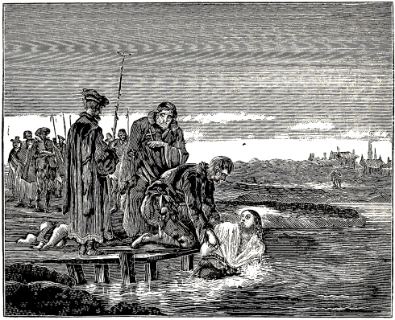
MATTHEUS MAIR DROWNED.
The same year 1592, on Mary Magdalene’s day, Mattheus Mair was apprehended at Wier, in the district of Baden. This was brought about by a priest, who upon coming out of the church, and noticing the brother, sent his servant maid after him, to see whether he should leave the village. He further commanded her, that she should so speak to him, as though she also wanted to become of his persuasion, and would like to go with him to his people; in the meantime he should come, and send other persons there, who should speak with him. With such words the maid delayed the brother, till the priest sent out some peasants, who apprehended him, and conducted him into the town of Baden. Six days after, namely, the 28th of July, as he would not follow them, nor renounce his faith, the ungodly pack of priests proceeded with him; however, what they talked with him, or what he answered them, this they did not allow to come to 1033 the light. When he was led forth to death, there were present his brother-in-law and several of his friends, who interceded for him, and also offered to give money for him; but they could obtain nothing, yea, not even to speak with him.
Now as he was going forth to death, he asked among the people, where his brother-in-law and friends were, and how they might come to him; saying that he had to charge them, that they should tell his brethren and sisters, to take care of his wife and child, for they were with a pious people. This he spoke aloud among the people. Then one of his friends among the people consoled him and said, that he should not yield, but be valiant; he should soon have overcome. Thereupon one smote the friend, who had said this, for it, and said that he was also a heretic, and ought to be treated like the rest. Now when the executioner had thrust brother Matheus into the water, he drew him out again three or four times, and each time asked him whether he would recant. But he always said, No, as long as he was able to speak; hence he was drowned, on the twenty-ninth day of the month of July, through the power of God steadfastly persevering in the faith. There was much said about his death, by high and low, as that they had murdered him, and the traitorous Judas and priest were cursed; for this Matheus was a well-known, good and pious man; hence God also gave him power to continue steadfast in the faith unto his end.
Note.—The envy of some of the Calvanists in the town of Middelborgh was at this time so great against the defenseless sheep of Christ, who had come to them from various papistic towns, to escape the distress and persecution, and expected to rest under their protection, that they paid no attention, and had no regard, neither to humble supplications nor the repeated commands of the Prince of Orange, who in the years 1577 and 1578 had given orders to the magistrates there, to let these people dwell in peace; but disturbed the peace of said people, and the practice of their religion. Hence Maurice, the oldest son of the aforesaid Prince, of honorable memory, following the footsteps of his father, issued, for the third time, a prohibition concerning the oppressing of the aforesaid people, to the end that they might now certainly obtain liberty of conscience, as appears from the following act:
Transcript.
Maurice, born Prince of Orange, Count of Nassau, Marquis van der Vere, to the honorable, most learned, wise, discreet, dear, particular, etc.
That which has been brought to our knowledge, on behalf of Mailjaert de Poorter, and Joost Leonisse, sawyers and wood-sellers, residing in the town of Middelborgh, you will learn at length from the accompanying request; and though we do not doubt at all, but that you will conduct yourselves, with the supplicants, in the points of their request and complaint, entirely according to the import of the resolution previously taken with regard to this, by the Lords States of Holland and Zealand; and will conform to such acts and letters as have been granted to the supplicants and their fellow brethren in the same profession, in the time of our lord and father the Prince of Orange, of worshipful memory; yet we would nevertheless hereby earnestly request you, seeing this matter concerns not only the town of Middelborgh in particular, but these United Provinces in general, that you will regulate yourself according to the import of the aforesaid resolutions, in all quietness and friendship, allowing the aforesaid supplicants and their fellow brethren to enjoy such liberties as have been granted them by said resolutions and acts respectively, until the aforesaid Lords General States of these United Provinces shall have further considered and disposed of the aforesaid matter. And besides that, we deem it reasonable and just, it is our pleasure.
And hereby, honorable, most learned, wise, discreet, dear, particular, we commend you to God.
Gravenhage, on the 4th of March, 1593.
Signed:
Your very good friend,
Maurice de Nassau.
The superscription was: To the honorable, wise and discreet, our dear, particular Burgomasters, Judges and Rulers of Middelborgh, and was sealed with his Excellency’s seal.
Below was written: Compared with the original, and found to agree with it.
J. Milander.
Further Observation.—Upon this followed, it appears, some rest, so that the scattered flock of Christ began to increase some at that place, and to extend its membership. In the meantime, however, [in the dominion] of popery they were still persecuted to death; of whom, among others that lost their lives there, the following have come to our notice; from which the distress of that time, though there was rest in some places, can be inferred and judged.
Aeltgen Baten was an aged woman, and Maeyken Wouters a young woman of about twenty-four years. Both were born at Sonhoven, in the seignioralty of Vogelsanck, belonging under the territory of Luyck, and resided there. Through the grace of God they obtained the true knowledge of the holy gospel, believed the same, amended their lives, according to its requirements, and had themselves baptized upon the faith in Jesus Christ, according to his divine commandment and the practice of his dear apostles. As this however could not be tolerated, complaints were entered against them at Luyck, where the Court is held, and where orders were given to bring them thither as prisoners, which was done in the following manner: The lords of Luyck have certain beadles, called trappers, whom they send through the country whenever they want to have any one apprehended. They sent fourteen of these trappers from Luyck to Sonhoven, to apprehend these two women, or any others, and to 1034 bring them to Luyck. They first captured Aeltgen, and afterwards Maeyken and her brother (who was still very young), who had made themselves ready and it was the intention of both of them, if their father should have been taken, to go with him and not to forsake him; but as they did not catch the father, her brother also escaped the trappers.
Thus they began to conduct these two lambs to Luyck; but as they, on their way to Luyck, had to pass through Hasselt, a town about a league distant from Sonhoven, these two lambs were spoken to by many of their acquaintances at Hasselt, and it was greatly lamented, that they had to go to Luyck, into prison, and much sympathy and solicitude was expressed for them. Maeyken said to them: “If the Lord has so ordered it, I would rather go to Luyck (namely, for the testimony of Christ), than home. And thus they proceeded through the city, and went to Luyck, in all a distance of about eight leagues. When they got there, they were imprisoned ten weeks in the official’s tower. During this time, they showed each other great love, tending as it appears, much to edification and encouragement; for the young sister would gladly have borne in her own body, if it had been possible to do so, all the hardships which her dear, old sister suffered. They endured much vexation, being threatened, frightened, and also entreated, in order to turn them from the faith.
Once the bishop’s chaplain came to the young sister, with bland words, and brought a can of wine with him, in the hope that he should overcome her. With words of greatest suavity he presented to her the matter; yea, he got down upon his knees, and with folded hands begged her to recant and to believe the Romish church. But Maeyken proved herself faithful, and repelled the devil’s deceit, so that the tempter went away. On another occasion, a man from her village, who was acquainted with her, came to Luyck. He had heard that it was reported that she should have to die, and his soul was set on fire, and the matter excited his carnal sympathy, thinking: “And must that young girl die?” Hence he thought with himself, that he would talk with her, in order to see whether he might not move her. He therefore went to her in prison, and called Maeyken out alone, and said: “My dear Maeyken, O that you would obey, and yield a point, to be released from these bonds. When you get out, you can live as before.” Thereupon she replied: “My dear friend (calling him by name), would you advise me this, that I should forsake God and become a child of the devil?” The man said: “Then you will have to die.” Thereupon Maeyken said: “I should rather have this come to pass with us, than enjoy the light of day.” When the man heard this, he became silent, so that he turned around with weeping eyes, and said nothing more to her. They were both tortured and suspended on Thursday night; but they remained silent and fainted away. Then they poured water over Maeyken, upon which she cried aloud; but more than that they did not obtain from either. During the night they lay together quietly. On Friday night they sang with great joy. Having been thus imprisoned for a long time, they were finally brought into the official’s court, and condemned according to their spiritual law. When they heard their sentence, they thanked the Lord with a joyful heart, yea, with a laughing mouth. They then delivered these two persons over to the secular judge, who received them, and placed them again in his prison, in which they suffered great distress for a few days, on account of the uncomfortable condition of the prison. However the Lord ordered it, so that they took consolation and courage in the Lord, and Aeltgen’s husband sent her money and blankets for her needs, for which she thought she had no further use, and hence refused it altogether. She asked her dear sister Maeyken, whether she would have it. Maeyken said: “I have as little need of it as you, my dear sister;” for they trusted soon to live in all fullness and joy with the Lord. “Yes,” said Aeltgen, “if the door stood open, I should not wish to go away.” And since in all their sufferings they were so joyful in God, they thanked God in heaven in their hearts, and sang praises to him in prison.
Afterwards they wanted to sentence them by the secular law, which it was said, was done by four judicial persons, or judges, namely, that these two persons should be drowned (for the word of God), by being cast alive, bound, from the Meuse bridge. On that same Saturday there came to them to Luyck two men from their locality, to ask both of them, whether they had some word to send yet. Coming thus unbeknown, they found them in a chamber, where sat the lords to sentence them, and they were standing in their midst, and when Aeltgen saw her acquaintance she said to him: “Nephew, have you come to visit us once more? we trust to offer up our sacrifice within one hour; we thank you heartily for it, and I request you to please tell my husband, to bring up my children in the fear of God.” Maeyken also said: “Do bid my father and mother many adieus.” This they spoke while standing among the lords, expecting their sentence. The men tarrying a little, one of the lords bowed himself before Maeyken, begging her to recant and to believe in the Romish church; and her life should be spared. Thereupon Aeltgen said: “We want to die, as Christ’s apostles did.” Now when their last hour was approaching, both were brought forth from prison. Hence, both of them being rejoiced, they began to sing and to thank and praise God; but alas! the poor lambs could not long enjoy this; for what is granted to thieves and murderers, namely, to speak, of this they were deprived, and they were conducted back to prison, where their mouths were gagged, and they were thus, as dumb lambs, led to the slaughter and death. When they arrived on the Meuse Bridge, many and various reports of this matter were circulating among the common people. When they arrived at the place appointed, the executioner began to bind them, but they had to keep silent, until the executioner loosed the cloth that was before their mouths, and tied it over their eyes. Then Aeltgen first said: “O Lord, this is a beautiful city indeed; would that it repented with Nineveh;” and commending 1035 herself to God, the executioner forthwith cast her from the bridge down into the water, and she was instantly drowned.
The executioner then also released Maeyken’s mouth, so that she was heard to speak, saying to the executioner: “Grant me, that in my greatest extremity I may pray to God and call upon him.” The executioner said: “Pray to our lords the magistrates, and believe with us in the Romish church; and you shall save your life. Maeyken said: “I have never done amiss to the magistrates; hence I also need not to worship them;” but the executioner gave her a short answer, and giving her no time, cast her down from the bridge immediately; she did not sink instantly as Aeltgen, but with blooming cheeks she drifted upon the water for a long time, until, it is said, she had reached the lower side of the city.
Thus these two Christians ended their lives to the honor of God, on the 24th of July, 1595.
The abundant mercy of God our heavenly Father, through Jesus Christ his only Son our Lord, this I wish you, my dear father and mother, brothers and sisters, whom I love much from the heart, but our heavenly Father above all, for he has called me, that I should help him bear his sufferings, for which I have asked him many times, if I might be worthy of it. Hence I followed him with great joy.
My dear father and mother, think not (though I am bodily separated from you and the flock of Christ) that my Bridegroom will forsake me; think what he has said: Though a mother should forsake her child, yet will I never forsake mine elect, whom my heavenly Father has given me. Is. 49:15. Hence if it is his pleasure, I shall soon be delivered. But if you now deliver me with temporal wealth, you deprive our Bridegroom of his honor, and believe not that he will deliver me.
Hence, my dear father and mother, grieve me no more about paying the costs; for you have burdened me greatly, day and night, because I sent word to you so many times, that you should not ransom me, and you did not write me an answer.
Hence, my dear father and mother, speak with our friends, so that I may receive a comforting letter from you or from the others, which would be to me a great joy; for otherwise I desire no comfort from men, only from our heavenly Father alone, who is able to provide for us.
O dear friends, if I continue steadfast in that which my heavenly Father lays upon me, what great treasure I hope to gather thereby, which will fall to me hereafter, which is a great joy to me. O my dear father and mother, is this not a greater joy to you, than if I had not done according to your will, and had gone off with a young man, as you have doubtless heard of other girls? Hence rejoice and make melody to the Lord in your hearts, because the Lord has made me, unworthy one, worthy thereto and you have brought me up to God’s praise. Remember that there is still more written, where the Lord says: Blessed are ye, when men persecute and revile you for my name’s sake; rejoice and be exceeding glad then, for great shall be your reward in heaven. Matt. 5:11,12.
Know, dear father and mother, that I have been before so many lords and authorities, also priests and Jesuits, who sought nothing but to murder my soul. But the Lord our God gave me wisdom and understanding, and a mouth to speak which, I believe, was pleasing to our dear Lord. Very many times they predicted my eternal damnation, and said to me: “If you do not forsake your sect, and live according to the holy Roman Church, as the whole world does, you will, as truly as God is in eternal life, never attain to repentance.” Then I said to them: “I doubt not, but trust, that if we finish it by the help of the Lord, we shall through grace obtain the eternal joy.” Then they said to me: “God has nothing to do with you; you are a child of the devil; the devil has you by the throat, who will confirm you even unto the fire. God created you beautiful, and made you after his own image; and is it not a pity now, that you will have to die an ignominious death, and hereafter inherit eternal fire?” I said to them: “I will rather die, than apostatize from my faith, if it is God’s pleasure. Thus I am ready, much rather to-day than to-morrow; I will not fear men, who must die; but I will much rather fear my heavenly Father, who has given me my life; though I now, for his sake, lose it, he can give it to me again.”
Then they left me. The omnipotent, strong and mighty God, our heavenly Father, who always helps us to triumph, and does not forsake them that have put their hope in him, and never turn their faith from him, the Lord our God, who sits in the highest throne of glory, come to our aid; he alone is worthy to receive praise and thanks, honor and glory, and blessing forever and ever. Amen.
Hereby I most heartily greet my dear father and mother, brother and sister, with the peace of the Lord. Dear friends, when you offer up your prayers before the Lord, do not forget me, since I shall not forget you; may the Lord be our helper. Amen.
Once more, in particular I greet father and mother, brother and sister, and further all believers and lovers of the truth; let all pray heartily for me. I hope to be diligent, as far as the Lord has given me grace. God be with us all. Amen.
I had this letter written, when I was in prison for the testimony of the truth, in the town of Luyck, A. D. 1595. I, a feeble member of the Christian church, bearing now in my body the marks of my Lord. Adieu, now, all of you.
Maeyken Wouters.
At Brussels, under the reign of the archduke Albert, there was apprehended for her faith and 1036 following Christ, a young maiden named Anneken van den Hove (being the servant-maid of Nicolaes Rampaert’s sister), having been betrayed, as it was said, by the pastor of the Savel church at Brussels.
This Anneken was imprisoned two years and seven months, in which time she suffered much temptation, from priests, monks, Jesuits and others, who thereby sought to make her apostatize from the faith she had accepted; but however great pains they took with her, in the way of examining, tormenting, fair promises, threats, long imprisonment, and otherwise, she nevertheless constantly remained steadfast in the faith in her Lord and Bridegroom, so that finally, on the ninth of July 1597, certain Jesuits came and asked her whether she would suffer herself to be converted, for in that case she should be released and set at liberty. Thereupon she replied: “No.” They then offered to give her six months more time for consideration; but she desired neither day nor time, but said: They might do what seemed good to them, for she longed to get to the place where she might offer up unto the Lord a sacrifice acceptable unto him. This answer having been conveyed to the judges, information was brought her about two hours afterwards, that if she wanted to die, prepare herself, unless she wished to turn.
Hence the justice of the Court, and also a few Jesuits, went out with her about eight o’clock, half a mile without the city of Brussels, where a pit or grave was made, while in the meantime she fearlessly undressed herself, and was thus put alive into the pit, and the lower limbs having first been covered with earth, the Jesuits who were present asked her: Whether she would not yet turn and recant? She said: “No;” but that she was glad that the time of her departure was so near fulfilled. When the Jesuits then laid before her, that she had to expect not only this burying alive of the body into the earth, but also the eternal pain of the fire in her soul, in hell. She answered: That she had peace in her conscience, being well assured that she died saved, and had to expect the eternal, imperishable life, full of joy and gladness in heaven, with God and all his saints.
In the meantime they continued to throw earth and (as has been stated to us) thick sods of heath ground upon her body, up to her throat; but notwithstanding all their asking, threatening, or promising to release her and take her out of the pit, if she would recant, it was all in vain, and she would not hearken to it.
Hence they at last threw much additional earth and sods upon her face and whole body, and stamped with their feet upon it, in order that she should die the sooner.
This was the end of this pious heroine of Jesus Christ, who gave her body to the earth, that her soul might obtain heaven; thus she fought a good fight, finished her course, kept the faith, and valiantly confirmed the truth unto death.
Since she then so loved her dear leader, Christ Jesus, that she followed him not only to the marriage at Cana, but also, so to speak, even to the gallows-hill, there cannot be withheld from her the honor and name of a faithful martyress, who suffered all this for his name’s sake.
Hence she will also afterwards, when going forth as a wise virgin, yea, as a dear friend of the Lord, to meet her heavenly Bridegroom, be joyfully welcomed and received in the heavenly halls of immortal glory, together with all steadfast servants of God.
O God, be merciful also unto us that are still living, that continuing faithful unto the end, we may with her, and all the saints receive thy blessed inheritance.
It was for a long time believed (which originated in the assertions of some adherents of the Reformed Church), that the aforementioned Anneken van den Hove died for the sake of the Calvanistic or so-called Reformed faith; but this was long ago justly contradicted, by written as well as by oral testimonies; among others, through a certain letter, which was written in the month of July (when she was offered up) by some one from Antwerp, to one of his friends; in which it is stated, in papistic style, that she was buried alive outside of the city of Brussels, because she belonged to the Anabaptists.
One year subsequently, namely, 1598, there was published, a printed work called the Apologia Catholica, by Franciscus Kosterus, in which, on page 160, these words are found: “Moreover, there was no injustice done at Brussels, to Anneken van den Hove, inasmuch as they proceeded against her in accordance with the old laws of the Emperor’s; nor need the Calvinists complain of the lords; for she was found a Mennonist and Anabaptist, who, Calvin himself confesses, ought to be punished.” See the aforementioned book, printed at Antwerp, by Joachim Trognesius, edition 1598, at the place referred to.
Subsequently, in the year 1601, another tract was printed and published at Antwerp, by Hieronymus Verdussen, entitled: Brief and true account of the sufferings of some pious and glorious martyrs, etc.; wherein she, near the close, is pronounced an Anabaptist.
Moreover, a certain school teacher and sexton of the papistic church at Aelst, who then resided in Brussels, near the Stone Gate, where she was imprisoned, and who often brought her food, made the verbal statement, according to creditable testimony, that she had such a faith and religion as the Mennonites, etc.
It was also then, and shortly after that time a common saying at Brussels, of those that had any knowledge concerning her views, that she agreed therein with the Anabaptists, etc.
We will abridge this century with which formerly also our old Offerboeck was concluded; showing 1037 the destruction of some tyrants, who were no small cause of this last and severest persecution of all.
Even as the old man whom King Antiochus had sent out to Jerusalem, notwithstanding he set up many abominations, and tyrannized against the law of God, could nevertheless not suppress the people of God and his law, but had to behold their increase [even] under the persecution, and besides see that the country was full of wars and commotions and resisted the king; even so it also came to pass with the aged Ferdinand Alvares de Toledo (also called Duke of Alva), whom King Philip II had sent from Spain into these Netherlands; however much he endeavored to make every one accept the abomination of idolatry, above God and his word, and however dreadfully he raged, utterly to exterminate the true lovers of the divine truth, and ardent followers of the holy gospel, yet he could not, to the satisfaction of his furious and blood-thirsty disposition, accomplish his presumptuous undertaking.
For under his severe and bloody persecution, the church of the godfearing, the pure bride of Christ, still constantly bloomed as a beautiful rose among pricking thorns, and was fruitful, to the praise of the Most High.
But he himself, who sought to rule over all Netherland lords, and to oppress others, met with resistance from some of those whom he sought to exterminate, who, however, were not of the defenseless sheep of Christ, so that, after he had for about seven years indulged his desire for bloodshed, slaying and murdering for the faith (when the country was full of war on his account), he had to depart in disgrace, and with him one John Vergas, who was a member of his council of blood; which many regarded as a punishment of God for his wickedness. But a still severer fate awaited Jacob Hessel, one of the chief members of his deadly court, and Jan de Vis, Bailiff of Ingelmunster; who, some time afterwards, were taken out of prison, without previous announcement, or sentence having been pronounced conducted without the city of Ghent, and hanged to a tree. And even as they had sentenced many others to death unexpectedly, so they also had to yield up their lives unexpectedly, and thus there was meted to them with the same measure with which they had measured to others. From this we can easily perceive God’s just punishment upon those who persecute and kill Christ and his members. Likewise in the case of the high Bailiff of Halewijn, named George de la Rave, who also participated in the tyranny over the children of God, by persecuting, dispersing and apprehending them, and otherwise. In the year 1571 he assisted in apprehending, among others, one Adriaen Jans Hoedmaecker (who was burnt at Rijssel on account of his faith), and in the year following, on the same spot where Adriaen had been apprehended, he met together with some intoxicated persons, with whom he and his servants fell into an altercation and fight in which he was wounded to such an extent, that he had to lie in bed with the wound for a long time and finally died a painful death in great distress of mind. Hence he had several confessors come to him, who could nevertheless not rid him of the gnawing worm of a torturing conscience; but he had to end his life as a tyrant in misery.
But especially can it be seen, how hard it is to kick against the goads, in the case of one Pieter Titelman, the Dean of Ronse, who was probably the chiefest inquisitor in Flanders. He was about this time in Kortrijck, smitten with a severe disease by God, lice growing out of his wicked body so abundantly, that he could not be kept clean therefrom, notwithstanding he was supplied with clean linen, and otherwise cleansed two or three times a day. No remedy could be procured and he died a most distressing and miserable death.
Concerning this Dean of Ronse it is also written, that having gone forth on a certain occasion with a small number of men, to apprehend these witnesses of God, and thus to deliver them into the hands of the torturers and slayers, he came; at evening, into an inn, where he met a bailiff, who had gone out with a great number of beadles, to apprehend vagrants and wicked men. The bailiff asked Ronse with surprise, how he dared trust his body with so few servants, to apprehend other people; for if I were to do so, said he, I would soon lose my life. Thereupon Ronse replied, that he had no fear in this respect, since he had gone out to catch only good men, from whom he had no danger to apprehend. Upon this the Bailiff, particularly reflecting upon Ronse’s words, answered: “If you arrest the good people, and I the bad, who then shall remain free?” Hereby this Dean of Ronse certainly bore testimony of himself, that he had laid his hands on the just, who had not resisted him. So it can also be perceived from this bailiff’s remark, that he himself well knew that the magistracy’s power ought to be used only for the punishment of the evil, and the protection of the good; and that therefore this Ronse and his adherents shamefully abused their authority on these people.
It also happened at Dixmuyden, in Flanders, in the year 1553, when the pious Wouter Capelle, who is mentioned in this book, was burnt for the truth, that there was a simple, harmless fellow, who was arrested by the lords of Dixmuyden. He begged in the streets, and was thus fed by good-hearted people. And since the aforementioned Wouter Capelle, (by trade a say-weaver) was very liberal in supplying the poor with food, communicating to them from the labor of his hands, it occurred, two or three days before Wouter was apprehended, that this simple fellow, late in the evening, came to Wouter’s house. Wouter asked him whether he wanted something to eat. He said: “Yes.” Hence Wouter brought him a piece twice until he did not wish any more. Now when it came to pass, that Wouter Capelle was sentenced to be burnt, this simple fellow cried: “You thieves and murderers, you shed innocent blood; this man has done no evil but has very kindly fed me.” And this he cried constantly, and as Wouter was brought forth to be burned, he also stepped near and wanted to run into the fire with the condemned man, so that they had to carry him away by force. And when he was dead, the burnt body having been brought outside 1038 of the city to the gallows-field, this simple fellow daily resorted thither, heeding neither snow nor rain, and stroked with his hands the burnt body, and said: “O poor fellow, you have surely done no evil, and yet they have shed your blood; and you have fed me so kindly.” Finally, when the body had been almost devoured by the birds, this man on a certain occasion took off the whole skeleton, laid it upon his shoulders, and ran in to the gate with it. Hence many people followed him, to see whither he should take it, but he went with it to the lord burgomaster of the city, and when the latter had opened his door, he threw the whole skeleton down into the hall, and said (also other lords being gathered there): “You thieves and murderers, if you have eaten the flesh of this man, eat the bones too.” And as the lords of Dixmuyden had erected an iron stake in the place where the aforesaid Wouter Capelle had been executed, for a token and lasting memorial, that such a heretic (as they regarded him) had been burned there; it came to pass that the burgomaster of said city, into whose house the skeleton had been thrown, became sick unto death, and his sickness so affected him, that in his delirium he cried out: That he had seen the angel of God fly over the stake with the soul of the burnt Wouter Capelle. And this he constantly cried, till the lords caused the iron stake to be removed; then he ceased his cry; but died most miserably shortly afterwards. In consequence of this, it seems, those of Dixmuyden were so frightened that afterwards they shed no more innocent blood.
Concerning this avenging hand of God, which he very signally exercised upon blood-thirsty tyrants and persecutors of his people, you may also read in an epistle of Menno Simon’s, S. G. folio 133,348 which the latter wrote in his time to Martin Mikron, and which partly related to the aforementioned Menno himself. It reads as follows:
“It is now about eighteen or nineteen years since that a very eminent and distinguished man, who was highly esteemed by the world, but whose name and country I will not mention, wickedly advised, how they should extirpate me and the pious. He had scarcely finished his words and wicked thought, when the avenging hand of the Most High touched him. He dropped at the table, and thus in a moment ended his impenitent, blood-thirsty, wicked, ungodly life in a most dreadful manner, O terrible judgment?” This happened about the year 1539.
“About the same time it happened to another man, who thought that he would so set his trap for me, that I could not escape, that he, in like manner, at the same meal he was eating, while speaking the words, was suddenly pierced by an arrow from the Lord’s quiver, being smitten with a severe disease, and thus had to give an account before the almighty, avenging God, and was buried within eight days from the time he had spoken these words.
“Still another, who was to become an officer to the Emperor in a certain place, fancied that he should exterminate this people, if there was any virtue in the imperial authority. He came to the place where he was to be located and serve in his capacity; and four or five days thereafter, the bell was tolled and the requiem sung over him.
Behold, thus God the Lord annihilates the designs of the ungodly who assail his holy mountain, and brings to naught all those that hate his truth and are inimical thereto.
“In the year 1554, it also occurred that three of our brethren were at Wisbuy in Gotland, for the purpose of earning a livelihood there. A preacher of that city, whose name was Laurentius, who was led by the spirit of his Father [the devil], cried after them on the street, and reviled them as much as he could, saying that they should not practice their religion there, though it should cost him all that was inside of his coat, namely, body and soul. A few days afterwards he came to converse with one of these brethren, another preacher also being present, who was somewhat more reasonable in disposition. He reviled, and carried on dreadfully; but the great Lord smote him in the presence of them both, so that he was suddenly deprived of his speech, and within twenty-one hours (alas!) was numbered with the dead. O terrible punishment and judgment of God!
“A case almost similar occurred the same year at Wismar, where they had accepted a crier, named Doctor Smeedesteed, who said that he would rather have a hat full of our blood, than a hat full of our gold. He persuaded the magistrates (who gladly have and want to hear such pillow makers) to proclaim just before cold winter, to the poor children, to clear the place before St. Martin’s day; or they should be put where they should not like to be. Smeedesteed was very joyous that he had accomplished the fulfillment of his heart’s desire; but to his sore judgment; for that very day the almighty, great Lord laid the hand of his wrath upon him, and within six or seven days took him away by an awful and severe sickness. Yet the hardened, blind and stupid world did not perceive it.
“A. D. 1555, it occurred again in that city, that there was a preacher, named Vincentius (who still lives there), who never grew tired of his ungodly reviling and severe reproaching. On the day they call the Lord’s Ascension day, he read from the Scriptures (Mark 16:16): ‘He that believeth and is baptized shall be saved,’ and said he should reproach and revile us, as long as his mouth was open. Instantly the strong power of God closed it, and bound his tongue, and he fell down in the pulpit, and was carried out by some of those present, as one punished of God, and taken into his house a dumb man. Behold, thus he can punish those who would touch and injure the apple of his eye.
“If I were to relate all the incidents which in my time befell the enemies of the saints, it would require a separate volume.” Thus far from Menno Simons.
It is appropriate to add here, what happened to the said godfearing Menno Simons himself. A traitor sold him for a certain amount of money, binding himself to deliver him into the hands of the tyrants, 1039 or he would lose his own head in stead; in which, however, to his own injury he did not succeed, though he put forth his utmost diligence to accomplish it. He repaired to their meeting, and diligently spied out a place where they assembled; but Menno in a miraculous manner escaped his hands.
It occurred also, that the traitor and the officer, who had gone out to seek and apprehend Menno, unexpectedly met him in a small boat on a canal. The traitor kept silence, till Menno had passed on a piece, and then jumped on shore, to escape with less peril. Then the traitor said: “See there, the bird has escaped us.” The officer called him a villain, and upbraided him for not speaking in time. The traitor replied: “I could not speak, for my tongue was held.” This was taken so amiss by the lords, that they severely punished the traitor, for a rigorous and instructive example to all bloodthirsty traitors.
Thus there can, by these and similar examples mentioned in divers places in this book, as also in both Testaments, in murderous Cain, Pharaoh, Jezebel, Antiochus, Herod, and many similar ones, be manifestly seen and perceived the avenging hand of the almighty God, and how grievously they offend against the God of heaven and earth, who here afflict, persecute and kill his people; and what intolerable punishment they have to expect at the coming of Christ from heaven; of which this temporal punishment is but a beginning and foretaste, seeing the Son of God, in the day when he will arise to avenge Zion, will regard all that has been inflicted upon his own, as though the apple of his own eye had been touched. Then shall all persecutors be sorry with too late repentance, and groan for anguish of spirit, who here condemned and killed the just, who did not resist them. Wis. 5:3; James 5:6.
Hence the wise woman Judith says in her song of praise: “Woe to the nations that rise up against my kindred! for the Lord Almighty shall judge them, and visit them in the day of judgment; for he shall put fire and worms in their flesh, that they shall burn, and feel it for ever.” Judith 16:17.
O how good were it for all tyrannical men, if they would consider and lay to heart these and similar passages of holy Scripture, and would fight no more against the high God, for it will be required of them at that day, before the judgment seat of Christ. Since faith is a pure gift, which comes from God alone, and hence can neither be given nor taken away by any man, however highly esteemed he may be. All princes and rulers ought also to commit the matter of faith to the Creator of all things, who alone is the discerner of the hearts and reins of all men, and who knows and beholds the hidden thoughts and intents of the heart, clear and uncovered before his eyes; before whose high majesty both the judge and the condemned must finally appear together. He will judge the world in righteousness, and offer faith to every one. Acts 17:31. He shall then judge according to truth, as to who believed and walked righteously or falsely. Hereunto we would from the inmost of our soul, counsel and entreat all lords and princes, as for their own welfare. O that God Almighty would be pleased to grant all princes and lords who have received the sword of justice, the grace, that they would use their sword and authority no further than only upon the bodies and goods of men in civil matters, for the punishment of evil-doers, and the protection of the good; to which end the same has been given them of God; and would let God Almighty be the Lord and Judge over the faith, souls, and consciences of men, which unquestionably belongs to him (blessed be he) alone. And that they would moreover consider, how very short and uncertain man’s life is, and how soon these earthly kingdoms can pass from one nation to another. And if the incoming lords hold different views than the former ones, city and country are instantly in great danger of revolt, uproar and destruction, if they want to force all their subjects to the religion which they have accepted; or the common people must resort to dissimulation and hypocrisy, to escape the punishment threatened; for such lords seldom lack preachers who for the sake of great prebends are willing to preach according to the pleasure of the lords.
And O that men would once consider, how many thousands of persons have for many centuries been deprived of life and property, on account of religious differences, because the magistrates (through the instigation of their preachers) would force them to their religion; which nevertheless wrought no improvement, but the conflict remained uninterrupted. But how utterly blind and unreasonable they proceed in this matter, it is easy to perceive; since we certainly, most clearly and abundantly find, that even the Lord’s apostles, which he had sent and highly enlightened, could bring but a very small proportion of men to one religion, and that in their time, besides the innumerable multitude of unbelievers and persecutors of the truth, were also many false apostles and deceitful workers, who preached Christ out of envy and strife, and not sincerely; so that Christ was preached in many ways, in season and out of season. 2 Cor. 11:13; Philippians 1:15,16. Who then shall believe that in this last and evil time, in which iniquity prevails, whole countries and kingdoms can be brought into the obedience of the apostolical doctrine, through the sword and constraint of the magistracy? The more so, since Christ himself says, that at his coming it shall be as it was in the days of Noah and Lot. Luke 17:26. Hence the Lord Jesus also seems to ask doubtfully: Whether, when the Son of man cometh, he shall find faith on the earth?
For the number of believers has from the beginning of the world been very small among the children of men; and not all men have faith, as Paul says; and the whole world, according to the teaching of the apostle, lieth in wickedness; and all that is in the world, the lust of the flesh, the lust of the eyes, and the pride of life, is not of the Father, but of the world, and the world and the lust thereof shall pass away; and Solomon seems to compare this world and all her ungodliness to a magnificently adorned woman, in the attire of a 1040 harlot, subtle, wild and stubborn, so that her feet could not abide in her house; whereby she seduced and deceived the foolish youth, so that he followed her in wickedness.
Compare with it now this present evil world; how one can see every city and country polluted with pride, boasting, cursing and swearing, tippling houses, tennis-courts, dancing halls, and shameful brothels, or houses of ill-fame, where one can perceive, with open eyes, what a countless multitude of people, especially of the young, gorgeously arrayed and adorned in honor of the world and the devil, allow themselves to be lured and seduced thither; whereas it is certainly known, and also unanimously acknowledged, by all the one another opposing sects, according to the express words of God, that the end of such a life and walk, without true fruits of repentance, is eternal death. Nevertheless, we do not find that the preachers, to prevent this wickedness, work with the authorities to punish and root out in every respect, by rigorous decrees and corporal penalties, this indubitable evil and soul deception; but in the point of religion (in which through the craftiness and subtlety of men, there are so very many articles of contention and doubtful and conflicting views) we see them labor with all their might, to punish, exterminate, and use constraint upon the faith and consciences of others, though the latter cannot be accused of any of the evils mentioned. Yet experience teaches, that many of these preachers are themselves so uncertain and wavering in their faith, that they would rather change their faith many times, according to the desire of the authorities, as the chameleon its color, before they would on this account forsake their large salary. Hence it is our hearts’ wish and earnest prayer to all rulers, that they would be pleased not to hearken to such treacherous preachers, who seek the loss and destruction of other people; but that they would use their authority for the punishment of evil doers and the protection of the good; so that we may lead a quiet and peaceable life under them, in all godliness and honesty; and at the last day may, together find comfort and grace before the judgment-seat of Christ, when we all shall stand so greatly in need of grace and comfort. To this end may the Lord strengthen and keep us by his Spirit. Amen.
We will take leave of this sixteenth century with a certain conclusion appended to the Martyrs Mirror of the year 1631; wherein we will say nothing, as far as respects the sense of the same, but what our dear fellow believers have said in that work.
We have here presented to you, kind reader, many beautiful examples (as we have found them in printed works of former times, as well as in those of more recent date, from different regions, from the criminal records of city and country), of men, women, youths and maidens, who faithfully followed their Savior, Christ Jesus, in the true faith, feared God from the inmost of their soul, and with a pure heart sought eternal life; who flourished and shone as bright lights, before all the world, in the love and power of God, their mouths flowing in wisdom with the holy word and doctrine of the Lord; which appeared more in the manifestation of the Spirit, than in elegant language or human wisdom; for their thoughts, words and actions were all to please their Leader and only Shepherd, for whose name’s sake they gladly delivered up their lives into temporal death, as not seeking to possess a worldly and peaceful kingdom here upon this earth, but, as true strangers, to journey to the eternal and heavenly fatherland, well knowing and having experienced, that they that will live godly must suffer persecution. There must also be noticed the difference between the children of God and the children of unrighteousness, between the persecuted and the persecutors, because we know, and it can clearly be shown from the holy Scriptures, that from the beginning of the world the unrighteous, whose works were evil, always envied, reviled, persecuted and oppressed those that were righteous and practiced virtue, for an unreasonable zeal impelled them to it. And it has been observed, that many times the teachers or leaders, who ought to have taught and led the people to the true religion, and into the way of life, misled them to idolatry and into the way of error and death. The shepherds, who ought to have carefully fed the sheep of the Lord with the word of God, and protected them against the ravening wolves, have fattened themselves, and paid no attention to the flock, but presented to them mostly human doctrine and the reasonings of their own mind; clothed themselves with the wool of the sheep, and thus, in the appearance of sheep but the nature of wolves, themselves been disturbers and devourers of the flock, or have delivered them into the talons of the eagle, and the teeth of the lion. So also, the ministers of God, who were endowed with great honor and dominion by the Lord, and who had received the sword to punish the wicked and to protect the good, did not content themselves with these high offices and honor, but, abusing their power, through instigation or ignorant zeal, laid their hands in the Lord’s husbandry, and inconsiderately plucked off the wheat for the tares; and though it tended to the salvation of the oppressed, it was nevertheless a presumptuous procedure, thus to root out, destroy and thoughtlessly condemn with an unjust judgment, the green plants in the Lord’s field, before the harvest; for no one but the Lord himself can truly know who is worthy of the fire or of the garner.
Hence there are no savants upon earth wise enough to step into any office of the only wise God, and to execute the judgment which he has reserved for himself; for who can fathom man’s heart, save he that sees all things, and knows all mysteries, who penetrates the hearts and reins, and knows the thoughts of all men. Such things indeed are not man’s province, for men are often, though they think they are standing, cumbered with sin, unbelief and perverted views, much more than they are aware of; and all that men know and believe here is but in part. Besides, the examiners of the faith 1041 can easily be blinded or deceived by lies and a hypocritical life.
Hence those who would defend persecuting and killing for matters of faith, and represent and urge it as right, accomplish no good by their fury, but instead of good wheat they gather much impure chaff, and fill the sheepfold with dissembling, hypocritical goats. And if any one thinks, that it does not behoove a king or prince to tolerate all sorts of doctrines, persuasions or heretics in his country, but that he may practice such a religion in it, as he understands to be needful for the salvation of his subjects, and to prohibit all others; such a one must also consider this, that if in any country several princes, differing in religion, should come to rule one after another, and each one, seeking to enforce his faith, pollute the land with the blood of its inhabitants, such a country would be nothing else than a hell, or a pool full of disquietude and oppression, where the minds of men would be in such lamentable misery, as ships, which on the dreary and turbulent ocean are rocked hither and thither in the storm by all sorts of winds, till they at last suddenly perish. But how can they so greatly hate and cast out any one for the faith, even though he should err? this is not the nature of the children of God, who do not oppress even the unrighteous, even as it is not the nature of the sheep to devour the wolves, but to flee from them, and suffer devouring.
And why will they force any one to the faith, which only God can give to man? He that errs, errs for himself; if he falls, he falls unto his Lord, who can and will lift him up again, for he calls and invites every one to it, offering to him water and fire, life and death; each may choose what he will. And this choosing, seeking or finding of a faith to his salvation, is certainly as free to every citizen or inhabitant, as it is to the king or prince; for does not Christ call to him all that are burdened and heavy laden? Hence no one may think, that such calling concerns only the rulers, and that it is enough for the subjects, to look to and follow them. O no! each shall have to give an account for himself; for at the last judgment every one’s heart, whatever his rank or title, shall be equally closely searched; the counsel of every heart shall be made manifest; each shall receive reward according to his own works; and it shall not concern only the princes or the shepherds. No one shall there be responsible for another, but every one shall find his own burden heavy enough to carry. However, one need not be surprised, as though some new or strange thing happened, if God thus tries and purifies his elect. For if even the Prince of life and of salvation had to enter into his glory through much suffering; if the way to get into the joyful kingdom was so narrow for him, how shall his followers get there, except by the same way? What guilt was there in him? What wickedness, uproar, or crimes did he commit? Why was this harmless, innocent, spotless Lamb (which sought the harm of no one, but the welfare of all) persecuted so malignantly? What made the blind scribes so incensed at him? and why were they so exceedingly eager to follow the advice of inconsiderate Caiaphas? And was not the cause of all this the fact that mad ignorance urged them on? which so ofttimes inflamed the heads of the people, so that they (as though it had been a great service to God) wanted to exercise dominion over the minds as well as over the bodies of men, and use the sword to constrain the faith as well as to civil unity. However not all rulers were infected with this madness, for it was seen that the Gentiles, who were called strangers to the knowledge of God (as Felix, Festus, Agrippa, Gallius, and the like), were more considerate in well administering the office they had received, in careful maintenance of the common peace, and, according to Gamaliel’s wise counsel, committing to God the dominion over the faith, than the envious Jews, who according to the promise ought to have been children of God and true branches in the true olive tree. And thus we see, that God, who does all things according to his good pleasure, at some times and places, still grants such authorities who do not compel their subjects in matters of faith, but only seek their peace and welfare; even as we in our time lived to see a Polish and also a French king, who did not so strictly examine their subjects concerning their faith, nor investigate whether the same agreed with the common belief; but solely, whether their course of action tended to hinder or advance the welfare of the country, which they considered with sincere love and sought to promote.
Herein also not too much praise can be bestowed upon the Lords States of the United Netherlands, who, however vehemently they have sometimes been incited to it, do also not consent to such blind zeal in the way of constraint of conscience and investigation of faith. And since we are commanded to pray God for the magistrates, that we may lead a quiet, peaceable and godly life under them, how much more are we bound to thank God for his loving kindness, who also grants us the grace, that we may dwell under the protection of such authorities who oppose the wicked zeal of these blood-thirsty tyrants of conscience (as we have now enjoyed it in this country for about fifty years), and who according to their ability execute their offices, leaving the dominion and investigation of man’s heart and conscience to God.
We are also most solemnly bound to pray the Most High for them, that he will constantly keep them in this purpose, and moreover give them wisdom and understanding, so to rule their country and people, that all may tend and conduce to the peace of the subjects and the honor of God; that he may also give them such believing hearts, that they may truly know whereto they are set here by God, and, finally, walk before him in such a godfearing manner, that at the last day (when the crucified Jesus Christ shall appear with his mighty angels, in the clouds of heaven, as an almighty Potentate, Victor and glorious King, to execute vengeance upon all those that have not known God, and not obeyed the Gospel) they may also be glorified with all God’s saints, and appear with the elect believers in the resurrection and the revelation of the heavenly glory, to be clothed with the 1042 same, by the power of Christ, and with him to inherit the imperishable glory in perfection, and possess it forever and ever, without end. Amen.
FROM 1600 TO 1660.
[After the preceding, sixteenth century closed with the burying alive of Anneken van den Hove, in the year 1597, the following, seventeenth century commenced, not without threats, and the shedding of the blood of the pious witnesses of the Lord.
The first year of this century begins with a decree (though not unto death), published by those of Groeningen and Sneeck against the Anabaptists.
Huybert op der Straten. Trynken his wife, Pieter ten Hove, and Lysken te Linschoten, near Witgensteyn, for the aforementioned faith, led around the gallows, scourged and banished from the country, in 1601.
Hemes Nimrich, a teacher of the aforementioned people, and others, four years subsequently, namely, 1605, near Steyn, scourged out of the city, Hemes having first been led through under the gallows.
Marcus Eder and Hans Poltzinger apprehended on the 24th of April, of the same year, at Nimbach, in Bavaria, and on the 26th of the same month taken to Riet; and, for the steadfastness of their faith, finally put to death with the sword, and burnt with fire, on the 26th of August, A. D. 1605.
Hans Landis beheaded in the city of Zurich; further observations touching the circumstances of his death; for the year 1614.
An account respecting a certain prohibition published by those of Aerdenborgh against the Anabaptists, and what was done by the Lords States General of the United Netherlands for the abolishment of the same.
An extract from certain letters of said Lords States to the Lord of Haultain, Governor of Sluys, as also to the bailiff and magistrates of Aerdenborgh, for the cessation of the oppression began A. D. 1619.
A decree of those of Deventer against the Mennists or Anabaptists, A. D. 1620.
A note touching severe slanders against the Anabaptists in Holland, and how they, by a certain confession of faith, defended themselves before the States of said country, A. D. 1626.
The inauguration of the last Swiss persecution, as also the cause of the same, A. D. 1635.
The progress of the inauguration of said persecution in the castles Wadischwyl, Knonow and Groeningen, as also in the consistory, at Zurich, A. D. 1636.
Concerning said persecution, and the manner in which twelve brethren were apprehended, and imprisoned in the place Othenbach, at Zurich, as also how it terminated, A. D. 1637.
Hans Meyli, Sr., and his son’s wife, conducted to Zurich and imprisoned, A. D. 1638.
This year (1639), fruitful of martyrs and martyresses, many having suffered in prison, at Zurich, in body as well as in life; an account of whom is given in order; namely; Catharina Mulerin; the four sisters, Barbara Meylin, Ottila Mulerin, Barbara Kolbin, and Elizabeth Meylin; as also, Elizabeth Hilzin; the brethren, Hans von Uticken, Burckhardt Aman, Jacob Egly, Ully Schedme, surnamed Schneider, Jacob Rustenhel of Horgerberg, Stephen Zehender of Byrmensdorf, Ulrich Schneider, with his two sons, Henry Gutwol of Lehnmer, Hans Jacobs Hess, as also his wife.
A certain manifesto published by those of Zurich in excuse of the persecution commenced, answered and refuted by the persecuted; in the aforesaid year 1639.
Werner Phister, and his son’s wife, as also Gallus Schneider, Rudolph Bachman, and Ulrich Muller, put to death in the year 1640, at Zurich, in the prison Othenbach.
A supplication of those of Amsterdam to the council of Zurich, for mitigation of the persecution; as also the answer, A. D. 1642.
Felix Landis (the son of Hans Landis) dies of hunger and want in prison Othenbach, A. D. 1642; his wife delivered out of her bonds.
Rudolph Suhner, a young lad, follows in the footsteps of the aforesaid Felix, and also dies of want, A. D. 1643.
A number of women suffer much for the truth, namely, Elizabeth Bachmanni, Elsa Bethezei, Sarah Wanry, Verena Landis, Barbara Neff, and Barbly Ruff, about A. D. 1643.
Henry Boiler dies bound in prison, A. D. 1644.
A certain letter from Switzerland, touching the threats made by those of Berne against the Anabaptists in those parts, A. D. 1645.
Mention is made, A. D. 1650, of a decree published by those of Schaffhausen against those called Anabaptists.
A certain mandate proclaimed against the Anabaptists, three years later, namely, 1653.
Ully Wagman and another brother, both imprisoned; Ully dies A. D. 1654, while the other brother remained in prison long afterwards.
A certain letter from Mackhenheym, in defense of the brethren persecuted in Switzerland, sent to Amsterdam, A. D. 1658.
Seven teachers apprehended at Berne, namely, Ully Bogart, Anthony Hinnelberg, Jegly Schlebach, Hans Zaug, Ully Baumgartner, Christian Christians, and Rudi Peters. See year 1659.
A decree published by those of Berne, against those called Anabaptists, on the 9th of August, A. D. 1659.
A record of what the Lords States of the United Netherlands did with those of Berne, for the mitigation of the aforesaid decree, by letters of recommendation, as also of letters of recommendation of some Dutch cities in particular, for the same purpose; A. D. 1660.
1043
Herewith this whole work, and consequently the whole Book of Martyrs, is abridged and concluded.]
This century will be brief, and extend not over much more than half a century. Neither will the martyrizations that occurred in it be so severe as those in any of the preceding centuries. Beheading people, or suffering them to die of want in prison, will be the severest punishments that were inflicted according to the body upon the following witnesses of the Lord. In the meantime, when the north wind of persecution began to blow its fiercest, according to the course of the times, the pleasant south wind of rest and liberty from persecution intervened. The most, however, mischief in this brief century, in the parts of Zurich and Berne, was caused by such as called themselves Reformed; others, who bore the same name, and especially the rulers of the United Netherlands (as being friends of peace, and enemies of constraint of conscience), opposed it, and kindly and in a fatherly manner protected the innocently persecuted ones, according to all their ability.
This work begins with Groningen and Sneeck in Vriesland, and ends with Zurich and Berne, in the confines of Switzerland. This is the order which we shall follow.
With the beginning of this century, when the constraint exercised by the papists upon the faith and conscience of the pious, began to cease somewhat, some who had separated from popery, and yet nevertheless retained the disposition of the papists, in the matter of oppressing others for their religion, poured out their bitterness not only upon those who had formerly oppressed them, but principally upon such as had never done them evil, but always good; however, not unto death, nor severe punishment of the body, but lighter and lesser penalties, of which those of Groningen and Sneeck were the inventors and inaugurators. Which decree, as far as it is directed against the Anabaptists, we shall copy literally.
The burgomasters and the council make known: Whereas it has come to our certain knowledge that not only many in the city and in the jurisdiction of the same presume to exercise and practice, contrary to the treaty sworn to and made with the city, A. D. ’94, another religion than the Reformed, to the adulteration of the word of God, to the misuse of his holy sacraments, and to the offense and seduction of many persons; but that also nearly all disorders and abuses in and without the marriage state, and also others contrary to the Christian church regulations established and customary here, creep in and are practiced; and we by virtue of our office recognize it our duty to meet and check all this with proper penalties: therefore, we have ordained, and do ordain and decree by these presents, as follows:
Firstly, that the exercise of all other religions than the Reformed is herewith again strictly prohibited.
And if any one be found to allow his house or place to the Anabaptists, contrary to the church regulations of this city, for the purpose of preaching or holding meetings therein, he shall each time be fined ten dollars.
The preachers, as aforesaid, if found to be preaching, shall for each offense be fined ten dollars, or be imprisoned two weeks on water and bread; and when detected in thus preaching the third time, shall be expelled from the city or the jurisdiction of the same.
And all that shall be found attending such preaching or gatherings, shall each time be fined two dollars.
Whoever shall be found to have rebaptized any one, shall be fined twenty dollars; and when detected the second time, shall be imprisoned on water and bread, and expelled as aforesaid.
Again, unbaptized children shall not receive inheritance, according to the city statutes.
No one also shall be admitted to any administration or office, public or private, nor be accepted as a witness, except he render the solemn oath required for it.
And all that refuse such oath shall be punished as is proper according to law.
(Note.—Here follow two other articles, which do not properly belong to this matter; hence we have omitted to place them here; but proceeding we read thus:)
As regards the disposing of the aforesaid fines, one half shall go to the informer, and the other half, like other fines, fall to the city and its jurisdiction.
Thus resolved on the 5th of September, to be published by the bell on the ensuing Monday.
The aforewritten, touching the exercise of religion, was published by the bell, the 7th of September, 1601, old style.
See Chronijck van den Ondergang, edition 1620, page 1539, col. 2, compared with the apology of the decree, letter A., fol. 4; also, Tegenberecht, letter A., 3, 4.
Whether this decree by those of Groningen and Sneeck caused any serious oppression, then or about that time, by way of banishment or the like, to those baptized according to Christ’s ordinance, we have not been able to learn; but that they afterwards in those places proceeded much more severely than the decree justified, by hard imprisonment, etc., against those people, we have found only too much to have been the case; however to the great good and happiness of those who suffered 1044 this for the testimony of the Lord and his holy truth.
Moreover, said year did not end without the shedding of blood of the saints, and the spoiling of their goods, in the parts of Witgensteyn, as will appear from the following account.
In the year of our Lord sixteen hundred and one it occurred that Johann von Steyn, Count of Witgensteyn, Lord of Hamburg, being a member of the Calvinistic church, purposed to abolish the Romish and Lutheran doctrine, and at the same time laid his hands on the defenseless sheep of Christ, which were contemptuously called Anabaptists, and put them in prison.
Among these are mentioned by name, Huybert op der Straten, Trijnken his wife, Pieter ten Hove, and Lijsken te Linschoten, which latter, as we have learned, was an aged woman of over seventy years.
The first three mentioned were imprisoned twelve weeks, the latter seventeen days, she having been apprehended much later.
They suffered much temptation, by way of bitter threats as well as by entreaties, in order to cause them to apostatize; but when they (the persecutors) could not destroy their souls, or cause them to apostatize or depart from the truth all four were finally condemned upon a false accusation (namely, that they had been convicted with the holy Scriptures, which was altogether untrue, and that they would nevertheless continue in their deceptive heresy of Anabaptism, etc.) in this manner:
That all their property should be forfeited, and that each should be scourged with rods, to the number of about forty stripes, and moreover be forever banished from the country; which was accordingly done.
Thus, say the authors, they stripped these innocent, pious persons, led them around the gallows, and scourged them, spoiled them of their property, and shamefully drove them forth with empty hands, and sent them out of the country. See preface to the old Offerboeck, of the year 1615, letter iij, col. 1.
Under the aforementioned Count of Steyn (or Witgensteyn) in Germany, though he was called Reformed, the Anabaptists also at this time, had to suffer much persecution for their faith.
A teacher of said faith, named Hemes Nimrich, was apprehended together with several others. “He was led to the gallows,” writes P. J. Twisck, “not knowing but he was to be beheaded; but when he arrived there, he was (as had been done to the preceding persons) led through under the gallows, and severely scourged; the other prisoners were scourged out of the city.” Chron. van den Ondergang, page 1590, col. 2.
On the 24th of April, A. D. 1605, two brethren, named Marcus Eder, a cart-wright, and Hans Poltzinger, a tailor, were apprehended for their faith and for the sake of the divine truth, at Nimbach in Bavaria, where they were traveling through and were betrayed. Early in the morning on the 26th of April both were taken prisoners to Riet, where they remained in confinement until in the fifteenth week. In the meantime they dealt with them in many and various ways, seeking to make them apostatize from the faith. Two Jesuits were also brought to them from the town of Oting, who were to instruct them, and teach them their faith. But they continued firmly and steadfastly in the true faith, and would not hearken to the voice of strangers. The priests at Riet often came to them, and wanted to persuade them to their faith; but the brethren said: “It is a faith of idolatry and fornication, a faith of sin and blasphemy, as the fruits testify.” And thus they did in no wise suffer themselves to be moved, but always defended themselves well according to the truth and the simplicity of Christ, concerning what God had made known to them; and thereto they would adhere unto the end; and though they, by God’s permission, should deprive them of their lives, they could not harm their souls.
Now when all the false doctrine of the priests could accomplish nothing with them, they gave them over to the executioner that he should try his skill on them, and had them twice very cruelly tortured, wanting to know of them, who had lodged them, and who they were to whom they wanted to go; the brethren however would not tell them, but said that it was not necessary for them to know.
Now when they could in no wise accomplish their purpose with them, there came, after much proceeding, an order from the government at Berckhausen, that they should be executed with the sword, and then burnt with fire.
When they arrived at the place of execution, brother Marcus requested the executioner, that he should first execute Hans, which he also did; and when this had been done, Marcus said to the people, of whom there were many present: “God be praised, my brother has overcome; and I will do likewise.” After these words brother Marcus was also beheaded, whereupon both were burnt together. This occurred on the twenty-sixth day of the month of August of the aforesaid year. The executioner had received orders, that if he should perceive 1045 that one of them wanted to recant, though he should already have drawn forth the sword, he should yet forbear and not proceed with it; but in this hope they were disappointed. Thus these two brethren testified to the faith and the divine truth valiantly and steadfastly unto death, with their blood; God, who gave them power and strength thereto, be praised and thanked forever.
The following brief account, which is found in the Chronijck van den Ondergang, page 1590, col. 2, will serve as a confirmation of the foregoing.
In the year 1605 (says the writer), on the 24th day of April, Marcus Eder and Hans Poltzinger, Anabaptists, were apprehended for the faith, at Nimback, in Bavaria, and taken prisoners to Riet, where they remained in confinement until the fifteenth week.
When they could neither by the Jesuits, nor by the priests, move them from the faith, they gave them over to the executioner to try his skill on them, and had them tortured twice very cruelly, wanting to know of them, who had lodged them, and who they were to whom they wanted to go; but the brethren would not tell them. Thereupon both of them were executed with the sword, and their bodies burnt together, on the 26th of August, of the same year. Compare the aforementioned chronicle with Jac. Th. Dal., and W. Att. letters.
That the bloody constraint or dominion over the consciences of men still obtains, is a sad thing, and especially is it to be deplored, that those who boast of being, more than others, followers of the defenseless Lamb, have not more the nature of the lamb, but much rather that of wolves in them. It certainly cannot stand as an excuse, that such a course is conducive to the maintenance of purity of the church; but it appears to be a hot zeal to weed out the tares (or what they judge to be tares); whereas the servants of the lord, when their zeal urged them to root out the tares, did not venture to do it: but asked permission, and when they were forbidden to do it, they forbore. If these would also ask, or examine the law book of their Lord, they would find there, that the Shepherd does not teach his flock to devour, but sends them as sheep among wolves; that it is also not his will, that the erring should be destroyed, but that they should be guided into the true way; and that he also does not desire the death of the sinner, but that he should repent and live. And many other similar doctrines, all of which tend to the salvation and not the destruction of men. But it is very evident that there is still a veil before their hearts, so that they cannot understand this; or that a frantic zeal has inflamed their hearts to such blood-thirst, that they cannot tolerate it, that any one should walk the way to heaven in any other manner than just as they have chosen it, and in which they want to compel every one to walk, as was seen in the year 1614, at Zurich, in Switzerland, in the case of a pious witness of the divine truth, named Hans Landis, a teacher and minister of the gospel of Christ, who had gone up the river Rhine, where he had his place of residence, to feed and refresh with the word of the Lord some souls that were hungering and thirsting for righteousness.
When the council at Zurich learned of this, they, instigated by the disposition of the envious scribes and Pharisees, could not tolerate this, but instantly caused it to be forbidden him, as though they had thought thereby to hinder the true progress of the word of the gospel. But he, who knew with Peter, that we must obey God’s commands more than the commandments of men, had such love to the truth, and to the young suckling’s on Zion’s breasts, that no human threats could induce him to forbear feeding them with the true food of the soul. Hence the enviers of the same apprehended him, and sent him ironed from Zurich to Solothurm, to the papists, expecting that he should forthwith be sent to sea or upon the galleys; but through the help of good-hearted people he was there released; but subsequently apprehended again and taken to Zurich, where he was rigorously examined concerning his doctrine, and when he would in no wise desist from his godly purpose or from his faith, they showed in him, that their decree of eighty-four years previous was not yet forgotten, neither had the spirit of it died of old age; for, according to the import of the same, they sentenced him from life to death, and hence, in the month of September of the aforesaid year, 1614, for the sake of the truth he was beheaded as a true follower of Christ. Which they nevertheless would not acknowledge, but pretended, and persuaded the common people, to deceive them, that he was not punished and put to death for his religion, but for his obstinacy and disobedience to the authorities.
In this they evinced their old nature of Pharisees; who, when they condemned to death the innocent Lamb, the Savior of us all, did not say that it was for his virtuous doctrine by which he converted man to God, but that he had to die for his blasphemy. And this is the nature of all tyrants, to heap upon the innocent, besides sufferings and death, also false accusations. But when the last day of judgment shall come, when they must also expect and shall receive a sentence for their inconsiderate sentences, and shall lament in amazement: “Behold, these whom we once had in derision, and a proverb of reproach, how are they now exalted;” then they shall too late repent of their wicked course, and lament it forever with gnashing of teeth.
But on the other hand, this pious martyr and witness of God, and all the righteous that are still under the altar and wait for the fulfillment of the number of their brethren who shall also make their robes white in the blood of the Lamb, shall receive a glorious reward, and shall then together, in shining raiment, with great boldness, as valiant heroes and confessors of Christ, with the wise virgins, be admitted by the Bridegroom to his marriage, where they shall enjoy eternal happiness, and possess the kingdom of the Father, prepared for them from the beginning. Amen.
1046
Having through our good friends B. Louwr and H. Vlaming come into possession of a certain extract from a letter dated, A. D. 1659, July 19–29, from one of the preachers at Zurich, who witnessed the death of the aforementioned martyr, we have deemed it well to add it here, that is, as much of it as is necessary to be given here for fuller information.
“Further you remember,” he writes, “that Hattavier Salr. witnessed the beheading of Hans Landis, which I also still remember well, having seen it myself in the Wolfsstadt, the whole transaction being as fresh in my recollection, as though it had happened but a few weeks ago.”
Continuing, he speaks of his personal appearance and the manner of his death, saying,
“Hans Landis was a tall, stately person, with a long black and gray beard, and a manful voice.
“When he, cheerful and of good courage, was led out, by a rope, to the Wolfsstadt (being the place made ready for his execution), the executioner, Mr. Paull Volmar dropped the rope, and lifting up both of his hands to heaven, spoke these words:
“ ‘O that God, to whom I make my complaint, might have compassion; that you, Hans, have come into my hands in this manner; forgive me, for God’s sake, that which I must do to you.’
“Hans Landis comforted the executioner, saying that he had already forgiven him: God would forgive him too; he well knew that he had to execute the order of the authorities; he should not be afraid, and see that there was no hindrance in his way.
“Thereupon he was beheaded. After his head had been struck off, the executioner asked: ‘Lord Bailiff of the Empire, have I executed this man rightly according to imperial law and sentence?’ Otherwise it was customary to say: ‘This poor fellow,’ etc. As though he believed that he died saved and rich.
“The people were of the opinion, that the executioner by dropping the rope meant to indicate to Hans that he should run away, it was also generally said: that if he had run away, no one would have followed him, to stop him.” So far the aforementioned extract.
Further Statement.—It is also appropriate to give here what has been stated to us through credible testimony, namely, that when the aforementioned Hans Landis was standing in the place of execution, to be put to death, his dear wife and children came to him with mournful crying and lamentation, to take a last and final adieu and leave from him. But when he saw them, he requested them to go away from him, in order that his good resolution and tranquillity of heart for the death awaiting him might not be disturbed or taken away by their weeping and grief; which having been done, and he having commended his soul into the hands of God, the quickly descending stroke of the sword put an end to his life.
Also at Aerdenborgh in Flanders they began to put into execution various means for the oppression of the Anabaptists who resided there and had escaped the claws of the Romish wolf, the cause of which was a certain prohibition emitted by the Bailiff and the council of said city; in which said people in the first place, were refused liberty in the practice of their religion, insomuch that they were not allowed to assemble for this purpose, neither in the city, nor within the limits of its jurisdiction.
Thereupon there began they to afflict these innocent and defenseless people, not only with heavy fines, but also with arrest and imprisonment.
This sad beginning would, to all appearance, have culminated in greater mischief to the aforesaid people, had not their High Mightinesses, the Lords States General of the United Netherlands, who had received information of this, opposed it with a certain mandate, whereby those who were the cause of said oppression were prevented from proceeding with the execution of their aforementioned prohibition, and on the other hand, liberty of religion was granted to those that were oppressed. The contents of the aforementioned mandate are as follows:
The States General, etc., to the Bailiff, Burgomasters and Judges of Aerdenborgh.
Honorable, etc.: We have learned with surprise, that, contrary to our resolution announced to Your Honor by our order by the clerk, Jan Bogaerd, you still hinder the members of the community called Anabaptists or Mennonists, residing in Aerdenborgh and the parts under its jurisdiction, in the freedom of their assembling and the exercise of their religion in Aerdenborgh, and trouble and oppress them, by prohibiting their assembling, by arrests, and fines.
Whereas we desire that the aforesaid members of the community belonging to the Anabaptist persuasion be allowed to enjoy just as much freedom, with all quietness and modesty, in their mind, conscience, assembling, and exercise of their religion, in Aerdenborgh as is the case every where else in the provinces, cities, and places of the United Netherlands, without any contradiction or resistance; except that you may exercise an oversight over their gatherings, as far as they deem it well, and that they, to this end, may inform you every time that they desire to assemble. Hence we command you, to govern yourselves precisely in accordance with this, to the better maintenance of tranquillity, peace and unity in the aforesaid city; without causing the apprehension or execution of the aforesaid members for any fine or contravention, because of previous gatherings. Upon this we shall rely, and, etc. Given this 1st of May, 1615.
1047
This agrees with the minutes preserved in the rolls of their High Mightinesses. Signed,
N. Ruysch.
When the aforesaid mandate had been drawn up, and properly delivered by order of their High Mightinesses, the hope was indulged in that it would be obeyed, and thereby the peace desired accomplished, but through the intervention of envious and malevolent persons this hope was frustrated; for it was sought, notwithstanding said mandate to find cause whereby the liberty of the aforementioned people might be annulled justly as it were, and their peace disturbed.
To this end served, or at least was used, a certain ordinance decreed in July of the year 1619, by order of the Excellencies lords in power against certain individuals. Though this ordinance had no reference whatever to the Anabaptists, yet their assembling and religious worship was prohibited; hence they again addressed themselves with humble supplications to the High Mightinesses of the United Netherlands, to the end that they might be delivered from this disturbance of their peace, and freely permitted (as had been ordained before) to practice their religion; whereupon followed another mandate to the governor of Sluys, and the bailiff and magistrates of Aerdenborgh, it read as follows:
The States, etc., to the Lord of Haultain, Governor of Sluys and the adjacent parts; as also to the Bailiff and Magistrates of the city of Aerdenborgh.
Noble, august, honorable, dear, particular: We here send you the adjoined request presented to us in the behalf of the members of the community called Mennonites or Anabaptists, residing in Aerdenborgh who complain that they are disturbed in the free exercise of their religion which we have granted them in the aforesaid city; you doing this under the pretext of the decree emitted by us on the 3d of July last; whereupon we have deemed it necessary to advertise and explain to you, that it is not our intention that the supplicants be comprehended in the aforesaid decree of the 3d of July, but that the supplicants shall retain, enjoy, and continue in, said freedom in the exercise of their religion, in Aerdenborgh, even as they have previously had and enjoyed. Hence we charge you, to govern yourselves in accordance with this, without further troubling the supplicants, as that they have to follow our previous concession and resolution. Hereupon we shall rely and commend you into the high protection of the Almighty. From the Hague, the 16th of November, 1619.
This agrees with the minutes preserved in the rolls of their High Mightinesses. Signed,
N. Ruysch.
After this second mandate there followed in the aforesaid city and its jurisdiction the hoped for peace, at least so that we have learned of no note-worthy disturbance or obstruction of religion.
Meantime the mischief broke out again in other places, especially at Deventer, though also from those professing the Calvinistic doctrine; insomuch that the authorities of said city, instigated by certain bitter and malignant persons, endeavored, through a certain edict containing divers punishments against the Anabaptists, to abolish the gatherings of those professing that belief; an account of which we shall forthwith give.
When the year sixteen hundred and twenty, after the birth of Christ had come, the aforesaid magistrates emitted an edict, not only against the Romanists (from whom they had formerly suffered persecution themselves), but also against the Mennonites or Anabaptists, who had always shown themselves peaceable and friendly toward and among them, whereby they prohibited, among others, also the assemblies of the Anabaptists, yet not on pain of death.
That this may be well understood, we shall correctly copy the edict; as far as it is directed against the Anabaptists, and present it to the impartial reader.
The magistrates of the city of Deventer prohibit all citizens and residents of their city; that no Mennists, etc., shall hold any secret or open assembly or meeting where any preaching . . .350 marriage, or any other exercise of religion is practiced; under whatever pretext the same may be done; on pain that those who shall be found to practice it shall forthwith be banished from the country forever; and every person that shall be found at such a place or in the assembly, shall forfeit the upper garment and twenty-five guilders in money; the second time, the upper garment and fifty guilders; the third time, to be punished arbitrarily. And he that lends his house, for the purpose of holding such gatherings, forfeits a hundred guilders; the second time, two hundred guilders; the third time, he shall be banished forever. See Chron. van den Ondergang, Book 17, for the year 1620, etc., page 1825, col. 1.
For this is thankworthy, if a man for conscience toward God endure grief, suffering wrongfully. For what glory is it, if, when ye be buffeted for your faults, ye shall take it patiently? but if, when ye do well, and suffer for it, ye take it patiently, this is acceptable with God. For even hereunto were ye called: because Christ also suffered for us, leaving us an example, that ye should follow his steps. 1 Peter 2:19–21.
1048
In the meantime men did not cease to slander and speak evil of the doctrines of the Anabaptists; especially about the article which they confessed concerning God, as also touching the incarnation of the Son of God, etc., even as though they advanced the most absurd, yea, ungodly opinions in regard to it; which was done, in order, if possible, to cause a persecution of these people, even in the midst of the Netherlands.
For this occurred in such a way, that also the high magistrates and States of the country were exercised with regard to it; who, to get full information about this matter, gave orders to divers churches of the Anabaptists, to make a uniform confession touching the aforementioned articles, and to deliver the same to their noble High Mightinesses.
To this the aforementioned Anabaptists were not averse; inasmuch as they composed these articles in writing, and delivered them, on the 8th of October, A. D. 1626, to the deputies of the Court of Holland. The contents thereof were as follows:
Of the only God, Father, Son, and Holy Ghost.
We believe from the heart, and confess herewith according to the testimony of the word of God, that there is one, only, eternal, almighty, merciful and just God (Deut. 6:4; Matt. 19:17; Ps. 90:2; Isaiah 40:28; Rom. 16:26; Gen. 17:1; Ps. 103:8; Philippians 2:4; Dan. 9:7), and none other (1 Corinthians 8:4,5), to whom there is none like (Ex. 8:10; Is. 46:9), whose greatness is immeasurable, and his form indescribable, 2 Chr. 6:18; Job 11:8,9. Before whom, above whom, and beside whom, there is no other, Is. 43:11; Deut. 10:17; 32:39. Who is of himself that he is, Ex. 3:14. To whom all things that are owe their existence, Gen. 1; Ps. 146:6; Acts 14:15. Who is the Alpha and Omega, the first and the last, the beginning and the end, Rev. 21:6; Is. 41:4. Who knows, sees, and hears all things, Ps. 94:11; 1 John 3:20; Ps. 33:13; 94:9. Who alone is good, and the fountain and source of all good, Matt. 19:17; James 1:17. Wherefore to him, blessed be he, belongs and must be given all divine honor, fear, love and obedience (Ps. 29:1; Luke 2:14; Deut. 10:12,20; 6:5; Matt. 22:37; Jeremiah 11:7), which may not be shown to any other, neither to angels, nor to men, nor to any other, whether they be heavenly or earthly creatures, Rev. 19:10; Acts 10:26. For he will not give his glory unto another, neither his praise to idols, Is. 48:11; 42:8. But although God in the aforesaid manner manifests and makes himself known in general by his word: yet by the same word he also shows himself distinctively and separately, as, namely: That there are three that bear record in heaven, 1 John 5:7. Not three gods, but one Father, one Word or Son, and one Holy Ghost, even as this was shown, when the Lord Christ was baptized (Matt. 3:16); and is also taught in the words of Christ, where he commands his disciples to baptize in the name of the Father, and of the Son, and of the Holy Ghost. Matt. 28:19. So that therefore, according to the word of God, the Father is the true Father of the Son (Matt. 7:21; 10:32,33; 16:17; Mark 14:36; John 17), from whom the Son proceeded in an incomprehensible manner from eternity, and was born before every creature. Micah 5:2; Col. 1:15. Hence the Son is also the true Son of the Father (Ps. 2:7,12; Matt. 3:17; 17:5), so that also the Father, as far as he is the Father, is not the Son, John 3:16,17; Rom. 8:3; Gal. 4:4. That likewise the Son, as far as he is the Son, is not the Father, John 16:28; Rom. 5:10. But that herein the Father is another than the Son, and the Son another than the Father, John 5:32,37; 10:25,29; 15:24. That also the Father and the Son, as far as they are Father and Son, are not the Holy Ghost. That also the Holy Ghost, as far as he proceeds or is sent out by the Father, in the name of the Son, is another than the Father or the Son. But as far as the Father is God, eternal, uncreated, but the Creator of all things, with many other divine attributes, herein we believe that the Son and the Holy Ghost are one with the Father, to whom one and the same title of God, in the highest significance, honor, service, and obedience, belongs.
However, the manner, how and wherein Father, Son and holy Ghost are three and also one, we do not think that God has so fully revealed to us in his word; that also all the knowledge of it is not necessary to salvation, since it is a high or deep mystery, which here in this life can be known but in part, as if seen through a glass darkly, 1 Cor. 13:12. The perfect knowledge and true contemplation of which, is hoped for by faith, in this life, but will only hereafter, in the life eternal, be fully known. 1 John 3:2. Wherefore deep investigation of this matter, beyond or above the word of God, is more subtilty than Christian simplicity. The terms, of one essence, trinity, three persons, invented in former times by the ancients, we avoid, because they are unknown to the Scriptures, and because it is dangerous, in naming God, to use other words than those of the holy Scriptures. By the words, three beings, or three in one being, previously used by Jaques Outerman, as also by some of our teachers, we understand nothing else than what is comprehended in this our preceding confession.
Of the incarnation of the Son of God.
We believe and confess, that God, willing to show his very great love to the human race (who through sin had fallen into death and into much corruption), and to perform by the deed his gracious promises made to the fathers (Gen. 3:15; 12:3; 22:18; Deut. 18:18), sent to this purpose his only (John 1049 3:16), dear (Luke 9:35), and beloved Son (Matthew 3:17), who was from eternity (Heb. 1:2), by whom all things were created and made (Col. 1:16; Heb. 1), into this world (John 3:17; 1 John 4:9), who gladly obeyed the will of his Father (Ps. 40:8; Heb. 10:7), and came from above (John 3:31; 8:23), from heaven (3:13; 6:62), came forth from his Father (16:28), leaving his divine glory (17:5), form (Philip. 2:6), and riches (2 Cor. 8:9), descended (Eph. 4:9), came into this world (John 16:28), so that the virgin Mary, by the power of the Most High (Luke 1:35), conceived him (Is. 7:14; Matt. 1:23; Luke 2:7), so that also the same, and no other, was born of her (Is. 7: Matthew 1:25; Luke 1; Gal. 4:4). For although Mary bore the Son of God in another form, than in which he was with the Father before the foundation of the world; yet it is nevertheless the same, whose goings forth have been from of old, from everlasting, Micah 5:2; Is. 9:6. For the Word or Son became flesh. John 1:14. Yea, he that was like unto God, became like another man. Philip. 2:7. The Son of God appeared in the form of sinful flesh (Romans 8:3), and God was manifested in the flesh (1 Timothy 3:16), so that the second man Christ is the Lord himself from heaven. 1 Cor. 15:47. Hence that which the apostles saw in Christ, with their eyes, heard with their ears, and handled with their hands, was of the Word of life; so that they saw that eternal life which was with the Father. 1 John 1. For God brought his first begotten Son into the world, whom all angels and men must worship. Heb. 1:6; Philip. 2:10. And when we thus believe, we have in our favor the testimony of God and of all the righteous, who with one accord unanimously exclaim: that this visible man Christ is the Son of God (Matt. 3:17; John 1:2; 9:37; 11:27; Matt. 16:16; 1 John 4:10; 5:5), who dwelt among men (John 1:14: Zech. 2:10; Bar. 3:37), and whom the high priests, because he confessed himself to be the Son of God, also condemned to death. Mark 14:64; John 18:35. For, not knowing him, they nailed the Lord of glory, that is the Lord from heaven, to the cross. 1 Cor. 2:8; 15:47. There the Son of the living God suffered (Heb. 5:8), whom God did not spare (Rom. 8:32), but delivered him up for the life of the world (John 3:16; 1 John 4:14), to the most ignominious death of the cross. Philip. 2:8. There the Son of God shed his precious blood for the forgiveness of our sins (Acts 20:28; Col. 1:14; 1 John 1:7; Rev. 1:5); he by whom God made the worlds, by himself purged our sins. Heb. 1:2,3. He was buried, and the third day was raised from the dead by the glory of the Father. 1 Cor. 15:12; Acts 3:26: Rom. 6:4; 1 Thess. 1:10. He ascended up to where he was before. John 3:13; 6:62; 16:28; Eph. 4:8; 1 Tim. 3:16. He is sitting there at the right hand of the Majesty of his Father (Eph. 1:20; Heb. 1:3), whence he shall come in the clouds of heaven, to judge the quick and the dead. Matt. 24:30; Acts 10:42; Rev. 1:7.
The final cause of the sending, advent, incarnation, and suffering and death of the only begotten Son of God in this world, was to save sinners (1 Tim. 1:15; Matt. 18:11), or to reconcile the sinful world to God the Father, John 3:17; 1 John 2:2; 2 Cor. 5:19. Hence he is also the only foundation (1 Cor. 3:11), the only door to the Father (John 10), the only way to eternal life (John 14:6), and the only meritorious cause of justification (Acts 13:38; Rom. 3:24), and of eternal salvation; for there is salvation in no other, as the apostle Peter says, neither is there any other name under heaven given among men, whereby they must be saved, than in the name of our Lord Jesus Christ. Acts 4:12. To him be praise, honor and glory forever and ever. Amen.
This was subscribed by twenty ministers of the Anabaptists (who are all well known), in the name of their churches; as of Amsterdam, Haerlem, Leyden, Delft, Rotterdam, Dergoude, Schiedam, Bommel, Blockzijl, etc.
This confession of faith, concerning the articles about God and the incarnation of the Son of God, etc., having been delivered to the deputies of the Court of Holland, produced satisfaction with their High Excellencies, and hence the establishment of greater peace and liberty for the Anabaptists in said country, although to the dissatisfaction of those who, through bitterness, had first endeavored to disturb their peace, and, if they could have succeeded to cause an oppression or persecution of them.
Note.—Just in time two manuscript tracts, in the Swiss language, were sent to us, both of them having been sent before this date, from the Swiss parts, to divers churches of our fellow-believers, but principally to those of Amsterdam, at the request and in the name of some of the oppressed brethren; also, in general, of the ministers and elders of the church in the Palatinate and Alsace.
The first was written and completed on the 15th of September 1645, and bears the signature of Jeremiah Mangold.
The second, in the month of February, 1658, by M. Meyli.
These two tracts, both of them written with one design and purpose, and sent to us, shall aid us in the carrying out of the work we have undertaken; namely, to extend the history of the holy martyrs who suffered for our common Christian faith, to this our present time, and bring it to a completion.
In order to do this in the best manner, and to bring these matters (which in one tract are described very diffusely, and in the other, very briefly, and sometimes abruptly), into a convenient form or shape, we shall not grudge the labor of treating them from their first rise, and to follow up the matters chronologically (though they are described indiscriminately), and to indicate each time, in order that no error be made, as to which tract from which we have taken it.
The blooming rose of the church of God, in the Swiss countries, had now for about twenty-one 1050 years enjoyed tolerable peace; for it appears, that the thorns which before and about the year 1614 had grown up over it for its oppression, were satisfied with the blood of the last named Hans Landis; until, in the year of our Lord 1635, the old hatred of the misnamed Reformed broke out again in those parts, and principally in the city of Zurich, which, already one hundred and ten years previously, namely, A. D. 1525, in the time of Zwingli, when their church was but five years old (as was shown fol. 80, col. 2), had commenced with public decrees against the Anabaptists.
This originated principally in the conversion of a certain influential, rich, and respected man in the city of Zurich, named Henry F., who being chosen ensign by the authorities there, found his soul troubled with anguish and distress, and became unwilling to be used in the war, in which he was now to serve; hence seeking advice with the church of the defenseless Christians or Anabaptists, he entered into their covenant, and forsaking war, was there accepted through baptism, and recognized as a dear brother of said church. This, through the instigation of the learned there, was very illy received by the authorities in the aforementioned city; the more so, since he continued to live undisturbed on the borders of their territory, and this right opposite their adversaries, namely, the Roman Catholics.
Thereupon it followed that the magistrates issued a command, that all the Baptists (who contemptuously were called Anabaptists) should have to go to church with them and attend their worship, if they wished to retain their liberty.
But when they could not do this with a good conscience, and hence refused to comply with it, the magistrates, incensed at this, towards the close of the year 1635, caused many of them to be arrested, all of whom, with the exception of three, escaped (since the prison was not strong) and fled from the hands of the persecutors. The other three, however, namely, Rudolf Egli, Uhbi Schmied and Hans Muller, remained, and were each separately imprisoned, in the council house, where they persevered about twenty weeks, amidst much conflict, adversity and temptation, inflicted upon them in order to make them apostatize from their faith.
But when they in no wise wished to apostatize, and their adversaries could accomplish nothing with them; inasmuch as they indeed promised, if they should be released, to render their authorities, as they had previously done, all proper honor, subjection, and taxes, but that they would in no wise go to their church, nor attend their worship (which was the principal point); they were enjoined, that they, in order to come to a resolution, should deliberate and advise with their brethren; wherefore they, provisorily, were released from their imprisonment and bonds for a month’s time.
Afterwards, when they, according to the charge given them, and their promise, returned, and could still not consent to or follow with a good conscience that which the authorities demanded of them touching their religion, they were again confined in prison.
But when, as before, their good resolution and firm faith could not be changed, they were finally again released upon the aforementioned, condition, but afterwards, having proved what they had to expect, they did not again appear before them without safe-conduct. But all these things were but the beginning of sorrows. Compare Tract, Jer. Mang. after the preface, fol. 1, A., with Tract, M. Meyli, fol. 2, A.
In the following year, namely, 1636, on the 17th of March, also on the 17th of August of the same year, and also on the 8th of September, and towards the close of the year, but finally, in May of the following year, 1637, nearly all Anabaptists, brethren as well as sisters, in the parts of Switzerland, but principally, in the territory of Zurich, were summoned before certain persons, political as well as ecclesiastical, whom the authorities had delegated thereto.
First in the castles Wadischwyl, Knonow, and Groeningen, where they all had to make known their names and surnames, which were written down.
The second time, again in the same castles, where they were informed: That they should conform to the common mode of worship in the churches; which they refused.
The third time, at Zurich, in the consistory (however not all, but only some), where they disputed with them about three articles of religion, namely, about baptism, the Supper, and church discipline, or evangelical excommunication; so that when they had declared their views touching these points, as also concerning the whole foundation of their faith, and asked the committee, whether one could not be saved with such a faith; they received for an answer: “Yes, one could be saved with it.” However, in the evening, this having occurred during the day, they were again greatly reviled, reproached, and threatened with regard to their faith; for, as the proverb says: “When the fox’s skin does not reach, they use the lion’s pelt.”
The fourth time, again in the same consistory, where it was told them: That they should indicate all their movable and immovable property; with the promise that not one stiver should be taken therefrom; which they candidly did and declared; hence all their property was written down and registered, and they were then put in arrest.
The fifth time, again in the aforementioned castles, to which end a letter of safe-conduct was given them. Here they were asked, what they had resolved as regards conforming to the common worship, etc., which they had been enjoined to consider; whereupon a letter from the high Bailiff, by the order of the high authorities, was read to them, 1051 which contained: That if they would not go to church, and therein obey the authorities, they should be imprisoned in certain places, and have to expect no mercy.
In the meantime the aforesaid brethren and sisters frequently requested permission to leave the country (namely, with their property), but consent was never granted; only two things were offered them, of which they might choose one, namely, 1. That they should have to go to church with them; or, 2. That they should have to die in the prisons in which they were to be confined.
The first they would not promise or consent to, and hence had to expect the second.
This is the manner of the proceedings that preceded the last persecution of the believers in Switzerland. Jer. Mang., Tract, fol. 2, A. B.; also, M. Meyli, fol. 3, A. B.
After the aforementioned proceedings of the Swiss authorities against the true believers in those parts, had taken place, and said believers could not answer according to the former’s pleasure, since their consciences did not feel free to do so, the aforementioned authorities, especially those of the city of Zurich, in the month of May, 1637, sent out their beadles in great numbers, who with raging and storming, cursing and swearing, cutting and chopping, even as ravening wolves among a flock of sheep, violently entered the houses of the believers, and took with them nearly all that they could get, sparing none; young and old, men and women, those enceinte, and mothers with infants, well and sick; among whom twelve brethren are especially mentioned by name, in the writings of the friends from Zurich; all of whom were imprisoned in the city of Zurich, in a very damp prison, called Othenbach, with some criminals; where much grief, vexation and misery befell them, solely for the steadfastness of their true faith. Some of them, who could not endure the severity of the imprisonment, the lack of food, and other hardships, died in bonds; some, however, escaped, by the help of God, unknown to the authorities, through the prison being opened, without doing violence to their faith; which matters will be treated more clearly and circumstantially in their proper place. Compare this with Jer. Mang., fol. 3, B.
Note.—In the year 1637, in the month of May, three brethren, the names of two of whom are Jacob Rusterholtz and Peter Brubach, were summoned to a certain place and kept prisoners, by the high Bailiff of Wadischwyl. There was also imprisoned at this time, Hans Landis the second, a confirmed minister of the church in Horgerberg; as also his daughter, Margaret Landis, who remained imprisoned about sixty weeks in Othenbach. In the meantime the authorities sold their property, realizing seven thousand guilders from it, which they kept for themselves.
Again, one Rudolf Egly, who two years previously, namely, 1635, had been imprisoned with two other brethren, in the council-house at Zurich, but had escaped, was now, A. D. 1637, again imprisoned, his house destroyed, the children driven out of it, and everything sold; from which there was realized about five hundred guilders, which the authorities also took into their possession.
Afterwards his wife, Martha Lindingerin, was apprehended and confined at Othenbach, in a very damp prison. For a time she was very harshly treated, and also severely tempted in regard to the common money belonging to the poor of the church, of which her husband had charge; for she was conducted into the torture chamber, and the executioner sent for and placed beside her, and she was threatened with severe pain and torture, if she would not indicate it.
In consequence of this she weakened, and gave the desired information, whereupon she was released, and the property of the poor saints seized, amounting in money and notes to about two thousand rix-dollars.
But when her spirit, as it seems, could not rest, and she bewailed this with great sorrow, she was, a considerable time afterwards, again apprehended, and imprisoned in Othenbach; but was, with a good conscience (by breaking out), on the Friday before Easter, with others of her brethren and sisters, delivered from bonds.
Compare both tracts, viz.: Mangold and Meyli.
Note.—In continuation, we shall now show from the first mentioned tract of the Swiss elders and ministers, what persons, as far as we have learned of them, were apprehended during this persecution, as also how it terminated with them.
In the Knonow Bailiwick, the persecution, at this time, broke out with great violence, so that at one time about thirty thief catchers352 entered, as by storm, the houses of the Anabaptists and defenseless Christians, made many watch-fires, raged and stormed, broke open doors and windows, ran with bare swords through the houses, and afterwards drank and rioted worse than soldiers.
Among others there was also vehemently assailed the house of an old man, named Hans Meyli, a minister of the church, who himself had been imprisoned 1052 in the year 1637; but now they also took along his son Martin’s wife, notwithstanding she had an infant at the breast.
She was bound hard, and confined in the convent prison called Othenbach, fed for a long time on bread and water, and very severely treated, in order to cause her to apostatize; but she continued steadfast in all her temptations, and was ultimately, through the grace of God, wonderfully delivered from bonds. Subsequently, being enceinte, she was again apprehended, and taken to the council house at Zurich, thence to Othenbach, and finally into the hospital, and there made fast to a chain, until the pains of travail came upon her, when she was loosed from her bonds, and seeing an opportunity for deliverance, once more escaped the persecutors’ hands. See Tract of the year 1645, by Jer. M., fol. 4, B. and fol. 5, A.
Note.—The authorities laid their hands also on the property, movable as well as immovable, of the old man, and realized from the sale of it fourteen thousand guilders, all of which they kept for themselves, without making any restitution.
Note.—On the 3d of May, A. D. 1639, the two sons of the aforementioned Hans Meyli, namely, Hans Meyli, Jr., and Martin Meyli, together with the wife of this Hans Meyli, were apprehended and imprisoned at Zurich, where there was inflicted upon them, especially upon the men, much misery, vexation and harm, with fetters and handcuffs, as well as iron shackles, which were put upon them twice, in order to make them apostatize from their faith.
Their children, as poor, forsaken orphans, were put out among strangers, which, as may easily be supposed, must have caused no small sorrow and anxiety to the hearts of these imprisoned parents; nevertheless they remained unchanged in their faith, refusing to apostatize therefrom, notwithstanding their love to their afflicted children, to whom they could not come, until they, on the Friday before Easter, A. D. 1641, after three years imprisonment, together with others of their fellow brethren, were delivered, in an unexpected manner, from their bonds, keeping a good conscience. See Tract of the year 1645, by Jer. Mang., fol. 5, A. B.
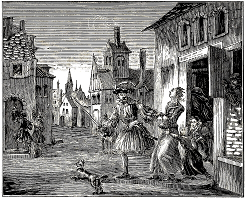
CATHARINA MULERIN APPREHENDED.
The north wind of persecution rose now more and more in the Knonow district, which also appeared in the case of an old sister, named Catharina Mulerin; who having also been apprehended and taken to Zurich, had to suffer much there in prison, for the faith and testimony of Jesus Christ; but was afterwards (as the preceding ones), beyond all hope and expectation, released from bonds. Tract, Jer. Mang., fol. 8, B.
1053
The persecution did not cease with the foregoing; but they continued and laid their hands also upon four pious sisters, Barbara Meylin, Ottila Mulerin, Barbara Kolbin, and Elizabeth Meylin, who also had to drink out of the bitter cup of the dreadful Zurich prison; however, the Lord preserved them, so that they, unharmed in their faith, unknown to the authorities, unexpectedly also escaped from imprisonment and bonds. See the last mentioned tract, fol. 10, A.
Note.—We made mention, for the year 1635, of one Hans Muller, who, being imprisoned in the council house at Zurich, with two of his fellow brethren, was released for a month upon condition, and then again imprisoned, and released the second time upon the same condition.
He was subsequently (about the year 1639, as the circumstances show) again cruelly persecuted; insomuch that even his neighbors and their houses were not spared, through which the thief-catchers ran like ravening wolves on the track of a sheep; but when they came into his house, from which he had already escaped, they, with pincers and other instruments, broke open chests and drawers, in the hope that they might there find the property of the church or the poor.
These thief-catchers, that night, threatened his little children, with bare swords, that they would kill them, if they did not show them where their father was.
When they could not get him, they took along his wife, whom they bound and imprisoned in Othenbach. Thereupon, it was proclaimed in church, that no one was allowed to lodge, or give food or drink to Hans Muller from the Groeningen Bailiwick, on pain of severe penalty and the disfavor of the authorities.
Now when his life was made exceedingly hard to him, the Bailiff in the convent of Ruti, in the name of the burgomasters and councilors of Zurich, sent to him a letter of this import, namely: That he should have a safe conduct for three weeks, to go and remain wherever he would; also that he might freely come to him in the convent, and, after they should have finished their conference, leave free and unmolested.
Thereupon he voluntarily, with sure confidence in the aforesaid promise, went into the convent; but when he could not consent to the Bailiff’s demand about his having to go to church, he was confined there, guarded day and night, and then taken to Zurich, imprisoned for a time in the council house, and then in Othenbach (that being the place where also his wife was imprisoned), where he was stripped, and kept a prisoner about sixty weeks; in which time he was in irons sixteen weeks, till he with the other prisoners finally, one Friday before Easter, unexpectedly made his escape.
Afterwards he was again hunted with mad fury, even as before, and driven from one place to another, so that he did not dare to live in his house with his wife.
In the meantime it happened, that his wife, having been delivered of twins, and lain in but eleven days, was surprised by ten thief-catchers, who, having surrounded the house by night, entered it with this threat: That if she would not indicate her husband’s hiding place, she should not leave the house for six weeks, or else she would have to go to church herself. But when she would not comply with this, two of the ten remained, and guarded her day and night.
This filled the woman with such terror that, seeing their design, she, on a certain very cold night, broke away with her two infants, and went a long unbeaten way, over hill and dale, and thus escaped the enemies’ hands, forsaking all that she had, which the authorities rented to strangers, realizing thereby a thousand guilders annually. See Jer. Mang. Tract, fol. 13, A.
In the meantime they treated some far more severely and cruelly than the preceding ones; for they ceased not with mere imprisonment, but the people were suffered to die by sheer want, poverty and misery.
Among those that suffered death, there is numbered Elizabeth Hilzin, a godfearing woman and sister of the church, who having been apprehended, bound, and imprisoned in Othenbach, was there treated so harshly, that she, from that time on, had but few well moments.
Nevertheless no mercy or compassion was shown her, until she, in consequence of all the hardships suffered, wasted in body, and, having surrendered her spirit, which she had received from God, back to him, died. However, the second death shall not hurt her, according to the promise of the Lord: “He that overcometh shall not be hurt of the second death.” Rev. 2:11. See above.
Note.—The authorities extorted a fine of five hundred guilders from the surviving husband of Elizabeth Hilzin.
Further observations.—About this time, 1639, there was also apprehended a young man from Horgerberg, named Hans Aster. He was also taken to Zurich into Othenbach, fed on bread and water for a time, stripped in his bonds, etc., but subsequently helped out, through the assistance of some of his fellow believers.
When this occurred, he was so miserably crippled through the severe imprisonment, that he had to be carried a long distance in the night.
In the meantime, also his wife with her infant child was apprehended, and confined in Othenbach for a time, but subsequently, through divine providence, escaped the enemies’ hands.
The authorities expelled the children into poverty, and sold their house and homestead (realizing from it about four thousand guilders), without restoring any thing.
1054
The parents had therefore to work hard for a living, having lost every thing; but in this they trusted in God’s promises. Tract, Jer. and Meyli.
Like a sweeping tempest which strikes everything, and carries away whatever is loose, so it also went at this time in the matter of persecution. All that were called Anabaptists were taken along, wherever they could get hold of them. The district of Uticken-wage had to suffer much in consequence of this. Among those that lived here, they also apprehended a pious brother, named Hans van Uticken,353 surnamed Muller, who, in the year 1639, was incarcerated in the convent prison at Zurich.
There they fed him on water and bread, stripped him in his bonds, and treated him most unmercifully, until he, having continued therein two years, became very sick, and as sick as he was, was helped out of prison, through the assistance of some of his fellow-believers, who, as it seems, feared his untimely death.
But when he was brought to his wife and children, and attained to rest, he died; however, with a joyful hope and glad soul, because the course of his pilgrimage (since he was not weakened in his faith and conscience) was now finished.
Thereupon his wife, because she had lodged her husband, and the children, because they had shown mercy to their father, had to pay to the authorities, a fine of forty pounds. Tracts, Jer. Mang., fol. 6, A., and M. Meyli, fol. 7, B., num. 13.
Note.—In the year 1639, the thief-catchers of the city of Zurich, led by one of the ministers of the church there, who went before them with a light (a lantern, torch or candle) like maniacs and madmen, violently entered into the house of a pious brother, named Rudolf Hagi, whom they forthwith took prisoner and conducted to Othenbach, a damp and unwholesome prison of the city of Zurich.
Here he was stripped in his bonds, and kept confined for about eighty-three weeks; during which time he, with other of his fellow-believers, was fettered and chained for sixteen weeks.
In the meantime they searched hard for his wife, but for the first captured only her oldest child, which they threatened with iron bonds and handcuffs, if it would not show where its mother was. Afterwards they also found the mother, whom they imprisoned in Othenbach. They, however, when there was no deliverance at hand, subsequently, by a certain means, made their escape, together with their brethren and sisters that were also imprisoned, without apostatizing from the faith. Tract Jeremiah Mang., fol. 6, A., compared with M. Meyli, on the name Rudolf.
Burckhardt Aman was a godfearing brother, who lived on the lake of Zurich. He was from there taken to Zurich, and imprisoned in Othenbach. But when his imprisonment had lasted about a year and a half, he, through a certain accident, unexpectedly was released, unknown to the authorities, keeping the faith in a good conscience.
But as in his bonds he had been maltreated very unmercifully and miserably, through many hardships and afflictions that he had suffered, not the least true Christian love or assistance having been shown him, it was impossible for him to live long; and he fell into a lingering sickness, and ultimately died, and was thus numbered among the dead in Christ, who have suffered and fought for his name’s sake. Jer. Mang. Tract for the year 1645, fol. 20, A.
Note.—About this time also two sisters, honorable women, were apprehended on the Lake of Zurich; who, after they had endured the trial of the faith, were released and delivered from their bonds. See Tract, Script., A. D. 1645.
The misery of the beloved friends and children of God continued; insomuch that in the year 1639 they laid their hands also on a pious hero and soldier of Christ, named Jacob Egli, from the Groeningen Bailiwick. He was also taken to Zurich, and there imprisoned in the convent dungeon Othenbach.
Herein he persevered upwards of seventy weeks,354 but was finally no longer able to endure, according to the flesh, the severity of the place and the bad treatment, so that he at last, when his strength failed more and more, and his infirmities increased, with a cheerful heart, commended his soul into the hands of God, and through death departed this life.
Thus he finished the course of his pilgrimage, and entered into the saints’ rest, to triumph hereafter, where there shall be no more death, neither sorrow, nor crying, nor pain; where all things shall be made new and turned into joy, according to the Lord’s promise, Rev. 21:4. See Tract Jer. Mang., fol. 18, B.; also, M. Meyli. Tract, fol. 7, A., num. 10.
Note.—A. D. 1639 there was also apprehended the brother George Weber, an old man, from the county of Kiberg. The same was also taken to Zurich, into the convent Othenbach, and there fed on bread and water.
Finally, through the hardships and long duration of his imprisonment, he became greatly impaired in his body, and fell into a severe sickness, after he had been confined there seventy weeks.
Afterwards, through some of his fellow-prisoners, who opened the prison, he was released, but never again recovered his property.
As regards the homestead of this George Weber, as also that of Jacob Egly, the owners of the same must each annually pay therefor to the authorities five hundred guilders. Jer. Mang. Tract, fol. 19, A.
1055
The fire which the persecutors had kindled continued to burn, and their mad fury did not cease, until they had also apprehended a zealous and godfearing minister of the church, named Ulli Schedme, surnamed Schneider, by descent from Hirtzenstal, in the seignioralty Wadischwyl.
In his imprisonment all manner of vexation and sorrow was inflicted upon him, in order to induce him to conform to the common mode of worship in the churches, and to turn him from his own with whom he had hitherto associated. But as he could not consent to this, and time passed on, he, because of the bad fare and other hardships suffered, continually grew weaker and weaker, till his soul left his body; and he thus, because of his faithfulness, became, through natural death, an heir of the eternal and blissful life; the full possession of which the Lord, at the last day, shall grant to, and make partakers of, all those that have here faithfully and steadfastly served him. Tract, M. Meyli, fol. 6, B., num. 4.
“Henceforth there is laid up for me a crown of righteousness, which the Lord, the righteous judge, shall give me at that day: and not to me only, but unto all them also that love his appearing.” 2 Timothy 4:8.
In the year 1639, there was also brought prisoner to Zurich, Jacob Rusterhel, an old brother of the church at Horgerberg.
He was imprisoned in Othenbach, and they dealt very unmercifully, rigorously and cruelly with him; insomuch that he weakened, and consented to those that kept him in prison, to go to church; wherefore he was released.
But when he came to himself and considered what he had done, and what great offense should arise from it, he repented and very bitterly bewailed his fall, and again prepared himself very valiantly for the coming conflict.
Thereupon he suddenly became weak and sick according to the body, though full of divine power according to the soul, and kept quietly hid in his house.
However this could not remain concealed any longer; hence, being known, he was betrayed, again apprehended, and, as sick as he was, taken to Zurich, and, having been shackled with a chain, confined in the hospital there.
But as he could not endure this, and bodily infirmities came upon him more and more, he there departed this life, in misery, though with a joyful hope, waiting in blessed rest for the day of resurrection from the dead, which shall crown and comfort him and all true lovers of God, for all reproach and affliction suffered, with eternal honor and joy. Jer. Mang., Tract of the year 1645, fol. 13; also, M. Meyli, Tract, fol. 6, B., num. 14.
Note.—We have extracted this from the writing of the Swiss friends, of A. D. 1658, and it must be distinguished from that which is contained in the writing of A. D. 1645, concerning brother Jacob Rusterholtz, who was imprisoned almost two years, and then with wife and child expelled from the country, leaving behind his property, from the sale of which the authorities realized 1700 guilders, without restoring anything of it. See Tract, Jer. Mangold concerning the name Jacob Rusterhel.
But if it is to be understood, that both accounts refer to one and the same person, so that the surnames Rusterhel and Rusterholtz are only to be distinguished in the sound or spelling, and not in signification, it must follow, that said person was imprisoned only a few years ago, and then, when they could accomplish nothing with him, expelled from the country, and his goods seized and sold; but that he was finally again apprehended, and, when he, as before, remained steadfast, fastened to a chain in the hospital, until he died, having commended his soul to God. Compare both tracts, in the places which we have indicated.
On the 23d of September of the same year, 1639, there was brought bound to Zurich a godfearing brother, aged in years, named Stephen Zehender, a member of the church at Knonow, but by descent from Byrmensdorf. He was there imprisoned for sixteen weeks, in iron bonds, in the convent prison, a very damp and unwholesome place, called Othenbach, stripped in his bonds, fed on bread and water, and kept very hard in every respect, until he could stand it no longer, and, impaired in body, was befallen with severe misery according to the flesh, and ultimately with death, after he had with a patient and steadfast mind commended his soul unto God. See Jer. Mang., Tract, fol. 7, B., compared with the account of M. Meyli, fol. 6, B., num. 6.
Note.—About this time an old sister named Catharina Grobin, lived concealed (on account of the persecution) with her daughter, in the Knonow Bailiwick; but the preacher of the church at Risterschwyl, knowing this, came and wanted to apprehend her, notwithstanding he was alone; the daughter, however, out of filial love, wanted to save her, but he (O what cruelty from a preacher!) gave her such a thrust, that the pains of travail came upon her, and she was delivered of a dead child. In the meantime the mother escaped the hands of this ungodly man. Tract, M. Meyli, compared with that of Mangold, about the year 1639.
On the same day that Stephen Zehender was apprehended at Knonow, namely, the 23d of September, of the year 1639, they also seized, in the 1056 Seignoralty Wadischwyl, Ulrich Schneider, who was likewise (for his true faith, and because he would not go to the common church with his adversaries) bound and brought into the dungeon Othenbach.355
But when he had persevered here for a long time, lain in irons, and suffered exceeding much temptation, adversity and conflict (inflicted upon him, to make him apostatize), and, moreover, been stripped in his bonds, his bodily strength left him, and having committed his spirit unto God; he died in prison, thereby triumphing valiantly and courageously in the conflict set before him, without having weakened in his faith.
After the death of their father, his two sons were also apprehended, and imprisoned in the same place where their father had died; but the Lord granted them deliverance, so that they, when it was least expected, with a good conscience, through a certain means, unknown to the authorities, obtained their freedom.
In the meantime the authorities broke up this whole family, drove the remaining children among strangers, and sold the house and homestead, realizing therefrom 7000 guilders, which they kept for themselves, but the cast out and forsaken ones joyfully bore the spoiling of their goods.356 Tract, Jer. Mang., fol. 11.
Two days and one month after the apprehension of the last mentioned witness of Jesus Christ, namely, on the 25th of October, 1639, there also died in the dungeon Othenbach, very miserably, however with a steadfast and joyful mind, Henry Gutwol, of Lehnmer, from the Knonow Bailiwick, after he had suffered much want, poverty and misery there; which painful and prolonged misery, upon which death ensued, shall hereafter, because of his steadfastness in the accepted truth, be returned to him in an eternal, joyful and triumphant life, according to the Lord’s promise: “Be thou faithful unto death and I will give thee a crown of life,” Revelation 2:10. Compare both tracts, that of Mangold as well as that of Meyli; the one of A. D. 1645, the other of A. D. 1658, in the Swiss language, on the name Henry Gutwol.
Among those who suffered in the Swiss persecution, there was none of the least Hans Jacob Hess, a chosen and confirmed minister of the Christian church.
He was apprehended for the third time in the year 1639; for from the two preceding imprisonments, the first of which had occurred already, in the year 1637, the Lord, beyond all expectation, had remarkably delivered him, through the aid of those that were imprisoned with him; as also out of this third imprisonment. The first lasted nineteen days, the second, eight weeks, the third, eighty-three weeks, or more than a year and a half.
But in the meantime his life was made very bitter and vexatious: for he was stripped, and, together with some of his fellow-believers, put in iron bonds, sixteen weeks, which he nevertheless patiently bore with a steadfast mind, until the time of his deliverance.
While this was taking place, namely in the same year, also his wife was apprehended, who was first imprisoned in the council house, and then in Othenbach, where, through bad treatment and unfit food and drink, for sixty-three weeks, she was so impaired in her constitution, and weakened, that she was seized with consumption, and after suffering much misery, died in prison.
This then was the end of this pious heroine of Jesus, who, to receive the eternal, blessed life, because of the uprightness of her faith, chose to die a lingering death rather than enjoy the temporal rest and pleasure of this life; wherefore the gracious God shall hereafter crown and reward her, with all those that have valiantly suffered and fought for his name’s sake, with the unfading crown of honor. (1 Peter 1:4.) Tract, Jer. Mang., fol. 16, A. B., and fol. 17, A., etc.
Note.—The property of Jacob Hess was seized by the authorities, who realized from the sale of it 4000 guilders, without restoring anything of it to those who remained. O great injustice! How will they be able to account for this before the righteous judgment seat of Jesus Christ?
Now when it happened that in consequence of the foregoing evil treatment instituted against the Swiss Anabaptists, those who had commenced this, drew down upon themselves, even from the common world, much opposition, criticism, and reproach, the rulers of the country, and especially of the city of Zurich, as having been the principal ones in said ungodly work of persecution, caused, A. D. 1639, a manifesto, apology, or defense (so called) to be published, in excuse and vindication as it were, of what they had already done and brought about against said Anabaptists.
But as this in many respects, was not according to the truth, but, from partisanship, contrary to the truth, many of the Swiss brethren who were still out of bonds, yet in the same persecution, defended themselves with regard to it, with all proper courtesy in a Christian and discreet manner. We could produce here their answer entire and with all the circumstances, 1057 since we have received it correct; but as this would take up too much room, and unduly increase this work, we shall note only some of the most important portions from it.
In regard to the first accusation laid to their charge in the aforesaid manifesto, by the lords of Zurich, namely, that they had separated themselves from the obedience which they owed to the Christian church; they make this reply:
“Herein, right in the beginning; great wrong and injustice is done us; for we desire in no wise to separate ourselves from the Christian church, but seek to adhere to the same and the pure word of God, yea, to sacrifice our bodies, property and blood therefor; but the reason that we cannot unite with their (namely, the so called Reformed) church, is, that her doctrine in many respects is not like the ancient, pure, apostolical doctrine, nor does it agree with the words and commandments of Christ; and that we, through God’s gracious illumination, have before us a better way, namely, the true apostolical foundation, to which, by the help of God, we will also adhere.
“But that nevertheless not we, but the principal learned men, and some of their own number, are those who, having in the beginning of the change held the right views with us, touching baptism, the Supper, excommunication, and resistance or revenge, afterwards again turned away from it shall clearly appear, when we shall rightly examine their first teachings and writings of a hundred years or more ago.”
Hereupon it is stated in the same answer, what teachers in the beginning of the Reformation taught the aforementioned articles aright, from which they subsequently, and especially their descendants, again departed; which appears from these words:
Firstly, as regards baptism, this is declared by the conference of Zwingli and Balthazar Hubmor, held A. D. 1523, at Zurich, in the Graef; where Zwingli publicly confessed: “That infants are not to be baptized before they grow up and attain to a reasonable age.” He also promised that he should make mention of it in his Book of Articles; as he also did, in the eighteenth article respecting Confirmation, where he says:
“That in former times it was not common to baptize children; but that they were publicly instructed together with the rest; who afterwards, when they had attained to their understanding, were called catechumeni, that is, instructed ones in the word,357 whereupon, when the faith was thus firmly implanted in the heart, and they had confessed it with the mouth, they were “baptized.”
This practice of the doctrine, he said, he wished to see readopted in this our time.
Thus also confessed his colleague, Oecolampadius in a letter to the aforementioned Hubmor, saying: “We have up to the present day not met with any passages in the holy Scriptures, that cause us to confess the baptism of infants, as far as we in our littleness can see.”
In like manner, on the sixth chapter of the Epistle to the Romans, treating on the word, Anignoratis, he writes: “That every Christian shall first confess Christ, and then be baptized with the external baptism (of water).”
So also writes Sebastian Hofmeyster, preacher at Schaffhausen, to said Hubmor: “We have publicly confessed before the council at Schaffhausen: That if our brother Zwingli in any wise insists (contrary to his previous opinion), that children are to be baptized, he herein greatly misses the mark, and does not according to the truth of the holy gospel.”
Continuing, he writes: “Truly, I did not allow myself to be compelled that I should baptize my child, who is named Zacharias, hence you also act in a Christian manner, that you bring to light again the true baptism of Christ: which has long been neglected or kept down. We will also undertake to do this.”
Christopher Hogendorf, on the third chapter of the first Epistle of Peter, writes: “You have heard, that faith is put before baptism; hence it is not mere baptism, but also the faith of baptism, which saves us.”
In like manner, Cellarius writes to the aforementioned Hubmor, as follows: “Since you desire that I shall declare to you my judgment concerning baptism and the Lord’s Supper, I will heartily and briefly comply with your request:
“In the first place it is an abomination in the eyes of God, that little children are baptized; which baptism is declared neither in the holy Scriptures, nor in the examples of the holy apostles; and there testify against it also God’s judgments, which manifest themselves in the division of the created things; for in the beginning the earth was without form and void.”
The preachers at Strasburg: Wolfgang Capito, Cestor Hedio, Matthew Zell, Symphonas Polio, Theobald Niger, John Latonius, Anthony Firn, Martin Hatk, and Martin Bucer, in their book, entitled, Ground and Reasons, fol. 1, write: “That in the beginning of the church no one was baptized nor received into the holy Christian church, except those who had entirely submitted to the word of Christ.”
Their ground and reason for such belief, they show from the holy Scriptures, namely, that they confess, that the beginning (before) of our Christian life is sin, and that therefore John the Baptist, Christ, and the apostles always began by saying: “Repent, etc.” Again: “In the congregation of God confession of sins has ever and always been first, which, with the ancients, preceded baptism, for usually adults, and not children, were baptized.”
Fol. 2 and 3, as also further on, they write: “That without the baptism of the Holy Spirit the water and (its) baptism are but a hocus pocus.”
Concerning the article of War or Retaliation. In like manner, some of the foremost Lutherans (who in the beginning were one with the Calvanistic Reformed), and of the Zwinglians, believed with us: That it does not behoove a Christian to war, or offer resistance. Among them we will first adduce Andrew Carlstadt, who, in a little book treating on 1058 whether men should forgive sufferings and offenses, printed at Zurich, A. D. 1524, writes as follows concerning resistance:
“We shall not be misled by the objection made: War is a punishment of God; hence there must certainly always be one who wages war against another.” Again: “They warred in the Old Testament.”
In reply to the first he writes: “Hear on the other hand, what Christ says (Matt. 18:7): ‘It must needs be that offenses come; but woe to that man by whom the offense cometh!’ Hence some merit the disfavor of God, so that he punishes and torments them with war, but woe to him that wages war against them; for he (namely, God) punishes the evil with the evil.”
Reply to the second: “The children of Israel waged war, either against sinful nations that would not allow them to go into the promised land, or against those, who, when they were in it, did not leave them in peace, and all this was a figure of the spiritual war, which we must now wage in Christ, as regenerated and new men, against all vice and unbelief.”
Immediately after that he proceeds and writes: “They also bring against us this objection: That we must compel by force of arms those that will not allow that which is right.”
Answer: If we are to speak in a right and Christian manner of the matter, war in no wise becomes us; we ought, according to the teachings of Christ, to pray for those who say all manner of evil against us, and count us fools; yea, if they smite us on one cheek, to offer them the other also; then shall we be children of the Most High.” Thus far, Carlstadt.
From Carlstadt the writer goes on to Luther, saying: “In a little book, printed at Wittenberg, in the year, 1520, Luther states why he burnt the pope’s books. The twenty-second article thereof reads thus: ‘Because he teaches, that it is right for a Christian to defend himself with violence against violence; contrary to the words of Christ (Matthew 5:40): “If any man take away thy coat, let him have thy cloak also.”’
In another book, also printed at Wittenberg, in the year 1522, there are found among other articles (which one Sorbona had extracted as heretical from Luther’s books) also these: “That he (namely, Luther) had taught concerning the words of Christ (Matt. 5:39): ‘Whosoever shall smite thee on thy right cheek, turn to him the other also;’ and again, (Rom. 12:19): Dearly beloved, avenge not yourselves,’ that these words are not advices” that is, which one may, or may not do “as many theologians erroneously teach, but that they are commandments” that is, things which must be observed.
Again: “Christians are forbidden to sue for their rights at the law.” Again: “Since a Christian may not place his affections upon temporal things, he may also not swear an oath because of them.”
In short: “We find that Luther for a considerable time was with mouth and hand opposed to resistance, till he was finally seduced to another belief, by the Jesuits even as Sleydanus, lib. 8, fol. 561, testifies.” See the oldest edition.
A few pages further on the writer comes to speak of Pomeranus, Brentius, and divers others, who, about the years 1520, 1530, 1540, and subsequently, undertook the work of the Reformation from Popery, and also became effectual instruments in that direction; who nevertheless at that time taught not only against retaliation upon enemies, but also, besides infant baptism, the swearing of oaths, and other articles which are not founded in the holy gospel of Jesus Christ; and, on the other hand, taught and defended such things as are founded therein, and are still at the present day taught by the Anabaptists; though some of the aforementioned reformers themselves, and especially their descendants, for the most part, again departed therefrom.
These and similar matters were, in said reply of the persecuted Anabaptists in Switzerland, given for examination to the lords of Zurich, and to those who had drawn up the aforementioned manifesto in excuse of the persecution raised; as clearly showing that not the Anabaptists, but they themselves, had departed from the principles of the Reformation; that consequently not the Anabaptists, who had adhered to their principles, but the apostate reformed themselves, were to blame in this matter. Hence, that the authors of said manifesto had done wrong in charging the aforesaid Anabaptists with having separated themselves from the obedience which they owed to the true Christian Church, only because they would not go to church with them, who are called Reformed, nor receive their religion contrary to their souls and consciences.
Besides this point of disobedience toward the church, the Swiss brethren were also charged in the aforesaid manifesto, that they were also disobedient to the political authorities, etc. But hereupon they, in said answer, roundly declared: That this was unjustly said of them, yea, that they were willing and entirely ready to obey their authorities in all just matters, to pray for them, to pay them due tribute, honor and fear, and, though they should suffer wrong from them, in no wise to avenge it: but willingly and patiently to bear it for the Lord’s sake.
These were about the principal points that were mentioned in the manifesto, and refuted by the persecuted brethren; the other matters are of small importance, and hence not necessary to be adduced here.
But they nevertheless proceeded with the persecution, and granted no mitigation, as will be seen from the following accounts:
The progress of the years brought no cessation of the persecution, nor could aught of what was adduced by way of excuse avail anything. This was clearly evident, for the year 1640 had scarcely come when the Wadischwyl district began again to resound with persecution, insomuch that the servants of the authorities there assailed, with dreadful raging and storming, like howling wolves and bears, the house of an old and pious minister of the church 1059 named Werner Phister, beat doors and windows and all that was attached to it in pieces, and apprehended him and his wife, as also his son’s wife, and brought them to Zurich, where they were imprisoned in the place Othenbach.
In the meantime the old man’s wife by a certain accident escaped; but the pious old minister himself, as also his son’s wife, when they would in no wise apostatize from their faith, nor go to the common church, had to forfeit their lives, insomuch that they were suffered miserably to die through want, poverty and hardships. But hereafter they shall no more hunger or thirst, nor be assailed by suffering or death; when the Lord, according to his promise shall reward and crown them with the eternal and blessed life. Tract, Jer. Mang., fol. 14. B, compared with Tract, M. Meyli., dated 1651, fol. 6, number 2.
Note.—We previously, for the year 1637, made mention, in the margin, of a brother named Peter Brubach, who being then imprisoned with two other of our fellow believers, finally was released. The same was now, A. D. 1640, cruelly persecuted; insomuch that on the 6th of May his house was demolished, his male and female servants sent away, the children driven out of the house, his house, homestead, woodland and fields, movables and immovables, yea, everything taken; a part of which was put into Othenbach, and the other part sold, from which 9000 rix-dollars was realized, which the authorities seized. Not long afterwards the three little sons of this man were imprisoned in Othenbach, where they miserably wasted, etc. Tract, Jer. Mang.; edit. 1645.
A very old man named Gallus Schneider, from the Seignioralty Wadischwyl, was also apprehended in the year 1640, brought to Zurich, and there imprisoned in the convent dungeon (Othenbach).
He was kept in irons sixteen weeks, and very harshly treated, until he finally, when his faith had been sufficiently tried, and been found immovable, died in his bonds, having committed his soul unto God, from whom he had received it. Compare Jer. Mang. Tract, fol. 15, B., with Tract, M. Meyli, fol. 7, A., num. 7.
Note.—About this time, an old sister from Horgerberg, named Verena Albi, was also imprisoned, but subsequently, through a certain means, delivered out of bonds, but must still keep herself concealed. Tract, Mang., and Meyli.
Even as youth on account of the bloom of their life was not spared, so also not the least compassion was had upon old age and declining years; yea, not even upon such as were very feeble and infirm according to the body.
Among these was Rudolph Bachman, from the Wadischwyl district, who was apprehended in the year 1640, and as he on account of his great age, weakness and infirmity, according to the flesh, was not able to walk, he was put on a sled, and thus conveyed from his house to the prison, which was a great distance off.
Afterwards he was placed in chains for a time, in the nearest hospital, and, because of the steadfastness of his faith, not loosed therefrom till he died.
But for this he shall hereafter, being freed from the eternal bonds of darkness, be admitted into the liberty of God’s saved children; on the other hand: “He that leadeth into captivity shall go into captivity.” Rev. 13:10.
Then it shall be seen, what difference there will be between God’s true servants, and those that have afflicted them; for every one shall receive the things done in his body, according to that he hath done, whether it be good or bad. 2 Cor. 5:10. Compared with Tract, M. Meyli, dated 1658, fol. 6, B., num. 3, etc.
Note.—Now, in the year 1640, there was also apprehended Henry Schnebbi, from the Seignioralty Knonow, a God-fearing brother, who was cast into prison with a number of criminals at Zurich, at whose hands he met with much ill-treatment; however, he was finally released. Tract, Jer. M., etc.
In the year 1641, Hans Rudolf Bauman, a very God-fearing man, and a minister of the Church of Jesus Christ at the Horgerberg, was also taken to Zurich, and there confined in the convent prison, where he was very closely kept for over sixty weeks, and for a considerable time fed on bread and water, and put into iron bonds; in consequence of which he fell into a severe sickness.
In the meantime, on a certain Good Friday, through the aid of some of his imprisoned fellow brethren he escaped, but as he on account of his sickness, was not able either to walk or to stand, he was taken up and carried for a considerable distance, so that he escaped the persecutors’ hands.
Thereupon his house and homestead were sold, and wife and children driven therefrom. From the sale was realized 3000 guilders, which the authorities seized and kept for themselves. But the Lord shall render unto every man according to his righteousness, and according to his faithfulness. 1 Samuel 26:23. Compared with Tract, Jer. Mang., fol. 12, A., etc.
On the 31st of August of the year 1640, there was apprehended Ulrich Muller, a minister of the word of God, in the county of Kiberg.
He was taken from there to Zurich, where he was confined in the council house, and a few days afterwards imprisoned in the convent dungeon at Othenbach.
Here they treated him most unmercifully for thirty-five weeks, so that he completely wasted away, and, adhering to his faith, fell asleep in his bonds in great steadfastness.
After his death his children had to pay a fine of 100 guilders to the authorities on account of their father, who had, as it was thought, died as a heretic. 1060 Compare both tracts, that of Mangold is well as that of Meyli, on the name Ulrich.
Note.—At this time, A. D. 1640, there was also apprehended Oswald Landis, with his wife and two of his daughters-in-law, all of whom were imprisoned in the convent Othenbach; Jacob Landis, the son of Oswald, as also his entire family, were exiled into misery.
In the meantime the two imprisoned daughters-in-law, who had nursing infants, escaped out of prison by night; in which subsequently also the old man and his wife succeeded, but they had lost all their property, in consequence of which they had to roam about in poverty. Tract, Jer. M.
In the following year, 1641, they again apprehended divers pious Christians residing in the Seignioralty of Knonow; among whom are mentioned by name, Henry Fricken, and also Hans Ring and his wife.
Henry Fricken was confined in the council house of the city of Zurich, and so unmercifully treated, that he weakened in his purpose, and consented also to go to the common church, which was what they desired; whereupon he was released. But when he considered what he had done, and how he had done violence to his conscience, wronged his soul, and given offense to the Church of God, he fell into great distress, confessed his fall, and, with Peter, bitterly wept over his sin, and in order that his persecutors should no more rejoice over his apostasy, he went back to Zurich, into the council house, to be confined in the place whence he had been released, which was done.
In the meantime, by the order of the authorities, his two large farms were rented for 420 guilders and twenty quarters of corn annually; and in money and notes they took from him over 13,000 guilders; after which he was released, but again apprehended, out of which bonds he again escaped, but was afterwards, as before, sorely persecuted, while wandering about in misery and poverty.
Hans Ring also had to go to Zurich into the council house, and was then imprisoned in Othenbach, and closely guarded. He was conducted into the torture chamber, and twice stripped, near the rack, but yet finally, unweakened in his faith, escaped the tyrants’ hands.
The wife of this Hans Ring, four days after having been confined, and being yet very sick, was unexpectedly so assailed and distressed by the magistrates’ beadles, with furious raging and cursing, that she, in the attempt to save herself as it seems, unexpectedly fell into a gutter, where she could not be found or helped out for the time being; but afterwards, having been found, she was there fastened to a chain, and the people in the house commanded with severe threats, not to let her leave the house.
Finally, however, through the aid of some of her friends, she escaped by night, and, being very weak yet, was carried into another region. Compare Tract, Mang. with Tract, Meyli, on the names above referred to.
The laudable magistrates of the city of Amsterdam, in Holland, having an aversion to the proceedings of their fellow-associates at Zurich, on the 20th of February 1642, through the urgent request of the Anabaptists, at Amsterdam, with regard to the distress of the Swiss brethren, sent an humble supplication to the burgomasters and the council of the city of Zurich, in order, if possible, to obtain some mitigation of the persecution commenced against the Anabaptists there.
This supplication having safely and properly arrived and been delivered there, could nevertheless obtain nothing in this direction, save only an unfriendly and irritating reply; which was drawn up by them on the 18th of June, of the same year, and sent to the good magistrates of Amsterdam, and consequently also to the Anabaptists there, accompanied by three of their previously emitted manifestoes of the year 1639, wherein, as we have noticed for said year, nothing but reproach and contumely (though without cause) was heaped upon said persecuted people.
We could here adduce this letter of the Zurich lords, as we have a correct copy of it; but as it contains nothing but unkindness and acrimony, without the least justice or information, and the following work sufficiently declares from what spirit it proceeded, we deem it unnecessary and unworthy, to accord it a place here; without, however, despising said lords, since we are commanded to love even our enemies, and to pray for them that persecute us. Matt. 5:44.
Felix Landis (the son of Hans Landis, who, A. D. 1614, was beheaded at Zurich) was a pious and godfearing brother of the church in Horgerberg. He was apprehended, and imprisoned in Othenbach, in which place he was treated most unmercifully; for he was not given anything to eat for many days, so that even some criminals that were confined near him in another place, took pity on him, and with difficulty, managed to get some food to him, through an opening between them. But when the door-keeper perceived this, he was put into another prison. Finally, however, they gave him some food; but he was so impaired in his body (through shrinking of his bowels, as it seems, on account of having suffered hunger so long), that he could not bear food any more, but prepared himself for death.
1061
Yet in his greatest distress he was carried to church, during the sermon, where he, O dreadful inhumanity! was thrown under a bench; but he soon after gave up the ghost, which he had commended into the hands of God.
His wife Adelheid Egli, who was also imprisoned in Othenbach, was kept there almost four years.
In that time she was treated not only unmercifully, but also shamefully; they threw her into many a stinking corner, stripped her twice in her bonds, and for a time took away her clothes from her every night; however, she afterwards, with a good conscience, escaped from her bonds.
But in the meantime the authorities had broken up their family, put out the children among strangers, and then sold house and furniture, realizing from it 5000 guilders, all of which they kept for themselves.
However the cast out and forsaken ones comforted themselves herein according to the words of the apostle: “Ye took joyfully the spoiling of your goods, knowing in yourselves that ye have in heaven a better and enduring substance.” Hebrews 10:34. Compare Jer. Mang., Tract of the year 1645, fol. 13, A. B., with M. Meyli, Tract, dated 1658, fol. 7, num. 8.
Note.—The time of the imprisonment and death of this martyr, and of the following ones, which we have fixed about the year 1642 and 1643, is not really expressed in the Swiss manuscript, but is inferred from the circumstances.
They also apprehended a young lad, named Rudolf Suhner, who, though young in years, was old in the faith and knowledge of Jesus Christ.
He was kept confined nearly two years in Othenbach, during which time he was forced to hard labor.
In the meantime they made his life so bitter to him, by severe threats and terrible representations, that he, through fear of the impending distress, consented to go to church with those that had imprisoned him, whereupon he was released. But soon after, reflecting on his fall, he experienced great sorrow, sincerely wept over his sins, and again prepared himself for the conflict set before him.
Thereupon he was again apprehended, and confined in the aforementioned place, but kept much harder than before. For, for a time all food was denied him (even as had been done to Felix Landis), so that some criminals, who were confined close to him, filled with compassion on his account, poured to him some warm liquid food, through a crevice in the wall.
Finally, when in consequence of having suffered hunger so long, he was so weakened, that he could not live any longer, he requested once more, that they would, in his great distress, allow him a little warm food, which the jailer made known to the lords. This, however, they jointly refused to grant, in order to cause him, if possible, to apostatize. But finally one of the lords, beholding his misery, gave permission that they should give him some thing to eat again. Which when it was done, he could eat or bear it no more, and thus died famishing in his bonds; for which the Lord shall hereafter, at his heavenly table, reward him with eternal satiation. “Blessed are ye that hunger now: for ye shall be filled.” Luke 6:21. Compare Jer. Mang., Tract, fol. 14., A., with Tract, M. Meyli, fol. 7, num. 8.
The army of God, which at this time prepared itself for the conflict and the sufferings of Jesus Christ, consisted not only of men, who are sometimes judged to be the strongest, but also in women, for God’s power is made strong in weakness, which appeared in the case of three pious heroines of God, namely, Elizabeth Bachmanni, from the Groeningen Bailiwick, the wife of Hans Jaggli, of Bartschwyl; Elssa Bethezei, from the Knonow Bailiwick, the wife of Jacob Isselme; Sarah Wanrij, from the Horgerberg, the wife of Hans Phister, all of whom, imprisoned and bound in the dungeon Othenbach and in the hospital, for the testimony of Jesus Christ, lost their lives through want, hardships, and misery.
All this they endured in the fear of God as well as patiently. They counted their departure from this life as the beginning of the future. And so, their unrest was truly the entrance to the rest of the saints, who shall hereafter, for this brief suffering, which they endured for the name of the Lord, rejoice forever. “For our light affliction, which is but for a moment, worketh for us a far more exceeding and eternal weight of glory.” 2 Cor. 4:17. Compare the above with Tract, Meyli, dated 1658, fol. 8, A., num. 1, 2, 3.
An old sister, named Verena Landis, was surprised in the night in her own house, with dreadful raging and storming; in consequence of which she was so frightened that she fainted, yea, became sick, and hence could not go with the thief-catchers.
When they could not get her away, she had to promise to remain a prisoner in her house, which promise she kept.
But as they treated her very harshly, and provided her with very bad food, certain death ensued a short time afterwards, and she thus departed this life with a joyful hope and cheerful heart; for which the Lord hereafter, because it was done for his name’s sake, shall crown her with the life of bliss, and deliver her from eternal death. “There shall be no more death, neither sorrow, nor crying, neither shall there be any more pain: for the former things are passed away.” Rev. 21:4. Jer. Mang., Tract, fol. 15, B., compared with Tract, M. Meyli, fol. 8, A.
1062
This woman was very near her confinement, when she was driven hither and thither through the persecution.
After she was delivered and had lain in three days, she was betrayed and apprehended.
She was forthwith, in the bitter cold of winter, taken to prison, a distance of four hours’ walk; in which she, on account of the intolerable cold, her health became irrevocably ruined, so that she, though she was released from prison previous to her death, she died soon after, and is now resting with her soul under the altar of God. Compare Jer. Mang., Tract of the year 1645, fol. 16, A., with M. Meyli, Tract, fol. 8, after the three women first mentioned, num. 1.
The persecutors did not rest, but continued, so that having hastily entered into the Knonow Bailiwick, they fell upon another sister, named Barbly Ruff, who was likewise enceinte; in consequence of which this good woman was so exceedingly frightened, it happened so unexpectedly, that the pains of travail came upon her, and she was therefore not able to accompany her captors.
Therefore she was fastened to a chain in the house of her brother-in-law, and the family or servants there enjoined to guard her well.
But when she had been delivered of her child, and had gained a little strength, although not yet quite recovered from all the hardships she had suffered, she, when it was not expected, escaped into another district, but since her life had been greatly weakened through the persecution she had suffered she died soon after; which she bore willingly and patiently, with a valiant and steadfast mind, to the praise of the Lord, entering into the saints’ rest, and waiting for the day that shall hereafter comfort her and all the pious. M. Meyli Tract, dated 1658, fol. 8, B., compared with Jer. Mang., Tract of the year 1645, on the name Barbly, etc.
Note.—About this time, 1643, there were also apprehended for their faith, two sisters, namely, Martha Lindne and Annill Blau, very well known and noted women. Martha was imprisoned in Othenbach, and threatened with the executioner, who stood beside her, if she should not reveal the poor fund, which was intrusted to her husband; which when she had pointed out, they took the whole of it and kept it, it amounting to about 1,000 dollars. Annill being enceinte, was fastened to a chain in the hospital till she was delivered. But, as many interceded for her, and especially through the intercession of the chief curate, Printiger, she was released, and went to the Lower Palatinate, where she and her husband, named Moneth Meylich, who, on account of the steadfastness of his faith, had also endured much persecution, tribulation and imprisonment, settled down, and (nothing to the contrary being known) they still live, enjoying prosperity through the blessing of God. Compare tracts of M. Meyli and Jer. Mang., on the names above referred to.
It continued to be a common custom to let people die in prison. This appeared also in the case of a godfearing brother, named Henry Boller,358 from the Seignioralty Wadischwyl, a man of very great age, and very infirm according to the body.
He was apprehended, and taken to the aforementioned prison Othenbach at Zurich, and there put in bonds.
But as they treated him most unmercifully and without the least compassion, his many years and natural infirmity were not able to bear up under it; hence, having commended his spirit into the hands of God, he died there in prison: but he shall be rewarded for this in the day of resurrection, when there will be fulfilled what the prophet says: “Thy dead men (O God!) shall live, together with my dead body shall they arise. Awake and sing, ye that dwell in dust: for thy dew is as the dew of herbs.” Is. 26:19. Compare Tract, Jer. Mang., fol. 16, A., with the account of M. Meyli, fol. 6, B., though, through a mistake in copying, instead of Henry, it reads Hans.
Note.—On the 11th of June of the year 1644 there was apprehended an old brother from the Horgerberg, named Conrad Stricke, who, though he had been apprehended outside of the Zurich jurisdiction, was nevertheless imprisoned at Zurich, in the place Othenbach, and put in chains every night.
So was also his wife apprehended, and imprisoned in the same place; however, she, through a certain means, keeping her faith, escaped again; but the aforementioned Conrad, her husband, was not so successful, so that he remained in severe imprisonment until the close of the year 1645, after which time we have learned nothing of him or of his deliverance. See Jer. Mang. Tract, edit. 1645, on the name Conrad.
Now when some brethren and sisters in the Swiss dominions had died in prison, of misery, want, hunger and grief, but five still lived in confinement, the remaining ones who were yet out of bonds, when they were threatened, especially by those of Berne, that they should expel them all from the country, and seize their goods, and sell them, had recourse, next to God, with an humble and friendly letter, to their fellow believers in Holland and elsewhere in 1063the Netherlands, requesting that they should everywhere fervently call upon God the Lord in their behalf, for comfort and grace, to the end that they might patiently endure that which might come upon them according to the flesh, for his holy name’s sake.
This letter was written the 22d of July, old style, in the year of our Lord 1645, and was signed by
| Hans Duster, at Baltzen, an elder in the word of the Lord. |
From the Berne jurisdiction. | |
| Ruth Kunstel, at Muchem, a minister in the word of the Lord. |
||
| Ruth Hagen, an elder. | From the Zurich jurisdiction. | |
| Hans Mully, a minister. | ||
| Hans Stuss, a minister. |
What followed therefrom, and how it subsequently went with those who were imprisoned, can be seen in a subsequent account, in a marginal note, in connection with Ully Wagman.
But as to how the poor wanderers that were not imprisoned managed in their misery and poverty, we have received no clear information, but it can be sufficiently inferred from the sad condition of affairs.
The persecution of the sheep of Christ remained at this time not confined in the limits of Zurich and Berne; but as a fire of gunpowder, or a flash of lightning, rapidly passes from one place to another, so it went also here; for also those of Schaffhausen, being one of the Swiss cities designated by the name of Cantons, following the footsteps of their fellow believers, took, even as the former, to banishing the defenseless people who, having hitherto peaceably lived under their protection, were called Anabaptists.
There was however some time set them, in which they might leave with their families; hence the distress of those whom this befell was not so great as that of those of whom we made previous mention, and of whom we shall hereafter speak.
All this was caused by a certain edict published for this purpose, which, if it were necessary, could be adduced here; but for certain reasons we are compelled to be brief, and to abridge our account as much as is possible.
Even as an innocent lamb that has escaped the wolf, at last falls into the claws of the bear, so it went also at this time; inasmuch as some of the defenseless followers of the meek Jesus, daring no longer to trust themselves in the Swiss confines, under the dominion of the Zwinglian Reformed, fled hither and thither, and thus also, as it appears, into Bergsland, the dominions of Guliche, and elsewhere, where the Roman Catholic Prince of Neuburg, William Wolfgang ruled, and where the Anabaptists had lived in peace for many years, under toleration.
But now it came to pass, about the year 1653, that the same Prince, instigated, as it is supposed, by certain envious and malignant Jesuits, also opposed all those that were called Anabaptists within the limits of his dominion; insomuch that he, by a certain public mandate, banished these people, in whatever part of his dominion they were resident, however with these conditions:
1. That all Anabaptists who had become such by apostatizing from the Romish religion, should have to leave without delay.
2. That all other Anabaptists, who had not apostatized from the Romanists, but had proceeded out of themselves, if they owned no real estate, should have to leave within half a year.
3. That all like conditioned Anabaptists, who owned real estate, and were engaged in an established mercantile business, should be granted for their removing, in order first to save their property, two years, etc. All this was accompanied with certain threats.
This was executed by his order, and published without any delay in every place of his dominion where it is customary to make proclamation; however, at Glabbeeck, in the country of Guliche (from where we have received information concerning this matter), it was done on the last of January of the year 1653.
In the meantime divers supplications for mitigation of the aforementioned edict were delivered to the Prince; to which, as it appears, he would in a measure have been inclined: but before this was done, he departed this world; hence that which had already been published remained in force with his successor.
Hence the aforementioned people had to leave those parts, and every one had to look out where he might best go; in which the Lord God showed many of them the grace that they were peaceably and joyfully received in the places whither they went, especially in the country of Cleves, under the Elector of Bradenburg, and in the Netherlands.
“When they persecute you in this city,” says the Lord, “flee ye into another: for verily I say unto you, Ye shall not have gone over the cities of Israel, till the Son of man be come.” Matt. 10:23.
There was some respite or abatement, as it appears, between the years 1644 and 1654, in the Zurich dominions, inasmuch as we have not learned of any one having died in prison, from bad food or maltreatment (though some, of those whom we previously, and also in the margin, made mention 1064 of, had been apprehended a considerable time previously); but when the year 1654 was come, we again learn of the death of a pious Christian there.
They aimed at the leaders of the church, especially at those who ministered in the word of God. Among these they had apprehended, and imprisoned at Zurich, in the convent Othenbach, a very dear and worthy man, who, from a faithful heart, with the gift he had received from God, took heed to the church of Jesus Christ, and cared for it spiritually; his name was Ully Wagman.
But as in his imprisonment he was treated very harshly and rigorously, he felt that his death was near, and having commended his soul unto God, he departed this life. Compare both of the aforementioned tracts.
With him there was imprisoned another brother, who after Ully’s death (since he did not want to apostatize, nor to go to church with his opponents) remained in confinement about two years longer, namely, until the 2d of October, A. D. 1656. But as to how it subsequently ended with him, we have not learned. M. Meyli, Tract edition 1658.
Meanwhile: the former lost his life, while the latter remained in bonds. The Lord will hereafter pronounce a righteous judgment upon those who have done and those who have suffered this: the dead that die in the Lord are blessed: those imprisoned for the testimony of Jesus Christ shall be brought into the liberty of the children of God; and on the other hand, those who imprisoned shall be imprisoned and bound with the woeful bonds of darkness; those who put to death the pious, or were the cause of their death, and have not repented of it, will, it is to be feared, not escape the second and eternal death. O that those who may be guilty in this matter, and are still living, might repent before their death! O that from persecutors they would become true followers of Christ and of his saints! O that they might be saved! This we also wish them out of pure love and from the heart.
Note.—Already prior to the year 1645 they had at divers times brought this and that one of the scattered flock of Christ prisoner to Zurich, and confined them in Othenbach. Among these there were particularly five brethren, namely, Jacob Aussilly, Jacob Gachnauer, Jacob Baumgarter, Hans Huber, and another, named Henry. With these it went, consecutively, as follows:
Jacob Aussilly, from the county Kiberg, was imprisoned in Othenbach already in the year 1644, stripped of his clothes, dressed in a long gray coat, and fastened to a chain.
Jacob Gachnauer, from the Groeningen Bailiwick, was first with his wife driven out of the country, his family broken up, the children expelled and thrust into poverty, house and furniture sold, and the proceeds thereof delivered into the hands of the authorities. But when he subsequently undertook to come back into the country, to seek his scattered children, he met the persecutors on the way, who also imprisoned him in Othenbach, deprived him of his clothes, dressed him in a gray coat, fastened him to a chain, and dealt with him as with the preceding brother.
Jacob Baumgarter, an old man of seventy years, had prior to this time been imprisoned five times on account of his faith, but had escaped every time; but when he was now apprehended, and also brought to Othenbach, there was no hope of deliverance, for they also fastened him to a chain, likewise deprived him of his clothes, and, as had been done to the former, also dressed him in a gray coat. Moreover, he was for a time fed on bread and water, stripped twice, and put in irons twice, and also in fetters and handcuffs, etc.; his house and homestead were sold for 500 guilders, and the money delivered to the authorities.
Hans Huber, from the Horgerberg, was first imprisoned with eleven other brethren, for the faith’s sake, from which bonds he was delivered with his companions; but he was subsequently again apprehended, and imprisoned in a strong place at Othenbach; and as he was fettered and chained, there was no prospect for him to be released without the miraculous help of God.
In the meantime, his wife and her sister, two aged women, were driven into exile, also because of the faith.
The last, named Henry, had divers times also been severely persecuted for the testimony of Jesus Christ, and had also been imprisoned; but he was now confined with the others, in a way which made deliverance almost an impossibility.
They were all chained, and stripped of their usual garments, and dressed, in the aforementioned manner, for a mockery and reproach, in long gray coats.
Thus they persevered until the last of August of the year 1645, being the time when we heard of them for the last time; how it further went with them, we have not been able to ascertain.
In the meantime there cannot be withheld from them the name of pious witnesses of Jesus Christ; since they professed a good profession, and, moreover, suffered all this for his name’s sake. See Tract, Mang., of the year 1645, completed the 15th of September.
When all the aforementioned outrages perpetrated on the Swiss brethren gave rise to much censure on the part of some people, against the authors of said outrages, a certain letter was sent from the city of Zurich to one of the merchants at Amsterdam, in which the cause of the persecuted brethren was represented in the blackest hues, but the cause of their persecutors, in the fairest colors; consisting principally in the assertion, that those who were persecuted there were quite a different class of people, and of another faith and practice, than their fellow-believers in the Netherlands, namely, that they were disobedient, stubborn, etc.
1065
This letter having arrived at Amsterdam, it was found good to send the same (either the original or a copy of it) to the Swiss brethren; to the end that they might obtain from them a correct and true explanation with regard to this matter.
Thereupon they wrote an answer upon the 20th of March, old style, or the 30th of the same month, new style, A. D. 1658, and sent the same, together with the confession of their faith to the ministers of the church of God at Amsterdam.
Therein it is stated, among other things, concerning the slander of disobedience, that even the Zurich lords of both estates had often confessed to them (the prisoners), that they had been to them very dear and obedient subjects, that is in common or civil matters, yea, that in the matter of doing right they serve as lights and examples unto others. Again, that they had nothing to complain of them, save only that they would not go to church with them, etc.
It is then stated in said letter, that they had nevertheless been reduced to extreme desolation and misery, in regard to which these words are found:
“They apprehended the old and sick, women enceinte and in childbed, together with their innocent babes, and treated said persons in various ways, with great harshness and cruelty; yea, they seized all whom they could get into their power, so that at one time there were, in confinement, thirty-seven persons, of whom many men and women, in consequence of the dampness and long confinement, were very grievously injured in their health, and sixteen persons had to die in these prisons,” etc.
This letter was written at Mackenheym, and signed by six elders and ministers from Alsace (whose names on account of the present peril, we will not mention), in the year 1658, in the month and on the day given above.
The little flock of Christ having fled from the confines of Zurich to the regions of Berne, could at this time also there obtain no freedom, inasmuch as those of Berne, following the footsteps of those of Zurich, also undertook to lay hands on them, but especially on the shepherds and leaders of the church, in order that they might by this means, as it seems, cause the more terror among the innocent sheep and lambs of the scattered flock of Christ.
Seven of the teachers and principal elders of the church were apprehended, for whom special prisons were prepared, namely, Uly Bogart, Anthony Hinnelberg, Jegly Schlebach, Hans Zaug, Uly Baumgarter, Christian Christians, and Rhode Peters.
These were for a while kept very hard at work, and very poorly fed with heavy food, spelt and rye, to make good the expenses they caused; besides that much reproach, contumely and vituperation was heaped upon them.
They were first told, that they should be kept confined in this manner until the end of their life; in which they patiently comforted and surrendered themselves to the grace of the Lord. However, when they saw that there was no hope of dissuading these people from their faith and religion, they determined upon another plan (according to what we have been informed from Alsace), namely, that they should have to choose one of these three things: 1. To go with them to church; or, 2. Be perpetually banished to the galleys; or, 3. To have to die by the hands of the executioner.
Certainly a hard and difficult choice; for the first proposition concerns the soul, and the last two the body: by choosing one of these things doubtless either the soul or the body, or even both together, should be imperiled.
If one denies his faith, he does violence to his conscience; or if he adopts another religion, contrary to his heart and mind, he exposes his soul to extreme danger, yea, to the peril of damnation.
If one on the other hand will keep his faith, not bend or violate his conscience, and maintain and defend the religion which he has accepted and thinks necessary to salvation; he brings, in such case, his body in distress, so that he must wander about in misery, or meet with an untimely and violent death.
However, in such a case, it is necessary to consider, that the soul is of infinitely greater importance than the body, which latter at all events must once, when the soul shall continue, be put off. Hence heed ought to be taken to the instruction of Christ, where he says: “And fear not them which kill the body, but are not able to kill the soul: but rather fear him which is able to destroy both soul and body in hell.” Matt. 10:28.
As to what was done in this matter, either on the part of the prisoners, or by those who kept them imprisoned, we have not been able to learn; it is certain, however, that they remained in confinement as late as A. D. 1659, which sufficiently indicates the immovableness of their faith, wherein the Lord, who is gracious, be pleased to strengthen them by his good Spirit, so that they, striving steadfastly, may hereafter, with all the saints, of whom we have mentioned many in this book, receive the blessed crown of unfading glory from the Lord.
In the year 1671 there arose again a severe persecution against the Anabaptists, in said dominion of Berne; which persecution was so rigorous and long-continued, that it seemed that the authorities would not desist, until they should have utterly driven that people out of their dominion, or exterminated 1066 them. In consequence of this it also happened, that about seven hundred persons, small and great, found themselves compelled to leave their abode, forsake their property, and, many of them, also their kindred, together with their earthly fatherland, and betake themselves with the others to the Palatinate, in hope that the Lord should so order it, that they might find a place of abode there. We were eye witnesses, as to how it went when they arrived there, and we inspected place after place whither they had come to find abodes.
However, as we, just before we went thither, had received, from the persecuted people themselves, as well as from others who wrote in their name, and as they told them, several letters, which plainly state the circumstances and condition of this persecution, just as we had heard it from their own lips, we deemed it advisable, to insert the same here, in order that the Christian reader, reading them, may fancy to himself, that he hears the account, not of ear or eye witnesses, but even of the very people that suffered said persecution. The letters read as follows:
As to the request of the friends, concerning the situation of our Swiss brethren in the Berne dominion, the facts are, that they are in a very sad condition, as we have learned from the lips of the fugitives that have arrived here, some of whom are still in my house. They say: That they are daily hunted with constables, and, as many as they can get, taken prisoners to the city of Berne, so that about four weeks ago about forty, men and women, were in confinement there. They have also scourged some, and banished them from the country, one of whom has arrived here. They also scourged a minister in the word, and then conducted him out of the country, into Burgundy, where, when they arrived there, they first branded him, and let him go among the Walloons. However, as he could talk with no one, he had to go about three days with his burnt body, before his wounds were dressed and he obtained some refreshments; being in such a condition, that when they undressed him for the purpose of binding up his wounds, the matter ran down his back, as a brother who helped dress the wound told me himself. This friend arrived in Alsace together with two women and a man, who had also been scourged and banished. Hence they proceed very severely, and, as it seems, will not desist from their purpose, until they shall have utterly banished from their country and exterminated this harmless people.
It also appears that nothing further can be done in favor of these persecuted brethren; for besides that the friends at Amsterdam and elsewhere labored for several years in the matter, so that several favorable letters of recommendation from the Lords States of Holland, as also in particular from the city of Amsterdam, and also of other persons of quality, were sent thither to the magistrates; also, in the year 1660, an Express named Adolf de Vreede, was sent to them; however, he did not effect much for the benefit of our friends there. Hence, I cannot see that the friends at present will be able to effect anything that would tend to the relief of our persecuted brethren there. We will have to await with patience the deliverance which the Lord our God may be pleased to grant them.
The persecution of our friends continues as rigorous as before, so that we are surprised, that they do not make more speed in leaving the country. Now and then one or two come straggling down; but the most of them still stay above Strasburg, in Alsace. Some go into the woods and chop wood; others go to the mountains and work in the vineyards, in the hope, as it appears to me, that by-and-by tranquillity will be restored, and that they might then be able with the greater convenience to return to their forsaken abodes; but I fear, that it will not pass over so soon, and that they will find themselves greatly deceived in their hope.
The magistrates at Berne caused six of the prisoners, among whom was a man with nine children, to be fastened to a chain, and to be sold for the sea, to be used as galley slaves between Milan and Malta; but as to what they propose to do with the other prisoners, cannot really be learned. One of the prisoners, an old man of about eighty years, died in prison. May the Lord comfort them in their sorrow, and strengthen them in their weakness, so that they may patiently bear the cross, and strive faithfully unto the end, for the truth of the gospel, and thus be enabled ultimately to obtain the promised salvation and crown of life. Amen.
Hendrick de Backer, most esteemed friend and beloved brother in Christ. I wish you and yours much grace and peace from God our Heavenly Father, through our Lord Jesus Christ, as a friendly greeting. Amen.
This is in reply to your request touching the condition of our persecuted Swiss brethren. The facts are, that on the 11th ult., it was resolved in the full council at Berne, to send the male prisoners that are young and strong also upon the galleys, even as they have before this done to six of them; but the old and feeble they would either send elsewhere, or keep them in perpetual confinement. Learning of this resolution, and being moved to compassion, a certain gentleman in Berne went to the magistrates, and requested that they would be pleased to postpone sending away the prisoners until he could go to their fellow-believers, residing in Alsace, and see whether they would be responsible for the prisoners, by promising that the latter, after leaving the country, 1067 should return no more without consent. This he obtained, and coming into Alsace to our friends, he presented the matter to them, who, as soon as they had heard it, forthwith accepted the conditions, and promised, in case the authorities at Berne should be pleased to send the prisoners to them, that they would be responsible for them, and aid them in obtaining other abodes. This our friends, as I understand, promised this gentleman (his name was Beatus), not only orally, but also gave it to him in writing. Thereupon he promised them again to do his best with the authorities of Berne, and hoped to obtain so much from them, that they should bring the prisoners as far as Basle, from where the friends might take them away with them. Hence, we long to meet them, daily expecting to hear that they have arrived in Alsace, or that they shall come over here to us.
At this moment there have arrived at my house, four Swiss brethren with their wives and children, who say, that also many others are on the way, since the persecution and search are daily increasing. Concluding herewith, I commend you, after a Christian and brotherly greeting, to the Most High, for your eternal salvation.
Your affectionate friend and brother in Christ.
Jacob Everling.
Concerning our Swiss friends, they are now coming this way in large parties, so that there have already arrived over two hundred persons, and among them are many old, gray headed people, both men and women, that have reached seventy, eighty, yea, ninety years; also a number that are crippled and lame; carrying their bundles on their backs, with children on their arms, some of good cheer, some also with tearful eyes, particularly the old and feeble persons, who now in their great age are compelled to wander about in misery, and go to strange countries, and many of them having nothing on which to sleep by night, so that I and others with me, have now for about two weeks had to make it our regular work, to provide shelter and other necessaries for them.
We are also in daily expectation of still more, so that we hope, that when the people have mostly left the country, the prisoners also will be released. Farewell.
The sequel was, that continually more and more of the expelled fugitives came down from Switzerland into the Palatinate, in all nearly seven hundred persons, old and young, among whom were families of eight, ten, and as many as twelve children, who had scarcely been able to bring with them enough for their traveling expenses, as appears from the following extract:
There has arrived in the region above Heidelberg, a man, being a minister in the North, having twelve, mostly very young children, but having, as I understand, brought with him only four rix-dollars in money, and a very poor horse. Some others have brought with them some money, but many nothing at all, so that after close examination there was found among two hundred and eighty-two persons, one thousand and forty-six rix-dollars. And in the Alzey Bailiwick, among two hundred and fifteen persons, six hundred and eight rix-dollars. In the Darmstein Bailiwick, there were found one hundred and forty-four persons; but as to what their means are, I have not learned; but from appearances I judge them to be the most indigent. In short, we find that their number consists of about eighty full families, then further, widows, single persons, and husbands and wives that had to forsake their companions, because the latter, being attached to the Reformed Religion, could not make up their minds to leave; in all, six hundred and forty-one persons, whose funds amount to no more than the little sum already stated; so that you can easily calculate, that considerable assistance will be necessary. Besides these, we understand, there are about one hundred persons more sojourning in Alsace, whom we also expect by the fore part of the year. Farewell. Thus far the extracts from the letters.
Subsequently the brotherhoods residing in the provinces of the United Netherlands, in March of the same year, 1672, sent some from their midst to the Palatinate, who traveling everywhere to the persecuted brethren, and hearing and seeing them, not only found the above related, to be true, but also, that already some of the last mentioned had come over from Alsace, who, bringing also, like the others, no funds with them, were, together with these, aided and comforted by the common assistance of the wealthy churches or brotherhoods of the United Provinces.
Moreover, they learned from some of the forty prisoners themselves that they had all been released, and, according to the request of the above mentioned gentleman, been brought to Basle, and there turned over to their brethren, with whom they then together removed. But when the chiefest of them were asked why they had not left sooner and sought such places, where they might have lived with more freedom according to their conscience, seeing the authorities had not prevented their leaving, they gave different reasons for it, of which the following ones were not the least:
1. They said that they say that the churches greatly waxed and increased, so that, though under the cross, they nevertheless flourished as a rose among thorns, and that further increase could daily be expected, because many persons manifested themselves, who saw the light shine out of darkness, and began to love the same and seek after it; that the ministers considering this in their heart, found themselves loth to leave the country, fearing that thereby this promising harvest might be lost, and thus many 1068 fall back from their good purpose; and hence, they chose rather to suffer a little than to leave, in order that they might yet rescue some souls from perdition, and bring them to Christ.
2. A second reason was, that they could not so easily take their departure to other countries, because there are among them many divided families, of whom the husband or the wife is in the church, while the companion still attended the public church, in which case, if the latter would not follow their persecuted companions, also to forsake everything and leave the country, it caused great inconvenience and sorrow; that there were even divers ministers not exempt from this difficulty, and there were also two ministers there in the Palatinate, who had wives that were not in the church, and whom they (having secretly been warned by a good friend), also had had to leave by night, and take to flight, without knowing as yet whether their wives should follow them, or whether they, loving their property more than their husbands, should remain there in the land, and forsake their husbands. That such cases created the more sorrow and difficulty, because the authorities granted liberty to such remaining persons, whether women or men, to marry again and seek other companions. These and other reasons had prevented them from departing uncompelled out of their earthly fatherland; but induced them, rather (as they had now done), to wait until they should see that they could no longer remain there and preserve a good conscience.
Truly, it is to be lamented that at this time, when the light of the gospel has shone so long to the protestants, there are nevertheless still found among them those who think it good to persecute such who in every respect are good and pious subjects, and differ from them only in certain points concerning the Christian religion. O, how little there is regarded by such conduct, the teaching of our Savior, to do unto others as we would have them do unto us. And yet such complain of the persecution that is inflicted in France, Hungary, and elsewhere upon their brotherhoods. But what do you think, might they not with justice be replied to in the same manner in which the Apostle Paul replied to the Jews: Rom. 11:21,359 etc.? Certainly, very justly.
We conclude this recital with this earnest prayer, namely, that God the Lord would be pleased so to direct the hearts of those that are in authority, that we may under their reign and dominion lead a peaceable and quiet life, in all godliness and honesty. And if it should be, that the great God might deem it good, to permit the persecution of his believers here or there, that he might then be pleased to abide with them with his fatherly care and comfort, and through grace grant that their afflictions may be accompanied with patience, their faith with steadfastness, and their virtues with faithfulness; all to the honor of his name, that can never be praised enough, and to the salvation of their souls, through Christ our Lord and Savior. Amen.
In connection with the above account of the persecutions that came upon the Swiss brethren, we do not deem it out of place to add the following, namely: That a certain old and pious brother (commonly called Haslibacher, because he was born at Haslibach); was apprehended for his faith, and brought to Berne, where in prison he was handled very severely, and cruelly tortured; but when he, notwithstanding this, steadfastly adhered to his faith, there came to him in the prison, soon after, one Friday, several preachers, who disputed with him, against whom he so bravely conducted himself, in defending his simple confession of faith, that they could accomplish nothing with him. Thereupon the preachers came to him again the following day, being Saturday, speaking more harshly to him, and severely threatening him, that if he did not renounce his faith, his head should be laid before his feet. Upon this, the good old man courageously replied, that he should in no wise renounce his faith, but would steadfastly adhere to the same, since he felt perfectly assured that his faith was so acceptable to God, that he should by no means forsake him in distress and death.
Thereupon it happened, as is credibly related, that in the following night from Saturday until Sunday he was comforted and strengthened by a Divine vision, and exhorted to adhere steadfastly to his accepted faith; and that, though they should severely threaten him, even so that they should put him to death with the sword, he should nevertheless not be terrified, for the Lord should be at his side, and not suffer that he should feel any pain from it.
Now when on Monday the preachers again came to him and disputed with him as before, endeavoring to move him from his faith, adding, that if he did not renounce, he should be punished with death the next day. Haslibacher boldly answered: “I am ready to suffer my head to be struck off, much rather than apostatize from my faith.”
Thereupon, when the preachers left him, and he in the evening fell into a deep sleep which lasted until midnight; it is said that he had a dream in which it was shown him that they would behead him (through which he was suddenly awakened), and it was made known to him in a special manner, that he should be punished with the sword, but that there should be given three special signs, whereby his innocence would appear before men.
Note.—As reference has been made to three signs, which however, are not mentioned, but are given in the hymn (the last one of the Gesangbuch der Taufgesinnten), we will in order to complete the account, here insert this hymn in full. We will, however add, that neither this hymn nor the list of Swiss martyrs, copied by Hans Loersch, following it, were contained in the Holland editions of the Martyrs Mirror, but were afterwards added in the German editions. The hymn which also appears only in part in the German, is here given entire.—Publishers.
1069
1070
Note.—At the close of the German edition of the Martyrs Mirror an extract was received and inserted which Hans Lœrsch had copied out of the Tower Book at Berne, and which has been preserved by Christian Kropff; the same reads as follows:
At Berne the following persons were executed for the faith: In the year 1528: Hans Seckler, a joiner, and hatter, at Aarau. In the year 1529: Conrad Eicher of Staffisburg; two believers from the Seignioralty Bix; a tinker from the Emmenthal; Ulrich Schneider, of Luetzgenpfluehe; a young lad from Wallis; Hagerly, from the Seignioralty Alburg. In the year 1536: the 2d of May, Moritz Losenegger. In the year 1537: Bernhard Waelty of Ruederswil, on the 7th of July; Hans Schweitzer of Ruegsau, Juerg Hoffser of Obergallbach, from the Seignioralty Siegnau on the 28th of August, Ulrich Bichsel; Barbeli Willher of Hassli; Barbeli zur Studen of Summiswald; Catharina Friedli Imhoff; Verena Issoli of Schuelbah from the Seignioralty Seignau; Ulrich of Ruegsau. In the year 1538: Cunas Seidenkohen of Constance, on the 28th of March; Peter Stucki, at Wimmis on the 16th of April; Ulrich Huben of Rietenbach, from the Seignioralty Seignau; Hans Willer, in August; Elsbeth Kuepfer of Summiswald; two women, on the 28th of May, the one of Summiswald, the other of Hoestetten; Peter Wessenmiller of Wimmis, on the 7th of September; Stephen Ruegsegger, on the 8th of December, who was executed at Einygen; one from the Seignioralty Seignau; one of Summiswald; Rudolph Isolly from the Tannenthal. In the year 1539: Lorenz Aeberly of Gruenau, on the 3d of June; Hans Schumacher from the Aargau, of Wuemistern. In the year 1532: one of Oberbip, on the 1st of May; Peter Ancken from the Siebenthal. In the year 1543: Christian Oberlen, on the 17th of September; Hans Ancken of Ausseldingen; Waelty Gaerber on the Striethalter, from the Seignioralty Seignau. In the year 1571, on the 20th of December: Hans Haslibacher, from the Seignioralty Summiswald, who was executed at Haslibach.
The persecution did not cease with the imprisonment of the above mentioned seven friends at Berne but they proceeded still further with their constraint of conscience, and consequently with the exercise of their fury; insomuch that they also aimed at those that were dispersed and wandered about as sheep having no shepherd.
Against them, on the 9th of August of the year 1659, in the meeting of the Council of the city of Berne, a certain edict was drawn up, confirmed and also proclaimed, touching the bodies and goods of the aforementioned, poor, wandering, and afflicted people, teachers as well as those taught; reading as follows:
Extract of an edict, published by those of Berne against the Anabaptists.
The teachers, of whom, by close search; one or more can be apprehended, shall forthwith, by the Bailiff, be conducted here into our orphan house, for safe keeping; in order that the necessary steps for their conversion may be taken there, or, if they persist in obstinacy, proper punishment be exercised. In the meantime the officers shall seize their property and deliver an inventory thereof to us, or to the directors appointed by us for this purpose.
Now between those that are not teachers, but simply their adherents and followers, as also between the stubborn and obstinate, and the simple or weak and inexperienced, this difference shall be made, that with the former more severity is to be used, but with these more gentleness.
Those, however, as well as these, our officers and preachers shall together, kindly, diligently and punctually examine and investigate, concerning their and their fellow believers’ life, conversation and faith; remind and convince them from the word of God of their error, and thereupon, for the same reason, show them, with proper discretion and prudence, 1071 their bounden duty towards God, his word, the preaching of the same, holy baptism, the holy Supper and catechization, and also toward their God-appointed Christian authorities, fidelity and allegiance towards their country, together with other things required, and remind them well, so that they may at all times execute these things.
If then by such kind words, instruction and admonition, some shall have been brought back into the true way, so that there is hope of their reformation and conversion, the same shall and may without any other abjuration, or without rendering any oath, be set at liberty, with a good admonition, and paying the expenses, and as converted members, graciously be received back into the bosom of the church; without this causing them any further rebuke, hatred, contempt or the like, but much rather praise for their obedient return.
Then, as soon as these people shall have returned the preachers of said place shall so order their sermons, as to strengthen the same after their conversion, and earnestly admonish all the others in general, much rather to honor, praise and love these people on account of their conversion, than that they should therefore in any wise hate, despise and revile them. Further, they shall set them a good example, by a blameless life and conversation, by piety and honesty, in the hope, that by this means the rest may be won the more easily, and, without fear, be brought back into the true way.
But to those who accept no reminding, instruction or admonition, but continue disobedient and stubborn, neither will renounce or depart from their error, the penalty of banishment imposed upon them shall be announced, and their immovable obstinacy and reprobacy be made known to the directors appointed by us over the affairs of the Anabaptists, that our further orders with regard to it may be expected.
And when such obstinate erring, persons, upon the above mentioned report, have been sentenced by the court, it is our meaning, intention and command: that they, under a safe escort, be conducted to the boundary, and by a promise, in place of an oath (since they do not swear an oath), be utterly banished from our country and dominion, until their apparent conversion; and if they, notwithstanding the banishment, return unconverted, and are apprehended, and still do not recant, but obstinately persevere in their error as before, they shall, as often as this occurs, be publicly scourged with rods, branded, and again, as before, expelled and banished from the country, which well deserved punishment is founded upon the following reasons and arguments:
1. All subjects are, without contradiction, bound to show their natural, God-given authorities, fidelity and allegiance, and to attest such fealty or fidelity with an oath; but those who will not render such oath of allegiance are not recognized as subjects, nor tolerated in the country, hence the Anabaptists, who flatly refuse the same, neither can or shall in any wise be permitted to remain in the country.
2. Just as little can they be recognized and tolerated as subjects, who will not acknowledge (as subjects are bound to acknowledge), that their authorities are from God, and with God, without which acknowledgment there can be no obedience; but as the Anabaptists will not admit, that the office of magistracy is compatible with Christianity (or can exist in the Christian church), hence they can also not be tolerated in the country.
3. All subjects are bound to defend and protect their country, as being our common mother, yea, to sacrifice their property and blood for it; hence those, who, contrary to the command refuse to do this, cannot be permitted in the country and as the Anabaptists utterly refuse this, they cannot be tolerated in the country.
4. All subjects are bound, according to the teaching of the holy apostle Paul, to render, for the common support of their country, tithes, customs and taxes; and those who refuse to do this cannot be tolerated in the country. Since, then, the Anabaptists, though they do not refuse to do these things, which is done through fear, yet teach, that to take this, is not compatible with Christianity; which doctrine, if it should gain the ascendancy, might easily produce evil fruit; therefore such people can not be put (or tolerated) under a government.
5. Since the magistracy, as the same apostle teaches, is given of God as an avenger, upon those that do evil, especially upon murderers, traitors, and the like, the subjects are bound to make the same known to their authorities; but those who will not obligate themselves to do this, cannot be reckoned among the faithful and obedient subjects; now therefore as the Anabaptists are such as refuse to make known one of them to the authorities, they cannot be tolerated.
6. Those who refuse to submit to the wholesome ordinances and statutes of the authorities of the country, yea, act directly contrarily to them, can be tolerated still less. Now the Anabaptists are such people; for they act and offend against the so necessary and not less beneficial ordinances of the authorities, in the following ways:
1. They preach without the calling and confirmation of the authorities.
2. They baptize in their churches without the calling and command of the authorities.
3. They pervert the church discipline (or have other church regulations) contrary to the public ordinances of the authorities.
4. They attend no meetings (of the church) held on Sundays or days of prayer.
Hence, as they will not submit, as behooves faithful subjects, to such institutions and ordinances, that agree with the word of God, and contemptuously act contrarily to them, they are not worthy to live in the country.
For these manifold and vitally important reasons we are entirely resolved, and would earnestly have it laid to heart by all, that they constantly and without delay proceed with such banishment and the penalties pertaining thereto, against all the adherents and followers of this erring and, (on account of much evil) very dangerous, wicked sect; that the same may make no progress, much less, receive additions, but that it may, with every possible 1072 means, be utterly abolished, and the country be rid of it; whereupon we graciously rely.
Touching, then, the property of such disobedient banished people, as also of those that have run away, the same shall, after computation of the expenses accrued, be divided with the obedient wives and children, and said portion, whether real or personal property, after our officers have seized it, an inventory thereof shall be sent to the hands of our aforesaid directors, in order that such property may be managed at their discretion, the annual income be drawn from it and, if the banished or fugitive persons do not again return, but die unconverted in their errors, the same be adjudged to us with perfect equity; likewise shall it be done regarding the property belonging to the wives and children of Anabaptists, who went away with them, though they were not regarded as adherents of the sect.
We herewith also declare and prohibit with equal strictness, that no one, whoever he be, shall lodge or give shelter to native or foreign Anabaptists, whether they be related to him or not; or to help encourage their meetings, preaching, etc., whether by granting them the use of houses or barns, or by aiding them with means: or, in the future, to have any intercourse whatever with them, whether written or oral; or in any wise to lend them any aid in the way of money, provisions, or the like, neither secretly nor publicly; but, on the contrary, we earnestly admonish every one of our subjects, whatever they can learn concerning them, by writing, by messengers, or orally, forthwith to report the same to the high Bailiff, that he may regulate himself according to these our ordinances, and proceed against offenders, for every offense of which they are found guilty, with the irremissible fine of one hundred guilders; or, in case they are not able to pay it, with arbitrary punishment, concerning which last mentioned point, every one shall, until further information, be warned by a special proclamation read from the pulpit.
Given in our council meeting, on the 9th of August, A. D. 1659.
This edict having been drawn up and proclaimed everywhere, especially in the confines of Berne, caused very great sorrow, for those that were already imprisoned, as well as for all the rest that were still out of bonds; since, as it seemed, it was now imminent, that the whole remaining light of truth, which had most gloriously arisen in these parts, should be extinguished, and even the very foundation and root of the lovely flower of the true Christian church utterly eradicated and destroyed.
But in the meantime it happened, that the aforementioned edict came to our notice, in the original Swiss language, and also translated into the Dutch; whereby there was caused in us, and in many others of our fellow-believers in the province of Holland, who had received reliable information regarding the same, an inward affection, love and compassion for the distressed Swiss friends, who were severely threatened thereby.
Hence it was resolved and determined, in February of the year 1660, to dispatch certain persons, fellow-believers of our faith, from the cities Dortrecht, Harlem, Leyden, Amsterdam, Goude, and Rotterdam, to Gravenhage, or the Court of Holland, where their High Mightinesses, the Lords States General, were then holding their special assembly; to the end that the distress of the Swiss Anabaptists might be made known to them, and favorable letters of recommendation be obtained, to the cities of Berne and Zurich, for the release, or at least alleviation of the condition, of said people that were persecuted there.
Thereupon those dispatched from the aforementioned cities appeared together in Gravenhage, about the 18th of February, of the same year, and very speedily brought into the proper form an humble supplication (which had already been drafted, but was not yet signed by all)—signed it, and, to the end of aforesaid, delivered it to their High Mightinesses.
These, as kind fathers and friendly fosterers of the afflicted, poor and oppressed, took such great interest in the matter, that they without delay, immediately resolved to comply with what was requested in the aforementioned supplication.
Hence three documents were drawn up by the order of their High Mightinesses; The first to the rulers of the city of Berne, for the releasing of the prisoners, etc. The second to those of Zurich, for restitution of the property of the imprisoned, deceased and expelled Anabaptists (of whom we have also made mention in this book), which they had kept in their possession already from the year 1635. The third, as a passport for Adolph de Vrede, who was now to travel to Berne and Zurich in Switzerland, in behalf of the Dutch Anabaptists, or at least in the name of those who had drawn up the aforementioned supplication, and thereupon obtained the letter of recommendation from their High Mightinesses; to deliver the first mentioned two documents to the lords there, to the end aforesaid.
These three documents, since we have received true copies thereof, we shall, as much as concerns this matter in particular, present to the well-disposed reader, and accord them a place in this book, for a laudable memorial of what the States General of these blessed United Netherlands have herein done.
1073
To the city of Berne in Switzerland:
Noble, very respectable, wise, prudent lords, especial good friends and neighbors. From the complaints of divers persons, delegated by their respective churches, who here in this land are called Mennonists, citizens and inhabitants of the cities of Dortrecht, Harlem, Leyden, Amsterdam, Goude, and Rotterdam, all situated in the province of Holland, we have learned, that their fellow-believers, under the name of Anabaptists, are suffering great persecution at Berne and thereabouts, by virtue of very rigorous edicts enacted against them, whereby they are not only prohibited from continuing to reside in the country, but are not even permitted to depart elsewhere with their families and goods, though they cannot be charged with any crimes.
That also some of the abovementioned persuasion are kept in close confinement there.
All of which has moved us to Christian compassion, and we could therefore not forbear, but, on the contrary, have deemed it well, hereby to request you very kindly and neighborly, also most earnestly, that you will not only not meet, neither suffer to be met,—the fellow-believers of the supplicants, who under the name of Anabaptists are found in, or belong to your dominion and are obedient, with improper proceedings, and release and set at liberty the aforesaid prisoners,—but also much rather, according to the good example of the lords of the government of Schaffhausen, grant them sufficient time, to remove with their goods and effects, whithersoever they shall resolve to go.
Taking into favorable and proper consideration, that in the year 1655, when the Vaudois, our and your fellow-believers, were so miserably dispersed and persecuted by the Romanists, solely for the profession of their Reformed religion, that the distress of the poor, dispersed people, could not be relieved in any other way, than by the giving and gathering of great contributions in England, in this country, and elsewhere, where the Reformed360 religion was practiced, the Anabaptistic church, now the aforesaid supplicants, upon this simple recommendation of their respective magistrates, from due obedience to the same, and at the same time, also out of Christian love and compassion for the aforesaid dispersed and persecuted Christians, gave so liberally in their meetings, that it swelled to a notable sum, which the deacons of the aforesaid church, by the order of their aforementioned respective magistrates, turned over to where it belonged.
We will rest confident, that you will defer to our well meant friendly and neighborly intercession, as much as the justice of the matter demands, and as we expect from your usual wisdom and discretion; assuring you, that we shall never fail to return and acknowledge respectively this favor to you collectively and individually, also to your inhabitants, whenever an opportunity for it shall present itself to us, and you shall be pleased to try us in this respect. In the meanwhile we pray God Almighty: Noble, etc. In the Hague, the 19th of February, 1660.
This accords with the minutes preserved in the records of their High Mightinesses.
J. Spronssen.
Besides this writing of their High Mightinesses to the lords of Berne, there was drawn up also the following, to those of Zurich, which (excepting a few words expressed in the foregoing, and hence not necessary to be repeated), we will present here.
To the city of Zurich in Switzerland:
Noble, very respectable, wise, prudent lords, especial good friends and neighbors. From the complaints of divers persons, delegated by their respective churches, who here in this land are called Mennonists, citizens and inhabitants of the cities of Dortrecht, Harlem, Leyden, Amsterdam, Goude, and Rotterdam, all situated in the province of Holland, we have learned, that their fellow-believers, under the name of Anabaptists, have suffered great persecution at Zurich and everywhere in your dominion, by virtue of very rigorous edicts enacted against them, and that they have thereby been compelled to leave every thing and to remove to other countries, to their great inconvenience and total ruin.
All this has moved us to Christian compassion, and we could therefore not forbear, but on the contrary, deemed it good, hereby to request you very kindly and neighborly, also most earnestly, that you, according to the good example of the magistrates of the city of Schafthausen, release the property of the fellow-believers of the supplicants, which you have now for several years had managed by directors appointed over them, and drawn the fruits thereof, and deliver them to the aforesaid persons interested, or those authorized by them, to be sold within a certain sufficient time, and turned into money for their benefit.
(The rest is identical word for word with the preceding letter.)
Besides the aforementioned two letters of the States General to the lords of Berne and Zurich, which are dated the same day, namely, the 19th of February, 1660, there followed yet a third letter, on the 9th of March of the same year, serving partly as a passport to the ambassador and bearer of said two letters to the cities of Berne and Zurich, and partly to request the neighboring potentates near and around those parts, to promote said matter for the protection of the Anabaptists. The contents thereof are as follows:
The States General of the United Netherlands, to all who see this or hear it read, greeting.
Be it known: Whereas divers merchants and inhabitants of the chiefest provinces of Holland and 1074 West Friesland, have informed us, that they, for the performance and promotion of matters of consideration and importance, most deeply concerning them and their own (for which purpose we also, several weeks ago, granted our favorable letters of recommendation) had deemed it necessary, to dispatch to Switzerland and the adjacent countries, the honorable Adolph de Vrede, we have, according to the manner customary here, in such cases, deemed it well, hereby to request His Roman Imperial Majesty, all Kingdoms, Republics, Princes, Potentates, States and estates, also the Rulers of Cities and Places, Friends and Allies of this State, or maintaining neutrality with the same, and especially the Kings, Republics, Princes, Potentates, and Lords in the aforesaid parts, together with all others that shall see this or to whom it shall be shown; that they will render and show, and also suffer to be rendered and shown, the aforementioned Adolph de Vrede, during this his coming journey, in going, stopping, as well as returning, all aid, favor and assistance, whereto an opportunity may present itself, which we are ready to return and acknowledge, at all occurrences and opportunities, to His Most High aforesaid Imperial Majesty, said High Kings, said High Republics, Princes, Potentates, said Noble States, Estates, and Rulers of Cities and Places, as also to their subjects and inhabitants respectively, to each according to the opportunity and propriety of the State and Country.
Given in our assembly, under our hand and seal, and the signature of our recorder. In the Hague, on the 9th of March, 1660.
Johan Baron Van Reede, at Renswoude.
By the order of said High Lords States General in the absence of the Recorder.
J. Spronssen.
Besides that which was done by their High Mightinesses, for the release; or at least for the alleviation of the condition of the persecuted Swiss friends in the confines of Berne and Zurich also some separate cities of the United Netherlands, particularly in the province of Holland, who were sincerely opposed to the constraint exercised over the faith and the practice of the dictates of conscience, reproved their co-religionists in Switzerland, especially the rulers of the city of Berne, and admonished them to gentleness; yet all this, in a courteous, friendly and discreet manner.
Of this, in order not to adduce too much of a matter, we shall not quote the whole, but only that which, by the burgomasters and rulers of the city of Rotterdam, was written to this end, in Latin, and sent to the rulers of Berne, which, translated into the Dutch, as sufficiently expressing the sense of the whole, we will present to the well-disposed.
(Translated from the Latin.)
To the Rulers and Councilors of the City and Republic of Berne, the Burgomasters and Rulers of the City of Rotterdam wish all happiness and prosperity.
Noble, honorable, highly respected Lords, esteemed Friends: It is but a few days ago, that there was presented to us, from the elders of the church, which, from their predecessor,361 Menno, is called the church of the Mennonites, a request, in the name of said church, containing long complaints; that their fellow-believers, under the odious name of Anabaptists, are proceeded against with such fury in your E. E. city, that, in consequence of the edicts, they are not allowed (though they are harmless and not accused of any crimes), to remove with their possessions and temporal effects out of your E. E. city and jurisdiction, and go elsewhere, yea, that some, solely out of hatred against their faith, are deprived of their goods, and confined in prison.
They the supplicants, request, that we, through our intercession, should endeavor, to avert, if possible, the punishments decreed against their brethren; which their request, being founded upon just arguments, if they at all are founded on truth, we, by virtue of our duty and office, could not ignore.
Hence we request your E. E. Highly-esteemed Lords, yea, we beg your E. E., for the sake of religion and the faith in Christ; which we have in common with your E. E., that your E. E. would be pleased, either utterly to abolish the aforesaid exceedingly severe decrees enacted against the innocent, erring or wandering ones, or, if your E. E. should not deem this compatible with the situation of your State, of which the judgment belongs to your E. E., would at least permit, that the afflicted people, after selling their real estate, and arranging their matters, may remove with their means to where they may expect more tranquillity and safety.
As far as we are concerned, Honorable Lords, we have ever since the foundation of this city held, that this class of people can quite safely be tolerated in the state, without injury to the Republic.362
And for this our judgment we have to thank Prince William of Orange, of blessed memory, who through his valor established for us freedom of conscience, whom the entreaties and perverse zeal of a class of evil disposed men never could move, to refuse the Mennonites any civil privileges. And, truly, we have not yet regretted it, having never found, that the Mennonites, under the cloak of religion (which alone is pernicious for all Republics), have ever sought to brew any thing in the state; but, on the contrary, that they have always with a cheerful and willing mind rendered custom and taxes, and all that a subject owes to his prince, yea, that they relieved, with their very liberal contributions, the Reformed that were elsewhere suffering trouble for their faith, and again recently, the Vaudois, our fellow-believers, when they, upon the instigation of the pope’s ministers, were miserably maltreated by the duke of Savoy.
It is not hid from us, highly esteemed Lords, that certain madmen, through a wrong and perverse 1075zeal, endeavor to persuade your E. E. by arguments that the tolerating of the Mennonites is injurious for the Republic; but they do this with such arguments, the weight of which was never sufficient to induce us, to oppress the Mennonites with any severe edicts.
For, that they do not consider the office of magistracy lawful for a Christian, and religiously abstain from the swearing of oaths (with which two points they are principally charged), this cannot be detrimental to the Republic; seeing they do not refuse obedience to the magistrates, to whom, though they command something onerous, they, constrained by their conscience, consider themselves in duty bound to obey; and will be so bound to their naked declaration, that, when convicted of broken faith and of falsehood, they are willing to submit to the punishment of perjurers.
Which things, as long as they continue unchanged we cannot see, what harm the Republic has to expect therefrom.
That some, through pious, or even superstitious, fear, abstain from the magisterial office, and from the swearing of oaths, what will those say against it, who under the truly glorious name of Reformed, follow the tyranny of the Pope, and under the favor of the excellent titles of reformation and purity of faith introduce popery, with regard to the cruelty of which, as it was practiced in former times, in this city, especially against the Mennonites, as often as the remembrance of it, preserved in our records, burdens our thoughts, our souls are seized with horror and we rejoice that through the blood shed in former times our necks have been freed from the yoke of the furious harlot.
All of which, highly esteemed Lords, if it is properly considered by your Excellencies, we indulge the hope, that your E. E. will either abolish the severe decrees against the Mennonites, or, at least, after the example of those of Schaffhausen, one of the Swiss cantons, and the example of the Roman Catholic Prince of Neuburg, grant the afflicted, erring (or wandering) ones sufficient time to arrange their affairs, and to settle down elsewhere.
Which, highly esteemed Lords, when it shall have been done, your E. E. shall have performed an act that shall be acceptable unto God, glorious for the name Reformed, salutary for the erring (or wandering) ones, and pleasing to us, who are united with your E. E. by the close bond of religion, and able to serve as an example to all those that boast of the glorious name of the meek Savior.
We pray God Almighty, to enlighten your E. E. Persons and Republic with the radiance of his truth, and to preserve you in lasting prosperity. In Rotterdam, the 14th of February, 1660,
Your E. E. Excellencies’ affectionate friends, burgomasters and rulers of the city of Rotterdam, and in the name of the same.
W. van der A. A.
This then was the laudable and good work of our high authorities in this land of the States General, as well as of the authorities in particular cities; far different from the disposition of those who instituted the aforementioned oppressions and persecutions; wherefore we sincerely wish and pray that God the Almighty Lord, would therefore be pleased to be their shield and exceeding great reward.
Verily every one shall receive reward according to his works. The martyrs who suffered for the truth of God, for their faithfulness and steadfastness unto the end; the persecutors who afflicted the pious, for their cruelty and tyranny, if they died unconverted and without repentance; the saviors and deliverers (that is the good authorities), who sought to defend the oppressed and persecuted, to help them, and to rescue them from the claws and teeth of rapacious, blood-thirsty, unreasonable men, falsely so called, for the salvation and deliverance which they with regard to this effected for the harmless and innocent.
In the meantime we wish every one the best, even our enemies; for by the means of their cruelty the pious are tried, made martyrs, and brought to that state which makes truly and infinitely happy, namely, to the eternal and blessed life. For this is thankworthy, if a man for conscience toward God endure grief, suffering wrongfully. 1 Pet. 2:19.
O, thou God and Lord of hosts, who hast appointed governments in all countries, forgive those authorities who have laid their hands on Thy saints, and touched the apple of thine eye; let the blood of those whom they have killed not cry vengeance upon them, lest thy wrath be kindled against them; let it not be laid to their charge in thy great day of judgment, which shall be hereafter.
Let those who do not yet cease to rage against thy sheep, and to scatter thy dearly purchased church, be brought to the right, so that they may be converted before their death, and, from persecutors, become true followers of thy church.
On the other hand, the authorities whom thou hast set in our fatherland, the blessed Netherlands, that are at present free from the constraint of conscience, free from domineering over the most holy faith, and above all, free from the blood of thy servants and saints, be pleased to bless them, out of thy heavenly habitation, with the abundance of thy wisdom and grace, a foretaste of which thou hast permitted them to have already, many years ago.
Let thy church, which is without external armor shield, sword, or arms, rest under their protection, as under a shady vine or fig tree, in honesty and godliness; so that thy people may be multiplied, and many that are still in error, be guided into the true, right, and only way that leads to life.
Guide us so into thy ways, that we may not in any wise be a stumbling-block or offense for them; so that the liberty which they grant us in the practice of our religion, which we owe to thee, may not be taken from us because of an improper walk on our part.
Be pleased to let our children and descendants (if it be best for their salvation), enjoy this pleasant peace which we receive under their protection.
1076
O, Lord God, grant that none of these authorities, or of those that are ruled by them, perish; but that they may all be kept and eternally saved, through Jesus Christ thy beloved Son, to whom be praise, now and forever. Amen.
Remember me, O my God, for good. Neh. 13:31.
Into thine hand I commit my spirit; thou hast redeemed me, O Lord God of truth. Ps. 31:5.
When this book had been printed and fully concluded, we unexpectedly received several things pertaining to the last Swiss persecution in the confines of Zurich and Berne; principally concerning, however, the Berne edict of the 9th of August, in the year 1659, and what was graciously effected and accomplished by the E. E. honorable Lords Burgomasters of the city of Amsterdam, for mitigation of the same, as also for the release of our already imprisoned friends, and of their goods.
Concerning the edict, it must be stated, that what we shall place here is not the whole, but only the first part of the same, being really a preparation for the extract of the edict shown page 1070, col. 2; for this, when added to that which is placed there, constitutes the whole edict.
The people of this century are very inquisitive, not so much however, from a true hunger of souls as from a spiritual lickerishness. This work could have consisted just as well, if the following had not been added, since in the aforementioned extract; printed in the place above referred to, the execution and punishment of the imprisoned Anabaptists who adhered to their faith is set forth, which is the principal point to be noticed. On the other hand in what follows here, only an address is made to the so-called spiritual and secular persons of rank, of the church, in the jurisdiction of Berne, with regard to their offices: in connection with which some preparation is made for the searching out and apprehension of the aforementioned people.
But in order, also, if possible to satisfy the inquisitive in this respect, and withal to show that we have in no wise omitted anything that might be necessary, we have deemed it advisable to add this here.
They shall put you out of the synagogues: yea, the time cometh, that whosoever killeth you will think that he doeth God service. John 16:2.
Note.—Though this properly has reference to banishing, ejecting or expelling from the Jewish synagogues, it can also be applied to all banishment for the sake of religion.
Of the Edict of those of Berne, in Switzerland, against the (by them called) Anabaptists, dated the 9th of August, A. D. 1659.
We the bailiff and councilors, of the city of Berne, send to every one of our officers, preachers, and those who administer any office, both spiritual and secular, in all towns, counties, seignioralties and tribunals of our German dominions,363 and hereby make known: That since the reformation of the Christian religion, there have been emitted, from time to time, by our laudable and pious forefathers, and by us, persuant to our Christian reminding and command, admonitions and ordinances, how and by what means, and with what zeal and earnest, the errors of the hypocritical and seductive sect of the Anabaptists, that has crept in, which is rejected by all Christian authorities from the infallible foundation of the word of God, as being an evil, dangerous, pernicious leaven, because they reject the lawful protection of the magistracy,364 through which much baneful harm can be caused to country, people and ranks, are to be opposed and averted, yet, by constant experience we must see and learn that such orders do not meet with real attention and execution, in consequence of which negligence this evil has rather increased than decreased until this time.
But in order that the same may not be permitted further to pursue its pernicious and seductive course, but may earnestly be checked, and as far as possible utterly abolished, we have caused diligent inquiries to be made, in regard to the default in not executing and obeying of the commands and ordinances we have emitted, and held a careful deliberation as to what might be the most expedient to do in this matter, as also, to whom it pertains, by virtue of office and duty, to take care, that these errors and all that is contrary to the confession of the Swiss evangelical faith, be not tolerated in our dominions, and among our God-committed and entrusted, dear subjects, but, on the contrary, that our own maybe led to the true knowledge of God, and kept therein.
As to the means which we have deemed well to be employed in, and for this our intention and purpose, they consist in two chief points.
First, namely, in the removing of the principal causes of offense to which the so-called Anabaptists object, in order to separate themselves from the common Christian assemblies.
Second, in the course of proceeding that shall be observed against those that are attached to said sect.
Concerning the first point, it comprises and requires a Godly and virtuous life and conversation; also proper punishment of open slanders, and attention is therefore to be given that the officers, both spiritual and secular, for the better heeding and evincing of their duty, be, in the following, earnestly admonished. The virtuous life of the officers, with which every one shall seek to be a light to his subjects, can particularly serve as a good example herein, and prevent further offense; consisting chiefly in this, that they diligently attend preaching 1077and practice other Christian works, so that such apostate persons may at no time take occasion to say, as has already happened, that the things of which they are accused in this respect are neglected also by our own people, and even by the officers.
But the preachers shall be edifying, both by being zealous in their church ministry, and by conducting themselves honestly, godly, and inoffensively in their life, so that especially, of the preachers, no evil reports be heard. The duty of their calling also consists principally in this, that they rightly divide the doctrine of truth, and apply the same to the profit of every one; also, that they, as often as an opportunity presents itself, show forth the errors of the Anabaptists, and effectually, but yet in the spirit of meekness, refute them from the foundation of the holy Scriptures, well answer all objections, and fully convince them, as also that they better instruct their churches and hearers.
But the officers in general, spiritual as well as secular, especially of the places where such people live, shall, every one in his calling, so perform and do their duty, as before the eyes of the omniscient God; they shall also together, in general as well as in the consistory, sincerely labor with zeal and diligence, that the open vices of whoredom, lasciviousness, cursing, and swearing immoderate eating and drinking, and like wickedness, be strictly and without connivance, punished according to the edicts and ordinances emitted by us, virtue and honesty thereby planted, and thus they who would excuse their departing from the church by such offensive life, be deprived of all occasion.
But to this, our chief point, belongs especially the invocation of God, that he will grant his blessing and increase, to the public proclaiming of the pure doctrine, and keep Satan in check, so that not, under the dissemblance of simplicity, the noxious and pernicious weed of hypocrisy, of disobedience to God, of base contempt of the public worship, the holy sacraments, and other holy institutions, as also of the duty and propriety due to us, the Christian magistracy, be propagated.
The second chief point, as to how such people are to be dealt with, consists of two points.
1. How the same are to be detected and brought to light.
2. How those that are detected are to be proceeded with.
Concerning the first: As these people are hard to be taken, since some are concealed by others, even by those to whom they are related by marriage or other ties, particularly by those with whom there is little knowledge of God, and zeal for religion to be found, and they hold their gatherings mostly by night, in hid or otherwise unknown places; therefore our officers shall with all diligence, according to their oath and official duty, also on pain of punishment for connivance, be admonished and bound themselves, and through their sub-officers and servants, to search for them, especially the teachers, as much as possible, and to have them followed whether in the mountains or in valleys, forests and wildernesses, with all possible means, in order to apprehend or capture as many of them as possible.
In order now the better to know and discover them and their adherents, our church ministers, as appointed shepherds, shall with like diligence, and in accordance with their literal, sworn oath, be admonished, obligated and bound, every one of them, particularly in places where this sect is found, with two or three of the church council in his pastorate, to go round from house to house at least twice a year, and properly to write down all those that belong in the church, that is, men and women, old and young, and to keep a stricter eye on them, so that they may all attend the preaching, catechization, common prayers, and particularly also use the holy sacraments; those who stay away and do not bring their children to holy baptism at the proper time or not at all, and thereby are guilty of apostasy from the church, not only at all times to make known these by name to the chief bailiff appointed, but also to indicate to him the persons and their places of abode, as far as known; also to neglect nothing of all that is required for the managing of such persons.
However, in order that not again something be lacking in the execution of this so necessary work, even as has hitherto been the case, or that it otherwise be slackened and omitted, through want of the necessary zeal, our officers together with the preachers are strictly charged to carry out this order with the proper effect, in sincere earnestness, without regard of persons. And that herein no negligence or connivance be exercised by them, much less that they allow themselves to be turned therefrom by any scruples, as being forbidden, improper means, or on account of any advantage, lest they incur our disfavor.
The second article of the second chief point concerns the manner of proceeding against those that are detected and captured by the aforesaid means: whether the same be teachers and seducers, or their adherents, and that are seduced.
Thus far the first part of the edict, which as yet mentions no corporal punishment, but only the apprehending and capturing of the (by them so-called) Anabaptists. The other part then follows, page 1070, col. 2, beginning with these words:
“The teachers of whom one or more, by close search,” etc.
Thereupon it follows, in what manner they are to be punished, either by depriving them of their goods, utterly banishing them from the country, conducting them under safe escort to the boundaries of the country, and if they, contrary to the banishment, etc.
Note.—This edict having been proclaimed in the Berne dominion, soon after arrived in Holland, and caused no small sorrow in many well-meaning hearts among the Anabaptists there, who were moved with heartfelt sympathy for their dear fellow believers, the more so since already some of them were in severe imprisonment, and others in the confines of Zurich, had now for many years been deprived of the use of their property.
Hence, in various Dutch cities, yet especially in the city of Amsterdam, there was presented, by certain men delegated thereto, in the name and by the order of their churches, to the noble, honorable 1078 lords burgomasters of said place, the distress of the aforementioned oppressed friends, and a formal request made for favorable letters of recommendation to the magistrates of the cities of Berne and Zurich respectively, for the release of the aforementioned prisoners, and the restitution of their goods, etc. This was subscribed with the names of H. Vlaming, W. J. V. Coppenol, and G. Grates.
This request having been delivered, the noble, honorable lords burgomasters and rulers of the aforementioned city, very fatherly and kindly consented to the matters presented, giving thereupon this appointment:
The burgomasters and rulers of the city of Amsterdam have consented to grant the above requested letters of recommendation.
Done this 29th day of January, 1660, and subscribed,
N. Nicolai.
Thereupon followed the promised letters of recommendation to the rulers of Berne as well as to those of Zurich, reading as follows:
To the very honorable and highly esteemed lords, our good friends, the lords burgomasters and pensionaries of the city of Berne, Very honorable and highly esteemed lords: A very considerable number of our citizens, who with regard to their religion are called Mennonites or Anabaptists, have shown us, that their fellow-believers, dwelling in the cantons of Zurich and Berne, because of their religion have to suffer a very severe persecution, insomuch that many of them have been cast into prison, without that it was granted them, to leave the country with their families and goods.
It is for this reason then, that the abovementioned citizens, sympathizing in their hearts for their fellow-brethren, on account of their distress, have, through Christian, as well as human zeal, requested letters of recommendation from us, in order that by means of the same they may have a favorable access to your noble lordships, to prostrate themselves before your excellencies, with respect and proper humility, to excite compassion and pity in you for those who are persecuted, that you will give and grant them the liberty and reasonable permission, to leave the dominions of your lordships, with all that belongs to them.
They are a class of people who, under our government, and that of our predecessors, have lived for many successive years, and do still live, in this city, with all quietness and peaceableness, as has also been the case in divers other cities of this state; willingly contributing for the support of the Republic, as much as is imposed upon them; discharging further the duties of good citizens and subjects, who have on no occasion been found deficient, in manifesting an unusual love towards the confessors of the Reformed church.
They still recently, while our brethren the Vaudois, were so cruelly dispersed, contributed in this city, simply upon our recommendation, even to the sum of about seven thousand pounds Dutch money, to be used in the support of said Vaudois.
It is therefore for this reason, Very Honorable and highly esteemed Lords, that we, considering these reasons, could not refuse to grant the effect of our Christian love to these our worthy citizens, interceding for them with your lordships, in favor of their fellow-brethren; praying your lordships, if you cannot be moved to let these poor people live under your government here, even as we do, that you would at least be pleased, to deal gently with them; granting them, according to the pattern and example of those of Schaffhausen, as also of the Duke of Neuburg, a Roman Catholic Prince, the liberty, and proper time, to remove with their families and goods; in which we doubt not your lordships will do a true and genuine work of mercy. We on the other hand assure you, that we shall not neglect, when opportunity offers, to reciprocate such obligation in all that in which your lordships shall deem our intercession to be proper; as being truly, Very Honorable and highly esteemed Lords, very ready to serve your lordships, The Lords Burgomasters and Rulers of the City of Amsterdam.
The 11th of February, 1660.
By order of said my Lords.
Subscribed: N. Nicolai.
Note.—It would be sufficient for the intelligent, if only the first mentioned letter were given, since the following contains almost the same words and circumstances; but as it was thought by some, that this work would not be complete, if any thing lacked of that which was also written to Zurich, we shall place said letter here in full.
To the very honorable and highly esteemed lords, our good friends, the lords burgomasters and syndics of the city of Zurich.
Very honorable and highly esteemed Lords: A very notable number of our citizens, who with regard to their religion are called Anabaptists, have shown us, that those of their persuasion have now for several years been compelled, because of edicts published against them, to leave their abodes and goods in the canton of Zurich, without that it was granted them, to take their aforementioned goods with them, nor to enjoy the profit and income from the same, even to this day.
It is for this reason then, that our said citizens, sympathizing in their hearts for their fellow-brethren, on account of their distress, have, through Christian as well as human zeal, requested letters of recommendation from us, in order that by means of the same they may have a favorable access to your noble lordships, to prostrate themselves before you, and to entreat you with respect and proper submission, to have compassion and pity for those of their 1079 church; giving them, or to those whom they have authorized, the liberty and reasonable time, to dispose of their aforesaid goods, which are situated under your lordships’ jurisdiction, in order that they may convey them away to where they may deem it convenient or necessary.
They are a class of people, who, under our government, and that of our predecessors, have lived very peaceably for many years, and still live, in this city, as also in divers other cities of this state; contributing with all diligence, to the support of the Republic, all that is imposed upon them, and discharging the duty of good citizens and subjects; who have on no occasion that presented itself been found deficient, to manifest their Christian zeal in an uncommon manner against those of the Reformed religion; even as they also still recently, when our brethren the Vaudois were so cruelly dispersed, contributed in this city alone, upon our recommendation, even to the sum of about 7000 pounds Dutch money, to be used for the support and comfort of said Vaudois.
It is therefore for this reason, very honorable and highly esteemed lords, that we, in consideration of the same, could not refuse this present effect of our Christian love, to these our worthy citizens, interceding for them with you, praying your lordships in favor of their fellow-brethren: if your lordships cannot allow this poor people to live under your government as we do here, that you would at least be pleased to deal a little more gently with them, granting them, according to the example of those of Schaffhausen, and also of the Duke of Neuburg, a Roman Catholic prince, the liberty and proper time, to dispose of their goods and effects, in order that they may in pursuance therewith convey or transport the same to where they shall deem proper; in which we in no wise doubt, your lordships will do a true work of equity and mercy. We also assure you, that we on our part shall in no wise fail to evince our reciprocal and mutual duties, in all that in which your lordships shall deem it well to commit it to our intercession, as being truly and sincerely, very honorable and highly esteemed lords, very affectionately yours, and ready to serve your lordships. The burgomasters and rulers of the city of Amsterdam.
The 2d of March, 1660.
By order of said my lords.
Subscribed: N. Nicolai.
Thus did the noble and most laudable rulers of the city of Amsterdam, as fathers over their dear children, full of compassion and mercy, act in the matter of the afflicted and oppressed Swiss friends. God be their shield and very great reward. May he bless their wise reign. May he grant, that their days may endure as the days of heaven and earth.
The very good example of the aforementioned rulers took such great effect in the hearts of some of the leaders in the French church of said city of Amsterdam, that they were also moved, and kindled with a holy zeal of compassion, to labor in like manner, by friendly petitions, to the magistrates as well as to the members of the consistory of the cities of Berne and Zurich, for the deliverance and liberation of the oppressed.
With regard to this, we could, if it were necessary, show their own writings. Truly, a miracle of the Lord! Who should ever have thought, that Zion’s deliverance should come through this way? But it is here, as the apostle has said for the consolation of the pious: We know that all things work together for good to them that love God. Romans 8:28. We are persecuted, but not forsaken. 2 Corinthians 4:9.
To my Brother T. J. Van Braght:
P. Van Braght.
1080
Ye blessed and chosen martyrs of Jesus Christ, receive from me also, somewhat that may tend to your spiritual refreshment, in addition to the temporal comfort and maintenance with which the lady, the church, has supplied you from her own breasts, and the brethren from their individual labor. For, it is not profitable to nourish and cherish the body, while the spirit is permitted to suffer hunger; and when assistance is rendered to that which is weak, we should not neglect that which is still weaker. However, I am not the person to address you. Nevertheless, the most consummate soldiers are addressed, not only by masters and their superiors, but also by plain persons and those of inferior rank, receiving occasionally abundant and circumstantial exhortations from them. Hence, it has frequently happened, that the representations and admonitions of such persons, have afforded them signal advantage.
Therefore, ye blessed, above all things, grieve not the Holy Spirit who has accompanied you into prison; had he not entered with you, you would not now be in bonds. Strive, therefore, to retain the Holy Spirit with you there, that he may lead you from prison and conduct you to the Lord. The prison is indeed the house of the devil, in which he keeps his household; but you have gone into prison for the purpose of trampling upon him in his own house; for when you contended with him without, you totally vanquished him. Wherefore, he shall not say: “They are in my power, I will tempt them with disgraceful hunger, with apostasy, or with dissension among themselves.” He will flee from your sight, and hide himself in his abyss, like a frightened, halting, torpid, accursed and vanquished serpent.
Moreover, he shall not be so successful in his kingdom, as to excite dissension among you, and incite you against one another; but he shall find you equipped and armed with concord, since your peace is to him a war. Even though some of you have not enjoyed this peace in your churches, yet they have usually obtained it through prayer, from their fellow martyrs in prison. You ought, therefore, to have and preserve this peace among you, that you may impart the same to others. Other hindrances, such as parents, etc., have accompanied you to the prison door. Thenceforth, you are separated from the world, and much more from the perishable things of the world. It should not be a source of fear and distress to you, that you are separated from the world; for when we consider that the world is rather a prison, we can perceive that you have rather escaped from than been committed to prison. For the world is filled with greater darkness, obscuring the minds of men. The world binds sinners with more ponderous chains, in order to keep their souls in bondage and security. The world exposes adulterous mankind to more desolating impurities. In fine, the world contains more prisoners; namely, the whole human family; and, moreover, is awaiting a sentence, not this sentence of aldermen or judges, but the judgment of God. So, ye blessed, ye are now in a place of refuge or safety from the prison of the world; true, there is darkness in that refuge, but you are a light in that darkness. There are indeed prisoners there, but you are God’s freedmen; there is a loathsome smell there, but you are a sweet savor. These judges have to look for a judge, but you it is who shall judge these judges. 2 Cor. 6:2; Rev. 3:21. Those may indeed be distressed who sigh after the wealth of this world, but a true Christian had already renounced the whole world when he was out of prison: and now that he is in prison he also renounces the prison. To you who have renounced the world, it matters not in what part of the world you are. And if you have but some of the joy of this life, it is profitable dealing to lose or relinquish a trifling bargain, in order, thereby, to gain a greater one. I forbear mentioning the magnitude of the reward and glorification to which the martyrs are called of God. Rev. 3:21.
Still, we would hereby compare the life of the world and the prison life; the spirit gains more in prison than the body loses. Nay, the body loses not the necessaries of life, in consequence of the providence of the church and love of the brethren. But the spirit, moreover, makes such acquisitions as are every way advantageous to faith; for there (in prison) you see no strange gods; there you are not offended with their images; there you are not molested by the great throng of men, which takes place at the festivals of the heathen; you are not enveloped with foul stench; you are not terrified with the shrieks of the horrid exhibitions, and with the fury and insolence of tumult, when the heathen tragedians make such vain representations. You are not disgusted with the sight of public brothels; you are free from offense, from temptation, from evil thoughts, nay, from persecution. The prison affords to Christians all the advantages derived by the prophets from their solitary wilds. The Lord was wont to withdraw from the people, that he might enjoy the more freedom in prayer, and in retirement from the world. Nay, in the wilderness, he manifested his glory to his disciples. We will, therefore, discard the name prison, and substitute that of separation, for, though the body is therein secluded and confined, yet all things are open to the spirit. Let the spirit then issue forth and wander abroad, not in shady orchards or spacious pleasure houses, but let it travel in the way that leads to God. Phil. 3:20; Col. 3:2; Heb. 13:14. So often as you expatiate in the spirit, so often will you be beyond the confines of the prison. The feet are free from the shackles, when the hands are uplifted to heaven; the mind carries the whole man with it, taking him wherever it goes: hence, our hearts should be wherever we should have our treasures. Matt. 6:21.
But be it so, ye blessed, that the prison is irksome to the Christians: yet we must remember, that we are called to the warfare of the living God. Eph. 6; and the more especially as we have taken 1081 the sacramental (baptismal) vow. Nay, no soldier marches to war with joy and delight. He marches forth to the battle, not from his bed, but from his tent, equipped and girded about, when the whole work is a series of trouble, sorrow and turmoil; nay, in peace they are free from labor. They teach with trouble to endure the fatigues of war; they march under arms, they exercise in the field, sink ditches and saw wood for the various kinds of armaments and fortifications. All is one continued labor and toil, lest the body or the mind should be influenced by fear; from the evening twilight till the dawn of day, from the heat of summer to the cold of winter, from the taking off of the coat till the putting on of the armor, from silence till clamor, from tranquillity till alarm.
Therefore, ye blessed, inure yourselves to all the hardships of the soldier, for the exercise and strengthening of the mind and body. You are now marching in a good contest, in which the living God is the dispenser of the prizes, and the Holy Ghost the keeper; the coronation is an everlasting jewel, the citizenship angelic existence in heaven, a glory that shall endure forever: therefore, it is Jesus Christ who dispenses the prizes to you, who has given you the unction of the Holy Spirit, and advanced you to this grade of honor; may he withdraw you from lighter work before the day of battle, that you may be assailed with greater violence, and your strength be confirmed; for the combatants have to undergo severe discipline and exercise, in order that, by exertion, their physical powers may be improved. For, for this end they are kept from venery, rich victuals, and strong drink; they are subjected to constraint, tortured and exercised; and the greater preparatory exercise they take, the greater is their hopes of victory. Now they do it, says the apostle (1 Cor. 9:25), to obtain a corruptible crown; but we shall obtain an eternal one. We should, therefore, make the prison a place of trial and exercise, that we may be inured to every misfortune and inconvenience, and so appear with the greater confidence, before the judgment-seat of Christ.
We are not unacquainted with the declaration of the Lord Jesus: “The spirit is willing, but the flesh is weak.” We ought, therefore, not to fear or be dismayed, since the Lord declares that the flesh is weak; but he has told us beforehand, that the spirit is willing and ready, in order that he might know which should be subject to the other, namely, that the flesh should serve the spirit, the weaker submit to the stronger—that the former might also acquire strength of the latter. The spirit should converse about the general eternal salvation, and not about the inconvenience of the prison, but meditate upon the contest, and what greater hardships may still be in reserve. Perhaps the flesh will be terrified at the huge sharp sword, the lofty gallows, the ravenous beast, or the exquisite pain of the flames, and the numerous instruments of torment; then will the spirit and flesh stand in opposition. What though this be great cruelty, numbers have suffered it with great joy; nay, persons have voluntarily desired and longed for it, in order to acquire honor and a name; and not only men but women. Hence, ye blessed, you may know how to deport yourselves according to the measure of your race.
It would consume too much time to mention all who have been executed with the sword, under the influence of a strong desire for such a death. Among females, there is Lucretia, who, being ravished, pierced her bosom with a dagger in the presence of her friends, that she might leave behind her the fame of her chastity. Mutius burnt off his right hand, in order, thereby, to acquire a name. How, also, that many other extraordinary inconveniences and tortures have been suffered for the acquisition of worldly honor and fame, we omit for brevity’s sake; and add: If temporal honor is worth so much torture and pain, endured through strength of mind, so that fire, sword, gallows, wild beasts, and torture were contemned for the reward of human fame, I may well say, that this, our affliction, is extremely light in comparison of the heavenly glory and the divine reward. If glass is so valuable, how much more precious are jewels? Who, then; would not much rather suffer so much for a real, substantial good, when so many endure so much for an unsubstantial one. I now dismiss the consideration for temporal fame; still the strife of indignation and that of martyrdom are analogous, etc.
This outward exercise, ye blessed, the Lord has not permitted to enter the world to no purpose; but, for our sakes, to warn us, thereby, that we shall be put to shame and confusion at the last day, if we are afraid of suffering for the sake of truth unto salvation, that which others have endured for the sake of vanity, unto perdition, etc. And in conclusion, let us consider the end or design of the creation of man, at which we must arrive, that such reflection may stimulate us to prepare ourselves resolutely to endure those calamities which equally befall the willing and the unwilling, (namely, the punishment of death, etc.) There is no person who would not still suffer for man’s sake; why then should we hesitate or fear to suffer in the cause of God, who will recompense us with the purest love, and with joy and everlasting glory? Meditate upon this, ye blessed.
1082
—A—
Abraham of Cholchester burned, 332
" put to death, 533
" Picolet, 783
" " letter of, 784
Absalom van Tomme, 560
Address of Zeno to Candidates, 208
" to the worldly minded, 14
" " " young, middle-aged, and old, 14
Ado Trevirensis, baptism, A. D. 1076, 253
Adrian, a bishop punished, 210
" Corneliss and others, 506
" " a prayer, 507
" " an admonition, 508–510
" " a confession, 510–515
" de Rieu, 676
" Willems, 692
Adriaen Brael, at Bruges, 629
" den Burry, 659
" Ol, 783
" van Hee and Joos Meeuwens, 562
" Pan and his wife, 595
" " a letter from, 595
" " another letter, 595
" Pieters and Barber Joosten, 810
" Janss Hoedemaecker burned, 841
" " " 1st letter, 841
" " " 2d " , 842
" " " 3d " , 843
" Rogiers, 900
" " first letter, 904
" " sec’d " , 905
" " third " , 906
" Hoedemaecker, 943
Adriaenken Jans burnt, 855–856
" " letter, 881
" " " to her, 883
Advertisement, 1076
Aechtken of Zierick—zee, 599
Aedesius, brother of Apphian drowned, 175
Aeltgen Baten and Maeyken Wouters, 1033
Agapitus, put to death, 126
Agathonica and others put to death, 111
Agathopus, a deacon, drowned, 175
A lad of fifteen years, 483
Albanus, a teacher, burned, 192
Albert of Gaul martyred, 221–222
Albigenses, confession of, 274
" or Waldenses, distinction of, 293
" a plain distinction, 295
" 180 burned, 295
" 60 " at Casser, 296
" 100 " , 296
" 50 " for the faith, 296
" 400 " at Lavaur, 296
Alexander of Phrygia executed, 112
" the Greek martyr, 114
" of Jerusalem put to death, 127
" burned at Alexandria, 129
" torn by wild beasts, 136
Alcibiades martyred, 113
Alfuard put to death, 258
Algerius, a youth, letter, 548
" offered up, 551
Allert Janss, 807
Aloida and Nunilo put to death, 235
A man burned in London, 297
Ambrose, articles of faith, 154
Ammonaria, 130
Ammonius put to death, 179
Ammon, a deacon, 180
Andrew, the apostle, crucified, 84
" Claessen beheaded, 428
" Kofler beheaded, 456
" Samuel and Dirk Pieters, 458
Andries de Meulenaer, at Bruges, 629
" N., his father and brother, 807
Andries Langedul, 608
Andries N., 807
Andries Pirchner, 1003
Andronicus martyred, 83
" put to death, 141
" first examination, 142
" second " , 144
" third " , 146
" account of death, 147
Anna Maler and Ursula, 421
" of Freiburg, 419
" of Rotterdam, 436
" " " letter to her son, 436
" Cantiana, 480
Anneken and others, 476
" Ogiers drowned, 806
" Heyndricks, 833
" Botson, Janneken, her daughter and Maeyken Pieters, 1005
" van den Hove, 1035
" " " " further observation, 1036
" van Bruyssel, 956
Anpleunis van den Berge, 726
Answer to the question, Whether all the people mentioned in
this book confessed the faith of the Anabaptists, 17
Anthimus, bishop at Nicomedia, 169
Anthonis Keute at Bruges, 629
" the weaver, 844
" Ysbaerts, 941
" Claes and others, 615
Anthony Keyn beheaded, 457
" van Asselroye, 479
" Welsch, 638
" Hinnelberg, 1065
Antipas burned, 92
Antonis Schoonvelt and others, 627
Anysia, a young girl, slain, 179
A pious brother, 526
Apollonia burned, 129
" wife of Leonhard Seyle, 434
Apostles Creed, 26
Apostolics put to death, 282
Apphian, a youth, drowned, 174
Aquila martyred, 83
Aquilina put to death, 178
Arent Block, 885–886
Arent van Essen and Ursel, his wife, 805
Arent Jacobs, wife and son, 438
Ares put to death, 177
Aristarchus slain at Rome, 83
Arnald, a lector, burned, 281
Arnobius on baptism, 148
Arnold, a teacher, martyred, 204
" Marsilius, Theodoric and others, 284
" " " account of their views, 284
" " " their examination, etc., 285
" " " their constancy, 285
Articles of faith from John Wickliffe, 324
A Smith at Komen, 484
Asterius crucified, 139
Ater burned, 130
Atrocious treatment of Christians, 107
Attalus roasted in an iron chair, 112
Augurius burned, 135
Augustine, the baker, 532
Aurea, a maiden, beheaded, 236
Auxentices, put to death, 179
A youth persecuted, 112
—B—
Babylas of Antioch beheaded, 130
Balthasar Huber and his wife, 448
Baptism in the first century, 61
Baptism of John, 61–62
" " Jesus, 62
" commanded by Christ, 62
" practiced by the apostles, 62
" testimony of the apostles, 63
" not to be administered to infants, 63
" testimony of the fathers, 64
" in the second century, 97
" Dionysius on, 97
" Justinus " , 97
" Gratianus " , 99
" Clemens Alexandrinus, 99
" of infants not mentioned by Clemens, 99
" further remarks on, 100
" in the third century, 114
" Tertullian on, 115–116
" Leonilla and her grandsons, 117
" Origen Adamantius on, 117–119
" Notice concerning the writings of Origen, 119
" P. J. Twisck on different points of the doctrine of Origen, 118
" of Virian, Marcellinus and Justin, 119
" of Pancratius, 119
" " Bassilla, 119
" " Pontus, 119
" " Nemesius, 120
" Testimony of Cyril of Jerusalem on, 120
" Arnobius on, 121
" in the fourth century, 148
" of Fusca, 148
" Donatus on, 149
" of Athanasius, 150
" Council of Nice, 151
" of Hilarius, 152
" Views of Hilarius, 152
" of Monica, 153
" Canons respecting, 153
" of infants declared against at Neocesarea, 153
" of St. Martin, 153
" of St. Ambrose, 154
" Ephrem Syrus on, 155
" Gregory of Nyssa on, 155
" Optatus Milevitanus on, 156
" Gregory of Nazianzus, 156
" of Nectarius, 157
" Basilius and Eubulus, 157
" " on, 157–158
" Chrysostom on, 158
" Benefit, etc., of, 159
" of Jerome, 1611083
" Jerome on, 162
" of Augustine, 163
" of Epiphanius, 165
" Epiphanius on, 165
" of Constantine and Theodosius, 166
" in the fifth century, 181
" of infants opposed by Victor, 181
" " Victorinus, 181
" " Synesius Syrenus, 182
" Sedulius on, 183
" Hilarius " , 183
" Prosperus on, 184
" Maximus " , 185
" Cyril of Alexandria on, 185
" Received by a Jew, 186
" Faustus Regiensus on, 186
" Evagrius on, 186
" Eucherius on, 187
" at Carthage, 187
" of Nazarius, 187
" Salvian of Massilia, 188
" of Anthymius, Sisinnius, etc., 188
" Primasius on, 189
" Fulgentius, 189
" Clodovius and people, 190
" in the sixth century, 190
" Cassiodorus on, 195
" Mehrning and Montanus on, 197
" Justus Origelitanus on, 199
" Olympiodorus on, 199
" Peter on, 199
" of the Jews, etc., on Easter and Whitsuntide, 200
" of Brunechildis, 200
" Donatus on, 201
" in the seventh century, 206
" of Anastasius, Cæsarea, etc., 207
" of Jews and others, 207
" Zeno of Verona on, 208
" Jacob Pamelius, 208
" Bracerensian counsel renewed, 208
" Isadorus on, 209
" J. Pomorius on, 209
" in A. D. 700, 209
" in the eighth century, 212
" Germanus on, 213
" Bede on, 213
" Amalarius Fortunatus, 214
" Roman practice favorable to, 215
" of Wittikind, 216
" What was required of catechumens, 216
" Albinus on, 216
" J. Mehrning on, 218
" Sebastian Franck on, 218
" P. J. Twisck’s account of, 218
" in the ninth century, 224
" Lamentation, 224
" Haimo on, 225
" Gratian to his contemporaries, 227
" Rabanus Maurus on, 227
" Angelomus on, 228
" Council at Paris on, 228
" Slaves baptized, 229
" Huldricus, complaint, 229
" Hincmar, Bishop Laudun, 229
" Hincmar, Bishop of Rheims, 229–230
" Paschasius on, 230
" Remigius on, 231
" P. J. Twisck on, 231
" in the tenth century, 238
" Giselbert on, 240
" Ansbert on, 241
" Smaragdus on, 241
" Theophilact, 242
" of Theridates, 244
" " Namesius, 244
" " Olympius, 244
" " Placidus, his wife and two sons, 245
" Fulbertus of Carnotanses on, 245
" in the eleventh century, 249
" Jacob Mehrning on, 250
" Anselm on, 250–251
" Algerus on, 251
" Buchard of Worms on, 252
" Lanfrancus writes, 252
" Bruno bishop of Angiers, 252
" Berengarius, deacon, 252
" Beroldus on, 253
" Ado Trevirensis on, 253
" Juo Carnotensis on, 253
" A. D. 1090, 254
" in the twelfth century, 260
" Waldenses on, 261
" Rupert Tuiciensis on, 261
" D. J. Vicecomes, 262
" Ludovicus Vives on, 263
" Petrobrusians, 263
" Arnulph, Bishop of Lyons, 263
" Hildebert, Bishop of Mayence, 263
" Arnald of Brescia on, 263
" Henricus Petri Tholossanus, 263
" in the thirteenth century, 288
" Jacob Mehrning from Cent. Mag., 289
" Peter de Bruis on, 289
" Henry of Toulouse, 289
" of the true, 290
" Principal points of doctrine, 290
" Account of Sebastian Franck, 290
" Gerard Sagarellas on, 291
" Form or mode of, 291
" Alexander on, 291
" Probus, Bishop of Tullo, on, 291
" in the fourteenth century, 309
" Jacob Mehrning on, 309–310
" Views on, 310
" Dulcinus and Margaret, 310
" Views of heretics (so called) on, 310
" John Wickliffe on, 311–312
" William Swinderby and Walter Brute on, 313
" Nicephorus Callistus on, 313
" Charles, Bishop of Milan, 313
" in the fifteenth century, 321
" of the Taborites, 325
" D. Balthazar Lydius, 325
" Jacob Mehrning on, 326
" Extract from History of Baptism on, 326
" in the sixteenth century, 351
" Ludovicus Vives on, 353
" Nicephorus on, 354
" Thomas van Imbroeck on, 355
" Jacob de Roore on, 359
" John Wouters van Kuyck on, 359
" Christian Gasteiger on, 359
" Bartholomew Panten on, 360
Barba slain, 104
Barbara Thielemans, six brethren, etc., burned, 465
" Meylin and others, 1053
" Kolbin " " , 1053
" Neeff " " , 1062
Barbel put to death, 506
Barbelius slain, 104
Barbelken Goethals, 830
" " letter, 830
Barber Jans, 807
Barbly Ruff, 1062
Barnabas put to death, 73
Barsimaeus slain, 104
Bartel and others put to death, 481
Bartholomeus Panten, 1025
" " first letter, 1025
" " second letter, 1026
" " discussions, 1027
" " testament to his daughter, 1029
Bartholomew tortured and flayed, 85
Bartholomew, the potter, 529
Basilides beheaded, 124
Basileus, Bishop at Pontus, burned, 180
Beerentge, a maiden, 519
Belief of these people, 312
" " William Swinderby, 313
Believers put to death, 454
Benefit, virtue and operation of baptism, 159
Benjamin, a deacon, put to death, 193
Berengarius, a deacon, condemned, 258
" followers anathematized, 260
Berengarians banished, 280
" burnt, 281
Betgen, Neelken and Mariken Franss, 594
Biblis, Aquilina and Fortunata, 178
" put to death, 178
Big Henry, Jerome Segers, etc., 485
Blandina persecuted, 112
Blasius Beck beheaded, 457
Bloody oppression of believers, etc., 194
Brother Alda, 423
Bruno, bishop of Angiers, condemned, 258
Bruyn and others, 844
Burckhardt Aman, 1054
—C—
Calapodius put to death, 126
Carius Prader and others, 417
Carpus and others put to death, 111
Casper Tauber, 399
Cassian put to death by his scholars, 170
Catharina, a maiden, beheaded, 177
" Mulerin, 1052
Catharine of Thou, 329
Catharine burnt at the stake, 485
Cecilia put to death, 126
Charge of William I. to the magistrates of Middelborgh, 1001
Charles, Bishop of Milan, 313
Charlo de Wael, 637
Christian from Eukeraet, and others, 506
Christian executed with the sword, 529
Christian Langedul, 76
" " first letter, 676
" " second letter, 677
" " third letter, 678
" " another letter, 679
" " last adieu, 680
Christians burned at Toulouse, 301
Christians during the fourth persecution, 114
Christiaen Gasteyger, 1006
" Rijcen, 1007
" " examined by, etc., 1008
" " another letter, 1009
" " " " , 1009
" " " " , 1010
" " " " , 1011
" " consolatory letter, 1011
" " exhorts his wife, 1012
" " letter to his wife, 1013
Christina Harring, 425
Christoffel from Geistens, and others, 506
Christoffel Buyze, Laurens van Rentergen, Joost Meerssenier
and Grietgen Baets, 727
Christoffel Fierens, 914
Chrysostom’s views respecting baptism, 158
Chrysostom’s views on articles of faith, 160
Church of Christ, 38
Claudine le Vettre and a brother, 707
" " " and a brother, further account, 708
Cladius crucified, 139
Claes Roders and Pieter Claes Jans, 447
" Lecks, 463
" Gerbrants and others, 515–516
" de Praet, confession of, 533–538
" Opreyder, 844
" van Armentierss, 9561084
Claesken, confession of before the commissary, 588
" " " before the inquisitor, 588
" a letter, 592
" another letter, 592
Clement of Scotland burned, 221–222
Clement Hendrickss, 797
" " first letter, 800
" " second letter, 800
" " third letter, 801
" " fourth letter, 802
" " fifth letter, 803
Cointha stoned, 129
Coming of Christ, 37
Command to teach and baptize, etc., 62
Conclusion, 56
Conclusion to the fifteenth century, 326
" of " " " , 338
Conclusion of the sixteenth century, 1040
Confession, first, 26
" second, 32
" third, 36
" of the Waldenses and Albigenses, 274
" of faith, ancient, 313
" of faith, etc., 332
" of faith, 360–395
" of Claes de Praet, 533–538
" of Claesken, 588
Conrad Feichter and others, 425
" Koch, 659
" " first letter, 660
" " second letter, 661
Conversion of Euvodius, 164
Cornelis Gijselaer and one Michael, 885–886
Cornelis van Kulenburgh, a lad, 517
Cornelis Claess, 676
" the shoemaker, letter, 684
" Jan of Haerlem burned, 797
Cruelties practiced by Nero, 77
" instituted by Regnerus, 232
Cruelty and misery of this persecution, 128
" of Emperor Aurelian, 137
" of the Arian King, Honoricus, 193
" of Elvelid, the Mohammedan, 220
Cyrenia, 176
Cyril, points of faith, 186
Cyrilla put to death, 179
—D—
Damian of Algau, 449
Daniel Kopf, with two brethren and four sisters, 419
" Verkampt, 560
" Kalvaert, 640
" de Paeu, 696
" van Vooren and Passchier Weyns, 696
David and Levina, 528
Deaf Betgen, Betgen of Ghent and Lijsken Smits, 615
Decree of Pope Lucius III against the Waldenses, 286
" Ilphonsus, king of Aragon, against the Waldenses, 287
" first and second, of Frederic II against the Waldenses and Albigenses, 304
" third of Frederic II, 305
" published in England, 328, 434
" " by the Romanists, 397
" against the Anabaptists, 399
" " Menno Simon, 449
" for the introduction, etc., 483
" against the Anabaptists, 1007
" " " " , 1043
" further observation, 1043
Decrees, renewal of, 530–532
Defense and confession of Andrew Smuel and Dirk Pieters, 458
Defense and confession of Anabaptists, 1048
Demetrius put to death, 179
Derthuin, Bertherius, Anobert, etc., 220
Didius put to death, 179
Dieuwertgen, and others, 477
Digna Pieters drowned, 530
Dileman Snijder, and others, 565
Dingentgen of Honsschoten, 900
Dionysia beheaded, 130
Dionysius Areopagita martyred, 104
" bishop at Alexandria exiled, 135
Dioscorus, greatly tormented, 130
Dirck Mieuwess, 832
Dirk Pieters Krood, and Pieter Trijnes, 447
" " Smuel burnt, 458
" " " testament of, 460
" " " letter of consolation, 461
" Jans and others, 506
" Lamberts, Christian Wetteren and Antonijn de Wale, 640
" Willems, 710
" Anoot and Willem de Zager, 727
" Andriess, 741
Discordance of Papistic writers, 49
Divine judgments, etc., 55
Doctrines of Origen, 118
Document to the city of Berne, 1073
" " " " " Zurich, 1073
" " " cities of Switzerland in behalf of Adolph de Vrede, 1073
Donotian beheaded, 180
Donuina put to death, 139
Douwe Eeuwouts, 850
Dulcinus and his wife Margaret, etc., 316
—E—
Edict against the Christians, in the years 284 and 302, 139
" of Theodosius and Honorius against the Anabaptists, 191
" first version—second version, etc., of above, 191
" second by those of Zurich, 422
" by Charles V, 426
" against Mennonists, 1047
" " Anabaptists, 1063
" " " , 1070
" what was done for mitigation of same and for the release of the prisoners, 1072
" concerning the, against the Anabaptists, 1076
Eighteen persons burned at Salzburg, 411
Election of the Pope, 50
Eleven and then seven, 478
Elias put to death, 177
Elizabeth drowned, 464
" and Hadewijk, 525
" Meylin, 1053
" Hilzin, 1053
" Bachmanni, 1061
Ellert, Jans, six brethren, etc., burned, 465
Elssa Bethezei, 1061
Ennathas, a maiden, burned, 177
Epaphras slain under Nero, 83
Epimachus burned at Alexandria, 129
Epipodius martyred, 114
Epolonius of Antioch beheaded, 130
Ethiopian put to death, 102
Eucratis, a maiden, died in prison, 172
Eugenia beheaded at Cordova, 246
Eugenius, Auxentius, Maodatius, etc., 179
Eulalia burned with torches, 170
Eulogius burned, 135
Eunus burned at Alexandria, 129
Euphratesia, seven brothers and others put to death, 178
Euplius beheaded, 172
Eusebius and others put to death, 126
Eustace Kuter, 620
Evert Nouts, examination, tortured and sentenced, 552–556
" Hendricks of Warendorp burnt, 898
Expulsion of the Christians from Metz, and burning their books, 288
Extracts from book of criminal sentences of city of Amsterdam, 731–734
Extracts from book of criminal sentences of the town of Gouda, 809
—F—
Faes Dircks and two others, 808
" " confessions, 808
" " first examination, 808
" " second examination, 809
" " third examination, 809
" " execution, 809
Fall of man, 37
False and true church, 42
Father Abraham of Cholchester, burnt, 332
Faustina and Jacobita put to death, 105
Faustus put to death, 179
Feanchoys van Elstlandt, 628
Feet-washing, 30–39
Felician thrown to beasts, 174
Felicitas and her seven sons at Rome, 106
" " others, 123
Felistis, Jans, burned, 518
" " death sentence, 518
Felix, bishop at Thibaris, put to death, 173
" Mantz, 400
" Landis and his wife Adelheid Egli, 1060
Fierijntgen Ketels, Leentgen, her mother, with Pierijntgen and Marijntgen van Male, 640
Fifty-four persons burned, 942
Fije and Eelken, 466
Florentin put to death, 137
Fortunata put to death, 178
Forty youths burned, 176
" women and others burned, 180
" Christians slain A. D. 566, 205
" two persons put to death, 675
Four brethren and four sisters, 419
Four God-fearing women, 130
Four persons banished, 280
" " " , 1044
Fourteen persons burned, 255
" " further observation, 255
Francais, the carpenter, 727
Franchoys de Swarte, with Klaesken, his wife, 637
Francijntgen Meulenaers at Bruges, 626
Francijntgen and others, 532
Francis of Bolsweert, 455
" van der Sach, 638
Francoys van Leuven, 920
Frans Sweerdtveger, 529
" Tiban and Little Dirk, 561
Fransken Vroevrouwe, 594
Fructuosus, bishop Tarragona, burned, 135
—G—
Gaius of Alexandria exiled, 135
Gallus Schneider, 1059
Geleyn Corneliss, 885–886
George Wagner, 401
" Blaurock and Hans van der Reve, 415
" " memorial of, 416
" " consolatory admonition, 419
" Bauman, 4221085
George Gruenwald, 423
" Steinmetz, 423
" Zaunringerad, 424
" Vaser and Leonhard Sailer, 430
" Libich and Ursula Hellrigling, 449
" Raeck, 620
" Friesen, a cabinet maker, 636
" " an admonition, 636
" Pruckmair, 1005
" Wanger, 1024
Gerard and thirty others branded and scourged, 283
" etc., answers to questions, 283
" " summary of doctrine, 283
" " conduct toward the fathers in the council, 284
" " joyful going out and miserable death, 284
" further observations, 284
" Sagarellus burned, 308
Germanicus devoured by beasts, 111
Gerrit Hasepoot burned, 538
" van Kempen, 479
" Duynherder, 711
" van Mandel, confession of faith, 734
" Corneliss put to death, 835
Getulicus and others slain, 106
Gillis put to death, 476
G. Kleermaecker put to death, 917
G. " letter, 917
God and the creation of all things, 36
Golauduch of Persia put to death, 205
Gomer, the mason, and others, 615
Gotthard of Nonenburg, 568
Govert, Gillis, Mariken and Anneken, 476
" Jaspers put to death, 559
Grietgen, Naentgen and others, 484
" and others, 532
" Tanneken, Lijntgen and Stijntgen of Aix-la-Chapelle, 561
" Bonaventeurs, 599
" van Sluys, 920
Grietjen " Bruyssel, 956
Guljame van Dale, 631
Gysbert Jans, six brethren, etc., burned, 465
—H—
Hadewijk and Elizabeth, 525
Hans Koch put to death, 398
" Schlaeffer, 410
" Pretle, 412
" Feierer with five brethren and three sisters, 412
" Langmantel, etc., 414
" van der Reve, 415
" Wucherer and Hans Bartel, 431
" Seyel and Hans of Wels, 433
" Simeraver, 439
" Huber, 449
" Blietel, 456
" Staudtach beheaded, 457
" van Overdam, confession, 468–473
" " " letter, 473–475
" " " death, 476
" Keeskooper, letter of, 475
" " death of, 476
" van Monster and others, 481
" Borduerwercker, 529
" Pichner of Sal, 529
" Brael persecuted, 539–542
" den Duytsch, 561
" de Smit, 561
" Burculo, 561
" Smit and others, 565
" Beck " " , 565
" de Vette, confession of, 596
" Vermeersch " " , 606
" de Backer and others, 615
" Mariken van Meenen, Beetgen van Brugh and Lijntgen, 629
Hans Symons, 676
" " a letter to his wife, 681
" " another letter, 683
" Marijns van Oosten, 711
" " " " letter, 726
" van den Wege, 825
" " " " first letter, 826
" " " " second letter, 827
" " " " third letter, 829
" " " " fourth letter, 829
" " der Straten, 835
" Misel, 851
" Knevel, 899
" van Munstdorp burned, 934
" " " letter to his wife, 934
" Peltner, 943
" Bret, 984
" " first letter, 986
" " another letter, 988
" " another letter, 990
" " " " , 993
" " " " written in a dark pit, 997
" " " " to Hans C, 998
" de Ruyter, with his wife and daughter, 1001
" Aicher, 1005
" Poltzinger and Marcus Eder, 1044
" Landis, 1045
" " further observations, 1046
" Meyli, Sr., and his son’s wife, 1051
" van Uticken, 1054
" Jacob Hess, with his wife, 1056
" Zaug and others, 1065
" Haslibacher, 1068
Hansken van der Broecke and others, 561
" Lisz at Bruges, 629
" Parmentier at Bruges, 629
" in’t Schaeck, 696
" van Oudenaerden, 920
Hanz Peiz and some others, 430
Harman Timmerman of Antwerp, 734
" " confession of faith, 734
Harmen, the dyer, and others, 844
Hemes Nimrich, a teacher and others scourged, 1044
Henderick van Etten, 783
" Dirks and others, 506
Hendrick Anthoniss and others, 515–516
" Leerverkooper, Anthonis, and Dirk de Schilder, 561
" Adams and others, 565
" Aerts, the hatter, and Janneken Cabiljaus, his wife, 638
" Maelschalck, 694
" " letter, 694
" Alewijns, 711
" " an epistle to his children, 712
" " to the lords at rack, 718
" " farewell testament, 719–726
" Verstralen, first letter to his wife, 836
" " another letter, etc., 837
" " letter to brethren, 839
" Pruyt, 955
" Sumer, 1002
Henricus put to death, 126
Henry and Alfuard slain, 258
" of Toulouse put to death, 282
" Gutwol, 1056
" Boller, 1062
Heraclides put to death, 124
Herman, Andrew and Guillemette, 309
" Jans of Sollem burned, 518
" van Vleckwijck burned, 741
" " " and Friar Cornelis, 751–763
Hero and others put to death, 124
Heron burned, 130
Heyndrick Eemkens, 635
" Arents, 706
" van Eckelo, 854
Hilarius on baptism, 152
Holy Supper, 39
How Christ baptized through his disciples, 62
Hugo Jacob Kraen, his wife Mary, and two others, 425
Huybert op der Straten, Trijnken, his wife, and others, 1044
—I—
Ignatius devoured by wild beasts, 102
Inquisition by Pope Innocent III against the Albigenses and Waldenses, 287
" cruel mode of, 298
" continued, 298
" commenced in the Netherlands, 299
" of believers, 307
" continuation, 307
" mode of, 316
" rules of, 316
" articles for recantation, 322
" by the Spaniards, 336–337
" places of imprisonment, 337
" how persons were delivered to the secular judges, 337
" against the believers, 396
In what the church always continued the same, 21
Irene and two sisters burned, 178
Ireneus put to death, 125
Iron and leaden century, 51
Isidore burned, 130
—J—
Jacob and Seli his wife, 447
" den Geldersman burnt, 458
" Claess and his wife Cecilia, 467–468
" van Yperes and others, 548
" de Melselaer, 560
" de Swarte and others, 561
" the goldsmith, and others, 615
" Dircks with his two sons, 696
" de Roore, the chandler, burned, 741
" " disputation with Friar Cornelis, 742–751
" " first letter, 763
" " second letter, 765
" " third letter, 767
" " fourth letter, 769
" " another letter, 774
" " " " , 776
" " " " , 779
" van den Wege, 920
" " " " letter to his wife, 921
" " " " another letter, 921
" " " " " " , 926
" " " " " " , 927
" " " " last words , 928
" the cobbler, and his wife, 956
" Mandel, 1002
" Platser, 1025
" Egli, 1054
" Rusterhel, 1055
Jacques Dosie at Leeuwaerden, 480
" D’Auchy put to death, 569
" " confession in prison, 569
" " before the commiss’y, 570
" " betrayed and apprehended, 587
" Bostijn, 630
" Mesdagh, 686
" " letter, 686
James, the son of Zebedee, beheaded, 70
" " " " Alpheus, stoned, 72
Jan Egtwercken, Claes Meliss, etc., 4481086
Jan Pennewaerts, six brethren burned, 465
" Pleunis and others, 503
" the old clothes buyer, 503
" " " " " confession, 505
" Drooghscheerder, 529
" de Kudse, 533
" Hendricks, examination, etc., 552–556
" Jans Brant, 593
" Bosch of Bergh, 606
" Hendrick, Bastiaen, etc., 629
" N. Jelis Outerman, etc., 629
" Hulle, at Ypres, 630
" Grendel, 637
" de Swarte, and Klaesken his wife, 638
" Maes, 638
" Gerrits burned at the Hague, 653
" " testament, 653
" " letter to the Lutheran preacher, 654
" " another writing, 657
" " another letter, 658
" Portier burned, 694
" van Paris, 694
" de Smit, 696
" Thielemans and Job Jans burned, 701
" " first letter, 702
" " another letter, 705
" van Raes, 727
" " Mandel, confession of faith, 734
" de Schaper, confession of faith, 734
" Wiljoot, confession of faith, 734
" van Doornick, confession of faith, 734
" Koopman and Hans, his servant, 734
" van Hadebroeck, 734
" " " first letter, 738
" " " second letter, 739
" " " third letter, 740
" Claes, 787
" Quirijnss of Utrecht, burned, 795
" " letter, 797
" the ribbon weaver, 808
" Block, 852
" " a letter, 852
" Wouterss van Kuyck burned, 855
" " " " further observation, 856–857
" " " " verses concerning, 857
" " " " first letter, 857
" " " " second letter, 861
" " " " third letter, 864
" " " " fourth letter, 866
" " " " fifth letter, 868
" " " " sixth letter, 870
" " " " seventh letter, 872
" " " " eighth letter, 874
" " " " ninth letter, 876
" " " " tenth letter, 878
" " " " eleventh letter, 879
" " " " confession, etc., 880
" Pieterss and others, 885–886
" Hendrickss of Swartewael, 886
" " and Maertens Janss’ sentence, 887
" " letter, 887
" " examinations, 890
" " letter, 895
" " another letter, 896
" Smit, 915
" van Ackeren, 917
Janneken Walraven burned, 542
" and Noelle, 561
" and Maeyken, 616
" van Hulle and Janneken van Rentegem, 825
" Munstdorp, Jans’ wife, 934
" " letter to her daugh’r, 935
" " (daughter) letter to parents in prison, 938
" " (mother) letter to her sister, 939
Januarius, bishop of Beneveutum, 176
Jaques de Somere, letter to his mother, 967
Jasper the shoemaker, 637
" den Taschrinkmaker, 727
Jegli Schlebach and others, 1065
Jelis Strings, Pieter and Jelis Potvliet, 631
" " first letter, 631
" " second letter, 633
" Bernaerts, a testament to his wife, 600
" " a letter to his wife, 602
" " " " " , 603
" " " " brethren, 605
" Matthijss put to death, 644
" " letter, 644
" " another letter, 649
" " " " , 651
" the mason, 808
" Claverss and others, 832
" de Backer burnt, 841
" de Groot, 593
Jerome’s views touching several other matters of faith, 163
Jerome Kels, Michael Seifensieder and Hans Oberacker, 429
" Segers, with his wife, Lijsken, 485
" " letter to his wife, 486–488
" " " the brethren, 489–492
" " " to his wife, 492–495
" " " " " , 495
" Segers’ wife, letter to her husband, 495–496
" " " letter to her husband, 497–498
" Segers, letter to his wife, 496–497
" Segers’ wife’s, letter to husb’d, 498
" Segers, letter to his wife, 499
" " " Big Henry, 506
" " last letter to his wife, 501
" " wife, Lijsken’s confession and death, 502
Jeronymus and others, 548
Jeronymus Schepens, 974
" " letter to Claes Schepens, 983
Jesus crucified, 65
Johannes Erigena, surnamed Scotus, 237
John the Baptist beheaded, 67
" banished, 92
" and Paul put to death, 180
" a tradesman, scourged, 234
" Tauler, 314
" Huss, followers of, 324
" Waddon burnt, 332
" Walen with two brethren, 408
" Hut burned, 417
" Styaerts and Peter, 433
" Claess and Lucas Lamberts, 451
" " testament to his wife, 451
" " " " " , 451
" " " " " and children, 452
" " " " " brothers and sisters, 452
" " " " " kindred, 453
" " sentenced, 454
" Knel or Buchner, 480
" Bair of Lichtenfels, 485
" Leyntner, 618
" Korbmacher, 620
" Schut, his confession, 628
" George, 675
" Mang, 675
" Fox, answer to letter, 971
Joos Jans, 640
" Kasteel and Karel, 686
" Verbeeck, 626
" " letter from, 626
Joost Kindt, a letter, 520
" " another letter, 520
" Joosten burned, 625
" Goethals, Roelandt and Pieter Stayert, Janneken Roelands and Janneken de Jonckheere, 727
Joost, the wheelwright, with his wife, 808
" Verkindert put to death, 810
" " letter to his wife, etc., 810
" " " to the church, 811
" " " to his brother W., 813
" " " to his wife, 814
" " " to his mother, 815
" " " to his wife, 816
" " " to his brother W. and wife, 817
" " " to his wife, 818
" " " " " , 821
" " " " " , 821
" " " " brothers, 822
" " last letter, 824
" van der Straten, 834
" de Tollenaer, 1013
" " " first letter, 1013
" " " second letter, 1015
" " " third letter, 1019
" " " testament to his daughter, 1019
Joriaen Simons, a testament to her son, 543
" " three letters, etc., 545–546
Joris Wouter, Grietgen and Naentgen, 484
" Oudkleerkooper and others, 547
" Wippe put to death, 562–563
" " first letter, 563
" " second letter, 564
" " third letter, 564
" Tieleman and others, 615
" and Joachim, 619
" van Meesch and Jacob Lowijs, 807
Judas Thaddeus slain, 89
Julia put to death, 126
Julian burned at Alexandria, 129
Juliana, 176
Julitta of Iconia, 175
Julius put to death, 126
" Klampherer, 627
Junia martyred at Rome, 83
Justinus beheaded, 108
Justus and Pastor slain, 104
" a youth, beheaded, 173
—K—
Kalleken Strings and others, 627
" Steens and Herman, 638
" widow of Anpleunis van den Berge, 727
Karel van Tiegem, 593
" " den Velde and Proentgen, his wife, 637
" Halling, 676
" de Raet and Grietgen, his wife, 696
Klaerken and Janneken, 548
Klaes, Christian, Hans and others, 638
Konrad Schumacher, 552
Koolaert, the cooper, 626
—L—
Lambert van Doornick, 562
Lambrecht Grube, Hans Beck, Laurence Shumacher, Peter Plaver, his servant Peter and Hans Talber, 424
Lame Sijntgen, 920
Last Judgment, 31–41
Laurens van Guelders and others, 548
Lauwerens van der Leyen, 608
" " " " first letter, 609
" " " " second letter, 610
" " " " confession of faith, 611
" " " " third letter, 614
" " " " fourth letter, 614
" " de Walle and others, 627
" Allaerts, 630
" Pieters, 6941087
Lauwerens Verkamer, 709
" Andriess put to death, 810
" " letter, 825
Law of Christ, 38
Lenaert Plovier of Aix-la-Chapelle, 616
" " letter to his wife, 616
" " testament, 617
Leondar Bernkop, 448
Leonhard Schneider beheaded, 457
Leonhard Meister put to death, 398
" Keyser, 405–406
" Schoener and others, 409
" Frick, 410
" Lochmair and Offrus Greizinger, 432
" Boltzinger, 1024
Leonhart Sumeraver, 1004
Leonides and others, 114
" the father of Origen, 123
Leopold Schneider, 411
Letter of Jannijn Buefkijn, 475
" " Privilege by William I., 1000
Letters of King Henry VI., 332
Lievijn Jans and others, 515–516
Lijntgen Kernels, 810
" Joris and Trijntgen, her daughter, 844
" a young maiden, 956
Lijsabet, wife of Claes de Vries and others, 832
Lijsbet and Catharina Somerhuys, 844
Lijsken te Linschoten and others, 1044
Lippijntgen Stayerts, 709
" Stayaerts, 920
Little Hans of Stotzingen, 412
Louis and two others, 417
Louwerens the shoemaker, 983
" Janss Noodtdruft of Delft, 1000
Louwijs de Wever, 561
Lucas Michiels, six brethren burnt, 465
" Hendricks at Bruges, 629
" de Groot hanged, 693
Lucian, an elder, put to death, 179
Lucianus and others slain, 96
Lucius put to death at Alexandria, 106
Ludwig Fest, 425
Luke hanged on a tree, 91
—M—
Macar burned at Alexandria, 129
Maerten the Walloon and others, 548
" Pieters and Grietgen Jans, 710
" van Wyjcke with Lijsken, his wife, 808
" Karettier, 810
" v. d. Straten, 900
" " " " with Beliken, his wife, 907
" v. d. Straten, 1st letter, etc., 907
" " " " 2d " , 908
" " " " 3d " , 909
" " " " 4th " , 910
" " " " 5th " , 912
" " " " 6th " , 913
" Bossier, 560
Maertens Janss, a corn porter, put to death, 886
Maeyken Doornaerts and others, 532
" Katz of Wervick, 599
" de Korte, a letter, 599
" Kocx and others, 627
" Trams at Bruges, 629
" Boosers burned, 641
" " confession and letter, 641
" " another letter, 642
" " letters, 642
" " another letter, 643
" van der Goes, 783
" Deynoots, letter, 840
" " another letter, 841
Maeyken Gosens put to death, 917
" van Deventer put to death, 928
" " " testament to her children, 928
" van Deventer, prayer, 931
" Wens and others burnt, 931
" " letters and testament, 931
" " second letter, 932
" " third letter, 932
" " fourth letter, 933
" " fifth letter, 933
" Wouters, 1033
" Wouters, letter, 1035
" Pieters, 1005
" Pickelen, 1024
Magdaleentken, 599
Magistracy, 30
Mahieu van Halewijn, 593
" and his four sons, 638
Malchus torn by wild beasts, 136
Mamas, a shepherd thrust through, 138
Mandate against the Anabaptists, 1006
" " " " , 1063
Manicheans and heretics, so-called, hanged, 257
Manifesto by those of Zurich, 1056
" Refutation, 1056
Many Christians apprehended, 211
" " burned in France and England, 285
" godfearing people put to death in Flanders, 285–286
" persons burnt at Crema, 317
Marcella and Rhais burned alive, 124
Marcus de Ledersnijder, 560
" Eder and Hans Poltsinger, 1044
Margaret Backster imprisoned, 334
" " accusation, etc., 334
Margriete, wife of Jeronymus, 548
Maria van Beckum and Ursula, 450
" of Monjou, 505
Marijn Amare at Bruges, 629
Mariken and Anneken, 506
" put to death, 476
Maritgen Jans and others, 477
Maritgen and others, 477
Mark dragged to the stake, 74
Marriage, 30–40
Martijne Amare, 637
Martijntgen Aelmeers, 637
Martin, the painter, 423
" of Vilgraten and Caspar Schumacher, 433
" Zaeywever and others, 547
Martina and others put to death, 126
Martionilla put to death, 178
Martyrdom of Paul’s friends and brethren, 83
Martyrdoms under Emperor Valens, 180
Martyrs of the new covenant, 58
" " " eighth century, 212
" Mirror, extract from old, 960
Mattheus Pottebacker, 608
" de Vick, 676
" Bernaerts burned, 900
" " testament to his children, 900
" " thanksgiving before and after eating, 904
" Keuse, 943
" Mair, 1032
Matthew beheaded, 88
Matthias tied on a cross, 90
" Servaes of Kottenem, 661
" " first letter, 662
" " second letter, 664
" " third letter, 665
" " fourth letter, 666
" " fifth letter, 670
" " sixth letter, 671
" " seventh letter, 672
" " eighth letter, 674
Matthias Servaes, ninth letter, 674
" " tenth letter, 674
Matthijs Smit and others, 565
" Binder, 973
Maturus persecuted, 112
Mavilus put to death, 123
Maximus stoned at Ephesus, 132
Melchior Vet, 401
Melchoir Platser, 1003
Men and women burned at Troyes, 288
Meynert Hermans and others, 515–516
Mercuria beheaded, 130
Metras stoned at Alexandria, 128
Michael Sattler, 401
" " charges against, 401
" " letter of, 403
" Wideman, or Beck, 433
Michiel van Bruyssel and Barberken, his wife, 917
" Buyse, 1013
" the widower, and Kalleken N., 1023
" Hazel, 1031
Moadatius put to death, 179
—N—
Naentgen and others, 484
" Leerverkoopster, 594
Name of these people (Turilupins), 312
Narcissus put to death, 126
Neeltgen and Trijntgen, 805
Nelleken Jasper of Blijenberg, letter, 730
" Jaspers and others, 832
Nemesius burned, 130
Neon crucified, 139
Nicholas Felbinger, 618
" Geyer, 675
Nikasen Amare at Bruges, 629
" van Aelmeers, 637
Nilus burned, 178
Nine brethren and three sisters, 413
" " " several sisters, 421
Notice to the reader, 168
" concerning martyrs, 210
" to the Christian reader, 731
Nunilo and Aloida put to death, 235
—O—
Oaths, 30, 40
" views on, 310
Objections of the Papists, 44
Obscurity of the church of God, 23
Observations regarding the account of Johannes Scotus, 237–238
Offices in the church, 29, 39
Of holy baptism, 15, 29, 38
Of the danger of the times, 8
Of the divine service of the church, 20
Of the name Anabaptists, 15
Old Jacob and others put to death, 481
" Maeyken, 599
" Pieter Jan Watier and others, 727
Olivier Willemss burnt, 955
" " further observations, 955
" " extract from the court, 956
Onesimus stoned, 104
Onesiphorus put to death, 84
Oppression under Granus, 205
Origen on baptism, 118
" five disciples of, 124
" two female disciples of, 124
" son of Leonides, banished, 133
Orvel, Jan and Pleunis, 628
Oswald of Jamnits, 455
" Landis and others, 1060
Ottila Mulerin and others, 10531088
—P—
Pain, Melchior and three others, 423
Palmken Palmen, 478
Pamphilius, an elder at Cesarea, 176
Pancratius, a youth, beheaded, 173
Papylus and others put to death, 111
Paul persecuted and beheaded, 79
" Glock, 972
Pelagia suffocated, 176
Pelagius, a lad, beheaded, 246
" extract from P. J. Twisck, 247
Perceval van den Berge, 638
Peronne of Aubeton burned, 320
Perpetua and others, 123
Persecution, first, under Nero, 76
" second, " Domitian, 91
" third, " Trajan, 101
" fourth, A. D. 166, 107
" fifth, A. D. 201, 122
" sixth, under Maximin, A. D. 237, 126
" seventh, under Decius, A. D. 251, 127
" eighth, under Valerian, A. D. 259, 134
" originator and cause, A. D. 259, 134
" further particulars, A. D. 259, 134
" cruelty and violence of, 134
" ninth, under Aurelian, A. D. 273, 137
" a more particular account, 137
" A. D. 273, what the author of, etc., 138
" tenth, A. D. 302, 139, 166
" A. D. 302, cause, etc., 167
" A. D. 302, " " further statement, 167
" A. D. 302, cause, etc., further account, 167
" tenth, first year A. D. 302, 169
" " second " A. D. 303, 172
" " third " A. D. 304, 174
" " fourth " A. D. 305, 176
" " fifth " A. D. 306, 176
" " sixth " A. D. 307, 177
" " seventh " A. D. 308, 178
" " eighth " A. D. 309, 178
" " ninth " A. D. 310, 178
" " tenth " A. D. 311, 179
" cessation of, A. D. 213, 125
" reinstitution of, A. D. 223, 126
" general, 203
" after Justin the Great, 203
" eighth in seventh century, 211
" severe in East, 220
" by Mady, King of the Arabians, 223
" caused by kings of France, 233
" by the Saracens, 233
" in Cordova, 246
" by the Danish King Worm, 248
" by Udo, 248
" " the Vandals, 249
" of " believers, 297, 321, 396
" in Germany, 306
" in Austria, 434
" another, 396
" inauguration of the last Swiss, 1049
" progress of the inauguration, etc., 1050
" how it occurred, etc., 1051
Peter of Alexandria, exiled, 135
" Apselamus burned at Cesarea, 177
" Nilus and P. Mythius, 178
" Faustus, Didius and Ammonius, 179
" Waldo, conversion of, 266
" Abelard dies in a dungeon, 281
" Bruis burnt, 282
" Koster, 427
" Gerrits and others, 429
" Joris " " , 429
" Kramer, 568
" of Spain, 615
Petolomenus put to death, 106
Phileas, bishop at Thumis, 169
" extract from letters, 169
Philemon put to death, 179
Philidian of Antioch beheaded, 130
Philip stoned, 71
" put to death, 137
" of Langenlonsheim, 422
" de Keurs, 431
Phocas put to death, 104
Photimus died in prison, 113
Pierijntgen Loosveldt or Neckers, 915
Pieter Bruynsen and others, 503
" " Van Weert, first lett’r, 503
" " " " sec’d " , 504
" Thymans and others, 515–516
" van Olman, a letter, 516–517
" Witses, a mason, 527
" " an admonition, 527
" " letter to his wife, 527
" with the lame foot, 529
" de Backer and others, 547
" the miller and others, 548
" van Eynoven, examination, 552–556
" van Maldegem, 630
" van Male, 630
" the shoemaker, 638
" van Oosthove, 640
" van der Meulen, 640
" van Cleves, 694
" Pieters Beckjen burnt, 708
" Verlonge, confession of faith, 734
" de Gulicker with his servant, 885–886
" Saymer, 1013
" Jans, six brethren, etc., burned, 465
" " and others sentenced, 466
" ten Hove and others, 1044
Pionius of Smyrna burned, 131
Pleuntgen van der Goes, 594
Plutarch and others put to death, 124
Plutarchus and others, 114
P. Mythius, 178
Polycarp put to death, 109
Pontius and others put to death, 137
Popes after A. D. 606, 50
Possession of Roman chair through secular power, 51
Porphyrius put to death, 84
Potvliet, Peter and Jelis, 631
Prayer of Hans Koch and Leonhard Meister, 399
" for the secular power, 1075
Prijntgen and Martijntgen Maelbouts, 644
Primus thrown to wild beasts, 174
Prisca martyred at Rome, 83
Priscus torn by wild beasts, 136
Privatus put to death, 137
" bishop at Gevauldan, beaten to death, 138
Probus put to death, 141
" first examination, 142
" second " , 144
" third " , 146
Probus account of death of, 147
Proculus, deacon at Pussolis, 176
Prohibition against the Anabaptists, 1046
" further observation, 1047
" remark as to what followed, 1047
Promus put to death, 177
Publius, 104
—Q—
Questions and answers, 99
Quirinus Pieters, 457
Quiritius, 126
—R—
Rabanus Maurus, views of, 227
Raphel van den Velde, 974
" " " " first letter, 974
" " " " second " , 977
" " " " another " , 977
" " " " letter to his wife, 978
" " " " " " " son, 981
" " " " last letter to his wife, 982
Reason why we have pointed out the article of Holy Baptism, 16
Reason why we have called this work after the Anabaptists, 17
Regarding the old work, 18
Remarks on baptism, second century, 100
Remken Remaeckers, 478
Repentance and reformation, 38
Reply to the first passage, 44
" " " second " , 45
" " " third " , 45
Restoration of man, 37
Resurrection, 31, 41
Revenge, 40
Reyer Dircks, a boatman, burned, 483–484
" Egberts and others, 515–516
Reytse Aysess of Oldenborn, 943
" " first letter, 943
" " divers examinations, 944
" " another confession, 947
" " " " , 949
" " letter, 950
" " another confession, 951
" " letter to his father, 951
" " " " " mother, 951
" " " " " wife, 953
" " another letter to his wife, 953
" " death sentence, 954
Rhais burned alive, 124
Richst Heynes, 463
Ring Hans and others, 1060
Rogotian beheaded, 180
Roman succession from Peter, 46
" chair, 52, 53
Rommeken put to death, 529
Rudolph Bachman, 1059
" Bauman, 1059
Rudolf Suhner, 1061
Rufus and Rosimus beheaded, 102
Rutilius martyred, 122
—S—
Saerken van Duerhove, 830
Samson and Sydonius and others, 223
Sanctus persecuted, 112
Sander Hendricks, Hans de Smit, Hans van Burculo and others, 561
Sander Wouterss of Bommel burnt, 898
Sarah Wanrij and others, 1061
Sebastian Glasmacher and Hans Grueufelder, 430
Second coming of Christ, 311089
Secular authority, 40
Separation, 31, 40
Septimius Florens Tertullian’s apology for the Christians, 125
Serapion of Ephesus slain, 129
Serenevs put to death, 124
Seven brethren, 418, 428
" teachers and elders imprisoned at Berne, 1065
" hundred persecuted at Berne, 1065
" " extract from 1st letter, 1066
" " " " 2d " , 1066
" " " " 3d " , 1066
" " " " 4th " , 1067
" " " " 5th " , 1067
Several thousand persons burned under Maximin, A. D. 237, 127
Severe persecution, A. D. 130, 105
Shunning, 31, 41
Sicke Snyder, 425
Sijntgen Vercoilgen, 709
" van Rousselare put to death, 917
" " " letter, 919
" Barninge, 920
" Wens, 1013
Silas or Silvanus martyred in Macedonia, 83
Simon Peter crucified, 77
" Zelotes slain, 89
" Cleophas crucified, 101
" Simon the shop-keeper, 519
Six persons at Basel, 414
" brethren strangled, 546
Sixty martyrs put to death, A. D. 239, 127
Slanders against Anabaptists, 1048
Soetgen van der Houte and Martha, 621
" " " " a testament, 621
" " " " letter, 624
Some of the seventy slain, 91
" pious Christians apprehended, 177
Sonnet, 58
Sosius, deacon of Misenum, 176
Stability, durability, etc., of the church of God, 21
State of worship in the tenth century, 239
" " " further observations, 239
Stephen stoned, 69
" of Orleans, etc., 255
" an elder, burnt, 336
Steven de Graet and Sijntgen, 640
Stijntgen Jans, examination, torture and sentence, 552–556
Succession of the church of God, 25
" personal, 25
" of doctrine, 25
" of the Roman church, 43
Sufferings of Christians in Persia, 211
Summary of baptism, 61, 97, 114, 148, 181, 195, 206
" of the martyrs, 65, 101, 121, 166, 202, 209
" " " " 5th century, 190
" " baptism, 8th " , 212
" " " 9th " , 224
" " " 10th " , 238
" " " 11th " , 249
" " " 12th " , 260
" " " 13th " , 288
" " " 14th " , 309
" " " 15th " , 321
" " " 16th " , 351
" " the martyrs, 8th " , 219
" " " " 9th " , 231
" " " " 10th " , 245
" " " " 11th " , 254
" " " " 12th " , 279
" " " " 13th " , 288
" " " " 14th " , 314
" " " " 15th " , 327
" " " " 16th " , 395
" " " " 17th " , 1042
Superscription of letter to Berne, 1078
" " " " Zurich, 1078
Supplication to the city of Berne, 1060
" answer to same, 1060
Susanneken and Kalleken Claes, 941
Sybrant Jans, Hendrick Gijsbrechts van Kampen, Stephen Benedictus and others, 427
Sylvanus, bishop of Emissa, 176
Symphorian beheaded, 138
—T—
Tanneken van der Leyen, 529
" " " Meulen, Jaecxken van Hussele and Jaecxken Teerlings, 727
" Walraven, 956
Ten persecutions under Nero, 76
Ten persons at Dortrecht burned, 831
Tertullian’s views, 116
" consolation and encouragement to the early martyrs, 1080
Teunis van Houstelraed, 477
Tharacus put to death, 141
" first examination, 141
" second " , 143
" third " , 145
" account of his death, 147
The bloody theatre, 58
Theodorus, Philemon and Cyrilla, put to death, 179
Theodosia, a maiden, drowned, 176
Theodosius and Honorius against the Anabaptists, 191
" threatens Cyril of Alexandria, 192
" bishop of Jerusalem, persecution of, 192
Theodulus, a lector, drowned, 175
Theonas, 176
Theonilla put to death, 139
The persons John baptized, 62
" sequel compared with the beginning of this history, 13
Thirty-nine persons burned at Bingen, 298
Thomas cast into a furnace, 86
" van Imbroeck, confession concerning baptism, 355
" van Imbroeck, defense, etc., 357
" Hermann and others, 406
" Balthaser and Dominicus, 412
" van Imbroeck, 556
" " " letter to his wife and brethren, 556
" van Imbroeck, letter to his wife, 557
Threatenings of Theodosius, 192
Three pious peasants, 136
" brothers crucified, 139
" brethren and two sisters, 413
" hundred and fifty persons, 421
" brethren at Antwerp, 479
Tijs van Lindt, 478
" a young man, 519
" Jeuriaenss, 787
" " first letter, 787
" " another letter, 791
Timothy stoned, 95
Title of this work, 15
Tjaert Reynerts, 438
Tobias Questinex, six brethren, etc., 465
Trijnken Keuts, 594
Truyken Boens, six brethren, etc., 465
Twelve pious Christians put to death, 110
" persons, men and women, burned, 431
Twenty-four persons burned at Paris, 297
" persons imprisoned in London, 957
Fourteen women driven from, etc., 957
Youth scourged behind a cart, 957
Hendrick Terwoort burned, 957
Jan Pieterss, 957
Gerrit van Byler, extract, etc., 958
Extract from old Martyrs Mirror in reference to above, 960
First letter from the above, 960
Another letter from the above, 965
Letter from Jaques de Somere, etc., 967
Supplication presented to queen, 970
Confession of faith of the above prisoners, 970
Answer to John Fox by the above, 971
Thomas Han, 1031
To the Bloody Theatre of the Anabaptists, 1079
Two sisters at Antioch, 178
" brethren and two sisters, 421
" young girls burned, 482
Tyranny of Theodosius, bishop of Jerusalem, 192
" " the King of Bulgaria, 233
Tyrants of this time, A. D. 401, 191
—U—
Ulli Schedme or Schneider, 1055
Ully Wagman, 1063
Uly Baumgartner and others, 1065
Ulpian cast into the sea, 175
Ungodly life of Popes, 54
Ulrich Schneider, 1055
" Muller, 1059
Uprightness of these people, 312
Urban of Antioch beheaded, 130
Urticinus beheaded, 95
—V—
Valedictory, 19
Valerianus put to death, 126
Valerius, school-master, martyred, 697
" " extract from his books, 697–701
Various arguments, 47
Veit Pelgrims at Glabbeck, 424
" Greyenburger, 804
Verena Landis, 1061
Vetius put to death, 111
Victor and Pieter de Backer, 547
Vigil Plaitner, 417
Vijntgen, Goudeken, Janneken de Jonkheer, Betgen van Maldegem
and Sijntgen van Gelder, 630
Vilgard and Caspar Schoeneck, 413
Vitalus buried alive, 95
—W—
Waldenses, dispersion of, 266
" of one belief with the, Baptists, 267
" called Anabaptists, 267
" reject infant baptism, 268
" on secular authority, 270
" " war, 270
" " swearing oaths, 271
" " other articles, 272
" " their confessions, 273
" and Albigenses, 274
" Moral precepts left by, 276
" Virtuous life of, 277
" unjustly accused, 278
" Time of, 279
" 100 burned at Strasburg, 298
" 39 " " Bingen, 298
" 18 " " Mentz, 298
" 80 " " Strasburg, 301
" Papal statutes against, 303
" severe persecutions of, 304
" many burnt, 304
" burnt in Toulouse, 3061090
" Mandate of Pope Urban, 307
" in France persecuted, 308, 309
" martyred at Steyer, 318
" great numbers burned at Zuidenitz, 318
" account of their death, 318
" four persons burnt, 318
" persecution of, by Pope John XXII., 319
" persecution in Bohemia, 319
" further observation, 319
" persecution in France, 320
" Flanders, 320
" thirty-six burned, 320
" persecution on the Baltic, 321
" 443 put to death, 321
" burnt in Flanders, 331
" put to death at Eichstaedt, 335
" and the Taborites, 325
Waechling Dirks, Maerten Schoenmaecker and Adriaen Pieters, 561
Walter Mair and two others, 424
" of Stoelwijk, 439
" " " letter from, 439
" " " prayer, 447
Werner Phister and his son’s wife, 1058
Weynken, a widow, burned, 407
Willeboort Corneliss put to death, 643
Willem, Maritgen, etc., 477
Willem, the cabinet-maker, beheaded, 505
" of Bierck and others, 506
" Droogscheerder, a letter, 547
" van Haverbeke, 560
" Goosen and Egbert de Hoedemaecker, 562
" de Kleermaecker, 619
" de Duyck, 659
" Aerts, 686
" de Snijder and wife, 696
" van Poperinge and wife, confession of faith, 734
" Janss of Waterland burned, 794
" de Rijcker, 914
William Swinderby burned, 328, 329
" Thorpe burned for the faith, 329
" White burnt, 332
" " confession of faith, 332
" " imprisonment, doctrine and death, 333
William Wiggers of Barsinghorn, 426
" van Robaeys, 506
" " Louvain, 529
" " Keppel, 636
Wolfgang Ulman, 412
" Brandhuber, Hans Niedermair and seventy others, 417
" Eslinger, 423
" Hueber, 593
" Mair, 593
" Pinder, 834
" Raufer, 1005
Wouter, Joris, etc., 484
" van Capelle, 519
" " Honschoten, 561
" Denijs, 727
" " first letter, 728
" " second letter, 729
" " third letter, 729
Writing from Switzerland on threats against the Anabaptists, 1062
Writing in defense of accusation against the Anabaptists, 1064
—Y—
Ydse Gaukes and Anneken, his wife, 844
" " first letter, 846
" " second letter, 847
" " third letter, 849
Young man burnt, 854
—Z—
Zenobia beheaded, 141
Zenobius " , 141
Notice.—The reader will observe that in this index the names of persons are arranged alphabetically after the first names instead of the surnames.
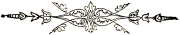
1 Not only oxen and sheep, but also turtle doves and young doves were formerly acceptable offerings to Thee, O my God, and how much more the blood and death of Thy saints.
2 What is said of Onesiphorus according to the body, we have experienced in the spirit. Paul says: “The Lord give mercy unto the house of Onesiphorus; for he oft refreshed me, and was not ashamed of my chain.” 2 Tim. 1:16.
3 This hero and knight of Christ we may understand to be one of Christ’s apostles, but it may also very properly be inferred that reference is had to Gerardus, who went singing before his companions to suffer for Christ’s name. See first book about Arnold, Marsilius, Theodoric, and five other men and two women, who were burnt alive with him at Cologne.
4 When Israel, under Pharaoh, in Egypt, had to burn brick, and to perform other hard labor, for the king, they remembered God, yea, cried unto the Almighty, so that God was moved to compassion, Ex. chap. 1, 2, 3, etc.; but when God had delivered them, and brought them into a goodly land, where it went well with them according to the body, they forsook the Lord, and became wanton. Deut. 32:15. This difference is found to exist also between the times of oppression and the times of freedom.
5 John, the friend of Christ, has presented the deceptive, beautiful appearance of this world in its threefold view of the lust of the flesh, the lust of the eyes, and the pride of life, 1 John 2:16. Solomon portrayed the same as a harlot or wanton woman, who allures young men unto her; who is loud and stubborn, and whose feet abide not in her house; but whither those who follow her are led, as an ox to the slaughter, to certain destruction, nay, to death and hell. Prov. 7.
6 The following and other misfortunes which were caused by worldly and carnal lusts cannot be numbered. O, that Solomon, the wisest among the children of men, might have known, conquered, and taken care of himself in this respect.
7 See Josephus on the Jewish wars; also Egesippus, Eusebius, and Pamphilius.
8 It is a very lamentable fact that the things fraught with danger are not as they appear, and appear not as they really are. Is not the fish caught with a bait, in which is concealed the hook? Are not the birds ensnared in the net, in which berries or grains of corn are scattered for them to eat? Certainly. Is it to be wondered then, that blind, carnal and worldly-minded men are deceived and led into perdition by the wiles of Satan and the alluring lusts of a deceitful world?
9 Meanwhile the prudent knight and valiant champion of Christ must be on his guard and constantly in arms, that he may neither by the one nor by the other be diverted from his noble watch over his soul, which has been entrusted to him, and thus be led away and cast, either in soul or body, or according to both, into the direful abyss of perdition.
10 O that this would be considered, as it should!
11 These things can appropriately be understood to have been caused by meditation and holy contemplation; and in like manner the passage: “For our conversation is in heaven.” Phil. 3:20.
12 The victors at the Olympic games (so called from Mount Olympus in Greece, where they were held) were crowned with wreaths of oak and laurel, which was considered a great honor.
13 God is worthier than the creatures; heaven is worthier than the earth; and the soul is more excellent than the body; in the same manner the divine, heavenly and spiritual warfare is worthier and more excellent than the creatural, earthly and corporeal warfare; this is beyond contradiction. “He that is slow to anger is better than the mighty; and he that ruleth his spirit than he that taketh a city.” Prov. 16:32. Of this the apostle Paul glories, when he says: “I therefore so run, not as uncertainly; so fight I, not as one that beateth the air; but I keep under my body, and bring it into subjection,” etc. 1 Cor. 9:26,27. This praiseworthy fight, when he had brought it to a good end, caused him to say about the time of his death: “I have fought a good fight, I have finished my course, I have kept the faith: henceforth there is laid up for me a crown of righteousness, which the Lord, the righteous judge, shall give me at that day,” etc. 2 Tim. 4:7,8.
14 As we cannot look at heaven and earth at the same time, nor stand at once upon the mountain and in the valley, even so it is impossible to serve God and the world at the same time. Our Savior says: “Thou shalt love the Lord thy God with all thy heart, and with all thy soul, and with all thy mind,” Matt. 22:37. Concerning this it should be observed that if we must love God with all our heart, then no love for the world or sinful flesh may remain.
15 Surely no man in the world can derive advantage from the abundance of his temporal possessions over and above the necessaries of life. Why then, the manifold anxieties and cares to provide for the future in regard to the things which concern the body; since nature is so soon separated by death from all this? “Seek ye first the kingdom of God.” Matt. 6:33. “Casting all your care upon him,” (the Lord) etc. 1 Pet. 5:7.
16 Though it is not advisable in temporal things to put off doing the day’s labor until evening, yet it is better late than never. This holds good also in spiritual things.
17 The word Anabaptist is here used to signify the same as Taufgesinnte in the German, and Doopsgesinde in the Dutch language, for which the English language affords no better term, the literal signification of Doopsgesinde being baptism-minded.
18 Ancient Israel was called the circumcision because all Israelites were circumcised. 1 Cor. 7:19; Gal. 5:6; 6:15.
19 Paul asked the Church at Rome, whether they did not know, that as many as were baptized (or incorporated through baptism) into Jesus Christ, were baptized into his death? Rom. 6:3. Compare with Gal. 3:27; 1 Cor. 12:13.
20 Notwithstanding Philips of Marnix; then, F. Beza; then Menso Alting; then, Abr. A. Doreslaer; and then, the latest translators of the Bible, have come to another conclusion concerning the re-baptizing of the twelve Ephesian disciples who had been baptized by John, Acts 19:1–3; there has, nevertheless, as far as we have been able to discover, before the time of P. Marnix, yea, for more than fifteen hundred years, never been a single Greek or Latin divine who doubted that those Ephesians were baptized again, because the first time they had been baptized without having a knowledge of the holy Ghost.
21 Aside from the fact, that the Anabaptists did not spring from the Munsterites, but have existed through all the times of the Gospel, as has been sufficiently shown, we would, moreover, state that the pernicious and evil proceedings which took place at Munster about the year 1534, can, according to the truth, not be laid to the charge of the Anabaptists, who, at that time, like innocent doves fleeing before the talons of the hawk into clefts of the rock, or into hollow trees, had to hide themselves; but must be placed to the account of some Lutheran preachers, to whom a certain Jan van Leyden had recommended and taught Anabaptism. According to old and authentic authors these proceedings happened as follows:
In the year 1532, Bernaert Rotman, a Lutheran (at that time called Evangelical) preacher, began to preach at Munster in St. Maurice church, against the doctrine of the Papists; when, however, the Papists of Munster came to know this, they bribed him with money, to go away.
But a few months afterward repenting of it, he came back, and drew such crowds, that he, being sustained by some of the chief men of the city of Munster, erected his pulpit in the entry of the church. He also sought to have other churches opened in order that this doctrine might be propagated the more widely;—if this were not done, they should be opened by force, etc. In the mean time, on the 14th of February, 1533, there arrived at Munster, Jan van Leyden, a strange, odd and opinionated man, who, though he maintained baptism upon faith, yet in most other points never agreed with the Anabaptists. To be brief, after much controversy he brought the matter so far, that not only Bernaert Rotman, who had at first opposed him, but also his colleague, H. Staprede, and various others, began to preach against the practice of infant baptism. On the other hand, Jan van Leyden learned from them, especially from B. Rotman, the doctrine that one might defend and propagate his religion with external weapons.
In the mean while, the magistrates, apprehending serious mischief which might be expected to spring from this, forbade those who they thought were giving the most occasion to it, the city. They, indeed, left the city, yet, on the instigation of B. Rotman, entered it again by another way.
Finally matters came to such a pass, that the aforementioned, and other supporters of the Lutheran (or miscalled, Evangelical) doctrine, who had become agreed with Jan van Leyden, in the article of baptism, collected together and resolved to bring about a total restoration of religion; deciding also, that to this end, as it could not be effected quietly, it should be done by force of arms; further, that in Munster the beginning should be made.
Jan van Leyden was constituted the leader; and through B. Rotman’s proclamation much ignorant and simple people from the surrounding places were summoned, to help carry out said restoration, which however was not made known to them at first. These were promised that, in Munster, they should receive tenfold for their goods which they had to abandon on this account.
Without loss of time they opposed the power of the bishop. They erected fortifications, seeking not only to defend themselves, but also to exterminate their opponents, that is, the true adherents of Rome and the Pope. But matters took quite a different turn from what they had intended: they were defeated and the bishop and those of the city triumphed.
Rotman himself, (notwithstanding that his associates were in equal distress) despairing of his life, ran to the enemies to be killed by them; so that he might not, like Jan van Leyden, be taken alive, and come to a shameful end.
This, then, was the tragedy enacted at Munster; the instigation, progress and execution can and may not be attributed to the so-called Anabaptists, but to the first-risen Lutherans, especially to B. Rotman and his followers. Had this restoration been successful, the Lutherans would not have been ashamed of it; on the contrary they would have boasted of it, and never would have let the honor of it remain in the hands of the Anabaptists. To this alludes the following old ditty:
[Compare tract Onnooselheyds Peyl. etc., edit. Harl. Anno 1631. Annex Hist. Mart. a little before the introduction; with the various attestations of Bernhard Rotman; Godfrey Stralensis, Rollins, and other Lutheran leaders at Munster; whose writings concerning this matter were published shortly after the transaction, and have also come down to us. Also, the notes of Melanchton, Guido, Sleydan; and also in the great atlas, old edition.]
22 “For other foundation can no man lay than that is laid, which is Christ Jesus.” 1 Cor. 3:11. On this foundation built all the true martyrs, of whom we have given an account; and unanimously kept it.
23 For this reason a considerable error, which could not be allowed in a common member of the church not laboring under trial and oppression, might be tolerated in a martyr.
24 Justus Lipsius says in the preface to his first book of “Steadfastness”: “Few readers will suffice me; one suffices me; none suffices me also: for I have written this for myself.” But this we leave to him, who had written it only for himself.
25 “Would to God ye could bear with me a little in my folly” (2 Cor. 22:1), says the apostle Paul, with whose wisdom we should not compare ours in the thousandth part.
26 It is always easier to criticise a thing than to do it better. Therefore Karel van Mander, at the completion of a great work, adds these words: “Ye stiff-necked critics must first consider that too great a mountain lies between doing and saying, before you accuse a free conscience with your audacious babbling. Many have mouth enough to contemn the work of everybody; but not the hands to make something better. Saying is mere wind; but doing I esteem.” We say the same, and will let the matter rest here.
27 “Then Samuel took a stone, and set it between Mizpeh and Shen, and called the name of it Ebenezer” (that is, stone of help), “saying, Hitherto hath the Lord helped us.” 1 Sam. 7:12. Thus say we in reference to our history.
28 The end of our work must remind us of the end of our life; and what we may yet lack in this, we shall ask of the Lord, “Lord, make me to know mine end, and the measure of my days, what it is; that I may know how frail I am.” Ps. 39:4.
29 Then say we with Job: I know that my Redeemer liveth, and that he shall stand at the latter day upon the earth: and though after my skin worms destroy this body, yet in my flesh shall I see God; whom I shall see for myself, and mine eyes shall behold, and not another; Job, 19:25–27; and with Paul: we know that if our earthly house of this tabernacle were dissolved, we have a building of God, a house not made with hands, eternal in the heavens. For in this we groan, earnestly desiring to be clothed upon with our house which is from heaven. 2 Cor. 5:1,2. This caused John to say: Even so, come, Lord Jesus. Rev. 22:20. The grace of our Lord be with us all.
30 Not only the word of God, but also experience, confirms the truth of our statement with reference to the two different churches; since daily and universally we may observe people who lead a very modest, devout and godfearing life; and, on the other hand, such whose life is extremely profligate, impious and godless: thus it is also with the root of life, that is, with the matter of faith or of unbelief. How can these be called or recognized by a different name than that of members of the two above mentioned churches?
31 The religion before the fall of Adam, with which we begin, was of short duration; hence little is said of it in the word of God.
32 Abel’s offering was by faith. Compare Gen. 4:4 with Heb. 11:4—The sons of God were commanded to render obedience to the Spirit of God; which injunction they did not heed in the days of Noah.
33 In the matter of faith all the pious, from the beginning, looked to the Messiah; to whom also we, in these last days, must look; for he is the foundation not only of the apostles, but also of the prophets. Eph. 2:20.—Divine worship, humility, righteousness, faithfulness, and many other virtues, have been common in the ancient church as well as now in the last church.
34 The discernibility of the church of God before the time of David, will, we think, not be disputed; and we shall begin, therefore, from that period, leaving the time previous to that untouched.
35 The swelling sea and the tempests of which David speaks here, must not be understood as having reference to elemental water, or a disturbance of the natural, created things; but to the onset of the evil practices and doctrines of evil-minded and ungodly men, through the wiles of Satan, the hellish adversary. The removing of the earth and the displacing or falling in of the mountains through the aforesaid tempests may be understood to refer to the ruin and destruction of the earthly-minded and great of this world, who perish through the noxious waters and commotions of evil doctrines. The streams which make glad the city of God, can very properly be applied as having reference to the saving doctrines through which the city or church of God is refreshed, gladdened, and through the divine promises contained in his word, made to rejoice in the Spirit.
36 The mountain of which Isaiah says that the house of the Lord is built upon, must necessarily be understood as referring to Christ who, in the language of the prophets, is called a mountain in holy Scripture. Dan. 2:35. On the other hand, the house which Solomon built upon Mount Moriah, has been destroyed, and lain waste now for about 1600 years, without being rebuilt. But Christ is such a foundation, that whatever is truly built on it, cannot fall: for “Other foundation can no man lay than that is laid, which is Jesus Christ,” 1 Cor. 3:11.
37 If Christ is so firm a foundation that not even the gates of hell can prevail against that which is built upon it, how very foolish, careless and imprudent are they who forsake this foundation, and build upon, and trust in, the vain things of this world! Certainly, everything under the sun, yea, all which our eyes behold, is vain and transitory. “Vanity of vanities, saith the preacher, . . . all is vanity,” Eccl. 1:2, understand: earthly things. But how much more vain are the sinful and evil things which God has forbidden, and concerning which he has warned us in his word, that we should have nothing to do with them! How great will be the fall of those who build upon these forbidden vanities! If we suffer damage, and complain, when a material house or building falls, because its foundation is not firm, how much greater loss will they sustain, and what greater reason will they have to lament, who will fall both in soul and body, without ever being able to rise again!
38 The words of David, Ps. 19:6, which he spoke of the circuit of the sun around the whole earth every twenty-four hours, the apostle Paul applies to the traveling and preaching of the apostles through the whole world, saying, Rom. 10:18: “Verily, their sound went into all the earth, and their words unto the ends of the world.” Since the apostles, in their time, traveled through the whole world, to preach the Gospel, and, consequently, have been at the ends or uttermost limits of the earth, it would follow, according to our opponents’ own words, that the promise of Christ, “Lo, I am with you” (or by you), etc., was completely fulfilled in the apostles, excluding their descendants from assuming any part of it whatever. This would certainly be a comfortless matter for us, their descendants; but the case is quite a different one as is shown in this column.
39 Whenever, in the New Testament, the coming of Christ is spoken of, there is generally, yea, universally, meant by it his last coming to judgment. “Then . . . they shall see the Son of man coming in the clouds of heaven with power and great glory.” Matt. 24:30. “Behold, he cometh with clouds; and every eye shall see him, and they also which pierced him.” Rev. 1:7; also 1 Cor. 11:26.
40 In the clefts of the rock and in the secret places of the stairs, that is, in persecutions and in solitary and strange regions; just as “among the thorns” signifies, in the power of evil-minded and bloodthirsty tyrants.
41 There is not only a natural and spiritual succession, which could be considered as indifferent only; but both, the natural and the spiritual, can be good or bad, for in both we find either the one or the other. But we purpose to speak here only of a spiritual succession, and, moreover, of such an one that is good. This we shall consider with regard to good persons as well as to good doctrine.
42 The twelve tribes of Israel, considered as a whole, were but one church; but with respect to certain parts who had remained on the other side of the Jordan, namely, Reuben, Gad, and the half tribe of Manasseh (Josh. 22:1–5); the tribes of Judah and Benjamin, who dwelt in Jerusalem, and formed also a part; and the residue of the multitude of Israel, who dwelt by the cities of Samaria, it could very properly be said, that Israel consisted of three churches: 1. on the other side of Jordan; 2. at Jerusalem; 3. in Samaria, etc. Even so there is but one church, which, keeping the true faith, is scattered over many places; but with respect to the multiplicity of places where they dwell, they may be called many churches.
43 “Let no man glory in men,” says Paul, 1 Cor. 3:21. We may not glory, therefore, in the succession of eminent persons, if they do not derive their eminence from the eminence and truth of the word of God. The prophet Jeremiah, going further yet in this point, has cursed that man who trusts in man, and maketh flesh his arm. Jer. 17:5.
44 These words of Paul, “I believed, and therefore have I spoken,” are taken from the 116th Psalm of David.
45 The old edition says: only or one. See Acts 17:26: “And hath made of one blood all nations of men.”
46 The forefathers before the time of the law had the custom of washing the feet of those who came to them friendly and peaceably. Gen. 18:4; 19:2; 24:32; 43:24.
47 “Trust ye not in lying words,” saith the Lord, “saying, The temple of the Lord, The temple of the Lord, The temple of the Lord, are these.” Jer. 7:4.
48 “By faith Abel offered unto God a more excellent sacrifice than Cain, by which he obtained witness that he was righteous, God testifying of his gifts: and by it he being dead yet speaketh.” Heb. 11:4.
49 And he (Andrew) brought him (Simon Peter) to Jesus. And when Jesus beheld him, he said, Thou art Simon the son of Jona: thou shalt be called Cephas, which is by interpretation, A stone. John 1:42.
50 He made him ride on the high places of the earth, that he might eat the increase of the fields; and he made him to suck honey out of the (Sela) rock, and oil out of the (Zur) flinty rock. Deut. 32:13.
51 “The wall of the city had twelve foundations, and in them the names of the twelve apostles of the Lamb.” Rev. 21:14. In the first place it is questionable (even if it be admitted that by this description of the city of God we are to understand the church of God) whether thereby is meant the church of God as it is here on earth, or the glorified church of God, as it will be afterwards in heaven; for only the former, and not the latter, is to be considered here. In the second place, it is certain that the name “foundation stone” is ascribed here not to Peter alone, but to all the twelve apostles; hence he is here called a foundation not any more than any of the others.
52 “James, Cephas” (or Peter), “and John, who seemed to be pillars,” etc. Gal. 2:9. Here James is mentioned before Cephas (or Peter). Again, John and James are called pillars as well as Cephas (or Peter), in order to show that the worthiness or the ministry of one was not more than that of the other, and that they, without distinction, were all equal therein.
53 By which of the other apostles these brethren at Rome were converted, is not mentioned in the text; but it may have been that they were converted on the day of Pentecost at Jerusalem, for at that time strangers of Rome were there. Acts 2:10.
54 Howbeit when he, the Spirit of truth, is come, he will guide you into all truth. John 16:13.
55 A cycle of fifteen years, instituted by Constantine the Great, in connection with the payment of tribute, and afterwards made a substitute for Olympiads in reckoning time. It was much used in the ecclesiastical chronology of the middle ages, and is reckoned from the year 313 as its origin.—Webster’s Dictionary.
56 This Constantius was a Roman emperor, while Theodoric was King of the Goths.
57 Probably Ostia, a town at the mouth of the Tiber. (Pub.)
58 After pope Anastasius, Symmachus was elected pope in a tumult; and immediately also Laurentius was elected, with whom he had two contests, yet came off victor, as the papists say, for the clergy and king Diederik were on his side. But after four years, some of the clergy, who lusted after uproar and contention, and some Roman senators, recalled Laurentius; but they were sent into banishment. This caused a fearful riot at Rome. P.J. Twisk, 5th Book, Anno 499. page 171. col. 2. ex Platinal Chron. fol. 101. Fasc. Temp. fol. 114.
59 So writes Jan Crispijn.
60 Concerning this matter, P. J. Twisk gives this account: “At this time there were three popes at once, namely, Gregory XII., Benedict XIII., and Alexander V. Thus was the great city, the spiritual Babylon, divided into three parts, as a token of its approaching fall. Chron. for the year 1409. page 762. col. 1.
61 Where no true foundation is, there is no stability; this is apparent here: for as immoderate as they were in seeking to possess the Roman chair, so immoderate they were also in leaving it vacant.
62 Besides what is told in the body of the work concerning the ungodly life and disorderly conduct of some popes, it is related by other authors, that some of them were accused (even by those of the Roman church) of heresy, and apostasy from the Roman faith. From Platina’s Register of the Popes, number 37, is adduced the apostasy of pope Liberius to the tenets of the Arians; which happened in this wise: The emperor, being at that time tainted with the tenets of the Arians, deposed pope Liberius, and sent him into exile ten years. But when Liberius, overcome by the grievousness of his misery, became infected with the faith and the confession of the Arian sect, he was victoriously reinstated by the emperor, into his papal chair at Rome. Compare Chron. Platinæ (old edition) fol. 73. Fasc. Temp. fol. 102. Chron. Holl. div. 2. cap. 20. with P. J. Twisk, Chron. 4th Book, for the year 353. page 150. col. 2.
Concerning the apostasy of pope Anastasius II. to the tenets of Achacius, bishop of Constantinople, and, consequently, to the Nestorians, we find, from various Roman authors, this annotation: Anastasius was at first a good Christian, but was afterwards seduced by the heretic Achacius, bishop of Constantinople. This was the second pope of bad repute who adhered to the heresy of Nestorius, even as Liberius adhered to the heresy of Arius. Plat. Regist. Pap. fol. 100. Fasc. Temp. fol. 113. Chron. Holl. div. c. 20. compared with the Chronijk van den Ondergang, edition of 1617, 5th Book, for the year 497. p. 171. col. 2.
Some time after Honorius I. had been exalted to the dignity of the Roman chair, it was found that he did not maintain the doctrines of the Roman church, but was opposed to them, although he seemed to ingratiate himself with her in some external things. Concerning this, the following words are given by a certain author: Honorius I. added the invocation of the saints to the litanies: he built many temples, and decorated them with great magnificence; but this pope was afterwards condemned as a heretic, together with six prelates, by the sixth council of Constantinople. Compare Hist. Georg. lib. 4. Franc. Ala. fol. 44. Platin. Regist. Pap. fol. 130. with the last mentioned Chronicle, edition of 1617, for the year 622, page 218. col. 1.
In addition to the evil testimony which is given of John XXIV., P. J. Twisk gives the following account: “This pope John, as some say, forcibly took possession of the papal chair, and is styled by the ancient writers a true standard-bearer of all heretics and epicures. He was a man better fitted for arms and war, than for the service of God.” Chronijk, P. J. Twisk, 15th Book, for the year 1411. p. 768. col. 2.
63 2,800,000 guilders, or $784,000.
64 But, after thy hardness and impenitent heart, treasurest up unto thyself wrath against the day of wrath and revelation of the righteous judgment of God; who will render to every man according to his deeds. Rom. 2:5,6.
65 Notwithstanding, the examples related in the body of the work are recorded by P. J. Twisk, it is proper to state, that they were extracted from various papistic writers.
66 John XI. was put for John XXII.; by the author from whom this was taken, but this is an error.
67 This Benedict VI. was also put for his successor, Benedict IX.; which error we have corrected.
68 Our author relates, that before the death of pope Innocentius IV. a voice was heard in the papal court, saying, “Come, thou wretched man, to the judgment of God!”
69 Many more such examples might be related here, but, since by these few our aim is sufficiently understood, we deem it unnecessary to enter more deeply into this subject, and shall, therefore, let this suffice.
70 “But in vain they do worship me, teaching for doctrines the commandments of men,” saith the Lord. Matt. 15:9.
71 Everything has its opposite: weeping is the opposite to laughing; wailing and mourning, to shouting and rejoicing; but in all this it is better to rejoice last than before. “Woe to thee that spoilest, and thou wast not spoiled; and dealest treacherously, and they dealt not treacherously with thee! when thou shalt cease to spoil, thou shalt be spoiled; and when thou shalt make an end to deal treacherously, they shall deal treacherously with thee.” Is. 33:1.
72 “Judge not, that ye be not judged. For with what judgment ye judge, ye shall be judged; and with what measure ye mete, it shall be measured to you again.” Matt. 7:1,2. “If any man have an ear, let him hear. He that leadeth into captivity shall go into captivity: he that killeth with the sword must be killed with the sword.” Rev. 13:9,10.
73 Song of Solomon 4:16.
74 Song of Solomon 2.
75 Rom. 8:18.
76 Rev. 3:5.
77 Lamentations 1:1.
78 Of the desolation of Jerusalem, David in his Lamentation sung: “O God, the heathen are come into thine inheritance; thy holy temple they have defiled; they have laid Jerusalem on heaps.” Ps. 79:1.
“By the rivers of Babylon there we sat down, yea, we wept when we remembered Zion. We hung our harps on the willows in the midst thereof.” Ps. 137:1,2.
79 In 1659 the hand of God was laid heavily upon my brother, in that he was visited with a severe sickness, so that to all appearance, it seemed that he would not recover.
80 He that is to have his sin buried through baptism, must first have died unto it through repentance; and he that is to rise into, or walk in, the new life, must first have been or walked in, an old life; this is incontrovertible, but whether it applies to infants, let the reader judge.
81 It appears, therefore, that none were baptized in Galatia, but those who had put on Christ. Concerning this putting on of Christ, see Rom. 13:14.
82 In the ark, which was preserved through, or, properly speaking, in the water, there were none but believing and obedient persons, eight in number, namely, Noah and his wife, with their three sons, Shem, Ham, and Japheth, and their three wives, eight persons in all: likewise, none but believing and obedient persons belong in the church of Christ, which is compared to the ark, and which must be preserved through or in baptism.
83 That the Lord lived six hours, yea, more than six hours on the cross, before he gave up the ghost, appears from the account of Mark, chap. 15; for in verse 25 it says: “And it was the third hour, and they crucified him.” That is, according to our reckoning, nine o’clock in the morning. Then, in verse 33, we are told that when the sixth hour was come, there was darkness over the whole land until the ninth hour; which, according to our reckoning, was twelve o’clock noon. Then, in verse 34, we read: “And at the ninth hour Jesus cried with a loud voice, saying, Eloi, Eloi, lama sabachthani, that is, My God, my God, why hast thou forsaken me?” which, according to our way of reckoning time, is three o’clock in the afternoon. Again in verse 37, we read: “And Jesus cried with a loud voice, and gave up the ghost;” which, as it appears, happened after the expiration of the ninth hour, so that the Lord lived on the cross from nine o’clock in the morning until three o’clock in the afternoon, that is, fully six hours, and not before then did he give up the ghost, as has been shown from the account of Mark.
84 We quote Tacitus according to the annotation of John Gysius in Hist. Mart. fol. 6. col. 2., from which the translation of John Fenacolius differs greatly.
85 About one cent.
86 The historians state that the apostle Peter wept very much daily after the ascension of Christ. When he was asked why he wept so much, he replied, Desiderio Domini, that is, “Because I very much long for my Lord.” There are ancient writers who state that Peter cried every time he heard a cock crow. When he saw his beloved wife being led out, to be put to death, on account of having confessed the faith, he addressed her in these words, “O my beloved wife! have the Lord Jesus always before thine eyes; this is the marriage of the saints.” He was sentenced to be crucified in theusual manner. But he requested to be hung on the cross with his feet up, saying, “I am not worthy to be hung on the cross, like the Son of God hung and suffered on it.” W. Baudart. Apophthegm. printed Anno 1640, first book, page 2.
87 As regards the time of this Dionysius, we follow the date given by P. J. Twisk, A. D. 126; to distinguish between him and the martyr Dionysius Alexandrinus, who suffered under Valerianus and Gallienus, about A. D. 260.
88 In the year 141, Justinus taught that in matters of controversy we must judge from the apostolic writings. In the 119th question. Also, that the true church of Christ must not be known (is not distinguished) by the great number of members, but by the doctrine. In the answer to the first question. Also, in the Geslacht-register der Roomscher Successie, second edition, 1649, page 114.
89 A. D. 175, Ireneus taught that the bread of the Supper was of the fruit of the earth, and he also calls the Supper not an offering but a thanksgiving. Lib 4, contra Valent. See in the Geslacht-register der Roomscher Successie; second edition, 1649, page 114.
90 The words, “reasonable baptism,” indicate that he speaks of such a baptism as belongs to reasonable or intelligent persons.
91 Although P. J. Twisck has placed the fourth persecution, together with the beginning of the reign of M. Aurelius, in the year 162, he, nevertheless, gives to understand in the sequel of his account, that this persecution reached its climax in the year 168. Compare this with the time which the writers of the aforementioned Introduction, and Joh. Gysius have recorded.
92 J. Gysius fixes the beginning of this persecution of the Christians, at Lyons and Vienne, on the river Rhone, in the year 179; but other authentic writers commence it with the year 172.
93 The leader, or minister or bishop.—Publishers.
94 The above quotations from Tertullian, are given by Van Braght to show that he in no wise sanctioned infant baptism and from the remark at the close of the paragraph, “which answers (says) more than the Lord has laid down in the Gospel,” it appears that even Tertullian himself, though, as it appears, he practiced it, does not claim gospel authority for it.—The Publishers.
95 Tertullian here speaks of repentance and regeneration, showing how that the heart must be changed and cleansed with the “washing of water by the word,” and then says: “for this is the first immersion (indoopinge) of him that hears,” by which he evidently means to show that this spiritual change of the heart is first in importance. Karl Tauchnitz in his Dutch—German Dictionary gives the definition of Indoopen: Einweihen, to consecrate or initiate, of which baptism is also a signification. In this sense we might say: This is the first baptism, or the first consecration, or the most important work of him that hears, or of him that would be saved.—The Publishers.
96 The foregoing quotation from Tertullian is ambiguous in the Holland language and appears to have been so also in the original. Dr. Karl Ad. Heinrich Kellner, Prof, of Theol. at Heidelsheim, in his German translation of the “Complete Works of Tertullian” renders this passage as follows, which he says he holds as the correct rendering: “What wonder then that it (patience) also unites itself with repentance and is, aside from separation in the marriage relation, the usual means of relief for the apostate—this, however, only for the reason that we, whether it be for the man, or whether it be for the wife, in widowhood may hope for constancy. It is patience that waits for salvation with those who in their own time would seek repentance, that longs for it and prays for it. How great a benefit it works for both! The one it preserves from adultery, the other it purifies.”—The Publishers.
97 At this time Origen taught that we must appeal to the Holy Scriptures; for without these no credence can be given to what we say. On Jeremiah, Homil. 1. See, Samuel Veltius, in Geslacht-register der, etc., page 115.
98 The author employs the word priest; but priest is derived from the word presbyter, that is, elder. We say teacher.
99 Used in the sense of general.
100 The number of holes reached indicated the degree of torture to which the prisoner was subjected.—Translator.
101 Seb. Franck notes as the time of the propagation of the doctrine of Donatus the year 334, under the Emperor Constantine. “He taught,” says Franck, “that the Son is less than the Father, and the Holy Spirit less than the Son.” This is considered heresy by the Roman church, but when rightly expounded, it may be correct. For Christ himself with regard to his humanity says: “My Father is greater than I,” John 14:28. And of the Holy Ghost he says: “If I depart, I will send him unto you,” John 16:7; as though the Holy Ghost were less than himself. Franck further says, that Donatus was an over-learned bishop of Carthage, who had come there from Numidia, and maintained that the true and only baptism existed exclusively in his church and faith. Chron. Rom. Kett., letter D.
102 In Canon 2, Concil. Nicen., we have the following: “No one who has recently been received from heathendom, and baptized, shall become an ecclesiastic (that is, a teacher or bishop), unless he have been very carefully examined previously.” Bapt. Histor., p. 352, from Ruffinus; which quite agrees with Paul’s words, 1 Tim. 3:6, that no novice shall be ordained to the office of a bishop.
103 Bullinger says that before the days of Ambrose (A. D. 363), Aurentius rejected infant baptism. See, P. J. Twisck, Chron., page 114, col. 2, in the annotation.
D. Vicecomes (lib. 2, cap. 6) records, from Nolanus, concerning Ambrose, that in his time, Frigitil, Queen of the Marcomans, having heard from a Christian man, what good things were said of Ambrose, believed in Christ, and recognized him (Ambrose) as his minister. To her, Ambrose wrote an excellent epistle. See, Bapt. Hist., page 462.
104 P. J. Twisck fixes this council of Laodicea in the year 364, while Seb. Franck states that it occurred in the year 368, but we follow a middle course, and assign the year 366 as its date.
105 About this time (A. D. 380), Ambrose taught that the heathen worshiped wood, because they judged it to be the image of God; but, says he, “God’s image is invisible.” Tom. 4, in Psal. 118, Ser. 10. Samuel Veltius, in Geslacht-register, page 119.
106 That this Basilius was the son of Christian parents, appears from Bapt. Hist., page 365. Instances of this kind, it is stated there, occurred at that time also in other places; we mention Basilius, Jerome, Ambrose, etc., all of whom were born of Christian parents, and baptized upon confession of their faith.
107 It is evident here that either the author is mistaken in the name, or that a typographical error occurred. Theophilus was the name of the Patriarch of Alexandria, through whose instigation, with that of the Empress Eudoxia, the Emperor in question, whose name was Arcadius, was induced to persecute Chrysostom.—Translator.
108 Pure as precious metal.—Pub.
109 Although the Papists sometimes have this Goldenmouth in their mouth, they nevertheless regard his teachings as heresies.
110 The translator says priests, namely, such priests as John speaks of, Rev. 1:6: “And hath made us kings and priests,” etc.
111 P. J. Twisck places this Epiphanius in the year 377, but this may be a typographical error; the figure 7 having been substituted for the figure 9.
112 The author writes: “In Egypt they were beheaded in such great numbers, that the executioners grew tired, and their swords became dull from cutting. The Christians went unto death gladly, without being bound, fearing lest they should not be there in time to die as martyrs.” Fol. 41.
113 A certain author speaks of her having spit into the face of the tyrant; which is to be understood of the image or idol.
114 This council, also called Concilium Arausione, is stated to have taken place, A. D. 441. In the same it was decreed, by command of Antichrist, that the Gospel should not be read to the catechumens, and that they should not be admitted to the place of baptism. See P. J. Twisck, Chron., 5th book, page 155, col. 1.
115 The pope and the councils had commenced making such efforts, it appears, already A. D. 470, seventeen years earlier; for at that time Anabaptism was condemned at Rome, as has been shown.
116 Or Mayance.
117 In English this may be rendered thus:
118 Touching the Jews who embraced the faith, this rule was established: “A Jew shall be tried for eight months among the scholars of the faith, and then, if he assents to it, be baptized.” Seb. Franck, Chron., Rom. Conc., fol. 72, col. 3.
119 Olympiodorus (in Eccles., cap. 9), says: “Through the washing of regeneration white robes are also given us, which doubtless remain clean as long as we refrain from the evil of sin.” Bapt. Hist., page 474.
120 P. J. Twisck, it appears, makes mention of this Peter, for the year 586, as we have also noted for that year.
121 This Vincent is to be distinguished from Vincent Victor, who is spoken of in another place.
122 What he says about the water of baptism, is somewhat obscure, and hence every one may judge for himself; but that which he remarks about the bread of the Supper, is clearer.
123 The writings of Bullinger against the said people are more fully explained elsewhere.
124 The reader will please insert here, to the peoples, which is contained in the original, but had to be omitted in the translation, as the metre would not allow it. The words in question are virtually implied in the verse as translated by us, and we would not have deemed it necessary to call attention to the circumstance, were it not for the fact, that van Braght bases part of his following argument on these very words.—Translator.
125 In the following year, namely, A. D. 563, mention is made of forty Christian peasants, whom the Longobards seized and would constrain to eat of the food offered to idols; but as they refused to do this, they were beheaded together, for the faith in the only God, and his Son Jesus Christ. Compare P. J. Twisck, Chron. page 192, from Marianus Scotus, lib. 4, with A. Mell., 2d book, fol. 299, col. 4, from Gregor. Dialog., lib. 5, cap. 27 from trustworthy eye-witnesses. Nevertheless, we dare not count them among the true, defenseless martyrs, since we doubt whether, at their apprehension, they showed themselves meek.
126 Concerning these martyrs, we have not found that anything has been laid to their charge, as regards the uprightness and steadfastness of their faith (as has been stated respecting Arnold); nor have we discovered anything that is at variance with the views of the Anabaptists; hence we have accorded them a place among the faithful martyrs of Jesus Christ.
127 A. D. 605.—At this time, Gregory the Great wrote: “If a bishop, whoever he be, is called a general bishop (that is, Pope), the whole church decays.” In Regist., lib. 8, cap. 188. Again: “I candidly say that any one who calls himself a general bishop, or desires to be called such, is, in his exaltation, the forerunner of antichrist.” Lib. 4, Epist. 30, Sam. Velt., Geslacht Register, page 125.
128 A. D. 608.—Theophilactus taught at this time, that every one must and may read the holy Scriptures, if he would rightly instruct his children in the words of the Lord. On Eph. 6, Sam. Velt., page 152.
129 Venerable Bede.—Transl.
130 In what Bede’s priesthood or monkhood consisted, is not expressed; hence nothing can be concluded regarding it.
131 He calls the bread of the Supper a figure, which does not accord well with the priesthood or monkhood.
132 The life of Amalarius Fortunatus is described in history shortly after the middle of the eighth century, or about A. D. 760, though P. J. Twisck refers him to the year 836, the time of Ludovicus Pius, which is 76 years later; however, both may be true, if Amalarius wrote from his youth to old age, which may easily have been the case. As regards his belief, Twisck gives this account: “Amalarius Fortunatus, at this time, in the reign of Ludovicus Pius, wrote several excellent treatises against transubstantiation and the corporeal presence of the body of Christ, of the internal sacrifice of believers, and other fine things, as can be seen in Catal. Test., fol. 161, P. J. Twisck, Chron., 9th book, page 285, col. 1.
133 This appears also quite clearly from the example of Charlemagne, who, about the year 781, had his son Carloman, who was then several years old, baptized by Pope Adrian I., at Rome, on the feast of Easter. His daughter Gisla was also baptized the same year, at Milan, by Bishop Thomas. H. Montanus refers this to the year 781, but others, to A. D. 800.
134 Paul Diac., lib. 21. Hist. Rom. in Leone Isauro, compared with Abr. Mell. Hist., fol. 305, col. 2.
135 In the year 720, the Saracens or Arabians came over into Spain, where they sorely persecuted and martyred many pious Christians. Sigibert. Chron. Tudensis. Also, Abr. Mell., fol. 328, col. 1. However, from this we would conclude neither the one nor the other.
136 A. D. 812, disputes began to arise in the Roman church, concerning transubstantiation, or the changing of the bread and wine into the sacrament; so that the custom of the holy Supper was converted into idolatry. P. J. Twisck, Chron., 9th book, page 279, col. 1, from Chron. Mich., 2d part, fol. 175, Zegh., fol. 245.
137 A. D. 821 (writes P. J. Twisk), that is, in the time of the Roman Emperor Louis, there lived Christus Taurinensus, who wrote and taught against the invocation of the images, of the cross, of the relics, of the saints, and against the power of the Pope, and pilgrimages. Chron., 9th book, page 280, col. 2, from Joh. Munst., fol. 132.
138 The following passages by Haimo, from Ps. 38, to Cant. 1, are apparently quoted by Idiota. Bapt. Hist., pages 547, 548.
139 In the Dutch translation of the Bible, in the Book of Canticles, the word corresponding to “love,” whenever this is applied as a term of endearment to the church, by Christ, is vriendinne, i. e., friend; hence the allusion is not so apparent in the passage as translated here into English.—Translator.
140 The proper time for baptizing was still Easter and Whitsuntide. Bapt. Hist., page 550, num. 2. White garments were put on those baptized, which signified the innocence, salvation and purity of the Christian; that they should henceforth, all through life, keep themselves unspotted from iniquity. Page 553, num. 14.
141 Twisck might have used a less ambiguous phrase here, though we doubt not, that the intelligent reader will readily see what he means; but, for fear that some one might misunderstand him, we will add a few words of explanation. The word “other,” of course, implies that some errors have already been adduced; strictly speaking, however, he has not adduced the errors, but rather the articles of faith in regard to which errors were held, by the Roman church. Translator.
142 About this time, Bertram taught, in his book of the Body and Blood of Christ, concerning the words: “This is my body,” that this is to be understood figuratively, and that in the Supper, the faith is presented somewhat differently than the eyes externally see, and the taste perceives; also, that the bread and wine are figuratively the body and blood of Christ, and represent to, or keep before us, the remembrance of the suffering and death of Christ. Sam. Velt., Geslacht-register; pages 126, 127.
In the Scythian church, (A. D. 840), writes Valfrid Abbas, they used the common mother tongue, and taught that images should not be worshiped or honored; that the paschal lamb should not be consecrated; yea, that it was better to aid the poor, than to decorate the churches. P. J. Twisck, Chron., 9th book, page 286, col. 2, from Casp. Grev., fol. 277.
143 A. D. 843.—Christus Lupim, at Ferrara, refuted the new Roman doctrines concerning purgatory, matrimony of priests, and other points. P. J. Twisck, Chron., 9th book, page 288, col. 1, from Catal. Test., fol. 103.
144 A. D. 858.—At this time, Gunther, Bishop of Cologne, wrote to Pope Nicholas: “Thou art playing the tyrant: under the guise of a shepherd we find thee to be a wolf. The title, indeed, is father, but virtually thou showest thyself a Jupiter.” Sam. Veltius, Geslacht-register, page 127.
145 To go without delay to heaven, to Christ, may fitly be understood as having reference to the commending of their souls into the hands of Christ; as is stated of the holy martyr Stephen, namely, that he saw the heavens opened, and Christ standing on the right hand of God; to whom, in his extremity, he commended his soul, saying: “Lord Jesus, receive my Spirit. And when he had said this, he fell asleep.” Acts 7:59,60.
146 This was a treatise on the name of God, and the heavenly order of the angels.
147 What Smaragdus has written on 1 Pet. 2, saying: “Such holy, pure, and innocent childhood, the mother, the church of Christ, gains through the grace of baptism,” gave cause to consider whether by the word childhood he meant infants of the cradle, and by the words grace of baptism, infant baptism; but it is also interpreted as having reference to the believing children of God, according to Gal. 3:26, and to the baptism of believers, according to Mark 16:16. As to the exposition, however, which he is stated to have made on John 13, it is held that it took place before his enlightenment.
148 What Fulbertus says, in this comparison, of baptism, is, as far as the sense is concerned, identical with that which Paul, Rom. 6:4, declares of the baptism of believers, saying: “Therefore we are buried with him by baptism unto death: that like as Christ was raised up from the dead by the glory of the Father, even so we also should walk in newness of life.”
149 For further comments respecting Eugenia’s confession of faith, see the explanation which we shall append to the account of the death of Pelagius.
150 To die for the name of Christ, our author says.
151 With regard to what is attributed to Anselm, concerning the suspicion in reference to infant baptism, namely, that he (on Eph. 4 and Hebr. 10.) agreed with Meginhard (de Fide at Gunth.), we let those say, who can show more evidence of it, than we have yet met with. In the mean time, we have weighty reasons, which induce us to show the contrary concerning him. The same is true also with regard to what he is said to have written, touching said doctrine, on Matt. 15; 1 Cor. 7, and in Concordia Gratia, and lib. Arbitrii, etc.; which things as well as the above, we leave without comment, reserving our explanation of them to ourselves.
152 Laymen and nobles, etc., the papist writer says.
153 A. Mell., fol. 395, ex Baron., in Chron. Eccl., 1088. Art. 15, 20, 21
154 This Peter de Bruis, with his disciple Henry, was known, A. D. 1130, throughout all France, on account of his learning and his boldness in reproving the abuses of the Roman church. Bapt. Hist., page 686.
155 Doopsgesinde, German, Taufsgesinde.
156 P. J. Twisck, in his Chronijk, shows expressly that the Waldenses would not swear, etc. Book 14, page 743, col. 2. from Henr. Boh., fol. 27.
157 War, says the writer; but this signifies violence, vexation, etc.
158 “Zealous Bernard,” writes Mellinus, “allowed himself to be bribed, and dared to preach and write whatever he heard said.” Second book, fol. 438, col. 2, in the margin.
159 Vignierus, in Hist. Eccl.
160 The papistic writer says: “From an unknown author.” The Calvanistic Mellinus however says: “But perhaps from Peter de Bruis, Henry of Toulouse, or Berengarius himself.” Second book fol. 439, col. 4, in the margin.
161 All these passages, Mellinus has taken from the account of Guido Perpigna, in lib. de Haeresib. Bal. Cent. 2, in Append. ad Gervasium Giestrensem. Guido was of the opinion, that said people belonged to the Poor Men of Lyons, that is, the Waldenses.
162 From the writings of Gascony.
163 The reader must know that the writers who have given vent in this most odious manner to said testimonies respecting the holy martyrs, were papists.
164 Master, or sir; a title of the middle ages, equivalent to the modern title of doctor.
165 We will say nothing of this Alexander, but merely speak of his doctrine.
166 The following words are obscure in the author; hence we experienced difficulty in translating them.—Van. Braght.
167 Gen. 15:1.
168 In those times there was a sect sometimes, though improperly, called Albigenses. Their proper name, however, was Ruptuarii or Routiers; that is, desolators or rioters, because they made resistance. See 2d book of the Persecutions, fol. 460, col. 4. But of such we have purposely avoided to speak, as they do not belong here.
169 Albigenses, says the writer; however they were of the profession of the Waldenses; but because of their origin from the province of Albi, they were called Albigenses.
170 What the Waldenses held with regard to infant baptism, the mass, and transubstantiation, has been previously shown.
171 From this it is quite evident that said people had an aversion to the swearing of oaths. But some one may say: This has reference to adjuring their belief. To this it may be replied, that the oath demanded here did not aim at anything further than the telling of the truth, as the preceding words declare.
172 It seems that these inquisitors thought that these people also observed auricular confession; which is a grave misapprehension, seeing their confession avowed the contrary.
173 That the very odious name Vaudois, was given the Poor Men of Lyons, need offend no one; since Christ himself and his holy apostles were often called evil and opprobrious names, by their adversaries.
174 For further information respecting the method of the inquisitors, see our account of the martyrs for the year 1301, etc.
175 It is necessary here to understand that by the word heresy those people did not mean their orthodox faith; but all that could truly be called heresy; and this they then disavowed; whereby this inquisitor, (to all appearance) though he was very crafty, was greatly misled.
176 Hoc est enim corpus meum, i. e. for this is my body.
177 Albigenses says one writer.
178 The Dominicans and Franciscans, though they seemed to be very simple and modest, were nevertheless the principal actors in this matter.
179 Awake, O north wind; and come, thou south; blow upon my garden, that the spices thereof may flow out. Solom. S. 4:16.
180 This great number of martyred Waldenses, through the carelessness of some writers, has been mingled under the mire of certain erring persons, from whence we have drawn them forth again, though not without labor. An ancient writer says: “I seek pearls in the mire.”
181 Wilhelmina.
182 Hence, when Wickliffe rejects the swearing of oaths in civil or human contracts, he rejects all swearing of all oaths that have ever been in question; for not the promises which are made to God, but the oaths that are sworn to men, have been from ancient times, and are still, the matter in question.
183 This article has direct reference to the words which Paul wrote to the believing Romans: “Know ye not, that so many of us as were baptized into Jesus Christ were baptized into his death?” Rom. 6:3.
184 Others say, on Easter.
185 Others say, a Monocholite.
186 To an English reader this explanation will seem not only superfluous, but, perhaps, even obscure and contradictory. Let him be reminded that the work originally was written in the Dutch language, in which such explanation of the word in question (verdoemen) is entirely in place. Transl.
187 “Glory to God in the highest.” Luke 2:14.
188 And (he) heard unspeakable (unrevealed) words, which it is not lawful for a man to utter. 2 Cor. 12:4.
189 These virtues have previously already been ascribed to them, and are distinctly asserted of them by various other writers.
190 “But I say unto you, Swear not at all.” Matt. 5:34. “But above all things, my brethren, swear not.” James 5:12.
191 Prayers which the priests of the Roman Catholic church have to read from the breviary at stated seasons of the year. Trans.
192 These Grubenheimer are to be distinguished from others who also bore this name.
193 Anglia, England; others, however, are of the opinion, that it comes from Ango, that is, to strangle, torment, distress, oppress, etc.; or from Angustia, that is, a narrow and straitened place.
194 “Enter ye in at the strait gate. Because strait is the gate, and narrow is the way which leadeth unto life.” Matt. 7:13,14.
195 “In our Dutch,” says the original.
196 Here no third class of members of the church of Jesus Christ is mentioned, namely, infants; but only men and women, that is, believing and obedient persons.
197 Though she calls the bread of the Supper the host, yet she does not acknowledge, that the body of Christ is present in it; hence she refused to worship it.
198 The confession recognized by her, is not according to papistic manner, but agreeable to the teaching of James 5:16: “Confess your faults one to another, and pray one for another, that ye may be healed.”
199 The people which sat in darkness saw great light; and to them which sat in the region and shadow of death, light is sprung up. Matt. 4:16.
200 Or Penance imposed by the priest.—Translator.
201 They desire, that not a limb or bone be broken, nor a drop of blood be shed, of the accused. Yea, command that he be dealt with in all mercy; who themselves did not hesitate to condemn him to the fire. O most unholy wiles of the so-called holy tribunal of the inquisition!
202 Homer’s account of the Trojan war, or the capture of the city of Ilium.
203 God visited me with a half year’s, and almost fatal, sickness; during which time I nevertheless wrote much of the first book.
204 Rev. 1:5.
205 I saw under the altar the souls of them that were slain for the word of God, and for the testimony which they held. Rev. 9:9.
206 This is adduced, from Thuanus and Cesar Heisterb., by D. B. Lydius, speaking of the Waldensian martyr Arnold, whom we have noticed for the year 1163, and some of his fellow-martyrs. He says: “This Arnold was burnt, together with nine of his disciples, among whom were two women, on the fifth of August, at the Jewish cemetery, at Cologne. Before his death (or before he was dead), he laid his hand upon the heads of his then half-burnt fellow-brethren, saying: ‘Adhere steadfastly to your faith; this day you shall be with the holy martyr, Laurence.’ ”
One of the women, he writes, who, from mercy, had been drawn out of the fire, with the promise that she should be married, or, if she were inclined this way, placed in a convent, asked where Arnold lay, who had been burnt, with his fellow-believers, as a heretic. And when his body, which by this time was mostly burnt, was pointed out to her, she escaped the hands of those who led her, and threw herself upon Arnold’s body, in order thus also to obtain the crown of martyrdom. D. Bal. Lyd. Tract. Where the Church was, etc., page 59, col. 1, from Thuan., lib. 6, Hist. Also, Cesar Heisterb. dist. 5, cap. 19.
207 And Philip said, If thou believest with all thine heart, thou mayest. Acts 8:37.
208 For as many of you as have been baptized into Christ have put on Christ. Gal. 3:27.
209 For ye are dead, and your life is hid with Christ in God. Col. 3:3.
210 From this our opponents, nevertheless, form an argument, which they, though without foundation, bring against us.
211 Nicodemus, though ignorant in the matter itself, understood well enough, that this did not have reference to children; hence he asked: How can a man be born, when he is old?
212 From the words: “That which is born of the flesh is flesh,” Thomas concludes that this relates only to the adult; since no newborn infants, but only the adult can live after the flesh, and, consequently, must be born again.
213 The descent of every one is known by his peculiar nature; for like produces like. Hence, if infants are truly regenerated of the Holy Spirit, the fruits of the latter must be evident in them from the workings of their nature. The fruit of the Spirit is love, joy, peace, longsuffering, etc. Gal. 5:22.
214 Understand, those which were the most important in his time; for afterwards many others were, to the detriment of truth, imagined in addition to them.
215 He adduces the prophecy of Joel for the purpose of showing, that the latter speaks of the prophesying of sons and daughters, and not of infants. Chap. 2, verse 28.
216 Since God knows everything, believers can call upon him with a firm confidence; for he hears their cry and knows their wants.
217 These things are very difficult to understand, and above human reason; hence they are not to be comprehended by reason, but must reverently be embraced in faith.
218 The original says obey, which evidently is an error.—Trans.
219 Understand, taking each time for a great year, there are as many years as there are days in three years and a half; which is about 1260 years. Num. 14:34; Ezek. 4:5.
220 Invented in the kingdom of antichrist, says the writer.
221 This is an expression of the belief of the papists, who attach forgiveness of sins and salvation to the external water of baptism.
222 But not the office of authority, then says the writer.
223 This fourth article the writers enumerate as the third.
224 In the following a few words are changed, without altering the sense, however.
225 A. D. 1527, the printer had set it; but it is an error.
226 He was also one of the Waldensian brethren, as Jacob Mehrning writes. Bapt. Hist., 2d. part, page 748.
227 After many disputations three of the nine apostatized; the rest remaining steadfast, were banished.
228 Louis belonged to the church of the Waldenses, whose sound faith we have shown elsewhere. See the author cited below, in the same place.
229 This John Hut was also one of the old Waldensian Brethren, See Bapt. Hist. p. 748.
230 See also Menno Simon’s Works, Holland Edition of 1646, page 471. Also Complete Works of Menno Simon, English Edition of 1871, page 3.
231 Bishop says the writer.
232 See Menno Simon’s Complete Works, English Edition, published by John F. Funk and Brother, Elkhart, Indiana, 1871, part first, page 8.
233 Province.
234 We have in our possession the original sentence of these two persons; but as the gist of the same is given here, it is not necessary to adduce it verbatum.
235 Emanuel went forth from his Father’s kingdom into this world.
236 He deems eternal salvation of greater value than temporal necessities.
237 Having abundance of consolation in his sufferings, he comforts his brethren.
238 He who has not Christ in him, is poor and miserable.
239 He loves his brethren according to the soul; hence he admonishes them, to seek their salvation. He that desires the heavenly riches, hates everything which hinders him therein.
240 He who seeks God in visible things, will not find him.
241 In God are life and peace; he that desires peace and life, let him enter into him.
242 Pure love loves a blameless life.
243 A person can have a Pharisaical holiness, without the Spirit and righteousness of Christ.
244 The nature of God is made manifest in his children, who love him in godly works.
245 It is a joy to the godly, when they see men living in accordance with the word of God.
246 What great boldness, through the power of God!
247 All his delight is in speaking of God, and in strengthening men in that which is good.
248 All the pious constantly lament the vain boasting and unbelief of the world.
249 He that gives heed to the word of God will gather wisdom.
250 We have had some doubts as to whether these two persons were not the same ones who, under the names of Jacob and Seli, have been noticed previously, for the year 1542, and whom we allowed to remain there; but as we find some contrary circumstances, we took cause to regard them as not the same, but different persons; hence we have put them here in their proper place.
251 The worldly ruler.
252 Calling or sending of ministers.
253 In Dutch Schaepheaderen, signifying the most menial occupation.—Trans.
254 Name of a church.
255 This copy was sent to us by some one from the country of Cleves, as a very old relic.
256 A light sword with a very narrow blade.—Trans.
257 As indicated by the brackets, these words are not found in the original, but have been inserted by us, to complete the sense, which has apparently been marred by a typographical, or other, omission.—Trans.
258 The year 1551 was given.
259 She was simply called Felistis.
260 It is supposed that this was probably Sikke Snijder.
261 Actum per Campanam, i. e. done through the bell (or striking of the bell).
262 And to hold pernicious views with regard to baptism, etc., it seems to read here.
263 Whether it was customary in the city at that time, to read in court sentences of death passed in matters of faith, we have not been able to ascertain.
264 The reader will bear in mind that large portions of Holland are traversed by numerous canals, in place of roads.
265 The reader will understand this otherwise obscure assertion, when we state that it is based upon an ingenious application of the Dutch adverb weder, weer, the first part of the word Weerdoopers, (Anabaptists),—which may mean against as well as again. Translator.
266 In this letter we found so much wisdom, holiness, and excellence, that we have read it innumerable times with attention and deep emotion. It kindled our love to God, and our zeal, not only to live with Christ, but also, if necessary, to die with him and for his holy truth. O that we were worthy, that his holy name might be praised through us unworthy creatures!
267 The powerful nobility or aristocracy of Venice is meant here.
268 Some had given 1555 as the year, but this is an error.
269 Some old writers did not know that this youth, Algerius, shortly before his death, had, through baptism which he received upon his faith, united with the cross-bearing Church of the Anabaptists; hence they ignorantly ascribed to him another religion.
270 We are much inclined to the view that this is an error, and that the Capucins are meant. Transl.
271 Extracted from a certain book of criminal sentences of the city of Amsterdam.
272 See note in a former page.
273 Has held, etc.; an error of the writer of this sentence; for Joris still held these views at that very time.
274 How can God be honored by what he has forbidden?
275 What edification could the lords derive therefrom, who, by doing this, made themselves tyrants, yea, murderers?
276 East country, probably Austria or the Orient is meant here.—Trans.
277 The passage referred to is 1 Samuel 21:6. The reader will bear in mind that formerly the two books of Samuel were called respectively the first and second book of the Kings.—Translator.
278 Den Kerck-gang.
279 Name of a bridge.
280 Take heed therefore and watch for him; for he shall come as a thief in the night.
281 I never had greater joy than at this present time.
282 An implied substitution of gender, peculiar to the genius of the Dutch (as also, the German) language; the exclaimant, losing sight of her own individuality, views herself only as a representative of Adam’s race, and recipient of God’s munificence.—Trans.
283 The author of this confession apparently bases his argument upon a version of the Scriptures in which the preposition, or prepositions, on which his argument hinges, are different in signification, at least in his view, from those occupying corresponding positions in our English translation.—Trans.
284 Apparently an allusion to the fact of his not having been baptized.—Translator.
285 Fifth Sunday in Lent.
286 From what is related here, it appears that also Soetgen van den Houte’s husband died for the truth, as a valiant witness of Jesus; although we have not been able to learn the time, place and manner of his death.
287 Or Moravians.
288 King’s Dollars.
289 The construction of this clause in the original seems to indicate, with great probability, a typographical error, consisting in the substitution, in the pronoun, of an m for a w, and that, accordingly, it ought to read I, instead of: we.
290 The word used in the original denotes a female friend.—Tr.
291 Probably, Sonthofen (in Bavaria).
292 German version of the Bible.
293 In regard to the passage here alluded to (1 Pet. 2:23) see German version of the Bible.—Trans.
294 This Adrian Willems was not mentioned in previous editions.
295 The word used in the original denotes a female friend.—Tr.
296 See whether a criminal is pardoned, if he is not willing to amend his ways.
297 Many think they are good Christians, because they do not steal or commit murder, and because they do not perpetrate violence or highway robbery, or because they refrain from evils which they can or dare not do; however, this is no virtue in their case.
298 That no one say: We cannot be perfect; except to those who say that they are perfect. There is nothing so good as that men will not contradict it, even with the Scriptures.
299 The reader will observe that this rendering of the passage alluded to here (Heb. 10:24), does not fully coincide with the one found in the English version of the Bible; which may be attributed either to the author’s having used an imperfect translation, or to an error on his part, in quoting said passage from memory.—Trans.
300 See preceding foot note.
301 Respecting said letters it has not been possible for us to obtain any of them.
302 Piersom was a teacher [minister] of the church of God called Mennists.
303 Perhaps St. Bartholomew’s day.—Trans.
304 Evidently a misquotation.—Trans.
305 17, the original has it; but this is evidently an error.—Trans.
306 The following two disputations, the first between Jacob de Roore, or Jacob Keersgieter, and Friar Cornelis, and the second between Herman Vlekwijck and the same Fr. Cornelis, were not given in Van Braght’s first edition of 1660, which we made the standard in our translation, but was added in the subsequent editions. Van Braght refers to these disputations and says that he omitted them on account of the indelicate and harsh language which frequently occurs in the remarks of the impolite Friar. We have omitted the worst of these expressions and have indicated the omissions thus * * *
There are also a number of accounts of martyrs, not given in the edition of 1660, but inserted in the subsequent editions, which are also given in this translation.—Publishers.
307 A term of derision chosen because of its assonance, in the original (Calversteerten and Calversteerinnnen), to the name Calvinists.—Transl.
308 An opprobrious appellation for the Protestants.—Tr.
309 Creed.
310 See German version.
311 Probably an allusion to the fact that Mary’s husband Joseph, was a carpenter.
312 See German version.
313 See preceding note.
314 See German version, v. 12
315 The time of the death of Willem Janss, as also of Pieter Pieterss Beckjen, had from of old been fixed in the year 1567; but this was two years too early, as appears from the adjoined sentence.
316 A great calumny which the writer of this sentence cast upon this good man, as though he had been forgetful of his soul’s salvation.
317 How often shall it be said in these Amsterdam sentences, of the true believers, that they were unmindful of their soul’s salvation, whereas this was their sole object?
318 Behold here the strait of the believers in those times, who to hear the word of God, occasionally had to spend whole days and nights in order to attend the meeting.
319 That is, in this case, he would have been executed with the sword, but as he remained steadfast, it did not come to this.
320 Probably Austria, or the country bordering on the Baltic.—Tr.
321 Any one. Dutch version.
322 Perhaps a typographical error, and should read, punish.—Tr.
323 Corner-stone, the original has it.
324 We, in the original.
325 Of the Spirit, in the original.
326 Of these martyrs from Breda mention seems to be made also in one of the letters of Jan Wouterss van Kuyck.
327 Nuns of the order of St. Bega.
328 Walk, move more circumspectly.—Trans.
329 In’s heeren Handen, seyt den Schrijber.
330 Behold the man! John 19:5.
331 Evidently an allusion to Isaiah 27:1, where (see German version) two serpents seem to be indicated.
332 Then I should sacrifice my child to the devil, the author had written, but this reads a little too harsh.
333 Hereby is meant Joris Wippe, who was put to death at Dortrecht, A. D. 1558.
334 Thus spake also the enemies of the prophet Amos, saying: Amos hath conspired [against thee in the midst of the house of Israel:] the land is not able to bear all his words. Amos 7:10. And thus it was also said of Christ: “He perverts the nation.” Luke 23:2.
335 In Dutch, Vagevuur from vagen or vegen, to scour [and also to sweep] and vuur fire; hence a play on words, which cannot be rendered into the English without the loss of the humorous effect which it has in the original tongue.—Trans.
336 These are called: Janneken Mumstdorp, Mariken, Lijsken.
337 Beggars, a sobriquet of the Reformed.
338 My hope is in God.
339 Thus writes Martin Luther in his preface to the Epistle to the Romans.
340 In the preface to the Epistle to the Romans.
341 In the margin.
342 A play upon words, which obtains only in the original, in which the literal expression used, parting letter, has the twofold meaning of farewell letter and bill of divorcement.—Tr.
343 Lord, Lord.
344 Derisively, the authors say.
345 As distinguished from severing it with one stroke.—Tr.
346 Strife.
347 The original has it, Hence Paul calls the bond of love a perfectness.—Tr.
348 English Edition 2d part page 419.
349 Let no one take offense at the words of this decree; for we desired to give them unchanged.
350 That which is left out here concerns the religion of the papists; hence we have omitted it.
351 The exact time, when this occurred, is not mentioned by the writers; but we find, from the circumstances, that it was about the year 1638.
352 There were with them two preachers (says the Swiss author), who went along with the thief catchers and helped them.
353 The Swiss author calls this Hans van Uticken by the name of Hans Muller, but we have allowed him to retain the name Hans van Uticken, because he was by descent from Uticken-wage; to distinguish him from Hans Muller who was descended from the Groeningen Bailiwick, and of whom we made previous mention, in the note added to the account concerning Barbara Meylin and three of her fellow-sisters.
354 A year and a half, one of the Zurich writers say.
355 Some say, into the convent Othenbach; others, into the dungeon; others, into the prison, etc., but it was evidently at Othenbach a famous prison in Zurich.
356 They sold everything, without restoring the proceeds to the poor, expelled orphans. How will they be able to answer for this in the great day of judgment, when the Lord shall come and inquire what mercy they have shown? Matt. 25.
357 In the word of salvation, etc., it says: In the tract the order of the words is a little different, according to the Swiss style; however, the sense of the same is clearly expressed here.
358 In the last tract he is called Hans Boller, but in the first, Henry, which we have followed in our account. It must also be noticed, that in the Swiss manuscript the time of this occurrence is not expressly noted for the year 1644; but from the circumstances we have inferred, that it took place about said year, as we have also noted.
359 This is evidently an error, and Rom. 2:21 seems to be the passage had in view by the author.—Trans.
360 True Reformed, a certain copy has it.
361 First one, etc., another translation has it.
362 Here follows a brief parenthesis, which can be omitted without changing or diminishing the sense; namely: “If they are only separate from the mad way of the Old,” etc.
363 A certain copy of this edict adds here these words: “Our gracious good will and greeting, etc.”
364 This is utterly false, since the so-called Anabaptists have never rejected; but much rather honored and highly esteemed the lawful protection of the magistracy, as they also still do at the present day. But quite differently did the most laudable rulers of the common Dutch cities, judge of this and especially those of the city of Amsterdam, who gave the Anabaptists, who had lived among them from of old, and do still live among them, the name of good citizens and subjects, who were found wanting on no occasion, etc., as sufficiently appears from their letters of A. D. 1660.
365 This poem, by P. Van Braght, written to his brother, the author, on the occasion of a severe illness, from which he was not expected to recover, during the progress of the work, appears in the original, on page 58. During the progress of the work on the present edition it was translated by A. B. Kolb, and hence we give it a place here.—Publishers.
Return → transcriber’s notes
Spelling corrections:
Proper nouns:
Adriaen Peters → Adriaen Pieters
Andries → Andriess
Annetge → Annetgen
Apamia → Apamea
ARMENTIERSS → ARMENTIERS
Arragon → Aragon
Baumgartner → Baumgarter
Buysen → Buyse
Cluniacensus → Cluniacensis
Egly → Egli
FEANCHOYS → FRANCHOYS
FIERIJNTGEN → PIERIJNTGEN
Francijntjen → Francijntgen
Geschlacht → Geslacht
Geslaght-register → Geslacht
Grietken → Grietgen
Gruthuysbusch → Gruthuysbosch
Hanscken → Hansken
Henrick → Hendrick
Herman → Harman
Hoedmaecker → Hoedemaecker
Justinius → Justinus
Kallaken → Kalleken
KEESKOPER → KEESKOOPER
Madgeburg → Magdeburg x3
Maeken → Maeyken
MAERTENS → MAERTEN
Maertens → Maertenss
Matheus → Mattheus x2
Mehnring → Mehrning
Michiel Buysen → Michael(?) Busye
MIDDLEBORGH → MIDDELBORGH x2 (once in caps)
Oorspronch der Nederlantsche → Oorsprong der Nederlandtsche
Origin → Origen
Peters → Pieters
Philophilact → Theophilact
Pieters → Pieterss
Ryer → Reyer x2
SIJNTJGEN → SIJNTGEN
Stoelwijck → Stoelwijk
Tactitus → Tacitus
Vistorinus → Victorinus
WYJCKE → WIJCKE
In Index:
Auxentices → Auxentius
Balthaser → Balthasar
Bassilla → Basilla
Baumgartner → Baumgarter
Bruynsen → Bruynen
Cladius → Claudius
Harring → Haring
Honsschoten → Honschoten
Isadorus → Isidorus
Kampen → Campen
Petolomenus → Ptolomeus
Photimus → Photinus
Serenevs → Serenus
Zierick--Zee → Zierickzee
Return → transcriber’s notes